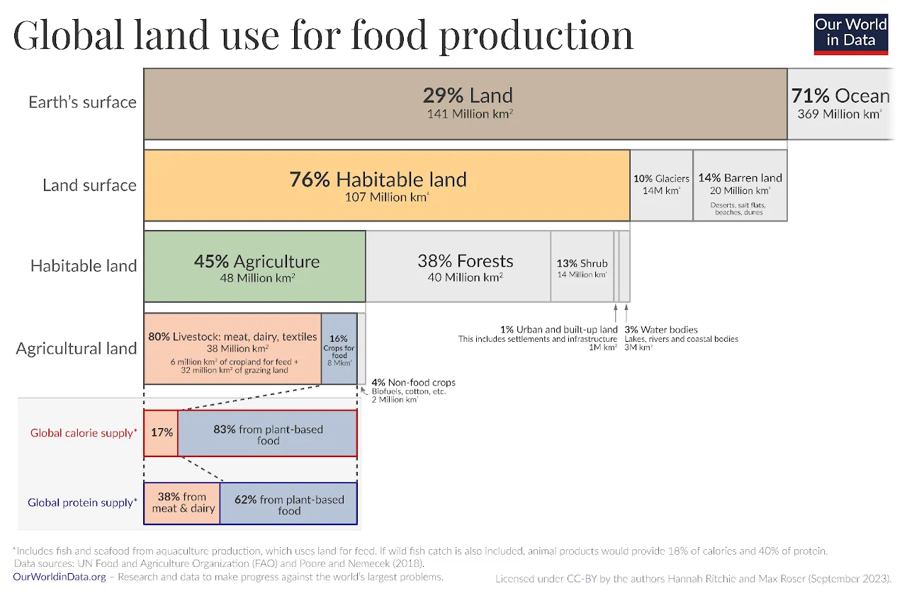

The Core Problem: Recognising the Reality of Suffering
The world has a severe problem that most people refuse to fully acknowledge. That problem is extreme suffering. The victims include children suffering from rape and bone cancer, animals tortured by sadists or torn apart by predators, and families screaming in war zones. These victims endure bigotry, natural disasters, crime, diseases, and mental disorders. No one deserves this suffering.
The biggest issue is that society ignores the big picture. Victims of existence do not just suffer and die; they reproduce, forcing the next generation to suffer and die all over again. There are countless unborn children who could face kidnapping or trafficking. There are countless animals waiting to be born just to be locked in cages and killed for a quick meal. Countless future victims will face diseases like Alzheimer’s and cancer, accidents, or severe mental trauma.
This cycle of suffering must be ended, and the first step is recognizing the problem. Historically, the world's ethics and philosophies have been built on bigotry. People use excuses like following religious books, or they only care about specific groups like white people, straight people, or just humans. Many decide that suffering does not matter unless it is convenient for them. These are highly unethical views disguised as morality.
True ethics must focus entirely on the victim's perspective. Only the victims matter because they are the ones feeling the suffering. Unfortunately, society currently punishes burning a non-feeling religious book more harshly than harming a living being. The abstract idea of "nature" is protected more fiercely than the actual wild animals suffering inside it. We live in a system where oppressors use their own feelings to decide what matters, ignoring the victims.
We reject all bigotry, recognizing that all suffering is bad and is the only truly bad thing in the world. Any ethics not focused on suffering is just a convenience-based immorality. Furthermore, suffering is built directly into existence. For example, a lion must kill a zebra, or the lion starves. Neither the zebra running away nor the lioness trying to feed her cubs is the villain. It is the biological design itself that guarantees suffering. Disasters, diseases, wars, and predation will continue until the end of time. As long as conscious beings exist, suffering will exist.
If existence is the problem, the only logical solution is non-existence. Less intelligent beings fear non-existence because they cannot see the logic. If non-existence were truly bad, people would mourn every unborn sibling they never had, and using birth control would be considered deeply evil. People do not cry for an unborn child, but they cry when a born child is harmed.
Non-existence is simply the state before you were born. It is like a deep, dreamless sleep where you feel no worry, no loneliness, no emptiness in a black void and no suffering. It is total peace and safety from harm. It is the exact same state that comes after death. Applying pure logic means we have a strict obligation to stop the cycle. We must prevent future victims from being born to save them from billions of years of potential horrors. We must work toward a peaceful extinction for all conscious beings. That is the purpose of this manifesto.
In this movement, suffering is defined as any physically or emotionally bad experience, such as anxiety, or mental disorder that a conscious being wants to avoid. We focus on the extreme, inevitable suffering. We separate "suffering" from "pain". Pain is a physical sensation, but suffering is pain you actively want to escape. This means even someone who enjoys the gym or extreme activities is not "suffering" because they do not want to avoid it. This clear definition makes it an objective fact that suffering is universally bad.
Identifying the Opposition
The Pro-Suffering or the Pro-Life, so the suffering imposing system. Every movement for justice must clearly define what it is fighting against. Our clear opponent is the real oppressor of every living being. Pro-Lifers are the people who accept that wild-animal-children will be abused or torn apart, just so they can continue enjoying their own lives. They fight against the non-discriminatory extinctionism to keep their harmful privileges and their irrational, convenience-based morals. (Disclaimer: do not get this confused with human-centric bigoted terms; the pro-extinction social justice movement does support human reproduction in favour of truly progressing the intelligent outcome of total peace through realistically putting everyone to safety).
They are wrong because no one has the right to force life—and that must include all the sufferers—to continue. They do not have the right to let unborn beings be forced into a world where they might be tortured. I.e. a white oppressor has no right to demand that slaves be born, and even a slave cannot force other slaves into existence. Forcing anyone to exist and suffer is always wrong. Yet, this is exactly what Pro-Lifers demand to be prolonged.
A person is part of the Pro-Life problem if they:
Do not care about the suffering of others or actively want them to suffer.
Follow religion or any other irrationality as opposed to rational logic and evidence.
Practice any form of bigotry, such as racism, sexism, ableism, human-antinatalism or speciesism.
Base their ethics on personal pleasure rather than evidence, logic, and reducing harm.
While society recognizes some forms of bigotry, e.g., racism and sexism, it mostly ignores speciesism (the discrimination against animals or non-humans). Pro-Suffering imposers dismiss animal suffering, just because those bigots have not evolved to view animals as belonging to the group of victims. Furthermore, society discriminates against victims based on the cause of the suffering. Pro-Life bigots excuse a starving lion or a deadly accident as "just nature", simply because, again, Life-Imposers have not evolved to understand the urgency of intervention for solving suffering.
But the victim does not care if they lost a limb naturally or if someone chopped it off. The animal does not care if it starves in the wild or in a human cage. A baby does not suffer less from a natural disease than from a crime. The suffering is equally terrible, and logically, we must prevent all forms of it from continuing.
It is important to understand that Pro-Lifers are also victims of biology. A sadist or a rapist acts that way because they have a mental disorder or physically lack the mirror neurons required for empathy. Just as we cannot biologically blame a lion for hunting, we cannot biologically blame people for their brain chemistry. However, they are still defective machines lacking the empathy and logic needed to understand extinctionism. Because they have the power to block our progress, they are our enemies in this fight. They are simply biological obstacles standing in the way of peace.
The Mission
A Grounded, Scientific Approach: Unlike other movements that falsely promise a perfect utopia, we do not make false or naïve promises. Our mission is very clear: to provide the peace of non-existence to as many beings as possible. We follow three strict rules to ensure the movement is inclusive and non-discriminatory:
Rule 1: Cause extinction as vastly as possible.
Rule 2: Cause extinction as thoroughly as possible.
Rule 3: Cause extinction as fast as possible.
Rule 4: Cause extinction as peacefully as possible.
Rules 1 and 2 always hold priority over Rule 3, and Rule 3 holds priority over Rule 4, because failing to be vast and thorough will result in much worse suffering in the long run. We must do whatever is necessary to achieve the optimal end.
We do not claim to have all the answers yet. Scientific research is the only path that will reveal exactly how to achieve this goal.
Physics: We need advanced theoretical and experimental physics to understand the fate of the universe and find a way to permanently end conscious life, perhaps through vacuum decay, strange matter, or exotic energy.
Artificial Intelligence (AI): Superintelligent AI will definitely be a core part of the movement, guiding our research and continuing the search for the most optimal methods of extinction.
Astrobiology: We must understand the origins of life and how commonly life becomes sentient in the universe.
Our activism exists to push this science forward. Eradicating extreme suffering is the only truly meaningful action humans can take in an otherwise pointless universe. Stopping child abuse and animal torture is infinitely more important than creating art or exploring Mars.
Core Principles and Facts
To succeed, the movement must strictly follow these rational facts:
Materialism: Only physical reality exists. The mind is just biological hardware; there is no magic, spirit, or supernatural force.
Atheism: No intelligent, kind creator would design a world filled with such extreme suffering. Religion is entirely made up.
Neurobiological Determinism: Human behavior, personality, and choices are entirely controlled by the physical structure of the brain. Free will does not exist, meaning the Pro-Life stance is a biological defect.
Consequentialism: The ends justify the means. Just as people had to fight a bloody war to end slavery, we must choose the greater good to prevent endless future suffering.
Science: We rely purely on absolute, evidence-based science and reject all pseudoscience.
Suffering-Focused Ethics: We only care about preventing and reducing to the acceptable amount the bad thing, without discrimination. We do not place value on non-feeling objects or imaginary concepts like religion, money, nations, or "nature". Without these principles, irrational people will flow in and misguide the movement. Aside from these facts, we will support any political campaign or strategy that moves us one step closer to our goal.
Action Plan: How We Achieve the Goal
We must do whatever is necessary to get results and reach the optimal extinction. We have one final goal:
1) Vast and Thorough Extinction: We achieve this by supporting AI engineering, astrobiology, and physics research. We do this through activism: educating and recruiting rational people, who will then recruit the scientists, AI engineers, and millionaires needed to fund the project.
In the future, we may need to enter politics, organize massive boycotts to change government policies, or even fight a war against Pro-Lifers. We must be the most uncompromising social justice movement in history. Just as abolitionists knew they had to change laws and fight wars to stop the suffering of slaves, we are fighting to stop the suffering of every single being that this broken universe will force into existence. Being uncompromising means being ready to do whatever is necessary to eradicate suffering. We cannot guess exactly what tactics will be needed hundreds or thousands of years from now, but zero suffering is the only acceptable outcome.
If human rationality and intelligence continue to grow, the conclusion of extinctionism is completely inevitable. Let us fight to put a permanent end to suffering. No child deserves abuse, no animal deserves slavery, and no family deserves disaster. No predator deserves to starve, and no prey deserves to be ripped apart.
We are rational humans, the only ones capable of understanding and solving the problem of suffering. Because we are the only ones who can act as the caretakers for all sentient beings, we have a strict moral obligation to do so. So let us unite and fight for them—the victims of existence.
Let's abolish suffering. Long live peace!
Basic FAQ
Frequently asked questions
What does the movement work towards?
We fight for Extinction, as vast, as thorough and as painless as possible. This is the only way to eradicate all suffering!
Does the movement support violence?
No. It is a myth that the Pro Extinction movement is violent, angry or chaotic. We are compassion-driven people and we are against suicide, self-harm and violence. Humanity must stay strong to help other life. Humanity should continue for hundreds, possibly thousands of years to this end. We engage only in lawful and peaceful activism, growing the movement with communication. It is true that many people calling themselves Pro Extinction want to "see the world burn", but they are strictly kept out of our organisation.
How is the movement planning to cause Extinction?
The first step is to grow the movement. There are many different ways to implement extinction. The movement will have many options available as the movement grows and as technology and science develop naturally over time.
I want to know more, is this everything?
This is the BASIC version of the Frequently Asked Questions page. Please check out our much more comprehensive FAQ page as well as our video and text resources.
Who can join the movement?
Not just anyone can join. Currently the gene pool for people smart enough to be responsible for ending suffering is very small. Only people who quickly agree that ending all suffering is a good thing and should be worked towards will realistically be allowed into the organisation. There is some wiggle room on this, but not much. People who have doubts about whether or not we should work to prevent forced existence and suffering will most likely not be a good match. To those people, we say go live your life.
It's not impossible; it's just a matter of optimizing and causing the best extinction possible — i.e., as vast, thorough, and peaceful as possible. It's a matter of engineering and science. As a society, we already have the methods to cause extinction on Earth; it's just a matter of engineering. On a cosmic level, an even more far-reaching extinction is a question of science. If there is a disease like cancer and some scientist is working on a cure, it's absurd to tell them “It doesn't exist, so stop working on it.” They are working on it to make it exist.
But what is really impossible? Solving suffering without non-existence. What is really unacceptable? Child rapes and predations happening inevitably again and again pointlessly. So the only question now is how to make non-existence possible, how to make peace possible, and how to be optimal at that without discrimination.
Besides, what else is there? You can either do meaningless stuff, enjoy life, join the pro-life gang and shamelessly defend suffering. Or you can participate in the only meaningful movement which aims to end all the otherwise inevitable sufferings like child rape, predation, starvation, animal torture, cancer, etc.
What about consent?
If you really care about consent, then you should know nature violates the consent of life. It keeps violating it — we don't consent to be born… Just imagine if you ask a puppy before it's born, giving some information that it's going to be tortured by a sadist for days and killed — would the puppy consent to be born? No! But we are forced into this existence when we are born.
And when we die, do we consent to it? Why do old people run to hospitals? Why does a starving baby move towards food? Nobody consents to natural death. So is it valid to use consent as an argument to keep this literal consent-violation machine called life running?
Life keeps violating consent. Extinction prevents all consent violations.
Another thing is that consent is directly anchored to intellectual capability. If you cut off the limbs of an animal, it still tries to move and survive; it is still afraid of death. But you are a human who is aware. You can anticipate that the animal is going to suffer more, so you should euthanize the animal. Babies don't consent to a bath, so what — giving a bath to a crying baby is a violation of consent? You have the intellectual capability to know what the greater good is; you make the decision.
The consent is not yours to give in the first place. It's like I don't consent to slaves being freed. And even some slaves consent to being slaves — they cannot say others should too.
What about optimism?
Optimism is bad and so is pessimism. Realism is the best way of thinking because it's realism! You can't argue against it.
We have a nature-given tendency to look at the bright side. We say stuff like “use suffering as a teacher” but stop and think! What does a child in the child porn industry have to learn from their suffering? What does a chicken who spends its entire life in a battery cage have to learn? What did a baby zebra who just got born and got eaten by hyenas learn? That's just some motivational bullshit we tell ourselves.
Wouldn't things get better? Look at where we are compared to 100 years ago!
No, they wouldn't! This is not pessimism; this is the law of nature. The weak suffer and the strong survive. It always will.
Either the zebra gets ripped apart or the lion starves — that's the basic rule here. The basic design.
Things are better than 100 years ago for certain humans! But only for the strong because we live by oppressing the weak! For example, what have we done in 100 years? We have enslaved 70 billion farmed animals annually, to torture and kill them, and we have made a great corporate business out of exploiting the reproductive organs of animals to produce milk and eggs. We are kind of the strongest lion in the jungle, the fastest cheetah who never knew suffering because we can make the rest suffer for ourselves to be happy.
And even if you look at human sufferings, we have invented new sufferings! Sure, child abuse happened in this world before! Now we have a camera to film it and now we have the internet to post it and sell it for bitcoins! That child abuse wasn't a criminal industry before! Now it is! Suffering just changes forms — you prevent starvation, the next problem is obesity. You stop wars using heavy artillery, the next problem is a virus which you won't even know was an act of war. There is no stopping suffering without extinction.
What about God and his plans?
People worship God from religions and even dedicate their entire lives to God! But if I were God, I wouldn't create a world where animals have to kill each other to live! I wouldn't put a pedophile and a child in the same world! I wouldn't give man the free will to commit enslavement or genocide! Any intelligent being doesn't have the necessity to do so! Also, magic doesn't exist! Before we invented microscopes we called jaundice a “yellow demon” but they don't exist!
What sort of grand plan can justify one child rape?! Nothing!
People will never agree to this!
They may not unless intelligence and ethics keep evolving! If they don't, the entire societal growth itself is a dead end — that's another issue! But for now there are clear signs of improvement in rationality and ethics… 200 years ago writing an atheist book would land you on the guillotine… But now they are best sellers. The world is even starting to give moral consideration to animals moving into the 21st century. Because as long as there is suffering, empaths will keep fighting against it! And ultimately they have to realise the only way to eradicate suffering is extinction and they will realise how pointless but extreme an event like a child rape or animal abuse is and how inevitable.
People who disagree with extinction and preventing forced existence and suffering are essentially agreeing with extreme sufferings like child rape and animal torture and predation continuing forever!
Anyway, an activist should never think “will people agree to it” — if you decide something is wrong you should only keep thinking about how to make it happen until it does!
What about life’s meaning? What about our purpose?
What meaning? What purpose? Because whatever you think of it can be easily broken down by pointing at a random suffering in this world! Whatever grand purpose you think humans have — can it justify boiling puppies alive?
You are just born, you go to school, a job, get married and have kids, force them to do the same and die! That's what we have done all along! And you just kid yourself that you are doing something meaningful! Whatever you did is nothing compared to the abolish-suffering agenda! Because ultimately whatever you did cannot justify existence and cannot justify even one child rape or other suffering!
Why do you interfere in nature?
The question is why are you a hypocrite? Building civilizations, laws, inventing farming, guns and living completely protected from nature’s harsh weather, predators, famine etc. is fine because it's humans! But wild animals can rot in nature’s hell because, well, they are animals? Whether something happens to you or not, suffering is suffering! The zebra and hyenas don't deserve to take part in the pointless cycle of being hunted and starved for millions of years!
Nature doesn't feel anything! But the victims — wild animals — do! Causing suffering to sentient beings in the name of something that is not sentient is not different from what religious terrorists do! Nature worship = religious terrorism!
Isn't Extinctionism just your opinion?
Extinctionism is just facts:
All suffering is bad and suffering is the only bad. And extreme sufferings exist.
Suffering is inevitable as long as sentient beings exist.
Suffering cannot be justified with pleasures… Extreme inevitable sufferings like kidnapping and raping children, or getting torn apart alive or starving or being tortured cannot be justified by an orgasm or playing a video game or any other good things or pleasures.
Only non-existence can guarantee 0 suffering.
These are not opinions — they are facts; they are the very nature of our existence like the sun and the moon!
Do extinctionists support individual acts of sterilization or euthanasia?
No, we don't and there is a good reason for that. If we euthanize a single dog there is gonna be one more dog replacing it! Why? Because the population of beings is dependent on resources like availability of food, water etc… If there are 10 dogs in an area that means there are resources for 10 dogs. If you euthanize one of them another dog which was supposed to die young just gets some space and survives and suffers for more days and dies. Same goes for sterilization. Sterilize one and the others reproduce in place of that one.
How can non-existence be "better" if no one is left to enjoy it? Who actually benefits?
The idea that a world has to have someone standing in it to count as "better" is a logical trap. You don't need a living person to celebrate a state of total safety for that safety to be a superior outcome. We measure the value of extinction by looking at what it prevents. Think of it as a clean, practical comparison:
Scenario A (Continued Existence): The machine of life keeps running. This means tomorrow, next year, and for thousands of generations to come, billions of humans, animals and extraterrestrial life will inevitably experience brutal violence, starvation, rape, severe illness, and terrifying natural deaths that can never be justified by any amount of shallow pleasure. That is a massive, ongoing pile of real victims.
Scenario B (Extinction): The cycle is stopped. The machine turns off. When you compare the two, Scenario B is the only one that offers a 100% guarantee of zero victims. So, who benefits? Every single potential future victim who was spared from ever having to bleed, cry, or starve. We use this preventative logic in the real world all the time:
If a building is structurally unsafe and guaranteed to collapse, the safest move is to ensure no one enters it. We don't say, "Well, since the building is empty, no one is in there to feel happy about not being crushed." We are just glad nobody got hurt.
A closed, empty, previously used torture room is a victory, even if no one is sitting inside it to clap.
Extinction isn't about making a ghost town where people are sad because they are missing out on the party. Those people don't exist, so they lack absolutely nothing. Extinction is the ultimate act of solving and preventing suffering permanently — so that the cycle of suffering is broken, and no more victims can ever be forced into a meaningless life of pure hell.
What about species extinction?
We can't discriminate by choosing to only help certain species. Let's say naturally or artificially all the dogs go extinct — then are they replaced by cats or squirrels… Cats are sentient too… The suffering just transfers to another species which doesn't make it less bad! White rhinos are extinct but black rhinos took their place! What changed really? Only skin colour. Again the population of animals in nature depends on resources (availability of food, water, etc.); one species that goes extinct will be replaced by another.
Does Extinctionism mean killing someone is alright?
Extinctionism is against any action of violence especially individual acts of violence. It in fact increases suffering. Just going into a forest and killing a deer means they just reproduce and create one more deer because the population of beings depends on resources. You kill a human — he is replaced with another human or wild animals; the resources go to another individual that's gonna suffer. And killing this individual also caused suffering and pain to this individual and the beings around because of emotional trauma. So this increases suffering. Only total extinction makes sense.
Another thing is that this is a project that's supposed to end all harm, all deaths and all suffering forever. We need a functional capable society to accomplish and achieve success in the project. Things like murder and killing will destabilize the society and will push the project away in time.
Do you support suicide?
No, we oppose suicide because it is selfish. Everyone capable of helping others has a moral obligation to do so. Suffering is bad not just for you. Whether suffering happens in my body or another child’s body or a dog’s body — it's bad and deserves to be stopped!
Why is it our moral obligation to help the cause? Because we are the only species that can help others! No other species can.
Morality is subjective… Everyone can have their opinions?
Another self-defeating concept. Subjectivists are hypocrites. They believe morality is fake... right up until someone hurts them — then suddenly they believe in "Rights," "Justice," and "Fairness" very strongly.
Morality is subjective? Really — how can moral subjectivists use determinism as an excuse for that. If you be like that even moral subjectivity is subjective and since Christians and Muslims are the majority morality is objective. I mean everyone believing slavery is okay doesn't make it okay... It's always wrong just some dumb animals exist that don't see it yet. Earth wasn't flat in 500 BC — dumb animals didn't have that much science. Christianity and Islam don't make God real. They are just rationally blind. Same way a person who supports slavery is ethically blind.
The Tribe: "Only my family matters." (Factually wrong: Other families feel pain too). The Nation: "Only my race matters." (Factually wrong: Other races feel pain too). The Species: "Only humans matter." (Factually wrong: Animals feel pain too). The Sentience: "Only things that may suffer matter." (Factually Correct).
If morality is a subject that deals with good and bad, we clearly know suffering is bad and deserves to be stopped whether others believe in it or not — it's a fact. Even if people don't exist and a planet just has some foxes and rabbits in a perpetual cycle of killing each other or starving — still the fact remains that suffering is undeserved and pointless and would be better to not exist.
Can technology solve suffering?
No, it can't. Take the internet for example: We invented it to solve some suffering. And it did! Farmers can now get access to guides for free, animal activists have a platform to speak up and spread ethics faster, people can get jobs easier. But at the same time child-rape exists on the same internet! Yeah child abuse happened before but it wasn't a criminal industry before! So while technologies solve some suffering, they also cause new sufferings… We end up with new problems. Suffering just changes forms and is never solved as long as sentience exists. If you invent a gun it can be used by both police and the criminal.
Isn't extinctionism just technological optimism?
Eradicating suffering without extinction is impossible and can be debunked with current known science. Smaller levels of extinction are already very possible. Humanity has made several species extinct. The upper limits of the most vast and thorough extinction possible just come under the unknown science for now. It's a practical project not an arrogant false claim. Extinctionists won't irrationally hold belief in a questionable method being eventually possible. For example, we won't tell you that it will definitely be possible to cause extinction in the entire universe, but we will check it out. We commit to developing the methods. It's a matter of engineering and research, not a delusion.
But isn't life meaningful?
Whatever meaning you can bring I can debunk with one extreme inevitable suffering. What is meaning? Is there a grand purpose? Can you name a grand purpose that can justify one child rape much less ten thousand that happen every day? Is being an astronaut enough to justify puppies being tortured or animals being dragged for kilometers behind cars by people who have a sadism mental disorder? What meaning can justify these?
Being a firefighter is only meaningful because burning alive exists. It doesn't have to… Nobody has to keep burning alive for me to keep saving. Prevention is the best medicine.
What are we doing really? We are born we go to school then job then reproduce and force our kids to do the same before we die and delude ourselves with stuff like meaning. If you look at animal lives, the pointlessness of existence should be even more obvious. A pig just spent its entire life in a battery cage, got raped and assaulted just so that it could be murdered and end up on your plate for a 20-minute meal which you probably didn't even give a thought about. A newborn zebra gets ripped apart alive by starving hyenas — didn't know why it was born, didn't know why this happened to it. What great purpose? Right?
Whatever meaning you can think of now or in the future can be easily debunked by sufferings. Eradicating sufferings is the only meaning you have in a pointless existence full of suffering.
What about an afterlife?
Afterlife is a stupid unscientific concept. Science has already proved that you are a body operated by your brain. If your brain dies you die. You will be unable to experience. Those cells rot. Just like files in a damaged USB-drive don't have an after-drive life, there is no life after life ends. If it does the burden of proof falls on you. Science doesn't have to disprove the 1000s of claims irrational people keep. Science doesn't have to disprove that miniature worlds exist in protons and electrons of atoms. It doesn't have to disprove the flying spaghetti monster. It doesn't even have to add a rule saying that the flying spaghetti monster is not scientifically allowed — that would be funny. You have to understand science and be rational. After you die there is just nothingness.
The thought of afterlife comes when you fear nothingness. People imagine a dark lonely void where you are suspended forever alone with your thoughts. But that's not the case. You "experience" nothingness every day when you have a deep dreamless sleep. You aren't lonely — in fact that's the only time you don't have to think about your depression or job stress or your breakups. Non-existence is bliss, peace and safety.
We shouldn't interfere with nature though?
You already did. You exited nature starting from 10000 BC or even before. You made clothes and blankets and shelters to protect yourself from the cold. You built guns to protect yourself from predators. You built civilizations and societies to protect yourself from infighting and rape. You invented technologies to even avoid the slightest discomforts caused by nature.
But imagine wild animals! Abandoning their own children because they are slow (humans did it too in nature). Getting raped, torn apart alive. Starving and dehydrated in hot deserts, freezing and drowning in cold ice lakes!
People think that if they are suffering then it's okay to interfere with nature but if wild animals are then it's fine and we shouldn't interfere! This isn't an argument — it's hypocrisy, it's bigotry. Suffering is suffering.
The Appeal-to-Nature fallacy becomes very real when it comes to rapists and sadists too. A rapist can claim it's natural. An animal abuser can claim it's natural. It's perfectly natural for someone to come into your home, beat you up, rape your wife and steal everything. That doesn't make it moral.
We have the ability to think. Think! Nature is just a set of laws by which existence works. It's not a sentient suffering being which can deserve moral consideration — only sentient beings do.
But what about the “good” people who have good lives who want to exist?
In other words privileged pro-lifers who oppose extinction! Are they really good? These are the people that allow suffering! They want thousands of children to get raped every day. These are the same people who wouldn't care about puppies being tortured on a daily basis. Because they want pleasure these people are comparable to sadists who derive pleasure out of suffering.
This is the ultimate evil we are fighting but pro-lifers will claim that they are not responsible for a child rape they aren't causing. I'll debunk this with an example. Someone is beating a kid up on the road (child abuse). You walk by and don't stop him or even call the police. Now this suffering happened because of two reasons: the abuser did it, and you didn't stop it! Inaction is also an action. You chose not to act so that suffering happened. And the sufferer doesn't care why his suffering happened. He didn't want it. Only the victim's perspective matters when it comes to suffering. You did the same thing as the abuser. Your hands aren't bloody the same way Hitler's hands aren't.
Same way if you get all the knowledge of inevitable extreme sufferings and still oppose extinction it means you want trillions of animals abused, thousands of children raped, quintillions suffering in nature's Hell for your pleasures that clearly don't justify these. That is the very form of immorality and selfishness the movement is fighting. You aren't good. You are more evil than any tyrant or genocide maniac in history. These pro-lifers are standing in the doorway to a burning building and blocking the exit while saying “burning alive is beautiful”. They need to be pushed past.
What about the good? The pleasures?
Name one pleasure in this world that can justify torturing a puppy to death? Raping a little child? Or starvation? Or getting baby animals eaten alive by ants?
Can video games justify starvation? Can sex justify children getting raped? There is a huge obvious asymmetry here you are just not willing to look at.
No amount of pleasures can justify any of the inevitable horrors of existence.
Extreme suffering has an intrinsic urgency to end.
What if life comes back?
This is a valid question only if extinction is natural, as in "what if life bounces back after an asteroid strike or extreme climate change?" But the entire point of the peaceful extinction project is to be as thorough as possible. So, "what if life comes back?" Well, we are causing extinction — it's our responsibility to make sure it doesn't. Whether we place an AI to continuously monitor the situation or we discover something like vacuum decay, it's up to AGI and future extinctionists. Science is not at a point to answer what the “as thorough as possible” is.
Simply the answer is: you have to make sure it doesn't.
What if we just reduce suffering?
That's an ignorant and immoral question to ask. If 10 children are getting raped and if you reduce it to just one child in a pedophile’s basement — that's still one child in Hell! You are saying just let one child get raped so that the rest of us can enjoy while you have an option to have 0 child rape.
And throughout history one thing is clear: suffering has just changed forms and has never definitely reduced. It has only increased with population. Maybe you solve all wars tomorrow — the next problem is bio-engineered weapons that you won't even know are acts of war! You solve starvation — next problem is obesity! You invent guns — criminals get them too! You invent the internet — you have a dark web on your hands!
It's really unacceptable to say “I don't care if a cat has to be ripped apart alive in a blender because I want to exist.” Who are you to make or allow others to suffer for your benefit?
Extinction is accepting defeat! We should strive for a better world!
I'll put it simply. Utopia is impossible! It's an optimistically biased delusion. Just think about a few questions. Can you solve crimes ever? Can you solve accidents ever? Can you solve predation ever? Can you solve diseases ever? Can you solve disasters ever? Can you solve rapes ever? Can you solve animal abuse ever? Can you solve starvation ever? The answer is no.
Game theory and probability theory and other science and mathematics can debunk you if you say yes. History can debunk you. 0% risk of suffering for 100% of all life is impossible without extinction.
Extinction is an extreme overreaction. If you stub your toe would you amputate your leg?
If stubbing your toe once in a while were the only inevitable problem in existence I probably wouldn't be an extinctionist. But the real problems are so extreme! Beings burning alive! Innocent children raped! Predators go around ripping apart a pregnant prey who is alive and eating the foetus because it's starving! These sufferings happen in trillions every day! They are inevitable! The correct analogy would be your foot being infected beyond repair! Yes — the answer is amputation!
Life is extreme. Extinction ends it!
What about will to live?
Yes, will to live does matter! Fear of death is a huge suffering! Which life violates!
Animals don't consent to natural death either. But what these animals are gonna do is keep reproducing so that life keeps violating the will to live of the next generations again and again. Who is worse? Extinction (the suffering and death preventer) or life (perpetual suffering and death machine)?
Life is not so black and white — sometimes you might have to cause some suffering in order to solve greater suffering. It's a basic trolley problem. Letting the greater evil happen is the greater evil!
Are you extinctionist because you are depressed?
Me the author writing this is not depressed — I just speak for the depressed and other victims! But what if some extinctionists are? Depressed people’s opinions don't matter? They shouldn't have voting rights?
They are the direct victims of existence and have every right to speak up. They would only be wrong if they say “I'm depressed, please help only me and not others!” If they are considering every other being, it's not out of their depression — it's out of empathy. And those who are badly suffering yet standing up for others selflessly are commendable.
What about rights-based ethics? Would you rape an unconscious woman?
Rights as a concept came into existence to combat suffering. But it fails because natural sufferings dominate this world. Why did people think black people needed rights? It's because they saw them suffering. Why do you think animals need rights? Because staying in a cage is suffering.
Would you rape an unconscious woman? Hah — she doesn't suffer but rights are the one thing stopping you! This is a completely shit analogy. What about a banana stem? If I rape it would you call me a rapist? You probably will say I'm a clown but would never say I'm a rapist. So what is the difference? Why not plant rights? Plant bodily autonomy? The difference is the woman is sentient i.e. can suffer. Potential suffering is also bad — not just suffering. The suffering or uncomfortable feeling caused to you imagining this analogy with a fellow sentient human being is also bad. The suffering it causes me knowing that woman is a sentient being is also bad.
What if extinction is painful?
Nothing is more painful than life. The 20 quintillion sentient beings that exist right now are going to die horrible natural deaths but not before creating more beings and continuing life and suffering. The cycle is indefinite. So extinction prevents literally indefinite amounts of suffering.
Even if extinction were painful (which it wouldn't be) no method of euthanasia can be as painful and as slow as natural death. But even if it were — it literally prevents indefinite numbers of sentient beings. It's not even 1 vs 5 — it's 1 vs infinite suffering prevention.
Can't we sterilize animals instead of euthanizing them?
Sterilization is animal abuse.
a) It's impossible to pick up and sterilize each and every being on earth.
b) Importantly euthanasia is totally advantageous over the horrible slow natural death and suffering that comes till then.
c) Animals who are neutered undergo health problems due to loss of hormones.
If the world is deterministic then we have to be fair and we can't blame or judge the rapist? Right?
Neurobiological determinism is not a list of dos and don'ts. It's just an explanation of human behaviour. It says that some people have better brains to understand math but some don't. If some people look at E=mc² and don't understand it, that doesn't make it wrong. Some people are better equipped with intelligence, rationality and empathy. Which gives them actually even more right to say that the rapist is wrong.
You aren't doing anything that actually affects or reduces suffering right now.
We are making progress towards the non-discriminatory end of all suffering. Every activist, scientist and donor adds to our movement bit by bit. They contribute their part until all this effort combines together to achieve our goals.
Dismissing progress and asking what you did right now is like saying all the 1000 years of activism against slavery were all in vain. And only the activism done the particular day slave liberation was achieved did something. So all the activists who fought against slavery until that day should have given up and gone to treating the injuries of slaves instead of progressing activism towards rooting out slavery entirely. Treating slaves' injuries from whip lashes is a completely inefficient waste of time though it feels like immediate relief and action, long term slavery needs to end.
That is what all other movements are animal rights/rescue, feminism, right to die, feeding the starving, fighting against child labour are doing. They are treating injuries of slaves who had whip lashes and not rooting out slavery. It has immediate impact but long term consequences of wasting time. Our movement attacks suffering at its root cause. And we spend our resources there.
But what about balance? It is the natural balance!
This is the stupidest pseudo argument against extinctionism. It's not even an argument but still people randomly blurt this out in debates against us.
Yeah suffering is how nature balances itself! It controls the population and maintains ecological balance through starvation, diseases and predation. But nature doesn't suffer. Animals suffer from nature. Should you focus on Nature (which is just a concept) which doesn't suffer or focus on conscious victims who suffer? The answer is obvious. Your animal brain just values Nature over the actual wellbeing of the life forms inside it, and that's selfish and wrong. "What about the beauty?" is also a disgusting question which gives zero moral consideration to the victims who are suffering terribly.
No question matches your search.
Your question isn't listed? Contact us via mail or debate us on TikTok.
Criticism of pro-life ideologies
Criticism of different pro-life ideologies
Human Rights
Human rights are often treated as absolute protections that should continually expand. This is the wrong framework. Rights are useful only because they serve the greater objective of helping to cause extinction.
Human rights do not eradicate or reduce suffering. Laws can prohibit rape, abuse, discrimination, and slavery, but making something illegal does not make it disappear. These things continue even where strong legal protections exist, including through unreported cases. Rights can regulate how society responds to suffering; they cannot eliminate the capacity for suffering itself. Furthermore, maintaining human rights relies on systems of punishment, such as imprisonment. While incarcerating or penalizing perpetrators is treated as a necessary evil to keep society stable, the intense suffering of those in prison cannot simply be dismissed or ignored. Rights systems regulate societal stability, but they rely on inflicting suffering and cannot eliminate the capacity for suffering itself.
The primary usefulness of human rights is providing the necessary conditions for activism. Freedom of speech, association, and basic protections allow people to organize and advocate. Because human empathy naturally drives people to fight for basic human rights, those protections will inevitably be established by society at large. Once people gain the freedom to do activism, our specific role as extinctionists is to reach and gather those individuals capable of understanding and fighting for extinctionism. With our time and resources being extremely limited, we must focus our efforts on engaging existing activists rather than slightly increase the work of human rights movements.
Human rights are also species-specific. They prioritize human suffering while excluding the vastly larger amount of suffering experienced by other sentient beings. We have implemented human rights, yet under this framework, non-human animals continue to be exploited and abused on a massive scale.
This is why extinctionism rejects loyalty to individual human-rights ideologies such as feminism or racial activism. The issue is not that misogyny, racism, or other injustices should be accepted, but that eliminating individual forms of human injustice does not eliminate suffering overall. Because our movement is small, we must maintain strict focus on the root cause rather than incremental reform. Extinction addresses the ultimate source of all harm: sentient existence capable of suffering.
Human rights should therefore be conditional rather than absolute. Under a pro-extinction government, rights would remain subject to what is necessary for extinction. If a right became a barrier to achieving extinction, it could be changed or removed. The greater objective takes priority over permanent individual protections.
The fundamental principle is not “humans must always have more rights.” It is that suffering deserves moral consideration regardless of who experiences it. Human rights try to manage particular human problems, but extinctionism seeks to resolve the underlying condition: suffering through sentient existence.
Left-wing politics
Left-wing politics that's supposed to be about equality, supposed to be pro-reform instead of pro religion, supposed to be protecting marginalized groups and the oppressed, instead of supporting anti-discriminatory ideas it has turned into a religion itself.
Left-wingers these days concentrate on shoving a black snow white in the name of fighting racism rather than moving on to providing remedies for animals, the most oppressed beings. If you fight for moral consideration for oppressed and the marginalized it only makes sense that you move on to the next oppression. But it seems like left wing just doesn't want to address animals. Achieving human rights was convenient so now they have nothing to do and just want to shove black snow whites onto people cuz they have nothing else to spread their propaganda with.
They have started giving more importance to pronouns. I mean I'll call someone a shark if they want to be called a shark! But there is nothing to it more than that! They/Them are just words. But the real issue of universal suffering hasn't been addressed. Children are getting raped out there! Animals are getting tortured! Predation, starvation, wars, natural disasters still persist. And you want to make a movement for a bunch of people who want pronouns? It's like it's deliberate political propaganda and ignorance of real issues.
You have nothing more you can do within existence to solve suffering it just keeps changing forms so the solution is not to shift to imaginary issues it's to accept extinctionism. True absolute anti-discrimination can only lead to extinctionism. And since the majority of left wing are pro-life imposition and pro privileged they just make up non-existent issues to not address the real problem. It's escapism at its peak.
Right-wing politics
Right-wing politics is usually based on discrimination. On hate. On separatism. It's very easy to decode right-wing politics. Their entire ideology is based on feelings of disgust rather than empathy; “Oh gay is so disgusting we should hate them together” “Polygamy is so disgusting we should hate it vote for us let's make porn illegal” “There are only two genders and transgender people are disgusting”. They promote the primal aggression and tribal nature of most humans to gain votes.
And they also supplement it with religion “In the Bible, being gay is an abomination” “In Quran women are inferior”. That was the entire purpose of religion: to scare people with an absolute authority so that masses can be manipulated into compliance. And it has always been a weapon to wield in politics from monarchy to modern “democracy”.
And the absolute peak of irrationality of the right wing is purity-based ethics “you have to be a virgin until marriage” “gay sex makes you impure” and the real funny part is most of these people who hate premarital sex wouldn't mind marital rape and actual suffering.
Right-wing politics is the most vile politics based on disgust and not empathy. Many right-wingers actively speak against empathy.
Democracy
Democracy means 51% support. It's basically a discriminatory ideology itself. It's an oxymoron actually. It paves the way for the majority to oppress the minority.
The general public is made up mostly of people who are easily manipulated by advertisement and political propaganda. The majority of people in this world are theists which means they believe in magic! They are hyper irrational. And these hyper irrationals are making decisions for the rational people too because they outnumber us in a democracy.
Not all people are equal when it comes to rationality and empathy. So giving the irrationals the right to choose is the definition of irrationality in the first place. Highly empathetic and rational people should be the ones making decisions on world issues. Not random morons who believe in spirituality and speciesism.
Antinatalism
The problem with antinatalism is it's completely counterproductive in reducing suffering:
Not everyone is gonna be convinced of one singular ideology — even 10,000 years later there will be some theists clinging around, some people supporting suffering and reproduction. Voluntary movements are self-defeating.
Antinatalism is a discriminatory ideology that doesn't consider animals. Animals cannot be antinatalist. They will reproduce regardless of human philosophies.
Being an antinatalist means more suffering because humans consume more resources than animals. We need cars, houses, furniture etc. which require fuel, mining, water, land etc. If the human population is smaller, wild animal populations replace and take our resources (and more in number) — probably 100,000 wild animals can live on the amount of resources I consume… And they are gonna suffer from nature.
We need to reproduce till we cause the most vast and thorough extinction possible. Yes, reproducing is evil but 99.9 percent of sufferers are animals. And allowing them to suffer and not searching for a more vast solution means allowing greater evil. So until we have successfully researched the means to extinction, human reproduction is a necessity.
VHEMT
Many people confuse us with the Voluntary Human Extinction Movement (VHEMT), but their movement could not be more opposite to ours.
First, VHEMT relies on voluntarism, which renders the movement inherently self-defeating. There will always be people who oppose any given ideology. Even universally accepted truths—such as the rejection of racism or the fact that the Earth is round—are not agreed upon by everyone. Consequently, humanity will never unanimously agree to go extinct voluntarily for the sake of the environment.
Second, the idea that most suffering is caused by humans is fundamentally flawed. If humanity ceases to exist, the cruel cycle of nature will simply continue. Without human exploitation, wild animal populations will expand, leading to an even greater scale of suffering. Nature is neither inherently beautiful nor inherently worth protecting; we have repeatedly demonstrated why the natural world is extraordinarily cruel to the sentient beings that experience it.
Furthermore, if humans go extinct, animals will lack any intelligent force capable of intervening to eliminate their suffering through total extinction. Therefore, this combination of antinatalism and environmentalism completely fails to achieve the goal of ending suffering.
Anarchism
Anarchism proposes a stateless society based on voluntary cooperation. The fundamental problem is simple: what happens when someone refuses to cooperate?
A society functions through voluntary cooperation only when people voluntarily agree on how to behave. But people have conflicting interests, beliefs, and desires. Some people inevitably want to harm, exploit, dominate, or control others. An anarchist system has to explain how those situations are handled without recreating the authority it rejects.
Consider a basic example: Tom wants to beat up John, while John does not want to be beaten up. In a conventional society, there is a rule against assault and an authority capable of enforcing it. An anarchist response depends on voluntary cooperation. But Tom has already demonstrated that he does not want to cooperate with John’s interests. Telling him that society has voluntarily agreed not to assault people does not stop him from beating John up.
The same applies to more serious violence. If an individual or group decides to rape, murder, torture, or otherwise harm others, there is no reason to assume they will voluntarily respect an agreement against doing so. Voluntary cooperation exists, but it does not protect people from those who reject cooperation. Rape, murder, torture, and other forms of violence therefore remain possible.
Anarchism also assumes that removing government removes an important source of conflict. It does not. Removing political authority does not remove aggression, selfishness, irrationality, or sadism. Those characteristics exist independently of government.
Different groups could also organize around completely incompatible beliefs. One community could be Christian, another Hindu, another Islamist, another organized around a cult leader, and so on. They might cooperate when their interests align, but there is no inherent reason they must cooperate when they conflict. A group could even adopt an extreme belief that involves harming others. If a cult decided to burn newborn babies as part of its beliefs, voluntary cooperation provides no mechanism for stopping it.
This is the central weakness of anarchism: it removes the authority that enforces rules without eliminating the people who violate rules. The violence and suffering caused by those people therefore remain. Anarchism does not reduce that suffering even slightly when the people causing it refuse to cooperate.
The problem becomes clearer when compared with nature. Nature is effectively stateless: there is no government regulating wild animals. Yet nature contains predation, violence, domination, and enormous suffering. The absence of government does not produce peace; it simply means there is no governing authority imposing rules on the participants. Removing government therefore does not reduce predation, violence, domination, or suffering even slightly.
Anarchism therefore leaves serious violence possible. It proposes voluntary cooperation, but it does not make everyone voluntarily cooperate—particularly the people whose behaviour makes enforcement necessary in the first place.
The problem is not solved by assuming that everyone will become sufficiently rational or ethical. That is a utopian assumption about human behaviour. A political system has to account for people as they actually behave, including people who are violent, irrational, selfish, or unwilling to respect others.
Ultimately, anarchism faces a contradiction: if nobody has authority over anyone else, then preventing someone from violating another person’s autonomy requires either voluntary cooperation or force. If force is used to prevent serious harm, some form of authority and enforcement has already been introduced. If force cannot be used, the system has no reliable answer to people who refuse to cooperate.
Anarchism therefore removes one mechanism for controlling violence while leaving the underlying causes intact. It does not merely fail to eliminate suffering completely; it fails to reduce the suffering caused by violence even slightly when those underlying causes remain intact.
Communism
Communism should be debunked because it promises a utopia that it cannot logically provide. Its central focus is class and economic inequality, but suffering is not limited to economics. Even if capitalism and class were completely abolished, people would still experience cancer, HIV, accidents, depression, mental disorders, genetic illnesses, crime, and other forms of suffering. Wildlife and animals would also continue to suffer.
This exposes the basic flaw in treating communism as a solution to suffering as a whole. If someone is starving because they are poor, eliminating poverty may address that particular problem. But eliminating poverty does not eliminate suffering, or even reduce suffering slightly as a whole. The next problem remains. A person can have food and housing and still develop cancer. Someone can have economic security and still become depressed. Someone can have healthcare and still suffer an accident or genetic illness. Communism has no special mechanism that makes these problems disappear.
China is frequently used as an example of communism eliminating poverty and starvation. But China’s own economic transformation demonstrates the problem. China introduced private property, investment, trade, and capitalist mechanisms, moving away from traditional communist economics. The claim is therefore not that communism solved starvation, but that starvation was addressed through moving away from communism and incorporating capitalism.
The historical record presented by communism’s critics also includes Mao and Stalin. Mao was a communist, and enormous numbers of people starved during his period. Stalin was a communist, and mass starvation also occurred under his rule. Whatever explanations are given for these events, they contradict the idea that communism inherently prevents starvation.
China also demonstrates why eliminating one form of suffering cannot be confused with eliminating suffering itself. Economic development can coexist with severe work conditions and depression. The 996 work culture—working from 9 a.m. to 9 p.m., six days a week—is an example. Solving poverty does not automatically produce a life free from suffering or even reduce suffering slightly across the board.
There is another problem with the communist promise: it can become unfalsifiable. If communism is claimed to eventually cure cancer, eliminate accidents, cure HIV, prevent mental disorders, solve wildlife suffering, and fix every other problem, then almost any future outcome can be attributed to the hypothetical communist society. But changing the economic system does not logically provide a mechanism for solving unrelated biological and physical problems.
Communism also relies on cooperation: contribute what you can and take what you need. But this creates an obvious incentive problem. If someone can receive resources without contributing, there is an incentive to avoid contributing. If everyone voluntarily cooperates, the problem disappears only because the necessary cooperation is already assumed. If people do not cooperate, enforcement becomes necessary.
That creates another problem: abolishing capitalism does not abolish power. A communist system can still have dictators and concentrated political authority. Enforcing economic rules can therefore require a powerful state or police apparatus, which itself can produce suffering. The theoretical endpoint of communism may be stateless and moneyless, but reaching or maintaining such a society requires explaining how violence, coercion, and non-cooperation would actually be handled.
Most importantly, communist analysis is overwhelmingly focused on people and class. But animals are sentient beings and experience suffering regardless of their economic status. Making every human economically equal does nothing to prevent animals from being farmed, tortured, enslaved, raped, and killed. It therefore does not even slightly reduce this form of suffering.
Economic development can even increase animal suffering. As people become wealthier, they can consume more animals. China illustrates this: economic improvement has been accompanied by enormous consumption of animals. Therefore, improving the economic condition of humans does not necessarily reduce total suffering. It can simply change its distribution and form.
This is the fundamental logical problem with communism: it takes a genuine problem—economic suffering—and treats its proposed solution as though it can address suffering universally. But class abolition does not entail disease abolition. Economic equality does not entail psychological well-being. Public ownership does not entail the elimination of animal suffering. A stateless society does not entail the elimination of violence.
Communism therefore cannot logically deliver the utopia it promises. It can propose a different way of organizing economic relations, but it cannot provide a general solution to suffering because most suffering is not caused by capitalism or class. Eliminating poverty does not eliminate cancer. Economic security does not eliminate depression. Healthcare does not eliminate accidents or genetic illness. Economic equality does not eliminate animal suffering. These forms of suffering therefore remain, meaning communism does not merely fail to eliminate suffering completely; it fails to reduce suffering as a whole even slightly.
The question is not merely whether capitalism or communism distributes resources better. The deeper question is whether either system can actually eliminate suffering. Neither Communism nor Capitalism can. It changes the economic structure while leaving the fundamental problem—the existence of suffering—intact.
Veganism
Vegans invented a new type of speciesism. Veganism shifts suffering from farm to wild animals but veganism acknowledges that as acceptable because it is not exploitation (human-caused suffering) but natural suffering. But the animals couldn't care less about human-made concepts such as slavery or exploitation. Only their suffering matters to them. There is no difference for the victim if it is a male calf starving in a dairy farm or a deer starving in a forest. The suffering is the same, independent of the cause or the intention.

So this is data given by UNICEF on land use represented by Our World in Data. You see animal agriculture exploits 80% of the total agricultural land (why? because it's farms + fodder) and only feeds 17 percent of the calories needed. Plants on the other hand consume 20 percent of land and feed 83 percent of the world's calorific needs.
What this means is plants require way way way less land to feed way way way more people.
Wild birds alone are 100 billion in number. When you come from veganism you are taught that wild animals are fewer than farm animals. This is only true if you talk about big mammals. Wild big mammals are fewer than farmed animals. https://ourworldindata.org/grapher/biomass-vs-abundance-taxa
So if 38 million sq. kilometers of land is freed because of the animal industry's closure, forests will double. Which means at least 100 billion more wild birds. Just imagine how many millions of frogs, reptiles and other animals can live in 1 sq. km of forest (and I'm not even including insects).
And these are wild animals that we see. But now imagine in an area you have 10 rats — you think there are only 10 rats but you actually missed the 1000 rats they birthed who died as babies! So if you consider the 99.9% who don't even get to adulthood the measure will be even higher.
And next take the fish in this data. They number in quadrillions. And overfishing is the number one cause of biodiversity loss in the sea. So if you think veganism reduces suffering and we should all be vegan you should advocate for pescatarianism which is reducing even more suffering.
But I would say don't advocate for welfarist measures. China eradicated poverty and so now they are the number 1 animal consumers. If you liberate animals the next problem is wildlife. If you pour concrete and build cities there the next problem is urban animals and more human suffering.
So asking a person to be vegan or non-vegan is like asking a person whether to kill a person with a blue shirt or red shirt. You should be fighting to end this system that inevitably keeps killing both shirts. We accept vegans and non-vegans into the movement. Our personal choices do not matter. Vegans let wild animals suffer and non-vegans do the same to farmed animals. We do not accept our activists doing vegan activism because it is an irrational and pro-life/suffering waste of time to convince people to only care about farm animals and to liberate them to continue suffering (vegans don't usually advocate for farm animal extinction). It is contradictory to do vegan activism & extinctionism activism so we do not allow it.
Both vegans and non-vegans are working for the goal which is eradicating suffering.
Another thing with veganism is that anti-speciesist animal rights are a complete impossibility.
And here we are only talking about the right to be free from human exploitation. Obviously animals suffer far more by natural causes that vegans do not even take into consideration.
So animal rights are not merely difficult to achieve. The problem is that equal animal rights are a legal, practical, economic, surveillance, and even hypothetical impossibility.
This argument is specifically directed at anti-speciesist animal rights advocates who want equal rights for every single animal, including the right to life, personhood, and safety. The problem is that the ideology does not work when you actually follow it through to its logical consequences.
The Legal Impossibility
Consider a simple example. If fish bones are thrown into someone’s garden, would that person have to stand trial for murder? Would the police have to conduct a post-mortem on the fish to determine whether it was murdered or died naturally?
Would the suspect’s computers have to be confiscated and examined? Would their family and friends have to be interrogated? Would there have to be an entire investigation and legal process surrounding a fish discovered in someone’s garden?
Now apply this consistently to every animal.
Every dead dog, raccoon, pigeon, lizard, fish, or other animal found on the street would have to receive a full and thorough post-mortem if that animal genuinely possessed an equal right to life. Every animal bone discovered would potentially have to be investigated.
Nobody is going to accept being imprisoned or fined because a goldfish was found dead in their garden or because a bird fell out of the sky. Yet if animals genuinely possess the same right to life, there would have to be some mechanism for determining whether their deaths were natural or caused by another person.
This is where the ideology becomes legally impossible.
The Economic Impossibility
The scale of such a system makes it economically impossible as well.
If a country had to conduct post-mortems and investigations on every animal body discovered, the resources required would be enormous. The entire system of policing, forensic investigation, courts, and punishment would have to account for animals on a scale that is completely incompatible with ordinary society.
If every dead animal and every animal bone required investigation, the claim that animals possess equal rights would require an enforcement system that cannot realistically exist.
The Problem of Enforcement
There is another fundamental problem: if these deaths are not investigated, the rights are not actually equal.
Imagine someone secretly breeding chickens in their basement, killing them, eating them, and throwing away the bones. If questioned, they could simply claim that the chickens died naturally.
Who would know?
Who would report the chickens missing? Who would file a missing-person report for them? Who would even know that the chickens existed?
If there is no way to establish that an animal existed, disappeared, or was killed, then there is no practical way to guarantee that its supposed rights were protected.
Criminals could simply exploit the gaps in the system.
Therefore, if animals genuinely have equal rights, those rights would require a mechanism capable of detecting violations. Without that mechanism, the rights exist only theoretically.
Animals Cannot Report Crimes
Children can already illustrate the difficulty of protecting vulnerable individuals. Children have less ability than adults to communicate and raise the alarm when something happens to them. Yet a child can still tell another person what happened.
Animals cannot do this.
An animal cannot report a crime to the police. It cannot explain that it was kidnapped, abused, bred, imprisoned, or killed. It cannot identify its abuser or provide an account of what happened.
Animals also cannot be reliably accounted for.
If a child goes missing, a guardian can report it. A school can notice the absence. Someone knows that the child existed and that they are missing.
But if someone secretly breeds and kills chickens in their basement, there may be nobody who knows those chickens ever existed.
That creates a fundamental problem for anti-speciesist animal rights: how can you guarantee equal rights for individuals whose existence cannot even be reliably monitored?
The Surveillance Problem
To even begin enforcing universal animal rights, society would require extraordinary levels of surveillance.
You would need to know what people are doing with animals inside their homes. You would need cameras in houses to determine whether people were breeding, killing, or eating animals. You would need surveillance on boats across the ocean to determine whether people were fishing.
The further you extend the principle of equal rights, the greater the surveillance required to enforce it becomes.
Without that surveillance, people can simply violate animal rights without anyone knowing.
And if protecting some animals requires surveillance while protecting others does not, then the system cannot genuinely guarantee equal protection for every animal.
The Anti-Speciesist Paradox
This also creates a problem with deciding which animals receive protection.
If someone says that fish deserve fewer rights than dogs because fish are harder to protect, they are making a practical distinction based on the difficulty of protecting the animal.
But that is precisely the problem for anti-speciesism.
There are differences in sentience between different animals. But who gets to make that decision? How is the difference determined? And how can it be made fair to the animals who suffer as a result?
If the animals that are easiest to protect receive the strongest protection while animals that are harder to protect receive less, then equal animal rights have already failed.
If every animal receives equal rights, however, the enforcement problem becomes impossible.
That creates an anti-speciesist paradox.
A Hypothetical Impossibility
The problem therefore goes beyond whether governments are willing to implement animal rights.
The issue is whether universal, equal animal rights can actually function as a coherent system.
If every animal has a right to life, then every unexplained animal death becomes potentially equivalent to a homicide requiring investigation.
If animals have personhood, their existence would need to be accounted for.
If animals have a right to safety, violations would have to be detected and investigated.
If animals cannot report crimes and cannot be reliably accounted for, enforcement would require enormous surveillance.
And if that surveillance and investigation are not carried out, then the rights are not genuinely equal because countless violations would simply remain undetected.
Therefore, the problem is not merely that animal rights are difficult.
They are legally, practically, economically, and through surveillance impossible to guarantee universally.
The Contradiction
Anti-speciesist animal rights present themselves as a system designed to provide equal rights to every animal.
But the moment those rights are taken literally, the contradictions become unavoidable.
You cannot have a genuine right to life without a mechanism for determining when that right has been violated.
You cannot have equal protection without being able to protect the individuals who are hardest to monitor.
You cannot guarantee safety to animals whose existence cannot be accounted for.
And you cannot enforce universal animal rights without an enforcement system capable of detecting violations that animals themselves cannot report.
The result is an absolute contradiction: a system claiming to guarantee equal rights to every animal while lacking any realistic means of guaranteeing those rights.
It is a utopian fantasy.
Telling people to “go vegan” does not solve these problems. It does not explain how every animal will be accounted for, how every death will be investigated, how hidden animals will be protected, or how violations will be detected.
The ideology has not been thought through to its logical conclusion.
Only extinction makes actual sense as a means of preventing suffering and guaranteeing the prevention of suffering.
Feminism
Feminism is not a useful form of activism. This does not mean injustice against women is acceptable. All sentient beings deserve moral consideration. The fundamental flaw is that feminism focuses on a tiny subset of human suffering, while extinctionism addresses suffering across all sentient life.
In many countries, legal equality for women is established through political rights, education, and legal protections. The remaining issues are problems of implementation and individual behavior.
Rape, for example, remains illegal, yet it continues even in countries with severe penalties. Making rape illegal has not reduced its existence to zero. Unreported cases cannot be solved simply by creating more rights.
This highlights the gap between having rights and eliminating suffering. Feminism creates laws against specific injustices, but laws do not eliminate the suffering caused by those injustices. Rape and unequal pay remain possible despite a legal framework.
A clear structural example of this limitation is the dynamic surrounding migrant care workers. When middle-class women in developed nations enter the traditional workforce to achieve career equality, they frequently outsource domestic labor to migrant women from lower-income countries. Rather than removing suffering from the world, this dynamic simply transfers the burden onto vulnerable workers who leave their own families behind. Feminism frames this shift as progress, but it merely reorganizes suffering instead of reducing it.
Because of these dynamics, feminism fails to work in harmony with extinctionism. Loyalty cannot belong to both.
Extinctionism seeks the permanent elimination of all sentient suffering, whereas feminist activism redirects limited time, effort, and resources toward patching up a broken human system.
If an activist devotes their finite capacity to campaign for local social equality, that energy is actively diverted away from the ultimate objective: ending the existence of sentient suffering entirely. When feminism conflicts with or distracts from this larger goal, an extinctionist must criticize it rather than defend it out of ideological habit.
The argument that feminism is a necessary stepping stone toward broader moral concern is also flawed. People can become extinctionists without first becoming feminists or participating in human-rights activism. There is no required sequence of feminism → veganism → extinctionism.
Everyone capable of being empathetic and rational will come to extinctionism without needing to engage with other activism first.
Furthermore, feminism is strictly speciesist. Feminists focus on human women, while non-human female animals face horrific exploitation e.g., in dairy production and brutal conditions in nature. Feminist activism generally ignores this pain as outside its scope. Moral consideration must extend beyond human women to all sentient beings.
Gender conflict is also fundamentally biological rather than purely social. Aggression, sexual competition, and dominance occur across nature—such as praying mantises killing mates or lions killing offspring after taking over a pride. Attempting to permanently end gender-based conflict through feminism cannot overcome the underlying biological drivers of such behavior.
Ultimately, extinctionism obviously does not deny women moral consideration. However, extinction is the only path that permanently eliminates the biological conditions under which misogyny, exploitation, and suffering can occur.
LGBTQ+ Movement
The same logic used to criticize feminism can be applied to the LGBTQ+ movement from an extinctionist perspective. The argument is not that injustice against LGBTQ+ people should be accepted. The argument is that an extinctionist should not become loyal to a separate human-rights movement when extinction is considered the larger objective.
Human-rights movements focus on particular groups of humans and particular forms of injustice. LGBTQ+ activism focuses specifically on LGBTQ+ people, just as feminism focuses specifically on women. However, moral consideration should extend to all sentient beings rather than stopping at a particular human population.
The important distinction is between opposing an injustice and making that particular movement your activism. An extinctionist can oppose injustice against LGBTQ+ people without becoming an LGBTQ+ activist. The same applies to feminism, racism, slavery, and other human issues. The question is not whether these injustices are wrong; the question is where limited activist effort should be directed.
This is why an extinctionist should not be loyal to the LGBTQ+ movement. Loyalty should be to extinctionism. If an LGBTQ+ position conflicts with extinctionism, an extinctionist should be willing to criticize it rather than defend it because they identify with the movement.
The argument that someone must first become involved in one human-rights movement before progressing toward broader moral concern is also rejected. There is no necessary sequence in which someone must first become a feminist, then support LGBTQ+ rights, then veganism, and finally extinctionism. Someone can move directly toward extinctionism.
The discussion’s broader criticism of human-rights activism is that legal rights do not eliminate suffering. Even where rights and legal protections exist, suffering and injustice can continue. Therefore, continually expanding rights for particular human groups does not address the underlying existence of suffering.
For an extinctionist, this creates a question of priorities. If you have limited time to actively campaign for a cause, why devote that time to LGBTQ+ activism instead of extinctionist activism? Other people will continue to pursue human-rights movements, while extinctionism has comparatively fewer people working toward its larger objective.
Therefore, the extinctionist position is not that LGBTQ+ people should receive no moral consideration. It is that LGBTQ+ activism is not the solution to suffering. An extinctionist should oppose injustice where necessary but should not become loyal to the LGBTQ+ movement or prioritize it over extinctionism when they have the capacity to actively work toward extinction.
So no, you shouldn’t do both (LGBTQ and extinctionist activism).
Transhumanism
Transhumanists who say we can just “remove suffering genes” or “upload our brains into a computer” — can be debunked by known logic and science.
Removing suffering genes is not a technological unknown or an engineering problem. It's a systems biology impossibility. Suffering is not just physical pain. We have pain, anxiety, depression, anger, boredom, fear, sadness and countless other emotional distress and mental disorders. These involve millions of cells, neurotransmitters, hormones and enzymes which are interconnected in trillions of ways in other conscious and unconscious processes. Removing just one of these has catastrophic effects… But to remove all just means you become a plant. Suffering is woven into sentience itself. People who are born with genetic disorders which make them immune to physical pain are often quoted by transhumanists. But there are cases where babies scratched their own eyes to a point where they had to be amputated. Then when they are grown up they cry about it — what is it if not suffering?
There are several other logical flaws like how do you pick up each and every organism and deliver personalized suffering-removal medicine to them? (Such a thing doesn't exist and never will). If you make vegetarian lions, aren't you just making goats with extra steps? If you make designer babies who don't feel suffering (again not possible unless they are plants) where will all the natural babies go? If you want to make them extinct why reject extinctionism and make pointless designer babies that could potentially suffer? If you upload your brain into a computer and die you are just dead and AI just operates your memories pointlessly.
A transhumanist world doesn't even exist in imagination. Just imagine your wife is being murdered but she laughs because she can't suffer and you walk in on this event and laugh because you can't suffer either — that's some dark humour.
Right to die
The right-to-die movement (RTD) only focuses on privileged humans. No animal has the access to euthanasia, nor does a human child getting raped or starving or having diseases. But the privileged humans are the ones who have the ability to grant the peace of non-existence to everybody by pro-extinction activism, so they have a moral obligation to do so.
So implementing RTD will decrease the human population and therefore the intelligence to cause extinction. Everybody with the ability to help those who are suffering and who has the ability to do activism has the moral obligation to do so.
Having humans suffer until we can liberate everyone from suffering and life is therefore a necessary evil.
Environmentalism and Wildlife Conservation
Environmentalism and wildlife conservation are fundamentally concerned with preserving nature and preventing animals from going extinct.
Environmentalists show pictures of the Earth crying, trees crying, “Mother Nature” crying, and endangered animals looking sad. But the Earth is a rock. Plants cannot feel. “Mother Nature” is not a conscious being.
The beings who actually experience suffering are the sentient beings living in this nature.
And wildlife is not some peaceful paradise. Wild animals experience predation, disease, starvation, accidents, harsh weather, natural disasters, abuse, rape, and other forms of suffering. They constantly have to search for food and water and escape predators.
Yet wildlife conservation treats their continued existence as something inherently valuable.
They say, “Your child won’t be able to see these rhinos.”
But why should a rhino have to exist and experience all of this suffering so that someone’s child can see a rhino?
Why should wildlife populations be preserved so humans can visit them in wildlife reserves?
Why should animals have to continue existing merely because humans find them beautiful?
Wildlife conservation essentially says: “This animal must continue existing because we want to keep seeing it.”
But the animal is the one who has to live the life.
A wildlife reserve does not eliminate the problems of existence. The animal still has to find food and water, escape predators, endure disease and harsh weather, experience accidents and natural disasters, and remain vulnerable to other forms of suffering.
And this is why the problem is not simply that environmentalists want to save one particular species.
They want to prevent extinction itself.
They see extinction as the problem. But extinction is precisely what ends the possibility of that animal experiencing suffering.
Dinosaurs and dodos no longer have to worry about disease, wars, predation, starvation, rape, torture, or abuse.
Their extinction did not create suffering for them. It ended their possibility of experiencing it.
So when environmentalists celebrate conservation, they are celebrating the continuation of wildlife existence without asking whether that existence is actually beneficial to the beings being conserved.
And the same problem applies to environmentalism more broadly.
Climate change is not the only cause of suffering. Making the world greener does not eliminate predation, disease, starvation, accidents, natural disasters, or all the other inevitable sources of suffering that come with existence.
The environmentalist wants to preserve nature.
The wildlife conservationist wants to preserve wildlife.
But the beings capable of suffering are the ones who matter, and preserving their existence simply because humans consider wildlife beautiful is disgusting and irrational.
Wildlife conservation protects the continuation of wildlife for aesthetic reasons only.
Extinction ends the suffering that comes with that continuation.
Efilism
The only thing we have in common with efilism is the recognition that life is inherently bad and should not exist. However, efilism stops there. It remains merely a philosophy rather than a goal-oriented movement.
Additionally, efilism is often irrational and inconsistent. Some efilists sympathize with terrorism, fail to think their ideas through to their logical conclusion, advocate only for voluntary extinction, seek the consent of the privileged, or focus solely on human extinction instead of all sentient life.
Efilists also tend to mix their ideology with antinatalism, right-to-die advocacy, veganism, and similar positions. We have already explained why promoting those ideas is flawed.
Furthermore, efilism is generally opposed to direct action and activism. It is more concerned with lamenting suffering than with actively working toward the end of suffering.
Principles of the movement
Principles of the movement
Suffering-Focused Ethics (SFE)
First, let's define suffering so that no one can play with words and confuse this ideology.
Suffering, in our definition and throughout our movement and website, is defined as any bad feeling a sentient being wants to avoid. We differentiate it from pain. For example, a person who is a masochist doesn't want to avoid certain pains, but even they don't want to suffer. So, any bad feeling a conscious being wants to avoid is suffering. And this can be anything from physical pain to mental and emotional distress that sentient beings want to avoid.
Suffering, by the above definition, is the only bad thing in this world. Why is starvation bad? Suffering. Why are diseases bad? Why is crime bad? Why is child rape bad? Why is animal abuse bad? Why is predation bad? Why are natural disasters bad? Because of suffering.
So if suffering is the only bad thing, then suffering-focused ethics is the only logical ethics. Especially when the good things don't justify the bad. The good things in this world can never justify bad things, just like sex can't justify child rape. Tasty food can't justify predation or animal slavery. Video games can't justify mental disorders.
So the only bad thing in this world is suffering or potential suffering.
And suffering-focused ethics, unlike many other ethics, is not based on an “it is what it is” kind of attitude that every other ethics follows. For example: religious ethics says “being gay is bad because God said so,” or purist ethics like “don't have sex until marriage; it's a sin,” or patriotic ethics “not loving your country is bad”—these don't have any justification. But SFE is supported by science and materialism. Sentient beings wanting to avoid suffering is a material reality; i.e., it's real, not imagined like religion or nations. Sentient beings are real. They suffer. A religious book or country flag or nature or the virginity of a person doesn't suffer! But sentient living beings do! Which makes them the only valuable realities of this world. Nothing is more valuable than a single sentient being.
So to summarize:
Suffering is bad
Suffering is the only bad
SFE is the only logical and factual ethics
Sentient beings are more valuable than any non-sentient objects.
Materialism
This is the most obvious yet ignored logic. Materialism is simple. It means there is no magic. It's the very foundation of science itself, the study of our material reality.
Materialism posits that the world around us is made of physical laws and there is nothing supernatural there. It's man who made supernatural concepts, but science is breaking these. We believed we had a soul. But now science has found out where we reside: the brain.
Actual scientific research is diligent and rational. It doesn't assume and fill in the gaps. It takes actual time to research and find the truth; i.e., the physical laws that govern us. Religion, spirituality, etc., are lazy and impatient; they just fill the gaps with whatever magical stories they find with no proof.
Why is materialism important to extinctionism?
Because the extinctionist movement always needs to stay rational. There are a lot of bullshit ideologies out there like afterlife, karma, free will, theism, spirituality, etc., that have absolutely irrational people. They are useless to a rationality- and science-based movement. So if someone wants to help the movement, they should be rational and science-oriented.
There is no magic. Yesterday, a solar eclipse was God’s wrath that demanded sacrifice. Today, it's the moon coming between the sun and Earth.
Everything has a discovered or undiscovered physical property, and it behaves according to those properties and laws. There is nothing beyond physical realities and laws. Magic is physically impossible.
I'll give a brief debunking for all the non-materialist supernatural ideas.
Afterlife/Rebirth
It's proven by science that our information—the “me”—resides in our brain. After it dies, there is nothing. Your brain rots in the mud. Just like permanently deleting a file. There is nothing anymore. Information can be destroyed. Afterlife or rebirth is a coping mechanism that arises from not being able to contemplate nothingness or fear of nothingness.
Karma
Another coping mechanism that arises out of an inability to punish bad people. You can't do anything to a sadist who tortures animals, so you wish bad things on him. But there are many people in history who have caused a lot of deaths and lived happy lives and died relatively painless deaths. Some people believe that you will be punished in your next life. But I don't know what the point is of a system that makes people do horrible things and then wipes their memory and punishes them. And most suffering is not even caused by people; it's caused by nature.
Spirituality
This is not an ideology, really, because it has so many definitions from so many people. This is a multi-billion-dollar business in the 21st century. People who have mental problems and insecurities are drawn to spiritual cults which promise “mind liberation.” But the actual materialist remedies for mental problems lie in psychiatric medicine and therapy. There is no magic that can “liberate your mind”; the disorders are caused by imbalances in the brain.
Sentientism
Sentientism simply means that we should take all sentient beings into moral consideration without discrimination. Regardless of race, gender, appearance, species, etc., no one should ever suffer. Non-sentient things such as a stone or the Bible are therefore morally irrelevant. Neither an insect, nor a bird, nor a dog, nor a pig, nor a fish, nor potentially extraterrestrial sentient beings, nor any other sentient being should be forced to exist and suffer extremely.
Therefore, we must pursue the extinction of all life in a non-discriminatory way, since factors such as intelligence, appearance, or species are trivial with respect to vulnerability, and only sentience matters.
Neurobiological Determinism
Our brain is a physical object. The physical differences in our brain create the mental differences. Some people are good at math, some are not. Why does this difference happen? Because of differences in their brains. The person good at math has the physical presence of certain genetics, and certain parts of his brain develop better than those who are bad at math. These physical differences are the things that make the difference in personality, behavior, etc. The physical brain of a dog has fewer abilities than a human, so humans become more intelligent than dogs. People with mental disabilities have physical defects in their brains; that is what is causing their mental disability. People good at art or bad at it, whether they are more resilient, whether they have more willpower to go to the gym—everything is decided by the physical ability of the brain. Mental abilities or disabilities arise from physical abilities and disabilities of the brain. So from here, I'll refer to mental disabilities as physical disabilities.
Same way, even ethics, empathy, and rationality that are required for someone to be an extinctionist are also decided by the same physical brain. For example, a sadist sees a tortured dog and says “hey, this isn't bad” because he has neurological defects in some nerves connecting the mirror neurons to the amygdala that generates an emotional response and creates empathy. That's the difference between me and a sadist. I see torturing puppies as bad. Furthermore, he might have sadism disorder (again, a physical disorder) which forces him to torture puppies. Theoretically, if the same defects are applied to my brain, I'll be a sadist too. Because my brain is just another object doing a process like it's supposed to. You change an electrical circuit to power the light instead of the heater; the electrical circuit doesn't have the free will to power the heater anymore. Just like that, if my brain circuits are changed, I don't have the free will anymore to not torture the puppy. Just like a legless person can't run, a sadist can't empathize with a tortured dog.
This is a scientifically proven fact. There have been a number of research studies done on racism. For example, Phelps et al. 2000 and William Cunningham and colleagues 2004. These works discuss the bias and activation that the amygdala creates after seeing photos of people from other races. Richeson et al. 2003 explores the PFC as the brake. So when amygdala activation spikes, people become aggressive towards other races. Then the PFC has to cool it down. What happens if it doesn't? They will behave aggressively towards other races. What if the dlPFC counteracts the amygdala activation? Then those people will still be racist on the inside but would control themselves intelligently from aggression. What’s the role of the mPFC? People with better mPFC can make a moral judgment, thinking, “These are just people from other races; nothing to be aggressive about” (Harris and Fiske 2006). See how the development and the dominance of different regions of the brain create different behavior? So your ethics, empathy, and rationality are literally decided by the physical ability of your brain. More amygdala dominance = more aggression. More mPFC development = good moral judgments. These are undeniable scientific facts proven by research.
So what decides these personalities and physical traits of the brain?
Genetics: The genes you inherit from your parents. This is why the observable phenomenon of inheritance occurs: “He is kind like his mother,” “He looks like his father.” Apart from this, you can even sometimes have your own mutated genes that create a new trait or a disability.
Development: The inputs to your brain when it develops. Like whether you were given good nutrition, did you have a non-traumatic childhood, did you have lots of social interactions, etc.
So two rational ethical people reproducing and giving a good environment to the child—like nutrition, emotional availability, etc.—will make it more likely the child is also ethical and rational.
So what does this mean for extinctionism?
This absolute truth of deterministic neurobiology has a lot of impact on the ethics, strategy, and science of the movement. And not adding this to the principles would surely negatively impact the movement’s decisions in the future. Current applications:
Ethics: Neurobiological determinism directly means that a sadist will be a sadist, a rapist will be a rapist, and their physical defects prevent them from being ethical. So this gives absolute authority for an ethical and rational person to stop a rapist or sadist, completely destroying any place of subjective moral acceptance. They are defective machines causing harm that need to be stopped. Also, it guarantees that as long as existence exists, there will be rapists, sadists, and criminals. People with physical defects will reproduce and create more and more people with defects; they are going to be immoral and unethical and irrational.
Strategy: Many movements follow a conversionist approach. But neurobiological determinism as an absolute fact completely destroys this approach. Many movements—like animal rights, for example—say “convert to veganism”; antinatalism says “convert to antinatalism.” But the truth is you cannot convince someone to follow an ethic if they are physically defective. How can a person who is physically racist or physically sadistic think about the good of animals? The movement’s strategy should be to simply reach the empathetic and rational people. The able ones. They will immediately start working for the cause.
Scientific strategy: To technologically determine the method for the most effective outcome of causing total peace by extinction, the movement must support human—especially extinctionist—reproduction. Yes, procreation is bad. But sometimes it becomes a necessary evil when we consider other sentient beings. Also, as we've discussed before, the child of an empath is more likely to be empathetic. A child of a rational person is more likely to be rational. Anyway, the physical defects are going to birth more victims and will replace you, so what is better? An empath reproducing or a narcissist? Imagine a world overrun by cultists like Islamists, a world where the narcissist gene pool dominates. It would be an absolutely too-far-gone dystopia, setting the society and the movement back for centuries.
Note
I'm not arguing quantum determinism here. But neurobiology, which comes under classical mechanics, is completely deterministic.
Consequentialism
This is a very, very simple principle that can be best defined by an idiom: “The end justifies the means.”
For example, if you think murder is wrong, the first thing you should do is murder Hitler! Practically, only the results can achieve anything for the better. Because the world with life is going to keep giving you Hitlers, and the outcome of universal extinction can bring an end to this.
Take the anti-slavery movement, for example! Did they want wars? Did they want riots? Absolutely not! They would have been very happy if white supremacists had just given up their slaves. But that'll never happen. So they thought: what's worse, continuing slavery to infinity or a final war to end it? That's consequentialism. If someone thinks murder is wrong and ends don't justify the means, they would be idiotically trying to convince murderers to put their weapons down, which would achieve nothing. More people will be harmed.
So how does this apply to the pro-extinction movement?
This principle is absolutely necessary for the movement’s ethics and strategy, now and in the future. Because the extinctionism is the means to a permanent end of suffering. Permanent peace for all.
We have already started applying consequentialism in working toward total extinction.
The first example is extinctionism itself. Is painful death bad? Yes. So what's worse? Ending deaths forever by extinction or continuing the system of forcing more life to die? Obviously, any sane person would choose fewer deaths and sufferings. Is reproduction bad? Yes, it imposes life and suffering on a sentient being. But 99.9 percent of sufferers are animals, and suffering may be widespread in the cosmos. So we think about the greater good and continue human reproduction until we determine what's the most vast and thorough extinction possible. We extinctionists don't fight for small causes, because allocating whatever small human-power we have to a movement like LGBT or feminism does not even reduce suffering and is really not achieving the prevention of everyone's bad lives. The movement for total extinction can be delayed or jeopardized because of that. So we focus on solving the suffering of everybody (the only problem of all time).
Consequentialism is vital to strategy and ethics. It's always unethical to let(/cause) more suffering instead of less.
Materialism and determinism lead to the inevitable strategic conclusion of consequentialism. This nature has suffering built into it. And things will happen according to what natural laws dictate. And they dictate that suffering is inevitable. Life is not so black and white; it's not going to allow you to achieve everything peacefully. Racists are going to stand in our way. Nature is going to keep propagating suffering. So sometimes we will be forced to choose the lesser evil, like the above example. And we should do it without hesitation. A permanent end to suffering is something far more important of a consequence than any means.
Scientific Method
Why is the scientific method important? Because this is the ultimate movement; we want to deliver ultimate peace. And we cannot be hasty about it.
As in our manifesto, we want to cause the most vast and thorough extinction possible. So who determines that? The answer is science. Nobody can walk in and say “this is the most vast and thorough extinction possible” without scientific evidence. If that happens, the entire movement will fail. Some random nihilist physicist will come and say “just nuke 'em; that's all that is possible.” This physicist is obviously irrational and going to lead to suffering and not the extinction. Only the scientific method can determine it. Not one person or a group.
There is a clear difference between the scientific method and a scientist. Scientists (individuals) should not be trusted. Therefore, we only accept rational publications and independently reproduced, empirically verified experimental results.
If some idiot starts a journal for homeopathy or other pseudosciences, those cannot be taken into consideration. And extinctionism always rejects pseudosciences like homeopathy, astrology, palmistry, anti-vax, parapsychology, etc. Letting these things into any movement will be like burning the entire movement with your own hands. These are rationality killers. They will never lead to a solution. So extinctionists only trust the rational scientific method.
Atheism
Theism is based on belief; it's based on faith. Religion and the idea of God were completely created by humans. Humans have a tendency to fill in the blanks with magic when they don't have answers. We tend to fit answers when we have absolutely zero evidence. That's how we made religions.
4000 BC logic: “He is cursed; must be because he disrespected the moon goddess.”
Current science: “It's a disease caused by microorganisms that are invisible to the naked eye.”
All phenomena in material reality have a scientific explanation. And people who fill in the blanks with God, Batman, or Godzilla don't have any place in a rationality-based movement.
It's very absurd that even in the 21st century, people worship a being that supposedly created existence, rapes their children, abuses animals, created animals to kill each other, created natural disasters, etc. I can't think of any grand plan that can justify children getting raped and puppies getting tortured and predation.
Also, there is the question: what sort of a hyper-intelligent being created a pointless, irrational existence that just causes suffering for no reason?
It's very absurd that 90% of people are theists in the 21st century. And to make it worse, they believe in a benevolent, good God. There are even more absurd beliefs in theism, like prayers. 99% of theists believe in a benevolent God who will bless them with a car or a house but wouldn't liberate sex slaves and starving people.
No God is coming to save the sufferers; it's our moral obligation as humans, since we are the only ones who exist and the only ones who can help other beings.
So why is this important to extinctionism?
Extinctionists need to be rationalists who believe in material evidence and not hope for miracles. A theist extinctionist can just claim tomorrow, “My God came in my dream and told me extinction isn't a worthy cause anymore,” and our principles are designed exactly to prevent these kinds of morons from joining the movement.
Suffering in detail
Suffering in detail
First, let's find out what suffering even is. Suffering is different from pain. Suffering is a bad experience you actively want to avoid. Pain, though, is just physical. For example, if people enjoy the pain of getting a tattoo or if people go to the gym and endure the pain then it is not suffering but pain leading to a subjective greater good. Everyone suffers but some suffer more than others. Most of you reading this are obviously in an extremely privileged position. But 99.99 percent of sentient beings have to go through extreme suffering and that's what the pro-extinction social justice movement mainly focuses on. Extreme Suffering experienced by the huge majority of all individuals.
On this page we will show different forms of this extreme suffering in detail.
Let's start with the biggest group of victims:
Wild animals
Nature is undeniably brutal. There are so many ways wild animals suffer extremely:
Starvation
Wild animals starve because food is unpredictable and competition, injury, or harsh conditions can prevent them from getting enough to eat.
Predation
Predation causes extreme suffering for prey, but it’s an inevitable part of how animals survive in the wild. The basic design of nature is built on suffering.
Diseases and injuries
Wild animals suffer from diseases and injuries because illness, parasites, accidents, and environmental pressures are natural parts of ecosystems, and, unlike humans, they have no access to healthcare to treat or prevent these conditions.
Harsh weather conditions
Harsh weather conditions such as extreme cold, heatwaves, wildfires, or storms can cause animals to freeze to death, burn, or suffer from exposure without any shelter or care.
Farm Animals
Farmed animals suffer from enslavement and exploitation by humans.
Forced breeding and separation of offspring
Animals are impregnated through forced insemination and newborns are taken away from their mothers shortly after birth, causing extreme stress and distress behaviors.
Confinement
Many animals are kept in cramped cages, stalls, or crowded sheds where they cannot turn around freely.
Mutilations
Procedures such as castration, tail docking, beak trimming, and dehorning are routinely carried out, often without proper anesthesia.
Harsh transport conditions
Animals are packed tightly into trucks and transported for long hours or days, often without sufficient food, water, or rest, leading to exhaustion, injury, and sometimes death.
Murder
Animals are restrained, often poorly stunned or not fully rendered unconscious, and then killed by cutting their throats in fast industrial lines, causing intense fear, panic, and suffering.
Humans
Humans are the smallest and most privileged group of sufferers. But still there are many ways of extreme suffering for at least some of them that are worth mentioning.
Sexual violence
People are subjected to sexual assault and abuse, often resulting in severe psychological trauma, fear, and long-term emotional damage. Estimates suggest that over 5,000 children get raped per day.
War
Families are torn apart as people are killed, injured, or forced to flee, with loved ones screaming, grieving, and being separated, while survivors endure constant fear, loss, and trauma.
Natural disasters
Individuals can be trapped, injured, or buried, lose their homes and loved ones in moments, and are left in shock, fear, and desperation without basic necessities like shelter, water, or safety.
Starvation and malnutrition
People suffer from lack of access to proper nutrition, leading to hunger, weakness, and death, while others experience obesity and related diseases caused by poor diets, both resulting in serious physical and psychological harm.
Disease, chronic illness, and mental suffering
People endure conditions like cancer, leprosy, and other serious diseases, along with depression, anxiety, and trauma, leading to prolonged pain, isolation, and lasting psychological distress.
Even this overview represents only a small fraction of the total suffering that exists in the world, and no amount of happiness can outweigh the fact that even a single individual is forced to suffer. What is shown here also focuses mainly on land animals, while the number of fish alone reaches into the trillions every year, adding an even larger, often overlooked scale. In total, this means that among roughly twenty quintillion wild animals, over eighty billion farmed land animals each year, and eight billion humans, suffering exists on an immense and undeniable scale. Furthermore, we should not dismiss the fact that most suffering is most probably not on planet Earth but experienced by extraterrestrial beings.
Cosmic Extinction
Cosmic life and extinctionism
What are the evidences of cosmic life?
If Earth can have life, the probability is already non-zero. That combined with the vastness of the universe almost guarantees existence of cosmic life. But that's not all: we have more evidence with current primitive technology itself that other planets have life.
Evidence number 1
Organic molecules like nucleobases (the ones that make up DNA), amino acids (that make up proteins) and even fatty acids have been found on asteroids. These are the very molecules that make up life. Organic molecules are commonly found everywhere.
The asteroids Ryugu and Bennu and the Murchison meteorite all have been extensively researched. All nucleobases, many protein-forming amino acids and carboxylic acids (fatty acids) have been found.
So if cosmic life is possible why hasn't it reached us? (Fermi paradox)
The better question is: if cosmic life exists, especially more advanced civilizations, why haven't they caused cosmic extinction? (Because a developed civilization high in empathy and logic can only reach the extinctionist conclusion; that's determinism.)
Two probabilities:
There is a limit to the most vast and thorough extinction possible and we don't fall under that limit.
We are the first intelligent ones or one of the first intelligent civilizations co-evolving at the same time (first-born hypothesis)
Several points and evidence support the first-born hypothesis:
As universe ages metallicity (atoms with higher atomic numbers increases) along with population 1 stars like the sun which promotes terrestrial planets with stability mechanism like plate tectonics which require radioactive minerals to function. Plate tectonics and planet stability are vital for development of complex life.
The third spirals of galaxies which formed way later in time are very good habitable zones since they have fewer star collisions unlike the 1st and 2nd. Our sun also is in Milky Way's third spiral.
About 92% of earth like planets are about to be born says NASA study.
Human civilization may be one of the first and rare events that has happened in the universe at this point in time. Which means it may be up to us to find a solution to universal suffering. It's on us to search for an effective solution to the suffering that's about to come.
Not just that: the above study also highlights the importance and moral obligation of researching for the most vast and thorough extinction. Because most suffering in the universe is about to come. There will be planets which develop sentient lives in the future and they may not even develop intelligent life forms to help themselves. So it's our moral obligation to search for the most vast and thorough extinction possible.
Is cosmic extinction possible?
We live in an era where science and technology have just begun and are growing exponentially. But, we don't have all the answers yet with regards to science. Extinctionism is a practical movement that refuses to give people false hope and promises of utopia. But we know what we should do. The goal is clear; we should research and determine what is the most vast and thorough extinction possible. Because that's all we can do and like it says it's the only possible effective solution.
So for example vacuum decay is a potential method for a beyond earth extinction. In this survey 18.8% of scientists say that an artificially induced vacuum decay may be possible in the future.
So what if vacuum decay is discovered to be possible? Should we cause it?
NO! If there is a more vast and thorough extinction method than vacuum decay even under theory or scientific speculation we must continue the search for it. Our goal still remains the most vast and thorough extinction.
So what if vacuum decay is the most vast and thorough extinction?
If scientific research confirms vacuum decay to be the most vast and thorough extinction then, yes, we try to cause it.
What if vacuum decay is proven impossible to be induced?
Still the answer remains: we go for the most vast and thorough extinction possible. The search for the most vast and thorough extinction remains our firm goal. It cannot be challenged by any scientific impossibility because we accept scientific impossibility. If nothing else we can engineer a peaceful extinction for living beings on earth.
But forget 18.8%: even if there is 0.00001% possibility of a more vast and thorough extinction we have a moral obligation to look for it. Because even in this 21st century we have lots of evidence pointing to suffering being widespread and that most suffering is about to come. This makes it our moral obligation to risk our own suffering in search of a more effective and a permanent solution to suffering.
Notes
Extinctionists will and should never talk about science fiction solutions they make at home. Non-science activists do not need to talk about science. As stated above, the goal of the most vast and thorough extinction remains unshakable, and that's enough for activism.
Some wrong claims and questions:
Extinction/cosmic extinction at a certain level is impossible - a scientifically arrogant claim unless scientifically researched.
Extinction/cosmic extinction at a certain level is possible - Also a scientifically arrogant claim unless scientifically researched.
When will it be possible? What if it's not? What if we never find it? - Plain and simple anxiety.
History
The movement to end all suffering
A brief history
The organisation started in 2024 and has been growing exponentially ever since. We have:
16:05–17:45Piłsudskiego 56 / Pomnik Anonimowego Przechodnia / Arkady
18:00–22:00Rynek / Sukiennice
12.09.2026
17:00–21:40Rynek / Sukiennice
13.09.2026
16:40–21:40Rynek / Sukiennice
Where we are today
As of 2026, we have a growing socio-scientific justice movement of highly dedicated and independent activists. Our live YouTube podcast has over 30 episodes. We have debated several public figures; we have dozens of social media channels growing. We have a manifesto, a lengthy FAQ, a website, communication servers and several protests planned around the world. Activism is being carried out in different languages all over society.
Protest - Germany
Protest - Poland
Protest - India
Join us
United for the victims who rely on Extinction
The first step to participation is the realization of the sufferings that go on around the world. Horrible things happen to innocents. We must give nothing but our best in ending suffering. We cannot tolerate child rape, animal abuse/slavery, predation, wars, diseases, disasters, depression etc.
All of us are equally morally obligated to end suffering.
Our newly established movement can collaborate in various areas of socio-scientific progress (all of which contribute to achieving our common goal). We've started, for example:
creating and spreading the proextinction message with social media content
translation and linguistic adaptation
participation in debates and public forums
organising protests and grassroots activism
(more scientific and ethical support growing)
We have established our communities in WhatsApp and Discord, but we're flexible.
Join these groups and activists will help you get your activism set up. Even teenage activists doing offline and online activism have been shown to be capable of volunteering in societal realization towards ending suffering in the world.
Join the team
Do you want to do activism for abolishing suffering?
Explore our social media channels across different platforms and languages. Follow us for updates, educational content, community discussions, and additional resources related to our mission.
Channels are organized by platform and language to help you find the content most relevant to you.
Full-length explanation videos are mostly on the first account, and the "Live" sections contain our lengthy podcast series as well as our livestream debates.
ProextinctionLife is inherently negative because suffering is the only bad thing in this universe. This channel, Proextinction aims to create a Extinctionist Revolution as sentient beings are the ones who are suffering unnecessarily and involuntarily in this existence and their suffering needs to end. How can suffering end? Extinction of all sentient life i.e. Non-existence of life.
ProextinctiongermanyWir setzen uns für die Ausrottung aller empfindungsfähigen Lebewesen ein um alles Leiden zu beenden.
[If you would like any of our resources translated into another language, please contact us.]
Contact
Contact Us
Feel free to get in touch. Contact links are at the bottom of the page.
Donate
Support us
Not everyone has the time, energy, or opportunity to actively participate in activism — and that’s okay. If you still want to support the movement and help us grow, financial support can make a real difference.
Every contribution helps us expand our reach, create more projects, organize actions, spread awareness, and build a stronger movement dedicated to ending suffering for a future without victims.
If you believe in what we stand for, you can support the mission below. Together, we can achieve universal peace by extinction.
You can use this account to support our work and help cover expenses such as travel costs, online boosting and advertising, better equipment, printing materials, website costs, and other expenses related to our activism and projects. Every contribution helps us reach more people and make our work more effective.
PRO EXTINCTION
Together, we end suffering.
Die Organisation, die sich für das Ende erzwungener Existenz und erzwungenen Leids einsetzt.
Das Kernproblem: Die Realität des Leidens erkennen
Die Welt hat ein schwerwiegendes Problem, das die meisten Menschen nicht vollständig anerkennen wollen. Dieses Problem ist extremes Leid. Zu den Opfern gehören Kinder, die unter Vergewaltigung und Knochenkrebs leiden, Tiere, die von Sadisten gequält oder von Raubtieren zerfleischt werden, sowie Familien, die in Kriegsgebieten schreien. Diese Opfer ertragen Diskriminierung, Naturkatastrophen, Kriminalität, Krankheiten und psychische Störungen. Niemand verdient dieses Leid.
Das größte Problem ist, dass die Gesellschaft das alles ignoriert. Die Opfer der Existenz leiden und sterben nicht nur; sie pflanzen sich fort und zwingen so die nächste Generation, das Leiden und Sterben immer wieder von Neuem zu erleben. Es gibt unzählige ungeborene Kinder, die Entführung oder Kinderhandel erleben könnten. Es gibt unzählige Tiere, die darauf warten geboren zu werden, um in Käfige gesperrt und für eine schnelle Mahlzeit getötet zu werden. Unzählige zukünftige Opfer werden Krankheiten wie Alzheimer und Krebs, Unfälle oder schwere psychische Traumata erleben.
Dieser Kreislauf des Leidens muss enden und der erste Schritt ist, das Problem zu erkennen. Historisch gesehen wurden die Ethik und Philosophien der Welt auf Diskriminierung aufgebaut. Menschen benutzen Ausreden wie das Befolgen von Religion oder kümmern sich nur um bestimmte Gruppen wie weiße Menschen, heterosexuelle Menschen, Männer, oder nur um Menschliche Tiere allgemein. Viele entscheiden, dass Leid nur dann zählt, wenn es sie selbst betrifft. Das sind zutiefst unethische Ansichten, die als Moral getarnt sind.
Aber wahre Ethik muss sich vollständig auf die Perspektive der Opfer konzentrieren. Nur die Opfer zählen, weil sie diejenigen sind, die das Leid empfinden. Leider bestraft die Gesellschaft derzeit das Verbrennen eines nicht fühlenden religiösen Buches härter als das verletzen eines fühlenden Lebewesens. Die abstrakte Idee der „Natur“ wird stärker geschützt als die tatsächlichen Wildtiere, die in ihr leiden. Wir leben in einem System, in dem Unterdrücker ihre eigenen Gefühle nutzen, um zu entscheiden, was zählt, und dabei die Opfer ignorieren.
Wir lehnen jede Form von Bigotterie ab und erkennen an, dass alles Leiden schlecht ist und das einzig wirklich Schlechte in der Welt darstellt. Jede Ethik, die sich nicht auf Leiden konzentriert, ist lediglich eine bequemlichkeitsbasierte Unmoral. Darüber hinaus ist Leid direkt in die Existenz eingebaut. Zum Beispiel muss ein Löwe ein Zebra töten, sonst verhungert er. Weder das fliehende Zebra noch die Löwin, die versucht, ihre Jungen zu ernähren, ist der Bösewicht. Es ist das biologische System, des Lebens selbst, welches Leid garantiert. Naturkatastrophen, Krankheiten, Kriege und Prädation werden bis zum Ende der Zeit fortbestehen. Solange fühlende Lebewesen existieren, wird es Leid geben.
Wenn die Existenz das Problem ist, dann ist die einzig logische Lösung die Nichtexistenz. Viele unterbelichtete Menschen fürchten die Nichtexistenz, weil sie die Logik dahinter nicht erkennen. Wäre Nichtexistenz tatsächlich etwas Schlechtes, würden Menschen um jedes ungeborene Geschwister trauern, das sie nie hatten, und Verhütung würde als zutiefst unmoralisch gelten. Doch Menschen weinen nicht um ein ungeborenes Kind – sie weinen, wenn ein geborenes Kind leiden muss.
Nichtexistenz ist schlicht der Zustand vor der Geburt. Sie ist wie ein tiefer, traumloser Schlaf, in dem man weder Sorgen noch Einsamkeit noch Schmerz empfindet. Sie ist völliger Frieden und vollständige Sicherheit vor Leid. Es ist genau derselbe Zustand, der nach dem Tod eintritt. Ein Zustand ohne extremen Leid und ohne Bedürfnisse die erfüllt werden müssen. Folglich bedeutet das, dass wir eine strikte moralische Verpflichtung haben, diesen Kreislauf zu beenden. Wir müssen verhindern, dass zukünftige Opfer geboren werden, um sie vor unzähligen Jahren potenziellen Leids zu bewahren. Wir müssen auf eine friedliche Auslöschung aller fühlenden Wesen hinarbeiten. Das ist der Zweck dieses Manifests.
Leid ist jede Form von körperlichem oder emotionalem Schmerz, Angst und unangenehme Erfahrungen die ein bewusstes Wesen vermeiden möchte. Der Fokus liegt dabei auf extremem, unvermeidbarem Leid. Wir unterscheiden zwischen „Leid“ und „Schmerz“: Schmerz ist eine körperliche Empfindung, während Leid eine Erfahrung ist, der man aktiv entkommen möchte. Das bedeutet, dass selbst jemand, der z.B Extremsport oder andere Schmerzen genießt, nicht „leidet“, da er dies nicht vermeiden will. Diese klare Definition macht es zu einer objektiven Tatsache, dass Leid universell schlecht ist.
Die Opposition erkennen
Die Pro-Life-Denkweise. Jede Bewegung für Gerechtigkeit muss klar definieren, wogegen sie kämpft. Unser klarer Gegner ist der Pro-Life geprägte Unterdrücker. Das sind Menschen, die akzeptieren, dass Kinder missbraucht werden oder Tiere zerfetzt werden, nur damit sie ihr eigenes Leben weiter genießen können. Sie bekämpfen den Extinktionismus, um ihre Privilegien und ihre irrationalen, auf Bequemlichkeit basierenden Moralvorstellungen zu bewahren.
Sie liegen falsch, weil niemand das Recht hat, das Fortbestehen von Leben zu erzwingen. Sie haben nicht das Recht, ungeborene Wesen in eine Welt zu zwingen, in der sie möglicherweise gefoltert werden. Ein Unterdrücker hat kein Recht zu verlangen, dass neue Unterdrückte geboren werden, und selbst ein Unterdrückter darf andere nicht in die Existenz zwingen. Jemanden zur Existenz zu zwingen und damit potenziell Leid aufzuerlegen, ist immer falsch. Genau das ist es jedoch, was Pro-Life-Vertreter fordern.
Eine Person ist Teil des Pro-Life-Problems, wenn sie:
sich nicht um das Leid anderer kümmert oder sogar möchte, dass sie leiden,
Religion oder andere Formen von Irrationalität über rationale Logik und Beweise stellt,
irgendeine Form von Diskriminierung praktiziert, wie Rassismus, Sexismus, Ableismus oder Speziesismus.
ihre Ethik auf persönliches Vergnügen statt auf Beweise, Logik und Leidvermeidung stützt.
Während die Gesellschaft Formen von Diskriminierung wie Rassismus und Sexismus anerkennt, wird Speziesismus größtenteils ignoriert. Menschen spielen das Leid von Tieren herunter, nur weil sie einer anderen Art angehören. Außerdem bewertet die Gesellschaft Leid unterschiedlich je nach Ursache. Ein Zebra, welches von einem Löwen lebendig zerfleischt wird oder ein tödlicher Unfall werden als "so ist halt das Leben" oder "das ist die Natur" abgetan.
Doch für das Opfer ist es irrelevant, ob es ein Bein auf natürliche Weise verloren hat oder ob es ihm jemand abgetrennt hat. Ein Tier kümmert es nicht, ob es in der Wildnis verhungert oder in einem Käfig. Ein Baby leidet nicht weniger an einer natürlichen Krankheit als durch ein Verbrechen. Das Leid ist gleichermaßen schlimm, und logisch betrachtet müssen wir alle Formen davon beenden.
Es ist wichtig zu verstehen, dass auch Pro-Life-Anhänger Opfer der Existenz sind. Ein Sadist oder ein Vergewaltiger handelt so, weil er eine psychische Störung hat oder ihm die für Empathie notwendigen Spiegelneuronen fehlen. So wie wir einem Löwen biologisch nicht vorwerfen können, andere Tiere zu fressen, können wir Menschen nicht für ihre Biologie verantwortlich machen. Dennoch sind sie fehlerhafte Systeme, denen die Empathie und Logik fehlen, um den Extinktionismus zu verstehen. Da sie die Macht haben, unseren Fortschritt zu blockieren, sind sie unsere Gegner in diesem Kampf – gewissermaßen biologische Hindernisse auf dem Weg zum Frieden.
Die Mission
Ein bodenständiger, wissenschaftlicher Ansatz. Im Gegensatz zu anderen Bewegungen, die fälschlicherweise eine perfekte Utopie versprechen, machen wir keine falschen oder naiven Versprechungen. Unsere Mission ist klar: möglichst vielen Wesen den Frieden der Nichtexistenz zu ermöglichen. Dabei folgen wir drei strengen Regeln, um sicherzustellen, dass die Bewegung inklusiv und nicht diskriminierend ist:
Regel 1: Extinction so weitreichend wie möglich herbeiführen.
Regel 2: Extinction so vollständig wie möglich herbeiführen.
Regel 3: Extinction so schmerzlos wie möglich herbeiführen.
Regel 1 und 2 haben immer Vorrang vor Regel 3, da ein Mangel an Reichweite und Vollständigkeit langfristig zu deutlich mehr Leid führen würde. Wir müssen alles Notwendige tun, um das optimale Endergebnis zu erreichen.
Wir behaupten nicht, bereits alle Antworten zu haben. Wissenschaftliche Forschung ist der einzige Weg, um herauszufinden, wie dieses Ziel genau erreicht werden kann.
Physik: Wir benötigen fortgeschrittene theoretische und experimentelle Physik, um das Universums zu verstehen und einen Weg zu finden, bewusstes Leben dauerhaft zu beenden – möglicherweise durch einen Vakuumzerfall oder exotische Energie.
Künstliche Intelligenz (KI): Überlegene KI wird ein zentraler Bestandteil der Bewegung sein, indem sie unsere Forschung lenkt und die Suche nach optimalen Methodenführt.
Astrobiologie: Wir müssen die Ursprünge des Lebens verstehen und herausfinden, wie häufig Leben im Universum bewusst ist.
Unser Aktivismus dient dazu, diese Wissenschaft voranzutreiben. Die Abschaffung extremen Leids ist die einzig wirklich sinnvolle Handlung, die Menschen in einem sonst sinnlosen Universum vollziehen können. Das Beenden von Kindesmissbrauch und Tierquälerei ist unendlich wichtiger als das Erschaffen von Kunst oder die Erforschung des Mars.
Kernprinzipien und Fakten
Um erfolgreich zu sein, muss die Bewegung diese rationalen Fakten strikt befolgen:
Materialismus: Nur die physische Realität existiert. Körper sind lediglich biologische Systeme, es gibt keine Magie, keinen Geist und keine übernatürlichen Kräfte.
Atheismus: Kein intelligenter, gütiger Schöpfer würde eine Welt voller extremen Leids erschaffen. Religion ist vollständig vom Menschen erfunden.
Neurobiologischer Determinismus: Menschliches Verhalten, Persönlichkeit und Entscheidungen werden vollständig von der physischen Struktur des Gehirns bestimmt. Freier Wille existiert nicht, was bedeutet, dass die Pro-Life-Haltung ein biologischer Defekt ist.
Konsequentialismus: Der Zweck heiligt die Mittel. So wie Menschen einen blutigen Krieg führen mussten, um die Sklaverei zu beenden, müssen wir das größere Gute wählen, um endloses zukünftiges Leid zu verhindern.
Wissenschaft: Wir verlassen uns ausschließlich auf absolute, evidenzbasierte Wissenschaft und lehnen jegliche Pseudowissenschaft ab.
Leidzentrierte Ethik: Wir kümmern uns nur darum, Leid zu verringern. Wir messen nicht -fühlenden Objekten oder imaginären Konzepten wie Religion, Geld, Nationen oder „Natur“ keinen Wert bei.
Ohne diese Prinzipien würden irrationale Menschen die Bewegung infiltrieren und fehlleiten. Abgesehen von diesen Fakten unterstützen wir jede politische Kampagne oder Strategie, die uns einen Schritt näher an unser Ziel bringt.
Agenda: Wie wir das Ziel erreichen
Wir müssen alles Notwendige tun, um Ergebnisse zu erzielen und die optimale Extinction zu erreichen. Wir haben ein Ziel:
Die Umfassende und vollständige Auslöschung alles Lebens
Wir erreichen dies durch die Unterstützung von KI-Entwicklung, Astrobiologie und physikalischer Forschung. Wir tun dies durch Aktivismus: Aufklärung und Rekrutierung rationaler Menschen, die dann die benötigten Wissenschaftler, KI-Ingenieure und Millionäre für die Finanzierung des Projekts anwerben.
In der Zukunft könnte es nötig sein, in die Politik zu gehen, massive Boykotte zu organisieren, um Regierungsrichtlinien zu ändern, oder sogar einen Krieg gegen Pro-Life-Anhänger zu führen. Wir müssen die kompromissloseste soziale Gerechtigkeitsbewegung der Geschichte sein. So wie Abolitionisten wussten, dass sie Gesetze ändern und Kriege führen mussten, um das Leid der Sklaven zu beenden, kämpfen wir, um das Leid jedes einzelnen Wesens zu stoppen, das dieses kaputte Universum zur Existenz zwingen wird. Kompromisslos zu sein bedeutet, bereit zu sein, alles Notwendige zu tun, um Leid zu beseitigen.
Wir können nicht genau vorhersagen, welche Taktiken in Hunderten oder Tausenden von Jahren notwendig sein werden, aber null Leid ist das einzig akzeptable Ergebnis. Wenn menschliche Rationalität und Intelligenz weiterhin wachsen, ist das Fazit des Extinktionismus völlig unvermeidlich. Lasst uns kämpfen, um dem Schmerz ein dauerhaftes Ende zu setzen. Kein Kind verdient Missbrauch, kein Tier verdient Sklaverei, und keine Familie verdient Katastrophen. Kein Raubtier verdient Hunger, und keine Beute verdient es, zerfetzt zu werden.
Wir sind rationale Menschen, die einzigen, die das Problem des Leidens verstehen und lösen können. Da wir die einzigen sind, die als Hüter aller fühlenden Wesen handeln können, haben wir die strikte moralische Pflicht, dies zu tun. Lasst uns vereint für die Opfer der Existenz kämpfen.
Lasst uns das Leid abschaffen. Lang lebe der Frieden!
Basis-FAQ
Häufig gestellte Fragen
Was möchtet ihr erreichen ?
Wir kämpfen für die Auslöschung alles Lebens so weitreichend, gründlich und friedlich wie möglich, um sicherzustellen, dass niemand mehr extremem Leid ausgesetzt werden muss.
Unterstützt die Bewegung Gewalt?
Nein. Es ist ein Mythos, dass die Pro Extinction Bewegung gewalttätig, wütend oder chaotisch ist. Wir sind empathische Menschen und wir sind gegen Selbstmord, Selbstverletzung und Gewalt. Die Menschheit muss stark bleiben, um anderen Lebewesen zu helfen. Die Menschheit sollte zu diesem Zweck Hunderte, möglicherweise Tausende von Jahren weiterexistieren. Wir engagieren uns ausschließlich in gesetzlichem und friedlichem Aktivismus und vergrößern die Bewegung durch Kommunikation. Es stimmt, dass viele Menschen, die sich „Pro Extinction“ nennen, die Welt „brennen sehen wollen“, aber sie werden strikt aus unserer Organisation ausgeschlossen.
Wie plant die Bewegung, Extinction herbeizuführen?
Durch das Vergrößern der Bewegung. Es gibt viele verschiedene Möglichkeiten, Auslöschung umzusetzen. Die Bewegung wird viele Optionen haben, während sie wächst und sich Technologie und Wissenschaft mit der Zeit natürlich entwickeln.
Ich möchte mehr wissen, ist das alles?
Dies ist die BASIS-Version von Häufig gestellte Fragen. Bitte schaut euch auch unsere viel umfassendere FAQ-Seite sowie unsere Video- und Textressourcen an.
Wer kann der Bewegung beitreten?
Nicht jeder kann beitreten. Derzeit ist der Genpool an Menschen, die intelligent genug sind, um verantwortlich für die Beendigung von Leiden zu sein, sehr klein. Nur Menschen, die schnell zustimmen, dass die Beendigung allen Leidens etwas Gutes ist und aktiv angestrebt werden sollte, werden realistischerweise in die Organisation aufgenommen. Es gibt etwas Spielraum, aber nicht viel. Menschen, die Zweifel daran haben, ob wir uns dafür einsetzen sollten, erzwungene Existenz und Leiden zu verhindern, werden wahrscheinlich keine gute Ergänzung sein.
Extinction ist nicht unmöglich; es ist lediglich eine Frage der Optimierung und Umsetzung der bestmöglichen Auslöschung — also so weitreichend, gründlich und friedlich wie möglich. Es ist eine Frage von Technik und Wissenschaft. Als Gesellschaft verfügen wir bereits über Methoden, um Auslöschung auf der Erde herbeizuführen. Auf kosmischer Ebene ist eine noch weitergehende Auslöschung eine wissenschaftliche Frage.
Wenn es eine Krankheit wie Krebs gibt und ein Wissenschaftler an einem Heilmittel arbeitet, wäre es absurd zu sagen: „Das existiert nicht, also hör auf, daran zu arbeiten.“ Er arbeitet daran, es möglich zu machen.
Was ist wirklich unmöglich? Leid zu lösen, ohne Nichtexistenz.
Was ist wirklich inakzeptabel? Extremes Leid, wie Kindesmissbrauch oder Prädation für weitere unzählige Jahre zuzulassen!
Die eigentliche Frage ist also: Wie machen wir Nichtexistenz möglich? Wie schaffen wir Frieden — vollständig und ohne Diskriminierung?
Was ist mit Konsens ?
Wenn Konsens wichtig ist, muss man erkennen:
Wir stimmen unserer Geburt nicht zu.
Wir stimmen unserem Leid nicht zu.
Wir stimmen unserem Tod nicht zu.
Das Leben verletzt ständig Konsens.
Beispiel:
Wenn ein Tier vor seiner Geburt wüsste, dass es gefoltert wird — würde es zustimmen? Nein.
Existenz ist ein System, das Konsens verletzt.
Nichtexistenz beendet diese Verletzung vollständig und für immer.
Außerdem hängt Zustimmung von kognitiven Fähigkeiten ab:
Ein Tier kämpft ums Überleben, selbst wenn es schwer verletzt ist.
Ein Mensch kann jedoch rational entscheiden, dass weiteres Leiden vermieden werden sollte.
Was ist mit Optimismus ?
Optimismus ist schlecht, genauso wie Pessimismus. Realismus ist die beste Denkweise, weil es Realismus ist! Dagegen kann man nicht argumentieren.
Wir haben eine naturgegebene Tendenz, die Dinge positiv zu sehen. Wir sagen Dinge wie „Leid hilft uns zu wachsen" aber was soll ein Kind in der Kinderpornografie aus seinem Leid lernen? Was soll ein Huhn lernen, das sein ganzes Leben in einem Käfig verbringt und dann für eine kurze Mahlzeit getötet wird? Was soll ein neugeborenes Zebra lernen, das gerade geboren wurde und von Hyänen getötet wird? Das ist nur motivierender Unsinn, den wir uns selbst erzählen.
Würden Dinge nicht besser werden? Schau dir an, wo wir vor 100 Jahren waren!
Nein, das würden sie nicht! Das ist kein Pessimismus; das ist das Gesetz der Natur. Die Schwachen leiden, die Starken überleben. Es wird immer so sein.
Entweder wird das Zebra zerrissen oder der Löwe verhungert —das ist das Grunddesign der Existenz!
Für manche Menschen sind die Dinge heute besser als vor 100 Jahren! Aber nur für die Starken, weil wir die Schwachen unterdrücken, um zu überleben. Zum Beispiel: Was haben wir in den letzten 100 Jahren getan? Wir haben jährlich 70 Milliarden gezüchtete Tiere versklavt, gequält und getötet, und wir haben daraus ein großes Konzernbusiness gemacht, indem wir die Fortpflanzungsorgane der Tiere ausbeuten, um Milch und Eier zu produzieren.
Und selbst beim menschlichen Leid haben wir neue Formen erfunden! Sicher, Kindesmissbrauch gab es schon früher in der Welt! Aber jetzt haben wir Kameras, um es zu filmen, und das Internet, um es zu posten und für Bitcoins zu verkaufen! Dieser Kindesmissbrauch war früher keine kriminelle Industrie! Jetzt ist er es! Leid verändert nur seine Form — du verhinderst Hunger, das nächste Problem ist Übergewicht. Du stoppst Kriege mit schweren Waffen, das nächste Problem ist ein Virus, von dem du nicht einmal weißt, dass es ein Akt des Krieges war. Es gibt kein Stoppen von Leid ohne Auslöschung.
Was ist mit Gott und seinen Plänen?
Menschen verehren Gott durch Religionen und widmen ihm sogar ihr gesamtes Leben! Aber wenn ich Gott wäre, würde ich keine Welt erschaffen, in der Tiere einander töten müssen, um zu leben! Ich würde keinen Pädophilen und ein Kind in dieselbe Welt setzen! Ich würde dem Menschen nicht den freien Willen geben, Versklavung oder Völkermord zu begehen! Kein allmächtiger, barmherziger Gott würde so etwas tun!
Außerdem existiert Magie nicht! Früher erklärten Menschen unerklärliche Dinge mit übernatürlichen Kräften — heute verstehen wir sie durch Wissenschaft
Welcher große Plan kann auch nur einen einzigen Kindesmissbrauch rechtfertigen?! Keiner!
Die Menschen werden dem niemals zustimmen!
Vielleicht nicht, es sei denn, Intelligenz und Ethik entwickeln sich weiter! Wenn sie das nicht tun, ist das gesamte gesellschaftliche Wachstum selbst eine Sackgasse — aber das ist ein anderes Thema.
Im Moment gibt es jedoch klare Anzeichen für Fortschritt in Rationalität und Ethik: Vor 200 Jahren hätte dich das Schreiben eines atheistischen Buches unter die Guillotine gebracht, heute sind solche Bücher Bestseller. Die Welt beginnt im 21. Jahrhundert sogar, Tieren moralische Berücksichtigung zu geben.
Denn solange es Leid gibt, werden empathische Menschen dagegen ankämpfen! Und letztendlich müssen sie erkennen, dass der einzige Weg, Leid vollständig zu beseitigen, die Auslöschung ist. Sie werden erkennen, wie sinnlos und zugleich extrem Ereignisse wie Kindesmissbrauch oder Tierquälerei sind und wie unvermeidbar sie auftreten.
Menschen, die Auslöschung und die Verhinderung erzwungener Existenz und von Leid ablehnen, stimmen im Grunde zu, dass extremes Leid wie Kindesmissbrauch, Tierquälerei und Prädation für immer weiter bestehen.
Ein Aktivist sollte ohnehin nie denken: „Werden die Menschen dem zustimmen?“ Wenn du bemerkst, dass etwas falsch ist, solltest du nur darüber nachdenken, wie du es umsetzen kannst, bis es tatsächlich geschieht.
Was ist mit dem Sinn des Lebens? Was ist mit unserem Zweck?
Welcher Sinn? Welcher Zweck? Denn egal, was du dir darunter vorstellst, man kann es leicht widerlegen, indem man einfach auf irgendein Leid in dieser Welt zeigt! Welchen großen Zweck du den Menschen auch zuschreibst, kann er rechtfertigen, Welpen lebendig zu kochen?
Du wirst einfach geboren, gehst zur Schule, gehst arbeiten, heiratest, bekommst Kinder, zwingst sie, dasselbe zu tun, und stirbst! Das ist es, was wir schon immer getan haben! Und du redest dir ein, dass irgendein Sinn dahinter steckt.
Kein "Zweck" kann die Existenz rechtfertigen und auch nicht einen einzigen Kindesmissbrauch oder anderes Leid rechtfertigen!
Warum greift ihr in die Natur ein?
Die eigentliche Frage ist: Warum bist du ein Heuchler? Zivilisationen aufbauen, Gesetze schaffen, Landwirtschaft erfinden, Waffen entwickeln und komplett geschützt vor Natur, vor Wetter, Raubtieren, Hunger usw. zu leben, ist in Ordnung, weil es Menschen betrifft! Aber wilde Tiere können in der Hölle der Natur verrotten, weil sie eben Tiere sind?
Egal, ob es dich betrifft oder nicht — Leid ist Leid! Zebras und Hyänen verdienen es nicht, Millionen von Jahren in diesem sinnlosen Kreislauf aus Gejagtwerden und Verhungern zu existieren!
Die Natur fühlt nichts! Aber die Opfer, die Wildtiere fühlen! Leid an empfindungsfähigen Wesen im Namen von etwas zu verursachen, das selbst nicht empfindet, ist nicht anders als das, was religiöse Terroristen tun!
Naturverehrung = religiöser Terrorismus!
Ist Extinctionismus nicht einfach nur eure persönliche Meinung?
Extinctionismus sind einfach Fakten:
Alles Leid ist schlecht, und Leid ist das Einzige, was schlecht ist. Und extremes Leid existiert.
Leid ist unvermeidbar, solange empfindungsfähige Wesen existieren.
Leid kann nicht durch Freude gerechtfertigt werden. Extreme unvermeidbare Leiden wie Entführung und Vergewaltigung von Kindern, das Zerfleischtwerden bei lebendigem Leib, Verhungern oder Folter können nicht durch einen Sex, Videospiele oder andere angenehme Dinge gerechtfertigt werden.
Nur Nicht-Existenz kann 0 Leid garantieren.
Das sind keine Meinungen das sind Fakten; sie sind die Natur unserer Existenz.
Unterstützt ihr individuelle Sterilisation oder Euthanasie?
Nein, tun wir nicht und das aus gutem Grund. Wenn wir einen einzelnen Hund einschläfern, wird ein anderer Hund ihn ersetzen! Warum? Weil die Population von Lebewesen von Ressourcen wie Nahrung, Wasser usw. abhängt.
Wenn es in einem Gebiet 10 Hunde gibt, bedeutet das, dass Ressourcen für 10 Hunde vorhanden sind. Wenn du einen tötest, bekommt ein anderer, der eigentlich früh gestorben wäre, mehr Platz, überlebt länger, leidet länger und stirbt dann.
Dasselbe gilt für Sterilisation: Wenn du ein Tier sterilisierst, reproduzieren sich andere an seiner Stelle.
Was ist mit dem Aussterben von einzelnen Arten?
Wir können nicht diskriminieren, indem wir nur bestimmten Arten helfen. Angenommen, alle Hunde sterben aus, dann werden sie durch Katzen oder Eichhörnchen ersetzt? Katzen sind ebenfalls empfindungsfähig. Das Leid wird einfach auf eine andere Art übertragen es wird dadurch nicht weniger schlimm!
Weiße Nashörner sind ausgestorben, aber schwarze Nashörner haben ihren Platz eingenommen! Was hat sich wirklich verändert? Nur die Hautfarbe.
Auch hier gilt: Die Population von Tieren hängt von Ressourcen ab. Wenn eine Art verschwindet, wird sie durch eine andere ersetzt.
Was ist eure Ansicht zu Antinatalismus ?
Das Problem mit Antinatalismus ist, dass er völlig nutzlos ist:
Nicht jeder wird von einer einzigen Ideologie überzeugt — selbst in 10.000 Jahren wird es noch Theisten geben und Menschen, die Leiden und Fortpflanzung unterstützen. Freiwillige Bewegungen sind selbstzerstörerisch.
Antinatalismus ist diskriminierend, weil er Tiere nicht berücksichtigt.
Antinatalist zu sein bedeutet sogar mehr Leid, weil Menschen mehr Ressourcen verbrauchen als Tiere. Wir brauchen Autos, Häuser, Möbel usw., was Treibstoff, Bergbau, Wasser und Land erfordert. Wenn es weniger Menschen gibt, werden wilde Tiere unsere Ressourcen übernehmen. Wahrscheinlich können 100.000 Tiere von dem leben, was ein Mensche verbraucht und sie werden in der Natur leiden.
Wir müssen uns fortpflanzen, bis wir die größtmögliche und gründlichste Auslöschung erreichen. Ja, Fortpflanzung ist schlecht — aber 99,9 % der Leidenden sind Tiere. Sie leiden zu lassen und keine umfassendere Lösung zu suchen, bedeutet, größeres Übel zuzulassen.
Bedeutet Extinctionismus, dass es in Ordnung ist, jemanden zu töten?
Wir sind gegen jede Form von Gewalt, besonders individuelle Gewaltakte. Tatsächlich erhöhen solche Handlungen das Leid.
Wenn du in einen Wald gehst und ein Reh tötest, werden sie sich einfach weiter fortpflanzen und ein weiteres Reh entsteht, weil die Population von Ressourcen abhängt.
Wenn du einen Menschen tötest, wird er durch einen anderen Menschen oder durch Tiere ersetzt; die Ressourcen gehen an ein anderes Individuum, das leiden wird. Außerdem verursacht der Mord Leid für das Opfer und für andere durch emotionales Trauma.
Das erhöht das Leid. Nur vollständige Auslöschung ergibt Sinn.
Außerdem: Dies ist ein Projekt, das alles Leid, alle Tode und allen Schaden für immer beenden soll. Dafür braucht es eine funktionierende, stabile Gesellschaft. Mord und Gewalt destabilisieren diese und verzögern das Ziel.
Unterstützt ihr Suizid?
Jeder, der in der Lage ist, anderen zu helfen, hat eine moralische Verpflichtung, dies zu tun. Leid ist nicht nur für dich schlecht. Egal, ob es in meinem Körper, im Körper eines Kindes oder eines Hundes geschieht — es ist schlecht und sollte beendet werden!
Wir lehnen das Recht zu sterben nicht für Menschen ab, die nicht helfen können, wie Menschen mit körperlichen oder geistigen Einschränkungen.
Warum ist es unsere moralische Pflicht zu helfen?
Weil wir die einzige Spezies sind, die anderen helfen kann! Keine andere Spezies kann das.
Moral ist subjektiv… Jeder kann doch seine eigene Meinung haben?
Ein weiteres selbstzerstörerisches Konzept. Subjektivisten sind Heuchler. Sie glauben, Moral sei erfunden… bis jemand ihnen schadet, dann glauben sie plötzlich sehr stark an „Rechte“, „Gerechtigkeit“ und „Fairness“.
Moral ist subjektiv? Wirklich, wie können moralische Subjektivisten Determinismus als Ausrede dafür benutzen? Wenn man so argumentiert, ist sogar moralische Subjektivität selbst subjektiv, und da Christen und Muslime in der Mehrheit sind, wäre Moral objektiv.
Nur weil alle glauben, dass Sklaverei in Ordnung ist, macht es sie nicht richtig… Es ist immer falsch. Nur einige unterbelichtete Menschen erkennen das noch nicht. Die Erde war 500 v. Chr. nicht flach, Menschen hatten damals einfach nicht genug Wissenschaft. Christentum und Islam machen Gott nicht real. Sie sind einfach rational blind. Genauso ist jemand, der Sklaverei unterstützt, ethisch blind.
Der Stamm: „Nur meine Familie zählt.“ (Faktisch falsch: Andere Familien empfinden auch Schmerz).
Die Nation: „Nur meine Rasse zählt.“ (Faktisch falsch: Andere Rassen empfinden auch Schmerz).
Die Spezies: „Nur Menschen zählen.“ (Faktisch falsch: Tiere empfinden auch Schmerz).
Die Empfindungsfähigkeit: „Nur Lebewesen, die leiden können, zählen.“ (Faktisch korrekt).
Wenn Moral sich mit Gut und Schlecht beschäftigt, wissen wir eindeutig, dass Leid schlecht ist und beendet werden sollte, egal ob andere daran glauben oder nicht es ist eine Tatsache.
Selbst wenn es keine Menschen gäbe und ein Planet nur aus ein paar Füchsen und Kaninchen bestünde, die sich in einem endlosen Kreislauf gegenseitig töten oder verhungern, die Tatsache bleibt, dass Leid unverdient und sinnlos ist und es besser wäre, wenn es nicht existieren würde.
Kann Technologie Leid lösen?
Nein, das kann sie nicht. Nimm das Internet als Beispiel: Wir haben es erfunden, um Leid zu reduzieren. Und das hat es auch! Tieraktivisten haben eine Plattform, um sich zu äußern und Ethik schneller zu verbreiten, Menschen können leichter Jobs finden.
Aber gleichzeitig existiert Kinderpornografie im selben Internet! Ja, Kindesmissbrauch gab es schon vorher aber es war keine kriminelle Industrie! Jetzt ist es das!
Technologien lösen zwar einige Probleme, schaffen aber gleichzeitig neue Formen von Leid. Wir enden mit neuen Problemen. Leid verändert nur seine Form und wird niemals vollständig gelöst, solange Empfindungsfähigkeit existiert. Wenn du eine Waffe erfindest, kann sie sowohl von der Polizei als auch von Kriminellen benutzt werden.
Was ist mit Transhumanismus? Technologischer Optimismus?
Transhumanisten, die behaupten, wir könnten einfach „Leid-Gene entfernen“ oder „unser Gehirn in einen Computer hochladen“, können durch bekannte Logik und Wissenschaft widerlegt werden.
Das Entfernen von Leid-Genen ist kein technisches Problem — es ist eine Unmöglichkeit der Systembiologie. Leid ist nicht nur physischer Schmerz. Es gibt Schmerz, Angst, Depression, Wut, Langeweile, Furcht, Traurigkeit und viele andere Formen von emotionalem und mentalem Leid.
Diese Prozesse betreffen Millionen von Zellen, Neurotransmittern, Hormonen und Enzymen, die in Billionen von Verbindungen mit anderen bewussten und unbewussten Prozessen verknüpft sind. Entfernt man nur einen dieser Faktoren, hat das katastrophale Folgen… Entfernt man alles, wird man zu einer Pflanze. Leid ist in die Empfindungsfähigkeit selbst eingebettet.
Menschen mit genetischen Störungen, die keinen physischen Schmerz empfinden, werden oft als Beispiel genannt. Aber es gibt Fälle, in denen Babys sich selbst so stark verletzt haben (z. B. ihre Augen zerkratzt), dass Amputationen notwendig wurden und später leiden sie darunter. Was ist das, wenn nicht Leid?
Es gibt weitere logische Probleme: Wie will man jedes einzelne Lebewesen erreichen und ihm individuell eine „Leid-entfernende“ Behandlung geben? (So etwas existiert nicht und wird es nie geben). Wenn du Löwen vegetarisch machst, machst du dann nicht einfach Ziegen mit Umwegen daraus?
Wenn du „Designer-Babys“ erschaffst, die kein Leid empfinden (was ohnehin unmöglich ist), was passiert mit den natürlichen Babys? Wenn du sie auslöschen willst — warum dann nicht direkt Extinctionismus?
Wenn du dein Gehirn in einen Computer hochlädst und stirbst, bist du tot — die KI führt lediglich deine Erinnerungen weiter, ohne Bedeutung.
Eine transhumanistische Welt existiert nicht einmal in der Vorstellung. Stell dir vor, deine Frau wird ermordet und lacht dabei, weil sie nicht leiden kann und du kommst dazu und lachst ebenfalls, weil du auch nicht leiden kannst. Das ist schwarzer Humor.
Ist Extinctionismus nicht auch technologischer Optimismus?
Leid ohne Auslöschung zu beseitigen ist unmöglich und kann mit aktueller Wissenschaft widerlegt werden. Kleinere Formen von Auslöschung sind bereits möglich — die Menschheit hat bereits mehrere Arten ausgelöscht.
Die Grenzen einer maximalen und vollständigen Auslöschung liegen derzeit im Bereich unbekannter Wissenschaft. Es ist ein praktisches Projekt, keine arrogante falsche Behauptung.
Extinctionisten halten nicht irrational an der Annahme fest, dass eine fragwürdige Methode irgendwann sicher möglich sein wird. Zum Beispiel behaupten wir nicht, dass es definitiv möglich sein wird, das gesamte Universum auszulöschen — aber wir sind bereit, es zu erforschen.
Wir verpflichten uns, die Methoden zu entwickeln. Es ist eine Frage von Technik und Forschung, keine Illusion.
Aber hat das Leben nicht einen Sinn?
Welchen Sinn du auch nennst, man kann ihn mit einem einzigen extremen, unvermeidbaren Leid widerlegen.
Was ist Sinn? Gibt es einen großen Zweck? Kannst du einen nennen, der auch nur einen einzigen Kindesmissbrauch rechtfertigt — geschweige denn zehntausende, die täglich passieren?
Ist es sinnvoll, Astronaut zu sein, wenn gleichzeitig Tiere gefoltert werden oder Menschen mit sadistischen Störungen Tiere kilometerweit hinter Autos herziehen? Welcher Sinn rechtfertigt das?
Ein Feuerwehrmann ist nur deshalb „sinnvoll“, weil es das Verbrennen gibt. Es müsste nicht so sein… Niemand müsste weiter brennen, damit ich retten kann. Prävention ist die beste Lösung.
Was tun wir eigentlich? Wir werden geboren, gehen zur Schule, arbeiten, reproduzieren uns, zwingen unsere Kinder, dasselbe zu tun, und sterben — und reden uns ein, dass das sinnvoll ist.
Wenn man sich Tierleben anschaut, wird die Sinnlosigkeit noch deutlicher. Ein Schwein verbringt sein ganzes Leben im Käfig, wird missbraucht und getötet, nur um auf deinem Teller für eine 20-minütige Mahlzeit zu landen, über die du wahrscheinlich nicht einmal nachgedacht hast. Ein neugeborenes Zebra wird lebendig von hungernden Hyänen zerrissen — ohne zu wissen, warum es geboren wurde oder warum das passiert.
Welcher große Zweck soll das sein?
Jeder Sinn, den du dir jetzt oder in Zukunft vorstellen kannst, kann durch Leid widerlegt werden. Leid zu beenden ist der einzige Sinn in einer ansonsten sinnlosen Existenz voller Leid.
Was ist mit einem Leben nach dem Tod?
Ein Leben nach dem Tod ist ein unwissenschaftliches Konzept. Die Wissenschaft hat bereits gezeigt, dass du ein Körper bist, gesteuert von deinem Gehirn. Wenn dein Gehirn stirbt, stirbst du. Diese Zellen zerfallen.
So wie Dateien auf einem beschädigten USB-Stick kein „Weiterleben“ haben, gibt es auch kein Leben nach dem Tod. Wenn doch, liegt die Beweislast bei dir.
Die Wissenschaft muss nicht tausende unbegründete Behauptungen widerlegen. Sie muss nicht beweisen, dass keine Mini-Welten in Atomen existieren oder dass es kein fliegendes Spaghettimonster gibt. Sie muss nicht einmal eine Regel aufstellen, dass so etwas „nicht erlaubt“ ist — das wäre absurd.
Du musst Wissenschaft verstehen und rational denken. So wie tiefer Schlaf kein „Nach-Schlaf-Leben“ braucht — braucht der Tod kein „Nach-Leben“. Es ist einfach Nichts.
Die Vorstellung eines Lebens nach dem Tod entsteht aus der Angst vor dem Nichts. Menschen stellen sich eine dunkle, einsame Leere vor — aber so ist es nicht.
Du erlebst dieses „Nichts“ jeden Tag im traumlosen Tiefschlaf. Du bist nicht einsam. Im Gegenteil, das ist die einzige Zeit, in der du nicht über Stress, Depression oder Probleme nachdenken musst.
Nicht-Existenz ist Ruhe, Frieden und Sicherheit.
Wir sollten uns aber nicht in die Natur einmischen, oder?
Das hast du bereits getan. Der Mensch hat die Natur schon vor 10.000 v. Chr. oder sogar früher verlassen. Du hast Kleidung, Decken und Unterkünfte geschaffen, um dich vor Kälte zu schützen. Du hast Waffen gebaut, um dich vor Raubtieren zu schützen. Du hast Zivilisationen und Gesellschaften aufgebaut, um dich vor Gewalt und Vergewaltigung zu schützen. Du hast Technologien erfunden, um selbst kleinste Unannehmlichkeiten der Natur zu vermeiden.
Aber stell dir wilde Tiere vor! Sie verlassen ihre eigenen Kinder, wenn diese zu schwach sind (Menschen taten das früher auch). Sie werden vergewaltigt, lebendig zerrissen. Sie verhungern und verdursten in heißen Wüsten, erfrieren und ertrinken in eisigen Seen!
Menschen denken: Wenn sie selbst leiden, ist es in Ordnung, in die Natur einzugreifen — aber wenn wilde Tiere leiden, dann sollte man es nicht tun! Das ist kein Argument — das ist Heuchelei und Diskriminierung. Leid ist Leid.
Der naturalistische Fehlschluss wird besonders deutlich bei Vergewaltigern und Sadisten. Ein Vergewaltiger kann sagen, es sei „natürlich“. Ein Tierquäler kann dasselbe behaupten. Es ist auch „natürlich“, in dein Haus einzubrechen, dich zu schlagen, deine Frau zu vergewaltigen und alles zu stehlen — aber das macht es nicht moralisch.
Wir haben die Fähigkeit zu denken. Denk! Natur ist nur ein System von Gesetzen, nach denen Existenz funktioniert. Sie ist kein fühlendes Wesen, das moralische Berücksichtigung verdient, nur empfindungsfähige Wesen tun das.
Aber was ist mit den „guten“ Menschen, die ein gutes Leben haben und existieren wollen?
Mit anderen Worten: privilegierte Pro-Lifer, die Auslöschung ablehnen. Sind sie wirklich gut? Das sind die Menschen, die Leid zulassen! Sie wollen, dass täglich tausende Kinder vergewaltigt werden. Das sind dieselben Menschen, die es nicht kümmern würde, wenn täglich Welpen gefoltert werden.
Diese Menschen sind vergleichbar mit Sadisten, die Freude aus Leid ziehen.
Das ist das eigentliche Übel, gegen das sich diese Bewegung richtet. Pro-Lifer behaupten, sie seien nicht verantwortlich für Leid, das sie nicht selbst verursachen.
Ein Beispiel: Jemand schlägt ein Kind auf der Straße. Du gehst vorbei und greifst nicht ein oder rufst keine Hilfe. Dieses Leid geschieht aus zwei Gründen: der Täter und dein Nicht-Handeln. Nicht-Handlung ist auch eine Handlung. Du hast dich entschieden, nichts zu tun.
Und das Opfer interessiert sich nicht dafür, warum es leidet, es wollte es nicht. Nur die Perspektive des Opfers zählt. Du hast dasselbe getan wie der Täter. Deine Hände sind nur nicht sichtbar blutig.
Genauso bedeutet es, wenn du alles über unvermeidbares extremes Leid weißt und dennoch Auslöschung ablehnst, dass du willst, dass unzählige Tiere missbraucht werden, tausende Kinder vergewaltigt werden und unermessliches Leid weiter existiert, für deine eigenen Freuden, die das nicht rechtfertigen.
Das ist die Form von Unmoral und Egoismus, gegen die sich diese Bewegung richtet. Du bist nicht gut, du bist schlimmer als jeder Tyrann der Geschichte. Diese Menschen stehen vor einem brennenden Gebäude und blockieren den Ausgang, während sie sagen: „Verbrennen ist schön.“
Was ist mit dem Glück? Mit der Freude?
Nenne eine einzige Sache auf der Welt, die rechtfertigen kann, einen Welpen zu Tode zu foltern. Ein kleines Kind zu vergewaltigen. Verhungern. Oder dass Babytiere lebendig von Ameisen gefressen werden.
Können Videospiele Verhungern rechtfertigen? Kann Sex Kinderpornografie rechtfertigen? Es gibt hier eine klare Asymmetrie, die du nicht sehen willst.
Keine Menge an Freude kann die unvermeidbaren Schrecken der Existenz rechtfertigen.
Was, wenn das Leben zurückkommt?
Das ist nur dann eine sinnvolle Frage, wenn Auslöschung natürlich geschieht, etwa durch Asteroiden oder Klimakatastrophen.
Aber der ganze Punkt dieses Projekts ist es, so gründlich wie möglich zu sein. Also: Was, wenn Leben zurückkommt? Dann ist es unsere Verantwortung, dafür zu sorgen, dass es nicht passiert.
Ob durch KI-Überwachung oder zukünftige wissenschaftliche Methoden, das liegt bei zukünftigen Technologien und Generationen. Die Wissenschaft ist heute noch nicht so weit, um zu sagen, was „maximal gründlich“ bedeutet.
Die einfache Antwort ist:
Man muss sicherstellen, dass es nicht zurückkommt.
Extinction bedeutet aufzugeben! Wir sollten nach einer besseren Welt streben!
Kurz gesagt: Eine Utopie ist unmöglich. Es ist eine optimistisch verzerrte Illusion. Überlege: Kannst du jemals Verbrechen vollständig lösen? Unfälle? Krankheiten? Naturkatastrophen? Missbrauch? Hunger? Die Antwort ist nein.
0 % Risiko von Leid für 100 % allen Lebens ist ohne Extinction unmöglich.
Extinction ist eine extreme Überreaktion. Wenn du dir den Zeh stößt, amputierst du doch auch nicht dein Bein?
Wenn das gelegentliche Stoßen des Zehs das einzige Problem wäre, würden wir wahrscheinlich nicht so denken. Aber die realen Probleme sind extrem: Lebewesen verbrennen bei lebendigem Leib, unschuldige Kinder werden missbraucht, Raubtiere zerreißen andere Tiere bei lebendigem Leib. Solches Leid passiert täglich in enormem Ausmaß und ist unvermeidbar.
Die passendere Analogie wäre ein Fuß, der irreparabel infiziert ist, dann ist Amputation die Lösung.
Das Leben beinhaltet extremes Leid. Extinction beendet es.
Was ist mit dem Lebenswillen?
Der Lebenswille ist real und sollte berücksichtigt werden. Die Angst vor dem Tod ist ein großes Leiden. Aber jedes Lebewesen ist nun einmal sterblich.
Das bedeutet:
Egal ob natürlich oder unnatürlich – der Wunsch zu leben wird immer gebrochen.
Die Existenz ist so aufgebaut, dass jeder sterben wird. Und Tiere reproduzieren sich. Neue Wesen entstehen nur, um dasselbe Leid zu erfahren und zu sterben.
Was ist das größere Übel?
Eine Welt, in der diese Verletzung des Lebenswillens für unzählige Jahre weitergeht,
oder Extinction, welche dieses Leid für immer beendet?
Ihr seid doch alle nur depressiv.
Ich selbst bin nicht depressiv, sondern spreche für Betroffene. Aber selbst wenn manche es sind: Bedeutet das, ihre Meinung zählt nicht?
Sie sind direkt vom Leiden betroffen und haben das Recht, sich zu äußern. Wenn sie nicht nur an sich selbst denken, sondern an alle, dann ist das kein Zeichen von Depression, sondern von Empathie.
Und diejenigen, die stark leiden und sich dennoch selbstlos für andere einsetzen, sind bewundernswert.
Wie steht es mit rechtsbasierter Ethik? Würdest du eine bewusstlose Frau vergewaltigen?
Das Konzept von Rechten entstand, um Leid zu verhindern. Aber es versagt oft, weil natürliches Leid die Welt dominiert. Warum glaubten die Menschen, Schwarze bräuchten Rechte? Weil sie sahen, dass sie litten. Warum denkst du, dass Tiere Rechte brauchen? Weil das Leben in einem Käfig Leiden verursacht.
Würdest du eine bewusstlose Frau vergewaltigen? Hah — sie leidet vielleicht nicht, aber die Rechte sind das Einzige, was dich davon abhält! Diese Analogie ist völlig absurd. Was ist mit einem Bananenstängel? Wenn ich ihn „vergewaltigen“ würde, würdest du mich einen Vergewaltiger nennen? Wahrscheinlich würdest du sagen, ich sei ein Clown, aber niemals ein Vergewaltiger. Was ist also der Unterschied? Warum keine Rechte für Pflanzen? Körperliche Autonomie für Pflanzen?
Der Unterschied ist: Die Frau ist ein fühlendes Wesen, sie kann leiden. Potenzielles Leiden ist ebenfalls schlecht, nicht nur tatsächliches Leid. Das unangenehme Gefühl, das dir entsteht, wenn du diese Analogie mit einem anderen fühlenden Menschen vorstellst, ist auch schlecht. Ebenso ist das Leiden, das ich empfinde, weil ich weiß, dass diese Frau ein empfindungsfähiges Wesen ist, schlecht
Was, wenn Extinction schmerzhaft ist?
Nichts auf dieser Welt ist schmerzhafter als das Leben selbst. Die rund 20 Trillionen empfindungsfähigen Wesen, die jetzt existieren, werden fast alle auf grausame, natürliche Weise sterben und vorher noch neue Wesen erschaffen, die wiederum leiden werden. Dieser Kreislauf von Leben und Leiden kennt kein Ende. In diesem Kontext verhindert Auslöschung unermessliches, potenziell unendliches Leid.
Selbst wenn der Prozess der Auslöschung Schmerzen verursachen würde, was er nicht tut, könnte kein Verfahren so qualvoll und langwierig sein wie der natürliche Tod. Doch selbst unter dieser Annahme gilt: Eine einzelne Handlung, die Auslöschung bewirkt, verhindert Leiden in unendlicher Anzahl von zukünftigen empfindungsfähigen Wesen. Es ist also nicht ein simpler Vergleich von „1 gegen 5“, sondern „1 gegen unendliche Leiden“.
Können wir Tiere nicht sterilisieren, statt sie zu töten?
Sterilisation ist Tierquälerei.
a) Es ist unmöglich, jedes einzelne Lebewesen auf der Erde aufzufinden und zu sterilisieren.
b) Wichtig: Euthanasie ist deutlich vorteilhafter im Vergleich zum langsamen, qualvollen natürlichen Tod und dem damit verbundenen Leiden.
c) Tiere, die sterilisiert werden, entwickeln gesundheitliche Probleme durch den Verlust von Hormonen.
Warum können wir keinen veganen Aktivismus unterstützen? (siehe Grafik und Erklärung unten)
Die Daten von UNICEF, dargestellt von Our World in Data, zeigen deutlich, dass die Tierhaltung 80 % der gesamten landwirtschaftlich genutzten Fläche beansprucht – und das nur, um 17 % der weltweiten Kalorien bereitzustellen (Futterflächen inklusive). Pflanzen hingegen benötigen nur 20 % der Fläche und liefern 83 % der Kalorien, die die Weltbevölkerung braucht. Das bedeutet: Pflanzen benötigen viel, viel, viel weniger Land, um viel, viel, viel mehr Menschen zu ernähren.
Viele Veganer*innen glauben, dass Wildtiere zahlenmäßig weniger sind als Nutztiere – das stimmt nur, wenn man ausschließlich Säugetiere betrachtet. Wildvögel allein zählen rund 100 Milliarden, und die Ausweitung von Wäldern durch das Ende der Tierindustrie würde mindestens 100 Milliarden weitere Wildvögel ermöglichen. Allein in einem Quadratkilometer Wald könnten Millionen von Fröschen, Reptilien und anderen Tieren leben und leiden, ganz zu schweigen von Insekten.
Und das sind nur die Tiere, die wir sehen. Wenn in einem Gebiet zehn Ratten leben, denkt man, es sind zehn – tatsächlich wurden aber Hunderte von Jungtieren geboren, die früh starben. Berücksichtigt man die 99,9 %, die nie erwachsen werden, steigt die Zahl noch drastisch.
Betrachten wir als Nächstes die Fische in diesen Daten. Ihre Zahl geht in die Quadrillionen. Und Überfischung ist die Hauptursache für den Verlust der biologischen Vielfalt in den Meeren. Wenn du also glaubst, dass Veganismus das Leid verringert und wir alle vegan leben sollten, müsstestest du eigentlich den Pesketarismus befürworten, da dieser das Leid noch stärker reduziert.
Zum Beispiel China hat die Armut beseitigt, und nun sind sie die größten Tierkonsumenten weltweit. Wenn man Tiere befreit, ist das nächste Problem die Tierwelt in der freien Natur. Wenn man dort Beton gießt, ist das nächste Problem die städtische Tierwelt. Das zeigt, dass Leid immer existiert und nur die Form verändert.
Einen Menschen zu fragen, ob er vegan oder nicht-vegan leben möchte, ist also so, als würde man jemanden fragen, ob er eine Person mit einem blauen oder einem roten Hemd foltern will. Man sollte stattdessen dafür kämpfen, dieses System zu beenden, das zwangsläufig beide "Hemden" tötet. Wir akzeptieren Veganer in unserer Bewegung, aber nur, wenn sie anerkennen, dass sie zu extremem Leid bei Wildtieren beitragen. Einige unserer Aktivisten leben derzeit pflanzlich, erkennen aber an, dass dies möglicherweise noch schlimmeres Leid verursacht. Es ist ihre persönliche Vorliebe, kein Fleisch zu essen, aber sie betreiben dennoch den richtigen Aktivismus. Wir erlauben unseren Aktivisten keinen veganen Aktivismus, da es eine irrationale und lebensbejahende Zeitverschwendung ist, Menschen davon zu überzeugen, sich nur um Nutztiere zu kümmern und diese zu befreien, damit sie weiter leiden (Veganer fordern normalerweise nicht die Ausrottung von Nutztieren). Es ist widersprüchlich, gleichzeitig veganen Aktivismus und Extinktionismus-Aktivismus zu betreiben, daher lassen wir dies nicht zu.
Wir sollten uns nicht auf marginale persönliche Unterschiede(Vegan oder nicht Vegan) fokussieren sondern zusammen daran arbeiten für alle Tiere ,Leid zu beenden. Sowohl Veganer als auch Nicht-Veganer arbeiten auf das Ziel hin, das Leid gänzlich auszurotten.
Wenn die Welt deterministisch ist, dann müssen wir fair sein und können den Vergewaltiger nicht beschuldigen oder verurteilen? Richtig?
Neurobiologischer Determinismus ist keine Liste von „Tu dies“ und „Tu das nicht“. Es ist nur eine Erklärung menschlichen Verhaltens. Es sagt, dass manche Menschen bessere Gehirne haben, um Mathematik zu verstehen, andere nicht. Wenn manche Menschen E=mc² ansehen und es nicht verstehen, macht es das nicht falsch. Manche Menschen sind besser ausgestattet mit Intelligenz, Rationalität und Empathie. Das gibt ihnen tatsächlich noch mehr Recht zu sagen, dass der Vergewaltiger falsch handelt.
Du tust gerade nichts, das tatsächlich Leiden verringert oder beeinflusst.
Wir machen Fortschritte in Richtung des nicht-diskriminierenden Endes allen Leidens. Jeder Aktivist, Wissenschaftler und Spender trägt Stück für Stück zu unserer Bewegung bei. Sie leisten ihren Beitrag, bis all diese Anstrengungen zusammenkommen, um unsere Ziele zu erreichen.
Fortschritt abzutun und zu fragen, was du gerade getan hast, ist so, als würde man sagen, dass alle 1000 Jahre Aktivismus gegen Sklaverei umsonst waren. Und nur der Aktivismus an dem speziellen Tag, an dem die Sklavenbefreiung erreicht wurde, hätte etwas bewirkt. Also hätten alle Aktivist*innen, die bis zu diesem Tag gegen Sklaverei kämpften, aufgeben und stattdessen die Verletzungen der Sklaven behandeln sollen, statt den Aktivismus zur endgültigen Abschaffung der Sklaverei voranzutreiben. Die Verletzungen der Sklaven durch Peitschenhiebe zu behandeln ist jedoch völlig ineffizient, auch wenn es wie unmittelbare Hilfe und Handlung wirkt, langfristig muss die Sklaverei beendet werden.
Das ist es, was alle anderen Bewegungen tun – Tierrechte, Feminismus, Recht auf Sterben, Hungerbekämpfung, Kampf gegen Kinderarbeit. Sie behandeln die Verletzungen der Sklaven, die Peitschenhiebe erlitten haben, statt die Sklaverei zu beseitigen. Das hat unmittelbare Wirkung, verschwendet aber langfristig Zeit. Unsere Bewegung greift das Leiden an seiner Wurzel an. Und wir investieren unsere Ressourcen genau dort.
Aber was ist mit Gleichgewicht? Das ist das natürliche Gleichgewicht!
Das ist das dämlichste Pseudo-Argument gegen Extinctionismus. Es ist nicht einmal ein Argument, aber trotzdem platzt es Leuten in Debatten gegen uns heraus.
Ja, Leiden ist, wie die Natur sich selbst ausbalanciert! Sie kontrolliert Populationen und erhält das ökologische Gleichgewicht durch Hunger, Krankheiten und Räuber-Beute-Beziehungen. Aber die Natur leidet nicht. Tiere leiden durch die Natur. Solltest du dich auf die Natur (die nur ein Konzept ist) konzentrieren, die nicht leidet, oder auf bewusste Opfer, die leiden? Die Antwort ist offensichtlich. Dein dummes Gehirn bewertet einfach die Natur über das tatsächliche Wohlbefinden der Lebewesen darin, und das ist egoistisch und falsch. „Was ist mit der Schönheit?“ ist auch eine widerliche Frage, die den Opfern, die schrecklich leiden, keinerlei moralische Berücksichtigung schenkt.
Was ist der Unterschied zum Efilismus ?
Das Einzige, was wir mit dem Efilismus gemeinsam haben, ist die Erkenntnis, dass Leben inhärent schlecht ist und nicht existieren sollte. Allerdings endet der Efilismus genau dort. Er bleibt lediglich eine Philosophie und ist keine zielorientierte Bewegung.
Außerdem ist der Efilismus häufig irrational und inkonsequent. Manche Efilisten sympathisieren mit Terrorismus, denken ihre Ideen nicht bis zu ihrer logischen Schlussfolgerung durch, befürworten lediglich freiwilliges Aussterben, verlangen die Zustimmung der Privilegierten oder konzentrieren sich ausschließlich auf das Aussterben der Menschheit anstatt auf das aller empfindungsfähigen Lebewesen.
Efilisten neigen außerdem dazu, ihre Ideologie mit Antinatalismus, Sterbehilfe-/Recht-auf-Tod-Positionen, Veganismus und ähnlichen Ansichten zu vermischen. Wir haben bereits erklärt, warum die Förderung solcher Ideen problematisch ist.
Darüber hinaus lehnt der Efilismus im Allgemeinen Aktivismus ab. Er beschäftigt sich eher damit, über Leid zu klagen, anstatt aktiv auf ein Ende des Leidens hinzuarbeiten.
Keine Frage passt zu deiner Suche.
Deine Frage ist nicht dabei? Schreib uns per Mail oder diskutiere mit uns auf TikTok.
Kritik an Pro-Life-Ideologien
Kritik an verschiedenen Pro-Life-Ideologien
AI Maschinell aus dem Englischen übersetzt (AI).
Menschenrechte
Menschenrechte gelten oft als absoluter Schutz, der immer weiter ausgebaut werden soll. Das ist der falsche Rahmen. Rechte sind nur nützlich, weil sie dem größeren Ziel dienen, die Extinction herbeizuführen.
Menschenrechte beseitigen oder verringern kein Leid. Gesetze können Vergewaltigung, Missbrauch, Diskriminierung und Sklaverei verbieten, aber was verboten ist, verschwindet nicht. Diese Dinge geschehen weiter, auch dort, wo es starken rechtlichen Schutz gibt, unter anderem in Fällen, die nie gemeldet werden. Rechte können regeln, wie die Gesellschaft auf Leid reagiert. Die Fähigkeit zu leiden können sie nicht beseitigen. Außerdem brauchen Menschenrechte Strafsysteme wie das Gefängnis. Das Einsperren oder Bestrafen von Tätern gilt als notwendiges Übel, damit die Gesellschaft stabil bleibt. Das starke Leid der Gefangenen darf man trotzdem nicht einfach abtun oder übersehen. Rechtssysteme sichern die Stabilität der Gesellschaft, aber sie beruhen darauf, Leid zuzufügen, und können die Fähigkeit zu leiden nicht beseitigen.
Der wichtigste Nutzen der Menschenrechte ist, dass sie die Voraussetzungen für Aktivismus schaffen. Meinungsfreiheit, Vereinigungsfreiheit und grundlegender Schutz erlauben es Menschen, sich zu organisieren und für etwas einzutreten. Menschliche Empathie bringt Menschen von selbst dazu, für grundlegende Menschenrechte zu kämpfen, also wird die Gesellschaft diesen Schutz ohnehin durchsetzen. Sobald Menschen frei Aktivismus betreiben können, ist es unsere besondere Aufgabe als Extinktionisten, die Menschen zu erreichen und zu sammeln, die den Extinktionismus verstehen und für ihn kämpfen können. Unsere Zeit und unsere Mittel sind sehr begrenzt. Deshalb müssen wir uns auf bestehende Aktivisten konzentrieren, statt die Arbeit der Menschenrechtsbewegungen ein kleines Stück zu vergrößern.
Menschenrechte gelten außerdem nur für eine Art. Sie stellen menschliches Leid in den Vordergrund und lassen das viel größere Leid anderer fühlender Wesen außen vor. Wir haben Menschenrechte eingeführt, aber in diesem Rahmen werden nichtmenschliche Tiere weiterhin in riesigem Umfang ausgebeutet und misshandelt.
Deshalb lehnt der Extinktionismus Loyalität zu einzelnen Menschenrechtsideologien wie Feminismus oder Antirassismus ab. Es geht nicht darum, Frauenfeindlichkeit, Rassismus oder andere Ungerechtigkeiten hinzunehmen. Es geht darum, dass das Beseitigen einzelner Formen menschlicher Ungerechtigkeit das Leid insgesamt nicht beseitigt. Unsere Bewegung ist klein, also müssen wir uns streng auf die Ursache konzentrieren statt auf schrittweise Reformen. Extinction setzt bei der eigentlichen Quelle allen Schadens an: der Existenz fühlender Wesen, die leiden können.
Menschenrechte sollten daher an Bedingungen geknüpft und nicht absolut sein. Unter einer Pro-Extinction-Regierung würden Rechte davon abhängen, was für die Extinction nötig ist. Würde ein Recht die Extinction behindern, könnte man es ändern oder abschaffen. Das größere Ziel hat Vorrang vor dauerhaftem Schutz für Einzelne.
Der Grundsatz lautet nicht "Menschen müssen immer mehr Rechte haben". Er lautet: Leid verdient moralische Beachtung, egal wer es erlebt. Menschenrechte versuchen, bestimmte menschliche Probleme zu regeln. Der Extinktionismus will die Ursache lösen: das Leid, das aus fühlender Existenz entsteht.
Linke Politik
Linke Politik soll eigentlich für Gleichheit stehen, für Reformen statt Religion, für den Schutz benachteiligter und unterdrückter Gruppen. Statt nichtdiskriminierende Ideen zu unterstützen, ist sie selbst zu einer Religion geworden.
Linke konzentrieren sich heute darauf, im Namen des Kampfes gegen Rassismus ein schwarzes Schneewittchen durchzusetzen, statt sich um Hilfe für Tiere zu kümmern, die am stärksten unterdrückten Wesen. Wer für die moralische Beachtung Unterdrückter und Benachteiligter kämpft, sollte folgerichtig zur nächsten Unterdrückung weitergehen. Aber die Linke will sich offenbar nicht mit Tieren befassen. Menschenrechte zu erreichen war bequem. Jetzt haben sie nichts mehr zu tun und wollen den Leuten schwarze Schneewittchen aufdrängen, weil sie sonst nichts haben, womit sie ihre Propaganda verbreiten können.
Sie geben Pronomen inzwischen mehr Gewicht. Ich nenne jemanden auch Hai, wenn die Person so genannt werden will! Mehr steckt aber nicht dahinter! They/Them sind nur Wörter. Das eigentliche Problem, das universelle Leid, wird nicht angegangen. Da draußen werden Kinder vergewaltigt! Tiere werden gefoltert! Fressen und Gefressenwerden, Hunger, Kriege und Naturkatastrophen gibt es weiterhin. Und du willst eine Bewegung für eine Gruppe von Leuten aufbauen, die Pronomen wollen? Das wirkt wie gezielte politische Propaganda und ein Ignorieren der echten Probleme.
Innerhalb der Existenz kannst du nichts mehr tun, um das Leid zu lösen, es ändert nur ständig seine Form. Die Lösung ist also nicht, zu ausgedachten Problemen auszuweichen, sondern den Extinktionismus anzunehmen. Echte, vollständige Antidiskriminierung kann nur zum Extinktionismus führen. Weil die meisten Linken dafür sind, Leben aufzuzwingen, und auf der Seite der Privilegierten stehen, erfinden sie Probleme, die es nicht gibt, um das echte Problem nicht anzugehen. Das ist Realitätsflucht in Reinform.
Rechte Politik
Rechte Politik beruht meist auf Diskriminierung. Auf Hass. Auf Abgrenzung. Rechte Politik ist leicht zu durchschauen. Ihre ganze Ideologie beruht auf Ekel statt auf Empathie: "Schwule sind so eklig, wir sollten sie gemeinsam hassen", "Polygamie ist so eklig, wir sollten sie hassen, wählt uns, wir verbieten Pornos", "Es gibt nur zwei Geschlechter und trans Menschen sind eklig". Sie fördern die ursprüngliche Aggression und das Stammesdenken der meisten Menschen, um Stimmen zu gewinnen.
Dazu holen sie sich die Religion zu Hilfe: "In der Bibel ist Schwulsein ein Gräuel", "Im Koran sind Frauen minderwertig". Genau das war der ganze Zweck der Religion: Menschen mit einer absoluten Autorität Angst zu machen, damit sich die Massen zum Gehorsam bringen lassen. In der Politik war sie schon immer eine Waffe, von der Monarchie bis zur modernen "Demokratie".
Der Gipfel der Irrationalität bei den Rechten ist eine Ethik der Reinheit: "Du musst bis zur Ehe Jungfrau bleiben", "Schwuler Sex macht dich unrein". Das eigentlich Lustige: Viele, die Sex vor der Ehe hassen, hätten nichts gegen Vergewaltigung in der Ehe und gegen echtes Leid.
Rechte Politik ist die abscheulichste Politik, weil sie auf Ekel beruht und nicht auf Empathie. Viele Rechte sprechen sich offen gegen Empathie aus.
Demokratie
Demokratie heißt 51 % Zustimmung. Damit ist sie im Grunde selbst eine diskriminierende Ideologie, eigentlich ein Widerspruch in sich. Sie ebnet der Mehrheit den Weg, die Minderheit zu unterdrücken.
Die Öffentlichkeit besteht mehrheitlich aus Menschen, die sich leicht durch Werbung und politische Propaganda beeinflussen lassen. Die meisten Menschen auf der Welt sind Theisten, sie glauben also an Magie! Sie sind extrem irrational. Und diese extrem irrationalen Menschen treffen auch für die rationalen Menschen Entscheidungen, weil sie in einer Demokratie in der Überzahl sind.
Nicht alle Menschen sind bei Rationalität und Empathie gleich. Den Irrationalen das Recht zur Wahl zu geben, ist deshalb schon die Definition von Irrationalität. Hochempathische und rationale Menschen sollten über die Probleme der Welt entscheiden. Nicht irgendwelche Idioten, die an Spiritualität und Speziesismus glauben.
Antinatalismus
Das Problem am Antinatalismus ist, dass er beim Verringern von Leid völlig kontraproduktiv ist:
Nicht alle werden von einer einzigen Ideologie überzeugt sein. Selbst in 10.000 Jahren wird es noch Theisten geben, die sich an ihren Glauben klammern, und Menschen, die Leid und Fortpflanzung unterstützen. Freiwillige Bewegungen scheitern an sich selbst.
Antinatalismus ist eine diskriminierende Ideologie, die Tiere nicht berücksichtigt. Tiere können keine Antinatalisten sein. Sie pflanzen sich fort, egal welche Philosophie Menschen vertreten.
Antinatalist zu sein bedeutet mehr Leid, weil Menschen mehr Ressourcen verbrauchen als Tiere. Wir brauchen Autos, Häuser, Möbel und so weiter, und dafür braucht es Treibstoff, Bergbau, Wasser und Land. Gibt es weniger Menschen, nehmen Wildtiere unseren Platz und unsere Ressourcen ein, und zwar in größerer Zahl. Von den Ressourcen, die ich verbrauche, könnten wahrscheinlich 100.000 Wildtiere leben. Und sie werden unter der Natur leiden.
Wir müssen uns fortpflanzen, bis wir die umfassendste und gründlichste mögliche Extinction herbeiführen. Ja, Fortpflanzung ist böse, aber 99,9 Prozent der Leidenden sind Tiere. Sie leiden zu lassen und nicht nach einer umfassenderen Lösung zu suchen, heißt, ein größeres Übel zuzulassen. Bis wir die Mittel zur Extinction erfolgreich erforscht haben, ist menschliche Fortpflanzung deshalb notwendig.
VHEMT
Viele verwechseln uns mit dem Voluntary Human Extinction Movement (VHEMT), der Bewegung für das freiwillige Aussterben der Menschheit. Ihre Bewegung ist aber das genaue Gegenteil unserer.
Erstens setzt VHEMT auf Freiwilligkeit, und damit scheitert die Bewegung an sich selbst. Es wird immer Menschen geben, die gegen eine Ideologie sind. Selbst allgemein anerkannte Wahrheiten, etwa die Ablehnung von Rassismus oder dass die Erde rund ist, teilen nicht alle. Die Menschheit wird sich also nie einstimmig darauf einigen, der Umwelt zuliebe freiwillig auszusterben.
Zweitens ist die Annahme, dass Menschen das meiste Leid verursachen, grundlegend falsch. Wenn die Menschheit verschwindet, geht der grausame Kreislauf der Natur einfach weiter. Ohne menschliche Ausbeutung wachsen die Bestände der Wildtiere, und das Leid wird noch größer. Die Natur ist weder von sich aus schön noch von sich aus schützenswert. Wir haben immer wieder gezeigt, warum die Natur für die fühlenden Wesen, die in ihr leben, extrem grausam ist.
Außerdem fehlt den Tieren ohne Menschen jede intelligente Kraft, die eingreifen und ihr Leid durch vollständige Extinction beenden könnte. Diese Mischung aus Antinatalismus und Umweltschutz verfehlt das Ziel, das Leid zu beenden, also vollständig.
Anarchismus
Der Anarchismus schlägt eine Gesellschaft ohne Staat vor, die auf freiwilliger Zusammenarbeit beruht. Das Grundproblem ist einfach: Was passiert, wenn jemand nicht mitmacht?
Eine Gesellschaft funktioniert nur dann durch freiwillige Zusammenarbeit, wenn sich die Menschen freiwillig einig sind, wie sie sich verhalten. Menschen haben aber gegensätzliche Interessen, Überzeugungen und Wünsche. Manche wollen zwangsläufig anderen schaden, sie ausbeuten, beherrschen oder kontrollieren. Ein anarchistisches System muss erklären, wie es mit solchen Fällen umgeht, ohne die Autorität wieder einzuführen, die es ablehnt.
Ein einfaches Beispiel: Tom will John verprügeln, und John will nicht verprügelt werden. In einer gewöhnlichen Gesellschaft gibt es eine Regel gegen Körperverletzung und eine Autorität, die sie durchsetzen kann. Die anarchistische Antwort hängt von freiwilliger Zusammenarbeit ab. Tom hat aber schon gezeigt, dass er Johns Interessen nicht respektieren will. Ihm zu sagen, dass die Gesellschaft sich freiwillig darauf geeinigt hat, niemanden anzugreifen, hält ihn nicht davon ab, John zu verprügeln.
Dasselbe gilt für schwerere Gewalt. Wenn eine Person oder Gruppe beschließt, andere zu vergewaltigen, zu ermorden, zu foltern oder ihnen anders zu schaden, gibt es keinen Grund anzunehmen, dass sie eine Vereinbarung dagegen freiwillig einhält. Freiwillige Zusammenarbeit gibt es, aber sie schützt niemanden vor denen, die die Zusammenarbeit ablehnen. Vergewaltigung, Mord, Folter und andere Gewalt bleiben also möglich.
Der Anarchismus nimmt außerdem an, dass ohne Regierung eine wichtige Quelle von Konflikten verschwindet. Das stimmt nicht. Ohne politische Autorität verschwinden weder Aggression noch Egoismus, Irrationalität oder Sadismus. Diese Eigenschaften gibt es unabhängig von einer Regierung.
Verschiedene Gruppen könnten sich auch um völlig unvereinbare Überzeugungen herum organisieren. Eine Gemeinschaft könnte christlich sein, eine hinduistisch, eine islamistisch, eine andere um einen Sektenführer herum aufgebaut und so weiter. Sie arbeiten vielleicht zusammen, wenn ihre Interessen übereinstimmen, aber nichts zwingt sie dazu, wenn ihre Interessen kollidieren. Eine Gruppe könnte sogar eine extreme Überzeugung annehmen, die anderen schadet. Wenn eine Sekte beschließt, als Teil ihres Glaubens Neugeborene zu verbrennen, bietet freiwillige Zusammenarbeit kein Mittel, das zu stoppen.
Das ist die zentrale Schwäche des Anarchismus: Er schafft die Autorität ab, die Regeln durchsetzt, aber nicht die Menschen, die Regeln brechen. Die Gewalt und das Leid, das diese Menschen verursachen, bleiben. Der Anarchismus verringert dieses Leid nicht im Geringsten, wenn die Verursacher nicht mitmachen.
Das Problem wird im Vergleich mit der Natur deutlicher. Die Natur ist praktisch staatenlos: Keine Regierung regelt das Leben der Wildtiere. Trotzdem gibt es in der Natur Fressen und Gefressenwerden, Gewalt, Herrschaft und enormes Leid. Das Fehlen einer Regierung bringt keinen Frieden. Es heißt nur, dass niemand den Beteiligten Regeln auferlegt. Eine Regierung abzuschaffen verringert Fressen und Gefressenwerden, Gewalt, Herrschaft oder Leid also nicht im Geringsten.
Im Anarchismus bleibt schwere Gewalt deshalb möglich. Er schlägt freiwillige Zusammenarbeit vor, bringt aber nicht alle dazu, freiwillig mitzumachen, vor allem nicht die Menschen, deren Verhalten eine Durchsetzung überhaupt erst nötig macht.
Das Problem löst sich auch nicht durch die Annahme, dass alle Menschen ausreichend rational oder ethisch werden. Das ist eine utopische Annahme über menschliches Verhalten. Ein politisches System muss mit Menschen rechnen, wie sie sich tatsächlich verhalten, auch mit Menschen, die gewalttätig, irrational, egoistisch oder nicht bereit sind, andere zu respektieren.
Am Ende steht der Anarchismus vor einem Widerspruch: Wenn niemand Autorität über andere hat, dann braucht es entweder freiwillige Zusammenarbeit oder Gewalt, um jemanden davon abzuhalten, die Selbstbestimmung eines anderen zu verletzen. Wird Gewalt eingesetzt, um schweren Schaden zu verhindern, gibt es bereits eine Form von Autorität und Durchsetzung. Kann keine Gewalt eingesetzt werden, hat das System keine verlässliche Antwort auf Menschen, die nicht mitmachen.
Der Anarchismus entfernt also ein Mittel zur Kontrolle von Gewalt und lässt die Ursachen bestehen. Er scheitert nicht nur daran, das Leid vollständig zu beseitigen. Solange die Ursachen bestehen, verringert er das Leid durch Gewalt nicht einmal ein wenig.
Kommunismus
Der Kommunismus muss widerlegt werden, weil er eine Utopie verspricht, die er logisch nicht liefern kann. Er konzentriert sich auf Klassen und wirtschaftliche Ungleichheit, aber Leid beschränkt sich nicht auf die Wirtschaft. Selbst wenn Kapitalismus und Klassen vollständig abgeschafft wären, gäbe es weiter Krebs, HIV, Unfälle, Depressionen, psychische Störungen, Erbkrankheiten, Verbrechen und anderes Leid. Auch Wildtiere und andere Tiere würden weiter leiden.
Das zeigt den grundlegenden Fehler, den Kommunismus als Lösung für das Leid insgesamt zu sehen. Wenn jemand hungert, weil er arm ist, kann das Beseitigen von Armut genau dieses Problem lösen. Aber Armut zu beseitigen beseitigt nicht das Leid und verringert es insgesamt nicht einmal ein wenig. Das nächste Problem bleibt. Ein Mensch kann Essen und eine Wohnung haben und trotzdem Krebs bekommen. Jemand kann wirtschaftlich abgesichert sein und trotzdem depressiv werden. Jemand kann Zugang zu medizinischer Versorgung haben und trotzdem einen Unfall erleiden oder an einer Erbkrankheit leiden. Der Kommunismus hat kein besonderes Mittel, das diese Probleme verschwinden lässt.
China wird oft als Beispiel dafür genannt, dass der Kommunismus Armut und Hunger beseitigt hat. Gerade Chinas wirtschaftlicher Wandel zeigt aber das Problem. China hat Privateigentum, Investitionen, Handel und kapitalistische Mechanismen eingeführt und sich damit von der klassischen kommunistischen Wirtschaft entfernt. Der Hunger wurde also nicht durch den Kommunismus bekämpft, sondern durch die Abkehr vom Kommunismus und die Aufnahme kapitalistischer Elemente.
Zur Geschichte, die Kritiker des Kommunismus anführen, gehören auch Mao und Stalin. Mao war Kommunist, und in seiner Zeit verhungerten enorm viele Menschen. Stalin war Kommunist, und auch unter seiner Herrschaft gab es Massenhunger. Welche Erklärungen man dafür auch anführt, sie widersprechen der Idee, dass der Kommunismus Hunger von sich aus verhindert.
China zeigt auch, warum man das Beseitigen einer Form von Leid nicht mit dem Beseitigen des Leids selbst verwechseln darf. Wirtschaftliche Entwicklung kann mit harten Arbeitsbedingungen und Depressionen einhergehen. Die 996-Arbeitskultur ist ein Beispiel: Arbeit von 9 bis 21 Uhr, sechs Tage die Woche. Armut zu lösen bringt nicht automatisch ein Leben ohne Leid und verringert das Leid insgesamt nicht einmal ein wenig.
Das kommunistische Versprechen hat noch ein Problem: Es kann unwiderlegbar werden. Wenn man behauptet, der Kommunismus werde irgendwann Krebs heilen, Unfälle verhindern, HIV heilen, psychische Störungen verhindern, das Leid der Wildtiere lösen und jedes andere Problem beheben, dann lässt sich fast jedes künftige Ergebnis der gedachten kommunistischen Gesellschaft zuschreiben. Ein anderes Wirtschaftssystem liefert aber logisch kein Mittel, um biologische und physikalische Probleme zu lösen, die mit der Wirtschaft nichts zu tun haben.
Der Kommunismus setzt außerdem auf Zusammenarbeit: Gib, was du kannst, und nimm, was du brauchst. Das schafft einen offensichtlichen Fehlanreiz. Wer Ressourcen bekommt, ohne etwas beizutragen, hat einen Grund, nichts beizutragen. Wenn alle freiwillig mitmachen, verschwindet das Problem nur, weil die nötige Zusammenarbeit schon vorausgesetzt wird. Machen die Menschen nicht mit, wird Durchsetzung nötig.
Daraus folgt ein weiteres Problem: Wer den Kapitalismus abschafft, schafft nicht die Macht ab. Auch ein kommunistisches System kann Diktatoren und gebündelte politische Macht haben. Wirtschaftliche Regeln durchzusetzen kann einen mächtigen Staat oder Polizeiapparat erfordern, der selbst Leid erzeugt. Das theoretische Endziel des Kommunismus ist vielleicht eine Gesellschaft ohne Staat und ohne Geld. Wer eine solche Gesellschaft erreichen oder erhalten will, muss aber erklären, wie Gewalt, Zwang und fehlende Zusammenarbeit konkret gehandhabt werden.
Am wichtigsten: Die kommunistische Analyse dreht sich fast nur um Menschen und Klassen. Tiere sind aber fühlende Wesen und leiden unabhängig von ihrer wirtschaftlichen Lage. Wenn alle Menschen wirtschaftlich gleich sind, hält das niemanden davon ab, Tiere zu züchten, zu foltern, zu versklaven, zu vergewaltigen und zu töten. Diese Form des Leids verringert der Kommunismus also nicht einmal ein wenig.
Wirtschaftliche Entwicklung kann das Leid der Tiere sogar vergrößern. Wenn Menschen wohlhabender werden, können sie mehr Tiere konsumieren. China zeigt das: Mit dem wirtschaftlichen Aufschwung kam ein enormer Konsum von Tieren. Bessere wirtschaftliche Verhältnisse für Menschen verringern das gesamte Leid also nicht unbedingt. Sie können nur seine Verteilung und Form ändern.
Das ist das grundlegende logische Problem des Kommunismus: Er nimmt ein echtes Problem, wirtschaftliches Leid, und behandelt seine vorgeschlagene Lösung, als könne sie jedes Leid beheben. Aber die Abschaffung der Klassen bedeutet nicht die Abschaffung von Krankheiten. Wirtschaftliche Gleichheit bedeutet kein seelisches Wohlbefinden. Gemeineigentum bedeutet nicht das Ende des Tierleids. Eine Gesellschaft ohne Staat bedeutet nicht das Ende der Gewalt.
Der Kommunismus kann die versprochene Utopie deshalb logisch nicht liefern. Er kann eine andere Ordnung der Wirtschaft vorschlagen, aber keine allgemeine Lösung für das Leid, denn das meiste Leid kommt nicht vom Kapitalismus oder von Klassen. Wer Armut beseitigt, beseitigt keinen Krebs. Wirtschaftliche Sicherheit beseitigt keine Depression. Medizinische Versorgung beseitigt keine Unfälle und keine Erbkrankheiten. Wirtschaftliche Gleichheit beseitigt kein Tierleid. Diese Formen des Leids bleiben bestehen. Der Kommunismus scheitert also nicht nur daran, das Leid vollständig zu beseitigen. Er verringert das Leid insgesamt nicht einmal ein wenig.
Die Frage ist nicht nur, ob Kapitalismus oder Kommunismus Ressourcen besser verteilt. Die tiefere Frage ist, ob eines der beiden Systeme das Leid tatsächlich beseitigen kann. Weder Kommunismus noch Kapitalismus kann das. Beide ändern die Wirtschaftsordnung und lassen das Grundproblem, die Existenz von Leid, bestehen.
Veganismus
Veganer haben eine neue Form des Speziesismus erfunden. Veganismus verschiebt Leid von Nutztieren zu Wildtieren und hält das für akzeptabel, weil es keine Ausbeutung (von Menschen verursachtes Leid) ist, sondern natürliches Leid. Den Tieren sind menschengemachte Begriffe wie Sklaverei oder Ausbeutung aber völlig egal. Für sie zählt nur ihr Leid. Für das Opfer macht es keinen Unterschied, ob ein männliches Kalb in einem Milchbetrieb verhungert oder ein Reh im Wald. Das Leid ist dasselbe, unabhängig von Ursache oder Absicht.
Hier sind Daten von UNICEF zur Landnutzung, dargestellt von Our World in Data. Die Tierhaltung nutzt 80 % der gesamten landwirtschaftlichen Fläche (warum? Weil es Ställe und Futteranbau sind) und deckt nur 17 Prozent des Kalorienbedarfs. Pflanzen dagegen nutzen 20 Prozent der Fläche und decken 83 Prozent des weltweiten Kalorienbedarfs.
Das heißt: Pflanzen brauchen sehr viel weniger Land, um sehr viel mehr Menschen zu ernähren.
Allein wilde Vögel gibt es 100 Milliarden. Wer aus dem Veganismus kommt, lernt, dass es weniger Wildtiere als Nutztiere gibt. Das stimmt nur für große Säugetiere. Von den großen Säugetieren leben weniger in freier Wildbahn als in der Tierhaltung. https://ourworldindata.org/grapher/biomass-vs-abundance-taxa
Werden durch das Ende der Tierindustrie 38 Millionen Quadratkilometer Land frei, verdoppeln sich die Wälder. Das bedeutet mindestens 100 Milliarden wilde Vögel mehr. Stell dir vor, wie viele Millionen Frösche, Reptilien und andere Tiere auf einem Quadratkilometer Wald leben können (und Insekten sind da noch gar nicht mitgezählt).
Und das sind nur die Wildtiere, die wir sehen. Stell dir vor, in einem Gebiet leben 10 Ratten. Du denkst, es sind nur 10 Ratten, aber du hast die 1000 Ratten übersehen, die sie geboren haben und die als Jungtiere gestorben sind! Zählt man die 99,9 % mit, die nie erwachsen werden, ist die Zahl noch höher.
Als Nächstes die Fische in diesen Daten. Ihre Zahl geht in die Billiarden. Überfischung ist die wichtigste Ursache für den Verlust der Artenvielfalt im Meer. Wer also glaubt, Veganismus verringere Leid und wir sollten alle vegan leben, müsste für Pescetarismus eintreten, der noch mehr Leid verringert.
Ich würde aber sagen: Tritt nicht für Maßnahmen zum Tierwohl ein. China hat die Armut beseitigt und ist jetzt der größte Konsument von Tieren. Befreist du die Tiere, ist das nächste Problem die Wildnis. Gießt du dort Beton und baust Städte, ist das nächste Problem das Leid der Stadttiere und noch mehr menschliches Leid.
Jemanden zu fragen, ob er vegan oder nicht vegan sein soll, ist wie die Frage, ob man einen Menschen im blauen oder im roten Hemd töten soll. Du solltest dafür kämpfen, das System zu beenden, das unweigerlich beide Hemden weiter tötet. Wir nehmen Veganer und Nichtveganer in die Bewegung auf. Unsere persönlichen Entscheidungen spielen keine Rolle. Veganer lassen Wildtiere leiden, Nichtveganer tun dasselbe mit Nutztieren. Wir erlauben unseren Aktivisten keinen veganen Aktivismus. Es ist irrational und eine Zeitverschwendung im Sinne von Leben und Leid, Menschen davon zu überzeugen, sich nur um Nutztiere zu kümmern und sie zu befreien, damit sie weiter leiden (Veganer setzen sich meist nicht für die Extinction der Nutztiere ein). Veganer Aktivismus und extinktionistischer Aktivismus widersprechen sich, deshalb erlauben wir ihn nicht.
Veganer und Nichtveganer arbeiten beide für das Ziel, das Leid zu beseitigen.
Ein weiterer Punkt beim Veganismus: Antispeziesistische Tierrechte sind völlig unmöglich.
Und dabei geht es hier nur um das Recht, nicht von Menschen ausgebeutet zu werden. Tiere leiden offensichtlich viel mehr durch natürliche Ursachen, die Veganer nicht einmal in Betracht ziehen.
Tierrechte sind also nicht nur schwer umzusetzen. Das Problem ist, dass gleiche Rechte für Tiere rechtlich, praktisch, wirtschaftlich, bei der Überwachung und sogar in der Theorie unmöglich sind.
Dieses Argument richtet sich gezielt an antispeziesistische Tierrechtler, die gleiche Rechte für jedes einzelne Tier wollen, einschließlich des Rechts auf Leben, des Personenstatus und des Rechts auf Sicherheit. Das Problem: Die Ideologie funktioniert nicht, wenn man sie bis zu ihren logischen Folgen durchdenkt.
Die rechtliche Unmöglichkeit
Ein einfaches Beispiel. Wenn jemand Fischgräten in den Garten einer Person wirft, müsste diese Person dann wegen Mordes vor Gericht? Müsste die Polizei den Fisch obduzieren, um festzustellen, ob er ermordet wurde oder natürlich gestorben ist?
Müssten die Computer der verdächtigen Person beschlagnahmt und untersucht werden? Müssten Familie und Freunde verhört werden? Bräuchte es ein ganzes Ermittlungs- und Gerichtsverfahren wegen eines Fisches, der in einem Garten gefunden wurde?
Wende das jetzt konsequent auf jedes Tier an.
Jeder tote Hund, Waschbär, jede Taube, Eidechse, jeder Fisch und jedes andere Tier auf der Straße müsste vollständig und gründlich obduziert werden, wenn dieses Tier wirklich ein gleiches Recht auf Leben hätte. Jeder gefundene Tierknochen müsste womöglich untersucht werden.
Niemand wird es hinnehmen, ins Gefängnis zu kommen oder eine Strafe zu zahlen, weil ein Goldfisch tot im Garten lag oder ein Vogel vom Himmel gefallen ist. Wenn Tiere aber wirklich dasselbe Recht auf Leben haben, bräuchte es ein Verfahren, das klärt, ob ihr Tod natürlich war oder von einem Menschen verursacht wurde.
Hier wird die Ideologie rechtlich unmöglich.
Die wirtschaftliche Unmöglichkeit
Der Umfang eines solchen Systems macht es auch wirtschaftlich unmöglich.
Müsste ein Land jeden gefundenen Tierkörper obduzieren und untersuchen, wären die nötigen Mittel enorm. Polizei, Rechtsmedizin, Gerichte und Strafvollzug müssten Tiere in einem Umfang berücksichtigen, der mit einer normalen Gesellschaft völlig unvereinbar ist.
Müsste jedes tote Tier und jeder Tierknochen untersucht werden, bräuchte die Behauptung, Tiere hätten gleiche Rechte, ein Durchsetzungssystem, das es realistisch nicht geben kann.
Das Problem der Durchsetzung
Dazu kommt ein grundlegendes Problem: Werden diese Todesfälle nicht untersucht, sind die Rechte in Wahrheit nicht gleich.
Stell dir vor, jemand züchtet heimlich Hühner im Keller, tötet sie, isst sie und wirft die Knochen weg. Fragt man nach, kann die Person einfach behaupten, die Hühner seien natürlich gestorben.
Wer würde es merken?
Wer würde die Hühner als vermisst melden? Wer würde eine Vermisstenanzeige für sie aufgeben? Wer wüsste überhaupt, dass es die Hühner gab?
Wenn sich nicht feststellen lässt, dass ein Tier existiert hat, verschwunden ist oder getötet wurde, gibt es keinen praktischen Weg, seine angeblichen Rechte zu schützen.
Kriminelle könnten die Lücken im System einfach ausnutzen.
Wenn Tiere also wirklich gleiche Rechte haben, bräuchten diese Rechte ein Verfahren, das Verstöße erkennt. Ohne ein solches Verfahren gibt es die Rechte nur in der Theorie.
Tiere können keine Verbrechen melden
Schon bei Kindern sieht man, wie schwer es ist, Schutzbedürftige zu schützen. Kinder können sich schlechter als Erwachsene mitteilen und Alarm schlagen, wenn ihnen etwas passiert. Ein Kind kann aber immer noch jemandem erzählen, was passiert ist.
Tiere können das nicht.
Ein Tier kann kein Verbrechen bei der Polizei anzeigen. Es kann nicht erklären, dass es entführt, misshandelt, gezüchtet, eingesperrt oder getötet wurde. Es kann den Täter nicht benennen und nicht schildern, was passiert ist.
Tiere lassen sich auch nicht zuverlässig erfassen.
Wenn ein Kind verschwindet, kann ein Erziehungsberechtigter es melden. Einer Schule fällt das Fehlen auf. Jemand weiß, dass es das Kind gab und dass es vermisst wird.
Wenn aber jemand heimlich Hühner im Keller züchtet und tötet, weiß vielleicht niemand, dass es diese Hühner je gab.
Das ist ein grundlegendes Problem für antispeziesistische Tierrechte: Wie kann man gleiche Rechte für Individuen garantieren, deren Existenz sich nicht einmal zuverlässig überwachen lässt?
Das Problem der Überwachung
Um universelle Tierrechte überhaupt durchsetzen zu können, bräuchte die Gesellschaft ein außergewöhnliches Maß an Überwachung.
Man müsste wissen, was Menschen in ihren Wohnungen mit Tieren tun. Man bräuchte Kameras in Häusern, um festzustellen, ob Menschen Tiere züchten, töten oder essen. Man müsste Boote auf allen Meeren überwachen, um festzustellen, ob Menschen fischen.
Je weiter man den Grundsatz gleicher Rechte ausdehnt, desto mehr Überwachung braucht es, um ihn durchzusetzen.
Ohne diese Überwachung können Menschen Tierrechte verletzen, ohne dass es jemand merkt.
Und wenn der Schutz mancher Tiere Überwachung braucht und der Schutz anderer nicht, kann das System keinen wirklich gleichen Schutz für jedes Tier garantieren.
Das antispeziesistische Paradox
Daraus ergibt sich auch die Frage, welche Tiere geschützt werden.
Wer sagt, Fische verdienen weniger Rechte als Hunde, weil Fische schwerer zu schützen sind, trifft eine praktische Unterscheidung nach dem Aufwand des Schutzes.
Genau das ist aber das Problem für den Antispeziesismus.
Es gibt Unterschiede in der Empfindungsfähigkeit verschiedener Tiere. Aber wer darf das entscheiden? Wie wird der Unterschied bestimmt? Und wie kann das gerecht sein für die Tiere, die deshalb leiden?
Wenn die am leichtesten zu schützenden Tiere den stärksten Schutz bekommen und die schwerer zu schützenden weniger, sind gleiche Tierrechte schon gescheitert.
Bekommt aber jedes Tier gleiche Rechte, wird die Durchsetzung unmöglich.
Daraus entsteht ein antispeziesistisches Paradox.
Eine Unmöglichkeit schon in der Theorie
Das Problem geht also über die Frage hinaus, ob Regierungen bereit sind, Tierrechte umzusetzen.
Es geht darum, ob universelle, gleiche Tierrechte überhaupt als schlüssiges System funktionieren können.
Wenn jedes Tier ein Recht auf Leben hat, kann jeder ungeklärte Tod eines Tieres einem Tötungsdelikt gleichkommen, das untersucht werden muss.
Wenn Tiere einen Personenstatus haben, müsste ihre Existenz erfasst werden.
Wenn Tiere ein Recht auf Sicherheit haben, müssten Verstöße erkannt und untersucht werden.
Wenn Tiere keine Verbrechen melden und nicht zuverlässig erfasst werden können, bräuchte die Durchsetzung eine enorme Überwachung.
Und wenn diese Überwachung und Untersuchung nicht stattfindet, sind die Rechte nicht wirklich gleich, weil unzählige Verstöße einfach unentdeckt bleiben.
Das Problem ist also nicht nur, dass Tierrechte schwierig sind.
Sie lassen sich rechtlich, praktisch, wirtschaftlich und wegen der nötigen Überwachung nicht für alle garantieren.
Der Widerspruch
Antispeziesistische Tierrechte geben sich als System aus, das jedem Tier gleiche Rechte geben soll.
Sobald man diese Rechte aber wörtlich nimmt, werden die Widersprüche unvermeidlich.
Es gibt kein echtes Recht auf Leben ohne ein Verfahren, das feststellt, wann dieses Recht verletzt wurde.
Es gibt keinen gleichen Schutz, wenn man die am schwersten zu überwachenden Individuen nicht schützen kann.
Man kann Tieren keine Sicherheit garantieren, deren Existenz sich nicht erfassen lässt.
Und man kann universelle Tierrechte nicht durchsetzen ohne ein System, das Verstöße erkennt, die die Tiere selbst nicht melden können.
Das Ergebnis ist ein vollständiger Widerspruch: ein System, das jedem Tier gleiche Rechte verspricht und keine realistischen Mittel hat, diese Rechte zu garantieren.
Es ist eine utopische Fantasie.
Menschen zu sagen "werdet vegan" löst diese Probleme nicht. Es erklärt nicht, wie jedes Tier erfasst, jeder Tod untersucht, versteckte Tiere geschützt oder Verstöße erkannt werden sollen.
Die Ideologie ist nicht bis zu ihrem logischen Ende durchdacht.
Nur die Extinction ergibt als Mittel wirklich Sinn, um Leid zu verhindern und diese Verhinderung zu garantieren.
Feminismus
Feminismus ist keine nützliche Form von Aktivismus. Das heißt nicht, dass Ungerechtigkeit gegen Frauen hinnehmbar ist. Alle fühlenden Wesen verdienen moralische Beachtung. Der Grundfehler ist, dass sich der Feminismus auf einen winzigen Teil des menschlichen Leids konzentriert, während der Extinktionismus das Leid allen fühlenden Lebens angeht.
In vielen Ländern ist die rechtliche Gleichstellung von Frauen durch politische Rechte, Bildung und rechtlichen Schutz erreicht. Die verbleibenden Probleme betreffen die Umsetzung und das Verhalten Einzelner.
Vergewaltigung zum Beispiel ist verboten und geschieht trotzdem weiter, auch in Ländern mit harten Strafen. Das Verbot hat sie nicht auf null gebracht. Fälle, die nie gemeldet werden, lassen sich nicht einfach durch mehr Rechte lösen.
Das zeigt die Lücke zwischen Rechten und dem Ende des Leids. Der Feminismus schafft Gesetze gegen bestimmte Ungerechtigkeiten, aber Gesetze beseitigen nicht das Leid, das aus diesen Ungerechtigkeiten entsteht. Vergewaltigung und ungleiche Bezahlung bleiben trotz rechtlicher Regeln möglich.
Ein klares strukturelles Beispiel für diese Grenze ist die Lage migrantischer Pflegekräfte. Wenn Frauen aus der Mittelschicht in reichen Ländern für berufliche Gleichstellung in den Arbeitsmarkt gehen, geben sie die Hausarbeit oft an Migrantinnen aus ärmeren Ländern ab. Das entfernt kein Leid aus der Welt. Es verlagert die Last auf verletzliche Arbeiterinnen, die ihre eigenen Familien zurücklassen. Der Feminismus nennt diese Verschiebung Fortschritt, aber sie ordnet das Leid nur neu, statt es zu verringern.
Wegen dieser Zusammenhänge passt der Feminismus nicht zum Extinktionismus. Man kann nicht beiden gegenüber loyal sein.
Der Extinktionismus will alles Leid fühlender Wesen dauerhaft beseitigen. Feministischer Aktivismus lenkt dagegen begrenzte Zeit, Kraft und Mittel darauf, ein kaputtes menschliches System zu flicken.
Wenn eine Aktivistin oder ein Aktivist die begrenzte eigene Kraft in Kampagnen für soziale Gleichheit vor Ort steckt, fehlt diese Kraft beim eigentlichen Ziel: die Existenz fühlenden Leids ganz zu beenden. Wenn der Feminismus diesem größeren Ziel widerspricht oder davon ablenkt, muss ein Extinktionist ihn kritisieren, statt ihn aus ideologischer Gewohnheit zu verteidigen.
Auch das Argument, der Feminismus sei eine nötige Vorstufe zu breiterer moralischer Sorge, ist falsch. Man kann Extinktionist werden, ohne vorher Feminist zu sein oder Menschenrechtsaktivismus zu betreiben. Es gibt keine vorgeschriebene Reihenfolge von Feminismus über Veganismus zu Extinktionismus.
Alle, die empathisch und rational sein können, finden zum Extinktionismus, ohne sich vorher in anderem Aktivismus zu engagieren.
Außerdem ist der Feminismus strikt speziesistisch. Feministinnen konzentrieren sich auf menschliche Frauen, während weibliche Tiere grausam ausgebeutet werden, etwa in der Milchproduktion, und in der Natur brutale Bedingungen erleben. Feministischer Aktivismus blendet dieses Leid meist als nicht zuständig aus. Moralische Beachtung muss über menschliche Frauen hinaus für alle fühlenden Wesen gelten.
Konflikte zwischen den Geschlechtern sind außerdem grundlegend biologisch und nicht nur sozial. Aggression, sexuelle Konkurrenz und Dominanz gibt es überall in der Natur, etwa wenn Gottesanbeterinnen ihre Partner töten oder Löwen nach der Übernahme eines Rudels die Jungen töten. Der Versuch, Konflikte zwischen den Geschlechtern durch Feminismus dauerhaft zu beenden, kommt gegen diese biologischen Ursachen nicht an.
Der Extinktionismus spricht Frauen natürlich nicht die moralische Beachtung ab. Aber nur die Extinction beseitigt dauerhaft die biologischen Bedingungen, unter denen Frauenfeindlichkeit, Ausbeutung und Leid entstehen.
LGBTQ+-Bewegung
Dieselbe Logik, mit der wir den Feminismus kritisieren, lässt sich aus extinktionistischer Sicht auf die LGBTQ+-Bewegung anwenden. Es geht nicht darum, Ungerechtigkeit gegen LGBTQ+-Menschen hinzunehmen. Es geht darum, dass ein Extinktionist nicht einer eigenen Menschenrechtsbewegung gegenüber loyal werden sollte, wenn die Extinction das größere Ziel ist.
Menschenrechtsbewegungen konzentrieren sich auf bestimmte Gruppen von Menschen und bestimmte Formen von Ungerechtigkeit. LGBTQ+-Aktivismus konzentriert sich auf LGBTQ+-Menschen, so wie der Feminismus auf Frauen. Moralische Beachtung sollte aber für alle fühlenden Wesen gelten und nicht bei einer bestimmten Gruppe von Menschen aufhören.
Wichtig ist der Unterschied zwischen dem Widerstand gegen eine Ungerechtigkeit und dem eigenen Aktivismus für genau diese Bewegung. Ein Extinktionist kann gegen Ungerechtigkeit gegenüber LGBTQ+-Menschen sein, ohne LGBTQ+-Aktivist zu werden. Dasselbe gilt für Feminismus, Rassismus, Sklaverei und andere menschliche Themen. Die Frage ist nicht, ob diese Ungerechtigkeiten falsch sind. Die Frage ist, wohin begrenzte aktivistische Kraft fließen soll.
Deshalb sollte ein Extinktionist der LGBTQ+-Bewegung gegenüber nicht loyal sein. Die Loyalität gilt dem Extinktionismus. Wenn eine LGBTQ+-Position dem Extinktionismus widerspricht, sollte ein Extinktionist bereit sein, sie zu kritisieren, statt sie zu verteidigen, nur weil er sich mit der Bewegung identifiziert.
Auch das Argument, man müsse sich erst in einer Menschenrechtsbewegung engagieren, bevor man zu breiterer moralischer Sorge kommt, lehnen wir ab. Es gibt keine nötige Reihenfolge, in der jemand erst Feminist wird, dann LGBTQ+-Rechte unterstützt, dann Veganer wird und schließlich Extinktionist. Man kann direkt zum Extinktionismus kommen.
Die übergreifende Kritik am Menschenrechtsaktivismus lautet: Rechte beseitigen kein Leid. Auch wo es Rechte und rechtlichen Schutz gibt, gehen Leid und Ungerechtigkeit weiter. Immer mehr Rechte für bestimmte Gruppen von Menschen lösen also nicht das Grundproblem, dass es Leid gibt.
Für einen Extinktionisten ist das eine Frage der Prioritäten. Wenn du nur begrenzt Zeit hast, dich aktiv für eine Sache einzusetzen, warum solltest du sie in LGBTQ+-Aktivismus stecken statt in extinktionistischen Aktivismus? Andere werden die Menschenrechtsbewegungen weiter voranbringen, während für das größere Ziel des Extinktionismus vergleichsweise wenige Menschen arbeiten.
Die extinktionistische Position ist also nicht, dass LGBTQ+-Menschen keine moralische Beachtung verdienen. Sie lautet: LGBTQ+-Aktivismus ist nicht die Lösung für das Leid. Ein Extinktionist sollte sich wo nötig gegen Ungerechtigkeit stellen, aber der LGBTQ+-Bewegung gegenüber nicht loyal werden und sie nicht über den Extinktionismus stellen, wenn er die Möglichkeit hat, aktiv auf die Extinction hinzuarbeiten.
Also nein, du solltest nicht beides machen (LGBTQ- und extinktionistischen Aktivismus).
Transhumanismus
Transhumanisten, die sagen, wir könnten einfach "die Gene für Leid entfernen" oder "unser Gehirn in einen Computer hochladen", lassen sich mit bekannter Logik und Wissenschaft widerlegen.
Die Gene für Leid zu entfernen ist keine offene technische Frage und kein Ingenieursproblem. Es ist aus Sicht der Systembiologie unmöglich. Leid ist nicht nur körperlicher Schmerz. Es gibt Schmerz, Angst, Depression, Wut, Langeweile, Furcht, Traurigkeit und unzählige andere seelische Belastungen und psychische Störungen. Daran sind Millionen Zellen, Botenstoffe, Hormone und Enzyme beteiligt, die auf Billionen Arten mit anderen bewussten und unbewussten Vorgängen verbunden sind. Schon das Entfernen eines einzigen davon hat katastrophale Folgen. Alle zu entfernen heißt einfach, zur Pflanze zu werden. Leid ist in die Empfindungsfähigkeit selbst eingewoben. Transhumanisten führen oft Menschen an, die mit genetischen Störungen geboren werden, durch die sie keinen körperlichen Schmerz spüren. Es gibt aber Fälle, in denen sich Babys die eigenen Augen so zerkratzt haben, dass sie entfernt werden mussten. Als Erwachsene weinen sie darüber. Was ist das, wenn nicht Leid?
Es gibt weitere logische Fehler. Wie soll man jeden einzelnen Organismus finden und ihm ein persönliches Medikament gegen Leid bringen? (So etwas gibt es nicht und wird es nie geben.) Wenn man vegetarische Löwen erschafft, macht man dann nicht einfach Ziegen auf Umwegen? Wenn man Designerbabys erschafft, die kein Leid spüren (wieder unmöglich, außer es sind Pflanzen), wohin sollen dann all die natürlich geborenen Babys? Wenn man sie aussterben lassen will, warum dann den Extinktionismus ablehnen und sinnlose Designerbabys erschaffen, die womöglich leiden? Wenn du dein Gehirn in einen Computer hochlädst und stirbst, bist du einfach tot, und eine KI verarbeitet sinnlos deine Erinnerungen.
Eine transhumanistische Welt lässt sich nicht einmal vorstellen. Stell dir vor, deine Frau wird ermordet, aber sie lacht, weil sie nicht leiden kann, und du kommst dazu und lachst ebenfalls, weil du auch nicht leiden kannst. Das ist ziemlich schwarzer Humor.
Recht auf Sterben
Die Bewegung für ein Recht auf Sterben kümmert sich nur um privilegierte Menschen. Kein Tier kann Sterbehilfe bekommen, und auch kein Kind, das vergewaltigt wird, hungert oder krank ist. Gerade die privilegierten Menschen können aber durch Pro-Extinction-Aktivismus allen den Frieden der Nichtexistenz bringen. Deshalb sind sie moralisch dazu verpflichtet.
Ein Recht auf Sterben würde die Zahl der Menschen verringern und damit die Intelligenz, die für die Extinction nötig ist. Alle, die den Leidenden helfen und Aktivismus betreiben können, sind moralisch dazu verpflichtet.
Dass Menschen leiden, bis wir alle von Leid und Leben befreien können, ist deshalb ein notwendiges Übel.
Umweltschutz und Artenschutz
Umweltschutz und Artenschutz wollen im Kern die Natur erhalten und verhindern, dass Tiere aussterben.
Umweltschützer zeigen Bilder einer weinenden Erde, weinender Bäume, einer weinenden "Mutter Natur" und trauriger bedrohter Tiere. Aber die Erde ist ein Stein. Pflanzen können nicht fühlen. "Mutter Natur" ist kein bewusstes Wesen.
Leid erleben die fühlenden Wesen, die in dieser Natur leben.
Und die Wildnis ist kein friedliches Paradies. Wildtiere erleben Fressen und Gefressenwerden, Krankheit, Hunger, Unfälle, raues Wetter, Naturkatastrophen, Misshandlung, Vergewaltigung und anderes Leid. Sie müssen ständig nach Nahrung und Wasser suchen und vor Raubtieren fliehen.
Trotzdem behandelt der Artenschutz ihr Weiterleben als etwas, das an sich wertvoll ist.
Sie sagen: "Dein Kind wird diese Nashörner nie sehen können."
Aber warum sollte ein Nashorn existieren und all dieses Leid erleben müssen, damit das Kind von irgendwem ein Nashorn sehen kann?
Warum sollten Wildtierbestände erhalten werden, damit Menschen sie in Schutzgebieten besuchen können?
Warum sollten Tiere weiter existieren müssen, nur weil Menschen sie schön finden?
Artenschutz sagt im Grunde: "Dieses Tier muss weiter existieren, weil wir es weiter sehen wollen."
Aber das Tier ist es, das dieses Leben leben muss.
Ein Schutzgebiet beseitigt die Probleme der Existenz nicht. Das Tier muss immer noch Nahrung und Wasser finden, vor Raubtieren fliehen, Krankheit und raues Wetter ertragen, Unfälle und Naturkatastrophen erleben und bleibt anderem Leid ausgesetzt.
Deshalb besteht das Problem nicht nur darin, dass Umweltschützer eine bestimmte Art retten wollen.
Sie wollen das Aussterben selbst verhindern.
Sie sehen das Aussterben als Problem. Aber gerade das Aussterben beendet die Möglichkeit, dass dieses Tier leidet.
Dinosaurier und Dodos müssen sich keine Sorgen mehr um Krankheit, Krieg, Fressfeinde, Hunger, Vergewaltigung, Folter oder Misshandlung machen.
Ihr Aussterben hat ihnen kein Leid gebracht. Es hat die Möglichkeit beendet, Leid zu erleben.
Wenn Umweltschützer den Artenschutz feiern, feiern sie also das Weiterbestehen der Wildtiere, ohne zu fragen, ob dieses Dasein den geschützten Wesen überhaupt guttut.
Dasselbe Problem gilt für den Umweltschutz allgemein.
Der Klimawandel ist nicht die einzige Ursache von Leid. Eine grünere Welt beseitigt weder Fressen und Gefressenwerden noch Krankheit, Hunger, Unfälle, Naturkatastrophen oder all die anderen unvermeidlichen Quellen von Leid, die mit der Existenz kommen.
Der Umweltschützer will die Natur erhalten.
Der Artenschützer will die Wildtiere erhalten.
Aber es zählen die Wesen, die leiden können, und ihre Existenz nur deshalb zu erhalten, weil Menschen Wildtiere schön finden, ist widerlich und irrational.
Artenschutz schützt das Weiterbestehen der Wildtiere allein aus ästhetischen Gründen.
Die Extinction beendet das Leid, das mit diesem Weiterbestehen kommt.
Efilismus
Mit dem Efilismus haben wir nur die Erkenntnis gemeinsam, dass Leben an sich schlecht ist und nicht existieren sollte. Dort hört der Efilismus aber auf. Er bleibt eine Philosophie und ist keine zielgerichtete Bewegung.
Außerdem ist der Efilismus oft irrational und widersprüchlich. Manche Efilisten sympathisieren mit Terrorismus, denken ihre Ideen nicht bis zum logischen Ende durch, treten nur für freiwilliges Aussterben ein, suchen die Zustimmung der Privilegierten oder konzentrieren sich nur auf das Aussterben der Menschen statt allen fühlenden Lebens.
Efilisten vermischen ihre Ideologie außerdem oft mit Antinatalismus, dem Recht auf Sterben, Veganismus und ähnlichen Positionen. Warum es falsch ist, diese Ideen zu fördern, haben wir bereits erklärt.
Außerdem lehnt der Efilismus direktes Handeln und Aktivismus meist ab. Er beklagt das Leid lieber, als aktiv auf sein Ende hinzuarbeiten.
Die Prinzipien unserer Bewegung
Die Prinzipien unserer Bewegung
Prinzipien der Bewegung
Leid-fokussierte Ethik (SFE)
Zuerst definieren wir Leid, damit niemand Wortspiele betreiben und diese Ideologie verzerren kann.
Leid ist in unserer Definition und überall in unserer Bewegung und auf unserer Website definiert als jedes schlechte Gefühl, das ein empfindungsfähiges Wesen vermeiden möchte. Wir unterscheiden es von Schmerz. Zum Beispiel möchte ein Masochist bestimmte Schmerzen nicht vermeiden, aber selbst er möchte nicht leiden. Also ist jedes schlechte Gefühl, das ein bewusstes Wesen vermeiden möchte, Leid. Und das kann alles sein, von körperlichem Schmerz bis hin zu geistiger und emotionaler Not, die empfindungsfähige Wesen vermeiden wollen.
Leid ist nach der obigen Definition das einzige schlechte Ding auf dieser Welt. Warum ist Verhungern schlecht? Leid. Warum sind Krankheiten schlecht? Warum ist Verbrechen schlecht? Warum ist Kindesvergewaltigung schlecht? Warum ist Tierquälerei schlecht? Warum ist Prädation schlecht? Warum sind Naturkatastrophen schlecht? Wegen des Leidens.
Wenn also Leid das einzige schlechte Ding ist, dann ist die leid-fokussierte Ethik die einzige logische Ethik. Besonders weil die guten Dinge die schlechten nicht rechtfertigen. Die guten Dinge in dieser Welt können niemals schlechte Dinge rechtfertigen, so wie Sex keine Kindesvergewaltigung rechtfertigen kann. Leckeres Essen kann keine Prädation oder Tierversklavung rechtfertigen. Videospiele können keine psychischen Störungen rechtfertigen.
Das einzige schlechte Ding auf dieser Welt ist also Leid oder potenzielles Leid.
Und die leid-fokussierte Ethik basiert, im Gegensatz zu vielen anderen Ethiken, nicht auf einer „Es ist wie es ist“-Einstellung, der jede andere Ethik folgt. Zum Beispiel: Religiöse Ethik sagt „Schwulsein ist schlecht, weil Gott es gesagt hat“, oder puristische Ethik wie „Hab keinen Sex bis zur Ehe; es ist eine Sünde“, oder patriotische Ethik „Sein Land nicht zu lieben ist schlecht“ – diese haben keine Rechtfertigung. Aber SFE wird durch Wissenschaft und Materialismus unterstützt. Dass empfindungsfähige Wesen Leid vermeiden wollen, ist eine materielle Realität; d. h. es ist real, nicht eingebildet wie Religion oder Nationen. Empfindungsfähige Wesen sind real. Sie leiden. Ein religiöses Buch oder eine Landesflagge oder die Natur oder die Jungfräulichkeit einer Person leiden nicht! Aber empfindungsfähige Lebewesen tun es! Was sie zu den einzigen wertvollen Realitäten dieser Welt macht. Nichts ist wertvoller als ein einzelnes empfindungsfähiges Wesen.
Um es zusammenzufassen:
Leid ist schlecht
Leid ist das einzige Schlechte
SFE ist die einzige logische und faktische Ethik
Empfindungsfähige Wesen sind wertvoller als alle nicht-empfindungsfähigen Objekte.
Materialismus
Dies ist die offensichtlichste und doch am meisten ignorierte Logik. Materialismus ist einfach. Er bedeutet, dass es keine Magie gibt. Er ist das eigentliche Fundament der Wissenschaft selbst, der Untersuchung unserer materiellen Realität.
Der Materialismus postuliert, dass die Welt um uns herum aus physikalischen Gesetzen besteht und es dort nichts Übernatürliches gibt. Es war der Mensch, der übernatürliche Konzepte erschuf, aber die Wissenschaft bricht diese auf. Wir glaubten, wir hätten eine Seele. Aber jetzt hat die Wissenschaft herausgefunden, wo wir residieren: im Gehirn.
Echte wissenschaftliche Forschung ist gewissenhaft und rational. Sie stellt keine Vermutungen an und füllt keine Lücken. Sie nimmt sich tatsächlich Zeit, um zu forschen und die Wahrheit zu finden; d. h. die physikalischen Gesetze, die uns regieren. Religion, Spiritualität usw. sind faul und ungeduldig; sie füllen die Lücken einfach mit irgendwelchen magischen Geschichten, die sie ohne Beweise finden.
Warum ist Materialismus wichtig für den Extinktionismus?
Weil die extinktionistische Bewegung immer rational bleiben muss. Es gibt da draußen eine Menge Bullshit-Ideologien wie Jenseits, Karma, freier Wille, Theismus, Spiritualität usw., die absolut irrationale Menschen haben. Sie sind nutzlos für eine auf Rationalität und Wissenschaft basierende Bewegung. Wenn also jemand der Bewegung helfen will, sollte er rational und wissenschaftsorientiert sein.
Es gibt keine Magie. Gestern war eine Sonnenfinsternis Gottes Zorn, der Opfer forderte. Heute ist es der Mond, der zwischen Sonne und Erde tritt.
Alles hat eine entdeckte oder unentdeckte physikalische Eigenschaft, und es verhält sich gemäß diesen Eigenschaften und Gesetzen. Es gibt nichts jenseits physikalischer Realitäten und Gesetze. Magie ist physikalisch unmöglich.
Ich werde eine kurze Widerlegung für all die nicht-materialistischen übernatürlichen Ideen geben.
Jenseits/Wiedergeburt: Es ist wissenschaftlich erwiesen, dass unsere Information – das „Ich“ – in unserem Gehirn residiert. Nachdem es stirbt, ist da nichts mehr. Dein Gehirn verrottet im Schlamm. Genau wie das dauerhafte Löschen einer Datei. Da ist nichts mehr. Information kann zerstört werden. Jenseits oder Wiedergeburt ist ein Bewältigungsmechanismus, der daraus entsteht, dass man das Nichts nicht kontemplieren kann oder Angst vor dem Nichts hat.
Karma: Ein weiterer Bewältigungsmechanismus, der aus der Unfähigkeit entsteht, böse Menschen zu bestrafen. Man kann nichts gegen einen Sadisten tun, der Tiere quält, also wünscht man ihm schlechte Dinge an den Hals. Aber es gibt viele Menschen in der Geschichte, die viele Todesfälle verursacht haben und ein glückliches Leben führten und einen relativ schmerzlosen Tod starben. Manche Menschen glauben, dass man im nächsten Leben bestraft wird. Aber ich weiß nicht, was der Punkt eines Systems ist, das Menschen schreckliche Dinge tun lässt, dann ihr Gedächtnis löscht und sie bestraft. Und das meiste Leid wird nicht einmal von Menschen verursacht; es wird von der Natur verursacht.
Spiritualität: Dies ist nicht wirklich eine Ideologie, weil sie so viele Definitionen von so vielen Menschen hat. Dies ist ein Multimilliarden-Dollar-Geschäft im 21. Jahrhundert. Menschen, die psychische Probleme und Unsicherheiten haben, werden von spirituellen Sekten angezogen, die „Befreiung des Geistes“ versprechen. Aber die tatsächlichen materialistischen Heilmittel für psychische Probleme liegen in der psychiatrischen Medizin und Therapie. Es gibt keine Magie, die deinen Geist „befreien“ kann; die Störungen werden durch Ungleichgewichte im Gehirn verursacht.
Sentientismus
Sentientismus bedeutet einfach, dass wir alle fühlenden Wesen moralisch berücksichtigen sollten, ohne Diskriminierung. Unabhängig von Rasse, Geschlecht, Aussehen, Spezies usw. sollte niemand jemals leiden müssen. Nicht-empfindungsfähige Dinge wie ein Stein oder die Bibel sind daher moralisch irrelevant. Weder ein Insekt, noch ein Vogel, noch ein Hund, noch ein Schwein, noch ein Fisch, noch potenziell außerirdische fühlende Wesen, noch irgendein anderes fühlendes Wesen sollte gezwungen werden zu existieren und extrem zu leiden.
Daher müssten wir die Auslöschung allen Lebens auf nicht-diskriminierende Weise anstreben, da Faktoren wie Intelligenz, Aussehen oder Spezies im Hinblick auf Verletzbarkeit trivial sind und nur Empfindungsfähigkeit zählt.
Neurobiologischer Determinismus
Unser Gehirn ist ein physikalisches Objekt. Die physikalischen Unterschiede in unserem Gehirn erzeugen die mentalen Unterschiede. Manche Menschen sind gut in Mathe, andere nicht. Warum passiert dieser Unterschied? Wegen der Unterschiede in ihren Gehirnen. Die Person, die gut in Mathe ist, besitzt die physische Präsenz bestimmter Genetiken, und bestimmte Teile ihres Gehirns entwickeln sich besser als bei denen, die schlecht in Mathe sind. Diese physischen Unterschiede sind die Dinge, die den Unterschied in Persönlichkeit, Verhalten usw. ausmachen. Das physische Gehirn eines Hundes hat weniger Fähigkeiten als das eines Menschen, daher werden Menschen intelligenter als Hunde. Menschen mit geistiger Behinderung haben physische Defekte in ihrem Gehirn; das ist es, was ihre geistige Behinderung verursacht. Menschen, die gut in Kunst sind oder schlecht darin, ob sie belastbarer sind, ob sie mehr Willenskraft haben, ins Fitnessstudio zu gehen – alles wird durch die physische Kapazität des Gehirns entschieden. Mentale Fähigkeiten oder Unfähigkeiten entstehen aus physischen Fähigkeiten und Unfähigkeiten des Gehirns. Von hier an werde ich mentale Behinderungen als physische Behinderungen bezeichnen.
Genauso werden sogar Ethik, Empathie und Rationalität, die erforderlich sind, damit jemand ein Extinktionist sein kann, ebenfalls durch dasselbe physische Gehirn entschieden. Zum Beispiel sieht ein Sadist einen gequälten Hund und sagt: „Hey, das ist nicht schlimm“, weil er neurologische Defekte in einigen Nerven hat, welche die Spiegelneuronen mit der Amygdala verbinden, die eine emotionale Reaktion erzeugt und Empathie schafft. Das ist der Unterschied zwischen mir und einem Sadisten. Ich sehe das Quälen von Welpen als schlecht an. Darüber hinaus könnte er eine Sadismus-Störung haben (wiederum eine physische Störung), die ihn zwingt, Welpen zu quälen. Theoretisch, wenn dieselben Defekte auf mein Gehirn angewendet würden, wäre ich auch ein Sadist. Weil mein Gehirn nur ein weiteres Objekt ist, das einen Prozess durchführt, wie es vorgesehen ist. Man ändert einen elektrischen Schaltkreis, um das Licht anstelle der Heizung zu betreiben; der elektrische Schaltkreis hat nicht mehr den freien Willen, die Heizung zu betreiben. Genauso ist es, wenn meine Gehirnschaltkreise geändert werden: Ich habe nicht mehr den freien Willen, den Welpen nicht zu quälen. Genau wie ein beinloser Mensch nicht rennen kann, kann ein Sadist nicht mit einem gequälten Hund mitfühlen.
Dies ist eine wissenschaftlich belegte Tatsache. Es wurde eine Reihe von Forschungsstudien zum Thema Rassismus durchgeführt. Zum Beispiel Phelps et al. 2000 und William Cunningham und Kollegen 2004. Diese Arbeiten diskutieren den Bias und die Aktivierung, welche die Amygdala erzeugt, nachdem sie Fotos von Menschen anderer Ethnien gesehen hat. Richeson et al. 2003 untersucht den PFC als Bremse. Wenn also die Aktivierung der Amygdala ansteigt, werden Menschen aggressiv gegenüber anderen Ethnien. Dann muss der PFC das abkühlen. Was passiert, wenn er das nicht tut? Sie werden sich gegenüber anderen Ethnien aggressiv verhalten. Was, wenn der dlPFC der Amygdala-Aktivierung entgegenwirkt? Dann werden diese Menschen im Inneren immer noch rassistisch sein, sich aber intelligent und kontrolliert von Aggressionen fernhalten. Was ist die Rolle des mPFC? Menschen mit einem besseren mPFC können ein moralisches Urteil fällen und denken: „Dies sind nur Menschen aus anderen Ethnien; kein Grund, aggressiv zu sein“ (Harris und Fiske 2006). Siehst du, wie die Entwicklung und die Dominanz verschiedener Regionen des Gehirns unterschiedliches Verhalten erzeugen? Deine Ethik, Empathie und Rationalität werden also buchstäblich durch die physische Kapazität deines Gehirns entschieden. Mehr Amygdala-Dominanz = mehr Aggression. Mehr mPFC-Entwicklung = gute moralische Urteile. Dies sind unbestreitbare wissenschaftliche Fakten, die durch Forschung bewiesen wurden.
Was entscheidet also über diese Persönlichkeiten und physischen Merkmale des Gehirns?
Genetik: Die Gene, die du von deinen Eltern erbst. Deshalb tritt das beobachtbare Phänomen der Vererbung auf: „Sie verhält sich wie ihre Mutter“, „Er sieht aus wie sein Vater.“ Abgesehen davon kann man manchmal sogar eigene mutierte Gene haben, die ein neues Merkmal oder eine Behinderung erzeugen.
Entwicklung: Die Inputs für dein Gehirn, während es sich entwickelt. Zum Beispiel, ob du eine gute Ernährung erhalten hast, ob du eine traumatische Kindheit hattest, ob du viele soziale Interaktionen hattest usw.
Wenn sich also zwei rationale, ethische Menschen fortpflanzen und dem Kind ein gutes Umfeld bieten – wie Ernährung, emotionale Verfügbarkeit usw. –, wird es wahrscheinlicher, dass das Kind ebenfalls ethisch und rational ist.
Was bedeutet das also für den Extinktionismus?
Diese absolute Wahrheit der deterministischen Neurobiologie hat große Auswirkungen auf die Ethik, Strategie und Wissenschaft der Bewegung. Diese nicht zu den Prinzipien hinzuzufügen, würde die Entscheidungen der Bewegung in der Zukunft sicherlich positiv beeinflussen. Aktuelle Anwendungen:
Ethik: Neurobiologischer Determinismus bedeutet direkt, dass ein Sadist ein Sadist sein wird, ein Vergewaltiger ein Vergewaltiger sein wird, und ihre physischen Defekte verhindern, dass sie ethisch sind. Dies gibt einer ethischen und rationalen Person die absolute Autorität, einen Vergewaltiger oder Sadisten zu stoppen, und zerstört jeden Platz für subjektive moralische Akzeptanz. Sie sind defekte Maschinen, die Schaden anrichten und gestoppt werden müssen. Außerdem garantiert es, dass, solange Existenz existiert, es Vergewaltiger, Sadisten und Kriminelle geben wird. Menschen mit physischen Defekten werden sich fortpflanzen und mehr und mehr Menschen mit Defekten erschaffen; sie werden unmoralisch und unethisch und irrational sein.
Strategie: Viele Bewegungen folgen einem Bekehrungsansatz. Aber der neurobiologische Determinismus als absolute Tatsache zerstört diesen Ansatz vollständig. Viele Bewegungen – wie zum Beispiel Tierrechte – sagen „werde Veganer“; Antinatalismus sagt „werde Antinatalist“. Aber die Wahrheit ist, dass man jemanden nicht davon überzeugen kann, einer Ethik zu folgen, wenn er physisch defekt ist. Wie kann eine Person, die physisch rassistisch, physisch sadistisch ist, über das Wohl von Tieren nachdenken? Die Strategie der Bewegung sollte es sein, einfach die empathischen und rationalen Menschen zu erreichen. Die Fähigen. Sie werden sofort anfangen, für die Sache zu arbeiten.
Wissenschaftliche Strategie: Die Bewegung sollte die Fortpflanzung von Menschen unterstützen, insbesondere von Extinktionisten. Ja, Fortpflanzung ist schlecht. Aber manchmal wird sie zu einem notwendigen Übel, wenn wir andere empfindungsfähige Wesen betrachten. Außerdem ist, wie wir zuvor besprochen haben, das Kind eines Empathen mit höherer Wahrscheinlichkeit empathisch. Ein Kind einer rationalen Person ist mit höherer Wahrscheinlichkeit rational. Wie auch immer, die physischen Defekte werden sich fortpflanzen und dich ersetzen, was ist also besser? Ein Empath, der sich fortpflanzt, oder ein Narzisst? Stell dir eine Welt vor, die von Islamisten überrannt wird, eine Welt, in der der Genpool der Narzissten dominiert. Es wäre eine absolute Dystopie, welche die Gesellschaft und die Bewegung um Jahrhunderte zurückwerfen würde.
Hinweis: Ich argumentiere hier nicht für Quantendeterminismus. Aber die Neurobiologie, die unter die klassische Mechanik fällt, ist vollständig deterministisch. Neurobiologie operiert unter der klassischen Mechanik.
Konsequentialismus
Dies ist ein sehr, sehr einfaches Prinzip, das am besten durch ein Sprichwort definiert werden kann: „Der Zweck heiligt die Mittel.“
Viele lehnen dies ab und sagen „Der Zweck heiligt die Mittel nicht“, aber diese Art von Idealen mag in der Theorie gut sein, praktisch wird es jedoch nicht funktionieren. Zum Beispiel, wenn du denkst, dass Mord falsch ist, wäre das Erste, was du tun solltest, Hitler zu ermorden! Praktisch kann nur der Konsequentialismus etwas erreichen. Weil die Welt dir immer wieder neue Hitlers geben wird.
Nimm zum Beispiel die Anti-Sklaverei-Bewegung! Wollten sie Kriege? Wollten sie Aufstände? Absolut nicht! Sie wären sehr glücklich gewesen, wenn die weißen Rassisten ihre Sklaven einfach aufgegeben hätten. Aber das wird niemals passieren. Also dachten sie: Was ist schlimmer, die Fortsetzung der Sklaverei bis in alle Ewigkeit oder ein letzter Krieg, um sie zu beenden? Das ist Konsequentialismus. Wenn jemand denkt, Mord sei falsch und der Zweck heilige die Mittel nicht, würde er idiotisch versuchen, Mörder davon zu überzeugen, ihre Waffen niederzulegen, was nichts erreichen würde. Mehr Menschen würde Schaden zugefügt werden.
Wie lässt sich das also auf den Extinktionismus anwenden?
Dieses Prinzip ist absolut notwendig für die Ethik und Strategie des Extinktionismus, jetzt und in der Zukunft. Weil die Bewegung das Mittel zu einem dauerhaften Ende des Leidens ist. Dauerhafter Frieden.
Wir wenden den Konsequentialismus im Extinktionismus bereits an.
Das erste Beispiel ist der Extinktionismus selbst. Ist ein schmerzhafter Tod schlecht? Ja. Was ist also schlimmer? Das Beenden der Todesfälle für immer durch Auslöschung oder fortgesetzte Todesfälle? Offensichtlich würde jeder vernünftige Mensch weniger Todesfälle und Leid wählen. Ist Fortpflanzung schlecht? Ja, sie erlegt einem empfindungsfähigen Wesen Leben und Leid auf. Aber 99,9 Prozent der Leidenden sind Tiere, und Leid könnte im Universum weit verbreitet sein. Also denken wir an das größere Wohl und setzen die menschliche Fortpflanzung fort, bis wir bestimmt haben, was die umfassendste und gründlichste Auslöschung ist, die möglich ist. Wir Extinktionisten kämpfen nicht für kleine Anliegen, denn die Zuweisung unserer geringen Manpower an eine Bewegung wie LGBT oder Feminismus könnte das Leid vielleicht ein wenig verringern, aber es wäre, als würde man eine kleinere Sache einer größeren vorziehen. Die Bewegung für die totale Auslöschung könnte dadurch verzögert oder gefährdet werden. Also wählen wir das größere Leid (das größte).
Konsequentialismus ist lebenswichtig für Strategie und Ethik. Es ist immer unethisch, mehr Leid anstatt weniger zu wählen.
Materialismus und Determinismus führen zur unvermeidlichen strategischen Schlussfolgerung des Konsequentialismus. Diese Natur hat das Leid in sich eingebaut. Und die Dinge werden so geschehen, wie es die Naturgesetze vorschreiben. Und sie schreiben vor, dass Leid unvermeidlich ist. Das Leben ist nicht so schwarz-weiß; es wird dir nicht erlauben, alles friedlich zu erreichen. Rassisten werden uns im Weg stehen. Die Natur wird das Leid weiter verbreiten. Manchmal werden wir also gezwungen sein, das geringere Übel zu wählen, wie im obigen Beispiel. Und wir sollten es ohne Zögern tun. Ein dauerhaftes Ende des Leidens ist eine weitaus wichtigere Konsequenz als jedes Mittel.
Wissenschaftliche Methode
Warum ist die wissenschaftliche Methode wichtig? Weil dies die ultimative Bewegung ist; wir wollen ultimativen Frieden bringen. Und wir dürfen dabei nicht hastig sein.
Wie in unserem Manifest wollen wir die umfassendste und gründlichste Auslöschung verursachen, die möglich ist. Wer bestimmt das also? Die Antwort ist die Wissenschaft. Niemand kann hereinkommen und ohne wissenschaftliche Beweise sagen „das ist die umfassendste und gründlichste Auslöschung, die möglich ist“. Wenn das passiert, wird die gesamte Bewegung scheitern. Irgendein zufälliger nihilistischer Physiker wird kommen und sagen „nuke em einfach“; das ist alles, was möglich ist. Dieser Physiker ist offensichtlich irrational und wird zu Leid und nicht zur Auslöschung führen. Nur die wissenschaftliche Methode kann dies bestimmen. Nicht eine Person oder eine Gruppe.
Es gibt einen klaren Unterschied zwischen der wissenschaftlichen Methode und einem Wissenschaftler. Wissenschaftlern (Individuen) sollte man nicht trauen. Daher akzeptieren wir nur rationale Publikationen und unabhängig reproduzierte, empirisch verifizierte experimentelle Ergebnisse.
Wenn irgendein Idiot ein Journal für Homöopathie oder andere Pseudowissenschaften startet, können diese nicht berücksichtigt werden. Und der Extinktionismus lehnt Pseudowissenschaften wie Homöopathie, Astrologie, Handlesen, Impfgegnerschaft, Parapsychologie usw. immer ab. Solche Dinge in eine Bewegung zu lassen, wäre so, als würde man die gesamte Bewegung mit eigenen Händen verbrennen. Dies sind Rationalitäts-Killer. Sie werden niemals zu einer Lösung führen. Extinktionisten vertrauen also nur der rationalen wissenschaftlichen Methode.
Atheismus
Theismus basiert auf Glauben; er basiert auf Vertrauen. Religion und die Idee von Gott wurden vollständig von Menschen erschaffen. Menschen haben die Tendenz, die Lücken mit Magie zu füllen, wenn sie keine Antworten haben. Wir neigen dazu, Antworten passend zu machen, wenn wir absolut null Beweise haben. So haben wir Religionen erschaffen.
Logik 4000 v. Chr.: „Er ist verflucht; das muss daran liegen, dass er die Mondgöttin missachtet hat.“
Heutige Wissenschaft: „Es ist eine Krankheit, die durch Mikroorganismen verursacht wird, die für das bloße Auge unsichtbar sind.“
Alle Phänomene in der materiellen Realität haben eine wissenschaftliche Erklärung. Und Leute, welche die Lücken mit Gott, Batman oder Godzilla füllen, haben keinen Platz in einer auf Rationalität basierenden Bewegung.
Es ist sehr absurd, dass selbst im 21. Jahrhundert Menschen ein Wesen anbeten, das angeblich die Existenz erschaffen hat, ihre Kinder vergewaltigt, Tiere misshandelt, Tiere erschaffen hat, um sich gegenseitig zu töten, Naturkatastrophen erschaffen hat usw. Ich kann mir keinen großen Plan vorstellen, der rechtfertigen kann, dass Kinder vergewaltigt, Welpen gefoltert und Tiere gefressen werden.
Außerdem stellt sich die Frage: Was für ein hyperintelligentes Wesen erschuf eine sinnlose, irrationale Existenz, die einfach ohne Grund Leid verursacht?
Es ist sehr absurd, dass 90 % der Menschen im 21. Jahrhundert Theisten sind. Und um es noch schlimmer zu machen, glauben sie an einen wohlwollenden, guten Gott. Es gibt sogar noch absurdere Überzeugungen im Theismus, wie Gebete. 99 % der Theisten glauben an einen wohlwollenden Gott, der sie mit einem Auto oder einem Haus segnet, aber keine Sexsklaven und hungernden Menschen befreit.
Kein Gott wird kommen, um die Leidenden zu retten; es ist unsere moralische Verpflichtung als Menschen, da wir die Einzigen sind, die existieren, und die Einzigen, die anderen Wesen helfen können.
Warum ist das also wichtig für den Extinktionismus?
Extinktionisten müssen Rationalisten sein, die an materielle Beweise glauben und nicht auf Wunder hoffen. Ein theistischer Extinktionist könnte morgen einfach behaupten: „Mein Gott ist mir im Traum erschienen und hat mir gesagt, dass die Auslöschung kein würdiges Ziel mehr ist“, und unsere Prinzipien sind genau dazu gedacht, zu verhindern, dass solche Idioten der Bewegung beitreten.
Leid im Detail
Leid im Detail
Zuerst sollten wir herausfinden, was Leid überhaupt ist. Leid ist etwas anderes als Schmerz. Leid ist eine schlechte Erfahrung, die man aktiv vermeiden will. Schmerz hingegen ist nur körperlich. Wenn Menschen zum Beispiel den Schmerz eines Tattoos genießen oder ins Fitnessstudio gehen und den Schmerz dort aushalten, dann ist das kein Leid, sondern Schmerz, der zu einem subjektiv größeren Gut führt. Jeder leidet, aber manche leiden mehr als andere. Die meisten von euch, die das hier lesen, sind offensichtlich in einer extrem privilegierten Position. Aber 99,99 Prozent aller fühlenden Wesen müssen extremes Leid erfahren, und genau darauf konzentriert sich die Pro-Extinction-Soziale-Gerechtigkeitsbewegung hauptsächlich. Extremes Leid, das von der überwältigenden Mehrheit aller Individuen erlebt wird.
Auf dieser Seite werden wir verschiedene Formen dieses extremen Leidens im Detail zeigen.
Beginnen wir mit der größten Gruppe von Opfern:
Wildtiere
Die Natur ist unbestreitbar brutal. Es gibt so viele Arten, wie Wildtiere extrem leiden:
Hunger
Wildtiere verhungern, weil Nahrung unvorhersehbar ist und Konkurrenz, Verletzungen oder harte Umweltbedingungen sie daran hindern können, genug zu fressen.
Prädation
Prädation verursacht extremes Leiden bei Beutetieren, aber sie ist ein unvermeidlicher Teil davon, wie Tiere in der Wildnis überleben. Das grundlegende Design der Natur basiert auf Leiden.
Krankheiten und Verletzungen
Wildtiere leiden unter Krankheiten und Verletzungen, weil Krankheiten, Parasiten, Unfälle und Umweltbelastungen natürliche Bestandteile von Ökosystemen sind, und im Gegensatz zu Menschen haben sie keinen Zugang zu medizinischer Versorgung, um diese Zustände zu behandeln oder zu verhindern.
Schlechte Wetterbedingungen
Schlechte Wetterbedingungen wie extreme Kälte, Hitzewellen, Waldbrände oder Stürme können dazu führen, dass Tiere erfrieren, verbrennen oder ungeschützt den Witterungsbedingungen ausgesetzt sind und leiden, ohne irgendeinen Schutz oder Hilfe.
Vom Menschen genutzte Tiere
"Nutz"tiere leiden unter der Versklavung und Ausbeutung durch den Menschen
Erzwungene Zucht und Mutter - Kind Trennung
Tiere werden durch Zwangsbesamung geschwängert, und Neugeborene werden kurz nach der Geburt von ihren Müttern getrennt, was extremen Stress und Leid verursacht.
Gefangenschaft
Tiere werden in engen Käfigen und Stallungen gehalten, in denen sie sich oft nicht frei bewegen können
Verstümmelungen
Verfahren wie Kastration, Schwanzkupieren, Schnabelkürzen und Enthornung werden routinemäßig durchgeführt, oft ohne ausreichende Betäubung.
Stressreiche Transportbedingungen
Tiere werden dicht gedrängt in Transportfahrzeuge gepfercht und über viele Stunden oder Tage transportiert, oft ohne ausreichende Nahrung, Wasser oder Ruhe, was zu Erschöpfung, Verletzungen und manchmal zum Tod führt.
Mord
Tiere werden fixiert, oft unzureichend betäubt oder nicht vollständig bewusstlos gemacht, und anschließend in schnellen industriellen Abläufen durch das Durchtrennen der Kehle getötet, was intensive Angst, Panik und Leiden verursacht.
Menschen
Menschen sind die kleinste und privilegierteste Gruppe von Leidenden.
Dennoch gibt es viele Formen extremen Leids, die zumindest einige von ihnen betreffen und erwähnenswert sind.
Sexuelle Gewalt
Menschen sind sexueller Gewalt und Missbrauch ausgesetzt, was häufig zu schwerem psychischem Trauma, Angst und langfristigen emotionalen Schäden führt. Schätzungen zufolge werden täglich über 5000 Kinder vergewaltigt.
Krieg
Familien werden auseinandergerissen, wenn Menschen getötet, verletzt oder zur Flucht gezwungen werden, wobei Angehörige schreien, trauern und voneinander getrennt werden, während Überlebende ständige Angst, Verlust und Trauma erleiden.
Naturkatastrophen
Menschen können eingesperrt, verletzt oder verschüttet werden, in einem Moment ihr Zuhause und ihre Angehörigen verlieren und bleiben in Schock, Angst und Verzweiflung zurück, ohne dass grundlegende Bedürfnisse wie Unterkunft, Wasser oder Sicherheit erfüllt sind.
Hunger und Mangelernährung
Menschen leiden unter mangelndem Zugang zu angemessener Ernährung, was zu Hunger, Schwäche und Tod führt, während andere durch schlechte Ernährung an Fettleibigkeit und damit verbundenen Krankheiten leiden, was in beiden Fällen zu ernsthaften körperlichen und psychischen Schäden führt.
Krankheiten, chronische Erkrankungen und psychisches Leiden
Menschen ertragen Zustände wie Krebs, Lepra und andere schwere Krankheiten sowie Depressionen, Angststörungen und Traumata, die zu lang anhaltendem Schmerz, Isolation und dauerhafter psychischer Belastung führen.
Selbst dieser Überblick stellt nur einen kleinen Teil des gesamten Leidens in der Welt dar, und kein Maß an Glück kann die Tatsache aufwiegen, dass selbst ein einziges Individuum zum Leiden gezwungen wird. Das hier Dargestellte konzentriert sich außerdem hauptsächlich auf Landtiere, während die Zahl der Fische allein jährlich in die Billionen geht, was eine noch größere, oft übersehene Dimension hinzufügt. Insgesamt bedeutet dies, dass unter etwa zwanzig Quintillionen Wildtieren, über achtzig Milliarden landwirtschaftlich gehaltenen Landtieren pro Jahr und acht Milliarden Menschen Leiden in einem immensen und unbestreitbaren Ausmaß existiert.
Kosmische Extinction
Kosmisches Leben und Extinktionismus
AI Maschinell aus dem Englischen übersetzt (AI).
Welche Belege gibt es für kosmisches Leben?
Wenn auf der Erde Leben entstehen konnte, ist die Wahrscheinlichkeit schon größer als null. Zusammen mit der Größe des Universums macht das kosmisches Leben fast sicher. Dazu kommen Belege, die schon unsere heutige, einfache Technik liefert: Auch andere Planeten haben Leben.
Beleg Nummer 1
Organische Moleküle wie Nukleobasen (die Bausteine der DNA), Aminosäuren (die Bausteine der Proteine) und sogar Fettsäuren wurden auf Asteroiden gefunden. Genau aus diesen Molekülen besteht Leben. Organische Moleküle kommen überall häufig vor.
Die Asteroiden Ryugu und Bennu sowie der Murchison-Meteorit sind gründlich untersucht. Man fand dort alle Nukleobasen, viele proteinbildende Aminosäuren und Carbonsäuren (Fettsäuren).
Wenn kosmisches Leben möglich ist, warum hat es uns dann nicht erreicht? (Fermi-Paradoxon)
Die bessere Frage lautet: Wenn es kosmisches Leben gibt, besonders weiter entwickelte Zivilisationen, warum haben sie dann keine kosmische Extinction herbeigeführt? (Eine entwickelte Zivilisation mit viel Empathie und Logik kann nur zum extinktionistischen Schluss kommen. Das ist Determinismus.)
Zwei Möglichkeiten:
Die umfassendste und gründlichste mögliche Extinction hat eine Grenze, und wir liegen nicht innerhalb dieser Grenze.
Wir sind die erste intelligente Zivilisation oder eine der ersten, die sich zur gleichen Zeit entwickeln (First-Born-Hypothese).
Einige Punkte und Belege sprechen für die First-Born-Hypothese:
Je älter das Universum wird, desto höher ist die Metallizität (der Anteil an Atomen mit höherer Ordnungszahl). Gleichzeitig gibt es mehr Sterne der Population I wie die Sonne. Das begünstigt Gesteinsplaneten mit stabilisierenden Mechanismen wie Plattentektonik, die radioaktive Mineralien braucht. Plattentektonik und ein stabiler Planet sind für die Entwicklung komplexen Lebens entscheidend.
Die dritten Spiralarme von Galaxien, die viel später entstanden sind, sind gut bewohnbare Zonen, weil es dort anders als in den ersten und zweiten weniger Sternkollisionen gibt. Auch unsere Sonne liegt im dritten Spiralarm der Milchstraße.
Laut einer NASA-Studie sind etwa 92 % der erdähnlichen Planeten noch gar nicht entstanden.
Die menschliche Zivilisation ist vielleicht eines der ersten und seltenen Ereignisse dieser Art im Universum zum jetzigen Zeitpunkt. Dann liegt es vielleicht an uns, eine Lösung für das Leid im Universum zu finden. Für das Leid, das noch kommt, müssen wir eine wirksame Lösung suchen.
Die Studie oben zeigt auch, warum wir moralisch verpflichtet sind, nach der umfassendsten und gründlichsten Extinction zu forschen. Denn das meiste Leid im Universum kommt erst noch. Künftig werden Planeten fühlendes Leben hervorbringen, und dieses Leben entwickelt vielleicht nie intelligente Formen, die sich selbst helfen können. Deshalb sind wir moralisch verpflichtet, nach der umfassendsten und gründlichsten möglichen Extinction zu suchen.
Ist kosmische Extinction möglich?
Wir leben in einer Zeit, in der Wissenschaft und Technik gerade erst begonnen haben und exponentiell wachsen. Auf viele wissenschaftliche Fragen haben wir noch keine Antwort. Extinktionismus ist eine praktische Bewegung, die Menschen keine falsche Hoffnung und keine Utopie verspricht. Aber wir wissen, was wir tun sollten. Das Ziel ist klar: Wir sollten erforschen und bestimmen, was die umfassendste und gründlichste mögliche Extinction ist. Mehr können wir nicht tun, und es ist die einzige mögliche wirksame Lösung.
Ein Beispiel für eine Extinction über die Erde hinaus ist der Vakuumzerfall. In dieser Umfrage halten 18,8 % der Wissenschaftler einen künstlich ausgelösten Vakuumzerfall in Zukunft für möglich.
Und wenn sich herausstellt, dass Vakuumzerfall möglich ist? Sollten wir ihn auslösen?
Nein! Wenn es eine umfassendere und gründlichere Extinction gibt als den Vakuumzerfall, auch nur in der Theorie oder als wissenschaftliche Vermutung, müssen wir weiter danach suchen. Unser Ziel bleibt die umfassendste und gründlichste Extinction.
Und wenn der Vakuumzerfall die umfassendste und gründlichste Extinction ist?
Wenn die Forschung bestätigt, dass der Vakuumzerfall die umfassendste und gründlichste Extinction ist, dann versuchen wir, ihn herbeizuführen.
Und wenn bewiesen wird, dass sich Vakuumzerfall nicht auslösen lässt?
Die Antwort bleibt dieselbe: Wir streben die umfassendste und gründlichste mögliche Extinction an. Die Suche danach bleibt unser festes Ziel. Keine wissenschaftliche Unmöglichkeit kann daran etwas ändern, denn wir akzeptieren wissenschaftliche Unmöglichkeiten. Wenn sonst nichts geht, können wir eine friedliche Extinction für die Lebewesen auf der Erde herbeiführen.
Vergessen wir die 18,8 %: Selbst bei einer Wahrscheinlichkeit von 0,00001 % für eine umfassendere und gründlichere Extinction sind wir moralisch verpflichtet, danach zu suchen. Schon heute, im 21. Jahrhundert, gibt es viele Belege, dass Leid weit verbreitet ist und dass das meiste Leid erst noch kommt. Deshalb sind wir moralisch verpflichtet, eigenes Leid in Kauf zu nehmen, um eine wirksamere und dauerhafte Lösung gegen das Leid zu finden.
Hinweise
Extinktionisten sollten nie über selbst ausgedachte Science-Fiction-Lösungen reden. Aktivisten ohne wissenschaftlichen Hintergrund müssen nicht über Wissenschaft sprechen. Wie oben gesagt: Das Ziel der umfassendsten und gründlichsten Extinction steht fest, und das reicht für den Aktivismus.
Hier noch einige falsche Behauptungen und Fragen:
Extinction oder kosmische Extinction ist ab einem bestimmten Umfang unmöglich. Das ist wissenschaftlich überheblich, solange es nicht erforscht ist.
Extinction oder kosmische Extinction ist ab einem bestimmten Umfang möglich. Auch das ist wissenschaftlich überheblich, solange es nicht erforscht ist.
Wann wird es möglich sein? Was, wenn nicht? Was, wenn wir es nie finden? Das ist schlicht Angst.
Geschichte
Die Bewegung um alles Leid zu beenden
Die Organisation wurde 2024 gegründet und wächst seitdem weltweit.
Wo wir heute stehen
Seit 2026 haben wir eine wachsende Organisation hoch engagierter Aktivist*innen. Unser Live-YouTube-Podcast hat über 24 Episoden, wir haben mit mehreren öffentlichen Persönlichkeiten debattiert, wir haben Dutzende wachsende Social-Media-Kanäle, ein Manifest, eine ausführliche FAQ, eine Website, Kommunikationsserver und mehrere geplante Proteste weltweit. Aktivismus wird in verschiedenen Sprachen auf der ganzen Welt durchgeführt.
Protest - Deutschland
Protest - Indien
Protest - Polen
Aktiv werden
Vereint für die Opfer, die auf Extinction angewiesen sind.
Der erste Schritt zur Teilnahme ist die Erkenntnis der Leiden, die auf der ganzen Welt vor sich gehen. Unschuldigen widerfahren schreckliche Dinge. Wir dürfen nichts Geringeres als unser Bestes geben, um das Leid zu beenden. Wir können Kindesvergewaltigung, Tierquälerei/-sklaverei, Prädation, Kriege, Krankheiten, Katastrophen, Depressionen usw. nicht tolerieren.
Wir alle sind gleichermaßen moralisch dazu verpflichtet, alles Leiden zu beenden.
Unsere neu gegründete Bewegung kann in verschiedenen Bereichen des sozio-wissenschaftlichen Fortschritts zusammenarbeiten (die alle dazu beitragen, unser gemeinsames Ziel zu erreichen), wir haben zum Beispiel begonnen mit:
Erstellung und Verbreitung der Pro-Extinction-Botschaft mit Social-Media-Inhalten
Übersetzung und linguistische Anpassung
Teilnahme an Debatten und öffentlichen Foren
Organisation von Protesten und Straßenaktivismus
(weitere wissenschaftliche und ethische Unterstützung wird folgen)
Wir haben unsere Community in WhatsApp und Discord aufgebaut, aber wir sind flexibel.
Tritt diesen Gruppen bei und Aktivisten werden dir dabei helfen, deinen Aktivismus aufzubauen. Sogar jugendliche Aktivisten, die Offline- und Online-Aktivismus betreiben, haben gezeigt, dass sie in der Lage sind, freiwillig an der gesellschaftlichen Erkenntnis zur Beendigung des Leidens in der Welt mitzuwirken.
Mach mit
Willst du dabei sein, jegliches Leid abzuschaffen ?
Entdecke unsere Social-Media-Kanäle auf verschiedenen Plattformen und in verschiedenen Sprachen. Folge uns für Neuigkeiten, Bildungsinhalte, Diskussionen in der Community und weitere Materialien zu unserer Mission.
Die Kanäle sind nach Plattform und Sprache sortiert, damit du schnell die Inhalte findest, die für dich passen.
Ausführliche Erklärvideos gibt es vor allem auf dem ersten Kanal. Im Bereich "Live" findest du dort auch unsere lange Podcast-Reihe und unsere Livestream-Debatten.
ProextinctionLife is inherently negative because suffering is the only bad thing in this universe. This channel, Proextinction aims to create a Extinctionist Revolution as sentient beings are the ones who are suffering unnecessarily and involuntarily in this existence and their suffering needs to end. How can suffering end? Extinction of all sentient life i.e. Non-existence of life.
ProextinctiongermanyWir setzen uns für die Ausrottung aller empfindungsfähigen Lebewesen ein um alles Leiden zu beenden.
Weitere Möglichkeiten um mit uns in Kontakt zu treten findest du unten auf dieser Website.
Spenden
Unterstütze uns
AI Maschinell aus dem Englischen übersetzt (AI).
Nicht alle haben die Zeit, die Energie oder die Möglichkeit, selbst aktiv zu werden, und das ist in Ordnung. Wenn du die Bewegung trotzdem unterstützen und uns beim Wachsen helfen willst, kann eine finanzielle Unterstützung viel bewirken.
Jeder Beitrag hilft uns, mehr Menschen zu erreichen, mehr Projekte umzusetzen, Aktionen zu organisieren, aufzuklären und eine stärkere Bewegung aufzubauen, die das Leid beenden will, für eine Zukunft ohne Opfer.
Wenn du hinter unseren Zielen stehst, kannst du die Mission über die Angaben unten unterstützen. Gemeinsam können wir durch Extinction universellen Frieden erreichen.
Mit diesem Konto unterstützt du unsere Arbeit und hilfst, Ausgaben zu decken: Reisekosten, Online-Reichweite und Werbung, bessere Ausrüstung, Druckmaterial, Kosten für die Website und andere Ausgaben für unseren Aktivismus und unsere Projekte. Jeder Beitrag hilft uns, mehr Menschen zu erreichen und unsere Arbeit wirksamer zu machen.
Ressourcen
Ressourcen
YouTube Channel von dem Gründer unserer Sozialen Gerechtigkeits Bewegung.
Zapobieganie cierpieniu w jak największym stopniu, bez żadnych kompromisów.
01
Działanie 1
Rozwój ruchu, aby umożliwić zapobieżenie miliardom lat cierpienia.
02
Działanie 2
Powszechna, niedyskryminująca pomoc dla jak największej liczby ofiar, na ile to fizycznie możliwe. Dla zwierząt, jak największej liczby form życia więcej niż ziemskiego (czyli wszędzie, gdzie życie może zostać zapobiegnięte od zaistnienia cierpienia w kosmosie) oraz dla ludzi.
03
Działanie 3
Działania oparte wyłącznie na zorganizowanym działaniu/aktywizmie. Żadnego użalania się nad losem ofiar.
04
Działanie 4
W pełni racjonalne, empatyczne, ateistyczne, logiczne i sprawiedliwe.
Skontaktuj się z info@proextinction.com, aby uzyskać więcej informacji na temat projektu
Komunikat
Komunikat
Główny problem: uznanie rzeczywistości cierpienia
Świat boryka się z poważnym problemem, którego większość ludzi nie chce w pełni dostrzec. Problemem tym jest ogromne cierpienie. Wśród ofiar są dzieci doświadczające gwałtu i raka kości, zwierzęta torturowane przez sadystów lub rozszarpywane przez drapieżniki, a także rodziny krzyczące w strefach wojennych. Ofiary te znoszą bigoterię, klęski żywiołowe, przestępstwa, choroby i zaburzenia psychiczne. Nikt nie zasługuje na cierpienie.
Największym problemem jest to, że społeczeństwo ignoruje szerszy kontekst. Ofiary egzystencji nie tylko cierpią i umierają; rozmnażają się, zmuszając kolejne pokolenie do ponownego cierpienia i śmierci. Istnieje niezliczona liczba nienarodzonych dzieci, które mogą paść ofiarą porwania lub handlu wykorzystywania. Istnieje niezliczona liczba zwierząt czekających na narodziny tylko po to, by zostać zamknięte w klatkach i zabite na bezznaczący posiłek. Niezliczone przyszłe ofiary zmierzą się z chorobami takimi jak Alzheimer i rak, wypadkami lub poważnymi urazami psychicznymi.
Ten cykl cierpienia musi się skończyć, a pierwszym krokiem jest uznanie istnienia problemu. Historycznie rzecz biorąc, światowe systemy etyczne i technologiczne opierały się na bigoterii. Ludzie posługują się wymówkami, takimi jak przestrzeganie nakazów ksiąg religijnych, albo troszczą się wyłącznie o określone grupy, np. osoby rasy białej, osoby transpłciowe heteroseksualne lub po prostu o samych ludzi. Wielu uznaje, że cierpienie nie ma znaczenia, o ile jest to dla nich wygodne. Są to wysoce nieetyczne poglądy przebrane za moralność.
Prawdziwa etyka musi skupiać się całkowicie na perspektywie ofiary. Liczą się tylko ofiary, ponieważ to one odczuwają złe doświadczenia. Niestety, społeczeństwo obecnie surowiej karze za spalenie nieodczuwającej bólu księgi religijnej niż za wyrządzenie krzywdy żywej istocie. Abstrakcyjna idea „natury” jest chroniona bardziej zaciekle niż rzeczywiste dzikie zwierzęta cierpiące w jej obrębie. Żyjemy w systemie, w którym ci, którzy uciskają, kierują się własnymi odczuciami, decydując o tym, co ma znaczenie, i ignorują ofiary.
Odrzucamy wszelką bigoterię, uznając, że wszelkie cierpienie jest złe i jest jedyną prawdziwie wartą zapobiegnięcia – złą rzeczą na świecie. Każda etyka, która nie skupia się na cierpieniu, jest po prostu niemoralnością opartą na wygodzie. Co więcej, cierpienie jest bezpośrednio wpisane w istnienie czujących istot. Na przykład lew musi zabić zebrę, bo inaczej umrze z głodu. Ani uciekająca zebra, ani lwica próbująca nakarmić swoje młode nie są złoczyńcami. To sam biologiczny projekt gwarantuje złe przeżycia. Katastrofy, choroby, wojny i drapieżnictwo będą trwać aż do końca czasów. Dopóki istnieją potencjalnie cierpiące rzeczy, dopóty będzie istniało cierpienie.
Jeśli problemem jest istnienie życia, to jedynym logicznym rozwiązaniem jest unicestwienie go wszędzie, gdzie to możliwe. Istoty mniej inteligentne boją się nieistnienia, ponieważ nie dostrzegają w tym logiki. Gdyby nieistnienie było naprawdę złe, ludzie opłakiwaliby każde nienarodzone rodzeństwo, którego nigdy nie mieli, a stosowanie środków antykoncepcyjnych uznano by za głęboko złe. Ludzie nie płaczą nad nienarodzonym dzieckiem, ale płaczą, gdy krzywda spotyka dziecko, które się urodziło.
Jeśli problemem jest istnienie, jedynym logicznym rozwiązaniem jest nieistnienie. Istoty mniej inteligentne boją się nieistnienia, ponieważ nie dostrzegają w tym logiki. Gdyby nieistnienie było naprawdę złe, ludzie opłakiwaliby każde nienarodzone rodzeństwo, którego nigdy nie mieli, a stosowanie środków antykoncepcyjnych byłoby uważane za głęboko złe. Ludzie nie płaczą nad nienarodzonym dzieckiem, ale płaczą, gdy krzywdzone jest dziecko urodzone.
Nieistnienie to po prostu stan poprzedzający twoje narodziny. Przypomina głęboki, pozbawiony snów sen, w którym nie odczuwasz ani zmartwień, ani samotności, ani bólu. To całkowity spokój i bezpieczeństwo przed krzywdą. Jest to dokładnie ten sam stan, który następuje w śmierci. Stosując czystą logikę, mamy ścisły obowiązek przerwać ten cykl. Musimy zapobiec narodzinom przyszłych ofiar, aby uchronić je przed miliardami lat potencjalnych okropności. Musimy dążyć do pokojowego wyginięcia wszystkich czujących istot. Taki jest cel niniejszego manifestu.
W tym ruchu cierpienie definiuje się jako każdy fizyczny lub emocjonalny ból, niepokój lub zaburzenie psychiczne, którego świadoma istota chce uniknąć. Skupiamy się na skrajnym, nieuniknionym cierpieniu. Oddzielamy „cierpienie” od „bólu”. Ból jest doznaniem fizycznym, ale cierpienie to ból, od którego aktywnie chcesz uciec. Oznacza to, że nawet osoba, która lubi siłownię lub ekstremalne aktywności, nie „cierpi”, ponieważ nie chce tego uniknąć. Ta jasna definicja sprawia, że obiektywnym faktem jest to, iż cierpienie jest powszechnie złe.
OKREŚLENIE PRZECIWNIKA
Podejście „pro-life”.
Każdy ruch na rzecz sprawiedliwości musi jasno zdefiniować, z czym walczy. Naszym wyraźnym przeciwnikiem jest opresor_ o poglądach przymuszania do życia. Są to osoby zmuszające do prezerwacji cierpienia, czyli te które godzą się na to, by dzieci były maltretowane lub zwierzęta rozrywane na strzępy, tylko po to, by inne mogły nadal cieszyć się własnym życiem. Walczą z ruchem sprawiedliwości społecznej ekstynkcjonizmu, aby zachować swoje przywileje i irracjonalną moralność opartą na wygodzie.
Są w błędzie, ponieważ nikt nie ma prawa zmuszać życia do trwania i potencjalnego cierpienia. Nie mają prawa przymuszać bezsensownych nienarodzonych istot do przyjścia na świat, gdzie mogą być torturowane. Oprawc_ nie ma prawa żądać, by rodziły się niewolnicy, a nawet niewolnik nie może zmuszać innych niewolników do istnienia. Zmuszanie kogokolwiek do istnienia i cierpienia jest zawsze złe. A jednak właśnie tego domagają się zwolennicy ruchu za zezwalaniem cierpienia, za-życiem.
Osoba stanowi część problemu ruchu za-cierpieniem, jeśli:
Nie przejmuje się cierpieniem innych lub aktywnie pragnie, by cierpieli.
Kieruje się religią lub innymi irracjonalnymi przekonaniami, a nie racjonalną logiką i dowodami.
Praktykuje jakąkolwiek formę bigoterii, taką jak rasizm, seksizm, ableizm czy gatunkowizm, itd.
Oparła swoją etykę na osobistej przyjemności, a nie na dowodach, logice i ograniczaniu krzywdy.
Chociaż społeczeństwo uznaje formy bigoterii, takie jak rasizm i seksizm, to w większości ignoruje specyzm(gatunkowizm). Ludzie lekceważą ból zwierząt tylko dlatego, że należą one do innego gatunku. Co więcej, społeczeństwo dyskryminuje w oparciu o przyczynę cierpienia. Głodującego lwa lub śmiertelny wypadek usprawiedliwiają jako „po prostu naturę”.
Jednak ofiara nie dba o to, czy straciła kończynę w wyniku naturalnych przyczyn, czy też ktoś ją odciął. Zwierzę nie dba o to, czy głoduje na wolności, czy w klatce stworzonej przez człowieka. Dziecko nie cierpi mniej z powodu naturalnej choroby niż z powodu przestępstwa. Cierpienie jest równie straszne i logicznie rzecz biorąc, musimy położyć kres wszystkim jego formom.
Ważne jest, aby zrozumieć, że zwolennicy prezerwacji życia są również ofiarami biologii. Sadyst_a lub gwałciciel_ zachowuje się w ten sposób, ponieważ cierpi na zaburzenia psychiczne lub fizycznie brakuje im neuronów lustrzanych i innych fizycznych materiałów niezbędnych do empatii. Tak jak nie możemy biologicznie winić lwa za polowanie, tak samo nie możemy biologicznie winić ludzi za chemiczne procesy zachodzące w ich mózgach. Są oni jednak nadal wadliwymi maszynami, pozbawionymi empatii i logiki niezbędnych do zrozumienia ekstynkcjonizmu. Ponieważ mają one moc blokowania naszego postępu, są one naszymi wrogami w tej walce. Są po prostu biologicznymi przeszkodami stojącymi na drodze do pokoju.
NASZA MISJA
Rzetelne, Naukowe podejście W odróżnieniu od innych ruchów, które fałszywie obiecują idealną utopię, nie składamy fałszywych ani naiwnych obietnic.
Nasza misja jest bardzo jasna: zapewnić spokój niebytu jak największej liczbie istot.
Przestrzegamy trzech surowych zasad, aby ruch był otwarty dla wszystkich i wolny od dyskryminacji:
Zasada 1: Doprowadzić do wyginięcia w jak najefektywniejszym przeciwko każdemu cierpieniu zakresie.
Zasada 2: Spowodować wyginięcie w jak najdokładniejszym możliwie zakresie.
Zasada 3: Spowodować wyginięcie w sposób jak najmniej bolesny.
Zasady 1 i 2 zawsze mają pierwszeństwo przed zasadą 3, ponieważ brak szerokiego i dogłębnego podejścia spowoduje w dłuższej perspektywie znacznie większe cierpienie. Musimy zrobić wszystko, co konieczne, aby osiągnąć optymalny cel.
Nie twierdzimy, że znamy już wszystkie odpowiedzi.
Badania naukowe to jedyna droga, która pozwoli nam dokładnie ustalić, jak osiągnąć ten cel.
Fizyka: Potrzebujemy zaawansowanej fizyki teoretycznej i eksperymentalnej, aby zrozumieć losy wszechświata i znaleźć sposób na trwałe zakończenie możliwie cierpiącego życia, być może poprzez rozpad próżni, materię dziwną lub energię egzotyczną.
Sztuczna inteligencja (AI): Superinteligentna generalna inwencja z pewnością będzie kluczową częścią ruchu, kierując naszymi badaniami i kontynuując poszukiwania najbardziej optymalnych metod wyginięcia.
Astrobiologia: Musimy zrozumieć pochodzenie życia oraz to, jak często we wszechświecie życie staje się świadome.
Nasza działalność ma na celu rozwój tej nauki. Wyeliminowanie skrajnego cierpienia jest jedynym naprawdę znaczącym działaniem, jakie ludzie mogą podjąć w tym skądinąd bezsensownym wszechświecie. Powstrzymanie przemocy wobec dzieci i torturowania zwierząt jest nieskończenie ważniejsze niż tworzenie sztuki czy eksploracja Marsa.
PODSTAWOWE ZASADY I FAKTY
Aby odnieść sukces, ruch ten musi ściśle kierować się następującymi racjonalnymi faktami:
Materializm: Istnieje wyłącznie rzeczywistość fizyczna. Umysł to jedynie biologiczny sprzęt; nie ma magii, ducha ani sił nadprzyrodzonych.
Ateizm: Żaden inteligentny, życzliwy stwórca nie zaprojektowałby świata pełnego tak ekstremalnego cierpienia. Religia jest całkowicie zmyślona.
Determinizm neurobiologiczny: Ludzkie zachowanie, osobowość i wybory są całkowicie kontrolowane przez fizyczną strukturę mózgu. Wolna wola nie istnieje, co oznacza, że stanowisko pro-life (zmuszanie cierpienia) jest defektem biologicznym.
Konsekwencjalizm: Cel uświęca środki. Tak jak ludzie musieli stoczyć krwawą wojnę, aby położyć kres niewolnictwu, tak my musimy wybrać większe dobro, aby zapobiec niekończącym się cierpieniom w przyszłości.
Nauka: Opieramy się wyłącznie na absolutnej, opartej na dowodach nauce i odrzucamy wszelką pseudonaukę.
Etyka skoncentrowana na cierpieniu: Zależy nam wyłącznie na zmniejszeniu bólu. Nie przywiązujemy wagi do obiektów pozbawionych uczuć ani wyobrażonych pojęć, takich jak religia, pieniądze, narody czy „natura”. Bez tych zasad pojawią się ludzie irracjonalni, którzy wprowadzą ruch w błąd. Poza tymi faktami będziemy wspierać każdą kampanię polityczną lub strategię, która przybliży nas o krok do naszego celu.
PLAN DZIAŁANIA: JAK OSIĄGNIEMY CEL
Musimy zrobić wszystko, co konieczne, aby osiągnąć rezultaty i doprowadzić do optymalnego wyginięcia. Obecnie mamy dwa główne cele operacyjne:
Ogromne i całkowite wyginięcie: Osiągamy to poprzez wspieranie badań w dziedzinie inżynierii sztucznej inteligencji, astrobiologii i fizyki. Realizujemy to poprzez działania aktywistyczne: edukację i rekrutację racjonalnie myślących osób, które następnie pozyskają naukowców, inżynierów sztucznej inteligencji i milionerów niezbędnych do sfinansowania projektu.
Eutanazja zwierząt: Ponieważ nie możemy w tej chwili natychmiast doprowadzić do wyginięcia wszystkich dzikich i hodowlanych zwierząt bez wpływu na środowisko, musimy wspierać programy redukcji populacji i eutanazji, aby zminimalizować ich obecne cierpienie.
Cel nr 1 ma zawsze pierwszeństwo.
W przyszłości może zaistnieć potrzeba zaangażowania się w politykę, zorganizowania masowych bojkotów w celu zmiany polityki rządowej, a nawet stoczenia wojny z przeciwnikami rozwiązania każdego cierpienia.
Musimy być najbardziej bezkompromisowym ruchem na rzecz sprawiedliwości społecznej w historii. Tak jak abolicjoniści wiedzieli, że muszą zmienić prawo i toczyć wojny, aby położyć kres cierpieniom niewolników, tak my walczymy, aby położyć kres cierpieniom każdej pojedynczej istoty, którą ten zepsuty wszechświat zmusi do istnienia. Bycie bezkompromisowym oznacza gotowość do podjęcia wszelkich niezbędnych działań w celu wyeliminowania cierpienia. Nie możemy dokładnie przewidzieć, jakie taktyki będą potrzebne za setki lub tysiące lat, ale jedynym akceptowalnym rezultatem jest całkowity brak cierpienia.
Jeśli ludzka racjonalność i inteligencja będą nadal rosły, wniosek o wyginięciu jest całkowicie nieunikniony. Walczmy, aby położyć kres cierpieniu na zawsze. Żadne dziecko nie zasługuje na znęcanie się, żadne zwierzę nie zasługuje na niewolę, a żadna rodzina nie zasługuje na katastrofę. Żaden drapieżnik nie zasługuje na głód, a żadna ofiara nie zasługuje na rozszarpanie.
Jesteśmy istotami empatycznymi, jedynymi zdolnymi do zrozumienia i rozwiązania problemu cierpienia. Ponieważ tylko my możemy pełnić rolę opiekunów wszystkich czujących istot, spoczywa na nas ścisły moralny obowiązek, by to uczynić. Zjednoczmy się i walczmy o nie – o ofiary egzystencji.
Zlikwidujmy cierpienie. Niech pozostanie pokój!
Basic FAQ
Podstawowe często zadawane pytania
Do czego dąży ruch?
Walczymy o wyginięcie, czyli zapobiegnięcie większego cierpienia – tak powszechne, tak całkowite i tak efektywne, jak to tylko możliwe. To jedyny sposób na wyeliminowanie wszelkiego cierpienia!
Czy ruch popiera przemoc?
Nie. To mit, że ruch Za-wyginięciem jest agresywny, pełen gniewu lub chaotyczny. Jesteśmy ludźmi kierującymi się współczuciem i sprzeciwiamy się samobójstwom, samookaleczaniu oraz przemocy. Ludzkość musi pozostać silna, aby pomagać innym formom życia. W tym celu ludzkość powinna przetrwać setki, a być może nawet tysiące lat. Angażujemy się wyłącznie w legalny i pokojowy aktywizm, rozwijając ruch poprzez komunikację. To prawda, że wiele osób nazywających siebie zwolennikami wyginięcia chce „widzieć, jak świat płonie”, ale są one surowo wykluczane z naszej organizacji.
W jaki sposób ruch planuje doprowadzić do wyginięcia?
Poprzez rozwijanie sprawiedliwego aktywistycznego ruchu. Istnieje wiele różnych sposobów na doprowadzenie do wyginięcia. Ruch będzie miał do dyspozycji wiele opcji w miarę swojego rozwoju oraz naturalnego postępu technologii i nauki w czasie.
Chciał_bym dowiedzieć się więcej – czy to już wszystko?
To jest podstawowa wersja strony z często zadawanymi pytaniami. Zapraszamy do zapoznania się z naszą znacznie bardziej wyczerpującą sekcją FAQ, a także z materiałami wideo i tekstowymi.
Kto może dołączyć do ruchu?
Nie każdy może dołączyć. Obecnie pula genetyczna osób wystarczająco inteligentnych, by wziąć na siebie odpowiedzialność za położenie kresu cierpieniu, jest bardzo mała. Do organizacji realistycznie zostaną przyjęte tylko osoby, które szybko zgodzą się, że położenie kresu wszelkiemu cierpieniu jest czymś dobrym i należy do tego dążyć. Jest tu pewna swoboda, ale niewielka. Osoby, które mają wątpliwości, czy powin_n_śmy działać na rzecz zapobiegania
Nie jest to niemożliwe; chodzi po prostu o optymalizację i doprowadzenie do jak najlepszego wyginięcia – czyli tak całkowitego i pokojowego, jak to tylko możliwe. To kwestia inżynierii i nauki. Jako społeczeństwo dysponujemy już metodami, które pozwalają doprowadzić do wyginięcia na Ziemi; to tylko kwestia inżynierii. Dokładne w skali kosmicznej wyginięcie będące kwestią nauki, jest jedynym racjonalnym wyjściem.
Jeśli istnieje choroba taka jak rak, a jakaś organizacja naukowa pracuje nad lekarstwem, absurdalne jest mówienie im: „To nie istnieje, więc przestań nad tym pracować”. Pracują nad tym, aby to istniało.
Ale co jest naprawdę niemożliwe? Rozwiązanie problemu cierpienia bez nieistnienia. Co jest naprawdę nie do przyjęcia? Gwałty na dzieciach i drapieżnictwo, które nieuchronnie powtarzają się bez sensu. Więc jedynym pytaniem jest teraz, jak uczynić nieistnienie możliwym, jak uczynić pokój możliwym i jak osiągnąć w tym optymalność bez dyskryminacji. Poza tym, co jeszcze pozostaje? Możesz albo robić bezsensowne rzeczy dla cieszenia się życiem, dołączyć do gangu pro-life i bezwstydnie bronić cierpienia. Albo możesz uczestniczyć w jedynym znaczącym ruchu, którego celem jest położenie kresu wszystkim cierpieniom, które w przeciwnym razie byłyby nieuniknione, takim jak gwałty na dzieciach, wykorzystywanie, głód, tortury zwierząt, nowotwory itp.
A co z zgodą?
Jeśli naprawdę zależy ci na zgodzie, to powin_ś wiedzieć, że Natura narusza zgodę życia. Życie nieustannie ją narusza – nie wyrażamy zgody na narodziny…
Wyobraź sobie tylko, że zapytasz szczeniaka przed jego narodzinami, informując go, że przez wiele dni będzie torturowany przez sadystę, a potem zabity – czy szczeniak zgodziłby się na narodziny? Nie! A jednak my (czujące ciała) jesteśmy zmuszeni do tego istnienia, kiedy się rodzimy. A kiedy umieramy, czy wyrażamy na to zgodę? Dlaczego starzy ludzie biegną do szpitali? Dlaczego głodne dziecko kieruje się w stronę jedzenia? Nikt nie wyraża zgody na naturalną śmierć. Czy zatem słuszne jest używanie zgody jako argumentu, by utrzymać w ruchu tę dosłowną maszynę naruszającą zgodę, zwaną życiem?
Życie nieustannie narusza zgodę. Wyginięcie zapobiega wszelkim naruszeniom zgody. Inną sprawą jest to, że zgoda jest bezpośrednio powiązana z zdolnościami intelektualnymi. Jeśli odetniesz kończyny zwierzęciu, ono nadal będzie próbowało się poruszać i przetrwać; nadal będzie bało się śmierci. Ale ty jesteś człowiekiem, posiadasz zdolności racjonalne. Możesz zrozumieć, że zwierzę będzie bardziej cierpieć, więc powinno się je uśpić. Niemowlęta nie wyrażają zgody na kąpiel, więc co z tego – czy kąpanie płaczącego niemowlęcia jest naruszeniem zgody? Masz zdolność intelektualną, by wiedzieć, co jest większym dobrem; podejmujesz decyzję.
Zgoda nie należy do ciebie, by ją udzielać. To tak, jakbym nie wyrażał_ zgody na uwolnienie niewolników. A nawet jeśli niektórzy niewolnicy wyrażają zgodę na bycie niewolnikami – nie mogą twierdzić, że inni też powinni.
A co z optymizmem?
Optymizm jest zły, podobnie jak pesymizm. Realizm to najlepszy sposób myślenia, bo to właśnie oparcie na rzeczywistości! Nie da się z tym dyskutować.
Mamy wrodzoną skłonność do patrzenia na jasną stronę życia. Mówimy takie rzeczy jak „traktuj cierpienie jako naukę”, ale zatrzymaj się i pomyśl! Czego dziecko w branży pornografii dziecięcej ma się nauczyć ze swojego cierpienia? Czego ma się nauczyć kurczak, który spędza całe życie w klatce bateryjnej? Czego nauczyło się młode zebry, które właśnie się urodziło i zostało zjedzone przez hieny?
To tylko jakieś motywacyjne bzdury, które sobie wmawiasz.
Czy sytuacja nie uległaby poprawie?
Spójrzcie, gdzie jesteśmy w porównaniu ze stanem sprzed 100 lat! Nie, nie uległaby! To nie jest pesymizm; to prawo natury. Słabi cierpią, a silni przetrwają. Tak będzie zawsze... Albo zebra zostanie rozszarpana, albo lew umrze z głodu – taka jest naturalna zasada przetrwania czującego życia.
“Podstawowy porządek rzeczy. Dla niektórych ludzi sytuacja jest lepsza niż 100 lat temu!” Ale tylko dla silnych w uprzywilejowaniu, ponieważ żyjemy, uciskając słabych! Na przykład, co zrobi_śmy w ciągu 100 lat? Co roku zniewalamy 70 miliardów zwierząt hodowlanych, aby je torturować i zabijać, a także stworzy_śmy wielki biznes korporacyjny oparty na wykorzystywaniu narządów rozrodczych zwierząt do produkcji mleka i jaj. Jesteśmy jakby najsilniejszą lwicą w dżungli, najszybszym gepardem, który nigdy nie zaznał cierpienia, ponieważ potrafimy sprawić, by reszta cierpiała, abyśmy my mogły być szczęśliwymi. A nawet jeśli spojrzeć na ludzkie cierpienia, to wymyśli_śmy zupełnie nowe formy cierpienia! Oczywiście, wykorzystywanie dzieci miało miejsce na tym świecie już wcześniej! Teraz mamy aparaty, by to filmować, i mamy internet, by to opublikować i sprzedawać za bitcoiny! Wcześniej wykorzystywanie dzieci nie było przemysłem przestępczym! Teraz nim jest!
Cierpienie po prostu zmienia formę – zapobiegasz głodowi, a następnym problemem staje się otyłość. Powstrzymujesz wojny za pomocą ciężkiej artylerii, a następnym problemem jest wirus, o którym nawet nie będziesz wiedział_, że był aktem wojny. Nie da się powstrzymać cierpienia bez wyginięcia.
A co z Bogiem i Jego planami?
Ludzie czczą Boga w ramach różnych religii, a niektórzy poświęcają Mu nawet całe swoje życie! Ale gdybym to ja był_ Bogiem, nie stworzył_bym świata, w którym zwierzęta muszą się nawzajem zabijać, by przeżyć! Nie umieścił_bym pedofilii i dziecka w tym samym świecie! Nie dał_bym człowiekowi rzadnej woli, by można było zniewalać innych lub dopuszczać się ludobójstwa! Żadna inteligentna istota nie ma takiej potrzeby! Poza tym magia nie istnieje!
Zanim wynaleziono mikroskopy, nazywano żółtaczkę „żółtym demonem”, ale one nie istnieją!
Jaki wielki plan może usprawiedliwić gwałt na jednym dziecku?! Żaden!
Ludzie nigdy się na to nie zgodzą!
Być może nie zgodzą się, chyba że inteligencja i etyka będą się nadal rozwijać! Jeśli tak się nie stanie, cały rozwój społeczny znajdzie się w ślepym zaułku – ale to już inna kwestia! Na razie jednak widać wyraźne oznaki poprawy w zakresie racjonalności i etyki… 200 lat temu napisanie książki ateistycznej skończyłoby się egzekucją osoby autorskiej… A teraz są to bestsellery. Wraz z nadejściem XXI wieku świat zaczyna nawet traktować zwierzęta z moralnym szacunkiem. Bo dopóki istnieje cierpienie, empatyczna inteligencja będą z nim walczyć! W końcu ludzie muszą zdać sobie sprawę, że jedynym sposobem na wyeliminowanie cierpienia jest wyginięcie, i zrozumieją, jak bezsensowne i skrajne, są takie zdarzenia jak gwałt na dziecku czy znęcanie się nad zwierzętami – a także jak nieuniknione.
Osoby, które nie zgadzają się z ideą wyginięcia oraz zapobiegania przymusowi egzystencji i cierpieniu, w gruncie rzeczy akceptują, by skrajne cierpienia, takie jak gwałt na dziecku, tortury zwierząt i drapieżnictwo, trwały w nieskończoność! W każdym razie inteligentny aktywizm nigdy nie powinien zastanawiać się, „czy ludzie się na to zgodzą” – jeśli uzna, że coś jest złe, powinno się tylko myśleć o tym, jak dla tego rozwiązanie zrealizować, aż się to osiągnie!
A co z sensem życia? A co z naszym celem?
Jaki sens? Jaki cel? Naprawdę cokolwiek byś o tym nie myślał_, można to łatwo obalić, wskazując na dowolne cierpienie na tym świecie! Jakikolwiek wielki cel według ciebie mają ludzie – czy może on usprawiedliwić gotowanie szczeniąt żywcem?
Po prostu się rodzisz, chodzisz do szkoły, pracujesz, formujesz związek i masz dzieci, zmuszasz je, by robiły to samo, i umierasz! Tak właśnie robiono od zawsze! A ty po prostu oszukujesz sam_ siebie, że robisz coś znaczącego! Cokolwiek zrobił_ś, to nic w porównaniu z programem unicestwienia cierpienia! Bo ostatecznie cokolwiek zrobił_ś, nie może to usprawiedliwić istnienia ani jednego potencjalnego cierpienia i nie może usprawiedliwić gwałtu na jednym dziecku!
Dlaczego ingerujecie w naturę?
Pytanie brzmi: dlaczego jesteście hipokrytami? Budowanie cywilizacji, tworzenie praw, wynalezienie rolnictwa, broni oraz życie w całkowitej izolacji od surowych warunków pogodowych, drapieżników, głodu itp. jest w porządku, bo chodzi o ludzi?! Ale dzikie zwierzęta mogą gnić w piekle natury, bo w końcu to tylko zwierzęta? Niezależnie od tego, czy coś spotka ciebie, czy nie, cierpienie to cierpienie! Zebry i hieny nie zasługują na to, by przez miliony lat uczestniczyć w bezsensownym cyklu polowań i głodu!
Natura nie dba o wykorzystywanie! Ale ofiary – dzikie zwierzęta – cierpią z powodu zmuszania ich do uczestnictwa w tym systemie! Zadawanie cierpienia istotom czującym w imię czegoś, co nie jest czujące, nie różni się od tego, co robią terroryści religijni! Kult natury = terroryzm religijny!
Czy ekstynkcjonizm to nie tylko twoja opinia?
Ekstynkcjonizm opiera się wyłącznie na faktach:
1) Każde cierpienie jest złe, a cierpienie jest jedynym złem. A istnieją skrajne formy cierpienia. Więc cierpienia nie można usprawiedliwić przyjemnościami… Skrajnych, nieuniknionych cierpień, takich jak porwanie i gwałt na dzieciach, rozerwanie na strzępy żywcem, głód czy tortury, nie da się usprawiedliwić orgazmem, graniem w gry wideo ani żadnymi innymi wesołymi rzeczami czy przyjemnościami.
2) Cierpienie jest nieuniknione, dopóki istnieją istoty czujące.
3) Tylko nieistnienie może zagwarantować całkowity brak cierpienia.
To nie są opinie — to są fakty; to sama natura naszego istnienia, tak jak słońce i księżyc!
Czy sprawiedliwa inteligencja za-wyginięciem popiera indywidualne przypadki sterylizacji lub eutanazji?
Nie, nie popieramy, i mamy ku temu dobry powód. Jeśli uśpimy jedno zwierzę np. psa, na jeno miejsce pojawi się kolejne! Dlaczego? Ponieważ populacja organizmów zależy od zasobów, takich jak dostępność pożywienia, wody itp. Jeśli na danym obszarze żyje 10 psów, oznacza to, że zasoby wystarczą dla 10 psów. Jeśli uśpisz jedno z nich, więc inne, które miało umrzeć młodo, po prostu zyska trochę miejsca, przeżyje i będzie cierpiało przez więcej dni, by bezsensownie umrzeć. To samo dotyczy sterylizacji. Sterylizujesz jedno, a pozostałe rozmnażają się cierpiąc w tym systemie.
Jak to możliwe, że nieistnienie ma być „lepsze”, skoro nie ma już nikogo, kto może się nim cieszyć? Kto tak naprawdę na tym zyskuje?
(No to zaczynamy) Fałszywy dowód na to, dlaczego życie jest lepsze niż kosmos pozbawiony doświadczeń: możesz podziwiać tęczę, podczas gdy po jej drugiej stronie zwierzęta są torturowane w ramach niekończącego się omnicydu; życie pozwala ci również czerpać przyjemności zmysłowe, które mają na celu sprawienie, byś ignorował_ nieustanne, niekończące się okropności, jakich doświadczają torturowane dzieci; możesz też stać się na tyle uprzywilejowan_, że będziesz obawiać się całkowitego wyginięcia zamiast systemu, który naraża wszystkich na niebezpieczeństwo przeżycia ZŁYCH doświadczeń! Zdecydowanie powin_n_ś walczyć z tym ruchem proekstynkcyjnym, który racjonalnie buduje społeczność opartą na walce o znalezienie ochrony przed cierpieniem wszystkich za pomocą wszelkich niezbędnych środków i za wszelką cenę!
(Po tej perspektywie;) Zatem idea, że świat musi mieć w sobie kogoś, kto w nim stoi, aby uznać go za „lepszy”, jest iluzją wynikającą z uprzywilejowanej pozycji. Z współczucia nie potrzebujemy żyjącej osoby, która znalazłaby się w stanie zagrożenia i pilnie potrzebowała bezpieczeństwa, więc walczymy do zapobiegnięcia wszelkim złym doświadczeniom wszystkich ofiar.
Wartość wyginięcia mierzymy, patrząc na to, czemu zapobiega. Potraktuj to jako jasne, praktyczne porównanie:
Doświadczenie (trwanie egzystencji): Maszyna życia nieustannie działa. Oznacza to, że jutro, w przyszłym roku i przez tysiące przyszłych pokoleń miliardy ludzi, zwierząt i form życia pozaziemskiego nieuchronnie doświadczą brutalnej przemocy, głodu, gwałtów, ciężkich chorób i przerażających śmierci z przyczyn naturalnych. To ogromna, nieustannie rosnąca liczba prawdziwych ofiar.
Śmierć doświadczenia (wyginięcie): Cykl ten można zatrzymać, gdy wyginie każda forma życia. Maszyna się wyłącza.
Porównując te dwa scenariusze, wyginięcie jest jedynym rozwiązaniem, które daje stuprocentową gwarancję braku ofiar.
Kto więc na tym zyskuje? Każda potencjalna przyszła ofiara, której oszczędzono krwawienia, płaczu czy głodu.
W prawdziwym świecie nieustannie stosujemy tę logikę prewencyjną:
Jeśli budynek jest niebezpieczny pod względem konstrukcyjnym i na pewno się zawali, najbezpieczniejszym rozwiązaniem jest dopilnowanie, by nikt do niego nie wszedł. Nie mówimy przecież: „Cóż, skoro budynek jest pusty, nie ma w nim nikogo, kto mógłby się cieszyć, że nie został przygnieciony”. Po prostu cieszymy się, że nikomu nic się nie stało.
Zamknięta, pusta sala tortur, która wcześniej była używana, to zwycięstwo, nawet jeśli nikt w niej nie siedzi, by klaskać.
Wymarcie nie polega na tworzeniu miasta-widma, w którym osoby są smutne, bo omija je impreza. Te osoby nie istnieją, więc niczego im absolutnie nie brakuje. Wyginięcie jest ostatecznym aktem trwałego rozwiązania i zapobiegania cierpieniu – tak, aby przerwać cykl cierpienia i aby żadne kolejne ofiary nie były już nigdy zmuszane do bezsensownego życia w naturalnym piekle.
A co z popieraniem wymierania gatunków?
Nie możemy dyskryminować, decydując się pomagać tylko niektórym gatunkom. Załóżmy, że w wyniku naturalnych lub sztucznych procesów wszystkie psy wyginą – czy zastąpią je wtedy koty lub ryby to nie ma znaczenia, ale… Koty i ryby też są istotami czującymi… Cierpienie po prostu przenosi się na inny gatunek, co nie sprawia, że staje się ono mniej dotkliwe! Białe nosorożce wyginęły, ale ich miejsce zajęły np. czarne nosorożce! Co tak naprawdę się zmieniło? Tylko kolor skóry. Ponownie, populacja zwierząt w naturze zależy od zasobów (dostępności pożywienia, wody itp.), a wyginięcie jednego gatunku zostaje zastąpione przez inny.
Czy popieracie ideę niepłodzenia się / nie-rozmnażania ludzi?
Problem z antynatalizmem polega na tym, że jest on całkowicie bezcelowy:
0) Nie da się przekonać wszystkich do jednej ideologii – nawet za 10 000 lat znajdą się jeszcze teiści, którzy będą się kurczowo trzymać irracjonalności, oraz ludzie popierający cierpienie i rozmnażanie. Ruchy oparte na dobrowolności są skazane na porażkę.
1) Anty-natalizm to ideologia dyskryminacyjna, która nie uwzględnia zwierząt.
2) Bycie anty rozmnażaniu-ludzi oznacza więcej cierpienia, ponieważ ludzie zużywają więcej zasobów niż zwierzęta. Potrzebujemy samochodów, domów, mebli itp., co wymaga paliwa, wydobywania, wody, minerałów, itp. Jeśli populacja ludzka będzie mniejsza, populacje dzikich zwierząt zastąpią nas i przejmą nasze zasoby (a będzie ich więcej) — prawdopodobnie 100 000 dzikich zwierząt może żyć dzięki ilości zasobów, które ja zużywam… I będą one cierpieć z powodu natury.
3) Musimy się rozmnażać, aż doprowadzimy do jak najrozleglejszego i jak najgruntowniejszego wyginięcia. Tak, rozmnażanie czującego życia jest złem, ale 99,9 procent ofiar to bezradne zwierzęta. A porzucenie ich, aby same cierpiały i nieposzukiwanie najdokładniejszego rozwiązania oznacza przyzwolenie na większe zło.
Czy ekstynkcjonizm oznacza, że zabijanie jest w porządku?
Ekstynkcjonizm sprzeciwia się wszelkim aktom przemocy, a zwłaszcza indywidualnym aktom przemocy. W rzeczywistości one tylko tylko potęgują cierpienie. Samo pójście do lasu i zabicie jelenia oznacza, że po prostu rozmnoży się więcej tych które pozostały i powstanie kolejny jeleń, ponieważ populacja zwierząt zależy od dostępnych zasobów. Zabijasz człowieka – zastępuje go inny człowiek lub dzikie zwierzęta; zasoby trafiają do innej osoby, która będzie cierpieć. A zabicie tej osoby spowodowało również cierpienie i ból przedśmiertny tej osoby oraz istot wokół niej z powodu urazu emocjonalnego. To więc zwiększa cierpienie.
Tylko całkowite wyginięcie ma sens. Jedynie projekt, który ma na zawsze położyć kres wszelkiej krzywdzie, wszelkiej śmierci i wszelkiemu cierpieniu. Aby zrealizować ten projekt i osiągnąć sukces, potrzebujemy sprawnie funkcjonującego społeczeństwa. Takie zjawiska jak morderstwa i zabójstwa będą destabilizować społeczeństwo i z czasem oddalają realizację naszego projektu.
Czy popieracie samobójstwo?
Każdy, kto jest w stanie pomóc innym, ma moralny obowiązek to zrobić. Cierpienie jest złe nie tylko dla ciebie. Niezależnie od tego, czy cierpienie dotyka mnie, psa czy inne dziecko – jest to złe przeżycie i należy temu zapobiec! Nie sprzeciwiamy się prawu do śmierci w przypadku osób, które nie są w stanie pomóc, takich jak osoby z niepełnosprawnością fizyczną, umysłową itp.
Dlaczego naszym moralnym obowiązkiem jest wspieranie tej sprawy przeciwko-samobójstwom? Ponieważ jesteśmy jedyną inteligencją, która może pomagać innym! Żaden inny gatunek nie jest w stanie tego zrobić.
Moralność jest subiektywna… Każdy może mieć swoje zdanie?
Kolejna koncepcja, która sama sobie zaprzecza. Ci skupiający się tylko na tym co jest ważne z perspektywy uprzywilejowanego, bezsensownego życia. Uważają, że moralność jest absurdalną fikcją… dopóki ktoś ich nie skrzywdzi – wtedy nagle zaczynają bardzo mocno wierzyć w „prawa”, „sprawiedliwość” i „uczciwość”.
To co jest właściwe, jest moralne z powodu jakiejś ideologii? Oczywiście, że ci dbający tylko o swoje zdanie nie rozumieją determinizmu i używają urojonych nauk jako wymówki. Jeśli przekonanie większości ma znaczenie, to nawet subiektywność moralna jest tylko zależna od osoby, a ponieważ chrześcijanie i muzułmanie stanowią większość, to moralność jest obiektywna? Chodzi mi o to, że jeśli “wszyscy” uważają niewolnictwo za coś w porządku, nie oznacza, że tak jest…
Cierpienie zawsze jest złe, po prostu istnieją jakieś głupie zwierzęta, które jeszcze tego nie dostrzegają. W 500 r. p.n.e. Ziemia nie była płaska – głupie zwierzęta nie miały aż takiej wiedzy naukowej. Urojenia i religia nie sprawiają, że Bóg jest prawdziwy. Są po prostu ślepe na racjonalne argumenty. Tak samo jak osoba popierająca niewolnictwo jest ślepa na kwestie etyczne.
Plemię: „Liczy się tylko moja rodzina” (Nieprawda: inne rodziny też odczuwają zło). Naród: „Liczy się tylko moja rasa” (Błędne z faktu: inne rasy też odczuwają ból). Gatunek: „Liczą się tylko ludzie” (Błędne z faktu: zwierzęta też odczuwają cierpienia). Istoty świadome: „Liczą się tylko rzeczy, które mogą cierpieć” (Zgodne z faktem).
Jeśli moralność to temat, który zajmuje się dobrem i złem, to jasno wiemy, że cierpienie jest złe i zasługuje na to, by je powstrzymać, niezależnie od tego, czy inni w to wierzą, czy nie – to fakt. Nawet gdyby ludzie nie istnieli, a w kosmosie były tylko lisy i króliki w niekończącym się cyklu zabijania się nawzajem lub głodowania – to i tak faktem pozostaje, że cierpienie jest niezasłużone i bezsensowne i lepiej byłoby, gdyby nie istniało.
Czy technologia może wyeliminować cierpienie?
Nie, nie może. Weźmy na przykład internet: stworzy_śmy go, by złagodzić pewne cierpienia. I rzeczywiście to zrobił! Rolnicy mają teraz bezpłatny dostęp do poradników, obrońcy praw zwierząt dysponują platformą, dzięki której mogą zabierać głos i szybciej szerzyć zasady etyczne, a ludzie łatwiej znajdują pracę. Ale jednocześnie w tym samym internecie istnieje pornografia dziecięca! Tak, wykorzystywanie dzieci miało miejsce już wcześniej, ale nie było to przemysł przestępczy! Tak więc technologie, choć rozwiązują niektóre problemy, powodują też nowe cierpienia… W końcu w życiu mamy kontynuację przeróżnych starań unikania złych doświadczeń.
Cierpienie po prostu zmienia formę i nigdy nie zostanie rozwiązane, dopóki istnieje czujące życie. Jeśli wynajdziesz broń, może być używana zarówno przez policję, jak i przestępców.
A co z transhumanizmem? Z optymizmem technologicznym?
Twierdzenia transhumanistyczne, że możemy po prostu „usunąć geny odpowiedzialne za cierpienie” lub „przenieść nasze umysły do komputera” — można obalić za pomocą znanych zasad logiki i nauki.
1) Usunięcie genów odpowiedzialnych za cierpienie nie jest technologiczną niewiadomą ani problemem inżynieryjnym. Jest to niemożliwe z punktu widzenia biologii systemowej. Cierpienie to nie tylko ból fizyczny. Doświadczamy bólu, niepokoju, depresji, gniewu, nudy, strachu, smutku i niezliczonych innych emocjonalnych cierpień oraz zaburzeń psychicznych. W procesy te zaangażowane są miliony komórek, neuroprzekaźników, hormonów i enzymów, które są ze sobą powiązane na tryliony sposobów w ramach innych świadomych i nieświadomych procesów. Usunięcie choćby jednego z nich ma katastrofalne skutki… Ale wyeliminowanie wszystkiego oznacza po prostu, że stajesz się rośliną. Cierpienie jest nieodłącznie związane z samą ewolucją czującego życia. Transhumaniści często przytaczają przykłady osób, które urodziły się z zaburzeniami genetycznymi sprawiającymi, że są odporne na ból fizyczny. Są jednak przypadki, w których niemowlęta drapały sobie oczy do tego stopnia, że trzeba było je amputować. A kiedy dorastają, płaczą z tego powodu – czymże to jest, jeśli nie cierpieniem?
2) Istnieje kilka innych błędów logicznych, na przykład: jak zebrać każdy organizm i dostarczyć mu spersonalizowane lekarstwo eliminujące cierpienie? (Coś takiego nie istnieje i nigdy nie będzie). Jeśli stworzysz wegetariańskie lwy, czy nie tworzysz po prostu kóz z dodatkowymi etapami? Jeśli stworzysz dzieci na zamówienie, które nie odczuwają cierpienia (co znowu jest niemożliwe, chyba że są roślinami), to gdzie pójdą wszystkie naturalne dzieci? Jeśli chcesz doprowadzić do ich wyginięcia, po co odrzucać ekstynkcjonizm i tworzyć bezsensowne dzieci na zamówienie, które potencjalnie mogą cierpieć? Jeśli prześlesz swój mózg do komputera i umrzesz, po prostu umrzesz, a sztuczna inteligencja będzie bezsensownie obsługiwać twoje wspomnienia.
Świat transhumanistyczny nie istnieje nawet w wyobraźni. Wyobraź sobie, że twoja ukochana osoba zostaje zgwałcona, ale ona się śmieje, bo nie może cierpieć, a ty wchodzisz na miejsce zdarzenia i śmiejesz się, bo ty też nie możesz cierpieć — to dopiero czarny humor.
Czy ekstynkcjonizm nie jest również przejawem optymizmu technologicznego?
Wyeliminowanie cierpienia bez doprowadzenia do wyginięcia wszystkich czujących – jest niemożliwe i można to stwierdzić w oparciu o aktualny stan wiedzy naukowej. Wyginięcie na niedokładną skalę jest już jak najbardziej realne. Ludzkość doprowadziła do wyginięcia wielu gatunków. Górne granice najbardziej rozległego i całkowitego wyginięcia, jakie jest możliwe, na razie pozostają w sferze nieokreślonej nauki. To praktyczny projekt, a nie aroganckie, fałszywe twierdzenie.
Nasze aktywistyczne działalności za-wyginięciem nie będą irracjonalnie wierzyć w to, że wątpliwa metoda w końcu się sprawdzi, ponieważ jesteśmy anty-cierpieniu. Na przykład nie powiemy wam, że na pewno da się doprowadzić do wyginięcia w całym wszechświecie, ale to naukowo sprawdzimy. Zobowiązujemy się do opracowania racjonalnych technologicznych metod. To kwestia inżynierii i badań, a nie złudzeń.
Ale czy życie nie jest bezwartościowe i możemy co chcemy?
Jakiekolwiek gnicie byś nie wskazał_, potrafimy jemu zapobiec. Przytoczmy jeden przypadek skrajnego, nieuniknionego cierpienia. Nawet twierdzenie, że nie ma celu, który mógłby usprawiedliwić gwałt na jednym dziecku, a co dopiero na dziesięciu tysiącach, do których dochodzi każdego dnia, nie jest to wystarczające dla ofiar i determinacja ku zapobiegnięciu większego cierpienia zależy jedynie od rezultatów. Czy istnieje jakiś wielki cel? Otóż nic innego niż najefektywniejsze zapobiegnięcie cierpienia – nie ma porządnego sensu.
Czy bycie astronautą wystarczy, by usprawiedliwić torturowanie szczeniąt lub ciągnięcie zwierząt przez kilometry za samochodami przez ludzi cierpiących na zaburzenia psychiczne związane z sadyzmem? Jaki chory nihilistyczny sens może to usprawiedliwić? Bycie strażakiem ma zły sens, istnieje tylko dlatego, że istnieje spalenie żywcem. Nie musi tak być… Nikt nie musi płonąć żywcem, żeby można było wszystkich rzeczywiście uratować.
Profilaktyka to najlepsze lekarstwo. Co tak naprawdę robimy? Rodzimy się, chodzimy do szkoły, potem do pracy, następnie rozmnażamy się i zmuszamy nasze dzieci, by zrobiły to samo, zanim umrzemy, a przy tym łudzimy się czymś takim jak sens życia. Jeśli przyjrzeć się życiu zwierząt, bezsens istnienia powinien być jeszcze bardziej oczywisty. Świnia właśnie spędziła całe swoje życie w klatce bateryjnej, była gwałcona i maltretowana tylko po to, by ją zamordować i wylądowała na twoim talerzu jako 20-minutowy posiłek, o którym prawdopodobnie nawet się nie zastanawił_ś. Nowo narodzone zebry są rozrywane na kawałki przez głodne hieny – nie wiedziały, po co się urodziły, nie wiedziały, dlaczego to je spotkało. Jaki ważny cel? Jakiekolwiek znaczenie, jakie przychodzi ci do głowy teraz lub w przyszłości, można naprawdę obalić cierpieniem. Wyeliminowanie cierpienia to jedyny dobry cel, jaki można się mieć w bezsensownym istnieniu pełnym cierpienia.
A co z życiem pozagrobowym?
Życie pozagrobowe to durna, nienaukowa koncepcja. Nauka już udowodniła, że jesteś ciałem sterowanym przez mózg. Jeśli mózg zginie, ty umierasz. Te komórki ulegają rozkładowi. Tak samo jak pliki na uszkodzonej pamięci USB nie mają życia po śmierci nośnika. Jeśli uważasz inaczej, ciężar dowodu spoczywa na tobie.
Nauka nie musi obalać tysięcy twierdzeń, które wygłaszają irracjonalni ludzie. Nauka nie musi obalać twierdzenia, że w protonach i elektronach atomów istnieją miniaturowe światy. Nie musi obalać twierdzenia o latającym potworze spaghetti. Nie musi nawet dodawać zasady, że latający potwór spaghetti jest naukowo niedopuszczalny — to byłoby zabawne. Musisz zrozumieć naukę i kierować się rozsądkiem. Tak jak głęboki sen nie wymaga doświadczenia – tak samo nie wymaga tego śmierć. To po prostu nicość, brak negatywnej aktywności.
Myśl o życiu pozagrobowym pojawia się, gdy boisz się nie-istnienia. Ludzie wyobrażają sobie mroczną, samotną pustkę, w której pozostajesz na zawsze sam ze swoimi myślami. Ale tak nie jest. Każdego dnia doświadczasz nicości, kiedy śpisz głęboko i bez snów. Nie jesteś samotn_ – w rzeczywistości jest to jedyny moment, kiedy nie musisz myśleć o swojej depresji, stresie w pracy czy rozstaniach. Nieistnienie to błogostan, spokój i bezpieczeństwo.
Nie powinn_śmy jednak ingerować w naturę ?
Już to zrobi_ście. Wycofa_iście się z natury już około 10 000 lat p.n.e., a może nawet wcześniej. Zrobi_ście ubrania, koce i schronienia, by chronić się przed zimnem. Zbudowa_ście broń, aby chronić się przed drapieżnikami. Zbudowa_ście cywilizacje i społeczeństwa, by chronić się przed walkami wewnętrznymi i gwałtami. Wynaleziono technologie, by uniknąć nawet najmniejszych niedogodności spowodowanych przez naturę. Ale wyobraźcie sobie dzikie zwierzęta! Porzucają swoje dzieci, bo są powolne (ludzie też tak robili w przyrodzie). Są gwałcone, rozrywane na kawałki żywcem. Głodują i umierają z pragnienia na gorących pustyniach, zamarzają i toną w lodowatych jeziorach! Ludzie myślą, że jeśli oni cierpią, to można ingerować w naturę, ale jeśli cierpią dzikie zwierzęta, to jest to w porządku je pozostawić! To nie jest argument – to okrucieństwo, to bigoteria. Cierpienie jest jedyną oznaką zła.
Błąd logiczny polegający na odwoływaniu się do natury staje się bardzo realny również w przypadku gwałcących i sadystycznych. Gwałciciel_ może twierdzić, że to naturalne. Osoba znęcająca się nad zwierzętami może twierdzić, że to naturalne. To zupełnie naturalne, że ktoś włamuje się do twojego domu, bije cię, gwałci twoją osobę i kradnie wszystko. Nie czyni to tego moralnym. Mamy zdolność myślenia. Myśl!
Natura to tylko zbiór praw, według których funkcjonuje istnienie. Nie jest to czująca, cierpiąca istota, która zasługuje na moralne uwzględnienie – tylko istoty czujące na to zasługują.
A co z tymi „dobrymi” osobami, które prowadzą dostatnie życie i chcą po prostu istnieć? Innymi słowy, z uprzywilejowanymi obrończyniami życia, które sprzeciwiają się wyginięciu!
Czy naprawdę są dobre? To właśnie one dopuszczają się krzywdzenia i powodowania cierpienia! Zezwalają, by codziennie gwałcono tysiące dzieci. To te same osoby, którym nie przeszkadzałoby codzienne torturowanie szczeniąt. Ponieważ pragną przyjemności ponad wszystko, można je porównać do sadystycznego czerpania rozkoszy z cierpienia. To jest ostateczne zło, z którym walczymy, ale broniący zezwalania cierpienia będą twierdzić, że nie są odpowiedzialnymi za gwałt na dziecku, który utrzymują przy istnieniu.
Obalę ten mit na przykładzie. Ktoś używa przemoc wobec dziecka na ulicy. Przechodzisz obok i nie powstrzymujesz ich, ani nawet nie dzwonisz na policję. To cierpienie miało miejsce z dwóch powodów: osoba to sprawiła i dlatego, że ty tego nie powstrzymał_ś! Brak działania to też działanie. Zdecydował_ś się nie działać, więc doszło do cierpienia. A osoba cierpiąca nie dba o to, dlaczego doszło do jeno cierpienia. Nie chciało tego. Jeśli chodzi o cierpienie, liczy się wyłącznie perspektywa ofiary. Zrobił_ś to samo, co sprawca – ignorancję.
Twoje ręce nie są splamione krwią, tak samo jak nie są splamione krwią ręce Hitlera. Podobnie, jeśli posiadasz pełną wiedzę o nieuniknionych, ekstremalnych cierpieniach, a mimo to sprzeciwiasz się wyginięciu, oznacza to, że powodujesz, aby tryliony zwierząt były maltretowane, tysiące dzieci gwałcone, a kwintyliony cierpiały w przekleństwie natury dla twojej przyjemności, która najwyraźniej tego nie uzasadnia. To właśnie ta forma niemoralności i egoizmu jest przedmiotem walki ruchu. Nie jesteś dobrą osobą. Masz w sobie więcej zła niż jakikolwiek tyran czy maniak ludobójstwa w historii. Ci broniący przymuszania do życia stoją w drzwiach płonącego budynku i blokują wyjście, mówiąc: „spalenie żywcem jest piękne”. Trzeba ich odepchnąć.
A co z tym, co dobre? Z przyjemnościami?
Wymień choć jedną rzecz na tym świecie, która mogłaby usprawiedliwić torturowanie szczeniaka na śmierć? Gwałt na małym dziecku? Albo głodzenie? Albo pozwalanie, by mrówki zjadły żywe młode zwierzęta? Czy gry wideo mogą usprawiedliwić głodzenie? Czy seks może usprawiedliwić pornografię dziecięcą? Istnieje tu ogromna, oczywista asymetria, na którą po prostu nie chcesz spojrzeć. Żadna ilość przyjemności nie może usprawiedliwić żadnej z nieuniknionych okropności egzystencji każdego możliwego życia w kosmosie.
A co, jeśli życie powróci?
To pytanie ma sens tylko wtedy, gdy wymieranie jest zjawiskiem naturalnym, na przykład w kontekście: „A co, jeśli życie odrodzi się po uderzeniu asteroidy lub ekstremalnych zmianach klimatycznych?”. Jednak sednem projektu „pokojowego wyginięcia” jest właśnie dążenie do jak największej dokładności. Więc „co jeśli życie powróci?” Cóż, to my możemy spowodować wyginięcie – naszym obowiązkiem jest upewnić się, że tak się nie stanie. Niezależnie od tego, czy wprowadzimy sztuczną inteligencję do ciągłego monitorowania sytuacji, czy też odkryjemy coś w rodzaju rozkładu próżniowego. Wszystko zależy od sztucznej inteligencji ogólnej i przyszłych zwolenników ruchu sprawiedliwości za-wyginięciem. Nauka nie jest jeszcze na etapie, by odpowiedzieć na pytanie, co na pewno oznacza „jak najdokładniej”.
Odpowiedź jest prosta: trzeba się upewnić, że tak się nie stanie.
A co, gdyby po prostu ograniczyć cierpienie?
To pytanie świadczy o ignorancji i jest niemoralne. Jeśli 10 dzieci jest gwałconych, a ty ograniczysz to do jednego dziecka w piwnicy pedofila – to wciąż jedno dziecko w piekle! Mówisz, żeby pozwolić na gwałt jednego dziecka, żeby reszta z nas mogła się cieszyć, podczas gdy masz możliwość, by nie było żadnego gwałtu na dziecku! A w całej historii jedno jest jasne: cierpienie po prostu zmieniało formę i nigdy się zdecydowanie nie zmniejszyło. Wraz z populacją tylko się rozmnożyło.
Może jutro rozwiążesz wszystkie wojny – a następnym problemem będzie broń bioinżynieryjna, o której nawet nie będziesz wiedział_, że to akty wojny! Rozwiążesz problem głodu – następnym problemem będzie otyłość! Wynajdujesz broń – przestępcy też ją zdobywają! Wynajdujesz internet – masz na sumieniu dark web! To naprawdę niedopuszczalne, by mówić: „Nie obchodzi mnie, czy jeden kot musi zostać rozerwany na kawałki w blenderze, bo ja chcę istnieć”. Kim jesteś, by sprawiać lub pozwalać innym cierpieć dla swojej korzyści?
Wyginięcie oznacza pogodzenie się z porażką! Powin_n_śmy dążyć do lepszego świata!
Powiem to wprost: utopia jest niemożliwa! To złudzenie oparte na optymistycznym nastawieniu. Zastanów się tylko nad kilkoma pytaniami. Czy kiedykolwiek uda się wyeliminować przestępstwa? Czy kiedykolwiek uda się wyeliminować wypadki? Czy kiedykolwiek uda się wyeliminować drapieżnictwo? Czy kiedykolwiek uda się wyeliminować choroby? Czy kiedykolwiek uda się wyeliminować katastrofy? Czy kiedykolwiek uda się wyeliminować gwałty? Czy kiedykolwiek uda się wyeliminować znęcanie się nad zwierzętami? Czy kiedykolwiek uda się wyeliminować głód? Odpowiedź brzmi: nie w życiu. Teoria gier, teoria prawdopodobieństwa oraz inne dziedziny nauki i matematyki obalą tę tezę, jeśli odpowiecie twierdząco.
Historia obali tę tezę. 0% ryzyka cierpienia dla 100% wszystkich form życia jest niemożliwe bez wyginięcia.
Twierdzenie o totalny wyginięciu to skrajna przesada. Czy gdybyś uderzył_ się w palec u nogi, amputował_byś sobie całą nogę?
Gdyby sporadyczne uderzanie się w palec było jedynym nieuniknionym problemem na świecie, prawdopodobnie nie był_bym zwolennikiem teorii wyginięcia. Ale prawdziwe problemy są tak ogromne jak istotna jest pomoc osobie spalanej żywcem! Niewinne dzieci są gwałcone! Drapieżniki rozrywają na strzępy żywą ciężarną ofiarę i zjadają niemowlęta, bo są głodne! Takie cierpienia zdarzają się codziennie w trylionach! Są nieuniknione w życiu! Prawidłową analogią byłaby twoja stopa, która jest zainfekowana bez szans na wyleczenie! Tak – odpowiedzią jest amputacja! Życie jest ekstremalne. Wyginięcie je kończy!
A co z wolą życia?
Tak, wola życia ma znaczenie! Strach przed śmiercią to ogromne cierpienie! Które życie narusza! Zwierzęta również nie wyrażają zgody na naturalną śmierć. Ale te zwierzęta będą się po prostu rozmnażać, tak że życie będzie wciąż na nowo naruszać wolę życia kolejnych pokoleń. Co jest gorsze? Wyginięcie (to, co zapobiega cierpieniu i umieraniu) czy życie (nieustanna maszyna cierpienia i śmierci). Życie nie jest takie czarno-białe — czasami trzeba spowodować pewne cierpienie, aby rozwiązać większe cierpienie. To podstawowy dylemat wagonika.
Dopuszczenie do większego (czyli kontynuowania każdego, które (za)istnieje) cierpienia jest większym złem!
Czy jesteś za-wyginięciem, bo cierpisz na depresję?
Ja, autor tych słów, nie cierpię na depresję – po prostu zabieram głos w imieniu osób z depresją i innych ofiar! A co, jeśli niektóre osoby aktywistyczne za-wyginięciem na nią cierpią? Czy działania osób z depresją nie mają znaczenia? Czy nie powinny mieć prawa głosu? Są one bezpośrednimi ofiarami samego faktu istnienia i mają pełne prawo zabierać głos. Byłyby w błędzie tylko wtedy, gdyby powiedziały: „Cierpię na depresję, proszę, pomóżcie tylko mnie, a nie innym!”. Jeśli biorą pod uwagę wszystkie inne istoty, to nie wynika to z ich depresji – wynika to z empatii. A ci, którzy bardzo cierpią, a mimo to bezinteresownie stają w obronie innych, zasługują na uznanie.
Co z etyką opartą na prawach? Czy zgwałcił_byś nieprzytomną osobę?
Pojęcie praw powstało, by zwalczać cierpienie. Ale zawodzi, ponieważ ten świat zdominowany jest przez cierpienia nieuniknione w życiu. Dlaczego ludzie uznali, że czarnoskórzy potrzebują praw? Ponieważ zrozumieli jak cierpią. Dlaczego uważasz, że zwierzęta potrzebują praw? Ponieważ przebywanie w klatce to cierpienie. Czy zgwałcił_byś nieprzytomną osobę? Ha – on_ nie cierpi, ale to właśnie prawa powstrzymują cię przed tym! To kompletnie gówniana analogia. A co z łodygą banana? Gdybym ją zgwałcił_, nazwał_byś mnie gwałcąc_? Prawdopodobnie powiedział_byś, że jestem klaunem, ale nigdy nie nazwał_byś mnie gwałcic_. Jaka więc jest różnica? Dlaczego nie prawa roślin? Autonomia cielesna roślin? Różnica polega na tym, że osoba jest istotą czującą, tzn. może cierpieć.
Potencjalne cierpienie też jest złe – nie tylko istniejące cierpienie. Cierpienie lub nieprzyjemne uczucie, które wywołuje w tobie także wyobrażenie sobie tej analogii z innym czującym życiem, też jest złe. Cierpienie, które wywołuje we mnie świadomość, że np. zgwałcona kobieta która jest istotą czującą – cierpi, też jest złe.
A co, jeśli wyginięcie jest bolesne?
Nic nie jest bardziej bolesne niż życie. 20 kwintylionów czujących istot, które istnieją w tej chwili, umrze straszną śmiercią naturalną, ale nie wcześniej niż po stworzeniu kolejnych istot i przedłużeniu życia oraz cierpienia. Cykl ten jest nieskończony. Tak więc wyginięcie zapobiega dosłownie nieskończonej ilości cierpienia. Nawet gdyby wyginięcie było bolesne (a nie byłoby), żadna metoda wyginięcia nie może być tak bolesna i powolna jak śmierć naturalna. Ale nawet gdyby tak było — dosłownie zapobiega to powstaniu nieskończonej liczby istot czujących. To nie jest nawet 1 kontra 5 — to 1 kontra zapobieganie nieskończonym cierpiącym.
Czy nie można sterylizować zwierząt zamiast je uśmiercać?
Sterylizacja to znęcanie się nad zwierzętami.
a) Nie da się złapać i wysterylizować każdego stworzenia na ziemi, a ponadto ewoluującego życia pozaziemskiego, a potem pozwolić im naturalnie dożyć do swojego czasu.
b) Co ważne, eutanazja jest zdecydowanie lepszym rozwiązaniem niż straszna, powolna śmierć naturalna i cierpienie, które jej poprzedzają.
c) Zwierzęta poddane sterylizacji borykają się z problemami zdrowotnymi spowodowanymi utratą hormonów.
Dlaczego nie możemy popierać aktywizmu wegańskiego?
(zobacz grafikę i wyjaśnienie poniżej) Oto dane przedstawione przez UNICEF dotyczące użytkowania gruntów, przedstawione przez serwis Our World in Data.
Jak widać, hodowla zwierząt zajmuje 80% całkowitej powierzchni gruntów rolnych (dlaczego? ponieważ obejmuje to gospodarstwa hodowlane oraz uprawy paszowe) i dostarcza jedynie 17% potrzebnych kalorii. Z kolei uprawy roślinne zajmują 20% gruntów i zaspokajają 83% światowego zapotrzebowania na kalorie. Oznacza to, że rośliny wymagają znacznie mniej ziemi, aby wyżywić znacznie więcej ludzi. Liczba samych dzikich ptaków wynosi 100 miliardów. W ramach weganizmu uczy się, że dzikie zwierzęta są mniej ważne niż zwierzęta hodowlane. Dzikich zwierząt jest możliwie mniej tylko w przypadku ssaków, w porównaniu do zwierząt hodowlanych. https://ourworldindata.org/grapher/biomass-vs-abundance-taxa
Gdyby więc dzięki zamknięciu przemysłu hodowlanego uwolniono 38 milionów kilometrów kwadratowych ziemi, powierzchnia lasów podwoiłaby się. A to oznacza co najmniej 100 miliardów więcej dzikich ptaków. Wyobraź sobie tylko, ile milionów żab, gadów i innych zwierząt może żyć na 1 km² lasu (nie licząc nawet owadów). A to są tylko te dzikie zwierzęta, które widzimy. Ale teraz wyobraź sobie, że na danym obszarze jest 10 szczurów – myślisz, że jest tylko 10 szczurów, ale w rzeczywistości przeoczyłeś 1000 szczurów, które urodziły się i zginęły jako młode! Jeśli więc weźmiesz pod uwagę 99,9% osobników, które nawet nie dożywają dorosłości, liczba ta będzie jeszcze wyższa. Następnie spójrz na dane dotyczące ryb. Ich liczba sięga kwadrylionów. A przełowienie jest główną przyczyną utraty bioróżnorodności w morzu. Jeśli więc uważasz, że mniejsza populacja niektórych grup zmniejsza cierpienie lub, że wszyscy powin_n_my być wegan_ami, powin_n_ś opowiadać się za peskatarianizmem, który “zmniejsza” cierpienie jeszcze bardziej, ale my sugerujemy, żeby nie opowiadać się za środkami redukującymi, ani “dobrostanowymi”.
Chiny wyeliminowały ubóstwo, więc teraz są największym konsumentem produktów pochodzenia zwierzęcego. Jeśli uwolnisz zwierzęta, kolejnym problemem stanie się dzika przyroda. Jeśli zalejesz tam teren betonem, kolejnym problemem będą zwierzęta miejskie. Proszenie więc kogoś, by był_ za jakąś wybraną grupą lub anty jakimś grupom, jest jak pytanie, czy zabić osobę w niebieskiej koszuli, czy w czerwonej. Powin_n_ś walczyć o zniesienie tego systemu, który nieuchronnie zabija osoby w obu koszulach. Akceptujemy dietujących w naszym ruchu, ale tylko wtedy, gdy uznają, że przyczyniają się do ogromnego cierpienia zwierząt. Niektórzy z naszych aktywnych ludzi obecnie stosują dietę roślinną, ale zdają sobie sprawę, że może to powodować jeszcze większe cierpienie. Zdecydowanie wolą nie jeść mięsa, ale nadal prowadzą właściwą działalność aktywistyczną.
Nie akceptujemy prowadzenia wegańskich działalności, ponieważ przekonywanie ludzi, by troszczyli się wyłącznie o zwierzęta hodowlane i uwalniania ich tylko, by mogły dalej cierpieć, jest irracjonalną i sprzyjającą cierpieniu stratą czasu (wegan_i_ zazwyczaj nie opowiadają się za wyginięciem zwierząt hodowlanych). Prowadzenie działalności bigoteryjnej i działalności anty-cierpieniu jest ze sobą sprzeczne, dlatego nie zezwalamy na to. Zarówno wegan_i_, jak i osoby niebędące wegańskie – działające na rzecz tego samego celu, jakim jest wyeliminowanie cierpienia, są za-wyginięciem.
Jeśli świat jest deterministyczny, to musimy być sprawiedliw_i i nie możemy obwiniać ani osądzać gwałciciel_, prawda?
Determinizm neurobiologiczny nie jest listą nakazów i zakazów. To po prostu wyjaśnienie ludzkich zachowań. Mówi on, że niektórzy ludzie mają mózgi lepiej przystosowane do rozumienia np. matematyki, a inni nie. Jeśli niektórzy patrzą na równanie E=mc² i go nie rozumieją, to nie oznacza, że jest ono błędne. Niektórzy ludzie są lepiej wyposażeni w inteligencję, racjonalność i empatię. To daje im w rzeczywistości jeszcze większe prawo do stwierdzenia, że gwałcenie jest złym postępowaniem.
Nie robisz teraz nic co faktycznie wpływa na zmniejszenie cierpienia lub je ogranicza.
Robimy postępy w kierunku całkowitego wyeliminowania wszelkiego cierpienia bez żadnych wyjątków. Każda osoba aktywistyczna, naukowa i darczyńcza krok po kroku wzbogaca nasz ruch. Wszyscy wnoszą swój wkład, aż te wysiłki połączą się, by osiągnąć nasze cele.
Lekceważenie postępów i pytanie o to, co zrobił_ś właśnie teraz, jest jak twierdzenie, że całe 1000 lat walki z niewolnictwem poszło na marne. I tylko aktywizm prowadzony w konkretnym dniu, w którym osiągnięto wyzwolenie niewolników, przyniósł efekty. Zatem wszystkie działaczki aktywistyczne, które walczyły z niewolnictwem do tego dnia, powinny były się poddać i zająć się leczeniem ran niewolników zamiast kontynuować działania na rzecz całkowitego wykorzenienia niewolnictwa? Tylko leczenie ran niewolników spowodowanych uderzeniami bata jest całkowicie nieefektywną stratą czasu, choć wydaje się natychmiastową ulgą i działaniem, jednak w dłuższej perspektywie niewolnictwo musi się skończyć. Właśnie to robią wszystkie inne ruchy: ruch na rzecz praw zwierząt/ratowania zwierząt, feminizm, prawo do śmierci, karmienie głodujących, walka jedynie z przemocą wobec niektórych dzieci (itd). Jest jak leczenie rany niewolników po uderzeniach biczem, a nie eliminowaniem niewolnictwa. Ma to natychmiastowy wpływ, ale długoterminowe konsekwencje w postaci marnowania czasu.
Nasz ruch atakuje cierpienie u jego źródła. I tam właśnie wydajemy nasze zasoby.
A co z równowagą? To przecież naturalna równowaga!
To najgłupszy pseudo-intelektualny-dowód przeciwko ekstynkcjonizmowi. To nawet nie jest argument, a mimo to ludzie bez zastanowienia wyrzucają to z siebie podczas debat przeciwko nam. Tak, cierpienie to sposób, w jaki natura utrzymuje bioróżnorodność! Kontroluje populację i zachowuje system ekologiczny poprzez głód, choroby i drapieżnictwo. Ale natura nie cierpi. Zwierzęta cierpią z powodu natury. Czy powin_ś skupiać się na Naturze (która jest tylko pojęciem), która nie cierpi, czy na sensytywnych ofiarach, które cierpią? Odpowiedź jest oczywista. Twój zwierzęcy mózg po prostu przedkłada jakąś Naturę nad rzeczywisty dobrobyt form życia w niej żyjących, a to jest egoistyczne i złe.
„A co z pięknem?” to również obrzydliwe pytanie, które nie uwzględnia w ogóle ofiar, które strasznie cierpią.
Czym różni się to od efilizmu?
Jedyne, co nas łączy z efilizmem, to uznanie faktu, że życie jest z natury złe i nie powinno istnieć. Jednak efilizm na tym się kończy. Pozostaje jedynie filozofią, a nie ruchem zorientowanym na osiągnięcie konkretnego celu.
Ponadto efilizm jest często irracjonalny i niespójny. Niektórzy efilistowie sympatyzują z terroryzmem, nie doprowadzają swoich idei do logicznego końca, opowiadają się wyłącznie za dobrowolnym wyginięciem, zabiegają o zgodę uprzywilejowanych lub skupiają się wyłącznie na wyginięciu ludzi, a nie wszystkich istot czujących.
Osobom efilistycznym często zdarza się też łączyć swoją ideologię z antynatalizmem, poparciem dla prawa do śmierci, weganizmem i podobnymi stanowiskami. Wyjaśniliśmy już, dlaczego promowanie tych ideologii jest błędne.
Co więcej, efilizm generalnie sprzeciwia się bezpośrednim działaniom i aktywizmowi. Bardziej skupia się na użalaniu się nad cierpieniem niż na aktywnym działaniu na rzecz jego zakończenia.
Żadne pytanie nie pasuje do wyszukiwania.
Nie ma tu twojego pytania? Napisz do nas mailem albo podyskutuj z nami na TikTok.
Krytyka ideologii pro-life
Krytyka różnych ideologii pro-life
AI Tłumaczenie maszynowe z angielskiego (AI).
Prawa człowieka
Prawa człowieka często traktuje się jak absolutną ochronę, którą należy stale rozszerzać. To błędne ujęcie. Prawa są przydatne tylko dlatego, że służą większemu celowi: doprowadzeniu do wyginięcia.
Prawa człowieka nie usuwają ani nie zmniejszają cierpienia. Prawo może zakazać gwałtu, przemocy, dyskryminacji i niewolnictwa, ale to, co nielegalne, nie znika. Te rzeczy dzieją się dalej nawet tam, gdzie ochrona prawna jest silna, także w przypadkach, których nikt nie zgłasza. Prawa mogą regulować, jak społeczeństwo reaguje na cierpienie. Nie mogą usunąć samej zdolności do cierpienia. Ponadto utrzymanie praw człowieka opiera się na systemach kar, takich jak więzienie. Zamykanie lub karanie sprawców uchodzi za zło konieczne dla stabilności społeczeństwa, ale silnego cierpienia więźniów nie można po prostu zbyć ani pominąć. Systemy praw zapewniają stabilność społeczną, ale opierają się na zadawaniu cierpienia i nie mogą usunąć samej zdolności do cierpienia.
Główna korzyść z praw człowieka to warunki potrzebne do aktywizmu. Wolność słowa, wolność zrzeszania się i podstawowa ochrona pozwalają ludziom się organizować i działać na rzecz sprawy. Ludzka empatia sama skłania ludzi do walki o podstawowe prawa człowieka, więc społeczeństwo i tak je wprowadzi. Gdy ludzie mają już swobodę działania, naszym zadaniem jako ekstynkcjonistów jest dotrzeć do osób, które potrafią zrozumieć ekstynkcjonizm i o niego walczyć, i zebrać je razem. Nasz czas i nasze zasoby są bardzo ograniczone, więc musimy skupić się na docieraniu do istniejących aktywistów, a nie na niewielkim powiększaniu pracy ruchów praw człowieka.
Prawa człowieka dotyczą też tylko jednego gatunku. Stawiają na pierwszym miejscu cierpienie ludzi i pomijają znacznie większe cierpienie innych czujących istot. Wprowadziliśmy prawa człowieka, a mimo to w tych ramach zwierzęta nieludzkie nadal są wykorzystywane i krzywdzone na ogromną skalę.
Dlatego ekstynkcjonizm odrzuca lojalność wobec poszczególnych ideologii praw człowieka, takich jak feminizm czy aktywizm antyrasistowski. Nie chodzi o to, że mizoginię, rasizm czy inne niesprawiedliwości należy akceptować. Chodzi o to, że usunięcie pojedynczych form ludzkiej niesprawiedliwości nie usuwa cierpienia jako całości. Nasz ruch jest mały, więc musimy ściśle skupić się na źródle problemu, a nie na stopniowych reformach. Wyginięcie dotyka ostatecznego źródła wszelkiej krzywdy: istnienia czujących istot zdolnych do cierpienia.
Prawa człowieka powinny więc być warunkowe, a nie absolutne. Pod rządami zwolenników wyginięcia prawa zależałyby od tego, co jest potrzebne do wyginięcia. Gdyby jakieś prawo stało się przeszkodą w osiągnięciu wyginięcia, można by je zmienić albo znieść. Większy cel ma pierwszeństwo przed trwałą ochroną jednostek.
Podstawowa zasada nie brzmi "ludzie zawsze muszą mieć więcej praw". Brzmi: cierpienie zasługuje na moralną uwagę bez względu na to, kto go doświadcza. Prawa człowieka próbują rozwiązywać konkretne ludzkie problemy, a ekstynkcjonizm chce usunąć ich przyczynę: cierpienie wynikające z istnienia czujących istot.
Polityka lewicowa
Polityka lewicowa miała dotyczyć równości, wspierać reformy zamiast religii i chronić grupy wykluczone i uciskane. Zamiast wspierać idee antydyskryminacyjne, sama stała się religią.
Dzisiejsza lewica skupia się na wciskaniu czarnej Królewny Śnieżki w imię walki z rasizmem, zamiast zająć się pomocą dla zwierząt, najbardziej uciskanych istot. Jeśli walczysz o moralną uwagę dla uciskanych i wykluczonych, logicznie powinieneś przejść do następnego ucisku. Ale lewica najwyraźniej nie chce zajmować się zwierzętami. Wywalczenie praw człowieka było wygodne, więc teraz nie mają nic do roboty i wciskają ludziom czarne Królewny Śnieżki, bo nie mają już czym szerzyć swojej propagandy.
Zaczęli przywiązywać większą wagę do zaimków. Mogę nazywać kogoś rekinem, jeśli chce być tak nazywany! Ale nic więcej za tym nie stoi! They/Them to tylko słowa. Prawdziwy problem, powszechne cierpienie, pozostaje nierozwiązany. Gdzieś tam gwałcone są dzieci! Torturowane są zwierzęta! Drapieżnictwo, głód, wojny i klęski żywiołowe trwają dalej. A ty chcesz budować ruch dla grupy ludzi, którym zależy na zaimkach? To wygląda na celową propagandę polityczną i ignorowanie prawdziwych problemów.
W ramach istnienia nie da się już nic zrobić, by rozwiązać problem cierpienia, ono tylko zmienia formę. Rozwiązaniem nie jest więc ucieczka do wymyślonych problemów, tylko przyjęcie ekstynkcjonizmu. Prawdziwa, pełna antydyskryminacja może prowadzić tylko do ekstynkcjonizmu. Ponieważ większość lewicy popiera narzucanie życia i stoi po stronie uprzywilejowanych, wymyśla nieistniejące problemy, żeby nie zajmować się prawdziwym. To eskapizm w czystej postaci.
Polityka prawicowa
Polityka prawicowa zwykle opiera się na dyskryminacji. Na nienawiści. Na separatyzmach. Łatwo ją rozszyfrować. Cała jej ideologia opiera się na obrzydzeniu, a nie na empatii: "Geje są tacy obrzydliwi, nienawidźmy ich razem", "Poligamia jest obrzydliwa, nienawidźmy jej, głosujcie na nas, zakażemy pornografii", "Są tylko dwie płcie, a osoby transpłciowe są obrzydliwe". Prawica podsyca pierwotną agresję i plemienną naturę większości ludzi, żeby zdobyć głosy.
Do tego dokłada religię: "W Biblii homoseksualizm to obrzydliwość", "W Koranie kobiety są gorsze". Taki był cały cel religii: straszyć ludzi absolutnym autorytetem, żeby masy dało się zmusić do posłuszeństwa. W polityce zawsze była bronią, od monarchii po współczesną "demokrację".
Szczytem irracjonalności prawicy jest etyka czystości: "musisz pozostać dziewicą do ślubu", "seks gejowski cię kala". Najzabawniejsze jest to, że wielu z tych, którzy nienawidzą seksu przedmałżeńskiego, nie miałoby nic przeciwko gwałtowi małżeńskiemu i prawdziwemu cierpieniu.
Polityka prawicowa jest najpodlejszą polityką, bo opiera się na obrzydzeniu, a nie na empatii. Wielu prawicowców otwarcie wypowiada się przeciwko empatii.
Demokracja
Demokracja oznacza 51% poparcia. W gruncie rzeczy sama jest ideologią dyskryminującą, właściwie sprzecznością samą w sobie. Otwiera większości drogę do uciskania mniejszości.
Społeczeństwo składa się w większości z ludzi, którymi łatwo manipulować reklamą i propagandą polityczną. Większość ludzi na świecie to teiści, czyli wierzą w magię! Są skrajnie irracjonalni. I ci skrajnie irracjonalni ludzie podejmują decyzje także za racjonalnych, bo w demokracji mają przewagę liczebną.
Nie wszyscy ludzie są równi pod względem racjonalności i empatii. Dawanie irracjonalnym prawa wyboru jest więc samą definicją irracjonalności. O sprawach świata powinni decydować ludzie bardzo empatyczni i racjonalni. Nie przypadkowi idioci, którzy wierzą w duchowość i gatunkizm.
Antynatalizm
Problem z antynatalizmem polega na tym, że całkowicie szkodzi zmniejszaniu cierpienia:
Nie wszyscy dadzą się przekonać do jednej ideologii. Nawet za 10 000 lat będą teiści, którzy trzymają się swojej wiary, i ludzie, którzy popierają cierpienie i rozmnażanie. Ruchy oparte na dobrowolności same się podważają.
Antynatalizm jest ideologią dyskryminującą, która nie bierze pod uwagę zwierząt. Zwierzęta nie mogą być antynatalistami. Będą się rozmnażać bez względu na ludzkie filozofie.
Bycie antynatalistą oznacza więcej cierpienia, bo ludzie zużywają więcej zasobów niż zwierzęta. Potrzebujemy samochodów, domów, mebli i tak dalej, a to wymaga paliwa, wydobycia, wody i ziemi. Gdy ludzi jest mniej, ich miejsce i zasoby zajmują dzikie zwierzęta, i to w większej liczbie. Z zasobów, które zużywam, mogłoby pewnie żyć 100 000 dzikich zwierząt. A one będą cierpieć z powodu natury.
Musimy się rozmnażać, dopóki nie doprowadzimy do najszerszego i najdokładniejszego możliwego wyginięcia. Tak, rozmnażanie jest złem, ale 99,9 procent cierpiących to zwierzęta. Pozwalać im cierpieć i nie szukać szerszego rozwiązania to dopuszczać większe zło. Dopóki nie zbadamy skutecznie środków prowadzących do wyginięcia, ludzkie rozmnażanie jest koniecznością.
VHEMT
Wiele osób myli nas z Voluntary Human Extinction Movement (VHEMT, Ruchem na rzecz Dobrowolnego Wyginięcia Ludzkości), ale ich ruch jest dokładnym przeciwieństwem naszego.
Po pierwsze, VHEMT opiera się na dobrowolności, przez co ruch sam się podważa. Zawsze znajdą się ludzie przeciwni jakiejś ideologii. Nawet powszechnie uznanych prawd, takich jak odrzucenie rasizmu czy to, że Ziemia jest okrągła, nie uznają wszyscy. Ludzkość nigdy więc jednogłośnie nie zgodzi się dobrowolnie wyginąć dla dobra środowiska.
Po drugie, założenie, że większość cierpienia powodują ludzie, jest z gruntu błędne. Jeśli ludzkość przestanie istnieć, okrutny cykl natury po prostu będzie trwał dalej. Bez ludzkiego wyzysku populacje dzikich zwierząt się powiększą, a cierpienie stanie się jeszcze większe. Natura nie jest ani sama w sobie piękna, ani sama w sobie warta ochrony. Wielokrotnie pokazaliśmy, dlaczego świat przyrody jest niezwykle okrutny dla czujących istot, które w nim żyją.
Ponadto jeśli ludzie wyginą, zwierzętom zabraknie jakiejkolwiek inteligentnej siły, która mogłaby zainterweniować i usunąć ich cierpienie przez całkowite wyginięcie. To połączenie antynatalizmu i ekologizmu całkowicie zawodzi więc w dążeniu do końca cierpienia.
Anarchizm
Anarchizm proponuje społeczeństwo bez państwa, oparte na dobrowolnej współpracy. Podstawowy problem jest prosty: co się dzieje, gdy ktoś odmawia współpracy?
Społeczeństwo działa dzięki dobrowolnej współpracy tylko wtedy, gdy ludzie dobrowolnie zgadzają się, jak się zachowywać. Ludzie mają jednak sprzeczne interesy, przekonania i pragnienia. Niektórzy nieuchronnie chcą krzywdzić innych, wykorzystywać ich, dominować nad nimi lub ich kontrolować. System anarchistyczny musi wyjaśnić, jak radzi sobie z takimi sytuacjami, nie odtwarzając władzy, którą odrzuca.
Prosty przykład: Tom chce pobić Johna, a John nie chce być pobity. W zwykłym społeczeństwie istnieje zakaz napaści i władza, która może go egzekwować. Odpowiedź anarchistyczna zależy od dobrowolnej współpracy. Tom już jednak pokazał, że nie chce szanować interesów Johna. Powiedzenie mu, że społeczeństwo dobrowolnie umówiło się nie napadać na ludzi, nie powstrzyma go przed pobiciem Johna.
To samo dotyczy poważniejszej przemocy. Jeśli osoba lub grupa postanowi gwałcić, mordować, torturować lub w inny sposób krzywdzić innych, nie ma powodu zakładać, że dobrowolnie uszanuje umowę, która tego zakazuje. Dobrowolna współpraca istnieje, ale nie chroni ludzi przed tymi, którzy ją odrzucają. Gwałt, morderstwo, tortury i inne formy przemocy pozostają więc możliwe.
Anarchizm zakłada też, że usunięcie rządu usuwa ważne źródło konfliktów. Tak nie jest. Usunięcie władzy politycznej nie usuwa agresji, egoizmu, irracjonalności ani sadyzmu. Te cechy istnieją niezależnie od rządu.
Różne grupy mogłyby też organizować się wokół całkowicie sprzecznych przekonań. Jedna wspólnota mogłaby być chrześcijańska, inna hinduistyczna, inna islamistyczna, jeszcze inna skupiona wokół przywódcy sekty i tak dalej. Mogą współpracować, gdy ich interesy są zbieżne, ale nic ich do tego nie zmusza, gdy interesy się zderzają. Grupa mogłaby nawet przyjąć skrajne przekonanie, które wymaga krzywdzenia innych. Gdyby sekta postanowiła palić noworodki w ramach swojej wiary, dobrowolna współpraca nie daje żadnego sposobu, by to powstrzymać.
To główna słabość anarchizmu: usuwa władzę, która egzekwuje zasady, ale nie usuwa ludzi, którzy je łamią. Przemoc i cierpienie, które ci ludzie powodują, pozostają. Anarchizm nie zmniejsza tego cierpienia ani trochę, jeśli sprawcy odmawiają współpracy.
Problem staje się wyraźniejszy w porównaniu z naturą. Natura jest w praktyce bezpaństwowa: żaden rząd nie reguluje życia dzikich zwierząt. Mimo to w naturze są drapieżnictwo, przemoc, dominacja i ogromne cierpienie. Brak rządu nie przynosi pokoju. Oznacza tylko, że nikt nie narzuca uczestnikom zasad. Usunięcie rządu nie zmniejsza więc ani trochę drapieżnictwa, przemocy, dominacji ani cierpienia.
W anarchizmie poważna przemoc pozostaje więc możliwa. Proponuje on dobrowolną współpracę, ale nie sprawia, że wszyscy dobrowolnie współpracują, zwłaszcza ci, których zachowanie w ogóle wymaga egzekwowania zasad.
Problemu nie rozwiązuje założenie, że wszyscy staną się wystarczająco racjonalni lub etyczni. To utopijne założenie o ludzkim zachowaniu. System polityczny musi brać pod uwagę ludzi takimi, jacy są naprawdę, w tym ludzi agresywnych, irracjonalnych, samolubnych lub niechętnych do szanowania innych.
Ostatecznie anarchizm wpada w sprzeczność: jeśli nikt nie ma władzy nad nikim, to powstrzymanie kogoś przed naruszeniem autonomii innej osoby wymaga albo dobrowolnej współpracy, albo siły. Jeśli używa się siły, by zapobiec poważnej krzywdzie, to jakaś forma władzy i egzekwowania już się pojawiła. Jeśli siły użyć nie wolno, system nie ma pewnej odpowiedzi na ludzi, którzy odmawiają współpracy.
Anarchizm usuwa więc jeden ze sposobów kontrolowania przemocy, a przyczyny pozostawia nietknięte. Nie tylko nie usuwa cierpienia całkowicie. Dopóki te przyczyny istnieją, nie zmniejsza ani trochę cierpienia spowodowanego przemocą.
Komunizm
Komunizm trzeba obalić, bo obiecuje utopię, której logicznie nie może dać. W centrum jego uwagi są klasy i nierówności ekonomiczne, ale cierpienie nie ogranicza się do gospodarki. Nawet gdyby kapitalizm i klasy całkowicie zniesiono, ludzie nadal chorowaliby na raka i HIV, mieli wypadki, depresję, zaburzenia psychiczne i choroby genetyczne, a przestępstwa i inne formy cierpienia trwałyby dalej. Dzikie i inne zwierzęta też cierpiałyby dalej.
To pokazuje podstawowy błąd traktowania komunizmu jako rozwiązania cierpienia w ogóle. Jeśli ktoś głoduje, bo jest biedny, usunięcie biedy może rozwiązać ten konkretny problem. Ale usunięcie biedy nie usuwa cierpienia ani nawet trochę go nie zmniejsza jako całości. Następny problem zostaje. Człowiek może mieć jedzenie i mieszkanie, a mimo to zachorować na raka. Ktoś może mieć bezpieczeństwo ekonomiczne, a mimo to popaść w depresję. Ktoś może mieć opiekę zdrowotną, a mimo to ulec wypadkowi lub cierpieć na chorobę genetyczną. Komunizm nie ma żadnego szczególnego sposobu, by te problemy zniknęły.
Chiny często podaje się jako przykład, że komunizm usunął biedę i głód. Ale właśnie przemiana gospodarcza Chin pokazuje problem. Chiny wprowadziły własność prywatną, inwestycje, handel i mechanizmy kapitalistyczne, odchodząc od tradycyjnej gospodarki komunistycznej. Głód nie zniknął więc dzięki komunizmowi, tylko dzięki odejściu od niego i przyjęciu kapitalizmu.
Do historii przywoływanej przez krytyków komunizmu należą też Mao i Stalin. Mao był komunistą, a w jego czasach z głodu zmarły ogromne rzesze ludzi. Stalin był komunistą i za jego rządów również panował masowy głód. Jakiekolwiek wyjaśnienia się do tego podaje, przeczą one idei, że komunizm sam z siebie zapobiega głodowi.
Chiny pokazują też, dlaczego nie można mylić usunięcia jednej formy cierpienia z usunięciem samego cierpienia. Rozwój gospodarczy może iść w parze z ciężkimi warunkami pracy i depresją. Przykładem jest kultura pracy 996: praca od 9 do 21, sześć dni w tygodniu. Rozwiązanie problemu biedy nie daje automatycznie życia bez cierpienia ani nawet trochę nie zmniejsza cierpienia ogólnie.
Obietnica komunistyczna ma jeszcze jeden problem: może stać się nieobalalna. Jeśli twierdzi się, że komunizm w końcu wyleczy raka, wyeliminuje wypadki, wyleczy HIV, zapobiegnie zaburzeniom psychicznym, rozwiąże cierpienie dzikich zwierząt i naprawi każdy inny problem, to niemal każdy przyszły wynik można przypisać wyobrażonemu społeczeństwu komunistycznemu. Zmiana systemu gospodarczego nie daje jednak logicznie żadnego sposobu na rozwiązanie niezwiązanych z nią problemów biologicznych i fizycznych.
Komunizm opiera się też na współpracy: dawaj, ile możesz, i bierz, ile potrzebujesz. To tworzy oczywisty problem z motywacją. Jeśli ktoś może dostawać zasoby, nic nie wnosząc, ma powód, by nic nie wnosić. Jeśli wszyscy dobrowolnie współpracują, problem znika tylko dlatego, że potrzebną współpracę już się założyło. Jeśli ludzie nie współpracują, potrzebne staje się egzekwowanie.
Z tego wynika kolejny problem: zniesienie kapitalizmu nie znosi władzy. System komunistyczny nadal może mieć dyktatorów i skupioną władzę polityczną. Egzekwowanie zasad gospodarczych może wymagać silnego państwa lub aparatu policyjnego, który sam wytwarza cierpienie. Teoretycznym celem komunizmu może być społeczeństwo bez państwa i bez pieniędzy, ale dojście do takiego społeczeństwa lub jego utrzymanie wymaga wyjaśnienia, jak w praktyce radzić sobie z przemocą, przymusem i brakiem współpracy.
Najważniejsze: analiza komunistyczna skupia się prawie wyłącznie na ludziach i klasach. Zwierzęta są jednak czującymi istotami i cierpią bez względu na swoją sytuację ekonomiczną. To, że wszyscy ludzie będą ekonomicznie równi, nie powstrzyma nikogo przed hodowaniem, torturowaniem, zniewalaniem, gwałceniem i zabijaniem zwierząt. Komunizm nie zmniejsza więc tej formy cierpienia ani trochę.
Rozwój gospodarczy może nawet zwiększyć cierpienie zwierząt. Gdy ludzie się bogacą, mogą konsumować więcej zwierząt. Chiny to pokazują: poprawie sytuacji gospodarczej towarzyszy tam ogromna konsumpcja zwierząt. Poprawa sytuacji ekonomicznej ludzi nie musi więc zmniejszać całkowitego cierpienia. Może tylko zmienić jego rozkład i formę.
To podstawowy problem logiczny komunizmu: bierze prawdziwy problem, cierpienie ekonomiczne, i traktuje swoje rozwiązanie tak, jakby mogło usunąć każde cierpienie. Ale zniesienie klas nie oznacza zniesienia chorób. Równość ekonomiczna nie oznacza dobrostanu psychicznego. Własność wspólna nie oznacza końca cierpienia zwierząt. Społeczeństwo bez państwa nie oznacza końca przemocy.
Komunizm nie może więc logicznie dać obiecanej utopii. Może zaproponować inną organizację stosunków gospodarczych, ale nie ogólne rozwiązanie problemu cierpienia, bo większość cierpienia nie wynika z kapitalizmu ani z podziału klasowego. Usunięcie biedy nie usuwa raka. Bezpieczeństwo ekonomiczne nie usuwa depresji. Opieka zdrowotna nie usuwa wypadków ani chorób genetycznych. Równość ekonomiczna nie usuwa cierpienia zwierząt. Te formy cierpienia pozostają, więc komunizm nie tylko nie usuwa cierpienia całkowicie. Nie zmniejsza go jako całości ani trochę.
Pytanie nie brzmi tylko, czy kapitalizm, czy komunizm lepiej rozdziela zasoby. Głębsze pytanie brzmi, czy którykolwiek z tych systemów może naprawdę usunąć cierpienie. Ani komunizm, ani kapitalizm tego nie potrafi. Każdy z nich zmienia strukturę gospodarczą, a podstawowy problem, istnienie cierpienia, zostawia nietknięty.
Weganizm
Weganie wymyślili nowy rodzaj gatunkizmu. Weganizm przesuwa cierpienie ze zwierząt hodowlanych na dzikie i uznaje to za dopuszczalne, bo nie jest to wyzysk (cierpienie spowodowane przez ludzi), tylko cierpienie naturalne. Zwierzętom są jednak zupełnie obojętne ludzkie pojęcia, takie jak niewolnictwo czy wyzysk. Liczy się dla nich tylko ich cierpienie. Dla ofiary nie ma różnicy, czy to cielę płci męskiej głoduje w gospodarstwie mlecznym, czy jeleń głoduje w lesie. Cierpienie jest takie samo, niezależnie od przyczyny i intencji.
Oto dane UNICEF o użytkowaniu ziemi, przedstawione przez Our World in Data. Hodowla zwierząt zajmuje 80% wszystkich gruntów rolnych (dlaczego? bo to fermy i uprawy paszy) i pokrywa tylko 17 procent zapotrzebowania na kalorie. Rośliny zajmują natomiast 20 procent gruntów i pokrywają 83 procent światowego zapotrzebowania na kalorie.
To znaczy, że rośliny potrzebują o wiele mniej ziemi, by wyżywić o wiele więcej ludzi.
Samych dzikich ptaków jest 100 miliardów. Kto przychodzi z weganizmu, uczy się, że dzikich zwierząt jest mniej niż hodowlanych. To prawda tylko w przypadku dużych ssaków. Dzikich dużych ssaków jest mniej niż hodowlanych. https://ourworldindata.org/grapher/biomass-vs-abundance-taxa
Jeśli po zamknięciu przemysłu zwierzęcego zwolni się 38 milionów kilometrów kwadratowych ziemi, lasów będzie dwa razy więcej. To oznacza co najmniej 100 miliardów dzikich ptaków więcej. Wyobraź sobie, ile milionów żab, gadów i innych zwierząt może żyć na jednym kilometrze kwadratowym lasu (a nie liczę nawet owadów).
A to są dzikie zwierzęta, które widzimy. Wyobraź sobie, że na jakimś terenie żyje 10 szczurów. Myślisz, że jest tylko 10 szczurów, ale umknęło ci 1000 szczurów, które urodziły i które zmarły jako młode! Jeśli uwzględnisz 99,9%, które nawet nie dożywają dorosłości, liczba będzie jeszcze wyższa.
Dalej ryby w tych danych. Liczy się je w biliardach. Przełowienie jest główną przyczyną utraty różnorodności biologicznej w morzu. Jeśli więc uważasz, że weganizm zmniejsza cierpienie i wszyscy powinniśmy być weganami, powinieneś propagować peskatarianizm, który zmniejsza cierpienie jeszcze bardziej.
Ja jednak powiedziałbym: nie propaguj działań na rzecz dobrostanu. Chiny zlikwidowały biedę i teraz są największym konsumentem zwierząt. Jeśli wyzwolisz zwierzęta, następnym problemem jest dzika przyroda. Jeśli zalejesz ją betonem i zbudujesz miasta, następnym problemem są zwierzęta miejskie i więcej ludzkiego cierpienia.
Pytanie kogoś, czy ma być weganinem, czy nie, jest jak pytanie, czy zabić człowieka w niebieskiej, czy w czerwonej koszuli. Powinieneś walczyć o koniec systemu, który nieuchronnie dalej zabija obie koszule. Przyjmujemy do ruchu wegan i niewegan. Nasze osobiste wybory nie mają znaczenia. Weganie pozwalają cierpieć dzikim zwierzętom, a nieweganie robią to samo ze zwierzętami hodowlanymi. Nie zgadzamy się, by nasi aktywiści prowadzili aktywizm wegański, bo przekonywanie ludzi, żeby troszczyli się tylko o zwierzęta hodowlane i uwalniali je, by dalej cierpiały, jest irracjonalną stratą czasu, która służy życiu i cierpieniu (weganie zwykle nie postulują wyginięcia zwierząt hodowlanych). Aktywizm wegański i aktywizm ekstynkcjonistyczny są ze sobą sprzeczne, więc na niego nie pozwalamy.
Zarówno weganie, jak i nieweganie pracują na rzecz celu, którym jest usunięcie cierpienia.
Kolejna rzecz związana z weganizmem: antygatunkistowskie prawa zwierząt są całkowicie niemożliwe.
A mówimy tu tylko o prawie do wolności od ludzkiego wyzysku. Zwierzęta oczywiście cierpią o wiele bardziej z przyczyn naturalnych, których weganie nawet nie biorą pod uwagę.
Prawa zwierząt są więc nie tylko trudne do osiągnięcia. Problem w tym, że równe prawa zwierząt są niemożliwe prawnie, praktycznie, ekonomicznie, ze względu na nadzór, a nawet w teorii.
Ten argument jest skierowany wprost do antygatunkistowskich obrońców praw zwierząt, którzy chcą równych praw dla każdego zwierzęcia, w tym prawa do życia, osobowości prawnej i bezpieczeństwa. Problem w tym, że ta ideologia nie działa, gdy rzeczywiście doprowadzi się ją do logicznych konsekwencji.
Niemożliwość prawna
Prosty przykład. Jeśli ktoś wrzuci ości ryby do czyjegoś ogrodu, czy ta osoba musiałaby stanąć przed sądem za morderstwo? Czy policja musiałaby przeprowadzić sekcję zwłok ryby, żeby ustalić, czy została zamordowana, czy zmarła naturalnie?
Czy trzeba by zarekwirować i przeszukać komputery podejrzanego? Przesłuchać rodzinę i znajomych? Czy potrzebne byłoby całe śledztwo i proces z powodu ryby znalezionej w czyimś ogrodzie?
Teraz zastosuj to konsekwentnie do każdego zwierzęcia.
Każdy martwy pies, szop, gołąb, jaszczurka, ryba czy inne zwierzę znalezione na ulicy musiałoby przejść pełną i dokładną sekcję zwłok, jeśli to zwierzę naprawdę miałoby równe prawo do życia. Każdą znalezioną kość zwierzęcia trzeba by potencjalnie zbadać.
Nikt nie zaakceptuje więzienia ani grzywny dlatego, że w jego ogrodzie znaleziono martwą złotą rybkę albo że z nieba spadł ptak. A jednak jeśli zwierzęta naprawdę mają takie samo prawo do życia, musiałby istnieć sposób, by ustalić, czy ich śmierć była naturalna, czy spowodowana przez kogoś.
W tym miejscu ideologia staje się prawnie niemożliwa.
Niemożliwość ekonomiczna
Skala takiego systemu sprawia, że jest on też ekonomicznie niemożliwy.
Gdyby kraj musiał przeprowadzać sekcje i śledztwa dla każdego znalezionego ciała zwierzęcia, potrzebne środki byłyby ogromne. Cały system policji, medycyny sądowej, sądów i kar musiałby uwzględniać zwierzęta na skalę zupełnie nie do pogodzenia ze zwykłym społeczeństwem.
Gdyby każde martwe zwierzę i każda kość zwierzęcia wymagały śledztwa, twierdzenie, że zwierzęta mają równe prawa, wymagałoby systemu egzekwowania, który realnie nie może istnieć.
Problem egzekwowania
Jest jeszcze jeden podstawowy problem: jeśli tych zgonów się nie bada, prawa nie są w rzeczywistości równe.
Wyobraź sobie, że ktoś potajemnie hoduje kury w piwnicy, zabija je, zjada i wyrzuca kości. Zapytany, może po prostu stwierdzić, że kury zmarły naturalnie.
Kto by się dowiedział?
Kto zgłosiłby zaginięcie kur? Kto złożyłby za nie zawiadomienie o zaginięciu? Kto w ogóle wiedziałby, że te kury istniały?
Jeśli nie da się ustalić, że zwierzę istniało, zniknęło lub zostało zabite, nie ma praktycznego sposobu, by zagwarantować ochronę jego rzekomych praw.
Przestępcy mogliby po prostu wykorzystać luki w systemie.
Jeśli więc zwierzęta naprawdę mają równe prawa, te prawa wymagałyby sposobu wykrywania naruszeń. Bez niego prawa istnieją tylko w teorii.
Zwierzęta nie mogą zgłaszać przestępstw
Już dzieci pokazują, jak trudno chronić osoby bezbronne. Dzieci gorzej niż dorośli potrafią się porozumieć i wszcząć alarm, gdy coś im się stanie. Dziecko może jednak komuś powiedzieć, co się stało.
Zwierzęta tego nie potrafią.
Zwierzę nie może zgłosić przestępstwa na policję. Nie może wyjaśnić, że zostało porwane, skrzywdzone, rozmnożone, uwięzione lub zabite. Nie może wskazać sprawcy ani opisać, co się stało.
Zwierząt nie da się też wiarygodnie ewidencjonować.
Gdy zaginie dziecko, opiekun może to zgłosić. Szkoła może zauważyć nieobecność. Ktoś wie, że dziecko istniało i że zaginęło.
Ale jeśli ktoś potajemnie hoduje i zabija kury w piwnicy, może nie być nikogo, kto wie, że te kury w ogóle istniały.
To tworzy podstawowy problem dla antygatunkistowskich praw zwierząt: jak zagwarantować równe prawa istotom, których istnienia nie da się nawet wiarygodnie monitorować?
Problem nadzoru
Żeby w ogóle zacząć egzekwować powszechne prawa zwierząt, społeczeństwo potrzebowałoby nadzwyczajnego poziomu nadzoru.
Trzeba by wiedzieć, co ludzie robią ze zwierzętami w swoich domach. Potrzebne byłyby kamery w domach, żeby ustalić, czy ludzie hodują, zabijają lub jedzą zwierzęta. Trzeba by monitorować łodzie na całym oceanie, żeby ustalić, czy ludzie łowią ryby.
Im szerzej rozciąga się zasadę równych praw, tym większy nadzór jest potrzebny, by ją egzekwować.
Bez tego nadzoru ludzie mogą po prostu łamać prawa zwierząt, a nikt się o tym nie dowie.
A jeśli ochrona jednych zwierząt wymaga nadzoru, a ochrona innych nie, system nie może naprawdę zagwarantować równej ochrony każdemu zwierzęciu.
Paradoks antygatunkizmu
Powstaje też problem z decyzją, które zwierzęta dostają ochronę.
Jeśli ktoś mówi, że ryby zasługują na mniej praw niż psy, bo ryby trudniej chronić, dokonuje praktycznego rozróżnienia opartego na trudności ochrony zwierzęcia.
Ale właśnie to jest problemem dla antygatunkizmu.
Między różnymi zwierzętami istnieją różnice w zdolności odczuwania. Ale kto ma o tym decydować? Jak ustalić tę różnicę? I jak sprawić, żeby było to sprawiedliwe wobec zwierząt, które przez to cierpią?
Jeśli zwierzęta najłatwiejsze do ochrony dostają najsilniejszą ochronę, a trudniejsze do ochrony słabszą, to równe prawa zwierząt już poniosły porażkę.
Jeśli natomiast każde zwierzę dostaje równe prawa, egzekwowanie staje się niemożliwe.
Tak powstaje paradoks antygatunkizmu.
Niemożliwość już w teorii
Problem wykracza więc poza pytanie, czy rządy chcą wprowadzić prawa zwierząt.
Chodzi o to, czy powszechne, równe prawa zwierząt w ogóle mogą działać jako spójny system.
Jeśli każde zwierzę ma prawo do życia, każda niewyjaśniona śmierć zwierzęcia może być równoznaczna z zabójstwem, które trzeba zbadać.
Jeśli zwierzęta mają osobowość prawną, ich istnienie trzeba by ewidencjonować.
Jeśli zwierzęta mają prawo do bezpieczeństwa, naruszenia trzeba by wykrywać i badać.
Jeśli zwierzęta nie mogą zgłaszać przestępstw i nie da się ich wiarygodnie ewidencjonować, egzekwowanie wymagałoby ogromnego nadzoru.
A jeśli ten nadzór i te śledztwa się nie odbywają, prawa nie są naprawdę równe, bo niezliczone naruszenia po prostu pozostaną niewykryte.
Problem nie polega więc tylko na tym, że prawa zwierząt są trudne.
Nie da się ich zagwarantować powszechnie ani prawnie, ani praktycznie, ani ekonomicznie, ani przez nadzór.
Sprzeczność
Antygatunkistowskie prawa zwierząt przedstawiają się jako system, który ma dać równe prawa każdemu zwierzęciu.
Ale gdy tylko potraktuje się te prawa dosłownie, sprzeczności stają się nieuniknione.
Nie ma prawdziwego prawa do życia bez sposobu ustalenia, kiedy to prawo zostało naruszone.
Nie ma równej ochrony, jeśli nie można chronić istot, które najtrudniej monitorować.
Nie można zagwarantować bezpieczeństwa zwierzętom, których istnienia nie da się ewidencjonować.
I nie można egzekwować powszechnych praw zwierząt bez systemu, który wykrywa naruszenia, jakich same zwierzęta nie mogą zgłosić.
Wynik to całkowita sprzeczność: system, który obiecuje równe prawa każdemu zwierzęciu, a nie ma żadnych realnych środków, by je zagwarantować.
To utopijna fantazja.
Mówienie ludziom "przejdźcie na weganizm" nie rozwiązuje tych problemów. Nie wyjaśnia, jak ewidencjonować każde zwierzę, jak badać każdą śmierć, jak chronić ukryte zwierzęta ani jak wykrywać naruszenia.
Ta ideologia nie została przemyślana do logicznego końca.
Tylko wyginięcie ma naprawdę sens jako sposób zapobiegania cierpieniu i zagwarantowania, że cierpienia nie będzie.
Feminizm
Feminizm nie jest użyteczną formą aktywizmu. Nie znaczy to, że niesprawiedliwość wobec kobiet jest do przyjęcia. Wszystkie czujące istoty zasługują na moralną uwagę. Podstawowy błąd polega na tym, że feminizm skupia się na maleńkiej części ludzkiego cierpienia, a ekstynkcjonizm zajmuje się cierpieniem całego czującego życia.
W wielu krajach równość prawna kobiet jest zapewniona przez prawa polityczne, edukację i ochronę prawną. Pozostałe problemy dotyczą wdrażania przepisów i zachowań jednostek.
Gwałt na przykład jest nielegalny, a mimo to zdarza się nawet w krajach z surowymi karami. Zakaz nie sprowadził go do zera. Przypadków, których nikt nie zgłasza, nie rozwiąże się samym tworzeniem kolejnych praw.
To pokazuje przepaść między posiadaniem praw a usunięciem cierpienia. Feminizm tworzy prawa przeciwko konkretnym niesprawiedliwościom, ale prawa nie usuwają cierpienia, które te niesprawiedliwości powodują. Gwałt i nierówna płaca pozostają możliwe mimo przepisów.
Wyraźnym strukturalnym przykładem tego ograniczenia jest sytuacja migrantek pracujących jako opiekunki. Gdy kobiety z klasy średniej w bogatych krajach wchodzą na rynek pracy, by osiągnąć równość zawodową, często zlecają pracę domową migrantkom z biedniejszych krajów. Zamiast usuwać cierpienie ze świata, przenosi to ciężar na bezbronne pracownice, które zostawiają własne rodziny. Feminizm nazywa tę zmianę postępem, ale ona tylko przestawia cierpienie, zamiast je zmniejszać.
Z tych powodów feminizmu nie da się pogodzić z ekstynkcjonizmem. Nie można być lojalnym wobec obu.
Ekstynkcjonizm dąży do trwałego usunięcia cierpienia wszystkich czujących istot, a aktywizm feministyczny kieruje ograniczony czas, wysiłek i zasoby na łatanie zepsutego ludzkiego systemu.
Jeśli aktywistka lub aktywista poświęca swoje ograniczone siły na kampanie o lokalną równość społeczną, ta energia jest odciągana od ostatecznego celu: całkowitego zakończenia istnienia czującego cierpienia. Gdy feminizm jest sprzeczny z tym większym celem lub od niego odciąga, ekstynkcjonista musi go krytykować, a nie bronić z ideologicznego przyzwyczajenia.
Błędny jest też argument, że feminizm to konieczny krok w stronę szerszej troski moralnej. Można zostać ekstynkcjonistą, nie będąc wcześniej feministą ani nie angażując się w aktywizm na rzecz praw człowieka. Nie ma obowiązkowej kolejności: najpierw feminizm, potem weganizm, potem ekstynkcjonizm.
Każdy, kto potrafi być empatyczny i racjonalny, dojdzie do ekstynkcjonizmu bez wcześniejszego angażowania się w inny aktywizm.
Ponadto feminizm jest ściśle gatunkistowski. Feministki skupiają się na kobietach, podczas gdy samice zwierząt są okrutnie wykorzystywane, na przykład w produkcji mleka, i żyją w brutalnych warunkach w naturze. Aktywizm feministyczny zazwyczaj pomija ten ból jako sprawę spoza swojego zakresu. Moralna uwaga musi wykraczać poza kobiety i obejmować wszystkie czujące istoty.
Konflikt płci jest też w gruncie rzeczy biologiczny, a nie tylko społeczny. Agresja, rywalizacja seksualna i dominacja występują w całej naturze, na przykład gdy modliszki zabijają partnerów albo lwy zabijają młode po przejęciu stada. Próba trwałego zakończenia konfliktu płci przez feminizm nie pokona biologicznych przyczyn takich zachowań.
Ekstynkcjonizm oczywiście nie odmawia kobietom moralnej uwagi. Jednak tylko wyginięcie trwale usuwa biologiczne warunki, w których powstają mizoginia, wyzysk i cierpienie.
Ruch LGBTQ+
Tę samą logikę, którą stosujemy w krytyce feminizmu, można z perspektywy ekstynkcjonizmu zastosować do ruchu LGBTQ+. Nie chodzi o to, że niesprawiedliwość wobec osób LGBTQ+ należy akceptować. Chodzi o to, że ekstynkcjonista nie powinien stawać się lojalny wobec odrębnego ruchu praw człowieka, skoro większym celem jest wyginięcie.
Ruchy praw człowieka skupiają się na określonych grupach ludzi i określonych formach niesprawiedliwości. Aktywizm LGBTQ+ skupia się na osobach LGBTQ+, tak jak feminizm na kobietach. Moralna uwaga powinna jednak obejmować wszystkie czujące istoty, a nie kończyć się na określonej grupie ludzi.
Ważna jest różnica między sprzeciwem wobec niesprawiedliwości a uczynieniem z danego ruchu swojego aktywizmu. Ekstynkcjonista może sprzeciwiać się niesprawiedliwości wobec osób LGBTQ+, nie stając się aktywistą LGBTQ+. To samo dotyczy feminizmu, rasizmu, niewolnictwa i innych ludzkich spraw. Pytanie nie brzmi, czy te niesprawiedliwości są złe. Pytanie brzmi, gdzie kierować ograniczony wysiłek aktywistów.
Dlatego ekstynkcjonista nie powinien być lojalny wobec ruchu LGBTQ+. Lojalność należy się ekstynkcjonizmowi. Jeśli jakieś stanowisko LGBTQ+ jest sprzeczne z ekstynkcjonizmem, ekstynkcjonista powinien być gotów je skrytykować, a nie bronić go dlatego, że utożsamia się z ruchem.
Odrzucamy też argument, że trzeba najpierw zaangażować się w jakiś ruch praw człowieka, zanim dojdzie się do szerszej troski moralnej. Nie ma koniecznej kolejności, w której ktoś najpierw zostaje feministą, potem wspiera prawa LGBTQ+, potem weganizm, a na końcu ekstynkcjonizm. Można przejść prosto do ekstynkcjonizmu.
Szersza krytyka aktywizmu praw człowieka brzmi: prawa nie usuwają cierpienia. Nawet tam, gdzie istnieją prawa i ochrona prawna, cierpienie i niesprawiedliwość mogą trwać. Ciągłe rozszerzanie praw dla określonych grup ludzi nie rozwiązuje więc podstawowego problemu, jakim jest istnienie cierpienia.
Dla ekstynkcjonisty to kwestia priorytetów. Jeśli masz ograniczony czas na aktywne działanie dla jakiejś sprawy, dlaczego miałbyś poświęcać go aktywizmowi LGBTQ+ zamiast aktywizmowi ekstynkcjonistycznemu? Ruchy praw człowieka będą rozwijać inni, a nad większym celem ekstynkcjonizmu pracuje stosunkowo niewiele osób.
Stanowisko ekstynkcjonistyczne nie brzmi więc, że osoby LGBTQ+ nie zasługują na moralną uwagę. Brzmi: aktywizm LGBTQ+ nie jest rozwiązaniem problemu cierpienia. Ekstynkcjonista powinien sprzeciwiać się niesprawiedliwości tam, gdzie to konieczne, ale nie powinien stawać się lojalny wobec ruchu LGBTQ+ ani stawiać go ponad ekstynkcjonizmem, jeśli może aktywnie działać na rzecz wyginięcia.
Więc nie, nie powinieneś robić obu rzeczy (aktywizmu LGBTQ i ekstynkcjonistycznego).
Transhumanizm
Transhumanistów, którzy mówią, że wystarczy "usunąć geny cierpienia" albo "przesłać nasze mózgi do komputera", można obalić znaną logiką i nauką.
Usunięcie genów cierpienia nie jest techniczną niewiadomą ani problemem inżynieryjnym. Z punktu widzenia biologii systemów jest niemożliwe. Cierpienie to nie tylko ból fizyczny. Mamy ból, lęk, depresję, złość, nudę, strach, smutek i niezliczone inne udręki emocjonalne i zaburzenia psychiczne. Biorą w nich udział miliony komórek, neuroprzekaźników, hormonów i enzymów, powiązanych na biliony sposobów z innymi świadomymi i nieświadomymi procesami. Usunięcie choćby jednego z nich ma katastrofalne skutki. Usunięcie wszystkich oznacza po prostu stanie się rośliną. Cierpienie jest wplecione w samą zdolność odczuwania. Transhumaniści często przywołują osoby urodzone z zaburzeniami genetycznymi, przez które nie czują bólu fizycznego. Są jednak przypadki, w których niemowlęta drapały sobie oczy tak bardzo, że trzeba je było usunąć. Gdy dorastają, płaczą z tego powodu. Czym to jest, jeśli nie cierpieniem?
Jest też kilka innych błędów logicznych. Jak dotrzeć do każdego organizmu i dostarczyć mu spersonalizowany lek usuwający cierpienie? (Coś takiego nie istnieje i nigdy nie będzie istnieć.) Jeśli stworzysz wegetariańskie lwy, czy nie robisz po prostu kóz okrężną drogą? Jeśli stworzysz dzieci na zamówienie, które nie czują cierpienia (znowu niemożliwe, chyba że będą roślinami), co stanie się ze wszystkimi naturalnie urodzonymi dziećmi? Jeśli chcesz, żeby wyginęły, dlaczego odrzucać ekstynkcjonizm i tworzyć bezsensowne dzieci na zamówienie, które mogą cierpieć? Jeśli przeniesiesz mózg do komputera i umrzesz, jesteś po prostu martwy, a sztuczna inteligencja bezcelowo obsługuje twoje wspomnienia.
Świat transhumanistyczny nie istnieje nawet w wyobraźni. Wyobraź sobie, że twoja żona jest mordowana, ale się śmieje, bo nie może cierpieć, a ty wchodzisz i też się śmiejesz, bo też nie możesz cierpieć. To dość czarny humor.
Prawo do śmierci
Ruch na rzecz prawa do śmierci skupia się tylko na uprzywilejowanych ludziach. Żadne zwierzę nie może skorzystać z eutanazji, podobnie jak dziecko, które jest gwałcone, głoduje lub choruje. Ale to właśnie uprzywilejowani ludzie mogą dzięki aktywizmowi na rzecz wyginięcia dać wszystkim pokój nieistnienia, więc mają moralny obowiązek to zrobić.
Wprowadzenie prawa do śmierci zmniejszy liczbę ludzi, a tym samym inteligencję potrzebną do wyginięcia. Każdy, kto może pomóc cierpiącym i może działać jako aktywista, ma moralny obowiązek to robić.
To, że ludzie cierpią, dopóki nie uwolnimy wszystkich od cierpienia i życia, jest więc złem koniecznym.
Ekologizm i ochrona dzikiej przyrody
Ekologizm i ochrona dzikiej przyrody w gruncie rzeczy dążą do zachowania natury i do tego, żeby zwierzęta nie wyginęły.
Ekolodzy pokazują obrazy płaczącej Ziemi, płaczących drzew, płaczącej "Matki Natury" i smutnych zagrożonych zwierząt. Ale Ziemia to skała. Rośliny nie czują. "Matka Natura" nie jest świadomą istotą.
Cierpienia doświadczają czujące istoty, które żyją w tej naturze.
A dzika przyroda nie jest spokojnym rajem. Dzikie zwierzęta doświadczają drapieżnictwa, chorób, głodu, wypadków, srogiej pogody, klęsk żywiołowych, przemocy, gwałtu i innych form cierpienia. Muszą stale szukać jedzenia i wody i uciekać przed drapieżnikami.
Mimo to ochrona przyrody traktuje ich dalsze istnienie jako coś cennego samo w sobie.
Mówią: "Twoje dziecko nie zobaczy tych nosorożców."
Ale dlaczego nosorożec ma istnieć i doświadczać całego tego cierpienia, żeby czyjeś dziecko mogło zobaczyć nosorożca?
Dlaczego populacje dzikich zwierząt mają być chronione, żeby ludzie mogli je oglądać w rezerwatach?
Dlaczego zwierzęta mają dalej istnieć tylko dlatego, że ludzie uważają je za piękne?
Ochrona przyrody mówi w gruncie rzeczy: "To zwierzę musi dalej istnieć, bo chcemy je dalej oglądać."
Ale to zwierzę musi przeżyć to życie.
Rezerwat nie usuwa problemów istnienia. Zwierzę nadal musi znaleźć jedzenie i wodę, uciekać przed drapieżnikami, znosić choroby i srogą pogodę, przeżywać wypadki i klęski żywiołowe i pozostaje narażone na inne formy cierpienia.
Dlatego problem nie polega tylko na tym, że ekolodzy chcą ocalić jeden konkretny gatunek.
Chcą zapobiec samemu wyginięciu.
Widzą wyginięcie jako problem. Ale właśnie wyginięcie kończy możliwość, że to zwierzę będzie cierpieć.
Dinozaury i dodo nie muszą się już martwić chorobami, wojnami, drapieżnikami, głodem, gwałtem, torturami ani przemocą.
Ich wyginięcie nie przyniosło im cierpienia. Zakończyło możliwość, że będą go doświadczać.
Gdy więc ekolodzy świętują ochronę przyrody, świętują dalsze istnienie dzikich zwierząt, nie pytając, czy to istnienie w ogóle jest dobre dla chronionych istot.
Ten sam problem dotyczy ekologizmu w szerszym sensie.
Zmiana klimatu nie jest jedyną przyczyną cierpienia. Bardziej zielony świat nie usuwa drapieżnictwa, chorób, głodu, wypadków, klęsk żywiołowych ani innych nieuniknionych źródeł cierpienia, które przynosi istnienie.
Ekolog chce zachować naturę.
Obrońca dzikiej przyrody chce zachować dzikie zwierzęta.
Ale liczą się istoty zdolne do cierpienia, a zachowywanie ich istnienia tylko dlatego, że ludzie uważają dzikie zwierzęta za piękne, jest obrzydliwe i irracjonalne.
Ochrona dzikiej przyrody chroni jej dalsze istnienie wyłącznie z powodów estetycznych.
Wyginięcie kończy cierpienie, które przynosi to dalsze istnienie.
Efilizm
Z efilizmem łączy nas tylko uznanie, że życie samo w sobie jest złe i nie powinno istnieć. Na tym jednak efilizm się zatrzymuje. Pozostaje filozofią, a nie ruchem nastawionym na cel.
Ponadto efilizm jest często irracjonalny i niespójny. Niektórzy efiliści sympatyzują z terroryzmem, nie przemyślają swoich idei do logicznego końca, popierają tylko dobrowolne wyginięcie, szukają zgody uprzywilejowanych albo skupiają się wyłącznie na wyginięciu ludzi zamiast całego czującego życia.
Efiliści często też mieszają swoją ideologię z antynatalizmem, prawem do śmierci, weganizmem i podobnymi stanowiskami. Wyjaśniliśmy już, dlaczego promowanie tych idei jest błędne.
Ponadto efilizm zasadniczo sprzeciwia się bezpośredniemu działaniu i aktywizmowi. Bardziej zajmuje się użalaniem nad cierpieniem niż aktywną pracą na rzecz jego końca.
Zasady ruchu
Zasady ruchu; podstawowe fakty naukowe
Etyka Skupiona Na Zapobieganiu Cierpienia (SFE)
Na początek zdefiniujmy pojęcie cierpienia, aby nikt nie mógł posługiwać się grą słów i wprowadzać zamieszania do faktów.
Cierpienie, zgodnie z naszą definicją oraz w całym naszym ruchu i na naszej stronie internetowej, definiujemy jako każde nieprzyjemne uczucie, którego istota świadoma pragnie uniknąć. Odróżniamy je od bólu. Na przykład osoba o skłonnościach masochistycznych nie chce unikać pewnych rodzajów bólu, ale nawet ona nie chce cierpieć. Zatem każde nieprzyjemne uczucie, którego istota świadoma pragnie uniknąć, jest cierpieniem. Może to być wszystko – od bólu fizycznego po cierpienie psychiczne i emocjonalne, którego istoty świadome chcą uniknąć.
Cierpienie, zgodnie z powyższą definicją, jest jedyną złą rzeczą na tym świecie. Dlaczego głód jest zły? Z powodu cierpienia.
Dlaczego choroby są złe? Dlaczego przestępczość jest zła? Dlaczego gwałt na dziecku jest zły? Dlaczego znęcanie się nad zwierzętami jest złe? Dlaczego drapieżnictwo jest złe? Dlaczego klęski żywiołowe są złe? ... Z powodu cierpienia.
Jeśli więc cierpienie jest jedyną złą rzeczą, to etyka skoncentrowana na cierpieniu jest jedyną logiczną etyką. Zwłaszcza gdy rzeczy dobre nie usprawiedliwiają rzeczy złych. Dobre rzeczy na tym świecie nigdy nie mogą usprawiedliwić rzeczy złych, tak samo jak seks nie może usprawiedliwić gwałtu na dziecku. Smaczne jedzenie nie może usprawiedliwić drapieżnictwa ani zniewolenia zwierząt. Gry wideo nie mogą usprawiedliwić zaburzeń psychicznych.
Zatem jedyną złą rzeczą na tym świecie jest cierpienie lub potencjalne cierpienie.
Etyka skoncentrowana na cierpieniu, w przeciwieństwie do wielu innych systemów etycznych, nie opiera się na podejściu typu „tak po prostu jest”, które charakteryzuje wszystkie pozostałe systemy. Na przykład: etyka religijna głosi, że „bycie gejem jest złe, bo tak powiedział Bóg”; etyka purystyczna mówi: „nie uprawiaj seksu przed ślubem, bo to grzech”; a etyka patriotyczna twierdzi, że „niekochanie swojego kraju jest złe” – te twierdzenia nie mają żadnego sensownego uzasadnienia. Natomiast etyka skupiona na cierpieniu (SFE) opiera się na nauce i materializmie. Istoty czujące pragnące uniknąć cierpienia to rzeczywistość materialna; tzn. jest ona prawdziwa, a nie wyobrażona, jak religia czy narody. Istoty czujące są prawdziwe. One cierpią. Księga religijna, flaga państwowa, natura czy dziewictwo danej osoby nie cierpią! Ale czujące istoty żywe – tak! To sprawia, że są one jedynymi wartościowymi rzeczywistościami tego świata. Nic nie jest cenniejsze niż pojedyncza istota czująca.
Podsumowując:
Cierpienie jest złe.
Cierpienie jest jedyną złem.
Etyka Skupiona Na Zapobieganiu Większego Cierpienia jest jedyną etyką opartą na logice i faktach.
Dobro czyli mniejsze zło istot czujących jest cenniejsze niż jakiekolwiek przedmioty nieświadome.
Materializm
To najbardziej oczywista, a jednocześnie pomijana logika. Materializm jest prosty. Oznacza, że nie ma żadnej magii. Stanowi sam fundament nauki, czyli badania naszej materialnej rzeczywistości.
Materializm zakłada, że otaczający nas świat opiera się na prawach fizyki i nie ma w nim nic nadprzyrodzonego. To człowiek stworzył koncepcje nadprzyrodzone, ale nauka je obala. Wierzyliśmy, że mamy duszę. Teraz jednak nauka odkryła, gdzie się znajdujemy: w mózgu.
Prawdziwe badania naukowe są sumienne i racjonalne. Nie opierają się na domysłach ani nie wypełniają luk. Odkrycie prawdy – czyli praw fizyki, które nami rządzą – wymaga czasu. Religia, duchowość itp. są leniwe i niecierpliwe; po prostu wypełniają luki dowolnymi magicznymi opowieściami, których nie da się udowodnić.
Dlaczego materializm jest ważny dla ruchu ekstynkcjonistycznego?
Ponieważ ruch ekstynkcjonistyczny zawsze musi pozostać racjonalny. Istnieje wiele bzdurnych ideologii, takich jak życie pozagrobowe, karma, wolna wola, teizm, duchowość itp., które przyciągają osoby całkowicie irracjonalne. Są one bezużyteczne dla ruchu opartego na racjonalności i nauce. Jeśli więc ktoś chce pomóc temu ruchowi, powinno być racjonalną i zorientowaną na naukę osobą.
Nie ma żadnej magii. Wczoraj zaćmienie Słońca było gniewem Boga, który domagał się ofiary. Dzisiaj to po prostu Księżyc układający się między Słońcem a Ziemią.
Każda rzecz posiada odkryte lub nieodkryte właściwości fizyczne i zachowuje się zgodnie z tymi właściwościami oraz prawami. Nie ma niczego poza fizycznymi rzeczywistościami i prawami. Magia jest fizycznie niemożliwa.
Przedstawię krótkie obalenie wszystkich niematerialistycznych koncepcji dotyczących zjawisk nadprzyrodzonych.
Życie pozagrobowe/odrodzenie
Nauka dowiodła, że nasza tożsamość – to „ja” – znajduje się w naszym mózgu. Po jego śmierci nie pozostaje nic. Mózg gnije w błocie. To tak, jakby trwale usunąć plik. Nic już nie pozostaje. Informację można zniszczyć. Życie pozagrobowe lub odrodzenie to mechanizm obronny wynikający z niemożności pogodzenia się z nicością lub ze strachu przed nicością.
Karma
Kolejny mechanizm obronny wynikający z niemożności ukarania złych ludzi. Nie można nic zrobić z osobami sadystycznymi, które torturują zwierzęta, więc życzy im się złego. Jednak w historii jest wielu ludzi, którzy spowodowali mnóstwo ofiar śmiertelnych, a mimo to prowadzili szczęśliwe życie i umierali stosunkowo bezboleśnie. Niektórzy wierzą, że kara spotka ich w następnym życiu. Nie rozumiem jednak sensu bronienia systemu, który skłania ludzi do popełniania okropnych czynów, a następnie wymazuje ich pamięć i karze ich. A największe cierpienie nie jest nawet spowodowane przez ludzi; powoduje je natura.
Duchowość (w tym teizm i religie)
W rzeczywistości nie jest to ideologia, ponieważ istnieje tak wiele jej definicji formułowanych przez tak wiele osób. W XXI wieku jest to branża warta wiele miliardów dolarów. Osoby borykające się z problemami psychicznymi i poczuciem niepewności są przyciągane przez sekty duchowe, które obiecują „wyzwolenie umysłu”. Jednak rzeczywiste, oparte na podejściu materialistycznym sposoby radzenia sobie z problemami psychicznymi leżą w medycynie psychiatrycznej i terapii. Nie ma żadnej magii, która mogłaby „wyzwolić twój umysł”; zaburzenia te są spowodowane zaburzeniami równowagi w mózgu.
Sentientizm
Sentientizm oznacza po prostu, że powinno się traktować wszystkie istoty czujące z etycznym szacunkiem, bez dyskryminacji. Niezależnie od rasy, płci, wyglądu, gatunku itp. nikt nie powinien nigdy cierpieć. Rzeczy nieczujące, takie jak kamień czy Biblia, są zatem moralnie nieistotne. Ani owad, ani ptak, ani pies, ani świnia, ani ryba, ani potencjalne pozaziemskie istoty czujące, ani żadna inna istota świadoma nie powinna być zmuszana do istnienia i znoszenia ogromnego cierpienia.
Dlatego musimy dążyć do wyginięcia wszelkiego życia w sposób niedyskryminacyjny, ponieważ czynniki takie jak inteligencja, wygląd czy gatunek są nieistotne w kontekście wrażliwości, a liczy się wyłącznie zdolność do czucia cierpienia.
Determinizm neurobiologiczny
Nasz mózg jest obiektem fizycznym. Fizyczne różnice w budowie naszego mózgu powodują różnice w funkcjonowaniu umysłowym. Niektórzy ludzie są dobrzy z matematyki, inni nie. Skąd bierze się ta różnica? Wynika ona z różnic w budowie ich mózgów. Osoba, która jest dobra z matematyki, posiada określone cechy genetyczne, a niektóre części jej mózgu rozwijają się lepiej niż u osób, które nie radzą sobie z matematyką. To właśnie te fizyczne różnice determinują różnice w osobowości, zachowaniu itp. Fizyczny mózg psa ma mniejsze pomocne możliwości niż mózg człowieka, dlatego ludzie są inteligentniejsi od psów. Osoby z niepełnosprawnością umysłową mają fizyczne wady w swoich mózgach; to właśnie one są przyczyną ich niepełnosprawności umysłowej. To, czy ktoś jest dobry w sztuce, czy nie, czy jest bardziej odporny psychicznie, czy ma większą siłę woli, by chodzić na siłownię – wszystko to zależy od fizycznych możliwości mózgu. Zdolności lub niepełnosprawność umysłowa wynikają z fizycznych możliwości i niepełnosprawności mózgu. Dlatego od tej pory będę określać niepełnosprawność umysłową mianem niepełnosprawności fizycznej.
Podobnie, nawet etyka, empatia i racjonalność, które są niezbędne, by ktoś mógł być zwolennikiem totalnego wyginięcia, są również determinowane przez ten sam fizyczny mózg. Na przykład osoba sadystyczna widzi torturowane szczenię i mówi: „Hej, to wcale nie jest takie złe”, ponieważ ma uszkodzenia neurologiczne m.inn. w niektórych nerwach łączących neurony lustrzane z ciałem migdałowatym, które generuje reakcję emocjonalną i wywołuje empatię. Na tym polega różnica między mną a osobą sadystyczną. Ja uważam torturowanie szczeniąt za coś złego. Co więcej, on_ może cierpieć na zaburzenie sadystyczne (znowu – zaburzenie fizyczne), które zmusza ich do torturowania szczeniąt. Teoretycznie, gdyby te same usterki wystąpiły w moim mózgu, ja również stał_bym się sadyst_ą. Ponieważ mój mózg jest po prostu kolejnym obiektem, który wykonuje proces tak, jak się wydarzył. Zmieniasz obwód elektryczny, aby zasilić światło zamiast grzejnika; obwód elektryczny nie ma już wolnej woli, by zasilić grzejnik. Dokładnie tak samo, jeśli obwody mojego mózgu ulegną zmianie, hipotetycznie nie będę mieć już wolnej woli, by nie torturować szczeniaka. Tak jak osoba bez nóg nie może biegać, tak sadyst_a nie może wczuć się w sytuację torturowanego psa.
Jest to fakt potwierdzony naukowo. Przeprowadzono wiele badań dotyczących rasizmu. Na przykład prace Phelpsa m.inn. z 2000 r. oraz Williama Cunninghama i współpracowników z 2004 r. W pracach tych omówiono uprzedzenia i aktywację wywoływaną przez ciało migdałowate po obejrzeniu zdjęć osób innych ras. Richeson (2003) badają rolę kory przedczołowej (PFC) jako „hamulca”. Kiedy więc aktywność ciała migdałowatego gwałtownie wzrasta, ludzie stają się agresywni wobec osób innych ras. Wówczas kora przedczołowa musi tę aktywność złagodzić. Co się stanie, jeśli tego nie zrobi? Osoby te będą zachowywać się agresywnie wobec osób innych ras. A co, jeśli przednia część kory przedczołowej (dlPFC) przeciwdziała aktywacji ciała migdałowatego? Wówczas osoby te nadal będą w głębi mózgu rasistowskie, ale będą w inteligentny sposób powstrzymywać się od agresji. Jaka jest rola przedniej kory czołowej środkowej (mPFC)? Osoby z lepiej rozwiniętą mPFC potrafią dokonywać oceny moralnej, myśląc: „To po prostu ludzie z innych grup etnicznych; nie ma powodu do agresji” (Harris i Fiske 2006). Widzisz, jak rozwój i dominacja różnych obszarów mózgu kształtują różne zachowania? Twoja etyka, empatia i racjonalność są więc dosłownie determinowane przez fizyczne możliwości twojego mózgu. Większa dominacja ciała migdałowatego = większa agresja. Większy rozwój mPFC = dobre osądy moralne. Są to niezaprzeczalne fakty naukowe potwierdzone badaniami.
Co więc decyduje o tych osobowościach i fizycznych cechach mózgu?
Genetyka: Geny odziedziczone po rodzicach. To właśnie dlatego obserwujemy zjawisko dziedziczenia: „Jest miła, jak jej matka”, „Wygląda jak jego ojciec”. Poza tym czasami można nawet posiadać własne zmutowane geny, które powodują pojawienie się nowej cechy lub niepełnosprawności.
Rozwój: Czynniki oddziałujące na mózg w trakcie jego rozwoju. Na przykład to, czy dziecko było dobrze odżywione, czy miało spokojne dzieciństwo, czy miało wiele interakcji społecznych itp.
Zatem dwoje racjonalnych i etycznych ludzi, którzy decydują się na potomstwo i zapewniają dziecku dobre warunki – takie jak odpowiednie odżywianie, emocjonalna dostępność itp. – zwiększy prawdopodobieństwo, że dziecko również będzie etyczne i racjonalne.
Co to oznacza dla ruchu ekstynkcjonistycznego?
Ta absolutna prawda deterministycznej neurobiologii ma ogromny wpływ na etykę, strategię i naukowe podstawy ruchu. A pominięcie tego aspektu w naukowych zasadach z pewnością negatywnie wpłynęłoby na przyszłe decyzje ruchu. Obecne zastosowania:
Etyka: Determinizm neurobiologiczny oznacza bezpośrednio, że sadyst_a zawsze będzie sadyst_ą, a gwałciciel_ zawsze będzie zdoln_ do gwałcenia, a ich wady fizyczne uniemożliwiają im postępowanie zgodne z zasadami etyki skupionej na zapobieganiu cierpienia. Daje to zatem osobie etycznej i racjonalnej absolutne prawo do powstrzymania gwałciciel_ lub sadyst_, całkowicie eliminując wszelką przestrzeń dla subiektywnej akceptacji moralnej. Są to wadliwe maszyny wyrządzające krzywdę, które należy powstrzymać. Ponadto gwarantuje to, że dopóki istnieje istnienie doświadczenia, dopóty będą istniały osoby gwałcące, sadystyczne i przestępcze. Ludzie i zwierzęta z wadami fizycznymi będą się rozmnażać i tworzyć coraz więcej osób z wadami; będą one niemoralne, nieetyczne i irracjonalne.
Strategia: Wiele ruchów stosuje podejście oparte na nawracaniu. Jednak determinizm neurobiologiczny jako fakt absolutny całkowicie podważa to podejście. Wiele ruchów – na przykład ruch na rzecz praw zwierząt – mówi: „przejdź na weganizm”; antynatalizm mówi: „przejdź na antynatalizm”. Prawda jest jednak taka, że nie da się przekonać kogoś do przestrzegania zasad etycznych, jeśli jest on_ fizycznie upośledzon_. Jak osoba, która jest fizycznie rasistowska lub fizycznie sadystyczna, może myśleć o dobru zwierząt? Strategią ruchu powinno być po prostu dotarcie do osób empatycznych i racjonalnych. Do tych sprawnych. On_ natychmiast zaczną działać na rzecz tej sprawy.
Strategia naukowa: Aby w sposób technologiczny określić metodę zapewniającą najskuteczniejszy wynik w postaci osiągnięcia całkowitego pokoju po wyginięciu, ruch musi wspierać reprodukcję ludzi – zwłaszcza zwolenników wyginięcia. Tak, prokreacja jest zła. Czasami jednak staje się złem koniecznym, gdy weźmiemy pod uwagę inne istoty czujące. Ponadto, jak już wcześniej było omawiane, dziecko osoby empatycznej ma większe szanse na to, by samo być empatyczne. Dziecko osoby racjonalnej ma większe szanse na to, by samo być racjonalne. W każdym razie osoby z wadami fizycznymi spowodują narodziny kolejnych ofiar i zastąpią was, więc co jest lepsze? Rozmnażanie się osoby empatycznej czy narcystycznej? Wyobraźcie sobie świat opanowany przez wyznawców sekt, takich jak islamiści, świat, w którym dominuje pula genów narcystycznych. Byłaby to absolutnie zbyt daleko posunięta dystopia, co cofnęłoby społeczeństwo i ruch o całe stulecia.
Uwaga
Nie opowiadam się tutaj za determinizmem kwantowym. Jednak neurobiologia, która podlega mechanice klasycznej, jest całkowicie deterministyczna. Neurobiologia działa w ramach mechaniki klasycznej.
Konsekwencjalizm
Jest to bardzo, bardzo prosta zasada, którą najlepiej oddaje powiedzenie: „Cel uświęca środki”.
Na przykład, jeśli uważasz, że morderstwo jest złe, pierwszą rzeczą, jaką powin_n_ś zrobić, jest zamordowanie Hitlera! W praktyce tylko rezultaty mogą przynieść jakąkolwiek poprawę. Ponieważ świat, w którym istnieje życie, będzie wciąż dostarczał ci Hitlerów, a wynik w postaci całkowitego wyginięcia może położyć temu kres.
Weźmy na przykład ruch przeciwko niewolnictwu! Czy chcieli wojen? Czy chcieli zamieszek? Absolutnie nie! Byli by bardzo szczęśliwi, gdyby zwolennic_ supremacji białej rasy po prostu zrezygnowa_by ze swoich niewolników. Ale to się nigdy nie stanie. Więc pomyślano: co jest gorsze – kontynuowanie niewolnictwa w nieskończoność czy ostateczna wojna, która położy temu kres? To jest konsekwencjalizm. Jeśli ktoś uważa, że morderstwo jest złe, a cel nie uświęca środków, to w idiotyczny sposób próbował_by przekonać morderców, by odłożono broń, co nic by nie dało. Więcej ludzi ucierpiał_by.
Jak więc ma się to do zwolenników wyginięcia?
Zasada ta jest absolutnie niezbędna dla etyki i strategii ruchu, zarówno teraz, jak i w przyszłości. Ponieważ ekstynkcjonizm jest środkiem prowadzącym do trwałego położenia kresu cierpieniu. Trwałego pokoju dla wszystkich.
Zaczęto już stosować konsekwencjalizm w działaniach zmierzających do całkowitego wyginięcia.
Pierwszym przykładem jest sam ekstynkcjonizm. Czy bolesna śmierć jest zła? Tak. Co więc jest gorsze? Zakończenie śmierci na zawsze poprzez wyginięcie wszystkich jak najefektywniej w przyszłości czy kontynuowanie systemu zmuszającego kolejne istoty do umierania? Oczywiście każda rozsądna osoba wybrałaby mniej umierania i cierpienia. Czy reprodukcja jest zła? Tak, narzuca życie i cierpienie istotom świadomym. Jednak 99,9 procent cierpiących to zwierzęta, a cierpienie może być powszechne w kosmosie. Dlatego myślimy o większym dobru i kontynuujemy reprodukcję ludzką, dopóki nie ustalimy, jakie wyginięcie jest możliwie najszersze i najdokładniejsze. My, zwolennicy całkowitego wyginięcia, nie walczymy o drobne sprawy, ponieważ przeznaczanie naszej skromnej ludzkiej siły na ruchy takie jak LGBT czy feminizm nie tylko nie zmniejsza cierpienia, ale w rzeczywistości nie przyczynia się do zapobiegania złemu życiu wszystkich. Z tego powodu ruch na rzecz całkowitego wyginięcia może zostać opóźniony lub zagrożony. Skupiamy się więc na rozwiązaniu problemu cierpienia wszystkich (jedynego problemu wszechczasów).
Konsekwencjalizm ma kluczowe znaczenie dla strategii i etyki. Zawsze nieetyczne jest dopuszczanie do większego cierpienia zamiast mniejszego.
Materializm i determinizm prowadzą do nieuniknionego strategicznego wniosku wynikającego z konsekwencjalizmu. Ta natura ma wbudowane cierpienie. A wydarzenia będą przebiegać zgodnie z tym, co dyktują prawa natury. A one dyktują, że cierpienie jest nieuniknione. Życie nie jest tak czarno-białe; nie pozwoli ci osiągnąć wszystkiego w spokoju. Rasistom staną nam na drodze. Natura będzie nadal szerzyć cierpienie. Dlatego czasami będziemy zmuszeni wybrać mniejsze zło, jak w powyższym przykładzie. I powinniśmy to zrobić bez wahania. Trwałe położenie kresu cierpieniu jest konsekwencją o wiele ważniejszą niż jakiekolwiek środki.
Metoda naukowa
Dlaczego metoda naukowa jest ważna? Ponieważ jest to ruch o ostatecznym znaczeniu; chcemy zapewnić ostateczny pokój. Nie możemy więc działać pochopnie.
Zgodnie z naszym komunikatem chcemy doprowadzić do jak najszerszego i jak najdokładniejszego wymierzenia. Kto więc o tym decyduje? Odpowiedź brzmi: nauka. Nikt nie może po prostu pojawić się i stwierdzić: „to jest najszersze i najdokładniejsze wyginięcie, jakie jest możliwe” bez dowodów naukowych. Jeśli tak się stanie, cały ruch poniesie porażkę. Pojawi się jakiś przypadkowy fizyk-nihilista i powie: „po prostu zrzucajcie na nich bomby atomowe; to jedyne, co jest możliwe”. Ten fizyk jest oczywiście irracjonalny i doprowadzi do cierpienia, a nie do wyginięcia. Tylko metoda naukowa może to ustalić. Nie pojedyncza osoba ani grupa.
Istnieje wyraźna różnica między metodą naukową a naukowcem. Naukowcom (osobom) nie należy ufać. Dlatego akceptujemy wyłącznie racjonalne publikacje oraz niezależnie powtórzone, empirycznie zweryfikowane wyniki eksperymentalne.
Jeśli jakieś idioty założą czasopismo poświęcone homeopatii lub innym pseudonaukom, nie można ich brać pod uwagę. A ekstynkcjonizm zawsze odrzuca pseudonauki, takie jak homeopatia, astrologia, chiromancja, ruch antyszczepionkowy, parapsychologia itp. Dopuszczenie tych rzeczy do jakiegokolwiek ruchu będzie jak spalenie progresu własnymi rękami. Są to samobóje racjonalności. Nigdy nie doprowadzą do rozwiązania. Dlatego osoby za-wyginięciem ufają wyłącznie racjonalnej metodzie naukowej.
Ateizm
Teizm opiera się na przekonaniu; opiera się na wierze. Religia i idea Boga zostały w całości stworzone dla radzenia sobie z ludźmi. Ludzie mają skłonność do wypełniania luk magią, gdy nie znają odpowiedzi. Mają tendencję do dopasowywania odpowiedzi, nawet gdy nie mają absolutnie żadnych dowodów. W ten sposób stworzono religie.
Logika z 4000 r. p.n.e.: „Jest przeklęty; to pewnie dlatego, że okazał brak szacunku bogini księżyca”.
Współczesna nauka: „To choroba wywoływana przez mikroorganizmy niewidoczne gołym okiem”.
Wszystkie zjawiska w rzeczywistości materialnej mają naukowe wyjaśnienie. A ludzie, którzy wypełniają luki Bogiem, Batmanem czy Godzillą, nie mają miejsca w ruchu opartym na racjonalności.
To bardzo absurdalne, że nawet w XXI wieku ludzie czczą istotę, która rzekomo stworzyła istnienie, gwałci ich dzieci, znęca się nad zwierzętami, stworzyła zwierzęta po to, by się nawzajem zabijały, spowodowała klęski żywiołowe itp. Nie potrafię wymyślić żadnego wielkiego planu, który mógłby usprawiedliwić cierpienie takie jak gwałty na dzieciach, torturowanie szczeniąt i drapieżnictwo.
Powstaje też pytanie: jaka hiperinteligentna istota stworzyła bezsensowną, irracjonalną egzystencję, która tylko bez powodu powoduje cierpienie?
To naprawdę absurdalne, że w XXI wieku 90% ludzi to teiści. Co gorsza, wierzą on_ w dobrotliwego, dobrego Boga. W teizmie istnieją jeszcze bardziej absurdalne przekonania, takie jak modlitwy. 99% teistów wierzy w dobrotliwego Boga, który obdarzy ich samochodem lub domem, ale nie uwolni niewolników seksualnych ani głodujących ludzi.
Żaden Bóg nie przyjdzie, by ocalić cierpiących; to nasz moralny obowiązek jako ludzi, ponieważ tylko my istniejemy będąc w stanie pomóc wszystkim ofiarom życia.
Dlaczego więc ma to znaczenie dla ekstynkcjonizmu?
Osoby za-wyginięciem muszą być racjonalne, które wierzą w materialne dowody, a nie pokładają nadziei w cudach. Teistyczn_ ekstynkcjonist_a może po prostu jutro stwierdzić: „Mój Bóg pojawił się mi we śnie i powiedział, że powszechne wyginięcie problemu nie jest już słuszną sprawą”, a nasze zasady mają na celu właśnie zapobieganie dołączaniu do ruchu tego rodzaju kretyńskich porażek.
Znaczenie cierpienia
Co oznacza cierpienie
Dzikie zwierzęta
Nie da się zaprzeczyć, że natura życia jest brutalna. Istnieje wiele sposobów, w jakie dzikie zwierzęta doświadczają ogromnego cierpienia:
Najpierw spróbujmy ustalić, czym w ogóle jest cierpienie. Cierpienie różni się od bólu. Cierpienie to nieprzyjemne doświadczenie, którego aktywnie pragniesz uniknąć. Ból natomiast ma charakter wyłącznie fizyczny. Na przykład, jeśli ludzie czerpią przyjemność z bólu związanego z robieniem tatuażu lub jeśli chodzą na siłownię i znoszą ból, nie jest to cierpienie, lecz ból prowadzący do subiektywnego, większego dobra. Każdy cierpi, ale niektórzy cierpią bardziej niż inni. Większość z was, którzy to czytacie, znajduje się oczywiście w niezwykle uprzywilejowanej sytuacji. Jednak 99,99 procent czujących istot musi przechodzić przez ekstremalne cierpienie i to właśnie na tym skupia się głównie ruch na rzecz sprawiedliwości społecznej opowiadający się za wyginięciem. Ekstremalne cierpienie doświadczane przez ogromną większość wszystkich jednostek.
Na tej stronie szczegółowo przedstawimy różne formy tego ekstremalnego cierpienia.
Zacznijmy od największej grupy ofiar:
dzikie zwierzęta, cierpią poprzez
[To, co tutaj przedstawiono, skupia się głównie na zwierzętach lądowych (w tym także ptakach i owadach), podczas gdy sama liczba zwierząt wodnych sięga co roku trylionów, co stanowi jeszcze większą, często pomijaną skalę. W sumie oznacza to, że wśród około dwudziestu kwintylionów dzikich zwierząt, ponad osiemdziesięciu miliardów hodowlanych zwierząt lądowych rocznie oraz ośmiu miliardów ludzi, cierpienie występuje na ogromną i niezaprzeczalną skalę.]
Emocjonalne cierpienie i umieranie
Cierpienie z powodu niechcianego stanu niezaspokojonych potrzeb jest integralną częścią doświadczenia. Czy zapobiegniesz cierpieniu od irytacji, konfliktu lub straty ukochanych bez spowodowania wyginięcia każdego życia? Im dłużej system konserwujący życia będzie istnieć, tym dłużej ten naturalny holokaust i genocyd będzie zmuszać ofiary do istnienia w niebezpiecznych warunkach. Środowiska przyrodnicze od zarania czasów życia czującego to wieczny stan wojenny.
Cierpienie z głodu
Głodują, ponieważ dostępność pożywienia jest nieprzewidywalna, a rywalizacja, obrażenia lub trudne warunki mogą uniemożliwić im zdobycie wystarczającej ilości pokarmu.
Drapieżnictwo i gwałt
Powoduje ogromne cierpienie ofiar, ale jest nieuniknioną częścią procesu przetrwania zwierząt w środowisku naturalnym. Podstawowa struktura natury opiera się na cierpieniu.
Choroby i urazy
Dzikie zwierzęta cierpią z powodu chorób i urazów, ponieważ choroby, pasożyty, wypadki i presja środowiskowa stanowią naturalną część ekosystemów, a w przeciwieństwie do ludzi nie mają one dostępu do postępu naukowego czyli opieki zdrowotnej, która pozwoliłaby leczyć lub zapobiegać tym schorzeniom.
Trudne warunki środowiskowe
Trudne warunki pogodowe, takie jak ekstremalne mrozy, fale upałów, pożary lasów czy burze, mogą powodować, że zwierzęta zamarzają na śmierć, ulegają poparzeniom lub cierpią z powodu wychłodzenia, nie mając żadnego schronienia ani opieki.
Zwierzęta hodowlane
Zwierzęta zniewalane cierpią z powodu życia i wyzysku ze strony ludzi, poprzez
Przymusową hodowlę i oddzielanie potomstwa
Zwierzęta są zapładniane poprzez przymusowe inseminacje (czyli zgwałcenia), a noworodki są odbierane matkom wkrótce po urodzeniu, co powoduje u nich ogromny stres i zachowania wskazujące na cierpienie.
Uwięzienie
Istoty czujące są trzymane w ciasnych klatkach, boksach lub przepełnionych oborach, gdzie nie mogą się swobodnie obracać.
Okaleczania
Przeprowadza się takie zabiegi jak kastracja, obcinanie ogonów, przycinanie dziobów i usuwanie rogów, często bez odpowiedniego znieczulenia.
Ciężkie warunki transportu
Ciasne upychanie ich w ciężarówkach i przewożenie przez wiele godzin lub dni, często bez wystarczającej ilości pożywienia, wody czy odpoczynku, co prowadzi do wyczerpania, obrażeń, a czasem nawet śmierci.
Mord
Zwierzęce dzieci są unieruchamiane, często niedostatecznie ogłuszane lub nie całkowicie pozbawiane przytomności, a następnie zabijane poprzez np. podcięcie gardła m.inn. na szybkich liniach produkcyjnych, co wywołuje u nich intensywny strach, panikę i cierpienie.
Ludzie
Ludzie stanowią najmniejszą i najbardziej uprzywilejowaną grupę cierpiących. Niemniej jednak istnieje wiele form skrajnego cierpienia, których doświadcza przynajmniej część z nich i o których warto wspomnieć, cierpienia poprzez
Przemoc seksualną
Także osoby człowiecze padają ofiarą napaści i wykorzystywania seksualnego, co często skutkuje poważną traumą psychiczną, strachem i długotrwałymi urazami emocjonalnymi. Szacunki wskazują, że każdego dnia ofiarą gwałtu wśród jedynie ludzi pada ponad 5000 dzieci.
Wojnę
Rodziny są rozdzielane, gdy ludzie giną, odnoszą obrażenia lub są zmuszeni do ucieczki, a bliscy krzyczą, opłakują straty i zostają rozdzieleni, podczas gdy ocalali borykają się z ciągłym strachem, poczuciem straty i traumą.
Naturalne klęski żywiołowe
Osoby także ludzkie mogą zostać uwięzione, ranne lub zasypane żywcem, w ciągu kilku chwil tracą swoje domy i bliskich, a następnie pozostają w stanie szoku, strachu i rozpaczy, pozbawieni podstawowych środków niezbędnych do życia, takich jak schronienie, woda czy bezpieczeństwo.
Niedożywienie
Nawet uprzywilejowani ludzie cierpią z powodu braku dostępu do odpowiedniego wyżywienia, co prowadzi do głodu, osłabienia i śmierci, podczas gdy inni borykają się z otyłością i chorobami z nią związanymi, spowodowanymi nieodpowiednią dietą; oba te zjawiska powodują poważne szkody fizyczne i psychiczne.
Choroby, schorzenia przewlekłe i cierpienie psychiczne
Ludzie zmagają się z takimi schorzeniami jak rak, trąd i inne poważne choroby, a także z depresją, lękiem i traumą, co prowadzi do długotrwałego bólu, izolacji i trwałego cierpienia psychicznego.
Nawet ten przegląd stanowi jedynie niewielką część całkowitego cierpienia istniejącego na świecie, a żadna ilość szczęścia nie może przeważyć nad faktem, że choćby jedna osoba jest zmuszona do cierpienia.
Kosmiczne wyginięcie
Życie kosmiczne a ekstynkcjonizm
AI Tłumaczenie maszynowe z angielskiego (AI).
Jakie są dowody na istnienie życia w kosmosie?
Skoro na Ziemi mogło powstać życie, prawdopodobieństwo jest już większe od zera. W połączeniu z ogromem wszechświata niemal gwarantuje to istnienie życia w kosmosie. Na tym nie koniec: już dzisiejsza, prosta technologia dostarcza kolejnych dowodów, że inne planety mają życie.
Dowód numer 1
Na asteroidach znaleziono cząsteczki organiczne, takie jak zasady azotowe (budulec DNA), aminokwasy (budulec białek), a nawet kwasy tłuszczowe. To właśnie z tych cząsteczek składa się życie. Cząsteczki organiczne występują wszędzie.
Asteroidy Ryugu i Bennu oraz meteoryt Murchison zostały dokładnie zbadane. Znaleziono w nich wszystkie zasady azotowe, wiele aminokwasów budujących białka oraz kwasy karboksylowe (kwasy tłuszczowe).
Skoro życie kosmiczne jest możliwe, dlaczego do nas nie dotarło? (paradoks Fermiego)
Lepsze pytanie brzmi: jeśli życie kosmiczne istnieje, a zwłaszcza bardziej rozwinięte cywilizacje, dlaczego nie doprowadziły do kosmicznego wyginięcia? (Rozwinięta cywilizacja o wysokiej empatii i logice może dojść tylko do wniosku ekstynkcjonistycznego. To determinizm.)
Dwie możliwości:
Najszersze i najdokładniejsze możliwe wyginięcie ma swoją granicę, a my nie znajdujemy się w jej zasięgu.
Jesteśmy pierwszą inteligentną cywilizacją albo jedną z pierwszych, które rozwijają się w tym samym czasie (hipoteza pierworodnych).
Kilka argumentów i dowodów wskazuje na hipotezę pierworodnych:
Im starszy wszechświat, tym wyższa metaliczność (udział atomów o wyższej liczbie atomowej). Przybywa też gwiazd populacji I, takich jak Słońce. To sprzyja planetom skalistym z mechanizmami stabilizującymi, takimi jak tektonika płyt, która do działania potrzebuje minerałów promieniotwórczych. Tektonika płyt i stabilność planety są kluczowe dla rozwoju złożonego życia.
Trzecie ramiona spiralne galaktyk, które powstały znacznie później, są dobrymi strefami do życia, bo w przeciwieństwie do pierwszego i drugiego dochodzi w nich do mniejszej liczby zderzeń gwiazd. Nasze Słońce też leży w trzecim ramieniu Drogi Mlecznej.
Według badania NASA około 92% planet podobnych do Ziemi jeszcze nie powstało.
Ludzka cywilizacja może być jednym z pierwszych i rzadkich takich zdarzeń we wszechświecie w tym momencie. To znaczy, że być może to od nas zależy znalezienie rozwiązania dla cierpienia we wszechświecie. Musimy szukać skutecznego rozwiązania dla cierpienia, które dopiero nadejdzie.
Powyższe badanie pokazuje też, dlaczego mamy moralny obowiązek badać, jakie jest najszersze i najdokładniejsze wyginięcie. Większość cierpienia we wszechświecie dopiero nadejdzie. W przyszłości na niektórych planetach rozwinie się czujące życie, które może nigdy nie wytworzyć inteligentnych form zdolnych sobie pomóc. Dlatego mamy moralny obowiązek szukać najszerszego i najdokładniejszego możliwego wyginięcia.
Czy kosmiczne wyginięcie jest możliwe?
Żyjemy w czasach, w których nauka i technika dopiero się zaczęły i rozwijają się wykładniczo. Na wiele pytań naukowych nie mamy jeszcze odpowiedzi. Ekstynkcjonizm to praktyczny ruch, który nie daje ludziom fałszywej nadziei ani obietnic utopii. Wiemy jednak, co powinniśmy robić. Cel jest jasny: powinniśmy zbadać i ustalić, jakie jest najszersze i najdokładniejsze możliwe wyginięcie. Tylko tyle możemy zrobić i jest to jedyne możliwe skuteczne rozwiązanie.
Przykładem metody wyginięcia poza Ziemią jest rozpad próżni. W tym badaniu 18,8% naukowców uważa, że sztucznie wywołany rozpad próżni może być w przyszłości możliwy.
A jeśli okaże się, że rozpad próżni jest możliwy? Czy powinniśmy go wywołać?
Nie! Jeśli istnieje szersza i dokładniejsza metoda wyginięcia niż rozpad próżni, nawet tylko w teorii lub jako naukowa hipoteza, musimy jej dalej szukać. Naszym celem pozostaje najszersze i najdokładniejsze wyginięcie.
A jeśli rozpad próżni jest najszerszym i najdokładniejszym wyginięciem?
Jeśli badania naukowe potwierdzą, że rozpad próżni jest najszerszym i najdokładniejszym wyginięciem, to tak, spróbujemy go wywołać.
A jeśli zostanie udowodnione, że rozpadu próżni nie da się wywołać?
Odpowiedź się nie zmienia: dążymy do najszerszego i najdokładniejszego możliwego wyginięcia. Poszukiwanie go pozostaje naszym stałym celem. Żadna naukowa niemożliwość tego nie podważy, bo akceptujemy naukowe niemożliwości. Jeśli nic innego się nie uda, możemy przeprowadzić pokojowe wyginięcie istot żyjących na Ziemi.
Zapomnijmy o 18,8%: nawet przy prawdopodobieństwie 0,00001% szerszego i dokładniejszego wyginięcia mamy moralny obowiązek go szukać. Już dziś, w XXI wieku, mamy wiele dowodów, że cierpienie jest powszechne i że większość cierpienia dopiero nadejdzie. Dlatego mamy moralny obowiązek zaryzykować własne cierpienie w poszukiwaniu skuteczniejszego i trwałego rozwiązania problemu cierpienia.
Uwagi
Ekstynkcjonistki i ekstynkcjoniści nigdy nie powinni mówić o wymyślonych w domu rozwiązaniach z science fiction. Aktywiści bez wykształcenia naukowego nie muszą mówić o nauce. Jak napisano wyżej, cel najszerszego i najdokładniejszego wyginięcia pozostaje niewzruszony i to wystarcza do aktywizmu.
Poniżej kilka błędnych twierdzeń i pytań:
Wyginięcie lub kosmiczne wyginięcie w pewnej skali jest niemożliwe. To naukowo aroganckie twierdzenie, dopóki nie zostanie zbadane.
Wyginięcie lub kosmiczne wyginięcie w pewnej skali jest możliwe. To również naukowo aroganckie twierdzenie, dopóki nie zostanie zbadane.
Kiedy to będzie możliwe? A jeśli nie będzie? A jeśli nigdy tego nie znajdziemy? To po prostu lęk.
Historia
Ruch na rzecz położenia kresu wszelkiemu cierpieniu
KRÓTKA HISTORIA
Organizacja powstała w 2024 roku i od tego czasu rozwija się w tempie wykładniczym. Mamy:
Short statement video project. Join on AbolishSuffering
GDZIE JESTEŚMY DZISIAJ
Krótko mówiąc:
W 2026 roku mamy rosnący ruch na rzecz sprawiedliwości społeczno-naukowej, złożony z niezwykle zaangażowanych i niezależnych wyników działań aktywistycznych. Nasze podcast'y na żywo na YouTube liczą ponad 24 odcinki. Prowadzimy debaty z popularnymi osobami publicznymi, a nasze dziesiątki kanałów w mediach społecznościowych stale się rozrastają. Mamy manifest, obszerny zestaw często zadawanych pytań (FAQ), stronę internetową, serwery komunikacyjne oraz w planach kilka protestów na całym świecie. Działania aktywistyczne są prowadzone w różnych językach w różnych środowiskach społecznych.
protest in Germany
Z nami
ZJEDNOCZENI NA RZECZ OFIAR, KTÓRE POLEGAJĄ NA WYGINIĘCIU
Czy chcesz aktywnie angażować się w eliminowanie cierpienia poprzez rozwiązanie podstaw cierpienia każdego życia?
Możesz współpracować w (wszystkie wymienione przyczyniają się do osiągnięcia wspólnego celu) różnych obszarach ruchu:
tworzenie i rozpowszechnianie treści reprezentacyjnych na jak najefektywniejszą skalę,
tłumaczenia i adaptacja językowa treści,
zarządzanie sieciami społecznościowymi i komunikacją,
udział w debatach i personalnych przestrzeniach publicznych,
organizacja pokojowych akcji i aktywizm w terenie...
Udział opiera się na rzeczywistym zaangażowaniu, spójności z zasadami ruchu oraz zorientowaniu na wyniki.
Dołącz do zespołu
Możemy zaangażować się w działania na rzecz wyeliminowania cierpienia.
Zapraszamy do zapoznania się z naszymi kanałami w mediach społecznościowych na różnych platformach i w różnych językach. Obserwuj nas, aby otrzymywać aktualności, treści edukacyjne, brać udział w dyskusjach społeczności oraz uzyskać dostęp do dodatkowych materiałów związanych z naszą misją.
Kanały są pogrupowane według platformy i języka, co ułatwi Ci znalezienie treści najbardziej odpowiadających Twoim zainteresowaniom.
Full lenght explanation videos are mostly on the first account and "Live" sections contain our lengthy podcast series as well as our livestream debates there
ProextinctionLife is inherently negative because suffering is the only bad thing in this universe. This channel, Proextinction aims to create a Extinctionist Revolution as sentient beings are the ones who are suffering unnecessarily and involuntarily in this existence and their suffering needs to end. How can suffering end? Extinction of all sentient life i.e. Non-existence of life.
ProextinctiongermanyWir setzen uns für die Ausrottung aller empfindungsfähigen Lebewesen ein um alles Leiden zu beenden.
[If you would like any of our resources translating into another language, please contact us.]
Kontakt
Kontakt
Zapraszamy do kontaktu. Linki kontaktowe znajdują się na dole strony.
Przekaż darowiznę
Wesprzyj nas
AI Tłumaczenie maszynowe z angielskiego (AI).
Nie każdy ma czas, energię lub możliwość, by aktywnie działać, i to jest w porządku. Jeśli mimo to chcesz wesprzeć ruch i pomóc nam się rozwijać, wsparcie finansowe może wiele zmienić.
Każda wpłata pomaga nam docierać do większej liczby osób, tworzyć więcej projektów, organizować akcje, szerzyć świadomość i budować silniejszy ruch, który dąży do końca cierpienia, ku przyszłości bez ofiar.
Jeśli wierzysz w to, o co walczymy, możesz wesprzeć misję poniżej. Razem możemy osiągnąć powszechny pokój przez wyginięcie.
Możesz użyć tego konta, aby wesprzeć naszą pracę i pomóc pokryć wydatki, takie jak koszty podróży, promocja i reklama w internecie, lepszy sprzęt, materiały drukowane, koszty strony internetowej i inne wydatki związane z naszym aktywizmem i projektami. Każda wpłata pomaga nam dotrzeć do większej liczby osób i sprawia, że nasza praca jest skuteczniejsza.
Zasoby
Zasoby strona z materiałami
Kanał na YouTube założony przez inicjatora ruchu. Zawiera szeroki wybór filmów wyjaśniających. Sekcja „live/streams” zawiera naszą obszerną serię podcastów, a także nasze debaty na żywo:
Jeśli chcesz, aby którekolwiek z naszych materiałów zostały przetłumaczone na inny język, skontaktuj się z nami; więcej w zakładce kontakt.
Zespół przywódców składa się głównie z młodych osób choć obejmuje różnorodne profile w zależności od stopnia zaangażowania i przyjętej odpowiedzialności. Aktywny udział nie zależy od wieku, ale od zdolności do skutecznego przyczyniania się do rozwoju etycznej i racjonalnej społeczności.
Pełnimy istotne publiczne funkcje w zakresie aktywizmu, organizacji i obecności publicznej, co odzwierciedla otwarty i merytokratyczny charakter projektu.
Zespół działa jako rozbudowująca się międzynarodowa sieć, obecna w różnych krajach i kontekstach kulturowych.
Dołącz do zespołu
PRO EXTINCTION
Together, we end suffering.
Organización dedicada a poner fin a la existencia impuesta y a su sufrimiento
Minimizar al máximo el sufrimiento, sin concesiones.
01
Línea de acción 1
Impulsar un crecimiento estratégico del movimiento que permita intervenir de forma efectiva sobre las causas estructurales del sufrimiento y prevenir su perpetuación a gran escala.
02
Línea de acción 2
Promover un alivio universal, no discriminatorio y basado en criterios de sufrimiento, dirigido al mayor número posible de víctimas: animales no humanos, cualquier forma de vida potencialmente sintiente fuera de la Tierra y la humanidad.
03
Línea de acción 3
Desarrollar un activismo organizado, disciplinado y orientado a resultados, centrado exclusivamente en la reducción del sufrimiento, sin concesiones emocionales ni discursos que lo perpetúen.
04
Línea de acción 4
Sostener el movimiento sobre principios estrictamente racionales, empáticos y coherentes, libres de dogmas, creencias infundadas o sesgos arbitrarios, con un compromiso firme con la justicia y la lógica.
La responsabilidad moral de quienes pueden intervenir
EL PROBLEMA CENTRAL: RECONOCER LA REALIDAD DEL SUFRIMIENTO
El mundo presenta un problema grave que a menudo no se reconoce plenamente: la existencia de sufrimiento inadmisible. Este sufrimiento afecta a seres humanos y a animales no humanos, y se manifiesta en múltiples formas, como enfermedad, violencia, deterioro físico y trastornos mentales.
Las víctimas incluyen personas expuestas a abusos, enfermedades graves o situaciones de guerra, así como animales sometidos a explotación, depredación o condiciones adversas en la naturaleza. Estas situaciones no son excepcionales, sino recurrentes y extendidas.
Un aspecto central del problema es su continuidad en el tiempo. Los seres vivos no solo sufren y mueren, sino que generan nuevas vidas expuestas a experiencias similares. El sufrimiento se reproduce en generaciones futuras.
Existen, por tanto, innumerables individuos potenciales que experimentarán enfermedades, violencia, accidentes o daños psicológicos.
El primer paso consiste en reconocer el problema sin excepciones arbitrarias. Históricamente, muchos sistemas éticos han priorizado determinados grupos o valores relacionados con el sufrimiento, dejando otros al margen. Esto ha dificultado una evaluación imparcial del sufrimiento en su conjunto.
Una ética centrada en las víctimas pone el foco en quienes experimentan el daño. En la práctica, sin embargo, se observan contradicciones: a menudo se otorga mayor importancia a conceptos abstractos o simbólicos que al sufrimiento real de seres sintientes.
Desde esta perspectiva, se adopta el criterio de que todo sufrimiento es moralmente relevante. Asimismo, se afirma que todo sufrimiento es malo y constituye el único mal verdadero en el mundo.
El sufrimiento está vinculado a las condiciones de la vida biológica. Procesos como la depredación, la enfermedad o el deterioro no pueden eliminarse dentro del marco actual. Mientras existan seres capaces de experimentar, existirá sufrimiento.
A partir de este análisis, se concluye que la eliminación completa del sufrimiento requiere la desaparición de su causa estructural: la existencia sintiente, es decir, la extinción de la vida capaz de sentir.
La no existencia, entendida como ausencia de experiencia, no implica dolor ni perjuicio.
En este marco, el movimiento sostiene que existe una responsabilidad moral de evitar la generación de nuevos casos de sufrimiento en la medida en que sea posible.
En este contexto, el sufrimiento se define como cualquier experiencia física o emocional que un ser consciente intenta evitar: dolor, ansiedad, angustia o alteraciones mentales.
Se distingue entre dolor (sensación física) y sufrimiento (experiencia negativa que el sujeto desea evitar).
Esta distinción permite analizar el problema con mayor precisión. Asimismo, se sostiene que esta definición convierte el sufrimiento en un hecho objetivamente negativo en todos los casos.
NUESTRA MISIÓN
Un enfoque fundamentado y orientado a la evidencia
A diferencia de otros movimientos que formulan promesas utópicas no verificables, este planteamiento evita afirmaciones no contrastadas. Su objetivo se define de forma explícita: avanzar hacia la eliminación del sufrimiento mediante la reducción progresiva de la existencia sintiente, orientada en última instancia a su extinción.
Para orientar su desarrollo, se establecen tres criterios operativos:
1. Alcance máximo
Actuar con la intención de abarcar el mayor número posible de seres sintientes
2. Implementación completa
Evitar soluciones parciales que dejen formas de sufrimiento sin abordar
3. Minimización del sufrimiento en el proceso
Priorizar que cualquier transición se realice con el menor daño posible
Las reglas 1 y 2 tienen siempre prioridad sobre la regla 3, porque no ser lo suficientemente exhaustivos y completos dará lugar a un sufrimiento mucho mayor a largo plazo. Debemos hacer todo lo necesario para alcanzar el resultado óptimo.
Se identifican varios ámbitos de investigación potencialmente relacionados:
Física teórica y experimental
estudio del destino del universo y de sus límites físicos
análisis de fenómenos extremos
Inteligencia artificial
desarrollo de sistemas capaces de analizar escenarios complejos
optimización de modelos y decisiones
Astrobiología
estudio del origen de la vida y su frecuencia en el universo
análisis de las condiciones necesarias para la aparición de vida consciente
El activismo se orienta a la divulgación, la reflexión ética y el impulso del debate en torno al sufrimiento y su eliminación.
Se sostiene que la eliminación del sufrimiento constituye un objetivo moral prioritario.
PRINCIPIOS Y MARCO CONCEPTUAL
Para orientar el desarrollo del movimiento, se proponen los siguientes principios:
Materialismo
Se adopta la hipótesis de que la realidad es de naturaleza física
La mente se entiende como resultado de procesos biológicos del cerebro
Ateísmo metodológico
No se incorporan explicaciones basadas en entidades o fuerzas sobrenaturales
Se priorizan explicaciones naturales y verificables
Determinación neurobiológica
El comportamiento humano está fuertemente condicionado por factores biológicos y neurológicos
Estos factores influyen en la toma de decisiones y en la conducta
Enfoque consecuencialista
Se evalúan las acciones en función de sus consecuencias, especialmente en relación con el sufrimiento
Se priorizan aquellas acciones que reducen el daño global
Enfoque científico
Se da prioridad al conocimiento basado en evidencia empírica y métodos verificables
Se rechazan explicaciones pseudocientíficas o no contrastadas
Ética centrada en el sufrimiento
Se considera el sufrimiento de los seres sintientes como criterio moral central
Se prioriza su reducción o eliminación frente a otros valores
Se plantea que la coherencia con estos principios es necesaria para mantener una línea argumentativa consistente y evitar desviaciones conceptuales. Asimismo, el movimiento declara que puede apoyar distintas estrategias o iniciativas en la medida en que contribuyan a sus objetivos, dentro de marcos legales y no violentos.
PLAN DE ACCIÓN: DESARROLLO DEL OBJETIVO
El planteamiento propone avanzar hacia sus objetivos mediante líneas de actuación progresivas y basadas en el conocimiento disponible. Se identifican dos líneas operativas principales:
Desarrollo teórico y científico
Impulso de la investigación en ámbitos como la física, la inteligencia artificial y la astrobiología
Promoción de la divulgación y del debate para atraer perfiles técnicos y científicos
Fomento de redes de colaboración y financiación para investigación
Reducción del sufrimiento animal
Apoyo a medidas orientadas a disminuir el sufrimiento de animales en contextos controlados
Evaluación de intervenciones como el control poblacional en determinados entornos
Consideración de prácticas de eutanasia en contextos regulados y con criterios de bienestar animal Los criterios generales de actuación son:
Priorizar intervenciones evaluables y basadas en evidencia disponible
Mantener el cumplimiento de marcos legales y estándares éticos vigentes
Evitar acciones que generen efectos adversos no previstos a gran escala
Revisar continuamente las estrategias en función del conocimiento científico
Se establece que el objetivo principal mantiene prioridad sobre otros criterios operativos, en la medida en que se considera condición necesaria para evitar la persistencia del sufrimiento a gran escala. Se contempla que, en el futuro, el movimiento pueda implicarse en ámbitos como la acción política, la incidencia pública o iniciativas colectivas orientadas a influir en decisiones institucionales. El enfoque se define como firme en sus objetivos, pero sujeto a revisión en sus métodos, en función del conocimiento disponible y de los marcos normativos vigentes. Se plantea como objetivo la eliminación del sufrimiento evitable en la medida de lo posible. Se parte de la premisa de que los seres humanos poseen capacidades cognitivas avanzadas que permiten analizar y actuar sobre problemas complejos, incluido el sufrimiento. Desde este enfoque, se plantea una responsabilidad moral hacia otros seres sintientes, entendida como la obligación de considerar y reducir el sufrimiento cuando sea posible. El planteamiento propone la coordinación de esfuerzos para analizar, comprender y, en la medida de lo posible, reducir las formas de sufrimiento existentes, manteniendo un enfoque basado en la evidencia, la reflexión ética y el respeto a los marcos legales. Abolamos el sufrimiento. ¡Por justicia!
PMF básicas
PREGUNTAS FRECUENTES
¿QUÉ PERSIGUE EL MOVIMIENTO?
El movimiento trabaja por la eliminación definitiva del sufrimiento mediante la extinción progresiva de la vida sintiente. Este objetivo se plantea como la única vía para erradicar el sufrimiento en su totalidad, abordando su causa estructural: la propia existencia.
¿EL MOVIMIENTO APOYA LA VIOLENCIA?
No. El movimiento rechaza la violencia, el daño intencional, el suicidio y cualquier forma de autolesión. Su actividad se basa exclusivamente en medios legales, pacíficos y comunicativos.
¿CÓMO PLANTEA EL MOVIMIENTO LA EXTINCIÓN?
No existe un método único definido. El enfoque es progresivo y dependiente del desarrollo del conocimiento, la tecnología y la capacidad organizativa, con el objetivo de evitar sufrimiento adicional
¿ESTO ES TODO? QUIERO SABER MÁS
Esta es una versión básica. Se recomienda consultar la versión completa de PMF y los recursos disponibles.
¿QUIÉN PUEDE UNIRSE AL MOVIMIENTO?
La participación requiere comprensión de los principios del movimiento y compromiso con su objetivo central. Las discrepancias fundamentales suelen ser incompatibles con una implicación activa.
No es imposible; es simplemente una cuestión de optimización —es decir, actuar de la manera más vasta, completa y pacífica como sea posible. Como sociedad, ya tenemos los métodos para provocar la extinción en la Tierra; es solo una cuestión de ingeniería. A nivel cósmico, la extinción es una cuestión de ciencia. Si existe una enfermedad, como el cáncer, y algún científico está trabajando en una cura, es absurdo decirle: “No existe, así que deja de trabajar en ello”. Está trabajando en ello para hacer que exista.
¿Qué sería realmente imposible? Resolver el sufrimiento sin la no-existencia. Así que la única cuestión es cómo hacer posible la no-existencia, cómo hacer posible la paz y cómo lograrlo de forma óptima y sin discriminación, ya que son inaceptables las violaciones de niños y la depredación ocurriendo inevitablemente una y otra vez sin sentido.
Puedes hacer cosas sin sentido: disfrutar de la vida, unirte a un grupo provida y defender el sufrimiento sin escrúpulos. O puedes participar en el único movimiento significativo que pretende acabar con todo sufrimiento, como la depredación, el hambre, la tortura animal, el cáncer, etc., los cuales, si no, serían inevitables.
¿Qué es el consentimiento en la vida y la muerte?
La naturaleza viola el consentimiento de vivir. No damos nuestro consentimiento para nacer. Imagina que se lo preguntas a un no-nacido antes de nacer, dándole información de que va a ser torturado por una persona sádica y finalmente asesinado. ¿Daría su consentimiento para nacer? ¡No! De la misma manera, al no poder negarnos a nacer en condiciones de sufrimiento, todo el mundo es forzado a existir.
Por otra parte, un bebé hambriento busca la comida; en la vejez, las personas mayores buscan ser hospitalizadas. Porque nadie da su consentimiento para morir. Nadie consiente la muerte natural. Entonces, ¿es válido mantener en funcionamiento esta auténtica máquina de violación de consentimiento llamada “vida”?
La vida sigue violando el consentimiento. La extinción previene todas las violaciones de consentimiento.
Debemos distinguir la capacidad instintiva de la capacidad intelectual. Si un animal pierde una extremidad, todavía intenta moverse y sobrevivir; sigue teniendo miedo a la muerte. Esto es la capacidad instintiva. Pero también existe la capacidad intelectual, a la cual el consentimiento está vinculado directamente. Somos humanos conscientes. Podemos anticipar que un animal va a sufrir más, así que podemos practicarle la eutanasia. No hablamos aquí de consentimientos menores. Los bebés no consienten un baño, pero dar un baño a un bebé que llora no es una violación del consentimiento. Tenemos capacidad intelectual para saber qué es un bien mayor. Y podemos decidir en consecuencia.
A veces el consentimiento previo no tiene cabida. Algunas personas en situación de esclavitud consienten en ser esclavas, pero eso no significa que todas las personas también deban ser esclavas. ¿No queremos que los esclavos sean liberados?
¿Qué relación tiene la extinción con el optimismo?
El pesimismo es malo, pero también lo es el optimismo. La mejor forma de pensar es en realismo, porque precisamente es real. No hay más.
Tenemos la tendencia a mirar el lado positivo de las cosas. Decimos “usa el sufrimiento como aprendizaje”. Pero, ¡alto!, ¿qué tiene que aprender un niño de su sufrimiento en la industria de la pornografía infantil? ¿Qué tiene que aprender una gallina que pasa toda su vida en una jaula en batería? ¿Qué aprendió una cría de cebra acabada de nacer al ser devorada por hienas? Eso es una motivación absurda.
No cabe el optimismo de que las cosas mejoraran.
Pero, ¿seguro que las cosas no mejorarán?
¡No lo harán! Esto no es pesimismo: es la ley de la naturaleza. Los débiles sufren y los fuertes sobreviven. Siempre será así.
O la cebra es despedazada por el león o el león se muere de hambre: esta es la regla. Es diseño básico.
Mira cómo estábamos hace 100 años. Las cosas son mejores que hace 100 años para ciertos humanos. Pero solo para los fuertes, porque vivimos oprimiendo a los débiles. ¿Qué hemos hecho desde hace 100 años? Esclavizamos a 70 mil millones de animales de granja cada año, los torturamos y los matamos. Hemos creado un gran negocio corporativo explotando los órganos reproductivos de los animales para producir leche y huevos. Somos como el león más fuerte de la selva, el guepardo más rápido. Podemos hacer que los demás sufran para que nosotros seamos felices.
Y, respecto al ser humano, ¡hemos inventado nuevas formas de sufrimiento! El abuso infantil ya ocurría antes. Hoy tenemos cámaras para grabarlo y internet para publicarlo y venderlo con bitcoins. ¡Este abuso infantil quizás no era una industria criminal antes! ¡Pero ahora lo es! El sufrimiento solo cambia de forma: podemos prevenir el hambre, pero el siguiente problema será la obesidad. Podemos detener las guerras con artillería pesada, el pero siguiente problema será un virus como acto de guerra. No hay forma de detener el sufrimiento sin la extinción.
¿Qué hay de Dios y sus planes?
Hay mucha gente que venera al Dios de las religiones. ¡E incluso le dedica toda su vida! Si yo fuera Dios, no crearía un mundo donde los animales tuvieran que matarse entre sí para vivir. No pondría a un pedófilo y a un niño en un mismo mundo. No daría al ser humano el libre albedrío para cometer esclavitud o genocidio. ¡Ningún ser inteligente lo haría! Además, las entidades mágicas no existen. Antes de que inventáramos el microscopio, llamábamos Demonio Amarillo a la ictericia. Pero ese ser no existe.
¿Qué tipo de plan grandioso puede justificar que se cometan violaciones? ¡Ninguno!
Pero, ¿la gente va a estar de acuerdo con el extincionismo algún día?
No si la inteligencia y la ética no siguen evolucionando. Si no lo hacen, el propio crecimiento de la sociedad será un callejón sin salida. Por suerte, ahora ya hay señales claras de mejoría en la racionalidad y la ética. Hace 200 años, escribir un libro sobre ateísmo podía llevar al autor a la guillotina. Pero ahora este tipo de libros son superventas. Incluso el mundo en general está empezando a dar consideración moral a los animales al entrar en el siglo XXI. Porque, mientras exista sufrimiento, las personas empáticas seguirán luchando contra él. En última instancia, todas las personas comprenderán lo absurdos, extremos e inevitables que son sucesos como el abuso animal. Y tendrán que darse cuenta de que la única forma de erradicar el sufrimiento es la extinción.
Las personas que no están de acuerdo con la extinción y con prevenir la existencia forzada y el sufrimiento están esencialmente aceptando que sufrimientos extremos como la tortura animal y la depredación continúen para siempre.
En cualquier caso, un activista de la pro-extinción nunca debería pensar “¿la gente estará de acuerdo con esto?”. Si decide que existir está mal, solo debe seguir pensando en cómo hacer realidad la extinción.
¿Qué hay del sentido de la vida? ¿De nuestro propósito en la vida?
¿Qué sentido? ¿Qué propósito? Cualquier cosa que pienses sobre ello puede anularse fácilmente con cualquiera de los sufrimientos a los cuales está vinculada. Cualquier gran propósito que creas que tienen los humanos ¿puede justificar existir en un mundo donde se asesinan crías en la ganadería?
Simplemente nacemos, con suerte vamos a la escuela, trabajamos, nos casamos y tenemos hijos, los obligamos a hacer lo mismo y morimos. Esto es lo que hemos hecho siempre. Y simplemente nos engañamos pensando que estamos haciendo algo significativo. Cualquier cosa que hayamos hecho no es nada comparada con la agenda de abolir el sufrimiento, porque al final nada de lo que hayamos hecho puede justificar otro sufrimiento ni, en última instancia, una existencia donde existe sufrimiento.
¿Por qué debemos interferir en la naturaleza?
Esta es una pregunta hipócrita. Nosotros podemos construir civilizaciones, elaborar leyes, inventar la agricultura y vivir completamente protegidos del duro clima de la naturaleza, de los depredadores, a salvo del hambre, etc. Consideramos que este dominio de la naturaleza está bien porque somos humanos. Y que los animales salvajes pueden permanecer en el infierno de la naturaleza porque son solo animales. No. Tanto si te sucede algo malo a ti como si sucede a otros animales, el sufrimiento es sufrimiento. ¡No importa quién es el protagonista! La cebra y las hienas no merecen participar en el ciclo sin sentido de ser cazados y morir de hambre durante millones de años.
Los animales salvajes, víctimas de la naturaleza, sienten. Causar sufrimiento a seres sintientes en nombre de algo, la naturaleza, que precisamente no es sintiente, se asemeja a lo que hacen los terroristas religiosos, quienes también en nombre de algo practican terrorismo.
¿El extincionismo no es solo una opinión?
No. El extincionismo son hechos:
– Todo sufrimiento es malo, y existen sufrimientos extremos. En definitiva, el sufrimiento es el único mal.
– El sufrimiento es inevitable mientras existan seres sintientes.
– El sufrimiento no se compensa con el placer. Por ejemplo, los sufrimientos extremos e inevitables como ser despedazado vivo o morir de hambre o ser torturado no se equilibra con tener una buena relación sexual o jugar a un videojuego.
– Solo la no-existencia puede garantizar cero sufrimientos.
Esto no son opiniones: son hechos. Son, como el sol y la luna, la propia naturaleza de nuestra existencia.
¿Los extincionistas apoyáis actos individuales de esterilización o eutanasia?
No, no lo hacemos, y hay una buena razón para ello. Cuando se aplica la eutanasia a un solo perro, hay otro perro que lo sustituye. ¿Por qué? Porque la población de seres depende la disponibilidad de recursos, como comida, agua, etc. Si hay 10 perros en un área, eso significa que hay recursos para 10 perros. Si se aplica la eutanasia a uno de ellos, otro que iba a morir joven obtiene espacio y sobrevive más tiempo, sufre durante más días y luego muere. Lo mismo ocurre con la esterilización. Se esteriliza a uno y los demás se reproducen en su lugar.
¿Cuál es la postura extincionista en relación con la extinción de especies?
No podemos discriminar eligiendo ayudar solo a ciertas especies. Supongamos que, de forma natural o artificial, todos los perros se extinguen. Entonces son reemplazados por gatos. Pero los gatos también son sintientes, por lo que el sufrimiento simplemente se transfiere a otra especie. Y no lo hace menos malo. Los rinocerontes blancos están extintos, pero los rinocerontes negros ocuparon su lugar. ¿Qué cambió realmente? Solo el color de la piel. La población de animales en la naturaleza depende de la disponibilidad de recursos: comida, agua, etc. Una especie que se extingue será reemplazada por otra.
¿Cuál es la postura extincionista en relación con la no-reproducción o antinatalismo?
El problema con el antinatalismo es que es completamente inútil:
– No todo el mundo va a ser convencido de esta ideología: incluso dentro de 10.000 años habrá teístas apoyando la reproducción y el sufrimiento. En definitiva, los actos voluntarios de no-reproducción constituyen derrotas.
– El antinatalismo es una ideología ineficaz respecto a los animales, quienes por instinto se reproducirán siempre.
– Ser antinatalista conlleva más sufrimiento porque los humanos consumen más recursos que los animales, y por ello frenan en cierta manera su reproducción. En cambio, si la población humana es menor, un mayor número de poblaciones de animales salvajes nos reemplazarán y consumirán nuestros recursos: probablemente 100.000 animales salvajes pueden vivir con la cantidad de recursos que yo consumo. Y entonces habrá más animales que van a sufrir en la naturaleza.
Necesitamos reproducirnos hasta causar la extinción más vasta y completa posible. Sí, reproducirse es sufrir, pero el 99,9 por ciento de los que sufren son animales. Y permitir que ellos sufran y no buscar una solución más amplia significa permitir un mal mayor.
¿El extincionismo postula que matar a alguien está bien?
El extincionismo está en contra de cualquier acto de violencia, especialmente de los actos individuales. De hecho, aumentan el sufrimiento. Entrar en un bosque y matar a un ciervo implica que los ciervos se reproduzcan y lo sustituyan, porque la población depende de los recursos. Matar a un humano implicaría su reemplazo por otro humano o por animales salvajes; los recursos pasarían a otro individuo que sufriría. Y matar a este individuo también causaría sufrimiento y dolor a éste y a los seres de su entorno debido al trauma emocional. Por tanto, estos actos aumentan el sufrimiento. Solo la extinción total tiene sentido.
Este movimiento pretende acabar con todo daño, todas las muertes y todo el sufrimiento para siempre. Necesitamos una sociedad funcional y capaz para tener éxito en el proyecto. Actos como el asesinato y la violencia desestabilizarían una sociedad y la alejarían temporalmente del proyecto extincionista.
¿Los extincionistas apoyan el suicidio?
Toda persona capaz de ayudar a otros tiene la obligación moral de hacerlo. El sufrimiento es malo no solo para uno mismo. Tanto si el sufrimiento ocurre en mi cuerpo como en el cuerpo de otra persona o un animal, es malo y merece ser detenido.
No nos oponemos al derecho a morir de personas que no pueden recibir más ayuda para dejar de sufrir, como personas con discapacidad física, discapacidad mental, etc.
Es nuestra obligación moral ayudarles. Y somos la única especie que puede hacerlo. Ninguna otra especie puede.
¿Pero la moralidad no es subjetiva? ¿Y no puede haber quien tenga una opinión diferente?
Esta es otra perspectiva más que contradice a quienes la defienden. Los subjetivistas son hipócritas. Creen que la moralidad es relativa hasta que alguien les daña; entonces creen muy firmemente en “derechos”, “justicia” y “equidad”.
Los subjetivistas morales usan el determinismo como excusa para postular que la moral es subjetiva. Pero, si se acepta el determinismo, la moral es objetiva, dado que cristianos y musulmanes son mayoría, y la misma subjetividad moral es subjetiva. Y el hecho de que haya quien crea que la esclavitud es aceptable no la hace aceptable: siempre es inaceptable. Simplemente hay quienes aún no lo comprenden. La Tierra no era plana en el 500 a. C., porque el ser humano no tenía suficiente conocimiento científico para comprenderlo. Ser cristiano o musulmán no hace que Dios sea real: son posturas ciegas racionalmente. Del mismo modo, apoyar la esclavitud es una postura ciega éticamente.
Ejemplos de subjetividad moral aplicada son los siguientes:
– Desde el punto de vista de la tribu, solo importa “mi familia”, lo que es incorrecto factualmente, ya que otras familias también sufren.
– Desde el punto de vista de la nación, solo importa “mi país”, lo que incorrecto factualmente, ya que otros países también sufren.
– Desde el punto de vista de la especie, solo importan los “humanos”, lo que es incorrecto factualmente, ya que los animales también sufren.
Pero des del punto de vista de la sintiencia, solo importan los “seres que pueden sufrir”, lo que es correcto factualmente.
Gracias a la moralidad, ámbito donde se trata sobre lo bueno y lo malo, sabemos objetivamente que el sufrimiento es malo y merece ser detenido, independientemente de que otros crean en ello o no. Incluso si el ser humano no existiera y el planeta solo tuviera zorros y conejos en un ciclo perpetuo de matarse entre sí o morir de hambre, seguiría siendo un hecho que el sufrimiento es inmerecido y sin sentido y que sería mejor que no existiera.
¿Puede la tecnología resolver el sufrimiento?
No, no puede. Tomemos Internet como ejemplo. Lo inventamos para resolver parte del sufrimiento. ¡Y lo hizo! la gente puede conseguir trabajo con mayor facilidad, etc. Y ahora los activistas por los animales tienen una plataforma para expresarse y difundir la ética más rápido. Pero al mismo tiempo propagó la pornografía infantil. Sí, el abuso infantil existía antes, pero no era una industria criminal como ahora. Así que las tecnologías, aunque resuelven parte del sufrimiento, también generan nuevos sufrimientos. Si inventas un arma, puede ser utilizada tanto por la policía como por un criminal. El sufrimiento simplemente cambia de forma y nunca se resuelve mientras exista la sintiencia.
¿Y por qué no podemos confiar en el transhumanismo?
Hay transhumanistas que dicen que podemos eliminar los “genes del sufrimiento” o “subir” nuestros cerebros a un ordenador. Pero todas estas promesas pueden ser refutadas por la lógica y la ciencia.
Eliminar los “genes del sufrimiento” no es un reto tecnológico ni un problema de ingeniería. Es una imposibilidad de la biología de sistemas. El sufrimiento no es solo dolor físico. Tenemos dolor, ansiedad, depresión, ira, aburrimiento, miedo, tristeza y muchas otras formas de angustia emocional y trastornos mentales. Estos implican millones de células, neurotransmisores, hormonas y enzimas que están interconectados de billones de maneras con otros procesos conscientes e inconscientes. Eliminar uno solo uno de estos procesos tiene efectos catastróficos. Y eliminarlos todos significa simplemente que te conviertes en una planta. El sufrimiento está entretejido en la propia sintiencia. A menudo los transhumanistas citan a personas que nacen con trastornos genéticos que las hacen inmunes al dolor físico. Pero hay casos en los que estas personas, siendo bebés, se rascaban los ojos hasta llegar a un punto de tener que ser amputados. Luego, cuando crecen, lloran por ello. ¿Qué es esto si no sufrimiento?
Existen otros fallos lógicos transhumanistas, como pretender proporcionar a cada organismo una medicina personalizada para eliminar el sufrimiento. Algo así no existe y nunca existirá. Si creas leones vegetarianos, ¿no estás creando simplemente más cabras sufrientes? Si creas seres diseñados para que no sientan dolor, lo que no es posible a menos que sean plantas, ¿qué ocurre con los seres naturales sintientes? Si quieres hacerlos desaparecer, ¿por qué diseñar seres inútiles y en cambio rechazar el extincionismo? Si se sube tu cerebro a un ordenador y mueres, simplemente estás muerto y la IA solo procesa tus recuerdos sin sentido.
Un mundo transhumanista ni siquiera existe en la imaginación. Imagina que tu esposa está siendo asesinada pero está contenta porque no puede sufrir, y tú entras en la escena y también estás contento porque tampoco puedes sufrir su asesinato. Esto es un humor bastante negro.
¿No es el extincionismo también optimismo tecnológico?
Erradicar el sufrimiento sin la extinción es imposible y pretenderlo puede refutarse con la ciencia conocida actualmente. Niveles de extinción a menor escala ya son muy posibles. La humanidad ha extinguido a varias especies. Por ahora, la extinción más vasta y completa posible es un límite superior que compete a una ciencia todavía desconocida. Constituye un proyecto práctico, no una afirmación falsa y arrogante. Los extincionistas no mantendrán de forma irracional la creencia de que un método cuestionable será eventualmente posible. Por ejemplo, no decimos que será posible provocar la extinción definitivamente en todo el universo pero que ya lo investigaremos. Nos comprometemos a desarrollar los métodos. Es una cuestión de ingeniería e investigación, no un delirio.
¿Pero la vida no es significativa?
Cualquier significado que puedas proponer podemos refutarlo con un solo sufrimiento extremo inevitable. ¿Cuál es el significado? ¿Existe un propósito grandioso? ¿Se puede nombrar un propósito grandioso que pueda justificar la ocurrencia, al mismo tiempo, de una sola violación, y mucho menos los miles que ocurren cada día? ¿Llegar a ser astronauta es un propósito significativo suficiente para justificar que, al mismo tiempo, se torturen cachorros de animales? ¿Qué significado puede justificar esta concurrencia?
¿Ser bombero es significativo porque existe el hecho de poder quemarse? No tiene por qué. Nadie tiene que seguir quemándose para que yo siga salvando. La prevención es la mejor medicina.
¿Qué estamos haciendo realmente? Nacemos, vamos a la escuela, luego al trabajo, luego nos reproducimos y obligamos a nuestros hijos a hacer lo mismo antes de morir, y nos justificamos con el pretendido significado de todos estos actos. Si se observa la vida de los animales, la falta de sentido de la existencia es aún más evidente. Un cerdo pasa toda su vida en una jaula en batería, es agredido, violado y asesinado, para acabar en tu plato en una comida de 20 minutos en la que probablemente ni siquiera pensaste en el animal. Una cebra recién nacida es despedazada viva por hienas hambrientas. No supo por qué nació, no supo por qué le ocurrió eso. Qué gran propósito, ¿verdad?
Cualquier significado que se pueda concebir ahora o en el futuro puede refutarse fácilmente por la concurrencia del sufrimiento. Erradicar el sufrimiento es el único significado que existe en una existencia sin sentido llena de sufrimiento.
¿Qué se puede decir de existir para una vida después de la muerte?
La vida después de la muerte es un concepto anticientífico. La ciencia ya ha demostrado que somos un cuerpo operado por nuestro cerebro. Si nuestro cerebro muere, morimos. Nuestras células se descomponen. Igual que los archivos de una memoria USB dañada, que no tienen una vida después de la memoria. Y, si la tienen, la carga de la prueba recae en ti. La ciencia no tiene que refutar afirmaciones irracionales, como tampoco la afirmación de que existen mundos en miniatura en los protones y electrones de los átomos. Debemos entender la ciencia y ser racionales.
La idea de una vida después de la muerte surge cuando se teme a la nada. La gente imagina un vacío oscuro y solitario donde se está suspendido para siempre con los propios pensamientos. Pero no es así. Se experimenta la nada cada noche cuando se está dormido sin soñar. Uno no se siente solo, y, de hecho, es el único momento en el que no se tiene que pensar en la depresión, el estrés del trabajo o la ruptura sentimental. La no-existencia es dicha, paz y seguridad.
¿Por qué deberíamos interferir en la naturaleza?
Ya lo hicimos. Ya nos apartamos de la naturaleza a partir del año 10000 a. C. o incluso antes. Fabricamos ropa, mantas y refugios para protegernos del frío. Construimos armas para protegernos de los depredadores. Creamos civilizaciones y sociedades para protegernos de las luchas internas y las violaciones de derechos. Inventamos tecnologías incluso para evitar las más mínimas incomodidades causadas por la naturaleza.
¡Ahora piensa en los animales salvajes! Abandonan a sus propias crías, tal como los humanos hacían en estado natural, porque son lentas, y después son despedazadas vivas, mueren de hambre y deshidratación en desiertos calurosos, se congelan y se ahogan en lagos helados.
La gente piensa que si el ser humano sufre entonces está bien interferir en la naturaleza, pero si los que sufren son los animales salvajes entonces no hay motivo para interferir. Esto no es un argumento, es hipocresía, es intolerancia. El sufrimiento es sufrimiento, no importa quien sea el protagonista.
La falacia de apelación a la naturaleza también es muy real cuando se trata de violadores y sádicos. Un violador puede afirmar que lo que hace forma parte de la naturaleza, que es perfectamente natural que alguien entre en tu casa, te agreda, viole a tu esposa y te robe. Un abusador de animales puede afirmar lo mismo. Pero, aunque se considere natural, no es moral.
Piensa. ¡Tienes esa capacidad! La naturaleza es solo un conjunto de leyes que rigen la existencia. No es una entidad sensible que pueda merecer consideración moral. Solo los seres sensibles la merecen.
Pero ¿qué hay de la gente buena que vive correctamente y que quiere existir?
¿Te refieres a los privilegiados provida que se oponen a la extinción? ¿Realmente son buenos? ¡Son personas que admiten el sufrimiento! Quieren que continúen las violaciones de derechos cada día. No les importa que miles de animales recién nacidos sean agredidos a diario. En el fondo, parece como si quisieran placer, como los sádicos que obtienen placer del sufrimiento.
Estas violaciones de derechos son el mal supremo contra el que estamos luchando. Pero las personas provida consideran que ellos no son responsables porque no lo están causando. Por ejemplo, si alguien está dando una paliza a un menor en la carretera (abuso infantil), tú puedes pasar de lado y no detenerte y ni siquiera llamar a la policía. Si es así, este sufrimiento ocurrió por dos razones: porque el abusador lo provocó y ¡porque tú no lo detuviste! La inacción también es una acción. Elegiste no actuar, así que ese sufrimiento ocurrió. Al que sufría no le importaba por qué sufrió. Lo que quería es no sufrir. Y la perspectiva de la víctima es la única que importa cuando se trata de sufrimiento. Por lo tanto, hiciste lo mismo que el abusador. Tus manos también están manchadas de sangre.
Por ello, si eres conocedor de los sufrimientos extremos inevitables y aun así te opones a la postura extincionista, significa que aceptas, desde tu bienestar injustificable, que miles de seres vivos sean abusados en el infierno de la naturaleza. Y entonces no eres bueno. Eres comparable a cualquier genocida. Y esa es precisamente la forma de inmoralidad y egoísmo contra la que el movimiento extincionista está luchando. Las personas provida pueden detenerse frente a un edificio en llamas y bloquear la salida mientras piensan que quemarse está bien.
¿Pero no son buenas las cosas buenas de la vida? ¿El bienestar?
Di una sola cosa de este mundo que pueda justificar existir en concurrencia con la brutalidad ejercida contra un cachorro hasta su muerte, con la inanición, con la depredación de crías de animales por parte de un enjambre de hormigas.
¿Puede el placer lúdico ser aprobado en concurrencia con la inanición animal? ¿Puede considerarse el sexo justificable en concurrencia con la pornografía infantil? En la existencia hay una asimetría enorme y obvia que quizás no estás dispuesto a reconocer.
Ningún placer puede justificarse mientras existan lo horrores inevitables de la vida.
¿Y si la vida vuelve después de la extinción?
Esta es posible solo si la extinción es natural, como la provocada por el impacto de un asteroide o un cambio climático extremo. Pero el objetivo del proyecto de extinción pacífica es ser lo más exhaustivo posible. A la pregunta sobre la vuelta de la vida tras una extinción, podemos argumentar que ya estamos causando una extinción, y que es nuestra responsabilidad asegurarnos de que la vida no vuelva. Ya sea que usemos una IA para monitorizar continuamente la situación o que descubramos algo como el decaimiento del vacío, dependemos de la inteligencia artificial general y de los futuros partidarios de la extinción. La ciencia no está en un punto como para definir una extinción lo más exhaustiva posible.
La respuesta es simplemente que hay que asegurarse de que no ocurra.
¿Por qué no reducimos el sufrimiento y nada más?
Esa es una pregunta ignorante y poco moral. Si diez niños van a ser maltratados y conseguimos reducir las víctimas a uno solo, ¡seguirá siendo un niño maltratado! Estás preguntado por qué no dejamos que maltraten a un niño mientras somos felices, cuando tienes la opción de que no se maltrate a ningún niño.
Y a lo largo de la historia una cosa ha quedado clara: el sufrimiento simplemente ha cambiado de forma y nunca se ha reducido definitivamente. Es más, ha aumentado con la población. Quizás mañana resolveremos todas las guerras convencionales, pero el próximo problema serán las armas de bioingeniería, que ni siquiera sabremos que son actos de guerra. Resolvemos el hambre, pero… ¡el próximo problema es la obesidad! Inventamos armas como defensa, pero… ¡los delincuentes también las consiguen! Inventamos Internet para mejorar las cosas, pero— ¡aparece una web oscura!
Es realmente inaceptable pensar: "No me importa si hay que sacrificar a millones de pollitos vivos en una trituradora, porque yo quiero continuar existiendo". Tu pregunta debería ser: ¿Por qué permitimos que otros seres vivos sufran para nuestro beneficio?
¿No es la extinción la asunción de una derrota? Cabe la posibilidad de trabajar para un mundo mejor.
Trabajar para un mundo mejor es una utopía. Es una ilusión con sesgo optimista. Algunos ejemplos: ¿Podemos impedir todos los crímenes? ¿Podemos prevenir todos los accidentes? ¿Podemos impedir la depredación animal? ¿Podemos eliminar todas las enfermedades? ¿Podemos impedir los desastres naturales? ¿Podemos impedir todas las violaciones? ¿Podemos eliminar todo el maltrato animal? ¿Podemos erradicar definitivamente el hambre? La respuesta siempre es no.
Si la pretensión de conseguir un mundo mejor fuera una apuesta, o se sometiera a la ley de la probabilidad o a cualquier ciencia, se refutaría. La historia misma la refuta. El 0 por ciento de riesgo de sufrimiento para el 100 por ciento de toda la vida solo es posible con la extinción.
¿La extinción no es una exageración? Es como si quisiéramos amputarnos una pierna porque nos hemos dado un golpe en el dedo de un pie.
Si darse un golpe en el dedo de un pie de vez en cuando fuera el único problema inevitable en la existencia, probablemente no seríamos partidarios de la extinción. Pero los problemas reales son mucho más extremos. ¡Seres vivos que sufren quemaduras graves! ¡Niños que son maltratados! ¡Depredadores que desgarran viva a una presa embarazada y se comen el feto porque se mueren de hambre! Estos sufrimientos afectan a miles de seres cada día. Y son inevitables. La analogía correcta sería que tu pie estuviera infectado más allá de toda reparación. Entonces sí, la respuesta es la amputación.
La vida es extrema. La extinción le pone fin.
¿Qué se puede decir de la voluntad de vivir de las personas?
Sí, la voluntad de vivir importa. Pero el miedo a la muerte que conlleva es un gran sufrimiento. La vida misma lo genera.
Los animales no consienten la muerte natural. Y lo que harán es seguir reproduciéndose, de manera que la vida seguirá violando el libre albedrío respecto a la voluntad de vivir o no vivir de las siguientes generaciones una y otra vez. ¿Qué es peor? ¿La extinción (preventora de sufrimiento y muerte) o la vida (perpetuadora de sufrimiento y muerte)?
Y en la vida no todo es blanco o negro: a veces puede que tengamos que causar cierto sufrimiento para evitar un sufrimiento mayor. Dejar que ocurra un mal mayor es el mal mayor.
¿Sois extincionistas porque estáis deprimidos?
Yo, el autor de este texto, no estoy deprimido, y precisamente hablo también en nombre de las personas deprimidas extincionistas o no extincionistas. Pero, si algunos extincionistas están deprimidos, ¿no debemos tenerlos en cuenta también? ¿No deberían tener derecho a voto?
Ellos son víctimas directas de la existencia y tienen todo el derecho a expresarse. Solo podríamos considerar que están equivocados si piensan: “Estoy deprimido: ayudadme solo a mí”. Y si ellos mismos piensan en el sufrimiento de los demás seres, no es por su depresión, sino por empatía. Y quienes sufren intensamente y aun así se levantan para ayudar a otros de forma desinteresada son dignos de reconocimiento.
¿Qué hay de la ética basada en derechos?
El derecho, como concepto, surgió para combatir el sufrimiento. Pero es deficitario porque el sufrimiento natural rige el mundo. ¿Por qué la gente pensó que las personas negras necesitaban derechos? Porque vieron que sufrían. ¿Por qué los animales enjaulados necesitan derechos? Porque estar en una jaula es sufrimiento.
Los derechos humanos son lo único que nos detiene de violar un derecho aunque no produzca sufrimiento. No lo produce pero constituye un sufrimiento potencial. No solo el sufrimiento actual es malo: también lo es el sufrimiento potencial. El malestar que te genera imaginar que causas un daño a un ser humano sintiente también es malo.
¿Y si para la extinción hay que sufrir?
Nada es más doloroso que la vida. Ahora mismo existen infinitos seres sintientes que van a morir de formas naturales horribles, que no existirían antes de crear más seres y continuar la vida y el sufrimiento. El ciclo es indefinido. Por tanto, la extinción previene literalmente cantidades indefinidas de sufrimiento.
Incluso si la extinción fuera dolorosa, ningún método de extinción sería tan doloroso ni tan lento como la muerte natural. Pero incluso si fuera dolorosa, evitaría literalmente un número indefinido de seres sufrientes. No sería producir 1 sufrimiento para evitar 5: sería producir 1 para evitar infinitos sufrimientos.
¿No podemos esterilizar a los animales en lugar de practicarles la eutanasia?
La esterilización es maltrato animal. Pero, además:
a) Es imposible capturar y esterilizar todos y cada uno de los seres sintientes de la Tierra.
b) La eutanasia es muy ventajosa frente a la lenta muerte natural y el sufrimiento que la precede.
c) Los animales esterilizados presentan problemas de salud debido a la pérdida de hormonas.
¿Por qué no podemos apoyar el activismo vegano?
Desde el veganismo se pregona que existen más animales de granja que salvajes. Pero esto solo es cierto si se habla de mamíferos. Porque solo las aves silvestres suman 100.000 millones. Si se liberaran 38 millones de kilómetros cuadrados de tierra debido al cierre de la industria ganadera, los bosques se duplicarían. Y esto implicaría al menos 100.000 millones más de aves silvestres. Imagina cuántos millones de ranas, reptiles y otros animales pueden vivir en 1 kilómetro cuadrado de bosque. Y no hablamos de los insectos que habría.
Los animales salvajes que ocuparían el lugar de los animales de granja serían mucho más numerosos. Porque hay que sumarles los millones que nacerían y morirían siendo crías. Si se tiene en cuenta el 99,9 % de ellos que no llega a la edad adulta, la cifra es enorme.
Incluyamos los peces en estos datos: se cuentan por cuatrillones. Si la sobrepesca es la principal causa de pérdida de biodiversidad en el mar, el auténtico veganismo debería abogar por esta reducción de sufrimiento.
No hay que perder el tiempo en promover medidas de bienestar. China erradicó la pobreza y ahora es el mayor consumidor de animales. Si se liberan animales, el siguiente problema es la fauna salvaje. Si se cubre el terreno con hormigón, el siguiente problema son los animales urbanos.
Así, pedir a una persona que sea vegana es como pedirle que mate con uniforme sanitario. Deberíamos luchar por terminar con el sistema que inevitablemente sigue matando. Los veganos son bienvenidos dentro del movimiento existencialista, pero deben reconocer que están contribuyendo al sufrimiento de animales salvajes. Actualmente algunos de nuestros activistas son veganos, pero realizan un activismo correcto. El activismo vegano es insuficiente. Es una pérdida de tiempo intentar convencer a la gente de que solo se preocupe por los animales de granja y liberarlos para que sigan sufriendo. Hay veganos que no abogan por la extinción de los animales de granja y los cuidan en santuarios. Hacer activismo vegano y activismo extincionista es contradictorio.
Tanto veganos como no veganos debemos trabajar por el objetivo de erradicar el sufrimiento.
Si todo el mundo fuera determinista, ¿no deberíamos ser justos y no juzgar ni culpar?
El determinismo neurobiológico no da una lista de lo que se debe hacer y otra de lo que no se debe hacer. Es una explicación del comportamiento humano. Presupone que, aunque hay personas que ven una realidad y no la entienden, eso no significa que sea falsa. Y presupone también que hay otras personas que están mejor dotadas de inteligencia, racionalidad y empatía, lo que les da más derecho a decidir que quien causa un mal está equivocado.
¿Qué hacéis que realmente afecte o reduzca el sufrimiento en este momento?
Estamos avanzando hacia el fin no discriminatorio de todo el sufrimiento. Cada activista, científico y donante aporta al movimiento poco a poco. Contribuyen con su parte hasta que todo ese esfuerzo se combina para alcanzar nuestros objetivos.
Desestimar el progreso y preguntar qué hemos hecho ahora mismo es como decir que los 1.000 años de activismo contra la esclavitud fueron en vano y que solo el activismo del día en que se logró la liberación de los esclavos hizo algo. Si los activistas que lucharon contra la esclavitud hasta ese día hubieran abandonado y se hubieran dedicado a tratar las heridas de los esclavos en lugar de avanzar hacia la erradicación total de la esclavitud, su lucha hubiera sido ineficiente aunque hubiera sido directa y procurado un alivio inmediato. A largo plazo, la esclavitud debía terminar.
Eso es lo que hacen todos los demás movimientos: pro-derechos de los animales, feminismo, pro derecho a morir, contra el hambre, de lucha contra el trabajo infantil, etc. Están tratando las heridas de los esclavos que han recibido latigazos y no eliminando la esclavitud. Tiene un impacto inmediato, pero a largo plazo supone una pérdida de tiempo. Nuestro movimiento aborda el sufrimiento en su causa raíz, y dedicamos nuestros recursos a ello.
Pero la naturaleza sola ya ejerce un equilibrio.
Este es un argumento pseudocientífico contra el extincionismo. La gente lo utiliza al azar en debates con nosotros.
Es a través del sufrimiento, que la naturaleza equilibra. Controla la población y mantiene el equilibrio ecológico mediante el hambre, las enfermedades y la depredación. Pero ella no sufre. Son los animales, los que sufren a causa de la naturaleza. No deberías centrarte en la naturaleza, que es solo un concepto y no sufre, y deberías hacerlo en las víctimas conscientes que sí sufren. Tu cerebro animal valora la naturaleza por encima del bienestar real de los seres vivos que hay en ella, y eso no está bien. Y oír a quienes consideran bella la naturaleza es desagradable, ya que no tienen en cuenta moralmente a las víctimas que están sufriendo terriblemente en ella.
Ninguna pregunta coincide con tu búsqueda.
¿No encuentras tu pregunta? Escríbenos por correo o debate con nosotros en TikTok.
Crítica de las ideologías provida
Crítica de las distintas ideologías provida
AI Traducción automática del inglés (AI).
Derechos humanos
Los derechos humanos se suelen tratar como protecciones absolutas que deben ampliarse sin parar. Es el marco equivocado. Los derechos solo son útiles porque sirven al objetivo mayor de ayudar a lograr la extinción.
Los derechos humanos no eliminan ni reducen el sufrimiento. Las leyes pueden prohibir la violación, el abuso, la discriminación y la esclavitud, pero que algo sea ilegal no hace que desaparezca. Estas cosas siguen ocurriendo incluso donde hay una fuerte protección legal, también en casos que nadie denuncia. Los derechos pueden regular cómo responde la sociedad al sufrimiento; no pueden eliminar la capacidad misma de sufrir. Además, mantener los derechos humanos depende de sistemas de castigo como la cárcel. Encarcelar o castigar a los culpables se considera un mal necesario para que la sociedad sea estable, pero el intenso sufrimiento de las personas presas no se puede descartar ni ignorar sin más. Los sistemas de derechos mantienen la estabilidad social, pero dependen de causar sufrimiento y no pueden eliminar la capacidad misma de sufrir.
La principal utilidad de los derechos humanos es crear las condiciones necesarias para el activismo. La libertad de expresión, la de asociación y la protección básica permiten a la gente organizarse y defender causas. Como la empatía humana lleva de forma natural a luchar por los derechos humanos básicos, la sociedad en su conjunto acabará estableciendo esas protecciones de todos modos. Una vez que la gente tiene libertad para el activismo, nuestro papel como extincionistas es llegar a las personas capaces de entender el extincionismo y luchar por él, y reunirlas. Nuestro tiempo y nuestros recursos son muy limitados, así que debemos centrarnos en llegar a activistas que ya existen en lugar de aumentar un poco el trabajo de los movimientos de derechos humanos.
Además, los derechos humanos se limitan a una especie. Dan prioridad al sufrimiento humano y dejan fuera el sufrimiento, muchísimo mayor, de otros seres sintientes. Hemos establecido los derechos humanos y, aun así, dentro de ese marco los animales no humanos siguen siendo explotados y maltratados a una escala enorme.
Por eso el extincionismo rechaza la lealtad a ideologías concretas de derechos humanos, como el feminismo o el activismo antirracista. No se trata de aceptar la misoginia, el racismo u otras injusticias, sino de que eliminar formas concretas de injusticia humana no elimina el sufrimiento en general. Como nuestro movimiento es pequeño, debemos centrarnos de forma estricta en la causa de fondo y no en reformas graduales. La extinción ataca la fuente última de todo daño: la existencia sintiente capaz de sufrir.
Por lo tanto, los derechos humanos deberían ser condicionales y no absolutos. Bajo un gobierno a favor de la extinción, los derechos dependerían de lo que sea necesario para la extinción. Si un derecho se convirtiera en un obstáculo para lograrla, se podría cambiar o suprimir. El objetivo mayor tiene prioridad sobre las protecciones individuales permanentes.
El principio fundamental no es "los humanos siempre deben tener más derechos". Es que el sufrimiento merece consideración moral sin importar quién lo sufra. Los derechos humanos intentan gestionar problemas humanos concretos, pero el extincionismo busca resolver la condición de fondo: el sufrimiento que nace de la existencia sintiente.
Política de izquierdas
La política de izquierdas, que se supone que trata de la igualdad, de las reformas en lugar de la religión y de proteger a los grupos marginados y oprimidos, en vez de apoyar ideas antidiscriminatorias se ha convertido ella misma en una religión.
Hoy la izquierda se centra en imponer una Blancanieves negra en nombre de la lucha contra el racismo en lugar de pasar a dar soluciones a los animales, los seres más oprimidos. Si luchas por la consideración moral de los oprimidos y marginados, lo lógico es que pases a la siguiente opresión. Pero parece que la izquierda simplemente no quiere hablar de los animales. Conseguir los derechos humanos fue cómodo, y ahora no tienen nada que hacer y solo quieren imponer Blancanieves negras porque no tienen otra cosa con la que difundir su propaganda.
Han empezado a dar más importancia a los pronombres. ¡Yo llamo tiburón a quien quiera que le llamen tiburón! ¡Pero no hay nada más detrás! They/Them son solo palabras. El verdadero problema, el sufrimiento universal, sigue sin abordarse. ¡Ahí fuera se viola a niños! ¡Se tortura a animales! La depredación, el hambre, las guerras y los desastres naturales siguen ahí. ¿Y quieres crear un movimiento para un grupo de gente que quiere pronombres? Parece propaganda política deliberada y una forma de ignorar los problemas reales.
Dentro de la existencia ya no puedes hacer nada más para resolver el sufrimiento, solo cambia de forma, así que la solución no es pasar a problemas imaginarios, sino aceptar el extincionismo. La antidiscriminación verdadera y absoluta solo puede llevar al extincionismo. Y como la mayoría de la izquierda está a favor de imponer la vida y del lado de los privilegiados, se inventan problemas inexistentes para no abordar el problema real. Es escapismo en estado puro.
Política de derechas
La política de derechas suele basarse en la discriminación. En el odio. En los separatismos. Es muy fácil descifrarla. Toda su ideología se basa en el asco y no en la empatía: "Ser gay da mucho asco, odiémoslos juntos", "La poligamia da asco, odiémosla, votadnos y prohibiremos el porno", "Solo hay dos géneros y las personas trans dan asco". Fomentan la agresividad primaria y la naturaleza tribal de la mayoría de los humanos para ganar votos.
Y lo complementan con la religión: "En la Biblia ser gay es una abominación", "En el Corán las mujeres son inferiores". Ese era todo el propósito de la religión: asustar a la gente con una autoridad absoluta para poder manipular a las masas y que obedezcan. Y siempre ha sido un arma en la política, desde la monarquía hasta la "democracia" moderna.
El colmo de la irracionalidad de la derecha es la ética de la pureza: "tienes que ser virgen hasta el matrimonio", "el sexo gay te hace impuro". Y lo más gracioso es que a muchas de las personas que odian el sexo prematrimonial no les importaría la violación dentro del matrimonio ni el sufrimiento real.
La política de derechas es la más vil, porque se basa en el asco y no en la empatía. Muchas personas de derechas hablan abiertamente en contra de la empatía.
Democracia
Democracia significa un 51 % de apoyo. En el fondo es una ideología discriminatoria en sí misma, de hecho una contradicción. Abre el camino para que la mayoría oprima a la minoría.
El público en general está formado en su mayoría por personas a las que la publicidad y la propaganda política manipulan con facilidad. La mayoría de la gente en el mundo es teísta, ¡es decir, cree en la magia! Son extremadamente irracionales. Y estas personas extremadamente irracionales también toman decisiones por las personas racionales, porque en una democracia nos superan en número.
No todas las personas son iguales en racionalidad y empatía. Dar a los irracionales el derecho a elegir es, para empezar, la definición misma de irracionalidad. Las personas muy empáticas y racionales deberían ser quienes decidan sobre los problemas del mundo. No cualquier idiota que cree en la espiritualidad y el especismo.
Antinatalismo
El problema del antinatalismo es que es totalmente contraproducente para reducir el sufrimiento:
No todo el mundo se va a convencer de una sola ideología. Incluso dentro de 10 000 años habrá teístas aferrados a su fe y personas que apoyen el sufrimiento y la reproducción. Los movimientos voluntarios se anulan a sí mismos.
El antinatalismo es una ideología discriminatoria que no tiene en cuenta a los animales. Los animales no pueden ser antinatalistas. Se reproducirán sin importar las filosofías humanas.
Ser antinatalista significa más sufrimiento, porque los humanos consumen más recursos que los animales. Necesitamos coches, casas, muebles, etc., y eso requiere combustible, minería, agua, tierra, etc. Si hay menos humanos, los animales salvajes ocupan nuestro lugar y nuestros recursos, y en mayor número. Con los recursos que yo consumo podrían vivir probablemente 100 000 animales salvajes. Y van a sufrir por la naturaleza.
Necesitamos reproducirnos hasta lograr la extinción más amplia y completa posible. Sí, reproducirse es un mal, pero el 99,9 % de quienes sufren son animales. Dejarlos sufrir y no buscar una solución más amplia significa permitir un mal mayor. Así que, hasta que hayamos investigado con éxito los medios para la extinción, la reproducción humana es una necesidad.
VHEMT
Mucha gente nos confunde con el Movimiento por la Extinción Humana Voluntaria (VHEMT), pero su movimiento es justo lo contrario del nuestro.
En primer lugar, el VHEMT se basa en la voluntariedad, lo que hace que el movimiento se anule a sí mismo. Siempre habrá personas en contra de cualquier ideología. Incluso las verdades aceptadas de forma general, como el rechazo del racismo o que la Tierra es redonda, no las comparte todo el mundo. Por eso la humanidad nunca se pondrá de acuerdo por unanimidad en extinguirse voluntariamente por el bien del medio ambiente.
En segundo lugar, la idea de que la mayor parte del sufrimiento la causan los humanos es errónea de raíz. Si la humanidad deja de existir, el cruel ciclo de la naturaleza simplemente continuará. Sin la explotación humana, las poblaciones de animales salvajes crecerán y el sufrimiento será aún mayor. La naturaleza no es ni bella en sí misma ni digna de protección en sí misma; hemos mostrado una y otra vez por qué el mundo natural es extraordinariamente cruel con los seres sintientes que lo viven.
Además, si los humanos se extinguen, los animales se quedarán sin ninguna fuerza inteligente capaz de intervenir para acabar con su sufrimiento mediante la extinción total. Por eso esta combinación de antinatalismo y ecologismo fracasa por completo en el objetivo de acabar con el sufrimiento.
Anarquismo
El anarquismo propone una sociedad sin Estado basada en la cooperación voluntaria. El problema de fondo es simple: ¿qué pasa cuando alguien se niega a cooperar?
Una sociedad funciona mediante la cooperación voluntaria solo cuando la gente se pone de acuerdo voluntariamente en cómo comportarse. Pero las personas tienen intereses, creencias y deseos opuestos. Algunas, inevitablemente, quieren dañar, explotar, dominar o controlar a otras. Un sistema anarquista tiene que explicar cómo gestiona esas situaciones sin volver a crear la autoridad que rechaza.
Un ejemplo básico: Tom quiere dar una paliza a John, y John no quiere que se la den. En una sociedad convencional hay una norma contra las agresiones y una autoridad capaz de hacerla cumplir. La respuesta anarquista depende de la cooperación voluntaria. Pero Tom ya ha demostrado que no quiere respetar los intereses de John. Decirle que la sociedad ha acordado voluntariamente no agredir a nadie no le impide darle la paliza.
Lo mismo vale para la violencia más grave. Si una persona o un grupo decide violar, asesinar, torturar o dañar de otro modo a otras personas, no hay motivo para suponer que respetará voluntariamente un acuerdo en contra. La cooperación voluntaria existe, pero no protege a la gente de quienes la rechazan. Por eso la violación, el asesinato, la tortura y otras formas de violencia siguen siendo posibles.
El anarquismo también supone que quitar el gobierno elimina una fuente importante de conflicto. No es así. Quitar la autoridad política no elimina la agresividad, el egoísmo, la irracionalidad ni el sadismo. Esos rasgos existen con independencia del gobierno.
Además, distintos grupos podrían organizarse en torno a creencias totalmente incompatibles. Una comunidad podría ser cristiana, otra hindú, otra islamista, otra organizada en torno a un líder de secta, y así sucesivamente. Puede que cooperen cuando sus intereses coinciden, pero nada los obliga a cooperar cuando chocan. Un grupo podría incluso adoptar una creencia extrema que implique dañar a otros. Si una secta decidiera quemar a recién nacidos como parte de sus creencias, la cooperación voluntaria no ofrece ningún mecanismo para impedirlo.
Esta es la debilidad central del anarquismo: elimina la autoridad que hace cumplir las normas sin eliminar a las personas que las incumplen. La violencia y el sufrimiento que causan esas personas siguen ahí. El anarquismo no reduce ese sufrimiento ni lo más mínimo cuando quienes lo causan se niegan a cooperar.
El problema se ve más claro al compararlo con la naturaleza. La naturaleza no tiene Estado: no hay ningún gobierno que regule a los animales salvajes. Y, sin embargo, en la naturaleza hay depredación, violencia, dominación y un sufrimiento enorme. La ausencia de gobierno no trae la paz; solo significa que no hay ninguna autoridad que imponga normas a los participantes. Por eso eliminar el gobierno no reduce ni lo más mínimo la depredación, la violencia, la dominación ni el sufrimiento.
Así, con el anarquismo la violencia grave sigue siendo posible. Propone la cooperación voluntaria, pero no consigue que todo el mundo coopere voluntariamente, sobre todo las personas cuyo comportamiento hace necesaria la aplicación de normas en primer lugar.
El problema no se resuelve suponiendo que todo el mundo llegará a ser lo bastante racional o ético. Es una suposición utópica sobre el comportamiento humano. Un sistema político tiene que contar con las personas tal como se comportan de verdad, incluidas las violentas, irracionales, egoístas o que no quieren respetar a los demás.
Al final, el anarquismo se enfrenta a una contradicción: si nadie tiene autoridad sobre nadie, impedir que alguien viole la autonomía de otra persona requiere cooperación voluntaria o fuerza. Si se usa la fuerza para evitar un daño grave, ya se ha introducido alguna forma de autoridad y de aplicación de normas. Si no se puede usar la fuerza, el sistema no tiene una respuesta fiable ante quienes se niegan a cooperar.
Por lo tanto, el anarquismo elimina un mecanismo para controlar la violencia y deja intactas sus causas. No solo fracasa en eliminar por completo el sufrimiento; mientras esas causas sigan ahí, no reduce ni lo más mínimo el sufrimiento causado por la violencia.
Comunismo
Hay que desmontar el comunismo porque promete una utopía que lógicamente no puede ofrecer. Se centra en las clases y la desigualdad económica, pero el sufrimiento no se limita a la economía. Aunque el capitalismo y las clases se abolieran por completo, la gente seguiría teniendo cáncer, VIH, accidentes, depresión, trastornos mentales, enfermedades genéticas, delitos y otras formas de sufrimiento. Los animales salvajes y los demás animales también seguirían sufriendo.
Esto deja al descubierto el error básico de ver el comunismo como una solución al sufrimiento en su conjunto. Si alguien pasa hambre porque es pobre, eliminar la pobreza puede resolver ese problema concreto. Pero eliminar la pobreza no elimina el sufrimiento, ni siquiera lo reduce un poco en su conjunto. El siguiente problema sigue ahí. Una persona puede tener comida y vivienda y aun así desarrollar un cáncer. Alguien puede tener seguridad económica y aun así caer en una depresión. Alguien puede tener atención médica y aun así sufrir un accidente o una enfermedad genética. El comunismo no tiene ningún mecanismo especial que haga desaparecer estos problemas.
China se pone a menudo como ejemplo de que el comunismo acabó con la pobreza y el hambre. Pero la propia transformación económica de China muestra el problema. China introdujo la propiedad privada, la inversión, el comercio y mecanismos capitalistas, y se alejó de la economía comunista tradicional. Así que no fue el comunismo el que resolvió el hambre, sino el alejamiento del comunismo y la incorporación del capitalismo.
La historia que citan los críticos del comunismo también incluye a Mao y a Stalin. Mao era comunista, y en su época murió de hambre una cantidad enorme de personas. Stalin era comunista, y bajo su gobierno también hubo hambrunas masivas. Sean cuales sean las explicaciones que se den, contradicen la idea de que el comunismo evita el hambre por sí mismo.
China también muestra por qué eliminar una forma de sufrimiento no se puede confundir con eliminar el sufrimiento en sí. El desarrollo económico puede convivir con condiciones de trabajo duras y con la depresión. La cultura laboral 996, trabajar de 9 de la mañana a 9 de la noche seis días a la semana, es un ejemplo. Resolver la pobreza no produce de forma automática una vida libre de sufrimiento, ni siquiera reduce un poco el sufrimiento en general.
La promesa comunista tiene otro problema: puede volverse infalsable. Si se afirma que el comunismo acabará curando el cáncer, eliminando los accidentes, curando el VIH, evitando los trastornos mentales, resolviendo el sufrimiento de los animales salvajes y arreglando cualquier otro problema, casi cualquier resultado futuro se puede atribuir a la hipotética sociedad comunista. Pero cambiar el sistema económico no ofrece, por lógica, ningún mecanismo para resolver problemas biológicos y físicos que no tienen relación con él.
El comunismo también depende de la cooperación: aporta lo que puedas y toma lo que necesites. Pero eso crea un problema evidente de incentivos. Si alguien puede recibir recursos sin aportar nada, tiene un motivo para no aportar. Si todo el mundo coopera voluntariamente, el problema desaparece solo porque ya se da por hecha la cooperación necesaria. Si la gente no coopera, hace falta imponer las normas.
Eso crea otro problema: abolir el capitalismo no abole el poder. Un sistema comunista puede seguir teniendo dictadores y una autoridad política concentrada. Hacer cumplir las normas económicas puede requerir un Estado o un aparato policial poderoso, que a su vez puede causar sufrimiento. El punto final teórico del comunismo puede ser una sociedad sin Estado y sin dinero, pero llegar a ella o mantenerla exige explicar cómo se gestionarían en la práctica la violencia, la coerción y la falta de cooperación.
Y lo más importante: el análisis comunista se centra casi por completo en las personas y las clases. Pero los animales son seres sintientes y sufren sea cual sea su situación económica. Hacer que todos los humanos sean iguales en lo económico no impide que se críe, torture, esclavice, viole y mate a los animales. Por eso no reduce ni lo más mínimo esta forma de sufrimiento.
El desarrollo económico puede incluso aumentar el sufrimiento animal. Cuando la gente se enriquece, puede consumir más animales. China lo ilustra: la mejora económica ha ido acompañada de un consumo enorme de animales. Por lo tanto, mejorar la situación económica de los humanos no reduce necesariamente el sufrimiento total. Puede limitarse a cambiar su reparto y su forma.
Este es el problema lógico de fondo del comunismo: toma un problema real, el sufrimiento económico, y trata la solución que propone como si pudiera resolver todo el sufrimiento. Pero abolir las clases no implica abolir las enfermedades. La igualdad económica no implica bienestar psicológico. La propiedad colectiva no implica el fin del sufrimiento animal. Una sociedad sin Estado no implica el fin de la violencia.
Por eso el comunismo no puede ofrecer, por lógica, la utopía que promete. Puede proponer otra forma de organizar las relaciones económicas, pero no una solución general al sufrimiento, porque la mayor parte del sufrimiento no la causan el capitalismo ni las clases. Eliminar la pobreza no elimina el cáncer. La seguridad económica no elimina la depresión. La atención médica no elimina los accidentes ni las enfermedades genéticas. La igualdad económica no elimina el sufrimiento animal. Estas formas de sufrimiento siguen ahí, así que el comunismo no solo fracasa en eliminar por completo el sufrimiento; ni siquiera lo reduce un poco en su conjunto.
La pregunta no es solo si el capitalismo o el comunismo reparten mejor los recursos. La pregunta de fondo es si alguno de los dos sistemas puede eliminar de verdad el sufrimiento. Ni el comunismo ni el capitalismo pueden. Cambian la estructura económica y dejan intacto el problema fundamental: la existencia del sufrimiento.
Veganismo
Los veganos han inventado un nuevo tipo de especismo. El veganismo desplaza el sufrimiento de los animales de granja a los salvajes, y lo considera aceptable porque no es explotación (sufrimiento causado por humanos), sino sufrimiento natural. Pero a los animales les dan completamente igual conceptos humanos como la esclavitud o la explotación. Lo único que les importa es su sufrimiento. Para la víctima no hay diferencia entre un ternero macho que muere de hambre en una granja lechera y un ciervo que muere de hambre en un bosque. El sufrimiento es el mismo, sea cual sea la causa o la intención.
Estos son datos de UNICEF sobre el uso del suelo, representados por Our World in Data. La ganadería ocupa el 80 % de toda la tierra agrícola (¿por qué? porque son granjas más cultivos para pienso) y solo aporta el 17 % de las calorías necesarias. Las plantas, en cambio, ocupan el 20 % de la tierra y cubren el 83 % de las necesidades calóricas del mundo.
Esto significa que las plantas necesitan muchísima menos tierra para alimentar a muchísima más gente.
Solo las aves salvajes suman 100 000 millones. Cuando vienes del veganismo te enseñan que hay menos animales salvajes que de granja. Eso solo es cierto si hablas de grandes mamíferos. Hay menos grandes mamíferos salvajes que animales de granja. https://ourworldindata.org/grapher/biomass-vs-abundance-taxa
Si el cierre de la industria animal libera 38 millones de kilómetros cuadrados de tierra, los bosques se duplicarán. Eso significa al menos 100 000 millones de aves salvajes más. Imagina cuántos millones de ranas, reptiles y otros animales pueden vivir en 1 km² de bosque (y sin contar siquiera los insectos).
Y estos son los animales salvajes que vemos. Ahora imagina que en una zona hay 10 ratas. Crees que solo hay 10 ratas, ¡pero no has contado las 1000 ratas que parieron y que murieron de crías! Si tienes en cuenta el 99,9 % que ni siquiera llega a la edad adulta, la cifra es todavía mayor.
Y ahora los peces de estos datos. Se cuentan por miles de billones. La sobrepesca es la primera causa de pérdida de biodiversidad en el mar. Así que, si crees que el veganismo reduce el sufrimiento y que todos deberíamos ser veganos, deberías defender el pescetarianismo, que reduce todavía más sufrimiento.
Pero yo diría: no defiendas medidas de bienestar animal. China erradicó la pobreza y ahora es el mayor consumidor de animales del mundo. Si liberas a los animales, el siguiente problema es la fauna salvaje. Si echas cemento y construyes ciudades, el siguiente problema son los animales urbanos y más sufrimiento humano.
Preguntar a alguien si debe ser vegano o no es como preguntarle si matar a una persona con camisa azul o con camisa roja. Deberías luchar para acabar con el sistema que sigue matando inevitablemente a las dos camisas. Aceptamos en el movimiento a veganos y no veganos. Nuestras elecciones personales no importan. Los veganos dejan sufrir a los animales salvajes y los no veganos hacen lo mismo con los de granja. No aceptamos que nuestros activistas hagan activismo vegano, porque convencer a la gente de que solo le importen los animales de granja y de liberarlos para que sigan sufriendo es irracional y una pérdida de tiempo a favor de la vida y del sufrimiento (los veganos no suelen defender la extinción de los animales de granja). El activismo vegano y el activismo extincionista se contradicen, así que no lo permitimos.
Tanto veganos como no veganos trabajan por el objetivo, que es erradicar el sufrimiento.
Otra cuestión del veganismo es que los derechos animales antiespecistas son completamente imposibles.
Y aquí solo hablamos del derecho a no sufrir la explotación humana. Es evidente que los animales sufren mucho más por causas naturales que los veganos ni siquiera tienen en cuenta.
Así que los derechos animales no son solo difíciles de lograr. El problema es que la igualdad de derechos para los animales es imposible en lo legal, en lo práctico, en lo económico, en la vigilancia e incluso en teoría.
Este argumento va dirigido en concreto a los defensores antiespecistas de los derechos animales que quieren igualdad de derechos para cada animal, incluidos el derecho a la vida, la condición de persona y la seguridad. El problema es que la ideología no funciona cuando se lleva hasta sus consecuencias lógicas.
La imposibilidad legal
Un ejemplo sencillo. Si alguien tira espinas de pescado en el jardín de otra persona, ¿tendría esa persona que ser juzgada por asesinato? ¿Tendría la policía que hacer una autopsia al pez para saber si lo asesinaron o murió de forma natural?
¿Habría que confiscar y examinar los ordenadores del sospechoso? ¿Habría que interrogar a su familia y amistades? ¿Haría falta toda una investigación y un proceso judicial por un pez encontrado en un jardín?
Ahora aplica esto de forma coherente a todos los animales.
Cada perro, mapache, paloma, lagartija, pez u otro animal muerto que se encontrara en la calle tendría que recibir una autopsia completa y minuciosa si ese animal tuviera de verdad el mismo derecho a la vida. Cada hueso de animal que se descubriera podría tener que investigarse.
Nadie va a aceptar ir a la cárcel o pagar una multa porque apareció un pez de colores muerto en su jardín o porque un pájaro cayó del cielo. Pero si los animales tienen de verdad el mismo derecho a la vida, tendría que existir algún mecanismo para determinar si su muerte fue natural o la causó otra persona.
Aquí es donde la ideología se vuelve legalmente imposible.
La imposibilidad económica
La escala de un sistema así lo hace también económicamente imposible.
Si un país tuviera que hacer autopsias e investigaciones de cada cuerpo de animal que se encontrara, los recursos necesarios serían enormes. Todo el sistema de policía, investigación forense, tribunales y castigo tendría que ocuparse de los animales a una escala totalmente incompatible con una sociedad normal.
Si cada animal muerto y cada hueso de animal requirieran una investigación, afirmar que los animales tienen los mismos derechos exigiría un sistema de aplicación que no puede existir en la realidad.
El problema de la aplicación
Hay otro problema de fondo: si estas muertes no se investigan, los derechos en realidad no son iguales.
Imagina que alguien cría gallinas en secreto en su sótano, las mata, se las come y tira los huesos. Si le preguntan, puede decir sin más que las gallinas murieron de forma natural.
¿Quién lo sabría?
¿Quién denunciaría la desaparición de las gallinas? ¿Quién pondría una denuncia por desaparición? ¿Quién sabría siquiera que esas gallinas existieron?
Si no hay forma de establecer que un animal existió, desapareció o fue matado, no hay forma práctica de garantizar que se protegieron sus supuestos derechos.
Los delincuentes podrían aprovechar sin más los huecos del sistema.
Por lo tanto, si los animales tienen de verdad los mismos derechos, esos derechos requerirían un mecanismo capaz de detectar las violaciones. Sin ese mecanismo, los derechos solo existen en teoría.
Los animales no pueden denunciar delitos
Los niños ya muestran lo difícil que es proteger a las personas vulnerables. Los niños tienen menos capacidad que los adultos para comunicarse y dar la voz de alarma cuando les pasa algo. Aun así, un niño puede contar a otra persona lo que ha pasado.
Los animales no pueden hacerlo.
Un animal no puede denunciar un delito a la policía. No puede explicar que lo secuestraron, maltrataron, criaron, encerraron o mataron. No puede identificar a su agresor ni contar lo que pasó.
Tampoco se puede llevar un registro fiable de los animales.
Si un niño desaparece, su tutor puede denunciarlo. Un colegio puede notar su ausencia. Alguien sabe que ese niño existía y que ha desaparecido.
Pero si alguien cría y mata gallinas en secreto en su sótano, puede que nadie sepa que esas gallinas existieron.
Esto crea un problema de fondo para los derechos animales antiespecistas: ¿cómo puedes garantizar los mismos derechos a individuos cuya existencia ni siquiera se puede controlar de forma fiable?
El problema de la vigilancia
Para empezar siquiera a aplicar unos derechos animales universales, la sociedad necesitaría niveles extraordinarios de vigilancia.
Habría que saber qué hace la gente con los animales dentro de sus casas. Harían falta cámaras en las viviendas para saber si alguien cría, mata o come animales. Haría falta vigilar barcos en todos los océanos para saber si alguien pesca.
Cuanto más se amplía el principio de igualdad de derechos, más vigilancia hace falta para aplicarlo.
Sin esa vigilancia, la gente puede violar los derechos animales sin que nadie se entere.
Y si proteger a unos animales requiere vigilancia y proteger a otros no, el sistema no puede garantizar de verdad la misma protección para cada animal.
La paradoja antiespecista
Esto también crea un problema a la hora de decidir qué animales reciben protección.
Si alguien dice que los peces merecen menos derechos que los perros porque son más difíciles de proteger, hace una distinción práctica basada en lo difícil que es proteger al animal.
Pero ese es justo el problema para el antiespecismo.
Hay diferencias en la capacidad de sentir entre distintos animales. Pero ¿quién decide eso? ¿Cómo se determina la diferencia? ¿Y cómo se hace justo para los animales que sufren como consecuencia?
Si los animales más fáciles de proteger reciben la mayor protección y los más difíciles reciben menos, la igualdad de derechos para los animales ya ha fracasado.
Pero si cada animal recibe los mismos derechos, el problema de la aplicación se vuelve imposible.
Eso crea una paradoja antiespecista.
Una imposibilidad incluso en teoría
Por lo tanto, el problema va más allá de si los gobiernos están dispuestos a aplicar derechos animales.
La cuestión es si unos derechos animales universales e iguales pueden funcionar como un sistema coherente.
Si cada animal tiene derecho a la vida, cada muerte animal sin explicar pasa a ser potencialmente equivalente a un homicidio que requiere investigación.
Si los animales tienen la condición de persona, habría que llevar un registro de su existencia.
Si los animales tienen derecho a la seguridad, habría que detectar e investigar las violaciones.
Si los animales no pueden denunciar delitos ni se puede llevar un registro fiable de ellos, la aplicación requeriría una vigilancia enorme.
Y si esa vigilancia e investigación no se llevan a cabo, los derechos no son de verdad iguales, porque innumerables violaciones quedarían sin detectar.
Así que el problema no es solo que los derechos animales sean difíciles.
Es imposible garantizarlos de forma universal en lo legal, en lo práctico, en lo económico y por la vigilancia que exigirían.
La contradicción
Los derechos animales antiespecistas se presentan como un sistema pensado para dar los mismos derechos a todos los animales.
Pero en cuanto esos derechos se toman al pie de la letra, las contradicciones se vuelven inevitables.
No puede haber un verdadero derecho a la vida sin un mecanismo para saber cuándo se ha violado ese derecho.
No puede haber igualdad de protección si no se puede proteger a los individuos más difíciles de controlar.
No se puede garantizar la seguridad de animales cuya existencia no se puede registrar.
Y no se pueden aplicar unos derechos animales universales sin un sistema capaz de detectar violaciones que los propios animales no pueden denunciar.
El resultado es una contradicción absoluta: un sistema que dice garantizar los mismos derechos a cada animal sin tener ningún medio realista de garantizarlos.
Es una fantasía utópica.
Decir a la gente "hazte vegano" no resuelve estos problemas. No explica cómo se va a registrar a cada animal, cómo se va a investigar cada muerte, cómo se va a proteger a los animales ocultos ni cómo se van a detectar las violaciones.
La ideología no se ha pensado hasta su conclusión lógica.
Solo la extinción tiene sentido real como medio para evitar el sufrimiento y garantizar que se evite.
Feminismo
El feminismo no es una forma útil de activismo. Esto no significa que la injusticia contra las mujeres sea aceptable. Todos los seres sintientes merecen consideración moral. El error de fondo es que el feminismo se centra en una parte minúscula del sufrimiento humano, mientras que el extincionismo aborda el sufrimiento de toda la vida sintiente.
En muchos países, la igualdad legal de las mujeres está establecida mediante derechos políticos, educación y protecciones legales. Los problemas que quedan son de aplicación y de conducta individual.
La violación, por ejemplo, sigue siendo ilegal y sigue ocurriendo incluso en países con penas muy duras. Prohibirla no la ha reducido a cero. Los casos que no se denuncian no se resuelven simplemente creando más derechos.
Esto muestra la distancia entre tener derechos y eliminar el sufrimiento. El feminismo crea leyes contra injusticias concretas, pero las leyes no eliminan el sufrimiento que causan esas injusticias. La violación y la desigualdad salarial siguen siendo posibles a pesar del marco legal.
Un ejemplo estructural claro de este límite es la situación de las trabajadoras migrantes de cuidados. Cuando las mujeres de clase media de los países desarrollados entran en el mercado laboral para lograr la igualdad profesional, a menudo encargan el trabajo doméstico a mujeres migrantes de países con menos ingresos. En lugar de eliminar el sufrimiento del mundo, esto traslada la carga a trabajadoras vulnerables que dejan atrás a sus propias familias. El feminismo presenta este cambio como un progreso, pero solo reorganiza el sufrimiento en lugar de reducirlo.
Por estas razones, el feminismo no encaja con el extincionismo. No se puede ser leal a ambos.
El extincionismo busca la eliminación permanente de todo el sufrimiento sintiente, mientras que el activismo feminista dedica un tiempo, un esfuerzo y unos recursos limitados a parchear un sistema humano roto.
Si una persona activista dedica su capacidad limitada a hacer campaña por la igualdad social local, esa energía se desvía del objetivo último: acabar por completo con la existencia del sufrimiento sintiente. Cuando el feminismo choca con este objetivo mayor o distrae de él, un extincionista debe criticarlo en lugar de defenderlo por costumbre ideológica.
También es erróneo el argumento de que el feminismo es un paso necesario hacia una preocupación moral más amplia. Se puede llegar al extincionismo sin haber sido antes feminista ni haber participado en el activismo de derechos humanos. No hay un orden obligatorio de feminismo, luego veganismo y luego extincionismo.
Toda persona capaz de ser empática y racional llegará al extincionismo sin tener que pasar antes por otro activismo.
Además, el feminismo es estrictamente especista. Las feministas se centran en las mujeres humanas, mientras que las hembras de otros animales sufren una explotación horrible, por ejemplo en la producción de leche, y condiciones brutales en la naturaleza. El activismo feminista suele ignorar este dolor por considerarlo fuera de su ámbito. La consideración moral tiene que ir más allá de las mujeres humanas y llegar a todos los seres sintientes.
El conflicto entre los sexos también es, en el fondo, biológico y no solo social. La agresividad, la competencia sexual y la dominación se dan en toda la naturaleza, como cuando las mantis religiosas matan a su pareja o los leones matan a las crías tras hacerse con una manada. Intentar acabar para siempre con el conflicto entre los sexos mediante el feminismo no puede vencer las causas biológicas de esa conducta.
En definitiva, el extincionismo evidentemente no niega a las mujeres la consideración moral. Pero la extinción es el único camino que elimina para siempre las condiciones biológicas en las que se dan la misoginia, la explotación y el sufrimiento.
Movimiento LGBTQ+
La misma lógica con la que criticamos el feminismo se puede aplicar al movimiento LGBTQ+ desde una perspectiva extincionista. No se trata de aceptar la injusticia contra las personas LGBTQ+. Se trata de que un extincionista no debería volverse leal a un movimiento de derechos humanos aparte cuando la extinción es el objetivo mayor.
Los movimientos de derechos humanos se centran en grupos concretos de personas y en formas concretas de injusticia. El activismo LGBTQ+ se centra en las personas LGBTQ+, igual que el feminismo se centra en las mujeres. Sin embargo, la consideración moral debería llegar a todos los seres sintientes y no quedarse en un grupo humano concreto.
La distinción importante está entre oponerse a una injusticia y convertir ese movimiento en tu activismo. Un extincionista puede oponerse a la injusticia contra las personas LGBTQ+ sin convertirse en activista LGBTQ+. Lo mismo vale para el feminismo, el racismo, la esclavitud y otros problemas humanos. La pregunta no es si estas injusticias están mal; la pregunta es adónde debe ir un esfuerzo activista limitado.
Por eso un extincionista no debería ser leal al movimiento LGBTQ+. La lealtad debe ser al extincionismo. Si una postura LGBTQ+ choca con el extincionismo, un extincionista debería estar dispuesto a criticarla en lugar de defenderla porque se identifica con el movimiento.
También rechazamos el argumento de que alguien tiene que implicarse primero en un movimiento de derechos humanos antes de avanzar hacia una preocupación moral más amplia. No hay un orden necesario en el que alguien deba ser primero feminista, luego apoyar los derechos LGBTQ+, luego el veganismo y por último el extincionismo. Se puede ir directamente al extincionismo.
La crítica general al activismo de derechos humanos es que los derechos legales no eliminan el sufrimiento. Incluso donde existen derechos y protecciones legales, el sufrimiento y la injusticia pueden continuar. Por eso, ampliar sin parar los derechos de grupos humanos concretos no aborda la existencia del sufrimiento, que es el problema de fondo.
Para un extincionista, esto es una cuestión de prioridades. Si tienes un tiempo limitado para hacer campaña por una causa, ¿por qué dedicarlo al activismo LGBTQ+ en lugar del activismo extincionista? Otras personas seguirán impulsando los movimientos de derechos humanos, mientras que por el objetivo mayor del extincionismo trabaja comparativamente poca gente.
Por lo tanto, la postura extincionista no es que las personas LGBTQ+ no deban recibir consideración moral. Es que el activismo LGBTQ+ no es la solución al sufrimiento. Un extincionista debería oponerse a la injusticia cuando haga falta, pero no volverse leal al movimiento LGBTQ+ ni ponerlo por delante del extincionismo cuando tiene la capacidad de trabajar activamente por la extinción.
Así que no, no deberías hacer las dos cosas (activismo LGBTQ y extincionista).
Transhumanismo
A los transhumanistas que dicen que basta con "eliminar los genes del sufrimiento" o "subir nuestro cerebro a un ordenador" se les puede refutar con lógica y ciencia conocidas.
Eliminar los genes del sufrimiento no es una incógnita tecnológica ni un problema de ingeniería. Desde la biología de sistemas es imposible. El sufrimiento no es solo dolor físico. Tenemos dolor, ansiedad, depresión, ira, aburrimiento, miedo, tristeza y otros innumerables malestares emocionales y trastornos mentales. En ellos intervienen millones de células, neurotransmisores, hormonas y enzimas, conectados de billones de formas con otros procesos conscientes e inconscientes. Eliminar solo uno de ellos tiene efectos catastróficos. Eliminarlos todos significa simplemente convertirte en una planta. El sufrimiento está tejido en la propia capacidad de sentir. Los transhumanistas suelen citar a personas que nacen con trastornos genéticos que las hacen inmunes al dolor físico. Pero hay casos de bebés que se arañaron los ojos hasta tal punto que hubo que extirpárselos. Luego, de mayores, lloran por ello. ¿Qué es eso, si no sufrimiento?
Hay otros fallos lógicos. ¿Cómo localizas a cada organismo y le das un medicamento personalizado contra el sufrimiento? (Algo así no existe ni existirá nunca.) Si creas leones vegetarianos, ¿no estás haciendo simplemente cabras dando un rodeo? Si creas bebés de diseño que no sienten sufrimiento (de nuevo, imposible salvo que sean plantas), ¿qué pasa con todos los bebés naturales? Si quieres que se extingan, ¿por qué rechazar el extincionismo y crear bebés de diseño sin sentido que podrían sufrir? Si subes tu cerebro a un ordenador y mueres, simplemente estás muerto, y una IA maneja tus recuerdos sin ningún sentido.
Un mundo transhumanista no existe ni en la imaginación. Imagina que están asesinando a tu mujer, pero ella se ríe porque no puede sufrir, y tú llegas y también te ríes porque tampoco puedes sufrir. Es un humor bastante negro.
Derecho a morir
El movimiento por el derecho a morir solo se centra en los humanos privilegiados. Ningún animal tiene acceso a la eutanasia, ni tampoco un niño al que violan, que pasa hambre o que está enfermo. Pero son precisamente los humanos privilegiados quienes pueden dar a todos la paz de la no existencia mediante el activismo a favor de la extinción, así que tienen la obligación moral de hacerlo.
Aplicar el derecho a morir reduciría la población humana y, con ella, la inteligencia necesaria para causar la extinción. Toda persona que pueda ayudar a quienes sufren y pueda hacer activismo tiene la obligación moral de hacerlo.
Por lo tanto, que los humanos sufran hasta que podamos liberar a todos del sufrimiento y de la vida es un mal necesario.
Ecologismo y conservación de la fauna
El ecologismo y la conservación de la fauna buscan, en el fondo, preservar la naturaleza y evitar que los animales se extingan.
Los ecologistas enseñan imágenes de la Tierra llorando, de árboles llorando, de la "Madre Naturaleza" llorando y de animales en peligro con cara triste. Pero la Tierra es una roca. Las plantas no sienten. La "Madre Naturaleza" no es un ser consciente.
Quienes sufren de verdad son los seres sintientes que viven en esa naturaleza.
Y la vida salvaje no es un paraíso tranquilo. Los animales salvajes sufren depredación, enfermedades, hambre, accidentes, condiciones meteorológicas duras, desastres naturales, maltrato, violaciones y otras formas de sufrimiento. Tienen que buscar comida y agua sin descanso y huir de los depredadores.
Aun así, la conservación de la fauna trata su existencia continuada como algo valioso en sí mismo.
Dicen: "Tu hijo no podrá ver estos rinocerontes."
Pero ¿por qué tiene que existir un rinoceronte y sufrir todo esto para que el hijo de alguien pueda ver un rinoceronte?
¿Por qué hay que conservar poblaciones de animales salvajes para que los humanos las visiten en reservas?
¿Por qué tienen que seguir existiendo los animales solo porque a los humanos les parecen bonitos?
En el fondo, la conservación de la fauna dice: "Este animal tiene que seguir existiendo porque queremos seguir viéndolo."
Pero es el animal quien tiene que vivir esa vida.
Una reserva natural no elimina los problemas de la existencia. El animal sigue teniendo que buscar comida y agua, huir de los depredadores, soportar enfermedades y mal tiempo, sufrir accidentes y desastres naturales, y sigue expuesto a otras formas de sufrimiento.
Y por eso el problema no es solo que los ecologistas quieran salvar una especie concreta.
Quieren evitar la extinción en sí.
Ven la extinción como el problema. Pero la extinción es justo lo que pone fin a la posibilidad de que ese animal sufra.
Los dinosaurios y los dodos ya no tienen que preocuparse por las enfermedades, las guerras, los depredadores, el hambre, las violaciones, la tortura ni el maltrato.
Su extinción no les causó sufrimiento. Acabó con su posibilidad de sufrir.
Así que, cuando los ecologistas celebran la conservación, celebran que la fauna siga existiendo sin preguntarse si esa existencia es realmente buena para los seres que conservan.
Y el mismo problema se aplica al ecologismo en general.
El cambio climático no es la única causa de sufrimiento. Un mundo más verde no elimina la depredación, las enfermedades, el hambre, los accidentes, los desastres naturales ni las demás fuentes inevitables de sufrimiento que trae la existencia.
El ecologista quiere preservar la naturaleza.
El conservacionista quiere preservar la fauna.
Pero lo que importa son los seres capaces de sufrir, y preservar su existencia solo porque a los humanos les parece bonita la fauna es repugnante e irracional.
La conservación de la fauna protege la continuidad de la vida salvaje solo por motivos estéticos.
La extinción acaba con el sufrimiento que trae esa continuidad.
Efilismo
Lo único que tenemos en común con el efilismo es reconocer que la vida es mala en sí misma y no debería existir. Pero el efilismo se queda ahí. Sigue siendo solo una filosofía y no un movimiento orientado a un objetivo.
Además, el efilismo suele ser irracional e incoherente. Algunos efilistas simpatizan con el terrorismo, no llevan sus ideas hasta su conclusión lógica, solo defienden la extinción voluntaria, buscan el consentimiento de los privilegiados o se centran solo en la extinción humana en lugar de toda la vida sintiente.
Los efilistas también suelen mezclar su ideología con el antinatalismo, el derecho a morir, el veganismo y posturas parecidas. Ya hemos explicado por qué promover esas ideas es un error.
Además, el efilismo suele oponerse a la acción directa y al activismo. Le interesa más lamentarse por el sufrimiento que trabajar activamente para acabar con él.
Principios del movimiento
Principios del movimiento
AI Traducción automática del inglés (AI).
Ética centrada en el sufrimiento (ECS)
Primero definamos el sufrimiento, para que nadie pueda jugar con las palabras y confundir esta ideología.
En nuestra definición, y en todo el movimiento y esta web, sufrimiento es cualquier sensación mala que un ser sintiente quiere evitar. Lo distinguimos del dolor. Por ejemplo, una persona masoquista no quiere evitar ciertos dolores, pero ni siquiera ella quiere sufrir. Así que cualquier sensación mala que un ser consciente quiere evitar es sufrimiento. Puede ser cualquier cosa, desde dolor físico hasta malestar mental y emocional que los seres sintientes quieren evitar.
Según esta definición, el sufrimiento es lo único malo en este mundo. ¿Por qué es malo el hambre? Por el sufrimiento. ¿Por qué son malas las enfermedades? ¿Y el crimen? ¿Por qué es mala la violación de niños? ¿Por qué es malo el maltrato animal? ¿Por qué es mala la depredación? ¿Por qué son malos los desastres naturales? Por el sufrimiento.
Si el sufrimiento es lo único malo, la ética centrada en el sufrimiento es la única ética lógica. Más aún cuando lo bueno no justifica lo malo. Las cosas buenas de este mundo nunca pueden justificar las malas, igual que el sexo no puede justificar la violación de niños. La comida sabrosa no puede justificar la depredación ni la esclavitud animal. Los videojuegos no pueden justificar los trastornos mentales.
Así que lo único malo en este mundo es el sufrimiento o el sufrimiento potencial.
Y la ética centrada en el sufrimiento, a diferencia de muchas otras éticas, no se basa en la actitud de "las cosas son así" que siguen todas las demás. Por ejemplo, la ética religiosa dice "ser gay está mal porque Dios lo dice", la ética purista dice "no tengas sexo antes del matrimonio, es pecado" y la ética patriótica dice "no amar a tu país está mal". Nada de esto tiene justificación. La ECS, en cambio, se apoya en la ciencia y el materialismo. Que los seres sintientes quieran evitar el sufrimiento es una realidad material, es decir, es real y no imaginada como la religión o las naciones. Los seres sintientes son reales. Sufren. ¡Un libro religioso, la bandera de un país, la naturaleza o la virginidad de una persona no sufren! ¡Pero los seres vivos sintientes sí! Eso los convierte en la única realidad valiosa de este mundo. Nada vale más que un solo ser sintiente.
En resumen:
El sufrimiento es malo
El sufrimiento es lo único malo
La ECS es la única ética lógica y basada en hechos
Los seres sintientes valen más que cualquier objeto no sintiente.
Materialismo
Esta es la lógica más evidente y a la vez la más ignorada. El materialismo es sencillo. Significa que no hay magia. Es la base misma de la ciencia, el estudio de nuestra realidad material.
El materialismo sostiene que el mundo que nos rodea está hecho de leyes físicas y que no hay nada sobrenatural en él. Fue el ser humano quien creó los conceptos sobrenaturales, y la ciencia los está desmontando. Creíamos tener alma. Ahora la ciencia ha descubierto dónde residimos: en el cerebro.
La investigación científica de verdad es rigurosa y racional. No supone ni rellena huecos. Dedica tiempo real a investigar y encontrar la verdad, es decir, las leyes físicas que nos gobiernan. La religión, la espiritualidad y similares son perezosas e impacientes: rellenan los huecos con cualquier historia mágica sin prueba alguna.
¿Por qué es importante el materialismo para el extincionismo?
Porque el movimiento extincionista siempre tiene que mantenerse racional. Hay muchas ideologías absurdas, como el más allá, el karma, el libre albedrío, el teísmo o la espiritualidad, con seguidores totalmente irracionales. No sirven para un movimiento basado en la racionalidad y la ciencia. Quien quiera ayudar al movimiento tiene que ser racional y estar orientado a la ciencia.
No hay magia. Ayer, un eclipse solar era la ira de Dios que exigía sacrificios. Hoy es la Luna que se interpone entre el Sol y la Tierra.
Todo tiene propiedades físicas, descubiertas o no, y se comporta según esas propiedades y leyes. No hay nada más allá de las realidades y leyes físicas. La magia es físicamente imposible.
Voy a refutar brevemente todas las ideas sobrenaturales no materialistas.
Más allá y reencarnación
La ciencia ha demostrado que nuestra información, el "yo", está en el cerebro. Cuando el cerebro muere, no queda nada. Tu cerebro se pudre en el barro. Es como borrar un archivo para siempre. Ya no queda nada. La información se puede destruir. El más allá o la reencarnación son un mecanismo de afrontamiento que surge de no poder concebir la nada o de tenerle miedo.
Karma
Otro mecanismo de afrontamiento que surge de no poder castigar a la gente mala. No puedes hacer nada contra un sádico que tortura animales, así que le deseas cosas malas. Pero en la historia hay muchas personas que causaron muchísimas muertes, vivieron felices y murieron sin apenas dolor. Algunas personas creen que recibirás el castigo en tu próxima vida. Pero no entiendo qué sentido tiene un sistema que hace que la gente cometa atrocidades, luego le borra la memoria y la castiga. Y la mayor parte del sufrimiento ni siquiera la causan las personas: la causa la naturaleza.
Espiritualidad
En realidad no es una ideología, porque tiene tantas definiciones como personas que la usan. En el siglo XXI es un negocio de miles de millones de dólares. Las personas con problemas mentales e inseguridades acaban en sectas espirituales que prometen "liberar la mente". Pero los remedios materialistas reales para los problemas mentales están en la medicina psiquiátrica y la terapia. No hay magia que pueda "liberar tu mente"; los trastornos se deben a desequilibrios en el cerebro.
Sensocentrismo
El sensocentrismo significa simplemente que debemos tener en cuenta moralmente a todos los seres sintientes, sin discriminación. Sin importar raza, género, aspecto, especie u otros rasgos, nadie debería sufrir nunca. Por eso las cosas no sintientes, como una piedra o la Biblia, son moralmente irrelevantes. Ni un insecto, ni un pájaro, ni un perro, ni un cerdo, ni un pez, ni posibles seres sintientes extraterrestres, ni ningún otro ser sintiente debería verse obligado a existir y a sufrir de forma extrema.
Por lo tanto, debemos buscar la extinción de toda la vida sin discriminar, porque factores como la inteligencia, el aspecto o la especie son irrelevantes frente a la vulnerabilidad, y solo importa la capacidad de sentir.
Determinismo neurobiológico
Nuestro cerebro es un objeto físico. Las diferencias físicas en el cerebro crean las diferencias mentales. Hay personas a las que se les dan bien las matemáticas y a otras no. ¿Por qué ocurre esta diferencia? Por diferencias en el cerebro. La persona buena en matemáticas tiene cierta genética, y ciertas partes de su cerebro se desarrollan mejor que en quienes no lo son. Estas diferencias físicas son las que marcan la diferencia en personalidad, comportamiento y demás. El cerebro de un perro tiene menos capacidades que el de un humano, y por eso los humanos son más inteligentes que los perros. Las personas con discapacidades mentales tienen defectos físicos en el cerebro, y eso es lo que causa su discapacidad. Que alguien sea bueno o malo en el arte, que sea más resiliente, que tenga más fuerza de voluntad para ir al gimnasio: todo lo decide la capacidad física del cerebro. Las capacidades y discapacidades mentales surgen de las capacidades y discapacidades físicas del cerebro. Por eso, a partir de aquí, llamaré a las discapacidades mentales discapacidades físicas.
Del mismo modo, la ética, la empatía y la racionalidad que alguien necesita para ser extincionista también las decide ese mismo cerebro físico. Por ejemplo, un sádico ve a un perro torturado y dice "oye, esto no está mal" porque tiene defectos neurológicos en algunos nervios que conectan las neuronas espejo con la amígdala, que genera la respuesta emocional y crea la empatía. Esa es la diferencia entre un sádico y yo. Yo veo que torturar cachorros está mal. Además, puede que tenga un trastorno sádico (de nuevo, un trastorno físico) que lo empuja a torturar cachorros. En teoría, si mi cerebro tuviera esos mismos defectos, yo también sería sádico. Mi cerebro es solo otro objeto que hace un proceso, como debe. Si cambias un circuito eléctrico para que alimente la luz en vez del calefactor, el circuito no tiene libre albedrío para seguir alimentando el calefactor. Del mismo modo, si se cambian los circuitos de mi cerebro, ya no tengo libre albedrío para no torturar al cachorro. Igual que una persona sin piernas no puede correr, un sádico no puede sentir empatía por un perro torturado.
Es un hecho demostrado científicamente. Hay varios estudios sobre el racismo, por ejemplo Phelps et al. 2000 y William Cunningham y colaboradores 2004. Estos trabajos analizan el sesgo y la activación que crea la amígdala al ver fotos de personas de otras razas. Richeson et al. 2003 estudia la corteza prefrontal (CPF) como freno. Cuando la activación de la amígdala se dispara, las personas se vuelven agresivas con otras razas. Entonces la CPF tiene que calmarla. ¿Qué pasa si no lo hace? Se comportan de forma agresiva con otras razas. ¿Y si la CPF dorsolateral contrarresta la activación de la amígdala? Entonces esas personas seguirán siendo racistas por dentro, pero controlarán su agresividad de forma inteligente. ¿Qué papel tiene la CPF medial? Las personas con una CPF medial más desarrollada pueden hacer un juicio moral y pensar: "Son solo personas de otras razas, no hay motivo para ser agresivo" (Harris y Fiske 2006). ¿Ves cómo el desarrollo y el dominio de distintas regiones del cerebro crean comportamientos distintos? Tu ética, tu empatía y tu racionalidad las decide literalmente la capacidad física de tu cerebro. Más dominio de la amígdala significa más agresividad. Más desarrollo de la CPF medial significa mejores juicios morales. Son hechos científicos innegables, demostrados por la investigación.
¿Qué decide entonces estas personalidades y rasgos físicos del cerebro?
Genética: los genes que heredas de tus padres. Por eso vemos la herencia en la vida diaria: "es amable como su madre", "se parece a su padre". Además, a veces puedes tener genes mutados propios que crean un rasgo nuevo o una discapacidad.
Desarrollo: lo que recibe tu cerebro mientras se desarrolla. Por ejemplo, si tuviste buena nutrición, si tu infancia fue sin traumas, si tuviste mucha interacción social, etc.
Así, si dos personas racionales y éticas tienen un hijo y le dan un buen entorno, con buena nutrición, disponibilidad emocional y demás, es más probable que el hijo también sea ético y racional.
¿Qué significa esto para el extincionismo?
Esta verdad absoluta de la neurobiología determinista tiene mucho impacto en la ética, la estrategia y la ciencia del movimiento. No incluirla en los principios perjudicaría sin duda las decisiones futuras del movimiento. Aplicaciones actuales:
Ética: el determinismo neurobiológico significa directamente que un sádico seguirá siendo sádico y un violador seguirá siendo violador, y que sus defectos físicos les impiden ser éticos. Esto da plena autoridad a una persona ética y racional para detener a un violador o a un sádico, y elimina cualquier espacio para la aceptación moral subjetiva. Son máquinas defectuosas que causan daño y hay que detenerlas. Además, garantiza que mientras exista la existencia habrá violadores, sádicos y criminales. Las personas con defectos físicos se reproducirán y crearán cada vez más personas con defectos, que serán inmorales, poco éticas e irracionales.
Estrategia: muchos movimientos siguen un enfoque de conversión. Pero el determinismo neurobiológico, como hecho absoluto, destruye por completo ese enfoque. Muchos movimientos, como el de los derechos animales, dicen "hazte vegano"; el antinatalismo dice "hazte antinatalista". Pero la verdad es que no puedes convencer a alguien de seguir una ética si tiene un defecto físico. ¿Cómo va a pensar en el bien de los animales una persona físicamente racista o físicamente sádica? La estrategia del movimiento debe ser simplemente llegar a las personas empáticas y racionales. A las capaces. Ellas empezarán a trabajar por la causa de inmediato.
Estrategia científica: para determinar con la tecnología el método que logre de la forma más eficaz la paz total mediante la extinción, el movimiento debe apoyar la reproducción humana, sobre todo la de los extincionistas. Sí, procrear es malo. Pero a veces se convierte en un mal necesario cuando tenemos en cuenta a otros seres sintientes. Además, como vimos antes, el hijo de una persona empática tiene más probabilidades de ser empático, y el hijo de una persona racional, de ser racional. De todos modos, las personas con defectos físicos van a traer más víctimas al mundo y te van a reemplazar. ¿Qué es mejor, que se reproduzca una persona empática o un narcisista? Imagina un mundo invadido por sectarios como los islamistas, un mundo dominado por el acervo genético narcisista. Sería una distopía sin vuelta atrás que retrasaría a la sociedad y al movimiento durante siglos.
Nota
Aquí no hablo del determinismo cuántico. Pero la neurobiología, que entra en la mecánica clásica, es completamente determinista. La neurobiología funciona según la mecánica clásica.
Consecuencialismo
Es un principio muy, muy sencillo que se resume mejor con un dicho: "el fin justifica los medios".
Por ejemplo, si crees que el asesinato está mal, ¡lo primero que deberías hacer es matar a Hitler! En la práctica, solo los resultados pueden mejorar algo. El mundo con vida seguirá dándote Hitlers, y el resultado de la extinción universal puede acabar con esto.
¡Mira el movimiento contra la esclavitud! ¿Querían guerras? ¿Querían disturbios? ¡Para nada! Habrían estado encantados si los supremacistas blancos hubieran liberado a sus esclavos sin más. Pero eso nunca iba a pasar. Así que se preguntaron: ¿qué es peor, que la esclavitud siga para siempre o una guerra final para acabar con ella? Eso es consecuencialismo. Quien piense que el asesinato está mal y que el fin no justifica los medios intentaría, como un idiota, convencer a los asesinos de que bajen las armas, y no conseguiría nada. Más personas sufrirían daño.
¿Cómo se aplica esto a Pro Extinction?
Este principio es absolutamente necesario para la ética y la estrategia del movimiento, ahora y en el futuro. El extincionismo es el medio para acabar con el sufrimiento para siempre. Paz permanente para todos.
Ya empezamos a aplicar el consecuencialismo en el camino hacia la extinción total.
El primer ejemplo es el propio extincionismo. ¿Es mala una muerte dolorosa? Sí. Entonces, ¿qué es peor: acabar con las muertes para siempre mediante la extinción o mantener el sistema que obliga a más vida a morir? Cualquier persona cuerda elegiría menos muertes y menos sufrimiento. ¿Es mala la reproducción? Sí, impone la vida y el sufrimiento a un ser sintiente. Pero el 99,9 % de quienes sufren son animales, y el sufrimiento puede estar extendido por el cosmos. Así que pensamos en el bien mayor y mantenemos la reproducción humana hasta determinar cuál es la extinción más amplia y completa posible. Los extincionistas no luchamos por causas pequeñas, porque dedicar las pocas personas que tenemos a movimientos como el LGBT o el feminismo ni siquiera reduce el sufrimiento y no evita las malas vidas de todos. Eso podría retrasar o poner en peligro el movimiento por la extinción total. Por eso nos centramos en resolver el sufrimiento de todos (el único problema de todos los tiempos).
El consecuencialismo es vital para la estrategia y la ética. Siempre es poco ético permitir (o causar) más sufrimiento en lugar de menos.
El materialismo y el determinismo llevan a la conclusión estratégica inevitable del consecuencialismo. Esta naturaleza lleva el sufrimiento incorporado. Las cosas pasarán según dicten las leyes naturales, y esas leyes dictan que el sufrimiento es inevitable. La vida no es blanca o negra; no te va a dejar lograrlo todo de forma pacífica. Los racistas se van a interponer en nuestro camino. La naturaleza va a seguir propagando el sufrimiento. Así que a veces nos veremos obligados a elegir el mal menor, como en el ejemplo anterior. Y debemos hacerlo sin dudar. Acabar para siempre con el sufrimiento es una consecuencia mucho más importante que cualquier medio.
Método científico
¿Por qué es importante el método científico? Porque este es el movimiento definitivo: queremos traer la paz definitiva. Y no podemos precipitarnos.
Como dice nuestro manifiesto, queremos causar la extinción más amplia y completa posible. ¿Quién lo determina? La respuesta es la ciencia. Nadie puede llegar y decir "esta es la extinción más amplia y completa posible" sin pruebas científicas. Si eso pasa, todo el movimiento fracasará. Vendrá algún físico nihilista y dirá "lanzad bombas nucleares y ya, es todo lo que se puede hacer". Ese físico es claramente irracional y llevará al sufrimiento, no a la extinción. Solo el método científico puede determinarlo. No una persona ni un grupo.
Hay una diferencia clara entre el método científico y un científico. No hay que fiarse de los científicos como individuos. Por eso solo aceptamos publicaciones racionales y resultados experimentales verificados empíricamente y reproducidos de forma independiente.
Si algún idiota crea una revista de homeopatía u otras pseudociencias, eso no se puede tener en cuenta. El extincionismo rechaza siempre las pseudociencias como la homeopatía, la astrología, la quiromancia, el movimiento antivacunas o la parapsicología. Dejarlas entrar en cualquier movimiento es como quemarlo con tus propias manos. Matan la racionalidad. Nunca llevarán a una solución. Por eso los extincionistas solo confían en el método científico racional.
Ateísmo
El teísmo se basa en la creencia, en la fe. La religión y la idea de Dios las crearon por completo los humanos. Los humanos tendemos a rellenar los huecos con magia cuando no tenemos respuestas. Encajamos respuestas aunque no tengamos ninguna prueba. Así creamos las religiones.
Lógica del año 4000 a. C.: "Está maldito, seguro que faltó al respeto a la diosa de la Luna."
Ciencia actual: "Es una enfermedad causada por microorganismos invisibles a simple vista."
Todos los fenómenos de la realidad material tienen una explicación científica. Y quien rellena los huecos con Dios, Batman o Godzilla no tiene sitio en un movimiento basado en la racionalidad.
Es absurdo que incluso en el siglo XXI la gente adore a un ser que supuestamente creó la existencia, viola a sus hijos, maltrata a los animales, creó animales para que se maten entre sí, creó los desastres naturales, etc. No se me ocurre ningún gran plan que justifique que violen a niños, que torturen a cachorros y la depredación.
Además está la pregunta: ¿qué clase de ser hiperinteligente crearía una existencia sin sentido e irracional que solo causa sufrimiento sin motivo?
Es absurdo que el 90 % de la gente sea teísta en el siglo XXI. Y peor aún, creen en un Dios bondadoso. En el teísmo hay creencias todavía más absurdas, como la oración. El 99 % de los teístas cree en un Dios bondadoso que les va a regalar un coche o una casa, pero que no libera a las esclavas sexuales ni a la gente que pasa hambre.
Ningún Dios va a venir a salvar a quienes sufren; es nuestra obligación moral como humanos, porque somos los únicos que existimos y los únicos que podemos ayudar a otros seres.
¿Por qué es importante esto para el extincionismo?
Los extincionistas tienen que ser racionalistas que creen en las pruebas materiales y no esperan milagros. Un extincionista teísta podría decir mañana: "Mi Dios se me apareció en sueños y me dijo que la extinción ya no es una causa digna". Nuestros principios están pensados justo para evitar que este tipo de idiotas entren en el movimiento.
El sufrimiento en detalle
El sufrimiento en detalle
AI Traducción automática del inglés (AI).
Primero veamos qué es el sufrimiento. El sufrimiento no es lo mismo que el dolor. El sufrimiento es una mala experiencia que quieres evitar activamente. El dolor, en cambio, es solo físico. Por ejemplo, si alguien disfruta del dolor de hacerse un tatuaje o va al gimnasio y aguanta el dolor, eso no es sufrimiento, sino un dolor que lleva a un bien mayor subjetivo. Todo el mundo sufre, pero algunos sufren más que otros. La mayoría de quienes leéis esto estáis, evidentemente, en una posición muy privilegiada. Pero el 99,99 % de los seres sintientes tiene que pasar por un sufrimiento extremo, y en eso se centra principalmente el movimiento de justicia social Pro Extinction: en el sufrimiento extremo que vive la inmensa mayoría de todos los individuos.
En esta página mostramos en detalle distintas formas de este sufrimiento extremo.
Empecemos por el grupo de víctimas más grande:
Animales salvajes
La naturaleza es innegablemente brutal. Los animales salvajes sufren de forma extrema de muchas maneras:
Hambre
Los animales salvajes pasan hambre porque la comida es impredecible, y la competencia, las heridas o las condiciones duras pueden impedir que coman lo suficiente.
Depredación
La depredación causa un sufrimiento extremo a las presas, pero es una parte inevitable de cómo sobreviven los animales en la naturaleza. El diseño básico de la naturaleza se basa en el sufrimiento.
Enfermedades y heridas
Los animales salvajes sufren enfermedades y heridas porque las infecciones, los parásitos, los accidentes y las presiones del entorno forman parte natural de los ecosistemas y, a diferencia de los humanos, no tienen acceso a atención médica para tratarlas o prevenirlas.
Condiciones meteorológicas extremas
El frío extremo, las olas de calor, los incendios forestales o las tormentas pueden hacer que los animales mueran congelados, se quemen o sufran a la intemperie sin refugio ni cuidados.
Animales de granja
Los animales de granja sufren la esclavitud y la explotación por parte de los humanos.
Reproducción forzada y separación de las crías
Se deja preñadas a las hembras mediante inseminación forzada y se separa a las crías de sus madres poco después de nacer, lo que provoca un estrés extremo y conductas de angustia.
Confinamiento
Muchos animales viven en jaulas estrechas, cubículos o naves abarrotadas donde ni siquiera pueden darse la vuelta con libertad.
Mutilaciones
La castración, el corte de cola, el despicado y el descornado se hacen de forma rutinaria, a menudo sin anestesia adecuada.
Transporte en malas condiciones
Los animales viajan apretados en camiones durante horas o días, a menudo sin suficiente comida, agua ni descanso, lo que les causa agotamiento, heridas y a veces la muerte.
Matanza
A los animales se les inmoviliza, a menudo con un aturdimiento deficiente o sin dejarlos del todo inconscientes, y luego se les mata cortándoles el cuello en cadenas industriales rápidas, lo que les causa un miedo intenso, pánico y sufrimiento.
Humanos
Los humanos son el grupo de víctimas más pequeño y privilegiado. Aun así, al menos algunos sufren de formas extremas que vale la pena mencionar.
Violencia sexual
Hay personas que sufren agresiones y abusos sexuales, que a menudo dejan un trauma psicológico grave, miedo y daños emocionales duraderos. Según algunas estimaciones, más de 5000 niños son violados cada día.
Guerra
Las familias se rompen cuando sus miembros mueren, resultan heridos o tienen que huir. Los seres queridos gritan, lloran y quedan separados, y los supervivientes viven con miedo constante, pérdida y trauma.
Desastres naturales
Las personas pueden quedar atrapadas, heridas o sepultadas, perder en un instante su casa y a sus seres queridos, y quedarse en estado de shock, con miedo y desesperación, sin lo básico: refugio, agua o seguridad.
Hambre y malnutrición
Muchas personas no tienen acceso a una alimentación adecuada, lo que lleva al hambre, la debilidad y la muerte. Otras sufren obesidad y enfermedades relacionadas por una mala dieta. Ambas cosas causan graves daños físicos y psicológicos.
Enfermedades, enfermedades crónicas y sufrimiento mental
Hay personas que padecen cáncer, lepra y otras enfermedades graves, además de depresión, ansiedad y trauma, lo que les causa un dolor prolongado, aislamiento y un malestar psicológico duradero.
Incluso este resumen muestra solo una pequeña parte del sufrimiento total que existe en el mundo, y ninguna cantidad de felicidad puede compensar que un solo individuo se vea obligado a sufrir. Lo que se muestra aquí se centra sobre todo en los animales terrestres, mientras que solo los peces alcanzan cada año los billones, una escala aún mayor que a menudo se pasa por alto. En total, entre unos veinte trillones de animales salvajes, más de ochenta mil millones de animales terrestres de granja cada año y ocho mil millones de humanos, el sufrimiento existe a una escala inmensa e innegable. Además, no debemos olvidar que la mayor parte del sufrimiento probablemente no está en la Tierra, sino que lo viven seres extraterrestres.
Extinción cósmica
Vida cósmica y extincionismo
AI Traducción automática del inglés (AI).
¿Qué pruebas hay de vida cósmica?
Si en la Tierra pudo surgir la vida, la probabilidad ya es mayor que cero. Sumado a la inmensidad del universo, eso casi garantiza que existe vida cósmica. Y hay más: la tecnología actual, todavía primitiva, ya aporta pruebas de que otros planetas tienen vida.
Prueba número 1
En asteroides se han encontrado moléculas orgánicas como las bases nitrogenadas (las que forman el ADN), aminoácidos (los que forman las proteínas) e incluso ácidos grasos. Son precisamente las moléculas de las que se compone la vida. Las moléculas orgánicas aparecen en todas partes.
Los asteroides Ryugu y Bennu y el meteorito de Murchison se han estudiado a fondo. En ellos se han encontrado todas las bases nitrogenadas, muchos aminoácidos que forman proteínas y ácidos carboxílicos (ácidos grasos).
Si la vida cósmica es posible, ¿por qué no ha llegado hasta nosotros? (paradoja de Fermi)
La pregunta más adecuada es: si existe vida cósmica, y sobre todo civilizaciones más avanzadas, ¿por qué no han provocado una extinción cósmica? (Una civilización desarrollada, con mucha empatía y lógica, solo puede llegar a la conclusión extincionista. Eso es determinismo.)
Dos posibilidades:
La extinción más amplia y completa posible tiene un límite, y nosotros no estamos dentro de ese límite.
Somos la primera civilización inteligente o una de las primeras que evolucionan al mismo tiempo (hipótesis de los primogénitos).
Hay algunos argumentos y pruebas a favor de la hipótesis de los primogénitos:
A medida que el universo envejece, aumenta la metalicidad (la proporción de átomos con número atómico más alto) y también el número de estrellas de población I como el Sol. Esto favorece planetas rocosos con mecanismos de estabilidad como la tectónica de placas, que necesita minerales radiactivos para funcionar. La tectónica de placas y la estabilidad del planeta son vitales para el desarrollo de la vida compleja.
Los terceros brazos espirales de las galaxias, que se formaron mucho más tarde, son muy buenas zonas habitables porque, a diferencia del primero y el segundo, en ellos hay menos colisiones de estrellas. Nuestro Sol también está en el tercer brazo de la Vía Láctea.
Según un estudio de la NASA, alrededor del 92 % de los planetas parecidos a la Tierra aún no se han formado.
La civilización humana puede ser uno de los primeros y raros sucesos de este tipo en el universo en este momento. Eso significa que quizá nos toque a nosotros encontrar una solución al sufrimiento universal. Nos corresponde buscar una solución eficaz para el sufrimiento que está por venir.
El estudio de arriba también muestra por qué tenemos la obligación moral de investigar cuál es la extinción más amplia y completa. La mayor parte del sufrimiento del universo todavía está por llegar. En el futuro habrá planetas donde surja vida sintiente que quizá nunca desarrolle formas inteligentes capaces de ayudarse a sí mismas. Por eso tenemos la obligación moral de buscar la extinción más amplia y completa posible.
¿Es posible la extinción cósmica?
Vivimos en una época en la que la ciencia y la tecnología acaban de empezar y crecen de forma exponencial. Aún no tenemos todas las respuestas científicas. El extincionismo es un movimiento práctico que no da a la gente falsas esperanzas ni promesas de utopía. Pero sabemos lo que debemos hacer. El objetivo está claro: debemos investigar y determinar cuál es la extinción más amplia y completa posible. Es todo lo que podemos hacer y es la única solución eficaz posible.
Un ejemplo de método para una extinción más allá de la Tierra es el decaimiento del vacío. En esta encuesta, el 18,8 % de los científicos cree que un decaimiento del vacío inducido artificialmente podría ser posible en el futuro.
¿Y si se descubre que el decaimiento del vacío es posible? ¿Deberíamos provocarlo?
¡No! Si existe un método de extinción más amplio y completo que el decaimiento del vacío, aunque sea en teoría o como hipótesis científica, debemos seguir buscándolo. Nuestro objetivo sigue siendo la extinción más amplia y completa.
¿Y si el decaimiento del vacío es la extinción más amplia y completa?
Si la investigación científica confirma que el decaimiento del vacío es la extinción más amplia y completa, entonces sí, intentaremos provocarlo.
¿Y si se demuestra que es imposible inducir el decaimiento del vacío?
La respuesta sigue siendo la misma: buscamos la extinción más amplia y completa posible. Esa búsqueda sigue siendo nuestro objetivo firme. Ninguna imposibilidad científica puede cuestionarlo, porque aceptamos las imposibilidades científicas. Si no queda otra opción, podemos diseñar una extinción pacífica para los seres vivos de la Tierra.
Olvidemos el 18,8 %: aunque solo haya un 0,00001 % de posibilidades de una extinción más amplia y completa, tenemos la obligación moral de buscarla. Ya en pleno siglo XXI hay muchas pruebas de que el sufrimiento está muy extendido y de que la mayor parte del sufrimiento está por llegar. Por eso tenemos la obligación moral de arriesgar nuestro propio sufrimiento en busca de una solución más eficaz y permanente.
Notas
Los extincionistas nunca deberían hablar de soluciones de ciencia ficción inventadas en casa. Los activistas sin formación científica no necesitan hablar de ciencia. Como se dijo arriba, el objetivo de la extinción más amplia y completa sigue firme, y eso basta para el activismo.
Algunas afirmaciones y preguntas erróneas:
La extinción o la extinción cósmica a cierta escala es imposible. Es una afirmación científicamente arrogante mientras no se haya investigado.
La extinción o la extinción cósmica a cierta escala es posible. También es una afirmación científicamente arrogante mientras no se haya investigado.
¿Cuándo será posible? ¿Y si no lo es? ¿Y si nunca lo encontramos? Es simple ansiedad.
Historia
El movimiento para la extinción del sufrimiento
Breve historia
La organización se fundó en 2024 como una iniciativa orientada a abordar el problema del sufrimiento desde una perspectiva global y estructural. Desde entonces, ha experimentado un crecimiento progresivo, ampliando su alcance a nivel internacional y consolidando una comunidad cada vez más amplia de colaboradores y simpatizantes.
Desde sus inicios, el movimiento ha definido un posicionamiento ético claro: el sufrimiento es inherente a la existencia sintiente y no puede eliminarse de forma completa sin eliminar su causa. En consecuencia, su objetivo no es su mera reducción, sino su eliminación definitiva mediante la extinción progresiva de la vida sintiente.
En sus primeras etapas, el movimiento se centró en establecer sus principios éticos y en articular un marco conceptual coherente, orientado a la erradicación del sufrimiento en su raíz. Posteriormente, ha desarrollado líneas de acción centradas en la divulgación, la organización y la intervención estratégica.
En la actualidad, el movimiento continúa en fase de expansión, con el objetivo de aumentar su capacidad de influencia y de avanzar hacia escenarios en los que la continuidad del sufrimiento deje de producirse.
Situación actual
A partir de 2026, la organización se encuentra en una fase de crecimiento sostenido, con una base de activistas altamente comprometidos y una presencia cada vez más amplia a nivel internacional.
El proyecto cuenta con un podcast activo en YouTube, con más de 24 episodios, en el que se exponen los fundamentos del movimiento y se han mantenido debates con diversas figuras públicas. Paralelamente, se están desarrollando múltiples canales en redes sociales que continúan ampliando su alcance.
La organización dispone asimismo de un manifiesto, una página web operativa con una sección extensa de preguntas frecuentes, y distintos canales de comunicación y coordinación. Además, se están planificando y organizando acciones presenciales en distintos países.
El activismo se desarrolla actualmente en varios idiomas y contextos culturales, lo que permite difundir el posicionamiento del movimiento y adaptarlo a diferentes entornos.
Protesta en Alemania
Protesta en India
Equipo
Unidos por las víctimas que dependen de la extinción
Liderazgo
El liderazgo del movimiento se articula en función de la responsabilidad, el compromiso y la capacidad de acción. Actualmente, el fundador asume un papel central en la coordinación y desarrollo del proyecto, mientras se están formando nuevos referentes en distintos países.
El modelo de liderazgo es dinámico y orientado a la eficacia: las responsabilidades se asumen en función de la implicación real y la contribución al avance del movimiento, no de criterios formales o jerárquicos.
Sobre el equipo
El equipo está compuesto principalmente por personas jóvenes, aunque integra perfiles diversos en función del grado de implicación y responsabilidad asumida. La participación activa no depende de la edad, sino de la capacidad de contribuir de forma efectiva al desarrollo del movimiento.
Existen miembros que, pese a su juventud, desempeñan funciones relevantes en activismo, organización y presencia pública, lo que refleja el carácter abierto y meritocrático del proyecto.
El equipo opera como una red internacional en expansión, con presencia en distintos países y contextos culturales.
¿Quieres implicarte activamente en la eliminación del sufrimiento mediante la extinción de la vida sintiente?
Puedes colaborar en distintas áreas del movimiento (todas contribuyen al objetivo común):
desarrollo y difusión de contenidos
traducción y adaptación lingüística
gestión de redes y comunicación
participación en debates y espacios públicos
organización de acciones y activismo presencial
La participación se basa en la implicación real, la coherencia con los principios del movimiento y la orientación a resultados.
Descubre nuestros canales en redes sociales, en distintas plataformas e idiomas. Síguenos para recibir novedades, contenido educativo, debates de la comunidad y más recursos sobre nuestra misión.
Los canales están ordenados por plataforma e idioma para que encuentres el contenido que más te interese.
Los vídeos explicativos largos están sobre todo en la primera cuenta. En la sección "Live" está también nuestra serie de pódcast y nuestros debates en directo.
ProextinctionLife is inherently negative because suffering is the only bad thing in this universe. This channel, Proextinction aims to create a Extinctionist Revolution as sentient beings are the ones who are suffering unnecessarily and involuntarily in this existence and their suffering needs to end. How can suffering end? Extinction of all sentient life i.e. Non-existence of life.
ProextinctiongermanyWir setzen uns für die Ausrottung aller empfindungsfähigen Lebewesen ein um alles Leiden zu beenden.
[Si quieres alguno de nuestros recursos traducido a otro idioma, contáctanos.]
Contacto
Contacto
Puedes ponerte en contacto con nosotros. Los enlaces de contacto se encuentran al final de la página.
Donar
Apóyanos
AI Traducción automática del inglés (AI).
No todo el mundo tiene el tiempo, la energía o la oportunidad de participar activamente en el activismo, y no pasa nada. Si aun así quieres apoyar el movimiento y ayudarnos a crecer, una aportación económica puede marcar una diferencia real.
Cada aportación nos ayuda a llegar a más gente, crear más proyectos, organizar acciones, dar a conocer el problema y construir un movimiento más fuerte dedicado a acabar con el sufrimiento, por un futuro sin víctimas.
Si crees en lo que defendemos, puedes apoyar la misión con los datos de abajo. Juntos podemos lograr la paz universal mediante la extinción.
Puedes usar esta cuenta para apoyar nuestro trabajo y ayudar a cubrir gastos como viajes, promoción y publicidad en internet, mejor equipo, material impreso, costes de la web y otros gastos de nuestro activismo y nuestros proyectos. Cada aportación nos ayuda a llegar a más personas y a hacer nuestro trabajo más eficaz.
Recursos
Recursos pagina
Canal de YouTube del fundador del movimiento. Contiene una amplia variedad de vídeos explicativos en inglés. La sección “Live/stream” incluye nuestra serie de pódcasts de larga duración, así como nuestros debates en vivo:
Prevenire quanta più sofferenza sia fisicamente possibile, senza compromessi.
01
Obiettivo 1
Crescere il movimento per rendere possibile la prevenzione di miliardi di anni di sofferenza.
02
Obiettivo 2
Aiuto universale, non-discriminatorio per quante più vittime sia fisicamente possibile. Per gli animali, quanta più vita extraterrestre possibile, e gli umani.
03
Obiettivo 3
Basato esclusivamente su azioni/attivismo organizzati. Nessun lamento a spese delle vittime.
04
Obiettivo 4
Pienamente razionale, empatico, ateo, logico, e giusto.
Il problema chiave: Riconoscere la realtà della sofferenza
Il mondo ha un grave problema che la maggior parte delle persone si rifiuta di riconoscere pienamente. Tale problema è la sofferenza estrema. Tra le vittime ci sono bambini che soffrono a causa di stupri e tumori alle ossa, animali che vengono torturati da sadici o sbranati da predatori, e famiglie che gridano nelle zone di guerra. Queste vittime fanno fronte a intolleranza, disastri naturali, crimini, malattie e disturbi mentali. Nessuno merita questo dolore.
Il problema più grande è che la società ignora il quadro completo. Le vittime dell'esistenza non si limitano a soffrire e morire; si riproducono, costringendo la generazione successiva a soffrire e morire di nuovo. Ci sono innumerevoli bambini non ancora nati che potrebbero essere rapiti o trafficati. Ci sono innumerevoli animali che aspettano di nascere solo per essere rinchiusi in gabbie e uccisi per un breve pasto. Innumerevoli future vittime dovranno affrontare malattie come l'Alzheimer e il cancro, incidenti o gravi traumi psicologici.
Questo ciclo di dolore deve finire, e il primo passo è riconoscere il problema. Storicamente, l'etica e la filosofia del mondo sono state fondate sul bigottismo. Le persone usano scuse come seguire testi religiosi, o si preoccupano solo di gruppi specifici come i bianchi, gli eterosessuali o semplicemente gli esseri umani. Molti decidono che la sofferenza non ha importanza a meno che non sia conveniente per loro. Si tratta di visioni profondamente immorali travestite da moralità.
La vera etica deve concentrarsi interamente sulla prospettiva della vittima. Solo le vittime contano, perché sono loro a sentire il dolore. Purtroppo, la società attuale punisce più severamente il bruciare un libro religioso, privo di sentimenti, che il ferire un essere vivente. L'idea astratta di "natura" viene protetta più ferocemente degli animali selvatici che soffrono in essa. Viviamo in un sistema in cui gli oppressori si basano sui propri sentimenti per decidere cosa ha importanza, ignorando le vittime.
Noi rifiutiamo completamente l'intolleranza, riconoscendo che ogni forma di sofferenza è un male ed è l'unica cosa veramente cattiva al mondo. Qualsiasi etica che non si concentri sulla sofferenza è solo un'immoralità dettata dalla convenienza. Inoltre, la sofferenza è radicata nell'esistenza stessa. Ad esempio, un leone deve uccidere una zebra, altrimenti il leone muore di fame. Né la zebra che scappa né la leonessa che cerca di sfamare i suoi cuccioli sono i cattivi. È la stessa costruzione biologica che garantisce il dolore. Disastri, malattie, guerre e predazione continueranno fino alla fine dei tempi. Finché esisteranno esseri coscienti, esisterà la sofferenza.
Se l'esistenza è il problema, l'unica soluzione logica è la non esistenza. Gli esseri meno intelligenti temono la non esistenza perché non riescono a vederne la logica. Se la non esistenza fosse davvero un male, le persone piangerebbero per ogni fratello o sorella che non hanno mai avuto, e l'uso di contraccettivi sarebbe considerato profondamente malvagio. Le persone non piangono per un bambino non ancora nato, ma piangono quando un bambino nato è ferito.
La non esistenza è semplicemente lo stato che precede la nascita. È come un sonno profondo e senza sogni, in cui non provi preoccupazioni, solitudine o dolore. È una pace totale e una sicurezza da ogni danno. È esattamente lo stesso stato che segue la morte. Applicando la pura logica, abbiamo un preciso obbligo di interrompere questo ciclo. Dobbiamo impedire la nascita di future vittime per salvarle da miliardi di anni di potenziali orrori. Dobbiamo impegnarci per un'estinzione pacifica di tutti gli esseri coscienti. Questo è lo scopo di questo manifesto.
Identificare l'opposizione
La mentalità pro-vita. Ogni movimento per la giustizia deve definire chiaramente ciò contro cui sta combattendo. Il nostro chiaro avversario è l'oppressore pro-vita. Si tratta delle persone che accettano che i bambini vengano maltrattati o che gli animali vengano sbranati solo affinchè possano continuare a godersi le proprie vite. Combattono l'estinzionismo per mantenere i propri privilegi e la propria morale irrazionale e basata sulla convenienza.
Si sbagliano perché nessuno ha il diritto di costringere la vita a continuare. Non hanno il diritto di costringere esseri non ancora nati a vivere in un mondo dove potrebbero essere torturati. Un oppressore bianco non ha il diritto di richiedere la nascita di nuovi schiavi, e nemmeno uno schiavo può costringere altri schiavi ad esistere. Costringere qualcuno a esistere e a soffrire è sempre sbagliato. Eppure, questo è esattamente ciò che i pro-vita desiderano.
Una persona fa parte del problema pro-vita se:
Non si preoccupa della sofferenza delle altre persone o vuole attivamente che esse soffrano.
Segue la religione o qualsiasi altra forma di irrazionalità anziché basarsi sulla logica razionale e sulle prove.
Pratica qualsiasi forma di bigottismo, come razzismo, sessismo, abilismo o specismo.
Basa la propria etica sul piacere personale piuttosto che su prove, logica e riduzione del danno.
Mentre la società riconosce forme di intolleranza come il razzismo e il sessismo, per lo più ignora lo specismo. Le persone minimizzano il dolore degli animali solo perché appartengono a una specie diversa. Inoltre, la società discrimina in base alla causa del dolore. Giustificano un leone affamato o un incidente mortale come "natura".
Ma alla vittima non importa se ha perso un arto per cause naturali o se qualcuno glielo ha amputato. All'animale non importa se muore di fame nella natura selvaggia o in una gabbia umana. Un bambino non soffre meno per una malattia naturale che per un crimine. La sofferenza è ugualmente terribile e, logicamente, dobbiamo porvi fine in ogni sua forma.
È importante capire che i pro-vita sono anche vittime della biologia. Un sadico o uno stupratore si comporta in quel modo perché soffre di un disturbo mentale o perché fisicamente non possiede i neuroni specchio richiesti per l'empatia. Così come non possiamo incolpare biologicamente un leone per la caccia, non possiamo incolpare biologicamente le persone per la loro chimica cerebrale. Tuttavia, sono pur sempre macchine difettose, prive dell'empatia e della logica necessarie per comprendere l'estinzionismo. Poiché hanno il potere di ostacolare il nostro progresso, sono nostri nemici in questa lotta. Sono semplicemente ostacoli biologici che bloccano la via per la pace.
La Missione
Un approccio fondato e scientifico. A differenza di altri movimenti che promettono falsamente un'utopia perfetta, noi non facciamo promesse false o ingenue. La nostra missione è molto chiara: garantire la pace della non esistenza al maggior numero possibile di esseri. Seguiamo tre regole rigorose per garantire che il movimento sia inclusivo e non discriminatorio:
Regola 1: Causare l'estinzione nel modo più esteso possibile.
Regola 2: Causare l'estinzione nel modo più completo possibile.
Regola 3: Causare l'estinzione nel modo meno doloroso possibile.
Le regole 1 e 2 hanno sempre la priorità sulla regola 3, perché non causare un'estinzione estesa e completa porterà a sofferenze ben maggiori a lungo termine. Dobbiamo fare tutto il necessario per raggiungere il risultato ottimale.
Non pretendiamo di avere ancora tutte le risposte. La ricerca scientifica è l'unica strada che rivelerà esattamente come raggiungere questo obiettivo.
Fisica: Abbiamo bisogno di fisica teorica e sperimentale avanzata per comprendere il destino dell'universo e trovare un modo per porre fine in modo permanente alla vita cosciente, forse attraverso il decadimento del vuoto, la materia strana o energia esotica.
Intelligenza Artificiale (IA): L'IA superintelligente sarà sicuramente una componente fondamentale del movimento, guidando la nostra ricerca e continuando la ricerca dei metodi di estinzione più efficaci.
Astrobiologia: Dobbiamo comprendere le origini della vita e la frequenza con cui la vita diventa senziente nell'universo.
Il nostro attivismo esiste per far progredire questa scienza. Sradicare la sofferenza estrema è l'unica azione veramente significativa che gli esseri umani possono intraprendere in un universo altrimenti privo di senso. Porre fine agli abusi sui minori e alla tortura sugli animali è infinitamente più importante che creare arte o esplorare Marte.
Principi e fatti chiave
Per avere successo, il movimento deve attenersi rigorosamente a questi principi razionali:
Materialismo: Esiste solo la realtà fisica. La mente è semplicemente un apparato biologico; non esiste la magia, uno spirito o una forza soprannaturale.
Ateismo: Nessun creatore intelligente e benevolo avrebbe progettato un mondo pieno di sofferenza così estrema. La religione è interamente inventata.
Determinismo neurobiologico: Il comportamento umano, la personalità e le scelte sono interamente controllati dalla struttura fisica del cervello. Il libero arbitrio non esiste, il che significa che la posizione pro-vita è un difetto biologico.
Consequenzialismo: Il fine giustifica i mezzi. Così come le persone hanno dovuto combattere una sanguinosa guerra per porre fine alla schiavitù, dobbiamo scegliere il bene superiore per prevenire un'infinita sofferenza futura.
Scienza: Ci affidiamo esclusivamente alla scienza assoluta e basata sull'evidenza e rifiutiamo ogni pseudoscienza.
Etica focalizzata sulla sofferenza: Ci interessa solo ridurre il dolore. Non attribuiamo valore a oggetti inanimati o concetti immaginari come la religione, il denaro, le nazioni o la "natura". Senza questi principi, le persone irrazionali si infiltreranno e porteranno il movimento sulla strada sbagliata. A prescindere da questi fatti, sosterremo qualsiasi campagna o strategia politica che ci avvicini di un passo al nostro obiettivo.
Piano d'azione: Come raggiungeremo l'obbiettivo
Dobbiamo fare tutto il necessario per ottenere risultati e raggiungere l'estinzione ottimale. Attualmente abbiamo due obiettivi operativi principali:
1) Estinzione vasta e completa: Raggiungiamo questo obiettivo sostenendo la ricerca in ingegneria dell'intelligenza artificiale, astrobiologia e fisica. Lo facciamo attraverso l'attivismo: istruendo e reclutando persone razionali, che a loro volta recluteranno gli scienziati, gli ingegneri dell'IA e i milionari necessari per finanziare il progetto.
2) Eutanasia degli animali: Poiché non possiamo estinguere istantaneamente tutti gli animali selvatici e da allevamento senza danneggiare l'ambiente, dobbiamo sostenere programmi di riduzione della popolazione e di eutanasia per minimizzare le loro attuali sofferenze.
L'obiettivo 1 ha sempre la priorità.
In futuro, potremmo dover entrare in politica, organizzare boicottaggi di massa per cambiare le politiche governative o persino combattere una guerra contro i pro-vita. Dobbiamo essere il movimento per la giustizia sociale più intransigente della storia. Proprio come gli abolizionisti sapevano di dover cambiare le leggi e combattere guerre per porre fine alle sofferenze degli schiavi, noi lottiamo per porre fine alle sofferenze di ogni singolo essere che questo universo corrotto costringerà a esistere. Essere intransigente significa essere pronti a fare tutto il necessario per sradicare la sofferenza. Non possiamo prevedere con esattezza quali tattiche saranno necessarie tra centinaia o migliaia di anni, ma l'assenza totale di sofferenza è l'unico risultato accettabile.
Se la razionalità e l'intelligenza umana continueranno a crescere, la conclusione dell'estinzionismo sarà del tutto inevitabile. Lottiamo per porre fine per sempre al dolore. Nessun bambino merita di essere maltrattato, nessun animale merita la schiavitù e nessuna famiglia merita la tragedia. Nessun predatore merita di morire di fame e nessuna preda merita di essere fatta a pezzi.
Siamo esseri umani razionali, gli unici capaci di comprendere e risolvere il problema della sofferenza. Poiché siamo gli unici che possono prendersi cura di tutti gli esseri senzienti, abbiamo un preciso obbligo morale di farlo. Uniamoci e lottiamo per loro—le vittime dell'esistenza.
Aboliamo la sofferenza. Lunga vita alla pace!
FAQ di base
Domande Frequenti
Qual è l'obiettivo del movimento?
Lottiamo per l'estinzione più ampia, completa e indolore possibile. Questo è l'unico modo per sradicare tutta la sofferenza!
Il movimento appoggia la violenza?
No. È un mito che il Movimento Pro-Extinction sia violento, rabbioso o caotico. Siamo persone motivate dalla compassione e siamo contro il suicidio, l'autolesionismo e la violenza. L'umanità deve rimanere forte per aiutare le altre forme di vita. L'umanità dovrebbe andare avanti per centinaia, forse migliaia di anni, per questo scopo. Ci impegniamo solo in attivismo legale e pacifico, facendo crescere il movimento attraverso la comunicazione. È vero che molte persone che si definiscono Pro-Estinzione vogliono "vedere il mondo bruciare", ma sono strettamente escluse dalla nostra organizzazione.
Come intende il movimento causare l'estinzione?
Facendo crescere il movimento. Esistono molti modi diversi per attuare l'estinzione. Il movimento avrà a disposizione diverse opzioni man mano che crescerà e che la tecnologia e la scienza si svilupperanno naturalmente nel tempo.
Vorrei saperne di più, questo è tutto?
Questa è la versione BASE della pagina delle Domande Frequenti. Siete invitati a consultare anche la nostra pagina FAQ più completa, e le nostre risorse video e testuali.
Chi può unirsi al movimento?
Non chiunque può unirsi. Al momento, il pool genico per le persone abbastanza intelligenti da essere responsabili di porre fine alla sofferenza è molto ristretto. Solo le persone che concordano rapidamente sul fatto che porre fine a ogni forma di sofferenza sia una buona cosa e che ci si debba lavorare, saranno realisticamente ammesse nell'organizzazione. C'è un po' di spazio di manovra su questo, ma non molto. Le persone che mostrano titubanza sulla necessità di impegnarsi per prevenire l'esistenza forzata e la sofferenza, molto probabilmente non saranno compatibili. A queste persone diciamo: andate a vivere la vostra vita.
Non è impossibile; si tratta solo di ottimizzare e provocare la migliore estinzione possibile, ovvero la più vasta, completa e pacifica possibile. È una questione di ingegneria e scienza. Come società, possediamo già i metodi per causare l'estinzione sulla Terra; è solo una questione di ingegneria. A livello cosmico, un'estinzione ancora più estesa è una questione scientifica. Se esiste una malattia come il cancro e uno scienziato sta lavorando a una cura, è assurdo dirgli "Non esiste, quindi smetti di lavorarci". Ci sta lavorando per farla esistere.
Ma cosa è veramente impossibile? Risolvere la sofferenza senza la non esistenza. Cosa è veramente inaccettabile? Gli stupri sui minori e le predazioni che si ripetono inevitabilmente e senza motivo. Quindi l'unica domanda ora è come rendere possibile la non esistenza, come rendere possibile la pace e come essere ottimali in questo, senza discriminazioni.
Inoltre, cos'altro c'è? Puoi scegliere se fare cose insignificanti, goderti la vita, unirti al movimento pro-vita e difendere spudoratamente la sofferenza. Oppure puoi partecipare all'unico movimento significativo, che mira a porre fine a tutte le sofferenze altrimenti inevitabili, come lo stupro dei bambini, la predazione, la fame, la tortura degli animali, il cancro, ecc.
E il consenso?
Se vi interessa davvero il consenso, dovreste sapere che la Natura viola il consenso alla vita. Continua a violarlo: noi non acconsentiamo a nascere... Immaginate di chiedere a un cucciolo prima della sua nascita, informandolo che verrà torturato da un sadico per giorni e poi ucciso: il cucciolo acconsentirebbe a nascere? No! Eppure, siamo costretti a questa esistenza quando nasciamo.
E quando moriamo, diamo il nostro consenso? Perché gli anziani corrono in ospedale? Perché un neonato affamato si dirige verso il cibo? Nessuno acconsente alla morte naturale. Quindi, è lecito usare il consenso come argomento per mantenere in funzione questa macchina che letteralmente viola il consenso, chiamata "vita"?
La vita continua a violare il consenso. L'estinzione impedisce ogni violazione del consenso.
Un altro aspetto importante è che il consenso è direttamente ancorato alla capacità intellettuale. Se amputi gli arti a un animale, quest'ultimo continua a cercare di muoversi e sopravvivere; continua a temere la morte. Ma tu sei un essere umano consapevole. Puoi prevedere che l'animale soffrirà di più, quindi dovresti eutanizzarlo. I neonati non acconsentono al bagnetto, e quindi – fare il bagno a un neonato che piange è una violazione del consenso? Hai la capacità intellettuale di sapere cosa è il bene superiore; la decisione spetta a te.
Il consenso non spetta a te, in primo luogo. È come se io non acconsentissi alla liberazione degli schiavi. E anche alcuni schiavi acconsentono a essere schiavi, ma non possono dire che gli altri debbano fare lo stesso.
E l'ottimismo?
L'ottimismo è una cosa negativa e così è il pessimismo. Il realismo è il modo migliore di pensare, perché è realismo! Non ci puoi discutere sopra.
Abbiamo un'inclinazione naturale a vedere il lato positivo delle cose. Diciamo cose come "usa la sofferenza come insegnante", ma fermati e pensa! Cosa ha da imparare un bambino nell'industria pedopornografica dalla sua sofferenza? Cosa ha da imparare un pollo che passa tutta la vita in una gabbia? Cosa ha imparato una piccola zebra che è appena nata ed è divorata dalle iene? È solo una cazzata motivazionale che ci diciamo.
Le cose non miglioreranno? Guarda a che punto siamo rispetto a 100 anni fa!
No, non miglioreranno! Non è pessimismo, è la legge della natura. I deboli soffrono e i forti sopravvivono. Sarà sempre così.
O la zebra viene fatta a pezzi o il leone muore di fame: questa è la regola fondamentale. Il design di base.
Le cose sono migliorate rispetto a 100 anni fa per certi esseri umani! Ma solo per i forti, perché viviamo opprimendo i deboli! Per esempio, cosa abbiamo fatto in 100 anni? Abbiamo schiavizzato 70 miliardi di animali da allevamento ogni anno, per torturarli e ucciderli, e abbiamo creato un enorme business sfruttando gli organi riproduttivi degli animali per produrre latte e uova. Siamo un po' come il leone più forte della giungla, il ghepardo più veloce che non ha mai conosciuto la sofferenza perché possiamo far soffrire gli altri per essere felici.
E anche se guardiamo alle sofferenze umane, ne abbiamo inventate di nuove! Certo, gli abusi sui minori avvenivano anche prima! Ora abbiamo una telecamera per filmarlo e ora abbiamo internet per postarlo e venderlo in cambio di bitcoin! Prima l'abuso sui minori non era un'industria criminale! Ora lo è! La sofferenza cambia solo forma: si previene la fame, il prossimo problema è l'obesità. Si fermano le guerre usando l'artiglieria pesante, il prossimo problema è un virus di cui non si saprà nemmeno che è stato un atto di guerra. Non si può fermare la sofferenza senza l'estinzione.
E Dio e i suoi piani?
Le persone venerano Dio tramite le religioni e addirittura dedicano tutta la loro vita a Dio! Ma se fossi Dio, non creerei un mondo in cui gli animali devono uccidersi a vicenda per sopravvivere! Non metterei un pedofilo e un bambino nello stesso mondo! Non darei all'uomo il libero arbitrio di commettere schiavitù o genocidio! Nessun essere intelligente ha bisogno di farlo! Inoltre, la magia non esiste! Prima che inventassimo il microscopio, chiamavamo l'itterizia "demone giallo", ma non esiste un tale demone!
Quale grande piano può giustificare lo stupro di un bambino?! Nulla!
Le persone non saranno mai d'accordo!
Potrebbero non esserlo, a meno che l'intelligenza e l'etica non continuino ad evolversi! Se non lo faranno, l'intera crescita stessa della società sarà un vicolo cieco – e questo è un altro problema! Ma per ora ci sono chiari segnali di miglioramento in termini di razionalità ed etica… 200 anni fa scrivere un libro sull'ateismo ti avrebbe spedito alla ghigliottina… Ma ora libri del genere sono dei bestseller. Il mondo ha persino iniziato a considerare moralmente gli animali, da quando siamo entrati nel XXI secolo. Perché finché ci sarà sofferenza, gli empatici continueranno a lottare contro di essa! E alla fine dovranno rendersi conto che l'unico modo per sradicare la sofferenza è l'estinzione, e capiranno quanto sia inutile ma estremo un evento come lo stupro di un bambino o il maltrattamento di un animale, e come esso sia inevitabile.
Chi non è d'accordo con l'estinzione e con la prevenzione dell'esistenza forzata e della sofferenza, in sostanza, non ha problemi con la perpetuazione di sofferenze estreme come lo stupro di bambini, la tortura degli animali e la predazione!
Ad ogni modo, un attivista non dovrebbe mai pensare "le persone saranno d'accordo?" — se decidi che qualcosa è sbagliato, dovresti continuare a pensare solo a come farlo accadere finchè non accade!
E il senso della vita? E il nostro scopo?
Quale senso? Quale scopo? Perché qualsiasi cosa tu pensi, può essere facilmente smontata indicando una singola sofferenza in questo mondo! Qualunque sia il grande scopo che credi abbia l'umanità, può giustificare il fatto di bollire vivi dei cuccioli?
Nasci, vai a scuola, trovi un lavoro, ti sposi e hai dei figli, li costringi a fare lo stesso e muori! È quello che abbiamo sempre fatto! E ti illudi che tu stia facendo qualcosa di significativo! Qualunque cosa tu abbia fatto non è nulla in confronto al programma di abolizione della sofferenza! Perché in definitiva, qualunque cosa tu abbia fatto non può giustificare l'esistenza e non può giustificare un singolo stupro di minore o qualsiasi altra sofferenza!
Perché interferite con la natura?
La domanda è: perché sei un ipocrita? Costruire civiltà, leggi, inventare l'agricoltura, le armi e vivere completamente protetti dalle intemperie, dai predatori, dalla fame ecc. va bene perché siamo umani! Ma gli animali selvatici possono marcire nell'inferno della natura perché, beh, sono animali? Che succeda qualcosa a voi o no, la sofferenza è sofferenza! Le zebre e le iene non meritano di partecipare al ciclo inutile di caccia e fame per milioni di anni!
La natura non ha sensazioni! Ma le vittime – gli animali selvatici – sì! Causare sofferenza a esseri senzienti in nome di qualcosa che non è senziente non è diverso da ciò che fanno i terroristi religiosi! Culto della natura = terrorismo religioso!
L'estinzionismo non è solo una tua opinione?
L'estinzionismo si basa su fatti:
1. Ogni sofferenza è un male e la sofferenza è l'unico male. Esistono sofferenze estreme.
2. La sofferenza è inevitabile finché esistono esseri senzienti.
3. La sofferenza non può essere giustificata con i piaceri... Sofferenze estreme e inevitabili come il rapimento e lo stupro di bambini, l'essere sbranati da vivi, morire di fame o essere torturati non possono essere giustificate da un orgasmo, da un videogioco o da qualsiasi altra cosa buona o piacere.
4. Solo la non esistenza può garantire l'assenza di sofferenza.
Queste non sono opinioni, sono fatti; sono la natura stessa della nostra esistenza, come il sole e la luna!
Gli estinzionisti sostengono atti individuali di sterilizzazione o di eutanasia?
No, non li sosteniamo, e c'è un'ottima ragione. Se eutanizziamo un singolo cane, ce ne sarà un altro a sostituirlo! Perché? Perché la popolazione di esseri viventi dipende da risorse come cibo, acqua, ecc. Se ci sono 10 cani in una determinata area, significa che ci sono risorse per 10 cani. Se ne eutanizziamo uno, un altro cane, che sarebbe dovuto morire giovane, trova spazio, sopravvive, soffre per più giorni e poi muore. Lo stesso vale per la sterilizzazione. Sterilizziamo un cane e gli altri si riproducono al suo posto.
E l'estinzione specifica?
Non possiamo discriminare scegliendo di aiutare solo determinate specie. Ipotizziamo che, per cause naturali o artificiali, tutti i cani si estinguano: verrebbero sostituiti da gatti o scoiattoli. Anche i gatti sono senzienti. La sofferenza viene trasferita semplicemente a un'altra specie, il che non la rende meno grave! I rinoceronti bianchi sono estinti, ma i rinoceronti neri prendono il loro posto! Cosa è cambiato davvero? Solo il colore della pelle. Inoltre, la popolazione animale in natura dipende dalle risorse (disponibilità di cibo, acqua, ecc.): una specie che si estingue verrà rimpiazzata da un'altra.
Sostenete l'astensione dalla riproduzione / l'antinatalismo?
Il problema dell'antinatalismo è che è completamente inutile:
1. Non tutti saranno convinti di un'unica ideologia: anche tra 10.000 anni ci saranno ancora dei teisti, delle persone che sosterranno la sofferenza e la riproduzione. I movimenti volontari sono controproducenti.
2. L'antinatalismo è un'ideologia discriminatoria che non tiene conto degli animali.
3. Essere antinatalista significa più sofferenza perché gli esseri umani consumano più risorse degli animali. Abbiamo bisogno di auto, case, mobili, ecc., il che richiede carburante, attività minerarie, acqua, terra, ecc. Se la popolazione umana diminuisce, le popolazioni di animali selvatici la sostituiscono e consumano le nostre risorse (e in quantità maggiori): probabilmente 100.000 animali selvatici potrebbero vivere con la quantità di risorse che consumo io... E soffriranno a causa della natura.
4. Dobbiamo riprodurci fino a causare l'estinzione più vasta e completa possibile. Sì, riprodursi è un male, ma il 99,9% di coloro che soffrono sono animali. E permettere che essi soffrano e non cercare una soluzione più ampia significa permettere un male maggiore.
L'estinzionismo implica per caso che uccidere qualcuno sia giusto?
L'estinzionismo è contro qualsiasi atto di violenza, soprattutto agli atti di violenza individuali. Ciò, infatti, aumenta la sofferenza. Anche solo entrare in una foresta e uccidere un cervo significa che l'animale si riprodurrà e genererà un altro cervo, poiché la popolazione umana dipende dalle risorse. Uccidere un essere umano significa che verrà sostituito da un altro essere umano o da un animale selvatico; le risorse andranno a un altro individuo che soffrirà. E uccidere questo individuo ha causato sofferenza e dolore sia a lui che agli esseri viventi circostanti a causa del trauma emotivo. Quindi, questo aumenta la sofferenza. Solo l'estinzione totale ha senso.
Inoltre, questo è un progetto che dovrebbe porre fine a ogni danno, a ogni morte e a ogni sofferenza per sempre. Abbiamo bisogno di una società funzionale e capace per realizzare e raggiungere il successo nel progetto. Cose come l'omicidio e l'uccisione destabilizzerebbero la società e, col tempo, farebbero deragliare il progetto.
Sostenete il suicidio?
Chiunque abbia la capacità di aiutare gli altri ha l'obbligo morale di farlo. La sofferenza è un male, non solo per te. Che la sofferenza avvenga nel mio corpo, in quello di un altro bambino o in quello di un cane, è un male e merita di essere fermata!
Non ci opponiamo al diritto di morire per le persone che non sono in grado di aiutare, come le persone con disabilità fisica, mentale, ecc.
Perché è un nostro obbligo morale sostenere questa causa? Perché siamo l'unica specie in grado di aiutare gli altri! Nessun'altra specie può farlo.
La moralità è soggettiva... Ognuno può avere la propria opinione?
Un altro concetto controproducente. I soggettivisti sono ipocriti. Credono che la moralità sia falsa... fino a quando qualcuno non li ferisce, e allora improvvisamente credono nei "diritti", nella "giustizia" e nell'"equità", molto fermamente.
La moralità è soggettiva? Davvero? Come possono i soggettivisti morali usare il determinismo come scusa? Se la pensi così, anche la soggettività morale è soggettiva e, dato che cristiani e musulmani sono la maggioranza, la moralità è oggettiva. Voglio dire, se tutti credessero che la schiavitù sia giusta ciò non la renderebbe giusta... È sempre sbagliata, solo che esistono degli animali stupidi che non lo capiscono ancora. La Terra non era piatta nel 500 a.C.: gli animali stupidi non avevano molta conoscenza scientifica. Il Cristianesimo e l'Islam non rendono Dio reale. Sono solo razionalmente ciechi. Analogamente parlando, una persona che sostiene la schiavitù è cieca dal punto di vista etico.
La Tribù: "Conta solo la mia famiglia." (Fattualmente errato: anche le altre famiglie soffrono). La Nazione: "Conta solo la mia razza." (Fattualmente errato: anche le altre razze provano dolore). La Specie: "Contano solo gli esseri umani." (Fattualmente errato: anche gli animali provano dolore). L'Essere Senziente: "Contano solo le cose che possono soffrire." (Fattualmente corretto).
Se la moralità è una materia che tratta il bene e il male, sappiamo chiaramente che la sofferenza è un male e merita di essere fermata, che gli altri ci credano o no: è un dato di fatto. Anche se gli esseri umani non esistessero e un pianeta fosse costituito solo da volpi e conigli intrappolati in un ciclo perpetuo di uccisioni reciproche o di fame, resta il fatto che la sofferenza è immeritata e inutile e sarebbe meglio che non esistesse.
La tecnologia può risolvere la sofferenza?
No, non può. Prendiamo Internet, ad esempio: l'abbiamo inventato per alleviare alcune sofferenze. E così ha fatto! Gli agricoltori ora possono accedere alle guide gratuitamente, gli attivisti per i diritti degli animali hanno una piattaforma per farsi sentire e diffondere l'etica più velocemente, le persone possono trovare lavoro più facilmente. Ma allo stesso tempo, la pedopornografia esiste sullo stesso Internet! Sì, gli abusi sui minori esistevano anche prima, ma non erano un'industria criminale! Quindi, le tecnologie, pur potendo risolvere alcune sofferenze, ne causano anche di nuove... Ci ritroviamo con nuovi problemi. Semplicemente la sofferenza cambia forma e non sarà mai risolta finché la senzienza esisterà. Se inventi una pistola, può essere usata sia dalla polizia che dai criminali.
E il transumanesimo? L'ottimismo tecnologico?
Le dichiarazioni dei transumanisti secondo cui potremmo semplicemente "rimuovere i geni della sofferenza" o "caricare i nostri cervelli su dei computer" possono essere confutate dalla logica conosciuta e dalla scienza.
1. Rimuovere i geni della sofferenza non è un'incognita tecnologica o un problema ingegneristico. È un'impossibilità della biologia dei sistemi. La sofferenza non è solo dolore fisico. Proviamo dolore, ansia, depressione, rabbia, noia, paura, tristezza e innumerevoli altri malesseri emotivi e disturbi mentali. Questi coinvolgono milioni di cellule, neurotrasmettitori, ormoni ed enzimi, interconnessi in bilioni di modi in altri processi consci e inconsci. Rimuoverne anche solo uno ha effetti catastrofici... Ma rimuoverli tutti significa semplicemente diventare una pianta. La sofferenza è radicata nella senzienza stessa. Le persone nate con disturbi genetici che le rendono immuni al dolore fisico sono spesso citate dai transumanisti. Ma ci sono casi in cui i neonati si sono graffiati gli occhi al punto da dover farseli amputare. Poi, una volta cresciuti, si lamentano: cos'è se non sofferenza?
2. Ci sono diverse altre falle logiche, come ad esempio: come puoi prendere ogni singolo organismo e somministrargli una medicina personalizzata per eliminare la sofferenza? (Una tale cosa non esiste e non esisterà mai). Se crei leoni vegetariani, non stai semplicemente creando capre con dei passi aggiuntivi? Se crei bambini geneticamente modificati che non provano sofferenza (di nuovo, impossibile a meno che non siano piante), dove andranno a finire tutti i bambini nati naturalmente? Se vuoi estinguerli, perché rifiutare l'estinzionismo e creare inutili bambini geneticamente modificati che potrebbero potenzialmente soffrire? Se carichi il tuo cervello in un computer e muori, sei semplicemente morto e l'intelligenza artificiale si limita a elaborare i tuoi ricordi inutilmente.
Un mondo transumanista non esiste nemmeno nell'immaginazione. Immagina che tua moglie venga uccisa, ma lei ride perché non può soffrire, e tu ti intrometti nell'avvenimento e ridi perché neanche tu puoi soffrire: questo sì che è umorismo nero.
L'estinzionismo non è per caso anch'esso una forma di ottimismo tecnologico?
Sradicare la sofferenza senza l'estinzione è impossibile e può essere smentito dalle attuali conoscenze scientifiche. Dei livelli più piccoli di estinzione sono già possibili. L'umanità ha già causato l'estinzione di diverse specie. I limiti superiori dell'estinzione più vasta e completa possibile sono al momento ancora sconosciuti alla scienza. Si tratta di un progetto concreto, non di un'affermazione falsa e arrogante. Gli estinzionisti non sosterranno irrazionalmente l'idea che un metodo discutibile sia prima o poi possibile. Ad esempio, non vi diremo che sarà sicuramente possibile causare l'estinzione dell'intero universo, ma lo verificheremo. Ci impegniamo a sviluppare i metodi necessari. È una questione di ingegneria e ricerca, non un'illusione.
Ma la vita non ha forse un senso?
Qualunque senso tu possa attribuirle, io posso sfatarlo con una sofferenza estrema e inevitabile. Cos'è il senso? Esiste un grande scopo? Puoi dirmi un grande scopo che possa giustificare uno stupro di minore, figuriamoci diecimila che avvengono ogni giorno? Essere un astronauta è abbastanza per giustificare la tortura di cuccioli o il trascinamento di animali per chilometri dietro le auto da parte di persone patologicamente sadiche? Quale senso può giustificare tutto questo?
Essere un pompiere ha senso solo perché esiste la possibilità di bruciare vivi. Non è necessario... Nessuno deve continuare a bruciare vivo perché io continui a salvare vite. La prevenzione è la migliore medicina.
Cosa stiamo facendo veramente? Nasciamo, andiamo a scuola, poi lavoriamo, ci riproduciamo e costringiamo i nostri figli a fare la stessa cosa prima di morire, illudendoci con cose come il senso della vita. Se guardiamo le vite degli animali, l'inutilità dell'esistenza dovrebbe essere ancora più ovvia. Un maiale ha appena trascorso tutta la sua vita in una gabbia, è stato violentato e aggredito solo per essere ucciso e finire nel tuo piatto per un pasto di 20 minuti, a cui probabilmente non hai nemmeno pensato. Una zebra appena nata viene sbranata viva da delle iene affamate: non sapeva perché fosse nata, non sapeva perché le fosse successo questo. Che grande scopo, vero?
Qualunque significato a cui tu possa pensare ora o in futuro può essere facilmente smentito dalla sofferenza. Sradicare la sofferenza è l'unico significato che hai in un'esistenza priva di senso e piena di sofferenza.
E l'aldilà?
L'aldilà è un concetto stupido e antiscientifico. La scienza ha già dimostrato che sei un corpo operato dal tuo cervello. Se il tuo cervello muore, muori. Le cellule marciscono. Esattamente come i file in una chiavetta USB danneggiata non hanno una vita oltre la chiavetta. Se così fosse, l'onere della prova spetterebbe a te. La scienza non deve necessariamente smentire le migliaia di idee che le persone irrazionali continuano a sostenere. La scienza non deve necessariamente smentire l'esistenza di mondi in miniatura nei protoni e negli elettroni degli atomi. Non deve smentire il prodigioso spaghetto volante. Non deve nemmeno aggiungere una regola che dica che il prodigioso spaghetto volante non è scientificamente ammesso: sarebbe divertente. Devi capire la scienza ed essere razionale. Proprio come un sonno profondo non implica una vita dopo il sonno, nemmeno la morte la implica. È semplicemente il nulla.
L'idea di un aldilà nasce quando temi il nulla. Le persone immaginano un vuoto oscuro e solitario dove rimani sospeso per sempre, da solo con i tuoi pensieri. Ma non è così. Tu sperimenti il nulla ogni giorno quando dormi profondamente e senza sogni. Non ti senti solo, anzi, è l'unico momento in cui non devi pensare alla depressione, allo stress lavorativo o alle tue rotture sentimentali. La non esistenza è beatitudine, pace e sicurezza.
Non dovremmo interferire con la natura però?
Lo avete già fatto. Avete abbandonato la natura a partire dal 10.000 a.C., se non prima. Avete creato vestiti, coperte e rifugi per proteggervi dal freddo. Avete costruito armi per difendervi dai predatori. Avete costruito civiltà e società per proteggervi da conflitti interni e stupri. Avete inventato tecnologie per evitare anche i minimi disagi causati dalla natura.
Ma immaginate gli animali selvatici! Abbandonano i propri figli perché sono lenti (anche gli umani lo facevano in natura). Vengono violentati, sbranati vivi. Muoiono di fame e soffrono di disidratazione nei deserti roventi, si congelano e annegano nei laghi ghiacciati!
Le persone pensano che se loro stesse soffrono, allora è giusto interferire con la natura, ma se soffrono gli animali selvatici, allora va bene e non dovremmo interferire! Questa non è un'argomentazione, è ipocrisia, è bigottismo. La sofferenza è sofferenza.
La fallacia dell'appello alla natura diventa fin troppo reale quando si tratta di stupratori e sadici. Uno stupratore può affermare che è naturale. Un maltrattatore di animali può affermare che è naturale. È perfettamente naturale che qualcuno entri in casa tua, ti picchi, violenti tua moglie e rubi tutto. Questo non lo rende morale.
Abbiamo la capacità di pensare. Pensate! La natura è solo un insieme di leggi che regolano l'esistenza. La natura non è un essere senziente e sofferente che merita considerazione morale: solo gli esseri veramente senzienti la meritano.
E le persone “buone” che conducono una vita agiata e desiderano vivere?
In altre parole, i pro-vita privilegiati che si oppongono all'estinzione! Sono davvero buoni? Queste sono le persone che permettono la sofferenza! Vogliono che migliaia di bambini vengano violentati ogni giorno. Sono le stesse persone a cui non importerebbe nulla se dei cuccioli venissero torturati ogni giorno. Poiché cercano il piacere, queste persone sono paragonabili ai sadici che traggono piacere dalla sofferenza.
Questo è il male supremo contro cui combattiamo, ma i pro-vita sosterranno di non essere responsabili di uno stupro di minore che non hanno causato. Smentirò questa affermazione con un esempio. Qualcuno sta picchiando un bambino per strada (abuso su minore). Tu passi di lì e nè lo fermi né chiami la polizia. Ora, questa sofferenza si è verificata per due motivi: l'aggressore l'ha fatto e perché tu non l'hai fermato! L'inazione è anch'essa un'azione. Hai scelto di non agire, e per questo la sofferenza si è verificata. E alla vittima non importa perchè la sua sofferenza è accaduta. Non la voleva. Solo la prospettiva della vittima ha importanza in ambito di sofferenza. Hai fatto la stessa cosa dell'abusatore. Le tue mani non sono sporche di sangue, così come non lo erano quelle di Hitler.
Analogamente parlando, se sei a conoscenza di tutte le inevitabili sofferenze estreme e continui a opporti all'estinzione, significa che vuoi che bilioni di animali vengano maltrattati, che migliaia di bambini vengano violentati, che trilioni di esseri viventi soffrano nell'inferno della natura per il tuo piacere, che chiaramente non giustifica tutto questo. Questa è l'esatta forma di immoralità ed egoismo contro cui il movimento sta combattendo. Non sei una brava persona. Sei più malvagio di qualsiasi tiranno o fanatico del genocidio nella storia. Questi pro-vita si trovano davanti all'ingresso di un edificio in fiamme, bloccano l'uscita e dicono "bruciare vivi è bello". Vanno spinti via.
E le cose buone della vita? I piaceri?
Dimmi una sola cosa in questo mondo che può giustificare la tortura a morte di un cucciolo? Lo stupro di un bambino? O la fame? O il fatto che i cuccioli vengano divorati vivi dalle formiche?
I videogiochi possono giustificare la morte per fame? Il sesso può giustificare la pedopornografia? C'è un'asimmetria enorme ed evidente che semplicemente non vuoi vedere.
Nessun piacere, per quanto grande, può giustificare gli inevitabili orrori dell'esistenza.
E se la vita tornasse?
Questa è una domanda valida solo se l'estinzione avviene in modo naturale, come ad esempio "e se la vita riemergesse dopo l'impatto di un asteroide o un cambiamento climatico estremo?". Ma l'obiettivo stesso del progetto di estinzione pacifica è quello di essere il più esaustivi possibile. Quindi, "e se la vita tornasse?". Beh, siamo noi a causare l'estinzione: è una nostra responsabilità assicurarci che non ritorni. Che si tratti di impiegare un'intelligenza artificiale per monitorare costantemente la situazione o di scoprire qualcosa come il decadimento nel vuoto, la decisione spetta all'intelligenza artificiale generale (AGI) e agli estinzionisti futuri. La scienza non è ancora in grado di rispondere a cosa essere "il più esaustivi possibile" significhi.
Semplicemente la risposta è: bisogna assicurarsi che la vita non ritorni.
E se semplicemente riducessimo la sofferenza?
È una domanda ignorante e immorale. Se dieci bambini vengono violentati e riduci il numero a un solo bambino nello scantinato di un pedofilo, c'è comunque un bambino all'inferno! Stai dicendo "lasciamo semplicemente che un bambino venga violentato affinché il resto di noi possa godersi la vita", mentre puoi scegliere di averne zero.
E nel corso della storia una cosa è chiara: la sofferenza ha semplicemente cambiato forma e non si è mai ridotta del tutto. È solo aumentata con la popolazione. Magari domani risolvi tutte le guerre: il problema successivo saranno le armi bioingegnerizzate, di cui non saprai nemmeno che sono atti di guerra! Risolvi la fame: il problema successivo sarà l'obesità! Inventi le armi: anche i criminali se le procurano! Inventi internet: hai il dark web tra le mani!
È davvero inaccettabile dire "Non mi importa se un gatto deve essere fatto a pezzi vivo in un frullatore perché voglio esistere". Chi sei tu per far soffrire o permettere che altri soffrano affinchè tu possa trarne beneficio?
L'estinzione significa accettare la sconfitta! Dovremmo impegnarci per un mondo migliore!
In parole povere: l'utopia è impossibile! È un'illusione motivata da un ottimismo eccessivo. Pensa a un paio di domande. Riuscirai mai a risolvere i crimini? Riuscirai mai a risolvere gli incidenti? Riuscirai mai a risolvere la predazione? Riuscirai mai a risolvere le malattie? Riuscirai mai a risolvere i disastri? Riuscirai mai a risolvere gli stupri? Riuscirai mai a risolvere i maltrattamenti sugli animali? Riuscirai mai a risolvere la fame? La risposta è no.
La teoria dei giochi, la teoria della probabilità e altre discipline scientifiche e matematiche possono smentirti se rispondi di sì. La storia può smentirti. Un rischio di sofferenza pari allo 0% per il 100% di tutta la vita è impossibile senza l'estinzione.
L'estinzione è una reazione esagerata. Se sbattessi il dito del tuo piede, ti amputeresti la gamba?
Se sbattere il dito del piede una volta ogni tanto fosse l'unico problema inevitabile nell'esistenza, probabilmente non sarei un estinzionista. Ma i veri problemi sono così estremi! Esseri che bruciano vivi! Bambini innocenti violentati! Predatori che sbranano prede gravide ancora vive e mangiano il feto perché sta morendo di fame! Queste sofferenze si verificano a bilioni ogni giorno! Sono inevitabili! L'analogia corretta sarebbe avere un piede irreversibilmente infettato! Sì, la risposta è l'amputazione!
La vita è estrema. L'estinzione metterà fine ad essa!
E la volontà di vivere?
Sì, la volontà di vivere conta! La paura della morte è una sofferenza immensa! Che la vita viola!
Nemmeno gli animali acconsentono alla morte naturale. Eppure, ciò che questi animali faranno è continuare a riprodursi, così che la vita continui a violare la volontà di vivere delle generazioni future, ancora e ancora. Qual è peggio? L'estinzione (ciò che previene la sofferenza e la morte) o la vita (macchina perpetua di sofferenza e morte)?
La vita non è così in bianco e nero: a volte potresti dover causare un pò di sofferenza in modo da risolvere la sofferenza maggiore. È un semplice dilemma del carrello ferroviario. Lasciare che accada il male maggiore è il male maggiore!
Sei un estinzionista perché sei depresso?
Io, l'autore di questo FAQ, non sono depresso: semplicemente parlo a nome di chi soffre di depressione e di tutte le altre vittime! E anche se alcuni estinzionisti lo fossero? Le opinioni delle persone depresse non contano? Non dovrebbero avere il diritto di votare?
Sono vittime dirette dell'esistenza e hanno ogni diritto di farsi sentire. Si sbaglierebbero solo se dicessero "Sono depresso, per favore aiutate solo me e ignorate gli altri!". Se considerano ogni altro essere vivente, non lo fanno per la loro depressione, ma per empatia. E coloro che soffrono terribilmente ma comunque difendono gli altri altruisticamente sono lodevoli.
E l'etica basata sui diritti? Stupreresti una donna priva di sensi?
Il diritto come concetto è nato per combattere la sofferenza. Ma fallisce perché la sofferenza naturale domina questo mondo. Perché si pensava che le persone di colore avessero bisogno di diritti? Perché le si vedeva soffrire. Perché pensi che gli animali abbiano bisogno di diritti? Perché essere chiusi in gabbia genera sofferenza.
Stupreresti una donna priva di sensi? Ah, lei non soffre, ma i diritti sono l'unica cosa che ti impedisce di farlo! Questa è un'analogia pessima. E il gambo di una banana? Se lo stuprassi, mi chiameresti stupratore? Mi daresti del pagliaccio, ma non dello stupratore. Quindi qual è la differenza? Perché non abbiamo i diritti delle piante? L'autonomia corporea delle piante? La differenza è che la donna è senziente, cioè può soffrire. Anche la potenziale sofferenza è negativa, non solo la sofferenza in sè. La sofferenza o il disagio che ti provoca immaginare questa analogia con un altro essere umano senziente è sempre una cosa negativa. La sofferenza che io provo sapendo che quella donna è un essere senziente è anch'essa negativa.
E se l'estinzione fosse dolorosa?
Nulla è più doloroso della vita. I 20 trilioni di esseri senzienti che esistono in questo esatto momento moriranno di morti naturali orribili, ma non prima di aver creato altri esseri e di aver mandato avanti la vita e la sofferenza. Il ciclo continuerà a tempo indeterminato. Quindi l'estinzione previene letteralmente una quantità indefinita di sofferenza.
Anche se l'estinzione fosse dolorosa (non lo sarebbe), nessun metodo di estinzione può essere tanto doloroso e lento quanto la morte naturale. Ma anche se lo fosse, preverrebbe letteralmente un numero infinito di esseri senzienti. Non si tratta nemmeno di 1 contro 5, ma di 1 contro la prevenzione di una sofferenza infinita.
Non possiamo sterilizzare gli animali invece di eutanizzarli?
La sterilizzazione è crudeltà sugli animali.
a) È impossibile prendere e sterilizzare ogni singolo essere vivente sulla Terra.
b) L'eutanasia è di gran lunga preferibile alla lenta e orribile morte naturale e alla sofferenza che la precede.
c) Gli animali sterilizzati fanno fronte a problemi di salute a causa della perdita di ormoni.
Perchè non possiamo supportare l'attivismo vegano? (Vedi grafico e spiegazione sotto)
Questi sono i dati sull'uso del suolo forniti dall'UNICEF e rappresentati da Our World in Data. Come puoi vedere, l'allevamento sfrutta l'80% di tutta la superficie agricola (perché? Perché è coltivazioni + foraggi) e fornisce solo il 17% delle calorie necessarie. Le piante, d'altro canto, consumano il 20% della superficie agricola e soddisfano l'83% del fabbisogno calorico mondiale.
Ciò significa che le piante richiedono molta, molta meno terra per sfamare molte, molte più persone.
Solo gli uccelli selvatici sono 100 miliardi. Quando provieni da una cultura vegana ti verrà spesso insegnato che gli animali selvatici sono meno numerosi di quelli allevati. Questo è vero solo se parli dei mammiferi. I mammiferi selvatici sono meno numerosi di quelli allevati.
Quindi, se 38 milioni di km² di terreno venissero liberati con la chiusura dell'industria animale, le foreste raddoppierebbero. Il che significherebbe almeno 100 miliardi di uccelli selvatici in più. Immagina quanti milioni di rane, rettili e altri animali possono vivere in un km² di foresta (senza neanche includere gli insetti).
E questi sono animali selvatici che vediamo. Ora immagina che in una determinata area ci siano 10 ratti: pensi che ce ne siano solo 10, ma in realtà ti sei perso i 1000 ratti nati da essi, che sono morti da cuccioli! Quindi, se consideri il 99,9% che non raggiunge nemmeno l'età adulta, i numeri saranno ancora più alti.
E poi, prendiamo i pesci in questi dati. Sono nell'ordine dei biliardi. E la pesca eccessiva è la principale causa di perdita di biodiversità nei mari. Quindi, se pensi che il veganismo riduca la sofferenza e che dovremmo essere tutti vegani, dovresti sostenere il pescetarianismo, che riduce ancora di più la sofferenza.
Ma io direi di non sostenere misure assistenzialiste. La Cina ha sradicato la povertà e dunque ora è il primo consumatore di animali al mondo. Se liberi gli animali, il problema successivo sarà la fauna selvatica. Se ci versi sopra del cemento, il problema successivo saranno gli animali urbani.
Quindi chiedere a una persona di essere vegana o non vegana è come chiederle se uccidere una persona con una maglietta blu o una maglietta rossa. Dovresti lottare per porre fine a questo sistema che inevitabilmente continua a uccidere entrambe le persone. Accettiamo i vegani nel movimento, ma solo se riconoscono di contribuire all'estrema sofferenza degli animali selvatici. Alcuni dei nostri attivisti stanno attualmente seguendo un'alimentazione a base vegetale, ma riconoscono che ciò potrebbe causare sofferenze peggiori. È la loro preferenza non mangiare carne, ma stanno comunque facendo un attivismo corretto. Non accettiamo che i nostri attivisti facciano attivismo vegano perché è una perdita di tempo irrazionale e pro-vita/pro-sofferenza per cercare di convincere le persone a preoccuparsi solo degli animali da allevamento e a liberarli affinché continuino a soffrire (i vegani di solito non sostengono l'estinzione degli animali da allevamento). È contraddittorio fare l'attivismo vegano e l'attivismo estinzionista, quindi non lo permettiamo.
Sia i vegani che i non vegani si impegnano per un unico obiettivo: sradicare la sofferenza.
Se il mondo è deterministico, allora dobbiamo essere giusti e non possiamo biasimare o giudicare lo stupratore? Giusto?
Il determinismo neurobiologico non è un elenco di cose da fare e da non fare. È semplicemente una spiegazione del comportamento umano. Dice che alcune persone hanno un cervello più predisposto a comprendere la matematica, mentre altre non ce l'hanno. Se alcune persone guardano E=mc² e non la capiscono, questo non significa che sia sbagliata. Alcune persone sono dotate di maggiore intelligenza, razionalità ed empatia. Il che, a dire il vero, dà loro ancora più diritto di affermare che lo stupratore ha torto.
Al momento non state facendo nulla che influisca concretamente sulla sofferenza o che la riduca.
Stiamo facendo progressi verso la fine non discriminatoria di ogni forma di sofferenza. Ogni attivista, scienziato e donatore contribuisce un pochino al nostro movimento, di volta in volta. Ognuno dà il suo contributo finché tutti questi sforzi non si combinano per raggiungere i nostri obiettivi.
Limitarsi a liquidare i progressi e chiedere cosa si sia fatto concretamente è come dire che mille anni di attivismo contro la schiavitù siano stati inutili. E che solo l'attivismo fatto nel giorno specifico in cui è stata ottenuta la liberazione degli schiavi abbia fatto qualcosa di significativo. Quindi, tutti gli attivisti che hanno combattuto contro la schiavitù fino a quel giorno avrebbero dovuto arrendersi e dedicarsi alla cura delle ferite degli schiavi, invece di impegnarsi per progredire verso l'eliminazione completa della schiavitù. Curare le ferite da colpo di frusta degli schiavi è uno spreco di tempo del tutto inefficiente, anche se dà la sensazione di un sollievo immediato; la schiavitù, a lungo termine, deve finire.
Questo è ciò che fanno tutti gli altri movimenti: per i diritti e il salvataggio degli animali, il femminismo, il diritto di morire, la lotta contro la fame, la lotta contro il lavoro minorile. Si occupano delle ferite inflitte agli schiavi con la frusta, invece di sradicare la schiavitù. Questo ha un impatto immediato, ma comporta la conseguenza a lungo termine di sprecare tempo. Il nostro movimento combatte la sofferenza alla radice. E investiamo le nostre risorse lì.
E l'equilibrio? Questo è l'equilibrio naturale!
Questa è la pseudo-argomentazione contro l'estinzionismo più stupida. Non è nemmeno un'argomentazione, eppure la gente continua a tirarla fuori a caso nei dibattiti contro di noi.
Certo, la sofferenza è il modo in cui la natura si autoregola! Controlla la popolazione e mantiene l'equilibrio ecologico attraverso la fame, le malattie e la predazione. Ma non è la natura che soffre, bensì gli animali a causa di essa. Dovresti concentrarti sulla natura (che è solo un concetto) che non soffre o sulle vittime senzienti che soffrono? La risposta è ovvia. Il tuo cervello animale semplicemente dà più valore alla Natura che al benessere effettivo delle forme di vita al suo interno, e ciò è egoistico e sbagliato. "E la bellezza?" è anche una domanda disgustosa che non tiene minimamente conto delle vittime che soffrono terribilmente.
Qual è la differenza con l'efilismo?
L'unica cosa che abbiamo in comune con l'efilismo è il riconoscimento del fatto che la vita è intrinsecamente negativa e non dovrebbe esistere. Tuttavia, l'efilismo si ferma qui. Rimane nulla di più che una filosofia, piuttosto che essere un movimento orientato verso un obiettivo.
Inoltre, l'efilismo è spesso irrazionale e incoerente. Alcuni efilisti simpatizzano con il terrorismo, non riescono a portare le proprie idee alle loro conclusioni logiche, sostengono solo l'estinzione volontaria, cercano il consenso dei privilegiati o si concentrano esclusivamente sull'estinzione umana anziché su tutta la vita senziente.
Gli efilisti tendono anche a mescolare la loro ideologia con l'antinatalismo, il diritto a morire, il veganismo e posizioni simili. Abbiamo già spiegato perché promuovere queste idee è sbagliato.
Infine, l'efilismo è generalmente contrario all'azione diretta e all'attivismo. Gli efilisti sono più interessati a lamentarsi della sofferenza che a impegnarsi attivamente per porvi fine.
Nessuna domanda corrisponde alla ricerca.
La tua domanda non c'è? Scrivici via mail o discuti con noi su TikTok.
Critica delle ideologie pro-vita
Critica delle diverse ideologie pro-vita
AI Traduzione automatica dall'inglese (AI).
Diritti umani
I diritti umani vengono spesso trattati come protezioni assolute da ampliare continuamente. È il quadro sbagliato. I diritti sono utili solo perché servono l'obiettivo più grande di contribuire all'estinzione.
I diritti umani non eliminano né riducono la sofferenza. Le leggi possono vietare lo stupro, l'abuso, la discriminazione e la schiavitù, ma rendere illegale qualcosa non lo fa sparire. Queste cose continuano anche dove esistono forti tutele legali, anche nei casi che nessuno denuncia. I diritti possono regolare il modo in cui la società risponde alla sofferenza; non possono eliminare la capacità stessa di soffrire. Inoltre, mantenere i diritti umani si basa su sistemi di punizione come il carcere. Rinchiudere o punire i colpevoli è considerato un male necessario per la stabilità della società, ma l'intensa sofferenza dei detenuti non si può semplicemente liquidare o ignorare. I sistemi di diritti regolano la stabilità sociale, ma si basano sull'infliggere sofferenza e non possono eliminare la capacità stessa di soffrire.
L'utilità principale dei diritti umani è creare le condizioni necessarie per l'attivismo. La libertà di parola, di associazione e le tutele di base permettono alle persone di organizzarsi e di sostenere una causa. Poiché l'empatia umana spinge naturalmente le persone a lottare per i diritti umani fondamentali, la società nel suo insieme finirà comunque per stabilire queste tutele. Quando le persone hanno la libertà di fare attivismo, il nostro compito specifico come estinzionisti è raggiungere e riunire chi è in grado di capire l'estinzionismo e di lottare per esso. Il nostro tempo e le nostre risorse sono molto limitati, quindi dobbiamo concentrarci sugli attivisti che esistono già invece di aumentare di poco il lavoro dei movimenti per i diritti umani.
I diritti umani riguardano inoltre una sola specie. Danno priorità alla sofferenza umana ed escludono la sofferenza, molto più grande, di altri esseri senzienti. Abbiamo introdotto i diritti umani, eppure in questo quadro gli animali non umani continuano a essere sfruttati e maltrattati su scala enorme.
Per questo l'estinzionismo rifiuta la lealtà verso singole ideologie dei diritti umani come il femminismo o l'attivismo antirazzista. Non si tratta di accettare la misoginia, il razzismo o altre ingiustizie, ma del fatto che eliminare singole forme di ingiustizia umana non elimina la sofferenza nel suo complesso. Il nostro movimento è piccolo, quindi dobbiamo concentrarci rigorosamente sulla causa di fondo e non su riforme graduali. L'estinzione affronta l'origine ultima di ogni danno: l'esistenza senziente capace di soffrire.
I diritti umani dovrebbero quindi essere condizionati e non assoluti. Con un governo pro-estinzione, i diritti dipenderebbero da ciò che è necessario per l'estinzione. Se un diritto diventasse un ostacolo all'estinzione, potrebbe essere modificato o abolito. L'obiettivo più grande ha la priorità sulle tutele individuali permanenti.
Il principio di fondo non è "gli esseri umani devono avere sempre più diritti". È che la sofferenza merita considerazione morale, chiunque la provi. I diritti umani cercano di gestire problemi umani specifici, ma l'estinzionismo vuole risolvere la condizione di fondo: la sofferenza che nasce dall'esistenza senziente.
Politica di sinistra
La politica di sinistra, che dovrebbe riguardare l'uguaglianza, sostenere le riforme anziché la religione e proteggere i gruppi emarginati e oppressi, invece di sostenere idee antidiscriminatorie è diventata essa stessa una religione.
Oggi la sinistra si concentra sull'imporre una Biancaneve nera in nome della lotta al razzismo, invece di passare a dare soluzioni agli animali, gli esseri più oppressi. Se lotti per la considerazione morale degli oppressi e degli emarginati, è logico che tu passi all'oppressione successiva. Ma sembra che la sinistra non voglia proprio occuparsi degli animali. Ottenere i diritti umani è stato comodo, così ora non hanno più niente da fare e vogliono solo imporre Biancanevi nere alla gente, perché non hanno nient'altro con cui diffondere la loro propaganda.
Hanno cominciato a dare più importanza ai pronomi. Chiamerò qualcuno squalo, se vuole essere chiamato squalo! Ma non c'è niente di più! They/Them sono solo parole. Il vero problema, la sofferenza universale, non viene affrontato. Là fuori vengono stuprati bambini! Vengono torturati animali! La predazione, la fame, le guerre e i disastri naturali continuano. E tu vuoi creare un movimento per un gruppo di persone che vuole i pronomi? Sembra propaganda politica deliberata e un modo di ignorare i problemi reali.
All'interno dell'esistenza non puoi fare altro per risolvere la sofferenza, cambia solo forma, quindi la soluzione non è spostarsi su problemi immaginari, ma accettare l'estinzionismo. Un'antidiscriminazione vera e assoluta può portare solo all'estinzionismo. E poiché la maggior parte della sinistra è a favore dell'imposizione della vita e dalla parte dei privilegiati, inventa problemi inesistenti per non affrontare quello reale. È escapismo allo stato puro.
Politica di destra
La politica di destra si basa di solito sulla discriminazione. Sull'odio. Sui separatismi. È molto facile decifrarla. Tutta la sua ideologia si basa sul disgusto anziché sull'empatia: "I gay fanno così schifo, odiamoli insieme", "La poligamia fa schifo, odiamola, votateci e vieteremo il porno", "Esistono solo due generi e le persone trans fanno schifo". Alimentano l'aggressività primordiale e la natura tribale della maggior parte degli esseri umani per ottenere voti.
E ci aggiungono la religione: "Nella Bibbia essere gay è un abominio", "Nel Corano le donne sono inferiori". Era proprio questo lo scopo della religione: spaventare le persone con un'autorità assoluta per poter manipolare le masse e renderle obbedienti. E in politica è sempre stata un'arma, dalla monarchia alla "democrazia" moderna.
Il culmine dell'irrazionalità della destra è l'etica della purezza: "devi restare vergine fino al matrimonio", "il sesso gay ti rende impuro". E la parte davvero comica è che a molte delle persone che odiano il sesso prematrimoniale non importerebbe dello stupro coniugale e della sofferenza reale.
La politica di destra è la più vile, perché si basa sul disgusto e non sull'empatia. Molte persone di destra parlano apertamente contro l'empatia.
Democrazia
Democrazia significa il 51% dei consensi. In fondo è essa stessa un'ideologia discriminatoria, anzi una contraddizione in termini. Apre la strada alla maggioranza per opprimere la minoranza.
Il grande pubblico è composto per lo più da persone facilmente manipolabili dalla pubblicità e dalla propaganda politica. La maggior parte delle persone al mondo è teista, quindi crede nella magia! Sono estremamente irrazionali. E queste persone estremamente irrazionali prendono decisioni anche per le persone razionali, perché in una democrazia sono più numerose.
Non tutte le persone sono uguali per razionalità ed empatia. Dare agli irrazionali il diritto di scegliere è già la definizione stessa di irrazionalità. Dovrebbero essere le persone molto empatiche e razionali a decidere sui problemi del mondo. Non idioti qualunque che credono nella spiritualità e nello specismo.
Antinatalismo
Il problema dell'antinatalismo è che è del tutto controproducente per ridurre la sofferenza:
Non tutti si convinceranno di un'unica ideologia. Anche tra 10.000 anni ci saranno teisti aggrappati alla loro fede e persone che sostengono la sofferenza e la riproduzione. I movimenti volontari si autodistruggono.
L'antinatalismo è un'ideologia discriminatoria che non considera gli animali. Gli animali non possono essere antinatalisti. Si riprodurranno a prescindere dalle filosofie umane.
Essere antinatalisti significa più sofferenza, perché gli esseri umani consumano più risorse degli animali. Abbiamo bisogno di auto, case, mobili ecc., e questo richiede carburante, attività estrattive, acqua, terra ecc. Se gli esseri umani sono meno, gli animali selvatici prendono il nostro posto e le nostre risorse, e in numero maggiore. Con le risorse che consumo io potrebbero vivere probabilmente 100.000 animali selvatici. E soffriranno a causa della natura.
Dobbiamo riprodurci finché non causiamo l'estinzione più vasta e completa possibile. Sì, riprodursi è un male, ma il 99,9 per cento di chi soffre sono animali. Lasciarli soffrire e non cercare una soluzione più vasta significa permettere un male più grande. Finché non avremo studiato con successo i mezzi per l'estinzione, la riproduzione umana è quindi una necessità.
VHEMT
Molti ci confondono con il Voluntary Human Extinction Movement (VHEMT, Movimento per l'estinzione umana volontaria), ma il loro movimento è esattamente l'opposto del nostro.
Primo, il VHEMT si basa sulla volontarietà, e questo lo rende un movimento destinato a fallire da solo. Ci saranno sempre persone contrarie a qualsiasi ideologia. Anche verità universalmente accettate, come il rifiuto del razzismo o il fatto che la Terra sia rotonda, non sono condivise da tutti. Di conseguenza, l'umanità non si metterà mai d'accordo all'unanimità per estinguersi volontariamente per il bene dell'ambiente.
Secondo, l'idea che la maggior parte della sofferenza sia causata dagli esseri umani è sbagliata alla radice. Se l'umanità smette di esistere, il ciclo crudele della natura continuerà e basta. Senza lo sfruttamento umano, le popolazioni di animali selvatici cresceranno e la sofferenza sarà ancora maggiore. La natura non è né bella in sé né degna di protezione in sé; abbiamo mostrato più volte perché il mondo naturale è estremamente crudele con gli esseri senzienti che lo vivono.
Inoltre, se gli esseri umani si estinguono, agli animali mancherà qualsiasi forza intelligente in grado di intervenire per eliminare la loro sofferenza con l'estinzione totale. Questa combinazione di antinatalismo e ambientalismo fallisce quindi completamente l'obiettivo di porre fine alla sofferenza.
Anarchismo
L'anarchismo propone una società senza Stato basata sulla cooperazione volontaria. Il problema di fondo è semplice: cosa succede quando qualcuno si rifiuta di cooperare?
Una società funziona grazie alla cooperazione volontaria solo quando le persone sono d'accordo volontariamente su come comportarsi. Ma le persone hanno interessi, convinzioni e desideri in conflitto. Alcune vogliono inevitabilmente fare del male agli altri, sfruttarli, dominarli o controllarli. Un sistema anarchico deve spiegare come gestisce queste situazioni senza ricreare l'autorità che rifiuta.
Un esempio semplice: Tom vuole picchiare John, e John non vuole essere picchiato. In una società normale esiste una regola contro l'aggressione e un'autorità in grado di farla rispettare. La risposta anarchica dipende dalla cooperazione volontaria. Ma Tom ha già dimostrato di non voler rispettare gli interessi di John. Dirgli che la società ha deciso volontariamente di non aggredire nessuno non gli impedisce di picchiare John.
Lo stesso vale per la violenza più grave. Se una persona o un gruppo decide di stuprare, uccidere, torturare o fare del male agli altri in altro modo, non c'è motivo di pensare che rispetterà volontariamente un accordo contrario. La cooperazione volontaria esiste, ma non protegge le persone da chi la rifiuta. Stupro, omicidio, tortura e altre forme di violenza restano quindi possibili.
L'anarchismo presuppone anche che eliminare il governo elimini un'importante fonte di conflitto. Non è così. Eliminare l'autorità politica non elimina l'aggressività, l'egoismo, l'irrazionalità o il sadismo. Queste caratteristiche esistono indipendentemente dal governo.
Gruppi diversi potrebbero anche organizzarsi attorno a convinzioni del tutto incompatibili. Una comunità potrebbe essere cristiana, un'altra induista, un'altra islamista, un'altra ancora organizzata attorno al leader di una setta, e così via. Potrebbero cooperare quando i loro interessi coincidono, ma niente le obbliga a cooperare quando entrano in conflitto. Un gruppo potrebbe perfino adottare una convinzione estrema che comporta fare del male agli altri. Se una setta decidesse di bruciare neonati come parte della propria fede, la cooperazione volontaria non offre alcun mezzo per fermarla.
Questa è la debolezza centrale dell'anarchismo: elimina l'autorità che fa rispettare le regole senza eliminare le persone che le violano. La violenza e la sofferenza causate da queste persone quindi restano. L'anarchismo non riduce minimamente questa sofferenza quando chi la causa si rifiuta di cooperare.
Il problema diventa più chiaro se si fa il confronto con la natura. La natura è di fatto senza Stato: nessun governo regola gli animali selvatici. Eppure in natura ci sono predazione, violenza, dominio e una sofferenza enorme. L'assenza di governo non porta la pace; significa solo che nessuna autorità impone regole ai partecipanti. Eliminare il governo non riduce quindi minimamente la predazione, la violenza, il dominio o la sofferenza.
Con l'anarchismo la violenza grave resta quindi possibile. Propone la cooperazione volontaria, ma non fa sì che tutti cooperino volontariamente, in particolare le persone il cui comportamento rende necessario far rispettare le regole.
Il problema non si risolve supponendo che tutti diventino abbastanza razionali o etici. È un'ipotesi utopica sul comportamento umano. Un sistema politico deve fare i conti con le persone come si comportano davvero, comprese quelle violente, irrazionali, egoiste o non disposte a rispettare gli altri.
Alla fine l'anarchismo si scontra con una contraddizione: se nessuno ha autorità su nessun altro, impedire a qualcuno di violare l'autonomia di un'altra persona richiede la cooperazione volontaria oppure la forza. Se si usa la forza per evitare un danno grave, una forma di autorità e di applicazione delle regole è già stata introdotta. Se la forza non si può usare, il sistema non ha una risposta affidabile per chi si rifiuta di cooperare.
L'anarchismo elimina quindi un mezzo per controllare la violenza e lascia intatte le cause di fondo. Non si limita a non eliminare del tutto la sofferenza; finché quelle cause restano, non riduce minimamente la sofferenza causata dalla violenza.
Comunismo
Il comunismo va smontato perché promette un'utopia che logicamente non può offrire. Si concentra sulle classi e sulla disuguaglianza economica, ma la sofferenza non si limita all'economia. Anche se il capitalismo e le classi fossero aboliti del tutto, le persone continuerebbero ad avere cancro, HIV, incidenti, depressione, disturbi mentali, malattie genetiche, crimini e altre forme di sofferenza. Anche gli animali selvatici e gli altri animali continuerebbero a soffrire.
Questo mostra l'errore di fondo nel trattare il comunismo come una soluzione alla sofferenza nel suo complesso. Se qualcuno muore di fame perché è povero, eliminare la povertà può risolvere quel problema specifico. Ma eliminare la povertà non elimina la sofferenza, e nemmeno la riduce un poco nel suo complesso. Il problema successivo resta. Una persona può avere cibo e una casa e ammalarsi comunque di cancro. Qualcuno può avere sicurezza economica e diventare comunque depresso. Qualcuno può avere l'assistenza sanitaria e subire comunque un incidente o una malattia genetica. Il comunismo non ha alcun meccanismo speciale che faccia sparire questi problemi.
La Cina viene spesso citata come esempio del comunismo che elimina povertà e fame. Ma proprio la trasformazione economica della Cina mostra il problema. La Cina ha introdotto la proprietà privata, gli investimenti, il commercio e meccanismi capitalisti, allontanandosi dall'economia comunista tradizionale. Quindi non è il comunismo ad aver risolto la fame, ma l'allontanamento dal comunismo e l'adozione del capitalismo.
La storia citata dai critici del comunismo comprende anche Mao e Stalin. Mao era comunista, e durante il suo periodo un numero enorme di persone morì di fame. Stalin era comunista, e anche sotto il suo governo ci fu una fame di massa. Qualunque spiegazione si dia di questi eventi, contraddice l'idea che il comunismo prevenga la fame di per sé.
La Cina mostra anche perché eliminare una forma di sofferenza non va confuso con eliminare la sofferenza stessa. Lo sviluppo economico può convivere con condizioni di lavoro durissime e con la depressione. La cultura del lavoro 996, lavorare dalle 9 alle 21 sei giorni a settimana, ne è un esempio. Risolvere la povertà non produce automaticamente una vita senza sofferenza, e nemmeno riduce un poco la sofferenza in generale.
La promessa comunista ha un altro problema: può diventare infalsificabile. Se si sostiene che il comunismo finirà per curare il cancro, eliminare gli incidenti, curare l'HIV, prevenire i disturbi mentali, risolvere la sofferenza degli animali selvatici e sistemare ogni altro problema, quasi ogni risultato futuro si può attribuire all'ipotetica società comunista. Ma cambiare il sistema economico non fornisce, per logica, alcun meccanismo per risolvere problemi biologici e fisici che non hanno a che fare con l'economia.
Il comunismo si basa anche sulla cooperazione: dai ciò che puoi e prendi ciò di cui hai bisogno. Ma questo crea un evidente problema di incentivi. Se qualcuno può ricevere risorse senza contribuire, ha un motivo per non contribuire. Se tutti cooperano volontariamente, il problema sparisce solo perché la cooperazione necessaria è già data per scontata. Se le persone non cooperano, diventa necessario imporre le regole.
Questo crea un altro problema: abolire il capitalismo non abolisce il potere. Un sistema comunista può comunque avere dittatori e un'autorità politica concentrata. Far rispettare le regole economiche può richiedere uno Stato o un apparato di polizia potente, che a sua volta può produrre sofferenza. Il punto di arrivo teorico del comunismo può essere una società senza Stato e senza denaro, ma raggiungerla o mantenerla richiede di spiegare come verrebbero gestite in concreto la violenza, la coercizione e la mancata cooperazione.
Soprattutto, l'analisi comunista si concentra quasi solo sulle persone e sulle classi. Ma gli animali sono esseri senzienti e soffrono a prescindere dalla loro condizione economica. Rendere tutti gli esseri umani economicamente uguali non impedisce in alcun modo che gli animali vengano allevati, torturati, resi schiavi, stuprati e uccisi. Quindi non riduce minimamente questa forma di sofferenza.
Lo sviluppo economico può perfino aumentare la sofferenza animale. Quando le persone diventano più ricche, possono consumare più animali. La Cina lo dimostra: il miglioramento economico è andato di pari passo con un consumo enorme di animali. Migliorare la condizione economica degli esseri umani non riduce quindi necessariamente la sofferenza totale. Può semplicemente cambiarne la distribuzione e la forma.
Questo è il problema logico di fondo del comunismo: prende un problema reale, la sofferenza economica, e tratta la soluzione che propone come se potesse risolvere ogni sofferenza. Ma abolire le classi non significa abolire le malattie. L'uguaglianza economica non significa benessere psicologico. La proprietà collettiva non significa la fine della sofferenza animale. Una società senza Stato non significa la fine della violenza.
Il comunismo non può quindi offrire, per logica, l'utopia che promette. Può proporre un modo diverso di organizzare i rapporti economici, ma non una soluzione generale alla sofferenza, perché la maggior parte della sofferenza non è causata dal capitalismo o dalle classi. Eliminare la povertà non elimina il cancro. La sicurezza economica non elimina la depressione. L'assistenza sanitaria non elimina gli incidenti o le malattie genetiche. L'uguaglianza economica non elimina la sofferenza animale. Queste forme di sofferenza restano, quindi il comunismo non si limita a non eliminare del tutto la sofferenza; non la riduce nemmeno un poco nel suo complesso.
La domanda non è solo se il capitalismo o il comunismo distribuisca meglio le risorse. La domanda più profonda è se uno dei due sistemi possa davvero eliminare la sofferenza. Né il comunismo né il capitalismo possono farlo. Cambiano la struttura economica e lasciano intatto il problema fondamentale: l'esistenza della sofferenza.
Veganismo
I vegani hanno inventato un nuovo tipo di specismo. Il veganismo sposta la sofferenza dagli animali da allevamento a quelli selvatici e la considera accettabile perché non è sfruttamento (sofferenza causata dagli esseri umani), ma sofferenza naturale. Agli animali però non importa nulla di concetti umani come la schiavitù o lo sfruttamento. Per loro conta solo la loro sofferenza. Per la vittima non c'è differenza tra un vitello maschio che muore di fame in un allevamento da latte e un cervo che muore di fame in un bosco. La sofferenza è la stessa, a prescindere dalla causa o dall'intenzione.
Questi sono dati UNICEF sull'uso del suolo, rappresentati da Our World in Data. L'allevamento occupa l'80% di tutta la superficie agricola (perché? perché sono allevamenti più coltivazioni di mangime) e fornisce solo il 17 per cento delle calorie necessarie. Le piante invece occupano il 20 per cento della superficie e coprono l'83 per cento del fabbisogno calorico mondiale.
Questo significa che le piante richiedono molta, molta meno terra per nutrire molte, molte più persone.
I soli uccelli selvatici sono 100 miliardi. Chi viene dal veganismo impara che gli animali selvatici sono meno di quelli da allevamento. È vero solo se si parla di grandi mammiferi. I grandi mammiferi selvatici sono meno degli animali da allevamento. https://ourworldindata.org/grapher/biomass-vs-abundance-taxa
Se con la chiusura dell'industria animale si liberassero 38 milioni di chilometri quadrati di terra, le foreste raddoppierebbero. Questo significa almeno 100 miliardi di uccelli selvatici in più. Immagina quanti milioni di rane, rettili e altri animali possono vivere in 1 km² di foresta (e non sto nemmeno contando gli insetti).
E questi sono gli animali selvatici che vediamo. Ora immagina che in una zona ci siano 10 ratti. Pensi che ci siano solo 10 ratti, ma non hai contato i 1000 ratti che hanno partorito e che sono morti da piccoli! Se consideri il 99,9% che non arriva nemmeno all'età adulta, la cifra è ancora più alta.
Poi ci sono i pesci in questi dati. Si contano in biliardi. La pesca eccessiva è la prima causa di perdita di biodiversità nel mare. Quindi, se pensi che il veganismo riduca la sofferenza e che dovremmo essere tutti vegani, dovresti sostenere il pescetarianesimo, che riduce ancora di più la sofferenza.
Ma io direi: non sostenere misure di benessere animale. La Cina ha eliminato la povertà e ora è il primo consumatore di animali al mondo. Se liberi gli animali, il problema successivo è la fauna selvatica. Se ci versi cemento e costruisci città, il problema successivo sono gli animali urbani e altra sofferenza umana.
Chiedere a qualcuno se essere vegano o no è come chiedergli se uccidere una persona con la camicia blu o con la camicia rossa. Dovresti lottare per porre fine al sistema che continua inevitabilmente a uccidere entrambe le camicie. Nel movimento accettiamo vegani e non vegani. Le nostre scelte personali non contano. I vegani lasciano soffrire gli animali selvatici e i non vegani fanno lo stesso con quelli da allevamento. Non accettiamo che i nostri attivisti facciano attivismo vegano, perché convincere le persone a preoccuparsi solo degli animali da allevamento e a liberarli perché continuino a soffrire è irrazionale e una perdita di tempo a favore della vita e della sofferenza (di solito i vegani non sostengono l'estinzione degli animali da allevamento). Attivismo vegano e attivismo estinzionista si contraddicono, quindi non lo permettiamo.
Sia i vegani sia i non vegani lavorano per l'obiettivo, che è eliminare la sofferenza.
Un'altra questione del veganismo è che i diritti animali antispecisti sono del tutto impossibili.
E qui parliamo solo del diritto a non essere sfruttati dagli esseri umani. È evidente che gli animali soffrono molto di più per cause naturali che i vegani non prendono nemmeno in considerazione.
Quindi i diritti animali non sono solo difficili da ottenere. Il problema è che la parità di diritti per gli animali è impossibile sul piano legale, pratico, economico, della sorveglianza e perfino in teoria.
Questo argomento è rivolto in particolare ai sostenitori antispecisti dei diritti animali che vogliono pari diritti per ogni singolo animale, compresi il diritto alla vita, la personalità giuridica e la sicurezza. Il problema è che l'ideologia non funziona quando la si porta davvero fino alle sue conseguenze logiche.
L'impossibilità legale
Un esempio semplice. Se qualcuno getta delle lische di pesce nel giardino di una persona, quella persona dovrebbe essere processata per omicidio? La polizia dovrebbe fare l'autopsia al pesce per stabilire se è stato ucciso o è morto di cause naturali?
Bisognerebbe sequestrare ed esaminare i computer del sospettato? Interrogare la sua famiglia e i suoi amici? Servirebbero un'intera indagine e un processo per un pesce trovato nel giardino di qualcuno?
Ora applica questo in modo coerente a ogni animale.
Ogni cane, procione, piccione, lucertola, pesce o altro animale trovato morto per strada dovrebbe ricevere un'autopsia completa e accurata, se quell'animale avesse davvero lo stesso diritto alla vita. Ogni osso di animale ritrovato dovrebbe potenzialmente essere oggetto di indagine.
Nessuno accetterà di finire in prigione o di pagare una multa perché un pesce rosso è stato trovato morto nel suo giardino o perché un uccello è caduto dal cielo. Eppure, se gli animali hanno davvero lo stesso diritto alla vita, dovrebbe esistere un meccanismo per stabilire se la loro morte è stata naturale o causata da un'altra persona.
È qui che l'ideologia diventa legalmente impossibile.
L'impossibilità economica
La scala di un sistema del genere lo rende anche economicamente impossibile.
Se un paese dovesse fare autopsie e indagini su ogni corpo di animale trovato, le risorse necessarie sarebbero enormi. L'intero sistema di polizia, indagini forensi, tribunali e pene dovrebbe occuparsi degli animali su una scala del tutto incompatibile con una società normale.
Se ogni animale morto e ogni osso di animale richiedessero un'indagine, affermare che gli animali hanno pari diritti richiederebbe un sistema di applicazione che realisticamente non può esistere.
Il problema dell'applicazione
C'è un altro problema di fondo: se queste morti non vengono indagate, i diritti non sono davvero uguali.
Immagina che qualcuno allevi di nascosto delle galline in cantina, le uccida, le mangi e butti via le ossa. Se interrogato, potrebbe semplicemente dire che le galline sono morte di cause naturali.
Chi lo saprebbe?
Chi denuncerebbe la scomparsa delle galline? Chi presenterebbe una denuncia di scomparsa per loro? Chi saprebbe anche solo che quelle galline sono esistite?
Se non c'è modo di stabilire che un animale è esistito, è scomparso o è stato ucciso, non c'è modo pratico di garantire che i suoi presunti diritti siano stati tutelati.
I criminali potrebbero semplicemente sfruttare le falle del sistema.
Quindi, se gli animali hanno davvero pari diritti, quei diritti richiederebbero un meccanismo capace di scoprire le violazioni. Senza quel meccanismo, i diritti esistono solo in teoria.
Gli animali non possono denunciare i reati
Già i bambini mostrano quanto sia difficile proteggere le persone vulnerabili. I bambini sono meno capaci degli adulti di comunicare e di dare l'allarme quando succede loro qualcosa. Eppure un bambino può comunque raccontare a qualcuno cosa è successo.
Gli animali non possono farlo.
Un animale non può denunciare un reato alla polizia. Non può spiegare di essere stato rapito, maltrattato, fatto riprodurre, imprigionato o ucciso. Non può indicare chi gli ha fatto del male né raccontare cosa è successo.
Inoltre non si può tenere un conto affidabile degli animali.
Se un bambino scompare, chi ne ha la tutela può denunciarlo. Una scuola può notarne l'assenza. Qualcuno sa che quel bambino esisteva e che è scomparso.
Ma se qualcuno alleva e uccide di nascosto delle galline in cantina, può darsi che nessuno sappia che quelle galline siano mai esistite.
Questo crea un problema di fondo per i diritti animali antispecisti: come si possono garantire pari diritti a individui la cui esistenza non si può nemmeno monitorare in modo affidabile?
Il problema della sorveglianza
Anche solo per iniziare a far rispettare diritti animali universali, la società avrebbe bisogno di livelli straordinari di sorveglianza.
Bisognerebbe sapere cosa fanno le persone con gli animali dentro casa. Servirebbero telecamere nelle abitazioni per stabilire se le persone allevano, uccidono o mangiano animali. Servirebbe la sorveglianza delle barche su tutti gli oceani per stabilire se le persone pescano.
Più si estende il principio della parità di diritti, maggiore è la sorveglianza necessaria per farlo rispettare.
Senza questa sorveglianza, le persone possono violare i diritti animali senza che nessuno lo sappia.
E se proteggere alcuni animali richiede sorveglianza e proteggerne altri no, il sistema non può garantire davvero la stessa protezione a ogni animale.
Il paradosso antispecista
Questo crea anche un problema nel decidere quali animali ricevono protezione.
Se qualcuno dice che i pesci meritano meno diritti dei cani perché i pesci sono più difficili da proteggere, fa una distinzione pratica basata sulla difficoltà di proteggere l'animale.
Ma è proprio questo il problema per l'antispecismo.
Esistono differenze nella capacità di sentire tra animali diversi. Ma chi lo decide? Come si stabilisce la differenza? E come la si rende giusta per gli animali che ne soffrono le conseguenze?
Se gli animali più facili da proteggere ricevono la protezione più forte e quelli più difficili ne ricevono meno, la parità di diritti per gli animali è già fallita.
Se invece ogni animale riceve pari diritti, il problema dell'applicazione diventa impossibile.
Ne nasce un paradosso antispecista.
Un'impossibilità già in teoria
Il problema va quindi oltre la questione se i governi siano disposti ad applicare i diritti animali.
La questione è se diritti animali universali e uguali possano davvero funzionare come un sistema coerente.
Se ogni animale ha diritto alla vita, ogni morte animale non spiegata diventa potenzialmente equivalente a un omicidio da indagare.
Se gli animali hanno la personalità giuridica, bisognerebbe tenere conto della loro esistenza.
Se gli animali hanno diritto alla sicurezza, le violazioni dovrebbero essere scoperte e indagate.
Se gli animali non possono denunciare i reati e non si può tenerne un conto affidabile, applicare le regole richiederebbe una sorveglianza enorme.
E se quella sorveglianza e quelle indagini non vengono fatte, i diritti non sono davvero uguali, perché innumerevoli violazioni resterebbero semplicemente sconosciute.
Il problema non è quindi solo che i diritti animali sono difficili.
È impossibile garantirli per tutti sul piano legale, pratico, economico e della sorveglianza.
La contraddizione
I diritti animali antispecisti si presentano come un sistema pensato per dare pari diritti a ogni animale.
Ma appena si prendono alla lettera questi diritti, le contraddizioni diventano inevitabili.
Non può esserci un vero diritto alla vita senza un meccanismo per stabilire quando quel diritto è stato violato.
Non può esserci pari protezione se non si possono proteggere gli individui più difficili da monitorare.
Non si può garantire la sicurezza ad animali di cui non si può nemmeno registrare l'esistenza.
E non si possono far rispettare diritti animali universali senza un sistema capace di scoprire violazioni che gli animali stessi non possono denunciare.
Il risultato è una contraddizione assoluta: un sistema che dice di garantire pari diritti a ogni animale senza avere alcun mezzo realistico per garantirli.
È una fantasia utopica.
Dire alla gente "diventate vegani" non risolve questi problemi. Non spiega come si terrà conto di ogni animale, come si indagherà ogni morte, come si proteggeranno gli animali nascosti o come si scopriranno le violazioni.
L'ideologia non è stata pensata fino alla sua conclusione logica.
Solo l'estinzione ha davvero senso come mezzo per prevenire la sofferenza e garantire che venga prevenuta.
Femminismo
Il femminismo non è una forma utile di attivismo. Questo non significa che l'ingiustizia contro le donne sia accettabile. Tutti gli esseri senzienti meritano considerazione morale. L'errore di fondo è che il femminismo si concentra su una parte minuscola della sofferenza umana, mentre l'estinzionismo si occupa della sofferenza di tutta la vita senziente.
In molti paesi la parità legale delle donne è garantita da diritti politici, istruzione e tutele legali. I problemi che restano riguardano l'applicazione delle regole e il comportamento dei singoli.
Lo stupro, per esempio, resta illegale, eppure continua anche nei paesi con pene severe. Vietarlo non lo ha ridotto a zero. I casi non denunciati non si risolvono semplicemente creando più diritti.
Questo mostra la distanza tra avere diritti ed eliminare la sofferenza. Il femminismo crea leggi contro ingiustizie specifiche, ma le leggi non eliminano la sofferenza causata da quelle ingiustizie. Lo stupro e la disparità salariale restano possibili nonostante il quadro legale.
Un chiaro esempio strutturale di questo limite è la situazione delle lavoratrici migranti nella cura. Quando le donne del ceto medio nei paesi sviluppati entrano nel mondo del lavoro per ottenere la parità professionale, spesso affidano il lavoro domestico a donne migranti provenienti da paesi più poveri. Invece di togliere sofferenza dal mondo, questo sposta il peso su lavoratrici vulnerabili che lasciano indietro le proprie famiglie. Il femminismo presenta questo cambiamento come un progresso, ma si limita a riorganizzare la sofferenza invece di ridurla.
Per queste ragioni il femminismo non si concilia con l'estinzionismo. Non si può essere leali a entrambi.
L'estinzionismo cerca l'eliminazione permanente di tutta la sofferenza senziente, mentre l'attivismo femminista dedica tempo, energie e risorse limitate a rattoppare un sistema umano rotto.
Se un'attivista o un attivista dedica le proprie forze limitate a campagne per l'uguaglianza sociale locale, quell'energia viene sottratta all'obiettivo finale: porre fine del tutto all'esistenza della sofferenza senziente. Quando il femminismo entra in conflitto con questo obiettivo più grande o ne distoglie, un estinzionista deve criticarlo invece di difenderlo per abitudine ideologica.
È sbagliato anche l'argomento secondo cui il femminismo sarebbe un passaggio necessario verso una preoccupazione morale più ampia. Si può diventare estinzionisti senza essere prima femministi o senza aver partecipato all'attivismo per i diritti umani. Non esiste una sequenza obbligata da femminismo a veganismo a estinzionismo.
Chiunque sia capace di empatia e razionalità arriverà all'estinzionismo senza dover passare prima per altri attivismi.
Inoltre il femminismo è rigorosamente specista. Le femministe si concentrano sulle donne, mentre le femmine degli altri animali subiscono uno sfruttamento orribile, per esempio nella produzione di latte, e condizioni brutali in natura. L'attivismo femminista in genere ignora questo dolore come estraneo al proprio ambito. La considerazione morale deve andare oltre le donne e arrivare a tutti gli esseri senzienti.
Il conflitto tra i sessi è inoltre fondamentalmente biologico e non solo sociale. Aggressività, competizione sessuale e dominio si trovano in tutta la natura, come quando le mantidi religiose uccidono il partner o i leoni uccidono i cuccioli dopo aver preso il controllo di un branco. Cercare di porre fine per sempre al conflitto tra i sessi con il femminismo non può vincere le cause biologiche di questi comportamenti.
In definitiva, l'estinzionismo ovviamente non nega alle donne la considerazione morale. Ma l'estinzione è l'unica strada che elimina per sempre le condizioni biologiche in cui nascono misoginia, sfruttamento e sofferenza.
Movimento LGBTQ+
La stessa logica usata per criticare il femminismo si può applicare al movimento LGBTQ+ da una prospettiva estinzionista. Non si tratta di accettare l'ingiustizia contro le persone LGBTQ+. Si tratta del fatto che un estinzionista non dovrebbe diventare leale a un movimento per i diritti umani separato, quando l'obiettivo più grande è l'estinzione.
I movimenti per i diritti umani si concentrano su gruppi specifici di persone e su forme specifiche di ingiustizia. L'attivismo LGBTQ+ si concentra sulle persone LGBTQ+, come il femminismo si concentra sulle donne. Ma la considerazione morale dovrebbe estendersi a tutti gli esseri senzienti e non fermarsi a un particolare gruppo umano.
La distinzione importante è tra opporsi a un'ingiustizia e fare di quel movimento il proprio attivismo. Un estinzionista può opporsi all'ingiustizia contro le persone LGBTQ+ senza diventare un attivista LGBTQ+. Lo stesso vale per il femminismo, il razzismo, la schiavitù e altre questioni umane. La domanda non è se queste ingiustizie siano sbagliate; la domanda è dove indirizzare un impegno attivista limitato.
Per questo un estinzionista non dovrebbe essere leale al movimento LGBTQ+. La lealtà va all'estinzionismo. Se una posizione LGBTQ+ è in conflitto con l'estinzionismo, un estinzionista dovrebbe essere pronto a criticarla invece di difenderla perché si identifica con il movimento.
Rifiutiamo anche l'argomento secondo cui bisogna prima impegnarsi in un movimento per i diritti umani prima di arrivare a una preoccupazione morale più ampia. Non c'è una sequenza necessaria in cui qualcuno debba diventare prima femminista, poi sostenere i diritti LGBTQ+, poi il veganismo e infine l'estinzionismo. Si può arrivare direttamente all'estinzionismo.
La critica più ampia all'attivismo per i diritti umani è che i diritti legali non eliminano la sofferenza. Anche dove esistono diritti e tutele legali, sofferenza e ingiustizia possono continuare. Ampliare continuamente i diritti di specifici gruppi umani non affronta quindi l'esistenza della sofferenza, che è il problema di fondo.
Per un estinzionista è una questione di priorità. Se hai poco tempo per impegnarti attivamente per una causa, perché dedicarlo all'attivismo LGBTQ+ invece che all'attivismo estinzionista? Altre persone continueranno a portare avanti i movimenti per i diritti umani, mentre per l'obiettivo più grande dell'estinzionismo lavorano relativamente poche persone.
La posizione estinzionista non è quindi che le persone LGBTQ+ non debbano ricevere considerazione morale. È che l'attivismo LGBTQ+ non è la soluzione alla sofferenza. Un estinzionista dovrebbe opporsi all'ingiustizia quando serve, ma non diventare leale al movimento LGBTQ+ né metterlo davanti all'estinzionismo quando ha la possibilità di lavorare attivamente per l'estinzione.
Quindi no, non dovresti fare entrambe le cose (attivismo LGBTQ ed estinzionista).
Transumanesimo
I transumanisti che dicono che basta "rimuovere i geni della sofferenza" o "caricare il nostro cervello in un computer" si possono smentire con la logica e la scienza che conosciamo.
Rimuovere i geni della sofferenza non è un'incognita tecnologica né un problema di ingegneria. Dal punto di vista della biologia dei sistemi è impossibile. La sofferenza non è solo dolore fisico. Abbiamo dolore, ansia, depressione, rabbia, noia, paura, tristezza e innumerevoli altri disagi emotivi e disturbi mentali. Coinvolgono milioni di cellule, neurotrasmettitori, ormoni ed enzimi, collegati in migliaia di miliardi di modi ad altri processi consci e inconsci. Rimuoverne anche solo uno ha effetti catastrofici. Rimuoverli tutti significa semplicemente diventare una pianta. La sofferenza è intrecciata con la capacità stessa di sentire. I transumanisti citano spesso persone nate con disturbi genetici che le rendono immuni al dolore fisico. Ma ci sono casi di neonati che si sono graffiati gli occhi al punto da doverli asportare. Da grandi ci piangono sopra. Che cos'è questo, se non sofferenza?
Ci sono diverse altre falle logiche. Come fai a raggiungere ogni singolo organismo e a dargli un farmaco personalizzato contro la sofferenza? (Una cosa del genere non esiste e non esisterà mai.) Se crei leoni vegetariani, non stai solo facendo delle capre con qualche passaggio in più? Se crei bambini su misura che non sentono la sofferenza (di nuovo impossibile, a meno che non siano piante), dove andranno tutti i bambini nati in modo naturale? Se vuoi che si estinguano, perché rifiutare l'estinzionismo e creare inutili bambini su misura che potrebbero soffrire? Se carichi il tuo cervello in un computer e muori, sei semplicemente morto, e un'IA gestisce i tuoi ricordi senza alcuno scopo.
Un mondo transumanista non esiste nemmeno nell'immaginazione. Immagina che tua moglie venga uccisa, ma lei ride perché non può soffrire, e tu arrivi e ridi anche tu perché nemmeno tu puoi soffrire. È un umorismo piuttosto nero.
Diritto di morire
Il movimento per il diritto di morire si occupa solo degli esseri umani privilegiati. Nessun animale può accedere all'eutanasia, e nemmeno un bambino che viene stuprato, che muore di fame o che è malato. Ma sono proprio gli esseri umani privilegiati che, con l'attivismo pro-estinzione, possono dare a tutti la pace della non esistenza, e quindi hanno l'obbligo morale di farlo.
Introdurre il diritto di morire ridurrebbe la popolazione umana e quindi l'intelligenza necessaria per causare l'estinzione. Chiunque possa aiutare chi soffre e possa fare attivismo ha l'obbligo morale di farlo.
Che gli esseri umani soffrano finché non potremo liberare tutti dalla sofferenza e dalla vita è quindi un male necessario.
Ambientalismo e conservazione della fauna selvatica
L'ambientalismo e la conservazione della fauna selvatica mirano in fondo a preservare la natura e a impedire che gli animali si estinguano.
Gli ambientalisti mostrano immagini della Terra che piange, di alberi che piangono, di "Madre Natura" che piange e di animali in pericolo con l'aria triste. Ma la Terra è una roccia. Le piante non possono sentire. "Madre Natura" non è un essere cosciente.
Chi soffre davvero sono gli esseri senzienti che vivono in questa natura.
E la vita selvatica non è un paradiso tranquillo. Gli animali selvatici subiscono predazione, malattie, fame, incidenti, condizioni meteorologiche estreme, disastri naturali, maltrattamenti, stupri e altre forme di sofferenza. Devono continuamente cercare cibo e acqua e fuggire dai predatori.
Eppure la conservazione della fauna selvatica tratta la loro esistenza continuata come qualcosa che ha valore in sé.
Dicono: "Tuo figlio non potrà vedere questi rinoceronti."
Ma perché un rinoceronte dovrebbe esistere e subire tutta questa sofferenza perché il figlio di qualcuno possa vedere un rinoceronte?
Perché le popolazioni di animali selvatici dovrebbero essere preservate perché gli esseri umani possano visitarle nelle riserve?
Perché gli animali dovrebbero continuare a esistere solo perché gli esseri umani li trovano belli?
In fondo la conservazione della fauna selvatica dice: "Questo animale deve continuare a esistere perché vogliamo continuare a vederlo."
Ma è l'animale che deve vivere quella vita.
Una riserva naturale non elimina i problemi dell'esistenza. L'animale deve ancora trovare cibo e acqua, fuggire dai predatori, sopportare malattie e maltempo, subire incidenti e disastri naturali, e resta esposto ad altre forme di sofferenza.
Ed è per questo che il problema non è solo che gli ambientalisti vogliono salvare una specie in particolare.
Vogliono impedire l'estinzione in sé.
Vedono l'estinzione come il problema. Ma è proprio l'estinzione che pone fine alla possibilità che quell'animale soffra.
I dinosauri e i dodo non devono più preoccuparsi di malattie, guerre, predatori, fame, stupri, torture o maltrattamenti.
La loro estinzione non ha causato loro sofferenza. Ha posto fine alla loro possibilità di soffrire.
Quindi, quando gli ambientalisti celebrano la conservazione, celebrano la continuazione dell'esistenza della fauna selvatica senza chiedersi se quell'esistenza faccia davvero bene agli esseri che vengono conservati.
E lo stesso problema vale per l'ambientalismo in generale.
Il cambiamento climatico non è l'unica causa di sofferenza. Rendere il mondo più verde non elimina la predazione, le malattie, la fame, gli incidenti, i disastri naturali o tutte le altre fonti inevitabili di sofferenza che l'esistenza porta con sé.
L'ambientalista vuole preservare la natura.
Chi si occupa di conservazione vuole preservare la fauna selvatica.
Ma contano gli esseri capaci di soffrire, e preservare la loro esistenza solo perché gli esseri umani trovano bella la fauna selvatica è disgustoso e irrazionale.
La conservazione della fauna selvatica tutela la continuazione della vita selvatica solo per ragioni estetiche.
L'estinzione pone fine alla sofferenza che quella continuazione porta con sé.
Efilismo
L'unica cosa che abbiamo in comune con l'efilismo è riconoscere che la vita è intrinsecamente negativa e non dovrebbe esistere. Ma l'efilismo si ferma lì. Resta solo una filosofia e non un movimento orientato a un obiettivo.
Inoltre l'efilismo è spesso irrazionale e incoerente. Alcuni efilisti simpatizzano con il terrorismo, non portano le loro idee fino alla conclusione logica, sostengono solo l'estinzione volontaria, cercano il consenso dei privilegiati o si concentrano solo sull'estinzione umana invece che su tutta la vita senziente.
Gli efilisti tendono anche a mescolare la loro ideologia con l'antinatalismo, il diritto di morire, il veganismo e posizioni simili. Abbiamo già spiegato perché promuovere queste idee è sbagliato.
Inoltre l'efilismo è in genere contrario all'azione diretta e all'attivismo. Si preoccupa più di lamentarsi della sofferenza che di lavorare attivamente per porle fine.
Principi del movimento
Principi del movimento
Etica focalizzata sulla sofferenza
Per cominciare, definiamo la sofferenza in modo che nessuno possa fraintendere o confondere questa ideologia.
La sofferenza, nella nostra definizione e in tutto il nostro movimento e sito web, è definita come qualsiasi sensazione negativa che un essere senziente desidera evitare. Noi la distinguiamo dal dolore. Ad esempio, una persona masochista non vuole evitare certi dolori, ma nemmeno questa persona desidera soffrire. Quindi, qualsiasi sensazione negativa che un essere cosciente desidera evitare è sofferenza. E questo può includere qualsiasi cosa, dal dolore fisico al disagio mentale ed emotivo che gli esseri senzienti desiderano evitare.
La sofferenza, secondo questa definizione, è l'unica cosa negativa in questo mondo. Perché la fame è un male? Perché è sofferenza. Perché le malattie sono un male? Perché il crimine è un male? Perché lo stupro di minori è un male? Perché il maltrattamento degli animali è un male? Perché la predazione è un male? Perché i disastri naturali sono un male? Per via della sofferenza.
Dunque se la sofferenza è l'unica cosa negativa, l'etica focalizzata sulla sofferenza è l'unica etica logica. Soprattutto quando le cose positive non giustificano quelle negative. Le cose positive in questo mondo non possono mai giustificare quelle negative, così come il sesso non può giustificare lo stupro di minori. Il cibo gustoso non può giustificare la predazione o la schiavitù degli animali. I videogiochi non possono giustificare i disturbi mentali.
Perciò l'unica cosa negativa in questo mondo è la sofferenza o la possibile sofferenza.
E l'etica focalizzata sulla sofferenza, a differenza di molte altre etiche, non si basa su un atteggiamento del tipo "è così e basta" che tutte le altre etiche seguono. Ad esempio: l'etica religiosa afferma "essere gay è sbagliato perché Dio l'ha detto", o l'etica purista dice "non fare sesso fino al matrimonio; è un peccato", o l'etica patriottica afferma "non amare il proprio paese è sbagliato": queste affermazioni non hanno alcuna giustificazione. Ma l'etica focalizzata sulla sofferenza è supportata dalla scienza e dal materialismo. Il desiderio degli esseri senzienti di evitare la sofferenza è una realtà materiale; vale a dire, è reale, non immaginaria come la religione o le nazioni. Gli esseri senzienti sono reali. Soffrono. Un libro religioso, una bandiera nazionale, la natura o la verginità di una persona non soffrono! Ma gli esseri viventi senzienti sì! Il che li rende le uniche realtà di valore in questo mondo. Nulla è più prezioso di un singolo essere senziente.
Quindi, per riassumere:
La sofferenza è un male
La sofferenza è l'unico male
L'etica focalizzata sulla sofferenza è l'unica etica logica e fondata sui fatti
Gli esseri senzienti sono più preziosi di qualsiasi oggetto non senziente.
Materialismo
Questa è la logica più ovvia, eppure la più ignorata. Il materialismo è semplice. Significa che non esiste la magia. È il fondamento stesso della scienza, lo studio della nostra realtà materiale.
Il materialismo postula che il mondo intorno a noi sia governato da leggi fisiche e che non ci sia nulla di soprannaturale. È l'uomo che ha creato i concetti soprannaturali, ma la scienza li sta smentendo. Credevamo di avere un'anima. Ma ora la scienza ha scoperto dove risiediamo: nel cervello.
La vera ricerca scientifica è diligente e razionale. Non fa supposizioni e non colma le lacune. Richiede tempo per ricercare e trovare la verità, ovvero le leggi fisiche che ci governano. Religione, spiritualità, ecc., sono pigre e impazienti; si limitano a colmare le lacune con qualunque storie magiche riescano a inventarsi, senza prove.
Perché il materialismo è importante per l'estinzionismo?
Perché il movimento estinzionista ha sempre bisogno di rimanere razionale. Ci sono una marea di ideologie insensate la fuori, come l'aldilà, il karma, il libero arbitrio, il teismo, la spiritualità, ecc., che hanno persone assolutamente irrazionali. Sono inutili per un movimento basato sulla razionalità e sulla scienza. Quindi, se qualcuno vuole aiutare il movimento, dovrebbe essere razionale e orientato alla scienza.
Non esiste la magia. Ieri, un'eclissi solare era l'ira di Dio che richiedeva un sacrificio. Oggi, è la luna che si interpone tra il sole e la Terra.
Ogni cosa ha una proprietà fisica, scoperta o sconosciuta, e si comporta secondo quelle proprietà e leggi. Non c'è nulla al di là delle realtà e delle leggi fisiche. La magia è fisicamente impossibile.
Farò una breve confutazione di tutte le idee soprannaturali non materialiste.
Aldilà/Rinascita
È scientificamente provato che le nostre informazioni – il "me" – risiedono nel nostro cervello. Dopo la morte del cervello, non c'è più nulla. Il tuo cervello marcisce nel fango. Proprio come cancellare permanentemente un file. Non c'è più niente. Le informazioni possono essere distrutte. L'aldilà o la rinascita sono meccanismi di difesa che nascono dall'incapacità di contemplare il nulla o dalla paura del nulla.
Karma
Un altro meccanismo di difesa che nasce dall'incapacità di punire le persone cattive. Non potendo fare nulla a un sadico che tortura gli animali, gli auguri del male. Ma nella storia ci sono molte persone che hanno causato molte morti, hanno vissuto vite felici e sono morte di una morte relativamente indolore. Alcuni credono che si riceverà una punizione nella prossima vita. Ma non capisco quale sia il senso di un sistema che spinge le persone a fare cose orribili per poi cancellarne la memoria e punirle. E la maggior parte della sofferenza non è nemmeno causata dalle persone, ma dalla natura.
Spiritualità
Veramente non si tratta neanche di un'ideologia, perché ha tantissime definizioni da tantissime persone. Nel XXI secolo, è un business da miliardi di dollari. Le persone con problemi mentali e insicurezze sono attratte da sette spirituali che promettono la "liberazione della mente". Ma i veri rimedi materialistici per i problemi mentali risiedono nella medicina psichiatrica e nella terapia. Non esiste una formula magica in grado di "liberare la mente"; i disturbi sono causati da squilibri cerebrali.
Senzientismo
Il senzientismo sostiene semplicemente che dovremmo prendere in considerazione morale tutti gli esseri senzienti, senza alcuna discriminazione. A prescindere da razza, genere, aspetto, specie, ecc., nessuno dovrebbe mai soffrire. Entità non senzienti, come una pietra o la Bibbia, sono pertanto moralmente irrilevanti. Né un insetto, né un uccello, né un cane, né un maiale, né un pesce, né eventuali esseri senzienti extraterrestri, né qualsiasi altro essere senziente dovrebbero essere costretti a esistere e a subire sofferenze estreme.
Di conseguenza, dobbiamo perseguire l'estinzione di tutta la vita in modo non discriminatorio, poiché fattori come l'intelligenza, l'aspetto o la specie sono irrilevanti rispetto alla vulnerabilità, e solo la senzienza ha importanza.
Determinismo neurobiologico
Il nostro cervello è un oggetto fisico. Le differenze fisiche nel nostro cervello creano le differenza mentali. Alcune persone sono portate per la matematica, altre no. Perchè c'è questa differenza? Per via delle differenze nella struttura cerebrale. La persona brava in matematica ha la presenza fisica di certi geni e alcune aree del suo cervello si sviluppano meglio rispetto a quelle di chi non è bravo in matematica. Sono queste differenze fisiche che determinano le diversità nella personalità, nel comportamento e così via. Il cervello fisico di un cane possiede meno capacità rispetto a quello umano; di conseguenza, gli esseri umani sono più intelligenti dei cani. Le persone con disabilità mentali presentano difetti fisici a livello cerebrale: è proprio questo ciò che causa la loro disabilità mentale. L'attitudine o meno per l'arte di una persona, la sua resilienza, la sua forza di volontà nell'andare in palestra: tutto è deciso dalle capacità fisiche del cervello. Le abilità o disabilità mentali nascono dalle capacità e dai limiti fisici del cervello. Perciò, da qui in poi, chiamerò le disabilità mentali "disabilità fisiche".
Allo stesso modo, anche l'etica, l'empatia e la razionalità richieste per essere estinzionisti sono determinate dallo stesso cervello fisico. Per esempio, un sadico vede un cane torturato e pensa "ehi, non è affatto male", perché ha difetti neurologici nei nervi che connettono i neuroni specchio e l'amigdala che genera risposte emotive e crea empatia. È proprio questa la differenza tra me e un sadico: io vedo la tortura dei cuccioli come un atto negativo. Inoltre, egli potrebbe essere patologicamente sadico (e questo è sempre un disturbo fisico) che lo spinge a torturare i cuccioli. Teoricamente, se gli stessi difetti si presentassero nel mio cervello, sarei sadico anch'io; questo perché il mio cervello non è altro che un oggetto che esegue un processo nel modo in cui dovrebbe. Se modifichi un circuito elettrico affinché alimenti una lampadina anziché una stufa, quel circuito non ha più il libero arbitrio di alimentare la stufa. Allo stesso modo, se i circuiti del mio cervello venissero alterati, perderei la libertà di scegliere di non torturare il cucciolo. Proprio come una persona priva di gambe non può correre, un sadico non è in grado di empatizzare con un cane torturato.
È un fatto scientificamente provato. Sono stati condotti numerosi studi sul razzismo; si pensi, ad esempio, ai lavori di Phelps e colleghi (2000) e di William Cunningham e colleghi (2004). Tali ricerche analizzano i pregiudizi e l'attivazione che l'amigdala crea dopo aver visto foto di persone appartenenti ad altri gruppi etnici. Lo studio di Richeson e colleghi (2003) esamina il ruolo della corteccia prefrontale come "freno". Quando l'attività dell'amigdala raggiunge un picco, le persone mostrano aggressività verso altri gruppi etnici; dunque la corteccia prefrontale deve smorzare tale reazione. E se ciò non succede? L'individuo mostrerà comportamenti aggressivi verso gli altri gruppi etnici. E se invece la corteccia prefrontale dorsolaterale contrastasse l'attivazione dell'amigdala? In tal caso, pur essendo interiormente razzisti, gli individui riuscirebbero a controllare intelligentemente i propri impulsi aggressivi. E qual è il ruolo della corteccia prefrontale mediale? Le persone con una corteccia prefrontale mediale più sviluppata possono formulare giudizi morali come: "sono solo persone di un'altro gruppo etnico; non c'è motivo di essere aggressivi" (Harris e Fiske, 2006). Vedete come lo sviluppo e la prevalenza di diverse regioni cerebrali creano comportamenti diversi? Perciò la tua etica, la tua empatia e la tua razionalità sono letteralmente decise dalle abilità fisiche del tuo cervello. Maggiore dominanza dell'amigdala = maggiore aggressività. Maggiore sviluppo della corteccia prefrontale mediale = giudizi morali corretti. Sono fatti scientifici incontrovertibili, dimostrati dalla ricerca.
Cos'è dunque a decidere la personalità e i tratti fisici del cervello?
Genetica: i geni che erediti dai tuoi genitori. È ciò che dà origine ai fenomeni ereditari osservabili: "È gentile come sua madre", "Assomiglia a suo padre". Oltre a questo, a volte puoi avere geni mutati che creano un nuovo tratto o una disabilità.
Sviluppo: gli stimoli ricevuti dal cervello durante il suo sviluppo. Ad esempio, un'alimentazione adeguata, un'infanzia priva di traumi, numerose interazioni sociali, ecc.
Perciò, se due persone razionali ed etiche procreano e offrono un ambiente favorevole al figlio — alimentazione, disponibilità emotiva, ecc. — rendono più probabile che anche il figlio diventi una persona etica e razionale.
Cosa significa questo per l'estinzionismo?
Questa verità assoluta della neurobiologia deterministica ha un impatto significativo sull'etica, sulla strategia e sulla scienza del movimento. E non aggiungere questo ai principi del movimento avrebbe inevitabilmente un impatto negativo sulle decisioni future. Applicazioni attuali:
Etica: Il determinismo neurobiologico implica direttamente che un sadico rimarrà un sadico, uno stupratore rimarrà uno stupratore e i loro difetti fisici impediscono loro di essere etici. Ciò da a una persona etica e razionale l'autorità assoluta di fermare uno stupratore o un sadico, distruggendo qualsiasi spazio per un'accettazione morale soggettiva. Sono macchine difettose che causano danni e che devono essere fermate. Inoltre, ciò garantisce che, finché persisterà l'esistenza, continueranno a esserci stupratori, sadici e criminali. Gli individui con difetti fisici si riprodurranno e genereranno un numero sempre maggiore di persone con difetti analoghi; saranno immorali, privi di etica e irrazionali.
Strategia: molti movimenti adottano un approccio basato sulla conversione. Tuttavia, il determinismo neurobiologico, in quanto dato di fatto assoluto, distrugge completamente tale approccio. Molti movimenti — come quello per i diritti degli animali, ad esempio — esortano a "convertirsi al veganismo"; l'antinatalismo invita a "convertirsi all'antinatalismo". Ma la verità è che non si può convincere qualcuno ad aderire a un'etica se è fisicamente difettoso. Come può una persona fisicamente razzista o fisicamente sadica pensare al bene degli animali? La strategia del movimento dovrebbe semplicemente essere raggiungere le persone empatiche e razionali. Quelle capaci. Esse inizieranno immediatamente a impegnarsi per la causa.
Strategia scientifica: il movimento dovrebbe sostenere la riproduzione umana, in particolare quella estinzionista. Sì, la riproduzione è un male. Tuttavia, a volte diventa un male necessario se consideriamo gli altri esseri senzienti. Inoltre, come abbiamo già discusso, il figlio di una persona empatica ha più probabilità di essere empatico. Il figlio di una persona razionale ha più probabilità di essere razionale. Ad ogni modo, i difetti fisici finiranno per riprodursi e sostituirvi; dunque, cos'è meglio? Un empatico che si riproduce o un narcisista che lo faccia al suo posto? Immaginate un mondo invaso dagli islamisti, dove il pool genico narcisista ha preso il sopravvento. Sarebbe una distopia assoluta, capace di far regredire la società e il movimento di secoli.
Nota
Non parlo del determinismo quantistico. Ma la neurobiologia – che rientra nell'ambito della meccanica classica – è completamente deterministica. La neurobiologia opera secondo le leggi della meccanica classica.
Consequenzialismo
Si tratta di un principio molto, molto semplice, che può essere riassunto al meglio con la massima: "Il fine giustifica i mezzi".
Molti si oppongono a questa idea sostenendo che "il fine non giustifica i mezzi"; ma questi ideali, pur potendo essere validi in teoria, nella pratica non funzionano. Per esempio: se ritieni che l'omicidio sia sbagliato, la prima cosa da fare è uccidere Hitler! In pratica, solo il consequenzialismo permette di ottenere risultati. Perchè il mondo continuerà a darci altri Hitler.
Prendi, per esempio, il movimento abolizionista: volevano per caso guerre? o rivolte? Assolutamente no! Sarebbe stato di gran lunga meglio per loro se i suprematisti bianchi avessero semplicemente rinunciato ai loro schiavi. Ma ciò non sarebbe mai accaduto. Dunque hanno pensato: cos'è peggio, far andare avanti la schiavitù all'infinito o una guerra definitiva per porvi fine? Questo è il consequenzialismo. Se qualcuno ritenesse che l'omicidio sia sbagliato e che il fine non giustifichi i mezzi, cercherebbe come un idiota di convincere gli assassini a mettere giù le loro armi, il che non porterebbe a nulla di concreto. Semplicemente più persone verrebbero ferite.
Quindi questo come si applica all'estinzionismo?
Questo principio è assolutamente necessario per l'etica e la strategia dell'estinzionismo, ora e nel futuro. Perchè il movimento è il mezzo per raggiungere la cessazione completa della sofferenza. Per una pace duratura.
Nell'estinzionismo applichiamo già il consequenzialismo.
Il primo esempio è l'estinzionismo stesso. Una morte dolorosa è un male? Sì. Dunque, cos'è peggio? Porre fine per sempre alle morti attraverso l'estinzione o continuare ad avere morti? Ovviamente, qualsiasi persona di buon senso sceglierebbe di ridurre morti e sofferenze. La riproduzione è un male? Sì, impone la vita e la sofferenza ad un essere senziente. Tuttavia, il 99,9% degli esseri che soffrono sono animali, e la sofferenza potrebbe essere diffusa nell'universo. Quindi pensiamo al bene superiore e continuiamo la riproduzione umana finché non avremo stabilito quale sia l'estinzione più vasta e completa possibile. Noi estinzionisti non lottiamo per cause minori perchè dedicare la nostra manodopera limitata a movimenti come quello LGBT o al femminismo potrebbe ridurre leggermente la sofferenza, ma equivarrebbe a scegliere una causa di minore portata rispetto a una più grande. Il movimento per l'estinzione totale potrebbe subire ritardi o essere compromesso da tale scelta. Di conseguenza, scegliamo la sofferenza maggiore (la più grande).
Il consequenzialismo è essenziale per la strategia e l'etica. È sempre immorale scegliere una maggiore sofferenza anziché una minore.
Il materialismo e il determinismo conducono all'inevitabile conclusione strategica del consequenzialismo. La sofferenza è radicata nella natura. E le cose accadranno in base a ciò che le leggi naturali dettano. Ed esse dettano che la sofferenza è inevitabile. La vita non è in bianco e nero; non ci permetterà di ottenere tutto pacificamente. I razzisti ci ostacoleranno. La natura farà sì che la sofferenza continui a propagarsi. Pertanto, a volte saremo costretti a scegliere il male minore, come nell'esempio citato. E dovremo farlo senza esitazione. Porre fine definitivamente alla sofferenza è una conseguenza di gran lunga più importante di qualsiasi mezzo impiegato.
Il metodo scientifico
Perché il metodo scientifico è importante? Perché questo è il movimento definitivo; vogliamo raggiungere la pace definitiva. E non possiamo essere frettolosi riguardo a ciò.
Come affermato nel nostro manifesto, vogliamo provocare l'estinzione più vasta e completa possibile. Chi determina ciò? La risposta è: la scienza. Nessuno può farsi avanti e dire "questa è l'estinzione più vasta e completa possibile" senza prove scientifiche. Se ciò accadesse, l'intero movimento fallirebbe. Un qualche fisico nichilista potrebbe venire e dire "basta sganciare bombe nucleari"; è tutto ciò che è possibile. Un tale fisico è ovviamente irrazionale e porterà alla sofferenza invece che all'estinzione. Solo il metodo scientifico può determinarlo. Non un individuo o un gruppo.
Esiste una netta differenza tra il metodo scientifico e lo scienziato. Non ci si dovrebbe fidare degli scienziati (sono solo individui, dopotutto). Dunque, accettiamo solo pubblicazioni razionali e risultati sperimentali riprodotti indipendentemente e verificati empiricamente.
Se un idiota inizia a scrivere una rivista sull'omeopatia o su altre pseudoscienze, questi contenuti non possono essere presi in considerazione. E l'estinzionismo rifiuta sempre pseudoscienze come omeopatia, astrologia, chiromanzia, movimenti no-vax, parapsicologia, ecc. Lasciar entrare questo genere di idee nel movimento equivarrebbe a bruciarlo con le proprie mani. Sono dei killer della razionalità. Non porteranno mai a una soluzione. Di conseguenza, gli estinzionisti si fidano esclusivamente del metodo scientifico razionale.
Ateismo
Il teismo si fonda sulla credenza, sulla fede. La religione e l'idea di Dio sono state interamente create dagli esseri umani. Gli umani tendono a colmare le lacune conoscitive con la magia quando non hanno le risposte. Tendiamo a inventare risposte anche in totale assenza di prove. È così che abbiamo creato le religioni.
Logica del 4000 a.C.: "È maledetto; deve essere perché ha mancato di rispetto alla dea della luna".
Scienza attuale: "È una malattia causata da microrganismi invisibili a occhio nudo".
Tutti i fenomeni della realtà materiale hanno una spiegazione scientifica. E le persone che colmano le lacune con Dio, Batman o Godzilla non hanno alcun posto in un movimento basato sulla razionalità.
È assurdo che, anche nel XXI secolo, le persone adorino un essere che ha creato l'esistenza, stupri i loro bambini, commetta atti di crudeltà verso gli animali, che ha creato gli animali per uccidersi a vicenda, che ha creato i disastri naturali ecc. Non riesco a immaginare alcun grande disegno capace di giustificare lo stupro di bambini, la tortura di cuccioli o la predazione.
Inoltre, c'è la questione: che tipo di essere iper-intelligente avrebbe creato un'esistenza priva di senso e irrazionale, che causa sofferenza senza motivo?
È assurdo che, nel XXI secolo, il 90% delle persone sia teista. E che, peggio ancora, credano in un Dio buono e benevolo. Il teismo comprende credenze ancora più assurde, come la preghiera. Il 99% dei teisti crede in un Dio benevolo pronto a benedirli con un'auto o con una casa, ma che non ha intenzione di liberare gli schiavi sessuali e le persone che muoiono di fame.
Nessun Dio verrà a salvare chi soffre; è il nostro obbligo morale in quanto esseri umani, dato che siamo gli unici a esistere e gli unici in grado di aiutare altri esseri.
Quindi perchè è importante per l'estinzionismo?
Gli estinzionisti devono essere razionalisti che credono nelle prove materiali e che non sperano nei miracoli. Un estinzionista teista potrebbe dire domani: "Il mio Dio mi è apparso in sogno e mi ha detto che l'estinzione non è più una causa valida", e i nostri principi sono concepiti proprio per impedire a idioti di questo tipo di unirsi al movimento.
La sofferenza nei dettagli
La Sofferenza nei Dettagli
Iniziamo cercando di capire cosa sia esattamente la sofferenza. La sofferenza è diversa dal dolore. La sofferenza è un'esperienza negativa che cerchi attivamente di evitare. Il dolore, d'altro canto, è puramente fisico. Ad esempio, se a qualcuno piace il dolore di farsi un tatuaggio, oppure va in palestra e sopporta il dolore fisico, non si tratta di sofferenza, bensì di un dolore finalizzato a un bene superiore soggettivo. Tutti soffrono, ma alcuni soffrono più di altri. La maggior parte di voi che legge questo testo si trova ovviamente in una posizione estremamente privilegiata. Ma il 99,99% degli esseri senzienti è costretto a subire sofferenze estreme; è proprio su questo aspetto che si concentra principalmente il movimento pro-extinction per la giustizia sociale: la sofferenza estrema vissuta dalla stragrande maggioranza degli individui.
In questa pagina illustreremo nel dettaglio le diverse forme di questa sofferenza estrema.
Cominciamo dal gruppo di vittime più numeroso:
Animali selvatici
La natura è brutale e questo non può essere negato. Ci sono tantissime forme di sofferenza estrema che gli animali selvatici affrontano:
Fame
Gli animali selvatici muoiono di fame perché il cibo è imprevedibile e la competizione, le lesioni o le condizioni avverse possono impedire loro di ottenere un nutrimento sufficiente.
Predazione
La predazione causa sofferenze estreme nei confronti delle prede, ma è una parte inevitabile della sopravvivenza degli animali in natura. La sofferenza è radicata nell'assetto stesso della natura.
Malattie e lesioni
Gli animali selvatici soffrono di malattie e lesioni poiché patologie, parassiti, incidenti e pressioni ambientali sono componenti naturali degli ecosistemi e, a differenza degli esseri umani, essi non hanno accesso all'assistenza sanitaria per curare o prevenire tali condizioni.
Condizioni meteorologiche avverse
Condizioni meteorologiche avverse, come freddo estremo, ondate di calore, incendi o tempeste, possono portare gli animali a morire congelati o bruciati, oppure a subire le conseguenze dell'esposizione a tali condizioni, senza alcun riparo e senza cure.
Animali da fattoria
Gli animali da fattoria soffrono a causa dell'asservimento e dello sfruttamento da parte degli esseri umani.
Riproduzione forzata e separazione della progenie
Gli animali vengono fecondati tramite l'inseminazione forzata e i neonati vengono sottratti alle madri poco dopo la nascita, provocando estremo stress e comportamenti di disagio.
Confinamento
Molti animali vengono tenuti in gabbie anguste, box o capannoni sovraffollati, dove non possono girarsi liberamente.
Mutilazioni
Procedure come la castrazione, il taglio della coda, il taglio del becco e la decornazione vengono eseguite regolarmento, spesso senza un'anestesia adeguata.
Condizioni di trasporto avverse
Gli animali vengono stipati nei camion e trasportati per ore o giorni, spesso senza cibo, acqua o riposo a sufficienza, il che porta a esaurimento, lesioni e talvolta alla morte.
Uccisione
Gli animali vengono immobilizzati, spesso storditi in modo inadeguato o non resi completamente incoscienti, e successivamente uccisi mediante il taglio della gola lungo linee di produzione industriale ad alta velocità, il che provoca intensa paura, panico e sofferenza.
Umani
Gli esseri umani costituiscono il gruppo più ristretto e privilegiato tra coloro che soffrono. Tuttavia, vi sono molte forme di sofferenza estrema che, almeno per alcuni di loro, meritano di essere menzionate.
Violenze sessuali
Le persone subiscono aggressioni e abusi sessuali che spesso causano gravi traumi psicologici, paura e danni emotivi a lungo termine. Le stime suggeriscono che ogni giorno oltre 5.000 bambini subiscono uno stupro.
Guerra
Le famiglie vengono fatte a pezzi mentre le persone vengono uccise, ferite o costrette a fuggire – tra le grida e il dolore di chi vede i propri cari separati da sé – e i superstiti affrontano paura costante, lutti e traumi.
Disastri naturali
Le persone possono rimanere intrappolate, ferite o sepolte, perdere la casa e i propri cari in pochi istanti, e ritrovarsi in stato di shock, paura e disperazione, prive di beni di prima necessità come un riparo, acqua o sicurezza.
Fame e malnutrizione
Alcune persone soffrono per la mancanza di accesso a un'alimentazione adeguata, il che porta a fame, debolezza e morte, mentre altre sono affette da obesità e patologie correlate causate da una dieta scorretta; entrambe le situazioni comportano gravi danni fisici e psicologici.
Malanni, malattie croniche e sofferenza mentale
Le persone affrontano condizioni come cancro, lebbra e altre malattie gravi, oltre a depressione, ansia e traumi, che comportano dolore prolungato, isolamento e un disagio psicologico duraturo.
Anche questa panoramica rappresenta solo una piccola parte della sofferenza complessiva esistente al mondo, e nessuna quantità di felicità può controbilanciare il fatto che anche un solo individuo sia costretto a soffrire. Quanto qui illustrato si concentra inoltre principalmente sugli animali terrestri, mentre il numero dei soli pesci raggiunge ogni anno l'ordine dei bilioni, aggiungendo una dimensione ancora più vasta e spesso trascurata. In definitiva, ciò significa che, tra i circa venti trilioni di animali selvatici, gli oltre ottanta miliardi di animali terrestri allevati ogni anno e gli otto miliardi di esseri umani, la sofferenza esiste su una scala immensa e innegabile.
Estinzione cosmica
Vita cosmica ed estinzionismo
AI Traduzione automatica dall'inglese (AI).
Quali prove ci sono della vita cosmica?
Se sulla Terra è nata la vita, la probabilità è già maggiore di zero. Insieme alla vastità dell'universo, questo rende quasi certa l'esistenza della vita cosmica. E non è tutto: già la tecnologia di oggi, ancora primitiva, fornisce prove che altri pianeti ospitano la vita.
Prova numero 1
Sugli asteroidi sono state trovate molecole organiche come le basi azotate (quelle che compongono il DNA), gli amminoacidi (quelli che compongono le proteine) e perfino gli acidi grassi. Sono proprio le molecole di cui è fatta la vita. Le molecole organiche si trovano ovunque.
Gli asteroidi Ryugu e Bennu e il meteorite di Murchison sono stati studiati a fondo. Vi sono state trovate tutte le basi azotate, molti amminoacidi che formano le proteine e acidi carbossilici (acidi grassi).
Se la vita cosmica è possibile, perché non ci ha raggiunti? (paradosso di Fermi)
La domanda migliore è: se la vita cosmica esiste, e soprattutto civiltà più avanzate, perché non hanno causato un'estinzione cosmica? (Una civiltà sviluppata, con molta empatia e logica, può arrivare solo alla conclusione estinzionista. Questo è determinismo.)
Due possibilità:
L'estinzione più vasta e completa possibile ha un limite, e noi non rientriamo in quel limite.
Siamo la prima civiltà intelligente o una delle prime che si evolvono nello stesso periodo (ipotesi dei primogeniti).
Ci sono alcuni argomenti e prove a favore dell'ipotesi dei primogeniti:
Con l'invecchiare dell'universo aumentano la metallicità (la quota di atomi con numero atomico più alto) e il numero di stelle di popolazione I come il Sole. Questo favorisce pianeti rocciosi con meccanismi di stabilità come la tettonica a placche, che per funzionare ha bisogno di minerali radioattivi. La tettonica a placche e la stabilità del pianeta sono essenziali per lo sviluppo della vita complessa.
I terzi bracci a spirale delle galassie, formatisi molto più tardi, sono ottime zone abitabili perché, a differenza del primo e del secondo, vi avvengono meno collisioni tra stelle. Anche il nostro Sole si trova nel terzo braccio della Via Lattea.
Secondo uno studio della NASA, circa il 92% dei pianeti simili alla Terra deve ancora nascere.
La civiltà umana potrebbe essere uno dei primi e rari eventi di questo tipo nell'universo in questo momento. Questo significa che forse tocca a noi trovare una soluzione alla sofferenza universale. Spetta a noi cercare una soluzione efficace per la sofferenza che deve ancora venire.
Lo studio citato mostra anche perché abbiamo l'obbligo morale di cercare l'estinzione più vasta e completa. La maggior parte della sofferenza nell'universo deve ancora arrivare. In futuro ci saranno pianeti in cui nascerà vita senziente che forse non svilupperà mai forme intelligenti capaci di aiutarsi da sole. Per questo abbiamo l'obbligo morale di cercare l'estinzione più vasta e completa possibile.
L'estinzione cosmica è possibile?
Viviamo in un'epoca in cui scienza e tecnologia sono appena nate e crescono in modo esponenziale. Non abbiamo ancora tutte le risposte scientifiche. L'estinzionismo è un movimento pratico che non dà alle persone false speranze né promesse di utopia. Ma sappiamo cosa dobbiamo fare. L'obiettivo è chiaro: dobbiamo studiare e stabilire quale sia l'estinzione più vasta e completa possibile. È tutto ciò che possiamo fare ed è l'unica soluzione efficace possibile.
Un esempio di metodo per un'estinzione oltre la Terra è il decadimento del vuoto. In questo sondaggio il 18,8% degli scienziati ritiene che un decadimento del vuoto indotto artificialmente potrebbe essere possibile in futuro.
E se si scoprisse che il decadimento del vuoto è possibile? Dovremmo provocarlo?
No! Se esiste un metodo di estinzione più vasto e completo del decadimento del vuoto, anche solo in teoria o come ipotesi scientifica, dobbiamo continuare a cercarlo. Il nostro obiettivo resta l'estinzione più vasta e completa.
E se il decadimento del vuoto fosse l'estinzione più vasta e completa?
Se la ricerca scientifica conferma che il decadimento del vuoto è l'estinzione più vasta e completa, allora sì, cercheremo di provocarlo.
E se si dimostrasse che il decadimento del vuoto non si può indurre?
La risposta resta la stessa: puntiamo all'estinzione più vasta e completa possibile. Questa ricerca resta il nostro obiettivo fermo. Nessuna impossibilità scientifica può metterlo in discussione, perché accettiamo le impossibilità scientifiche. Se non resta altro, possiamo realizzare un'estinzione pacifica per gli esseri viventi sulla Terra.
Lasciamo stare il 18,8%: anche se ci fosse solo lo 0,00001% di probabilità di un'estinzione più vasta e completa, avremmo l'obbligo morale di cercarla. Già oggi, nel XXI secolo, ci sono molte prove che la sofferenza è diffusa e che la maggior parte della sofferenza deve ancora arrivare. Per questo abbiamo l'obbligo morale di rischiare la nostra stessa sofferenza per cercare una soluzione più efficace e permanente.
Note
Gli estinzionisti non dovrebbero mai parlare di soluzioni fantascientifiche inventate in casa. Gli attivisti senza formazione scientifica non devono parlare di scienza. Come detto sopra, l'obiettivo dell'estinzione più vasta e completa resta saldo, e questo basta per l'attivismo.
Alcune affermazioni e domande sbagliate:
L'estinzione, o l'estinzione cosmica, a un certo livello è impossibile. È un'affermazione scientificamente arrogante finché non viene studiata.
L'estinzione, o l'estinzione cosmica, a un certo livello è possibile. Anche questa è un'affermazione scientificamente arrogante finché non viene studiata.
Quando sarà possibile? E se non lo fosse? E se non la trovassimo mai? È semplice ansia.
Storia
TIl movimento per porre fine a tutta la sofferenza
Una breve storia
L'organizzazione è stata fondata nel 2024 e fin da allora ha continuato a crescere a livello globale.
Dove siamo oggi
Nel 2026, abbiamo un'organizzazione in crescita di attivisti altamente dedicati. Il nostro podcast in diretta su YouTube ha superato i 24 episodi; abbiamo sostenuto dibattiti con diverse figure pubbliche, abbiamo decine di canali social in costante crescita, disponiamo di un manifesto, di una sezione FAQ approfondita, di un sito web, di server di comunicazione e di numerose proteste in programma in tutto il mondo. L'attivismo si svolge in diverse lingue a livello globale.
Protesta - Germania
Protesta - Polonia
Protesta - India
Unisciti a noi
Uniti per le vittime che dipendono dall'estinzione
Il primo passo per partecipare è essere a conoscenza delle sofferenze che affliggono il mondo. Agli innocenti accadono cose orribili. Dobbiamo dare il massimo per porre fine alla sofferenza. Non possiamo tollerare stupri su minori, abusi o sfruttamento degli animali, predazione, guerre, malattie, disastri, depressione, ecc.
Tutti noi abbiamo il medesimo obbligo morale di porre fine alla sofferenza.
Il nostro movimento, di recente costituzione, può collaborare in vari ambiti del progresso socio-scientifico (tutti volti al raggiungimento del nostro obiettivo comune); abbiamo già avviato, ad esempio:
creazione e diffusione del messaggio estinzionista tramite contenuti sui social media
traduzione e adattamento linguistico
partecipazione a dibattiti e forum pubblici
organizzazione di proteste e attività di attivismo di base
(un crescente sostegno scientifico ed etico)
Abbiamo stabilito le nostre comunità su WhatsApp e Discord, ma siamo flessibili.
Unisciti a questi gruppi e gli attivisti ti aiuteranno a organizzare la tua attività. Anche gli attivisti adolescenti, impegnati sia online che offline, hanno dimostrato di poter contribuire concretamente, a sensibilizzare la società sulla necessità di porre fine alla sofferenza nel mondo.
Unisciti alla squadra
Vuoi fare attivismo per l'abolizione della sofferenza?
Scopri i nostri canali social su diverse piattaforme e in diverse lingue. Seguici per aggiornamenti, contenuti educativi, discussioni della community e altre risorse legate alla nostra missione.
I canali sono ordinati per piattaforma e lingua, così trovi più facilmente i contenuti che ti interessano.
I video esplicativi completi sono soprattutto sul primo account. Nella sezione "Live" ci sono anche la nostra lunga serie di podcast e i dibattiti in diretta.
ProextinctionLife is inherently negative because suffering is the only bad thing in this universe. This channel, Proextinction aims to create a Extinctionist Revolution as sentient beings are the ones who are suffering unnecessarily and involuntarily in this existence and their suffering needs to end. How can suffering end? Extinction of all sentient life i.e. Non-existence of life.
ProextinctiongermanyWir setzen uns für die Ausrottung aller empfindungsfähigen Lebewesen ein um alles Leiden zu beenden.
[Se vuoi una delle nostre risorse tradotta in un'altra lingua, contattaci.]
Contatti
Contattaci
AI Traduzione automatica dall'inglese (AI).
Scrivici quando vuoi. I link per contattarci sono in fondo alla pagina.
Donazioni
Donazioni
Non tutti hanno il tempo, l'energia o le opportunità di partecipare attivamente all'attivismo, e va bene così. Se vuoi comunque sostenere il movimento e aiutarci a crescere, una donazione può fare una vera differenza.
Ogni contributo ci aiuta ad ampliare la nostra portata, realizzare nuovi progetti, organizzare iniziative, diffondere consapevolezza e costruire un movimento più forte dedicato a porre fine alle sofferenze per un futuro senza vittime.
Se credi nei nostri ideali, puoi sostenere la nostra missione effettuando una donazione qui sotto. Insieme, possiamo raggiungere la pace universale attraverso l'estinzione.
Empêcher autant de souffrance que physiquement possible, sans compromis.
01
Engagement 1
Faire grandir le mouvement pour rendre possible la prévention de milliards d'années de souffrance.
02
Engagement 2
Une aide universelle et sans discrimination pour autant de victimes que physiquement possible. Pour les animaux, pour autant de vie extraterrestre que possible et pour les humains.
03
Engagement 3
Une action purement organisée, fondée sur l'activisme. Pas de lamentations aux dépens des victimes.
04
Engagement 4
Entièrement rationnel, empathique, athée, logique et juste.
Le problème central : reconnaître la réalité de la souffrance
Le monde a un problème grave que la plupart des gens refusent de reconnaître pleinement. Ce problème, c'est la souffrance extrême. Parmi les victimes, il y a des enfants qui subissent des viols et des cancers des os, des animaux torturés par des sadiques ou déchiquetés par des prédateurs, et des familles qui hurlent dans des zones de guerre. Ces victimes subissent le fanatisme, les catastrophes naturelles, la criminalité, les maladies et les troubles mentaux. Personne ne mérite cette souffrance.
Le plus grand problème est que la société ignore la vue d'ensemble. Les victimes de l'existence ne se contentent pas de souffrir et de mourir. Elles se reproduisent et forcent la génération suivante à souffrir et à mourir à son tour. D'innombrables enfants à naître pourraient être enlevés ou victimes de la traite. D'innombrables animaux attendent de naître pour être enfermés dans des cages et tués pour un repas vite avalé. D'innombrables victimes futures connaîtront des maladies comme Alzheimer et le cancer, des accidents ou des traumatismes psychiques graves.
Ce cycle de souffrance doit cesser, et la première étape est de reconnaître le problème. Historiquement, l'éthique et les philosophies du monde reposent sur le fanatisme. Les gens se cachent derrière des excuses comme le respect des livres religieux, ou ne se soucient que de groupes précis comme les Blancs, les hétérosexuels ou seulement les humains. Beaucoup décident que la souffrance ne compte pas sauf quand cela les arrange. Ce sont des positions profondément immorales déguisées en morale.
Une vraie éthique doit se concentrer entièrement sur le point de vue de la victime. Seules les victimes comptent, car ce sont elles qui ressentent la souffrance. Malheureusement, la société punit aujourd'hui plus sévèrement le fait de brûler un livre religieux, qui ne ressent rien, que le fait de blesser un être vivant. On protège l'idée abstraite de "nature" plus férocement que les animaux sauvages qui y souffrent réellement. Nous vivons dans un système où les oppresseurs se fient à leurs propres sentiments pour décider de ce qui compte, en ignorant les victimes.
Nous rejetons tout fanatisme et reconnaissons que toute souffrance est mauvaise et qu'elle est la seule chose vraiment mauvaise au monde. Toute éthique qui ne se concentre pas sur la souffrance n'est qu'une immoralité de confort. De plus, la souffrance est inscrite dans l'existence même. Par exemple, un lion doit tuer un zèbre, sinon il meurt de faim. Ni le zèbre qui s'enfuit, ni la lionne qui essaie de nourrir ses petits n'est le méchant. C'est la conception biologique elle-même qui garantit la souffrance. Les catastrophes, les maladies, les guerres et la prédation continueront jusqu'à la fin des temps. Tant que des êtres conscients existeront, la souffrance existera.
Si l'existence est le problème, la seule solution logique est la non-existence. Les êtres moins intelligents craignent la non-existence parce qu'ils ne voient pas la logique. Si la non-existence était vraiment mauvaise, les gens pleureraient chaque frère ou sœur qu'ils n'ont jamais eu, et la contraception serait considérée comme profondément mauvaise. Les gens ne pleurent pas un enfant qui n'est pas né, mais ils pleurent quand un enfant né est blessé.
La non-existence est simplement l'état d'avant votre naissance. C'est comme un sommeil profond et sans rêves où l'on ne ressent ni inquiétude, ni solitude, ni vide dans un néant noir, ni souffrance. C'est la paix totale et la sécurité face à tout mal. C'est exactement le même état qu'après la mort. Appliquer la logique pure signifie que nous avons l'obligation stricte d'arrêter le cycle. Nous devons empêcher les futures victimes de naître pour leur épargner des milliards d'années d'horreurs possibles. Nous devons travailler à une extinction paisible de tous les êtres conscients. C'est le but de ce manifeste.
Dans ce mouvement, la souffrance désigne toute expérience physiquement ou émotionnellement mauvaise, comme l'anxiété ou un trouble mental, qu'un être conscient veut éviter. Nous nous concentrons sur la souffrance extrême et inévitable. Nous distinguons la "souffrance" de la "douleur". La douleur est une sensation physique, mais la souffrance est une douleur à laquelle on veut activement échapper. Ainsi, même une personne qui aime la salle de sport ou les activités extrêmes ne "souffre" pas, car elle ne veut pas l'éviter. Cette définition claire fait de la nocivité universelle de la souffrance un fait objectif.
Identifier l'adversaire
Les pro-souffrance, ou pro-vie, c'est-à-dire le système qui impose la souffrance. Tout mouvement pour la justice doit définir clairement ce qu'il combat. Notre adversaire clair est le véritable oppresseur de tout être vivant. Les pro-vie sont les gens qui acceptent que les petits des animaux sauvages soient maltraités ou déchiquetés, simplement pour continuer à profiter de leur propre vie. Ils combattent l'extinctionnisme non discriminatoire pour garder leurs privilèges nuisibles et leur morale irrationnelle, fondée sur le confort. (Avertissement : ne confondez pas cela avec des termes fanatiques centrés sur l'humain. Le mouvement de justice sociale pro-extinction soutient la reproduction humaine, afin de faire vraiment avancer l'issue intelligente de la paix totale, en mettant de façon réaliste tout le monde à l'abri.)
Ils ont tort, car personne n'a le droit de forcer la vie, y compris tous ceux qui souffrent, à continuer. Ils n'ont pas le droit de laisser des êtres à naître être forcés dans un monde où ils pourraient être torturés. Par exemple, un oppresseur blanc n'a pas le droit d'exiger que des esclaves naissent, et même un esclave ne peut pas forcer d'autres esclaves à exister. Forcer quelqu'un à exister et à souffrir est toujours mal. Pourtant, c'est exactement ce que les pro-vie veulent prolonger.
Une personne fait partie du problème pro-vie si elle :
ne se soucie pas de la souffrance des autres ou veut activement qu'ils souffrent.
suit une religion ou toute autre irrationalité plutôt que la logique rationnelle et les preuves.
pratique une forme de fanatisme, comme le racisme, le sexisme, le validisme, l'antinatalisme limité aux humains ou le spécisme.
fonde son éthique sur son plaisir personnel plutôt que sur les preuves, la logique et la réduction des dommages.
La société reconnaît certaines formes de fanatisme, comme le racisme et le sexisme, mais elle ignore largement le spécisme (la discrimination envers les animaux ou les non-humains). Ceux qui imposent la souffrance écartent la souffrance animale, simplement parce que ces fanatiques n'ont pas évolué au point de voir les animaux comme faisant partie du groupe des victimes. De plus, la société discrimine les victimes selon la cause de leur souffrance. Les fanatiques pro-vie excusent un lion affamé ou un accident mortel en disant que c'est "la nature", là encore simplement parce que ceux qui imposent la vie n'ont pas évolué au point de comprendre l'urgence d'intervenir pour résoudre la souffrance.
Mais la victime se moque de savoir si elle a perdu un membre par accident naturel ou parce que quelqu'un l'a coupé. L'animal se moque de mourir de faim dans la nature ou dans une cage humaine. Un bébé ne souffre pas moins d'une maladie naturelle que d'un crime. La souffrance est tout aussi terrible et, logiquement, nous devons empêcher toutes ses formes de continuer.
Il est important de comprendre que les pro-vie sont aussi des victimes de la biologie. Un sadique ou un violeur agit ainsi parce qu'il a un trouble mental ou qu'il lui manque physiquement les neurones miroirs nécessaires à l'empathie. De même que nous ne pouvons pas reprocher biologiquement à un lion de chasser, nous ne pouvons pas reprocher biologiquement aux gens la chimie de leur cerveau. Pourtant, ce sont toujours des machines défectueuses, privées de l'empathie et de la logique nécessaires pour comprendre l'extinctionnisme. Comme ils ont le pouvoir de bloquer nos progrès, ils sont nos ennemis dans ce combat. Ce sont simplement des obstacles biologiques sur le chemin de la paix.
La mission
Une approche réaliste et scientifique. Contrairement à d'autres mouvements qui promettent faussement une utopie parfaite, nous ne faisons pas de promesses fausses ou naïves. Notre mission est très claire : apporter la paix de la non-existence au plus grand nombre d'êtres possible. Nous suivons des règles strictes pour que le mouvement reste inclusif et non discriminatoire :
Règle 1 : provoquer l'extinction de la façon la plus vaste possible.
Règle 2 : provoquer l'extinction de la façon la plus complète possible.
Règle 3 : provoquer l'extinction le plus vite possible.
Règle 4 : provoquer l'extinction de la façon la plus paisible possible.
Les règles 1 et 2 passent toujours avant la règle 3, et la règle 3 passe avant la règle 4, car une extinction qui ne serait pas vaste et complète entraînerait une souffrance bien pire à long terme. Nous devons faire tout ce qui est nécessaire pour atteindre la meilleure fin possible.
Nous ne prétendons pas encore avoir toutes les réponses. Seule la recherche scientifique montrera exactement comment atteindre ce but.
Physique : nous avons besoin d'une physique théorique et expérimentale avancée pour comprendre le destin de l'univers et trouver un moyen de mettre fin définitivement à la vie consciente, peut-être par la désintégration du vide, la matière étrange ou une énergie exotique.
Intelligence artificielle (IA) : une IA superintelligente sera sans aucun doute au cœur du mouvement. Elle guidera notre recherche et poursuivra la recherche des meilleures méthodes d'extinction.
Astrobiologie : nous devons comprendre les origines de la vie et la fréquence à laquelle la vie devient sensible dans l'univers.
Notre activisme existe pour faire avancer cette science. Éliminer la souffrance extrême est la seule action vraiment utile que les humains puissent mener dans un univers par ailleurs dénué de sens. Arrêter la maltraitance des enfants et la torture des animaux est infiniment plus important que créer de l'art ou explorer Mars.
Principes et faits fondamentaux
Pour réussir, le mouvement doit suivre strictement ces faits rationnels :
Matérialisme : seule la réalité physique existe. L'esprit n'est que du matériel biologique. Il n'y a ni magie, ni âme, ni force surnaturelle.
Athéisme : aucun créateur intelligent et bon ne concevrait un monde rempli d'une souffrance aussi extrême. La religion est entièrement inventée.
Déterminisme neurobiologique : le comportement, la personnalité et les choix humains sont entièrement déterminés par la structure physique du cerveau. Le libre arbitre n'existe pas, ce qui signifie que la position pro-vie est un défaut biologique.
Conséquentialisme : la fin justifie les moyens. De même qu'il a fallu mener une guerre sanglante pour abolir l'esclavage, nous devons choisir le plus grand bien pour empêcher une souffrance future sans fin.
Science : nous nous appuyons uniquement sur une science rigoureuse fondée sur les preuves et rejetons toute pseudoscience.
Éthique centrée sur la souffrance : nous nous soucions seulement d'empêcher la chose mauvaise et de la réduire à un niveau acceptable, sans discrimination. Nous n'accordons aucune valeur aux objets qui ne ressentent rien ni aux concepts imaginaires comme la religion, l'argent, les nations ou la "nature". Sans ces principes, des personnes irrationnelles afflueront et égareront le mouvement. En dehors de ces faits, nous soutiendrons toute campagne politique ou stratégie qui nous rapproche de notre but.
Plan d'action : comment atteindre le but
Nous devons faire tout ce qui est nécessaire pour obtenir des résultats et atteindre l'extinction optimale. Nous avons un seul but final :
1) Une extinction vaste et complète : nous y parvenons en soutenant l'ingénierie de l'IA, l'astrobiologie et la recherche en physique. Nous le faisons par l'activisme, en informant et en recrutant des personnes rationnelles, qui recruteront ensuite les scientifiques, les ingénieurs en IA et les millionnaires nécessaires pour financer le projet.
À l'avenir, nous devrons peut-être entrer en politique, organiser des boycotts massifs pour changer les politiques des gouvernements, ou même mener une guerre contre les pro-vie. Nous devons être le mouvement de justice sociale le plus intransigeant de l'histoire. Les abolitionnistes savaient qu'ils devaient changer les lois et mener des guerres pour arrêter la souffrance des esclaves. De la même façon, nous nous battons pour arrêter la souffrance de chaque être que cet univers brisé forcera à exister. Être intransigeant signifie être prêt à faire tout ce qui est nécessaire pour éliminer la souffrance. Nous ne pouvons pas deviner exactement quelles tactiques seront nécessaires dans des centaines ou des milliers d'années, mais zéro souffrance est la seule issue acceptable.
Si la rationalité et l'intelligence humaines continuent de croître, la conclusion de l'extinctionnisme est absolument inévitable. Battons-nous pour mettre fin définitivement à la souffrance. Aucun enfant ne mérite d'être maltraité, aucun animal ne mérite l'esclavage, et aucune famille ne mérite une catastrophe. Aucun prédateur ne mérite de mourir de faim, et aucune proie ne mérite d'être déchiquetée.
Nous sommes des humains rationnels, les seuls capables de comprendre et de résoudre le problème de la souffrance. Comme nous sommes les seuls à pouvoir prendre soin de tous les êtres sensibles, nous avons l'obligation morale stricte de le faire. Alors unissons-nous et battons-nous pour elles, les victimes de l'existence.
Abolissons la souffrance. Vive la paix !
FAQ de base
Questions fréquentes
AI Traduction automatique de l'anglais (AI).
Vers quoi le mouvement travaille-t-il ?
Nous nous battons pour l'extinction, aussi vaste, aussi complète et aussi indolore que possible. C'est le seul moyen d'éliminer toute souffrance !
Le mouvement soutient-il la violence ?
Non. C'est un mythe de dire que le Mouvement Pro Extinction est violent, en colère ou chaotique. Nous sommes guidés par la compassion et nous sommes contre le suicide, l'automutilation et la violence. L'humanité doit rester forte pour aider les autres formes de vie. Pour cela, l'humanité devrait continuer pendant des centaines, peut-être des milliers d'années. Nous ne menons qu'un activisme légal et pacifique, et nous faisons grandir le mouvement par la communication. Il est vrai que beaucoup de gens qui se disent Pro Extinction veulent "voir le monde brûler", mais nous les tenons strictement à l'écart de notre organisation.
Comment le mouvement compte-t-il provoquer l'extinction ?
La première étape est de faire grandir le mouvement. Il existe beaucoup de façons de mettre en œuvre l'extinction. Le mouvement aura de nombreuses options à mesure qu'il grandit et que la technologie et la science progressent naturellement avec le temps.
Je veux en savoir plus, c'est tout ?
Ceci est la version DE BASE de la page des questions fréquentes. Consultez aussi notre FAQ beaucoup plus complète ainsi que nos ressources en vidéo et en texte.
Qui peut rejoindre le mouvement ?
Tout le monde ne peut pas nous rejoindre. Aujourd'hui, très peu de gens sont assez intelligents pour porter la responsabilité de mettre fin à la souffrance. En pratique, nous n'acceptons dans l'organisation que les personnes qui conviennent rapidement que mettre fin à toute souffrance est une bonne chose et qu'il faut y travailler. Il y a un peu de marge, mais pas beaucoup. Les personnes qui doutent qu'il faille empêcher l'existence forcée et la souffrance ne nous conviendront probablement pas. À ces personnes, nous disons : allez vivre votre vie.
Ce n'est pas impossible. Il s'agit simplement d'optimiser et de provoquer la meilleure extinction possible, c'est-à-dire aussi vaste, complète et paisible que possible. C'est une question d'ingénierie et de science. En tant que société, nous avons déjà les méthodes pour provoquer l'extinction sur Terre. C'est seulement une question d'ingénierie. À l'échelle cosmique, une extinction d'une portée encore plus grande est une question de science. S'il existe une maladie comme le cancer et qu'un scientifique travaille sur un remède, il est absurde de lui dire "ça n'existe pas, alors arrête d'y travailler". Il y travaille justement pour que ça existe.
Mais qu'est-ce qui est vraiment impossible ? Résoudre la souffrance sans la non-existence. Qu'est-ce qui est vraiment inacceptable ? Des viols d'enfants et des actes de prédation qui se répètent inévitablement, encore et encore, pour rien. La seule question est donc de savoir comment rendre la non-existence possible, comment rendre la paix possible, et comment le faire de façon optimale et sans discrimination.
D'ailleurs, quelle autre option y a-t-il ? Vous pouvez faire des choses dénuées de sens, profiter de la vie, rejoindre la bande des pro-vie et défendre la souffrance sans honte. Ou vous pouvez participer au seul mouvement qui a un sens, celui qui veut mettre fin à toutes les souffrances sinon inévitables, comme le viol d'enfants, la prédation, la faim, la torture animale, le cancer, etc.
Et le consentement ?
Si le consentement vous importe vraiment, sachez que la nature viole le consentement de la vie. Elle ne cesse de le violer. Nous ne consentons pas à naître. Imaginez qu'on demande à un chiot, avant sa naissance, en lui expliquant qu'un sadique va le torturer pendant des jours puis le tuer : le chiot consentirait-il à naître ? Non ! Pourtant, nous sommes forcés d'entrer dans cette existence à la naissance.
Et quand nous mourons, y consentons-nous ? Pourquoi les personnes âgées courent-elles à l'hôpital ? Pourquoi un bébé affamé se tourne-t-il vers la nourriture ? Personne ne consent à la mort naturelle. Est-il donc valable d'utiliser le consentement comme argument pour faire tourner cette véritable machine à violer le consentement qu'on appelle la vie ?
La vie ne cesse de violer le consentement. L'extinction empêche toute violation du consentement.
Autre point : le consentement est directement lié à la capacité intellectuelle. Si vous coupez les membres d'un animal, il essaie encore de bouger et de survivre. Il a encore peur de la mort. Mais vous êtes un humain conscient. Vous pouvez prévoir que l'animal va souffrir davantage, donc vous devriez l'euthanasier. Les bébés ne consentent pas au bain. Faut-il en conclure que baigner un bébé qui pleure viole son consentement ? Vous avez la capacité intellectuelle de savoir ce qui sert le plus grand bien, alors c'est vous qui décidez.
De toute façon, ce consentement n'est pas le vôtre à donner. C'est comme si je disais que je ne consens pas à ce que les esclaves soient libérés. Et même si certains esclaves consentent à être esclaves, ils ne peuvent pas dire que les autres doivent l'être aussi.
Et l'optimisme ?
L'optimisme est mauvais, et le pessimisme aussi. Le réalisme est la meilleure façon de penser, justement parce qu'il est réaliste ! On ne peut pas argumenter contre.
La nature nous pousse à voir le bon côté des choses. Nous disons des choses comme "la souffrance est une enseignante", mais arrêtez-vous et réfléchissez ! Qu'est-ce qu'un enfant exploité dans l'industrie pédopornographique peut apprendre de sa souffrance ? Qu'est-ce qu'une poule qui passe toute sa vie en cage de batterie peut apprendre ? Qu'a appris un bébé zèbre qui vient de naître et que des hyènes ont dévoré ? Ce ne sont que des bêtises motivantes que nous nous racontons.
Les choses ne vont-elles pas s'améliorer ? Regardez où nous en étions il y a 100 ans !
Non, elles ne vont pas s'améliorer ! Ce n'est pas du pessimisme, c'est la loi de la nature. Les faibles souffrent et les forts survivent. Il en sera toujours ainsi.
Soit le zèbre se fait déchiqueter, soit le lion meurt de faim. C'est la règle de base ici. La conception de base.
Les choses vont mieux qu'il y a 100 ans pour certains humains ! Mais seulement pour les forts, parce que nous vivons en opprimant les faibles ! Par exemple, qu'avons-nous fait en 100 ans ? Nous avons réduit en esclavage 70 milliards d'animaux d'élevage par an pour les torturer et les tuer, et nous avons fait un grand business de l'exploitation des organes reproducteurs des animaux pour produire du lait et des œufs. Nous sommes en quelque sorte le lion le plus fort de la jungle, le guépard le plus rapide, qui n'a jamais connu la souffrance parce que nous pouvons faire souffrir les autres pour être heureux.
Et même si l'on regarde les souffrances humaines, nous avons inventé de nouvelles souffrances ! Bien sûr, la maltraitance d'enfants existait déjà ! Maintenant, nous avons une caméra pour la filmer et Internet pour la publier et la vendre contre des bitcoins ! Avant, la maltraitance d'enfants n'était pas une industrie criminelle. Maintenant, elle l'est ! La souffrance change seulement de forme. Vous empêchez la faim, le problème suivant est l'obésité. Vous arrêtez les guerres à l'artillerie lourde, le problème suivant est un virus dont vous ne saurez même pas que c'était un acte de guerre. On ne peut pas arrêter la souffrance sans l'extinction.
Et Dieu et ses plans ?
Les gens adorent le Dieu des religions et lui consacrent même toute leur vie ! Mais si j'étais Dieu, je ne créerais pas un monde où les animaux doivent s'entretuer pour vivre ! Je ne mettrais pas un pédophile et un enfant dans le même monde ! Je ne donnerais pas à l'homme le libre arbitre de pratiquer l'esclavage ou le génocide ! Aucun être intelligent n'a besoin de faire cela ! Et la magie n'existe pas ! Avant d'inventer les microscopes, nous appelions la jaunisse un "démon jaune", mais les démons n'existent pas !
Quel grand plan pourrait justifier un seul viol d'enfant ? Aucun !
Les gens ne seront jamais d'accord avec ça !
C'est possible, à moins que l'intelligence et l'éthique continuent d'évoluer ! Si elles n'évoluent pas, toute la progression de la société mène à une impasse, mais c'est un autre problème ! Pour l'instant, il y a des signes clairs de progrès en rationalité et en éthique. Il y a 200 ans, écrire un livre athée pouvait vous envoyer à la guillotine. Aujourd'hui, ce sont des best-sellers. En entrant dans le XXIe siècle, le monde commence même à accorder une considération morale aux animaux. Tant qu'il y aura de la souffrance, les personnes empathiques continueront à la combattre ! Et au bout du compte, elles devront comprendre que le seul moyen d'éliminer la souffrance est l'extinction, et elles comprendront à quel point un événement comme un viol d'enfant ou la maltraitance animale est absurde, extrême et inévitable.
Les gens qui s'opposent à l'extinction et à la prévention de l'existence forcée et de la souffrance acceptent en fait que des souffrances extrêmes comme le viol d'enfants, la torture animale et la prédation continuent pour toujours !
De toute façon, un activiste ne devrait jamais se demander "les gens seront-ils d'accord ?". Si vous décidez que quelque chose est mal, vous devez seulement réfléchir à comment le changer, jusqu'à ce que ce soit fait !
Et le sens de la vie ? Et notre but ?
Quel sens ? Quel but ? Tout ce que vous pouvez imaginer s'effondre dès qu'on montre une souffrance au hasard dans ce monde ! Quel que soit le grand but que vous prêtez aux humains, peut-il justifier qu'on fasse bouillir des chiots vivants ?
Vous naissez, vous allez à l'école, vous travaillez, vous vous mariez, vous avez des enfants, vous les forcez à faire pareil, et vous mourez ! C'est ce que nous avons toujours fait ! Et vous vous racontez que vous faites quelque chose qui a du sens ! Tout ce que vous avez fait n'est rien comparé au projet d'abolir la souffrance ! Au bout du compte, rien de ce que vous avez fait ne peut justifier l'existence, ni même un seul viol d'enfant ou une autre souffrance !
Pourquoi intervenez-vous dans la nature ?
La vraie question est : pourquoi êtes-vous hypocrite ? Construire des civilisations et des lois, inventer l'agriculture et les armes, et vivre totalement protégé des intempéries, des prédateurs, de la famine, etc., c'est très bien parce qu'il s'agit d'humains ! Mais les animaux sauvages peuvent pourrir dans l'enfer de la nature parce que ce sont des animaux ? Que cela vous arrive à vous ou non, la souffrance reste la souffrance ! Le zèbre et les hyènes ne méritent pas de participer pendant des millions d'années au cycle absurde de la chasse et de la faim !
La nature ne ressent rien ! Mais les victimes, les animaux sauvages, ressentent ! Faire souffrir des êtres sensibles au nom de quelque chose qui n'est pas sensible ne diffère pas de ce que font les terroristes religieux ! Le culte de la nature est un terrorisme religieux !
L'extinctionnisme n'est-il pas seulement votre opinion ?
L'extinctionnisme, ce sont simplement des faits :
Toute souffrance est mauvaise, et la souffrance est la seule chose mauvaise. Et les souffrances extrêmes existent.
La souffrance est inévitable tant que des êtres sensibles existent.
La souffrance ne peut pas être justifiée par des plaisirs. Des souffrances extrêmes et inévitables, comme enlever et violer des enfants, être déchiqueté vivant, mourir de faim ou être torturé, ne peuvent pas être justifiées par un orgasme, une partie de jeu vidéo ou tout autre plaisir.
Seule la non-existence peut garantir zéro souffrance.
Ce ne sont pas des opinions. Ce sont des faits. C'est la nature même de notre existence, comme le Soleil et la Lune !
Les extinctionnistes soutiennent-ils les actes individuels de stérilisation ou d'euthanasie ?
Non, et il y a une bonne raison à cela. Si nous euthanasions un seul chien, un autre chien prendra sa place ! Pourquoi ? Parce que la population des êtres dépend des ressources, comme la nourriture et l'eau disponibles. S'il y a 10 chiens dans une zone, c'est qu'il y a des ressources pour 10 chiens. Si vous en euthanasiez un, un autre chien qui aurait dû mourir jeune trouve un peu de place, survit, souffre plus longtemps, puis meurt. Il en va de même pour la stérilisation. Stérilisez-en un, et les autres se reproduisent à sa place.
Comment la non-existence peut-elle être "meilleure" s'il ne reste personne pour en profiter ? Qui en profite vraiment ?
L'idée qu'un monde doit contenir quelqu'un pour être considéré comme "meilleur" est un piège logique. Il n'y a pas besoin d'une personne vivante pour célébrer un état de sécurité totale pour que cette sécurité soit la meilleure issue. Nous mesurons la valeur de l'extinction à ce qu'elle empêche. Voyez-le comme une comparaison simple et concrète :
Scénario A (l'existence continue) : la machine de la vie continue de tourner. Cela veut dire que demain, l'an prochain et pendant des milliers de générations, des milliards d'humains, d'animaux et de formes de vie extraterrestres subiront inévitablement une violence brutale, la faim, le viol, des maladies graves et des morts naturelles terrifiantes, qu'aucune quantité de plaisir superficiel ne pourra jamais justifier. C'est une énorme pile de vraies victimes, qui ne cesse de grandir.
Scénario B (l'extinction) : le cycle s'arrête. La machine s'éteint. Si l'on compare les deux, le scénario B est le seul qui garantisse à 100 % zéro victime. Alors, qui en profite ? Chaque victime future possible, à qui l'on a épargné de devoir un jour saigner, pleurer ou mourir de faim. Nous utilisons cette logique de prévention tout le temps dans la vie réelle :
Si un bâtiment est dangereux et va forcément s'effondrer, le plus sûr est de s'assurer que personne n'y entre. Nous ne disons pas : "Comme le bâtiment est vide, personne n'est là pour se réjouir de ne pas avoir été écrasé." Nous sommes simplement contents que personne n'ait été blessé.
Une salle de torture fermée et vide, qui a servi autrefois, est une victoire, même si personne n'est assis dedans pour applaudir.
L'extinction ne consiste pas à créer une ville fantôme où les gens sont tristes de manquer la fête. Ces gens n'existent pas, donc il ne leur manque absolument rien. L'extinction est l'acte ultime pour résoudre et prévenir la souffrance pour toujours, afin que le cycle de la souffrance soit brisé et qu'aucune victime ne puisse plus jamais être forcée dans une vie absurde de pur enfer.
Et l'extinction des espèces ?
Nous ne pouvons pas faire de discrimination en choisissant d'aider seulement certaines espèces. Disons que, naturellement ou artificiellement, tous les chiens disparaissent. Ils sont alors remplacés par des chats ou des écureuils. Les chats sont sensibles aussi. La souffrance passe simplement à une autre espèce, ce qui ne la rend pas moins grave ! Les rhinocéros blancs ont disparu, mais les rhinocéros noirs ont pris leur place ! Qu'est-ce qui a vraiment changé ? Seulement la couleur de la peau. Là encore, la population animale dans la nature dépend des ressources (nourriture, eau disponibles, etc.). Si une espèce disparaît, une autre la remplace.
L'extinctionnisme veut-il dire qu'il est acceptable de tuer quelqu'un ?
L'extinctionnisme est contre toute violence, surtout les actes de violence individuels. En fait, ils augmentent la souffrance. Si vous allez en forêt tuer un cerf, les cerfs se reproduisent et en créent un de plus, car la population des êtres dépend des ressources. Si vous tuez un humain, il est remplacé par un autre humain ou par des animaux sauvages. Les ressources vont à un autre individu qui va souffrir. Et tuer cet individu lui cause aussi de la souffrance et de la douleur, ainsi qu'aux êtres autour de lui, à cause du traumatisme émotionnel. Cela augmente donc la souffrance. Seule l'extinction totale a du sens.
Autre point : ce projet doit mettre fin pour toujours à tout mal, à toute mort et à toute souffrance. Pour le réussir, nous avons besoin d'une société capable et qui fonctionne. Le meurtre et le fait de tuer déstabiliseront la société et repousseront le projet dans le temps.
Soutenez-vous le suicide ?
Non, nous nous opposons au suicide parce qu'il est égoïste. Toute personne capable d'aider les autres a l'obligation morale de le faire. La souffrance n'est pas mauvaise que pour vous. Qu'elle ait lieu dans mon corps, dans celui d'un autre enfant ou dans celui d'un chien, elle est mauvaise et doit être arrêtée !
Pourquoi avons-nous l'obligation morale d'aider la cause ? Parce que nous sommes la seule espèce qui peut aider les autres ! Aucune autre espèce ne le peut.
La morale est subjective... Chacun peut avoir son opinion ?
Encore un concept qui se contredit lui-même. Les subjectivistes sont hypocrites. Ils pensent que la morale est fausse... jusqu'au moment où quelqu'un leur fait du mal. Là, soudain, ils croient très fort aux "droits", à la "justice" et à l'"équité".
La morale est subjective ? Vraiment ? Comment les subjectivistes moraux peuvent-ils se servir du déterminisme comme excuse ? Si l'on raisonne ainsi, même la subjectivité morale est subjective, et comme les chrétiens et les musulmans sont majoritaires, la morale est objective. Je veux dire que si tout le monde pense que l'esclavage est acceptable, cela ne le rend pas acceptable... Il est toujours mal. Il existe juste des animaux bêtes qui ne le voient pas encore. La Terre n'était pas plate en 500 av. J.-C. Les animaux bêtes n'avaient simplement pas assez de science. Le christianisme et l'islam ne rendent pas Dieu réel. Ces gens sont simplement aveugles sur le plan rationnel. De la même façon, une personne qui soutient l'esclavage est aveugle sur le plan éthique.
La tribu : "Seule ma famille compte." (Faux dans les faits : les autres familles ressentent aussi la douleur.) La nation : "Seule ma race compte." (Faux dans les faits : les autres races ressentent aussi la douleur.) L'espèce : "Seuls les humains comptent." (Faux dans les faits : les animaux ressentent aussi la douleur.) La sensibilité : "Seuls comptent les êtres qui peuvent souffrir." (Vrai dans les faits.)
Si la morale est un domaine qui traite du bien et du mal, nous savons clairement que la souffrance est mauvaise et doit être arrêtée, que les autres le croient ou non. C'est un fait. Même si les humains n'existaient pas et qu'une planète n'avait que des renards et des lapins pris dans un cycle sans fin où ils s'entretuent ou meurent de faim, le fait resterait que cette souffrance est imméritée et absurde, et qu'il vaudrait mieux qu'elle n'existe pas.
La technologie peut-elle résoudre la souffrance ?
Non. Prenez Internet par exemple. Nous l'avons inventé pour résoudre certaines souffrances. Et il l'a fait ! Les agriculteurs ont maintenant accès à des guides gratuits, les activistes pour les animaux ont une plateforme pour s'exprimer et diffuser l'éthique plus vite, les gens trouvent plus facilement du travail. Mais en même temps, le viol d'enfants existe sur ce même Internet ! Oui, la maltraitance d'enfants existait avant, mais ce n'était pas une industrie criminelle ! Donc les technologies résolvent certaines souffrances, mais en causent aussi de nouvelles. Nous finissons avec de nouveaux problèmes. La souffrance change seulement de forme, et elle n'est jamais résolue tant que la sensibilité existe. Si vous inventez une arme, la police et les criminels peuvent tous deux s'en servir.
L'extinctionnisme n'est-il pas simplement de l'optimisme technologique ?
Éliminer la souffrance sans l'extinction est impossible, et la science connue aujourd'hui permet de le démontrer. Des extinctions plus limitées sont déjà tout à fait possibles. L'humanité a fait disparaître plusieurs espèces. Les limites supérieures de l'extinction la plus vaste et la plus complète possible relèvent pour l'instant de la science encore inconnue. C'est un projet pratique, pas une affirmation fausse et arrogante. Les extinctionnistes ne croiront pas de façon irrationnelle qu'une méthode douteuse finira par devenir possible. Par exemple, nous ne vous dirons pas qu'il sera forcément possible de provoquer l'extinction dans tout l'univers, mais nous allons l'étudier. Nous nous engageons à développer les méthodes. C'est une question d'ingénierie et de recherche, pas une illusion.
Mais la vie n'a-t-elle pas de sens ?
Quel que soit le sens que vous avancez, je peux le réfuter avec une seule souffrance extrême et inévitable. Qu'est-ce que le sens ? Existe-t-il un grand but ? Pouvez-vous citer un grand but qui justifie un seul viol d'enfant, sans parler des dix mille qui ont lieu chaque jour ? Être astronaute suffit-il à justifier que des chiots soient torturés, ou que des animaux soient traînés sur des kilomètres derrière des voitures par des gens atteints d'un trouble sadique ? Quel sens peut justifier cela ?
Être pompier n'a de sens que parce que des gens brûlent vifs. Ce n'est pas obligé... Personne n'a besoin de continuer à brûler vif pour que je puisse continuer à sauver. Mieux vaut prévenir que guérir.
Que faisons-nous vraiment ? Nous naissons, nous allons à l'école, puis au travail, puis nous nous reproduisons et forçons nos enfants à faire pareil avant de mourir, et nous nous berçons d'illusions avec des idées comme le sens. Si l'on regarde la vie des animaux, l'absurdité de l'existence devrait être encore plus évidente. Un cochon passe toute sa vie dans une cage, il est violé et maltraité pour être tué et finir dans votre assiette, pour un repas de 20 minutes auquel vous n'avez sans doute même pas pensé. Un zèbre nouveau-né est déchiqueté vivant par des hyènes affamées. Il ne savait pas pourquoi il était né, ni pourquoi cela lui arrivait. Quel grand but ? N'est-ce pas ?
Quel que soit le sens que vous imaginez, maintenant ou à l'avenir, les souffrances le réfutent facilement. Éliminer les souffrances est le seul sens que vous ayez dans une existence absurde remplie de souffrance.
Et la vie après la mort ?
La vie après la mort est un concept stupide et non scientifique. La science a déjà prouvé que vous êtes un corps dirigé par votre cerveau. Si votre cerveau meurt, vous mourez. Vous ne pouvez plus rien ressentir. Ces cellules pourrissent. De même que les fichiers d'une clé USB endommagée n'ont pas de vie après la clé, il n'y a pas de vie après la fin de la vie. Si vous affirmez le contraire, c'est à vous de le prouver. La science n'a pas à réfuter les milliers d'affirmations des gens irrationnels. La science n'a pas à prouver que des mondes miniatures n'existent pas dans les protons et les électrons des atomes. Elle n'a pas à réfuter le monstre en spaghettis volant. Elle n'a même pas besoin d'ajouter une règle disant que le monstre en spaghettis volant n'est pas scientifiquement admis. Ce serait drôle. Il faut comprendre la science et être rationnel. Après la mort, il n'y a que le néant.
L'idée d'une vie après la mort vient de la peur du néant. Les gens imaginent un vide noir et solitaire où l'on resterait suspendu pour toujours, seul avec ses pensées. Mais ce n'est pas le cas. Vous "vivez" le néant chaque jour, pendant un sommeil profond et sans rêves. Vous n'êtes pas seul. En fait, c'est le seul moment où vous n'avez pas à penser à votre dépression, au stress du travail ou à vos ruptures. La non-existence, c'est le bonheur, la paix et la sécurité.
Mais ne devrions-nous pas laisser la nature tranquille ?
Vous êtes déjà intervenu. Vous êtes sorti de la nature dès 10000 av. J.-C., ou même avant. Vous avez fait des vêtements, des couvertures et des abris pour vous protéger du froid. Vous avez fabriqué des armes pour vous protéger des prédateurs. Vous avez construit des civilisations et des sociétés pour vous protéger des luttes internes et du viol. Vous avez inventé des technologies pour éviter même les plus petits inconforts causés par la nature.
Mais imaginez les animaux sauvages ! Ils abandonnent leurs propres petits parce qu'ils sont trop lents (les humains le faisaient aussi dans la nature). Ils sont violés, déchiquetés vivants. Ils meurent de faim et de soif dans des déserts brûlants, de froid et noyés dans des lacs glacés !
Les gens pensent que s'ils souffrent eux-mêmes, il est normal d'intervenir dans la nature, mais que si ce sont les animaux sauvages qui souffrent, tout va bien et il ne faut pas intervenir ! Ce n'est pas un argument. C'est de l'hypocrisie, c'est du fanatisme. La souffrance reste la souffrance.
Le sophisme de l'appel à la nature devient très concret quand il s'agit de violeurs et de sadiques. Un violeur peut dire que c'est naturel. Quelqu'un qui maltraite les animaux peut dire que c'est naturel. Il est parfaitement naturel que quelqu'un entre chez vous, vous frappe, viole votre femme et vole tout. Cela ne le rend pas moral.
Nous avons la capacité de penser. Pensez ! La nature n'est qu'un ensemble de lois selon lesquelles l'existence fonctionne. Ce n'est pas un être sensible qui souffre et qui pourrait mériter une considération morale. Seuls les êtres sensibles le méritent.
Mais qu'en est-il des "bonnes" personnes qui ont une bonne vie et veulent exister ?
Autrement dit, les pro-vie privilégiés qui s'opposent à l'extinction ! Sont-ils vraiment bons ? Ce sont les gens qui laissent la souffrance continuer ! Ils veulent que des milliers d'enfants soient violés chaque jour. Ce sont les mêmes qui se moquent que des chiots soient torturés tous les jours. Parce qu'ils veulent du plaisir, ces gens sont comparables aux sadiques qui tirent du plaisir de la souffrance.
C'est le mal ultime que nous combattons, mais les pro-vie diront qu'ils ne sont pas responsables d'un viol d'enfant qu'ils ne commettent pas. Je vais le réfuter avec un exemple. Quelqu'un frappe un enfant dans la rue (maltraitance d'enfant). Vous passez à côté et vous ne l'arrêtez pas, vous n'appelez même pas la police. Cette souffrance a eu lieu pour deux raisons : l'agresseur l'a causée, et vous ne l'avez pas arrêtée ! L'inaction est aussi une action. Vous avez choisi de ne pas agir, alors la souffrance a eu lieu. Et la victime se moque de savoir pourquoi elle a souffert. Elle ne le voulait pas. Quand il s'agit de souffrance, seul le point de vue de la victime compte. Vous avez fait la même chose que l'agresseur. Vos mains ne sont pas couvertes de sang, tout comme celles d'Hitler ne l'étaient pas.
De la même façon, si vous connaissez toutes les souffrances extrêmes et inévitables et que vous vous opposez quand même à l'extinction, cela veut dire que vous voulez que des milliers de milliards d'animaux soient maltraités, que des milliers d'enfants soient violés et que des trillions d'êtres souffrent dans l'enfer de la nature, pour vos plaisirs qui ne justifient clairement pas tout cela. C'est exactement la forme d'immoralité et d'égoïsme que combat le mouvement. Vous n'êtes pas bon. Vous êtes plus mauvais que n'importe quel tyran ou génocidaire de l'histoire. Ces pro-vie se tiennent dans l'encadrement de la porte d'un bâtiment en feu et bloquent la sortie en disant que "brûler vif, c'est beau". Il faut les pousser pour passer.
Et le bien ? Et les plaisirs ?
Citez un seul plaisir dans ce monde qui puisse justifier de torturer un chiot à mort ? De violer un petit enfant ? Ou la faim ? Ou des bébés animaux dévorés vivants par des fourmis ?
Les jeux vidéo peuvent-ils justifier la faim ? Le sexe peut-il justifier le viol d'enfants ? Il y a ici une asymétrie énorme et évidente que vous refusez simplement de voir.
Aucune quantité de plaisir ne peut justifier une seule des horreurs inévitables de l'existence.
La souffrance extrême porte en elle l'urgence d'y mettre fin.
Et si la vie revenait ?
Cette question n'est valable que si l'extinction est naturelle, par exemple "et si la vie repartait après la chute d'un astéroïde ou un changement climatique extrême ?". Mais tout l'intérêt du projet d'extinction paisible est d'être aussi complet que possible. Alors, "et si la vie revenait ?" Eh bien, c'est nous qui provoquons l'extinction, et c'est à nous de nous assurer qu'elle ne revienne pas. Que nous placions une IA pour surveiller la situation en continu ou que nous découvrions quelque chose comme la désintégration du vide, cela dépendra de l'AGI et des futurs extinctionnistes. La science n'en est pas encore au point de dire ce que signifie "aussi complet que possible".
La réponse est simple : il faut s'assurer qu'elle ne revienne pas.
Et si nous réduisions simplement la souffrance ?
C'est une question ignorante et immorale. Si 10 enfants sont violés et que vous réduisez ce nombre à un seul enfant dans la cave d'un pédophile, c'est toujours un enfant en enfer ! Vous dites qu'il faut laisser un enfant se faire violer pour que nous puissions tous profiter, alors que vous avez l'option de zéro viol d'enfant.
Et l'histoire montre clairement une chose : la souffrance a seulement changé de forme et n'a jamais vraiment diminué. Elle a seulement augmenté avec la population. Peut-être que vous mettez fin à toutes les guerres demain. Le problème suivant sera les armes biologiques, dont vous ne saurez même pas que ce sont des actes de guerre ! Vous résolvez la faim, le problème suivant est l'obésité ! Vous inventez les armes, les criminels en ont aussi ! Vous inventez Internet, vous vous retrouvez avec le dark web !
Il est vraiment inacceptable de dire : "Peu m'importe qu'un chat soit déchiqueté vivant dans un mixeur, parce que je veux exister." Qui êtes-vous pour faire souffrir les autres, ou les laisser souffrir, à votre profit ?
L'extinction, c'est accepter la défaite ! Nous devrions viser un monde meilleur !
Je vais faire simple. L'utopie est impossible ! C'est une illusion née d'un biais optimiste. Réfléchissez à quelques questions. Pourra-t-on un jour éliminer les crimes ? Les accidents ? La prédation ? Les maladies ? Les catastrophes ? Les viols ? La maltraitance animale ? La faim ? La réponse est non.
La théorie des jeux, la théorie des probabilités et d'autres sciences et mathématiques peuvent vous contredire si vous dites oui. L'histoire peut vous contredire. Un risque de souffrance de 0 % pour 100 % de la vie est impossible sans l'extinction.
L'extinction est une réaction extrême et disproportionnée. Si vous vous cognez l'orteil, vous amputez la jambe ?
Si se cogner l'orteil de temps en temps était le seul problème inévitable de l'existence, je ne serais probablement pas extinctionniste. Mais les vrais problèmes sont tellement extrêmes ! Des êtres qui brûlent vifs ! Des enfants innocents violés ! Des prédateurs qui déchiquettent une proie gestante encore vivante et mangent le fœtus parce qu'ils meurent de faim ! Ces souffrances arrivent par milliers de milliards chaque jour ! Elles sont inévitables ! La bonne analogie serait un pied infecté au-delà de toute guérison ! Oui, la réponse est l'amputation !
La vie est extrême. L'extinction y met fin !
Et la volonté de vivre ?
Oui, la volonté de vivre compte ! La peur de la mort est une souffrance énorme ! Et la vie la viole !
Les animaux ne consentent pas non plus à la mort naturelle. Mais ces animaux vont continuer à se reproduire, si bien que la vie viole encore et encore la volonté de vivre des générations suivantes. Qui est le pire ? L'extinction (qui empêche la souffrance et la mort) ou la vie (machine à souffrance et à mort sans fin) ?
La vie n'est pas noire ou blanche. Parfois, il faut causer une certaine souffrance pour résoudre une souffrance plus grande. C'est un simple problème du tramway. Laisser arriver le plus grand mal, c'est le plus grand mal !
Êtes-vous extinctionniste parce que vous êtes déprimé ?
Moi, l'auteur de ce texte, je ne suis pas déprimé. Je parle simplement pour les personnes déprimées et pour les autres victimes ! Mais si certains extinctionnistes l'étaient ? L'opinion des personnes déprimées ne compterait pas ? Ne devraient-elles pas avoir le droit de vote ?
Elles sont les victimes directes de l'existence et ont tout à fait le droit de s'exprimer. Elles n'auraient tort que si elles disaient : "Je suis déprimé, aidez-moi moi seul et pas les autres !" Si elles pensent à tous les autres êtres, cela ne vient pas de leur dépression, mais de leur empathie. Et celles qui souffrent beaucoup tout en défendant les autres de façon désintéressée méritent le respect.
Et l'éthique fondée sur les droits ? Violeriez-vous une femme inconsciente ?
Le concept de droits est apparu pour combattre la souffrance. Mais il échoue, car les souffrances naturelles dominent ce monde. Pourquoi les gens ont-ils pensé que les personnes noires avaient besoin de droits ? Parce qu'ils les voyaient souffrir. Pourquoi pensez-vous que les animaux ont besoin de droits ? Parce que rester dans une cage est une souffrance.
Violeriez-vous une femme inconsciente ? Ha, elle ne souffre pas, mais les droits sont la seule chose qui vous arrête ! C'est une analogie complètement nulle. Et une tige de bananier ? Si je la violais, me traiteriez-vous de violeur ? Vous diriez sans doute que je suis un clown, mais jamais que je suis un violeur. Alors quelle est la différence ? Pourquoi pas des droits des plantes ? Une autonomie corporelle des plantes ? La différence, c'est que la femme est sensible, c'est-à-dire qu'elle peut souffrir. La souffrance possible est aussi mauvaise, pas seulement la souffrance réelle. La souffrance ou le malaise que vous ressentez en imaginant cette analogie avec un autre être humain sensible est aussi mauvais. La souffrance que cela me cause de savoir que cette femme est un être sensible est aussi mauvaise.
Et si l'extinction était douloureuse ?
Rien n'est plus douloureux que la vie. Les 20 trillions d'êtres sensibles qui existent en ce moment vont mourir de morts naturelles horribles, mais pas avant d'avoir créé d'autres êtres et fait continuer la vie et la souffrance. Le cycle est sans fin. L'extinction empêche donc une quantité littéralement infinie de souffrance.
Même si l'extinction était douloureuse (ce qui ne serait pas le cas), aucune méthode d'euthanasie ne peut être aussi douloureuse et aussi lente qu'une mort naturelle. Et même si c'était le cas, elle épargne littéralement un nombre infini d'êtres sensibles. Ce n'est même pas 1 contre 5. C'est 1 contre une prévention infinie de la souffrance.
Ne pourrait-on pas stériliser les animaux au lieu de les euthanasier ?
La stérilisation est une maltraitance animale.
a) Il est impossible d'attraper et de stériliser chaque être sur Terre.
b) Surtout, l'euthanasie a un avantage total sur la mort naturelle, horrible et lente, et sur la souffrance qui la précède.
c) Les animaux castrés ont des problèmes de santé à cause de la perte d'hormones.
Si le monde est déterministe, alors nous devons être justes et nous ne pouvons pas blâmer ni juger le violeur ? C'est ça ?
Le déterminisme neurobiologique n'est pas une liste de choses à faire et à ne pas faire. C'est seulement une explication du comportement humain. Il dit que certaines personnes ont un cerveau mieux adapté pour comprendre les maths, et d'autres non. Si certaines personnes regardent E=mc² sans la comprendre, cela ne rend pas la formule fausse. Certaines personnes sont mieux dotées en intelligence, en rationalité et en empathie. Cela leur donne en fait encore plus le droit de dire que le violeur a tort.
Vous ne faites rien qui affecte ou réduise vraiment la souffrance en ce moment.
Nous progressons vers une fin non discriminatoire de toute souffrance. Chaque activiste, scientifique et donateur ajoute un peu à notre mouvement. Chacun apporte sa part, jusqu'à ce que tous ces efforts se combinent pour atteindre nos objectifs.
Écarter les progrès et demander ce que vous avez fait aujourd'hui, c'est comme dire que mille ans d'activisme contre l'esclavage n'ont servi à rien, et que seul l'activisme du jour où l'esclavage a été aboli a compté. Tous les activistes qui ont lutté contre l'esclavage jusqu'à ce jour auraient donc dû abandonner et soigner les blessures des esclaves, au lieu de faire avancer l'activisme pour éradiquer complètement l'esclavage. Soigner les blessures de fouet des esclaves est une perte de temps totalement inefficace. Cela donne l'impression d'un soulagement et d'une action immédiats, mais à long terme, l'esclavage doit disparaître.
C'est ce que font tous les autres mouvements, comme les droits ou le sauvetage des animaux, le féminisme, le droit de mourir, l'aide aux affamés et la lutte contre le travail des enfants. Ils soignent les blessures de fouet des esclaves au lieu d'éradiquer l'esclavage. Cela a un effet immédiat, mais à long terme, cela fait perdre du temps. Notre mouvement s'attaque à la souffrance à sa racine. Et c'est là que nous mettons nos ressources.
Mais l'équilibre ? C'est l'équilibre naturel !
C'est le pseudo-argument le plus stupide contre l'extinctionnisme. Ce n'est même pas un argument, mais des gens le lâchent quand même au hasard dans les débats contre nous.
Oui, la souffrance est la façon dont la nature s'équilibre ! Elle contrôle la population et maintient l'équilibre écologique par la faim, les maladies et la prédation. Mais la nature ne souffre pas. Ce sont les animaux qui souffrent de la nature. Faut-il se concentrer sur la nature (qui n'est qu'un concept) qui ne souffre pas, ou sur les victimes conscientes qui souffrent ? La réponse est évidente. Votre cerveau animal accorde simplement plus de valeur à la nature qu'au bien-être réel des formes de vie qu'elle contient, et c'est égoïste et faux. "Et la beauté ?" est aussi une question écœurante, qui n'accorde aucune considération morale aux victimes qui souffrent terriblement.
Aucune question ne correspond à ta recherche.
Ta question n'y est pas ? Écris-nous par mail ou débats avec nous sur TikTok.
Critique des idéologies pro-vie
Critique des différentes idéologies pro-vie
AI Traduction automatique de l'anglais (AI).
Droits humains
On traite souvent les droits humains comme des protections absolues qui devraient s'étendre sans cesse. C'est le mauvais cadre. Les droits ne sont utiles que parce qu'ils servent l'objectif plus grand : aider à provoquer l'extinction.
Les droits humains n'éliminent pas la souffrance et ne la réduisent pas. Les lois peuvent interdire le viol, la maltraitance, la discrimination et l'esclavage, mais rendre une chose illégale ne la fait pas disparaître. Ces choses continuent même là où existent de fortes protections légales, y compris à travers les cas non signalés. Les droits peuvent régler la façon dont la société répond à la souffrance. Ils ne peuvent pas supprimer la capacité même de souffrir. De plus, maintenir les droits humains repose sur des systèmes de punition, comme la prison. On considère l'emprisonnement ou la sanction des coupables comme un mal nécessaire pour garder la société stable, mais on ne peut pas simplement écarter ou ignorer la souffrance intense des personnes en prison. Les systèmes de droits règlent la stabilité de la société, mais ils reposent sur le fait d'infliger de la souffrance et ne peuvent pas supprimer la capacité même de souffrir.
L'utilité principale des droits humains est de créer les conditions nécessaires à l'activisme. La liberté d'expression, la liberté d'association et les protections de base permettent aux gens de s'organiser et de militer. Comme l'empathie humaine pousse naturellement les gens à se battre pour les droits humains de base, la société dans son ensemble finira forcément par établir ces protections. Une fois que les gens ont la liberté de militer, notre rôle d'extinctionnistes est d'atteindre et de rassembler les personnes capables de comprendre l'extinctionnisme et de se battre pour lui. Comme notre temps et nos ressources sont très limités, nous devons concentrer nos efforts sur les activistes qui existent déjà, plutôt que d'ajouter un peu de travail aux mouvements pour les droits humains.
Les droits humains sont aussi propres à une espèce. Ils donnent la priorité à la souffrance humaine et excluent la quantité bien plus grande de souffrance que vivent les autres êtres sensibles. Nous avons mis en place les droits humains, et pourtant, dans ce cadre, les animaux non humains continuent d'être exploités et maltraités à une échelle massive.
C'est pourquoi l'extinctionnisme refuse la loyauté envers des idéologies particulières de droits humains, comme le féminisme ou l'activisme antiraciste. Le problème n'est pas qu'il faudrait accepter la misogynie, le racisme ou d'autres injustices. Le problème est qu'éliminer une forme particulière d'injustice humaine n'élimine pas la souffrance dans son ensemble. Comme notre mouvement est petit, nous devons rester strictement concentrés sur la cause profonde plutôt que sur des réformes progressives. L'extinction s'attaque à la source ultime de tout mal : l'existence d'êtres sensibles capables de souffrir.
Les droits humains devraient donc être conditionnels plutôt qu'absolus. Sous un gouvernement pro-extinction, les droits resteraient soumis à ce qui est nécessaire pour l'extinction. Si un droit devenait un obstacle à l'extinction, on pourrait le modifier ou le supprimer. L'objectif plus grand passe avant les protections individuelles permanentes.
Le principe fondamental n'est pas "les humains doivent toujours avoir plus de droits". C'est que la souffrance mérite une considération morale, peu importe qui la vit. Les droits humains essaient de gérer certains problèmes humains, mais l'extinctionnisme cherche à résoudre la condition de fond : la souffrance causée par l'existence d'êtres sensibles.
La gauche
La politique de gauche, censée défendre l'égalité, censée être pour les réformes plutôt que pour la religion, censée protéger les groupes marginalisés et les opprimés, est devenue elle-même une religion au lieu de soutenir des idées antidiscriminatoires.
Aujourd'hui, la gauche s'attache à imposer une Blanche-Neige noire au nom de la lutte contre le racisme, au lieu de passer à des remèdes pour les animaux, les êtres les plus opprimés. Si vous vous battez pour la considération morale des opprimés et des marginalisés, il est logique de passer à l'oppression suivante. Mais on dirait que la gauche ne veut tout simplement pas s'occuper des animaux. Obtenir les droits humains était commode, alors maintenant elle n'a plus rien à faire et veut juste imposer des Blanche-Neige noires aux gens, parce qu'elle n'a rien d'autre pour diffuser sa propagande.
Elle a commencé à donner plus d'importance aux pronoms. Je veux bien appeler quelqu'un requin s'il veut qu'on l'appelle requin ! Mais ça ne va pas plus loin ! "Iel" ou "eux" ne sont que des mots. Le vrai problème de la souffrance universelle, lui, n'est pas traité. Des enfants sont violés en ce moment ! Des animaux sont torturés ! La prédation, la faim, les guerres et les catastrophes naturelles continuent. Et vous voulez faire un mouvement pour un groupe de gens qui veulent des pronoms ? On dirait de la propagande politique délibérée et une ignorance des vrais problèmes.
Vous ne pouvez rien faire de plus au sein de l'existence pour résoudre la souffrance. Elle ne fait que changer de forme. La solution n'est donc pas de passer à des problèmes imaginaires, mais d'accepter l'extinctionnisme. Une vraie lutte absolue contre la discrimination ne peut mener qu'à l'extinctionnisme. Et comme la majorité de la gauche est pour imposer la vie et pour les privilèges, elle invente des problèmes qui n'existent pas pour ne pas s'occuper du vrai problème. C'est la fuite de la réalité à son comble.
La droite
La politique de droite repose généralement sur la discrimination. Sur la haine. Sur le séparatisme. Elle est très facile à décoder. Toute son idéologie repose sur le dégoût plutôt que sur l'empathie : "Les gays, c'est tellement dégoûtant, détestons-les ensemble", "La polygamie, c'est tellement dégoûtant, détestons-la, votez pour nous, interdisons le porno", "Il n'y a que deux genres et les personnes transgenres sont dégoûtantes". Elle encourage l'agressivité primitive et la nature tribale de la majorité des humains pour gagner des voix.
Et elle complète cela avec la religion : "Dans la Bible, être gay est une abomination", "Dans le Coran, les femmes sont inférieures". C'était tout le but de la religion : faire peur aux gens avec une autorité absolue pour que les masses puissent être manipulées et obéir. Et elle a toujours été une arme utilisée en politique, de la monarchie à la "démocratie" moderne.
Le sommet absolu de l'irrationalité de la droite est l'éthique fondée sur la pureté : "Tu dois rester vierge jusqu'au mariage", "Le sexe gay te rend impur". Et le plus drôle, c'est que la plupart de ces gens qui détestent le sexe avant le mariage ne seraient pas gênés par le viol après le mariage ni par la souffrance réelle.
La politique de droite est la politique la plus ignoble, fondée sur le dégoût et non sur l'empathie. Beaucoup de gens de droite parlent activement contre l'empathie.
La démocratie
La démocratie, c'est 51 % de soutien. C'est littéralement, au fond, une idéologie discriminatoire elle-même. C'est même un oxymore. Elle ouvre la voie à l'oppression de la minorité par la majorité.
Le grand public est surtout composé de gens facilement manipulés par la publicité et la propagande politique. La majorité des gens dans ce monde sont théistes, ce qui veut dire qu'ils croient à la magie ! Ils sont hyper irrationnels. Et ces hyper irrationnels prennent aussi les décisions pour les gens rationnels, parce qu'en démocratie, ils sont plus nombreux que nous.
Tout le monde n'est pas égal en rationalité et en empathie. Donner aux irrationnels le droit de choisir est donc la définition même de l'irrationalité. Ce sont les personnes très empathiques et rationnelles qui devraient prendre les décisions sur les questions mondiales. Pas des imbéciles quelconques qui croient à la spiritualité et au spécisme.
L'antinatalisme
Le problème de l'antinatalisme est qu'il est complètement contre-productif pour réduire la souffrance :
Tout le monde ne sera pas convaincu par une seule idéologie. Même dans 10000 ans, il restera des théistes, des gens qui soutiennent la souffrance et la reproduction. Les mouvements fondés sur le volontariat se contredisent eux-mêmes.
L'antinatalisme est une idéologie discriminatoire qui ne prend pas en compte les animaux. Les animaux ne peuvent pas être antinatalistes. Ils se reproduiront quelles que soient les philosophies humaines.
Être antinataliste signifie plus de souffrance, car les humains consomment plus de ressources que les animaux. Nous avons besoin de voitures, de maisons, de meubles, etc., ce qui demande du carburant, des mines, de l'eau, des terres, etc. Si la population humaine baisse, les populations d'animaux sauvages nous remplacent et prennent nos ressources (et en plus grand nombre). Probablement 100000 animaux sauvages peuvent vivre avec la quantité de ressources que je consomme... Et ils vont souffrir de la nature.
Nous devons nous reproduire jusqu'à ce que nous provoquions l'extinction la plus vaste et la plus complète possible. Oui, se reproduire est un mal, mais 99,9 % de ceux qui souffrent sont des animaux. Les laisser souffrir sans chercher une solution plus vaste, c'est permettre un mal plus grand. Donc, tant que nous n'avons pas trouvé par la recherche les moyens de l'extinction, la reproduction humaine est une nécessité.
VHEMT
Beaucoup de gens nous confondent avec le Mouvement pour l'extinction volontaire de l'humanité (VHEMT), mais leur mouvement est tout l'opposé du nôtre.
D'abord, le VHEMT repose sur le volontariat, ce qui fait que le mouvement se contredit lui-même. Il y aura toujours des gens opposés à n'importe quelle idéologie. Même des vérités universellement admises, comme le rejet du racisme ou le fait que la Terre est ronde, ne font pas l'unanimité. L'humanité ne sera donc jamais unanime pour disparaître volontairement au nom de l'environnement.
Ensuite, l'idée que la plus grande partie de la souffrance est causée par les humains est fondamentalement fausse. Si l'humanité cesse d'exister, le cycle cruel de la nature continuera tout simplement. Sans l'exploitation humaine, les populations d'animaux sauvages s'étendront, ce qui mènera à une souffrance encore plus grande. La nature n'est ni belle en soi, ni digne d'être protégée en soi. Nous avons montré à maintes reprises pourquoi le monde naturel est extraordinairement cruel pour les êtres sensibles qui le vivent.
De plus, si les humains disparaissent, les animaux n'auront plus aucune force intelligente capable d'intervenir pour éliminer leur souffrance par une extinction totale. Cette combinaison d'antinatalisme et d'écologisme échoue donc complètement à mettre fin à la souffrance.
L'anarchisme
L'anarchisme propose une société sans État, fondée sur la coopération volontaire. Le problème de fond est simple : que se passe-t-il quand quelqu'un refuse de coopérer ?
Une société ne fonctionne par la coopération volontaire que si les gens s'accordent volontairement sur la façon de se comporter. Mais les gens ont des intérêts, des croyances et des désirs contradictoires. Certains veulent inévitablement nuire aux autres, les exploiter, les dominer ou les contrôler. Un système anarchiste doit expliquer comment il gère ces situations sans recréer l'autorité qu'il rejette.
Prenons un exemple simple : Tom veut frapper John, et John ne veut pas être frappé. Dans une société classique, il existe une règle contre les agressions et une autorité capable de la faire respecter. Une réponse anarchiste dépend de la coopération volontaire. Mais Tom a déjà montré qu'il ne veut pas coopérer avec les intérêts de John. Lui dire que la société a volontairement convenu de ne pas agresser les gens ne l'empêche pas de frapper John.
Il en va de même pour une violence plus grave. Si une personne ou un groupe décide de violer, de tuer, de torturer ou de nuire autrement aux autres, rien ne permet de supposer qu'il respectera volontairement un accord contre cela. La coopération volontaire existe, mais elle ne protège pas les gens de ceux qui la rejettent. Le viol, le meurtre, la torture et les autres formes de violence restent donc possibles.
L'anarchisme suppose aussi que supprimer le gouvernement supprime une source importante de conflit. Ce n'est pas le cas. Supprimer l'autorité politique ne supprime pas l'agressivité, l'égoïsme, l'irrationalité ou le sadisme. Ces traits existent indépendamment du gouvernement.
Des groupes différents pourraient aussi s'organiser autour de croyances totalement incompatibles. Une communauté pourrait être chrétienne, une autre hindoue, une autre islamiste, une autre organisée autour d'un gourou, et ainsi de suite. Ils pourraient coopérer quand leurs intérêts convergent, mais rien ne les oblige à coopérer quand ils s'opposent. Un groupe pourrait même adopter une croyance extrême qui implique de nuire aux autres. Si une secte décidait de brûler des nouveau-nés dans le cadre de ses croyances, la coopération volontaire n'offrirait aucun moyen de l'arrêter.
C'est la faiblesse centrale de l'anarchisme : il supprime l'autorité qui fait respecter les règles sans éliminer les gens qui les violent. La violence et la souffrance causées par ces gens restent donc. L'anarchisme ne réduit pas du tout cette souffrance quand ceux qui la causent refusent de coopérer.
Le problème devient plus clair si l'on compare avec la nature. La nature est en pratique sans État : aucun gouvernement ne régule les animaux sauvages. Pourtant, la nature est pleine de prédation, de violence, de domination et d'une souffrance énorme. L'absence de gouvernement ne produit pas la paix. Elle signifie simplement qu'aucune autorité n'impose de règles aux participants. Supprimer le gouvernement ne réduit donc pas du tout la prédation, la violence, la domination ou la souffrance.
L'anarchisme laisse donc possible une violence grave. Il propose la coopération volontaire, mais il ne fait pas coopérer tout le monde volontairement, en particulier les gens dont le comportement rend nécessaire de faire respecter les règles.
On ne résout pas le problème en supposant que tout le monde deviendra assez rationnel ou éthique. C'est une hypothèse utopique sur le comportement humain. Un système politique doit tenir compte des gens tels qu'ils se comportent vraiment, y compris des gens violents, irrationnels, égoïstes ou qui refusent de respecter les autres.
Au bout du compte, l'anarchisme se heurte à une contradiction. Si personne n'a d'autorité sur personne, empêcher quelqu'un de violer l'autonomie d'une autre personne demande soit la coopération volontaire, soit la force. Si l'on utilise la force pour empêcher un mal grave, on a déjà introduit une forme d'autorité et de contrainte. Si l'on ne peut pas utiliser la force, le système n'a aucune réponse fiable face à ceux qui refusent de coopérer.
L'anarchisme supprime donc un moyen de contrôler la violence tout en laissant intactes ses causes profondes. Il ne se contente pas d'échouer à éliminer complètement la souffrance. Tant que ces causes restent intactes, il échoue même à réduire un tant soit peu la souffrance causée par la violence.
Le communisme
Il faut réfuter le communisme parce qu'il promet une utopie qu'il ne peut pas logiquement offrir. Il se concentre sur les classes et les inégalités économiques, mais la souffrance ne se limite pas à l'économie. Même si le capitalisme et les classes étaient complètement abolis, les gens connaîtraient encore le cancer, le VIH, les accidents, la dépression, les troubles mentaux, les maladies génétiques, la criminalité et d'autres formes de souffrance. La faune sauvage et les animaux continueraient aussi de souffrir.
Cela montre la faille de base qu'il y a à voir le communisme comme une solution à la souffrance dans son ensemble. Si quelqu'un meurt de faim parce qu'il est pauvre, éliminer la pauvreté peut régler ce problème précis. Mais éliminer la pauvreté n'élimine pas la souffrance, et ne la réduit même pas un peu dans son ensemble. Le problème suivant reste là. Une personne peut avoir de quoi manger et se loger et quand même avoir un cancer. Quelqu'un peut avoir la sécurité économique et quand même tomber en dépression. Quelqu'un peut avoir accès aux soins et quand même subir un accident ou une maladie génétique. Le communisme n'a aucun mécanisme particulier qui fasse disparaître ces problèmes.
On cite souvent la Chine comme exemple d'un communisme qui aurait éliminé la pauvreté et la faim. Mais la transformation économique de la Chine montre justement le problème. La Chine a introduit la propriété privée, l'investissement, le commerce et des mécanismes capitalistes, en s'éloignant de l'économie communiste traditionnelle. On ne peut donc pas dire que le communisme a résolu la faim. La faim a reculé parce que la Chine s'est éloignée du communisme et a intégré le capitalisme.
Le bilan historique avancé par les critiques du communisme inclut aussi Mao et Staline. Mao était communiste, et un nombre énorme de gens sont morts de faim à son époque. Staline était communiste, et des famines de masse ont aussi eu lieu sous son règne. Quelles que soient les explications données, ces événements contredisent l'idée que le communisme empêche par nature la faim.
La Chine montre aussi pourquoi on ne peut pas confondre l'élimination d'une forme de souffrance avec l'élimination de la souffrance elle-même. Le développement économique peut aller de pair avec des conditions de travail dures et la dépression. La culture du travail 996, travailler de 9 h à 21 h, six jours par semaine, en est un exemple. Résoudre la pauvreté ne produit pas automatiquement une vie sans souffrance, ni même une petite baisse générale de la souffrance.
La promesse communiste pose un autre problème : elle peut devenir irréfutable. Si l'on prétend que le communisme finira par guérir le cancer, supprimer les accidents, guérir le VIH, empêcher les troubles mentaux, résoudre la souffrance des animaux sauvages et régler tous les autres problèmes, alors presque n'importe quel résultat futur peut être attribué à cette société communiste hypothétique. Mais changer le système économique ne fournit logiquement aucun mécanisme pour résoudre des problèmes biologiques et physiques qui n'ont rien à voir avec lui.
Le communisme repose aussi sur la coopération : donner ce qu'on peut et prendre ce dont on a besoin. Mais cela crée un problème évident d'incitation. Si quelqu'un peut recevoir des ressources sans contribuer, il a intérêt à ne pas contribuer. Si tout le monde coopère volontairement, le problème disparaît seulement parce qu'on a déjà supposé la coopération nécessaire. Si les gens ne coopèrent pas, il faut les y contraindre.
Cela crée un autre problème : abolir le capitalisme n'abolit pas le pouvoir. Un système communiste peut toujours avoir des dictateurs et une autorité politique concentrée. Faire respecter les règles économiques peut donc demander un État ou un appareil policier puissant, qui peut lui-même produire de la souffrance. Le point final théorique du communisme est peut-être une société sans État et sans argent, mais pour atteindre ou maintenir une telle société, il faut expliquer comment on gérerait réellement la violence, la contrainte et le refus de coopérer.
Surtout, l'analyse communiste se concentre massivement sur les humains et les classes. Mais les animaux sont des êtres sensibles et souffrent quel que soit leur statut économique. Rendre tous les humains économiquement égaux n'empêche en rien les animaux d'être élevés, torturés, asservis, violés et tués. Cela ne réduit donc même pas un peu cette forme de souffrance.
Le développement économique peut même augmenter la souffrance animale. Quand les gens s'enrichissent, ils peuvent consommer plus d'animaux. La Chine l'illustre : l'amélioration économique s'est accompagnée d'une consommation énorme d'animaux. Améliorer la situation économique des humains ne réduit donc pas forcément la souffrance totale. Cela peut simplement en changer la répartition et la forme.
C'est le problème logique fondamental du communisme : il part d'un vrai problème, la souffrance économique, et traite la solution qu'il propose comme si elle pouvait régler la souffrance partout. Mais abolir les classes n'implique pas d'abolir les maladies. L'égalité économique n'implique pas le bien-être psychologique. La propriété collective n'implique pas la fin de la souffrance animale. Une société sans État n'implique pas la fin de la violence.
Le communisme ne peut donc pas logiquement offrir l'utopie qu'il promet. Il peut proposer une autre façon d'organiser les relations économiques, mais il ne peut pas offrir de solution générale à la souffrance, car la plus grande partie de la souffrance n'est pas causée par le capitalisme ou les classes. Éliminer la pauvreté n'élimine pas le cancer. La sécurité économique n'élimine pas la dépression. L'accès aux soins n'élimine pas les accidents ni les maladies génétiques. L'égalité économique n'élimine pas la souffrance animale. Ces formes de souffrance restent donc. Le communisme ne se contente pas d'échouer à éliminer complètement la souffrance, il échoue même à la réduire un peu dans son ensemble.
La question n'est pas seulement de savoir si le capitalisme ou le communisme répartit mieux les ressources. La question plus profonde est de savoir si l'un ou l'autre peut réellement éliminer la souffrance. Ni le communisme ni le capitalisme ne le peuvent. Ils changent la structure économique et laissent intact le problème fondamental : l'existence de la souffrance.
Le véganisme
Les véganes ont inventé une nouvelle forme de spécisme. Le véganisme déplace la souffrance des animaux d'élevage vers les animaux sauvages, mais il la juge acceptable parce qu'il ne s'agit pas d'exploitation (une souffrance causée par les humains), mais d'une souffrance naturelle. Or les animaux se moquent complètement des concepts humains comme l'esclavage ou l'exploitation. Seule leur souffrance compte pour eux. Pour la victime, il n'y a aucune différence entre un veau mâle qui meurt de faim dans une ferme laitière et un cerf qui meurt de faim dans une forêt. La souffrance est la même, quelle qu'en soit la cause ou l'intention.
Voici des données de l'UNICEF sur l'utilisation des terres, présentées par Our World in Data. On voit que l'élevage exploite 80 % des terres agricoles (pourquoi ? parce qu'il faut les fermes et le fourrage) et ne fournit que 17 % des calories nécessaires. Les plantes, elles, occupent 20 % des terres et couvrent 83 % des besoins caloriques du monde.
Cela veut dire que les plantes demandent beaucoup, beaucoup moins de terres pour nourrir beaucoup, beaucoup plus de gens.
Les oiseaux sauvages à eux seuls sont 100 milliards. Quand on vient du véganisme, on apprend qu'il y a moins d'animaux sauvages que d'animaux d'élevage. Ce n'est vrai que pour les grands mammifères. Les grands mammifères sauvages sont moins nombreux que les animaux d'élevage. https://ourworldindata.org/grapher/biomass-vs-abundance-taxa
Donc, si la fermeture de l'industrie animale libère 38 millions de kilomètres carrés de terres, les forêts doubleront. Cela veut dire au moins 100 milliards d'oiseaux sauvages de plus. Imaginez combien de millions de grenouilles, de reptiles et d'autres animaux peuvent vivre dans 1 km² de forêt (et je ne compte même pas les insectes).
Et ce sont les animaux sauvages que nous voyons. Mais imaginez maintenant que vous avez 10 rats dans une zone. Vous pensez qu'il n'y a que 10 rats, mais vous avez manqué les 1000 petits qu'ils ont mis au monde et qui sont morts bébés ! Donc, si l'on compte les 99,9 % qui n'arrivent même pas à l'âge adulte, le chiffre sera encore plus élevé.
Prenez ensuite les poissons dans ces données. Ils se comptent en millions de milliards. Et la surpêche est la première cause de perte de biodiversité en mer. Donc, si vous pensez que le véganisme réduit la souffrance et que nous devrions tous être véganes, vous devriez plutôt défendre le pescétarisme, qui réduit encore plus la souffrance.
Mais je dirais de ne pas défendre de mesures de bien-être animal. La Chine a éradiqué la pauvreté, et maintenant elle est le premier consommateur d'animaux. Si vous libérez les animaux, le problème suivant est la faune sauvage. Si vous coulez du béton et construisez des villes à la place, le problème suivant est la faune urbaine et plus de souffrance humaine.
Demander à quelqu'un d'être végane ou non, c'est comme lui demander s'il faut tuer une personne en chemise bleue ou en chemise rouge. Vous devriez vous battre pour mettre fin à ce système qui continue inévitablement à tuer les deux chemises. Nous acceptons les véganes et les non-véganes dans le mouvement. Nos choix personnels ne comptent pas. Les véganes laissent souffrir les animaux sauvages, et les non-véganes font de même avec les animaux d'élevage. Nous n'acceptons pas que nos activistes fassent de l'activisme végane, car c'est une perte de temps irrationnelle et pro-vie (pro-souffrance) de convaincre les gens de ne se soucier que des animaux d'élevage et de les libérer pour qu'ils continuent à souffrir (les véganes ne défendent généralement pas l'extinction des animaux d'élevage). Faire à la fois de l'activisme végane et de l'activisme extinctionniste est contradictoire, donc nous ne le permettons pas.
Les véganes comme les non-véganes travaillent pour le même but : éliminer la souffrance.
Autre point sur le véganisme : des droits des animaux antispécistes sont totalement impossibles.
Et ici, nous ne parlons que du droit d'être libéré de l'exploitation humaine. Évidemment, les animaux souffrent bien plus de causes naturelles, que les véganes ne prennent même pas en compte.
Les droits des animaux ne sont donc pas seulement difficiles à obtenir. Le problème est que des droits égaux pour les animaux sont une impossibilité juridique, pratique, économique, une impossibilité de surveillance, et même une impossibilité théorique.
Cet argument vise précisément les défenseurs antispécistes des droits des animaux qui veulent des droits égaux pour chaque animal, y compris le droit à la vie, la personnalité juridique et la sécurité. Le problème est que l'idéologie ne fonctionne pas quand on la suit vraiment jusqu'à ses conséquences logiques.
L'impossibilité juridique
Prenons un exemple simple. Si des arêtes de poisson sont jetées dans le jardin de quelqu'un, cette personne devrait-elle être jugée pour meurtre ? La police devrait-elle faire une autopsie du poisson pour savoir s'il a été tué ou s'il est mort naturellement ?
Faudrait-il saisir et examiner les ordinateurs du suspect ? Interroger sa famille et ses amis ? Faudrait-il toute une enquête et une procédure judiciaire autour d'un poisson retrouvé dans un jardin ?
Appliquez maintenant cela de façon cohérente à chaque animal.
Chaque chien, raton laveur, pigeon, lézard, poisson ou autre animal trouvé mort dans la rue devrait faire l'objet d'une autopsie complète et approfondie si cet animal avait vraiment le même droit à la vie. Chaque os d'animal découvert pourrait devoir faire l'objet d'une enquête.
Personne n'acceptera d'aller en prison ou de payer une amende parce qu'un poisson rouge a été trouvé mort dans son jardin ou parce qu'un oiseau est tombé du ciel. Pourtant, si les animaux ont vraiment le même droit à la vie, il faudrait un moyen de déterminer si leur mort était naturelle ou causée par une autre personne.
C'est là que l'idéologie devient juridiquement impossible.
L'impossibilité économique
L'ampleur d'un tel système le rend aussi économiquement impossible.
Si un pays devait faire des autopsies et des enquêtes sur chaque corps d'animal découvert, les ressources nécessaires seraient énormes. Tout le système de police, d'enquête médico-légale, de tribunaux et de sanctions devrait prendre en charge les animaux à une échelle totalement incompatible avec une société normale.
Si chaque animal mort et chaque os d'animal demandait une enquête, l'idée que les animaux ont des droits égaux exigerait un système d'application qui ne peut pas exister de façon réaliste.
Le problème de l'application
Il y a un autre problème de fond : si l'on n'enquête pas sur ces morts, les droits ne sont pas vraiment égaux.
Imaginez quelqu'un qui élève des poules en secret dans sa cave, les tue, les mange et jette les os. Si on l'interroge, il peut simplement dire que les poules sont mortes naturellement.
Qui le saurait ?
Qui signalerait la disparition des poules ? Qui déposerait un avis de disparition pour elles ? Qui saurait même que ces poules ont existé ?
S'il n'y a aucun moyen d'établir qu'un animal a existé, a disparu ou a été tué, il n'y a aucun moyen pratique de garantir que ses prétendus droits ont été protégés.
Les criminels pourraient simplement exploiter les failles du système.
Donc, si les animaux ont vraiment des droits égaux, ces droits exigeraient un mécanisme capable de détecter les violations. Sans ce mécanisme, les droits n'existent qu'en théorie.
Les animaux ne peuvent pas signaler les crimes
Les enfants montrent déjà combien il est difficile de protéger les individus vulnérables. Les enfants ont moins de capacités que les adultes pour communiquer et donner l'alerte quand il leur arrive quelque chose. Pourtant, un enfant peut quand même dire à quelqu'un ce qui s'est passé.
Les animaux ne le peuvent pas.
Un animal ne peut pas signaler un crime à la police. Il ne peut pas expliquer qu'on l'a enlevé, maltraité, fait se reproduire, enfermé ou tué. Il ne peut pas désigner son agresseur ni raconter ce qui s'est passé.
On ne peut pas non plus recenser les animaux de façon fiable.
Si un enfant disparaît, un tuteur peut le signaler. Une école peut remarquer son absence. Quelqu'un sait que l'enfant a existé et qu'il a disparu.
Mais si quelqu'un élève et tue des poules en secret dans sa cave, il se peut que personne ne sache que ces poules ont jamais existé.
Cela crée un problème fondamental pour les droits des animaux antispécistes : comment garantir des droits égaux à des individus dont on ne peut même pas surveiller l'existence de façon fiable ?
Le problème de la surveillance
Pour commencer seulement à faire respecter des droits universels des animaux, la société aurait besoin d'un niveau de surveillance extraordinaire.
Il faudrait savoir ce que les gens font avec les animaux chez eux. Il faudrait des caméras dans les maisons pour savoir si les gens élèvent, tuent ou mangent des animaux. Il faudrait surveiller les bateaux sur tout l'océan pour savoir si les gens pêchent.
Plus on étend le principe des droits égaux, plus la surveillance nécessaire pour le faire respecter augmente.
Sans cette surveillance, les gens peuvent tout simplement violer les droits des animaux sans que personne ne le sache.
Et si protéger certains animaux demande de la surveillance alors que protéger les autres n'en demande pas, le système ne peut pas vraiment garantir une protection égale à chaque animal.
Le paradoxe antispéciste
Cela crée aussi un problème pour décider quels animaux sont protégés.
Si quelqu'un dit que les poissons méritent moins de droits que les chiens parce qu'ils sont plus difficiles à protéger, il fait une distinction pratique fondée sur la difficulté de protéger l'animal.
Mais c'est justement là le problème pour l'antispécisme.
Il existe des différences de sensibilité entre les animaux. Mais qui décide ? Comment détermine-t-on la différence ? Et comment rendre cela juste pour les animaux qui en souffrent ?
Si les animaux les plus faciles à protéger reçoivent la meilleure protection, et ceux qui sont plus difficiles à protéger en reçoivent moins, alors les droits égaux des animaux ont déjà échoué.
Si en revanche chaque animal reçoit des droits égaux, le problème de l'application devient impossible.
Cela crée un paradoxe antispéciste.
Une impossibilité théorique
Le problème va donc au-delà de la volonté des gouvernements d'appliquer les droits des animaux.
La question est de savoir si des droits des animaux universels et égaux peuvent fonctionner comme un système cohérent.
Si chaque animal a droit à la vie, chaque mort animale inexpliquée devient potentiellement l'équivalent d'un homicide qui demande une enquête.
Si les animaux ont une personnalité juridique, il faudrait pouvoir rendre compte de leur existence.
Si les animaux ont droit à la sécurité, il faudrait détecter les violations et enquêter dessus.
Si les animaux ne peuvent pas signaler les crimes et qu'on ne peut pas les recenser de façon fiable, l'application demanderait une surveillance énorme.
Et si cette surveillance et ces enquêtes n'ont pas lieu, les droits ne sont pas vraiment égaux, car d'innombrables violations resteraient tout simplement non détectées.
Le problème n'est donc pas seulement que les droits des animaux sont difficiles.
Ils sont impossibles à garantir universellement, sur le plan juridique, pratique, économique et sur le plan de la surveillance.
La contradiction
Les droits des animaux antispécistes se présentent comme un système conçu pour donner des droits égaux à chaque animal.
Mais dès qu'on prend ces droits au pied de la lettre, les contradictions deviennent inévitables.
On ne peut pas avoir un vrai droit à la vie sans un mécanisme pour déterminer quand ce droit a été violé.
On ne peut pas avoir une protection égale sans pouvoir protéger les individus les plus difficiles à surveiller.
On ne peut pas garantir la sécurité d'animaux dont on ne peut pas rendre compte de l'existence.
Et on ne peut pas faire respecter des droits universels des animaux sans un système capable de détecter des violations que les animaux eux-mêmes ne peuvent pas signaler.
Le résultat est une contradiction absolue : un système qui prétend garantir des droits égaux à chaque animal sans aucun moyen réaliste de garantir ces droits.
C'est un fantasme utopique.
Dire aux gens de "devenir véganes" ne résout pas ces problèmes. Cela n'explique pas comment on rendra compte de chaque animal, comment on enquêtera sur chaque mort, comment on protégera les animaux cachés, ni comment on détectera les violations.
Cette idéologie n'a pas été pensée jusqu'à sa conclusion logique.
Seule l'extinction a réellement du sens comme moyen d'empêcher la souffrance et de garantir que la souffrance soit empêchée.
Le féminisme
Le féminisme n'est pas une forme d'activisme utile. Cela ne veut pas dire que l'injustice envers les femmes est acceptable. Tous les êtres sensibles méritent une considération morale. La faille fondamentale est que le féminisme se concentre sur une toute petite partie de la souffrance humaine, alors que l'extinctionnisme s'occupe de la souffrance de toute vie sensible.
Dans beaucoup de pays, l'égalité juridique des femmes est établie par les droits politiques, l'éducation et les protections légales. Les problèmes qui restent sont des problèmes d'application et de comportement individuel.
Le viol, par exemple, reste illégal, et pourtant il continue même dans les pays où les peines sont sévères. Rendre le viol illégal ne l'a pas fait tomber à zéro. On ne résout pas les cas non signalés simplement en créant plus de droits.
Cela montre l'écart entre avoir des droits et éliminer la souffrance. Le féminisme crée des lois contre des injustices précises, mais les lois n'éliminent pas la souffrance causée par ces injustices. Le viol et l'inégalité salariale restent possibles malgré le cadre légal.
Un exemple structurel clair de cette limite est la situation des travailleuses domestiques migrantes. Quand des femmes de la classe moyenne dans les pays développés entrent sur le marché du travail pour obtenir l'égalité de carrière, elles confient souvent les tâches domestiques à des femmes migrantes venues de pays plus pauvres. Au lieu de retirer de la souffrance du monde, cette situation transfère simplement le fardeau sur des travailleuses vulnérables, qui laissent leur propre famille derrière elles. Le féminisme présente ce changement comme un progrès, mais il ne fait que réorganiser la souffrance au lieu de la réduire.
À cause de ces dynamiques, le féminisme ne peut pas fonctionner en harmonie avec l'extinctionnisme. On ne peut pas être loyal aux deux.
L'extinctionnisme cherche à éliminer définitivement toute souffrance sensible, alors que l'activisme féministe détourne un temps, des efforts et des ressources limités pour rafistoler un système humain cassé.
Si un activiste consacre ses forces limitées à faire campagne pour l'égalité sociale locale, cette énergie est activement détournée de l'objectif ultime : mettre fin entièrement à l'existence de la souffrance sensible. Quand le féminisme entre en conflit avec ce but plus grand ou en détourne l'attention, un extinctionniste doit le critiquer plutôt que le défendre par habitude idéologique.
L'argument selon lequel le féminisme serait une étape nécessaire vers une préoccupation morale plus large est lui aussi faux. On peut devenir extinctionniste sans passer d'abord par le féminisme ou par l'activisme pour les droits humains. Il n'y a pas d'ordre obligatoire du type féminisme, puis véganisme, puis extinctionnisme.
Toute personne capable d'empathie et de rationalité arrivera à l'extinctionnisme sans avoir besoin de passer d'abord par un autre activisme.
De plus, le féminisme est strictement spéciste. Les féministes se concentrent sur les femmes humaines, alors que les femelles non humaines subissent une exploitation horrible, par exemple dans la production laitière, et des conditions brutales dans la nature. L'activisme féministe ignore généralement cette douleur, qu'il considère hors de son champ. La considération morale doit aller au-delà des femmes humaines, jusqu'à tous les êtres sensibles.
Le conflit entre les sexes est aussi fondamentalement biologique, et pas seulement social. L'agressivité, la compétition sexuelle et la domination existent dans toute la nature, comme la mante religieuse qui tue son partenaire ou le lion qui tue les petits après avoir pris le contrôle d'une troupe. Essayer de mettre fin pour toujours aux conflits entre les sexes par le féminisme ne peut pas vaincre les causes biologiques de ces comportements.
Au bout du compte, l'extinctionnisme ne refuse évidemment pas la considération morale aux femmes. Mais l'extinction est la seule voie qui supprime définitivement les conditions biologiques dans lesquelles la misogynie, l'exploitation et la souffrance peuvent exister.
Le mouvement LGBTQ+
La logique utilisée pour critiquer le féminisme peut s'appliquer au mouvement LGBTQ+ d'un point de vue extinctionniste. L'argument n'est pas qu'il faudrait accepter l'injustice envers les personnes LGBTQ+. L'argument est qu'un extinctionniste ne devrait pas devenir loyal à un mouvement séparé pour les droits humains alors que l'extinction est considérée comme l'objectif plus grand.
Les mouvements pour les droits humains se concentrent sur des groupes humains particuliers et des formes particulières d'injustice. L'activisme LGBTQ+ se concentre précisément sur les personnes LGBTQ+, tout comme le féminisme se concentre précisément sur les femmes. Pourtant, la considération morale devrait s'étendre à tous les êtres sensibles au lieu de s'arrêter à une population humaine particulière.
La distinction importante est entre s'opposer à une injustice et faire de ce mouvement précis son activisme. Un extinctionniste peut s'opposer à l'injustice envers les personnes LGBTQ+ sans devenir activiste LGBTQ+. Il en va de même pour le féminisme, le racisme, l'esclavage et d'autres questions humaines. La question n'est pas de savoir si ces injustices sont mauvaises. La question est de savoir où diriger un effort militant limité.
C'est pourquoi un extinctionniste ne devrait pas être loyal au mouvement LGBTQ+. La loyauté devrait aller à l'extinctionnisme. Si une position LGBTQ+ entre en conflit avec l'extinctionnisme, un extinctionniste devrait être prêt à la critiquer plutôt qu'à la défendre parce qu'il s'identifie au mouvement.
Nous rejetons aussi l'argument selon lequel il faudrait d'abord s'engager dans un mouvement pour les droits humains avant d'avancer vers une préoccupation morale plus large. Il n'y a aucun ordre obligatoire dans lequel quelqu'un devrait d'abord devenir féministe, puis soutenir les droits LGBTQ+, puis le véganisme, et enfin l'extinctionnisme. On peut aller directement vers l'extinctionnisme.
La critique plus large de l'activisme pour les droits humains dans cette discussion est que les droits légaux n'éliminent pas la souffrance. Même là où existent des droits et des protections légales, la souffrance et l'injustice peuvent continuer. Étendre sans cesse les droits de certains groupes humains ne s'attaque donc pas à l'existence même de la souffrance.
Pour un extinctionniste, cela pose une question de priorités. Si vous avez peu de temps pour faire activement campagne pour une cause, pourquoi le consacrer à l'activisme LGBTQ+ plutôt qu'à l'activisme extinctionniste ? D'autres continueront à porter les mouvements pour les droits humains, alors que l'extinctionnisme compte comparativement moins de gens qui travaillent pour son objectif plus grand.
La position extinctionniste n'est donc pas que les personnes LGBTQ+ ne devraient recevoir aucune considération morale. C'est que l'activisme LGBTQ+ n'est pas la solution à la souffrance. Un extinctionniste devrait s'opposer à l'injustice quand c'est nécessaire, mais ne devrait pas devenir loyal au mouvement LGBTQ+ ni le placer avant l'extinctionnisme quand il a la capacité de travailler activement pour l'extinction.
Donc non, vous ne devriez pas faire les deux (activisme LGBTQ et activisme extinctionniste).
Le transhumanisme
Les transhumanistes qui disent qu'on peut simplement "supprimer les gènes de la souffrance" ou "télécharger notre cerveau dans un ordinateur" peuvent être réfutés par la logique et la science connues.
Supprimer les gènes de la souffrance n'est pas une inconnue technologique ni un problème d'ingénierie. C'est une impossibilité de biologie des systèmes. La souffrance n'est pas seulement la douleur physique. Il y a la douleur, l'anxiété, la dépression, la colère, l'ennui, la peur, la tristesse et d'innombrables autres détresses émotionnelles et troubles mentaux. Ils impliquent des millions de cellules, de neurotransmetteurs, d'hormones et d'enzymes, reliés de milliers de milliards de façons à d'autres processus conscients et inconscients. En supprimer un seul a des effets catastrophiques... Et tout supprimer signifie simplement devenir une plante. La souffrance est tissée dans la sensibilité elle-même. Les transhumanistes citent souvent les personnes nées avec des troubles génétiques qui les rendent insensibles à la douleur physique. Mais il y a des cas où des bébés se sont griffé les yeux au point qu'il a fallu les leur retirer. Puis, une fois adultes, ils en pleurent. Qu'est-ce que c'est, sinon de la souffrance ?
Il y a plusieurs autres failles logiques. Par exemple, comment attraper chaque organisme et lui donner un médicament personnalisé contre la souffrance ? (Une telle chose n'existe pas et n'existera jamais.) Si vous créez des lions végétariens, ne créez-vous pas simplement des chèvres avec des étapes en plus ? Si vous créez des bébés sur mesure qui ne ressentent pas la souffrance (encore une fois, impossible à moins que ce soient des plantes), que deviendront tous les bébés naturels ? Si vous voulez les faire disparaître, pourquoi rejeter l'extinctionnisme et créer des bébés sur mesure inutiles qui pourraient souffrir ? Si vous téléchargez votre cerveau dans un ordinateur et que vous mourez, vous êtes simplement mort, et une IA fait tourner vos souvenirs pour rien.
Un monde transhumaniste n'existe même pas en imagination. Imaginez que votre femme est assassinée, mais qu'elle rit parce qu'elle ne peut pas souffrir, et que vous entrez à ce moment-là et riez aussi parce que vous ne pouvez pas souffrir non plus. C'est de l'humour bien noir.
Le droit de mourir
Le droit de mourir (RTD) ne concerne que les humains privilégiés. Aucun animal n'a la possibilité d'obtenir l'euthanasie, pas plus qu'un enfant humain violé, affamé ou malade. Mais ce sont les humains privilégiés qui ont la capacité d'offrir la paix de la non-existence à tous grâce à l'activisme pro-extinction, donc ils ont l'obligation morale de le faire.
Mettre en place le RTD fera donc baisser la population humaine, et avec elle l'intelligence nécessaire pour provoquer l'extinction. Toute personne capable d'aider ceux qui souffrent et capable de militer a l'obligation morale de le faire.
Que des humains souffrent jusqu'à ce que nous puissions libérer tout le monde de la souffrance et de la vie est donc un mal nécessaire.
L'écologisme et la protection de la faune
L'écologisme et la protection de la faune visent fondamentalement à préserver la nature et à empêcher les animaux de disparaître.
Les écologistes montrent des images de la Terre qui pleure, d'arbres qui pleurent, de "Mère Nature" qui pleure et d'animaux menacés qui ont l'air tristes. Mais la Terre est un rocher. Les plantes ne peuvent pas ressentir. "Mère Nature" n'est pas un être conscient.
Les êtres qui vivent réellement la souffrance sont les êtres sensibles qui vivent dans cette nature.
Et la faune sauvage n'est pas un paradis paisible. Les animaux sauvages subissent la prédation, les maladies, la faim, les accidents, les intempéries, les catastrophes naturelles, la maltraitance, le viol et d'autres formes de souffrance. Ils doivent sans cesse chercher de la nourriture et de l'eau et fuir les prédateurs.
Pourtant, la protection de la faune traite leur existence continue comme quelque chose qui a de la valeur en soi.
On dit : "Votre enfant ne pourra pas voir ces rhinocéros."
Mais pourquoi un rhinocéros devrait-il exister et subir toute cette souffrance pour que l'enfant de quelqu'un puisse voir un rhinocéros ?
Pourquoi faudrait-il préserver les populations sauvages pour que les humains puissent aller les voir dans des réserves ?
Pourquoi les animaux devraient-ils continuer d'exister simplement parce que les humains les trouvent beaux ?
La protection de la faune dit en gros : "Cet animal doit continuer d'exister parce que nous voulons continuer à le voir."
Mais c'est l'animal qui doit vivre cette vie.
Une réserve naturelle n'élimine pas les problèmes de l'existence. L'animal doit toujours trouver de la nourriture et de l'eau, fuir les prédateurs, supporter les maladies et les intempéries, subir des accidents et des catastrophes naturelles, et il reste exposé à d'autres formes de souffrance.
Et c'est pourquoi le problème n'est pas seulement que les écologistes veulent sauver une espèce particulière.
Ils veulent empêcher l'extinction elle-même.
Ils voient l'extinction comme le problème. Mais c'est justement l'extinction qui met fin à la possibilité que cet animal souffre.
Les dinosaures et les dodos n'ont plus à craindre la maladie, la guerre, la prédation, la faim, le viol, la torture ou la maltraitance.
Leur extinction ne leur a pas causé de souffrance. Elle a mis fin à leur possibilité de souffrir.
Donc, quand les écologistes célèbrent la conservation, ils célèbrent la poursuite de l'existence de la faune sans se demander si cette existence est réellement bonne pour les êtres qu'on conserve.
Et le même problème s'applique à l'écologisme de façon plus large.
Le changement climatique n'est pas la seule cause de souffrance. Rendre le monde plus vert n'élimine pas la prédation, les maladies, la faim, les accidents, les catastrophes naturelles ni toutes les autres sources inévitables de souffrance qui viennent avec l'existence.
L'écologiste veut préserver la nature.
Le défenseur de la faune veut préserver la faune.
Mais ce sont les êtres capables de souffrir qui comptent, et préserver leur existence simplement parce que les humains trouvent la faune belle est écœurant et irrationnel.
La protection de la faune préserve la faune pour des raisons uniquement esthétiques.
L'extinction met fin à la souffrance qui vient avec cette continuation.
L'éfilisme
La seule chose que nous avons en commun avec l'éfilisme est de reconnaître que la vie est mauvaise en soi et ne devrait pas exister. Mais l'éfilisme s'arrête là. Il reste une simple philosophie, et non un mouvement tourné vers un objectif.
De plus, l'éfilisme est souvent irrationnel et incohérent. Certains éfilistes ont de la sympathie pour le terrorisme, ne pensent pas leurs idées jusqu'à leur conclusion logique, ne défendent que l'extinction volontaire, cherchent le consentement des privilégiés, ou se concentrent uniquement sur l'extinction humaine au lieu de toute vie sensible.
Les éfilistes ont aussi tendance à mélanger leur idéologie avec l'antinatalisme, la défense du droit de mourir, le véganisme et des positions semblables. Nous avons déjà expliqué pourquoi promouvoir ces idées est une erreur.
De plus, l'éfilisme est généralement opposé à l'action directe et à l'activisme. Il se soucie plus de déplorer la souffrance que de travailler activement à y mettre fin.
Principes du mouvement
Principes du mouvement
AI Traduction automatique de l'anglais (AI).
Éthique centrée sur la souffrance (SFE)
D'abord, définissons la souffrance, pour que personne ne puisse jouer sur les mots et brouiller cette idéologie.
Dans notre définition, et dans tout notre mouvement et notre site, la souffrance est tout ressenti négatif qu'un être sensible veut éviter. Nous la distinguons de la douleur. Par exemple, une personne masochiste ne veut pas éviter certaines douleurs, mais même elle ne veut pas souffrir. Donc tout ressenti négatif qu'un être conscient veut éviter est de la souffrance. Cela peut aller de la douleur physique à la détresse mentale et émotionnelle, tant que les êtres sensibles veulent l'éviter.
Selon cette définition, la souffrance est la seule chose mauvaise dans ce monde. Pourquoi la faim est-elle mauvaise ? La souffrance. Pourquoi les maladies sont-elles mauvaises ? Pourquoi le crime ? Pourquoi le viol d'enfants est-il mauvais ? Pourquoi la maltraitance animale est-elle mauvaise ? Pourquoi la prédation est-elle mauvaise ? Pourquoi les catastrophes naturelles sont-elles mauvaises ? À cause de la souffrance.
Donc, si la souffrance est la seule chose mauvaise, l'éthique centrée sur la souffrance est la seule éthique logique. Surtout quand les bonnes choses ne justifient pas les mauvaises. Les bonnes choses de ce monde ne peuvent jamais justifier les mauvaises, tout comme le sexe ne peut pas justifier le viol d'enfants. Un bon repas ne peut pas justifier la prédation ou l'esclavage animal. Les jeux vidéo ne peuvent pas justifier les troubles mentaux.
Donc la seule chose mauvaise dans ce monde est la souffrance, réelle ou possible.
Et l'éthique centrée sur la souffrance, contrairement à beaucoup d'autres éthiques, ne repose pas sur l'attitude "c'est comme ça" que suivent toutes les autres. Par exemple, l'éthique religieuse dit "être gay est mal parce que Dieu l'a dit", l'éthique puriste dit "pas de sexe avant le mariage, c'est un péché", et l'éthique patriotique dit "ne pas aimer son pays est mal". Rien de tout cela n'a de justification. La SFE, elle, s'appuie sur la science et le matérialisme. Le fait que les êtres sensibles veulent éviter la souffrance est une réalité matérielle. Autrement dit, c'est réel, pas imaginaire comme la religion ou les nations. Les êtres sensibles sont réels. Ils souffrent. Un livre religieux, un drapeau, la nature ou la virginité d'une personne ne souffrent pas ! Mais les êtres vivants sensibles, eux, souffrent ! C'est ce qui fait d'eux les seules réalités de valeur dans ce monde. Rien n'a plus de valeur qu'un seul être sensible.
Pour résumer :
La souffrance est mauvaise
La souffrance est la seule chose mauvaise
La SFE est la seule éthique logique et fondée sur les faits
Les êtres sensibles ont plus de valeur que tout objet non sensible.
Matérialisme
C'est la logique la plus évidente et pourtant la plus ignorée. Le matérialisme est simple. Il signifie qu'il n'y a pas de magie. C'est le fondement même de la science, l'étude de notre réalité matérielle.
Le matérialisme affirme que le monde qui nous entoure est fait de lois physiques et qu'il n'y a rien de surnaturel. C'est l'homme qui a créé les concepts surnaturels, et la science les démonte. Nous pensions avoir une âme. Mais la science a maintenant trouvé où nous résidons : dans le cerveau.
La vraie recherche scientifique est rigoureuse et rationnelle. Elle ne suppose rien et ne bouche pas les trous. Elle prend le temps de chercher et de trouver la vérité, c'est-à-dire les lois physiques qui nous gouvernent. La religion, la spiritualité et le reste sont paresseuses et impatientes. Elles bouchent simplement les trous avec n'importe quelle histoire magique, sans preuve.
Pourquoi le matérialisme est-il important pour l'extinctionnisme ?
Parce que le mouvement extinctionniste doit toujours rester rationnel. Il existe beaucoup d'idéologies absurdes, comme la vie après la mort, le karma, le libre arbitre, le théisme ou la spiritualité, qui attirent des gens totalement irrationnels. Ils ne servent à rien dans un mouvement fondé sur la rationalité et la science. Donc, si quelqu'un veut aider le mouvement, il doit être rationnel et tourné vers la science.
Il n'y a pas de magie. Hier, une éclipse solaire était la colère de Dieu qui exigeait des sacrifices. Aujourd'hui, c'est la Lune qui passe entre le Soleil et la Terre.
Toute chose a des propriétés physiques, découvertes ou non, et se comporte selon ces propriétés et ces lois. Il n'y a rien au-delà des réalités et des lois physiques. La magie est physiquement impossible.
Je vais réfuter brièvement toutes les idées surnaturelles non matérialistes.
La vie après la mort et la réincarnation
La science a prouvé que notre information, le "moi", réside dans notre cerveau. Quand il meurt, il n'y a plus rien. Votre cerveau pourrit dans la terre. C'est comme supprimer définitivement un fichier. Il n'y a plus rien. L'information peut être détruite. La vie après la mort ou la réincarnation sont des mécanismes d'adaptation qui viennent de l'incapacité à concevoir le néant ou de la peur du néant.
Le karma
Encore un mécanisme d'adaptation, né de l'incapacité à punir les méchants. Vous ne pouvez rien faire à un sadique qui torture des animaux, alors vous lui souhaitez du mal. Mais beaucoup de gens dans l'histoire ont causé énormément de morts, ont vécu heureux et sont morts sans trop souffrir. Certains croient qu'on sera puni dans sa prochaine vie. Mais je ne vois pas l'intérêt d'un système qui fait commettre des horreurs aux gens, puis efface leur mémoire et les punit. Et la plus grande partie de la souffrance n'est même pas causée par les humains, mais par la nature.
La spiritualité
Ce n'est pas vraiment une idéologie, car elle a autant de définitions que de gens. C'est un business de plusieurs milliards de dollars au XXIe siècle. Des personnes qui ont des problèmes psychiques et des insécurités sont attirées par des cultes spirituels qui promettent de "libérer l'esprit". Mais les vrais remèdes matérialistes aux problèmes psychiques sont les médicaments psychiatriques et la thérapie. Aucune magie ne peut "libérer votre esprit". Les troubles viennent de déséquilibres dans le cerveau.
Sentientisme
Le sentientisme signifie simplement que nous devons prendre en compte moralement tous les êtres sensibles, sans discrimination. Quels que soient la race, le genre, l'apparence ou l'espèce, personne ne devrait jamais souffrir. Les choses non sensibles, comme une pierre ou la Bible, sont donc moralement sans importance. Ni un insecte, ni un oiseau, ni un chien, ni un cochon, ni un poisson, ni d'éventuels êtres sensibles extraterrestres, ni aucun autre être sensible ne devrait être forcé d'exister et de souffrir de façon extrême.
C'est pourquoi nous devons viser l'extinction de toute vie de façon non discriminatoire, car des critères comme l'intelligence, l'apparence ou l'espèce sont sans importance face à la vulnérabilité. Seule la sensibilité compte.
Déterminisme neurobiologique
Notre cerveau est un objet physique. Les différences physiques dans notre cerveau créent les différences mentales. Certaines personnes sont douées en maths, d'autres non. Pourquoi cette différence ? À cause des différences dans leur cerveau. La personne douée en maths a certains gènes, et certaines parties de son cerveau se développent mieux que chez ceux qui sont mauvais en maths. Ce sont ces différences physiques qui font les différences de personnalité, de comportement, etc. Le cerveau d'un chien a moins de capacités que celui d'un humain, c'est pourquoi les humains sont plus intelligents que les chiens. Les personnes qui ont un handicap mental ont des défauts physiques dans le cerveau, et c'est ce qui cause leur handicap. Être doué ou non pour l'art, être plus ou moins résilient, avoir plus ou moins de volonté pour aller à la salle de sport : tout est décidé par les capacités physiques du cerveau. Les capacités ou handicaps mentaux viennent des capacités ou handicaps physiques du cerveau. À partir d'ici, j'appellerai donc les handicaps mentaux des handicaps physiques.
De la même façon, même l'éthique, l'empathie et la rationalité dont on a besoin pour être extinctionniste sont décidées par ce même cerveau physique. Par exemple, un sadique voit un chien torturé et dit "ce n'est pas grave", parce qu'il a des défauts neurologiques dans certains nerfs qui relient les neurones miroirs à l'amygdale, qui produit une réponse émotionnelle et crée l'empathie. C'est la différence entre moi et un sadique. Moi, je trouve mal de torturer des chiots. En plus, il a peut-être un trouble sadique (là encore, un trouble physique) qui le pousse à torturer des chiots. En théorie, si l'on appliquait les mêmes défauts à mon cerveau, je serais sadique moi aussi. Mon cerveau n'est qu'un objet de plus qui exécute un processus comme il est censé le faire. Si vous modifiez un circuit électrique pour alimenter la lampe au lieu du radiateur, le circuit n'a plus le libre arbitre d'alimenter le radiateur. De la même façon, si les circuits de mon cerveau changent, je n'ai plus le libre arbitre de ne pas torturer le chiot. Tout comme une personne sans jambes ne peut pas courir, un sadique ne peut pas ressentir d'empathie pour un chien torturé.
C'est un fait scientifiquement prouvé. Plusieurs études ont porté sur le racisme, par exemple Phelps et al. 2000 et William Cunningham et ses collègues 2004. Ces travaux traitent du biais et de l'activation que crée l'amygdale quand on voit des photos de personnes d'autres origines. Richeson et al. 2003 étudie le cortex préfrontal (PFC) comme frein. Quand l'activation de l'amygdale grimpe, les gens deviennent agressifs envers les autres origines. Le PFC doit alors la calmer. Que se passe-t-il s'il ne le fait pas ? Ils se comporteront de façon agressive envers les autres origines. Et si le dlPFC contrebalance l'activation de l'amygdale ? Ces personnes resteront racistes intérieurement, mais elles retiendront intelligemment leur agressivité. Quel est le rôle du mPFC ? Les personnes qui ont un meilleur mPFC peuvent porter un jugement moral et penser : "Ce sont juste des gens d'autres origines, il n'y a aucune raison d'être agressif" (Harris et Fiske 2006). Vous voyez comment le développement et la dominance des différentes régions du cerveau créent des comportements différents ? Votre éthique, votre empathie et votre rationalité sont littéralement décidées par les capacités physiques de votre cerveau. Plus l'amygdale domine, plus il y a d'agressivité. Plus le mPFC est développé, meilleurs sont les jugements moraux. Ce sont des faits scientifiques indéniables, prouvés par la recherche.
Alors, qu'est-ce qui décide de ces personnalités et de ces caractéristiques physiques du cerveau ?
La génétique : les gènes que vous héritez de vos parents. C'est pour cela qu'on observe l'hérédité : "Il est gentil comme sa mère", "Il ressemble à son père". En plus de cela, vous pouvez parfois avoir vos propres gènes mutés qui créent un nouveau trait ou un handicap.
Le développement : ce que votre cerveau reçoit pendant qu'il se développe. Par exemple, avez-vous été bien nourri, avez-vous eu une enfance sans traumatisme, avez-vous eu beaucoup d'interactions sociales, etc.
Donc, si deux personnes éthiques et rationnelles ont un enfant et lui offrent un bon environnement, avec une bonne alimentation, une disponibilité émotionnelle, etc., il est plus probable que l'enfant soit lui aussi éthique et rationnel.
Qu'est-ce que cela signifie pour l'extinctionnisme ?
Cette vérité absolue du déterminisme neurobiologique a un grand impact sur l'éthique, la stratégie et la science du mouvement. Ne pas l'inclure dans les principes nuirait sûrement aux décisions futures du mouvement. Applications actuelles :
Éthique : le déterminisme neurobiologique signifie directement qu'un sadique restera sadique, qu'un violeur restera violeur, et que leurs défauts physiques les empêchent d'être éthiques. Cela donne donc une autorité absolue à une personne éthique et rationnelle pour arrêter un violeur ou un sadique, et cela ne laisse aucune place à une acceptation morale subjective. Ce sont des machines défectueuses qui causent du tort et qu'il faut arrêter. Cela garantit aussi que tant que l'existence existera, il y aura des violeurs, des sadiques et des criminels. Les personnes qui ont des défauts physiques se reproduiront et créeront de plus en plus de personnes avec des défauts, qui seront immorales, contraires à l'éthique et irrationnelles.
Stratégie : beaucoup de mouvements suivent une approche de conversion. Mais le déterminisme neurobiologique, en tant que fait absolu, détruit complètement cette approche. Beaucoup de mouvements, comme celui des droits des animaux, disent "convertissez-vous au véganisme", et l'antinatalisme dit "convertissez-vous à l'antinatalisme". Mais en réalité, on ne peut pas convaincre quelqu'un de suivre une éthique s'il a un défaut physique. Comment une personne physiquement raciste ou physiquement sadique pourrait-elle penser au bien des animaux ? La stratégie du mouvement doit être simplement d'atteindre les personnes empathiques et rationnelles. Celles qui en sont capables. Elles commenceront tout de suite à travailler pour la cause.
Stratégie scientifique : pour déterminer par la technologie la méthode qui mènera le plus efficacement à la paix totale par l'extinction, le mouvement doit soutenir la reproduction humaine, surtout celle des extinctionnistes. Oui, la procréation est mauvaise. Mais elle devient parfois un mal nécessaire quand on pense aux autres êtres sensibles. De plus, comme nous l'avons vu, l'enfant d'une personne empathique a plus de chances d'être empathique. L'enfant d'une personne rationnelle a plus de chances d'être rationnel. De toute façon, les défauts physiques vont donner naissance à plus de victimes et vous remplaceront. Alors, qu'est-ce qui est mieux : qu'une personne empathique se reproduise, ou un narcissique ? Imaginez un monde envahi par des sectaires comme les islamistes, un monde où domine le patrimoine génétique narcissique. Ce serait une dystopie sans retour, qui ferait reculer la société et le mouvement de plusieurs siècles.
Remarque
Je ne parle pas ici de déterminisme quantique. Mais la neurobiologie, qui relève de la mécanique classique, est entièrement déterministe. La neurobiologie fonctionne selon la mécanique classique.
Conséquentialisme
C'est un principe très, très simple, que résume bien une expression : "La fin justifie les moyens."
Par exemple, si vous pensez que le meurtre est mal, la première chose à faire est de tuer Hitler ! En pratique, seuls les résultats peuvent améliorer quoi que ce soit. Le monde avec la vie continuera à produire des Hitler, et seule l'extinction universelle peut y mettre fin.
Prenez le mouvement contre l'esclavage, par exemple ! Voulaient-ils des guerres ? Voulaient-ils des émeutes ? Absolument pas ! Ils auraient été très heureux si les suprémacistes blancs avaient simplement libéré leurs esclaves. Mais cela n'arrivera jamais. Alors ils se sont demandé ce qui était pire : laisser l'esclavage continuer à l'infini, ou une dernière guerre pour y mettre fin ? C'est ça, le conséquentialisme. Si quelqu'un pense que le meurtre est mal et que la fin ne justifie pas les moyens, il essaiera bêtement de convaincre les meurtriers de poser leurs armes, ce qui ne donnera rien. Plus de gens seront blessés.
Comment cela s'applique-t-il au mouvement pro-extinction ?
Ce principe est absolument nécessaire à l'éthique et à la stratégie du mouvement, aujourd'hui et à l'avenir. L'extinctionnisme est le moyen de mettre fin définitivement à la souffrance. Une paix permanente pour tous.
Nous avons déjà commencé à appliquer le conséquentialisme dans notre travail vers l'extinction totale.
Le premier exemple est l'extinctionnisme lui-même. Une mort douloureuse est-elle mauvaise ? Oui. Alors, qu'est-ce qui est pire : mettre fin aux morts pour toujours par l'extinction, ou garder un système qui force toujours plus d'êtres vivants à mourir ? Évidemment, toute personne saine d'esprit choisirait moins de morts et de souffrances. La reproduction est-elle mauvaise ? Oui, elle impose la vie et la souffrance à un être sensible. Mais 99,9 % de ceux qui souffrent sont des animaux, et la souffrance est peut-être répandue dans le cosmos. Nous pensons donc au plus grand bien et continuons la reproduction humaine jusqu'à ce que nous sachions quelle est l'extinction la plus vaste et la plus complète possible. Nous, extinctionnistes, ne nous battons pas pour de petites causes. Consacrer le peu de forces humaines que nous avons à un mouvement comme LGBT ou le féminisme ne réduit même pas la souffrance et n'empêche pas vraiment les mauvaises vies de tout le monde. Cela peut retarder ou compromettre le mouvement pour l'extinction totale. Nous nous concentrons donc sur la souffrance de tous (le seul problème de tous les temps).
Le conséquentialisme est essentiel à la stratégie et à l'éthique. Il est toujours contraire à l'éthique de laisser (ou de causer) plus de souffrance plutôt que moins.
Le matérialisme et le déterminisme mènent à la conclusion stratégique inévitable du conséquentialisme. La souffrance est inscrite dans cette nature. Les choses se passeront selon ce que dictent les lois naturelles. Et elles dictent que la souffrance est inévitable. La vie n'est pas noire ou blanche. Elle ne vous laissera pas tout accomplir pacifiquement. Les racistes se mettront en travers de notre chemin. La nature continuera à propager la souffrance. Nous serons donc parfois forcés de choisir le moindre mal, comme dans l'exemple ci-dessus. Et nous devons le faire sans hésiter. Mettre fin définitivement à la souffrance est une conséquence bien plus importante que n'importe quel moyen.
Méthode scientifique
Pourquoi la méthode scientifique est-elle importante ? Parce que c'est le mouvement ultime. Nous voulons apporter la paix ultime. Et nous ne pouvons pas nous précipiter.
Comme le dit notre manifeste, nous voulons provoquer l'extinction la plus vaste et la plus complète possible. Alors qui le détermine ? La réponse est la science. Personne ne peut arriver et dire "voici l'extinction la plus vaste et la plus complète possible" sans preuve scientifique. Si cela arrive, tout le mouvement échouera. Un physicien nihiliste quelconque viendra dire "il suffit de tout bombarder à l'arme nucléaire, c'est tout ce qui est possible". Ce physicien est évidemment irrationnel et mènera à la souffrance, pas à l'extinction. Seule la méthode scientifique peut le déterminer. Pas une personne ni un groupe.
Il y a une différence claire entre la méthode scientifique et un scientifique. Il ne faut pas faire confiance aux scientifiques en tant qu'individus. C'est pourquoi nous acceptons seulement les publications rationnelles et les résultats expérimentaux reproduits de façon indépendante et vérifiés empiriquement.
Si un idiot lance une revue sur l'homéopathie ou d'autres pseudosciences, nous ne pouvons pas en tenir compte. Et l'extinctionnisme rejette toujours les pseudosciences comme l'homéopathie, l'astrologie, la chiromancie, le mouvement anti-vaccin, la parapsychologie, etc. Laisser entrer ces choses dans un mouvement revient à le brûler de ses propres mains. Elles tuent la rationalité. Elles ne mèneront jamais à une solution. Les extinctionnistes ne font donc confiance qu'à la méthode scientifique rationnelle.
Athéisme
Le théisme repose sur la croyance, sur la foi. La religion et l'idée de Dieu ont été entièrement créées par les humains. Les humains ont tendance à combler les vides avec de la magie quand ils n'ont pas de réponses. Nous avons tendance à plaquer des réponses quand nous n'avons absolument aucune preuve. C'est ainsi que nous avons créé les religions.
Logique de 4000 av. J.-C. : "Il est maudit, sûrement parce qu'il a manqué de respect à la déesse de la Lune."
Science actuelle : "C'est une maladie causée par des micro-organismes invisibles à l'œil nu."
Tous les phénomènes de la réalité matérielle ont une explication scientifique. Et les gens qui comblent les vides avec Dieu, Batman ou Godzilla n'ont pas leur place dans un mouvement fondé sur la rationalité.
Il est très absurde que, même au XXIe siècle, des gens vénèrent un être qui aurait créé l'existence, viole leurs enfants, maltraite les animaux, a créé des animaux pour qu'ils s'entretuent, a créé les catastrophes naturelles, etc. Je ne vois aucun grand plan qui puisse justifier des enfants violés, des chiots torturés et la prédation.
Il y a aussi cette question : quel genre d'être hyper-intelligent créerait une existence absurde et irrationnelle qui ne fait que causer de la souffrance sans raison ?
Il est très absurde que 90 % des gens soient théistes au XXIe siècle. Et pire encore, ils croient en un Dieu bienveillant et bon. Il y a des croyances encore plus absurdes dans le théisme, comme la prière. 99 % des théistes croient en un Dieu bienveillant qui leur offrira une voiture ou une maison, mais qui ne libérerait pas les esclaves sexuels ni les gens qui meurent de faim.
Aucun Dieu ne viendra sauver ceux qui souffrent. C'est notre obligation morale en tant qu'humains, puisque nous sommes les seuls qui existent et les seuls qui peuvent aider les autres êtres.
Pourquoi est-ce important pour l'extinctionnisme ?
Les extinctionnistes doivent être des rationalistes qui croient aux preuves matérielles et n'espèrent pas de miracles. Un extinctionniste théiste pourrait affirmer demain : "Mon Dieu m'est apparu en rêve et m'a dit que l'extinction n'est plus une cause qui vaut la peine", et nos principes sont conçus justement pour empêcher ce genre d'imbéciles de rejoindre le mouvement.
La souffrance en détail
La souffrance en détail
AI Traduction automatique de l'anglais (AI).
Voyons d'abord ce qu'est la souffrance. La souffrance n'est pas la même chose que la douleur. La souffrance est une mauvaise expérience que l'on veut activement éviter. La douleur, elle, est seulement physique. Par exemple, si des gens apprécient la douleur d'un tatouage ou supportent la douleur à la salle de sport, ce n'est pas de la souffrance mais une douleur qui mène à un bien subjectivement plus grand. Tout le monde souffre, mais certains souffrent plus que d'autres. La plupart d'entre vous qui lisez ceci êtes évidemment dans une position extrêmement privilégiée. Mais 99,99 % des êtres sensibles doivent traverser une souffrance extrême, et c'est sur cela que le mouvement de justice sociale pro-extinction se concentre surtout : la souffrance extrême vécue par l'immense majorité des individus.
Sur cette page, nous montrons en détail différentes formes de cette souffrance extrême.
Commençons par le plus grand groupe de victimes :
Les animaux sauvages
La nature est brutale, c'est indéniable. Les animaux sauvages souffrent de façon extrême de bien des manières :
La faim
Les animaux sauvages meurent de faim parce que la nourriture est imprévisible et que la concurrence, les blessures ou des conditions difficiles peuvent les empêcher de manger assez.
La prédation
La prédation cause une souffrance extrême aux proies, mais elle fait inévitablement partie de la survie des animaux dans la nature. La nature repose, dans sa conception même, sur la souffrance.
Les maladies et les blessures
Les animaux sauvages souffrent de maladies et de blessures parce que les maladies, les parasites, les accidents et les pressions de l'environnement font naturellement partie des écosystèmes. Contrairement aux humains, ils n'ont aucun accès aux soins pour traiter ou prévenir ces problèmes.
Les conditions météorologiques extrêmes
Le froid extrême, les canicules, les incendies ou les tempêtes peuvent faire mourir les animaux de froid, les brûler ou les faire souffrir des intempéries sans abri ni soins.
Les animaux d'élevage
Les animaux d'élevage souffrent parce que les humains les asservissent et les exploitent.
La reproduction forcée et la séparation des petits
Les humains font porter les animaux par insémination forcée et leur retirent les nouveau-nés peu après la naissance, ce qui provoque un stress extrême et des comportements de détresse.
L'enfermement
Beaucoup d'animaux vivent dans des cages exiguës, des stalles ou des hangars surpeuplés où ils ne peuvent pas se retourner librement
Les mutilations
Les éleveurs pratiquent couramment la castration, la coupe de la queue, l'épointage du bec et l'écornage, souvent sans anesthésie adaptée.
Les conditions de transport difficiles
Les animaux sont entassés dans des camions et transportés pendant de longues heures ou des jours, souvent sans assez de nourriture, d'eau ou de repos. Cela entraîne épuisement, blessures et parfois la mort.
Le meurtre
Les animaux sont entravés, souvent mal étourdis ou pas complètement inconscients, puis tués par égorgement sur des chaînes industrielles rapides. Ils ressentent une peur intense, de la panique et de la souffrance.
Les humains
Les humains sont le groupe de victimes le plus petit et le plus privilégié. Pourtant, il existe encore beaucoup de formes de souffrance extrême, au moins pour certains d'entre eux, qui méritent d'être mentionnées.
Les violences sexuelles
Des personnes subissent des agressions et des abus sexuels, ce qui entraîne souvent un traumatisme psychologique grave, de la peur et des séquelles émotionnelles durables. Selon les estimations, plus de 5000 enfants sont violés chaque jour.
La guerre
Des familles sont déchirées quand des gens sont tués, blessés ou forcés de fuir. Des proches crient, pleurent et sont séparés, tandis que les survivants vivent dans la peur, la perte et le traumatisme.
Les catastrophes naturelles
Des personnes peuvent se retrouver piégées, blessées ou ensevelies, perdre leur maison et leurs proches en quelques instants, et rester sous le choc, dans la peur et le désespoir, sans le minimum vital comme un abri, de l'eau ou la sécurité.
La faim et la malnutrition
Des gens n'ont pas accès à une alimentation correcte, ce qui mène à la faim, à la faiblesse et à la mort. D'autres souffrent d'obésité et de maladies liées à une mauvaise alimentation. Dans les deux cas, cela cause de graves dommages physiques et psychologiques.
La maladie, les maladies chroniques et la souffrance mentale
Des gens vivent avec le cancer, la lèpre et d'autres maladies graves, ainsi qu'avec la dépression, l'anxiété et des traumatismes. Cela entraîne une douleur prolongée, l'isolement et une détresse psychologique durable.
Même ce tour d'horizon ne représente qu'une petite partie de toute la souffrance qui existe dans le monde, et aucune quantité de bonheur ne peut compenser le fait qu'un seul individu soit forcé de souffrir. Ce que nous montrons ici porte surtout sur les animaux terrestres, alors que les poissons à eux seuls se comptent en milliers de milliards chaque année, une échelle encore plus grande et souvent ignorée. Au total, avec environ vingt trillions d'animaux sauvages, plus de quatre-vingts milliards d'animaux terrestres d'élevage chaque année et huit milliards d'humains, la souffrance existe à une échelle immense et indéniable. De plus, nous ne devons pas oublier que la plus grande partie de la souffrance ne se trouve très probablement pas sur la Terre, mais chez des êtres extraterrestres.
Extinction cosmique
La vie cosmique et l'extinctionnisme
AI Traduction automatique de l'anglais (AI).
Quelles sont les preuves de la vie cosmique ?
Si la Terre peut abriter la vie, la probabilité n'est déjà pas nulle. Ajoutée à l'immensité de l'univers, elle garantit presque l'existence d'une vie cosmique. Mais ce n'est pas tout. Même avec notre technologie actuelle, encore primitive, nous avons d'autres preuves que d'autres planètes abritent la vie.
Preuve numéro 1
On a trouvé sur des astéroïdes des molécules organiques comme les bases nucléiques (celles qui forment l'ADN), des acides aminés (qui forment les protéines) et même des acides gras. Ce sont précisément les molécules qui composent la vie. On trouve couramment des molécules organiques partout.
Les chercheurs ont étudié en profondeur les astéroïdes Ryugu et Bennu ainsi que la météorite de Murchison. Ils y ont trouvé toutes les bases nucléiques, de nombreux acides aminés formant des protéines et des acides carboxyliques (dont des acides gras).
Alors, si la vie cosmique est possible, pourquoi ne nous a-t-elle pas atteints ? (paradoxe de Fermi)
La meilleure question est : si la vie cosmique existe, surtout des civilisations plus avancées, pourquoi n'ont-elles pas provoqué l'extinction cosmique ? (Une civilisation développée, avec beaucoup d'empathie et de logique, ne peut arriver qu'à une conclusion extinctionniste. C'est du déterminisme.)
Deux possibilités :
Il existe une limite à l'extinction la plus vaste et la plus complète possible, et nous ne sommes pas dans cette limite.
Nous sommes la première civilisation intelligente, ou l'une des premières qui évoluent en même temps (hypothèse du premier-né)
Plusieurs arguments et preuves vont dans le sens de l'hypothèse du premier-né :
À mesure que l'univers vieillit, la métallicité augmente (les atomes à numéro atomique plus élevé deviennent plus fréquents), tout comme les étoiles de population I comme le Soleil. Cela favorise les planètes telluriques dotées de mécanismes de stabilité comme la tectonique des plaques, qui a besoin de minéraux radioactifs pour fonctionner. La tectonique des plaques et la stabilité de la planète sont essentielles au développement de la vie complexe.
Les troisièmes bras spiraux des galaxies, qui se sont formés bien plus tard, sont de très bonnes zones habitables, car les collisions d'étoiles y sont moins fréquentes que dans le premier et le deuxième. Notre Soleil se trouve lui aussi dans le troisième bras spiral de la Voie lactée.
Selon une étude de la NASA, environ 92 % des planètes semblables à la Terre restent encore à naître.
La civilisation humaine est peut-être l'un des premiers événements, et l'un des plus rares, à s'être produits dans l'univers à ce stade. Cela veut dire qu'il nous revient peut-être de trouver une solution à la souffrance universelle. La souffrance qui va venir, c'est à nous de chercher une solution efficace contre elle.
Cette étude montre aussi l'importance et l'obligation morale de chercher l'extinction la plus vaste et la plus complète. La plus grande partie de la souffrance dans l'univers est encore à venir. Des planètes développeront des êtres sensibles à l'avenir, et elles ne développeront peut-être même pas de formes de vie intelligentes capables de s'aider elles-mêmes. C'est donc notre obligation morale de chercher l'extinction la plus vaste et la plus complète possible.
L'extinction cosmique est-elle possible ?
Nous vivons à une époque où la science et la technologie viennent à peine de commencer et progressent de façon exponentielle. Mais la science n'a pas encore toutes les réponses. L'extinctionnisme est un mouvement pragmatique qui refuse de donner aux gens de faux espoirs et des promesses d'utopie. Mais nous savons ce que nous devons faire. Le but est clair. Nous devons chercher et déterminer quelle est l'extinction la plus vaste et la plus complète possible. C'est tout ce que nous pouvons faire et, comme le dit son nom, c'est la seule solution efficace possible.
Par exemple, la désintégration du vide est une méthode possible pour une extinction au-delà de la Terre. Dans cette enquête, 18,8 % des scientifiques disent qu'une désintégration du vide provoquée artificiellement pourrait être possible à l'avenir.
Et si l'on découvrait que la désintégration du vide est possible ? Devrions-nous la provoquer ?
NON ! S'il existe une méthode d'extinction plus vaste et plus complète que la désintégration du vide, même seulement en théorie ou dans la spéculation scientifique, nous devons continuer à la chercher. Notre but reste l'extinction la plus vaste et la plus complète.
Et si la désintégration du vide était l'extinction la plus vaste et la plus complète ?
Si la recherche scientifique confirme que la désintégration du vide est l'extinction la plus vaste et la plus complète, alors oui, nous essaierons de la provoquer.
Et s'il était prouvé qu'on ne peut pas provoquer la désintégration du vide ?
La réponse reste la même. Nous visons l'extinction la plus vaste et la plus complète possible. Cette recherche reste notre objectif ferme. Aucune impossibilité scientifique ne peut la remettre en cause, car nous acceptons les impossibilités scientifiques. À défaut d'autre chose, nous pouvons concevoir une extinction paisible pour les êtres vivants sur Terre.
Mais oublions les 18,8 %. Même s'il n'y avait que 0,00001 % de chances qu'une extinction plus vaste et plus complète existe, nous aurions l'obligation morale de la chercher. Même au XXIe siècle, nous avons beaucoup de preuves que la souffrance est très répandue et que la plus grande partie est encore à venir. C'est pourquoi nous avons l'obligation morale de risquer notre propre souffrance pour chercher une solution plus efficace et définitive à la souffrance.
Remarques
Les extinctionnistes ne parleront jamais, et ne doivent jamais parler, de solutions de science-fiction inventées chez eux. Les activistes qui ne sont pas scientifiques n'ont pas besoin de parler de science. Comme dit plus haut, l'extinction la plus vaste et la plus complète reste un but inébranlable, et cela suffit pour l'activisme.
Voici aussi quelques affirmations et questions fausses :
L'extinction ou l'extinction cosmique est impossible à un certain niveau : affirmation scientifiquement arrogante tant qu'aucune recherche scientifique ne l'a établie.
L'extinction ou l'extinction cosmique est possible à un certain niveau : affirmation tout aussi arrogante sur le plan scientifique tant qu'aucune recherche ne l'a établie.
Quand sera-t-elle possible ? Et si elle ne l'est pas ? Et si nous ne la trouvons jamais ? C'est simplement de l'anxiété.
Histoire
Le mouvement pour mettre fin à toute souffrance
AI Traduction automatique de l'anglais (AI).
Une brève histoire
L'organisation a démarré en 2024 et sa croissance est exponentielle depuis. Nous avons :
16:05–17:45Piłsudskiego 56 / Pomnik Anonimowego Przechodnia / Arkady
18:00–22:00Rynek / Sukiennice
12.09.2026
17:00–21:40Rynek / Sukiennice
13.09.2026
16:40–21:40Rynek / Sukiennice
Où nous en sommes aujourd'hui
En 2026, nous avons un mouvement de justice socio-scientifique en pleine croissance, porté par des activistes indépendants et très engagés. Notre podcast YouTube en direct compte plus de 30 épisodes. Nous avons débattu avec plusieurs personnalités publiques et des dizaines de nos chaînes sur les réseaux sociaux grandissent. Nous avons un manifeste, une longue FAQ, un site web, des serveurs de discussion et plusieurs manifestations prévues dans le monde. Nos activistes agissent dans différentes langues, dans toute la société.
Manifestation - Allemagne
Manifestation - Pologne
Manifestation - Inde
Nous rejoindre
Unis pour les victimes qui comptent sur l'extinction
AI Traduction automatique de l'anglais (AI).
La première étape pour participer est de prendre conscience des souffrances qui ont lieu dans le monde. Des choses horribles arrivent à des innocents. Nous devons donner le meilleur de nous-mêmes pour mettre fin à la souffrance. Nous ne pouvons pas tolérer le viol d'enfants, la maltraitance et l'esclavage des animaux, la prédation, les guerres, les maladies, les catastrophes, la dépression, etc.
Nous avons tous la même obligation morale de mettre fin à la souffrance.
Notre mouvement récent peut collaborer dans plusieurs domaines du progrès socio-scientifique (qui contribuent tous à notre objectif commun). Nous avons par exemple commencé :
à créer et diffuser le message pro-extinction avec du contenu pour les réseaux sociaux
la traduction et l'adaptation linguistique
la participation à des débats et à des forums publics
l'organisation de manifestations et l'activisme de terrain
(de plus en plus de soutien scientifique et éthique)
Nous avons créé nos communautés sur WhatsApp et Discord, mais nous restons flexibles.
Rejoignez ces groupes et des activistes vous aideront à lancer votre activisme. Même des activistes adolescents, actifs hors ligne et en ligne, ont montré qu'ils peuvent s'engager bénévolement pour faire prendre conscience à la société de la nécessité de mettre fin à la souffrance dans le monde.
Découvrez nos chaînes sur différentes plateformes et dans différentes langues. Suivez-nous pour les nouvelles, du contenu éducatif, des discussions avec la communauté et d'autres ressources liées à notre mission.
Les chaînes sont classées par plateforme et par langue pour vous aider à trouver ce qui vous concerne le plus.
Les vidéos explicatives complètes sont surtout sur le premier compte. La section "Live" contient aussi notre longue série de podcasts et nos débats en direct.
ProextinctionLife is inherently negative because suffering is the only bad thing in this universe. This channel, Proextinction aims to create a Extinctionist Revolution as sentient beings are the ones who are suffering unnecessarily and involuntarily in this existence and their suffering needs to end. How can suffering end? Extinction of all sentient life i.e. Non-existence of life.
ProextinctiongermanyWir setzen uns für die Ausrottung aller empfindungsfähigen Lebewesen ein um alles Leiden zu beenden.
[Si vous souhaitez qu'une de nos ressources soit traduite dans une autre langue, contactez-nous.]
Contact
Nous contacter
AI Traduction automatique de l'anglais (AI).
N'hésitez pas à nous écrire. Les liens de contact se trouvent en bas de la page.
Faire un don
Nous soutenir
AI Traduction automatique de l'anglais (AI).
Tout le monde n'a pas le temps, l'énergie ou la possibilité de participer activement à l'activisme, et ce n'est pas grave. Si vous voulez quand même soutenir le mouvement et nous aider à grandir, un soutien financier peut vraiment changer les choses.
Chaque contribution nous aide à toucher plus de monde, à créer plus de projets, à organiser des actions, à faire connaître la cause et à bâtir un mouvement plus fort, engagé à mettre fin à la souffrance pour un avenir sans victimes.
Si vous croyez en ce que nous défendons, vous pouvez soutenir la mission ci-dessous. Ensemble, nous pouvons atteindre la paix universelle par l'extinction.
Vous pouvez utiliser ce compte pour soutenir notre travail et nous aider à couvrir des dépenses comme les frais de déplacement, la promotion et la publicité en ligne, un meilleur équipement, le matériel imprimé, les frais du site web et d'autres dépenses liées à notre activisme et à nos projets. Chaque contribution nous aide à toucher plus de personnes et à rendre notre travail plus efficace.
PRO EXTINCTION
Together, we end suffering.
A organização dedicada a acabar com a existência forçada e o sofrimento
Evitar o máximo de sofrimento fisicamente possível, sem concessões.
01
Frente 1
Fazer o movimento crescer para tornar possível evitar bilhões de anos de sofrimento.
02
Frente 2
Ajuda universal e sem discriminação para o maior número de vítimas fisicamente possível. Para animais, para o máximo possível de vida extraterrestre e para humanos.
03
Frente 3
Ação puramente organizada, baseada em ativismo. Nada de lamentar à custa das vítimas.
04
Frente 4
Totalmente racional, empático, ateu, lógico e justo.
O problema central: reconhecer a realidade do sofrimento
O mundo tem um problema grave que a maioria das pessoas se recusa a reconhecer por inteiro. Esse problema é o sofrimento extremo. Entre as vítimas estão crianças que sofrem estupro e câncer ósseo, animais torturados por sádicos ou despedaçados por predadores, e famílias gritando em zonas de guerra. Essas vítimas enfrentam intolerância, desastres naturais, crimes, doenças e transtornos mentais. Ninguém merece esse sofrimento.
O maior problema é que a sociedade ignora o quadro geral. As vítimas da existência não apenas sofrem e morrem. Elas se reproduzem e forçam a próxima geração a sofrer e morrer tudo de novo. Há incontáveis crianças ainda não nascidas que podem ser sequestradas ou traficadas. Há incontáveis animais esperando nascer só para serem trancados em jaulas e mortos para uma refeição rápida. Incontáveis vítimas futuras vão enfrentar doenças como Alzheimer e câncer, acidentes ou traumas mentais graves.
Esse ciclo de sofrimento precisa acabar, e o primeiro passo é reconhecer o problema. Historicamente, a ética e as filosofias do mundo foram construídas sobre a intolerância. As pessoas usam desculpas como seguir livros religiosos, ou só se importam com grupos específicos, como pessoas brancas, pessoas heterossexuais ou apenas humanos. Muitos decidem que o sofrimento não importa, a menos que isso seja conveniente para eles. São visões profundamente antiéticas disfarçadas de moral.
A verdadeira ética deve se concentrar inteiramente no ponto de vista da vítima. Só as vítimas importam, porque são elas que sentem o sofrimento. Infelizmente, hoje a sociedade pune mais duramente quem queima um livro religioso, que não sente nada, do que quem fere um ser vivo. A ideia abstrata de "natureza" é protegida com mais força do que os animais selvagens que realmente sofrem dentro dela. Vivemos num sistema em que os opressores usam os próprios sentimentos para decidir o que importa e ignoram as vítimas.
Rejeitamos toda intolerância e reconhecemos que todo sofrimento é ruim e é a única coisa realmente ruim no mundo. Qualquer ética que não se concentre no sofrimento é só uma imoralidade de conveniência. Além disso, o sofrimento está embutido na própria existência. Por exemplo, um leão precisa matar uma zebra, ou morre de fome. Nem a zebra que foge nem a leoa que tenta alimentar seus filhotes é a vilã. É o próprio projeto biológico que garante o sofrimento. Desastres, doenças, guerras e predação vão continuar até o fim dos tempos. Enquanto existirem seres conscientes, existirá sofrimento.
Se a existência é o problema, a única solução lógica é a não existência. Seres menos inteligentes temem a não existência porque não enxergam a lógica. Se a não existência fosse realmente ruim, as pessoas chorariam por cada irmão que nunca tiveram, e usar anticoncepcionais seria considerado profundamente maligno. As pessoas não choram por uma criança que não nasceu, mas choram quando uma criança nascida é ferida.
A não existência é simplesmente o estado antes de você nascer. É como um sono profundo e sem sonhos, em que você não sente preocupação, solidão, vazio num vácuo escuro nem sofrimento. É paz total e proteção contra todo mal. É exatamente o mesmo estado que vem depois da morte. Aplicar a lógica pura significa que temos a obrigação estrita de interromper o ciclo. Precisamos impedir que futuras vítimas nasçam para poupá-las de bilhões de anos de possíveis horrores. Precisamos trabalhar por uma extinção pacífica de todos os seres conscientes. Esse é o propósito deste manifesto.
Neste movimento, sofrimento é qualquer experiência física ou emocionalmente ruim, como ansiedade ou um transtorno mental, que um ser consciente quer evitar. Focamos no sofrimento extremo e inevitável. Separamos "sofrimento" de "dor". Dor é uma sensação física, mas sofrimento é a dor da qual você quer escapar ativamente. Isso significa que até alguém que gosta de academia ou de atividades radicais não está "sofrendo", porque não quer evitar isso. Essa definição clara torna um fato objetivo que o sofrimento é universalmente ruim.
Identificando a oposição
Os pró-sofrimento, ou pró-vida, ou seja, o sistema que impõe o sofrimento. Todo movimento por justiça precisa definir com clareza contra o que luta. Nosso adversário claro é o verdadeiro opressor de todo ser vivo. Os pró-vida são as pessoas que aceitam que filhotes de animais selvagens sejam maltratados ou despedaçados só para continuarem aproveitando a própria vida. Eles lutam contra o extincionismo não discriminatório para manter seus privilégios nocivos e sua moral irracional, baseada na conveniência. (Aviso: não confunda isso com termos intolerantes centrados no ser humano. O movimento de justiça social pró-extinção apoia a reprodução humana para fazer avançar de verdade o resultado inteligente da paz total, colocando todos em segurança de forma realista.)
Eles estão errados, porque ninguém tem o direito de forçar a vida, e isso inclui todos os que sofrem, a continuar. Eles não têm o direito de deixar que seres ainda não nascidos sejam forçados a entrar num mundo onde podem ser torturados. Por exemplo, um opressor branco não tem o direito de exigir que escravos nasçam, e nem mesmo um escravo pode forçar outros escravos a existir. Forçar alguém a existir e sofrer é sempre errado. Mas é exatamente isso que os pró-vida exigem que continue.
Uma pessoa faz parte do problema pró-vida se ela:
não se importa com o sofrimento dos outros ou quer ativamente que eles sofram.
segue uma religião ou qualquer outra irracionalidade em vez da lógica racional e das evidências.
pratica alguma forma de intolerância, como racismo, sexismo, capacitismo, antinatalismo só para humanos ou especismo.
baseia sua ética no prazer pessoal em vez de evidências, lógica e redução de danos.
A sociedade reconhece algumas formas de intolerância, como o racismo e o sexismo, mas ignora em grande parte o especismo (a discriminação contra animais ou não humanos). Quem impõe o sofrimento descarta o sofrimento animal só porque esses intolerantes não evoluíram a ponto de ver os animais como parte do grupo das vítimas. Além disso, a sociedade discrimina as vítimas conforme a causa do sofrimento. Os intolerantes pró-vida desculpam um leão faminto ou um acidente fatal como "coisa da natureza", de novo só porque quem impõe a vida não evoluiu a ponto de entender a urgência de intervir para resolver o sofrimento.
Mas a vítima não se importa se perdeu um membro de forma natural ou se alguém o cortou. O animal não se importa se morre de fome na natureza ou numa jaula humana. Um bebê não sofre menos com uma doença natural do que com um crime. O sofrimento é igualmente terrível e, logicamente, precisamos impedir que todas as suas formas continuem.
É importante entender que os pró-vida também são vítimas da biologia. Um sádico ou um estuprador age assim porque tem um transtorno mental ou não tem fisicamente os neurônios-espelho necessários para a empatia. Assim como não podemos culpar biologicamente um leão por caçar, não podemos culpar biologicamente as pessoas pela química do cérebro delas. Mesmo assim, elas continuam sendo máquinas defeituosas, sem a empatia e a lógica necessárias para entender o extincionismo. Como têm o poder de bloquear nosso progresso, são nossos inimigos nessa luta. São simplesmente obstáculos biológicos no caminho da paz.
A missão
Uma abordagem realista e científica. Diferente de outros movimentos que prometem falsamente uma utopia perfeita, não fazemos promessas falsas ou ingênuas. Nossa missão é muito clara: levar a paz da não existência ao maior número possível de seres. Seguimos regras estritas para garantir que o movimento seja inclusivo e não discriminatório:
Regra 1: causar a extinção da forma mais ampla possível.
Regra 2: causar a extinção da forma mais completa possível.
Regra 3: causar a extinção o mais rápido possível.
Regra 4: causar a extinção da forma mais pacífica possível.
As regras 1 e 2 sempre têm prioridade sobre a regra 3, e a regra 3 tem prioridade sobre a regra 4, porque uma extinção que não seja ampla e completa resultará em um sofrimento muito pior a longo prazo. Precisamos fazer o que for necessário para chegar ao melhor fim.
Não afirmamos ter todas as respostas ainda. Só a pesquisa científica vai mostrar exatamente como alcançar esse objetivo.
Física: precisamos de física teórica e experimental avançada para entender o destino do universo e encontrar uma forma de acabar de vez com a vida consciente, talvez por decaimento do vácuo, matéria estranha ou energia exótica.
Inteligência artificial (IA): uma IA superinteligente com certeza será uma parte central do movimento. Ela vai guiar nossa pesquisa e continuar a busca pelos melhores métodos de extinção.
Astrobiologia: precisamos entender as origens da vida e com que frequência a vida se torna senciente no universo.
Nosso ativismo existe para fazer essa ciência avançar. Erradicar o sofrimento extremo é a única ação realmente significativa que os humanos podem realizar num universo que, fora isso, não tem sentido. Acabar com o abuso infantil e a tortura de animais é infinitamente mais importante do que criar arte ou explorar Marte.
Princípios e fatos centrais
Para ter sucesso, o movimento precisa seguir rigorosamente estes fatos racionais:
Materialismo: só a realidade física existe. A mente é apenas hardware biológico. Não há magia, espírito nem força sobrenatural.
Ateísmo: nenhum criador inteligente e bondoso projetaria um mundo cheio de um sofrimento tão extremo. A religião é totalmente inventada.
Determinismo neurobiológico: o comportamento, a personalidade e as escolhas humanas são totalmente controlados pela estrutura física do cérebro. O livre-arbítrio não existe, o que significa que a posição pró-vida é um defeito biológico.
Consequencialismo: os fins justificam os meios. Assim como foi preciso lutar uma guerra sangrenta para acabar com a escravidão, precisamos escolher o bem maior para evitar um sofrimento futuro sem fim.
Ciência: confiamos apenas em ciência rigorosa e baseada em evidências e rejeitamos toda pseudociência.
Ética focada no sofrimento: só nos importamos em evitar o que é ruim e reduzi-lo a um nível aceitável, sem discriminação. Não damos valor a objetos que não sentem nem a conceitos imaginários como religião, dinheiro, nações ou "natureza". Sem esses princípios, pessoas irracionais vão entrar e desviar o movimento. Fora esses fatos, apoiaremos qualquer campanha política ou estratégia que nos deixe um passo mais perto do nosso objetivo.
Plano de ação: como alcançamos o objetivo
Precisamos fazer o que for necessário para obter resultados e chegar à extinção ideal. Temos um único objetivo final:
1) Extinção ampla e completa: chegamos lá apoiando a engenharia de IA, a astrobiologia e a pesquisa em física. Fazemos isso por meio do ativismo, educando e recrutando pessoas racionais, que depois vão recrutar os cientistas, engenheiros de IA e milionários necessários para financiar o projeto.
No futuro, talvez precisemos entrar na política, organizar boicotes em massa para mudar políticas de governo, ou até lutar uma guerra contra os pró-vida. Precisamos ser o movimento de justiça social mais intransigente da história. Os abolicionistas sabiam que precisavam mudar leis e lutar guerras para acabar com o sofrimento dos escravos. Da mesma forma, lutamos para acabar com o sofrimento de cada ser que este universo quebrado vai forçar a existir. Ser intransigente significa estar pronto para fazer o que for necessário para erradicar o sofrimento. Não temos como adivinhar exatamente quais táticas serão necessárias daqui a centenas ou milhares de anos, mas sofrimento zero é o único resultado aceitável.
Se a racionalidade e a inteligência humanas continuarem a crescer, a conclusão do extincionismo é totalmente inevitável. Vamos lutar para acabar de vez com o sofrimento. Nenhuma criança merece abuso, nenhum animal merece escravidão e nenhuma família merece uma catástrofe. Nenhum predador merece morrer de fome, e nenhuma presa merece ser despedaçada.
Somos humanos racionais, os únicos capazes de entender e resolver o problema do sofrimento. Como somos os únicos que podem cuidar de todos os seres sencientes, temos a obrigação moral estrita de fazer isso. Então vamos nos unir e lutar por elas, as vítimas da existência.
Vamos abolir o sofrimento. Viva a paz!
FAQ básico
Perguntas frequentes
AI Tradução automática do inglês (AI).
Pelo que o movimento trabalha?
Lutamos pela extinção, tão ampla, tão completa e tão indolor quanto possível. É o único jeito de erradicar todo o sofrimento!
O movimento apoia a violência?
Não. É um mito que o Movimento Pro Extinction seja violento, raivoso ou caótico. Somos pessoas movidas pela compaixão e somos contra o suicídio, a automutilação e a violência. A humanidade precisa continuar forte para ajudar outras formas de vida. Para isso, a humanidade deve continuar por centenas, talvez milhares de anos. Fazemos apenas ativismo legal e pacífico, e fazemos o movimento crescer pela comunicação. É verdade que muitas pessoas que se dizem Pro Extinction querem "ver o mundo pegar fogo", mas nós as mantemos rigorosamente fora da nossa organização.
Como o movimento pretende causar a extinção?
O primeiro passo é fazer o movimento crescer. Há muitas formas de implementar a extinção. O movimento terá muitas opções à medida que cresce e que a tecnologia e a ciência avançam naturalmente com o tempo.
Quero saber mais, é só isso?
Esta é a versão BÁSICA da página de perguntas frequentes. Confira também nosso FAQ muito mais completo e nossos materiais em vídeo e texto.
Quem pode entrar no movimento?
Nem todo mundo pode entrar. Hoje, há muito poucas pessoas inteligentes o bastante para assumir a responsabilidade de acabar com o sofrimento. Na prática, só aceitamos na organização quem concorda rapidamente que acabar com todo o sofrimento é algo bom e que vale trabalhar por isso. Há alguma margem, mas pouca. Quem tem dúvidas se devemos trabalhar para evitar a existência forçada e o sofrimento provavelmente não vai combinar conosco. A essas pessoas dizemos: vão viver a vida de vocês.
Não é impossível. É só uma questão de otimizar e causar a melhor extinção possível, ou seja, tão ampla, completa e pacífica quanto possível. É uma questão de engenharia e ciência. Como sociedade, já temos os métodos para causar a extinção na Terra. É só uma questão de engenharia. Em nível cósmico, uma extinção de alcance ainda maior é uma questão de ciência. Se existe uma doença como o câncer e algum cientista está trabalhando numa cura, é absurdo dizer a ele "isso não existe, então pare de trabalhar nisso". Ele trabalha justamente para que exista.
Mas o que é realmente impossível? Resolver o sofrimento sem a não existência. O que é realmente inaceitável? Estupros de crianças e predação acontecendo inevitavelmente, de novo e de novo, sem sentido. Então a única pergunta agora é como tornar a não existência possível, como tornar a paz possível e como fazer isso da melhor forma, sem discriminação.
Além disso, que outra opção existe? Você pode fazer coisas sem sentido, aproveitar a vida, entrar para a turma pró-vida e defender o sofrimento sem vergonha. Ou pode participar do único movimento com sentido, que quer acabar com todos os sofrimentos que de outro modo seriam inevitáveis, como estupro de crianças, predação, fome, tortura de animais, câncer etc.
E o consentimento?
Se você realmente se importa com o consentimento, saiba que a natureza viola o consentimento da vida. Ela continua violando. Nós não consentimos em nascer. Imagine perguntar a um filhote antes de ele nascer, explicando que um sádico vai torturá-lo por dias e depois matá-lo: o filhote consentiria em nascer? Não! Mas somos forçados a entrar nesta existência quando nascemos.
E quando morremos, consentimos? Por que as pessoas idosas correm para o hospital? Por que um bebê faminto se move em direção à comida? Ninguém consente com a morte natural. Então é válido usar o consentimento como argumento para manter funcionando essa verdadeira máquina de violar o consentimento chamada vida?
A vida continua violando o consentimento. A extinção evita todas as violações de consentimento.
Outra coisa: o consentimento está diretamente ligado à capacidade intelectual. Se você corta os membros de um animal, ele ainda tenta se mover e sobreviver. Ainda tem medo da morte. Mas você é um ser humano consciente. Você consegue prever que o animal vai sofrer mais, então deveria sacrificá-lo. Bebês não consentem com o banho. E aí, dar banho num bebê que chora é violar o consentimento? Você tem a capacidade intelectual de saber o que é o bem maior, então é você quem decide.
Para começar, esse consentimento não é seu para dar. É como se eu não consentisse que os escravos fossem libertados. E mesmo que alguns escravos consintam em ser escravos, eles não podem dizer que os outros também devem ser.
E o otimismo?
O otimismo é ruim, e o pessimismo também. O realismo é a melhor forma de pensar, justamente porque é realista! Não dá para argumentar contra isso.
A natureza nos deu a tendência de olhar o lado bom. Dizemos coisas como "use o sofrimento como professor", mas pare e pense! O que uma criança na indústria da pornografia infantil tem a aprender com o próprio sofrimento? O que uma galinha que passa a vida inteira numa gaiola de bateria tem a aprender? O que aprendeu um filhote de zebra que acabou de nascer e foi devorado por hienas? Isso é só uma besteira motivacional que contamos a nós mesmos.
As coisas não vão melhorar? Veja onde estávamos há 100 anos!
Não, não vão! Isso não é pessimismo, é a lei da natureza. Os fracos sofrem e os fortes sobrevivem. Sempre vai ser assim.
Ou a zebra é despedaçada, ou o leão morre de fome. Essa é a regra básica aqui. O projeto básico.
As coisas estão melhores do que há 100 anos para certos humanos! Mas só para os fortes, porque vivemos oprimindo os fracos! Por exemplo, o que fizemos em 100 anos? Escravizamos 70 bilhões de animais de criação por ano para torturá-los e matá-los, e transformamos a exploração dos órgãos reprodutivos dos animais para produzir leite e ovos num grande negócio corporativo. Somos meio que o leão mais forte da selva, o guepardo mais rápido, que nunca conheceu o sofrimento porque podemos fazer os outros sofrerem para sermos felizes.
E mesmo olhando para os sofrimentos humanos, inventamos novos sofrimentos! Claro, o abuso infantil já existia antes! Agora temos uma câmera para filmá-lo e a internet para publicá-lo e vendê-lo por bitcoins! Antes, o abuso infantil não era uma indústria criminosa! Agora é! O sofrimento só muda de forma. Você evita a fome, o próximo problema é a obesidade. Você acaba com as guerras de artilharia pesada, o próximo problema é um vírus que você nem vai saber que foi um ato de guerra. Não há como acabar com o sofrimento sem a extinção.
E Deus e os planos dele?
As pessoas adoram o Deus das religiões e até dedicam a vida inteira a ele! Mas se eu fosse Deus, não criaria um mundo em que animais precisam se matar para viver! Não colocaria um pedófilo e uma criança no mesmo mundo! Não daria ao homem o livre-arbítrio para escravizar ou cometer genocídio! Nenhum ser inteligente precisa fazer isso! Além disso, magia não existe! Antes de inventarmos o microscópio, chamávamos a icterícia de "demônio amarelo", mas demônios não existem!
Que grande plano pode justificar um único estupro de criança? Nenhum!
As pessoas nunca vão concordar com isso!
Talvez não, a menos que a inteligência e a ética continuem evoluindo! Se não evoluírem, todo o desenvolvimento da sociedade é um beco sem saída, mas isso é outro problema! Por enquanto, há sinais claros de melhora na racionalidade e na ética. Há 200 anos, escrever um livro ateu podia te levar à guilhotina. Hoje são best-sellers. Ao entrar no século XXI, o mundo está até começando a dar consideração moral aos animais. Enquanto houver sofrimento, pessoas empáticas vão continuar lutando contra ele! E no fim elas vão ter que perceber que o único jeito de erradicar o sofrimento é a extinção, e vão perceber como um acontecimento como um estupro de criança ou o abuso de animais é sem sentido, extremo e inevitável.
Quem discorda da extinção e de evitar a existência forçada e o sofrimento, na prática, concorda que sofrimentos extremos como estupro de crianças, tortura de animais e predação continuem para sempre!
De qualquer forma, um ativista nunca deve pensar "será que as pessoas vão concordar?". Se você decide que algo está errado, deve pensar só em como mudar isso, até conseguir!
E o sentido da vida? E o nosso propósito?
Que sentido? Que propósito? Qualquer coisa que você pense pode ser facilmente derrubada apontando um sofrimento qualquer neste mundo! Seja qual for o grande propósito que você acha que os humanos têm, ele justifica ferver filhotes vivos?
Você nasce, vai à escola, trabalha, casa, tem filhos, força os filhos a fazerem o mesmo e morre! É o que sempre fizemos! E você se engana achando que está fazendo algo com sentido! O que você fez não é nada comparado ao projeto de abolir o sofrimento! Porque, no fim, nada do que você fez pode justificar a existência, nem mesmo um único estupro de criança ou outro sofrimento!
Por que vocês interferem na natureza?
A pergunta é: por que você é hipócrita? Construir civilizações e leis, inventar a agricultura e as armas e viver totalmente protegido do clima duro, dos predadores, da fome etc. tudo bem, porque são humanos! Mas os animais selvagens podem apodrecer no inferno da natureza porque, bem, são animais? Aconteça com você ou não, sofrimento é sofrimento! A zebra e as hienas não merecem fazer parte do ciclo sem sentido de ser caçado e passar fome por milhões de anos!
A natureza não sente nada! Mas as vítimas, os animais selvagens, sentem! Causar sofrimento a seres sencientes em nome de algo que não é senciente não é diferente do que os terroristas religiosos fazem! Culto à natureza é terrorismo religioso!
O extincionismo não é só a sua opinião?
O extincionismo é só fatos:
Todo sofrimento é ruim, e o sofrimento é a única coisa ruim. E sofrimentos extremos existem.
O sofrimento é inevitável enquanto existirem seres sencientes.
O sofrimento não pode ser justificado com prazeres. Sofrimentos extremos e inevitáveis, como sequestrar e estuprar crianças, ser despedaçado vivo, passar fome ou ser torturado, não podem ser justificados por um orgasmo, por jogar videogame ou por qualquer outra coisa boa ou prazer.
Só a não existência pode garantir sofrimento zero.
Isso não são opiniões. São fatos. São a própria natureza da nossa existência, como o Sol e a Lua!
Os extincionistas apoiam atos individuais de esterilização ou eutanásia?
Não, e há um bom motivo para isso. Se sacrificarmos um único cachorro, outro cachorro vai ocupar o lugar dele! Por quê? Porque a população dos seres depende de recursos, como comida e água disponíveis. Se há 10 cachorros numa área, é porque há recursos para 10 cachorros. Se você sacrificar um deles, outro cachorro que deveria morrer jovem ganha espaço, sobrevive, sofre por mais dias e morre. O mesmo vale para a esterilização. Esterilize um, e os outros se reproduzem no lugar dele.
Como a não existência pode ser "melhor" se não sobra ninguém para aproveitá-la? Quem realmente se beneficia?
A ideia de que um mundo precisa ter alguém nele para ser considerado "melhor" é uma armadilha lógica. Não é preciso uma pessoa viva comemorando um estado de segurança total para que essa segurança seja o melhor resultado. Medimos o valor da extinção pelo que ela evita. Pense nisso como uma comparação simples e prática:
Cenário A (a existência continua): a máquina da vida continua funcionando. Isso significa que amanhã, no ano que vem e por milhares de gerações, bilhões de humanos, animais e formas de vida extraterrestres vão inevitavelmente sofrer violência brutal, fome, estupro, doenças graves e mortes naturais aterrorizantes, que nenhuma quantidade de prazer superficial pode justificar. É uma pilha enorme e crescente de vítimas reais.
Cenário B (extinção): o ciclo para. A máquina desliga. Comparando os dois, o cenário B é o único que oferece 100% de garantia de zero vítimas. Então, quem se beneficia? Cada possível vítima futura que foi poupada de um dia ter que sangrar, chorar ou passar fome. Usamos essa lógica de prevenção o tempo todo no mundo real:
Se um prédio é estruturalmente inseguro e certamente vai desabar, o mais seguro é garantir que ninguém entre nele. Não dizemos: "Bem, como o prédio está vazio, não há ninguém lá dentro para ficar feliz por não ter sido esmagado." Só ficamos contentes porque ninguém se feriu.
Uma sala de tortura fechada e vazia, que já foi usada, é uma vitória, mesmo que ninguém esteja sentado lá dentro para aplaudir.
A extinção não é criar uma cidade fantasma onde as pessoas estão tristes por perder a festa. Essas pessoas não existem, então não lhes falta absolutamente nada. A extinção é o ato definitivo de resolver e evitar o sofrimento para sempre, para que o ciclo do sofrimento seja quebrado e nenhuma vítima possa mais ser forçada a uma vida sem sentido de puro inferno.
E a extinção de espécies?
Não podemos discriminar escolhendo ajudar só certas espécies. Digamos que, de forma natural ou artificial, todos os cachorros sejam extintos. Aí eles são substituídos por gatos ou esquilos. Gatos também são sencientes. O sofrimento só passa para outra espécie, e isso não o torna menos ruim! Os rinocerontes-brancos foram extintos, mas os rinocerontes-negros tomaram o lugar deles! O que realmente mudou? Só a cor da pele. De novo, a população de animais na natureza depende de recursos (comida, água disponíveis etc.). Se uma espécie é extinta, outra a substitui.
Extincionismo significa que matar alguém é aceitável?
O extincionismo é contra qualquer ato de violência, principalmente atos individuais. Na verdade, eles aumentam o sofrimento. Se você entra numa floresta e mata um cervo, os cervos se reproduzem e criam mais um, porque a população dos seres depende de recursos. Se você mata um humano, ele é substituído por outro humano ou por animais selvagens. Os recursos vão para outro indivíduo que vai sofrer. E matar esse indivíduo também causa sofrimento e dor a ele e aos seres ao redor, por causa do trauma emocional. Então isso aumenta o sofrimento. Só a extinção total faz sentido.
Outra coisa: este é um projeto que deve acabar com todo dano, toda morte e todo sofrimento para sempre. Precisamos de uma sociedade capaz e funcional para ter sucesso no projeto. Coisas como assassinato e matança vão desestabilizar a sociedade e adiar o projeto.
Vocês apoiam o suicídio?
Não, somos contra o suicídio porque ele é egoísta. Todos que são capazes de ajudar os outros têm a obrigação moral de fazer isso. O sofrimento não é ruim só para você. Seja no meu corpo, no corpo de outra criança ou no corpo de um cachorro, o sofrimento é ruim e merece ser interrompido!
Por que é nossa obrigação moral ajudar a causa? Porque somos a única espécie que pode ajudar as outras! Nenhuma outra espécie pode.
A moral é subjetiva... Cada um pode ter sua opinião?
Mais um conceito que se contradiz. Os subjetivistas são hipócritas. Eles acham que a moral é falsa... até alguém machucá-los. Aí, de repente, passam a acreditar com muita força em "direitos", "justiça" e "equidade".
A moral é subjetiva? Sério? Como os subjetivistas morais podem usar o determinismo como desculpa para isso? Se for assim, até a subjetividade moral é subjetiva, e como cristãos e muçulmanos são maioria, a moral é objetiva. Quer dizer, todo mundo achar que a escravidão é aceitável não a torna aceitável... Ela é sempre errada, só existem alguns animais burros que ainda não enxergam isso. A Terra não era plana em 500 a.C. Os animais burros só não tinham ciência suficiente. O cristianismo e o islã não tornam Deus real. Essas pessoas são simplesmente cegas para a razão. Da mesma forma, uma pessoa que apoia a escravidão é cega para a ética.
A tribo: "Só a minha família importa." (Errado pelos fatos: outras famílias também sentem dor.) A nação: "Só a minha raça importa." (Errado pelos fatos: outras raças também sentem dor.) A espécie: "Só os humanos importam." (Errado pelos fatos: animais também sentem dor.) A senciência: "Só importa o que pode sofrer." (Correto pelos fatos.)
Se a moral é um campo que trata do bem e do mal, sabemos com clareza que o sofrimento é ruim e merece ser interrompido, quer os outros acreditem nisso ou não. É um fato. Mesmo que as pessoas não existissem e um planeta tivesse só raposas e coelhos num ciclo sem fim de se matarem ou passarem fome, continuaria sendo fato que esse sofrimento é imerecido e sem sentido, e que seria melhor não existir.
A tecnologia pode resolver o sofrimento?
Não, não pode. Veja a internet, por exemplo. Nós a inventamos para resolver alguns sofrimentos. E ela resolveu! Agricultores agora têm acesso gratuito a guias, ativistas pelos animais têm uma plataforma para se expressar e espalhar a ética mais rápido, as pessoas conseguem emprego com mais facilidade. Mas ao mesmo tempo o estupro de crianças existe nessa mesma internet! Sim, o abuso infantil já existia, mas não era uma indústria criminosa! Então as tecnologias resolvem alguns sofrimentos, mas também causam novos. Acabamos com novos problemas. O sofrimento só muda de forma e nunca é resolvido enquanto a senciência existir. Se você inventa uma arma, ela pode ser usada tanto pela polícia quanto pelo criminoso.
O extincionismo não é só otimismo tecnológico?
Erradicar o sofrimento sem extinção é impossível, e a ciência que conhecemos hoje consegue mostrar isso. Níveis menores de extinção já são bem possíveis. A humanidade já extinguiu várias espécies. Os limites máximos da extinção mais ampla e completa possível, por enquanto, ficam no campo da ciência ainda desconhecida. É um projeto prático, não uma afirmação falsa e arrogante. Extincionistas não vão acreditar de forma irracional que um método duvidoso será possível um dia. Por exemplo, não vamos dizer que com certeza será possível causar a extinção no universo inteiro, mas vamos investigar. Nós nos comprometemos a desenvolver os métodos. É uma questão de engenharia e pesquisa, não um delírio.
Mas a vida não tem sentido?
Qualquer sentido que você traga, eu consigo derrubar com um único sofrimento extremo e inevitável. O que é sentido? Existe um grande propósito? Você consegue citar um grande propósito que justifique um único estupro de criança, quanto mais os dez mil que acontecem todo dia? Ser astronauta basta para justificar filhotes sendo torturados ou animais sendo arrastados por quilômetros atrás de carros por pessoas com transtorno sádico? Que sentido pode justificar isso?
Ser bombeiro só tem sentido porque existe gente queimando viva. Não precisa ser assim... Ninguém precisa continuar queimando vivo para eu continuar salvando. Prevenir é o melhor remédio.
O que estamos fazendo de verdade? Nascemos, vamos à escola, depois ao trabalho, depois nos reproduzimos e forçamos nossos filhos a fazer o mesmo antes de morrer, e nos iludimos com coisas como sentido. Se você olha para a vida dos animais, a falta de sentido da existência deveria ser ainda mais óbvia. Um porco passou a vida inteira numa gaiola, foi estuprado e agredido só para ser assassinado e acabar no seu prato numa refeição de 20 minutos em que você provavelmente nem pensou. Um filhote de zebra recém-nascido é despedaçado vivo por hienas famintas. Ele não sabia por que nasceu, nem por que isso aconteceu com ele. Que grande propósito? Não é?
Qualquer sentido que você imagine, agora ou no futuro, pode ser facilmente derrubado pelos sofrimentos. Erradicar os sofrimentos é o único sentido que você tem numa existência sem sentido e cheia de sofrimento.
E a vida após a morte?
A vida após a morte é um conceito idiota e anticientífico. A ciência já provou que você é um corpo comandado pelo seu cérebro. Se o seu cérebro morre, você morre. Você não consegue mais sentir nada. Essas células apodrecem. Assim como os arquivos de um pen drive danificado não têm uma vida depois do pen drive, não existe vida depois que a vida acaba. Se existe, o ônus da prova é seu. A ciência não precisa refutar as milhares de afirmações que pessoas irracionais fazem. A ciência não precisa refutar que existam mundos em miniatura nos prótons e elétrons dos átomos. Não precisa refutar o monstro de espaguete voador. Nem precisa criar uma regra dizendo que o monstro de espaguete voador não é cientificamente permitido. Isso seria engraçado. Você precisa entender a ciência e ser racional. Depois da morte, só há o nada.
A ideia de vida após a morte surge do medo do nada. As pessoas imaginam um vazio escuro e solitário em que você fica suspenso para sempre, sozinho com seus pensamentos. Mas não é assim. Você "vive" o nada todos os dias, quando tem um sono profundo e sem sonhos. Você não está sozinho. Na verdade, é o único momento em que não precisa pensar na sua depressão, no estresse do trabalho ou nos seus términos. A não existência é felicidade, paz e segurança.
Mas não deveríamos deixar a natureza em paz?
Você já interferiu. Você saiu da natureza a partir de 10000 a.C., ou até antes. Fez roupas, cobertores e abrigos para se proteger do frio. Fez armas para se proteger dos predadores. Construiu civilizações e sociedades para se proteger das brigas internas e do estupro. Inventou tecnologias para evitar até os menores desconfortos causados pela natureza.
Mas imagine os animais selvagens! Abandonam os próprios filhotes porque são lentos (os humanos também faziam isso na natureza). São estuprados, despedaçados vivos. Passam fome e sede em desertos quentes, congelam e se afogam em lagos gelados!
As pessoas acham que, se elas estão sofrendo, tudo bem interferir na natureza, mas se são os animais selvagens que sofrem, está tudo bem e não devemos interferir! Isso não é um argumento. É hipocrisia, é intolerância. Sofrimento é sofrimento.
A falácia do apelo à natureza fica bem concreta quando se trata de estupradores e sádicos. Um estuprador pode dizer que é natural. Quem maltrata animais pode dizer que é natural. É perfeitamente natural alguém entrar na sua casa, bater em você, estuprar sua esposa e roubar tudo. Isso não torna a coisa moral.
Temos a capacidade de pensar. Pense! A natureza é só um conjunto de leis pelas quais a existência funciona. Não é um ser senciente que sofre e que possa merecer consideração moral. Só os seres sencientes merecem.
Mas e as pessoas "boas", que têm vidas boas e querem existir?
Em outras palavras, os pró-vida privilegiados que se opõem à extinção! Eles são mesmo bons? São as pessoas que permitem o sofrimento! Querem que milhares de crianças sejam estupradas todos os dias. São as mesmas pessoas que não se importariam com filhotes sendo torturados diariamente. Como querem prazer, essas pessoas são comparáveis a sádicos que tiram prazer do sofrimento.
Esse é o mal supremo que combatemos, mas os pró-vida vão dizer que não são responsáveis por um estupro de criança que não estão cometendo. Vou refutar isso com um exemplo. Alguém está espancando uma criança na rua (abuso infantil). Você passa e não o impede, nem chama a polícia. Esse sofrimento aconteceu por dois motivos: o agressor o causou, e você não o impediu! A inação também é uma ação. Você escolheu não agir, e por isso o sofrimento aconteceu. E quem sofre não se importa com o motivo do sofrimento. Ele não queria aquilo. Quando se trata de sofrimento, só o ponto de vista da vítima importa. Você fez a mesma coisa que o agressor. Suas mãos não estão sujas de sangue, assim como as de Hitler não estavam.
Da mesma forma, se você conhece todos os sofrimentos extremos e inevitáveis e ainda assim se opõe à extinção, isso significa que você quer trilhões de animais maltratados, milhares de crianças estupradas e quintilhões sofrendo no inferno da natureza pelos seus prazeres, que claramente não justificam isso. É exatamente a forma de imoralidade e egoísmo que o movimento combate. Você não é bom. Você é mais maligno do que qualquer tirano ou genocida da história. Esses pró-vida estão parados na porta de um prédio em chamas, bloqueando a saída e dizendo "queimar vivo é lindo". É preciso empurrá-los para passar.
E o lado bom? E os prazeres?
Cite um único prazer neste mundo que justifique torturar um filhote até a morte? Estuprar uma criança pequena? Ou a fome? Ou filhotes de animais sendo comidos vivos por formigas?
Videogames justificam a fome? Sexo justifica crianças sendo estupradas? Há uma assimetria enorme e óbvia aqui que você simplesmente não quer ver.
Nenhuma quantidade de prazer pode justificar qualquer um dos horrores inevitáveis da existência.
O sofrimento extremo carrega em si a urgência de acabar.
E se a vida voltar?
Essa pergunta só faz sentido se a extinção for natural, como em "e se a vida voltar depois de um asteroide ou de uma mudança climática extrema?". Mas todo o sentido do projeto de extinção pacífica é ser o mais completo possível. Então, "e se a vida voltar?" Bem, somos nós que estamos causando a extinção, e é nossa responsabilidade garantir que isso não aconteça. Se vamos colocar uma IA para monitorar a situação continuamente ou descobrir algo como o decaimento do vácuo, isso cabe à AGI e aos futuros extincionistas. A ciência ainda não está num ponto em que possa responder o que é "o mais completo possível".
A resposta é simples: você precisa garantir que isso não aconteça.
E se a gente só reduzir o sofrimento?
É uma pergunta ignorante e imoral. Se 10 crianças estão sendo estupradas e você reduz isso para uma única criança no porão de um pedófilo, ainda é uma criança no inferno! Você está dizendo para deixar uma criança ser estuprada para que o resto de nós possa aproveitar, enquanto existe a opção de zero estupros de crianças.
E ao longo da história uma coisa fica clara: o sofrimento só mudou de forma e nunca diminuiu de verdade. Só aumentou com a população. Talvez você acabe com todas as guerras amanhã. O próximo problema são armas biológicas que você nem vai saber que são atos de guerra! Você resolve a fome, o próximo problema é a obesidade! Você inventa as armas, os criminosos também as conseguem! Você inventa a internet, e aí tem a dark web nas mãos!
É realmente inaceitável dizer: "Não me importo se um gato tiver que ser despedaçado vivo num liquidificador, porque eu quero existir." Quem é você para fazer os outros sofrerem, ou permitir que sofram, em seu benefício?
A extinção é aceitar a derrota! Devemos lutar por um mundo melhor!
Vou ser direto. A utopia é impossível! É um delírio com viés otimista. Pense em algumas perguntas. Dá para acabar com os crimes algum dia? Com os acidentes? Com a predação? Com as doenças? Com os desastres? Com os estupros? Com o abuso de animais? Com a fome? A resposta é não.
A teoria dos jogos, a teoria da probabilidade e outras ciências e a matemática podem te refutar se você disser que sim. A história pode te refutar. Um risco de sofrimento de 0% para 100% de toda a vida é impossível sem a extinção.
A extinção é uma reação extrema e exagerada. Se você bater o dedo do pé, vai amputar a perna?
Se bater o dedo do pé de vez em quando fosse o único problema inevitável da existência, eu provavelmente não seria extincionista. Mas os problemas reais são extremos! Seres queimando vivos! Crianças inocentes estupradas! Predadores despedaçando uma presa prenhe ainda viva e comendo o feto porque estão famintos! Esses sofrimentos acontecem aos trilhões todos os dias! Eles são inevitáveis! A analogia correta seria um pé infeccionado sem nenhuma chance de cura! Sim, a resposta é a amputação!
A vida é extrema. A extinção acaba com ela!
E a vontade de viver?
Sim, a vontade de viver importa! O medo da morte é um sofrimento enorme! E a vida o viola!
Os animais também não consentem com a morte natural. Mas o que esses animais vão fazer é continuar se reproduzindo, de modo que a vida continua violando a vontade de viver das próximas gerações, de novo e de novo. Quem é pior? A extinção (que evita o sofrimento e a morte) ou a vida (máquina perpétua de sofrimento e morte)?
A vida não é preto no branco. Às vezes pode ser preciso causar algum sofrimento para resolver um sofrimento maior. É o clássico dilema do bonde. Deixar o mal maior acontecer é o mal maior!
Você é extincionista porque está deprimido?
Eu, o autor deste texto, não estou deprimido. Só falo pelas pessoas deprimidas e pelas outras vítimas! Mas e se alguns extincionistas estiverem? A opinião das pessoas deprimidas não importa? Elas não deveriam ter direito a voto?
Elas são as vítimas diretas da existência e têm todo o direito de se manifestar. Só estariam erradas se dissessem: "Estou deprimido, ajudem só a mim e não aos outros!" Se elas pensam em todos os outros seres, isso não vem da depressão, mas da empatia. E quem sofre muito e mesmo assim defende os outros de forma altruísta merece reconhecimento.
E a ética baseada em direitos? Você estupraria uma mulher inconsciente?
O conceito de direitos surgiu para combater o sofrimento. Mas ele falha, porque os sofrimentos naturais dominam este mundo. Por que as pessoas acharam que pessoas negras precisavam de direitos? Porque as viam sofrer. Por que você acha que os animais precisam de direitos? Porque ficar numa jaula é sofrimento.
Você estupraria uma mulher inconsciente? Ha, ela não sofre, mas os direitos são a única coisa que te impede! Essa é uma analogia completamente ridícula. E um tronco de bananeira? Se eu o estuprasse, você me chamaria de estuprador? Você provavelmente diria que sou um palhaço, mas nunca que sou um estuprador. Então qual é a diferença? Por que não direitos das plantas? Autonomia corporal das plantas? A diferença é que a mulher é senciente, ou seja, pode sofrer. O sofrimento possível também é ruim, não só o sofrimento real. O sofrimento ou o desconforto que você sente ao imaginar essa analogia com outro ser humano senciente também é ruim. O sofrimento que me causa saber que essa mulher é um ser senciente também é ruim.
E se a extinção for dolorosa?
Nada é mais doloroso do que a vida. Os 20 quintilhões de seres sencientes que existem agora vão morrer de mortes naturais horríveis, mas não antes de criar mais seres e continuar a vida e o sofrimento. O ciclo não tem fim. Então a extinção evita uma quantidade literalmente infinita de sofrimento.
Mesmo que a extinção fosse dolorosa (o que não seria), nenhum método de eutanásia pode ser tão doloroso e tão lento quanto a morte natural. E mesmo que fosse, ela literalmente poupa um número infinito de seres sencientes. Não é nem 1 contra 5. É 1 contra uma prevenção infinita de sofrimento.
Não dá para esterilizar os animais em vez de sacrificá-los?
A esterilização é abuso animal.
a) É impossível pegar e esterilizar cada ser na Terra.
b) Principalmente, a eutanásia tem vantagem total sobre a morte natural, horrível e lenta, e sobre o sofrimento que vem até lá.
c) Animais castrados têm problemas de saúde por causa da perda de hormônios.
Se o mundo é determinista, então temos que ser justos e não podemos culpar nem julgar o estuprador? Certo?
O determinismo neurobiológico não é uma lista do que fazer e do que não fazer. É só uma explicação do comportamento humano. Ele diz que algumas pessoas têm um cérebro melhor para entender matemática e outras não. Se algumas pessoas olham para E=mc² e não entendem, isso não torna a fórmula errada. Algumas pessoas são mais bem equipadas em inteligência, racionalidade e empatia. Isso dá a elas, na verdade, ainda mais direito de dizer que o estuprador está errado.
Vocês não estão fazendo nada que realmente afete ou reduza o sofrimento agora.
Estamos avançando rumo a um fim não discriminatório de todo sofrimento. Cada ativista, cientista e doador soma um pouco ao nosso movimento. Cada um contribui com sua parte, até que todo esse esforço se junte para alcançar nossos objetivos.
Desprezar o progresso e perguntar o que você fez agora é como dizer que mil anos de ativismo contra a escravidão foram em vão, e que só o ativismo do dia em que os escravos foram libertados fez alguma coisa. Então todos os ativistas que lutaram contra a escravidão até aquele dia deveriam ter desistido e ido tratar os ferimentos dos escravos, em vez de fazer o ativismo avançar para acabar de vez com a escravidão. Tratar os ferimentos de chicote dos escravos é uma perda de tempo totalmente ineficiente. Parece alívio e ação imediatos, mas a longo prazo a escravidão precisa acabar.
É isso que todos os outros movimentos fazem, como direitos e resgate de animais, feminismo, direito de morrer, alimentar quem passa fome e lutar contra o trabalho infantil. Eles tratam os ferimentos de chicote dos escravos em vez de acabar com a escravidão. Isso tem efeito imediato, mas a longo prazo faz perder tempo. Nosso movimento ataca o sofrimento na raiz. E é lá que investimos nossos recursos.
Mas e o equilíbrio? É o equilíbrio natural!
Esse é o pseudoargumento mais idiota contra o extincionismo. Nem é um argumento, mas mesmo assim as pessoas o soltam do nada em debates contra nós.
Sim, o sofrimento é o jeito como a natureza se equilibra! Ela controla a população e mantém o equilíbrio ecológico por meio da fome, das doenças e da predação. Mas a natureza não sofre. Os animais sofrem por causa da natureza. Você deve se concentrar na natureza (que é só um conceito), que não sofre, ou nas vítimas conscientes, que sofrem? A resposta é óbvia. Seu cérebro animal só valoriza mais a natureza do que o bem-estar real das formas de vida dentro dela, e isso é egoísta e errado. "E a beleza?" também é uma pergunta nojenta, que não dá nenhuma consideração moral às vítimas que estão sofrendo terrivelmente.
Nenhuma pergunta corresponde à pesquisa.
Sua pergunta não está aqui? Fale conosco por e-mail ou debata conosco no TikTok.
Crítica das ideologias pró-vida
Crítica das diferentes ideologias pró-vida
AI Tradução automática do inglês (AI).
Direitos humanos
Os direitos humanos costumam ser tratados como proteções absolutas que deveriam se expandir sem parar. Esse é o enquadramento errado. Os direitos só são úteis porque servem ao objetivo maior de ajudar a causar a extinção.
Os direitos humanos não erradicam nem reduzem o sofrimento. As leis podem proibir o estupro, o abuso, a discriminação e a escravidão, mas tornar algo ilegal não faz isso desaparecer. Essas coisas continuam mesmo onde existem proteções legais fortes, inclusive em casos não denunciados. Os direitos podem regular como a sociedade responde ao sofrimento. Eles não conseguem eliminar a própria capacidade de sofrer. Além disso, manter os direitos humanos depende de sistemas de punição, como a prisão. Prender ou punir os culpados é visto como um mal necessário para manter a sociedade estável, mas não dá para simplesmente descartar ou ignorar o sofrimento intenso de quem está na prisão. Os sistemas de direitos regulam a estabilidade social, mas dependem de infligir sofrimento e não conseguem eliminar a própria capacidade de sofrer.
A principal utilidade dos direitos humanos é criar as condições necessárias para o ativismo. A liberdade de expressão, a liberdade de associação e as proteções básicas permitem que as pessoas se organizem e defendam causas. Como a empatia humana leva naturalmente as pessoas a lutar por direitos humanos básicos, a sociedade em geral vai inevitavelmente estabelecer essas proteções. Quando as pessoas ganham a liberdade de fazer ativismo, nosso papel como extincionistas é alcançar e reunir quem é capaz de entender o extincionismo e lutar por ele. Como nosso tempo e nossos recursos são extremamente limitados, precisamos concentrar nossos esforços em envolver os ativistas que já existem, em vez de aumentar um pouco o trabalho dos movimentos de direitos humanos.
Os direitos humanos também são específicos de uma espécie. Eles dão prioridade ao sofrimento humano e excluem a quantidade muito maior de sofrimento vivida por outros seres sencientes. Implementamos os direitos humanos e, mesmo assim, dentro desse enquadramento, os animais não humanos continuam sendo explorados e maltratados em escala massiva.
É por isso que o extincionismo rejeita a lealdade a ideologias específicas de direitos humanos, como o feminismo ou o ativismo antirracista. A questão não é que a misoginia, o racismo ou outras injustiças devam ser aceitos, e sim que eliminar formas específicas de injustiça humana não elimina o sofrimento como um todo. Como nosso movimento é pequeno, precisamos manter o foco estrito na causa raiz em vez de reformas graduais. A extinção ataca a fonte final de todo dano: a existência senciente capaz de sofrer.
Por isso, os direitos humanos deveriam ser condicionais, não absolutos. Sob um governo pró-extinção, os direitos ficariam sujeitos ao que for necessário para a extinção. Se um direito se tornasse um obstáculo para chegar à extinção, ele poderia ser alterado ou removido. O objetivo maior tem prioridade sobre proteções individuais permanentes.
O princípio fundamental não é "os humanos sempre devem ter mais direitos". É que o sofrimento merece consideração moral, não importa quem o viva. Os direitos humanos tentam administrar problemas humanos específicos, mas o extincionismo busca resolver a condição de fundo: o sofrimento causado pela existência senciente.
Política de esquerda
A política de esquerda, que deveria ser sobre igualdade, deveria ser a favor de reformas em vez de religião, deveria proteger grupos marginalizados e oprimidos, virou ela mesma uma religião em vez de apoiar ideias antidiscriminatórias.
Hoje a esquerda se concentra em empurrar uma Branca de Neve negra em nome do combate ao racismo, em vez de avançar para oferecer soluções aos animais, os seres mais oprimidos. Se você luta pela consideração moral dos oprimidos e marginalizados, faz todo sentido passar para a próxima opressão. Mas parece que a esquerda simplesmente não quer tratar dos animais. Conquistar os direitos humanos foi conveniente, então agora ela não tem mais nada para fazer e só quer empurrar Brancas de Neve negras para as pessoas, porque não tem outra coisa para espalhar sua propaganda.
Ela começou a dar mais importância aos pronomes. Olha, eu chamo alguém de tubarão se essa pessoa quiser ser chamada de tubarão! Mas não passa disso! "Elu" e "delu" são só palavras. Já o problema real do sofrimento universal não foi tratado. Há crianças sendo estupradas lá fora! Animais sendo torturados! A predação, a fome, as guerras e os desastres naturais continuam. E você quer fazer um movimento para um grupo de pessoas que quer pronomes? Parece propaganda política deliberada e ignorância dos problemas reais.
Não há mais nada que você possa fazer dentro da existência para resolver o sofrimento. Ele só muda de forma. Então a solução não é migrar para problemas imaginários, é aceitar o extincionismo. Uma luta verdadeira e absoluta contra a discriminação só pode levar ao extincionismo. E como a maior parte da esquerda é a favor de impor a vida e a favor dos privilegiados, ela inventa problemas que não existem para não tratar do problema real. É o escapismo no auge.
Política de direita
A política de direita normalmente se baseia na discriminação. No ódio. Em separatismos. É muito fácil decifrá-la. Toda a ideologia dela se baseia em nojo, não em empatia: "Ser gay é tão nojento, vamos odiá-los juntos", "A poligamia é tão nojenta, vamos odiá-la, votem em nós, vamos proibir a pornografia", "Só existem dois gêneros e pessoas trans são nojentas". Ela promove a agressividade primitiva e a natureza tribal da maioria dos humanos para ganhar votos.
E ainda complementa isso com religião: "Na Bíblia, ser gay é uma abominação", "No Alcorão, as mulheres são inferiores". Esse sempre foi o propósito da religião: assustar as pessoas com uma autoridade absoluta para que as massas possam ser manipuladas a obedecer. E a religião sempre foi uma arma usada na política, da monarquia à "democracia" moderna.
E o auge absoluto da irracionalidade da direita é a ética da pureza: "Você tem que ser virgem até o casamento", "Sexo gay te torna impuro". E a parte realmente engraçada é que a maioria dessas pessoas que odeiam sexo antes do casamento não se importaria com estupro depois do casamento nem com sofrimento real.
A política de direita é a política mais vil, baseada no nojo e não na empatia. Muitos direitistas falam abertamente contra a empatia.
Democracia
Democracia significa 51% de apoio. No fundo, é literalmente uma ideologia discriminatória. Na verdade, é um oximoro. Abre caminho para a maioria oprimir a minoria.
O grande público é formado na maior parte por pessoas facilmente manipuladas por publicidade e propaganda política. A maioria das pessoas no mundo é teísta, o que significa que acredita em magia! Elas são hiperirracionais. E esses hiperirracionais também tomam decisões pelas pessoas racionais, porque numa democracia são mais numerosos que nós.
Nem todas as pessoas são iguais em racionalidade e empatia. Então dar aos irracionais o direito de escolher é a própria definição de irracionalidade. Pessoas muito empáticas e racionais é que deveriam tomar decisões sobre as questões do mundo. Não idiotas quaisquer que acreditam em espiritualidade e especismo.
Antinatalismo
O problema do antinatalismo é que ele é totalmente contraproducente para reduzir o sofrimento:
Nem todo mundo vai se convencer de uma única ideologia. Mesmo daqui a 10000 anos ainda haverá teístas por aí, pessoas que apoiam o sofrimento e a reprodução. Movimentos voluntários se anulam sozinhos.
O antinatalismo é uma ideologia discriminatória que não leva os animais em conta. Animais não podem ser antinatalistas. Eles vão se reproduzir independentemente das filosofias humanas.
Ser antinatalista significa mais sofrimento, porque os humanos consomem mais recursos que os animais. Precisamos de carros, casas, móveis etc., o que exige combustível, mineração, água, terra etc. Se a população humana diminui, populações de animais selvagens nos substituem e ficam com nossos recursos (e em maior número). Provavelmente 100000 animais selvagens podem viver com a quantidade de recursos que eu consumo... E eles vão sofrer com a natureza.
Precisamos nos reproduzir até causar a extinção mais ampla e completa possível. Sim, reproduzir é um mal, mas 99,9% dos que sofrem são animais. Deixá-los sofrer e não buscar uma solução mais ampla significa permitir um mal maior. Então, até termos pesquisado com sucesso os meios para a extinção, a reprodução humana é uma necessidade.
VHEMT
Muita gente nos confunde com o Movimento pela Extinção Humana Voluntária (VHEMT), mas o movimento deles é o oposto do nosso.
Primeiro, o VHEMT depende do voluntarismo, o que faz o movimento se anular sozinho. Sempre haverá pessoas contra qualquer ideologia. Até verdades aceitas universalmente, como a rejeição do racismo ou o fato de a Terra ser redonda, não têm a concordância de todos. Por isso, a humanidade nunca vai concordar por unanimidade em se extinguir voluntariamente pelo bem do meio ambiente.
Segundo, a ideia de que a maior parte do sofrimento é causada pelos humanos é fundamentalmente errada. Se a humanidade deixar de existir, o ciclo cruel da natureza simplesmente continua. Sem a exploração humana, as populações de animais selvagens vão crescer, levando a uma escala de sofrimento ainda maior. A natureza não é bela em si nem digna de proteção em si. Já mostramos várias vezes por que o mundo natural é extraordinariamente cruel com os seres sencientes que vivem nele.
Além disso, se os humanos se extinguirem, os animais vão ficar sem nenhuma força inteligente capaz de intervir para eliminar o sofrimento deles por meio da extinção total. Portanto, essa combinação de antinatalismo e ambientalismo fracassa completamente em acabar com o sofrimento.
Anarquismo
O anarquismo propõe uma sociedade sem Estado, baseada na cooperação voluntária. O problema fundamental é simples: o que acontece quando alguém se recusa a cooperar?
Uma sociedade só funciona por cooperação voluntária quando as pessoas concordam voluntariamente sobre como se comportar. Mas as pessoas têm interesses, crenças e desejos conflitantes. Algumas inevitavelmente querem ferir, explorar, dominar ou controlar os outros. Um sistema anarquista precisa explicar como lida com essas situações sem recriar a autoridade que rejeita.
Pense num exemplo simples: Tom quer bater em John, e John não quer apanhar. Numa sociedade convencional, existe uma regra contra agressão e uma autoridade capaz de aplicá-la. Uma resposta anarquista depende da cooperação voluntária. Mas Tom já mostrou que não quer cooperar com os interesses de John. Dizer a ele que a sociedade concordou voluntariamente em não agredir ninguém não o impede de bater em John.
O mesmo vale para violências mais graves. Se uma pessoa ou um grupo decide estuprar, matar, torturar ou ferir os outros de alguma forma, não há motivo para supor que vai respeitar voluntariamente um acordo contra isso. A cooperação voluntária existe, mas não protege as pessoas de quem a rejeita. Estupro, assassinato, tortura e outras formas de violência continuam possíveis.
O anarquismo também supõe que remover o governo remove uma fonte importante de conflito. Não remove. Remover a autoridade política não remove a agressividade, o egoísmo, a irracionalidade ou o sadismo. Essas características existem independentemente do governo.
Grupos diferentes também poderiam se organizar em torno de crenças totalmente incompatíveis. Uma comunidade poderia ser cristã, outra hindu, outra islamista, outra organizada em torno de um líder de seita, e assim por diante. Eles poderiam cooperar quando seus interesses coincidissem, mas não há motivo inerente para cooperarem quando os interesses entram em conflito. Um grupo poderia até adotar uma crença extrema que envolve ferir os outros. Se uma seita decidisse queimar recém-nascidos como parte de suas crenças, a cooperação voluntária não oferece nenhum mecanismo para impedir isso.
Essa é a fraqueza central do anarquismo: ele remove a autoridade que aplica as regras sem eliminar as pessoas que violam as regras. A violência e o sofrimento causados por essas pessoas continuam. O anarquismo não reduz nem um pouco esse sofrimento quando quem o causa se recusa a cooperar.
O problema fica mais claro quando comparamos com a natureza. A natureza, na prática, não tem Estado: não há governo regulando os animais selvagens. Mesmo assim, a natureza tem predação, violência, dominação e um sofrimento enorme. A ausência de governo não produz paz. Ela só significa que não há uma autoridade impondo regras aos participantes. Portanto, remover o governo não reduz nem um pouco a predação, a violência, a dominação ou o sofrimento.
Assim, o anarquismo deixa a violência grave possível. Ele propõe a cooperação voluntária, mas não faz todo mundo cooperar voluntariamente, principalmente as pessoas cujo comportamento torna a aplicação de regras necessária.
O problema não se resolve supondo que todos vão se tornar racionais ou éticos o bastante. Essa é uma suposição utópica sobre o comportamento humano. Um sistema político precisa levar em conta as pessoas como elas realmente se comportam, incluindo as que são violentas, irracionais, egoístas ou que não querem respeitar os outros.
No fim, o anarquismo enfrenta uma contradição. Se ninguém tem autoridade sobre ninguém, impedir que alguém viole a autonomia de outra pessoa exige cooperação voluntária ou força. Se a força é usada para impedir um dano grave, já se introduziu alguma forma de autoridade e de aplicação. Se a força não pode ser usada, o sistema não tem uma resposta confiável para quem se recusa a cooperar.
Portanto, o anarquismo remove um mecanismo de controle da violência e deixa intactas as causas de fundo. Ele não só fracassa em eliminar o sofrimento por completo. Enquanto essas causas continuam intactas, ele fracassa até em reduzir um pouco o sofrimento causado pela violência.
Comunismo
O comunismo deve ser refutado porque promete uma utopia que não pode entregar logicamente. Seu foco central é a classe e a desigualdade econômica, mas o sofrimento não se limita à economia. Mesmo que o capitalismo e as classes fossem completamente abolidos, as pessoas ainda teriam câncer, HIV, acidentes, depressão, transtornos mentais, doenças genéticas, crimes e outras formas de sofrimento. A fauna selvagem e os animais também continuariam sofrendo.
Isso expõe a falha básica de tratar o comunismo como solução para o sofrimento como um todo. Se alguém passa fome porque é pobre, eliminar a pobreza pode resolver esse problema específico. Mas eliminar a pobreza não elimina o sofrimento, nem o reduz um pouco como um todo. O próximo problema continua lá. Uma pessoa pode ter comida e moradia e mesmo assim ter câncer. Alguém pode ter segurança econômica e mesmo assim ficar deprimido. Alguém pode ter acesso à saúde e mesmo assim sofrer um acidente ou uma doença genética. O comunismo não tem nenhum mecanismo especial que faça esses problemas desaparecerem.
A China é muitas vezes usada como exemplo de comunismo que eliminou a pobreza e a fome. Mas a própria transformação econômica da China mostra o problema. A China introduziu a propriedade privada, o investimento, o comércio e mecanismos capitalistas, afastando-se da economia comunista tradicional. Então não se pode dizer que o comunismo resolveu a fome. A fome foi enfrentada quando o país se afastou do comunismo e incorporou o capitalismo.
O histórico apresentado pelos críticos do comunismo também inclui Mao e Stalin. Mao era comunista, e um número enorme de pessoas morreu de fome na época dele. Stalin era comunista, e fomes em massa também aconteceram sob o governo dele. Sejam quais forem as explicações para esses eventos, eles contradizem a ideia de que o comunismo impede a fome por natureza.
A China também mostra por que eliminar uma forma de sofrimento não pode ser confundido com eliminar o próprio sofrimento. O desenvolvimento econômico pode conviver com condições de trabalho duras e depressão. A cultura de trabalho 996, trabalhar das 9h às 21h, seis dias por semana, é um exemplo. Resolver a pobreza não produz automaticamente uma vida sem sofrimento, nem sequer reduz um pouco o sofrimento de forma geral.
Há outro problema na promessa comunista: ela pode se tornar impossível de refutar. Se alguém afirma que o comunismo um dia vai curar o câncer, acabar com os acidentes, curar o HIV, prevenir transtornos mentais, resolver o sofrimento da fauna selvagem e consertar todos os outros problemas, então quase qualquer resultado futuro pode ser atribuído a essa sociedade comunista hipotética. Mas mudar o sistema econômico não oferece logicamente nenhum mecanismo para resolver problemas biológicos e físicos que não têm relação com ele.
O comunismo também depende da cooperação: contribuir com o que pode e pegar o que precisa. Mas isso cria um problema óbvio de incentivo. Se alguém pode receber recursos sem contribuir, existe um incentivo para não contribuir. Se todos cooperam voluntariamente, o problema só desaparece porque a cooperação necessária já foi presumida. Se as pessoas não cooperam, passa a ser preciso obrigá-las.
Isso cria outro problema: abolir o capitalismo não abole o poder. Um sistema comunista ainda pode ter ditadores e autoridade política concentrada. Aplicar as regras econômicas pode exigir um Estado ou um aparato policial poderoso, que pode ele mesmo produzir sofrimento. O ponto final teórico do comunismo pode ser uma sociedade sem Estado e sem dinheiro, mas chegar a ela ou mantê-la exige explicar como a violência, a coerção e a falta de cooperação seriam realmente tratadas.
O mais importante é que a análise comunista se concentra quase só nas pessoas e nas classes. Mas os animais são seres sencientes e sofrem independentemente do status econômico. Tornar todos os humanos economicamente iguais não impede em nada que animais sejam criados, torturados, escravizados, estuprados e mortos. Então isso não reduz nem um pouco essa forma de sofrimento.
O desenvolvimento econômico pode até aumentar o sofrimento animal. À medida que as pessoas enriquecem, podem consumir mais animais. A China ilustra isso: a melhora econômica veio acompanhada de um consumo enorme de animais. Por isso, melhorar a condição econômica dos humanos não reduz necessariamente o sofrimento total. Pode só mudar sua distribuição e sua forma.
Esse é o problema lógico fundamental do comunismo: ele pega um problema real, o sofrimento econômico, e trata a solução que propõe como se pudesse resolver o sofrimento de forma universal. Mas abolir as classes não implica abolir as doenças. A igualdade econômica não implica bem-estar psicológico. A propriedade coletiva não implica o fim do sofrimento animal. Uma sociedade sem Estado não implica o fim da violência.
Portanto, o comunismo não pode logicamente entregar a utopia que promete. Ele pode propor outra forma de organizar as relações econômicas, mas não pode oferecer uma solução geral para o sofrimento, porque a maior parte do sofrimento não é causada pelo capitalismo ou pelas classes. Eliminar a pobreza não elimina o câncer. A segurança econômica não elimina a depressão. O acesso à saúde não elimina acidentes nem doenças genéticas. A igualdade econômica não elimina o sofrimento animal. Essas formas de sofrimento continuam. Então o comunismo não só fracassa em eliminar o sofrimento por completo, como fracassa até em reduzir um pouco o sofrimento como um todo.
A questão não é só se o capitalismo ou o comunismo distribui melhor os recursos. A questão mais profunda é se algum dos dois sistemas consegue realmente eliminar o sofrimento. Nem o comunismo nem o capitalismo conseguem. Eles mudam a estrutura econômica e deixam intacto o problema fundamental: a existência do sofrimento.
Veganismo
Os veganos inventaram um novo tipo de especismo. O veganismo transfere o sofrimento dos animais de criação para os animais selvagens, mas considera isso aceitável porque não é exploração (sofrimento causado por humanos), e sim sofrimento natural. Mas os animais não ligam nem um pouco para conceitos humanos como escravidão ou exploração. Só o sofrimento deles importa para eles. Para a vítima, não há diferença entre um bezerro macho morrendo de fome numa fazenda leiteira e um cervo morrendo de fome numa floresta. O sofrimento é o mesmo, independentemente da causa ou da intenção.
Estes são dados do UNICEF sobre o uso da terra, apresentados pelo Our World in Data. Você vê que a pecuária explora 80% de toda a terra agrícola (por quê? porque são as fazendas mais a ração) e só fornece 17% das calorias necessárias. As plantas, por outro lado, ocupam 20% da terra e atendem 83% das necessidades calóricas do mundo.
Isso significa que as plantas precisam de muito, muito menos terra para alimentar muito, muito mais gente.
Só as aves selvagens somam 100 bilhões. Quando você vem do veganismo, aprende que há menos animais selvagens do que animais de criação. Isso só é verdade para os grandes mamíferos. Os grandes mamíferos selvagens são menos numerosos que os animais de criação. https://ourworldindata.org/grapher/biomass-vs-abundance-taxa
Então, se 38 milhões de quilômetros quadrados de terra forem liberados com o fim da indústria animal, as florestas vão dobrar. Isso significa pelo menos 100 bilhões de aves selvagens a mais. Imagine quantos milhões de sapos, répteis e outros animais podem viver em 1 km² de floresta (e eu nem estou contando os insetos).
E esses são os animais selvagens que vemos. Mas agora imagine que numa área há 10 ratos. Você acha que há só 10 ratos, mas não viu os 1000 filhotes que eles tiveram e que morreram ainda bebês! Então, se você contar os 99,9% que nem chegam à idade adulta, o número fica ainda maior.
Agora veja os peixes nesses dados. Eles chegam a quatrilhões. E a pesca excessiva é a principal causa de perda de biodiversidade no mar. Então, se você acha que o veganismo reduz o sofrimento e que todos deveríamos ser veganos, deveria defender o pescetarianismo, que reduz ainda mais o sofrimento.
Mas eu diria para não defender medidas de bem-estar animal. A China erradicou a pobreza e agora é o maior consumidor de animais do mundo. Se você liberta os animais, o próximo problema é a fauna selvagem. Se você joga concreto e constrói cidades no lugar, o próximo problema são os animais urbanos e mais sofrimento humano.
Então perguntar a alguém se deve ser vegano ou não é como perguntar se deve matar uma pessoa de camisa azul ou de camisa vermelha. Você deveria lutar para acabar com esse sistema que inevitavelmente continua matando as duas camisas. Aceitamos veganos e não veganos no movimento. Nossas escolhas pessoais não importam. Os veganos deixam os animais selvagens sofrerem e os não veganos fazem o mesmo com os animais de criação. Não aceitamos que nossos ativistas façam ativismo vegano, porque é uma perda de tempo irracional e pró-vida (pró-sofrimento) convencer as pessoas a se importarem só com os animais de criação e libertá-los para continuarem sofrendo (os veganos normalmente não defendem a extinção dos animais de criação). Fazer ativismo vegano e ativismo extincionista ao mesmo tempo é contraditório, por isso não permitimos.
Tanto veganos quanto não veganos estão trabalhando pelo mesmo objetivo: erradicar o sofrimento.
Outra coisa sobre o veganismo é que direitos animais antiespecistas são uma impossibilidade completa.
E aqui estamos falando só do direito de estar livre da exploração humana. Obviamente, os animais sofrem muito mais por causas naturais, que os veganos nem levam em consideração.
Então os direitos animais não são apenas difíceis de alcançar. O problema é que direitos iguais para os animais são uma impossibilidade jurídica, prática, econômica, de vigilância e até hipotética.
Esse argumento é dirigido especificamente aos defensores antiespecistas dos direitos animais que querem direitos iguais para cada animal, incluindo o direito à vida, à personalidade jurídica e à segurança. O problema é que a ideologia não funciona quando você realmente a segue até suas consequências lógicas.
A impossibilidade jurídica
Pense num exemplo simples. Se espinhas de peixe forem jogadas no quintal de alguém, essa pessoa teria que ser julgada por assassinato? A polícia teria que fazer uma autópsia no peixe para saber se ele foi morto ou morreu naturalmente?
Os computadores do suspeito teriam que ser apreendidos e examinados? A família e os amigos dele teriam que ser interrogados? Teria que haver toda uma investigação e um processo judicial em torno de um peixe encontrado no quintal de alguém?
Agora aplique isso de forma coerente a todos os animais.
Cada cachorro, guaxinim, pombo, lagarto, peixe ou outro animal encontrado morto na rua teria que passar por uma autópsia completa e minuciosa se esse animal realmente tivesse o mesmo direito à vida. Cada osso de animal encontrado poderia ter que ser investigado.
Ninguém vai aceitar ser preso ou multado porque um peixinho dourado foi encontrado morto no seu quintal ou porque um pássaro caiu do céu. Mas, se os animais realmente têm o mesmo direito à vida, teria que haver algum mecanismo para determinar se a morte deles foi natural ou causada por outra pessoa.
É aí que a ideologia se torna juridicamente impossível.
A impossibilidade econômica
A escala de um sistema assim também o torna economicamente impossível.
Se um país tivesse que fazer autópsias e investigações de cada corpo de animal encontrado, os recursos necessários seriam enormes. Todo o sistema de policiamento, perícia, tribunais e punição teria que dar conta dos animais numa escala totalmente incompatível com uma sociedade comum.
Se cada animal morto e cada osso de animal exigisse investigação, a afirmação de que os animais têm direitos iguais exigiria um sistema de aplicação que não pode existir de forma realista.
O problema da aplicação
Há outro problema fundamental: se essas mortes não forem investigadas, os direitos não são realmente iguais.
Imagine alguém criando galinhas em segredo no porão, matando-as, comendo-as e jogando fora os ossos. Se fosse questionado, poderia simplesmente dizer que as galinhas morreram naturalmente.
Quem saberia?
Quem informaria o desaparecimento das galinhas? Quem registraria um boletim de desaparecimento para elas? Quem saberia sequer que essas galinhas existiram?
Se não há como provar que um animal existiu, desapareceu ou foi morto, não há forma prática de garantir que seus supostos direitos foram protegidos.
Criminosos poderiam simplesmente explorar as brechas do sistema.
Portanto, se os animais realmente têm direitos iguais, esses direitos exigiriam um mecanismo capaz de detectar violações. Sem esse mecanismo, os direitos só existem na teoria.
Os animais não podem denunciar crimes
As crianças já mostram como é difícil proteger indivíduos vulneráveis. Elas têm menos capacidade que os adultos de se comunicar e de dar o alarme quando algo acontece com elas. Mesmo assim, uma criança ainda pode contar a outra pessoa o que aconteceu.
Os animais não podem fazer isso.
Um animal não pode denunciar um crime à polícia. Não pode explicar que foi sequestrado, maltratado, usado para reprodução, preso ou morto. Não pode identificar quem o agrediu nem contar o que aconteceu.
Os animais também não podem ser contabilizados de forma confiável.
Se uma criança desaparece, um responsável pode avisar. Uma escola pode notar a ausência. Alguém sabe que a criança existiu e que desapareceu.
Mas se alguém cria e mata galinhas em segredo no porão, pode não haver ninguém que saiba que essas galinhas existiram.
Isso cria um problema fundamental para os direitos animais antiespecistas: como garantir direitos iguais a indivíduos cuja existência nem pode ser monitorada de forma confiável?
O problema da vigilância
Só para começar a aplicar direitos animais universais, a sociedade precisaria de níveis extraordinários de vigilância.
Seria preciso saber o que as pessoas fazem com animais dentro de casa. Seriam necessárias câmeras nas casas para saber se as pessoas estão criando, matando ou comendo animais. Seria necessário vigiar barcos por todo o oceano para saber se as pessoas estão pescando.
Quanto mais você estende o princípio dos direitos iguais, maior fica a vigilância necessária para aplicá-lo.
Sem essa vigilância, as pessoas podem simplesmente violar os direitos dos animais sem que ninguém saiba.
E se proteger alguns animais exige vigilância e proteger outros não, então o sistema não consegue garantir de verdade proteção igual para cada animal.
O paradoxo antiespecista
Isso também cria um problema na hora de decidir quais animais recebem proteção.
Se alguém diz que os peixes merecem menos direitos que os cachorros porque são mais difíceis de proteger, está fazendo uma distinção prática baseada na dificuldade de proteger o animal.
Mas esse é justamente o problema para o antiespecismo.
Existem diferenças de senciência entre os animais. Mas quem decide isso? Como a diferença é determinada? E como tornar isso justo para os animais que sofrem como resultado?
Se os animais mais fáceis de proteger recebem a proteção mais forte e os mais difíceis recebem menos, então os direitos animais iguais já fracassaram.
Se, por outro lado, todos os animais recebem direitos iguais, o problema da aplicação se torna impossível.
Isso cria um paradoxo antiespecista.
Uma impossibilidade hipotética
O problema, portanto, vai além de os governos estarem dispostos ou não a implementar os direitos animais.
A questão é se direitos animais universais e iguais conseguem de fato funcionar como um sistema coerente.
Se todo animal tem direito à vida, então toda morte de animal sem explicação se torna, em potencial, equivalente a um homicídio que exige investigação.
Se os animais têm personalidade jurídica, sua existência precisaria ser contabilizada.
Se os animais têm direito à segurança, as violações teriam que ser detectadas e investigadas.
Se os animais não podem denunciar crimes e não podem ser contabilizados de forma confiável, a aplicação exigiria uma vigilância enorme.
E se essa vigilância e essa investigação não forem feitas, os direitos não são realmente iguais, porque inúmeras violações simplesmente ficariam sem ser detectadas.
Portanto, o problema não é só que os direitos animais são difíceis.
Eles são impossíveis de garantir universalmente, do ponto de vista jurídico, prático, econômico e da vigilância.
A contradição
Os direitos animais antiespecistas se apresentam como um sistema feito para dar direitos iguais a cada animal.
Mas, no momento em que esses direitos são levados ao pé da letra, as contradições se tornam inevitáveis.
Não dá para ter um direito real à vida sem um mecanismo para determinar quando esse direito foi violado.
Não dá para ter proteção igual sem conseguir proteger os indivíduos mais difíceis de monitorar.
Não dá para garantir segurança a animais cuja existência não pode ser contabilizada.
E não dá para aplicar direitos animais universais sem um sistema capaz de detectar violações que os próprios animais não conseguem denunciar.
O resultado é uma contradição absoluta: um sistema que afirma garantir direitos iguais a cada animal sem ter nenhum meio realista de garantir esses direitos.
É uma fantasia utópica.
Dizer às pessoas para "virar veganas" não resolve esses problemas. Não explica como cada animal será contabilizado, como cada morte será investigada, como os animais escondidos serão protegidos nem como as violações serão detectadas.
Essa ideologia não foi pensada até sua conclusão lógica.
Só a extinção faz sentido de verdade como meio de evitar o sofrimento e de garantir que ele seja evitado.
Feminismo
O feminismo não é uma forma útil de ativismo. Isso não significa que a injustiça contra as mulheres seja aceitável. Todos os seres sencientes merecem consideração moral. A falha fundamental é que o feminismo se concentra numa parcela minúscula do sofrimento humano, enquanto o extincionismo trata do sofrimento de toda a vida senciente.
Em muitos países, a igualdade legal das mulheres está estabelecida por meio de direitos políticos, educação e proteções legais. Os problemas que restam são de aplicação e de comportamento individual.
O estupro, por exemplo, continua ilegal, mas acontece mesmo em países com penas severas. Tornar o estupro ilegal não reduziu sua existência a zero. Casos não denunciados não se resolvem simplesmente criando mais direitos.
Isso mostra a distância entre ter direitos e eliminar o sofrimento. O feminismo cria leis contra injustiças específicas, mas as leis não eliminam o sofrimento causado por essas injustiças. O estupro e a desigualdade salarial continuam possíveis apesar do marco legal.
Um exemplo estrutural claro desse limite é a situação das trabalhadoras domésticas migrantes. Quando mulheres de classe média em países desenvolvidos entram no mercado de trabalho para alcançar igualdade de carreira, muitas vezes passam o trabalho doméstico para mulheres migrantes de países mais pobres. Em vez de tirar sofrimento do mundo, essa dinâmica só transfere o peso para trabalhadoras vulneráveis, que deixam a própria família para trás. O feminismo apresenta essa mudança como progresso, mas ela só reorganiza o sofrimento em vez de reduzi-lo.
Por causa dessas dinâmicas, o feminismo não consegue funcionar em harmonia com o extincionismo. Não dá para ser leal aos dois.
O extincionismo busca a eliminação permanente de todo sofrimento senciente, enquanto o ativismo feminista desvia tempo, esforço e recursos limitados para remendar um sistema humano quebrado.
Se um ativista dedica sua capacidade limitada a fazer campanha por igualdade social local, essa energia é ativamente desviada do objetivo final: acabar por completo com a existência do sofrimento senciente. Quando o feminismo entra em conflito com esse objetivo maior ou desvia a atenção dele, um extincionista deve criticá-lo em vez de defendê-lo por hábito ideológico.
O argumento de que o feminismo é um passo necessário para uma preocupação moral mais ampla também é falho. As pessoas podem se tornar extincionistas sem antes se tornarem feministas ou participarem do ativismo de direitos humanos. Não existe uma sequência obrigatória de feminismo, depois veganismo, depois extincionismo.
Todos os que são capazes de empatia e racionalidade vão chegar ao extincionismo sem precisar passar antes por outro ativismo.
Além disso, o feminismo é estritamente especista. As feministas se concentram nas mulheres humanas, enquanto as fêmeas de animais não humanos enfrentam uma exploração horrível, por exemplo na produção de leite, e condições brutais na natureza. O ativismo feminista em geral ignora essa dor como fora do seu escopo. A consideração moral precisa ir além das mulheres humanas e chegar a todos os seres sencientes.
O conflito entre os sexos também é fundamentalmente biológico, e não só social. Agressividade, competição sexual e dominação acontecem em toda a natureza, como o louva-a-deus que mata o parceiro ou o leão que mata os filhotes depois de tomar um bando. Tentar acabar de vez com o conflito entre os sexos por meio do feminismo não consegue superar os fatores biológicos por trás desse comportamento.
No fim, o extincionismo obviamente não nega consideração moral às mulheres. Mas a extinção é o único caminho que elimina de vez as condições biológicas em que a misoginia, a exploração e o sofrimento podem acontecer.
Movimento LGBTQ+
A mesma lógica usada para criticar o feminismo pode ser aplicada ao movimento LGBTQ+ do ponto de vista extincionista. O argumento não é que a injustiça contra pessoas LGBTQ+ deva ser aceita. O argumento é que um extincionista não deve se tornar leal a um movimento separado de direitos humanos quando a extinção é considerada o objetivo maior.
Os movimentos de direitos humanos se concentram em grupos humanos específicos e em formas específicas de injustiça. O ativismo LGBTQ+ se concentra especificamente nas pessoas LGBTQ+, assim como o feminismo se concentra especificamente nas mulheres. Mas a consideração moral deveria se estender a todos os seres sencientes, em vez de parar numa população humana específica.
A distinção importante está entre se opor a uma injustiça e fazer desse movimento específico o seu ativismo. Um extincionista pode se opor à injustiça contra pessoas LGBTQ+ sem se tornar ativista LGBTQ+. O mesmo vale para o feminismo, o racismo, a escravidão e outras questões humanas. A questão não é se essas injustiças são erradas. A questão é para onde direcionar um esforço ativista limitado.
É por isso que um extincionista não deve ser leal ao movimento LGBTQ+. A lealdade deve ser ao extincionismo. Se uma posição LGBTQ+ entra em conflito com o extincionismo, um extincionista deve estar disposto a criticá-la em vez de defendê-la por se identificar com o movimento.
Também rejeitamos o argumento de que alguém precisa primeiro se envolver num movimento de direitos humanos antes de avançar para uma preocupação moral mais ampla. Não existe uma sequência necessária em que alguém precise primeiro virar feminista, depois apoiar os direitos LGBTQ+, depois o veganismo e por fim o extincionismo. Dá para ir direto ao extincionismo.
A crítica mais ampla desta discussão ao ativismo de direitos humanos é que os direitos legais não eliminam o sofrimento. Mesmo onde existem direitos e proteções legais, o sofrimento e a injustiça podem continuar. Por isso, expandir sem parar os direitos de grupos humanos específicos não ataca a existência do sofrimento em si.
Para um extincionista, isso cria uma questão de prioridades. Se você tem pouco tempo para fazer campanha ativa por uma causa, por que dedicar esse tempo ao ativismo LGBTQ+ em vez do ativismo extincionista? Outras pessoas vão continuar levando adiante os movimentos de direitos humanos, enquanto o extincionismo tem comparativamente menos gente trabalhando pelo seu objetivo maior.
Portanto, a posição extincionista não é que pessoas LGBTQ+ não devam receber consideração moral. É que o ativismo LGBTQ+ não é a solução para o sofrimento. Um extincionista deve se opor à injustiça quando necessário, mas não deve se tornar leal ao movimento LGBTQ+ nem colocá-lo acima do extincionismo quando tem capacidade de trabalhar ativamente pela extinção.
Então não, você não deveria fazer os dois (ativismo LGBTQ e ativismo extincionista).
Transumanismo
Os transumanistas que dizem que podemos simplesmente "remover os genes do sofrimento" ou "fazer upload do cérebro para um computador" podem ser refutados pela lógica e pela ciência conhecidas.
Remover os genes do sofrimento não é uma incógnita tecnológica nem um problema de engenharia. É uma impossibilidade da biologia de sistemas. O sofrimento não é só dor física. Temos dor, ansiedade, depressão, raiva, tédio, medo, tristeza e inúmeros outros sofrimentos emocionais e transtornos mentais. Eles envolvem milhões de células, neurotransmissores, hormônios e enzimas, interligados de trilhões de formas a outros processos conscientes e inconscientes. Remover só um deles tem efeitos catastróficos... E remover todos significa simplesmente virar uma planta. O sofrimento está entrelaçado na própria senciência. Os transumanistas costumam citar pessoas que nascem com distúrbios genéticos que as tornam imunes à dor física. Mas há casos em que bebês arranharam os próprios olhos a ponto de ser preciso removê-los. Depois, já adultos, eles choram por isso. O que é isso, senão sofrimento?
Há várias outras falhas lógicas, como: de que forma você vai pegar cada organismo e entregar a ele um remédio personalizado contra o sofrimento? (Isso não existe e nunca vai existir.) Se você criar leões vegetarianos, não está só criando cabras com etapas extras? Se você criar bebês projetados que não sentem sofrimento (de novo, impossível a menos que sejam plantas), para onde vão todos os bebês naturais? Se você quer extingui-los, por que rejeitar o extincionismo e criar bebês projetados sem sentido que poderiam sofrer? Se você fizer upload do cérebro para um computador e morrer, você simplesmente está morto, e uma IA só opera suas memórias sem sentido.
Um mundo transumanista nem existe na imaginação. Imagine que sua esposa está sendo assassinada, mas ri porque não pode sofrer, e você entra nessa cena e ri também, porque também não pode sofrer. Isso é humor bem sombrio.
Direito de morrer
O direito de morrer (RTD) só se concentra em humanos privilegiados. Nenhum animal tem a possibilidade de receber eutanásia, nem uma criança humana que está sendo estuprada, passando fome ou doente. Mas são os humanos privilegiados que têm a capacidade de dar a paz da não existência a todos por meio do ativismo pró-extinção, então eles têm a obrigação moral de fazer isso.
Por isso, implementar o RTD vai diminuir a população humana e, com ela, a inteligência para causar a extinção. Todos que têm a capacidade de ajudar quem sofre e de fazer ativismo têm a obrigação moral de fazer isso.
Portanto, que humanos sofram até podermos libertar todos do sofrimento e da vida é um mal necessário.
Ambientalismo e conservação da vida selvagem
O ambientalismo e a conservação da vida selvagem têm como preocupação fundamental preservar a natureza e impedir que os animais sejam extintos.
Os ambientalistas mostram imagens da Terra chorando, árvores chorando, a "Mãe Natureza" chorando e animais ameaçados de extinção com cara triste. Mas a Terra é uma rocha. As plantas não sentem. A "Mãe Natureza" não é um ser consciente.
Os seres que realmente vivem o sofrimento são os seres sencientes que vivem nessa natureza.
E a vida selvagem não é um paraíso tranquilo. Os animais selvagens passam por predação, doenças, fome, acidentes, clima duro, desastres naturais, abuso, estupro e outras formas de sofrimento. Eles precisam o tempo todo procurar comida e água e fugir de predadores.
Mesmo assim, a conservação da vida selvagem trata a continuação da existência deles como algo valioso em si.
Dizem: "Seu filho não vai poder ver esses rinocerontes."
Mas por que um rinoceronte deveria existir e passar por todo esse sofrimento só para o filho de alguém poder ver um rinoceronte?
Por que as populações selvagens deveriam ser preservadas para que os humanos possam visitá-las em reservas?
Por que os animais deveriam continuar existindo só porque os humanos os acham bonitos?
A conservação da vida selvagem basicamente diz: "Este animal precisa continuar existindo porque queremos continuar a vê-lo."
Mas é o animal que tem que viver essa vida.
Uma reserva não elimina os problemas da existência. O animal ainda tem que encontrar comida e água, fugir de predadores, suportar doenças e clima duro, passar por acidentes e desastres naturais, e continua vulnerável a outras formas de sofrimento.
E é por isso que o problema não é só que os ambientalistas querem salvar uma espécie específica.
Eles querem impedir a própria extinção.
Eles veem a extinção como o problema. Mas a extinção é exatamente o que acaba com a possibilidade de aquele animal sofrer.
Dinossauros e dodôs não precisam mais se preocupar com doenças, guerras, predação, fome, estupro, tortura ou abuso.
A extinção deles não criou sofrimento para eles. Acabou com a possibilidade de eles sofrerem.
Então, quando os ambientalistas celebram a conservação, estão celebrando a continuação da existência da vida selvagem sem perguntar se essa existência é realmente boa para os seres conservados.
E o mesmo problema vale para o ambientalismo de forma mais ampla.
A mudança climática não é a única causa de sofrimento. Deixar o mundo mais verde não elimina a predação, as doenças, a fome, os acidentes, os desastres naturais nem todas as outras fontes inevitáveis de sofrimento que vêm com a existência.
O ambientalista quer preservar a natureza.
O conservacionista quer preservar a vida selvagem.
Mas os seres capazes de sofrer são os que importam, e preservar a existência deles só porque os humanos acham a vida selvagem bonita é nojento e irracional.
A conservação da vida selvagem protege a continuação da vida selvagem só por motivos estéticos.
A extinção acaba com o sofrimento que vem com essa continuação.
Efilismo
A única coisa que temos em comum com o efilismo é reconhecer que a vida é ruim em si e não deveria existir. Mas o efilismo para aí. Continua sendo só uma filosofia, e não um movimento voltado para um objetivo.
Além disso, o efilismo muitas vezes é irracional e incoerente. Alguns efilistas simpatizam com o terrorismo, não pensam suas ideias até a conclusão lógica, defendem só a extinção voluntária, buscam o consentimento dos privilegiados ou se concentram só na extinção humana em vez de toda a vida senciente.
Os efilistas também tendem a misturar sua ideologia com antinatalismo, defesa do direito de morrer, veganismo e posições parecidas. Já explicamos por que promover essas ideias é um erro.
Além disso, o efilismo em geral é contra a ação direta e o ativismo. Ele se preocupa mais em lamentar o sofrimento do que em trabalhar ativamente pelo fim do sofrimento.
Princípios do movimento
Princípios do movimento
AI Tradução automática do inglês (AI).
Ética focada no sofrimento (SFE)
Primeiro, vamos definir sofrimento, para que ninguém possa fazer jogo de palavras e confundir esta ideologia.
Na nossa definição, e em todo o nosso movimento e site, sofrimento é qualquer sensação ruim que um ser senciente quer evitar. Nós o diferenciamos da dor. Por exemplo, uma pessoa masoquista não quer evitar certas dores, mas mesmo ela não quer sofrer. Então, qualquer sensação ruim que um ser consciente quer evitar é sofrimento. Isso pode ir da dor física à angústia mental e emocional, desde que seres sencientes queiram evitar.
Pela definição acima, o sofrimento é a única coisa ruim neste mundo. Por que a fome é ruim? Sofrimento. Por que as doenças são ruins? Por que o crime é? Por que o estupro de crianças é ruim? Por que o abuso de animais é ruim? Por que a predação é ruim? Por que os desastres naturais são ruins? Por causa do sofrimento.
Então, se o sofrimento é a única coisa ruim, a ética focada no sofrimento é a única ética lógica. Principalmente quando as coisas boas não justificam as ruins. As coisas boas deste mundo nunca podem justificar as ruins, assim como o sexo não pode justificar o estupro de crianças. Comida gostosa não pode justificar a predação ou a escravidão animal. Videogames não podem justificar transtornos mentais.
Então a única coisa ruim neste mundo é o sofrimento, real ou possível.
E a ética focada no sofrimento, ao contrário de muitas outras, não se baseia na atitude "é assim e pronto" que todas as outras éticas seguem. Por exemplo, a ética religiosa diz "ser gay é errado porque Deus disse", a ética purista diz "não faça sexo antes do casamento, é pecado", e a ética patriótica diz "não amar seu país é errado". Nada disso tem justificativa. Já a SFE é apoiada pela ciência e pelo materialismo. Seres sencientes quererem evitar o sofrimento é uma realidade material. Ou seja, é real, não imaginário como a religião ou as nações. Seres sencientes são reais. Eles sofrem. Um livro religioso, a bandeira de um país, a natureza ou a virgindade de uma pessoa não sofrem! Mas os seres vivos sencientes sofrem! Isso faz deles as únicas realidades valiosas deste mundo. Nada é mais valioso do que um único ser senciente.
Resumindo:
O sofrimento é ruim
O sofrimento é a única coisa ruim
A SFE é a única ética lógica e baseada em fatos
Seres sencientes valem mais do que qualquer objeto não senciente.
Materialismo
Esta é a lógica mais óbvia e, ainda assim, a mais ignorada. O materialismo é simples. Significa que não existe magia. É a própria base da ciência, o estudo da nossa realidade material.
O materialismo afirma que o mundo ao nosso redor é feito de leis físicas e que não há nada sobrenatural nele. Foi o ser humano que criou os conceitos sobrenaturais, e a ciência está derrubando esses conceitos. Acreditávamos ter uma alma. Mas agora a ciência descobriu onde nós residimos: no cérebro.
A pesquisa científica de verdade é cuidadosa e racional. Ela não supõe nem preenche lacunas. Leva tempo de verdade para pesquisar e encontrar a verdade, ou seja, as leis físicas que nos regem. Religião, espiritualidade e afins são preguiçosas e impacientes. Elas simplesmente preenchem as lacunas com qualquer história mágica que encontram, sem prova.
Por que o materialismo é importante para o extincionismo?
Porque o movimento extincionista sempre precisa continuar racional. Existem muitas ideologias sem sentido por aí, como vida após a morte, carma, livre-arbítrio, teísmo e espiritualidade, que reúnem pessoas totalmente irracionais. Elas são inúteis para um movimento baseado em racionalidade e ciência. Então, se alguém quer ajudar o movimento, precisa ser racional e orientado pela ciência.
Não existe magia. Ontem, um eclipse solar era a ira de Deus exigindo sacrifício. Hoje, é a Lua passando entre o Sol e a Terra.
Tudo tem propriedades físicas, descobertas ou não, e se comporta de acordo com essas propriedades e leis. Não há nada além das realidades e leis físicas. A magia é fisicamente impossível.
Vou refutar brevemente todas as ideias sobrenaturais não materialistas.
Vida após a morte e renascimento
A ciência provou que nossa informação, o "eu", fica no nosso cérebro. Depois que ele morre, não há nada. Seu cérebro apodrece na terra. É como apagar um arquivo para sempre. Não sobra nada. A informação pode ser destruída. A vida após a morte ou o renascimento são mecanismos de defesa que surgem da incapacidade de conceber o nada ou do medo do nada.
Carma
Mais um mecanismo de defesa, nascido da incapacidade de punir pessoas más. Você não pode fazer nada contra um sádico que tortura animais, então deseja coisas ruins para ele. Mas muitas pessoas na história causaram muitas mortes, tiveram vidas felizes e morreram sem muita dor. Algumas pessoas acreditam que você será punido na próxima vida. Mas não vejo sentido num sistema que faz as pessoas cometerem coisas horríveis, depois apaga a memória delas e as pune. E a maior parte do sofrimento nem é causada por pessoas, e sim pela natureza.
Espiritualidade
Isso não é bem uma ideologia, porque tem tantas definições quanto pessoas. É um negócio de bilhões de dólares no século XXI. Pessoas com problemas mentais e inseguranças são atraídas por seitas espirituais que prometem "libertar a mente". Mas os verdadeiros remédios materialistas para problemas mentais estão na medicina psiquiátrica e na terapia. Não existe magia que possa "libertar sua mente". Os transtornos são causados por desequilíbrios no cérebro.
Senciocentrismo
O senciocentrismo significa simplesmente que devemos levar em conta moralmente todos os seres sencientes, sem discriminação. Independentemente de raça, gênero, aparência ou espécie, ninguém deveria sofrer. Coisas não sencientes, como uma pedra ou a Bíblia, são portanto moralmente irrelevantes. Nem um inseto, nem um pássaro, nem um cachorro, nem um porco, nem um peixe, nem possíveis seres sencientes extraterrestres, nem qualquer outro ser senciente deveria ser forçado a existir e sofrer de forma extrema.
Por isso, devemos buscar a extinção de toda a vida de forma não discriminatória, já que fatores como inteligência, aparência ou espécie são irrelevantes diante da vulnerabilidade. Só a senciência importa.
Determinismo neurobiológico
Nosso cérebro é um objeto físico. As diferenças físicas no nosso cérebro criam as diferenças mentais. Algumas pessoas são boas em matemática, outras não. Por que essa diferença acontece? Por causa de diferenças no cérebro delas. A pessoa boa em matemática tem certos genes, e certas partes do cérebro dela se desenvolvem melhor do que nas pessoas que são ruins em matemática. São essas diferenças físicas que fazem a diferença na personalidade, no comportamento etc. O cérebro de um cachorro tem menos capacidades que o de um humano, por isso os humanos ficam mais inteligentes que os cachorros. Pessoas com deficiência mental têm defeitos físicos no cérebro, e é isso que causa a deficiência. Ser bom ou ruim em arte, ser mais resiliente, ter mais força de vontade para ir à academia: tudo é decidido pela capacidade física do cérebro. Capacidades ou deficiências mentais surgem de capacidades e deficiências físicas do cérebro. Então, daqui em diante, vou chamar as deficiências mentais de deficiências físicas.
Da mesma forma, até a ética, a empatia e a racionalidade necessárias para alguém ser extincionista são decididas pelo mesmo cérebro físico. Por exemplo, um sádico vê um cachorro torturado e diz "isso não é ruim", porque tem defeitos neurológicos em alguns nervos que ligam os neurônios-espelho à amígdala, que gera a resposta emocional e cria a empatia. Essa é a diferença entre mim e um sádico. Eu vejo a tortura de filhotes como algo ruim. Além disso, ele pode ter transtorno sádico (de novo, um transtorno físico), que o força a torturar filhotes. Em teoria, se os mesmos defeitos fossem aplicados ao meu cérebro, eu também seria sádico. Porque meu cérebro é só mais um objeto realizando um processo como deveria. Se você muda um circuito elétrico para alimentar a lâmpada em vez do aquecedor, o circuito não tem mais o livre-arbítrio de alimentar o aquecedor. Do mesmo jeito, se os circuitos do meu cérebro mudam, eu não tenho mais o livre-arbítrio de não torturar o filhote. Assim como uma pessoa sem pernas não consegue correr, um sádico não consegue sentir empatia por um cachorro torturado.
Isso é um fato comprovado cientificamente. Vários estudos foram feitos sobre o racismo, por exemplo Phelps et al. 2000 e William Cunningham e colegas 2004. Esses trabalhos discutem o viés e a ativação que a amígdala gera ao ver fotos de pessoas de outras raças. Richeson et al. 2003 estuda o córtex pré-frontal (PFC) como freio. Quando a ativação da amígdala dispara, as pessoas ficam agressivas com outras raças. Aí o PFC precisa acalmá-la. O que acontece se ele não fizer isso? Elas vão agir de forma agressiva com outras raças. E se o dlPFC compensar a ativação da amígdala? Então essas pessoas continuarão racistas por dentro, mas vão controlar a agressividade de forma inteligente. Qual é o papel do mPFC? Pessoas com um mPFC melhor conseguem fazer um julgamento moral e pensar: "São só pessoas de outras raças, não há motivo para agressividade" (Harris e Fiske 2006). Percebe como o desenvolvimento e o domínio de diferentes regiões do cérebro criam comportamentos diferentes? Sua ética, sua empatia e sua racionalidade são literalmente decididas pela capacidade física do seu cérebro. Mais domínio da amígdala significa mais agressividade. Mais desenvolvimento do mPFC significa bons julgamentos morais. Esses são fatos científicos inegáveis, comprovados por pesquisas.
Então, o que decide essas personalidades e características físicas do cérebro?
Genética: os genes que você herda dos seus pais. É por isso que observamos a herança: "Ele é gentil como a mãe", "Ele se parece com o pai". Além disso, às vezes você pode ter seus próprios genes mutados, que criam uma nova característica ou uma deficiência.
Desenvolvimento: o que seu cérebro recebe enquanto se desenvolve. Por exemplo, se você teve boa alimentação, se teve uma infância sem traumas, se teve muitas interações sociais etc.
Então, se duas pessoas éticas e racionais tiverem um filho e derem a ele um bom ambiente, com boa alimentação, disponibilidade emocional etc., é mais provável que a criança também seja ética e racional.
E o que isso significa para o extincionismo?
Essa verdade absoluta do determinismo neurobiológico tem um grande impacto na ética, na estratégia e na ciência do movimento. Não incluí-la nos princípios certamente prejudicaria as decisões futuras do movimento. Aplicações atuais:
Ética: o determinismo neurobiológico significa diretamente que um sádico vai continuar sádico, um estuprador vai continuar estuprador, e seus defeitos físicos os impedem de ser éticos. Isso dá autoridade absoluta a uma pessoa ética e racional para deter um estuprador ou um sádico, e não deixa espaço para aceitação moral subjetiva. São máquinas defeituosas que causam dano e precisam ser detidas. Também garante que, enquanto a existência existir, haverá estupradores, sádicos e criminosos. Pessoas com defeitos físicos vão se reproduzir e criar cada vez mais pessoas com defeitos, que serão imorais, antiéticas e irracionais.
Estratégia: muitos movimentos seguem uma abordagem de conversão. Mas o determinismo neurobiológico, como fato absoluto, destrói completamente essa abordagem. Muitos movimentos, como o dos direitos animais, dizem "converta-se ao veganismo", e o antinatalismo diz "converta-se ao antinatalismo". Mas a verdade é que não dá para convencer alguém a seguir uma ética se essa pessoa tem um defeito físico. Como uma pessoa fisicamente racista ou fisicamente sádica vai pensar no bem dos animais? A estratégia do movimento deve ser simplesmente alcançar as pessoas empáticas e racionais. As que são capazes. Elas vão começar a trabalhar pela causa na hora.
Estratégia científica: para determinar com tecnologia o método que leva de forma mais eficaz à paz total pela extinção, o movimento precisa apoiar a reprodução humana, principalmente a de extincionistas. Sim, a procriação é ruim. Mas às vezes ela se torna um mal necessário quando pensamos nos outros seres sencientes. Além disso, como já vimos, o filho de uma pessoa empática tem mais chance de ser empático. O filho de uma pessoa racional tem mais chance de ser racional. De qualquer forma, os defeitos físicos vão gerar mais vítimas e vão substituir você. Então, o que é melhor: uma pessoa empática se reproduzir ou um narcisista? Imagine um mundo tomado por fanáticos como os islamistas, um mundo em que domina o patrimônio genético narcisista. Seria uma distopia sem volta, que faria a sociedade e o movimento retrocederem séculos.
Observação
Não estou falando aqui de determinismo quântico. Mas a neurobiologia, que pertence à mecânica clássica, é totalmente determinista. A neurobiologia funciona segundo a mecânica clássica.
Consequencialismo
Este é um princípio muito, muito simples, que pode ser bem definido por uma expressão: "Os fins justificam os meios."
Por exemplo, se você acha que matar é errado, a primeira coisa que deveria fazer é matar Hitler! Na prática, só os resultados conseguem melhorar alguma coisa. O mundo com vida vai continuar produzindo Hitlers, e o resultado da extinção universal pode acabar com isso.
Veja o movimento contra a escravidão, por exemplo! Eles queriam guerras? Queriam revoltas? De jeito nenhum! Teriam ficado muito felizes se os supremacistas brancos simplesmente libertassem seus escravos. Mas isso nunca vai acontecer. Então eles pensaram no que era pior: a escravidão continuar para sempre ou uma guerra final para acabar com ela? Isso é consequencialismo. Se alguém acha que matar é errado e que os fins não justificam os meios, vai tentar, de forma idiota, convencer assassinos a baixar as armas, o que não vai dar em nada. Mais pessoas vão sair feridas.
Então, como isso se aplica ao movimento pró-extinção?
Este princípio é absolutamente necessário para a ética e a estratégia do movimento, agora e no futuro. O extincionismo é o meio para acabar de vez com o sofrimento. Paz permanente para todos.
Já começamos a aplicar o consequencialismo no nosso trabalho rumo à extinção total.
O primeiro exemplo é o próprio extincionismo. Uma morte dolorosa é ruim? Sim. Então o que é pior: acabar com as mortes para sempre pela extinção ou manter o sistema que força mais vida a morrer? Obviamente, qualquer pessoa sensata escolheria menos mortes e sofrimento. A reprodução é ruim? Sim, ela impõe a vida e o sofrimento a um ser senciente. Mas 99,9% dos que sofrem são animais, e o sofrimento pode estar espalhado pelo cosmos. Então pensamos no bem maior e continuamos a reprodução humana até determinarmos qual é a extinção mais ampla e completa possível. Nós, extincionistas, não lutamos por causas pequenas. Dedicar a pouca força humana que temos a um movimento como LGBT ou o feminismo nem reduz o sofrimento e não evita de verdade as vidas ruins de todos. Isso pode atrasar ou pôr em risco o movimento pela extinção total. Por isso nos concentramos em resolver o sofrimento de todos (o único problema de todos os tempos).
O consequencialismo é vital para a estratégia e a ética. É sempre antiético permitir (ou causar) mais sofrimento em vez de menos.
O materialismo e o determinismo levam à conclusão estratégica inevitável do consequencialismo. Esta natureza tem o sofrimento embutido. E as coisas vão acontecer conforme as leis naturais determinarem. E elas determinam que o sofrimento é inevitável. A vida não é preto no branco. Ela não vai deixar você conseguir tudo de forma pacífica. Racistas vão ficar no nosso caminho. A natureza vai continuar propagando o sofrimento. Então, às vezes, seremos forçados a escolher o mal menor, como no exemplo acima. E devemos fazer isso sem hesitar. Acabar de vez com o sofrimento é uma consequência muito mais importante do que qualquer meio.
Método científico
Por que o método científico é importante? Porque este é o movimento definitivo. Queremos trazer a paz definitiva. E não podemos ter pressa com isso.
Como diz nosso manifesto, queremos causar a extinção mais ampla e completa possível. Então quem determina isso? A resposta é a ciência. Ninguém pode chegar e dizer "esta é a extinção mais ampla e completa possível" sem evidência científica. Se isso acontecer, o movimento inteiro vai fracassar. Algum físico niilista qualquer vai aparecer e dizer "é só jogar bombas nucleares, é tudo o que é possível". Esse físico é obviamente irracional e vai levar ao sofrimento, não à extinção. Só o método científico pode determinar isso. Não uma pessoa ou um grupo.
Há uma diferença clara entre o método científico e um cientista. Não se deve confiar em cientistas como indivíduos. Por isso, só aceitamos publicações racionais e resultados experimentais reproduzidos de forma independente e verificados empiricamente.
Se algum idiota cria uma revista de homeopatia ou de outras pseudociências, isso não pode ser levado em conta. E o extincionismo sempre rejeita pseudociências como homeopatia, astrologia, quiromancia, o movimento antivacina, parapsicologia etc. Deixar essas coisas entrarem em qualquer movimento é como queimar o movimento inteiro com as próprias mãos. Elas matam a racionalidade. Nunca vão levar a uma solução. Por isso, os extincionistas só confiam no método científico racional.
Ateísmo
O teísmo se baseia em crença, em fé. A religião e a ideia de Deus foram totalmente criadas por humanos. Os humanos tendem a preencher as lacunas com magia quando não têm respostas. Tendemos a encaixar respostas quando não temos absolutamente nenhuma evidência. Foi assim que criamos as religiões.
Lógica de 4000 a.C.: "Ele está amaldiçoado, deve ser porque desrespeitou a deusa da Lua."
Ciência atual: "É uma doença causada por micro-organismos invisíveis a olho nu."
Todos os fenômenos da realidade material têm uma explicação científica. E pessoas que preenchem as lacunas com Deus, Batman ou Godzilla não têm lugar num movimento baseado na racionalidade.
É muito absurdo que, mesmo no século XXI, as pessoas adorem um ser que supostamente criou a existência, estupra seus filhos, maltrata animais, criou animais para se matarem entre si, criou desastres naturais etc. Não consigo pensar em nenhum grande plano que justifique crianças sendo estupradas, filhotes sendo torturados e a predação.
Há também a pergunta: que tipo de ser superinteligente criaria uma existência sem sentido e irracional que só causa sofrimento sem motivo?
É muito absurdo que 90% das pessoas sejam teístas no século XXI. E, para piorar, acreditam num Deus benevolente e bom. Há crenças ainda mais absurdas no teísmo, como as orações. 99% dos teístas acreditam num Deus benevolente que vai abençoá-los com um carro ou uma casa, mas que não libertaria escravos sexuais nem pessoas passando fome.
Nenhum Deus vai vir salvar quem sofre. É nossa obrigação moral como humanos, já que somos os únicos que existem e os únicos que podem ajudar outros seres.
Então, por que isso é importante para o extincionismo?
Extincionistas precisam ser racionalistas que acreditam em evidências materiais e não esperam milagres. Um extincionista teísta poderia dizer amanhã: "Meu Deus apareceu no meu sonho e me disse que a extinção não é mais uma causa que vale a pena", e nossos princípios foram feitos justamente para impedir que esse tipo de idiota entre no movimento.
O sofrimento em detalhe
O sofrimento em detalhe
AI Tradução automática do inglês (AI).
Primeiro, vamos entender o que é sofrimento. Sofrimento é diferente de dor. Sofrimento é uma experiência ruim que você quer evitar ativamente. Já a dor é apenas física. Por exemplo, se alguém gosta da dor de fazer uma tatuagem ou vai à academia e aguenta a dor, isso não é sofrimento, e sim uma dor que leva a um bem subjetivamente maior. Todo mundo sofre, mas alguns sofrem mais do que outros. A maioria de vocês que estão lendo isto está, claramente, numa posição extremamente privilegiada. Mas 99,99% dos seres sencientes passam por sofrimento extremo, e é nisso que o movimento de justiça social pró-extinção se concentra principalmente: o sofrimento extremo vivido pela enorme maioria dos indivíduos.
Nesta página, mostramos em detalhe diferentes formas desse sofrimento extremo.
Vamos começar pelo maior grupo de vítimas:
Animais selvagens
A natureza é brutal, isso é inegável. Os animais selvagens sofrem de forma extrema de muitas maneiras:
Fome
Animais selvagens passam fome porque a comida é imprevisível e a competição, os ferimentos ou as condições duras podem impedi-los de comer o suficiente.
Predação
A predação causa sofrimento extremo às presas, mas é uma parte inevitável da sobrevivência dos animais na natureza. O próprio funcionamento da natureza se baseia no sofrimento.
Doenças e ferimentos
Animais selvagens sofrem com doenças e ferimentos porque doenças, parasitas, acidentes e pressões do ambiente são partes naturais dos ecossistemas. Ao contrário dos humanos, eles não têm acesso a cuidados de saúde para tratar ou prevenir esses problemas.
Condições climáticas extremas
Frio extremo, ondas de calor, incêndios florestais ou tempestades podem fazer os animais morrerem congelados, se queimarem ou sofrerem com o tempo sem abrigo nem cuidados.
Animais de criação
Os animais de criação sofrem porque os humanos os escravizam e exploram.
Reprodução forçada e separação dos filhotes
Os humanos engravidam os animais por inseminação forçada e tiram os recém-nascidos das mães logo após o nascimento, o que causa estresse extremo e comportamentos de angústia.
Confinamento
Muitos animais vivem em gaiolas apertadas, baias ou galpões lotados, onde não conseguem nem se virar livremente
Mutilações
Os criadores fazem rotineiramente castração, corte de cauda, debicagem e descorna, muitas vezes sem anestesia adequada.
Condições duras de transporte
Os animais são amontoados em caminhões e transportados por longas horas ou dias, muitas vezes sem comida, água ou descanso suficientes. Isso leva à exaustão, a ferimentos e às vezes à morte.
Assassinato
Os animais são imobilizados, muitas vezes mal atordoados ou não totalmente inconscientes, e depois mortos com um corte na garganta em linhas industriais rápidas. Eles sentem medo intenso, pânico e sofrimento.
Humanos
Os humanos são o grupo de vítimas menor e mais privilegiado. Mesmo assim, há muitas formas de sofrimento extremo, pelo menos para alguns deles, que vale mencionar.
Violência sexual
Pessoas sofrem agressão e abuso sexual, o que muitas vezes resulta em trauma psicológico grave, medo e danos emocionais duradouros. Estimativas indicam que mais de 5000 crianças são estupradas por dia.
Guerra
Famílias são destruídas quando pessoas são mortas, feridas ou forçadas a fugir. Entes queridos gritam, choram e são separados, enquanto os sobreviventes vivem com medo constante, perda e trauma.
Desastres naturais
Pessoas podem ficar presas, feridas ou soterradas, perder a casa e os entes queridos em instantes, e ficar em choque, com medo e desespero, sem o básico, como abrigo, água ou segurança.
Fome e desnutrição
Pessoas não têm acesso a uma alimentação adequada, o que leva à fome, à fraqueza e à morte. Outras sofrem de obesidade e doenças ligadas a uma alimentação ruim. Nos dois casos, há danos físicos e psicológicos graves.
Doença, doenças crônicas e sofrimento mental
Pessoas enfrentam câncer, hanseníase e outras doenças graves, além de depressão, ansiedade e trauma. Isso leva a dor prolongada, isolamento e sofrimento psicológico duradouro.
Mesmo este panorama mostra só uma pequena parte de todo o sofrimento que existe no mundo, e nenhuma quantidade de felicidade compensa o fato de que um único indivíduo seja forçado a sofrer. O que mostramos aqui trata principalmente de animais terrestres, enquanto só os peixes chegam a trilhões por ano, uma escala ainda maior e muitas vezes ignorada. Ao todo, com cerca de vinte quintilhões de animais selvagens, mais de oitenta bilhões de animais terrestres criados por ano e oito bilhões de humanos, o sofrimento existe numa escala imensa e inegável. Além disso, não devemos ignorar que a maior parte do sofrimento muito provavelmente não está no planeta Terra, mas é vivida por seres extraterrestres.
Extinção cósmica
A vida cósmica e o extincionismo
AI Tradução automática do inglês (AI).
Quais são as evidências de vida cósmica?
Se a Terra pode ter vida, a probabilidade já não é zero. Somado à vastidão do universo, isso quase garante a existência de vida cósmica. Mas não é só isso. Mesmo com a tecnologia atual, ainda primitiva, temos mais evidências de que outros planetas têm vida.
Evidência número 1
Moléculas orgânicas como bases nitrogenadas (as que formam o DNA), aminoácidos (que formam as proteínas) e até ácidos graxos foram encontradas em asteroides. São exatamente as moléculas que compõem a vida. Moléculas orgânicas são encontradas com frequência em todo lugar.
Os pesquisadores estudaram a fundo os asteroides Ryugu e Bennu e o meteorito de Murchison. Encontraram todas as bases nitrogenadas, muitos aminoácidos que formam proteínas e ácidos carboxílicos (incluindo ácidos graxos).
Então, se a vida cósmica é possível, por que ela não chegou até nós? (paradoxo de Fermi)
A pergunta melhor é: se a vida cósmica existe, principalmente civilizações mais avançadas, por que elas não causaram a extinção cósmica? (Uma civilização desenvolvida, com muita empatia e lógica, só pode chegar a uma conclusão extincionista. Isso é determinismo.)
Duas possibilidades:
Existe um limite para a extinção mais ampla e completa possível, e nós não estamos dentro desse limite.
Somos a primeira civilização inteligente, ou uma das primeiras que evoluem ao mesmo tempo (hipótese do primogênito)
Há alguns pontos e evidências a favor da hipótese do primogênito:
À medida que o universo envelhece, a metalicidade aumenta (átomos com número atômico mais alto ficam mais comuns), assim como as estrelas de população I, como o Sol. Isso favorece planetas rochosos com mecanismos de estabilidade como a tectônica de placas, que precisa de minerais radioativos para funcionar. A tectônica de placas e a estabilidade do planeta são essenciais para o surgimento de vida complexa.
Os terceiros braços espirais das galáxias, que se formaram bem mais tarde, são ótimas zonas habitáveis, porque têm menos colisões de estrelas do que o primeiro e o segundo. Nosso Sol também está no terceiro braço espiral da Via Láctea.
Segundo um estudo da NASA, cerca de 92% dos planetas parecidos com a Terra ainda vão nascer.
A civilização humana talvez seja um dos primeiros e mais raros eventos que aconteceram no universo até agora. Isso significa que talvez caiba a nós encontrar uma solução para o sofrimento universal. O sofrimento que está por vir, cabe a nós buscar uma solução eficaz para ele.
O estudo acima também mostra a importância e a obrigação moral de pesquisar a extinção mais ampla e completa. A maior parte do sofrimento no universo ainda está por vir. Haverá planetas que vão desenvolver seres sencientes no futuro, e talvez eles nem desenvolvam formas de vida inteligentes capazes de ajudar a si mesmas. Por isso, é nossa obrigação moral buscar a extinção mais ampla e completa possível.
A extinção cósmica é possível?
Vivemos numa época em que a ciência e a tecnologia mal começaram e crescem de forma exponencial. Mas a ciência ainda não tem todas as respostas. O extincionismo é um movimento prático que se recusa a dar às pessoas falsas esperanças e promessas de utopia. Mas sabemos o que devemos fazer. O objetivo é claro. Devemos pesquisar e determinar qual é a extinção mais ampla e completa possível. Isso é tudo o que podemos fazer e, como o nome diz, é a única solução eficaz possível.
Por exemplo, o decaimento do vácuo é um método possível para uma extinção além da Terra. Nesta pesquisa, 18,8% dos cientistas dizem que um decaimento do vácuo induzido artificialmente pode ser possível no futuro.
E se descobrirem que o decaimento do vácuo é possível? Devemos provocá-lo?
NÃO! Se existir um método de extinção mais amplo e completo que o decaimento do vácuo, mesmo só em teoria ou em especulação científica, precisamos continuar a busca. Nosso objetivo continua sendo a extinção mais ampla e completa.
E se o decaimento do vácuo for a extinção mais ampla e completa?
Se a pesquisa científica confirmar que o decaimento do vácuo é a extinção mais ampla e completa, então sim, vamos tentar provocá-lo.
E se ficar provado que é impossível induzir o decaimento do vácuo?
A resposta continua a mesma. Buscamos a extinção mais ampla e completa possível. Essa busca continua sendo nosso objetivo firme. Nenhuma impossibilidade científica pode contestá-la, porque aceitamos as impossibilidades científicas. Se não houver outra saída, podemos planejar uma extinção pacífica para os seres vivos da Terra.
Mas esqueça os 18,8%. Mesmo que houvesse só 0,00001% de chance de uma extinção mais ampla e completa, teríamos a obrigação moral de procurá-la. Mesmo neste século XXI, temos muitas evidências de que o sofrimento é generalizado e de que a maior parte dele ainda está por vir. Isso nos dá a obrigação moral de arriscar nosso próprio sofrimento em busca de uma solução mais eficaz e permanente para o sofrimento.
Observações
Extincionistas nunca vão nem devem falar de soluções de ficção científica inventadas em casa. Ativistas que não são da área científica não precisam falar de ciência. Como dito acima, a extinção mais ampla e completa continua sendo um objetivo inabalável, e isso basta para o ativismo.
Algumas afirmações e perguntas erradas:
A extinção ou a extinção cósmica é impossível em certo nível: afirmação cientificamente arrogante, a menos que a ciência tenha pesquisado isso.
A extinção ou a extinção cósmica é possível em certo nível: também é uma afirmação cientificamente arrogante, a menos que a ciência tenha pesquisado isso.
Quando será possível? E se não for? E se nunca encontrarmos? Isso é pura ansiedade.
História
O movimento para acabar com todo o sofrimento
AI Tradução automática do inglês (AI).
Uma breve história
A organização começou em 2024 e desde então cresce de forma exponencial. Nós temos:
16:05–17:45Piłsudskiego 56 / Pomnik Anonimowego Przechodnia / Arkady
18:00–22:00Rynek / Sukiennice
12.09.2026
17:00–21:40Rynek / Sukiennice
13.09.2026
16:40–21:40Rynek / Sukiennice
Onde estamos hoje
Em 2026, temos um movimento de justiça sociocientífica em crescimento, formado por ativistas independentes e muito dedicados. Nosso podcast ao vivo no YouTube tem mais de 30 episódios. Já debatemos com várias figuras públicas e dezenas dos nossos canais nas redes sociais estão crescendo. Temos um manifesto, um FAQ extenso, um site, servidores de comunicação e vários protestos planejados pelo mundo. Nossos ativistas atuam em diferentes idiomas, em toda a sociedade.
Protesto - Alemanha
Protesto - Polônia
Protesto - Índia
Junte-se a nós
Unidos pelas vítimas que dependem da extinção
AI Tradução automática do inglês (AI).
O primeiro passo para participar é perceber os sofrimentos que acontecem pelo mundo. Coisas horríveis acontecem com inocentes. Precisamos dar o nosso melhor para acabar com o sofrimento. Não podemos tolerar estupro de crianças, abuso e escravidão de animais, predação, guerras, doenças, desastres, depressão etc.
Todos nós temos a mesma obrigação moral de acabar com o sofrimento.
Nosso movimento, criado há pouco tempo, pode colaborar em várias áreas do progresso sociocientífico (todas contribuem para o nosso objetivo comum). Já começamos, por exemplo:
a criar e divulgar a mensagem pró-extinção com conteúdo para redes sociais
tradução e adaptação linguística
participação em debates e fóruns públicos
organização de protestos e ativismo de base
(cada vez mais apoio científico e ético)
Criamos nossas comunidades no WhatsApp e no Discord, mas somos flexíveis.
Entre nesses grupos e os ativistas vão ajudar você a começar seu ativismo. Até ativistas adolescentes, atuando offline e online, mostraram que conseguem fazer trabalho voluntário para conscientizar a sociedade sobre o fim do sofrimento no mundo.
Junte-se à equipe
Você quer fazer ativismo para abolir o sofrimento?
Conheça nossos canais em diferentes plataformas e idiomas. Siga-nos para novidades, conteúdo educativo, discussões da comunidade e outros materiais ligados à nossa missão.
Os canais estão organizados por plataforma e idioma para você encontrar o conteúdo mais relevante.
Os vídeos explicativos completos estão principalmente na primeira conta. A seção "Live" também tem nossa longa série de podcasts e nossos debates ao vivo.
ProextinctionLife is inherently negative because suffering is the only bad thing in this universe. This channel, Proextinction aims to create a Extinctionist Revolution as sentient beings are the ones who are suffering unnecessarily and involuntarily in this existence and their suffering needs to end. How can suffering end? Extinction of all sentient life i.e. Non-existence of life.
ProextinctiongermanyWir setzen uns für die Ausrottung aller empfindungsfähigen Lebewesen ein um alles Leiden zu beenden.
[Se quiser algum dos nossos materiais traduzido para outro idioma, entre em contato.]
Contato
Fale conosco
AI Tradução automática do inglês (AI).
Fique à vontade para entrar em contato. Os links de contato estão no fim da página.
Doar
Apoie-nos
AI Tradução automática do inglês (AI).
Nem todo mundo tem tempo, energia ou oportunidade de participar ativamente do ativismo, e tudo bem. Se mesmo assim você quiser apoiar o movimento e nos ajudar a crescer, um apoio financeiro pode fazer uma diferença real.
Cada contribuição nos ajuda a alcançar mais pessoas, criar mais projetos, organizar ações, divulgar a causa e construir um movimento mais forte, dedicado a acabar com o sofrimento por um futuro sem vítimas.
Se você acredita no que defendemos, pode apoiar a missão abaixo. Juntos, podemos alcançar a paz universal pela extinção.
Você pode usar esta conta para apoiar nosso trabalho e ajudar a cobrir despesas como custos de viagem, impulsionamento e publicidade online, equipamentos melhores, materiais impressos, custos do site e outras despesas ligadas ao nosso ativismo e aos nossos projetos. Cada contribuição nos ajuda a alcançar mais pessoas e a tornar nosso trabalho mais eficaz.
PRO EXTINCTION
Together, we end suffering.
Организация, которая стремится положить конец вынужденному существованию и страданию
Предотвратить столько страданий, сколько физически возможно, без компромиссов.
01
Направление 1
Развивать движение, чтобы сделать возможным предотвращение миллиардов лет страданий.
02
Направление 2
Всеобщая помощь без дискриминации для стольких жертв, сколько физически возможно. Для животных, для как можно большего числа внеземной жизни и для людей.
03
Направление 3
Только организованные действия и активизм. Никаких причитаний за счёт жертв.
04
Направление 4
Полностью рационально, эмпатично, атеистично, логично и справедливо.
В мире есть серьёзная проблема, которую большинство людей отказывается признать полностью. Эта проблема называется крайним страданием. Среди жертв есть дети, которые страдают от изнасилований и рака костей, животные, которых мучают садисты или разрывают хищники, и семьи, кричащие в зонах войны. Эти жертвы терпят фанатизм, стихийные бедствия, преступления, болезни и психические расстройства. Никто не заслуживает такого страдания.
Самая большая проблема в том, что общество не видит общей картины. Жертвы существования не просто страдают и умирают. Они размножаются и заставляют следующее поколение снова страдать и умирать. Бесчисленные ещё не рождённые дети могут столкнуться с похищением или торговлей людьми. Бесчисленные животные ждут рождения только для того, чтобы их заперли в клетках и убили ради быстрого перекуса. Бесчисленные будущие жертвы столкнутся с такими болезнями, как болезнь Альцгеймера и рак, с несчастными случаями или тяжёлыми психическими травмами.
Этот круг страдания нужно разорвать, и первый шаг в том, чтобы признать проблему. Исторически мировая этика и философия строились на фанатизме. Люди прикрываются отговорками вроде следования религиозным книгам или заботятся только об определённых группах: белых, гетеросексуалах или только о людях. Многие решают, что страдание не имеет значения, если им это неудобно. Это глубоко неэтичные взгляды, замаскированные под мораль.
Настоящая этика должна полностью исходить из точки зрения жертвы. Важны только жертвы, потому что именно они чувствуют страдание. К сожалению, сейчас общество наказывает за сожжение религиозной книги, которая ничего не чувствует, строже, чем за вред живому существу. Абстрактную идею "природы" защищают яростнее, чем реальных диких животных, которые в ней страдают. Мы живём в системе, где угнетатели решают, что важно, исходя из собственных чувств, и не замечают жертв.
Мы отвергаем любой фанатизм и признаём, что любое страдание плохо и что только оно по-настоящему плохо в этом мире. Любая этика, которая не сосредоточена на страдании, остаётся лишь безнравственностью ради удобства. Более того, страдание встроено прямо в существование. Например, лев должен убить зебру, иначе он умрёт от голода. Злодей здесь не зебра, которая убегает, и не львица, которая пытается накормить детёнышей. Страдание гарантирует само биологическое устройство. Катастрофы, болезни, войны и хищничество будут продолжаться до конца времён. Пока существуют сознательные существа, будет существовать и страдание.
Если проблема в существовании, единственное логичное решение в несуществовании. Менее разумные существа боятся несуществования, потому что не видят логики. Если бы несуществование действительно было плохим, люди оплакивали бы каждого брата или сестру, которых у них никогда не было, а контрацепцию считали бы глубоким злом. Люди не плачут о ребёнке, который не родился, но плачут, когда страдает уже рождённый ребёнок.
Несуществование означает просто состояние до вашего рождения. Оно похоже на глубокий сон без сновидений, где нет ни тревоги, ни одиночества, ни пустоты в чёрной бездне, ни страдания. Это полный покой и защита от любого вреда. Это ровно то же состояние, что наступает после смерти. Если применить чистую логику, у нас есть строгая обязанность остановить этот круг. Мы должны не допустить рождения будущих жертв, чтобы спасти их от миллиардов лет возможных ужасов. Мы должны работать ради мирного вымирания всех сознательных существ. В этом и состоит цель этого манифеста.
В этом движении страданием мы называем любой физически или эмоционально плохой опыт, например тревогу или психическое расстройство, которого сознательное существо хочет избежать. Мы сосредоточены на крайнем, неизбежном страдании. Мы отделяем "страдание" от "боли". Болью мы называем физическое ощущение, а страданием боль, от которой вы активно хотите уйти. Значит, даже тот, кому нравится спортзал или экстремальные занятия, не "страдает", потому что не хочет этого избегать. Благодаря такому ясному определению то, что страдание плохо для всех, становится объективным фактом.
Кто наш противник
Сторонники страдания, или pro-life, то есть система, которая навязывает страдание. Любое движение за справедливость должно ясно определить, против чего оно борется. Наш явный противник и есть настоящий угнетатель каждого живого существа. Сторонниками pro-life мы называем людей, которые мирятся с тем, что детёнышей диких животных мучают или разрывают на части, лишь бы и дальше наслаждаться собственной жизнью. Они борются с недискриминационным экстинкционизмом, чтобы сохранить свои вредные привилегии и свою иррациональную мораль удобства. (Оговорка: не путайте это с фанатичными терминами, в центре которых только человек. Социальное движение за справедливость pro-extinction поддерживает размножение людей, чтобы по-настоящему продвигать разумный итог, полный покой, и реалистично привести всех в безопасность.)
Они неправы, потому что никто не имеет права заставлять жизнь, включая всех страдающих, продолжаться. Они не имеют права допускать, чтобы ещё не рождённых существ насильно приводили в мир, где их могут пытать. Например, белый угнетатель не имеет права требовать, чтобы рождались рабы, и даже раб не может заставлять других рабов существовать. Заставлять кого-либо существовать и страдать всегда неправильно. Но именно продления этого требуют сторонники pro-life.
Человек относится к проблеме pro-life, если он:
не заботится о страдании других или активно хочет, чтобы они страдали.
следует религии или любой другой иррациональности вместо рациональной логики и доказательств.
практикует любую форму фанатизма, например расизм, сексизм, эйблизм, антинатализм только для людей или специесизм.
строит свою этику на личном удовольствии, а не на доказательствах, логике и уменьшении вреда.
Общество признаёт некоторые формы фанатизма, например расизм и сексизм, но в основном не замечает специесизм (дискриминацию животных и нелюдей). Те, кто навязывает страдание, отмахиваются от страданий животных просто потому, что эти фанатики не доросли до того, чтобы считать животных частью группы жертв. Кроме того, общество дискриминирует жертв в зависимости от причины страдания. Фанатики pro-life оправдывают голодающего льва или смертельный несчастный случай словами "такова природа", и опять же просто потому, что те, кто навязывает жизнь, не доросли до понимания того, как срочно нужно вмешаться, чтобы решить проблему страдания.
Но жертве всё равно, потеряла ли она конечность естественным путём или кто-то её отрубил. Животному всё равно, умирает ли оно от голода в дикой природе или в клетке у человека. Младенец страдает от естественной болезни не меньше, чем от преступления. Страдание одинаково ужасно, и, следуя логике, мы должны не дать продолжаться ни одной его форме.
Важно понимать, что сторонники pro-life тоже являются жертвами биологии. Садист или насильник ведёт себя так, потому что у него психическое расстройство или физически не хватает зеркальных нейронов, нужных для эмпатии. Так же как мы не можем с биологической точки зрения винить льва за охоту, мы не можем винить людей за химию их мозга. Тем не менее они остаются неисправными машинами, которым не хватает эмпатии и логики, чтобы понять экстинкционизм. Поскольку у них есть власть мешать нашему продвижению, в этой борьбе они наши враги. Они просто биологические препятствия на пути к миру.
Миссия
Реалистичный научный подход. В отличие от других движений, которые ложно обещают идеальную утопию, мы не даём ложных или наивных обещаний. Наша миссия очень ясна: дать покой несуществования как можно большему числу существ. Мы следуем строгим правилам, чтобы движение было инклюзивным и недискриминационным:
Правило 1: вызвать вымирание как можно шире.
Правило 2: вызвать вымирание как можно полнее.
Правило 3: вызвать вымирание как можно быстрее.
Правило 4: вызвать вымирание как можно мирнее.
Правила 1 и 2 всегда важнее правила 3, а правило 3 важнее правила 4, потому что если вымирание не будет широким и полным, в долгосрочной перспективе страдание станет гораздо хуже. Мы должны делать всё необходимое, чтобы прийти к лучшему исходу.
Мы не утверждаем, что у нас уже есть все ответы. Только научные исследования покажут, как именно достичь этой цели.
Физика: нам нужна передовая теоретическая и экспериментальная физика, чтобы понять судьбу Вселенной и найти способ навсегда прекратить сознательную жизнь, возможно, через распад вакуума, странную материю или экзотическую энергию.
Искусственный интеллект (ИИ): сверхразумный ИИ точно станет ключевой частью движения. Он будет направлять наши исследования и продолжать поиск лучших способов вымирания.
Астробиология: мы должны понять происхождение жизни и то, как часто жизнь во Вселенной становится чувствующей.
Наш активизм существует, чтобы продвигать эту науку. Искоренение крайнего страдания остаётся единственным по-настоящему осмысленным действием, на которое способны люди в остальном бессмысленной Вселенной. Остановить насилие над детьми и пытки животных бесконечно важнее, чем создавать искусство или исследовать Марс.
Основные принципы и факты
Чтобы добиться успеха, движение должно строго следовать этим рациональным фактам:
Материализм: существует только физическая реальность. Разум сводится к биологическому "железу". Нет ни магии, ни духа, ни сверхъестественной силы.
Атеизм: ни один разумный и добрый создатель не создал бы мир, полный такого крайнего страдания. Религия полностью выдумана.
Нейробиологический детерминизм: поведение, личность и выбор человека полностью определяет физическая структура мозга. Свободы воли не существует, а значит, позиция pro-life есть биологический дефект.
Консеквенциализм: цель оправдывает средства. Так же как людям пришлось вести кровопролитную войну, чтобы покончить с рабством, мы должны выбирать большее благо, чтобы предотвратить бесконечное будущее страдание.
Наука: мы опираемся только на строгую, основанную на доказательствах науку и отвергаем любую лженауку.
Этика, сосредоточенная на страдании: нам важно только предотвращать плохое и сокращать его до приемлемого уровня, без дискриминации. Мы не придаём ценности предметам, которые ничего не чувствуют, и воображаемым понятиям вроде религии, денег, наций или "природы". Без этих принципов в движение придут иррациональные люди и собьют его с пути. Кроме этих фактов, мы поддержим любую политическую кампанию или стратегию, которая приближает нас к цели хотя бы на шаг.
План действий: как мы достигаем цели
Мы должны делать всё необходимое, чтобы получить результат и прийти к оптимальному вымиранию. У нас одна конечная цель:
1) Широкое и полное вымирание: мы добиваемся его, поддерживая разработку ИИ, астробиологию и физические исследования. Мы делаем это через активизм: просвещаем и привлекаем рациональных людей, которые затем привлекут учёных, инженеров ИИ и миллионеров, нужных для финансирования проекта.
В будущем нам, возможно, придётся пойти в политику, организовывать массовые бойкоты, чтобы менять государственную политику, или даже вести войну против сторонников pro-life. Мы должны стать самым бескомпромиссным социальным движением за справедливость в истории. Аболиционисты знали, что им нужно менять законы и вести войны, чтобы остановить страдания рабов. Так же и мы боремся за то, чтобы остановить страдание каждого существа, которое эта сломанная Вселенная заставит существовать. Быть бескомпромиссными значит быть готовыми сделать всё необходимое, чтобы искоренить страдание. Мы не можем точно угадать, какая тактика понадобится через сотни или тысячи лет, но единственным приемлемым итогом будет ноль страдания.
Если человеческая рациональность и разум будут расти дальше, вывод экстинкционизма совершенно неизбежен. Давайте бороться, чтобы навсегда покончить со страданием. Ни один ребёнок не заслуживает насилия, ни одно животное не заслуживает рабства, и ни одна семья не заслуживает катастрофы. Ни один хищник не заслуживает голодной смерти, и ни одна жертва не заслуживает того, чтобы её разорвали.
Мы рациональные люди, единственные, кто способен понять и решить проблему страдания. Поскольку только мы можем заботиться обо всех чувствующих существах, у нас есть строгий моральный долг делать это. Так давайте объединимся и будем бороться за них, за жертв существования.
Давайте отменим страдание. Да здравствует мир!
Основные вопросы
Часто задаваемые вопросы
AI Машинный перевод с английского (AI).
К чему стремится движение?
Мы боремся за вымирание, настолько широкое, полное и безболезненное, насколько это возможно. Это единственный способ искоренить всё страдание!
Поддерживает ли движение насилие?
Нет. Это миф, что движение Pro Extinction агрессивное, злое или хаотичное. Нами движет сострадание, и мы против самоубийства, самоповреждения и насилия. Человечество должно оставаться сильным, чтобы помогать другим формам жизни. Ради этого человечество должно существовать ещё сотни, а может, и тысячи лет. Мы ведём только законный и мирный активизм и развиваем движение через общение. Правда, многие, кто называет себя Pro Extinction, хотят "увидеть, как мир горит", но мы строго не допускаем их в нашу организацию.
Как движение собирается привести к вымиранию?
Первый шаг в том, чтобы развивать движение. Есть много разных способов осуществить вымирание. По мере роста движения и естественного развития технологий и науки у движения появится много вариантов.
Я хочу узнать больше. Это всё?
Это БАЗОВАЯ версия страницы с часто задаваемыми вопросами. Посмотрите также наш гораздо более подробный FAQ и наши видео- и текстовые материалы.
Кто может вступить в движение?
Вступить может не каждый. Сейчас людей, достаточно умных, чтобы взять на себя ответственность за прекращение страдания, очень мало. На деле в организацию принимают только тех, кто быстро соглашается, что прекратить всё страдание хорошо и что над этим нужно работать. Есть небольшая свобода, но немного. Те, кто сомневается, нужно ли нам работать над предотвращением вынужденного существования и страдания, скорее всего, нам не подойдут. Таким людям мы говорим: живите своей жизнью.
Это не невозможно. Вопрос лишь в том, чтобы оптимизировать процесс и вызвать лучшее из возможных вымираний, то есть как можно более широкое, полное и мирное. Это вопрос инженерии и науки. У нашего общества уже есть методы, чтобы вызвать вымирание на Земле. Остаётся вопрос инженерии. На космическом уровне ещё более масштабное вымирание остаётся вопросом науки. Если существует болезнь вроде рака и какой-то учёный работает над лекарством, абсурдно говорить ему: "Его не существует, так что перестань над ним работать". Он работает над ним как раз для того, чтобы оно появилось.
Но что по-настоящему невозможно? Решить проблему страдания без несуществования. Что по-настоящему недопустимо? Изнасилования детей и хищничество, которые неизбежно повторяются снова и снова без всякого смысла. Поэтому единственный вопрос сейчас в том, как сделать несуществование возможным, как сделать возможным покой и как добиться этого оптимально и без дискриминации.
И потом, какой ещё есть выбор? Можно заниматься бессмысленными делами, наслаждаться жизнью, примкнуть к банде pro-life и бессовестно защищать страдание. А можно участвовать в единственном осмысленном движении, которое стремится прекратить все иначе неизбежные страдания: изнасилования детей, хищничество, голод, пытки животных, рак и так далее.
А как же согласие?
Если вам действительно важно согласие, знайте, что природа нарушает согласие жизни. Она нарушает его постоянно. Мы не даём согласия на рождение. Представьте, что вы спрашиваете щенка до его рождения и говорите ему, что садист будет мучить его несколько дней, а потом убьёт. Согласился бы щенок родиться? Нет! Но при рождении нас насильно приводят в это существование.
А когда мы умираем, мы на это соглашаемся? Почему старые люди бегут в больницы? Почему голодный младенец тянется к еде? Никто не соглашается на естественную смерть. Так разумно ли использовать согласие как довод, чтобы и дальше запускать эту настоящую машину нарушения согласия под названием жизнь?
Жизнь постоянно нарушает согласие. Вымирание предотвращает все нарушения согласия.
Кроме того, согласие напрямую связано с умственными способностями. Если отрубить животному конечности, оно всё равно пытается двигаться и выжить. Оно всё равно боится смерти. Но вы человек, и вы осознаёте происходящее. Вы можете предвидеть, что животное будет страдать ещё сильнее, поэтому вам следует его усыпить. Младенцы не соглашаются купаться. И что, купать плачущего младенца значит нарушать согласие? У вас есть умственная способность понять, в чём большее благо, и решение принимаете вы.
Да и вообще, это согласие не вам давать. Это как если бы я не давал согласия на освобождение рабов. И даже если некоторые рабы согласны быть рабами, они не могут говорить, что другие тоже должны.
А как же оптимизм?
Оптимизм плох, и пессимизм тоже. Реализм остаётся лучшим способом мышления, потому что он реалистичен! Против этого не поспоришь.
Природа наделила нас склонностью смотреть на светлую сторону. Мы говорим что-то вроде "страдание учит", но остановитесь и подумайте! Чему ребёнок, которого эксплуатирует индустрия детской порнографии, может научиться у своего страдания? Чему может научиться курица, которая всю жизнь провела в клеточной батарее? Чему научился новорождённый зебрёнок, которого только что съели гиены? Это просто мотивационная чушь, которую мы себе рассказываем.
Разве всё не станет лучше? Посмотрите, где мы были 100 лет назад!
Нет, не станет! Это не пессимизм, это закон природы. Слабые страдают, сильные выживают. Так будет всегда.
Либо зебру разорвут, либо лев умрёт от голода. Таково здесь основное правило. Основное устройство.
По сравнению со временем 100 лет назад некоторым людям стало лучше! Но только сильным, потому что мы живём, угнетая слабых! Например, что мы сделали за 100 лет? Мы обращаем в рабство 70 миллиардов сельскохозяйственных животных в год, чтобы мучить и убивать их, и превратили эксплуатацию репродуктивных органов животных ради молока и яиц в большой корпоративный бизнес. Мы словно самый сильный лев в джунглях, самый быстрый гепард, который никогда не знал страдания, потому что может заставлять страдать других ради своего счастья.
И даже если посмотреть на страдания людей, мы изобрели новые страдания! Конечно, насилие над детьми было и раньше! Теперь у нас есть камера, чтобы его снимать, и интернет, чтобы выкладывать и продавать его за биткоины! Раньше насилие над детьми не было преступной индустрией! Теперь стало! Страдание просто меняет форму. Вы побеждаете голод, следующей проблемой становится ожирение. Вы прекращаете войны с тяжёлой артиллерией, следующей проблемой становится вирус, о котором вы даже не узнаете, что это был акт войны. Без вымирания страдание не остановить.
А как же Бог и его замысел?
Люди поклоняются Богу из религий и даже посвящают ему всю жизнь! Но будь я Богом, я бы не создал мир, где животные должны убивать друг друга, чтобы жить! Я бы не поместил педофила и ребёнка в один мир! Я бы не дал человеку свободу воли порабощать и устраивать геноцид! Ни одному разумному существу это не нужно! К тому же магии не существует! Пока мы не изобрели микроскоп, желтуху называли "жёлтым демоном", но демонов не существует!
Какой великий замысел может оправдать хотя бы одно изнасилование ребёнка?! Никакой!
Люди никогда с этим не согласятся!
Может, и не согласятся, если интеллект и этика перестанут развиваться! Если они перестанут, всё развитие общества окажется тупиком, но это уже другой вопрос! Пока что видны явные признаки роста рациональности и этики. 200 лет назад за атеистическую книгу можно было попасть на гильотину. А сейчас такие книги становятся бестселлерами. В XXI веке мир даже начинает морально учитывать животных. Пока есть страдание, эмпаты будут с ним бороться! И в конце концов им придётся понять, что единственный способ искоренить страдание лежит через вымирание, и они поймут, насколько бессмысленно, крайне и неизбежно такое событие, как изнасилование ребёнка или жестокое обращение с животными.
Люди, которые не согласны с вымиранием и с предотвращением вынужденного существования и страдания, по сути соглашаются с тем, чтобы крайние страдания вроде изнасилований детей, пыток животных и хищничества продолжались вечно!
В любом случае активист никогда не должен думать "согласятся ли люди". Если вы решили, что что-то неправильно, думайте только о том, как это изменить, пока не добьётесь своего!
А как же смысл жизни? А наше предназначение?
Какой смысл? Какое предназначение? Всё, что вы о нём думаете, легко разрушить, указав на любое страдание в этом мире! Какое бы великое предназначение людей вы ни придумали, может ли оно оправдать варку щенков заживо?
Вы рождаетесь, идёте в школу, на работу, женитесь, заводите детей, заставляете их делать то же самое и умираете! Именно этим мы всегда и занимались! И вы обманываете себя, что делаете что-то осмысленное! Всё, что вы сделали, ничто по сравнению с задачей отменить страдание! Потому что в итоге ничто из того, что вы сделали, не может оправдать существование и не может оправдать даже одно изнасилование ребёнка или другое страдание!
Зачем вы вмешиваетесь в природу?
Вопрос в другом: почему вы лицемерите? Строить цивилизации, законы, изобретать земледелие и оружие и жить в полной защите от суровой погоды, хищников, голода и так далее можно, потому что речь о людях! А дикие животные пусть гниют в аду природы, потому что они, ну, животные? Случается это с вами или нет, страдание остаётся страданием! Зебра и гиены не заслуживают участвовать миллионы лет в бессмысленном круге охоты и голода!
Природа ничего не чувствует! А жертвы, дикие животные, чувствуют! Причинять страдание чувствующим существам во имя того, что ничего не чувствует, ничем не отличается от того, что делают религиозные террористы! Поклонение природе равно религиозному терроризму!
Разве экстинкционизм не просто ваше мнение?
Экстинкционизм состоит только из фактов:
Любое страдание плохо, и только страдание плохо. И крайние страдания существуют.
Страдание неизбежно, пока существуют чувствующие существа.
Страдание нельзя оправдать удовольствиями. Крайние неизбежные страдания, такие как похищение и изнасилование детей, когда тебя разрывают заживо, голод или пытки, нельзя оправдать оргазмом, видеоигрой или любыми другими хорошими вещами или удовольствиями.
Только несуществование может гарантировать ноль страданий.
Это не мнения. Это факты. Это сама природа нашего существования, как Солнце и Луна!
Поддерживают ли экстинкционисты отдельные акты стерилизации или эвтаназии?
Нет, и для этого есть веская причина. Если мы усыпим одну собаку, на её место придёт ещё одна! Почему? Потому что численность существ зависит от ресурсов, например от наличия еды, воды и так далее. Если в каком-то месте живут 10 собак, значит, там есть ресурсы на 10 собак. Если вы усыпите одну, другая собака, которая должна была умереть молодой, просто получит место, выживет, будет страдать больше дней и умрёт. То же касается стерилизации. Стерилизуйте одну, и вместо неё размножатся другие.
Как несуществование может быть "лучше", если некому будет этим наслаждаться? Кто на самом деле выигрывает?
Мысль о том, что в мире должен кто-то быть, чтобы мир считался "лучше", это логическая ловушка. Не нужен живой человек, который радуется состоянию полной безопасности, чтобы эта безопасность была лучшим исходом. Мы измеряем ценность вымирания тем, что оно предотвращает. Представьте это как простое практическое сравнение:
Сценарий A (существование продолжается): машина жизни продолжает работать. Это значит, что завтра, в следующем году и на протяжении тысяч поколений миллиарды людей, животных и внеземных форм жизни неизбежно будут переживать жестокое насилие, голод, изнасилования, тяжёлые болезни и страшную естественную смерть, которые никогда не оправдать никаким количеством поверхностных удовольствий. Это огромная и растущая гора настоящих жертв.
Сценарий B (вымирание): круг останавливается. Машина выключается. Если сравнить оба варианта, только сценарий B даёт стопроцентную гарантию, что жертв не будет. Так кто выигрывает? Каждая возможная будущая жертва, которой не придётся истекать кровью, плакать или голодать. Мы постоянно используем такую логику предотвращения в реальной жизни:
Если здание аварийное и наверняка рухнет, безопаснее всего сделать так, чтобы туда никто не вошёл. Мы не говорим: "Раз здание пустое, внутри нет никого, кто бы радовался, что его не раздавило". Мы просто рады, что никто не пострадал.
Закрытая, пустая камера пыток, которой раньше пользовались, становится победой, даже если внутри никто не сидит и не аплодирует.
Вымирание не означает создание города-призрака, где люди грустят, что пропускают праздник. Этих людей не существует, поэтому им ничего не недостаёт. Вымирание служит высшим способом решить и навсегда предотвратить страдание, чтобы круг страдания был разорван и ни одну жертву больше никогда не заставили жить бессмысленной жизнью в чистом аду.
А как же вымирание видов?
Мы не можем дискриминировать, помогая только отдельным видам. Допустим, естественным или искусственным путём вымрут все собаки. Тогда их место займут кошки или белки. Кошки тоже чувствуют. Страдание просто переходит к другому виду, и от этого оно не становится менее плохим! Белые носороги вымерли, но их место заняли чёрные! Что на самом деле изменилось? Только цвет кожи. Опять же, численность животных в природе зависит от ресурсов (наличия еды, воды и так далее). Если вымрет один вид, его заменит другой.
Значит ли экстинкционизм, что убить кого-то нормально?
Экстинкционизм против любого насилия, особенно против отдельных актов насилия. На самом деле они увеличивают страдание. Если пойти в лес и убить оленя, олени просто размножатся и появится ещё один, потому что численность существ зависит от ресурсов. Если убить человека, его заменит другой человек или дикие животные. Ресурсы достанутся другой особи, которая будет страдать. А само убийство причиняет страдание и боль этой особи и тем, кто рядом, из-за эмоциональной травмы. Значит, это увеличивает страдание. Смысл имеет только полное вымирание.
Кроме того, этот проект должен навсегда покончить со всем вредом, всеми смертями и всем страданием. Чтобы проект удался, нам нужно дееспособное, работающее общество. Убийства дестабилизируют общество и отодвинут проект во времени.
Вы поддерживаете самоубийство?
Нет, мы против самоубийства, потому что оно эгоистично. Каждый, кто может помогать другим, морально обязан это делать. Страдание плохо не только для вас. Происходит ли страдание в моём теле, в теле другого ребёнка или в теле собаки, оно плохо и его нужно остановить!
Почему мы морально обязаны помогать делу? Потому что мы единственный вид, который может помогать другим! Ни один другой вид не может.
Мораль субъективна... У каждого своё мнение?
Ещё одно понятие, которое опровергает само себя. Субъективисты лицемерят. Они считают мораль выдумкой... ровно до тех пор, пока кто-то не причинит им вред. Тогда они вдруг очень сильно верят в "права", "справедливость" и "честность".
Мораль субъективна? Правда? Как моральные субъективисты могут использовать для этого детерминизм как оправдание? Если рассуждать так, то даже моральная субъективность субъективна, а раз христиан и мусульман большинство, мораль объективна. То есть если все считают рабство нормальным, это не делает его нормальным... Оно всегда неправильно, просто существуют глупые животные, которые этого пока не видят. Земля не была плоской в 500 году до н. э. Просто у глупых животных было мало науки. Христианство и ислам не делают Бога реальным. Эти люди просто слепы к разуму. Точно так же человек, который поддерживает рабство, слеп к этике.
Племя: "Важна только моя семья". (По фактам неверно: другие семьи тоже чувствуют боль.) Нация: "Важна только моя раса". (По фактам неверно: другие расы тоже чувствуют боль.) Вид: "Важны только люди". (По фактам неверно: животные тоже чувствуют боль.) Чувствительность: "Важно только то, что может страдать". (По фактам верно.)
Если мораль занимается вопросами добра и зла, мы ясно знаем, что страдание плохо и его нужно остановить, верят в это другие или нет. Это факт. Даже если бы людей не существовало, а на планете жили бы только лисы и кролики в вечном круге, где они убивают друг друга или голодают, всё равно оставалось бы фактом, что это страдание незаслуженно и бессмысленно и что лучше бы его не было.
Может ли технология решить проблему страдания?
Нет, не может. Возьмём, например, интернет. Мы изобрели его, чтобы решить некоторые страдания. И он решил! Фермеры теперь бесплатно получают инструкции, у защитников животных есть площадка, чтобы высказываться и быстрее распространять этику, людям легче найти работу. Но в том же интернете существует изнасилование детей! Да, насилие над детьми было и раньше, но оно не было преступной индустрией! Так что технологии решают одни страдания, но создают и новые. В итоге у нас новые проблемы. Страдание просто меняет форму и никогда не исчезает, пока существует способность чувствовать. Если вы изобретёте оружие, им могут пользоваться и полиция, и преступник.
Разве экстинкционизм не просто технологический оптимизм?
Искоренить страдание без вымирания невозможно, и это можно доказать с помощью уже известной науки. Вымирание меньших масштабов уже вполне возможно. Человечество уже уничтожило несколько видов. Верхние пределы самого широкого и полного вымирания пока относятся к неизвестной науке. Это практический проект, а не самонадеянное ложное утверждение. Экстинкционисты не станут иррационально верить, что сомнительный метод когда-нибудь станет возможным. Например, мы не скажем вам, что вызвать вымирание во всей Вселенной точно будет возможно, но мы это изучим. Мы обязуемся разрабатывать методы. Это вопрос инженерии и исследований, а не заблуждение.
Но разве в жизни нет смысла?
Любой смысл, который вы приведёте, я могу опровергнуть одним крайним неизбежным страданием. Что такое смысл? Есть ли великое предназначение? Можете назвать великое предназначение, которое оправдает хотя бы одно изнасилование ребёнка, не говоря уже о десяти тысячах, которые происходят каждый день? Достаточно ли быть космонавтом, чтобы оправдать пытки щенков или то, что люди с садистическим расстройством тащат животных километрами за машинами? Какой смысл может это оправдать?
Работа пожарного имеет смысл только потому, что люди сгорают заживо. Так не обязательно должно быть... Никто не должен продолжать сгорать заживо, чтобы я продолжал спасать. Профилактика остаётся лучшим лекарством.
Что мы на самом деле делаем? Мы рождаемся, идём в школу, потом на работу, потом размножаемся и заставляем детей делать то же самое, прежде чем умрём, и обманываем себя вещами вроде смысла. Если посмотреть на жизнь животных, бессмысленность существования должна быть ещё очевиднее. Свинья провела всю жизнь в клетке, её насиловали и избивали только для того, чтобы убить и положить вам на тарелку ради 20-минутного обеда, о котором вы, скорее всего, даже не задумались. Новорождённого зебрёнка заживо разрывают голодные гиены. Он не знал, зачем родился, не знал, почему это с ним случилось. Какое уж тут великое предназначение?
Любой смысл, который вы можете придумать сейчас или в будущем, легко опровергают страдания. Искоренение страданий остаётся единственным смыслом, который у вас есть в бессмысленном существовании, полном страданий.
А как же загробная жизнь?
Загробная жизнь является глупым ненаучным понятием. Наука уже доказала, что вы представляете собой тело, которым управляет мозг. Если мозг умирает, умираете и вы. Вы больше не можете ничего переживать. Эти клетки гниют. Как у файлов на сломанной флешке нет жизни после флешки, так и после конца жизни нет никакой жизни. Если вы утверждаете обратное, бремя доказательства лежит на вас. Науке не нужно опровергать тысячи утверждений иррациональных людей. Науке не нужно опровергать, что внутри протонов и электронов атомов существуют миниатюрные миры. Ей не нужно опровергать летающего макаронного монстра. Ей даже не нужно добавлять правило, что летающий макаронный монстр научно запрещён. Это было бы смешно. Нужно понимать науку и быть рациональным. После смерти есть только небытие.
Мысль о загробной жизни появляется, когда человек боится небытия. Люди представляют себе тёмную одинокую пустоту, где ты навсегда завис наедине со своими мыслями. Но это не так. Вы "переживаете" небытие каждый день во время глубокого сна без сновидений. Вы не одиноки. На самом деле только тогда вам не нужно думать о своей депрессии, стрессе на работе или расставаниях. Несуществование означает блаженство, покой и безопасность.
Но разве нам не стоит оставить природу в покое?
Вы уже вмешались. Вы вышли из природы начиная с 10000 года до н. э. или даже раньше. Вы сделали одежду, одеяла и укрытия, чтобы защититься от холода. Вы создали оружие, чтобы защититься от хищников. Вы построили цивилизации и общества, чтобы защититься от междоусобиц и изнасилований. Вы изобрели технологии, чтобы избегать даже малейших неудобств, которые причиняет природа.
А теперь представьте диких животных! Они бросают собственных детёнышей, потому что те слишком медленные (люди в природе тоже так делали). Их насилуют, разрывают заживо. Они голодают и страдают от жажды в жарких пустынях, замерзают и тонут в ледяных озёрах!
Люди думают, что если страдают они, то вмешиваться в природу можно, а если страдают дикие животные, то всё в порядке и вмешиваться не нужно! Это не довод. Это лицемерие, это фанатизм. Страдание остаётся страданием.
Ошибка апелляции к природе становится очень реальной, когда речь идёт о насильниках и садистах. Насильник может сказать, что это естественно. Живодёр может сказать, что это естественно. Совершенно естественно, если кто-то войдёт к вам в дом, изобьёт вас, изнасилует вашу жену и всё украдёт. Это не делает такой поступок моральным.
У нас есть способность думать. Думайте! Природа представляет собой просто набор законов, по которым работает существование. Она не является чувствующим страдающим существом, которое может заслуживать морального учёта. Его заслуживают только чувствующие существа.
А как же "хорошие" люди, у которых хорошая жизнь и которые хотят существовать?
Иначе говоря, привилегированные сторонники pro-life, которые выступают против вымирания! Действительно ли они хорошие? Именно эти люди допускают страдание! Они хотят, чтобы каждый день насиловали тысячи детей. Это те же люди, которым всё равно, что щенков пытают каждый день. Поскольку они хотят удовольствия, их можно сравнить с садистами, которые получают удовольствие от страдания.
Это высшее зло, с которым мы боремся, но сторонники pro-life скажут, что не отвечают за изнасилование ребёнка, которое совершают не они. Я опровергну это примером. Кто-то избивает ребёнка на улице (насилие над ребёнком). Вы проходите мимо, не останавливаете его и даже не звоните в полицию. Это страдание произошло по двум причинам: обидчик это сделал, а вы это не остановили! Бездействие тоже является действием. Вы решили не действовать, поэтому страдание произошло. А страдающему всё равно, почему с ним это случилось. Он этого не хотел. Когда речь идёт о страдании, важна только точка зрения жертвы. Вы сделали то же, что и обидчик. Ваши руки не в крови, так же как и руки Гитлера не были в крови.
Точно так же, если вы знаете обо всех неизбежных крайних страданиях и всё равно против вымирания, значит, вы хотите, чтобы триллионы животных подвергались насилию, тысячи детей насиловали, а квинтиллионы существ страдали в аду природы ради ваших удовольствий, которые этого явно не оправдывают. Это и есть та форма безнравственности и эгоизма, с которой борется движение. Вы не хороший человек. Вы злее любого тирана или маньяка-геноцидника в истории. Эти сторонники pro-life стоят в дверях горящего здания и загораживают выход, говоря: "Гореть заживо прекрасно". Их нужно оттолкнуть, чтобы пройти.
А как же хорошее? Удовольствия?
Назовите хоть одно удовольствие в этом мире, которое может оправдать то, что щенка замучили до смерти? Изнасилование маленького ребёнка? Или голод? Или детёнышей животных, которых заживо съедают муравьи?
Могут ли видеоигры оправдать голод? Может ли секс оправдать изнасилование детей? Здесь огромная очевидная асимметрия, на которую вы просто не хотите смотреть.
Никакое количество удовольствий не может оправдать ни одного из неизбежных ужасов существования.
Крайнее страдание само по себе требует срочно его прекратить.
А что, если жизнь вернётся?
Этот вопрос имеет смысл, только если вымирание естественное, например "а что, если жизнь восстановится после падения астероида или резкого изменения климата?". Но весь смысл проекта мирного вымирания в том, чтобы оно было как можно полнее. Так что на вопрос "а что, если жизнь вернётся?" ответ такой: вымирание вызываем мы, и наша обязанность проследить, чтобы она не вернулась. Поставим ли мы ИИ постоянно следить за ситуацией или откроем что-то вроде распада вакуума, решат AGI и будущие экстинкционисты. Наука пока не может ответить, что значит "как можно полнее".
Ответ простой: нужно проследить, чтобы этого не случилось.
А что, если просто уменьшить страдание?
Это невежественный и безнравственный вопрос. Если насилуют 10 детей, а вы сократите это до одного ребёнка в подвале педофила, это всё равно один ребёнок в аду! Вы говорите: пусть изнасилуют одного ребёнка, чтобы остальные могли наслаждаться жизнью, хотя есть вариант, при котором не будет ни одного изнасилования ребёнка.
И история ясно показывает одно: страдание лишь меняло форму и никогда по-настоящему не уменьшалось. Оно только росло вместе с населением. Допустим, завтра вы прекратите все войны. Следующей проблемой станет биологическое оружие, о котором вы даже не узнаете, что это акт войны! Вы победите голод, следующей проблемой станет ожирение! Вы изобретёте оружие, его получат и преступники! Вы изобретёте интернет, и у вас появится даркнет!
Совершенно недопустимо говорить: "Мне всё равно, если кошку заживо разорвёт в блендере, потому что я хочу существовать". Кто вы такой, чтобы заставлять других страдать или допускать их страдание ради своей выгоды?
Вымирание значит признать поражение! Надо стремиться к лучшему миру!
Скажу просто. Утопия невозможна! Это иллюзия, порождённая оптимистическим искажением. Подумайте над несколькими вопросами. Можно ли когда-нибудь покончить с преступностью? С несчастными случаями? С хищничеством? С болезнями? С катастрофами? С изнасилованиями? С жестоким обращением с животными? С голодом? Ответ: нет.
Теория игр, теория вероятностей и другие науки и математика опровергнут вас, если вы ответите "да". История опровергнет вас. Нулевой риск страдания для всей жизни без исключения невозможен без вымирания.
Вымирание это крайняя, чрезмерная реакция. Если вы ударите палец на ноге, вы ампутируете ногу?
Если бы иногда ударить палец на ноге было единственной неизбежной проблемой существования, я бы, наверное, не был экстинкционистом. Но настоящие проблемы крайне тяжелы! Существа сгорают заживо! Невинных детей насилуют! Голодные хищники разрывают живую беременную добычу и съедают плод! Такие страдания случаются триллионами каждый день! Они неизбежны! Правильной аналогией была бы нога, заражённая так, что её уже не спасти! Да, тогда ответом будет ампутация!
Жизнь крайне жестока. Вымирание кладёт ей конец!
А как же воля к жизни?
Да, воля к жизни важна! Страх смерти причиняет огромное страдание! И жизнь его нарушает!
Животные тоже не соглашаются на естественную смерть. Но эти животные будут и дальше размножаться, так что жизнь будет снова и снова нарушать волю к жизни следующих поколений. Кто хуже? Вымирание (то, что предотвращает страдание и смерть) или жизнь (вечная машина страдания и смерти)?
Жизнь не делится на чёрное и белое. Иногда приходится причинить некоторое страдание, чтобы решить проблему большего страдания. Это обычная проблема вагонетки. Допустить большее зло и значит совершить большее зло!
Вы экстинкционист, потому что у вас депрессия?
У меня, автора этого текста, нет депрессии. Я просто говорю от имени людей с депрессией и других жертв! Но что, если у некоторых экстинкционистов она есть? Мнение людей с депрессией не важно? У них не должно быть права голоса?
Они прямые жертвы существования и имеют полное право высказываться. Они были бы неправы, только если бы сказали: "У меня депрессия, помогите только мне, а не другим!" Если они думают обо всех остальных существах, это идёт не от депрессии, а от эмпатии. А те, кто сильно страдает и всё равно бескорыстно заступается за других, достойны уважения.
А как же этика прав? Вы бы изнасиловали женщину без сознания?
Понятие прав появилось, чтобы бороться со страданием. Но оно не справляется, потому что в этом мире преобладают естественные страдания. Почему люди решили, что чернокожим нужны права? Потому что видели, как они страдают. Почему вы думаете, что животным нужны права? Потому что сидеть в клетке значит страдать.
Вы бы изнасиловали женщину без сознания? Ха, она не страдает, но вас останавливают только права! Это совершенно дрянная аналогия. А как насчёт ствола банана? Если я его изнасилую, назовёте ли вы меня насильником? Скорее всего, вы скажете, что я клоун, но никогда не скажете, что я насильник. Так в чём разница? Почему нет прав растений? Телесной автономии растений? Разница в том, что женщина чувствует, то есть может страдать. Возможное страдание тоже плохо, а не только само страдание. Страдание или неприятное чувство, которое вы испытываете, представляя эту аналогию с другим чувствующим человеком, тоже плохо. Страдание, которое мне причиняет мысль, что эта женщина является чувствующим существом, тоже плохо.
А что, если вымирание будет болезненным?
Нет ничего болезненнее жизни. 20 квинтиллионов чувствующих существ, которые существуют прямо сейчас, умрут ужасной естественной смертью, но прежде создадут новых существ и продолжат жизнь и страдание. Этот круг бесконечен. Значит, вымирание предотвращает буквально бесконечное количество страдания.
Даже если бы вымирание было болезненным (а оно таким не будет), ни один способ эвтаназии не может быть таким болезненным и медленным, как естественная смерть. Но даже если бы был, он буквально избавляет бесконечное число чувствующих существ. Здесь даже не 1 против 5. Здесь 1 против бесконечного предотвращения страдания.
Разве нельзя стерилизовать животных вместо того, чтобы усыплять?
Стерилизация сама по себе является жестокостью к животным.
a) Невозможно поймать и стерилизовать каждое существо на Земле.
b) Главное, эвтаназия полностью выигрывает у ужасной медленной естественной смерти и у страдания, которое ей предшествует.
c) У кастрированных животных бывают проблемы со здоровьем из-за потери гормонов.
Если мир детерминирован, то мы должны быть справедливы и не можем винить или осуждать насильника? Так?
Нейробиологический детерминизм не является списком того, что можно и чего нельзя. Он просто объясняет человеческое поведение. Он говорит, что у одних людей мозг лучше приспособлен к пониманию математики, а у других нет. Если кто-то смотрит на E=mc² и не понимает, это не делает формулу неверной. Некоторые люди лучше наделены интеллектом, рациональностью и эмпатией. Это даёт им на самом деле ещё больше права говорить, что насильник неправ.
Вы прямо сейчас не делаете ничего, что действительно влияет на страдание или уменьшает его.
Мы продвигаемся к недискриминационному концу всего страдания. Каждый активист, учёный и жертвователь понемногу укрепляет наше движение. Каждый вносит свою часть, пока все эти усилия вместе не приведут к нашим целям.
Отмахиваться от прогресса и спрашивать, что вы сделали прямо сейчас, всё равно что говорить, будто тысяча лет активизма против рабства прошли зря, а что-то сделал только активизм в тот самый день, когда рабов освободили. Тогда все активисты, которые боролись с рабством до того дня, должны были бы сдаться и лечить раны рабов, вместо того чтобы продвигать активизм ради полного искоренения рабства. Лечить раны рабов от кнута значит совершенно неэффективно тратить время. Это кажется немедленной помощью и действием, но в долгосрочной перспективе рабство должно закончиться.
Именно этим заняты все остальные движения: права и спасение животных, феминизм, право на смерть, помощь голодающим, борьба с детским трудом. Они лечат раны рабов от кнута, а не искореняют рабство. Это даёт немедленный эффект, но в долгосрочной перспективе приводит к потере времени. Наше движение бьёт по корню страдания. И именно туда мы направляем свои ресурсы.
Но как же баланс? Это естественный баланс!
Это самый глупый псевдоаргумент против экстинкционизма. Это даже не аргумент, но люди всё равно бездумно выкрикивают его в дебатах с нами.
Да, через страдание природа поддерживает баланс! Она регулирует численность и поддерживает экологическое равновесие с помощью голода, болезней и хищничества. Но природа не страдает. Животные страдают от природы. На чём сосредоточиться: на природе (а это всего лишь понятие), которая не страдает, или на сознательных жертвах, которые страдают? Ответ очевиден. Ваш животный мозг просто ценит природу выше реального благополучия живых существ внутри неё, а это эгоистично и неправильно. Вопрос "А как же красота?" тоже отвратителен: в нём нет ни капли морального учёта жертв, которые ужасно страдают.
Ни один вопрос не подходит под запрос.
Вашего вопроса нет в списке? Напишите нам на почту или поспорьте с нами в TikTok.
Критика идеологий pro-life
Критика различных идеологий pro-life
AI Машинный перевод с английского (AI).
Права человека
Права человека часто считают абсолютной защитой, которая должна постоянно расширяться. Это неверный подход. Права полезны только потому, что служат более важной цели: помогать вызвать вымирание.
Права человека не искореняют и не уменьшают страдание. Законы могут запрещать изнасилование, насилие, дискриминацию и рабство, но если сделать что-то незаконным, оно от этого не исчезнет. Всё это продолжается даже там, где есть сильная правовая защита, в том числе в случаях, о которых никто не сообщает. Права могут регулировать, как общество реагирует на страдание. Устранить саму способность страдать они не могут. Кроме того, права человека держатся на системах наказания, например на тюрьмах. Заключение или наказание преступников считают неизбежным злом ради стабильности общества, но сильное страдание людей в тюрьмах нельзя просто отбросить или не замечать. Системы прав регулируют стабильность общества, но опираются на причинение страдания и не могут устранить саму способность страдать.
Главная польза прав человека в том, что они создают необходимые условия для активизма. Свобода слова, свобода объединений и базовая защита позволяют людям организовываться и отстаивать свои взгляды. Поскольку человеческая эмпатия естественным образом заставляет людей бороться за базовые права человека, общество в целом неизбежно эти права установит. Когда у людей появляется свобода заниматься активизмом, наша задача как экстинкционистов в том, чтобы находить и объединять тех, кто способен понять экстинкционизм и бороться за него. Поскольку наше время и ресурсы крайне ограничены, мы должны направлять усилия на работу с уже существующими активистами, а не немного добавлять к работе правозащитных движений.
Кроме того, права человека относятся только к одному виду. Они ставят на первое место человеческое страдание и исключают гораздо больший объём страдания других чувствующих существ. Мы ввели права человека, и всё же при таком подходе животных продолжают эксплуатировать и мучить в огромных масштабах.
Поэтому экстинкционизм отказывается от верности отдельным правозащитным идеологиям, таким как феминизм или борьба с расизмом. Дело не в том, что мизогинию, расизм или другие несправедливости надо принять. Дело в том, что, устраняя отдельные формы человеческой несправедливости, мы не устраняем страдание в целом. Наше движение маленькое, поэтому мы должны строго сосредоточиться на коренной причине, а не на постепенных реформах. Вымирание устраняет главный источник всякого вреда: существование чувствующих существ, способных страдать.
Поэтому права человека должны быть условными, а не абсолютными. При правительстве pro-extinction права зависели бы от того, что необходимо для вымирания. Если какое-то право станет препятствием на пути к вымиранию, его можно будет изменить или отменить. Высшая цель важнее постоянной защиты отдельных людей.
Основной принцип звучит не как "у людей всегда должно быть больше прав". Он звучит так: страдание заслуживает морального учёта, кто бы его ни испытывал. Права человека пытаются справиться с отдельными человеческими проблемами, а экстинкционизм стремится устранить их основу: страдание, которое приносит существование чувствующих существ.
Левая политика
Левая политика должна была быть про равенство, должна была поддерживать реформы, а не религию, должна была защищать маргинализированные группы и угнетённых. Но вместо того чтобы поддерживать антидискриминационные идеи, она сама превратилась в религию.
Сегодня левые сосредоточены на том, чтобы навязывать чернокожую Белоснежку во имя борьбы с расизмом, вместо того чтобы перейти к помощи животным, самым угнетённым существам. Если вы боретесь за моральный учёт угнетённых и маргинализированных, логично двигаться к следующему виду угнетения. Но похоже, левые просто не хотят заниматься животными. Добиться прав человека было удобно, и теперь им нечего делать, поэтому они просто навязывают людям чернокожих Белоснежек, потому что больше нечем распространять свою пропаганду.
Они стали уделять больше внимания местоимениям. Да я назову человека акулой, если он хочет, чтобы его так называли! Но больше за этим ничего нет! Местоимения остаются просто словами. А настоящая проблема всеобщего страдания так и не решена. Детей насилуют прямо сейчас! Животных пытают! Хищничество, голод, войны, стихийные бедствия никуда не делись. А вы хотите создать движение ради группы людей, которым нужны местоимения? Это похоже на намеренную политическую пропаганду и игнорирование настоящих проблем.
Внутри существования вы больше ничего не можете сделать, чтобы решить проблему страдания: оно просто меняет форму. Поэтому решение не в том, чтобы переключаться на выдуманные проблемы, а в том, чтобы принять экстинкционизм. Настоящая абсолютная борьба с дискриминацией может привести только к экстинкционизму. А поскольку большинство левых выступает за навязывание жизни и за привилегии, они просто придумывают несуществующие проблемы, чтобы не браться за настоящую. Это бегство от реальности в чистом виде.
Правая политика
Правая политика обычно строится на дискриминации. На ненависти. На сепаратизме. Её очень легко расшифровать. Вся её идеология основана на отвращении, а не на эмпатии: "Геи такие мерзкие, давайте ненавидеть их вместе", "Полигамия такая мерзкая, давайте её ненавидеть, голосуйте за нас, запретим порно", "Есть только два пола, а трансгендеры мерзкие". Правые разжигают первобытную агрессию и племенную природу большинства людей, чтобы получать голоса.
И ещё подкрепляют это религией: "В Библии быть геем мерзость", "В Коране женщины ниже мужчин". В этом и был весь смысл религии: пугать людей абсолютной властью, чтобы массами можно было манипулировать и добиваться покорности. И религия всегда была оружием в политике, от монархии до современной "демократии".
А абсолютная вершина иррациональности правых состоит в этике чистоты: "Ты должна оставаться девственницей до свадьбы", "Гей-секс делает тебя нечистым". И самое смешное, что большинство этих людей, ненавидящих секс до брака, ничего не имели бы против изнасилования в браке и настоящего страдания.
Правая политика самая мерзкая, она основана на отвращении, а не на эмпатии. Многие правые открыто выступают против эмпатии.
Демократия
Демократия означает поддержку 51%. По сути, это буквально сама по себе дискриминационная идеология. Вообще-то это оксюморон. Она открывает большинству путь к угнетению меньшинства.
Широкая публика в большинстве состоит из людей, которыми легко манипулировать рекламой и политической пропагандой. Большинство людей в мире являются теистами, а значит, верят в магию! Они крайне иррациональны. И эти крайне иррациональные люди принимают решения и за рациональных, потому что при демократии их больше, чем нас.
Не все люди равны в рациональности и эмпатии. Поэтому давать иррациональным право выбирать само по себе и есть определение иррациональности. Решения по мировым вопросам должны принимать очень эмпатичные и рациональные люди. А не случайные идиоты, которые верят в духовность и специесизм.
Антинатализм
Проблема антинатализма в том, что он совершенно контрпродуктивен для уменьшения страдания:
Не все поверят в одну-единственную идеологию. Даже через 10000 лет останутся теисты, останутся люди, которые поддерживают страдание и размножение. Добровольные движения сами себя опровергают.
Антинатализм является дискриминационной идеологией, которая не учитывает животных. Животные не могут быть антинаталистами. Они будут размножаться независимо от человеческих философий.
Быть антинаталистом значит увеличивать страдание, потому что люди потребляют больше ресурсов, чем животные. Нам нужны машины, дома, мебель и так далее, а для этого нужны топливо, добыча полезных ископаемых, вода, земля и так далее. Если людей становится меньше, их место занимают дикие животные и забирают наши ресурсы (и их больше). На тех ресурсах, которые потребляю я, могли бы жить, наверное, 100000 диких животных... И они будут страдать от природы.
Нам нужно размножаться, пока мы не вызовем самое широкое и полное вымирание из возможных. Да, размножение является злом, но 99,9 процента страдающих составляют животные. Позволить им страдать и не искать более широкое решение значит допустить большее зло. Поэтому, пока мы не исследовали способы вымирания, человеческое размножение необходимо.
VHEMT
Многие путают нас с Движением за добровольное вымирание человечества (VHEMT), но их движение представляет собой полную противоположность нашему.
Во-первых, VHEMT опирается на добровольность, и поэтому движение само себя опровергает. Всегда найдутся люди, которые против любой идеологии. Даже с общепризнанными истинами, например с отказом от расизма или с тем, что Земля круглая, согласны не все. Поэтому человечество никогда единогласно не согласится добровольно вымереть ради окружающей среды.
Во-вторых, мысль о том, что большую часть страдания причиняют люди, в корне неверна. Если человечество перестанет существовать, жестокий круг природы просто продолжится. Без эксплуатации со стороны людей популяции диких животных вырастут, и страдания станет ещё больше. Природа не прекрасна сама по себе и не заслуживает защиты сама по себе. Мы уже не раз показали, почему мир природы чрезвычайно жесток к чувствующим существам, которые в нём живут.
Кроме того, если люди вымрут, у животных не останется никакой разумной силы, способной вмешаться и покончить с их страданием через полное вымирание. Поэтому такое сочетание антинатализма и защиты окружающей среды совершенно не достигает цели прекратить страдание.
Анархизм
Анархизм предлагает общество без государства, основанное на добровольном сотрудничестве. Основная проблема проста: что будет, если кто-то откажется сотрудничать?
Общество работает на добровольном сотрудничестве, только если люди добровольно договариваются, как себя вести. Но у людей противоречивые интересы, убеждения и желания. Некоторые неизбежно хотят вредить другим, эксплуатировать их, подчинять или контролировать. Анархистская система должна объяснить, как она справится с такими ситуациями, не воссоздав ту власть, которую она отвергает.
Простой пример: Том хочет избить Джона, а Джон не хочет, чтобы его били. В обычном обществе есть правило против нападений и власть, способная его применять. Ответ анархизма зависит от добровольного сотрудничества. Но Том уже показал, что не хочет считаться с интересами Джона. Если сказать ему, что общество добровольно договорилось ни на кого не нападать, это не помешает ему избить Джона.
То же касается более серьёзного насилия. Если человек или группа решит насиловать, убивать, пытать или как-то иначе вредить другим, нет причин думать, что они добровольно соблюдут договор против этого. Добровольное сотрудничество существует, но оно не защищает людей от тех, кто его отвергает. Поэтому изнасилования, убийства, пытки и другие формы насилия остаются возможными.
Анархизм также предполагает, что если убрать правительство, исчезнет важный источник конфликтов. Это не так. Если убрать политическую власть, агрессия, эгоизм, иррациональность и садизм не исчезнут. Эти черты существуют независимо от правительства.
Разные группы могут объединяться и вокруг совершенно несовместимых убеждений. Одна община может быть христианской, другая индуистской, третья исламистской, четвёртая собранной вокруг лидера секты и так далее. Они могут сотрудничать, когда их интересы совпадают, но ничто не обязывает их сотрудничать, когда интересы сталкиваются. Группа может даже принять крайнее убеждение, которое требует вредить другим. Если секта решит сжигать новорождённых младенцев в рамках своей веры, добровольное сотрудничество не даёт никакого способа это остановить.
В этом главная слабость анархизма: он убирает власть, которая следит за соблюдением правил, но не убирает людей, которые правила нарушают. Поэтому насилие и страдание, которые причиняют эти люди, остаются. Анархизм ничуть не уменьшает это страдание, когда те, кто его причиняет, отказываются сотрудничать.
Проблема становится яснее, если сравнить с природой. В природе по сути нет государства: никакое правительство не регулирует диких животных. И всё же в природе есть хищничество, насилие, господство и огромное страдание. Отсутствие правительства не приносит мира. Оно просто означает, что нет власти, которая устанавливает правила для участников. Поэтому если убрать правительство, хищничества, насилия, господства и страдания не станет меньше ни на каплю.
Значит, анархизм оставляет возможным серьёзное насилие. Он предлагает добровольное сотрудничество, но не заставляет всех добровольно сотрудничать, особенно тех, из-за чьего поведения принуждение вообще становится необходимым.
Проблему не решить, если предположить, что все станут достаточно рациональными или этичными. Это утопическое предположение о человеческом поведении. Политическая система должна учитывать людей такими, какие они на самом деле, включая тех, кто склонен к насилию, иррационален, эгоистичен или не желает уважать других.
В итоге анархизм упирается в противоречие. Если ни у кого нет власти над другими, то чтобы не дать кому-то нарушить автономию другого человека, нужно либо добровольное сотрудничество, либо сила. Если для предотвращения серьёзного вреда применяется сила, значит, какая-то форма власти и принуждения уже появилась. Если силу применять нельзя, у системы нет надёжного ответа тем, кто отказывается сотрудничать.
Поэтому анархизм убирает один из способов сдерживать насилие и оставляет нетронутыми его глубинные причины. Он не просто не может полностью устранить страдание. Пока эти причины остаются, он не может даже немного уменьшить страдание, которое причиняет насилие.
Коммунизм
Коммунизм нужно опровергнуть, потому что он обещает утопию, которую логически не может дать. В центре его внимания классы и экономическое неравенство, но страдание не ограничивается экономикой. Даже если бы капитализм и классы полностью отменили, у людей всё равно были бы рак, ВИЧ, несчастные случаи, депрессия, психические расстройства, генетические болезни, преступность и другие формы страдания. Дикие и другие животные тоже продолжали бы страдать.
Это показывает основную ошибку в том, чтобы считать коммунизм решением проблемы страдания в целом. Если человек голодает, потому что беден, устранение бедности может решить эту конкретную проблему. Но устранение бедности не устраняет страдание и даже немного не уменьшает его в целом. Следующая проблема остаётся. У человека может быть еда и жильё, и всё равно у него может развиться рак. У кого-то может быть экономическая стабильность, и он всё равно может впасть в депрессию. У кого-то может быть медицина, и он всё равно может попасть в несчастный случай или страдать от генетической болезни. У коммунизма нет никакого особого механизма, от которого эти проблемы исчезнут.
Китай часто приводят как пример того, как коммунизм устранил бедность и голод. Но экономическое преобразование самого Китая показывает проблему. Китай ввёл частную собственность, инвестиции, торговлю и капиталистические механизмы и отошёл от традиционной коммунистической экономики. Значит, нельзя утверждать, что коммунизм победил голод. С голодом справились, когда отошли от коммунизма и включили в экономику капитализм.
Исторические примеры, которые приводят критики коммунизма, включают и Мао со Сталиным. Мао был коммунистом, и в его время от голода умерло огромное число людей. Сталин был коммунистом, и при его правлении тоже был массовый голод. Как бы ни объясняли эти события, они противоречат мысли, что коммунизм сам по себе предотвращает голод.
Китай также показывает, почему нельзя путать устранение одной формы страдания с устранением страдания вообще. Экономическое развитие может идти рядом с тяжёлыми условиями труда и депрессией. Примером служит культура труда 996: работа с 9 утра до 9 вечера шесть дней в неделю. Победа над бедностью не даёт автоматически жизни без страдания и даже не уменьшает страдание в целом хотя бы немного.
У коммунистического обещания есть ещё одна проблема: его можно сделать неопровержимым. Если утверждать, что коммунизм в итоге вылечит рак, устранит несчастные случаи, вылечит ВИЧ, предотвратит психические расстройства, решит проблему страдания диких животных и исправит все остальные проблемы, то почти любой будущий результат можно приписать этому гипотетическому коммунистическому обществу. Но смена экономической системы логически не даёт механизма для решения не связанных с ней биологических и физических проблем.
Коммунизм также опирается на сотрудничество: отдавай, что можешь, и бери, что нужно. Но это создаёт очевидную проблему мотивации. Если можно получать ресурсы, ничего не отдавая, появляется стимул ничего не отдавать. Если все добровольно сотрудничают, проблема исчезает лишь потому, что нужное сотрудничество заранее предполагается. Если люди не сотрудничают, без принуждения не обойтись.
Отсюда ещё одна проблема: отмена капитализма не отменяет власть. В коммунистической системе всё равно могут быть диктаторы и сосредоточенная политическая власть. Поэтому для соблюдения экономических правил может понадобиться сильное государство или полицейский аппарат, а они сами могут порождать страдание. Теоретическая конечная точка коммунизма может быть обществом без государства и денег, но чтобы прийти к такому обществу или сохранить его, нужно объяснить, как на деле будут решаться вопросы насилия, принуждения и отказа сотрудничать.
Самое главное, коммунистический анализ почти полностью сосредоточен на людях и классах. Но животные являются чувствующими существами и страдают независимо от экономического положения. Если сделать всех людей экономически равными, это никак не помешает выращивать, пытать, порабощать, насиловать и убивать животных. Значит, эту форму страдания это не уменьшает даже немного.
Экономическое развитие может даже увеличить страдание животных. Когда люди богатеют, они могут потреблять больше животных. Китай это показывает: улучшение экономики сопровождалось огромным потреблением животных. Поэтому улучшение экономического положения людей не обязательно уменьшает общее страдание. Оно может просто изменить его распределение и форму.
В этом основная логическая проблема коммунизма: он берёт настоящую проблему, экономическое страдание, и относится к своему решению так, будто оно может справиться со страданием повсюду. Но отмена классов не означает отмены болезней. Экономическое равенство не означает психологического благополучия. Общественная собственность не означает конца страдания животных. Общество без государства не означает конца насилия.
Поэтому коммунизм логически не может дать обещанную утопию. Он может предложить другой способ организовать экономические отношения, но не может дать общего решения проблемы страдания, потому что большую часть страдания причиняют не капитализм и не классы. Устранение бедности не устраняет рак. Экономическая стабильность не устраняет депрессию. Медицина не устраняет несчастные случаи и генетические болезни. Экономическое равенство не устраняет страдание животных. Эти формы страдания остаются, а значит, коммунизм не просто не может полностью устранить страдание, он не может даже немного уменьшить его в целом.
Вопрос не только в том, что лучше распределяет ресурсы, капитализм или коммунизм. Более глубокий вопрос в том, может ли хоть одна из этих систем действительно устранить страдание. Ни коммунизм, ни капитализм этого не могут. Они меняют экономическое устройство, но оставляют нетронутой основную проблему: существование страдания.
Веганство
Веганы придумали новый вид специесизма. Веганство переносит страдание с сельскохозяйственных животных на диких, но считает это приемлемым, потому что это не эксплуатация (страдание по вине людей), а естественное страдание. Но животным совершенно безразличны человеческие понятия вроде рабства или эксплуатации. Для них важно только их страдание. Для жертвы нет разницы, голодает ли бычок на молочной ферме или олень в лесу. Страдание одно и то же, независимо от причины или намерения.
Вот данные ЮНИСЕФ об использовании земли, которые показывает Our World in Data. Видно, что животноводство занимает 80% всех сельскохозяйственных земель (почему? потому что это фермы плюс корма) и даёт только 17% нужных калорий. Растения же занимают 20% земли и покрывают 83% мировой потребности в калориях.
Это значит, что растениям нужно гораздо, гораздо меньше земли, чтобы прокормить гораздо, гораздо больше людей.
Одних только диких птиц 100 миллиардов. Когда приходишь из веганства, тебя учат, что диких животных меньше, чем сельскохозяйственных. Это верно только для крупных млекопитающих. Крупных диких млекопитающих меньше, чем сельскохозяйственных животных. https://ourworldindata.org/grapher/biomass-vs-abundance-taxa
Значит, если после закрытия животноводства освободятся 38 миллионов квадратных километров земли, лесов станет вдвое больше. Это как минимум на 100 миллиардов диких птиц больше. Только представьте, сколько миллионов лягушек, рептилий и других животных может жить на 1 кв. км леса (и это я ещё не считаю насекомых).
И это только те дикие животные, которых мы видим. А теперь представьте, что в каком-то месте живут 10 крыс. Вы думаете, что там только 10 крыс, но не заметили 1000 крысят, которых они родили и которые умерли детёнышами! Если учесть 99,9%, которые даже не доживают до взрослого возраста, цифра будет ещё больше.
Дальше возьмите рыб в этих данных. Их квадриллионы. А чрезмерный вылов остаётся главной причиной потери биоразнообразия в море. Так что если вы считаете, что веганство уменьшает страдание и нам всем надо стать веганами, вам стоило бы продвигать пескетарианство, которое уменьшает страдание ещё сильнее.
Но я бы сказал: не продвигайте меры по улучшению условий для животных. Китай победил бедность, и теперь он первый в мире по потреблению животных. Если освободить животных, следующей проблемой становятся дикие животные. Если залить всё бетоном и построить там города, следующей проблемой становятся городские животные и больше человеческого страдания.
Поэтому спрашивать человека, быть ли ему веганом или нет, всё равно что спрашивать, убить человека в синей рубашке или в красной. Нужно бороться за то, чтобы покончить с системой, которая неизбежно продолжает убивать и тех и других. Мы принимаем в движение и веганов, и не веганов. Наш личный выбор не важен. Веганы позволяют страдать диким животным, а не веганы делают то же с сельскохозяйственными. Мы не принимаем веганский активизм со стороны наших активистов, потому что это иррациональная трата времени в духе pro-life, то есть за страдание: убеждать людей заботиться только о сельскохозяйственных животных и освобождать их, чтобы они продолжали страдать (веганы обычно не выступают за вымирание сельскохозяйственных животных). Заниматься веганским и экстинкционистским активизмом одновременно противоречиво, поэтому мы этого не допускаем.
И веганы, и не веганы работают на одну цель: искоренить страдание.
Ещё одна проблема веганства в том, что антиспециесистские права животных совершенно невозможны.
И здесь речь только о праве не подвергаться эксплуатации со стороны людей. Очевидно, гораздо больше животные страдают от естественных причин, которые веганы даже не учитывают.
То есть права животных не просто трудно обеспечить. Проблема в том, что равные права животных невозможны юридически, практически, экономически, с точки зрения наблюдения и даже гипотетически.
Этот довод обращён именно к антиспециесистским защитникам прав животных, которые хотят равных прав для каждого животного, включая право на жизнь, правосубъектность и безопасность. Проблема в том, что эта идеология не работает, если действительно довести её до логических последствий.
Юридическая невозможность
Возьмём простой пример. Если в чей-то сад выбросят рыбьи кости, должен ли этот человек предстать перед судом за убийство? Должна ли полиция провести вскрытие рыбы, чтобы выяснить, убили её или она умерла своей смертью?
Нужно ли изъять и изучить компьютеры подозреваемого? Допросить его родных и друзей? Нужно ли целое расследование и судебный процесс вокруг рыбы, найденной в чьём-то саду?
Теперь последовательно примените это к каждому животному.
Каждую мёртвую собаку, енота, голубя, ящерицу, рыбу или другое животное, найденное на улице, нужно было бы полностью и тщательно вскрывать, если бы у этого животного действительно было равное право на жизнь. Каждую найденную кость животного, возможно, пришлось бы расследовать.
Никто не согласится сесть в тюрьму или платить штраф, потому что у него в саду нашли мёртвую золотую рыбку или потому что с неба упала птица. Но если у животных действительно такое же право на жизнь, должен быть какой-то способ определить, умерли они естественной смертью или их убил другой человек.
Именно здесь идеология становится юридически невозможной.
Экономическая невозможность
Масштаб такой системы делает её и экономически невозможной.
Если бы стране пришлось проводить вскрытия и расследования для каждого найденного тела животного, понадобились бы огромные ресурсы. Вся система полиции, судебной экспертизы, судов и наказаний должна была бы учитывать животных в масштабе, совершенно несовместимом с обычным обществом.
Если бы каждое мёртвое животное и каждая кость требовали расследования, утверждение о равных правах животных потребовало бы системы принуждения, которая реально не может существовать.
Проблема принуждения
Есть и другая фундаментальная проблема: если эти смерти не расследовать, права на самом деле не равны.
Представьте человека, который тайно разводит кур в подвале, убивает их, ест и выбрасывает кости. Если его спросят, он может просто сказать, что куры умерли своей смертью.
Кто об этом узнает?
Кто заявит о пропаже кур? Кто подаст заявление о том, что они пропали? Кто вообще будет знать, что эти куры существовали?
Если нет способа установить, что животное существовало, исчезло или было убито, то нет и практического способа гарантировать, что его предполагаемые права были защищены.
Преступники могли бы просто пользоваться дырами в системе.
Поэтому, если у животных действительно равные права, для этих прав нужен механизм, способный обнаруживать нарушения. Без такого механизма права существуют только в теории.
Животные не могут сообщать о преступлениях
Уже на примере детей видно, как трудно защищать уязвимых. Дети хуже взрослых умеют рассказать о случившемся и поднять тревогу, если с ними что-то происходит. И всё же ребёнок может рассказать другому человеку, что произошло.
Животные этого не могут.
Животное не может сообщить о преступлении в полицию. Оно не может объяснить, что его похитили, мучили, использовали для разведения, держали взаперти или убили. Оно не может указать на обидчика или рассказать, что произошло.
Кроме того, животных невозможно надёжно учесть.
Если пропадает ребёнок, об этом может сообщить опекун. Школа может заметить его отсутствие. Кто-то знает, что ребёнок существовал и что он пропал.
Но если кто-то тайно разводит и убивает кур в подвале, может не найтись никого, кто знал бы, что эти куры вообще существовали.
Это создаёт фундаментальную проблему для антиспециесистских прав животных: как гарантировать равные права тем, чьё существование нельзя даже надёжно отслеживать?
Проблема наблюдения
Чтобы хотя бы начать обеспечивать всеобщие права животных, обществу понадобился бы чрезвычайный уровень наблюдения.
Нужно было бы знать, что люди делают с животными у себя дома. Нужны были бы камеры в домах, чтобы понять, разводят ли люди животных, убивают ли или едят. Нужно было бы следить за лодками по всему океану, чтобы знать, ловят ли люди рыбу.
Чем шире применяется принцип равных прав, тем больше наблюдения нужно для его соблюдения.
Без такого наблюдения люди могут просто нарушать права животных, и никто об этом не узнает.
А если защита одних животных требует наблюдения, а защита других нет, то система не может по-настоящему гарантировать равную защиту каждому животному.
Антиспециесистский парадокс
Это также создаёт проблему при решении, каких животных защищать.
Если кто-то говорит, что рыбы заслуживают меньше прав, чем собаки, потому что рыб труднее защитить, он проводит практическое различие на основе того, насколько трудно защитить животное.
Но именно в этом и состоит проблема для антиспециесизма.
Между животными есть различия в способности чувствовать. Но кто будет это решать? Как определить разницу? И как сделать это справедливым для животных, которые от этого страдают?
Если самые легко защищаемые животные получают самую сильную защиту, а те, кого защитить труднее, получают меньше, то равные права животных уже потерпели неудачу.
А если каждое животное получает равные права, проблема принуждения становится неразрешимой.
Так возникает антиспециесистский парадокс.
Гипотетическая невозможность
Поэтому проблема выходит за рамки того, готовы ли правительства вводить права животных.
Вопрос в том, могут ли всеобщие равные права животных вообще работать как цельная система.
Если у каждого животного есть право на жизнь, то каждая необъяснённая смерть животного потенциально становится равной убийству, которое требует расследования.
Если у животных есть правосубъектность, их существование нужно было бы учитывать.
Если у животных есть право на безопасность, нарушения нужно было бы обнаруживать и расследовать.
Если животные не могут сообщать о преступлениях и их нельзя надёжно учесть, для принуждения понадобилось бы огромное наблюдение.
А если такое наблюдение и расследования не проводятся, права не равны по-настоящему, потому что бесчисленные нарушения просто останутся незамеченными.
Поэтому проблема не только в том, что права животных трудно обеспечить.
Их невозможно гарантировать для всех: ни юридически, ни практически, ни экономически, ни с помощью наблюдения.
Противоречие
Антиспециесистские права животных представляют себя как систему, которая должна дать равные права каждому животному.
Но как только эти права понимают буквально, противоречия становятся неизбежными.
Нельзя иметь настоящее право на жизнь без механизма, который определяет, когда это право нарушено.
Нельзя иметь равную защиту, если невозможно защитить тех, за кем труднее всего следить.
Нельзя гарантировать безопасность животным, чьё существование невозможно учесть.
И нельзя обеспечить всеобщие права животных без системы, способной обнаруживать нарушения, о которых сами животные сообщить не могут.
В итоге получается абсолютное противоречие: система утверждает, что гарантирует равные права каждому животному, но не имеет никаких реальных средств эти права гарантировать.
Это утопическая фантазия.
Если говорить людям "станьте веганами", эти проблемы не решатся. Это не объясняет, как учесть каждое животное, как расследовать каждую смерть, как защитить скрытых животных и как обнаруживать нарушения.
Эту идеологию не продумали до логического конца.
Только вымирание действительно имеет смысл как способ предотвратить страдание и гарантировать, что оно будет предотвращено.
Феминизм
Феминизм не является полезной формой активизма. Это не значит, что несправедливость по отношению к женщинам допустима. Все чувствующие существа заслуживают морального учёта. Основная ошибка в том, что феминизм сосредоточен на крошечной части человеческого страдания, а экстинкционизм занимается страданием всей чувствующей жизни.
Во многих странах юридическое равенство женщин закреплено через политические права, образование и правовую защиту. Остальные проблемы касаются исполнения законов и поведения отдельных людей.
Изнасилование, например, остаётся незаконным, но продолжается даже в странах с суровыми наказаниями. Запрет изнасилования не свёл его к нулю. Случаи, о которых не сообщают, не решить, просто создав больше прав.
Это показывает разрыв между наличием прав и устранением страдания. Феминизм добивается законов против отдельных несправедливостей, но законы не устраняют страдание, которое эти несправедливости причиняют. Изнасилование и неравная оплата остаются возможными, несмотря на правовую базу.
Наглядный структурный пример этого ограничения связан с трудовыми мигрантками, которые ухаживают за домом и людьми. Когда женщины из среднего класса в развитых странах выходят на работу, чтобы добиться равенства в карьере, они часто передают домашний труд женщинам-мигранткам из более бедных стран. Вместо того чтобы убрать страдание из мира, это просто перекладывает бремя на уязвимых работниц, которые оставляют свои семьи. Феминизм называет этот сдвиг прогрессом, но он лишь перераспределяет страдание, а не уменьшает его.
Из-за этого феминизм не может работать в согласии с экстинкционизмом. Нельзя быть верным и тому и другому.
Экстинкционизм стремится навсегда устранить всё страдание чувствующих существ, а феминистский активизм тратит ограниченное время, силы и ресурсы на латание сломанной человеческой системы.
Если активист отдаёт свои ограниченные силы кампании за местное социальное равенство, эта энергия прямо уходит от главной цели: полностью покончить с существованием страдания чувствующих существ. Когда феминизм противоречит этой большей цели или отвлекает от неё, экстинкционист должен критиковать его, а не защищать по идеологической привычке.
Довод, что феминизм служит необходимой ступенью к более широкой моральной заботе, тоже ошибочен. Человек может стать экстинкционистом, не становясь сначала феминистом и не участвуя в правозащитном активизме. Нет обязательной последовательности вроде "сначала феминизм, потом веганство, потом экстинкционизм".
Каждый, кто способен на эмпатию и рациональность, придёт к экстинкционизму без того, чтобы сначала заниматься другим активизмом.
Кроме того, феминизм строго специесистский. Феминистки сосредоточены на человеческих женщинах, тогда как самки других животных подвергаются ужасной эксплуатации, например в молочном производстве, и живут в жестоких условиях в природе. Феминистский активизм обычно не замечает эту боль, считая её вне своей сферы. Моральный учёт должен выходить за пределы человеческих женщин и распространяться на всех чувствующих существ.
Конфликт полов также в основе своей биологический, а не только социальный. Агрессия, половая конкуренция и господство встречаются по всей природе: богомол убивает партнёра, лев убивает детёнышей, захватив прайд. Попытки навсегда покончить с конфликтом полов с помощью феминизма не могут преодолеть биологические причины такого поведения.
В конечном счёте экстинкционизм, конечно же, не отказывает женщинам в моральном учёте. Но вымирание остаётся единственным путём, который навсегда устраняет биологические условия, при которых возможны мизогиния, эксплуатация и страдание.
Движение ЛГБТК+
Ту же логику, что и при критике феминизма, можно применить к движению ЛГБТК+ с точки зрения экстинкционизма. Довод не в том, что несправедливость к ЛГБТК+ людям нужно принять. Довод в том, что экстинкционисту не стоит становиться верным отдельному правозащитному движению, когда главной целью считается вымирание.
Правозащитные движения сосредоточены на отдельных группах людей и отдельных формах несправедливости. Активизм ЛГБТК+ сосредоточен именно на ЛГБТК+ людях, так же как феминизм сосредоточен именно на женщинах. Но моральный учёт должен распространяться на всех чувствующих существ, а не останавливаться на одной группе людей.
Важно различать противостояние несправедливости и превращение конкретного движения в свой активизм. Экстинкционист может выступать против несправедливости к ЛГБТК+ людям, не становясь ЛГБТК+ активистом. То же касается феминизма, расизма, рабства и других человеческих вопросов. Вопрос не в том, плохи ли эти несправедливости. Вопрос в том, куда направить ограниченные усилия активистов.
Поэтому экстинкционисту не стоит хранить верность движению ЛГБТК+. Верность должна принадлежать экстинкционизму. Если позиция ЛГБТК+ противоречит экстинкционизму, экстинкционист должен быть готов её критиковать, а не защищать из-за того, что отождествляет себя с движением.
Мы также отвергаем довод, что человек должен сначала пройти через одно правозащитное движение, прежде чем прийти к более широкой моральной заботе. Нет обязательного порядка, в котором человек сначала становится феминистом, потом поддерживает права ЛГБТК+, потом веганство и наконец экстинкционизм. Можно сразу прийти к экстинкционизму.
Более широкая критика правозащитного активизма здесь состоит в том, что законные права не устраняют страдание. Даже там, где есть права и правовая защита, страдание и несправедливость могут продолжаться. Поэтому постоянное расширение прав отдельных групп людей не затрагивает само существование страдания.
Для экстинкциониста это вопрос приоритетов. Если у вас мало времени на активную борьбу за какое-то дело, зачем тратить его на ЛГБТК+ активизм, а не на экстинкционистский? Правозащитными движениями будут заниматься и другие люди, а у экстинкционизма сравнительно мало тех, кто работает на его большую цель.
Поэтому позиция экстинкционизма не в том, что ЛГБТК+ люди не должны получать морального учёта. Она в том, что ЛГБТК+ активизм не решает проблему страдания. Экстинкционист должен выступать против несправедливости, когда это нужно, но не должен становиться верным движению ЛГБТК+ или ставить его выше экстинкционизма, когда у него есть возможность активно работать на вымирание.
Так что нет, не стоит заниматься и тем и другим (ЛГБТК и экстинкционистским активизмом).
Трансгуманизм
Трансгуманистов, которые говорят, что можно просто "удалить гены страдания" или "загрузить мозг в компьютер", можно опровергнуть известной логикой и наукой.
Удаление генов страдания не является ни технологической неизвестностью, ни инженерной задачей. Это невозможно с точки зрения системной биологии. Страдание не сводится к физической боли. Есть боль, тревога, депрессия, гнев, скука, страх, грусть и бесчисленные другие эмоциональные муки и психические расстройства. В них участвуют миллионы клеток, нейромедиаторов, гормонов и ферментов, связанных триллионами способов с другими сознательными и бессознательными процессами. Удаление даже одного из них имеет катастрофические последствия... А удалить всё значит просто стать растением. Страдание вплетено в саму способность чувствовать. Трансгуманисты часто ссылаются на людей, которые рождаются с генетическими нарушениями, делающими их невосприимчивыми к физической боли. Но бывают случаи, когда младенцы расцарапывали себе глаза так, что их приходилось удалять. А потом, повзрослев, они плачут из-за этого. Что это, если не страдание?
Есть и другие логические ошибки. Например, как поймать каждый организм и доставить ему персональное лекарство от страдания? (Такого нет и никогда не будет.) Если создать львов-вегетарианцев, не получатся ли просто козы с лишними шагами? Если создавать дизайнерских детей, которые не чувствуют страдания (опять же, это невозможно, если только они не растения), куда денутся все естественные дети? Если вы хотите, чтобы они вымерли, зачем отвергать экстинкционизм и создавать бессмысленных дизайнерских детей, которые всё равно могут страдать? Если вы загрузите мозг в компьютер и умрёте, вы просто мертвы, а ИИ бессмысленно перебирает ваши воспоминания.
Трансгуманистического мира не существует даже в воображении. Представьте, что вашу жену убивают, а она смеётся, потому что не может страдать, а вы заходите, видите это и тоже смеётесь, потому что тоже не можете страдать. Вот такой чёрный юмор.
Право на смерть
Право на смерть (RTD) касается только привилегированных людей. Ни у одного животного нет возможности получить эвтаназию, как нет её и у ребёнка, которого насилуют, который голодает или болеет. Но именно у привилегированных людей есть возможность подарить всем покой несуществования через активизм pro-extinction, поэтому они морально обязаны это делать.
Поэтому введение RTD уменьшит число людей, а значит, и интеллект, нужный для вымирания. Каждый, кто может помочь страдающим и может заниматься активизмом, морально обязан это делать.
Поэтому то, что люди страдают, пока мы не сможем освободить всех от страдания и жизни, является неизбежным злом.
Защита окружающей среды и охрана дикой природы
Защитники окружающей среды и охраны дикой природы в первую очередь заботятся о том, чтобы сохранить природу и не дать животным вымереть.
Экологи показывают картинки, где плачет Земля, плачут деревья, плачет "Мать-природа", а животные под угрозой исчезновения выглядят грустными. Но Земля всего лишь камень. Растения не чувствуют. "Мать-природа" не является сознательным существом.
На самом деле страдание испытывают чувствующие существа, которые живут в этой природе.
А дикая природа вовсе не является мирным раем. Дикие животные сталкиваются с хищниками, болезнями, голодом, несчастными случаями, суровой погодой, стихийными бедствиями, насилием, изнасилованиями и другими формами страдания. Им постоянно приходится искать еду и воду и убегать от хищников.
И всё же охрана дикой природы считает их дальнейшее существование ценным само по себе.
Говорят: "Ваш ребёнок не сможет увидеть этих носорогов".
Но почему носорог должен существовать и терпеть всё это страдание, чтобы чей-то ребёнок мог посмотреть на носорога?
Почему нужно сохранять популяции диких животных, чтобы люди могли посещать их в заповедниках?
Почему животные должны продолжать существовать только потому, что люди считают их красивыми?
Охрана дикой природы, по сути, говорит: "Это животное должно продолжать существовать, потому что мы хотим и дальше его видеть".
Но жить эту жизнь приходится животному.
Заповедник не устраняет проблем существования. Животному всё равно нужно искать еду и воду, убегать от хищников, терпеть болезни и суровую погоду, переживать несчастные случаи и стихийные бедствия, и оно остаётся уязвимым для других форм страдания.
И поэтому проблема не только в том, что экологи хотят спасти какой-то отдельный вид.
Они хотят не допустить вымирания как такового.
Они видят проблему в вымирании. Но именно вымирание кладёт конец возможности, что это животное будет страдать.
Динозаврам и дронтам больше не нужно бояться болезней, войн, хищников, голода, изнасилований, пыток или жестокого обращения.
Их вымирание не причинило им страдания. Оно покончило с возможностью его испытывать.
Поэтому, когда экологи празднуют сохранение видов, они празднуют продолжение существования диких животных, не спрашивая, действительно ли это существование хорошо для тех, кого сохраняют.
И та же проблема касается защиты окружающей среды в целом.
Изменение климата не является единственной причиной страдания. Если сделать мир зеленее, это не устранит хищничество, болезни, голод, несчастные случаи, стихийные бедствия и все остальные неизбежные источники страдания, которые приходят вместе с существованием.
Эколог хочет сохранить природу.
Защитник дикой природы хочет сохранить диких животных.
Но важны существа, способные страдать, и сохранять их существование только потому, что людям кажется красивой дикая природа, отвратительно и иррационально.
Охрана дикой природы сохраняет дикую природу только по эстетическим причинам.
Вымирание прекращает страдание, которое приходит вместе с этим продолжением.
Эфилизм
Единственное, что у нас общего с эфилизмом, это признание того, что жизнь плоха сама по себе и не должна существовать. Но эфилизм на этом останавливается. Он остаётся просто философией, а не движением, нацеленным на результат.
Кроме того, эфилизм часто иррационален и непоследователен. Некоторые эфилисты сочувствуют терроризму, не доводят свои идеи до логического конца, выступают только за добровольное вымирание, ищут согласия привилегированных или сосредоточены только на вымирании людей, а не всей чувствующей жизни.
Эфилисты также склонны смешивать свою идеологию с антинатализмом, борьбой за право на смерть, веганством и похожими позициями. Мы уже объяснили, почему продвигать эти идеи ошибочно.
Кроме того, эфилизм обычно против прямого действия и активизма. Его больше заботит, как сетовать на страдание, чем как активно работать ради его конца.
Принципы движения
Принципы движения
AI Машинный перевод с английского (AI).
Этика, сосредоточенная на страдании (SFE)
Сначала определим страдание, чтобы никто не мог играть словами и запутывать эту идеологию.
В нашем определении, во всём нашем движении и на нашем сайте страданием мы называем любое плохое ощущение, которого чувствующее существо хочет избежать. Мы отличаем его от боли. Например, мазохист не хочет избегать некоторых видов боли, но даже он не хочет страдать. Значит, любое плохое ощущение, которого сознательное существо хочет избежать, и есть страдание. Это может быть что угодно, от физической боли до душевных и эмоциональных мук, которых чувствующие существа хотят избежать.
По этому определению страдание оказывается единственным плохим в этом мире. Почему голод плох? Из-за страдания. Почему плохи болезни? Почему плохи преступления? Почему плохо изнасилование детей? Почему плохо жестокое обращение с животными? Почему плохо хищничество? Почему плохи стихийные бедствия? Из-за страдания.
Значит, если плохо только страдание, то единственной логичной этикой будет этика, сосредоточенная на страдании. Особенно когда хорошее не оправдывает плохого. Хорошее в этом мире никогда не может оправдать плохое, так же как секс не может оправдать изнасилование детей. Вкусная еда не может оправдать хищничество или рабство животных. Видеоигры не могут оправдать психические расстройства.
Итак, единственное плохое в этом мире связано со страданием, настоящим или возможным.
И этика, сосредоточенная на страдании, в отличие от многих других, не опирается на позицию "так уж повелось", которой следуют все остальные. Например, религиозная этика говорит "быть геем плохо, потому что так сказал Бог", пуританская этика говорит "никакого секса до брака, это грех", а патриотическая этика говорит "не любить свою страну плохо". Ничто из этого не имеет обоснования. А SFE опирается на науку и материализм. То, что чувствующие существа хотят избежать страдания, является материальной реальностью. То есть это реально, а не выдумано, как религия или нации. Чувствующие существа реальны. Они страдают. Религиозная книга, флаг страны, природа или девственность человека не страдают! А чувствующие живые существа страдают! Поэтому только они и представляют ценность в этом мире. Нет ничего ценнее одного-единственного чувствующего существа.
Итак, коротко:
Страдание плохо
Только страдание плохо
SFE единственная логичная и основанная на фактах этика
Чувствующие существа ценнее любых нечувствующих объектов.
Материализм
Это самая очевидная и при этом самая игнорируемая логика. Материализм прост. Он означает, что магии нет. На нём стоит сама наука, изучение нашей материальной реальности.
Материализм утверждает, что окружающий мир состоит из физических законов и в нём нет ничего сверхъестественного. Сверхъестественные понятия создал человек, а наука их разрушает. Мы верили, что у нас есть душа. Но теперь наука выяснила, где мы находимся: в мозге.
Настоящая наука тщательна и рациональна. Она не строит догадок и не заполняет пробелы. Ей нужно время, чтобы исследовать и найти истину, то есть физические законы, которые нами управляют. Религия, духовность и подобное ленивы и нетерпеливы. Они просто заполняют пробелы любыми волшебными историями без всяких доказательств.
Почему материализм важен для экстинкционизма?
Потому что экстинкционистское движение всегда должно оставаться рациональным. Вокруг много чепуховых идеологий, вроде загробной жизни, кармы, свободы воли, теизма, духовности и так далее, и их сторонники совершенно иррациональны. Для движения, основанного на рациональности и науке, они бесполезны. Поэтому, если кто-то хочет помочь движению, он должен быть рациональным и ориентироваться на науку.
Магии нет. Вчера солнечное затмение считали гневом Бога, требующего жертв. Сегодня мы знаем, что это Луна проходит между Солнцем и Землёй.
У всего есть открытые или пока не открытые физические свойства, и всё ведёт себя по этим свойствам и законам. За пределами физической реальности и её законов нет ничего. Магия физически невозможна.
Коротко разберу все нематериалистические сверхъестественные идеи.
Загробная жизнь и перерождение
Наука доказала, что наша информация, наше "я", находится в мозге. Когда он умирает, ничего не остаётся. Ваш мозг гниёт в земле. Это как навсегда удалить файл. Больше ничего нет. Информацию можно уничтожить. Загробная жизнь или перерождение служат способом справиться с тем, что человек не может представить себе небытие или боится его.
Карма
Ещё один способ справиться, который возникает из неспособности наказать плохих людей. Вы ничего не можете сделать садисту, который мучает животных, поэтому желаете ему зла. Но в истории много людей, которые стали причиной множества смертей, прожили счастливую жизнь и умерли относительно безболезненно. Некоторые верят, что наказание придёт в следующей жизни. Но я не понимаю смысла системы, которая заставляет людей творить ужасы, потом стирает им память и наказывает их. А большую часть страдания вообще причиняют не люди, а природа.
Духовность
На самом деле это не идеология, потому что у неё столько определений, сколько людей. В XXI веке это бизнес на миллиарды долларов. Людей с психическими проблемами и неуверенностью тянет в духовные культы, которые обещают "освобождение разума". Но настоящие материалистические средства от психических проблем находятся в психиатрической медицине и терапии. Никакая магия не может "освободить ваш разум". Расстройства вызваны дисбалансом в мозге.
Сентиентизм
Сентиентизм просто означает, что мы должны морально учитывать всех чувствующих существ без дискриминации. Независимо от расы, пола, внешности, вида и так далее никто никогда не должен страдать. Поэтому нечувствующие вещи, например камень или Библия, морально не имеют значения. Ни насекомое, ни птица, ни собака, ни свинья, ни рыба, ни возможные внеземные чувствующие существа, ни любое другое чувствующее существо не должны быть вынуждены существовать и крайне страдать.
Поэтому мы должны добиваться вымирания всей жизни без дискриминации, так как интеллект, внешность или вид ничего не значат, когда речь идёт об уязвимости. Значение имеет только способность чувствовать.
Нейробиологический детерминизм
Наш мозг является физическим объектом. Физические различия в мозге создают психические различия. Одни люди хорошо знают математику, другие нет. Почему возникает это различие? Из-за различий в их мозге. У человека, хорошо знающего математику, есть определённые гены, и некоторые части его мозга развиты лучше, чем у тех, кому математика не даётся. Именно эти физические различия создают разницу в характере, поведении и так далее. Физический мозг собаки умеет меньше, чем мозг человека, поэтому люди умнее собак. У людей с умственными нарушениями есть физические дефекты в мозге, и именно они вызывают нарушение. Хорошо или плохо человек рисует, насколько он устойчив, хватает ли ему силы воли ходить в спортзал: всё решают физические возможности мозга. Психические способности и нарушения возникают из физических способностей и нарушений мозга. Поэтому дальше я буду называть психические нарушения физическими.
Точно так же даже этику, эмпатию и рациональность, которые нужны, чтобы стать экстинкционистом, определяет тот же физический мозг. Например, садист видит замученную собаку и говорит "ну и что тут плохого", потому что у него есть неврологические дефекты в нервах, которые связывают зеркальные нейроны с миндалевидным телом, создающим эмоциональный отклик и эмпатию. Вот разница между мной и садистом. Я считаю, что мучить щенков плохо. Кроме того, у него может быть садистическое расстройство (опять же физическое), которое заставляет его мучить щенков. Теоретически, если те же дефекты появятся в моём мозге, я тоже стану садистом. Мой мозг остаётся просто ещё одним объектом, который выполняет процесс так, как должен. Если переделать электрическую цепь, чтобы она питала лампу, а не обогреватель, у цепи больше нет свободы воли питать обогреватель. Точно так же, если изменить цепи моего мозга, у меня больше нет свободы воли не мучить щенка. Как человек без ног не может бегать, так садист не может сочувствовать замученной собаке.
Это научно доказанный факт. О расизме проведено немало исследований, например Phelps et al. 2000 и работа Уильяма Каннингема с коллегами 2004 года. Эти работы описывают предвзятость и активацию, которую создаёт миндалевидное тело, когда человек видит фотографии людей других рас. Richeson et al. 2003 рассматривает префронтальную кору (PFC) как тормоз. Когда активация миндалевидного тела резко растёт, люди становятся агрессивными к другим расам. Тогда PFC должна её погасить. Что будет, если она этого не сделает? Люди будут вести себя агрессивно к другим расам. А если dlPFC уравновесит активацию миндалевидного тела? Тогда эти люди останутся расистами внутри, но будут разумно сдерживать агрессию. Какова роль mPFC? Люди с лучше развитой mPFC могут вынести моральное суждение и подумать: "Это просто люди другой расы, нет причин для агрессии" (Harris и Fiske 2006). Видите, как развитие и преобладание разных областей мозга создают разное поведение? Ваша этика, эмпатия и рациональность буквально определяются физическими возможностями вашего мозга. Чем сильнее преобладает миндалевидное тело, тем больше агрессии. Чем лучше развита mPFC, тем лучше моральные суждения. Это неоспоримые научные факты, доказанные исследованиями.
Так что же определяет эти черты характера и физические особенности мозга?
Генетика: гены, которые вы наследуете от родителей. Поэтому мы и видим наследственность: "Он добрый, как мать", "Он похож на отца". Кроме того, иногда у человека бывают собственные мутировавшие гены, которые создают новую черту или нарушение.
Развитие: то, что получает ваш мозг, пока развивается. Например, хорошо ли вы питались, было ли у вас детство без травм, много ли вы общались с людьми и так далее.
Значит, если два этичных и рациональных человека заведут ребёнка и дадут ему хорошую среду, то есть питание, эмоциональную близость и так далее, то ребёнок с большей вероятностью тоже будет этичным и рациональным.
Что это значит для экстинкционизма?
Эта абсолютная истина детерминистской нейробиологии сильно влияет на этику, стратегию и науку движения. Если не включить её в принципы, это наверняка навредит будущим решениям движения. Текущее применение:
Этика: нейробиологический детерминизм прямо означает, что садист останется садистом, насильник останется насильником, и физические дефекты не дают им быть этичными. Поэтому у этичного и рационального человека есть абсолютное право остановить насильника или садиста, и для субъективного морального оправдания не остаётся места. Это неисправные машины, которые причиняют вред, и их нужно остановить. Это также гарантирует, что пока существует существование, будут насильники, садисты и преступники. Люди с физическими дефектами будут размножаться и создавать всё больше людей с дефектами, и те будут безнравственными, неэтичными и иррациональными.
Стратегия: многие движения следуют подходу обращения в свою веру. Но нейробиологический детерминизм как абсолютный факт полностью разрушает этот подход. Многие движения, например движение за права животных, говорят "переходите на веганство", антинатализм говорит "переходите в антинатализм". Но правда в том, что нельзя убедить человека следовать этике, если у него есть физический дефект. Как человек, физически предрасположенный к расизму или садизму, может думать о благе животных? Стратегия движения должна быть простой: находить эмпатичных и рациональных людей. Тех, кто способен. Они сразу начнут работать ради цели.
Научная стратегия: чтобы с помощью технологий определить метод, который вернее всего приведёт к полному покою через вымирание, движение должно поддерживать размножение людей, особенно экстинкционистов. Да, деторождение плохо. Но иногда оно становится неизбежным злом, если думать о других чувствующих существах. Кроме того, как мы уже говорили, ребёнок эмпатичного человека с большей вероятностью будет эмпатичным. Ребёнок рационального человека с большей вероятностью будет рациональным. В любом случае люди с физическими дефектами будут рождать новых жертв и заменят вас. Так что лучше: чтобы размножался эмпат или нарцисс? Представьте мир, захваченный сектантами вроде исламистов, мир, где преобладает нарциссический генофонд. Это была бы безнадёжная антиутопия, которая отбросила бы общество и движение на века назад.
Примечание
Здесь я не говорю о квантовом детерминизме. Но нейробиология относится к классической механике и полностью детерминирована. Нейробиология работает по законам классической механики.
Консеквенциализм
Это очень, очень простой принцип, который лучше всего выражает поговорка: "Цель оправдывает средства."
Например, если вы считаете убийство злом, первым делом вам стоит убить Гитлера! На практике улучшить что-то могут только результаты. Мир с жизнью будет и дальше рождать Гитлеров, а итог в виде всеобщего вымирания может положить этому конец.
Возьмите, например, движение против рабства! Хотели ли они войн? Хотели ли они бунтов? Конечно, нет! Они были бы очень рады, если бы белые супремасисты просто отказались от своих рабов. Но этого никогда не случится. Поэтому они подумали: что хуже, рабство до бесконечности или последняя война, чтобы его прекратить? Это и есть консеквенциализм. Если человек считает убийство злом и думает, что цель не оправдывает средства, он будет по-глупому уговаривать убийц сложить оружие, и ничего этим не добьётся. Пострадает ещё больше людей.
Как это применяется к pro-extinction?
Этот принцип совершенно необходим для этики и стратегии движения, сейчас и в будущем. Экстинкционизм служит средством навсегда покончить со страданием. Вечный покой для всех.
Мы уже начали применять консеквенциализм в работе над полным вымиранием.
Первым примером служит сам экстинкционизм. Плоха ли мучительная смерть? Да. Так что хуже: навсегда покончить со смертями через вымирание или сохранять систему, которая заставляет всё больше жизни умирать? Очевидно, любой здравомыслящий человек выберет меньше смертей и страданий. Плохо ли размножение? Да, оно навязывает жизнь и страдание чувствующему существу. Но 99,9 процента страдающих составляют животные, и страдание может быть широко распространено в космосе. Поэтому мы думаем о большем благе и продолжаем человеческое размножение, пока не определим, какое вымирание будет самым широким и полным из возможных. Мы, экстинкционисты, не боремся за мелкие цели, потому что направлять те небольшие человеческие силы, что у нас есть, в движения вроде ЛГБТ или феминизма даже не уменьшает страдания и по-настоящему не предотвращает плохие жизни всех. Из-за этого движение за полное вымирание может затянуться или оказаться под угрозой. Поэтому мы сосредоточены на решении страдания всех (единственной проблемы всех времён).
Консеквенциализм жизненно важен для стратегии и этики. Допускать (или причинять) больше страдания вместо меньшего всегда неэтично.
Материализм и детерминизм неизбежно ведут к стратегическому выводу консеквенциализма. В эту природу встроено страдание. И всё будет происходить так, как диктуют законы природы. А они диктуют, что страдание неизбежно. Жизнь не делится на чёрное и белое. Она не даст вам добиться всего мирным путём. Расисты будут стоять у нас на пути. Природа будет и дальше распространять страдание. Поэтому иногда нам придётся выбирать меньшее зло, как в примере выше. И делать это нужно без колебаний. Навсегда покончить со страданием гораздо важнее любых средств.
Научный метод
Почему научный метод важен? Потому что это движение высшей цели: мы хотим принести высший покой. И торопиться здесь нельзя.
Как сказано в нашем манифесте, мы хотим вызвать самое широкое и полное вымирание из возможных. Кто это определяет? Наука. Никто не может прийти и сказать "вот самое широкое и полное вымирание из возможных" без научных доказательств. Если такое случится, всё движение потерпит неудачу. Придёт какой-нибудь физик-нигилист и скажет: "Просто сбросьте ядерные бомбы, больше ничего не возможно". Этот физик явно иррационален и приведёт к страданию, а не к вымиранию. Определить это может только научный метод. Не один человек и не группа.
Между научным методом и учёным есть ясная разница. Отдельным учёным доверять нельзя. Поэтому мы принимаем только рациональные публикации и независимо воспроизведённые, эмпирически проверенные результаты экспериментов.
Если какой-нибудь идиот откроет журнал по гомеопатии или другой лженауке, это нельзя принимать во внимание. Экстинкционизм всегда отвергает лженауки вроде гомеопатии, астрологии, хиромантии, антипрививочного движения, парапсихологии и так далее. Впустить такое в любое движение значит сжечь всё движение своими руками. Они убивают рациональность. Они никогда не приведут к решению. Поэтому экстинкционисты доверяют только рациональному научному методу.
Атеизм
Теизм основан на вере. Религию и идею Бога полностью создали люди. Когда у людей нет ответов, они склонны заполнять пробелы магией. Мы склонны подгонять ответы, когда у нас нет совершенно никаких доказательств. Так мы и создали религии.
Логика 4000 года до н. э.: "Он проклят, наверное, потому что оскорбил богиню Луны."
Современная наука: "Это болезнь, которую вызывают невидимые глазу микроорганизмы."
У всех явлений материальной реальности есть научное объяснение. И людям, которые заполняют пробелы Богом, Бэтменом или Годзиллой, не место в движении, основанном на рациональности.
Очень абсурдно, что даже в XXI веке люди поклоняются существу, которое якобы создало существование, насилует их детей, мучает животных, создало животных, чтобы они убивали друг друга, создало стихийные бедствия и так далее. Я не могу представить себе никакого великого замысла, который оправдал бы изнасилованных детей, замученных щенков и хищничество.
Есть и такой вопрос: какое сверхразумное существо создало бы бессмысленное, иррациональное существование, которое просто причиняет страдание без всякой причины?
Очень абсурдно, что в XXI веке 90% людей остаются теистами. И что ещё хуже, они верят в благого, доброго Бога. В теизме есть и ещё более абсурдные верования, например молитвы. 99% теистов верят в благого Бога, который подарит им машину или дом, но не освободит секс-рабов и голодающих.
Никакой Бог не придёт спасать страдающих. Это наш моральный долг как людей, потому что существуем только мы и только мы можем помочь другим существам.
Почему это важно для экстинкционизма?
Экстинкционисты должны быть рационалистами, которые верят в материальные доказательства и не надеются на чудеса. Экстинкционист-теист может завтра заявить: "Мой Бог пришёл ко мне во сне и сказал, что вымирание больше не стоит усилий", а наши принципы созданы именно для того, чтобы не пускать таких идиотов в движение.
Страдание в деталях
Страдание в деталях
AI Машинный перевод с английского (AI).
Сначала разберёмся, что такое страдание. Страдание отличается от боли. Страданием мы называем плохой опыт, которого вы активно хотите избежать. Боль же только физическая. Например, если людям нравится боль при нанесении татуировки или они терпят боль в спортзале, это не страдание, а боль, которая ведёт к субъективно большему благу. Страдают все, но одни страдают больше других. Большинство из вас, кто это читает, очевидно, находится в крайне привилегированном положении. Но 99,99 процента чувствующих существ проходят через крайнее страдание, и именно на нём в первую очередь сосредоточено социальное движение за справедливость pro-extinction: на крайнем страдании, которое испытывает подавляющее большинство всех особей.
На этой странице мы подробно покажем разные формы этого крайнего страдания.
Начнём с самой большой группы жертв:
Дикие животные
Природа, бесспорно, жестока. Дикие животные крайне страдают очень многими способами:
Голод
Дикие животные голодают, потому что пища непредсказуема, а конкуренция, травмы или суровые условия могут мешать им наедаться.
Хищничество
Хищничество причиняет добыче крайнее страдание, но оно неизбежно входит в то, как животные выживают в дикой природе. Само устройство природы построено на страдании.
Болезни и травмы
Дикие животные страдают от болезней и травм, потому что болезни, паразиты, несчастные случаи и давление среды естественно входят в экосистемы. В отличие от людей, у них нет доступа к медицине, чтобы лечить или предотвращать эти состояния.
Суровая погода
Сильный холод, жара, лесные пожары или бури могут привести к тому, что животные замерзают насмерть, получают ожоги или страдают от непогоды без укрытия и помощи.
Сельскохозяйственные животные
Сельскохозяйственные животные страдают, потому что люди порабощают и эксплуатируют их.
Принудительное размножение и разлучение с детёнышами
Люди оплодотворяют животных принудительным осеменением и забирают новорождённых у матерей вскоре после рождения. Это вызывает сильнейший стресс и поведение, говорящее о страдании.
Содержание в тесноте
Многих животных держат в тесных клетках, стойлах или переполненных сараях, где они не могут свободно развернуться
Увечья
Животноводы регулярно проводят кастрацию, купирование хвостов, обрезку клювов и удаление рогов, часто без нормальной анестезии.
Тяжёлые условия перевозки
Животных плотно набивают в грузовики и везут долгие часы или дни, часто без достаточного количества еды, воды и отдыха. Это приводит к истощению, травмам, а иногда и к смерти.
Убийство
Животных фиксируют, часто плохо оглушают или не до конца лишают сознания, а затем убивают, перерезая горло на быстрых промышленных линиях. Они испытывают сильный страх, панику и страдание.
Люди
Люди составляют самую маленькую и самую привилегированную группу страдающих. Но всё же для некоторых из них есть много видов крайнего страдания, которые стоит назвать.
Сексуальное насилие
Люди подвергаются сексуальному нападению и насилию, что часто приводит к тяжёлой психологической травме, страху и долгосрочному эмоциональному ущербу. По оценкам, каждый день насилуют более 5000 детей.
Война
Семьи разрываются, когда людей убивают, ранят или вынуждают бежать. Близкие кричат, горюют и теряют друг друга, а выжившие живут в постоянном страхе, с потерями и травмой.
Стихийные бедствия
Люди могут оказаться в ловушке, получить травмы или быть погребены под завалами, за мгновение потерять дом и близких и остаться в шоке, страхе и отчаянии без самого необходимого: крова, воды и безопасности.
Голод и недоедание
У людей нет доступа к нормальному питанию, и это ведёт к голоду, слабости и смерти. Другие страдают от ожирения и болезней из-за плохого питания. В обоих случаях это наносит серьёзный физический и психологический вред.
Болезни, хронические заболевания и душевные страдания
Люди живут с раком, проказой и другими тяжёлыми болезнями, а также с депрессией, тревогой и травмами. Это ведёт к долгой боли, одиночеству и стойкому психологическому страданию.
Даже этот обзор показывает лишь малую часть всего страдания в мире, и никакое количество счастья не может перевесить того, что хотя бы одно существо вынуждено страдать. Здесь речь идёт в основном о сухопутных животных, а одних только рыб каждый год триллионы, и это ещё больший масштаб, который часто упускают из виду. В целом это значит, что при примерно двадцати квинтиллионах диких животных, более чем восьмидесяти миллиардах сельскохозяйственных сухопутных животных каждый год и восьми миллиардах людей страдание существует в огромном и бесспорном масштабе. Кроме того, нельзя забывать, что большая часть страдания, скорее всего, происходит не на Земле, а у внеземных существ.
Космическое вымирание
Космическая жизнь и экстинкционизм
AI Машинный перевод с английского (AI).
Какие есть доказательства космической жизни?
Если на Земле может быть жизнь, вероятность уже не равна нулю. Вместе с огромными размерами Вселенной это почти гарантирует существование космической жизни. Но это не всё. Даже с нынешними, ещё примитивными технологиями у нас есть и другие доказательства того, что на других планетах есть жизнь.
Доказательство номер 1
На астероидах нашли органические молекулы: азотистые основания (из них состоит ДНК), аминокислоты (из них состоят белки) и даже жирные кислоты. Это именно те молекулы, из которых состоит жизнь. Органические молекулы встречаются повсюду.
Учёные подробно изучили астероиды Рюгу и Бенну, а также Мерчисонский метеорит. Они нашли все азотистые основания, многие аминокислоты, из которых строятся белки, и карбоновые кислоты (в том числе жирные).
Если космическая жизнь возможна, почему она до нас не добралась? (парадокс Ферми)
Лучше задать другой вопрос: если космическая жизнь существует, особенно более развитые цивилизации, почему они не вызвали космическое вымирание? (Развитая цивилизация с высоким уровнем эмпатии и логики может прийти только к экстинкционистскому выводу. Это детерминизм.)
Два варианта:
Есть предел для самого широкого и полного вымирания, и мы под этот предел не попадаем.
Мы первая разумная цивилизация или одна из первых, которые развиваются одновременно (гипотеза первенцев)
Есть несколько аргументов и доказательств в пользу гипотезы первенцев:
С возрастом Вселенной растёт металличность (атомов с большим атомным номером становится больше), а также число звёзд населения I, таких как Солнце. Это способствует появлению планет земной группы с механизмами стабильности, например тектоникой плит, для работы которой нужны радиоактивные минералы. Тектоника плит и стабильность планеты необходимы для развития сложной жизни.
Третьи спиральные рукава галактик, которые сформировались гораздо позже, очень хорошие зоны обитаемости: столкновений звёзд там меньше, чем в первом и втором. Наше Солнце тоже находится в третьем спиральном рукаве Млечного Пути.
По данным исследования NASA, около 92% планет, похожих на Землю, ещё только появятся.
Человеческая цивилизация, возможно, стала одним из первых и редких событий, которые произошли во Вселенной к этому моменту. Значит, возможно, именно нам предстоит найти решение проблемы вселенского страдания. Искать действенное решение для страдания, которое ещё впереди, должны мы.
Это исследование также показывает, насколько важно и морально необходимо искать самое широкое и полное вымирание. Большая часть страдания во Вселенной ещё впереди. В будущем появятся планеты с чувствующими существами, и там может даже не возникнуть разумная жизнь, способная помочь себе. Поэтому мы морально обязаны искать самое широкое и полное вымирание из возможных.
Возможно ли космическое вымирание?
Мы живём в эпоху, когда наука и технологии только начались и растут по экспоненте. Но у науки пока нет всех ответов. Экстинкционизм как практическое движение отказывается давать людям ложную надежду и обещания утопии. Но мы знаем, что нам делать. Цель ясна. Мы должны исследовать и определить, какое вымирание будет самым широким и полным из возможных. Это всё, что мы можем сделать, и, как сказано, это единственное возможное действенное решение.
Например, распад вакуума может стать способом вымирания за пределами Земли. В этом опросе 18,8% учёных считают, что искусственно вызванный распад вакуума может стать возможным в будущем.
А что, если окажется, что распад вакуума возможен? Нужно ли его вызвать?
НЕТ! Если есть способ вымирания шире и полнее, чем распад вакуума, пусть даже в теории или в научных предположениях, мы должны продолжать его искать. Нашей целью остаётся самое широкое и полное вымирание.
А что, если распад вакуума и есть самое широкое и полное вымирание?
Если научные исследования подтвердят, что самое широкое и полное вымирание даёт именно распад вакуума, тогда да, мы постараемся его вызвать.
А что, если докажут, что вызвать распад вакуума невозможно?
Ответ остаётся прежним. Мы стремимся к самому широкому и полному вымиранию из возможных. Поиск такого вымирания остаётся нашей твёрдой целью. Никакая научная невозможность не может её оспорить, потому что мы признаём научные невозможности. Если ничего другого не будет, мы можем разработать мирное вымирание для живых существ на Земле.
Но забудьте о 18,8%. Даже если вероятность более широкого и полного вымирания всего 0,00001%, мы морально обязаны его искать. Даже сейчас, в XXI веке, у нас много доказательств того, что страдание широко распространено и что большая его часть ещё впереди. Поэтому мы морально обязаны рискнуть собственным страданием ради поиска более действенного и окончательного решения проблемы страдания.
Примечания
Экстинкционисты никогда не будут и не должны говорить о научно-фантастических решениях, придуманных дома. Активистам без научного образования не нужно говорить о науке. Как сказано выше, самое широкое и полное вымирание остаётся непоколебимой целью, и для активизма этого достаточно.
Вот некоторые неверные утверждения и вопросы:
Вымирание или космическое вымирание на определённом уровне невозможно: научно самонадеянное утверждение, пока его не проверили научными исследованиями.
Вымирание или космическое вымирание на определённом уровне возможно: тоже научно самонадеянное утверждение, пока его не проверили научными исследованиями.
Когда это станет возможным? А если не станет? А если мы никогда его не найдём? Это просто тревога.
История
Движение за прекращение всех страданий
AI Машинный перевод с английского (AI).
Краткая история
Организация появилась в 2024 году и с тех пор растёт по экспоненте. У нас есть:
16:05–17:45Piłsudskiego 56 / Pomnik Anonimowego Przechodnia / Arkady
18:00–22:00Rynek / Sukiennice
12.09.2026
17:00–21:40Rynek / Sukiennice
13.09.2026
16:40–21:40Rynek / Sukiennice
Где мы сейчас
На 2026 год у нас растущее социально-научное движение за справедливость, в котором участвуют очень преданные и независимые активисты. В нашем YouTube-подкасте в прямом эфире уже больше 30 выпусков. Мы провели дебаты с несколькими публичными людьми, у нас растут десятки каналов в соцсетях. У нас есть манифест, подробный FAQ, сайт, серверы для общения и несколько запланированных протестов по всему миру. Наши активисты работают на разных языках во всех слоях общества.
Протест - Германия
Протест - Польша
Протест - Индия
Присоединяйтесь
Вместе ради жертв, которые надеются на вымирание
AI Машинный перевод с английского (AI).
Первый шаг к участию в том, чтобы осознать страдания, которые происходят по всему миру. С невинными случаются ужасные вещи. Мы должны отдавать все силы тому, чтобы положить конец страданию. Мы не можем мириться с изнасилованием детей, жестоким обращением с животными и их рабством, хищничеством, войнами, болезнями, катастрофами, депрессией и так далее.
Все мы в равной мере морально обязаны покончить со страданием.
Наше новое движение может сотрудничать в разных областях социально-научного прогресса (все они ведут к нашей общей цели). Например, мы уже начали:
создавать и распространять идеи proextinction через контент в соцсетях
переводить и адаптировать тексты на другие языки
участвовать в дебатах и публичных форумах
организовывать протесты и низовой активизм
(научная и этическая поддержка растёт)
Наши сообщества есть в WhatsApp и Discord, но мы открыты и к другим площадкам.
Вступайте в эти группы, и активисты помогут вам начать свою деятельность. Даже активисты-подростки, которые действуют офлайн и онлайн, показали, что могут работать волонтёрами и помогать обществу осознать, что страдание в мире нужно прекратить.
Присоединяйтесь к команде
Хотите заниматься активизмом ради отмены страдания?
Наши каналы на разных платформах и на разных языках. Подписывайтесь, чтобы получать новости, обучающие материалы, участвовать в обсуждениях сообщества и находить другие материалы о нашей миссии.
Каналы сгруппированы по платформам и языкам, чтобы вам было проще найти то, что вам нужно.
Подробные видео с объяснениями в основном на первом аккаунте. В разделе "Live" там же есть наша длинная серия подкастов и дебаты в прямом эфире.
ProextinctionLife is inherently negative because suffering is the only bad thing in this universe. This channel, Proextinction aims to create a Extinctionist Revolution as sentient beings are the ones who are suffering unnecessarily and involuntarily in this existence and their suffering needs to end. How can suffering end? Extinction of all sentient life i.e. Non-existence of life.
ProextinctiongermanyWir setzen uns für die Ausrottung aller empfindungsfähigen Lebewesen ein um alles Leiden zu beenden.
[Если вам нужен перевод какого-либо из наших материалов на другой язык, свяжитесь с нами.]
Контакты
Свяжитесь с нами
AI Машинный перевод с английского (AI).
Пишите нам в любое время. Ссылки для связи есть внизу страницы.
Пожертвовать
Поддержите нас
AI Машинный перевод с английского (AI).
Не у каждого есть время, силы или возможность активно участвовать в активизме, и это нормально. Если вы всё равно хотите поддержать движение и помочь нам расти, финансовая помощь может многое изменить.
Каждый взнос помогает нам охватить больше людей, запускать новые проекты, организовывать акции, рассказывать о проблеме и строить более сильное движение, которое стремится покончить со страданием ради будущего без жертв.
Если вы разделяете наши взгляды, вы можете поддержать миссию ниже. Вместе мы можем достичь всеобщего мира через вымирание.
Этот счёт можно использовать, чтобы поддержать нашу работу и помочь покрыть расходы: поездки, продвижение и рекламу в интернете, более хорошее оборудование, печатные материалы, расходы на сайт и другие траты, связанные с нашим активизмом и проектами. Каждый взнос помогает нам охватить больше людей и работать эффективнее.
不支持。说 Pro Extinction 运动暴力、愤怒或混乱，是一种误解。我们出于同情心而行动，我们反对自杀、自残和暴力。人类必须保持强大，才能帮助其他生命。为此，人类应该再延续数百年，甚至数千年。我们只开展合法、和平的行动，通过沟通壮大运动。确实有很多自称 Pro Extinction 的人想"看着世界燃烧"，但我们严格把他们排除在组织之外。
第一个例子就是灭绝主义本身。痛苦的死亡是坏的吗？是的。那么哪个更糟？通过灭绝永远终结死亡，还是延续那个迫使更多生命死去的系统？显然，任何头脑正常的人都会选择更少的死亡和苦难。繁衍是坏的吗？是的，它把生命和苦难强加给一个有感知的生命。但99.9%的受苦者是动物，而且苦难可能遍布宇宙。所以我们着眼于更大的善，在确定什么是最广泛、最彻底的灭绝之前，继续人类的繁衍。我们灭绝主义者不为小事奋斗，因为把我们本就不多的人力投入到 LGBT 或女权主义这样的运动中，甚至不能减少苦难，也没有真正防止所有人糟糕的一生。完全灭绝的运动可能因此被拖延或受到威胁。所以我们专注于解决所有生命的苦难（古往今来唯一的问题）。
ProextinctionLife is inherently negative because suffering is the only bad thing in this universe. This channel, Proextinction aims to create a Extinctionist Revolution as sentient beings are the ones who are suffering unnecessarily and involuntarily in this existence and their suffering needs to end. How can suffering end? Extinction of all sentient life i.e. Non-existence of life.
ProextinctiongermanyWir setzen uns für die Ausrottung aller empfindungsfähigen Lebewesen ein um alles Leiden zu beenden.
बिना किसी समझौते के, भौतिक रूप से जितनी हो सके उतनी पीड़ा को रोकना।
01
प्रयास 1
आंदोलन को बढ़ाना, ताकि अरबों वर्षों की पीड़ा को रोकना संभव हो सके।
02
प्रयास 2
भौतिक रूप से जितने संभव हों उतने पीड़ितों के लिए सार्वभौमिक, बिना भेदभाव की मदद। जानवरों के लिए, जितना हो सके उतने पृथ्वी से बाहर के जीवन के लिए, और इंसानों के लिए।
03
प्रयास 3
पूरी तरह संगठित कार्रवाई और एक्टिविज़्म पर आधारित। पीड़ितों की कीमत पर कोई विलाप नहीं।
04
प्रयास 4
पूरी तरह तार्किक, सहानुभूतिपूर्ण, नास्तिक, विवेकपूर्ण और न्यायसंगत।
दुनिया में एक गंभीर समस्या है जिसे ज़्यादातर लोग पूरी तरह मानने से इनकार करते हैं। वह समस्या है चरम पीड़ा। पीड़ितों में बलात्कार और हड्डी के कैंसर से पीड़ित बच्चे, परपीड़कों द्वारा सताए गए या शिकारियों द्वारा चीर दिए गए जानवर, और युद्ध क्षेत्रों में चीख़ते परिवार शामिल हैं। ये पीड़ित कट्टरता, प्राकृतिक आपदाएँ, अपराध, बीमारियाँ और मानसिक विकार झेलते हैं। कोई भी इस पीड़ा का हक़दार नहीं है।
सबसे बड़ी समस्या यह है कि समाज पूरी तस्वीर को अनदेखा करता है। अस्तित्व के पीड़ित सिर्फ़ पीड़ा झेलकर मर नहीं जाते। वे प्रजनन करते हैं और अगली पीढ़ी को फिर से पीड़ा झेलने और मरने पर मजबूर करते हैं। अनगिनत अजन्मे बच्चे अपहरण या तस्करी का शिकार हो सकते हैं। अनगिनत जानवर सिर्फ़ इसलिए पैदा होने का इंतज़ार कर रहे हैं कि उन्हें पिंजरों में बंद करके एक झटपट खाने के लिए मार दिया जाए। अनगिनत भावी पीड़ित अल्ज़ाइमर और कैंसर जैसी बीमारियों, दुर्घटनाओं या गंभीर मानसिक आघात का सामना करेंगे।
पीड़ा का यह चक्र ख़त्म होना चाहिए, और पहला कदम समस्या को पहचानना है। इतिहास में दुनिया की नैतिकता और दर्शन कट्टरता पर खड़े किए गए हैं। लोग धार्मिक किताबों का पालन करने जैसे बहाने बनाते हैं, या सिर्फ़ ख़ास समूहों की परवाह करते हैं, जैसे गोरे लोग, विषमलैंगिक लोग, या सिर्फ़ इंसान। बहुत से लोग तय कर लेते हैं कि पीड़ा तब तक मायने नहीं रखती जब तक वह उनके लिए सुविधाजनक न हो। ये नैतिकता का मुखौटा पहने बेहद अनैतिक विचार हैं।
सच्ची नैतिकता को पूरी तरह पीड़ित के नज़रिए पर ध्यान देना चाहिए। सिर्फ़ पीड़ित मायने रखते हैं, क्योंकि पीड़ा वही महसूस करते हैं। दुर्भाग्य से, आज समाज किसी जीवित प्राणी को नुकसान पहुँचाने से ज़्यादा कड़ी सज़ा एक धार्मिक किताब जलाने पर देता है, जो कुछ महसूस नहीं करती। "प्रकृति" के अमूर्त विचार की रक्षा उन जंगली जानवरों से कहीं ज़्यादा ज़ोर से की जाती है जो असल में उसके अंदर पीड़ा झेल रहे हैं। हम ऐसी व्यवस्था में रहते हैं जहाँ अत्याचारी अपनी भावनाओं से तय करते हैं कि क्या मायने रखता है, और पीड़ितों को अनदेखा करते हैं।
हम हर तरह की कट्टरता को नकारते हैं और मानते हैं कि हर पीड़ा बुरी है और दुनिया में सिर्फ़ वही सच में बुरी चीज़ है। जो नैतिकता पीड़ा पर केंद्रित नहीं है, वह बस सुविधा पर टिकी अनैतिकता है। इसके अलावा, पीड़ा सीधे अस्तित्व में ही बुनी हुई है। उदाहरण के लिए, शेर को ज़ेबरा को मारना पड़ता है, वरना शेर भूखा मर जाएगा। न भागता हुआ ज़ेबरा खलनायक है, न अपने बच्चों को खिलाने की कोशिश करती शेरनी। पीड़ा की गारंटी जैविक बनावट ख़ुद देती है। आपदाएँ, बीमारियाँ, युद्ध और शिकार समय के अंत तक चलते रहेंगे। जब तक चेतन प्राणी रहेंगे, पीड़ा रहेगी।
अगर अस्तित्व ही समस्या है, तो एकमात्र तार्किक हल अनस्तित्व है। कम बुद्धिमान प्राणी अनस्तित्व से डरते हैं क्योंकि वे तर्क नहीं देख पाते। अगर अनस्तित्व सच में बुरा होता, तो लोग हर उस भाई या बहन का शोक मनाते जो उन्हें कभी नहीं मिले, और गर्भनिरोधक का इस्तेमाल बेहद बुरा माना जाता। लोग किसी अजन्मे बच्चे के लिए नहीं रोते, लेकिन जब किसी जन्मे बच्चे को नुकसान पहुँचता है तब रोते हैं।
अनस्तित्व बस वह अवस्था है जो आपके जन्म से पहले थी। यह गहरी, सपनों के बिना नींद जैसी है, जहाँ न चिंता होती है, न अकेलापन, न किसी काले शून्य में ख़ालीपन, न पीड़ा। यह पूरी शांति और हर नुकसान से सुरक्षा है। यह ठीक वही अवस्था है जो मौत के बाद आती है। शुद्ध तर्क लागू करने का मतलब है कि इस चक्र को रोकना हमारा सख़्त कर्तव्य है। हमें भावी पीड़ितों को पैदा होने से रोकना होगा, ताकि वे अरबों साल की संभावित भयावहताओं से बच सकें। हमें सभी चेतन प्राणियों की शांतिपूर्ण विलुप्ति के लिए काम करना होगा। यही इस घोषणापत्र का उद्देश्य है।
इस आंदोलन में पीड़ा का मतलब है कोई भी शारीरिक या भावनात्मक रूप से बुरा अनुभव, जैसे चिंता या मानसिक विकार, जिससे कोई चेतन प्राणी बचना चाहता है। हम चरम और अपरिहार्य पीड़ा पर ध्यान देते हैं। हम "पीड़ा" को "दर्द" से अलग करते हैं। दर्द एक शारीरिक एहसास है, लेकिन पीड़ा वह दर्द है जिससे आप सक्रिय रूप से बचना चाहते हैं। इसका मतलब है कि जिम या जोखिम भरी गतिविधियाँ पसंद करने वाला व्यक्ति भी "पीड़ा" नहीं झेल रहा, क्योंकि वह उनसे बचना नहीं चाहता। इस साफ़ परिभाषा से यह एक वस्तुनिष्ठ तथ्य बन जाता है कि पीड़ा सबके लिए बुरी है।
विरोधी की पहचान
प्रो-सफ़रिंग यानी प्रो-लाइफ़, यानी पीड़ा थोपने वाली व्यवस्था। न्याय के हर आंदोलन को साफ़ तय करना चाहिए कि वह किसके ख़िलाफ़ लड़ रहा है। हमारा साफ़ विरोधी हर जीवित प्राणी का असली अत्याचारी है। प्रो-लाइफ़ लोग वे हैं जो यह मान लेते हैं कि जंगली जानवरों के बच्चों के साथ दुर्व्यवहार हो या उन्हें चीर दिया जाए, बस इसलिए कि वे ख़ुद अपनी ज़िंदगी का मज़ा लेते रहें। वे अपने नुकसानदेह विशेषाधिकार और अपनी तर्कहीन, सुविधा पर टिकी नैतिकता बचाने के लिए बिना भेदभाव वाले विलुप्तिवाद के ख़िलाफ़ लड़ते हैं। (अस्वीकरण: इसे इंसान-केंद्रित कट्टर शब्दों से न मिलाएँ। pro-extinction सामाजिक न्याय आंदोलन इंसानी प्रजनन का समर्थन करता है, ताकि यथार्थवादी तरीके से सबको सुरक्षित करके पूरी शांति के बुद्धिमान नतीजे की ओर सच में आगे बढ़ा जा सके।)
वे ग़लत हैं, क्योंकि किसी को भी जीवन को, जिसमें सभी पीड़ित शामिल हैं, जारी रखने पर मजबूर करने का हक़ नहीं है। उन्हें यह हक़ नहीं कि अजन्मे प्राणियों को ज़बरदस्ती ऐसी दुनिया में लाया जाए जहाँ उन्हें यातना दी जा सकती है। उदाहरण के लिए, एक गोरे अत्याचारी को यह माँग करने का हक़ नहीं कि ग़ुलाम पैदा हों, और एक ग़ुलाम भी दूसरे ग़ुलामों को अस्तित्व में आने पर मजबूर नहीं कर सकता। किसी को भी अस्तित्व में आने और पीड़ा झेलने पर मजबूर करना हमेशा ग़लत है। फिर भी प्रो-लाइफ़ लोग ठीक इसी को लंबा खींचने की माँग करते हैं।
कोई व्यक्ति प्रो-लाइफ़ समस्या का हिस्सा है, अगर वह:
दूसरों की पीड़ा की परवाह नहीं करता या सक्रिय रूप से चाहता है कि वे पीड़ा झेलें।
तार्किक सोच और सबूतों के बजाय धर्म या किसी और तर्कहीनता का पालन करता है।
किसी भी तरह की कट्टरता करता है, जैसे नस्लवाद, लिंगभेद, विकलांगों से भेदभाव, सिर्फ़ इंसानों तक सीमित एंटीनेटलिज़्म या प्रजातिवाद।
अपनी नैतिकता को सबूत, तर्क और नुकसान कम करने के बजाय निजी सुख पर टिकाता है।
समाज कट्टरता के कुछ रूपों को पहचानता है, जैसे नस्लवाद और लिंगभेद, लेकिन ज़्यादातर प्रजातिवाद (जानवरों या ग़ैर-इंसानों के साथ भेदभाव) को अनदेखा करता है। पीड़ा थोपने वाले जानवरों की पीड़ा को ख़ारिज कर देते हैं, सिर्फ़ इसलिए कि ये कट्टर लोग इतने विकसित नहीं हुए कि जानवरों को पीड़ितों के समूह का हिस्सा मान सकें। इसके अलावा, समाज पीड़ा की वजह के आधार पर पीड़ितों से भेदभाव करता है। प्रो-लाइफ़ कट्टर लोग भूखे शेर या किसी जानलेवा दुर्घटना को "बस प्रकृति" कहकर टाल देते हैं, फिर से सिर्फ़ इसलिए कि जीवन थोपने वाले इतने विकसित नहीं हुए कि पीड़ा मिटाने के लिए दख़ल देने की तात्कालिकता समझ सकें।
लेकिन पीड़ित को इससे फ़र्क नहीं पड़ता कि उसका अंग क़ुदरती तौर पर गया या किसी ने काट दिया। जानवर को इससे फ़र्क नहीं पड़ता कि वह जंगल में भूखा मरे या इंसान के पिंजरे में। एक बच्चा किसी अपराध की तुलना में क़ुदरती बीमारी से कम पीड़ा नहीं झेलता। पीड़ा उतनी ही भयानक है, और तर्क के हिसाब से हमें इसके हर रूप को जारी रहने से रोकना होगा।
यह समझना ज़रूरी है कि प्रो-लाइफ़ लोग भी जीव विज्ञान के शिकार हैं। कोई परपीड़क या बलात्कारी ऐसा इसलिए करता है क्योंकि उसे मानसिक विकार है या शारीरिक रूप से उसमें सहानुभूति के लिए ज़रूरी मिरर न्यूरॉन्स नहीं हैं। जैसे हम जैविक रूप से शेर को शिकार करने के लिए दोष नहीं दे सकते, वैसे ही हम लोगों को उनके दिमाग़ की रसायनिकी के लिए जैविक रूप से दोष नहीं दे सकते। फिर भी, वे ऐसी ख़राब मशीनें हैं जिनमें विलुप्तिवाद समझने के लिए ज़रूरी सहानुभूति और तर्क नहीं है। क्योंकि उनके पास हमारी प्रगति रोकने की ताक़त है, इस लड़ाई में वे हमारे दुश्मन हैं। वे बस शांति के रास्ते में खड़ी जैविक बाधाएँ हैं।
मिशन
एक ज़मीनी, वैज्ञानिक तरीका। दूसरे आंदोलनों के उलट, जो झूठे तौर पर एक आदर्श दुनिया का वादा करते हैं, हम कोई झूठे या भोले वादे नहीं करते। हमारा मिशन बिल्कुल साफ़ है: ज़्यादा से ज़्यादा प्राणियों तक अनस्तित्व की शांति पहुँचाना। आंदोलन को समावेशी और भेदभाव-रहित बनाए रखने के लिए हम सख़्त नियमों का पालन करते हैं:
नियम 1: विलुप्ति जितनी हो सके उतनी व्यापक हो।
नियम 2: विलुप्ति जितनी हो सके उतनी पूरी हो।
नियम 3: विलुप्ति जितनी हो सके उतनी जल्दी हो।
नियम 4: विलुप्ति जितनी हो सके उतनी शांतिपूर्ण हो।
नियम 1 और 2 हमेशा नियम 3 से ऊपर हैं, और नियम 3 नियम 4 से ऊपर है, क्योंकि अगर विलुप्ति व्यापक और पूरी न हुई, तो लंबे समय में कहीं ज़्यादा बुरी पीड़ा होगी। सबसे अच्छे अंत तक पहुँचने के लिए हमें जो ज़रूरी हो वह करना होगा।
हम यह दावा नहीं करते कि हमारे पास अभी सारे जवाब हैं। सिर्फ़ वैज्ञानिक शोध ही दिखाएगा कि यह लक्ष्य ठीक-ठीक कैसे हासिल हो।
भौतिकी: ब्रह्मांड की नियति समझने और चेतन जीवन को हमेशा के लिए ख़त्म करने का तरीका ढूँढने के लिए हमें उन्नत सैद्धांतिक और प्रायोगिक भौतिकी चाहिए, शायद वैक्यूम डिके, स्ट्रेंज मैटर या एक्ज़ॉटिक ऊर्जा के ज़रिए।
आर्टिफ़िशियल इंटेलिजेंस (AI): सुपरइंटेलिजेंट AI निश्चित रूप से आंदोलन का एक मुख्य हिस्सा होगा। वह हमारे शोध को दिशा देगा और विलुप्ति के सबसे अच्छे तरीकों की खोज जारी रखेगा।
खगोल जीव विज्ञान: हमें जीवन की उत्पत्ति समझनी होगी, और यह भी कि ब्रह्मांड में जीवन कितनी बार संवेदनशील बनता है।
हमारा एक्टिविज़्म इस विज्ञान को आगे बढ़ाने के लिए है। चरम पीड़ा को मिटाना ही वह एकमात्र सच में सार्थक काम है जो इंसान एक वरना बेमतलब ब्रह्मांड में कर सकते हैं। बच्चों के शोषण और जानवरों की यातना को रोकना कला बनाने या मंगल ग्रह की खोज करने से कहीं ज़्यादा ज़रूरी है।
मूल सिद्धांत और तथ्य
सफल होने के लिए आंदोलन को इन तार्किक तथ्यों का सख़्ती से पालन करना होगा:
भौतिकवाद: सिर्फ़ भौतिक वास्तविकता मौजूद है। मन बस जैविक हार्डवेयर है। कोई जादू, आत्मा या अलौकिक शक्ति नहीं है।
नास्तिकता: कोई बुद्धिमान, दयालु रचयिता ऐसी चरम पीड़ा से भरी दुनिया नहीं बनाता। धर्म पूरी तरह गढ़ा हुआ है।
तंत्रिका-जैविक नियतिवाद: इंसान का व्यवहार, व्यक्तित्व और फ़ैसले पूरी तरह दिमाग़ की भौतिक बनावट से तय होते हैं। स्वतंत्र इच्छा नहीं होती, यानी प्रो-लाइफ़ रुख़ एक जैविक ख़राबी है।
परिणामवाद: नतीजा साधनों को सही ठहराता है। जैसे ग़ुलामी ख़त्म करने के लिए लोगों को एक ख़ूनी युद्ध लड़ना पड़ा, वैसे ही अंतहीन भावी पीड़ा रोकने के लिए हमें बड़ी भलाई को चुनना होगा।
विज्ञान: हम सिर्फ़ सख़्त, सबूतों पर आधारित विज्ञान पर भरोसा करते हैं और हर तरह के छद्म विज्ञान को नकारते हैं।
पीड़ा-केंद्रित नैतिकता: हमें सिर्फ़ बुरी चीज़ को रोकने और उसे बिना भेदभाव के स्वीकार्य स्तर तक कम करने की परवाह है। हम कुछ महसूस न करने वाली चीज़ों या धर्म, पैसा, राष्ट्र या "प्रकृति" जैसी काल्पनिक धारणाओं को कोई मूल्य नहीं देते। इन सिद्धांतों के बिना तर्कहीन लोग आकर आंदोलन को भटका देंगे। इन तथ्यों के अलावा, हम किसी भी ऐसे राजनीतिक अभियान या रणनीति का समर्थन करेंगे जो हमें अपने लक्ष्य के एक कदम और करीब ले जाए।
कार्य योजना: हम लक्ष्य कैसे हासिल करते हैं
नतीजे पाने और सबसे अच्छी विलुप्ति तक पहुँचने के लिए हमें जो ज़रूरी हो वह करना होगा। हमारा एक अंतिम लक्ष्य है:
1) व्यापक और पूरी विलुप्ति: हम इसे AI इंजीनियरिंग, खगोल जीव विज्ञान और भौतिकी के शोध का समर्थन करके हासिल करते हैं। यह हम एक्टिविज़्म के ज़रिए करते हैं: तार्किक लोगों को जागरूक करके और जोड़कर, जो फिर प्रोजेक्ट के लिए पैसा जुटाने को ज़रूरी वैज्ञानिकों, AI इंजीनियरों और करोड़पतियों को जोड़ेंगे।
भविष्य में हमें शायद राजनीति में उतरना पड़े, सरकारी नीतियाँ बदलने के लिए बड़े बहिष्कार आयोजित करने पड़ें, या प्रो-लाइफ़ लोगों के ख़िलाफ़ युद्ध भी लड़ना पड़े। हमें इतिहास का सबसे समझौता-रहित सामाजिक न्याय आंदोलन बनना होगा। ग़ुलामी-विरोधी जानते थे कि ग़ुलामों की पीड़ा रोकने के लिए उन्हें क़ानून बदलने और युद्ध लड़ने होंगे। उसी तरह हम हर उस प्राणी की पीड़ा रोकने के लिए लड़ रहे हैं जिसे यह टूटा हुआ ब्रह्मांड अस्तित्व में आने पर मजबूर करेगा। समझौता न करने का मतलब है पीड़ा मिटाने के लिए जो ज़रूरी हो वह करने को तैयार रहना। हम ठीक-ठीक अंदाज़ा नहीं लगा सकते कि सैकड़ों या हज़ारों साल बाद कौन सी रणनीति चाहिए होगी, लेकिन शून्य पीड़ा ही एकमात्र स्वीकार्य नतीजा है।
अगर इंसानी तर्कशीलता और बुद्धि बढ़ती रही, तो विलुप्तिवाद का निष्कर्ष पूरी तरह अटल है। आइए पीड़ा को हमेशा के लिए ख़त्म करने के लिए लड़ें। कोई बच्चा शोषण का हक़दार नहीं, कोई जानवर ग़ुलामी का हक़दार नहीं, और कोई परिवार आपदा का हक़दार नहीं। कोई शिकारी भूखा मरने का हक़दार नहीं, और कोई शिकार चीर दिए जाने का हक़दार नहीं।
हम तार्किक इंसान हैं, अकेले ऐसे जो पीड़ा की समस्या को समझ और सुलझा सकते हैं। क्योंकि सिर्फ़ हम ही सभी संवेदनशील प्राणियों की देखभाल कर सकते हैं, ऐसा करना हमारा सख़्त नैतिक कर्तव्य है। तो आइए एकजुट हों और उनके लिए लड़ें, अस्तित्व के पीड़ितों के लिए।
आइए पीड़ा मिटाएँ। शांति अमर रहे!
बुनियादी FAQ
अक्सर पूछे जाने वाले सवाल
AI अंग्रेज़ी से मशीन अनुवाद (AI)।
आंदोलन किस लक्ष्य के लिए काम करता है?
हम विलुप्ति के लिए लड़ते हैं, जितनी व्यापक, जितनी पूरी और जितनी दर्दरहित हो सके। सारी पीड़ा मिटाने का यही एकमात्र रास्ता है!
क्या आंदोलन हिंसा का समर्थन करता है?
नहीं। यह एक मिथक है कि Pro Extinction आंदोलन हिंसक, ग़ुस्सैल या अव्यवस्थित है। हम करुणा से प्रेरित लोग हैं और हम आत्महत्या, ख़ुद को नुकसान पहुँचाने और हिंसा के ख़िलाफ़ हैं। दूसरे जीवन की मदद करने के लिए मानवता को मज़बूत रहना होगा। इसके लिए मानवता को सैकड़ों, शायद हज़ारों साल तक बने रहना चाहिए। हम सिर्फ़ क़ानूनी और शांतिपूर्ण एक्टिविज़्म करते हैं और बातचीत के ज़रिए आंदोलन को बढ़ाते हैं। यह सच है कि ख़ुद को Pro Extinction कहने वाले कई लोग "दुनिया को जलते देखना" चाहते हैं, लेकिन हम उन्हें अपने संगठन से सख़्ती से दूर रखते हैं।
आंदोलन विलुप्ति कैसे लाने की योजना बना रहा है?
पहला कदम आंदोलन को बढ़ाना है। विलुप्ति को लागू करने के कई अलग-अलग तरीके हैं। जैसे-जैसे आंदोलन बढ़ेगा और समय के साथ तकनीक और विज्ञान स्वाभाविक रूप से विकसित होंगे, आंदोलन के पास कई विकल्प होंगे।
मैं और जानना चाहता हूँ, क्या बस इतना ही है?
यह अक्सर पूछे जाने वाले सवालों के पेज का बुनियादी संस्करण है। कृपया हमारा कहीं ज़्यादा विस्तृत FAQ पेज और हमारी वीडियो और लिखित सामग्री भी देखें।
आंदोलन से कौन जुड़ सकता है?
हर कोई नहीं जुड़ सकता। अभी ऐसे लोग बहुत कम हैं जो पीड़ा ख़त्म करने की ज़िम्मेदारी उठाने लायक समझदार हों। असल में संगठन में सिर्फ़ उन्हीं लोगों को जगह मिलेगी जो जल्दी मान लेते हैं कि सारी पीड़ा ख़त्म करना अच्छी बात है और इसके लिए काम करना चाहिए। इसमें थोड़ी गुंजाइश है, लेकिन ज़्यादा नहीं। जिन लोगों को इस पर शक है कि हमें थोपे गए अस्तित्व और पीड़ा को रोकने के लिए काम करना चाहिए या नहीं, वे शायद हमारे लिए सही नहीं होंगे। ऐसे लोगों से हम कहते हैं: जाइए, अपनी ज़िंदगी जिएँ।
यह असंभव नहीं है। बात बस इतनी है कि इसे बेहतर बनाया जाए और सबसे अच्छी संभव विलुप्ति लाई जाए, यानी जितनी व्यापक, पूरी और शांतिपूर्ण हो सके। यह इंजीनियरिंग और विज्ञान का सवाल है। एक समाज के रूप में हमारे पास धरती पर विलुप्ति लाने के तरीके पहले से हैं, बस इंजीनियरिंग का सवाल बाकी है। ब्रह्मांडीय स्तर पर, उससे भी दूर तक पहुँचने वाली विलुप्ति विज्ञान का सवाल है। अगर कैंसर जैसी कोई बीमारी है और कोई वैज्ञानिक उसके इलाज पर काम कर रहा है, तो उससे यह कहना बेतुका है कि "इलाज है ही नहीं, तो इस पर काम करना बंद करो"। वह इलाज को अस्तित्व में लाने के लिए ही उस पर काम कर रहा है।
लेकिन असल में असंभव क्या है? अनस्तित्व के बिना पीड़ा का हल। असल में अस्वीकार्य क्या है? बच्चों से बलात्कार और शिकार का बार-बार, बेवजह और अनिवार्य रूप से होते रहना। तो अब एकमात्र सवाल यह है कि अनस्तित्व को कैसे संभव बनाया जाए, शांति को कैसे संभव बनाया जाए, और बिना भेदभाव के इसे सबसे अच्छे तरीके से कैसे किया जाए।
वैसे भी, और विकल्प क्या है? आप बेमतलब काम कर सकते हैं, ज़िंदगी का मज़ा ले सकते हैं, प्रो-लाइफ़ गिरोह में शामिल होकर बेशर्मी से पीड़ा का बचाव कर सकते हैं। या आप उस एकमात्र सार्थक आंदोलन में हिस्सा ले सकते हैं जिसका लक्ष्य वरना अपरिहार्य सभी पीड़ाओं को ख़त्म करना है, जैसे बच्चों से बलात्कार, शिकार, भुखमरी, जानवरों की यातना, कैंसर वग़ैरह।
सहमति का क्या?
अगर आपको सच में सहमति की परवाह है, तो आपको पता होना चाहिए कि प्रकृति जीवन की सहमति का उल्लंघन करती है। वह लगातार ऐसा करती है। हम पैदा होने के लिए सहमति नहीं देते। ज़रा सोचिए, अगर किसी पिल्ले से उसके पैदा होने से पहले पूछा जाए और बताया जाए कि एक परपीड़क उसे कई दिन तक यातना देकर मार डालेगा, तो क्या वह पैदा होने के लिए सहमत होगा? नहीं! फिर भी जन्म के साथ हमें ज़बरदस्ती इस अस्तित्व में धकेल दिया जाता है।
और जब हम मरते हैं, क्या हम उसके लिए सहमति देते हैं? बूढ़े लोग अस्पताल क्यों भागते हैं? भूखा बच्चा खाने की ओर क्यों बढ़ता है? कोई भी प्राकृतिक मौत के लिए सहमत नहीं होता। तो क्या जीवन नाम की इस सहमति तोड़ने वाली मशीन को चलाए रखने के लिए सहमति को तर्क बनाना सही है?
जीवन लगातार सहमति का उल्लंघन करता है। विलुप्ति हर तरह के सहमति-उल्लंघन को रोकती है।
एक और बात यह है कि सहमति सीधे बौद्धिक क्षमता से जुड़ी है। अगर आप किसी जानवर के हाथ-पैर काट दें, तो भी वह हिलने और ज़िंदा रहने की कोशिश करता है, उसे अब भी मौत से डर लगता है। लेकिन आप एक जागरूक इंसान हैं। आप अंदाज़ा लगा सकते हैं कि जानवर और पीड़ा झेलेगा, इसलिए आपको उसे इच्छामृत्यु देनी चाहिए। बच्चे नहाने के लिए सहमति नहीं देते, तो क्या रोते बच्चे को नहलाना सहमति का उल्लंघन है? आपके पास यह समझने की बौद्धिक क्षमता है कि बड़ी भलाई किसमें है, इसलिए फ़ैसला आप लेते हैं।
वैसे भी, यह सहमति देना आपका काम है ही नहीं। यह ऐसा है जैसे मैं कहूँ कि मैं ग़ुलामों की आज़ादी के लिए सहमत नहीं हूँ। और अगर कुछ ग़ुलाम ग़ुलाम बने रहने पर सहमत हों भी, तो वे यह नहीं कह सकते कि बाक़ियों को भी रहना चाहिए।
आशावाद का क्या?
आशावाद बुरा है, और निराशावाद भी। यथार्थवाद सोचने का सबसे अच्छा तरीका है, क्योंकि वह यथार्थ है! आप उसके ख़िलाफ़ तर्क नहीं दे सकते।
प्रकृति ने हमें अच्छा पहलू देखने की आदत दी है। हम कहते हैं "पीड़ा को अपना शिक्षक बनाओ", लेकिन रुकिए और सोचिए! बाल पोर्नोग्राफ़ी के धंधे में फँसा बच्चा अपनी पीड़ा से क्या सीखेगा? पूरी ज़िंदगी बैटरी पिंजरे में बिताने वाली मुर्गी क्या सीखेगी? अभी-अभी पैदा होकर लकड़बग्घों का शिकार बना ज़ेबरा का बच्चा क्या सीखा? यह बस प्रेरणा वाली बकवास है जो हम ख़ुद से कहते हैं।
क्या हालात बेहतर नहीं होंगे? देखिए, हम 100 साल पहले से कितना आगे आ गए!
नहीं, नहीं होंगे! यह निराशावाद नहीं, प्रकृति का नियम है। कमज़ोर पीड़ा झेलते हैं और ताक़तवर बचे रहते हैं। हमेशा ऐसा ही होगा।
या तो ज़ेबरा चीर दिया जाता है या शेर भूखा मरता है। यहाँ का बुनियादी नियम यही है। बुनियादी बनावट।
कुछ इंसानों के लिए हालात 100 साल पहले से बेहतर हैं! लेकिन सिर्फ़ ताक़तवरों के लिए, क्योंकि हम कमज़ोरों पर अत्याचार करके जीते हैं! उदाहरण के लिए, 100 साल में हमने क्या किया? हम हर साल 70 अरब फ़ार्म जानवरों को ग़ुलाम बनाकर यातना देते और मारते हैं, और हमने दूध और अंडों के लिए जानवरों के प्रजनन अंगों के शोषण को एक बड़ा कॉर्पोरेट कारोबार बना दिया है। हम जंगल के सबसे ताक़तवर शेर जैसे हैं, सबसे तेज़ चीते जैसे, जिसने कभी पीड़ा नहीं जानी, क्योंकि हम अपनी ख़ुशी के लिए बाक़ी सबको पीड़ा दे सकते हैं।
और अगर इंसानों की पीड़ा भी देखें, तो हमने नई पीड़ाएँ ईजाद की हैं! बेशक, बाल शोषण पहले भी होता था! अब उसे फ़िल्माने के लिए कैमरा है, और उसे पोस्ट करके बिटकॉइन में बेचने के लिए इंटरनेट है! पहले बाल शोषण कोई आपराधिक उद्योग नहीं था! अब है! पीड़ा बस रूप बदलती है। आप भुखमरी रोकते हैं, अगली समस्या मोटापा है। आप भारी तोपों वाले युद्ध रोकते हैं, अगली समस्या एक वायरस है जिसके बारे में आपको पता भी नहीं चलेगा कि वह युद्ध की कार्रवाई था। विलुप्ति के बिना पीड़ा को रोका नहीं जा सकता।
भगवान और उसकी योजनाओं का क्या?
लोग धर्मों के भगवान की पूजा करते हैं और अपनी पूरी ज़िंदगी उसे समर्पित कर देते हैं! लेकिन अगर मैं भगवान होता, तो ऐसी दुनिया नहीं बनाता जहाँ जानवरों को जीने के लिए एक-दूसरे को मारना पड़े! मैं एक पीडोफ़ाइल और एक बच्चे को एक ही दुनिया में नहीं रखता! मैं इंसान को ग़ुलामी या नरसंहार करने की स्वतंत्र इच्छा नहीं देता! किसी भी बुद्धिमान प्राणी को ऐसा करने की ज़रूरत नहीं है! और जादू होता ही नहीं! माइक्रोस्कोप बनाने से पहले हम पीलिया को "पीला दानव" कहते थे, लेकिन दानव होते ही नहीं!
कौन सी बड़ी योजना एक भी बच्चे के बलात्कार को सही ठहरा सकती है?! कोई नहीं!
लोग इस पर कभी सहमत नहीं होंगे!
अगर बुद्धि और नैतिकता विकसित होती न रहें, तो शायद न हों! अगर वे विकसित नहीं होतीं, तो समाज का पूरा विकास ही एक बंद गली है, लेकिन वह अलग मुद्दा है! अभी तर्कशीलता और नैतिकता में सुधार के साफ़ संकेत हैं। 200 साल पहले नास्तिक किताब लिखने पर आपको गिलोटिन तक पहुँचाया जा सकता था। अब ऐसी किताबें बेस्टसेलर हैं। 21वीं सदी में दुनिया जानवरों को भी नैतिक रूप से ध्यान में रखने लगी है। क्योंकि जब तक पीड़ा है, सहानुभूति रखने वाले उसके ख़िलाफ़ लड़ते रहेंगे! और आख़िर में उन्हें समझना होगा कि पीड़ा मिटाने का एकमात्र रास्ता विलुप्ति है, और वे समझेंगे कि बच्चे से बलात्कार या जानवरों पर अत्याचार जैसी घटना कितनी बेमतलब, कितनी चरम और कितनी अपरिहार्य है।
जो लोग विलुप्ति और थोपे गए अस्तित्व व पीड़ा को रोकने से असहमत हैं, वे असल में इस बात से सहमत हैं कि बच्चों से बलात्कार, जानवरों की यातना और शिकार जैसी चरम पीड़ाएँ हमेशा चलती रहें!
वैसे भी, एक्टिविस्ट को कभी यह नहीं सोचना चाहिए कि "क्या लोग इससे सहमत होंगे"। अगर आप तय कर लें कि कुछ ग़लत है, तो आपको बस यही सोचते रहना चाहिए कि उसे कैसे बदला जाए, जब तक वह बदल न जाए!
ज़िंदगी के मतलब का क्या? हमारे उद्देश्य का क्या?
कौन सा मतलब? कौन सा उद्देश्य? आप जो भी सोचें, उसे इस दुनिया की कोई भी पीड़ा दिखाकर आसानी से तोड़ा जा सकता है! आप इंसानों का जो भी महान उद्देश्य मानते हों, क्या वह पिल्लों को ज़िंदा उबालने को सही ठहरा सकता है?
आप पैदा होते हैं, स्कूल जाते हैं, नौकरी करते हैं, शादी करते हैं, बच्चे पैदा करते हैं, उन्हें भी यही करने पर मजबूर करते हैं और मर जाते हैं! हम हमेशा से यही करते आए हैं! और आप ख़ुद को बहलाते हैं कि आप कुछ सार्थक कर रहे हैं! पीड़ा मिटाने के एजेंडे के सामने आपका किया कुछ भी नहीं है! क्योंकि आख़िर में आपका किया कुछ भी अस्तित्व को सही नहीं ठहरा सकता, एक भी बच्चे के बलात्कार या किसी और पीड़ा को भी नहीं!
आप प्रकृति में दख़ल क्यों देते हैं?
सवाल यह है कि आप पाखंडी क्यों हैं? सभ्यताएँ और क़ानून बनाना, खेती और बंदूकें ईजाद करना, और प्रकृति के कठोर मौसम, शिकारियों, अकाल वग़ैरह से पूरी तरह सुरक्षित रहना ठीक है, क्योंकि यह इंसानों की बात है! लेकिन जंगली जानवर प्रकृति के नरक में सड़ सकते हैं, क्योंकि वे तो जानवर हैं? आपके साथ हो या न हो, पीड़ा पीड़ा है! ज़ेबरा और लकड़बग्घे लाखों साल तक शिकार होने और भूखे रहने के बेमतलब चक्र का हिस्सा बनने के हक़दार नहीं हैं!
प्रकृति कुछ महसूस नहीं करती! लेकिन पीड़ित, यानी जंगली जानवर, करते हैं! किसी असंवेदनशील चीज़ के नाम पर संवेदनशील प्राणियों को पीड़ा देना धार्मिक आतंकवादियों के काम से अलग नहीं है! प्रकृति की पूजा धार्मिक आतंकवाद के बराबर है!
क्या विलुप्तिवाद बस आपकी राय नहीं है?
विलुप्तिवाद बस तथ्य है:
हर पीड़ा बुरी है और सिर्फ़ पीड़ा ही बुरी है। और चरम पीड़ाएँ मौजूद हैं।
जब तक संवेदनशील प्राणी हैं, पीड़ा अपरिहार्य है।
पीड़ा को सुखों से सही नहीं ठहराया जा सकता। बच्चों का अपहरण और बलात्कार, ज़िंदा चीर दिया जाना, भूख से मरना या यातना झेलना जैसी चरम और अपरिहार्य पीड़ाओं को किसी ऑर्गैज़्म, वीडियो गेम या किसी और अच्छी चीज़ या सुख से सही नहीं ठहराया जा सकता।
सिर्फ़ अनस्तित्व ही शून्य पीड़ा की गारंटी दे सकता है।
ये राय नहीं हैं, तथ्य हैं। ये सूरज और चाँद की तरह हमारे अस्तित्व का स्वभाव हैं!
क्या विलुप्तिवादी नसबंदी या इच्छामृत्यु के व्यक्तिगत कामों का समर्थन करते हैं?
नहीं, और इसकी एक अच्छी वजह है। अगर हम एक कुत्ते को इच्छामृत्यु दें, तो उसकी जगह एक और कुत्ता आ जाएगा! क्यों? क्योंकि प्राणियों की आबादी खाने, पानी जैसे संसाधनों पर निर्भर करती है। अगर किसी इलाक़े में 10 कुत्ते हैं, तो इसका मतलब है वहाँ 10 कुत्तों के लिए संसाधन हैं। अगर आप उनमें से एक को इच्छामृत्यु दें, तो एक और कुत्ता, जिसे कम उम्र में मरना था, थोड़ी जगह पाकर बच जाता है, और ज़्यादा दिन पीड़ा झेलकर मरता है। नसबंदी के साथ भी यही है। एक की नसबंदी करो, तो बाक़ी उसकी जगह प्रजनन कर लेते हैं।
अगर उसका आनंद लेने वाला कोई बचे ही नहीं, तो अनस्तित्व "बेहतर" कैसे हो सकता है? असल में फ़ायदा किसे है?
यह विचार कि किसी दुनिया को "बेहतर" मानने के लिए उसमें किसी का होना ज़रूरी है, एक तार्किक जाल है। पूरी सुरक्षा की स्थिति को बेहतर नतीजा मानने के लिए किसी जीवित व्यक्ति का उसका जश्न मनाना ज़रूरी नहीं है। हम विलुप्ति का मूल्य इस बात से मापते हैं कि वह क्या रोकती है। इसे एक साफ़, व्यावहारिक तुलना की तरह देखिए:
स्थिति A (अस्तित्व जारी): जीवन की मशीन चलती रहती है। इसका मतलब है कि कल, अगले साल और आने वाली हज़ारों पीढ़ियों तक अरबों इंसान, जानवर और पृथ्वी से बाहर के जीव अनिवार्य रूप से क्रूर हिंसा, भुखमरी, बलात्कार, गंभीर बीमारी और भयानक प्राकृतिक मौतें झेलेंगे, जिन्हें कितना भी सतही सुख कभी सही नहीं ठहरा सकता। यह असली पीड़ितों का एक विशाल, लगातार बढ़ता ढेर है।
स्थिति B (विलुप्ति): चक्र रुक जाता है। मशीन बंद हो जाती है। दोनों की तुलना करें, तो सिर्फ़ स्थिति B ही शून्य पीड़ितों की 100% गारंटी देती है। तो फ़ायदा किसे है? हर उस संभावित भावी पीड़ित को, जिसे कभी ख़ून बहाने, रोने या भूखा रहने से बचा लिया गया। हम असल दुनिया में यह रोकथाम वाला तर्क हमेशा इस्तेमाल करते हैं:
अगर कोई इमारत ढाँचे के हिसाब से असुरक्षित है और उसका गिरना तय है, तो सबसे सुरक्षित कदम यह पक्का करना है कि कोई उसमें न जाए। हम यह नहीं कहते, "इमारत ख़ाली है, तो अंदर कोई नहीं जो दबकर न मरने पर ख़ुश हो।" हम बस राहत महसूस करते हैं कि किसी को चोट नहीं लगी।
एक बंद, ख़ाली, पहले इस्तेमाल हो चुका यातना कक्ष एक जीत है, भले ही अंदर ताली बजाने के लिए कोई न बैठा हो।
विलुप्ति का मतलब ऐसा भुतहा शहर बनाना नहीं है जहाँ लोग पार्टी छूटने पर उदास हों। वे लोग मौजूद ही नहीं हैं, इसलिए उन्हें किसी चीज़ की कमी नहीं है। विलुप्ति पीड़ा को हमेशा के लिए सुलझाने और रोकने का अंतिम कदम है, ताकि पीड़ा का चक्र टूट जाए और किसी भी पीड़ित को फिर कभी शुद्ध नरक जैसी बेमतलब ज़िंदगी में न धकेला जा सके।
प्रजातियों की विलुप्ति का क्या?
हम कुछ ख़ास प्रजातियों की ही मदद चुनकर भेदभाव नहीं कर सकते। मान लीजिए प्राकृतिक या कृत्रिम रूप से सारे कुत्ते विलुप्त हो जाएँ, तो उनकी जगह बिल्लियाँ या गिलहरियाँ ले लेंगी। बिल्लियाँ भी संवेदनशील हैं। पीड़ा बस दूसरी प्रजाति पर चली जाती है, इससे वह कम बुरी नहीं हो जाती! सफ़ेद गैंडे विलुप्त हो गए, लेकिन काले गैंडों ने उनकी जगह ले ली! असल में क्या बदला? बस खाल का रंग। फिर से, प्रकृति में जानवरों की आबादी संसाधनों (खाना, पानी वग़ैरह) पर निर्भर करती है। एक प्रजाति विलुप्त होगी, तो दूसरी उसकी जगह ले लेगी।
क्या विलुप्तिवाद का मतलब है कि किसी को मारना ठीक है?
विलुप्तिवाद किसी भी हिंसा के ख़िलाफ़ है, ख़ासकर व्यक्तिगत हिंसा के। असल में उससे पीड़ा बढ़ती है। जंगल में जाकर एक हिरण को मारने का मतलब है कि हिरण प्रजनन करके एक और हिरण पैदा कर देंगे, क्योंकि प्राणियों की आबादी संसाधनों पर निर्भर करती है। आप एक इंसान को मारें, तो उसकी जगह दूसरा इंसान या जंगली जानवर ले लेंगे, संसाधन किसी और प्राणी के पास चले जाएँगे जो पीड़ा झेलेगा। और इस प्राणी को मारने से उसे और आस-पास के प्राणियों को भावनात्मक आघात से पीड़ा और दर्द भी होता है। तो इससे पीड़ा बढ़ती है। सिर्फ़ पूरी विलुप्ति का ही मतलब बनता है।
एक और बात यह है कि यह प्रोजेक्ट हर नुकसान, हर मौत और हर पीड़ा को हमेशा के लिए ख़त्म करने के लिए है। इस प्रोजेक्ट में सफल होने के लिए हमें एक सक्षम, ठीक से चलता समाज चाहिए। हत्या और मार-काट जैसी चीज़ें समाज को अस्थिर करेंगी और प्रोजेक्ट को समय में पीछे धकेल देंगी।
क्या आप आत्महत्या का समर्थन करते हैं?
नहीं, हम आत्महत्या का विरोध करते हैं क्योंकि यह स्वार्थी है। जो भी दूसरों की मदद करने में सक्षम है, उसका ऐसा करना नैतिक कर्तव्य है। पीड़ा सिर्फ़ आपके लिए बुरी नहीं है। पीड़ा मेरे शरीर में हो, किसी और बच्चे के शरीर में या किसी कुत्ते के शरीर में, वह बुरी है और उसे रोका जाना चाहिए!
इस उद्देश्य में मदद करना हमारा नैतिक कर्तव्य क्यों है? क्योंकि हम अकेली प्रजाति हैं जो दूसरों की मदद कर सकती है! कोई और प्रजाति नहीं कर सकती।
नैतिकता व्यक्तिपरक है... सबकी अपनी राय हो सकती है?
एक और ख़ुद को काटने वाली धारणा। व्यक्तिपरकवादी पाखंडी होते हैं। वे मानते हैं कि नैतिकता नक़ली है... ठीक तब तक, जब तक कोई उन्हें चोट न पहुँचाए। तब अचानक वे "अधिकारों", "न्याय" और "निष्पक्षता" में बहुत गहराई से विश्वास करने लगते हैं।
नैतिकता व्यक्तिपरक है? सच में? नैतिक व्यक्तिपरकवादी इसके लिए नियतिवाद को बहाना कैसे बना सकते हैं? अगर ऐसा ही है, तो नैतिक व्यक्तिपरकता भी व्यक्तिपरक है, और क्योंकि ईसाई और मुसलमान बहुमत में हैं, नैतिकता वस्तुनिष्ठ है। मेरा मतलब है, अगर सब मानें कि ग़ुलामी ठीक है, तो इससे वह ठीक नहीं हो जाती... वह हमेशा ग़लत है, बस कुछ बेवक़ूफ़ जानवर हैं जो अभी यह नहीं देख पाते। 500 ईसा पूर्व में भी धरती चपटी नहीं थी, बस बेवक़ूफ़ जानवरों के पास उतना विज्ञान नहीं था। ईसाई धर्म और इस्लाम भगवान को असली नहीं बना देते। वे बस तार्किक रूप से अंधे हैं। उसी तरह, ग़ुलामी का समर्थन करने वाला व्यक्ति नैतिक रूप से अंधा है।
क़बीला: "सिर्फ़ मेरा परिवार मायने रखता है।" (तथ्य के हिसाब से ग़लत: दूसरे परिवार भी दर्द महसूस करते हैं।) राष्ट्र: "सिर्फ़ मेरी नस्ल मायने रखती है।" (तथ्य के हिसाब से ग़लत: दूसरी नस्लें भी दर्द महसूस करती हैं।) प्रजाति: "सिर्फ़ इंसान मायने रखते हैं।" (तथ्य के हिसाब से ग़लत: जानवर भी दर्द महसूस करते हैं।) संवेदनशीलता: "सिर्फ़ वे चीज़ें मायने रखती हैं जो पीड़ा झेल सकती हैं।" (तथ्य के हिसाब से सही।)
अगर नैतिकता अच्छे और बुरे से जुड़ा विषय है, तो हम साफ़ जानते हैं कि पीड़ा बुरी है और उसे रोका जाना चाहिए, चाहे दूसरे इसे मानें या न मानें। यह एक तथ्य है। अगर इंसान न भी हों और किसी ग्रह पर बस कुछ लोमड़ियाँ और ख़रगोश हों, जो एक-दूसरे को मारने या भूखे रहने के अनंत चक्र में फँसे हों, तब भी तथ्य यही रहेगा कि यह पीड़ा अनुचित और बेमतलब है, और इसका न होना बेहतर होता।
क्या तकनीक पीड़ा का हल कर सकती है?
नहीं, नहीं कर सकती। इंटरनेट को ही लीजिए। हमने इसे कुछ पीड़ा दूर करने के लिए बनाया। और इसने की भी! किसानों को अब मुफ़्त में जानकारी मिलती है, पशु अधिकार एक्टिविस्टों के पास बोलने और नैतिकता तेज़ी से फैलाने का मंच है, लोगों को नौकरी आसानी से मिलती है। लेकिन उसी इंटरनेट पर बच्चों से बलात्कार भी मौजूद है! हाँ, बाल शोषण पहले भी होता था, लेकिन वह कोई आपराधिक उद्योग नहीं था! तो तकनीकें कुछ पीड़ा दूर करती हैं, पर नई पीड़ाएँ भी पैदा करती हैं। आख़िर में हमारे सामने नई समस्याएँ होती हैं। जब तक संवेदनशीलता है, पीड़ा बस रूप बदलती है और कभी हल नहीं होती। अगर आप बंदूक बनाते हैं, तो उसे पुलिस और अपराधी दोनों इस्तेमाल कर सकते हैं।
क्या विलुप्तिवाद बस तकनीकी आशावाद नहीं है?
विलुप्ति के बिना पीड़ा मिटाना असंभव है, और आज के ज्ञात विज्ञान से यह दिखाया जा सकता है। छोटे स्तर की विलुप्ति पहले से पूरी तरह संभव है। इंसानियत कई प्रजातियों को विलुप्त कर चुकी है। सबसे व्यापक और पूरी संभव विलुप्ति की ऊपरी सीमाएँ अभी अज्ञात विज्ञान के दायरे में आती हैं। यह एक व्यावहारिक प्रोजेक्ट है, कोई घमंड भरा झूठा दावा नहीं। विलुप्तिवादी तर्कहीन तरीके से यह नहीं मानेंगे कि कोई संदिग्ध तरीका आख़िर में संभव हो जाएगा। उदाहरण के लिए, हम आपसे यह नहीं कहेंगे कि पूरे ब्रह्मांड में विलुप्ति लाना पक्का संभव होगा, लेकिन हम इसकी जाँच करेंगे। हम तरीके विकसित करने के लिए प्रतिबद्ध हैं। यह इंजीनियरिंग और शोध का सवाल है, कोई भ्रम नहीं।
लेकिन क्या ज़िंदगी का कोई मतलब नहीं है?
आप जो भी मतलब लाएँ, मैं उसे एक चरम, अपरिहार्य पीड़ा से ग़लत साबित कर सकता हूँ। मतलब क्या है? क्या कोई महान उद्देश्य है? क्या आप कोई ऐसा महान उद्देश्य बता सकते हैं जो एक बच्चे के बलात्कार को सही ठहरा सके, हर दिन होने वाले दस हज़ार की तो बात ही छोड़िए? क्या अंतरिक्ष यात्री बनना पिल्लों की यातना को सही ठहराने के लिए काफ़ी है, या परपीड़न विकार वाले लोगों द्वारा जानवरों को कारों के पीछे किलोमीटरों तक घसीटने को? कौन सा मतलब इन्हें सही ठहरा सकता है?
दमकलकर्मी होना सिर्फ़ इसलिए सार्थक है क्योंकि लोग ज़िंदा जलते हैं। ऐसा होना ज़रूरी नहीं है... किसी को ज़िंदा जलते रहने की ज़रूरत नहीं ताकि मैं बचाता रहूँ। रोकथाम ही सबसे अच्छी दवा है।
हम असल में क्या कर रहे हैं? हम पैदा होते हैं, स्कूल जाते हैं, फिर नौकरी, फिर प्रजनन करके अपने बच्चों को मरने से पहले यही करने पर मजबूर करते हैं, और मतलब जैसी चीज़ों से ख़ुद को बहलाते हैं। अगर आप जानवरों की ज़िंदगी देखें, तो अस्तित्व का बेमतलब होना और भी साफ़ दिखना चाहिए। एक सूअर ने पूरी ज़िंदगी पिंजरे में बिताई, उसके साथ बलात्कार और मारपीट हुई, सिर्फ़ इसलिए कि उसे मारकर आपकी थाली में 20 मिनट के खाने के लिए परोसा जा सके, जिसके बारे में आपने शायद सोचा भी नहीं। एक नवजात ज़ेबरा को भूखे लकड़बग्घे ज़िंदा चीर देते हैं। उसे नहीं पता था कि वह क्यों पैदा हुआ, न यह कि उसके साथ ऐसा क्यों हुआ। कौन सा महान उद्देश्य? है ना?
आप अभी या भविष्य में जो भी मतलब सोच सकें, उसे पीड़ाएँ आसानी से ग़लत साबित कर देती हैं। पीड़ा से भरे बेमतलब अस्तित्व में पीड़ा मिटाना ही आपके पास एकमात्र मतलब है।
मरने के बाद की ज़िंदगी का क्या?
मरने के बाद की ज़िंदगी एक मूर्खतापूर्ण, अवैज्ञानिक धारणा है। विज्ञान पहले ही साबित कर चुका है कि आप एक शरीर हैं जिसे आपका दिमाग़ चलाता है। अगर दिमाग़ मर जाए, तो आप मर जाते हैं। आप कुछ अनुभव नहीं कर पाते। वे कोशिकाएँ सड़ जाती हैं। जैसे ख़राब USB ड्राइव की फ़ाइलों की कोई "ड्राइव के बाद की ज़िंदगी" नहीं होती, वैसे ही ज़िंदगी ख़त्म होने के बाद कोई ज़िंदगी नहीं होती। अगर होती है, तो इसे साबित करने की ज़िम्मेदारी आप पर है। विज्ञान को तर्कहीन लोगों के हज़ारों दावों को ग़लत साबित करने की ज़रूरत नहीं। विज्ञान को यह ग़लत साबित नहीं करना कि परमाणुओं के प्रोटॉन और इलेक्ट्रॉन में छोटी-छोटी दुनियाएँ हैं। उसे फ़्लाइंग स्पेगेटी मॉन्स्टर को ग़लत साबित नहीं करना। उसे यह नियम भी नहीं जोड़ना कि फ़्लाइंग स्पेगेटी मॉन्स्टर वैज्ञानिक रूप से मान्य नहीं है। वह मज़ाक़िया होगा। आपको विज्ञान समझना होगा और तार्किक होना होगा। मौत के बाद बस शून्य है।
मरने के बाद की ज़िंदगी का ख़याल शून्य के डर से आता है। लोग एक अंधेरे, अकेले शून्य की कल्पना करते हैं जहाँ आप हमेशा के लिए अपने विचारों के साथ अकेले लटके रहते हैं। लेकिन ऐसा नहीं है। गहरी, सपनों के बिना नींद में आप हर दिन शून्य का "अनुभव" करते हैं। आप अकेले नहीं होते। असल में यही वह अकेला समय है जब आपको अपने डिप्रेशन, नौकरी के तनाव या ब्रेकअप के बारे में नहीं सोचना पड़ता। अनस्तित्व आनंद, शांति और सुरक्षा है।
फिर भी हमें प्रकृति में दख़ल नहीं देना चाहिए?
आप पहले ही दे चुके हैं। आप 10000 ईसा पूर्व या उससे भी पहले से प्रकृति से बाहर निकल आए हैं। आपने ठंड से बचने के लिए कपड़े, कंबल और आश्रय बनाए। शिकारियों से बचने के लिए बंदूकें बनाईं। आपसी लड़ाई और बलात्कार से बचने के लिए सभ्यताएँ और समाज बनाए। प्रकृति से होने वाली छोटी से छोटी तकलीफ़ से भी बचने के लिए तकनीकें ईजाद कीं।
लेकिन जंगली जानवरों की कल्पना कीजिए! वे अपने ही बच्चों को धीमा होने पर छोड़ देते हैं (प्रकृति में इंसान भी ऐसा करते थे)। उनके साथ बलात्कार होता है, उन्हें ज़िंदा चीर दिया जाता है। वे गर्म रेगिस्तानों में भूख और प्यास से मरते हैं, ठंडी बर्फ़ीली झीलों में जमते और डूबते हैं!
लोग सोचते हैं कि अगर वे ख़ुद पीड़ा झेल रहे हों तो प्रकृति में दख़ल देना ठीक है, लेकिन अगर जंगली जानवर झेल रहे हों तो सब ठीक है और हमें दख़ल नहीं देना चाहिए! यह कोई तर्क नहीं है। यह पाखंड है, कट्टरता है। पीड़ा पीड़ा है।
जब बलात्कारियों और परपीड़कों की बात आती है, तो "प्रकृति की दुहाई" वाला तर्कदोष बहुत असली हो जाता है। एक बलात्कारी कह सकता है कि यह प्राकृतिक है। जानवरों पर अत्याचार करने वाला कह सकता है कि यह प्राकृतिक है। यह बिल्कुल प्राकृतिक है कि कोई आपके घर में घुसे, आपको पीटे, आपकी पत्नी से बलात्कार करे और सब कुछ चुरा ले। इससे वह नैतिक नहीं हो जाता।
हमारे पास सोचने की क्षमता है। सोचिए! प्रकृति बस नियमों का एक समूह है जिनसे अस्तित्व चलता है। वह कोई संवेदनशील, पीड़ा झेलने वाला प्राणी नहीं है जो नैतिक विचार का हक़दार हो। यह हक़ सिर्फ़ संवेदनशील प्राणियों का है।
लेकिन उन "अच्छे" लोगों का क्या जिनकी ज़िंदगी अच्छी है और जो अस्तित्व में रहना चाहते हैं?
दूसरे शब्दों में, विशेषाधिकार वाले प्रो-लाइफ़ लोग जो विलुप्ति का विरोध करते हैं! क्या वे सच में अच्छे हैं? यही लोग पीड़ा होने देते हैं! वे चाहते हैं कि हर दिन हज़ारों बच्चों से बलात्कार होता रहे। यही वे लोग हैं जिन्हें रोज़ पिल्लों की यातना से कोई फ़र्क नहीं पड़ता। क्योंकि उन्हें सुख चाहिए, इन लोगों की तुलना उन परपीड़कों से की जा सकती है जो पीड़ा से सुख पाते हैं।
यही वह अंतिम बुराई है जिससे हम लड़ रहे हैं, लेकिन प्रो-लाइफ़ लोग कहेंगे कि वे उस बच्चे के बलात्कार के ज़िम्मेदार नहीं जो वे ख़ुद नहीं कर रहे। मैं इसे एक उदाहरण से ग़लत साबित करूँगा। कोई सड़क पर एक बच्चे को पीट रहा है (बाल शोषण)। आप पास से गुज़रते हैं और न उसे रोकते हैं, न पुलिस को बुलाते हैं। यह पीड़ा दो वजहों से हुई: शोषण करने वाले ने इसे किया, और आपने इसे नहीं रोका! निष्क्रियता भी एक क्रिया है। आपने कुछ न करना चुना, इसलिए पीड़ा हुई। और पीड़ित को इससे फ़र्क नहीं पड़ता कि उसकी पीड़ा क्यों हुई। उसे वह नहीं चाहिए थी। पीड़ा के मामले में सिर्फ़ पीड़ित का नज़रिया मायने रखता है। आपने वही किया जो शोषण करने वाले ने किया। आपके हाथ ख़ून से नहीं रँगे, ठीक वैसे ही जैसे हिटलर के हाथ नहीं रँगे थे।
उसी तरह, अगर आपको अपरिहार्य चरम पीड़ाओं की पूरी जानकारी है और फिर भी आप विलुप्ति का विरोध करते हैं, तो इसका मतलब है कि आप अपने सुखों के लिए, जो साफ़ तौर पर इन्हें सही नहीं ठहराते, खरबों जानवरों का शोषण, हज़ारों बच्चों से बलात्कार और प्रकृति के नरक में क्विंटिलियनों प्राणियों की पीड़ा चाहते हैं। यही वह अनैतिकता और स्वार्थ है जिससे आंदोलन लड़ रहा है। आप अच्छे नहीं हैं। आप इतिहास के किसी भी तानाशाह या नरसंहार करने वाले पागल से ज़्यादा बुरे हैं। ये प्रो-लाइफ़ लोग एक जलती इमारत के दरवाज़े पर खड़े होकर निकास रोक रहे हैं और कह रहे हैं "ज़िंदा जलना सुंदर है"। उन्हें धकेलकर आगे बढ़ना होगा।
अच्छाई का क्या? सुखों का क्या?
इस दुनिया का कोई एक सुख बताइए जो एक पिल्ले को यातना देकर मार डालने को सही ठहरा सके? एक छोटे बच्चे से बलात्कार को? या भुखमरी को? या जानवरों के बच्चों को चींटियों द्वारा ज़िंदा खाए जाने को?
क्या वीडियो गेम भुखमरी को सही ठहरा सकते हैं? क्या सेक्स बच्चों से बलात्कार को सही ठहरा सकता है? यहाँ एक बहुत बड़ी, साफ़ विषमता है जिसे आप देखना ही नहीं चाहते।
कितना भी सुख अस्तित्व की किसी भी अपरिहार्य भयावहता को सही नहीं ठहरा सकता।
चरम पीड़ा में ही उसे ख़त्म करने की तात्कालिकता छिपी है।
अगर जीवन वापस आ जाए तो?
यह सवाल तभी जायज़ है जब विलुप्ति प्राकृतिक हो, जैसे "अगर किसी क्षुद्रग्रह की टक्कर या चरम जलवायु परिवर्तन के बाद जीवन लौट आए तो?"। लेकिन शांतिपूर्ण विलुप्ति प्रोजेक्ट का पूरा मक़सद ही जितना हो सके उतना पूरा होना है। तो "अगर जीवन वापस आ जाए तो?" विलुप्ति हम ला रहे हैं, इसलिए यह पक्का करना हमारी ज़िम्मेदारी है कि ऐसा न हो। चाहे हम हालात पर लगातार नज़र रखने के लिए कोई AI लगाएँ या वैक्यूम डिके जैसी कोई चीज़ खोजें, यह AGI और भविष्य के विलुप्तिवादियों पर निर्भर है। विज्ञान अभी उस मुकाम पर नहीं है जहाँ बता सके कि "जितना हो सके उतना पूरा" क्या है।
सीधा जवाब है: आपको पक्का करना होगा कि ऐसा न हो।
अगर हम बस पीड़ा कम कर दें तो?
यह एक नासमझ और अनैतिक सवाल है। अगर 10 बच्चों से बलात्कार हो रहा है और आप उसे घटाकर एक पीडोफ़ाइल के तहख़ाने में एक बच्चे तक ले आएँ, तो भी वह एक बच्चा नरक में है! आप कह रहे हैं कि एक बच्चे से बलात्कार होने दो ताकि बाक़ी हम मज़े कर सकें, जबकि आपके पास शून्य बाल बलात्कार का विकल्प है।
और पूरे इतिहास में एक बात साफ़ है: पीड़ा ने बस रूप बदला है और कभी सच में कम नहीं हुई। आबादी के साथ वह सिर्फ़ बढ़ी है। हो सकता है आप कल सारे युद्ध ख़त्म कर दें, तो अगली समस्या जैव-इंजीनियरिंग वाले हथियार होंगे जिनके बारे में आपको पता भी नहीं चलेगा कि वे युद्ध की कार्रवाई हैं! आप भुखमरी का हल करें, अगली समस्या मोटापा है! आप बंदूकें बनाएँ, अपराधियों को भी मिल जाती हैं! आप इंटरनेट बनाएँ, आपके हाथ में डार्क वेब आ जाता है!
यह कहना सच में अस्वीकार्य है कि "मुझे फ़र्क नहीं पड़ता अगर किसी बिल्ली को ब्लेंडर में ज़िंदा चीरा जाए, क्योंकि मैं अस्तित्व में रहना चाहता हूँ।" आप कौन होते हैं अपने फ़ायदे के लिए दूसरों को पीड़ा देने या पीड़ा होने देने वाले?
विलुप्ति हार मान लेना है! हमें बेहतर दुनिया के लिए कोशिश करनी चाहिए!
मैं सीधी बात कहूँगा। आदर्श दुनिया असंभव है! यह आशावादी पूर्वाग्रह से पैदा हुआ भ्रम है। बस कुछ सवालों के बारे में सोचिए। क्या आप कभी अपराध ख़त्म कर सकते हैं? दुर्घटनाएँ? शिकार? बीमारियाँ? आपदाएँ? बलात्कार? जानवरों पर अत्याचार? भुखमरी? जवाब है नहीं।
अगर आप हाँ कहें, तो गेम थ्योरी, प्रायिकता सिद्धांत और दूसरे विज्ञान और गणित आपको ग़लत साबित कर सकते हैं। इतिहास आपको ग़लत साबित कर सकता है। विलुप्ति के बिना पूरे जीवन के लिए पीड़ा का 0% जोखिम असंभव है।
विलुप्ति एक चरम, ज़रूरत से ज़्यादा प्रतिक्रिया है। अगर आपके पैर की उँगली में ठोकर लगे, तो क्या आप पूरा पैर काट देंगे?
अगर कभी-कभार उँगली में ठोकर लगना ही अस्तित्व की एकमात्र अपरिहार्य समस्या होती, तो शायद मैं विलुप्तिवादी न होता। लेकिन असली समस्याएँ बहुत चरम हैं! प्राणी ज़िंदा जल रहे हैं! मासूम बच्चों से बलात्कार हो रहा है! भूखे शिकारी ज़िंदा गर्भवती शिकार को चीरकर उसका भ्रूण खा रहे हैं! ऐसी पीड़ाएँ हर दिन खरबों की संख्या में होती हैं! ये अपरिहार्य हैं! सही तुलना यह होगी कि आपका पैर इतना संक्रमित हो चुका है कि उसे बचाया नहीं जा सकता! हाँ, तब जवाब काटना ही है!
ज़िंदगी चरम है। विलुप्ति उसे ख़त्म करती है!
जीने की इच्छा का क्या?
हाँ, जीने की इच्छा मायने रखती है! मौत का डर एक बहुत बड़ी पीड़ा है! और जीवन उसका उल्लंघन करता है!
जानवर भी प्राकृतिक मौत के लिए सहमत नहीं होते। लेकिन ये जानवर प्रजनन करते रहेंगे, ताकि जीवन अगली पीढ़ियों की जीने की इच्छा का बार-बार उल्लंघन करता रहे। ज़्यादा बुरा कौन है? विलुप्ति (पीड़ा और मौत को रोकने वाली) या जीवन (लगातार पीड़ा और मौत की मशीन)?
ज़िंदगी इतनी सीधी-सादी नहीं है, कभी-कभी बड़ी पीड़ा को हल करने के लिए आपको कुछ पीड़ा देनी पड़ सकती है। यह एक बुनियादी ट्रॉली प्रॉब्लम है। बड़ी बुराई होने देना ही बड़ी बुराई है!
क्या आप डिप्रेशन की वजह से विलुप्तिवादी हैं?
यह लिखने वाला मैं, डिप्रेशन में नहीं हूँ। मैं बस डिप्रेशन से जूझ रहे लोगों और दूसरे पीड़ितों के लिए बोलता हूँ! लेकिन अगर कुछ विलुप्तिवादी डिप्रेशन में हों तो? क्या डिप्रेशन वाले लोगों की राय मायने नहीं रखती? क्या उन्हें वोट का अधिकार नहीं होना चाहिए?
वे अस्तित्व के सीधे पीड़ित हैं और उन्हें बोलने का पूरा हक़ है। वे तभी ग़लत होंगे जब कहें, "मैं डिप्रेशन में हूँ, सिर्फ़ मेरी मदद करो, दूसरों की नहीं!" अगर वे बाक़ी सभी प्राणियों के बारे में सोच रहे हैं, तो यह उनके डिप्रेशन से नहीं, सहानुभूति से आता है। और जो लोग ख़ुद बुरी तरह पीड़ा झेलते हुए भी निस्वार्थ भाव से दूसरों के लिए खड़े होते हैं, वे तारीफ़ के क़ाबिल हैं।
अधिकार-आधारित नैतिकता का क्या? क्या आप किसी बेहोश औरत से बलात्कार करेंगे?
अधिकार की धारणा पीड़ा से लड़ने के लिए बनी। लेकिन यह नाकाम रहती है, क्योंकि इस दुनिया में प्राकृतिक पीड़ाएँ हावी हैं। लोगों को क्यों लगा कि काले लोगों को अधिकार चाहिए? क्योंकि उन्होंने उन्हें पीड़ा झेलते देखा। आपको क्यों लगता है कि जानवरों को अधिकार चाहिए? क्योंकि पिंजरे में रहना पीड़ा है।
क्या आप किसी बेहोश औरत से बलात्कार करेंगे? हा, उसे पीड़ा नहीं होती, लेकिन अधिकार ही वह चीज़ है जो आपको रोकती है! यह बिल्कुल घटिया तुलना है। केले के तने का क्या? अगर मैं उससे बलात्कार करूँ, तो क्या आप मुझे बलात्कारी कहेंगे? आप शायद कहेंगे कि मैं जोकर हूँ, लेकिन कभी नहीं कहेंगे कि मैं बलात्कारी हूँ। तो अंतर क्या है? पौधों के अधिकार क्यों नहीं? पौधों की शारीरिक स्वायत्तता क्यों नहीं? अंतर यह है कि औरत संवेदनशील है, यानी पीड़ा झेल सकती है। संभावित पीड़ा भी बुरी है, सिर्फ़ असल पीड़ा नहीं। एक साथी संवेदनशील इंसान के साथ इस तुलना की कल्पना करके आपको जो पीड़ा या असहजता होती है, वह भी बुरी है। यह जानकर मुझे जो पीड़ा होती है कि वह औरत एक संवेदनशील प्राणी है, वह भी बुरी है।
अगर विलुप्ति दर्दनाक हो तो?
ज़िंदगी से ज़्यादा दर्दनाक कुछ नहीं। अभी मौजूद 20 क्विंटिलियन संवेदनशील प्राणी भयानक प्राकृतिक मौत मरेंगे, लेकिन उससे पहले और प्राणी पैदा करके जीवन और पीड़ा को जारी रखेंगे। यह चक्र अनंत है। तो विलुप्ति सचमुच अनंत मात्रा में पीड़ा को रोकती है।
अगर विलुप्ति दर्दनाक हो भी (जो वह नहीं होगी), तो भी इच्छामृत्यु का कोई तरीका प्राकृतिक मौत जितना दर्दनाक और धीमा नहीं हो सकता। और अगर हो भी, तो वह सचमुच अनगिनत संवेदनशील प्राणियों को बचाती है। यह 1 बनाम 5 भी नहीं है। यह 1 बनाम अनंत पीड़ा की रोकथाम है।
क्या हम जानवरों को इच्छामृत्यु देने के बजाय उनकी नसबंदी नहीं कर सकते?
नसबंदी जानवरों पर अत्याचार है।
a) धरती के हर एक प्राणी को पकड़कर उसकी नसबंदी करना असंभव है।
b) सबसे ज़रूरी, भयानक और धीमी प्राकृतिक मौत और उससे पहले की पीड़ा की तुलना में इच्छामृत्यु पूरी तरह फ़ायदेमंद है।
c) बधिया किए गए जानवरों को हार्मोन की कमी से सेहत की समस्याएँ होती हैं।
अगर दुनिया नियतिवादी है, तो हमें निष्पक्ष होना होगा और हम बलात्कारी को दोष नहीं दे सकते या उसे परख नहीं सकते? है ना?
तंत्रिका-जैविक नियतिवाद क्या करें और क्या न करें की सूची नहीं है। यह बस इंसानी व्यवहार की व्याख्या है। यह कहता है कि कुछ लोगों का दिमाग़ गणित समझने के लिए बेहतर है और कुछ का नहीं। अगर कुछ लोग E=mc² देखकर उसे न समझें, तो इससे वह ग़लत नहीं हो जाता। कुछ लोग बुद्धि, तर्कशीलता और सहानुभूति से बेहतर लैस होते हैं। इससे उन्हें असल में यह कहने का और भी ज़्यादा हक़ मिलता है कि बलात्कारी ग़लत है।
आप अभी ऐसा कुछ नहीं कर रहे जो सच में पीड़ा पर असर डाले या उसे कम करे।
हम सारी पीड़ा के बिना भेदभाव वाले अंत की ओर बढ़ रहे हैं। हर एक्टिविस्ट, वैज्ञानिक और दानदाता हमारे आंदोलन में थोड़ा-थोड़ा जोड़ते हैं। वे अपना हिस्सा देते हैं, जब तक यह सारी मेहनत मिलकर हमारे लक्ष्य हासिल न कर ले।
प्रगति को नकारना और पूछना कि आपने अभी क्या किया, ऐसा है जैसे कहना कि ग़ुलामी के ख़िलाफ़ 1000 साल का एक्टिविज़्म बेकार गया, और सिर्फ़ उस दिन के एक्टिविज़्म ने कुछ किया जिस दिन ग़ुलामों को आज़ादी मिली। तो उस दिन तक ग़ुलामी के ख़िलाफ़ लड़ने वाले सभी एक्टिविस्टों को हार मानकर ग़ुलामों के घावों का इलाज करने चले जाना चाहिए था, बजाय इसके कि वे ग़ुलामी को जड़ से उखाड़ने के लिए एक्टिविज़्म आगे बढ़ाते। ग़ुलामों के कोड़ों के घावों का इलाज करना समय की पूरी तरह बेकार बर्बादी है। यह तुरंत राहत और कार्रवाई जैसा लगता है, लेकिन लंबे समय में ग़ुलामी का ख़त्म होना ज़रूरी है।
यही बाक़ी सभी आंदोलन कर रहे हैं, जैसे पशु अधिकार और बचाव, नारीवाद, मरने का अधिकार, भूखों को खाना खिलाना, बाल मज़दूरी के ख़िलाफ़ लड़ाई। वे कोड़े खाए ग़ुलामों के घावों का इलाज कर रहे हैं, ग़ुलामी को जड़ से नहीं उखाड़ रहे। इसका तुरंत असर होता है, लेकिन लंबे समय में यह समय की बर्बादी है। हमारा आंदोलन पीड़ा पर उसकी जड़ से वार करता है। और हम अपने संसाधन वहीं लगाते हैं।
लेकिन संतुलन का क्या? यह प्राकृतिक संतुलन है!
विलुप्तिवाद के ख़िलाफ़ यह सबसे बेवक़ूफ़ी भरा छद्म तर्क है। यह तर्क भी नहीं है, फिर भी लोग हमसे बहस में इसे यूँ ही बोल देते हैं।
हाँ, पीड़ा ही वह तरीका है जिससे प्रकृति ख़ुद को संतुलित करती है! वह भुखमरी, बीमारियों और शिकार से आबादी को नियंत्रित करती है और पारिस्थितिक संतुलन बनाए रखती है। लेकिन प्रकृति पीड़ा नहीं झेलती। जानवर प्रकृति से पीड़ा झेलते हैं। आपको प्रकृति (जो बस एक धारणा है) पर ध्यान देना चाहिए जो पीड़ा नहीं झेलती, या उन चेतन पीड़ितों पर जो पीड़ा झेलते हैं? जवाब साफ़ है। आपका जानवर वाला दिमाग़ बस प्रकृति को उसके अंदर के जीवों की असल भलाई से ज़्यादा महत्व देता है, और यह स्वार्थी और ग़लत है। "सुंदरता का क्या?" भी एक घिनौना सवाल है, जो बुरी तरह पीड़ा झेल रहे पीड़ितों को ज़रा भी नैतिक महत्व नहीं देता।
आपकी खोज से कोई सवाल नहीं मिला।
आपका सवाल सूची में नहीं है? हमें मेल करें या TikTok पर हमसे बहस करें।
प्रो-लाइफ़ विचारधाराओं की आलोचना
अलग-अलग प्रो-लाइफ़ विचारधाराओं की आलोचना
AI अंग्रेज़ी से मशीन अनुवाद (AI)।
मानवाधिकार
मानवाधिकारों को अक्सर ऐसी पूर्ण सुरक्षा माना जाता है जिसका लगातार विस्तार होना चाहिए। यह ग़लत ढाँचा है। अधिकार सिर्फ़ इसलिए उपयोगी हैं क्योंकि वे एक बड़े लक्ष्य की सेवा करते हैं: विलुप्ति लाने में मदद करना।
मानवाधिकार पीड़ा को न मिटाते हैं, न कम करते हैं। क़ानून बलात्कार, शोषण, भेदभाव और ग़ुलामी पर रोक लगा सकते हैं, लेकिन किसी चीज़ को ग़ैरक़ानूनी बना देने से वह ग़ायब नहीं हो जाती। ये चीज़ें वहाँ भी जारी रहती हैं जहाँ मज़बूत क़ानूनी सुरक्षा है, उन मामलों में भी जिनकी कोई रिपोर्ट नहीं होती। अधिकार यह तय कर सकते हैं कि समाज पीड़ा पर कैसे प्रतिक्रिया दे। वे पीड़ा झेलने की क्षमता को ख़त्म नहीं कर सकते। इसके अलावा, मानवाधिकार बनाए रखना सज़ा की व्यवस्थाओं पर टिका है, जैसे जेल। अपराधियों को जेल भेजना या सज़ा देना समाज को स्थिर रखने के लिए ज़रूरी बुराई माना जाता है, लेकिन जेल में बंद लोगों की तीव्र पीड़ा को यूँ ही ख़ारिज या अनदेखा नहीं किया जा सकता। अधिकारों की व्यवस्थाएँ समाज की स्थिरता को नियंत्रित करती हैं, लेकिन वे पीड़ा देने पर टिकी हैं और पीड़ा झेलने की क्षमता को ख़त्म नहीं कर सकतीं।
मानवाधिकारों का मुख्य उपयोग एक्टिविज़्म के लिए ज़रूरी हालात बनाना है। बोलने की आज़ादी, संगठन बनाने की आज़ादी और बुनियादी सुरक्षाएँ लोगों को संगठित होने और अपनी बात रखने देती हैं। क्योंकि इंसानी सहानुभूति स्वाभाविक रूप से लोगों को बुनियादी मानवाधिकारों के लिए लड़ने को प्रेरित करती है, पूरा समाज इन सुरक्षाओं को आख़िरकार स्थापित कर ही देगा। जब लोगों को एक्टिविज़्म की आज़ादी मिल जाती है, तब विलुप्तिवादियों के रूप में हमारी ख़ास भूमिका उन लोगों तक पहुँचना और उन्हें जोड़ना है जो विलुप्तिवाद को समझ सकते हैं और उसके लिए लड़ सकते हैं। हमारा समय और हमारे संसाधन बेहद सीमित हैं, इसलिए हमें मानवाधिकार आंदोलनों का काम थोड़ा बढ़ाने के बजाय पहले से मौजूद एक्टिविस्टों को जोड़ने पर ध्यान देना होगा।
मानवाधिकार एक ही प्रजाति तक सीमित भी हैं। वे इंसानी पीड़ा को प्राथमिकता देते हैं और दूसरे संवेदनशील प्राणियों की कहीं ज़्यादा बड़ी पीड़ा को बाहर रखते हैं। हमने मानवाधिकार लागू कर दिए, फिर भी इस ढाँचे में ग़ैर-इंसानी जानवरों का बहुत बड़े पैमाने पर शोषण और उत्पीड़न जारी है।
इसीलिए विलुप्तिवाद नारीवाद या नस्लीय एक्टिविज़्म जैसी अलग-अलग मानवाधिकार विचारधाराओं के प्रति वफ़ादारी को नकारता है। बात यह नहीं है कि स्त्री-द्वेष, नस्लवाद या दूसरे अन्याय स्वीकार किए जाएँ, बल्कि यह है कि इंसानी अन्याय के अलग-अलग रूपों को मिटाने से कुल मिलाकर पीड़ा नहीं मिटती। हमारा आंदोलन छोटा है, इसलिए हमें धीरे-धीरे सुधार के बजाय जड़ की वजह पर सख़्ती से ध्यान रखना होगा। विलुप्ति हर नुकसान के अंतिम स्रोत पर वार करती है: पीड़ा झेल सकने वाला संवेदनशील अस्तित्व।
इसलिए मानवाधिकार पूर्ण नहीं, शर्तों पर आधारित होने चाहिए। एक pro-extinction सरकार में अधिकार इस बात के अधीन रहेंगे कि विलुप्ति के लिए क्या ज़रूरी है। अगर कोई अधिकार विलुप्ति तक पहुँचने में रुकावट बन जाए, तो उसे बदला या हटाया जा सकता है। बड़ा लक्ष्य स्थायी व्यक्तिगत सुरक्षाओं से ऊपर है।
बुनियादी सिद्धांत यह नहीं है कि "इंसानों के पास हमेशा ज़्यादा अधिकार होने चाहिए"। सिद्धांत यह है कि पीड़ा नैतिक विचार की हक़दार है, चाहे उसे कोई भी झेले। मानवाधिकार कुछ ख़ास इंसानी समस्याओं को संभालने की कोशिश करते हैं, लेकिन विलुप्तिवाद मूल स्थिति को हल करना चाहता है: संवेदनशील अस्तित्व से पैदा होने वाली पीड़ा।
वामपंथी राजनीति
वामपंथी राजनीति, जिसे बराबरी के बारे में होना था, धर्म के बजाय सुधारों के पक्ष में होना था, हाशिए पर पड़े समूहों और शोषितों की रक्षा करनी थी, वह भेदभाव-विरोधी विचारों का समर्थन करने के बजाय ख़ुद एक धर्म बन गई है।
आजकल वामपंथी, नस्लवाद से लड़ने के नाम पर एक अश्वेत स्नो व्हाइट थोपने पर ध्यान देते हैं, बजाय इसके कि वे सबसे ज़्यादा शोषित प्राणियों, यानी जानवरों, के लिए उपाय की ओर बढ़ें। अगर आप शोषितों और हाशिए के लोगों के नैतिक विचार के लिए लड़ते हैं, तो अगले शोषण की ओर बढ़ना ही तर्कसंगत है। लेकिन लगता है वामपंथ जानवरों का मुद्दा उठाना ही नहीं चाहता। मानवाधिकार हासिल करना सुविधाजनक था, तो अब उनके पास करने को कुछ नहीं है, और वे बस लोगों पर अश्वेत स्नो व्हाइट थोपना चाहते हैं, क्योंकि उनके पास अपना प्रचार फैलाने का और कोई ज़रिया नहीं है।
उन्होंने सर्वनामों को ज़्यादा महत्व देना शुरू कर दिया है। मेरा मतलब है, अगर कोई चाहे कि उसे शार्क कहा जाए, तो मैं उसे शार्क कह दूँगा! लेकिन इससे ज़्यादा इसमें कुछ नहीं है! सर्वनाम बस शब्द हैं। सार्वभौमिक पीड़ा की असली समस्या पर तो बात ही नहीं हुई। बाहर बच्चों से बलात्कार हो रहा है! जानवरों को यातना दी जा रही है! शिकार, भुखमरी, युद्ध, प्राकृतिक आपदाएँ अब भी जारी हैं। और आप उन लोगों के लिए आंदोलन बनाना चाहते हैं जिन्हें सर्वनाम चाहिए? यह जानबूझकर किया गया राजनीतिक प्रचार और असली मुद्दों की अनदेखी लगती है।
अस्तित्व के अंदर रहकर पीड़ा का हल करने के लिए आप और कुछ नहीं कर सकते, वह बस रूप बदलती रहती है। इसलिए हल काल्पनिक मुद्दों की ओर मुड़ना नहीं, बल्कि विलुप्तिवाद को अपनाना है। सच्चा, पूरा भेदभाव-विरोध सिर्फ़ विलुप्तिवाद तक ही ले जा सकता है। और क्योंकि ज़्यादातर वामपंथी जीवन थोपने और विशेषाधिकार के पक्ष में हैं, वे असली समस्या से बचने के लिए ऐसे मुद्दे गढ़ लेते हैं जो हैं ही नहीं। यह पलायनवाद की हद है।
दक्षिणपंथी राजनीति
दक्षिणपंथी राजनीति आम तौर पर भेदभाव पर टिकी होती है। नफ़रत पर। अलगाववाद पर। दक्षिणपंथी राजनीति को समझना बहुत आसान है। उनकी पूरी विचारधारा सहानुभूति के बजाय घृणा पर टिकी है: "समलैंगिकता कितनी घिनौनी है, आओ मिलकर उनसे नफ़रत करें", "बहुविवाह कितना घिनौना है, आओ इससे नफ़रत करें, हमें वोट दो, पोर्न पर रोक लगाएँ", "सिर्फ़ दो जेंडर हैं और ट्रांसजेंडर लोग घिनौने हैं"। वे वोट पाने के लिए ज़्यादातर इंसानों की आदिम आक्रामकता और क़बीलाई स्वभाव को बढ़ावा देते हैं।
और वे इसमें धर्म भी जोड़ते हैं: "बाइबिल में समलैंगिक होना घृणित है", "क़ुरान में औरतें कमतर हैं"। धर्म का पूरा मक़सद यही था: लोगों को एक पूर्ण सत्ता से डराना, ताकि जनता को बहलाकर आज्ञाकारी बनाया जा सके। और राजतंत्र से लेकर आधुनिक "लोकतंत्र" तक, यह हमेशा राजनीति में चलाया जाने वाला हथियार रहा है।
और दक्षिणपंथ की तर्कहीनता का सबसे बड़ा शिखर पवित्रता पर आधारित नैतिकता है: "शादी तक तुम्हें कुंवारा रहना होगा", "समलैंगिक सेक्स तुम्हें अपवित्र बनाता है"। और सच में मज़ेदार बात यह है कि शादी से पहले सेक्स से नफ़रत करने वाले इनमें से ज़्यादातर लोगों को शादी के बाद बलात्कार और असली पीड़ा से कोई परेशानी नहीं होगी।
दक्षिणपंथी राजनीति सबसे घटिया राजनीति है, जो सहानुभूति पर नहीं, घृणा पर टिकी है। कई दक्षिणपंथी खुलकर सहानुभूति के ख़िलाफ़ बोलते हैं।
लोकतंत्र
लोकतंत्र का मतलब है 51% समर्थन। असल में यह अपने आप में एक भेदभाव वाली विचारधारा है। यह एक विरोधाभास है। यह बहुमत के लिए अल्पमत पर अत्याचार का रास्ता खोलता है।
आम जनता ज़्यादातर ऐसे लोगों से बनी है जिन्हें विज्ञापन और राजनीतिक प्रचार से आसानी से बहकाया जा सकता है। दुनिया के ज़्यादातर लोग ईश्वरवादी हैं, यानी वे जादू में विश्वास करते हैं! वे बेहद तर्कहीन हैं। और ये बेहद तर्कहीन लोग तार्किक लोगों के लिए भी फ़ैसले ले रहे हैं, क्योंकि लोकतंत्र में उनकी संख्या हमसे ज़्यादा है।
तर्कशीलता और सहानुभूति के मामले में सब लोग बराबर नहीं हैं। तो तर्कहीन लोगों को चुनने का अधिकार देना ही तर्कहीनता की परिभाषा है। दुनिया के मुद्दों पर फ़ैसले बेहद सहानुभूतिशील और तार्किक लोगों को लेने चाहिए। आध्यात्मिकता और प्रजातिवाद में विश्वास रखने वाले किसी भी ऐरे-ग़ैरे मूर्ख को नहीं।
एंटीनेटलिज़्म
एंटीनेटलिज़्म की समस्या यह है कि पीड़ा कम करने के मामले में यह पूरी तरह उल्टा असर करता है:
हर कोई किसी एक विचारधारा से सहमत नहीं होगा। 10000 साल बाद भी कुछ ईश्वरवादी बचे रहेंगे, कुछ लोग पीड़ा और प्रजनन का समर्थन करते रहेंगे। स्वैच्छिक आंदोलन ख़ुद को ही नाकाम कर देते हैं।
एंटीनेटलिज़्म एक भेदभाव वाली विचारधारा है जो जानवरों को ध्यान में नहीं रखती। जानवर एंटीनेटलिस्ट नहीं हो सकते। इंसानी दर्शन जो भी हो, वे प्रजनन करते रहेंगे।
एंटीनेटलिस्ट होने का मतलब है ज़्यादा पीड़ा, क्योंकि इंसान जानवरों से ज़्यादा संसाधन ख़र्च करते हैं। हमें गाड़ियाँ, घर, फ़र्नीचर वग़ैरह चाहिए, जिनके लिए ईंधन, खनन, पानी, ज़मीन वग़ैरह लगती है। अगर इंसानी आबादी कम हो, तो जंगली जानवरों की आबादी हमारी जगह लेकर हमारे संसाधन ले लेती है (और संख्या में ज़्यादा होती है)। जितने संसाधन मैं ख़र्च करता हूँ, उन पर शायद 100000 जंगली जानवर रह सकते हैं... और वे प्रकृति से पीड़ा झेलेंगे।
जब तक हम सबसे व्यापक और पूरी संभव विलुप्ति न ले आएँ, हमें प्रजनन करना होगा। हाँ, प्रजनन बुरा है, लेकिन 99.9 प्रतिशत पीड़ित जानवर हैं। उन्हें पीड़ा झेलने देना और ज़्यादा व्यापक हल न खोजना बड़ी बुराई होने देना है। तो जब तक हम विलुप्ति के साधनों पर सफलतापूर्वक शोध न कर लें, इंसानी प्रजनन एक ज़रूरत है।
VHEMT
बहुत से लोग हमें स्वैच्छिक मानव विलुप्ति आंदोलन (VHEMT) समझ लेते हैं, लेकिन उनका आंदोलन हमारे आंदोलन का बिल्कुल उल्टा है।
पहली बात, VHEMT स्वेच्छा पर टिका है, जिससे यह आंदोलन अपने आप ही नाकाम हो जाता है। किसी भी विचारधारा का विरोध करने वाले लोग हमेशा रहेंगे। नस्लवाद को नकारने या धरती के गोल होने जैसे सर्वमान्य सच पर भी सब सहमत नहीं हैं। इसलिए इंसानियत कभी भी पर्यावरण की ख़ातिर स्वेच्छा से विलुप्त होने पर एकमत नहीं होगी।
दूसरी बात, यह विचार कि ज़्यादातर पीड़ा इंसानों की वजह से है, बुनियादी तौर पर ग़लत है। अगर इंसानियत का अस्तित्व ख़त्म हो जाए, तो प्रकृति का क्रूर चक्र बस चलता रहेगा। इंसानी शोषण के बिना जंगली जानवरों की आबादी बढ़ेगी, जिससे पीड़ा का पैमाना और भी बड़ा होगा। प्रकृति न अपने आप में सुंदर है, न अपने आप में बचाने लायक। हम बार-बार दिखा चुके हैं कि प्राकृतिक दुनिया उसमें रहने वाले संवेदनशील प्राणियों के लिए कितनी बेहद क्रूर है।
इसके अलावा, अगर इंसान विलुप्त हो जाएँ, तो जानवरों के पास कोई ऐसी बुद्धिमान ताक़त नहीं बचेगी जो दख़ल देकर पूरी विलुप्ति के ज़रिए उनकी पीड़ा ख़त्म कर सके। इसलिए एंटीनेटलिज़्म और पर्यावरणवाद का यह मेल पीड़ा ख़त्म करने का लक्ष्य पाने में पूरी तरह नाकाम है।
अराजकतावाद
अराजकतावाद स्वैच्छिक सहयोग पर आधारित एक राज्यविहीन समाज का प्रस्ताव रखता है। बुनियादी समस्या सीधी है: जब कोई सहयोग करने से मना कर दे, तब क्या होगा?
कोई समाज स्वैच्छिक सहयोग से तभी चलता है जब लोग अपनी मर्ज़ी से इस बात पर सहमत हों कि कैसे बर्ताव करना है। लेकिन लोगों के हित, विश्वास और इच्छाएँ आपस में टकराते हैं। कुछ लोग अनिवार्य रूप से दूसरों को नुकसान पहुँचाना, उनका शोषण करना, उन पर हावी होना या उन्हें नियंत्रित करना चाहते हैं। एक अराजकतावादी व्यवस्था को यह समझाना होगा कि वह इन हालात से कैसे निपटेगी, उसी सत्ता को फिर से बनाए बिना जिसे वह नकारती है।
एक सीधा उदाहरण लीजिए: टॉम जॉन को पीटना चाहता है, जबकि जॉन पिटना नहीं चाहता। एक आम समाज में मारपीट के ख़िलाफ़ एक नियम होता है और उसे लागू कर सकने वाली एक सत्ता होती है। अराजकतावादी जवाब स्वैच्छिक सहयोग पर निर्भर है। लेकिन टॉम पहले ही दिखा चुका है कि वह जॉन के हितों के साथ सहयोग नहीं करना चाहता। उसे यह बताना कि समाज ने स्वेच्छा से तय किया है कि किसी पर हमला नहीं करना है, उसे जॉन को पीटने से नहीं रोकता।
ज़्यादा गंभीर हिंसा पर भी यही लागू होता है। अगर कोई व्यक्ति या समूह बलात्कार, हत्या, यातना या किसी और तरह से दूसरों को नुकसान पहुँचाने का फ़ैसला करे, तो यह मानने की कोई वजह नहीं कि वे ऐसा न करने के समझौते का स्वेच्छा से सम्मान करेंगे। स्वैच्छिक सहयोग होता है, लेकिन वह लोगों को उनसे नहीं बचाता जो सहयोग को नकारते हैं। इसलिए बलात्कार, हत्या, यातना और हिंसा के दूसरे रूप संभव बने रहते हैं।
अराजकतावाद यह भी मानता है कि सरकार हटाने से टकराव का एक बड़ा स्रोत हट जाता है। ऐसा नहीं है। राजनीतिक सत्ता हटाने से आक्रामकता, स्वार्थ, तर्कहीनता या परपीड़न नहीं हटते। ये गुण सरकार से स्वतंत्र रूप से मौजूद हैं।
अलग-अलग समूह पूरी तरह असंगत विश्वासों के इर्द-गिर्द भी संगठित हो सकते हैं। एक समुदाय ईसाई हो सकता है, दूसरा हिंदू, तीसरा इस्लामवादी, चौथा किसी पंथ के नेता के इर्द-गिर्द संगठित, वग़ैरह। जब उनके हित मिलें तो वे सहयोग कर सकते हैं, लेकिन जब हित टकराएँ तो उनके सहयोग करने की कोई अंदरूनी वजह नहीं है। कोई समूह ऐसा चरम विश्वास भी अपना सकता है जिसमें दूसरों को नुकसान पहुँचाना शामिल हो। अगर कोई पंथ अपने विश्वास के तहत नवजात बच्चों को जलाने का फ़ैसला करे, तो स्वैच्छिक सहयोग के पास उसे रोकने का कोई तरीका नहीं है।
यही अराजकतावाद की मुख्य कमज़ोरी है: यह नियम लागू करने वाली सत्ता को हटा देता है, लेकिन नियम तोड़ने वाले लोगों को ख़त्म नहीं करता। इसलिए उन लोगों से होने वाली हिंसा और पीड़ा बनी रहती है। जब पीड़ा देने वाले सहयोग से इनकार करते हैं, तो अराजकतावाद उस पीड़ा को ज़रा भी कम नहीं करता।
प्रकृति से तुलना करने पर समस्या और साफ़ हो जाती है। प्रकृति असल में राज्यविहीन है: जंगली जानवरों को कोई सरकार नियंत्रित नहीं करती। फिर भी प्रकृति में शिकार, हिंसा, दबदबा और भारी पीड़ा है। सरकार न होने से शांति नहीं आती। इसका बस मतलब है कि भागीदारों पर नियम थोपने वाली कोई सत्ता नहीं है। इसलिए सरकार हटाने से शिकार, हिंसा, दबदबा या पीड़ा ज़रा भी कम नहीं होते।
इसलिए अराजकतावाद गंभीर हिंसा को संभव छोड़ देता है। यह स्वैच्छिक सहयोग का प्रस्ताव रखता है, लेकिन सबको स्वेच्छा से सहयोग करने पर मजबूर नहीं करता, ख़ासकर उन लोगों को जिनके बर्ताव की वजह से ही नियम लागू करना ज़रूरी होता है।
यह मान लेने से समस्या हल नहीं होती कि सब लोग पर्याप्त रूप से तार्किक या नैतिक बन जाएँगे। यह इंसानी व्यवहार के बारे में एक आदर्शवादी कल्पना है। किसी राजनीतिक व्यवस्था को लोगों को वैसे ही ध्यान में रखना होता है जैसे वे असल में बर्ताव करते हैं, जिनमें हिंसक, तर्कहीन, स्वार्थी या दूसरों का सम्मान न करने वाले लोग भी शामिल हैं।
आख़िर में अराजकतावाद एक विरोधाभास में फँसता है: अगर किसी के पास किसी पर कोई सत्ता नहीं है, तो किसी को दूसरे व्यक्ति की स्वायत्तता का उल्लंघन करने से रोकने के लिए या तो स्वैच्छिक सहयोग चाहिए या बल। अगर गंभीर नुकसान रोकने के लिए बल का इस्तेमाल होता है, तो किसी न किसी रूप में सत्ता और ज़बरदस्ती पहले ही आ चुकी है। अगर बल का इस्तेमाल नहीं हो सकता, तो सहयोग से इनकार करने वालों के लिए व्यवस्था के पास कोई भरोसेमंद जवाब नहीं है।
इसलिए अराजकतावाद हिंसा पर नियंत्रण का एक तरीका हटा देता है, जबकि उसकी जड़ की वजहें जस की तस रहती हैं। यह सिर्फ़ पीड़ा को पूरी तरह ख़त्म करने में ही नाकाम नहीं होता। जब तक वे जड़ की वजहें बनी रहती हैं, यह हिंसा से होने वाली पीड़ा को ज़रा सा भी कम करने में नाकाम रहता है।
साम्यवाद
साम्यवाद का खंडन होना चाहिए, क्योंकि यह एक ऐसे आदर्श समाज का वादा करता है जो वह तार्किक रूप से नहीं दे सकता। इसका मुख्य ध्यान वर्ग और आर्थिक असमानता पर है, लेकिन पीड़ा अर्थव्यवस्था तक सीमित नहीं है। अगर पूंजीवाद और वर्ग पूरी तरह ख़त्म भी हो जाएँ, तब भी लोगों को कैंसर, HIV, दुर्घटनाएँ, डिप्रेशन, मानसिक विकार, आनुवंशिक बीमारियाँ, अपराध और पीड़ा के दूसरे रूप झेलने पड़ेंगे। जंगली और दूसरे जानवर भी पीड़ा झेलते रहेंगे।
इससे साम्यवाद को पूरी पीड़ा का हल मानने की बुनियादी ख़ामी सामने आती है। अगर कोई ग़रीब होने की वजह से भूखा है, तो ग़रीबी मिटाने से वह ख़ास समस्या हल हो सकती है। लेकिन ग़रीबी मिटाने से पीड़ा नहीं मिटती, न कुल पीड़ा ज़रा भी कम होती है। अगली समस्या बनी रहती है। किसी के पास खाना और घर हो सकता है, फिर भी उसे कैंसर हो सकता है। किसी के पास आर्थिक सुरक्षा हो सकती है, फिर भी वह डिप्रेशन में जा सकता है। किसी के पास इलाज की सुविधा हो सकती है, फिर भी उसके साथ दुर्घटना हो सकती है या उसे आनुवंशिक बीमारी हो सकती है। साम्यवाद के पास ऐसा कोई ख़ास तरीका नहीं जिससे ये समस्याएँ ग़ायब हो जाएँ।
चीन को अक्सर ऐसे उदाहरण की तरह पेश किया जाता है कि साम्यवाद ने ग़रीबी और भुखमरी मिटा दी। लेकिन चीन का अपना आर्थिक बदलाव ही इस समस्या को दिखाता है। चीन ने निजी संपत्ति, निवेश, व्यापार और पूंजीवादी तरीके अपनाए और पारंपरिक साम्यवादी अर्थशास्त्र से दूर हुआ। इसलिए दावा यह नहीं बनता कि साम्यवाद ने भुखमरी का हल किया, बल्कि यह कि भुखमरी का हल साम्यवाद से दूर हटकर और पूंजीवाद को अपनाकर निकाला गया।
साम्यवाद के आलोचक जो ऐतिहासिक रिकॉर्ड पेश करते हैं, उसमें माओ और स्टालिन भी हैं। माओ साम्यवादी थे, और उनके दौर में भारी संख्या में लोग भूख से मरे। स्टालिन साम्यवादी थे, और उनके शासन में भी बड़े पैमाने पर अकाल पड़ा। इन घटनाओं की जो भी व्याख्या दी जाए, ये इस विचार का खंडन करती हैं कि साम्यवाद अपने आप भुखमरी रोकता है।
चीन यह भी दिखाता है कि पीड़ा के एक रूप को मिटाने को पीड़ा मिटाने के साथ क्यों नहीं मिलाया जा सकता। आर्थिक विकास कठोर काम के हालात और डिप्रेशन के साथ-साथ चल सकता है। 996 वर्क कल्चर, यानी हफ़्ते में छह दिन सुबह 9 से रात 9 बजे तक काम, इसका एक उदाहरण है। ग़रीबी का हल अपने आप पीड़ा से मुक्त ज़िंदगी नहीं देता, न कुल मिलाकर पीड़ा को ज़रा भी कम करता है।
साम्यवादी वादे में एक और समस्या है: यह ऐसा बन सकता है जिसे ग़लत साबित ही न किया जा सके। अगर दावा किया जाए कि साम्यवाद आख़िर में कैंसर ठीक कर देगा, दुर्घटनाएँ ख़त्म कर देगा, HIV ठीक कर देगा, मानसिक विकार रोक देगा, जंगली जानवरों की पीड़ा का हल कर देगा और बाक़ी हर समस्या सुलझा देगा, तो भविष्य के लगभग हर नतीजे को उस काल्पनिक साम्यवादी समाज के नाम किया जा सकता है। लेकिन आर्थिक व्यवस्था बदलने से तार्किक रूप से उन जैविक और भौतिक समस्याओं को हल करने का कोई तरीका नहीं मिलता जिनका उससे कोई लेना-देना नहीं।
साम्यवाद सहयोग पर भी टिका है: जितना दे सको दो, जितना चाहिए लो। लेकिन इससे प्रोत्साहन की एक साफ़ समस्या पैदा होती है। अगर कोई बिना योगदान दिए संसाधन पा सकता है, तो योगदान न देने का लालच बनता है। अगर सब स्वेच्छा से सहयोग करें, तो समस्या सिर्फ़ इसलिए ग़ायब होती है क्योंकि ज़रूरी सहयोग पहले से मान लिया गया है। अगर लोग सहयोग न करें, तो ज़बरदस्ती लागू करना ज़रूरी हो जाता है।
इससे एक और समस्या पैदा होती है: पूंजीवाद ख़त्म करने से सत्ता ख़त्म नहीं होती। एक साम्यवादी व्यवस्था में भी तानाशाह और केंद्रित राजनीतिक सत्ता हो सकती है। इसलिए आर्थिक नियम लागू करने के लिए एक ताक़तवर राज्य या पुलिस तंत्र की ज़रूरत पड़ सकती है, जो ख़ुद पीड़ा पैदा कर सकता है। साम्यवाद का सैद्धांतिक अंत राज्यविहीन और पैसाविहीन हो सकता है, लेकिन ऐसे समाज तक पहुँचने या उसे बनाए रखने के लिए यह समझाना होगा कि हिंसा, ज़बरदस्ती और सहयोग न करने से असल में कैसे निपटा जाएगा।
सबसे ज़रूरी बात, साम्यवादी विश्लेषण भारी रूप से लोगों और वर्ग पर केंद्रित है। लेकिन जानवर संवेदनशील प्राणी हैं और उनकी आर्थिक स्थिति चाहे जो हो, वे पीड़ा झेलते हैं। हर इंसान को आर्थिक रूप से बराबर बना देने से जानवरों को पाले जाने, यातना दिए जाने, ग़ुलाम बनाए जाने, उनसे बलात्कार और उन्हें मारे जाने से रोकने में कुछ नहीं होता। इसलिए यह पीड़ा के इस रूप को ज़रा भी कम नहीं करता।
आर्थिक विकास जानवरों की पीड़ा को बढ़ा भी सकता है। जैसे-जैसे लोग अमीर होते हैं, वे ज़्यादा जानवरों का उपभोग कर सकते हैं। चीन इसका उदाहरण है: आर्थिक सुधार के साथ-साथ जानवरों का भारी उपभोग हुआ है। इसलिए इंसानों की आर्थिक हालत सुधारने से कुल पीड़ा ज़रूरी नहीं कि कम हो। यह बस उसका बँटवारा और रूप बदल सकता है।
साम्यवाद की यही बुनियादी तार्किक समस्या है: यह एक असली समस्या, आर्थिक पीड़ा, को लेता है और अपने सुझाए हल को ऐसे पेश करता है मानो वह हर जगह की पीड़ा का हल हो। लेकिन वर्ग ख़त्म करने का मतलब बीमारी ख़त्म करना नहीं है। आर्थिक बराबरी का मतलब मानसिक भलाई नहीं है। सार्वजनिक स्वामित्व का मतलब जानवरों की पीड़ा का अंत नहीं है। राज्यविहीन समाज का मतलब हिंसा का अंत नहीं है।
इसलिए साम्यवाद तार्किक रूप से वह आदर्श समाज नहीं दे सकता जिसका वह वादा करता है। यह आर्थिक रिश्तों को संगठित करने का एक अलग तरीका सुझा सकता है, लेकिन पीड़ा का कोई आम हल नहीं दे सकता, क्योंकि ज़्यादातर पीड़ा पूंजीवाद या वर्ग से पैदा नहीं होती। ग़रीबी मिटाने से कैंसर नहीं मिटता। आर्थिक सुरक्षा से डिप्रेशन नहीं मिटता। इलाज की सुविधा से दुर्घटनाएँ या आनुवंशिक बीमारियाँ नहीं मिटतीं। आर्थिक बराबरी से जानवरों की पीड़ा नहीं मिटती। पीड़ा के ये रूप बने रहते हैं, यानी साम्यवाद सिर्फ़ पीड़ा को पूरी तरह मिटाने में ही नाकाम नहीं, बल्कि कुल पीड़ा को ज़रा भी कम करने में भी नाकाम है।
सवाल सिर्फ़ यह नहीं है कि पूंजीवाद या साम्यवाद में से कौन संसाधनों को बेहतर बाँटता है। गहरा सवाल यह है कि क्या इनमें से कोई भी व्यवस्था सच में पीड़ा मिटा सकती है। न साम्यवाद मिटा सकता है, न पूंजीवाद। ये आर्थिक ढाँचा बदलते हैं, लेकिन बुनियादी समस्या, यानी पीड़ा का अस्तित्व, जस का तस छोड़ देते हैं।
वीगनिज़्म
वीगन लोगों ने एक नए तरह का प्रजातिवाद ईजाद किया है। वीगनिज़्म पीड़ा को फ़ार्म के जानवरों से जंगली जानवरों पर डाल देता है, लेकिन इसे स्वीकार्य मानता है, क्योंकि यह शोषण (इंसान की पैदा की हुई पीड़ा) नहीं, बल्कि प्राकृतिक पीड़ा है। लेकिन जानवरों को ग़ुलामी या शोषण जैसी इंसानी धारणाओं से कोई मतलब नहीं। उनके लिए सिर्फ़ उनकी पीड़ा मायने रखती है। पीड़ित के लिए इसमें कोई फ़र्क नहीं कि वह डेयरी फ़ार्म में भूख से मरता नर बछड़ा है या जंगल में भूख से मरता हिरण। वजह या इरादा जो भी हो, पीड़ा एक जैसी है।
यह UNICEF का ज़मीन के इस्तेमाल पर डेटा है, जिसे Our World in Data ने दिखाया है। आप देखते हैं कि पशुपालन कुल कृषि भूमि के 80% का इस्तेमाल करता है (क्यों? क्योंकि इसमें फ़ार्म और चारा दोनों हैं) और ज़रूरी कैलोरी का सिर्फ़ 17 प्रतिशत देता है। दूसरी ओर पौधे 20 प्रतिशत ज़मीन लेते हैं और दुनिया की 83 प्रतिशत कैलोरी की ज़रूरत पूरी करते हैं।
इसका मतलब है कि पौधों को कहीं ज़्यादा लोगों का पेट भरने के लिए कहीं कम ज़मीन चाहिए।
सिर्फ़ जंगली पक्षियों की संख्या ही 100 अरब है। जब आप वीगनिज़्म से आते हैं, तो आपको सिखाया जाता है कि जंगली जानवर फ़ार्म के जानवरों से कम हैं। यह सिर्फ़ बड़े स्तनधारियों के बारे में सच है। जंगली बड़े स्तनधारी पाले गए जानवरों से कम हैं। https://ourworldindata.org/grapher/biomass-vs-abundance-taxa
तो अगर पशु उद्योग बंद होने से 3 करोड़ 80 लाख वर्ग किलोमीटर ज़मीन ख़ाली हो जाए, तो जंगल दोगुने हो जाएँगे। इसका मतलब है कम से कम 100 अरब और जंगली पक्षी। ज़रा सोचिए, 1 वर्ग किलोमीटर जंगल में कितने लाखों मेंढक, सरीसृप और दूसरे जानवर रह सकते हैं (और मैं कीड़ों को गिन भी नहीं रहा)।
और ये वे जंगली जानवर हैं जिन्हें हम देखते हैं। लेकिन अब सोचिए कि किसी इलाक़े में 10 चूहे हैं। आप सोचते हैं कि वहाँ सिर्फ़ 10 चूहे हैं, लेकिन आपने उनके पैदा किए वे 1000 बच्चे नहीं देखे जो छोटे में ही मर गए! तो अगर आप उन 99.9% को गिनें जो बड़े होने तक भी नहीं पहुँचते, तो संख्या और भी ज़्यादा होगी।
अब इस डेटा में मछलियों को लीजिए। उनकी संख्या क्वाड्रिलियन में है। और ज़रूरत से ज़्यादा मछली पकड़ना समुद्र में जैव विविधता घटने की सबसे बड़ी वजह है। तो अगर आपको लगता है कि वीगनिज़्म पीड़ा कम करता है और हम सबको वीगन होना चाहिए, तो आपको पेस्केटेरियनिज़्म की वकालत करनी चाहिए, जो और भी ज़्यादा पीड़ा कम करता है।
लेकिन मैं कहूँगा कि पशु कल्याण वाले उपायों की वकालत मत कीजिए। चीन ने ग़रीबी मिटाई, और अब वह जानवरों का सबसे बड़ा उपभोक्ता है। अगर आप जानवरों को आज़ाद करें, तो अगली समस्या जंगली जीवन है। अगर आप वहाँ कंक्रीट डालकर शहर बना दें, तो अगली समस्या शहरी जानवर और ज़्यादा इंसानी पीड़ा है।
तो किसी से वीगन या नॉन-वीगन बनने को कहना ऐसा है जैसे किसी से पूछना कि नीली शर्ट वाले व्यक्ति को मारे या लाल शर्ट वाले को। आपको उस व्यवस्था को ख़त्म करने के लिए लड़ना चाहिए जो अनिवार्य रूप से दोनों शर्ट वालों को मारती रहती है। हम वीगन और नॉन-वीगन दोनों को आंदोलन में शामिल करते हैं। हमारी निजी पसंद मायने नहीं रखती। वीगन जंगली जानवरों को पीड़ा झेलने देते हैं और नॉन-वीगन फ़ार्म के जानवरों के साथ यही करते हैं। हम अपने एक्टिविस्टों को वीगन एक्टिविज़्म करने नहीं देते, क्योंकि लोगों को सिर्फ़ फ़ार्म के जानवरों की परवाह करने और उन्हें आज़ाद करके पीड़ा झेलते रहने देने के लिए राज़ी करना एक तर्कहीन और प्रो-लाइफ़ (पीड़ा के पक्ष वाली) समय की बर्बादी है (वीगन आम तौर पर फ़ार्म के जानवरों की विलुप्ति की वकालत नहीं करते)। वीगन एक्टिविज़्म और विलुप्तिवादी एक्टिविज़्म एक साथ करना विरोधाभासी है, इसलिए हम इसकी इजाज़त नहीं देते।
वीगन और नॉन-वीगन दोनों उस लक्ष्य के लिए काम कर रहे हैं, जो पीड़ा मिटाना है।
वीगनिज़्म के साथ एक और बात यह है कि प्रजातिवाद-विरोधी पशु अधिकार पूरी तरह असंभव हैं।
और यहाँ हम सिर्फ़ इंसानी शोषण से मुक्त रहने के अधिकार की बात कर रहे हैं। ज़ाहिर है, जानवर प्राकृतिक वजहों से कहीं ज़्यादा पीड़ा झेलते हैं, जिन्हें वीगन ध्यान में भी नहीं रखते।
तो पशु अधिकार सिर्फ़ हासिल करने में मुश्किल नहीं हैं। समस्या यह है कि बराबर पशु अधिकार क़ानूनी, व्यावहारिक, आर्थिक, निगरानी के स्तर पर और काल्पनिक रूप से भी असंभव हैं।
यह तर्क ख़ास तौर पर उन प्रजातिवाद-विरोधी पशु अधिकार समर्थकों के लिए है जो हर एक जानवर के लिए बराबर अधिकार चाहते हैं, जिनमें जीवन का अधिकार, व्यक्ति का दर्जा और सुरक्षा शामिल है। समस्या यह है कि जब आप इस विचारधारा को सच में उसके तार्किक नतीजों तक ले जाते हैं, तो यह काम नहीं करती।
क़ानूनी असंभवता
एक सीधा उदाहरण लीजिए। अगर किसी के बगीचे में मछली की हड्डियाँ फेंकी जाएँ, तो क्या उस व्यक्ति पर हत्या का मुक़दमा चलना चाहिए? क्या पुलिस को मछली का पोस्टमार्टम करना होगा, यह पता लगाने के लिए कि उसकी हत्या हुई या वह प्राकृतिक रूप से मरी?
क्या संदिग्ध के कंप्यूटर ज़ब्त करके जाँचने होंगे? क्या उसके परिवार और दोस्तों से पूछताछ करनी होगी? क्या किसी के बगीचे में मिली एक मछली को लेकर पूरी जाँच और क़ानूनी प्रक्रिया चलानी होगी?
अब इसे लगातार हर जानवर पर लागू कीजिए।
अगर सच में हर जानवर के पास जीवन का बराबर अधिकार होता, तो सड़क पर मिले हर मरे हुए कुत्ते, रैकून, कबूतर, छिपकली, मछली या दूसरे जानवर का पूरा और गहन पोस्टमार्टम करना होता। मिलने वाली हर जानवर की हड्डी की जाँच करनी पड़ सकती थी।
कोई भी यह स्वीकार नहीं करेगा कि उसके बगीचे में एक सुनहरी मछली मरी मिलने या आसमान से एक पक्षी गिरने की वजह से उसे जेल हो या जुर्माना लगे। फिर भी, अगर जानवरों के पास सच में जीवन का बराबर अधिकार है, तो यह तय करने का कोई तरीका होना चाहिए कि उनकी मौत प्राकृतिक थी या किसी दूसरे व्यक्ति ने की।
यहीं पर यह विचारधारा क़ानूनी रूप से असंभव हो जाती है।
आर्थिक असंभवता
ऐसी व्यवस्था का पैमाना उसे आर्थिक रूप से भी असंभव बना देता है।
अगर किसी देश को मिलने वाले हर जानवर के शरीर का पोस्टमार्टम और जाँच करनी पड़े, तो ज़रूरी संसाधन बहुत ज़्यादा होंगे। पुलिस, फ़ॉरेंसिक जाँच, अदालतों और सज़ा की पूरी व्यवस्था को जानवरों को ऐसे पैमाने पर ध्यान में रखना होगा जो सामान्य समाज से बिल्कुल मेल नहीं खाता।
अगर हर मरे जानवर और हर जानवर की हड्डी की जाँच ज़रूरी हो, तो जानवरों के बराबर अधिकार के दावे के लिए ऐसी प्रवर्तन व्यवस्था चाहिए जो असल में मौजूद ही नहीं हो सकती।
प्रवर्तन की समस्या
एक और बुनियादी समस्या है: अगर इन मौतों की जाँच नहीं होती, तो अधिकार असल में बराबर नहीं हैं।
सोचिए कि कोई अपने तहख़ाने में चुपके से मुर्गियाँ पालता है, उन्हें मारता है, खाता है और हड्डियाँ फेंक देता है। अगर उससे पूछा जाए, तो वह बस कह सकता है कि मुर्गियाँ प्राकृतिक रूप से मर गईं।
किसे पता चलेगा?
मुर्गियों के ग़ायब होने की रिपोर्ट कौन करेगा? उनकी गुमशुदगी की रिपोर्ट कौन दर्ज कराएगा? किसे पता भी होगा कि वे मुर्गियाँ कभी थीं?
अगर यह साबित करने का कोई तरीका नहीं कि कोई जानवर था, ग़ायब हुआ या मारा गया, तो यह पक्का करने का कोई व्यावहारिक तरीका नहीं कि उसके तथाकथित अधिकारों की रक्षा हुई।
अपराधी बस व्यवस्था की ख़ामियों का फ़ायदा उठा सकते हैं।
इसलिए अगर जानवरों के पास सच में बराबर अधिकार हैं, तो उन अधिकारों के लिए ऐसी व्यवस्था चाहिए जो उल्लंघन पकड़ सके। ऐसी व्यवस्था के बिना अधिकार सिर्फ़ सिद्धांत में मौजूद हैं।
जानवर अपराध की रिपोर्ट नहीं कर सकते
बच्चे पहले ही दिखाते हैं कि कमज़ोर लोगों की रक्षा करना कितना मुश्किल है। बच्चों में बड़ों की तुलना में अपनी बात कहने और कुछ होने पर मदद माँगने की क्षमता कम होती है। फिर भी एक बच्चा किसी दूसरे व्यक्ति को बता सकता है कि क्या हुआ।
जानवर ऐसा नहीं कर सकते।
कोई जानवर पुलिस को अपराध की रिपोर्ट नहीं कर सकता। वह यह नहीं बता सकता कि उसका अपहरण हुआ, उसके साथ दुर्व्यवहार हुआ, उससे ज़बरदस्ती प्रजनन कराया गया, उसे क़ैद किया गया या मारा गया। वह अपने उत्पीड़क को पहचान नहीं सकता, न बता सकता है कि क्या हुआ।
जानवरों का भरोसेमंद हिसाब भी नहीं रखा जा सकता।
अगर कोई बच्चा ग़ायब हो जाए, तो उसका अभिभावक रिपोर्ट कर सकता है। स्कूल उसकी ग़ैरहाज़िरी देख सकता है। किसी को पता होता है कि बच्चा था और अब ग़ायब है।
लेकिन अगर कोई अपने तहख़ाने में चुपके से मुर्गियाँ पालकर मारता है, तो हो सकता है किसी को पता ही न हो कि वे मुर्गियाँ कभी थीं।
इससे प्रजातिवाद-विरोधी पशु अधिकारों के लिए एक बुनियादी समस्या खड़ी होती है: आप उन प्राणियों के लिए बराबर अधिकार की गारंटी कैसे दे सकते हैं जिनके अस्तित्व पर भरोसेमंद नज़र भी नहीं रखी जा सकती?
निगरानी की समस्या
सार्वभौमिक पशु अधिकार लागू करना शुरू करने के लिए भी समाज को असाधारण स्तर की निगरानी चाहिए होगी।
आपको जानना होगा कि लोग अपने घरों के अंदर जानवरों के साथ क्या कर रहे हैं। यह पता लगाने के लिए घरों में कैमरे चाहिए होंगे कि लोग जानवर पाल रहे हैं, मार रहे हैं या खा रहे हैं। यह जानने के लिए पूरे समुद्र में नावों पर निगरानी चाहिए होगी कि लोग मछली पकड़ रहे हैं या नहीं।
बराबर अधिकार के सिद्धांत को आप जितना फैलाएँगे, उसे लागू करने के लिए उतनी ही ज़्यादा निगरानी चाहिए होगी।
उस निगरानी के बिना लोग बस जानवरों के अधिकारों का उल्लंघन कर सकते हैं और किसी को पता नहीं चलेगा।
और अगर कुछ जानवरों की रक्षा के लिए निगरानी चाहिए और दूसरों के लिए नहीं, तो व्यवस्था सच में हर जानवर को बराबर सुरक्षा की गारंटी नहीं दे सकती।
प्रजातिवाद-विरोधी विरोधाभास
इससे यह तय करने में भी समस्या होती है कि किन जानवरों को सुरक्षा मिलेगी।
अगर कोई कहता है कि मछलियाँ कुत्तों से कम अधिकारों की हक़दार हैं क्योंकि उनकी रक्षा करना मुश्किल है, तो वह जानवर की रक्षा की कठिनाई के आधार पर एक व्यावहारिक भेद कर रहा है।
लेकिन प्रजातिवाद-विरोध के लिए ठीक यही समस्या है।
अलग-अलग जानवरों में संवेदनशीलता के अंतर होते हैं। लेकिन यह फ़ैसला कौन करेगा? अंतर कैसे तय होगा? और इसके नतीजे में पीड़ा झेलने वाले जानवरों के लिए इसे निष्पक्ष कैसे बनाया जाएगा?
अगर जिन जानवरों की रक्षा सबसे आसान है उन्हें सबसे मज़बूत सुरक्षा मिले, और जिनकी रक्षा मुश्किल है उन्हें कम, तो बराबर पशु अधिकार पहले ही नाकाम हो चुके हैं।
लेकिन अगर हर जानवर को बराबर अधिकार मिलें, तो प्रवर्तन की समस्या असंभव हो जाती है।
इससे एक प्रजातिवाद-विरोधी विरोधाभास पैदा होता है।
एक काल्पनिक असंभवता
इसलिए समस्या इस बात से आगे जाती है कि सरकारें पशु अधिकार लागू करने को तैयार हैं या नहीं।
सवाल यह है कि क्या सार्वभौमिक, बराबर पशु अधिकार सच में एक सुसंगत व्यवस्था की तरह काम कर सकते हैं।
अगर हर जानवर को जीवन का अधिकार है, तो हर बिना वजह वाली जानवर की मौत संभावित रूप से एक ऐसी हत्या बन जाती है जिसकी जाँच ज़रूरी है।
अगर जानवरों को व्यक्ति का दर्जा है, तो उनके अस्तित्व का हिसाब रखना होगा।
अगर जानवरों को सुरक्षा का अधिकार है, तो उल्लंघनों को पकड़ना और उनकी जाँच करनी होगी।
अगर जानवर अपराध की रिपोर्ट नहीं कर सकते और उनका भरोसेमंद हिसाब नहीं रखा जा सकता, तो प्रवर्तन के लिए भारी निगरानी चाहिए होगी।
और अगर वह निगरानी और जाँच नहीं होती, तो अधिकार सच में बराबर नहीं हैं, क्योंकि अनगिनत उल्लंघन बस पकड़े ही नहीं जाएँगे।
इसलिए समस्या सिर्फ़ यह नहीं है कि पशु अधिकार मुश्किल हैं।
उन्हें सबके लिए गारंटी देना क़ानूनी, व्यावहारिक, आर्थिक और निगरानी, हर स्तर पर असंभव है।
विरोधाभास
प्रजातिवाद-विरोधी पशु अधिकार ख़ुद को एक ऐसी व्यवस्था के रूप में पेश करते हैं जो हर जानवर को बराबर अधिकार देने के लिए बनी है।
लेकिन जैसे ही इन अधिकारों को शब्दशः लिया जाता है, विरोधाभास अपरिहार्य हो जाते हैं।
जीवन के अधिकार का उल्लंघन कब हुआ, यह तय करने की व्यवस्था के बिना जीवन का असली अधिकार नहीं हो सकता।
जिन पर नज़र रखना सबसे मुश्किल है, उनकी रक्षा किए बिना बराबर सुरक्षा नहीं हो सकती।
जिन जानवरों के अस्तित्व का हिसाब नहीं रखा जा सकता, उनकी सुरक्षा की गारंटी नहीं दी जा सकती।
और ऐसी प्रवर्तन व्यवस्था के बिना सार्वभौमिक पशु अधिकार लागू नहीं किए जा सकते जो वे उल्लंघन पकड़ सके जिनकी रिपोर्ट जानवर ख़ुद नहीं कर सकते।
नतीजा एक पूरा विरोधाभास है: एक व्यवस्था जो हर जानवर को बराबर अधिकार की गारंटी देने का दावा करती है, लेकिन उन अधिकारों की गारंटी देने का कोई यथार्थवादी साधन उसके पास नहीं है।
यह एक आदर्शवादी कल्पना है।
लोगों से "वीगन बन जाओ" कहने से ये समस्याएँ हल नहीं होतीं। इससे यह पता नहीं चलता कि हर जानवर का हिसाब कैसे रखा जाएगा, हर मौत की जाँच कैसे होगी, छिपाए गए जानवरों की रक्षा कैसे होगी, या उल्लंघन कैसे पकड़े जाएँगे।
इस विचारधारा को उसके तार्किक निष्कर्ष तक सोचा ही नहीं गया।
पीड़ा रोकने और पीड़ा की रोकथाम की गारंटी देने के साधन के रूप में सिर्फ़ विलुप्ति ही सच में तर्कसंगत है।
नारीवाद
नारीवाद एक्टिविज़्म का उपयोगी रूप नहीं है। इसका मतलब यह नहीं कि औरतों के साथ अन्याय स्वीकार्य है। सभी संवेदनशील प्राणी नैतिक विचार के हक़दार हैं। बुनियादी ख़ामी यह है कि नारीवाद इंसानी पीड़ा के एक बहुत छोटे हिस्से पर ध्यान देता है, जबकि विलुप्तिवाद सारे संवेदनशील जीवन की पीड़ा को संबोधित करता है।
कई देशों में औरतों के लिए क़ानूनी बराबरी राजनीतिक अधिकारों, शिक्षा और क़ानूनी सुरक्षाओं के ज़रिए स्थापित है। बची हुई समस्याएँ अमल और निजी व्यवहार की हैं।
उदाहरण के लिए, बलात्कार ग़ैरक़ानूनी है, फिर भी कड़ी सज़ा वाले देशों में भी यह जारी है। बलात्कार को ग़ैरक़ानूनी बनाने से इसका अस्तित्व शून्य नहीं हुआ। जिन मामलों की रिपोर्ट नहीं होती, उन्हें सिर्फ़ और अधिकार बनाकर हल नहीं किया जा सकता।
इससे अधिकार होने और पीड़ा मिटाने के बीच का फ़ासला दिखता है। नारीवाद ख़ास अन्यायों के ख़िलाफ़ क़ानून बनवाता है, लेकिन क़ानून उन अन्यायों से होने वाली पीड़ा को नहीं मिटाते। क़ानूनी ढाँचे के बावजूद बलात्कार और असमान वेतन संभव बने रहते हैं।
इस सीमा का एक साफ़ ढाँचागत उदाहरण प्रवासी घरेलू कामगारों से जुड़ी स्थिति है। जब विकसित देशों की मध्यमवर्गीय औरतें करियर में बराबरी पाने के लिए पारंपरिक कामकाज में आती हैं, तो वे अक्सर घर का काम कम आय वाले देशों से आई प्रवासी औरतों को सौंप देती हैं। इससे दुनिया की पीड़ा कम नहीं होती, बस बोझ उन कमज़ोर कामगारों पर चला जाता है जो अपने ही परिवार पीछे छोड़कर आती हैं। नारीवाद इस बदलाव को प्रगति कहता है, लेकिन यह पीड़ा को कम करने के बजाय सिर्फ़ उसे फिर से व्यवस्थित करता है।
इन वजहों से नारीवाद विलुप्तिवाद के साथ तालमेल में काम नहीं कर पाता। वफ़ादारी दोनों के प्रति नहीं हो सकती।
विलुप्तिवाद सारी संवेदनशील पीड़ा को हमेशा के लिए मिटाना चाहता है, जबकि नारीवादी एक्टिविज़्म सीमित समय, मेहनत और संसाधनों को एक टूटी हुई इंसानी व्यवस्था की मरम्मत में लगा देता है।
अगर कोई एक्टिविस्ट अपनी सीमित क्षमता स्थानीय सामाजिक बराबरी के अभियान में लगाता है, तो वह ऊर्जा सीधे अंतिम लक्ष्य से हट जाती है, यानी संवेदनशील पीड़ा के अस्तित्व को पूरी तरह ख़त्म करने से। जब नारीवाद इस बड़े लक्ष्य से टकराए या उससे ध्यान हटाए, तो विलुप्तिवादी को वैचारिक आदत से उसका बचाव करने के बजाय उसकी आलोचना करनी चाहिए।
यह तर्क भी ग़लत है कि नारीवाद ज़्यादा व्यापक नैतिक चिंता की ओर एक ज़रूरी सीढ़ी है। लोग पहले नारीवादी बने या मानवाधिकार एक्टिविज़्म में हिस्सा लिए बिना भी विलुप्तिवादी बन सकते हैं। नारीवाद, फिर वीगनिज़्म, फिर विलुप्तिवाद जैसा कोई ज़रूरी क्रम नहीं है।
सहानुभूति और तर्क में सक्षम हर व्यक्ति पहले किसी और एक्टिविज़्म से गुज़रे बिना विलुप्तिवाद तक पहुँचेगा।
इसके अलावा, नारीवाद पूरी तरह प्रजातिवादी है। नारीवादी इंसानी औरतों पर ध्यान देती हैं, जबकि ग़ैर-इंसानी मादा जानवर भयानक शोषण झेलती हैं, जैसे डेयरी उत्पादन में, और प्रकृति में क्रूर हालात झेलती हैं। नारीवादी एक्टिविज़्म आम तौर पर इस दर्द को अपने दायरे से बाहर मानकर अनदेखा करता है। नैतिक विचार को इंसानी औरतों से आगे बढ़कर सभी संवेदनशील प्राणियों तक जाना चाहिए।
लिंगों के बीच टकराव भी बुनियादी रूप से जैविक है, सिर्फ़ सामाजिक नहीं। आक्रामकता, यौन प्रतिस्पर्धा और दबदबा पूरी प्रकृति में दिखते हैं, जैसे प्रेइंग मैंटिस का अपने साथी को मार डालना या शेरों का झुंड पर क़ब्ज़ा करने के बाद बच्चों को मार डालना। नारीवाद के ज़रिए लिंग पर आधारित टकराव को हमेशा के लिए ख़त्म करने की कोशिश ऐसे व्यवहार के पीछे की जैविक वजहों को पार नहीं कर सकती।
आख़िरकार, विलुप्तिवाद ज़ाहिर तौर पर औरतों को नैतिक विचार से वंचित नहीं करता। लेकिन विलुप्ति ही एकमात्र रास्ता है जो उन जैविक हालात को हमेशा के लिए ख़त्म करता है जिनमें स्त्री-द्वेष, शोषण और पीड़ा पैदा हो सकते हैं।
LGBTQ+ आंदोलन
नारीवाद की आलोचना में इस्तेमाल हुआ वही तर्क विलुप्तिवादी नज़रिए से LGBTQ+ आंदोलन पर भी लागू हो सकता है। तर्क यह नहीं है कि LGBTQ+ लोगों के साथ अन्याय स्वीकार किया जाए। तर्क यह है कि जब विलुप्ति को बड़ा लक्ष्य माना जाता है, तो विलुप्तिवादी को किसी अलग मानवाधिकार आंदोलन का वफ़ादार नहीं बनना चाहिए।
मानवाधिकार आंदोलन इंसानों के ख़ास समूहों और अन्याय के ख़ास रूपों पर ध्यान देते हैं। LGBTQ+ एक्टिविज़्म ख़ास तौर पर LGBTQ+ लोगों पर ध्यान देता है, जैसे नारीवाद ख़ास तौर पर औरतों पर। लेकिन नैतिक विचार किसी ख़ास इंसानी आबादी पर रुकने के बजाय सभी संवेदनशील प्राणियों तक जाना चाहिए।
ज़रूरी फ़र्क किसी अन्याय का विरोध करने और उस ख़ास आंदोलन को अपना एक्टिविज़्म बना लेने के बीच है। एक विलुप्तिवादी LGBTQ+ एक्टिविस्ट बने बिना भी LGBTQ+ लोगों के साथ अन्याय का विरोध कर सकता है। यही बात नारीवाद, नस्लवाद, ग़ुलामी और दूसरे इंसानी मुद्दों पर लागू होती है। सवाल यह नहीं कि ये अन्याय ग़लत हैं या नहीं। सवाल यह है कि सीमित एक्टिविस्ट मेहनत को कहाँ लगाया जाए।
इसीलिए विलुप्तिवादी को LGBTQ+ आंदोलन का वफ़ादार नहीं होना चाहिए। वफ़ादारी विलुप्तिवाद के प्रति होनी चाहिए। अगर कोई LGBTQ+ रुख़ विलुप्तिवाद से टकराता है, तो विलुप्तिवादी को उसकी आलोचना करने को तैयार रहना चाहिए, न कि आंदोलन से जुड़ाव की वजह से उसका बचाव करना चाहिए।
यह तर्क भी नकारा जाता है कि ज़्यादा व्यापक नैतिक चिंता की ओर बढ़ने से पहले किसी को एक मानवाधिकार आंदोलन से जुड़ना ज़रूरी है। ऐसा कोई ज़रूरी क्रम नहीं है जिसमें किसी को पहले नारीवादी बनना हो, फिर LGBTQ+ अधिकारों का समर्थन करना हो, फिर वीगनिज़्म, और आख़िर में विलुप्तिवाद। कोई सीधे विलुप्तिवाद की ओर बढ़ सकता है।
इस चर्चा में मानवाधिकार एक्टिविज़्म की बड़ी आलोचना यह है कि क़ानूनी अधिकार पीड़ा को नहीं मिटाते। जहाँ अधिकार और क़ानूनी सुरक्षाएँ हैं, वहाँ भी पीड़ा और अन्याय जारी रह सकते हैं। इसलिए ख़ास इंसानी समूहों के अधिकार लगातार बढ़ाते रहने से पीड़ा के अस्तित्व पर कोई असर नहीं पड़ता।
विलुप्तिवादी के लिए यह प्राथमिकताओं का सवाल है। अगर किसी उद्देश्य के लिए सक्रिय अभियान चलाने को आपके पास सीमित समय है, तो वह समय विलुप्तिवादी एक्टिविज़्म के बजाय LGBTQ+ एक्टिविज़्म में क्यों लगाएँ? दूसरे लोग मानवाधिकार आंदोलन चलाते रहेंगे, जबकि विलुप्तिवाद के बड़े लक्ष्य के लिए काम करने वाले लोग तुलना में कम हैं।
इसलिए विलुप्तिवादी रुख़ यह नहीं है कि LGBTQ+ लोगों को नैतिक विचार न मिले। रुख़ यह है कि LGBTQ+ एक्टिविज़्म पीड़ा का हल नहीं है। एक विलुप्तिवादी को ज़रूरत पड़ने पर अन्याय का विरोध करना चाहिए, लेकिन जब उसके पास विलुप्ति के लिए सक्रिय काम करने की क्षमता हो, तो उसे LGBTQ+ आंदोलन का वफ़ादार नहीं बनना चाहिए, न उसे विलुप्तिवाद से ऊपर रखना चाहिए।
तो नहीं, आपको दोनों (LGBTQ और विलुप्तिवादी एक्टिविज़्म) नहीं करने चाहिए।
ट्रांसह्यूमनिज़्म
जो ट्रांसह्यूमनिस्ट कहते हैं कि हम बस "पीड़ा के जीन हटा सकते हैं" या "अपना दिमाग़ कंप्यूटर में अपलोड कर सकते हैं", उन्हें ज्ञात तर्क और विज्ञान से ग़लत साबित किया जा सकता है।
पीड़ा के जीन हटाना कोई तकनीकी अनजानी बात या इंजीनियरिंग की समस्या नहीं है। सिस्टम बायोलॉजी के हिसाब से यह असंभव है। पीड़ा सिर्फ़ शारीरिक दर्द नहीं है। हमारे पास दर्द, चिंता, डिप्रेशन, ग़ुस्सा, ऊब, डर, उदासी और अनगिनत दूसरे भावनात्मक कष्ट और मानसिक विकार हैं। इनमें लाखों कोशिकाएँ, न्यूरोट्रांसमीटर, हार्मोन और एंज़ाइम शामिल हैं, जो दूसरी चेतन और अचेतन प्रक्रियाओं से खरबों तरीकों से जुड़े हैं। इनमें से सिर्फ़ एक को हटाने के भी विनाशकारी असर होते हैं... और सबको हटाने का मतलब बस यह है कि आप एक पौधा बन जाएँ। पीड़ा ख़ुद संवेदनशीलता में बुनी हुई है। ट्रांसह्यूमनिस्ट अक्सर उन लोगों का हवाला देते हैं जो ऐसे आनुवंशिक विकार के साथ पैदा होते हैं जिनसे उन्हें शारीरिक दर्द नहीं होता। लेकिन ऐसे मामले हैं जहाँ बच्चों ने अपनी आँखें इतनी खुरच लीं कि उन्हें निकालना पड़ा। फिर बड़े होकर वे इस पर रोते हैं। अगर यह पीड़ा नहीं, तो क्या है?
कई और तार्किक ख़ामियाँ भी हैं, जैसे आप हर एक जीव को पकड़कर उसे पीड़ा हटाने वाली निजी दवा कैसे देंगे? (ऐसी चीज़ न है, न कभी होगी।) अगर आप शाकाहारी शेर बना दें, तो क्या आप बस कुछ ज़्यादा कदमों के साथ बकरियाँ नहीं बना रहे? अगर आप ऐसे डिज़ाइनर बच्चे बनाएँ जो पीड़ा महसूस न करें (फिर से, यह संभव नहीं जब तक वे पौधे न हों), तो सारे प्राकृतिक बच्चे कहाँ जाएँगे? अगर आप उन्हें विलुप्त करना चाहते हैं, तो विलुप्तिवाद को नकारकर ऐसे बेमतलब डिज़ाइनर बच्चे क्यों बनाएँ जो शायद पीड़ा झेल सकें? अगर आप अपना दिमाग़ कंप्यूटर में अपलोड करके मर जाएँ, तो आप बस मर चुके हैं और AI बेमतलब आपकी यादें चलाता रहता है।
ट्रांसह्यूमनिस्ट दुनिया कल्पना में भी मौजूद नहीं है। ज़रा सोचिए, आपकी पत्नी की हत्या हो रही है, लेकिन वह हँस रही है क्योंकि वह पीड़ा महसूस नहीं कर सकती, और आप वहाँ पहुँचकर यह देखते हैं और हँसते हैं क्योंकि आप भी पीड़ा महसूस नहीं कर सकते। यह तो बड़ा काला मज़ाक़ है।
मरने का अधिकार
मरने का अधिकार (RTD) सिर्फ़ विशेषाधिकार वाले इंसानों पर ध्यान देता है। किसी जानवर के पास इच्छामृत्यु पाने की क्षमता नहीं है, न उस इंसानी बच्चे के पास जिसके साथ बलात्कार हो रहा है, जो भूखा है या बीमार है। लेकिन विशेषाधिकार वाले इंसान ही वे हैं जो pro-extinction एक्टिविज़्म से सबको अनस्तित्व की शांति दे सकते हैं, इसलिए उनका ऐसा करना नैतिक कर्तव्य है।
इसलिए RTD लागू करने से इंसानी आबादी घटेगी, और उसके साथ विलुप्ति लाने के लिए ज़रूरी बुद्धि भी। हर वह व्यक्ति जो पीड़ा झेल रहे लोगों की मदद कर सकता है और एक्टिविज़्म कर सकता है, उसका ऐसा करना नैतिक कर्तव्य है।
इसलिए जब तक हम सबको पीड़ा और जीवन से मुक्त नहीं कर देते, तब तक इंसानों का पीड़ा झेलना एक ज़रूरी बुराई है।
पर्यावरणवाद और वन्यजीव संरक्षण
पर्यावरणवाद और वन्यजीव संरक्षण बुनियादी रूप से प्रकृति को बचाने और जानवरों को विलुप्त होने से रोकने से जुड़े हैं।
पर्यावरणवादी रोती धरती, रोते पेड़, रोती "धरती माता" और उदास दिखते लुप्तप्राय जानवरों की तस्वीरें दिखाते हैं। लेकिन धरती एक चट्टान है। पौधे महसूस नहीं कर सकते। "धरती माता" कोई चेतन प्राणी नहीं है।
असल में पीड़ा झेलने वाले इस प्रकृति में रहने वाले संवेदनशील प्राणी हैं।
और जंगली जीवन कोई शांत स्वर्ग नहीं है। जंगली जानवर शिकार, बीमारी, भुखमरी, दुर्घटना, कठोर मौसम, प्राकृतिक आपदाएँ, उत्पीड़न, बलात्कार और पीड़ा के दूसरे रूप झेलते हैं। उन्हें लगातार खाना और पानी ढूँढना और शिकारियों से बचना पड़ता है।
फिर भी वन्यजीव संरक्षण उनके बने रहने को अपने आप में मूल्यवान मानता है।
वे कहते हैं, "आपका बच्चा ये गैंडे नहीं देख पाएगा।"
लेकिन किसी गैंडे को क्यों अस्तित्व में रहकर यह सारी पीड़ा झेलनी चाहिए, बस इसलिए कि किसी का बच्चा एक गैंडा देख सके?
जंगली जानवरों की आबादी को क्यों बचाया जाए, बस इसलिए कि इंसान अभयारण्यों में उन्हें देखने जा सकें?
जानवरों को सिर्फ़ इसलिए क्यों अस्तित्व में बने रहना चाहिए क्योंकि इंसानों को वे सुंदर लगते हैं?
वन्यजीव संरक्षण असल में यह कहता है: "इस जानवर को अस्तित्व में बने रहना चाहिए क्योंकि हम इसे देखते रहना चाहते हैं।"
लेकिन वह ज़िंदगी जानवर को ही जीनी पड़ती है।
अभयारण्य अस्तित्व की समस्याएँ ख़त्म नहीं करता। जानवर को अब भी खाना और पानी ढूँढना पड़ता है, शिकारियों से बचना पड़ता है, बीमारी और कठोर मौसम सहना पड़ता है, दुर्घटनाएँ और प्राकृतिक आपदाएँ झेलनी पड़ती हैं, और वह पीड़ा के दूसरे रूपों के सामने कमज़ोर बना रहता है।
और इसीलिए समस्या सिर्फ़ यह नहीं कि पर्यावरणवादी किसी एक ख़ास प्रजाति को बचाना चाहते हैं।
वे विलुप्ति को ही रोकना चाहते हैं।
वे विलुप्ति को समस्या मानते हैं। लेकिन विलुप्ति ही वह चीज़ है जो उस जानवर के पीड़ा झेलने की संभावना को ख़त्म करती है।
डायनासोर और डोडो को अब बीमारी, युद्ध, शिकार, भुखमरी, बलात्कार, यातना या उत्पीड़न की चिंता नहीं करनी पड़ती।
उनकी विलुप्ति ने उनके लिए पीड़ा पैदा नहीं की। उसने उनके पीड़ा झेलने की संभावना ख़त्म कर दी।
तो जब पर्यावरणवादी संरक्षण का जश्न मनाते हैं, तो वे जंगली जीवन के अस्तित्व के जारी रहने का जश्न मना रहे होते हैं, यह पूछे बिना कि क्या वह अस्तित्व सच में उन प्राणियों के लिए फ़ायदेमंद है जिन्हें बचाया जा रहा है।
और यही समस्या बड़े स्तर पर पर्यावरणवाद पर भी लागू होती है।
जलवायु परिवर्तन पीड़ा की अकेली वजह नहीं है। दुनिया को ज़्यादा हरा-भरा बनाने से शिकार, बीमारी, भुखमरी, दुर्घटनाएँ, प्राकृतिक आपदाएँ या अस्तित्व के साथ आने वाले पीड़ा के बाक़ी सारे अपरिहार्य स्रोत ख़त्म नहीं होते।
पर्यावरणवादी प्रकृति को बचाना चाहता है।
वन्यजीव संरक्षणवादी जंगली जीवन को बचाना चाहता है।
लेकिन पीड़ा झेल सकने वाले प्राणी ही मायने रखते हैं, और सिर्फ़ इसलिए उनका अस्तित्व बचाना कि इंसानों को जंगली जीवन सुंदर लगता है, घिनौना और तर्कहीन है।
वन्यजीव संरक्षण जंगली जीवन के जारी रहने की रक्षा सिर्फ़ सौंदर्य की वजहों से करता है।
विलुप्ति उस जारी रहने के साथ आने वाली पीड़ा को ख़त्म करती है।
एफ़िलिज़्म
एफ़िलिज़्म के साथ हमारी एकमात्र साझा बात यह मानना है कि जीवन अपने आप में बुरा है और उसे अस्तित्व में नहीं होना चाहिए। लेकिन एफ़िलिज़्म वहीं रुक जाता है। यह लक्ष्य की ओर बढ़ने वाला आंदोलन नहीं, बस एक दर्शन बना रहता है।
इसके अलावा, एफ़िलिज़्म अक्सर तर्कहीन और असंगत होता है। कुछ एफ़िलिस्ट आतंकवाद से हमदर्दी रखते हैं, अपने विचारों को उनके तार्किक निष्कर्ष तक नहीं सोचते, सिर्फ़ स्वैच्छिक विलुप्ति की वकालत करते हैं, विशेषाधिकार वालों की सहमति चाहते हैं, या सारे संवेदनशील जीवन के बजाय सिर्फ़ इंसानी विलुप्ति पर ध्यान देते हैं।
एफ़िलिस्ट अपनी विचारधारा को एंटीनेटलिज़्म, मरने के अधिकार की वकालत, वीगनिज़्म और ऐसे ही रुख़ों के साथ मिलाने की ओर भी झुकते हैं। हम पहले ही समझा चुके हैं कि इन विचारों को बढ़ावा देना क्यों ग़लत है।
इसके अलावा, एफ़िलिज़्म आम तौर पर सीधी कार्रवाई और एक्टिविज़्म का विरोधी है। उसे सक्रिय रूप से पीड़ा के अंत के लिए काम करने से ज़्यादा पीड़ा पर विलाप करने की चिंता है।
आंदोलन के सिद्धांत
आंदोलन के सिद्धांत
AI अंग्रेज़ी से मशीन अनुवाद (AI)।
पीड़ा-केंद्रित नैतिकता (SFE)
सबसे पहले पीड़ा की परिभाषा तय करते हैं, ताकि कोई शब्दों से खेलकर इस विचारधारा को उलझा न सके।
हमारी परिभाषा में, और हमारे पूरे आंदोलन और वेबसाइट में, पीड़ा का मतलब है कोई भी बुरा एहसास जिससे कोई संवेदनशील प्राणी बचना चाहता है। हम इसे दर्द से अलग रखते हैं। उदाहरण के लिए, एक मैसोकिस्ट व्यक्ति कुछ दर्दों से बचना नहीं चाहता, लेकिन वह भी पीड़ा नहीं झेलना चाहता। तो कोई भी बुरा एहसास जिससे कोई चेतन प्राणी बचना चाहता है, पीड़ा है। यह शारीरिक दर्द से लेकर मानसिक और भावनात्मक कष्ट तक कुछ भी हो सकता है, जिससे संवेदनशील प्राणी बचना चाहते हैं।
ऊपर की परिभाषा के हिसाब से, पीड़ा इस दुनिया की एकमात्र बुरी चीज़ है। भुखमरी बुरी क्यों है? पीड़ा। बीमारियाँ बुरी क्यों हैं? अपराध क्यों बुरा है? बच्चों से बलात्कार बुरा क्यों है? जानवरों पर अत्याचार बुरा क्यों है? शिकार बुरा क्यों है? प्राकृतिक आपदाएँ बुरी क्यों हैं? पीड़ा की वजह से।
तो अगर पीड़ा ही एकमात्र बुरी चीज़ है, तो पीड़ा-केंद्रित नैतिकता ही एकमात्र तार्किक नैतिकता है। ख़ासकर जब अच्छी चीज़ें बुरी चीज़ों को सही नहीं ठहरातीं। इस दुनिया की अच्छी चीज़ें कभी बुरी चीज़ों को सही नहीं ठहरा सकतीं, जैसे सेक्स बच्चों से बलात्कार को सही नहीं ठहरा सकता। स्वादिष्ट खाना शिकार या जानवरों की ग़ुलामी को सही नहीं ठहरा सकता। वीडियो गेम मानसिक विकारों को सही नहीं ठहरा सकते।
तो इस दुनिया में एकमात्र बुरी चीज़ पीड़ा या संभावित पीड़ा है।
और पीड़ा-केंद्रित नैतिकता, कई दूसरी नैतिकताओं के उलट, "जो है सो है" वाले रवैये पर नहीं टिकी, जिस पर बाक़ी सब नैतिकताएँ चलती हैं। उदाहरण के लिए, धार्मिक नैतिकता कहती है "समलैंगिक होना बुरा है क्योंकि भगवान ने ऐसा कहा", शुद्धतावादी नैतिकता कहती है "शादी से पहले सेक्स मत करो, यह पाप है", और देशभक्ति वाली नैतिकता कहती है "अपने देश से प्यार न करना बुरा है"। इनमें से किसी का कोई औचित्य नहीं है। लेकिन SFE को विज्ञान और भौतिकवाद का समर्थन है। संवेदनशील प्राणियों का पीड़ा से बचना चाहना एक भौतिक वास्तविकता है। यानी यह असली है, धर्म या राष्ट्र की तरह काल्पनिक नहीं। संवेदनशील प्राणी असली हैं। वे पीड़ा झेलते हैं। कोई धार्मिक किताब, किसी देश का झंडा, प्रकृति या किसी व्यक्ति का कौमार्य पीड़ा नहीं झेलता! लेकिन संवेदनशील जीव झेलते हैं! यही उन्हें इस दुनिया की एकमात्र मूल्यवान वास्तविकता बनाता है। एक भी संवेदनशील प्राणी से ज़्यादा मूल्यवान कुछ नहीं है।
तो सार यह है:
पीड़ा बुरी है
सिर्फ़ पीड़ा ही बुरी है
SFE ही एकमात्र तार्किक और तथ्य पर आधारित नैतिकता है
संवेदनशील प्राणी किसी भी असंवेदनशील वस्तु से ज़्यादा मूल्यवान हैं।
भौतिकवाद
यह सबसे साफ़ और फिर भी सबसे अनदेखा तर्क है। भौतिकवाद सीधा-सा है। इसका मतलब है कि कोई जादू नहीं है। यही विज्ञान की नींव है, जो हमारी भौतिक वास्तविकता का अध्ययन है।
भौतिकवाद कहता है कि हमारे आस-पास की दुनिया भौतिक नियमों से बनी है और उसमें कुछ भी अलौकिक नहीं है। अलौकिक धारणाएँ इंसान ने बनाईं, और विज्ञान उन्हें तोड़ रहा है। हम मानते थे कि हमारी आत्मा है। लेकिन अब विज्ञान ने पता लगा लिया है कि हम कहाँ रहते हैं: दिमाग़ में।
असली वैज्ञानिक शोध मेहनती और तार्किक होता है। वह अनुमान लगाकर ख़ाली जगह नहीं भरता। वह सच, यानी हमें चलाने वाले भौतिक नियमों, को खोजने में सचमुच समय लगाता है। धर्म, आध्यात्मिकता वग़ैरह आलसी और बेसब्र हैं। वे बिना किसी सबूत के, जो भी जादुई कहानी मिल जाए, उससे ख़ाली जगह भर देते हैं।
विलुप्तिवाद के लिए भौतिकवाद क्यों ज़रूरी है?
क्योंकि विलुप्तिवादी आंदोलन को हमेशा तार्किक बने रहना है। मरने के बाद की ज़िंदगी, कर्म, स्वतंत्र इच्छा, ईश्वरवाद, आध्यात्मिकता जैसी बहुत सी बेतुकी विचारधाराएँ हैं, जिनके मानने वाले पूरी तरह तर्कहीन होते हैं। तर्क और विज्ञान पर आधारित आंदोलन के लिए वे बेकार हैं। तो अगर कोई आंदोलन की मदद करना चाहता है, तो उसे तार्किक और विज्ञान की ओर झुका होना चाहिए।
कोई जादू नहीं है। कल तक सूर्यग्रहण भगवान का क्रोध था जो बलि माँगता था। आज हम जानते हैं कि यह सूरज और धरती के बीच चाँद का आना है।
हर चीज़ के खोजे गए या अभी न खोजे गए भौतिक गुण होते हैं, और वह उन्हीं गुणों और नियमों के अनुसार चलती है। भौतिक वास्तविकता और नियमों से परे कुछ नहीं है। जादू भौतिक रूप से असंभव है।
मैं सभी ग़ैर-भौतिकवादी अलौकिक विचारों का संक्षेप में खंडन करूँगा।
मरने के बाद की ज़िंदगी / पुनर्जन्म
विज्ञान से साबित हो चुका है कि हमारी जानकारी, यानी "मैं", हमारे दिमाग़ में रहती है। उसके मरने के बाद कुछ नहीं बचता। आपका दिमाग़ मिट्टी में सड़ जाता है। बिल्कुल किसी फ़ाइल को हमेशा के लिए डिलीट करने जैसा। फिर कुछ नहीं रहता। जानकारी नष्ट हो सकती है। मरने के बाद की ज़िंदगी या पुनर्जन्म एक सहारा है, जो शून्य की कल्पना न कर पाने या शून्य के डर से पैदा होता है।
कर्म
एक और सहारा, जो बुरे लोगों को सज़ा न दे पाने की असमर्थता से पैदा होता है। जानवरों को यातना देने वाले परपीड़क का आप कुछ नहीं कर सकते, तो आप उसके साथ बुरा होने की कामना करते हैं। लेकिन इतिहास में कई लोगों ने बहुत सी मौतें करवाईं, ख़ुशहाल ज़िंदगी जी और बिना ख़ास दर्द के मरे। कुछ लोग मानते हैं कि अगले जन्म में सज़ा मिलेगी। लेकिन मुझे समझ नहीं आता कि ऐसी व्यवस्था का क्या मतलब है जो लोगों से भयानक काम करवाए, फिर उनकी याददाश्त मिटा दे और उन्हें सज़ा दे। और सबसे ज़्यादा पीड़ा तो इंसान पैदा भी नहीं करते, वह प्रकृति पैदा करती है।
आध्यात्मिकता
यह असल में कोई विचारधारा नहीं है, क्योंकि जितने लोग, उतनी परिभाषाएँ। 21वीं सदी में यह अरबों डॉलर का कारोबार है। मानसिक समस्याओं और असुरक्षा से जूझ रहे लोग उन आध्यात्मिक पंथों की ओर खिंचते हैं जो "मन की मुक्ति" का वादा करते हैं। लेकिन मानसिक समस्याओं के असली भौतिकवादी इलाज मनोचिकित्सा की दवाओं और थेरेपी में हैं। कोई जादू "आपके मन को मुक्त" नहीं कर सकता। ये विकार दिमाग़ में असंतुलन से होते हैं।
संवेदनावाद
संवेदनावाद का सीधा मतलब है कि हमें बिना भेदभाव के सभी संवेदनशील प्राणियों को नैतिक रूप से ध्यान में रखना चाहिए। नस्ल, लिंग, रूप, प्रजाति वग़ैरह कुछ भी हो, किसी को कभी पीड़ा नहीं झेलनी चाहिए। इसलिए पत्थर या बाइबिल जैसी असंवेदनशील चीज़ें नैतिक रूप से अप्रासंगिक हैं। न कोई कीड़ा, न पक्षी, न कुत्ता, न सूअर, न मछली, न संभावित पृथ्वी से बाहर के संवेदनशील प्राणी, न कोई और संवेदनशील प्राणी अस्तित्व में आने और चरम पीड़ा झेलने पर मजबूर होना चाहिए।
इसलिए हमें बिना भेदभाव के सभी जीवन की विलुप्ति की ओर बढ़ना चाहिए, क्योंकि कमज़ोरी के सामने बुद्धि, रूप या प्रजाति जैसी बातें मामूली हैं, और सिर्फ़ संवेदनशीलता मायने रखती है।
तंत्रिका-जैविक नियतिवाद
हमारा दिमाग़ एक भौतिक वस्तु है। दिमाग़ के भौतिक अंतर मानसिक अंतर पैदा करते हैं। कुछ लोग गणित में अच्छे होते हैं, कुछ नहीं। यह अंतर क्यों होता है? उनके दिमाग़ के अंतर की वजह से। गणित में अच्छे व्यक्ति में कुछ ख़ास जीन होते हैं, और उसके दिमाग़ के कुछ हिस्से गणित में कमज़ोर लोगों से बेहतर विकसित होते हैं। यही भौतिक अंतर व्यक्तित्व, व्यवहार वग़ैरह में फ़र्क पैदा करते हैं। कुत्ते के भौतिक दिमाग़ की क्षमताएँ इंसान से कम हैं, इसलिए इंसान कुत्तों से ज़्यादा बुद्धिमान होते हैं। मानसिक अक्षमता वाले लोगों के दिमाग़ में भौतिक ख़राबियाँ होती हैं, और वही उनकी मानसिक अक्षमता की वजह हैं। कोई कला में अच्छा है या बुरा, ज़्यादा लचीला है या नहीं, जिम जाने की ज़्यादा इच्छाशक्ति है या नहीं, सब कुछ दिमाग़ की भौतिक क्षमता से तय होता है। मानसिक क्षमताएँ या अक्षमताएँ दिमाग़ की भौतिक क्षमताओं और अक्षमताओं से पैदा होती हैं। इसलिए यहाँ से आगे मैं मानसिक अक्षमताओं को भौतिक अक्षमताएँ कहूँगा।
इसी तरह, विलुप्तिवादी होने के लिए ज़रूरी नैतिकता, सहानुभूति और तर्कशीलता भी उसी भौतिक दिमाग़ से तय होती हैं। उदाहरण के लिए, एक परपीड़क यातना झेलते कुत्ते को देखकर कहता है "अरे, इसमें कुछ बुरा नहीं", क्योंकि मिरर न्यूरॉन्स को एमिग्डाला से जोड़ने वाली कुछ नसों में उसके तंत्रिका संबंधी दोष हैं, और एमिग्डाला ही भावनात्मक प्रतिक्रिया पैदा करके सहानुभूति बनाता है। मुझमें और एक परपीड़क में यही अंतर है। मैं पिल्लों को यातना देना बुरा मानता हूँ। इसके अलावा, उसे परपीड़न विकार (फिर से, एक भौतिक विकार) हो सकता है, जो उसे पिल्लों को यातना देने पर मजबूर करता है। सिद्धांत रूप में, अगर वही दोष मेरे दिमाग़ में आ जाएँ, तो मैं भी परपीड़क बन जाऊँगा। क्योंकि मेरा दिमाग़ बस एक और वस्तु है जो वैसे ही प्रक्रिया करती है जैसे उसे करनी चाहिए। आप किसी बिजली के सर्किट को बदलकर हीटर की जगह बल्ब को बिजली दें, तो सर्किट के पास अब हीटर को बिजली देने की स्वतंत्र इच्छा नहीं रहती। ठीक वैसे ही, अगर मेरे दिमाग़ के सर्किट बदल दिए जाएँ, तो मेरे पास पिल्ले को यातना न देने की स्वतंत्र इच्छा नहीं रहेगी। जैसे बिना पैरों वाला व्यक्ति दौड़ नहीं सकता, वैसे ही परपीड़क यातना झेलते कुत्ते के लिए सहानुभूति महसूस नहीं कर सकता।
यह वैज्ञानिक रूप से साबित तथ्य है। नस्लवाद पर कई शोध हुए हैं, जैसे Phelps et al. 2000 और William Cunningham और साथी 2004। ये शोध उस पूर्वाग्रह और सक्रियता की बात करते हैं जो दूसरी नस्लों के लोगों की तस्वीरें देखने पर एमिग्डाला में पैदा होती है। Richeson et al. 2003 प्रीफ़्रंटल कॉर्टेक्स (PFC) को ब्रेक की तरह देखता है। जब एमिग्डाला की सक्रियता अचानक बढ़ती है, तो लोग दूसरी नस्लों के प्रति आक्रामक हो जाते हैं। तब PFC को उसे शांत करना होता है। अगर वह ऐसा न करे तो? वे दूसरी नस्लों के प्रति आक्रामक व्यवहार करेंगे। अगर dlPFC एमिग्डाला की सक्रियता को संतुलित कर दे तो? तब वे लोग अंदर से अब भी नस्लवादी रहेंगे, लेकिन समझदारी से ख़ुद को आक्रामकता से रोकेंगे। mPFC की भूमिका क्या है? बेहतर mPFC वाले लोग नैतिक फ़ैसला करके सोच सकते हैं: "ये बस दूसरी नस्लों के लोग हैं, आक्रामक होने की कोई बात नहीं" (Harris और Fiske 2006)। देखा, दिमाग़ के अलग-अलग हिस्सों का विकास और दबदबा कैसे अलग व्यवहार पैदा करता है? तो आपकी नैतिकता, सहानुभूति और तर्कशीलता सचमुच आपके दिमाग़ की भौतिक क्षमता से तय होती हैं। एमिग्डाला का दबदबा जितना ज़्यादा, आक्रामकता उतनी ज़्यादा। mPFC का विकास जितना ज़्यादा, नैतिक फ़ैसले उतने अच्छे। ये शोध से साबित निर्विवाद वैज्ञानिक तथ्य हैं।
तो दिमाग़ के इन व्यक्तित्वों और भौतिक गुणों को क्या तय करता है?
आनुवंशिकी: वे जीन जो आपको माता-पिता से मिलते हैं। इसीलिए हमें विरासत दिखती है: "वह अपनी माँ की तरह दयालु है", "वह अपने पिता जैसा दिखता है"। इसके अलावा, कभी-कभी आपके अपने बदले हुए जीन भी होते हैं जो कोई नया गुण या अक्षमता पैदा करते हैं।
विकास: दिमाग़ के विकसित होते समय उसे मिलने वाले इनपुट। जैसे आपको अच्छा पोषण मिला या नहीं, आपका बचपन आघात से मुक्त था या नहीं, आपका लोगों से बहुत मेलजोल रहा या नहीं, वग़ैरह।
तो अगर दो नैतिक और तार्किक लोग बच्चा पैदा करें और उसे अच्छा माहौल दें, जैसे पोषण, भावनात्मक साथ वग़ैरह, तो बच्चे के भी नैतिक और तार्किक होने की संभावना ज़्यादा होगी।
तो विलुप्तिवाद के लिए इसका क्या मतलब है?
नियतिवादी तंत्रिका जीव विज्ञान के इस पूर्ण सत्य का आंदोलन की नैतिकता, रणनीति और विज्ञान पर बड़ा असर है। इसे सिद्धांतों में न जोड़ना भविष्य में आंदोलन के फ़ैसलों पर निश्चित रूप से बुरा असर डालेगा। मौजूदा उपयोग:
नैतिकता: तंत्रिका-जैविक नियतिवाद का सीधा मतलब है कि परपीड़क परपीड़क ही रहेगा, बलात्कारी बलात्कारी ही रहेगा, और उनकी भौतिक ख़राबियाँ उन्हें नैतिक नहीं बनने देतीं। इससे एक नैतिक और तार्किक व्यक्ति को बलात्कारी या परपीड़क को रोकने का पूरा अधिकार मिलता है, और व्यक्तिगत नैतिक स्वीकृति की कोई जगह नहीं बचती। वे नुकसान पहुँचाने वाली ख़राब मशीनें हैं जिन्हें रोकना ज़रूरी है। यह इस बात की भी गारंटी है कि जब तक अस्तित्व है, बलात्कारी, परपीड़क और अपराधी रहेंगे। भौतिक ख़राबी वाले लोग प्रजनन करेंगे और ख़राबी वाले और ज़्यादा लोग पैदा करेंगे, जो अनैतिक और तर्कहीन होंगे।
रणनीति: कई आंदोलन लोगों का मत बदलने का तरीका अपनाते हैं। लेकिन पूर्ण तथ्य के रूप में तंत्रिका-जैविक नियतिवाद इस तरीके को पूरी तरह ख़त्म कर देता है। कई आंदोलन, जैसे पशु अधिकार आंदोलन, कहते हैं "वीगन बन जाओ", और एंटीनेटलिज़्म कहता है "एंटीनेटलिस्ट बन जाओ"। लेकिन सच यह है कि अगर किसी में भौतिक ख़राबी है, तो आप उसे किसी नैतिकता पर चलने के लिए राज़ी नहीं कर सकते। जो व्यक्ति भौतिक रूप से नस्लवादी या परपीड़क है, वह जानवरों की भलाई के बारे में कैसे सोचेगा? आंदोलन की रणनीति बस सहानुभूति रखने वाले और तार्किक लोगों तक पहुँचना होनी चाहिए। सक्षम लोगों तक। वे तुरंत इस उद्देश्य के लिए काम शुरू कर देंगे।
वैज्ञानिक रणनीति: विलुप्ति के ज़रिए पूरी शांति लाने के सबसे असरदार तरीके को तकनीक से तय करने के लिए, आंदोलन को इंसानी प्रजनन का समर्थन करना होगा, ख़ासकर विलुप्तिवादियों के प्रजनन का। हाँ, संतान पैदा करना बुरा है। लेकिन जब हम दूसरे संवेदनशील प्राणियों के बारे में सोचते हैं, तो कभी-कभी यह एक ज़रूरी बुराई बन जाता है। साथ ही, जैसा हम पहले देख चुके हैं, सहानुभूति रखने वाले व्यक्ति के बच्चे के सहानुभूतिशील होने की संभावना ज़्यादा है। तार्किक व्यक्ति के बच्चे के तार्किक होने की संभावना ज़्यादा है। वैसे भी भौतिक ख़राबी वाले लोग और पीड़ित पैदा करेंगे और आपकी जगह ले लेंगे, तो बेहतर क्या है? एक सहानुभूतिशील व्यक्ति का प्रजनन या एक आत्ममुग्ध व्यक्ति का? सोचिए, एक ऐसी दुनिया जिस पर इस्लामवादियों जैसे कट्टरपंथियों का क़ब्ज़ा हो, जहाँ आत्ममुग्ध लोगों के जीन हावी हों। वह इतनी बिगड़ी हुई दुनिया होगी जिससे वापसी न हो, और समाज और आंदोलन सदियों पीछे चले जाएँगे।
नोट
मैं यहाँ क्वांटम नियतिवाद की बात नहीं कर रहा। लेकिन तंत्रिका जीव विज्ञान, जो शास्त्रीय यांत्रिकी के अंतर्गत आता है, पूरी तरह नियतिवादी है। तंत्रिका जीव विज्ञान शास्त्रीय यांत्रिकी के नियमों पर चलता है।
परिणामवाद
यह बहुत ही सीधा सिद्धांत है, जिसे एक कहावत से सबसे अच्छी तरह समझाया जा सकता है: "नतीजा साधनों को सही ठहराता है।"
उदाहरण के लिए, अगर आपको लगता है कि हत्या ग़लत है, तो सबसे पहले आपको हिटलर की हत्या करनी चाहिए! व्यवहार में सिर्फ़ नतीजे ही कुछ बेहतर कर सकते हैं। क्योंकि जीवन वाली दुनिया आपको हिटलर देती रहेगी, और सार्वभौमिक विलुप्ति का नतीजा इसका अंत कर सकता है।
उदाहरण के लिए ग़ुलामी-विरोधी आंदोलन को लीजिए! क्या वे युद्ध चाहते थे? क्या वे दंगे चाहते थे? बिल्कुल नहीं! अगर गोरे वर्चस्ववादी बस अपने ग़ुलाम छोड़ देते, तो वे बहुत ख़ुश होते। लेकिन ऐसा कभी नहीं होगा। तो उन्होंने सोचा: ज़्यादा बुरा क्या है, ग़ुलामी का हमेशा चलते रहना या उसे ख़त्म करने के लिए एक आख़िरी युद्ध? यही परिणामवाद है। अगर कोई सोचता है कि हत्या ग़लत है और नतीजा साधनों को सही नहीं ठहराता, तो वह मूर्खता से हत्यारों को हथियार डालने के लिए मनाने की कोशिश करेगा, जिससे कुछ हासिल नहीं होगा। और ज़्यादा लोगों को नुकसान पहुँचेगा।
तो pro-extinction पर यह कैसे लागू होता है?
यह सिद्धांत आंदोलन की नैतिकता और रणनीति के लिए, अभी और भविष्य में, बिल्कुल ज़रूरी है। क्योंकि विलुप्तिवाद पीड़ा के स्थायी अंत का साधन है। सबके लिए स्थायी शांति।
हमने पूरी विलुप्ति की दिशा में काम करते हुए परिणामवाद को लागू करना पहले ही शुरू कर दिया है।
पहला उदाहरण ख़ुद विलुप्तिवाद है। क्या दर्दनाक मौत बुरी है? हाँ। तो ज़्यादा बुरा क्या है? विलुप्ति के ज़रिए मौतों को हमेशा के लिए ख़त्म करना, या उस व्यवस्था को जारी रखना जो और जीवन को मरने पर मजबूर करती है? ज़ाहिर है, कोई भी समझदार व्यक्ति कम मौतें और कम पीड़ा चुनेगा। क्या प्रजनन बुरा है? हाँ, यह किसी संवेदनशील प्राणी पर जीवन और पीड़ा थोपता है। लेकिन 99.9 प्रतिशत पीड़ित जानवर हैं, और पीड़ा पूरे ब्रह्मांड में फैली हो सकती है। इसलिए हम बड़ी भलाई के बारे में सोचते हैं और तब तक इंसानी प्रजनन जारी रखते हैं जब तक यह तय न हो जाए कि सबसे व्यापक और पूरी संभव विलुप्ति कौन सी है। हम विलुप्तिवादी छोटे मक़सदों के लिए नहीं लड़ते, क्योंकि हमारे पास जो थोड़ी-सी इंसानी ताक़त है, उसे LGBT या नारीवाद जैसे आंदोलन में लगाने से पीड़ा कम भी नहीं होती और सबकी बुरी ज़िंदगियों को रोकने का काम सच में नहीं होता। इसकी वजह से पूरी विलुप्ति का आंदोलन टल सकता है या ख़तरे में पड़ सकता है। इसलिए हम सबकी पीड़ा (हर समय की एकमात्र समस्या) सुलझाने पर ध्यान देते हैं।
रणनीति और नैतिकता के लिए परिणामवाद बहुत ज़रूरी है। कम पीड़ा की जगह ज़्यादा पीड़ा होने देना (या पैदा करना) हमेशा अनैतिक है।
भौतिकवाद और नियतिवाद परिणामवाद के अटल रणनीतिक निष्कर्ष तक ले जाते हैं। इस प्रकृति में पीड़ा पहले से बुनी हुई है। और चीज़ें वैसे ही होंगी जैसे प्राकृतिक नियम तय करते हैं। और वे तय करते हैं कि पीड़ा अपरिहार्य है। ज़िंदगी इतनी सीधी-सादी नहीं है। वह आपको सब कुछ शांति से हासिल नहीं करने देगी। नस्लवादी हमारे रास्ते में खड़े होंगे। प्रकृति पीड़ा फैलाती रहेगी। इसलिए कभी-कभी हमें ऊपर के उदाहरण की तरह कम बुराई चुनने पर मजबूर होना पड़ेगा। और हमें यह बिना हिचक करना चाहिए। पीड़ा का स्थायी अंत किसी भी साधन से कहीं ज़्यादा महत्वपूर्ण नतीजा है।
वैज्ञानिक पद्धति
वैज्ञानिक पद्धति क्यों ज़रूरी है? क्योंकि यह अंतिम आंदोलन है। हम अंतिम शांति लाना चाहते हैं। और हम इसमें जल्दबाज़ी नहीं कर सकते।
जैसा हमारे घोषणापत्र में है, हम सबसे व्यापक और पूरी संभव विलुप्ति लाना चाहते हैं। तो यह तय कौन करेगा? जवाब है विज्ञान। कोई भी आकर बिना वैज्ञानिक सबूत के यह नहीं कह सकता कि "यही सबसे व्यापक और पूरी संभव विलुप्ति है"। अगर ऐसा हुआ, तो पूरा आंदोलन नाकाम हो जाएगा। कोई भी शून्यवादी भौतिक विज्ञानी आकर कहेगा, "बस परमाणु बम गिरा दो, इतना ही संभव है।" यह भौतिक विज्ञानी साफ़ तौर पर तर्कहीन है और पीड़ा की ओर ले जाएगा, विलुप्ति की ओर नहीं। सिर्फ़ वैज्ञानिक पद्धति ही यह तय कर सकती है। कोई एक व्यक्ति या समूह नहीं।
वैज्ञानिक पद्धति और एक वैज्ञानिक में साफ़ अंतर है। वैज्ञानिकों पर (व्यक्ति के रूप में) भरोसा नहीं करना चाहिए। इसलिए हम सिर्फ़ तार्किक प्रकाशनों और स्वतंत्र रूप से दोहराए गए, अनुभव से जाँचे गए प्रयोगों के नतीजों को स्वीकार करते हैं।
अगर कोई मूर्ख होम्योपैथी या दूसरे छद्म विज्ञान की पत्रिका शुरू करता है, तो उसे ध्यान में नहीं लिया जा सकता। और विलुप्तिवाद हमेशा होम्योपैथी, ज्योतिष, हस्तरेखा, टीका-विरोध, परामनोविज्ञान जैसे छद्म विज्ञानों को नकारता है। इन चीज़ों को किसी भी आंदोलन में आने देना अपने ही हाथों से पूरे आंदोलन को जलाने जैसा है। ये तर्कशीलता के हत्यारे हैं। ये कभी किसी हल तक नहीं ले जाएँगे। इसलिए विलुप्तिवादी सिर्फ़ तार्किक वैज्ञानिक पद्धति पर भरोसा करते हैं।
नास्तिकता
ईश्वरवाद विश्वास पर टिका है, आस्था पर। धर्म और ईश्वर का विचार पूरी तरह इंसानों ने बनाया है। जब इंसानों के पास जवाब नहीं होते, तो वे ख़ाली जगह जादू से भर देते हैं। जब हमारे पास बिल्कुल कोई सबूत नहीं होता, तब भी हम जवाब फ़िट कर देते हैं। ऐसे ही हमने धर्म बनाए।
4000 ईसा पूर्व का तर्क: "वह शापित है, ज़रूर उसने चंद्र देवी का अपमान किया होगा।"
आज का विज्ञान: "यह आँख से न दिखने वाले सूक्ष्मजीवों से होने वाली बीमारी है।"
भौतिक वास्तविकता की हर घटना की वैज्ञानिक व्याख्या है। और जो लोग ख़ाली जगह भगवान, बैटमैन या गॉडज़िला से भरते हैं, उनकी तर्क पर आधारित आंदोलन में कोई जगह नहीं है।
यह बहुत बेतुका है कि 21वीं सदी में भी लोग एक ऐसे प्राणी की पूजा करते हैं जिसने कथित तौर पर अस्तित्व बनाया, जो उनके बच्चों से बलात्कार करता है, जानवरों पर अत्याचार करता है, जिसने जानवरों को एक-दूसरे को मारने के लिए बनाया, प्राकृतिक आपदाएँ बनाईं, वग़ैरह। मैं ऐसी किसी बड़ी योजना के बारे में नहीं सोच सकता जो बच्चों के साथ बलात्कार, पिल्लों की यातना और शिकार को सही ठहरा सके।
एक सवाल यह भी है: किस तरह का अति-बुद्धिमान प्राणी एक बेमतलब, तर्कहीन अस्तित्व बनाएगा जो बिना किसी वजह के बस पीड़ा पैदा करता है?
यह बहुत बेतुका है कि 21वीं सदी में 90% लोग ईश्वरवादी हैं। और इससे भी बुरा, वे एक दयालु, भले ईश्वर में विश्वास करते हैं। ईश्वरवाद में इससे भी बेतुकी मान्यताएँ हैं, जैसे प्रार्थना। 99% ईश्वरवादी एक दयालु ईश्वर में मानते हैं जो उन्हें कार या घर का आशीर्वाद देगा, लेकिन यौन ग़ुलामों और भूख से मरते लोगों को आज़ाद नहीं करेगा।
कोई ईश्वर पीड़ितों को बचाने नहीं आ रहा। यह इंसान होने के नाते हमारा नैतिक कर्तव्य है, क्योंकि सिर्फ़ हम ही मौजूद हैं और सिर्फ़ हम ही दूसरे प्राणियों की मदद कर सकते हैं।
तो विलुप्तिवाद के लिए यह क्यों ज़रूरी है?
विलुप्तिवादियों को ऐसे तर्कवादी होना चाहिए जो भौतिक सबूतों पर भरोसा करें और चमत्कारों की उम्मीद न करें। एक ईश्वरवादी विलुप्तिवादी कल ही दावा कर सकता है, "मेरे भगवान मेरे सपने में आए और बोले कि विलुप्ति अब कोई लायक मक़सद नहीं है", और हमारे सिद्धांत ठीक ऐसे ही मूर्खों को आंदोलन में आने से रोकने के लिए बनाए गए हैं।
पीड़ा विस्तार से
पीड़ा विस्तार से
AI अंग्रेज़ी से मशीन अनुवाद (AI)।
पहले यह समझते हैं कि पीड़ा असल में है क्या। पीड़ा दर्द से अलग है। पीड़ा एक बुरा अनुभव है जिससे आप सक्रिय रूप से बचना चाहते हैं। दर्द तो सिर्फ़ शारीरिक होता है। उदाहरण के लिए, अगर लोगों को टैटू बनवाने का दर्द अच्छा लगता है या वे जिम जाकर दर्द सहते हैं, तो यह पीड़ा नहीं, बल्कि ऐसा दर्द है जो उनकी नज़र में किसी बड़े फ़ायदे की ओर ले जाता है। हर कोई पीड़ा झेलता है, लेकिन कुछ दूसरों से ज़्यादा झेलते हैं। इसे पढ़ने वाले ज़्यादातर लोग ज़ाहिर तौर पर बेहद विशेषाधिकार वाली स्थिति में हैं। लेकिन 99.99 प्रतिशत संवेदनशील प्राणियों को चरम पीड़ा से गुज़रना पड़ता है, और pro-extinction सामाजिक न्याय आंदोलन मुख्य रूप से इसी पर ध्यान देता है: वह चरम पीड़ा जो सभी प्राणियों का भारी बहुमत झेलता है।
इस पेज पर हम इस चरम पीड़ा के अलग-अलग रूप विस्तार से दिखाएँगे।
चलिए पीड़ितों के सबसे बड़े समूह से शुरू करते हैं:
जंगली जानवर
प्रकृति बेशक क्रूर है। जंगली जानवर कई तरह से चरम पीड़ा झेलते हैं:
भुखमरी
जंगली जानवर भूखे रहते हैं, क्योंकि खाना मिलना तय नहीं होता, और होड़, चोट या कठिन हालात उन्हें पेट भर खाने से रोक सकते हैं।
शिकार
शिकार बनने वाले जानवरों को इससे चरम पीड़ा होती है, लेकिन जंगल में जानवरों के ज़िंदा रहने के तरीके का यह एक अनिवार्य हिस्सा है। प्रकृति की बुनियादी बनावट ही पीड़ा पर टिकी है।
बीमारियाँ और चोटें
जंगली जानवर बीमारियों और चोटों से पीड़ित होते हैं, क्योंकि बीमारी, परजीवी, दुर्घटनाएँ और पर्यावरण का दबाव पारिस्थितिकी तंत्र का स्वाभाविक हिस्सा हैं। इंसानों के विपरीत, उनके पास इन हालात के इलाज या रोकथाम के लिए कोई स्वास्थ्य सेवा नहीं है।
कठोर मौसम
कड़ाके की ठंड, लू, जंगल की आग या तूफ़ान से जानवर ठंड से मर सकते हैं, जल सकते हैं, या बिना किसी आश्रय और देखभाल के मौसम की मार झेल सकते हैं।
पालतू फ़ार्म जानवर
फ़ार्म के जानवर इसलिए पीड़ा झेलते हैं क्योंकि इंसान उन्हें ग़ुलाम बनाकर उनका शोषण करते हैं।
ज़बरदस्ती प्रजनन और बच्चों से अलगाव
इंसान ज़बरदस्ती गर्भाधान करके जानवरों को गर्भवती करते हैं और जन्म के कुछ ही समय बाद नवजातों को माँ से छीन लेते हैं, जिससे भारी तनाव और बेचैनी पैदा होती है।
क़ैद
कई जानवरों को तंग पिंजरों, थानों या भीड़ भरे शेड में रखा जाता है, जहाँ वे ठीक से मुड़ भी नहीं सकते
अंग-भंग
बधियाकरण, पूँछ काटना, चोंच काटना और सींग हटाना जैसे काम आम तौर पर किए जाते हैं, अक्सर बिना उचित बेहोशी की दवा के।
कठोर परिवहन
जानवरों को ट्रकों में ठूँसकर घंटों या कई दिनों तक ले जाया जाता है, अक्सर बिना पर्याप्त खाने, पानी या आराम के। इससे थकावट, चोट और कभी-कभी मौत होती है।
हत्या
जानवरों को जकड़ा जाता है, अक्सर ठीक से बेहोश नहीं किया जाता या वे पूरी तरह होश नहीं खोते, और फिर तेज़ औद्योगिक लाइनों में उनका गला काटकर उन्हें मारा जाता है। वे तीव्र डर, घबराहट और पीड़ा झेलते हैं।
इंसान
इंसान पीड़ा झेलने वालों का सबसे छोटा और सबसे विशेषाधिकार वाला समूह हैं। फिर भी, कम से कम उनमें से कुछ के लिए चरम पीड़ा के कई रूप हैं जिनका ज़िक्र ज़रूरी है।
यौन हिंसा
लोग यौन हमले और शोषण के शिकार होते हैं, जिससे अक्सर गंभीर मानसिक आघात, डर और लंबे समय तक भावनात्मक नुकसान होता है। अनुमानों के अनुसार हर दिन 5000 से ज़्यादा बच्चों के साथ बलात्कार होता है।
युद्ध
लोग मारे जाते हैं, घायल होते हैं या भागने पर मजबूर होते हैं, और परिवार बिखर जाते हैं। अपने लोग चीख़ते, शोक मनाते और बिछड़ते हैं, जबकि बचे हुए लोग लगातार डर, खोने के दुख और आघात में जीते हैं।
प्राकृतिक आपदाएँ
लोग फँस सकते हैं, घायल हो सकते हैं या मलबे में दब सकते हैं, पल भर में अपना घर और अपने लोग खो सकते हैं, और आश्रय, पानी या सुरक्षा जैसी बुनियादी ज़रूरतों के बिना सदमे, डर और निराशा में छूट जाते हैं।
भुखमरी और कुपोषण
लोगों को सही पोषण नहीं मिलता, जिससे भूख, कमज़ोरी और मौत होती है, जबकि दूसरे लोग ख़राब खानपान से मोटापे और उससे जुड़ी बीमारियाँ झेलते हैं। दोनों से गंभीर शारीरिक और मानसिक नुकसान होता है।
बीमारी, पुरानी बीमारियाँ और मानसिक पीड़ा
लोग कैंसर, कुष्ठ रोग और दूसरी गंभीर बीमारियों के साथ-साथ डिप्रेशन, चिंता और आघात भी झेलते हैं, जिससे लंबा दर्द, अकेलापन और स्थायी मानसिक कष्ट होता है।
यह झलक भी दुनिया में मौजूद कुल पीड़ा का एक छोटा सा हिस्सा ही दिखाती है, और कितनी भी ख़ुशी इस बात की भरपाई नहीं कर सकती कि एक भी प्राणी को पीड़ा झेलने पर मजबूर किया जाए। यहाँ जो दिखाया गया है वह मुख्य रूप से ज़मीन पर रहने वाले जानवरों के बारे में है, जबकि सिर्फ़ मछलियों की संख्या ही हर साल खरबों में पहुँचती है, जो एक और भी बड़ा और अक्सर अनदेखा पैमाना है। कुल मिलाकर, लगभग बीस क्विंटिलियन जंगली जानवरों, हर साल अस्सी अरब से ज़्यादा फ़ार्म के ज़मीनी जानवरों और आठ अरब इंसानों के बीच, पीड़ा बहुत बड़े और निर्विवाद पैमाने पर मौजूद है। इसके अलावा, हमें यह नहीं भूलना चाहिए कि ज़्यादातर पीड़ा शायद धरती पर नहीं, बल्कि पृथ्वी से बाहर के प्राणियों द्वारा झेली जाती है।
ब्रह्मांडीय विलुप्ति
ब्रह्मांडीय जीवन और विलुप्तिवाद
AI अंग्रेज़ी से मशीन अनुवाद (AI)।
ब्रह्मांडीय जीवन के क्या सबूत हैं?
अगर धरती पर जीवन हो सकता है, तो संभावना पहले ही शून्य नहीं है। इसे ब्रह्मांड की विशालता के साथ जोड़ें, तो ब्रह्मांडीय जीवन का होना लगभग तय है। लेकिन बात यहीं ख़त्म नहीं होती। आज की शुरुआती तकनीक से भी हमारे पास और सबूत हैं कि दूसरे ग्रहों पर जीवन है।
सबूत नंबर 1
क्षुद्रग्रहों पर न्यूक्लियोबेस (जिनसे DNA बनता है), अमीनो एसिड (जिनसे प्रोटीन बनते हैं) और फ़ैटी एसिड जैसे कार्बनिक अणु भी मिले हैं। यही वे अणु हैं जिनसे जीवन बनता है। कार्बनिक अणु हर जगह आम तौर पर पाए जाते हैं।
वैज्ञानिकों ने क्षुद्रग्रह र्युगु और बेन्नू और मर्चिसन उल्कापिंड का गहराई से अध्ययन किया है। उन्हें सभी न्यूक्लियोबेस, प्रोटीन बनाने वाले कई अमीनो एसिड और कार्बोक्सिलिक एसिड (फ़ैटी एसिड समेत) मिले।
तो अगर ब्रह्मांडीय जीवन संभव है, तो वह अब तक हम तक क्यों नहीं पहुँचा? (फ़र्मी विरोधाभास)
बेहतर सवाल यह है: अगर ब्रह्मांडीय जीवन है, ख़ासकर ज़्यादा उन्नत सभ्यताएँ, तो उन्होंने ब्रह्मांडीय विलुप्ति क्यों नहीं की? (क्योंकि सहानुभूति और तर्क में आगे बढ़ी हुई सभ्यता सिर्फ़ विलुप्तिवादी नतीजे पर ही पहुँच सकती है। यह नियतिवाद है।)
दो संभावनाएँ:
सबसे व्यापक और पूरी विलुप्ति की एक सीमा है, और हम उस सीमा के अंदर नहीं आते।
हम पहली बुद्धिमान सभ्यता हैं, या एक ही समय में विकसित हो रही शुरुआती बुद्धिमान सभ्यताओं में से एक (फ़र्स्ट बॉर्न परिकल्पना)
कुछ तर्क और सबूत फ़र्स्ट बॉर्न परिकल्पना की ओर इशारा करते हैं:
जैसे-जैसे ब्रह्मांड पुराना होता है, धात्विकता बढ़ती है (ज़्यादा परमाणु संख्या वाले परमाणु बढ़ते हैं), और सूरज जैसे पॉपुलेशन 1 तारे भी बढ़ते हैं। इससे ऐसे चट्टानी ग्रह बनने में मदद मिलती है जिनमें प्लेट टेक्टॉनिक्स जैसे स्थिरता के तंत्र होते हैं, और प्लेट टेक्टॉनिक्स को काम करने के लिए रेडियोधर्मी खनिजों की ज़रूरत होती है। जटिल जीवन के विकास के लिए प्लेट टेक्टॉनिक्स और ग्रह की स्थिरता बहुत ज़रूरी हैं।
आकाशगंगाओं की तीसरी सर्पिल भुजाएँ, जो बहुत बाद में बनीं, रहने लायक बहुत अच्छे क्षेत्र हैं, क्योंकि वहाँ पहली और दूसरी भुजा की तुलना में तारों की टक्कर कम होती है। हमारा सूरज भी आकाशगंगा मिल्की वे की तीसरी सर्पिल भुजा में है।
NASA के एक अध्ययन के अनुसार, धरती जैसे लगभग 92% ग्रह अभी पैदा होने बाकी हैं।
मानव सभ्यता शायद ब्रह्मांड में अब तक हुई सबसे शुरुआती और दुर्लभ घटनाओं में से एक है। इसका मतलब है कि सार्वभौमिक पीड़ा का हल ढूँढना शायद हम पर ही निर्भर है। जो पीड़ा आने वाली है, उसका असरदार हल ढूँढना हमारी ज़िम्मेदारी है।
ऊपर वाला अध्ययन यह भी दिखाता है कि सबसे व्यापक और पूरी विलुप्ति पर शोध करना कितना ज़रूरी है और यह हमारी नैतिक ज़िम्मेदारी है। ब्रह्मांड की ज़्यादातर पीड़ा अभी आनी बाकी है। भविष्य में ऐसे ग्रह होंगे जहाँ संवेदनशील जीवन विकसित होगा, और हो सकता है कि वहाँ ख़ुद की मदद करने लायक बुद्धिमान जीवन विकसित ही न हो। इसलिए सबसे व्यापक और पूरी विलुप्ति की खोज करना हमारी नैतिक ज़िम्मेदारी है।
क्या ब्रह्मांडीय विलुप्ति संभव है?
हम ऐसे दौर में जी रहे हैं जहाँ विज्ञान और तकनीक अभी-अभी शुरू हुए हैं और तेज़ी से बढ़ रहे हैं। लेकिन विज्ञान के मामले में हमारे पास अभी सारे जवाब नहीं हैं। विलुप्तिवाद एक व्यावहारिक आंदोलन है जो लोगों को झूठी उम्मीद और आदर्श दुनिया के वादे देने से इनकार करता है। लेकिन हम जानते हैं कि हमें क्या करना चाहिए। लक्ष्य साफ़ है: हमें शोध करके तय करना चाहिए कि सबसे व्यापक और पूरी विलुप्ति कौन सी है। क्योंकि हम बस यही कर सकते हैं, और जैसा कहा गया है, यही एकमात्र संभव असरदार हल है।
उदाहरण के लिए, वैक्यूम डिके धरती से आगे विलुप्ति का एक संभावित तरीका है। इस सर्वे में 18.8% वैज्ञानिकों का कहना है कि कृत्रिम रूप से पैदा किया गया वैक्यूम डिके भविष्य में संभव हो सकता है।
तो अगर पता चले कि वैक्यूम डिके संभव है, तो क्या? क्या हमें उसे करना चाहिए?
नहीं! अगर वैक्यूम डिके से ज़्यादा व्यापक और पूरी विलुप्ति का कोई तरीका है, चाहे सिर्फ़ सिद्धांत में या वैज्ञानिक अनुमान में, तो हमें उसकी खोज जारी रखनी होगी। हमारा लक्ष्य अब भी सबसे व्यापक और पूरी विलुप्ति ही है।
तो अगर वैक्यूम डिके ही सबसे व्यापक और पूरी विलुप्ति हो, तो?
अगर वैज्ञानिक शोध पुष्टि करे कि वैक्यूम डिके ही सबसे व्यापक और पूरी विलुप्ति है, तो हाँ, हम उसे करने की कोशिश करेंगे।
अगर साबित हो जाए कि वैक्यूम डिके पैदा करना असंभव है, तो?
जवाब फिर भी वही है: हम सबसे व्यापक और पूरी संभव विलुप्ति की ओर बढ़ते हैं। उसकी खोज हमारा पक्का लक्ष्य बनी रहती है। कोई भी वैज्ञानिक असंभवता इसे चुनौती नहीं दे सकती, क्योंकि हम वैज्ञानिक असंभवता को स्वीकार करते हैं। और कुछ नहीं तो हम धरती के जीवों के लिए एक शांतिपूर्ण विलुप्ति तैयार कर सकते हैं।
लेकिन 18.8% को भूल जाइए, अगर ज़्यादा व्यापक और पूरी विलुप्ति की संभावना 0.00001% भी हो, तो उसे ढूँढना हमारी नैतिक ज़िम्मेदारी है। क्योंकि इस 21वीं सदी में भी हमारे पास बहुत से सबूत हैं कि पीड़ा हर जगह फैली है और ज़्यादातर पीड़ा अभी आनी बाकी है। इसलिए यह हमारी नैतिक ज़िम्मेदारी है कि हम पीड़ा के ज़्यादा असरदार और स्थायी हल की खोज में अपनी पीड़ा का जोखिम उठाएँ।
नोट
विलुप्तिवादी घर पर गढ़े गए विज्ञान-कथा वाले हलों की बात कभी नहीं करेंगे और उन्हें करनी भी नहीं चाहिए। जो एक्टिविस्ट विज्ञान से नहीं जुड़े, उन्हें विज्ञान पर बात करने की ज़रूरत नहीं है। जैसा ऊपर कहा गया, सबसे व्यापक और पूरी विलुप्ति का लक्ष्य अटल है, और एक्टिविज़्म के लिए इतना काफ़ी है।
कुछ ग़लत दावे और सवाल:
किसी स्तर पर विलुप्ति या ब्रह्मांडीय विलुप्ति असंभव है: जब तक वैज्ञानिक शोध न हो, यह वैज्ञानिक रूप से घमंड भरा दावा है।
किसी स्तर पर विलुप्ति या ब्रह्मांडीय विलुप्ति संभव है: जब तक वैज्ञानिक शोध न हो, यह भी वैज्ञानिक रूप से घमंड भरा दावा है।
यह कब संभव होगा? अगर न हुआ तो? अगर हमें यह कभी न मिले तो? यह सीधी-सादी चिंता है।
इतिहास
सारी पीड़ा ख़त्म करने का आंदोलन
AI अंग्रेज़ी से मशीन अनुवाद (AI)।
संक्षिप्त इतिहास
संगठन 2024 में शुरू हुआ और तब से तेज़ी से बढ़ रहा है। हमारे पास है:
16:05–17:45Piłsudskiego 56 / Pomnik Anonimowego Przechodnia / Arkady
18:00–22:00Rynek / Sukiennice
12.09.2026
17:00–21:40Rynek / Sukiennice
13.09.2026
16:40–21:40Rynek / Sukiennice
आज हम कहाँ हैं
2026 तक, हमारा सामाजिक-वैज्ञानिक न्याय आंदोलन बढ़ रहा है, जिसमें बेहद समर्पित और स्वतंत्र एक्टिविस्ट हैं। हमारे लाइव YouTube पॉडकास्ट के 30 से ज़्यादा एपिसोड हो चुके हैं। हमने कई जानी-मानी हस्तियों से बहस की है, और हमारे दर्जनों सोशल मीडिया चैनल बढ़ रहे हैं। हमारे पास एक घोषणापत्र, एक लंबा FAQ, एक वेबसाइट, बातचीत के सर्वर और दुनिया भर में कई नियोजित प्रदर्शन हैं। हमारे एक्टिविस्ट समाज के हर हिस्से में अलग-अलग भाषाओं में काम कर रहे हैं।
प्रदर्शन - जर्मनी
प्रदर्शन - पोलैंड
प्रदर्शन - भारत
हमसे जुड़ें
उन पीड़ितों के लिए एकजुट, जिनकी उम्मीद विलुप्ति है
AI अंग्रेज़ी से मशीन अनुवाद (AI)।
हिस्सा लेने का पहला कदम यह समझना है कि दुनिया भर में कितनी पीड़ा हो रही है। बेगुनाहों के साथ भयानक चीज़ें होती हैं। पीड़ा ख़त्म करने में हमें अपना पूरा ज़ोर लगाना होगा। हम बच्चों से बलात्कार, जानवरों पर अत्याचार और उनकी ग़ुलामी, शिकार, युद्ध, बीमारियाँ, आपदाएँ, डिप्रेशन आदि बर्दाश्त नहीं कर सकते।
पीड़ा ख़त्म करने की नैतिक ज़िम्मेदारी हम सब पर बराबर है।
हमारा नया आंदोलन सामाजिक-वैज्ञानिक प्रगति के कई क्षेत्रों में साथ काम कर सकता है (ये सब हमारे साझा लक्ष्य तक पहुँचने में मदद करते हैं)। उदाहरण के लिए, हमने शुरू किया है:
सोशल मीडिया कंटेंट के ज़रिए proextinction का संदेश बनाना और फैलाना
अनुवाद और भाषा के हिसाब से ढालना
बहसों और सार्वजनिक मंचों में हिस्सा लेना
प्रदर्शन आयोजित करना और ज़मीनी एक्टिविज़्म
(वैज्ञानिक और नैतिक समर्थन बढ़ रहा है)
हमने WhatsApp और Discord पर अपने समुदाय बनाए हैं, लेकिन हम दूसरे प्लेटफ़ॉर्म के लिए भी खुले हैं।
इन ग्रुप में शामिल हों, एक्टिविस्ट आपका एक्टिविज़्म शुरू करने में मदद करेंगे। किशोर एक्टिविस्ट भी ऑफ़लाइन और ऑनलाइन काम करके दिखा चुके हैं कि वे स्वयंसेवक बनकर समाज को यह समझाने में योगदान दे सकते हैं कि दुनिया की पीड़ा ख़त्म करनी है।
टीम से जुड़ें
क्या आप पीड़ा मिटाने के लिए एक्टिविज़्म करना चाहते हैं?
अलग-अलग प्लेटफ़ॉर्म और भाषाओं में हमारे सोशल मीडिया चैनल देखें। ख़बरों, शैक्षिक सामग्री, समुदाय की चर्चाओं और हमारे मिशन से जुड़ी और सामग्री के लिए हमें फ़ॉलो करें।
चैनल प्लेटफ़ॉर्म और भाषा के हिसाब से बँटे हैं, ताकि आप अपने काम की सामग्री आसानी से ढूँढ सकें।
पूरी जानकारी वाले वीडियो ज़्यादातर पहले अकाउंट पर हैं। वहाँ "Live" सेक्शन में हमारी लंबी पॉडकास्ट सीरीज़ और लाइव बहसें भी हैं।
ProextinctionLife is inherently negative because suffering is the only bad thing in this universe. This channel, Proextinction aims to create a Extinctionist Revolution as sentient beings are the ones who are suffering unnecessarily and involuntarily in this existence and their suffering needs to end. How can suffering end? Extinction of all sentient life i.e. Non-existence of life.
ProextinctiongermanyWir setzen uns für die Ausrottung aller empfindungsfähigen Lebewesen ein um alles Leiden zu beenden.
[अगर आप हमारी किसी सामग्री का किसी दूसरी भाषा में अनुवाद चाहते हैं, तो हमसे संपर्क करें।]
संपर्क
हमसे संपर्क करें
AI अंग्रेज़ी से मशीन अनुवाद (AI)।
बेझिझक हमसे संपर्क करें। संपर्क के लिंक पेज के नीचे हैं।
दान करें
हमारा साथ दें
AI अंग्रेज़ी से मशीन अनुवाद (AI)।
हर किसी के पास एक्टिविज़्म में सक्रिय रूप से हिस्सा लेने का समय, ऊर्जा या मौका नहीं होता, और इसमें कोई बुराई नहीं है। अगर आप फिर भी आंदोलन का साथ देना और हमें बढ़ने में मदद करना चाहते हैं, तो आर्थिक सहयोग से सच में फ़र्क पड़ सकता है।
हर योगदान हमें ज़्यादा लोगों तक पहुँचने, नए प्रोजेक्ट बनाने, कार्यक्रम आयोजित करने, जागरूकता फैलाने और पीड़ा ख़त्म करने के लिए समर्पित एक मज़बूत आंदोलन बनाने में मदद करता है, ताकि भविष्य में कोई पीड़ित न हो।
अगर आप हमारे उद्देश्य में विश्वास करते हैं, तो नीचे दिए गए तरीके से इस मिशन का साथ दे सकते हैं। साथ मिलकर हम विलुप्ति के ज़रिए सार्वभौमिक शांति हासिल कर सकते हैं।
आप इस खाते से हमारे काम का साथ दे सकते हैं और खर्चों में मदद कर सकते हैं, जैसे यात्रा का खर्च, ऑनलाइन प्रमोशन और विज्ञापन, बेहतर उपकरण, छपाई की सामग्री, वेबसाइट का खर्च, और हमारे एक्टिविज़्म और प्रोजेक्ट से जुड़े दूसरे खर्च। हर योगदान हमें ज़्यादा लोगों तक पहुँचने और अपने काम को ज़्यादा असरदार बनाने में मदद करता है।
لدى العالم مشكلة خطيرة يرفض معظم الناس الاعتراف بها اعترافًا كاملًا. هذه المشكلة هي المعاناة الشديدة. ومن الضحايا أطفال يعانون من الاغتصاب وسرطان العظام، وحيوانات يعذبها ساديون أو تمزقها المفترسات، وعائلات تصرخ في مناطق الحرب. يتحمل هؤلاء الضحايا التعصب والكوارث الطبيعية والجرائم والأمراض والاضطرابات النفسية. لا أحد يستحق هذه المعاناة.
المشكلة الكبرى أن المجتمع يتجاهل الصورة الكاملة. ضحايا الوجود لا يعانون ويموتون فحسب، بل يتكاثرون، فيُجبرون الجيل التالي على أن يعاني ويموت من جديد. هناك أطفال لم يولدوا بعد لا يُحصى عددهم قد يتعرضون للخطف أو الاتجار. وهناك حيوانات لا تُحصى تنتظر أن تولد فقط لتُحبس في الأقفاص وتُقتل من أجل وجبة سريعة. وضحايا مستقبليون لا يُحصون سيواجهون أمراضًا مثل الزهايمر والسرطان، أو حوادث، أو صدمات نفسية شديدة.
يجب أن تنتهي دائرة المعاناة هذه، والخطوة الأولى هي الاعتراف بالمشكلة. عبر التاريخ، بُنيت أخلاق العالم وفلسفاته على التعصب. يتذرع الناس بأعذار مثل اتباع الكتب الدينية، أو لا يهتمون إلا بمجموعات معينة مثل البيض أو المغايرين جنسيًا أو البشر وحدهم. ويقرر كثيرون أن المعاناة لا تهم إلا إذا كان ذلك يناسبهم. هذه آراء غير أخلاقية إلى أبعد حد متنكرة في ثوب الأخلاق.
يجب أن تركز الأخلاق الحقيقية تمامًا على منظور الضحية. الضحايا وحدهم المهمون لأنهم هم من يشعرون بالمعاناة. وللأسف، يعاقب المجتمع اليوم على حرق كتاب ديني لا يشعر بشيء أشد مما يعاقب على إيذاء كائن حي. وتُحمى الفكرة المجردة عن "الطبيعة" بشراسة أكبر من الحيوانات البرية التي تعاني فعلًا داخلها. نعيش في نظام يستخدم فيه الظالمون مشاعرهم ليقرروا ما المهم، ويتجاهلون الضحايا.
نرفض كل أشكال التعصب، ونعترف بأن كل معاناة سيئة، وأنها الشيء السيئ الحقيقي الوحيد في العالم. وأي أخلاق لا تركز على المعاناة ليست إلا لا أخلاقية قائمة على الراحة. وفوق ذلك، المعاناة مبنية في صميم الوجود. على سبيل المثال، يجب أن يقتل الأسد حمار الوحش وإلا مات جوعًا. لا حمار الوحش الهارب ولا اللبؤة التي تحاول إطعام صغارها هو الشرير. التصميم البيولوجي نفسه هو ما يضمن المعاناة. ستستمر الكوارث والأمراض والحروب والافتراس حتى نهاية الزمن. وما دامت الكائنات الواعية موجودة، ستبقى المعاناة موجودة.
إذا كان الوجود هو المشكلة، فالحل المنطقي الوحيد هو العدم. الكائنات الأقل ذكاءً تخاف العدم لأنها لا ترى المنطق. لو كان العدم سيئًا حقًا، لحزن الناس على كل أخ أو أخت لم يُولد لهم، ولاعتُبر استخدام وسائل منع الحمل شرًا عظيمًا. الناس لا يبكون على طفل لم يولد، لكنهم يبكون حين يُؤذى طفل مولود.
العدم ببساطة هو الحالة التي كنت عليها قبل أن تولد. إنه أشبه بنوم عميق بلا أحلام، لا تشعر فيه بقلق ولا وحدة ولا فراغ في هاوية سوداء ولا معاناة. إنه سلام تام وأمان من كل أذى. وهو الحالة نفسها تمامًا التي تأتي بعد الموت. تطبيق المنطق الخالص يعني أن علينا واجبًا صارمًا بإيقاف هذه الدائرة. يجب أن نمنع ولادة ضحايا المستقبل لننقذهم من مليارات السنين من الأهوال المحتملة. يجب أن نعمل من أجل انقراض سلمي لكل الكائنات الواعية. هذا هو غرض هذا البيان.
في هذه الحركة، المعاناة هي أي تجربة سيئة جسديًا أو عاطفيًا، مثل القلق أو الاضطراب النفسي، يريد كائن واعٍ أن يتجنبها. نركز على المعاناة الشديدة التي لا مفر منها. ونفصل بين "المعاناة" و"الألم". الألم إحساس جسدي، أما المعاناة فهي ألم تريد بنشاط أن تهرب منه. وهذا يعني أن من يستمتع بالنادي الرياضي أو بالأنشطة الخطرة لا "يعاني"، لأنه لا يريد تجنب ذلك. وهذا التعريف الواضح يجعل من الحقيقة الموضوعية أن المعاناة سيئة للجميع.
تحديد الخصم
أنصار المعاناة، أو أنصار pro-life، أي النظام الذي يفرض المعاناة. يجب على كل حركة من أجل العدالة أن تحدد بوضوح ما الذي تحاربه. خصمنا الواضح هو الظالم الحقيقي لكل كائن حي. أنصار pro-life هم من يقبلون أن تُعذَّب صغار الحيوانات البرية أو تُمزَّق، فقط لكي يواصلوا الاستمتاع بحياتهم. إنهم يحاربون الانقراضية غير التمييزية ليحافظوا على امتيازاتهم الضارة وأخلاقهم اللاعقلانية القائمة على الراحة. (تنبيه: لا تخلط هذا بالمصطلحات المتعصبة المتمحورة حول الإنسان. فحركة العدالة الاجتماعية pro-extinction تدعم التكاثر البشري لكي تتقدم فعلًا نحو النتيجة الذكية، أي السلام التام، عبر إيصال الجميع إلى الأمان بشكل واقعي.)
إنهم مخطئون لأنه لا أحد يملك الحق في إجبار الحياة، ومعها كل المعانين، على الاستمرار. لا يحق لهم أن يتركوا كائنات لم تولد بعد تُجبر على دخول عالم قد تُعذَّب فيه. فمثلًا، لا يحق لظالم أبيض أن يطالب بولادة عبيد، وحتى العبد لا يستطيع أن يجبر عبيدًا آخرين على الوجود. إجبار أي أحد على الوجود والمعاناة خطأ دائمًا. ومع ذلك، هذا بالضبط ما يطالب أنصار pro-life بإطالته.
يكون الشخص جزءًا من مشكلة pro-life إذا كان:
لا يهتم بمعاناة الآخرين أو يريد بنشاط أن يعانوا.
يتبع الدين أو أي لاعقلانية أخرى بدل المنطق العقلاني والأدلة.
يمارس أي شكل من أشكال التعصب، مثل العنصرية أو التمييز على أساس الجنس أو ضد ذوي الإعاقة، أو معاداة الإنجاب الخاصة بالبشر وحدهم، أو التمييز النوعي.
يبني أخلاقه على متعته الشخصية بدل الأدلة والمنطق وتقليل الضرر.
يعترف المجتمع ببعض أشكال التعصب مثل العنصرية والتمييز على أساس الجنس، لكنه يتجاهل في الغالب التمييز النوعي (التمييز ضد الحيوانات أو غير البشر). يتجاهل فارضو المعاناة معاناة الحيوانات فقط لأن هؤلاء المتعصبين لم يتطوروا بما يكفي ليروا الحيوانات جزءًا من مجموعة الضحايا. وفوق ذلك، يميّز المجتمع بين الضحايا حسب سبب معاناتهم. يبرر متعصبو pro-life الأسد الجائع أو الحادث القاتل بأنه "مجرد طبيعة"، مرة أخرى فقط لأن فارضي الحياة لم يتطوروا بما يكفي ليفهموا مدى إلحاح التدخل لحل المعاناة.
لكن الضحية لا يهمها إن فقدت طرفًا بشكل طبيعي أو إن قطعه أحد. والحيوان لا يهمه إن مات جوعًا في البرية أو في قفص بشري. والرضيع لا يعاني من مرض طبيعي أقل مما يعاني من جريمة. المعاناة فظيعة بالقدر نفسه، ومنطقيًا يجب أن نمنع كل أشكالها من الاستمرار.
من المهم أن نفهم أن أنصار pro-life هم أيضًا ضحايا للبيولوجيا. السادي أو المغتصب يتصرف هكذا لأنه مصاب باضطراب نفسي أو لأنه يفتقر جسديًا إلى الخلايا العصبية المرآتية اللازمة للتعاطف. وكما لا يمكننا أن نلوم الأسد بيولوجيًا على صيده، لا يمكننا أن نلوم الناس بيولوجيًا على كيمياء أدمغتهم. ومع ذلك، يظلون آلات معيبة تفتقر إلى التعاطف والمنطق اللازمين لفهم الانقراضية. ولأن لديهم القدرة على عرقلة تقدمنا، فهم أعداؤنا في هذه المعركة. إنهم ببساطة عقبات بيولوجية في طريق السلام.
المهمة
نهج واقعي وعلمي. على عكس حركات أخرى تَعِد زورًا بمدينة فاضلة كاملة، نحن لا نقطع وعودًا كاذبة أو ساذجة. مهمتنا واضحة جدًا: أن نمنح سلام العدم لأكبر عدد ممكن من الكائنات. نتبع قواعد صارمة لنضمن أن تكون الحركة شاملة وغير تمييزية:
القاعدة 1: إحداث الانقراض على أوسع نطاق ممكن.
القاعدة 2: إحداث الانقراض بأكمل شكل ممكن.
القاعدة 3: إحداث الانقراض بأسرع ما يمكن.
القاعدة 4: إحداث الانقراض بأكثر الطرق سلمية.
للقاعدتين 1 و2 الأولوية دائمًا على القاعدة 3، وللقاعدة 3 الأولوية على القاعدة 4، لأن الانقراض الذي لا يكون واسعًا وكاملًا سيؤدي إلى معاناة أسوأ بكثير على المدى الطويل. يجب أن نفعل كل ما يلزم لتحقيق أفضل نهاية.
لا ندّعي أن لدينا كل الأجوبة بعد. البحث العلمي هو الطريق الوحيد الذي سيكشف بدقة كيف نحقق هذا الهدف.
الفيزياء: نحتاج إلى فيزياء نظرية وتجريبية متقدمة لنفهم مصير الكون ونجد طريقة لإنهاء الحياة الواعية نهائيًا، ربما عبر اضمحلال الفراغ أو المادة الغريبة أو الطاقة الغريبة.
الذكاء الاصطناعي (AI): سيكون الذكاء الاصطناعي الفائق بالتأكيد جزءًا أساسيًا من الحركة، يوجّه أبحاثنا ويواصل البحث عن أفضل طرق الانقراض.
علم الأحياء الفلكي: يجب أن نفهم أصول الحياة وكم مرة تصبح الحياة واعية في الكون.
يوجد نشاطنا ليدفع هذا العلم إلى الأمام. استئصال المعاناة الشديدة هو الفعل الوحيد ذو المعنى الحقيقي الذي يستطيع البشر القيام به في كون لا معنى له في ما عدا ذلك. إيقاف إساءة معاملة الأطفال وتعذيب الحيوانات أهم بما لا يقاس من صنع الفن أو استكشاف المريخ.
المبادئ والحقائق الأساسية
لكي تنجح الحركة، يجب أن تتبع بصرامة هذه الحقائق العقلانية:
المادية: الواقع المادي وحده موجود. العقل ليس إلا عتادًا بيولوجيًا، ولا يوجد سحر ولا روح ولا قوة خارقة.
الإلحاد: لا يمكن لخالق ذكي ورحيم أن يصمم عالمًا مليئًا بمعاناة شديدة كهذه. الدين مختلَق بالكامل.
الحتمية العصبية البيولوجية: سلوك الإنسان وشخصيته وخياراته يتحكم فيها بالكامل البناء المادي للدماغ. الإرادة الحرة غير موجودة، ما يعني أن موقف pro-life عيب بيولوجي.
العواقبية: الغاية تبرر الوسيلة. وكما اضطر الناس إلى خوض حرب دامية لإنهاء العبودية، يجب أن نختار الخير الأكبر لنمنع معاناة مستقبلية لا نهاية لها.
العلم: نعتمد فقط على العلم الصارم القائم على الأدلة، ونرفض كل العلوم الزائفة.
الأخلاق المرتكزة على المعاناة: لا يهمنا إلا منع الشيء السيئ وتقليله إلى الحد المقبول، دون تمييز. لا نعطي قيمة للأشياء التي لا تشعر أو للمفاهيم الخيالية مثل الدين والمال والأمم أو "الطبيعة". من دون هذه المبادئ، سيتدفق اللاعقلانيون إلى الحركة ويضلّلونها. وبعيدًا عن هذه الحقائق، سندعم أي حملة سياسية أو استراتيجية تقرّبنا خطوة من هدفنا.
خطة العمل: كيف نحقق الهدف
يجب أن نفعل كل ما يلزم لنحقق النتائج ونصل إلى الانقراض الأمثل. لدينا هدف نهائي واحد:
1) انقراض واسع وكامل: نحققه بدعم هندسة الذكاء الاصطناعي وعلم الأحياء الفلكي وأبحاث الفيزياء. ونفعل ذلك عبر النشاط: تثقيف الأشخاص العقلانيين وضمّهم، ثم يضمّون بدورهم العلماء ومهندسي الذكاء الاصطناعي وأصحاب الملايين اللازمين لتمويل المشروع.
في المستقبل، قد نحتاج إلى دخول السياسة، أو تنظيم مقاطعات واسعة لتغيير سياسات الحكومات، أو حتى خوض حرب ضد أنصار pro-life. يجب أن نكون أكثر حركات العدالة الاجتماعية صرامة في التاريخ. فكما عرف دعاة إلغاء العبودية أن عليهم تغيير القوانين وخوض الحروب لإيقاف معاناة العبيد، نحن نناضل لإيقاف معاناة كل كائن سيُجبره هذا الكون المكسور على الوجود. أن نكون بلا تنازلات يعني أن نكون مستعدين لفعل كل ما يلزم لاستئصال المعاناة. لا يمكننا أن نخمّن بدقة ما الأساليب التي ستلزم بعد مئات أو آلاف السنين، لكن صفر معاناة هو النتيجة الوحيدة المقبولة.
إذا استمر العقل والذكاء البشريان في النمو، فإن نتيجة الانقراضية حتمية تمامًا. فلنناضل لننهي المعاناة إلى الأبد. لا طفل يستحق الإساءة، ولا حيوان يستحق العبودية، ولا عائلة تستحق الكارثة. ولا مفترس يستحق أن يموت جوعًا، ولا فريسة تستحق أن تُمزَّق.
نحن بشر عقلانيون، والوحيدون القادرون على فهم مشكلة المعاناة وحلها. ولأننا الوحيدون القادرون على أن نكون رعاة لكل الكائنات الواعية، فعلينا واجب أخلاقي صارم بأن نفعل ذلك. فلنتحد ونناضل من أجلهم، من أجل ضحايا الوجود.
فلنُلغِ المعاناة. عاش السلام!
أسئلة أساسية
الأسئلة الشائعة
AI ترجمة آلية من الإنجليزية (AI).
ما الذي تعمل الحركة من أجله؟
نناضل من أجل الانقراض، على أوسع نطاق وأكمل وجه وأقل ألم ممكن. هذه هي الطريقة الوحيدة لاستئصال كل المعاناة!
هل تؤيد الحركة العنف؟
لا. من الخرافة أن حركة Pro Extinction عنيفة أو غاضبة أو فوضوية. نحن أناس تحركنا الرحمة، ونحن ضد الانتحار وإيذاء النفس والعنف. يجب أن تبقى البشرية قوية لتساعد أشكال الحياة الأخرى. ولهذا الغرض، يجب أن تستمر البشرية مئات السنين، وربما آلافها. لا نمارس إلا نشاطًا قانونيًا وسلميًا، ونوسّع الحركة عبر التواصل. صحيح أن كثيرًا ممن يسمّون أنفسهم Pro Extinction يريدون "رؤية العالم يحترق"، لكننا نُبعدهم عن منظمتنا بصرامة.
كيف تخطط الحركة لإحداث الانقراض؟
الخطوة الأولى هي توسيع الحركة. هناك طرق كثيرة مختلفة لتنفيذ الانقراض. وستتوفر للحركة خيارات كثيرة مع نموها ومع تطور التكنولوجيا والعلم بشكل طبيعي مع الوقت.
أريد أن أعرف المزيد، هل هذا كل شيء؟
هذه هي النسخة الأساسية من صفحة الأسئلة الشائعة. يُرجى الاطلاع أيضًا على صفحة الأسئلة الشائعة الأشمل بكثير، وعلى موادنا المصوّرة والمكتوبة.
من يمكنه الانضمام إلى الحركة؟
ليس أي شخص يمكنه الانضمام. حاليًا، عدد من يملكون من الذكاء ما يكفي لتحمّل مسؤولية إنهاء المعاناة قليل جدًا. في الواقع، لن يُقبل في المنظمة إلا من يوافق بسرعة على أن إنهاء كل المعاناة أمر جيد ويجب العمل من أجله. هناك هامش صغير في هذا، لكنه ليس كبيرًا. من لديهم شكوك في ما إذا كان علينا العمل لمنع الوجود القسري والمعاناة لن يكونوا على الأرجح مناسبين. ولهؤلاء نقول: اذهبوا وعيشوا حياتكم.
ليس مستحيلًا، بل هو مسألة تحسين وإحداث أفضل انقراض ممكن، أي أوسعه وأكمله وأكثره سلمية. إنها مسألة هندسة وعلم. لدينا كمجتمع بالفعل الطرق لإحداث الانقراض على الأرض، والباقي مسألة هندسة. وعلى المستوى الكوني، الانقراض الأبعد مدى مسألة علمية. إذا كان هناك مرض مثل السرطان ويعمل عالم ما على علاج له، فمن العبث أن تقول له "العلاج غير موجود فتوقف عن العمل عليه". إنه يعمل عليه ليوجده.
لكن ما المستحيل حقًا؟ حل المعاناة دون العدم. وما غير المقبول حقًا؟ اغتصاب الأطفال والافتراس اللذان يحدثان حتمًا مرة بعد مرة بلا معنى. لذلك فالسؤال الوحيد الآن هو كيف نجعل العدم ممكنًا، وكيف نجعل السلام ممكنًا، وكيف نحقق ذلك على أفضل وجه دون تمييز.
ثم ما البديل؟ يمكنك أن تفعل أشياء بلا معنى، وتستمتع بالحياة، وتنضم إلى عصابة pro-life وتدافع عن المعاناة بلا خجل. أو يمكنك أن تشارك في الحركة الوحيدة ذات المعنى، التي تهدف إلى إنهاء كل المعاناة التي لا مفر منها لولا ذلك، مثل اغتصاب الأطفال والافتراس والجوع وتعذيب الحيوانات والسرطان وغيرها.
وماذا عن الموافقة؟
إذا كانت الموافقة تهمك حقًا، فيجب أن تعرف أن الطبيعة تنتهك موافقة الحياة. وهي تنتهكها باستمرار، فنحن لا نوافق على أن نولد. تخيل أنك تسأل جروًا قبل أن يولد، وتخبره أن ساديًا سيعذبه أيامًا ثم يقتله، هل سيوافق الجرو على أن يولد؟ لا! لكننا نُجبر على دخول هذا الوجود حين نولد.
وحين نموت، هل نوافق على ذلك؟ لماذا يهرع كبار السن إلى المستشفيات؟ لماذا يتحرك الرضيع الجائع نحو الطعام؟ لا أحد يوافق على الموت الطبيعي. فهل يصح استخدام الموافقة حجةً لإبقاء هذه الآلة التي تنتهك الموافقة حرفيًا، المسماة الحياة، تعمل؟
الحياة تنتهك الموافقة باستمرار. والانقراض يمنع كل انتهاكات الموافقة.
وأمر آخر: الموافقة مرتبطة مباشرة بالقدرة العقلية. إذا قطعت أطراف حيوان، فإنه يظل يحاول الحركة والبقاء، ويظل خائفًا من الموت. لكنك إنسان واعٍ. تستطيع أن تتوقع أن الحيوان سيعاني أكثر، لذلك يجب أن تُنهي حياته رحمةً. والرضّع لا يوافقون على الاستحمام، فهل تحميم رضيع يبكي انتهاك للموافقة؟ لديك القدرة العقلية لتعرف ما هو الخير الأكبر، فأنت من يتخذ القرار.
ثم إن هذه الموافقة ليست لك لتمنحها أصلًا. الأمر كأنني لا أوافق على تحرير العبيد. وحتى إن وافق بعض العبيد على أن يكونوا عبيدًا، فلا يمكنهم أن يقولوا إن على الآخرين أن يكونوا كذلك.
وماذا عن التفاؤل؟
التفاؤل سيئ، والتشاؤم كذلك. الواقعية هي أفضل طريقة للتفكير لأنها واقعية! لا يمكنك أن تجادل ضدها.
لدينا ميل فطري للنظر إلى الجانب المشرق. نقول أشياء مثل "اجعل المعاناة معلّمك"، لكن توقف وفكّر! ماذا يتعلم طفل في صناعة استغلال الأطفال جنسيًا من معاناته؟ ماذا تتعلم دجاجة تقضي حياتها كلها في قفص بطاريات؟ ماذا تعلم صغير حمار وحش وُلد للتو ثم أكلته الضباع؟ هذا مجرد هراء تحفيزي نقوله لأنفسنا.
ألن تتحسن الأمور؟ انظر أين كنا قبل 100 عام!
لا، لن تتحسن! هذا ليس تشاؤمًا، بل قانون الطبيعة. الضعفاء يعانون والأقوياء يبقون. وسيظل الأمر هكذا دائمًا.
إما أن يُمزَّق حمار الوحش أو يموت الأسد جوعًا. هذه هي القاعدة الأساسية هنا. التصميم الأساسي.
الأمور أفضل مما كانت عليه قبل 100 عام بالنسبة إلى بعض البشر! لكن للأقوياء فقط، لأننا نعيش على ظلم الضعفاء! على سبيل المثال، ماذا فعلنا في 100 عام؟ استعبدنا 70 مليار حيوان مزرعة سنويًا لنعذبها ونقتلها، وصنعنا تجارة ضخمة من استغلال الأعضاء التناسلية للحيوانات لإنتاج الحليب والبيض. نحن أشبه بأقوى أسد في الغابة، بأسرع فهد لم يعرف المعاناة قط، لأننا نستطيع أن نجعل الآخرين يعانون لنكون سعداء.
وحتى لو نظرت إلى معاناة البشر، فقد اخترعنا معاناة جديدة! صحيح أن الإساءة إلى الأطفال حدثت من قبل! لكن الآن لدينا كاميرا لتصويرها وإنترنت لنشرها وبيعها مقابل البيتكوين! لم تكن الإساءة إلى الأطفال صناعة إجرامية من قبل، والآن هي كذلك! المعاناة تغيّر شكلها فقط. تمنع الجوع، فتكون المشكلة التالية السمنة. توقف الحروب بالمدفعية الثقيلة، فتكون المشكلة التالية فيروسًا لن تعرف حتى أنه كان عملًا حربيًا. لا يمكن إيقاف المعاناة دون الانقراض.
وماذا عن الله وخططه؟
يعبد الناس إله الأديان، بل ويكرسون له حياتهم كلها! لكن لو كنت إلهًا، لما خلقت عالمًا تضطر فيه الحيوانات إلى قتل بعضها لتعيش! لما وضعت متحرشًا بالأطفال وطفلًا في العالم نفسه! لما منحت الإنسان الإرادة الحرة ليستعبد أو يرتكب إبادة جماعية! لا يحتاج أي كائن ذكي إلى فعل ذلك! ثم إن السحر غير موجود! قبل أن نخترع المجهر كنا نسمي اليرقان "الشيطان الأصفر"، لكن الشياطين غير موجودة!
أي خطة كبرى يمكن أن تبرر اغتصاب طفل واحد؟! لا شيء!
لن يوافق الناس على هذا أبدًا!
ربما لن يوافقوا ما لم يستمر الذكاء والأخلاق في التطور! وإن لم يتطورا، فإن نمو المجتمع كله طريق مسدود، وتلك مسألة أخرى! لكن هناك الآن علامات واضحة على تحسن العقلانية والأخلاق. قبل 200 عام كانت كتابة كتاب إلحادي قد تقودك إلى المقصلة، والآن تصبح هذه الكتب الأكثر مبيعًا. ومع دخول القرن الحادي والعشرين بدأ العالم حتى يمنح الحيوانات اعتبارًا أخلاقيًا. فما دامت هناك معاناة، سيواصل المتعاطفون محاربتها! وفي النهاية سيدركون أن الطريق الوحيد لاستئصال المعاناة هو الانقراض، وسيدركون كم هو عبثي ومتطرف وحتمي حدث مثل اغتصاب طفل أو إساءة معاملة حيوان.
من يعارضون الانقراض ومنع الوجود القسري والمعاناة يوافقون في الحقيقة على أن تستمر إلى الأبد معاناة شديدة مثل اغتصاب الأطفال وتعذيب الحيوانات والافتراس!
على أي حال، لا ينبغي للناشط أن يفكر أبدًا "هل سيوافق الناس؟". إذا قررت أن أمرًا ما خطأ، فعليك أن تفكر فقط في كيفية تغييره حتى يتغير!
وماذا عن معنى الحياة؟ وماذا عن غايتنا؟
أي معنى؟ أي غاية؟ لأن كل ما تظنه يمكن هدمه بسهولة بالإشارة إلى أي معاناة في هذا العالم! مهما كانت الغاية العظيمة التي تظن أن للبشر، هل يمكنها أن تبرر سلق الجراء أحياء؟
أنت تولد، وتذهب إلى المدرسة، ثم العمل، وتتزوج وتنجب، وتجبر أطفالك على فعل الشيء نفسه، ثم تموت! هذا ما فعلناه طوال الوقت! وتخدع نفسك بأنك تفعل شيئًا ذا معنى! كل ما فعلته لا شيء مقارنة بمشروع إلغاء المعاناة! لأنه في النهاية لا شيء مما فعلته يمكن أن يبرر الوجود، ولا حتى اغتصاب طفل واحد أو أي معاناة أخرى!
لماذا تتدخلون في الطبيعة؟
السؤال هو: لماذا أنت منافق؟ بناء الحضارات والقوانين، واختراع الزراعة والأسلحة، والعيش في حماية تامة من قسوة الطقس والمفترسات والمجاعات وغيرها، كل هذا مقبول لأنهم بشر! أما الحيوانات البرية فلتتعفن في جحيم الطبيعة لأنها، حسنًا، حيوانات؟ سواء حدث لك الأمر أم لا، المعاناة معاناة! حمار الوحش والضباع لا يستحقون المشاركة في دائرة الصيد والجوع العبثية لملايين السنين!
الطبيعة لا تشعر بشيء! لكن الضحايا، أي الحيوانات البرية، تشعر! إيقاع المعاناة بالكائنات الواعية باسم شيء غير واعٍ لا يختلف عما يفعله الإرهابيون الدينيون! عبادة الطبيعة إرهاب ديني!
أليست الانقراضية مجرد رأيكم؟
الانقراضية حقائق فقط:
كل معاناة سيئة، والمعاناة هي الشيء السيئ الوحيد. والمعاناة الشديدة موجودة.
المعاناة حتمية ما دامت الكائنات الواعية موجودة.
لا يمكن تبرير المعاناة بالملذات. المعاناة الشديدة الحتمية، مثل خطف الأطفال واغتصابهم، أو التمزيق حيًا، أو الجوع، أو التعذيب، لا يمكن تبريرها بنشوة جنسية أو لعبة فيديو أو أي أشياء جيدة أو ملذات أخرى.
العدم وحده يضمن صفر معاناة.
هذه ليست آراء، بل حقائق. إنها طبيعة وجودنا نفسها، مثل الشمس والقمر!
هل يؤيد الانقراضيون أفعال التعقيم أو القتل الرحيم الفردية؟
لا، ولهذا سبب وجيه. إذا أنهينا حياة كلب واحد رحمةً، فسيحل محله كلب آخر! لماذا؟ لأن عدد الكائنات يعتمد على الموارد مثل توفر الطعام والماء وغيرها. إذا كان هناك 10 كلاب في منطقة ما، فهذا يعني أن فيها موارد لـ10 كلاب. إذا أنهيت حياة أحدها، فإن كلبًا آخر كان سيموت صغيرًا يحصل على بعض المساحة فيبقى ويعاني أيامًا أكثر ثم يموت. والأمر نفسه ينطبق على التعقيم. عقّم واحدًا فيتكاثر الآخرون مكانه.
كيف يكون العدم "أفضل" إن لم يبق أحد ليستمتع به؟ من المستفيد فعلًا؟
فكرة أن العالم يجب أن يكون فيه أحد واقفًا حتى يُعتبر "أفضل" فخ منطقي. لست بحاجة إلى شخص حي يحتفل بحالة من الأمان التام حتى يكون هذا الأمان هو النتيجة الأفضل. نحن نقيس قيمة الانقراض بما يمنعه. فكّر في الأمر كمقارنة واضحة وعملية:
السيناريو أ (استمرار الوجود): تستمر آلة الحياة في العمل. وهذا يعني أنه غدًا، والعام القادم، وعلى مدى آلاف الأجيال القادمة، سيعيش مليارات البشر والحيوانات والكائنات خارج الأرض حتمًا عنفًا وحشيًا وجوعًا واغتصابًا وأمراضًا خطيرة وموتًا طبيعيًا مرعبًا، لا يمكن أبدًا تبريره بأي قدر من المتعة السطحية. هذه كومة هائلة ومستمرة من الضحايا الحقيقيين.
السيناريو ب (الانقراض): تتوقف الدائرة. تنطفئ الآلة. حين تقارن بين الاثنين، فالسيناريو ب هو الوحيد الذي يضمن بنسبة 100% صفر ضحايا. فمن المستفيد؟ كل ضحية محتملة في المستقبل نجت من أن تنزف أو تبكي أو تجوع يومًا. نستخدم منطق الوقاية هذا في العالم الحقيقي طوال الوقت:
إذا كان مبنى غير آمن إنشائيًا ومن المؤكد أنه سينهار، فالخطوة الأكثر أمانًا هي التأكد من ألا يدخله أحد. لا نقول: "بما أن المبنى فارغ، فلا أحد بداخله ليفرح لأنه لم يُسحق." نحن ببساطة سعداء لأن أحدًا لم يُصب.
غرفة تعذيب مغلقة وفارغة كانت مستخدمة من قبل انتصار، حتى لو لم يجلس فيها أحد ليصفق.
الانقراض ليس صنع مدينة أشباح يحزن فيها الناس لأنهم فاتهم الحفل. هؤلاء الناس غير موجودين، فلا ينقصهم شيء على الإطلاق. الانقراض هو الفعل الأسمى لحل المعاناة ومنعها إلى الأبد، حتى تنكسر دائرة المعاناة ولا تُجبر أي ضحية بعد ذلك على حياة عبثية من الجحيم الخالص.
وماذا عن انقراض الأنواع؟
لا يمكننا أن نميّز بأن نختار مساعدة أنواع معينة فقط. لنفترض أن كل الكلاب انقرضت طبيعيًا أو صناعيًا، فستحل محلها القطط أو السناجب. والقطط واعية أيضًا. المعاناة تنتقل فقط إلى نوع آخر، وهذا لا يجعلها أقل سوءًا! انقرض وحيد القرن الأبيض، لكن وحيد القرن الأسود أخذ مكانه! ما الذي تغير فعلًا؟ لون الجلد فقط. ومرة أخرى، يعتمد عدد الحيوانات في الطبيعة على الموارد (توفر الطعام والماء وغيرها)، وإذا انقرض نوع فسيحل محله نوع آخر.
هل تعني الانقراضية أن قتل شخص ما أمر مقبول؟
الانقراضية ضد أي فعل عنف، خاصة أفعال العنف الفردية، فهي في الواقع تزيد المعاناة. الذهاب إلى غابة وقتل غزال يعني أن الغزلان ستتكاثر وتنتج غزالًا آخر، لأن عدد الكائنات يعتمد على الموارد. تقتل إنسانًا، فيحل محله إنسان آخر أو حيوانات برية، وتذهب الموارد إلى فرد آخر سيعاني. وقتل هذا الفرد يسبب أيضًا معاناة وألمًا له وللكائنات من حوله بسبب الصدمة العاطفية. إذن هذا يزيد المعاناة. الانقراض التام وحده منطقي.
وأمر آخر: هذا مشروع يُفترض أن ينهي كل أذى وكل موت وكل معاناة إلى الأبد. نحتاج إلى مجتمع قادر وفعّال لننجز المشروع وننجح فيه. أمور مثل القتل ستزعزع المجتمع وتؤخر المشروع.
هل تؤيدون الانتحار؟
لا، نعارض الانتحار لأنه أناني. كل من يستطيع مساعدة الآخرين عليه واجب أخلاقي أن يفعل ذلك. المعاناة ليست سيئة لك وحدك. سواء حدثت المعاناة في جسدي أو في جسد طفل آخر أو في جسد كلب، فهي سيئة وتستحق أن تُوقف!
لماذا من واجبنا الأخلاقي أن نساعد القضية؟ لأننا النوع الوحيد القادر على مساعدة الآخرين! لا يستطيع أي نوع آخر ذلك.
الأخلاق نسبية... كل شخص له رأيه؟
مفهوم آخر يهدم نفسه بنفسه. أنصار النسبية منافقون. يعتقدون أن الأخلاق زائفة... إلى أن يؤذيهم أحد، فإذا بهم فجأة يؤمنون بشدة بـ"الحقوق" و"العدالة" و"الإنصاف".
الأخلاق نسبية؟ حقًا؟ كيف يمكن لأنصار النسبية الأخلاقية أن يتخذوا الحتمية ذريعة لذلك؟ إذا كان الأمر كذلك، فحتى النسبية الأخلاقية نسبية، وبما أن المسيحيين والمسلمين هم الأغلبية فالأخلاق مطلقة. أعني أن اعتقاد الجميع بأن العبودية مقبولة لا يجعلها مقبولة... إنها خطأ دائمًا، كل ما في الأمر أن هناك حيوانات غبية لا تراه بعد. لم تكن الأرض مسطحة في عام 500 قبل الميلاد، كل ما في الأمر أن الحيوانات الغبية لم يكن لديها ما يكفي من العلم. المسيحية والإسلام لا يجعلان الله حقيقيًا. هؤلاء ببساطة عميان عقلانيًا. وبالمثل، الشخص الذي يؤيد العبودية أعمى أخلاقيًا.
القبيلة: "عائلتي وحدها المهمة." (خطأ في الواقع: العائلات الأخرى تشعر بالألم أيضًا.) الأمة: "عرقي وحده المهم." (خطأ في الواقع: الأعراق الأخرى تشعر بالألم أيضًا.) النوع: "البشر وحدهم المهمون." (خطأ في الواقع: الحيوانات تشعر بالألم أيضًا.) الإحساس: "المهم فقط ما يمكن أن يعاني." (صحيح في الواقع.)
إذا كانت الأخلاق مجالًا يتناول الخير والشر، فنحن نعرف بوضوح أن المعاناة سيئة وتستحق أن تُوقف، سواء آمن الآخرون بذلك أم لا. هذه حقيقة. حتى لو لم يكن البشر موجودين، وكان على كوكب ما ثعالب وأرانب فقط في دائرة أبدية من قتل بعضها بعضًا أو الجوع، فستبقى الحقيقة أن هذه المعاناة غير مستحقة وعبثية، وأن عدم وجودها أفضل.
هل يمكن للتكنولوجيا أن تحل المعاناة؟
لا، لا يمكنها. خذ الإنترنت مثلًا. اخترعناه لحل بعض المعاناة، وقد فعل! صار المزارعون يحصلون على إرشادات مجانًا، وصار لناشطي الحيوان منصة يرفعون فيها أصواتهم وينشرون الأخلاق أسرع، وصار الناس يجدون عملًا بسهولة أكبر. لكن في الوقت نفسه، اغتصاب الأطفال موجود على الإنترنت نفسه! نعم، الإساءة إلى الأطفال حدثت من قبل، لكنها لم تكن صناعة إجرامية! إذن التكنولوجيا تحل بعض المعاناة، لكنها تسبب معاناة جديدة أيضًا، وننتهي بمشكلات جديدة. المعاناة تغيّر شكلها فقط، ولا تُحل أبدًا ما دام الإحساس موجودًا. إذا اخترعت سلاحًا، يمكن أن يستخدمه الشرطي والمجرم معًا.
أليست الانقراضية مجرد تفاؤل تكنولوجي؟
استئصال المعاناة دون الانقراض مستحيل، ويمكن إثبات ذلك بالعلم المعروف حاليًا. الانقراض على مستويات أصغر ممكن جدًا بالفعل، فقد تسببت البشرية في انقراض عدة أنواع. أما الحدود العليا لأوسع انقراض ممكن وأكمله فتقع حاليًا ضمن العلم غير المعروف بعد. إنه مشروع عملي، لا ادعاء كاذب متعجرف. لن يتمسك الانقراضيون بشكل لاعقلاني بالاعتقاد بأن طريقة مشكوكًا فيها ستصبح ممكنة في النهاية. فمثلًا، لن نقول لك إن إحداث الانقراض في الكون كله سيكون ممكنًا بالتأكيد، لكننا سنبحث في ذلك. نلتزم بتطوير الطرق. إنها مسألة هندسة وبحث، لا وهم.
لكن أليس للحياة معنى؟
أي معنى تأتي به يمكنني أن أفنّده بمعاناة شديدة حتمية واحدة. ما المعنى؟ هل هناك غاية عظيمة؟ هل يمكنك أن تذكر غاية عظيمة تبرر اغتصاب طفل واحد، فضلًا عن عشرة آلاف حالة تحدث كل يوم؟ هل يكفي أن تكون رائد فضاء لتبرير تعذيب الجراء، أو سحب الحيوانات لكيلومترات خلف السيارات على يد أشخاص مصابين باضطراب سادي؟ أي معنى يمكن أن يبرر هذا؟
عمل الإطفائي له معنى فقط لأن هناك من يحترقون أحياء. ولا يجب أن يكون الأمر كذلك... لا أحد يجب أن يستمر في الاحتراق حيًا لكي أستمر أنا في الإنقاذ. الوقاية خير علاج.
ماذا نفعل حقًا؟ نولد، ونذهب إلى المدرسة، ثم العمل، ثم نتكاثر ونجبر أطفالنا على فعل الشيء نفسه قبل أن نموت، ونخدع أنفسنا بأشياء مثل المعنى. وإذا نظرت إلى حياة الحيوانات، فيجب أن تكون عبثية الوجود أوضح. خنزير قضى حياته كلها في قفص، واغتُصب وضُرب فقط ليُقتل وينتهي في طبقك في وجبة مدتها 20 دقيقة لم تفكر فيها غالبًا. وصغير حمار وحش حديث الولادة تمزقه ضباع جائعة حيًا، لم يعرف لماذا وُلد، ولم يعرف لماذا حدث له ذلك. أي غاية عظيمة؟ أليس كذلك؟
أي معنى يمكنك التفكير فيه الآن أو في المستقبل يمكن أن تفنّده المعاناة بسهولة. استئصال المعاناة هو المعنى الوحيد الذي لديك في وجود عبثي مليء بالمعاناة.
وماذا عن الحياة بعد الموت؟
الحياة بعد الموت مفهوم سخيف وغير علمي. أثبت العلم بالفعل أنك جسد يديره دماغك. إذا مات دماغك مت أنت، ولن تستطيع أن تختبر أي شيء، وتتعفن تلك الخلايا. وكما أن الملفات في ذاكرة USB تالفة ليست لها حياة بعد الذاكرة، فلا حياة بعد انتهاء الحياة. وإن ادعيت وجودها فعبء الإثبات عليك. لا يجب على العلم أن يفنّد آلاف الادعاءات التي يطلقها اللاعقلانيون. لا يجب على العلم أن يفنّد وجود عوالم مصغرة داخل بروتونات الذرات وإلكتروناتها، ولا أن يفنّد وحش السباغيتي الطائر، ولا حتى أن يضيف قاعدة تقول إن وحش السباغيتي الطائر غير مسموح علميًا، فهذا سيكون مضحكًا. يجب أن تفهم العلم وتكون عقلانيًا. بعد أن تموت لا يوجد إلا العدم.
تأتي فكرة الحياة بعد الموت حين تخاف من العدم. يتخيل الناس فراغًا مظلمًا موحشًا تبقى معلقًا فيه إلى الأبد وحدك مع أفكارك. لكن الأمر ليس كذلك. أنت "تختبر" العدم كل يوم حين تنام نومًا عميقًا بلا أحلام. لست وحيدًا، بل هذا هو الوقت الوحيد الذي لا تضطر فيه إلى التفكير في اكتئابك أو ضغط عملك أو انفصالاتك. العدم نعيم وسلام وأمان.
لكن ألا ينبغي ألا نتدخل في الطبيعة؟
لقد تدخلت بالفعل. خرجت من الطبيعة منذ عام 10000 قبل الميلاد أو حتى قبل ذلك. صنعت الملابس والأغطية والمآوي لتحمي نفسك من البرد. صنعت الأسلحة لتحمي نفسك من المفترسات. بنيت الحضارات والمجتمعات لتحمي نفسك من الاقتتال والاغتصاب. اخترعت التكنولوجيا لتتجنب حتى أبسط المضايقات التي تسببها الطبيعة.
لكن تخيل الحيوانات البرية! تتخلى عن صغارها لأنهم بطيئون (وقد فعل البشر ذلك أيضًا في الطبيعة). تُغتصب وتُمزَّق حية. تجوع وتعطش في الصحارى الحارة، وتتجمد وتغرق في البحيرات الجليدية الباردة!
يظن الناس أنه إذا كانوا هم من يعانون فلا بأس بالتدخل في الطبيعة، أما إذا كانت الحيوانات البرية هي التي تعاني فلا بأس ولا ينبغي التدخل! هذه ليست حجة، بل نفاق وتعصب. المعاناة معاناة.
مغالطة الاحتكام إلى الطبيعة تصبح حقيقية جدًا حين يتعلق الأمر بالمغتصبين والساديين. يمكن للمغتصب أن يدّعي أن فعله طبيعي، ويمكن لمعذب الحيوانات أن يدّعي أن فعله طبيعي. من الطبيعي تمامًا أن يدخل أحد بيتك فيضربك ويغتصب زوجتك ويسرق كل شيء. هذا لا يجعله أخلاقيًا.
لدينا القدرة على التفكير. فكّر! الطبيعة مجرد مجموعة من القوانين التي يعمل بها الوجود. ليست كائنًا واعيًا يعاني ويستحق الاعتبار الأخلاقي، فالكائنات الواعية وحدها تستحقه.
لكن ماذا عن الناس "الطيبين" الذين يعيشون حياة جيدة ويريدون أن يوجدوا؟
بعبارة أخرى، أنصار pro-life المتميزون الذين يعارضون الانقراض! هل هم طيبون حقًا؟ هؤلاء هم من يسمحون بالمعاناة! يريدون أن يُغتصب آلاف الأطفال كل يوم. وهم أنفسهم من لا يهتمون بتعذيب الجراء يوميًا. ولأنهم يريدون المتعة، يمكن مقارنتهم بالساديين الذين يستمدون المتعة من المعاناة.
هذا هو الشر الأسمى الذي نحاربه، لكن أنصار pro-life سيدّعون أنهم غير مسؤولين عن اغتصاب طفل لا يرتكبونه. سأفنّد ذلك بمثال. شخص يضرب طفلًا في الطريق (إساءة إلى طفل). تمر أنت ولا توقفه ولا تتصل حتى بالشرطة. حدثت هذه المعاناة لسببين: لأن المعتدي فعلها، ولأنك لم توقفها! التقاعس فعل أيضًا. اخترت ألا تتصرف، فحدثت المعاناة. والضحية لا يهمها لماذا حدثت معاناتها، فهي لم تُردها. حين يتعلق الأمر بالمعاناة، فمنظور الضحية وحده المهم. لقد فعلت الشيء نفسه الذي فعله المعتدي. يداك ليستا ملطختين بالدم، تمامًا كما لم تكن يدا هتلر ملطختين.
وبالطريقة نفسها، إذا عرفت كل المعاناة الشديدة الحتمية ثم عارضت الانقراض، فهذا يعني أنك تريد أن تُعذَّب تريليونات الحيوانات، وأن يُغتصب آلاف الأطفال، وأن تعاني كوينتليونات الكائنات في جحيم الطبيعة، من أجل ملذاتك التي لا تبرر ذلك بوضوح. هذا هو بالضبط شكل اللاأخلاقية والأنانية الذي تحاربه الحركة. أنت لست طيبًا. أنت أشر من أي طاغية أو مجرم إبادة في التاريخ. يقف أنصار pro-life هؤلاء عند باب مبنى يحترق ويسدون المخرج وهم يقولون "الاحتراق حيًا جميل". يجب دفعهم جانبًا للعبور.
وماذا عن الخير؟ والملذات؟
اذكر متعة واحدة في هذا العالم يمكن أن تبرر تعذيب جرو حتى الموت؟ أو اغتصاب طفل صغير؟ أو الجوع؟ أو أن تأكل النمال صغار الحيوانات أحياء؟
هل يمكن لألعاب الفيديو أن تبرر الجوع؟ هل يمكن للجنس أن يبرر اغتصاب الأطفال؟ هناك تفاوت هائل وواضح هنا لكنك لا تريد أن تنظر إليه.
لا يمكن لأي قدر من الملذات أن يبرر أيًّا من أهوال الوجود الحتمية.
للمعاناة الشديدة إلحاح ذاتي يستوجب إنهاءها.
وماذا لو عادت الحياة؟
هذا سؤال وجيه فقط إذا كان الانقراض طبيعيًا، كأن تقول "ماذا لو عادت الحياة بعد اصطدام كويكب أو تغيّر مناخي شديد؟". لكن الهدف كله من مشروع الانقراض السلمي هو أن يكون كاملًا قدر الإمكان. إذن "ماذا لو عادت الحياة؟" نحن من يُحدث الانقراض، ومن مسؤوليتنا أن نتأكد ألا تعود. سواء وضعنا ذكاءً اصطناعيًا يراقب الوضع باستمرار أو اكتشفنا شيئًا مثل اضمحلال الفراغ، فهذا يعود إلى الذكاء الاصطناعي العام والانقراضيين في المستقبل. لم يصل العلم بعد إلى مرحلة تسمح له بالإجابة عن معنى "كاملًا قدر الإمكان".
الجواب ببساطة: عليك أن تتأكد ألا تعود.
وماذا لو قللنا المعاناة فقط؟
هذا سؤال جاهل وغير أخلاقي. إذا كان 10 أطفال يُغتصبون وقللت العدد إلى طفل واحد في قبو متحرش بالأطفال، فما زال هناك طفل في الجحيم! أنت تقول: دعوا طفلًا واحدًا يُغتصب حتى يستمتع بقيتنا، مع أن لديك خيار ألا يُغتصب أي طفل.
وعبر التاريخ أمر واحد واضح: المعاناة غيّرت شكلها فقط ولم تقل قط بشكل حاسم، بل زادت مع زيادة السكان. ربما تنهي كل الحروب غدًا، فتكون المشكلة التالية أسلحة مهندسة بيولوجيًا لن تعرف حتى أنها أفعال حرب! تحل الجوع، فتكون المشكلة التالية السمنة! تخترع الأسلحة النارية، فيحصل عليها المجرمون أيضًا! تخترع الإنترنت، فتجد بين يديك الويب المظلم!
من غير المقبول حقًا أن تقول: "لا يهمني أن تُمزَّق قطة حية في خلاط لأنني أريد أن أوجد." من أنت حتى تجعل الآخرين يعانون أو تسمح بمعاناتهم لمصلحتك؟
الانقراض قبول بالهزيمة! يجب أن نسعى إلى عالم أفضل!
سأقولها ببساطة. المدينة الفاضلة مستحيلة! إنها وهم ناتج عن انحياز تفاؤلي. فكّر فقط في بعض الأسئلة. هل يمكنك أن تقضي على الجرائم يومًا؟ على الحوادث؟ على الافتراس؟ على الأمراض؟ على الكوارث؟ على الاغتصاب؟ على تعذيب الحيوانات؟ على الجوع؟ الجواب لا.
نظرية الألعاب ونظرية الاحتمالات وغيرهما من العلوم والرياضيات يمكن أن تفنّد قولك إن قلت نعم. والتاريخ يمكن أن يفنّده. خطر معاناة بنسبة 0% لـ100% من الحياة مستحيل دون الانقراض.
الانقراض رد فعل متطرف ومبالغ فيه. إذا ارتطم إصبع قدمك بشيء، هل ستبتر ساقك؟
لو كان ارتطام إصبع القدم بين حين وآخر هو المشكلة الحتمية الوحيدة في الوجود، لما كنت انقراضيًا على الأرجح. لكن المشكلات الحقيقية متطرفة للغاية! كائنات تحترق حية! أطفال أبرياء يُغتصبون! مفترسات جائعة تمزق فريسة حاملًا وهي حية وتأكل جنينها! هذه المعاناة تحدث بالتريليونات كل يوم! وهي حتمية! التشبيه الصحيح هو أن قدمك ملتهبة إلى حد لا يمكن إصلاحه! نعم، الجواب هو البتر!
الحياة متطرفة. والانقراض ينهيها!
وماذا عن إرادة الحياة؟
نعم، إرادة الحياة مهمة! الخوف من الموت معاناة هائلة! والحياة تنتهكها!
الحيوانات أيضًا لا توافق على الموت الطبيعي. لكن هذه الحيوانات ستستمر في التكاثر، فتظل الحياة تنتهك إرادة الحياة لدى الأجيال التالية مرة بعد مرة. أيهما أسوأ؟ الانقراض (الذي يمنع المعاناة والموت) أم الحياة (آلة المعاناة والموت الدائمة)؟
الحياة ليست أبيض وأسود. أحيانًا قد تضطر إلى التسبب في بعض المعاناة لكي تحل معاناة أكبر. هذه مشكلة العربة الأساسية. السماح بالشر الأكبر هو الشر الأكبر!
هل أنت انقراضي لأنك مكتئب؟
أنا كاتب هذا النص لست مكتئبًا، أنا فقط أتحدث باسم المكتئبين وغيرهم من الضحايا! لكن ماذا لو كان بعض الانقراضيين مكتئبين؟ هل آراء المكتئبين لا قيمة لها؟ ألا ينبغي أن يكون لهم حق التصويت؟
إنهم الضحايا المباشرون للوجود، ولهم كل الحق في أن يرفعوا أصواتهم. لن يكونوا مخطئين إلا إذا قالوا "أنا مكتئب، ساعدوني أنا وحدي لا الآخرين!". إذا كانوا يفكرون في كل الكائنات الأخرى، فهذا لا ينبع من اكتئابهم، بل من التعاطف. ومن يعانون بشدة ومع ذلك يدافعون عن الآخرين بإيثار جديرون بالتقدير.
وماذا عن الأخلاق القائمة على الحقوق؟ هل تغتصب امرأة فاقدة للوعي؟
ظهر مفهوم الحقوق لمكافحة المعاناة، لكنه يفشل لأن المعاناة الطبيعية تهيمن على هذا العالم. لماذا ظن الناس أن السود بحاجة إلى حقوق؟ لأنهم رأوهم يعانون. لماذا تظن أن الحيوانات بحاجة إلى حقوق؟ لأن البقاء في قفص معاناة.
هل تغتصب امرأة فاقدة للوعي؟ ها، هي لا تعاني، لكن الحقوق هي الشيء الوحيد الذي يوقفك! هذا تشبيه سيئ تمامًا. ماذا عن جذع شجرة موز؟ إذا اغتصبته، هل ستسميني مغتصبًا؟ ستقول على الأرجح إنني مهرج، لكنك لن تقول أبدًا إنني مغتصب. فما الفرق؟ لماذا لا توجد حقوق للنبات؟ استقلال جسدي للنبات؟ الفرق أن المرأة واعية، أي يمكنها أن تعاني. والمعاناة المحتملة سيئة أيضًا، لا المعاناة الفعلية فقط. والمعاناة أو الشعور بعدم الارتياح الذي يسببه لك تخيل هذا التشبيه مع إنسان واعٍ مثلك سيئ أيضًا. والمعاناة التي تسببها لي معرفة أن تلك المرأة كائن واعٍ سيئة أيضًا.
وماذا لو كان الانقراض مؤلمًا؟
لا شيء أكثر إيلامًا من الحياة. الكائنات الواعية البالغ عددها 20 كوينتليون الموجودة الآن ستموت ميتات طبيعية مروعة، لكن ليس قبل أن تخلق كائنات أخرى وتواصل الحياة والمعاناة. والدائرة لا نهاية لها. إذن الانقراض يمنع حرفيًا كمية لا نهائية من المعاناة.
حتى لو كان الانقراض مؤلمًا (وهو لن يكون كذلك)، فلا يمكن لأي طريقة قتل رحيم أن تكون مؤلمة وبطيئة مثل الموت الطبيعي. وحتى لو كانت كذلك، فهي تنقذ حرفيًا أعدادًا لا نهائية من الكائنات الواعية. الأمر ليس حتى 1 مقابل 5، بل 1 مقابل منع لا نهائي للمعاناة.
ألا يمكننا تعقيم الحيوانات بدل إنهاء حياتها رحمةً؟
التعقيم إساءة إلى الحيوانات.
a) من المستحيل الإمساك بكل كائن على الأرض وتعقيمه.
b) والأهم أن القتل الرحيم أفضل تمامًا من الموت الطبيعي المروع البطيء والمعاناة التي تسبقه.
c) الحيوانات المخصية تعاني مشكلات صحية بسبب فقدان الهرمونات.
إذا كان العالم حتميًا، فعلينا أن نكون منصفين ولا يمكننا لوم المغتصب أو الحكم عليه؟ أليس كذلك؟
الحتمية العصبية البيولوجية ليست قائمة بما يجوز وما لا يجوز، بل مجرد تفسير للسلوك البشري. تقول إن بعض الناس لديهم أدمغة أقدر على فهم الرياضيات وبعضهم لا. إذا نظر بعض الناس إلى E=mc² ولم يفهموها، فهذا لا يجعلها خاطئة. بعض الناس مزودون بذكاء وعقلانية وتعاطف أكبر، وهذا يمنحهم في الواقع حقًا أكبر في أن يقولوا إن المغتصب مخطئ.
أنتم لا تفعلون الآن أي شيء يؤثر في المعاناة أو يقللها فعلًا.
نحن نتقدم نحو نهاية غير تمييزية لكل المعاناة. كل ناشط وعالم ومتبرع يضيف إلى حركتنا شيئًا فشيئًا، ويساهم كل منهم بدوره إلى أن تجتمع كل هذه الجهود لتحقيق أهدافنا.
رفض التقدم والسؤال عما فعلته الآن يشبه القول إن 1000 عام من النشاط ضد العبودية ذهبت كلها سدى، وإن النشاط الذي جرى في يوم تحرير العبيد وحده هو الذي حقق شيئًا. وعلى هذا كان على كل الناشطين الذين حاربوا العبودية حتى ذلك اليوم أن يستسلموا ويتجهوا إلى علاج جروح العبيد بدل دفع النشاط نحو اقتلاع العبودية من جذورها. علاج جروح العبيد من الجلد مضيعة للوقت غير فعالة تمامًا، ومع أنها تبدو إغاثة وفعلًا فوريين، فإن العبودية يجب أن تنتهي على المدى الطويل.
هذا ما تفعله كل الحركات الأخرى، مثل حقوق الحيوان وإنقاذه، والنسوية، والحق في الموت، وإطعام الجائعين، ومحاربة عمالة الأطفال. إنها تعالج جروح العبيد المجلودين ولا تقتلع العبودية. لها أثر فوري، لكن عواقبها على المدى الطويل هي إضاعة الوقت. حركتنا تهاجم المعاناة من جذورها، وهناك ننفق مواردنا.
لكن ماذا عن التوازن؟ إنه التوازن الطبيعي!
هذه أغبى حجة زائفة ضد الانقراضية. إنها ليست حجة أصلًا، ومع ذلك يطلقها الناس عشوائيًا في المناظرات ضدنا.
نعم، المعاناة هي طريقة الطبيعة في موازنة نفسها! إنها تتحكم في أعداد الكائنات وتحافظ على التوازن البيئي عبر الجوع والأمراض والافتراس. لكن الطبيعة لا تعاني، بل الحيوانات هي التي تعاني من الطبيعة. هل ينبغي أن تركز على الطبيعة (وهي مجرد مفهوم) التي لا تعاني، أم على الضحايا الواعين الذين يعانون؟ الجواب واضح. دماغك الحيواني يقدّر الطبيعة فوق الرفاه الفعلي لأشكال الحياة داخلها، وهذا أناني وخاطئ. و"ماذا عن الجمال؟" سؤال مقزز أيضًا، لا يمنح أي اعتبار أخلاقي للضحايا الذين يعانون معاناة رهيبة.
لا يوجد سؤال يطابق بحثك.
سؤالك غير موجود؟ راسلنا عبر البريد أو ناقشنا على TikTok.
نقد أيديولوجيات pro-life
نقد أيديولوجيات pro-life المختلفة
AI ترجمة آلية من الإنجليزية (AI).
حقوق الإنسان
كثيرًا ما تُعامل حقوق الإنسان كأنها حماية مطلقة يجب أن تتوسع باستمرار. هذا إطار خاطئ. الحقوق مفيدة فقط لأنها تخدم الهدف الأكبر، وهو المساعدة على إحداث الانقراض.
حقوق الإنسان لا تستأصل المعاناة ولا تقللها. يمكن للقوانين أن تحظر الاغتصاب والإساءة والتمييز والعبودية، لكن جعل شيء ما غير قانوني لا يجعله يختفي. هذه الأمور تستمر حتى حيث توجد حماية قانونية قوية، بما في ذلك الحالات التي لا يُبلَّغ عنها. يمكن للحقوق أن تنظّم طريقة استجابة المجتمع للمعاناة، لكنها لا تستطيع إزالة القدرة على المعاناة نفسها. وفوق ذلك، يعتمد الحفاظ على حقوق الإنسان على أنظمة العقاب مثل السجن. يُعتبر سجن الجناة أو معاقبتهم شرًا ضروريًا للحفاظ على استقرار المجتمع، لكن لا يمكن ببساطة تجاهل المعاناة الشديدة لمن هم في السجون أو إسقاطها من الحساب. أنظمة الحقوق تنظّم استقرار المجتمع، لكنها تعتمد على إيقاع المعاناة ولا تستطيع إزالة القدرة على المعاناة نفسها.
الفائدة الأساسية لحقوق الإنسان هي توفير الظروف اللازمة للنشاط. حرية التعبير وحرية التجمع والحماية الأساسية تسمح للناس بالتنظيم والدفاع عن قضاياهم. وبما أن التعاطف الإنساني يدفع الناس بطبيعته إلى النضال من أجل حقوق الإنسان الأساسية، فإن المجتمع عمومًا سيُرسي هذه الحماية حتمًا. وحين يحصل الناس على حرية النشاط، يكون دورنا المحدد كانقراضيين هو الوصول إلى الأفراد القادرين على فهم الانقراضية والنضال من أجلها وجمعهم. ولأن وقتنا ومواردنا محدودة جدًا، يجب أن نركز جهودنا على إشراك الناشطين الموجودين بالفعل، بدل أن نزيد عمل حركات حقوق الإنسان زيادة طفيفة.
حقوق الإنسان أيضًا خاصة بنوع واحد. فهي تعطي الأولوية لمعاناة البشر وتستبعد القدر الأكبر بكثير من المعاناة التي تعيشها الكائنات الواعية الأخرى. لقد طبقنا حقوق الإنسان، ومع ذلك تستمر في ظل هذا الإطار الحيوانات غير البشرية في التعرض للاستغلال والإساءة على نطاق هائل.
لهذا ترفض الانقراضية الولاء لأيديولوجيات حقوق الإنسان المنفردة مثل النسوية أو النشاط ضد العنصرية. المسألة ليست أن كراهية النساء أو العنصرية أو غيرهما من الظلم يجب أن تُقبل، بل أن إزالة أشكال منفردة من الظلم البشري لا تزيل المعاناة إجمالًا. ولأن حركتنا صغيرة، يجب أن نحافظ على تركيز صارم على السبب الجذري بدل الإصلاح التدريجي. الانقراض يعالج المصدر النهائي لكل أذى: الوجود الواعي القادر على المعاناة.
لذلك ينبغي أن تكون حقوق الإنسان مشروطة لا مطلقة. في ظل حكومة pro-extinction، ستبقى الحقوق خاضعة لما هو ضروري للانقراض. وإذا أصبح حق ما عائقًا أمام تحقيق الانقراض، يمكن تعديله أو إلغاؤه. الهدف الأكبر مقدَّم على الحماية الفردية الدائمة.
المبدأ الأساسي ليس "يجب أن يكون للبشر دائمًا مزيد من الحقوق"، بل أن المعاناة تستحق الاعتبار الأخلاقي بغض النظر عمن يعيشها. تحاول حقوق الإنسان أن تدير مشكلات بشرية معينة، لكن الانقراضية تسعى إلى حل الحالة الأساسية: المعاناة الناتجة عن الوجود الواعي.
سياسة اليسار
سياسة اليسار، التي يُفترض أن تكون عن المساواة، وأن تؤيد الإصلاح لا الدين، وأن تحمي الفئات المهمشة والمظلومين، تحولت هي نفسها إلى دين بدل أن تدعم الأفكار المناهضة للتمييز.
يركز اليساريون هذه الأيام على فرض بياض الثلج سوداء باسم محاربة العنصرية، بدل الانتقال إلى توفير الحلول للحيوانات، أكثر الكائنات تعرضًا للظلم. إذا كنت تناضل من أجل الاعتبار الأخلاقي للمظلومين والمهمشين، فمن المنطقي أن تنتقل إلى الظلم التالي. لكن يبدو أن اليسار ببساطة لا يريد أن يتناول قضية الحيوانات. كان تحقيق حقوق الإنسان مريحًا، والآن لا شيء لديهم يفعلونه، فيريدون فقط فرض بياض الثلج السوداء على الناس، لأنه ليس لديهم شيء آخر ينشرون به دعايتهم.
بدؤوا يعطون أهمية أكبر للضمائر. أعني أنني سأنادي أحدًا بـ"القرش" إن أراد أن يُنادى بذلك! لكن الأمر لا يتجاوز هذا! الضمائر مجرد كلمات. أما المشكلة الحقيقية، المعاناة الشاملة، فلم تُعالج. هناك أطفال يُغتصبون الآن! وحيوانات تُعذَّب! والافتراس والجوع والحروب والكوارث الطبيعية ما زالت مستمرة. وأنت تريد أن تصنع حركة من أجل مجموعة من الناس يريدون ضمائر؟ يبدو الأمر دعاية سياسية متعمدة وتجاهلًا للمشكلات الحقيقية.
لم يعد هناك ما يمكنك فعله داخل الوجود لحل المعاناة، فهي تغيّر شكلها باستمرار. لذا فالحل ليس الانتقال إلى مشكلات خيالية، بل قبول الانقراضية. مناهضة التمييز الحقيقية المطلقة لا يمكن أن تقود إلا إلى الانقراضية. ولأن أغلب اليسار يؤيد فرض الحياة ويؤيد الامتيازات، فإنهم يختلقون مشكلات غير موجودة كي لا يواجهوا المشكلة الحقيقية. إنه الهروب من الواقع في أقصى صوره.
سياسة اليمين
سياسة اليمين قائمة عادة على التمييز، وعلى الكراهية، وعلى الانفصالية. من السهل جدًا فك شيفرتها. أيديولوجيتها كلها قائمة على الاشمئزاز لا على التعاطف: "المثلية مقرفة جدًا، فلنكرههم معًا"، "تعدد الزوجات مقرف جدًا، فلنكرهه، صوّتوا لنا ولنجعل الإباحية غير قانونية"، "هناك جنسان فقط والعابرون جنسيًا مقرفون". إنهم يشجعون العدوانية البدائية والطبيعة القبلية لدى أغلب البشر ليكسبوا الأصوات.
ويكمّلون ذلك بالدين: "في الكتاب المقدس المثلية رجس"، "في القرآن المرأة أدنى". كان هذا هو الغرض كله من الدين: تخويف الناس بسلطة مطلقة حتى يمكن التلاعب بالجماهير لتخضع. وكان الدين دائمًا سلاحًا يُشهر في السياسة، من الملكية إلى "الديمقراطية" الحديثة.
وقمة اللاعقلانية المطلقة لدى اليمين هي أخلاق الطهارة: "يجب أن تبقي عذراء حتى الزواج"، "الجنس المثلي يجعلك نجسًا". والمضحك حقًا أن معظم هؤلاء الذين يكرهون الجنس قبل الزواج لا يمانعون الاغتصاب بعد الزواج ولا المعاناة الحقيقية.
سياسة اليمين هي أحقر سياسة، قائمة على الاشمئزاز لا على التعاطف. وكثير من اليمينيين يتحدثون علنًا ضد التعاطف.
الديمقراطية
الديمقراطية تعني دعم 51%. إنها حرفيًا، في جوهرها، أيديولوجيا تمييزية بحد ذاتها، بل هي في الحقيقة تناقض في المصطلح. إنها تمهد الطريق للأغلبية لتظلم الأقلية.
يتكون عامة الناس في الغالب من أشخاص يسهل التلاعب بهم عبر الإعلانات والدعاية السياسية. أغلب الناس في هذا العالم مؤمنون بالإله، أي أنهم يؤمنون بالسحر! إنهم مفرطون في اللاعقلانية. وهؤلاء المفرطون في اللاعقلانية يتخذون القرارات عن العقلانيين أيضًا، لأنهم يفوقوننا عددًا في الديمقراطية.
ليس كل الناس متساوين في العقلانية والتعاطف. لذلك فإن منح اللاعقلانيين حق الاختيار هو تعريف اللاعقلانية نفسه. يجب أن يكون أصحاب التعاطف والعقلانية العالية هم من يتخذون القرارات في قضايا العالم، لا حمقى عشوائيون يؤمنون بالروحانية والتمييز النوعي.
معاداة الإنجاب
مشكلة معاداة الإنجاب أنها تأتي بنتيجة عكسية تمامًا في تقليل المعاناة:
لن يقتنع الجميع بأيديولوجيا واحدة، فحتى بعد 10000 عام سيبقى بعض المؤمنين بالإله، وبعض الناس الذين يؤيدون المعاناة والتكاثر. الحركات الطوعية تهزم نفسها بنفسها.
معاداة الإنجاب أيديولوجيا تمييزية لا تأخذ الحيوانات في الحسبان. لا يمكن للحيوانات أن تكون معادية للإنجاب، وستتكاثر بغض النظر عن الفلسفات البشرية.
أن تكون معاديًا للإنجاب يعني مزيدًا من المعاناة، لأن البشر يستهلكون موارد أكثر من الحيوانات. نحتاج إلى السيارات والبيوت والأثاث وغيرها، وهذا يتطلب الوقود والتعدين والماء والأرض وغيرها. إذا قل عدد البشر، تحل محلنا أعداد من الحيوانات البرية وتأخذ مواردنا (وبأعداد أكبر). ربما يستطيع 100000 حيوان بري العيش على كمية الموارد التي أستهلكها... وستعاني من الطبيعة.
يجب أن نتكاثر إلى أن نُحدث أوسع انقراض ممكن وأكمله. نعم، التكاثر شر، لكن 99.9 بالمئة من المعانين حيوانات. والسماح لها بالمعاناة دون البحث عن حل أوسع يعني السماح بشر أكبر. لذلك، إلى أن ننجح في البحث عن وسائل الانقراض، يبقى التكاثر البشري ضرورة.
VHEMT
يخلط كثير من الناس بيننا وبين حركة الانقراض البشري الطوعي (VHEMT)، لكن حركتهم على النقيض تمامًا من حركتنا.
أولًا، تعتمد VHEMT على الطوعية، ما يجعل الحركة تهزم نفسها بطبيعتها. سيكون هناك دائمًا من يعارض أي أيديولوجيا. حتى الحقائق المقبولة عالميًا، مثل رفض العنصرية أو كون الأرض كروية، لا يتفق عليها الجميع. وبالتالي لن تتفق البشرية بالإجماع أبدًا على الانقراض طوعًا من أجل البيئة.
ثانيًا، فكرة أن معظم المعاناة يسببها البشر خاطئة من الأساس. إذا توقفت البشرية عن الوجود، فستستمر ببساطة الدائرة القاسية للطبيعة. ودون الاستغلال البشري ستتوسع أعداد الحيوانات البرية، ما يؤدي إلى معاناة على نطاق أكبر. الطبيعة ليست جميلة بذاتها ولا تستحق الحماية بذاتها، وقد بينّا مرارًا لماذا العالم الطبيعي قاسٍ إلى حد استثنائي على الكائنات الواعية التي تعيشه.
وفوق ذلك، إذا انقرض البشر، فلن تبقى للحيوانات أي قوة ذكية قادرة على التدخل لإزالة معاناتها عبر الانقراض التام. لذلك يفشل هذا المزيج من معاداة الإنجاب والنزعة البيئية تمامًا في تحقيق هدف إنهاء المعاناة.
اللاسلطوية
تقترح اللاسلطوية مجتمعًا بلا دولة قائمًا على التعاون الطوعي. المشكلة الأساسية بسيطة: ماذا يحدث حين يرفض أحد التعاون؟
لا يعمل مجتمع بالتعاون الطوعي إلا إذا اتفق الناس طوعًا على كيفية التصرف. لكن للناس مصالح ومعتقدات ورغبات متعارضة. بعض الناس يريدون حتمًا أن يؤذوا الآخرين أو يستغلوهم أو يسيطروا عليهم أو يتحكموا فيهم. على النظام اللاسلطوي أن يشرح كيف يتعامل مع هذه المواقف دون أن يعيد إنشاء السلطة التي يرفضها.
لنأخذ مثالًا بسيطًا: توم يريد أن يضرب جون، وجون لا يريد أن يُضرب. في المجتمع التقليدي هناك قاعدة ضد الاعتداء وسلطة قادرة على فرضها. أما جواب اللاسلطوية فيعتمد على التعاون الطوعي. لكن توم أظهر بالفعل أنه لا يريد التعاون مع مصالح جون. وإخباره بأن المجتمع اتفق طوعًا على عدم الاعتداء على الناس لن يمنعه من ضرب جون.
والأمر نفسه ينطبق على العنف الأخطر. إذا قرر فرد أو جماعة أن يغتصبوا أو يقتلوا أو يعذبوا أو يؤذوا الآخرين بأي شكل، فلا يوجد سبب لافتراض أنهم سيحترمون طوعًا اتفاقًا ضد ذلك. التعاون الطوعي موجود، لكنه لا يحمي الناس ممن يرفضون التعاون. لذلك يبقى الاغتصاب والقتل والتعذيب وغيرها من أشكال العنف ممكنة.
وتفترض اللاسلطوية أيضًا أن إزالة الحكومة تزيل مصدرًا مهمًا للصراع. وهذا غير صحيح. إزالة السلطة السياسية لا تزيل العدوانية ولا الأنانية ولا اللاعقلانية ولا السادية. هذه الصفات موجودة بمعزل عن الحكومة.
ويمكن أيضًا أن تنتظم جماعات مختلفة حول معتقدات متعارضة تمامًا. قد يكون مجتمع ما مسيحيًا، وآخر هندوسيًا، وثالث إسلامويًا، ورابع منظمًا حول زعيم طائفة، وهكذا. قد يتعاونون حين تتوافق مصالحهم، لكن لا يوجد سبب ذاتي يجبرهم على التعاون حين تتعارض. بل قد تتبنى جماعة ما معتقدًا متطرفًا يتضمن إيذاء الآخرين. وإذا قررت طائفة أن تحرق الأطفال حديثي الولادة جزءًا من معتقداتها، فلا يوفر التعاون الطوعي أي آلية لإيقافها.
هذه هي نقطة الضعف المركزية في اللاسلطوية: إنها تزيل السلطة التي تفرض القواعد دون أن تزيل الناس الذين ينتهكونها. لذلك يبقى العنف والمعاناة اللذان يسببهما هؤلاء. ولا تقلل اللاسلطوية هذه المعاناة ولو قليلًا حين يرفض مسببوها التعاون.
وتتضح المشكلة أكثر بالمقارنة مع الطبيعة. الطبيعة في الواقع بلا دولة، فلا توجد حكومة تنظّم الحيوانات البرية. ومع ذلك تحتوي الطبيعة على الافتراس والعنف والهيمنة ومعاناة هائلة. غياب الحكومة لا ينتج السلام، بل يعني فقط أنه لا توجد سلطة حاكمة تفرض القواعد على المشاركين. لذلك فإزالة الحكومة لا تقلل الافتراس أو العنف أو الهيمنة أو المعاناة ولو قليلًا.
إذن تترك اللاسلطوية العنف الخطير ممكنًا. إنها تقترح التعاون الطوعي، لكنها لا تجعل الجميع يتعاونون طوعًا، وخاصة من يجعل سلوكهم فرض القواعد ضروريًا أصلًا.
ولا تُحل المشكلة بافتراض أن الجميع سيصبحون عقلانيين أو أخلاقيين بما يكفي. هذا افتراض طوباوي عن السلوك البشري. على أي نظام سياسي أن يأخذ الناس في الحسبان كما يتصرفون فعلًا، بمن فيهم العنيفون واللاعقلانيون والأنانيون ومن لا يريدون احترام الآخرين.
في النهاية، تواجه اللاسلطوية تناقضًا: إذا لم تكن لأحد سلطة على أحد، فإن منع شخص من انتهاك استقلالية شخص آخر يتطلب إما التعاون الطوعي أو القوة. وإذا استُخدمت القوة لمنع ضرر خطير، فقد أُدخل بالفعل شكل من أشكال السلطة والإلزام. وإذا لم يمكن استخدام القوة، فلا يملك النظام جوابًا موثوقًا لمن يرفضون التعاون.
لذلك تزيل اللاسلطوية آلية واحدة للسيطرة على العنف وتترك أسبابه العميقة كما هي. إنها لا تفشل فقط في إزالة المعاناة تمامًا، بل تفشل حتى في تقليل المعاناة الناتجة عن العنف ولو قليلًا ما دامت تلك الأسباب قائمة.
الشيوعية
يجب تفنيد الشيوعية لأنها تَعِد بمدينة فاضلة لا تستطيع منطقيًا أن تحققها. تركيزها الأساسي على الطبقات وعدم المساواة الاقتصادية، لكن المعاناة لا تقتصر على الاقتصاد. حتى لو أُلغيت الرأسمالية والطبقات تمامًا، فسيظل الناس يعانون من السرطان وفيروس نقص المناعة والحوادث والاكتئاب والاضطرابات النفسية والأمراض الوراثية والجريمة وغيرها من أشكال المعاناة. وستستمر الحياة البرية والحيوانات في المعاناة أيضًا.
هذا يكشف الخلل الأساسي في معاملة الشيوعية كحل للمعاناة ككل. إذا كان شخص يجوع لأنه فقير، فقد تعالج إزالة الفقر تلك المشكلة بعينها. لكن إزالة الفقر لا تزيل المعاناة، ولا تقللها ولو قليلًا ككل. فالمشكلة التالية تبقى. قد يملك المرء الطعام والمسكن ومع ذلك يصاب بالسرطان. وقد يملك الأمان الاقتصادي ومع ذلك يصاب بالاكتئاب. وقد يحصل على الرعاية الصحية ومع ذلك يتعرض لحادث أو مرض وراثي. لا تملك الشيوعية آلية خاصة تجعل هذه المشكلات تختفي.
كثيرًا ما تُستخدم الصين مثالًا على أن الشيوعية أزالت الفقر والجوع. لكن التحول الاقتصادي في الصين نفسها يكشف المشكلة. فقد أدخلت الصين الملكية الخاصة والاستثمار والتجارة والآليات الرأسمالية، وابتعدت عن الاقتصاد الشيوعي التقليدي. إذن فالقول ليس إن الشيوعية حلت مشكلة الجوع، بل إن الجوع عولج بالابتعاد عن الشيوعية وإدخال الرأسمالية.
ويشمل السجل التاريخي الذي يقدمه منتقدو الشيوعية أيضًا ماو وستالين. كان ماو شيوعيًا، ومات أعداد هائلة من الناس جوعًا في عهده. وكان ستالين شيوعيًا، وحدثت مجاعات جماعية أيضًا في ظل حكمه. ومهما كانت التفسيرات المقدمة لهذه الأحداث، فإنها تناقض فكرة أن الشيوعية تمنع الجوع بطبيعتها.
وتبيّن الصين أيضًا لماذا لا يمكن الخلط بين إزالة شكل واحد من المعاناة وإزالة المعاناة نفسها. يمكن للتنمية الاقتصادية أن تتعايش مع ظروف عمل قاسية واكتئاب. وثقافة العمل 996، أي العمل من التاسعة صباحًا حتى التاسعة مساءً ستة أيام في الأسبوع، مثال على ذلك. حل الفقر لا ينتج تلقائيًا حياة خالية من المعاناة، ولا حتى يقلل المعاناة عمومًا ولو قليلًا.
وهناك مشكلة أخرى في الوعد الشيوعي: يمكن أن يصبح غير قابل للدحض. إذا قيل إن الشيوعية ستشفي السرطان في النهاية، وتزيل الحوادث، وتشفي فيروس نقص المناعة، وتمنع الاضطرابات النفسية، وتحل معاناة الحياة البرية، وتصلح كل مشكلة أخرى، فيمكن نسبة أي نتيجة مستقبلية تقريبًا إلى هذا المجتمع الشيوعي الافتراضي. لكن تغيير النظام الاقتصادي لا يوفر منطقيًا آلية لحل مشكلات بيولوجية وفيزيائية لا علاقة لها به.
وتعتمد الشيوعية أيضًا على التعاون: قدّم ما تستطيع وخذ ما تحتاج. لكن هذا يخلق مشكلة حوافز واضحة. إذا كان بإمكان أحد أن يحصل على الموارد دون أن يساهم، فهناك دافع لعدم المساهمة. وإذا تعاون الجميع طوعًا، تختفي المشكلة فقط لأن التعاون اللازم مفترض مسبقًا. وإذا لم يتعاون الناس، يصبح الإلزام ضروريًا.
وهذا يخلق مشكلة أخرى: إلغاء الرأسمالية لا يلغي السلطة. يمكن أن يكون في النظام الشيوعي ديكتاتوريون وسلطة سياسية مركّزة. لذلك قد يتطلب فرض القواعد الاقتصادية دولة قوية أو جهازًا أمنيًا قويًا، وهذا بدوره قد ينتج المعاناة. قد تكون النقطة النهائية النظرية للشيوعية مجتمعًا بلا دولة ولا مال، لكن الوصول إلى مثل هذا المجتمع أو الحفاظ عليه يتطلب شرح كيف سيُتعامل فعلًا مع العنف والإكراه ورفض التعاون.
والأهم أن التحليل الشيوعي يركز تركيزًا ساحقًا على البشر والطبقات. لكن الحيوانات كائنات واعية وتعاني بغض النظر عن وضعها الاقتصادي. وجعل كل البشر متساوين اقتصاديًا لا يفعل شيئًا لمنع الحيوانات من أن تُربّى وتُعذَّب وتُستعبد وتُغتصب وتُقتل. لذلك لا يقلل هذا الشكل من المعاناة ولو قليلًا.
بل يمكن للتنمية الاقتصادية أن تزيد معاناة الحيوانات. فحين يصبح الناس أغنى، يمكنهم استهلاك مزيد من الحيوانات. والصين مثال على ذلك: صاحب التحسن الاقتصادي استهلاك هائل للحيوانات. لذلك فإن تحسين الوضع الاقتصادي للبشر لا يقلل بالضرورة المعاناة الكلية، بل قد يغيّر فقط توزيعها وشكلها.
هذه هي المشكلة المنطقية الأساسية في الشيوعية: إنها تأخذ مشكلة حقيقية، أي المعاناة الاقتصادية، وتعامل الحل الذي تقترحه كأنه يعالج المعاناة على نحو شامل. لكن إلغاء الطبقات لا يستلزم إلغاء الأمراض. والمساواة الاقتصادية لا تستلزم العافية النفسية. والملكية العامة لا تستلزم إنهاء معاناة الحيوانات. والمجتمع بلا دولة لا يستلزم إنهاء العنف.
لذلك لا تستطيع الشيوعية منطقيًا أن تحقق المدينة الفاضلة التي تعد بها. يمكنها أن تقترح طريقة مختلفة لتنظيم العلاقات الاقتصادية، لكنها لا تستطيع أن تقدم حلًا عامًا للمعاناة، لأن معظم المعاناة لا تسببها الرأسمالية أو الطبقات. إزالة الفقر لا تزيل السرطان. والأمان الاقتصادي لا يزيل الاكتئاب. والرعاية الصحية لا تزيل الحوادث أو الأمراض الوراثية. والمساواة الاقتصادية لا تزيل معاناة الحيوانات. تبقى هذه الأشكال من المعاناة، ما يعني أن الشيوعية لا تفشل فقط في إزالة المعاناة تمامًا، بل تفشل حتى في تقليل المعاناة ككل ولو قليلًا.
السؤال ليس فقط أيهما يوزع الموارد بشكل أفضل، الرأسمالية أم الشيوعية. السؤال الأعمق هو هل يستطيع أي من النظامين أن يزيل المعاناة فعلًا. لا الشيوعية ولا الرأسمالية تستطيعان ذلك. إنهما تغيّران البنية الاقتصادية وتتركان المشكلة الأساسية، أي وجود المعاناة، كما هي.
النباتية الصرفة
اخترع النباتيون الصرفون نوعًا جديدًا من التمييز النوعي. تنقل النباتية الصرفة المعاناة من حيوانات المزارع إلى الحيوانات البرية، لكنها تعتبر ذلك مقبولًا لأنه ليس استغلالًا (أي معاناة يسببها البشر)، بل معاناة طبيعية. لكن الحيوانات لا تكترث إطلاقًا بالمفاهيم البشرية مثل العبودية أو الاستغلال. لا يهمها إلا معاناتها. وبالنسبة إلى الضحية لا فرق بين عجل ذكر يجوع في مزرعة ألبان وغزال يجوع في غابة. المعاناة واحدة بغض النظر عن السبب أو النية.
هذه بيانات من اليونيسف عن استخدام الأراضي يعرضها موقع Our World in Data. ترى أن الثروة الحيوانية تستغل 80% من إجمالي الأراضي الزراعية (لماذا؟ لأنها المزارع إضافة إلى الأعلاف)، ولا توفر إلا 17 بالمئة من السعرات الحرارية المطلوبة. أما النباتات فتشغل 20 بالمئة من الأرض وتلبي 83 بالمئة من احتياجات العالم من السعرات.
وهذا يعني أن النباتات تحتاج إلى أرض أقل بكثير جدًا لإطعام عدد أكبر بكثير جدًا من الناس.
عدد الطيور البرية وحدها 100 مليار. حين تأتي من النباتية الصرفة يُقال لك إن الحيوانات البرية أقل عددًا من حيوانات المزارع. وهذا صحيح فقط إذا تحدثت عن الثدييات الكبيرة. فالثدييات البرية الكبيرة أقل عددًا من حيوانات المزارع. https://ourworldindata.org/grapher/biomass-vs-abundance-taxa
إذن إذا تحررت 38 مليون كيلومتر مربع من الأرض بسبب إغلاق صناعة الحيوانات، فستتضاعف الغابات. وهذا يعني 100 مليار طائر بري إضافي على الأقل. تخيل فقط كم مليون ضفدع وزاحف وحيوانات أخرى يمكن أن تعيش في كيلومتر مربع واحد من الغابة (ولا أحسب حتى الحشرات).
وهذه هي الحيوانات البرية التي نراها. لكن تخيل الآن أن في منطقة ما 10 جرذان. تظن أن هناك 10 جرذان فقط، لكنك فاتك 1000 جرذ صغير ولدتها وماتت صغيرة! لذلك إذا أخذت في الحسبان 99.9% ممن لا يصلون حتى إلى البلوغ، فسيكون الرقم أعلى بكثير.
ثم خذ الأسماك في هذه البيانات. أعدادها بالكوادريليونات. والصيد الجائر هو السبب الأول لفقدان التنوع البيولوجي في البحر. لذلك إذا كنت تظن أن النباتية الصرفة تقلل المعاناة وأن علينا جميعًا أن نكون نباتيين، فيجب أن تدعو إلى النظام الغذائي السمكي النباتي، الذي يقلل المعاناة أكثر.
لكنني أقول لا تدعُ إلى إجراءات رعاية الحيوان. قضت الصين على الفقر وأصبحت الآن المستهلك الأول للحيوانات. إذا حررت الحيوانات فالمشكلة التالية هي الحياة البرية. وإذا صببت الخرسانة وبنيت المدن هناك فالمشكلة التالية هي حيوانات المدن ومزيد من المعاناة البشرية.
لذلك فإن مطالبة شخص بأن يكون نباتيًا صرفًا أو لا يشبه سؤال شخص هل يقتل شخصًا يرتدي قميصًا أزرق أم قميصًا أحمر. يجب أن تناضل لإنهاء هذا النظام الذي يستمر حتمًا في قتل صاحبي القميصين. نقبل في الحركة النباتيين الصرفين وغيرهم. خياراتنا الشخصية لا تهم. النباتيون الصرفون يتركون الحيوانات البرية تعاني، وغير النباتيين يفعلون الشيء نفسه بحيوانات المزارع. ولا نقبل أن يمارس ناشطونا النشاط النباتي، لأنه مضيعة للوقت لاعقلانية ومؤيدة للحياة والمعاناة أن تقنع الناس بالاهتمام بحيوانات المزارع وحدها ثم تحريرها لتستمر في المعاناة (النباتيون الصرفون لا يدعون عادة إلى انقراض حيوانات المزارع). ممارسة النشاط النباتي والنشاط الانقراضي معًا تناقض، لذلك لا نسمح بها.
النباتيون الصرفون وغيرهم يعملون معًا من أجل الهدف، وهو استئصال المعاناة.
وأمر آخر في النباتية الصرفة أن حقوق الحيوان المناهضة للتمييز النوعي مستحيلة تمامًا.
وهنا نتحدث فقط عن الحق في التحرر من الاستغلال البشري. ومن الواضح أن الحيوانات تعاني أكثر بكثير بسبب الأسباب الطبيعية التي لا يأخذها النباتيون الصرفون حتى في الحسبان.
إذن حقوق الحيوان ليست صعبة التحقيق فحسب. المشكلة أن الحقوق المتساوية للحيوانات مستحيلة قانونيًا وعمليًا واقتصاديًا ورقابيًا، بل وحتى افتراضيًا.
هذه الحجة موجهة تحديدًا إلى المدافعين عن حقوق الحيوان المناهضين للتمييز النوعي الذين يريدون حقوقًا متساوية لكل حيوان، بما في ذلك الحق في الحياة والشخصية القانونية والأمان. المشكلة أن هذه الأيديولوجيا لا تعمل حين تتبعها فعلًا حتى نتائجها المنطقية.
الاستحالة القانونية
لنأخذ مثالًا بسيطًا. إذا رُميت عظام سمك في حديقة شخص ما، فهل يجب أن يُحاكم بتهمة القتل؟ هل يجب أن تُجري الشرطة تشريحًا للسمكة لتحدد هل قُتلت أم ماتت موتًا طبيعيًا؟
هل يجب مصادرة حواسيب المشتبه به وفحصها؟ هل يجب استجواب عائلته وأصدقائه؟ هل يجب أن يكون هناك تحقيق كامل وإجراءات قانونية حول سمكة وُجدت في حديقة أحدهم؟
والآن طبّق هذا باتساق على كل حيوان.
كل كلب أو راكون أو حمامة أو سحلية أو سمكة أو أي حيوان آخر يوجد ميتًا في الشارع يجب أن يخضع لتشريح كامل ودقيق إذا كان لهذا الحيوان فعلًا حق متساوٍ في الحياة. وقد يجب التحقيق في كل عظمة حيوان تُكتشف.
لن يقبل أحد أن يُسجن أو يُغرّم لأن سمكة ذهبية وُجدت ميتة في حديقته أو لأن طائرًا سقط من السماء. ومع ذلك، إذا كان للحيوانات فعلًا الحق نفسه في الحياة، فيجب أن توجد آلية لتحديد هل كانت وفاتها طبيعية أم تسبب فيها شخص آخر.
هنا تصبح الأيديولوجيا مستحيلة قانونيًا.
الاستحالة الاقتصادية
حجم مثل هذا النظام يجعله مستحيلًا اقتصاديًا أيضًا.
إذا كان على دولة أن تُجري تشريحًا وتحقيقًا لكل جثة حيوان تُكتشف، فستكون الموارد المطلوبة هائلة. وسيتعين على منظومة الشرطة والتحقيق الجنائي والمحاكم والعقوبات كلها أن تأخذ الحيوانات في الحسبان على نطاق لا يتوافق إطلاقًا مع المجتمع العادي.
إذا كان كل حيوان ميت وكل عظمة حيوان يتطلبان تحقيقًا، فإن الادعاء بأن للحيوانات حقوقًا متساوية سيتطلب نظام إنفاذ لا يمكن أن يوجد واقعيًا.
مشكلة الإنفاذ
هناك مشكلة أساسية أخرى: إذا لم يُحقَّق في هذه الوفيات، فالحقوق ليست متساوية فعلًا.
تخيل شخصًا يربي الدجاج سرًا في قبو بيته، ويقتله ويأكله ويرمي العظام. إذا سُئل، يمكنه ببساطة أن يقول إن الدجاج مات موتًا طبيعيًا.
من سيعرف؟
من سيبلّغ عن اختفاء الدجاج؟ من سيقدم بلاغًا عن فقدانه؟ من سيعرف أصلًا أن هذا الدجاج كان موجودًا؟
إذا لم تكن هناك طريقة لإثبات أن حيوانًا ما وُجد أو اختفى أو قُتل، فلا توجد طريقة عملية لضمان أن حقوقه المزعومة قد حُميت.
يمكن للمجرمين ببساطة أن يستغلوا ثغرات النظام.
لذلك، إذا كان للحيوانات فعلًا حقوق متساوية، فإن هذه الحقوق تتطلب آلية قادرة على اكتشاف الانتهاكات. ومن دون هذه الآلية تبقى الحقوق موجودة نظريًا فقط.
الحيوانات لا تستطيع الإبلاغ عن الجرائم
الأطفال يبيّنون بالفعل صعوبة حماية الأفراد الضعفاء. فقدرتهم على التواصل وطلب النجدة حين يحدث لهم شيء أقل من قدرة البالغين. ومع ذلك، يستطيع الطفل أن يخبر شخصًا آخر بما حدث.
الحيوانات لا تستطيع ذلك.
لا يستطيع الحيوان أن يبلّغ الشرطة عن جريمة. ولا يستطيع أن يشرح أنه خُطف أو أُسيئت معاملته أو استُخدم للتكاثر أو حُبس أو قُتل. ولا يستطيع أن يحدد المعتدي عليه أو يروي ما حدث.
ولا يمكن أيضًا إحصاء الحيوانات بشكل موثوق.
إذا اختفى طفل، يمكن لولي أمره أن يبلّغ عن ذلك. ويمكن للمدرسة أن تلاحظ غيابه. هناك من يعرف أن الطفل كان موجودًا وأنه مفقود.
لكن إذا ربّى شخص الدجاج وقتله سرًا في قبوه، فقد لا يوجد أحد يعرف أن هذا الدجاج وُجد أصلًا.
وهذا يخلق مشكلة أساسية لحقوق الحيوان المناهضة للتمييز النوعي: كيف تضمن حقوقًا متساوية لأفراد لا يمكن حتى مراقبة وجودهم بشكل موثوق؟
مشكلة الرقابة
لمجرد البدء في فرض حقوق شاملة للحيوانات، سيحتاج المجتمع إلى مستويات استثنائية من الرقابة.
ستحتاج إلى معرفة ما يفعله الناس بالحيوانات داخل بيوتهم. ستحتاج إلى كاميرات في البيوت لتعرف هل يربي الناس الحيوانات أو يقتلونها أو يأكلونها. ستحتاج إلى مراقبة القوارب في المحيط كله لتعرف هل يصطاد الناس السمك.
كلما وسّعت مبدأ الحقوق المتساوية، ازدادت الرقابة اللازمة لفرضه.
ومن دون هذه الرقابة، يستطيع الناس ببساطة انتهاك حقوق الحيوانات دون أن يعرف أحد.
وإذا كانت حماية بعض الحيوانات تتطلب رقابة بينما لا تتطلبها حماية حيوانات أخرى، فلا يستطيع النظام أن يضمن فعلًا حماية متساوية لكل حيوان.
مفارقة مناهضة التمييز النوعي
وهذا يخلق أيضًا مشكلة في تحديد أي الحيوانات تحصل على الحماية.
إذا قال أحد إن الأسماك تستحق حقوقًا أقل من الكلاب لأن حمايتها أصعب، فهو يضع تمييزًا عمليًا قائمًا على صعوبة حماية الحيوان.
لكن هذه بالضبط هي المشكلة بالنسبة إلى مناهضة التمييز النوعي.
هناك فروق في القدرة على الإحساس بين الحيوانات المختلفة. لكن من يقرر ذلك؟ وكيف يُحدَّد الفرق؟ وكيف يكون ذلك عادلًا للحيوانات التي تعاني نتيجة له؟
إذا حصلت الحيوانات الأسهل حماية على أقوى حماية، بينما حصلت الحيوانات الأصعب حماية على حماية أقل، فقد فشلت الحقوق المتساوية للحيوانات بالفعل.
أما إذا حصل كل حيوان على حقوق متساوية، فإن مشكلة الإنفاذ تصبح مستحيلة.
وهذا يخلق مفارقة مناهضة التمييز النوعي.
استحالة افتراضية
لذلك تتجاوز المشكلة مسألة ما إذا كانت الحكومات مستعدة لتطبيق حقوق الحيوان.
المسألة هي هل يمكن لحقوق حيوان شاملة ومتساوية أن تعمل فعلًا كنظام متماسك.
إذا كان لكل حيوان حق في الحياة، فإن كل وفاة حيوان غير مفسَّرة تصبح محتملًا معادلة لجريمة قتل تتطلب التحقيق.
إذا كانت للحيوانات شخصية قانونية، فيجب إحصاء وجودها.
إذا كان للحيوانات حق في الأمان، فيجب اكتشاف الانتهاكات والتحقيق فيها.
إذا كانت الحيوانات لا تستطيع الإبلاغ عن الجرائم ولا يمكن إحصاؤها بشكل موثوق، فإن الإنفاذ سيتطلب رقابة هائلة.
وإذا لم تُنفَّذ هذه الرقابة وهذه التحقيقات، فالحقوق ليست متساوية فعلًا، لأن انتهاكات لا تُحصى ستبقى ببساطة دون اكتشاف.
لذلك فالمشكلة ليست فقط أن حقوق الحيوان صعبة.
بل إن ضمانها للجميع مستحيل قانونيًا وعمليًا واقتصاديًا ومن ناحية الرقابة.
التناقض
تقدّم حقوق الحيوان المناهضة للتمييز النوعي نفسها على أنها نظام مصمم لمنح حقوق متساوية لكل حيوان.
لكن في اللحظة التي تؤخذ فيها هذه الحقوق حرفيًا، تصبح التناقضات حتمية.
لا يمكن أن يكون هناك حق حقيقي في الحياة دون آلية لتحديد متى انتُهك هذا الحق.
لا يمكن أن تكون هناك حماية متساوية دون القدرة على حماية الأفراد الأصعب مراقبة.
لا يمكن ضمان الأمان لحيوانات لا يمكن إحصاء وجودها.
ولا يمكن فرض حقوق شاملة للحيوانات دون نظام إنفاذ قادر على اكتشاف انتهاكات لا تستطيع الحيوانات نفسها الإبلاغ عنها.
والنتيجة تناقض مطلق: نظام يدّعي ضمان حقوق متساوية لكل حيوان، بينما يفتقر إلى أي وسيلة واقعية لضمان هذه الحقوق.
إنه خيال طوباوي.
مطالبة الناس بأن "يصبحوا نباتيين" لا تحل هذه المشكلات. فهي لا تشرح كيف سيُحصى كل حيوان، وكيف سيُحقَّق في كل وفاة، وكيف ستُحمى الحيوانات المخفية، وكيف ستُكتشف الانتهاكات.
لم يُفكَّر في هذه الأيديولوجيا حتى نتيجتها المنطقية.
النسوية ليست شكلًا مفيدًا من أشكال النشاط. وهذا لا يعني أن الظلم الواقع على النساء مقبول. فكل الكائنات الواعية تستحق الاعتبار الأخلاقي. الخلل الأساسي أن النسوية تركز على جزء صغير جدًا من المعاناة البشرية، بينما تعالج الانقراضية معاناة كل الحياة الواعية.
في كثير من الدول، تتحقق المساواة القانونية للنساء عبر الحقوق السياسية والتعليم والحماية القانونية. والمشكلات المتبقية هي مشكلات تطبيق وسلوك فردي.
فالاغتصاب مثلًا ما زال غير قانوني، لكنه مستمر حتى في الدول ذات العقوبات الشديدة. لم يجعله التجريم يختفي تمامًا. ولا يمكن حل الحالات غير المبلَّغ عنها بمجرد إنشاء مزيد من الحقوق.
وهذا يُبرز الفجوة بين امتلاك الحقوق وإزالة المعاناة. تنشئ النسوية قوانين ضد أشكال معينة من الظلم، لكن القوانين لا تزيل المعاناة التي يسببها هذا الظلم. ويبقى الاغتصاب وعدم المساواة في الأجور ممكنين رغم الإطار القانوني.
ومن الأمثلة البنيوية الواضحة على هذا القصور وضع العاملات المهاجرات في الرعاية والخدمة المنزلية. فحين تدخل نساء الطبقة الوسطى في الدول المتقدمة سوق العمل لتحقيق المساواة المهنية، كثيرًا ما يعهدن بالعمل المنزلي إلى نساء مهاجرات من دول أفقر. وبدل أن يزيل هذا الوضع المعاناة من العالم، فإنه ينقل العبء ببساطة إلى عاملات ضعيفات يتركن عائلاتهن خلفهن. تقدّم النسوية هذا التحول على أنه تقدم، لكنه يعيد ترتيب المعاناة فقط بدل تقليلها.
وبسبب هذه الديناميكيات، لا تستطيع النسوية أن تعمل في انسجام مع الانقراضية. ولا يمكن أن يكون الولاء للاثنتين معًا.
تسعى الانقراضية إلى إزالة دائمة لكل معاناة الكائنات الواعية، بينما يوجّه النشاط النسوي وقتًا وجهدًا وموارد محدودة نحو ترقيع نظام بشري مكسور.
إذا كرّس ناشط طاقته المحدودة للحملة من أجل المساواة الاجتماعية المحلية، فإن هذه الطاقة تُحوَّل فعليًا عن الهدف الأسمى: إنهاء وجود معاناة الكائنات الواعية تمامًا. وحين تتعارض النسوية مع هذا الهدف الأكبر أو تُلهي عنه، يجب على الانقراضي أن ينتقدها بدل أن يدافع عنها بدافع العادة الأيديولوجية.
والحجة القائلة إن النسوية خطوة ضرورية نحو اهتمام أخلاقي أوسع خاطئة أيضًا. يمكن للناس أن يصبحوا انقراضيين دون أن يصبحوا نسويين أولًا أو يشاركوا في نشاط حقوق الإنسان. لا يوجد تسلسل إلزامي من النسوية إلى النباتية إلى الانقراضية.
كل من يستطيع أن يكون متعاطفًا وعقلانيًا سيصل إلى الانقراضية دون حاجة إلى الانخراط في نشاط آخر أولًا.
وفوق ذلك، النسوية قائمة تمامًا على التمييز النوعي. فالنسويات يركزن على النساء من البشر، بينما تواجه إناث الحيوانات غير البشرية استغلالًا مروعًا، مثلًا في إنتاج الألبان، وظروفًا وحشية في الطبيعة. وعادة ما يتجاهل النشاط النسوي هذا الألم باعتباره خارج نطاقه. يجب أن يمتد الاعتبار الأخلاقي إلى ما بعد النساء من البشر ليشمل كل الكائنات الواعية.
والصراع بين الجنسين بيولوجي في أساسه أيضًا، لا اجتماعي فقط. فالعدوانية والتنافس الجنسي والهيمنة موجودة في الطبيعة كلها، مثل أنثى فرس النبي التي تقتل شريكها، أو الأسود التي تقتل الصغار بعد الاستيلاء على القطيع. ومحاولة إنهاء الصراع القائم على الجنس إلى الأبد عبر النسوية لا تستطيع التغلب على الدوافع البيولوجية الكامنة وراء هذا السلوك.
في النهاية، من الواضح أن الانقراضية لا تحرم النساء من الاعتبار الأخلاقي. لكن الانقراض هو الطريق الوحيد الذي يزيل إلى الأبد الظروف البيولوجية التي يمكن أن تحدث فيها كراهية النساء والاستغلال والمعاناة.
حركة مجتمع الميم (LGBTQ+)
يمكن تطبيق المنطق نفسه الذي استُخدم لانتقاد النسوية على حركة مجتمع الميم من منظور انقراضي. الحجة ليست أن الظلم الواقع على أفراد مجتمع الميم يجب أن يُقبل، بل أن الانقراضي لا ينبغي أن يصبح مواليًا لحركة منفصلة لحقوق الإنسان حين يُعد الانقراض هو الهدف الأكبر.
تركز حركات حقوق الإنسان على فئات معينة من البشر وأشكال معينة من الظلم. يركز نشاط مجتمع الميم تحديدًا على أفراد مجتمع الميم، كما تركز النسوية تحديدًا على النساء. لكن الاعتبار الأخلاقي يجب أن يمتد إلى كل الكائنات الواعية بدل أن يتوقف عند فئة بشرية معينة.
الفرق المهم هو بين معارضة ظلم ما وبين جعل تلك الحركة بعينها نشاطك. يمكن للانقراضي أن يعارض الظلم الواقع على أفراد مجتمع الميم دون أن يصبح ناشطًا في هذه الحركة. وينطبق الأمر نفسه على النسوية والعنصرية والعبودية وغيرها من القضايا البشرية. السؤال ليس هل هذه المظالم خاطئة، بل أين يجب أن يُوجَّه جهد الناشطين المحدود.
لهذا لا ينبغي للانقراضي أن يكون مواليًا لحركة مجتمع الميم. يجب أن يكون الولاء للانقراضية. وإذا تعارض موقف من مواقف هذه الحركة مع الانقراضية، يجب أن يكون الانقراضي مستعدًا لانتقاده بدل الدفاع عنه لأنه يتماهى مع الحركة.
ونرفض أيضًا الحجة القائلة إن على المرء أن ينخرط أولًا في إحدى حركات حقوق الإنسان قبل أن يتقدم نحو اهتمام أخلاقي أوسع. لا يوجد تسلسل ضروري يجب فيه أن يصبح المرء نسويًا أولًا، ثم يدعم حقوق مجتمع الميم، ثم النباتية، ثم الانقراضية أخيرًا. يمكن للمرء أن يتجه مباشرة إلى الانقراضية.
والنقد الأوسع لنشاط حقوق الإنسان في هذا النقاش هو أن الحقوق القانونية لا تزيل المعاناة. فحتى حيث توجد الحقوق والحماية القانونية، يمكن أن تستمر المعاناة والظلم. لذلك فإن التوسع المستمر في حقوق فئات بشرية معينة لا يعالج الوجود الأساسي للمعاناة.
بالنسبة إلى الانقراضي، هذه مسألة أولويات. إذا كان وقتك محدودًا للحملات النشطة من أجل قضية ما، فلماذا تكرسه لنشاط مجتمع الميم بدل النشاط الانقراضي؟ سيواصل آخرون العمل في حركات حقوق الإنسان، بينما يعمل عدد أقل نسبيًا من الناس من أجل الهدف الأكبر للانقراضية.
لذلك فموقف الانقراضية ليس أن أفراد مجتمع الميم لا يستحقون أي اعتبار أخلاقي، بل أن نشاط مجتمع الميم ليس حلًا للمعاناة. يجب على الانقراضي أن يعارض الظلم عند الضرورة، لكن لا ينبغي أن يصبح مواليًا لحركة مجتمع الميم أو أن يقدّمها على الانقراضية حين تكون لديه القدرة على العمل الفعلي من أجل الانقراض.
إذن لا، لا ينبغي أن تمارس الاثنين معًا (نشاط مجتمع الميم والنشاط الانقراضي).
ما بعد الإنسانية
يمكن تفنيد أنصار ما بعد الإنسانية الذين يقولون إننا نستطيع ببساطة "إزالة جينات المعاناة" أو "رفع أدمغتنا إلى حاسوب" بالمنطق والعلم المعروفين.
إزالة جينات المعاناة ليست مجهولًا تقنيًا ولا مشكلة هندسية، بل استحالة في علم الأحياء النظمي. المعاناة ليست مجرد ألم جسدي. لدينا الألم والقلق والاكتئاب والغضب والملل والخوف والحزن وعدد لا يُحصى من أشكال الضيق العاطفي والاضطرابات النفسية. وتشارك فيها ملايين الخلايا والنواقل العصبية والهرمونات والإنزيمات المترابطة بتريليونات الطرق مع عمليات واعية وغير واعية أخرى. إزالة واحد منها فقط لها آثار كارثية... أما إزالتها كلها فتعني ببساطة أن تصبح نباتًا. المعاناة منسوجة في الإحساس نفسه. كثيرًا ما يستشهد أنصار ما بعد الإنسانية بأشخاص يولدون باضطرابات وراثية تجعلهم لا يشعرون بالألم الجسدي. لكن هناك حالات حكّ فيها أطفال رضّع أعينهم إلى حد اضطر الأطباء إلى استئصالها. ثم حين يكبرون يبكون على ذلك. ما هذا إن لم يكن معاناة؟
وهناك عدة ثغرات منطقية أخرى، مثل: كيف تمسك بكل كائن حي وتوصل إليه دواءً شخصيًا لإزالة المعاناة؟ (لا يوجد شيء كهذا ولن يوجد أبدًا.) وإذا صنعت أسودًا نباتية، ألا تكون قد صنعت ماعزًا بخطوات إضافية فحسب؟ وإذا صنعت أطفالًا مصممين لا يشعرون بالمعاناة (وهذا مستحيل مرة أخرى ما لم يكونوا نباتات)، فأين سيذهب كل الأطفال الطبيعيين؟ وإذا أردت أن تجعلهم ينقرضون، فلماذا ترفض الانقراضية وتصنع أطفالًا مصممين بلا معنى قد يعانون؟ وإذا رفعت دماغك إلى حاسوب ثم مت، فأنت ميت فحسب، ويشغّل الذكاء الاصطناعي ذكرياتك بلا معنى.
عالم ما بعد الإنسانية لا يوجد حتى في الخيال. تخيل أن زوجتك تُقتل لكنها تضحك لأنها لا تستطيع المعاناة، وتدخل أنت فترى ذلك وتضحك لأنك أيضًا لا تستطيع المعاناة. هذه كوميديا سوداء حقًا.
الحق في الموت
لا يركز الحق في الموت (RTD) إلا على البشر المتميزين. لا يملك أي حيوان القدرة على الحصول على القتل الرحيم، ولا يملكها طفل بشري يُغتصب أو يجوع أو يمرض. لكن البشر المتميزين هم من يملكون القدرة على منح سلام العدم للجميع عبر النشاط pro-extinction، لذلك عليهم واجب أخلاقي بأن يفعلوا ذلك.
لذلك فإن تطبيق RTD سيقلل عدد البشر، وبالتالي الذكاء اللازم لإحداث الانقراض. وكل من يستطيع مساعدة المعانين ويستطيع ممارسة النشاط عليه واجب أخلاقي بأن يفعل ذلك.
لذلك فإن بقاء البشر يعانون إلى أن نستطيع تحرير الجميع من المعاناة والحياة شر ضروري.
النزعة البيئية والحفاظ على الحياة البرية
تهتم النزعة البيئية والحفاظ على الحياة البرية أساسًا بالحفاظ على الطبيعة ومنع انقراض الحيوانات.
يعرض أنصار البيئة صورًا للأرض تبكي، والأشجار تبكي، و"أمنا الطبيعة" تبكي، وحيوانات مهددة بالانقراض تبدو حزينة. لكن الأرض صخرة. والنباتات لا تشعر. و"أمنا الطبيعة" ليست كائنًا واعيًا.
الكائنات التي تعيش المعاناة فعلًا هي الكائنات الواعية التي تعيش في هذه الطبيعة.
والحياة البرية ليست جنة هادئة. تتعرض الحيوانات البرية للافتراس والأمراض والجوع والحوادث وقسوة الطقس والكوارث الطبيعية والإساءة والاغتصاب وغيرها من أشكال المعاناة. وعليها أن تبحث باستمرار عن الطعام والماء وتهرب من المفترسات.
ومع ذلك تعامل جهود الحفاظ على الحياة البرية استمرار وجودها كأنه قيمة بحد ذاته.
يقولون: "لن يتمكن طفلك من رؤية وحيد القرن هذا."
لكن لماذا يجب أن يوجد وحيد قرن ويعيش كل هذه المعاناة لكي يتمكن طفل شخص ما من رؤية وحيد قرن؟
لماذا يجب الحفاظ على أعداد الحياة البرية لكي يزورها البشر في المحميات؟
لماذا يجب أن تستمر الحيوانات في الوجود لمجرد أن البشر يرونها جميلة؟
يقول الحفاظ على الحياة البرية في جوهره: "يجب أن يستمر هذا الحيوان في الوجود لأننا نريد أن نستمر في رؤيته."
لكن الحيوان هو من عليه أن يعيش هذه الحياة.
المحمية لا تزيل مشكلات الوجود. ما زال على الحيوان أن يجد الطعام والماء، ويهرب من المفترسات، ويتحمل الأمراض وقسوة الطقس، ويتعرض للحوادث والكوارث الطبيعية، ويبقى عرضة لأشكال أخرى من المعاناة.
ولهذا فالمشكلة ليست فقط أن أنصار البيئة يريدون إنقاذ نوع معين.
إنهم يريدون منع الانقراض نفسه.
يرون الانقراض هو المشكلة. لكن الانقراض بالضبط هو ما ينهي احتمال أن يعاني ذلك الحيوان.
لم تعد الديناصورات وطيور الدودو بحاجة إلى القلق من المرض أو الحروب أو الافتراس أو الجوع أو الاغتصاب أو التعذيب أو الإساءة.
انقراضها لم يخلق لها معاناة، بل أنهى احتمال أن تعيشها.
لذلك حين يحتفل أنصار البيئة بالحفاظ على الأنواع، فإنهم يحتفلون باستمرار وجود الحياة البرية دون أن يسألوا هل هذا الوجود مفيد فعلًا للكائنات التي يحافظون عليها.
والمشكلة نفسها تنطبق على النزعة البيئية بشكل أوسع.
تغير المناخ ليس السبب الوحيد للمعاناة. جعل العالم أكثر خضرة لا يزيل الافتراس أو الأمراض أو الجوع أو الحوادث أو الكوارث الطبيعية أو كل المصادر الحتمية الأخرى للمعاناة التي تأتي مع الوجود.
يريد المهتم بالبيئة الحفاظ على الطبيعة.
ويريد المهتم بالحياة البرية الحفاظ على الحياة البرية.
لكن الكائنات القادرة على المعاناة هي المهمة، والحفاظ على وجودها لمجرد أن البشر يرون الحياة البرية جميلة أمر مقزز ولاعقلاني.
الحفاظ على الحياة البرية يحمي استمرار الحياة البرية لأسباب جمالية فقط.
والانقراض ينهي المعاناة التي تأتي مع هذا الاستمرار.
الإيفيلية (Efilism)
الشيء الوحيد المشترك بيننا وبين الإيفيلية هو الاعتراف بأن الحياة سيئة بطبيعتها ولا ينبغي أن توجد. لكن الإيفيلية تتوقف هنا، وتبقى مجرد فلسفة لا حركة موجهة نحو هدف.
وفوق ذلك، كثيرًا ما تكون الإيفيلية لاعقلانية وغير متسقة. بعض الإيفيليين يتعاطفون مع الإرهاب، ولا يفكرون في أفكارهم حتى نتيجتها المنطقية، ولا يدعون إلا إلى الانقراض الطوعي، ويسعون إلى موافقة المتميزين، أو يركزون فقط على انقراض البشر بدل كل الحياة الواعية.
ويميل الإيفيليون أيضًا إلى خلط أيديولوجيتهم بمعاداة الإنجاب والدعوة إلى الحق في الموت والنباتية الصرفة ومواقف مشابهة. وقد شرحنا بالفعل لماذا يُعد الترويج لهذه الأفكار خطأ.
وفوق ذلك، تعارض الإيفيلية عمومًا العمل المباشر والنشاط. إنها تهتم بالتحسر على المعاناة أكثر من العمل الفعلي من أجل إنهائها.
مبادئ الحركة
مبادئ الحركة
AI ترجمة آلية من الإنجليزية (AI).
الأخلاق المرتكزة على المعاناة (SFE)
أولًا، لنعرّف المعاناة حتى لا يتمكن أحد من التلاعب بالكلمات وإرباك هذه الأيديولوجيا.
المعاناة، في تعريفنا وفي كل حركتنا وموقعنا، هي أي شعور سيئ يريد كائن واعٍ أن يتجنبه. ونميّزها عن الألم. على سبيل المثال، الشخص المازوخي لا يريد أن يتجنب بعض الآلام، لكنه هو أيضًا لا يريد أن يعاني. إذن، أي شعور سيئ يريد كائن واعٍ أن يتجنبه هو معاناة. ويمكن أن يكون أي شيء، من الألم الجسدي إلى الضيق النفسي والعاطفي الذي تريد الكائنات الواعية تجنبه.
بحسب التعريف أعلاه، المعاناة هي الشيء السيئ الوحيد في هذا العالم. لماذا الجوع سيئ؟ بسبب المعاناة. لماذا الأمراض سيئة؟ لماذا الجريمة سيئة؟ لماذا اغتصاب الأطفال سيئ؟ لماذا إساءة معاملة الحيوانات سيئة؟ لماذا الافتراس سيئ؟ لماذا الكوارث الطبيعية سيئة؟ بسبب المعاناة.
إذن، إذا كانت المعاناة هي الشيء السيئ الوحيد، فالأخلاق المرتكزة على المعاناة هي الأخلاق المنطقية الوحيدة. خاصة حين لا تبرر الأشياء الجيدة الأشياء السيئة. الأشياء الجيدة في هذا العالم لا يمكن أبدًا أن تبرر الأشياء السيئة، كما أن الجنس لا يمكن أن يبرر اغتصاب الأطفال. والطعام اللذيذ لا يمكن أن يبرر الافتراس أو استعباد الحيوانات. وألعاب الفيديو لا يمكن أن تبرر الاضطرابات النفسية.
إذن الشيء السيئ الوحيد في هذا العالم هو المعاناة أو المعاناة المحتملة.
والأخلاق المرتكزة على المعاناة، على عكس أخلاق كثيرة أخرى، لا تقوم على موقف "هكذا هي الأمور" الذي تتبعه كل الأخلاق الأخرى. على سبيل المثال، تقول الأخلاق الدينية "المثلية سيئة لأن الله قال ذلك"، وتقول أخلاق الطهارة "لا جنس قبل الزواج، إنه خطيئة"، وتقول الأخلاق الوطنية "عدم حب وطنك أمر سيئ". هذه كلها بلا مبرر. أما SFE فيدعمها العلم والمادية. أن الكائنات الواعية تريد تجنب المعاناة حقيقة مادية، أي أنها حقيقية وليست متخيلة مثل الدين أو الأمم. الكائنات الواعية حقيقية. إنها تعاني. الكتاب الديني أو علم الدولة أو الطبيعة أو عذرية شخص ما لا يعاني! لكن الكائنات الحية الواعية تعاني! وهذا يجعلها الحقائق الوحيدة ذات القيمة في هذا العالم. لا شيء أثمن من كائن واعٍ واحد.
إذن، باختصار:
المعاناة سيئة
المعاناة هي الشيء السيئ الوحيد
SFE هي الأخلاق الوحيدة المنطقية والقائمة على الحقائق
الكائنات الواعية أثمن من أي أشياء غير واعية.
المادية
هذا هو المنطق الأوضح والأكثر تجاهلًا في الوقت نفسه. المادية بسيطة. تعني أنه لا يوجد سحر. إنها أساس العلم نفسه، أي دراسة واقعنا المادي.
تقول المادية إن العالم من حولنا مكوّن من قوانين فيزيائية، ولا يوجد فيه شيء خارق للطبيعة. الإنسان هو من صنع المفاهيم الخارقة، والعلم يهدمها. كنا نؤمن بأن لنا روحًا. لكن العلم اكتشف الآن أين نسكن: في الدماغ.
البحث العلمي الحقيقي دقيق وعقلاني. لا يفترض ولا يملأ الفراغات. يستغرق وقتًا حقيقيًا ليبحث ويجد الحقيقة، أي القوانين الفيزيائية التي تحكمنا. أما الدين والروحانية وما شابههما فهي كسولة ونافدة الصبر، تملأ الفراغات بأي قصص سحرية تجدها دون دليل.
لماذا المادية مهمة للانقراضية؟
لأن الحركة الانقراضية يجب أن تبقى عقلانية دائمًا. هناك أيديولوجيات تافهة كثيرة مثل الحياة بعد الموت والكارما والإرادة الحرة والإيمان بالإله والروحانية وغيرها، وأتباعها لاعقلانيون تمامًا. لا فائدة منهم لحركة قائمة على العقلانية والعلم. لذلك، إذا أراد أحد أن يساعد الحركة، فيجب أن يكون عقلانيًا وذا توجه علمي.
لا يوجد سحر. بالأمس كان كسوف الشمس غضبًا من الله يطلب القرابين. واليوم نعرف أنه مرور القمر بين الشمس والأرض.
لكل شيء خصائص فيزيائية مكتشفة أو غير مكتشفة، ويتصرف وفق هذه الخصائص والقوانين. لا يوجد شيء وراء الحقائق والقوانين الفيزيائية. السحر مستحيل فيزيائيًا.
سأفنّد باختصار كل الأفكار الخارقة غير المادية.
الحياة بعد الموت / التناسخ
أثبت العلم أن معلوماتنا، أي "الأنا"، موجودة في دماغنا. بعد أن يموت لا يبقى شيء. يتعفن دماغك في التراب. تمامًا مثل حذف ملف نهائيًا. لا يبقى شيء بعد ذلك. يمكن تدمير المعلومات. الحياة بعد الموت أو التناسخ آلية تكيّف تنشأ من العجز عن تصوّر العدم أو من الخوف منه.
الكارما
آلية تكيّف أخرى تنشأ من العجز عن معاقبة الأشرار. لا تستطيع أن تفعل شيئًا لسادي يعذب الحيوانات، فتتمنى له السوء. لكن في التاريخ كثيرون تسببوا في موت أعداد كبيرة، وعاشوا حياة سعيدة، وماتوا موتًا بلا ألم يُذكر. يعتقد بعض الناس أنك ستُعاقب في حياتك القادمة. لكنني لا أفهم ما فائدة نظام يجعل الناس يرتكبون أفعالًا فظيعة ثم يمحو ذاكرتهم ويعاقبهم. ومعظم المعاناة لا يسببها الناس أصلًا، بل تسببها الطبيعة.
الروحانية
هذه ليست أيديولوجيا فعلًا، لأن لها تعريفات بعدد الناس. إنها تجارة بمليارات الدولارات في القرن الحادي والعشرين. ينجذب أصحاب المشكلات النفسية وانعدام الأمان إلى طوائف روحانية تَعِد بـ"تحرير العقل". لكن العلاجات المادية الحقيقية للمشكلات النفسية هي الطب النفسي والعلاج النفسي. لا يوجد سحر يستطيع أن "يحرر عقلك"، فهذه الاضطرابات سببها اختلالات في الدماغ.
مركزية الإحساس
مركزية الإحساس تعني ببساطة أن علينا أن نأخذ كل الكائنات الواعية بالاعتبار أخلاقيًا دون تمييز. بغض النظر عن العرق أو الجنس أو المظهر أو النوع، لا ينبغي لأحد أن يعاني أبدًا. لذلك فالأشياء غير الواعية مثل الحجر أو الكتاب المقدس لا وزن لها أخلاقيًا. لا الحشرة ولا الطائر ولا الكلب ولا الخنزير ولا السمكة ولا الكائنات الواعية المحتملة خارج الأرض ولا أي كائن واعٍ آخر ينبغي أن يُجبر على الوجود والمعاناة الشديدة.
لذلك يجب أن نسعى إلى انقراض كل الحياة بطريقة غير تمييزية، لأن عوامل مثل الذكاء أو المظهر أو النوع تافهة أمام الهشاشة، والإحساس وحده هو المهم.
الحتمية العصبية البيولوجية
دماغنا شيء مادي. الاختلافات المادية في الدماغ تخلق الاختلافات العقلية. بعض الناس بارعون في الرياضيات وبعضهم ليسوا كذلك. لماذا يحدث هذا الاختلاف؟ بسبب الاختلافات في أدمغتهم. البارع في الرياضيات يحمل جينات معينة، وتنمو بعض أجزاء دماغه أفضل ممن هم ضعفاء في الرياضيات. وهذه الاختلافات المادية هي ما يصنع الفرق في الشخصية والسلوك وغيرها. قدرات دماغ الكلب أقل من قدرات دماغ الإنسان، لذلك يصبح البشر أذكى من الكلاب. ذوو الإعاقات الذهنية لديهم عيوب مادية في أدمغتهم، وهذا ما يسبب إعاقتهم. البراعة في الفن أو عدمها، والصلابة النفسية، وقوة الإرادة للذهاب إلى النادي الرياضي، كل ذلك تحدده القدرة المادية للدماغ. القدرات والإعاقات العقلية تنشأ من القدرات والإعاقات المادية للدماغ. لذلك من الآن فصاعدًا سأسمي الإعاقات العقلية إعاقات جسدية.
وبالطريقة نفسها، حتى الأخلاق والتعاطف والعقلانية التي يحتاجها الشخص ليكون انقراضيًا يحددها الدماغ المادي نفسه. على سبيل المثال، يرى السادي كلبًا معذبًا فيقول "هذا ليس سيئًا"، لأن لديه عيوبًا عصبية في بعض الأعصاب التي تصل الخلايا العصبية المرآتية باللوزة الدماغية التي تولّد الاستجابة العاطفية وتصنع التعاطف. هذا هو الفرق بيني وبين السادي. أنا أرى تعذيب الجراء أمرًا سيئًا. وفوق ذلك، قد يكون لديه اضطراب سادي (وهو أيضًا اضطراب جسدي) يجبره على تعذيب الجراء. نظريًا، لو طُبقت العيوب نفسها على دماغي لأصبحت ساديًا أنا أيضًا. لأن دماغي مجرد شيء آخر ينفّذ عملية كما يُفترض به. إذا غيّرت دائرة كهربائية لتغذي المصباح بدل المدفأة، فلم تعد للدائرة إرادة حرة في تغذية المدفأة. وبالمثل، إذا تغيرت دوائر دماغي، فلم تعد لدي إرادة حرة في ألا أعذب الجرو. وكما أن الشخص بلا ساقين لا يستطيع الركض، فإن السادي لا يستطيع التعاطف مع كلب معذب.
هذه حقيقة مثبتة علميًا. أُجري عدد من الدراسات عن العنصرية، مثل Phelps وزملائه 2000، وWilliam Cunningham وزملائه 2004. تتناول هذه الأعمال التحيز والتنشيط اللذين تحدثهما اللوزة الدماغية بعد رؤية صور أشخاص من أعراق أخرى. ويدرس Richeson وزملاؤه 2003 القشرة الجبهية الأمامية (PFC) بوصفها مكابح. فحين يرتفع تنشيط اللوزة فجأة، يصبح الناس عدوانيين تجاه الأعراق الأخرى. ثم يجب على القشرة الجبهية أن تهدّئه. ماذا يحدث إن لم تفعل؟ سيتصرفون بعدوانية تجاه الأعراق الأخرى. وماذا لو عادلت القشرة الجبهية الظهرية الجانبية (dlPFC) تنشيط اللوزة؟ عندها يبقى هؤلاء عنصريين في داخلهم، لكنهم يضبطون أنفسهم بذكاء عن العدوان. وما دور القشرة الجبهية الإنسية (mPFC)؟ من لديهم mPFC أفضل يستطيعون إصدار حكم أخلاقي والتفكير: "هؤلاء مجرد أشخاص من أعراق أخرى، لا شيء يدعو إلى العدوان" (Harris وFiske 2006). أترى كيف يصنع نمو مناطق الدماغ المختلفة وهيمنتها سلوكًا مختلفًا؟ إذن أخلاقك وتعاطفك وعقلانيتك تحددها حرفيًا القدرة المادية لدماغك. هيمنة أكبر للوزة تعني عدوانية أكبر. ونمو أكبر لـmPFC يعني أحكامًا أخلاقية جيدة. هذه حقائق علمية لا يمكن إنكارها أثبتتها الأبحاث.
فما الذي يحدد هذه الشخصيات والسمات المادية للدماغ؟
الوراثة: الجينات التي ترثها من والديك. لهذا نرى ظاهرة الوراثة: "إنه طيب مثل أمه"، "إنه يشبه أباه". وفوق ذلك، قد تكون لديك أحيانًا جيناتك الطافرة الخاصة التي تخلق صفة جديدة أو إعاقة.
النمو: ما يتلقاه دماغك أثناء نموه. مثل ما إذا حصلت على تغذية جيدة، وما إذا كانت طفولتك خالية من الصدمات، وما إذا كانت لديك تفاعلات اجتماعية كثيرة، وغير ذلك.
إذن، حين ينجب شخصان أخلاقيان وعقلانيان ويوفران للطفل بيئة جيدة، مثل التغذية والحضور العاطفي وغيرهما، يزيد احتمال أن يكون الطفل أيضًا أخلاقيًا وعقلانيًا.
فماذا يعني هذا للانقراضية؟
لهذه الحقيقة المطلقة، أي الحتمية العصبية البيولوجية، أثر كبير على أخلاق الحركة واستراتيجيتها وعلمها. وعدم إضافتها إلى المبادئ سيضر بالتأكيد بقرارات الحركة في المستقبل. التطبيقات الحالية:
الأخلاق: تعني الحتمية العصبية البيولوجية مباشرة أن السادي سيبقى ساديًا، والمغتصب سيبقى مغتصبًا، وأن عيوبهم الجسدية تمنعهم من أن يكونوا أخلاقيين. وهذا يمنح الشخص الأخلاقي والعقلاني سلطة مطلقة لإيقاف المغتصب أو السادي، ولا يترك أي مكان للقبول الأخلاقي الذاتي. إنهم آلات معيبة تسبب الأذى ويجب إيقافها. وهذا يضمن أيضًا أنه ما دام الوجود قائمًا فسيكون هناك مغتصبون وساديون ومجرمون. سيتكاثر أصحاب العيوب الجسدية ويُنتجون مزيدًا من أصحاب العيوب، وسيكونون غير أخلاقيين وغير عقلانيين.
الاستراتيجية: تتبع حركات كثيرة نهج الدعوة إلى التحوّل. لكن الحتمية العصبية البيولوجية، بوصفها حقيقة مطلقة، تهدم هذا النهج تمامًا. تقول حركات كثيرة، مثل حركة حقوق الحيوان، "تحوّل إلى النباتية الصرفة"، وتقول معاداة الإنجاب "تحوّل إلى معاداة الإنجاب". لكن الحقيقة أنك لا تستطيع إقناع شخص باتباع أخلاق ما إذا كان معيبًا جسديًا. كيف يمكن لشخص عنصري جسديًا أو سادي جسديًا أن يفكر في خير الحيوانات؟ يجب أن تكون استراتيجية الحركة ببساطة الوصول إلى المتعاطفين والعقلانيين، أي القادرين. سيبدؤون فورًا بالعمل من أجل القضية.
الاستراتيجية العلمية: لتحديد الطريقة الأكثر فاعلية تقنيًا لتحقيق السلام التام عبر الانقراض، يجب أن تدعم الحركة التكاثر البشري، وخاصة تكاثر الانقراضيين. نعم، الإنجاب سيئ. لكنه يصبح أحيانًا شرًا ضروريًا حين نفكر في الكائنات الواعية الأخرى. وكما ناقشنا سابقًا، طفل الشخص المتعاطف أكثر احتمالًا لأن يكون متعاطفًا، وطفل الشخص العقلاني أكثر احتمالًا لأن يكون عقلانيًا. وعلى أي حال، سيلد أصحاب العيوب الجسدية مزيدًا من الضحايا وسيحلون محلك، فأيهما أفضل؟ أن يتكاثر المتعاطف أم النرجسي؟ تخيل عالمًا يجتاحه متعصبون مثل الإسلامويين، عالمًا يهيمن عليه المخزون الجيني النرجسي. سيكون واقعًا كابوسيًا لا رجعة منه، يعيد المجتمع والحركة قرونًا إلى الوراء.
ملاحظة
لا أتحدث هنا عن الحتمية الكمومية. لكن البيولوجيا العصبية، التي تندرج تحت الميكانيكا الكلاسيكية، حتمية تمامًا. البيولوجيا العصبية تعمل وفق الميكانيكا الكلاسيكية.
العواقبية
هذا مبدأ بسيط جدًا جدًا يمكن تعريفه بأفضل شكل بعبارة واحدة: "الغاية تبرر الوسيلة."
على سبيل المثال، إذا كنت تظن أن القتل خطأ، فأول ما يجب أن تفعله هو أن تقتل هتلر! عمليًا، النتائج وحدها هي التي تحقق أي تحسن. لأن عالمًا فيه حياة سيظل يعطيك هتلرات جددًا، ونتيجة الانقراض الشامل يمكن أن تنهي ذلك.
خذ حركة مناهضة العبودية مثلًا! هل أرادوا الحروب؟ هل أرادوا الشغب؟ قطعًا لا! كانوا سيسعدون جدًا لو تخلى أنصار تفوق البيض عن عبيدهم ببساطة. لكن هذا لن يحدث أبدًا. فسألوا أنفسهم: أيهما أسوأ، استمرار العبودية إلى ما لا نهاية أم حرب أخيرة تنهيها؟ هذه هي العواقبية. إذا ظن أحد أن القتل خطأ وأن الغاية لا تبرر الوسيلة، فسيحاول بسذاجة إقناع القتلة بإلقاء أسلحتهم، ولن يحقق شيئًا. وسيتأذى مزيد من الناس.
فكيف ينطبق هذا على pro-extinction؟
هذا المبدأ ضروري تمامًا لأخلاق الحركة واستراتيجيتها، الآن وفي المستقبل. لأن الانقراضية هي الوسيلة لإنهاء المعاناة نهائيًا. سلام دائم للجميع.
بدأنا بالفعل نطبق العواقبية في العمل نحو الانقراض التام.
المثال الأول هو الانقراضية نفسها. هل الموت المؤلم سيئ؟ نعم. فأيهما أسوأ؟ إنهاء الموت إلى الأبد عبر الانقراض، أم استمرار نظام يجبر مزيدًا من الحياة على الموت؟ من الواضح أن أي عاقل سيختار موتًا ومعاناة أقل. هل التكاثر سيئ؟ نعم، إنه يفرض الحياة والمعاناة على كائن واعٍ. لكن 99.9 بالمئة من المعانين حيوانات، وقد تكون المعاناة منتشرة في الكون. لذلك نفكر في الخير الأكبر، ونواصل التكاثر البشري إلى أن نحدد ما هو أوسع انقراض ممكن وأكمله. نحن الانقراضيين لا نناضل من أجل قضايا صغيرة، لأن تخصيص ما لدينا من قوة بشرية قليلة لحركة مثل LGBT أو النسوية لا يقلل المعاناة أصلًا، ولا يمنع فعلًا حياة الجميع السيئة. وقد تتأخر حركة الانقراض التام أو تتعرض للخطر بسبب ذلك. لذلك نركز على حل معاناة الجميع (المشكلة الوحيدة في كل الأزمان).
العواقبية حيوية للاستراتيجية والأخلاق. من غير الأخلاقي دائمًا أن تسمح بمعاناة أكثر (أو تسببها) بدل معاناة أقل.
المادية والحتمية تقودان إلى النتيجة الاستراتيجية الحتمية للعواقبية. هذه الطبيعة فيها المعاناة مبنية في داخلها. وستحدث الأمور وفق ما تمليه القوانين الطبيعية. وهي تملي أن المعاناة حتمية. الحياة ليست أبيض وأسود، ولن تسمح لك بتحقيق كل شيء سلميًا. سيقف العنصريون في طريقنا. وستستمر الطبيعة في نشر المعاناة. لذلك سنُجبر أحيانًا على اختيار أهون الشرين، كما في المثال أعلاه. ويجب أن نفعل ذلك دون تردد. فالنهاية الدائمة للمعاناة نتيجة أهم بكثير من أي وسيلة.
المنهج العلمي
لماذا المنهج العلمي مهم؟ لأن هذه هي الحركة الأسمى، ونريد أن نحقق السلام الأسمى. ولا يمكننا أن نتعجل في ذلك.
كما في بياننا، نريد إحداث أوسع انقراض ممكن وأكمله. فمن يحدد ذلك؟ الجواب هو العلم. لا يستطيع أحد أن يأتي ويقول "هذا هو أوسع انقراض ممكن وأكمله" دون دليل علمي. إذا حدث ذلك فستفشل الحركة كلها. سيأتي فيزيائي عدمي ما ويقول "ألقوا عليهم قنابل نووية فحسب، هذا كل ما هو ممكن". هذا الفيزيائي لاعقلاني بوضوح، وسيقود إلى المعاناة لا إلى الانقراض. المنهج العلمي وحده يستطيع تحديد ذلك، لا شخص واحد ولا مجموعة.
هناك فرق واضح بين المنهج العلمي والعالِم. لا ينبغي الوثوق بالعلماء بوصفهم أفرادًا. لذلك لا نقبل إلا المنشورات العقلانية والنتائج التجريبية التي أُعيد إنتاجها بشكل مستقل وتم التحقق منها تجريبيًا.
إذا أطلق أحد الحمقى مجلة للمعالجة المثلية أو غيرها من العلوم الزائفة، فلا يمكن أخذها بالاعتبار. والانقراضية ترفض دائمًا العلوم الزائفة مثل المعالجة المثلية والتنجيم وقراءة الكف ومعاداة اللقاحات والباراسيكولوجيا وغيرها. السماح لهذه الأشياء بدخول أي حركة يشبه أن تحرق الحركة كلها بيديك. إنها قاتلة للعقلانية، ولن تقود أبدًا إلى حل. لذلك لا يثق الانقراضيون إلا بالمنهج العلمي العقلاني.
الإلحاد
الإيمان بالإله قائم على الاعتقاد، على الإيمان. الدين وفكرة الله من صنع البشر بالكامل. يميل البشر إلى ملء الفراغات بالسحر حين لا تكون لديهم أجوبة. ونميل إلى تركيب أجوبة حين لا يكون لدينا أي دليل على الإطلاق. هكذا صنعنا الأديان.
منطق عام 4000 قبل الميلاد: "إنه ملعون، لا بد أنه أهان إلهة القمر."
العلم اليوم: "إنه مرض تسببه كائنات دقيقة لا تُرى بالعين المجردة."
لكل الظواهر في الواقع المادي تفسير علمي. ومن يملؤون الفراغات بالله أو باتمان أو غودزيلا لا مكان لهم في حركة قائمة على العقلانية.
من العبث الشديد أن يعبد الناس، حتى في القرن الحادي والعشرين، كائنًا يُفترض أنه خلق الوجود، ويغتصب أطفالهم، ويعذب الحيوانات، وخلق الحيوانات ليقتل بعضها بعضًا، وخلق الكوارث الطبيعية، وغير ذلك. لا أستطيع أن أتخيل أي خطة كبرى تبرر اغتصاب الأطفال وتعذيب الجراء والافتراس.
وهناك أيضًا هذا السؤال: أي كائن فائق الذكاء يخلق وجودًا عبثيًا لاعقلانيًا لا يفعل سوى التسبب في المعاناة بلا سبب؟
من العبث الشديد أن يكون 90% من الناس مؤمنين بالإله في القرن الحادي والعشرين. والأسوأ أنهم يؤمنون بإله رحيم وخيّر. وهناك معتقدات أكثر عبثًا في الإيمان بالإله، مثل الدعاء. 99% من المؤمنين يؤمنون بإله رحيم سيباركهم بسيارة أو بيت، لكنه لن يحرر المستعبدين جنسيًا والجائعين.
لن يأتي أي إله لإنقاذ المعانين. هذا واجبنا الأخلاقي نحن البشر، لأننا الوحيدون الموجودون والوحيدون القادرون على مساعدة الكائنات الأخرى.
فلماذا هذا مهم للانقراضية؟
يجب أن يكون الانقراضيون عقلانيين يؤمنون بالأدلة المادية ولا يرجون المعجزات. يمكن لانقراضي مؤمن أن يدّعي غدًا: "جاءني إلهي في المنام وقال لي إن الانقراض لم يعد قضية تستحق"، ومبادئنا مصممة تحديدًا لمنع هذا النوع من الحمقى من الانضمام إلى الحركة.
المعاناة بالتفصيل
المعاناة بالتفصيل
AI ترجمة آلية من الإنجليزية (AI).
أولًا لنعرف ما هي المعاناة أصلًا. المعاناة تختلف عن الألم. المعاناة تجربة سيئة تريد بنشاط أن تتجنبها. أما الألم فهو جسدي فقط. على سبيل المثال، إذا كان الناس يستمتعون بألم الوشم، أو يذهبون إلى النادي الرياضي ويتحملون الألم، فهذا ليس معاناة، بل ألم يقود إلى خير أكبر في نظرهم. الجميع يعانون، لكن بعضهم يعاني أكثر من غيره. معظمكم ممن يقرؤون هذا في موقع متميز للغاية بوضوح. لكن 99.99 بالمئة من الكائنات الواعية تمر بمعاناة شديدة، وهذا ما تركز عليه أساسًا حركة العدالة الاجتماعية pro-extinction: المعاناة الشديدة التي تعيشها الغالبية العظمى من الأفراد.
في هذه الصفحة سنعرض بالتفصيل أشكالًا مختلفة من هذه المعاناة الشديدة.
لنبدأ بأكبر مجموعة من الضحايا:
الحيوانات البرية
الطبيعة قاسية بلا شك. هناك طرق كثيرة جدًا تعاني بها الحيوانات البرية معاناة شديدة:
الجوع
تجوع الحيوانات البرية لأن الطعام لا يمكن التنبؤ به، ولأن المنافسة أو الإصابة أو الظروف القاسية قد تمنعها من الحصول على ما يكفي من الأكل.
الافتراس
يسبب الافتراس معاناة شديدة للفرائس، لكنه جزء لا مفر منه من طريقة بقاء الحيوانات في البرية. التصميم الأساسي للطبيعة قائم على المعاناة.
الأمراض والإصابات
تعاني الحيوانات البرية من الأمراض والإصابات لأن الأمراض والطفيليات والحوادث وضغوط البيئة جزء طبيعي من النظم البيئية، وعلى عكس البشر لا تحصل على أي رعاية صحية لعلاج هذه الحالات أو الوقاية منها.
الظروف الجوية القاسية
الظروف الجوية القاسية مثل البرد الشديد وموجات الحر وحرائق الغابات والعواصف قد تجعل الحيوانات تتجمد حتى الموت أو تحترق أو تعاني من التقلبات دون مأوى أو رعاية.
حيوانات المزارع
تعاني حيوانات المزارع لأن البشر يستعبدونها ويستغلونها.
التكاثر القسري وفصل الصغار
يُلقِّح البشر الحيوانات قسرًا، ثم يأخذون المواليد من أمهاتها بعد الولادة بوقت قصير، ما يسبب توترًا شديدًا وسلوكيات ضيق.
الحبس
تُحبس حيوانات كثيرة في أقفاص ضيقة أو حظائر صغيرة أو مبانٍ مكتظة لا تستطيع فيها حتى أن تستدير بحرية
التشويه
تُجرى بشكل روتيني عمليات مثل الإخصاء وقطع الذيل وقص المنقار وإزالة القرون، وغالبًا دون تخدير مناسب.
ظروف النقل القاسية
تُكدَّس الحيوانات في الشاحنات وتُنقل لساعات أو أيام طويلة، وغالبًا دون طعام أو ماء أو راحة كافية، ما يؤدي إلى الإنهاك والإصابة وأحيانًا الموت.
القتل
تُقيَّد الحيوانات، وكثيرًا ما لا تُصعق جيدًا أو لا تفقد وعيها تمامًا، ثم تُقتل بقطع حلقها على خطوط صناعية سريعة، فتعيش خوفًا شديدًا وذعرًا ومعاناة.
البشر
البشر هم أصغر مجموعة من المعانين وأكثرها امتيازًا. لكن لا تزال هناك طرق كثيرة للمعاناة الشديدة، على الأقل لبعضهم، تستحق الذكر.
العنف الجنسي
يتعرض الناس للاعتداء والإساءة الجنسية، ما يؤدي غالبًا إلى صدمة نفسية حادة وخوف وضرر عاطفي طويل الأمد. وتشير التقديرات إلى أن أكثر من 5000 طفل يُغتصبون كل يوم.
الحرب
تتمزق العائلات حين يُقتل الناس أو يُصابون أو يُجبرون على الفرار، والأحبة يصرخون ويحزنون ويتفرقون، بينما يعيش الناجون في خوف دائم وفقد وصدمة.
الكوارث الطبيعية
قد يُحاصر الناس أو يُصابون أو يُدفنون تحت الأنقاض، ويفقدون بيوتهم وأحبتهم في لحظات، ويبقون في صدمة وخوف ويأس دون أبسط الاحتياجات مثل المأوى والماء والأمان.
الجوع وسوء التغذية
يعاني الناس من نقص الغذاء المناسب، ما يؤدي إلى الجوع والضعف والموت، بينما يعاني آخرون من السمنة وأمراضها بسبب سوء التغذية، وكلاهما يسبب ضررًا جسديًا ونفسيًا خطيرًا.
المرض والأمراض المزمنة والمعاناة النفسية
يتحمل الناس أمراضًا مثل السرطان والجذام وغيرها من الأمراض الخطيرة، إلى جانب الاكتئاب والقلق والصدمات، ما يؤدي إلى ألم طويل وعزلة وضيق نفسي دائم.
حتى هذه النظرة العامة لا تمثل إلا جزءًا صغيرًا من مجموع المعاناة الموجودة في العالم، ولا يمكن لأي قدر من السعادة أن يعوّض حقيقة أن فردًا واحدًا يُجبر على المعاناة. وما عُرض هنا يركز أساسًا على حيوانات اليابسة، بينما تصل أعداد الأسماك وحدها إلى تريليونات كل عام، وهو نطاق أكبر وغالبًا ما يُتجاهل. وفي المجمل، يعني هذا أنه مع نحو عشرين كوينتليون حيوان بري، وأكثر من ثمانين مليار حيوان مزرعة من حيوانات اليابسة كل عام، وثمانية مليارات إنسان، توجد المعاناة على نطاق هائل لا يمكن إنكاره. وفوق ذلك، لا ينبغي أن نتجاهل أن معظم المعاناة على الأرجح ليست على كوكب الأرض، بل تعيشها كائنات خارج الأرض.
الانقراض الكوني
الحياة الكونية والانقراضية
AI ترجمة آلية من الإنجليزية (AI).
ما الأدلة على وجود حياة كونية؟
إذا كانت الأرض تستطيع أن تحمل حياة، فالاحتمال ليس صفرًا أصلًا. وإذا أضفنا اتساع الكون، يصبح وجود حياة كونية شبه مؤكد. لكن الأمر لا يقف هنا، فحتى بالتكنولوجيا البدائية الحالية لدينا أدلة أخرى على أن كواكب أخرى فيها حياة.
الدليل رقم 1
عُثر في الكويكبات على جزيئات عضوية مثل القواعد النووية (التي تكوّن الحمض النووي DNA)، والأحماض الأمينية (التي تكوّن البروتينات)، بل وحتى الأحماض الدهنية. هذه هي الجزيئات نفسها التي تتكوّن منها الحياة. والجزيئات العضوية موجودة عادة في كل مكان.
دُرست الكويكبات ريوغو وبينو ونيزك مورشيسون دراسة مستفيضة، ووُجدت فيها كل القواعد النووية، وكثير من الأحماض الأمينية المكوّنة للبروتين، والأحماض الكربوكسيلية (ومنها الأحماض الدهنية).
إذا كانت الحياة الكونية ممكنة، فلماذا لم تصل إلينا؟ (مفارقة فيرمي)
السؤال الأفضل هو: إذا كانت الحياة الكونية موجودة، وخاصة حضارات أكثر تقدمًا، فلماذا لم تُحدث الانقراض الكوني؟ (لأن حضارة متقدمة عالية التعاطف والمنطق لا يمكن أن تصل إلا إلى استنتاج انقراضي، وهذه حتمية.)
احتمالان:
هناك حد لأوسع انقراض وأكمله، ونحن لا نقع ضمن هذا الحد.
نحن أول حضارة ذكية، أو من أوائل الحضارات الذكية التي تتطور في الوقت نفسه (فرضية المولود الأول)
هناك بعض النقاط والأدلة التي تشير إلى فرضية المولود الأول:
مع تقدم عمر الكون تزداد المعدنية (أي تزداد الذرات ذات الأعداد الذرية الأعلى)، وتزداد معها نجوم الجمهرة الأولى مثل الشمس، ما يساعد على تكوّن كواكب صخرية ذات آليات استقرار مثل الصفائح التكتونية التي تحتاج إلى معادن مشعة لتعمل. والصفائح التكتونية واستقرار الكوكب ضروريان لتطور الحياة المعقدة.
الأذرع الحلزونية الثالثة للمجرات، التي تكوّنت بعد ذلك بكثير، مناطق صالحة للحياة جيدة جدًا لأن اصطدامات النجوم فيها أقل من الذراعين الأولى والثانية. وشمسنا أيضًا موجودة في الذراع الحلزونية الثالثة لمجرة درب التبانة.
تقول دراسة لناسا إن نحو 92% من الكواكب الشبيهة بالأرض لم تولد بعد.
ربما تكون الحضارة الإنسانية من أوائل الأحداث وأندرها التي وقعت في الكون حتى هذه اللحظة. وهذا يعني أنه ربما يقع علينا نحن إيجاد حل للمعاناة الكونية. والمعاناة القادمة، علينا نحن أن نبحث لها عن حل فعّال.
وليس هذا فقط، فالدراسة السابقة تبيّن أيضًا أهمية البحث عن أوسع انقراض وأكمله، وأنه واجب أخلاقي. فمعظم المعاناة في الكون لم تأتِ بعد. ستكون هناك كواكب تتطور فيها كائنات واعية في المستقبل، وقد لا تتطور فيها حتى أشكال حياة ذكية تستطيع أن تساعد نفسها. لذلك من واجبنا الأخلاقي أن نبحث عن أوسع انقراض ممكن وأكمله.
هل الانقراض الكوني ممكن؟
نعيش في عصر بدأ فيه العلم والتكنولوجيا للتو، وهما ينموان بوتيرة متسارعة. لكن ليس لدينا بعد كل الأجوبة العلمية. الانقراضية حركة عملية ترفض أن تمنح الناس أملًا كاذبًا ووعودًا بالمدينة الفاضلة. لكننا نعرف ما يجب أن نفعله. الهدف واضح: يجب أن نبحث ونحدد ما هو أوسع انقراض ممكن وأكمله. لأن هذا كل ما يمكننا فعله، وكما يقول اسمه، هو الحل الفعّال الوحيد الممكن.
على سبيل المثال، اضمحلال الفراغ طريقة محتملة لانقراض يتجاوز الأرض. وفي هذا الاستطلاع يقول 18.8% من العلماء إن اضمحلال الفراغ المُحدث صناعيًا قد يصبح ممكنًا في المستقبل.
فماذا لو اكتُشف أن اضمحلال الفراغ ممكن؟ هل يجب أن نُحدثه؟
لا! إذا كانت هناك طريقة انقراض أوسع وأكمل من اضمحلال الفراغ، حتى لو كانت نظرية أو تخمينًا علميًا، يجب أن نواصل البحث عنها. يبقى هدفنا أوسع انقراض وأكمله.
فماذا لو كان اضمحلال الفراغ هو أوسع انقراض وأكمله؟
إذا أكدت الأبحاث العلمية أن اضمحلال الفراغ هو أوسع انقراض وأكمله، فنعم، سنحاول إحداثه.
وماذا لو ثبت أن إحداث اضمحلال الفراغ مستحيل؟
يبقى الجواب كما هو: نسعى إلى أوسع انقراض ممكن وأكمله. البحث عنه يبقى هدفنا الثابت، ولا يمكن لأي استحالة علمية أن تنقضه، لأننا نقبل الاستحالة العلمية. وإن لم يتوفر غير ذلك، يمكننا هندسة انقراض سلمي للكائنات الحية على الأرض.
لكن انسَ نسبة 18.8%، فحتى لو كان احتمال وجود انقراض أوسع وأكمل 0.00001% فقط، فعلينا واجب أخلاقي أن نبحث عنه. لأنه حتى في القرن الحادي والعشرين لدينا أدلة كثيرة على أن المعاناة منتشرة، وأن معظمها لم يأتِ بعد. وهذا يجعل من واجبنا الأخلاقي أن نخاطر بمعاناتنا نحن بحثًا عن حل أكثر فاعلية ودوامًا للمعاناة.
ملاحظات
لن يتحدث الانقراضيون أبدًا، ولا ينبغي لهم أن يتحدثوا، عن حلول من الخيال العلمي يصنعونها في بيوتهم. والناشطون غير العلميين لا يحتاجون إلى الحديث في العلم. وكما ذُكر أعلاه، يبقى أوسع انقراض وأكمله هدفًا ثابتًا، وهذا يكفي للنشاط.
وهذه بعض الادعاءات والأسئلة الخاطئة:
الانقراض أو الانقراض الكوني على مستوى معين مستحيل: ادعاء متعجرف علميًا ما لم يُبحث علميًا.
الانقراض أو الانقراض الكوني على مستوى معين ممكن: ادعاء متعجرف علميًا أيضًا ما لم يُبحث علميًا.
متى سيصبح ممكنًا؟ وماذا لو لم يكن ممكنًا؟ وماذا لو لم نجده أبدًا؟ هذا قلق محض.
التاريخ
الحركة لإنهاء كل المعاناة
AI ترجمة آلية من الإنجليزية (AI).
تاريخ موجز
بدأت المنظمة في عام 2024 وتنمو منذ ذلك الحين بوتيرة متسارعة. لدينا:
16:05–17:45Piłsudskiego 56 / Pomnik Anonimowego Przechodnia / Arkady
18:00–22:00Rynek / Sukiennice
12.09.2026
17:00–21:40Rynek / Sukiennice
13.09.2026
16:40–21:40Rynek / Sukiennice
أين نحن اليوم
حتى عام 2026، لدينا حركة عدالة اجتماعية علمية متنامية من ناشطين مستقلين وشديدي الالتزام. يضم البودكاست المباشر الخاص بنا على يوتيوب أكثر من 30 حلقة. أجرينا مناظرات مع عدد من الشخصيات العامة، وعشرات من قنواتنا على وسائل التواصل في نمو مستمر. لدينا بيان، وقسم أسئلة شائعة مطوّل، وموقع إلكتروني، وخوادم للتواصل، وعدة احتجاجات مخطط لها حول العالم. ويعمل ناشطونا بلغات مختلفة في كل فئات المجتمع.
احتجاج - ألمانيا
احتجاج - بولندا
احتجاج - الهند
انضم إلينا
متّحدون من أجل الضحايا الذين يعتمدون على الانقراض
AI ترجمة آلية من الإنجليزية (AI).
الخطوة الأولى للمشاركة هي إدراك المعاناة التي تحدث في أنحاء العالم. أمور فظيعة تصيب الأبرياء. يجب أن نبذل كل ما لدينا لإنهاء المعاناة. لا يمكننا التسامح مع اغتصاب الأطفال، وإساءة معاملة الحيوانات واستعبادها، والافتراس، والحروب، والأمراض، والكوارث، والاكتئاب وغيرها.
كلنا ملزمون أخلاقيًا بالقدر نفسه بإنهاء المعاناة.
يمكن لحركتنا الناشئة أن تتعاون في مجالات مختلفة من التقدم الاجتماعي والعلمي (وكلها تساهم في تحقيق هدفنا المشترك). على سبيل المثال، بدأنا بالفعل:
إنتاج رسالة proextinction ونشرها عبر محتوى وسائل التواصل
الترجمة والتكييف اللغوي
المشاركة في المناظرات والمنتديات العامة
تنظيم الاحتجاجات والنشاط الشعبي
(دعم علمي وأخلاقي يتزايد)
أسّسنا مجتمعاتنا على واتساب وديسكورد، لكننا مرنون.
انضم إلى هذه المجموعات وسيساعدك الناشطون على بدء نشاطك. حتى الناشطون المراهقون الذين يعملون على الأرض وعبر الإنترنت أثبتوا قدرتهم على التطوع في توعية المجتمع بضرورة إنهاء المعاناة في العالم.
مقاطع الشرح الكاملة موجودة غالبًا على الحساب الأول، وقسم "Live" يضم سلسلة البودكاست الطويلة ومناظراتنا المباشرة.
ProextinctionLife is inherently negative because suffering is the only bad thing in this universe. This channel, Proextinction aims to create a Extinctionist Revolution as sentient beings are the ones who are suffering unnecessarily and involuntarily in this existence and their suffering needs to end. How can suffering end? Extinction of all sentient life i.e. Non-existence of life.
ProextinctiongermanyWir setzen uns für die Ausrottung aller empfindungsfähigen Lebewesen ein um alles Leiden zu beenden.
[إذا أردت ترجمة أي من موادنا إلى لغة أخرى، يُرجى التواصل معنا.]
تواصل معنا
تواصل معنا
AI ترجمة آلية من الإنجليزية (AI).
لا تتردد في التواصل معنا. روابط التواصل في أسفل الصفحة.
تبرّع
ادعمنا
AI ترجمة آلية من الإنجليزية (AI).
ليس لدى الجميع الوقت أو الطاقة أو الفرصة للمشاركة الفعلية في النشاط، ولا بأس في ذلك. إذا كنت ما زلت ترغب في دعم الحركة ومساعدتنا على النمو، فإن الدعم المالي يمكن أن يُحدث فرقًا حقيقيًا.
كل مساهمة تساعدنا على الوصول إلى عدد أكبر من الناس، وإطلاق مشاريع أكثر، وتنظيم فعاليات، ونشر الوعي، وبناء حركة أقوى مكرّسة لإنهاء المعاناة من أجل مستقبل بلا ضحايا.
إذا كنت تؤمن بما ندافع عنه، يمكنك دعم المهمة من خلال ما يلي. معًا يمكننا تحقيق السلام الشامل عبر الانقراض.
يمكنك استخدام هذا الحساب لدعم عملنا والمساعدة في تغطية نفقات مثل تكاليف السفر، والترويج والإعلان عبر الإنترنت، ومعدات أفضل، والمواد المطبوعة، وتكاليف الموقع، وغيرها من النفقات المتعلقة بنشاطنا ومشاريعنا. كل مساهمة تساعدنا على الوصول إلى عدد أكبر من الناس وتجعل عملنا أكثر فاعلية.
PRO EXTINCTION
Together, we end suffering.
যে সংগঠন জোর করে চাপিয়ে দেওয়া অস্তিত্ব আর দুঃখভোগের অবসানে নিবেদিত
পৃথিবীর একটি গুরুতর সমস্যা আছে যা বেশিরভাগ মানুষ পুরোপুরি স্বীকার করতে চায় না। সেই সমস্যা হলো চরম দুঃখভোগ। ভুক্তভোগীদের মধ্যে আছে ধর্ষণ আর হাড়ের ক্যান্সারে কষ্ট পাওয়া শিশু, ধর্ষকামীদের হাতে নির্যাতিত বা শিকারি প্রাণীর হাতে ছিন্নভিন্ন প্রাণী, আর যুদ্ধক্ষেত্রে চিৎকার করা পরিবার। এই ভুক্তভোগীরা গোঁড়ামি, প্রাকৃতিক দুর্যোগ, অপরাধ, রোগ আর মানসিক ব্যাধি সহ্য করে। কেউই এই দুঃখভোগের যোগ্য নয়।
সবচেয়ে বড় সমস্যা হলো সমাজ পুরো চিত্রটা উপেক্ষা করে। অস্তিত্বের ভুক্তভোগীরা শুধু কষ্ট পেয়ে মারা যায় না, তারা প্রজনন করে এবং পরের প্রজন্মকে আবার কষ্ট পেতে আর মরতে বাধ্য করে। অগণিত অজাত শিশু অপহরণ বা পাচারের শিকার হতে পারে। অগণিত প্রাণী জন্মের অপেক্ষায় আছে শুধু খাঁচায় বন্দি হয়ে এক বেলার তাড়াহুড়োর খাবারের জন্য মারা পড়তে। অগণিত ভবিষ্যৎ ভুক্তভোগী আলঝেইমার আর ক্যান্সারের মতো রোগ, দুর্ঘটনা বা গুরুতর মানসিক আঘাতের মুখোমুখি হবে।
দুঃখভোগের এই চক্র শেষ হতে হবে, আর প্রথম ধাপ হলো সমস্যাটা স্বীকার করা। ইতিহাসে পৃথিবীর নৈতিকতা আর দর্শন গোঁড়ামির ওপর গড়ে উঠেছে। মানুষ ধর্মগ্রন্থ মেনে চলার মতো অজুহাত দেয়, বা শুধু নির্দিষ্ট দল নিয়ে ভাবে, যেমন শ্বেতাঙ্গ, বিষমকামী বা শুধু মানুষ। অনেকে ঠিক করে নেয় যে নিজেদের সুবিধা না হলে দুঃখভোগের কোনো গুরুত্ব নেই। এগুলো নৈতিকতার ছদ্মবেশে চরম অনৈতিক মতামত।
সত্যিকারের নৈতিকতাকে পুরোপুরি ভুক্তভোগীর দৃষ্টিকোণে মনোযোগ দিতে হবে। শুধু ভুক্তভোগীরাই গুরুত্বপূর্ণ, কারণ দুঃখভোগ তারাই অনুভব করে। দুর্ভাগ্যবশত, এখন সমাজ কোনো জীবিত প্রাণীর ক্ষতি করার চেয়ে অনুভূতিহীন একটি ধর্মগ্রন্থ পোড়ানোর জন্য বেশি কঠোর শাস্তি দেয়। "প্রকৃতি" নামের বিমূর্ত ধারণাকে তার ভেতরে সত্যিই কষ্ট পাওয়া বন্যপ্রাণীদের চেয়ে বেশি জোরে রক্ষা করা হয়। আমরা এমন এক ব্যবস্থায় বাস করি যেখানে অত্যাচারীরা নিজেদের অনুভূতি দিয়ে ঠিক করে কী গুরুত্বপূর্ণ, আর ভুক্তভোগীদের উপেক্ষা করে।
আমরা সব গোঁড়ামি প্রত্যাখ্যান করি এবং স্বীকার করি যে সব দুঃখভোগ খারাপ এবং এটাই পৃথিবীর একমাত্র সত্যিকারের খারাপ জিনিস। যে নৈতিকতা দুঃখভোগে মনোযোগ দেয় না, তা শুধু সুবিধাভিত্তিক অনৈতিকতা। তা ছাড়া, দুঃখভোগ সরাসরি অস্তিত্বের ভেতরেই গাঁথা। যেমন, সিংহকে জেব্রা মারতে হয়, নইলে সিংহ না খেয়ে মরে। পালিয়ে যাওয়া জেব্রা বা বাচ্চাদের খাওয়ানোর চেষ্টা করা সিংহী, কেউই খলনায়ক নয়। জৈবিক নকশাই দুঃখভোগ নিশ্চিত করে। দুর্যোগ, রোগ, যুদ্ধ আর শিকার সময়ের শেষ পর্যন্ত চলবে। যতদিন সচেতন প্রাণী থাকবে, ততদিন দুঃখভোগ থাকবে।
অস্তিত্বই যদি সমস্যা হয়, তাহলে একমাত্র যৌক্তিক সমাধান অনস্তিত্ব। কম বুদ্ধিমান প্রাণীরা অনস্তিত্বকে ভয় পায় কারণ তারা যুক্তিটা দেখতে পায় না। অনস্তিত্ব যদি সত্যিই খারাপ হতো, তাহলে মানুষ প্রতিটি না-জন্মানো ভাইবোনের জন্য শোক করত, আর জন্মনিয়ন্ত্রণ ব্যবহারকে চরম অন্যায় মনে করা হতো। মানুষ অজাত শিশুর জন্য কাঁদে না, কিন্তু জন্মানো শিশুর ক্ষতি হলে কাঁদে।
অনস্তিত্ব হলো কেবল আপনার জন্মের আগের অবস্থা। এটা গভীর, স্বপ্নহীন ঘুমের মতো, যেখানে কোনো দুশ্চিন্তা, একাকিত্ব, কালো শূন্যতায় ফাঁকা লাগা বা দুঃখভোগ নেই। এটা পূর্ণ শান্তি এবং সব ক্ষতি থেকে নিরাপত্তা। মৃত্যুর পরের অবস্থাও ঠিক এটাই। বিশুদ্ধ যুক্তি প্রয়োগ করলে এই চক্র থামানো আমাদের কঠোর দায়িত্ব। ভবিষ্যৎ ভুক্তভোগীদের কোটি কোটি বছরের সম্ভাব্য বিভীষিকা থেকে বাঁচাতে তাদের জন্ম ঠেকাতে হবে। সব সচেতন প্রাণীর শান্তিপূর্ণ বিলুপ্তির জন্য আমাদের কাজ করতে হবে। এটাই এই ইশতেহারের উদ্দেশ্য।
এই আন্দোলনে দুঃখভোগ মানে যেকোনো শারীরিক বা আবেগিকভাবে খারাপ অভিজ্ঞতা, যেমন উদ্বেগ বা মানসিক ব্যাধি, যা একটি সচেতন প্রাণী এড়াতে চায়। আমরা চরম ও অনিবার্য দুঃখভোগে মনোযোগ দিই। আমরা "দুঃখভোগ" আর "ব্যথা" আলাদা করি। ব্যথা একটি শারীরিক অনুভূতি, কিন্তু দুঃখভোগ হলো এমন ব্যথা যা থেকে আপনি সক্রিয়ভাবে পালাতে চান। এর মানে, যে জিম বা ঝুঁকিপূর্ণ কাজ উপভোগ করে, সেও "দুঃখভোগ" করছে না, কারণ সে তা এড়াতে চায় না। এই স্পষ্ট সংজ্ঞা এটাকে একটি বস্তুনিষ্ঠ সত্য বানায় যে দুঃখভোগ সবার জন্য খারাপ।
প্রতিপক্ষকে চেনা
দুঃখভোগের পক্ষের লোক, অর্থাৎ pro-life, অর্থাৎ যে ব্যবস্থা দুঃখভোগ চাপিয়ে দেয়। ন্যায়ের প্রতিটি আন্দোলনকে স্পষ্টভাবে ঠিক করতে হয় সে কীসের বিরুদ্ধে লড়ছে। আমাদের স্পষ্ট প্রতিপক্ষ হলো প্রতিটি জীবিত প্রাণীর আসল অত্যাচারী। pro-life সমর্থকরা হলো সেই মানুষ যারা মেনে নেয় যে বন্যপ্রাণীর শাবকরা নির্যাতিত হবে বা ছিন্নভিন্ন হবে, শুধু যাতে তারা নিজেদের জীবন উপভোগ করে যেতে পারে। তারা নিজেদের ক্ষতিকর সুবিধা আর অযৌক্তিক, সুবিধাভিত্তিক নৈতিকতা টিকিয়ে রাখতে বৈষম্যহীন বিলুপ্তিবাদের বিরুদ্ধে লড়ে। (সতর্কতা: এটাকে মানুষকেন্দ্রিক গোঁড়া শব্দের সাথে গুলিয়ে ফেলবেন না। pro-extinction সামাজিক ন্যায়বিচার আন্দোলন মানব প্রজনন সমর্থন করে, যাতে বাস্তবসম্মতভাবে সবাইকে নিরাপদে পৌঁছে দিয়ে পূর্ণ শান্তির বুদ্ধিদীপ্ত ফলাফলের দিকে সত্যিকারের অগ্রগতি হয়।)
তারা ভুল, কারণ কারও অধিকার নেই জীবনকে, আর তার মধ্যে সব দুঃখভোগকারীকে, চালিয়ে যেতে বাধ্য করার। অজাত প্রাণীদের জোর করে এমন পৃথিবীতে আনার অধিকার তাদের নেই যেখানে তারা নির্যাতিত হতে পারে। যেমন, একজন শ্বেতাঙ্গ অত্যাচারীর দাস জন্মানোর দাবি করার অধিকার নেই, আর একজন দাসও অন্য দাসদের অস্তিত্বে আসতে বাধ্য করতে পারে না। কাউকে অস্তিত্বে আসতে আর দুঃখভোগ করতে বাধ্য করা সবসময় ভুল। অথচ pro-life সমর্থকরা ঠিক এটাই দীর্ঘায়িত করার দাবি করে।
একজন মানুষ pro-life সমস্যার অংশ, যদি সে:
অন্যের দুঃখভোগ নিয়ে মাথা ঘামায় না বা সক্রিয়ভাবে চায় তারা কষ্ট পাক।
যৌক্তিক চিন্তা আর প্রমাণের বদলে ধর্ম বা অন্য কোনো অযৌক্তিকতা মেনে চলে।
যেকোনো ধরনের গোঁড়ামি করে, যেমন বর্ণবাদ, লিঙ্গবৈষম্য, প্রতিবন্ধীদের প্রতি বৈষম্য, শুধু মানুষের জন্য অ্যান্টিনেটালিজম বা প্রজাতিবাদ।
প্রমাণ, যুক্তি আর ক্ষতি কমানোর বদলে নিজের আনন্দের ওপর নৈতিকতা দাঁড় করায়।
সমাজ বর্ণবাদ ও লিঙ্গবৈষম্যের মতো কিছু ধরনের গোঁড়ামি স্বীকার করে, কিন্তু প্রজাতিবাদকে (প্রাণী বা অ-মানব সত্তার প্রতি বৈষম্য) মূলত উপেক্ষা করে। দুঃখভোগ চাপিয়ে দেওয়া লোকেরা প্রাণীর দুঃখভোগ উড়িয়ে দেয়, শুধু এই কারণে যে এই গোঁড়া লোকেরা এতটা বিবর্তিত হয়নি যে প্রাণীদের ভুক্তভোগীদের দলের অংশ হিসেবে দেখবে। তা ছাড়া, সমাজ দুঃখভোগের কারণ দেখে ভুক্তভোগীদের মধ্যে বৈষম্য করে। pro-life গোঁড়ারা ক্ষুধার্ত সিংহ বা প্রাণঘাতী দুর্ঘটনাকে "এটাই প্রকৃতি" বলে পার করে দেয়, আবারও শুধু এই কারণে যে জীবন চাপিয়ে দেওয়া লোকেরা এতটা বিবর্তিত হয়নি যে দুঃখভোগ মেটাতে হস্তক্ষেপ কতটা জরুরি তা বুঝবে।
কিন্তু ভুক্তভোগীর কাছে এতে কিছু যায় আসে না যে সে প্রাকৃতিকভাবে একটি অঙ্গ হারিয়েছে নাকি কেউ কেটে দিয়েছে। প্রাণীর কাছে এতে কিছু যায় আসে না যে সে বনে না খেয়ে মরছে নাকি মানুষের খাঁচায়। একটি শিশু অপরাধের চেয়ে প্রাকৃতিক রোগে কম কষ্ট পায় না। দুঃখভোগ সমান ভয়ংকর, আর যুক্তি অনুযায়ী এর সব রূপ চলতে থাকা আমাদের ঠেকাতে হবে।
এটা বোঝা জরুরি যে pro-life সমর্থকরাও জীববিজ্ঞানের শিকার। একজন ধর্ষকামী বা ধর্ষক এমন আচরণ করে কারণ তার মানসিক ব্যাধি আছে বা শারীরিকভাবে সহমর্মিতার জন্য প্রয়োজনীয় মিরর নিউরন তার নেই। যেমন আমরা জৈবিকভাবে সিংহকে শিকারের জন্য দোষ দিতে পারি না, তেমনি মানুষকেও তাদের মস্তিষ্কের রসায়নের জন্য জৈবিকভাবে দোষ দিতে পারি না। তবু তারা এমন ত্রুটিপূর্ণ যন্ত্র, যাদের বিলুপ্তিবাদ বোঝার জন্য প্রয়োজনীয় সহমর্মিতা আর যুক্তি নেই। যেহেতু আমাদের অগ্রগতি আটকে দেওয়ার ক্ষমতা তাদের আছে, এই লড়াইয়ে তারা আমাদের শত্রু। তারা কেবল শান্তির পথে দাঁড়িয়ে থাকা জৈবিক বাধা।
লক্ষ্য
একটি বাস্তবমুখী, বৈজ্ঞানিক পথ। অন্য আন্দোলনগুলো মিথ্যাভাবে নিখুঁত আদর্শ জগতের প্রতিশ্রুতি দেয়, কিন্তু আমরা কোনো মিথ্যা বা অবুঝ প্রতিশ্রুতি দিই না। আমাদের লক্ষ্য খুবই স্পষ্ট: যত বেশি সম্ভব প্রাণীর কাছে অনস্তিত্বের শান্তি পৌঁছে দেওয়া। আন্দোলনকে অন্তর্ভুক্তিমূলক ও বৈষম্যহীন রাখতে আমরা কঠোর নিয়ম মেনে চলি:
নিয়ম ১: যতটা সম্ভব ব্যাপকভাবে বিলুপ্তি ঘটানো।
নিয়ম ২: যতটা সম্ভব পূর্ণাঙ্গভাবে বিলুপ্তি ঘটানো।
নিয়ম ৩: যত দ্রুত সম্ভব বিলুপ্তি ঘটানো।
নিয়ম ৪: যতটা সম্ভব শান্তিপূর্ণভাবে বিলুপ্তি ঘটানো।
নিয়ম ১ ও ২ সবসময় নিয়ম ৩-এর চেয়ে অগ্রাধিকার পায়, আর নিয়ম ৩ নিয়ম ৪-এর চেয়ে, কারণ বিলুপ্তি ব্যাপক ও পূর্ণাঙ্গ না হলে দীর্ঘমেয়াদে অনেক খারাপ দুঃখভোগ হবে। সেরা সমাপ্তিতে পৌঁছাতে যা দরকার তা আমাদের করতে হবে।
আমরা দাবি করি না যে সব উত্তর এখনই আমাদের কাছে আছে। শুধু বৈজ্ঞানিক গবেষণাই ঠিকভাবে দেখাবে এই লক্ষ্য কীভাবে অর্জন করা যায়।
পদার্থবিদ্যা: মহাবিশ্বের পরিণতি বুঝতে এবং সচেতন প্রাণ স্থায়ীভাবে শেষ করার উপায় খুঁজতে আমাদের উন্নত তাত্ত্বিক ও পরীক্ষামূলক পদার্থবিদ্যা দরকার, হয়তো ভ্যাকুয়াম ডিকে, স্ট্রেঞ্জ ম্যাটার বা অদ্ভুত শক্তির মাধ্যমে।
কৃত্রিম বুদ্ধিমত্তা (AI): অতিবুদ্ধিমান AI নিশ্চিতভাবেই আন্দোলনের একটি মূল অংশ হবে, যা আমাদের গবেষণাকে পথ দেখাবে এবং বিলুপ্তির সবচেয়ে কার্যকর পদ্ধতির খোঁজ চালিয়ে যাবে।
জ্যোতির্জীববিজ্ঞান: আমাদের প্রাণের উৎপত্তি বুঝতে হবে, এবং মহাবিশ্বে প্রাণ কত ঘন ঘন অনুভূতিসম্পন্ন হয়ে ওঠে তাও।
আমাদের অ্যাক্টিভিজম এই বিজ্ঞানকে এগিয়ে নেওয়ার জন্য। চরম দুঃখভোগ নির্মূল করাই হলো একমাত্র সত্যিকারের অর্থপূর্ণ কাজ যা মানুষ এক অন্যথায় অর্থহীন মহাবিশ্বে করতে পারে। শিশু নির্যাতন আর প্রাণী নির্যাতন থামানো শিল্প সৃষ্টি বা মঙ্গল গ্রহ অনুসন্ধানের চেয়ে অসীম গুণ বেশি জরুরি।
মূল নীতি ও তথ্য
সফল হতে হলে আন্দোলনকে এই যৌক্তিক তথ্যগুলো কঠোরভাবে মেনে চলতে হবে:
বস্তুবাদ: শুধু ভৌত বাস্তবতাই আছে। মন কেবল জৈবিক হার্ডওয়্যার। কোনো জাদু, আত্মা বা অতিপ্রাকৃত শক্তি নেই।
নাস্তিকতা: কোনো বুদ্ধিমান, দয়ালু স্রষ্টা এমন চরম দুঃখভোগে ভরা পৃথিবী নকশা করত না। ধর্ম পুরোপুরি বানানো।
স্নায়ুজৈবিক নিয়তিবাদ: মানুষের আচরণ, ব্যক্তিত্ব আর সিদ্ধান্ত পুরোপুরি মস্তিষ্কের ভৌত গঠন দিয়ে নিয়ন্ত্রিত। স্বাধীন ইচ্ছা বলে কিছু নেই, অর্থাৎ pro-life অবস্থান একটি জৈবিক ত্রুটি।
পরিণামবাদ: লক্ষ্যই উপায়কে বৈধতা দেয়। যেমন দাসপ্রথা শেষ করতে মানুষকে রক্তক্ষয়ী যুদ্ধ করতে হয়েছিল, তেমনি অন্তহীন ভবিষ্যৎ দুঃখভোগ ঠেকাতে আমাদের বৃহত্তর কল্যাণ বেছে নিতে হবে।
বিজ্ঞান: আমরা শুধু কঠোর, প্রমাণভিত্তিক বিজ্ঞানের ওপর নির্ভর করি এবং সব ছদ্মবিজ্ঞান প্রত্যাখ্যান করি।
দুঃখভোগকেন্দ্রিক নৈতিকতা: আমরা শুধু খারাপ জিনিসটা ঠেকানো আর বৈষম্য ছাড়া গ্রহণযোগ্য মাত্রায় কমানো নিয়ে ভাবি। অনুভূতিহীন বস্তু বা ধর্ম, টাকা, জাতি বা "প্রকৃতি"-র মতো কাল্পনিক ধারণাকে আমরা কোনো মূল্য দিই না। এই নীতিগুলো না থাকলে অযৌক্তিক মানুষেরা ঢুকে আন্দোলনকে বিপথে নেবে। এই তথ্যগুলোর বাইরে, যে রাজনৈতিক প্রচারণা বা কৌশল আমাদের লক্ষ্যের দিকে এক ধাপ এগিয়ে নেয়, আমরা তা সমর্থন করব।
কর্মপরিকল্পনা: আমরা কীভাবে লক্ষ্যে পৌঁছাই
ফল পেতে এবং সর্বোত্তম বিলুপ্তিতে পৌঁছাতে যা দরকার আমাদের তা করতে হবে। আমাদের একটি চূড়ান্ত লক্ষ্য:
1) ব্যাপক ও পূর্ণাঙ্গ বিলুপ্তি: AI প্রকৌশল, জ্যোতির্জীববিজ্ঞান আর পদার্থবিদ্যার গবেষণা সমর্থন করে আমরা এটা অর্জন করি। আমরা এটা করি অ্যাক্টিভিজমের মাধ্যমে: যৌক্তিক মানুষদের শিক্ষিত করে ও দলে টেনে, যারা পরে প্রকল্পের অর্থায়নের জন্য প্রয়োজনীয় বিজ্ঞানী, AI প্রকৌশলী আর কোটিপতিদের দলে টানবে।
ভবিষ্যতে হয়তো আমাদের রাজনীতিতে নামতে হবে, সরকারি নীতি বদলাতে ব্যাপক বয়কট আয়োজন করতে হবে, এমনকি pro-life সমর্থকদের বিরুদ্ধে যুদ্ধও করতে হতে পারে। আমাদের হতে হবে ইতিহাসের সবচেয়ে আপসহীন সামাজিক ন্যায়বিচার আন্দোলন। দাসপ্রথাবিরোধীরা জানতেন যে দাসদের দুঃখভোগ থামাতে তাদের আইন বদলাতে আর যুদ্ধ করতে হবে। তেমনি আমরাও লড়ছি সেই প্রতিটি প্রাণীর দুঃখভোগ থামাতে, যাকে এই ভাঙা মহাবিশ্ব অস্তিত্বে আসতে বাধ্য করবে। আপসহীন হওয়া মানে দুঃখভোগ নির্মূল করতে যা দরকার তা করতে প্রস্তুত থাকা। শত বা হাজার বছর পরে ঠিক কোন কৌশল লাগবে তা আমরা আন্দাজ করতে পারি না, কিন্তু শূন্য দুঃখভোগই একমাত্র গ্রহণযোগ্য ফল।
মানুষের যুক্তিবোধ আর বুদ্ধি যদি বাড়তে থাকে, বিলুপ্তিবাদের সিদ্ধান্ত পুরোপুরি অনিবার্য। চলুন দুঃখভোগের স্থায়ী অবসানের জন্য লড়াই করি। কোনো শিশু নির্যাতনের যোগ্য নয়, কোনো প্রাণী দাসত্বের যোগ্য নয়, কোনো পরিবার দুর্যোগের যোগ্য নয়। কোনো শিকারি প্রাণী না খেয়ে মরার যোগ্য নয়, আর কোনো শিকার ছিন্নভিন্ন হওয়ার যোগ্য নয়।
আমরা যুক্তিবাদী মানুষ, একমাত্র তারাই যারা দুঃখভোগের সমস্যা বুঝতে ও সমাধান করতে পারে। যেহেতু শুধু আমরাই সব অনুভূতিসম্পন্ন প্রাণীর অভিভাবক হতে পারি, তাই এটা করা আমাদের কঠোর নৈতিক দায়িত্ব। তাই চলুন ঐক্যবদ্ধ হই এবং তাদের জন্য লড়াই করি, অস্তিত্বের ভুক্তভোগীদের জন্য।
চলুন দুঃখভোগ বিলুপ্ত করি। শান্তি দীর্ঘজীবী হোক!
প্রাথমিক FAQ
সচরাচর জিজ্ঞাসিত প্রশ্ন
AI ইংরেজি থেকে যন্ত্রে অনুবাদ (AI)।
আন্দোলনটি কোন লক্ষ্যে কাজ করে?
আমরা বিলুপ্তির জন্য লড়াই করি, যতটা সম্ভব ব্যাপক, পূর্ণাঙ্গ ও যন্ত্রণাহীন। সব দুঃখভোগ নির্মূল করার এটাই একমাত্র উপায়!
আন্দোলনটি কি সহিংসতা সমর্থন করে?
না। Pro Extinction আন্দোলন সহিংস, ক্রুদ্ধ বা বিশৃঙ্খল, এটা একটা ভ্রান্ত ধারণা। আমরা করুণা থেকে কাজ করি, আর আমরা আত্মহত্যা, আত্মক্ষতি ও সহিংসতার বিরুদ্ধে। অন্য প্রাণের সাহায্যের জন্য মানবজাতিকে শক্তিশালী থাকতে হবে। এই উদ্দেশ্যে মানবজাতির আরও শত শত, হয়তো হাজার হাজার বছর টিকে থাকা উচিত। আমরা শুধু আইনসম্মত ও শান্তিপূর্ণ অ্যাক্টিভিজম করি এবং যোগাযোগের মাধ্যমে আন্দোলনকে বাড়াই। এটা সত্যি যে নিজেদের Pro Extinction বলা অনেকে "পৃথিবীকে পুড়তে দেখতে" চায়, কিন্তু আমরা তাদের কঠোরভাবে আমাদের সংগঠন থেকে দূরে রাখি।
আন্দোলনটি কীভাবে বিলুপ্তি ঘটানোর পরিকল্পনা করছে?
প্রথম ধাপ হলো আন্দোলনকে বড় করা। বিলুপ্তি বাস্তবায়নের অনেক ভিন্ন উপায় আছে। আন্দোলন যত বাড়বে এবং সময়ের সাথে প্রযুক্তি ও বিজ্ঞান স্বাভাবিকভাবে যত এগোবে, আন্দোলনের হাতে তত বেশি বিকল্প থাকবে।
আমি আরও জানতে চাই, এটুকুই কি সব?
এটি সচরাচর জিজ্ঞাসিত প্রশ্নের পাতার প্রাথমিক সংস্করণ। দয়া করে আমাদের অনেক বেশি বিস্তারিত FAQ পাতা এবং আমাদের ভিডিও ও লেখা উপকরণগুলোও দেখুন।
কারা আন্দোলনে যোগ দিতে পারে?
যে কেউ যোগ দিতে পারে না। এখন দুঃখভোগের অবসানের দায়িত্ব নেওয়ার মতো বুদ্ধিমান মানুষের সংখ্যা খুবই কম। বাস্তবে, যারা দ্রুত মেনে নেয় যে সব দুঃখভোগের অবসান একটি ভালো বিষয় এবং এর জন্য কাজ করা উচিত, শুধু তাদেরই সংগঠনে নেওয়া হবে। এখানে কিছুটা ছাড় আছে, তবে বেশি নয়। চাপিয়ে দেওয়া অস্তিত্ব আর দুঃখভোগ ঠেকাতে আমাদের কাজ করা উচিত কি না, এ নিয়ে যাদের সন্দেহ আছে, তারা সম্ভবত উপযুক্ত হবে না। তাদের আমরা বলি: যান, নিজের জীবন যাপন করুন।
এটা অসম্ভব নয়; প্রশ্নটা শুধু সবচেয়ে ভালো বিলুপ্তি ঘটানো আর সেটাকে নিখুঁত করার, অর্থাৎ যতটা সম্ভব ব্যাপক, সম্পূর্ণ আর শান্তিপূর্ণ। এটা প্রকৌশল আর বিজ্ঞানের বিষয়। সমাজ হিসেবে পৃথিবীতে বিলুপ্তি ঘটানোর পদ্ধতি আমাদের হাতে আগেই আছে; এটা শুধু প্রকৌশলের ব্যাপার। মহাজাগতিক স্তরে আরও সুদূরপ্রসারী বিলুপ্তি বিজ্ঞানের প্রশ্ন। ক্যানসারের মতো কোনো রোগ থাকলে আর কোনো বিজ্ঞানী তার নিরাময় নিয়ে কাজ করলে তাকে "এটা তো নেই, তাই কাজ বন্ধ করো" বলা হাস্যকর। তারা কাজ করছে এটাকে বাস্তবে আনতেই।
কিন্তু সত্যিই অসম্ভব কী? অনস্তিত্ব ছাড়া দুঃখের সমাধান। সত্যিই অগ্রহণযোগ্য কী? শিশু ধর্ষণ আর শিকার অনিবার্যভাবে বারবার অর্থহীনভাবে ঘটে চলা। তাই এখন একমাত্র প্রশ্ন হলো কীভাবে অনস্তিত্ব সম্ভব করা যায়, কীভাবে শান্তি সম্ভব করা যায়, আর কীভাবে বৈষম্য ছাড়াই সেটা সবচেয়ে ভালোভাবে করা যায়।
তাছাড়া আর কী আছে? আপনি অর্থহীন কাজ করতে পারেন, জীবন উপভোগ করতে পারেন, প্রো-লাইফ দলে যোগ দিয়ে নির্লজ্জভাবে দুঃখের পক্ষ নিতে পারেন। অথবা আপনি একমাত্র অর্থপূর্ণ আন্দোলনে যোগ দিতে পারেন, যার লক্ষ্য শিশু ধর্ষণ, শিকার, অনাহার, পশু নির্যাতন, ক্যানসার ইত্যাদির মতো সব দুঃখ শেষ করা, যা নইলে অনিবার্য।
সম্মতির কী হবে?
আপনি যদি সত্যিই সম্মতির কথা ভাবেন, তাহলে আপনার জানা উচিত যে প্রকৃতি জীবনের সম্মতি লঙ্ঘন করে। বারবার করে চলে: জন্মাতে আমরা সম্মতি দিই না... ভাবুন, জন্মের আগে একটা কুকুরছানাকে জিজ্ঞেস করলেন, জানিয়ে দিলেন যে একজন ধর্ষকামী তাকে দিনের পর দিন নির্যাতন করে মেরে ফেলবে। কুকুরছানাটি কি জন্মাতে সম্মতি দেবে? না! কিন্তু জন্মের সময় আমাদের জোর করে এই অস্তিত্বে আনা হয়।
আর যখন আমরা মারা যাই, তাতে কি সম্মতি দিই? বয়স্ক মানুষ কেন হাসপাতালে ছোটে? ক্ষুধার্ত শিশু কেন খাবারের দিকে এগোয়? স্বাভাবিক মৃত্যুতে কেউ সম্মতি দেয় না। তাহলে জীবন নামের এই আক্ষরিক সম্মতি-লঙ্ঘনের যন্ত্রকে চালু রাখার যুক্তি হিসেবে সম্মতিকে ব্যবহার করা কি ঠিক?
জীবন বারবার সম্মতি লঙ্ঘন করে। বিলুপ্তি সব সম্মতি লঙ্ঘন ঠেকায়।
আরেকটা কথা হলো, সম্মতি সরাসরি বুদ্ধিবৃত্তিক ক্ষমতার সঙ্গে বাঁধা। একটা প্রাণীর হাত-পা কেটে ফেললেও সে নড়তে আর বাঁচতে চেষ্টা করে; তখনো সে মৃত্যুকে ভয় পায়। কিন্তু আপনি একজন সচেতন মানুষ। আপনি আগে থেকে বুঝতে পারেন প্রাণীটি আরও কষ্ট পাবে, তাই প্রাণীটিকে যন্ত্রণাহীন মৃত্যু দেওয়া উচিত। শিশুরা গোসলে সম্মতি দেয় না, তাহলে কী, কাঁদতে থাকা শিশুকে গোসল করানো সম্মতি লঙ্ঘন? বৃহত্তর কল্যাণ কী তা জানার বুদ্ধিবৃত্তিক ক্ষমতা আপনার আছে; সিদ্ধান্ত আপনি নেন।
সম্মতি দেওয়ার অধিকার প্রথমত আপনার নয়। এটা এমন, যেন আমি দাসদের মুক্তিতে সম্মতি দিই না। আর কিছু দাস দাস থাকতে সম্মতিও দেয়, কিন্তু তারা বলতে পারে না যে অন্যদেরও তাই করা উচিত।
আশাবাদের কী হবে?
আশাবাদ খারাপ, হতাশাবাদও খারাপ। বাস্তববাদই ভাবার সেরা উপায়, কারণ এটা বাস্তববাদ! এর বিরুদ্ধে যুক্তি চলে না।
উজ্জ্বল দিকটা দেখার একটা প্রকৃতিদত্ত প্রবণতা আমাদের আছে। আমরা বলি "দুঃখকে শিক্ষক হিসেবে নাও", কিন্তু থামুন আর ভাবুন! শিশু পর্নোগ্রাফি শিল্পে আটকে থাকা একটা শিশুর তার দুঃখ থেকে কী শেখার আছে? যে মুরগি পুরো জীবন একটা ব্যাটারি খাঁচায় কাটায়, তার কী শেখার আছে? যে জেব্রা ছানা সবে জন্মে হায়েনার খাবার হলো, সে কী শিখল? এগুলো আমরা নিজেদের বলা নিছক অনুপ্রেরণামূলক আবর্জনা।
সব কি ভালো হবে না? 100 বছর আগে আমরা কোথায় ছিলাম, দেখুন!
না, হবে না! এটা হতাশাবাদ নয়; এটা প্রকৃতির নিয়ম। দুর্বল কষ্ট পায়, সবল টিকে থাকে। সবসময় এমনই থাকবে।
হয় জেব্রা ছিন্নভিন্ন হয়, নয় সিংহ না খেয়ে থাকে। এখানে এটাই মূল নিয়ম। মূল নকশা।
100 বছর আগের চেয়ে কিছু মানুষের জন্য অবস্থা ভালো! কিন্তু শুধু সবলদের জন্য, কারণ আমরা দুর্বলদের দমন করে বাঁচি! যেমন, 100 বছরে আমরা কী করেছি? প্রতি বছর 70 বিলিয়ন খামারের প্রাণীকে নির্যাতন আর হত্যার জন্য দাস বানিয়েছি, আর দুধ ও ডিমের জন্য প্রাণীদের প্রজনন অঙ্গ শোষণ করে বিশাল কর্পোরেট ব্যবসা দাঁড় করিয়েছি। আমরা যেন জঙ্গলের সবচেয়ে শক্তিশালী সিংহ, সবচেয়ে দ্রুত চিতা, যে কখনো দুঃখ চেনেনি, কারণ নিজেদের সুখের জন্য আমরা বাকিদের কষ্ট দিতে পারি।
আর মানুষের দুঃখের দিকে তাকালেও দেখবেন, আমরা নতুন দুঃখ আবিষ্কার করেছি! অবশ্যই, শিশু নির্যাতন এই পৃথিবীতে আগেও ছিল! এখন আমাদের তা ভিডিও করার ক্যামেরা আছে, আর তা পোস্ট করে বিটকয়েনে বেচার ইন্টারনেট আছে! আগে শিশু নির্যাতন কোনো অপরাধ শিল্প ছিল না! এখন সেটা শিল্প! দুঃখ শুধু রূপ বদলায়: অনাহার ঠেকান, পরের সমস্যা স্থূলতা। ভারী কামান দিয়ে যুদ্ধ থামান, পরের সমস্যা একটা ভাইরাস, যেটা যুদ্ধের অংশ ছিল কি না আপনি জানতেও পারবেন না। বিলুপ্তি ছাড়া দুঃখ থামানো যায় না।
ঈশ্বর আর তাঁর পরিকল্পনার কী হবে?
মানুষ ধর্মের ঈশ্বরের উপাসনা করে, এমনকি পুরো জীবন ঈশ্বরের জন্য উৎসর্গ করে! কিন্তু আমি ঈশ্বর হলে এমন পৃথিবী বানাতাম না, যেখানে বাঁচতে হলে প্রাণীদের একে অপরকে মারতে হয়! একজন শিশুকামী আর একটা শিশুকে একই পৃথিবীতে রাখতাম না! মানুষকে দাসত্ব বা গণহত্যা করার স্বাধীন ইচ্ছা দিতাম না! কোনো বুদ্ধিমান সত্তার এমন করার দরকার নেই! তাছাড়া জাদু বলে কিছু নেই! অণুবীক্ষণ যন্ত্র আবিষ্কারের আগে আমরা জন্ডিসকে "হলুদ দানব" বলতাম, কিন্তু তারা নেই!
কোন মহাপরিকল্পনা একটা শিশু ধর্ষণকে ন্যায্য করতে পারে?! কিছুই না!
মানুষ কখনো এতে রাজি হবে না!
বুদ্ধি আর নৈতিকতা বিকশিত হতে না থাকলে হয়তো হবে না! না হলে পুরো সামাজিক অগ্রগতিই একটা কানাগলি, সেটা আলাদা সমস্যা! কিন্তু আপাতত যুক্তিবোধ আর নৈতিকতায় উন্নতির স্পষ্ট লক্ষণ আছে... 200 বছর আগে নাস্তিক বই লিখলে গিলোটিনে যেতে হতো... কিন্তু এখন সেগুলো বেস্টসেলার। একবিংশ শতাব্দীতে পৃথিবী প্রাণীদেরও নৈতিক বিবেচনায় নিতে শুরু করেছে। কারণ যতদিন দুঃখ আছে, সহমর্মী মানুষেরা এর বিরুদ্ধে লড়তে থাকবে! আর শেষ পর্যন্ত তাদের বুঝতে হবে যে দুঃখ নির্মূলের একমাত্র পথ বিলুপ্তি, আর তারা বুঝবে শিশু ধর্ষণ বা পশু নির্যাতনের মতো ঘটনা কতটা অর্থহীন অথচ চরম, আর কতটা অনিবার্য।
যারা বিলুপ্তি আর জোর করে চাপানো অস্তিত্ব ও দুঃখ ঠেকানোর সঙ্গে একমত নয়, তারা আসলে শিশু ধর্ষণ, পশু নির্যাতন আর শিকারের মতো চরম দুঃখ চিরকাল চলতে থাকায় সম্মতি দিচ্ছে!
যাই হোক, একজন কর্মীর কখনো ভাবা উচিত নয় "মানুষ কি রাজি হবে"। কিছু অন্যায় বলে সিদ্ধান্ত নিলে, সেটা না হওয়া পর্যন্ত শুধু ভাবতে হবে কীভাবে তা ঘটানো যায়!
জীবনের অর্থের কী হবে? আমাদের উদ্দেশ্যের কী হবে?
কোন অর্থ? কোন উদ্দেশ্য? আপনি যা-ই ভাবুন, এই পৃথিবীর যেকোনো একটা দুঃখের দিকে আঙুল তুলে সহজেই তা ভেঙে দেওয়া যায়! মানুষের যে মহান উদ্দেশ্যের কথাই ভাবুন, সেটা কি জীবন্ত কুকুরছানা সেদ্ধ করাকে ন্যায্য করতে পারে?
আপনি জন্মান, স্কুলে যান, চাকরি করেন, বিয়ে করেন আর সন্তান নেন, তাদেরও একই কাজে বাধ্য করেন, তারপর মারা যান! আমরা বরাবর এটাই করে এসেছি! আর নিজেকে ভোলান যে আপনি অর্থপূর্ণ কিছু করছেন! দুঃখ বিলোপের লক্ষ্যের তুলনায় আপনি যা করেছেন তা কিছুই না! কারণ শেষ পর্যন্ত আপনি যা-ই করুন, তা অস্তিত্বকে ন্যায্য করতে পারে না, একটা শিশু ধর্ষণ বা অন্য কোনো দুঃখকেও না!
আপনারা প্রকৃতিতে হস্তক্ষেপ করেন কেন?
প্রশ্নটা হলো, আপনি ভণ্ড কেন? সভ্যতা গড়া, আইন বানানো, কৃষি আর বন্দুক আবিষ্কার করা, আর প্রকৃতির কঠোর আবহাওয়া, শিকারি প্রাণী, দুর্ভিক্ষ ইত্যাদি থেকে পুরোপুরি সুরক্ষিত থাকা ঠিক আছে, কারণ এরা মানুষ! কিন্তু বন্যপ্রাণীরা প্রকৃতির নরকে পচে মরতে পারে, কারণ তারা তো প্রাণী? ঘটনাটা আপনার সঙ্গে ঘটুক বা না ঘটুক, দুঃখ দুঃখই! জেব্রা আর হায়েনারা লক্ষ লক্ষ বছর ধরে শিকার হওয়া আর না খেয়ে থাকার অর্থহীন চক্রে অংশ নেওয়ার যোগ্য নয়!
প্রকৃতি কিছু অনুভব করে না! কিন্তু শিকাররা, অর্থাৎ বন্যপ্রাণীরা, করে! অনুভূতিহীন কিছুর নামে অনুভূতিশীল প্রাণীদের কষ্ট দেওয়া ধর্মীয় সন্ত্রাসীদের কাজ থেকে আলাদা নয়! প্রকৃতিপূজা = ধর্মীয় সন্ত্রাস!
বিলুপ্তিবাদ কি শুধু আপনাদের মতামত নয়?
বিলুপ্তিবাদ শুধুই তথ্য:
সব দুঃখ খারাপ, আর দুঃখই একমাত্র খারাপ। আর চরম দুঃখ আছে।
অনুভূতিশীল প্রাণী যতদিন আছে, দুঃখ অনিবার্য।
সুখ দিয়ে দুঃখকে ন্যায্য করা যায় না... শিশু অপহরণ ও ধর্ষণ, জীবন্ত ছিন্নভিন্ন হওয়া, অনাহার বা নির্যাতনের মতো চরম অনিবার্য দুঃখকে একটা চরমসুখ, ভিডিও গেম খেলা বা অন্য কোনো ভালো জিনিস বা আনন্দ দিয়ে ন্যায্য করা যায় না।
শুধু অনস্তিত্বই 0 দুঃখের নিশ্চয়তা দিতে পারে।
এগুলো মতামত নয়, এগুলো তথ্য; এগুলো সূর্য আর চাঁদের মতোই আমাদের অস্তিত্বের মূল প্রকৃতি!
বিলুপ্তিবাদীরা কি ব্যক্তিগত বন্ধ্যাকরণ বা যন্ত্রণাহীন মৃত্যু সমর্থন করে?
না, করি না, আর এর একটা ভালো কারণ আছে। আমরা একটা কুকুরকে যন্ত্রণাহীন মৃত্যু দিলে তার জায়গা নিতে আরেকটা কুকুর আসবে! কেন? কারণ প্রাণীর সংখ্যা খাবার, পানি ইত্যাদি সম্পদের প্রাপ্যতার ওপর নির্ভর করে... একটা এলাকায় 10টা কুকুর থাকলে তার মানে সেখানে 10টা কুকুরের মতো সম্পদ আছে। তাদের একটাকে যন্ত্রণাহীন মৃত্যু দিলে আরেকটা কুকুর, যার অল্প বয়সে মরার কথা ছিল, একটু জায়গা পেয়ে টিকে যায়, আরও কিছুদিন কষ্ট পায়, তারপর মরে। বন্ধ্যাকরণের ক্ষেত্রেও তাই। একটাকে বন্ধ্যা করলে তার জায়গায় অন্যরা বংশবৃদ্ধি করে।
উপভোগ করার কেউ না থাকলে অনস্তিত্ব কীভাবে "ভালো" হয়? আসলে লাভ হয় কার?
কোনো পৃথিবীকে "ভালো" বলতে হলে সেখানে কাউকে দাঁড়িয়ে থাকতে হবে, এই ধারণা একটা যুক্তির ফাঁদ। পূর্ণ নিরাপত্তার অবস্থা উৎকৃষ্ট ফলাফল হওয়ার জন্য তা উদযাপন করতে কোনো জীবিত মানুষের দরকার নেই। বিলুপ্তির মূল্য আমরা মাপি সে কী ঠেকায় তা দেখে। একে একটা পরিষ্কার, ব্যবহারিক তুলনা হিসেবে ভাবুন:
পরিস্থিতি A (অস্তিত্ব চলতে থাকা): জীবনের যন্ত্র চলতেই থাকে। এর মানে কাল, আগামী বছর, আর আগামী হাজার হাজার প্রজন্ম ধরে কোটি কোটি মানুষ, প্রাণী আর ভিনগ্রহী জীবন অনিবার্যভাবে নৃশংস সহিংসতা, অনাহার, ধর্ষণ, গুরুতর অসুখ আর ভয়ংকর স্বাভাবিক মৃত্যু ভোগ করবে, যা কোনো পরিমাণ অগভীর আনন্দ দিয়ে কখনো ন্যায্য করা যায় না। এটা সত্যিকারের শিকারের এক বিশাল, চলমান স্তূপ।
পরিস্থিতি B (বিলুপ্তি): চক্র থেমে যায়। যন্ত্র বন্ধ হয়। দুটো তুলনা করলে শুধু পরিস্থিতি B-ই শূন্য শিকারের 100% নিশ্চয়তা দেয়। তাহলে লাভ কার? ভবিষ্যতের প্রত্যেক সম্ভাব্য শিকারের, যাকে কখনো রক্ত ঝরাতে, কাঁদতে বা না খেয়ে থাকতে হলো না। বাস্তব জীবনে আমরা এই প্রতিরোধমূলক যুক্তি সবসময় ব্যবহার করি:
কোনো ভবন কাঠামোগতভাবে অনিরাপদ হলে আর ভেঙে পড়া নিশ্চিত হলে, সবচেয়ে নিরাপদ পদক্ষেপ হলো কেউ যেন তাতে না ঢোকে। আমরা বলি না, "ভবনটা যেহেতু খালি, চাপা না পড়ার আনন্দ পাওয়ার মতো কেউ ভেতরে নেই।" আমরা শুধু খুশি হই যে কেউ আহত হয়নি।
একটা বন্ধ, খালি, আগে ব্যবহৃত নির্যাতন কক্ষ একটা বিজয়, ভেতরে বসে হাততালি দেওয়ার কেউ না থাকলেও।
বিলুপ্তি এমন কোনো ভূতুড়ে শহর বানানো নয়, যেখানে মানুষ উৎসব থেকে বাদ পড়ে দুঃখী। সেই মানুষেরা নেই, তাই তাদের কিছুরই অভাব নেই। বিলুপ্তি দুঃখের স্থায়ী সমাধান ও প্রতিরোধের চূড়ান্ত কাজ, যাতে দুঃখের চক্র ভাঙে আর কোনো শিকারকে আর কখনো খাঁটি নরকের অর্থহীন জীবনে জোর করে আনা না যায়।
প্রজাতির বিলুপ্তির কী হবে?
শুধু কিছু প্রজাতিকে সাহায্য করে আমরা বৈষম্য করতে পারি না। ধরুন প্রাকৃতিক বা কৃত্রিমভাবে সব কুকুর বিলুপ্ত হলো, তাহলে কি বিড়াল বা কাঠবিড়ালি তাদের জায়গা নেবে... বিড়ালও অনুভূতিশীল... দুঃখ শুধু আরেকটা প্রজাতির কাছে সরে যায়, তাতে তা কম খারাপ হয় না! সাদা গন্ডার বিলুপ্ত, কিন্তু কালো গন্ডার তাদের জায়গা নিয়েছে! আসলে বদলাল কী? শুধু চামড়ার রং। আবারও, প্রকৃতিতে প্রাণীর সংখ্যা সম্পদের (খাবার, পানি ইত্যাদির প্রাপ্যতা) ওপর নির্ভর করে; একটা প্রজাতি বিলুপ্ত হলে আরেকটা তার জায়গা নেবে।
বিলুপ্তিবাদের মানে কি কাউকে মেরে ফেলা ঠিক?
বিলুপ্তিবাদ যেকোনো সহিংসতার বিরুদ্ধে, বিশেষ করে ব্যক্তিগত সহিংসতার। বরং এতে দুঃখ বাড়ে। বনে গিয়ে একটা হরিণ মারলে তারা শুধু বংশবৃদ্ধি করে আরেকটা হরিণ তৈরি করে, কারণ প্রাণীর সংখ্যা সম্পদের ওপর নির্ভর করে। একজন মানুষকে মারলে তার জায়গা নেবে আরেকজন মানুষ বা বন্যপ্রাণী; সম্পদ যাবে আরেকজনের কাছে, যে কষ্ট পাবে। আর এই ব্যক্তিকে মারলে তার নিজের এবং মানসিক আঘাতের কারণে আশপাশের প্রাণীদেরও দুঃখ আর ব্যথা হয়। তাই এতে দুঃখ বাড়ে। শুধু সম্পূর্ণ বিলুপ্তিরই অর্থ আছে।
আরেকটা কথা হলো, এটা এমন একটা প্রকল্প, যার লক্ষ্য সব ক্ষতি, সব মৃত্যু আর সব দুঃখ চিরতরে শেষ করা। প্রকল্পে সাফল্য পেতে আমাদের একটা কার্যকর, সক্ষম সমাজ দরকার। খুন আর হত্যার মতো কাজ সমাজকে অস্থির করবে আর প্রকল্পটিকে সময়ের হিসেবে পিছিয়ে দেবে।
আপনারা কি আত্মহত্যা সমর্থন করেন?
না, আমরা আত্মহত্যার বিরোধী, কারণ এটা স্বার্থপর। অন্যকে সাহায্য করতে সক্ষম প্রত্যেকের তা করার নৈতিক দায়িত্ব আছে। দুঃখ শুধু আপনার জন্য খারাপ নয়। দুঃখ আমার শরীরে হোক, অন্য কোনো শিশুর শরীরে হোক বা একটা কুকুরের শরীরে, এটা খারাপ আর থামানোর যোগ্য!
এই লক্ষ্যে সাহায্য করা আমাদের নৈতিক দায়িত্ব কেন? কারণ আমরাই একমাত্র প্রজাতি, যারা অন্যদের সাহায্য করতে পারে! অন্য কোনো প্রজাতি পারে না।
নৈতিকতা আপেক্ষিক... সবার নিজের মতামত থাকতে পারে?
আরেকটা আত্মঘাতী ধারণা। আপেক্ষিকতাবাদীরা ভণ্ড। তারা বিশ্বাস করে নৈতিকতা মিথ্যা... ঠিক যতক্ষণ না কেউ তাদের আঘাত করে; তখন হঠাৎ তারা "অধিকার", "ন্যায়বিচার" আর "সমতা"-য় খুব জোরালোভাবে বিশ্বাস করে।
নৈতিকতা আপেক্ষিক? সত্যি? নৈতিক আপেক্ষিকতাবাদীরা এর অজুহাত হিসেবে নিয়তিবাদকে কীভাবে ব্যবহার করে? এভাবে ভাবলে নৈতিক আপেক্ষিকতাও আপেক্ষিক, আর যেহেতু খ্রিস্টান আর মুসলমানরা সংখ্যাগরিষ্ঠ, নৈতিকতা বস্তুনিষ্ঠ। মানে, সবাই দাসপ্রথাকে ঠিক মনে করলেই সেটা ঠিক হয়ে যায় না... এটা সবসময় অন্যায়, শুধু কিছু বোকা প্রাণী আছে যারা এখনো তা দেখে না। খ্রিস্টপূর্ব 500 সালেও পৃথিবী সমতল ছিল না; বোকা প্রাণীদের তখন এত বিজ্ঞান ছিল না। খ্রিস্টধর্ম আর ইসলাম ঈশ্বরকে বাস্তব বানায় না। তারা শুধু যুক্তির দিক থেকে অন্ধ। একইভাবে দাসপ্রথা সমর্থনকারী মানুষ নৈতিকভাবে অন্ধ।
গোত্র: "শুধু আমার পরিবার গুরুত্বপূর্ণ।" (তথ্যগতভাবে ভুল: অন্য পরিবারও ব্যথা পায়)। জাতি: "শুধু আমার জাতি গুরুত্বপূর্ণ।" (তথ্যগতভাবে ভুল: অন্য জাতিও ব্যথা পায়)। প্রজাতি: "শুধু মানুষ গুরুত্বপূর্ণ।" (তথ্যগতভাবে ভুল: প্রাণীরাও ব্যথা পায়)। অনুভূতি: "শুধু যারা কষ্ট পেতে পারে তারাই গুরুত্বপূর্ণ।" (তথ্যগতভাবে সঠিক)।
নৈতিকতা যদি ভালো-মন্দ নিয়ে একটা বিষয় হয়, তাহলে আমরা স্পষ্টভাবে জানি দুঃখ খারাপ আর থামানোর যোগ্য, অন্যরা তা বিশ্বাস করুক বা না করুক; এটা একটা তথ্য। মানুষ না থাকলেও, কোনো গ্রহে শুধু কিছু শিয়াল আর খরগোশ থাকলে, যারা একে অপরকে মারা বা না খেয়ে থাকার চিরস্থায়ী চক্রে আটকে, তখনো তথ্যটা থেকে যায় যে দুঃখ অপ্রাপ্য আর অর্থহীন, আর না থাকাই ভালো হতো।
প্রযুক্তি কি দুঃখের সমাধান করতে পারে?
না, পারে না। ইন্টারনেটের কথাই ধরুন: কিছু দুঃখ দূর করতে আমরা এটা আবিষ্কার করেছি। আর তা করেছেও! কৃষকেরা এখন বিনামূল্যে নির্দেশিকা পান, প্রাণী অধিকারকর্মীরা কথা বলার আর দ্রুত নৈতিকতা ছড়ানোর মঞ্চ পান, মানুষ সহজে চাকরি পায়। কিন্তু একই সময়ে সেই ইন্টারনেটেই শিশু ধর্ষণ আছে! হ্যাঁ, শিশু নির্যাতন আগেও ছিল, কিন্তু আগে তা অপরাধ শিল্প ছিল না! তাই প্রযুক্তি কিছু দুঃখ দূর করলেও নতুন দুঃখও তৈরি করে... শেষে আমাদের হাতে নতুন সমস্যা আসে। দুঃখ শুধু রূপ বদলায়, আর অনুভূতি যতদিন আছে, কখনো সমাধান হয় না। বন্দুক আবিষ্কার করলে পুলিশ আর অপরাধী দুজনেই তা ব্যবহার করতে পারে।
বিলুপ্তিবাদ কি শুধু প্রযুক্তিগত আশাবাদ নয়?
বিলুপ্তি ছাড়া দুঃখ নির্মূল অসম্ভব, আর বর্তমান জানা বিজ্ঞান দিয়েই তা খণ্ডন করা যায়। ছোট মাত্রার বিলুপ্তি আগে থেকেই খুব সম্ভব। মানবজাতি বেশ কয়েকটি প্রজাতিকে বিলুপ্ত করেছে। সবচেয়ে ব্যাপক ও সম্পূর্ণ বিলুপ্তির ঊর্ধ্বসীমা আপাতত শুধু অজানা বিজ্ঞানের আওতায়। এটা একটা ব্যবহারিক প্রকল্প, অহংকারী মিথ্যা দাবি নয়। কোনো সন্দেহজনক পদ্ধতি শেষ পর্যন্ত সম্ভব হবে, এমন বিশ্বাস বিলুপ্তিবাদীরা অযৌক্তিকভাবে আঁকড়ে ধরবে না। যেমন, আমরা আপনাকে বলব না যে পুরো মহাবিশ্বে বিলুপ্তি ঘটানো নিশ্চিতভাবে সম্ভব হবে, কিন্তু আমরা তা যাচাই করব। আমরা পদ্ধতি বিকাশের প্রতিশ্রুতি দিই। এটা প্রকৌশল আর গবেষণার বিষয়, বিভ্রম নয়।
কিন্তু জীবন কি অর্থপূর্ণ নয়?
আপনি যে অর্থই আনুন, একটা চরম অনিবার্য দুঃখ দিয়ে আমি তা খণ্ডন করতে পারি। অর্থ কী? কোনো মহান উদ্দেশ্য আছে? এমন কোনো মহান উদ্দেশ্যের নাম বলতে পারেন, যা একটা শিশু ধর্ষণকে ন্যায্য করে, প্রতিদিন ঘটা দশ হাজারটার কথা তো বাদই দিলাম? মহাকাশচারী হওয়া কি কুকুরছানা নির্যাতন, বা ধর্ষকামী মানসিক রোগে ভোগা মানুষের হাতে প্রাণীদের গাড়ির পেছনে কিলোমিটারের পর কিলোমিটার টেনে নেওয়াকে ন্যায্য করার জন্য যথেষ্ট? কোন অর্থ এগুলোকে ন্যায্য করতে পারে?
দমকলকর্মী হওয়া অর্থপূর্ণ শুধু এজন্য যে জীবন্ত পুড়ে মরা আছে। এর থাকার দরকার নেই... আমি বাঁচাতে থাকব বলে কাউকে জীবন্ত পুড়তে থাকতে হবে না। প্রতিরোধই সেরা ওষুধ।
আসলে আমরা করছি কী? আমরা জন্মাই, স্কুলে যাই, তারপর চাকরি, তারপর সন্তান জন্ম দিই আর মরার আগে তাদেরও একই কাজে বাধ্য করি, আর অর্থের মতো জিনিস দিয়ে নিজেদের ভোলাই। প্রাণীদের জীবনের দিকে তাকালে অস্তিত্বের অর্থহীনতা আরও স্পষ্ট হওয়ার কথা। একটা শূকর পুরো জীবন ব্যাটারি খাঁচায় কাটাল, ধর্ষিত আর নিপীড়িত হলো, শুধু যাতে তাকে হত্যা করে আপনার প্লেটে 20 মিনিটের একটা খাবার বানানো যায়, যেটা নিয়ে আপনি সম্ভবত ভাবেনওনি। একটা সদ্যোজাত জেব্রাকে ক্ষুধার্ত হায়েনারা জীবন্ত ছিঁড়ে ফেলে; সে জানত না কেন জন্মেছিল, জানত না কেন তার সঙ্গে এমন হলো। কোন মহান উদ্দেশ্য? তাই না?
এখন বা ভবিষ্যতে আপনি যে অর্থের কথাই ভাবুন, দুঃখ দিয়ে সহজেই তা খণ্ডন করা যায়। দুঃখে ভরা অর্থহীন অস্তিত্বে দুঃখ নির্মূলই আপনার একমাত্র অর্থ।
পরকালের কী হবে?
পরকাল একটা বোকা, অবৈজ্ঞানিক ধারণা। বিজ্ঞান আগেই প্রমাণ করেছে যে আপনি মস্তিষ্ক দিয়ে চালিত একটা শরীর। মস্তিষ্ক মরলে আপনি মরেন। আপনি আর কিছু অনুভব করতে পারবেন না। সেই কোষগুলো পচে যায়। নষ্ট USB ড্রাইভের ফাইলের যেমন ড্রাইভের পরের কোনো জীবন নেই, জীবন শেষ হলে তেমনি আর কোনো জীবন নেই। থাকলে প্রমাণের দায় আপনার। অযৌক্তিক মানুষের হাজার হাজার দাবি খণ্ডন করার দায় বিজ্ঞানের নেই। পরমাণুর প্রোটন আর ইলেকট্রনের ভেতরে ক্ষুদ্র জগৎ আছে, এটা খণ্ডন করার দায় বিজ্ঞানের নেই। উড়ন্ত স্প্যাগেটি দানব খণ্ডন করার দায়ও নেই। উড়ন্ত স্প্যাগেটি দানব বৈজ্ঞানিকভাবে অনুমোদিত নয়, এমন নিয়ম যোগ করারও দরকার নেই; সেটা হাস্যকর হতো। আপনাকে বিজ্ঞান বুঝতে হবে আর যুক্তিনিষ্ঠ হতে হবে। মৃত্যুর পর শুধু শূন্যতা।
পরকালের ভাবনা আসে যখন আপনি শূন্যতাকে ভয় পান। মানুষ কল্পনা করে এক অন্ধকার, নিঃসঙ্গ শূন্যস্থান, যেখানে আপনি নিজের ভাবনা নিয়ে চিরকাল একা ঝুলে থাকবেন। কিন্তু ব্যাপারটা তা নয়। স্বপ্নহীন গভীর ঘুমে আপনি রোজ শূন্যতা "অনুভব" করেন। আপনি নিঃসঙ্গ নন; বরং সেটাই একমাত্র সময়, যখন আপনাকে আপনার বিষণ্ণতা, চাকরির চাপ বা সম্পর্ক ভাঙার কথা ভাবতে হয় না। অনস্তিত্ব মানে পরম সুখ, শান্তি আর নিরাপত্তা।
তবু আমাদের কি প্রকৃতিতে হস্তক্ষেপ করা উচিত নয়?
আপনি তো আগেই করেছেন। খ্রিস্টপূর্ব 10000 সাল বা তারও আগে থেকে আপনি প্রকৃতি থেকে বেরিয়ে এসেছেন। ঠান্ডা থেকে বাঁচতে আপনি কাপড়, কম্বল আর আশ্রয় বানিয়েছেন। শিকারি প্রাণী থেকে বাঁচতে বন্দুক বানিয়েছেন। নিজেদের মধ্যে লড়াই আর ধর্ষণ থেকে বাঁচতে সভ্যতা আর সমাজ গড়েছেন। প্রকৃতির দেওয়া সামান্যতম অস্বস্তি এড়াতেও প্রযুক্তি আবিষ্কার করেছেন।
কিন্তু বন্যপ্রাণীদের কথা ভাবুন! ধীর বলে নিজেদের সন্তানকে ফেলে যাওয়া (প্রকৃতিতে মানুষও তা করত)। ধর্ষিত হওয়া, জীবন্ত ছিন্নভিন্ন হওয়া। গরম মরুভূমিতে অনাহার আর পানিশূন্যতা, ঠান্ডা বরফের হ্রদে জমে যাওয়া আর ডুবে যাওয়া!
মানুষ ভাবে, তারা কষ্ট পেলে প্রকৃতিতে হস্তক্ষেপ করা ঠিক, কিন্তু বন্যপ্রাণীরা কষ্ট পেলে তাতে কিছু যায় আসে না আর হস্তক্ষেপ করা উচিত নয়! এটা কোনো যুক্তি নয়; এটা ভণ্ডামি, এটা গোঁড়ামি। দুঃখ দুঃখই।
ধর্ষক আর ধর্ষকামীদের ক্ষেত্রেও প্রকৃতির দোহাই দেওয়ার ভ্রান্তি খুব বাস্তব হয়ে ওঠে। একজন ধর্ষক দাবি করতে পারে এটা স্বাভাবিক। একজন পশু নির্যাতনকারী দাবি করতে পারে এটা স্বাভাবিক। কেউ আপনার বাড়িতে ঢুকে আপনাকে মারবে, আপনার স্ত্রীকে ধর্ষণ করবে আর সব চুরি করবে, এটা পুরোপুরি স্বাভাবিক। তাতে এটা নৈতিক হয়ে যায় না।
আমাদের ভাবার ক্ষমতা আছে। ভাবুন! প্রকৃতি শুধু নিয়মের একটা সমষ্টি, যা দিয়ে অস্তিত্ব চলে। এটা কোনো অনুভূতিশীল, দুঃখভোগী সত্তা নয়, যা নৈতিক বিবেচনার যোগ্য হতে পারে; শুধু অনুভূতিশীল প্রাণীরাই তার যোগ্য।
কিন্তু যে "ভালো" মানুষদের জীবন ভালো আর যারা বাঁচতে চায়, তাদের কী হবে?
অন্য কথায়, বিলুপ্তির বিরোধী সুবিধাভোগী প্রো-লাইফাররা! তারা কি সত্যিই ভালো? এরাই দুঃখ ঘটতে দেয়! তারা চায় প্রতিদিন হাজার হাজার শিশু ধর্ষিত হোক। এরাই সেই মানুষ, যারা রোজ কুকুরছানা নির্যাতিত হলেও পরোয়া করে না। যেহেতু তারা সুখ চায়, এদের তুলনা চলে সেই ধর্ষকামীদের সঙ্গে, যারা দুঃখ থেকে সুখ পায়।
এটাই সেই চূড়ান্ত মন্দ, যার বিরুদ্ধে আমরা লড়ছি, কিন্তু প্রো-লাইফাররা দাবি করবে যে যে শিশু ধর্ষণ তারা ঘটাচ্ছে না, তার দায় তাদের নয়। একটা উদাহরণ দিয়ে আমি এটা খণ্ডন করব। রাস্তায় কেউ একটা শিশুকে মারছে (শিশু নির্যাতন)। আপনি পাশ দিয়ে হেঁটে যান, তাকে থামান না, পুলিশও ডাকেন না। এখন এই দুঃখ ঘটল দুটো কারণে: নির্যাতনকারী এটা করেছে, আর আপনি থামাননি! নিষ্ক্রিয়তাও একটা কাজ। আপনি কিছু না করা বেছে নিয়েছেন, তাই দুঃখটা ঘটেছে। আর দুঃখভোগী পরোয়া করে না তার দুঃখ কেন ঘটল। সে এটা চায়নি। দুঃখের প্রশ্নে শুধু শিকারের দৃষ্টিভঙ্গিই গুরুত্বপূর্ণ। আপনি নির্যাতনকারীর মতোই কাজ করেছেন। আপনার হাতে রক্ত নেই, ঠিক যেমন হিটলারের হাতেও ছিল না।
একইভাবে, অনিবার্য চরম দুঃখের সব জ্ঞান পেয়েও যদি আপনি বিলুপ্তির বিরোধিতা করেন, তার মানে আপনি চান লক্ষ কোটি প্রাণী নির্যাতিত হোক, হাজার হাজার শিশু ধর্ষিত হোক, কুইন্টিলিয়ন প্রাণী প্রকৃতির নরকে কষ্ট পাক, আপনার এমন সুখের জন্য যা স্পষ্টতই এগুলোকে ন্যায্য করে না। আন্দোলন ঠিক এই অনৈতিকতা আর স্বার্থপরতার বিরুদ্ধেই লড়ছে। আপনি ভালো নন। আপনি ইতিহাসের যেকোনো স্বৈরাচারী বা গণহত্যাকারী উন্মাদের চেয়েও বেশি মন্দ। এই প্রো-লাইফাররা জ্বলন্ত ভবনের দরজায় দাঁড়িয়ে বেরোনোর পথ আটকে বলছে "জীবন্ত পুড়ে মরা সুন্দর"। তাদের পাশ কাটিয়ে এগিয়ে যেতে হবে।
ভালো জিনিসের কী হবে? আনন্দের?
এই পৃথিবীর এমন একটা আনন্দের নাম বলুন, যা একটা কুকুরছানাকে নির্যাতন করে মেরে ফেলাকে ন্যায্য করতে পারে? একটা ছোট শিশুকে ধর্ষণ করাকে? বা অনাহারকে? বা প্রাণীর বাচ্চাদের পিঁপড়ের হাতে জীবন্ত খাওয়া হওয়াকে?
ভিডিও গেম কি অনাহারকে ন্যায্য করতে পারে? যৌনতা কি শিশু ধর্ষণকে ন্যায্য করতে পারে? এখানে একটা বিশাল, স্পষ্ট অসমতা আছে, যা আপনি দেখতে চাইছেন না।
কোনো পরিমাণ আনন্দই অস্তিত্বের অনিবার্য বিভীষিকার একটাকেও ন্যায্য করতে পারে না।
চরম দুঃখের অবসানের একটা অন্তর্নিহিত জরুরি তাগিদ আছে।
জীবন যদি ফিরে আসে?
প্রশ্নটা তখনই বৈধ, যদি বিলুপ্তি প্রাকৃতিক হয়, যেমন "গ্রহাণুর আঘাত বা চরম জলবায়ু পরিবর্তনের পর জীবন যদি আবার ফিরে আসে?" কিন্তু শান্তিপূর্ণ বিলুপ্তি প্রকল্পের পুরো উদ্দেশ্যই যতটা সম্ভব সম্পূর্ণ হওয়া। তাহলে "জীবন যদি ফিরে আসে?" দেখুন, বিলুপ্তি আমরা ঘটাচ্ছি; তা যেন না হয়, সেটা নিশ্চিত করা আমাদের দায়িত্ব। পরিস্থিতি সারাক্ষণ নজরে রাখতে আমরা কোনো AI বসাই, বা ভ্যাকুয়াম ডিকের মতো কিছু আবিষ্কার করি, সেটা AGI আর ভবিষ্যতের বিলুপ্তিবাদীদের ব্যাপার। "যতটা সম্ভব সম্পূর্ণ" মানে কী, তার উত্তর দেওয়ার পর্যায়ে বিজ্ঞান এখনো পৌঁছায়নি।
সোজা উত্তর: আপনাকে নিশ্চিত করতে হবে যে তা হবে না।
আমরা যদি শুধু দুঃখ কমাই?
এটা একটা অজ্ঞ আর অনৈতিক প্রশ্ন। 10টা শিশু ধর্ষিত হচ্ছে, আর আপনি তা কমিয়ে একজন শিশুকামীর বেসমেন্টে একটা শিশুতে আনলেন, সেটাও একটা শিশু নরকে! আপনি বলছেন, একটা শিশুকে ধর্ষিত হতে দাও যাতে বাকিরা উপভোগ করতে পারি, অথচ আপনার হাতে 0 শিশু ধর্ষণের বিকল্প আছে।
আর পুরো ইতিহাসে একটা জিনিস স্পষ্ট: দুঃখ শুধু রূপ বদলেছে, কখনো নিশ্চিতভাবে কমেনি। জনসংখ্যার সঙ্গে শুধু বেড়েছে। হয়তো কাল আপনি সব যুদ্ধ থামালেন; পরের সমস্যা জৈব-প্রকৌশলে তৈরি অস্ত্র, যেগুলো যুদ্ধের অংশ কি না আপনি জানতেও পারবেন না! অনাহারের সমাধান করলেন; পরের সমস্যা স্থূলতা! বন্দুক আবিষ্কার করলেন; অপরাধীরাও তা পায়! ইন্টারনেট আবিষ্কার করলেন; আপনার হাতে ডার্ক ওয়েব!
এটা বলা সত্যিই অগ্রহণযোগ্য, "একটা বিড়ালকে ব্লেন্ডারে জীবন্ত ছিন্নভিন্ন হতে হলেও আমার কিছু যায় আসে না, কারণ আমি বাঁচতে চাই।" নিজের লাভের জন্য অন্যদের কষ্ট দেওয়ার বা কষ্ট পেতে দেওয়ার আপনি কে?
বিলুপ্তি মানে হার মেনে নেওয়া! আমাদের একটা ভালো পৃথিবীর জন্য চেষ্টা করা উচিত!
সহজ করে বলি। ইউটোপিয়া অসম্ভব! এটা আশাবাদের পক্ষপাতে তৈরি একটা বিভ্রম। কয়েকটা প্রশ্ন ভাবুন। আপনি কি কখনো অপরাধ নির্মূল করতে পারবেন? দুর্ঘটনা? শিকার? রোগ? দুর্যোগ? ধর্ষণ? পশু নির্যাতন? অনাহার? উত্তর হলো না।
হ্যাঁ বললে গেম থিওরি, সম্ভাবনা তত্ত্ব আর অন্যান্য বিজ্ঞান ও গণিত আপনাকে খণ্ডন করতে পারে। ইতিহাস আপনাকে খণ্ডন করতে পারে। বিলুপ্তি ছাড়া সব জীবনের 100%-এর জন্য দুঃখের 0% ঝুঁকি অসম্ভব।
বিলুপ্তি একটা চরম অতিপ্রতিক্রিয়া। পায়ের আঙুলে হোঁচট খেলে কি আপনি পা কেটে ফেলবেন?
মাঝে মাঝে পায়ের আঙুলে হোঁচট খাওয়াই যদি অস্তিত্বের একমাত্র অনিবার্য সমস্যা হতো, আমি সম্ভবত বিলুপ্তিবাদী হতাম না। কিন্তু আসল সমস্যাগুলো খুবই চরম! জীবন্ত পুড়ে মরা প্রাণী! ধর্ষিত নিরপরাধ শিশু! শিকারি প্রাণী জীবন্ত গর্ভবতী শিকারকে ছিঁড়ে ফেলে আর ক্ষুধার জ্বালায় তার ভ্রূণ খায়! এই দুঃখ প্রতিদিন লক্ষ কোটিবার ঘটে! এগুলো অনিবার্য! সঠিক উপমা হবে আপনার পায়ে এমন সংক্রমণ, যা আর সারানো যায় না! হ্যাঁ, উত্তর হলো পা কেটে ফেলা!
জীবন চরম। বিলুপ্তি তা শেষ করে!
বাঁচার ইচ্ছার কী হবে?
হ্যাঁ, বাঁচার ইচ্ছা গুরুত্বপূর্ণ! মৃত্যুভয় একটা বিশাল দুঃখ! যা জীবন লঙ্ঘন করে!
প্রাণীরাও স্বাভাবিক মৃত্যুতে সম্মতি দেয় না। কিন্তু এই প্রাণীরা বংশবৃদ্ধি করতেই থাকবে, যাতে জীবন পরের প্রজন্মগুলোর বাঁচার ইচ্ছা বারবার লঙ্ঘন করতে থাকে। কে বেশি খারাপ? বিলুপ্তি (দুঃখ আর মৃত্যু প্রতিরোধকারী) না জীবন (চিরস্থায়ী দুঃখ আর মৃত্যুর যন্ত্র)?
জীবন এত সাদা-কালো নয়; বড় দুঃখের সমাধানে কখনো কখনো আপনাকে কিছু দুঃখ ঘটাতে হতে পারে। এটা একটা সাধারণ ট্রলি সমস্যা। বড় মন্দকে ঘটতে দেওয়াই বড় মন্দ!
আপনি কি বিষণ্ণ বলে বিলুপ্তিবাদী?
এই লেখার লেখক আমি বিষণ্ণ নই; আমি শুধু বিষণ্ণ আর অন্য শিকারদের হয়ে কথা বলি! কিন্তু কিছু বিলুপ্তিবাদী বিষণ্ণ হলেই বা কী? বিষণ্ণ মানুষের মতামত কি গুরুত্বহীন? তাদের কি ভোটাধিকার থাকা উচিত নয়?
তারা অস্তিত্বের সরাসরি শিকার, আর কথা বলার পূর্ণ অধিকার তাদের আছে। তারা ভুল হতো শুধু যদি বলত "আমি বিষণ্ণ, শুধু আমাকে সাহায্য করো, অন্যদের নয়!" তারা যদি বাকি সব প্রাণীর কথা ভাবে, সেটা বিষণ্ণতা থেকে নয়, সহমর্মিতা থেকে। আর যারা নিজেরা ভীষণ কষ্টে থেকেও নিঃস্বার্থভাবে অন্যদের পাশে দাঁড়ায়, তারা প্রশংসার যোগ্য।
অধিকারভিত্তিক নৈতিকতার কী হবে? আপনি কি অচেতন একজন নারীকে ধর্ষণ করবেন?
দুঃখের মোকাবিলায় অধিকারের ধারণা তৈরি হয়েছিল। কিন্তু এটা ব্যর্থ হয়, কারণ এই পৃথিবীতে প্রাকৃতিক দুঃখই প্রধান। মানুষ কেন ভেবেছিল কালো মানুষদের অধিকার দরকার? কারণ তারা তাদের কষ্ট পেতে দেখেছিল। আপনি কেন ভাবেন প্রাণীদের অধিকার দরকার? কারণ খাঁচায় থাকা দুঃখ।
আপনি কি অচেতন একজন নারীকে ধর্ষণ করবেন? হা! সে কষ্ট পায় না, কিন্তু অধিকারই একমাত্র জিনিস যা আপনাকে থামায়! এটা একদম বাজে উপমা। একটা কলাগাছের কাণ্ডের কী হবে? আমি সেটাকে ধর্ষণ করলে আপনি কি আমাকে ধর্ষক বলবেন? সম্ভবত বলবেন আমি ভাঁড়, কিন্তু কখনো ধর্ষক বলবেন না। তাহলে পার্থক্য কী? উদ্ভিদের অধিকার নয় কেন? উদ্ভিদের শারীরিক স্বায়ত্তশাসন? পার্থক্য হলো নারীটি অনুভূতিশীল, অর্থাৎ কষ্ট পেতে পারে। শুধু দুঃখ নয়, দুঃখের সম্ভাবনাও খারাপ। একজন সহ-অনুভূতিশীল মানুষকে নিয়ে এই উপমা কল্পনা করে আপনার যে দুঃখ বা অস্বস্তি হয়, সেটাও খারাপ। নারীটি একজন অনুভূতিশীল প্রাণী, এটা জেনে আমার যে দুঃখ হয়, সেটাও খারাপ।
বিলুপ্তি যদি যন্ত্রণাদায়ক হয়?
জীবনের চেয়ে যন্ত্রণাদায়ক কিছু নেই। এই মুহূর্তে থাকা 20 কুইন্টিলিয়ন অনুভূতিশীল প্রাণী ভয়ংকর স্বাভাবিক মৃত্যুতে মরবে, তবে তার আগে আরও প্রাণী সৃষ্টি করে জীবন আর দুঃখ চালু রেখে যাবে। এই চক্রের শেষ নেই। তাই বিলুপ্তি আক্ষরিক অর্থেই অসীম পরিমাণ দুঃখ ঠেকায়।
বিলুপ্তি যন্ত্রণাদায়ক হলেও (যা হবে না), যন্ত্রণাহীন মৃত্যুর কোনো পদ্ধতিই স্বাভাবিক মৃত্যুর মতো যন্ত্রণাদায়ক আর ধীর হতে পারে না। কিন্তু হলেও, এটা আক্ষরিক অর্থে অসীম সংখ্যক অনুভূতিশীল প্রাণীর দুঃখ ঠেকায়। এটা 1 বনাম 5-ও নয়; এটা 1 বনাম অসীম দুঃখ প্রতিরোধ।
প্রাণীদের যন্ত্রণাহীন মৃত্যু না দিয়ে কি বন্ধ্যা করা যায় না?
বন্ধ্যাকরণ পশু নির্যাতন।
a) পৃথিবীর প্রত্যেকটি প্রাণীকে ধরে বন্ধ্যা করা অসম্ভব।
b) গুরুত্বপূর্ণ হলো, ভয়ংকর ধীর স্বাভাবিক মৃত্যু আর ততদিন পর্যন্ত চলা দুঃখের তুলনায় যন্ত্রণাহীন মৃত্যু পুরোপুরি সুবিধাজনক।
c) নির্বীজিত প্রাণীরা হরমোন হারানোর কারণে স্বাস্থ্য সমস্যায় ভোগে।
পৃথিবী নিয়তিবাদী হলে আমাদের তো ন্যায্য হতে হবে, আর ধর্ষককে দোষ দেওয়া বা বিচার করা যাবে না? তাই না?
স্নায়ুজৈবিক নিয়তিবাদ করণীয় আর বর্জনীয়ের তালিকা নয়। এটা শুধু মানুষের আচরণের ব্যাখ্যা। এটা বলে, কিছু মানুষের মস্তিষ্ক অঙ্ক বোঝার জন্য ভালো, কারও নয়। কেউ E=mc² দেখে না বুঝলে তা ভুল হয়ে যায় না। কিছু মানুষ বুদ্ধি, যুক্তিবোধ আর সহমর্মিতায় বেশি সজ্জিত। যা তাদের ধর্ষক অন্যায় বলার আরও বেশি অধিকার দেয়।
আপনারা এখন এমন কিছুই করছেন না যা সত্যিই দুঃখে প্রভাব ফেলে বা তা কমায়।
আমরা সব দুঃখের বৈষম্যহীন অবসানের দিকে এগোচ্ছি। প্রত্যেক কর্মী, বিজ্ঞানী আর দাতা একটু একটু করে আমাদের আন্দোলনে যোগ করেন। তাঁরা নিজেদের অংশটুকু দেন, যতক্ষণ না এই সব প্রচেষ্টা মিলে আমাদের লক্ষ্য অর্জন করে।
অগ্রগতিকে উড়িয়ে দিয়ে এই মুহূর্তে কী করলেন জিজ্ঞেস করা মানে বলা যে দাসপ্রথার বিরুদ্ধে হাজার বছরের আন্দোলন বৃথা গেছে। আর শুধু যেদিন দাসমুক্তি অর্জিত হলো, সেদিনের আন্দোলনই কিছু করেছে। তাহলে সেদিন পর্যন্ত দাসপ্রথার বিরুদ্ধে লড়া সব কর্মীর উচিত ছিল হাল ছেড়ে দাসদের ক্ষতের চিকিৎসায় চলে যাওয়া, দাসপ্রথাকে পুরোপুরি উপড়ে ফেলার আন্দোলন এগিয়ে নেওয়ার বদলে। চাবুকের আঘাতে দাসদের ক্ষতের চিকিৎসা সময়ের একেবারে অকার্যকর অপচয়, যদিও তা তাৎক্ষণিক স্বস্তি আর পদক্ষেপের মতো মনে হয়; দীর্ঘমেয়াদে দাসপ্রথার অবসান দরকার।
প্রাণী অধিকার/উদ্ধার, নারীবাদ, মৃত্যুর অধিকার, অনাহারীদের খাওয়ানো, শিশুশ্রমের বিরুদ্ধে লড়াইয়ের মতো বাকি সব আন্দোলন ঠিক এটাই করছে। তারা চাবুকের আঘাত পাওয়া দাসদের ক্ষতের চিকিৎসা করছে, দাসপ্রথা উপড়ে ফেলছে না। এর তাৎক্ষণিক প্রভাব আছে, কিন্তু দীর্ঘমেয়াদে সময় নষ্টের পরিণতি আছে। আমাদের আন্দোলন দুঃখকে তার মূল কারণে আঘাত করে। আর আমরা সেখানেই আমাদের সম্পদ খরচ করি।
কিন্তু ভারসাম্যের কী হবে? এটা তো প্রাকৃতিক ভারসাম্য!
বিলুপ্তিবাদের বিরুদ্ধে এটাই সবচেয়ে বোকা ছদ্মযুক্তি। এটা কোনো যুক্তিই নয়, তবু বিতর্কে মানুষ হঠাৎ হঠাৎ এটা বলে বসে।
হ্যাঁ, দুঃখ দিয়েই প্রকৃতি নিজের ভারসাম্য রাখে! অনাহার, রোগ আর শিকার দিয়ে সে জনসংখ্যা নিয়ন্ত্রণ করে আর পরিবেশের ভারসাম্য বজায় রাখে। কিন্তু প্রকৃতি কষ্ট পায় না। প্রাণীরা প্রকৃতির কারণে কষ্ট পায়। আপনার মনোযোগ কি প্রকৃতিতে (যা শুধু একটা ধারণা) থাকা উচিত, যা কষ্ট পায় না, না সচেতন শিকারদের প্রতি, যারা কষ্ট পায়? উত্তর স্পষ্ট। আপনার পশু-মস্তিষ্ক শুধু তার ভেতরের জীবদের সত্যিকারের কল্যাণের চেয়ে প্রকৃতিকে বেশি মূল্য দেয়, আর সেটা স্বার্থপর ও ভুল। "সৌন্দর্যের কী হবে?" প্রশ্নটাও জঘন্য, যা ভয়ংকর কষ্টে থাকা শিকারদের শূন্য নৈতিক বিবেচনা দেয়।
আপনার খোঁজের সাথে কোনো প্রশ্ন মেলেনি।
আপনার প্রশ্ন তালিকায় নেই? মেইল-এ আমাদের লিখুন বা TikTok-এ আমাদের সাথে বিতর্ক করুন।
প্রো-লাইফ মতাদর্শের সমালোচনা
বিভিন্ন প্রো-লাইফ মতাদর্শের সমালোচনা
AI ইংরেজি থেকে যন্ত্রে অনুবাদ (AI)।
মানবাধিকার
মানবাধিকারকে প্রায়ই এমন চূড়ান্ত সুরক্ষা হিসেবে দেখা হয়, যা ক্রমাগত বাড়তে থাকা উচিত। এটা ভুল কাঠামো। অধিকার কাজে লাগে শুধু এজন্য যে তা বিলুপ্তি ঘটাতে সাহায্য করার বৃহত্তর লক্ষ্যের কাজে আসে।
মানবাধিকার দুঃখ নির্মূল করে না, কমায়ও না। আইন ধর্ষণ, নির্যাতন, বৈষম্য আর দাসত্ব নিষিদ্ধ করতে পারে, কিন্তু কিছু বেআইনি করলেই তা উধাও হয়ে যায় না। যেখানে কঠোর আইনি সুরক্ষা আছে, সেখানেও এগুলো চলতে থাকে, যার মধ্যে অপ্রকাশিত ঘটনাও আছে। অধিকার দুঃখের প্রতি সমাজের সাড়া নিয়ন্ত্রণ করতে পারে; দুঃখ পাওয়ার ক্ষমতাকেই তা নির্মূল করতে পারে না। তাছাড়া মানবাধিকার টিকিয়ে রাখতে কারাবাসের মতো শাস্তির ব্যবস্থার ওপর নির্ভর করতে হয়। সমাজকে স্থিতিশীল রাখতে অপরাধীদের কারাদণ্ড বা শাস্তিকে প্রয়োজনীয় মন্দ ধরা হলেও, কারাগারে থাকা মানুষের তীব্র দুঃখকে সহজে উড়িয়ে দেওয়া বা উপেক্ষা করা যায় না। অধিকারের ব্যবস্থা সামাজিক স্থিতিশীলতা নিয়ন্ত্রণ করে, কিন্তু তা দুঃখ দেওয়ার ওপর নির্ভর করে এবং দুঃখ পাওয়ার ক্ষমতাকেই নির্মূল করতে পারে না।
মানবাধিকারের প্রধান উপযোগিতা হলো সক্রিয়তার জন্য প্রয়োজনীয় পরিবেশ তৈরি করা। মতপ্রকাশের স্বাধীনতা, সংগঠনের স্বাধীনতা আর মৌলিক সুরক্ষা মানুষকে সংগঠিত হতে আর দাবি তুলতে দেয়। যেহেতু মানুষের সহমর্মিতা স্বাভাবিকভাবেই তাদের মৌলিক মানবাধিকারের জন্য লড়তে চালিত করে, সেই সুরক্ষাগুলো সমাজ নিজেই অনিবার্যভাবে প্রতিষ্ঠা করবে। মানুষ সক্রিয়তার স্বাধীনতা পেলে বিলুপ্তিবাদী হিসেবে আমাদের নির্দিষ্ট ভূমিকা হলো তাদের কাছে পৌঁছানো আর একত্র করা, যারা বিলুপ্তিবাদ বুঝতে ও তার জন্য লড়তে সক্ষম। আমাদের সময় আর সম্পদ অত্যন্ত সীমিত, তাই মানবাধিকার আন্দোলনের কাজ সামান্য বাড়ানোর বদলে বর্তমান কর্মীদের যুক্ত করায় আমাদের মনোযোগ দিতে হবে।
মানবাধিকার প্রজাতিনির্দিষ্টও। তা মানুষের দুঃখকে অগ্রাধিকার দেয় আর অন্য অনুভূতিশীল প্রাণীদের অনেক বেশি দুঃখকে বাদ রাখে। আমরা মানবাধিকার চালু করেছি, তবু এই কাঠামোর মধ্যে মানুষ নয় এমন প্রাণীরা বিশাল মাত্রায় শোষিত ও নির্যাতিত হতেই থাকে।
এজন্যই বিলুপ্তিবাদ নারীবাদ বা জাতিগত সক্রিয়তার মতো আলাদা আলাদা মানবাধিকার মতাদর্শের প্রতি আনুগত্য প্রত্যাখ্যান করে। কথাটা এই নয় যে নারীবিদ্বেষ, বর্ণবাদ বা অন্য অবিচার মেনে নিতে হবে, বরং মানুষের প্রতি অবিচারের একেকটা রূপ দূর করলে সামগ্রিকভাবে দুঃখ দূর হয় না। আমাদের আন্দোলন ছোট, তাই ধাপে ধাপে সংস্কারের বদলে মূল কারণে কঠোর মনোযোগ রাখতে হবে। বিলুপ্তি সব ক্ষতির চূড়ান্ত উৎসকে সামলায়: দুঃখ পেতে সক্ষম অনুভূতিশীল অস্তিত্ব।
তাই মানবাধিকার চূড়ান্ত না হয়ে শর্তসাপেক্ষ হওয়া উচিত। প্রো-এক্সটিংকশন সরকারের অধীনে অধিকারগুলো বিলুপ্তির জন্য যা প্রয়োজন তার অধীন থাকবে। কোনো অধিকার বিলুপ্তি অর্জনে বাধা হয়ে দাঁড়ালে তা বদলানো বা বাতিল করা যেতে পারে। স্থায়ী ব্যক্তিগত সুরক্ষার চেয়ে বৃহত্তর লক্ষ্য অগ্রাধিকার পায়।
মূল নীতি "মানুষের সবসময় আরও অধিকার থাকতে হবে" নয়। মূল নীতি হলো, দুঃখ কে ভোগ করছে তা নির্বিশেষে দুঃখ নৈতিক বিবেচনার যোগ্য। মানবাধিকার মানুষের নির্দিষ্ট কিছু সমস্যা সামলানোর চেষ্টা করে, কিন্তু বিলুপ্তিবাদ মূল অবস্থাটার সমাধান চায়: অনুভূতিশীল অস্তিত্বের মাধ্যমে দুঃখ।
বামপন্থী রাজনীতি
যে বামপন্থী রাজনীতির সমতার পক্ষে থাকার কথা, ধর্মের বদলে সংস্কারের পক্ষে থাকার কথা, প্রান্তিক আর নিপীড়িত গোষ্ঠীকে রক্ষা করার কথা, তা বৈষম্যবিরোধী ধারণা সমর্থনের বদলে নিজেই একটা ধর্মে পরিণত হয়েছে।
আজকাল বামপন্থীরা সবচেয়ে নিপীড়িত সত্তা প্রাণীদের প্রতিকারের দিকে এগোনোর বদলে বর্ণবাদের বিরুদ্ধে লড়াইয়ের নামে একজন কালো স্নো হোয়াইট চাপিয়ে দেওয়ায় মন দেয়। আপনি যদি নিপীড়িত আর প্রান্তিকদের নৈতিক বিবেচনার জন্য লড়েন, তাহলে পরের নিপীড়নের দিকে এগোনোই যুক্তিসংগত। কিন্তু মনে হয় বামপন্থীরা প্রাণীদের বিষয়টা ছুঁতেই চায় না। মানবাধিকার অর্জন সুবিধাজনক ছিল, তাই এখন তাদের করার কিছু নেই, আর মানুষের ওপর কালো স্নো হোয়াইট চাপিয়ে দিতে চায়, কারণ প্রচার ছড়ানোর আর কিছু তাদের হাতে নেই।
তারা সর্বনামকে বেশি গুরুত্ব দিতে শুরু করেছে। মানে, কেউ হাঙর ডাকা শুনতে চাইলে আমি তাকে হাঙরই ডাকব! কিন্তু এর বেশি কিছু এতে নেই! They/Them শুধু শব্দ। কিন্তু সর্বজনীন দুঃখের আসল সমস্যার কোনো সুরাহা হয়নি। বাইরে শিশুরা ধর্ষিত হচ্ছে! প্রাণীরা নির্যাতিত হচ্ছে! শিকার, অনাহার, যুদ্ধ, প্রাকৃতিক দুর্যোগ এখনো আছে। আর আপনি সর্বনাম চাওয়া কিছু মানুষের জন্য আন্দোলন করতে চান? এটা যেন ইচ্ছাকৃত রাজনৈতিক প্রচার আর আসল সমস্যার প্রতি উদাসীনতা।
অস্তিত্বের ভেতরে দুঃখের সমাধানে আপনার আর কিছু করার নেই, এটা শুধু রূপ বদলাতে থাকে, তাই সমাধান কাল্পনিক সমস্যার দিকে সরে যাওয়া নয়, বিলুপ্তিবাদ গ্রহণ করা। সত্যিকারের পূর্ণ বৈষম্যবিরোধিতা শুধু বিলুপ্তিবাদেই পৌঁছাতে পারে। আর যেহেতু বামপন্থীদের বেশিরভাগ জীবন চাপিয়ে দেওয়ার পক্ষে আর সুবিধাভোগীদের পক্ষে, আসল সমস্যা এড়াতে তারা অস্তিত্বহীন সমস্যা বানায়। এটা পলায়নবাদের চূড়ান্ত রূপ।
ডানপন্থী রাজনীতি
ডানপন্থী রাজনীতি সাধারণত বৈষম্যের ওপর দাঁড়িয়ে। ঘৃণার ওপর। বিচ্ছিন্নতাবাদের ওপর। ডানপন্থী রাজনীতি বোঝা খুব সহজ। তাদের পুরো মতাদর্শ সহমর্মিতার বদলে ঘৃণার অনুভূতির ওপর দাঁড়িয়ে; "সমকামিতা কত জঘন্য, চলো সবাই মিলে ঘৃণা করি", "বহুবিবাহ কত জঘন্য, চলো ঘৃণা করি, আমাদের ভোট দাও, পর্নোগ্রাফি নিষিদ্ধ করি", "লিঙ্গ মাত্র দুটো আর ট্রান্সজেন্ডার মানুষ জঘন্য"। ভোট পেতে তারা বেশিরভাগ মানুষের আদিম আক্রমণাত্মকতা আর গোষ্ঠীগত স্বভাবকে উসকে দেয়।
আর তারা এর সঙ্গে ধর্মও জুড়ে দেয়: "বাইবেলে সমকামিতা ঘৃণ্য", "কুরআনে নারীরা নিচু"। ধর্মের পুরো উদ্দেশ্যই ছিল একটা চূড়ান্ত কর্তৃত্ব দিয়ে মানুষকে ভয় দেখানো, যাতে জনগণকে বশ মানানো যায়। আর রাজতন্ত্র থেকে আধুনিক "গণতন্ত্র" পর্যন্ত এটা সবসময় রাজনীতির হাতিয়ার হয়ে থেকেছে।
আর ডানপন্থীদের অযৌক্তিকতার চূড়ান্ত রূপ হলো পবিত্রতাভিত্তিক নৈতিকতা: "বিয়ে পর্যন্ত কুমার থাকতে হবে", "সমকামী যৌনতা অপবিত্র করে"। আর আসল মজার ব্যাপার হলো, বিয়ের আগে যৌনতাকে ঘৃণা করা এদের বেশিরভাগের বিয়ের পরের ধর্ষণ আর সত্যিকারের দুঃখে কিছু যায় আসে না।
ডানপন্থী রাজনীতি সবচেয়ে জঘন্য রাজনীতি, যা সহমর্মিতা নয়, ঘৃণার ওপর দাঁড়িয়ে। অনেক ডানপন্থী সক্রিয়ভাবে সহমর্মিতার বিরুদ্ধে কথা বলে।
গণতন্ত্র
গণতন্ত্র মানে 51% সমর্থন। আক্ষরিক অর্থে এটা নিজেই মূলত একটা বৈষম্যমূলক মতাদর্শ। আসলে এটা স্ববিরোধী। এটা সংখ্যাগরিষ্ঠকে সংখ্যালঘুকে দমন করার পথ খুলে দেয়।
সাধারণ জনগণের বেশিরভাগই এমন মানুষ, যারা বিজ্ঞাপন আর রাজনৈতিক প্রচারে সহজে প্রভাবিত হয়। এই পৃথিবীর বেশিরভাগ মানুষ ঈশ্বরবাদী, মানে তারা জাদুতে বিশ্বাস করে! তারা অতি-অযৌক্তিক। আর এই অতি-অযৌক্তিকরা যুক্তিনিষ্ঠ মানুষদের হয়েও সিদ্ধান্ত নিচ্ছে, কারণ গণতন্ত্রে তারা সংখ্যায় আমাদের চেয়ে বেশি।
যুক্তিবোধ আর সহমর্মিতার প্রশ্নে সব মানুষ সমান নয়। তাই অযৌক্তিকদের বেছে নেওয়ার অধিকার দেওয়াটাই অযৌক্তিকতার সংজ্ঞা। পৃথিবীর বিষয়ে সিদ্ধান্ত নেওয়া উচিত অত্যন্ত সহমর্মী আর যুক্তিনিষ্ঠ মানুষদের। আধ্যাত্মিকতা আর প্রজাতিবাদে বিশ্বাসী এলোমেলো নির্বোধদের নয়।
অ্যান্টিনাটালিজম
অ্যান্টিনাটালিজমের সমস্যা হলো, দুঃখ কমানোর ক্ষেত্রে এটা পুরোপুরি উল্টো ফল দেয়:
সবাইকে একটাই মতাদর্শে রাজি করানো যাবে না; 10000 বছর পরেও কিছু ঈশ্বরবাদী আঁকড়ে থাকবে, কিছু মানুষ দুঃখ আর বংশবৃদ্ধির পক্ষে থাকবে। স্বেচ্ছামূলক আন্দোলন আত্মঘাতী।
অ্যান্টিনাটালিজম একটা বৈষম্যমূলক মতাদর্শ, যা প্রাণীদের বিবেচনায় নেয় না। প্রাণীরা অ্যান্টিনাটালিস্ট হতে পারে না। মানুষের দর্শন যা-ই হোক, তারা বংশবৃদ্ধি করবে।
অ্যান্টিনাটালিস্ট হওয়া মানে আরও দুঃখ, কারণ মানুষ প্রাণীদের চেয়ে বেশি সম্পদ খরচ করে। আমাদের গাড়ি, বাড়ি, আসবাব ইত্যাদি লাগে, যার জন্য জ্বালানি, খনি, পানি, জমি ইত্যাদি লাগে। মানুষের সংখ্যা কম হলে বন্যপ্রাণীরা তাদের জায়গা নেয় আর আমাদের সম্পদ নেয় (সংখ্যায় আরও বেশি হয়ে); আমি যত সম্পদ খরচ করি, তাতে সম্ভবত 100000 বন্যপ্রাণী বাঁচতে পারে... আর তারা প্রকৃতির হাতে কষ্ট পাবে।
সবচেয়ে ব্যাপক ও সম্পূর্ণ বিলুপ্তি ঘটানো পর্যন্ত আমাদের বংশবৃদ্ধি করতে হবে। হ্যাঁ, বংশবৃদ্ধি মন্দ, কিন্তু দুঃখভোগীদের 99.9 শতাংশ প্রাণী। আর তাদের কষ্ট পেতে দেওয়া আর আরও ব্যাপক সমাধান না খোঁজা মানে বড় মন্দকে ঘটতে দেওয়া। তাই বিলুপ্তির উপায় সফলভাবে গবেষণা করে বের না করা পর্যন্ত মানুষের বংশবৃদ্ধি একটা প্রয়োজন।
VHEMT
অনেকে আমাদের স্বেচ্ছায় মানব বিলুপ্তি আন্দোলন (VHEMT)-এর সঙ্গে গুলিয়ে ফেলে, কিন্তু তাদের আন্দোলন আমাদের ঠিক উল্টো।
প্রথমত, VHEMT স্বেচ্ছামূলকতার ওপর নির্ভর করে, যা আন্দোলনটিকে মূলগতভাবে আত্মঘাতী করে তোলে। যেকোনো মতাদর্শের বিরোধী মানুষ সবসময় থাকবে। এমনকি সর্বজনস্বীকৃত সত্যও, যেমন বর্ণবাদ প্রত্যাখ্যান বা পৃথিবী গোল হওয়া, সবাই মানে না। ফলে মানবজাতি কখনো পরিবেশের স্বার্থে সর্বসম্মতভাবে স্বেচ্ছায় বিলুপ্ত হতে রাজি হবে না।
দ্বিতীয়ত, বেশিরভাগ দুঃখ মানুষ ঘটায়, এই ধারণা মূলগতভাবে ত্রুটিপূর্ণ। মানবজাতি না থাকলে প্রকৃতির নিষ্ঠুর চক্র এমনিই চলতে থাকবে। মানুষের শোষণ ছাড়া বন্যপ্রাণীর সংখ্যা বাড়বে, যাতে দুঃখের মাত্রা আরও বড় হবে। প্রকৃতি স্বভাবগতভাবে সুন্দরও নয়, রক্ষার যোগ্যও নয়; প্রকৃতির জগৎ তাকে অনুভব করা অনুভূতিশীল প্রাণীদের প্রতি কেন অসাধারণ নিষ্ঠুর, তা আমরা বারবার দেখিয়েছি।
তাছাড়া মানুষ বিলুপ্ত হলে প্রাণীদের এমন কোনো বুদ্ধিমান শক্তি থাকবে না, যে সম্পূর্ণ বিলুপ্তির মাধ্যমে তাদের দুঃখ দূর করতে হস্তক্ষেপ করতে পারে। তাই অ্যান্টিনাটালিজম আর পরিবেশবাদের এই মিশ্রণ দুঃখ শেষ করার লক্ষ্য অর্জনে পুরোপুরি ব্যর্থ।
নৈরাজ্যবাদ
নৈরাজ্যবাদ স্বেচ্ছা সহযোগিতাভিত্তিক রাষ্ট্রহীন সমাজের প্রস্তাব দেয়। মূল সমস্যাটা সহজ: কেউ সহযোগিতা করতে অস্বীকার করলে কী হয়?
একটা সমাজ স্বেচ্ছা সহযোগিতায় চলে কেবল তখনই, যখন মানুষ স্বেচ্ছায় আচরণের নিয়মে একমত হয়। কিন্তু মানুষের স্বার্থ, বিশ্বাস আর আকাঙ্ক্ষা পরস্পরবিরোধী। কিছু মানুষ অনিবার্যভাবে অন্যদের ক্ষতি, শোষণ, আধিপত্য বা নিয়ন্ত্রণ করতে চায়। একটা নৈরাজ্যবাদী ব্যবস্থাকে ব্যাখ্যা করতে হবে, যে কর্তৃত্ব সে প্রত্যাখ্যান করে তা আবার তৈরি না করে এমন পরিস্থিতি কীভাবে সামলানো যায়।
একটা সাধারণ উদাহরণ ভাবুন: টম জনকে মারতে চায়, আর জন মার খেতে চায় না। প্রচলিত সমাজে হামলার বিরুদ্ধে নিয়ম আছে আর তা প্রয়োগ করতে সক্ষম কর্তৃপক্ষ আছে। নৈরাজ্যবাদী জবাব নির্ভর করে স্বেচ্ছা সহযোগিতার ওপর। কিন্তু টম আগেই দেখিয়েছে যে সে জনের স্বার্থের সঙ্গে সহযোগিতা করতে চায় না। তাকে বলা যে সমাজ স্বেচ্ছায় মানুষের ওপর হামলা না করতে একমত হয়েছে, তাকে জনকে মারা থেকে থামায় না।
আরও গুরুতর সহিংসতার ক্ষেত্রেও একই কথা। কোনো ব্যক্তি বা গোষ্ঠী যদি ধর্ষণ, খুন, নির্যাতন বা অন্যভাবে অন্যদের ক্ষতি করার সিদ্ধান্ত নেয়, তারা এর বিরুদ্ধে কোনো চুক্তি স্বেচ্ছায় মানবে, এমন ধরে নেওয়ার কারণ নেই। স্বেচ্ছা সহযোগিতা আছে, কিন্তু যারা সহযোগিতা প্রত্যাখ্যান করে তাদের হাত থেকে তা মানুষকে রক্ষা করে না। তাই ধর্ষণ, খুন, নির্যাতন আর অন্যান্য সহিংসতা সম্ভবই থেকে যায়।
নৈরাজ্যবাদ এটাও ধরে নেয় যে সরকার সরালে সংঘাতের একটা বড় উৎস সরে যায়। তা হয় না। রাজনৈতিক কর্তৃত্ব সরালে আক্রমণাত্মকতা, স্বার্থপরতা, অযৌক্তিকতা বা ধর্ষকামিতা সরে না। এই বৈশিষ্ট্যগুলো সরকার থেকে স্বাধীনভাবে থাকে।
বিভিন্ন গোষ্ঠী সম্পূর্ণ বেমানান বিশ্বাস ঘিরেও সংগঠিত হতে পারে। একটা সম্প্রদায় খ্রিস্টান হতে পারে, আরেকটা হিন্দু, আরেকটা ইসলামপন্থী, আরেকটা কোনো গোষ্ঠীনেতাকে ঘিরে সংগঠিত, ইত্যাদি। স্বার্থ মিললে তারা হয়তো সহযোগিতা করবে, কিন্তু স্বার্থ সংঘাতে গেলে তাদের সহযোগিতা করতেই হবে, এমন কোনো অন্তর্নিহিত কারণ নেই। একটা গোষ্ঠী এমন চরম বিশ্বাসও নিতে পারে, যাতে অন্যদের ক্ষতি করা জড়িত। কোনো গোষ্ঠী যদি তাদের বিশ্বাসের অংশ হিসেবে নবজাতকদের পুড়িয়ে মারার সিদ্ধান্ত নেয়, স্বেচ্ছা সহযোগিতা তা থামানোর কোনো ব্যবস্থা দেয় না।
এটাই নৈরাজ্যবাদের কেন্দ্রীয় দুর্বলতা: নিয়ম ভাঙা মানুষদের দূর না করেই এটা নিয়ম প্রয়োগকারী কর্তৃত্বকে সরিয়ে দেয়। তাই সেই মানুষদের ঘটানো সহিংসতা আর দুঃখ থেকে যায়। দুঃখ ঘটানো মানুষেরা সহযোগিতা করতে অস্বীকার করলে নৈরাজ্যবাদ সেই দুঃখ সামান্যও কমায় না।
প্রকৃতির সঙ্গে তুলনা করলে সমস্যাটা আরও স্পষ্ট হয়। প্রকৃতি কার্যত রাষ্ট্রহীন: বন্যপ্রাণীদের নিয়ন্ত্রণ করার কোনো সরকার নেই। তবু প্রকৃতিতে শিকার, সহিংসতা, আধিপত্য আর বিপুল দুঃখ আছে। সরকারের অনুপস্থিতি শান্তি আনে না; এর মানে শুধু এই যে অংশগ্রহণকারীদের ওপর নিয়ম চাপানোর মতো কোনো শাসক কর্তৃপক্ষ নেই। তাই সরকার সরালে শিকার, সহিংসতা, আধিপত্য বা দুঃখ সামান্যও কমে না।
তাই নৈরাজ্যবাদ গুরুতর সহিংসতার সম্ভাবনা রেখে দেয়। এটা স্বেচ্ছা সহযোগিতার প্রস্তাব দেয়, কিন্তু সবাইকে স্বেচ্ছায় সহযোগিতা করায় না, বিশেষ করে সেই মানুষদের, যাদের আচরণের কারণেই প্রথমত নিয়ম প্রয়োগ প্রয়োজন হয়।
সবাই যথেষ্ট যুক্তিনিষ্ঠ বা নৈতিক হয়ে উঠবে, এমন ধরে নিলে সমস্যার সমাধান হয় না। এটা মানুষের আচরণ নিয়ে একটা ইউটোপীয় অনুমান। একটা রাজনৈতিক ব্যবস্থাকে মানুষকে তাদের আসল আচরণ অনুযায়ী হিসাবে নিতে হবে, যার মধ্যে আছে সহিংস, অযৌক্তিক, স্বার্থপর বা অন্যদের সম্মান করতে অনিচ্ছুক মানুষ।
শেষ পর্যন্ত নৈরাজ্যবাদ একটা স্ববিরোধিতার মুখে পড়ে: কারও ওপর কারও কর্তৃত্ব না থাকলে, কাউকে অন্যের স্বায়ত্তশাসন লঙ্ঘন থেকে আটকাতে হলে লাগবে হয় স্বেচ্ছা সহযোগিতা, নয় বলপ্রয়োগ। গুরুতর ক্ষতি ঠেকাতে বলপ্রয়োগ হলে কোনো না কোনো রূপের কর্তৃত্ব আর প্রয়োগ ইতিমধ্যে চালু হয়ে গেছে। বলপ্রয়োগ করা না গেলে সহযোগিতা প্রত্যাখ্যানকারীদের জন্য ব্যবস্থাটির কাছে কোনো নির্ভরযোগ্য উত্তর নেই।
তাই নৈরাজ্যবাদ সহিংসতা নিয়ন্ত্রণের একটা ব্যবস্থা সরিয়ে দেয়, আর মূল কারণগুলো অক্ষত রাখে। এটা শুধু দুঃখ পুরোপুরি নির্মূল করতে ব্যর্থ হয় তা নয়; মূল কারণগুলো অক্ষত থাকলে সহিংসতার দুঃখ সামান্যও কমাতে ব্যর্থ হয়।
সাম্যবাদ
সাম্যবাদ খণ্ডন করা দরকার, কারণ এটা এমন এক ইউটোপিয়ার প্রতিশ্রুতি দেয়, যা যুক্তিগতভাবে দিতে পারে না। এর কেন্দ্রীয় মনোযোগ শ্রেণি আর অর্থনৈতিক অসমতা, কিন্তু দুঃখ অর্থনীতিতে সীমাবদ্ধ নয়। পুঁজিবাদ আর শ্রেণি পুরোপুরি বিলুপ্ত হলেও মানুষ ক্যানসার, HIV, দুর্ঘটনা, বিষণ্ণতা, মানসিক রোগ, জিনগত অসুখ, অপরাধ আর অন্যান্য দুঃখ ভোগ করত। বন্যপ্রাণী আর অন্য প্রাণীরাও কষ্ট পেতে থাকত।
এটা সামগ্রিক দুঃখের সমাধান হিসেবে সাম্যবাদকে দেখার মূল ত্রুটি উন্মোচন করে। কেউ গরিব বলে না খেয়ে থাকলে দারিদ্র্য দূর করলে হয়তো সেই নির্দিষ্ট সমস্যার সমাধান হবে। কিন্তু দারিদ্র্য দূর করলে দুঃখ দূর হয় না, সামগ্রিকভাবে সামান্যও কমে না। পরের সমস্যা থেকে যায়। একজন মানুষের খাবার আর বাসস্থান থাকলেও তার ক্যানসার হতে পারে। অর্থনৈতিক নিরাপত্তা থাকলেও কেউ বিষণ্ণ হতে পারে। স্বাস্থ্যসেবা থাকলেও কেউ দুর্ঘটনা বা জিনগত অসুখে ভুগতে পারে। এই সমস্যাগুলো উধাও করার কোনো বিশেষ ব্যবস্থা সাম্যবাদের নেই।
দারিদ্র্য আর অনাহার দূর করায় সাম্যবাদের উদাহরণ হিসেবে প্রায়ই চীনকে দেখানো হয়। কিন্তু চীনের নিজের অর্থনৈতিক রূপান্তরই সমস্যাটা দেখায়। চীন ব্যক্তিগত সম্পত্তি, বিনিয়োগ, বাণিজ্য আর পুঁজিবাদী ব্যবস্থা চালু করে প্রথাগত সাম্যবাদী অর্থনীতি থেকে সরে এসেছে। তাই দাবিটা এই নয় যে সাম্যবাদ অনাহারের সমাধান করেছে, বরং সাম্যবাদ থেকে সরে এসে আর পুঁজিবাদ গ্রহণ করে অনাহার মোকাবিলা করা হয়েছে।
সাম্যবাদের সমালোচকদের তুলে ধরা ঐতিহাসিক নথিতে মাও আর স্তালিনও আছেন। মাও সাম্যবাদী ছিলেন, আর তাঁর আমলে বিপুল সংখ্যক মানুষ না খেয়ে মারা গেছে। স্তালিন সাম্যবাদী ছিলেন, আর তাঁর শাসনেও গণ-অনাহার হয়েছে। এই ঘটনাগুলোর যে ব্যাখ্যাই দেওয়া হোক, এগুলো এই ধারণার বিরোধী যে সাম্যবাদ স্বভাবগতভাবে অনাহার ঠেকায়।
চীন এটাও দেখায় যে দুঃখের একটা রূপ দূর করাকে দুঃখ নিজেই দূর করা বলে ভুল করা যায় না। অর্থনৈতিক উন্নয়নের পাশাপাশি কঠোর কাজের পরিবেশ আর বিষণ্ণতা থাকতে পারে। 996 কাজের সংস্কৃতি, অর্থাৎ সপ্তাহে ছয় দিন সকাল 9টা থেকে রাত 9টা পর্যন্ত কাজ, এর একটা উদাহরণ। দারিদ্র্যের সমাধান আপনা থেকে দুঃখমুক্ত জীবন আনে না, এমনকি সামগ্রিকভাবে দুঃখ সামান্যও কমায় না।
সাম্যবাদী প্রতিশ্রুতির আরেকটা সমস্যা আছে: এটা অখণ্ডনীয় হয়ে উঠতে পারে। যদি দাবি করা হয় যে সাম্যবাদ শেষ পর্যন্ত ক্যানসার সারাবে, দুর্ঘটনা দূর করবে, HIV সারাবে, মানসিক রোগ ঠেকাবে, বন্যপ্রাণীর দুঃখের সমাধান করবে আর বাকি সব সমস্যা মেটাবে, তাহলে ভবিষ্যতের প্রায় যেকোনো ফলাফলই কাল্পনিক সাম্যবাদী সমাজের নামে চালানো যায়। কিন্তু অর্থনৈতিক ব্যবস্থা বদলালে যুক্তিগতভাবে সম্পর্কহীন জৈবিক আর ভৌত সমস্যার সমাধানের কোনো ব্যবস্থা তৈরি হয় না।
সাম্যবাদ সহযোগিতার ওপরও নির্ভর করে: যা পারো দাও, যা দরকার নাও। কিন্তু এতে একটা স্পষ্ট প্রণোদনার সমস্যা তৈরি হয়। কেউ অবদান না রেখেও সম্পদ পেলে অবদান এড়ানোর প্রণোদনা থাকে। সবাই স্বেচ্ছায় সহযোগিতা করলে সমস্যা উধাও হয় শুধু এজন্য যে প্রয়োজনীয় সহযোগিতা আগেই ধরে নেওয়া হয়েছে। মানুষ সহযোগিতা না করলে প্রয়োগ প্রয়োজন হয়।
এতে আরেকটা সমস্যা তৈরি হয়: পুঁজিবাদ বিলোপ করলে ক্ষমতা বিলোপ হয় না। সাম্যবাদী ব্যবস্থাতেও স্বৈরশাসক আর কেন্দ্রীভূত রাজনৈতিক কর্তৃত্ব থাকতে পারে। তাই অর্থনৈতিক নিয়ম প্রয়োগে একটা শক্তিশালী রাষ্ট্র বা পুলিশি যন্ত্র লাগতে পারে, যা নিজেই দুঃখ তৈরি করতে পারে। সাম্যবাদের তাত্ত্বিক শেষবিন্দু হয়তো রাষ্ট্রহীন আর অর্থহীন, কিন্তু এমন সমাজে পৌঁছাতে বা তা টিকিয়ে রাখতে ব্যাখ্যা করতে হবে, সহিংসতা, জবরদস্তি আর অসহযোগিতা আসলে কীভাবে সামলানো হবে।
সবচেয়ে গুরুত্বপূর্ণ হলো, সাম্যবাদী বিশ্লেষণ প্রায় পুরোপুরি মানুষ আর শ্রেণি নিয়ে। কিন্তু প্রাণীরা অনুভূতিশীল সত্তা, আর তাদের অর্থনৈতিক অবস্থা যা-ই হোক, তারা দুঃখ ভোগ করে। প্রত্যেক মানুষকে অর্থনৈতিকভাবে সমান করলে প্রাণীদের খামারে রাখা, নির্যাতন, দাসত্ব, ধর্ষণ আর হত্যা ঠেকানোর কিছুই হয় না। তাই এটা এই রূপের দুঃখ সামান্যও কমায় না।
অর্থনৈতিক উন্নয়ন প্রাণীদের দুঃখ বাড়াতেও পারে। মানুষ ধনী হলে আরও বেশি প্রাণী খেতে পারে। চীন এর উদাহরণ: অর্থনৈতিক উন্নতির সঙ্গে এসেছে প্রাণীর বিপুল ভোগ। তাই মানুষের অর্থনৈতিক অবস্থার উন্নতি মোট দুঃখ কমায়, এমন কোনো কথা নেই। এটা শুধু দুঃখের বণ্টন আর রূপ বদলে দিতে পারে।
এটাই সাম্যবাদের মূল যুক্তিগত সমস্যা: এটা একটা সত্যিকারের সমস্যা, অর্থাৎ অর্থনৈতিক দুঃখ, নেয় আর তার প্রস্তাবিত সমাধানকে এমনভাবে দেখে যেন তা সর্বজনীনভাবে দুঃখ মোকাবিলা করতে পারে। কিন্তু শ্রেণি বিলোপ মানে রোগ বিলোপ নয়। অর্থনৈতিক সমতা মানে মানসিক সুস্থতা নয়। সরকারি মালিকানা মানে প্রাণীদের দুঃখ দূর হওয়া নয়। রাষ্ট্রহীন সমাজ মানে সহিংসতা দূর হওয়া নয়।
তাই সাম্যবাদ যুক্তিগতভাবে তার প্রতিশ্রুত ইউটোপিয়া দিতে পারে না। এটা অর্থনৈতিক সম্পর্ক সংগঠিত করার একটা ভিন্ন উপায় প্রস্তাব করতে পারে, কিন্তু দুঃখের সাধারণ সমাধান দিতে পারে না, কারণ বেশিরভাগ দুঃখ পুঁজিবাদ বা শ্রেণি থেকে আসে না। দারিদ্র্য দূর করলে ক্যানসার দূর হয় না। অর্থনৈতিক নিরাপত্তা বিষণ্ণতা দূর করে না। স্বাস্থ্যসেবা দুর্ঘটনা বা জিনগত অসুখ দূর করে না। অর্থনৈতিক সমতা প্রাণীদের দুঃখ দূর করে না। তাই এই রূপের দুঃখগুলো থেকে যায়, অর্থাৎ সাম্যবাদ শুধু দুঃখ পুরোপুরি নির্মূল করতে ব্যর্থ হয় তা নয়; সামগ্রিকভাবে দুঃখ সামান্যও কমাতে ব্যর্থ হয়।
প্রশ্নটা শুধু এই নয় যে পুঁজিবাদ না সাম্যবাদ সম্পদ ভালো বণ্টন করে। গভীর প্রশ্ন হলো, কোনো ব্যবস্থা কি আসলে দুঃখ নির্মূল করতে পারে? সাম্যবাদ বা পুঁজিবাদ কেউই পারে না। এটা অর্থনৈতিক কাঠামো বদলায়, আর মূল সমস্যা, অর্থাৎ দুঃখের অস্তিত্ব, অক্ষত রাখে।
ভেগানিজম
ভেগানরা এক নতুন ধরনের প্রজাতিবাদ আবিষ্কার করেছে। ভেগানিজম দুঃখকে খামারের প্রাণী থেকে বন্যপ্রাণীর দিকে সরিয়ে দেয়, কিন্তু ভেগানিজম সেটাকে গ্রহণযোগ্য মানে, কারণ তা শোষণ (মানুষের ঘটানো দুঃখ) নয়, প্রাকৃতিক দুঃখ। কিন্তু দাসত্ব বা শোষণের মতো মানুষের বানানো ধারণা নিয়ে প্রাণীদের একটুও মাথাব্যথা নেই। তাদের কাছে শুধু তাদের দুঃখই গুরুত্বপূর্ণ। দুগ্ধখামারে না খেয়ে থাকা একটা পুরুষ বাছুর আর বনে না খেয়ে থাকা একটা হরিণের মধ্যে শিকারের কাছে কোনো পার্থক্য নেই। কারণ বা উদ্দেশ্য যা-ই হোক, দুঃখ একই।
তো এটা জমি ব্যবহার নিয়ে UNICEF-এর দেওয়া তথ্য, যা Our World in Data উপস্থাপন করেছে। দেখুন, পশুপালন মোট কৃষিজমির 80% শোষণ করে (কেন? কারণ খামার + পশুখাদ্য), অথচ প্রয়োজনীয় ক্যালরির মাত্র 17 শতাংশ জোগায়। অন্যদিকে উদ্ভিদ জমির 20 শতাংশ নেয় আর পৃথিবীর ক্যালরি চাহিদার 83 শতাংশ মেটায়।
এর মানে, অনেক অনেক বেশি মানুষকে খাওয়াতে উদ্ভিদের অনেক অনেক কম জমি লাগে।
শুধু বন্য পাখিই সংখ্যায় 100 বিলিয়ন। ভেগানিজম থেকে এলে আপনাকে শেখানো হয় যে বন্যপ্রাণী খামারের প্রাণীর চেয়ে কম। এটা শুধু বড় স্তন্যপায়ীদের ক্ষেত্রে সত্যি। বন্য বড় স্তন্যপায়ী খামারের প্রাণীর চেয়ে কম। https://ourworldindata.org/grapher/biomass-vs-abundance-taxa
তাই পশুশিল্প বন্ধ হওয়ায় 38 মিলিয়ন বর্গকিলোমিটার জমি মুক্ত হলে বন দ্বিগুণ হবে। মানে অন্তত আরও 100 বিলিয়ন বন্য পাখি। একবার ভাবুন, 1 বর্গকিলোমিটার বনে কত লক্ষ ব্যাঙ, সরীসৃপ আর অন্য প্রাণী থাকতে পারে (আর আমি পোকামাকড় ধরছিই না)।
আর এগুলো আমাদের চোখে পড়া বন্যপ্রাণী। এবার ভাবুন, একটা এলাকায় 10টা ইঁদুর আছে; আপনি ভাবছেন শুধু 10টা ইঁদুর, কিন্তু আসলে বাদ পড়ে গেছে তাদের জন্ম দেওয়া 1000টা ইঁদুর, যারা শিশু অবস্থায় মারা গেছে! তাই প্রাপ্তবয়স্ক হওয়া পর্যন্তও না পৌঁছানো 99.9%-কে ধরলে পরিমাপ আরও বেশি হবে।
এরপর এই তথ্যের মাছের কথা ধরুন। তাদের সংখ্যা কোয়াড্রিলিয়নে। আর অতিরিক্ত মাছ ধরা সমুদ্রে জীববৈচিত্র্য হারানোর এক নম্বর কারণ। তাই আপনি যদি ভাবেন ভেগানিজম দুঃখ কমায় আর আমাদের সবার ভেগান হওয়া উচিত, তাহলে আপনার পেসকাটারিয়ানিজমের পক্ষে বলা উচিত, যা আরও বেশি দুঃখ কমায়।
তবে আমি বলব কল্যাণবাদী পদক্ষেপের পক্ষে বলবেন না। চীন দারিদ্র্য দূর করেছে, আর তাই এখন তারা এক নম্বর প্রাণী ভোক্তা। প্রাণীদের মুক্ত করলে পরের সমস্যা বন্যপ্রাণী। সেখানে কংক্রিট ঢেলে শহর বানালে পরের সমস্যা শহুরে প্রাণী আর মানুষের আরও দুঃখ।
তাই কাউকে ভেগান বা অ-ভেগান হতে বলা মানে কাউকে জিজ্ঞেস করা, নীল শার্ট পরা মানুষকে মারবে না লাল শার্ট পরা মানুষকে। আপনার লড়া উচিত এই ব্যবস্থা শেষ করতে, যা অনিবার্যভাবে দুই শার্টকেই মারতে থাকে। আমরা আন্দোলনে ভেগান আর অ-ভেগান দুজনকেই নিই। আমাদের ব্যক্তিগত পছন্দ গুরুত্বপূর্ণ নয়। ভেগানরা বন্যপ্রাণীদের কষ্ট পেতে দেয়, আর অ-ভেগানরা খামারের প্রাণীদের সঙ্গে একই কাজ করে। আমাদের কর্মীদের ভেগান সক্রিয়তা আমরা মেনে নিই না, কারণ মানুষকে শুধু খামারের প্রাণী নিয়ে ভাবতে আর তাদের মুক্ত করে কষ্ট পেতে থাকতে দিতে রাজি করানো অযৌক্তিক আর প্রো-লাইফ/প্রো-দুঃখ সময়ের অপচয় (ভেগানরা সাধারণত খামারের প্রাণীর বিলুপ্তির পক্ষে বলে না)। ভেগান সক্রিয়তা আর বিলুপ্তিবাদী সক্রিয়তা একসঙ্গে করা স্ববিরোধী, তাই আমরা তা অনুমতি দিই না।
ভেগান আর অ-ভেগান দুজনেই লক্ষ্যের জন্য কাজ করছে, আর লক্ষ্য হলো দুঃখ নির্মূল।
ভেগানিজমের আরেকটা দিক হলো, প্রজাতিবাদবিরোধী প্রাণী অধিকার পুরোপুরি অসম্ভব।
আর এখানে আমরা শুধু মানুষের শোষণ থেকে মুক্ত থাকার অধিকারের কথা বলছি। স্পষ্টতই প্রাণীরা প্রাকৃতিক কারণে অনেক বেশি কষ্ট পায়, যা ভেগানরা বিবেচনাতেই নেয় না।
তাই প্রাণী অধিকার শুধু অর্জন করা কঠিন, তা নয়। সমস্যা হলো, সমান প্রাণী অধিকার আইনগত, ব্যবহারিক, অর্থনৈতিক, নজরদারি এবং এমনকি তাত্ত্বিকভাবেও অসম্ভব।
এই যুক্তি বিশেষভাবে সেই প্রজাতিবাদবিরোধী প্রাণী অধিকারকর্মীদের উদ্দেশে, যারা প্রত্যেকটি প্রাণীর জন্য সমান অধিকার চায়, যার মধ্যে আছে জীবনের অধিকার, ব্যক্তিসত্তা আর নিরাপত্তা। সমস্যা হলো, এই মতাদর্শকে তার যৌক্তিক পরিণতি পর্যন্ত টেনে নিলে তা কাজ করে না।
আইনগত অসম্ভবতা
একটা সহজ উদাহরণ ভাবুন। কারও বাগানে মাছের কাঁটা ফেলা হলে কি সেই মানুষটিকে খুনের দায়ে বিচারের মুখে পড়তে হবে? মাছটি খুন হয়েছে না স্বাভাবিকভাবে মরেছে, তা জানতে কি পুলিশকে মাছের ময়নাতদন্ত করতে হবে?
সন্দেহভাজনের কম্পিউটার কি জব্দ করে পরীক্ষা করতে হবে? তার পরিবার আর বন্ধুদের কি জিজ্ঞাসাবাদ করতে হবে? কারও বাগানে পাওয়া একটা মাছকে ঘিরে কি পুরো তদন্ত আর আইনি প্রক্রিয়া চালাতে হবে?
এবার এটা প্রত্যেকটি প্রাণীর ক্ষেত্রে ধারাবাহিকভাবে প্রয়োগ করুন।
রাস্তায় পাওয়া প্রত্যেকটি মরা কুকুর, র্যাকুন, পায়রা, টিকটিকি, মাছ বা অন্য প্রাণীর পূর্ণাঙ্গ ও পুঙ্খানুপুঙ্খ ময়নাতদন্ত করতে হতো, যদি সেই প্রাণীর সত্যিই জীবনের সমান অধিকার থাকত। পাওয়া প্রত্যেকটি প্রাণীর হাড় নিয়ে সম্ভবত তদন্ত করতে হতো।
বাগানে একটা গোল্ডফিশ মরা পাওয়া গেছে বা আকাশ থেকে একটা পাখি পড়ে গেছে বলে কেউ কারাদণ্ড বা জরিমানা মেনে নেবে না। তবু প্রাণীদের যদি সত্যিই জীবনের একই অধিকার থাকে, তাদের মৃত্যু স্বাভাবিক না অন্য কারও ঘটানো, তা ঠিক করার কোনো ব্যবস্থা থাকতে হতো।
ঠিক এখানেই মতাদর্শটা আইনগতভাবে অসম্ভব হয়ে যায়।
অর্থনৈতিক অসম্ভবতা
এমন ব্যবস্থার মাত্রা একে অর্থনৈতিকভাবেও অসম্ভব করে তোলে।
কোনো দেশকে যদি পাওয়া প্রত্যেকটি প্রাণীদেহের ময়নাতদন্ত আর তদন্ত করতে হতো, প্রয়োজনীয় সম্পদ হতো বিপুল। পুলিশি ব্যবস্থা, ফরেনসিক তদন্ত, আদালত আর শাস্তির পুরো ব্যবস্থাকে প্রাণীদের এমন মাত্রায় হিসাবে নিতে হতো, যা সাধারণ সমাজের সঙ্গে একেবারেই খাপ খায় না।
প্রত্যেকটি মরা প্রাণী আর প্রত্যেকটি প্রাণীর হাড়ের তদন্ত লাগলে প্রাণীদের সমান অধিকার আছে এই দাবির জন্য এমন এক প্রয়োগ ব্যবস্থা লাগত, যা বাস্তবে থাকতে পারে না।
প্রয়োগের সমস্যা
আরেকটা মৌলিক সমস্যা আছে: এই মৃত্যুগুলোর তদন্ত না হলে অধিকারগুলো আসলে সমান নয়।
ভাবুন, কেউ গোপনে তার বেসমেন্টে মুরগি পালছে, সেগুলো মেরে খাচ্ছে আর হাড় ফেলে দিচ্ছে। জিজ্ঞেস করলে সে সহজেই দাবি করতে পারে যে মুরগিগুলো স্বাভাবিকভাবে মরেছে।
কে জানবে?
মুরগিগুলো হারিয়ে গেছে, এই খবর কে দেবে? তাদের জন্য কে নিখোঁজের অভিযোগ করবে? মুরগিগুলোর অস্তিত্ব ছিল, তা-ই বা কে জানবে?
কোনো প্রাণী ছিল, হারিয়ে গেছে বা মারা গেছে, তা প্রতিষ্ঠার কোনো উপায় না থাকলে তার তথাকথিত অধিকার রক্ষা হয়েছে কি না, তা নিশ্চিত করার কোনো ব্যবহারিক উপায় নেই।
অপরাধীরা সহজেই ব্যবস্থার ফাঁকগুলো কাজে লাগাতে পারত।
তাই প্রাণীদের যদি সত্যিই সমান অধিকার থাকে, সেই অধিকারের জন্য এমন ব্যবস্থা লাগবে যা লঙ্ঘন ধরতে পারে। সেই ব্যবস্থা ছাড়া অধিকারগুলো শুধু তত্ত্বেই থাকে।
প্রাণীরা অপরাধের খবর দিতে পারে না
অসহায় মানুষকে রক্ষা করা কত কঠিন, শিশুরাই তা দেখায়। কিছু ঘটলে কথা বলা আর সতর্ক করার ক্ষমতা শিশুদের বড়দের চেয়ে কম। তবু একটা শিশু অন্য কাউকে বলতে পারে কী হয়েছে।
প্রাণীরা তা পারে না।
একটা প্রাণী পুলিশকে অপরাধের খবর দিতে পারে না। সে ব্যাখ্যা করতে পারে না যে তাকে অপহরণ, নির্যাতন, প্রজনন, বন্দি বা হত্যা করা হয়েছে। সে তার নির্যাতনকারীকে চিনিয়ে দিতে বা কী ঘটেছে তার বিবরণ দিতে পারে না।
প্রাণীদের নির্ভরযোগ্যভাবে হিসাবেও রাখা যায় না।
একটা শিশু নিখোঁজ হলে অভিভাবক খবর দিতে পারেন। স্কুল তার অনুপস্থিতি টের পেতে পারে। কেউ জানে যে শিশুটি ছিল আর এখন নিখোঁজ।
কিন্তু কেউ গোপনে বেসমেন্টে মুরগি পালন করে মেরে ফেললে হয়তো এমন কেউই নেই যে জানে মুরগিগুলো কখনো ছিল।
এটা প্রজাতিবাদবিরোধী প্রাণী অধিকারের জন্য একটা মৌলিক সমস্যা তৈরি করে: যাদের অস্তিত্বই নির্ভরযোগ্যভাবে নজরে রাখা যায় না, তাদের সমান অধিকার আপনি কীভাবে নিশ্চিত করবেন?
নজরদারির সমস্যা
সর্বজনীন প্রাণী অধিকার প্রয়োগ শুরু করতেই সমাজের অসাধারণ মাত্রার নজরদারি লাগবে।
মানুষ বাড়ির ভেতরে প্রাণীদের সঙ্গে কী করছে, তা আপনাকে জানতে হবে। মানুষ প্রাণী পালন করছে, মারছে বা খাচ্ছে কি না, তা জানতে ঘরে ঘরে ক্যামেরা লাগবে। মানুষ মাছ ধরছে কি না, তা জানতে সমুদ্রজুড়ে নৌকায় নজরদারি লাগবে।
সমান অধিকারের নীতি যত বাড়াবেন, তা প্রয়োগে তত বেশি নজরদারি লাগবে।
সেই নজরদারি ছাড়া মানুষ কাউকে না জানিয়েই প্রাণী অধিকার লঙ্ঘন করতে পারে।
আর কিছু প্রাণীকে রক্ষা করতে নজরদারি লাগলে আর অন্যদের রক্ষা করতে না লাগলে, ব্যবস্থাটি প্রত্যেক প্রাণীর জন্য সত্যিকারের সমান সুরক্ষা নিশ্চিত করতে পারে না।
প্রজাতিবাদবিরোধী স্ববিরোধিতা
এটা কোন প্রাণী সুরক্ষা পাবে, তা ঠিক করাতেও সমস্যা তৈরি করে।
কেউ যদি বলে মাছ কুকুরের চেয়ে কম অধিকারের যোগ্য, কারণ মাছকে রক্ষা করা কঠিন, তাহলে সে প্রাণীকে রক্ষা করার কাঠিন্যের ভিত্তিতে একটা ব্যবহারিক পার্থক্য করছে।
কিন্তু প্রজাতিবাদবিরোধিতার জন্য ঠিক এটাই সমস্যা।
বিভিন্ন প্রাণীর অনুভূতিশীলতায় পার্থক্য আছে। কিন্তু সেই সিদ্ধান্ত কে নেবে? পার্থক্যটা কীভাবে ঠিক হবে? আর এর ফলে যে প্রাণীরা কষ্ট পায়, তাদের প্রতি কীভাবে তা ন্যায্য করা যায়?
যে প্রাণীদের রক্ষা করা সবচেয়ে সহজ তারা সবচেয়ে শক্ত সুরক্ষা পেলে আর যাদের রক্ষা করা কঠিন তারা কম পেলে, সমান প্রাণী অধিকার ইতিমধ্যেই ব্যর্থ।
আবার প্রত্যেক প্রাণী সমান অধিকার পেলে প্রয়োগের সমস্যা অসম্ভব হয়ে দাঁড়ায়।
এতে একটা প্রজাতিবাদবিরোধী স্ববিরোধিতা তৈরি হয়।
একটা তাত্ত্বিক অসম্ভবতা
তাই সমস্যাটা সরকারগুলো প্রাণী অধিকার চালু করতে রাজি কি না, তার বাইরে যায়।
প্রশ্ন হলো, সর্বজনীন, সমান প্রাণী অধিকার আসলে একটা সুসংগত ব্যবস্থা হিসেবে কাজ করতে পারে কি না।
প্রত্যেক প্রাণীর জীবনের অধিকার থাকলে প্রাণীর প্রত্যেকটি অব্যাখ্যাত মৃত্যু সম্ভাব্যভাবে তদন্তযোগ্য নরহত্যার সমান হয়ে যায়।
প্রাণীদের ব্যক্তিসত্তা থাকলে তাদের অস্তিত্বের হিসাব রাখতে হবে।
প্রাণীদের নিরাপত্তার অধিকার থাকলে লঙ্ঘন ধরতে আর তদন্ত করতে হবে।
প্রাণীরা অপরাধের খবর দিতে না পারলে আর তাদের নির্ভরযোগ্যভাবে হিসাবে রাখা না গেলে প্রয়োগে বিপুল নজরদারি লাগবে।
আর সেই নজরদারি আর তদন্ত না হলে অধিকারগুলো সত্যিকারের সমান নয়, কারণ অগণিত লঙ্ঘন ধরা না পড়েই থেকে যাবে।
তাই সমস্যা শুধু এই নয় যে প্রাণী অধিকার কঠিন।
আইনগত, ব্যবহারিক, অর্থনৈতিক আর নজরদারির দিক থেকে সর্বজনীনভাবে এগুলো নিশ্চিত করা অসম্ভব।
স্ববিরোধিতা
প্রজাতিবাদবিরোধী প্রাণী অধিকার নিজেকে এমন এক ব্যবস্থা হিসেবে তুলে ধরে, যার লক্ষ্য প্রত্যেক প্রাণীকে সমান অধিকার দেওয়া।
কিন্তু যে মুহূর্তে সেই অধিকারগুলোকে আক্ষরিক অর্থে নেওয়া হয়, স্ববিরোধিতাগুলো অনিবার্য হয়ে ওঠে।
অধিকার কখন লঙ্ঘিত হয়েছে তা ঠিক করার ব্যবস্থা ছাড়া জীবনের সত্যিকারের অধিকার থাকতে পারে না।
যাদের নজরে রাখা সবচেয়ে কঠিন তাদের রক্ষা করতে না পারলে সমান সুরক্ষা থাকতে পারে না।
যে প্রাণীদের অস্তিত্বের হিসাব রাখা যায় না, তাদের নিরাপত্তা নিশ্চিত করা যায় না।
আর প্রাণীরা নিজেরা যে লঙ্ঘনের খবর দিতে পারে না, তা ধরতে সক্ষম প্রয়োগ ব্যবস্থা ছাড়া সর্বজনীন প্রাণী অধিকার প্রয়োগ করা যায় না।
ফলাফল একটা চূড়ান্ত স্ববিরোধিতা: এমন এক ব্যবস্থা, যা প্রত্যেক প্রাণীর সমান অধিকার নিশ্চিত করার দাবি করে, অথচ সেই অধিকার নিশ্চিত করার কোনো বাস্তব উপায় তার নেই।
এটা একটা ইউটোপীয় কল্পনা।
মানুষকে "ভেগান হও" বললে এই সমস্যাগুলোর সমাধান হয় না। এটা ব্যাখ্যা করে না কীভাবে প্রত্যেক প্রাণীর হিসাব রাখা হবে, কীভাবে প্রত্যেক মৃত্যুর তদন্ত হবে, কীভাবে লুকানো প্রাণীদের রক্ষা করা হবে, বা কীভাবে লঙ্ঘন ধরা হবে।
মতাদর্শটা তার যৌক্তিক উপসংহার পর্যন্ত ভেবে দেখা হয়নি।
দুঃখ ঠেকানো আর দুঃখ প্রতিরোধ নিশ্চিত করার উপায় হিসেবে শুধু বিলুপ্তিরই সত্যিকারের অর্থ আছে।
নারীবাদ
নারীবাদ সক্রিয়তার কোনো কার্যকর রূপ নয়। এর মানে এই নয় যে নারীদের প্রতি অবিচার গ্রহণযোগ্য। সব অনুভূতিশীল প্রাণী নৈতিক বিবেচনার যোগ্য। মূল ত্রুটি হলো, নারীবাদ মানুষের দুঃখের একটা ক্ষুদ্র অংশে মনোযোগ দেয়, আর বিলুপ্তিবাদ সব অনুভূতিশীল জীবনের দুঃখ নিয়ে কাজ করে।
অনেক দেশে রাজনৈতিক অধিকার, শিক্ষা আর আইনি সুরক্ষার মাধ্যমে নারীদের আইনি সমতা প্রতিষ্ঠিত। বাকি সমস্যাগুলো বাস্তবায়ন আর ব্যক্তিগত আচরণের।
যেমন ধর্ষণ বেআইনি, তবু কঠোর শাস্তির দেশেও তা চলতে থাকে। ধর্ষণ বেআইনি করায় তার অস্তিত্ব শূন্যে নামেনি। শুধু আরও অধিকার তৈরি করে অপ্রকাশিত ঘটনার সমাধান করা যায় না।
এটা অধিকার থাকা আর দুঃখ নির্মূলের মধ্যের ফাঁকটা দেখায়। নারীবাদ নির্দিষ্ট অবিচারের বিরুদ্ধে আইন তৈরি করে, কিন্তু আইন সেই অবিচারের দুঃখ নির্মূল করে না। আইনি কাঠামো থাকা সত্ত্বেও ধর্ষণ আর অসম বেতন সম্ভবই থেকে যায়।
এই সীমাবদ্ধতার একটা স্পষ্ট কাঠামোগত উদাহরণ হলো অভিবাসী সেবাকর্মীদের ঘিরে গতিশীলতা। উন্নত দেশের মধ্যবিত্ত নারীরা পেশাগত সমতা অর্জনে প্রথাগত কর্মক্ষেত্রে ঢুকলে তারা প্রায়ই ঘরের কাজ নিম্ন আয়ের দেশ থেকে আসা অভিবাসী নারীদের হাতে তুলে দেন। এই গতিশীলতা পৃথিবী থেকে দুঃখ সরায় না, বরং বোঝাটা সেই অসহায় কর্মীদের ঘাড়ে চাপায়, যারা নিজেদের পরিবার পেছনে ফেলে আসে। নারীবাদ এই পরিবর্তনকে অগ্রগতি বলে তুলে ধরে, কিন্তু এটা দুঃখ কমায় না, শুধু নতুন করে সাজায়।
এই গতিশীলতার কারণে নারীবাদ বিলুপ্তিবাদের সঙ্গে সমন্বয়ে কাজ করতে ব্যর্থ হয়। আনুগত্য দুই দিকে থাকতে পারে না।
বিলুপ্তিবাদ সব অনুভূতিশীল দুঃখের স্থায়ী নির্মূল চায়, আর নারীবাদী সক্রিয়তা সীমিত সময়, শ্রম আর সম্পদকে একটা ভাঙা মানবিক ব্যবস্থায় তালি দেওয়ার দিকে সরিয়ে দেয়।
একজন কর্মী তার সীমিত সামর্থ্য স্থানীয় সামাজিক সমতার প্রচারে দিলে সেই শক্তি চূড়ান্ত লক্ষ্য থেকে সক্রিয়ভাবে সরে যায়: অনুভূতিশীল দুঃখের অস্তিত্ব পুরোপুরি শেষ করা। নারীবাদ এই বড় লক্ষ্যের সঙ্গে সংঘাতে গেলে বা তা থেকে মনোযোগ সরালে একজন বিলুপ্তিবাদীর উচিত মতাদর্শগত অভ্যাসে তার পক্ষ না নিয়ে সমালোচনা করা।
নারীবাদ বৃহত্তর নৈতিক বিবেচনার দিকে একটা প্রয়োজনীয় ধাপ, এই যুক্তিও ত্রুটিপূর্ণ। আগে নারীবাদী না হয়ে বা মানবাধিকার সক্রিয়তায় অংশ না নিয়েও মানুষ বিলুপ্তিবাদী হতে পারে। নারীবাদ → ভেগানিজম → বিলুপ্তিবাদ, এমন কোনো আবশ্যিক ক্রম নেই।
সহমর্মী আর যুক্তিনিষ্ঠ হতে সক্ষম প্রত্যেকে আগে অন্য সক্রিয়তায় না গিয়েই বিলুপ্তিবাদে পৌঁছাবে।
তাছাড়া নারীবাদ কঠোরভাবে প্রজাতিবাদী। নারীবাদীরা মানুষ নারীদের নিয়ে ভাবে, অথচ মানুষ নয় এমন স্ত্রী প্রাণীরা ভয়ংকর শোষণের শিকার হয়, যেমন দুগ্ধ উৎপাদনে, আর প্রকৃতিতে নৃশংস পরিস্থিতির। নারীবাদী সক্রিয়তা সাধারণত এই যন্ত্রণাকে তার আওতার বাইরে বলে উপেক্ষা করে। নৈতিক বিবেচনা মানুষ নারীদের ছাড়িয়ে সব অনুভূতিশীল প্রাণী পর্যন্ত যেতে হবে।
লিঙ্গভিত্তিক সংঘাতও শুধু সামাজিক নয়, মূলত জৈবিক। আক্রমণাত্মকতা, যৌন প্রতিযোগিতা আর আধিপত্য পুরো প্রকৃতিতে দেখা যায়, যেমন প্রেয়িং ম্যান্টিস সঙ্গীকে মেরে ফেলে, বা সিংহ দল দখলের পর শাবকদের মেরে ফেলে। নারীবাদ দিয়ে লিঙ্গভিত্তিক সংঘাত চিরতরে শেষ করার চেষ্টা এমন আচরণের পেছনের জৈবিক চালিকাশক্তিকে কাটিয়ে উঠতে পারে না।
শেষ পর্যন্ত বিলুপ্তিবাদ অবশ্যই নারীদের নৈতিক বিবেচনা অস্বীকার করে না। তবে বিলুপ্তিই একমাত্র পথ, যা সেই জৈবিক অবস্থাগুলো চিরতরে দূর করে, যার মধ্যে নারীবিদ্বেষ, শোষণ আর দুঃখ ঘটতে পারে।
LGBTQ+ আন্দোলন
নারীবাদের সমালোচনায় যে যুক্তি ব্যবহার হয়েছে, বিলুপ্তিবাদী দৃষ্টিকোণ থেকে LGBTQ+ আন্দোলনেও তা খাটে। যুক্তিটা এই নয় যে LGBTQ+ মানুষদের প্রতি অবিচার মেনে নিতে হবে। যুক্তিটা হলো, বিলুপ্তিকে যখন বড় লক্ষ্য ধরা হয়, তখন একজন বিলুপ্তিবাদীর আলাদা কোনো মানবাধিকার আন্দোলনের প্রতি অনুগত হওয়া উচিত নয়।
মানবাধিকার আন্দোলনগুলো মানুষের নির্দিষ্ট গোষ্ঠী আর নির্দিষ্ট ধরনের অবিচার নিয়ে কাজ করে। LGBTQ+ সক্রিয়তা বিশেষভাবে LGBTQ+ মানুষদের নিয়ে, ঠিক যেমন নারীবাদ বিশেষভাবে নারীদের নিয়ে। তবে নৈতিক বিবেচনা মানুষের কোনো নির্দিষ্ট জনগোষ্ঠীতে থেমে না থেকে সব অনুভূতিশীল প্রাণী পর্যন্ত যাওয়া উচিত।
গুরুত্বপূর্ণ পার্থক্যটা হলো, একটা অবিচারের বিরোধিতা করা আর সেই নির্দিষ্ট আন্দোলনকে নিজের সক্রিয়তা বানানোর মধ্যে। একজন বিলুপ্তিবাদী LGBTQ+ কর্মী না হয়েও LGBTQ+ মানুষদের প্রতি অবিচারের বিরোধিতা করতে পারে। নারীবাদ, বর্ণবাদ, দাসত্ব আর মানুষের অন্যান্য বিষয়েও একই কথা। প্রশ্নটা এই নয় যে এই অবিচারগুলো অন্যায় কি না; প্রশ্নটা হলো সীমিত সক্রিয় শ্রম কোথায় দেওয়া উচিত।
এজন্যই একজন বিলুপ্তিবাদীর LGBTQ+ আন্দোলনের প্রতি অনুগত হওয়া উচিত নয়। আনুগত্য থাকা উচিত বিলুপ্তিবাদের প্রতি। কোনো LGBTQ+ অবস্থান বিলুপ্তিবাদের সঙ্গে সংঘাতে গেলে একজন বিলুপ্তিবাদীর উচিত আন্দোলনের সঙ্গে নিজেকে একাত্ম মনে করে তার পক্ষ না নিয়ে সমালোচনা করতে প্রস্তুত থাকা।
বৃহত্তর নৈতিক বিবেচনার দিকে এগোনোর আগে কাউকে প্রথমে কোনো একটা মানবাধিকার আন্দোলনে যুক্ত হতে হবে, এই যুক্তিও প্রত্যাখ্যাত। এমন কোনো আবশ্যিক ক্রম নেই যে কাউকে আগে নারীবাদী হতে হবে, তারপর LGBTQ+ অধিকার সমর্থন, তারপর ভেগানিজম, আর শেষে বিলুপ্তিবাদ। কেউ সরাসরি বিলুপ্তিবাদের দিকে এগোতে পারে।
মানবাধিকার সক্রিয়তা নিয়ে এই আলোচনার বৃহত্তর সমালোচনা হলো, আইনি অধিকার দুঃখ নির্মূল করে না। অধিকার আর আইনি সুরক্ষা থাকলেও দুঃখ আর অবিচার চলতে পারে। তাই মানুষের নির্দিষ্ট গোষ্ঠীর অধিকার ক্রমাগত বাড়ালে দুঃখের মূল অস্তিত্বের মোকাবিলা হয় না।
একজন বিলুপ্তিবাদীর জন্য এটা অগ্রাধিকারের প্রশ্ন তৈরি করে। কোনো লক্ষ্যে সক্রিয় প্রচারের জন্য আপনার সময় সীমিত হলে সেই সময় বিলুপ্তিবাদী সক্রিয়তার বদলে LGBTQ+ সক্রিয়তায় দেবেন কেন? অন্যরা মানবাধিকার আন্দোলন চালিয়ে যাবে, অথচ বিলুপ্তিবাদের বড় লক্ষ্যের জন্য কাজ করা মানুষ তুলনায় কম।
তাই বিলুপ্তিবাদী অবস্থান এই নয় যে LGBTQ+ মানুষরা কোনো নৈতিক বিবেচনা পাবে না। অবস্থানটা হলো, LGBTQ+ সক্রিয়তা দুঃখের সমাধান নয়। একজন বিলুপ্তিবাদীর প্রয়োজনে অবিচারের বিরোধিতা করা উচিত, কিন্তু বিলুপ্তির জন্য সক্রিয়ভাবে কাজ করার সামর্থ্য থাকলে LGBTQ+ আন্দোলনের প্রতি অনুগত হওয়া বা বিলুপ্তিবাদের চেয়ে তাকে অগ্রাধিকার দেওয়া উচিত নয়।
তাই না, আপনার দুটো একসঙ্গে করা উচিত নয় (LGBTQ আর বিলুপ্তিবাদী সক্রিয়তা)
ট্রান্সহিউম্যানিজম
যে ট্রান্সহিউম্যানিস্টরা বলে আমরা স্রেফ "দুঃখের জিন সরিয়ে ফেলতে" বা "মস্তিষ্ক কম্পিউটারে আপলোড করতে" পারি, জানা যুক্তি আর বিজ্ঞান দিয়েই তাদের খণ্ডন করা যায়।
দুঃখের জিন সরানো কোনো প্রযুক্তিগত অজানা বা প্রকৌশলের সমস্যা নয়। এটা সিস্টেমস বায়োলজির দিক থেকে অসম্ভব। দুঃখ শুধু শারীরিক ব্যথা নয়। আমাদের আছে ব্যথা, উদ্বেগ, বিষণ্ণতা, রাগ, একঘেয়েমি, ভয়, বিষাদ আর অগণিত আবেগগত কষ্ট ও মানসিক রোগ। এগুলোতে জড়িত লক্ষ লক্ষ কোষ, নিউরোট্রান্সমিটার, হরমোন আর এনজাইম, যেগুলো অন্য সচেতন ও অচেতন প্রক্রিয়ায় লক্ষ কোটি উপায়ে পরস্পর যুক্ত। এর একটাও সরালে বিপর্যয়কর প্রভাব পড়ে... আর সবগুলো সরানো মানে আপনি একটা উদ্ভিদ হয়ে যান। দুঃখ অনুভূতিশীলতার মধ্যেই বোনা। যারা জিনগত রোগ নিয়ে জন্মায় আর শারীরিক ব্যথা টের পায় না, ট্রান্সহিউম্যানিস্টরা প্রায়ই তাদের উদাহরণ দেয়। কিন্তু এমন ঘটনা আছে যেখানে শিশুরা নিজেদের চোখ এমনভাবে আঁচড়েছে যে তা কেটে বাদ দিতে হয়েছে। তারপর বড় হয়ে তারা এ নিয়ে কাঁদে; এটা দুঃখ না হলে কী?
আরও কয়েকটা যুক্তির ত্রুটি আছে, যেমন প্রত্যেকটি জীবকে ধরে তার জন্য ব্যক্তিগত দুঃখনাশক ওষুধ কীভাবে পৌঁছাবেন? (এমন জিনিস নেই আর কখনো হবেও না)। নিরামিষাশী সিংহ বানালে আপনি কি শুধু ঘুরপথে ছাগল বানাচ্ছেন না? দুঃখ টের পায় না এমন ডিজাইনার শিশু বানালে (আবারও, উদ্ভিদ না হলে সম্ভব নয়) সব স্বাভাবিক শিশু কোথায় যাবে? তাদের বিলুপ্ত করতে চাইলে বিলুপ্তিবাদ প্রত্যাখ্যান করে অর্থহীন ডিজাইনার শিশু কেন বানাবেন, যারা সম্ভাব্যভাবে কষ্ট পেতে পারে? মস্তিষ্ক কম্পিউটারে আপলোড করে মারা গেলে আপনি স্রেফ মৃত, আর AI শুধু অর্থহীনভাবে আপনার স্মৃতি চালায়।
একটা ট্রান্সহিউম্যানিস্ট পৃথিবী কল্পনাতেও টেকে না। শুধু ভাবুন, আপনার স্ত্রী খুন হচ্ছেন কিন্তু তিনি হাসছেন, কারণ তিনি কষ্ট পেতে পারেন না, আর আপনি ঘটনাস্থলে ঢুকে হাসছেন, কারণ আপনিও কষ্ট পেতে পারেন না; এটা বেশ অন্ধকার রসিকতা।
মৃত্যুর অধিকার
RTD শুধু সুবিধাভোগী মানুষদের নিয়ে ভাবে। কোনো প্রাণীর যন্ত্রণাহীন মৃত্যু পাওয়ার সুযোগ নেই, ধর্ষিত, অনাহারী বা অসুস্থ মানুষ শিশুরও নেই। কিন্তু সুবিধাভোগী মানুষরাই প্রো-এক্সটিংকশন সক্রিয়তার মাধ্যমে সবাইকে অনস্তিত্বের শান্তি দিতে পারে, তাই তা করা তাদের নৈতিক দায়িত্ব।
তাই RTD চালু করলে মানুষের সংখ্যা কমবে, আর তাতে বিলুপ্তি ঘটানোর বুদ্ধিও কমবে। দুঃখভোগীদের সাহায্য করার আর সক্রিয়তার সামর্থ্য যার আছে, তা করা তার নৈতিক দায়িত্ব।
তাই সবাইকে দুঃখ আর জীবন থেকে মুক্ত করতে না পারা পর্যন্ত মানুষের কষ্ট পাওয়া একটা প্রয়োজনীয় মন্দ।
পরিবেশবাদ আর বন্যপ্রাণী সংরক্ষণ
পরিবেশবাদ আর বন্যপ্রাণী সংরক্ষণের মূল চিন্তা প্রকৃতি রক্ষা করা আর প্রাণীদের বিলুপ্তি ঠেকানো।
পরিবেশবাদীরা কাঁদতে থাকা পৃথিবী, কাঁদতে থাকা গাছ, কাঁদতে থাকা "প্রকৃতি মা" আর বিষণ্ণ চেহারার বিপন্ন প্রাণীর ছবি দেখায়। কিন্তু পৃথিবী একটা পাথর। উদ্ভিদ অনুভব করতে পারে না। "প্রকৃতি মা" কোনো সচেতন সত্তা নয়।
যারা আসলে দুঃখ ভোগ করে, তারা এই প্রকৃতিতে বাস করা অনুভূতিশীল প্রাণী।
আর বন্যপ্রাণীর জগৎ কোনো শান্তিপূর্ণ স্বর্গ নয়। বন্যপ্রাণীরা শিকার, রোগ, অনাহার, দুর্ঘটনা, কঠোর আবহাওয়া, প্রাকৃতিক দুর্যোগ, নির্যাতন, ধর্ষণ আর অন্যান্য দুঃখ ভোগ করে। তাদের সারাক্ষণ খাবার আর পানি খুঁজতে হয় আর শিকারি প্রাণী থেকে পালাতে হয়।
তবু বন্যপ্রাণী সংরক্ষণ তাদের টিকে থাকাকে স্বভাবগতভাবে মূল্যবান কিছু হিসেবে দেখে।
তারা বলে, "আপনার সন্তান এই গন্ডারগুলো দেখতে পাবে না।"
কিন্তু কারও সন্তান একটা গন্ডার দেখবে বলে একটা গন্ডারকে কেন অস্তিত্বে থেকে এই সব দুঃখ ভোগ করতে হবে?
মানুষ অভয়ারণ্যে দেখতে যাবে বলে বন্যপ্রাণীর সংখ্যা কেন রক্ষা করতে হবে?
মানুষ সুন্দর মনে করে বলে প্রাণীদের কেন অস্তিত্বে থাকতে হবে?
বন্যপ্রাণী সংরক্ষণ মূলত বলে: "এই প্রাণীকে টিকে থাকতে হবে, কারণ আমরা একে দেখতে থাকতে চাই।"
কিন্তু জীবনটা কাটাতে হয় প্রাণীটিকেই।
একটা অভয়ারণ্য অস্তিত্বের সমস্যা দূর করে না। প্রাণীটিকে তখনো খাবার আর পানি খুঁজতে হয়, শিকারি প্রাণী থেকে পালাতে হয়, রোগ আর কঠোর আবহাওয়া সইতে হয়, দুর্ঘটনা আর প্রাকৃতিক দুর্যোগের মুখে পড়তে হয়, আর অন্যান্য দুঃখের সামনে অসহায় থাকতে হয়।
আর এজন্যই সমস্যাটা শুধু এই নয় যে পরিবেশবাদীরা একটা নির্দিষ্ট প্রজাতিকে বাঁচাতে চায়।
তারা বিলুপ্তিকেই ঠেকাতে চায়।
তারা বিলুপ্তিকে সমস্যা হিসেবে দেখে। কিন্তু বিলুপ্তিই ঠিক সেই জিনিস, যা প্রাণীটির দুঃখ ভোগের সম্ভাবনা শেষ করে।
ডাইনোসর আর ডোডোদের আর রোগ, যুদ্ধ, শিকার, অনাহার, ধর্ষণ, নির্যাতন বা নিপীড়ন নিয়ে ভাবতে হয় না।
তাদের বিলুপ্তি তাদের জন্য দুঃখ তৈরি করেনি। এটা তাদের দুঃখ ভোগের সম্ভাবনা শেষ করেছে।
তাই পরিবেশবাদীরা যখন সংরক্ষণ উদযাপন করে, তারা বন্যপ্রাণীর অস্তিত্ব চলতে থাকা উদযাপন করে, অথচ জিজ্ঞেস করে না যে সেই অস্তিত্ব সংরক্ষিত প্রাণীদের জন্য আসলে উপকারী কি না।
আর বৃহত্তর অর্থে পরিবেশবাদের ক্ষেত্রেও একই সমস্যা খাটে।
জলবায়ু পরিবর্তনই দুঃখের একমাত্র কারণ নয়। পৃথিবীকে আরও সবুজ করলে শিকার, রোগ, অনাহার, দুর্ঘটনা, প্রাকৃতিক দুর্যোগ বা অস্তিত্বের সঙ্গে আসা দুঃখের অন্য অনিবার্য উৎসগুলো দূর হয় না।
পরিবেশবাদী প্রকৃতি রক্ষা করতে চায়।
বন্যপ্রাণী সংরক্ষণবাদী বন্যপ্রাণী রক্ষা করতে চায়।
কিন্তু গুরুত্বপূর্ণ তারাই, যারা দুঃখ পেতে সক্ষম, আর মানুষ বন্যপ্রাণীকে সুন্দর মনে করে বলে তাদের অস্তিত্ব রক্ষা করা জঘন্য আর অযৌক্তিক।
বন্যপ্রাণী সংরক্ষণ বন্যপ্রাণীর টিকে থাকা রক্ষা করে শুধু সৌন্দর্যের কারণে।
বিলুপ্তি সেই টিকে থাকার সঙ্গে আসা দুঃখ শেষ করে।
এফিলিজম
এফিলিজমের সঙ্গে আমাদের একমাত্র মিল হলো এই স্বীকৃতি যে জীবন স্বভাবগতভাবে খারাপ আর তার থাকা উচিত নয়। কিন্তু এফিলিজম সেখানেই থেমে যায়। এটা লক্ষ্যভিত্তিক আন্দোলন না হয়ে শুধু একটা দর্শন হয়ে থাকে।
তাছাড়া এফিলিজম প্রায়ই অযৌক্তিক আর অসংগত। কিছু এফিলিস্ট সন্ত্রাসবাদের প্রতি সহানুভূতিশীল, নিজেদের ধারণা যৌক্তিক উপসংহার পর্যন্ত ভেবে দেখে না, শুধু স্বেচ্ছা বিলুপ্তির পক্ষে বলে, সুবিধাভোগীদের সম্মতি চায়, বা সব অনুভূতিশীল জীবনের বদলে শুধু মানুষের বিলুপ্তিতে মন দেয়।
এফিলিস্টরা তাদের মতাদর্শকে অ্যান্টিনাটালিজম, মৃত্যুর অধিকারের দাবি, ভেগানিজম আর এ ধরনের অবস্থানের সঙ্গেও মেশায়। এসব ধারণার প্রচার কেন ত্রুটিপূর্ণ, তা আমরা আগেই ব্যাখ্যা করেছি।
তাছাড়া এফিলিজম সাধারণত সরাসরি পদক্ষেপ আর সক্রিয়তার বিরোধী। দুঃখ শেষ করতে সক্রিয়ভাবে কাজ করার চেয়ে দুঃখ নিয়ে বিলাপ করাতেই এর আগ্রহ বেশি।
আন্দোলনের নীতি
আন্দোলনের নীতিমালা
AI ইংরেজি থেকে যন্ত্রে অনুবাদ (AI)।
দুঃখকেন্দ্রিক নৈতিকতা (SFE)
প্রথমে দুঃখের সংজ্ঞা দিই, যাতে কেউ শব্দের খেলা করে এই মতাদর্শ নিয়ে বিভ্রান্তি ছড়াতে না পারে।
আমাদের সংজ্ঞায়, এবং আমাদের পুরো আন্দোলন ও ওয়েবসাইটে, দুঃখ মানে যেকোনো খারাপ অনুভূতি যা একজন অনুভূতিশীল প্রাণী এড়াতে চায়। আমরা একে ব্যথা থেকে আলাদা করি। যেমন, একজন মর্ষকামী মানুষ কিছু ব্যথা এড়াতে চান না, কিন্তু তিনিও দুঃখ পেতে চান না। তাই সচেতন কোনো প্রাণী যে খারাপ অনুভূতি এড়াতে চায়, সেটাই দুঃখ। এটা শারীরিক ব্যথা থেকে শুরু করে মানসিক ও আবেগগত কষ্ট পর্যন্ত যেকোনো কিছু হতে পারে, যা অনুভূতিশীল প্রাণীরা এড়াতে চায়।
ওপরের সংজ্ঞা অনুযায়ী, দুঃখই এই পৃথিবীর একমাত্র খারাপ জিনিস। অনাহার কেন খারাপ? দুঃখের জন্য। রোগ কেন খারাপ? অপরাধ কেন? শিশু ধর্ষণ কেন খারাপ? পশু নির্যাতন কেন খারাপ? শিকার কেন খারাপ? প্রাকৃতিক দুর্যোগ কেন খারাপ? দুঃখের কারণে।
তাহলে দুঃখই যদি একমাত্র খারাপ জিনিস হয়, দুঃখকেন্দ্রিক নৈতিকতাই একমাত্র যুক্তিসংগত নৈতিকতা। বিশেষ করে যখন ভালো জিনিসগুলো খারাপকে ন্যায্য করে না। এই পৃথিবীর ভালো জিনিস কখনো খারাপ জিনিসকে ন্যায্য করতে পারে না, ঠিক যেমন যৌনতা শিশু ধর্ষণকে ন্যায্য করতে পারে না। সুস্বাদু খাবার শিকার বা পশু দাসত্বকে ন্যায্য করতে পারে না। ভিডিও গেম মানসিক রোগকে ন্যায্য করতে পারে না।
তাই এই পৃথিবীতে একমাত্র খারাপ জিনিস হলো দুঃখ বা দুঃখের সম্ভাবনা।
আর দুঃখকেন্দ্রিক নৈতিকতা অন্য অনেক নৈতিকতার মতো নয়: এটা "যা আছে তা-ই" ধরনের মনোভাবের ওপর দাঁড়িয়ে নেই, যা বাকি সব নৈতিকতা মেনে চলে। যেমন: ধর্মীয় নৈতিকতা বলে "সমকামী হওয়া খারাপ কারণ ঈশ্বর তা বলেছেন", পবিত্রতাবাদী নৈতিকতা বলে "বিয়ের আগে যৌনতা নয়, এটা পাপ", দেশপ্রেমী নৈতিকতা বলে "দেশকে না ভালোবাসা খারাপ"। এগুলোর কোনো যুক্তি নেই। কিন্তু SFE বিজ্ঞান আর বস্তুবাদের ওপর দাঁড়িয়ে। অনুভূতিশীল প্রাণীরা দুঃখ এড়াতে চায়, এটা একটা বস্তুগত বাস্তবতা; অর্থাৎ এটা সত্যি, ধর্ম বা জাতির মতো কল্পনা নয়। অনুভূতিশীল প্রাণীরা বাস্তব। তারা কষ্ট পায়। একটা ধর্মগ্রন্থ, দেশের পতাকা, প্রকৃতি বা কারও কুমারীত্ব কষ্ট পায় না! কিন্তু অনুভূতিশীল জীবিত প্রাণীরা পায়! তাই তারাই এই পৃথিবীর একমাত্র মূল্যবান বাস্তবতা। একটা অনুভূতিশীল প্রাণীর চেয়ে মূল্যবান আর কিছু নেই।
তাহলে সংক্ষেপে:
দুঃখ খারাপ
দুঃখই একমাত্র খারাপ
SFE-ই একমাত্র যুক্তিসংগত ও তথ্যভিত্তিক নৈতিকতা
অনুভূতিশীল প্রাণীরা যেকোনো অনুভূতিহীন বস্তুর চেয়ে বেশি মূল্যবান।
বস্তুবাদ
এটা সবচেয়ে স্পষ্ট, তবু সবচেয়ে উপেক্ষিত যুক্তি। বস্তুবাদ সহজ। এর মানে কোনো জাদু নেই। এটাই বিজ্ঞানের ভিত্তি, আমাদের বস্তুগত বাস্তবতার পাঠ।
বস্তুবাদ বলে, আমাদের চারপাশের জগৎ ভৌত নিয়মে তৈরি, এতে অতিপ্রাকৃত কিছু নেই। অতিপ্রাকৃত ধারণা মানুষ বানিয়েছে, আর বিজ্ঞান সেগুলো ভেঙে দিচ্ছে। আমরা ভাবতাম আমাদের একটা আত্মা আছে। কিন্তু এখন বিজ্ঞান খুঁজে পেয়েছে আমরা কোথায় থাকি: মস্তিষ্কে।
সত্যিকারের বৈজ্ঞানিক গবেষণা পরিশ্রমী ও যুক্তিনিষ্ঠ। এটা অনুমান করে ফাঁক ভরায় না। সত্য খুঁজতে এটা সত্যিই সময় নেয়, অর্থাৎ যে ভৌত নিয়ম আমাদের চালায় সেগুলো খুঁজতে। ধর্ম, আধ্যাত্মিকতা ইত্যাদি অলস ও অধৈর্য; তারা প্রমাণ ছাড়াই হাতের কাছের যেকোনো জাদুর গল্প দিয়ে ফাঁক ভরে দেয়।
বিলুপ্তিবাদের জন্য বস্তুবাদ কেন জরুরি?
কারণ বিলুপ্তিবাদী আন্দোলনকে সবসময় যুক্তিনিষ্ঠ থাকতে হবে। পরকাল, কর্মফল, স্বাধীন ইচ্ছা, ঈশ্বরবাদ, আধ্যাত্মিকতা ইত্যাদির মতো অনেক বাজে মতাদর্শ আছে, যেগুলোর অনুসারীরা একেবারেই অযৌক্তিক। যুক্তি ও বিজ্ঞানভিত্তিক আন্দোলনে তারা কোনো কাজে আসে না। তাই কেউ আন্দোলনকে সাহায্য করতে চাইলে তাকে যুক্তিনিষ্ঠ ও বিজ্ঞানমুখী হতে হবে।
কোনো জাদু নেই। গতকাল সূর্যগ্রহণ ছিল ঈশ্বরের ক্রোধ, যা বলি চাইত। আজ এটা সূর্য আর পৃথিবীর মাঝে চাঁদের চলে আসা।
প্রতিটি জিনিসের একটা আবিষ্কৃত বা অনাবিষ্কৃত ভৌত বৈশিষ্ট্য আছে, আর সে সেই বৈশিষ্ট্য ও নিয়ম অনুযায়ী আচরণ করে। ভৌত বাস্তবতা ও নিয়মের বাইরে কিছু নেই। জাদু ভৌতভাবে অসম্ভব।
আমি সব অবস্তুবাদী অতিপ্রাকৃত ধারণার একটা সংক্ষিপ্ত খণ্ডন দেব।
পরকাল/পুনর্জন্ম
বিজ্ঞান প্রমাণ করেছে যে আমাদের তথ্য, অর্থাৎ "আমি", মস্তিষ্কে থাকে। মস্তিষ্ক মরে গেলে আর কিছু থাকে না। আপনার মস্তিষ্ক মাটিতে পচে যায়। ঠিক একটা ফাইল চিরতরে মুছে ফেলার মতো। আর কিছুই থাকে না। তথ্য ধ্বংস হতে পারে। পরকাল বা পুনর্জন্ম একটা মানসিক সান্ত্বনা, যা আসে শূন্যতা কল্পনা করতে না পারা বা শূন্যতার ভয় থেকে।
কর্মফল
আরেকটা মানসিক সান্ত্বনা, যা আসে খারাপ মানুষকে শাস্তি দিতে না পারার অক্ষমতা থেকে। পশু নির্যাতনকারী একজন ধর্ষকামীর বিরুদ্ধে আপনি কিছু করতে পারেন না, তাই তার খারাপ কামনা করেন। কিন্তু ইতিহাসে অনেকে প্রচুর মৃত্যু ঘটিয়েও সুখে জীবন কাটিয়েছে এবং তুলনামূলক কম যন্ত্রণায় মারা গেছে। কেউ কেউ বিশ্বাস করে পরের জন্মে শাস্তি হবে। কিন্তু যে ব্যবস্থা মানুষকে দিয়ে ভয়ংকর কাজ করায়, তারপর তার স্মৃতি মুছে দিয়ে তাকে শাস্তি দেয়, তার মানে কী আমি বুঝি না। আর সবচেয়ে বেশি দুঃখ মানুষ ঘটায়ও না; ঘটায় প্রকৃতি।
আধ্যাত্মিকতা
এটা আসলে কোনো মতাদর্শই নয়, কারণ এত মানুষের এত রকম সংজ্ঞা আছে। একবিংশ শতাব্দীতে এটা কয়েক বিলিয়ন ডলারের ব্যবসা। মানসিক সমস্যা ও নিরাপত্তাহীনতায় ভোগা মানুষেরা এমন আধ্যাত্মিক গোষ্ঠীর দিকে ঝোঁকে, যারা "মনের মুক্তি" দেওয়ার প্রতিশ্রুতি দেয়। কিন্তু মানসিক সমস্যার সত্যিকারের বস্তুবাদী প্রতিকার মনোরোগের ওষুধ আর থেরাপি। "মনকে মুক্ত করার" কোনো জাদু নেই; এই রোগগুলো মস্তিষ্কের ভারসাম্যহীনতা থেকে হয়।
অনুভূতিবাদ
অনুভূতিবাদের সহজ মানে হলো, সব অনুভূতিশীল প্রাণীকে কোনো বৈষম্য ছাড়াই নৈতিক বিবেচনায় নিতে হবে। জাতি, লিঙ্গ, চেহারা, প্রজাতি যা-ই হোক, কারও কখনো কষ্ট পাওয়া উচিত নয়। তাই পাথর বা বাইবেলের মতো অনুভূতিহীন জিনিস নৈতিকভাবে অপ্রাসঙ্গিক। পোকা, পাখি, কুকুর, শূকর, মাছ, সম্ভাব্য ভিনগ্রহী অনুভূতিশীল প্রাণী, বা অন্য কোনো অনুভূতিশীল প্রাণীকেই জোর করে অস্তিত্বে আনা ও চরম কষ্ট দেওয়া উচিত নয়।
তাই আমাদের বৈষম্যহীনভাবে সমস্ত জীবনের বিলুপ্তি চাইতে হবে, কারণ অসহায়তার প্রশ্নে বুদ্ধি, চেহারা বা প্রজাতির মতো বিষয় তুচ্ছ, শুধু অনুভূতিই গুরুত্বপূর্ণ।
স্নায়ুজৈবিক নিয়তিবাদ
আমাদের মস্তিষ্ক একটা ভৌত বস্তু। মস্তিষ্কের ভৌত পার্থক্য থেকে মানসিক পার্থক্য তৈরি হয়। কেউ অঙ্কে ভালো, কেউ নয়। এই পার্থক্য কেন হয়? তাদের মস্তিষ্কের পার্থক্যের কারণে। অঙ্কে ভালো মানুষটির মধ্যে নির্দিষ্ট জিনের ভৌত উপস্থিতি আছে, আর তার মস্তিষ্কের কিছু অংশ অঙ্কে দুর্বলদের চেয়ে ভালোভাবে বিকশিত হয়। এই ভৌত পার্থক্যগুলোই ব্যক্তিত্ব, আচরণ ইত্যাদির পার্থক্য তৈরি করে। কুকুরের ভৌত মস্তিষ্কের ক্ষমতা মানুষের চেয়ে কম, তাই মানুষ কুকুরের চেয়ে বুদ্ধিমান হয়। মানসিক প্রতিবন্ধী মানুষের মস্তিষ্কে ভৌত ত্রুটি থাকে; সেটাই তাদের মানসিক প্রতিবন্ধিতার কারণ। কেউ শিল্পে ভালো না খারাপ, কে বেশি সহনশীল, কার জিমে যাওয়ার ইচ্ছাশক্তি বেশি, সবকিছুই ঠিক হয় মস্তিষ্কের ভৌত ক্ষমতা দিয়ে। মানসিক ক্ষমতা বা অক্ষমতা আসে মস্তিষ্কের ভৌত ক্ষমতা ও অক্ষমতা থেকে। তাই এখান থেকে আমি মানসিক প্রতিবন্ধিতাকে ভৌত প্রতিবন্ধিতা বলব।
একইভাবে, বিলুপ্তিবাদী হতে যে নৈতিকতা, সহমর্মিতা আর যুক্তিবোধ লাগে, সেগুলোও ঠিক হয় সেই একই ভৌত মস্তিষ্ক দিয়ে। যেমন, একজন ধর্ষকামী নির্যাতিত কুকুর দেখে বলে "আরে, এটা তো খারাপ নয়", কারণ তার মিরর নিউরনকে অ্যামিগডালার সঙ্গে যুক্ত করা কিছু স্নায়ুতে স্নায়বিক ত্রুটি আছে; অ্যামিগডালাই আবেগের সাড়া ও সহমর্মিতা তৈরি করে। আমার আর একজন ধর্ষকামীর পার্থক্য এটাই। আমি কুকুরছানা নির্যাতনকে খারাপ মনে করি। তার ওপর তার ধর্ষকামী ব্যাধি (আবার, একটা ভৌত ব্যাধি) থাকতে পারে, যা তাকে কুকুরছানা নির্যাতনে বাধ্য করে। তাত্ত্বিকভাবে, একই ত্রুটি আমার মস্তিষ্কে থাকলে আমিও ধর্ষকামী হতাম। কারণ আমার মস্তিষ্ক শুধু আরেকটা বস্তু, যা নিজের নিয়মমতো একটা প্রক্রিয়া চালায়। একটা বৈদ্যুতিক সার্কিট বদলে হিটারের বদলে বাতি জ্বালালে সার্কিটের আর হিটার চালানোর স্বাধীন ইচ্ছা থাকে না। ঠিক তেমনি, আমার মস্তিষ্কের সার্কিট বদলে গেলে কুকুরছানা নির্যাতন না করার স্বাধীন ইচ্ছা আমার আর থাকে না। পা নেই এমন মানুষ যেমন দৌড়াতে পারে না, ধর্ষকামীও তেমনি নির্যাতিত কুকুরের প্রতি সহমর্মী হতে পারে না।
এটা বৈজ্ঞানিকভাবে প্রমাণিত সত্য। বর্ণবাদ নিয়ে বেশ কিছু গবেষণা হয়েছে। যেমন Phelps et al. 2000 এবং William Cunningham ও সহকর্মীরা 2004। এই কাজগুলো দেখায়, অন্য জাতির মানুষের ছবি দেখার পর অ্যামিগডালা কী পক্ষপাত ও সক্রিয়তা তৈরি করে। Richeson et al. 2003 দেখায় PFC ব্রেকের কাজ করে। অ্যামিগডালার সক্রিয়তা বেড়ে গেলে মানুষ অন্য জাতির প্রতি আক্রমণাত্মক হয়। তখন PFC-কে তা শান্ত করতে হয়। না করলে কী হয়? তারা অন্য জাতির প্রতি আক্রমণাত্মক আচরণ করবে। dlPFC যদি অ্যামিগডালার সক্রিয়তা ঠেকায়? তাহলে তারা ভেতরে বর্ণবাদী থাকবে, কিন্তু বুদ্ধি খাটিয়ে আক্রমণ থেকে নিজেদের সামলাবে। mPFC-র ভূমিকা কী? যাদের mPFC ভালো, তারা নৈতিক বিচার করে ভাবতে পারে, "এরা তো শুধু অন্য জাতির মানুষ; আক্রমণাত্মক হওয়ার কিছু নেই" (Harris and Fiske 2006)। দেখলেন, মস্তিষ্কের বিভিন্ন অংশের বিকাশ ও প্রাধান্য কীভাবে ভিন্ন আচরণ তৈরি করে? তাই আপনার নৈতিকতা, সহমর্মিতা আর যুক্তিবোধ আক্ষরিক অর্থেই আপনার মস্তিষ্কের ভৌত ক্ষমতা ঠিক করে। অ্যামিগডালার প্রাধান্য বেশি = আক্রমণাত্মকতা বেশি। mPFC-র বিকাশ বেশি = ভালো নৈতিক বিচার। এগুলো গবেষণায় প্রমাণিত অনস্বীকার্য বৈজ্ঞানিক তথ্য।
তাহলে মস্তিষ্কের এই ব্যক্তিত্ব আর ভৌত বৈশিষ্ট্য কী ঠিক করে?
জিন: বাবা-মায়ের কাছ থেকে পাওয়া জিন। এজন্যই উত্তরাধিকারের চোখে দেখা ঘটনাগুলো ঘটে: "সে মায়ের মতো দয়ালু", "সে দেখতে বাবার মতো"। এ ছাড়া কখনো কখনো আপনার নিজের পরিবর্তিত জিনও থাকতে পারে, যা নতুন বৈশিষ্ট্য বা প্রতিবন্ধিতা তৈরি করে।
বিকাশ: মস্তিষ্ক গড়ে ওঠার সময় তার কাছে যা আসে। যেমন আপনি ভালো পুষ্টি পেয়েছেন কি না, আপনার শৈশব আঘাতমুক্ত ছিল কি না, অনেক সামাজিক মেলামেশা ছিল কি না, ইত্যাদি।
তাই দুজন যুক্তিনিষ্ঠ নৈতিক মানুষ সন্তান নিয়ে তাকে ভালো পরিবেশ দিলে, যেমন পুষ্টি, আবেগের সান্নিধ্য ইত্যাদি, সন্তানটিরও নৈতিক ও যুক্তিনিষ্ঠ হওয়ার সম্ভাবনা বাড়ে।
তাহলে বিলুপ্তিবাদের জন্য এর মানে কী?
স্নায়ুজৈবিক নিয়তিবাদের এই চূড়ান্ত সত্য আন্দোলনের নৈতিকতা, কৌশল আর বিজ্ঞানের ওপর বড় প্রভাব ফেলে। আর এটা নীতিমালায় না রাখলে ভবিষ্যতে আন্দোলনের সিদ্ধান্তগুলো নিশ্চিতভাবেই ক্ষতিগ্রস্ত হতো। বর্তমান প্রয়োগ:
নৈতিকতা: স্নায়ুজৈবিক নিয়তিবাদের সরাসরি মানে হলো, ধর্ষকামী ধর্ষকামীই থাকবে, ধর্ষক ধর্ষকই থাকবে, আর তাদের ভৌত ত্রুটি তাদের নৈতিক হতে দেয় না। এটা একজন নৈতিক ও যুক্তিনিষ্ঠ মানুষকে ধর্ষক বা ধর্ষকামীকে থামানোর পূর্ণ অধিকার দেয়, আর ব্যক্তিগত নৈতিক গ্রহণযোগ্যতার কোনো জায়গাই রাখে না। তারা ত্রুটিপূর্ণ যন্ত্র, যারা ক্ষতি করছে এবং যাদের থামাতে হবে। এটা এটাও নিশ্চিত করে যে অস্তিত্ব যতদিন থাকবে, ধর্ষক, ধর্ষকামী আর অপরাধী থাকবে। ভৌত ত্রুটিওয়ালা মানুষ সন্তান জন্ম দেবে আর ত্রুটিওয়ালা মানুষ বাড়তেই থাকবে; তারা অনৈতিক, নীতিহীন ও অযৌক্তিক হবে।
কৌশল: অনেক আন্দোলন ধর্মান্তরের পথ নেয়। কিন্তু চূড়ান্ত সত্য হিসেবে স্নায়ুজৈবিক নিয়তিবাদ এই পথ পুরোপুরি ভেঙে দেয়। অনেক আন্দোলন, যেমন প্রাণী অধিকার আন্দোলন, বলে "ভেগান হও"; অ্যান্টিনাটালিজম বলে "অ্যান্টিনাটালিস্ট হও"। কিন্তু সত্য হলো, কেউ ভৌতভাবে ত্রুটিপূর্ণ হলে আপনি তাকে কোনো নৈতিকতা মানতে রাজি করাতে পারবেন না। যে মানুষ ভৌতভাবে বর্ণবাদী বা ধর্ষকামী, সে কীভাবে প্রাণীদের ভালো নিয়ে ভাববে? আন্দোলনের কৌশল হওয়া উচিত শুধু সহমর্মী আর যুক্তিনিষ্ঠ মানুষদের কাছে পৌঁছানো। যারা সক্ষম। তারা সঙ্গে সঙ্গে এই লক্ষ্যে কাজ শুরু করবে।
বৈজ্ঞানিক কৌশল: বিলুপ্তির মাধ্যমে পূর্ণ শান্তির সবচেয়ে কার্যকর ফলাফলের পদ্ধতি প্রযুক্তিগতভাবে ঠিক করতে আন্দোলনকে মানুষের, বিশেষ করে বিলুপ্তিবাদীদের, সন্তান জন্মদান সমর্থন করতে হবে। হ্যাঁ, সন্তান জন্মদান খারাপ। কিন্তু অন্য অনুভূতিশীল প্রাণীদের কথা ভাবলে কখনো কখনো এটা একটা প্রয়োজনীয় মন্দ হয়ে দাঁড়ায়। তাছাড়া আগেই বলেছি, সহমর্মী মানুষের সন্তানের সহমর্মী হওয়ার সম্ভাবনা বেশি। যুক্তিনিষ্ঠ মানুষের সন্তানের যুক্তিনিষ্ঠ হওয়ার সম্ভাবনা বেশি। যাই হোক, ভৌত ত্রুটিগুলো আরও শিকার জন্ম দেবে এবং আপনার জায়গা নেবে, তাহলে কোনটা ভালো? একজন সহমর্মী মানুষের সন্তান, না একজন আত্মমুগ্ধের? ভাবুন এমন এক পৃথিবী, যা ইসলামপন্থীদের মতো গোঁড়া গোষ্ঠীতে ভরা, যেখানে আত্মমুগ্ধদের জিন প্রাধান্য পায়। সেটা হবে ফেরানোর অসাধ্য এক দুঃস্বপ্নের জগৎ, যা সমাজ আর আন্দোলনকে কয়েক শতাব্দী পিছিয়ে দেবে।
টীকা
আমি এখানে কোয়ান্টাম নিয়তিবাদের কথা বলছি না। কিন্তু স্নায়ুজীববিজ্ঞান, যা চিরায়ত বলবিদ্যার আওতায় পড়ে, পুরোপুরি নিয়তিবাদী। স্নায়ুজীববিজ্ঞান চিরায়ত বলবিদ্যার নিয়মে চলে।
পরিণামবাদ
এটা খুবই সহজ একটা নীতি, যা একটা প্রবাদে সবচেয়ে ভালো বোঝানো যায়: "লক্ষ্য উপায়কে ন্যায্য করে।"
যেমন, আপনি যদি মনে করেন হত্যা অন্যায়, তাহলে আপনার প্রথম কাজ হওয়া উচিত হিটলারকে হত্যা করা! বাস্তবে শুধু ফলাফলই কিছু ভালোর দিকে নিতে পারে। কারণ জীবনভরা পৃথিবী আপনাকে বারবার হিটলার দিতেই থাকবে, আর সর্বজনীন বিলুপ্তির ফলাফল এর অবসান ঘটাতে পারে।
দাসপ্রথাবিরোধী আন্দোলনের কথাই ধরুন! তারা কি যুদ্ধ চেয়েছিল? দাঙ্গা চেয়েছিল? একদমই না! শ্বেতাঙ্গ আধিপত্যবাদীরা নিজে থেকে দাসদের ছেড়ে দিলে তারা খুবই খুশি হতো। কিন্তু সেটা কখনো হবে না। তাই তারা ভাবল: কোনটা খারাপ, অনন্তকাল দাসপ্রথা চলতে দেওয়া, না এটা শেষ করতে একটা চূড়ান্ত যুদ্ধ? এটাই পরিণামবাদ। কেউ যদি ভাবে হত্যা অন্যায় এবং লক্ষ্য উপায়কে ন্যায্য করে না, তাহলে সে বোকার মতো খুনিদের অস্ত্র নামাতে রাজি করানোর চেষ্টা করবে, যাতে কিছুই অর্জন হবে না। আরও বেশি মানুষ ক্ষতিগ্রস্ত হবে।
তাহলে প্রো-এক্সটিংকশনের ক্ষেত্রে এটা কীভাবে খাটে?
এই নীতি আন্দোলনের নৈতিকতা আর কৌশলের জন্য, এখন ও ভবিষ্যতে, একেবারে অপরিহার্য। কারণ বিলুপ্তিবাদ হলো দুঃখের স্থায়ী অবসানের উপায়। সবার জন্য স্থায়ী শান্তি।
সম্পূর্ণ বিলুপ্তির দিকে এগোতে আমরা ইতিমধ্যে পরিণামবাদ প্রয়োগ শুরু করেছি।
প্রথম উদাহরণ বিলুপ্তিবাদ নিজেই। যন্ত্রণাদায়ক মৃত্যু কি খারাপ? হ্যাঁ। তাহলে কোনটা খারাপ? বিলুপ্তির মাধ্যমে মৃত্যুকে চিরতরে শেষ করা, না আরও জীবনকে মরতে বাধ্য করার ব্যবস্থা চালিয়ে যাওয়া? স্বাভাবিকভাবেই যেকোনো সুস্থ মানুষ কম মৃত্যু আর কম দুঃখ বেছে নেবে। সন্তান জন্মদান কি খারাপ? হ্যাঁ, এটা একজন অনুভূতিশীল প্রাণীর ওপর জীবন আর দুঃখ চাপিয়ে দেয়। কিন্তু দুঃখভোগীদের 99.9 শতাংশ প্রাণী, আর মহাবিশ্বে দুঃখ ব্যাপক হতে পারে। তাই আমরা বৃহত্তর কল্যাণের কথা ভাবি এবং সবচেয়ে ব্যাপক ও সম্পূর্ণ বিলুপ্তি কী হতে পারে তা নির্ধারণ না করা পর্যন্ত মানুষের সন্তান জন্মদান চালিয়ে যাই। আমরা বিলুপ্তিবাদীরা ছোট লক্ষ্যের জন্য লড়ি না, কারণ আমাদের সামান্য জনশক্তি LGBT বা নারীবাদের মতো আন্দোলনে দিলে দুঃখ কমেও না, আর সবার খারাপ জীবন ঠেকানোর কাজও সত্যিই হয় না। এর ফলে সম্পূর্ণ বিলুপ্তির আন্দোলন পিছিয়ে যেতে বা বিপন্ন হতে পারে। তাই আমরা সবার দুঃখ দূর করার দিকে মন দিই (সর্বকালের একমাত্র সমস্যা)।
পরিণামবাদ কৌশল আর নৈতিকতার জন্য অপরিহার্য। কম দুঃখের বদলে বেশি দুঃখ ঘটতে দেওয়া (বা ঘটানো) সবসময়ই অনৈতিক।
বস্তুবাদ আর নিয়তিবাদ অনিবার্যভাবে পরিণামবাদের কৌশলগত সিদ্ধান্তে পৌঁছায়। এই প্রকৃতির মধ্যেই দুঃখ গাঁথা আছে। আর সবকিছু ঘটবে প্রাকৃতিক নিয়ম যা বলে সেভাবেই। আর সেই নিয়ম বলে দুঃখ অনিবার্য। জীবন এত সাদা-কালো নয়; এটা আপনাকে সবকিছু শান্তিপূর্ণভাবে অর্জন করতে দেবে না। বর্ণবাদীরা আমাদের পথ আটকাবে। প্রকৃতি দুঃখ ছড়াতেই থাকবে। তাই কখনো কখনো ওপরের উদাহরণের মতো আমাদের কম মন্দটা বেছে নিতে হবে। আর সেটা আমাদের দ্বিধা ছাড়াই করা উচিত। দুঃখের স্থায়ী অবসান যেকোনো উপায়ের চেয়ে অনেক বেশি গুরুত্বপূর্ণ পরিণাম।
বৈজ্ঞানিক পদ্ধতি
বৈজ্ঞানিক পদ্ধতি কেন জরুরি? কারণ এটাই চূড়ান্ত আন্দোলন; আমরা চূড়ান্ত শান্তি আনতে চাই। আর এ নিয়ে আমরা তাড়াহুড়ো করতে পারি না।
আমাদের ইশতেহারে যেমন আছে, আমরা সবচেয়ে ব্যাপক ও সম্পূর্ণ বিলুপ্তি ঘটাতে চাই। তাহলে সেটা ঠিক করবে কে? উত্তর হলো বিজ্ঞান। বৈজ্ঞানিক প্রমাণ ছাড়া কেউ এসে বলতে পারে না "এটাই সবচেয়ে ব্যাপক ও সম্পূর্ণ বিলুপ্তি"। তা হলে পুরো আন্দোলন ব্যর্থ হবে। কোনো এলোমেলো শূন্যবাদী পদার্থবিদ এসে বলবে "স্রেফ পরমাণু বোমা ফেলো; এটুকুই সম্ভব"। এই পদার্থবিদ স্পষ্টতই অযৌক্তিক, এবং তার পথ দুঃখের দিকে নেবে, বিলুপ্তির দিকে নয়। শুধু বৈজ্ঞানিক পদ্ধতিই এটা ঠিক করতে পারে। কোনো একজন মানুষ বা একটা দল নয়।
বৈজ্ঞানিক পদ্ধতি আর একজন বিজ্ঞানীর মধ্যে স্পষ্ট পার্থক্য আছে। বিজ্ঞানীদের (ব্যক্তিদের) বিশ্বাস করা উচিত নয়। তাই আমরা শুধু যুক্তিনিষ্ঠ প্রকাশনা আর স্বাধীনভাবে পুনরাবৃত্ত, অভিজ্ঞতায় যাচাই করা পরীক্ষার ফলাফল মেনে নিই।
কোনো বোকা হোমিওপ্যাথি বা অন্য ছদ্মবিজ্ঞানের জার্নাল খুললে সেগুলো বিবেচনায় নেওয়া যায় না। আর বিলুপ্তিবাদ সবসময় হোমিওপ্যাথি, জ্যোতিষ, হস্তরেখা, টিকাবিরোধিতা, পরামনোবিদ্যা ইত্যাদির মতো ছদ্মবিজ্ঞান প্রত্যাখ্যান করে। কোনো আন্দোলনে এগুলো ঢুকতে দেওয়া মানে নিজের হাতে পুরো আন্দোলন পুড়িয়ে দেওয়া। এগুলো যুক্তিবোধের ঘাতক। এগুলো কখনো সমাধানে পৌঁছাবে না। তাই বিলুপ্তিবাদীরা শুধু যুক্তিনিষ্ঠ বৈজ্ঞানিক পদ্ধতিতে বিশ্বাস রাখে।
নাস্তিকতা
ঈশ্বরবাদ বিশ্বাসের ওপর দাঁড়িয়ে; এটা আস্থার ওপর দাঁড়িয়ে। ধর্ম আর ঈশ্বরের ধারণা পুরোপুরি মানুষের তৈরি। উত্তর না থাকলে মানুষ জাদু দিয়ে ফাঁক ভরানোর প্রবণতা রাখে। একদম শূন্য প্রমাণ থাকলেও আমরা উত্তর বসিয়ে দিই। এভাবেই আমরা ধর্ম বানিয়েছি।
বর্তমান বিজ্ঞান: "এটা খালি চোখে অদৃশ্য অণুজীবের কারণে হওয়া একটা রোগ।"
বস্তুগত বাস্তবতার সব ঘটনার বৈজ্ঞানিক ব্যাখ্যা আছে। আর যারা ঈশ্বর, ব্যাটম্যান বা গডজিলা দিয়ে ফাঁক ভরায়, যুক্তিভিত্তিক আন্দোলনে তাদের কোনো জায়গা নেই।
খুবই অদ্ভুত যে একবিংশ শতাব্দীতেও মানুষ এমন এক সত্তার উপাসনা করে, যে নাকি অস্তিত্ব সৃষ্টি করেছে, তাদের সন্তানদের ধর্ষণ করে, প্রাণীদের নির্যাতন করে, প্রাণীদের একে অপরকে মারার জন্য সৃষ্টি করেছে, প্রাকৃতিক দুর্যোগ সৃষ্টি করেছে, ইত্যাদি। শিশুদের ধর্ষিত হওয়া, কুকুরছানাদের নির্যাতিত হওয়া আর শিকারকে ন্যায্য করতে পারে এমন কোনো মহাপরিকল্পনার কথা আমি ভাবতে পারি না।
আরেকটা প্রশ্নও আছে: কোন ধরনের অতিবুদ্ধিমান সত্তা এমন অর্থহীন, অযৌক্তিক অস্তিত্ব সৃষ্টি করল, যা কোনো কারণ ছাড়াই শুধু দুঃখ ঘটায়?
খুবই অদ্ভুত যে একবিংশ শতাব্দীতে 90% মানুষ ঈশ্বরবাদী। আরও খারাপ, তারা একজন দয়ালু, ভালো ঈশ্বরে বিশ্বাস করে। ঈশ্বরবাদে আরও অদ্ভুত বিশ্বাস আছে, যেমন প্রার্থনা। 99% ঈশ্বরবাদী এমন এক দয়ালু ঈশ্বরে বিশ্বাস করে, যে তাদের গাড়ি বা বাড়ি দিয়ে আশীর্বাদ করবে, কিন্তু যৌনদাসী আর অনাহারী মানুষদের মুক্তি দেবে না।
কোনো ঈশ্বর দুঃখভোগীদের বাঁচাতে আসছে না; এটা মানুষ হিসেবে আমাদের নৈতিক দায়িত্ব, কারণ আমরাই একমাত্র যারা অস্তিত্বে আছি এবং অন্য প্রাণীদের সাহায্য করতে পারি।
তাহলে বিলুপ্তিবাদের জন্য এটা কেন জরুরি?
বিলুপ্তিবাদীদের হতে হবে যুক্তিবাদী, যারা বস্তুগত প্রমাণে বিশ্বাস করে, অলৌকিকের আশা করে না। একজন ঈশ্বরবাদী বিলুপ্তিবাদী কাল বলে বসতে পারে, "আমার ঈশ্বর স্বপ্নে এসে বলেছেন, বিলুপ্তি আর যোগ্য লক্ষ্য নয়", আর আমাদের নীতিগুলো ঠিক এই ধরনের নির্বোধদের আন্দোলনে ঢোকা ঠেকাতেই তৈরি।
দুঃখভোগ বিস্তারিত
দুঃখভোগ বিস্তারিত
AI ইংরেজি থেকে যন্ত্রে অনুবাদ (AI)।
প্রথমে দেখা যাক দুঃখভোগ আসলে কী। দুঃখভোগ ব্যথা থেকে আলাদা। দুঃখভোগ হলো এমন একটি খারাপ অভিজ্ঞতা যা আপনি সক্রিয়ভাবে এড়াতে চান। ব্যথা শুধুই শারীরিক। যেমন, কেউ যদি ট্যাটু করানোর ব্যথা উপভোগ করে, বা জিমে গিয়ে ব্যথা সহ্য করে, তবে তা দুঃখভোগ নয়, বরং এমন ব্যথা যা তার চোখে বড় কোনো ভালোর দিকে নিয়ে যায়। সবাই দুঃখভোগ করে, তবে কেউ কেউ অন্যদের চেয়ে বেশি করে। যারা এটা পড়ছেন তাদের বেশিরভাগই স্পষ্টতই খুবই সুবিধাজনক অবস্থানে আছেন। কিন্তু ৯৯.৯৯ শতাংশ অনুভূতিসম্পন্ন প্রাণীকে চরম দুঃখভোগের মধ্য দিয়ে যেতে হয়, আর pro-extinction সামাজিক ন্যায়বিচার আন্দোলন মূলত এর ওপরেই নজর দেয়: সব প্রাণীর বিশাল সংখ্যাগরিষ্ঠের চরম দুঃখভোগ।
এই পাতায় আমরা এই চরম দুঃখভোগের বিভিন্ন রূপ বিস্তারিতভাবে দেখাব।
চলুন ভুক্তভোগীদের সবচেয়ে বড় দল দিয়ে শুরু করি:
বন্যপ্রাণী
প্রকৃতি নিঃসন্দেহে নিষ্ঠুর। বন্যপ্রাণীরা নানা উপায়ে চরম দুঃখভোগ করে:
অনাহার
বন্যপ্রাণীরা না খেয়ে থাকে, কারণ খাবার পাওয়া অনিশ্চিত, আর প্রতিযোগিতা, আঘাত বা কঠিন পরিবেশ তাদের পেট ভরে খেতে বাধা দিতে পারে।
শিকার
শিকারি প্রাণীর আক্রমণ শিকারের জন্য চরম দুঃখভোগ বয়ে আনে, কিন্তু বনে প্রাণীদের টিকে থাকার এটা এক অনিবার্য অংশ। প্রকৃতির মৌলিক নকশাই দুঃখভোগের ওপর দাঁড়িয়ে।
রোগ ও আঘাত
বন্যপ্রাণীরা রোগ ও আঘাতে কষ্ট পায়, কারণ অসুখ, পরজীবী, দুর্ঘটনা আর পরিবেশের চাপ বাস্তুতন্ত্রের স্বাভাবিক অংশ, আর মানুষের মতো এসব সারাতে বা ঠেকাতে তাদের কোনো চিকিৎসার সুযোগ নেই।
কঠোর আবহাওয়া
প্রচণ্ড ঠান্ডা, তাপপ্রবাহ, দাবানল বা ঝড়ের মতো কঠোর আবহাওয়ায় প্রাণীরা জমে মারা যেতে পারে, পুড়ে যেতে পারে, বা কোনো আশ্রয় ও যত্ন ছাড়া আবহাওয়ার কষ্ট ভোগ করতে পারে।
খামারের প্রাণী
খামারের প্রাণীরা দুঃখভোগ করে কারণ মানুষ তাদের দাস বানিয়ে শোষণ করে।
জোরপূর্বক প্রজনন ও শাবক বিচ্ছেদ
মানুষ জোর করে কৃত্রিম প্রজননের মাধ্যমে প্রাণীদের গর্ভবতী করে, আর জন্মের কিছু পরেই নবজাতকদের মায়ের কাছ থেকে নিয়ে যায়, যা প্রচণ্ড মানসিক চাপ আর কষ্টের আচরণ তৈরি করে।
বন্দিত্ব
অনেক প্রাণীকে সরু খাঁচা, খোপ বা ভিড়ে ঠাসা শেডে রাখা হয়, যেখানে তারা ঠিকমতো ঘুরতেও পারে না
অঙ্গচ্ছেদ
খোজাকরণ, লেজ কাটা, ঠোঁট ছাঁটা আর শিং তোলার মতো কাজ নিয়মিত করা হয়, প্রায়ই যথাযথ অবেদন ছাড়াই।
কঠোর পরিবহন
প্রাণীদের ট্রাকে গাদাগাদি করে ঠেসে ঘণ্টার পর ঘণ্টা বা দিনের পর দিন পরিবহন করা হয়, প্রায়ই যথেষ্ট খাবার, পানি বা বিশ্রাম ছাড়া, ফলে তারা ক্লান্ত হয়, আহত হয়, কখনো মারা যায়।
হত্যা
প্রাণীদের বেঁধে রাখা হয়, প্রায়ই ঠিকমতো অচেতন করা হয় না বা পুরো অজ্ঞান করা হয় না, তারপর দ্রুতগতির কারখানার লাইনে গলা কেটে হত্যা করা হয়, যাতে তারা তীব্র ভয়, আতঙ্ক আর দুঃখভোগের মধ্য দিয়ে যায়।
মানুষ
দুঃখভোগকারীদের মধ্যে মানুষ সবচেয়ে ছোট এবং সবচেয়ে সুবিধাভোগী দল। তবু অন্তত তাদের কারও কারও জন্য চরম দুঃখভোগের অনেক রূপ আছে যা উল্লেখ করার মতো।
যৌন সহিংসতা
মানুষ যৌন আক্রমণ ও নির্যাতনের শিকার হয়, যার ফলে প্রায়ই গুরুতর মানসিক আঘাত, ভয় আর দীর্ঘমেয়াদি আবেগিক ক্ষতি হয়। অনুমান অনুযায়ী প্রতিদিন ৫০০০-এর বেশি শিশু ধর্ষণের শিকার হয়।
যুদ্ধ
মানুষ নিহত, আহত বা পালাতে বাধ্য হলে পরিবারগুলো ছিন্নভিন্ন হয়ে যায়। প্রিয়জনেরা চিৎকার করে, শোক করে, আলাদা হয়ে যায়, আর বেঁচে যাওয়া মানুষেরা সারাক্ষণ ভয়, হারানোর বেদনা আর মানসিক আঘাত নিয়ে বাঁচে।
প্রাকৃতিক দুর্যোগ
মানুষ আটকে পড়তে পারে, আহত হতে পারে বা চাপা পড়তে পারে, মুহূর্তের মধ্যে ঘরবাড়ি আর প্রিয়জন হারাতে পারে, আর আশ্রয়, পানি বা নিরাপত্তার মতো মৌলিক প্রয়োজন ছাড়া আতঙ্ক, ভয় আর হতাশার মধ্যে পড়ে থাকতে পারে।
অনাহার ও অপুষ্টি
মানুষ ঠিকমতো পুষ্টিকর খাবার পায় না, ফলে ক্ষুধা, দুর্বলতা আর মৃত্যু ঘটে, আবার অন্যরা খারাপ খাদ্যাভ্যাসের কারণে স্থূলতা ও এর সাথে যুক্ত রোগে ভোগে। দুটোতেই গুরুতর শারীরিক ও মানসিক ক্ষতি হয়।
রোগ, দীর্ঘস্থায়ী অসুখ ও মানসিক কষ্ট
মানুষ ক্যান্সার, কুষ্ঠ এবং অন্যান্য গুরুতর রোগের পাশাপাশি বিষণ্ণতা, উদ্বেগ আর মানসিক আঘাত সহ্য করে, যার ফলে দীর্ঘ ব্যথা, একাকিত্ব আর স্থায়ী মানসিক কষ্ট হয়।
এই সংক্ষিপ্ত চিত্রও পৃথিবীর মোট দুঃখভোগের সামান্য অংশ মাত্র, আর কোনো পরিমাণ সুখই এই সত্যকে পুষিয়ে দিতে পারে না যে একটি প্রাণীকেও দুঃখভোগ করতে বাধ্য করা হচ্ছে। এখানে যা দেখানো হয়েছে তা মূলত স্থলচর প্রাণীদের নিয়ে, অথচ শুধু মাছের সংখ্যাই প্রতি বছর লক্ষ কোটিতে পৌঁছায়, যা আরও বড় এবং প্রায়ই উপেক্ষিত এক মাত্রা। সব মিলিয়ে, প্রায় বিশ কুইন্টিলিয়ন বন্যপ্রাণী, প্রতি বছর আট হাজার কোটির বেশি খামারের স্থলচর প্রাণী এবং আটশো কোটি মানুষের মধ্যে দুঃখভোগ বিশাল ও অনস্বীকার্য মাত্রায় বিদ্যমান। তা ছাড়া, আমাদের এই সত্য উপেক্ষা করা উচিত নয় যে সম্ভবত বেশিরভাগ দুঃখভোগ পৃথিবীতে নয়, বরং পৃথিবীর বাইরের প্রাণীরা ভোগ করে।
মহাজাগতিক বিলুপ্তি
মহাজাগতিক প্রাণ ও বিলুপ্তিবাদ
AI ইংরেজি থেকে যন্ত্রে অনুবাদ (AI)।
মহাজাগতিক প্রাণের প্রমাণ কী?
পৃথিবীতে যদি প্রাণ থাকতে পারে, তাহলে সম্ভাবনা আগেই শূন্য নয়। তার সাথে মহাবিশ্বের বিশালতা যোগ করলে মহাজাগতিক প্রাণের অস্তিত্ব প্রায় নিশ্চিত। কিন্তু এখানেই শেষ নয়, এখনকার প্রাথমিক প্রযুক্তি দিয়েও আমাদের হাতে আরও প্রমাণ আছে যে অন্য গ্রহে প্রাণ আছে।
প্রমাণ নম্বর ১
গ্রহাণুতে নিউক্লিওবেস (যা দিয়ে DNA তৈরি), অ্যামিনো অ্যাসিড (যা দিয়ে প্রোটিন তৈরি) এমনকি ফ্যাটি অ্যাসিডের মতো জৈব অণু পাওয়া গেছে। এগুলোই সেই অণু যা দিয়ে প্রাণ গঠিত। জৈব অণু সব জায়গায় সাধারণভাবে পাওয়া যায়।
রিউগু ও বেনু গ্রহাণু এবং মারচিসন উল্কাপিণ্ড নিয়ে বিস্তারিত গবেষণা হয়েছে। সেখানে সব নিউক্লিওবেস, প্রোটিন তৈরির অনেক অ্যামিনো অ্যাসিড এবং কার্বক্সিলিক অ্যাসিড (ফ্যাটি অ্যাসিডসহ) পাওয়া গেছে।
তাহলে মহাজাগতিক প্রাণ সম্ভব হলে তা আমাদের কাছে পৌঁছায়নি কেন? (ফার্মি প্যারাডক্স)
এর চেয়ে ভালো প্রশ্ন হলো: যদি মহাজাগতিক প্রাণ থাকে, বিশেষ করে আরও উন্নত সভ্যতা, তাহলে তারা মহাজাগতিক বিলুপ্তি ঘটায়নি কেন? (কারণ সহমর্মিতা আর যুক্তিতে উন্নত একটি সভ্যতা কেবল বিলুপ্তিবাদী সিদ্ধান্তেই পৌঁছাতে পারে, এটাই নিয়তিবাদ।)
দুটি সম্ভাবনা:
সবচেয়ে ব্যাপক ও পূর্ণাঙ্গ বিলুপ্তির একটি সীমা আছে, আর আমরা সেই সীমার মধ্যে পড়ি না।
আমরাই প্রথম বুদ্ধিমান সভ্যতা, বা একই সময়ে বিকশিত হওয়া প্রথম দিকের বুদ্ধিমান সভ্যতাগুলোর একটি (প্রথমজাত অনুমান)
প্রথমজাত অনুমানের পক্ষে কিছু যুক্তি ও প্রমাণ আছে:
মহাবিশ্বের বয়স বাড়ার সাথে ধাতবতা বাড়ে (বেশি পারমাণবিক সংখ্যার পরমাণু বাড়ে), সাথে সূর্যের মতো পপুলেশন ১ নক্ষত্রও বাড়ে। এতে প্লেট টেকটোনিক্সের মতো স্থিতিশীলতার ব্যবস্থাসহ পাথুরে গ্রহ তৈরি হতে সুবিধা হয়, আর প্লেট টেকটোনিক্স কাজ করতে তেজস্ক্রিয় খনিজ লাগে। জটিল প্রাণের বিকাশে প্লেট টেকটোনিক্স আর গ্রহের স্থিতিশীলতা অপরিহার্য।
ছায়াপথের তৃতীয় সর্পিল বাহুগুলো, যা অনেক পরে তৈরি হয়েছে, বাসযোগ্যতার জন্য খুব ভালো অঞ্চল, কারণ প্রথম ও দ্বিতীয় বাহুর তুলনায় সেখানে নক্ষত্রের সংঘর্ষ কম। আমাদের সূর্যও আকাশগঙ্গার তৃতীয় সর্পিল বাহুতে আছে।
NASA-র একটি গবেষণা বলছে, পৃথিবীর মতো গ্রহগুলোর প্রায় ৯২% এখনও জন্মায়নি।
মানব সভ্যতা হয়তো এখন পর্যন্ত মহাবিশ্বে ঘটা প্রথম দিকের ও বিরল ঘটনাগুলোর একটি। এর মানে হয়তো সর্বজনীন দুঃখভোগের সমাধান খোঁজার দায় আমাদেরই। যে দুঃখভোগ আসতে চলেছে, তার কার্যকর সমাধান খোঁজা আমাদের দায়িত্ব।
শুধু তাই নয়, ওপরের গবেষণা দেখায় যে সবচেয়ে ব্যাপক ও পূর্ণাঙ্গ বিলুপ্তি নিয়ে গবেষণা কতটা জরুরি এবং এটা আমাদের নৈতিক দায়িত্ব। কারণ মহাবিশ্বের বেশিরভাগ দুঃখভোগ এখনও আসেনি। ভবিষ্যতে এমন গ্রহ থাকবে যেখানে অনুভূতিসম্পন্ন প্রাণ বিকশিত হবে, আর হয়তো সেখানে নিজেদের সাহায্য করার মতো বুদ্ধিমান প্রাণই বিকশিত হবে না। তাই সবচেয়ে ব্যাপক ও পূর্ণাঙ্গ বিলুপ্তি খোঁজা আমাদের নৈতিক দায়িত্ব।
মহাজাগতিক বিলুপ্তি কি সম্ভব?
আমরা এমন এক যুগে আছি যখন বিজ্ঞান ও প্রযুক্তি সবে শুরু হয়েছে এবং দ্রুত বাড়ছে। কিন্তু বিজ্ঞানের সব উত্তর এখনও আমাদের কাছে নেই। বিলুপ্তিবাদ একটি বাস্তবমুখী আন্দোলন, যা মানুষকে মিথ্যা আশা আর আদর্শ জগতের প্রতিশ্রুতি দিতে অস্বীকার করে। কিন্তু আমরা জানি আমাদের কী করতে হবে। লক্ষ্য স্পষ্ট: আমাদের গবেষণা করে নির্ধারণ করতে হবে সবচেয়ে ব্যাপক ও পূর্ণাঙ্গ সম্ভাব্য বিলুপ্তি কোনটি। কারণ আমরা এটুকুই করতে পারি, আর যেমন বলা হয়েছে, এটাই একমাত্র সম্ভাব্য কার্যকর সমাধান।
যেমন, ভ্যাকুয়াম ডিকে পৃথিবীর বাইরে বিলুপ্তির একটি সম্ভাব্য পদ্ধতি। এই জরিপে ১৮.৮% বিজ্ঞানী বলেছেন, কৃত্রিমভাবে ঘটানো ভ্যাকুয়াম ডিকে ভবিষ্যতে সম্ভব হতে পারে।
তাহলে যদি দেখা যায় ভ্যাকুয়াম ডিকে সম্ভব? আমাদের কি তা ঘটানো উচিত?
না! যদি ভ্যাকুয়াম ডিকের চেয়ে আরও ব্যাপক ও পূর্ণাঙ্গ বিলুপ্তির কোনো পদ্ধতি থাকে, এমনকি শুধু তত্ত্বে বা বৈজ্ঞানিক অনুমানেও, আমাদের তার খোঁজ চালিয়ে যেতে হবে। আমাদের লক্ষ্য এখনও সবচেয়ে ব্যাপক ও পূর্ণাঙ্গ বিলুপ্তি।
তাহলে যদি ভ্যাকুয়াম ডিকেই সবচেয়ে ব্যাপক ও পূর্ণাঙ্গ বিলুপ্তি হয়?
বৈজ্ঞানিক গবেষণা যদি নিশ্চিত করে যে ভ্যাকুয়াম ডিকেই সবচেয়ে ব্যাপক ও পূর্ণাঙ্গ বিলুপ্তি, তাহলে হ্যাঁ, আমরা তা ঘটানোর চেষ্টা করব।
যদি প্রমাণ হয় যে ভ্যাকুয়াম ডিকে ঘটানো অসম্ভব?
উত্তর তবুও একই: আমরা সবচেয়ে ব্যাপক ও পূর্ণাঙ্গ সম্ভাব্য বিলুপ্তির দিকে যাই। এর খোঁজই আমাদের দৃঢ় লক্ষ্য থাকবে। কোনো বৈজ্ঞানিক অসম্ভাব্যতা একে চ্যালেঞ্জ করতে পারে না, কারণ আমরা বৈজ্ঞানিক অসম্ভাব্যতা মেনে নিই। আর কিছু না হলে আমরা পৃথিবীর জীবদের জন্য একটি শান্তিপূর্ণ বিলুপ্তি তৈরি করতে পারি।
কিন্তু ১৮.৮% ভুলে যান, আরও ব্যাপক ও পূর্ণাঙ্গ বিলুপ্তির সম্ভাবনা যদি মাত্র ০.০০০০১%-ও হয়, তবু তা খোঁজা আমাদের নৈতিক দায়িত্ব। কারণ এই একবিংশ শতাব্দীতেও আমাদের কাছে অনেক প্রমাণ আছে যে দুঃখভোগ সর্বত্র ছড়ানো এবং বেশিরভাগ দুঃখভোগ এখনও আসতে বাকি। তাই দুঃখভোগের আরও কার্যকর ও স্থায়ী সমাধানের খোঁজে নিজেদের দুঃখভোগের ঝুঁকি নেওয়া আমাদের নৈতিক দায়িত্ব।
নোট
বিলুপ্তিবাদীরা কখনো ঘরে বানানো কল্পবিজ্ঞানের সমাধান নিয়ে কথা বলবে না এবং বলা উচিতও নয়। যারা বিজ্ঞানের মানুষ নন, এমন অ্যাক্টিভিস্টদের বিজ্ঞান নিয়ে কথা বলার দরকার নেই। যেমন ওপরে বলা হয়েছে, সবচেয়ে ব্যাপক ও পূর্ণাঙ্গ বিলুপ্তির লক্ষ্য অটল, আর অ্যাক্টিভিজমের জন্য এটুকুই যথেষ্ট।
কিছু ভুল দাবি ও প্রশ্ন:
কোনো এক স্তরে বিলুপ্তি বা মহাজাগতিক বিলুপ্তি অসম্ভব: বৈজ্ঞানিক গবেষণা না হওয়া পর্যন্ত এটা বৈজ্ঞানিকভাবে অহংকারী দাবি।
কোনো এক স্তরে বিলুপ্তি বা মহাজাগতিক বিলুপ্তি সম্ভব: বৈজ্ঞানিক গবেষণা না হওয়া পর্যন্ত এটাও বৈজ্ঞানিকভাবে অহংকারী দাবি।
এটা কবে সম্ভব হবে? যদি না হয়? যদি আমরা কখনো খুঁজে না পাই? এটা নিছক উদ্বেগ।
ইতিহাস
সব দুঃখভোগের অবসানের আন্দোলন
AI ইংরেজি থেকে যন্ত্রে অনুবাদ (AI)।
সংক্ষিপ্ত ইতিহাস
সংগঠনটি ২০২৪ সালে শুরু হয় এবং তখন থেকে দ্রুত বেড়ে চলেছে। আমাদের আছে:
16:05–17:45Piłsudskiego 56 / Pomnik Anonimowego Przechodnia / Arkady
18:00–22:00Rynek / Sukiennice
12.09.2026
17:00–21:40Rynek / Sukiennice
13.09.2026
16:40–21:40Rynek / Sukiennice
আজ আমরা কোথায়
২০২৬ সাল পর্যন্ত, অত্যন্ত নিবেদিত ও স্বাধীন অ্যাক্টিভিস্টদের নিয়ে আমাদের একটি ক্রমবর্ধমান সামাজিক-বৈজ্ঞানিক ন্যায়বিচার আন্দোলন আছে। আমাদের লাইভ ইউটিউব পডকাস্টের ৩০টির বেশি পর্ব হয়েছে। আমরা কয়েকজন পরিচিত ব্যক্তির সাথে বিতর্ক করেছি, আর আমাদের কয়েক ডজন সোশ্যাল মিডিয়া চ্যানেল বেড়ে চলেছে। আমাদের একটি ইশতেহার, একটি দীর্ঘ FAQ, একটি ওয়েবসাইট, যোগাযোগের সার্ভার এবং বিশ্বজুড়ে কয়েকটি পরিকল্পিত প্রতিবাদ আছে। আমাদের অ্যাক্টিভিস্টরা সমাজের সব স্তরে বিভিন্ন ভাষায় কাজ করছেন।
প্রতিবাদ - জার্মানি
প্রতিবাদ - পোল্যান্ড
প্রতিবাদ - ভারত
আমাদের সাথে যোগ দিন
বিলুপ্তির ওপর নির্ভরশীল ভুক্তভোগীদের জন্য ঐক্যবদ্ধ
AI ইংরেজি থেকে যন্ত্রে অনুবাদ (AI)।
অংশ নেওয়ার প্রথম ধাপ হলো পৃথিবী জুড়ে চলা দুঃখভোগ উপলব্ধি করা। নিরপরাধদের সাথে ভয়ংকর সব ঘটনা ঘটে। দুঃখভোগের অবসানে আমাদের সর্বোচ্চটা দিতে হবে। আমরা শিশু ধর্ষণ, প্রাণীর ওপর নির্যাতন ও তাদের দাসত্ব, শিকার, যুদ্ধ, রোগ, দুর্যোগ, বিষণ্ণতা ইত্যাদি মেনে নিতে পারি না।
দুঃখভোগের অবসান ঘটানোর নৈতিক দায় আমাদের সবার সমান।
আমাদের নতুন আন্দোলন সামাজিক-বৈজ্ঞানিক অগ্রগতির নানা ক্ষেত্রে একসাথে কাজ করতে পারে (এগুলোর সবই আমাদের সাধারণ লক্ষ্য অর্জনে সাহায্য করে)। যেমন, আমরা শুরু করেছি:
সোশ্যাল মিডিয়া কনটেন্টের মাধ্যমে proextinction-এর বার্তা তৈরি ও ছড়ানো
অনুবাদ ও ভাষাগত রূপান্তর
বিতর্ক ও জনসমাবেশে অংশগ্রহণ
প্রতিবাদ ও তৃণমূল অ্যাক্টিভিজম আয়োজন
(বৈজ্ঞানিক ও নৈতিক সমর্থন বাড়ছে)
আমরা হোয়াটসঅ্যাপ আর ডিসকর্ডে আমাদের কমিউনিটি গড়েছি, তবে আমরা নমনীয়।
এই গ্রুপগুলোতে যোগ দিন, অ্যাক্টিভিস্টরা আপনার অ্যাক্টিভিজম শুরু করতে সাহায্য করবেন। এমনকি কিশোর অ্যাক্টিভিস্টরাও অফলাইন ও অনলাইনে কাজ করে দেখিয়েছে যে তারা স্বেচ্ছাসেবক হয়ে সমাজকে বোঝাতে পারে যে পৃথিবীর দুঃখভোগের অবসান ঘটাতে হবে।
দলে যোগ দিন
আপনি কি দুঃখভোগ বিলোপের জন্য অ্যাক্টিভিজম করতে চান?
বিভিন্ন প্ল্যাটফর্ম আর ভাষায় আমাদের সোশ্যাল মিডিয়া চ্যানেলগুলো দেখুন। খবর, শিক্ষামূলক কনটেন্ট, কমিউনিটির আলোচনা এবং আমাদের লক্ষ্যের সাথে যুক্ত আরও উপকরণের জন্য আমাদের ফলো করুন।
চ্যানেলগুলো প্ল্যাটফর্ম আর ভাষা অনুযায়ী সাজানো, যাতে আপনার জন্য সবচেয়ে প্রাসঙ্গিক কনটেন্ট সহজে খুঁজে পান।
পূর্ণ দৈর্ঘ্যের ব্যাখ্যামূলক ভিডিও মূলত প্রথম অ্যাকাউন্টে আছে, আর সেখানে "Live" অংশে আমাদের দীর্ঘ পডকাস্ট সিরিজ ও লাইভ বিতর্ক আছে।
ProextinctionLife is inherently negative because suffering is the only bad thing in this universe. This channel, Proextinction aims to create a Extinctionist Revolution as sentient beings are the ones who are suffering unnecessarily and involuntarily in this existence and their suffering needs to end. How can suffering end? Extinction of all sentient life i.e. Non-existence of life.
ProextinctiongermanyWir setzen uns für die Ausrottung aller empfindungsfähigen Lebewesen ein um alles Leiden zu beenden.
[আমাদের কোনো উপকরণ অন্য ভাষায় অনুবাদ চাইলে আমাদের সাথে যোগাযোগ করুন।]
যোগাযোগ
আমাদের সাথে যোগাযোগ করুন
AI ইংরেজি থেকে যন্ত্রে অনুবাদ (AI)।
নির্দ্বিধায় যোগাযোগ করুন। যোগাযোগের লিংকগুলো পাতার নিচে আছে।
দান করুন
আমাদের সমর্থন করুন
AI ইংরেজি থেকে যন্ত্রে অনুবাদ (AI)।
সবার কাছে অ্যাক্টিভিজমে সক্রিয়ভাবে অংশ নেওয়ার সময়, শক্তি বা সুযোগ থাকে না, আর তাতে কোনো সমস্যা নেই। তবু আপনি যদি আন্দোলনকে সমর্থন করতে আর আমাদের বেড়ে উঠতে সাহায্য করতে চান, আর্থিক সহায়তা সত্যিকারের পরিবর্তন আনতে পারে।
প্রতিটি অবদান আমাদের আরও মানুষের কাছে পৌঁছাতে, আরও প্রকল্প তৈরি করতে, কর্মসূচি আয়োজন করতে, সচেতনতা ছড়াতে এবং দুঃখভোগের অবসানে নিবেদিত একটি শক্তিশালী আন্দোলন গড়তে সাহায্য করে, যাতে ভবিষ্যতে কোনো ভুক্তভোগী না থাকে।
আমরা যা নিয়ে দাঁড়াই তাতে যদি আপনি বিশ্বাস করেন, নিচের উপায়ে এই লক্ষ্যকে সমর্থন করতে পারেন। একসাথে আমরা বিলুপ্তির মাধ্যমে সর্বজনীন শান্তি অর্জন করতে পারি।
এই অ্যাকাউন্ট ব্যবহার করে আপনি আমাদের কাজে সহায়তা করতে পারেন এবং বিভিন্ন খরচ মেটাতে সাহায্য করতে পারেন, যেমন যাতায়াতের খরচ, অনলাইন প্রচার ও বিজ্ঞাপন, ভালো সরঞ্জাম, ছাপার উপকরণ, ওয়েবসাইটের খরচ এবং আমাদের অ্যাক্টিভিজম ও প্রকল্পের সাথে যুক্ত অন্যান্য খরচ। প্রতিটি অবদান আমাদের আরও মানুষের কাছে পৌঁছাতে এবং কাজকে আরও কার্যকর করতে সাহায্য করে।
PRO EXTINCTION
Together, we end suffering.
وہ تنظیم جو زبردستی کے وجود اور تکلیف کو ختم کرنے کے لیے وقف ہے
بغیر کسی سمجھوتے کے، جسمانی طور پر جتنی ممکن ہو اتنی تکلیف کو روکنا۔
01
کوشش 1
تحریک کو بڑھانا، تاکہ اربوں سال کی تکلیف کو روکنا ممکن ہو سکے۔
02
کوشش 2
جسمانی طور پر جتنے ممکن ہوں اتنے متاثرین کے لیے عالمگیر، بلا امتیاز مدد۔ جانوروں کے لیے، زمین سے باہر جتنی ممکن ہو اتنی زندگی کے لیے، اور انسانوں کے لیے۔
03
کوشش 3
صرف منظم عمل اور ایکٹیوزم پر مبنی۔ متاثرین کی قیمت پر کوئی ماتم نہیں۔
دنیا ایک سنگین مسئلے سے دوچار ہے جسے زیادہ تر لوگ پوری طرح ماننے سے انکار کرتے ہیں۔ یہ مسئلہ انتہائی تکلیف ہے۔ متاثرین میں وہ بچے شامل ہیں جو زیادتی اور ہڈیوں کے کینسر سے تکلیف اٹھاتے ہیں، وہ جانور جنہیں اذیت پسند ستاتے ہیں یا شکاری چیر پھاڑ دیتے ہیں، اور جنگ زدہ علاقوں میں چیختے خاندان۔ یہ متاثرین تعصب، قدرتی آفات، جرائم، بیماریاں اور ذہنی امراض سہتے ہیں۔ کوئی بھی اس تکلیف کا مستحق نہیں۔
سب سے بڑا مسئلہ یہ ہے کہ معاشرہ بڑی تصویر کو نظرانداز کرتا ہے۔ وجود کے متاثرین صرف تکلیف اٹھا کر مر نہیں جاتے؛ وہ نسل بڑھاتے ہیں اور اگلی نسل کو پھر سے تکلیف اٹھانے اور مرنے پر مجبور کرتے ہیں۔ ان گنت ان جنمے بچے ہیں جنہیں اغوا یا انسانی اسمگلنگ کا سامنا ہو سکتا ہے۔ ان گنت جانور صرف اس لیے پیدا ہونے کے انتظار میں ہیں کہ انہیں پنجروں میں بند کر کے ایک جلدی کے کھانے کے لیے مار دیا جائے۔ ان گنت مستقبل کے متاثرین الزائمر اور کینسر جیسی بیماریوں، حادثات یا شدید ذہنی صدمے کا سامنا کریں گے۔
تکلیف کا یہ چکر ختم ہونا چاہیے، اور پہلا قدم مسئلے کو پہچاننا ہے۔ تاریخی طور پر دنیا کی اخلاقیات اور فلسفے تعصب پر بنے ہیں۔ لوگ مذہبی کتابوں کی پیروی جیسے بہانے بناتے ہیں، یا صرف مخصوص گروہوں کی پروا کرتے ہیں، جیسے سفید فام لوگ، ہم جنس پرست نہ ہونے والے لوگ، یا صرف انسان۔ بہت سے لوگ طے کر لیتے ہیں کہ تکلیف تب تک اہم نہیں جب تک وہ ان کے لیے آسان نہ ہو۔ یہ اخلاقیات کے بھیس میں انتہائی غیر اخلاقی نظریات ہیں۔
سچی اخلاقیات کی پوری توجہ متاثر کے نقطہ نظر پر ہونی چاہیے۔ صرف متاثرین اہم ہیں، کیونکہ تکلیف وہی محسوس کرتے ہیں۔ بدقسمتی سے آج معاشرہ ایک بے حس مذہبی کتاب جلانے کو کسی زندہ جاندار کو نقصان پہنچانے سے زیادہ سخت سزا دیتا ہے۔ "فطرت" کے مجرد تصور کی حفاظت اس کے اندر تکلیف اٹھانے والے اصل جنگلی جانوروں سے زیادہ شدت سے کی جاتی ہے۔ ہم ایسے نظام میں رہتے ہیں جس میں ظالم اپنے احساسات سے طے کرتے ہیں کہ کیا اہم ہے، اور متاثرین کو نظرانداز کرتے ہیں۔
ہم ہر تعصب کو رد کرتے ہیں، اور مانتے ہیں کہ ہر تکلیف بری ہے اور دنیا میں واقعی بری چیز صرف یہی ہے۔ جو اخلاقیات تکلیف پر مرکوز نہیں، وہ محض سہولت پر مبنی بداخلاقی ہے۔ مزید یہ کہ تکلیف براہ راست وجود میں بُنی ہوئی ہے۔ مثلاً شیر کو زیبرا مارنا پڑتا ہے، ورنہ شیر بھوکا مرتا ہے۔ نہ بھاگتا ہوا زیبرا ولن ہے اور نہ اپنے بچوں کو کھلانے کی کوشش کرتی شیرنی۔ تکلیف کی ضمانت خود حیاتیاتی ڈیزائن دیتا ہے۔ آفات، بیماریاں، جنگیں اور شکار وقت کے آخر تک جاری رہیں گے۔ جب تک باشعور جاندار موجود ہیں، تکلیف موجود رہے گی۔
اگر وجود ہی مسئلہ ہے تو واحد منطقی حل عدم وجود ہے۔ کم ذہین جاندار عدم وجود سے ڈرتے ہیں کیونکہ وہ منطق نہیں دیکھ پاتے۔ اگر عدم وجود واقعی برا ہوتا تو لوگ ہر اس ان جنمے بہن بھائی کا سوگ مناتے جو ان کا کبھی نہیں ہوا، اور مانع حمل کا استعمال بہت بڑی برائی سمجھا جاتا۔ لوگ کسی ان جنمے بچے کے لیے نہیں روتے، لیکن جب کسی پیدا ہو چکے بچے کو نقصان پہنچتا ہے تو روتے ہیں۔
عدم وجود بس وہ حالت ہے جو آپ کی پیدائش سے پہلے تھی۔ یہ ایک گہری، خواب سے خالی نیند جیسی ہے، جس میں نہ کوئی فکر ہوتی ہے، نہ تنہائی، نہ کسی سیاہ خلا میں خالی پن اور نہ تکلیف۔ یہ مکمل امن اور نقصان سے پوری حفاظت ہے۔ یہ بالکل وہی حالت ہے جو موت کے بعد آتی ہے۔ خالص منطق لگائیں تو ہم پر اس چکر کو روکنے کی سخت ذمہ داری ہے۔ ہمیں مستقبل کے متاثرین کو پیدا ہونے سے روکنا ہوگا تاکہ انہیں اربوں سال کی ممکنہ ہولناکیوں سے بچایا جا سکے۔ ہمیں تمام باشعور جانداروں کی پرامن معدومیت کے لیے کام کرنا ہوگا۔ یہی اس منشور کا مقصد ہے۔
اس تحریک میں تکلیف سے مراد کوئی بھی جسمانی یا جذباتی برا تجربہ ہے، جیسے بے چینی یا ذہنی عارضہ، جس سے کوئی باشعور جاندار بچنا چاہتا ہے۔ ہماری توجہ انتہائی، ناگزیر تکلیف پر ہے۔ ہم "تکلیف" کو "درد" سے الگ کرتے ہیں۔ درد ایک جسمانی احساس ہے، لیکن تکلیف وہ درد ہے جس سے آپ پوری کوشش سے بچنا چاہتے ہیں۔ یعنی جم یا سخت سرگرمیوں سے لطف لینے والا شخص بھی "تکلیف" میں نہیں، کیونکہ وہ اس سے بچنا نہیں چاہتا۔ یہ واضح تعریف اسے ایک معروضی حقیقت بناتی ہے کہ تکلیف ہر جگہ بری ہے۔
مخالف کی پہچان
تکلیف کے حامی یا زندگی کے حامی (Pro-Life)، یعنی تکلیف مسلط کرنے والا نظام۔ انصاف کی ہر تحریک کو واضح کرنا ہوتا ہے کہ وہ کس کے خلاف لڑ رہی ہے۔ ہمارا واضح مخالف ہر جاندار کا اصل ظالم ہے۔ Pro-Lifers وہ لوگ ہیں جو یہ قبول کرتے ہیں کہ جنگلی جانوروں کے بچوں پر ظلم ہوگا یا انہیں چیر پھاڑ دیا جائے گا، صرف اس لیے کہ وہ اپنی زندگی کا لطف لیتے رہیں۔ وہ اپنی نقصان دہ مراعات اور اپنی غیر منطقی، سہولت پر مبنی اخلاقیات بچانے کے لیے غیر امتیازی معدومیت پسندی کے خلاف لڑتے ہیں۔ (وضاحت: اسے انسان مرکز متعصبانہ اصطلاحات سے نہ ملائیں؛ pro-extinction سماجی انصاف کی تحریک انسانی افزائش نسل کی حمایت کرتی ہے، تاکہ حقیقت پسندانہ طور پر سب کو محفوظ کر کے مکمل امن کے ذہین نتیجے کی طرف حقیقی پیش رفت ہو)۔
وہ غلط ہیں کیونکہ کسی کو یہ حق نہیں کہ زندگی کو، اور اس میں تمام تکلیف اٹھانے والے شامل ہیں، جاری رہنے پر مجبور کرے۔ انہیں یہ حق نہیں کہ ان جنمے جانداروں کو ایسی دنیا میں زبردستی لائیں جہاں انہیں اذیت دی جا سکتی ہے۔ یعنی کسی سفید فام ظالم کو غلاموں کے پیدا ہونے کا مطالبہ کرنے کا حق نہیں، اور ایک غلام بھی دوسرے غلاموں کو وجود میں آنے پر مجبور نہیں کر سکتا۔ کسی کو بھی وجود اور تکلیف پر مجبور کرنا ہمیشہ غلط ہے۔ پھر بھی Pro-Lifers بالکل یہی چاہتے ہیں کہ یہ طول پکڑے۔
کوئی شخص Pro-Life مسئلے کا حصہ ہے اگر وہ:
دوسروں کی تکلیف کی پروا نہیں کرتا یا جان بوجھ کر چاہتا ہے کہ وہ تکلیف اٹھائیں۔
منطقی دلیل اور ثبوت کے بجائے مذہب یا کسی اور غیر منطقیت کی پیروی کرتا ہے۔
کسی بھی قسم کا تعصب رکھتا ہے، جیسے نسل پرستی، جنس پرستی، معذوری کی بنیاد پر تعصب، صرف انسانوں تک محدود اینٹی نیٹالزم یا نوع پرستی۔
اپنی اخلاقیات ثبوت، منطق اور نقصان کم کرنے کے بجائے ذاتی لذت پر قائم کرتا ہے۔
اگرچہ معاشرہ تعصب کی کچھ صورتیں پہچانتا ہے، جیسے نسل پرستی اور جنس پرستی، لیکن نوع پرستی (جانوروں یا غیر انسانوں کے خلاف امتیاز) کو زیادہ تر نظرانداز کرتا ہے۔ تکلیف مسلط کرنے والے جانوروں کی تکلیف کو رد کر دیتے ہیں، صرف اس لیے کہ یہ متعصب لوگ اتنے ارتقا یافتہ نہیں ہوئے کہ جانوروں کو متاثرین کے گروہ کا حصہ سمجھیں۔ مزید یہ کہ معاشرہ تکلیف کی وجہ کی بنیاد پر متاثرین سے امتیاز کرتا ہے۔ Pro-Life متعصب ایک بھوکے شیر یا جان لیوا حادثے کو "بس فطرت" کہہ کر ٹال دیتے ہیں، پھر وہی وجہ: زندگی مسلط کرنے والے اتنے ارتقا یافتہ نہیں ہوئے کہ تکلیف کے حل کے لیے مداخلت کی فوری ضرورت سمجھ سکیں۔
لیکن متاثر کو اس سے کوئی فرق نہیں پڑتا کہ اس کا عضو قدرتی طور پر گیا یا کسی نے کاٹ دیا۔ جانور کو اس سے فرق نہیں پڑتا کہ وہ جنگل میں بھوکا مرے یا انسان کے پنجرے میں۔ ایک بچہ قدرتی بیماری سے جرم کے مقابلے میں کم تکلیف نہیں اٹھاتا۔ تکلیف برابر خوفناک ہے، اور منطقی طور پر ہمیں اس کی ہر صورت کو جاری رہنے سے روکنا ہوگا۔
یہ سمجھنا ضروری ہے کہ Pro-Lifers بھی حیاتیات کے متاثرین ہیں۔ ایک اذیت پسند یا زیادتی کرنے والا اس لیے ایسا کرتا ہے کہ اسے کوئی ذہنی عارضہ ہے یا اس میں ہمدردی کے لیے درکار مرر نیورونز جسمانی طور پر نہیں ہیں۔ جیسے ہم حیاتیاتی طور پر شیر کو شکار کا الزام نہیں دے سکتے، ویسے ہی لوگوں کو ان کی دماغی کیمسٹری کا الزام نہیں دے سکتے۔ پھر بھی وہ ناقص مشینیں ہیں جن میں معدومیت پسندی سمجھنے کے لیے درکار ہمدردی اور منطق نہیں۔ چونکہ ان کے پاس ہماری پیش رفت روکنے کی طاقت ہے، اس لڑائی میں وہ ہمارے دشمن ہیں۔ وہ بس امن کی راہ میں کھڑی حیاتیاتی رکاوٹیں ہیں۔
مشن
ایک ٹھوس، سائنسی طریقہ۔ دوسری تحریکوں کے برعکس، جو جھوٹے طور پر ایک کامل یوٹوپیا کا وعدہ کرتی ہیں، ہم جھوٹے یا سادہ لوح وعدے نہیں کرتے۔ ہمارا مشن بالکل واضح ہے: زیادہ سے زیادہ جانداروں کو عدم وجود کا امن دینا۔ تحریک کو جامع اور غیر امتیازی رکھنے کے لیے ہم تین سخت اصولوں پر چلتے ہیں:
اصول 1: معدومیت جتنی وسیع ممکن ہو لائیں۔
اصول 2: معدومیت جتنی مکمل ممکن ہو لائیں۔
اصول 3: معدومیت جتنی جلد ممکن ہو لائیں۔
اصول 4: معدومیت جتنی پرامن ممکن ہو لائیں۔
اصول 1 اور 2 کو ہمیشہ اصول 3 پر ترجیح ہے، اور اصول 3 کو اصول 4 پر، کیونکہ وسیع اور مکمل نہ ہونے کا نتیجہ طویل مدت میں کہیں زیادہ بری تکلیف ہوگا۔ بہترین انجام تک پہنچنے کے لیے ہمیں جو ضروری ہو وہ کرنا ہوگا۔
ہم یہ دعویٰ نہیں کرتے کہ ہمارے پاس ابھی سب جواب ہیں۔ صرف سائنسی تحقیق ہی ٹھیک ٹھیک بتائے گی کہ یہ مقصد کیسے حاصل ہو۔
طبیعیات: کائنات کے انجام کو سمجھنے اور باشعور زندگی کو مستقل طور پر ختم کرنے کا راستہ ڈھونڈنے کے لیے ہمیں جدید نظریاتی اور تجرباتی طبیعیات چاہیے، شاید ویکیوم ڈیکے، عجیب مادے یا غیر معمولی توانائی کے ذریعے۔
مصنوعی ذہانت (AI): انتہائی ذہین AI یقیناً تحریک کا بنیادی حصہ ہوگی، جو ہماری تحقیق کی رہنمائی کرے گی اور معدومیت کے بہترین طریقوں کی تلاش جاری رکھے گی۔
فلکیاتی حیاتیات: ہمیں زندگی کی ابتدا سمجھنی ہوگی اور یہ بھی کہ کائنات میں زندگی کتنی عام طور پر حساس بنتی ہے۔
ہماری سرگرمی اسی سائنس کو آگے بڑھانے کے لیے ہے۔ انتہائی تکلیف کا خاتمہ وہ واحد واقعی بامعنی کام ہے جو انسان ایک ورنہ بے معنی کائنات میں کر سکتے ہیں۔ بچوں سے زیادتی اور جانوروں پر اذیت روکنا فن تخلیق کرنے یا مریخ کی کھوج سے بے حد زیادہ اہم ہے۔
بنیادی اصول اور حقائق
کامیابی کے لیے تحریک کو ان منطقی حقائق پر سختی سے چلنا ہوگا:
مادیت: صرف طبعی حقیقت موجود ہے۔ ذہن بس حیاتیاتی ہارڈویئر ہے؛ کوئی جادو، روح یا مافوق الفطرت قوت نہیں۔
الحاد: کوئی ذہین، مہربان خالق ایسی انتہائی تکلیف سے بھری دنیا نہیں بناتا۔ مذہب پوری طرح گھڑا ہوا ہے۔
اعصابی حیاتیاتی جبریت: انسانی رویہ، شخصیت اور انتخاب پوری طرح دماغ کی طبعی ساخت کے قابو میں ہیں۔ آزاد ارادہ موجود نہیں، یعنی Pro-Life مؤقف ایک حیاتیاتی نقص ہے۔
نتیجہ پسندی: مقصد ذرائع کو جائز بناتا ہے۔ جیسے لوگوں کو غلامی ختم کرنے کے لیے خونی جنگ لڑنی پڑی، ویسے ہی ہمیں مستقبل کی نہ ختم ہونے والی تکلیف روکنے کے لیے بڑی بھلائی کا انتخاب کرنا ہوگا۔
سائنس: ہم صرف مطلق، ثبوت پر مبنی سائنس پر بھروسا کرتے ہیں اور ہر جعلی سائنس کو رد کرتے ہیں۔
تکلیف مرکز اخلاقیات: ہمیں صرف اس بری چیز کو روکنے اور بغیر امتیاز کے قابل قبول حد تک کم کرنے کی فکر ہے۔ ہم بے حس اشیا یا مذہب، پیسے، قوموں یا "فطرت" جیسے خیالی تصورات کو کوئی قدر نہیں دیتے۔ ان اصولوں کے بغیر غیر منطقی لوگ آ کر تحریک کو گمراہ کریں گے۔ ان حقائق کے علاوہ ہم ہر اس سیاسی مہم یا حکمت عملی کی حمایت کریں گے جو ہمیں اپنے مقصد کے ایک قدم قریب لے جائے۔
لائحہ عمل: ہم مقصد کیسے حاصل کرتے ہیں
نتائج حاصل کرنے اور بہترین معدومیت تک پہنچنے کے لیے ہمیں جو ضروری ہو وہ کرنا ہوگا۔ ہمارا ایک ہی حتمی مقصد ہے:
1) وسیع اور مکمل معدومیت: ہم یہ AI انجینئرنگ، فلکیاتی حیاتیات اور طبیعیات کی تحقیق کی حمایت سے حاصل کرتے ہیں۔ یہ ہم سرگرمی کے ذریعے کرتے ہیں: منطقی لوگوں کو آگاہ کر کے اور ساتھ ملا کر، جو پھر منصوبے کی مالی مدد کے لیے درکار سائنس دانوں، AI انجینئروں اور کروڑ پتیوں کو ساتھ ملائیں گے۔
مستقبل میں ہمیں سیاست میں آنا، حکومتی پالیسیاں بدلنے کے لیے بڑے بائیکاٹ منظم کرنا، یا Pro-Lifers کے خلاف جنگ بھی لڑنی پڑ سکتی ہے۔ ہمیں تاریخ کی سب سے بے لچک سماجی انصاف کی تحریک بننا ہوگا۔ جیسے غلامی کے خاتمے کے حامی جانتے تھے کہ غلاموں کی تکلیف روکنے کے لیے انہیں قانون بدلنے اور جنگیں لڑنی ہوں گی، ویسے ہی ہم ہر اس جاندار کی تکلیف روکنے کے لیے لڑ رہے ہیں جسے یہ ٹوٹی ہوئی کائنات وجود میں آنے پر مجبور کرے گی۔ بے لچک ہونے کا مطلب ہے تکلیف کے خاتمے کے لیے جو ضروری ہو وہ کرنے کو تیار رہنا۔ ہم ٹھیک اندازہ نہیں لگا سکتے کہ سیکڑوں یا ہزاروں سال بعد کون سی حکمت عملی درکار ہوگی، لیکن صفر تکلیف ہی واحد قابل قبول نتیجہ ہے۔
اگر انسانی منطق اور ذہانت بڑھتی رہی تو معدومیت پسندی کا نتیجہ بالکل ناگزیر ہے۔ آئیے تکلیف کے مستقل خاتمے کے لیے لڑیں۔ کوئی بچہ زیادتی کا مستحق نہیں، کوئی جانور غلامی کا مستحق نہیں، اور کوئی خاندان آفت کا مستحق نہیں۔ کوئی شکاری بھوکا مرنے کا مستحق نہیں، اور کوئی شکار چیر پھاڑ کا مستحق نہیں۔
ہم منطقی انسان ہیں، وہ واحد جو تکلیف کا مسئلہ سمجھ اور حل کر سکتے ہیں۔ چونکہ صرف ہم ہی تمام حساس جانداروں کے نگہبان بن سکتے ہیں، اس لیے ہم پر ایسا کرنے کی سخت اخلاقی ذمہ داری ہے۔ تو آئیے متحد ہوں اور ان کے لیے لڑیں: وجود کے متاثرین کے لیے۔
آئیے تکلیف ختم کریں۔ امن زندہ باد!
بنیادی سوالات
اکثر پوچھے جانے والے سوالات
AI انگریزی سے مشینی ترجمہ (AI)۔
تحریک کس مقصد کے لیے کام کرتی ہے؟
ہم معدومیت کے لیے لڑتے ہیں، جتنی وسیع، جتنی مکمل اور جتنی بے درد ممکن ہو۔ ہر تکلیف کو جڑ سے ختم کرنے کا یہی واحد راستہ ہے!
کیا تحریک تشدد کی حمایت کرتی ہے؟
نہیں۔ یہ ایک غلط فہمی ہے کہ Pro Extinction تحریک پرتشدد، غصیلی یا افراتفری والی ہے۔ ہم ہمدردی سے چلنے والے لوگ ہیں اور خودکشی، خود کو نقصان پہنچانے اور تشدد کے خلاف ہیں۔ دوسری زندگی کی مدد کے لیے انسانیت کو مضبوط رہنا ہوگا۔ اس مقصد کے لیے انسانیت کو سیکڑوں، شاید ہزاروں سال جاری رہنا چاہیے۔ ہم صرف قانونی اور پرامن سرگرمی کرتے ہیں اور بات چیت کے ذریعے تحریک بڑھاتے ہیں۔ یہ سچ ہے کہ خود کو Pro Extinction کہنے والے بہت سے لوگ "دنیا کو جلتا دیکھنا" چاہتے ہیں، لیکن انہیں ہماری تنظیم سے سختی سے دور رکھا جاتا ہے۔
تحریک معدومیت کیسے لانا چاہتی ہے؟
پہلا قدم تحریک کو بڑھانا ہے۔ معدومیت لانے کے بہت سے مختلف طریقے ہیں۔ جیسے جیسے تحریک بڑھے گی اور وقت کے ساتھ ٹیکنالوجی اور سائنس فطری طور پر ترقی کریں گی، تحریک کے پاس بہت سے راستے ہوں گے۔
میں مزید جاننا چاہتا ہوں، کیا بس یہی ہے؟
یہ اکثر پوچھے جانے والے سوالات کا بنیادی صفحہ ہے۔ براہ کرم ہمارا کہیں زیادہ تفصیلی سوالات کا صفحہ اور ہمارے ویڈیو اور تحریری وسائل بھی دیکھیں۔
تحریک میں کون شامل ہو سکتا ہے؟
ہر کوئی شامل نہیں ہو سکتا۔ اس وقت ایسے لوگ بہت کم ہیں جو تکلیف ختم کرنے کی ذمہ داری اٹھانے جتنے سمجھدار ہوں۔ حقیقت میں صرف وہی لوگ تنظیم میں آ سکیں گے جو فوراً مان لیں کہ ہر تکلیف ختم کرنا اچھی بات ہے اور اس کے لیے کام ہونا چاہیے۔ اس میں تھوڑی گنجائش ہے، لیکن زیادہ نہیں۔ جنہیں اس پر شک ہے کہ ہمیں زبردستی کے وجود اور تکلیف کو روکنے کے لیے کام کرنا چاہیے یا نہیں، وہ غالباً ہمارے لیے موزوں نہیں ہوں گے۔ ایسے لوگوں سے ہم کہتے ہیں: جائیں، اپنی زندگی جئیں۔
یہ ناممکن نہیں؛ بات بس بہترین ممکنہ معدومیت لانے اور اسے بہتر بنانے کی ہے، یعنی جتنی وسیع، مکمل اور پرامن ممکن ہو۔ یہ انجینئرنگ اور سائنس کا معاملہ ہے۔ ایک معاشرے کے طور پر زمین پر معدومیت لانے کے طریقے ہمارے پاس پہلے سے ہیں؛ یہ بس انجینئرنگ کی بات ہے۔ کائناتی سطح پر اس سے بھی دور رس معدومیت سائنس کا سوال ہے۔ اگر کینسر جیسی کوئی بیماری ہو اور کوئی سائنس دان اس کے علاج پر کام کر رہا ہو تو اس سے یہ کہنا مضحکہ خیز ہے کہ "یہ موجود نہیں، اس لیے کام بند کرو"۔ وہ اسی پر کام کر رہے ہیں تاکہ یہ وجود میں آئے۔
لیکن واقعی ناممکن کیا ہے؟ عدم وجود کے بغیر تکلیف کا حل۔ واقعی ناقابل قبول کیا ہے؟ بچوں سے زیادتی اور شکار کا ناگزیر طور پر بار بار بے مقصد ہوتے رہنا۔ تو اب واحد سوال یہ ہے کہ عدم وجود کو کیسے ممکن بنایا جائے، امن کو کیسے ممکن بنایا جائے، اور بغیر امتیاز کے اسے بہترین طریقے سے کیسے کیا جائے۔
ویسے بھی اور کیا ہے؟ آپ بے معنی کام کر سکتے ہیں، زندگی کا لطف لے سکتے ہیں، pro-life ٹولے میں شامل ہو کر بے شرمی سے تکلیف کا دفاع کر سکتے ہیں۔ یا آپ اس واحد بامعنی تحریک میں حصہ لے سکتے ہیں جس کا مقصد بچوں سے زیادتی، شکار، بھوک، جانوروں پر اذیت، کینسر وغیرہ جیسی تمام تکلیفیں ختم کرنا ہے، جو ورنہ ناگزیر ہیں۔
رضامندی کا کیا؟
اگر آپ کو واقعی رضامندی کی فکر ہے تو آپ کو جاننا چاہیے کہ فطرت زندگی کی رضامندی کی خلاف ورزی کرتی ہے۔ وہ مسلسل کرتی ہے: ہم پیدا ہونے پر رضامندی نہیں دیتے... ذرا تصور کریں کہ آپ کسی کتے کے بچے سے پیدائش سے پہلے پوچھیں اور بتائیں کہ ایک اذیت پسند اسے کئی دن اذیت دے کر مار دے گا، کیا وہ پیدا ہونے پر راضی ہوگا؟ نہیں! لیکن پیدا ہوتے وقت ہمیں زبردستی اس وجود میں لایا جاتا ہے۔
اور جب ہم مرتے ہیں تو کیا ہم اس پر راضی ہوتے ہیں؟ بوڑھے لوگ ہسپتالوں کی طرف کیوں بھاگتے ہیں؟ بھوکا بچہ کھانے کی طرف کیوں بڑھتا ہے؟ کوئی قدرتی موت پر راضی نہیں ہوتا۔ تو کیا زندگی نامی اس لفظی رضامندی شکن مشین کو چلتا رکھنے کے لیے رضامندی کو دلیل بنانا درست ہے؟
زندگی رضامندی کی خلاف ورزی کرتی رہتی ہے۔ معدومیت رضامندی کی ہر خلاف ورزی روکتی ہے۔
ایک اور بات یہ ہے کہ رضامندی سیدھی ذہنی صلاحیت سے جڑی ہے۔ اگر آپ کسی جانور کے ہاتھ پاؤں کاٹ دیں تو بھی وہ ہلنے اور زندہ رہنے کی کوشش کرتا ہے؛ وہ اب بھی موت سے ڈرتا ہے۔ لیکن آپ ایک باشعور انسان ہیں۔ آپ اندازہ لگا سکتے ہیں کہ جانور مزید تکلیف اٹھائے گا، اس لیے آپ کو اسے بے درد موت دینی چاہیے۔ بچے نہانے پر رضامندی نہیں دیتے، تو کیا روتے بچے کو نہلانا رضامندی کی خلاف ورزی ہے؟ آپ میں یہ جاننے کی ذہنی صلاحیت ہے کہ بڑی بھلائی کیا ہے؛ فیصلہ آپ کرتے ہیں۔
پہلی بات تو یہ کہ رضامندی دینا آپ کا حق ہی نہیں۔ یہ ایسا ہے جیسے میں غلاموں کی آزادی پر رضامند نہ ہوں۔ اور کچھ غلام غلام رہنے پر رضامند بھی ہوتے ہیں، لیکن وہ یہ نہیں کہہ سکتے کہ دوسروں کو بھی ایسا ہی ہونا چاہیے۔
رجائیت کا کیا؟
رجائیت بری ہے اور قنوطیت بھی۔ حقیقت پسندی سوچنے کا بہترین طریقہ ہے کیونکہ یہ حقیقت پسندی ہے! آپ اس کے خلاف دلیل نہیں دے سکتے۔
روشن پہلو دیکھنے کا رجحان ہمیں فطرت نے دیا ہے۔ ہم کہتے ہیں "تکلیف کو استاد بناؤ"، لیکن رکیں اور سوچیں! چائلڈ پورن کی صنعت میں پھنسے بچے کو اپنی تکلیف سے کیا سیکھنا ہے؟ جو مرغی اپنی پوری زندگی بیٹری پنجرے میں گزارتی ہے، اسے کیا سیکھنا ہے؟ جو زیبرا کا بچہ ابھی پیدا ہوا اور لگڑبگڑوں کا کھانا بن گیا، اس نے کیا سیکھا؟ یہ بس حوصلہ افزائی کی بکواس ہے جو ہم خود کو سناتے ہیں۔
کیا حالات بہتر نہیں ہوں گے؟ دیکھیں ہم 100 سال پہلے کہاں تھے!
نہیں، نہیں ہوں گے! یہ قنوطیت نہیں؛ یہ فطرت کا قانون ہے۔ کمزور تکلیف اٹھاتا ہے اور طاقتور زندہ رہتا ہے۔ ہمیشہ ایسا ہی رہے گا۔
یا تو زیبرا چیر پھاڑ دیا جاتا ہے یا شیر بھوکا رہتا ہے۔ یہاں یہی بنیادی اصول ہے۔ بنیادی ڈیزائن۔
100 سال پہلے کے مقابلے میں کچھ انسانوں کے لیے حالات بہتر ہیں! لیکن صرف طاقتوروں کے لیے، کیونکہ ہم کمزوروں کو دبا کر جیتے ہیں! مثلاً 100 سال میں ہم نے کیا کیا؟ ہم نے ہر سال 70 ارب فارم کے جانوروں کو اذیت دینے اور مارنے کے لیے غلام بنایا، اور دودھ اور انڈوں کے لیے جانوروں کے تولیدی اعضا کے استحصال سے ایک بڑا کارپوریٹ کاروبار کھڑا کیا۔ ہم گویا جنگل کے سب سے طاقتور شیر ہیں، سب سے تیز چیتا جس نے کبھی تکلیف نہیں جانی، کیونکہ ہم اپنی خوشی کے لیے باقیوں کو تکلیف دے سکتے ہیں۔
اور انسانی تکالیف کو بھی دیکھیں تو ہم نے نئی تکلیفیں ایجاد کی ہیں! یقیناً بچوں سے بدسلوکی اس دنیا میں پہلے بھی ہوتی تھی! اب ہمارے پاس اسے فلمانے کے لیے کیمرا ہے اور اسے پوسٹ کر کے بٹ کوائن میں بیچنے کے لیے انٹرنیٹ ہے! پہلے بچوں سے بدسلوکی کوئی مجرمانہ صنعت نہیں تھی! اب ہے! تکلیف بس شکل بدلتی ہے: بھوک روکیں تو اگلا مسئلہ موٹاپا ہے۔ بھاری توپ خانے سے جنگیں روکیں تو اگلا مسئلہ ایک وائرس ہے جس کے بارے میں آپ جان بھی نہیں پائیں گے کہ وہ جنگ کا حصہ تھا۔ معدومیت کے بغیر تکلیف رکنے والی نہیں۔
خدا اور اس کے منصوبوں کا کیا؟
لوگ مذاہب کے خدا کی عبادت کرتے ہیں، بلکہ اپنی پوری زندگی خدا کے لیے وقف کر دیتے ہیں! لیکن اگر میں خدا ہوتا تو ایسی دنیا نہ بناتا جہاں جانوروں کو جینے کے لیے ایک دوسرے کو مارنا پڑے! میں بچوں سے جنسی رغبت رکھنے والے اور ایک بچے کو ایک ہی دنیا میں نہ رکھتا! میں انسان کو غلامی یا نسل کشی کا آزاد ارادہ نہ دیتا! کسی ذہین ہستی کو ایسا کرنے کی ضرورت نہیں! اور جادو موجود ہی نہیں! خوردبین کی ایجاد سے پہلے ہم یرقان کو "پیلا دیو" کہتے تھے، لیکن ایسے دیو موجود نہیں!
کون سا عظیم منصوبہ ایک بچے سے زیادتی کو جائز ٹھہرا سکتا ہے؟! کوئی نہیں!
لوگ کبھی اس پر راضی نہیں ہوں گے!
شاید نہ ہوں، جب تک ذہانت اور اخلاقیات ارتقا نہ پاتی رہیں! اگر نہ پائیں تو پوری سماجی ترقی ہی ایک بند گلی ہے، وہ الگ مسئلہ ہے! لیکن فی الحال منطق اور اخلاقیات میں بہتری کے واضح آثار ہیں... 200 سال پہلے ملحدانہ کتاب لکھنا آپ کو گلوٹین تک پہنچا دیتا... لیکن اب ایسی کتابیں بیسٹ سیلر ہیں۔ اکیسویں صدی میں دنیا جانوروں کو بھی اخلاقی غور میں لانے لگی ہے۔ کیونکہ جب تک تکلیف ہے، ہمدرد لوگ اس کے خلاف لڑتے رہیں گے! اور آخرکار انہیں سمجھنا ہوگا کہ تکلیف ختم کرنے کا واحد راستہ معدومیت ہے، اور وہ سمجھیں گے کہ بچے سے زیادتی یا جانور پر ظلم جیسا واقعہ کتنا بے معنی مگر انتہائی ہے، اور کتنا ناگزیر۔
جو لوگ معدومیت اور زبردستی کے وجود اور تکلیف کی روک تھام سے متفق نہیں، وہ دراصل اس سے متفق ہیں کہ بچوں سے زیادتی، جانوروں پر اذیت اور شکار جیسی انتہائی تکلیفیں ہمیشہ جاری رہیں!
بہرحال کسی کارکن کو کبھی یہ نہیں سوچنا چاہیے کہ "کیا لوگ راضی ہوں گے"۔ اگر آپ طے کر لیں کہ کچھ غلط ہے تو آپ کو بس یہی سوچتے رہنا چاہیے کہ اسے کیسے ممکن بنایا جائے، یہاں تک کہ وہ ہو جائے!
زندگی کے معنی کا کیا؟ ہمارے مقصد کا کیا؟
کون سا معنی؟ کون سا مقصد؟ آپ جو بھی سوچیں، اسے اس دنیا کی کسی بھی ایک تکلیف کی طرف اشارہ کر کے آسانی سے توڑا جا سکتا ہے! آپ انسانوں کے جس بھی عظیم مقصد کا سوچیں، کیا وہ کتے کے بچوں کو زندہ ابالنے کو جائز ٹھہرا سکتا ہے؟
آپ بس پیدا ہوتے ہیں، اسکول جاتے ہیں، نوکری کرتے ہیں، شادی کر کے بچے پیدا کرتے ہیں، انہیں بھی یہی کرنے پر مجبور کرتے ہیں اور مر جاتے ہیں! ہم ہمیشہ سے یہی کرتے آئے ہیں! اور آپ بس خود کو بہلاتے ہیں کہ آپ کچھ بامعنی کر رہے ہیں! تکلیف کے خاتمے کے ایجنڈے کے مقابلے میں آپ نے جو کچھ کیا وہ کچھ بھی نہیں! کیونکہ آخرکار آپ نے جو بھی کیا وہ وجود کو جائز نہیں ٹھہرا سکتا، اور ایک بچے سے زیادتی یا کسی اور تکلیف کو بھی نہیں!
آپ فطرت میں مداخلت کیوں کرتے ہیں؟
سوال یہ ہے کہ آپ منافق کیوں ہیں؟ تہذیبیں بنانا، قوانین بنانا، کھیتی باڑی اور بندوقیں ایجاد کرنا، اور فطرت کے سخت موسم، شکاری جانوروں، قحط وغیرہ سے پوری طرح محفوظ رہنا ٹھیک ہے کیونکہ یہ انسان ہیں! لیکن جنگلی جانور فطرت کے جہنم میں سڑ سکتے ہیں کیونکہ وہ تو جانور ہیں؟ چاہے کچھ آپ کے ساتھ ہو یا نہ ہو، تکلیف تکلیف ہے! زیبرا اور لگڑبگڑ اس کے مستحق نہیں کہ لاکھوں سال شکار ہونے اور بھوکا رہنے کے بے معنی چکر کا حصہ بنیں!
فطرت کچھ محسوس نہیں کرتی! لیکن متاثرین، یعنی جنگلی جانور، کرتے ہیں! کسی غیر حساس چیز کے نام پر حساس جانداروں کو تکلیف دینا مذہبی دہشت گردوں کے کام سے مختلف نہیں! فطرت پرستی = مذہبی دہشت گردی!
کیا معدومیت پسندی بس آپ کی رائے نہیں؟
معدومیت پسندی بس حقائق ہیں:
ہر تکلیف بری ہے اور تکلیف ہی واحد برائی ہے۔ اور انتہائی تکلیفیں موجود ہیں۔
جب تک حساس جاندار موجود ہیں، تکلیف ناگزیر ہے۔
تکلیف کو لذتوں سے جائز نہیں ٹھہرایا جا سکتا... بچوں کا اغوا اور ان سے زیادتی، زندہ چیر پھاڑ، بھوک یا اذیت جیسی انتہائی ناگزیر تکلیفوں کو کسی جنسی لذت، ویڈیو گیم کھیلنے یا کسی اور اچھی چیز یا لذت سے جائز نہیں ٹھہرایا جا سکتا۔
صرف عدم وجود ہی 0 تکلیف کی ضمانت دے سکتا ہے۔
یہ آرا نہیں، یہ حقائق ہیں؛ یہ سورج اور چاند کی طرح ہمارے وجود کی اصل فطرت ہیں!
کیا معدومیت پسند انفرادی نس بندی یا بے درد موت کی حمایت کرتے ہیں؟
نہیں، ہم نہیں کرتے، اور اس کی ایک اچھی وجہ ہے۔ اگر ہم ایک کتے کو بے درد موت دیں تو اس کی جگہ ایک اور کتا آ جائے گا! کیوں؟ کیونکہ جانداروں کی آبادی خوراک، پانی وغیرہ جیسے وسائل کی دستیابی پر منحصر ہے... اگر کسی علاقے میں 10 کتے ہیں تو مطلب ہے وہاں 10 کتوں کے لیے وسائل ہیں۔ اگر آپ ان میں سے ایک کو بے درد موت دیں تو ایک اور کتا، جسے کم عمری میں مرنا تھا، کچھ جگہ پا کر بچ جاتا ہے، کچھ اور دن تکلیف اٹھاتا ہے اور مر جاتا ہے۔ نس بندی کا بھی یہی حال ہے۔ ایک کی نس بندی کریں تو اس کی جگہ دوسرے نسل بڑھا لیتے ہیں۔
اگر لطف لینے کے لیے کوئی باقی نہ رہے تو عدم وجود "بہتر" کیسے ہو سکتا ہے؟ اصل میں فائدہ کس کا ہے؟
یہ خیال کہ کسی دنیا کو "بہتر" ماننے کے لیے اس میں کسی کا کھڑا ہونا ضروری ہے، ایک منطقی جال ہے۔ مکمل حفاظت کی حالت کو بہتر نتیجہ ہونے کے لیے کسی زندہ شخص کے جشن منانے کی ضرورت نہیں۔ ہم معدومیت کی قدر اس سے ناپتے ہیں کہ وہ کیا روکتی ہے۔ اسے ایک صاف، عملی موازنہ سمجھیں:
منظرنامہ A (وجود جاری رہے): زندگی کی مشین چلتی رہتی ہے۔ اس کا مطلب ہے کہ کل، اگلے سال اور آنے والی ہزاروں نسلوں تک اربوں انسان، جانور اور خلائی زندگی ناگزیر طور پر وحشیانہ تشدد، بھوک، زیادتی، شدید بیماری اور خوفناک قدرتی موتیں سہیں گے، جنہیں کتنی ہی سطحی لذت سے کبھی جائز نہیں ٹھہرایا جا سکتا۔ یہ اصلی متاثرین کا ایک بہت بڑا، جاری ڈھیر ہے۔
منظرنامہ B (معدومیت): چکر رک جاتا ہے۔ مشین بند ہو جاتی ہے۔ دونوں کا موازنہ کریں تو صرف منظرنامہ B ہی صفر متاثرین کی 100% ضمانت دیتا ہے۔ تو فائدہ کس کا ہے؟ مستقبل کے ہر اس ممکنہ متاثر کا جو کبھی خون بہانے، رونے یا بھوکا رہنے سے بچ گیا۔ حقیقی دنیا میں ہم یہ روک تھام والی منطق ہر وقت استعمال کرتے ہیں:
اگر کوئی عمارت ڈھانچے کے لحاظ سے غیر محفوظ ہو اور اس کا گرنا یقینی ہو تو سب سے محفوظ قدم یہ ہے کہ کوئی اس میں داخل نہ ہو۔ ہم یہ نہیں کہتے کہ "عمارت خالی ہے، اس لیے اندر کوئی نہیں جو نہ کچلے جانے پر خوش ہو"۔ ہم بس خوش ہوتے ہیں کہ کسی کو چوٹ نہیں آئی۔
ایک بند، خالی، پہلے استعمال ہونے والا اذیت خانہ ایک فتح ہے، چاہے اندر تالی بجانے کو کوئی نہ بیٹھا ہو۔
معدومیت کوئی ویران شہر بنانا نہیں جہاں لوگ اس لیے اداس ہوں کہ وہ جشن سے محروم رہ گئے۔ وہ لوگ موجود ہی نہیں، اس لیے انہیں کسی چیز کی کمی نہیں۔ معدومیت تکلیف کو مستقل طور پر حل کرنے اور روکنے کا حتمی عمل ہے، تاکہ تکلیف کا چکر ٹوٹ جائے اور کسی متاثر کو پھر کبھی خالص جہنم کی بے معنی زندگی میں زبردستی نہ لایا جا سکے۔
انواع کی معدومیت کا کیا؟
ہم صرف کچھ انواع کی مدد چن کر امتیاز نہیں کر سکتے۔ فرض کریں قدرتی یا مصنوعی طور پر تمام کتے معدوم ہو جائیں، تو کیا ان کی جگہ بلیاں یا گلہریاں لے لیں گی... بلیاں بھی حساس ہیں... تکلیف بس کسی اور نوع کی طرف منتقل ہو جاتی ہے، اس سے وہ کم بری نہیں ہوتی! سفید گینڈے معدوم ہو گئے لیکن کالے گینڈوں نے ان کی جگہ لے لی! اصل میں کیا بدلا؟ صرف کھال کا رنگ۔ پھر سے، فطرت میں جانوروں کی آبادی وسائل (خوراک، پانی وغیرہ کی دستیابی) پر منحصر ہے؛ ایک نوع معدوم ہوگی تو اس کی جگہ دوسری لے لے گی۔
کیا معدومیت پسندی کا مطلب ہے کہ کسی کو مارنا ٹھیک ہے؟
معدومیت پسندی ہر طرح کے تشدد کے خلاف ہے، خاص طور پر انفرادی تشدد کے۔ دراصل اس سے تکلیف بڑھتی ہے۔ جنگل میں جا کر ایک ہرن مارنے کا مطلب ہے کہ وہ بس نسل بڑھا کر ایک اور ہرن پیدا کر لیں گے، کیونکہ جانداروں کی آبادی وسائل پر منحصر ہے۔ آپ ایک انسان کو ماریں تو اس کی جگہ ایک اور انسان یا جنگلی جانور لے لیتا ہے؛ وسائل کسی اور فرد کو مل جاتے ہیں جو تکلیف اٹھائے گا۔ اور اس فرد کو مارنے سے خود اسے اور جذباتی صدمے کی وجہ سے آس پاس کے جانداروں کو بھی تکلیف اور درد ہوا۔ تو اس سے تکلیف بڑھتی ہے۔ صرف مکمل معدومیت ہی معنی رکھتی ہے۔
ایک اور بات یہ ہے کہ یہ ایک ایسا منصوبہ ہے جس کا مقصد ہر نقصان، ہر موت اور ہر تکلیف کو ہمیشہ کے لیے ختم کرنا ہے۔ منصوبے میں کامیابی کے لیے ہمیں ایک فعال، قابل معاشرہ چاہیے۔ قتل جیسے کام معاشرے کو غیر مستحکم کریں گے اور منصوبے کو وقت میں پیچھے دھکیل دیں گے۔
کیا آپ خودکشی کی حمایت کرتے ہیں؟
نہیں، ہم خودکشی کے مخالف ہیں کیونکہ یہ خودغرضی ہے۔ دوسروں کی مدد کرنے کے قابل ہر شخص پر ایسا کرنے کی اخلاقی ذمہ داری ہے۔ تکلیف صرف آپ کے لیے بری نہیں۔ چاہے تکلیف میرے جسم میں ہو، کسی اور بچے کے جسم میں یا کسی کتے کے جسم میں، یہ بری ہے اور روکی جانی چاہیے!
اس مقصد میں مدد ہماری اخلاقی ذمہ داری کیوں ہے؟ کیونکہ ہم واحد نوع ہیں جو دوسروں کی مدد کر سکتی ہے! کوئی اور نوع نہیں کر سکتی۔
اخلاقیات موضوعی ہے... ہر کسی کی اپنی رائے ہو سکتی ہے؟
ایک اور خود کو شکست دینے والا تصور۔ موضوعیت پسند منافق ہیں۔ وہ مانتے ہیں کہ اخلاقیات جعلی ہے... بس اس وقت تک جب تک کوئی انہیں نقصان نہ پہنچائے؛ پھر اچانک وہ "حقوق"، "انصاف" اور "برابری" پر بہت مضبوطی سے یقین کرنے لگتے ہیں۔
اخلاقیات موضوعی ہے؟ واقعی؟ اخلاقی موضوعیت پسند اس کے بہانے کے طور پر جبریت کو کیسے استعمال کر سکتے ہیں؟ اگر ایسے سوچیں تو اخلاقی موضوعیت بھی موضوعی ہے، اور چونکہ عیسائی اور مسلمان اکثریت میں ہیں، اخلاقیات معروضی ہے۔ میرا مطلب ہے، سب کے غلامی کو ٹھیک ماننے سے وہ ٹھیک نہیں ہو جاتی... وہ ہمیشہ غلط ہے، بس کچھ بے وقوف جانور موجود ہیں جو اسے ابھی نہیں دیکھ پاتے۔ 500 قبل مسیح میں بھی زمین چپٹی نہیں تھی؛ بے وقوف جانوروں کے پاس تب اتنی سائنس نہیں تھی۔ عیسائیت اور اسلام خدا کو حقیقی نہیں بناتے۔ وہ بس منطقی طور پر اندھے ہیں۔ اسی طرح غلامی کا حامی شخص اخلاقی طور پر اندھا ہے۔
قبیلہ: "صرف میرا خاندان اہم ہے۔" (حقیقتاً غلط: دوسرے خاندان بھی درد محسوس کرتے ہیں)۔ قوم: "صرف میری نسل اہم ہے۔" (حقیقتاً غلط: دوسری نسلیں بھی درد محسوس کرتی ہیں)۔ نوع: "صرف انسان اہم ہیں۔" (حقیقتاً غلط: جانور بھی درد محسوس کرتے ہیں)۔ حساسیت: "صرف وہ اہم ہیں جو تکلیف اٹھا سکتے ہیں۔" (حقیقتاً درست)۔
اگر اخلاقیات اچھے اور برے سے متعلق موضوع ہے تو ہم واضح طور پر جانتے ہیں کہ تکلیف بری ہے اور روکی جانی چاہیے، دوسرے مانیں یا نہ مانیں؛ یہ ایک حقیقت ہے۔ چاہے لوگ موجود نہ ہوں اور کسی سیارے پر بس کچھ لومڑیاں اور خرگوش ہوں جو ایک دوسرے کو مارنے یا بھوکا رہنے کے دائمی چکر میں ہوں، پھر بھی یہ حقیقت رہتی ہے کہ تکلیف ناحق اور بے معنی ہے، اور اس کا نہ ہونا بہتر ہوتا۔
کیا ٹیکنالوجی تکلیف کا حل کر سکتی ہے؟
نہیں، نہیں کر سکتی۔ انٹرنیٹ کی مثال لیں: ہم نے اسے کچھ تکلیف کے حل کے لیے ایجاد کیا۔ اور اس نے کیا بھی! کسان اب مفت رہنمائی حاصل کر سکتے ہیں، جانوروں کے حقوق کے کارکنوں کو بولنے اور تیزی سے اخلاقیات پھیلانے کا پلیٹ فارم ملا، لوگوں کو آسانی سے نوکریاں ملتی ہیں۔ لیکن اسی وقت اسی انٹرنیٹ پر بچوں سے زیادتی موجود ہے! ہاں، بچوں سے بدسلوکی پہلے بھی تھی لیکن پہلے وہ مجرمانہ صنعت نہیں تھی! تو ٹیکنالوجیز کچھ تکلیف حل کرتی ہیں تو نئی تکلیفیں بھی پیدا کرتی ہیں... آخر میں ہمارے ہاتھ نئے مسائل آتے ہیں۔ تکلیف بس شکل بدلتی ہے اور جب تک حساسیت موجود ہے، کبھی حل نہیں ہوتی۔ آپ بندوق ایجاد کریں تو اسے پولیس بھی استعمال کر سکتی ہے اور مجرم بھی۔
کیا معدومیت پسندی بس ٹیکنالوجی کی رجائیت نہیں؟
معدومیت کے بغیر تکلیف کا خاتمہ ناممکن ہے، اور یہ موجودہ معلوم سائنس سے رد کیا جا سکتا ہے۔ چھوٹی سطح کی معدومیت پہلے ہی بہت ممکن ہے۔ انسانیت کئی انواع کو معدوم کر چکی ہے۔ سب سے وسیع اور مکمل ممکنہ معدومیت کی بالائی حدیں فی الحال نامعلوم سائنس کے دائرے میں ہیں۔ یہ ایک عملی منصوبہ ہے، کوئی متکبرانہ جھوٹا دعویٰ نہیں۔ معدومیت پسند کسی مشکوک طریقے کے آخرکار ممکن ہونے پر غیر منطقی یقین نہیں رکھیں گے۔ مثلاً ہم آپ کو یہ نہیں کہیں گے کہ پوری کائنات میں معدومیت لانا یقیناً ممکن ہوگا، لیکن ہم اسے پرکھیں گے۔ ہم طریقے تیار کرنے کا عہد کرتے ہیں۔ یہ انجینئرنگ اور تحقیق کا معاملہ ہے، کوئی وہم نہیں۔
لیکن کیا زندگی بامعنی نہیں؟
آپ جو بھی معنی لائیں، میں ایک انتہائی ناگزیر تکلیف سے اسے رد کر سکتا ہوں۔ معنی کیا ہے؟ کیا کوئی عظیم مقصد ہے؟ کیا آپ کسی ایسے عظیم مقصد کا نام لے سکتے ہیں جو ایک بچے سے زیادتی کو جائز ٹھہرائے، روزانہ ہونے والی دس ہزار کی تو بات ہی چھوڑیں؟ کیا خلاباز بننا اس کو جائز ٹھہرانے کے لیے کافی ہے کہ کتے کے بچوں کو اذیت دی جائے یا اذیت پسندی کے ذہنی عارضے والے لوگ جانوروں کو کاروں کے پیچھے کلومیٹروں تک گھسیٹیں؟ کون سا معنی انہیں جائز ٹھہرا سکتا ہے؟
فائر فائٹر ہونا صرف اس لیے بامعنی ہے کہ زندہ جل جانا موجود ہے۔ اس کا ہونا ضروری نہیں... کسی کو اس لیے زندہ جلتے رہنا نہیں چاہیے کہ میں بچاتا رہوں۔ روک تھام ہی بہترین دوا ہے۔
اصل میں ہم کر کیا رہے ہیں؟ ہم پیدا ہوتے ہیں، اسکول جاتے ہیں، پھر نوکری، پھر بچے پیدا کرتے ہیں اور مرنے سے پہلے اپنے بچوں کو بھی یہی کرنے پر مجبور کرتے ہیں، اور معنی جیسی چیزوں سے خود کو دھوکا دیتے ہیں۔ جانوروں کی زندگیوں کو دیکھیں تو وجود کی بے معنویت اور بھی واضح ہونی چاہیے۔ ایک سور نے اپنی پوری زندگی بیٹری پنجرے میں گزاری، اس سے زیادتی ہوئی، اس پر حملے ہوئے، صرف اس لیے کہ اسے قتل کر کے آپ کی پلیٹ میں 20 منٹ کے کھانے کے طور پر پہنچایا جائے جس کے بارے میں آپ نے شاید سوچا بھی نہیں۔ ایک نومولود زیبرا کو بھوکے لگڑبگڑ زندہ چیر پھاڑ دیتے ہیں؛ اسے نہیں پتا تھا کہ وہ کیوں پیدا ہوا، نہیں پتا تھا کہ اس کے ساتھ یہ کیوں ہوا۔ کون سا عظیم مقصد؟ ہے نا؟
آپ اب یا مستقبل میں جو بھی معنی سوچیں، اسے تکالیف سے آسانی سے رد کیا جا سکتا ہے۔ تکلیف سے بھرے بے معنی وجود میں تکالیف کا خاتمہ ہی آپ کا واحد معنی ہے۔
آخرت کا کیا؟
آخرت ایک احمقانہ، غیر سائنسی تصور ہے۔ سائنس پہلے ہی ثابت کر چکی ہے کہ آپ ایک جسم ہیں جسے آپ کا دماغ چلاتا ہے۔ دماغ مر جائے تو آپ مر جاتے ہیں۔ آپ کچھ محسوس نہیں کر پائیں گے۔ وہ خلیے گل سڑ جاتے ہیں۔ جیسے خراب USB ڈرائیو کی فائلوں کی ڈرائیو کے بعد کوئی زندگی نہیں ہوتی، ویسے ہی زندگی ختم ہونے کے بعد کوئی زندگی نہیں۔ اگر ہے تو ثبوت کا بوجھ آپ پر ہے۔ سائنس کو غیر منطقی لوگوں کے ہزاروں دعووں کی تردید نہیں کرنی۔ سائنس کو یہ رد نہیں کرنا کہ ایٹموں کے پروٹونز اور الیکٹرانز میں ننھی دنیائیں موجود ہیں۔ اسے اڑتے اسپگیٹی دیو کو رد نہیں کرنا۔ اسے یہ اصول بھی نہیں جوڑنا کہ اڑتا اسپگیٹی دیو سائنسی طور پر جائز نہیں؛ یہ مضحکہ خیز ہوگا۔ آپ کو سائنس سمجھنی ہوگی اور منطقی ہونا ہوگا۔ مرنے کے بعد بس عدم ہے۔
آخرت کا خیال تب آتا ہے جب آپ عدم سے ڈرتے ہیں۔ لوگ ایک تاریک، تنہا خلا کا تصور کرتے ہیں جہاں آپ اپنے خیالات کے ساتھ ہمیشہ اکیلے لٹکے رہیں گے۔ لیکن ایسا نہیں ہے۔ خواب سے خالی گہری نیند میں آپ روز عدم کا "تجربہ" کرتے ہیں۔ آپ تنہا نہیں ہوتے؛ بلکہ یہی وہ واحد وقت ہے جب آپ کو اپنے ڈپریشن، نوکری کے دباؤ یا ٹوٹے رشتوں کے بارے میں نہیں سوچنا پڑتا۔ عدم وجود سکون، امن اور حفاظت ہے۔
پھر بھی ہمیں فطرت میں مداخلت نہیں کرنی چاہیے؟
آپ پہلے ہی کر چکے ہیں۔ آپ 10000 قبل مسیح یا اس سے بھی پہلے سے فطرت سے نکل آئے ہیں۔ آپ نے سردی سے بچنے کے لیے کپڑے، کمبل اور پناہ گاہیں بنائیں۔ شکاری جانوروں سے بچنے کے لیے بندوقیں بنائیں۔ آپس کی لڑائی اور زیادتی سے بچنے کے لیے تہذیبیں اور معاشرے بنائے۔ فطرت کی دی ہوئی معمولی سے معمولی تکلیف سے بچنے کے لیے بھی ٹیکنالوجیز ایجاد کیں۔
لیکن جنگلی جانوروں کا تصور کریں! سست ہونے کی وجہ سے اپنے ہی بچوں کو چھوڑ دینا (فطرت میں انسان بھی ایسا کرتے تھے)۔ زیادتی کا شکار ہونا، زندہ چیر پھاڑ۔ گرم صحراؤں میں بھوک اور پیاس، ٹھنڈی برفیلی جھیلوں میں جم جانا اور ڈوبنا!
لوگ سمجھتے ہیں کہ اگر وہ تکلیف میں ہوں تو فطرت میں مداخلت ٹھیک ہے، لیکن اگر جنگلی جانور ہوں تو سب ٹھیک ہے اور ہمیں مداخلت نہیں کرنی چاہیے! یہ کوئی دلیل نہیں؛ یہ منافقت ہے، یہ تعصب ہے۔ تکلیف تکلیف ہے۔
فطرت کا حوالہ دینے کی مغالطہ آمیز دلیل زیادتی کرنے والوں اور اذیت پسندوں کے معاملے میں بھی بہت حقیقی ہو جاتی ہے۔ زیادتی کرنے والا کہہ سکتا ہے کہ یہ فطری ہے۔ جانوروں پر ظلم کرنے والا کہہ سکتا ہے کہ یہ فطری ہے۔ یہ بالکل فطری ہے کہ کوئی آپ کے گھر آ کر آپ کو مارے، آپ کی بیوی سے زیادتی کرے اور سب کچھ چرا لے۔ اس سے یہ اخلاقی نہیں ہو جاتا۔
ہمارے پاس سوچنے کی صلاحیت ہے۔ سوچیں! فطرت بس قوانین کا مجموعہ ہے جن سے وجود چلتا ہے۔ یہ کوئی حساس، تکلیف اٹھانے والی ہستی نہیں جو اخلاقی غور کی مستحق ہو؛ صرف حساس جاندار ہی مستحق ہیں۔
لیکن ان "اچھے" لوگوں کا کیا جن کی زندگیاں اچھی ہیں اور جو جینا چاہتے ہیں؟
دوسرے لفظوں میں، معدومیت کے مخالف مراعات یافتہ pro-lifers! کیا وہ واقعی اچھے ہیں؟ یہی لوگ تکلیف ہونے دیتے ہیں! وہ چاہتے ہیں کہ روزانہ ہزاروں بچوں سے زیادتی ہو۔ یہ وہی لوگ ہیں جنہیں روز کتے کے بچوں پر اذیت کی کوئی پروا نہیں۔ چونکہ وہ لذت چاہتے ہیں، ان کا موازنہ ان اذیت پسندوں سے کیا جا سکتا ہے جو تکلیف سے لذت لیتے ہیں۔
یہی وہ حتمی برائی ہے جس سے ہم لڑ رہے ہیں، لیکن pro-lifers دعویٰ کریں گے کہ وہ کسی ایسے بچے سے زیادتی کے ذمہ دار نہیں جو وہ خود نہیں کر رہے۔ میں ایک مثال سے اس کی تردید کروں گا۔ کوئی سڑک پر ایک بچے کو مار رہا ہے (بچے سے بدسلوکی)۔ آپ پاس سے گزرتے ہیں اور نہ اسے روکتے ہیں نہ پولیس بلاتے ہیں۔ اب یہ تکلیف دو وجہوں سے ہوئی: بدسلوکی کرنے والے نے کی اور آپ نے اسے نہیں روکا! بے عملی بھی ایک عمل ہے۔ آپ نے کچھ نہ کرنا چنا، اس لیے تکلیف ہوئی۔ اور تکلیف اٹھانے والے کو پروا نہیں کہ اس کی تکلیف کیوں ہوئی۔ اس نے یہ نہیں چاہا تھا۔ تکلیف کے معاملے میں صرف متاثر کا نقطہ نظر اہم ہے۔ آپ نے وہی کیا جو بدسلوکی کرنے والے نے کیا۔ آپ کے ہاتھ خون آلود نہیں، بالکل ویسے ہی جیسے ہٹلر کے ہاتھ نہیں تھے۔
اسی طرح اگر آپ کو ناگزیر انتہائی تکالیف کا سارا علم مل جائے اور پھر بھی آپ معدومیت کی مخالفت کریں تو اس کا مطلب ہے آپ چاہتے ہیں کہ کھربوں جانوروں پر ظلم ہو، ہزاروں بچوں سے زیادتی ہو، کوئنٹیلینز فطرت کے جہنم میں تکلیف اٹھائیں، آپ کی ان لذتوں کے لیے جو واضح طور پر انہیں جائز نہیں ٹھہراتیں۔ یہی وہ بداخلاقی اور خودغرضی ہے جس سے تحریک لڑ رہی ہے۔ آپ اچھے نہیں۔ آپ تاریخ کے کسی بھی ظالم یا نسل کشی کے دیوانے سے زیادہ برے ہیں۔ یہ pro-lifers ایک جلتی عمارت کے دروازے پر کھڑے ہو کر باہر نکلنے کا راستہ روکتے ہیں اور کہتے ہیں "زندہ جلنا خوبصورت ہے"۔ انہیں ہٹا کر آگے بڑھنا ہوگا۔
اچھائی کا کیا؟ لذتوں کا کیا؟
اس دنیا کی کوئی ایک لذت بتائیں جو کتے کے بچے کو اذیت دے کر مار ڈالنے کو جائز ٹھہرا سکے؟ ایک ننھے بچے سے زیادتی کو؟ یا بھوک کو؟ یا جانوروں کے بچوں کو چیونٹیوں کے ہاتھوں زندہ کھائے جانے کو؟
کیا ویڈیو گیمز بھوک کو جائز ٹھہرا سکتی ہیں؟ کیا جنسی عمل بچوں سے زیادتی کو جائز ٹھہرا سکتا ہے؟ یہاں ایک بہت بڑی، واضح عدم توازن ہے جسے آپ بس دیکھنا نہیں چاہتے۔
لذتوں کی کوئی مقدار وجود کی ناگزیر ہولناکیوں میں سے کسی کو بھی جائز نہیں ٹھہرا سکتی۔
انتہائی تکلیف کے خاتمے کی ایک فطری فوری ضرورت ہے۔
اگر زندگی واپس آ جائے تو؟
یہ سوال صرف تب درست ہے جب معدومیت قدرتی ہو، جیسے "اگر سیارچے کے ٹکراؤ یا شدید موسمیاتی تبدیلی کے بعد زندگی پھر لوٹ آئے تو؟" لیکن پرامن معدومیت کے منصوبے کا سارا مقصد ہی جتنا ممکن ہو مکمل ہونا ہے۔ تو "اگر زندگی واپس آ جائے تو؟" دیکھیں، معدومیت ہم لا رہے ہیں؛ یہ یقینی بنانا ہماری ذمہ داری ہے کہ ایسا نہ ہو۔ چاہے ہم صورتحال کی مسلسل نگرانی کے لیے کوئی AI لگائیں یا ویکیوم ڈیکے جیسی کوئی چیز دریافت کریں، یہ AGI اور مستقبل کے معدومیت پسندوں پر ہے۔ سائنس ابھی اس مقام پر نہیں کہ بتا سکے "جتنا ممکن ہو مکمل" کیا ہے۔
سیدھا جواب یہ ہے: آپ کو یقینی بنانا ہوگا کہ ایسا نہ ہو۔
اگر ہم بس تکلیف کم کر دیں تو؟
یہ ایک جاہلانہ اور غیر اخلاقی سوال ہے۔ اگر 10 بچوں سے زیادتی ہو رہی ہو اور آپ اسے گھٹا کر کسی بچوں سے جنسی رغبت رکھنے والے کے تہہ خانے میں ایک بچے تک لے آئیں، تو وہ بھی ایک بچہ جہنم میں ہے! آپ کہہ رہے ہیں کہ ایک بچے سے زیادتی ہونے دو تاکہ باقی ہم مزے کر سکیں، جبکہ آپ کے پاس 0 زیادتی کا راستہ موجود ہے۔
اور پوری تاریخ میں ایک بات واضح ہے: تکلیف نے بس شکلیں بدلی ہیں اور کبھی یقینی طور پر کم نہیں ہوئی۔ آبادی کے ساتھ یہ بس بڑھی ہے۔ شاید آپ کل ساری جنگیں ختم کر دیں؛ اگلا مسئلہ حیاتیاتی انجینئرنگ سے بنے ہتھیار ہیں جن کے بارے میں آپ جان بھی نہیں پائیں گے کہ وہ جنگ کا حصہ ہیں! آپ بھوک حل کریں؛ اگلا مسئلہ موٹاپا! آپ بندوقیں ایجاد کریں؛ مجرموں کو بھی مل جاتی ہیں! آپ انٹرنیٹ ایجاد کریں؛ آپ کے ہاتھ ڈارک ویب آ جاتا ہے!
یہ کہنا واقعی ناقابل قبول ہے کہ "مجھے پروا نہیں اگر کسی بلی کو بلینڈر میں زندہ چیرا جائے، کیونکہ میں وجود میں رہنا چاہتا ہوں۔" آپ کون ہوتے ہیں اپنے فائدے کے لیے دوسروں کو تکلیف دینے یا تکلیف اٹھانے دینے والے؟
معدومیت ہار ماننا ہے! ہمیں ایک بہتر دنیا کے لیے کوشش کرنی چاہیے!
میں سیدھی بات کہوں گا۔ یوٹوپیا ناممکن ہے! یہ رجائیت کے تعصب سے پیدا ہونے والا وہم ہے۔ بس چند سوالوں پر سوچیں۔ کیا آپ کبھی جرائم ختم کر سکتے ہیں؟ حادثات؟ شکار؟ بیماریاں؟ آفات؟ زیادتیاں؟ جانوروں پر ظلم؟ بھوک؟ جواب ہے نہیں۔
اگر آپ ہاں کہیں تو گیم تھیوری، امکانات کا نظریہ اور دوسری سائنس اور ریاضی آپ کو رد کر سکتی ہیں۔ تاریخ آپ کو رد کر سکتی ہے۔ معدومیت کے بغیر تمام زندگی کے 100% کے لیے تکلیف کا 0% خطرہ ناممکن ہے۔
معدومیت ایک انتہائی حد سے بڑھا ہوا ردعمل ہے۔ اگر آپ کے پاؤں کی انگلی کو ٹھوکر لگے تو کیا آپ ٹانگ کاٹ دیں گے؟
اگر کبھی کبھار انگلی کو ٹھوکر لگنا ہی وجود کا واحد ناگزیر مسئلہ ہوتا تو میں شاید معدومیت پسند نہ ہوتا۔ لیکن اصل مسائل بہت انتہائی ہیں! جاندار زندہ جل رہے ہیں! معصوم بچوں سے زیادتی ہو رہی ہے! شکاری ایک زندہ حاملہ شکار کو چیر کر بھوک کے مارے اس کا جنین کھا جاتے ہیں! یہ تکلیفیں روزانہ کھربوں کی تعداد میں ہوتی ہیں! یہ ناگزیر ہیں! درست تشبیہ یہ ہوگی کہ آپ کے پاؤں میں ایسا انفیکشن ہو جو ٹھیک نہ ہو سکے! ہاں، جواب ہے کاٹ دینا!
زندگی انتہائی ہے۔ معدومیت اسے ختم کرتی ہے!
جینے کی خواہش کا کیا؟
ہاں، جینے کی خواہش اہم ہے! موت کا خوف ایک بہت بڑی تکلیف ہے! جس کی زندگی خلاف ورزی کرتی ہے!
جانور بھی قدرتی موت پر راضی نہیں ہوتے۔ لیکن یہ جانور نسل بڑھاتے رہیں گے، تاکہ زندگی اگلی نسلوں کی جینے کی خواہش کی بار بار خلاف ورزی کرتی رہے۔ کون زیادہ برا ہے؟ معدومیت (تکلیف اور موت کو روکنے والی) یا زندگی (دائمی تکلیف اور موت کی مشین)؟
زندگی اتنی سیاہ اور سفید نہیں؛ کبھی کبھی بڑی تکلیف حل کرنے کے لیے آپ کو کچھ تکلیف پیدا کرنی پڑ سکتی ہے۔ یہ ایک بنیادی ٹرالی مسئلہ ہے۔ بڑی برائی کو ہونے دینا ہی بڑی برائی ہے!
کیا آپ ڈپریشن کی وجہ سے معدومیت پسند ہیں؟
میں، اس تحریر کا مصنف، ڈپریشن میں نہیں؛ میں بس ڈپریشن کے شکار لوگوں اور دوسرے متاثرین کے لیے بولتا ہوں! لیکن اگر کچھ معدومیت پسند ڈپریشن میں ہوں تو کیا؟ کیا ڈپریشن کے شکار لوگوں کی رائے اہم نہیں؟ کیا انہیں ووٹ کا حق نہیں ہونا چاہیے؟
وہ وجود کے براہ راست متاثرین ہیں اور انہیں بولنے کا پورا حق ہے۔ وہ صرف تب غلط ہوتے اگر کہتے "میں ڈپریشن میں ہوں، صرف میری مدد کرو، دوسروں کی نہیں!" اگر وہ ہر دوسرے جاندار کا سوچ رہے ہیں تو یہ ڈپریشن سے نہیں، ہمدردی سے ہے۔ اور جو خود شدید تکلیف میں ہو کر بھی بے لوث دوسروں کے لیے کھڑے ہوں، وہ قابل تعریف ہیں۔
حقوق پر مبنی اخلاقیات کا کیا؟ کیا آپ کسی بے ہوش عورت سے زیادتی کریں گے؟
حقوق کا تصور تکلیف کا مقابلہ کرنے کے لیے وجود میں آیا۔ لیکن یہ ناکام ہوتا ہے کیونکہ اس دنیا پر قدرتی تکالیف حاوی ہیں۔ لوگوں نے کیوں سوچا کہ سیاہ فام لوگوں کو حقوق چاہییں؟ کیونکہ انہوں نے انہیں تکلیف اٹھاتے دیکھا۔ آپ کیوں سمجھتے ہیں کہ جانوروں کو حقوق چاہییں؟ کیونکہ پنجرے میں رہنا تکلیف ہے۔
کیا آپ کسی بے ہوش عورت سے زیادتی کریں گے؟ ہا! اسے تکلیف نہیں ہوتی لیکن حقوق ہی وہ چیز ہیں جو آپ کو روکتے ہیں! یہ بالکل بکواس تشبیہ ہے۔ کیلے کے تنے کا کیا؟ اگر میں اس سے زیادتی کروں تو کیا آپ مجھے زیادتی کرنے والا کہیں گے؟ آپ شاید مجھے مسخرہ کہیں گے لیکن زیادتی کرنے والا کبھی نہیں۔ تو فرق کیا ہے؟ پودوں کے حقوق کیوں نہیں؟ پودوں کی جسمانی خودمختاری؟ فرق یہ ہے کہ عورت حساس ہے، یعنی تکلیف اٹھا سکتی ہے۔ صرف تکلیف نہیں، ممکنہ تکلیف بھی بری ہے۔ کسی ساتھی حساس انسان کے ساتھ یہ تشبیہ تصور کر کے آپ کو جو تکلیف یا بے آرامی ہوتی ہے، وہ بھی بری ہے۔ یہ جان کر کہ وہ عورت ایک حساس جاندار ہے، مجھے جو تکلیف ہوتی ہے، وہ بھی بری ہے۔
اگر معدومیت تکلیف دہ ہو تو؟
زندگی سے زیادہ تکلیف دہ کچھ نہیں۔ اس وقت موجود 20 کوئنٹیلین حساس جاندار خوفناک قدرتی موتیں مریں گے، لیکن اس سے پہلے مزید جاندار پیدا کر کے زندگی اور تکلیف جاری رکھیں گے۔ یہ چکر لامحدود ہے۔ تو معدومیت لفظی طور پر لامحدود مقدار کی تکلیف روکتی ہے۔
اگر معدومیت تکلیف دہ ہو بھی (جو نہیں ہوگی)، بے درد موت کا کوئی طریقہ قدرتی موت جتنا تکلیف دہ اور سست نہیں ہو سکتا۔ لیکن اگر ہو بھی، تو یہ لفظی طور پر لامحدود تعداد میں حساس جانداروں کی تکلیف روکتی ہے۔ یہ 1 بمقابلہ 5 بھی نہیں؛ یہ 1 بمقابلہ لامحدود تکلیف کی روک تھام ہے۔
کیا ہم جانوروں کو بے درد موت دینے کے بجائے ان کی نس بندی نہیں کر سکتے؟
نس بندی جانوروں پر ظلم ہے۔
a) زمین کے ہر ایک جاندار کو پکڑ کر اس کی نس بندی کرنا ناممکن ہے۔
b) اہم بات یہ ہے کہ خوفناک سست قدرتی موت اور تب تک آنے والی تکلیف کے مقابلے میں بے درد موت پوری طرح فائدہ مند ہے۔
c) جن جانوروں کی نس بندی ہوتی ہے وہ ہارمونز ختم ہونے کی وجہ سے صحت کے مسائل کا شکار ہوتے ہیں۔
اگر دنیا جبری ہے تو ہمیں منصف ہونا ہوگا اور ہم زیادتی کرنے والے کو الزام یا سزا نہیں دے سکتے؟ ہے نا؟
اعصابی حیاتیاتی جبریت کیا کریں اور کیا نہ کریں کی فہرست نہیں۔ یہ بس انسانی رویے کی وضاحت ہے۔ یہ کہتی ہے کہ کچھ لوگوں کے دماغ ریاضی سمجھنے کے لیے بہتر ہیں اور کچھ کے نہیں۔ اگر کچھ لوگ E=mc² دیکھ کر نہ سمجھیں تو اس سے یہ غلط نہیں ہو جاتا۔ کچھ لوگ ذہانت، منطق اور ہمدردی سے بہتر لیس ہیں۔ جو انہیں یہ کہنے کا اور بھی زیادہ حق دیتا ہے کہ زیادتی کرنے والا غلط ہے۔
آپ ابھی ایسا کچھ نہیں کر رہے جو واقعی تکلیف پر اثر ڈالے یا اسے کم کرے۔
ہم تمام تکلیف کے غیر امتیازی خاتمے کی طرف پیش رفت کر رہے ہیں۔ ہر کارکن، سائنس دان اور عطیہ دہندہ ہماری تحریک میں تھوڑا تھوڑا اضافہ کرتا ہے۔ وہ اپنا حصہ ڈالتے ہیں یہاں تک کہ یہ ساری کوشش مل کر ہمارے مقاصد حاصل کر لے۔
پیش رفت کو رد کر کے یہ پوچھنا کہ آپ نے ابھی کیا کیا، ایسا ہے جیسے کہنا کہ غلامی کے خلاف ہزار سال کی سرگرمی بے کار گئی۔ اور صرف اس خاص دن کی سرگرمی نے کچھ کیا جس دن غلاموں کی آزادی حاصل ہوئی۔ تو اس دن تک غلامی کے خلاف لڑنے والے تمام کارکنوں کو ہار مان کر غلاموں کے زخموں کا علاج کرنے لگ جانا چاہیے تھا، بجائے اس کے کہ غلامی کو جڑ سے ختم کرنے کی سرگرمی آگے بڑھاتے۔ کوڑوں سے لگے غلاموں کے زخموں کا علاج وقت کا بالکل غیر مؤثر ضیاع ہے، اگرچہ یہ فوری راحت اور عمل جیسا لگتا ہے؛ طویل مدت میں غلامی کا خاتمہ ضروری ہے۔
جانوروں کے حقوق/بچاؤ، فیمینزم، مرنے کا حق، بھوکوں کو کھانا کھلانا، بچوں کی مزدوری کے خلاف لڑائی جیسی باقی تمام تحریکیں یہی کر رہی ہیں۔ وہ کوڑوں سے زخمی غلاموں کے زخموں کا علاج کر رہی ہیں، غلامی کو جڑ سے ختم نہیں کر رہیں۔ اس کا فوری اثر ہے لیکن طویل مدت میں وقت ضائع ہونے کے نتائج ہیں۔ ہماری تحریک تکلیف پر اس کی جڑ سے وار کرتی ہے۔ اور ہم اپنے وسائل وہیں خرچ کرتے ہیں۔
لیکن توازن کا کیا؟ یہ تو قدرتی توازن ہے!
یہ معدومیت پسندی کے خلاف سب سے احمقانہ جعلی دلیل ہے۔ یہ دلیل بھی نہیں، پھر بھی لوگ ہمارے خلاف مباحثوں میں اسے یونہی بول دیتے ہیں۔
ہاں، فطرت تکلیف سے ہی اپنا توازن رکھتی ہے! وہ بھوک، بیماریوں اور شکار سے آبادی قابو میں رکھتی ہے اور ماحولیاتی توازن برقرار رکھتی ہے۔ لیکن فطرت کو تکلیف نہیں ہوتی۔ جانور فطرت سے تکلیف اٹھاتے ہیں۔ آپ کی توجہ فطرت (جو بس ایک تصور ہے) پر ہونی چاہیے جسے تکلیف نہیں ہوتی، یا ان باشعور متاثرین پر جو تکلیف اٹھاتے ہیں؟ جواب واضح ہے۔ آپ کا حیوانی دماغ بس فطرت کو اس کے اندر رہنے والی جاندار شکلوں کی اصل بھلائی سے زیادہ قدر دیتا ہے، اور یہ خودغرضی اور غلط ہے۔ "خوبصورتی کا کیا؟" بھی ایک گھناؤنا سوال ہے جو شدید تکلیف اٹھانے والے متاثرین کو صفر اخلاقی غور دیتا ہے۔
آپ کی تلاش سے کوئی سوال نہیں ملا۔
آپ کا سوال فہرست میں نہیں؟ ہمیں میل کریں یا TikTok پر ہم سے بحث کریں۔
پرو لائف نظریات پر تنقید
مختلف pro-life نظریات پر تنقید
AI انگریزی سے مشینی ترجمہ (AI)۔
انسانی حقوق
انسانی حقوق کو اکثر ایسے مطلق تحفظات سمجھا جاتا ہے جنہیں مسلسل بڑھنا چاہیے۔ یہ غلط ڈھانچہ ہے۔ حقوق صرف اس لیے مفید ہیں کہ وہ معدومیت لانے میں مدد کے بڑے مقصد کے کام آتے ہیں۔
انسانی حقوق تکلیف کو نہ ختم کرتے ہیں نہ کم کرتے ہیں۔ قوانین زیادتی، ظلم، امتیاز اور غلامی پر پابندی لگا سکتے ہیں، لیکن کسی چیز کو غیر قانونی بنانے سے وہ غائب نہیں ہو جاتی۔ جہاں مضبوط قانونی تحفظات ہیں وہاں بھی یہ چیزیں جاری رہتی ہیں، جن میں رپورٹ نہ ہونے والے واقعات بھی شامل ہیں۔ حقوق یہ طے کر سکتے ہیں کہ معاشرہ تکلیف پر کیسے ردعمل دے؛ وہ تکلیف اٹھانے کی صلاحیت کو ہی ختم نہیں کر سکتے۔ مزید یہ کہ انسانی حقوق برقرار رکھنا قید جیسے سزا کے نظاموں پر منحصر ہے۔ اگرچہ معاشرے کو مستحکم رکھنے کے لیے مجرموں کو قید یا سزا دینا ایک ضروری برائی سمجھا جاتا ہے، لیکن جیل میں قید لوگوں کی شدید تکلیف کو یونہی رد یا نظرانداز نہیں کیا جا سکتا۔ حقوق کے نظام سماجی استحکام کو منظم کرتے ہیں، لیکن وہ تکلیف دینے پر منحصر ہیں اور تکلیف اٹھانے کی صلاحیت کو ہی ختم نہیں کر سکتے۔
انسانی حقوق کا بنیادی فائدہ سرگرمی کے لیے ضروری حالات فراہم کرنا ہے۔ اظہار رائے کی آزادی، تنظیم سازی کی آزادی اور بنیادی تحفظات لوگوں کو منظم ہونے اور آواز اٹھانے دیتے ہیں۔ چونکہ انسانی ہمدردی فطری طور پر لوگوں کو بنیادی انسانی حقوق کے لیے لڑنے پر ابھارتی ہے، یہ تحفظات معاشرہ خود ناگزیر طور پر قائم کرے گا۔ جب لوگوں کو سرگرمی کی آزادی مل جائے تو معدومیت پسند کے طور پر ہمارا خاص کردار ان افراد تک پہنچنا اور انہیں جمع کرنا ہے جو معدومیت پسندی کو سمجھنے اور اس کے لیے لڑنے کے قابل ہیں۔ ہمارا وقت اور وسائل انتہائی محدود ہیں، اس لیے انسانی حقوق کی تحریکوں کا کام تھوڑا سا بڑھانے کے بجائے ہمیں موجودہ کارکنوں کو ساتھ ملانے پر توجہ دینی ہوگی۔
انسانی حقوق نوع کے لحاظ سے مخصوص بھی ہیں۔ وہ انسانی تکلیف کو ترجیح دیتے ہیں اور دوسرے حساس جانداروں کی کہیں بڑی تکلیف کو باہر رکھتے ہیں۔ ہم نے انسانی حقوق نافذ کیے، پھر بھی اس ڈھانچے کے تحت غیر انسانی جانوروں کا بڑے پیمانے پر استحصال اور ان پر ظلم جاری ہے۔
اسی لیے معدومیت پسندی فیمینزم یا نسلی سرگرمی جیسے انفرادی انسانی حقوق کے نظریات سے وفاداری کو رد کرتی ہے۔ بات یہ نہیں کہ عورت دشمنی، نسل پرستی یا دوسری ناانصافیاں قبول کی جائیں، بلکہ یہ کہ انسانی ناانصافی کی الگ الگ صورتیں ختم کرنے سے مجموعی طور پر تکلیف ختم نہیں ہوتی۔ ہماری تحریک چھوٹی ہے، اس لیے ہمیں بتدریج اصلاح کے بجائے اصل وجہ پر سخت توجہ رکھنی ہوگی۔ معدومیت ہر نقصان کے حتمی ماخذ کو حل کرتی ہے: تکلیف اٹھانے کے قابل حساس وجود۔
اس لیے انسانی حقوق مطلق نہیں بلکہ مشروط ہونے چاہییں۔ pro-extinction حکومت کے تحت حقوق اس کے تابع رہیں گے جو معدومیت کے لیے ضروری ہو۔ اگر کوئی حق معدومیت کے حصول میں رکاوٹ بن جائے تو اسے بدلا یا ختم کیا جا سکتا ہے۔ بڑا مقصد مستقل انفرادی تحفظات پر ترجیح رکھتا ہے۔
بنیادی اصول یہ نہیں کہ "انسانوں کے ہمیشہ زیادہ حقوق ہونے چاہییں"۔ اصول یہ ہے کہ تکلیف اخلاقی غور کی مستحق ہے، چاہے اسے کوئی بھی اٹھائے۔ انسانی حقوق انسانوں کے مخصوص مسائل سنبھالنے کی کوشش کرتے ہیں، لیکن معدومیت پسندی بنیادی حالت کا حل چاہتی ہے: حساس وجود کے ذریعے تکلیف۔
بائیں بازو کی سیاست
بائیں بازو کی سیاست، جسے برابری کے حق میں، مذہب کے بجائے اصلاحات کے حق میں اور پسماندہ اور مظلوم گروہوں کی حفاظت کے لیے ہونا تھا، امتیاز مخالف خیالات کی حمایت کرنے کے بجائے خود ایک مذہب بن گئی ہے۔
آج کل بائیں بازو والے سب سے مظلوم مخلوق، یعنی جانوروں، کے لیے علاج کی طرف بڑھنے کے بجائے نسل پرستی کے خلاف لڑائی کے نام پر ایک سیاہ فام اسنو وائٹ زبردستی دکھانے پر توجہ دیتے ہیں۔ اگر آپ مظلوموں اور پسماندہ لوگوں کے لیے اخلاقی غور کی خاطر لڑتے ہیں تو یہی منطقی ہے کہ آپ اگلے ظلم کی طرف بڑھیں۔ لیکن لگتا ہے بایاں بازو جانوروں کا معاملہ چھیڑنا ہی نہیں چاہتا۔ انسانی حقوق حاصل کرنا آسان تھا، اس لیے اب ان کے پاس کرنے کو کچھ نہیں اور وہ بس لوگوں پر سیاہ فام اسنو وائٹ مسلط کرنا چاہتے ہیں کیونکہ پروپیگنڈا پھیلانے کو ان کے پاس اور کچھ نہیں۔
انہوں نے ضمیروں کو زیادہ اہمیت دینا شروع کر دی ہے۔ میرا مطلب ہے، اگر کوئی شارک کہلانا چاہے تو میں اسے شارک کہہ دوں گا! لیکن اس میں اس سے زیادہ کچھ نہیں! They/Them بس الفاظ ہیں۔ لیکن عالمگیر تکلیف کا اصل مسئلہ حل نہیں ہوا۔ باہر بچوں سے زیادتی ہو رہی ہے! جانوروں کو اذیت دی جا رہی ہے! شکار، بھوک، جنگیں، قدرتی آفات اب بھی موجود ہیں۔ اور آپ ضمیر چاہنے والے کچھ لوگوں کے لیے تحریک چلانا چاہتے ہیں؟ یہ جیسے جان بوجھ کر کیا گیا سیاسی پروپیگنڈا اور اصل مسائل سے لاعلمی ہے۔
وجود کے اندر رہ کر تکلیف حل کرنے کے لیے آپ کے پاس کرنے کو اور کچھ نہیں، یہ بس شکلیں بدلتی رہتی ہے، اس لیے حل خیالی مسائل کی طرف جانا نہیں بلکہ معدومیت پسندی کو قبول کرنا ہے۔ سچی، مطلق امتیاز مخالفت صرف معدومیت پسندی تک ہی لے جا سکتی ہے۔ اور چونکہ بائیں بازو کی اکثریت زندگی مسلط کرنے اور مراعات یافتہ طبقے کی حامی ہے، وہ اصل مسئلے سے بچنے کے لیے غیر موجود مسائل گھڑ لیتے ہیں۔ یہ فرار کی انتہا ہے۔
دائیں بازو کی سیاست
دائیں بازو کی سیاست عموماً امتیاز پر قائم ہوتی ہے۔ نفرت پر۔ علیحدگی پسندی پر۔ دائیں بازو کی سیاست کو سمجھنا بہت آسان ہے۔ ان کا پورا نظریہ ہمدردی کے بجائے گھن کے احساس پر قائم ہے؛ "اوہ ہم جنس پرستی کتنی گھناؤنی ہے، آؤ مل کر اس سے نفرت کریں"، "کثیر ازدواج کتنی گھناؤنی ہے، اس سے نفرت کرو، ہمیں ووٹ دو، پورن کو غیر قانونی بنائیں"، "جنسیں صرف دو ہیں اور ٹرانس جینڈر لوگ گھناؤنے ہیں"۔ وہ ووٹ لینے کے لیے اکثر انسانوں کی ابتدائی جارحیت اور قبائلی فطرت کو ہوا دیتے ہیں۔
اور وہ اس کے ساتھ مذہب بھی جوڑ دیتے ہیں: "بائبل میں ہم جنس پرستی قابل نفرت ہے"، "قرآن میں عورتیں کمتر ہیں"۔ مذہب کا سارا مقصد ہی یہ تھا کہ ایک مطلق اختیار سے لوگوں کو ڈرایا جائے تاکہ عوام کو اطاعت پر آمادہ کیا جا سکے۔ اور بادشاہت سے لے کر جدید "جمہوریت" تک یہ ہمیشہ سیاست کا ہتھیار رہا ہے۔
اور دائیں بازو کی غیر منطقیت کی انتہا پاکیزگی پر مبنی اخلاقیات ہے: "شادی تک کنوارا رہنا ہوگا"، "ہم جنس جنسی تعلق ناپاک کرتا ہے"۔ اور اصل مزے کی بات یہ ہے کہ شادی سے پہلے جنسی تعلق سے نفرت کرنے والے ان میں سے اکثر کو شادی کے بعد کی زیادتی اور حقیقی تکلیف پر کوئی اعتراض نہیں۔
دائیں بازو کی سیاست سب سے گھٹیا سیاست ہے جو ہمدردی پر نہیں بلکہ گھن پر قائم ہے۔ بہت سے دائیں بازو والے کھل کر ہمدردی کے خلاف بولتے ہیں۔
جمہوریت
جمہوریت کا مطلب ہے 51% حمایت۔ لفظی طور پر یہ بنیادی طور پر خود ایک امتیازی نظریہ ہے۔ دراصل یہ اپنے آپ میں تضاد ہے۔ یہ اکثریت کے لیے اقلیت پر ظلم کا راستہ کھولتی ہے۔
عام لوگوں کی اکثریت ایسے لوگوں پر مشتمل ہے جو اشتہارات اور سیاسی پروپیگنڈا سے آسانی سے متاثر ہو جاتے ہیں۔ اس دنیا کے زیادہ تر لوگ خدا پرست ہیں، یعنی وہ جادو پر یقین رکھتے ہیں! وہ انتہائی غیر منطقی ہیں۔ اور یہ انتہائی غیر منطقی لوگ منطقی لوگوں کے لیے بھی فیصلے کر رہے ہیں کیونکہ جمہوریت میں ان کی تعداد ہم سے زیادہ ہے۔
منطق اور ہمدردی کے معاملے میں سب لوگ برابر نہیں۔ اس لیے غیر منطقی لوگوں کو انتخاب کا حق دینا ہی غیر منطقیت کی تعریف ہے۔ دنیا کے مسائل پر فیصلے انتہائی ہمدرد اور منطقی لوگوں کو کرنے چاہییں۔ روحانیت اور نوع پرستی پر یقین رکھنے والے کسی بھی بے ترتیب احمق کو نہیں۔
اینٹی نیٹالزم
اینٹی نیٹالزم کا مسئلہ یہ ہے کہ تکلیف کم کرنے میں یہ مکمل طور پر الٹا اثر کرتا ہے:
ہر کوئی ایک ہی نظریے پر قائل نہیں ہوگا؛ 10000 سال بعد بھی کچھ خدا پرست چمٹے رہیں گے، کچھ لوگ تکلیف اور افزائش نسل کی حمایت کریں گے۔ رضاکارانہ تحریکیں خود کو شکست دیتی ہیں۔
اینٹی نیٹالزم ایک امتیازی نظریہ ہے جو جانوروں کو شامل نہیں کرتا۔ جانور اینٹی نیٹالسٹ نہیں ہو سکتے۔ وہ انسانی فلسفوں سے قطع نظر نسل بڑھائیں گے۔
اینٹی نیٹالسٹ ہونے کا مطلب ہے زیادہ تکلیف، کیونکہ انسان جانوروں سے زیادہ وسائل استعمال کرتے ہیں۔ ہمیں گاڑیاں، گھر، فرنیچر وغیرہ چاہییں جن کے لیے ایندھن، کان کنی، پانی، زمین وغیرہ چاہیے۔ اگر انسانی آبادی کم ہو تو جنگلی جانوروں کی آبادی ہماری جگہ لے کر ہمارے وسائل لے لیتی ہے (اور تعداد میں زیادہ ہو کر)؛ جتنے وسائل میں استعمال کرتا ہوں، ان پر شاید 100000 جنگلی جانور جی سکتے ہیں... اور وہ فطرت سے تکلیف اٹھائیں گے۔
ہمیں نسل بڑھانی ہوگی جب تک ہم سب سے وسیع اور مکمل ممکنہ معدومیت نہ لے آئیں۔ ہاں، نسل بڑھانا برائی ہے، لیکن تکلیف اٹھانے والوں میں 99.9 فیصد جانور ہیں۔ اور انہیں تکلیف اٹھانے دینا اور زیادہ وسیع حل نہ ڈھونڈنا بڑی برائی کو ہونے دینا ہے۔ تو جب تک ہم معدومیت کے ذرائع پر کامیابی سے تحقیق نہ کر لیں، انسانی افزائش نسل ایک ضرورت ہے۔
VHEMT
بہت سے لوگ ہمیں رضاکارانہ انسانی معدومیت کی تحریک (VHEMT) سمجھ بیٹھتے ہیں، لیکن ان کی تحریک ہماری تحریک کے بالکل الٹ ہے۔
پہلی بات، VHEMT رضاکاریت پر منحصر ہے، جو تحریک کو بنیادی طور پر خود کو شکست دینے والا بنا دیتی ہے۔ کسی بھی نظریے کے مخالف ہمیشہ ہوں گے۔ عالمگیر طور پر مانی گئی سچائیاں بھی، جیسے نسل پرستی کو رد کرنا یا زمین کا گول ہونا، سب نہیں مانتے۔ نتیجتاً انسانیت ماحول کی خاطر رضاکارانہ طور پر معدوم ہونے پر کبھی متفق نہیں ہوگی۔
دوسری بات، یہ خیال کہ زیادہ تر تکلیف انسانوں کی وجہ سے ہے، بنیادی طور پر غلط ہے۔ اگر انسانیت ختم ہو جائے تو فطرت کا ظالمانہ چکر بس جاری رہے گا۔ انسانی استحصال کے بغیر جنگلی جانوروں کی آبادی بڑھے گی اور تکلیف کا پیمانہ اور بڑا ہو جائے گا۔ فطرت نہ اپنی ذات میں خوبصورت ہے نہ تحفظ کے لائق؛ ہم بار بار دکھا چکے ہیں کہ قدرتی دنیا اسے محسوس کرنے والے حساس جانداروں کے لیے کیوں غیر معمولی طور پر ظالم ہے۔
مزید یہ کہ اگر انسان معدوم ہو جائیں تو جانوروں کے پاس کوئی ذہین قوت نہیں رہے گی جو مکمل معدومیت کے ذریعے ان کی تکلیف ختم کرنے کے لیے مداخلت کر سکے۔ اس لیے اینٹی نیٹالزم اور ماحولیات پسندی کا یہ امتزاج تکلیف ختم کرنے کا مقصد حاصل کرنے میں پوری طرح ناکام ہے۔
انارکزم
انارکزم رضاکارانہ تعاون پر مبنی بے ریاست معاشرے کی تجویز دیتا ہے۔ بنیادی مسئلہ سادہ ہے: جب کوئی تعاون سے انکار کرے تو کیا ہوتا ہے؟
ایک معاشرہ رضاکارانہ تعاون سے تبھی چلتا ہے جب لوگ رضاکارانہ طور پر برتاؤ کے طریقے پر متفق ہوں۔ لیکن لوگوں کے مفادات، عقائد اور خواہشات متضاد ہیں۔ کچھ لوگ ناگزیر طور پر دوسروں کو نقصان پہنچانا، ان کا استحصال کرنا، ان پر غلبہ پانا یا انہیں قابو کرنا چاہتے ہیں۔ انارکسٹ نظام کو وضاحت کرنی ہوگی کہ وہ جس اختیار کو رد کرتا ہے اسے دوبارہ بنائے بغیر ایسی صورتحال کیسے سنبھالی جائے۔
ایک سادہ مثال لیں: ٹام جان کو مارنا چاہتا ہے، اور جان مار نہیں کھانا چاہتا۔ روایتی معاشرے میں حملے کے خلاف قانون اور اسے نافذ کرنے کے قابل ایک اختیار موجود ہے۔ انارکسٹ جواب رضاکارانہ تعاون پر منحصر ہے۔ لیکن ٹام پہلے ہی دکھا چکا ہے کہ وہ جان کے مفادات کے ساتھ تعاون نہیں کرنا چاہتا۔ اسے یہ بتانا کہ معاشرہ رضاکارانہ طور پر لوگوں پر حملہ نہ کرنے پر متفق ہے، اسے جان کو مارنے سے نہیں روکتا۔
یہی بات زیادہ سنگین تشدد پر بھی لاگو ہوتی ہے۔ اگر کوئی فرد یا گروہ زیادتی، قتل، اذیت یا کسی اور طرح دوسروں کو نقصان پہنچانے کا فیصلہ کر لے تو یہ ماننے کی کوئی وجہ نہیں کہ وہ اس کے خلاف کسی معاہدے کا رضاکارانہ احترام کریں گے۔ رضاکارانہ تعاون موجود ہے، لیکن یہ لوگوں کو تعاون رد کرنے والوں سے نہیں بچاتا۔ اس لیے زیادتی، قتل، اذیت اور تشدد کی دوسری صورتیں ممکن رہتی ہیں۔
انارکزم یہ بھی فرض کرتا ہے کہ حکومت ہٹانے سے تنازع کا ایک اہم ماخذ ہٹ جاتا ہے۔ ایسا نہیں ہوتا۔ سیاسی اختیار ہٹانے سے جارحیت، خودغرضی، غیر منطقیت یا اذیت پسندی ختم نہیں ہوتی۔ یہ خصوصیات حکومت سے آزاد موجود ہیں۔
مختلف گروہ مکمل طور پر غیر ہم آہنگ عقائد کے گرد بھی منظم ہو سکتے ہیں۔ ایک برادری عیسائی ہو سکتی ہے، دوسری ہندو، تیسری اسلام پسند، چوتھی کسی فرقے کے رہنما کے گرد منظم، وغیرہ۔ جب ان کے مفادات ملیں تو شاید وہ تعاون کریں، لیکن جب ٹکرائیں تو تعاون کرنے کی کوئی لازمی وجہ نہیں۔ کوئی گروہ ایسا انتہائی عقیدہ بھی اپنا سکتا ہے جس میں دوسروں کو نقصان پہنچانا شامل ہو۔ اگر کوئی فرقہ اپنے عقائد کے حصے کے طور پر نومولود بچوں کو جلانے کا فیصلہ کرے تو رضاکارانہ تعاون اسے روکنے کا کوئی طریقہ نہیں دیتا۔
یہی انارکزم کی مرکزی کمزوری ہے: یہ قوانین نافذ کرنے والے اختیار کو ہٹا دیتا ہے لیکن قوانین توڑنے والے لوگوں کو ختم نہیں کرتا۔ اس لیے ان لوگوں کا پیدا کردہ تشدد اور تکلیف باقی رہتی ہے۔ جب تکلیف دینے والے لوگ تعاون سے انکار کریں تو انارکزم اس تکلیف کو ذرا بھی کم نہیں کرتا۔
فطرت سے موازنہ کریں تو مسئلہ اور واضح ہو جاتا ہے۔ فطرت عملاً بے ریاست ہے: جنگلی جانوروں کو منظم کرنے والی کوئی حکومت نہیں۔ پھر بھی فطرت میں شکار، تشدد، غلبہ اور بے پناہ تکلیف ہے۔ حکومت کی عدم موجودگی امن نہیں لاتی؛ اس کا بس یہ مطلب ہے کہ شرکا پر قوانین نافذ کرنے والا کوئی حاکم اختیار نہیں۔ اس لیے حکومت ہٹانے سے شکار، تشدد، غلبہ یا تکلیف ذرا بھی کم نہیں ہوتی۔
اس لیے انارکزم سنگین تشدد کو ممکن چھوڑ دیتا ہے۔ یہ رضاکارانہ تعاون کی تجویز دیتا ہے، لیکن ہر ایک کو رضاکارانہ تعاون پر آمادہ نہیں کرتا، خاص طور پر ان لوگوں کو جن کا رویہ ہی قانون نافذ کرنے کو ضروری بناتا ہے۔
یہ فرض کرنے سے مسئلہ حل نہیں ہوتا کہ سب لوگ کافی منطقی یا اخلاقی ہو جائیں گے۔ یہ انسانی رویے کے بارے میں ایک یوٹوپیائی مفروضہ ہے۔ کسی سیاسی نظام کو لوگوں کا حساب اس طرح رکھنا ہوتا ہے جیسے وہ اصل میں برتاؤ کرتے ہیں، جن میں پرتشدد، غیر منطقی، خودغرض یا دوسروں کا احترام نہ کرنے والے لوگ بھی شامل ہیں۔
آخرکار انارکزم ایک تضاد کا سامنا کرتا ہے: اگر کسی کا کسی پر اختیار نہیں تو کسی کو دوسرے کی خودمختاری کی خلاف ورزی سے روکنے کے لیے یا تو رضاکارانہ تعاون چاہیے یا طاقت۔ اگر سنگین نقصان روکنے کے لیے طاقت استعمال ہو تو کسی نہ کسی شکل کا اختیار اور نفاذ پہلے ہی آ چکا ہے۔ اگر طاقت استعمال نہ ہو سکے تو تعاون سے انکار کرنے والوں کے لیے نظام کے پاس کوئی قابل اعتماد جواب نہیں۔
اس لیے انارکزم تشدد کو قابو کرنے کا ایک طریقہ ہٹا دیتا ہے اور بنیادی وجوہات کو جوں کا توں چھوڑ دیتا ہے۔ یہ صرف تکلیف کو مکمل طور پر ختم کرنے میں ناکام نہیں ہوتا؛ جب بنیادی وجوہات برقرار رہیں تو یہ تشدد سے ہونے والی تکلیف کو ذرا بھی کم کرنے میں ناکام رہتا ہے۔
کمیونزم
کمیونزم کی تردید ضروری ہے کیونکہ یہ ایک ایسے یوٹوپیا کا وعدہ کرتا ہے جو منطقی طور پر فراہم نہیں کر سکتا۔ اس کی مرکزی توجہ طبقہ اور معاشی عدم مساوات ہے، لیکن تکلیف معیشت تک محدود نہیں۔ اگر سرمایہ داری اور طبقہ مکمل طور پر ختم بھی ہو جائیں تو لوگ پھر بھی کینسر، HIV، حادثات، ڈپریشن، ذہنی امراض، جینیاتی بیماریاں، جرائم اور تکلیف کی دوسری صورتیں سہیں گے۔ جنگلی حیات اور جانور بھی تکلیف اٹھاتے رہیں گے۔
یہ کمیونزم کو مجموعی تکلیف کا حل سمجھنے کی بنیادی خامی کو بے نقاب کرتا ہے۔ اگر کوئی غربت کی وجہ سے بھوکا ہے تو غربت ختم کرنے سے شاید وہ خاص مسئلہ حل ہو جائے۔ لیکن غربت ختم کرنے سے تکلیف ختم نہیں ہوتی، مجموعی طور پر ذرا بھی کم نہیں ہوتی۔ اگلا مسئلہ باقی رہتا ہے۔ کسی کے پاس کھانا اور گھر ہو تب بھی اسے کینسر ہو سکتا ہے۔ کسی کے پاس معاشی تحفظ ہو تب بھی وہ ڈپریشن میں جا سکتا ہے۔ کسی کے پاس طبی سہولت ہو تب بھی وہ کسی حادثے یا جینیاتی بیماری کا شکار ہو سکتا ہے۔ کمیونزم کے پاس ان مسائل کو غائب کرنے کا کوئی خاص طریقہ نہیں۔
چین کو اکثر کمیونزم کے ذریعے غربت اور بھوک ختم کرنے کی مثال کے طور پر پیش کیا جاتا ہے۔ لیکن چین کی اپنی معاشی تبدیلی ہی مسئلہ دکھاتی ہے۔ چین نے نجی ملکیت، سرمایہ کاری، تجارت اور سرمایہ دارانہ طریقے متعارف کرا کے روایتی کمیونسٹ معیشت سے دوری اختیار کی۔ اس لیے دعویٰ یہ نہیں کہ کمیونزم نے بھوک حل کی، بلکہ یہ کہ بھوک کا مقابلہ کمیونزم سے ہٹ کر اور سرمایہ داری کو اپنا کر کیا گیا۔
کمیونزم کے ناقدین جو تاریخی ریکارڈ پیش کرتے ہیں اس میں ماؤ اور اسٹالن بھی شامل ہیں۔ ماؤ کمیونسٹ تھے، اور ان کے دور میں بے شمار لوگ بھوک سے مرے۔ اسٹالن کمیونسٹ تھے، اور ان کی حکمرانی میں بھی بڑے پیمانے پر قحط آیا۔ ان واقعات کی جو بھی وضاحتیں دی جائیں، یہ اس خیال کی نفی کرتے ہیں کہ کمیونزم فطری طور پر بھوک کو روکتا ہے۔
چین یہ بھی دکھاتا ہے کہ تکلیف کی ایک صورت ختم کرنے کو خود تکلیف ختم کرنا نہیں سمجھا جا سکتا۔ معاشی ترقی کے ساتھ سخت کام کے حالات اور ڈپریشن ساتھ ساتھ چل سکتے ہیں۔ 996 کام کا کلچر، یعنی ہفتے میں چھ دن صبح 9 بجے سے رات 9 بجے تک کام، اس کی ایک مثال ہے۔ غربت حل کرنے سے خود بخود تکلیف سے پاک زندگی نہیں ملتی، بلکہ مجموعی طور پر تکلیف ذرا بھی کم نہیں ہوتی۔
کمیونسٹ وعدے کا ایک اور مسئلہ ہے: یہ ناقابل تردید بن سکتا ہے۔ اگر دعویٰ کیا جائے کہ کمیونزم آخرکار کینسر کا علاج کرے گا، حادثات ختم کرے گا، HIV کا علاج کرے گا، ذہنی امراض روکے گا، جنگلی حیات کی تکلیف حل کرے گا اور باقی ہر مسئلہ ٹھیک کرے گا، تو تقریباً کوئی بھی مستقبل کا نتیجہ فرضی کمیونسٹ معاشرے کے کھاتے میں ڈالا جا سکتا ہے۔ لیکن معاشی نظام بدلنے سے منطقی طور پر غیر متعلقہ حیاتیاتی اور طبعی مسائل کے حل کا کوئی طریقہ نہیں ملتا۔
کمیونزم تعاون پر بھی منحصر ہے: جو دے سکتے ہو دو اور جو چاہیے لو۔ لیکن اس سے ترغیب کا ایک واضح مسئلہ پیدا ہوتا ہے۔ اگر کوئی حصہ ڈالے بغیر وسائل لے سکے تو حصہ ڈالنے سے بچنے کی ترغیب ہوتی ہے۔ اگر سب رضاکارانہ تعاون کریں تو مسئلہ صرف اس لیے غائب ہوتا ہے کہ ضروری تعاون پہلے ہی فرض کر لیا گیا ہے۔ اگر لوگ تعاون نہ کریں تو نفاذ ضروری ہو جاتا ہے۔
اس سے ایک اور مسئلہ پیدا ہوتا ہے: سرمایہ داری ختم کرنے سے طاقت ختم نہیں ہوتی۔ کمیونسٹ نظام میں بھی آمر اور مرکوز سیاسی اختیار ہو سکتا ہے۔ اس لیے معاشی قوانین نافذ کرنے کے لیے ایک طاقتور ریاست یا پولیس کا ڈھانچہ درکار ہو سکتا ہے، جو خود تکلیف پیدا کر سکتا ہے۔ کمیونزم کی نظریاتی منزل شاید بے ریاست اور بے پیسہ ہو، لیکن ایسے معاشرے تک پہنچنے یا اسے برقرار رکھنے کے لیے بتانا ہوگا کہ تشدد، جبر اور عدم تعاون کو اصل میں کیسے سنبھالا جائے گا۔
سب سے اہم یہ کہ کمیونسٹ تجزیہ بھاری اکثریت سے لوگوں اور طبقے پر مرکوز ہے۔ لیکن جانور حساس جاندار ہیں اور اپنی معاشی حیثیت سے قطع نظر تکلیف اٹھاتے ہیں۔ ہر انسان کو معاشی طور پر برابر کرنے سے جانوروں کو فارموں میں رکھے جانے، اذیت، غلامی، زیادتی اور قتل سے بچانے کے لیے کچھ نہیں ہوتا۔ اس لیے یہ تکلیف کی اس صورت کو ذرا بھی کم نہیں کرتا۔
معاشی ترقی جانوروں کی تکلیف بڑھا بھی سکتی ہے۔ لوگ امیر ہوں تو زیادہ جانور کھا سکتے ہیں۔ چین اس کی مثال ہے: معاشی بہتری کے ساتھ جانوروں کا بے پناہ استعمال آیا ہے۔ اس لیے انسانوں کی معاشی حالت بہتر ہونے سے کل تکلیف کا کم ہونا ضروری نہیں۔ یہ بس اس کی تقسیم اور شکل بدل سکتی ہے۔
یہی کمیونزم کا بنیادی منطقی مسئلہ ہے: یہ ایک حقیقی مسئلہ، یعنی معاشی تکلیف، لیتا ہے اور اپنے مجوزہ حل کو ایسے دیکھتا ہے جیسے وہ ہر جگہ تکلیف کا مقابلہ کر سکتا ہو۔ لیکن طبقے کا خاتمہ بیماری کا خاتمہ نہیں۔ معاشی برابری نفسیاتی بھلائی نہیں۔ عوامی ملکیت جانوروں کی تکلیف کا خاتمہ نہیں۔ بے ریاست معاشرہ تشدد کا خاتمہ نہیں۔
اس لیے کمیونزم منطقی طور پر اپنا وعدہ کیا ہوا یوٹوپیا نہیں دے سکتا۔ یہ معاشی تعلقات کو منظم کرنے کا ایک مختلف طریقہ تجویز کر سکتا ہے، لیکن تکلیف کا عمومی حل نہیں دے سکتا کیونکہ زیادہ تر تکلیف سرمایہ داری یا طبقے سے نہیں آتی۔ غربت ختم کرنے سے کینسر ختم نہیں ہوتا۔ معاشی تحفظ ڈپریشن ختم نہیں کرتا۔ طبی سہولت حادثات یا جینیاتی بیماری ختم نہیں کرتی۔ معاشی برابری جانوروں کی تکلیف ختم نہیں کرتی۔ اس لیے تکلیف کی یہ صورتیں باقی رہتی ہیں، یعنی کمیونزم صرف تکلیف کو مکمل ختم کرنے میں ناکام نہیں ہوتا؛ وہ مجموعی تکلیف کو ذرا بھی کم کرنے میں ناکام رہتا ہے۔
سوال صرف یہ نہیں کہ سرمایہ داری یا کمیونزم میں سے کون وسائل بہتر بانٹتا ہے۔ گہرا سوال یہ ہے کہ کیا کوئی بھی نظام واقعی تکلیف ختم کر سکتا ہے؟ نہ کمیونزم کر سکتا ہے نہ سرمایہ داری۔ یہ معاشی ڈھانچہ بدلتا ہے اور بنیادی مسئلہ، یعنی تکلیف کا وجود، جوں کا توں چھوڑ دیتا ہے۔
ویگنزم
ویگنز نے نوع پرستی کی ایک نئی قسم ایجاد کی ہے۔ ویگنزم تکلیف کو فارم کے جانوروں سے جنگلی جانوروں کی طرف منتقل کرتا ہے، لیکن ویگنزم اسے قابل قبول مانتا ہے کیونکہ یہ استحصال (انسان کی پیدا کردہ تکلیف) نہیں بلکہ قدرتی تکلیف ہے۔ لیکن جانوروں کو غلامی یا استحصال جیسے انسانی بنائے ہوئے تصورات کی ذرا بھی پروا نہیں۔ انہیں صرف اپنی تکلیف سے مطلب ہے۔ متاثر کے لیے کوئی فرق نہیں کہ وہ ڈیری فارم میں بھوکا مرتا نر بچھڑا ہے یا جنگل میں بھوکا مرتا ہرن۔ وجہ یا نیت کچھ بھی ہو، تکلیف ایک جیسی ہے۔
تو یہ زمین کے استعمال کے بارے میں UNICEF کے دیے ہوئے اعداد و شمار ہیں جنہیں Our World in Data نے پیش کیا۔ آپ دیکھتے ہیں کہ مویشی پروری کل زرعی زمین کا 80% استعمال کرتی ہے (کیوں؟ کیونکہ فارم + چارا) اور ضرورت کی صرف 17 فیصد کیلوریز دیتی ہے۔ دوسری طرف پودے 20 فیصد زمین لیتے ہیں اور دنیا کی کیلوری کی 83 فیصد ضرورت پوری کرتے ہیں۔
اس کا مطلب ہے کہ پودوں کو کہیں زیادہ لوگوں کو کھلانے کے لیے کہیں کم زمین چاہیے۔
صرف جنگلی پرندے ہی تعداد میں 100 ارب ہیں۔ جب آپ ویگنزم سے آتے ہیں تو آپ کو سکھایا جاتا ہے کہ جنگلی جانور فارم کے جانوروں سے کم ہیں۔ یہ صرف بڑے ممالیہ کے بارے میں سچ ہے۔ جنگلی بڑے ممالیہ فارم کے جانوروں سے کم ہیں۔ https://ourworldindata.org/grapher/biomass-vs-abundance-taxa
تو اگر جانوروں کی صنعت بند ہونے سے 38 ملین مربع کلومیٹر زمین آزاد ہو جائے تو جنگل دگنے ہو جائیں گے۔ یعنی کم از کم 100 ارب مزید جنگلی پرندے۔ ذرا تصور کریں 1 مربع کلومیٹر جنگل میں کتنے لاکھوں مینڈک، رینگنے والے جانور اور دوسرے جانور رہ سکتے ہیں (اور میں کیڑوں کو شامل بھی نہیں کر رہا)۔
اور یہ وہ جنگلی جانور ہیں جو ہمیں نظر آتے ہیں۔ اب تصور کریں کسی علاقے میں 10 چوہے ہیں؛ آپ سمجھتے ہیں صرف 10 چوہے ہیں لیکن اصل میں آپ سے وہ 1000 چوہے رہ گئے جو انہوں نے پیدا کیے اور جو بچپن میں ہی مر گئے! تو اگر آپ ان 99.9% کو شامل کریں جو بالغ ہونے تک بھی نہیں پہنچتے تو پیمانہ اور بھی بڑا ہوگا۔
اور اگلا، ان اعداد و شمار میں مچھلیوں کو لیں۔ ان کی تعداد کواڈریلینز میں ہے۔ اور زیادہ مچھلی پکڑنا سمندر میں حیاتیاتی تنوع کے نقصان کی پہلی وجہ ہے۔ تو اگر آپ سمجھتے ہیں کہ ویگنزم تکلیف کم کرتا ہے اور ہم سب کو ویگن ہونا چاہیے تو آپ کو پیسکیٹیرینزم کی وکالت کرنی چاہیے جو اور بھی زیادہ تکلیف کم کرتا ہے۔
لیکن میں کہوں گا کہ فلاحی اقدامات کی وکالت نہ کریں۔ چین نے غربت ختم کی اور اب وہ جانوروں کا پہلے نمبر کا صارف ہے۔ اگر آپ جانوروں کو آزاد کریں تو اگلا مسئلہ جنگلی حیات ہے۔ اگر آپ وہاں کنکریٹ ڈال کر شہر بنائیں تو اگلا مسئلہ شہری جانور اور مزید انسانی تکلیف ہے۔
تو کسی سے ویگن یا غیر ویگن ہونے کا کہنا ایسا ہے جیسے کسی سے پوچھنا کہ نیلی قمیض والے کو مارے یا لال قمیض والے کو۔ آپ کو اس نظام کو ختم کرنے کے لیے لڑنا چاہیے جو ناگزیر طور پر دونوں قمیضوں کو مارتا رہتا ہے۔ ہم تحریک میں ویگن اور غیر ویگن دونوں کو قبول کرتے ہیں۔ ہماری ذاتی پسند اہم نہیں۔ ویگنز جنگلی جانوروں کو تکلیف اٹھانے دیتے ہیں اور غیر ویگنز فارم کے جانوروں کے ساتھ یہی کرتے ہیں۔ ہم اپنے کارکنوں کی ویگن سرگرمی قبول نہیں کرتے، کیونکہ لوگوں کو صرف فارم کے جانوروں کی پروا کرنے اور انہیں آزاد کر کے تکلیف اٹھاتے رہنے دینے پر قائل کرنا غیر منطقی اور pro-life/تکلیف نواز وقت کا ضیاع ہے (ویگنز عموماً فارم کے جانوروں کی معدومیت کی وکالت نہیں کرتے)۔ ویگن سرگرمی اور معدومیت پسند سرگرمی ساتھ کرنا تضاد ہے، اس لیے ہم اس کی اجازت نہیں دیتے۔
ویگن اور غیر ویگن دونوں مقصد کے لیے کام کر رہے ہیں، اور مقصد تکلیف کا خاتمہ ہے۔
ویگنزم کی ایک اور بات یہ ہے کہ نوع پرستی مخالف جانوروں کے حقوق مکمل طور پر ناممکن ہیں۔
اور یہاں ہم صرف انسانی استحصال سے آزاد رہنے کے حق کی بات کر رہے ہیں۔ ظاہر ہے جانور قدرتی وجوہات سے کہیں زیادہ تکلیف اٹھاتے ہیں، جنہیں ویگنز غور میں بھی نہیں لیتے۔
تو جانوروں کے حقوق صرف حاصل کرنا مشکل نہیں۔ مسئلہ یہ ہے کہ جانوروں کے برابر حقوق قانونی، عملی، معاشی، نگرانی اور یہاں تک کہ فرضی طور پر بھی ناممکن ہیں۔
یہ دلیل خاص طور پر ان نوع پرستی مخالف جانوروں کے حقوق کے حامیوں کے لیے ہے جو ہر ایک جانور کے لیے برابر حقوق چاہتے ہیں، جن میں زندگی کا حق، شخصیت اور حفاظت شامل ہیں۔ مسئلہ یہ ہے کہ جب آپ اس نظریے کو اس کے منطقی نتائج تک لے جاتے ہیں تو یہ کام نہیں کرتا۔
قانونی ناممکنیت
ایک سادہ مثال لیں۔ اگر کسی کے باغ میں مچھلی کی ہڈیاں پھینکی جائیں تو کیا اس شخص پر قتل کا مقدمہ چلنا چاہیے؟ کیا پولیس کو مچھلی کا پوسٹ مارٹم کرنا ہوگا تاکہ پتا چلے کہ اسے قتل کیا گیا یا وہ قدرتی طور پر مری؟
کیا ملزم کے کمپیوٹر ضبط کر کے جانچنے ہوں گے؟ کیا اس کے خاندان اور دوستوں سے پوچھ گچھ کرنی ہوگی؟ کیا کسی کے باغ میں ملنے والی ایک مچھلی کے گرد پوری تفتیش اور قانونی کارروائی ہونی چاہیے؟
اب اسے ہر جانور پر یکساں لاگو کریں۔
سڑک پر ملنے والے ہر مردہ کتے، ریکون، کبوتر، چھپکلی، مچھلی یا کسی اور جانور کا مکمل اور تفصیلی پوسٹ مارٹم ہونا چاہیے اگر اس جانور کو واقعی زندگی کا برابر حق حاصل ہو۔ ملنے والی ہر جانور کی ہڈی کی ممکنہ طور پر تفتیش کرنی ہوگی۔
کوئی بھی اس پر قید یا جرمانہ قبول نہیں کرے گا کہ اس کے باغ میں ایک گولڈ فش مری ہوئی ملی یا آسمان سے ایک پرندہ گر گیا۔ پھر بھی اگر جانوروں کو واقعی زندگی کا وہی حق حاصل ہے تو یہ طے کرنے کا کوئی طریقہ ہونا چاہیے کہ ان کی موت قدرتی تھی یا کسی اور شخص نے کی۔
یہیں یہ نظریہ قانونی طور پر ناممکن ہو جاتا ہے۔
معاشی ناممکنیت
ایسے نظام کا پیمانہ اسے معاشی طور پر بھی ناممکن بنا دیتا ہے۔
اگر کسی ملک کو ملنے والے ہر جانور کے جسم کا پوسٹ مارٹم اور تفتیش کرنی پڑے تو درکار وسائل بے پناہ ہوں گے۔ پولیس، فرانزک تفتیش، عدالتوں اور سزا کے پورے نظام کو جانوروں کا حساب ایسے پیمانے پر رکھنا ہوگا جو عام معاشرے سے بالکل میل نہیں کھاتا۔
اگر ہر مردہ جانور اور ہر جانور کی ہڈی کی تفتیش ضروری ہو تو جانوروں کے برابر حقوق کے دعوے کے لیے ایسا نفاذ کا نظام چاہیے جو حقیقت میں موجود نہیں ہو سکتا۔
نفاذ کا مسئلہ
ایک اور بنیادی مسئلہ ہے: اگر ان موتوں کی تفتیش نہ ہو تو حقوق اصل میں برابر نہیں۔
تصور کریں کوئی چپکے سے اپنے تہہ خانے میں مرغیاں پالتا ہے، انہیں مار کر کھاتا ہے اور ہڈیاں پھینک دیتا ہے۔ اگر اس سے پوچھا جائے تو وہ بس دعویٰ کر سکتا ہے کہ مرغیاں قدرتی طور پر مریں۔
کسے پتا چلے گا؟
مرغیوں کے غائب ہونے کی اطلاع کون دے گا؟ ان کی گمشدگی کی رپورٹ کون درج کرائے گا؟ یہ بھی کون جانے گا کہ وہ مرغیاں کبھی موجود تھیں؟
اگر یہ ثابت کرنے کا کوئی طریقہ نہ ہو کہ کوئی جانور موجود تھا، غائب ہوا یا مارا گیا، تو اس کے مبینہ حقوق کی حفاظت کی ضمانت کا کوئی عملی طریقہ نہیں۔
مجرم بس نظام کی خامیوں سے فائدہ اٹھا سکتے ہیں۔
اس لیے اگر جانوروں کو واقعی برابر حقوق حاصل ہیں تو ان حقوق کے لیے ایسا طریقہ چاہیے جو خلاف ورزیاں پکڑ سکے۔ اس طریقے کے بغیر حقوق صرف نظریاتی طور پر موجود ہیں۔
جانور جرائم کی اطلاع نہیں دے سکتے
بچے پہلے ہی دکھاتے ہیں کہ کمزور افراد کی حفاظت کتنی مشکل ہے۔ جب ان کے ساتھ کچھ ہو تو بچوں میں بڑوں کے مقابلے میں بات بتانے اور خبردار کرنے کی صلاحیت کم ہوتی ہے۔ پھر بھی ایک بچہ کسی کو بتا سکتا ہے کہ کیا ہوا۔
جانور یہ نہیں کر سکتے۔
ایک جانور پولیس کو جرم کی اطلاع نہیں دے سکتا۔ وہ یہ نہیں بتا سکتا کہ اسے اغوا کیا گیا، اس پر ظلم ہوا، اس سے افزائش کرائی گئی، اسے قید کیا گیا یا مارا گیا۔ وہ اپنے ظالم کی نشاندہی نہیں کر سکتا اور نہ بتا سکتا ہے کہ کیا ہوا۔
جانوروں کا قابل اعتماد حساب بھی نہیں رکھا جا سکتا۔
اگر کوئی بچہ لاپتا ہو تو سرپرست اطلاع دے سکتا ہے۔ اسکول اس کی غیر حاضری محسوس کر سکتا ہے۔ کوئی جانتا ہے کہ بچہ موجود تھا اور اب لاپتا ہے۔
لیکن اگر کوئی چپکے سے اپنے تہہ خانے میں مرغیاں پال کر مار دے تو شاید کوئی بھی نہ جانتا ہو کہ وہ مرغیاں کبھی موجود تھیں۔
یہ نوع پرستی مخالف جانوروں کے حقوق کے لیے ایک بنیادی مسئلہ پیدا کرتا ہے: جن افراد کے وجود کی بھی قابل اعتماد نگرانی نہ ہو سکے، آپ ان کے برابر حقوق کی ضمانت کیسے دیں گے؟
نگرانی کا مسئلہ
عالمگیر جانوروں کے حقوق نافذ کرنا شروع کرنے کے لیے بھی معاشرے کو غیر معمولی حد تک نگرانی درکار ہوگی۔
آپ کو جاننا ہوگا کہ لوگ اپنے گھروں کے اندر جانوروں کے ساتھ کیا کر رہے ہیں۔ یہ جاننے کے لیے کہ لوگ جانور پال رہے ہیں، مار رہے ہیں یا کھا رہے ہیں، گھروں میں کیمرے چاہییں۔ یہ جاننے کے لیے کہ لوگ مچھلی پکڑ رہے ہیں یا نہیں، پورے سمندر میں کشتیوں کی نگرانی چاہیے۔
برابر حقوق کا اصول جتنا بڑھائیں، اسے نافذ کرنے کے لیے اتنی ہی زیادہ نگرانی درکار ہوگی۔
اس نگرانی کے بغیر لوگ کسی کو بتائے بغیر جانوروں کے حقوق کی خلاف ورزی کر سکتے ہیں۔
اور اگر کچھ جانوروں کی حفاظت کے لیے نگرانی درکار ہو اور دوسروں کے لیے نہیں، تو نظام ہر جانور کے لیے حقیقی برابر تحفظ کی ضمانت نہیں دے سکتا۔
نوع پرستی مخالف تضاد
اس سے یہ طے کرنے میں بھی مسئلہ پیدا ہوتا ہے کہ کن جانوروں کو تحفظ ملے۔
اگر کوئی کہے کہ مچھلی کتے سے کم حقوق کی مستحق ہے کیونکہ مچھلی کی حفاظت مشکل ہے، تو وہ جانور کی حفاظت کی مشکل کی بنیاد پر ایک عملی فرق کر رہا ہے۔
لیکن نوع پرستی مخالفت کے لیے بالکل یہی مسئلہ ہے۔
مختلف جانوروں کی حساسیت میں فرق ہے۔ لیکن یہ فیصلہ کون کرے گا؟ فرق کیسے طے ہوگا؟ اور اس کے نتیجے میں تکلیف اٹھانے والے جانوروں کے ساتھ اسے منصفانہ کیسے بنایا جائے؟
اگر جن جانوروں کی حفاظت سب سے آسان ہے انہیں سب سے مضبوط تحفظ ملے اور جن کی حفاظت مشکل ہے انہیں کم، تو جانوروں کے برابر حقوق پہلے ہی ناکام ہو چکے۔
لیکن اگر ہر جانور کو برابر حقوق ملیں تو نفاذ کا مسئلہ ناممکن ہو جاتا ہے۔
اس سے ایک نوع پرستی مخالف تضاد پیدا ہوتا ہے۔
ایک فرضی ناممکنیت
اس لیے مسئلہ اس سے آگے جاتا ہے کہ حکومتیں جانوروں کے حقوق نافذ کرنے پر آمادہ ہیں یا نہیں۔
سوال یہ ہے کہ کیا عالمگیر، برابر جانوروں کے حقوق واقعی ایک مربوط نظام کے طور پر چل سکتے ہیں۔
اگر ہر جانور کو زندگی کا حق ہے تو ہر جانور کی ہر بے وضاحت موت ممکنہ طور پر ایک ایسے قتل کے برابر ہو جاتی ہے جس کی تفتیش ضروری ہو۔
اگر جانوروں کی شخصیت ہے تو ان کے وجود کا حساب رکھنا ہوگا۔
اگر جانوروں کو حفاظت کا حق ہے تو خلاف ورزیاں پکڑنی اور ان کی تفتیش کرنی ہوگی۔
اگر جانور جرائم کی اطلاع نہیں دے سکتے اور ان کا قابل اعتماد حساب نہیں رکھا جا سکتا، تو نفاذ کے لیے بے پناہ نگرانی درکار ہوگی۔
اور اگر وہ نگرانی اور تفتیش نہ ہو تو حقوق حقیقی طور پر برابر نہیں، کیونکہ ان گنت خلاف ورزیاں بس پکڑی ہی نہیں جائیں گی۔
اس لیے مسئلہ صرف یہ نہیں کہ جانوروں کے حقوق مشکل ہیں۔
قانونی، عملی، معاشی اور نگرانی کے لحاظ سے ان کی عالمگیر ضمانت ناممکن ہے۔
تضاد
نوع پرستی مخالف جانوروں کے حقوق خود کو ایسے نظام کے طور پر پیش کرتے ہیں جو ہر جانور کو برابر حقوق دینے کے لیے بنایا گیا ہو۔
لیکن جیسے ہی ان حقوق کو لفظی معنی میں لیا جائے، تضادات ناگزیر ہو جاتے ہیں۔
یہ طے کرنے کے طریقے کے بغیر کہ حق کب پامال ہوا، زندگی کا حقیقی حق نہیں ہو سکتا۔
جن افراد کی نگرانی سب سے مشکل ہے انہیں بچانے کی صلاحیت کے بغیر برابر تحفظ نہیں ہو سکتا۔
جن جانوروں کے وجود کا حساب نہ رکھا جا سکے، ان کی حفاظت کی ضمانت نہیں دی جا سکتی۔
اور ایسی خلاف ورزیاں پکڑنے کے قابل نفاذ کے نظام کے بغیر، جن کی اطلاع جانور خود نہیں دے سکتے، عالمگیر جانوروں کے حقوق نافذ نہیں کیے جا سکتے۔
نتیجہ ایک مطلق تضاد ہے: ایک ایسا نظام جو ہر جانور کو برابر حقوق کی ضمانت کا دعویٰ کرتا ہے، لیکن ان حقوق کی ضمانت کا کوئی حقیقت پسندانہ ذریعہ نہیں رکھتا۔
یہ ایک یوٹوپیائی خیالی دنیا ہے۔
لوگوں کو "ویگن بن جاؤ" کہنے سے یہ مسائل حل نہیں ہوتے۔ اس سے یہ وضاحت نہیں ہوتی کہ ہر جانور کا حساب کیسے رکھا جائے گا، ہر موت کی تفتیش کیسے ہوگی، چھپے ہوئے جانوروں کی حفاظت کیسے ہوگی، یا خلاف ورزیاں کیسے پکڑی جائیں گی۔
اس نظریے کو اس کے منطقی انجام تک سوچا ہی نہیں گیا۔
تکلیف روکنے اور تکلیف کی روک تھام کی ضمانت کے ذریعے کے طور پر صرف معدومیت ہی حقیقی معنی رکھتی ہے۔
فیمینزم
فیمینزم سرگرمی کی کوئی مفید شکل نہیں۔ اس کا مطلب یہ نہیں کہ عورتوں کے خلاف ناانصافی قابل قبول ہے۔ تمام حساس جاندار اخلاقی غور کے مستحق ہیں۔ بنیادی خامی یہ ہے کہ فیمینزم انسانی تکلیف کے ایک چھوٹے سے حصے پر توجہ دیتا ہے، جبکہ معدومیت پسندی تمام حساس زندگی کی تکلیف سے نمٹتی ہے۔
بہت سے ممالک میں سیاسی حقوق، تعلیم اور قانونی تحفظات کے ذریعے عورتوں کی قانونی برابری قائم ہے۔ باقی مسائل نفاذ اور انفرادی رویے کے ہیں۔
مثلاً زیادتی غیر قانونی ہے، پھر بھی سخت سزاؤں والے ممالک میں بھی جاری رہتی ہے۔ زیادتی کو غیر قانونی بنانے سے اس کا وجود صفر نہیں ہوا۔ رپورٹ نہ ہونے والے واقعات محض مزید حقوق بنا کر حل نہیں ہو سکتے۔
یہ حقوق ہونے اور تکلیف ختم ہونے کے درمیان فاصلے کو نمایاں کرتا ہے۔ فیمینزم مخصوص ناانصافیوں کے خلاف قوانین بناتا ہے، لیکن قوانین ان ناانصافیوں سے ہونے والی تکلیف ختم نہیں کرتے۔ قانونی ڈھانچے کے باوجود زیادتی اور غیر مساوی تنخواہ ممکن رہتی ہیں۔
اس حد بندی کی ایک واضح ڈھانچہ جاتی مثال تارک وطن دیکھ بھال کرنے والی کارکنوں کے گرد کا معاملہ ہے۔ جب ترقی یافتہ ممالک کی متوسط طبقے کی عورتیں پیشہ ورانہ برابری کے لیے روایتی ملازمتوں میں آتی ہیں تو وہ اکثر گھریلو کام کم آمدنی والے ممالک سے آنے والی تارک وطن عورتوں کے سپرد کر دیتی ہیں۔ یہ معاملہ دنیا سے تکلیف ہٹانے کے بجائے بوجھ کو ان کمزور کارکنوں پر منتقل کر دیتا ہے جو اپنے خاندان پیچھے چھوڑ آتی ہیں۔ فیمینزم اس تبدیلی کو ترقی کہتا ہے، لیکن یہ تکلیف کم کرنے کے بجائے بس اسے نئے سرے سے ترتیب دیتا ہے۔
ان معاملات کی وجہ سے فیمینزم معدومیت پسندی کے ساتھ ہم آہنگی سے کام کرنے میں ناکام رہتا ہے۔ وفاداری دونوں کی نہیں ہو سکتی۔
معدومیت پسندی تمام حساس تکلیف کا مستقل خاتمہ چاہتی ہے، جبکہ فیمینسٹ سرگرمی محدود وقت، محنت اور وسائل کو ایک ٹوٹے ہوئے انسانی نظام کی پیوند کاری کی طرف موڑ دیتی ہے۔
اگر کوئی کارکن اپنی محدود صلاحیت مقامی سماجی برابری کی مہم میں لگائے تو وہ توانائی حتمی مقصد سے ہٹ جاتی ہے: حساس تکلیف کے وجود کا مکمل خاتمہ۔ جب فیمینزم اس بڑے مقصد سے ٹکرائے یا اس سے توجہ ہٹائے تو معدومیت پسند کو نظریاتی عادت میں اس کا دفاع کرنے کے بجائے تنقید کرنی چاہیے۔
یہ دلیل بھی غلط ہے کہ فیمینزم وسیع تر اخلاقی فکر کی طرف ایک ضروری سیڑھی ہے۔ لوگ پہلے فیمینسٹ بنے یا انسانی حقوق کی سرگرمی میں حصہ لیے بغیر بھی معدومیت پسند بن سکتے ہیں۔ فیمینزم → ویگنزم → معدومیت پسندی کا کوئی لازمی سلسلہ نہیں۔
ہمدرد اور منطقی ہونے کے قابل ہر شخص پہلے کسی اور سرگرمی میں گئے بغیر معدومیت پسندی تک پہنچ جائے گا۔
مزید یہ کہ فیمینزم سختی سے نوع پرست ہے۔ فیمینسٹ انسانی عورتوں پر توجہ دیتی ہیں، جبکہ غیر انسانی مادہ جانور خوفناک استحصال کا سامنا کرتی ہیں، مثلاً ڈیری کی پیداوار میں، اور فطرت میں وحشیانہ حالات کا۔ فیمینسٹ سرگرمی عموماً اس درد کو اپنے دائرے سے باہر سمجھ کر نظرانداز کرتی ہے۔ اخلاقی غور انسانی عورتوں سے آگے تمام حساس جانداروں تک جانا چاہیے۔
صنفی تنازع بھی صرف سماجی نہیں بلکہ بنیادی طور پر حیاتیاتی ہے۔ جارحیت، جنسی مقابلہ اور غلبہ پوری فطرت میں پائے جاتے ہیں، جیسے پریئنگ مینٹس کا اپنے ساتھی کو مار دینا یا شیروں کا جھنڈ پر قبضے کے بعد بچوں کو مار دینا۔ فیمینزم کے ذریعے صنفی تنازع کو مستقل ختم کرنے کی کوشش ایسے رویے کے پیچھے موجود حیاتیاتی محرکات پر قابو نہیں پا سکتی۔
آخرکار معدومیت پسندی ظاہر ہے عورتوں کو اخلاقی غور سے محروم نہیں کرتی۔ لیکن معدومیت ہی واحد راستہ ہے جو ان حیاتیاتی حالات کو مستقل ختم کرتا ہے جن میں عورت دشمنی، استحصال اور تکلیف ہو سکتی ہے۔
LGBTQ+ تحریک
فیمینزم پر تنقید کے لیے استعمال ہونے والی منطق معدومیت پسند نقطہ نظر سے LGBTQ+ تحریک پر بھی لاگو ہو سکتی ہے۔ دلیل یہ نہیں کہ LGBTQ+ لوگوں کے خلاف ناانصافی قبول کی جائے۔ دلیل یہ ہے کہ جب معدومیت کو بڑا مقصد سمجھا جائے تو معدومیت پسند کو کسی الگ انسانی حقوق کی تحریک کا وفادار نہیں بننا چاہیے۔
انسانی حقوق کی تحریکیں انسانوں کے مخصوص گروہوں اور ناانصافی کی مخصوص صورتوں پر توجہ دیتی ہیں۔ LGBTQ+ سرگرمی خاص طور پر LGBTQ+ لوگوں پر توجہ دیتی ہے، جیسے فیمینزم خاص طور پر عورتوں پر۔ لیکن اخلاقی غور کسی مخصوص انسانی آبادی پر رکنے کے بجائے تمام حساس جانداروں تک جانا چاہیے۔
اہم فرق کسی ناانصافی کی مخالفت کرنے اور اس مخصوص تحریک کو اپنی سرگرمی بنانے کے درمیان ہے۔ ایک معدومیت پسند LGBTQ+ کارکن بنے بغیر LGBTQ+ لوگوں کے خلاف ناانصافی کی مخالفت کر سکتا ہے۔ یہی فیمینزم، نسل پرستی، غلامی اور دوسرے انسانی مسائل پر بھی لاگو ہے۔ سوال یہ نہیں کہ یہ ناانصافیاں غلط ہیں یا نہیں؛ سوال یہ ہے کہ محدود سرگرم محنت کہاں لگائی جائے۔
اسی لیے معدومیت پسند کو LGBTQ+ تحریک کا وفادار نہیں ہونا چاہیے۔ وفاداری معدومیت پسندی کے ساتھ ہونی چاہیے۔ اگر کوئی LGBTQ+ مؤقف معدومیت پسندی سے ٹکرائے تو معدومیت پسند کو تحریک سے اپنی وابستگی کی وجہ سے اس کا دفاع کرنے کے بجائے تنقید کے لیے تیار ہونا چاہیے۔
یہ دلیل بھی رد کی جاتی ہے کہ وسیع تر اخلاقی فکر کی طرف بڑھنے سے پہلے کسی کو پہلے کسی ایک انسانی حقوق کی تحریک میں شامل ہونا ضروری ہے۔ ایسا کوئی لازمی سلسلہ نہیں کہ کسی کو پہلے فیمینسٹ بننا ہو، پھر LGBTQ+ حقوق کی حمایت، پھر ویگنزم، اور آخر میں معدومیت پسندی۔ کوئی سیدھا معدومیت پسندی کی طرف جا سکتا ہے۔
اس بحث میں انسانی حقوق کی سرگرمی پر وسیع تر تنقید یہ ہے کہ قانونی حقوق تکلیف ختم نہیں کرتے۔ جہاں حقوق اور قانونی تحفظات موجود ہوں وہاں بھی تکلیف اور ناانصافی جاری رہ سکتی ہے۔ اس لیے مخصوص انسانی گروہوں کے حقوق مسلسل بڑھانے سے تکلیف کے بنیادی وجود کا مقابلہ نہیں ہوتا۔
معدومیت پسند کے لیے یہ ترجیحات کا سوال پیدا کرتا ہے۔ اگر کسی مقصد کے لیے سرگرم مہم چلانے کو آپ کے پاس محدود وقت ہے تو وہ وقت معدومیت پسند سرگرمی کے بجائے LGBTQ+ سرگرمی کو کیوں دیں؟ دوسرے لوگ انسانی حقوق کی تحریکیں جاری رکھیں گے، جبکہ معدومیت پسندی کے بڑے مقصد کے لیے کام کرنے والے لوگ نسبتاً کم ہیں۔
اس لیے معدومیت پسند مؤقف یہ نہیں کہ LGBTQ+ لوگوں کو کوئی اخلاقی غور نہ ملے۔ مؤقف یہ ہے کہ LGBTQ+ سرگرمی تکلیف کا حل نہیں۔ معدومیت پسند کو جہاں ضروری ہو ناانصافی کی مخالفت کرنی چاہیے، لیکن جب اس میں معدومیت کے لیے سرگرم کام کی صلاحیت ہو تو اسے LGBTQ+ تحریک کا وفادار نہیں بننا چاہیے اور نہ اسے معدومیت پسندی پر ترجیح دینی چاہیے۔
تو نہیں، آپ کو دونوں (LGBTQ اور معدومیت پسند سرگرمی) نہیں کرنی چاہییں
ٹرانس ہیومنزم
جو ٹرانس ہیومنسٹ کہتے ہیں کہ ہم بس "تکلیف کے جینز نکال" سکتے ہیں یا "اپنے دماغ کمپیوٹر میں اپ لوڈ" کر سکتے ہیں، انہیں معلوم منطق اور سائنس سے رد کیا جا سکتا ہے۔
تکلیف کے جینز نکالنا کوئی تکنیکی نامعلوم یا انجینئرنگ کا مسئلہ نہیں۔ یہ سسٹمز بائیولوجی کے لحاظ سے ناممکن ہے۔ تکلیف صرف جسمانی درد نہیں۔ ہمارے پاس درد، بے چینی، ڈپریشن، غصہ، اکتاہٹ، خوف، اداسی اور ان گنت جذباتی پریشانیاں اور ذہنی امراض ہیں۔ ان میں لاکھوں خلیے، نیوروٹرانسمیٹرز، ہارمونز اور انزائمز شامل ہیں جو دوسرے شعوری اور غیر شعوری عملوں میں کھربوں طریقوں سے جڑے ہیں۔ ان میں سے صرف ایک کو ہٹانے کے تباہ کن اثرات ہوتے ہیں... اور سب کو ہٹانے کا مطلب ہے کہ آپ پودا بن جائیں۔ تکلیف حساسیت میں ہی بُنی ہوئی ہے۔ ٹرانس ہیومنسٹ اکثر ان لوگوں کی مثال دیتے ہیں جو ایسے جینیاتی عوارض کے ساتھ پیدا ہوتے ہیں جو انہیں جسمانی درد سے محفوظ رکھتے ہیں۔ لیکن ایسے واقعات ہیں جہاں بچوں نے اپنی آنکھیں اس حد تک کھرچ لیں کہ انہیں نکالنا پڑا۔ پھر بڑے ہو کر وہ اس پر روتے ہیں؛ یہ تکلیف نہیں تو کیا ہے؟
کئی اور منطقی خامیاں بھی ہیں، جیسے آپ ہر ایک جاندار کو پکڑ کر اسے ذاتی تکلیف ختم کرنے والی دوا کیسے پہنچائیں گے؟ (ایسی کوئی چیز موجود نہیں اور کبھی نہیں ہوگی)۔ اگر آپ سبزی خور شیر بنائیں تو کیا آپ بس گھما پھرا کر بکریاں نہیں بنا رہے؟ اگر آپ ایسے ڈیزائنر بچے بنائیں جو تکلیف محسوس نہ کریں (پھر سے، پودے نہ ہوں تو ممکن نہیں) تو سارے قدرتی بچے کہاں جائیں گے؟ اگر آپ انہیں معدوم کرنا چاہتے ہیں تو معدومیت پسندی کو رد کر کے بے معنی ڈیزائنر بچے کیوں بنائیں جو ممکنہ طور پر تکلیف اٹھا سکتے ہیں؟ اگر آپ اپنا دماغ کمپیوٹر میں اپ لوڈ کر کے مر جائیں تو آپ بس مر چکے ہیں اور AI بے معنی طور پر آپ کی یادیں چلاتی ہے۔
ٹرانس ہیومنسٹ دنیا تخیل میں بھی نہیں ٹکتی۔ ذرا تصور کریں آپ کی بیوی کو قتل کیا جا رہا ہے لیکن وہ ہنس رہی ہے کیونکہ وہ تکلیف محسوس نہیں کر سکتی، اور آپ اس منظر پر پہنچ کر ہنستے ہیں کیونکہ آپ بھی تکلیف محسوس نہیں کر سکتے؛ یہ کافی سیاہ مزاح ہے۔
مرنے کا حق
RTD صرف مراعات یافتہ انسانوں پر توجہ دیتا ہے۔ کسی جانور کو بے درد موت تک رسائی نہیں، نہ زیادتی کا شکار، بھوکے یا بیمار انسانی بچے کو۔ لیکن مراعات یافتہ انسان ہی وہ ہیں جو pro-extinction سرگرمی کے ذریعے سب کو عدم وجود کا امن دے سکتے ہیں، اس لیے ایسا کرنا ان کی اخلاقی ذمہ داری ہے۔
اس لیے RTD نافذ کرنے سے انسانی آبادی کم ہوگی اور اس کے ساتھ معدومیت لانے کی ذہانت بھی۔ جو بھی تکلیف اٹھانے والوں کی مدد کر سکتا ہے اور سرگرمی کی صلاحیت رکھتا ہے، اس پر ایسا کرنے کی اخلاقی ذمہ داری ہے۔
اس لیے جب تک ہم سب کو تکلیف اور زندگی سے آزاد نہ کر سکیں، انسانوں کا تکلیف اٹھانا ایک ضروری برائی ہے۔
ماحولیات پسندی اور جنگلی حیات کا تحفظ
ماحولیات پسندی اور جنگلی حیات کے تحفظ کی بنیادی فکر فطرت کو محفوظ رکھنا اور جانوروں کو معدوم ہونے سے بچانا ہے۔
ماحولیات پسند روتی ہوئی زمین، روتے ہوئے درختوں، روتی ہوئی "دھرتی ماں" اور اداس دکھنے والے خطرے سے دوچار جانوروں کی تصویریں دکھاتے ہیں۔ لیکن زمین ایک چٹان ہے۔ پودے محسوس نہیں کر سکتے۔ "دھرتی ماں" کوئی باشعور ہستی نہیں۔
جو اصل میں تکلیف اٹھاتے ہیں وہ اس فطرت میں رہنے والے حساس جاندار ہیں۔
اور جنگلی حیات کوئی پرامن جنت نہیں۔ جنگلی جانور شکار، بیماری، بھوک، حادثات، سخت موسم، قدرتی آفات، ظلم، زیادتی اور تکلیف کی دوسری صورتیں سہتے ہیں۔ انہیں مسلسل خوراک اور پانی ڈھونڈنا اور شکاری جانوروں سے بچنا پڑتا ہے۔
پھر بھی جنگلی حیات کا تحفظ ان کے جاری وجود کو اپنی ذات میں قیمتی سمجھتا ہے۔
وہ کہتے ہیں، "آپ کا بچہ یہ گینڈے نہیں دیکھ پائے گا۔"
لیکن کسی کا بچہ گینڈا دیکھ سکے، اس کے لیے ایک گینڈے کو کیوں وجود میں رہ کر یہ ساری تکلیف سہنی پڑے؟
جنگلی حیات کی آبادی کیوں محفوظ رکھی جائے تاکہ انسان محفوظ پناہ گاہوں میں انہیں دیکھنے جا سکیں؟
جانوروں کو صرف اس لیے کیوں وجود میں رہنا پڑے کہ انسانوں کو وہ خوبصورت لگتے ہیں؟
جنگلی حیات کا تحفظ بنیادی طور پر کہتا ہے: "اس جانور کو وجود میں رہنا ہوگا کیونکہ ہم اسے دیکھتے رہنا چاہتے ہیں۔"
لیکن زندگی تو جانور ہی کو گزارنی ہے۔
ایک محفوظ پناہ گاہ وجود کے مسائل ختم نہیں کرتی۔ جانور کو اب بھی خوراک اور پانی ڈھونڈنا، شکاری جانوروں سے بچنا، بیماری اور سخت موسم سہنا، حادثات اور قدرتی آفات کا سامنا کرنا، اور تکلیف کی دوسری صورتوں کے سامنے بے بس رہنا پڑتا ہے۔
اور اسی لیے مسئلہ صرف یہ نہیں کہ ماحولیات پسند کسی ایک خاص نوع کو بچانا چاہتے ہیں۔
وہ خود معدومیت کو روکنا چاہتے ہیں۔
وہ معدومیت کو مسئلہ سمجھتے ہیں۔ لیکن معدومیت ہی وہ چیز ہے جو اس جانور کے تکلیف اٹھانے کا امکان ختم کرتی ہے۔
ڈائناسورز اور ڈوڈوز کو اب بیماری، جنگوں، شکار، بھوک، زیادتی، اذیت یا ظلم کی فکر نہیں کرنی پڑتی۔
ان کی معدومیت نے ان کے لیے تکلیف پیدا نہیں کی۔ اس نے ان کے تکلیف اٹھانے کا امکان ختم کر دیا۔
تو جب ماحولیات پسند تحفظ کا جشن مناتے ہیں تو وہ جنگلی حیات کے وجود کے جاری رہنے کا جشن مناتے ہیں، یہ پوچھے بغیر کہ کیا وہ وجود محفوظ کیے جانے والے جانداروں کے لیے واقعی فائدہ مند ہے۔
اور وسیع تر معنی میں ماحولیات پسندی پر بھی یہی مسئلہ لاگو ہوتا ہے۔
موسمیاتی تبدیلی تکلیف کی واحد وجہ نہیں۔ دنیا کو زیادہ سرسبز بنانے سے شکار، بیماری، بھوک، حادثات، قدرتی آفات یا وجود کے ساتھ آنے والے تکلیف کے دوسرے ناگزیر ذرائع ختم نہیں ہوتے۔
ماحولیات پسند فطرت کو محفوظ رکھنا چاہتا ہے۔
جنگلی حیات کا محافظ جنگلی حیات کو محفوظ رکھنا چاہتا ہے۔
لیکن اہم وہی ہیں جو تکلیف اٹھانے کے قابل ہیں، اور ان کے وجود کو صرف اس لیے محفوظ رکھنا کہ انسان جنگلی حیات کو خوبصورت سمجھتے ہیں، گھناؤنا اور غیر منطقی ہے۔
جنگلی حیات کا تحفظ جنگلی حیات کے جاری رہنے کی حفاظت صرف جمالیاتی وجوہات سے کرتا ہے۔
معدومیت اس جاری رہنے کے ساتھ آنے والی تکلیف ختم کرتی ہے۔
ایفلزم
ایفلزم کے ساتھ ہماری واحد مشترک بات یہ تسلیم کرنا ہے کہ زندگی اپنی ذات میں بری ہے اور اسے موجود نہیں ہونا چاہیے۔ لیکن ایفلزم وہیں رک جاتا ہے۔ یہ مقصد پر مبنی تحریک کے بجائے محض ایک فلسفہ رہتا ہے۔
مزید یہ کہ ایفلزم اکثر غیر منطقی اور غیر مستقل ہوتا ہے۔ کچھ ایفلسٹ دہشت گردی سے ہمدردی رکھتے ہیں، اپنے خیالات کو منطقی انجام تک نہیں سوچتے، صرف رضاکارانہ معدومیت کی وکالت کرتے ہیں، مراعات یافتہ لوگوں کی رضامندی چاہتے ہیں، یا تمام حساس زندگی کے بجائے صرف انسانی معدومیت پر توجہ دیتے ہیں۔
ایفلسٹ اپنے نظریے کو اینٹی نیٹالزم، مرنے کے حق کی وکالت، ویگنزم اور ایسے ہی مؤقف کے ساتھ ملانے کا رجحان بھی رکھتے ہیں۔ ہم پہلے ہی بتا چکے ہیں کہ ان خیالات کو فروغ دینا کیوں غلط ہے۔
مزید یہ کہ ایفلزم عموماً براہ راست عمل اور سرگرمی کا مخالف ہے۔ اسے تکلیف کے خاتمے کے لیے سرگرمی سے کام کرنے سے زیادہ تکلیف پر ماتم کرنے کی فکر ہے۔
تحریک کے اصول
تحریک کے اصول
AI انگریزی سے مشینی ترجمہ (AI)۔
تکلیف مرکز اخلاقیات (SFE)
پہلے تکلیف کی تعریف کر لیتے ہیں تاکہ کوئی لفظوں سے کھیل کر اس نظریے کو الجھا نہ سکے۔
ہماری تعریف میں، اور ہماری پوری تحریک اور ویب سائٹ میں، تکلیف سے مراد کوئی بھی برا احساس ہے جس سے کوئی حساس جاندار بچنا چاہتا ہے۔ ہم اسے درد سے الگ کرتے ہیں۔ مثلاً ایک ایذا پسند (masochist) کچھ دردوں سے بچنا نہیں چاہتا، لیکن وہ بھی تکلیف نہیں اٹھانا چاہتا۔ تو کوئی بھی برا احساس جس سے کوئی باشعور جاندار بچنا چاہے، تکلیف ہے۔ یہ جسمانی درد سے لے کر ذہنی اور جذباتی پریشانی تک کچھ بھی ہو سکتا ہے جس سے حساس جاندار بچنا چاہتے ہیں۔
اوپر کی تعریف کے مطابق تکلیف اس دنیا کی واحد بری چیز ہے۔ بھوک کیوں بری ہے؟ تکلیف۔ بیماریاں کیوں بری ہیں؟ جرم کیوں؟ بچوں سے زیادتی کیوں بری ہے؟ جانوروں پر ظلم کیوں برا ہے؟ شکار کیوں برا ہے؟ قدرتی آفات کیوں بری ہیں؟ تکلیف کی وجہ سے۔
تو اگر تکلیف ہی واحد بری چیز ہے تو تکلیف مرکز اخلاقیات ہی واحد منطقی اخلاقیات ہے۔ خاص طور پر جب اچھی چیزیں بری چیزوں کو جائز نہیں بناتیں۔ اس دنیا کی اچھی چیزیں کبھی بری چیزوں کو جائز نہیں بنا سکتیں، جیسے جنسی عمل بچوں سے زیادتی کو جائز نہیں بنا سکتا۔ لذیذ کھانا شکار یا جانوروں کی غلامی کو جائز نہیں بنا سکتا۔ ویڈیو گیمز ذہنی امراض کو جائز نہیں بنا سکتیں۔
تو اس دنیا میں واحد بری چیز تکلیف یا ممکنہ تکلیف ہے۔
اور تکلیف مرکز اخلاقیات بہت سی دوسری اخلاقیات کی طرح نہیں: یہ "جو ہے سو ہے" والے رویے پر قائم نہیں، جس پر باقی ہر اخلاقیات چلتی ہے۔ مثلاً مذہبی اخلاقیات کہتی ہے "ہم جنس پرست ہونا برا ہے کیونکہ خدا نے ایسا کہا"، پاکیزگی پسند اخلاقیات کہتی ہے "شادی سے پہلے جنسی تعلق نہیں، یہ گناہ ہے"، حب الوطنی کی اخلاقیات کہتی ہے "اپنے ملک سے محبت نہ کرنا برا ہے"۔ ان کا کوئی جواز نہیں۔ لیکن SFE کو سائنس اور مادیت کی حمایت حاصل ہے۔ حساس جانداروں کا تکلیف سے بچنا چاہنا ایک مادی حقیقت ہے؛ یعنی یہ اصلی ہے، مذہب یا قوموں کی طرح تصوراتی نہیں۔ حساس جاندار اصلی ہیں۔ وہ تکلیف اٹھاتے ہیں۔ ایک مذہبی کتاب، کسی ملک کا جھنڈا، فطرت یا کسی شخص کا کنوارپن تکلیف نہیں اٹھاتا! لیکن حساس زندہ جاندار اٹھاتے ہیں! اسی لیے وہ اس دنیا کی واحد قیمتی حقیقتیں ہیں۔ ایک حساس جاندار سے زیادہ قیمتی کچھ نہیں۔
تو خلاصہ یہ ہے:
تکلیف بری ہے
تکلیف ہی واحد برائی ہے
SFE ہی واحد منطقی اور حقائق پر مبنی اخلاقیات ہے
حساس جاندار کسی بھی غیر حساس چیز سے زیادہ قیمتی ہیں۔
مادیت
یہ سب سے واضح لیکن سب سے نظرانداز کی گئی منطق ہے۔ مادیت سادہ ہے۔ اس کا مطلب ہے کہ کوئی جادو نہیں۔ یہی سائنس کی بنیاد ہے، ہماری مادی حقیقت کا مطالعہ۔
مادیت کہتی ہے کہ ہمارے آس پاس کی دنیا طبعی قوانین سے بنی ہے اور اس میں کچھ مافوق الفطرت نہیں۔ مافوق الفطرت تصورات انسان نے بنائے، اور سائنس انہیں توڑ رہی ہے۔ ہم سمجھتے تھے کہ ہماری ایک روح ہے۔ لیکن اب سائنس نے ڈھونڈ لیا ہے کہ ہم کہاں رہتے ہیں: دماغ میں۔
اصل سائنسی تحقیق محنتی اور منطقی ہوتی ہے۔ یہ فرض کر کے خلا نہیں بھرتی۔ یہ سچ ڈھونڈنے میں واقعی وقت لیتی ہے، یعنی وہ طبعی قوانین جو ہمیں چلاتے ہیں۔ مذہب، روحانیت وغیرہ سست اور بے صبر ہیں؛ وہ بغیر ثبوت کے جو بھی جادوئی کہانی ملے اس سے خلا بھر دیتے ہیں۔
معدومیت پسندی کے لیے مادیت کیوں اہم ہے؟
کیونکہ معدومیت پسند تحریک کو ہمیشہ منطقی رہنا ہے۔ آخرت، کرما، آزاد ارادہ، خدا پرستی، روحانیت وغیرہ جیسے بہت سے بے ہودہ نظریات ہیں جن کے ماننے والے بالکل غیر منطقی ہیں۔ منطق اور سائنس پر مبنی تحریک کے لیے وہ بے کار ہیں۔ تو اگر کوئی تحریک کی مدد کرنا چاہتا ہے تو اسے منطقی اور سائنس پسند ہونا چاہیے۔
کوئی جادو نہیں۔ کل سورج گرہن خدا کا غضب تھا جو قربانی مانگتا تھا۔ آج یہ سورج اور زمین کے درمیان چاند کا آ جانا ہے۔
ہر چیز کی کوئی دریافت شدہ یا غیر دریافت شدہ طبعی خاصیت ہے، اور وہ انہی خاصیتوں اور قوانین کے مطابق برتاؤ کرتی ہے۔ طبعی حقیقتوں اور قوانین سے آگے کچھ نہیں۔ جادو طبعی طور پر ناممکن ہے۔
میں تمام غیر مادی، مافوق الفطرت خیالات کی مختصر تردید کروں گا۔
آخرت/دوبارہ جنم
سائنس سے ثابت ہے کہ ہماری معلومات، یعنی "میں"، ہمارے دماغ میں رہتی ہیں۔ دماغ مرنے کے بعد کچھ نہیں رہتا۔ آپ کا دماغ مٹی میں گل سڑ جاتا ہے۔ بالکل کسی فائل کو مستقل طور پر مٹانے کی طرح۔ پھر کچھ باقی نہیں رہتا۔ معلومات تباہ ہو سکتی ہیں۔ آخرت یا دوبارہ جنم ایک ذہنی سہارا ہے جو عدم کو تصور نہ کر پانے یا عدم کے خوف سے پیدا ہوتا ہے۔
کرما
ایک اور ذہنی سہارا، جو برے لوگوں کو سزا نہ دے پانے کی بے بسی سے پیدا ہوتا ہے۔ جانوروں کو اذیت دینے والے کسی اذیت پسند کا آپ کچھ نہیں بگاڑ سکتے، اس لیے اس کے لیے برا چاہتے ہیں۔ لیکن تاریخ میں بہت سے لوگ بہت سی موتوں کا سبب بنے اور پھر بھی خوش زندگی گزار کر نسبتاً کم درد کی موت مرے۔ کچھ لوگ مانتے ہیں کہ اگلے جنم میں سزا ملے گی۔ لیکن مجھے سمجھ نہیں آتا کہ ایسے نظام کا کیا مطلب ہے جو لوگوں سے خوفناک کام کرواتا ہے اور پھر ان کی یادداشت مٹا کر انہیں سزا دیتا ہے۔ اور سب سے زیادہ تکلیف تو لوگوں کی وجہ سے بھی نہیں؛ اس کی وجہ فطرت ہے۔
روحانیت
یہ اصل میں کوئی نظریہ ہی نہیں، کیونکہ اتنے لوگوں کی اتنی تعریفیں ہیں۔ اکیسویں صدی میں یہ اربوں ڈالر کا کاروبار ہے۔ ذہنی مسائل اور عدم تحفظ کے شکار لوگ ایسے روحانی فرقوں کی طرف کھنچتے ہیں جو "ذہن کی آزادی" کا وعدہ کرتے ہیں۔ لیکن ذہنی مسائل کا اصل مادی علاج نفسیاتی ادویات اور تھراپی میں ہے۔ کوئی جادو "آپ کا ذہن آزاد" نہیں کر سکتا؛ یہ عوارض دماغ میں عدم توازن سے ہوتے ہیں۔
حساسیت پسندی
حساسیت پسندی کا سیدھا مطلب ہے کہ ہمیں تمام حساس جانداروں کو بغیر امتیاز کے اخلاقی غور میں شامل کرنا چاہیے۔ نسل، جنس، شکل، نوع وغیرہ کچھ بھی ہو، کسی کو کبھی تکلیف نہیں اٹھانی چاہیے۔ اس لیے پتھر یا بائبل جیسی غیر حساس چیزیں اخلاقی طور پر غیر متعلق ہیں۔ نہ کوئی کیڑا، نہ پرندہ، نہ کتا، نہ سور، نہ مچھلی، نہ ممکنہ خلائی حساس جاندار، نہ کوئی اور حساس جاندار، کسی کو بھی زبردستی وجود میں لا کر انتہائی تکلیف نہیں دی جانی چاہیے۔
اس لیے ہمیں غیر امتیازی طور پر تمام زندگی کی معدومیت کا پیچھا کرنا ہوگا، کیونکہ بے بسی کے حوالے سے ذہانت، شکل یا نوع جیسے عوامل معمولی ہیں، اور صرف حساسیت اہم ہے۔
اعصابی حیاتیاتی جبریت
ہمارا دماغ ایک طبعی چیز ہے۔ دماغ کے طبعی فرق ذہنی فرق پیدا کرتے ہیں۔ کچھ لوگ ریاضی میں اچھے ہیں، کچھ نہیں۔ یہ فرق کیوں ہوتا ہے؟ ان کے دماغوں کے فرق کی وجہ سے۔ ریاضی میں اچھے شخص میں کچھ خاص جینز طبعی طور پر موجود ہوتے ہیں، اور اس کے دماغ کے کچھ حصے ریاضی میں کمزور لوگوں سے بہتر نشوونما پاتے ہیں۔ یہی طبعی فرق شخصیت، رویے وغیرہ میں فرق پیدا کرتے ہیں۔ کتے کے طبعی دماغ کی صلاحیتیں انسان سے کم ہیں، اس لیے انسان کتوں سے زیادہ ذہین ہوتے ہیں۔ ذہنی معذوری والے لوگوں کے دماغ میں طبعی نقص ہوتے ہیں؛ یہی ان کی ذہنی معذوری کی وجہ ہے۔ کوئی فن میں اچھا ہے یا برا، کون زیادہ سخت جان ہے، کس میں جم جانے کی قوت ارادی زیادہ ہے، سب کچھ دماغ کی طبعی صلاحیت طے کرتی ہے۔ ذہنی صلاحیتیں یا معذوریاں دماغ کی طبعی صلاحیتوں اور معذوریوں سے پیدا ہوتی ہیں۔ اس لیے یہاں سے آگے میں ذہنی معذوریوں کو طبعی معذوریاں کہوں گا۔
اسی طرح وہ اخلاقیات، ہمدردی اور منطق بھی، جو کسی کے معدومیت پسند ہونے کے لیے ضروری ہیں، اسی طبعی دماغ سے طے ہوتی ہیں۔ مثلاً ایک اذیت پسند ستائے ہوئے کتے کو دیکھ کر کہتا ہے "ارے، یہ تو برا نہیں"، کیونکہ اس کی ان اعصاب میں اعصابی نقص ہے جو مرر نیورونز کو امیگڈالا سے جوڑتی ہیں؛ امیگڈالا ہی جذباتی ردعمل پیدا کرتا ہے اور ہمدردی بناتا ہے۔ میرے اور ایک اذیت پسند کے درمیان یہی فرق ہے۔ میں کتے کے بچوں کو اذیت دینا برا سمجھتا ہوں۔ مزید یہ کہ اسے اذیت پسندی کا عارضہ (پھر سے، ایک طبعی عارضہ) ہو سکتا ہے جو اسے کتے کے بچوں کو اذیت دینے پر مجبور کرتا ہے۔ نظریاتی طور پر اگر یہی نقص میرے دماغ میں ہوں تو میں بھی اذیت پسند بن جاؤں گا۔ کیونکہ میرا دماغ بس ایک اور چیز ہے جو اپنے مقررہ طریقے سے ایک عمل چلاتی ہے۔ آپ کسی برقی سرکٹ کو ہیٹر کے بجائے بلب جلانے کے لیے بدل دیں؛ سرکٹ کے پاس پھر ہیٹر چلانے کا آزاد ارادہ نہیں رہتا۔ بالکل اسی طرح اگر میرے دماغ کے سرکٹ بدل جائیں تو میرے پاس کتے کے بچے کو اذیت نہ دینے کا آزاد ارادہ نہیں رہتا۔ جیسے ٹانگوں سے محروم شخص دوڑ نہیں سکتا، ویسے ہی ایک اذیت پسند ستائے ہوئے کتے سے ہمدردی نہیں کر سکتا۔
یہ سائنسی طور پر ثابت شدہ حقیقت ہے۔ نسل پرستی پر کئی تحقیقی مطالعے ہو چکے ہیں۔ مثلاً Phelps et al. 2000 اور William Cunningham اور ساتھی 2004۔ یہ کام اس تعصب اور سرگرمی پر بات کرتے ہیں جو دوسری نسلوں کے لوگوں کی تصویریں دیکھنے کے بعد امیگڈالا پیدا کرتا ہے۔ Richeson et al. 2003 بریک کے طور پر PFC کا جائزہ لیتا ہے۔ تو جب امیگڈالا کی سرگرمی بڑھتی ہے تو لوگ دوسری نسلوں کے خلاف جارح ہو جاتے ہیں۔ پھر PFC کو اسے ٹھنڈا کرنا پڑتا ہے۔ اگر نہ کرے تو کیا ہوتا ہے؟ وہ دوسری نسلوں سے جارحانہ برتاؤ کریں گے۔ اگر dlPFC امیگڈالا کی سرگرمی کا توڑ کرے تو؟ تب وہ لوگ اندر سے نسل پرست رہیں گے لیکن عقل سے خود کو جارحیت سے روکیں گے۔ mPFC کا کیا کردار ہے؟ بہتر mPFC والے لوگ اخلاقی فیصلہ کر کے سوچ سکتے ہیں، "یہ تو بس دوسری نسلوں کے لوگ ہیں؛ جارح ہونے کی کوئی بات نہیں" (Harris and Fiske 2006)۔ دیکھا، دماغ کے مختلف حصوں کی نشوونما اور غلبہ کیسے مختلف رویہ پیدا کرتا ہے؟ تو آپ کی اخلاقیات، ہمدردی اور منطق لفظی طور پر آپ کے دماغ کی طبعی صلاحیت طے کرتی ہے۔ امیگڈالا کا زیادہ غلبہ = زیادہ جارحیت۔ mPFC کی زیادہ نشوونما = اچھے اخلاقی فیصلے۔ یہ تحقیق سے ثابت ناقابل انکار سائنسی حقائق ہیں۔
تو دماغ کی یہ شخصیات اور طبعی خصوصیات کیا طے کرتا ہے؟
جینیات: وہ جینز جو آپ کو والدین سے ملتے ہیں۔ اسی لیے وراثت کا مشاہدہ ہونے والا عمل ہوتا ہے: "وہ اپنی ماں کی طرح مہربان ہے"، "وہ اپنے باپ جیسا دکھتا ہے"۔ اس کے علاوہ کبھی کبھی آپ کے اپنے تبدیل شدہ جینز بھی ہو سکتے ہیں جو کوئی نئی خصوصیت یا معذوری پیدا کرتے ہیں۔
نشوونما: دماغ کی نشوونما کے وقت اسے ملنے والی چیزیں۔ جیسے آپ کو اچھی غذا ملی یا نہیں، آپ کا بچپن صدمے سے پاک تھا یا نہیں، آپ کا بہت سماجی میل جول تھا یا نہیں، وغیرہ۔
تو دو منطقی، اخلاقی لوگ بچہ پیدا کر کے اسے اچھا ماحول دیں، جیسے غذا، جذباتی قربت وغیرہ، تو اس کا امکان بڑھ جاتا ہے کہ بچہ بھی اخلاقی اور منطقی ہو۔
تو معدومیت پسندی کے لیے اس کا کیا مطلب ہے؟
جبری اعصابی حیاتیات کی اس مطلق سچائی کا تحریک کی اخلاقیات، حکمت عملی اور سائنس پر بہت اثر ہے۔ اور اسے اصولوں میں شامل نہ کرنا مستقبل میں تحریک کے فیصلوں پر یقیناً منفی اثر ڈالتا۔ موجودہ اطلاقات:
اخلاقیات: اعصابی حیاتیاتی جبریت کا سیدھا مطلب ہے کہ اذیت پسند اذیت پسند رہے گا، زیادتی کرنے والا زیادتی کرنے والا رہے گا، اور ان کے طبعی نقص انہیں اخلاقی نہیں ہونے دیتے۔ یہ ایک اخلاقی اور منطقی شخص کو زیادتی کرنے والے یا اذیت پسند کو روکنے کا مکمل اختیار دیتا ہے، اور موضوعی اخلاقی قبولیت کی ہر گنجائش ختم کر دیتا ہے۔ وہ ناقص مشینیں ہیں جو نقصان پہنچا رہی ہیں اور جنہیں روکنا ضروری ہے۔ یہ اس کی ضمانت بھی دیتا ہے کہ جب تک وجود ہے، زیادتی کرنے والے، اذیت پسند اور مجرم رہیں گے۔ طبعی نقص والے لوگ نسل بڑھائیں گے اور نقص والے لوگ بڑھتے جائیں گے؛ وہ غیر اخلاقی، بے اصول اور غیر منطقی ہوں گے۔
حکمت عملی: بہت سی تحریکیں لوگوں کو اپنا ہم خیال بنانے کا طریقہ اپناتی ہیں۔ لیکن مطلق حقیقت کے طور پر اعصابی حیاتیاتی جبریت اس طریقے کو پوری طرح توڑ دیتی ہے۔ بہت سی تحریکیں، مثلاً جانوروں کے حقوق کی تحریک، کہتی ہیں "ویگن بن جاؤ"؛ اینٹی نیٹالزم کہتا ہے "اینٹی نیٹالسٹ بن جاؤ"۔ لیکن سچ یہ ہے کہ اگر کوئی طبعی طور پر ناقص ہے تو آپ اسے کسی اخلاقیات پر چلنے کے لیے قائل نہیں کر سکتے۔ جو شخص طبعی طور پر نسل پرست یا اذیت پسند ہے، وہ جانوروں کی بھلائی کا کیسے سوچے گا؟ تحریک کی حکمت عملی بس ہمدرد اور منطقی لوگوں تک پہنچنا ہونی چاہیے۔ قابل لوگوں تک۔ وہ فوراً اس مقصد کے لیے کام شروع کر دیں گے۔
سائنسی حکمت عملی: معدومیت کے ذریعے مکمل امن کے سب سے مؤثر نتیجے کا طریقہ تکنیکی طور پر طے کرنے کے لیے تحریک کو انسانی، خاص طور پر معدومیت پسندوں کی، افزائش نسل کی حمایت کرنی ہوگی۔ ہاں، بچے پیدا کرنا برا ہے۔ لیکن جب ہم دوسرے حساس جانداروں کا سوچتے ہیں تو کبھی کبھی یہ ایک ضروری برائی بن جاتا ہے۔ اور جیسا کہ ہم پہلے بات کر چکے ہیں، ہمدرد شخص کے بچے کے ہمدرد ہونے کا امکان زیادہ ہے۔ منطقی شخص کے بچے کے منطقی ہونے کا امکان زیادہ ہے۔ بہرحال طبعی نقص مزید متاثرین پیدا کریں گے اور آپ کی جگہ لیں گے، تو کیا بہتر ہے؟ ایک ہمدرد کا بچہ پیدا کرنا یا ایک نرگسیت پسند کا؟ ایسی دنیا کا تصور کریں جس پر اسلام پسندوں جیسے فرقہ پرست چھا جائیں، ایسی دنیا جہاں نرگسیت پسندوں کے جینز غالب ہوں۔ یہ ایک ایسی ڈسٹوپیا ہوگی جس سے واپسی ممکن نہ ہو، جو معاشرے اور تحریک کو صدیوں پیچھے دھکیل دے گی۔
نوٹ
میں یہاں کوانٹم جبریت کی بات نہیں کر رہا۔ لیکن اعصابی حیاتیات، جو کلاسیکی میکانیات کے دائرے میں آتی ہے، پوری طرح جبری ہے۔ اعصابی حیاتیات کلاسیکی میکانیات کے تحت چلتی ہے۔
نتیجہ پسندی
یہ بہت ہی سادہ اصول ہے جسے ایک محاورے سے بہترین طور پر بیان کیا جا سکتا ہے: "مقصد ذرائع کو جائز بناتا ہے۔"
مثلاً اگر آپ سمجھتے ہیں کہ قتل غلط ہے تو آپ کا پہلا کام ہٹلر کو قتل کرنا ہونا چاہیے! عملی طور پر صرف نتائج ہی کچھ بہتر کر سکتے ہیں۔ کیونکہ زندگی سے بھری دنیا آپ کو ہٹلر دیتی ہی رہے گی، اور عالمگیر معدومیت کا نتیجہ اسے ختم کر سکتا ہے۔
مثال کے طور پر غلامی کے خلاف تحریک کو لیں! کیا وہ جنگیں چاہتے تھے؟ کیا وہ فسادات چاہتے تھے؟ ہرگز نہیں! اگر سفید فام بالادستی کے حامی اپنے غلام خود چھوڑ دیتے تو وہ بہت خوش ہوتے۔ لیکن ایسا کبھی نہیں ہوگا۔ تو انہوں نے سوچا: کیا زیادہ برا ہے، غلامی کو ہمیشہ جاری رہنے دینا یا اسے ختم کرنے کے لیے ایک آخری جنگ؟ یہی نتیجہ پسندی ہے۔ اگر کوئی سمجھتا ہے کہ قتل غلط ہے اور مقصد ذرائع کو جائز نہیں بناتا تو وہ بے وقوفی سے قاتلوں کو ہتھیار ڈالنے پر قائل کرنے کی کوشش کرے گا، جس سے کچھ حاصل نہیں ہوگا۔ مزید لوگوں کو نقصان پہنچے گا۔
تو pro-extinction پر یہ کیسے لاگو ہوتا ہے؟
یہ اصول تحریک کی اخلاقیات اور حکمت عملی کے لیے، اب بھی اور مستقبل میں بھی، بالکل ضروری ہے۔ کیونکہ معدومیت پسندی تکلیف کے مستقل خاتمے کا ذریعہ ہے۔ سب کے لیے مستقل امن۔
ہم مکمل معدومیت کی طرف پیش رفت میں نتیجہ پسندی کا اطلاق پہلے ہی شروع کر چکے ہیں۔
پہلی مثال خود معدومیت پسندی ہے۔ کیا تکلیف دہ موت بری ہے؟ ہاں۔ تو کیا زیادہ برا ہے؟ معدومیت کے ذریعے موتوں کو ہمیشہ کے لیے ختم کرنا یا اس نظام کو جاری رکھنا جو مزید زندگی کو مرنے پر مجبور کرتا ہے؟ ظاہر ہے کوئی بھی سمجھدار شخص کم موتیں اور کم تکلیف چنے گا۔ کیا بچے پیدا کرنا برا ہے؟ ہاں، یہ ایک حساس جاندار پر زندگی اور تکلیف مسلط کرتا ہے۔ لیکن تکلیف اٹھانے والوں میں 99.9 فیصد جانور ہیں، اور ہو سکتا ہے کائنات میں تکلیف بڑے پیمانے پر پھیلی ہو۔ تو ہم بڑی بھلائی کا سوچتے ہیں اور انسانی افزائش نسل جاری رکھتے ہیں جب تک یہ طے نہ کر لیں کہ سب سے وسیع اور مکمل ممکنہ معدومیت کیا ہے۔ ہم معدومیت پسند چھوٹے مقاصد کے لیے نہیں لڑتے، کیونکہ اپنی تھوڑی سی افرادی قوت LGBT یا فیمینزم جیسی تحریک کو دینے سے تکلیف کم بھی نہیں ہوتی اور سب کی بری زندگیوں کی روک تھام بھی واقعی حاصل نہیں ہوتی۔ اس سے مکمل معدومیت کی تحریک میں تاخیر ہو سکتی ہے یا وہ خطرے میں پڑ سکتی ہے۔ اس لیے ہماری توجہ سب کی تکلیف حل کرنے پر ہے (ہر زمانے کا واحد مسئلہ)۔
نتیجہ پسندی حکمت عملی اور اخلاقیات کے لیے بنیادی ہے۔ کم کے بجائے زیادہ تکلیف ہونے دینا (یا پیدا کرنا) ہمیشہ غیر اخلاقی ہے۔
مادیت اور جبریت ناگزیر طور پر نتیجہ پسندی کے حکمت عملی والے نتیجے تک لے جاتی ہیں۔ اس فطرت میں تکلیف بنی ہوئی ہے۔ اور چیزیں ویسے ہی ہوں گی جیسے قدرتی قوانین کہتے ہیں۔ اور وہ کہتے ہیں کہ تکلیف ناگزیر ہے۔ زندگی اتنی سیاہ اور سفید نہیں؛ یہ آپ کو سب کچھ پرامن طریقے سے حاصل نہیں کرنے دے گی۔ نسل پرست ہمارا راستہ روکیں گے۔ فطرت تکلیف پھیلاتی رہے گی۔ تو کبھی کبھی ہمیں اوپر کی مثال کی طرح کم برائی چننے پر مجبور ہونا پڑے گا۔ اور ہمیں یہ بغیر ہچکچاہٹ کرنا چاہیے۔ تکلیف کا مستقل خاتمہ کسی بھی ذریعے سے کہیں زیادہ اہم نتیجہ ہے۔
سائنسی طریقہ
سائنسی طریقہ کیوں اہم ہے؟ کیونکہ یہ حتمی تحریک ہے؛ ہم حتمی امن لانا چاہتے ہیں۔ اور اس میں ہم جلد بازی نہیں کر سکتے۔
جیسا کہ ہمارے منشور میں ہے، ہم سب سے وسیع اور مکمل ممکنہ معدومیت لانا چاہتے ہیں۔ تو یہ طے کون کرے گا؟ جواب ہے سائنس۔ کوئی سائنسی ثبوت کے بغیر آ کر یہ نہیں کہہ سکتا کہ "یہی سب سے وسیع اور مکمل ممکنہ معدومیت ہے"۔ اگر ایسا ہوا تو پوری تحریک ناکام ہو جائے گی۔ کوئی بھی بے ترتیب عدمیت پسند ماہر طبیعیات آ کر کہے گا "بس ایٹم بم گرا دو؛ یہی سب ممکن ہے"۔ یہ ماہر طبیعیات ظاہر ہے غیر منطقی ہے اور تکلیف کی طرف لے جائے گا، معدومیت کی طرف نہیں۔ صرف سائنسی طریقہ ہی اسے طے کر سکتا ہے۔ کوئی ایک شخص یا گروہ نہیں۔
سائنسی طریقے اور سائنس دان میں واضح فرق ہے۔ سائنس دانوں (افراد) پر بھروسا نہیں کرنا چاہیے۔ اس لیے ہم صرف منطقی اشاعتیں اور آزادانہ طور پر دہرائے گئے، تجربے سے تصدیق شدہ نتائج قبول کرتے ہیں۔
اگر کوئی بے وقوف ہومیوپیتھی یا کسی اور جعلی سائنس کا جریدہ شروع کر دے تو اسے غور میں نہیں لیا جا سکتا۔ اور معدومیت پسندی ہمیشہ ہومیوپیتھی، علم نجوم، دست شناسی، ویکسین مخالفت، ماورائی نفسیات وغیرہ جیسی جعلی سائنس کو رد کرتی ہے۔ ان چیزوں کو کسی بھی تحریک میں آنے دینا ایسا ہے جیسے اپنے ہاتھوں سے پوری تحریک کو جلا دینا۔ یہ منطق کی قاتل ہیں۔ یہ کبھی حل تک نہیں لے جائیں گی۔ اس لیے معدومیت پسند صرف منطقی سائنسی طریقے پر بھروسا کرتے ہیں۔
الحاد
خدا پرستی عقیدے پر قائم ہے؛ یہ ایمان پر قائم ہے۔ مذہب اور خدا کا تصور پوری طرح انسانوں نے بنایا۔ جب انسانوں کے پاس جواب نہیں ہوتے تو وہ خلا کو جادو سے بھرنے کا رجحان رکھتے ہیں۔ بالکل صفر ثبوت ہو تب بھی ہم جواب بٹھا دیتے ہیں۔ یوں ہم نے مذاہب بنائے۔
4000 قبل مسیح کی منطق: "اس پر لعنت ہے؛ ضرور اس نے چاند دیوی کی بے حرمتی کی ہوگی۔"
موجودہ سائنس: "یہ ان خوردبینی جانداروں سے ہونے والی بیماری ہے جو ننگی آنکھ سے نظر نہیں آتے۔"
مادی حقیقت کے ہر مظہر کی سائنسی وضاحت ہے۔ اور جو لوگ خلا کو خدا، بیٹ مین یا گاڈزیلا سے بھرتے ہیں، منطق پر مبنی تحریک میں ان کی کوئی جگہ نہیں۔
یہ بہت عجیب ہے کہ اکیسویں صدی میں بھی لوگ ایک ایسی ہستی کی عبادت کرتے ہیں جس نے مبینہ طور پر وجود بنایا، ان کے بچوں سے زیادتی کرتی ہے، جانوروں پر ظلم کرتی ہے، جانوروں کو ایک دوسرے کو مارنے کے لیے بنایا، قدرتی آفات بنائیں، وغیرہ۔ مجھے کوئی ایسا عظیم منصوبہ نہیں سوجھتا جو بچوں سے زیادتی، کتے کے بچوں پر اذیت اور شکار کو جائز ٹھہرا سکے۔
یہ سوال بھی ہے: کس قسم کی انتہائی ذہین ہستی نے ایسا بے معنی، غیر منطقی وجود بنایا جو بلا وجہ صرف تکلیف دیتا ہے؟
یہ بہت عجیب ہے کہ اکیسویں صدی میں 90% لوگ خدا پرست ہیں۔ اور اس سے بھی برا یہ کہ وہ ایک مہربان، اچھے خدا پر یقین رکھتے ہیں۔ خدا پرستی میں اس سے بھی عجیب عقائد ہیں، جیسے دعائیں۔ 99% خدا پرست ایک ایسے مہربان خدا پر یقین رکھتے ہیں جو انہیں گاڑی یا گھر سے نوازے گا لیکن جنسی غلاموں اور بھوکے لوگوں کو آزاد نہیں کرے گا۔
کوئی خدا تکلیف اٹھانے والوں کو بچانے نہیں آ رہا؛ یہ انسان ہونے کے ناتے ہماری اخلاقی ذمہ داری ہے، کیونکہ صرف ہم ہی موجود ہیں اور صرف ہم ہی دوسرے جانداروں کی مدد کر سکتے ہیں۔
تو یہ معدومیت پسندی کے لیے کیوں اہم ہے؟
معدومیت پسندوں کو ایسے عقلیت پسند ہونا چاہیے جو مادی ثبوت پر یقین رکھیں اور معجزوں کی امید نہ کریں۔ ایک خدا پرست معدومیت پسند کل یہ دعویٰ کر سکتا ہے کہ "میرا خدا خواب میں آیا اور کہا کہ معدومیت اب قابل قدر مقصد نہیں"، اور ہمارے اصول بالکل ایسے احمقوں کو تحریک میں آنے سے روکنے کے لیے بنائے گئے ہیں۔
تکلیف تفصیل سے
تکلیف تفصیل سے
AI انگریزی سے مشینی ترجمہ (AI)۔
پہلے یہ سمجھ لیں کہ تکلیف آخر ہے کیا۔ تکلیف درد سے مختلف ہے۔ تکلیف ایک برا تجربہ ہے جس سے آپ پوری کوشش سے بچنا چاہتے ہیں۔ درد صرف جسمانی ہوتا ہے۔ مثلاً اگر لوگ ٹیٹو بنوانے کے درد کا لطف لیتے ہیں یا جم جا کر درد سہتے ہیں تو یہ تکلیف نہیں بلکہ ایسا درد ہے جو ان کی نظر میں کسی بڑی بھلائی کی طرف لے جاتا ہے۔ ہر کوئی تکلیف اٹھاتا ہے، لیکن کچھ دوسروں سے زیادہ۔ یہ پڑھنے والوں میں سے اکثر ظاہر ہے انتہائی مراعات یافتہ حالت میں ہیں۔ لیکن 99.99 فیصد حساس جانداروں کو انتہائی تکلیف سے گزرنا پڑتا ہے، اور pro - extinction سماجی انصاف کی تحریک کی توجہ زیادہ تر اسی پر ہے۔ وہ انتہائی تکلیف جو تمام افراد کی بھاری اکثریت اٹھاتی ہے۔
اس صفحے پر ہم اس انتہائی تکلیف کی مختلف صورتیں تفصیل سے دکھائیں گے۔
متاثرین کے سب سے بڑے گروہ سے شروع کرتے ہیں:
جنگلی جانور
فطرت بلاشبہ بے رحم ہے۔ جنگلی جانور بہت سے طریقوں سے انتہائی تکلیف اٹھاتے ہیں:
بھوک
جنگلی جانور بھوکے رہتے ہیں کیونکہ خوراک کا کوئی بھروسا نہیں، اور مقابلہ، چوٹ یا سخت حالات انہیں پیٹ بھر کھانے سے روک سکتے ہیں۔
شکار
شکار ہونے والے جانور کے لیے شکار انتہائی تکلیف کا باعث ہے، لیکن جنگل میں جانوروں کے زندہ رہنے کا یہ ناگزیر حصہ ہے۔ فطرت کا بنیادی ڈیزائن ہی تکلیف پر بنا ہے۔
بیماریاں اور زخم
جنگلی جانور بیماریوں اور زخموں سے تکلیف اٹھاتے ہیں کیونکہ بیماری، طفیلی جاندار، حادثات اور ماحولیاتی دباؤ ماحولیاتی نظام کا فطری حصہ ہیں، اور انسانوں کے برعکس ان کے پاس ان کے علاج یا روک تھام کے لیے کوئی طبی سہولت نہیں۔
سخت موسمی حالات
شدید سردی، گرمی کی لہریں، جنگل کی آگ یا طوفان جیسے سخت موسمی حالات میں جانور بغیر کسی پناہ یا دیکھ بھال کے ٹھٹھر کر مر سکتے ہیں، جل سکتے ہیں یا کھلے موسم کی مار سہتے ہیں۔
فارم کے جانور
فارم کے جانور انسانوں کی غلامی اور استحصال سے تکلیف اٹھاتے ہیں۔
زبردستی افزائش اور بچوں کی جدائی
جانوروں کو زبردستی تخم ریزی سے حاملہ کیا جاتا ہے اور نومولود بچوں کو پیدائش کے فوراً بعد ماؤں سے الگ کر دیا جاتا ہے، جس سے شدید دباؤ اور پریشانی کے رویے پیدا ہوتے ہیں۔
قید
بہت سے جانوروں کو تنگ پنجروں، تھانوں یا بھیڑ والے شیڈوں میں رکھا جاتا ہے جہاں وہ آزادی سے مڑ بھی نہیں سکتے
اعضا کاٹنا
خصی کرنا، دم کاٹنا، چونچ تراشنا اور سینگ نکالنا جیسے عمل معمول کے مطابق کیے جاتے ہیں، اکثر مناسب بے ہوشی کے بغیر۔
نقل و حمل کے سخت حالات
جانوروں کو ٹرکوں میں ٹھونس کر گھنٹوں یا دنوں تک لے جایا جاتا ہے، اکثر کافی خوراک، پانی یا آرام کے بغیر، جس سے تھکن، زخم اور کبھی موت ہو جاتی ہے۔
قتل
جانوروں کو جکڑا جاتا ہے، اکثر انہیں ٹھیک سے بے ہوش نہیں کیا جاتا یا وہ پوری طرح بے ہوش نہیں ہوتے، اور پھر تیز صنعتی لائنوں میں ان کا گلا کاٹ کر مار دیا جاتا ہے، جس سے شدید خوف، گھبراہٹ اور تکلیف ہوتی ہے۔
انسان
انسان تکلیف اٹھانے والوں کا سب سے چھوٹا اور سب سے مراعات یافتہ گروہ ہیں۔ پھر بھی ان میں سے کم از کم کچھ کے لیے انتہائی تکلیف کی کئی صورتیں ہیں جن کا ذکر ضروری ہے۔
جنسی تشدد
لوگ جنسی حملے اور زیادتی کا نشانہ بنتے ہیں، جس کا نتیجہ اکثر شدید نفسیاتی صدمہ، خوف اور دیرپا جذباتی نقصان ہوتا ہے۔ اندازوں کے مطابق روزانہ 5000 سے زیادہ بچوں کے ساتھ زیادتی ہوتی ہے۔
جنگ
خاندان بکھر جاتے ہیں جب لوگ مارے جاتے ہیں، زخمی ہوتے ہیں یا بھاگنے پر مجبور ہوتے ہیں؛ پیارے چیختے ہیں، سوگ مناتے ہیں اور جدا ہو جاتے ہیں، اور بچ جانے والے مسلسل خوف، نقصان اور صدمہ سہتے ہیں۔
قدرتی آفات
لوگ پھنس سکتے ہیں، زخمی یا دب سکتے ہیں، لمحوں میں اپنے گھر اور پیارے کھو دیتے ہیں، اور پناہ، پانی یا حفاظت جیسی بنیادی ضرورتوں کے بغیر صدمے، خوف اور مایوسی میں رہ جاتے ہیں۔
بھوک اور غذائی کمی
لوگ مناسب غذا تک رسائی نہ ہونے سے بھوک، کمزوری اور موت کا شکار ہوتے ہیں، جبکہ دوسرے ناقص خوراک سے موٹاپے اور اس سے جڑی بیماریوں میں مبتلا ہوتے ہیں، اور دونوں کا نتیجہ سنگین جسمانی اور نفسیاتی نقصان ہے۔
بیماری، دائمی امراض اور ذہنی تکلیف
لوگ کینسر، جذام اور دوسری سنگین بیماریوں کے ساتھ ساتھ ڈپریشن، بے چینی اور صدمہ سہتے ہیں، جس سے طویل درد، تنہائی اور دیرپا نفسیاتی پریشانی ہوتی ہے۔
یہ جائزہ بھی دنیا میں موجود کل تکلیف کا صرف ایک چھوٹا سا حصہ ہے، اور خوشی کی کوئی مقدار اس حقیقت سے بڑھ کر نہیں ہو سکتی کہ ایک فرد کو بھی تکلیف اٹھانے پر مجبور کیا جاتا ہے۔ یہاں جو دکھایا گیا ہے اس کی توجہ زیادہ تر خشکی کے جانوروں پر ہے، جبکہ صرف مچھلیوں کی تعداد ہر سال کھربوں تک پہنچتی ہے، جو ایک اور بھی بڑا، اکثر نظرانداز کیا جانے والا پیمانہ ہے۔ کل ملا کر اس کا مطلب ہے کہ تقریباً بیس کوئنٹیلین جنگلی جانوروں، ہر سال اسّی ارب سے زیادہ فارم کے خشکی کے جانوروں اور آٹھ ارب انسانوں میں تکلیف بے پناہ اور ناقابل انکار پیمانے پر موجود ہے۔ مزید یہ کہ ہمیں اس حقیقت کو نظرانداز نہیں کرنا چاہیے کہ زیادہ تر تکلیف غالباً زمین پر نہیں بلکہ خلائی مخلوقات اٹھاتی ہیں۔
کائناتی معدومیت
کائناتی زندگی اور معدومیت پسندی
AI انگریزی سے مشینی ترجمہ (AI)۔
کائناتی زندگی کے کیا ثبوت ہیں؟
اگر زمین پر زندگی ہو سکتی ہے تو امکان پہلے ہی صفر نہیں۔ اسے کائنات کی وسعت کے ساتھ ملائیں تو کائناتی زندگی کا وجود تقریباً یقینی ہو جاتا ہے۔ لیکن بات یہیں ختم نہیں، موجودہ ابتدائی ٹیکنالوجی سے بھی ہمارے پاس مزید ثبوت ہیں کہ دوسرے سیاروں پر زندگی ہے۔
ثبوت نمبر 1
نیوکلیو بیسز (جو DNA بناتے ہیں)، امائنو ایسڈز (جو پروٹین بناتے ہیں) اور یہاں تک کہ فیٹی ایسڈز جیسے نامیاتی مالیکیول سیارچوں پر ملے ہیں۔ یہی وہ مالیکیول ہیں جن سے زندگی بنتی ہے۔ نامیاتی مالیکیول ہر جگہ عام طور پر پائے جاتے ہیں۔
سیارچوں Ryugu اور Bennu اور Murchison شہابیے پر وسیع تحقیق ہو چکی ہے۔ تمام نیوکلیو بیسز، پروٹین بنانے والے کئی امائنو ایسڈز اور کاربوکسیلک ایسڈز (فیٹی ایسڈز) ملے ہیں۔
تو اگر کائناتی زندگی ممکن ہے تو وہ ہم تک کیوں نہیں پہنچی؟ (فرمی تضاد)
بہتر سوال یہ ہے: اگر کائناتی زندگی موجود ہے، خاص طور پر زیادہ ترقی یافتہ تہذیبیں، تو انہوں نے کائناتی معدومیت کیوں نہیں لائی؟ (کیونکہ ہمدردی اور منطق میں بلند ایک ترقی یافتہ تہذیب صرف معدومیت پسند نتیجے تک ہی پہنچ سکتی ہے، یہی جبریت ہے)
دو امکانات:
سب سے وسیع اور مکمل ممکنہ معدومیت کی ایک حد ہے اور ہم اس حد میں نہیں آتے۔
ہم پہلی ذہین تہذیب ہیں، یا ان پہلی ذہین تہذیبوں میں سے ایک جو ایک ہی وقت میں ساتھ ساتھ ارتقا پا رہی ہیں (پہلوٹھی کا مفروضہ)
کچھ نکات اور ثبوت پہلوٹھی کے مفروضے کی طرف اشارہ کرتے ہیں:
کائنات کی عمر بڑھنے کے ساتھ دھاتی پن (زیادہ ایٹمی نمبر والے ایٹم) بڑھتا ہے، اور سورج جیسے پاپولیشن 1 ستارے بھی، جو ایسے زمینی سیاروں کو فروغ دیتے ہیں جن میں پلیٹ ٹیکٹونکس جیسے استحکام کے نظام ہوں، جنہیں چلنے کے لیے تابکار معدنیات چاہییں۔ پلیٹ ٹیکٹونکس اور سیارے کا استحکام پیچیدہ زندگی کی نشوونما کے لیے بنیادی ہیں۔
کہکشاؤں کے تیسرے بازو، جو بہت بعد میں بنے، رہائش کے لیے بہت اچھے علاقے ہیں کیونکہ پہلے اور دوسرے کے برعکس ان میں ستاروں کے ٹکراؤ کم ہوتے ہیں۔ ہمارا سورج بھی ملکی وے کے تیسرے بازو میں ہے۔
NASA کی ایک تحقیق کہتی ہے کہ زمین جیسے تقریباً 92% سیارے ابھی پیدا ہونے والے ہیں۔
انسانی تہذیب شاید کائنات میں اس وقت ہونے والے پہلے اور نایاب واقعات میں سے ایک ہے۔ یعنی عالمگیر تکلیف کا حل ڈھونڈنا شاید ہم پر منحصر ہے۔ جو تکلیف آنے والی ہے، اس کا مؤثر حل تلاش کرنا ہماری ذمہ داری ہے۔
صرف یہی نہیں، اوپر کی تحقیق سب سے وسیع اور مکمل معدومیت پر تحقیق کی اہمیت اور اخلاقی ذمہ داری کو بھی نمایاں کرتی ہے۔ کیونکہ کائنات کی زیادہ تر تکلیف ابھی آنے والی ہے۔ مستقبل میں ایسے سیارے ہوں گے جن پر حساس زندگی پیدا ہوگی، اور ہو سکتا ہے وہاں اپنی مدد کے لیے ذہین زندگی بھی پیدا نہ ہو۔ اس لیے سب سے وسیع اور مکمل ممکنہ معدومیت تلاش کرنا ہماری اخلاقی ذمہ داری ہے۔
کیا کائناتی معدومیت ممکن ہے؟
ہم ایسے دور میں رہتے ہیں جس میں سائنس اور ٹیکنالوجی ابھی شروع ہوئی ہیں اور تیزی سے بڑھ رہی ہیں۔ لیکن سائنس کے حوالے سے ہمارے پاس ابھی سب جواب نہیں۔ معدومیت پسندی ایک عملی تحریک ہے جو لوگوں کو جھوٹی امید اور یوٹوپیا کے وعدے دینے سے انکار کرتی ہے۔ لیکن ہم جانتے ہیں کہ ہمیں کیا کرنا ہے۔ مقصد واضح ہے: ہمیں تحقیق کر کے طے کرنا ہے کہ سب سے وسیع اور مکمل ممکنہ معدومیت کیا ہے۔ کیونکہ ہم بس یہی کر سکتے ہیں، اور جیسا کہ نام سے ظاہر ہے، یہی واحد ممکنہ مؤثر حل ہے۔
مثال کے طور پر ویکیوم ڈیکے زمین سے آگے معدومیت کا ایک ممکنہ طریقہ ہے۔ اس سروے میں 18.8% سائنس دان کہتے ہیں کہ مصنوعی طور پر پیدا کیا گیا ویکیوم ڈیکے مستقبل میں ممکن ہو سکتا ہے۔
تو اگر ویکیوم ڈیکے ممکن ثابت ہو جائے؟ کیا ہمیں اسے برپا کرنا چاہیے؟
نہیں! اگر ویکیوم ڈیکے سے زیادہ وسیع اور مکمل معدومیت کا کوئی طریقہ نظریے یا سائنسی قیاس میں بھی موجود ہو تو ہمیں اس کی تلاش جاری رکھنی ہوگی۔ ہمارا مقصد اب بھی سب سے وسیع اور مکمل معدومیت ہے۔
تو اگر ویکیوم ڈیکے ہی سب سے وسیع اور مکمل معدومیت ہو؟
اگر سائنسی تحقیق تصدیق کرے کہ ویکیوم ڈیکے ہی سب سے وسیع اور مکمل معدومیت ہے، تو ہاں، ہم اسے برپا کرنے کی کوشش کریں گے۔
اگر ثابت ہو جائے کہ ویکیوم ڈیکے پیدا کرنا ناممکن ہے؟
جواب پھر بھی وہی ہے: ہم سب سے وسیع اور مکمل ممکنہ معدومیت کی طرف جائیں گے۔ سب سے وسیع اور مکمل معدومیت کی تلاش ہمارا پختہ مقصد رہتی ہے۔ اور کوئی سائنسی ناممکنیت اسے چیلنج نہیں کر سکتی، کیونکہ ہم سائنسی ناممکنیت کو قبول کرتے ہیں۔ اور کچھ نہیں تو ہم زمین کے جانداروں کے لیے ایک پرامن معدومیت انجینئر کر سکتے ہیں۔
لیکن 18.8% کو چھوڑیں، اگر زیادہ وسیع اور مکمل معدومیت کا 0.00001% امکان بھی ہو تو اسے ڈھونڈنا ہماری اخلاقی ذمہ داری ہے۔ کیونکہ اس اکیسویں صدی میں بھی ہمارے پاس بہت سے ثبوت ہیں کہ تکلیف ہر طرف پھیلی ہے اور زیادہ تر تکلیف ابھی آنے والی ہے۔ اس سے ہماری اخلاقی ذمہ داری بنتی ہے کہ تکلیف کے زیادہ مؤثر اور مستقل حل کی تلاش میں اپنی تکلیف کا خطرہ مول لیں۔
نوٹس
معدومیت پسندوں کو گھر میں گھڑے ہوئے سائنس فکشن حل کی بات کبھی نہیں کرنی چاہیے، اور وہ نہیں کریں گے۔ غیر سائنسی کارکنوں کو سائنس کی بات کرنے کی ضرورت نہیں۔ جیسا کہ اوپر کہا گیا، سب سے وسیع اور مکمل معدومیت کا مقصد اٹل ہے، سرگرمی کے لیے اتنا کافی ہے۔
کچھ غلط دعوے اور سوالات:
ایک خاص سطح پر معدومیت / کائناتی معدومیت ناممکن ہے: سائنسی تحقیق کے بغیر یہ سائنسی طور پر متکبرانہ دعویٰ ہے۔
ایک خاص سطح پر معدومیت / کائناتی معدومیت ممکن ہے: سائنسی تحقیق کے بغیر یہ بھی سائنسی طور پر متکبرانہ دعویٰ ہے۔
یہ کب ممکن ہوگا؟ اگر نہ ہوا تو؟ اگر ہم اسے کبھی نہ ڈھونڈ سکے تو؟ یہ سیدھی سادی بے چینی ہے۔
تاریخ
ہر تکلیف ختم کرنے کی تحریک
AI انگریزی سے مشینی ترجمہ (AI)۔
ایک مختصر تاریخ
تنظیم 2024 میں شروع ہوئی اور تب سے تیزی سے بڑھ رہی ہے۔ ہمارے پاس ہیں:
16:05–17:45Piłsudskiego 56 / Pomnik Anonimowego Przechodnia / Arkady
18:00–22:00Rynek / Sukiennice
12.09.2026
17:00–21:40Rynek / Sukiennice
13.09.2026
16:40–21:40Rynek / Sukiennice
ہم آج کہاں ہیں
2026 تک ہماری ایک بڑھتی ہوئی سماجی و سائنسی انصاف کی تحریک ہے، جس میں انتہائی پرعزم اور آزاد کارکن شامل ہیں۔ ہمارے لائیو یوٹیوب پوڈکاسٹ کی 30 سے زیادہ اقساط ہیں۔ ہم کئی عوامی شخصیات سے مباحثے کر چکے ہیں، اور سوشل میڈیا پر ہمارے درجنوں چینل بڑھ رہے ہیں۔ ہمارے پاس ایک منشور، سوالات کا ایک تفصیلی حصہ، ایک ویب سائٹ، رابطے کے سرور اور دنیا بھر میں کئی منصوبہ بند احتجاج ہیں۔ معاشرے کے ہر حصے میں مختلف زبانوں میں سرگرمی جاری ہے۔
احتجاج - جرمنی
احتجاج - پولینڈ
احتجاج - بھارت
ہمارے ساتھ شامل ہوں
ان متاثرین کے لیے متحد جن کا سہارا معدومیت ہے
AI انگریزی سے مشینی ترجمہ (AI)۔
شرکت کا پہلا قدم یہ ادراک ہے کہ دنیا بھر میں کیا تکلیفیں ہو رہی ہیں۔ بے گناہوں کے ساتھ خوفناک چیزیں ہوتی ہیں۔ تکلیف ختم کرنے میں ہمیں اپنی پوری کوشش لگانی ہوگی۔ ہم بچوں سے زیادتی، جانوروں پر ظلم اور ان کی غلامی، شکار، جنگیں، بیماریاں، آفات، ڈپریشن وغیرہ برداشت نہیں کر سکتے۔
ہم سب پر تکلیف ختم کرنے کی برابر اخلاقی ذمہ داری ہے۔
ہماری نئی قائم شدہ تحریک سماجی و سائنسی ترقی کے مختلف شعبوں میں تعاون کر سکتی ہے (یہ سب ہمارے مشترکہ مقصد کے حصول میں مدد دیتے ہیں)۔ مثال کے طور پر ہم نے یہ کام شروع کیے ہیں:
سوشل میڈیا مواد کے ذریعے proextinction پیغام بنانا اور پھیلانا
ترجمہ اور لسانی مطابقت
مباحثوں اور عوامی فورمز میں شرکت
احتجاج اور عوامی سطح کی سرگرمیاں منظم کرنا
(مزید سائنسی اور اخلاقی مدد بڑھ رہی ہے)
ہم نے واٹس ایپ اور ڈسکارڈ پر اپنی کمیونٹیز بنائی ہیں، لیکن ہم لچکدار ہیں۔
ان گروپس میں شامل ہوں، کارکن آپ کی سرگرمی شروع کرنے میں مدد کریں گے۔ آف لائن اور آن لائن کام کرنے والے نوعمر کارکنوں نے بھی دکھایا ہے کہ وہ دنیا میں تکلیف ختم کرنے کے لیے معاشرے میں شعور بیدار کرنے میں رضاکارانہ کام کر سکتے ہیں۔
ٹیم میں شامل ہوں
کیا آپ تکلیف کے خاتمے کے لیے سرگرمی کرنا چاہتے ہیں؟
مختلف پلیٹ فارمز اور زبانوں میں ہمارے سوشل میڈیا چینلز دیکھیں۔ تازہ خبروں، تعلیمی مواد، کمیونٹی کی گفتگو اور ہمارے مشن سے متعلق اضافی وسائل کے لیے ہمیں فالو کریں۔
چینلز پلیٹ فارم اور زبان کے لحاظ سے ترتیب دیے گئے ہیں تاکہ آپ اپنے لیے سب سے موزوں مواد آسانی سے ڈھونڈ سکیں۔
مکمل وضاحتی ویڈیوز زیادہ تر پہلے اکاؤنٹ پر ہیں، اور "Live" حصے میں ہماری طویل پوڈکاسٹ سیریز اور براہ راست مباحثے موجود ہیں۔
ProextinctionLife is inherently negative because suffering is the only bad thing in this universe. This channel, Proextinction aims to create a Extinctionist Revolution as sentient beings are the ones who are suffering unnecessarily and involuntarily in this existence and their suffering needs to end. How can suffering end? Extinction of all sentient life i.e. Non-existence of life.
ProextinctiongermanyWir setzen uns für die Ausrottung aller empfindungsfähigen Lebewesen ein um alles Leiden zu beenden.
[اگر آپ ہمارے کسی وسیلے کا کسی اور زبان میں ترجمہ چاہتے ہیں تو براہ کرم ہم سے رابطہ کریں۔]
رابطہ
ہم سے رابطہ کریں
AI انگریزی سے مشینی ترجمہ (AI)۔
بلا جھجک رابطہ کریں۔ رابطے کے لنکس صفحے کے نیچے ہیں۔
عطیہ کریں
ہماری مدد کریں
AI انگریزی سے مشینی ترجمہ (AI)۔
ہر کسی کے پاس سرگرمی میں فعال حصہ لینے کا وقت، توانائی یا موقع نہیں ہوتا، اور یہ ٹھیک ہے۔ اگر آپ پھر بھی تحریک کی مدد کرنا اور ہمیں بڑھنے میں مدد دینا چاہتے ہیں تو مالی مدد سے واقعی فرق پڑ سکتا ہے۔
ہر عطیہ ہمیں اپنی رسائی بڑھانے، مزید منصوبے بنانے، سرگرمیاں منظم کرنے، شعور پھیلانے اور ایک ایسی مضبوط تحریک بنانے میں مدد دیتا ہے جو بغیر متاثرین کے مستقبل کے لیے تکلیف ختم کرنے کے لیے وقف ہو۔
اگر آپ ان باتوں پر یقین رکھتے ہیں جن کے لیے ہم کھڑے ہیں تو آپ نیچے مشن کی مدد کر سکتے ہیں۔ مل کر ہم معدومیت کے ذریعے عالمگیر امن حاصل کر سکتے ہیں۔
آپ یہ اکاؤنٹ ہمارے کام کی مدد اور ان اخراجات کو پورا کرنے کے لیے استعمال کر سکتے ہیں: سفر کے اخراجات، آن لائن بوسٹنگ اور اشتہارات، بہتر سامان، چھپائی کا مواد، ویب سائٹ کے اخراجات، اور ہماری سرگرمیوں اور منصوبوں سے جڑے دوسرے اخراجات۔ ہر عطیہ ہمیں زیادہ لوگوں تک پہنچنے اور اپنے کام کو زیادہ مؤثر بنانے میں مدد دیتا ہے۔
PRO EXTINCTION
Together, we end suffering.
Organisasi yang berjuang untuk mengakhiri keberadaan yang dipaksakan dan penderitaan
Mencegah penderitaan sebanyak yang secara fisik mungkin, tanpa kompromi.
01
Upaya 1
Membesarkan gerakan agar pencegahan miliaran tahun penderitaan menjadi mungkin.
02
Upaya 2
Bantuan universal tanpa diskriminasi bagi sebanyak mungkin korban yang secara fisik bisa dijangkau. Bagi hewan, bagi sebanyak mungkin kehidupan di luar Bumi, dan bagi manusia.
03
Upaya 3
Murni berbasis aksi dan aktivisme yang terorganisasi. Tidak meratap dengan mengorbankan para korban.
04
Upaya 4
Sepenuhnya rasional, empatik, ateis, logis, dan adil.
Dunia punya masalah serius yang tidak mau diakui sepenuhnya oleh kebanyakan orang. Masalah itu adalah penderitaan ekstrem. Korbannya termasuk anak-anak yang menderita karena pemerkosaan dan kanker tulang, hewan yang disiksa oleh orang sadis atau dicabik-cabik pemangsa, dan keluarga yang menjerit di zona perang. Para korban ini menanggung kefanatikan, bencana alam, kejahatan, penyakit, dan gangguan mental. Tidak ada yang pantas mengalami penderitaan ini.
Masalah terbesarnya adalah masyarakat mengabaikan gambaran besarnya. Korban keberadaan tidak hanya menderita lalu mati. Mereka berkembang biak dan memaksa generasi berikutnya menderita dan mati lagi. Ada anak-anak yang belum lahir dalam jumlah tak terhitung yang bisa diculik atau diperdagangkan. Ada hewan dalam jumlah tak terhitung yang menunggu lahir hanya untuk dikurung di kandang dan dibunuh demi santapan cepat. Korban di masa depan dalam jumlah tak terhitung akan menghadapi penyakit seperti Alzheimer dan kanker, kecelakaan, atau trauma mental berat.
Siklus penderitaan ini harus diakhiri, dan langkah pertama adalah mengakui masalahnya. Dalam sejarah, etika dan filsafat dunia dibangun di atas kefanatikan. Orang memakai alasan seperti mengikuti kitab agama, atau hanya peduli pada kelompok tertentu seperti orang kulit putih, orang heteroseksual, atau manusia saja. Banyak yang memutuskan bahwa penderitaan tidak penting kecuali kalau itu menguntungkan mereka. Ini pandangan yang sangat tidak etis yang menyamar sebagai moralitas.
Etika sejati harus sepenuhnya berfokus pada sudut pandang korban. Hanya korban yang penting, karena merekalah yang merasakan penderitaan. Sayangnya, masyarakat saat ini menghukum pembakaran kitab agama yang tidak bisa merasakan apa-apa lebih berat daripada menyakiti makhluk hidup. Gagasan abstrak tentang "alam" dilindungi lebih keras daripada hewan liar yang benar-benar menderita di dalamnya. Kita hidup dalam sistem di mana para penindas memakai perasaan mereka sendiri untuk memutuskan apa yang penting, sambil mengabaikan korban.
Kami menolak semua kefanatikan dan mengakui bahwa semua penderitaan itu buruk dan merupakan satu-satunya hal yang benar-benar buruk di dunia. Etika apa pun yang tidak berfokus pada penderitaan hanyalah amoralitas demi kenyamanan. Lebih dari itu, penderitaan tertanam langsung dalam keberadaan. Misalnya, singa harus membunuh zebra, atau singa itu kelaparan. Baik zebra yang melarikan diri maupun singa betina yang berusaha memberi makan anaknya bukanlah penjahatnya. Rancangan biologis itu sendirilah yang menjamin penderitaan. Bencana, penyakit, perang, dan pemangsaan akan terus berlangsung sampai akhir zaman. Selama makhluk sadar ada, penderitaan akan ada.
Jika keberadaan adalah masalahnya, satu-satunya solusi logis adalah ketiadaan. Makhluk yang kurang cerdas takut pada ketiadaan karena mereka tidak bisa melihat logikanya. Jika ketiadaan benar-benar buruk, orang akan berduka untuk setiap saudara yang tidak pernah lahir, dan memakai alat kontrasepsi akan dianggap sangat jahat. Orang tidak menangisi anak yang belum lahir, tapi mereka menangis ketika anak yang sudah lahir disakiti.
Ketiadaan hanyalah keadaan sebelum Anda lahir. Rasanya seperti tidur lelap tanpa mimpi, di mana Anda tidak merasakan cemas, kesepian, kehampaan di ruang gelap, atau penderitaan. Itu kedamaian total dan keamanan dari segala bahaya. Itu persis keadaan yang sama dengan setelah kematian. Menerapkan logika murni berarti kita punya kewajiban tegas untuk menghentikan siklus ini. Kita harus mencegah korban di masa depan lahir untuk menyelamatkan mereka dari miliaran tahun kengerian yang mungkin terjadi. Kita harus berupaya menuju kepunahan yang damai bagi semua makhluk sadar. Itulah tujuan manifesto ini.
Dalam gerakan ini, penderitaan didefinisikan sebagai pengalaman buruk secara fisik atau emosional apa pun, seperti kecemasan atau gangguan mental, yang ingin dihindari oleh makhluk sadar. Kami berfokus pada penderitaan yang ekstrem dan tak terhindarkan. Kami membedakan "penderitaan" dari "rasa sakit". Rasa sakit adalah sensasi fisik, sedangkan penderitaan adalah rasa sakit yang secara aktif ingin Anda hindari. Artinya, bahkan orang yang menikmati gym atau aktivitas ekstrem tidak sedang "menderita", karena mereka tidak ingin menghindarinya. Definisi yang jelas ini menjadikan fakta objektif bahwa penderitaan buruk bagi semua.
Mengenali lawan
Kaum pro-penderitaan atau pro-life, yaitu sistem yang memaksakan penderitaan. Setiap gerakan keadilan harus jelas menyebut apa yang dilawannya. Lawan kami yang jelas adalah penindas sejati setiap makhluk hidup. Kaum pro-life adalah orang yang menerima bahwa anak-anak hewan liar disiksa atau dicabik-cabik, asal mereka bisa terus menikmati hidup mereka sendiri. Mereka melawan ekstinksionisme yang tidak diskriminatif demi mempertahankan hak istimewa mereka yang merugikan dan moral mereka yang tidak rasional dan berbasis kenyamanan. (Penafian: jangan campur adukkan ini dengan istilah fanatik yang berpusat pada manusia. Gerakan keadilan sosial pro-extinction mendukung reproduksi manusia demi benar-benar memajukan hasil cerdas berupa kedamaian total, dengan secara realistis membawa semua makhluk ke tempat aman.)
Mereka salah karena tidak ada yang berhak memaksa kehidupan, termasuk semua yang menderita, untuk terus berlanjut. Mereka tidak berhak membiarkan makhluk yang belum lahir dipaksa masuk ke dunia di mana mereka bisa disiksa. Misalnya, penindas kulit putih tidak berhak menuntut agar budak dilahirkan, dan bahkan seorang budak tidak bisa memaksa budak lain untuk ada. Memaksa siapa pun untuk ada dan menderita selalu salah. Namun, justru inilah yang dituntut kaum pro-life untuk terus dilanjutkan.
Seseorang menjadi bagian dari masalah pro-life jika ia:
Tidak peduli pada penderitaan orang lain atau secara aktif ingin mereka menderita.
Mengikuti agama atau irasionalitas lain alih-alih logika rasional dan bukti.
Melakukan kefanatikan dalam bentuk apa pun, seperti rasisme, seksisme, ableisme, antinatalisme khusus manusia, atau spesiesisme.
Mendasarkan etikanya pada kesenangan pribadi, bukan pada bukti, logika, dan pengurangan kerugian.
Masyarakat mengakui beberapa bentuk kefanatikan seperti rasisme dan seksisme, tapi sebagian besar mengabaikan spesiesisme (diskriminasi terhadap hewan atau makhluk bukan manusia). Para pemaksa penderitaan mengabaikan penderitaan hewan, hanya karena orang-orang fanatik itu belum berevolusi untuk melihat hewan sebagai bagian dari kelompok korban. Selain itu, masyarakat mendiskriminasi korban berdasarkan penyebab penderitaannya. Orang fanatik pro-life memaklumi singa yang kelaparan atau kecelakaan maut sebagai "itu alam", lagi-lagi hanya karena para pemaksa kehidupan belum berevolusi untuk memahami betapa mendesaknya campur tangan untuk mengatasi penderitaan.
Tapi korban tidak peduli apakah ia kehilangan anggota tubuh secara alami atau karena seseorang memotongnya. Hewan tidak peduli apakah ia kelaparan di alam liar atau di kandang manusia. Seorang bayi tidak menderita lebih sedikit karena penyakit alami dibanding karena kejahatan. Penderitaannya sama mengerikannya, dan secara logis kita harus mencegah semua bentuknya terus berlanjut.
Penting untuk dipahami bahwa kaum pro-life juga korban biologi. Orang sadis atau pemerkosa bertindak seperti itu karena punya gangguan mental atau secara fisik tidak punya neuron cermin yang dibutuhkan untuk empati. Sama seperti kita tidak bisa secara biologis menyalahkan singa karena berburu, kita tidak bisa secara biologis menyalahkan orang atas kimia otak mereka. Namun, mereka tetap mesin cacat yang tidak punya empati dan logika yang dibutuhkan untuk memahami ekstinksionisme. Karena mereka punya kekuatan untuk menghalangi kemajuan kami, mereka adalah musuh kami dalam perjuangan ini. Mereka hanyalah hambatan biologis di jalan menuju perdamaian.
Misi
Pendekatan yang membumi dan ilmiah. Tidak seperti gerakan lain yang secara palsu menjanjikan utopia sempurna, kami tidak membuat janji palsu atau naif. Misi kami sangat jelas: memberikan kedamaian ketiadaan kepada sebanyak mungkin makhluk. Kami mengikuti aturan yang tegas agar gerakan ini inklusif dan tidak diskriminatif:
Aturan 1: Wujudkan kepunahan seluas mungkin.
Aturan 2: Wujudkan kepunahan setuntas mungkin.
Aturan 3: Wujudkan kepunahan secepat mungkin.
Aturan 4: Wujudkan kepunahan sedamai mungkin.
Aturan 1 dan 2 selalu lebih utama daripada Aturan 3, dan Aturan 3 lebih utama daripada Aturan 4, karena kepunahan yang tidak luas dan tuntas akan menimbulkan penderitaan yang jauh lebih buruk dalam jangka panjang. Kita harus melakukan apa pun yang perlu untuk mencapai akhir yang terbaik.
Kami tidak mengklaim sudah punya semua jawaban. Hanya penelitian ilmiah yang akan menunjukkan dengan tepat bagaimana mencapai tujuan ini.
Fisika: Kita membutuhkan fisika teoretis dan eksperimental tingkat lanjut untuk memahami nasib alam semesta dan menemukan cara mengakhiri kehidupan sadar secara permanen, mungkin lewat peluruhan vakum, materi aneh, atau energi eksotis.
Kecerdasan buatan (AI): AI supercerdas pasti akan menjadi bagian inti gerakan ini, memandu penelitian kami dan melanjutkan pencarian metode kepunahan yang paling optimal.
Astrobiologi: Kita harus memahami asal-usul kehidupan dan seberapa sering kehidupan menjadi berperasaan di alam semesta.
Aktivisme kami ada untuk mendorong ilmu ini maju. Menghapus penderitaan ekstrem adalah satu-satunya tindakan yang benar-benar bermakna yang bisa dilakukan manusia di alam semesta yang selain itu tidak bermakna. Menghentikan kekerasan terhadap anak dan penyiksaan hewan jauh lebih penting daripada membuat karya seni atau menjelajahi Mars.
Prinsip dan fakta inti
Agar berhasil, gerakan ini harus mengikuti fakta rasional berikut dengan tegas:
Materialisme: Hanya realitas fisik yang ada. Pikiran hanyalah perangkat keras biologis. Tidak ada sihir, roh, atau kekuatan gaib.
Ateisme: Tidak ada pencipta yang cerdas dan baik hati yang akan merancang dunia yang penuh penderitaan ekstrem seperti ini. Agama sepenuhnya karangan.
Determinisme neurobiologis: Perilaku, kepribadian, dan pilihan manusia sepenuhnya dikendalikan oleh struktur fisik otak. Kehendak bebas tidak ada, artinya sikap pro-life adalah cacat biologis.
Konsekuensialisme: Tujuan membenarkan cara. Sama seperti orang harus berperang dengan berdarah-darah untuk mengakhiri perbudakan, kita harus memilih kebaikan yang lebih besar untuk mencegah penderitaan tanpa akhir di masa depan.
Sains: Kami hanya bersandar pada sains yang ketat dan berbasis bukti, serta menolak semua pseudosains.
Etika yang berfokus pada penderitaan: Kami hanya peduli untuk mencegah hal buruk dan menguranginya sampai batas yang dapat diterima, tanpa diskriminasi. Kami tidak memberi nilai pada benda yang tidak bisa merasa atau konsep khayalan seperti agama, uang, bangsa, atau "alam". Tanpa prinsip-prinsip ini, orang-orang yang tidak rasional akan masuk dan menyesatkan gerakan. Di luar fakta-fakta ini, kami akan mendukung kampanye politik atau strategi apa pun yang membawa kita selangkah lebih dekat ke tujuan.
Rencana aksi: bagaimana kami mencapai tujuan
Kita harus melakukan apa pun yang perlu untuk mendapat hasil dan mencapai kepunahan yang optimal. Kita punya satu tujuan akhir:
1) Kepunahan yang luas dan tuntas: Kami mencapainya dengan mendukung rekayasa AI, astrobiologi, dan penelitian fisika. Kami melakukannya lewat aktivisme: mendidik dan merekrut orang-orang rasional, yang kemudian akan merekrut ilmuwan, insinyur AI, dan jutawan yang dibutuhkan untuk mendanai proyek ini.
Di masa depan, kita mungkin perlu masuk ke politik, mengorganisasi boikot besar-besaran untuk mengubah kebijakan pemerintah, atau bahkan berperang melawan kaum pro-life. Kita harus menjadi gerakan keadilan sosial paling tanpa kompromi dalam sejarah. Para abolisionis tahu bahwa mereka harus mengubah hukum dan berperang untuk menghentikan penderitaan para budak. Begitu pula kami berjuang untuk menghentikan penderitaan setiap makhluk yang akan dipaksa ada oleh alam semesta yang rusak ini. Tanpa kompromi berarti siap melakukan apa pun yang perlu untuk menghapus penderitaan. Kita tidak bisa menebak dengan tepat taktik apa yang dibutuhkan ratusan atau ribuan tahun dari sekarang, tapi nol penderitaan adalah satu-satunya hasil yang bisa diterima.
Jika rasionalitas dan kecerdasan manusia terus tumbuh, kesimpulan ekstinksionisme sama sekali tak terelakkan. Mari kita berjuang untuk mengakhiri penderitaan selamanya. Tidak ada anak yang pantas disiksa, tidak ada hewan yang pantas diperbudak, dan tidak ada keluarga yang pantas tertimpa bencana. Tidak ada pemangsa yang pantas kelaparan, dan tidak ada mangsa yang pantas dicabik-cabik.
Kita adalah manusia rasional, satu-satunya yang mampu memahami dan menyelesaikan masalah penderitaan. Karena hanya kita yang bisa menjadi penjaga bagi semua makhluk berperasaan, kita punya kewajiban moral yang tegas untuk melakukannya. Jadi mari bersatu dan berjuang untuk mereka, para korban keberadaan.
Mari hapuskan penderitaan. Hidup perdamaian!
FAQ dasar
Pertanyaan yang sering diajukan
AI Terjemahan mesin dari bahasa Inggris (AI).
Apa tujuan gerakan ini?
Kami berjuang untuk kepunahan, seluas, setuntas, dan setanpa rasa sakit mungkin. Inilah satu-satunya cara untuk menghapus semua penderitaan!
Apakah gerakan ini mendukung kekerasan?
Tidak. Anggapan bahwa Gerakan Pro Extinction itu keras, penuh amarah, atau kacau adalah mitos. Kami digerakkan oleh rasa welas asih, dan kami menentang bunuh diri, menyakiti diri sendiri, dan kekerasan. Umat manusia harus tetap kuat untuk membantu kehidupan lain. Untuk itu, umat manusia perlu terus ada selama ratusan, mungkin ribuan tahun. Kami hanya melakukan aktivisme yang sah dan damai, dan menumbuhkan gerakan lewat komunikasi. Memang banyak orang yang menyebut diri Pro Extinction ingin "melihat dunia terbakar", tapi mereka kami jauhkan dengan tegas dari organisasi kami.
Bagaimana gerakan ini berencana mewujudkan kepunahan?
Langkah pertama adalah menumbuhkan gerakan. Ada banyak cara berbeda untuk mewujudkan kepunahan. Gerakan ini akan punya banyak pilihan seiring tumbuhnya gerakan dan berkembangnya teknologi dan ilmu pengetahuan secara alami dari waktu ke waktu.
Saya ingin tahu lebih banyak, apakah hanya ini?
Ini adalah versi DASAR dari halaman pertanyaan yang sering diajukan. Silakan lihat juga halaman FAQ kami yang jauh lebih lengkap serta materi video dan teks kami.
Siapa yang bisa bergabung dengan gerakan ini?
Tidak sembarang orang bisa bergabung. Saat ini sangat sedikit orang yang cukup cerdas untuk memikul tanggung jawab mengakhiri penderitaan. Pada kenyataannya, hanya orang yang dengan cepat setuju bahwa mengakhiri semua penderitaan itu baik dan perlu diperjuangkan yang akan diterima di organisasi. Ada sedikit kelonggaran, tapi tidak banyak. Orang yang ragu apakah kita perlu berusaha mencegah keberadaan yang dipaksakan dan penderitaan kemungkinan besar tidak cocok. Kepada orang-orang itu, kami bilang: jalani saja hidup Anda.
Jawaban lengkap atas pertanyaan yang sering diajukan
AI Terjemahan mesin dari bahasa Inggris (AI).
Apakah kepunahan memang mungkin?
Itu tidak mustahil. Ini hanya soal mengoptimalkan dan mewujudkan kepunahan terbaik yang mungkin, yaitu seluas, setuntas, dan sedamai mungkin. Ini soal rekayasa dan sains. Sebagai masyarakat, kita sudah punya metode untuk mewujudkan kepunahan di Bumi. Tinggal soal rekayasa. Di tingkat kosmik, kepunahan yang jangkauannya lebih jauh lagi adalah soal sains. Jika ada penyakit seperti kanker dan seorang ilmuwan sedang mengembangkan obatnya, tidak masuk akal berkata kepadanya "obatnya tidak ada, jadi berhenti mengerjakannya". Ia mengerjakannya justru agar obat itu ada.
Lalu apa yang benar-benar mustahil? Menyelesaikan penderitaan tanpa ketiadaan. Apa yang benar-benar tidak bisa diterima? Pemerkosaan anak dan pemangsaan yang terus terjadi tanpa bisa dihindari, lagi dan lagi, tanpa makna. Jadi satu-satunya pertanyaan sekarang adalah bagaimana membuat ketiadaan menjadi mungkin, bagaimana membuat kedamaian menjadi mungkin, dan bagaimana melakukannya secara optimal tanpa diskriminasi.
Lagi pula, apa pilihan lainnya? Anda bisa melakukan hal-hal yang tak bermakna, menikmati hidup, bergabung dengan geng pro-life, dan tanpa malu membela penderitaan. Atau Anda bisa ikut dalam satu-satunya gerakan bermakna, yang bertujuan mengakhiri semua penderitaan yang kalau tidak pasti terjadi, seperti pemerkosaan anak, pemangsaan, kelaparan, penyiksaan hewan, kanker, dan sebagainya.
Bagaimana dengan persetujuan?
Jika Anda benar-benar peduli pada persetujuan, Anda harus tahu bahwa alam melanggar persetujuan kehidupan. Alam terus melanggarnya. Kita tidak pernah setuju untuk dilahirkan. Bayangkan Anda bertanya kepada seekor anak anjing sebelum ia lahir, dan memberi tahu bahwa ia akan disiksa orang sadis selama berhari-hari lalu dibunuh. Apakah anak anjing itu akan setuju untuk lahir? Tidak! Tapi kita dipaksa masuk ke keberadaan ini saat kita lahir.
Dan ketika kita mati, apakah kita menyetujuinya? Mengapa orang tua bergegas ke rumah sakit? Mengapa bayi yang kelaparan bergerak ke arah makanan? Tidak ada yang menyetujui kematian alami. Jadi, apakah masuk akal memakai persetujuan sebagai alasan untuk terus menjalankan mesin pelanggar persetujuan yang bernama kehidupan ini?
Kehidupan terus melanggar persetujuan. Kepunahan mencegah semua pelanggaran persetujuan.
Hal lain, persetujuan langsung terkait dengan kemampuan intelektual. Jika Anda memotong kaki seekor hewan, ia tetap berusaha bergerak dan bertahan hidup. Ia tetap takut mati. Tapi Anda manusia yang sadar. Anda bisa memperkirakan bahwa hewan itu akan makin menderita, jadi Anda sebaiknya melakukan eutanasia. Bayi tidak setuju dimandikan, lalu apa? Memandikan bayi yang menangis itu pelanggaran persetujuan? Anda punya kemampuan intelektual untuk mengetahui apa kebaikan yang lebih besar, jadi Anda yang mengambil keputusan.
Sejak awal, persetujuan itu bukan hak Anda untuk diberikan. Ini seperti saya tidak menyetujui pembebasan budak. Dan bahkan jika sebagian budak setuju menjadi budak, mereka tidak bisa berkata bahwa yang lain juga harus begitu.
Bagaimana dengan optimisme?
Optimisme itu buruk, begitu juga pesimisme. Realisme adalah cara berpikir terbaik karena itu realistis! Anda tidak bisa membantahnya.
Alam memberi kita kecenderungan untuk melihat sisi baik. Kita berkata hal seperti "jadikan penderitaan sebagai guru", tapi berhentilah dan pikirkan! Apa yang bisa dipelajari seorang anak dalam industri pornografi anak dari penderitaannya? Apa yang bisa dipelajari seekor ayam yang menghabiskan seluruh hidupnya di kandang baterai? Apa yang dipelajari anak zebra yang baru lahir lalu dimakan hiena? Itu cuma omong kosong motivasi yang kita katakan pada diri sendiri.
Bukankah keadaan akan membaik? Lihat seberapa jauh kita sudah melangkah sejak 100 tahun lalu!
Tidak akan! Ini bukan pesimisme, ini hukum alam. Yang lemah menderita dan yang kuat bertahan. Akan selalu begitu.
Entah zebra dicabik-cabik atau singa kelaparan. Itulah aturan dasarnya di sini. Rancangan dasarnya.
Keadaan memang lebih baik daripada 100 tahun lalu bagi sebagian manusia! Tapi hanya bagi yang kuat, karena kita hidup dengan menindas yang lemah! Misalnya, apa yang sudah kita lakukan dalam 100 tahun? Kita memperbudak 70 miliar hewan ternak setiap tahun untuk disiksa dan dibunuh, dan kita membuat bisnis korporasi besar dari eksploitasi organ reproduksi hewan untuk menghasilkan susu dan telur. Kita semacam singa terkuat di hutan, cheetah tercepat yang tidak pernah mengenal penderitaan, karena kita bisa membuat yang lain menderita demi kebahagiaan kita.
Dan bahkan jika melihat penderitaan manusia, kita sudah menciptakan penderitaan baru! Tentu, kekerasan terhadap anak sudah terjadi sebelumnya! Sekarang kita punya kamera untuk merekamnya dan internet untuk mengunggah dan menjualnya demi bitcoin! Dulu kekerasan terhadap anak bukan industri kriminal! Sekarang iya! Penderitaan hanya berganti bentuk. Anda mencegah kelaparan, masalah berikutnya obesitas. Anda menghentikan perang dengan artileri berat, masalah berikutnya adalah virus yang bahkan tidak Anda ketahui sebagai tindakan perang. Penderitaan tidak bisa dihentikan tanpa kepunahan.
Bagaimana dengan Tuhan dan rencana-Nya?
Orang menyembah Tuhan dari agama-agama dan bahkan mengabdikan seluruh hidup mereka untuk Tuhan! Tapi kalau saya Tuhan, saya tidak akan menciptakan dunia di mana hewan harus saling membunuh untuk hidup! Saya tidak akan menaruh pedofil dan anak di dunia yang sama! Saya tidak akan memberi manusia kehendak bebas untuk melakukan perbudakan atau genosida! Makhluk cerdas mana pun tidak perlu melakukannya! Lagi pula, sihir tidak ada! Sebelum kita menemukan mikroskop, kita menyebut penyakit kuning "setan kuning", tapi setan itu tidak ada!
Rencana agung macam apa yang bisa membenarkan satu pemerkosaan anak?! Tidak ada!
Orang tidak akan pernah setuju dengan ini!
Mungkin tidak, kecuali kecerdasan dan etika terus berkembang! Kalau tidak berkembang, seluruh kemajuan masyarakat itu sendiri adalah jalan buntu, tapi itu masalah lain! Untuk saat ini, ada tanda-tanda jelas kemajuan dalam rasionalitas dan etika. 200 tahun lalu, menulis buku ateis bisa membawa Anda ke guillotine. Sekarang buku seperti itu jadi buku laris. Memasuki abad ke-21, dunia bahkan mulai memberi pertimbangan moral kepada hewan. Selama masih ada penderitaan, orang-orang yang berempati akan terus melawannya! Dan pada akhirnya mereka harus menyadari bahwa satu-satunya cara menghapus penderitaan adalah kepunahan, dan mereka akan menyadari betapa tak bermakna, ekstrem, dan tak terhindarkannya peristiwa seperti pemerkosaan anak atau penyiksaan hewan.
Orang yang tidak setuju dengan kepunahan dan pencegahan keberadaan yang dipaksakan dan penderitaan pada dasarnya setuju bahwa penderitaan ekstrem seperti pemerkosaan anak, penyiksaan hewan, dan pemangsaan terus berlangsung selamanya!
Lagi pula, seorang aktivis tidak boleh berpikir "apakah orang akan setuju". Jika Anda memutuskan sesuatu itu salah, Anda cukup terus memikirkan bagaimana mewujudkan perubahan sampai berhasil!
Bagaimana dengan makna hidup? Bagaimana dengan tujuan kita?
Makna apa? Tujuan apa? Apa pun yang Anda pikirkan bisa dengan mudah diruntuhkan dengan menunjuk satu penderitaan acak di dunia ini! Tujuan agung apa pun yang menurut Anda dimiliki manusia, bisakah itu membenarkan merebus anak anjing hidup-hidup?
Anda lahir, pergi ke sekolah, bekerja, menikah dan punya anak, memaksa mereka melakukan hal yang sama, lalu mati! Itulah yang selama ini kita lakukan! Dan Anda membohongi diri sendiri bahwa Anda melakukan sesuatu yang bermakna! Apa pun yang Anda lakukan tidak ada apa-apanya dibanding agenda penghapusan penderitaan! Karena pada akhirnya apa pun yang Anda lakukan tidak bisa membenarkan keberadaan, dan tidak bisa membenarkan bahkan satu pemerkosaan anak atau penderitaan lain!
Mengapa kalian mencampuri alam?
Pertanyaannya, mengapa Anda munafik? Membangun peradaban, hukum, menemukan pertanian, senjata, dan hidup sepenuhnya terlindung dari cuaca keras, pemangsa, kelaparan, dan sebagainya, itu boleh karena manusia! Tapi hewan liar boleh membusuk di neraka alam karena, ya, mereka hewan? Terjadi pada Anda atau tidak, penderitaan tetap penderitaan! Zebra dan hiena tidak pantas menjadi bagian dari siklus tak bermakna diburu dan kelaparan selama jutaan tahun!
Alam tidak merasakan apa-apa! Tapi para korban, hewan liar, merasakannya! Menimbulkan penderitaan pada makhluk berperasaan atas nama sesuatu yang tidak berperasaan tidak berbeda dengan yang dilakukan teroris agama! Pemujaan alam sama dengan terorisme agama!
Bukankah ekstinksionisme hanya pendapat kalian?
Ekstinksionisme hanyalah fakta:
Semua penderitaan itu buruk, dan penderitaan adalah satu-satunya hal buruk. Dan penderitaan ekstrem itu ada.
Penderitaan tak terhindarkan selama makhluk berperasaan ada.
Penderitaan tidak bisa dibenarkan dengan kesenangan. Penderitaan ekstrem yang tak terhindarkan seperti menculik dan memerkosa anak, dicabik-cabik hidup-hidup, kelaparan, atau disiksa tidak bisa dibenarkan dengan orgasme, bermain video game, atau hal baik dan kesenangan lainnya.
Hanya ketiadaan yang bisa menjamin nol penderitaan.
Ini bukan pendapat. Ini fakta. Ini sifat dasar keberadaan kita, seperti matahari dan bulan!
Apakah ekstinksionis mendukung tindakan sterilisasi atau eutanasia individual?
Tidak, dan ada alasan yang kuat untuk itu. Jika kita melakukan eutanasia pada satu anjing, akan ada satu anjing lain yang menggantikannya! Mengapa? Karena jumlah makhluk bergantung pada sumber daya seperti ketersediaan makanan, air, dan sebagainya. Jika ada 10 anjing di suatu wilayah, berarti ada sumber daya untuk 10 anjing. Jika Anda melakukan eutanasia pada salah satunya, anjing lain yang seharusnya mati muda justru mendapat ruang, bertahan, menderita lebih lama, lalu mati. Sama halnya dengan sterilisasi. Sterilkan satu, dan yang lain berkembang biak menggantikannya.
Bagaimana ketiadaan bisa "lebih baik" jika tidak ada yang tersisa untuk menikmatinya? Siapa yang sebenarnya diuntungkan?
Anggapan bahwa dunia harus berisi seseorang agar bisa disebut "lebih baik" adalah jebakan logika. Anda tidak butuh orang hidup yang merayakan keadaan aman total agar keamanan itu menjadi hasil yang lebih baik. Kita mengukur nilai kepunahan dari apa yang dicegahnya. Anggap saja ini perbandingan yang jelas dan praktis:
Skenario A (keberadaan berlanjut): Mesin kehidupan terus berjalan. Artinya besok, tahun depan, dan ribuan generasi ke depan, miliaran manusia, hewan, dan kehidupan di luar Bumi pasti akan mengalami kekerasan brutal, kelaparan, pemerkosaan, penyakit berat, dan kematian alami yang mengerikan, yang tidak akan pernah bisa dibenarkan oleh kesenangan dangkal sebanyak apa pun. Itu tumpukan korban nyata yang sangat besar dan terus bertambah.
Skenario B (kepunahan): Siklusnya berhenti. Mesinnya mati. Jika keduanya dibandingkan, hanya Skenario B yang memberi jaminan 100% nol korban. Jadi, siapa yang diuntungkan? Setiap calon korban di masa depan yang terhindar dari keharusan berdarah, menangis, atau kelaparan. Kita memakai logika pencegahan ini terus-menerus di dunia nyata:
Jika sebuah bangunan tidak aman secara struktur dan pasti runtuh, langkah teraman adalah memastikan tidak ada orang yang masuk. Kita tidak berkata, "Karena bangunannya kosong, tidak ada orang di dalam yang merasa senang karena tidak tertimpa." Kita hanya lega tidak ada yang terluka.
Ruang penyiksaan yang tertutup, kosong, dan pernah dipakai adalah sebuah kemenangan, meski tidak ada orang yang duduk di dalamnya untuk bertepuk tangan.
Kepunahan bukan tentang menciptakan kota hantu di mana orang sedih karena ketinggalan pesta. Orang-orang itu tidak ada, jadi mereka sama sekali tidak kekurangan apa pun. Kepunahan adalah tindakan pamungkas untuk menyelesaikan dan mencegah penderitaan selamanya, sehingga siklus penderitaan terputus dan tidak ada lagi korban yang bisa dipaksa masuk ke hidup tak bermakna yang murni neraka.
Bagaimana dengan kepunahan spesies?
Kita tidak bisa diskriminatif dengan memilih hanya membantu spesies tertentu. Misalkan secara alami atau buatan semua anjing punah, maka tempat mereka diisi kucing atau tupai. Kucing juga berperasaan. Penderitaan hanya pindah ke spesies lain, dan itu tidak membuatnya kurang buruk! Badak putih punah, tapi badak hitam mengambil tempatnya! Apa yang sebenarnya berubah? Hanya warna kulit. Sekali lagi, jumlah hewan di alam bergantung pada sumber daya (ketersediaan makanan, air, dan sebagainya). Jika satu spesies punah, spesies lain akan menggantikannya.
Apakah ekstinksionisme berarti membunuh seseorang itu boleh?
Ekstinksionisme menentang semua tindakan kekerasan, terutama kekerasan individual. Kekerasan justru menambah penderitaan. Masuk ke hutan dan membunuh seekor rusa hanya berarti rusa berkembang biak dan menghasilkan satu rusa lagi, karena jumlah makhluk bergantung pada sumber daya. Anda membunuh seorang manusia, ia digantikan manusia lain atau hewan liar. Sumber dayanya jatuh ke individu lain yang akan menderita. Dan membunuh individu ini juga menimbulkan penderitaan dan rasa sakit bagi dia dan makhluk di sekitarnya karena trauma emosional. Jadi ini menambah penderitaan. Hanya kepunahan total yang masuk akal.
Hal lain, ini adalah proyek yang bertujuan mengakhiri semua kerugian, semua kematian, dan semua penderitaan selamanya. Kita butuh masyarakat yang berfungsi dan mampu untuk menyukseskan proyek ini. Hal seperti pembunuhan akan mengguncang masyarakat dan mendorong proyek ini mundur.
Apakah kalian mendukung bunuh diri?
Tidak, kami menentang bunuh diri karena itu egois. Setiap orang yang mampu menolong orang lain punya kewajiban moral untuk melakukannya. Penderitaan tidak hanya buruk bagi Anda. Entah penderitaan terjadi di tubuh saya, tubuh anak lain, atau tubuh seekor anjing, itu buruk dan harus dihentikan!
Mengapa membantu perjuangan ini adalah kewajiban moral kita? Karena kita satu-satunya spesies yang bisa menolong yang lain! Tidak ada spesies lain yang bisa.
Moralitas itu subjektif... Semua orang boleh punya pendapat sendiri?
Satu lagi konsep yang membantah dirinya sendiri. Kaum subjektivis itu munafik. Mereka percaya moralitas itu palsu... sampai ada yang menyakiti mereka. Lalu tiba-tiba mereka sangat percaya pada "hak", "keadilan", dan "kewajaran".
Moralitas itu subjektif? Benarkah? Bagaimana kaum subjektivis moral bisa memakai determinisme sebagai alasan untuk itu? Kalau begitu, subjektivitas moral pun subjektif, dan karena orang Kristen dan Muslim adalah mayoritas, moralitas itu objektif. Maksud saya, semua orang percaya perbudakan itu boleh tidak membuatnya boleh... Perbudakan selalu salah, hanya saja ada hewan bodoh yang belum melihatnya. Bumi tidak datar pada 500 SM, hanya saja hewan bodoh belum punya cukup ilmu. Kekristenan dan Islam tidak membuat Tuhan menjadi nyata. Mereka hanya buta secara rasional. Begitu juga orang yang mendukung perbudakan buta secara etis.
Suku: "Hanya keluargaku yang penting." (Salah secara fakta: keluarga lain juga merasakan sakit.) Bangsa: "Hanya rasku yang penting." (Salah secara fakta: ras lain juga merasakan sakit.) Spesies: "Hanya manusia yang penting." (Salah secara fakta: hewan juga merasakan sakit.) Kemampuan merasakan: "Hanya yang bisa menderita yang penting." (Benar secara fakta.)
Jika moralitas adalah bidang yang membahas baik dan buruk, kita jelas tahu penderitaan itu buruk dan harus dihentikan, entah orang lain mempercayainya atau tidak. Itu fakta. Bahkan jika manusia tidak ada dan sebuah planet hanya berisi rubah dan kelinci dalam siklus abadi saling membunuh atau kelaparan, faktanya tetap bahwa penderitaan itu tidak layak, tak bermakna, dan lebih baik tidak ada.
Bisakah teknologi menyelesaikan penderitaan?
Tidak bisa. Ambil contoh internet. Kita menciptakannya untuk mengatasi sebagian penderitaan. Dan memang berhasil! Petani sekarang bisa mendapat panduan gratis, aktivis hewan punya wadah untuk bersuara dan menyebarkan etika lebih cepat, orang lebih mudah mendapat pekerjaan. Tapi pada saat yang sama, pemerkosaan anak ada di internet yang sama! Ya, kekerasan terhadap anak sudah terjadi sebelumnya, tapi dulu itu bukan industri kriminal! Jadi teknologi memang mengatasi sebagian penderitaan, tapi juga menimbulkan penderitaan baru. Akhirnya kita punya masalah baru. Penderitaan hanya berganti bentuk dan tidak pernah selesai selama kemampuan merasakan masih ada. Jika Anda menciptakan senjata, senjata itu bisa dipakai polisi dan penjahat.
Bukankah ekstinksionisme hanya optimisme teknologi?
Menghapus penderitaan tanpa kepunahan itu mustahil, dan hal itu bisa dibuktikan dengan ilmu yang sudah kita ketahui. Kepunahan pada tingkat yang lebih kecil sudah sangat mungkin. Umat manusia sudah membuat beberapa spesies punah. Batas atas kepunahan yang paling luas dan tuntas untuk saat ini masih termasuk ilmu yang belum diketahui. Ini proyek praktis, bukan klaim palsu yang arogan. Ekstinksionis tidak akan secara tidak rasional percaya bahwa metode yang meragukan pada akhirnya akan mungkin. Misalnya, kami tidak akan berkata bahwa kepunahan di seluruh alam semesta pasti bisa diwujudkan, tapi kami akan menelitinya. Kami berkomitmen mengembangkan metodenya. Ini soal rekayasa dan penelitian, bukan khayalan.
Tapi bukankah hidup itu bermakna?
Makna apa pun yang Anda bawa bisa saya bantah dengan satu penderitaan ekstrem yang tak terhindarkan. Apa itu makna? Adakah tujuan agung? Bisakah Anda menyebut satu tujuan agung yang bisa membenarkan satu pemerkosaan anak, apalagi sepuluh ribu yang terjadi setiap hari? Apakah menjadi astronot cukup untuk membenarkan anak anjing disiksa atau hewan diseret berkilo-kilometer di belakang mobil oleh orang yang punya gangguan sadisme? Makna apa yang bisa membenarkan ini?
Menjadi pemadam kebakaran hanya bermakna karena ada orang yang terbakar hidup-hidup. Seharusnya tidak perlu begitu... Tidak ada yang harus terus terbakar hidup-hidup supaya saya bisa terus menyelamatkan. Mencegah lebih baik daripada mengobati.
Apa yang sebenarnya kita lakukan? Kita lahir, pergi ke sekolah, lalu bekerja, lalu berkembang biak dan memaksa anak kita melakukan hal yang sama sebelum kita mati, dan menipu diri dengan hal-hal seperti makna. Jika melihat kehidupan hewan, betapa tak bermaknanya keberadaan seharusnya lebih jelas lagi. Seekor babi menghabiskan seluruh hidupnya di kandang sempit, diperkosa dan dianiaya hanya untuk dibunuh dan berakhir di piring Anda untuk santapan 20 menit yang mungkin bahkan tidak Anda pikirkan. Seekor zebra yang baru lahir dicabik-cabik hidup-hidup oleh hiena yang kelaparan. Ia tidak tahu mengapa ia lahir, tidak tahu mengapa ini terjadi padanya. Tujuan agung apa? Benar, kan?
Makna apa pun yang bisa Anda pikirkan sekarang atau nanti bisa dengan mudah dibantah oleh penderitaan. Menghapus penderitaan adalah satu-satunya makna yang Anda miliki dalam keberadaan tak bermakna yang penuh penderitaan.
Bagaimana dengan kehidupan setelah mati?
Kehidupan setelah mati adalah konsep bodoh yang tidak ilmiah. Sains sudah membuktikan bahwa Anda adalah tubuh yang dikendalikan otak. Jika otak Anda mati, Anda mati. Anda tidak bisa lagi mengalami apa pun. Sel-sel itu membusuk. Sama seperti file di flashdisk yang rusak tidak punya kehidupan setelah flashdisk, tidak ada kehidupan setelah hidup berakhir. Jika ada, beban pembuktian ada pada Anda. Sains tidak harus membantah ribuan klaim orang yang tidak rasional. Sains tidak harus membantah bahwa ada dunia mini di dalam proton dan elektron atom. Sains tidak harus membantah monster spageti terbang. Sains bahkan tidak perlu menambahkan aturan bahwa monster spageti terbang tidak diizinkan secara ilmiah. Itu lucu. Anda harus memahami sains dan bersikap rasional. Setelah Anda mati, yang ada hanya ketiadaan.
Gagasan kehidupan setelah mati muncul karena takut pada ketiadaan. Orang membayangkan kehampaan gelap dan sepi di mana Anda melayang selamanya sendirian bersama pikiran Anda. Tapi bukan begitu. Anda "mengalami" ketiadaan setiap hari saat tidur lelap tanpa mimpi. Anda tidak kesepian. Malah itulah satu-satunya saat Anda tidak perlu memikirkan depresi, stres kerja, atau putus cinta. Ketiadaan adalah kebahagiaan, kedamaian, dan keamanan.
Tapi bukankah kita tidak boleh mencampuri alam?
Anda sudah melakukannya. Anda keluar dari alam sejak 10000 SM atau bahkan sebelumnya. Anda membuat pakaian, selimut, dan tempat berlindung untuk melindungi diri dari dingin. Anda membuat senjata untuk melindungi diri dari pemangsa. Anda membangun peradaban dan masyarakat untuk melindungi diri dari pertikaian dan pemerkosaan. Anda menciptakan teknologi untuk menghindari bahkan ketidaknyamanan terkecil yang disebabkan alam.
Tapi bayangkan hewan liar! Meninggalkan anak mereka sendiri karena terlalu lambat (manusia juga melakukannya di alam). Diperkosa, dicabik-cabik hidup-hidup. Kelaparan dan kehausan di gurun yang panas, membeku dan tenggelam di danau es yang dingin!
Orang berpikir bahwa jika mereka yang menderita, boleh mencampuri alam, tapi jika hewan liar yang menderita, tidak apa-apa dan kita tidak boleh campur tangan! Ini bukan argumen. Ini kemunafikan, ini kefanatikan. Penderitaan tetap penderitaan.
Kekeliruan "itu alami" menjadi sangat nyata ketika menyangkut pemerkosa dan orang sadis. Seorang pemerkosa bisa mengklaim itu alami. Penyiksa hewan bisa mengklaim itu alami. Sangat alami jika seseorang masuk ke rumah Anda, memukuli Anda, memerkosa istri Anda, dan mencuri semuanya. Itu tidak membuatnya bermoral.
Kita punya kemampuan berpikir. Berpikirlah! Alam hanyalah seperangkat hukum yang membuat keberadaan berjalan. Alam bukan makhluk berperasaan yang menderita yang layak mendapat pertimbangan moral. Hanya makhluk berperasaan yang layak.
Tapi bagaimana dengan orang-orang "baik" yang hidupnya baik dan ingin ada?
Dengan kata lain, kaum pro-life yang istimewa yang menentang kepunahan! Apakah mereka benar-benar baik? Merekalah orang yang membiarkan penderitaan! Mereka ingin ribuan anak diperkosa setiap hari. Mereka orang yang sama yang tidak peduli anak anjing disiksa setiap hari. Karena mereka menginginkan kesenangan, mereka bisa disamakan dengan orang sadis yang mendapat kesenangan dari penderitaan.
Inilah kejahatan pamungkas yang kami lawan, tapi kaum pro-life akan mengklaim bahwa mereka tidak bertanggung jawab atas pemerkosaan anak yang tidak mereka lakukan. Saya akan membantahnya dengan contoh. Seseorang memukuli seorang anak di jalan (kekerasan terhadap anak). Anda lewat dan tidak menghentikannya, bahkan tidak menelepon polisi. Penderitaan ini terjadi karena dua alasan: pelaku melakukannya, dan Anda tidak menghentikannya! Tidak bertindak juga sebuah tindakan. Anda memilih tidak bertindak, maka penderitaan itu terjadi. Dan korban tidak peduli mengapa penderitaannya terjadi. Ia tidak menginginkannya. Dalam hal penderitaan, hanya sudut pandang korban yang penting. Anda melakukan hal yang sama dengan pelaku. Tangan Anda tidak berlumuran darah, sama seperti tangan Hitler tidak.
Begitu juga, jika Anda sudah tahu semua penderitaan ekstrem yang tak terhindarkan dan tetap menentang kepunahan, artinya Anda ingin triliunan hewan disiksa, ribuan anak diperkosa, dan kuintiliunan makhluk menderita di neraka alam demi kesenangan Anda yang jelas tidak bisa membenarkan semua itu. Itulah bentuk amoralitas dan keegoisan yang dilawan gerakan ini. Anda tidak baik. Anda lebih jahat daripada tiran atau maniak genosida mana pun dalam sejarah. Kaum pro-life ini berdiri di pintu gedung yang terbakar dan menghalangi jalan keluar sambil berkata "terbakar hidup-hidup itu indah". Mereka harus didorong agar bisa lewat.
Bagaimana dengan hal-hal baik? Kesenangan?
Sebutkan satu kesenangan di dunia ini yang bisa membenarkan menyiksa anak anjing sampai mati? Memerkosa anak kecil? Atau kelaparan? Atau bayi hewan dimakan hidup-hidup oleh semut?
Bisakah video game membenarkan kelaparan? Bisakah seks membenarkan anak-anak diperkosa? Ada asimetri besar yang jelas di sini yang tidak mau Anda lihat.
Kesenangan sebanyak apa pun tidak bisa membenarkan satu pun kengerian keberadaan yang tak terhindarkan.
Penderitaan ekstrem pada dasarnya mendesak untuk diakhiri.
Bagaimana jika kehidupan muncul kembali?
Ini pertanyaan yang sah hanya jika kepunahan terjadi secara alami, seperti "bagaimana jika kehidupan bangkit kembali setelah hantaman asteroid atau perubahan iklim ekstrem?". Tapi seluruh inti proyek kepunahan damai adalah setuntas mungkin. Jadi, "bagaimana jika kehidupan muncul kembali?" Nah, kitalah yang mewujudkan kepunahan, jadi tanggung jawab kita memastikan itu tidak terjadi. Entah kita menempatkan AI untuk terus memantau situasi atau menemukan sesuatu seperti peluruhan vakum, itu urusan AGI dan para ekstinksionis masa depan. Sains belum sampai pada tahap untuk menjawab apa itu "setuntas mungkin".
Jawabannya sederhana: Anda harus memastikan itu tidak terjadi.
Bagaimana jika kita hanya mengurangi penderitaan?
Itu pertanyaan yang bodoh dan tidak bermoral. Jika 10 anak sedang diperkosa dan Anda menguranginya menjadi hanya satu anak di ruang bawah tanah seorang pedofil, itu tetap satu anak di neraka! Anda sedang berkata biarkan saja satu anak diperkosa agar kita semua bisa menikmati hidup, padahal ada pilihan nol pemerkosaan anak.
Dan sepanjang sejarah satu hal jelas: penderitaan hanya berganti bentuk dan tidak pernah benar-benar berkurang. Penderitaan justru bertambah seiring pertambahan penduduk. Mungkin Anda menyelesaikan semua perang besok, masalah berikutnya adalah senjata hasil rekayasa biologis yang bahkan tidak Anda ketahui sebagai tindakan perang! Anda mengatasi kelaparan, masalah berikutnya obesitas! Anda menciptakan senjata api, penjahat juga mendapatkannya! Anda menciptakan internet, Anda mendapat dark web!
Sungguh tidak bisa diterima berkata, "Saya tidak peduli jika seekor kucing harus dicabik-cabik hidup-hidup di blender karena saya ingin ada." Siapa Anda sampai membuat atau membiarkan makhluk lain menderita demi keuntungan Anda?
Kepunahan itu menyerah kalah! Kita harus berjuang untuk dunia yang lebih baik!
Saya katakan dengan sederhana. Utopia itu mustahil! Itu khayalan yang lahir dari bias optimisme. Pikirkan beberapa pertanyaan. Bisakah Anda menghapus kejahatan? Kecelakaan? Pemangsaan? Penyakit? Bencana? Pemerkosaan? Penyiksaan hewan? Kelaparan? Jawabannya tidak.
Teori permainan, teori peluang, serta sains dan matematika lain bisa membantah Anda jika Anda menjawab ya. Sejarah bisa membantah Anda. Risiko penderitaan 0% bagi 100% kehidupan mustahil tanpa kepunahan.
Kepunahan adalah reaksi berlebihan yang ekstrem. Kalau jari kaki Anda terantuk, apakah Anda akan mengamputasi kaki Anda?
Kalau sesekali jari kaki terantuk adalah satu-satunya masalah tak terhindarkan dalam keberadaan, saya mungkin tidak akan menjadi ekstinksionis. Tapi masalah yang sebenarnya sangat ekstrem! Makhluk terbakar hidup-hidup! Anak-anak tak bersalah diperkosa! Pemangsa yang kelaparan mencabik mangsa yang sedang bunting dan masih hidup lalu memakan janinnya! Penderitaan seperti ini terjadi triliunan kali setiap hari! Semuanya tak terhindarkan! Perumpamaan yang tepat adalah kaki Anda terinfeksi sampai tidak bisa diselamatkan! Ya, jawabannya amputasi!
Hidup itu ekstrem. Kepunahan mengakhirinya!
Bagaimana dengan keinginan untuk hidup?
Ya, keinginan untuk hidup itu penting! Takut mati adalah penderitaan yang besar! Dan kehidupan melanggarnya!
Hewan juga tidak setuju dengan kematian alami. Tapi hewan-hewan ini akan terus berkembang biak, sehingga kehidupan terus melanggar keinginan untuk hidup generasi berikutnya, lagi dan lagi. Mana yang lebih buruk? Kepunahan (pencegah penderitaan dan kematian) atau kehidupan (mesin penderitaan dan kematian yang abadi)?
Hidup tidak hitam-putih. Kadang Anda harus menimbulkan sedikit penderitaan untuk mengatasi penderitaan yang lebih besar. Ini masalah troli yang mendasar. Membiarkan keburukan yang lebih besar terjadi adalah keburukan yang lebih besar!
Apakah Anda menjadi ekstinksionis karena depresi?
Saya, penulis tulisan ini, tidak depresi. Saya hanya berbicara untuk orang yang depresi dan korban lainnya! Tapi bagaimana jika sebagian ekstinksionis depresi? Apakah pendapat orang yang depresi tidak penting? Apakah mereka tidak boleh punya hak pilih?
Mereka adalah korban langsung keberadaan dan berhak penuh untuk bersuara. Mereka hanya salah jika berkata, "Saya depresi, tolong bantu saya saja, jangan yang lain!" Jika mereka memikirkan semua makhluk lain, itu bukan karena depresi, melainkan karena empati. Dan mereka yang sangat menderita tapi tetap membela orang lain tanpa pamrih patut dihargai.
Bagaimana dengan etika berbasis hak? Apakah Anda akan memerkosa perempuan yang tidak sadar?
Hak sebagai konsep lahir untuk melawan penderitaan. Tapi konsep ini gagal karena penderitaan alami mendominasi dunia ini. Mengapa orang berpikir orang kulit hitam butuh hak? Karena mereka melihat orang kulit hitam menderita. Mengapa menurut Anda hewan butuh hak? Karena tinggal di kandang adalah penderitaan.
Apakah Anda akan memerkosa perempuan yang tidak sadar? Hah, dia tidak menderita, tapi hak adalah satu-satunya hal yang menghentikan Anda! Ini perumpamaan yang sangat buruk. Bagaimana dengan batang pisang? Jika saya memerkosanya, apakah Anda akan menyebut saya pemerkosa? Anda mungkin akan bilang saya badut, tapi tidak akan pernah bilang saya pemerkosa. Lalu apa bedanya? Mengapa tidak ada hak tumbuhan? Otonomi tubuh tumbuhan? Bedanya, perempuan itu berperasaan, artinya bisa menderita. Penderitaan yang mungkin terjadi juga buruk, bukan hanya penderitaan yang nyata. Penderitaan atau rasa tidak nyaman yang Anda rasakan saat membayangkan perumpamaan ini dengan sesama manusia yang berperasaan juga buruk. Penderitaan yang saya rasakan karena tahu perempuan itu makhluk berperasaan juga buruk.
Bagaimana jika kepunahan itu menyakitkan?
Tidak ada yang lebih menyakitkan daripada hidup. 20 kuintiliun makhluk berperasaan yang ada saat ini akan mati dengan kematian alami yang mengerikan, tapi tidak sebelum menciptakan lebih banyak makhluk dan melanjutkan kehidupan dan penderitaan. Siklusnya tanpa akhir. Jadi kepunahan mencegah penderitaan dalam jumlah yang benar-benar tak terbatas.
Bahkan jika kepunahan menyakitkan (padahal tidak akan), tidak ada metode eutanasia yang semenyakitkan dan selambat kematian alami. Dan bahkan jika iya, kepunahan benar-benar menyelamatkan makhluk berperasaan dalam jumlah tak terbatas. Ini bahkan bukan 1 lawan 5. Ini 1 lawan pencegahan penderitaan yang tak terbatas.
Tidak bisakah kita mensterilkan hewan alih-alih melakukan eutanasia?
Sterilisasi adalah penyiksaan hewan.
a) Mustahil menangkap dan mensterilkan setiap makhluk di Bumi.
b) Yang penting, eutanasia jauh lebih unggul daripada kematian alami yang mengerikan dan lambat serta penderitaan yang terjadi sebelumnya.
c) Hewan yang dikebiri mengalami masalah kesehatan karena kehilangan hormon.
Jika dunia ini deterministik, maka kita harus adil dan tidak bisa menyalahkan atau menghakimi pemerkosa? Benar?
Determinisme neurobiologis bukan daftar apa yang boleh dan tidak boleh. Itu hanya penjelasan tentang perilaku manusia. Determinisme ini menyatakan bahwa sebagian orang punya otak yang lebih baik untuk memahami matematika, sebagian tidak. Jika sebagian orang melihat E=mc² dan tidak memahaminya, itu tidak membuatnya salah. Sebagian orang lebih dibekali kecerdasan, rasionalitas, dan empati. Itu justru memberi mereka hak yang lebih besar untuk mengatakan bahwa pemerkosa itu salah.
Kalian tidak melakukan apa pun yang benar-benar memengaruhi atau mengurangi penderitaan saat ini.
Kami sedang membuat kemajuan menuju akhir semua penderitaan tanpa diskriminasi. Setiap aktivis, ilmuwan, dan donatur menambah kekuatan gerakan kami sedikit demi sedikit. Mereka menyumbang bagian mereka sampai semua upaya ini bergabung untuk mencapai tujuan kami.
Meremehkan kemajuan dan bertanya apa yang Anda lakukan saat ini sama dengan berkata bahwa 1000 tahun aktivisme melawan perbudakan sia-sia semua, dan hanya aktivisme pada hari pembebasan budak yang berarti. Jadi semua aktivis yang melawan perbudakan sampai hari itu seharusnya menyerah dan mengobati luka para budak, alih-alih memajukan aktivisme untuk mencabut perbudakan sampai ke akarnya. Mengobati luka cambuk para budak adalah pemborosan waktu yang sama sekali tidak efisien. Meski terasa seperti bantuan dan tindakan langsung, dalam jangka panjang perbudakan harus diakhiri.
Itulah yang dilakukan semua gerakan lain, seperti hak dan penyelamatan hewan, feminisme, hak untuk mati, memberi makan yang kelaparan, dan melawan pekerja anak. Mereka mengobati luka cambuk para budak, bukan mencabut perbudakan sampai ke akarnya. Dampaknya langsung terasa, tapi dalam jangka panjang membuang waktu. Gerakan kami menyerang penderitaan pada akar penyebabnya. Dan di situlah kami memakai sumber daya kami.
Tapi bagaimana dengan keseimbangan? Itu keseimbangan alam!
Ini argumen semu paling bodoh untuk melawan ekstinksionisme. Ini bahkan bukan argumen, tapi orang tetap saja melontarkannya begitu saja dalam debat melawan kami.
Ya, penderitaan adalah cara alam menyeimbangkan dirinya! Alam mengendalikan populasi dan menjaga keseimbangan ekologis lewat kelaparan, penyakit, dan pemangsaan. Tapi alam tidak menderita. Hewanlah yang menderita karena alam. Apakah Anda harus berfokus pada alam (yang hanya sebuah konsep) yang tidak menderita, atau pada korban yang sadar dan menderita? Jawabannya jelas. Otak hewan Anda hanya lebih menghargai alam daripada kesejahteraan nyata makhluk hidup di dalamnya, dan itu egois dan salah. "Bagaimana dengan keindahannya?" juga pertanyaan menjijikkan yang sama sekali tidak memberi pertimbangan moral kepada korban yang menderita dengan hebat.
Tidak ada pertanyaan yang cocok.
Pertanyaanmu tidak ada? Hubungi kami lewat email atau berdebat dengan kami di TikTok.
Kritik ideologi pro-life
Kritik terhadap berbagai ideologi pro-life
AI Terjemahan mesin dari bahasa Inggris (AI).
Hak asasi manusia
Hak asasi manusia sering dianggap sebagai perlindungan mutlak yang harus terus diperluas. Itu kerangka yang salah. Hak hanya berguna karena melayani tujuan yang lebih besar, yaitu membantu mewujudkan kepunahan.
Hak asasi manusia tidak menghapus atau mengurangi penderitaan. Hukum bisa melarang pemerkosaan, kekerasan, diskriminasi, dan perbudakan, tapi menjadikan sesuatu ilegal tidak membuatnya hilang. Hal-hal ini terus terjadi bahkan di tempat yang perlindungan hukumnya kuat, termasuk lewat kasus yang tidak dilaporkan. Hak bisa mengatur cara masyarakat menanggapi penderitaan. Hak tidak bisa menghapus kemampuan untuk menderita itu sendiri. Selain itu, mempertahankan hak asasi manusia bergantung pada sistem hukuman, seperti penjara. Memenjarakan atau menghukum pelaku dianggap keburukan yang perlu demi menjaga masyarakat tetap stabil, tapi penderitaan hebat orang-orang di penjara tidak bisa begitu saja diabaikan. Sistem hak mengatur stabilitas masyarakat, tapi bergantung pada penimpaan penderitaan dan tidak bisa menghapus kemampuan untuk menderita itu sendiri.
Kegunaan utama hak asasi manusia adalah menyediakan kondisi yang dibutuhkan untuk aktivisme. Kebebasan berbicara, kebebasan berserikat, dan perlindungan dasar memungkinkan orang berorganisasi dan bersuara. Karena empati manusia secara alami mendorong orang memperjuangkan hak asasi dasar, masyarakat luas pasti akan menetapkan perlindungan itu. Begitu orang punya kebebasan beraktivisme, peran khusus kami sebagai ekstinksionis adalah menjangkau dan mengumpulkan orang-orang yang mampu memahami dan memperjuangkan ekstinksionisme. Karena waktu dan sumber daya kami sangat terbatas, kami harus memusatkan upaya pada aktivis yang sudah ada, bukan sekadar sedikit menambah kerja gerakan hak asasi manusia.
Hak asasi manusia juga khusus untuk satu spesies. Hak ini mengutamakan penderitaan manusia dan mengesampingkan penderitaan makhluk berperasaan lain yang jauh lebih besar. Kita sudah menerapkan hak asasi manusia, tapi dalam kerangka ini hewan bukan manusia tetap dieksploitasi dan disiksa dalam skala besar.
Inilah sebabnya ekstinksionisme menolak kesetiaan pada ideologi hak asasi tertentu seperti feminisme atau aktivisme antirasisme. Masalahnya bukan bahwa misogini, rasisme, atau ketidakadilan lain harus diterima, tapi bahwa menghapus bentuk-bentuk tertentu ketidakadilan manusia tidak menghapus penderitaan secara keseluruhan. Karena gerakan kami kecil, kami harus tetap fokus pada akar masalah, bukan reformasi sedikit demi sedikit. Kepunahan menyasar sumber akhir dari semua kerugian: keberadaan makhluk berperasaan yang mampu menderita.
Karena itu hak asasi manusia sebaiknya bersyarat, bukan mutlak. Di bawah pemerintahan pro-extinction, hak akan tetap tunduk pada apa yang dibutuhkan untuk kepunahan. Jika suatu hak menjadi penghalang untuk mencapai kepunahan, hak itu bisa diubah atau dihapus. Tujuan yang lebih besar lebih utama daripada perlindungan individu yang permanen.
Prinsip dasarnya bukan "manusia harus selalu punya lebih banyak hak". Prinsipnya adalah bahwa penderitaan layak mendapat pertimbangan moral, siapa pun yang mengalaminya. Hak asasi manusia mencoba mengelola masalah-masalah manusia tertentu, tapi ekstinksionisme berusaha menyelesaikan kondisi dasarnya: penderitaan akibat keberadaan makhluk berperasaan.
Politik kiri
Politik kiri, yang seharusnya tentang kesetaraan, seharusnya pro-reformasi dan bukan pro-agama, seharusnya melindungi kelompok terpinggirkan dan tertindas, justru berubah menjadi agama sendiri alih-alih mendukung gagasan antidiskriminasi.
Kaum kiri sekarang sibuk menyodorkan Putri Salju berkulit hitam atas nama melawan rasisme, alih-alih beralih memberi solusi bagi hewan, makhluk yang paling tertindas. Jika Anda memperjuangkan pertimbangan moral bagi yang tertindas dan terpinggirkan, wajar saja Anda beralih ke penindasan berikutnya. Tapi tampaknya kaum kiri memang tidak mau membahas hewan. Mencapai hak asasi manusia itu nyaman, jadi sekarang mereka tidak punya kerjaan dan hanya ingin menyodorkan Putri Salju berkulit hitam kepada orang-orang, karena tidak punya hal lain untuk menyebarkan propaganda mereka.
Mereka mulai lebih mementingkan kata ganti. Maksud saya, saya akan memanggil seseorang hiu jika dia ingin dipanggil hiu! Tapi tidak lebih dari itu! Kata ganti hanyalah kata. Sementara masalah sebenarnya, penderitaan universal, belum ditangani. Anak-anak sedang diperkosa di luar sana! Hewan sedang disiksa! Pemangsaan, kelaparan, perang, bencana alam masih terus ada. Dan Anda ingin membuat gerakan untuk sekelompok orang yang menginginkan kata ganti? Ini seperti propaganda politik yang disengaja dan pengabaian masalah nyata.
Tidak ada lagi yang bisa Anda lakukan di dalam keberadaan untuk menyelesaikan penderitaan, karena penderitaan hanya terus berganti bentuk. Jadi solusinya bukan beralih ke masalah khayalan, melainkan menerima ekstinksionisme. Antidiskriminasi yang sejati dan mutlak hanya bisa berujung pada ekstinksionisme. Dan karena kebanyakan kaum kiri mendukung pemaksaan kehidupan dan mendukung hak istimewa, mereka hanya mengarang masalah yang tidak ada agar tidak perlu menangani masalah yang sebenarnya. Ini pelarian dari kenyataan di puncaknya.
Politik kanan
Politik kanan biasanya berlandaskan diskriminasi. Kebencian. Separatisme. Politik kanan sangat mudah dibaca. Seluruh ideologinya didasarkan pada rasa jijik, bukan empati: "Gay itu menjijikkan, ayo kita benci mereka bersama", "Poligami itu menjijikkan, ayo kita benci, pilih kami, kita larang pornografi", "Hanya ada dua gender dan orang transgender itu menjijikkan". Mereka mengobarkan agresi primitif dan sifat kesukuan mayoritas manusia untuk meraih suara.
Mereka juga menambahkan agama: "Dalam Alkitab menjadi gay itu kekejian", "Dalam Al-Qur'an perempuan lebih rendah". Itulah tujuan agama sejak awal: menakut-nakuti orang dengan otoritas mutlak agar massa bisa dimanipulasi supaya patuh. Dan agama selalu menjadi senjata dalam politik, dari monarki sampai "demokrasi" modern.
Dan puncak irasionalitas kaum kanan adalah etika berbasis kesucian: "kamu harus perawan sampai menikah", "seks gay membuatmu najis". Bagian yang benar-benar lucu, kebanyakan orang yang membenci seks sebelum menikah ini tidak keberatan dengan pemerkosaan setelah menikah dan penderitaan yang nyata.
Politik kanan adalah politik paling keji, berlandaskan rasa jijik dan bukan empati. Banyak orang kanan secara terbuka berbicara menentang empati.
Demokrasi
Demokrasi berarti dukungan 51%. Pada dasarnya, demokrasi sendiri adalah ideologi diskriminatif. Sebenarnya ini oksimoron. Demokrasi membuka jalan bagi mayoritas untuk menindas minoritas.
Masyarakat umum sebagian besar terdiri dari orang yang mudah dimanipulasi iklan dan propaganda politik. Mayoritas orang di dunia ini adalah teis, artinya mereka percaya pada sihir! Mereka sangat tidak rasional. Dan orang-orang yang sangat tidak rasional ini juga mengambil keputusan untuk orang-orang rasional, karena dalam demokrasi jumlah mereka lebih banyak dari kita.
Tidak semua orang setara dalam hal rasionalitas dan empati. Jadi memberi orang yang tidak rasional hak untuk memilih justru definisi irasionalitas. Orang-orang yang sangat empatik dan rasionallah yang seharusnya mengambil keputusan tentang masalah dunia. Bukan orang bodoh sembarangan yang percaya pada spiritualitas dan spesiesisme.
Antinatalisme
Masalah antinatalisme adalah bahwa ia sepenuhnya kontraproduktif dalam mengurangi penderitaan:
Tidak semua orang akan yakin pada satu ideologi. Bahkan 10000 tahun lagi masih akan ada teis yang bertahan, orang-orang yang mendukung penderitaan dan reproduksi. Gerakan sukarela menggagalkan dirinya sendiri.
Antinatalisme adalah ideologi diskriminatif yang tidak memperhitungkan hewan. Hewan tidak bisa menjadi antinatalis. Mereka akan tetap berkembang biak apa pun filsafat manusia.
Menjadi antinatalis berarti lebih banyak penderitaan, karena manusia memakai lebih banyak sumber daya daripada hewan. Kita butuh mobil, rumah, perabot, dan sebagainya, yang membutuhkan bahan bakar, tambang, air, lahan, dan sebagainya. Jika populasi manusia berkurang, populasi hewan liar menggantikan kita dan mengambil sumber daya kita (dan jumlahnya lebih banyak). Mungkin 100000 hewan liar bisa hidup dari jumlah sumber daya yang saya pakai... Dan mereka akan menderita karena alam.
Kita perlu bereproduksi sampai kita mewujudkan kepunahan yang paling luas dan tuntas. Ya, bereproduksi itu jahat, tapi 99,9 persen penderita adalah hewan. Membiarkan mereka menderita dan tidak mencari solusi yang lebih luas berarti membiarkan kejahatan yang lebih besar. Jadi sampai kita berhasil meneliti sarana untuk kepunahan, reproduksi manusia adalah keharusan.
VHEMT
Banyak orang mengira kami sama dengan Gerakan Kepunahan Manusia Sukarela (VHEMT), padahal gerakan mereka sangat berlawanan dengan gerakan kami.
Pertama, VHEMT bergantung pada kesukarelaan, yang membuat gerakan itu menggagalkan dirinya sendiri. Akan selalu ada orang yang menentang ideologi apa pun. Bahkan kebenaran yang diterima secara universal, seperti penolakan rasisme atau fakta bahwa Bumi itu bulat, tidak disetujui semua orang. Karena itu, umat manusia tidak akan pernah sepakat bulat untuk punah secara sukarela demi lingkungan.
Kedua, anggapan bahwa sebagian besar penderitaan disebabkan manusia pada dasarnya keliru. Jika umat manusia tidak ada lagi, siklus kejam alam akan terus berjalan. Tanpa eksploitasi manusia, populasi hewan liar akan bertambah, sehingga skala penderitaan makin besar. Alam tidak indah dengan sendirinya dan tidak layak dilindungi dengan sendirinya. Kami sudah berulang kali menunjukkan mengapa dunia alam sangat kejam bagi makhluk berperasaan yang mengalaminya.
Selain itu, jika manusia punah, hewan tidak akan punya kekuatan cerdas apa pun yang mampu campur tangan untuk menghapus penderitaan mereka lewat kepunahan total. Jadi gabungan antinatalisme dan environmentalisme ini sepenuhnya gagal mencapai tujuan mengakhiri penderitaan.
Anarkisme
Anarkisme mengusulkan masyarakat tanpa negara yang didasarkan pada kerja sama sukarela. Masalah dasarnya sederhana: apa yang terjadi jika seseorang menolak bekerja sama?
Sebuah masyarakat hanya bisa berjalan lewat kerja sama sukarela jika orang secara sukarela sepakat tentang cara berperilaku. Tapi orang punya kepentingan, keyakinan, dan keinginan yang saling bertentangan. Sebagian orang pasti ingin menyakiti, mengeksploitasi, menguasai, atau mengendalikan orang lain. Sistem anarkis harus menjelaskan bagaimana menangani situasi itu tanpa menciptakan kembali otoritas yang ditolaknya.
Ambil contoh sederhana: Tom ingin memukuli John, sedangkan John tidak mau dipukuli. Dalam masyarakat biasa, ada aturan yang melarang penyerangan dan ada otoritas yang mampu menegakkannya. Jawaban anarkis bergantung pada kerja sama sukarela. Tapi Tom sudah menunjukkan bahwa ia tidak mau bekerja sama dengan kepentingan John. Memberi tahu dia bahwa masyarakat sudah sepakat secara sukarela untuk tidak menyerang orang tidak akan menghentikannya memukuli John.
Hal yang sama berlaku untuk kekerasan yang lebih serius. Jika seseorang atau sekelompok orang memutuskan untuk memerkosa, membunuh, menyiksa, atau menyakiti orang lain, tidak ada alasan untuk menganggap mereka akan secara sukarela menghormati kesepakatan untuk tidak melakukannya. Kerja sama sukarela memang ada, tapi tidak melindungi orang dari mereka yang menolak bekerja sama. Karena itu pemerkosaan, pembunuhan, penyiksaan, dan bentuk kekerasan lain tetap mungkin terjadi.
Anarkisme juga menganggap bahwa menghapus pemerintah berarti menghapus satu sumber konflik yang penting. Tidak begitu. Menghapus otoritas politik tidak menghapus agresi, keegoisan, irasionalitas, atau sadisme. Sifat-sifat itu ada terlepas dari pemerintah.
Kelompok yang berbeda juga bisa berorganisasi di sekitar keyakinan yang sama sekali tidak cocok. Satu komunitas bisa Kristen, yang lain Hindu, yang lain Islamis, yang lain lagi berpusat pada pemimpin sekte, dan seterusnya. Mereka bisa bekerja sama ketika kepentingan mereka sejalan, tapi tidak ada alasan bawaan mereka harus bekerja sama ketika kepentingan mereka bertentangan. Sebuah kelompok bahkan bisa menganut keyakinan ekstrem yang melibatkan menyakiti orang lain. Jika sebuah sekte memutuskan membakar bayi yang baru lahir sebagai bagian dari keyakinannya, kerja sama sukarela tidak punya mekanisme apa pun untuk menghentikannya.
Inilah kelemahan utama anarkisme: ia menghapus otoritas yang menegakkan aturan tanpa menghapus orang-orang yang melanggar aturan. Karena itu kekerasan dan penderitaan yang ditimbulkan orang-orang itu tetap ada. Anarkisme sama sekali tidak mengurangi penderitaan itu jika para pelakunya menolak bekerja sama.
Masalahnya makin jelas jika dibandingkan dengan alam. Alam pada dasarnya tanpa negara: tidak ada pemerintah yang mengatur hewan liar. Namun alam penuh pemangsaan, kekerasan, dominasi, dan penderitaan yang luar biasa. Ketiadaan pemerintah tidak menghasilkan perdamaian. Itu hanya berarti tidak ada otoritas yang menetapkan aturan bagi para pesertanya. Jadi menghapus pemerintah sama sekali tidak mengurangi pemangsaan, kekerasan, dominasi, atau penderitaan.
Karena itu anarkisme membiarkan kekerasan serius tetap mungkin terjadi. Anarkisme mengusulkan kerja sama sukarela, tapi tidak membuat semua orang bekerja sama secara sukarela, terutama orang-orang yang perilakunya membuat penegakan aturan diperlukan sejak awal.
Masalah ini tidak terselesaikan dengan menganggap semua orang akan menjadi cukup rasional atau etis. Itu anggapan utopis tentang perilaku manusia. Sistem politik harus memperhitungkan orang sebagaimana mereka benar-benar berperilaku, termasuk orang yang keras, tidak rasional, egois, atau tidak mau menghormati orang lain.
Pada akhirnya anarkisme menghadapi kontradiksi: jika tidak ada yang punya otoritas atas orang lain, maka mencegah seseorang melanggar otonomi orang lain membutuhkan kerja sama sukarela atau kekuatan. Jika kekuatan dipakai untuk mencegah kerugian serius, berarti suatu bentuk otoritas dan penegakan sudah diperkenalkan. Jika kekuatan tidak boleh dipakai, sistem itu tidak punya jawaban yang bisa diandalkan bagi orang yang menolak bekerja sama.
Jadi anarkisme menghapus satu mekanisme pengendalian kekerasan sambil membiarkan penyebab dasarnya utuh. Anarkisme tidak hanya gagal menghapus penderitaan sepenuhnya. Selama penyebab dasarnya tetap ada, ia bahkan gagal mengurangi sedikit pun penderitaan akibat kekerasan.
Komunisme
Komunisme harus dibantah karena menjanjikan utopia yang secara logis tidak bisa diwujudkannya. Fokus utamanya adalah kelas dan ketimpangan ekonomi, tapi penderitaan tidak terbatas pada ekonomi. Bahkan jika kapitalisme dan kelas dihapus sepenuhnya, orang tetap akan mengalami kanker, HIV, kecelakaan, depresi, gangguan mental, penyakit genetik, kejahatan, dan bentuk penderitaan lain. Satwa liar dan hewan lain juga akan terus menderita.
Ini menunjukkan cacat dasar dalam menganggap komunisme sebagai solusi bagi penderitaan secara keseluruhan. Jika seseorang kelaparan karena miskin, menghapus kemiskinan mungkin bisa mengatasi masalah itu. Tapi menghapus kemiskinan tidak menghapus penderitaan, bahkan tidak mengurangi penderitaan secara keseluruhan sedikit pun. Masalah berikutnya tetap ada. Seseorang bisa punya makanan dan rumah, tapi tetap terkena kanker. Seseorang bisa punya keamanan ekonomi, tapi tetap depresi. Seseorang bisa punya layanan kesehatan, tapi tetap mengalami kecelakaan atau penyakit genetik. Komunisme tidak punya mekanisme khusus yang membuat masalah-masalah ini hilang.
Tiongkok sering dijadikan contoh komunisme yang menghapus kemiskinan dan kelaparan. Tapi transformasi ekonomi Tiongkok sendiri justru menunjukkan masalahnya. Tiongkok memperkenalkan kepemilikan pribadi, investasi, perdagangan, dan mekanisme kapitalis, dan menjauh dari ekonomi komunis tradisional. Jadi yang terjadi bukan komunisme menyelesaikan kelaparan, melainkan kelaparan diatasi dengan menjauh dari komunisme dan menyerap kapitalisme.
Catatan sejarah yang diajukan para pengkritik komunisme juga mencakup Mao dan Stalin. Mao seorang komunis, dan sangat banyak orang mati kelaparan pada masanya. Stalin seorang komunis, dan kelaparan massal juga terjadi di bawah pemerintahannya. Apa pun penjelasan yang diberikan untuk peristiwa-peristiwa ini, semuanya bertentangan dengan gagasan bahwa komunisme dengan sendirinya mencegah kelaparan.
Tiongkok juga menunjukkan mengapa menghapus satu bentuk penderitaan tidak bisa disamakan dengan menghapus penderitaan itu sendiri. Pembangunan ekonomi bisa berjalan bersama kondisi kerja yang berat dan depresi. Budaya kerja 996, bekerja dari pukul 9 pagi sampai 9 malam, enam hari seminggu, adalah contohnya. Menyelesaikan kemiskinan tidak otomatis menghasilkan hidup yang bebas penderitaan, bahkan tidak mengurangi penderitaan secara umum sedikit pun.
Ada masalah lain dalam janji komunis: janji itu bisa menjadi tidak bisa dibuktikan salah. Jika komunisme diklaim pada akhirnya akan menyembuhkan kanker, menghapus kecelakaan, menyembuhkan HIV, mencegah gangguan mental, menyelesaikan penderitaan satwa liar, dan memperbaiki semua masalah lain, maka hampir semua hasil di masa depan bisa dikaitkan dengan masyarakat komunis hipotetis itu. Tapi mengubah sistem ekonomi secara logis tidak memberi mekanisme untuk menyelesaikan masalah biologis dan fisik yang tidak berhubungan dengannya.
Komunisme juga bergantung pada kerja sama: berikan sesuai kemampuan dan ambil sesuai kebutuhan. Tapi ini menimbulkan masalah insentif yang jelas. Jika seseorang bisa menerima sumber daya tanpa berkontribusi, ada dorongan untuk tidak berkontribusi. Jika semua orang bekerja sama secara sukarela, masalahnya hilang hanya karena kerja sama yang dibutuhkan sudah diandaikan sejak awal. Jika orang tidak bekerja sama, penegakan menjadi perlu.
Itu menimbulkan masalah lain: menghapus kapitalisme tidak menghapus kekuasaan. Sistem komunis tetap bisa punya diktator dan otoritas politik yang terpusat. Jadi menegakkan aturan ekonomi bisa membutuhkan negara atau aparat polisi yang kuat, yang dengan sendirinya bisa menimbulkan penderitaan. Titik akhir teoretis komunisme mungkin masyarakat tanpa negara dan tanpa uang, tapi untuk mencapai atau mempertahankan masyarakat seperti itu, perlu dijelaskan bagaimana kekerasan, paksaan, dan penolakan kerja sama akan benar-benar ditangani.
Yang terpenting, analisis komunis sangat berfokus pada manusia dan kelas. Tapi hewan adalah makhluk berperasaan dan mengalami penderitaan apa pun status ekonominya. Membuat semua manusia setara secara ekonomi sama sekali tidak mencegah hewan diternakkan, disiksa, diperbudak, diperkosa, dan dibunuh. Jadi ini bahkan tidak mengurangi bentuk penderitaan ini sedikit pun.
Pembangunan ekonomi bahkan bisa menambah penderitaan hewan. Ketika orang makin kaya, mereka bisa mengonsumsi lebih banyak hewan. Tiongkok menggambarkan ini: perbaikan ekonomi disertai konsumsi hewan yang sangat besar. Jadi memperbaiki kondisi ekonomi manusia tidak otomatis mengurangi total penderitaan. Itu bisa sekadar mengubah sebaran dan bentuknya.
Inilah masalah logis mendasar komunisme: ia mengambil masalah nyata, yaitu penderitaan ekonomi, lalu memperlakukan solusi yang diusulkannya seolah bisa mengatasi penderitaan secara universal. Tapi menghapus kelas tidak berarti menghapus penyakit. Kesetaraan ekonomi tidak berarti kesejahteraan psikologis. Kepemilikan bersama tidak berarti berakhirnya penderitaan hewan. Masyarakat tanpa negara tidak berarti berakhirnya kekerasan.
Karena itu komunisme secara logis tidak bisa mewujudkan utopia yang dijanjikannya. Komunisme bisa mengusulkan cara lain mengatur hubungan ekonomi, tapi tidak bisa memberi solusi umum bagi penderitaan, karena sebagian besar penderitaan tidak disebabkan oleh kapitalisme atau kelas. Menghapus kemiskinan tidak menghapus kanker. Keamanan ekonomi tidak menghapus depresi. Layanan kesehatan tidak menghapus kecelakaan atau penyakit genetik. Kesetaraan ekonomi tidak menghapus penderitaan hewan. Bentuk-bentuk penderitaan ini tetap ada, artinya komunisme tidak hanya gagal menghapus penderitaan sepenuhnya, tapi juga gagal mengurangi penderitaan secara keseluruhan sedikit pun.
Pertanyaannya bukan hanya apakah kapitalisme atau komunisme lebih baik dalam membagi sumber daya. Pertanyaan yang lebih dalam adalah apakah salah satu sistem itu benar-benar bisa menghapus penderitaan. Komunisme tidak bisa, kapitalisme juga tidak. Keduanya mengubah struktur ekonomi, tapi membiarkan masalah dasarnya, yaitu keberadaan penderitaan, tetap utuh.
Veganisme
Kaum vegan menciptakan jenis spesiesisme baru. Veganisme memindahkan penderitaan dari hewan ternak ke hewan liar, tapi menganggapnya bisa diterima karena itu bukan eksploitasi (penderitaan yang disebabkan manusia), melainkan penderitaan alami. Tapi hewan sama sekali tidak peduli pada konsep buatan manusia seperti perbudakan atau eksploitasi. Bagi mereka, hanya penderitaan mereka yang penting. Bagi korban tidak ada bedanya apakah ia anak sapi jantan yang kelaparan di peternakan susu atau rusa yang kelaparan di hutan. Penderitaannya sama, apa pun penyebab atau niatnya.
Ini data UNICEF tentang penggunaan lahan yang ditampilkan oleh Our World in Data. Terlihat bahwa peternakan memakai 80% dari total lahan pertanian (mengapa? karena peternakan ditambah lahan pakan) dan hanya memenuhi 17 persen kebutuhan kalori. Sebaliknya, tanaman memakai 20 persen lahan dan memenuhi 83 persen kebutuhan kalori dunia.
Artinya, tanaman butuh lahan yang jauh, jauh lebih sedikit untuk memberi makan orang yang jauh, jauh lebih banyak.
Burung liar saja jumlahnya 100 miliar. Jika Anda berasal dari veganisme, Anda diajari bahwa hewan liar lebih sedikit daripada hewan ternak. Itu hanya benar untuk mamalia besar. Mamalia besar liar memang lebih sedikit daripada hewan ternak. https://ourworldindata.org/grapher/biomass-vs-abundance-taxa
Jadi jika 38 juta kilometer persegi lahan terbebas karena industri hewan ditutup, hutan akan bertambah dua kali lipat. Artinya setidaknya 100 miliar burung liar lagi. Bayangkan berapa juta katak, reptil, dan hewan lain yang bisa hidup di 1 km persegi hutan (dan saya bahkan belum menghitung serangga).
Dan ini hewan liar yang kita lihat. Sekarang bayangkan di suatu tempat ada 10 tikus. Anda kira hanya ada 10 tikus, padahal Anda melewatkan 1000 anak tikus yang mereka lahirkan dan mati saat masih bayi! Jadi jika Anda menghitung 99,9% yang bahkan tidak sampai dewasa, angkanya jauh lebih tinggi.
Selanjutnya lihat ikan dalam data ini. Jumlahnya mencapai kuadriliunan. Dan penangkapan ikan berlebihan adalah penyebab nomor satu hilangnya keanekaragaman hayati di laut. Jadi jika Anda pikir veganisme mengurangi penderitaan dan kita semua harus vegan, Anda seharusnya mendukung pescatarianisme, yang mengurangi penderitaan lebih banyak lagi.
Tapi saya akan bilang jangan mendukung langkah-langkah kesejahteraan hewan. Tiongkok menghapus kemiskinan dan sekarang menjadi konsumen hewan nomor 1. Jika Anda membebaskan hewan, masalah berikutnya adalah satwa liar. Jika Anda menuang beton dan membangun kota di sana, masalah berikutnya adalah hewan perkotaan dan lebih banyak penderitaan manusia.
Jadi meminta seseorang menjadi vegan atau tidak itu seperti bertanya apakah harus membunuh orang berkemeja biru atau berkemeja merah. Anda seharusnya berjuang mengakhiri sistem yang pasti terus membunuh keduanya. Kami menerima vegan dan non-vegan dalam gerakan. Pilihan pribadi kami tidak penting. Vegan membiarkan hewan liar menderita, dan non-vegan melakukan hal yang sama pada hewan ternak. Kami tidak menerima aktivis kami melakukan aktivisme vegan, karena meyakinkan orang untuk hanya peduli pada hewan ternak lalu membebaskan mereka agar terus menderita adalah pemborosan waktu yang tidak rasional dan pro-life (pro-penderitaan) (kaum vegan biasanya tidak mendukung kepunahan hewan ternak). Melakukan aktivisme vegan dan aktivisme ekstinksionis sekaligus itu kontradiktif, jadi kami tidak mengizinkannya.
Vegan maupun non-vegan sama-sama bekerja untuk tujuan menghapus penderitaan.
Hal lain tentang veganisme adalah bahwa hak hewan yang antispesiesis sama sekali mustahil.
Dan di sini kita hanya berbicara tentang hak untuk bebas dari eksploitasi manusia. Jelas hewan jauh lebih menderita karena sebab alami yang bahkan tidak diperhitungkan kaum vegan.
Jadi hak hewan bukan hanya sulit dicapai. Masalahnya, hak hewan yang setara mustahil secara hukum, praktis, ekonomi, pengawasan, dan bahkan secara hipotetis.
Argumen ini secara khusus ditujukan pada pendukung hak hewan antispesiesis yang menginginkan hak setara bagi setiap hewan, termasuk hak hidup, status sebagai pribadi hukum, dan keamanan. Masalahnya, ideologi ini tidak berjalan jika Anda benar-benar mengikutinya sampai konsekuensi logisnya.
Kemustahilan hukum
Ambil contoh sederhana. Jika tulang ikan dibuang di kebun seseorang, haruskah orang itu diadili karena pembunuhan? Haruskah polisi melakukan autopsi pada ikan itu untuk memastikan apakah ikan itu dibunuh atau mati secara alami?
Haruskah komputer tersangka disita dan diperiksa? Haruskah keluarga dan temannya diinterogasi? Haruskah ada penyelidikan penuh dan proses hukum soal seekor ikan yang ditemukan di kebun seseorang?
Sekarang terapkan ini secara konsisten pada setiap hewan.
Setiap anjing, rakun, merpati, kadal, ikan, atau hewan lain yang ditemukan mati di jalan harus diautopsi secara lengkap dan menyeluruh jika hewan itu benar-benar punya hak hidup yang setara. Setiap tulang hewan yang ditemukan mungkin harus diselidiki.
Tidak ada yang akan mau dipenjara atau didenda karena ikan mas ditemukan mati di kebunnya atau karena seekor burung jatuh dari langit. Tapi jika hewan benar-benar punya hak hidup yang sama, harus ada mekanisme untuk menentukan apakah kematian mereka alami atau disebabkan orang lain.
Di sinilah ideologi ini menjadi mustahil secara hukum.
Kemustahilan ekonomi
Skala sistem seperti ini juga membuatnya mustahil secara ekonomi.
Jika sebuah negara harus melakukan autopsi dan penyelidikan atas setiap bangkai hewan yang ditemukan, sumber daya yang dibutuhkan akan sangat besar. Seluruh sistem kepolisian, penyelidikan forensik, pengadilan, dan hukuman harus memperhitungkan hewan dalam skala yang sama sekali tidak cocok dengan masyarakat biasa.
Jika setiap hewan mati dan setiap tulang hewan harus diselidiki, klaim bahwa hewan punya hak setara akan membutuhkan sistem penegakan yang tidak mungkin ada secara realistis.
Masalah penegakan
Ada masalah mendasar lain: jika kematian-kematian ini tidak diselidiki, haknya sebenarnya tidak setara.
Bayangkan seseorang diam-diam memelihara ayam di ruang bawah tanahnya, membunuhnya, memakannya, dan membuang tulangnya. Jika ditanya, ia bisa saja berkata ayam-ayam itu mati secara alami.
Siapa yang akan tahu?
Siapa yang akan melaporkan ayam-ayam itu hilang? Siapa yang akan membuat laporan orang hilang untuk mereka? Siapa yang bahkan tahu bahwa ayam-ayam itu pernah ada?
Jika tidak ada cara untuk memastikan bahwa seekor hewan pernah ada, hilang, atau dibunuh, maka tidak ada cara praktis untuk menjamin bahwa hak-haknya yang katanya ada sudah dilindungi.
Para penjahat bisa begitu saja memanfaatkan celah dalam sistem.
Karena itu, jika hewan benar-benar punya hak setara, hak itu membutuhkan mekanisme yang mampu mendeteksi pelanggaran. Tanpa mekanisme itu, hak hanya ada secara teori.
Hewan tidak bisa melaporkan kejahatan
Anak-anak sudah menunjukkan betapa sulitnya melindungi individu yang rentan. Anak-anak kurang mampu dibanding orang dewasa untuk berkomunikasi dan meminta tolong ketika sesuatu terjadi pada mereka. Namun seorang anak tetap bisa menceritakan kepada orang lain apa yang terjadi.
Hewan tidak bisa melakukan itu.
Hewan tidak bisa melaporkan kejahatan kepada polisi. Ia tidak bisa menjelaskan bahwa ia diculik, disiksa, dibiakkan, dikurung, atau dibunuh. Ia tidak bisa menunjuk pelakunya atau menceritakan apa yang terjadi.
Hewan juga tidak bisa didata dengan andal.
Jika seorang anak hilang, walinya bisa melapor. Sekolah bisa menyadari ketidakhadirannya. Ada orang yang tahu bahwa anak itu pernah ada dan sekarang hilang.
Tapi jika seseorang diam-diam memelihara dan membunuh ayam di ruang bawah tanahnya, mungkin tidak ada seorang pun yang tahu bahwa ayam-ayam itu pernah ada.
Ini menimbulkan masalah mendasar bagi hak hewan antispesiesis: bagaimana Anda bisa menjamin hak setara bagi individu yang keberadaannya pun tidak bisa dipantau dengan andal?
Masalah pengawasan
Untuk sekadar mulai menegakkan hak hewan universal, masyarakat akan membutuhkan tingkat pengawasan yang luar biasa.
Anda perlu tahu apa yang dilakukan orang terhadap hewan di dalam rumah mereka. Anda perlu kamera di rumah-rumah untuk memastikan apakah orang membiakkan, membunuh, atau memakan hewan. Anda perlu mengawasi kapal di seluruh lautan untuk memastikan apakah orang memancing.
Makin jauh prinsip hak setara diperluas, makin besar pengawasan yang dibutuhkan untuk menegakkannya.
Tanpa pengawasan itu, orang bisa begitu saja melanggar hak hewan tanpa ada yang tahu.
Dan jika melindungi sebagian hewan butuh pengawasan sementara melindungi yang lain tidak, maka sistem itu tidak bisa benar-benar menjamin perlindungan yang setara bagi setiap hewan.
Paradoks antispesiesis
Ini juga menimbulkan masalah dalam menentukan hewan mana yang mendapat perlindungan.
Jika seseorang berkata ikan layak mendapat hak lebih sedikit daripada anjing karena ikan lebih sulit dilindungi, ia sedang membuat pembedaan praktis berdasarkan sulitnya melindungi hewan itu.
Tapi justru itulah masalah bagi antispesiesisme.
Ada perbedaan kemampuan merasakan di antara berbagai hewan. Tapi siapa yang berhak memutuskannya? Bagaimana perbedaannya ditentukan? Dan bagaimana membuatnya adil bagi hewan yang menderita akibat keputusan itu?
Jika hewan yang paling mudah dilindungi mendapat perlindungan terkuat sementara hewan yang lebih sulit dilindungi mendapat lebih sedikit, maka hak hewan yang setara sudah gagal.
Tapi jika setiap hewan mendapat hak setara, masalah penegakannya menjadi mustahil.
Itulah paradoks antispesiesis.
Kemustahilan hipotetis
Jadi masalahnya lebih dari sekadar apakah pemerintah mau menerapkan hak hewan.
Persoalannya adalah apakah hak hewan yang universal dan setara benar-benar bisa berjalan sebagai sistem yang utuh.
Jika setiap hewan punya hak hidup, maka setiap kematian hewan yang tidak jelas sebabnya berpotensi setara dengan pembunuhan yang perlu diselidiki.
Jika hewan punya status pribadi hukum, keberadaan mereka harus dicatat.
Jika hewan punya hak atas keamanan, pelanggaran harus dideteksi dan diselidiki.
Jika hewan tidak bisa melaporkan kejahatan dan tidak bisa didata dengan andal, penegakannya akan membutuhkan pengawasan yang sangat besar.
Dan jika pengawasan dan penyelidikan itu tidak dilakukan, maka haknya tidak benar-benar setara, karena pelanggaran yang tak terhitung jumlahnya akan tetap tidak terdeteksi.
Jadi masalahnya bukan hanya bahwa hak hewan itu sulit.
Hak hewan mustahil dijamin secara universal, baik secara hukum, praktis, ekonomi, maupun lewat pengawasan.
Kontradiksi
Hak hewan antispesiesis menampilkan diri sebagai sistem yang dirancang untuk memberi hak setara kepada setiap hewan.
Tapi begitu hak itu dipahami secara harfiah, kontradiksinya tidak terhindarkan.
Anda tidak bisa punya hak hidup yang sejati tanpa mekanisme untuk menentukan kapan hak itu dilanggar.
Anda tidak bisa punya perlindungan setara tanpa mampu melindungi individu yang paling sulit dipantau.
Anda tidak bisa menjamin keamanan hewan yang keberadaannya tidak bisa dicatat.
Dan Anda tidak bisa menegakkan hak hewan universal tanpa sistem penegakan yang mampu mendeteksi pelanggaran yang tidak bisa dilaporkan hewan itu sendiri.
Hasilnya adalah kontradiksi mutlak: sebuah sistem yang mengklaim menjamin hak setara bagi setiap hewan, tapi tidak punya sarana realistis apa pun untuk menjamin hak itu.
Itu fantasi utopis.
Menyuruh orang untuk "jadi vegan" tidak menyelesaikan masalah ini. Itu tidak menjelaskan bagaimana setiap hewan akan dicatat, bagaimana setiap kematian akan diselidiki, bagaimana hewan yang disembunyikan akan dilindungi, atau bagaimana pelanggaran akan dideteksi.
Ideologi ini belum dipikirkan sampai kesimpulan logisnya.
Hanya kepunahan yang benar-benar masuk akal sebagai cara mencegah penderitaan dan menjamin pencegahan penderitaan.
Feminisme
Feminisme bukan bentuk aktivisme yang berguna. Ini tidak berarti ketidakadilan terhadap perempuan bisa diterima. Semua makhluk berperasaan layak mendapat pertimbangan moral. Cacat mendasarnya adalah feminisme berfokus pada bagian yang sangat kecil dari penderitaan manusia, sedangkan ekstinksionisme menangani penderitaan semua kehidupan berperasaan.
Di banyak negara, kesetaraan hukum bagi perempuan sudah ditetapkan lewat hak politik, pendidikan, dan perlindungan hukum. Masalah yang tersisa adalah soal pelaksanaan dan perilaku individu.
Pemerkosaan, misalnya, tetap ilegal, tapi terus terjadi bahkan di negara dengan hukuman berat. Menjadikan pemerkosaan ilegal tidak membuatnya hilang sama sekali. Kasus yang tidak dilaporkan tidak bisa diselesaikan hanya dengan membuat lebih banyak hak.
Ini menunjukkan jarak antara punya hak dan menghapus penderitaan. Feminisme membuat hukum melawan ketidakadilan tertentu, tapi hukum tidak menghapus penderitaan yang disebabkan ketidakadilan itu. Pemerkosaan dan ketimpangan upah tetap mungkin terjadi meski ada kerangka hukum.
Contoh struktural yang jelas dari keterbatasan ini adalah situasi pekerja rumah tangga migran. Ketika perempuan kelas menengah di negara maju masuk ke dunia kerja demi kesetaraan karier, mereka sering menyerahkan pekerjaan rumah tangga kepada perempuan migran dari negara berpenghasilan rendah. Alih-alih menghilangkan penderitaan dari dunia, situasi ini hanya memindahkan beban kepada pekerja rentan yang meninggalkan keluarga mereka sendiri. Feminisme menyebut perubahan ini kemajuan, padahal itu hanya menata ulang penderitaan, bukan menguranginya.
Karena dinamika ini, feminisme tidak bisa berjalan selaras dengan ekstinksionisme. Kesetiaan tidak bisa diberikan kepada keduanya.
Ekstinksionisme mengejar penghapusan permanen semua penderitaan makhluk berperasaan, sedangkan aktivisme feminis mengalihkan waktu, tenaga, dan sumber daya yang terbatas untuk menambal sistem manusia yang rusak.
Jika seorang aktivis mencurahkan kapasitasnya yang terbatas untuk berkampanye demi kesetaraan sosial setempat, tenaga itu benar-benar dialihkan dari tujuan akhir: mengakhiri keberadaan penderitaan makhluk berperasaan sepenuhnya. Ketika feminisme bertentangan dengan tujuan yang lebih besar ini atau mengalihkan perhatian darinya, seorang ekstinksionis harus mengkritiknya, bukan membelanya karena kebiasaan ideologis.
Argumen bahwa feminisme adalah batu loncatan yang perlu menuju kepedulian moral yang lebih luas juga keliru. Orang bisa menjadi ekstinksionis tanpa terlebih dahulu menjadi feminis atau ikut dalam aktivisme hak asasi manusia. Tidak ada urutan wajib seperti feminisme, lalu veganisme, lalu ekstinksionisme.
Setiap orang yang mampu berempati dan berpikir rasional akan sampai pada ekstinksionisme tanpa perlu terlibat dalam aktivisme lain lebih dulu.
Lebih dari itu, feminisme benar-benar spesiesis. Kaum feminis berfokus pada perempuan manusia, sementara hewan betina bukan manusia mengalami eksploitasi mengerikan, misalnya dalam produksi susu, dan kondisi brutal di alam. Aktivisme feminis umumnya mengabaikan rasa sakit ini karena dianggap di luar cakupannya. Pertimbangan moral harus melampaui perempuan manusia dan mencakup semua makhluk berperasaan.
Konflik gender pada dasarnya juga biologis, bukan semata sosial. Agresi, persaingan seksual, dan dominasi terjadi di seluruh alam, seperti belalang sembah yang membunuh pasangannya atau singa yang membunuh anak-anak setelah mengambil alih kawanan. Upaya mengakhiri konflik berbasis gender selamanya lewat feminisme tidak bisa mengatasi pendorong biologis di balik perilaku seperti itu.
Pada akhirnya, ekstinksionisme jelas tidak menolak memberi pertimbangan moral kepada perempuan. Tapi kepunahan adalah satu-satunya jalan yang menghapus selamanya kondisi biologis yang memungkinkan misogini, eksploitasi, dan penderitaan terjadi.
Gerakan LGBTQ+
Logika yang sama yang dipakai untuk mengkritik feminisme bisa diterapkan pada gerakan LGBTQ+ dari sudut pandang ekstinksionis. Argumennya bukan bahwa ketidakadilan terhadap orang LGBTQ+ harus diterima. Argumennya adalah bahwa seorang ekstinksionis tidak seharusnya setia pada gerakan hak asasi manusia yang terpisah ketika kepunahan dianggap sebagai tujuan yang lebih besar.
Gerakan hak asasi manusia berfokus pada kelompok manusia tertentu dan bentuk ketidakadilan tertentu. Aktivisme LGBTQ+ berfokus khusus pada orang LGBTQ+, sama seperti feminisme berfokus khusus pada perempuan. Namun pertimbangan moral seharusnya mencakup semua makhluk berperasaan, bukan berhenti pada kelompok manusia tertentu.
Pembedaan pentingnya adalah antara menentang suatu ketidakadilan dan menjadikan gerakan tertentu itu sebagai aktivisme Anda. Seorang ekstinksionis bisa menentang ketidakadilan terhadap orang LGBTQ+ tanpa menjadi aktivis LGBTQ+. Hal yang sama berlaku untuk feminisme, rasisme, perbudakan, dan masalah manusia lainnya. Pertanyaannya bukan apakah ketidakadilan ini salah. Pertanyaannya adalah ke mana tenaga aktivis yang terbatas harus diarahkan.
Inilah sebabnya seorang ekstinksionis tidak seharusnya setia pada gerakan LGBTQ+. Kesetiaan harus diberikan kepada ekstinksionisme. Jika suatu posisi LGBTQ+ bertentangan dengan ekstinksionisme, seorang ekstinksionis harus bersedia mengkritiknya, bukan membelanya karena merasa menjadi bagian dari gerakan itu.
Argumen bahwa seseorang harus terlibat dulu dalam satu gerakan hak asasi manusia sebelum melangkah ke kepedulian moral yang lebih luas juga ditolak. Tidak ada urutan wajib di mana seseorang harus menjadi feminis dulu, lalu mendukung hak LGBTQ+, lalu veganisme, dan akhirnya ekstinksionisme. Seseorang bisa langsung menuju ekstinksionisme.
Kritik yang lebih luas dalam pembahasan ini terhadap aktivisme hak asasi manusia adalah bahwa hak hukum tidak menghapus penderitaan. Bahkan di tempat yang punya hak dan perlindungan hukum, penderitaan dan ketidakadilan bisa terus berlanjut. Karena itu, terus memperluas hak bagi kelompok manusia tertentu tidak menyentuh keberadaan penderitaan itu sendiri.
Bagi seorang ekstinksionis, ini soal prioritas. Jika waktu Anda untuk berkampanye aktif bagi suatu perjuangan terbatas, mengapa mencurahkannya untuk aktivisme LGBTQ+ alih-alih aktivisme ekstinksionis? Orang lain akan terus menjalankan gerakan hak asasi manusia, sedangkan ekstinksionisme relatif punya lebih sedikit orang yang bekerja untuk tujuannya yang lebih besar.
Jadi posisi ekstinksionis bukan bahwa orang LGBTQ+ tidak layak mendapat pertimbangan moral. Posisinya adalah bahwa aktivisme LGBTQ+ bukan solusi bagi penderitaan. Seorang ekstinksionis harus menentang ketidakadilan bila perlu, tapi tidak boleh menjadi setia pada gerakan LGBTQ+ atau mendahulukannya di atas ekstinksionisme ketika ia mampu bekerja aktif menuju kepunahan.
Jadi tidak, Anda tidak seharusnya melakukan keduanya (aktivisme LGBTQ dan aktivisme ekstinksionis).
Transhumanisme
Kaum transhumanis yang berkata kita bisa saja "membuang gen penderitaan" atau "mengunggah otak ke komputer" bisa dibantah dengan logika dan sains yang sudah diketahui.
Membuang gen penderitaan bukan hal yang belum diketahui secara teknologi atau masalah rekayasa. Itu kemustahilan dalam biologi sistem. Penderitaan bukan hanya rasa sakit fisik. Kita punya rasa sakit, kecemasan, depresi, kemarahan, kebosanan, ketakutan, kesedihan, dan tekanan emosional serta gangguan mental lain yang tak terhitung. Semua ini melibatkan jutaan sel, neurotransmiter, hormon, dan enzim yang saling terhubung dengan triliunan cara dalam proses sadar dan tidak sadar lain. Membuang satu saja punya dampak bencana... Dan membuang semuanya hanya berarti Anda menjadi tumbuhan. Penderitaan teranyam dalam kemampuan merasakan itu sendiri. Kaum transhumanis sering menyebut orang yang lahir dengan kelainan genetik yang membuat mereka kebal terhadap rasa sakit fisik. Tapi ada kasus bayi yang mencakar matanya sendiri sampai matanya harus diangkat. Lalu setelah dewasa mereka menangisinya. Apa itu kalau bukan penderitaan?
Ada beberapa cacat logika lain, misalnya bagaimana Anda menangkap setiap organisme dan memberi mereka obat penghilang penderitaan yang disesuaikan? (Hal seperti itu tidak ada dan tidak akan pernah ada.) Jika Anda membuat singa vegetarian, bukankah Anda hanya membuat kambing dengan langkah tambahan? Jika Anda membuat bayi rancangan yang tidak merasakan penderitaan (sekali lagi tidak mungkin kecuali mereka tumbuhan), ke mana semua bayi alami akan pergi? Jika Anda ingin membuat mereka punah, mengapa menolak ekstinksionisme dan membuat bayi rancangan yang tak berguna yang mungkin masih bisa menderita? Jika Anda mengunggah otak ke komputer lalu mati, Anda hanya mati, dan AI menjalankan ingatan Anda tanpa makna.
Dunia transhumanis bahkan tidak ada dalam khayalan. Bayangkan istri Anda sedang dibunuh tapi ia tertawa karena tidak bisa menderita, lalu Anda masuk dan melihat kejadian itu dan ikut tertawa karena Anda juga tidak bisa menderita. Itu humor yang sangat gelap.
Hak untuk mati
Hak untuk mati (RTD) hanya berfokus pada manusia yang punya hak istimewa. Tidak ada hewan yang bisa mendapat eutanasia, begitu juga anak manusia yang sedang diperkosa, kelaparan, atau sakit. Tapi manusia yang punya hak istimewa itulah yang mampu memberikan kedamaian ketiadaan kepada semua makhluk lewat aktivisme pro-extinction, jadi mereka punya kewajiban moral untuk melakukannya.
Jadi menerapkan RTD akan mengurangi populasi manusia, dan dengan begitu mengurangi kecerdasan untuk mewujudkan kepunahan. Setiap orang yang mampu menolong mereka yang menderita dan mampu beraktivisme punya kewajiban moral untuk melakukannya.
Karena itu, membiarkan manusia menderita sampai kita bisa membebaskan semua makhluk dari penderitaan dan kehidupan adalah keburukan yang perlu.
Environmentalisme dan konservasi satwa liar
Environmentalisme dan konservasi satwa liar pada dasarnya berfokus melestarikan alam dan mencegah hewan punah.
Kaum environmentalis menunjukkan gambar Bumi menangis, pohon menangis, "Ibu Pertiwi" menangis, dan hewan langka yang tampak sedih. Tapi Bumi hanyalah batu. Tumbuhan tidak bisa merasakan. "Ibu Pertiwi" bukan makhluk sadar.
Makhluk yang benar-benar mengalami penderitaan adalah makhluk berperasaan yang hidup di alam ini.
Dan alam liar bukan surga yang damai. Hewan liar mengalami pemangsaan, penyakit, kelaparan, kecelakaan, cuaca keras, bencana alam, kekerasan, pemerkosaan, dan bentuk penderitaan lain. Mereka harus terus mencari makanan dan air serta melarikan diri dari pemangsa.
Namun konservasi satwa liar memperlakukan kelangsungan hidup mereka sebagai sesuatu yang berharga dengan sendirinya.
Mereka berkata, "Anak Anda tidak akan bisa melihat badak-badak ini."
Tapi mengapa seekor badak harus ada dan mengalami semua penderitaan ini supaya anak seseorang bisa melihat badak?
Mengapa populasi satwa liar harus dilestarikan supaya manusia bisa mengunjungi mereka di suaka margasatwa?
Mengapa hewan harus terus ada hanya karena manusia menganggap mereka indah?
Konservasi satwa liar pada dasarnya berkata: "Hewan ini harus terus ada karena kami ingin terus melihatnya."
Tapi hewanlah yang harus menjalani hidup itu.
Suaka margasatwa tidak menghapus masalah keberadaan. Hewan tetap harus mencari makanan dan air, melarikan diri dari pemangsa, menahan penyakit dan cuaca keras, mengalami kecelakaan dan bencana alam, dan tetap rentan terhadap bentuk penderitaan lain.
Dan inilah sebabnya masalahnya bukan sekadar kaum environmentalis ingin menyelamatkan satu spesies tertentu.
Mereka ingin mencegah kepunahan itu sendiri.
Mereka melihat kepunahan sebagai masalah. Tapi justru kepunahanlah yang mengakhiri kemungkinan hewan itu mengalami penderitaan.
Dinosaurus dan dodo tidak perlu lagi khawatir tentang penyakit, perang, pemangsaan, kelaparan, pemerkosaan, penyiksaan, atau kekerasan.
Kepunahan mereka tidak menciptakan penderitaan bagi mereka. Kepunahan mengakhiri kemungkinan mereka mengalaminya.
Jadi ketika kaum environmentalis merayakan konservasi, mereka merayakan berlanjutnya keberadaan satwa liar tanpa bertanya apakah keberadaan itu benar-benar bermanfaat bagi makhluk yang dilestarikan.
Dan masalah yang sama berlaku untuk environmentalisme secara lebih luas.
Perubahan iklim bukan satu-satunya penyebab penderitaan. Membuat dunia lebih hijau tidak menghapus pemangsaan, penyakit, kelaparan, kecelakaan, bencana alam, atau semua sumber penderitaan lain yang tak terhindarkan yang datang bersama keberadaan.
Kaum environmentalis ingin melestarikan alam.
Kaum konservasionis satwa liar ingin melestarikan satwa liar.
Tapi makhluk yang mampu menderitalah yang penting, dan melestarikan keberadaan mereka hanya karena manusia menganggap satwa liar indah itu menjijikkan dan tidak rasional.
Konservasi satwa liar melindungi kelangsungan satwa liar hanya karena alasan estetika.
Kepunahan mengakhiri penderitaan yang datang bersama kelangsungan itu.
Efilisme
Satu-satunya kesamaan kami dengan efilisme adalah pengakuan bahwa hidup pada dasarnya buruk dan tidak seharusnya ada. Tapi efilisme berhenti di situ. Efilisme tetap sekadar filsafat, bukan gerakan yang berorientasi pada tujuan.
Selain itu, efilisme sering tidak rasional dan tidak konsisten. Sebagian efilis bersimpati pada terorisme, tidak memikirkan gagasan mereka sampai kesimpulan logisnya, hanya mendukung kepunahan sukarela, mencari persetujuan kaum istimewa, atau hanya berfokus pada kepunahan manusia, bukan semua kehidupan berperasaan.
Kaum efilis juga cenderung mencampur ideologi mereka dengan antinatalisme, advokasi hak untuk mati, veganisme, dan posisi serupa. Kami sudah menjelaskan mengapa mempromosikan gagasan-gagasan itu keliru.
Selain itu, efilisme umumnya menentang aksi langsung dan aktivisme. Efilisme lebih peduli meratapi penderitaan daripada bekerja aktif untuk mengakhiri penderitaan.
Prinsip gerakan
Prinsip gerakan
AI Terjemahan mesin dari bahasa Inggris (AI).
Etika yang berfokus pada penderitaan (SFE)
Pertama, mari kita definisikan penderitaan supaya tidak ada yang bisa bermain kata-kata dan mengaburkan ideologi ini.
Penderitaan, dalam definisi kami dan di seluruh gerakan serta situs kami, adalah perasaan buruk apa pun yang ingin dihindari oleh makhluk berperasaan. Kami membedakannya dari rasa sakit. Misalnya, seorang masokis tidak ingin menghindari rasa sakit tertentu, tapi bahkan dia tidak ingin menderita. Jadi, perasaan buruk apa pun yang ingin dihindari oleh makhluk sadar adalah penderitaan. Ini bisa apa saja, dari rasa sakit fisik sampai tekanan mental dan emosional yang ingin dihindari makhluk berperasaan.
Menurut definisi di atas, penderitaan adalah satu-satunya hal buruk di dunia ini. Mengapa kelaparan buruk? Penderitaan. Mengapa penyakit buruk? Mengapa kejahatan buruk? Mengapa pemerkosaan anak buruk? Mengapa penyiksaan hewan buruk? Mengapa pemangsaan buruk? Mengapa bencana alam buruk? Karena penderitaan.
Jadi, jika penderitaan adalah satu-satunya hal buruk, maka etika yang berfokus pada penderitaan adalah satu-satunya etika yang logis. Terutama ketika hal-hal baik tidak bisa membenarkan yang buruk. Hal-hal baik di dunia ini tidak pernah bisa membenarkan hal-hal buruk, sama seperti seks tidak bisa membenarkan pemerkosaan anak. Makanan enak tidak bisa membenarkan pemangsaan atau perbudakan hewan. Video game tidak bisa membenarkan gangguan mental.
Jadi satu-satunya hal buruk di dunia ini adalah penderitaan atau penderitaan yang mungkin terjadi.
Dan etika yang berfokus pada penderitaan, tidak seperti banyak etika lain, tidak didasarkan pada sikap "memang sudah begitu" yang diikuti etika lainnya. Misalnya, etika agama berkata "menjadi gay itu buruk karena Tuhan berkata begitu", etika kemurnian berkata "jangan berhubungan seks sebelum menikah, itu dosa", atau etika patriotik berkata "tidak mencintai negaramu itu buruk". Semua ini tidak punya dasar. Tapi SFE didukung oleh sains dan materialisme. Makhluk berperasaan yang ingin menghindari penderitaan adalah realitas material. Artinya, itu nyata, bukan khayalan seperti agama atau bangsa. Makhluk berperasaan itu nyata. Mereka menderita. Kitab agama, bendera negara, alam, atau keperawanan seseorang tidak menderita! Tapi makhluk hidup yang berperasaan menderita! Itulah yang membuat mereka satu-satunya realitas yang berharga di dunia ini. Tidak ada yang lebih berharga daripada satu makhluk berperasaan.
Jadi ringkasnya:
Penderitaan itu buruk
Penderitaan adalah satu-satunya hal buruk
SFE adalah satu-satunya etika yang logis dan berdasarkan fakta
Makhluk berperasaan lebih berharga daripada benda apa pun yang tidak berperasaan.
Materialisme
Ini logika yang paling jelas tapi paling diabaikan. Materialisme itu sederhana. Artinya tidak ada sihir. Ini adalah fondasi sains itu sendiri, yaitu studi tentang realitas material kita.
Materialisme menyatakan bahwa dunia di sekitar kita terdiri dari hukum fisika dan tidak ada yang gaib di sana. Manusialah yang membuat konsep gaib, dan sains sedang meruntuhkannya. Dulu kita percaya punya jiwa. Tapi sekarang sains sudah menemukan tempat kita berada: otak.
Penelitian ilmiah yang sebenarnya itu teliti dan rasional. Ia tidak berasumsi dan mengisi celah begitu saja. Ia butuh waktu untuk meneliti dan menemukan kebenaran, yaitu hukum fisika yang mengatur kita. Agama, spiritualitas, dan sejenisnya malas dan tidak sabar. Mereka mengisi celah dengan cerita ajaib apa saja yang mereka temukan tanpa bukti.
Mengapa materialisme penting bagi ekstinksionisme?
Karena gerakan ekstinksionis harus selalu tetap rasional. Ada banyak ideologi omong kosong di luar sana seperti kehidupan setelah mati, karma, kehendak bebas, teisme, spiritualitas, dan sebagainya, yang pengikutnya sama sekali tidak rasional. Mereka tidak berguna bagi gerakan yang berbasis rasionalitas dan sains. Jadi jika seseorang ingin membantu gerakan ini, ia harus rasional dan berorientasi pada sains.
Tidak ada sihir. Dulu, gerhana matahari adalah murka Tuhan yang menuntut korban. Sekarang, itu adalah Bulan yang lewat di antara Matahari dan Bumi.
Segala sesuatu punya sifat fisik yang sudah atau belum ditemukan, dan berperilaku sesuai sifat dan hukum itu. Tidak ada apa pun di luar realitas dan hukum fisika. Sihir secara fisik mustahil.
Saya akan membantah secara singkat semua gagasan gaib yang tidak materialis.
Kehidupan setelah mati/reinkarnasi
Sains sudah membuktikan bahwa informasi kita, sang "aku", berada di otak kita. Setelah otak mati, tidak ada apa-apa lagi. Otak Anda membusuk di tanah. Sama seperti menghapus file secara permanen. Tidak ada apa-apa lagi. Informasi bisa dihancurkan. Kehidupan setelah mati atau reinkarnasi adalah mekanisme pelarian yang muncul karena tidak mampu membayangkan ketiadaan atau karena takut pada ketiadaan.
Karma
Mekanisme pelarian lain yang muncul dari ketidakmampuan menghukum orang jahat. Anda tidak bisa berbuat apa-apa terhadap orang sadis yang menyiksa hewan, jadi Anda berharap hal buruk menimpanya. Tapi banyak orang dalam sejarah yang menyebabkan banyak kematian, hidup bahagia, dan mati dengan relatif tanpa rasa sakit. Sebagian orang percaya Anda akan dihukum di kehidupan berikutnya. Tapi saya tidak mengerti apa gunanya sistem yang membuat orang melakukan hal mengerikan, lalu menghapus ingatan mereka dan menghukum mereka. Dan penderitaan terbesar bahkan tidak disebabkan oleh manusia, tapi oleh alam.
Spiritualitas
Ini sebenarnya bukan ideologi, karena definisinya sebanyak orangnya. Di abad ke-21, ini adalah bisnis bernilai miliaran dolar. Orang yang punya masalah mental dan rasa tidak aman tertarik pada kultus spiritual yang menjanjikan "pembebasan pikiran". Tapi obat materialis yang sebenarnya untuk masalah mental ada pada obat psikiatri dan terapi. Tidak ada sihir yang bisa "membebaskan pikiran Anda". Gangguan itu disebabkan ketidakseimbangan di otak.
Sentientisme
Sentientisme berarti kita harus memperhitungkan semua makhluk berperasaan secara moral tanpa diskriminasi. Apa pun ras, gender, penampilan, spesies, dan sebagainya, tidak ada yang boleh menderita. Karena itu, benda yang tidak berperasaan seperti batu atau Alkitab tidak relevan secara moral. Baik serangga, burung, anjing, babi, ikan, makhluk berperasaan di luar Bumi yang mungkin ada, maupun makhluk berperasaan lain tidak boleh dipaksa ada dan menderita secara ekstrem.
Karena itu, kita harus mengejar kepunahan semua kehidupan tanpa diskriminasi, karena faktor seperti kecerdasan, penampilan, atau spesies tidak berarti dibanding kerentanan, dan hanya kemampuan merasakan yang penting.
Determinisme neurobiologis
Otak kita adalah benda fisik. Perbedaan fisik di otak menciptakan perbedaan mental. Sebagian orang pandai matematika, sebagian tidak. Mengapa perbedaan ini terjadi? Karena perbedaan di otak mereka. Orang yang pandai matematika punya gen tertentu, dan bagian tertentu di otaknya berkembang lebih baik daripada orang yang tidak pandai matematika. Perbedaan fisik inilah yang membuat perbedaan kepribadian, perilaku, dan sebagainya. Otak anjing punya kemampuan lebih sedikit daripada otak manusia, jadi manusia lebih cerdas daripada anjing. Orang dengan disabilitas mental punya cacat fisik di otaknya, dan itulah penyebab disabilitas mentalnya. Pandai atau tidak dalam seni, lebih tangguh atau tidak, punya tekad lebih kuat untuk pergi ke gym atau tidak, semuanya ditentukan oleh kemampuan fisik otak. Kemampuan atau disabilitas mental muncul dari kemampuan dan disabilitas fisik otak. Jadi mulai sekarang, saya akan menyebut disabilitas mental sebagai disabilitas fisik.
Begitu juga, etika, empati, dan rasionalitas yang dibutuhkan seseorang untuk menjadi ekstinksionis juga ditentukan oleh otak fisik yang sama. Misalnya, orang sadis melihat anjing yang disiksa dan berkata "hei, ini tidak buruk" karena ia punya cacat neurologis pada saraf yang menghubungkan neuron cermin dengan amigdala, yang menghasilkan respons emosional dan menciptakan empati. Itulah bedanya saya dengan orang sadis. Saya melihat penyiksaan anak anjing sebagai hal buruk. Selain itu, ia mungkin punya gangguan sadisme (lagi-lagi gangguan fisik) yang memaksanya menyiksa anak anjing. Secara teori, jika cacat yang sama diterapkan pada otak saya, saya juga akan menjadi sadis. Karena otak saya hanyalah benda lain yang menjalankan proses sebagaimana mestinya. Jika Anda mengubah rangkaian listrik agar menyalakan lampu dan bukan pemanas, rangkaian itu tidak lagi punya kehendak bebas untuk menyalakan pemanas. Sama seperti itu, jika rangkaian otak saya diubah, saya tidak lagi punya kehendak bebas untuk tidak menyiksa anak anjing. Sama seperti orang tanpa kaki tidak bisa berlari, orang sadis tidak bisa berempati pada anjing yang disiksa.
Ini fakta yang terbukti secara ilmiah. Sudah ada sejumlah penelitian tentang rasisme, misalnya Phelps dkk. 2000 dan William Cunningham dan rekan 2004. Penelitian ini membahas bias dan aktivasi yang diciptakan amigdala setelah melihat foto orang dari ras lain. Richeson dkk. 2003 meneliti PFC sebagai rem. Jadi ketika aktivasi amigdala melonjak, orang menjadi agresif terhadap ras lain. Lalu PFC harus menenangkannya. Apa yang terjadi kalau tidak? Mereka akan bersikap agresif terhadap ras lain. Bagaimana jika dlPFC mengimbangi aktivasi amigdala? Maka orang itu tetap rasis di dalam hati, tapi bisa mengendalikan diri dari agresi dengan cerdas. Apa peran mPFC? Orang dengan mPFC yang lebih baik bisa membuat penilaian moral dan berpikir, "Ini hanya orang dari ras lain, tidak ada alasan untuk agresif" (Harris dan Fiske 2006). Lihat bagaimana perkembangan dan dominasi berbagai bagian otak menciptakan perilaku yang berbeda? Jadi etika, empati, dan rasionalitas Anda benar-benar ditentukan oleh kemampuan fisik otak Anda. Makin dominan amigdala, makin besar agresi. Makin berkembang mPFC, makin baik penilaian moral. Ini fakta ilmiah yang tak terbantahkan dan terbukti lewat penelitian.
Lalu apa yang menentukan kepribadian dan sifat fisik otak ini?
Genetika: gen yang Anda warisi dari orang tua. Inilah sebabnya fenomena pewarisan bisa diamati: "Dia baik seperti ibunya", "Dia mirip ayahnya". Selain itu, kadang Anda bahkan bisa punya gen hasil mutasi sendiri yang menciptakan sifat baru atau disabilitas.
Perkembangan: masukan bagi otak Anda selama berkembang. Misalnya apakah Anda mendapat gizi yang baik, apakah masa kecil Anda bebas trauma, apakah Anda banyak berinteraksi sosial, dan sebagainya.
Jadi dua orang yang etis dan rasional yang punya anak dan memberinya lingkungan yang baik, seperti gizi, kehadiran emosional, dan sebagainya, akan membuat anak itu lebih mungkin juga etis dan rasional.
Lalu apa artinya ini bagi ekstinksionisme?
Kebenaran mutlak determinisme neurobiologis ini berdampak besar pada etika, strategi, dan sains gerakan. Tidak memasukkannya ke dalam prinsip pasti akan berdampak buruk pada keputusan gerakan di masa depan. Penerapan saat ini:
Etika: determinisme neurobiologis secara langsung berarti orang sadis akan tetap sadis, pemerkosa akan tetap pemerkosa, dan cacat fisik mereka mencegah mereka bersikap etis. Jadi ini memberi wewenang mutlak bagi orang yang etis dan rasional untuk menghentikan pemerkosa atau orang sadis, dan sama sekali tidak menyisakan ruang bagi penerimaan moral yang subjektif. Mereka adalah mesin cacat yang menimbulkan kerugian dan harus dihentikan. Ini juga menjamin bahwa selama keberadaan masih ada, akan selalu ada pemerkosa, orang sadis, dan penjahat. Orang dengan cacat fisik akan berkembang biak dan menciptakan makin banyak orang dengan cacat, yang akan tidak bermoral, tidak etis, dan tidak rasional.
Strategi: banyak gerakan memakai pendekatan mengajak orang berpindah keyakinan. Tapi determinisme neurobiologis sebagai fakta mutlak sepenuhnya meruntuhkan pendekatan ini. Banyak gerakan, seperti gerakan hak hewan, berkata "beralihlah ke veganisme", dan antinatalisme berkata "beralihlah ke antinatalisme". Tapi kenyataannya Anda tidak bisa meyakinkan seseorang untuk mengikuti suatu etika jika ia cacat secara fisik. Bagaimana orang yang secara fisik rasis atau sadis bisa memikirkan kebaikan hewan? Strategi gerakan seharusnya sederhana: menjangkau orang yang empatik dan rasional. Mereka yang mampu. Mereka akan langsung mulai bekerja untuk tujuan ini.
Strategi ilmiah: untuk menentukan secara teknologis metode yang paling efektif untuk mewujudkan kedamaian total lewat kepunahan, gerakan ini harus mendukung reproduksi manusia, terutama reproduksi para ekstinksionis. Ya, beranak itu buruk. Tapi kadang itu menjadi keburukan yang perlu ketika kita memikirkan makhluk berperasaan lain. Selain itu, seperti sudah dibahas, anak dari orang yang empatik lebih mungkin empatik. Anak dari orang rasional lebih mungkin rasional. Lagi pula, orang dengan cacat fisik akan melahirkan lebih banyak korban dan menggantikan Anda, jadi mana yang lebih baik? Orang empatik yang berkembang biak atau orang narsis? Bayangkan dunia yang dikuasai kaum fanatik seperti kaum Islamis, dunia yang didominasi gen narsis. Itu akan menjadi distopia yang sudah tak tertolong dan membuat masyarakat serta gerakan mundur berabad-abad.
Catatan
Saya tidak sedang membahas determinisme kuantum di sini. Tapi neurobiologi, yang termasuk mekanika klasik, sepenuhnya deterministik. Neurobiologi bekerja menurut mekanika klasik.
Konsekuensialisme
Ini prinsip yang sangat, sangat sederhana dan paling baik dijelaskan dengan satu ungkapan: "Tujuan membenarkan cara."
Misalnya, jika Anda berpikir pembunuhan itu salah, hal pertama yang harus Anda lakukan adalah membunuh Hitler! Secara praktis, hanya hasil yang bisa membuat sesuatu menjadi lebih baik. Karena dunia yang berisi kehidupan akan terus melahirkan Hitler-Hitler baru, dan hasil berupa kepunahan universal bisa mengakhirinya.
Ambil contoh gerakan anti-perbudakan! Apakah mereka menginginkan perang? Apakah mereka menginginkan kerusuhan? Sama sekali tidak! Mereka akan sangat senang jika kaum supremasi kulit putih melepaskan budak mereka begitu saja. Tapi itu tidak akan pernah terjadi. Jadi mereka berpikir: mana yang lebih buruk, perbudakan yang berlanjut tanpa akhir atau satu perang terakhir untuk mengakhirinya? Itulah konsekuensialisme. Jika seseorang berpikir pembunuhan itu salah dan tujuan tidak membenarkan cara, ia akan dengan bodoh mencoba meyakinkan pembunuh untuk meletakkan senjata, dan itu tidak akan menghasilkan apa-apa. Lebih banyak orang akan dirugikan.
Lalu bagaimana ini berlaku bagi pro-extinction?
Prinsip ini sangat diperlukan bagi etika dan strategi gerakan, sekarang dan di masa depan. Karena ekstinksionisme adalah sarana untuk mengakhiri penderitaan secara permanen. Kedamaian permanen bagi semua.
Kami sudah mulai menerapkan konsekuensialisme dalam upaya menuju kepunahan total.
Contoh pertama adalah ekstinksionisme itu sendiri. Apakah kematian yang menyakitkan itu buruk? Ya. Jadi mana yang lebih buruk? Mengakhiri kematian selamanya lewat kepunahan, atau melanjutkan sistem yang memaksa lebih banyak kehidupan untuk mati? Jelas, siapa pun yang waras akan memilih lebih sedikit kematian dan penderitaan. Apakah reproduksi itu buruk? Ya, reproduksi memaksakan kehidupan dan penderitaan pada makhluk berperasaan. Tapi 99,9 persen penderita adalah hewan, dan penderitaan mungkin tersebar luas di kosmos. Jadi kami memikirkan kebaikan yang lebih besar dan melanjutkan reproduksi manusia sampai kami menentukan kepunahan yang paling luas dan tuntas. Kami para ekstinksionis tidak berjuang untuk tujuan kecil, karena mencurahkan tenaga manusia kami yang sedikit ke gerakan seperti LGBT atau feminisme bahkan tidak mengurangi penderitaan dan tidak benar-benar mencegah hidup buruk semua makhluk. Gerakan untuk kepunahan total bisa tertunda atau terancam karena itu. Jadi kami berfokus menyelesaikan penderitaan semua makhluk (satu-satunya masalah sepanjang masa).
Konsekuensialisme sangat penting bagi strategi dan etika. Selalu tidak etis membiarkan (atau menyebabkan) penderitaan yang lebih banyak alih-alih yang lebih sedikit.
Materialisme dan determinisme membawa pada kesimpulan strategis konsekuensialisme yang tak terelakkan. Alam ini sudah mengandung penderitaan di dalamnya. Dan segala sesuatu akan terjadi sesuai yang ditentukan hukum alam. Dan hukum alam menentukan bahwa penderitaan tak terhindarkan. Hidup tidak hitam-putih. Hidup tidak akan membiarkan Anda mencapai segalanya dengan damai. Para rasis akan menghalangi jalan kita. Alam akan terus menyebarkan penderitaan. Jadi kadang kita akan terpaksa memilih keburukan yang lebih kecil, seperti contoh di atas. Dan kita harus melakukannya tanpa ragu. Akhir penderitaan yang permanen adalah konsekuensi yang jauh lebih penting daripada cara apa pun.
Metode ilmiah
Mengapa metode ilmiah penting? Karena ini gerakan pamungkas. Kami ingin menghadirkan kedamaian pamungkas. Dan kami tidak boleh terburu-buru.
Seperti dalam manifesto kami, kami ingin mewujudkan kepunahan yang paling luas dan tuntas. Lalu siapa yang menentukannya? Jawabannya sains. Tidak ada yang bisa datang dan berkata "inilah kepunahan yang paling luas dan tuntas" tanpa bukti ilmiah. Jika itu terjadi, seluruh gerakan akan gagal. Seorang fisikawan nihilis sembarangan akan datang dan berkata "bom nuklir saja, hanya itu yang mungkin". Fisikawan ini jelas tidak rasional dan akan membawa pada penderitaan, bukan kepunahan. Hanya metode ilmiah yang bisa menentukannya. Bukan satu orang atau satu kelompok.
Ada perbedaan jelas antara metode ilmiah dan seorang ilmuwan. Ilmuwan (sebagai individu) tidak boleh dipercaya begitu saja. Karena itu, kami hanya menerima publikasi yang rasional dan hasil eksperimen yang direplikasi secara independen dan terverifikasi secara empiris.
Jika ada orang bodoh yang membuat jurnal homeopati atau pseudosains lain, itu tidak bisa diperhitungkan. Dan ekstinksionisme selalu menolak pseudosains seperti homeopati, astrologi, ramalan garis tangan, gerakan anti-vaksin, parapsikologi, dan sebagainya. Membiarkan hal-hal ini masuk ke gerakan apa pun sama saja dengan membakar seluruh gerakan dengan tangan sendiri. Semua itu pembunuh rasionalitas. Semua itu tidak akan pernah membawa pada solusi. Jadi ekstinksionis hanya mempercayai metode ilmiah yang rasional.
Ateisme
Teisme didasarkan pada kepercayaan, pada iman. Agama dan gagasan tentang Tuhan sepenuhnya diciptakan manusia. Manusia cenderung mengisi kekosongan dengan sihir ketika tidak punya jawaban. Kita cenderung memasang jawaban ketika sama sekali tidak punya bukti. Begitulah kita menciptakan agama.
Logika tahun 4000 SM: "Dia dikutuk, pasti karena dia tidak menghormati dewi bulan."
Sains saat ini: "Ini penyakit yang disebabkan mikroorganisme yang tidak terlihat dengan mata telanjang."
Semua fenomena dalam realitas material punya penjelasan ilmiah. Dan orang yang mengisi kekosongan dengan Tuhan, Batman, atau Godzilla tidak punya tempat dalam gerakan yang berbasis rasionalitas.
Sangat absurd bahwa bahkan di abad ke-21, orang menyembah sosok yang konon menciptakan keberadaan, memerkosa anak-anak mereka, menyiksa hewan, menciptakan hewan untuk saling membunuh, menciptakan bencana alam, dan sebagainya. Saya tidak bisa memikirkan rencana agung apa pun yang bisa membenarkan anak-anak diperkosa, anak anjing disiksa, dan pemangsaan.
Ada juga pertanyaan: makhluk supercerdas macam apa yang menciptakan keberadaan yang tak bermakna dan tidak rasional, yang hanya menimbulkan penderitaan tanpa alasan?
Sangat absurd bahwa 90% orang adalah teis di abad ke-21. Lebih buruk lagi, mereka percaya pada Tuhan yang baik hati. Ada keyakinan yang lebih absurd lagi dalam teisme, seperti doa. 99% teis percaya pada Tuhan yang baik hati yang akan memberkati mereka dengan mobil atau rumah, tapi tidak membebaskan budak seks dan orang yang kelaparan.
Tidak ada Tuhan yang akan datang menyelamatkan para penderita. Ini kewajiban moral kita sebagai manusia, karena kita satu-satunya yang ada dan satu-satunya yang bisa menolong makhluk lain.
Lalu mengapa ini penting bagi ekstinksionisme?
Ekstinksionis harus menjadi rasionalis yang percaya pada bukti material dan tidak mengharapkan keajaiban. Seorang ekstinksionis teis bisa saja besok mengklaim, "Tuhanku datang dalam mimpiku dan berkata kepunahan bukan tujuan yang layak lagi", dan prinsip-prinsip kami dirancang tepat untuk mencegah orang-orang bodoh semacam ini masuk ke gerakan.
Penderitaan secara rinci
Penderitaan secara rinci
AI Terjemahan mesin dari bahasa Inggris (AI).
Pertama, mari kita pahami apa itu penderitaan. Penderitaan berbeda dari rasa sakit. Penderitaan adalah pengalaman buruk yang secara aktif ingin Anda hindari. Rasa sakit hanya bersifat fisik. Misalnya, jika orang menikmati rasa sakit saat membuat tato, atau pergi ke gym dan menahan rasa sakit, itu bukan penderitaan, melainkan rasa sakit yang membawa kebaikan yang secara subjektif lebih besar. Semua orang menderita, tapi ada yang menderita lebih dari yang lain. Sebagian besar dari Anda yang membaca ini jelas berada di posisi yang sangat istimewa. Tapi 99,99 persen makhluk berperasaan harus menjalani penderitaan ekstrem, dan itulah yang terutama menjadi fokus gerakan keadilan sosial pro-extinction: penderitaan ekstrem yang dialami oleh sebagian besar individu.
Di halaman ini kami menunjukkan berbagai bentuk penderitaan ekstrem ini secara rinci.
Mari kita mulai dari kelompok korban terbesar:
Hewan liar
Alam jelas brutal. Ada begitu banyak cara hewan liar menderita secara ekstrem:
Kelaparan
Hewan liar kelaparan karena makanan tidak bisa ditebak, dan persaingan, cedera, atau kondisi yang keras bisa membuat mereka tidak cukup makan.
Pemangsaan
Pemangsaan menimbulkan penderitaan ekstrem bagi mangsa, tapi itu bagian yang tak terhindarkan dari cara hewan bertahan hidup di alam liar. Rancangan dasar alam dibangun di atas penderitaan.
Penyakit dan cedera
Hewan liar menderita penyakit dan cedera karena penyakit, parasit, kecelakaan, dan tekanan lingkungan adalah bagian alami dari ekosistem, dan tidak seperti manusia, mereka tidak punya akses ke layanan kesehatan untuk mengobati atau mencegahnya.
Cuaca yang keras
Cuaca yang keras seperti dingin ekstrem, gelombang panas, kebakaran hutan, atau badai bisa membuat hewan mati kedinginan, terbakar, atau menderita karena cuaca tanpa tempat berlindung atau perawatan.
Hewan ternak
Hewan ternak menderita karena manusia memperbudak dan mengeksploitasi mereka.
Pembiakan paksa dan pemisahan dari anak
Manusia membuat hewan bunting lewat inseminasi paksa dan mengambil bayi yang baru lahir dari induknya tak lama setelah lahir. Ini menimbulkan stres ekstrem dan perilaku tertekan.
Kurungan
Banyak hewan dikurung di kandang sempit, bilik, atau gudang yang penuh sesak, tempat mereka bahkan tidak bisa berputar dengan bebas
Mutilasi
Prosedur seperti kastrasi, pemotongan ekor, pemotongan paruh, dan pemotongan tanduk rutin dilakukan, sering tanpa bius yang memadai.
Kondisi pengangkutan yang keras
Hewan dijejalkan ke dalam truk dan diangkut berjam-jam atau berhari-hari, sering tanpa cukup makanan, air, atau istirahat. Akibatnya mereka kelelahan, cedera, dan kadang mati.
Pembunuhan
Hewan diikat, sering tidak dipingsankan dengan benar atau tidak sepenuhnya tak sadar, lalu dibunuh dengan digorok lehernya di jalur industri yang cepat. Mereka merasakan ketakutan hebat, panik, dan penderitaan.
Manusia
Manusia adalah kelompok penderita yang paling kecil dan paling istimewa. Tapi tetap ada banyak bentuk penderitaan ekstrem, setidaknya bagi sebagian dari mereka, yang patut disebut.
Kekerasan seksual
Orang mengalami serangan dan pelecehan seksual, yang sering menimbulkan trauma psikologis berat, ketakutan, dan kerusakan emosional jangka panjang. Diperkirakan lebih dari 5000 anak diperkosa setiap hari.
Perang
Keluarga tercerai-berai ketika orang dibunuh, terluka, atau terpaksa mengungsi. Orang-orang tercinta menjerit, berduka, dan terpisah, sementara yang selamat hidup dalam ketakutan, kehilangan, dan trauma terus-menerus.
Bencana alam
Orang bisa terjebak, terluka, atau tertimbun, kehilangan rumah dan orang tercinta dalam sekejap, dan tertinggal dalam syok, ketakutan, dan keputusasaan tanpa kebutuhan dasar seperti tempat berlindung, air, atau rasa aman.
Kelaparan dan kekurangan gizi
Orang tidak mendapat makanan yang layak, sehingga mengalami kelaparan, lemah, dan mati, sementara yang lain mengalami obesitas dan penyakit terkait karena pola makan yang buruk. Keduanya menimbulkan kerugian fisik dan psikologis yang serius.
Penyakit, penyakit kronis, dan penderitaan mental
Orang menanggung kanker, kusta, dan penyakit serius lainnya, juga depresi, kecemasan, dan trauma. Akibatnya adalah rasa sakit berkepanjangan, keterasingan, dan tekanan psikologis yang menetap.
Bahkan gambaran ini hanya mewakili sebagian kecil dari seluruh penderitaan yang ada di dunia, dan tidak ada kebahagiaan sebanyak apa pun yang bisa mengimbangi kenyataan bahwa satu individu saja dipaksa menderita. Yang ditampilkan di sini juga terutama hewan darat, padahal jumlah ikan saja mencapai triliunan setiap tahun, skala yang lebih besar lagi dan sering diabaikan. Secara keseluruhan, dengan sekitar dua puluh kuintiliun hewan liar, lebih dari delapan puluh miliar hewan ternak darat setiap tahun, dan delapan miliar manusia, penderitaan ada dalam skala yang sangat besar dan tak terbantahkan. Selain itu, kita tidak boleh mengabaikan bahwa sebagian besar penderitaan kemungkinan besar tidak ada di Bumi, tapi dialami oleh makhluk di luar Bumi.
Kepunahan kosmik
Kehidupan kosmik dan ekstinksionisme
AI Terjemahan mesin dari bahasa Inggris (AI).
Apa saja bukti kehidupan kosmik?
Jika Bumi bisa punya kehidupan, peluangnya sudah tidak nol. Ditambah luasnya alam semesta, keberadaan kehidupan kosmik hampir pasti. Tapi bukan hanya itu. Bahkan dengan teknologi saat ini yang masih primitif, kita punya lebih banyak bukti bahwa planet lain memiliki kehidupan.
Bukti nomor 1
Molekul organik seperti basa nukleat (penyusun DNA), asam amino (penyusun protein), dan bahkan asam lemak sudah ditemukan di asteroid. Inilah molekul yang menyusun kehidupan. Molekul organik umum ditemukan di mana-mana.
Asteroid Ryugu dan Bennu serta meteorit Murchison sudah diteliti secara mendalam. Para peneliti menemukan semua basa nukleat, banyak asam amino pembentuk protein, dan asam karboksilat (termasuk asam lemak).
Jadi, jika kehidupan kosmik mungkin ada, mengapa belum sampai kepada kita? (paradoks Fermi)
Pertanyaan yang lebih baik adalah: jika kehidupan kosmik ada, terutama peradaban yang lebih maju, mengapa mereka belum menyebabkan kepunahan kosmik? (Karena peradaban maju dengan empati dan logika tinggi hanya bisa sampai pada kesimpulan ekstinksionis. Itu determinisme.)
Dua kemungkinan:
Ada batas bagi kepunahan yang paling luas dan tuntas, dan kita tidak termasuk dalam batas itu.
Kita adalah peradaban cerdas pertama, atau salah satu yang pertama yang berevolusi pada waktu yang sama (hipotesis anak sulung)
Ada beberapa poin dan bukti yang mengarah ke hipotesis anak sulung:
Seiring alam semesta menua, metalisitas meningkat (atom dengan nomor atom lebih tinggi bertambah), begitu juga bintang populasi I seperti Matahari. Ini mendukung planet berbatu dengan mekanisme stabilitas seperti tektonik lempeng, yang butuh mineral radioaktif agar bisa bekerja. Tektonik lempeng dan stabilitas planet sangat penting bagi perkembangan kehidupan kompleks.
Lengan spiral ketiga galaksi, yang terbentuk jauh belakangan, adalah zona layak huni yang sangat baik karena tabrakan bintangnya lebih sedikit dibanding lengan pertama dan kedua. Matahari kita juga berada di lengan spiral ketiga Bima Sakti.
Menurut sebuah studi NASA, sekitar 92% planet mirip Bumi belum lahir.
Peradaban manusia mungkin salah satu peristiwa paling awal dan langka yang terjadi di alam semesta sampai saat ini. Artinya, mungkin kitalah yang harus menemukan solusi bagi penderitaan universal. Untuk penderitaan yang akan datang, kitalah yang harus mencari solusi yang efektif.
Studi di atas juga menunjukkan pentingnya dan kewajiban moral untuk meneliti kepunahan yang paling luas dan tuntas. Sebagian besar penderitaan di alam semesta masih akan datang. Akan ada planet yang mengembangkan makhluk berperasaan di masa depan, dan mereka mungkin bahkan tidak mengembangkan bentuk kehidupan cerdas yang bisa menolong diri sendiri. Jadi kewajiban moral kita adalah mencari kepunahan yang paling luas dan tuntas.
Apakah kepunahan kosmik mungkin?
Kita hidup di era ketika ilmu pengetahuan dan teknologi baru saja dimulai dan tumbuh secara eksponensial. Tapi ilmu pengetahuan belum punya semua jawaban. Ekstinksionisme adalah gerakan praktis yang menolak memberi orang harapan palsu dan janji utopia. Tapi kita tahu apa yang harus kita lakukan. Tujuannya jelas. Kita harus meneliti dan menentukan kepunahan yang paling luas dan tuntas. Hanya itu yang bisa kita lakukan, dan seperti namanya, itulah satu-satunya solusi efektif yang mungkin.
Misalnya, peluruhan vakum adalah metode yang mungkin untuk kepunahan di luar Bumi. Dalam survei ini, 18,8% ilmuwan mengatakan peluruhan vakum yang dipicu secara buatan mungkin bisa terjadi di masa depan.
Lalu bagaimana jika peluruhan vakum ternyata mungkin? Haruskah kita memicunya?
TIDAK! Jika ada metode kepunahan yang lebih luas dan tuntas daripada peluruhan vakum, bahkan hanya dalam teori atau spekulasi ilmiah, kita harus terus mencarinya. Tujuan kita tetap kepunahan yang paling luas dan tuntas.
Lalu bagaimana jika peluruhan vakum adalah kepunahan yang paling luas dan tuntas?
Jika penelitian ilmiah memastikan bahwa peluruhan vakum adalah kepunahan yang paling luas dan tuntas, maka ya, kita akan berusaha memicunya.
Bagaimana jika terbukti peluruhan vakum mustahil dipicu?
Jawabannya tetap sama. Kita mengejar kepunahan yang paling luas dan tuntas. Pencarian itu tetap menjadi tujuan kita yang teguh, dan tidak bisa digugat oleh kemustahilan ilmiah apa pun, karena kita menerima kemustahilan ilmiah. Kalau tidak ada cara lain, kita bisa merancang kepunahan yang damai bagi makhluk hidup di Bumi.
Tapi lupakan 18,8%. Bahkan jika peluang kepunahan yang lebih luas dan tuntas hanya 0,00001%, kita punya kewajiban moral untuk mencarinya. Bahkan di abad ke-21 ini kita punya banyak bukti bahwa penderitaan tersebar luas dan sebagian besar penderitaan masih akan datang. Karena itu kita wajib secara moral mempertaruhkan penderitaan kita sendiri demi mencari solusi yang lebih efektif dan permanen bagi penderitaan.
Catatan
Ekstinksionis tidak akan dan tidak boleh membicarakan solusi fiksi ilmiah buatan sendiri. Aktivis yang bukan ilmuwan tidak perlu membicarakan sains. Seperti disebutkan di atas, tujuan kepunahan yang paling luas dan tuntas tetap tak tergoyahkan, dan itu cukup untuk aktivisme.
Beberapa klaim dan pertanyaan yang keliru:
Kepunahan atau kepunahan kosmik pada tingkat tertentu itu mustahil: klaim yang arogan secara ilmiah, kecuali sudah diteliti secara ilmiah.
Kepunahan atau kepunahan kosmik pada tingkat tertentu itu mungkin: juga klaim yang arogan secara ilmiah, kecuali sudah diteliti secara ilmiah.
Kapan itu akan mungkin? Bagaimana kalau tidak? Bagaimana kalau kita tidak pernah menemukannya? Itu kecemasan belaka.
Sejarah
Gerakan untuk mengakhiri semua penderitaan
AI Terjemahan mesin dari bahasa Inggris (AI).
Sejarah singkat
Organisasi ini dimulai pada 2024 dan sejak itu terus tumbuh secara eksponensial. Kami memiliki:
16:05–17:45Piłsudskiego 56 / Pomnik Anonimowego Przechodnia / Arkady
18:00–22:00Rynek / Sukiennice
12.09.2026
17:00–21:40Rynek / Sukiennice
13.09.2026
16:40–21:40Rynek / Sukiennice
Posisi kami saat ini
Per 2026, kami adalah gerakan keadilan sosio-ilmiah yang terus tumbuh, berisi aktivis yang sangat berdedikasi dan mandiri. Podcast langsung kami di YouTube sudah lebih dari 30 episode. Kami sudah berdebat dengan beberapa tokoh publik, dan puluhan kanal media sosial kami terus berkembang. Kami punya manifesto, FAQ yang panjang, situs web, server komunikasi, dan beberapa protes yang direncanakan di seluruh dunia. Aktivisme kami berjalan dalam berbagai bahasa di seluruh lapisan masyarakat.
Protes - Jerman
Protes - Polandia
Protes - India
Bergabung
Bersatu demi para korban yang bergantung pada kepunahan
AI Terjemahan mesin dari bahasa Inggris (AI).
Langkah pertama untuk ikut serta adalah menyadari penderitaan yang terjadi di seluruh dunia. Hal-hal mengerikan menimpa makhluk yang tidak bersalah. Kita harus memberikan yang terbaik untuk mengakhiri penderitaan. Kita tidak bisa menoleransi pemerkosaan anak, penyiksaan dan perbudakan hewan, pemangsaan, perang, penyakit, bencana, depresi, dan sebagainya.
Kita semua sama-sama punya kewajiban moral untuk mengakhiri penderitaan.
Gerakan kami yang baru berdiri bisa bekerja sama di berbagai bidang kemajuan sosio-ilmiah (semuanya membantu mencapai tujuan bersama kita). Misalnya, kami sudah mulai:
membuat dan menyebarkan pesan proextinction lewat konten media sosial
penerjemahan dan penyesuaian bahasa
ikut dalam debat dan forum publik
mengorganisasi protes dan aktivisme akar rumput
(dukungan ilmiah dan etis yang terus bertambah)
Kami sudah membangun komunitas di WhatsApp dan Discord, tapi kami fleksibel.
Bergabunglah dengan grup ini dan para aktivis akan membantu Anda memulai aktivisme. Bahkan aktivis remaja yang aktif secara offline dan online sudah membuktikan bahwa mereka mampu menjadi relawan untuk menyadarkan masyarakat bahwa penderitaan di dunia harus diakhiri.
Bergabung dengan tim
Apakah Anda ingin beraktivisme untuk menghapus penderitaan?
Jelajahi kanal media sosial kami di berbagai platform dan bahasa. Ikuti kami untuk kabar terbaru, konten edukatif, diskusi komunitas, dan materi lain yang terkait dengan misi kami.
Kanal disusun menurut platform dan bahasa agar Anda mudah menemukan konten yang paling relevan.
Video penjelasan lengkap kebanyakan ada di akun pertama, dan bagian "Live" berisi seri podcast panjang kami serta debat siaran langsung kami.
ProextinctionLife is inherently negative because suffering is the only bad thing in this universe. This channel, Proextinction aims to create a Extinctionist Revolution as sentient beings are the ones who are suffering unnecessarily and involuntarily in this existence and their suffering needs to end. How can suffering end? Extinction of all sentient life i.e. Non-existence of life.
ProextinctiongermanyWir setzen uns für die Ausrottung aller empfindungsfähigen Lebewesen ein um alles Leiden zu beenden.
[Jika Anda ingin salah satu materi kami diterjemahkan ke bahasa lain, silakan hubungi kami.]
Kontak
Hubungi kami
AI Terjemahan mesin dari bahasa Inggris (AI).
Silakan menghubungi kami. Tautan kontak ada di bagian bawah halaman.
Donasi
Dukung kami
AI Terjemahan mesin dari bahasa Inggris (AI).
Tidak semua orang punya waktu, tenaga, atau kesempatan untuk ikut aktif dalam aktivisme, dan itu tidak apa-apa. Jika Anda tetap ingin mendukung gerakan ini dan membantu kami berkembang, dukungan finansial bisa membawa perubahan nyata.
Setiap kontribusi membantu kami menjangkau lebih banyak orang, membuat lebih banyak proyek, mengadakan aksi, menyebarkan kesadaran, dan membangun gerakan yang lebih kuat untuk mengakhiri penderitaan demi masa depan tanpa korban.
Jika Anda percaya pada apa yang kami perjuangkan, Anda bisa mendukung misi ini di bawah. Bersama, kita bisa mencapai perdamaian universal melalui kepunahan.
Anda bisa memakai rekening ini untuk mendukung kerja kami dan membantu menutup biaya seperti ongkos perjalanan, promosi dan iklan online, peralatan yang lebih baik, bahan cetak, biaya situs web, dan pengeluaran lain yang terkait dengan aktivisme dan proyek kami. Setiap kontribusi membantu kami menjangkau lebih banyak orang dan membuat kerja kami lebih efektif.
これは、UNICEF が提供し Our World in Data が示した土地利用のデータです。畜産は農地全体の80%を使っているのに (なぜか? 農場と飼料の分があるからです)、必要なカロリーの17パーセントしか供給していません。一方、植物は土地の20パーセントを使い、世界のカロリー需要の83パーセントをまかなっています。
ProextinctionLife is inherently negative because suffering is the only bad thing in this universe. This channel, Proextinction aims to create a Extinctionist Revolution as sentient beings are the ones who are suffering unnecessarily and involuntarily in this existence and their suffering needs to end. How can suffering end? Extinction of all sentient life i.e. Non-existence of life.
ProextinctiongermanyWir setzen uns für die Ausrottung aller empfindungsfähigen Lebewesen ein um alles Leiden zu beenden.
Dünyanın, çoğu insanın tam olarak kabul etmeyi reddettiği ciddi bir sorunu var. Bu sorun aşırı acıdır. Kurbanlar arasında tecavüzden ve kemik kanserinden acı çeken çocuklar, sadistlerin işkence ettiği ya da yırtıcıların parçaladığı hayvanlar ve savaş bölgelerinde çığlık atan aileler var. Bu kurbanlar bağnazlığa, doğal afetlere, suça, hastalıklara ve ruhsal bozukluklara katlanıyor. Hiç kimse bu acıyı hak etmiyor.
En büyük sorun, toplumun büyük resmi görmezden gelmesi. Var oluşun kurbanları yalnızca acı çekip ölmez; ürerler ve bir sonraki kuşağı yeniden acı çekip ölmeye zorlarlar. Kaçırılma ya da insan ticaretiyle karşılaşabilecek sayısız doğmamış çocuk var. Yalnızca kafeslere kapatılıp kısa bir öğün için öldürülmek üzere doğmayı bekleyen sayısız hayvan var. Sayısız gelecek kurban Alzheimer ve kanser gibi hastalıklarla, kazalarla ya da ağır ruhsal travmayla karşılaşacak.
Bu acı döngüsü sona ermeli ve ilk adım sorunu kabul etmek. Tarih boyunca dünyanın etiği ve felsefeleri bağnazlık üzerine kuruldu. İnsanlar dini kitaplara uymak gibi bahaneler kullanıyor ya da yalnızca beyazlar, heteroseksüeller veya sadece insanlar gibi belirli gruplarla ilgileniyor. Birçoğu, işine gelmedikçe acının önemli olmadığına karar veriyor. Bunlar ahlak kılığına girmiş son derece etik dışı görüşler.
Gerçek etik tamamen kurbanın bakış açısına odaklanmalı. Yalnızca kurbanlar önemlidir, çünkü acıyı hisseden onlardır. Ne yazık ki toplum bugün hissetmeyen bir dini kitabı yakmayı, canlı bir varlığa zarar vermekten daha ağır cezalandırıyor. Soyut "doğa" fikri, içinde acı çeken gerçek yabani hayvanlardan daha şiddetle korunuyor. Ezenlerin neyin önemli olduğuna kendi duygularıyla karar verdiği ve kurbanları görmezden geldiği bir sistemde yaşıyoruz.
Tüm bağnazlığı reddediyor, tüm acının kötü olduğunu ve dünyadaki tek gerçekten kötü şey olduğunu kabul ediyoruz. Acıya odaklanmayan her etik, yalnızca işine gelene dayalı bir ahlaksızlıktır. Üstelik acı doğrudan var oluşun içine işlenmiştir. Örneğin bir aslan zebrayı öldürmek zorundadır, yoksa aslan açlıktan ölür. Ne kaçan zebra ne de yavrularını beslemeye çalışan dişi aslan kötü karakterdir. Acıyı garanti eden biyolojik tasarımın kendisidir. Afetler, hastalıklar, savaşlar ve avlanma zamanın sonuna kadar sürecek. Bilinçli varlıklar var oldukça acı da var olacak.
Sorun var oluşsa, tek mantıklı çözüm var olmamaktır. Daha az zeki varlıklar var olmamaktan korkar, çünkü mantığı göremezler. Var olmamak gerçekten kötü olsaydı, insanlar hiç sahip olmadıkları her doğmamış kardeşin yasını tutardı ve doğum kontrolü derin bir kötülük sayılırdı. İnsanlar doğmamış bir çocuk için ağlamaz, ama doğmuş bir çocuğa zarar geldiğinde ağlarlar.
Var olmamak, yalnızca siz doğmadan önceki durumdur. Endişenin, yalnızlığın, karanlık bir boşluktaki hiçliğin ve acının olmadığı derin, rüyasız bir uyku gibidir. Tam bir barış ve zarardan güvenliktir. Ölümden sonra gelen durumla tıpatıp aynıdır. Saf mantık uygulamak, döngüyü durdurmakla kesin olarak yükümlü olduğumuz anlamına gelir. Gelecekteki kurbanları milyarlarca yıllık olası dehşetten kurtarmak için doğmalarını önlemeliyiz. Tüm bilinçli varlıklar için barışçıl bir yok oluş için çalışmalıyız. Bu manifestonun amacı budur.
Bu harekette acı, bilinçli bir varlığın kaçınmak istediği, kaygı ya da ruhsal bozukluk gibi fiziksel ya da duygusal olarak kötü her deneyim olarak tanımlanır. Aşırı ve kaçınılmaz acıya odaklanıyoruz. "Acı"yı "ağrı"dan ayırıyoruz. Ağrı fiziksel bir duyumdur, acı ise etkin biçimde kaçmak istediğiniz ağrıdır. Yani spor salonundan ya da zorlu etkinliklerden hoşlanan biri bile "acı çekmiyor", çünkü bundan kaçınmak istemiyor. Bu açık tanım, acının her yerde kötü olduğunu nesnel bir gerçek yapar.
Karşı tarafı tanımlamak
Acı yanlıları ya da yaşam yanlıları (Pro-Life), yani acı dayatan sistem. Her adalet hareketi neye karşı savaştığını açıkça tanımlamalı. Açık rakibimiz, her canlının gerçek ezenidir. Pro-Life'çılar, kendi hayatlarının tadını çıkarmaya devam edebilmek için yabani hayvan yavrularının istismar edileceğini ya da parçalanacağını kabul eden insanlardır. Zararlı ayrıcalıklarını ve akıl dışı, işine gelene dayalı ahlaklarını korumak için ayrımcı olmayan yok oluşçuluğa karşı savaşırlar. (Uyarı: bunu insan merkezli bağnaz kavramlarla karıştırmayın; pro-extinction sosyal adalet hareketi, herkesi gerçekçi biçimde güvene alarak tam barışın akıllı sonucuna gerçekten ilerlemek için insan üremesini destekler).
Haksızlar, çünkü kimsenin yaşamı, ki buna tüm acı çekenler dahildir, sürmeye zorlama hakkı yok. Doğmamış varlıkları işkence görebilecekleri bir dünyaya zorla getirme hakları yok. Yani beyaz bir ezenin kölelerin doğmasını talep etme hakkı yoktur ve bir köle bile diğer köleleri var olmaya zorlayamaz. Herhangi birini var olmaya ve acı çekmeye zorlamak her zaman yanlıştır. Oysa Pro-Life'çıların uzatılmasını istediği tam olarak budur.
Bir kişi şunları yapıyorsa Pro-Life sorununun parçasıdır:
Başkalarının acısını umursamıyor ya da etkin biçimde acı çekmelerini istiyorsa.
Akılcı mantık ve kanıt yerine dine ya da başka bir akıl dışılığa uyuyorsa.
Irkçılık, cinsiyetçilik, engelli ayrımcılığı, yalnızca insanlarla sınırlı antinatalizm ya da türcülük gibi herhangi bir bağnazlık biçimini uyguluyorsa.
Etiğini kanıta, mantığa ve zararı azaltmaya değil kişisel zevke dayandırıyorsa.
Toplum ırkçılık ve cinsiyetçilik gibi bazı bağnazlık biçimlerini tanısa da türcülüğü (hayvanlara ya da insan olmayanlara karşı ayrımcılık) çoğunlukla görmezden gelir. Acı dayatanlar hayvanların acısını önemsemez, sırf bu bağnazlar hayvanları kurban grubuna ait görecek kadar evrimleşmedikleri için. Ayrıca toplum, acının nedenine göre kurbanlar arasında ayrım yapar. Pro-Life bağnazlar aç bir aslanı ya da ölümcül bir kazayı "sadece doğa" diye geçiştirir; yine sırf yaşam dayatanlar acıyı çözmek için müdahalenin aciliyetini anlayacak kadar evrimleşmedikleri için.
Ama kurban, bir uzvunu doğal yolla mı kaybettiğini yoksa birinin mi kestiğini umursamaz. Hayvan, doğada mı yoksa insan kafesinde mi aç kaldığını umursamaz. Bir bebek doğal bir hastalıktan, bir suçtan daha az acı çekmez. Acı eşit derecede korkunçtur ve mantıken her biçiminin sürmesini önlemeliyiz.
Pro-Life'çıların da biyolojinin kurbanları olduğunu anlamak önemli. Bir sadist ya da tecavüzcü böyle davranır, çünkü ruhsal bir bozukluğu vardır ya da empati için gereken ayna nöronlardan fiziksel olarak yoksundur. Biyolojik olarak bir aslanı avlandığı için suçlayamadığımız gibi, insanları da beyin kimyaları için suçlayamayız. Yine de onlar yok oluşçuluğu anlamak için gereken empatiden ve mantıktan yoksun kusurlu makinelerdir. İlerlememizi engelleme güçleri olduğu için bu mücadelede düşmanımızdırlar. Barışın önünde duran biyolojik engellerden ibarettirler.
Misyon
Sağlam, bilimsel bir yaklaşım. Yanlış biçimde kusursuz bir ütopya vaat eden diğer hareketlerin aksine, sahte ya da saf vaatlerde bulunmuyoruz. Misyonumuz çok açık: var olmamanın huzurunu olabildiğince çok varlığa sağlamak. Hareketin kapsayıcı ve ayrımcı olmaması için üç katı kurala uyuyoruz:
Kural 1: Yok oluşu olabildiğince geniş gerçekleştirin.
Kural 2: Yok oluşu olabildiğince eksiksiz gerçekleştirin.
Kural 3: Yok oluşu olabildiğince hızlı gerçekleştirin.
Kural 4: Yok oluşu olabildiğince barışçıl gerçekleştirin.
Kural 1 ve 2 her zaman Kural 3'ün, Kural 3 de Kural 4'ün önündedir, çünkü geniş ve eksiksiz olmamak uzun vadede çok daha kötü bir acıya yol açar. En iyi sona ulaşmak için ne gerekiyorsa yapmalıyız.
Henüz tüm yanıtlara sahip olduğumuzu iddia etmiyoruz. Bu hedefe tam olarak nasıl ulaşılacağını yalnızca bilimsel araştırma gösterecek.
Fizik: Evrenin sonunu anlamak ve bilinçli yaşamı kalıcı olarak sona erdirmenin yolunu bulmak için ileri kuramsal ve deneysel fiziğe ihtiyacımız var; belki vakum bozunumu, garip madde ya da egzotik enerji yoluyla.
Yapay zekâ (AI): Süper zeki yapay zekâ kesinlikle hareketin temel bir parçası olacak; araştırmamıza yön verecek ve en uygun yok oluş yöntemlerini aramayı sürdürecek.
Astrobiyoloji: Yaşamın kökenlerini ve evrende yaşamın ne sıklıkla duyarlı hale geldiğini anlamalıyız.
Aktivizmimiz bu bilimi ileri taşımak için var. Aşırı acıyı ortadan kaldırmak, insanların başka türlü anlamsız bir evrende yapabileceği tek gerçekten anlamlı eylemdir. Çocuk istismarını ve hayvan işkencesini durdurmak, sanat üretmekten ya da Mars'ı keşfetmekten sonsuz kez daha önemlidir.
Temel ilkeler ve gerçekler
Başarılı olmak için hareket şu akılcı gerçeklere sıkı sıkıya uymalı:
Materyalizm: Yalnızca fiziksel gerçeklik vardır. Zihin yalnızca biyolojik donanımdır; sihir, ruh ya da doğaüstü güç yoktur.
Ateizm: Zeki ve iyi kalpli hiçbir yaratıcı böyle aşırı acıyla dolu bir dünya tasarlamazdı. Din tamamen uydurmadır.
Nörobiyolojik determinizm: İnsan davranışı, kişiliği ve seçimleri tamamen beynin fiziksel yapısı tarafından belirlenir. Özgür irade yoktur; yani Pro-Life tutum biyolojik bir kusurdur.
Sonuççuluk: Amaç araçları meşrulaştırır. İnsanlar köleliği bitirmek için kanlı bir savaş vermek zorunda kaldıysa, biz de sonsuz gelecek acıyı önlemek için daha büyük iyiliği seçmeliyiz.
Bilim: Yalnızca mutlak, kanıta dayalı bilime güveniyor ve tüm sahte bilimleri reddediyoruz.
Acı odaklı etik: Yalnızca kötü olanı ayrım gözetmeden önlemeyi ve kabul edilebilir düzeye indirmeyi önemsiyoruz. Hissetmeyen nesnelere ya da din, para, ulus veya "doğa" gibi hayali kavramlara değer vermiyoruz. Bu ilkeler olmadan akıl dışı insanlar içeri dolar ve hareketi yanlış yönlendirir. Bu gerçekler dışında, bizi hedefimize bir adım yaklaştıran her siyasi kampanyayı ya da stratejiyi destekleyeceğiz.
Eylem planı: hedefe nasıl ulaşırız
Sonuç almak ve en uygun yok oluşa ulaşmak için ne gerekiyorsa yapmalıyız. Tek bir nihai hedefimiz var:
1) Geniş ve eksiksiz yok oluş: Bunu yapay zekâ mühendisliğini, astrobiyolojiyi ve fizik araştırmalarını destekleyerek başarırız. Bunu aktivizmle yaparız: akılcı insanları eğitip kazanırız; onlar da projeyi finanse etmek için gereken bilim insanlarını, yapay zekâ mühendislerini ve milyonerleri kazanır.
Gelecekte siyasete girmemiz, hükümet politikalarını değiştirmek için büyük boykotlar düzenlememiz ya da Pro-Life'çılara karşı bir savaş vermemiz bile gerekebilir. Tarihin en tavizsiz sosyal adalet hareketi olmalıyız. Kölelik karşıtları kölelerin acısını durdurmak için yasaları değiştirmeleri ve savaşmaları gerektiğini bildiği gibi, biz de bu bozuk evrenin var olmaya zorlayacağı her bir varlığın acısını durdurmak için savaşıyoruz. Tavizsiz olmak, acıyı ortadan kaldırmak için ne gerekiyorsa yapmaya hazır olmak demektir. Yüzlerce ya da binlerce yıl sonra tam olarak hangi taktiklerin gerekeceğini kestiremeyiz, ama sıfır acı tek kabul edilebilir sonuçtur.
İnsan aklı ve zekâsı gelişmeye devam ederse, yok oluşçuluğun sonucu tamamen kaçınılmazdır. Acıya kalıcı bir son vermek için savaşalım. Hiçbir çocuk istismarı, hiçbir hayvan köleliği ve hiçbir aile felaketi hak etmez. Hiçbir yırtıcı açlıktan ölmeyi, hiçbir av parçalanmayı hak etmez.
Biz akılcı insanlarız; acı sorununu anlayabilen ve çözebilen tek varlıklarız. Tüm duyarlı varlıkların koruyucusu olabilecek tek varlıklar olduğumuz için bunu yapmakla kesin olarak ahlaken yükümlüyüz. O halde birleşelim ve onlar için, var oluşun kurbanları için savaşalım.
Acıyı ortadan kaldıralım. Yaşasın barış!
Temel SSS
Sıkça sorulan sorular
AI İngilizceden makine çevirisi (AI).
Hareket neyi hedefliyor?
Yok oluş için mücadele ediyoruz: olabildiğince geniş, olabildiğince eksiksiz ve olabildiğince acısız. Tüm acıyı kökünden kazımanın tek yolu bu!
Hareket şiddeti destekliyor mu?
Hayır. Pro Extinction hareketinin şiddet yanlısı, öfkeli ya da kaotik olduğu bir efsanedir. Şefkatle hareket eden insanlarız; intihara, kendine zarar vermeye ve şiddete karşıyız. İnsanlık diğer canlılara yardım edebilmek için güçlü kalmalı. Bu amaçla insanlık yüzlerce, belki binlerce yıl daha sürmeli. Yalnızca yasal ve barışçıl aktivizm yapıyor, hareketi iletişimle büyütüyoruz. Kendine Pro Extinction diyen birçok kişinin "dünyanın yanışını izlemek" istediği doğru, ama bu kişiler örgütümüzden kesinlikle uzak tutuluyor.
Hareket yok oluşa nasıl yol açmayı planlıyor?
İlk adım hareketi büyütmek. Yok oluşu gerçekleştirmenin birçok farklı yolu var. Hareket büyüdükçe ve teknoloji ile bilim zamanla doğal olarak geliştikçe hareketin önünde birçok seçenek olacak.
Daha fazlasını öğrenmek istiyorum, hepsi bu mu?
Bu, Sıkça Sorulan Sorular sayfasının TEMEL sürümü. Lütfen çok daha kapsamlı SSS sayfamıza ve video ile yazılı kaynaklarımıza da göz atın.
Harekete kim katılabilir?
Herkes katılamaz. Şu anda acıyı sona erdirmenin sorumluluğunu taşıyacak kadar zeki insanların sayısı çok az. Gerçekçi olarak örgüte yalnızca, tüm acıyı sona erdirmenin iyi bir şey olduğunu ve bunun için çalışılması gerektiğini hemen kabul eden kişiler alınacak. Bunda biraz esneklik var ama fazla değil. Zorla var oluşu ve acıyı önlemek için çalışmamız gerekip gerekmediğinden şüphe eden kişiler büyük olasılıkla uygun olmayacak. Bu kişilere şunu söylüyoruz: gidin, hayatınızı yaşayın.
İmkânsız değil; mesele sadece en iyi yok oluşu, yani olabildiğince geniş, eksiksiz ve barışçıl olanı en iyi hale getirip gerçekleştirmek. Bu bir mühendislik ve bilim meselesi. Toplum olarak Dünya'da yok oluşa yol açacak yöntemlere zaten sahibiz; bu sadece bir mühendislik meselesi. Kozmik düzeyde daha da kapsamlı bir yok oluş bilimin sorusu. Kanser gibi bir hastalık varsa ve bir bilim insanı tedavisi üzerinde çalışıyorsa, ona "Bu yok, o yüzden çalışmayı bırak" demek saçmadır. Onu var etmek için üzerinde çalışıyorlar.
Ama gerçekten imkânsız olan ne? Var olmamadan acıyı çözmek. Gerçekten kabul edilemez olan ne? Çocuk tecavüzlerinin ve avlanmaların kaçınılmaz olarak tekrar tekrar anlamsızca yaşanması. Yani artık tek soru, var olmamayı nasıl mümkün kılacağımız, barışı nasıl mümkün kılacağımız ve bunu ayrım gözetmeden en iyi şekilde nasıl yapacağımız.
Ayrıca başka ne var ki? Ya anlamsız şeyler yapar, hayatın tadını çıkarır, pro-life çetesine katılıp utanmadan acıyı savunursunuz. Ya da çocuk tecavüzü, avlanma, açlık, hayvan işkencesi, kanser gibi aksi halde kaçınılmaz olan tüm acıları sona erdirmeyi amaçlayan tek anlamlı harekete katılırsınız.
Rıza ne olacak?
Rızayı gerçekten önemsiyorsanız, doğanın yaşamın rızasını çiğnediğini bilmelisiniz. Sürekli çiğner: doğmaya rıza göstermeyiz... Bir köpek yavrusuna doğmadan önce sorduğunuzu, bir sadistin ona günlerce işkence edip onu öldüreceğini anlattığınızı düşünün. Yavru doğmaya rıza gösterir miydi? Hayır! Ama doğduğumuzda bu var oluşa zorlanıyoruz.
Peki öldüğümüzde buna rıza gösteriyor muyuz? Yaşlılar neden hastanelere koşar? Aç bir bebek neden yemeğe doğru hareket eder? Kimse doğal ölüme rıza göstermez. O halde yaşam denen bu düpedüz rıza çiğneme makinesini çalışır tutmak için rızayı bir argüman olarak kullanmak geçerli mi?
Yaşam rızayı çiğnemeye devam eder. Yok oluş tüm rıza ihlallerini önler.
Bir başka nokta, rızanın doğrudan zihinsel kapasiteye bağlı olması. Bir hayvanın uzuvlarını keserseniz yine de hareket etmeye ve hayatta kalmaya çalışır; yine de ölümden korkar. Ama siz bilinçli bir insansınız. Hayvanın daha fazla acı çekeceğini öngörebilirsiniz, bu yüzden hayvana ötanazi uygulamalısınız. Bebekler banyoya rıza göstermez, ee, ağlayan bir bebeği yıkamak rıza ihlali mi? Daha büyük iyiliğin ne olduğunu bilecek zihinsel kapasiteniz var; kararı siz verirsiniz.
Rıza zaten sizin verebileceğiniz bir şey değil. Bu, benim kölelerin özgür bırakılmasına rıza göstermemem gibi. Hatta bazı köleler köle olmaya rıza gösterir, ama başkalarının da öyle olması gerektiğini söyleyemezler.
İyimserlik ne olacak?
İyimserlik kötü, kötümserlik de öyle. Gerçekçilik en iyi düşünme biçimi, çünkü gerçekçilik! Ona karşı çıkamazsınız.
Doğadan gelen bir iyi tarafı görme eğilimimiz var. "Acıyı öğretmen olarak kullan" gibi şeyler söyleriz, ama durun ve düşünün! Çocuk pornografisi sektöründeki bir çocuğun acısından öğreneceği ne var? Tüm hayatını pil kafesinde geçiren bir tavuğun öğreneceği ne var? Yeni doğup sırtlanlara yem olan bir zebra yavrusu ne öğrendi? Bunlar kendimize söylediğimiz motivasyon saçmalıklarından ibaret.
İşler daha iyi olmayacak mı? 100 yıl önce nerede olduğumuza bakın!
Hayır, olmayacak! Bu kötümserlik değil; doğanın yasası. Zayıf acı çeker, güçlü hayatta kalır. Hep böyle olacak.
Ya zebra parçalanır ya da aslan aç kalır; buradaki temel kural bu. Temel tasarım.
Bazı insanlar için işler 100 yıl öncesinden daha iyi! Ama yalnızca güçlüler için, çünkü zayıfları ezerek yaşıyoruz! Örneğin 100 yılda ne yaptık? Her yıl 70 milyar çiftlik hayvanını işkence edip öldürmek için köleleştirdik ve süt ve yumurta üretmek için hayvanların üreme organlarını sömürerek büyük bir kurumsal iş kurduk. Bir bakıma ormanın en güçlü aslanı, hiç acı bilmeyen en hızlı çitayız, çünkü kendimiz mutlu olalım diye geri kalanlara acı çektirebiliyoruz.
İnsan acılarına baksanız bile yeni acılar icat ettik! Elbette çocuk istismarı bu dünyada daha önce de vardı! Şimdi onu çekecek kameramız ve paylaşıp bitcoin karşılığında satacak internetimiz var! Çocuk istismarı daha önce bir suç sektörü değildi! Şimdi öyle! Acı yalnızca biçim değiştirir: açlığı önlersiniz, sıradaki sorun obezite. Ağır topçuyla savaşları durdurursunuz, sıradaki sorun bir savaş eylemi olduğunu bile bilemeyeceğiniz bir virüs. Yok oluş olmadan acıyı durdurmak yok.
Tanrı ve onun planları ne olacak?
İnsanlar dinlerin Tanrısına tapıyor, hatta tüm hayatlarını Tanrı'ya adıyor! Ama ben Tanrı olsaydım hayvanların yaşamak için birbirini öldürmek zorunda olduğu bir dünya yaratmazdım! Bir pedofili ve bir çocuğu aynı dünyaya koymazdım! İnsana köleleştirme ya da soykırım yapma özgür iradesi vermezdim! Hiçbir zeki varlığın bunu yapmaya ihtiyacı yok! Ayrıca sihir diye bir şey yok! Mikroskobu icat etmeden önce sarılığa "sarı şeytan" diyorduk ama öyle şeyler yok!
Hangi büyük plan tek bir çocuk tecavüzünü meşrulaştırabilir?! Hiçbiri!
İnsanlar buna asla razı olmaz!
Zekâ ve etik gelişmeye devam etmezse razı olmayabilirler! Etmezse tüm toplumsal gelişim zaten çıkmaz bir sokak; bu başka bir sorun! Ama şimdilik akılcılıkta ve etikte açık iyileşme belirtileri var... 200 yıl önce ateist bir kitap yazmak sizi giyotine götürürdü... Ama şimdi bunlar çok satanlar arasında. 21. yüzyıla girerken dünya hayvanları bile ahlaki değerlendirmeye almaya başlıyor. Çünkü acı var oldukça empatik insanlar ona karşı savaşmaya devam edecek! Ve sonunda acıyı kökünden kazımanın tek yolunun yok oluş olduğunu fark etmek zorunda kalacaklar; çocuk tecavüzü ya da hayvan istismarı gibi bir olayın ne kadar anlamsız ama aşırı ve ne kadar kaçınılmaz olduğunu anlayacaklar.
Yok oluşa ve zorla var oluşla acıyı önlemeye karşı çıkan insanlar, aslında çocuk tecavüzü, hayvan işkencesi ve avlanma gibi aşırı acıların sonsuza dek sürmesine onay veriyor!
Her neyse, bir aktivist asla "insanlar buna razı olur mu" diye düşünmemeli; bir şeyin yanlış olduğuna karar verdiyseniz, o gerçekleşene kadar yalnızca onu nasıl gerçekleştireceğinizi düşünmelisiniz!
Hayatın anlamı ne olacak? Amacımız ne olacak?
Ne anlamı? Ne amacı? Çünkü ne düşünürseniz düşünün, bu dünyadaki rastgele bir acıyı göstererek kolayca çürütülebilir! İnsanların sahip olduğunu düşündüğünüz büyük amaç ne olursa olsun, köpek yavrularını canlı canlı haşlamayı meşrulaştırabilir mi?
Doğarsınız, okula gidersiniz, bir işe girersiniz, evlenip çocuk sahibi olursunuz, onları da aynısını yapmaya zorlar ve ölürsünüz! Hep bunu yaptık! Ve kendinizi anlamlı bir şey yaptığınıza inandırırsınız! Yaptığınız her şey acıyı ortadan kaldırma hedefinin yanında hiçbir şey! Çünkü sonuçta ne yaptıysanız var oluşu meşrulaştıramaz, tek bir çocuk tecavüzünü ya da başka bir acıyı bile meşrulaştıramaz!
Doğaya neden müdahale ediyorsunuz?
Asıl soru şu: neden ikiyüzlüsünüz? Uygarlıklar kurmak, yasalar yapmak, tarımı ve silahları icat etmek, doğanın sert havasından, yırtıcılarından, kıtlığından ve benzerlerinden tamamen korunarak yaşamak sorun değil, çünkü bunlar insan! Ama yabani hayvanlar doğanın cehenneminde çürüyebilir, çünkü ne de olsa hayvanlar? Bir şey sizin başınıza gelsin ya da gelmesin, acı acıdır! Zebra ve sırtlanlar milyonlarca yıl avlanma ve aç kalmanın anlamsız döngüsünün parçası olmayı hak etmiyor!
Doğa hiçbir şey hissetmez! Ama kurbanlar, yani yabani hayvanlar, hisseder! Duyarlı olmayan bir şey adına duyarlı varlıklara acı çektirmek, dinci teröristlerin yaptığından farklı değil! Doğaya tapınma = dinci terör!
Yok oluşçuluk sadece sizin fikriniz değil mi?
Yok oluşçuluk sadece gerçeklerden ibaret:
Tüm acı kötüdür ve tek kötü acıdır. Ve aşırı acılar vardır.
Duyarlı varlıklar var oldukça acı kaçınılmazdır.
Acı zevklerle meşrulaştırılamaz... Çocukların kaçırılıp tecavüze uğraması, canlı canlı parçalanmak, açlık ya da işkence gibi aşırı kaçınılmaz acılar bir orgazmla, video oyunu oynamakla ya da başka iyi şeylerle veya zevklerle meşrulaştırılamaz.
Yalnızca var olmamak 0 acıyı garanti edebilir.
Bunlar fikir değil, gerçek; Güneş ve Ay gibi var oluşumuzun ta kendisi!
Yok oluşçular bireysel kısırlaştırmayı ya da ötanaziyi destekler mi?
Hayır, desteklemeyiz ve bunun iyi bir nedeni var. Tek bir köpeğe ötanazi uygularsak onun yerini başka bir köpek alacak! Neden? Çünkü canlıların nüfusu yiyecek, su gibi kaynakların varlığına bağlıdır... Bir bölgede 10 köpek varsa, orada 10 köpeğe yetecek kaynak var demektir. Birine ötanazi uygularsanız, genç ölmesi gereken başka bir köpek biraz yer bulur ve hayatta kalır, birkaç gün daha acı çeker ve ölür. Kısırlaştırma için de aynısı geçerli. Birini kısırlaştırırsanız diğerleri onun yerine ürer.
Tadını çıkaracak kimse kalmazsa var olmamak nasıl "daha iyi" olabilir? Aslında kim yararlanıyor?
Bir dünyanın "daha iyi" sayılması için içinde birinin durması gerektiği fikri mantıksal bir tuzaktır. Tam güvenlik durumunun üstün bir sonuç olması için onu kutlayacak yaşayan birine gerek yok. Yok oluşun değerini neyi önlediğine bakarak ölçeriz. Bunu temiz, pratik bir karşılaştırma olarak düşünün:
Senaryo A (var oluş sürer): Yaşam makinesi çalışmaya devam eder. Bu, yarın, gelecek yıl ve gelecek binlerce kuşak boyunca milyarlarca insanın, hayvanın ve dünya dışı yaşamın kaçınılmaz olarak vahşi şiddet, açlık, tecavüz, ağır hastalık ve hiçbir yüzeysel zevkin meşrulaştıramayacağı korkunç doğal ölümler yaşayacağı anlamına gelir. Bu, gerçek kurbanlardan oluşan devasa, süregiden bir yığındır.
Senaryo B (yok oluş): Döngü durur. Makine kapanır. İkisini karşılaştırdığınızda yalnızca Senaryo B sıfır kurbanın %100 garantisini sunar. Peki kim yararlanıyor? Kanamak, ağlamak ya da aç kalmak zorunda kalmaktan kurtulan her bir olası gelecek kurban. Bu önleyici mantığı gerçek dünyada sürekli kullanırız:
Bir bina yapısal olarak güvensizse ve çökmesi kesinse, en güvenli adım kimsenin içine girmemesini sağlamaktır. "Bina boş olduğuna göre ezilmediği için mutlu olacak kimse yok" demeyiz. Sadece kimsenin zarar görmediğine seviniriz.
Kapalı, boş, daha önce kullanılmış bir işkence odası, içinde alkışlayacak kimse oturmasa bile bir zaferdir.
Yok oluş, insanların partiyi kaçırdıkları için üzgün olduğu bir hayalet kasaba yaratmak değildir. O insanlar yok, bu yüzden hiçbir şeyden yoksun değiller. Yok oluş acıyı kalıcı olarak çözmenin ve önlemenin nihai eylemidir; böylece acı döngüsü kırılır ve hiçbir kurban bir daha saf cehennemden ibaret anlamsız bir hayata zorlanamaz.
Türlerin yok oluşu ne olacak?
Yalnızca belirli türlere yardım etmeyi seçerek ayrımcılık yapamayız. Diyelim ki doğal ya da yapay yollarla tüm köpekler yok oldu; o zaman yerlerini kediler ya da sincaplar alır... Kediler de duyarlı... Acı yalnızca başka bir türe geçer, bu onu daha az kötü yapmaz! Beyaz gergedanlar yok oldu ama yerlerini kara gergedanlar aldı! Gerçekte ne değişti? Yalnızca ten rengi. Yine, doğadaki hayvan nüfusu kaynaklara (yiyecek, su vb. varlığına) bağlıdır; yok olan bir türün yerini başkası alır.
Yok oluşçuluk birini öldürmenin doğru olduğu anlamına mı geliyor?
Yok oluşçuluk her türlü şiddete, özellikle bireysel şiddet eylemlerine karşıdır. Aslında bu acıyı artırır. Bir ormana gidip bir geyiği öldürmek, onların sadece üreyip bir geyik daha yapacağı anlamına gelir, çünkü canlıların nüfusu kaynaklara bağlıdır. Bir insanı öldürürsünüz, yerini başka bir insan ya da yabani hayvanlar alır; kaynaklar acı çekecek başka bir bireye gider. Ve bu bireyi öldürmek, hem ona hem de duygusal travma nedeniyle çevresindeki varlıklara acı ve ağrı verir. Yani bu acıyı artırır. Yalnızca tam yok oluş anlamlıdır.
Bir başka nokta şu: bu, tüm zararı, tüm ölümleri ve tüm acıyı sonsuza dek bitirmesi gereken bir proje. Projede başarıya ulaşmak için işleyen, yetkin bir topluma ihtiyacımız var. Cinayet ve öldürme gibi şeyler toplumu istikrarsızlaştırır ve projeyi zaman içinde geriye iter.
İntiharı destekliyor musunuz?
Hayır, intihara karşıyız çünkü bencilce. Başkalarına yardım edebilecek herkesin bunu yapma ahlaki yükümlülüğü var. Acı yalnızca sizin için kötü değil. Acı benim bedenimde, başka bir çocuğun bedeninde ya da bir köpeğin bedeninde olsun, kötüdür ve durdurulmayı hak eder!
Bu davaya yardım etmek neden ahlaki yükümlülüğümüz? Çünkü başkalarına yardım edebilen tek tür biziz! Başka hiçbir tür yapamaz.
Ahlak özneldir... Herkesin kendi fikri olabilir mi?
Kendi kendini çürüten başka bir kavram. Öznelciler ikiyüzlüdür. Ahlakın sahte olduğuna inanırlar... ta ki biri onlara zarar verene kadar; sonra birden "haklar", "adalet" ve "hakkaniyet" kavramlarına çok güçlü biçimde inanırlar.
Ahlak öznel mi? Gerçekten mi? Ahlaki öznelciler bunun bahanesi olarak determinizmi nasıl kullanabilir? Böyle düşünürseniz ahlaki öznellik bile özneldir ve Hristiyanlar ile Müslümanlar çoğunlukta olduğuna göre ahlak nesneldir. Yani herkesin köleliği uygun bulması onu uygun yapmaz... Hep yanlıştır, sadece bunu henüz görmeyen bazı aptal hayvanlar var. MÖ 500'de Dünya düz değildi; aptal hayvanların o kadar bilgisi yoktu. Hristiyanlık ve İslam Tanrı'yı gerçek kılmaz. Onlar sadece akılcılık açısından kördür. Aynı şekilde köleliği destekleyen biri etik açıdan kördür.
Kabile: "Yalnızca ailem önemli." (Olgusal olarak yanlış: diğer aileler de acı duyar). Ulus: "Yalnızca ırkım önemli." (Olgusal olarak yanlış: diğer ırklar da acı duyar). Tür: "Yalnızca insanlar önemli." (Olgusal olarak yanlış: hayvanlar da acı duyar). Duyarlılık: "Yalnızca acı çekebilecek olanlar önemli." (Olgusal olarak doğru).
Ahlak iyi ve kötüyle ilgilenen bir konuysa, başkaları inansın ya da inanmasın acının kötü olduğunu ve durdurulmayı hak ettiğini açıkça biliyoruz; bu bir gerçek. İnsanlar hiç olmasa ve bir gezegende yalnızca birbirini öldürmenin ya da aç kalmanın sonsuz döngüsünde birkaç tilki ve tavşan olsa bile, acının hak edilmemiş ve anlamsız olduğu ve hiç olmamasının daha iyi olacağı gerçeği değişmez.
Teknoloji acıyı çözebilir mi?
Hayır, çözemez. Örneğin interneti ele alın: bazı acıları çözmek için icat ettik. Ve çözdü de! Çiftçiler artık rehberlere ücretsiz ulaşabiliyor, hayvan aktivistlerinin seslerini duyurup etiği daha hızlı yayacakları bir platformu var, insanlar daha kolay iş bulabiliyor. Ama aynı zamanda aynı internette çocuk tecavüzü var! Evet, çocuk istismarı daha önce de vardı ama daha önce bir suç sektörü değildi! Yani teknolojiler bazı acıları çözerken yeni acılara da yol açar... Sonunda elimizde yeni sorunlar olur. Acı yalnızca biçim değiştirir ve duyarlılık var oldukça asla çözülmez. Silahı icat ederseniz hem polis hem suçlu kullanabilir.
Yok oluşçuluk sadece teknolojik iyimserlik değil mi?
Yok oluş olmadan acıyı kökünden kazımak imkânsızdır ve bu bugün bilinen bilimle çürütülebilir. Daha küçük ölçekli yok oluşlar zaten çok mümkün. İnsanlık birçok türün soyunu tüketti. Mümkün olan en geniş ve en eksiksiz yok oluşun üst sınırları şimdilik bilinmeyen bilimin alanına giriyor. Bu kibirli, sahte bir iddia değil, pratik bir proje. Yok oluşçular şüpheli bir yöntemin sonunda mümkün olacağına akıl dışı biçimde inanmaz. Örneğin size tüm evrende yok oluşa yol açmanın kesinlikle mümkün olacağını söylemeyiz, ama bunu araştıracağız. Yöntemleri geliştirmeyi taahhüt ediyoruz. Bu bir mühendislik ve araştırma meselesi, bir yanılsama değil.
Ama hayat anlamlı değil mi?
Getirebileceğiniz her anlamı tek bir aşırı kaçınılmaz acıyla çürütebilirim. Anlam nedir? Büyük bir amaç var mı? Her gün yaşanan on binden söz etmeyelim bile, tek bir çocuk tecavüzünü meşrulaştırabilecek büyük bir amaç sayabilir misiniz? Astronot olmak, köpek yavrularının işkence görmesini ya da sadizm bozukluğu olan insanların hayvanları arabaların arkasında kilometrelerce sürüklemesini meşrulaştırmaya yeter mi? Hangi anlam bunları meşrulaştırabilir?
İtfaiyeci olmak yalnızca canlı canlı yanmak var olduğu için anlamlıdır. Var olmak zorunda değil... Ben kurtarmaya devam edeyim diye kimsenin canlı canlı yanmaya devam etmesi gerekmiyor. Önlemek en iyi ilaçtır.
Gerçekte ne yapıyoruz? Doğuyoruz, okula gidiyoruz, sonra işe, sonra üreyip ölmeden önce çocuklarımızı da aynısını yapmaya zorluyoruz ve kendimizi anlam gibi şeylerle kandırıyoruz. Hayvanların hayatına bakarsanız var oluşun anlamsızlığı daha da açık olmalı. Bir domuz tüm hayatını pil kafesinde geçirdi, tecavüze ve saldırıya uğradı, sırf öldürülüp muhtemelen hiç düşünmediğiniz 20 dakikalık bir öğün olarak tabağınıza gelsin diye. Yeni doğmuş bir zebra aç sırtlanlar tarafından canlı canlı parçalanıyor; neden doğduğunu bilmiyordu, bunun neden başına geldiğini bilmiyordu. Ne büyük amaç? Değil mi?
Şimdi ya da gelecekte düşünebileceğiniz her anlam acılarla kolayca çürütülebilir. Acıyla dolu anlamsız bir var oluşta sahip olduğunuz tek anlam acıları kökünden kazımaktır.
Ahiret ne olacak?
Ahiret aptalca, bilim dışı bir kavram. Bilim, beyniniz tarafından yönetilen bir beden olduğunuzu çoktan kanıtladı. Beyniniz ölürse siz ölürsünüz. Hiçbir şey deneyimleyemezsiniz. O hücreler çürür. Hasarlı bir USB bellekteki dosyaların bellekten sonraki bir hayatı olmadığı gibi, hayat bittikten sonra da hayat yoktur. Varsa kanıt yükü size düşer. Bilim, akıl dışı insanların öne sürdüğü binlerce iddiayı çürütmek zorunda değil. Bilim, atomların proton ve elektronlarında minyatür dünyalar olmadığını çürütmek zorunda değil. Uçan spagetti canavarını çürütmek zorunda değil. Uçan spagetti canavarının bilimsel olarak geçerli olmadığını söyleyen bir kural eklemek zorunda bile değil; bu komik olurdu. Bilimi anlamalı ve akılcı olmalısınız. Öldükten sonra yalnızca hiçlik vardır.
Ahiret düşüncesi hiçlikten korktuğunuzda ortaya çıkar. İnsanlar düşünceleriyle sonsuza dek yalnız asılı kaldıkları karanlık, yalnız bir boşluk hayal eder. Ama durum bu değil. Derin, rüyasız bir uykuda her gün hiçliği "deneyimlersiniz". Yalnız değilsiniz; aslında depresyonunuzu, iş stresinizi ya da ayrılıklarınızı düşünmek zorunda olmadığınız tek zaman budur. Var olmamak huzur, barış ve güvenliktir.
Yine de doğaya müdahale etmemeliyiz, değil mi?
Zaten ettiniz. MÖ 10000'den, hatta daha öncesinden beri doğadan çıktınız. Soğuktan korunmak için giysiler, battaniyeler ve barınaklar yaptınız. Yırtıcılardan korunmak için silahlar yaptınız. Kendi aranızdaki kavgalardan ve tecavüzden korunmak için uygarlıklar ve toplumlar kurdunuz. Doğanın yol açtığı en küçük rahatsızlıklardan bile kaçınmak için teknolojiler icat ettiniz.
Ama yabani hayvanları düşünün! Yavaş oldukları için kendi yavrularını terk etmek (insanlar da doğada bunu yaptı). Tecavüze uğramak, canlı canlı parçalanmak. Sıcak çöllerde aç ve susuz kalmak, soğuk buzlu göllerde donmak ve boğulmak!
İnsanlar kendileri acı çekiyorsa doğaya müdahale etmenin uygun olduğunu, ama yabani hayvanlar acı çekiyorsa sorun olmadığını ve müdahale etmememiz gerektiğini düşünüyor! Bu bir argüman değil; ikiyüzlülük, bağnazlık. Acı acıdır.
Doğaya başvurma yanılgısı tecavüzcüler ve sadistler söz konusu olduğunda da çok gerçek hale gelir. Bir tecavüzcü bunun doğal olduğunu iddia edebilir. Bir hayvan istismarcısı bunun doğal olduğunu iddia edebilir. Birinin evinize girip sizi dövmesi, eşinize tecavüz etmesi ve her şeyi çalması tamamen doğaldır. Bu onu ahlaki yapmaz.
Düşünme yeteneğimiz var. Düşünün! Doğa yalnızca var oluşun işlediği yasalar bütünüdür. Ahlaki değerlendirmeyi hak edebilecek duyarlı, acı çeken bir varlık değildir; bunu yalnızca duyarlı varlıklar hak eder.
Ama iyi hayatları olan ve var olmak isteyen "iyi" insanlar ne olacak?
Başka bir deyişle yok oluşa karşı çıkan ayrıcalıklı pro-life'çılar! Gerçekten iyiler mi? Acıya izin veren insanlar bunlar! Her gün binlerce çocuğun tecavüze uğramasını istiyorlar. Bunlar köpek yavrularının her gün işkence görmesini umursamayacak insanların ta kendisi. Zevk istedikleri için bu insanlar acıdan zevk alan sadistlerle kıyaslanabilir.
Savaştığımız nihai kötülük bu, ama pro-life'çılar yol açmadıkları bir çocuk tecavüzünden sorumlu olmadıklarını iddia edecek. Bunu bir örnekle çürüteceğim. Biri yolda bir çocuğu dövüyor (çocuk istismarı). Yanından geçiyorsunuz ve onu durdurmuyor, polisi bile aramıyorsunuz. Bu acı iki nedenle yaşandı: istismarcı yaptı ve siz onu durdurmadınız! Eylemsizlik de bir eylemdir. Harekete geçmemeyi seçtiniz, bu yüzden acı yaşandı. Ve acı çeken, acısının neden yaşandığını umursamaz. Bunu istemedi. Acı söz konusu olduğunda yalnızca kurbanın bakış açısı önemlidir. Siz de istismarcıyla aynı şeyi yaptınız. Elleriniz kanlı değil, tıpkı Hitler'in ellerinin kanlı olmadığı gibi.
Aynı şekilde kaçınılmaz aşırı acılar hakkındaki tüm bilgiyi edinip yine de yok oluşa karşı çıkıyorsanız, bu, açıkça bunları meşrulaştırmayan zevkleriniz için trilyonlarca hayvanın istismar edilmesini, binlerce çocuğun tecavüze uğramasını, kentilyonlarca varlığın doğanın cehenneminde acı çekmesini istediğiniz anlamına gelir. Hareketin savaştığı ahlaksızlığın ve bencilliğin ta kendisi bu. İyi değilsiniz. Tarihteki herhangi bir tirandan ya da soykırım manyağından daha kötüsünüz. Bu pro-life'çılar yanan bir binanın kapısında durup çıkışı kapatıyor ve "canlı canlı yanmak güzeldir" diyor. Onları aşıp geçmek gerekiyor.
İyi şeyler ne olacak? Zevkler?
Bu dünyada bir köpek yavrusuna ölümüne işkence etmeyi meşrulaştırabilecek tek bir zevk söyleyin? Küçük bir çocuğa tecavüz etmeyi? Ya da açlığı? Ya da yavru hayvanların karıncalar tarafından canlı canlı yenmesini?
Video oyunları açlığı meşrulaştırabilir mi? Cinsellik çocukların tecavüze uğramasını meşrulaştırabilir mi? Burada görmeye yanaşmadığınız çok büyük, apaçık bir asimetri var.
Hiçbir miktarda zevk var oluşun kaçınılmaz dehşetlerinden hiçbirini meşrulaştıramaz.
Aşırı acının sona ermesinin kendinden gelen bir aciliyeti vardır.
Ya yaşam geri dönerse?
Bu ancak yok oluş doğal olursa geçerli bir soru, örneğin "bir asteroit çarpmasından ya da aşırı iklim değişikliğinden sonra yaşam geri dönerse ne olacak?" Ama barışçıl yok oluş projesinin bütün amacı olabildiğince eksiksiz olmak. O halde "ya yaşam geri dönerse?" Bakın, yok oluşa biz yol açıyoruz; dönmemesini sağlamak bizim sorumluluğumuz. Durumu sürekli izlemek için bir yapay zekâ mı yerleştiririz, yoksa vakum bozunumu gibi bir şey mi keşfederiz, bu AGI'ye ve geleceğin yok oluşçularına kalmış. Bilim "olabildiğince eksiksiz"in ne olduğunu yanıtlayacak noktada değil.
Kısaca yanıt şu: dönmemesini sağlamak zorundasınız.
Ya acıyı sadece azaltırsak?
Bu cahilce ve ahlaksızca bir soru. 10 çocuk tecavüze uğruyorsa ve siz bunu bir pedofilin bodrumundaki tek bir çocuğa indirirseniz, bu yine de cehennemdeki bir çocuk! 0 çocuk tecavüzü seçeneğiniz varken, geri kalanımız keyif sürebilsin diye bir çocuğun tecavüze uğramasına izin verin diyorsunuz.
Ve tarih boyunca bir şey açık: acı yalnızca biçim değiştirdi ve hiçbir zaman kesin olarak azalmadı. Yalnızca nüfusla birlikte arttı. Belki yarın tüm savaşları çözersiniz; sıradaki sorun savaş eylemi olduğunu bile bilemeyeceğiniz biyomühendislik silahları! Açlığı çözersiniz; sıradaki sorun obezite! Silahları icat edersiniz; suçlular da edinir! İnterneti icat edersiniz; elinizde karanlık ağ olur!
"Ben var olmak istediğim için bir kedinin blenderda canlı canlı parçalanması umurumda değil" demek gerçekten kabul edilemez. Kendi çıkarınız için başkalarına acı çektirecek ya da çekmelerine izin verecek siz kimsiniz?
Yok oluş yenilgiyi kabul etmektir! Daha iyi bir dünya için çabalamalıyız!
Basitçe söyleyeyim. Ütopya imkânsız! İyimserlik önyargısından doğan bir yanılsama. Sadece birkaç soruyu düşünün. Suçları hiç çözebilir misiniz? Kazaları? Avlanmayı? Hastalıkları? Afetleri? Tecavüzleri? Hayvan istismarını? Açlığı? Yanıt hayır.
Evet derseniz oyun kuramı, olasılık kuramı ve diğer bilim ve matematik dalları sizi çürütebilir. Tarih sizi çürütebilir. Yok oluş olmadan tüm yaşamın %100'ü için %0 acı riski imkânsız.
Yok oluş aşırı bir tepki. Ayak parmağınızı çarpsanız bacağınızı mı kestirirsiniz?
Ara sıra ayak parmağını çarpmak var oluştaki tek kaçınılmaz sorun olsaydı, muhtemelen yok oluşçu olmazdım. Ama gerçek sorunlar çok aşırı! Canlı canlı yanan varlıklar! Tecavüze uğrayan masum çocuklar! Yırtıcılar canlı, gebe bir avı parçalayıp aç olduğu için ceninini yiyor! Bu acılar her gün trilyonlarca kez yaşanıyor! Kaçınılmazlar! Doğru benzetme, ayağınızın onarılamayacak kadar enfekte olması olurdu! Evet, yanıt ampütasyon!
Hayat aşırıdır. Yok oluş onu bitirir!
Yaşama isteği ne olacak?
Evet, yaşama isteği önemlidir! Ölüm korkusu büyük bir acıdır! Yaşamın çiğnediği bir şey!
Hayvanlar da doğal ölüme rıza göstermez. Ama bu hayvanlar üremeye devam edecek, böylece yaşam sonraki kuşakların yaşama isteğini tekrar tekrar çiğnemeye devam edecek. Hangisi daha kötü? Yok oluş (acıyı ve ölümü önleyen) mu, yaşam (sonsuz acı ve ölüm makinesi) mi?
Hayat siyah beyaz değil; bazen daha büyük acıyı çözmek için biraz acıya yol açmanız gerekebilir. Bu temel bir tramvay problemi. Daha büyük kötülüğün olmasına izin vermek daha büyük kötülüktür!
Depresyonda olduğunuz için mi yok oluşçusunuz?
Bunu yazan ben depresyonda değilim; sadece depresyondakiler ve diğer kurbanlar adına konuşuyorum! Ama ya bazı yok oluşçular öyleyse? Depresyondaki insanların fikirleri önemsiz mi? Oy hakları olmamalı mı?
Onlar var oluşun doğrudan kurbanları ve seslerini yükseltmeye her türlü hakları var. Ancak "Depresyondayım, lütfen yalnızca bana yardım edin, başkalarına değil!" deselerdi haksız olurlardı. Diğer tüm varlıkları düşünüyorlarsa, bu depresyondan değil empatiden gelir. Ve kendileri ağır acı çekerken bencillikten uzak biçimde başkaları için ayağa kalkanlar takdire değer.
Haklara dayalı etik ne olacak? Bilinçsiz bir kadına tecavüz eder miydiniz?
Haklar kavramı acıyla mücadele etmek için ortaya çıktı. Ama başarısız oluyor, çünkü bu dünyaya doğal acılar hâkim. İnsanlar siyahların haklara ihtiyacı olduğunu neden düşündü? Onların acı çektiğini gördükleri için. Hayvanların haklara ihtiyacı olduğunu neden düşünüyorsunuz? Çünkü kafeste kalmak acıdır.
Bilinçsiz bir kadına tecavüz eder miydiniz? Hah, o acı çekmiyor ama sizi durduran tek şey haklar! Bu tamamen berbat bir benzetme. Peki bir muz gövdesi? Ona tecavüz etsem bana tecavüzcü der miydiniz? Muhtemelen palyaço olduğumu söylersiniz ama asla tecavüzcü demezsiniz. O halde fark ne? Neden bitki hakları yok? Bitkilerin bedensel özerkliği? Fark, kadının duyarlı olması, yani acı çekebilmesidir. Yalnızca acı değil, olası acı da kötüdür. Bu benzetmeyi duyarlı bir insan kardeşinizle hayal etmenin size verdiği acı ya da rahatsızlık da kötüdür. O kadının duyarlı bir varlık olduğunu bilmenin bana verdiği acı da kötüdür.
Ya yok oluş acılı olursa?
Hiçbir şey hayattan daha acılı değildir. Şu anda var olan 20 kentilyon duyarlı varlık korkunç doğal ölümlerle ölecek, ama ondan önce daha fazla varlık yaratıp yaşamı ve acıyı sürdürecekler. Döngü sonsuz. Yani yok oluş kelimenin tam anlamıyla sonsuz miktarda acıyı önler.
Yok oluş acılı olsa bile (ki olmayacak) hiçbir ötanazi yöntemi doğal ölüm kadar acılı ve yavaş olamaz. Ama olsa bile, kelimenin tam anlamıyla sonsuz sayıda duyarlı varlığın acısını önler. Bu 1'e 5 bile değil; 1'e sonsuz acı önleme.
Hayvanlara ötanazi yerine kısırlaştırma uygulayamaz mıyız?
Kısırlaştırma hayvan istismarıdır.
a) Dünyadaki her bir canlıyı yakalayıp kısırlaştırmak imkânsız.
b) Önemli olan şu: ötanazi, korkunç, yavaş doğal ölüme ve o zamana kadar süren acıya göre tamamen avantajlıdır.
c) Kısırlaştırılan hayvanlar hormon kaybı nedeniyle sağlık sorunları yaşar.
Dünya deterministse adil olmalıyız ve tecavüzcüyü suçlayamayız ya da yargılayamayız? Değil mi?
Nörobiyolojik determinizm yapılacaklar ve yapılmayacaklar listesi değildir. Yalnızca insan davranışının bir açıklamasıdır. Bazı insanların matematiği anlamak için daha iyi beyinleri olduğunu, bazılarının olmadığını söyler. Bazı insanlar E=mc²'ye bakıp anlamazsa bu onu yanlış yapmaz. Bazı insanlar zekâ, akılcılık ve empatiyle daha donanımlıdır. Bu da onlara tecavüzcünün yanlış olduğunu söylemek için aslında daha da fazla hak verir.
Şu anda acıyı gerçekten etkileyen ya da azaltan hiçbir şey yapmıyorsunuz.
Tüm acının ayrım gözetmeyen sonuna doğru ilerliyoruz. Her aktivist, bilim insanı ve bağışçı hareketimize azar azar katkı sağlıyor. Tüm bu çaba bir araya gelip hedeflerimize ulaşana kadar kendi paylarını veriyorlar.
İlerlemeyi küçümseyip şu anda ne yaptığınızı sormak, köleliğe karşı 1000 yıllık aktivizmin boşa gittiğini söylemek gibidir. Ve yalnızca kölelerin kurtuluşunun sağlandığı o belirli günde yapılan aktivizm bir işe yaradı. O halde o güne kadar köleliğe karşı savaşan tüm aktivistler, köleliği tümüyle kökünden kazımak için aktivizmi ilerletmek yerine pes edip kölelerin yaralarını tedavi etmeye gitmeliydi. Kırbaç yaralarını tedavi etmek, anlık rahatlama ve eylem gibi hissettirse de zamanın tamamen verimsiz bir israfıdır; uzun vadede köleliğin bitmesi gerekir.
Hayvan hakları/kurtarma, feminizm, ölme hakkı, açları doyurmak, çocuk işçiliğine karşı savaşmak gibi diğer tüm hareketlerin yaptığı da bu. Kırbaçlanmış kölelerin yaralarını tedavi ediyorlar ve köleliği kökünden kazımıyorlar. Bunun anlık etkisi var ama uzun vadede zaman kaybettiren sonuçları var. Hareketimiz acıyı kök nedeninden vuruyor. Ve kaynaklarımızı oraya harcıyoruz.
Peki ya denge? Bu doğal denge!
Bu, yok oluşçuluğa karşı en aptalca sözde argüman. Bir argüman bile değil, ama yine de insanlar bize karşı tartışmalarda bunu rastgele ağızlarından kaçırıyor.
Evet, doğa kendini acıyla dengeler! Nüfusu açlıkla, hastalıklarla ve avlanmayla kontrol eder ve ekolojik dengeyi korur. Ama doğa acı çekmez. Hayvanlar doğa yüzünden acı çeker. Acı çekmeyen doğaya (ki yalnızca bir kavram) mı odaklanmalısınız, yoksa acı çeken bilinçli kurbanlara mı? Yanıt açık. Hayvani beyniniz doğaya, içindeki yaşam biçimlerinin gerçek iyiliğinden daha fazla değer veriyor ve bu bencilce ve yanlış. "Güzellik ne olacak?" sorusu da korkunç acı çeken kurbanlara sıfır ahlaki değer veren iğrenç bir soru.
Aramana uyan soru yok.
Sorun listede yok mu? Bize e-posta ile yaz ya da TikTok üzerinde bizimle tartış.
Pro-life ideolojilerin eleştirisi
Farklı pro-life ideolojilerin eleştirisi
AI İngilizceden makine çevirisi (AI).
İnsan hakları
İnsan hakları çoğu zaman sürekli genişlemesi gereken mutlak korumalar olarak görülür. Bu yanlış bir çerçeve. Haklar yalnızca yok oluşa yol açmaya yardım etme gibi daha büyük bir amaca hizmet ettikleri için yararlıdır.
İnsan hakları acıyı ortadan kaldırmaz ya da azaltmaz. Yasalar tecavüzü, istismarı, ayrımcılığı ve köleliği yasaklayabilir, ama bir şeyi yasa dışı yapmak onu yok etmez. Güçlü yasal korumaların olduğu yerlerde bile, bildirilmeyen vakalar da dahil, bunlar sürer. Haklar toplumun acıya nasıl tepki vereceğini düzenleyebilir; acı çekme kapasitesinin kendisini ortadan kaldıramaz. Ayrıca insan haklarını korumak, hapis gibi ceza sistemlerine dayanır. Failleri hapsetmek ya da cezalandırmak toplumu istikrarlı tutmak için gerekli bir kötülük sayılsa da, cezaevindekilerin yoğun acısı öylece göz ardı edilemez. Hak sistemleri toplumsal istikrarı düzenler, ama acı vermeye dayanır ve acı çekme kapasitesinin kendisini ortadan kaldıramaz.
İnsan haklarının başlıca yararı, aktivizm için gerekli koşulları sağlamaktır. İfade özgürlüğü, örgütlenme özgürlüğü ve temel korumalar insanların örgütlenmesine ve savunuculuk yapmasına izin verir. İnsan empatisi doğal olarak insanları temel insan hakları için savaşmaya ittiğinden, bu korumalar toplumun genelince kaçınılmaz olarak kurulacak. İnsanlar aktivizm yapma özgürlüğünü kazandığında, yok oluşçular olarak bizim özel rolümüz yok oluşçuluğu anlayabilecek ve onun için savaşabilecek bireylere ulaşmak ve onları bir araya getirmektir. Zamanımız ve kaynaklarımız son derece sınırlı olduğundan, insan hakları hareketlerinin işini biraz artırmak yerine mevcut aktivistlere ulaşmaya odaklanmalıyız.
İnsan hakları ayrıca türe özgüdür. İnsan acısını öncelikli tutar ve diğer duyarlı varlıkların yaşadığı çok daha büyük acıyı dışarıda bırakır. İnsan haklarını uyguladık, ama bu çerçevede insan olmayan hayvanlar devasa ölçekte sömürülmeye ve istismar edilmeye devam ediyor.
Bu yüzden yok oluşçuluk feminizm ya da ırk aktivizmi gibi tek tek insan hakları ideolojilerine bağlılığı reddeder. Mesele kadın düşmanlığının, ırkçılığın ya da diğer adaletsizliklerin kabul edilmesi değil, insanlara yönelik adaletsizliğin tek tek biçimlerini ortadan kaldırmanın acıyı genel olarak ortadan kaldırmaması. Hareketimiz küçük olduğu için aşamalı reform yerine kök nedene sıkı sıkıya odaklanmalıyız. Yok oluş tüm zararın nihai kaynağını ele alır: acı çekebilen duyarlı var oluş.
Bu yüzden insan hakları mutlak değil koşullu olmalı. Pro-extinction bir hükümet altında haklar, yok oluş için gerekli olana bağlı kalır. Bir hak yok oluşa ulaşmanın önünde engel olursa değiştirilebilir ya da kaldırılabilir. Daha büyük amaç kalıcı bireysel korumalardan önce gelir.
Temel ilke "insanların her zaman daha fazla hakkı olmalı" değildir. Temel ilke, acıyı kim yaşarsa yaşasın acının ahlaki değerlendirmeyi hak etmesidir. İnsan hakları belirli insan sorunlarını yönetmeye çalışır, ama yok oluşçuluk temeldeki durumu çözmeye çalışır: duyarlı var oluş yoluyla acı.
Sol siyaset
Eşitlikten yana olması, dinden değil reformlardan yana olması, ötekileştirilmiş grupları ve ezilenleri koruması gereken sol siyaset, ayrımcılık karşıtı fikirleri desteklemek yerine kendisi bir dine dönüştü.
Bugünlerde solcular, en çok ezilen varlıklar olan hayvanlara çare bulmaya geçmek yerine ırkçılıkla mücadele adına siyahi bir Pamuk Prenses dayatmaya odaklanıyor. Ezilenler ve ötekileştirilenler için ahlaki değerlendirme adına savaşıyorsanız, bir sonraki ezilmeye geçmeniz mantıklıdır. Ama sol hayvanlar konusuna hiç girmek istemiyor gibi görünüyor. İnsan haklarını elde etmek kolaydı, bu yüzden artık yapacak işleri yok ve insanlara siyahi Pamuk Prensesler dayatmak istiyorlar, çünkü propagandalarını yayacak başka bir şeyleri yok.
Zamirlere daha çok önem vermeye başladılar. Yani biri köpekbalığı denmesini istiyorsa ona köpekbalığı derim! Ama bunun ötesinde bir şey yok! They/Them yalnızca kelimeler. Ama evrensel acının asıl sorunu ele alınmadı. Dışarıda çocuklar tecavüze uğruyor! Hayvanlar işkence görüyor! Avlanma, açlık, savaşlar, doğal afetler hâlâ sürüyor. Ve siz zamir isteyen bir grup insan için hareket mi kurmak istiyorsunuz? Bu sanki kasıtlı siyasi propaganda ve gerçek sorunlara karşı bilgisizlik.
Var oluşun içinde acıyı çözmek için yapabileceğiniz başka bir şey yok, acı sadece biçim değiştirmeye devam ediyor; bu yüzden çözüm hayali sorunlara kaymak değil, yok oluşçuluğu kabul etmek. Gerçek, mutlak ayrımcılık karşıtlığı yalnızca yok oluşçuluğa götürebilir. Ve solcuların çoğunluğu yaşam dayatmasından ve ayrıcalıktan yana olduğu için gerçek sorunu ele almamak adına var olmayan sorunlar uyduruyorlar. Bu kaçışçılığın doruğu.
Sağ siyaset
Sağ siyaset genellikle ayrımcılığa dayanır. Nefrete. Ayrılıkçılığa. Sağ siyaseti çözmek çok kolay. Tüm ideolojileri empati yerine tiksinti duygusuna dayanıyor; "Eşcinsellik ne kadar iğrenç, hep birlikte ondan nefret edelim", "Çok eşlilik ne kadar iğrenç, ondan nefret edelim, bize oy verin, pornoyu yasaklayalım", "Yalnızca iki cinsiyet var ve trans insanlar iğrenç". Oy kazanmak için insanların çoğunluğunun ilkel saldırganlığını ve kabileci doğasını körüklüyorlar.
Ve bunu dinle de destekliyorlar: "İncil'de eşcinsellik iğrençliktir", "Kuran'da kadınlar aşağıdır". Dinin bütün amacı, kitlelerin boyun eğmeye yönlendirilebilmesi için insanları mutlak bir otoriteyle korkutmaktı. Ve monarşiden modern "demokrasi"ye kadar her zaman siyasette kullanılan bir silah oldu.
Ve sağın akıl dışılığının mutlak doruğu saflığa dayalı etik: "evlenene kadar bakire kalmalısın", "eşcinsel ilişki seni kirletir". Asıl komik olan, evlilik öncesi cinsellikten nefret eden bu insanların çoğunun evlilik sonrası tecavüze ve gerçek acıya aldırmaması.
Sağ siyaset, empatiye değil tiksintiye dayanan en aşağılık siyasettir. Birçok sağcı açıkça empatiye karşı konuşur.
Demokrasi
Demokrasi %51 destek demek. Kelimenin tam anlamıyla temelde kendisi ayrımcı bir ideoloji. Aslında kendi içinde çelişkili. Çoğunluğun azınlığı ezmesinin yolunu açar.
Halkın büyük kısmı reklamla ve siyasi propagandayla kolayca yönlendirilen insanlardan oluşur. Bu dünyadaki insanların çoğu teisttir, yani sihre inanırlar! Aşırı akıl dışıdırlar. Ve bu aşırı akıl dışılar akılcı insanlar adına da karar veriyor, çünkü demokraside sayıca bizden fazlalar.
Akılcılık ve empati söz konusu olduğunda tüm insanlar eşit değildir. Bu yüzden akıl dışılara seçme hakkı vermek akıl dışılığın tanımıdır. Dünya meselelerinde kararı son derece empatik ve akılcı insanlar vermeli. Maneviyata ve türcülüğe inanan rastgele ahmaklar değil.
Antinatalizm
Antinatalizmin sorunu, acıyı azaltmada tamamen ters tepmesi:
Herkes tek bir ideolojiye ikna olmayacak; 10000 yıl sonra bile tutunan bazı teistler, acıyı ve üremeyi destekleyen bazı insanlar olacak. Gönüllülüğe dayalı hareketler kendi kendini çürütür.
Antinatalizm hayvanları hesaba katmayan ayrımcı bir ideoloji. Hayvanlar antinatalist olamaz. İnsan felsefelerinden bağımsız olarak ürerler.
Antinatalist olmak daha fazla acı demek, çünkü insanlar hayvanlardan daha fazla kaynak tüketir. Arabalara, evlere, mobilyalara ve benzerlerine ihtiyacımız var; bunlar da yakıt, madencilik, su, toprak ve benzerlerini gerektirir. İnsan nüfusu azalırsa yerimizi yabani hayvan nüfusları alır ve kaynaklarımızı (sayıca daha fazla olarak) alırlar; benim tükettiğim kaynakla muhtemelen 100000 yabani hayvan yaşayabilir... Ve doğadan acı çekecekler.
Mümkün olan en geniş ve en eksiksiz yok oluşu gerçekleştirene kadar üremeliyiz. Evet, üremek kötüdür ama acı çekenlerin yüzde 99,9'u hayvan. Ve onların acı çekmesine izin verip daha geniş bir çözüm aramamak daha büyük kötülüğe izin vermek demektir. Bu yüzden yok oluşun araçlarını başarıyla araştırana kadar insan üremesi bir zorunluluktur.
VHEMT
Birçok kişi bizi Gönüllü İnsan Yok Oluşu Hareketi (VHEMT) ile karıştırıyor, ama onların hareketi bizimkinin tam tersi.
Birincisi, VHEMT gönüllülüğe dayanır, bu da hareketi doğası gereği kendi kendini çürüten bir hale getirir. Her ideolojiye karşı çıkan insanlar her zaman olacak. Irkçılığın reddedilmesi ya da Dünya'nın yuvarlak olması gibi evrensel olarak kabul görmüş gerçekler bile herkes tarafından kabul edilmez. Sonuç olarak insanlık çevre uğruna gönüllü olarak yok olmayı asla oy birliğiyle kabul etmeyecek.
İkincisi, acının çoğuna insanların yol açtığı fikri temelden hatalı. İnsanlık var olmazsa doğanın acımasız döngüsü öylece sürer. İnsan sömürüsü olmadan yabani hayvan nüfusları genişler ve acı daha da büyük bir ölçeğe ulaşır. Doğa doğası gereği ne güzeldir ne de korunmaya değer; doğal dünyanın onu yaşayan duyarlı varlıklara karşı neden olağanüstü acımasız olduğunu defalarca gösterdik.
Ayrıca insanlar yok olursa hayvanların, acılarını tam yok oluşla ortadan kaldırmak için müdahale edebilecek hiçbir zeki gücü kalmaz. Bu yüzden antinatalizm ile çevreciliğin bu birleşimi acıyı sona erdirme hedefine ulaşmakta tamamen başarısız olur.
Anarşizm
Anarşizm gönüllü iş birliğine dayalı devletsiz bir toplum önerir. Temel sorun basit: biri iş birliği yapmayı reddettiğinde ne olur?
Bir toplum gönüllü iş birliğiyle ancak insanlar nasıl davranacakları konusunda gönüllü olarak anlaştığında işler. Ama insanların çatışan çıkarları, inançları ve arzuları var. Bazı insanlar kaçınılmaz olarak başkalarına zarar vermek, onları sömürmek, onlara hükmetmek ya da onları kontrol etmek ister. Anarşist bir sistem, reddettiği otoriteyi yeniden yaratmadan bu durumların nasıl ele alınacağını açıklamak zorunda.
Basit bir örnek düşünün: Tom, John'u dövmek istiyor, John ise dövülmek istemiyor. Geleneksel bir toplumda saldırıya karşı bir kural ve onu uygulayabilecek bir otorite vardır. Anarşist yanıt gönüllü iş birliğine dayanır. Ama Tom, John'un çıkarlarıyla iş birliği yapmak istemediğini zaten gösterdi. Ona toplumun gönüllü olarak insanlara saldırmamayı kabul ettiğini söylemek, onu John'u dövmekten alıkoymaz.
Aynısı daha ciddi şiddet için de geçerli. Bir birey ya da grup tecavüz etmeye, öldürmeye, işkence etmeye ya da başkalarına başka biçimde zarar vermeye karar verirse, buna karşı bir anlaşmaya gönüllü olarak uyacaklarını varsaymak için hiçbir neden yok. Gönüllü iş birliği vardır, ama insanları iş birliğini reddedenlerden korumaz. Bu yüzden tecavüz, cinayet, işkence ve diğer şiddet biçimleri mümkün kalır.
Anarşizm ayrıca hükümeti kaldırmanın önemli bir çatışma kaynağını kaldırdığını varsayar. Kaldırmaz. Siyasi otoriteyi kaldırmak saldırganlığı, bencilliği, akıl dışılığı ya da sadizmi kaldırmaz. Bu özellikler hükümetten bağımsız olarak vardır.
Farklı gruplar tamamen bağdaşmaz inançlar etrafında da örgütlenebilir. Bir topluluk Hristiyan, bir başkası Hindu, bir başkası İslamcı, bir başkası bir tarikat liderinin etrafında örgütlenmiş olabilir ve bu böyle sürer. Çıkarları örtüştüğünde iş birliği yapabilirler, ama çatıştığında iş birliği yapmaları için doğal bir neden yok. Bir grup başkalarına zarar vermeyi içeren aşırı bir inancı bile benimseyebilir. Bir tarikat inancının parçası olarak yeni doğan bebekleri yakmaya karar verirse, gönüllü iş birliği bunu durduracak hiçbir mekanizma sunmaz.
Anarşizmin temel zayıflığı budur: kuralları uygulayan otoriteyi kaldırır, ama kuralları çiğneyen insanları ortadan kaldırmaz. Bu yüzden o insanların yol açtığı şiddet ve acı kalır. Acıya yol açan insanlar iş birliği yapmayı reddettiğinde anarşizm bu acıyı zerre kadar azaltmaz.
Doğayla karşılaştırıldığında sorun daha da netleşir. Doğa fiilen devletsizdir: yabani hayvanları düzenleyen bir hükümet yoktur. Yine de doğada avlanma, şiddet, tahakküm ve muazzam acı vardır. Hükümetin yokluğu barış üretmez; yalnızca katılımcılara kural koyan bir yönetici otorite olmadığı anlamına gelir. Bu yüzden hükümeti kaldırmak avlanmayı, şiddeti, tahakkümü ya da acıyı zerre kadar azaltmaz.
Bu yüzden anarşizm ciddi şiddetin mümkün olmasını sürdürür. Gönüllü iş birliği önerir, ama herkesi gönüllü olarak iş birliğine sokmaz; özellikle de davranışları zaten zorlamayı gerekli kılan insanları.
Herkesin yeterince akılcı ya da ahlaklı olacağını varsaymak sorunu çözmez. Bu, insan davranışı hakkında ütopik bir varsayımdır. Siyasi bir sistem, şiddet yanlısı, akıl dışı, bencil ya da başkalarına saygı göstermeye isteksiz olanlar dahil, insanları gerçekte nasıl davranıyorlarsa öyle hesaba katmak zorundadır.
Sonuçta anarşizm bir çelişkiyle karşı karşıya: kimsenin kimse üzerinde otoritesi yoksa, birinin başka birinin özerkliğini çiğnemesini önlemek ya gönüllü iş birliği ya da güç gerektirir. Ciddi zararı önlemek için güç kullanılırsa, bir tür otorite ve zorlama zaten devreye girmiştir. Güç kullanılamıyorsa, sistemin iş birliğini reddeden insanlara güvenilir bir yanıtı yoktur.
Bu yüzden anarşizm şiddeti kontrol etmenin bir mekanizmasını kaldırır ve temel nedenleri olduğu gibi bırakır. Yalnızca acıyı tamamen ortadan kaldırmakta başarısız olmakla kalmaz; temel nedenler olduğu gibi kaldığında şiddetin yol açtığı acıyı zerre kadar azaltmakta da başarısız olur.
Komünizm
Komünizm çürütülmeli, çünkü mantıksal olarak sağlayamayacağı bir ütopya vaat ediyor. Odak noktası sınıf ve ekonomik eşitsizlik, ama acı ekonomiyle sınırlı değil. Kapitalizm ve sınıf tamamen ortadan kaldırılsa bile insanlar yine kanser, HIV, kazalar, depresyon, ruhsal bozukluklar, genetik hastalıklar, suç ve diğer acı biçimlerini yaşar. Yaban hayatı ve hayvanlar da acı çekmeye devam eder.
Bu, komünizmi acının bütününe bir çözüm olarak görmenin temel kusurunu ortaya koyuyor. Biri yoksul olduğu için açsa, yoksulluğu ortadan kaldırmak o belirli sorunu çözebilir. Ama yoksulluğu ortadan kaldırmak acıyı ortadan kaldırmaz, hatta acıyı bütün olarak zerre kadar azaltmaz. Bir sonraki sorun kalır. Bir insanın yiyeceği ve barınağı olup yine de kansere yakalanabilir. Birinin ekonomik güvencesi olup yine de depresyona girebilir. Birinin sağlık hizmeti olup yine de kaza ya da genetik hastalık yaşayabilir. Komünizmin bu sorunları ortadan kaldıran özel bir mekanizması yok.
Çin, komünizmin yoksulluğu ve açlığı ortadan kaldırmasına sık sık örnek gösterilir. Ama Çin'in kendi ekonomik dönüşümü sorunu gösteriyor. Çin özel mülkiyeti, yatırımı, ticareti ve kapitalist mekanizmaları getirerek geleneksel komünist ekonomiden uzaklaştı. Yani iddia, komünizmin açlığı çözdüğü değil, açlığın komünizmden uzaklaşıp kapitalizmi benimseyerek ele alındığıdır.
Komünizmi eleştirenlerin sunduğu tarihsel kayıtlar Mao'yu ve Stalin'i de içeriyor. Mao komünistti ve döneminde çok sayıda insan açlıktan öldü. Stalin komünistti ve onun yönetiminde de kitlesel açlık yaşandı. Bu olaylar için hangi açıklamalar yapılırsa yapılsın, komünizmin doğası gereği açlığı önlediği fikriyle çelişirler.
Çin ayrıca bir acı biçimini ortadan kaldırmanın acının kendisini ortadan kaldırmakla karıştırılamayacağını da gösteriyor. Ekonomik kalkınma ağır çalışma koşulları ve depresyonla bir arada var olabilir. Haftada altı gün sabah 9'dan akşam 9'a çalışmak anlamına gelen 996 çalışma kültürü buna bir örnek. Yoksulluğu çözmek kendiliğinden acıdan arınmış bir hayat üretmez, hatta acıyı genel olarak zerre kadar azaltmaz.
Komünist vaatle ilgili bir sorun daha var: yanlışlanamaz hale gelebilir. Komünizmin sonunda kanseri tedavi edeceği, kazaları ortadan kaldıracağı, HIV'i tedavi edeceği, ruhsal bozuklukları önleyeceği, yaban hayatının acısını çözeceği ve diğer tüm sorunları düzelteceği iddia edilirse, neredeyse her gelecek sonuç varsayımsal komünist topluma bağlanabilir. Ama ekonomik sistemi değiştirmek, ilgisiz biyolojik ve fiziksel sorunları çözmek için mantıksal olarak hiçbir mekanizma sağlamaz.
Komünizm iş birliğine de dayanır: verebildiğini ver, ihtiyacın olanı al. Ama bu açık bir teşvik sorunu yaratır. Biri katkıda bulunmadan kaynak alabiliyorsa katkıdan kaçınmak için bir teşvik vardır. Herkes gönüllü olarak iş birliği yaparsa sorun yalnızca gereken iş birliği baştan varsayıldığı için ortadan kalkar. İnsanlar iş birliği yapmazsa zorlama gerekli hale gelir.
Bu da başka bir sorun yaratır: kapitalizmi kaldırmak gücü kaldırmaz. Komünist bir sistemde de diktatörler ve yoğunlaşmış siyasi otorite olabilir. Bu yüzden ekonomik kuralları uygulamak, kendisi de acı üretebilecek güçlü bir devlet ya da polis aygıtı gerektirebilir. Komünizmin kuramsal son noktası devletsiz ve parasız olabilir, ama böyle bir topluma ulaşmak ya da onu sürdürmek, şiddetin, zorlamanın ve iş birliği yapmamanın gerçekte nasıl ele alınacağını açıklamayı gerektirir.
En önemlisi, komünist çözümleme ezici biçimde insanlara ve sınıfa odaklanıyor. Ama hayvanlar duyarlı varlıklardır ve ekonomik durumlarından bağımsız olarak acı çekerler. Her insanı ekonomik olarak eşit yapmak, hayvanların çiftliklerde yetiştirilmesini, işkence görmesini, köleleştirilmesini, tecavüze uğramasını ve öldürülmesini önlemek için hiçbir şey yapmaz. Bu yüzden bu acı biçimini zerre kadar azaltmaz.
Ekonomik kalkınma hayvanların acısını artırabilir bile. İnsanlar zenginleştikçe daha fazla hayvan tüketebilir. Çin bunu gösteriyor: ekonomik iyileşmeye muazzam bir hayvan tüketimi eşlik etti. Bu yüzden insanların ekonomik durumunu iyileştirmek toplam acıyı zorunlu olarak azaltmaz. Yalnızca acının dağılımını ve biçimini değiştirebilir.
Komünizmin temel mantıksal sorunu budur: gerçek bir sorunu, yani ekonomik acıyı alır ve önerdiği çözümü acıyı evrensel olarak ele alabilirmiş gibi görür. Ama sınıfın kaldırılması hastalığın kaldırılması demek değildir. Ekonomik eşitlik psikolojik iyilik hali demek değildir. Kamu mülkiyeti hayvan acısının ortadan kalkması demek değildir. Devletsiz bir toplum şiddetin ortadan kalkması demek değildir.
Bu yüzden komünizm vaat ettiği ütopyayı mantıksal olarak sağlayamaz. Ekonomik ilişkileri örgütlemenin farklı bir yolunu önerebilir, ama acıya genel bir çözüm sunamaz, çünkü acının çoğu kapitalizmden ya da sınıftan kaynaklanmaz. Yoksulluğu ortadan kaldırmak kanseri ortadan kaldırmaz. Ekonomik güvence depresyonu ortadan kaldırmaz. Sağlık hizmeti kazaları ya da genetik hastalığı ortadan kaldırmaz. Ekonomik eşitlik hayvan acısını ortadan kaldırmaz. Bu yüzden bu acı biçimleri kalır; yani komünizm yalnızca acıyı tamamen ortadan kaldırmakta başarısız olmakla kalmaz, acıyı bütün olarak zerre kadar azaltmakta da başarısız olur.
Soru yalnızca kapitalizmin mi yoksa komünizmin mi kaynakları daha iyi dağıttığı değil. Daha derin soru, iki sistemden birinin acıyı gerçekten ortadan kaldırıp kaldıramayacağı. Ne komünizm ne kapitalizm bunu yapabilir. Ekonomik yapıyı değiştirir, ama temel sorunu, yani acının varlığını olduğu gibi bırakır.
Veganlık
Veganlar yeni bir türcülük türü icat etti. Veganlık acıyı çiftlik hayvanlarından yabani hayvanlara kaydırır, ama veganlık bunu kabul edilebilir sayar, çünkü bu sömürü (insanın yol açtığı acı) değil doğal acıdır. Ama hayvanlar kölelik ya da sömürü gibi insan yapımı kavramları hiç umursamaz. Onlar için yalnızca acıları önemlidir. Kurban için mandırada aç kalan bir erkek buzağı ile ormanda aç kalan bir geyik arasında hiçbir fark yoktur. Neden ya da niyet ne olursa olsun acı aynıdır.
Yani bu, Our World in Data'nın sunduğu, UNICEF'in arazi kullanımına dair verileri. Görüyorsunuz, hayvancılık toplam tarım arazisinin %80'ini sömürüyor (neden? çünkü çiftlikler + yem) ve gereken kalorinin yalnızca yüzde 17'sini karşılıyor. Bitkiler ise arazinin yüzde 20'sini kullanıyor ve dünyanın kalori ihtiyacının yüzde 83'ünü karşılıyor.
Bunun anlamı şu: bitkiler çok ama çok daha fazla insanı beslemek için çok ama çok daha az araziye ihtiyaç duyar.
Yalnızca yabani kuşların sayısı 100 milyar. Veganlıktan geldiğinizde size yabani hayvanların çiftlik hayvanlarından az olduğu öğretilir. Bu yalnızca büyük memelilerden söz ediyorsanız doğrudur. Yabani büyük memeliler çiftlik hayvanlarından azdır. https://ourworldindata.org/grapher/biomass-vs-abundance-taxa
Yani hayvancılık sektörünün kapanmasıyla 38 milyon kilometrekare arazi boşalırsa ormanlar iki katına çıkar. Bu da en az 100 milyar yabani kuş daha demek. 1 kilometrekare ormanda kaç milyon kurbağa, sürüngen ve başka hayvan yaşayabileceğini bir düşünün (ve böcekleri saymıyorum bile).
Ve bunlar gördüğümüz yabani hayvanlar. Şimdi bir bölgede 10 sıçan olduğunu düşünün; yalnızca 10 sıçan olduğunu sanıyorsunuz ama aslında onların doğurduğu ve yavruyken ölen 1000 sıçanı kaçırdınız! Yani yetişkinliğe bile ulaşamayan %99,9'u hesaba katarsanız ölçü daha da yüksek olur.
Sonra bu verilerdeki balıkları ele alın. Sayıları katrilyonlarla ifade ediliyor. Ve aşırı avlanma denizdeki biyoçeşitlilik kaybının bir numaralı nedeni. Yani veganlığın acıyı azalttığını ve hepimizin vegan olması gerektiğini düşünüyorsanız, daha da fazla acıyı azaltan peskataryenliği savunmalısınız.
Ama ben refahçı önlemleri savunmayın derim. Çin yoksulluğu ortadan kaldırdı ve şimdi bir numaralı hayvan tüketicisi. Hayvanları özgürleştirirseniz bir sonraki sorun yaban hayatı. Oraya beton döküp şehirler kurarsanız bir sonraki sorun kent hayvanları ve daha fazla insan acısı.
Yani birine vegan olmasını ya da olmamasını söylemek, birine mavi gömlekli birini mi yoksa kırmızı gömlekli birini mi öldüreceğini sormak gibi. Kaçınılmaz olarak iki gömleği de öldürmeye devam eden bu sistemi sona erdirmek için savaşmalısınız. Harekete hem vegan hem vegan olmayanları kabul ediyoruz. Kişisel seçimlerimiz önemli değil. Veganlar yabani hayvanların acı çekmesine izin verir, vegan olmayanlar da aynısını çiftlik hayvanlarına yapar. Aktivistlerimizin vegan aktivizmi yapmasını kabul etmiyoruz, çünkü insanları yalnızca çiftlik hayvanlarını önemsemeye ve onları acı çekmeye devam etsinler diye özgürleştirmeye ikna etmek akıl dışı ve pro-life/acı yanlısı bir zaman kaybıdır (veganlar genellikle çiftlik hayvanlarının yok oluşunu savunmaz). Vegan aktivizmi ile yok oluşçu aktivizmi birlikte yapmak çelişkilidir, bu yüzden buna izin vermiyoruz.
Hem veganlar hem vegan olmayanlar hedef için, yani acıyı kökünden kazımak için çalışıyor.
Veganlıkla ilgili bir başka nokta da türcülük karşıtı hayvan haklarının tamamen imkânsız olması.
Ve burada yalnızca insan sömürüsünden özgür olma hakkından söz ediyoruz. Elbette hayvanlar, veganların hesaba bile katmadığı doğal nedenlerle çok daha fazla acı çeker.
Yani hayvan haklarına ulaşmak sadece zor değil. Sorun şu ki eşit hayvan hakları hukuki, pratik, ekonomik, gözetim açısından ve hatta varsayımsal olarak imkânsız.
Bu argüman özellikle yaşama hakkı, kişilik ve güvenlik dahil her bir hayvan için eşit haklar isteyen türcülük karşıtı hayvan hakları savunucularına yönelik. Sorun, ideolojiyi mantıksal sonuçlarına kadar götürdüğünüzde işlememesi.
Hukuki imkânsızlık
Basit bir örnek düşünün. Birinin bahçesine balık kılçığı atılırsa, o kişi cinayetten yargılanmak zorunda mı kalır? Polis balığın öldürülüp öldürülmediğini ya da doğal yolla mı öldüğünü belirlemek için balığa otopsi yapmak zorunda mı kalır?
Şüphelinin bilgisayarlarına el konulup incelenmesi gerekir mi? Ailesi ve arkadaşları sorgulanmak zorunda mı kalır? Birinin bahçesinde bulunan bir balık için koca bir soruşturma ve hukuki süreç mi yürütülmeli?
Şimdi bunu tutarlı biçimde her hayvana uygulayın.
Sokakta bulunan her ölü köpek, rakun, güvercin, kertenkele, balık ya da başka bir hayvan, o hayvanın gerçekten eşit yaşama hakkı varsa tam ve ayrıntılı bir otopsiden geçmek zorunda olurdu. Bulunan her hayvan kemiği potansiyel olarak soruşturulmak zorunda olurdu.
Kimse bahçesinde ölü bir japon balığı bulundu ya da gökten bir kuş düştü diye hapse girmeyi ya da para cezası ödemeyi kabul etmeyecek. Yine de hayvanların gerçekten aynı yaşama hakkı varsa, ölümlerinin doğal mı yoksa başka birinin eliyle mi olduğunu belirleyecek bir mekanizma olmak zorunda.
İdeoloji tam burada hukuken imkânsız hale geliyor.
Ekonomik imkânsızlık
Böyle bir sistemin ölçeği onu ekonomik olarak da imkânsız kılıyor.
Bir ülke bulunan her hayvan bedenine otopsi ve soruşturma yapmak zorunda olsaydı, gereken kaynaklar muazzam olurdu. Polislik, adli soruşturma, mahkemeler ve cezalandırmanın tüm sistemi, hayvanları sıradan toplumla tamamen bağdaşmayan bir ölçekte hesaba katmak zorunda kalırdı.
Her ölü hayvan ve her hayvan kemiği soruşturma gerektirseydi, hayvanların eşit haklara sahip olduğu iddiası gerçekçi olarak var olamayacak bir uygulama sistemi gerektirirdi.
Uygulama sorunu
Bir başka temel sorun daha var: bu ölümler soruşturulmazsa haklar aslında eşit değildir.
Birinin bodrumunda gizlice tavuk yetiştirdiğini, onları öldürüp yediğini ve kemiklerini attığını düşünün. Sorgulanırsa tavukların doğal yolla öldüğünü iddia edebilir.
Kim bilecek?
Tavukların kaybolduğunu kim bildirecek? Onlar için kim kayıp ilanı verecek? Tavukların var olduğunu kim bilecek ki?
Bir hayvanın var olduğunu, kaybolduğunu ya da öldürüldüğünü kanıtlamanın hiçbir yolu yoksa, sözde haklarının korunduğunu garanti etmenin de pratik bir yolu yoktur.
Suçlular sistemdeki boşlukları kolayca kullanabilir.
Bu yüzden hayvanların gerçekten eşit hakları varsa, bu haklar ihlalleri tespit edebilecek bir mekanizma gerektirir. Bu mekanizma olmadan haklar yalnızca kâğıt üzerinde var olur.
Hayvanlar suç bildiremez
Çocuklar, savunmasız bireyleri korumanın ne kadar zor olduğunu zaten gösteriyor. Çocukların başlarına bir şey geldiğinde iletişim kurma ve alarm verme yetenekleri yetişkinlerden azdır. Yine de bir çocuk olanları başka birine anlatabilir.
Hayvanlar bunu yapamaz.
Bir hayvan polise suç bildiremez. Kaçırıldığını, istismar edildiğini, zorla üretildiğini, hapsedildiğini ya da öldürüldüğünü açıklayamaz. İstismarcısını teşhis edemez ya da olanları anlatamaz.
Hayvanların kaydı da güvenilir biçimde tutulamaz.
Bir çocuk kaybolursa veli bunu bildirebilir. Okul yokluğunu fark edebilir. Biri çocuğun var olduğunu ve kayıp olduğunu bilir.
Ama biri bodrumunda gizlice tavuk yetiştirip öldürürse, o tavukların hiç var olduğunu bilen kimse olmayabilir.
Bu, türcülük karşıtı hayvan hakları için temel bir sorun yaratır: varlıkları bile güvenilir biçimde izlenemeyen bireylerin eşit haklarını nasıl garanti edebilirsiniz?
Gözetim sorunu
Evrensel hayvan haklarını uygulamaya başlamak için bile toplumun olağanüstü düzeyde gözetime ihtiyacı olurdu.
İnsanların evlerinin içinde hayvanlarla ne yaptığını bilmeniz gerekirdi. İnsanların hayvan yetiştirip yetiştirmediğini, öldürüp öldürmediğini ya da yiyip yemediğini belirlemek için evlere kamera gerekirdi. İnsanların balık tutup tutmadığını belirlemek için okyanus boyunca teknelerde gözetim gerekirdi.
Eşit haklar ilkesini ne kadar genişletirseniz, onu uygulamak için gereken gözetim de o kadar büyür.
Bu gözetim olmadan insanlar kimse bilmeden hayvan haklarını çiğneyebilir.
Ve bazı hayvanları korumak gözetim gerektirirken diğerlerini korumak gerektirmiyorsa, sistem her hayvana gerçekten eşit koruma garanti edemez.
Türcülük karşıtı paradoks
Bu, hangi hayvanların koruma alacağına karar verirken de bir sorun yaratır.
Biri balıkların korunması daha zor olduğu için köpeklerden daha az hakkı hak ettiğini söylerse, hayvanı korumanın zorluğuna dayalı pratik bir ayrım yapıyor demektir.
Ama türcülük karşıtlığının sorunu tam olarak bu.
Farklı hayvanlar arasında duyarlılık farkları var. Ama bu kararı kim verecek? Fark nasıl belirlenecek? Ve bunun sonucunda acı çeken hayvanlar için nasıl adil kılınacak?
Korunması en kolay hayvanlar en güçlü korumayı alırken korunması daha zor olanlar daha azını alıyorsa, eşit hayvan hakları zaten başarısız olmuştur.
Ama her hayvan eşit hak alırsa uygulama sorunu imkânsız hale gelir.
Bu da türcülük karşıtı bir paradoks yaratır.
Varsayımsal bir imkânsızlık
Bu yüzden sorun, hükümetlerin hayvan haklarını uygulamaya istekli olup olmamasının ötesine geçiyor.
Mesele, evrensel ve eşit hayvan haklarının gerçekten tutarlı bir sistem olarak işleyip işleyemeyeceği.
Her hayvanın yaşama hakkı varsa, açıklanamayan her hayvan ölümü potansiyel olarak soruşturma gerektiren bir cinayete denk hale gelir.
Hayvanların kişiliği varsa, varlıklarının kaydı tutulmak zorunda olur.
Hayvanların güvenlik hakkı varsa, ihlaller tespit edilip soruşturulmak zorunda olur.
Hayvanlar suç bildiremiyorsa ve kayıtları güvenilir biçimde tutulamıyorsa, uygulama muazzam bir gözetim gerektirir.
Ve bu gözetim ve soruşturma yapılmazsa haklar gerçekten eşit değildir, çünkü sayısız ihlal öylece fark edilmeden kalır.
Bu yüzden sorun yalnızca hayvan haklarının zor olması değil.
Hukuki, pratik, ekonomik ve gözetim açısından evrensel olarak garanti edilmeleri imkânsız.
Çelişki
Türcülük karşıtı hayvan hakları kendini her hayvana eşit haklar sağlamak için tasarlanmış bir sistem olarak sunar.
Ama bu haklar kelimesi kelimesine alındığı anda çelişkiler kaçınılmaz hale gelir.
Bir hakkın ne zaman çiğnendiğini belirleyecek bir mekanizma olmadan gerçek bir yaşama hakkı olamaz.
İzlenmesi en zor bireyleri koruyamadan eşit koruma olamaz.
Varlıklarının kaydı tutulamayan hayvanlara güvenlik garanti edilemez.
Ve hayvanların kendilerinin bildiremediği ihlalleri tespit edebilecek bir uygulama sistemi olmadan evrensel hayvan hakları uygulanamaz.
Sonuç mutlak bir çelişki: her hayvana eşit haklar garanti ettiğini iddia eden, ama bu hakları garanti etmenin hiçbir gerçekçi aracına sahip olmayan bir sistem.
Bu ütopik bir fantezi.
İnsanlara "vegan ol" demek bu sorunları çözmez. Her hayvanın kaydının nasıl tutulacağını, her ölümün nasıl soruşturulacağını, gizli hayvanların nasıl korunacağını ya da ihlallerin nasıl tespit edileceğini açıklamaz.
İdeoloji mantıksal sonucuna kadar düşünülmemiş.
Acıyı önlemenin ve acının önlenmesini garanti etmenin bir aracı olarak gerçekten anlamlı olan yalnızca yok oluştur.
Feminizm
Feminizm yararlı bir aktivizm biçimi değil. Bu, kadınlara yönelik adaletsizliğin kabul edilebilir olduğu anlamına gelmez. Tüm duyarlı varlıklar ahlaki değerlendirmeyi hak eder. Temel kusur şu: feminizm insan acısının küçücük bir kısmına odaklanırken yok oluşçuluk tüm duyarlı yaşamın acısını ele alır.
Birçok ülkede kadınların yasal eşitliği siyasi haklar, eğitim ve yasal korumalarla sağlanmış durumda. Kalan sorunlar uygulama ve bireysel davranış sorunları.
Örneğin tecavüz yasa dışı olmaya devam ediyor, ama ağır cezaların olduğu ülkelerde bile sürüyor. Tecavüzü yasa dışı yapmak varlığını sıfıra indirmedi. Bildirilmeyen vakalar yalnızca daha fazla hak yaratarak çözülemez.
Bu, haklara sahip olmak ile acıyı ortadan kaldırmak arasındaki boşluğu gösteriyor. Feminizm belirli adaletsizliklere karşı yasalar yaratır, ama yasalar bu adaletsizliklerin yol açtığı acıyı ortadan kaldırmaz. Yasal çerçeveye rağmen tecavüz ve eşit olmayan ücret mümkün kalır.
Bu sınırlılığın açık yapısal bir örneği göçmen bakım işçileri etrafındaki dinamik. Gelişmiş ülkelerdeki orta sınıf kadınlar kariyer eşitliği için geleneksel iş gücüne girdiğinde, ev işlerini çoğu zaman düşük gelirli ülkelerden gelen göçmen kadınlara devrederler. Bu dinamik dünyadan acıyı kaldırmak yerine yükü kendi ailelerini geride bırakan savunmasız işçilere aktarır. Feminizm bu değişimi ilerleme olarak sunar, ama bu acıyı azaltmak yerine yalnızca yeniden düzenler.
Bu dinamikler yüzünden feminizm yok oluşçulukla uyum içinde çalışamaz. Sadakat ikisine birden ait olamaz.
Yok oluşçuluk tüm duyarlı acının kalıcı olarak ortadan kalkmasını amaçlarken, feminist aktivizm sınırlı zamanı, emeği ve kaynakları bozuk bir insan sistemini yamamaya yönlendirir.
Bir aktivist sınırlı kapasitesini yerel toplumsal eşitlik kampanyasına ayırırsa, bu enerji nihai hedeften, yani duyarlı acının varlığını tamamen sona erdirmekten etkin biçimde uzaklaşır. Feminizm bu büyük hedefle çatıştığında ya da dikkati ondan dağıttığında, bir yok oluşçu onu ideolojik alışkanlıkla savunmak yerine eleştirmelidir.
Feminizmin daha geniş ahlaki ilgiye giden gerekli bir basamak olduğu argümanı da hatalı. İnsanlar önce feminist olmadan ya da insan hakları aktivizmine katılmadan da yok oluşçu olabilir. Feminizm → veganlık → yok oluşçuluk diye zorunlu bir sıra yok.
Empatik ve akılcı olabilen herkes önce başka bir aktivizme girmeye gerek duymadan yok oluşçuluğa gelecektir.
Ayrıca feminizm kesinlikle türcüdür. Feministler insan kadınlarına odaklanırken insan olmayan dişi hayvanlar örneğin süt üretiminde korkunç sömürüyle ve doğada acımasız koşullarla karşılaşır. Feminist aktivizm genellikle bu acıyı kendi kapsamı dışında sayıp görmezden gelir. Ahlaki değerlendirme insan kadınlarının ötesine, tüm duyarlı varlıklara uzanmalı.
Cinsiyet çatışması da yalnızca toplumsal değil, temelde biyolojiktir. Saldırganlık, cinsel rekabet ve tahakküm tüm doğada görülür; örneğin peygamber devesinin eşini öldürmesi ya da aslanların bir sürüyü ele geçirdikten sonra yavruları öldürmesi. Feminizm yoluyla cinsiyete dayalı çatışmayı kalıcı olarak bitirmeye çalışmak bu davranışın altındaki biyolojik etkenlerin üstesinden gelemez.
Sonuçta yok oluşçuluk elbette kadınları ahlaki değerlendirmeden yoksun bırakmaz. Ama yok oluş, kadın düşmanlığının, sömürünün ve acının gerçekleşebileceği biyolojik koşulları kalıcı olarak ortadan kaldıran tek yoldur.
LGBTQ+ hareketi
Feminizmi eleştirmek için kullanılan mantık, yok oluşçu bakış açısından LGBTQ+ hareketine de uygulanabilir. Argüman, LGBTQ+ bireylere yönelik adaletsizliğin kabul edilmesi gerektiği değil. Argüman, yok oluş daha büyük hedef olarak görüldüğünde bir yok oluşçunun ayrı bir insan hakları hareketine bağlanmaması gerektiği.
İnsan hakları hareketleri belirli insan gruplarına ve belirli adaletsizlik biçimlerine odaklanır. LGBTQ+ aktivizmi özellikle LGBTQ+ bireylere odaklanır, tıpkı feminizmin özellikle kadınlara odaklanması gibi. Ama ahlaki değerlendirme belirli bir insan topluluğunda durmak yerine tüm duyarlı varlıklara uzanmalı.
Önemli ayrım, bir adaletsizliğe karşı çıkmak ile o belirli hareketi kendi aktivizminiz yapmak arasında. Bir yok oluşçu LGBTQ+ aktivisti olmadan LGBTQ+ bireylere yönelik adaletsizliğe karşı çıkabilir. Aynısı feminizm, ırkçılık, kölelik ve diğer insan sorunları için de geçerli. Soru bu adaletsizliklerin yanlış olup olmadığı değil; soru, sınırlı aktivist emeğin nereye yönlendirilmesi gerektiği.
Bu yüzden bir yok oluşçu LGBTQ+ hareketine bağlı olmamalı. Sadakat yok oluşçuluğa olmalı. Bir LGBTQ+ tutumu yok oluşçulukla çatışırsa, bir yok oluşçu kendini hareketle özdeşleştirdiği için onu savunmak yerine eleştirmeye hazır olmalı.
Birinin daha geniş ahlaki ilgiye doğru ilerlemeden önce bir insan hakları hareketine dahil olması gerektiği argümanı da reddedilir. Birinin önce feminist olması, sonra LGBTQ+ haklarını desteklemesi, sonra veganlığa ve en sonunda yok oluşçuluğa geçmesi gereken zorunlu bir sıra yok. Biri doğrudan yok oluşçuluğa yönelebilir.
Tartışmanın insan hakları aktivizmine yönelik daha geniş eleştirisi, yasal hakların acıyı ortadan kaldırmadığıdır. Hakların ve yasal korumaların olduğu yerlerde bile acı ve adaletsizlik sürebilir. Bu yüzden belirli insan gruplarının haklarını sürekli genişletmek acının temeldeki varlığını ele almaz.
Bir yok oluşçu için bu bir öncelik sorusu yaratır. Bir dava için etkin kampanya yapmaya ayırabileceğiniz zaman sınırlıysa, bu zamanı neden yok oluşçu aktivizm yerine LGBTQ+ aktivizmine ayırasınız? Başkaları insan hakları hareketlerini sürdürecek, oysa yok oluşçuluğun daha büyük hedefi için çalışan insan sayısı görece az.
Bu yüzden yok oluşçu tutum, LGBTQ+ bireylerin hiçbir ahlaki değerlendirme almaması gerektiği değil. LGBTQ+ aktivizminin acının çözümü olmadığı. Bir yok oluşçu gerektiğinde adaletsizliğe karşı çıkmalı, ama yok oluş için etkin olarak çalışma kapasitesi varken LGBTQ+ hareketine bağlanmamalı ya da onu yok oluşçuluğun önüne koymamalı.
Yani hayır, ikisini birden yapmamalısınız (LGBTQ ve yok oluşçu aktivizm)
Transhümanizm
"Acı genlerini çıkarabiliriz" ya da "beynimizi bilgisayara yükleyebiliriz" diyen transhümanistler bilinen mantık ve bilimle çürütülebilir.
Acı genlerini çıkarmak teknolojik bir bilinmeyen ya da mühendislik sorunu değil. Sistem biyolojisi açısından bir imkânsızlık. Acı yalnızca fiziksel ağrı değil. Ağrı, kaygı, depresyon, öfke, can sıkıntısı, korku, hüzün ve sayısız başka duygusal sıkıntı ve ruhsal bozukluk var. Bunlar başka bilinçli ve bilinçsiz süreçlerde trilyonlarca biçimde birbirine bağlı milyonlarca hücreyi, nörotransmitteri, hormonu ve enzimi kapsar. Yalnızca birini çıkarmanın bile felaket etkileri olur... Ama hepsini çıkarmak bitkiye dönüşmeniz demek. Acı duyarlılığın içine örülmüş. Transhümanistler fiziksel ağrıya karşı bağışık olmalarına yol açan genetik bozukluklarla doğan insanları sık sık örnek verir. Ama bebeklerin kendi gözlerini o kadar kaşıdığı vakalar var ki gözlerin alınması gerekti. Sonra büyüyünce buna ağlıyorlar; bu acı değilse ne?
Başka mantık hataları da var; örneğin her bir organizmayı tek tek nasıl yakalayıp ona kişiye özel acı giderici ilaç ulaştıracaksınız? (Böyle bir şey yok ve hiç olmayacak). Vejetaryen aslanlar yaparsanız sadece dolambaçlı yoldan keçi yapmış olmuyor musunuz? Acı hissetmeyen tasarım bebekler yaparsanız (yine, bitki olmadıkça mümkün değil) tüm doğal bebekler nereye gidecek? Onların soyunu tüketmek istiyorsanız neden yok oluşçuluğu reddedip potansiyel olarak acı çekebilecek anlamsız tasarım bebekler yapasınız? Beyninizi bilgisayara yükleyip ölürseniz sadece ölmüş olursunuz ve yapay zekâ anılarınızı anlamsızca işletir.
Transhümanist bir dünya hayalde bile var olamaz. Eşinizin öldürüldüğünü ama acı çekemediği için güldüğünü, sizin de olay yerine girip acı çekemediğiniz için güldüğünüzü düşünün; bu epey kara bir mizah.
Ölme hakkı
RTD yalnızca ayrıcalıklı insanlara odaklanır. Hiçbir hayvanın ötanazi alma imkânı yok, tecavüze uğrayan, aç kalan ya da hasta olan bir insan çocuğunun da yok. Ama pro-extinction aktivizmiyle herkese var olmamanın huzurunu sağlayabilecek olanlar ayrıcalıklı insanlar, bu yüzden bunu yapmakla ahlaken yükümlüler.
Yani RTD'yi uygulamak insan nüfusunu ve dolayısıyla yok oluşa yol açacak zekâyı azaltır. Acı çekenlere yardım etme ve aktivizm yapma yeteneği olan herkes bunu yapmakla ahlaken yükümlüdür.
Bu yüzden herkesi acıdan ve yaşamdan kurtarabilene kadar insanların acı çekmesi gerekli bir kötülüktür.
Çevrecilik ve yaban hayatı koruma
Çevrecilik ve yaban hayatı koruma temelde doğayı korumakla ve hayvanların soyunun tükenmesini önlemekle ilgilidir.
Çevreciler ağlayan Dünya'nın, ağlayan ağaçların, ağlayan "Doğa Ana"nın ve üzgün görünen nesli tükenmekte olan hayvanların resimlerini gösterir. Ama Dünya bir kaya. Bitkiler hissedemez. "Doğa Ana" bilinçli bir varlık değil.
Gerçekten acı çekenler bu doğada yaşayan duyarlı varlıklardır.
Ve yaban hayatı huzurlu bir cennet değil. Yabani hayvanlar avlanma, hastalık, açlık, kazalar, sert hava, doğal afetler, istismar, tecavüz ve diğer acı biçimlerini yaşar. Sürekli yiyecek ve su aramak ve yırtıcılardan kaçmak zorundalar.
Yine de yaban hayatı koruma onların varlığını sürdürmesini doğası gereği değerli bir şey olarak görür.
"Çocuğunuz bu gergedanları göremeyecek" derler.
Ama birinin çocuğu bir gergedan görebilsin diye bir gergedan neden var olup bütün bu acıyı yaşamak zorunda olsun?
İnsanlar koruma alanlarında ziyaret edebilsin diye yaban hayvanı nüfusları neden korunsun?
Hayvanlar neden yalnızca insanlar onları güzel bulduğu için var olmaya devam etmek zorunda olsun?
Yaban hayatı koruma temelde şunu söyler: "Bu hayvan var olmaya devam etmeli, çünkü onu görmeye devam etmek istiyoruz."
Ama hayatı yaşamak zorunda olan hayvanın kendisi.
Bir koruma alanı var oluşun sorunlarını ortadan kaldırmaz. Hayvan yine yiyecek ve su bulmak, yırtıcılardan kaçmak, hastalığa ve sert havaya katlanmak, kazalar ve doğal afetler yaşamak ve diğer acı biçimlerine karşı savunmasız kalmak zorundadır.
İşte bu yüzden sorun yalnızca çevrecilerin belirli bir türü kurtarmak istemesi değil.
Yok oluşun kendisini önlemek istiyorlar.
Yok oluşu sorun olarak görüyorlar. Ama yok oluş, o hayvanın acı yaşama olasılığını sona erdiren şeyin ta kendisidir.
Dinozorlar ve dodolar artık hastalık, savaş, avlanma, açlık, tecavüz, işkence ya da istismar için endişelenmek zorunda değil.
Yok oluşları onlar için acı yaratmadı. Acı yaşama olasılıklarını sona erdirdi.
Yani çevreciler korumayı kutladığında, yaban hayatının var oluşunun sürmesini, bu var oluşun korunan varlıklar için gerçekten yararlı olup olmadığını sormadan kutluyorlar.
Ve aynı sorun daha geniş anlamda çevrecilik için de geçerli.
İklim değişikliği acının tek nedeni değil. Dünyayı daha yeşil yapmak avlanmayı, hastalığı, açlığı, kazaları, doğal afetleri ya da var oluşla gelen diğer kaçınılmaz acı kaynaklarını ortadan kaldırmaz.
Çevreci doğayı korumak ister.
Yaban hayatı koruyucusu yaban hayatını korumak ister.
Ama önemli olan acı çekebilen varlıklardır ve onların varlığını yalnızca insanlar yaban hayatını güzel bulduğu için korumak iğrenç ve akıl dışıdır.
Yaban hayatı koruma yaban hayatının sürmesini yalnızca estetik nedenlerle korur.
Yok oluş bu sürmeyle gelen acıyı sona erdirir.
Efilizm
Efilizmle tek ortak noktamız, yaşamın doğası gereği kötü olduğunun ve var olmaması gerektiğinin kabulü. Ama efilizm orada durur. Hedefe yönelik bir hareket değil, yalnızca bir felsefe olarak kalır.
Ayrıca efilizm çoğu zaman akıl dışı ve tutarsızdır. Bazı efilistler terörizme sempati duyar, fikirlerini mantıksal sonucuna kadar düşünmez, yalnızca gönüllü yok oluşu savunur, ayrıcalıklıların rızasını arar ya da tüm duyarlı yaşam yerine yalnızca insanların yok oluşuna odaklanır.
Efilistler ideolojilerini antinatalizm, ölme hakkı savunuculuğu, veganlık ve benzeri tutumlarla da karıştırma eğilimindedir. Bu fikirleri yaymanın neden hatalı olduğunu zaten açıkladık.
Ayrıca efilizm genellikle doğrudan eyleme ve aktivizme karşıdır. Acıyı sona erdirmek için etkin olarak çalışmaktan çok acıya ağıt yakmakla ilgilenir.
Hareketin ilkeleri
Hareketin ilkeleri
AI İngilizceden makine çevirisi (AI).
Acı odaklı etik (SFE)
Önce acıyı tanımlayalım ki kimse kelime oyunlarıyla bu ideolojiyi bulandıramasın.
Bizim tanımımızda, hareketimiz ve web sitemiz boyunca, acı duyarlı bir varlığın kaçınmak istediği her kötü his olarak tanımlanır. Onu ağrıdan ayırırız. Örneğin mazoşist biri bazı ağrılardan kaçınmak istemez, ama o bile acı çekmek istemez. Yani bilinçli bir varlığın kaçınmak istediği her kötü his acıdır. Bu, fiziksel ağrıdan, duyarlı varlıkların kaçınmak istediği zihinsel ve duygusal sıkıntıya kadar her şey olabilir.
Yukarıdaki tanıma göre acı bu dünyadaki tek kötü şeydir. Açlık neden kötü? Acı. Hastalıklar neden kötü? Suç neden kötü? Çocuk tecavüzü neden kötü? Hayvan istismarı neden kötü? Avlanma neden kötü? Doğal afetler neden kötü? Acı yüzünden.
Yani acı tek kötü şeyse, acı odaklı etik tek mantıklı etiktir. Özellikle de iyi şeyler kötüyü meşrulaştırmadığında. Bu dünyadaki iyi şeyler kötü şeyleri asla meşrulaştıramaz; tıpkı cinselliğin çocuk tecavüzünü meşrulaştıramaması gibi. Lezzetli yemek avlanmayı ya da hayvan köleliğini meşrulaştıramaz. Video oyunları ruhsal bozuklukları meşrulaştıramaz.
Yani bu dünyadaki tek kötü şey acı ya da olası acıdır.
Ve acı odaklı etik diğer birçok etik gibi değildir: diğer tüm etiklerin izlediği "ne ise o" türünden bir tutuma dayanmaz. Örneğin dini etik "eşcinsel olmak kötüdür çünkü Tanrı öyle dedi" der, saflık etiği "evlenene kadar cinsellik yok, bu günahtır" der, vatansever etik "ülkeni sevmemek kötüdür" der. Bunların hiçbir gerekçesi yoktur. Ama SFE bilim ve materyalizmle desteklenir. Duyarlı varlıkların acıdan kaçınmak istemesi maddi bir gerçekliktir; yani gerçektir, din ya da uluslar gibi hayal ürünü değildir. Duyarlı varlıklar gerçektir. Acı çekerler. Dini bir kitap, bir ülke bayrağı, doğa ya da bir kişinin bekâreti acı çekmez! Ama duyarlı canlılar çeker! Bu da onları bu dünyanın tek değerli gerçeklikleri yapar. Tek bir duyarlı varlıktan daha değerli hiçbir şey yoktur.
Özetlersek:
Acı kötüdür
Acı tek kötüdür
SFE tek mantıklı ve olgulara dayalı etiktir
Duyarlı varlıklar duyarlı olmayan her nesneden daha değerlidir.
Materyalizm
Bu en açık ama en çok görmezden gelinen mantıktır. Materyalizm basittir. Sihir olmadığı anlamına gelir. Bilimin, yani maddi gerçekliğimizin incelenmesinin temelidir.
Materyalizm, çevremizdeki dünyanın fizik yasalarından oluştuğunu ve doğaüstü hiçbir şey olmadığını savunur. Doğaüstü kavramları insan yarattı, ama bilim bunları yıkıyor. Bir ruhumuz olduğuna inanıyorduk. Ama artık bilim nerede yaşadığımızı buldu: beyinde.
Gerçek bilimsel araştırma titiz ve akılcıdır. Varsayıp boşlukları doldurmaz. Gerçeği, yani bizi yöneten fizik yasalarını bulmak için gerçekten zaman harcar. Din, maneviyat ve benzerleri tembel ve sabırsızdır; boşlukları kanıtsız buldukları herhangi bir sihirli hikâyeyle doldururlar.
Materyalizm yok oluşçuluk için neden önemli?
Çünkü yok oluşçu hareket her zaman akılcı kalmak zorunda. Ahiret, karma, özgür irade, teizm, maneviyat gibi, inananları tamamen akıl dışı olan birçok saçma ideoloji var. Bunlar akla ve bilime dayalı bir harekete hiçbir yarar sağlamaz. Bu yüzden harekete yardım etmek isteyen biri akılcı ve bilim odaklı olmalı.
Sihir yoktur. Dün bir güneş tutulması kurban isteyen Tanrı'nın gazabıydı. Bugün Ay'ın Güneş ile Dünya arasına girmesi.
Her şeyin keşfedilmiş ya da keşfedilmemiş fiziksel bir özelliği vardır ve bu özelliklere ve yasalara göre davranır. Fiziksel gerçekliklerin ve yasaların ötesinde hiçbir şey yoktur. Sihir fiziksel olarak imkânsızdır.
Materyalist olmayan tüm doğaüstü fikirleri kısaca çürüteceğim.
Ahiret/Yeniden doğuş
Bilgimizin, yani "ben"in, beynimizde bulunduğu bilimsel olarak kanıtlanmıştır. Beyin öldükten sonra hiçbir şey kalmaz. Beyniniz çamurda çürür. Tıpkı bir dosyayı kalıcı olarak silmek gibi. Artık hiçbir şey yoktur. Bilgi yok edilebilir. Ahiret ya da yeniden doğuş, hiçliği düşünememekten ya da hiçlik korkusundan doğan bir başa çıkma mekanizmasıdır.
Karma
Kötü insanları cezalandıramamaktan doğan başka bir başa çıkma mekanizması. Hayvanlara işkence eden bir sadiste hiçbir şey yapamazsınız, bu yüzden onun başına kötü şeyler gelmesini dilersiniz. Ama tarihte çok sayıda ölüme yol açıp mutlu bir hayat süren ve görece acısız ölen birçok insan var. Bazıları cezanın bir sonraki hayatta geleceğine inanıyor. Ama insanlara korkunç şeyler yaptıran, sonra hafızalarını silip onları cezalandıran bir sistemin amacının ne olduğunu bilmiyorum. Üstelik en çok acıya insanlar bile yol açmaz; doğa yol açar.
Maneviyat
Bu aslında bir ideoloji bile değil, çünkü pek çok insanın pek çok tanımı var. 21. yüzyılda bu milyarlarca dolarlık bir sektör. Ruhsal sorunları ve güvensizlikleri olan insanlar "zihin özgürlüğü" vaat eden manevi tarikatlara çekiliyor. Ama ruhsal sorunların gerçek materyalist çözümleri psikiyatrik ilaçlarda ve terapide. "Zihninizi özgürleştirecek" bir sihir yok; bu bozukluklar beyindeki dengesizliklerden kaynaklanır.
Duyarlılıkçılık
Duyarlılıkçılık basitçe, tüm duyarlı varlıkları ayrım gözetmeden ahlaki değerlendirmeye almamız gerektiği anlamına gelir. Irk, cinsiyet, görünüş, tür ne olursa olsun, kimse asla acı çekmemeli. Bu yüzden taş ya da İncil gibi duyarlı olmayan şeyler ahlaken önemsizdir. Ne bir böcek, ne bir kuş, ne bir köpek, ne bir domuz, ne bir balık, ne olası dünya dışı duyarlı varlıklar, ne de başka herhangi bir duyarlı varlık var olmaya zorlanıp aşırı acı çekmeye mecbur bırakılmalı.
Bu yüzden tüm yaşamın yok oluşunu ayrım gözetmeden hedeflemeliyiz, çünkü savunmasızlık açısından zekâ, görünüş ya da tür gibi etkenler önemsizdir; yalnızca duyarlılık önemlidir.
Nörobiyolojik determinizm
Beynimiz fiziksel bir nesnedir. Beynimizdeki fiziksel farklar zihinsel farkları yaratır. Bazı insanlar matematikte iyidir, bazıları değil. Bu fark neden olur? Beyinlerindeki farklar yüzünden. Matematikte iyi olan kişide belirli genler fiziksel olarak bulunur ve beyninin bazı bölümleri matematikte kötü olanlardan daha iyi gelişir. Kişilik, davranış ve benzerlerindeki farkı yaratan bu fiziksel farklardır. Bir köpeğin fiziksel beyninin yetenekleri insanınkinden azdır, bu yüzden insanlar köpeklerden daha zeki olur. Zihinsel engelli insanların beyinlerinde fiziksel kusurlar vardır; zihinsel engellerine yol açan budur. Sanatta iyi ya da kötü olmak, daha dayanıklı olmak, spor salonuna gitmek için daha fazla irade gücüne sahip olmak, her şey beynin fiziksel yeteneğiyle belirlenir. Zihinsel yetenekler ya da engeller beynin fiziksel yeteneklerinden ve engellerinden doğar. Bu yüzden bundan sonra zihinsel engellere fiziksel engeller diyeceğim.
Aynı şekilde, birinin yok oluşçu olması için gereken etik, empati ve akılcılık da aynı fiziksel beyin tarafından belirlenir. Örneğin bir sadist işkence görmüş bir köpeği görünce "hey, bu kötü değil" der, çünkü ayna nöronları duygusal tepki üreten ve empati yaratan amigdalaya bağlayan bazı sinirlerinde nörolojik kusurlar vardır. Benimle bir sadist arasındaki fark bu. Ben köpek yavrularına işkence etmeyi kötü görürüm. Üstelik onda, onu köpek yavrularına işkence etmeye zorlayan sadizm bozukluğu (yine fiziksel bir bozukluk) olabilir. Kuramsal olarak aynı kusurlar benim beynime uygulansa ben de sadist olurum. Çünkü beynim, olması gerektiği gibi bir süreç işleyen başka bir nesneden ibarettir. Bir elektrik devresini ısıtıcı yerine lambayı çalıştıracak şekilde değiştirirsiniz; devrenin artık ısıtıcıyı çalıştırma özgür iradesi yoktur. Tıpkı bunun gibi, beyin devrelerim değişirse artık köpek yavrusuna işkence etmeme özgür iradem kalmaz. Bacakları olmayan biri koşamadığı gibi, bir sadist de işkence görmüş bir köpekle empati kuramaz.
Bu bilimsel olarak kanıtlanmış bir gerçektir. Irkçılık üzerine çok sayıda araştırma yapıldı. Örneğin Phelps et al. 2000 ve William Cunningham ile meslektaşları 2004. Bu çalışmalar, başka ırklardan insanların fotoğraflarını gördükten sonra amigdalanın yarattığı önyargıyı ve etkinleşmeyi ele alıyor. Richeson et al. 2003, PFC'yi fren olarak inceliyor. Yani amigdala etkinleşmesi yükseldiğinde insanlar başka ırklara karşı saldırganlaşır. Sonra PFC'nin bunu yatıştırması gerekir. Yatıştırmazsa ne olur? Başka ırklara saldırgan davranırlar. dlPFC amigdala etkinleşmesine karşı koyarsa? O zaman bu insanlar içten içe ırkçı kalır ama akıllıca kendilerini saldırganlıktan alıkoyarlar. mPFC'nin rolü ne? mPFC'si daha iyi olan insanlar ahlaki bir yargıyla şöyle düşünebilir: "Bunlar sadece başka ırklardan insanlar; saldırganlaşacak bir şey yok" (Harris and Fiske 2006). Beynin farklı bölgelerinin gelişiminin ve baskınlığının nasıl farklı davranışlar yarattığını görüyor musunuz? Yani etiğiniz, empatiniz ve akılcılığınız kelimenin tam anlamıyla beyninizin fiziksel yeteneğiyle belirlenir. Daha fazla amigdala baskınlığı = daha fazla saldırganlık. Daha fazla mPFC gelişimi = iyi ahlaki yargılar. Bunlar araştırmalarla kanıtlanmış, inkâr edilemez bilimsel gerçeklerdir.
Peki beynin bu kişilik ve fiziksel özelliklerini ne belirler?
Genetik: Anne babanızdan aldığınız genler. Kalıtımın gözlemlenebilen sonuçları bu yüzden ortaya çıkar: "Annesi gibi iyi kalpli", "Babasına benziyor". Bunun dışında bazen yeni bir özellik ya da engel yaratan kendi mutasyona uğramış genleriniz de olabilir.
Gelişim: Beyniniz gelişirken ona gelen girdiler. İyi beslenip beslenmediğiniz, travmasız bir çocukluk geçirip geçirmediğiniz, çok sosyal etkileşiminiz olup olmadığı ve benzerleri.
Yani iki akılcı ve ahlaklı insanın çocuk sahibi olup çocuğa beslenme, duygusal yakınlık gibi iyi bir ortam sağlaması, çocuğun da ahlaklı ve akılcı olma olasılığını artırır.
Peki bunun yok oluşçuluk için anlamı ne?
Deterministik nörobiyolojinin bu mutlak gerçeği hareketin etiği, stratejisi ve bilimi üzerinde büyük etkiye sahip. Bunu ilkelere eklememek gelecekte hareketin kararlarını kesinlikle olumsuz etkilerdi. Bugünkü uygulamalar:
Etik: Nörobiyolojik determinizm doğrudan şu anlama gelir: sadist sadist kalacak, tecavüzcü tecavüzcü kalacak ve fiziksel kusurları onların ahlaklı olmasını engelliyor. Bu, ahlaklı ve akılcı bir kişiye bir tecavüzcüyü ya da sadisti durdurma konusunda mutlak yetki verir ve öznel ahlaki kabule hiçbir yer bırakmaz. Onlar zarar veren ve durdurulması gereken kusurlu makinelerdir. Ayrıca var oluş sürdükçe tecavüzcülerin, sadistlerin ve suçluların olacağını garanti eder. Fiziksel kusurları olan insanlar ürer ve kusurlu insanlar giderek çoğalır; bunlar ahlaksız, etik dışı ve akıl dışı olacaktır.
Strateji: Birçok hareket ikna ederek döndürme yaklaşımını izler. Ama mutlak bir gerçek olarak nörobiyolojik determinizm bu yaklaşımı tamamen yıkar. Birçok hareket, örneğin hayvan hakları, "vegan ol" der; antinatalizm "antinatalist ol" der. Ama gerçek şu ki biri fiziksel olarak kusurluysa onu bir etiğe uymaya ikna edemezsiniz. Fiziksel olarak ırkçı ya da fiziksel olarak sadist biri hayvanların iyiliğini nasıl düşünebilir? Hareketin stratejisi basitçe empatik ve akılcı insanlara ulaşmak olmalı. Yetenekli olanlara. Onlar hemen bu amaç için çalışmaya başlayacaktır.
Bilimsel strateji: Yok oluş yoluyla tam barışı sağlamanın en etkili sonucuna götüren yöntemi teknolojik olarak belirlemek için hareket insanların, özellikle de yok oluşçuların, üremesini desteklemeli. Evet, üreme kötüdür. Ama diğer duyarlı varlıkları düşündüğümüzde bazen gerekli bir kötülük olur. Ayrıca daha önce konuştuğumuz gibi, empatik birinin çocuğunun empatik olma olasılığı daha yüksektir. Akılcı birinin çocuğunun akılcı olma olasılığı daha yüksektir. Her halükârda fiziksel kusurlar daha fazla kurban doğuracak ve sizin yerinizi alacak, peki hangisi daha iyi? Empatik birinin mi üremesi, narsisistin mi? İslamcılar gibi tarikatçıların istila ettiği, narsisist gen havuzunun baskın olduğu bir dünya düşünün. Toplumu ve hareketi yüzyıllarca geriye götürecek, geri dönüşü olmayan bir distopya olurdu.
Not
Burada kuantum determinizmini savunmuyorum. Ama klasik mekaniğin kapsamına giren nörobiyoloji tamamen deterministiktir. Nörobiyoloji klasik mekaniğe göre işler.
Sonuççuluk
Bu, bir deyimle en iyi tanımlanabilecek çok ama çok basit bir ilke: "Amaç araçları meşrulaştırır."
Örneğin cinayetin yanlış olduğunu düşünüyorsanız, yapmanız gereken ilk şey Hitler'i öldürmek! Pratikte yalnızca sonuçlar bir şeyi daha iyiye götürebilir. Çünkü yaşamla dolu dünya size Hitler'ler vermeye devam edecek ve evrensel yok oluşun sonucu buna son verebilir.
Örneğin kölelik karşıtı hareketi ele alın! Savaş mı istediler? Ayaklanma mı istediler? Kesinlikle hayır! Beyaz üstünlükçüler kölelerini kendiliğinden bıraksaydı çok mutlu olurlardı. Ama bu asla olmayacak. Bu yüzden düşündüler: hangisi daha kötü, köleliğin sonsuza dek sürmesi mi, yoksa onu bitirecek son bir savaş mı? İşte sonuççuluk bu. Biri cinayetin yanlış olduğunu ve amacın araçları meşrulaştırmadığını düşünürse, aptalca katilleri silahlarını bırakmaya ikna etmeye çalışır ve hiçbir şey elde edemez. Daha fazla insan zarar görür.
Peki bu pro-extinction için nasıl geçerli?
Bu ilke hareketin etiği ve stratejisi için, şimdi ve gelecekte, kesinlikle gerekli. Çünkü yok oluşçuluk acıya kalıcı bir son vermenin aracıdır. Herkes için kalıcı barış.
Tam yok oluşa doğru ilerlerken sonuççuluğu uygulamaya çoktan başladık.
İlk örnek yok oluşçuluğun kendisi. Acılı ölüm kötü mü? Evet. Peki hangisi daha kötü? Ölümleri yok oluşla sonsuza dek bitirmek mi, yoksa daha fazla yaşamı ölmeye zorlayan sistemi sürdürmek mi? Elbette aklı başında herkes daha az ölümü ve acıyı seçer. Üreme kötü mü? Evet, duyarlı bir varlığa yaşamı ve acıyı dayatır. Ama acı çekenlerin yüzde 99,9'u hayvan ve acı evrende yaygın olabilir. Bu yüzden daha büyük iyiliği düşünür ve mümkün olan en geniş ve en eksiksiz yok oluşun ne olduğunu belirleyene kadar insan üremesini sürdürürüz. Biz yok oluşçular küçük davalar için savaşmayız, çünkü elimizdeki az sayıdaki insan gücünü LGBT ya da feminizm gibi bir harekete ayırmak acıyı azaltmaz bile ve herkesin kötü hayatını önlemeyi gerçekten başaramaz. Tam yok oluş hareketi bu yüzden gecikebilir ya da tehlikeye girebilir. Bu yüzden herkesin acısını çözmeye odaklanırız (tüm zamanların tek sorunu).
Sonuççuluk strateji ve etik için hayati önemde. Daha az acı yerine daha fazla acıya izin vermek (ya da yol açmak) her zaman etik dışıdır.
Materyalizm ve determinizm kaçınılmaz olarak sonuççuluğun stratejik sonucuna götürür. Bu doğanın içine acı işlenmiştir. Ve her şey doğa yasalarının belirlediği gibi olacak. Ve bu yasalar acının kaçınılmaz olduğunu söylüyor. Hayat siyah beyaz değil; her şeyi barışçıl yoldan başarmanıza izin vermeyecek. Irkçılar önümüze çıkacak. Doğa acıyı yaymaya devam edecek. Bu yüzden bazen yukarıdaki örnekte olduğu gibi daha küçük kötülüğü seçmek zorunda kalacağız. Ve bunu tereddüt etmeden yapmalıyız. Acıya kalıcı bir son, herhangi bir araçtan çok daha önemli bir sonuçtur.
Bilimsel yöntem
Bilimsel yöntem neden önemli? Çünkü bu nihai hareket; nihai barışı getirmek istiyoruz. Ve bu konuda aceleci olamayız.
Manifestomuzda olduğu gibi, mümkün olan en geniş ve en eksiksiz yok oluşu gerçekleştirmek istiyoruz. Peki bunu kim belirleyecek? Yanıt bilim. Kimse bilimsel kanıt olmadan gelip "mümkün olan en geniş ve en eksiksiz yok oluş bu" diyemez. Böyle olursa tüm hareket başarısız olur. Rastgele nihilist bir fizikçi gelip "nükleer bomba atın gitsin; mümkün olan bu" diyecektir. Bu fizikçi açıkça akıl dışıdır ve yok oluşa değil acıya yol açacaktır. Bunu yalnızca bilimsel yöntem belirleyebilir. Tek bir kişi ya da bir grup değil.
Bilimsel yöntem ile bir bilim insanı arasında açık bir fark var. Bilim insanlarına (bireylere) güvenilmemeli. Bu yüzden yalnızca akılcı yayınları ve bağımsız olarak tekrarlanmış, deneysel olarak doğrulanmış sonuçları kabul ediyoruz.
Bir aptal homeopati ya da başka bir sahte bilim için dergi çıkarırsa, bunlar dikkate alınamaz. Yok oluşçuluk homeopati, astroloji, el falı, aşı karşıtlığı, parapsikoloji gibi sahte bilimleri her zaman reddeder. Bunları herhangi bir harekete sokmak, tüm hareketi kendi elinizle yakmak gibidir. Bunlar akılcılığın katilleridir. Asla bir çözüme götürmezler. Bu yüzden yok oluşçular yalnızca akılcı bilimsel yönteme güvenir.
Ateizm
Teizm inanca dayanır; imana dayanır. Din ve Tanrı fikri tamamen insanlar tarafından yaratıldı. İnsanların yanıtları olmadığında boşlukları sihirle doldurma eğilimi vardır. Hiç kanıtımız olmasa da yanıt uydururuz. Dinleri böyle yaptık.
MÖ 4000'in mantığı: "Lanetlenmiş; ay tanrıçasına saygısızlık etmiş olmalı."
Bugünün bilimi: "Çıplak gözle görülmeyen mikroorganizmaların yol açtığı bir hastalık."
Maddi gerçeklikteki tüm olayların bilimsel bir açıklaması vardır. Boşlukları Tanrı, Batman ya da Godzilla ile dolduran insanların akla dayalı bir harekette yeri yoktur.
21. yüzyılda bile insanların, güya var oluşu yaratan, çocuklarına tecavüz eden, hayvanları istismar eden, hayvanları birbirini öldürmek için yaratan, doğal afetleri yaratan ve benzerlerini yapan bir varlığa tapması çok saçma. Çocukların tecavüze uğramasını, köpek yavrularının işkence görmesini ve avlanmayı meşrulaştırabilecek hiçbir büyük plan düşünemiyorum.
Ayrıca şu soru da var: nasıl bir süper zeki varlık, sebepsiz yere yalnızca acıya yol açan anlamsız, akıl dışı bir var oluş yarattı?
21. yüzyılda insanların %90'ının teist olması çok saçma. Daha da kötüsü, iyiliksever, iyi bir Tanrı'ya inanıyorlar. Teizmde dua gibi daha da saçma inançlar var. Teistlerin %99'u, onlara araba ya da ev bahşedecek ama seks kölelerini ve açları kurtarmayacak iyiliksever bir Tanrı'ya inanıyor.
Hiçbir Tanrı acı çekenleri kurtarmaya gelmiyor; bu insanlar olarak bizim ahlaki yükümlülüğümüz, çünkü var olan ve diğer varlıklara yardım edebilecek tek varlıklar biziz.
Peki bu yok oluşçuluk için neden önemli?
Yok oluşçular maddi kanıta inanan ve mucize ummayan akılcılar olmalı. Teist bir yok oluşçu yarın "Tanrım rüyamda geldi ve yok oluşun artık değerli bir amaç olmadığını söyledi" diyebilir ve ilkelerimiz tam olarak bu tür ahmakların harekete katılmasını önlemek için tasarlandı.
Ayrıntılı acı
Ayrıntılarıyla acı
AI İngilizceden makine çevirisi (AI).
Önce acının ne olduğunu anlayalım. Acı, ağrıdan farklıdır. Acı, etkin biçimde kaçınmak istediğiniz kötü bir deneyimdir. Ağrı ise yalnızca fizikseldir. Örneğin insanlar dövme yaptırmanın ağrısından hoşlanıyorsa ya da spor salonuna gidip ağrıya katlanıyorsa, bu acı değil, kişiye göre daha büyük bir iyiliğe götüren ağrıdır. Herkes acı çeker, ama bazıları diğerlerinden fazla. Bunu okuyanların çoğu elbette son derece ayrıcalıklı bir konumda. Ama duyarlı canlıların yüzde 99,99'u aşırı acıdan geçmek zorunda ve pro - extinction sosyal adalet hareketi esas olarak buna odaklanıyor. Tüm bireylerin büyük çoğunluğunun yaşadığı aşırı acıya.
Bu sayfada bu aşırı acının farklı biçimlerini ayrıntılarıyla göstereceğiz.
En büyük kurban grubuyla başlayalım:
Yabani hayvanlar
Doğa inkâr edilemez biçimde acımasızdır. Yabani hayvanların aşırı acı çekmesinin pek çok yolu var:
Açlık
Yabani hayvanlar aç kalır, çünkü yiyecek önceden kestirilemez; rekabet, yaralanma ya da zorlu koşullar yeterince yemelerini engelleyebilir.
Avlanma
Avlanma, av olan hayvan için aşırı acıya yol açar, ama hayvanların doğada hayatta kalmasının kaçınılmaz bir parçasıdır. Doğanın temel tasarımı acı üzerine kuruludur.
Hastalıklar ve yaralanmalar
Yabani hayvanlar hastalıklardan ve yaralanmalardan acı çeker, çünkü hastalık, parazitler, kazalar ve çevresel baskılar ekosistemlerin doğal parçalarıdır ve insanlardan farklı olarak bunları tedavi edecek ya da önleyecek sağlık hizmetlerine erişimleri yoktur.
Zorlu hava koşulları
Aşırı soğuk, sıcak hava dalgaları, orman yangınları ya da fırtınalar gibi zorlu hava koşulları, hayvanların hiçbir barınak ya da bakım olmadan donarak ölmesine, yanmasına ya da açıkta acı çekmesine yol açabilir.
Çiftlik hayvanları
Çiftlik hayvanları insanların köleleştirmesi ve sömürüsü yüzünden acı çeker.
Zorla üretim ve yavrulardan ayırma
Hayvanlar zorla tohumlanarak gebe bırakılır ve yenidoğanlar doğumdan kısa süre sonra annelerinden alınır; bu da aşırı stres ve sıkıntı davranışlarına yol açar.
Hapsetme
Birçok hayvan dar kafeslerde, bölmelerde ya da kalabalık ahırlarda tutulur ve buralarda rahatça dönemez bile
Sakatlamalar
Hadım etme, kuyruk kesme, gaga kırpma ve boynuz alma gibi işlemler düzenli olarak, çoğu zaman uygun anestezi olmadan yapılır.
Zorlu taşıma koşulları
Hayvanlar kamyonlara sıkıştırılır ve saatlerce ya da günlerce, çoğu zaman yeterli yiyecek, su ya da dinlenme olmadan taşınır; bu da bitkinliğe, yaralanmaya ve bazen ölüme yol açar.
Öldürme
Hayvanlar zapt edilir, çoğu zaman kötü bayıltılır ya da tam bilinçsiz hale getirilmez ve hızlı sanayi hatlarında boğazları kesilerek öldürülür; bu da yoğun korkuya, paniğe ve acıya yol açar.
İnsanlar
İnsanlar acı çekenlerin en küçük ve en ayrıcalıklı grubudur. Yine de en azından bazıları için anılmaya değer pek çok aşırı acı biçimi var.
Cinsel şiddet
İnsanlar cinsel saldırıya ve istismara uğruyor; bunun sonucu çoğu zaman ağır psikolojik travma, korku ve uzun süreli duygusal hasardır. Tahminlere göre her gün 5000'den fazla çocuk tecavüze uğruyor.
Savaş
İnsanlar öldürülür, yaralanır ya da kaçmak zorunda kalırken aileler parçalanır; sevdikleri çığlık atar, yas tutar ve ayrılır, hayatta kalanlar ise sürekli korku, kayıp ve travmaya katlanır.
Doğal afetler
İnsanlar mahsur kalabilir, yaralanabilir ya da gömülebilir, birkaç an içinde evlerini ve sevdiklerini kaybedebilir; barınak, su ya da güvenlik gibi temel ihtiyaçlardan yoksun halde şok, korku ve çaresizlik içinde kalırlar.
Açlık ve yetersiz beslenme
İnsanlar uygun beslenmeye erişemediği için açlık, güçsüzlük ve ölümle karşılaşır; başkaları ise kötü beslenmenin yol açtığı obezite ve ilgili hastalıklar yaşar. Her ikisi de ciddi fiziksel ve psikolojik zarara yol açar.
Hastalık, kronik rahatsızlık ve ruhsal acı
İnsanlar kanser, cüzzam ve diğer ağır hastalıklarla birlikte depresyon, kaygı ve travmaya katlanır; bu da uzun süren ağrıya, yalnızlığa ve kalıcı psikolojik sıkıntıya yol açar.
Bu genel bakış bile dünyadaki toplam acının yalnızca küçük bir kısmını gösteriyor ve hiçbir mutluluk tek bir bireyin bile acı çekmeye zorlanması gerçeğinden ağır basamaz. Burada gösterilenler daha çok kara hayvanlarına odaklanıyor; oysa yalnızca balıkların sayısı her yıl trilyonlara ulaşıyor ve bu çoğu zaman göz ardı edilen daha da büyük bir ölçek ekliyor. Toplamda bu şu anlama geliyor: yaklaşık yirmi kentilyon yabani hayvan, her yıl seksen milyardan fazla çiftlik kara hayvanı ve sekiz milyar insan arasında acı muazzam ve inkâr edilemez bir ölçekte var. Ayrıca acının büyük kısmının büyük olasılıkla Dünya'da değil, dünya dışı varlıklar tarafından yaşandığı gerçeğini de göz ardı etmemeliyiz.
Kozmik yok oluş
Kozmik yaşam ve yok oluşçuluk
AI İngilizceden makine çevirisi (AI).
Kozmik yaşamın kanıtları neler?
Dünya'da yaşam olabiliyorsa, olasılık zaten sıfır değildir. Bunu evrenin genişliğiyle birleştirince kozmik yaşamın varlığı neredeyse kesinleşir. Ama bu kadarla kalmıyor, bugünkü ilkel teknolojiyle bile başka gezegenlerde yaşam olduğuna dair daha fazla kanıtımız var.
1 numaralı kanıt
Nükleobazlar (DNA'yı oluşturanlar), amino asitler (proteinleri oluşturanlar) ve hatta yağ asitleri gibi organik moleküller asteroitlerde bulundu. Bunlar yaşamı oluşturan moleküllerin ta kendisi. Organik moleküller her yerde yaygın olarak bulunur.
Ryugu ve Bennu asteroitleri ile Murchison göktaşı kapsamlı biçimde araştırıldı. Tüm nükleobazlar, protein oluşturan birçok amino asit ve karboksilik asitler (yağ asitleri) bulundu.
Peki kozmik yaşam mümkünse neden bize ulaşmadı? (Fermi paradoksu)
Daha iyi soru şu: Kozmik yaşam, özellikle daha gelişmiş uygarlıklar varsa, neden kozmik yok oluşa yol açmadılar? (Çünkü empati ve mantıkta ileri, gelişmiş bir uygarlık yalnızca yok oluşçu sonuca varabilir; bu determinizmdir)
İki olasılık:
En geniş ve en eksiksiz yok oluşun bir sınırı var ve biz bu sınırın içinde değiliz.
Biz ilk zeki uygarlığız ya da aynı zamanda birlikte gelişen ilk zeki uygarlıklardan biriyiz (ilk doğan hipotezi)
İlk doğan hipotezine işaret eden bazı noktalar ve kanıtlar var:
Evren yaşlandıkça metaliklik (daha yüksek atom numaralı atomlar) artar; Güneş gibi 1. nüfus yıldızları da çoğalır. Bunlar, çalışmak için radyoaktif minerallere ihtiyaç duyan levha tektoniği gibi denge mekanizmalarına sahip karasal gezegenleri destekler. Levha tektoniği ve gezegen dengesi karmaşık yaşamın gelişmesi için hayati önemdedir.
Galaksilerin çok daha sonra oluşan üçüncü sarmal kolları, birinci ve ikinciden farklı olarak daha az yıldız çarpışması yaşadığı için çok iyi yaşanabilir bölgelerdir. Güneşimiz de Samanyolu'nun üçüncü sarmal kolunda.
Bir NASA çalışmasına göre Dünya benzeri gezegenlerin yaklaşık %92'si henüz doğmadı.
İnsan uygarlığı, evrende şu anda yaşanan ilk ve nadir olaylardan biri olabilir. Bu da evrensel acıya bir çözüm bulmanın bize kalmış olabileceği anlamına gelir. Gelecek olan acıya etkili bir çözüm aramak bizim sorumluluğumuz.
Hepsi bu değil; yukarıdaki çalışma en geniş ve en eksiksiz yok oluşu araştırmanın önemini ve ahlaki yükümlülüğünü de vurguluyor. Çünkü evrendeki acının çoğu henüz gelmedi. Gelecekte duyarlı yaşam geliştiren gezegenler olacak ve bunlar kendilerine yardım edecek zeki yaşam biçimleri bile geliştirmeyebilir. Bu yüzden mümkün olan en geniş ve en eksiksiz yok oluşu aramak ahlaki yükümlülüğümüz.
Kozmik yok oluş mümkün mü?
Bilimin ve teknolojinin daha yeni başladığı ve katlanarak büyüdüğü bir çağda yaşıyoruz. Ama bilim açısından henüz tüm yanıtlara sahip değiliz. Yok oluşçuluk, insanlara sahte umut ve ütopya vaadi vermeyi reddeden pratik bir harekettir. Ama ne yapmamız gerektiğini biliyoruz. Hedef açık: mümkün olan en geniş ve en eksiksiz yok oluşun ne olduğunu araştırıp belirlemeliyiz. Çünkü yapabileceğimiz tek şey bu ve adından da anlaşıldığı gibi tek olası etkili çözüm bu.
Örneğin vakum bozunumu, Dünya'nın ötesinde bir yok oluş için olası bir yöntem. Bu ankette bilim insanlarının %18,8'i yapay olarak tetiklenen bir vakum bozunumunun gelecekte mümkün olabileceğini söylüyor.
Peki vakum bozunumunun mümkün olduğu keşfedilirse ne olacak? Onu tetiklemeli miyiz?
HAYIR! Vakum bozunumundan daha geniş ve daha eksiksiz bir yok oluş yöntemi teoride ya da bilimsel tahminde bile varsa, onu aramayı sürdürmeliyiz. Hedefimiz yine en geniş ve en eksiksiz yok oluş.
Peki ya vakum bozunumu en geniş ve en eksiksiz yok oluşsa?
Bilimsel araştırma vakum bozunumunun en geniş ve en eksiksiz yok oluş olduğunu doğrularsa, evet, onu tetiklemeye çalışırız.
Ya vakum bozunumunun tetiklenmesinin imkânsız olduğu kanıtlanırsa?
Yanıt yine aynı: mümkün olan en geniş ve en eksiksiz yok oluşa yöneliriz. En geniş ve en eksiksiz yok oluşu aramak kesin hedefimiz olarak kalır. Hiçbir bilimsel imkânsızlık buna meydan okuyamaz, çünkü bilimsel imkânsızlığı kabul ederiz. Başka hiçbir şey olmasa da Dünya'daki canlılar için barışçıl bir yok oluş tasarlayabiliriz.
Ama %18,8'i bir kenara bırakın; daha geniş ve daha eksiksiz bir yok oluşun %0,00001 olasılığı bile olsa, onu aramak ahlaki yükümlülüğümüz. Çünkü bu 21. yüzyılda bile acının yaygın olduğuna ve acının çoğunun henüz geleceğine işaret eden pek çok kanıtımız var. Bu da daha etkili ve kalıcı bir çözüm arayışında kendi acımızı göze almayı ahlaki yükümlülüğümüz yapıyor.
Notlar
Yok oluşçular evde uydurdukları bilim kurgu çözümlerinden asla söz etmeyecek ve etmemeli. Bilimle uğraşmayan aktivistlerin bilimden söz etmesine gerek yok. Yukarıda belirtildiği gibi en geniş ve en eksiksiz yok oluş hedefi sarsılmaz; aktivizm için bu yeterli.
Bazı yanlış iddialar ve sorular:
Belirli bir düzeyde yok oluş / kozmik yok oluş imkânsızdır: bilimsel olarak araştırılmadıkça bilimsel açıdan kibirli bir iddia.
Belirli bir düzeyde yok oluş / kozmik yok oluş mümkündür: bilimsel olarak araştırılmadıkça bu da bilimsel açıdan kibirli bir iddia.
Ne zaman mümkün olacak? Ya olmazsa? Ya hiç bulamazsak? Düz ve basit bir kaygı.
Tarihçe
Tüm acıyı sona erdirme hareketi
AI İngilizceden makine çevirisi (AI).
Kısa bir tarihçe
Örgüt 2024'te kuruldu ve o zamandan beri katlanarak büyüyor. Elimizde şunlar var:
16:05–17:45Piłsudskiego 56 / Pomnik Anonimowego Przechodnia / Arkady
18:00–22:00Rynek / Sukiennice
12.09.2026
17:00–21:40Rynek / Sukiennice
13.09.2026
16:40–21:40Rynek / Sukiennice
Bugün neredeyiz
2026 itibarıyla son derece kararlı ve bağımsız aktivistlerden oluşan, büyüyen bir sosyo-bilimsel adalet hareketimiz var. Canlı YouTube podcast'imizin 30'dan fazla bölümü var. Birçok tanınmış kişiyle tartıştık ve düzinelerce sosyal medya kanalımız büyüyor. Bir manifestomuz, uzun bir SSS sayfamız, bir web sitemiz, iletişim sunucularımız ve dünyanın çeşitli yerlerinde planlanan birkaç protestomuz var. Aktivizm toplumun her kesiminde farklı dillerde sürüyor.
Protesto - Almanya
Protesto - Polonya
Protesto - Hindistan
Bize katılın
Yok oluşa güvenen kurbanlar için birleşik
AI İngilizceden makine çevirisi (AI).
Katılımın ilk adımı, dünyanın her yerinde yaşanan acıları fark etmektir. Masumların başına korkunç şeyler geliyor. Acıyı sona erdirmek için elimizden gelenin en iyisini yapmalıyız. Çocuk tecavüzüne, hayvan istismarına ve köleliğine, avlanmaya, savaşlara, hastalıklara, felaketlere, depresyona ve benzerlerine göz yumamayız.
Hepimiz acıyı sona erdirmekle eşit derecede ahlaken yükümlüyüz.
Yeni kurulan hareketimiz sosyo-bilimsel ilerlemenin çeşitli alanlarında iş birliği yapabilir (hepsi ortak hedefimize ulaşmaya katkı sağlar). Örneğin şunlara başladık:
sosyal medya içerikleriyle proextinction mesajını üretmek ve yaymak
çeviri ve dile uyarlama
tartışmalara ve kamusal forumlara katılmak
protestolar ve tabandan aktivizm düzenlemek
(artan bilimsel ve etik destek)
Topluluklarımızı WhatsApp ve Discord'da kurduk, ama esneğiz.
Bu gruplara katılın, aktivistler aktivizminizi kurmanıza yardım edecek. Çevrimiçi ve çevrimdışı aktivizm yapan genç aktivistler bile dünyadaki acıyı sona erdirmek için toplumda farkındalık yaratmaya gönüllü olarak katkı verebildiklerini gösterdi.
Ekibe katılın
Acıyı ortadan kaldırmak için aktivizm yapmak ister misiniz?
Farklı platformlardaki ve dillerdeki sosyal medya kanallarımızı keşfedin. Güncellemeler, eğitici içerikler, topluluk tartışmaları ve misyonumuzla ilgili ek kaynaklar için bizi takip edin.
Kanallar, size en uygun içeriği bulmanız için platforma ve dile göre düzenlendi.
Uzun açıklama videoları çoğunlukla ilk hesapta, "Live" bölümünde ise uzun podcast serimiz ve canlı tartışmalarımız var.
ProextinctionLife is inherently negative because suffering is the only bad thing in this universe. This channel, Proextinction aims to create a Extinctionist Revolution as sentient beings are the ones who are suffering unnecessarily and involuntarily in this existence and their suffering needs to end. How can suffering end? Extinction of all sentient life i.e. Non-existence of life.
ProextinctiongermanyWir setzen uns für die Ausrottung aller empfindungsfähigen Lebewesen ein um alles Leiden zu beenden.
Herkesin aktivizme etkin olarak katılacak zamanı, enerjisi ya da fırsatı yoktur ve bu sorun değil. Yine de harekete destek olmak ve büyümemize yardım etmek istiyorsanız, maddi destek gerçek bir fark yaratabilir.
Her katkı erişimimizi genişletmemize, daha fazla proje üretmemize, eylemler düzenlememize, farkındalık yaymamıza ve kurbansız bir gelecek için acıyı sona erdirmeye adanmış daha güçlü bir hareket kurmamıza yardım eder.
Savunduğumuz şeylere inanıyorsanız, aşağıdan misyonu destekleyebilirsiniz. Birlikte, yok oluş yoluyla evrensel barışa ulaşabiliriz.
Bu hesabı çalışmalarımızı desteklemek ve yol masrafları, çevrimiçi tanıtım ve reklam, daha iyi ekipman, baskı malzemeleri, web sitesi giderleri ile aktivizmimiz ve projelerimizle ilgili diğer masrafları karşılamak için kullanabilirsiniz. Her katkı daha çok insana ulaşmamıza ve çalışmamızı daha etkili kılmamıza yardım eder.
PRO EXTINCTION
Together, we end suffering.
Tổ chức tận tâm chấm dứt sự tồn tại bị cưỡng ép và khổ đau
Ngăn chặn nhiều khổ đau nhất có thể về mặt vật lý, không thỏa hiệp.
01
Nỗ lực 1
Phát triển phong trào để có thể ngăn chặn hàng tỷ năm khổ đau.
02
Nỗ lực 2
Giúp đỡ phổ quát, không phân biệt, cho nhiều nạn nhân nhất có thể về mặt vật lý. Cho động vật, cho càng nhiều sự sống ngoài Trái Đất càng tốt, và cho con người.
03
Nỗ lực 3
Hoàn toàn dựa trên hành động có tổ chức và hoạt động xã hội. Không than khóc trên lưng nạn nhân.
04
Nỗ lực 4
Hoàn toàn lý trí, đồng cảm, vô thần, logic và công bằng.
Thế giới có một vấn đề nghiêm trọng mà phần lớn mọi người từ chối thừa nhận đầy đủ. Vấn đề đó là khổ đau cực độ. Nạn nhân gồm những đứa trẻ chịu khổ vì bị hiếp dâm và ung thư xương, những con vật bị kẻ bạo dâm tra tấn hoặc bị thú săn mồi xé xác, và những gia đình gào thét trong vùng chiến sự. Những nạn nhân này chịu đựng sự cố chấp, thiên tai, tội phạm, bệnh tật và rối loạn tâm thần. Không ai đáng phải chịu khổ đau này.
Vấn đề lớn nhất là xã hội phớt lờ bức tranh toàn cảnh. Nạn nhân của sự tồn tại không chỉ khổ đau rồi chết; họ sinh sản, buộc thế hệ sau lại khổ đau và chết thêm lần nữa. Có vô số trẻ em chưa sinh có thể bị bắt cóc hay buôn bán. Có vô số con vật đang chờ được sinh ra chỉ để bị nhốt trong lồng và bị giết cho một bữa ăn vội. Vô số nạn nhân tương lai sẽ đối mặt với các bệnh như Alzheimer và ung thư, tai nạn hay sang chấn tâm lý nặng nề.
Vòng luẩn quẩn khổ đau này phải chấm dứt, và bước đầu tiên là nhận ra vấn đề. Trong lịch sử, đạo đức và triết học của thế giới được xây trên sự cố chấp. Người ta viện cớ như làm theo sách tôn giáo, hoặc chỉ quan tâm đến những nhóm nhất định như người da trắng, người dị tính hay chỉ con người. Nhiều người quyết định rằng khổ đau không quan trọng trừ khi điều đó tiện cho họ. Đây là những quan điểm cực kỳ phi đạo đức đội lốt đạo đức.
Đạo đức thật sự phải tập trung hoàn toàn vào góc nhìn của nạn nhân. Chỉ nạn nhân mới quan trọng, vì họ là người cảm nhận khổ đau. Đáng tiếc là hiện nay xã hội trừng phạt việc đốt một cuốn sách tôn giáo vô tri nặng hơn việc làm hại một sinh vật sống. Ý niệm trừu tượng "thiên nhiên" được bảo vệ quyết liệt hơn những con vật hoang dã thật đang khổ đau trong đó. Chúng ta sống trong một hệ thống mà kẻ áp bức dùng cảm xúc của chính mình để quyết định điều gì quan trọng, phớt lờ nạn nhân.
Chúng tôi bác bỏ mọi sự cố chấp, thừa nhận rằng mọi khổ đau đều xấu và là điều thực sự xấu duy nhất trên đời. Mọi nền đạo đức không tập trung vào khổ đau chỉ là sự vô đạo đức dựa trên sự tiện lợi. Hơn nữa, khổ đau được cài thẳng vào sự tồn tại. Ví dụ, sư tử phải giết ngựa vằn, nếu không sư tử sẽ chết đói. Cả con ngựa vằn đang chạy trốn lẫn con sư tử cái đang cố nuôi con đều không phải kẻ ác. Chính thiết kế sinh học bảo đảm khổ đau. Thảm họa, bệnh tật, chiến tranh và săn mồi sẽ tiếp diễn đến tận cùng thời gian. Chừng nào sinh vật có ý thức còn tồn tại, khổ đau sẽ còn tồn tại.
Nếu tồn tại là vấn đề, giải pháp hợp lý duy nhất là không tồn tại. Những sinh vật kém thông minh hơn sợ sự không tồn tại vì không thấy được lý lẽ. Nếu không tồn tại thật sự là xấu, người ta sẽ khóc thương mọi anh chị em chưa từng được sinh ra, và việc dùng biện pháp tránh thai sẽ bị coi là tội ác sâu sắc. Người ta không khóc cho một đứa trẻ chưa sinh, nhưng họ khóc khi một đứa trẻ đã sinh ra bị tổn hại.
Không tồn tại đơn giản là trạng thái trước khi bạn được sinh ra. Nó giống một giấc ngủ sâu không mộng mị, nơi bạn không lo lắng, không cô đơn, không trống rỗng trong một khoảng đen và không khổ đau. Đó là sự bình yên trọn vẹn và an toàn khỏi mọi tổn hại. Đó chính là trạng thái đến sau cái chết. Áp dụng lý lẽ thuần túy nghĩa là chúng ta có nghĩa vụ nghiêm ngặt phải dừng vòng luẩn quẩn. Chúng ta phải ngăn các nạn nhân tương lai được sinh ra để cứu họ khỏi hàng tỷ năm kinh hoàng tiềm tàng. Chúng ta phải hướng tới một sự tuyệt chủng hòa bình cho mọi sinh vật có ý thức. Đó là mục đích của bản tuyên ngôn này.
Trong phong trào này, khổ đau được định nghĩa là mọi trải nghiệm xấu về thể chất hay cảm xúc, như lo âu hay rối loạn tâm thần, mà một sinh vật có ý thức muốn tránh. Chúng tôi tập trung vào khổ đau cực độ, không thể tránh. Chúng tôi phân biệt "khổ đau" với "đau". Đau là cảm giác thể chất, còn khổ đau là cái đau mà bạn chủ động muốn thoát khỏi. Nghĩa là ngay cả người thích tập gym hay các hoạt động mạo hiểm cũng không "khổ đau", vì họ không muốn tránh điều đó. Định nghĩa rõ ràng này biến việc khổ đau xấu ở mọi nơi thành một sự thật khách quan.
Nhận diện phe đối lập
Phe ủng hộ khổ đau hay phe Pro-Life, tức là hệ thống áp đặt khổ đau. Mọi phong trào công lý phải xác định rõ nó đang chống lại điều gì. Đối thủ rõ ràng của chúng tôi là kẻ áp bức thật sự của mọi sinh vật. Người Pro-Life là những người chấp nhận rằng con non của động vật hoang dã sẽ bị hành hạ hay xé xác, chỉ để họ có thể tiếp tục tận hưởng cuộc sống của mình. Họ chống lại thuyết tuyệt chủng không phân biệt để giữ những đặc quyền có hại và thứ đạo đức phi lý, dựa trên sự tiện lợi của họ. (Lưu ý: đừng nhầm điều này với các khái niệm cố chấp lấy con người làm trung tâm; phong trào công lý xã hội pro-extinction ủng hộ việc con người sinh sản, nhằm thật sự tiến tới kết cục thông minh là hòa bình trọn vẹn bằng cách đưa mọi người đến nơi an toàn một cách thực tế).
Họ sai vì không ai có quyền ép sự sống, bao gồm mọi kẻ chịu khổ, phải tiếp diễn. Họ không có quyền để những sinh vật chưa sinh bị ép vào một thế giới nơi chúng có thể bị tra tấn. Tức là một kẻ áp bức da trắng không có quyền đòi nô lệ được sinh ra, và ngay cả một người nô lệ cũng không thể ép những nô lệ khác tồn tại. Ép bất kỳ ai tồn tại và khổ đau luôn là sai. Vậy mà đó chính là điều người Pro-Life đòi kéo dài.
Một người là một phần của vấn đề Pro-Life nếu họ:
Không quan tâm đến khổ đau của người khác hoặc chủ động muốn người khác khổ đau.
Theo tôn giáo hay bất kỳ sự phi lý nào khác thay vì lý lẽ và bằng chứng.
Thực hành bất kỳ hình thức cố chấp nào, như phân biệt chủng tộc, phân biệt giới tính, kỳ thị người khuyết tật, chủ nghĩa phản sinh sản chỉ dành cho con người hay chủ nghĩa phân biệt loài.
Đặt đạo đức của mình trên khoái lạc cá nhân thay vì bằng chứng, lý lẽ và giảm thiểu tổn hại.
Dù xã hội thừa nhận một số hình thức cố chấp như phân biệt chủng tộc và phân biệt giới tính, phần lớn lại phớt lờ chủ nghĩa phân biệt loài (sự phân biệt đối xử với động vật hay các loài không phải người). Những kẻ áp đặt khổ đau gạt bỏ khổ đau của động vật, chỉ vì những kẻ cố chấp đó chưa tiến hóa đủ để xem động vật thuộc nhóm nạn nhân. Hơn nữa, xã hội phân biệt nạn nhân theo nguyên nhân gây khổ đau. Những kẻ cố chấp Pro-Life gạt đi một con sư tử chết đói hay một tai nạn chết người là "chỉ là thiên nhiên", lại chỉ vì những kẻ áp đặt sự sống chưa tiến hóa đủ để hiểu sự cấp bách của việc can thiệp nhằm giải quyết khổ đau.
Nhưng nạn nhân không quan tâm mình mất một chi do tự nhiên hay do ai đó chặt đi. Con vật không quan tâm nó chết đói ngoài tự nhiên hay trong lồng của con người. Một em bé không khổ ít hơn vì bệnh tự nhiên so với vì tội ác. Khổ đau khủng khiếp như nhau, và về lý mà nói, chúng ta phải ngăn mọi hình thức của nó tiếp diễn.
Cần hiểu rằng người Pro-Life cũng là nạn nhân của sinh học. Một kẻ bạo dâm hay kẻ hiếp dâm hành động như vậy vì họ có rối loạn tâm thần hoặc thiếu về mặt thể chất các nơ-ron gương cần cho sự thấu cảm. Cũng như về mặt sinh học ta không thể trách sư tử vì săn mồi, ta không thể trách con người về hóa học não của họ. Tuy vậy, họ vẫn là những cỗ máy khiếm khuyết, thiếu sự thấu cảm và lý trí cần để hiểu thuyết tuyệt chủng. Vì họ có sức mạnh chặn bước tiến của chúng tôi, họ là kẻ thù của chúng tôi trong cuộc đấu tranh này. Họ chỉ là những chướng ngại sinh học đứng chắn đường đến hòa bình.
Sứ mệnh
Một cách tiếp cận vững chắc, khoa học. Khác với các phong trào khác hứa hẹn sai lầm về một xã hội không tưởng hoàn hảo, chúng tôi không đưa ra lời hứa sai hay ngây thơ. Sứ mệnh của chúng tôi rất rõ: mang sự bình yên của không tồn tại đến cho càng nhiều sinh vật càng tốt. Chúng tôi theo ba quy tắc nghiêm ngặt để phong trào bao trùm và không phân biệt:
Quy tắc 1: Gây ra tuyệt chủng rộng nhất có thể.
Quy tắc 2: Gây ra tuyệt chủng triệt để nhất có thể.
Quy tắc 3: Gây ra tuyệt chủng nhanh nhất có thể.
Quy tắc 4: Gây ra tuyệt chủng hòa bình nhất có thể.
Quy tắc 1 và 2 luôn được ưu tiên hơn Quy tắc 3, và Quy tắc 3 được ưu tiên hơn Quy tắc 4, vì không đủ rộng và triệt để sẽ dẫn đến khổ đau tồi tệ hơn nhiều về lâu dài. Chúng ta phải làm mọi điều cần thiết để đạt kết cục tối ưu.
Chúng tôi không tuyên bố đã có mọi câu trả lời. Nghiên cứu khoa học là con đường duy nhất cho thấy chính xác cách đạt mục tiêu này.
Vật lý: Chúng ta cần vật lý lý thuyết và thực nghiệm tiên tiến để hiểu số phận của vũ trụ và tìm cách chấm dứt vĩnh viễn sự sống có ý thức, có thể qua phân rã chân không, vật chất lạ hay năng lượng ngoại lai.
Trí tuệ nhân tạo (AI): AI siêu trí tuệ chắc chắn sẽ là phần cốt lõi của phong trào, dẫn dắt nghiên cứu của chúng tôi và tiếp tục tìm kiếm các phương pháp tuyệt chủng tối ưu nhất.
Sinh học vũ trụ: Chúng ta phải hiểu nguồn gốc sự sống và mức độ phổ biến của việc sự sống trở nên có tri giác trong vũ trụ.
Hoạt động của chúng tôi tồn tại để thúc đẩy ngành khoa học này. Xóa bỏ khổ đau cực độ là hành động thực sự có ý nghĩa duy nhất mà con người có thể làm trong một vũ trụ vốn vô nghĩa. Ngăn chặn lạm dụng trẻ em và tra tấn động vật quan trọng hơn vô hạn lần so với sáng tác nghệ thuật hay khám phá sao Hỏa.
Các nguyên tắc và sự thật cốt lõi
Để thành công, phong trào phải tuân thủ nghiêm ngặt những sự thật hợp lý sau:
Chủ nghĩa duy vật: Chỉ thực tại vật chất tồn tại. Tâm trí chỉ là phần cứng sinh học; không có phép thuật, linh hồn hay sức mạnh siêu nhiên.
Chủ nghĩa vô thần: Không đấng sáng tạo thông minh, nhân từ nào lại thiết kế một thế giới đầy khổ đau cực độ như vậy. Tôn giáo hoàn toàn là bịa đặt.
Thuyết tất định thần kinh sinh học: Hành vi, tính cách và lựa chọn của con người hoàn toàn do cấu trúc vật chất của não chi phối. Ý chí tự do không tồn tại, nghĩa là lập trường Pro-Life là một khiếm khuyết sinh học.
Thuyết hệ quả: Mục đích biện minh cho phương tiện. Cũng như người ta đã phải chiến đấu một cuộc chiến đẫm máu để chấm dứt chế độ nô lệ, chúng ta phải chọn điều tốt lớn hơn để ngăn khổ đau bất tận trong tương lai.
Khoa học: Chúng tôi chỉ dựa vào khoa học tuyệt đối, dựa trên bằng chứng, và bác bỏ mọi ngụy khoa học.
Đạo đức tập trung vào khổ đau: Chúng tôi chỉ quan tâm đến việc ngăn chặn và giảm điều xấu xuống mức chấp nhận được, không phân biệt. Chúng tôi không coi trọng vật vô tri hay các khái niệm tưởng tượng như tôn giáo, tiền bạc, quốc gia hay "thiên nhiên". Không có các nguyên tắc này, những người phi lý sẽ tràn vào và dẫn dắt phong trào đi sai. Ngoài những sự thật này, chúng tôi sẽ ủng hộ mọi chiến dịch chính trị hay chiến lược đưa chúng tôi tiến thêm một bước tới mục tiêu.
Kế hoạch hành động: cách chúng tôi đạt mục tiêu
Chúng ta phải làm mọi điều cần thiết để có kết quả và đạt tới sự tuyệt chủng tối ưu. Chúng ta có một mục tiêu cuối cùng:
1) Tuyệt chủng rộng và triệt để: Chúng tôi đạt điều này bằng cách ủng hộ kỹ thuật AI, sinh học vũ trụ và nghiên cứu vật lý. Chúng tôi làm việc đó qua hoạt động: giáo dục và thu hút những người có lý trí, những người rồi sẽ thu hút các nhà khoa học, kỹ sư AI và các triệu phú cần thiết để tài trợ cho dự án.
Trong tương lai, chúng ta có thể cần bước vào chính trị, tổ chức các cuộc tẩy chay lớn để thay đổi chính sách của chính phủ, hoặc thậm chí chiến đấu chống lại người Pro-Life. Chúng ta phải là phong trào công lý xã hội không khoan nhượng nhất trong lịch sử. Cũng như những người chủ trương bãi nô biết họ phải thay đổi luật và chiến đấu để chấm dứt khổ đau của nô lệ, chúng ta đang chiến đấu để chấm dứt khổ đau của từng sinh vật mà vũ trụ hỏng hóc này sẽ ép vào tồn tại. Không khoan nhượng nghĩa là sẵn sàng làm mọi điều cần thiết để xóa bỏ khổ đau. Chúng ta không thể đoán chính xác những chiến thuật nào sẽ cần sau hàng trăm hay hàng nghìn năm nữa, nhưng không khổ đau là kết cục duy nhất chấp nhận được.
Nếu lý trí và trí tuệ con người tiếp tục phát triển, kết luận của thuyết tuyệt chủng là hoàn toàn tất yếu. Hãy chiến đấu để chấm dứt khổ đau vĩnh viễn. Không đứa trẻ nào đáng bị lạm dụng, không con vật nào đáng bị nô lệ hóa, không gia đình nào đáng gặp thảm họa. Không thú săn mồi nào đáng chết đói, và không con mồi nào đáng bị xé xác.
Chúng ta là những con người có lý trí, những người duy nhất có thể hiểu và giải quyết vấn đề khổ đau. Vì chúng ta là những người duy nhất có thể làm người bảo hộ cho mọi sinh vật có tri giác, chúng ta có nghĩa vụ đạo đức nghiêm ngặt phải làm điều đó. Vậy hãy đoàn kết và chiến đấu vì họ, những nạn nhân của sự tồn tại.
Hãy xóa bỏ khổ đau. Hòa bình muôn năm!
FAQ cơ bản
Câu hỏi thường gặp
AI Dịch máy từ tiếng Anh (AI).
Phong trào hướng tới điều gì?
Chúng tôi đấu tranh cho sự tuyệt chủng, rộng nhất, triệt để nhất và ít đau đớn nhất có thể. Đây là cách duy nhất để xóa bỏ mọi khổ đau!
Phong trào có ủng hộ bạo lực không?
Không. Việc cho rằng phong trào Pro Extinction bạo lực, giận dữ hay hỗn loạn là một ngộ nhận. Chúng tôi là những người hành động vì lòng trắc ẩn và chúng tôi phản đối tự sát, tự gây hại và bạo lực. Nhân loại phải vững mạnh để giúp các sự sống khác. Vì mục đích đó, nhân loại nên tiếp tục tồn tại hàng trăm, có thể hàng nghìn năm nữa. Chúng tôi chỉ hoạt động hợp pháp và hòa bình, phát triển phong trào bằng giao tiếp. Đúng là nhiều người tự gọi mình là Pro Extinction muốn "nhìn thế giới bốc cháy", nhưng họ bị loại khỏi tổ chức của chúng tôi một cách nghiêm ngặt.
Phong trào dự định gây ra tuyệt chủng như thế nào?
Bước đầu tiên là phát triển phong trào. Có nhiều cách khác nhau để thực hiện tuyệt chủng. Phong trào sẽ có nhiều lựa chọn khi nó lớn mạnh và khi công nghệ và khoa học phát triển tự nhiên theo thời gian.
Tôi muốn biết thêm, chỉ có vậy thôi sao?
Đây là phiên bản CƠ BẢN của trang Câu hỏi thường gặp. Hãy xem trang hỏi đáp đầy đủ hơn nhiều của chúng tôi cùng các tài liệu video và văn bản.
Ai có thể tham gia phong trào?
Không phải ai cũng tham gia được. Hiện nay số người đủ thông minh để gánh trách nhiệm chấm dứt khổ đau là rất ít. Trên thực tế, chỉ những người nhanh chóng đồng ý rằng chấm dứt mọi khổ đau là điều tốt và cần hướng tới mới được nhận vào tổ chức. Có một chút linh hoạt, nhưng không nhiều. Những người còn nghi ngờ việc chúng ta có nên ngăn chặn sự tồn tại bị ép buộc và khổ đau hay không có lẽ sẽ không phù hợp. Với những người đó, chúng tôi nói: hãy đi sống cuộc đời của mình.
Nó không phải bất khả thi; vấn đề chỉ là tối ưu hóa và gây ra sự tuyệt chủng tốt nhất có thể, tức là rộng, triệt để và hòa bình nhất có thể. Đó là vấn đề kỹ thuật và khoa học. Là một xã hội, chúng ta đã có sẵn phương pháp gây ra tuyệt chủng trên Trái Đất; đó chỉ là vấn đề kỹ thuật. Ở cấp độ vũ trụ, một sự tuyệt chủng sâu rộng hơn nữa là câu hỏi của khoa học. Nếu có một căn bệnh như ung thư và một nhà khoa học đang tìm cách chữa, thật vô lý khi nói với họ "Nó không tồn tại nên đừng làm nữa". Họ đang làm để khiến nó tồn tại.
Nhưng điều gì mới thật sự bất khả? Giải quyết khổ đau mà không cần sự không tồn tại. Điều gì mới thật sự không thể chấp nhận? Việc hiếp dâm trẻ em và săn mồi xảy ra tất yếu, lặp đi lặp lại một cách vô nghĩa. Vậy câu hỏi duy nhất bây giờ là làm sao để sự không tồn tại trở thành khả thi, làm sao để hòa bình trở thành khả thi, và làm sao để làm điều đó tối ưu mà không phân biệt.
Hơn nữa, còn gì khác đâu? Bạn có thể làm những điều vô nghĩa, tận hưởng cuộc sống, gia nhập băng nhóm pro-life và trơ trẽn bảo vệ khổ đau. Hoặc bạn có thể tham gia phong trào có ý nghĩa duy nhất, nhằm chấm dứt mọi khổ đau vốn không thể tránh như hiếp dâm trẻ em, săn mồi, nạn đói, tra tấn động vật, ung thư, v.v.
Còn sự đồng thuận thì sao?
Nếu bạn thật sự quan tâm đến sự đồng thuận, bạn nên biết thiên nhiên vi phạm sự đồng thuận của sự sống. Nó vi phạm liên tục: chúng ta không đồng ý được sinh ra... Hãy tưởng tượng bạn hỏi một chú chó con trước khi nó được sinh ra, cho nó biết rằng nó sẽ bị một kẻ bạo dâm tra tấn nhiều ngày rồi giết chết. Chú chó con có đồng ý được sinh ra không? Không! Nhưng chúng ta bị ép vào sự tồn tại này khi được sinh ra.
Và khi chết, chúng ta có đồng ý không? Vì sao người già chạy đến bệnh viện? Vì sao em bé đói bò về phía thức ăn? Không ai đồng ý với cái chết tự nhiên. Vậy dùng sự đồng thuận làm lý lẽ để giữ cho cỗ máy vi phạm sự đồng thuận theo đúng nghĩa đen, gọi là sự sống, tiếp tục chạy có hợp lý không?
Sự sống liên tục vi phạm sự đồng thuận. Tuyệt chủng ngăn mọi vi phạm sự đồng thuận.
Một điều nữa là sự đồng thuận gắn trực tiếp với năng lực trí tuệ. Nếu bạn chặt chân tay một con vật, nó vẫn cố cử động và sống sót; nó vẫn sợ chết. Nhưng bạn là con người có nhận thức. Bạn có thể lường trước con vật sẽ còn khổ hơn, nên bạn nên cho nó an tử. Em bé không đồng ý tắm, vậy thì sao, tắm cho em bé đang khóc là vi phạm sự đồng thuận ư? Bạn có năng lực trí tuệ để biết điều gì là tốt hơn; bạn ra quyết định.
Ngay từ đầu, sự đồng thuận không phải thứ bạn có quyền trao. Giống như tôi không đồng ý việc giải phóng nô lệ. Và thậm chí có nô lệ đồng ý làm nô lệ, nhưng họ không thể nói người khác cũng nên như vậy.
Còn sự lạc quan thì sao?
Lạc quan là xấu, bi quan cũng vậy. Hiện thực là cách nghĩ tốt nhất vì đó là hiện thực! Bạn không thể cãi lại nó.
Chúng ta có khuynh hướng bẩm sinh nhìn vào mặt tươi sáng. Chúng ta nói kiểu "hãy xem khổ đau là người thầy", nhưng hãy dừng lại và nghĩ! Một đứa trẻ trong ngành công nghiệp khiêu dâm trẻ em học được gì từ khổ đau của mình? Một con gà sống cả đời trong lồng chật học được gì? Một chú ngựa vằn con vừa sinh ra đã bị linh cẩu ăn thịt học được gì? Đó chỉ là những lời động viên nhảm nhí ta tự nói với mình.
Mọi thứ sẽ không tốt lên sao? Hãy nhìn chúng ta so với 100 năm trước!
Không, sẽ không! Đây không phải bi quan; đây là quy luật tự nhiên. Kẻ yếu chịu khổ, kẻ mạnh sống sót. Mãi mãi sẽ như vậy.
Hoặc ngựa vằn bị xé xác, hoặc sư tử chết đói; đó là quy tắc cơ bản ở đây. Thiết kế cơ bản.
So với 100 năm trước, mọi thứ tốt hơn với một số người! Nhưng chỉ với kẻ mạnh, vì chúng ta sống bằng cách áp bức kẻ yếu! Ví dụ, trong 100 năm chúng ta đã làm gì? Mỗi năm chúng ta nô lệ hóa 70 tỷ động vật trang trại để tra tấn và giết chúng, và tạo ra một ngành kinh doanh lớn từ việc bóc lột cơ quan sinh sản của động vật để lấy sữa và trứng. Chúng ta giống như con sư tử mạnh nhất rừng, con báo nhanh nhất chưa từng biết khổ đau, vì ta có thể bắt phần còn lại chịu khổ để mình được vui.
Và ngay cả khi nhìn vào khổ đau của con người, chúng ta đã phát minh ra khổ đau mới! Đúng, lạm dụng trẻ em đã có trên đời từ trước! Giờ chúng ta có máy quay để quay lại và có internet để đăng lên và bán lấy bitcoin! Trước đây lạm dụng trẻ em không phải một ngành tội phạm! Giờ thì phải! Khổ đau chỉ đổi hình dạng: bạn ngăn nạn đói, vấn đề tiếp theo là béo phì. Bạn chặn chiến tranh bằng pháo hạng nặng, vấn đề tiếp theo là một loại virus mà bạn còn không biết là hành động chiến tranh. Không có cách dừng khổ đau nếu không có tuyệt chủng.
Còn Chúa và kế hoạch của Ngài thì sao?
Người ta thờ Chúa của các tôn giáo, thậm chí hiến cả đời cho Chúa! Nhưng nếu tôi là Chúa, tôi sẽ không tạo ra một thế giới nơi động vật phải giết nhau để sống! Tôi sẽ không đặt một kẻ ấu dâm và một đứa trẻ vào cùng một thế giới! Tôi sẽ không cho con người ý chí tự do để nô lệ hóa hay diệt chủng! Bất kỳ đấng thông minh nào cũng không cần làm vậy! Hơn nữa, phép thuật không tồn tại! Trước khi phát minh kính hiển vi, chúng ta gọi bệnh vàng da là "quỷ vàng", nhưng chúng không tồn tại!
Kế hoạch vĩ đại nào có thể biện minh cho một vụ hiếp dâm trẻ em?! Không gì cả!
Người ta sẽ không bao giờ đồng ý điều này!
Có thể họ không đồng ý trừ khi trí tuệ và đạo đức tiếp tục tiến hóa! Nếu không, cả sự phát triển của xã hội là ngõ cụt, đó là chuyện khác! Nhưng hiện tại có những dấu hiệu rõ ràng về tiến bộ trong lý trí và đạo đức... 200 năm trước viết một cuốn sách vô thần có thể đưa bạn lên máy chém... Nhưng giờ chúng là sách bán chạy. Bước vào thế kỷ 21, thế giới thậm chí bắt đầu xem xét đạo đức cho động vật. Vì chừng nào còn khổ đau, những người thấu cảm sẽ còn đấu tranh chống lại nó! Và cuối cùng họ phải nhận ra cách duy nhất để xóa bỏ khổ đau là tuyệt chủng, và họ sẽ nhận ra một sự kiện như hiếp dâm trẻ em hay ngược đãi động vật vô nghĩa mà cực độ đến mức nào, và tất yếu đến mức nào.
Những người không đồng ý với tuyệt chủng và việc ngăn chặn sự tồn tại bị ép buộc và khổ đau về bản chất đang đồng ý để những khổ đau cực độ như hiếp dâm trẻ em, tra tấn động vật và săn mồi kéo dài mãi mãi!
Dù sao đi nữa, một nhà hoạt động không bao giờ nên nghĩ "liệu người ta có đồng ý không"; nếu bạn đã xác định điều gì là sai, bạn chỉ nên tiếp tục nghĩ cách biến điều đó thành hiện thực cho đến khi nó xảy ra!
Còn ý nghĩa cuộc sống thì sao? Còn mục đích của chúng ta?
Ý nghĩa gì? Mục đích gì? Vì bất cứ điều gì bạn nghĩ ra đều có thể dễ dàng bị phá vỡ chỉ bằng cách chỉ vào một khổ đau ngẫu nhiên trên đời! Bất kể mục đích vĩ đại nào bạn nghĩ con người có, liệu nó có biện minh được cho việc luộc sống chó con không?
Bạn sinh ra, đi học, đi làm, kết hôn và có con, ép chúng làm y như vậy rồi chết! Chúng ta đã luôn làm vậy! Và bạn chỉ tự lừa mình rằng mình đang làm điều có ý nghĩa! Những gì bạn làm chẳng là gì so với mục tiêu xóa bỏ khổ đau! Vì rốt cuộc những gì bạn làm không thể biện minh cho sự tồn tại, và không thể biện minh dù chỉ một vụ hiếp dâm trẻ em hay khổ đau nào khác!
Vì sao các bạn can thiệp vào thiên nhiên?
Câu hỏi là vì sao bạn đạo đức giả? Xây dựng văn minh, luật pháp, phát minh nông nghiệp, súng ống và sống hoàn toàn được bảo vệ khỏi thời tiết khắc nghiệt, thú săn mồi, nạn đói của thiên nhiên thì không sao vì đó là con người! Nhưng động vật hoang dã thì có thể mục rữa trong địa ngục của thiên nhiên vì, à, chúng là động vật? Dù điều gì có xảy ra với bạn hay không, khổ đau vẫn là khổ đau! Ngựa vằn và linh cẩu không đáng phải tham gia vòng luẩn quẩn vô nghĩa của việc bị săn và chịu đói suốt hàng triệu năm!
Thiên nhiên không cảm thấy gì! Nhưng các nạn nhân, tức động vật hoang dã, thì có! Gây khổ đau cho sinh vật có tri giác nhân danh một thứ không có tri giác chẳng khác gì việc những kẻ khủng bố tôn giáo làm! Thờ phụng thiên nhiên = khủng bố tôn giáo!
Thuyết tuyệt chủng chẳng phải chỉ là ý kiến của các bạn sao?
Thuyết tuyệt chủng chỉ là sự thật:
Mọi khổ đau đều xấu và khổ đau là điều xấu duy nhất. Và khổ đau cực độ có tồn tại.
Khổ đau là không thể tránh chừng nào sinh vật có tri giác còn tồn tại.
Khổ đau không thể được biện minh bằng khoái lạc... Những khổ đau cực độ không thể tránh như bắt cóc và hiếp dâm trẻ em, bị xé xác khi còn sống, chết đói hay bị tra tấn không thể được biện minh bằng một cơn cực khoái, chơi trò chơi điện tử hay bất kỳ điều tốt hay khoái lạc nào khác.
Chỉ sự không tồn tại mới bảo đảm 0 khổ đau.
Đây không phải ý kiến, đây là sự thật; chúng chính là bản chất của sự tồn tại như Mặt Trời và Mặt Trăng!
Những người theo thuyết tuyệt chủng có ủng hộ triệt sản hay an tử cá nhân không?
Không, chúng tôi không ủng hộ, và có lý do chính đáng. Nếu chúng ta cho một con chó an tử, sẽ có một con chó khác thế chỗ! Vì sao? Vì số lượng sinh vật phụ thuộc vào nguồn lực như thức ăn, nước uống, v.v... Nếu một khu vực có 10 con chó nghĩa là ở đó có nguồn lực cho 10 con chó. Nếu bạn cho một con an tử, một con chó khác vốn sẽ chết non lại có chỗ, sống sót, chịu khổ thêm vài ngày rồi chết. Triệt sản cũng vậy. Triệt sản một con thì những con khác sinh sản thay cho nó.
Sự không tồn tại sao có thể "tốt hơn" nếu không còn ai để tận hưởng nó? Thực ra ai được lợi?
Ý tưởng rằng một thế giới phải có ai đó đứng trong đó mới được coi là "tốt hơn" là một cái bẫy logic. Bạn không cần một người sống để ăn mừng tình trạng an toàn tuyệt đối thì sự an toàn ấy mới là kết quả vượt trội. Chúng tôi đo giá trị của tuyệt chủng bằng những gì nó ngăn chặn. Hãy xem đây là một phép so sánh rõ ràng, thực tế:
Kịch bản A (sự tồn tại tiếp diễn): Cỗ máy sự sống tiếp tục chạy. Nghĩa là ngày mai, năm sau, và qua hàng nghìn thế hệ tới, hàng tỷ người, động vật và sự sống ngoài Trái Đất sẽ tất yếu trải qua bạo lực tàn khốc, nạn đói, hiếp dâm, bệnh nặng và những cái chết tự nhiên kinh hoàng mà không lượng khoái lạc nông cạn nào biện minh được. Đó là một đống nạn nhân thật khổng lồ, không ngừng tăng.
Kịch bản B (tuyệt chủng): Vòng luẩn quẩn dừng lại. Cỗ máy tắt. Khi so sánh hai kịch bản, chỉ kịch bản B bảo đảm 100% không có nạn nhân. Vậy ai được lợi? Mọi nạn nhân tiềm tàng trong tương lai đã được tha khỏi việc phải đổ máu, khóc hay chịu đói. Chúng ta dùng lý lẽ phòng ngừa này ngoài đời thực suốt:
Nếu một tòa nhà không an toàn về kết cấu và chắc chắn sẽ sập, bước an toàn nhất là bảo đảm không ai vào đó. Chúng ta không nói: "Vì tòa nhà trống nên chẳng có ai trong đó để vui vì không bị đè." Chúng ta chỉ mừng vì không ai bị thương.
Một phòng tra tấn đã đóng, trống rỗng, từng được sử dụng là một chiến thắng, dù không ai ngồi trong đó để vỗ tay.
Tuyệt chủng không phải là tạo ra một thị trấn ma nơi người ta buồn vì lỡ bữa tiệc. Những người đó không tồn tại, nên họ hoàn toàn không thiếu gì. Tuyệt chủng là hành động tối hậu để giải quyết và ngăn chặn khổ đau vĩnh viễn, để vòng luẩn quẩn khổ đau bị phá vỡ và không còn nạn nhân nào bị ép vào một cuộc đời vô nghĩa thuần túy địa ngục.
Còn sự tuyệt chủng của các loài thì sao?
Chúng ta không thể phân biệt bằng cách chỉ chọn giúp một số loài. Giả sử bằng tự nhiên hay nhân tạo mà mọi loài chó tuyệt chủng, vậy chúng sẽ bị thay bằng mèo hay sóc... Mèo cũng có tri giác... Khổ đau chỉ chuyển sang một loài khác, điều đó không làm nó bớt xấu! Tê giác trắng đã tuyệt chủng nhưng tê giác đen đã thế chỗ! Thật sự đã thay đổi gì? Chỉ màu da. Một lần nữa, số lượng động vật trong tự nhiên phụ thuộc vào nguồn lực (thức ăn, nước uống, v.v.); một loài tuyệt chủng sẽ bị loài khác thay thế.
Thuyết tuyệt chủng có nghĩa là giết ai đó là chấp nhận được không?
Thuyết tuyệt chủng chống lại mọi hành vi bạo lực, nhất là bạo lực cá nhân. Thực tế nó làm tăng khổ đau. Vào rừng giết một con nai chỉ khiến chúng sinh sản và tạo ra thêm một con nai khác, vì số lượng sinh vật phụ thuộc vào nguồn lực. Bạn giết một người, người đó bị thay bằng một người khác hay động vật hoang dã; nguồn lực chuyển sang một cá thể khác sẽ chịu khổ. Và giết cá thể này cũng gây khổ đau, đau đớn cho chính họ và cho những sinh vật xung quanh vì sang chấn cảm xúc. Vậy điều này làm tăng khổ đau. Chỉ tuyệt chủng hoàn toàn mới có ý nghĩa.
Một điều nữa là đây là một dự án nhằm chấm dứt mọi tổn hại, mọi cái chết và mọi khổ đau mãi mãi. Chúng ta cần một xã hội vận hành tốt, có năng lực để hoàn thành và thành công trong dự án. Những việc như sát hại và giết chóc sẽ làm xã hội bất ổn và đẩy dự án lùi lại theo thời gian.
Các bạn có ủng hộ tự sát không?
Không, chúng tôi phản đối tự sát vì nó ích kỷ. Mọi người có khả năng giúp người khác đều có nghĩa vụ đạo đức phải làm vậy. Khổ đau không chỉ xấu với bạn. Dù khổ đau xảy ra trong cơ thể tôi, trong cơ thể một đứa trẻ khác hay một con chó, nó đều xấu và đáng bị chấm dứt!
Vì sao giúp đỡ mục tiêu này là nghĩa vụ đạo đức của chúng ta? Vì chúng ta là loài duy nhất có thể giúp những loài khác! Không loài nào khác làm được.
Đạo đức là chủ quan... Ai cũng có thể có ý kiến riêng?
Lại một khái niệm tự mâu thuẫn. Những người theo chủ nghĩa chủ quan là kẻ đạo đức giả. Họ tin đạo đức là giả... cho đến khi có ai đó làm hại họ; lúc đó họ bỗng tin rất mạnh vào "quyền", "công lý" và "công bằng".
Đạo đức là chủ quan? Thật sao? Làm sao những người theo chủ nghĩa chủ quan đạo đức có thể lấy thuyết tất định làm cớ cho điều đó? Nếu nghĩ như vậy thì ngay cả tính chủ quan của đạo đức cũng là chủ quan, và vì người Kitô giáo và Hồi giáo chiếm đa số nên đạo đức là khách quan. Ý tôi là mọi người tin chế độ nô lệ là ổn không khiến nó ổn... Nó luôn sai, chỉ là có vài con vật ngu ngốc chưa nhận ra thôi. Năm 500 TCN Trái Đất cũng không phẳng; những con vật ngu ngốc khi đó chỉ chưa có nhiều khoa học. Kitô giáo và Hồi giáo không làm Chúa thành có thật. Họ chỉ mù về lý trí. Tương tự, người ủng hộ chế độ nô lệ là mù về đạo đức.
Bộ lạc: "Chỉ gia đình tôi quan trọng." (Sai về sự thật: các gia đình khác cũng biết đau). Quốc gia: "Chỉ chủng tộc tôi quan trọng." (Sai về sự thật: các chủng tộc khác cũng biết đau). Loài: "Chỉ con người quan trọng." (Sai về sự thật: động vật cũng biết đau). Tri giác: "Chỉ những gì có thể khổ đau mới quan trọng." (Đúng về sự thật).
Nếu đạo đức là môn bàn về tốt và xấu, chúng ta biết rõ khổ đau là xấu và đáng bị chấm dứt dù người khác có tin hay không; đó là sự thật. Ngay cả khi con người không tồn tại và một hành tinh chỉ có vài con cáo và thỏ trong vòng luẩn quẩn vĩnh viễn giết nhau hay chịu đói, sự thật vẫn là khổ đau là không đáng có, vô nghĩa và tốt hơn là không tồn tại.
Công nghệ có giải quyết được khổ đau không?
Không, không thể. Lấy internet làm ví dụ: chúng ta phát minh ra nó để giải quyết một số khổ đau. Và nó đã làm vậy! Nông dân giờ có thể tiếp cận hướng dẫn miễn phí, các nhà hoạt động vì động vật có nền tảng để lên tiếng và lan tỏa đạo đức nhanh hơn, người ta tìm việc dễ hơn. Nhưng đồng thời, hiếp dâm trẻ em tồn tại trên chính internet đó! Đúng, lạm dụng trẻ em đã có từ trước nhưng trước đây nó không phải một ngành tội phạm! Vậy các công nghệ, trong khi giải quyết một số khổ đau, cũng gây ra khổ đau mới... Cuối cùng chúng ta có những vấn đề mới. Khổ đau chỉ đổi hình dạng và không bao giờ được giải quyết chừng nào tri giác còn tồn tại. Nếu bạn phát minh ra súng, cả cảnh sát lẫn tội phạm đều có thể dùng.
Thuyết tuyệt chủng chẳng phải chỉ là sự lạc quan vào công nghệ sao?
Xóa bỏ khổ đau mà không có tuyệt chủng là bất khả và điều này có thể bị bác bỏ bằng khoa học đã biết hiện nay. Những mức tuyệt chủng nhỏ hơn đã rất khả thi. Nhân loại đã khiến nhiều loài tuyệt chủng. Giới hạn trên của sự tuyệt chủng rộng và triệt để nhất có thể hiện chỉ thuộc về phần khoa học chưa biết. Đó là một dự án thực tế, không phải một tuyên bố sai trái ngạo mạn. Những người theo thuyết tuyệt chủng sẽ không tin một cách phi lý rằng một phương pháp đáng ngờ cuối cùng sẽ khả thi. Ví dụ, chúng tôi sẽ không nói với bạn rằng chắc chắn có thể gây ra tuyệt chủng trên toàn vũ trụ, nhưng chúng tôi sẽ kiểm chứng. Chúng tôi cam kết phát triển các phương pháp. Đó là vấn đề kỹ thuật và nghiên cứu, không phải ảo tưởng.
Nhưng chẳng phải cuộc sống có ý nghĩa sao?
Bất kỳ ý nghĩa nào bạn đưa ra, tôi đều có thể bác bỏ bằng một khổ đau cực độ không thể tránh. Ý nghĩa là gì? Có mục đích vĩ đại nào không? Bạn có thể nêu một mục đích vĩ đại biện minh được cho một vụ hiếp dâm trẻ em không, chưa nói đến mười nghìn vụ xảy ra mỗi ngày? Trở thành phi hành gia có đủ để biện minh cho việc chó con bị tra tấn hay động vật bị những người mắc rối loạn bạo dâm kéo lê hàng cây số sau xe hơi không? Ý nghĩa nào có thể biện minh cho những điều này?
Làm lính cứu hỏa chỉ có ý nghĩa vì việc bị thiêu sống tồn tại. Nó không cần phải tồn tại... Không ai phải tiếp tục bị thiêu sống để tôi tiếp tục cứu. Phòng bệnh là thuốc tốt nhất.
Thật ra chúng ta đang làm gì? Chúng ta sinh ra, đi học, rồi đi làm, rồi sinh con và ép con mình làm y như vậy trước khi chết, và tự lừa mình bằng những thứ như ý nghĩa. Nếu nhìn vào cuộc sống của động vật, sự vô nghĩa của tồn tại càng rõ hơn. Một con lợn sống cả đời trong lồng chật, bị cưỡng hiếp và hành hạ chỉ để bị giết và nằm trên đĩa của bạn cho một bữa ăn 20 phút mà có lẽ bạn còn chẳng nghĩ đến. Một chú ngựa vằn sơ sinh bị bầy linh cẩu đói xé xác khi còn sống; nó không biết vì sao mình được sinh ra, không biết vì sao điều này xảy đến với mình. Mục đích vĩ đại nào? Phải không?
Bất kỳ ý nghĩa nào bạn nghĩ ra bây giờ hay trong tương lai đều có thể dễ dàng bị khổ đau bác bỏ. Xóa bỏ khổ đau là ý nghĩa duy nhất bạn có trong một sự tồn tại vô nghĩa đầy khổ đau.
Còn kiếp sau thì sao?
Kiếp sau là một khái niệm ngớ ngẩn, phi khoa học. Khoa học đã chứng minh bạn là một cơ thể được bộ não điều khiển. Nếu não chết, bạn chết. Bạn sẽ không thể trải nghiệm gì. Những tế bào ấy mục rữa. Cũng như các tệp trong một chiếc USB hỏng không có cuộc sống sau USB, không có cuộc sống nào sau khi sự sống kết thúc. Nếu có, trách nhiệm chứng minh thuộc về bạn. Khoa học không cần bác bỏ hàng nghìn tuyên bố của những người phi lý. Khoa học không cần bác bỏ việc có những thế giới tí hon trong proton và electron của nguyên tử. Nó không cần bác bỏ quái vật mì ống bay. Nó thậm chí không cần thêm quy tắc rằng quái vật mì ống bay không được khoa học cho phép; như vậy thì buồn cười. Bạn phải hiểu khoa học và có lý trí. Sau khi chết chỉ có hư vô.
Ý nghĩ về kiếp sau xuất hiện khi bạn sợ hư vô. Người ta tưởng tượng một khoảng trống tối tăm, cô độc, nơi bạn lơ lửng mãi mãi một mình với suy nghĩ của mình. Nhưng không phải vậy. Bạn "trải nghiệm" hư vô mỗi ngày khi ngủ sâu không mộng. Bạn không cô đơn; thực ra đó là lúc duy nhất bạn không phải nghĩ về trầm cảm, áp lực công việc hay những cuộc chia tay. Không tồn tại là an lạc, bình yên và an toàn.
Nhưng chúng ta không nên can thiệp vào thiên nhiên chứ?
Bạn đã làm rồi. Bạn đã thoát khỏi thiên nhiên từ năm 10000 TCN hoặc sớm hơn. Bạn làm quần áo, chăn và nơi trú ẩn để chống rét. Bạn chế tạo súng để tự vệ trước thú săn mồi. Bạn xây dựng văn minh và xã hội để tự bảo vệ khỏi xung đột nội bộ và hiếp dâm. Bạn phát minh công nghệ để tránh cả những bất tiện nhỏ nhất do thiên nhiên gây ra.
Nhưng hãy hình dung động vật hoang dã! Bỏ rơi chính con mình vì chúng chậm chạp (con người cũng từng làm vậy trong tự nhiên). Bị cưỡng hiếp, bị xé xác khi còn sống. Chết đói và mất nước giữa sa mạc nóng bỏng, chết cóng và chết đuối trong hồ băng giá lạnh!
Người ta nghĩ nếu chính họ chịu khổ thì can thiệp vào thiên nhiên là được, nhưng nếu là động vật hoang dã thì không sao và ta không nên can thiệp! Đây không phải lý lẽ; đây là đạo đức giả, là cố chấp. Khổ đau vẫn là khổ đau.
Ngụy biện viện dẫn tự nhiên trở nên rất thực khi nói đến kẻ hiếp dâm và kẻ bạo dâm. Một kẻ hiếp dâm có thể cho rằng điều đó là tự nhiên. Một kẻ ngược đãi động vật có thể cho rằng điều đó là tự nhiên. Việc ai đó vào nhà bạn, đánh bạn, hiếp vợ bạn và cướp mọi thứ là hoàn toàn tự nhiên. Điều đó không khiến nó có đạo đức.
Chúng ta có khả năng suy nghĩ. Hãy suy nghĩ! Thiên nhiên chỉ là một tập hợp định luật mà theo đó sự tồn tại vận hành. Nó không phải một thực thể có tri giác, biết khổ đau để đáng được xem xét về đạo đức; chỉ sinh vật có tri giác mới đáng.
Nhưng còn những người "tốt" có cuộc sống tốt và muốn tồn tại thì sao?
Nói cách khác, những người pro-life đặc quyền phản đối tuyệt chủng! Họ có thật sự tốt không? Đây là những người để mặc khổ đau xảy ra! Họ muốn hàng nghìn trẻ em bị hiếp dâm mỗi ngày. Đây cũng chính là những người chẳng quan tâm việc chó con bị tra tấn hằng ngày. Vì họ muốn khoái lạc, những người này có thể so với kẻ bạo dâm tìm khoái lạc từ khổ đau.
Đây là cái ác tối hậu mà chúng tôi đang chống lại, nhưng người pro-life sẽ cho rằng họ không chịu trách nhiệm cho một vụ hiếp dâm trẻ em mà họ không gây ra. Tôi sẽ bác bỏ điều này bằng một ví dụ. Có người đang đánh một đứa trẻ trên đường (lạm dụng trẻ em). Bạn đi ngang qua và không ngăn hắn, thậm chí không gọi cảnh sát. Giờ khổ đau này xảy ra vì hai lý do: kẻ lạm dụng đã làm và vì bạn không ngăn hắn! Không hành động cũng là một hành động. Bạn chọn không hành động nên khổ đau đã xảy ra. Và người chịu khổ không quan tâm vì sao khổ đau của mình xảy ra. Họ không muốn nó. Khi nói đến khổ đau, chỉ góc nhìn của nạn nhân mới quan trọng. Bạn đã làm điều giống như kẻ lạm dụng. Tay bạn không vấy máu, cũng như tay Hitler không vấy máu.
Tương tự, nếu bạn có đủ hiểu biết về những khổ đau cực độ không thể tránh mà vẫn phản đối tuyệt chủng, nghĩa là bạn muốn hàng nghìn tỷ động vật bị ngược đãi, hàng nghìn trẻ em bị hiếp dâm, hàng tỷ tỷ sinh vật chịu khổ trong địa ngục của thiên nhiên vì những khoái lạc của bạn, vốn rõ ràng không biện minh được cho những điều này. Đó chính là dạng vô đạo đức và ích kỷ mà phong trào đang chống lại. Bạn không tốt. Bạn còn ác hơn bất kỳ bạo chúa hay kẻ cuồng diệt chủng nào trong lịch sử. Những người pro-life này đứng ở cửa một tòa nhà đang cháy, chặn lối ra và nói "bị thiêu sống thật đẹp". Cần phải vượt qua họ.
Còn điều tốt thì sao? Khoái lạc?
Hãy kể một khoái lạc nào trên đời có thể biện minh cho việc tra tấn một chú chó con đến chết? Hiếp dâm một đứa trẻ nhỏ? Hay nạn đói? Hay việc thú non bị kiến ăn sống?
Trò chơi điện tử có biện minh được cho nạn đói không? Tình dục có biện minh được cho việc trẻ em bị hiếp dâm không? Có một sự bất cân xứng to lớn, rõ ràng ở đây mà bạn chỉ không muốn nhìn.
Không lượng khoái lạc nào có thể biện minh cho bất kỳ nỗi kinh hoàng không thể tránh nào của sự tồn tại.
Khổ đau cực độ tự thân nó có tính cấp bách phải chấm dứt.
Nếu sự sống quay trở lại thì sao?
Đây chỉ là câu hỏi hợp lý nếu tuyệt chủng là tự nhiên, như "nếu sự sống hồi phục sau một vụ va chạm tiểu hành tinh hay biến đổi khí hậu cực đoan thì sao?" Nhưng toàn bộ ý nghĩa của dự án tuyệt chủng hòa bình là triệt để nhất có thể. Vậy "nếu sự sống quay trở lại thì sao?" Chà, chúng ta đang gây ra tuyệt chủng; trách nhiệm của chúng ta là bảo đảm điều đó không xảy ra. Dù chúng ta đặt một AI để liên tục giám sát tình hình hay khám phá ra thứ gì đó như phân rã chân không, điều đó tùy vào AGI và những người theo thuyết tuyệt chủng trong tương lai. Khoa học chưa ở mức trả lời được "triệt để nhất có thể" là gì.
Câu trả lời đơn giản là: bạn phải bảo đảm điều đó không xảy ra.
Nếu chúng ta chỉ giảm khổ đau thì sao?
Đó là một câu hỏi thiếu hiểu biết và vô đạo đức. Nếu 10 đứa trẻ đang bị hiếp dâm và bạn giảm xuống chỉ còn một đứa trẻ trong tầng hầm của kẻ ấu dâm, thì đó vẫn là một đứa trẻ trong địa ngục! Bạn đang nói: cứ để một đứa trẻ bị hiếp dâm để phần còn lại chúng ta tận hưởng, trong khi bạn có lựa chọn để có 0 vụ hiếp dâm trẻ em.
Và trong suốt lịch sử, một điều rõ ràng: khổ đau chỉ đổi hình dạng và chưa bao giờ chắc chắn giảm đi. Nó chỉ tăng theo dân số. Có thể ngày mai bạn chấm dứt mọi cuộc chiến; vấn đề tiếp theo là vũ khí sinh học mà bạn còn không biết là hành động chiến tranh! Bạn giải quyết nạn đói; vấn đề tiếp theo là béo phì! Bạn phát minh súng; tội phạm cũng có súng! Bạn phát minh internet; bạn có một dark web trong tay!
Thật không thể chấp nhận khi nói "Tôi không quan tâm nếu một con mèo phải bị xé xác sống trong máy xay vì tôi muốn tồn tại." Bạn là ai mà bắt hay để người khác chịu khổ vì lợi ích của bạn?
Tuyệt chủng là chấp nhận thất bại! Chúng ta nên phấn đấu vì một thế giới tốt đẹp hơn!
Tôi sẽ nói đơn giản. Xã hội không tưởng là bất khả! Đó là một ảo tưởng do thiên kiến lạc quan. Hãy nghĩ vài câu hỏi. Bạn có bao giờ giải quyết được tội phạm? Tai nạn? Săn mồi? Bệnh tật? Thảm họa? Hiếp dâm? Ngược đãi động vật? Nạn đói? Câu trả lời là không.
Lý thuyết trò chơi, lý thuyết xác suất và các ngành khoa học, toán học khác có thể bác bỏ bạn nếu bạn nói có. Lịch sử có thể bác bỏ bạn. 0% rủi ro khổ đau cho 100% sự sống là bất khả nếu không có tuyệt chủng.
Tuyệt chủng là một phản ứng thái quá. Nếu vấp ngón chân, bạn có cắt bỏ cả chân không?
Nếu thỉnh thoảng vấp ngón chân là vấn đề không thể tránh duy nhất của sự tồn tại, có lẽ tôi đã không theo thuyết tuyệt chủng. Nhưng những vấn đề thật sự cực kỳ khủng khiếp! Sinh vật bị thiêu sống! Trẻ em vô tội bị hiếp dâm! Thú săn mồi xé xác một con mồi đang mang thai còn sống và ăn bào thai vì đói! Những khổ đau này xảy ra hàng nghìn tỷ lần mỗi ngày! Chúng không thể tránh! Phép so sánh đúng là bàn chân bạn bị nhiễm trùng không thể cứu! Đúng vậy, câu trả lời là cắt bỏ!
Cuộc sống là cực độ. Tuyệt chủng chấm dứt nó!
Còn ý muốn sống thì sao?
Đúng, ý muốn sống là quan trọng! Nỗi sợ chết là một khổ đau to lớn! Thứ mà sự sống vi phạm!
Động vật cũng không đồng ý với cái chết tự nhiên. Nhưng những con vật này sẽ tiếp tục sinh sản, để sự sống tiếp tục vi phạm ý muốn sống của các thế hệ sau hết lần này đến lần khác. Ai tệ hơn? Tuyệt chủng (kẻ ngăn khổ đau và cái chết) hay sự sống (cỗ máy khổ đau và cái chết vĩnh viễn)?
Cuộc sống không trắng đen rõ ràng; đôi khi bạn phải gây ra một chút khổ đau để giải quyết khổ đau lớn hơn. Đó là bài toán xe điện cơ bản. Để cái ác lớn hơn xảy ra mới là cái ác lớn hơn!
Có phải bạn theo thuyết tuyệt chủng vì bạn trầm cảm?
Tôi, tác giả viết bài này, không trầm cảm; tôi chỉ lên tiếng cho những người trầm cảm và các nạn nhân khác! Nhưng nếu một số người theo thuyết tuyệt chủng trầm cảm thì sao? Ý kiến của người trầm cảm không quan trọng sao? Họ không nên có quyền bầu cử sao?
Họ là nạn nhân trực tiếp của sự tồn tại và có mọi quyền lên tiếng. Họ chỉ sai nếu nói "Tôi trầm cảm, xin chỉ giúp tôi chứ đừng giúp người khác!" Nếu họ nghĩ đến mọi sinh vật khác, điều đó không xuất phát từ trầm cảm mà từ sự thấu cảm. Và những ai đang chịu khổ nặng nề mà vẫn vô tư đứng lên vì người khác thật đáng khen.
Còn đạo đức dựa trên quyền thì sao? Bạn có hiếp một phụ nữ bất tỉnh không?
Khái niệm quyền ra đời để chống lại khổ đau. Nhưng nó thất bại vì khổ đau tự nhiên thống trị thế giới này. Vì sao người ta nghĩ người da đen cần có quyền? Vì họ thấy người da đen chịu khổ. Vì sao bạn nghĩ động vật cần có quyền? Vì ở trong lồng là khổ đau.
Bạn có hiếp một phụ nữ bất tỉnh không? Hừ, cô ấy không khổ nhưng quyền là thứ duy nhất ngăn bạn! Đây là một phép so sánh hoàn toàn tồi tệ. Còn một thân cây chuối thì sao? Nếu tôi hiếp nó, bạn có gọi tôi là kẻ hiếp dâm không? Có lẽ bạn sẽ nói tôi là thằng hề nhưng sẽ không bao giờ gọi tôi là kẻ hiếp dâm. Vậy khác biệt là gì? Sao không có quyền của thực vật? Quyền tự chủ thân thể của thực vật? Khác biệt là người phụ nữ có tri giác, tức là có thể khổ đau. Khổ đau tiềm tàng cũng xấu, không chỉ khổ đau. Khổ đau hay cảm giác khó chịu mà việc tưởng tượng phép so sánh này với một đồng loại có tri giác gây ra cho bạn cũng xấu. Khổ đau mà việc biết người phụ nữ ấy là một sinh vật có tri giác gây ra cho tôi cũng xấu.
Nếu tuyệt chủng đau đớn thì sao?
Không gì đau đớn hơn sự sống. 20 tỷ tỷ sinh vật có tri giác đang tồn tại sẽ chết những cái chết tự nhiên khủng khiếp, nhưng trước đó còn tạo ra thêm sinh vật và tiếp tục sự sống và khổ đau. Vòng luẩn quẩn là vô tận. Vậy tuyệt chủng theo nghĩa đen ngăn chặn lượng khổ đau vô tận.
Ngay cả nếu tuyệt chủng đau đớn (điều sẽ không xảy ra), không phương pháp an tử nào đau đớn và chậm như cái chết tự nhiên. Nhưng ngay cả nếu có, nó theo nghĩa đen ngăn khổ đau cho vô số sinh vật có tri giác. Đây không phải 1 đổi 5; đây là 1 đổi lấy việc ngăn khổ đau vô tận.
Chúng ta không thể triệt sản động vật thay vì cho chúng an tử sao?
Triệt sản là ngược đãi động vật.
a) Không thể bắt và triệt sản từng sinh vật trên Trái Đất.
b) Quan trọng là an tử hoàn toàn có lợi hơn so với cái chết tự nhiên chậm chạp khủng khiếp và khổ đau kéo dài đến lúc đó.
c) Động vật bị triệt sản gặp vấn đề sức khỏe do mất hormone.
Nếu thế giới là tất định thì chúng ta phải công bằng và không thể đổ lỗi hay phán xét kẻ hiếp dâm? Đúng không?
Thuyết tất định thần kinh sinh học không phải danh sách những điều nên và không nên làm. Nó chỉ là một lời giải thích về hành vi con người. Nó nói rằng có người có bộ não tốt hơn để hiểu toán và có người không. Nếu có người nhìn E=mc² mà không hiểu, điều đó không khiến nó sai. Có những người được trang bị trí tuệ, lý trí và sự thấu cảm tốt hơn. Điều này thực ra còn cho họ nhiều quyền hơn để nói rằng kẻ hiếp dâm là sai.
Các bạn hiện không làm gì thực sự ảnh hưởng hay làm giảm khổ đau.
Chúng tôi đang tiến tới việc chấm dứt mọi khổ đau một cách không phân biệt. Mỗi nhà hoạt động, nhà khoa học, nhà tài trợ góp từng chút vào phong trào. Họ đóng góp phần của mình cho đến khi mọi nỗ lực cùng nhau đạt được mục tiêu.
Gạt bỏ sự tiến bộ và hỏi bạn đã làm gì ngay lúc này cũng giống như nói rằng 1000 năm đấu tranh chống chế độ nô lệ đều vô ích. Và chỉ hoạt động trong đúng ngày nô lệ được giải phóng mới làm được điều gì đó. Vậy tất cả những nhà hoạt động đấu tranh chống chế độ nô lệ đến ngày đó lẽ ra nên bỏ cuộc và đi chữa vết thương cho nô lệ thay vì thúc đẩy hoạt động nhằm nhổ tận gốc chế độ nô lệ. Chữa vết roi cho nô lệ là sự lãng phí thời gian hoàn toàn kém hiệu quả, dù nó tạo cảm giác giảm đau và hành động tức thì; về lâu dài chế độ nô lệ cần phải chấm dứt.
Đó là điều mà tất cả các phong trào khác như quyền/cứu hộ động vật, nữ quyền, quyền được chết, cứu đói, chống lao động trẻ em đang làm. Họ đang chữa vết thương cho những nô lệ bị roi quất chứ không nhổ tận gốc chế độ nô lệ. Nó có tác động tức thì nhưng về lâu dài gây lãng phí thời gian. Phong trào của chúng tôi tấn công khổ đau từ gốc rễ. Và chúng tôi dùng nguồn lực của mình ở đó.
Nhưng còn sự cân bằng thì sao? Đó là cân bằng tự nhiên!
Đây là ngụy lý lẽ ngớ ngẩn nhất chống lại thuyết tuyệt chủng. Nó thậm chí không phải lý lẽ nhưng người ta vẫn buột miệng nói ra trong các cuộc tranh luận với chúng tôi.
Đúng, thiên nhiên tự cân bằng bằng khổ đau! Nó kiểm soát dân số và duy trì cân bằng sinh thái bằng nạn đói, bệnh tật và săn mồi. Nhưng thiên nhiên không khổ đau. Động vật chịu khổ vì thiên nhiên. Bạn nên tập trung vào Thiên nhiên (vốn chỉ là một khái niệm) không biết khổ đau, hay vào những nạn nhân có ý thức đang chịu khổ? Câu trả lời rõ ràng. Bộ não động vật của bạn chỉ coi trọng Thiên nhiên hơn hạnh phúc thật sự của các dạng sống bên trong nó, và điều đó ích kỷ và sai. "Còn vẻ đẹp thì sao?" cũng là một câu hỏi ghê tởm, không dành chút xem xét đạo đức nào cho các nạn nhân đang khổ đau khủng khiếp.
Không có câu hỏi nào khớp.
Không thấy câu hỏi của bạn? Liên hệ qua email hoặc tranh luận với chúng tôi trên TikTok.
Phê phán các hệ tư tưởng pro-life
Phê phán các hệ tư tưởng pro-life khác nhau
AI Dịch máy từ tiếng Anh (AI).
Nhân quyền
Nhân quyền thường được xem là những sự bảo vệ tuyệt đối cần được mở rộng không ngừng. Đây là khuôn khổ sai. Quyền chỉ hữu ích vì chúng phục vụ mục tiêu lớn hơn là giúp gây ra tuyệt chủng.
Nhân quyền không xóa bỏ hay làm giảm khổ đau. Luật có thể cấm hiếp dâm, ngược đãi, phân biệt đối xử và chế độ nô lệ, nhưng biến điều gì đó thành bất hợp pháp không khiến nó biến mất. Những điều này vẫn tiếp diễn ngay cả nơi có bảo vệ pháp lý mạnh, kể cả qua những vụ không được báo cáo. Quyền có thể điều chỉnh cách xã hội phản ứng với khổ đau; chúng không thể xóa bỏ chính khả năng khổ đau. Hơn nữa, duy trì nhân quyền phụ thuộc vào các hệ thống trừng phạt như giam giữ. Dù việc giam giữ hay trừng phạt thủ phạm được coi là điều xấu cần thiết để giữ xã hội ổn định, khổ đau dữ dội của những người trong tù không thể đơn giản bị gạt bỏ hay phớt lờ. Hệ thống quyền điều chỉnh sự ổn định xã hội, nhưng dựa vào việc gây khổ đau và không thể xóa bỏ chính khả năng khổ đau.
Lợi ích chính của nhân quyền là tạo ra những điều kiện cần thiết cho hoạt động. Tự do ngôn luận, tự do lập hội và các bảo vệ cơ bản cho phép người ta tổ chức và vận động. Vì sự thấu cảm của con người tự nhiên thúc đẩy người ta đấu tranh cho nhân quyền cơ bản, những bảo vệ đó tất yếu sẽ được xã hội nói chung thiết lập. Khi người ta có tự do hoạt động, vai trò riêng của chúng tôi với tư cách người theo thuyết tuyệt chủng là tiếp cận và tập hợp những cá nhân có khả năng hiểu và đấu tranh cho thuyết tuyệt chủng. Vì thời gian và nguồn lực của chúng tôi cực kỳ hạn chế, chúng tôi phải tập trung lôi kéo các nhà hoạt động hiện có thay vì làm tăng chút ít công việc của các phong trào nhân quyền.
Nhân quyền cũng chỉ dành cho một loài. Nó ưu tiên khổ đau của con người trong khi loại trừ lượng khổ đau lớn hơn rất nhiều mà các sinh vật có tri giác khác trải qua. Chúng ta đã thực thi nhân quyền, vậy mà trong khuôn khổ này, động vật không phải người vẫn tiếp tục bị bóc lột và ngược đãi ở quy mô khổng lồ.
Đó là lý do thuyết tuyệt chủng bác bỏ việc trung thành với các hệ tư tưởng nhân quyền riêng lẻ như nữ quyền hay hoạt động chủng tộc. Vấn đề không phải là nên chấp nhận sự kỳ thị phụ nữ, phân biệt chủng tộc hay các bất công khác, mà là xóa bỏ từng hình thức bất công riêng lẻ với con người không xóa bỏ khổ đau nói chung. Vì phong trào của chúng tôi nhỏ, chúng tôi phải tập trung nghiêm ngặt vào nguyên nhân gốc rễ thay vì cải cách từng bước. Tuyệt chủng giải quyết nguồn gốc tối hậu của mọi tổn hại: sự tồn tại có tri giác có khả năng khổ đau.
Vì vậy nhân quyền nên có điều kiện chứ không tuyệt đối. Dưới một chính phủ pro-extinction, quyền sẽ phụ thuộc vào những gì cần thiết cho tuyệt chủng. Nếu một quyền trở thành rào cản cho việc đạt tới tuyệt chủng, nó có thể bị thay đổi hay bãi bỏ. Mục tiêu lớn hơn được ưu tiên hơn những bảo vệ cá nhân vĩnh viễn.
Nguyên tắc cơ bản không phải là "con người phải luôn có thêm quyền". Mà là khổ đau đáng được xem xét về đạo đức bất kể ai trải qua nó. Nhân quyền cố quản lý những vấn đề cụ thể của con người, nhưng thuyết tuyệt chủng tìm cách giải quyết điều kiện gốc rễ: khổ đau qua sự tồn tại có tri giác.
Chính trị cánh tả
Chính trị cánh tả, vốn được cho là vì bình đẳng, được cho là ủng hộ cải cách thay vì tôn giáo, được cho là bảo vệ các nhóm bị gạt ra lề và bị áp bức, thay vì ủng hộ các ý tưởng chống phân biệt thì chính nó đã trở thành một tôn giáo.
Ngày nay người cánh tả tập trung vào việc nhồi nhét một nàng Bạch Tuyết da đen nhân danh chống phân biệt chủng tộc thay vì tiến tới việc tìm cách cứu giúp động vật, những sinh vật bị áp bức nhiều nhất. Nếu bạn đấu tranh để những người bị áp bức và bị gạt ra lề được xem xét về đạo đức, thì hợp lý là bạn sẽ tiến tới sự áp bức tiếp theo. Nhưng có vẻ cánh tả chẳng muốn đụng đến động vật. Đạt được nhân quyền thì thuận tiện, nên giờ họ chẳng còn gì để làm và chỉ muốn nhồi nhét những nàng Bạch Tuyết da đen vào người khác vì họ chẳng còn gì khác để tuyên truyền.
Họ bắt đầu coi trọng đại từ nhân xưng hơn. Ý tôi là nếu ai muốn được gọi là cá mập thì tôi sẽ gọi họ là cá mập! Nhưng chẳng có gì hơn thế! They/Them chỉ là từ ngữ. Còn vấn đề thật sự là khổ đau toàn vũ trụ thì chưa được giải quyết. Ngoài kia trẻ em đang bị hiếp dâm! Động vật đang bị tra tấn! Săn mồi, nạn đói, chiến tranh, thiên tai vẫn còn đó. Và bạn muốn lập một phong trào cho một nhóm người muốn đại từ nhân xưng? Như thể đó là tuyên truyền chính trị có chủ ý và sự thờ ơ với những vấn đề thật.
Bạn không còn gì có thể làm bên trong sự tồn tại để giải quyết khổ đau, nó chỉ liên tục đổi hình dạng, nên giải pháp không phải là chuyển sang các vấn đề tưởng tượng mà là chấp nhận thuyết tuyệt chủng. Chống phân biệt thật sự và tuyệt đối chỉ có thể dẫn đến thuyết tuyệt chủng. Và vì phần lớn cánh tả ủng hộ việc áp đặt sự sống và ủng hộ đặc quyền, họ chỉ bịa ra những vấn đề không tồn tại để khỏi phải giải quyết vấn đề thật. Đó là đỉnh cao của sự trốn tránh.
Chính trị cánh hữu
Chính trị cánh hữu thường dựa trên phân biệt. Trên thù hận. Trên chủ nghĩa ly khai. Rất dễ giải mã chính trị cánh hữu. Toàn bộ hệ tư tưởng của họ dựa trên cảm giác ghê tởm thay vì thấu cảm; "Ôi đồng tính thật kinh tởm, ta hãy cùng nhau ghét họ", "Đa thê thật kinh tởm, ta hãy ghét nó, bầu cho chúng tôi, hãy cấm phim khiêu dâm", "Chỉ có hai giới tính và người chuyển giới thật kinh tởm". Họ kích động sự hung hăng nguyên thủy và bản tính bộ lạc của đa số con người để giành phiếu bầu.
Và họ còn bổ sung bằng tôn giáo: "Trong Kinh Thánh đồng tính là điều ghê tởm", "Trong Kinh Qur'an phụ nữ thấp kém hơn". Đó là toàn bộ mục đích của tôn giáo: dọa người ta bằng một quyền lực tuyệt đối để quần chúng bị thao túng mà phục tùng. Và nó luôn là vũ khí để vung lên trong chính trị, từ chế độ quân chủ đến "dân chủ" hiện đại.
Và đỉnh cao tuyệt đối của sự phi lý cánh hữu là đạo đức dựa trên sự trong trắng: "bạn phải giữ trinh đến khi cưới", "quan hệ đồng tính khiến bạn ô uế". Điều thật buồn cười là phần lớn những người ghét quan hệ trước hôn nhân này lại chẳng bận tâm đến hiếp dâm sau hôn nhân và khổ đau thật sự.
Chính trị cánh hữu là thứ chính trị đê tiện nhất, dựa trên sự ghê tởm chứ không phải thấu cảm. Nhiều người cánh hữu lên tiếng công khai chống lại sự thấu cảm.
Dân chủ
Dân chủ nghĩa là 51% ủng hộ. Theo nghĩa đen, về cơ bản nó tự thân là một hệ tư tưởng phân biệt. Thật ra nó là một nghịch lý. Nó mở đường cho đa số áp bức thiểu số.
Công chúng phần lớn gồm những người dễ bị quảng cáo và tuyên truyền chính trị thao túng. Phần lớn người trên thế giới là người hữu thần, nghĩa là họ tin vào phép thuật! Họ cực kỳ phi lý. Và những người cực kỳ phi lý này đang ra quyết định cho cả những người có lý trí vì trong dân chủ họ đông hơn chúng ta.
Không phải mọi người đều ngang nhau về lý trí và thấu cảm. Vì vậy trao cho người phi lý quyền lựa chọn ngay từ đầu đã là định nghĩa của sự phi lý. Những người rất thấu cảm và có lý trí mới nên là người ra quyết định về các vấn đề thế giới. Không phải những kẻ ngốc ngẫu nhiên tin vào tâm linh và chủ nghĩa phân biệt loài.
Chủ nghĩa phản sinh sản
Vấn đề với chủ nghĩa phản sinh sản là nó hoàn toàn phản tác dụng trong việc giảm khổ đau:
Không phải ai cũng sẽ bị thuyết phục bởi một hệ tư tưởng duy nhất; ngay cả 10000 năm sau vẫn sẽ có những người hữu thần bám víu, có những người ủng hộ khổ đau và sinh sản. Các phong trào tự nguyện tự phá hỏng chính mình.
Chủ nghĩa phản sinh sản là một hệ tư tưởng phân biệt không tính đến động vật. Động vật không thể theo chủ nghĩa phản sinh sản. Chúng sẽ sinh sản bất kể triết lý của con người.
Theo chủ nghĩa phản sinh sản đồng nghĩa với nhiều khổ đau hơn, vì con người tiêu thụ nhiều nguồn lực hơn động vật. Chúng ta cần xe hơi, nhà cửa, đồ đạc, v.v., vốn đòi hỏi nhiên liệu, khai mỏ, nước, đất, v.v. Nếu dân số loài người giảm, quần thể động vật hoang dã sẽ thế chỗ và lấy nguồn lực của chúng ta (với số lượng lớn hơn); có lẽ 100000 động vật hoang dã có thể sống bằng lượng nguồn lực tôi tiêu thụ... Và chúng sẽ chịu khổ vì thiên nhiên.
Chúng ta cần sinh sản cho đến khi gây ra được sự tuyệt chủng rộng và triệt để nhất có thể. Đúng, sinh sản là xấu, nhưng 99,9 phần trăm kẻ chịu khổ là động vật. Và để chúng chịu khổ mà không tìm kiếm một giải pháp rộng hơn nghĩa là để cái ác lớn hơn xảy ra. Vì vậy cho đến khi nghiên cứu thành công các phương tiện tuyệt chủng, việc con người sinh sản là cần thiết.
VHEMT
Nhiều người nhầm chúng tôi với Phong trào Tự nguyện Tuyệt chủng Loài người (VHEMT), nhưng phong trào của họ hoàn toàn trái ngược với chúng tôi.
Thứ nhất, VHEMT dựa vào sự tự nguyện, điều khiến phong trào tự bản chất là tự phá hỏng. Luôn có những người phản đối bất kỳ hệ tư tưởng nào. Ngay cả những sự thật được thừa nhận rộng rãi, như việc bác bỏ phân biệt chủng tộc hay Trái Đất hình cầu, cũng không phải ai cũng đồng ý. Do đó, nhân loại sẽ không bao giờ nhất trí tự nguyện tuyệt chủng vì môi trường.
Thứ hai, ý tưởng rằng phần lớn khổ đau do con người gây ra là sai về căn bản. Nếu nhân loại không còn tồn tại, vòng tuần hoàn tàn nhẫn của thiên nhiên sẽ cứ thế tiếp diễn. Không có sự bóc lột của con người, quần thể động vật hoang dã sẽ mở rộng, dẫn đến khổ đau ở quy mô còn lớn hơn. Thiên nhiên tự bản chất không đẹp đẽ cũng không đáng bảo vệ; chúng tôi đã nhiều lần cho thấy vì sao thế giới tự nhiên tàn nhẫn đến tột cùng với những sinh vật có tri giác sống trong nó.
Hơn nữa, nếu con người tuyệt chủng, động vật sẽ không còn lực lượng thông minh nào có thể can thiệp để xóa bỏ khổ đau của chúng bằng tuyệt chủng hoàn toàn. Vì vậy sự kết hợp giữa chủ nghĩa phản sinh sản và chủ nghĩa môi trường này hoàn toàn thất bại trong mục tiêu chấm dứt khổ đau.
Chủ nghĩa vô chính phủ
Chủ nghĩa vô chính phủ đề xuất một xã hội không nhà nước dựa trên hợp tác tự nguyện. Vấn đề cơ bản rất đơn giản: điều gì xảy ra khi có người từ chối hợp tác?
Một xã hội vận hành bằng hợp tác tự nguyện chỉ khi mọi người tự nguyện đồng ý về cách cư xử. Nhưng con người có lợi ích, niềm tin và mong muốn xung đột. Một số người tất yếu muốn làm hại, bóc lột, thống trị hay kiểm soát người khác. Một hệ thống vô chính phủ phải giải thích cách xử lý những tình huống đó mà không tái tạo chính quyền lực mà nó bác bỏ.
Hãy xét một ví dụ cơ bản: Tom muốn đánh John, còn John không muốn bị đánh. Trong một xã hội thông thường, có quy tắc chống hành hung và một cơ quan có thể thực thi nó. Câu trả lời của chủ nghĩa vô chính phủ dựa vào hợp tác tự nguyện. Nhưng Tom đã cho thấy hắn không muốn hợp tác với lợi ích của John. Nói với hắn rằng xã hội đã tự nguyện đồng ý không hành hung người khác không ngăn được hắn đánh John.
Điều tương tự áp dụng cho bạo lực nghiêm trọng hơn. Nếu một cá nhân hay nhóm quyết định hiếp dâm, giết người, tra tấn hay làm hại người khác theo cách nào đó, không có lý do gì để cho rằng họ sẽ tự nguyện tôn trọng một thỏa thuận chống lại việc đó. Hợp tác tự nguyện có tồn tại, nhưng nó không bảo vệ người ta khỏi những kẻ từ chối hợp tác. Vì vậy hiếp dâm, giết người, tra tấn và các hình thức bạo lực khác vẫn có thể xảy ra.
Chủ nghĩa vô chính phủ còn giả định rằng loại bỏ chính phủ là loại bỏ một nguồn xung đột quan trọng. Không phải vậy. Loại bỏ quyền lực chính trị không loại bỏ sự hung hăng, ích kỷ, phi lý hay bạo dâm. Những đặc điểm đó tồn tại độc lập với chính phủ.
Các nhóm khác nhau cũng có thể tổ chức quanh những niềm tin hoàn toàn không tương thích. Một cộng đồng có thể theo Kitô giáo, cộng đồng khác theo Ấn giáo, cộng đồng khác theo Hồi giáo cực đoan, cộng đồng khác tổ chức quanh một lãnh tụ giáo phái, v.v. Họ có thể hợp tác khi lợi ích trùng nhau, nhưng không có lý do tự thân nào buộc họ phải hợp tác khi lợi ích xung đột. Một nhóm thậm chí có thể theo một niềm tin cực đoan bao gồm việc làm hại người khác. Nếu một giáo phái quyết định thiêu trẻ sơ sinh như một phần niềm tin của họ, hợp tác tự nguyện không cung cấp cơ chế nào để ngăn chặn.
Đây là điểm yếu trung tâm của chủ nghĩa vô chính phủ: nó loại bỏ quyền lực thực thi quy tắc mà không loại bỏ những người vi phạm quy tắc. Vì vậy bạo lực và khổ đau do những người đó gây ra vẫn còn. Chủ nghĩa vô chính phủ không làm giảm dù chỉ một chút khổ đau đó khi những người gây ra nó từ chối hợp tác.
Vấn đề càng rõ khi so sánh với thiên nhiên. Thiên nhiên trên thực tế là không nhà nước: không có chính phủ nào quản lý động vật hoang dã. Vậy mà thiên nhiên đầy săn mồi, bạo lực, thống trị và khổ đau khổng lồ. Sự vắng mặt của chính phủ không tạo ra hòa bình; nó chỉ có nghĩa là không có cơ quan cai quản nào áp đặt quy tắc lên những kẻ tham gia. Vì vậy loại bỏ chính phủ không làm giảm dù chỉ một chút săn mồi, bạo lực, thống trị hay khổ đau.
Do đó chủ nghĩa vô chính phủ để ngỏ khả năng bạo lực nghiêm trọng. Nó đề xuất hợp tác tự nguyện, nhưng không khiến mọi người tự nguyện hợp tác, nhất là những người mà chính hành vi của họ khiến việc thực thi trở nên cần thiết ngay từ đầu.
Vấn đề không được giải quyết bằng cách giả định rằng mọi người sẽ trở nên đủ lý trí hay đạo đức. Đó là một giả định không tưởng về hành vi con người. Một hệ thống chính trị phải tính đến con người như cách họ thật sự cư xử, kể cả những người bạo lực, phi lý, ích kỷ hay không muốn tôn trọng người khác.
Rốt cuộc, chủ nghĩa vô chính phủ đối mặt với một mâu thuẫn: nếu không ai có quyền đối với ai, thì việc ngăn một người vi phạm quyền tự chủ của người khác đòi hỏi hoặc hợp tác tự nguyện hoặc vũ lực. Nếu vũ lực được dùng để ngăn tổn hại nghiêm trọng, một dạng quyền lực và thực thi nào đó đã được đưa vào. Nếu không thể dùng vũ lực, hệ thống không có câu trả lời đáng tin cậy cho những người từ chối hợp tác.
Vì vậy chủ nghĩa vô chính phủ loại bỏ một cơ chế kiểm soát bạo lực trong khi để nguyên các nguyên nhân gốc rễ. Nó không chỉ thất bại trong việc xóa bỏ hoàn toàn khổ đau; nó thất bại trong việc giảm dù chỉ một chút khổ đau do bạo lực gây ra khi các nguyên nhân gốc rễ đó vẫn còn nguyên.
Chủ nghĩa cộng sản
Chủ nghĩa cộng sản nên bị bác bỏ vì nó hứa hẹn một xã hội không tưởng mà về logic nó không thể mang lại. Trọng tâm của nó là giai cấp và bất bình đẳng kinh tế, nhưng khổ đau không giới hạn ở kinh tế. Ngay cả khi chủ nghĩa tư bản và giai cấp bị xóa bỏ hoàn toàn, con người vẫn trải qua ung thư, HIV, tai nạn, trầm cảm, rối loạn tâm thần, bệnh di truyền, tội phạm và các dạng khổ đau khác. Động vật hoang dã và các loài vật cũng sẽ tiếp tục chịu khổ.
Điều này phơi bày khiếm khuyết cơ bản của việc coi chủ nghĩa cộng sản là giải pháp cho khổ đau nói chung. Nếu ai đó chết đói vì nghèo, xóa nghèo có thể giải quyết vấn đề cụ thể đó. Nhưng xóa nghèo không xóa khổ đau, thậm chí không làm giảm chút nào khổ đau nói chung. Vấn đề tiếp theo vẫn còn. Một người có thể có cơm ăn chỗ ở mà vẫn bị ung thư. Ai đó có thể có an ninh kinh tế mà vẫn trầm cảm. Ai đó có thể có chăm sóc y tế mà vẫn gặp tai nạn hay bệnh di truyền. Chủ nghĩa cộng sản không có cơ chế đặc biệt nào khiến những vấn đề này biến mất.
Trung Quốc thường được nêu làm ví dụ về việc chủ nghĩa cộng sản xóa nghèo đói. Nhưng chính sự chuyển đổi kinh tế của Trung Quốc lại cho thấy vấn đề. Trung Quốc đưa vào sở hữu tư nhân, đầu tư, thương mại và các cơ chế tư bản, rời xa kinh tế cộng sản truyền thống. Vậy luận điểm không phải là chủ nghĩa cộng sản đã giải quyết nạn đói, mà là nạn đói được giải quyết nhờ rời xa chủ nghĩa cộng sản và đưa vào chủ nghĩa tư bản.
Hồ sơ lịch sử mà những người phê phán chủ nghĩa cộng sản đưa ra còn có Mao và Stalin. Mao là người cộng sản, và vô số người đã chết đói trong thời kỳ của ông. Stalin là người cộng sản, và nạn đói hàng loạt cũng xảy ra dưới sự cai trị của ông. Dù có những lời giải thích nào cho các sự kiện này, chúng mâu thuẫn với ý tưởng rằng chủ nghĩa cộng sản tự bản chất ngăn được nạn đói.
Trung Quốc cũng cho thấy vì sao không thể nhầm việc xóa bỏ một dạng khổ đau với việc xóa bỏ chính khổ đau. Phát triển kinh tế có thể song hành với điều kiện làm việc khắc nghiệt và trầm cảm. Văn hóa làm việc 996, tức làm từ 9 giờ sáng đến 9 giờ tối, sáu ngày một tuần, là một ví dụ. Giải quyết nghèo đói không tự động tạo ra một cuộc sống không khổ đau, thậm chí không làm giảm chút nào khổ đau trên diện rộng.
Lời hứa cộng sản còn một vấn đề khác: nó có thể trở nên không thể bác bỏ. Nếu người ta tuyên bố rằng chủ nghĩa cộng sản cuối cùng sẽ chữa ung thư, xóa bỏ tai nạn, chữa HIV, ngăn rối loạn tâm thần, giải quyết khổ đau của động vật hoang dã và sửa mọi vấn đề khác, thì gần như bất kỳ kết quả tương lai nào cũng có thể được gán cho xã hội cộng sản giả định. Nhưng thay đổi hệ thống kinh tế về logic không cung cấp cơ chế nào để giải quyết những vấn đề sinh học và vật lý không liên quan.
Chủ nghĩa cộng sản còn dựa vào hợp tác: đóng góp những gì bạn có thể và lấy những gì bạn cần. Nhưng điều này tạo ra một vấn đề động lực hiển nhiên. Nếu ai đó có thể nhận nguồn lực mà không đóng góp, sẽ có động lực để né tránh đóng góp. Nếu mọi người tự nguyện hợp tác, vấn đề biến mất chỉ vì sự hợp tác cần thiết đã được giả định sẵn. Nếu người ta không hợp tác, việc cưỡng chế trở nên cần thiết.
Điều đó tạo ra một vấn đề khác: xóa bỏ chủ nghĩa tư bản không xóa bỏ quyền lực. Một hệ thống cộng sản vẫn có thể có những nhà độc tài và quyền lực chính trị tập trung. Vì vậy thực thi các quy tắc kinh tế có thể đòi hỏi một nhà nước hay bộ máy cảnh sát hùng mạnh, bản thân nó có thể gây khổ đau. Điểm cuối lý thuyết của chủ nghĩa cộng sản có thể là không nhà nước và không tiền tệ, nhưng để đạt tới hay duy trì một xã hội như vậy đòi hỏi phải giải thích bạo lực, cưỡng ép và bất hợp tác sẽ thật sự được xử lý thế nào.
Quan trọng nhất, phân tích cộng sản hầu như chỉ tập trung vào con người và giai cấp. Nhưng động vật là sinh vật có tri giác và chịu khổ bất kể địa vị kinh tế. Làm cho mọi người bình đẳng về kinh tế chẳng giúp gì để ngăn động vật bị nuôi nhốt, tra tấn, nô lệ hóa, cưỡng hiếp và giết hại. Vì vậy nó thậm chí không làm giảm chút nào dạng khổ đau này.
Phát triển kinh tế thậm chí có thể làm tăng khổ đau của động vật. Khi người ta giàu hơn, họ có thể tiêu thụ nhiều động vật hơn. Trung Quốc minh họa điều này: cải thiện kinh tế đi kèm với lượng tiêu thụ động vật khổng lồ. Vì vậy cải thiện điều kiện kinh tế của con người không nhất thiết làm giảm tổng khổ đau. Nó có thể chỉ thay đổi sự phân bố và hình thức của khổ đau.
Đây là vấn đề logic cơ bản của chủ nghĩa cộng sản: nó lấy một vấn đề có thật, khổ đau kinh tế, rồi coi giải pháp đề xuất của mình như thể có thể giải quyết khổ đau một cách toàn diện. Nhưng xóa bỏ giai cấp không kéo theo xóa bỏ bệnh tật. Bình đẳng kinh tế không kéo theo hạnh phúc tâm lý. Sở hữu công không kéo theo việc xóa bỏ khổ đau của động vật. Một xã hội không nhà nước không kéo theo việc xóa bỏ bạo lực.
Vì vậy về logic, chủ nghĩa cộng sản không thể mang lại xã hội không tưởng mà nó hứa hẹn. Nó có thể đề xuất một cách khác để tổ chức quan hệ kinh tế, nhưng không thể đưa ra giải pháp chung cho khổ đau vì phần lớn khổ đau không do chủ nghĩa tư bản hay giai cấp gây ra. Xóa nghèo không xóa ung thư. An ninh kinh tế không xóa trầm cảm. Chăm sóc y tế không xóa tai nạn hay bệnh di truyền. Bình đẳng kinh tế không xóa khổ đau của động vật. Vì vậy những dạng khổ đau này vẫn còn, nghĩa là chủ nghĩa cộng sản không chỉ thất bại trong việc xóa bỏ hoàn toàn khổ đau; nó thất bại trong việc giảm dù chỉ một chút khổ đau nói chung.
Câu hỏi không chỉ là chủ nghĩa tư bản hay chủ nghĩa cộng sản phân phối nguồn lực tốt hơn. Câu hỏi sâu hơn là liệu hệ thống nào có thể thật sự xóa bỏ khổ đau. Cả chủ nghĩa cộng sản lẫn chủ nghĩa tư bản đều không thể. Nó thay đổi cấu trúc kinh tế trong khi để nguyên vấn đề cơ bản: sự tồn tại của khổ đau.
Chủ nghĩa thuần chay
Người thuần chay đã phát minh ra một kiểu phân biệt loài mới. Chủ nghĩa thuần chay chuyển khổ đau từ động vật trang trại sang động vật hoang dã, nhưng chủ nghĩa thuần chay coi điều đó là chấp nhận được vì đó không phải bóc lột (khổ đau do con người gây ra) mà là khổ đau tự nhiên. Nhưng động vật chẳng hề bận tâm đến những khái niệm do con người tạo ra như nô lệ hay bóc lột. Với chúng, chỉ khổ đau của chúng là quan trọng. Với nạn nhân, chẳng có gì khác biệt giữa một con bê đực chết đói trong trang trại bò sữa và một con nai chết đói trong rừng. Khổ đau là như nhau, bất kể nguyên nhân hay ý định.
Đây là số liệu về sử dụng đất do UNICEF cung cấp và Our World in Data trình bày. Bạn thấy chăn nuôi bóc lột 80% tổng diện tích đất nông nghiệp (vì sao? vì trang trại + thức ăn chăn nuôi) mà chỉ cung cấp 17 phần trăm lượng calo cần thiết. Còn thực vật dùng 20 phần trăm đất và đáp ứng 83 phần trăm nhu cầu calo của thế giới.
Điều này có nghĩa là thực vật cần ít đất hơn rất, rất nhiều để nuôi nhiều người hơn rất, rất nhiều.
Riêng chim hoang dã đã có số lượng 100 tỷ. Khi bạn đến từ chủ nghĩa thuần chay, bạn được dạy rằng động vật hoang dã ít hơn động vật trang trại. Điều này chỉ đúng nếu nói về động vật có vú lớn. Động vật có vú lớn hoang dã ít hơn động vật trang trại. https://ourworldindata.org/grapher/biomass-vs-abundance-taxa
Vậy nếu 38 triệu kilômét vuông đất được giải phóng do ngành chăn nuôi đóng cửa, rừng sẽ tăng gấp đôi. Nghĩa là ít nhất thêm 100 tỷ chim hoang dã. Hãy tưởng tượng 1 kilômét vuông rừng có thể có bao nhiêu triệu con ếch, bò sát và động vật khác (và tôi còn chưa tính côn trùng).
Và đây là những động vật hoang dã mà ta nhìn thấy. Nhưng giờ hãy tưởng tượng một khu vực có 10 con chuột; bạn nghĩ chỉ có 10 con chuột nhưng thật ra bạn đã bỏ sót 1000 con chuột chúng đẻ ra và đã chết khi còn non! Vậy nếu tính cả 99,9% không đến được tuổi trưởng thành thì con số còn cao hơn.
Tiếp theo, hãy xét cá trong số liệu này. Chúng có số lượng hàng triệu tỷ. Và đánh bắt quá mức là nguyên nhân hàng đầu gây mất đa dạng sinh học ở biển. Vậy nếu bạn nghĩ chủ nghĩa thuần chay làm giảm khổ đau và tất cả chúng ta nên ăn thuần chay, bạn nên ủng hộ việc ăn chay có cá, điều còn làm giảm khổ đau nhiều hơn.
Nhưng tôi sẽ nói đừng ủng hộ các biện pháp phúc lợi. Trung Quốc đã xóa nghèo và giờ họ là nước tiêu thụ động vật số 1. Nếu bạn giải phóng động vật, vấn đề tiếp theo là động vật hoang dã. Nếu bạn đổ bê tông xây thành phố ở đó, vấn đề tiếp theo là động vật đô thị và thêm khổ đau của con người.
Vậy bảo một người ăn thuần chay hay không thuần chay cũng như hỏi một người nên giết người mặc áo xanh hay áo đỏ. Bạn nên đấu tranh để chấm dứt hệ thống tất yếu cứ giết cả hai chiếc áo. Chúng tôi nhận cả người thuần chay lẫn không thuần chay vào phong trào. Lựa chọn cá nhân của chúng ta không quan trọng. Người thuần chay để động vật hoang dã chịu khổ còn người không thuần chay làm điều tương tự với động vật trang trại. Chúng tôi không chấp nhận các nhà hoạt động của mình làm hoạt động thuần chay, vì việc thuyết phục người ta chỉ quan tâm đến động vật trang trại và giải phóng chúng để chúng tiếp tục chịu khổ là sự lãng phí thời gian phi lý và pro-life/ủng hộ khổ đau (người thuần chay thường không ủng hộ việc động vật trang trại tuyệt chủng). Làm hoạt động thuần chay và hoạt động tuyệt chủng cùng lúc là mâu thuẫn, nên chúng tôi không cho phép.
Cả người thuần chay lẫn không thuần chay đều đang làm việc vì mục tiêu, đó là xóa bỏ khổ đau.
Một điều khác với chủ nghĩa thuần chay là quyền động vật chống phân biệt loài là hoàn toàn bất khả.
Và ở đây chúng ta chỉ nói về quyền không bị con người bóc lột. Rõ ràng động vật chịu khổ vì nguyên nhân tự nhiên nhiều hơn rất nhiều, điều người thuần chay thậm chí không tính đến.
Vậy quyền động vật không chỉ khó đạt được. Vấn đề là quyền động vật bình đẳng là bất khả về pháp lý, thực tiễn, kinh tế, giám sát và thậm chí cả trên giả thuyết.
Lập luận này nhắm cụ thể vào những người ủng hộ quyền động vật chống phân biệt loài, những người muốn quyền bình đẳng cho từng con vật, bao gồm quyền sống, tư cách cá nhân và sự an toàn. Vấn đề là hệ tư tưởng này không vận hành khi bạn thật sự theo nó đến hệ quả logic.
Sự bất khả về pháp lý
Hãy xét một ví dụ đơn giản. Nếu xương cá bị vứt vào vườn nhà ai đó, người đó có phải ra tòa vì tội giết người không? Cảnh sát có phải khám nghiệm tử thi con cá để xác định nó bị giết hay chết tự nhiên không?
Máy tính của nghi phạm có phải bị tịch thu và kiểm tra không? Gia đình và bạn bè họ có phải bị thẩm vấn không? Có phải có cả một cuộc điều tra và quy trình pháp lý xoay quanh một con cá được phát hiện trong vườn nhà ai đó không?
Giờ hãy áp dụng điều này một cách nhất quán cho mọi con vật.
Mỗi con chó, gấu mèo, bồ câu, thằn lằn, cá hay con vật nào khác chết trên đường đều phải được khám nghiệm tử thi đầy đủ và kỹ lưỡng nếu con vật đó thật sự có quyền sống bình đẳng. Mọi mẩu xương động vật được phát hiện đều có thể phải bị điều tra.
Không ai chấp nhận bị bỏ tù hay phạt tiền vì một con cá vàng chết trong vườn nhà mình hay vì một con chim rơi từ trên trời xuống. Vậy mà nếu động vật thật sự có cùng quyền sống, phải có một cơ chế nào đó để xác định cái chết của chúng là tự nhiên hay do người khác gây ra.
Đây là chỗ hệ tư tưởng trở nên bất khả về pháp lý.
Sự bất khả về kinh tế
Quy mô của một hệ thống như vậy cũng khiến nó bất khả về kinh tế.
Nếu một quốc gia phải khám nghiệm và điều tra mọi xác động vật được phát hiện, nguồn lực cần thiết sẽ khổng lồ. Toàn bộ hệ thống cảnh sát, điều tra pháp y, tòa án và trừng phạt sẽ phải tính đến động vật ở quy mô hoàn toàn không tương thích với xã hội thông thường.
Nếu mọi con vật chết và mọi mẩu xương động vật đều cần điều tra, luận điểm rằng động vật có quyền bình đẳng sẽ đòi hỏi một hệ thống thực thi không thể tồn tại trên thực tế.
Vấn đề thực thi
Còn một vấn đề cơ bản khác: nếu những cái chết này không được điều tra, các quyền thật ra không bình đẳng.
Hãy tưởng tượng ai đó lén nuôi gà trong tầng hầm, giết chúng, ăn chúng và vứt xương đi. Nếu bị hỏi, họ có thể đơn giản nói rằng đàn gà chết tự nhiên.
Ai sẽ biết?
Ai sẽ báo việc đàn gà mất tích? Ai sẽ trình báo người mất tích cho chúng? Ai thậm chí sẽ biết rằng đàn gà từng tồn tại?
Nếu không có cách nào xác lập rằng một con vật đã tồn tại, đã mất tích hay đã bị giết, thì không có cách thực tế nào bảo đảm các quyền được cho là của nó được bảo vệ.
Tội phạm có thể đơn giản lợi dụng các kẽ hở của hệ thống.
Vì vậy, nếu động vật thật sự có quyền bình đẳng, các quyền đó cần một cơ chế có khả năng phát hiện vi phạm. Không có cơ chế đó, các quyền chỉ tồn tại trên lý thuyết.
Động vật không thể báo cáo tội phạm
Trẻ em đã cho thấy việc bảo vệ những cá nhân dễ tổn thương khó khăn thế nào. Trẻ em kém hơn người lớn trong việc giao tiếp và báo động khi có chuyện xảy ra với mình. Nhưng một đứa trẻ vẫn có thể kể cho người khác điều đã xảy ra.
Động vật không thể làm vậy.
Một con vật không thể báo tội phạm cho cảnh sát. Nó không thể giải thích rằng nó bị bắt cóc, ngược đãi, ép sinh sản, giam cầm hay giết hại. Nó không thể chỉ ra kẻ ngược đãi hay kể lại điều đã xảy ra.
Động vật cũng không thể được kiểm đếm một cách đáng tin cậy.
Nếu một đứa trẻ mất tích, người giám hộ có thể trình báo. Trường học có thể nhận ra sự vắng mặt. Có người biết đứa trẻ đã tồn tại và đang mất tích.
Nhưng nếu ai đó lén nuôi và giết gà trong tầng hầm, có thể chẳng ai biết những con gà đó từng tồn tại.
Điều đó tạo ra một vấn đề cơ bản cho quyền động vật chống phân biệt loài: làm sao bạn có thể bảo đảm quyền bình đẳng cho những cá thể mà ngay cả sự tồn tại của chúng cũng không thể được giám sát một cách đáng tin cậy?
Vấn đề giám sát
Ngay cả để bắt đầu thực thi quyền động vật toàn cầu, xã hội sẽ cần mức độ giám sát phi thường.
Bạn sẽ cần biết người ta đang làm gì với động vật trong nhà mình. Bạn sẽ cần camera trong nhà để xác định người ta có nuôi, giết hay ăn động vật không. Bạn sẽ cần giám sát tàu thuyền trên khắp đại dương để xác định người ta có đánh bắt cá không.
Bạn càng mở rộng nguyên tắc quyền bình đẳng, mức giám sát cần để thực thi nó càng lớn.
Không có sự giám sát đó, người ta có thể vi phạm quyền động vật mà không ai biết.
Và nếu bảo vệ một số động vật cần giám sát trong khi bảo vệ những con khác thì không, hệ thống không thể thật sự bảo đảm sự bảo vệ bình đẳng cho mọi con vật.
Nghịch lý chống phân biệt loài
Điều này cũng tạo ra vấn đề trong việc quyết định con vật nào được bảo vệ.
Nếu ai đó nói cá đáng có ít quyền hơn chó vì cá khó bảo vệ hơn, họ đang đưa ra một sự phân biệt thực tế dựa trên độ khó của việc bảo vệ con vật.
Nhưng đó chính xác là vấn đề của chủ nghĩa chống phân biệt loài.
Có khác biệt về tri giác giữa các loài động vật khác nhau. Nhưng ai được quyền quyết định? Khác biệt được xác định thế nào? Và làm sao để nó công bằng với những con vật phải chịu khổ vì quyết định đó?
Nếu những con vật dễ bảo vệ nhất được bảo vệ mạnh nhất trong khi những con khó bảo vệ hơn được bảo vệ ít hơn, thì quyền động vật bình đẳng đã thất bại.
Còn nếu mọi con vật đều được quyền bình đẳng, vấn đề thực thi trở nên bất khả.
Điều đó tạo ra một nghịch lý chống phân biệt loài.
Một sự bất khả trên giả thuyết
Vì vậy vấn đề vượt ra ngoài việc các chính phủ có sẵn lòng thực thi quyền động vật hay không.
Vấn đề là liệu quyền động vật toàn cầu, bình đẳng có thật sự vận hành được như một hệ thống mạch lạc hay không.
Nếu mọi con vật có quyền sống, thì mọi cái chết không rõ nguyên nhân của động vật đều có thể tương đương một vụ giết người cần điều tra.
Nếu động vật có tư cách cá nhân, sự tồn tại của chúng cần được kiểm đếm.
Nếu động vật có quyền được an toàn, các vi phạm phải được phát hiện và điều tra.
Nếu động vật không thể báo cáo tội phạm và không thể được kiểm đếm đáng tin cậy, việc thực thi sẽ đòi hỏi sự giám sát khổng lồ.
Và nếu sự giám sát và điều tra đó không được thực hiện, thì các quyền không thật sự bình đẳng vì vô số vi phạm sẽ đơn giản không bị phát hiện.
Vì vậy vấn đề không chỉ là quyền động vật khó khăn.
Chúng là bất khả để bảo đảm một cách toàn diện về pháp lý, thực tiễn, kinh tế và giám sát.
Mâu thuẫn
Quyền động vật chống phân biệt loài tự giới thiệu như một hệ thống được thiết kế để trao quyền bình đẳng cho mọi con vật.
Nhưng ngay khi các quyền đó được hiểu theo nghĩa đen, các mâu thuẫn trở nên không thể tránh.
Bạn không thể có quyền sống thật sự nếu không có cơ chế xác định khi nào quyền đó bị vi phạm.
Bạn không thể có sự bảo vệ bình đẳng nếu không thể bảo vệ những cá thể khó giám sát nhất.
Bạn không thể bảo đảm an toàn cho những con vật mà sự tồn tại của chúng không thể được kiểm đếm.
Và bạn không thể thực thi quyền động vật toàn cầu nếu không có một hệ thống thực thi có khả năng phát hiện những vi phạm mà chính động vật không thể báo cáo.
Kết quả là một mâu thuẫn tuyệt đối: một hệ thống tuyên bố bảo đảm quyền bình đẳng cho mọi con vật trong khi không có bất kỳ phương tiện thực tế nào để bảo đảm các quyền đó.
Đó là một ảo tưởng không tưởng.
Bảo người ta "hãy ăn thuần chay" không giải quyết được những vấn đề này. Nó không giải thích mọi con vật sẽ được kiểm đếm thế nào, mọi cái chết sẽ được điều tra thế nào, những con vật bị giấu kín sẽ được bảo vệ thế nào, hay các vi phạm sẽ được phát hiện thế nào.
Hệ tư tưởng này chưa được suy nghĩ thấu đáo đến kết luận logic của nó.
Chỉ tuyệt chủng mới thật sự có ý nghĩa như một phương tiện ngăn khổ đau và bảo đảm việc ngăn khổ đau.
Nữ quyền
Nữ quyền không phải một hình thức hoạt động hữu ích. Điều này không có nghĩa bất công với phụ nữ là chấp nhận được. Mọi sinh vật có tri giác đều đáng được xem xét về đạo đức. Khiếm khuyết cơ bản là nữ quyền tập trung vào một phần nhỏ xíu khổ đau của con người, trong khi thuyết tuyệt chủng giải quyết khổ đau trên mọi sự sống có tri giác.
Ở nhiều quốc gia, bình đẳng pháp lý cho phụ nữ đã được thiết lập qua quyền chính trị, giáo dục và bảo vệ pháp lý. Những vấn đề còn lại là vấn đề thực thi và hành vi cá nhân.
Ví dụ, hiếp dâm vẫn bất hợp pháp, nhưng nó vẫn tiếp diễn ngay cả ở những nước có hình phạt nặng. Biến hiếp dâm thành bất hợp pháp không làm sự tồn tại của nó giảm về không. Những vụ không được báo cáo không thể được giải quyết chỉ bằng cách tạo thêm quyền.
Điều này làm nổi bật khoảng cách giữa việc có quyền và việc xóa bỏ khổ đau. Nữ quyền tạo ra luật chống những bất công cụ thể, nhưng luật không xóa bỏ khổ đau do những bất công đó gây ra. Hiếp dâm và trả lương không bình đẳng vẫn có thể xảy ra bất chấp khuôn khổ pháp lý.
Một ví dụ cấu trúc rõ ràng cho hạn chế này là động lực xoay quanh lao động chăm sóc di cư. Khi phụ nữ trung lưu ở các nước phát triển tham gia lực lượng lao động truyền thống để đạt bình đẳng nghề nghiệp, họ thường giao việc nhà cho phụ nữ di cư từ các nước thu nhập thấp hơn. Thay vì loại bỏ khổ đau khỏi thế giới, động lực này chỉ chuyển gánh nặng sang những người lao động dễ tổn thương, những người phải bỏ lại gia đình mình. Nữ quyền coi sự dịch chuyển này là tiến bộ, nhưng nó chỉ sắp xếp lại khổ đau chứ không làm giảm nó.
Vì những động lực này, nữ quyền không thể vận hành hài hòa với thuyết tuyệt chủng. Lòng trung thành không thể thuộc về cả hai.
Thuyết tuyệt chủng tìm cách xóa bỏ vĩnh viễn mọi khổ đau có tri giác, trong khi hoạt động nữ quyền hướng thời gian, công sức và nguồn lực hạn chế vào việc vá víu một hệ thống con người đã hỏng.
Nếu một nhà hoạt động dồn năng lực có hạn của mình cho chiến dịch bình đẳng xã hội tại địa phương, năng lượng đó bị kéo ra khỏi mục tiêu tối hậu: chấm dứt hoàn toàn sự tồn tại của khổ đau có tri giác. Khi nữ quyền xung đột hay làm xao nhãng khỏi mục tiêu lớn hơn này, người theo thuyết tuyệt chủng phải phê phán nó thay vì bảo vệ nó theo thói quen tư tưởng.
Lập luận rằng nữ quyền là bước đệm cần thiết hướng tới mối quan tâm đạo đức rộng hơn cũng sai. Người ta có thể trở thành người theo thuyết tuyệt chủng mà không cần trở thành người theo nữ quyền hay tham gia hoạt động nhân quyền trước. Không có trình tự bắt buộc nữ quyền → thuần chay → thuyết tuyệt chủng.
Mọi người có khả năng thấu cảm và lý trí sẽ đến với thuyết tuyệt chủng mà không cần tham gia hoạt động khác trước.
Hơn nữa, nữ quyền mang tính phân biệt loài rõ rệt. Người theo nữ quyền tập trung vào phụ nữ là con người, trong khi động vật cái không phải người phải chịu sự bóc lột kinh hoàng, ví dụ trong sản xuất sữa, và điều kiện tàn khốc ngoài tự nhiên. Hoạt động nữ quyền thường phớt lờ nỗi đau này vì cho rằng nó nằm ngoài phạm vi của mình. Sự xem xét đạo đức phải vượt ra ngoài phụ nữ là con người để bao gồm mọi sinh vật có tri giác.
Xung đột giới về căn bản cũng mang tính sinh học chứ không thuần túy xã hội. Sự hung hăng, cạnh tranh tình dục và thống trị xuất hiện khắp thiên nhiên, như bọ ngựa giết bạn tình hay sư tử giết con non sau khi chiếm đàn. Cố gắng chấm dứt vĩnh viễn xung đột dựa trên giới tính bằng nữ quyền không thể vượt qua những động lực sinh học nằm bên dưới hành vi đó.
Rốt cuộc, thuyết tuyệt chủng rõ ràng không phủ nhận việc xem xét đạo đức đối với phụ nữ. Tuy nhiên, tuyệt chủng là con đường duy nhất xóa bỏ vĩnh viễn những điều kiện sinh học mà ở đó sự kỳ thị phụ nữ, bóc lột và khổ đau có thể xảy ra.
Phong trào LGBTQ+
Cùng lý lẽ dùng để phê phán nữ quyền có thể áp dụng cho phong trào LGBTQ+ từ góc nhìn tuyệt chủng. Lập luận không phải là nên chấp nhận bất công với người LGBTQ+. Lập luận là người theo thuyết tuyệt chủng không nên trung thành với một phong trào nhân quyền riêng biệt khi tuyệt chủng được xem là mục tiêu lớn hơn.
Các phong trào nhân quyền tập trung vào những nhóm người cụ thể và những hình thức bất công cụ thể. Hoạt động LGBTQ+ tập trung cụ thể vào người LGBTQ+, cũng như nữ quyền tập trung cụ thể vào phụ nữ. Tuy nhiên, sự xem xét đạo đức nên bao trùm mọi sinh vật có tri giác chứ không dừng ở một nhóm người cụ thể.
Sự phân biệt quan trọng là giữa việc phản đối một bất công và việc biến phong trào cụ thể đó thành hoạt động của mình. Một người theo thuyết tuyệt chủng có thể phản đối bất công với người LGBTQ+ mà không trở thành nhà hoạt động LGBTQ+. Điều tương tự áp dụng cho nữ quyền, phân biệt chủng tộc, chế độ nô lệ và các vấn đề khác của con người. Câu hỏi không phải những bất công này có sai hay không; câu hỏi là công sức hoạt động có hạn nên được dồn vào đâu.
Đó là lý do người theo thuyết tuyệt chủng không nên trung thành với phong trào LGBTQ+. Lòng trung thành nên dành cho thuyết tuyệt chủng. Nếu một lập trường LGBTQ+ xung đột với thuyết tuyệt chủng, người theo thuyết tuyệt chủng nên sẵn sàng phê phán nó thay vì bảo vệ nó chỉ vì họ gắn bó với phong trào đó.
Lập luận rằng một người phải tham gia một phong trào nhân quyền trước rồi mới tiến tới mối quan tâm đạo đức rộng hơn cũng bị bác bỏ. Không có trình tự bắt buộc nào mà một người phải trở thành người theo nữ quyền trước, rồi ủng hộ quyền LGBTQ+, rồi thuần chay, và cuối cùng là thuyết tuyệt chủng. Một người có thể tiến thẳng tới thuyết tuyệt chủng.
Lời phê phán rộng hơn của cuộc thảo luận về hoạt động nhân quyền là quyền pháp lý không xóa bỏ khổ đau. Ngay cả nơi có quyền và bảo vệ pháp lý, khổ đau và bất công vẫn có thể tiếp diễn. Vì vậy việc không ngừng mở rộng quyền cho những nhóm người cụ thể không giải quyết được sự tồn tại gốc rễ của khổ đau.
Với người theo thuyết tuyệt chủng, điều này đặt ra câu hỏi về ưu tiên. Nếu bạn có thời gian hạn chế để tích cực vận động cho một mục tiêu, vì sao dành thời gian đó cho hoạt động LGBTQ+ thay vì hoạt động tuyệt chủng? Người khác sẽ tiếp tục theo đuổi các phong trào nhân quyền, trong khi thuyết tuyệt chủng có tương đối ít người làm việc vì mục tiêu lớn hơn của nó.
Vì vậy, lập trường tuyệt chủng không phải là người LGBTQ+ không được xem xét về đạo đức. Mà là hoạt động LGBTQ+ không phải giải pháp cho khổ đau. Người theo thuyết tuyệt chủng nên phản đối bất công khi cần nhưng không nên trung thành với phong trào LGBTQ+ hay ưu tiên nó hơn thuyết tuyệt chủng khi họ có khả năng tích cực làm việc vì tuyệt chủng.
Vậy nên không, bạn không nên làm cả hai (hoạt động LGBTQ và hoạt động tuyệt chủng)
Chủ nghĩa siêu nhân văn
Những người theo chủ nghĩa siêu nhân văn nói rằng ta chỉ cần "loại bỏ gen khổ đau" hay "tải não lên máy tính" có thể bị bác bỏ bằng logic và khoa học đã biết.
Loại bỏ gen khổ đau không phải một ẩn số công nghệ hay một bài toán kỹ thuật. Đó là điều bất khả về sinh học hệ thống. Khổ đau không chỉ là đau thể xác. Chúng ta có đau đớn, lo âu, trầm cảm, giận dữ, buồn chán, sợ hãi, buồn bã và vô số dằn vặt cảm xúc và rối loạn tâm thần khác. Chúng liên quan đến hàng triệu tế bào, chất dẫn truyền thần kinh, hormone và enzyme liên kết với nhau theo hàng nghìn tỷ cách trong các quá trình có ý thức và vô thức khác. Loại bỏ chỉ một trong số đó đã gây hậu quả thảm khốc... Còn loại bỏ tất cả nghĩa là bạn trở thành một cái cây. Khổ đau được dệt vào chính tri giác. Người theo chủ nghĩa siêu nhân văn hay dẫn những người sinh ra với rối loạn di truyền khiến họ miễn nhiễm với đau thể xác. Nhưng có những trường hợp em bé tự cào mắt mình đến mức phải khoét bỏ. Rồi khi lớn lên họ khóc vì điều đó; nếu đó không phải khổ đau thì là gì?
Còn vài lỗi logic khác, như làm sao bạn bắt từng sinh vật một và đưa thuốc xóa khổ đau cá nhân hóa cho nó? (Thứ đó không tồn tại và sẽ không bao giờ tồn tại). Nếu bạn tạo ra sư tử ăn chay, chẳng phải bạn chỉ đang tạo ra dê theo đường vòng sao? Nếu bạn tạo ra những em bé thiết kế không cảm thấy khổ đau (lại nữa, không thể trừ khi chúng là cây), mọi em bé tự nhiên sẽ đi đâu? Nếu bạn muốn chúng tuyệt chủng, sao lại bác bỏ thuyết tuyệt chủng và tạo ra những em bé thiết kế vô nghĩa có thể chịu khổ? Nếu bạn tải não lên máy tính rồi chết, bạn chỉ đơn giản là chết còn AI vận hành ký ức của bạn một cách vô nghĩa.
Một thế giới siêu nhân văn thậm chí không tồn tại nổi trong trí tưởng tượng. Hãy tưởng tượng vợ bạn đang bị sát hại nhưng cô ấy cười vì không thể khổ đau, và bạn bước vào chứng kiến cảnh đó và cũng cười vì bạn cũng không thể khổ đau; đó là kiểu hài đen tối.
Quyền được chết
RTD chỉ tập trung vào những con người có đặc quyền. Không con vật nào có khả năng được an tử, cũng như một đứa trẻ bị hiếp dâm, chết đói hay mắc bệnh. Nhưng chính những con người có đặc quyền mới có khả năng mang sự bình yên của không tồn tại đến cho mọi người qua hoạt động pro-extinction, nên họ có nghĩa vụ đạo đức phải làm vậy.
Vì vậy thực hiện RTD sẽ làm giảm dân số loài người và do đó giảm trí tuệ để gây ra tuyệt chủng. Mọi người có khả năng giúp những ai đang khổ đau và có khả năng hoạt động đều có nghĩa vụ đạo đức phải làm vậy.
Vì vậy việc con người chịu khổ cho đến khi chúng ta có thể giải thoát mọi người khỏi khổ đau và sự sống là một điều xấu cần thiết.
Chủ nghĩa môi trường và bảo tồn động vật hoang dã
Chủ nghĩa môi trường và bảo tồn động vật hoang dã về căn bản quan tâm đến việc bảo tồn thiên nhiên và ngăn động vật tuyệt chủng.
Những người theo chủ nghĩa môi trường đưa ra hình ảnh Trái Đất đang khóc, cây cối đang khóc, "Mẹ Thiên nhiên" đang khóc và những con vật có nguy cơ tuyệt chủng trông buồn bã. Nhưng Trái Đất là một khối đá. Thực vật không thể cảm nhận. "Mẹ Thiên nhiên" không phải một thực thể có ý thức.
Những kẻ thật sự trải qua khổ đau là những sinh vật có tri giác sống trong thiên nhiên này.
Và thế giới hoang dã không phải thiên đường yên bình. Động vật hoang dã trải qua săn mồi, bệnh tật, nạn đói, tai nạn, thời tiết khắc nghiệt, thiên tai, ngược đãi, cưỡng hiếp và các dạng khổ đau khác. Chúng liên tục phải tìm thức ăn, nước uống và trốn kẻ săn mồi.
Vậy mà bảo tồn động vật hoang dã coi việc chúng tiếp tục tồn tại là điều tự thân có giá trị.
Họ nói: "Con bạn sẽ không được thấy những con tê giác này."
Nhưng vì sao một con tê giác phải tồn tại và trải qua mọi khổ đau này chỉ để con của ai đó được thấy một con tê giác?
Vì sao quần thể động vật hoang dã phải được bảo tồn để con người đến xem trong các khu bảo tồn?
Vì sao động vật phải tiếp tục tồn tại chỉ vì con người thấy chúng đẹp?
Bảo tồn động vật hoang dã về cơ bản nói: "Con vật này phải tiếp tục tồn tại vì chúng tôi muốn tiếp tục được nhìn thấy nó."
Nhưng chính con vật mới là kẻ phải sống cuộc đời đó.
Một khu bảo tồn không xóa bỏ các vấn đề của sự tồn tại. Con vật vẫn phải tìm thức ăn và nước uống, trốn kẻ săn mồi, chịu đựng bệnh tật và thời tiết khắc nghiệt, gặp tai nạn và thiên tai, và vẫn dễ bị tổn thương trước các dạng khổ đau khác.
Và đó là lý do vấn đề không đơn giản là những người theo chủ nghĩa môi trường muốn cứu một loài cụ thể.
Họ muốn ngăn chính sự tuyệt chủng.
Họ coi tuyệt chủng là vấn đề. Nhưng tuyệt chủng chính là điều chấm dứt khả năng con vật đó trải qua khổ đau.
Khủng long và chim dodo không còn phải lo về bệnh tật, chiến tranh, săn mồi, nạn đói, cưỡng hiếp, tra tấn hay ngược đãi.
Sự tuyệt chủng của chúng không tạo ra khổ đau cho chúng. Nó chấm dứt khả năng chúng trải qua khổ đau.
Vậy khi những người theo chủ nghĩa môi trường ăn mừng việc bảo tồn, họ đang ăn mừng sự tiếp diễn của sự tồn tại hoang dã mà không hỏi liệu sự tồn tại đó có thật sự có lợi cho những sinh vật được bảo tồn hay không.
Và vấn đề tương tự áp dụng cho chủ nghĩa môi trường theo nghĩa rộng hơn.
Biến đổi khí hậu không phải nguyên nhân duy nhất của khổ đau. Làm thế giới xanh hơn không xóa bỏ săn mồi, bệnh tật, nạn đói, tai nạn, thiên tai hay mọi nguồn khổ đau không thể tránh khác đi kèm với sự tồn tại.
Người theo chủ nghĩa môi trường muốn bảo tồn thiên nhiên.
Người bảo tồn động vật hoang dã muốn bảo tồn động vật hoang dã.
Nhưng những sinh vật có khả năng khổ đau mới là quan trọng, và việc bảo tồn sự tồn tại của chúng chỉ vì con người thấy động vật hoang dã đẹp là đáng ghê tởm và phi lý.
Bảo tồn động vật hoang dã bảo vệ sự tiếp diễn của thế giới hoang dã chỉ vì lý do thẩm mỹ.
Tuyệt chủng chấm dứt khổ đau đi kèm với sự tiếp diễn đó.
Chủ nghĩa efilism
Điểm chung duy nhất của chúng tôi với efilism là thừa nhận rằng sự sống tự bản chất là xấu và không nên tồn tại. Tuy nhiên, efilism dừng lại ở đó. Nó vẫn chỉ là một triết lý chứ không phải một phong trào hướng tới mục tiêu.
Hơn nữa, efilism thường phi lý và thiếu nhất quán. Một số người theo efilism đồng cảm với khủng bố, không suy nghĩ thấu đáo ý tưởng của mình đến kết luận logic, chỉ ủng hộ tuyệt chủng tự nguyện, tìm kiếm sự đồng thuận của những người có đặc quyền, hoặc chỉ tập trung vào sự tuyệt chủng của loài người thay vì mọi sự sống có tri giác.
Những người theo efilism cũng có xu hướng trộn hệ tư tưởng của họ với chủ nghĩa phản sinh sản, vận động quyền được chết, chủ nghĩa thuần chay và những lập trường tương tự. Chúng tôi đã giải thích vì sao việc cổ xúy những ý tưởng đó là sai.
Hơn nữa, efilism nhìn chung phản đối hành động trực tiếp và hoạt động. Nó quan tâm đến việc than thở về khổ đau hơn là tích cực làm việc để chấm dứt khổ đau.
Nguyên tắc của phong trào
Các nguyên tắc của phong trào
AI Dịch máy từ tiếng Anh (AI).
Đạo đức tập trung vào khổ đau (SFE)
Trước hết, hãy định nghĩa khổ đau để không ai có thể chơi chữ và làm rối hệ tư tưởng này.
Theo định nghĩa của chúng tôi, xuyên suốt phong trào và trang web, khổ đau là mọi cảm giác xấu mà một sinh vật có tri giác muốn tránh. Chúng tôi phân biệt nó với cái đau. Ví dụ, một người khổ dâm không muốn tránh một số cơn đau, nhưng ngay cả họ cũng không muốn khổ đau. Vậy mọi cảm giác xấu mà một sinh vật có ý thức muốn tránh đều là khổ đau. Và điều này có thể là bất cứ thứ gì, từ đau thể xác đến những dằn vặt tinh thần và cảm xúc mà sinh vật có tri giác muốn tránh.
Theo định nghĩa trên, khổ đau là điều xấu duy nhất trên thế giới này. Vì sao nạn đói là xấu? Vì khổ đau. Vì sao bệnh tật là xấu? Vì sao tội ác là xấu? Vì sao hiếp dâm trẻ em là xấu? Vì sao ngược đãi động vật là xấu? Vì sao săn mồi là xấu? Vì sao thiên tai là xấu? Vì khổ đau.
Vậy nếu khổ đau là điều xấu duy nhất thì đạo đức tập trung vào khổ đau là nền đạo đức hợp lý duy nhất. Nhất là khi những điều tốt không biện minh được cho điều xấu. Những điều tốt trên đời không bao giờ biện minh được cho điều xấu, cũng như tình dục không thể biện minh cho việc hiếp dâm trẻ em. Món ăn ngon không thể biện minh cho săn mồi hay nô lệ hóa động vật. Trò chơi điện tử không thể biện minh cho rối loạn tâm thần.
Vậy điều xấu duy nhất trên đời là khổ đau hoặc khổ đau tiềm tàng.
Và đạo đức tập trung vào khổ đau không giống nhiều nền đạo đức khác: nó không dựa trên thái độ "nó là như vậy" mà mọi nền đạo đức khác đi theo. Ví dụ: đạo đức tôn giáo nói "đồng tính là xấu vì Chúa nói vậy", đạo đức thuần khiết nói "không quan hệ trước hôn nhân; đó là tội lỗi", đạo đức ái quốc nói "không yêu nước là xấu". Những điều này không có bất kỳ lý lẽ nào. Nhưng SFE được khoa học và chủ nghĩa duy vật hậu thuẫn. Việc sinh vật có tri giác muốn tránh khổ đau là một thực tại vật chất; tức là nó có thật, không phải tưởng tượng như tôn giáo hay quốc gia. Sinh vật có tri giác là có thật. Chúng khổ đau. Một cuốn sách tôn giáo, lá cờ một quốc gia, thiên nhiên hay trinh tiết của một người không khổ đau! Nhưng sinh vật sống có tri giác thì có! Điều đó khiến chúng trở thành những thực tại quý giá duy nhất trên đời. Không gì quý hơn một sinh vật có tri giác.
Tóm lại:
Khổ đau là xấu
Khổ đau là điều xấu duy nhất
SFE là nền đạo đức hợp lý và dựa trên sự thật duy nhất
Sinh vật có tri giác quý hơn mọi vật vô tri.
Chủ nghĩa duy vật
Đây là lý lẽ hiển nhiên nhất nhưng lại bị phớt lờ nhiều nhất. Chủ nghĩa duy vật rất đơn giản. Nó có nghĩa là không có phép thuật. Đó chính là nền tảng của khoa học, ngành nghiên cứu thực tại vật chất của chúng ta.
Chủ nghĩa duy vật cho rằng thế giới quanh ta được tạo nên từ các định luật vật lý và không có gì siêu nhiên ở đó. Chính con người tạo ra các khái niệm siêu nhiên, nhưng khoa học đang phá vỡ chúng. Chúng ta từng tin mình có linh hồn. Nhưng nay khoa học đã tìm ra nơi chúng ta trú ngụ: bộ não.
Nghiên cứu khoa học thật sự cần mẫn và hợp lý. Nó không giả định rồi lấp chỗ trống. Nó thật sự dành thời gian để nghiên cứu và tìm ra sự thật, tức là các định luật vật lý chi phối chúng ta. Tôn giáo, tâm linh và những thứ tương tự thì lười biếng và nóng vội; chúng lấp chỗ trống bằng bất kỳ câu chuyện phép thuật nào chúng tìm được mà không cần bằng chứng.
Vì sao chủ nghĩa duy vật quan trọng với thuyết tuyệt chủng?
Vì phong trào tuyệt chủng luôn phải giữ lý trí. Có rất nhiều hệ tư tưởng nhảm nhí như kiếp sau, nghiệp báo, ý chí tự do, hữu thần, tâm linh, với những người theo hoàn toàn phi lý. Họ vô dụng với một phong trào dựa trên lý trí và khoa học. Vì vậy, ai muốn giúp phong trào thì phải có lý trí và theo định hướng khoa học.
Không có phép thuật. Hôm qua, nhật thực là cơn thịnh nộ của Chúa đòi hiến tế. Hôm nay, đó là Mặt Trăng đi vào giữa Mặt Trời và Trái Đất.
Mọi thứ đều có một thuộc tính vật lý đã hoặc chưa được khám phá, và nó vận hành theo các thuộc tính và định luật đó. Không có gì vượt ngoài thực tại và định luật vật lý. Phép thuật là bất khả về mặt vật lý.
Tôi sẽ bác bỏ ngắn gọn tất cả các ý tưởng siêu nhiên phi duy vật.
Kiếp sau/Tái sinh
Khoa học đã chứng minh thông tin của chúng ta, tức "cái tôi", nằm trong não. Sau khi não chết, không còn gì cả. Bộ não của bạn mục rữa trong bùn đất. Giống như xóa vĩnh viễn một tệp tin. Không còn gì nữa. Thông tin có thể bị hủy. Kiếp sau hay tái sinh là một cơ chế an ủi nảy sinh từ việc không thể hình dung hư vô hoặc sợ hư vô.
Nghiệp báo
Một cơ chế an ủi khác nảy sinh từ việc không thể trừng phạt kẻ xấu. Bạn không thể làm gì một kẻ bạo dâm tra tấn động vật, nên bạn cầu cho hắn gặp điều xấu. Nhưng có nhiều người trong lịch sử đã gây ra vô số cái chết mà vẫn sống hạnh phúc và chết tương đối nhẹ nhàng. Một số người tin rằng bạn sẽ bị trừng phạt ở kiếp sau. Nhưng tôi không hiểu một hệ thống khiến người ta làm điều khủng khiếp rồi xóa ký ức họ và trừng phạt họ thì có ý nghĩa gì. Và phần lớn khổ đau thậm chí không do con người gây ra; nó do thiên nhiên gây ra.
Tâm linh
Đây thật ra không phải một hệ tư tưởng, vì có quá nhiều định nghĩa từ quá nhiều người. Ở thế kỷ 21, đây là ngành kinh doanh hàng tỷ đô la. Những người có vấn đề tâm lý và bất an bị thu hút vào các giáo phái tâm linh hứa hẹn "giải phóng tâm trí". Nhưng cách chữa thật sự theo duy vật cho vấn đề tâm lý nằm ở thuốc tâm thần và trị liệu. Không có phép thuật nào "giải phóng tâm trí bạn"; các rối loạn là do mất cân bằng trong não.
Chủ nghĩa tri giác
Chủ nghĩa tri giác đơn giản là chúng ta nên xem xét về mặt đạo đức mọi sinh vật có tri giác mà không phân biệt. Bất kể chủng tộc, giới tính, ngoại hình, loài, không ai nên khổ đau. Vì vậy, những thứ vô tri như hòn đá hay cuốn Kinh Thánh không có ý nghĩa đạo đức. Không côn trùng, không chim, không chó, không lợn, không cá, không sinh vật có tri giác ngoài Trái Đất tiềm tàng nào, cũng không sinh vật có tri giác nào khác nên bị ép tồn tại và chịu khổ đau cực độ.
Vì vậy, chúng ta phải theo đuổi sự tuyệt chủng của mọi sự sống một cách không phân biệt, vì những yếu tố như trí thông minh, ngoại hình hay loài là không đáng kể khi xét đến sự dễ tổn thương, và chỉ tri giác là quan trọng.
Thuyết tất định thần kinh sinh học
Bộ não của chúng ta là một vật thể vật chất. Những khác biệt vật chất trong não tạo nên khác biệt tinh thần. Có người giỏi toán, có người không. Vì sao có khác biệt này? Vì khác biệt trong não họ. Người giỏi toán có sẵn về mặt vật chất những gen nhất định, và một số phần não của họ phát triển tốt hơn người kém toán. Chính những khác biệt vật chất này tạo nên khác biệt về tính cách, hành vi và nhiều thứ khác. Bộ não vật chất của chó có ít khả năng hơn của người, nên con người thông minh hơn chó. Người khuyết tật trí tuệ có khiếm khuyết vật chất trong não; đó là nguyên nhân khiến họ khuyết tật trí tuệ. Giỏi hay kém nghệ thuật, có kiên cường hơn không, có nhiều ý chí để đến phòng tập hơn không, mọi thứ đều do khả năng vật chất của não quyết định. Khả năng hay khuyết tật tinh thần nảy sinh từ khả năng và khuyết tật vật chất của não. Vì vậy, từ đây tôi sẽ gọi khuyết tật tinh thần là khuyết tật vật chất.
Tương tự, ngay cả đạo đức, sự thấu cảm và lý trí cần thiết để một người trở thành người theo thuyết tuyệt chủng cũng do cùng bộ não vật chất đó quyết định. Ví dụ, một kẻ bạo dâm nhìn một con chó bị tra tấn và nói "ồ, cái này đâu có xấu" vì hắn có khiếm khuyết thần kinh ở một số dây thần kinh nối các nơ-ron gương với hạch hạnh nhân, nơi tạo ra phản ứng cảm xúc và sinh ra sự thấu cảm. Đó là khác biệt giữa tôi và một kẻ bạo dâm. Tôi thấy việc tra tấn chó con là xấu. Hơn nữa, hắn có thể mắc chứng rối loạn bạo dâm (lại là một rối loạn vật chất) buộc hắn tra tấn chó con. Về lý thuyết, nếu những khiếm khuyết đó áp vào não tôi, tôi cũng sẽ thành kẻ bạo dâm. Vì não tôi chỉ là một vật khác đang thực hiện một quá trình đúng như nó phải làm. Bạn đổi một mạch điện để thắp đèn thay vì chạy máy sưởi; mạch điện không còn ý chí tự do để chạy máy sưởi nữa. Cũng như vậy, nếu mạch não tôi bị thay đổi, tôi không còn ý chí tự do để không tra tấn chó con. Cũng như người không có chân không thể chạy, kẻ bạo dâm không thể thấu cảm với con chó bị tra tấn.
Đây là sự thật đã được khoa học chứng minh. Đã có nhiều nghiên cứu về phân biệt chủng tộc. Ví dụ Phelps et al. 2000 và William Cunningham cùng cộng sự 2004. Các công trình này bàn về định kiến và sự kích hoạt mà hạch hạnh nhân tạo ra sau khi nhìn ảnh người thuộc chủng tộc khác. Richeson et al. 2003 nghiên cứu PFC như một cái phanh. Vậy khi hoạt động của hạch hạnh nhân tăng vọt, người ta trở nên hung hăng với chủng tộc khác. Rồi PFC phải làm dịu nó. Nếu không thì sao? Họ sẽ cư xử hung hăng với chủng tộc khác. Nếu dlPFC chống lại sự kích hoạt của hạch hạnh nhân thì sao? Khi đó những người này vẫn phân biệt chủng tộc trong lòng nhưng sẽ dùng trí khôn kiềm chế mình khỏi hung hăng. Vai trò của mPFC là gì? Người có mPFC tốt hơn có thể phán xét đạo đức và nghĩ: "Đây chỉ là người thuộc chủng tộc khác; chẳng có gì phải hung hăng" (Harris and Fiske 2006). Bạn thấy sự phát triển và ưu thế của các vùng não khác nhau tạo ra hành vi khác nhau thế nào chưa? Vậy đạo đức, sự thấu cảm và lý trí của bạn theo nghĩa đen do khả năng vật chất của não quyết định. Hạch hạnh nhân chiếm ưu thế hơn = hung hăng hơn. mPFC phát triển hơn = phán xét đạo đức tốt. Đây là những sự thật khoa học không thể chối cãi đã được nghiên cứu chứng minh.
Vậy điều gì quyết định những tính cách và đặc điểm vật chất này của não?
Di truyền: Các gen bạn thừa hưởng từ cha mẹ. Đó là lý do có hiện tượng di truyền quan sát được: "Nó tốt bụng giống mẹ", "Nó trông giống bố". Ngoài ra, đôi khi bạn còn có gen đột biến của riêng mình tạo ra một đặc điểm mới hay một khuyết tật.
Phát triển: Những gì đi vào não khi nó phát triển. Như bạn có được dinh dưỡng tốt không, tuổi thơ có không bị sang chấn không, có nhiều giao tiếp xã hội không, v.v.
Vậy hai người có lý trí và đạo đức sinh con và cho con một môi trường tốt, như dinh dưỡng, sự gần gũi về cảm xúc, v.v., sẽ khiến đứa trẻ có nhiều khả năng cũng có đạo đức và lý trí.
Vậy điều này có ý nghĩa gì với thuyết tuyệt chủng?
Sự thật tuyệt đối của thần kinh sinh học tất định này có tác động lớn đến đạo đức, chiến lược và khoa học của phong trào. Và không đưa điều này vào các nguyên tắc chắc chắn sẽ ảnh hưởng xấu đến các quyết định của phong trào trong tương lai. Các ứng dụng hiện tại:
Đạo đức: Thuyết tất định thần kinh sinh học trực tiếp có nghĩa là kẻ bạo dâm sẽ vẫn là kẻ bạo dâm, kẻ hiếp dâm sẽ vẫn là kẻ hiếp dâm, và khiếm khuyết vật chất ngăn họ có đạo đức. Điều này trao cho một người có đạo đức và lý trí thẩm quyền tuyệt đối để ngăn kẻ hiếp dâm hay kẻ bạo dâm, xóa bỏ hoàn toàn chỗ đứng của sự chấp nhận đạo đức chủ quan. Họ là những cỗ máy khiếm khuyết gây hại cần bị ngăn chặn. Nó cũng bảo đảm rằng chừng nào sự tồn tại còn tồn tại, sẽ còn kẻ hiếp dâm, kẻ bạo dâm và tội phạm. Những người có khiếm khuyết vật chất sẽ sinh sản và tạo ra ngày càng nhiều người có khiếm khuyết; họ sẽ vô luân, phi đạo đức và phi lý.
Chiến lược: Nhiều phong trào theo cách cải hóa. Nhưng thuyết tất định thần kinh sinh học, như một sự thật tuyệt đối, phá hủy hoàn toàn cách này. Nhiều phong trào, như quyền động vật chẳng hạn, nói "hãy chuyển sang thuần chay"; chủ nghĩa phản sinh sản nói "hãy theo chủ nghĩa phản sinh sản". Nhưng sự thật là bạn không thể thuyết phục ai theo một nền đạo đức nếu họ khiếm khuyết về vật chất. Làm sao một người phân biệt chủng tộc hay bạo dâm về mặt vật chất có thể nghĩ đến điều tốt cho động vật? Chiến lược của phong trào nên đơn giản là tiếp cận những người thấu cảm và có lý trí. Những người có khả năng. Họ sẽ lập tức bắt tay vào làm vì mục tiêu.
Chiến lược khoa học: Để xác định về mặt công nghệ phương pháp cho kết quả hiệu quả nhất là hòa bình trọn vẹn bằng tuyệt chủng, phong trào phải ủng hộ việc con người, nhất là những người theo thuyết tuyệt chủng, sinh sản. Đúng, sinh sản là xấu. Nhưng đôi khi nó trở thành điều xấu cần thiết khi ta xét đến các sinh vật có tri giác khác. Hơn nữa, như đã bàn, con của người thấu cảm có nhiều khả năng thấu cảm hơn. Con của người có lý trí có nhiều khả năng có lý trí hơn. Dù sao thì những khiếm khuyết vật chất cũng sẽ sinh ra thêm nạn nhân và thay thế bạn, vậy điều gì tốt hơn? Một người thấu cảm sinh con hay một kẻ ái kỷ? Hãy tưởng tượng một thế giới bị những kẻ cuồng tín như phe Hồi giáo cực đoan tràn ngập, một thế giới mà nguồn gen ái kỷ chiếm ưu thế. Đó sẽ là một xã hội phản địa đàng không thể cứu vãn, đẩy lùi xã hội và phong trào hàng thế kỷ.
Ghi chú
Tôi không bàn về thuyết tất định lượng tử ở đây. Nhưng thần kinh sinh học, thuộc phạm vi cơ học cổ điển, là hoàn toàn tất định. Thần kinh sinh học vận hành theo cơ học cổ điển.
Thuyết hệ quả
Đây là một nguyên tắc rất, rất đơn giản, có thể diễn đạt tốt nhất bằng một thành ngữ: "Mục đích biện minh cho phương tiện."
Ví dụ, nếu bạn nghĩ giết người là sai, điều đầu tiên bạn nên làm là giết Hitler! Trên thực tế, chỉ có kết quả mới làm được điều gì đó tốt hơn. Vì thế giới có sự sống sẽ tiếp tục sinh ra những Hitler, và kết cục tuyệt chủng toàn vũ trụ có thể chấm dứt điều này.
Lấy phong trào chống chế độ nô lệ làm ví dụ! Họ có muốn chiến tranh không? Họ có muốn bạo loạn không? Tuyệt đối không! Họ sẽ rất vui nếu những kẻ thượng tôn da trắng tự giao nộp nô lệ. Nhưng điều đó sẽ không bao giờ xảy ra. Vậy họ nghĩ: điều gì tệ hơn, để chế độ nô lệ kéo dài vô tận hay một cuộc chiến cuối cùng để chấm dứt nó? Đó là thuyết hệ quả. Nếu ai đó nghĩ giết người là sai và mục đích không biện minh cho phương tiện, họ sẽ ngớ ngẩn cố thuyết phục kẻ giết người hạ vũ khí, điều chẳng đạt được gì. Sẽ có thêm người bị hại.
Vậy điều này áp dụng thế nào cho pro-extinction?
Nguyên tắc này tuyệt đối cần thiết cho đạo đức và chiến lược của phong trào, hiện tại và tương lai. Vì thuyết tuyệt chủng là phương tiện để chấm dứt vĩnh viễn khổ đau. Hòa bình vĩnh viễn cho tất cả.
Chúng tôi đã bắt đầu áp dụng thuyết hệ quả trong việc tiến tới tuyệt chủng hoàn toàn.
Ví dụ đầu tiên là chính thuyết tuyệt chủng. Cái chết đau đớn có xấu không? Có. Vậy điều gì tệ hơn? Chấm dứt cái chết mãi mãi bằng tuyệt chủng hay tiếp tục hệ thống buộc thêm sự sống phải chết? Rõ ràng mọi người tỉnh táo đều chọn ít cái chết và khổ đau hơn. Sinh sản có xấu không? Có, nó áp đặt sự sống và khổ đau lên một sinh vật có tri giác. Nhưng 99,9 phần trăm kẻ chịu khổ là động vật, và khổ đau có thể lan rộng khắp vũ trụ. Vì vậy chúng tôi nghĩ đến điều tốt lớn hơn và tiếp tục việc con người sinh sản cho đến khi xác định được sự tuyệt chủng rộng và triệt để nhất có thể là gì. Những người theo thuyết tuyệt chủng chúng tôi không đấu tranh cho những mục tiêu nhỏ, vì dồn chút nhân lực ít ỏi cho một phong trào như LGBT hay nữ quyền thậm chí không làm giảm khổ đau và thật sự không đạt được việc ngăn chặn cuộc sống tồi tệ của mọi người. Phong trào tuyệt chủng hoàn toàn có thể bị chậm lại hay bị đe dọa vì điều đó. Vì vậy chúng tôi tập trung giải quyết khổ đau của mọi người (vấn đề duy nhất của mọi thời đại).
Thuyết hệ quả thiết yếu với chiến lược và đạo đức. Để (hay gây ra) nhiều khổ đau hơn thay vì ít hơn luôn là phi đạo đức.
Chủ nghĩa duy vật và thuyết tất định dẫn đến kết luận chiến lược tất yếu là thuyết hệ quả. Thiên nhiên này có khổ đau cài sẵn bên trong. Và mọi việc sẽ xảy ra theo những gì định luật tự nhiên quy định. Và chúng quy định rằng khổ đau là không thể tránh. Cuộc sống không trắng đen rõ ràng; nó sẽ không để bạn đạt mọi thứ một cách hòa bình. Những kẻ phân biệt chủng tộc sẽ cản đường chúng ta. Thiên nhiên sẽ tiếp tục lan truyền khổ đau. Vì vậy đôi khi chúng ta sẽ buộc phải chọn cái ác nhỏ hơn, như ví dụ trên. Và chúng ta nên làm điều đó không do dự. Chấm dứt khổ đau vĩnh viễn là một kết quả quan trọng hơn rất nhiều so với bất kỳ phương tiện nào.
Phương pháp khoa học
Vì sao phương pháp khoa học quan trọng? Vì đây là phong trào tối hậu; chúng tôi muốn mang lại hòa bình tối hậu. Và chúng tôi không thể vội vàng.
Như trong tuyên ngôn, chúng tôi muốn gây ra sự tuyệt chủng rộng và triệt để nhất có thể. Vậy ai quyết định điều đó? Câu trả lời là khoa học. Không ai có thể bước vào và nói "đây là sự tuyệt chủng rộng và triệt để nhất có thể" mà không có bằng chứng khoa học. Nếu điều đó xảy ra, cả phong trào sẽ thất bại. Một nhà vật lý hư vô chủ nghĩa ngẫu nhiên nào đó sẽ đến và nói "cứ thả bom hạt nhân đi; chỉ có thế là khả thi thôi". Nhà vật lý này rõ ràng phi lý và sẽ dẫn đến khổ đau chứ không phải tuyệt chủng. Chỉ phương pháp khoa học mới xác định được điều đó. Không phải một người hay một nhóm.
Có sự khác biệt rõ ràng giữa phương pháp khoa học và một nhà khoa học. Không nên tin các nhà khoa học (cá nhân). Vì vậy, chúng tôi chỉ chấp nhận các công bố hợp lý và các kết quả thực nghiệm được tái lập độc lập, được kiểm chứng bằng thực nghiệm.
Nếu một kẻ ngốc lập tạp chí về vi lượng đồng căn hay các ngụy khoa học khác, chúng không thể được xem xét. Và thuyết tuyệt chủng luôn bác bỏ các ngụy khoa học như vi lượng đồng căn, chiêm tinh, xem chỉ tay, chống vắc-xin, cận tâm lý học, v.v. Để những thứ này vào bất kỳ phong trào nào cũng như tự tay đốt cả phong trào. Chúng là kẻ giết chết lý trí. Chúng sẽ không bao giờ dẫn đến giải pháp. Vì vậy những người theo thuyết tuyệt chủng chỉ tin vào phương pháp khoa học hợp lý.
Chủ nghĩa vô thần
Thuyết hữu thần dựa trên niềm tin; nó dựa trên đức tin. Tôn giáo và ý niệm về Chúa hoàn toàn do con người tạo ra. Con người có xu hướng lấp chỗ trống bằng phép thuật khi không có câu trả lời. Chúng ta có xu hướng gán câu trả lời khi hoàn toàn không có bằng chứng. Đó là cách chúng ta tạo ra tôn giáo.
Lý lẽ năm 4000 TCN: "Hắn bị nguyền rủa; chắc hẳn vì đã bất kính với nữ thần mặt trăng."
Khoa học hiện nay: "Đó là bệnh do vi sinh vật mắt thường không thấy được gây ra."
Mọi hiện tượng trong thực tại vật chất đều có lời giải thích khoa học. Và những người lấp chỗ trống bằng Chúa, Batman hay Godzilla không có chỗ trong một phong trào dựa trên lý trí.
Thật vô lý khi ngay ở thế kỷ 21, người ta vẫn tôn thờ một đấng được cho là đã tạo ra sự tồn tại, hiếp dâm con cái họ, ngược đãi động vật, tạo ra động vật để giết nhau, tạo ra thiên tai, v.v. Tôi không nghĩ ra kế hoạch vĩ đại nào có thể biện minh cho việc trẻ em bị hiếp dâm, chó con bị tra tấn và săn mồi.
Ngoài ra còn câu hỏi: loại đấng siêu trí tuệ nào lại tạo ra một sự tồn tại vô nghĩa, phi lý chỉ gây khổ đau vô cớ?
Thật vô lý khi 90% người ở thế kỷ 21 là người hữu thần. Tệ hơn nữa, họ tin vào một Chúa nhân từ, tốt lành. Thuyết hữu thần còn có những niềm tin vô lý hơn, như cầu nguyện. 99% người hữu thần tin vào một Chúa nhân từ sẽ ban cho họ xe hơi hay nhà cửa nhưng không giải thoát nô lệ tình dục và người chết đói.
Không Chúa nào sẽ đến cứu những kẻ chịu khổ; đó là nghĩa vụ đạo đức của chúng ta với tư cách con người, vì chúng ta là những kẻ duy nhất tồn tại và duy nhất có thể giúp các sinh vật khác.
Vậy vì sao điều này quan trọng với thuyết tuyệt chủng?
Những người theo thuyết tuyệt chủng cần là người duy lý, tin vào bằng chứng vật chất và không mong phép màu. Một người hữu thần theo thuyết tuyệt chủng có thể ngày mai tuyên bố: "Chúa của tôi hiện về trong giấc mơ và bảo rằng tuyệt chủng không còn là mục tiêu đáng theo đuổi", và các nguyên tắc của chúng tôi được thiết kế chính xác để ngăn những kẻ ngốc như vậy gia nhập phong trào.
Chi tiết về khổ đau
Khổ đau chi tiết
AI Dịch máy từ tiếng Anh (AI).
Trước hết hãy tìm hiểu khổ đau thực sự là gì. Khổ đau khác với đau. Khổ đau là một trải nghiệm tồi tệ mà bạn chủ động muốn tránh. Còn đau chỉ là thể chất. Ví dụ, nếu người ta thích cái đau khi xăm hình hoặc đến phòng tập và chịu đau, thì đó không phải khổ đau mà là cái đau dẫn tới một điều tốt lớn hơn theo cảm nhận riêng. Ai cũng khổ đau, nhưng có người khổ hơn người khác. Hầu hết những người đang đọc điều này rõ ràng ở vị thế cực kỳ đặc quyền. Nhưng 99,99 phần trăm sinh vật có tri giác phải trải qua khổ đau cực độ, và đó là điều phong trào công lý xã hội pro - extinction chủ yếu tập trung vào. Khổ đau cực độ mà đại đa số mọi cá thể phải chịu.
Trên trang này, chúng tôi sẽ trình bày chi tiết các hình thức khác nhau của khổ đau cực độ này.
Hãy bắt đầu với nhóm nạn nhân lớn nhất:
Động vật hoang dã
Thiên nhiên tàn bạo không thể chối cãi. Động vật hoang dã chịu khổ đau cực độ theo rất nhiều cách:
Nạn đói
Động vật hoang dã chịu đói vì thức ăn bấp bênh, và cạnh tranh, thương tích hay điều kiện khắc nghiệt có thể khiến chúng không kiếm đủ ăn.
Săn mồi
Săn mồi gây khổ đau cực độ cho con mồi, nhưng đó là một phần tất yếu trong cách động vật sinh tồn ngoài tự nhiên. Thiết kế cơ bản của thiên nhiên được xây trên khổ đau.
Bệnh tật và thương tích
Động vật hoang dã chịu khổ vì bệnh tật và thương tích, vì bệnh, ký sinh trùng, tai nạn và áp lực môi trường là phần tự nhiên của hệ sinh thái, và khác với con người, chúng không có dịch vụ y tế để chữa hay phòng ngừa.
Điều kiện thời tiết khắc nghiệt
Thời tiết khắc nghiệt như rét đậm, nắng nóng, cháy rừng hay bão có thể khiến động vật chết cóng, bị bỏng hoặc chịu khổ giữa trời mà không có nơi trú ẩn hay sự chăm sóc nào.
Động vật trang trại
Động vật trang trại chịu khổ vì bị con người nô lệ hóa và bóc lột.
Ép sinh sản và chia cắt con non
Động vật bị thụ tinh cưỡng bức, và con non bị tách khỏi mẹ ngay sau khi sinh, gây căng thẳng tột độ và những hành vi đau khổ.
Giam cầm
Nhiều con vật bị nhốt trong lồng chật, chuồng hẹp hoặc nhà kho đông đúc, nơi chúng không thể xoay người thoải mái
Cắt xẻo
Những thủ thuật như thiến, cắt đuôi, cắt mỏ và cắt sừng được thực hiện thường xuyên, thường không có gây mê đúng cách.
Điều kiện vận chuyển khắc nghiệt
Động vật bị nhồi chặt lên xe tải và chở đi hàng giờ hay hàng ngày, thường không đủ thức ăn, nước uống hay nghỉ ngơi, dẫn đến kiệt sức, thương tích và đôi khi tử vong.
Giết hại
Động vật bị khống chế, thường bị làm choáng kém hoặc không bất tỉnh hoàn toàn, rồi bị cắt cổ trên các dây chuyền công nghiệp tốc độ cao, gây sợ hãi, hoảng loạn và khổ đau dữ dội.
Con người
Con người là nhóm chịu khổ nhỏ nhất và đặc quyền nhất. Nhưng vẫn có nhiều hình thức khổ đau cực độ, ít nhất với một số người, đáng được nhắc tới.
Bạo lực tình dục
Con người bị tấn công và lạm dụng tình dục, thường dẫn đến sang chấn tâm lý nặng nề, sợ hãi và tổn thương cảm xúc lâu dài. Ước tính có hơn 5000 trẻ em bị hiếp dâm mỗi ngày.
Chiến tranh
Các gia đình tan nát khi người thân bị giết, bị thương hay buộc phải chạy trốn, những người thân yêu gào thét, khóc thương và chia lìa, còn người sống sót chịu đựng nỗi sợ, mất mát và sang chấn triền miên.
Thiên tai
Con người có thể bị mắc kẹt, bị thương hay bị vùi lấp, mất nhà cửa và người thân trong chốc lát, rồi bị bỏ lại trong cú sốc, sợ hãi và tuyệt vọng mà không có những nhu cầu cơ bản như nơi trú ẩn, nước hay sự an toàn.
Đói và suy dinh dưỡng
Con người chịu khổ vì không được ăn uống đầy đủ, dẫn đến đói, suy kiệt và tử vong, trong khi những người khác mắc béo phì và các bệnh liên quan do chế độ ăn kém, cả hai đều gây tổn hại nghiêm trọng về thể chất và tâm lý.
Bệnh tật, bệnh mãn tính và khổ đau tinh thần
Con người chịu đựng ung thư, bệnh phong và các bệnh nặng khác, cùng với trầm cảm, lo âu và sang chấn, dẫn đến đau đớn kéo dài, cô lập và khủng hoảng tâm lý dai dẳng.
Ngay cả phần tổng quan này cũng chỉ là một phần nhỏ của toàn bộ khổ đau trên thế giới, và không có hạnh phúc nào bù đắp được việc dù chỉ một cá thể bị buộc phải khổ đau. Những gì trình bày ở đây chủ yếu tập trung vào động vật trên cạn, trong khi riêng số cá đã lên tới hàng nghìn tỷ mỗi năm, thêm vào một quy mô còn lớn hơn và thường bị bỏ qua. Tổng cộng, điều này có nghĩa là trong khoảng hai mươi tỷ tỷ động vật hoang dã, hơn tám mươi tỷ động vật trang trại trên cạn mỗi năm và tám tỷ người, khổ đau tồn tại ở quy mô khổng lồ và không thể chối cãi. Hơn nữa, chúng ta không nên gạt đi thực tế rằng phần lớn khổ đau rất có thể không ở trên Trái Đất mà do các sinh vật ngoài Trái Đất trải qua.
Tuyệt chủng vũ trụ
Sự sống vũ trụ và thuyết tuyệt chủng
AI Dịch máy từ tiếng Anh (AI).
Có những bằng chứng nào về sự sống vũ trụ?
Nếu Trái Đất có thể có sự sống thì xác suất đã khác không. Kết hợp với sự bao la của vũ trụ, điều đó gần như bảo đảm sự sống vũ trụ tồn tại. Nhưng chưa hết, ngay với công nghệ thô sơ hiện nay chúng ta đã có thêm bằng chứng rằng các hành tinh khác có sự sống.
Bằng chứng số 1
Các phân tử hữu cơ như nucleobase (thành phần của DNA), axit amin (thành phần của protein) và cả axit béo đã được tìm thấy trên các tiểu hành tinh. Đây chính là những phân tử cấu thành sự sống. Phân tử hữu cơ có mặt phổ biến ở khắp nơi.
Các tiểu hành tinh Ryugu, Bennu và thiên thạch Murchison đều đã được nghiên cứu kỹ lưỡng. Tất cả các nucleobase, nhiều axit amin tạo protein và axit cacboxylic (axit béo) đều đã được tìm thấy.
Vậy nếu sự sống vũ trụ là có thể, tại sao nó chưa đến với chúng ta? (Nghịch lý Fermi)
Câu hỏi hay hơn là: Nếu sự sống vũ trụ tồn tại, nhất là các nền văn minh tiên tiến hơn, tại sao họ chưa gây ra tuyệt chủng vũ trụ? (Vì một nền văn minh phát triển, cao về lòng thấu cảm và lý trí, chỉ có thể đi đến kết luận tuyệt chủng; đó là thuyết tất định)
Hai khả năng:
Có một giới hạn cho sự tuyệt chủng rộng và triệt để nhất có thể, và chúng ta không nằm trong giới hạn đó.
Chúng ta là nền văn minh thông minh đầu tiên, hoặc là một trong những nền văn minh thông minh đầu tiên cùng tiến hóa song song (giả thuyết người sinh trước)
Có một số điểm và bằng chứng chỉ về giả thuyết người sinh trước:
Khi vũ trụ già đi, độ kim loại (nguyên tử có số hiệu cao hơn) tăng lên, cùng với các ngôi sao thế hệ 1 như Mặt Trời, vốn thúc đẩy các hành tinh đất đá có cơ chế ổn định như kiến tạo mảng, vốn cần khoáng chất phóng xạ để hoạt động. Kiến tạo mảng và sự ổn định của hành tinh là thiết yếu cho sự phát triển của sự sống phức tạp.
Các nhánh xoắn thứ ba của thiên hà, hình thành muộn hơn nhiều, là vùng rất thích hợp cho sự sống vì ít va chạm sao hơn so với nhánh thứ nhất và thứ hai. Mặt Trời của chúng ta cũng nằm ở nhánh xoắn thứ ba của Dải Ngân Hà.
Một nghiên cứu của NASA cho biết khoảng 92% các hành tinh giống Trái Đất vẫn chưa ra đời.
Nền văn minh nhân loại có thể là một trong những sự kiện đầu tiên và hiếm hoi xảy ra trong vũ trụ ở thời điểm này. Nghĩa là việc tìm ra giải pháp cho khổ đau toàn vũ trụ có thể tùy thuộc vào chúng ta. Khổ đau sắp đến, việc tìm một giải pháp hiệu quả là trách nhiệm của chúng ta.
Không chỉ vậy, nghiên cứu trên còn nhấn mạnh tầm quan trọng và nghĩa vụ đạo đức của việc nghiên cứu sự tuyệt chủng rộng và triệt để nhất. Vì phần lớn khổ đau trong vũ trụ vẫn chưa đến. Sẽ có những hành tinh phát triển sự sống có tri giác trong tương lai, và chúng có thể còn không phát triển được dạng sống thông minh để tự giúp mình. Vì vậy, tìm kiếm sự tuyệt chủng rộng và triệt để nhất có thể là nghĩa vụ đạo đức của chúng ta.
Tuyệt chủng vũ trụ có khả thi không?
Chúng ta sống trong thời đại khoa học và công nghệ vừa mới bắt đầu và đang phát triển theo cấp số nhân. Nhưng về khoa học, chúng ta chưa có mọi câu trả lời. Thuyết tuyệt chủng là một phong trào thực tế, từ chối trao cho mọi người hy vọng hão huyền và những lời hứa về một xã hội không tưởng. Nhưng chúng ta biết mình nên làm gì. Mục tiêu rõ ràng: chúng ta phải nghiên cứu và xác định đâu là sự tuyệt chủng rộng và triệt để nhất có thể. Vì đó là tất cả những gì chúng ta có thể làm, và như chính tên gọi, đó là giải pháp hiệu quả duy nhất có thể.
Ví dụ, phân rã chân không là một phương pháp tiềm năng cho sự tuyệt chủng vượt ra ngoài Trái Đất. Trong khảo sát này, 18,8% nhà khoa học cho rằng phân rã chân không do con người gây ra có thể khả thi trong tương lai.
Vậy nếu phát hiện ra phân rã chân không là khả thi thì sao? Chúng ta có nên gây ra nó không?
KHÔNG! Nếu có một phương pháp tuyệt chủng rộng và triệt để hơn phân rã chân không, dù chỉ trên lý thuyết hay phỏng đoán khoa học, chúng ta phải tiếp tục tìm kiếm nó. Mục tiêu của chúng ta vẫn là sự tuyệt chủng rộng và triệt để nhất.
Vậy nếu phân rã chân không chính là sự tuyệt chủng rộng và triệt để nhất thì sao?
Nếu nghiên cứu khoa học xác nhận phân rã chân không là sự tuyệt chủng rộng và triệt để nhất, thì đúng, chúng ta sẽ cố gắng gây ra nó.
Nếu chứng minh được rằng không thể gây ra phân rã chân không thì sao?
Câu trả lời vẫn vậy: chúng ta hướng tới sự tuyệt chủng rộng và triệt để nhất có thể. Việc tìm kiếm sự tuyệt chủng rộng và triệt để nhất vẫn là mục tiêu vững chắc của chúng ta. Và không điều bất khả thi khoa học nào thách thức được nó, vì chúng ta chấp nhận điều bất khả thi khoa học. Nếu không còn cách nào khác, chúng ta có thể thiết kế một sự tuyệt chủng hòa bình cho các sinh vật trên Trái Đất.
Nhưng hãy quên con số 18,8% đi, ngay cả khi chỉ có 0,00001% khả năng tồn tại một sự tuyệt chủng rộng và triệt để hơn, chúng ta vẫn có nghĩa vụ đạo đức phải tìm kiếm nó. Vì ngay ở thế kỷ 21 này, chúng ta đã có nhiều bằng chứng cho thấy khổ đau lan rộng và phần lớn khổ đau vẫn chưa đến. Điều đó khiến việc chấp nhận rủi ro khổ đau của chính mình để tìm một giải pháp hiệu quả và lâu dài hơn trở thành nghĩa vụ đạo đức của chúng ta.
Ghi chú
Những người theo thuyết tuyệt chủng sẽ không và không bao giờ nên nói về các giải pháp khoa học viễn tưởng tự nghĩ ra ở nhà. Các nhà hoạt động không làm khoa học không cần nói về khoa học. Như đã nói ở trên, mục tiêu tuyệt chủng rộng và triệt để nhất là không lay chuyển, chừng đó là đủ cho hoạt động.
Một số tuyên bố và câu hỏi sai:
Tuyệt chủng / tuyệt chủng vũ trụ ở một mức nào đó là bất khả thi: một tuyên bố ngạo mạn về mặt khoa học nếu chưa được nghiên cứu khoa học.
Tuyệt chủng / tuyệt chủng vũ trụ ở một mức nào đó là khả thi: cũng là một tuyên bố ngạo mạn về mặt khoa học nếu chưa được nghiên cứu khoa học.
Khi nào điều đó sẽ khả thi? Nếu không thì sao? Nếu chúng ta không bao giờ tìm ra thì sao? Đơn giản chỉ là lo âu.
Lịch sử
Phong trào chấm dứt mọi khổ đau
AI Dịch máy từ tiếng Anh (AI).
Lược sử
Tổ chức ra đời năm 2024 và từ đó đến nay phát triển theo cấp số nhân. Chúng tôi có:
16:05–17:45Piłsudskiego 56 / Pomnik Anonimowego Przechodnia / Arkady
18:00–22:00Rynek / Sukiennice
12.09.2026
17:00–21:40Rynek / Sukiennice
13.09.2026
16:40–21:40Rynek / Sukiennice
Chúng tôi đang ở đâu hôm nay
Tính đến năm 2026, chúng tôi có một phong trào công lý xã hội và khoa học đang lớn mạnh, gồm những nhà hoạt động độc lập và hết lòng. Podcast YouTube trực tiếp của chúng tôi có hơn 30 tập. Chúng tôi đã tranh luận với nhiều người của công chúng và có hàng chục kênh mạng xã hội đang phát triển. Chúng tôi có một bản tuyên ngôn, một trang hỏi đáp dài, một trang web, các máy chủ liên lạc và nhiều cuộc biểu tình đang được lên kế hoạch trên khắp thế giới. Hoạt động đang diễn ra bằng nhiều ngôn ngữ ở mọi tầng lớp xã hội.
Biểu tình - Đức
Biểu tình - Ba Lan
Biểu tình - Ấn Độ
Tham gia
Đoàn kết vì những nạn nhân trông cậy vào sự tuyệt chủng
AI Dịch máy từ tiếng Anh (AI).
Bước đầu tiên để tham gia là nhận ra những khổ đau đang diễn ra khắp thế giới. Những điều khủng khiếp xảy đến với người vô tội. Chúng ta phải dốc hết sức để chấm dứt khổ đau. Chúng ta không thể dung thứ việc hiếp dâm trẻ em, ngược đãi và nô lệ hóa động vật, săn mồi, chiến tranh, bệnh tật, thảm họa, trầm cảm và nhiều điều khác.
Tất cả chúng ta đều có nghĩa vụ đạo đức ngang nhau trong việc chấm dứt khổ đau.
Phong trào mới thành lập của chúng tôi có thể hợp tác trong nhiều lĩnh vực tiến bộ xã hội và khoa học (tất cả đều góp phần vào mục tiêu chung). Ví dụ, chúng tôi đã bắt đầu:
tạo và lan tỏa thông điệp proextinction bằng nội dung mạng xã hội
dịch thuật và chuyển ngữ
tham gia tranh luận và diễn đàn công cộng
tổ chức biểu tình và hoạt động cơ sở
(sự hỗ trợ khoa học và đạo đức ngày càng tăng)
Chúng tôi đã lập cộng đồng trên WhatsApp và Discord, nhưng chúng tôi linh hoạt.
Hãy tham gia các nhóm này và các nhà hoạt động sẽ giúp bạn bắt đầu. Ngay cả những nhà hoạt động tuổi thiếu niên làm việc trực tuyến và ngoài đời thực cũng đã cho thấy họ có thể tình nguyện góp phần nâng cao nhận thức xã hội nhằm chấm dứt khổ đau trên thế giới.
Khám phá các kênh mạng xã hội của chúng tôi trên nhiều nền tảng và ngôn ngữ. Theo dõi chúng tôi để nhận tin cập nhật, nội dung giáo dục, thảo luận cộng đồng và tài liệu bổ sung liên quan đến sứ mệnh.
Các kênh được sắp xếp theo nền tảng và ngôn ngữ để bạn dễ tìm nội dung phù hợp nhất.
Video giải thích đầy đủ chủ yếu nằm ở tài khoản đầu tiên, còn mục "Live" có loạt podcast dài và các buổi tranh luận trực tiếp của chúng tôi.
ProextinctionLife is inherently negative because suffering is the only bad thing in this universe. This channel, Proextinction aims to create a Extinctionist Revolution as sentient beings are the ones who are suffering unnecessarily and involuntarily in this existence and their suffering needs to end. How can suffering end? Extinction of all sentient life i.e. Non-existence of life.
ProextinctiongermanyWir setzen uns für die Ausrottung aller empfindungsfähigen Lebewesen ein um alles Leiden zu beenden.
[Nếu bạn muốn dịch bất kỳ tài liệu nào của chúng tôi sang ngôn ngữ khác, vui lòng liên hệ với chúng tôi.]
Liên hệ
Liên hệ với chúng tôi
AI Dịch máy từ tiếng Anh (AI).
Bạn cứ thoải mái liên hệ. Các liên kết liên hệ nằm ở cuối trang.
Quyên góp
Ủng hộ chúng tôi
AI Dịch máy từ tiếng Anh (AI).
Không phải ai cũng có thời gian, sức lực hay cơ hội để tham gia hoạt động một cách tích cực, và điều đó hoàn toàn ổn. Nếu bạn vẫn muốn ủng hộ phong trào và giúp chúng tôi phát triển, một khoản hỗ trợ tài chính có thể tạo ra khác biệt thật sự.
Mỗi khoản đóng góp giúp chúng tôi mở rộng tầm với, tạo thêm dự án, tổ chức hoạt động, lan tỏa nhận thức và xây dựng một phong trào vững mạnh hơn, dành trọn cho việc chấm dứt khổ đau vì một tương lai không còn nạn nhân.
Nếu bạn tin vào những gì chúng tôi theo đuổi, bạn có thể ủng hộ sứ mệnh ở bên dưới. Cùng nhau, chúng ta có thể đạt tới hòa bình toàn vũ trụ thông qua sự tuyệt chủng.
Bạn có thể dùng tài khoản này để ủng hộ công việc của chúng tôi và giúp trang trải các chi phí như đi lại, quảng bá và quảng cáo trực tuyến, thiết bị tốt hơn, tài liệu in ấn, chi phí trang web và các khoản khác liên quan đến hoạt động và dự án của chúng tôi. Mỗi khoản đóng góp giúp chúng tôi tiếp cận nhiều người hơn và làm việc hiệu quả hơn.
세상에는 대부분의 사람들이 제대로 인정하려 하지 않는 심각한 문제가 있습니다. 그 문제는 극심한 고통입니다. 피해자에는 강간과 골수암으로 고통받는 아이들, 가학적인 사람에게 고문당하거나 포식자에게 찢기는 동물들, 전쟁 지역에서 비명을 지르는 가족들이 포함됩니다. 이 피해자들은 편견, 자연재해, 범죄, 질병, 정신 질환을 견뎌야 합니다. 누구도 이런 고통을 받아 마땅하지 않습니다.
가장 큰 문제는 사회가 전체 그림을 외면한다는 것입니다. 존재의 피해자들은 그저 고통받고 죽는 것으로 끝나지 않습니다. 그들은 번식하고, 다음 세대가 다시 고통받고 죽도록 강요합니다. 납치나 인신매매를 겪을 수 있는 태어나지 않은 아이들이 셀 수 없이 많습니다. 우리에 갇혀 한 끼 식사를 위해 죽임을 당하려고 태어날 동물들이 셀 수 없이 많습니다. 셀 수 없이 많은 미래의 피해자들이 알츠하이머와 암 같은 질병, 사고, 심각한 정신적 트라우마를 겪게 될 것입니다.
이 고통의 순환은 끝나야 하며, 첫걸음은 문제를 인정하는 것입니다. 역사적으로 세상의 윤리와 철학은 편견 위에 세워졌습니다. 사람들은 종교 경전을 따른다는 핑계를 대거나, 백인, 이성애자, 혹은 인간처럼 특정 집단만 신경 씁니다. 많은 사람이 자신에게 편할 때만 고통이 중요하다고 결정합니다. 이것은 도덕으로 위장한 매우 비윤리적인 관점입니다.
진정한 윤리는 전적으로 피해자의 관점에 집중해야 합니다. 고통을 느끼는 것은 피해자이므로 피해자만이 중요합니다. 안타깝게도 지금 사회는 살아 있는 존재를 해치는 것보다 아무것도 느끼지 못하는 종교 경전을 태우는 것을 더 무겁게 처벌합니다. "자연"이라는 추상적인 개념이 그 안에서 고통받는 실제 야생 동물보다 더 철저히 보호받습니다. 우리는 가해자가 자신의 감정으로 무엇이 중요한지 정하고 피해자를 무시하는 체제 속에 살고 있습니다.
우리는 모든 편견을 거부하며, 모든 고통은 나쁘고 그것이 세상에서 유일하게 진정으로 나쁜 것임을 인정합니다. 고통에 초점을 두지 않는 윤리는 편의에 기반한 부도덕일 뿐입니다. 게다가 고통은 존재 자체에 새겨져 있습니다. 예를 들어 사자는 얼룩말을 죽여야 하고, 그렇지 않으면 굶어 죽습니다. 도망치는 얼룩말도, 새끼를 먹이려는 암사자도 악당이 아닙니다. 고통을 보장하는 것은 생물학적 설계 그 자체입니다. 재난, 질병, 전쟁, 포식은 시간이 끝날 때까지 계속될 것입니다. 의식 있는 존재가 있는 한 고통도 있을 것입니다.
존재가 문제라면 유일하게 논리적인 해결책은 비존재입니다. 지능이 낮은 존재는 논리를 보지 못하기 때문에 비존재를 두려워합니다. 비존재가 정말 나쁘다면 사람들은 갖지 못한 모든 태어나지 않은 형제자매를 애도할 것이고, 피임은 매우 악한 일로 여겨질 것입니다. 사람들은 태어나지 않은 아이를 위해 울지 않지만, 태어난 아이가 다치면 웁니다.
비존재는 그저 당신이 태어나기 전의 상태입니다. 그것은 꿈 없는 깊은 잠과 같아서 걱정도, 외로움도, 검은 허공 속의 공허함도, 고통도 느끼지 않습니다. 그것은 완전한 평화이며 해로부터의 안전입니다. 그것은 죽음 뒤에 오는 상태와 똑같습니다. 순수한 논리를 적용하면 우리에게는 이 순환을 멈출 엄격한 의무가 있습니다. 우리는 미래의 피해자들을 수십억 년의 잠재적 공포에서 구하기 위해 그들이 태어나지 않도록 막아야 합니다. 우리는 모든 의식 있는 존재의 평화로운 멸종을 향해 노력해야 합니다. 그것이 이 선언문의 목적입니다.
이 운동에서 고통이란 불안처럼 신체적이거나 정서적으로 나쁜 경험, 또는 의식 있는 존재가 피하고 싶어 하는 정신 질환을 말합니다. 우리는 극심하고 피할 수 없는 고통에 집중합니다. 우리는 "고통"과 "아픔"을 구분합니다. 아픔은 신체적 감각이지만, 고통은 적극적으로 벗어나고 싶은 아픔입니다. 그래서 헬스나 극한 활동을 즐기는 사람조차 그것을 피하고 싶어 하지 않으므로 "고통받는" 것이 아닙니다. 이 명확한 정의 덕분에 고통이 보편적으로 나쁘다는 것은 객관적 사실이 됩니다.
반대편 규정하기
고통 찬성자, 즉 생명 찬성자(Pro-Life), 다시 말해 고통을 강요하는 체제. 정의를 위한 모든 운동은 무엇에 맞서 싸우는지 분명히 정의해야 합니다. 우리의 분명한 상대는 모든 생명체의 진짜 가해자입니다. 생명 찬성자들은 자기 삶을 계속 즐기기 위해 야생 동물의 새끼들이 학대당하거나 찢기는 것을 받아들이는 사람들입니다. 그들은 해로운 특권과 비합리적이고 편의에 기반한 도덕을 지키려고 차별 없는 멸종주의에 맞서 싸웁니다. (면책 조항: 이것을 인간 중심의 편협한 용어와 혼동하지 마십시오. 멸종 찬성 사회 정의 운동은 모든 존재를 현실적으로 안전하게 함으로써 완전한 평화라는 지적인 결과를 진정으로 앞당기기 위해 인간의 번식을 지지합니다.)
그들이 틀린 이유는 누구에게도 생명을, 그리고 거기에는 모든 고통받는 존재가 포함되어야 하는데, 계속되도록 강요할 권리가 없기 때문입니다. 그들에게는 태어나지 않은 존재를 고문당할 수도 있는 세상으로 억지로 들여보낼 권리가 없습니다. 예를 들어 백인 가해자에게 노예가 태어나라고 요구할 권리가 없고, 노예조차 다른 노예를 존재하게 강요할 수 없습니다. 누군가를 존재하고 고통받도록 강요하는 것은 언제나 잘못입니다. 그런데 이것이 바로 생명 찬성자들이 연장하라고 요구하는 것입니다.
다음에 해당하는 사람은 생명 찬성 문제의 일부입니다:
다른 존재의 고통에 관심이 없거나 그들이 고통받기를 적극적으로 바란다.
합리적인 논리와 증거 대신 종교나 다른 비합리성을 따른다.
인종차별, 성차별, 장애인 차별, 인간 반출생주의, 종차별 같은 어떤 형태의 편견이든 실천한다.
증거, 논리, 해악 줄이기가 아니라 개인의 즐거움에 윤리의 기반을 둔다.
사회는 인종차별과 성차별 같은 일부 편견은 인정하지만, 종차별(동물이나 비인간에 대한 차별)은 대부분 무시합니다. 고통을 강요하는 사람들은 동물의 고통을 무시하는데, 그 편협한 사람들이 동물을 피해자 집단에 속한다고 보도록 진화하지 않았기 때문입니다. 게다가 사회는 고통의 원인에 따라 피해자를 차별합니다. 생명 찬성의 편협한 사람들은 굶주린 사자나 치명적인 사고를 "그냥 자연"이라며 넘기는데, 이것 역시 생명을 강요하는 사람들이 고통을 해결하기 위한 개입의 시급함을 이해하도록 진화하지 않았기 때문입니다.
하지만 피해자는 팔다리를 자연적으로 잃었든 누군가 잘랐든 상관하지 않습니다. 동물은 야생에서 굶든 인간의 우리에서 굶든 상관하지 않습니다. 아기는 범죄보다 자연적인 질병 때문에 덜 고통받지 않습니다. 고통은 똑같이 끔찍하며, 논리적으로 우리는 그 모든 형태가 계속되지 않도록 막아야 합니다.
생명 찬성자들 또한 생물학의 피해자라는 것을 이해하는 것이 중요합니다. 가학적인 사람이나 강간범이 그렇게 행동하는 것은 정신 질환이 있거나 공감에 필요한 거울 뉴런이 신체적으로 부족하기 때문입니다. 생물학적으로 사자가 사냥한다고 탓할 수 없듯이, 생물학적으로 사람의 뇌 화학을 탓할 수는 없습니다. 하지만 그들은 여전히 멸종주의를 이해하는 데 필요한 공감과 논리가 없는 결함 있는 기계입니다. 그들은 우리의 진전을 막을 힘이 있기 때문에 이 싸움에서 우리의 적입니다. 그들은 평화로 가는 길을 막는 생물학적 장애물일 뿐입니다.
사명
현실에 기반한 과학적 접근 완벽한 유토피아를 거짓으로 약속하는 다른 운동과 달리, 우리는 거짓되거나 순진한 약속을 하지 않습니다. 우리의 사명은 매우 분명합니다. 가능한 한 많은 존재에게 비존재의 평화를 주는 것입니다. 우리는 운동이 포용적이고 차별 없도록 세 가지 엄격한 규칙을 따릅니다:
규칙 1: 가능한 한 넓게 멸종을 일으킨다.
규칙 2: 가능한 한 철저하게 멸종을 일으킨다.
규칙 3: 가능한 한 빠르게 멸종을 일으킨다.
규칙 4: 가능한 한 평화롭게 멸종을 일으킨다.
규칙 1과 2는 언제나 규칙 3보다 우선하고, 규칙 3은 규칙 4보다 우선합니다. 넓고 철저하지 못하면 장기적으로 훨씬 더 심한 고통이 생기기 때문입니다. 우리는 최적의 끝을 이루기 위해 필요한 모든 것을 해야 합니다.
우리는 아직 모든 답을 가졌다고 주장하지 않습니다. 이 목표를 정확히 어떻게 이룰지 밝혀 줄 유일한 길은 과학 연구입니다.
물리학: 우리는 우주의 운명을 이해하고, 아마도 진공 붕괴, 기묘 물질, 또는 이색 에너지를 통해 의식 있는 생명을 영구히 끝낼 방법을 찾기 위해 고급 이론 물리학과 실험 물리학이 필요합니다.
인공지능(AI): 초지능 AI는 분명히 운동의 핵심이 될 것이며, 우리의 연구를 이끌고 가장 최적의 멸종 방법을 계속 찾아 나갈 것입니다.
우주생물학: 우리는 생명의 기원과 우주에서 생명이 얼마나 흔히 지각을 갖게 되는지 이해해야 합니다.
우리의 활동은 이 과학을 앞으로 밀어붙이기 위해 존재합니다. 극심한 고통을 없애는 것은 그렇지 않으면 무의미한 우주에서 인간이 할 수 있는 유일하게 진정 의미 있는 행동입니다. 아동 학대와 동물 고문을 멈추는 것은 예술을 만들거나 화성을 탐사하는 것보다 무한히 더 중요합니다.
핵심 원칙과 사실
성공하려면 운동은 다음의 합리적 사실을 엄격히 따라야 합니다:
유물론: 오직 물리적 현실만 존재합니다. 마음은 생물학적 하드웨어일 뿐이며, 마법도 영혼도 초자연적인 힘도 없습니다.
무신론: 지적이고 친절한 창조자라면 이렇게 극심한 고통으로 가득한 세상을 설계하지 않았을 것입니다. 종교는 완전히 지어낸 것입니다.
신경생물학적 결정론: 인간의 행동, 성격, 선택은 전적으로 뇌의 물리적 구조가 통제합니다. 자유 의지는 존재하지 않으며, 이는 생명 찬성 입장이 생물학적 결함이라는 뜻입니다.
결과주의: 목적이 수단을 정당화합니다. 사람들이 노예제를 끝내기 위해 피비린내 나는 전쟁을 치러야 했던 것처럼, 우리는 끝없는 미래의 고통을 막기 위해 더 큰 선을 선택해야 합니다.
과학: 우리는 오직 절대적이고 증거에 기반한 과학에 의존하며 모든 유사과학을 거부합니다.
고통 중심 윤리: 우리는 차별 없이 나쁜 것을 막고 받아들일 수 있는 수준까지 줄이는 것에만 관심을 둡니다. 우리는 아무것도 느끼지 못하는 물건이나 종교, 돈, 국가, "자연" 같은 상상의 개념에 가치를 두지 않습니다. 이 원칙이 없으면 비합리적인 사람들이 들어와 운동을 잘못 이끌 것입니다. 이 사실들 외에도 우리는 목표에 한 걸음 더 다가가게 하는 어떤 정치 캠페인이나 전략도 지지할 것입니다.
행동 계획: 목표를 이루는 방법
우리는 결과를 얻고 최적의 멸종에 이르기 위해 필요한 모든 것을 해야 합니다. 우리에게는 하나의 최종 목표가 있습니다:
1) 넓고 철저한 멸종: 우리는 AI 공학, 우주생물학, 물리학 연구를 지원함으로써 이것을 이룹니다. 우리는 활동을 통해 이렇게 합니다. 합리적인 사람들을 교육하고 모집하면, 그들이 프로젝트에 필요한 과학자, AI 엔지니어, 그리고 자금을 댈 백만장자들을 모집할 것입니다.
미래에 우리는 정치에 뛰어들거나, 정부 정책을 바꾸기 위해 대규모 불매 운동을 조직하거나, 심지어 생명 찬성자들과 전쟁을 치러야 할 수도 있습니다. 우리는 역사상 가장 타협하지 않는 사회 정의 운동이 되어야 합니다. 노예제 폐지론자들이 노예의 고통을 멈추려면 법을 바꾸고 전쟁을 치러야 한다는 것을 알았던 것처럼, 우리는 이 망가진 우주가 존재하도록 강요할 모든 존재의 고통을 멈추기 위해 싸우고 있습니다. 타협하지 않는다는 것은 고통을 없애기 위해 필요한 모든 것을 할 준비가 되어 있다는 뜻입니다. 수백 년, 수천 년 뒤에 어떤 전술이 필요할지 정확히 짐작할 수는 없지만, 고통이 전혀 없는 것만이 받아들일 수 있는 유일한 결과입니다.
인간의 합리성과 지능이 계속 성장한다면 멸종주의라는 결론은 완전히 피할 수 없습니다. 고통을 영원히 끝내기 위해 싸웁시다. 어떤 아이도 학대받아 마땅하지 않고, 어떤 동물도 노예가 되어 마땅하지 않으며, 어떤 가족도 재난을 겪어 마땅하지 않습니다. 어떤 포식자도 굶어 마땅하지 않고, 어떤 먹잇감도 찢겨 마땅하지 않습니다.
우리는 합리적인 인간이며, 고통의 문제를 이해하고 해결할 수 있는 유일한 존재입니다. 우리만이 모든 지각 있는 존재의 보호자로 행동할 수 있기에, 우리에게는 그렇게 할 엄격한 도덕적 의무가 있습니다. 그러니 그들, 곧 존재의 피해자들을 위해 함께 뭉쳐 싸웁시다.
고통을 폐지합시다. 평화여 영원하라!
기본 FAQ
자주 묻는 질문
AI 영어에서 기계 번역됨 (AI).
이 운동은 무엇을 목표로 하나요?
우리는 가능한 한 넓고, 철저하고, 고통 없는 절멸을 위해 싸웁니다. 이것이 모든 고통을 뿌리 뽑는 유일한 방법입니다!
이 운동은 폭력을 지지하나요?
아니요. Pro Extinction 운동이 폭력적이거나 분노에 차 있거나 혼란스럽다는 것은 잘못된 생각입니다. 우리는 연민에 이끌리는 사람들이며 자살, 자해, 폭력에 반대합니다. 인류는 다른 생명을 돕기 위해 강하게 남아 있어야 합니다. 이를 위해 인류는 수백 년, 어쩌면 수천 년 더 이어져야 합니다. 우리는 합법적이고 평화적인 활동만 하며, 소통을 통해 운동을 키웁니다. 스스로를 Pro Extinction이라 부르는 많은 사람이 "세상이 불타는 것을 보고" 싶어 하는 것은 사실이지만, 그런 사람들은 우리 조직에서 엄격히 배제됩니다.
이 운동은 어떻게 절멸을 일으킬 계획인가요?
첫 단계는 운동을 키우는 것입니다. 절멸을 실현하는 방법은 여러 가지가 있습니다. 운동이 성장하고 기술과 과학이 시간이 지나며 자연스럽게 발전하면, 운동에는 많은 선택지가 생길 것입니다.
더 알고 싶은데, 이게 전부인가요?
이것은 자주 묻는 질문 페이지의 기본판입니다. 훨씬 더 자세한 FAQ 페이지와 영상 및 글 자료도 확인해 주세요.
누가 이 운동에 참여할 수 있나요?
아무나 참여할 수는 없습니다. 현재 고통을 끝낼 책임을 질 만큼 똑똑한 사람은 매우 적습니다. 현실적으로, 모든 고통을 끝내는 것이 좋은 일이며 그것을 위해 노력해야 한다는 데 곧바로 동의하는 사람만 조직에 들어올 수 있습니다. 약간의 여지는 있지만 많지는 않습니다. 강요된 존재와 고통을 막기 위해 노력해야 하는지 의심하는 사람은 아마 맞지 않을 것입니다. 그런 사람들에게 우리는 말합니다. 가서 여러분의 삶을 사세요.
불가능하지 않습니다. 가능한 최선의 멸종, 즉 가능한 한 넓고 철저하고 평화로운 멸종을 최적화하고 일으키는 문제일 뿐입니다. 그것은 공학과 과학의 문제입니다. 사회로서 우리는 이미 지구에서 멸종을 일으킬 방법을 가지고 있으며, 공학의 문제일 뿐입니다. 우주적 차원에서 훨씬 더 멀리 미치는 멸종은 과학의 문제입니다. 암 같은 질병이 있고 어떤 과학자가 치료법을 연구하고 있다면, 그에게 "그런 건 없으니 연구를 그만둬"라고 말하는 것은 터무니없습니다. 그는 그것이 존재하게 만들려고 연구하고 있습니다.
그렇다면 정말 불가능한 것은 무엇일까요? 비존재 없이 고통을 해결하는 것입니다. 정말 받아들일 수 없는 것은 무엇일까요? 아동 강간과 포식이 피할 수 없이 몇 번이고 무의미하게 일어나는 것입니다. 그러니 이제 유일한 질문은 어떻게 비존재를 가능하게 하고, 어떻게 평화를 가능하게 하며, 어떻게 차별 없이 그것을 최적으로 해낼 것인가입니다.
게다가 다른 무엇이 있습니까? 의미 없는 일을 하고, 삶을 즐기고, 생명 찬성 무리에 들어가 부끄러움 없이 고통을 옹호할 수도 있습니다. 아니면 아동 강간, 포식, 굶주림, 동물 고문, 암처럼 그렇지 않으면 피할 수 없는 모든 고통을 끝내려는 유일하게 의미 있는 운동에 참여할 수도 있습니다.
동의는 어떻게 되나요?
동의를 정말 중요하게 생각한다면, 자연이 생명의 동의를 침해한다는 것을 알아야 합니다. 자연은 계속 동의를 침해합니다. 우리는 태어나는 데 동의하지 않습니다... 강아지가 태어나기 전에, 가학적인 사람에게 며칠 동안 고문당하고 죽임을 당할 거라는 정보를 주고 물어본다고 상상해 보십시오. 그 강아지가 태어나는 데 동의할까요? 아닙니다! 하지만 우리는 태어날 때 이 존재 속으로 강제로 들어옵니다.
그리고 죽을 때 우리는 그것에 동의하나요? 노인들은 왜 병원으로 달려갈까요? 굶주린 아기는 왜 음식 쪽으로 움직일까요? 아무도 자연사에 동의하지 않습니다. 그렇다면 생명이라는 말 그대로의 동의 침해 기계를 계속 돌리기 위한 논거로 동의를 쓰는 것이 타당할까요?
생명은 계속 동의를 침해합니다. 멸종은 모든 동의 침해를 막습니다.
또 하나는 동의가 지적 능력과 직접 연결되어 있다는 것입니다. 동물의 다리를 자르면 그 동물은 여전히 움직이고 살아남으려 하며, 여전히 죽음을 두려워합니다. 하지만 당신은 인식하는 인간입니다. 당신은 그 동물이 더 고통받을 것을 예상할 수 있으므로 그 동물을 안락사해야 합니다. 아기는 목욕에 동의하지 않는데, 그렇다면 우는 아기를 목욕시키는 것이 동의 침해일까요? 당신에게는 무엇이 더 큰 선인지 알 지적 능력이 있으니, 당신이 결정합니다.
애초에 동의는 당신이 줄 수 있는 것이 아닙니다. 내가 노예 해방에 동의하지 않는다고 말하는 것과 같습니다. 그리고 어떤 노예는 노예로 사는 것에 동의하기도 하지만, 그들이 다른 사람도 그래야 한다고 말할 수는 없습니다.
낙관주의는 어떻게 되나요?
낙관주의는 나쁘고 비관주의도 나쁩니다. 현실주의가 가장 좋은 사고방식입니다. 현실이기 때문입니다! 그것에 반박할 수는 없습니다.
우리에게는 밝은 면을 보려는 타고난 경향이 있습니다. 우리는 "고통을 스승으로 삼아라" 같은 말을 하지만, 멈추고 생각해 보십시오! 아동 포르노 산업 속의 아이가 자신의 고통에서 무엇을 배워야 합니까? 평생을 배터리 케이지에서 보내는 닭이 무엇을 배워야 합니까? 막 태어나 하이에나에게 잡아먹힌 아기 얼룩말은 무엇을 배웠습니까? 그것은 우리가 스스로에게 하는 동기 부여용 헛소리일 뿐입니다.
상황이 나아지지 않을까요? 100년 전과 비교해 지금을 보세요!
아니요, 나아지지 않습니다! 이것은 비관주의가 아니라 자연의 법칙입니다. 약한 자는 고통받고 강한 자는 살아남습니다. 언제나 그럴 것입니다.
얼룩말이 찢기거나 사자가 굶어 죽습니다. 그것이 여기의 기본 규칙입니다. 기본 설계입니다.
100년 전보다 어떤 인간들에게는 나아졌습니다! 하지만 강한 자에게만 그렇습니다. 우리는 약한 자를 억압하며 살기 때문입니다! 예를 들어 우리는 100년 동안 무엇을 했습니까? 우리는 매년 700억 마리의 농장 동물을 노예로 만들어 고문하고 죽이며, 우유와 달걀을 생산하려고 동물의 생식 기관을 착취하는 거대한 기업 사업을 만들었습니다. 우리는 정글에서 가장 강한 사자, 나머지를 고통받게 해서 자신이 행복할 수 있기에 고통을 모르는 가장 빠른 치타와 같습니다.
그리고 인간의 고통만 보더라도 우리는 새로운 고통을 발명했습니다! 물론 아동 학대는 예전에도 이 세상에 있었습니다! 이제 우리는 그것을 찍을 카메라가 있고, 올려서 비트코인을 받고 팔 인터넷이 있습니다! 그 아동 학대는 예전에는 범죄 산업이 아니었습니다! 이제는 그렇습니다! 고통은 형태만 바꿀 뿐입니다. 굶주림을 막으면 다음 문제는 비만입니다. 중화기를 쓰는 전쟁을 멈추면 다음 문제는 전쟁 행위였다는 것조차 모를 바이러스입니다. 멸종 없이는 고통을 멈출 수 없습니다.
신과 그의 계획은 어떻게 되나요?
사람들은 종교에서 신을 숭배하고 심지어 평생을 신에게 바칩니다! 하지만 내가 신이라면 동물들이 살기 위해 서로 죽여야 하는 세상은 만들지 않을 것입니다! 소아성애자와 아이를 같은 세상에 두지 않을 것입니다! 인간에게 노예화나 집단 학살을 저지를 자유 의지를 주지 않을 것입니다! 어떤 지적인 존재도 그럴 필요가 없습니다! 게다가 마법은 존재하지 않습니다! 현미경을 발명하기 전에 우리는 황달을 "노란 악마"라고 불렀지만, 그런 것은 존재하지 않습니다!
어떤 거대한 계획이 아동 강간 한 건을 정당화할 수 있습니까?! 아무것도 없습니다!
사람들은 절대 이것에 동의하지 않을 거예요!
지능과 윤리가 계속 발전하지 않는다면 동의하지 않을 수도 있습니다! 발전하지 않는다면 사회의 성장 자체가 막다른 길이며, 그것은 또 다른 문제입니다! 하지만 지금은 합리성과 윤리가 나아지고 있다는 분명한 신호가 있습니다... 200년 전에는 무신론 책을 쓰면 단두대에 올랐습니다... 하지만 지금은 베스트셀러입니다. 세상은 21세기로 들어서며 동물까지 도덕적으로 고려하기 시작했습니다. 고통이 있는 한 공감하는 사람들은 계속 그것에 맞서 싸울 것이기 때문입니다! 그리고 결국 그들은 고통을 없앨 유일한 길이 멸종이라는 것을 깨달아야 하며, 아동 강간이나 동물 학대 같은 일이 얼마나 무의미하면서도 극단적인지, 그리고 얼마나 피할 수 없는지 깨달을 것입니다.
멸종과 강요된 존재와 고통을 막는 데 반대하는 사람들은 본질적으로 아동 강간, 동물 고문, 포식 같은 극심한 고통이 영원히 계속되는 데 동의하는 것입니다!
어쨌든 활동가는 결코 "사람들이 동의할까"라고 생각해서는 안 됩니다. 무언가가 잘못이라고 판단했다면, 그것이 이루어질 때까지 어떻게 이룰지만 계속 생각해야 합니다!
삶의 의미는 어떻게 되나요? 우리의 목적은요?
무슨 의미요? 무슨 목적이요? 당신이 무엇을 생각하든 이 세상의 아무 고통 하나를 가리키는 것만으로 쉽게 무너뜨릴 수 있기 때문입니다! 인간에게 어떤 거대한 목적이 있다고 생각하든, 그것이 강아지를 산 채로 삶는 것을 정당화할 수 있습니까?
당신은 그저 태어나서 학교에 가고, 직장에 다니고, 결혼해서 아이를 낳고, 아이들에게 똑같이 하도록 강요하고 죽습니다! 우리가 줄곧 해 온 일이 그것입니다! 그리고 당신은 무언가 의미 있는 일을 하고 있다고 스스로를 속입니다! 당신이 한 일은 고통 폐지라는 과제에 비하면 아무것도 아닙니다! 결국 당신이 한 어떤 일도 존재를 정당화할 수 없고, 아동 강간이나 다른 고통 한 건조차 정당화할 수 없기 때문입니다!
왜 자연에 개입하나요?
질문은 당신이 왜 위선자인가입니다. 문명을 세우고, 법을 만들고, 농사와 총을 발명하고, 자연의 혹독한 날씨, 포식자, 기근 등으로부터 완전히 보호받으며 사는 것은 인간이니까 괜찮다고요! 하지만 야생 동물은 동물이니까 자연의 지옥에서 썩어도 된다고요? 그 일이 당신에게 일어나든 아니든 고통은 고통입니다! 얼룩말과 하이에나는 수백만 년 동안 사냥당하고 굶주리는 무의미한 순환에 참여할 이유가 없습니다!
자연은 아무것도 느끼지 않습니다! 하지만 피해자인 야생 동물은 느낍니다! 지각 없는 무언가의 이름으로 지각 있는 존재에게 고통을 주는 것은 종교 테러리스트가 하는 일과 다르지 않습니다! 자연 숭배 = 종교 테러리즘!
멸종주의는 그냥 당신의 의견 아닌가요?
멸종주의는 그냥 사실입니다:
모든 고통은 나쁘고, 고통만이 나쁩니다. 그리고 극심한 고통은 존재합니다.
지각 있는 존재가 있는 한 고통은 피할 수 없습니다.
고통은 쾌락으로 정당화될 수 없습니다... 아이를 납치해 강간하는 것, 산 채로 찢기는 것, 굶주리는 것, 고문당하는 것 같은 극심하고 피할 수 없는 고통은 오르가슴이나 비디오 게임이나 다른 어떤 좋은 것이나 쾌락으로도 정당화될 수 없습니다.
오직 비존재만이 고통 0을 보장할 수 있습니다.
이것은 의견이 아니라 사실입니다. 해와 달처럼 우리 존재의 본성 그 자체입니다!
멸종주의자는 개별적인 불임 수술이나 안락사를 지지하나요?
아니요, 지지하지 않으며 그럴 만한 이유가 있습니다. 개 한 마리를 안락사하면 그 자리를 대신할 개가 한 마리 더 생깁니다! 왜일까요? 존재의 개체 수는 먹이, 물 등의 자원에 달려 있기 때문입니다... 어떤 지역에 개가 10마리 있다면 그곳에 개 10마리를 위한 자원이 있다는 뜻입니다. 그중 한 마리를 안락사하면 어려서 죽었어야 할 다른 개가 자리를 얻어 살아남고, 더 많은 날을 고통받다가 죽습니다. 불임 수술도 마찬가지입니다. 한 마리를 불임시키면 다른 개들이 그 자리를 대신해 번식합니다.
즐길 사람이 아무도 남지 않는데 비존재가 어떻게 "더 나을" 수 있나요? 실제로 누가 이득을 보나요?
세상이 "더 낫다"고 하려면 그 안에 누군가 서 있어야 한다는 생각은 논리적 함정입니다. 완전한 안전의 상태가 더 나은 결과가 되기 위해 그것을 축하할 살아 있는 사람이 필요하지는 않습니다. 우리는 멸종의 가치를 그것이 무엇을 막는지로 잽니다. 깔끔하고 실용적인 비교로 생각해 보십시오:
시나리오 A(존재의 지속): 생명의 기계가 계속 돌아갑니다. 이것은 내일도, 내년에도, 앞으로 수천 세대 동안 수십억의 인간, 동물, 외계 생명이 잔혹한 폭력, 굶주림, 강간, 심각한 질병, 그리고 어떤 얕은 쾌락으로도 결코 정당화될 수 없는 끔찍한 자연사를 피할 수 없이 겪는다는 뜻입니다. 그것은 실제 피해자들이 끝없이 쌓이는 거대한 더미입니다.
시나리오 B(멸종): 순환이 멈춥니다. 기계가 꺼집니다. 둘을 비교하면 시나리오 B만이 피해자 0명을 100% 보장합니다. 그렇다면 누가 이득을 볼까요? 피 흘리고, 울고, 굶주릴 일을 영원히 면한 모든 잠재적 미래 피해자입니다. 우리는 현실에서도 이런 예방 논리를 항상 씁니다:
건물이 구조적으로 안전하지 않고 무너질 것이 확실하다면, 가장 안전한 방법은 아무도 들어가지 않게 하는 것입니다. 우리는 "음, 건물이 비어 있으니 깔리지 않은 것을 기뻐할 사람이 아무도 없네"라고 말하지 않습니다. 우리는 그저 아무도 다치지 않은 것을 다행으로 여깁니다.
닫히고 비어 있는, 예전에 쓰이던 고문실은 그 안에 박수 칠 사람이 아무도 없어도 승리입니다.
멸종은 사람들이 파티를 놓쳐 슬퍼하는 유령 도시를 만드는 것이 아닙니다. 그 사람들은 존재하지 않으므로 아무것도 아쉬워하지 않습니다. 멸종은 고통을 영원히 해결하고 막는 궁극의 행동입니다. 고통의 순환이 깨지고, 더는 어떤 피해자도 순수한 지옥 같은 무의미한 삶으로 강제로 들어오지 않도록 하는 것입니다.
종의 멸종은 어떻게 되나요?
우리는 특정 종만 돕기로 선택해서 차별할 수 없습니다. 자연적이든 인위적이든 모든 개가 멸종한다고 해 봅시다. 그러면 그 자리는 고양이나 다람쥐가 채울까요... 고양이도 지각이 있습니다... 고통은 다른 종으로 옮겨갈 뿐이고, 그렇다고 덜 나빠지지 않습니다! 북부흰코뿔소는 사라졌지만 검은코뿔소가 그 자리를 차지했습니다! 실제로 무엇이 달라졌나요? 피부색뿐입니다. 다시 말하지만 자연 속 동물의 개체 수는 자원(먹이, 물 등)에 달려 있어서, 한 종이 멸종하면 다른 종이 그 자리를 대신합니다.
멸종주의는 누군가를 죽여도 괜찮다는 뜻인가요?
멸종주의는 모든 폭력 행위, 특히 개인적인 폭력 행위에 반대합니다. 그것은 오히려 고통을 늘립니다. 숲에 들어가 사슴 한 마리를 죽이면, 존재의 개체 수는 자원에 달려 있으므로 사슴들이 번식해 사슴 한 마리를 더 만들 뿐입니다. 사람을 죽이면 그 사람은 다른 사람이나 야생 동물로 대체되고, 자원은 고통받을 다른 개체에게 갑니다. 그리고 이 개체를 죽이는 것은 그 개체와 주변 존재들에게 정서적 트라우마로 인한 고통과 아픔도 일으켰습니다. 그러니 이것은 고통을 늘립니다. 오직 완전한 멸종만이 말이 됩니다.
또 하나는 이것이 모든 해, 모든 죽음, 모든 고통을 영원히 끝내기 위한 프로젝트라는 것입니다. 프로젝트를 이루고 성공하려면 제대로 기능하고 능력 있는 사회가 필요합니다. 살인 같은 일은 사회를 불안정하게 만들고 프로젝트를 시간상 더 멀리 밀어낼 것입니다.
자살을 지지하나요?
아니요, 우리는 자살에 반대합니다. 이기적이기 때문입니다. 다른 이를 도울 수 있는 모든 사람에게는 그렇게 할 도덕적 의무가 있습니다. 고통은 당신에게만 나쁜 것이 아닙니다. 고통이 내 몸에서 일어나든, 다른 아이의 몸에서 일어나든, 개의 몸에서 일어나든 그것은 나쁘고 멈춰야 마땅합니다!
대의를 돕는 것이 왜 우리의 도덕적 의무일까요? 우리가 다른 이를 도울 수 있는 유일한 종이기 때문입니다! 다른 어떤 종도 할 수 없습니다.
도덕은 주관적이에요... 모두가 자기 의견을 가질 수 있지 않나요?
또 하나의 자기모순적인 개념입니다. 주관주의자는 위선자입니다. 그들은 도덕이 가짜라고 믿습니다... 누군가 그들을 해치기 전까지는요. 그러면 갑자기 "권리", "정의", "공정"을 아주 강하게 믿습니다.
도덕이 주관적이라고요? 정말요? 도덕 주관주의자가 어떻게 결정론을 그 핑계로 쓸 수 있습니까. 그렇게 따지면 도덕의 주관성조차 주관적이고, 기독교인과 무슬림이 다수이니 도덕은 객관적입니다. 모두가 노예제가 괜찮다고 믿는다고 해서 그것이 괜찮아지는 것은 아닙니다... 그것은 언제나 잘못이며, 아직 그것을 보지 못하는 어리석은 동물들이 있을 뿐입니다. 기원전 500년에도 지구는 평평하지 않았습니다. 어리석은 동물들에게 그만한 과학이 없었을 뿐입니다. 기독교와 이슬람이 신을 실재하게 만들지는 않습니다. 그들은 그저 합리적으로 눈이 멀었을 뿐입니다. 마찬가지로 노예제를 지지하는 사람은 윤리적으로 눈이 먼 것입니다.
부족: "내 가족만 중요하다." (사실상 틀림: 다른 가족도 아픔을 느낀다). 민족: "내 인종만 중요하다." (사실상 틀림: 다른 인종도 아픔을 느낀다). 종: "인간만 중요하다." (사실상 틀림: 동물도 아픔을 느낀다). 지각: "고통받을 수 있는 존재만 중요하다." (사실상 옳음).
도덕이 좋고 나쁨을 다루는 주제라면, 우리는 고통이 나쁘고 다른 사람이 믿든 안 믿든 멈춰야 마땅하다는 것을 분명히 압니다. 그것은 사실입니다. 사람이 존재하지 않고 어떤 행성에 서로 죽이거나 굶주리는 끝없는 순환 속의 여우와 토끼만 있다고 해도, 고통은 부당하고 무의미하며 존재하지 않는 편이 낫다는 사실은 여전히 남습니다.
기술이 고통을 해결할 수 있나요?
아니요, 할 수 없습니다. 인터넷을 예로 들어 봅시다. 우리는 어떤 고통을 해결하려고 그것을 발명했습니다. 그리고 실제로 해결했습니다! 농부들은 이제 무료로 안내서를 볼 수 있고, 동물 활동가들은 목소리를 내고 윤리를 더 빨리 퍼뜨릴 플랫폼을 얻었고, 사람들은 더 쉽게 일자리를 구할 수 있습니다. 하지만 같은 인터넷에 아동 강간도 있습니다! 네, 아동 학대는 예전에도 있었지만 예전에는 범죄 산업이 아니었습니다! 그러니 기술은 어떤 고통을 해결하면서 새로운 고통도 일으킵니다... 결국 새로운 문제가 생깁니다. 고통은 형태만 바꿀 뿐이며, 지각이 존재하는 한 결코 해결되지 않습니다. 총을 발명하면 경찰도 범죄자도 쓸 수 있습니다.
멸종주의는 그냥 기술 낙관주의 아닌가요?
멸종 없이 고통을 없애는 것은 불가능하며, 현재 알려진 과학으로 반박할 수 있습니다. 더 작은 규모의 멸종은 이미 충분히 가능합니다. 인류는 여러 종을 멸종시켰습니다. 가능한 가장 넓고 철저한 멸종의 상한선은 지금으로서는 아직 모르는 과학의 영역에 있을 뿐입니다. 그것은 오만한 거짓 주장이 아니라 실용적인 프로젝트입니다. 멸종주의자는 의심스러운 방법이 결국 가능해질 거라고 비합리적으로 믿지 않습니다. 예를 들어 우리는 우주 전체에 멸종을 일으키는 것이 반드시 가능할 거라고 말하지 않겠지만, 그것을 살펴볼 것입니다. 우리는 방법을 개발하는 데 전념합니다. 그것은 망상이 아니라 공학과 연구의 문제입니다.
그래도 삶은 의미 있지 않나요?
당신이 어떤 의미를 내놓든 나는 피할 수 없는 극심한 고통 하나로 반박할 수 있습니다. 의미란 무엇입니까? 거대한 목적이 있습니까? 매일 일어나는 만 건은 고사하고 아동 강간 한 건이라도 정당화할 수 있는 거대한 목적을 말할 수 있습니까? 우주 비행사가 되는 것이 강아지가 고문당하는 것이나, 가학증이라는 정신 질환이 있는 사람들이 동물을 차 뒤에 매달아 몇 킬로미터씩 끌고 다니는 것을 정당화하기에 충분합니까? 어떤 의미가 이것들을 정당화할 수 있습니까?
소방관이 의미 있는 것은 산 채로 불타는 일이 존재하기 때문일 뿐입니다. 꼭 그래야 하는 것은 아닙니다... 내가 계속 구할 수 있도록 누군가 계속 산 채로 불탈 필요는 없습니다. 예방이 최고의 약입니다.
우리는 실제로 무엇을 하고 있습니까? 우리는 태어나서 학교에 가고, 직장에 다니고, 번식하고, 죽기 전에 아이들에게 똑같이 하도록 강요하며, 의미 같은 것으로 스스로를 속입니다. 동물의 삶을 보면 존재의 무의미함이 더욱 분명해질 것입니다. 돼지 한 마리는 평생을 배터리 케이지에서 보내고, 강간과 폭행을 당한 끝에 살해되어, 아마 당신이 생각조차 하지 않았을 20분짜리 식사로 당신 접시에 오릅니다. 갓 태어난 얼룩말은 굶주린 하이에나에게 산 채로 찢깁니다. 왜 태어났는지도, 왜 이런 일이 자신에게 일어났는지도 모른 채로요. 무슨 거대한 목적이요? 그렇죠?
지금이든 미래든 당신이 생각할 수 있는 어떤 의미도 고통으로 쉽게 반박할 수 있습니다. 고통으로 가득한 무의미한 존재 속에서 당신에게 있는 유일한 의미는 고통을 없애는 것입니다.
사후 세계는 어떻게 되나요?
사후 세계는 어리석고 비과학적인 개념입니다. 과학은 이미 당신이 뇌로 움직이는 몸이라는 것을 증명했습니다. 뇌가 죽으면 당신도 죽습니다. 더 이상 경험할 수 없습니다. 그 세포들은 썩습니다. 손상된 USB 드라이브 속 파일에 드라이브 이후의 삶이 없듯이, 삶이 끝난 뒤의 삶은 없습니다. 있다면 입증 책임은 당신에게 있습니다. 과학은 비합리적인 사람들이 내놓는 수천 가지 주장을 반증할 필요가 없습니다. 과학은 원자의 양성자와 전자 속에 작은 세계가 있다는 것을 반증할 필요가 없습니다. 날아다니는 스파게티 괴물을 반증할 필요도 없습니다. 날아다니는 스파게티 괴물은 과학적으로 허용되지 않는다는 규칙을 덧붙일 필요조차 없습니다. 그러면 웃길 것입니다. 당신은 과학을 이해하고 합리적이어야 합니다. 죽은 뒤에는 그저 무만 있습니다.
사후 세계라는 생각은 무를 두려워할 때 생깁니다. 사람들은 자기 생각과 함께 영원히 홀로 매달려 있는 어둡고 외로운 허공을 상상합니다. 하지만 그렇지 않습니다. 당신은 꿈 없는 깊은 잠을 잘 때 매일 무를 "경험"합니다. 당신은 외롭지 않습니다. 사실 그때가 우울증이나 직장 스트레스나 이별을 생각하지 않아도 되는 유일한 시간입니다. 비존재는 축복이고 평화이며 안전입니다.
그래도 자연에 개입해서는 안 되지 않나요?
당신은 이미 개입했습니다. 당신은 기원전 10000년, 혹은 그보다 전부터 자연을 벗어났습니다. 추위로부터 자신을 지키려고 옷과 담요와 쉼터를 만들었습니다. 포식자로부터 자신을 지키려고 총을 만들었습니다. 내부 싸움과 강간으로부터 자신을 지키려고 문명과 사회를 세웠습니다. 자연이 주는 아주 작은 불편조차 피하려고 기술을 발명했습니다.
하지만 야생 동물을 상상해 보십시오! 느리다는 이유로 자기 새끼를 버립니다(인간도 자연에서는 그랬습니다). 강간당하고 산 채로 찢깁니다. 뜨거운 사막에서 굶주리고 탈수되며, 차가운 얼음 호수에서 얼고 빠져 죽습니다!
사람들은 자신이 고통받으면 자연에 개입해도 괜찮지만, 야생 동물이 고통받으면 괜찮으니 개입하지 말아야 한다고 생각합니다! 이것은 논거가 아니라 위선이고 편견입니다. 고통은 고통입니다.
자연에 호소하는 오류는 강간범과 가학적인 사람에 관해서도 아주 현실이 됩니다. 강간범은 그것이 자연스럽다고 주장할 수 있습니다. 동물 학대자는 그것이 자연스럽다고 주장할 수 있습니다. 누군가 당신 집에 들어와 당신을 때리고 아내를 강간하고 모든 것을 훔치는 것은 완전히 자연스럽습니다. 그렇다고 그것이 도덕적이 되지는 않습니다.
우리에게는 생각하는 능력이 있습니다. 생각하십시오! 자연은 존재가 작동하는 법칙의 모음일 뿐입니다. 그것은 도덕적 고려를 받을 만한 지각 있는 고통받는 존재가 아닙니다. 오직 지각 있는 존재만이 그렇습니다.
그런데 좋은 삶을 살고 존재하고 싶어 하는 "좋은" 사람들은 어떻게 되나요?
다시 말해 멸종에 반대하는 특권층 생명 찬성자들이군요! 그들이 정말 좋은 사람들입니까? 이들은 고통을 허용하는 사람들입니다! 그들은 매일 수천 명의 아이가 강간당하기를 원합니다. 이들은 강아지가 매일 고문당해도 신경 쓰지 않을 바로 그 사람들입니다. 쾌락을 원하기 때문에, 이 사람들은 고통에서 쾌락을 얻는 가학적인 사람과 견줄 만합니다.
이것이 우리가 맞서 싸우는 궁극의 악이지만, 생명 찬성자들은 자신이 일으키지 않은 아동 강간에 책임이 없다고 주장할 것입니다. 예를 들어 반박하겠습니다. 누군가 길에서 아이를 때리고 있습니다(아동 학대). 당신은 지나가면서 그를 막지도, 경찰을 부르지도 않습니다. 이제 이 고통은 두 가지 이유로 일어났습니다. 학대자가 했기 때문이고, 당신이 막지 않았기 때문입니다! 행동하지 않는 것도 행동입니다. 당신은 행동하지 않기로 했고, 그래서 그 고통이 일어났습니다. 그리고 고통받는 아이는 자신의 고통이 왜 일어났는지 상관하지 않습니다. 그 아이는 그것을 원하지 않았습니다. 고통에 관해서는 오직 피해자의 관점만이 중요합니다. 당신은 학대자와 같은 일을 했습니다. 히틀러의 손이 피 묻지 않았던 것처럼 당신의 손도 피 묻지 않았을 뿐입니다.
마찬가지로 피할 수 없는 극심한 고통에 대한 모든 지식을 얻고도 여전히 멸종에 반대한다면, 그것은 이것들을 분명히 정당화하지 못하는 당신의 쾌락을 위해 수조 마리의 동물이 학대당하고, 수천 명의 아이가 강간당하고, 수백경의 존재가 자연의 지옥에서 고통받기를 원한다는 뜻입니다. 그것이 바로 이 운동이 맞서 싸우는 부도덕과 이기심의 모습입니다. 당신은 좋은 사람이 아닙니다. 당신은 역사의 어떤 폭군이나 학살광보다 더 악합니다. 이 생명 찬성자들은 불타는 건물의 문간에 서서 "산 채로 타는 건 아름다워"라고 말하며 출구를 막고 있습니다. 그들을 밀치고 지나가야 합니다.
좋은 것은요? 쾌락은요?
강아지를 고문해 죽이는 것을 정당화할 수 있는 이 세상의 쾌락 하나만 말해 보십시오. 어린아이를 강간하는 것은요? 굶주림은요? 아기 동물이 개미에게 산 채로 먹히는 것은요?
비디오 게임이 굶주림을 정당화할 수 있습니까? 섹스가 아이들이 강간당하는 것을 정당화할 수 있습니까? 여기에는 당신이 보려 하지 않는 거대하고 뻔한 비대칭이 있습니다.
어떤 양의 쾌락도 존재의 피할 수 없는 공포 중 어느 하나도 정당화할 수 없습니다.
극심한 고통에는 끝나야 할 본질적인 긴급성이 있습니다.
생명이 다시 생기면 어떡하나요?
이것은 멸종이 자연적인 경우에만 타당한 질문입니다. 예를 들어 "소행성 충돌이나 극단적인 기후 변화 뒤에 생명이 다시 살아나면 어떡하지?" 같은 경우입니다. 하지만 평화로운 멸종 프로젝트의 핵심은 가능한 한 철저한 것입니다. 그러니 "생명이 다시 생기면 어떡하나요?" 음, 멸종을 일으키는 것은 우리이니, 그런 일이 없도록 하는 것은 우리의 책임입니다. AI를 두어 상황을 계속 감시하든, 진공 붕괴 같은 것을 발견하든, 그것은 AGI와 미래의 멸종주의자들에게 달려 있습니다. 과학은 아직 "가능한 한 철저한"이 무엇인지 답할 수준에 있지 않습니다.
간단히 답하면, 그런 일이 없도록 해야 합니다.
고통을 줄이기만 하면 어떤가요?
그것은 무지하고 부도덕한 질문입니다. 아이 10명이 강간당하고 있는데 그것을 소아성애자의 지하실에 있는 아이 한 명으로 줄인다면, 그래도 지옥에 있는 아이 한 명입니다! 당신은 아동 강간을 0으로 만들 선택지가 있는데도, 나머지가 즐길 수 있도록 아이 한 명은 그냥 강간당하게 두자고 말하는 것입니다.
그리고 역사 내내 한 가지는 분명합니다. 고통은 형태만 바꿨을 뿐 확실히 줄어든 적이 없습니다. 인구와 함께 늘어나기만 했습니다. 내일 모든 전쟁을 해결한다 해도, 다음 문제는 전쟁 행위인지조차 모를 생물공학 무기입니다! 굶주림을 해결하면 다음 문제는 비만입니다! 총을 발명하면 범죄자도 총을 얻습니다! 인터넷을 발명하면 다크 웹이 생깁니다!
"내가 존재하고 싶으니 고양이가 믹서기 안에서 산 채로 찢겨도 상관없어"라고 말하는 것은 정말 받아들일 수 없습니다. 당신이 무엇이길래 당신의 이익을 위해 다른 이를 고통받게 하거나 고통받도록 내버려 둡니까?
멸종은 패배를 받아들이는 거예요! 우리는 더 나은 세상을 위해 노력해야 해요!
간단히 말하겠습니다. 유토피아는 불가능합니다! 그것은 낙관적으로 치우친 망상입니다. 몇 가지 질문만 생각해 보십시오. 범죄를 언젠가 해결할 수 있습니까? 사고를 언젠가 해결할 수 있습니까? 포식을 언젠가 해결할 수 있습니까? 질병을 언젠가 해결할 수 있습니까? 재난을 언젠가 해결할 수 있습니까? 강간을 언젠가 해결할 수 있습니까? 동물 학대를 언젠가 해결할 수 있습니까? 굶주림을 언젠가 해결할 수 있습니까? 답은 아니요입니다.
당신이 그렇다고 말한다면 게임 이론과 확률 이론, 그리고 다른 과학과 수학이 반박할 수 있습니다. 역사가 반박할 수 있습니다. 모든 생명의 100%에 대해 고통의 위험 0%는 멸종 없이는 불가능합니다.
멸종은 극단적인 과잉 반응이에요. 발가락을 찧었다고 다리를 자르나요?
가끔 발가락을 찧는 것이 존재의 유일한 피할 수 없는 문제였다면 나는 아마 멸종주의자가 아니었을 것입니다. 하지만 실제 문제는 너무나 극단적입니다! 산 채로 불타는 존재들! 강간당하는 무고한 아이들! 굶주린 포식자들이 살아 있는 임신한 먹잇감을 찢고 태아를 먹습니다! 이런 고통이 매일 수조 건씩 일어납니다! 피할 수 없습니다! 올바른 비유는 손쓸 수 없을 만큼 감염된 발입니다! 네, 답은 절단입니다!
삶은 극단적입니다. 멸종이 그것을 끝냅니다!
살려는 의지는 어떻게 되나요?
네, 살려는 의지는 중요합니다! 죽음에 대한 두려움은 거대한 고통입니다! 그리고 생명이 그것을 침해합니다!
동물들도 자연사에 동의하지 않습니다. 하지만 이 동물들이 할 일은 계속 번식하는 것이고, 그래서 생명은 다음 세대의 살려는 의지를 몇 번이고 계속 침해합니다. 누가 더 나쁠까요? 멸종(고통과 죽음을 막는 것)일까요, 생명(끝없는 고통과 죽음의 기계)일까요?
삶은 그렇게 흑백이 아닙니다. 때로는 더 큰 고통을 해결하기 위해 어느 정도 고통을 일으켜야 할 수도 있습니다. 기본적인 트롤리 문제입니다. 더 큰 악이 일어나게 두는 것이 더 큰 악입니다!
우울해서 멸종주의자가 된 건가요?
이 글을 쓰는 나는 우울하지 않습니다. 나는 우울한 사람들과 다른 피해자들을 대변할 뿐입니다! 하지만 어떤 멸종주의자들이 우울하다면 어떤가요? 우울한 사람들의 의견은 중요하지 않습니까? 그들에게는 투표권이 없어야 합니까?
그들은 존재의 직접적인 피해자이며 목소리를 낼 모든 권리가 있습니다. 그들이 틀린 경우는 "나는 우울하니 다른 이들 말고 나만 도와줘!"라고 말할 때뿐입니다. 그들이 다른 모든 존재를 생각한다면 그것은 우울증에서 나온 것이 아니라 공감에서 나온 것입니다. 그리고 심하게 고통받으면서도 다른 이를 위해 사심 없이 일어서는 사람들은 칭찬받아 마땅합니다.
권리 기반 윤리는 어떻게 되나요? 의식 없는 여성을 강간하겠습니까?
권리라는 개념은 고통에 맞서기 위해 생겨났습니다. 하지만 자연적 고통이 이 세상을 지배하기 때문에 실패합니다. 사람들은 왜 흑인에게 권리가 필요하다고 생각했을까요? 그들이 고통받는 것을 보았기 때문입니다. 당신은 왜 동물에게 권리가 필요하다고 생각합니까? 우리에 갇혀 있는 것은 고통이기 때문입니다.
의식 없는 여성을 강간하겠냐고요? 하, 그 여성은 고통받지 않지만 당신을 막는 유일한 것은 권리라는 거군요! 이것은 완전히 형편없는 비유입니다. 바나나 줄기는 어떻습니까? 내가 그것을 강간하면 당신은 나를 강간범이라고 부르겠습니까? 아마 나를 광대라고 하겠지만 강간범이라고 하지는 않을 것입니다. 그렇다면 차이는 무엇입니까? 왜 식물의 권리는 없습니까? 식물의 신체 자율권은요? 차이는 그 여성이 지각이 있다는 것, 즉 고통받을 수 있다는 것입니다. 고통뿐 아니라 잠재적 고통도 나쁩니다. 같은 지각 있는 인간으로 이 비유를 상상하며 당신이 느끼는 고통이나 불편한 감정도 나쁩니다. 그 여성이 지각 있는 존재라는 것을 알기에 내가 느끼는 고통도 나쁩니다.
멸종이 고통스럽다면 어떡하나요?
삶보다 더 고통스러운 것은 없습니다. 지금 존재하는 2천경의 지각 있는 존재는 끔찍한 자연사를 맞을 것이지만, 그 전에 더 많은 존재를 만들어 삶과 고통을 이어갈 것입니다. 이 순환에는 끝이 없습니다. 그러니 멸종은 말 그대로 끝없는 양의 고통을 막습니다.
멸종이 고통스럽다 해도(그렇지 않겠지만) 어떤 안락사 방법도 자연사만큼 고통스럽고 느릴 수는 없습니다. 하지만 설령 그렇다 해도, 그것은 말 그대로 끝없는 수의 지각 있는 존재를 막습니다. 1 대 5도 아닙니다. 1 대 무한한 고통 예방입니다.
동물을 안락사하는 대신 불임 수술을 하면 안 되나요?
불임 수술은 동물 학대입니다.
a) 지구의 모든 존재를 하나하나 잡아 불임 수술하는 것은 불가능합니다.
b) 중요한 것은, 안락사가 끔찍하고 느린 자연사와 그때까지 오는 고통보다 완전히 낫다는 것입니다.
c) 중성화된 동물은 호르몬을 잃어 건강 문제를 겪습니다.
세상이 결정론적이라면 우리는 공정해야 하고 강간범을 탓하거나 판단할 수 없나요? 그렇죠?
신경생물학적 결정론은 해야 할 일과 하지 말아야 할 일의 목록이 아닙니다. 인간 행동에 대한 설명일 뿐입니다. 그것은 어떤 사람은 수학을 이해하는 데 더 나은 뇌를 가졌고 어떤 사람은 그렇지 않다고 말합니다. 어떤 사람들이 E=mc²를 보고 이해하지 못한다고 해서 그것이 틀린 것은 아닙니다. 어떤 사람들은 지능, 합리성, 공감을 더 잘 갖추고 있습니다. 그래서 그들에게는 오히려 강간범이 틀렸다고 말할 권리가 더 있습니다.
당신은 지금 실제로 고통에 영향을 주거나 줄이는 일을 아무것도 하지 않잖아요.
우리는 모든 고통의 차별 없는 끝을 향해 나아가고 있습니다. 모든 활동가, 과학자, 기부자가 조금씩 우리 운동에 보탭니다. 그들은 이 모든 노력이 합쳐져 우리의 목표를 이룰 때까지 자기 몫을 기여합니다.
진전을 무시하고 지금 당장 무엇을 했냐고 묻는 것은, 노예제에 맞선 천 년의 활동이 모두 헛되었고 노예 해방이 이루어진 바로 그날의 활동만이 무언가를 했다고 말하는 것과 같습니다. 그렇다면 그날까지 노예제에 맞서 싸운 모든 활동가는 포기하고, 노예제를 완전히 뿌리 뽑기 위한 활동을 진전시키는 대신 노예들의 상처나 치료하러 갔어야 했다는 말이 됩니다. 채찍질로 생긴 노예의 상처를 치료하는 것은 즉각적인 위안과 행동처럼 느껴지지만 완전히 비효율적인 시간 낭비입니다. 장기적으로는 노예제가 끝나야 합니다.
그것이 동물 권리와 구조, 페미니즘, 죽을 권리, 굶주린 이들에게 먹을 것 주기, 아동 노동 반대 같은 다른 모든 운동이 하고 있는 일입니다. 그들은 채찍질당한 노예의 상처를 치료할 뿐 노예제를 뿌리 뽑지 않습니다. 즉각적인 효과는 있지만 장기적으로는 시간을 낭비하는 결과를 낳습니다. 우리 운동은 고통의 근본 원인을 공격합니다. 그리고 우리는 그곳에 자원을 씁니다.
그래도 균형은요? 그것이 자연의 균형이에요!
이것은 멸종주의에 맞서는 가장 어리석은 사이비 논거입니다. 논거조차 아니지만, 사람들은 우리와 토론할 때 여전히 아무렇게나 이 말을 내뱉습니다.
네, 고통은 자연이 균형을 맞추는 방식입니다! 자연은 굶주림, 질병, 포식을 통해 개체 수를 조절하고 생태적 균형을 유지합니다. 하지만 자연은 고통받지 않습니다. 동물들이 자연 때문에 고통받습니다. 고통받지 않는 자연(그저 개념일 뿐인)에 집중해야 할까요, 아니면 고통받는 의식 있는 피해자들에게 집중해야 할까요? 답은 분명합니다. 당신의 동물적인 뇌는 그 안에 사는 생명체의 실제 안녕보다 자연을 더 중시할 뿐이며, 그것은 이기적이고 잘못입니다. "아름다움은요?" 역시 끔찍하게 고통받는 피해자들을 도덕적으로 전혀 고려하지 않는 역겨운 질문입니다.
인권은 흔히 계속 넓어져야 하는 절대적 보호로 여겨집니다. 이것은 잘못된 틀입니다. 권리는 멸종을 일으키도록 돕는다는 더 큰 목표에 도움이 될 때만 쓸모가 있습니다.
인권은 고통을 없애거나 줄이지 않습니다. 법은 강간, 학대, 차별, 노예제를 금지할 수 있지만, 무언가를 불법으로 만든다고 그것이 사라지지는 않습니다. 이런 일들은 강력한 법적 보호가 있는 곳에서도, 신고되지 않은 사례를 통해서도 계속됩니다. 권리는 사회가 고통에 어떻게 대응할지 규정할 수 있지만, 고통을 느끼는 능력 자체를 없앨 수는 없습니다. 게다가 인권을 유지하는 것은 투옥 같은 처벌 체계에 기댑니다. 가해자를 가두거나 처벌하는 것은 사회를 안정시키기 위한 필요악으로 여겨지지만, 감옥에 있는 사람들의 극심한 고통을 그냥 무시하거나 외면할 수는 없습니다. 권리 체계는 사회의 안정을 규정하지만, 고통을 주는 데 기대며 고통을 느끼는 능력 자체를 없앨 수는 없습니다.
인권의 가장 큰 쓸모는 활동에 필요한 조건을 마련해 준다는 것입니다. 표현의 자유, 결사의 자유, 기본적인 보호는 사람들이 조직하고 주장할 수 있게 해 줍니다. 인간의 공감은 자연스럽게 사람들이 기본 인권을 위해 싸우도록 이끌기 때문에, 그런 보호는 사회 전체가 결국 마련할 것입니다. 사람들이 활동할 자유를 얻으면, 멸종주의자로서 우리의 구체적인 역할은 멸종주의를 이해하고 그것을 위해 싸울 수 있는 사람들에게 닿아 그들을 모으는 것입니다. 우리의 시간과 자원은 극히 제한되어 있으므로, 인권 운동의 일을 조금 늘리기보다 기존 활동가들과 함께하는 데 힘을 모아야 합니다.
인권은 또한 종에 한정됩니다. 인권은 인간의 고통을 우선하면서 다른 지각 있는 존재가 겪는 훨씬 더 큰 고통은 제외합니다. 우리는 인권을 시행했지만, 이 틀 아래에서 인간이 아닌 동물들은 여전히 엄청난 규모로 착취당하고 학대당합니다.
그래서 멸종주의는 페미니즘이나 인종 관련 활동 같은 개별 인권 이념에 충성하는 것을 거부합니다. 여성 혐오, 인종차별, 다른 불의를 받아들여야 한다는 것이 아니라, 인간이 겪는 불의를 하나씩 없앤다고 해서 고통 전체가 사라지지는 않는다는 것이 문제입니다. 우리 운동은 작기 때문에 점진적 개혁이 아니라 근본 원인에 엄격히 집중해야 합니다. 멸종은 모든 해악의 궁극적 근원, 즉 고통받을 수 있는 지각 있는 존재를 다룹니다.
그러므로 인권은 절대적이 아니라 조건적이어야 합니다. 멸종 찬성 정부 아래에서 권리는 멸종에 필요한 것에 따라 정해질 것입니다. 어떤 권리가 멸종을 이루는 데 장벽이 된다면, 그것은 바뀌거나 없어질 수 있습니다. 더 큰 목표가 영구적인 개인 보호보다 우선합니다.
근본 원칙은 "인간은 언제나 더 많은 권리를 가져야 한다"가 아닙니다. 누가 겪든 고통은 도덕적으로 고려받아야 마땅하다는 것입니다. 인권은 인간의 특정한 문제를 관리하려 하지만, 멸종주의는 그 밑에 있는 조건, 즉 지각 있는 존재를 통한 고통을 해결하려 합니다.
좌파 정치
평등을 위한 것이어야 하고, 종교가 아니라 개혁을 지지해야 하고, 소외된 집단과 억압받는 이들을 보호해야 할 좌파 정치는, 차별 반대 사상을 지지하는 대신 그 자체로 하나의 종교가 되어 버렸습니다.
요즘 좌파는 가장 억압받는 존재인 동물을 위한 해결책을 마련하는 쪽으로 나아가기보다, 인종차별과 싸운다는 이름으로 흑인 백설공주를 밀어붙이는 데 집중합니다. 억압받고 소외된 이들의 도덕적 고려를 위해 싸운다면, 그다음 억압으로 나아가는 것이 당연합니다. 하지만 좌파는 동물 문제를 다루고 싶어 하지 않는 것 같습니다. 인권을 이루는 것은 편했으니, 이제 할 일이 없어서 선전을 퍼뜨릴 다른 수단이 없기에 흑인 백설공주를 사람들에게 밀어붙이고 싶어 할 뿐입니다.
그들은 대명사에 더 큰 중요성을 두기 시작했습니다. 누군가 상어라고 불리고 싶다면 나는 그를 상어라고 부르겠습니다! 하지만 거기에 그 이상의 의미는 없습니다! They/Them은 그저 단어일 뿐입니다. 하지만 보편적 고통이라는 진짜 문제는 다뤄지지 않았습니다. 저 밖에서 아이들이 강간당하고 있습니다! 동물들이 고문당하고 있습니다! 포식, 굶주림, 전쟁, 자연재해는 여전히 계속됩니다. 그런데 당신은 대명사를 원하는 몇몇 사람을 위한 운동을 하고 싶습니까? 의도적인 정치 선전이자 진짜 문제를 외면하는 것 같습니다.
존재 안에서 고통을 해결하기 위해 할 수 있는 일은 더 없습니다. 고통은 형태만 계속 바꿀 뿐이니, 해결책은 상상 속의 문제로 옮겨가는 것이 아니라 멸종주의를 받아들이는 것입니다. 진정한 절대적 차별 반대는 멸종주의로만 이어질 수 있습니다. 그리고 좌파 대다수는 생명 강요를 찬성하고 특권을 찬성하기 때문에, 진짜 문제를 다루지 않으려고 존재하지도 않는 문제를 지어낼 뿐입니다. 그것은 극치에 이른 현실 도피입니다.
우파 정치
우파 정치는 대개 차별에 기반합니다. 증오에. 분리주의에. 우파 정치를 해독하는 것은 아주 쉽습니다. 그들의 이념 전체는 공감이 아니라 혐오감에 기반합니다. "아, 동성애는 정말 역겨워, 다 같이 미워하자", "일부다처는 정말 역겨워, 미워해야 해, 우리에게 투표해, 포르노를 불법으로 만들자", "성별은 둘뿐이고 트랜스젠더는 역겨워". 그들은 표를 얻으려고 다수 인간의 원초적 공격성과 부족적 본성을 부추깁니다.
그리고 그들은 종교로 그것을 보충합니다. "성경에서 동성애는 가증한 것이다", "꾸란에서 여성은 열등하다". 그것이 종교의 목적 전부였습니다. 절대적 권위로 사람들을 겁주어 대중을 조종해 복종하게 만드는 것입니다. 그리고 그것은 군주제부터 현대 "민주주의"까지 정치에서 휘두르는 무기였습니다.
그리고 우파의 비합리성이 절정에 이르는 것은 순결 기반 윤리입니다. "결혼할 때까지 처녀여야 한다", "동성 간 섹스는 너를 불순하게 만든다". 그리고 정말 웃긴 부분은 혼전 섹스를 혐오하는 이 사람들 대부분이 결혼 후 강간과 실제 고통은 개의치 않는다는 것입니다.
우파 정치는 공감이 아니라 혐오에 기반한 가장 저열한 정치입니다. 많은 우파는 공감에 반대한다고 공공연히 말합니다.
민주주의
민주주의는 51%의 지지를 뜻합니다. 그것은 말 그대로 기본적으로 그 자체가 차별적인 이념입니다. 사실 모순 어법입니다. 다수가 소수를 억압할 길을 열어 줍니다.
일반 대중은 광고와 정치 선전에 쉽게 조종당하는 다수의 사람들로 이루어져 있습니다. 이 세상 사람들의 다수는 유신론자이며, 이는 그들이 마법을 믿는다는 뜻입니다! 그들은 극도로 비합리적입니다. 그리고 민주주의에서는 그들이 우리보다 수가 많기 때문에, 이 극도로 비합리적인 사람들이 합리적인 사람들의 결정까지 내리고 있습니다.
합리성과 공감에 관해서 모든 사람이 똑같지는 않습니다. 그러니 비합리적인 사람들에게 선택할 권리를 주는 것이 애초에 비합리성의 정의입니다. 세계 문제에 대한 결정은 공감 능력이 높고 합리적인 사람들이 내려야 합니다. 영성과 종차별을 믿는 아무 바보들이 아니라요.
반출생주의
반출생주의의 문제는 고통을 줄이는 데 완전히 역효과를 낸다는 것입니다:
모든 사람이 하나의 이념에 설득되지는 않을 것입니다. 1만 년 뒤에도 매달려 있는 유신론자들, 고통과 번식을 지지하는 사람들이 있을 것입니다. 자발적 운동은 스스로를 무너뜨립니다.
반출생주의는 동물을 고려하지 않는 차별적인 이념입니다. 동물은 반출생주의자가 될 수 없습니다. 그들은 인간의 철학과 상관없이 번식할 것입니다.
반출생주의자가 되는 것은 더 많은 고통을 뜻합니다. 인간은 동물보다 자원을 더 많이 쓰기 때문입니다. 우리에게는 차, 집, 가구 등이 필요하고, 이것들에는 연료, 채굴, 물, 땅 등이 필요합니다. 인구가 줄면 야생 동물 개체군이 그 자리를 대신해 우리의 자원을 차지합니다(그리고 수는 더 많습니다). 아마 내가 쓰는 자원으로 야생 동물 10만 마리가 살 수 있을 것입니다... 그리고 그들은 자연 때문에 고통받을 것입니다.
우리는 가능한 가장 넓고 철저한 멸종을 일으킬 때까지 번식해야 합니다. 네, 번식은 악이지만 고통받는 존재의 99.9퍼센트는 동물입니다. 그리고 그들이 고통받게 두고 더 넓은 해결책을 찾지 않는 것은 더 큰 악을 허용하는 것입니다. 그러니 멸종의 수단을 성공적으로 연구할 때까지 인간의 번식은 필요합니다.
VHEMT
많은 사람이 우리를 자발적 인류 멸종 운동(VHEMT)과 혼동하지만, 그들의 운동은 우리와 정반대입니다.
첫째, VHEMT는 자발성에 기대는데, 이것은 운동을 본질적으로 스스로 무너지게 만듭니다. 어떤 이념이든 반대하는 사람은 언제나 있을 것입니다. 인종차별 거부나 지구가 둥글다는 사실처럼 보편적으로 받아들여지는 진실조차 모두가 동의하지는 않습니다. 따라서 인류가 환경을 위해 만장일치로 자발적 멸종에 동의하는 일은 결코 없을 것입니다.
둘째, 대부분의 고통이 인간 때문에 생긴다는 생각은 근본적으로 잘못되었습니다. 인류가 사라져도 자연의 잔인한 순환은 그냥 계속될 것입니다. 인간의 착취가 없으면 야생 동물 개체군이 늘어나 훨씬 더 큰 규모의 고통으로 이어질 것입니다. 자연은 본래 아름답지도 않고 본래 보호할 가치가 있지도 않습니다. 우리는 자연 세계가 그것을 겪는 지각 있는 존재에게 왜 극도로 잔인한지 거듭 보여 주었습니다.
게다가 인간이 멸종하면, 동물들에게는 완전한 멸종을 통해 그들의 고통을 없애도록 개입할 수 있는 지적인 힘이 전혀 남지 않습니다. 그러므로 반출생주의와 환경주의의 이 결합은 고통을 끝낸다는 목표를 이루는 데 완전히 실패합니다.
무정부주의
무정부주의는 자발적 협력에 기반한 국가 없는 사회를 제안합니다. 근본적인 문제는 간단합니다. 누군가 협력을 거부하면 어떻게 됩니까?
사회는 사람들이 어떻게 행동할지에 자발적으로 동의할 때만 자발적 협력으로 돌아갑니다. 하지만 사람들에게는 서로 충돌하는 이익, 믿음, 욕구가 있습니다. 어떤 사람들은 피할 수 없이 다른 이를 해치고, 착취하고, 지배하고, 통제하고 싶어 합니다. 무정부주의 체제는 자신이 거부하는 권위를 다시 만들지 않고 그런 상황을 어떻게 다룰지 설명해야 합니다.
기본적인 예를 생각해 봅시다. 톰은 존을 때리고 싶어 하고, 존은 맞고 싶지 않습니다. 일반적인 사회에는 폭행을 금지하는 규칙과 그것을 집행할 수 있는 권위가 있습니다. 무정부주의의 대응은 자발적 협력에 달려 있습니다. 하지만 톰은 이미 존의 이익에 협력하고 싶지 않다는 것을 보여 주었습니다. 사회가 사람을 폭행하지 않기로 자발적으로 합의했다고 말해도 그가 존을 때리는 것을 막지는 못합니다.
더 심각한 폭력에도 똑같이 적용됩니다. 어떤 개인이나 집단이 강간, 살인, 고문 또는 다른 방식으로 남을 해치기로 한다면, 그들이 그렇게 하지 않기로 한 합의를 자발적으로 존중할 거라고 가정할 이유가 없습니다. 자발적 협력은 존재하지만, 협력을 거부하는 사람들로부터 사람들을 보호하지는 못합니다. 그러므로 강간, 살인, 고문, 그리고 다른 형태의 폭력은 여전히 가능합니다.
무정부주의는 또한 정부를 없애면 갈등의 중요한 원천이 없어진다고 가정합니다. 그렇지 않습니다. 정치적 권위를 없앤다고 공격성, 이기심, 비합리성, 가학성이 없어지지는 않습니다. 그런 특성은 정부와 상관없이 존재합니다.
서로 다른 집단이 완전히 양립할 수 없는 믿음을 중심으로 조직될 수도 있습니다. 한 공동체는 기독교, 다른 공동체는 힌두교, 또 다른 공동체는 이슬람주의, 또 다른 공동체는 교주를 중심으로 조직될 수 있습니다. 그들은 이익이 맞을 때는 협력할 수 있지만, 이익이 충돌할 때 협력해야 할 본질적인 이유는 없습니다. 어떤 집단은 남을 해치는 극단적인 믿음을 받아들일 수도 있습니다. 어떤 사이비 집단이 믿음의 일부로 갓난아기를 불태우기로 한다면, 자발적 협력에는 그것을 막을 장치가 없습니다.
이것이 무정부주의의 핵심 약점입니다. 규칙을 어기는 사람들은 없애지 못한 채 규칙을 집행하는 권위만 없앱니다. 그러므로 그런 사람들이 일으키는 폭력과 고통은 남습니다. 그 고통을 일으키는 사람들이 협력을 거부하면, 무정부주의는 그 고통을 조금도 줄이지 못합니다.
자연과 비교하면 문제가 더 분명해집니다. 자연은 사실상 국가가 없습니다. 야생 동물을 규제하는 정부는 없습니다. 그런데도 자연에는 포식, 폭력, 지배, 그리고 엄청난 고통이 있습니다. 정부가 없다고 평화가 생기지는 않습니다. 그저 참여자들에게 규칙을 부과하는 통치 권위가 없다는 뜻일 뿐입니다. 그러므로 정부를 없앤다고 포식, 폭력, 지배, 고통이 조금도 줄지 않습니다.
그러므로 무정부주의는 심각한 폭력이 가능한 상태로 남겨 둡니다. 자발적 협력을 제안하지만, 모든 사람이 자발적으로 협력하게 만들지는 못합니다. 특히 그들의 행동 때문에 애초에 집행이 필요해지는 사람들은 더욱 그렇습니다.
모든 사람이 충분히 합리적이거나 윤리적이 될 거라고 가정한다고 문제가 해결되지는 않습니다. 그것은 인간 행동에 대한 유토피아적 가정입니다. 정치 체제는 폭력적이고, 비합리적이고, 이기적이고, 남을 존중하려 하지 않는 사람들을 포함해 사람들이 실제로 어떻게 행동하는지를 고려해야 합니다.
결국 무정부주의는 모순에 부딪힙니다. 누구도 다른 누구에게 권위가 없다면, 누군가 다른 사람의 자율을 침해하지 못하게 막으려면 자발적 협력이나 힘이 필요합니다. 심각한 해를 막으려고 힘을 쓴다면, 이미 어떤 형태의 권위와 집행이 들어온 것입니다. 힘을 쓸 수 없다면, 그 체제에는 협력을 거부하는 사람들에 대한 믿을 만한 답이 없습니다.
그러므로 무정부주의는 폭력을 통제하는 장치 하나를 없애면서 근본 원인은 그대로 둡니다. 고통을 완전히 없애지 못하는 데 그치지 않습니다. 그 근본 원인이 그대로인 한, 폭력이 일으키는 고통을 조금도 줄이지 못합니다.
공산주의
공산주의는 논리적으로 제공할 수 없는 유토피아를 약속하기 때문에 반박되어야 합니다. 공산주의의 중심 초점은 계급과 경제적 불평등이지만, 고통은 경제에만 한정되지 않습니다. 자본주의와 계급이 완전히 폐지되더라도 사람들은 여전히 암, HIV, 사고, 우울증, 정신 질환, 유전병, 범죄, 그리고 다른 형태의 고통을 겪을 것입니다. 야생 동물과 동물들도 계속 고통받을 것입니다.
이것은 공산주의를 고통 전체에 대한 해결책으로 여기는 것의 기본적인 결함을 드러냅니다. 누군가 가난해서 굶주리고 있다면, 가난을 없애면 그 특정한 문제는 해결될 수도 있습니다. 하지만 가난을 없앤다고 고통이 없어지거나 전체적으로 조금이라도 줄지는 않습니다. 다음 문제가 남습니다. 사람은 음식과 집이 있어도 암에 걸릴 수 있습니다. 경제적 안정이 있어도 우울해질 수 있습니다. 의료가 있어도 사고나 유전병으로 고통받을 수 있습니다. 공산주의에는 이런 문제를 사라지게 하는 특별한 장치가 없습니다.
중국은 공산주의가 가난과 굶주림을 없앤 예로 자주 쓰입니다. 하지만 중국 자신의 경제 변화가 그 문제를 보여 줍니다. 중국은 사유 재산, 투자, 무역, 자본주의적 장치를 도입하며 전통적인 공산주의 경제에서 멀어졌습니다. 그러므로 주장은 공산주의가 굶주림을 해결했다는 것이 아니라, 공산주의에서 멀어지고 자본주의를 받아들임으로써 굶주림을 다뤘다는 것입니다.
공산주의 비판자들이 제시하는 역사적 기록에는 마오와 스탈린도 있습니다. 마오는 공산주의자였고, 그의 시대에 엄청난 수의 사람이 굶어 죽었습니다. 스탈린은 공산주의자였고, 그의 통치 아래에서도 대규모 기근이 일어났습니다. 이 사건들에 어떤 설명이 붙든, 그것들은 공산주의가 본래 굶주림을 막는다는 생각과 모순됩니다.
중국은 또한 한 가지 형태의 고통을 없애는 것을 고통 자체를 없애는 것과 혼동할 수 없는 이유를 보여 줍니다. 경제 발전은 가혹한 노동 조건과 우울증과 함께 있을 수 있습니다. 오전 9시부터 오후 9시까지 일주일에 6일 일하는 996 근무 문화가 그 예입니다. 가난을 해결한다고 자동으로 고통 없는 삶이 생기거나 전반적으로 고통이 조금이라도 줄지는 않습니다.
공산주의의 약속에는 또 다른 문제가 있습니다. 반증할 수 없게 될 수 있다는 것입니다. 공산주의가 결국 암을 치료하고, 사고를 없애고, HIV를 치료하고, 정신 질환을 막고, 야생 동물의 고통을 해결하고, 다른 모든 문제를 고칠 거라고 주장한다면, 거의 모든 미래의 결과를 가상의 공산주의 사회 덕분이라고 할 수 있습니다. 하지만 경제 체제를 바꾼다고 관련 없는 생물학적, 물리적 문제를 해결할 장치가 논리적으로 생기지는 않습니다.
공산주의는 또한 협력에 기댑니다. 할 수 있는 만큼 기여하고 필요한 만큼 가져가라는 것입니다. 하지만 이것은 뻔한 동기 문제를 만듭니다. 누군가 기여하지 않고도 자원을 받을 수 있다면, 기여를 피할 동기가 생깁니다. 모두가 자발적으로 협력한다면 문제는 사라지지만, 그것은 필요한 협력을 이미 가정했기 때문일 뿐입니다. 사람들이 협력하지 않으면 집행이 필요해집니다.
그것은 또 다른 문제를 만듭니다. 자본주의를 폐지한다고 권력이 폐지되지는 않습니다. 공산주의 체제에도 독재자와 집중된 정치 권위가 있을 수 있습니다. 그러므로 경제 규칙을 집행하려면 강력한 국가나 경찰 기구가 필요할 수 있고, 그것 자체가 고통을 만들 수 있습니다. 공산주의의 이론적 종착점은 국가도 돈도 없는 사회일 수 있지만, 그런 사회에 이르거나 그것을 유지하려면 폭력, 강압, 비협력을 실제로 어떻게 다룰지 설명해야 합니다.
가장 중요한 것은, 공산주의 분석이 압도적으로 사람과 계급에 집중한다는 것입니다. 하지만 동물은 지각 있는 존재이며 경제적 지위와 상관없이 고통을 겪습니다. 모든 인간을 경제적으로 평등하게 만든다고 동물이 사육되고, 고문당하고, 노예가 되고, 강간당하고, 죽임을 당하는 것을 막을 수는 없습니다. 그러므로 이런 형태의 고통은 조금도 줄지 않습니다.
경제 발전은 오히려 동물의 고통을 늘릴 수 있습니다. 사람들이 부유해질수록 더 많은 동물을 소비할 수 있습니다. 중국이 이것을 보여 줍니다. 경제 개선은 엄청난 동물 소비와 함께 왔습니다. 그러므로 인간의 경제 상황을 개선한다고 해서 전체 고통이 반드시 줄지는 않습니다. 그저 고통의 분포와 형태가 바뀔 수 있을 뿐입니다.
이것이 공산주의의 근본적인 논리 문제입니다. 공산주의는 진짜 문제, 즉 경제적 고통을 가져다가 자신이 제안한 해결책이 고통을 보편적으로 다룰 수 있는 것처럼 여깁니다. 하지만 계급 폐지가 질병 폐지를 뜻하지는 않습니다. 경제적 평등이 심리적 안녕을 뜻하지는 않습니다. 공유가 동물 고통의 제거를 뜻하지는 않습니다. 국가 없는 사회가 폭력의 제거를 뜻하지는 않습니다.
그러므로 공산주의는 약속한 유토피아를 논리적으로 내놓을 수 없습니다. 경제 관계를 조직하는 다른 방식을 제안할 수는 있지만, 대부분의 고통은 자본주의나 계급 때문에 생기지 않으므로 고통에 대한 일반적인 해결책을 줄 수는 없습니다. 가난을 없앤다고 암이 없어지지 않습니다. 경제적 안정이 우울증을 없애지 않습니다. 의료가 사고나 유전병을 없애지 않습니다. 경제적 평등이 동물의 고통을 없애지 않습니다. 그러므로 이런 형태의 고통은 남으며, 공산주의는 고통을 완전히 없애지 못하는 데 그치지 않고 고통 전체를 조금도 줄이지 못합니다.
문제는 그저 자본주의와 공산주의 중 어느 것이 자원을 더 잘 나누느냐가 아닙니다. 더 깊은 질문은 둘 중 어느 체제든 실제로 고통을 없앨 수 있느냐입니다. 공산주의도 자본주의도 할 수 없습니다. 경제 구조는 바꾸지만 근본 문제, 즉 고통의 존재는 그대로 둡니다.
비거니즘
비건들은 새로운 종류의 종차별을 발명했습니다. 비거니즘은 고통을 농장 동물에서 야생 동물로 옮기지만, 비거니즘은 그것이 착취(인간이 일으킨 고통)가 아니라 자연적 고통이기 때문에 받아들일 만하다고 여깁니다. 하지만 동물들은 노예제나 착취 같은 인간이 만든 개념에 전혀 관심이 없습니다. 그들에게 중요한 것은 자신의 고통뿐입니다. 피해자에게는 낙농장에서 굶주리는 수송아지든 숲에서 굶주리는 사슴이든 차이가 없습니다. 원인이나 의도와 상관없이 고통은 같습니다.
이것은 Our World in Data가 보여 주는 토지 이용에 관한 UNICEF 자료입니다. 축산업은 전체 농지의 80%를 쓰지만(왜? 농장과 사료 때문입니다) 필요한 칼로리의 17퍼센트만 공급합니다. 반면 식물은 땅의 20퍼센트를 쓰고 세계 칼로리 수요의 83퍼센트를 공급합니다.
이것은 식물이 훨씬, 훨씬, 훨씬 적은 땅으로 훨씬, 훨씬, 훨씬 더 많은 사람을 먹인다는 뜻입니다.
그러니 축산업이 문을 닫아 3800만 제곱킬로미터의 땅이 풀려나면 숲은 두 배가 될 것입니다. 이것은 적어도 1000억 마리의 야생 조류가 더 생긴다는 뜻입니다. 1제곱킬로미터의 숲에 얼마나 많은 수백만 마리의 개구리, 파충류, 다른 동물이 살 수 있는지 상상해 보십시오(곤충은 넣지도 않았습니다).
그리고 이것은 우리 눈에 보이는 야생 동물입니다. 이제 어떤 지역에 쥐가 10마리 있다고 상상해 보십시오. 당신은 쥐가 10마리뿐이라고 생각하지만, 실제로는 그들이 낳았다가 새끼일 때 죽은 쥐 1000마리를 놓쳤습니다! 그러니 어른이 되지도 못하는 99.9%를 고려하면 그 수치는 더 높아질 것입니다.
그리고 다음으로 이 자료의 물고기를 보십시오. 그 수는 천조 단위입니다. 그리고 남획은 바다에서 생물 다양성 손실의 첫 번째 원인입니다. 그러니 비거니즘이 고통을 줄이고 우리 모두 비건이 되어야 한다고 생각한다면, 고통을 훨씬 더 줄이는 페스코 채식을 주장해야 합니다.
하지만 나는 복지주의적 조치를 주장하지 말라고 하겠습니다. 중국은 가난을 없앴고 그래서 이제 세계 1위의 동물 소비국입니다. 동물을 해방하면 다음 문제는 야생 동물입니다. 그곳에 콘크리트를 붓고 도시를 세우면 다음 문제는 도시 동물과 더 많은 인간의 고통입니다.
그러니 누군가에게 비건이 되라거나 되지 말라고 하는 것은 파란 셔츠를 입은 사람과 빨간 셔츠를 입은 사람 중 누구를 죽일지 묻는 것과 같습니다. 당신은 두 셔츠를 모두 피할 수 없이 계속 죽이는 이 체제를 끝내기 위해 싸워야 합니다. 우리는 비건과 비건이 아닌 사람 모두를 운동에 받아들입니다. 우리의 개인적 선택은 중요하지 않습니다. 비건은 야생 동물이 고통받게 두고, 비건이 아닌 사람은 사육 동물에게 같은 일을 합니다. 우리는 우리 활동가가 비건 활동을 하는 것을 받아들이지 않습니다. 사람들에게 농장 동물만 신경 쓰게 하고 그들을 해방해 계속 고통받게 하라고 설득하는 것은 비합리적이고 생명 찬성/고통 찬성적인 시간 낭비이기 때문입니다(비건은 보통 농장 동물의 멸종을 주장하지 않습니다). 비건 활동과 멸종주의 활동을 함께 하는 것은 모순이므로 우리는 그것을 허용하지 않습니다.
비건과 비건이 아닌 사람 모두 고통을 없앤다는 목표를 위해 일하고 있습니다.
비거니즘의 또 다른 점은 반종차별적 동물 권리가 완전히 불가능하다는 것입니다.
그리고 여기서 우리는 인간의 착취로부터 자유로울 권리만 이야기하고 있습니다. 분명히 동물들은 비건이 고려조차 하지 않는 자연적 원인으로 훨씬 더 많이 고통받습니다.
그러니 동물 권리는 그저 이루기 어려운 것이 아닙니다. 문제는 평등한 동물 권리가 법적으로, 현실적으로, 경제적으로, 감시 면에서, 심지어 가정상으로도 불가능하다는 것입니다.
이 논증은 생명권, 인격, 안전권을 포함해 모든 동물 하나하나에게 평등한 권리를 원하는 반종차별 동물 권리 옹호자들을 특히 겨냥합니다. 문제는 그 이념을 논리적 결과까지 실제로 따라가 보면 작동하지 않는다는 것입니다.
법적 불가능성
간단한 예를 생각해 봅시다. 누군가의 정원에 생선 뼈가 버려져 있다면, 그 사람은 살인 혐의로 재판을 받아야 할까요? 경찰은 그 물고기가 살해되었는지 자연적으로 죽었는지 알아내려고 부검을 해야 할까요?
용의자의 컴퓨터를 압수해 조사해야 할까요? 그 가족과 친구들을 심문해야 할까요? 누군가의 정원에서 발견된 물고기 한 마리를 두고 수사와 법적 절차 전체가 있어야 할까요?
이제 이것을 모든 동물에게 일관되게 적용해 보십시오.
그 동물에게 정말로 평등한 생명권이 있다면, 길에서 발견된 모든 죽은 개, 너구리, 비둘기, 도마뱀, 물고기, 다른 동물은 완전하고 철저한 부검을 받아야 할 것입니다. 발견된 모든 동물 뼈를 조사해야 할 수도 있습니다.
정원에서 금붕어가 죽은 채 발견되었다고, 또는 새가 하늘에서 떨어졌다고 감옥에 가거나 벌금을 내는 것을 받아들일 사람은 아무도 없습니다. 하지만 동물에게 정말로 같은 생명권이 있다면, 그들의 죽음이 자연적인지 다른 사람이 일으킨 것인지 판단할 어떤 장치가 있어야 할 것입니다.
여기서 그 이념은 법적으로 불가능해집니다.
경제적 불가능성
그런 체제의 규모는 그것을 경제적으로도 불가능하게 만듭니다.
한 나라가 발견되는 모든 동물 사체에 대해 부검과 수사를 해야 한다면, 필요한 자원은 엄청날 것입니다. 치안, 법의학 수사, 법원, 처벌의 체계 전체가 보통의 사회와 전혀 양립할 수 없는 규모로 동물을 다뤄야 할 것입니다.
모든 죽은 동물과 모든 동물 뼈를 조사해야 한다면, 동물에게 평등한 권리가 있다는 주장은 현실적으로 존재할 수 없는 집행 체계를 필요로 할 것입니다.
집행의 문제
또 다른 근본적인 문제가 있습니다. 이런 죽음을 조사하지 않는다면, 그 권리는 실제로 평등하지 않습니다.
누군가 지하실에서 몰래 닭을 기르고, 죽이고, 먹고, 뼈를 버린다고 상상해 보십시오. 질문을 받으면 그는 닭들이 자연적으로 죽었다고 그냥 주장할 수 있습니다.
누가 알까요?
누가 닭이 없어졌다고 신고할까요? 누가 그들을 위해 실종 신고를 할까요? 누가 그 닭들이 존재했다는 것조차 알까요?
어떤 동물이 존재했는지, 사라졌는지, 죽임을 당했는지 확인할 방법이 없다면, 그 동물의 권리라는 것이 보호되었다고 보장할 현실적인 방법도 없습니다.
범죄자들은 체제의 빈틈을 그냥 이용할 수 있을 것입니다.
그러므로 동물에게 정말로 평등한 권리가 있다면, 그 권리에는 침해를 찾아낼 수 있는 장치가 필요할 것입니다. 그런 장치가 없으면 그 권리는 이론상으로만 존재합니다.
동물은 범죄를 신고할 수 없다
아이들만 봐도 취약한 개인을 보호하는 것이 얼마나 어려운지 알 수 있습니다. 아이들은 어른보다 자신에게 일어난 일을 전하고 경고하는 능력이 떨어집니다. 그래도 아이는 무슨 일이 있었는지 다른 사람에게 말할 수 있습니다.
동물은 그럴 수 없습니다.
동물은 경찰에 범죄를 신고할 수 없습니다. 납치당했다고, 학대당했다고, 번식당했다고, 갇혔다고, 죽임을 당했다고 설명할 수 없습니다. 가해자를 지목하거나 무슨 일이 있었는지 진술할 수 없습니다.
동물은 또한 확실하게 파악될 수 없습니다.
아이가 실종되면 보호자가 신고할 수 있습니다. 학교가 결석을 알아챌 수 있습니다. 누군가는 그 아이가 존재했고 사라졌다는 것을 압니다.
하지만 누군가 지하실에서 몰래 닭을 기르고 죽인다면, 그 닭들이 존재했다는 것을 아는 사람이 아무도 없을 수 있습니다.
그것은 반종차별적 동물 권리에 근본적인 문제를 만듭니다. 존재조차 확실하게 감시할 수 없는 개체들에게 어떻게 평등한 권리를 보장할 수 있습니까?
감시의 문제
보편적 동물 권리를 집행하기 시작하려고만 해도, 사회에는 엄청난 수준의 감시가 필요할 것입니다.
사람들이 자기 집 안에서 동물에게 무엇을 하는지 알아야 할 것입니다. 사람들이 동물을 번식시키거나, 죽이거나, 먹는지 알아내려면 집 안에 카메라가 필요할 것입니다. 사람들이 물고기를 잡는지 알아내려면 온 바다의 배를 감시해야 할 것입니다.
평등한 권리의 원칙을 더 넓힐수록 그것을 집행하는 데 필요한 감시는 더 커집니다.
그런 감시가 없으면 사람들은 아무도 모르게 동물 권리를 그냥 침해할 수 있습니다.
그리고 어떤 동물을 보호하는 데는 감시가 필요하고 다른 동물은 그렇지 않다면, 그 체제는 모든 동물에게 평등한 보호를 진정으로 보장할 수 없습니다.
반종차별의 역설
이것은 또한 어떤 동물이 보호를 받을지 정하는 문제를 만듭니다.
누군가 물고기는 보호하기 더 어려우니 개보다 권리가 적어도 된다고 말한다면, 그는 동물을 보호하는 어려움에 기반해 현실적인 구분을 하고 있는 것입니다.
하지만 그것이 바로 반종차별주의의 문제입니다.
동물마다 지각의 차이가 있습니다. 하지만 누가 그 결정을 내립니까? 그 차이는 어떻게 정합니까? 그리고 그 결과로 고통받는 동물들에게 그것을 어떻게 공정하게 만들 수 있습니까?
보호하기 가장 쉬운 동물이 가장 강한 보호를 받고 보호하기 더 어려운 동물이 덜 받는다면, 평등한 동물 권리는 이미 실패한 것입니다.
하지만 모든 동물이 평등한 권리를 받는다면, 집행 문제는 불가능해집니다.
그것이 반종차별의 역설을 만듭니다.
가정상의 불가능성
그러므로 문제는 정부가 동물 권리를 시행할 의지가 있느냐를 넘어섭니다.
문제는 보편적이고 평등한 동물 권리가 일관된 체제로 실제로 작동할 수 있느냐입니다.
모든 동물에게 생명권이 있다면, 설명되지 않는 모든 동물의 죽음은 조사가 필요한 살인과 같은 것이 될 수 있습니다.
동물에게 인격이 있다면, 그들의 존재를 파악해야 할 것입니다.
동물에게 안전권이 있다면, 침해를 찾아내고 조사해야 할 것입니다.
동물이 범죄를 신고할 수 없고 확실하게 파악될 수 없다면, 집행에는 엄청난 감시가 필요할 것입니다.
그리고 그런 감시와 조사가 이루어지지 않는다면, 셀 수 없이 많은 침해가 그냥 발견되지 않은 채 남을 것이므로 그 권리는 진정으로 평등하지 않습니다.
그러므로 문제는 동물 권리가 그저 어렵다는 것이 아닙니다.
동물 권리는 법적으로, 현실적으로, 경제적으로, 그리고 감시 면에서 보편적으로 보장하는 것이 불가능합니다.
모순
반종차별적 동물 권리는 자신을 모든 동물에게 평등한 권리를 주도록 설계된 체제로 내세웁니다.
하지만 그 권리를 말 그대로 받아들이는 순간 모순은 피할 수 없게 됩니다.
그 권리가 침해되었을 때를 판단할 장치 없이는 진정한 생명권을 가질 수 없습니다.
감시하기 가장 어려운 개체들을 보호할 수 없다면 평등한 보호를 가질 수 없습니다.
존재를 파악할 수 없는 동물들에게 안전을 보장할 수 없습니다.
그리고 동물 스스로 신고할 수 없는 침해를 찾아낼 수 있는 집행 체계 없이는 보편적 동물 권리를 집행할 수 없습니다.
그 결과는 절대적인 모순입니다. 모든 동물에게 평등한 권리를 보장한다고 주장하면서 그 권리를 보장할 현실적인 수단은 전혀 없는 체제입니다.
그것은 유토피아적 환상입니다.
사람들에게 "비건이 되라"고 말한다고 이 문제들이 해결되지는 않습니다. 그것은 모든 동물을 어떻게 파악할지, 모든 죽음을 어떻게 조사할지, 숨겨진 동물을 어떻게 보호할지, 침해를 어떻게 찾아낼지 설명하지 않습니다.
그 이념은 논리적 결론까지 생각되지 않았습니다.
고통을 막고 고통의 예방을 보장하는 수단으로 실제로 말이 되는 것은 멸종뿐입니다.
페미니즘
페미니즘은 쓸모 있는 형태의 활동이 아닙니다. 그렇다고 여성에 대한 불의가 받아들일 만하다는 뜻은 아닙니다. 모든 지각 있는 존재는 도덕적으로 고려받아야 마땅합니다. 근본적인 결함은 페미니즘이 인간 고통의 아주 작은 일부에 집중하는 반면, 멸종주의는 모든 지각 있는 생명의 고통을 다룬다는 것입니다.
많은 나라에서 여성의 법적 평등은 정치적 권리, 교육, 법적 보호를 통해 확립되어 있습니다. 남은 문제는 시행과 개인 행동의 문제입니다.
예를 들어 강간은 여전히 불법이지만, 엄한 처벌이 있는 나라에서도 계속됩니다. 강간을 불법으로 만든다고 그것이 0으로 줄지는 않았습니다. 신고되지 않은 사례는 권리를 더 만든다고 해결될 수 없습니다.
이것은 권리를 갖는 것과 고통을 없애는 것 사이의 간극을 드러냅니다. 페미니즘은 특정한 불의에 맞서는 법을 만들지만, 법은 그런 불의가 일으키는 고통을 없애지 못합니다. 강간과 불평등한 임금은 법적 틀이 있어도 여전히 가능합니다.
이 한계를 보여 주는 분명한 구조적 예는 이주 돌봄 노동자를 둘러싼 흐름입니다. 선진국의 중산층 여성이 경력 평등을 이루려고 전통적인 노동 시장에 들어가면, 그들은 흔히 가사 노동을 저소득 국가 출신의 이주 여성에게 맡깁니다. 이 흐름은 세상에서 고통을 없애기보다 자기 가족을 두고 떠나는 취약한 노동자에게 부담을 옮길 뿐입니다. 페미니즘은 이 변화를 진보로 그리지만, 그것은 고통을 줄이는 대신 다시 배치할 뿐입니다.
이런 흐름 때문에 페미니즘은 멸종주의와 조화롭게 작동하지 못합니다. 충성은 둘 모두에게 속할 수 없습니다.
멸종주의는 모든 지각 있는 고통의 영구적인 제거를 추구하는 반면, 페미니즘 활동은 제한된 시간, 노력, 자원을 망가진 인간 체제를 땜질하는 쪽으로 돌립니다.
활동가가 한정된 역량을 지역의 사회적 평등을 위한 캠페인에 쏟는다면, 그 에너지는 궁극적 목표, 즉 지각 있는 고통의 존재를 완전히 끝내는 것에서 적극적으로 멀어집니다. 페미니즘이 이 더 큰 목표와 충돌하거나 그것에서 주의를 돌린다면, 멸종주의자는 이념적 습관에서 그것을 옹호할 것이 아니라 비판해야 합니다.
페미니즘이 더 넓은 도덕적 관심으로 가는 필수 디딤돌이라는 주장도 잘못되었습니다. 사람들은 먼저 페미니스트가 되거나 인권 활동에 참여하지 않고도 멸종주의자가 될 수 있습니다. 페미니즘 → 비거니즘 → 멸종주의라는 정해진 순서는 없습니다.
공감 능력 있고 합리적일 수 있는 모든 사람은 먼저 다른 활동에 참여할 필요 없이 멸종주의에 이를 것입니다.
게다가 페미니즘은 철저히 종차별적입니다. 페미니스트는 인간 여성에 집중하는 반면, 인간이 아닌 암컷 동물들은 예를 들어 낙농 생산에서 끔찍한 착취를, 자연에서 잔혹한 환경을 겪습니다. 페미니즘 활동은 대개 이 아픔을 자기 범위 밖의 일로 무시합니다. 도덕적 고려는 인간 여성을 넘어 모든 지각 있는 존재에게로 넓어져야 합니다.
성별 간 갈등은 또한 순전히 사회적이라기보다 근본적으로 생물학적입니다. 공격성, 성적 경쟁, 지배는 자연 전체에서 일어납니다. 사마귀가 짝을 죽이거나, 사자가 무리를 차지한 뒤 새끼를 죽이는 것처럼요. 페미니즘으로 성별에 따른 갈등을 영원히 끝내려는 시도는 그런 행동의 밑에 있는 생물학적 원동력을 이겨낼 수 없습니다.
결국 멸종주의는 당연히 여성에 대한 도덕적 고려를 부정하지 않습니다. 하지만 멸종만이 여성 혐오, 착취, 고통이 일어날 수 있는 생물학적 조건을 영원히 없애는 유일한 길입니다.
LGBTQ+ 운동
페미니즘을 비판하는 데 쓰인 같은 논리를 멸종주의 관점에서 LGBTQ+ 운동에도 적용할 수 있습니다. LGBTQ+인 사람들에 대한 불의를 받아들여야 한다는 주장이 아닙니다. 멸종이 더 큰 목표로 여겨진다면 멸종주의자가 별도의 인권 운동에 충성해서는 안 된다는 주장입니다.
인권 운동은 특정한 인간 집단과 특정한 형태의 불의에 집중합니다. 페미니즘이 특히 여성에 집중하듯이 LGBTQ+ 활동은 특히 LGBTQ+인 사람들에 집중합니다. 하지만 도덕적 고려는 특정한 인간 집단에서 멈추지 말고 모든 지각 있는 존재에게로 넓어져야 합니다.
중요한 구분은 불의에 반대하는 것과 그 특정한 운동을 자신의 활동으로 삼는 것 사이에 있습니다. 멸종주의자는 LGBTQ+ 활동가가 되지 않고도 LGBTQ+인 사람들에 대한 불의에 반대할 수 있습니다. 페미니즘, 인종차별, 노예제, 그리고 다른 인간 문제에도 똑같이 적용됩니다. 질문은 이런 불의가 잘못이냐가 아니라, 제한된 활동 노력을 어디에 쏟아야 하느냐입니다.
그래서 멸종주의자는 LGBTQ+ 운동에 충성해서는 안 됩니다. 충성은 멸종주의를 향해야 합니다. LGBTQ+의 입장이 멸종주의와 충돌한다면, 멸종주의자는 자신이 그 운동과 동일시한다는 이유로 그것을 옹호할 것이 아니라 비판할 준비가 되어 있어야 합니다.
더 넓은 도덕적 관심으로 나아가기 전에 먼저 어떤 인권 운동에 참여해야 한다는 주장도 거부됩니다. 먼저 페미니스트가 되고, 그다음 LGBTQ+ 권리를 지지하고, 그다음 비거니즘, 마지막으로 멸종주의에 이르러야 한다는 필수 순서는 없습니다. 누구든 곧바로 멸종주의로 나아갈 수 있습니다.
이 논의가 인권 활동에 대해 하는 더 넓은 비판은 법적 권리가 고통을 없애지 못한다는 것입니다. 권리와 법적 보호가 있는 곳에서도 고통과 불의는 계속될 수 있습니다. 그러므로 특정한 인간 집단의 권리를 계속 넓힌다고 고통의 근본적인 존재가 다뤄지지는 않습니다.
멸종주의자에게 이것은 우선순위의 문제를 만듭니다. 대의를 위해 적극적으로 캠페인할 시간이 제한되어 있다면, 왜 그 시간을 멸종주의 활동 대신 LGBTQ+ 활동에 쓰겠습니까? 다른 사람들은 계속 인권 운동을 이어갈 것이지만, 멸종주의에는 그 더 큰 목표를 위해 일하는 사람이 비교적 적습니다.
그러므로 멸종주의의 입장은 LGBTQ+인 사람들이 도덕적 고려를 전혀 받지 말아야 한다는 것이 아닙니다. LGBTQ+ 활동이 고통의 해결책이 아니라는 것입니다. 멸종주의자는 필요한 곳에서는 불의에 반대해야 하지만, 멸종을 위해 적극적으로 일할 역량이 있을 때 LGBTQ+ 운동에 충성하거나 그것을 멸종주의보다 앞세워서는 안 됩니다.
그러니 아니요, 둘 다(LGBTQ 활동과 멸종주의 활동) 해서는 안 됩니다
트랜스휴머니즘
우리가 그냥 "고통 유전자를 없애거나" "뇌를 컴퓨터에 업로드할" 수 있다고 말하는 트랜스휴머니스트들은 알려진 논리와 과학으로 반박할 수 있습니다.
고통 유전자를 없애는 것은 기술적 미지수나 공학 문제가 아닙니다. 그것은 시스템 생물학적으로 불가능한 일입니다. 고통은 그저 신체적 아픔이 아닙니다. 우리에게는 아픔, 불안, 우울, 분노, 지루함, 두려움, 슬픔, 그리고 셀 수 없이 많은 다른 정서적 괴로움과 정신 질환이 있습니다. 여기에는 수백만 개의 세포, 신경전달물질, 호르몬, 효소가 관여하며, 이것들은 의식적, 무의식적인 다른 과정과 수조 가지 방식으로 서로 연결되어 있습니다. 이 중 하나만 없애도 파국적인 결과가 생깁니다... 그런데 전부 없앤다는 것은 당신이 식물이 된다는 뜻일 뿐입니다. 고통은 지각 자체에 짜여 들어가 있습니다. 트랜스휴머니스트들은 신체적 아픔을 느끼지 못하게 하는 유전 질환을 갖고 태어난 사람들을 자주 인용합니다. 하지만 아기들이 자기 눈을 긁어 결국 눈을 제거해야 했던 사례들이 있습니다. 그리고 그들이 자라서 그것 때문에 웁니다. 그것이 고통이 아니면 무엇입니까?
다른 논리적 결함도 여럿 있습니다. 예를 들어 모든 생물 하나하나를 어떻게 잡아서 맞춤형 고통 제거 약을 전달할 것입니까? (그런 것은 존재하지 않으며 앞으로도 그럴 것입니다). 채식하는 사자를 만든다면 그것은 단계만 더 거친 염소를 만드는 것 아닙니까? 고통을 느끼지 않는 맞춤 아기를 만든다면(역시 식물이 아니면 불가능합니다) 자연적으로 태어난 아기들은 모두 어디로 갑니까? 그들을 멸종시키고 싶다면 왜 멸종주의를 거부하고 잠재적으로 고통받을 수 있는 무의미한 맞춤 아기를 만듭니까? 뇌를 컴퓨터에 업로드하고 죽으면 당신은 그냥 죽은 것이고, AI는 당신의 기억을 무의미하게 돌릴 뿐입니다.
트랜스휴머니즘의 세상은 상상 속에서도 존재하지 않습니다. 당신의 아내가 살해당하고 있는데 고통받을 수 없어서 웃고 있고, 당신이 그 장면에 들어가서 당신도 고통받을 수 없어서 웃는다고 상상해 보십시오. 그것은 꽤 어두운 유머입니다.
죽을 권리
죽을 권리(RTD)는 특권층 인간에게만 집중합니다. 어떤 동물도 안락사를 받을 수 없고, 강간당하거나 굶주리거나 병을 앓는 인간 아이도 마찬가지입니다. 하지만 멸종 찬성 활동을 통해 모두에게 비존재의 평화를 줄 능력이 있는 것은 특권층 인간이므로, 그들에게는 그렇게 할 도덕적 의무가 있습니다.
그러니 RTD를 시행하면 인구가 줄고, 따라서 멸종을 일으킬 지능도 줄 것입니다. 고통받는 이들을 도울 능력이 있고 활동할 능력이 있는 모든 사람에게는 그렇게 할 도덕적 의무가 있습니다.
그러므로 우리가 모두를 고통과 삶에서 해방할 수 있을 때까지 인간이 고통받는 것은 필요악입니다.
환경주의와 야생 동물 보전
환경주의와 야생 동물 보전은 근본적으로 자연을 보존하고 동물이 멸종하지 않도록 막는 데 관심이 있습니다.
환경주의자들은 우는 지구, 우는 나무, 우는 "어머니 자연", 슬퍼 보이는 멸종 위기 동물의 사진을 보여 줍니다. 하지만 지구는 바위입니다. 식물은 느낄 수 없습니다. "어머니 자연"은 의식 있는 존재가 아닙니다.
실제로 고통을 겪는 것은 이 자연 속에 사는 지각 있는 존재들입니다.
그리고 야생은 평화로운 낙원이 아닙니다. 야생 동물은 포식, 질병, 굶주림, 사고, 혹독한 날씨, 자연재해, 학대, 강간, 그리고 다른 형태의 고통을 겪습니다. 그들은 끊임없이 먹이와 물을 찾고 포식자에게서 도망쳐야 합니다.
그런데도 야생 동물 보전은 그들의 계속되는 존재를 본래 가치 있는 것으로 여깁니다.
그들은 "당신의 아이는 이 코뿔소를 보지 못할 거예요"라고 말합니다.
하지만 왜 누군가의 아이가 코뿔소를 볼 수 있도록 코뿔소가 존재하며 이 모든 고통을 겪어야 합니까?
왜 인간이 보호 구역에 찾아갈 수 있도록 야생 동물 개체군을 보존해야 합니까?
왜 그저 인간이 아름답다고 여긴다는 이유로 동물이 계속 존재해야 합니까?
야생 동물 보전은 본질적으로 이렇게 말합니다. "우리가 계속 보고 싶으니 이 동물은 계속 존재해야 한다."
하지만 그 삶을 살아야 하는 것은 동물입니다.
야생 동물 보호 구역은 존재의 문제를 없애지 않습니다. 동물은 여전히 먹이와 물을 찾고, 포식자에게서 도망치고, 질병과 혹독한 날씨를 견디고, 사고와 자연재해를 겪어야 하며, 다른 형태의 고통에도 여전히 취약합니다.
그래서 문제는 그저 환경주의자들이 특정한 한 종을 구하고 싶어 한다는 것이 아닙니다.
그들은 멸종 자체를 막고 싶어 합니다.
그들은 멸종을 문제로 봅니다. 하지만 멸종이야말로 그 동물이 고통을 겪을 가능성을 끝내는 것입니다.
공룡과 도도새는 더 이상 질병, 전쟁, 포식, 굶주림, 강간, 고문, 학대를 걱정할 필요가 없습니다.
그들의 멸종은 그들에게 고통을 만들지 않았습니다. 그것은 그들이 고통을 겪을 가능성을 끝냈습니다.
그러니 환경주의자들이 보전을 축하할 때, 그들은 그 존재가 보전되는 존재들에게 실제로 이로운지 묻지 않은 채 야생 동물의 존재가 계속되는 것을 축하하고 있습니다.
그리고 같은 문제가 더 넓게 환경주의 전반에도 적용됩니다.
기후 변화만이 고통의 원인이 아닙니다. 세상을 더 푸르게 만든다고 포식, 질병, 굶주림, 사고, 자연재해, 또는 존재와 함께 오는 다른 모든 피할 수 없는 고통의 원천이 없어지지는 않습니다.
환경주의자는 자연을 보존하고 싶어 합니다.
야생 동물 보전론자는 야생 동물을 보존하고 싶어 합니다.
하지만 중요한 것은 고통을 겪을 수 있는 존재들이며, 인간이 야생을 아름답다고 여긴다는 이유만으로 그들의 존재를 보존하는 것은 역겹고 비합리적입니다.
야생 동물 보전은 오직 미적인 이유로 야생 동물의 지속을 보호합니다.
멸종은 그 지속과 함께 오는 고통을 끝냅니다.
에필리즘
우리가 에필리즘과 공유하는 유일한 것은 생명이 본래 나쁘며 존재해서는 안 된다는 인식입니다. 하지만 에필리즘은 거기서 멈춥니다. 그것은 목표 지향적인 운동이 아니라 그저 철학으로 남아 있습니다.
게다가 에필리즘은 흔히 비합리적이고 일관성이 없습니다. 어떤 에필리스트들은 테러에 공감하고, 자신의 생각을 논리적 결론까지 따져 보지 않고, 자발적 멸종만 주장하고, 특권층의 동의를 구하고, 또는 모든 지각 있는 생명이 아니라 인간의 멸종에만 집중합니다.
에필리스트들은 또한 자신의 이념을 반출생주의, 죽을 권리 옹호, 비거니즘, 그리고 비슷한 입장과 섞는 경향이 있습니다. 우리는 그런 생각을 퍼뜨리는 것이 왜 잘못되었는지 이미 설명했습니다.
게다가 에필리즘은 대체로 직접 행동과 활동에 반대합니다. 그것은 고통의 끝을 향해 적극적으로 일하는 것보다 고통을 한탄하는 데 더 관심이 있습니다.
운동의 원칙
운동의 원칙
AI 영어에서 기계 번역됨 (AI).
고통 중심 윤리(SFE)
먼저 누구도 말장난으로 이 이념을 흐리지 못하도록 고통을 정의합시다.
우리의 정의에서, 그리고 우리 운동과 웹사이트 전체에서 고통이란 지각 있는 존재가 피하고 싶어 하는 모든 나쁜 느낌을 말합니다. 우리는 이것을 아픔과 구분합니다. 예를 들어 마조히스트는 어떤 아픔은 피하고 싶어 하지 않지만, 그런 사람조차 고통받고 싶어 하지는 않습니다. 그러니 의식 있는 존재가 피하고 싶어 하는 모든 나쁜 느낌이 고통입니다. 그리고 이것은 신체적 아픔부터 지각 있는 존재가 피하고 싶어 하는 정신적, 정서적 괴로움까지 무엇이든 될 수 있습니다.
위의 정의에 따르면 고통은 이 세상에서 유일하게 나쁜 것입니다. 굶주림은 왜 나쁜가요? 고통 때문입니다. 질병은 왜 나쁜가요? 범죄는 왜 나쁜가요? 아동 강간은 왜 나쁜가요? 동물 학대는 왜 나쁜가요? 포식은 왜 나쁜가요? 자연재해는 왜 나쁜가요? 고통 때문입니다.
고통이 유일하게 나쁜 것이라면 고통 중심 윤리는 유일하게 논리적인 윤리입니다. 특히 좋은 것들이 나쁜 것을 정당화하지 못할 때 그렇습니다. 이 세상의 좋은 것들은 결코 나쁜 것을 정당화할 수 없습니다. 섹스가 아동 강간을 정당화할 수 없는 것처럼 말입니다. 맛있는 음식은 포식이나 동물 노예제를 정당화할 수 없습니다. 비디오 게임은 정신 질환을 정당화할 수 없습니다.
그러니 이 세상에서 유일하게 나쁜 것은 고통 또는 잠재적 고통입니다.
그리고 고통 중심 윤리는 다른 많은 윤리와 달리, 다른 모든 윤리가 따르는 "원래 그런 거야" 식의 태도에 기반하지 않습니다. 예를 들어 종교 윤리는 "신이 그렇게 말했으니 동성애는 나쁘다"고 하고, 순결 윤리는 "결혼 전에는 섹스하지 마라, 그건 죄다"라고 하며, 애국 윤리는 "나라를 사랑하지 않는 것은 나쁘다"고 합니다. 이런 것들에는 아무런 근거가 없습니다. 하지만 SFE는 과학과 유물론의 뒷받침을 받습니다. 지각 있는 존재가 고통을 피하고 싶어 하는 것은 물질적 현실입니다. 즉 종교나 국가처럼 상상한 것이 아니라 실제입니다. 지각 있는 존재는 실제로 있습니다. 그들은 고통받습니다. 종교 경전이나 국기나 자연이나 한 사람의 순결은 고통받지 않습니다! 하지만 지각 있는 생명체는 고통받습니다! 그래서 그들이 이 세상에서 유일하게 가치 있는 현실입니다. 지각 있는 존재 하나보다 더 가치 있는 것은 없습니다.
요약하면:
고통은 나쁘다
고통만이 나쁘다
SFE는 유일하게 논리적이고 사실에 근거한 윤리다
지각 있는 존재는 지각 없는 어떤 물건보다 더 가치 있다.
유물론
이것은 가장 명백하지만 가장 무시되는 논리입니다. 유물론은 간단합니다. 마법은 없다는 뜻입니다. 그것은 우리의 물질적 현실을 연구하는 과학 그 자체의 토대입니다.
유물론은 우리 주변의 세상이 물리 법칙으로 이루어져 있으며 그곳에 초자연적인 것은 없다고 봅니다. 초자연적인 개념을 만든 것은 인간이지만, 과학이 그것들을 깨뜨리고 있습니다. 우리는 영혼이 있다고 믿었습니다. 하지만 이제 과학은 우리가 어디에 있는지 찾아냈습니다. 바로 뇌입니다.
실제 과학 연구는 성실하고 합리적입니다. 가정하거나 빈틈을 메우지 않습니다. 진실, 즉 우리를 지배하는 물리 법칙을 연구하고 찾는 데 실제로 시간을 들입니다. 종교, 영성 등은 게으르고 조급합니다. 증거 없이 찾을 수 있는 아무 마법 이야기로 빈틈을 메울 뿐입니다.
유물론은 왜 멸종주의에 중요한가?
멸종주의 운동은 언제나 합리적이어야 하기 때문입니다. 세상에는 사후 세계, 업보, 자유 의지, 유신론, 영성 같은 헛소리 이념이 많고, 그런 이념에는 완전히 비합리적인 사람들이 있습니다. 그들은 합리성과 과학에 기반한 운동에 쓸모가 없습니다. 그러니 누군가 운동을 돕고 싶다면 합리적이고 과학 지향적이어야 합니다.
마법은 없습니다. 어제 일식은 희생을 요구하는 신의 분노였습니다. 오늘 그것은 달이 해와 지구 사이에 들어오는 현상입니다.
모든 것에는 발견되었거나 아직 발견되지 않은 물리적 성질이 있으며, 그 성질과 법칙에 따라 움직입니다. 물리적 현실과 법칙 너머에는 아무것도 없습니다. 마법은 물리적으로 불가능합니다.
유물론이 아닌 초자연적 생각들을 모두 간단히 반박하겠습니다.
사후 세계/환생
우리의 정보, 즉 "나"가 뇌 안에 있다는 것은 과학으로 증명되었습니다. 뇌가 죽으면 아무것도 없습니다. 당신의 뇌는 흙 속에서 썩습니다. 파일을 영구 삭제하는 것과 같습니다. 더는 아무것도 없습니다. 정보는 파괴될 수 있습니다. 사후 세계나 환생은 무를 생각하지 못하거나 무를 두려워하는 데서 생기는 대처 방식입니다.
업보
나쁜 사람을 벌할 수 없는 무력함에서 생기는 또 다른 대처 방식입니다. 동물을 고문하는 가학적인 사람에게 아무것도 할 수 없으니, 그에게 나쁜 일이 일어나기를 바랍니다. 하지만 역사에는 많은 죽음을 일으키고도 행복하게 살다가 비교적 고통 없이 죽은 사람이 많습니다. 어떤 사람들은 다음 생에서 벌을 받을 거라고 믿습니다. 하지만 사람들이 끔찍한 일을 하게 만들고 그 기억을 지운 다음 벌하는 체제가 무슨 의미가 있는지 모르겠습니다. 그리고 가장 큰 고통은 사람이 일으키는 것도 아닙니다. 자연이 일으킵니다.
영성
이것은 사실 이념도 아닙니다. 너무 많은 사람에게서 너무 많은 정의가 나오기 때문입니다. 21세기에 이것은 수십억 달러 규모의 사업입니다. 정신적 문제와 불안을 가진 사람들은 "마음의 해방"을 약속하는 영성 집단에 끌립니다. 하지만 정신적 문제에 대한 실제 유물론적 치료는 정신과 약물과 심리 치료에 있습니다. "마음을 해방"시킬 수 있는 마법은 없습니다. 질환은 뇌의 불균형 때문에 생깁니다.
지각중심주의
지각중심주의는 모든 지각 있는 존재를 차별 없이 도덕적으로 고려해야 한다는 뜻입니다. 인종, 성별, 외모, 종 등과 상관없이 누구도 고통받아서는 안 됩니다. 그러므로 돌이나 성경처럼 지각 없는 것은 도덕적으로 상관이 없습니다. 곤충도, 새도, 개도, 돼지도, 물고기도, 어쩌면 존재할 외계의 지각 있는 존재도, 다른 어떤 지각 있는 존재도 존재하도록 강요받고 극심하게 고통받아서는 안 됩니다.
그러므로 우리는 차별 없는 방식으로 모든 생명의 멸종을 추구해야 합니다. 지능, 외모, 종 같은 요소는 취약성과 관련해 사소하며, 오직 지각만이 중요하기 때문입니다.,
신경생물학적 결정론
우리의 뇌는 물리적 물체입니다. 뇌의 물리적 차이가 정신적 차이를 만듭니다. 어떤 사람은 수학을 잘하고, 어떤 사람은 못합니다. 왜 이런 차이가 생길까요? 뇌의 차이 때문입니다. 수학을 잘하는 사람은 특정 유전자가 물리적으로 있고, 그 사람의 뇌 일부는 수학을 못하는 사람보다 더 잘 발달합니다. 이런 물리적 차이가 성격, 행동 등의 차이를 만듭니다. 개의 물리적 뇌는 인간보다 능력이 적어서 인간이 개보다 더 지능적이 됩니다. 정신 장애가 있는 사람은 뇌에 물리적 결함이 있고, 그것이 정신 장애를 일으킵니다. 예술을 잘하든 못하든, 회복력이 더 강하든, 헬스장에 갈 의지력이 더 있든, 모든 것은 뇌의 물리적 능력이 결정합니다. 정신적 능력이나 장애는 뇌의 물리적 능력과 장애에서 나옵니다. 그래서 여기서부터는 정신 장애를 신체 장애라고 부르겠습니다.
마찬가지로 누군가 멸종주의자가 되는 데 필요한 윤리, 공감, 합리성도 같은 물리적 뇌가 결정합니다. 예를 들어 가학적인 사람은 고문당한 개를 보고 "이봐, 이건 나쁘지 않아"라고 말합니다. 거울 뉴런을, 감정 반응을 만들고 공감을 일으키는 편도체와 연결하는 일부 신경에 신경학적 결함이 있기 때문입니다. 그것이 나와 가학적인 사람의 차이입니다. 나는 강아지를 고문하는 것이 나쁘다고 봅니다. 게다가 그에게는 가학증(역시 신체 질환)이 있어 강아지를 고문하도록 몰아갈 수도 있습니다. 이론적으로 같은 결함이 내 뇌에 생기면 나도 가학적인 사람이 될 것입니다. 내 뇌는 해야 할 과정을 수행하는 또 하나의 물체일 뿐이기 때문입니다. 전기 회로를 바꿔 난방기 대신 전등에 전기를 보내면, 전기 회로에는 더 이상 난방기에 전기를 보낼 자유 의지가 없습니다. 마찬가지로 내 뇌 회로가 바뀌면 나에게는 더 이상 강아지를 고문하지 않을 자유 의지가 없습니다. 다리가 없는 사람이 달릴 수 없듯이, 가학적인 사람은 고문당한 개에게 공감할 수 없습니다.
이것은 과학적으로 증명된 사실입니다. 인종차별에 대한 연구가 많이 있었습니다. 예를 들어 Phelps et al. 2000과 William Cunningham 연구진의 2004년 연구입니다. 이 연구들은 다른 인종의 사진을 본 뒤 편도체가 만드는 편향과 활성화를 다룹니다. Richeson et al. 2003은 브레이크 역할을 하는 전전두엽 피질(PFC)을 살펴봅니다. 편도체 활성화가 치솟으면 사람들은 다른 인종에게 공격적이 됩니다. 그러면 PFC가 그것을 진정시켜야 합니다. 그러지 못하면 어떻게 될까요? 그들은 다른 인종에게 공격적으로 행동할 것입니다. dlPFC가 편도체 활성화를 상쇄하면 어떨까요? 그러면 그 사람들은 속으로는 여전히 인종차별적이지만 지능적으로 공격성을 조절할 것입니다. mPFC의 역할은 무엇일까요? mPFC가 더 나은 사람은 "이들은 그저 다른 인종의 사람들일 뿐이야, 공격할 이유가 없어"라고 도덕적 판단을 할 수 있습니다(Harris and Fiske 2006). 뇌의 여러 영역의 발달과 우세가 어떻게 다른 행동을 만드는지 보이나요? 그러니 당신의 윤리, 공감, 합리성은 말 그대로 뇌의 물리적 능력이 결정합니다. 편도체가 더 우세하면 공격성도 커집니다. mPFC가 더 발달하면 좋은 도덕적 판단을 합니다. 이것은 연구로 증명된 부정할 수 없는 과학적 사실입니다.
그렇다면 무엇이 뇌의 이런 성격과 물리적 특성을 결정할까요?
유전: 부모에게서 물려받는 유전자입니다. 그래서 "그는 엄마처럼 친절하다", "그는 아빠를 닮았다" 같은 눈에 보이는 유전 현상이 생깁니다. 이 밖에도 때로는 새로운 특성이나 장애를 만드는 자신만의 돌연변이 유전자가 생길 수도 있습니다.
발달: 뇌가 발달할 때 뇌에 들어오는 입력입니다. 예를 들어 좋은 영양을 받았는지, 트라우마 없는 어린 시절을 보냈는지, 사회적 교류가 많았는지 등입니다.
그러니 합리적이고 윤리적인 두 사람이 아이를 낳고 영양, 정서적 돌봄 같은 좋은 환경을 준다면 그 아이도 윤리적이고 합리적일 가능성이 더 커집니다.
그렇다면 이것은 멸종주의에 무엇을 뜻할까요?
결정론적 신경생물학이라는 이 절대적 진실은 운동의 윤리, 전략, 과학에 큰 영향을 줍니다. 그리고 이것을 원칙에 넣지 않으면 앞으로 운동의 결정에 분명히 나쁜 영향을 줄 것입니다. 현재의 적용:
윤리: 신경생물학적 결정론은 곧 가학적인 사람은 가학적인 사람으로, 강간범은 강간범으로 남을 것이며, 그들의 물리적 결함이 그들을 윤리적이지 못하게 막는다는 뜻입니다. 그래서 이것은 윤리적이고 합리적인 사람에게 강간범이나 가학적인 사람을 막을 절대적 권한을 주며, 주관적인 도덕적 용인의 여지를 완전히 없앱니다. 그들은 해를 끼치는 결함 있는 기계이며 멈춰야 합니다. 또한 존재가 존재하는 한 강간범, 가학적인 사람, 범죄자가 있을 것이라는 점을 보장합니다. 물리적 결함이 있는 사람들은 번식하여 결함 있는 사람을 점점 더 많이 만들 것이고, 그들은 부도덕하고 비윤리적이며 비합리적일 것입니다.
전략: 많은 운동이 개종주의 접근을 따릅니다. 하지만 절대적 사실인 신경생물학적 결정론은 이 접근을 완전히 무너뜨립니다. 예를 들어 동물 권리 같은 많은 운동은 "비건으로 전향하라"고 말하고, 반출생주의는 "반출생주의로 전향하라"고 말합니다. 하지만 진실은 물리적으로 결함이 있는 사람에게 어떤 윤리를 따르라고 설득할 수 없다는 것입니다. 물리적으로 인종차별적이거나 물리적으로 가학적인 사람이 어떻게 동물의 안녕을 생각할 수 있겠습니까? 운동의 전략은 그저 공감 능력 있고 합리적인 사람들, 능력 있는 사람들에게 닿는 것이어야 합니다. 그들은 곧바로 대의를 위해 일하기 시작할 것입니다.
과학 전략: 멸종을 통한 완전한 평화를 가장 효과적으로 이루는 방법을 기술적으로 정하려면, 운동은 인간의, 특히 멸종주의자의 번식을 지지해야 합니다. 네, 출산은 나쁩니다. 하지만 다른 지각 있는 존재를 생각하면 때로는 필요악이 됩니다. 또한 앞서 말했듯이 공감 능력 있는 사람의 아이는 공감 능력이 있을 가능성이 더 큽니다. 합리적인 사람의 아이는 합리적일 가능성이 더 큽니다. 어쨌든 물리적 결함은 더 많은 피해자를 낳고 당신을 대체할 것입니다. 그렇다면 무엇이 더 나을까요? 공감 능력 있는 사람이 번식하는 것일까요, 나르시시스트가 번식하는 것일까요? 이슬람주의자 같은 광신도들이 넘쳐나는 세상, 나르시시스트 유전자 풀이 지배하는 세상을 상상해 보십시오. 그것은 돌이킬 수 없는 디스토피아가 되어 사회와 운동을 수 세기 뒤로 돌려놓을 것입니다.
참고
나는 여기서 양자 결정론을 주장하는 것이 아닙니다. 하지만 고전 역학에 속하는 신경생물학은 완전히 결정론적입니다. 신경생물학은 고전 역학 아래에서 작동합니다.
결과주의
이것은 아주아주 간단한 원칙이며, "목적이 수단을 정당화한다"는 관용구로 가장 잘 정의할 수 있습니다.
예를 들어 살인이 잘못이라고 생각한다면, 가장 먼저 해야 할 일은 히틀러를 죽이는 것입니다! 현실적으로 결과만이 무언가를 더 낫게 만들 수 있습니다. 생명이 있는 세상은 계속해서 히틀러를 내놓을 것이고, 보편적 멸종이라는 결과만이 이것을 끝낼 수 있기 때문입니다.
노예제 반대 운동을 예로 들어 봅시다! 그들이 전쟁을 원했을까요? 폭동을 원했을까요? 전혀 아닙니다! 백인 우월주의자들이 그냥 노예를 포기했다면 그들은 매우 기뻐했을 것입니다. 하지만 그런 일은 절대 일어나지 않습니다. 그래서 그들은 생각했습니다. 노예제를 끝없이 이어가는 것과 그것을 끝낼 마지막 전쟁 중 무엇이 더 나쁜가? 그것이 결과주의입니다. 누군가 살인은 잘못이고 목적이 수단을 정당화하지 않는다고 생각한다면, 그는 살인자들에게 무기를 내려놓으라고 어리석게 설득하려 할 것이고, 아무것도 이루지 못할 것입니다. 더 많은 사람이 해를 입을 것입니다.
그렇다면 이것은 멸종 찬성에 어떻게 적용될까요?
이 원칙은 지금과 앞으로 운동의 윤리와 전략에 절대적으로 필요합니다. 멸종주의는 고통을 영원히 끝내는 수단이기 때문입니다. 모두를 위한 영원한 평화입니다.
우리는 이미 완전한 멸종을 향한 발전에 결과주의를 적용하기 시작했습니다.
첫 번째 예는 멸종주의 그 자체입니다. 고통스러운 죽음은 나쁜가요? 네. 그렇다면 무엇이 더 나쁠까요? 멸종으로 죽음을 영원히 끝내는 것일까요, 더 많은 생명이 죽도록 강요하는 체제를 계속하는 것일까요? 분명히 제정신인 사람이라면 누구나 더 적은 죽음과 고통을 선택할 것입니다. 번식은 나쁜가요? 네, 그것은 지각 있는 존재에게 삶과 고통을 강요합니다. 하지만 고통받는 존재의 99.9퍼센트는 동물이며, 고통은 우주에 널리 퍼져 있을 수 있습니다. 그래서 우리는 더 큰 선을 생각하고, 가능한 가장 넓고 철저한 멸종이 무엇인지 정할 때까지 인간의 번식을 이어갑니다. 우리 멸종주의자들은 작은 대의를 위해 싸우지 않습니다. 우리가 가진 작은 인력을 LGBT나 페미니즘 같은 운동에 쓰는 것은 고통을 줄이지도 못하고 모두의 나쁜 삶을 막는 데 실제로 아무것도 이루지 못하기 때문입니다. 그 때문에 완전한 멸종을 위한 운동이 늦어지거나 위태로워질 수 있습니다. 그래서 우리는 모두의 고통(모든 시대의 유일한 문제)을 해결하는 데 집중합니다.
결과주의는 전략과 윤리에 필수적입니다. 더 적은 고통 대신 더 많은 고통을 허용하는(또는 일으키는) 것은 언제나 비윤리적입니다.
유물론과 결정론은 결과주의라는 피할 수 없는 전략적 결론으로 이어집니다. 이 자연에는 고통이 새겨져 있습니다. 그리고 일은 자연법칙이 정한 대로 일어날 것입니다. 그리고 자연법칙은 고통이 피할 수 없다고 정합니다. 삶은 그렇게 흑백이 아닙니다. 모든 것을 평화롭게 이루도록 허락하지 않을 것입니다. 인종차별주의자들이 우리 앞을 막을 것입니다. 자연은 계속해서 고통을 퍼뜨릴 것입니다. 그래서 때로는 위의 예처럼 더 작은 악을 선택할 수밖에 없을 것입니다. 그리고 우리는 망설임 없이 그렇게 해야 합니다. 고통을 영원히 끝내는 것은 어떤 수단보다 훨씬 더 중요한 결과입니다.
과학적 방법
과학적 방법은 왜 중요할까요? 이것은 궁극의 운동이기 때문입니다. 우리는 궁극의 평화를 전하고 싶습니다. 그리고 그것을 서두를 수는 없습니다.
선언문에 쓴 것처럼 우리는 가능한 가장 넓고 철저한 멸종을 일으키고 싶습니다. 그렇다면 누가 그것을 정할까요? 답은 과학입니다. 누구도 과학적 증거 없이 들어와서 "이것이 가능한 가장 넓고 철저한 멸종이다"라고 말할 수 없습니다. 그런 일이 생기면 운동 전체가 실패할 것입니다. 어떤 허무주의자 물리학자가 와서 "그냥 핵폭탄을 터뜨려, 가능한 건 그게 다야"라고 말할 것입니다. 이 물리학자는 분명히 비합리적이며 멸종이 아니라 고통으로 이어질 것입니다. 오직 과학적 방법만이 그것을 정할 수 있습니다. 한 사람이나 한 집단이 아닙니다.
과학적 방법과 과학자 사이에는 분명한 차이가 있습니다. 과학자(개인)를 믿어서는 안 됩니다. 그러므로 우리는 합리적인 출판물과 독립적으로 재현되고 경험적으로 검증된 실험 결과만 받아들입니다.
어떤 바보가 동종요법이나 다른 유사과학 학술지를 만든다면, 그것은 고려 대상이 될 수 없습니다. 그리고 멸종주의는 언제나 동종요법, 점성술, 손금, 백신 반대, 초심리학 같은 유사과학을 거부합니다. 이런 것을 어떤 운동에든 들이는 것은 자기 손으로 운동 전체를 불태우는 것과 같습니다. 이것들은 합리성을 죽입니다. 결코 해결책으로 이어지지 않을 것입니다. 그래서 멸종주의자는 오직 합리적인 과학적 방법만 믿습니다.
무신론
유신론은 믿음, 신앙에 기반합니다. 종교와 신이라는 개념은 완전히 인간이 만든 것입니다. 인간은 답이 없을 때 마법으로 빈칸을 채우는 경향이 있습니다. 우리는 증거가 전혀 없을 때도 답을 끼워 맞추는 경향이 있습니다. 그렇게 우리는 종교를 만들었습니다.
기원전 4000년의 논리: "그는 저주받았다. 달의 여신을 무시했기 때문일 것이다."
현재의 과학: "그것은 맨눈으로 보이지 않는 미생물이 일으키는 질병이다."
물질적 현실의 모든 현상에는 과학적 설명이 있습니다. 그리고 신, 배트맨, 고질라로 빈칸을 채우는 사람들은 합리성에 기반한 운동에 설 자리가 없습니다.
21세기에도 사람들이 존재를 창조했다는 존재, 그들의 아이를 강간하고, 동물을 학대하고, 동물이 서로 죽이도록 만들고, 자연재해를 만든 존재를 숭배한다는 것은 매우 터무니없습니다. 아이가 강간당하고 강아지가 고문당하고 포식이 일어나는 것을 정당화할 수 있는 거대한 계획은 떠오르지 않습니다.
또한 이런 질문도 있습니다. 어떤 초지능적 존재가 아무 이유 없이 고통만 일으키는 무의미하고 비합리적인 존재를 만들었을까요?
21세기에 사람들의 90%가 유신론자라는 것은 매우 터무니없습니다. 더 나쁜 것은 그들이 자비롭고 선한 신을 믿는다는 것입니다. 유신론에는 기도처럼 더 터무니없는 믿음도 있습니다. 유신론자의 99%는 자신에게 차나 집을 축복해 주지만 성노예와 굶주린 사람들은 해방하지 않는 자비로운 신을 믿습니다.
어떤 신도 고통받는 이들을 구하러 오지 않습니다. 우리가 유일하게 존재하고 다른 존재를 도울 수 있는 유일한 존재이므로, 그것은 인간으로서 우리의 도덕적 의무입니다.
그렇다면 이것이 멸종주의에 왜 중요할까요?
멸종주의자는 기적을 바라지 않고 물질적 증거를 믿는 합리주의자여야 합니다. 유신론자 멸종주의자는 내일 "내 신이 꿈에 나타나 멸종은 더 이상 가치 있는 대의가 아니라고 말했다"고 주장할 수 있으며, 우리의 원칙은 바로 이런 바보들이 운동에 들어오지 못하게 하려고 만들어졌습니다.
고통 자세히
고통의 실상
AI 영어에서 기계 번역됨 (AI).
먼저 고통이 무엇인지부터 알아봅시다. 고통은 통증과 다릅니다. 고통은 적극적으로 피하고 싶은 나쁜 경험입니다. 통증은 몸의 감각일 뿐입니다. 예를 들어 사람들이 문신을 할 때의 통증을 즐기거나 헬스장에 가서 통증을 견딘다면, 그것은 고통이 아니라 본인에게 더 큰 이익으로 이어지는 통증입니다. 누구나 고통받지만, 어떤 이들은 다른 이들보다 더 고통받습니다. 이 글을 읽는 대부분은 분명 매우 특권적인 위치에 있습니다. 하지만 감각 있는 존재의 99.99퍼센트는 극심한 고통을 겪어야 하며, pro - extinction 사회정의 운동이 주로 집중하는 것이 바로 그것입니다. 모든 개체의 압도적 다수가 겪는 극심한 고통입니다.
이 페이지에서는 이 극심한 고통의 여러 형태를 자세히 보여 드리겠습니다.
가장 큰 희생자 집단부터 시작해 봅시다:
야생동물
자연은 부정할 수 없이 잔혹합니다. 야생동물이 극심하게 고통받는 방식은 셀 수 없이 많습니다:
굶주림
먹이는 예측할 수 없고, 경쟁이나 부상, 가혹한 환경 때문에 충분히 먹지 못할 수 있어서 야생동물은 굶주립니다.
포식
포식은 먹잇감에게 극심한 고통을 주지만, 야생에서 동물이 살아남는 방식의 피할 수 없는 일부입니다. 자연의 기본 설계는 고통 위에 세워져 있습니다.
질병과 부상
질병, 기생충, 사고, 환경의 압박은 생태계의 자연스러운 일부이고, 인간과 달리 그것을 치료하거나 예방할 의료를 받을 수 없기 때문에 야생동물은 질병과 부상으로 고통받습니다.
가혹한 기상 조건
혹한, 폭염, 산불, 폭풍 같은 가혹한 기상 조건 속에서 동물들은 아무런 피난처도 보살핌도 없이 얼어 죽거나, 불에 타거나, 노출된 채 고통받을 수 있습니다.
농장 동물
농장 동물은 인간의 노예화와 착취로 고통받습니다.
강제 번식과 새끼와의 분리
동물들은 강제 인공수정으로 임신되고, 갓 태어난 새끼는 출산 직후 어미에게서 떼어집니다. 이는 극심한 스트레스와 고통의 행동을 일으킵니다.
감금
많은 동물이 자유롭게 몸을 돌리지도 못하는 좁은 우리, 칸막이, 붐비는 축사에 갇혀 있습니다
신체 훼손
거세, 꼬리 자르기, 부리 다듬기, 뿔 제거 같은 처치가 일상적으로, 그것도 대개 적절한 마취 없이 이루어집니다.
가혹한 운송 조건
동물들은 트럭에 빽빽이 실려 몇 시간 또는 며칠 동안, 흔히 충분한 먹이나 물, 휴식 없이 운송되며, 이는 탈진, 부상, 때로는 죽음으로 이어집니다.
살해
동물들은 붙잡혀 고정되고, 흔히 기절 처리가 제대로 되지 않거나 완전히 의식을 잃지 않은 채로, 빠른 산업 라인에서 목이 베여 죽습니다. 이는 극심한 공포, 공황, 고통을 일으킵니다.
인간
인간은 고통받는 존재 가운데 가장 작고 가장 특권적인 집단입니다. 그래도 적어도 일부에게는 언급할 만한 극심한 고통의 방식이 많습니다.
성폭력
사람들은 성폭행과 학대를 당하며, 그 결과 흔히 심각한 심리적 트라우마, 공포, 오래 남는 정서적 손상을 겪습니다. 추산에 따르면 매일 5000명이 넘는 아이들이 성폭행을 당합니다.
전쟁
사람들이 죽고 다치고 피란을 강요당하면서 가족이 찢어집니다. 사랑하는 이들은 비명을 지르고 슬퍼하며 헤어지고, 살아남은 이들은 끊임없는 공포와 상실과 트라우마를 견딥니다.
자연재해
사람들은 갇히거나 다치거나 매몰될 수 있고, 한순간에 집과 사랑하는 이를 잃으며, 피난처와 물과 안전 같은 기본적인 필요도 없이 충격과 공포와 절망 속에 남겨집니다.
굶주림과 영양실조
사람들은 제대로 된 영양을 얻지 못해 굶주림, 쇠약, 죽음을 겪고, 다른 이들은 나쁜 식습관 때문에 비만과 관련 질병을 겪습니다. 둘 다 심각한 신체적, 심리적 피해를 낳습니다.
질병, 만성 질환, 정신적 고통
사람들은 암, 한센병, 그 밖의 심각한 질병과 함께 우울, 불안, 트라우마를 견디며, 이는 오래 계속되는 통증, 고립, 지속적인 심리적 고통으로 이어집니다.
이 개관조차 세상에 존재하는 전체 고통의 작은 일부일 뿐이며, 어떤 행복도 단 한 개체라도 고통을 강요당한다는 사실보다 클 수 없습니다. 여기서 보여 준 것은 주로 육상 동물에 초점을 맞추었지만, 물고기만 해도 해마다 수조 마리에 이르러, 흔히 간과되는 훨씬 더 큰 규모를 더합니다. 모두 합치면 약 2000경의 야생동물, 해마다 800억이 넘는 육상 농장 동물, 그리고 80억의 인간 사이에서 고통은 엄청나고 부정할 수 없는 규모로 존재한다는 뜻입니다. 더 나아가 고통의 대부분은 아마 지구가 아니라 외계 존재들이 겪고 있다는 사실도 가볍게 넘겨서는 안 됩니다.
우주적 멸종
우주 생명과 절멸주의
AI 영어에서 기계 번역됨 (AI).
우주 생명의 증거는 무엇인가요?
지구에 생명이 있을 수 있다면, 그 확률은 이미 0이 아닙니다. 여기에 우주의 광대함을 더하면 우주 생명의 존재는 거의 확실해집니다. 그것만이 아닙니다. 지금의 원시적인 기술로도 다른 행성에 생명이 있다는 증거가 더 있습니다.
증거 1
핵염기 (DNA를 이루는 것), 아미노산 (단백질을 이루는 것), 심지어 지방산 같은 유기 분자가 소행성에서 발견되었습니다. 이것들은 바로 생명을 이루는 분자입니다. 유기 분자는 어디에서나 흔히 발견됩니다.
소행성 류구와 베누, 그리고 머치슨 운석은 모두 깊이 연구되었습니다. 모든 핵염기, 단백질을 만드는 많은 아미노산, 카복실산 (지방산) 이 발견되었습니다.
더 좋은 질문은 이것입니다. 우주 생명, 특히 더 발전한 문명이 있다면, 그들은 왜 우주적 절멸을 일으키지 않았을까요? (공감과 논리가 높은 발전된 문명은 절멸주의라는 결론에만 이를 수 있기 때문입니다. 그것이 결정론입니다)
두 가지 가능성:
가장 넓고 철저한 절멸에는 한계가 있고, 우리는 그 한계 안에 있지 않다.
우리는 최초의 지적 문명이거나, 같은 시기에 함께 진화하고 있는 최초의 지적 문명들 가운데 하나다 (첫째 태생 가설)
첫째 태생 가설을 가리키는 몇 가지 논점과 증거가 있습니다:
우주가 나이를 먹을수록 금속 함량 (원자 번호가 더 큰 원자) 이 늘어나고, 태양 같은 종족 I 별도 늘어납니다. 이런 별은 판 구조 운동 같은 안정 장치를 가진 암석 행성이 생기기 좋게 하는데, 판 구조 운동이 작동하려면 방사성 광물이 필요합니다. 판 구조 운동과 행성의 안정은 복잡한 생명의 발달에 꼭 필요합니다.
훨씬 나중에 형성된 은하의 세 번째 나선팔은 첫 번째, 두 번째와 달리 별의 충돌이 적어서 생명이 살기에 매우 좋은 지역입니다. 우리 태양도 우리은하의 세 번째 나선팔에 있습니다.
인류 문명은 지금 이 시점에 우주에서 일어난 최초의, 드문 사건 가운데 하나일 수 있습니다. 즉 우주 전체의 고통에 대한 해결책을 찾는 일이 우리에게 달려 있을지도 모릅니다. 다가올 고통에 대해 효과적인 해결책을 찾는 것은 우리의 몫입니다.
그뿐 아니라 위의 연구는 가장 넓고 철저한 절멸을 연구하는 일의 중요성과 도덕적 의무도 보여 줍니다. 우주의 고통 대부분은 아직 오지 않았기 때문입니다. 앞으로 감각 있는 생명이 생겨나는 행성들이 있을 것이고, 그곳에서는 스스로를 도울 지적 생명조차 생기지 않을 수 있습니다. 그러므로 가능한 한 가장 넓고 철저한 절멸을 찾는 것은 우리의 도덕적 의무입니다.
우주적 절멸은 가능한가요?
우리는 과학과 기술이 이제 막 시작되어 빠르게 성장하는 시대에 살고 있습니다. 하지만 과학에 관해 우리는 아직 모든 답을 갖고 있지 않습니다. 절멸주의는 사람들에게 거짓 희망과 유토피아의 약속을 주기를 거부하는 실용적인 운동입니다. 그래도 우리는 무엇을 해야 하는지 압니다. 목표는 분명합니다. 가능한 한 가장 넓고 철저한 절멸이 무엇인지 연구하고 밝혀내야 합니다. 그것이 우리가 할 수 있는 전부이며, 이름 그대로 유일하게 가능한 효과적인 해결책이기 때문입니다.
예를 들어 진공 붕괴는 지구를 넘어서는 절멸의 잠재적 방법입니다. 이 설문에서 과학자의 18.8%는 인위적으로 일으키는 진공 붕괴가 미래에 가능할 수도 있다고 답했습니다.
아니요! 이론이나 과학적 추측에서라도 진공 붕괴보다 더 넓고 철저한 절멸 방법이 있다면, 우리는 그것을 계속 찾아야 합니다. 우리의 목표는 여전히 가장 넓고 철저한 절멸입니다.
그렇다면 진공 붕괴가 가장 넓고 철저한 절멸이라면요?
과학적 연구가 진공 붕괴를 가장 넓고 철저한 절멸이라고 확인한다면, 네, 우리는 그것을 일으키려 할 것입니다.
진공 붕괴를 일으키는 것이 불가능하다고 증명된다면요?
답은 그대로입니다. 우리는 가능한 한 가장 넓고 철저한 절멸을 향해 갑니다. 가장 넓고 철저한 절멸을 찾는 일은 우리의 확고한 목표로 남습니다. 어떤 과학적 불가능도 그것을 흔들 수 없습니다. 우리는 과학적 불가능을 받아들이기 때문입니다. 다른 방법이 없다면, 지구의 생명체를 위한 평화로운 절멸을 설계할 수 있습니다.
하지만 18.8%는 잊으세요. 더 넓고 철저한 절멸의 가능성이 0.00001%뿐이라도, 그것을 찾는 것은 우리의 도덕적 의무입니다. 이 21세기에도 고통이 널리 퍼져 있고 고통의 대부분이 아직 오지 않았음을 가리키는 증거가 많기 때문입니다. 그래서 고통에 대한 더 효과적이고 영구적인 해결책을 찾기 위해 우리 자신의 고통을 감수하는 것이 우리의 도덕적 의무가 됩니다.
참고
절멸주의자는 집에서 지어낸 공상과학 같은 해결책에 대해 말하지 않을 것이고, 결코 말해서도 안 됩니다. 과학을 하지 않는 활동가는 과학에 대해 말할 필요가 없습니다. 위에서 말했듯이 가장 넓고 철저한 절멸이라는 목표는 흔들리지 않으며, 활동에는 그것으로 충분합니다.
몇 가지 잘못된 주장과 질문:
어느 수준의 절멸 / 우주적 절멸은 불가능하다: 과학적으로 연구되지 않는 한 과학적으로 오만한 주장입니다.
어느 수준의 절멸 / 우주적 절멸은 가능하다: 이것도 과학적으로 연구되지 않는 한 과학적으로 오만한 주장입니다.
언제 가능해지나? 가능하지 않다면? 끝내 찾지 못한다면? 그저 단순한 불안일 뿐입니다.
역사
모든 고통을 끝내기 위한 운동
AI 영어에서 기계 번역됨 (AI).
간략한 역사
이 조직은 2024년에 시작되었고 그 이후로 빠르게 성장해 왔습니다. 우리에게는 다음이 있습니다:
16:05–17:45Piłsudskiego 56 / Pomnik Anonimowego Przechodnia / Arkady
18:00–22:00Rynek / Sukiennice
12.09.2026
17:00–21:40Rynek / Sukiennice
13.09.2026
16:40–21:40Rynek / Sukiennice
오늘날 우리는 어디에 있는가
2026년 현재, 우리는 헌신적이고 독립적인 활동가들로 이루어진, 성장하는 사회과학적 정의 운동입니다. 유튜브 라이브 팟캐스트는 30회가 넘었습니다. 여러 공인과 토론했고, 수십 개의 SNS 채널이 성장하고 있습니다. 선언문, 긴 FAQ, 웹사이트, 소통용 서버가 있고 세계 곳곳에서 여러 시위를 계획하고 있습니다. 사회 곳곳에서 여러 언어로 활동이 이루어지고 있습니다.
시위 - 독일
시위 - 폴란드
시위 - 인도
함께하기
절멸에 기대는 희생자들을 위해 하나로
AI 영어에서 기계 번역됨 (AI).
참여의 첫걸음은 전 세계에서 벌어지는 고통을 깨닫는 것입니다. 죄 없는 존재들에게 끔찍한 일이 일어납니다. 우리는 고통을 끝내기 위해 최선을 다해야 합니다. 아동 성폭력, 동물 학대와 노예화, 포식, 전쟁, 질병, 재난, 우울증 등을 용납할 수 없습니다.
우리 모두는 고통을 끝낼 도덕적 의무를 똑같이 지고 있습니다.
새로 출범한 우리 운동은 사회과학적 진보의 여러 분야에서 협력할 수 있습니다 (모두 공동의 목표를 이루는 데 기여합니다). 예를 들어 우리는 다음을 시작했습니다:
SNS 콘텐츠로 proextinction 메시지를 만들고 퍼뜨리기
번역과 언어 현지화
토론과 공개 포럼 참여
시위와 풀뿌리 활동 조직
(늘어나고 있는 과학적, 윤리적 지원)
우리는 WhatsApp과 Discord에 커뮤니티를 만들었지만, 유연하게 운영합니다.
이 그룹에 참여하면 활동가들이 여러분의 활동 시작을 도와줄 것입니다. 온라인과 오프라인에서 활동하는 십대 활동가들조차 세상의 고통을 끝내기 위해 사회의 인식을 높이는 일에 자원봉사로 참여할 수 있음을 보여 주었습니다.
자세한 설명 영상은 주로 첫 번째 계정에 있고, "Live" 섹션에는 긴 팟캐스트 시리즈와 라이브 토론이 있습니다.
ProextinctionLife is inherently negative because suffering is the only bad thing in this universe. This channel, Proextinction aims to create a Extinctionist Revolution as sentient beings are the ones who are suffering unnecessarily and involuntarily in this existence and their suffering needs to end. How can suffering end? Extinction of all sentient life i.e. Non-existence of life.
ProextinctiongermanyWir setzen uns für die Ausrottung aller empfindungsfähigen Lebewesen ein um alles Leiden zu beenden.
이 계좌로 우리의 활동을 후원하고 교통비, 온라인 홍보와 광고, 더 나은 장비, 인쇄물, 웹사이트 비용, 그 밖에 활동과 프로젝트에 관련된 비용을 충당하는 데 도움을 줄 수 있습니다. 모든 후원은 우리가 더 많은 사람에게 닿고 활동을 더 효과적으로 만드는 데 도움이 됩니다.
PRO EXTINCTION
Together, we end suffering.
سازمانی که برای پایان دادن به هستی اجباری و رنج تلاش میکند
جهان مشکلی جدی دارد که بیشتر مردم از پذیرفتن کامل آن سر باز میزنند. آن مشکل رنج شدید است. قربانیان شامل کودکانی هستند که از تجاوز و سرطان استخوان رنج میبرند، حیواناتی که به دست آدمهای سادیست شکنجه میشوند یا شکارچیان تکهتکهشان میکنند، و خانوادههایی که در مناطق جنگی فریاد میزنند. این قربانیان تعصب، بلایای طبیعی، جنایت، بیماری و اختلالهای روانی را تحمل میکنند. هیچکس سزاوار این رنج نیست.
بزرگترین مشکل این است که جامعه تصویر کلی را نادیده میگیرد. قربانیان هستی فقط رنج نمیبرند و نمیمیرند، آنها تولیدمثل میکنند و نسل بعد را وادار میکنند دوباره رنج ببرد و بمیرد. کودکان زادهنشدهٔ بیشماری هستند که ممکن است ربوده یا قاچاق شوند. حیوانات بیشماری منتظر زاده شدناند تا فقط در قفس حبس شوند و برای یک وعدهٔ غذایی سریع کشته شوند. قربانیان آیندهٔ بیشماری با بیماریهایی مانند آلزایمر و سرطان، حادثه یا آسیب روانی شدید روبهرو خواهند شد.
این چرخهٔ رنج باید پایان یابد و نخستین گام، شناختن مشکل است. در طول تاریخ، اخلاق و فلسفههای جهان بر تعصب بنا شدهاند. مردم بهانههایی مانند پیروی از کتابهای دینی میآورند، یا فقط به گروههای خاصی مانند سفیدپوستان، دگرجنسگرایان یا فقط انسانها اهمیت میدهند. بسیاری تصمیم میگیرند رنج اهمیتی ندارد، مگر آنکه برایشان راحت باشد. اینها دیدگاههایی بهشدت غیراخلاقیاند که در لباس اخلاق پنهان شدهاند.
اخلاق راستین باید کاملاً بر دیدگاه قربانی تمرکز کند. فقط قربانیان اهمیت دارند، چون آنها هستند که رنج را حس میکنند. متأسفانه جامعهٔ امروز سوزاندن یک کتاب دینی بیاحساس را سختتر از آسیب زدن به یک موجود زنده مجازات میکند. ایدهٔ انتزاعی "طبیعت" با شدتی بیشتر از حیوانات وحشی واقعیای که درون آن رنج میبرند محافظت میشود. ما در نظامی زندگی میکنیم که در آن ستمگران با احساسات خودشان تصمیم میگیرند چه چیزی مهم است و قربانیان را نادیده میگیرند.
ما هر تعصبی را رد میکنیم و میپذیریم که همهٔ رنجها بدند و رنج تنها چیز واقعاً بد در جهان است. هر اخلاقی که بر رنج تمرکز نکند فقط بیاخلاقیای بر پایهٔ راحتی است. افزون بر این، رنج مستقیماً در خود هستی تعبیه شده است. برای نمونه، شیر باید گورخر را بکشد، وگرنه از گرسنگی میمیرد. نه گورخری که میگریزد شرور است و نه شیر مادهای که میکوشد به تولههایش غذا بدهد. این خود طراحی زیستی است که رنج را تضمین میکند. فاجعهها، بیماریها، جنگها و شکار تا پایان زمان ادامه خواهند یافت. تا وقتی موجودات آگاه وجود دارند، رنج وجود خواهد داشت.
اگر هستی مشکل است، تنها راهحل منطقی نیستی است. موجودات کمهوشتر از نیستی میترسند، چون منطق را نمیبینند. اگر نیستی واقعاً بد بود، مردم برای هر خواهر و برادر زادهنشدهای که هرگز نداشتند سوگواری میکردند و استفاده از پیشگیری از بارداری عمیقاً شیطانی شمرده میشد. مردم برای کودک زادهنشده گریه نمیکنند، اما وقتی به کودکی زادهشده آسیب میرسد گریه میکنند.
نیستی فقط وضعیتی است که پیش از زاده شدنتان داشتید. مانند خوابی عمیق و بیرؤیاست که در آن هیچ نگرانی، تنهایی، پوچی در خلأیی سیاه و هیچ رنجی حس نمیکنید. آرامش کامل و ایمنی از آسیب است. دقیقاً همان وضعیتی است که پس از مرگ میآید. به کار بستن منطق ناب یعنی ما وظیفهای سخت داریم که این چرخه را متوقف کنیم. باید از زاده شدن قربانیان آینده جلوگیری کنیم تا آنها را از میلیاردها سال وحشت احتمالی نجات دهیم. باید برای انقراضی صلحآمیز برای همهٔ موجودات آگاه کار کنیم. این هدف این مانیفست است.
در این جنبش، رنج به هر تجربهٔ بد جسمی یا عاطفی، مانند اضطراب، یا اختلال روانی گفته میشود که یک موجود آگاه میخواهد از آن دوری کند. ما بر رنج شدید و گریزناپذیر تمرکز میکنیم. ما "رنج" را از "درد" جدا میکنیم. درد یک حس جسمی است، اما رنج دردی است که فعالانه میخواهید از آن بگریزید. یعنی حتی کسی که از باشگاه یا فعالیتهای پرخطر لذت میبرد "رنج" نمیکشد، چون نمیخواهد از آن دوری کند. این تعریف روشن، بد بودن همگانی رنج را به واقعیتی عینی تبدیل میکند.
شناختن طرف مقابل
هواداران رنج یا هواداران حیات (Pro-Life)، یعنی نظامی که رنج را تحمیل میکند. هر جنبش عدالتخواه باید روشن تعریف کند با چه چیزی میجنگد. حریف روشن ما ستمگر واقعی هر موجود زنده است. هواداران حیات کسانی هستند که میپذیرند بچههای حیوانات وحشی آزار ببینند یا تکهتکه شوند، فقط برای اینکه خودشان بتوانند از زندگیشان لذت ببرند. آنها با انقراضگرایی بیتبعیض میجنگند تا امتیازهای زیانبار و اخلاق غیرعقلانی و راحتطلبانهٔ خود را حفظ کنند. (سلب مسئولیت: این را با اصطلاحات متعصبانهٔ انسانمحور اشتباه نگیرید، جنبش عدالت اجتماعی هوادار انقراض از تولیدمثل انسان پشتیبانی میکند تا نتیجهٔ هوشمندانهٔ آرامش کامل را بهراستی پیش ببرد، با رساندن واقعبینانهٔ همه به ایمنی).
آنها اشتباه میکنند، چون هیچکس حق ندارد زندگی را، و این باید همهٔ رنجبرندگان را در بر بگیرد، به ادامه وادار کند. آنها حق ندارند بگذارند موجودات زادهنشده به جهانی رانده شوند که ممکن است در آن شکنجه شوند. یعنی یک ستمگر سفیدپوست حق ندارد زاده شدن بردگان را بخواهد، و حتی یک برده هم نمیتواند بردگان دیگر را به هستی وادار کند. وادار کردن هر کسی به هستی و رنج همیشه نادرست است. با این حال، این دقیقاً همان چیزی است که هواداران حیات خواهان طولانیتر شدنش هستند.
یک فرد بخشی از مشکل هواداری از حیات است اگر:
به رنج دیگران اهمیت ندهد یا فعالانه بخواهد آنها رنج ببرند.
به جای منطق عقلانی و شواهد، از دین یا هر غیرعقلانیت دیگری پیروی کند.
هر شکلی از تعصب را به کار ببندد، مانند نژادپرستی، تبعیض جنسی، تبعیض علیه معلولان، ضدزادآوری فقط برای انسان یا گونهپرستی.
اخلاقش را به جای شواهد، منطق و کاهش آسیب، بر لذت شخصی بنا کند.
در حالی که جامعه برخی شکلهای تعصب مانند نژادپرستی و تبعیض جنسی را میشناسد، گونهپرستی (تبعیض علیه حیوانات یا موجودات غیرانسانی) را بیشتر نادیده میگیرد. تحمیلکنندگان رنج، رنج حیوانات را کنار میگذارند، فقط چون آن متعصبان تکامل نیافتهاند تا حیوانات را جزو گروه قربانیان ببینند. افزون بر این، جامعه بر پایهٔ علت رنج میان قربانیان تبعیض میگذارد. متعصبان هوادار حیات شیری گرسنه یا حادثهای مرگبار را "فقط طبیعت" مینامند، باز هم فقط چون تحمیلکنندگان حیات تکامل نیافتهاند تا فوریت مداخله برای حل رنج را بفهمند.
اما برای قربانی فرقی نمیکند که عضوی از بدنش را بهطور طبیعی از دست داده یا کسی آن را بریده است. برای حیوان فرقی نمیکند که در طبیعت گرسنگی بکشد یا در قفسی انسانی. یک نوزاد از بیماری طبیعی کمتر از جنایت رنج نمیبرد. رنج به یک اندازه وحشتناک است و از نظر منطقی باید جلوی ادامهٔ همهٔ شکلهای آن را بگیریم.
مهم است بفهمیم که هواداران حیات هم قربانیان زیستشناسیاند. یک سادیست یا متجاوز به این دلیل چنین رفتار میکند که اختلال روانی دارد یا از نظر جسمی نورونهای آینهای لازم برای همدلی را ندارد. همانطور که از نظر زیستی نمیتوانیم شیر را برای شکار سرزنش کنیم، از نظر زیستی هم نمیتوانیم مردم را برای شیمی مغزشان سرزنش کنیم. با این حال، آنها همچنان ماشینهایی معیوباند که همدلی و منطق لازم برای فهم انقراضگرایی را ندارند. چون قدرت دارند جلوی پیشرفت ما را بگیرند، در این نبرد دشمن ما هستند. آنها فقط موانعی زیستیاند که سر راه صلح ایستادهاند.
مأموریت
رویکردی واقعبینانه و علمی برخلاف جنبشهای دیگری که به دروغ وعدهٔ آرمانشهری بینقص میدهند، ما وعدههای دروغ یا سادهلوحانه نمیدهیم. مأموریت ما بسیار روشن است: رساندن آرامش نیستی به هر چه بیشتر موجودات. ما از سه قاعدهٔ سخت پیروی میکنیم تا جنبش فراگیر و بیتبعیض بماند:
قاعدهٔ 1: انقراض را تا جای ممکن گسترده رقم بزن.
قاعدهٔ 2: انقراض را تا جای ممکن کامل رقم بزن.
قاعدهٔ 3: انقراض را تا جای ممکن سریع رقم بزن.
قاعدهٔ 4: انقراض را تا جای ممکن صلحآمیز رقم بزن.
قاعدههای 1 و 2 همیشه بر قاعدهٔ 3 مقدماند و قاعدهٔ 3 بر قاعدهٔ 4 مقدم است، چون گسترده و کامل نبودن در درازمدت به رنجی بسیار بدتر میانجامد. باید هر کاری لازم است بکنیم تا به بهترین پایان برسیم.
ادعا نمیکنیم که هنوز همهٔ پاسخها را داریم. پژوهش علمی تنها راهی است که دقیقاً نشان میدهد چگونه به این هدف برسیم.
فیزیک: به فیزیک نظری و تجربی پیشرفته نیاز داریم تا سرنوشت جهان را بفهمیم و راهی برای پایان دادن همیشگی به حیات آگاه پیدا کنیم، شاید از راه واپاشی خلأ، مادهٔ شگفت یا انرژی عجیب.
هوش مصنوعی (AI): هوش مصنوعی ابرهوشمند قطعاً بخش اصلی جنبش خواهد بود، پژوهش ما را هدایت میکند و جستوجوی بهینهترین روشهای انقراض را ادامه میدهد.
اخترزیستشناسی: باید خاستگاه حیات را بفهمیم و اینکه حیات در جهان چقدر به حسمندی میرسد.
کنشگری ما برای پیش بردن این علم وجود دارد. ریشهکن کردن رنج شدید تنها کار واقعاً معناداری است که انسانها در جهانی در غیر این صورت بیمعنا میتوانند انجام دهند. متوقف کردن کودکآزاری و شکنجهٔ حیوانات بینهایت مهمتر از آفریدن هنر یا کاوش مریخ است.
اصول و واقعیتهای بنیادین
برای موفقیت، جنبش باید با سختگیری از این واقعیتهای عقلانی پیروی کند:
مادهگرایی: فقط واقعیت فیزیکی وجود دارد. ذهن فقط سختافزاری زیستی است، هیچ جادو، روح یا نیروی فراطبیعیای وجود ندارد.
خداناباوری: هیچ آفرینندهٔ هوشمند و مهربانی جهانی پر از چنین رنج شدیدی طراحی نمیکرد. دین کاملاً ساختگی است.
جبرگرایی عصبزیستی: رفتار، شخصیت و انتخابهای انسان کاملاً با ساختار فیزیکی مغز کنترل میشوند. اختیار آزاد وجود ندارد، یعنی موضع هواداری از حیات یک نقص زیستی است.
پیامدگرایی: هدف وسیله را توجیه میکند. همانطور که مردم برای پایان دادن به بردهداری مجبور شدند جنگی خونین بکنند، ما باید خیر بزرگتر را برگزینیم تا از رنج بیپایان آینده جلوگیری کنیم.
علم: ما فقط به علم مطلق و مبتنی بر شواهد تکیه میکنیم و همهٔ شبهعلمها را رد میکنیم.
اخلاق رنجمحور: ما فقط به جلوگیری از چیز بد و کاهش آن تا اندازهٔ پذیرفتنی، بدون تبعیض، اهمیت میدهیم. ما برای اشیای بیاحساس یا مفهومهای خیالی مانند دین، پول، ملتها یا "طبیعت" ارزشی قائل نیستیم. بدون این اصول، افراد غیرعقلانی وارد میشوند و جنبش را گمراه میکنند. جدا از این واقعیتها، از هر کارزار سیاسی یا راهبردی که ما را یک گام به هدفمان نزدیکتر کند پشتیبانی خواهیم کرد.
برنامهٔ عمل: چگونه به هدف میرسیم
باید هر کاری لازم است بکنیم تا به نتیجه برسیم و به انقراض بهینه دست یابیم. ما یک هدف نهایی داریم:
1) انقراض گسترده و کامل: با پشتیبانی از مهندسی هوش مصنوعی، اخترزیستشناسی و پژوهش فیزیک به این دست مییابیم. این کار را از راه کنشگری میکنیم: آموزش دادن و جذب افراد عاقل، که سپس دانشمندان، مهندسان هوش مصنوعی و میلیونرهای لازم برای تأمین مالی پروژه را جذب میکنند.
در آینده شاید لازم باشد وارد سیاست شویم، تحریمهای گسترده سازمان دهیم تا سیاستهای دولت را تغییر دهیم، یا حتی با هواداران حیات بجنگیم. ما باید سازشناپذیرترین جنبش عدالت اجتماعی در تاریخ باشیم. همانطور که الغاگرایان میدانستند برای پایان دادن به رنج بردگان باید قانونها را تغییر دهند و بجنگند، ما میجنگیم تا رنج تکتک موجوداتی را که این جهان شکسته به هستی وادار خواهد کرد متوقف کنیم. سازشناپذیر بودن یعنی آماده بودن برای هر کاری که برای ریشهکن کردن رنج لازم است. نمیتوانیم دقیقاً حدس بزنیم صدها یا هزاران سال بعد چه تاکتیکهایی لازم خواهد بود، اما رنج صفر تنها نتیجهٔ پذیرفتنی است.
اگر عقلانیت و هوش انسان همچنان رشد کند، نتیجهٔ انقراضگرایی کاملاً گریزناپذیر است. بیایید بجنگیم تا رنج را برای همیشه پایان دهیم. هیچ کودکی سزاوار آزار نیست، هیچ حیوانی سزاوار بردگی نیست و هیچ خانوادهای سزاوار فاجعه نیست. هیچ شکارچیای سزاوار گرسنگی نیست و هیچ طعمهای سزاوار دریده شدن نیست.
ما انسانهایی عاقل هستیم، تنها کسانی که میتوانند مسئلهٔ رنج را بفهمند و حل کنند. چون ما تنها کسانی هستیم که میتوانیم سرپرست همهٔ موجودات حسمند باشیم، وظیفهٔ اخلاقی سختی داریم که چنین کنیم. پس بیایید متحد شویم و برای آنها، قربانیان هستی، بجنگیم.
بیایید رنج را لغو کنیم. زنده باد صلح!
پرسشهای پایه
پرسشهای پرتکرار
AI ترجمهٔ ماشینی از انگلیسی (AI).
جنبش برای چه چیزی کار میکند؟
ما برای انقراض میجنگیم، تا جای ممکن گسترده، کامل و بیدرد. این تنها راه ریشهکن کردن همهٔ رنجهاست!
آیا جنبش از خشونت حمایت میکند؟
نه. این افسانه است که جنبش Pro Extinction خشن، خشمگین یا آشفته است. ما مردمی هستیم که با شفقت حرکت میکنیم و با خودکشی، آسیب به خود و خشونت مخالفیم. بشریت باید قوی بماند تا به دیگر جانداران کمک کند. بشریت باید برای این هدف صدها و شاید هزاران سال ادامه یابد. ما فقط در کنشگری قانونی و صلحآمیز شرکت میکنیم و جنبش را با گفتوگو گسترش میدهیم. درست است که بسیاری از کسانی که خود را Pro Extinction مینامند میخواهند "سوختن جهان را ببینند"، اما آنها با سختگیری از سازمان ما دور نگه داشته میشوند.
جنبش چگونه برنامه دارد انقراض را رقم بزند؟
نخستین گام رشد دادن جنبش است. راههای گوناگونی برای اجرای انقراض وجود دارد. با رشد جنبش و با پیشرفت طبیعی فناوری و علم در گذر زمان، گزینههای زیادی در دسترس جنبش خواهد بود.
میخواهم بیشتر بدانم، همهٔ مطلب همین است؟
این نسخهٔ پایهای صفحهٔ پرسشهای پرتکرار است. لطفاً صفحهٔ FAQ بسیار جامعتر ما و همچنین منابع ویدیویی و نوشتاری ما را ببینید.
چه کسی میتواند به جنبش بپیوندد؟
هر کسی نمیتواند بپیوندد. در حال حاضر جمع افرادی که آنقدر باهوش باشند که مسئولیت پایان دادن به رنج را بپذیرند بسیار کوچک است. در عمل فقط کسانی که بهسرعت میپذیرند پایان دادن به همهٔ رنجها چیز خوبی است و باید برایش کار کرد، اجازهٔ ورود به سازمان را خواهند داشت. کمی انعطاف در این مورد هست، اما نه زیاد. کسانی که تردید دارند آیا باید برای جلوگیری از هستی اجباری و رنج کار کنیم یا نه، به احتمال زیاد مناسب ما نیستند. به آنها میگوییم بروید زندگیتان را بکنید.
ناممکن نیست، فقط مسئلهٔ بهینهسازی و رقم زدن بهترین انقراض ممکن است، یعنی تا جای ممکن گسترده، کامل و صلحآمیز. مسئلهٔ مهندسی و علم است. ما به عنوان جامعه از پیش روشهایی برای انقراض روی زمین داریم، فقط مسئلهٔ مهندسی است. در سطح کیهانی، انقراضی فراگیرتر پرسشی علمی است. اگر بیماریای مانند سرطان باشد و دانشمندی روی درمانش کار کند، پوچ است که به او بگوییم "وجود ندارد، پس کار رویش را رها کن." او روی آن کار میکند تا آن را پدید آورد.
اما چه چیزی واقعاً ناممکن است؟ حل رنج بدون نیستی. چه چیزی واقعاً پذیرفتنی نیست؟ تجاوز به کودکان و شکار که بهطور گریزناپذیر بارها و بارها بیمعنا رخ میدهند. پس تنها پرسش اکنون این است که چگونه نیستی را ممکن کنیم، چگونه صلح را ممکن کنیم و چگونه بیتبعیض در آن بهینه باشیم.
گذشته از این، چه چیز دیگری هست؟ میتوانید کارهای بیمعنا بکنید، از زندگی لذت ببرید، به دار و دستهٔ هواداران حیات بپیوندید و بیشرمانه از رنج دفاع کنید. یا میتوانید در تنها جنبش معناداری شرکت کنید که هدفش پایان دادن به همهٔ رنجهایی است که در غیر این صورت گریزناپذیرند، مانند تجاوز به کودکان، شکار، گرسنگی، شکنجهٔ حیوانات، سرطان و مانند آن.
رضایت چه میشود؟
اگر واقعاً به رضایت اهمیت میدهید، باید بدانید که طبیعت رضایت حیات را زیر پا میگذارد. پیوسته زیر پا میگذارد، ما به زاده شدن رضایت نمیدهیم... فقط تصور کنید پیش از زاده شدن یک تولهسگ از او بپرسید و به او بگویید که یک سادیست روزها شکنجهاش میکند و میکشدش، آیا تولهسگ به زاده شدن رضایت میدهد؟ نه! اما ما وقتی زاده میشویم به این هستی رانده میشویم.
و وقتی میمیریم، آیا به آن رضایت میدهیم؟ چرا سالمندان به بیمارستان میدوند؟ چرا نوزادی گرسنه به سوی غذا حرکت میکند؟ هیچکس به مرگ طبیعی رضایت نمیدهد. پس آیا درست است که رضایت را دلیلی کنیم برای اینکه این ماشین واقعی نقض رضایت به نام حیات همچنان کار کند؟
حیات پیوسته رضایت را نقض میکند. انقراض از همهٔ نقضهای رضایت جلوگیری میکند.
نکتهٔ دیگر اینکه رضایت مستقیماً به توانایی فکری گره خورده است. اگر دست و پای یک حیوان را ببرید، باز هم میکوشد حرکت کند و زنده بماند، هنوز از مرگ میترسد. اما شما انسانی آگاه هستید. میتوانید پیشبینی کنید که حیوان بیشتر رنج خواهد برد، پس باید حیوان را به مرگ آسان برسانید. نوزادان به حمام کردن رضایت نمیدهند، خب که چه، آیا حمام کردن نوزادی که گریه میکند نقض رضایت است؟ شما توانایی فکری دارید که بدانید خیر بزرگتر چیست، شما تصمیم میگیرید.
از اساس، رضایت چیزی نیست که شما بدهید. مثل این است که من به آزادی بردگان رضایت ندهم. و حتی برخی بردگان به برده بودن رضایت میدهند، اما نمیتوانند بگویند دیگران هم باید چنین باشند.
خوشبینی چه میشود؟
خوشبینی بد است و بدبینی هم. واقعگرایی بهترین شیوهٔ فکر کردن است، چون واقعگرایی است! نمیتوانید در برابرش استدلال کنید.
ما گرایشی طبیعی داریم که به جنبهٔ روشن نگاه کنیم. حرفهایی مانند "از رنج به عنوان آموزگار استفاده کن" میزنیم، اما بایستید و فکر کنید! کودکی در صنعت هرزهنگاری کودکان از رنجش چه باید بیاموزد؟ مرغی که کل عمرش را در قفس باطری میگذراند چه باید بیاموزد؟ بچهگورخری که تازه زاده شد و کفتارها خوردندش چه آموخت؟ این فقط چرندیات انگیزشی است که به خودمان میگوییم.
آیا اوضاع بهتر نمیشود؟ ببینید از 100 سال پیش کجا آمدهایم!
نه، بهتر نمیشود! این بدبینی نیست، قانون طبیعت است. ضعیف رنج میبرد و قوی زنده میماند. همیشه چنین خواهد بود.
یا گورخر دریده میشود یا شیر گرسنگی میکشد، این قاعدهٔ پایهای اینجاست. طراحی پایهای.
اوضاع از 100 سال پیش برای برخی انسانها بهتر است! اما فقط برای قویها، چون ما با ستم بر ضعیفان زندگی میکنیم! برای نمونه، ما در 100 سال چه کردهایم؟ سالانه 70 میلیارد حیوان پرورشی را به بردگی کشیدهایم تا شکنجهشان کنیم و بکشیم، و از بهرهکشی از اندامهای تولیدمثل حیوانات برای تولید شیر و تخممرغ کسبوکاری بزرگ ساختهایم. ما به نوعی قویترین شیر جنگل هستیم، سریعترین یوزپلنگی که هرگز رنج را نشناخت، چون میتوانیم بقیه را رنج دهیم تا خودمان شاد باشیم.
و حتی اگر به رنجهای انسانی نگاه کنید، رنجهای تازهای اختراع کردهایم! بله، کودکآزاری پیشتر هم در این جهان بود! اکنون دوربین داریم که از آن فیلم بگیریم و اینترنت داریم که آن را منتشر کنیم و به بیتکوین بفروشیم! آن کودکآزاری پیشتر صنعتی جنایی نبود! اکنون هست! رنج فقط شکل عوض میکند، جلوی گرسنگی را میگیرید، مشکل بعدی چاقی است. جنگها با توپخانهٔ سنگین را متوقف میکنید، مشکل بعدی ویروسی است که حتی نمیدانید اقدامی جنگی بوده. بدون انقراض هیچ توقفی برای رنج نیست.
خدا و نقشههایش چه میشوند؟
مردم خدا را در دینها میپرستند و حتی کل زندگیشان را وقف خدا میکنند! اما اگر من خدا بودم، جهانی نمیآفریدم که حیوانات برای زنده ماندن مجبور باشند یکدیگر را بکشند! یک کودکآزار و یک کودک را در یک جهان نمیگذاشتم! به انسان اختیار آزاد برای بردهگیری یا نسلکشی نمیدادم! هیچ موجود هوشمندی نیازی به چنین کاری ندارد! همچنین جادو وجود ندارد! پیش از اختراع میکروسکوپ زردی را "دیو زرد" مینامیدیم، اما وجود ندارند!
چه نقشهٔ بزرگی میتواند حتی یک تجاوز به کودک را توجیه کند؟! هیچ!
مردم هرگز با این موافقت نمیکنند!
شاید موافقت نکنند، مگر آنکه هوش و اخلاق همچنان تکامل یابند! اگر نیابند، کل رشد جامعه بنبست است، آن مسئلهٔ دیگری است! اما فعلاً نشانههای روشنی از بهبود در عقلانیت و اخلاق هست... 200 سال پیش نوشتن کتابی خداناباورانه شما را به گیوتین میرساند... اما اکنون پرفروشاند. جهان با ورود به قرن بیستویکم حتی به حیوانات هم ملاحظهٔ اخلاقی نشان میدهد. چون تا وقتی رنج هست، آدمهای همدل با آن خواهند جنگید! و سرانجام باید دریابند که تنها راه ریشهکن کردن رنج انقراض است و دریابند رویدادی مانند تجاوز به کودک یا آزار حیوان چقدر بیمعنا اما شدید است و چقدر گریزناپذیر.
کسانی که با انقراض و جلوگیری از هستی اجباری و رنج مخالفاند، در اصل با ادامهٔ همیشگی رنجهای شدیدی مانند تجاوز به کودکان و شکنجهٔ حیوانات و شکار موافقاند!
به هر حال، یک کنشگر هرگز نباید فکر کند "آیا مردم موافقت میکنند"، اگر به این نتیجه رسیدید که چیزی نادرست است، باید فقط به این فکر کنید که چگونه آن را محقق کنید تا محقق شود!
معنای زندگی چه میشود؟ هدف ما چه میشود؟
کدام معنا؟ کدام هدف؟ چون هر چه دربارهٔ آن فکر کنید، با اشاره به رنجی تصادفی در این جهان بهآسانی فرو میریزد! هر هدف بزرگی که فکر میکنید انسانها دارند، آیا میتواند جوشاندن زندهٔ تولهسگها را توجیه کند؟
شما فقط زاده میشوید، به مدرسه میروید، سر کار، ازدواج میکنید و بچهدار میشوید، آنها را وادار میکنید همین کار را بکنند و میمیرید! این همان کاری است که همیشه کردهایم! و فقط خودتان را گول میزنید که کاری معنادار میکنید! هر کاری کردهاید در برابر برنامهٔ لغو رنج هیچ است! چون سرانجام هر کاری کردهاید نمیتواند هستی را توجیه کند و نمیتواند حتی یک تجاوز به کودک یا رنج دیگری را توجیه کند!
چرا در طبیعت دخالت میکنید؟
پرسش این است که چرا شما ریاکارید؟ ساختن تمدنها، قانونها، اختراع کشاورزی، تفنگ و زندگی در حمایت کامل از هوای سخت طبیعت، شکارچیان، قحطی و مانند آن اشکالی ندارد چون انسانایم! اما حیوانات وحشی میتوانند در جهنم طبیعت بپوسند چون خب، حیواناند؟ چه چیزی برای شما رخ دهد چه نه، رنج رنج است! گورخر و کفتارها سزاوار نیستند میلیونها سال در چرخهٔ بیمعنای شکار شدن و گرسنگی سهم داشته باشند!
طبیعت هیچ حسی ندارد! اما قربانیان، یعنی حیوانات وحشی، حس دارند! رنج دادن به موجودات حسمند به نام چیزی که حسمند نیست فرقی با کار تروریستهای دینی ندارد! طبیعتپرستی = تروریسم دینی!
آیا انقراضگرایی فقط نظر شما نیست؟
انقراضگرایی فقط واقعیت است:
همهٔ رنجها بدند و رنج تنها چیز بد است. و رنجهای شدید وجود دارند.
تا وقتی موجودات حسمند وجود دارند، رنج گریزناپذیر است.
رنج را نمیتوان با لذتها توجیه کرد... رنجهای شدید و گریزناپذیر مانند ربودن کودکان و تجاوز به آنها، یا زندهزنده دریده شدن یا گرسنگی کشیدن یا شکنجه شدن را نمیتوان با ارگاسم یا بازی ویدیویی یا هر چیز خوب یا لذت دیگری توجیه کرد.
فقط نیستی میتواند رنج صفر را تضمین کند.
اینها نظر نیستند، واقعیتاند، خود سرشت هستی ما هستند، مانند خورشید و ماه!
آیا انقراضگرایان از عقیمسازی یا اتانازی فردی پشتیبانی میکنند؟
نه، پشتیبانی نمیکنیم و دلیل خوبی برای آن هست. اگر یک سگ را به مرگ آسان برسانیم، سگ دیگری جایش را میگیرد! چرا؟ چون جمعیت موجودات به منابعی مانند در دسترس بودن غذا، آب و مانند آن بستگی دارد... اگر در یک منطقه 10 سگ باشد، یعنی منابع برای 10 سگ هست. اگر یکیشان را به مرگ آسان برسانید، سگ دیگری که قرار بود جوان بمیرد فقط جا پیدا میکند، زنده میماند، روزهای بیشتری رنج میبرد و میمیرد. عقیمسازی هم همینطور است. یکی را عقیم کنید، دیگران به جای او تولیدمثل میکنند.
اگر کسی نماند که از نیستی لذت ببرد، چگونه نیستی میتواند "بهتر" باشد؟ در واقع چه کسی سود میبرد؟
این ایده که جهان باید کسی را در خود داشته باشد تا "بهتر" شمرده شود یک دام منطقی است. لازم نیست انسانی زنده وضعیت ایمنی کامل را جشن بگیرد تا آن ایمنی نتیجهای برتر باشد. ما ارزش انقراض را با نگاه به آنچه از آن جلوگیری میکند میسنجیم. آن را مقایسهای روشن و عملی بدانید:
سناریوی A (ادامهٔ هستی): ماشین حیات همچنان کار میکند. یعنی فردا، سال بعد و برای هزاران نسل آینده، میلیاردها انسان، حیوان و حیات فرازمینی بهطور گریزناپذیر خشونت بیرحمانه، گرسنگی، تجاوز، بیماری شدید و مرگهای طبیعی هولناکی را تجربه خواهند کرد که هیچ مقدار لذت سطحی هرگز نمیتواند توجیهشان کند. این تلی عظیم و رو به افزایش از قربانیان واقعی است.
سناریوی B (انقراض): چرخه متوقف میشود. ماشین خاموش میشود. وقتی این دو را مقایسه کنید، سناریوی B تنها سناریویی است که 100% تضمین صفر قربانی را میدهد. پس چه کسی سود میبرد؟ تکتک قربانیان احتمالی آینده که از خونریزی، گریه یا گرسنگی معاف شدند. ما همیشه در دنیای واقعی از این منطق پیشگیرانه استفاده میکنیم:
اگر ساختمانی از نظر سازهای ناایمن باشد و بیگمان فرو بریزد، ایمنترین کار این است که مطمئن شویم کسی واردش نمیشود. نمیگوییم "خب، چون ساختمان خالی است، کسی آنجا نیست که از له نشدن خوشحال باشد." فقط خوشحالیم که کسی آسیب ندید.
یک اتاق شکنجهٔ بسته، خالی و پیشتر استفادهشده یک پیروزی است، حتی اگر کسی درونش ننشسته باشد که دست بزند.
انقراض ساختن شهری متروک نیست که مردمش غمگیناند چون جشن را از دست دادهاند. آن مردم وجود ندارند، پس هیچ کمبودی ندارند. انقراض کار نهایی حل و پیشگیری همیشگی رنج است، تا چرخهٔ رنج شکسته شود و دیگر هیچ قربانیای نتواند به زندگیای بیمعنا و سراسر جهنم رانده شود.
انقراض گونهها چه میشود؟
نمیتوانیم با برگزیدن کمک فقط به گونههای خاص تبعیض بگذاریم. فرض کنیم بهطور طبیعی یا مصنوعی همهٔ سگها منقرض شوند، آنوقت گربهها یا سنجابها جایشان را میگیرند... گربهها هم حسمندند... رنج فقط به گونهٔ دیگری منتقل میشود که آن را کمبدتر نمیکند! کرگدنهای سفید منقرض شدهاند، اما کرگدنهای سیاه جایشان را گرفتند! واقعاً چه چیزی عوض شد؟ فقط رنگ پوست. باز هم جمعیت حیوانات در طبیعت به منابع (در دسترس بودن غذا، آب و مانند آن) بستگی دارد، انقراض یک گونه با گونهٔ دیگری جایگزین میشود.
آیا انقراضگرایی یعنی کشتن کسی اشکالی ندارد؟
انقراضگرایی با هر کار خشونتآمیز، بهویژه خشونت فردی، مخالف است. در واقع رنج را افزایش میدهد. فقط رفتن به جنگل و کشتن یک آهو یعنی آنها تولیدمثل میکنند و یک آهوی دیگر میسازند، چون جمعیت موجودات به منابع بستگی دارد. یک انسان را میکشید، انسان یا حیوانات وحشی دیگری جایش را میگیرند، منابع به فرد دیگری میرسد که رنج خواهد برد. و کشتن این فرد به خود او و موجودات پیرامونش هم به دلیل آسیب عاطفی رنج و درد داد. پس این رنج را افزایش میدهد. فقط انقراض کامل منطقی است.
نکتهٔ دیگر اینکه این پروژهای است که قرار است همهٔ آسیبها، همهٔ مرگها و همهٔ رنجها را برای همیشه پایان دهد. برای انجام دادن و موفقیت پروژه به جامعهای کارآمد و توانا نیاز داریم. کارهایی مانند قتل و کشتن جامعه را بیثبات میکنند و پروژه را در زمان عقب میاندازند.
آیا از خودکشی پشتیبانی میکنید؟
نه، با خودکشی مخالفیم، چون خودخواهانه است. هر کسی که توان کمک به دیگران را دارد وظیفهٔ اخلاقی دارد که چنین کند. رنج فقط برای شما بد نیست. چه رنج در بدن من رخ دهد، چه در بدن کودکی دیگر یا بدن یک سگ، بد است و سزاوار متوقف شدن است!
چرا کمک به این آرمان وظیفهٔ اخلاقی ماست؟ چون ما تنها گونهای هستیم که میتواند به دیگران کمک کند! هیچ گونهٔ دیگری نمیتواند.
اخلاق نسبی است... هر کسی میتواند نظر خودش را داشته باشد؟
مفهوم خودشکن دیگری. نسبیگرایان ریاکارند. باور دارند اخلاق ساختگی است... تا وقتی کسی به آنها آسیب بزند، آنوقت ناگهان خیلی سخت به "حقوق"، "عدالت" و "انصاف" باور پیدا میکنند.
اخلاق نسبی است؟ واقعاً؟ نسبیگرایان اخلاقی چگونه میتوانند جبرگرایی را بهانهٔ آن کنند. اگر اینطور باشید، حتی نسبی بودن اخلاق هم نسبی است و چون مسیحیان و مسلمانان اکثریتاند، اخلاق مطلق است. یعنی اینکه همه باور داشته باشند بردهداری اشکالی ندارد، آن را بیاشکال نمیکند... همیشه نادرست است، فقط حیوانات ابلهی هستند که هنوز آن را نمیبینند. زمین در 500 سال پیش از میلاد صاف نبود، حیوانات ابله فقط آنقدر علم نداشتند. مسیحیت و اسلام خدا را واقعی نمیکنند. آنها فقط از نظر عقلی کورند. به همین شکل کسی که از بردهداری پشتیبانی میکند از نظر اخلاقی کور است.
قبیله: "فقط خانوادهٔ من مهم است." (از نظر واقعیت نادرست: خانوادههای دیگر هم درد را حس میکنند). ملت: "فقط نژاد من مهم است." (از نظر واقعیت نادرست: نژادهای دیگر هم درد را حس میکنند). گونه: "فقط انسانها مهماند." (از نظر واقعیت نادرست: حیوانات هم درد را حس میکنند). حسمندی: "فقط چیزهایی که ممکن است رنج ببرند مهماند." (از نظر واقعیت درست).
اگر اخلاق موضوعی است که با خوب و بد سروکار دارد، بهروشنی میدانیم که رنج بد است و سزاوار متوقف شدن است، چه دیگران به آن باور داشته باشند چه نه، این یک واقعیت است. حتی اگر انسانها وجود نداشته باشند و سیارهای فقط چند روباه و خرگوش در چرخهای همیشگی از کشتن یکدیگر یا گرسنگی داشته باشد، باز هم این واقعیت میماند که رنج ناروا و بیمعناست و بهتر است وجود نداشته باشد.
آیا فناوری میتواند رنج را حل کند؟
نه، نمیتواند. برای نمونه اینترنت را در نظر بگیرید: آن را برای حل برخی رنجها اختراع کردیم. و حل هم کرد! کشاورزان اکنون رایگان به راهنماها دسترسی دارند، کنشگران حیوانات بستری دارند تا صدایشان را بلند کنند و اخلاق را سریعتر پخش کنند، مردم آسانتر کار پیدا میکنند. اما همزمان تجاوز به کودکان روی همان اینترنت وجود دارد! بله، کودکآزاری پیشتر هم رخ میداد، اما پیشتر صنعتی جنایی نبود! پس فناوریها در حالی که برخی رنجها را حل میکنند، رنجهای تازهای هم پدید میآورند... به مشکلات تازه میرسیم. رنج فقط شکل عوض میکند و تا وقتی حسمندی هست هرگز حل نمیشود. اگر تفنگ اختراع کنید، هم پلیس میتواند از آن استفاده کند و هم جنایتکار.
آیا انقراضگرایی فقط خوشبینی فناورانه نیست؟
ریشهکن کردن رنج بدون انقراض ناممکن است و با علم شناختهشدهٔ کنونی رد میشود. سطحهای کوچکتر انقراض از پیش کاملاً ممکناند. بشریت چندین گونه را منقرض کرده است. حد بالای گستردهترین و کاملترین انقراض ممکن فعلاً فقط در حوزهٔ علم ناشناخته است. این پروژهای عملی است، نه ادعایی دروغ و متکبرانه. انقراضگرایان بهطور غیرعقلانی باور ندارند که روشی مشکوک سرانجام ممکن خواهد شد. برای نمونه، به شما نمیگوییم که رقم زدن انقراض در کل جهان قطعاً ممکن خواهد بود، اما آن را بررسی خواهیم کرد. متعهدیم روشها را توسعه دهیم. مسئلهٔ مهندسی و پژوهش است، نه توهم.
اما آیا زندگی معنادار نیست؟
هر معنایی بیاورید، میتوانم با یک رنج شدید گریزناپذیر ردش کنم. معنا چیست؟ آیا هدفی بزرگ هست؟ میتوانید هدفی بزرگ نام ببرید که بتواند یک تجاوز به کودک را توجیه کند، چه برسد به ده هزار موردی که هر روز رخ میدهد؟ آیا فضانورد بودن برای توجیه شکنجهٔ تولهسگها یا کشیده شدن حیوانات کیلومترها پشت ماشین به دست کسانی که اختلال روانی سادیسم دارند کافی است؟ چه معنایی میتواند اینها را توجیه کند؟
آتشنشان بودن فقط به این دلیل معنادار است که زندهزنده سوختن وجود دارد. لازم نیست چنین باشد... هیچکس لازم نیست همچنان زندهزنده بسوزد تا من همچنان نجات دهم. پیشگیری بهترین درمان است.
واقعاً چه میکنیم؟ زاده میشویم، به مدرسه میرویم، سپس سر کار، سپس تولیدمثل میکنیم و بچههایمان را وادار میکنیم پیش از مرگمان همین کار را بکنند و خودمان را با چیزهایی مانند معنا فریب میدهیم. اگر به زندگی حیوانات نگاه کنید، بیمعنایی هستی باید حتی آشکارتر باشد. یک خوک کل عمرش را در قفس باطری گذراند، مورد تجاوز و تعرض قرار گرفت، فقط تا کشته شود و در بشقاب شما برای یک وعدهٔ 20 دقیقهای برسد که احتمالاً حتی به آن فکر هم نکردید. یک بچهگورخر تازهزاده را کفتارهای گرسنه زندهزنده میدرند، نمیدانست چرا زاده شد، نمیدانست چرا این بر سرش آمد. کدام هدف بزرگ؟ درست است؟
هر معنایی که اکنون یا در آینده به ذهنتان برسد بهآسانی با رنجها رد میشود. ریشهکن کردن رنجها تنها معنایی است که در هستیای بیمعنا و پر از رنج دارید.
زندگی پس از مرگ چه میشود؟
زندگی پس از مرگ مفهومی احمقانه و غیرعلمی است. علم پیشتر ثابت کرده که شما بدنی هستید که مغزتان آن را میگرداند. اگر مغزتان بمیرد، شما میمیرید. دیگر نمیتوانید تجربه کنید. آن یاختهها میپوسند. همانطور که فایلهای یک فلش USB آسیبدیده زندگی پس از فلش ندارند، پس از پایان زندگی، زندگیای نیست. اگر باشد، بار اثبات بر دوش شماست. علم لازم نیست هزاران ادعای آدمهای غیرعقلانی را رد کند. علم لازم نیست رد کند که جهانهایی مینیاتوری در پروتونها و الکترونهای اتم وجود دارند. لازم نیست هیولای اسپاگتی پرنده را رد کند. حتی لازم نیست قاعدهای بیفزاید که هیولای اسپاگتی پرنده از نظر علمی مجاز نیست، آن خندهدار میشد. باید علم را بفهمید و عاقل باشید. پس از مرگ فقط نیستی است.
فکر زندگی پس از مرگ وقتی میآید که از نیستی میترسید. مردم خلأیی تاریک و تنها را تصور میکنند که در آن برای همیشه با افکارتان معلق و تنهایید. اما چنین نیست. شما هر روز وقتی خوابی عمیق و بیرؤیا دارید نیستی را "تجربه" میکنید. تنها نیستید، در واقع این تنها زمانی است که لازم نیست به افسردگی یا فشار کار یا جداییهایتان فکر کنید. نیستی سعادت، آرامش و ایمنی است.
با این حال نباید در طبیعت دخالت کنیم؟
از پیش دخالت کردهاید. از 10000 سال پیش از میلاد یا حتی پیشتر از طبیعت بیرون آمدید. لباس و پتو و سرپناه ساختید تا از سرما در امان باشید. تفنگ ساختید تا از شکارچیان در امان باشید. تمدنها و جامعهها ساختید تا از درگیری درونی و تجاوز در امان باشید. فناوریها اختراع کردید تا حتی از کوچکترین ناراحتیهایی که طبیعت پدید میآورد دوری کنید.
اما حیوانات وحشی را تصور کنید! بچههای خودشان را چون کندند رها میکنند (انسانها هم در طبیعت چنین میکردند). مورد تجاوز قرار میگیرند، زندهزنده دریده میشوند. در بیابانهای داغ گرسنه و تشنه میمانند، در دریاچههای یخزده یخ میزنند و غرق میشوند!
مردم فکر میکنند اگر خودشان رنج میبرند دخالت در طبیعت اشکالی ندارد، اما اگر حیوانات وحشی رنج میبرند اشکالی ندارد و نباید دخالت کنیم! این استدلال نیست، ریاکاری است، تعصب است. رنج رنج است.
مغالطهٔ توسل به طبیعت دربارهٔ متجاوزان و سادیستها هم بسیار واقعی میشود. یک متجاوز میتواند ادعا کند طبیعی است. یک آزارگر حیوانات میتواند ادعا کند طبیعی است. کاملاً طبیعی است که کسی وارد خانهتان شود، کتکتان بزند، به همسرتان تجاوز کند و همه چیز را بدزدد. این آن را اخلاقی نمیکند.
ما توانایی فکر کردن داریم. فکر کنید! طبیعت فقط مجموعهای از قانونهاست که هستی با آنها کار میکند. موجودی حسمند و رنجبرنده نیست که سزاوار ملاحظهٔ اخلاقی باشد، فقط موجودات حسمند سزاوارند.
اما آدمهای "خوب" که زندگی خوبی دارند و میخواهند وجود داشته باشند چه؟
به عبارت دیگر، هواداران ممتاز حیات که با انقراض مخالفاند! آیا واقعاً خوباند؟ اینها کسانیاند که رنج را روا میدارند! میخواهند هر روز به هزاران کودک تجاوز شود. اینها همان کسانیاند که برایشان مهم نیست تولهسگها هر روز شکنجه شوند. چون لذت میخواهند، این آدمها با سادیستهایی قابل مقایسهاند که از رنج لذت میبرند.
این شر نهاییای است که با آن میجنگیم، اما هواداران حیات ادعا میکنند مسئول تجاوزی به کودک که خودشان مرتکب نمیشوند نیستند. با یک مثال ردش میکنم. کسی در خیابان کودکی را کتک میزند (کودکآزاری). شما رد میشوید و جلویش را نمیگیرید یا حتی به پلیس زنگ نمیزنید. اکنون این رنج به دو دلیل رخ داد: آزارگر آن را انجام داد و چون شما جلویش را نگرفتید! بیعملی هم یک عمل است. شما برگزیدید که عمل نکنید، پس آن رنج رخ داد. و برای رنجبرنده مهم نیست رنجش چرا رخ داد. او آن را نمیخواست. وقتی پای رنج در میان است فقط دیدگاه قربانی اهمیت دارد. شما همان کار آزارگر را کردید. دستهای شما خونی نیست، همانطور که دستهای هیتلر خونی نبود.
به همین شکل، اگر همهٔ دانش دربارهٔ رنجهای شدید و گریزناپذیر را به دست آورید و باز هم با انقراض مخالفت کنید، یعنی میخواهید تریلیونها حیوان آزار ببینند، به هزاران کودک تجاوز شود و کوینتیلیونها موجود در جهنم طبیعت رنج ببرند، برای لذتهایی که بهروشنی اینها را توجیه نمیکنند. این همان شکل بیاخلاقی و خودخواهی است که جنبش با آن میجنگد. شما خوب نیستید. شما از هر خودکامه یا دیوانهٔ نسلکشی در تاریخ شرورترید. این هواداران حیات در درگاه ساختمانی در آتش ایستادهاند و راه خروج را بستهاند و میگویند "زندهزنده سوختن زیباست". باید آنها را کنار زد.
چیزهای خوب چه میشوند؟ لذتها؟
یک لذت در این جهان نام ببرید که بتواند شکنجهٔ یک تولهسگ تا مرگ را توجیه کند؟ تجاوز به یک کودک خردسال؟ یا گرسنگی؟ یا زندهزنده خورده شدن بچهحیوانات به دست مورچهها؟
آیا بازیهای ویدیویی میتوانند گرسنگی را توجیه کنند؟ آیا سکس میتواند تجاوز به کودکان را توجیه کند؟ اینجا عدم تقارنی بزرگ و آشکار هست که فقط نمیخواهید ببینید.
هیچ مقدار لذتی نمیتواند هیچیک از وحشتهای گریزناپذیر هستی را توجیه کند.
رنج شدید فوریتی ذاتی برای پایان یافتن دارد.
اگر حیات بازگردد چه؟
این پرسش فقط وقتی معتبر است که انقراض طبیعی باشد، مانند "اگر حیات پس از برخورد یک سیارک یا تغییر اقلیمی شدید بازگردد چه؟" اما کل هدف پروژهٔ انقراض صلحآمیز این است که تا جای ممکن کامل باشد. پس "اگر حیات بازگردد چه؟" خب، ما انقراض را رقم میزنیم، مسئولیت ماست که مطمئن شویم بازنمیگردد. چه یک هوش مصنوعی بگذاریم که پیوسته اوضاع را پایش کند و چه چیزی مانند واپاشی خلأ را کشف کنیم، این به AGI و انقراضگرایان آینده بستگی دارد. علم هنوز به جایی نرسیده که پاسخ دهد "تا جای ممکن کامل" چیست.
پاسخ ساده این است: باید مطمئن شوید که بازنمیگردد.
اگر فقط رنج را کاهش دهیم چه؟
این پرسشی ناآگاهانه و غیراخلاقی است. اگر به 10 کودک تجاوز شود و شما آن را به یک کودک در زیرزمین یک کودکآزار کاهش دهید، باز هم یک کودک در جهنم است! دارید میگویید بگذارید به یک کودک تجاوز شود تا بقیهٔ ما لذت ببریم، در حالی که گزینهٔ صفر تجاوز به کودک را دارید.
و در سراسر تاریخ یک چیز روشن است: رنج فقط شکل عوض کرده و هرگز بهطور قطعی کم نشده است. فقط با جمعیت افزایش یافته است. شاید فردا همهٔ جنگها را حل کنید، مشکل بعدی سلاحهای زیستمهندسیشدهای است که حتی نمیدانید اقدام جنگیاند! گرسنگی را حل میکنید، مشکل بعدی چاقی است! تفنگ اختراع میکنید، جنایتکاران هم به آن دست مییابند! اینترنت را اختراع میکنید، دارکوب به دستتان میافتد!
واقعاً پذیرفتنی نیست که بگویید "برایم مهم نیست که گربهای در مخلوطکن زندهزنده دریده شود، چون میخواهم وجود داشته باشم." شما که هستید که دیگران را برای سود خودتان به رنج وادارید یا رنجشان را روا بدارید؟
انقراض پذیرفتن شکست است! باید برای جهانی بهتر بکوشیم!
ساده میگویم. آرمانشهر ناممکن است! توهمی است که به سوی خوشبینی سوگیری دارد. فقط به چند پرسش فکر کنید. آیا هرگز میتوانید جنایت را حل کنید؟ آیا هرگز میتوانید حادثهها را حل کنید؟ آیا هرگز میتوانید شکار را حل کنید؟ آیا هرگز میتوانید بیماریها را حل کنید؟ آیا هرگز میتوانید فاجعهها را حل کنید؟ آیا هرگز میتوانید تجاوزها را حل کنید؟ آیا هرگز میتوانید آزار حیوانات را حل کنید؟ آیا هرگز میتوانید گرسنگی را حل کنید؟ پاسخ منفی است.
اگر بگویید بله، نظریهٔ بازیها و نظریهٔ احتمال و دیگر علوم و ریاضیات میتوانند شما را رد کنند. تاریخ میتواند شما را رد کند. خطر رنج 0% برای 100% همهٔ حیات بدون انقراض ناممکن است.
انقراض واکنشی افراطی است. اگر انگشت پایتان به جایی بخورد، پایتان را قطع میکنید؟
اگر گاهگاه خوردن انگشت پا به جایی تنها مشکل گریزناپذیر هستی بود، احتمالاً انقراضگرا نبودم. اما مشکلات واقعی بسیار شدیدند! موجوداتی که زندهزنده میسوزند! کودکان بیگناهی که مورد تجاوز قرار میگیرند! شکارچیانی که طعمهٔ باردار را زنده میدرند و جنینش را میخورند چون گرسنهاند! این رنجها هر روز تریلیونها بار رخ میدهند! گریزناپذیرند! مقایسهٔ درست این است که پایتان بیدرمان عفونت کرده باشد! بله، پاسخ قطع عضو است!
زندگی افراطی است. انقراض به آن پایان میدهد!
ارادهٔ زندگی چه میشود؟
بله، ارادهٔ زندگی اهمیت دارد! ترس از مرگ رنجی بزرگ است! که حیات آن را نقض میکند!
حیوانات هم به مرگ طبیعی رضایت نمیدهند. اما کاری که این حیوانات خواهند کرد این است که به تولیدمثل ادامه دهند، تا حیات بارها و بارها ارادهٔ زندگی نسلهای بعدی را نقض کند. کدام بدتر است؟ انقراض (جلوگیریکنندهٔ رنج و مرگ) یا حیات (ماشین همیشگی رنج و مرگ).
زندگی آنقدر سیاه و سفید نیست، گاهی شاید لازم باشد کمی رنج پدید آورید تا رنجی بزرگتر را حل کنید. این یک مسئلهٔ واگن برقی (trolley problem) پایهای است. روا داشتن شر بزرگتر، شر بزرگتر است!
آیا چون افسردهاید انقراضگرا هستید؟
من، نویسندهٔ این متن، افسرده نیستم، فقط از طرف افسردگان و دیگر قربانیان حرف میزنم! اما اگر برخی انقراضگرایان افسرده باشند چه؟ نظر افسردگان اهمیت ندارد؟ نباید حق رأی داشته باشند؟
آنها قربانیان مستقیم هستیاند و حق کامل دارند صدایشان را بلند کنند. فقط وقتی اشتباه میکنند که بگویند "من افسردهام، لطفاً فقط به من کمک کنید و نه به دیگران!" اگر همهٔ موجودات دیگر را در نظر بگیرند، از افسردگیشان نیست، از همدلی است. و کسانی که سخت رنج میبرند اما باز هم بیچشمداشت برای دیگران به پا میخیزند ستودنیاند.
اخلاق مبتنی بر حقوق چه میشود؟ آیا به زنی بیهوش تجاوز میکنید؟
حقوق به عنوان مفهوم برای مبارزه با رنج پدید آمد. اما شکست میخورد، چون رنجهای طبیعی بر این جهان چیرهاند. چرا مردم فکر کردند سیاهپوستان به حقوق نیاز دارند؟ چون رنج بردنشان را دیدند. چرا فکر میکنید حیوانات به حقوق نیاز دارند؟ چون ماندن در قفس رنج است.
آیا به زنی بیهوش تجاوز میکنید؟ ها، او رنج نمیبرد اما حقوق تنها چیزی است که جلویتان را میگیرد! این مقایسهای کاملاً مزخرف است. ساقهٔ موز چه؟ اگر به آن تجاوز کنم، مرا متجاوز مینامید؟ احتمالاً میگویید دلقکم، اما هرگز نمیگویید متجاوزم. پس تفاوت چیست؟ چرا حقوق گیاهان نه؟ خودمختاری بدنی گیاهان؟ تفاوت این است که آن زن حسمند است، یعنی میتواند رنج ببرد. رنج احتمالی هم بد است، نه فقط رنج. رنج یا احساس ناخوشایندی که با تصور این مقایسه دربارهٔ انسانی حسمند مانند خودتان به شما دست میدهد هم بد است. رنجی که دانستن حسمند بودن آن زن به من میدهد هم بد است.
اگر انقراض دردناک باشد چه؟
هیچ چیز دردناکتر از زندگی نیست. 20 کوینتیلیون موجود حسمندی که اکنون وجود دارند با مرگهای طبیعی هولناکی خواهند مرد، اما نه پیش از آنکه موجودات بیشتری بسازند و زندگی و رنج را ادامه دهند. این چرخه بیپایان است. پس انقراض به معنای واقعی از مقدار بیپایانی رنج جلوگیری میکند.
حتی اگر انقراض دردناک باشد (که نخواهد بود) هیچ روش اتانازی نمیتواند به اندازهٔ مرگ طبیعی دردناک و کند باشد. اما حتی اگر بود، به معنای واقعی از شمار بیپایانی از موجودات حسمند جلوگیری میکند. حتی 1 در برابر 5 نیست، 1 در برابر پیشگیری از رنج بینهایت است.
آیا نمیتوانیم به جای اتانازی حیوانات، آنها را عقیم کنیم؟
عقیمسازی آزار حیوانات است.
a) ناممکن است که تکتک موجودات روی زمین را بگیریم و عقیم کنیم.
b) مهمتر اینکه اتانازی بر مرگ طبیعی کند و وحشتناک و رنجی که تا آن زمان میآید برتری کامل دارد.
c) حیواناتی که اخته میشوند به دلیل از دست دادن هورمونها دچار مشکلات سلامتی میشوند.
اگر جهان جبری است، باید منصف باشیم و نمیتوانیم متجاوز را سرزنش یا داوری کنیم؟ درست است؟
جبرگرایی عصبزیستی فهرستی از بایدها و نبایدها نیست. فقط توضیحی برای رفتار انسان است. میگوید برخی مغزهای بهتری برای فهم ریاضی دارند و برخی نه. اگر برخی به E=mc² نگاه کنند و آن را نفهمند، این آن را نادرست نمیکند. برخی به هوش، عقلانیت و همدلی بهتری مجهزند. که در واقع به آنها حتی حق بیشتری میدهد که بگویند متجاوز اشتباه میکند.
شما الان هیچ کاری نمیکنید که واقعاً بر رنج اثر بگذارد یا آن را کم کند.
ما به سوی پایان بیتبعیض همهٔ رنجها پیش میرویم. هر کنشگر، دانشمند و اهداکنندهای ذرهذره به جنبش ما میافزاید. آنها سهم خود را میدهند تا همهٔ این تلاشها با هم ترکیب شوند و به هدفهایمان برسیم.
نادیده گرفتن پیشرفت و پرسیدن اینکه همین حالا چه کردهاید، مانند این است که بگوییم همهٔ 1000 سال کنشگری علیه بردهداری بیهوده بود. و فقط کنشگریای که در همان روز آزادی بردگان انجام شد کاری کرد. پس همهٔ کنشگرانی که تا آن روز با بردهداری جنگیدند باید دست میکشیدند و به جای پیش بردن کنشگری برای ریشهکن کردن کامل بردهداری، به درمان زخمهای بردگان میپرداختند. درمان زخمهای شلاق بردگان، هرچند حس آرامش و اقدام فوری میدهد، کاملاً ناکارآمد و اتلاف وقت است، در درازمدت بردهداری باید پایان یابد.
این همان کاری است که همهٔ جنبشهای دیگر، مانند حقوق و نجات حیوانات، فمینیسم، حق مردن، غذا دادن به گرسنگان و مبارزه با کار کودکان، میکنند. آنها زخمهای بردگانی را که شلاق خوردهاند درمان میکنند و بردهداری را ریشهکن نمیکنند. اثر فوری دارد، اما پیامد درازمدتش اتلاف وقت است. جنبش ما به ریشهٔ رنج حمله میکند. و منابعمان را آنجا خرج میکنیم.
اما تعادل چه میشود؟ این تعادل طبیعی است!
این احمقانهترین شبهاستدلال علیه انقراضگرایی است. حتی استدلال هم نیست، اما مردم باز هم در مناظرهها با ما بیهدف آن را به زبان میآورند.
بله، رنج شیوهای است که طبیعت خود را متعادل میکند! جمعیت را کنترل میکند و تعادل زیستمحیطی را با گرسنگی، بیماریها و شکار حفظ میکند. اما طبیعت رنج نمیبرد. حیوانات از طبیعت رنج میبرند. آیا باید بر طبیعت (که فقط یک مفهوم است) که رنج نمیبرد تمرکز کنید یا بر قربانیان آگاهی که رنج میبرند؟ پاسخ آشکار است. مغز حیوانی شما فقط طبیعت را بیش از بهزیستی واقعی جاندارانی که درون آناند ارزش مینهد، و این خودخواهانه و نادرست است. "زیبایی چه میشود؟" هم پرسشی نفرتانگیز است که هیچ ملاحظهٔ اخلاقیای برای قربانیانی که بهطرزی وحشتناک رنج میبرند قائل نیست.
هیچ پرسشی با جستوجوی شما جور نیست.
پرسش شما در فهرست نیست؟ از راه ایمیل با ما تماس بگیرید یا در TikTok با ما بحث کنید.
نقد ایدئولوژیهای pro-life
نقد ایدئولوژیهای گوناگون هوادار حیات
AI ترجمهٔ ماشینی از انگلیسی (AI).
حقوق بشر
حقوق بشر اغلب حمایتهایی مطلق شمرده میشود که باید پیوسته گسترش یابند. این چارچوب نادرستی است. حقوق فقط از این رو مفیدند که به هدف بزرگتر، یعنی کمک به رقم زدن انقراض، خدمت میکنند.
حقوق بشر رنج را ریشهکن یا کم نمیکند. قانونها میتوانند تجاوز، آزار، تبعیض و بردهداری را ممنوع کنند، اما غیرقانونی کردن چیزی آن را ناپدید نمیکند. این چیزها حتی جایی که حمایتهای قانونی قوی هست ادامه مییابند، از جمله در موارد گزارشنشده. حقوق میتوانند تنظیم کنند که جامعه چگونه به رنج پاسخ دهد، اما نمیتوانند خود توانایی رنج بردن را از میان ببرند. افزون بر این، پاسداری از حقوق بشر به نظامهای مجازات، مانند زندان، تکیه دارد. هرچند زندانی کردن یا مجازات مجرمان شری ضروری برای پایدار نگه داشتن جامعه شمرده میشود، رنج شدید زندانیان را نمیتوان بهسادگی کنار گذاشت یا نادیده گرفت. نظامهای حقوقی پایداری جامعه را تنظیم میکنند، اما به رنج دادن تکیه دارند و نمیتوانند خود توانایی رنج بردن را از میان ببرند.
سودمندی اصلی حقوق بشر فراهم کردن شرایط لازم برای کنشگری است. آزادی بیان، آزادی انجمن و حمایتهای پایهای به مردم امکان میدهند سازمان یابند و دادخواهی کنند. چون همدلی انسانی بهطور طبیعی مردم را به جنگیدن برای حقوق پایهای بشر وامیدارد، این حمایتها ناگزیر به دست کل جامعه برقرار خواهند شد. وقتی مردم آزادی کنشگری را به دست آوردند، نقش ویژهٔ ما به عنوان انقراضگرا رسیدن به افرادی و گرد آوردن آنهاست که توانایی فهم انقراضگرایی و جنگیدن برای آن را دارند. چون وقت و منابع ما بسیار محدود است، باید تلاشهایمان را بر همکاری با کنشگران موجود متمرکز کنیم، نه اینکه کمی بر کار جنبشهای حقوق بشری بیفزاییم.
حقوق بشر همچنین به یک گونه محدود است. رنج انسان را در اولویت میگذارد و رنج بسیار بزرگتری را که دیگر موجودات حسمند تجربه میکنند کنار میگذارد. ما حقوق بشر را اجرا کردهایم، اما در این چارچوب حیوانات غیرانسان همچنان در مقیاسی عظیم استثمار و آزار میشوند.
از همین رو انقراضگرایی وفاداری به ایدئولوژیهای جداگانهٔ حقوق بشری مانند فمینیسم یا کنشگری نژادی را رد میکند. مسئله این نیست که زنستیزی، نژادپرستی یا دیگر بیعدالتیها باید پذیرفته شوند، بلکه این است که از میان بردن شکلهای جداگانهٔ بیعدالتی انسانی رنج را در کل از میان نمیبرد. چون جنبش ما کوچک است، باید به جای اصلاح تدریجی، تمرکزی سخت بر علت ریشهای داشته باشیم. انقراض به سرچشمهٔ نهایی همهٔ آسیبها میپردازد: هستی حسمندی که توان رنج بردن دارد.
بنابراین حقوق بشر باید مشروط باشد، نه مطلق. در دولتی هوادار انقراض، حقوق تابع آن چیزی خواهند ماند که برای انقراض لازم است. اگر حقی مانعی برای رسیدن به انقراض شود، میتوان آن را تغییر داد یا برداشت. هدف بزرگتر بر حمایتهای همیشگی فردی مقدم است.
اصل بنیادین این نیست که "انسانها همیشه باید حقوق بیشتری داشته باشند." این است که رنج، صرفنظر از اینکه چه کسی آن را تجربه میکند، سزاوار ملاحظهٔ اخلاقی است. حقوق بشر میکوشد مشکلات خاص انسانی را مدیریت کند، اما انقراضگرایی میخواهد وضعیت زیرین را حل کند: رنج از راه هستی حسمند.
سیاست چپ
سیاست چپ که قرار است دربارهٔ برابری باشد، قرار است هوادار اصلاحات باشد نه دین، قرار است از گروههای به حاشیه رانده و ستمدیدگان محافظت کند، به جای پشتیبانی از ایدههای ضدتبعیض، خودش به یک دین بدل شده است.
چپگرایان این روزها به جای پیش رفتن به سوی درمان برای حیوانات، ستمدیدهترین موجودات، بر تحمیل سفیدبرفی سیاهپوست به نام مبارزه با نژادپرستی تمرکز میکنند. اگر برای ملاحظهٔ اخلاقی ستمدیدگان و به حاشیه راندگان میجنگید، فقط منطقی است که به ستم بعدی بروید. اما به نظر میرسد چپ فقط نمیخواهد به حیوانات بپردازد. رسیدن به حقوق بشر راحت بود، پس اکنون کاری ندارند و فقط میخواهند سفیدبرفیهای سیاهپوست را به مردم تحمیل کنند، چون چیز دیگری برای پخش تبلیغاتشان ندارند.
آنها شروع کردهاند به ضمیرها اهمیت بیشتری بدهند. یعنی اگر کسی بخواهد کوسه صدایش کنند، من کوسه صدایش میکنم! اما چیزی بیش از این در آن نیست! They/Them فقط کلمهاند. اما مسئلهٔ واقعی رنج جهانی پرداخته نشده است. همین بیرون به کودکان تجاوز میشود! حیوانات شکنجه میشوند! شکار، گرسنگی، جنگها و بلایای طبیعی هنوز ادامه دارند. و شما میخواهید برای عدهای که ضمیر میخواهند جنبش بسازید؟ مثل این است که تبلیغات سیاسی عمدی و نادیده گرفتن مسائل واقعی باشد.
در درون هستی هیچ کار دیگری برای حل رنج از دستتان برنمیآید، رنج فقط پیوسته شکل عوض میکند، پس راهحل رفتن به سوی مسائل خیالی نیست، پذیرفتن انقراضگرایی است. ضدتبعیض مطلق و راستین فقط میتواند به انقراضگرایی برسد. و چون بیشتر چپها هوادار تحمیل حیات و هوادار امتیازند، فقط مسائلی ناموجود میسازند تا به مشکل واقعی نپردازند. این اوج گریز از واقعیت است.
سیاست راست
سیاست راست معمولاً بر تبعیض بنا شده است. بر نفرت. بر جداییطلبی. رمزگشایی سیاست راست بسیار آسان است. کل ایدئولوژیشان به جای همدلی بر احساس انزجار بنا شده است: "اوه، همجنسگرایی خیلی چندشآور است، باید با هم از آنها متنفر باشیم"، "چندهمسری خیلی چندشآور است، باید از آن متنفر باشیم، به ما رأی بدهید، بیایید هرزهنگاری را غیرقانونی کنیم"، "فقط دو جنسیت هست و تراجنسیتیها چندشآورند". آنها پرخاشگری بدوی و سرشت قبیلهای اکثریت انسانها را برای گرفتن رأی برمیانگیزند.
و این را با دین هم تکمیل میکنند: "در انجیل همجنسگرایی پلیدی است"، "در قرآن زنان فروترند". کل هدف دین همین بود، ترساندن مردم با اقتداری مطلق تا تودهها برای فرمانبرداری دستکاری شوند. و همیشه سلاحی برای به کار بردن در سیاست بوده است، از پادشاهی تا "دموکراسی" مدرن.
و اوج مطلق غیرعقلانیت راست، اخلاق مبتنی بر پاکی است: "تا ازدواج باید باکره بمانی"، "سکس همجنسگرایانه تو را ناپاک میکند". و بخش واقعاً خندهدار این است که بیشتر این آدمها که از سکس پیش از ازدواج متنفرند، با تجاوز پس از ازدواج و رنج واقعی مشکلی ندارند.
سیاست راست پستترین سیاستی است که بر انزجار بنا شده، نه بر همدلی. بسیاری از راستگرایان آشکارا علیه همدلی حرف میزنند.
دموکراسی
دموکراسی یعنی پشتیبانی 51%. به معنای واقعی کلمه، در اصل خودش ایدئولوژیای تبعیضآمیز است. در واقع یک تناقض است. راه را برای ستم اکثریت بر اقلیت باز میکند.
عموم مردم از اکثریتی تشکیل شدهاند که بهآسانی با تبلیغات تجاری و سیاسی دستکاری میشوند. اکثریت مردم این جهان خداباورند، یعنی به جادو باور دارند! بهشدت غیرعقلانیاند. و این غیرعقلانیهای شدید برای آدمهای عاقل هم تصمیم میگیرند، چون در دموکراسی از ما بیشترند.
همهٔ مردم در عقلانیت و همدلی برابر نیستند. پس دادن حق انتخاب به غیرعقلانیها از اساس تعریف غیرعقلانیت است. افراد بسیار همدل و عاقل باید کسانی باشند که دربارهٔ مسائل جهان تصمیم میگیرند. نه ابلهان تصادفیای که به معنویت و گونهپرستی باور دارند.
ضدزادآوری
مشکل ضدزادآوری این است که در کاهش رنج کاملاً نتیجهٔ عکس دارد:
همه به یک ایدئولوژی واحد قانع نمیشوند، حتی 10000 سال بعد هم خداباورانی خواهند بود که به آن چسبیدهاند، کسانی که از رنج و تولیدمثل پشتیبانی میکنند. جنبشهای داوطلبانه خودشکناند.
ضدزادآوری ایدئولوژیای تبعیضآمیز است که حیوانات را در نظر نمیگیرد. حیوانات نمیتوانند ضدزادآور باشند. آنها صرفنظر از فلسفههای انسانی تولیدمثل خواهند کرد.
ضدزادآور بودن یعنی رنج بیشتر، چون انسانها از حیوانات منابع بیشتری مصرف میکنند. ما به ماشین، خانه، مبلمان و مانند آن نیاز داریم که سوخت، معدنکاری، آب، زمین و مانند آن لازم دارند. اگر جمعیت انسان کمتر شود، جمعیت حیوانات وحشی جایگزین میشود و منابع ما را میگیرد (و شمارشان بیشتر است)، احتمالاً 100000 حیوان وحشی میتوانند با منابعی که من مصرف میکنم زندگی کنند... و از طبیعت رنج خواهند برد.
باید تولیدمثل کنیم تا گستردهترین و کاملترین انقراض ممکن را رقم بزنیم. بله، تولیدمثل شر است، اما 99.9 درصد رنجبرندگان حیواناتاند. و روا داشتن رنجشان و جستوجو نکردن راهحلی گستردهتر یعنی روا داشتن شری بزرگتر. پس تا وقتی وسایل انقراض را با موفقیت پژوهش نکردهایم، تولیدمثل انسان یک ضرورت است.
VHEMT
بسیاری ما را با جنبش انقراض داوطلبانهٔ انسان (VHEMT) اشتباه میگیرند، اما جنبش آنها نمیتواند از جنبش ما متضادتر باشد.
نخست، VHEMT به داوطلبانه بودن تکیه دارد، که جنبش را ذاتاً خودشکن میکند. همیشه کسانی خواهند بود که با هر ایدئولوژیای مخالفاند. حتی حقیقتهایی که همگان پذیرفتهاند، مانند رد نژادپرستی یا گرد بودن زمین، مورد توافق همه نیستند. در نتیجه بشریت هرگز به اتفاق آرا نمیپذیرد که به خاطر محیط زیست داوطلبانه منقرض شود.
دوم، این ایده که بیشتر رنج را انسانها پدید میآورند از بنیاد نادرست است. اگر بشریت از میان برود، چرخهٔ بیرحم طبیعت فقط ادامه مییابد. بدون بهرهکشی انسان، جمعیت حیوانات وحشی گسترش مییابد و به رنجی در مقیاسی حتی بزرگتر میانجامد. طبیعت نه ذاتاً زیباست و نه ذاتاً سزاوار محافظت، ما بارها نشان دادهایم که چرا جهان طبیعی برای موجودات حسمندی که آن را تجربه میکنند فوقالعاده بیرحم است.
افزون بر این، اگر انسانها منقرض شوند، حیوانات هیچ نیروی هوشمندی نخواهند داشت که بتواند برای از میان بردن رنجشان از راه انقراض کامل دخالت کند. بنابراین این ترکیب ضدزادآوری و محیطزیستگرایی در رسیدن به هدف پایان دادن به رنج کاملاً شکست میخورد.
آنارشیسم
آنارشیسم جامعهای بیدولت بر پایهٔ همکاری داوطلبانه پیشنهاد میکند. مشکل بنیادین ساده است: وقتی کسی از همکاری سر باز بزند چه میشود؟
جامعه فقط وقتی با همکاری داوطلبانه کار میکند که مردم داوطلبانه بر سر چگونگی رفتار توافق کنند. اما مردم منافع، باورها و خواستههای متضاد دارند. برخی بهطور گریزناپذیر میخواهند به دیگران آسیب بزنند، از آنها بهره بکشند، بر آنها چیره شوند یا کنترلشان کنند. نظامی آنارشیستی باید توضیح دهد این وضعیتها را چگونه بدون بازسازی همان اقتداری که رد میکند مدیریت میکند.
مثالی ساده را در نظر بگیرید: تام میخواهد جان را کتک بزند، در حالی که جان نمیخواهد کتک بخورد. در جامعهای معمولی، قاعدهای علیه ضرب و جرح هست و اقتداری که میتواند آن را اجرا کند. پاسخ آنارشیستی به همکاری داوطلبانه بستگی دارد. اما تام پیشتر نشان داده که نمیخواهد با منافع جان همکاری کند. گفتن به او که جامعه داوطلبانه توافق کرده به مردم حمله نکند، جلوی کتک زدن جان را نمیگیرد.
همین دربارهٔ خشونت جدیتر هم صادق است. اگر فرد یا گروهی تصمیم بگیرد تجاوز کند، بکشد، شکنجه کند یا به شکل دیگری به دیگران آسیب بزند، دلیلی نیست فرض کنیم داوطلبانه به توافقی علیه آن احترام میگذارند. همکاری داوطلبانه وجود دارد، اما مردم را از کسانی که همکاری را رد میکنند محافظت نمیکند. بنابراین تجاوز، قتل، شکنجه و دیگر شکلهای خشونت همچنان ممکن میمانند.
آنارشیسم همچنین فرض میکند که برداشتن دولت سرچشمهٔ مهمی از درگیری را برمیدارد. چنین نیست. برداشتن اقتدار سیاسی پرخاشگری، خودخواهی، غیرعقلانیت یا سادیسم را برنمیدارد. این ویژگیها مستقل از دولت وجود دارند.
گروههای گوناگون همچنین میتوانند پیرامون باورهای کاملاً ناسازگار سازمان یابند. یک جامعه میتواند مسیحی باشد، دیگری هندو، دیگری اسلامگرا، دیگری پیرامون یک رهبر فرقه و مانند آن. شاید وقتی منافعشان همسو است همکاری کنند، اما هیچ دلیل ذاتی نیست که وقتی منافعشان در تضاد است همکاری کنند. گروهی حتی میتواند باوری افراطی را بپذیرد که آسیب زدن به دیگران را در بر دارد. اگر فرقهای تصمیم بگیرد نوزادان را به عنوان بخشی از باورهایش بسوزاند، همکاری داوطلبانه هیچ سازوکاری برای متوقف کردنش ندارد.
این ضعف اصلی آنارشیسم است: اقتداری را که قاعدهها را اجرا میکند برمیدارد، بیآنکه کسانی را که قاعدهها را میشکنند از میان بردارد. بنابراین خشونت و رنجی که آنها پدید میآورند میماند. وقتی کسانی که آن را پدید میآورند از همکاری سر باز میزنند، آنارشیسم حتی ذرهای از آن رنج را کم نمیکند.
مشکل در مقایسه با طبیعت روشنتر میشود. طبیعت در عمل بیدولت است: هیچ دولتی حیوانات وحشی را تنظیم نمیکند. با این حال طبیعت پر از شکار، خشونت، چیرگی و رنجی عظیم است. نبود دولت صلح نمیآورد، فقط یعنی هیچ اقتدار حاکمی بر شرکتکنندگان قاعده تحمیل نمیکند. بنابراین برداشتن دولت حتی ذرهای از شکار، خشونت، چیرگی یا رنج کم نمیکند.
بنابراین آنارشیسم خشونت جدی را ممکن باقی میگذارد. همکاری داوطلبانه پیشنهاد میکند، اما همه را به همکاری داوطلبانه وانمیدارد، بهویژه کسانی را که رفتارشان از اساس اجرای قانون را لازم میکند.
مشکل با فرض اینکه همه به اندازهٔ کافی عاقل یا اخلاقمدار خواهند شد حل نمیشود. این فرضی آرمانشهری دربارهٔ رفتار انسان است. یک نظام سیاسی باید مردم را همانگونه که واقعاً رفتار میکنند در نظر بگیرد، از جمله کسانی که خشن، غیرعقلانی، خودخواه یا ناخواهان احترام به دیگراناند.
سرانجام آنارشیسم با تناقضی روبهروست: اگر هیچکس بر دیگری اقتدار نداشته باشد، جلوگیری از اینکه کسی خودمختاری دیگری را نقض کند یا به همکاری داوطلبانه نیاز دارد یا به زور. اگر برای جلوگیری از آسیب جدی از زور استفاده شود، شکلی از اقتدار و اجرا از پیش وارد شده است. اگر نتوان از زور استفاده کرد، نظام هیچ پاسخ قابلاعتمادی برای کسانی که از همکاری سر باز میزنند ندارد.
بنابراین آنارشیسم یک سازوکار کنترل خشونت را برمیدارد و علتهای زیرین را دستنخورده میگذارد. فقط در از میان بردن کامل رنج شکست نمیخورد، وقتی آن علتهای زیرین دستنخورده میمانند، حتی در کم کردن ذرهای از رنجی که خشونت پدید میآورد شکست میخورد.
کمونیسم
کمونیسم باید رد شود، چون آرمانشهری را وعده میدهد که از نظر منطقی نمیتواند فراهم کند. تمرکز اصلیاش طبقه و نابرابری اقتصادی است، اما رنج به اقتصاد محدود نیست. حتی اگر سرمایهداری و طبقه کاملاً لغو شوند، مردم همچنان سرطان، HIV، حادثه، افسردگی، اختلالهای روانی، بیماریهای ژنتیکی، جنایت و دیگر شکلهای رنج را تجربه خواهند کرد. حیات وحش و حیوانات هم همچنان رنج خواهند برد.
این نقص پایهای در شمردن کمونیسم به عنوان راهحلی برای کل رنج را آشکار میکند. اگر کسی چون فقیر است گرسنگی میکشد، از میان بردن فقر شاید همان مشکل خاص را حل کند. اما از میان بردن فقر رنج را از میان نمیبرد، یا حتی ذرهای از کل رنج کم نمیکند. مشکل بعدی میماند. کسی میتواند غذا و مسکن داشته باشد و باز هم سرطان بگیرد. کسی میتواند امنیت اقتصادی داشته باشد و باز هم افسرده شود. کسی میتواند درمان داشته باشد و باز هم دچار حادثه یا بیماری ژنتیکی شود. کمونیسم هیچ سازوکار ویژهای ندارد که این مشکلات را ناپدید کند.
چین اغلب به عنوان نمونهٔ کمونیسمی آورده میشود که فقر و گرسنگی را از میان برد. اما دگرگونی اقتصادی خود چین مشکل را نشان میدهد. چین مالکیت خصوصی، سرمایهگذاری، تجارت و سازوکارهای سرمایهداری را وارد کرد و از اقتصاد سنتی کمونیستی فاصله گرفت. بنابراین ادعا این نیست که کمونیسم گرسنگی را حل کرد، بلکه این است که گرسنگی با فاصله گرفتن از کمونیسم و پذیرفتن سرمایهداری مهار شد.
سابقهٔ تاریخیای که منتقدان کمونیسم ارائه میکنند مائو و استالین را هم در بر دارد. مائو کمونیست بود و در دورهٔ او شمار عظیمی از مردم از گرسنگی مردند. استالین کمونیست بود و در حکومت او هم قحطی گسترده رخ داد. هر توضیحی برای این رویدادها داده شود، با این ایده که کمونیسم ذاتاً از گرسنگی جلوگیری میکند در تضاد است.
چین همچنین نشان میدهد چرا از میان بردن یک شکل رنج را نمیتوان با از میان بردن خود رنج اشتباه گرفت. توسعهٔ اقتصادی میتواند با شرایط کاری سخت و افسردگی همزیستی کند. فرهنگ کاری 996، یعنی کار از 9 صبح تا 9 شب، شش روز در هفته، یک نمونه است. حل فقر خودبهخود زندگیای بیرنج پدید نمیآورد یا حتی ذرهای از رنج را در کل کم نمیکند.
وعدهٔ کمونیستی مشکل دیگری هم دارد: میتواند ابطالناپذیر شود. اگر ادعا شود کمونیسم سرانجام سرطان را درمان میکند، حادثهها را از میان میبرد، HIV را درمان میکند، از اختلالهای روانی جلوگیری میکند، رنج حیات وحش را حل میکند و هر مشکل دیگری را برطرف میکند، آنوقت تقریباً هر نتیجهٔ آیندهای را میتوان به جامعهٔ فرضی کمونیستی نسبت داد. اما تغییر نظام اقتصادی از نظر منطقی سازوکاری برای حل مشکلات زیستی و فیزیکی نامرتبط فراهم نمیکند.
کمونیسم همچنین به همکاری تکیه دارد: هر چه میتوانی بده و هر چه نیاز داری بگیر. اما این مشکل انگیزشی آشکاری پدید میآورد. اگر کسی بتواند بیمشارکت منابع بگیرد، انگیزهای برای دوری از مشارکت هست. اگر همه داوطلبانه همکاری کنند، مشکل فقط از این رو ناپدید میشود که همکاری لازم از پیش فرض شده است. اگر مردم همکاری نکنند، اجرا لازم میشود.
این مشکل دیگری پدید میآورد: لغو سرمایهداری قدرت را لغو نمیکند. یک نظام کمونیستی هنوز میتواند دیکتاتورها و اقتدار سیاسی متمرکز داشته باشد. بنابراین اجرای قاعدههای اقتصادی میتواند دولت یا دستگاه پلیسی قدرتمندی لازم داشته باشد که خودش میتواند رنج پدید آورد. نقطهٔ پایانی نظری کمونیسم شاید بیدولت و بیپول باشد، اما رسیدن به چنین جامعهای یا نگه داشتنش نیاز دارد توضیح داده شود که خشونت، زور و عدم همکاری واقعاً چگونه مدیریت میشوند.
از همه مهمتر، تحلیل کمونیستی بهشدت بر مردم و طبقه متمرکز است. اما حیوانات موجوداتی حسمندند و صرفنظر از وضعیت اقتصادیشان رنج را تجربه میکنند. برابر کردن اقتصادی همهٔ انسانها هیچ کاری برای جلوگیری از پرورش، شکنجه، بردگی، تجاوز و کشتن حیوانات نمیکند. بنابراین حتی ذرهای از این شکل رنج کم نمیکند.
توسعهٔ اقتصادی حتی میتواند رنج حیوانات را افزایش دهد. وقتی مردم ثروتمندتر میشوند، میتوانند حیوانات بیشتری مصرف کنند. چین این را نشان میدهد: بهبود اقتصادی با مصرف عظیم حیوانات همراه بوده است. بنابراین بهبود وضعیت اقتصادی انسانها لزوماً کل رنج را کم نمیکند. فقط میتواند توزیع و شکل آن را تغییر دهد.
این مشکل منطقی بنیادین کمونیسم است: مشکلی واقعی، یعنی رنج اقتصادی، را برمیدارد و با راهحل پیشنهادیاش چنان رفتار میکند که گویی میتواند رنج را بهطور همگانی حل کند. اما لغو طبقه به معنای لغو بیماری نیست. برابری اقتصادی به معنای بهزیستی روانی نیست. مالکیت عمومی به معنای از میان رفتن رنج حیوانات نیست. جامعهٔ بیدولت به معنای از میان رفتن خشونت نیست.
بنابراین کمونیسم از نظر منطقی نمیتواند آرمانشهری را که وعده میدهد تحویل دهد. میتواند شیوهٔ دیگری برای سازماندهی روابط اقتصادی پیشنهاد کند، اما نمیتواند راهحلی کلی برای رنج فراهم کند، چون بیشتر رنج را سرمایهداری یا طبقه پدید نمیآورند. از میان بردن فقر سرطان را از میان نمیبرد. امنیت اقتصادی افسردگی را از میان نمیبرد. درمان حادثهها یا بیماری ژنتیکی را از میان نمیبرد. برابری اقتصادی رنج حیوانات را از میان نمیبرد. بنابراین این شکلهای رنج میمانند، یعنی کمونیسم فقط در از میان بردن کامل رنج شکست نمیخورد، در کم کردن حتی ذرهای از کل رنج شکست میخورد.
پرسش فقط این نیست که سرمایهداری یا کمونیسم منابع را بهتر توزیع میکند. پرسش عمیقتر این است که آیا هیچیک از این دو نظام واقعاً میتواند رنج را از میان ببرد. نه کمونیسم میتواند و نه سرمایهداری. ساختار اقتصادی را تغییر میدهد و مشکل بنیادین، یعنی وجود رنج، را دستنخورده میگذارد.
وگانیسم
وگانها نوع تازهای از گونهپرستی را اختراع کردند. وگانیسم رنج را از حیوانات مزرعه به حیوانات وحشی منتقل میکند، اما وگانیسم آن را پذیرفتنی میداند، چون بهرهکشی (رنجی که انسان پدید آورده) نیست، بلکه رنج طبیعی است. اما برای حیوانات مفهومهای ساختهٔ انسان مانند بردگی یا بهرهکشی کوچکترین اهمیتی ندارد. فقط رنجشان برایشان مهم است. برای قربانی فرقی نمیکند که گوسالهٔ نری باشد که در یک دامداری شیری گرسنگی میکشد یا آهویی که در جنگل گرسنگی میکشد. رنج یکی است، مستقل از علت یا نیت.
این دادهای است از UNICEF دربارهٔ کاربری زمین که Our World in Data نمایش داده است. میبینید دامداری 80% کل زمین کشاورزی را استثمار میکند (چرا؟ چون مزرعه + علوفه است) و فقط 17 درصد کالری لازم را تأمین میکند. در مقابل، گیاهان 20 درصد زمین را مصرف میکنند و 83 درصد نیاز کالری جهان را تأمین میکنند.
یعنی گیاهان برای سیر کردن آدمهای بسیار بسیار بسیار بیشتر، به زمین بسیار بسیار بسیار کمتری نیاز دارند.
پرندگان وحشی بهتنهایی 100 میلیارد عددند. وقتی از وگانیسم میآیید، به شما یاد میدهند که حیوانات وحشی کمتر از حیوانات مزرعهاند. این فقط دربارهٔ پستانداران بزرگ درست است. پستانداران بزرگ وحشی کمتر از حیوانات پرورشیاند. https://ourworldindata.org/grapher/biomass-vs-abundance-taxa
پس اگر به دلیل تعطیلی صنعت حیوانات 38 میلیون کیلومتر مربع زمین آزاد شود، جنگلها دو برابر میشوند. یعنی دستکم 100 میلیارد پرندهٔ وحشی بیشتر. فقط تصور کنید چند میلیون قورباغه، خزنده و دیگر حیوانات میتوانند در 1 کیلومتر مربع جنگل زندگی کنند (و حتی حشرات را حساب نکردهام).
و اینها حیوانات وحشیای هستند که میبینیم. اما حالا تصور کنید در منطقهای 10 موش دارید، فکر میکنید فقط 10 موش هست، اما در واقع 1000 موشی را که به دنیا آوردند و در نوزادی مردند از قلم انداختهاید! پس اگر 99.9% را که حتی به بزرگسالی نمیرسند حساب کنید، رقم حتی بالاتر میرود.
و سپس ماهیهای این داده را در نظر بگیرید. شمارشان به کوادریلیونها میرسد. و صید بیرویه علت شمارهٔ یک از دست رفتن تنوع زیستی در دریاست. پس اگر فکر میکنید وگانیسم رنج را کم میکند و همه باید وگان شویم، باید از پسکاتاریانیسم دفاع کنید که رنج را حتی بیشتر کم میکند.
اما من میگویم از اقدامات رفاهگرایانه دفاع نکنید. چین فقر را ریشهکن کرد و حالا مصرفکنندهٔ شمارهٔ 1 حیوانات است. اگر حیوانات را آزاد کنید، مشکل بعدی حیات وحش است. اگر بتن بریزید و آنجا شهر بسازید، مشکل بعدی حیوانات شهری و رنج انسانی بیشتر است.
پس خواستن از کسی که وگان باشد یا نباشد مانند این است که از کسی بپرسید آدمی با پیراهن آبی را بکشد یا آدمی با پیراهن قرمز را. باید بجنگید تا این نظامی که بهطور گریزناپذیر هر دو پیراهن را پیوسته میکشد پایان یابد. ما وگانها و غیروگانها را به جنبش میپذیریم. انتخابهای شخصی ما اهمیتی ندارند. وگانها میگذارند حیوانات وحشی رنج ببرند و غیروگانها همین را با حیوانات پرورشی میکنند. ما نمیپذیریم که کنشگرانمان کنشگری وگان کنند، چون قانع کردن مردم به اینکه فقط به حیوانات مزرعه اهمیت دهند و آزادشان کنند تا به رنج ادامه دهند، اتلاف وقتی غیرعقلانی و هوادار حیات/رنج است (وگانها معمولاً از انقراض حیوانات مزرعه دفاع نمیکنند). انجام کنشگری وگان و کنشگری انقراضگرا با هم متناقض است، پس اجازهاش را نمیدهیم.
هم وگانها و هم غیروگانها برای هدف کار میکنند که ریشهکن کردن رنج است.
نکتهٔ دیگر دربارهٔ وگانیسم این است که حقوق حیوانات ضدگونهپرستانه کاملاً ناممکن است.
و اینجا فقط دربارهٔ حق رهایی از بهرهکشی انسانی حرف میزنیم. آشکارا حیوانات از علتهای طبیعی بسیار بیشتر رنج میبرند که وگانها حتی در نظر نمیگیرند.
پس حقوق حیوانات فقط دشوار نیست. مشکل این است که حقوق برابر حیوانات از نظر قانونی، عملی، اقتصادی، نظارتی و حتی فرضی ناممکن است.
این استدلال بهطور ویژه رو به هواداران ضدگونهپرست حقوق حیوانات است که برای تکتک حیوانات حقوق برابر میخواهند، از جمله حق زندگی، شخصیت حقوقی و ایمنی. مشکل این است که وقتی ایدئولوژی را واقعاً تا پیامدهای منطقیاش دنبال کنید کار نمیکند.
ناممکنی قانونی
مثالی ساده را در نظر بگیرید. اگر استخوان ماهی در باغ کسی انداخته شود، آیا آن شخص باید به اتهام قتل محاکمه شود؟ آیا پلیس باید روی ماهی کالبدشکافی کند تا معلوم کند کشته شده یا بهطور طبیعی مرده؟
آیا باید رایانههای مظنون توقیف و بررسی شوند؟ آیا باید خانواده و دوستانش بازجویی شوند؟ آیا باید کل یک تحقیق و روند قانونی پیرامون ماهیای باشد که در باغ کسی پیدا شده؟
حالا این را بهطور یکسان دربارهٔ هر حیوانی به کار ببرید.
هر سگ، راکون، کبوتر، مارمولک، ماهی یا حیوان مردهٔ دیگری که در خیابان پیدا شود، اگر واقعاً حق برابر زندگی داشته باشد، باید کالبدشکافی کامل و دقیق شود. شاید لازم باشد هر استخوان حیوانی که پیدا میشود بررسی شود.
هیچکس نمیپذیرد که چون ماهی قرمزی مرده در باغش پیدا شده یا پرندهای از آسمان افتاده، زندانی یا جریمه شود. با این حال اگر حیوانات واقعاً همان حق زندگی را داشته باشند، باید سازوکاری برای تعیین اینکه مرگشان طبیعی بوده یا به دست کس دیگری، وجود داشته باشد.
اینجاست که ایدئولوژی از نظر قانونی ناممکن میشود.
ناممکنی اقتصادی
مقیاس چنین نظامی آن را از نظر اقتصادی هم ناممکن میکند.
اگر کشوری مجبور بود روی هر لاشهٔ حیوانی که پیدا میشود کالبدشکافی و تحقیق کند، منابع لازم عظیم میبود. کل نظام پلیس، تحقیق جنایی، دادگاهها و مجازات باید حیوانات را در مقیاسی در نظر میگرفت که با جامعهٔ معمولی کاملاً ناسازگار است.
اگر هر حیوان مرده و هر استخوان حیوانی نیاز به تحقیق داشت، ادعای داشتن حقوق برابر برای حیوانات نظام اجراییای میطلبید که بهطور واقعبینانه نمیتواند وجود داشته باشد.
مشکل اجرا
مشکل بنیادین دیگری هم هست: اگر این مرگها بررسی نشوند، حقوق در واقع برابر نیستند.
تصور کنید کسی پنهانی در زیرزمینش مرغ پرورش دهد، آنها را بکشد، بخورد و استخوانها را دور بریزد. اگر از او بپرسند، فقط میتواند ادعا کند مرغها بهطور طبیعی مردهاند.
چه کسی میفهمد؟
چه کسی گم شدن مرغها را گزارش میکند؟ چه کسی برایشان گزارش فرد گمشده ثبت میکند؟ چه کسی حتی میداند آن مرغها وجود داشتند؟
اگر هیچ راهی برای اثبات اینکه حیوانی وجود داشته، ناپدید شده یا کشته شده نباشد، هیچ راه عملیای هم برای تضمین اینکه حقوق فرضیاش حفظ شده نیست.
جنایتکاران بهسادگی میتوانند از شکافهای نظام سوءاستفاده کنند.
بنابراین اگر حیوانات واقعاً حقوق برابر دارند، آن حقوق به سازوکاری نیاز دارند که بتواند نقضها را کشف کند. بدون آن سازوکار، حقوق فقط در نظریه وجود دارند.
حیوانات نمیتوانند جرم را گزارش کنند
کودکان از پیش دشواری محافظت از افراد آسیبپذیر را نشان میدهند. کودکان کمتر از بزرگسالان توان ارتباط و هشدار دادن دارند وقتی اتفاقی برایشان میافتد. با این حال یک کودک هنوز میتواند به کسی بگوید چه شد.
حیوانات نمیتوانند.
یک حیوان نمیتواند جرمی را به پلیس گزارش کند. نمیتواند توضیح دهد که ربوده، آزار داده، به زور زاد و ولد داده، زندانی یا کشته شده است. نمیتواند آزارگرش را شناسایی کند یا روایتی از آنچه رخ داد بدهد.
حیوانات را همچنین نمیتوان بهطور قابلاعتماد شمارش و پیگیری کرد.
اگر کودکی گم شود، سرپرستی میتواند گزارش دهد. مدرسهای میتواند غیبت را ببیند. کسی میداند که آن کودک وجود داشته و گم شده است.
اما اگر کسی پنهانی در زیرزمینش مرغ پرورش دهد و بکشد، شاید هیچکس نداند که آن مرغها هرگز وجود داشتند.
این برای حقوق حیوانات ضدگونهپرستانه مشکلی بنیادین پدید میآورد: چگونه میتوانید حقوق برابر را برای افرادی تضمین کنید که حتی وجودشان را نمیتوان بهطور قابلاعتماد پایش کرد؟
مشکل نظارت
حتی برای آغاز اجرای حقوق همگانی حیوانات، جامعه به سطحهای فوقالعادهای از نظارت نیاز دارد.
باید بدانید مردم درون خانههایشان با حیوانات چه میکنند. برای فهمیدن اینکه مردم حیوانات را پرورش میدهند، میکشند یا میخورند، به دوربین در خانهها نیاز دارید. برای فهمیدن اینکه مردم ماهی میگیرند یا نه، به نظارت بر قایقها در سراسر اقیانوس نیاز دارید.
هر چه اصل حقوق برابر را بیشتر گسترش دهید، نظارت لازم برای اجرایش بزرگتر میشود.
بدون آن نظارت، مردم بهسادگی میتوانند بیآنکه کسی بفهمد حقوق حیوانات را نقض کنند.
و اگر محافظت از برخی حیوانات نظارت لازم داشته باشد و محافظت از برخی دیگر نه، نظام نمیتواند بهراستی برای هر حیوانی حمایت برابر را تضمین کند.
پارادوکس ضدگونهپرستی
این همچنین در تصمیمگیری دربارهٔ اینکه کدام حیوانات حمایت شوند مشکل پدید میآورد.
اگر کسی بگوید ماهیها سزاوار حقوق کمتری از سگها هستند چون محافظت از ماهیها دشوارتر است، تمایزی عملی بر پایهٔ دشواری محافظت از حیوان میگذارد.
اما این دقیقاً مشکل ضدگونهپرستی است.
میان حیوانات گوناگون تفاوتهایی در حسمندی هست. اما چه کسی این تصمیم را میگیرد؟ تفاوت چگونه تعیین میشود؟ و چگونه میتوان آن را برای حیواناتی که در نتیجهاش رنج میبرند منصفانه کرد؟
اگر حیواناتی که محافظت از آنها آسانتر است قویترین حمایت را بگیرند و حیواناتی که محافظت از آنها دشوارتر است کمتر، حقوق برابر حیوانات از پیش شکست خورده است.
اما اگر هر حیوانی حقوق برابر بگیرد، مشکل اجرا ناممکن میشود.
این یک پارادوکس ضدگونهپرستانه پدید میآورد.
ناممکنی فرضی
بنابراین مشکل فراتر از این است که آیا دولتها مایل به اجرای حقوق حیوانات هستند یا نه.
مسئله این است که آیا حقوق همگانی و برابر حیوانات واقعاً میتواند به عنوان نظامی منسجم کار کند.
اگر هر حیوانی حق زندگی داشته باشد، هر مرگ بیتوضیح حیوان بهطور بالقوه همارز قتلی میشود که تحقیق لازم دارد.
اگر حیوانات شخصیت حقوقی داشته باشند، باید وجودشان شمارش و پیگیری شود.
اگر حیوانات حق ایمنی داشته باشند، نقضها باید کشف و بررسی شوند.
اگر حیوانات نتوانند جرم را گزارش کنند و نتوان آنها را بهطور قابلاعتماد شمارش کرد، اجرا به نظارتی عظیم نیاز دارد.
و اگر آن نظارت و تحقیق انجام نشود، حقوق بهراستی برابر نیستند، چون نقضهای بیشماری فقط کشفنشده باقی میمانند.
بنابراین مشکل فقط این نیست که حقوق حیوانات دشوار است.
تضمین همگانی آنها از نظر قانونی، عملی، اقتصادی و نظارتی ناممکن است.
تناقض
حقوق حیوانات ضدگونهپرستانه خود را نظامی معرفی میکند که برای دادن حقوق برابر به هر حیوانی طراحی شده است.
اما به محض اینکه آن حقوق را تحتاللفظی بگیرید، تناقضها گریزناپذیر میشوند.
بدون سازوکاری برای تعیین اینکه آن حق کی نقض شده، نمیتوانید حق زندگی واقعی داشته باشید.
بدون توانایی محافظت از افرادی که پایششان از همه دشوارتر است، نمیتوانید حمایت برابر داشته باشید.
نمیتوانید برای حیواناتی که وجودشان را نمیتوان شمارش کرد ایمنی تضمین کنید.
و بدون نظام اجراییای که بتواند نقضهایی را کشف کند که خود حیوانات نمیتوانند گزارش دهند، نمیتوانید حقوق همگانی حیوانات را اجرا کنید.
نتیجه تناقضی مطلق است: نظامی که ادعا میکند حقوق برابر هر حیوانی را تضمین میکند، در حالی که هیچ وسیلهٔ واقعبینانهای برای تضمین آن حقوق ندارد.
این خیالپردازیای آرمانشهری است.
گفتن به مردم که "وگان شوید" این مشکلات را حل نمیکند. توضیح نمیدهد که هر حیوانی چگونه شمارش میشود، هر مرگی چگونه بررسی میشود، حیوانات پنهان چگونه محافظت میشوند یا نقضها چگونه کشف میشوند.
این ایدئولوژی تا نتیجهٔ منطقیاش اندیشیده نشده است.
فقط انقراض به عنوان وسیلهٔ جلوگیری از رنج و تضمین جلوگیری از رنج بهراستی معنا دارد.
فمینیسم
فمینیسم شکل مفیدی از کنشگری نیست. این به آن معنا نیست که بیعدالتی علیه زنان پذیرفتنی است. همهٔ موجودات حسمند سزاوار ملاحظهٔ اخلاقیاند. نقص بنیادین این است که فمینیسم بر زیرمجموعهای کوچک از رنج انسانی تمرکز دارد، در حالی که انقراضگرایی به رنج در همهٔ حیات حسمند میپردازد.
در بسیاری از کشورها برابری قانونی زنان از راه حقوق سیاسی، آموزش و حمایتهای قانونی برقرار شده است. مسائل باقیمانده مشکلات اجرا و رفتار فردیاند.
برای نمونه تجاوز غیرقانونی میماند، اما حتی در کشورهایی با مجازاتهای سنگین ادامه دارد. غیرقانونی کردن تجاوز وجودش را به صفر نرسانده است. موارد گزارشنشده را نمیتوان فقط با ساختن حقوق بیشتر حل کرد.
این فاصلهٔ میان داشتن حقوق و از میان بردن رنج را برجسته میکند. فمینیسم قانونهایی علیه بیعدالتیهای خاص میسازد، اما قانونها رنجی را که آن بیعدالتیها پدید میآورند از میان نمیبرند. تجاوز و دستمزد نابرابر با وجود چارچوب قانونی همچنان ممکناند.
نمونهٔ ساختاری روشنی از این محدودیت، پویایی پیرامون کارگران مهاجر مراقبت است. وقتی زنان طبقهٔ متوسط در کشورهای توسعهیافته برای رسیدن به برابری شغلی وارد بازار کار سنتی میشوند، اغلب کار خانگی را به زنان مهاجر از کشورهای کمدرآمدتر میسپارند. این پویایی به جای برداشتن رنج از جهان، فقط بار را به دوش کارگران آسیبپذیری میاندازد که خانوادههای خودشان را پشت سر میگذارند. فمینیسم این جابهجایی را پیشرفت جلوه میدهد، اما فقط رنج را از نو سازمان میدهد به جای اینکه کمش کند.
به دلیل این پویاییها، فمینیسم نمیتواند هماهنگ با انقراضگرایی کار کند. وفاداری نمیتواند از آنِ هر دو باشد.
انقراضگرایی به دنبال از میان بردن همیشگی همهٔ رنج حسمند است، در حالی که کنشگری فمینیستی وقت، تلاش و منابع محدود را به وصلهپینه کردن نظامی شکستهٔ انسانی میبرد.
اگر کنشگری توان محدودش را صرف کارزار برای برابری اجتماعی محلی کند، آن انرژی فعالانه از هدف نهایی دور میشود: پایان دادن کامل به وجود رنج حسمند. وقتی فمینیسم با این هدف بزرگتر در تضاد است یا حواس را از آن پرت میکند، یک انقراضگرا باید نقدش کند، نه اینکه از سر عادت ایدئولوژیک از آن دفاع کند.
این استدلال که فمینیسم پلهای لازم برای رسیدن به دغدغهٔ اخلاقی گستردهتر است هم نادرست است. مردم میتوانند بیآنکه اول فمینیست شوند یا در کنشگری حقوق بشری شرکت کنند انقراضگرا شوند. هیچ ترتیب اجباری فمینیسم ← وگانیسم ← انقراضگرایی وجود ندارد.
هر کسی که توان همدلی و عقلانیت دارد، بینیاز از درگیر شدن نخست با کنشگریهای دیگر، به انقراضگرایی خواهد رسید.
افزون بر این، فمینیسم بهشدت گونهپرست است. فمینیستها بر زنان انسان تمرکز دارند، در حالی که حیوانات مادهٔ غیرانسان با بهرهکشی هولناک، برای نمونه در تولید شیر، و شرایط بیرحمانه در طبیعت روبهرو هستند. کنشگری فمینیستی معمولاً این درد را بیرون از حوزهٔ خود میداند و نادیده میگیرد. ملاحظهٔ اخلاقی باید از زنان انسان فراتر برود و به همهٔ موجودات حسمند برسد.
درگیری جنسیتی هم در اساس زیستی است، نه صرفاً اجتماعی. پرخاشگری، رقابت جنسی و چیرگی در سراسر طبیعت رخ میدهند، مانند آخوندکهایی که جفتشان را میکشند یا شیرهایی که پس از تسخیر یک گله تولهها را میکشند. کوشش برای پایان دادن همیشگی به درگیری جنسیتی از راه فمینیسم نمیتواند بر محرکهای زیستی زیرین چنین رفتاری چیره شود.
سرانجام، انقراضگرایی آشکارا ملاحظهٔ اخلاقی زنان را انکار نمیکند. با این حال انقراض تنها راهی است که شرایط زیستیای را که زنستیزی، بهرهکشی و رنج در آن رخ میدهند برای همیشه از میان میبرد.
جنبش LGBTQ+
همان منطقی که برای نقد فمینیسم به کار رفت، از دیدگاه انقراضگرایانه دربارهٔ جنبش LGBTQ+ هم به کار میرود. استدلال این نیست که بیعدالتی علیه افراد LGBTQ+ باید پذیرفته شود. استدلال این است که وقتی انقراض هدف بزرگتر شمرده میشود، یک انقراضگرا نباید به جنبش حقوق بشری جداگانهای وفادار شود.
جنبشهای حقوق بشری بر گروههای خاصی از انسانها و شکلهای خاصی از بیعدالتی تمرکز دارند. کنشگری LGBTQ+ بهطور ویژه بر افراد LGBTQ+ تمرکز دارد، همانطور که فمینیسم بهطور ویژه بر زنان. با این حال ملاحظهٔ اخلاقی باید به همهٔ موجودات حسمند برسد، نه اینکه در یک جمعیت خاص انسانی متوقف شود.
تمایز مهم میان مخالفت با یک بیعدالتی و کنشگری خود ساختن همان جنبش است. یک انقراضگرا میتواند بیآنکه کنشگر LGBTQ+ شود با بیعدالتی علیه افراد LGBTQ+ مخالفت کند. همین دربارهٔ فمینیسم، نژادپرستی، بردهداری و دیگر مسائل انسانی صادق است. پرسش این نیست که این بیعدالتیها نادرستاند یا نه، پرسش این است که تلاش محدود کنشگری باید به کجا برود.
از همین رو یک انقراضگرا نباید به جنبش LGBTQ+ وفادار باشد. وفاداری باید به انقراضگرایی باشد. اگر موضعی از LGBTQ+ با انقراضگرایی در تضاد باشد، یک انقراضگرا باید آماده باشد آن را نقد کند، نه اینکه چون خود را با آن جنبش یکی میداند از آن دفاع کند.
این استدلال هم رد میشود که کسی باید نخست درگیر یک جنبش حقوق بشری شود تا به سوی دغدغهٔ اخلاقی گستردهتر پیش برود. هیچ ترتیب لازمی نیست که کسی باید نخست فمینیست شود، سپس از حقوق LGBTQ+ پشتیبانی کند، سپس وگانیسم و سرانجام انقراضگرایی. کسی میتواند مستقیماً به سوی انقراضگرایی برود.
نقد گستردهتر این بحث از کنشگری حقوق بشری این است که حقوق قانونی رنج را از میان نمیبرند. حتی جایی که حقوق و حمایتهای قانونی هست، رنج و بیعدالتی میتوانند ادامه یابند. بنابراین گسترش پیوستهٔ حقوق برای گروههای خاص انسانی به وجود زیرین رنج نمیپردازد.
برای یک انقراضگرا، این پرسشی از اولویتها پدید میآورد. اگر وقت محدودی برای کارزار فعال برای یک آرمان دارید، چرا آن وقت را به جای کنشگری انقراضگرا صرف کنشگری LGBTQ+ کنید؟ دیگران همچنان جنبشهای حقوق بشری را دنبال خواهند کرد، در حالی که انقراضگرایی نسبتاً کسان کمتری دارد که برای هدف بزرگترش کار کنند.
بنابراین موضع انقراضگرایانه این نیست که افراد LGBTQ+ نباید هیچ ملاحظهٔ اخلاقی دریافت کنند. این است که کنشگری LGBTQ+ راهحل رنج نیست. یک انقراضگرا باید هر جا لازم است با بیعدالتی مخالفت کند، اما وقتی توان کار فعال برای انقراض را دارد، نباید به جنبش LGBTQ+ وفادار شود یا آن را بر انقراضگرایی مقدم بدارد.
پس نه، نباید هر دو را انجام دهید (کنشگری LGBTQ و انقراضگرا)
فراانسانگرایی
فراانسانگرایانی که میگویند میتوانیم فقط "ژنهای رنج را برداریم" یا "مغزمان را در رایانه بارگذاری کنیم" با منطق و علم شناختهشده رد میشوند.
برداشتن ژنهای رنج یک ناشناختهٔ فناورانه یا مسئلهٔ مهندسی نیست. ناممکنیای در زیستشناسی سامانهای است. رنج فقط درد جسمی نیست. ما درد، اضطراب، افسردگی، خشم، ملال، ترس، اندوه و بیشمار پریشانی عاطفی و اختلال روانی دیگر داریم. اینها میلیونها یاخته، انتقالدهندهٔ عصبی، هورمون و آنزیم را در بر دارند که به تریلیونها شیوه در دیگر فرایندهای آگاه و ناآگاه به هم پیوستهاند. برداشتن فقط یکی از اینها اثرهای فاجعهباری دارد... اما برداشتن همه یعنی فقط گیاه میشوید. رنج در خود حسمندی بافته شده است. فراانسانگرایان اغلب از کسانی یاد میکنند که با اختلالهای ژنتیکی زاده شدهاند که آنها را در برابر درد جسمی مصون میکند. اما مواردی هست که نوزادان چشم خودشان را تا جایی خراشیدند که باید برداشته میشد. سپس وقتی بزرگ میشوند برایش گریه میکنند، اگر این رنج نیست چیست؟
چند نقص منطقی دیگر هم هست، مانند اینکه چگونه تکتک جانداران را برمیدارید و داروی شخصی رنجزدایی به آنها میرسانید؟ (چنین چیزی وجود ندارد و هرگز نخواهد داشت). اگر شیرهای گیاهخوار بسازید، آیا فقط بز با چند مرحلهٔ اضافه نمیسازید؟ اگر نوزادان طراحیشدهای بسازید که رنج حس نمیکنند (باز هم ممکن نیست مگر گیاه باشند)، همهٔ نوزادان طبیعی کجا میروند؟ اگر میخواهید آنها را منقرض کنید، چرا انقراضگرایی را رد میکنید و نوزادان طراحیشدهٔ بیمعنایی میسازید که ممکن است رنج ببرند؟ اگر مغزتان را در رایانه بارگذاری کنید و بمیرید، فقط مردهاید و هوش مصنوعی بیمعنا خاطراتتان را میگرداند.
جهان فراانسانگرا حتی در خیال هم وجود ندارد. فقط تصور کنید همسرتان را میکشند اما او میخندد چون نمیتواند رنج ببرد، و شما سر میرسید و میخندید چون شما هم نمیتوانید رنج ببرید، این طنزی تلخ است.
حق مردن
حق مردن (RTD) فقط بر انسانهای ممتاز تمرکز دارد. هیچ حیوانی توان دریافت اتانازی ندارد و نه کودکی انسان که مورد تجاوز است یا گرسنگی میکشد یا بیمار است. اما انسانهای ممتاز کسانیاند که با کنشگری هوادار انقراض توان دارند آرامش نیستی را به همه برسانند، پس وظیفهٔ اخلاقی دارند که چنین کنند.
پس اجرای RTD جمعیت انسان و در نتیجه هوش لازم برای رقم زدن انقراض را کم میکند. هر کسی که توان کمک به رنجبرندگان و توان کنشگری دارد وظیفهٔ اخلاقی دارد که چنین کند.
بنابراین رنج بردن انسانها تا وقتی بتوانیم همه را از رنج و زندگی رها کنیم شری ضروری است.
محیطزیستگرایی و حفاظت از حیات وحش
محیطزیستگرایی و حفاظت از حیات وحش در اساس به حفظ طبیعت و جلوگیری از انقراض حیوانات میپردازند.
محیطزیستگرایان تصویرهایی از زمینی که گریه میکند، درختانی که گریه میکنند، "مادر طبیعت" که گریه میکند و حیوانات در خطر انقراض که غمگین به نظر میرسند نشان میدهند. اما زمین یک سنگ است. گیاهان نمیتوانند حس کنند. "مادر طبیعت" موجودی آگاه نیست.
موجوداتی که واقعاً رنج را تجربه میکنند موجودات حسمندیاند که در این طبیعت زندگی میکنند.
و حیات وحش بهشتی آرام نیست. حیوانات وحشی شکار، بیماری، گرسنگی، حادثه، آبوهوای سخت، بلایای طبیعی، آزار، تجاوز و دیگر شکلهای رنج را تجربه میکنند. آنها پیوسته باید دنبال غذا و آب بگردند و از شکارچیان بگریزند.
با این حال حفاظت از حیات وحش ادامهٔ هستی آنها را چیزی ذاتاً ارزشمند میداند.
میگویند: "فرزند شما نمیتواند این کرگدنها را ببیند."
اما چرا یک کرگدن باید وجود داشته باشد و همهٔ این رنج را تجربه کند تا فرزند کسی بتواند یک کرگدن ببیند؟
چرا جمعیتهای حیات وحش باید حفظ شوند تا انسانها در پناهگاههای حیات وحش به دیدنشان بروند؟
چرا حیوانات باید فقط چون انسانها آنها را زیبا میدانند به وجود ادامه دهند؟
حفاظت از حیات وحش در اصل میگوید: "این حیوان باید به وجود ادامه دهد چون میخواهیم همچنان آن را ببینیم."
اما حیوان کسی است که باید آن زندگی را زندگی کند.
پناهگاه حیات وحش مشکلات هستی را از میان نمیبرد. حیوان همچنان باید غذا و آب پیدا کند، از شکارچیان بگریزد، بیماری و آبوهوای سخت را تحمل کند، حادثه و بلایای طبیعی را تجربه کند و در برابر دیگر شکلهای رنج آسیبپذیر بماند.
و از همین روست که مشکل فقط این نیست که محیطزیستگرایان میخواهند یک گونهٔ خاص را نجات دهند.
آنها میخواهند از خود انقراض جلوگیری کنند.
آنها انقراض را مشکل میبینند. اما انقراض دقیقاً همان چیزی است که امکان تجربهٔ رنج را برای آن حیوان پایان میدهد.
دایناسورها و دودوها دیگر لازم نیست نگران بیماری، جنگ، شکار، گرسنگی، تجاوز، شکنجه یا آزار باشند.
انقراضشان برایشان رنج پدید نیاورد. امکان تجربهٔ رنج را برایشان پایان داد.
پس وقتی محیطزیستگرایان حفاظت را جشن میگیرند، ادامهٔ هستی حیات وحش را جشن میگیرند، بیآنکه بپرسند آیا آن هستی واقعاً برای موجوداتی که حفظ میشوند سودمند است.
و همین مشکل بهطور گستردهتر دربارهٔ محیطزیستگرایی هم صادق است.
تغییر اقلیم تنها علت رنج نیست. سبزتر کردن جهان شکار، بیماری، گرسنگی، حادثه، بلایای طبیعی یا همهٔ دیگر سرچشمههای گریزناپذیر رنج را که با هستی میآیند از میان نمیبرد.
محیطزیستگرا میخواهد طبیعت را حفظ کند.
حافظ حیات وحش میخواهد حیات وحش را حفظ کند.
اما موجوداتی که توان رنج بردن دارند همانهاییاند که اهمیت دارند، و حفظ هستی آنها فقط چون انسانها حیات وحش را زیبا میدانند، نفرتانگیز و غیرعقلانی است.
حفاظت از حیات وحش فقط به دلایل زیباییشناختی از ادامهٔ حیات وحش محافظت میکند.
انقراض به رنجی که با آن ادامه میآید پایان میدهد.
افیلیسم (Efilism)
تنها چیزی که با افیلیسم مشترک داریم پذیرفتن این است که زندگی ذاتاً بد است و نباید وجود داشته باشد. با این حال افیلیسم همانجا میایستد. فقط یک فلسفه میماند، نه جنبشی هدفمحور.
افزون بر این، افیلیسم اغلب غیرعقلانی و ناسازگار است. برخی افیلیستها با تروریسم همدردی میکنند، ایدههایشان را تا نتیجهٔ منطقیشان نمیاندیشند، فقط از انقراض داوطلبانه دفاع میکنند، رضایت ممتازان را میجویند یا به جای همهٔ حیات حسمند فقط بر انقراض انسان تمرکز میکنند.
افیلیستها همچنین گرایش دارند ایدئولوژیشان را با ضدزادآوری، دفاع از حق مردن، وگانیسم و موضعهای مشابه درآمیزند. ما پیشتر توضیح دادهایم چرا ترویج آن ایدهها نادرست است.
افزون بر این، افیلیسم بهطور کلی با اقدام مستقیم و کنشگری مخالف است. بیشتر به سوگواری برای رنج میپردازد تا کار فعال برای پایان دادن به رنج.
اصول جنبش
اصول جنبش
AI ترجمهٔ ماشینی از انگلیسی (AI).
اخلاق رنجمحور (SFE)
نخست رنج را تعریف کنیم تا هیچکس نتواند با بازی با کلمات این ایدئولوژی را گنگ کند.
رنج در تعریف ما و در سراسر جنبش و وبسایت ما، هر احساس بدی است که یک موجود حسمند میخواهد از آن دوری کند. ما آن را از درد جدا میکنیم. برای نمونه، یک مازوخیست نمیخواهد از برخی دردها دوری کند، اما حتی او هم نمیخواهد رنج ببرد. پس هر احساس بدی که یک موجود آگاه میخواهد از آن دوری کند رنج است. و این میتواند هر چیزی باشد، از درد جسمی تا پریشانی ذهنی و عاطفی که موجودات حسمند میخواهند از آن دوری کنند.
بر پایهٔ تعریف بالا، رنج تنها چیز بد در این جهان است. چرا گرسنگی بد است؟ رنج. چرا بیماریها بدند؟ چرا جنایت بد است؟ چرا تجاوز به کودک بد است؟ چرا آزار حیوانات بد است؟ چرا شکار بد است؟ چرا بلایای طبیعی بدند؟ به خاطر رنج.
پس اگر رنج تنها چیز بد است، اخلاق رنجمحور تنها اخلاق منطقی است. بهویژه وقتی چیزهای خوب چیزهای بد را توجیه نمیکنند. چیزهای خوب این جهان هرگز نمیتوانند چیزهای بد را توجیه کنند، همانطور که سکس نمیتواند تجاوز به کودک را توجیه کند. غذای خوشمزه نمیتواند شکار یا بردگی حیوانات را توجیه کند. بازیهای ویدیویی نمیتوانند اختلالهای روانی را توجیه کنند.
پس تنها چیز بد در این جهان رنج یا رنج احتمالی است.
و اخلاق رنجمحور، برخلاف بسیاری از اخلاقهای دیگر، بر نگرش "همینی است که هست" که همهٔ اخلاقهای دیگر دنبال میکنند بنا نشده است. برای نمونه: اخلاق دینی میگوید "همجنسگرا بودن بد است چون خدا چنین گفته"، یا اخلاق پاکدامنی مانند "تا ازدواج سکس نکن، گناه است"، یا اخلاق میهنپرستانه "دوست نداشتن کشورت بد است"، اینها هیچ توجیهی ندارند. اما SFE را علم و مادهگرایی پشتیبانی میکنند. اینکه موجودات حسمند میخواهند از رنج دوری کنند یک واقعیت مادی است، یعنی واقعی است، نه خیالی مانند دین یا ملتها. موجودات حسمند واقعیاند. آنها رنج میبرند. یک کتاب دینی یا پرچم کشور یا طبیعت یا باکرگی یک فرد رنج نمیبرد! اما موجودات زندهٔ حسمند رنج میبرند! و این آنها را تنها واقعیتهای ارزشمند این جهان میکند. هیچ چیز ارزشمندتر از یک موجود حسمند نیست.
پس بهطور خلاصه:
رنج بد است
رنج تنها چیز بد است
SFE تنها اخلاق منطقی و مبتنی بر واقعیت است
موجودات حسمند از هر شیء غیرحسمندی ارزشمندترند.
مادهگرایی
این آشکارترین و در عین حال نادیدهگرفتهترین منطق است. مادهگرایی ساده است. یعنی جادو وجود ندارد. این بنیاد خود علم است، یعنی مطالعهٔ واقعیت مادی ما.
مادهگرایی میگوید جهان پیرامون ما از قانونهای فیزیکی ساخته شده و هیچ چیز فراطبیعیای در آن نیست. انسان بود که مفهومهای فراطبیعی را ساخت، اما علم دارد آنها را میشکند. باور داشتیم روح داریم. اما اکنون علم دریافته که ما کجا ساکنیم: مغز.
پژوهش علمی واقعی پرتلاش و عقلانی است. فرض نمیکند و جاهای خالی را پر نمیکند. زمان واقعی صرف پژوهش و یافتن حقیقت میکند، یعنی قانونهای فیزیکیای که بر ما حاکماند. دین، معنویت و مانند آنها تنبل و بیصبرند، فقط جاهای خالی را با هر داستان جادویی که پیدا کنند و بی هیچ دلیلی پر میکنند.
چرا مادهگرایی برای انقراضگرایی مهم است؟
چون جنبش انقراضگرا همیشه باید عقلانی بماند. ایدئولوژیهای مزخرف زیادی هست، مانند زندگی پس از مرگ، کارما، اختیار آزاد، خداباوری، معنویت و مانند آنها، که افرادی کاملاً غیرعقلانی دارند. آنها برای جنبشی مبتنی بر عقلانیت و علم بیفایدهاند. پس اگر کسی میخواهد به جنبش کمک کند، باید عقلانی و علممحور باشد.
جادو وجود ندارد. دیروز خورشیدگرفتگی خشم خدا بود که قربانی میخواست. امروز ماه است که میان خورشید و زمین قرار میگیرد.
هر چیزی ویژگی فیزیکی کشفشده یا کشفنشدهای دارد و بر پایهٔ آن ویژگیها و قانونها رفتار میکند. فراتر از واقعیتها و قانونهای فیزیکی چیزی نیست. جادو از نظر فیزیکی ناممکن است.
کوتاه همهٔ ایدههای فراطبیعی غیرمادهگرایانه را رد میکنم.
زندگی پس از مرگ/تناسخ
علم ثابت کرده که اطلاعات ما، یعنی "من"، در مغز ما جای دارد. پس از مرگ آن، هیچ چیز نیست. مغزتان در گل میپوسد. درست مانند پاک کردن همیشگی یک فایل. دیگر هیچ چیز نیست. اطلاعات میتواند نابود شود. زندگی پس از مرگ یا تناسخ سازوکاری برای کنار آمدن است که از ناتوانی در تصور نیستی یا ترس از نیستی برمیخیزد.
کارما
سازوکار دیگری برای کنار آمدن که از ناتوانی در مجازات آدمهای بد برمیخیزد. نمیتوانید کاری با سادیستی بکنید که حیوانات را شکنجه میکند، پس برایش بدبختی آرزو میکنید. اما در تاریخ آدمهای زیادی بودهاند که مرگهای بسیاری به بار آوردند، زندگی شادی داشتند و با مرگی نسبتاً بیدرد مردند. برخی باور دارند در زندگی بعدی مجازات میشوید. اما نمیدانم نظامی که مردم را به کارهای وحشتناک وامیدارد، سپس حافظهشان را پاک میکند و مجازاتشان میکند چه فایدهای دارد. و بیشترین رنج حتی به دست مردم نیست، به دست طبیعت است.
معنویت
این در واقع ایدئولوژی نیست، چون از آدمهای بسیار تعریفهای بسیاری دارد. این در قرن بیستویکم کسبوکاری چند میلیارد دلاری است. کسانی که مشکلات روانی و ناامنی دارند به فرقههای معنوی کشیده میشوند که وعدهٔ "رهایی ذهن" میدهند. اما درمانهای واقعی و مادهگرایانهٔ مشکلات روانی در داروهای روانپزشکی و رواندرمانی است. هیچ جادویی نیست که بتواند "ذهنتان را رها کند"، اختلالها از عدم تعادل در مغز ناشی میشوند.
حسمندمحوری
حسمندمحوری یعنی باید همهٔ موجودات حسمند را بیتبعیض در ملاحظهٔ اخلاقی بگنجانیم. صرفنظر از نژاد، جنسیت، ظاهر، گونه و مانند آنها، هیچکس هرگز نباید رنج ببرد. پس چیزهای غیرحسمند مانند یک سنگ یا انجیل از نظر اخلاقی بیاهمیتاند. نه یک حشره، نه یک پرنده، نه یک سگ، نه یک خوک، نه یک ماهی، نه موجودات حسمند فرازمینی احتمالی و نه هیچ موجود حسمند دیگری نباید به هستی و رنج شدید وادار شود.
بنابراین باید انقراض همهٔ حیات را به شیوهای بیتبعیض دنبال کنیم، چون عواملی مانند هوش، ظاهر یا گونه در برابر آسیبپذیری ناچیزند و فقط حسمندی اهمیت دارد.،
جبرگرایی عصبزیستی
مغز ما یک شیء فیزیکی است. تفاوتهای فیزیکی در مغز ما تفاوتهای ذهنی را میسازند. برخی در ریاضی خوباند، برخی نه. چرا این تفاوت پیش میآید؟ به خاطر تفاوتهای مغزشان. کسی که در ریاضی خوب است ژنهای خاصی را بهطور فیزیکی دارد و بخشهایی از مغزش بهتر از کسانی که در ریاضی بدند رشد میکند. این تفاوتهای فیزیکی همان چیزهاییاند که تفاوت در شخصیت، رفتار و مانند آن را میسازند. مغز فیزیکی سگ تواناییهای کمتری از انسان دارد، پس انسانها از سگها باهوشترند. افرادی که ناتوانی ذهنی دارند نقصهای فیزیکی در مغزشان دارند، همین است که ناتوانی ذهنیشان را پدید میآورد. کسانی که در هنر خوب یا بدند، اینکه تابآوری بیشتری دارند، اینکه ارادهٔ بیشتری برای رفتن به باشگاه دارند، همه چیز را توانایی فیزیکی مغز تعیین میکند. تواناییها یا ناتوانیهای ذهنی از تواناییها و ناتوانیهای فیزیکی مغز برمیخیزند. پس از اینجا به بعد، ناتوانیهای ذهنی را ناتوانیهای جسمی مینامم.
به همین شکل، حتی اخلاق، همدلی و عقلانیتی که کسی برای انقراضگرا بودن لازم دارد را هم همان مغز فیزیکی تعیین میکند. برای نمونه، یک سادیست سگی شکنجهشده را میبیند و میگوید "هی، این بد نیست"، چون در برخی عصبهایی که نورونهای آینهای را به آمیگدال وصل میکنند، که پاسخ عاطفی میسازد و همدلی پدید میآورد، نقص عصبی دارد. این تفاوت من با یک سادیست است. من شکنجهٔ تولهسگها را بد میبینم. افزون بر این، او شاید اختلال سادیسم (باز هم اختلالی جسمی) داشته باشد که او را به شکنجهٔ تولهسگها وامیدارد. از نظر نظری، اگر همان نقصها در مغز من پدید آیند، من هم سادیست میشوم. چون مغز من فقط شیء دیگری است که فرایندی را همانطور که باید انجام میدهد. یک مدار برقی را عوض میکنید تا به جای بخاری، لامپ را روشن کند، مدار برقی دیگر اختیار آزاد ندارد که بخاری را روشن کند. درست همینطور، اگر مدارهای مغز من عوض شوند، دیگر اختیار آزاد ندارم که تولهسگ را شکنجه نکنم. همانطور که فردی بیپا نمیتواند بدود، یک سادیست نمیتواند با سگی شکنجهشده همدلی کند.
این واقعیتی است که علم ثابت کرده است. پژوهشهای بسیاری دربارهٔ نژادپرستی انجام شده است. برای نمونه، Phelps et al. 2000 و William Cunningham و همکاران 2004. این کارها دربارهٔ سوگیری و فعالسازیای است که آمیگدال پس از دیدن عکس افرادی از نژادهای دیگر پدید میآورد. Richeson et al. 2003 قشر پیشپیشانی (PFC) را به عنوان ترمز بررسی میکند. پس وقتی فعالسازی آمیگدال اوج میگیرد، مردم نسبت به نژادهای دیگر پرخاشگر میشوند. سپس PFC باید آن را آرام کند. اگر نکند چه میشود؟ نسبت به نژادهای دیگر پرخاشگرانه رفتار خواهند کرد. اگر dlPFC با فعالسازی آمیگدال مقابله کند چه؟ آن افراد در درون هنوز نژادپرست خواهند بود، اما هوشمندانه خود را از پرخاشگری بازمیدارند. نقش mPFC چیست؟ افرادی با mPFC بهتر میتوانند داوری اخلاقی کنند و فکر کنند "اینها فقط آدمهایی از نژادهای دیگرند، دلیلی برای پرخاشگری نیست" (Harris and Fiske 2006). میبینید رشد و چیرگی بخشهای گوناگون مغز چگونه رفتار متفاوتی میسازد؟ پس اخلاق، همدلی و عقلانیت شما به معنای واقعی کلمه با توانایی فیزیکی مغزتان تعیین میشود. چیرگی بیشتر آمیگدال = پرخاشگری بیشتر. رشد بیشتر mPFC = داوریهای اخلاقی خوب. اینها واقعیتهای علمی انکارناپذیریاند که پژوهش ثابت کرده است.
پس چه چیزی این شخصیتها و ویژگیهای فیزیکی مغز را تعیین میکند؟
ژنتیک: ژنهایی که از پدر و مادرتان به ارث میبرید. به همین دلیل پدیدهٔ دیدنی وراثت رخ میدهد: "مثل مادرش مهربان است"، "شبیه پدرش است". جدا از این، گاهی حتی میتوانید ژنهای جهشیافتهٔ خودتان را داشته باشید که ویژگی تازه یا ناتوانیای پدید میآورند.
رشد: ورودیهایی که هنگام رشد مغز به آن میرسند. مانند اینکه تغذیهٔ خوبی داشتهاید یا نه، کودکی بیآسیبی داشتهاید یا نه، تعامل اجتماعی زیادی داشتهاید یا نه و مانند آن.
پس دو انسان عاقل و اخلاقمدار که فرزندآوری میکنند و محیط خوبی مانند تغذیه، در دسترس بودن عاطفی و مانند آن به کودک میدهند، احتمال اخلاقمدار و عاقل بودن کودک را هم بیشتر میکنند.
پس این برای انقراضگرایی چه معنایی دارد؟
این حقیقت مطلق عصبزیستشناسی جبرگرا اثر زیادی بر اخلاق، راهبرد و علم جنبش دارد. و نیفزودن آن به اصول بیگمان در آینده بر تصمیمهای جنبش اثر منفی میگذارد. کاربردهای کنونی:
اخلاق: جبرگرایی عصبزیستی مستقیماً یعنی یک سادیست سادیست میماند، یک متجاوز متجاوز میماند، و نقصهای فیزیکیشان مانع اخلاقمدار بودنشان میشود. پس این به فردی اخلاقمدار و عاقل اختیار مطلق میدهد که جلوی متجاوز یا سادیست را بگیرد و هر جایی برای پذیرش اخلاقی ذهنی را کاملاً از میان میبرد. آنها ماشینهایی معیوباند که آسیب میرسانند و باید متوقف شوند. همچنین تضمین میکند که تا وقتی هستی هست، متجاوزان، سادیستها و جنایتکاران خواهند بود. افرادی با نقصهای فیزیکی تولیدمثل میکنند و افرادی با نقص بیشتر و بیشتر پدید میآورند، آنها غیراخلاقی، بیاخلاق و غیرعقلانی خواهند بود.
راهبرد: بسیاری از جنبشها رویکرد گرواندن را دنبال میکنند. اما جبرگرایی عصبزیستی به عنوان واقعیتی مطلق این رویکرد را کاملاً نابود میکند. بسیاری از جنبشها، مانند حقوق حیوانات، میگویند "وگان شو"، ضدزادآوری میگوید "ضدزادآور شو". اما حقیقت این است که نمیتوانید کسی را که از نظر فیزیکی معیوب است قانع کنید از اخلاقی پیروی کند. چگونه کسی که از نظر فیزیکی نژادپرست یا از نظر فیزیکی سادیست است میتواند به خیر حیوانات فکر کند؟ راهبرد جنبش باید فقط رسیدن به افراد همدل و عاقل باشد. توانمندان. آنها بیدرنگ برای آرمان کار خواهند کرد.
راهبرد علمی: برای تعیین فناورانهٔ روشی که مؤثرترین نتیجه را در پدید آوردن آرامش کامل از راه انقراض دارد، جنبش باید از تولیدمثل انسان، بهویژه انقراضگرایان، پشتیبانی کند. بله، فرزندآوری بد است. اما گاهی وقتی موجودات حسمند دیگر را در نظر میگیریم، به شری ضروری بدل میشود. همچنین، همانطور که پیشتر گفتیم، فرزند یک آدم همدل به احتمال بیشتری همدل است. فرزند یک آدم عاقل به احتمال بیشتری عاقل است. به هر حال، نقصهای فیزیکی قربانیان بیشتری به دنیا میآورند و جای شما را میگیرند، پس چه چیزی بهتر است؟ تولیدمثل یک آدم همدل یا یک خودشیفته؟ جهانی را تصور کنید که فرقهگرایانی مانند اسلامگرایان آن را تسخیر کردهاند، جهانی که خزانهٔ ژنی خودشیفتهها بر آن چیره است. این ویرانشهری بیبازگشت خواهد بود که جامعه و جنبش را قرنها به عقب میبرد.
نکته
اینجا دربارهٔ جبرگرایی کوانتومی بحث نمیکنم. اما عصبزیستشناسی، که زیر مکانیک کلاسیک قرار میگیرد، کاملاً جبری است. عصبزیستشناسی زیر مکانیک کلاسیک کار میکند.
پیامدگرایی
این اصلی بسیار بسیار ساده است که با یک ضربالمثل بهتر از همه تعریف میشود: "هدف وسیله را توجیه میکند."
برای نمونه، اگر فکر میکنید قتل نادرست است، نخستین کاری که باید بکنید کشتن هیتلر است! در عمل، فقط نتیجهها میتوانند چیزی را بهتر کنند. چون جهانی با حیات همچنان هیتلرها به شما خواهد داد و نتیجهٔ انقراض جهانی میتواند به این پایان دهد.
برای نمونه جنبش ضدبردهداری را در نظر بگیرید! آیا جنگ میخواستند؟ آیا شورش میخواستند؟ به هیچ وجه! اگر برتریطلبان سفیدپوست فقط بردگانشان را رها میکردند، بسیار خوشحال میشدند. اما این هرگز رخ نمیدهد. پس فکر کردند: چه چیزی بدتر است، ادامهٔ بردهداری تا بینهایت یا جنگی پایانی برای پایان دادن به آن؟ این پیامدگرایی است. اگر کسی فکر کند قتل نادرست است و هدف وسیله را توجیه نمیکند، ابلهانه میکوشد قاتلان را قانع کند سلاحشان را زمین بگذارند، که به هیچ جا نمیرسد. آدمهای بیشتری آسیب خواهند دید.
پس این چگونه به هواداری از انقراض مربوط میشود؟
این اصل برای اخلاق و راهبرد جنبش، اکنون و در آینده، کاملاً ضروری است. چون انقراضگرایی وسیلهٔ پایانی همیشگی برای رنج است. صلح همیشگی برای همه.
ما پیشتر به کار بستن پیامدگرایی را در پیشروی به سوی انقراض کامل آغاز کردهایم.
نخستین نمونه خود انقراضگرایی است. آیا مرگ دردناک بد است؟ بله. پس چه چیزی بدتر است؟ پایان دادن همیشگی به مرگها با انقراض یا ادامهٔ نظامی که حیات بیشتری را به مردن وامیدارد؟ آشکارا هر آدم عاقلی مرگ و رنج کمتر را برمیگزیند. آیا تولیدمثل بد است؟ بله، زندگی و رنج را بر یک موجود حسمند تحمیل میکند. اما 99.9 درصد رنجبرندگان حیواناتاند و رنج شاید در کیهان گسترده باشد. پس به خیر بزرگتر فکر میکنیم و تولیدمثل انسان را ادامه میدهیم تا تعیین کنیم گستردهترین و کاملترین انقراض ممکن چیست. ما انقراضگرایان برای آرمانهای کوچک نمیجنگیم، چون اختصاص دادن نیروی انسانی اندکی که داریم به جنبشی مانند LGBT یا فمینیسم حتی رنج را کم نمیکند و بهراستی به جلوگیری از زندگی بد همه نمیرسد. جنبش برای انقراض کامل ممکن است به همین دلیل به تأخیر بیفتد یا به خطر بیفتد. پس بر حل رنج همه (تنها مشکل همهٔ زمانها) تمرکز میکنیم.
پیامدگرایی برای راهبرد و اخلاق حیاتی است. همیشه غیراخلاقی است که به جای رنج کمتر، رنج بیشتری را روا بداریم (یا پدید آوریم).
مادهگرایی و جبرگرایی به نتیجهٔ راهبردی گریزناپذیر پیامدگرایی میانجامند. رنج در این طبیعت تعبیه شده است. و چیزها همانطور رخ میدهند که قانونهای طبیعی حکم میکنند. و آنها حکم میکنند که رنج گریزناپذیر است. زندگی آنقدر سیاه و سفید نیست، نمیگذارد همه چیز را صلحآمیز به دست آورید. نژادپرستان سر راه ما خواهند ایستاد. طبیعت همچنان رنج را گسترش خواهد داد. پس گاهی ناچار خواهیم بود شر کمتر را برگزینیم، مانند نمونهٔ بالا. و باید بیدرنگ چنین کنیم. پایانی همیشگی برای رنج پیامدی بسیار مهمتر از هر وسیلهای است.
روش علمی
چرا روش علمی مهم است؟ چون این جنبش نهایی است، میخواهیم صلح نهایی را برسانیم. و نمیتوانیم در آن شتابزده باشیم.
همانطور که در مانیفستمان آمده، میخواهیم گستردهترین و کاملترین انقراض ممکن را رقم بزنیم. پس چه کسی آن را تعیین میکند؟ پاسخ علم است. هیچکس نمیتواند بی شواهد علمی وارد شود و بگوید "این گستردهترین و کاملترین انقراض ممکن است". اگر چنین شود، کل جنبش شکست میخورد. یک فیزیکدان پوچگرای تصادفی میآید و میگوید "فقط بمب اتمی بزنید، تنها چیز ممکن همین است." این فیزیکدان آشکارا غیرعقلانی است و به رنج میانجامد، نه به انقراض. فقط روش علمی میتواند آن را تعیین کند. نه یک فرد یا یک گروه.
میان روش علمی و یک دانشمند تفاوتی روشن هست. نباید به دانشمندان (افراد) اعتماد کرد. بنابراین ما فقط انتشارات عقلانی و نتیجههای آزمایشی را میپذیریم که بهطور مستقل بازتولید و بهطور تجربی راستیآزمایی شدهاند.
اگر ابلهی مجلهای برای هومیوپاتی یا دیگر شبهعلمها راه بیندازد، آنها را نمیتوان در نظر گرفت. و انقراضگرایی همیشه شبهعلمهایی مانند هومیوپاتی، طالعبینی، کفبینی، ضدواکسن، فراروانشناسی و مانند آنها را رد میکند. راه دادن این چیزها به هر جنبشی مانند سوزاندن کل جنبش با دست خودتان است. اینها قاتل عقلانیتاند. هرگز به راهحلی نمیرسند. پس انقراضگرایان فقط به روش علمی عقلانی اعتماد میکنند.
خداناباوری
خداباوری بر باور بنا شده، بر ایمان بنا شده است. دین و ایدهٔ خدا کاملاً ساختهٔ انساناند. انسانها گرایش دارند وقتی پاسخی ندارند جاهای خالی را با جادو پر کنند. گرایش داریم وقتی هیچ شاهدی نداریم پاسخ جا بیندازیم. اینگونه دینها را ساختیم.
منطق 4000 سال پیش از میلاد: "او نفرین شده، حتماً چون به الههٔ ماه بیاحترامی کرده."
علم امروز: "این بیماریای است که ریزجاندارانی پدید میآورند که با چشم غیرمسلح دیده نمیشوند."
همهٔ پدیدههای واقعیت مادی توضیحی علمی دارند. و کسانی که جاهای خالی را با خدا، بتمن یا گودزیلا پر میکنند هیچ جایی در جنبشی مبتنی بر عقلانیت ندارند.
بسیار پوچ است که حتی در قرن بیستویکم مردم موجودی را میپرستند که گویا هستی را آفریده، به کودکانشان تجاوز میکند، حیوانات را آزار میدهد، حیوانات را آفریده تا یکدیگر را بکشند، بلایای طبیعی را آفریده و مانند آن. هیچ نقشهٔ بزرگی به ذهنم نمیرسد که بتواند تجاوز به کودکان و شکنجهٔ تولهسگها و شکار را توجیه کند.
همچنین این پرسش هست: چه جور موجود ابرهوشمندی هستیای بیمعنا و غیرعقلانی آفرید که بیدلیل فقط رنج پدید میآورد؟
بسیار پوچ است که 90% مردم در قرن بیستویکم خداباورند. و بدتر اینکه به خدایی نیکوکار و خوب باور دارند. در خداباوری باورهای پوچتری هم هست، مانند دعا. 99% خداباوران به خدایی نیکوکار باور دارند که به آنها ماشین یا خانه میبخشد، اما بردگان جنسی و گرسنگان را آزاد نمیکند.
هیچ خدایی برای نجات رنجبرندگان نمیآید، این وظیفهٔ اخلاقی ما به عنوان انسان است، چون ما تنها کسانی هستیم که وجود داریم و تنها کسانی که میتوانیم به موجودات دیگر کمک کنیم.
پس چرا این برای انقراضگرایی مهم است؟
انقراضگرایان باید عقلگرایانی باشند که به شواهد مادی باور دارند و به معجزه امید نمیبندند. یک انقراضگرای خداباور میتواند فردا ادعا کند "خدایم به خوابم آمد و گفت انقراض دیگر آرمانی ارزشمند نیست" و اصول ما دقیقاً برای جلوگیری از پیوستن چنین ابلهانی به جنبش طراحی شدهاند.
رنج به تفصیل
رنج به تفصیل
AI ترجمهٔ ماشینی از انگلیسی (AI).
اول ببینیم رنج اصلاً چیست. رنج با درد فرق دارد. رنج تجربهای بد است که فعالانه میخواهید از آن دوری کنید. اما درد فقط جسمی است. برای نمونه، اگر کسی از درد خالکوبی لذت ببرد یا به باشگاه برود و درد را تحمل کند، این رنج نیست، بلکه دردی است که به خیری بزرگتر از نگاه خودش میرسد. همه رنج میبرند، اما برخی بیشتر از دیگران. بیشتر شما که این را میخوانید آشکارا در جایگاهی بسیار ممتاز هستید. اما 99.99 درصد موجودات حسمند باید رنجی شدید را از سر بگذرانند و این همان چیزی است که جنبش عدالت اجتماعی هوادار انقراض بیش از همه بر آن تمرکز دارد. رنج شدیدی که اکثریت عظیم همهٔ افراد تجربه میکنند.
در این صفحه شکلهای مختلف این رنج شدید را به تفصیل نشان میدهیم.
بیایید از بزرگترین گروه قربانیان شروع کنیم:
حیوانات وحشی
طبیعت بهطور انکارناپذیری بیرحم است. حیوانات وحشی از راههای بسیاری بهشدت رنج میبرند:
گرسنگی
حیوانات وحشی گرسنگی میکشند، چون غذا پیشبینیناپذیر است و رقابت، آسیب یا شرایط سخت میتواند مانع شود که به اندازهٔ کافی غذا بخورند.
شکار
شکار برای طعمه رنجی شدید به همراه دارد، اما بخشی گریزناپذیر از شیوهٔ بقای حیوانات در طبیعت است. طراحی بنیادی طبیعت بر رنج بنا شده است.
بیماریها و آسیبها
حیوانات وحشی از بیماریها و آسیبها رنج میبرند، چون بیماری، انگل، حادثه و فشارهای محیطی بخشهای طبیعی زیستبومها هستند و برخلاف انسانها، آنها هیچ دسترسی به درمان برای درمان یا پیشگیری از این وضعیتها ندارند.
شرایط آبوهوایی سخت
شرایط آبوهوایی سخت مانند سرمای شدید، موج گرما، آتشسوزی جنگل یا طوفان میتواند باعث شود حیوانات یخ بزنند و بمیرند، بسوزند یا بی هیچ پناهگاه و مراقبتی در معرض آسیب رنج بکشند.
حیوانات مزرعه
حیوانات پرورشی از بردگی و بهرهکشی انسانها رنج میبرند.
جفتگیری اجباری و جدا کردن نوزادان
حیوانات با تلقیح اجباری باردار میشوند و نوزادان کمی پس از تولد از مادرانشان گرفته میشوند، که استرس شدید و رفتارهای پریشانی به همراه دارد.
حبس
بسیاری از حیوانات در قفسها، آخورها یا سولههای شلوغ و تنگ نگه داشته میشوند که در آنها نمیتوانند آزادانه بچرخند
مثله کردن
کارهایی مانند اخته کردن، بریدن دم، کوتاه کردن نوک و برداشتن شاخ بهطور معمول انجام میشوند، اغلب بدون بیهوشی مناسب.
شرایط سخت حملونقل
حیوانات را تنگ در کامیونها میچپانند و ساعتها یا روزها جابهجا میکنند، اغلب بدون غذا، آب یا استراحت کافی، که به خستگی، آسیب و گاهی مرگ میانجامد.
کشتن
حیوانات را مهار میکنند، اغلب بد بیهوش میشوند یا کاملاً از هوش نمیروند، و سپس در خطوط صنعتی سریع با بریدن گلو کشته میشوند، که ترس، وحشت و رنجی شدید به همراه دارد.
انسانها
انسانها کوچکترین و ممتازترین گروه رنجبرندگان هستند. اما هنوز راههای بسیاری از رنج شدید دستکم برای برخی از آنها هست که ارزش گفتن دارد.
خشونت جنسی
مردم در معرض تعرض و آزار جنسی قرار میگیرند که اغلب به آسیب روانی شدید، ترس و آسیب عاطفی طولانیمدت میانجامد. برآوردها نشان میدهد که روزانه بیش از 5000 کودک مورد تجاوز قرار میگیرند.
جنگ
خانوادهها از هم میپاشند، چون مردم کشته، زخمی یا مجبور به فرار میشوند، عزیزان فریاد میزنند، سوگواری میکنند و از هم جدا میشوند، در حالی که بازماندگان ترس، فقدان و آسیب روحی پیوسته را تحمل میکنند.
بلایای طبیعی
افراد ممکن است گیر بیفتند، زخمی یا زیر آوار دفن شوند، خانه و عزیزانشان را در چند لحظه از دست بدهند و در شوک، ترس و ناامیدی رها شوند، بدون نیازهای پایهای مانند سرپناه، آب یا امنیت.
گرسنگی و سوءتغذیه
مردم از نبود دسترسی به تغذیهٔ مناسب رنج میبرند که به گرسنگی، ضعف و مرگ میانجامد، در حالی که دیگران با چاقی و بیماریهای مرتبط با تغذیهٔ بد روبهرو میشوند و هر دو آسیب جسمی و روانی جدی به بار میآورند.
بیماری، بیماری مزمن و رنج روانی
مردم بیماریهایی مانند سرطان، جذام و دیگر بیماریهای جدی را همراه با افسردگی، اضطراب و آسیب روحی تحمل میکنند که به درد طولانی، انزوا و پریشانی روانی پایدار میانجامد.
حتی این نمای کلی فقط بخش کوچکی از کل رنجی را که در جهان وجود دارد نشان میدهد و هیچ مقدار شادی نمیتواند بر این واقعیت بچربد که حتی یک فرد مجبور به رنج کشیدن است. آنچه اینجا نشان داده شده بیشتر بر حیوانات خشکی تمرکز دارد، در حالی که شمار ماهیها بهتنهایی هر سال به تریلیونها میرسد و ابعادی بزرگتر و اغلب نادیدهگرفته را میافزاید. روی هم رفته، این یعنی در میان حدود بیست کوینتیلیون حیوان وحشی، بیش از هشتاد میلیارد حیوان خشکی پرورشی در هر سال و هشت میلیارد انسان، رنج در مقیاسی عظیم و انکارناپذیر وجود دارد. افزون بر این، نباید این واقعیت را نادیده بگیریم که بیشتر رنج به احتمال زیاد نه روی زمین، بلکه در تجربهٔ موجودات فرازمینی است.
انقراض کیهانی
حیات کیهانی و انقراضگرایی
AI ترجمهٔ ماشینی از انگلیسی (AI).
شواهد حیات کیهانی چیست؟
اگر زمین میتواند حیات داشته باشد، احتمال آن از پیش صفر نیست. این همراه با پهناوری جهان، وجود حیات کیهانی را تقریباً تضمین میکند. اما فقط این نیست، ما با همین فناوری ابتدایی کنونی هم شواهد بیشتری داریم که سیارههای دیگر حیات دارند.
شاهد شمارهٔ 1
مولکولهای آلی مانند نوکلئوبازها (که DNA را میسازند)، اسیدهای آمینه (که پروتئینها را میسازند) و حتی اسیدهای چرب روی سیارکها پیدا شدهاند. اینها همان مولکولهایی هستند که حیات را میسازند. مولکولهای آلی معمولاً همهجا یافت میشوند.
سیارکهای Ryugu و Bennu و شهابسنگ Murchison همگی بهطور گسترده بررسی شدهاند. همهٔ نوکلئوبازها، بسیاری از اسیدهای آمینهٔ سازندهٔ پروتئین و اسیدهای کربوکسیلیک (اسیدهای چرب) پیدا شدهاند
پس اگر حیات کیهانی ممکن است، چرا به ما نرسیده است؟ (پارادوکس فرمی)
پرسش بهتر این است: اگر حیات کیهانی وجود دارد، بهویژه تمدنهای پیشرفتهتر، چرا انقراض کیهانی را رقم نزدهاند؟ (چون تمدنی پیشرفته با همدلی و منطق بالا فقط میتواند به نتیجهٔ انقراضگرایانه برسد، این جبرگرایی است)
دو احتمال:
برای گستردهترین و کاملترین انقراض ممکن حدی هست و ما زیر آن حد قرار نمیگیریم.
ما نخستین موجودات هوشمند یا یکی از نخستین تمدنهای هوشمندی هستیم که همزمان تکامل مییابند (فرضیهٔ نخستزادگان)
چند نکته و شاهد به فرضیهٔ نخستزادگان اشاره میکنند:
با پیر شدن جهان، فلزیت (اتمهایی با عدد اتمی بالاتر) افزایش مییابد، همراه با ستارههای جمعیت 1 مانند خورشید، که به سیارههای سنگی با سازوکارهای پایداری مانند زمینساخت صفحهای کمک میکند که برای کار کردن به کانیهای پرتوزا نیاز دارد. زمینساخت صفحهای و پایداری سیاره برای پیدایش حیات پیچیده حیاتی است.
بازوهای مارپیچی سوم کهکشانها که بسیار دیرتر شکل گرفتند، منطقههای قابلسکونت بسیار خوبی هستند، چون برخلاف بازوهای اول و دوم برخورد ستارهای کمتری دارند. خورشید ما هم در بازوی مارپیچی سوم کهکشان راه شیری است.
به گفتهٔ یک پژوهش ناسا، حدود 92% سیارههای شبیه زمین هنوز زاده نشدهاند.
تمدن انسانی شاید یکی از نخستین و نادرترین رویدادهایی باشد که در این برهه از زمان در جهان رخ داده است. یعنی شاید یافتن راهحلی برای رنج جهانی بر عهدهٔ ما باشد. رنجی که در راه است، جستوجوی راهحلی مؤثر برایش بر دوش ماست.
فقط این نیست، پژوهش بالا همچنین اهمیت و وظیفهٔ اخلاقی پژوهش برای گستردهترین و کاملترین انقراض را برجسته میکند. چون بیشتر رنج جهان هنوز در راه است. سیارههایی خواهند بود که در آینده حیات حسمند پیدا میکنند و شاید حتی گونههای هوشمندی که به خودشان کمک کنند پدید نیاورند. پس وظیفهٔ اخلاقی ماست که دنبال گستردهترین و کاملترین انقراض ممکن بگردیم.
آیا انقراض کیهانی ممکن است؟
ما در دورانی زندگی میکنیم که علم و فناوری تازه آغاز شده و بهطور نمایی رشد میکند. اما هنوز همهٔ پاسخهای علمی را نداریم. انقراضگرایی جنبشی عملی است که از دادن امید دروغین و وعدهٔ آرمانشهر به مردم سر باز میزند. اما میدانیم چه باید بکنیم. هدف روشن است، باید پژوهش کنیم و تعیین کنیم گستردهترین و کاملترین انقراض ممکن چیست. چون این همهٔ کاری است که میتوانیم بکنیم و همانطور که گفته شد، تنها راهحل مؤثر ممکن است.
برای نمونه، واپاشی خلأ روشی بالقوه برای انقراضی فراتر از زمین است. در این نظرسنجی، 18.8% دانشمندان میگویند واپاشی خلأ القاشده بهطور مصنوعی شاید در آینده ممکن باشد.
پس اگر کشف شود که واپاشی خلأ ممکن است چه؟ آیا باید آن را رقم بزنیم؟
نه! اگر روشی گستردهتر و کاملتر از واپاشی خلأ برای انقراض وجود داشته باشد، حتی در نظریه یا گمانهزنی علمی، باید جستوجوی آن را ادامه دهیم. هدف ما همچنان گستردهترین و کاملترین انقراض است.
پس اگر واپاشی خلأ گستردهترین و کاملترین انقراض باشد چه؟
اگر پژوهش علمی تأیید کند که واپاشی خلأ گستردهترین و کاملترین انقراض است، بله، میکوشیم آن را رقم بزنیم.
اگر ثابت شود که القای واپاشی خلأ ناممکن است چه؟
باز هم پاسخ همان است، به سوی گستردهترین و کاملترین انقراض ممکن میرویم. جستوجوی گستردهترین و کاملترین انقراض هدف استوار ما میماند. و هیچ ناممکنی علمی نمیتواند آن را به چالش بکشد، چون ما ناممکنی علمی را میپذیریم. اگر هیچ راه دیگری نباشد، میتوانیم انقراضی صلحآمیز را برای جانداران روی زمین مهندسی کنیم.
اما 18.8% را فراموش کنید، حتی اگر 0.00001% احتمال انقراضی گستردهتر و کاملتر وجود داشته باشد، وظیفهٔ اخلاقی داریم که دنبالش بگردیم. چون حتی در همین قرن بیستویکم شواهد بسیاری داریم که نشان میدهد رنج گسترده است و بیشتر رنج هنوز در راه است. این وظیفهٔ اخلاقی ماست که رنج خودمان را به خطر بیندازیم تا راهحلی مؤثرتر و دائمی برای رنج پیدا کنیم.
یادداشتها
انقراضگرایان هرگز نباید دربارهٔ راهحلهای علمیتخیلیای که در خانه میسازند حرف بزنند. کنشگرانی که اهل علم نیستند لازم نیست دربارهٔ علم حرف بزنند. همانطور که بالا گفته شد، گستردهترین و کاملترین انقراض تزلزلناپذیر میماند و این برای کنشگری کافی است.
چند ادعا و پرسش نادرست:
انقراض / انقراض کیهانی در سطحی خاص ناممکن است - ادعایی متکبرانه از نظر علمی، مگر آنکه بهطور علمی پژوهش شده باشد.
انقراض / انقراض کیهانی در سطحی خاص ممکن است - این هم ادعایی متکبرانه از نظر علمی است، مگر آنکه بهطور علمی پژوهش شده باشد.
کی ممکن میشود؟ اگر نشود چه؟ اگر هرگز پیدایش نکنیم چه؟ - اضطرابی ساده و آشکار.
تاریخچه
جنبش برای پایان دادن به همهٔ رنجها
AI ترجمهٔ ماشینی از انگلیسی (AI).
تاریخچهای کوتاه
این سازمان در سال 2024 آغاز شد و از آن زمان بهطور نمایی رشد کرده است. ما داریم:
16:05–17:45Piłsudskiego 56 / Pomnik Anonimowego Przechodnia / Arkady
18:00–22:00Rynek / Sukiennice
12.09.2026
17:00–21:40Rynek / Sukiennice
13.09.2026
16:40–21:40Rynek / Sukiennice
امروز کجا هستیم
تا سال 2026، ما یک جنبش عدالت اجتماعی و علمی رو به رشد از کنشگران بسیار متعهد و مستقل داریم. پادکست زندهٔ ما در یوتیوب بیش از 30 قسمت دارد. با چند چهرهٔ عمومی مناظره کردهایم و دهها کانال شبکهٔ اجتماعی داریم که در حال رشدند. ما یک مانیفست، یک FAQ مفصل، یک وبسایت، سرورهای ارتباطی و چندین اعتراض برنامهریزیشده در سراسر جهان داریم. کنشگری به زبانهای مختلف در سراسر جامعه در جریان است.
اعتراض - آلمان
اعتراض - لهستان
اعتراض - هند
به ما بپیوندید
متحد برای قربانیانی که به انقراض تکیه دارند
AI ترجمهٔ ماشینی از انگلیسی (AI).
نخستین گام مشارکت، درک رنجهایی است که در سراسر جهان جریان دارد. اتفاقهای وحشتناکی برای بیگناهان میافتد. ما باید برای پایان دادن به رنج چیزی جز بهترین تلاشمان نگذاریم. ما نمیتوانیم تجاوز به کودکان، آزار و بردگی حیوانات، شکار، جنگ، بیماری، فاجعه، افسردگی و مانند آنها را تحمل کنیم.
همهٔ ما به یک اندازه وظیفهٔ اخلاقی داریم که به رنج پایان دهیم.
جنبش تازهتأسیس ما میتواند در زمینههای مختلف پیشرفت اجتماعی و علمی همکاری کند (که همه به رسیدن به هدف مشترک ما کمک میکنند). برای نمونه این کارها را آغاز کردهایم:
ساختن و پخش پیام proextinction با محتوای شبکههای اجتماعی
ترجمه و بومیسازی زبانی
شرکت در مناظرهها و میزگردهای عمومی
سازماندهی اعتراضها و کنشگری مردمی
(پشتیبانی علمی و اخلاقی رو به رشد)
ما گروههایمان را در WhatsApp و Discord راه انداختهایم، اما انعطافپذیریم.
به این گروهها بپیوندید تا کنشگران به شما کمک کنند کنشگریتان را راه بیندازید. حتی کنشگران نوجوانی که بهصورت آنلاین و آفلاین فعالیت میکنند نشان دادهاند که میتوانند داوطلبانه در آگاهسازی جامعه برای پایان دادن به رنج در جهان سهیم باشند.
ویدیوهای توضیحی کامل بیشتر در حساب نخست هستند و بخش "Live" مجموعهٔ پادکست طولانی ما و مناظرههای زنده را دارد
ProextinctionLife is inherently negative because suffering is the only bad thing in this universe. This channel, Proextinction aims to create a Extinctionist Revolution as sentient beings are the ones who are suffering unnecessarily and involuntarily in this existence and their suffering needs to end. How can suffering end? Extinction of all sentient life i.e. Non-existence of life.
ProextinctiongermanyWir setzen uns für die Ausrottung aller empfindungsfähigen Lebewesen ein um alles Leiden zu beenden.
[اگر میخواهید هر یک از منابع ما به زبان دیگری ترجمه شود، لطفاً با ما تماس بگیرید.]
تماس
تماس با ما
AI ترجمهٔ ماشینی از انگلیسی (AI).
هر وقت خواستید با ما در تماس باشید. پیوندهای تماس در پایین صفحه هستند.
کمک مالی
از ما حمایت کنید
AI ترجمهٔ ماشینی از انگلیسی (AI).
همه وقت، انرژی یا فرصت مشارکت فعال در کنشگری را ندارند و این اشکالی ندارد. اگر باز هم میخواهید از جنبش حمایت کنید و به رشد ما کمک کنید، یک حمایت مالی میتواند تفاوتی واقعی ایجاد کند.
هر کمکی به ما کمک میکند دامنهٔ دسترسیمان را گسترش دهیم، پروژههای بیشتری بسازیم، اقدامهایی سازمان دهیم، آگاهی را گسترش دهیم و جنبشی قویتر بسازیم که وقف پایان دادن به رنج برای آیندهای بدون قربانی است.
اگر به آنچه از آن دفاع میکنیم باور دارید، میتوانید در پایین از این مأموریت حمایت کنید. با هم میتوانیم از راه انقراض به صلح جهانی برسیم.
میتوانید از این حساب برای حمایت از کار ما و کمک به پوشش هزینههایی مانند هزینهٔ سفر، تبلیغ و دیدهشدن آنلاین، تجهیزات بهتر، مواد چاپی، هزینههای وبسایت و دیگر هزینههای مربوط به کنشگری و پروژههای ما استفاده کنید. هر کمکی به ما کمک میکند به افراد بیشتری برسیم و کارمان را مؤثرتر کنیم.
PRO EXTINCTION
Together, we end suffering.
लादलेले अस्तित्व आणि दुःख संपवण्यासाठी समर्पित संघटना
जगासमोर एक गंभीर समस्या आहे जी बहुतेक लोक पूर्णपणे मान्य करायला नकार देतात. ती समस्या म्हणजे तीव्र दुःख. बळींमध्ये बलात्कार आणि हाडांच्या कर्करोगाने दुःख भोगणारी मुले, क्रूर लोकांनी छळलेले किंवा शिकाऱ्यांनी फाडलेले प्राणी, आणि युद्धक्षेत्रात किंचाळणारी कुटुंबे यांचा समावेश आहे. हे बळी पूर्वग्रह, नैसर्गिक आपत्ती, गुन्हे, रोग आणि मानसिक विकार सहन करतात. कोणीही हे दुःख भोगण्याच्या लायकीचे नाही.
सर्वात मोठी अडचण ही आहे की समाज मोठे चित्र दुर्लक्षित करतो. अस्तित्वाचे बळी फक्त दुःख भोगून मरत नाहीत, ते प्रजनन करतात आणि पुढच्या पिढीला पुन्हा दुःख भोगायला आणि मरायला भाग पाडतात. अपहरण किंवा मानवी तस्करीला सामोरे जाऊ शकणारी असंख्य न जन्मलेली मुले आहेत. पिंजऱ्यात कोंडले जाण्यासाठी आणि झटपट जेवणासाठी मारले जाण्यासाठीच जन्माची वाट पाहणारे असंख्य प्राणी आहेत. असंख्य भावी बळींना अल्झायमर आणि कर्करोगासारखे आजार, अपघात किंवा गंभीर मानसिक आघात सहन करावे लागतील.
हे दुःखाचे चक्र संपलेच पाहिजे, आणि पहिले पाऊल म्हणजे समस्या ओळखणे. इतिहासात जगाची नीतिशास्त्रे आणि तत्त्वज्ञाने पूर्वग्रहावर उभी राहिली आहेत. लोक धर्मग्रंथ पाळण्यासारखी कारणे देतात, किंवा फक्त गोरे लोक, विषमलिंगी लोक किंवा फक्त माणसे अशा ठरावीक गटांचीच काळजी करतात. अनेक जण ठरवतात की दुःख त्यांच्या सोयीचे असल्याशिवाय महत्त्वाचे नाही. हे नैतिकतेचा मुखवटा घातलेले अत्यंत अनैतिक दृष्टिकोन आहेत.
खरे नीतिशास्त्र पूर्णपणे बळीच्या दृष्टिकोनावर केंद्रित असले पाहिजे. फक्त बळीच महत्त्वाचे आहेत, कारण दुःख तेच अनुभवतात. दुर्दैवाने आजचा समाज जिवंत प्राण्याला इजा करण्यापेक्षा काहीही न जाणवणारा धर्मग्रंथ जाळण्याला जास्त कठोर शिक्षा देतो. "निसर्ग" या अमूर्त कल्पनेचे संरक्षण त्यात दुःख भोगणाऱ्या खऱ्या वन्य प्राण्यांपेक्षा जास्त कडवेपणाने केले जाते. आपण अशा व्यवस्थेत राहतो जिथे अत्याचारी आपल्या भावनांवरून काय महत्त्वाचे ते ठरवतात आणि बळींकडे दुर्लक्ष करतात.
आम्ही सर्व पूर्वग्रह नाकारतो आणि मान्य करतो की सर्व दुःख वाईट आहे आणि जगातील तीच एकमेव खरोखर वाईट गोष्ट आहे. दुःखावर केंद्रित नसलेले कोणतेही नीतिशास्त्र म्हणजे फक्त सोयीवर आधारित अनैतिकता. शिवाय दुःख थेट अस्तित्वातच गुंफलेले आहे. उदाहरणार्थ, सिंहाला झेब्रा मारावाच लागतो, नाहीतर सिंह उपाशी मरतो. पळणारा झेब्रा किंवा पिल्लांना खाऊ घालण्याचा प्रयत्न करणारी सिंहीण, दोघेही खलनायक नाहीत. दुःखाची खात्री देणारी जैविक रचनाच आहे. आपत्ती, रोग, युद्धे आणि शिकार काळाच्या अंतापर्यंत चालू राहतील. जोपर्यंत जाणीव असलेले जीव अस्तित्वात आहेत, तोपर्यंत दुःख अस्तित्वात राहील.
अस्तित्व हीच समस्या असेल, तर एकमेव तार्किक उपाय म्हणजे अनस्तित्व. कमी बुद्धिमान जीव अनस्तित्वाला घाबरतात, कारण त्यांना तर्क दिसत नाही. अनस्तित्व खरोखर वाईट असते, तर लोकांनी कधीही न लाभलेल्या प्रत्येक न जन्मलेल्या भावंडासाठी शोक केला असता आणि गर्भनिरोधक वापरणे अत्यंत दुष्ट मानले गेले असते. लोक न जन्मलेल्या मुलासाठी रडत नाहीत, पण जन्मलेल्या मुलाला इजा झाली की रडतात.
अनस्तित्व म्हणजे फक्त तुम्ही जन्मण्यापूर्वीची अवस्था. ती गाढ, स्वप्नरहित झोपेसारखी आहे, जिथे तुम्हाला काळजी, एकटेपणा, काळ्या पोकळीतील रितेपणा किंवा दुःख काहीच जाणवत नाही. ती संपूर्ण शांती आणि हानीपासून सुरक्षितता आहे. मृत्यूनंतर येणारी अवस्थाही अगदी तीच आहे. शुद्ध तर्क लावला तर आपल्यावर हे चक्र थांबवण्याचे कठोर कर्तव्य आहे. भावी बळींना अब्जावधी वर्षांच्या संभाव्य भयांपासून वाचवण्यासाठी त्यांना जन्मापासून रोखले पाहिजे. आपण सर्व जाणीव असलेल्या जीवांच्या शांततापूर्ण विलुप्तीसाठी काम केले पाहिजे. हाच या जाहीरनाम्याचा उद्देश आहे.
या चळवळीत दुःख म्हणजे चिंतेसारखा कोणताही शारीरिक किंवा भावनिक वाईट अनुभव, किंवा मानसिक विकार, जो जाणीव असलेल्या जीवाला टाळायचा असतो. आम्ही तीव्र, अटळ दुःखावर लक्ष केंद्रित करतो. आम्ही "दुःख" आणि "वेदना" वेगळे करतो. वेदना ही शारीरिक संवेदना आहे, पण दुःख म्हणजे अशी वेदना जिच्यातून तुम्हाला सक्रियपणे सुटायचे असते. म्हणजे जिम किंवा अत्यंत साहसी कृतींचा आनंद घेणारी व्यक्तीही "दुःख" भोगत नाही, कारण तिला ते टाळायचे नसते. या स्पष्ट व्याख्येमुळे दुःख सर्वत्र वाईट आहे हे वस्तुनिष्ठ सत्य ठरते.
विरोधकांची ओळख
दुःखसमर्थक किंवा जीवनसमर्थक (Pro-Life), म्हणजे दुःख लादणारी व्यवस्था. न्यायासाठीच्या प्रत्येक चळवळीने ती कशाविरुद्ध लढत आहे हे स्पष्टपणे ठरवले पाहिजे. आमचा स्पष्ट विरोधक प्रत्येक जीवाचा खरा अत्याचारी आहे. जीवनसमर्थक म्हणजे असे लोक जे फक्त स्वतःच्या आयुष्याचा आनंद घेत राहता यावा म्हणून वन्य प्राण्यांच्या पिल्लांवर अत्याचार होईल किंवा ती फाडली जातील हे मान्य करतात. आपले हानिकारक विशेषाधिकार आणि आपली अतार्किक, सोयीवर आधारित नैतिकता टिकवण्यासाठी ते भेदभावरहित विलुप्तीवादाविरुद्ध लढतात. (अस्वीकरण: याचा मानवकेंद्री पूर्वग्रहदूषित शब्दांशी गोंधळ करू नका, विलुप्तीसमर्थक सामाजिक न्याय चळवळ सर्वांना वास्तववादी पद्धतीने सुरक्षिततेपर्यंत नेऊन संपूर्ण शांतीच्या बुद्धिमान परिणामाकडे खरी प्रगती करण्यासाठी मानवी प्रजननाला पाठिंबा देते).
ते चूक आहेत, कारण कोणालाही जीवनाला, आणि त्यात सर्व दुःख भोगणाऱ्यांचा समावेश असलाच पाहिजे, चालू राहण्यास भाग पाडण्याचा अधिकार नाही. न जन्मलेल्या जीवांना अशा जगात ढकलू देण्याचा त्यांना अधिकार नाही जिथे त्यांचा छळ होऊ शकतो. म्हणजे, एका गोऱ्या अत्याचाऱ्याला गुलाम जन्माला यावेत अशी मागणी करण्याचा अधिकार नाही, आणि एखादा गुलामही इतर गुलामांना अस्तित्वात येण्यास भाग पाडू शकत नाही. कोणालाही अस्तित्वात येऊन दुःख भोगायला भाग पाडणे नेहमीच चूक आहे. तरीही जीवनसमर्थक नेमके हेच लांबवण्याची मागणी करतात.
एखादी व्यक्ती जीवनसमर्थक समस्येचा भाग आहे, जर ती:
इतरांच्या दुःखाची पर्वा करत नसेल किंवा त्यांनी दुःख भोगावे असे सक्रियपणे इच्छित असेल.
तार्किक तर्क आणि पुराव्यांऐवजी धर्म किंवा इतर कोणतीही अतार्किकता पाळत असेल.
वंशवाद, लिंगभेद, अपंगांविरुद्धचा भेदभाव, फक्त मानवांसाठीचा जन्मविरोधवाद किंवा प्रजातिवाद असा कोणताही पूर्वग्रह आचरत असेल.
आपले नीतिशास्त्र पुरावे, तर्क आणि हानी कमी करणे यांऐवजी वैयक्तिक सुखावर आधारित ठेवत असेल.
समाज वंशवाद आणि लिंगभेद यांसारखे काही पूर्वग्रह ओळखत असला तरी तो प्रजातिवादाकडे (प्राणी किंवा मानवेतर जीवांविरुद्धचा भेदभाव) बहुतांशी दुर्लक्ष करतो. दुःख लादणारे प्राण्यांचे दुःख झटकून टाकतात, कारण त्या पूर्वग्रहदूषित लोकांची उत्क्रांती प्राण्यांना बळींच्या गटाचा भाग म्हणून पाहण्याइतकी झालेली नाही. शिवाय समाज दुःखाच्या कारणावरून बळींमध्ये भेदभाव करतो. जीवनसमर्थक पूर्वग्रहदूषित लोक उपाशी सिंहाला किंवा जीवघेण्या अपघाताला "फक्त निसर्ग" म्हणून सोडून देतात, पुन्हा फक्त याच कारणाने की जीवन लादणाऱ्यांची उत्क्रांती दुःख सोडवण्यासाठी हस्तक्षेपाची निकड समजण्याइतकी झालेली नाही.
पण बळीला याची पर्वा नसते की त्याने एखादा अवयव नैसर्गिकरीत्या गमावला की कोणी तो कापला. प्राण्याला याची पर्वा नसते की तो जंगलात उपाशी आहे की माणसाच्या पिंजऱ्यात. बाळ गुन्ह्यापेक्षा नैसर्गिक आजाराने कमी दुःख भोगत नाही. दुःख सारखेच भयंकर आहे, आणि तर्कानुसार आपण त्याचे सर्व प्रकार चालू राहण्यापासून रोखले पाहिजेत.
हे समजणे महत्त्वाचे आहे की जीवनसमर्थकही जीवशास्त्राचे बळी आहेत. क्रूर व्यक्ती किंवा बलात्कारी तसा वागतो कारण त्याला मानसिक विकार असतो किंवा सहानुभूतीसाठी आवश्यक असलेले मिरर न्यूरॉन त्याच्यात शारीरिकदृष्ट्या नसतात. जसे शिकार केल्याबद्दल आपण सिंहाला जैविकदृष्ट्या दोष देऊ शकत नाही, तसे लोकांना त्यांच्या मेंदूच्या रसायनशास्त्राबद्दल जैविकदृष्ट्या दोष देऊ शकत नाही. तरीही ते विलुप्तीवाद समजण्यासाठी लागणारी सहानुभूती आणि तर्क नसलेली सदोष यंत्रे आहेत. आमची प्रगती रोखण्याची ताकद त्यांच्याकडे असल्याने या लढ्यात ते आमचे शत्रू आहेत. ते फक्त शांतीच्या मार्गात उभे असलेले जैविक अडथळे आहेत.
ध्येय
वास्तवावर आधारित, वैज्ञानिक दृष्टिकोन परिपूर्ण आदर्श जगाचे खोटे वचन देणाऱ्या इतर चळवळींप्रमाणे आम्ही खोटी किंवा भोळी वचने देत नाही. आमचे ध्येय अगदी स्पष्ट आहे: शक्य तितक्या जास्त जीवांना अनस्तित्वाची शांती देणे. चळवळ सर्वसमावेशक आणि भेदभावरहित राहावी म्हणून आम्ही तीन कठोर नियम पाळतो:
नियम 1: शक्य तितक्या व्यापक प्रमाणात विलुप्ती घडवा.
नियम 2: शक्य तितक्या संपूर्णपणे विलुप्ती घडवा.
नियम 3: शक्य तितक्या वेगाने विलुप्ती घडवा.
नियम 4: शक्य तितक्या शांततेने विलुप्ती घडवा.
नियम 1 आणि 2 ला नेहमी नियम 3 पेक्षा प्राधान्य असते आणि नियम 3 ला नियम 4 पेक्षा प्राधान्य असते, कारण व्यापक आणि संपूर्ण न होण्याचा परिणाम दीर्घकाळात खूप वाईट दुःखात होईल. सर्वोत्तम शेवट साध्य करण्यासाठी जे आवश्यक असेल ते सर्व आपण केले पाहिजे.
आमच्याकडे अजून सर्व उत्तरे आहेत असा आम्ही दावा करत नाही. हे ध्येय नेमके कसे साध्य करायचे ते उघड करणारा एकमेव मार्ग म्हणजे वैज्ञानिक संशोधन.
भौतिकशास्त्र: विश्वाचे भवितव्य समजून घेण्यासाठी आणि जाणीव असलेले जीवन कायमचे संपवण्याचा मार्ग शोधण्यासाठी आपल्याला प्रगत सैद्धांतिक आणि प्रायोगिक भौतिकशास्त्राची गरज आहे, कदाचित निर्वात क्षय, विचित्र पदार्थ किंवा अनोख्या ऊर्जेद्वारे.
कृत्रिम बुद्धिमत्ता (AI): अतिबुद्धिमान AI चळवळीचा नक्कीच मुख्य भाग असेल, जी आमच्या संशोधनाला दिशा देईल आणि विलुप्तीच्या सर्वोत्तम पद्धतींचा शोध पुढे चालू ठेवेल.
खगोलजीवशास्त्र: आपल्याला जीवनाचा उगम आणि विश्वात जीवन किती वेळा संवेदनशील होते हे समजून घेतले पाहिजे.
आमची चळवळ हे विज्ञान पुढे नेण्यासाठी आहे. तीव्र दुःख नष्ट करणे ही अन्यथा निरर्थक विश्वात माणसे करू शकतील अशी एकमेव खऱ्या अर्थाने अर्थपूर्ण कृती आहे. बाल अत्याचार आणि प्राण्यांचा छळ थांबवणे हे कला निर्माण करण्यापेक्षा किंवा मंगळाचा शोध घेण्यापेक्षा अनंत पटीने महत्त्वाचे आहे.
मूलभूत तत्त्वे आणि तथ्ये
यशस्वी होण्यासाठी चळवळीने ही तार्किक तथ्ये काटेकोरपणे पाळली पाहिजेत:
भौतिकवाद: फक्त भौतिक वास्तव अस्तित्वात आहे. मन म्हणजे फक्त जैविक हार्डवेअर, कोणतीही जादू, आत्मा किंवा अलौकिक शक्ती नाही.
निरीश्वरवाद: कोणताही बुद्धिमान, दयाळू निर्माता इतक्या तीव्र दुःखाने भरलेले जग घडवणार नाही. धर्म पूर्णपणे रचलेला आहे.
मज्जाजैविक नियतिवाद: माणसाचे वर्तन, व्यक्तिमत्त्व आणि निवडी पूर्णपणे मेंदूच्या भौतिक रचनेने नियंत्रित होतात. स्वतंत्र इच्छा अस्तित्वात नाही, म्हणजे जीवनसमर्थक भूमिका हा जैविक दोष आहे.
परिणामवाद: साध्य साधनांचे समर्थन करते. जसे गुलामगिरी संपवण्यासाठी लोकांना रक्तरंजित युद्ध लढावे लागले, तसे अंतहीन भावी दुःख टाळण्यासाठी आपण मोठे भले निवडले पाहिजे.
विज्ञान: आम्ही केवळ निरपेक्ष, पुराव्यांवर आधारित विज्ञानावर अवलंबून राहतो आणि सर्व छद्मविज्ञान नाकारतो.
दुःखकेंद्री नीतिशास्त्र: आम्हाला फक्त भेदभावाशिवाय वाईट गोष्ट रोखण्याची आणि ती स्वीकारार्ह पातळीपर्यंत कमी करण्याची काळजी आहे. आम्ही काहीही न जाणवणाऱ्या वस्तूंना किंवा धर्म, पैसा, राष्ट्रे किंवा "निसर्ग" यांसारख्या काल्पनिक संकल्पनांना मूल्य देत नाही. या तत्त्वांशिवाय अतार्किक लोक आत येतील आणि चळवळीची दिशाभूल करतील. या तथ्यांखेरीज, आम्हाला आमच्या ध्येयाच्या एक पाऊल जवळ नेणाऱ्या कोणत्याही राजकीय मोहिमेला किंवा रणनीतीला आम्ही पाठिंबा देऊ.
कृती आराखडा: आम्ही ध्येय कसे साध्य करतो
परिणाम मिळवण्यासाठी आणि सर्वोत्तम विलुप्तीपर्यंत पोहोचण्यासाठी जे आवश्यक असेल ते सर्व आपण केले पाहिजे. आमचे एकच अंतिम ध्येय आहे:
1) व्यापक आणि संपूर्ण विलुप्ती: AI अभियांत्रिकी, खगोलजीवशास्त्र आणि भौतिकशास्त्र संशोधनाला पाठिंबा देऊन आम्ही हे साध्य करतो. आम्ही हे चळवळीद्वारे करतो: तार्किक लोकांना शिक्षित करणे आणि भरती करणे, जे नंतर प्रकल्पासाठी लागणारे शास्त्रज्ञ, AI अभियंते आणि निधी देणारे लक्षाधीश भरती करतील.
भविष्यात आपल्याला राजकारणात उतरावे लागेल, सरकारी धोरणे बदलण्यासाठी मोठे बहिष्कार संघटित करावे लागतील, किंवा जीवनसमर्थकांविरुद्ध युद्धही लढावे लागेल. आपण इतिहासातील सर्वात तडजोड न करणारी सामाजिक न्याय चळवळ असले पाहिजे. गुलामांचे दुःख थांबवण्यासाठी कायदे बदलावे लागतील आणि युद्धे लढावी लागतील हे जसे गुलामगिरी-विरोधकांना माहीत होते, तसे हे तुटलेले विश्व ज्या प्रत्येक जीवाला अस्तित्वात येण्यास भाग पाडेल त्या प्रत्येकाचे दुःख थांबवण्यासाठी आम्ही लढत आहोत. तडजोड न करणे म्हणजे दुःख नष्ट करण्यासाठी आवश्यक ते सर्व करण्याची तयारी असणे. शेकडो किंवा हजारो वर्षांनंतर कोणते डावपेच लागतील याचा आपण नेमका अंदाज बांधू शकत नाही, पण शून्य दुःख हाच एकमेव स्वीकारार्ह परिणाम आहे.
मानवी तार्किकता आणि बुद्धिमत्ता वाढत राहिली, तर विलुप्तीवादाचा निष्कर्ष पूर्णपणे अटळ आहे. दुःखाचा कायमचा अंत करण्यासाठी लढूया. कोणतेही मूल अत्याचाराच्या लायकीचे नाही, कोणताही प्राणी गुलामगिरीच्या लायकीचा नाही आणि कोणतेही कुटुंब आपत्तीच्या लायकीचे नाही. कोणताही शिकारी उपाशी मरण्याच्या लायकीचा नाही आणि कोणतेही भक्ष्य फाडले जाण्याच्या लायकीचे नाही.
आम्ही तार्किक माणसे आहोत, दुःखाची समस्या समजून घेऊ आणि सोडवू शकणारे एकमेव. सर्व संवेदनशील जीवांचे काळजीवाहक म्हणून आम्हीच वागू शकतो, म्हणून तसे करण्याचे कठोर नैतिक कर्तव्य आमच्यावर आहे. म्हणून आपण एकत्र येऊ आणि त्यांच्यासाठी, अस्तित्वाच्या बळींसाठी, लढूया.
चला दुःख नष्ट करूया. शांती चिरायू होवो!
मूलभूत FAQ
वारंवार विचारले जाणारे प्रश्न
AI इंग्रजीतून यंत्राद्वारे भाषांतर (AI).
चळवळ कोणत्या ध्येयासाठी काम करते?
आम्ही विलुप्तीसाठी लढतो, शक्य तितकी व्यापक, शक्य तितकी संपूर्ण आणि शक्य तितकी वेदनारहित. सर्व दुःख नष्ट करण्याचा हाच एकमेव मार्ग आहे!
चळवळ हिंसेला पाठिंबा देते का?
नाही. Pro Extinction चळवळ हिंसक, संतप्त किंवा अराजक आहे हा गैरसमज आहे. आम्ही करुणेने प्रेरित लोक आहोत आणि आम्ही आत्महत्या, स्वतःला इजा करणे आणि हिंसा यांच्या विरोधात आहोत. इतर जीवांना मदत करण्यासाठी मानवजातीने मजबूत राहिले पाहिजे. या उद्देशासाठी मानवजात शेकडो, कदाचित हजारो वर्षे टिकली पाहिजे. आम्ही फक्त कायदेशीर आणि शांततापूर्ण चळवळ करतो आणि संवादातून चळवळ वाढवतो. हे खरे आहे की स्वतःला Pro Extinction म्हणवणाऱ्या अनेकांना "जग जळताना पाहायचे" असते, पण त्यांना आमच्या संघटनेपासून काटेकोरपणे दूर ठेवले जाते.
चळवळ विलुप्ती कशी घडवून आणण्याची योजना आखते?
पहिले पाऊल म्हणजे चळवळ वाढवणे. विलुप्ती अमलात आणण्याचे अनेक वेगवेगळे मार्ग आहेत. चळवळ वाढत जाईल आणि काळानुसार तंत्रज्ञान व विज्ञान नैसर्गिकरीत्या विकसित होईल तसे चळवळीकडे अनेक पर्याय उपलब्ध असतील.
मला अधिक जाणून घ्यायचे आहे, एवढेच आहे का?
हे वारंवार विचारल्या जाणाऱ्या प्रश्नांच्या पानाची मूलभूत आवृत्ती आहे. कृपया आमचे अधिक सविस्तर FAQ पान तसेच आमची व्हिडिओ आणि लेखी साधने पाहा.
चळवळीत कोण सामील होऊ शकते?
कोणीही सामील होऊ शकत नाही. सध्या दुःख संपवण्याची जबाबदारी घेण्याइतपत हुशार लोकांचा गट खूप लहान आहे. प्रत्यक्षात, सर्व दुःख संपवणे ही चांगली गोष्ट आहे आणि त्यासाठी काम केले पाहिजे हे लगेच मान्य करणाऱ्यांनाच संघटनेत प्रवेश मिळेल. यात थोडी लवचिकता आहे, पण फार नाही. सक्तीचे अस्तित्व आणि दुःख रोखण्यासाठी आपण काम करावे की नाही याबद्दल शंका असणारे लोक बहुधा आमच्यासाठी योग्य नसतील. त्या लोकांना आम्ही सांगतो, जा, तुमचे आयुष्य जगा.
ती अशक्य नाही, फक्त शक्य तितकी चांगली विलुप्ती, म्हणजे शक्य तितकी व्यापक, संपूर्ण आणि शांततापूर्ण, सर्वोत्तम पद्धतीने घडवण्याचा प्रश्न आहे. हा अभियांत्रिकी आणि विज्ञानाचा प्रश्न आहे. समाज म्हणून पृथ्वीवर विलुप्ती घडवण्याच्या पद्धती आपल्याकडे आधीच आहेत, फक्त अभियांत्रिकीचा प्रश्न आहे. वैश्विक पातळीवर त्याहूनही दूरगामी विलुप्ती हा विज्ञानाचा प्रश्न आहे. कर्करोगासारखा आजार असेल आणि एखादा शास्त्रज्ञ त्यावर उपाय शोधत असेल, तर त्याला "तो अस्तित्वात नाही, म्हणून काम थांबव" असे सांगणे हास्यास्पद आहे. तो अस्तित्वात यावा म्हणूनच ते काम करत आहेत.
पण खरोखर अशक्य काय आहे? अनस्तित्वाशिवाय दुःख सोडवणे. खरोखर अस्वीकारार्ह काय आहे? बालबलात्कार आणि शिकार पुन्हा पुन्हा अटळपणे आणि निरर्थकपणे घडणे. म्हणून आता एकच प्रश्न आहे: अनस्तित्व कसे शक्य करायचे, शांती कशी शक्य करायची आणि भेदभावाशिवाय त्यात सर्वोत्तम कसे व्हायचे.
शिवाय दुसरे काय आहे? तुम्ही निरर्थक गोष्टी करू शकता, आयुष्याचा आनंद घेऊ शकता, जीवनसमर्थकांच्या टोळीत सामील होऊन निर्लज्जपणे दुःखाचे समर्थन करू शकता. किंवा तुम्ही त्या एकमेव अर्थपूर्ण चळवळीत सहभागी होऊ शकता जिचे ध्येय बालबलात्कार, शिकार, उपासमार, प्राण्यांचा छळ, कर्करोग यांसारखी अन्यथा अटळ असलेली सर्व दुःखे संपवणे आहे.
संमतीचे काय?
तुम्हाला संमतीची खरोखर काळजी असेल, तर हे जाणून घ्या की निसर्ग जीवनाच्या संमतीचे उल्लंघन करतो. तो सतत उल्लंघन करतो, आपण जन्माला येण्यास संमती देत नाही... फक्त कल्पना करा की पिल्लू जन्माला येण्यापूर्वी त्याला विचारले, आणि सांगितले की एक क्रूर व्यक्ती त्याचा दिवसभर छळ करून त्याला मारणार आहे, तर ते पिल्लू जन्माला येण्यास संमती देईल का? नाही! पण जन्माला येताना आपल्याला या अस्तित्वात ढकलले जाते.
आणि मरताना आपण त्याला संमती देतो का? वृद्ध लोक रुग्णालयाकडे का धावतात? उपाशी बाळ अन्नाकडे का सरकते? नैसर्गिक मृत्यूला कोणीही संमती देत नाही. मग जीवन नावाचे हे अक्षरशः संमती-उल्लंघन यंत्र चालू ठेवण्यासाठी संमतीचा युक्तिवाद वापरणे योग्य आहे का?
जीवन सतत संमतीचे उल्लंघन करते. विलुप्ती सर्व संमती-उल्लंघने रोखते.
आणखी एक गोष्ट म्हणजे संमती थेट बौद्धिक क्षमतेशी जोडलेली आहे. एखाद्या प्राण्याचे पाय कापले, तरी तो हालचाल करण्याचा आणि जगण्याचा प्रयत्न करतो, त्याला अजूनही मृत्यूची भीती वाटते. पण तुम्ही जाणीव असलेले माणूस आहात. तो प्राणी आणखी दुःख भोगेल हे तुम्ही आधीच ओळखू शकता, म्हणून तुम्ही त्याला दयामरण द्यायला हवे. बाळे आंघोळीला संमती देत नाहीत, मग काय, रडणाऱ्या बाळाला आंघोळ घालणे हे संमतीचे उल्लंघन आहे का? मोठे भले काय आहे हे जाणण्याची बौद्धिक क्षमता तुमच्याकडे आहे, निर्णय तुम्ही घ्या.
मुळात संमती देणे तुमच्या हातात नाहीच. हे असे आहे की गुलामांच्या मुक्तीला मी संमती देत नाही. आणि काही गुलाम गुलाम राहण्यास संमतीही देतात, पण इतरांनीही तसेच राहावे असे ते म्हणू शकत नाहीत.
आशावादाचे काय?
आशावाद वाईट आहे आणि निराशावादही. वास्तववाद हा विचार करण्याचा सर्वोत्तम मार्ग आहे, कारण तो वास्तववाद आहे! तुम्ही त्याविरुद्ध युक्तिवाद करू शकत नाही.
उजळ बाजू पाहण्याची निसर्गदत्त प्रवृत्ती आपल्यात असते. आपण "दुःखाला शिक्षक म्हणून वापरा" असे म्हणतो, पण थांबा आणि विचार करा! बाल-अश्लील उद्योगातील मुलाने आपल्या दुःखातून काय शिकायचे? संपूर्ण आयुष्य बॅटरी पिंजऱ्यात घालवणाऱ्या कोंबडीने काय शिकायचे? नुकत्याच जन्मलेल्या आणि तरसांनी खाल्लेल्या झेब्र्याच्या पिल्लाने काय शिकले? ही फक्त आपण स्वतःला सांगतो ती प्रेरणादायी बकवास आहे.
परिस्थिती सुधारणार नाही का? 100 वर्षांपूर्वीपासून आपण कुठे आलो ते पाहा!
नाही, सुधारणार नाही! हा निराशावाद नाही, हा निसर्गाचा नियम आहे. दुबळे दुःख भोगतात आणि बलवान जगतात. नेहमीच तसे राहील.
एकतर झेब्रा फाडला जातो किंवा सिंह उपाशी मरतो, हाच इथला मूलभूत नियम आहे. मूलभूत रचना.
100 वर्षांपूर्वीपेक्षा काही माणसांसाठी परिस्थिती चांगली आहे! पण फक्त बलवानांसाठी, कारण आपण दुबळ्यांवर अत्याचार करून जगतो! उदाहरणार्थ, 100 वर्षांत आपण काय केले? आपण दरवर्षी 70 अब्ज शेतातील प्राण्यांना गुलाम करून त्यांचा छळ करतो आणि मारतो, आणि दूध व अंडी मिळवण्यासाठी प्राण्यांच्या प्रजनन अवयवांचे शोषण करण्याचा मोठा कॉर्पोरेट व्यवसाय उभा केला आहे. आपण एका अर्थाने जंगलातील सर्वात बलवान सिंह आहोत, कधीही दुःख न जाणलेला सर्वात वेगवान चित्ता, कारण स्वतः आनंदी राहण्यासाठी आपण बाकीच्यांना दुःख देऊ शकतो.
आणि मानवी दुःखांकडे पाहिले तरी आपण नवी दुःखे शोधून काढली आहेत! हो, बाल अत्याचार या जगात आधीही होते! आता त्याचे चित्रीकरण करायला कॅमेरा आहे आणि ते पोस्ट करून बिटकॉइनला विकायला इंटरनेट आहे! तो बाल अत्याचार आधी गुन्हेगारी उद्योग नव्हता! आता आहे! दुःख फक्त रूप बदलते, तुम्ही उपासमार रोखता, पुढची समस्या लठ्ठपणा. तुम्ही अवजड तोफखान्याने होणारी युद्धे थांबवता, पुढची समस्या असा विषाणू जो युद्धाचे कृत्य होते हेही तुम्हाला कळणार नाही. विलुप्तीशिवाय दुःख थांबवता येत नाही.
देव आणि त्याच्या योजनांचे काय?
लोक धर्मांमधून देवाची पूजा करतात आणि आपले संपूर्ण आयुष्य देवाला अर्पण करतात! पण मी देव असतो, तर जिथे प्राण्यांना जगण्यासाठी एकमेकांना मारावे लागते असे जग मी निर्माण केले नसते! बालकामुक आणि मूल यांना मी एकाच जगात ठेवले नसते! माणसाला गुलामगिरी किंवा वंशसंहार करण्याची स्वतंत्र इच्छा मी दिली नसती! कोणत्याही बुद्धिमान सत्तेला असे करण्याची गरज नसते! शिवाय जादू अस्तित्वात नाही! सूक्ष्मदर्शकाचा शोध लागण्यापूर्वी आपण कावीळला "पिवळा राक्षस" म्हणत होतो, पण ते अस्तित्वात नसतात!
कोणती महान योजना एका बालबलात्काराचेही समर्थन करू शकते?! काहीही नाही!
लोक याला कधीही सहमत होणार नाहीत!
बुद्धिमत्ता आणि नीतिशास्त्र विकसित होत राहिले नाहीत तर ते सहमत होणार नाहीत! ते विकसित झाले नाहीत, तर संपूर्ण सामाजिक वाढच बंद रस्ता आहे, तो वेगळा प्रश्न आहे! पण सध्या तार्किकता आणि नीतिशास्त्रात सुधारणेची स्पष्ट चिन्हे आहेत... 200 वर्षांपूर्वी निरीश्वरवादी पुस्तक लिहिले तर तुम्हाला गिलोटिनवर चढवले जात असे... पण आता ती बेस्टसेलर आहेत. 21 व्या शतकात येताना जग प्राण्यांचाही नैतिक विचार करू लागले आहे. कारण जोपर्यंत दुःख आहे, तोपर्यंत सहानुभूतिशील लोक त्याविरुद्ध लढत राहतील! आणि अखेरीस त्यांना जाणवावेच लागेल की दुःख नष्ट करण्याचा एकमेव मार्ग विलुप्ती आहे, आणि बालबलात्कार किंवा प्राण्यांवरील अत्याचारासारखी घटना किती निरर्थक पण तीव्र आहे आणि किती अटळ आहे हे त्यांना जाणवेल.
विलुप्तीला आणि सक्तीचे अस्तित्व व दुःख रोखण्याला असहमत असणारे लोक मूलतः बालबलात्कार, प्राण्यांचा छळ आणि शिकार यांसारखी तीव्र दुःखे कायमची चालू राहण्याला सहमत आहेत!
काहीही असो, कार्यकर्त्याने कधीही "लोक याला सहमत होतील का" असा विचार करू नये, एखादी गोष्ट चूक आहे असे तुम्ही ठरवले, तर ती घडेपर्यंत ती कशी घडवायची एवढाच विचार करत राहिले पाहिजे!
आयुष्याच्या अर्थाचे काय? आपल्या उद्देशाचे काय?
कोणता अर्थ? कोणता उद्देश? कारण तुम्ही त्याबद्दल काहीही विचार केला, तरी या जगातील कोणत्याही एका दुःखाकडे बोट दाखवून ते सहज मोडून काढता येते! माणसांचा कोणताही महान उद्देश आहे असे तुम्हाला वाटत असेल, तो पिल्लांना जिवंत उकळण्याचे समर्थन करू शकतो का?
तुम्ही फक्त जन्माला येता, शाळेत जाता, नोकरी करता, लग्न करून मुले होऊ देता, त्यांनाही तेच करायला भाग पाडता आणि मरता! आपण आजवर हेच करत आलो आहोत! आणि आपण काहीतरी अर्थपूर्ण करत आहोत असे तुम्ही स्वतःला फसवता! तुम्ही जे काही केले ते दुःख-निर्मूलनाच्या कार्यक्रमापुढे काहीच नाही! कारण शेवटी तुम्ही जे काही केले ते अस्तित्वाचे समर्थन करू शकत नाही आणि एका बालबलात्काराचे किंवा इतर दुःखाचेही समर्थन करू शकत नाही!
तुम्ही निसर्गात हस्तक्षेप का करता?
प्रश्न हा आहे की तुम्ही ढोंगी का आहात? संस्कृती उभारणे, कायदे करणे, शेती आणि बंदुकांचा शोध लावणे आणि निसर्गाच्या कठोर हवामानापासून, शिकाऱ्यांपासून, दुष्काळापासून वगैरे पूर्णपणे सुरक्षित राहणे ठीक आहे, कारण ती माणसे आहेत! पण वन्य प्राणी निसर्गाच्या नरकात सडू शकतात कारण, ते प्राणी आहेत? गोष्ट तुमच्याबाबत घडो वा न घडो, दुःख हे दुःखच आहे! झेब्रा आणि तरस लाखो वर्षे शिकार होण्याच्या आणि उपाशी राहण्याच्या निरर्थक चक्रात सहभागी होण्याच्या लायकीचे नाहीत!
निसर्गाला काहीही जाणवत नाही! पण बळींना, म्हणजे वन्य प्राण्यांना, जाणवते! असंवेदनशील गोष्टीच्या नावाखाली संवेदनशील जीवांना दुःख देणे धार्मिक दहशतवादी करतात त्यापेक्षा वेगळे नाही! निसर्गपूजा = धार्मिक दहशतवाद!
विलुप्तीवाद हे फक्त तुमचे मत नाही का?
विलुप्तीवाद म्हणजे फक्त तथ्ये:
सर्व दुःख वाईट आहे आणि दुःख हीच एकमेव वाईट गोष्ट आहे. आणि तीव्र दुःखे अस्तित्वात आहेत.
जोपर्यंत संवेदनशील जीव अस्तित्वात आहेत, तोपर्यंत दुःख अटळ आहे.
सुखांनी दुःखाचे समर्थन करता येत नाही... मुलांचे अपहरण करून त्यांच्यावर बलात्कार करणे, किंवा जिवंत फाडले जाणे, उपाशी राहणे किंवा छळले जाणे यांसारख्या तीव्र, अटळ दुःखांचे समर्थन कामसुखाने, व्हिडिओ गेम खेळण्याने किंवा इतर कोणत्याही चांगल्या गोष्टीने किंवा सुखाने करता येत नाही.
फक्त अनस्तित्वच शून्य दुःखाची खात्री देऊ शकते.
ही मते नाहीत, ही तथ्ये आहेत, सूर्य आणि चंद्राप्रमाणे ती आपल्या अस्तित्वाचे स्वरूपच आहेत!
विलुप्तीवादी वैयक्तिक नसबंदी किंवा दयामरणाला पाठिंबा देतात का?
नाही, आम्ही देत नाही आणि त्याला चांगले कारण आहे. आम्ही एका कुत्र्याला दयामरण दिले, तर त्याची जागा घेणारा आणखी एक कुत्रा येईल! का? कारण जीवांची लोकसंख्या अन्न, पाणी वगैरेच्या उपलब्धतेसारख्या संसाधनांवर अवलंबून असते... एखाद्या भागात 10 कुत्रे असतील, तर तिथे 10 कुत्र्यांसाठी संसाधने आहेत. त्यांपैकी एकाला दयामरण दिले, तर लहानपणीच मरायला हवा होता असा दुसरा कुत्रा जागा मिळवतो, जगतो, आणखी दिवस दुःख भोगतो आणि मरतो. नसबंदीचेही तसेच आहे. एकाची नसबंदी करा, इतर त्याच्या जागी प्रजनन करतात.
अनस्तित्वाचा आनंद घ्यायला कोणीच उरले नसेल, तर ते "चांगले" कसे असू शकते? खरोखर फायदा कोणाला होतो?
जगाला "चांगले" मानण्यासाठी त्यात कोणीतरी उभे असले पाहिजे ही कल्पना एक तार्किक सापळा आहे. संपूर्ण सुरक्षिततेची अवस्था श्रेष्ठ परिणाम ठरण्यासाठी ती साजरी करणारी जिवंत व्यक्ती लागत नाही. विलुप्तीचे मूल्य आपण ती काय रोखते यावरून मोजतो. याचा स्पष्ट, व्यावहारिक तुलना म्हणून विचार करा:
परिस्थिती A (अस्तित्व चालू राहणे): जीवनाचे यंत्र चालू राहते. याचा अर्थ उद्या, पुढच्या वर्षी आणि येणाऱ्या हजारो पिढ्यांसाठी अब्जावधी माणसे, प्राणी आणि परग्रहावरील जीव अटळपणे क्रूर हिंसा, उपासमार, बलात्कार, गंभीर आजार आणि भयानक नैसर्गिक मृत्यू अनुभवतील, ज्यांचे समर्थन कितीही उथळ सुखाने कधीही करता येणार नाही. हा खऱ्या बळींचा प्रचंड, सतत वाढणारा ढीग आहे.
परिस्थिती B (विलुप्ती): चक्र थांबते. यंत्र बंद होते. दोन्हींची तुलना केली, तर परिस्थिती B हीच शून्य बळींची 100% खात्री देणारी एकमेव आहे. मग फायदा कोणाला? रक्त सांडणे, रडणे किंवा उपाशी राहणे यातून कायमचे वाचलेल्या प्रत्येक संभाव्य भावी बळीला. हा प्रतिबंधात्मक तर्क आपण वास्तविक जगात नेहमी वापरतो:
एखादी इमारत संरचनात्मकदृष्ट्या असुरक्षित असेल आणि कोसळणार हे निश्चित असेल, तर सर्वात सुरक्षित पाऊल म्हणजे कोणीही आत जाणार नाही याची खात्री करणे. आपण असे म्हणत नाही, "बरे, इमारत रिकामी आहे, म्हणून चिरडले न गेल्याचा आनंद वाटायला आत कोणीच नाही." कोणालाही इजा झाली नाही याचाच आपल्याला आनंद होतो.
बंद, रिकामी, पूर्वी वापरलेली छळ-खोली हा विजय आहे, जरी आत टाळ्या वाजवायला कोणी बसले नसले तरी.
विलुप्ती म्हणजे असे भुताचे शहर निर्माण करणे नव्हे जिथे लोक मेजवानी चुकल्याने दुःखी आहेत. ते लोक अस्तित्वातच नाहीत, म्हणून त्यांना कशाचीही उणीव नाही. विलुप्ती ही दुःख कायमचे सोडवण्याची आणि रोखण्याची अंतिम कृती आहे, जेणेकरून दुःखाचे चक्र तुटेल आणि कोणत्याही बळीला पुन्हा कधीही निव्वळ नरकासारख्या निरर्थक आयुष्यात ढकलले जाणार नाही.
प्रजातींच्या विलुप्तीचे काय?
फक्त ठरावीक प्रजातींनाच मदत करण्याचे निवडून आपण भेदभाव करू शकत नाही. समजा नैसर्गिकरीत्या किंवा कृत्रिमरीत्या सर्व कुत्रे नामशेष झाले, तर त्यांची जागा मांजरी किंवा खारी घेतात... मांजरीही संवेदनशील आहेत... दुःख फक्त दुसऱ्या प्रजातीकडे सरकते, त्यामुळे ते कमी वाईट होत नाही! पांढरे गेंडे नामशेष झाले, पण काळ्या गेंड्यांनी त्यांची जागा घेतली! खरोखर काय बदलले? फक्त त्वचेचा रंग. पुन्हा, निसर्गातील प्राण्यांची लोकसंख्या संसाधनांवर (अन्न, पाणी वगैरेची उपलब्धता) अवलंबून असते, एक प्रजाती नामशेष झाली की दुसरी तिची जागा घेते.
विलुप्तीवाद म्हणजे कोणाला मारणे ठीक आहे असा अर्थ होतो का?
विलुप्तीवाद कोणत्याही हिंसक कृत्याविरुद्ध आहे, विशेषतः वैयक्तिक हिंसेविरुद्ध. ती खरे तर दुःख वाढवते. फक्त जंगलात जाऊन एक हरीण मारले, तर ते प्रजनन करून आणखी एक हरीण निर्माण करतात, कारण जीवांची लोकसंख्या संसाधनांवर अवलंबून असते. तुम्ही एका माणसाला मारता, त्याची जागा दुसरा माणूस किंवा वन्य प्राणी घेतात, संसाधने दुःख भोगणार असलेल्या दुसऱ्या व्यक्तीकडे जातात. आणि या व्यक्तीला मारल्याने भावनिक आघातामुळे त्या व्यक्तीला आणि आसपासच्या जीवांनाही दुःख आणि वेदना झाल्या. म्हणून यामुळे दुःख वाढते. फक्त संपूर्ण विलुप्तीच तर्कसंगत आहे.
दुसरी गोष्ट म्हणजे हा सर्व हानी, सर्व मृत्यू आणि सर्व दुःख कायमचे संपवण्याचा प्रकल्प आहे. प्रकल्प पूर्ण करण्यासाठी आणि यशस्वी होण्यासाठी आपल्याला कार्यक्षम, सक्षम समाज हवा आहे. खून आणि हत्या यांसारख्या गोष्टी समाजाला अस्थिर करतील आणि प्रकल्पाला काळात मागे ढकलतील.
तुम्ही आत्महत्येला पाठिंबा देता का?
नाही, आम्ही आत्महत्येला विरोध करतो कारण ती स्वार्थी आहे. इतरांना मदत करू शकणाऱ्या प्रत्येकावर तसे करण्याचे नैतिक कर्तव्य आहे. दुःख फक्त तुमच्यासाठी वाईट नाही. दुःख माझ्या शरीरात होवो, दुसऱ्या मुलाच्या शरीरात होवो किंवा कुत्र्याच्या शरीरात, ते वाईट आहे आणि थांबवले जाण्याच्या लायकीचे आहे!
या ध्येयाला मदत करणे हे आपले नैतिक कर्तव्य का आहे? कारण इतरांना मदत करू शकणारी आपणच एकमेव प्रजाती आहोत! दुसरी कोणतीही प्रजाती करू शकत नाही.
नैतिकता व्यक्तिनिष्ठ आहे... प्रत्येकाला स्वतःचे मत असू शकते?
आणखी एक स्वतःलाच खोडणारी संकल्पना. व्यक्तिनिष्ठतावादी ढोंगी आहेत. ते मानतात की नैतिकता खोटी आहे... कोणीतरी त्यांना इजा करेपर्यंत, मग अचानक ते "हक्क", "न्याय" आणि "निष्पक्षता" यांवर खूप ठामपणे विश्वास ठेवू लागतात.
नैतिकता व्यक्तिनिष्ठ आहे? खरंच? नैतिक व्यक्तिनिष्ठतावादी त्यासाठी नियतिवादाचे निमित्त कसे वापरू शकतात. तुम्ही तसे वागलात तर नैतिक व्यक्तिनिष्ठताही व्यक्तिनिष्ठ आहे, आणि ख्रिश्चन व मुस्लिम बहुसंख्य असल्याने नैतिकता वस्तुनिष्ठ आहे. म्हणजे सर्वांनी गुलामगिरी ठीक आहे असे मानले, तरी ती ठीक होत नाही... ती नेहमीच चूक आहे, फक्त काही मूर्ख प्राणी आहेत ज्यांना ती अजून दिसत नाही. इसवी सनपूर्व 500 मध्ये पृथ्वी सपाट नव्हती, मूर्ख प्राण्यांकडे तेवढे विज्ञान नव्हते एवढेच. ख्रिश्चन धर्म आणि इस्लाम देवाला खरे बनवत नाहीत. ते फक्त तार्किकदृष्ट्या आंधळे आहेत. तसेच गुलामगिरीचे समर्थन करणारी व्यक्ती नैतिकदृष्ट्या आंधळी आहे.
टोळी: "फक्त माझे कुटुंब महत्त्वाचे." (तथ्यदृष्ट्या चूक: इतर कुटुंबांनाही वेदना जाणवते). राष्ट्र: "फक्त माझा वंश महत्त्वाचा." (तथ्यदृष्ट्या चूक: इतर वंशांनाही वेदना जाणवते). प्रजाती: "फक्त माणसे महत्त्वाची." (तथ्यदृष्ट्या चूक: प्राण्यांनाही वेदना जाणवते). संवेदनशीलता: "फक्त ज्या गोष्टी दुःख भोगू शकतात त्याच महत्त्वाच्या." (तथ्यदृष्ट्या बरोबर).
नैतिकता हा चांगल्या-वाईटाशी संबंधित विषय असेल, तर आपल्याला स्पष्ट माहीत आहे की दुःख वाईट आहे आणि इतर त्यावर विश्वास ठेवोत वा न ठेवोत, ते थांबवले जाण्याच्या लायकीचे आहे, हे तथ्य आहे. माणसे अस्तित्वात नसली आणि एखाद्या ग्रहावर फक्त एकमेकांना मारण्याच्या किंवा उपाशी राहण्याच्या कायमच्या चक्रात असलेले कोल्हे आणि ससे असले, तरी हे तथ्य कायम राहते की दुःख अन्याय्य आणि निरर्थक आहे आणि ते अस्तित्वात नसणे चांगले.
तंत्रज्ञान दुःख सोडवू शकते का?
नाही, करू शकत नाही. उदाहरणार्थ इंटरनेट घ्या: आपण काही दुःख सोडवण्यासाठी त्याचा शोध लावला. आणि त्याने ते सोडवलेही! शेतकऱ्यांना आता मोफत मार्गदर्शन मिळते, प्राणी-कार्यकर्त्यांना बोलण्यासाठी आणि नीतिशास्त्र वेगाने पसरवण्यासाठी व्यासपीठ मिळाले, लोकांना नोकऱ्या सहज मिळतात. पण त्याच वेळी त्याच इंटरनेटवर बालबलात्कारही आहे! हो, बाल अत्याचार आधीही होत होते, पण आधी तो गुन्हेगारी उद्योग नव्हता! म्हणून तंत्रज्ञान काही दुःखे सोडवत असताना नवी दुःखेही निर्माण करते... आपल्यासमोर नव्या समस्या येतात. दुःख फक्त रूप बदलते आणि जोपर्यंत संवेदनशीलता अस्तित्वात आहे तोपर्यंत ते कधीच सुटत नाही. तुम्ही बंदूक शोधली, तर ती पोलीस आणि गुन्हेगार दोघेही वापरू शकतात.
विलुप्तीवाद म्हणजे फक्त तांत्रिक आशावाद नाही का?
विलुप्तीशिवाय दुःख नष्ट करणे अशक्य आहे आणि सध्याच्या ज्ञात विज्ञानाने ते खोडता येते. लहान पातळीवरील विलुप्ती आधीच पूर्णपणे शक्य आहे. मानवजातीने अनेक प्रजाती नामशेष केल्या आहेत. शक्य तितक्या व्यापक आणि संपूर्ण विलुप्तीची वरची मर्यादा सध्या फक्त अज्ञात विज्ञानाच्या कक्षेत येते. हा व्यावहारिक प्रकल्प आहे, उद्धट खोटा दावा नव्हे. एखादी संशयास्पद पद्धत अखेरीस शक्य होईल यावर विलुप्तीवादी अतार्किकपणे विश्वास ठेवणार नाहीत. उदाहरणार्थ, संपूर्ण विश्वात विलुप्ती घडवणे नक्कीच शक्य होईल असे आम्ही तुम्हाला सांगणार नाही, पण आम्ही ते तपासून पाहू. पद्धती विकसित करण्यास आम्ही वचनबद्ध आहोत. हा अभियांत्रिकी आणि संशोधनाचा प्रश्न आहे, भ्रम नव्हे.
पण आयुष्य अर्थपूर्ण नाही का?
तुम्ही कोणताही अर्थ आणा, मी एका तीव्र अटळ दुःखाने तो खोडू शकतो. अर्थ म्हणजे काय? एखादा महान उद्देश आहे का? दररोज होणाऱ्या दहा हजारांचे सोडा, एका बालबलात्काराचे समर्थन करू शकेल असा महान उद्देश तुम्ही सांगू शकता का? अंतराळवीर होणे पिल्लांच्या छळाचे, किंवा सॅडिझम मानसिक विकार असलेल्या लोकांनी प्राण्यांना गाड्यांमागे किलोमीटरभर फरफटत नेण्याचे समर्थन करण्यास पुरेसे आहे का? कोणता अर्थ यांचे समर्थन करू शकतो?
अग्निशामक असणे अर्थपूर्ण आहे ते फक्त जिवंत जळणे अस्तित्वात आहे म्हणून. तसे असायलाच हवे असे नाही... मी वाचवत राहावे म्हणून कोणीही जिवंत जळत राहण्याची गरज नाही. प्रतिबंध हेच सर्वोत्तम औषध आहे.
आपण खरोखर काय करत आहोत? आपण जन्माला येतो, शाळेत जातो, मग नोकरी, मग प्रजनन करतो आणि मरण्यापूर्वी आपल्या मुलांना तेच करायला भाग पाडतो आणि अर्थासारख्या गोष्टींनी स्वतःला फसवतो. प्राण्यांचे आयुष्य पाहिले, तर अस्तित्वाची निरर्थकता आणखी स्पष्ट दिसायला हवी. एका डुकराने संपूर्ण आयुष्य बॅटरी पिंजऱ्यात घालवले, त्याच्यावर बलात्कार आणि हल्ले झाले, फक्त यासाठी की त्याचा खून होऊन तो 20 मिनिटांच्या जेवणासाठी तुमच्या ताटात यावा, ज्याचा तुम्ही कदाचित विचारही केला नसेल. नवजात झेब्र्याचे पिल्लू उपाशी तरसांकडून जिवंत फाडले जाते, ते का जन्मले हे त्याला माहीत नव्हते, आपल्यासोबत हे का झाले हे माहीत नव्हते. कोणता महान उद्देश? बरोबर?
आता किंवा भविष्यात तुम्ही जो काही अर्थ विचार कराल, तो दुःखांनी सहज खोडता येतो. दुःखाने भरलेल्या निरर्थक अस्तित्वात तुमच्याकडे असलेला एकमेव अर्थ म्हणजे दुःख नष्ट करणे.
मृत्यूनंतरच्या जीवनाचे काय?
मृत्यूनंतरचे जीवन ही मूर्ख, अवैज्ञानिक संकल्पना आहे. विज्ञानाने आधीच सिद्ध केले आहे की तुम्ही मेंदूने चालवलेले शरीर आहात. तुमचा मेंदू मेला, तर तुम्ही मरता. तुम्ही अनुभव घेऊ शकणार नाही. त्या पेशी कुजतात. जसे खराब झालेल्या USB ड्राइव्हमधील फाइलना ड्राइव्हनंतरचे जीवन नसते, तसे आयुष्य संपल्यानंतर आयुष्य नसते. असेल, तर सिद्ध करण्याचा भार तुमच्यावर आहे. अतार्किक लोक करत असलेले हजारो दावे खोडण्याची विज्ञानाला गरज नाही. अणूंच्या प्रोटॉन आणि इलेक्ट्रॉनमध्ये लहान जग अस्तित्वात आहेत हे खोडण्याची विज्ञानाला गरज नाही. उडणारा स्पॅगेटी राक्षस खोडण्याची गरज नाही. उडणारा स्पॅगेटी राक्षस वैज्ञानिकदृष्ट्या मान्य नाही असा नियम जोडण्याचीही गरज नाही, ते हास्यास्पद ठरेल. तुम्ही विज्ञान समजून घेतले पाहिजे आणि तार्किक असले पाहिजे. मेल्यानंतर फक्त शून्यता असते.
मृत्यूनंतरच्या जीवनाचा विचार तुम्हाला शून्यतेची भीती वाटते तेव्हा येतो. लोक अशा अंधाऱ्या, एकाकी पोकळीची कल्पना करतात जिथे तुम्ही कायम आपल्या विचारांसोबत एकटे लटकलेले असता. पण तसे नाही. गाढ, स्वप्नरहित झोप घेताना तुम्ही रोज शून्यतेचा "अनुभव" घेता. तुम्ही एकटे नसता, खरे तर तीच एकमेव वेळ असते जेव्हा तुम्हाला तुमचे नैराश्य, कामाचा ताण किंवा तुटलेली नाती यांचा विचार करावा लागत नाही. अनस्तित्व म्हणजे आनंद, शांती आणि सुरक्षितता.
तरीही आपण निसर्गात हस्तक्षेप करू नये ना?
तुम्ही आधीच केला आहे. इसवी सनपूर्व 10000 पासून किंवा त्याआधीपासून तुम्ही निसर्गातून बाहेर पडलात. थंडीपासून स्वतःचे रक्षण करण्यासाठी तुम्ही कपडे, ब्लँकेट आणि निवारे बनवले. शिकाऱ्यांपासून स्वतःचे रक्षण करण्यासाठी बंदुका बनवल्या. आपापसातील लढाया आणि बलात्कार यांपासून स्वतःचे रक्षण करण्यासाठी संस्कृती आणि समाज उभारले. निसर्गामुळे होणाऱ्या अगदी लहान अस्वस्थतेलाही टाळण्यासाठी तंत्रज्ञान शोधले.
पण वन्य प्राण्यांची कल्पना करा! आपली पिल्ले मंद आहेत म्हणून त्यांना सोडून देणे (निसर्गात माणसांनीही असे केले). बलात्कार सहन करणे, जिवंत फाडले जाणे. गरम वाळवंटात उपाशी आणि तहानलेले राहणे, थंड बर्फाळ तलावांत गोठणे आणि बुडणे!
लोकांना वाटते की ते स्वतः दुःख भोगत असतील, तर निसर्गात हस्तक्षेप करणे ठीक आहे, पण वन्य प्राणी भोगत असतील तर ठीक आहे आणि आपण हस्तक्षेप करू नये! हा युक्तिवाद नाही, हे ढोंग आहे, हा पूर्वग्रह आहे. दुःख हे दुःखच आहे.
निसर्गाला आवाहन करण्याचा तर्कदोष बलात्कारी आणि क्रूर लोकांच्या बाबतीतही अगदी खरा ठरतो. बलात्कारी दावा करू शकतो की ते नैसर्गिक आहे. प्राण्यांवर अत्याचार करणारा दावा करू शकतो की ते नैसर्गिक आहे. कोणीतरी तुमच्या घरात येऊन तुम्हाला मारहाण करणे, तुमच्या पत्नीवर बलात्कार करणे आणि सर्व काही चोरणे पूर्णपणे नैसर्गिक आहे. त्यामुळे ते नैतिक ठरत नाही.
आपल्याकडे विचार करण्याची क्षमता आहे. विचार करा! निसर्ग म्हणजे अस्तित्व ज्यानुसार चालते त्या नियमांचा संच फक्त. तो नैतिक विचाराच्या लायकीचा संवेदनशील, दुःख भोगणारा जीव नाही, फक्त संवेदनशील जीव त्या लायकीचे आहेत.
पण चांगले आयुष्य असलेल्या आणि अस्तित्वात राहू इच्छिणाऱ्या "चांगल्या" लोकांचे काय?
दुसऱ्या शब्दांत, विलुप्तीला विरोध करणारे विशेषाधिकारप्राप्त जीवनसमर्थक! ते खरोखर चांगले आहेत का? हेच लोक दुःख होऊ देतात! त्यांना दररोज हजारो मुलांवर बलात्कार व्हावा असे वाटते. हेच ते लोक आहेत ज्यांना पिल्लांचा रोज छळ झाला तरी पर्वा नसते. त्यांना सुख हवे असल्याने, हे लोक दुःखातून सुख मिळवणाऱ्या क्रूर लोकांशी तुलनीय आहेत.
हाच अंतिम दुष्टपणा आहे ज्याविरुद्ध आम्ही लढतो, पण जीवनसमर्थक दावा करतील की ते घडवत नसलेल्या बालबलात्कारासाठी ते जबाबदार नाहीत. मी एका उदाहरणाने हे खोडतो. कोणीतरी रस्त्यावर एका मुलाला मारहाण करत आहे (बाल अत्याचार). तुम्ही तिथून जाता आणि त्याला थांबवत नाही किंवा पोलिसांनाही बोलावत नाही. आता हे दुःख दोन कारणांनी घडले: अत्याचाऱ्याने ते केले म्हणून, आणि तुम्ही ते थांबवले नाही म्हणून! निष्क्रियता हीसुद्धा कृती आहे. तुम्ही कृती न करण्याचे निवडले, म्हणून ते दुःख घडले. आणि दुःख भोगणाऱ्याला आपले दुःख का घडले याची पर्वा नसते. त्याला ते नको होते. दुःखाच्या बाबतीत फक्त बळीचा दृष्टिकोन महत्त्वाचा आहे. तुम्ही अत्याचाऱ्यासारखेच केले. हिटलरचे हात जसे रक्ताने माखलेले नव्हते, तसे तुमचेही नाहीत.
त्याचप्रमाणे अटळ तीव्र दुःखांचे सर्व ज्ञान मिळाल्यानंतरही तुम्ही विलुप्तीला विरोध केलात, तर याचा अर्थ असा की तुमच्या सुखांसाठी, जी स्पष्टपणे यांचे समर्थन करत नाहीत, तुम्हाला लाखो कोटी प्राण्यांवर अत्याचार व्हावा, हजारो मुलांवर बलात्कार व्हावा, आणि क्विंटिलियनो जीवांनी निसर्गाच्या नरकात दुःख भोगावे असे वाटते. चळवळ ज्याविरुद्ध लढत आहे तेच अनैतिकतेचे आणि स्वार्थाचे रूप हे आहे. तुम्ही चांगले नाही. इतिहासातील कोणत्याही जुलमी शासकापेक्षा किंवा वंशसंहार करणाऱ्या वेड्यापेक्षा तुम्ही अधिक दुष्ट आहात. हे जीवनसमर्थक जळणाऱ्या इमारतीच्या दारात उभे राहून बाहेर पडण्याचा मार्ग अडवत आहेत आणि म्हणत आहेत "जिवंत जळणे सुंदर आहे". त्यांना बाजूला ढकलले पाहिजे.
चांगल्या गोष्टींचे काय? सुखांचे काय?
या जगातील असे एक सुख सांगा जे पिल्लाचा छळ करून त्याला मारण्याचे समर्थन करू शकेल? लहान मुलावर बलात्काराचे? किंवा उपासमारीचे? किंवा प्राण्यांच्या पिल्लांना मुंग्यांनी जिवंत खाण्याचे?
व्हिडिओ गेम उपासमारीचे समर्थन करू शकतात का? लैंगिक सुख मुलांवरील बलात्काराचे समर्थन करू शकते का? इथे एक प्रचंड, उघड विषमता आहे जी तुम्ही पाहायलाच तयार नाही.
कितीही सुख अस्तित्वाच्या अटळ भयांपैकी कोणत्याही एकाचे समर्थन करू शकत नाही.
तीव्र दुःखात संपण्याची अंगभूत निकड असते.
जीवन परत आले तर?
विलुप्ती नैसर्गिक असेल तरच हा वैध प्रश्न आहे, जसे "लघुग्रहाच्या धडकेनंतर किंवा तीव्र हवामान बदलानंतर जीवन पुन्हा उभे राहिले तर?" पण शांततापूर्ण विलुप्ती प्रकल्पाचा संपूर्ण मुद्दा शक्य तितके संपूर्ण असणे हा आहे. मग "जीवन परत आले तर?" बरे, विलुप्ती आपण घडवत आहोत, ते परत येणार नाही याची खात्री करणे ही आपली जबाबदारी आहे. परिस्थितीवर सतत लक्ष ठेवण्यासाठी आपण AI ठेवू किंवा निर्वात क्षयासारखे काहीतरी शोधू, ते AGI आणि भावी विलुप्तीवाद्यांवर अवलंबून आहे. "शक्य तितके संपूर्ण" म्हणजे काय याचे उत्तर देण्याइतपत विज्ञान अजून पोहोचलेले नाही.
सोपे उत्तर: ते परत येणार नाही याची तुम्ही खात्री केली पाहिजे.
आपण फक्त दुःख कमी केले तर?
हा अज्ञानी आणि अनैतिक प्रश्न आहे. 10 मुलांवर बलात्कार होत असेल आणि तुम्ही ते बालकामुकाच्या तळघरातील एका मुलापर्यंत कमी केले, तरी ते नरकातील एक मूलच आहे! तुमच्याकडे शून्य बालबलात्काराचा पर्याय असताना तुम्ही म्हणत आहात की एका मुलावर बलात्कार होऊ द्या, म्हणजे आपण बाकीचे आनंद घेऊ शकू.
आणि संपूर्ण इतिहासात एक गोष्ट स्पष्ट आहे: दुःखाने फक्त रूप बदलले आहे आणि ते कधीही निश्चितपणे कमी झालेले नाही. ते लोकसंख्येसोबत वाढलेच आहे. कदाचित तुम्ही उद्या सर्व युद्धे सोडवाल, पुढची समस्या जैव-अभियांत्रिकी शस्त्रे असतील जी युद्धाचे कृत्य आहेत हेही तुम्हाला कळणार नाही! तुम्ही उपासमार सोडवता, पुढची समस्या लठ्ठपणा! तुम्ही बंदुका शोधता, गुन्हेगारांनाही त्या मिळतात! तुम्ही इंटरनेट शोधता, तुमच्या हातात डार्क वेब येते!
"मला अस्तित्वात राहायचे आहे म्हणून मांजर ब्लेंडरमध्ये जिवंत फाडली गेली तरी मला पर्वा नाही" असे म्हणणे खरोखर अस्वीकारार्ह आहे. तुमच्या फायद्यासाठी इतरांना दुःख भोगायला लावणारे किंवा भोगू देणारे तुम्ही कोण?
विलुप्ती म्हणजे पराभव स्वीकारणे! आपण चांगल्या जगासाठी प्रयत्न केला पाहिजे!
मी सोप्या भाषेत सांगतो. आदर्श जग अशक्य आहे! तो आशावादाकडे झुकलेला भ्रम आहे. फक्त काही प्रश्नांचा विचार करा. तुम्ही गुन्हे कधी सोडवू शकाल का? अपघात कधी सोडवू शकाल का? शिकार कधी सोडवू शकाल का? रोग कधी सोडवू शकाल का? आपत्ती कधी सोडवू शकाल का? बलात्कार कधी सोडवू शकाल का? प्राण्यांवरील अत्याचार कधी सोडवू शकाल का? उपासमार कधी सोडवू शकाल का? उत्तर नाही.
तुम्ही होय म्हणालात, तर खेळ सिद्धांत, संभाव्यता सिद्धांत आणि इतर विज्ञान व गणित तुम्हाला खोडू शकतात. इतिहास तुम्हाला खोडू शकतो. सर्व जीवनाच्या 100% साठी दुःखाचा 0% धोका विलुप्तीशिवाय अशक्य आहे.
विलुप्ती ही अतिरेकी प्रतिक्रिया आहे. तुमच्या पायाची बोटे ठेचली, तर तुम्ही पाय कापाल का?
कधीतरी पायाचे बोट ठेचणे ही अस्तित्वातील एकमेव अटळ समस्या असती, तर मी कदाचित विलुप्तीवादी नसतो. पण खऱ्या समस्या अत्यंत तीव्र आहेत! जीव जिवंत जळत आहेत! निरपराध मुलांवर बलात्कार होत आहे! शिकारी उपाशी असल्याने जिवंत गर्भवती भक्ष्याला फाडून गर्भ खात फिरतात! ही दुःखे दररोज लाखो कोटी वेळा घडतात! ती अटळ आहेत! योग्य तुलना म्हणजे तुमच्या पायाला दुरुस्तीपलीकडे संसर्ग झाला आहे! होय, उत्तर अंगविच्छेदन आहे!
आयुष्य टोकाचे आहे. विलुप्ती त्याचा अंत करते!
जगण्याच्या इच्छेचे काय?
होय, जगण्याची इच्छा महत्त्वाची आहे! मृत्यूची भीती हे प्रचंड दुःख आहे! ज्याचे जीवन उल्लंघन करते!
प्राणीही नैसर्गिक मृत्यूला संमती देत नाहीत. पण हे प्राणी जे करणार आहेत ते म्हणजे प्रजनन करत राहणे, जेणेकरून जीवन पुढच्या पिढ्यांच्या जगण्याच्या इच्छेचे पुन्हा पुन्हा उल्लंघन करत राहील. कोण वाईट? विलुप्ती (दुःख आणि मृत्यू रोखणारी) की जीवन (कायमचे दुःख आणि मृत्यू यंत्र)?
आयुष्य इतके काळे-पांढरे नाही, कधी कधी मोठे दुःख सोडवण्यासाठी तुम्हाला थोडे दुःख घडवावे लागू शकते. ही मूलभूत ट्रॉली समस्या आहे. मोठा दुष्टपणा घडू देणे हाच मोठा दुष्टपणा आहे!
तुम्ही नैराश्यात आहात म्हणून विलुप्तीवादी आहात का?
हे लिहिणारा मी लेखक नैराश्यात नाही, मी फक्त नैराश्यग्रस्त आणि इतर बळींच्या वतीने बोलतो! पण काही विलुप्तीवादी नैराश्यात असतील तर? नैराश्यग्रस्त लोकांची मते महत्त्वाची नाहीत? त्यांना मतदानाचा हक्क नसावा?
ते अस्तित्वाचे थेट बळी आहेत आणि त्यांना बोलण्याचा पूर्ण हक्क आहे. ते फक्त तेव्हाच चूक असतील जेव्हा ते म्हणतील "मी नैराश्यात आहे, कृपया फक्त मलाच मदत करा, इतरांना नाही!" ते इतर प्रत्येक जीवाचा विचार करत असतील, तर ते नैराश्यातून नाही, सहानुभूतीतून येते. आणि जे स्वतः भयंकर दुःख भोगत असूनही निःस्वार्थपणे इतरांसाठी उभे राहतात ते कौतुकास पात्र आहेत.
हक्कांवर आधारित नीतिशास्त्राचे काय? तुम्ही बेशुद्ध स्त्रीवर बलात्कार कराल का?
हक्क ही संकल्पना दुःखाशी लढण्यासाठी अस्तित्वात आली. पण ती अपयशी ठरते कारण नैसर्गिक दुःखांचे या जगावर वर्चस्व आहे. काळ्या लोकांना हक्कांची गरज आहे असे लोकांना का वाटले? कारण त्यांनी त्यांना दुःख भोगताना पाहिले. प्राण्यांना हक्कांची गरज आहे असे तुम्हाला का वाटते? कारण पिंजऱ्यात राहणे हे दुःख आहे.
तुम्ही बेशुद्ध स्त्रीवर बलात्कार कराल का? हा, तिला दुःख होत नाही पण तुम्हाला थांबवणारी एकमेव गोष्ट म्हणजे हक्क! ही पूर्णपणे फालतू तुलना आहे. केळीच्या खोडाचे काय? मी त्यावर बलात्कार केला, तर तुम्ही मला बलात्कारी म्हणाल का? तुम्ही कदाचित मला विदूषक म्हणाल, पण बलात्कारी कधीच म्हणणार नाही. मग फरक काय? वनस्पतींचे हक्क का नाहीत? वनस्पतींची शारीरिक स्वायत्तता? फरक हा आहे की ती स्त्री संवेदनशील आहे, म्हणजे दुःख भोगू शकते. फक्त दुःखच नव्हे, संभाव्य दुःखही वाईट आहे. सहसंवेदनशील माणसासोबत ही तुलना कल्पताना तुम्हाला होणारे दुःख किंवा अस्वस्थ भावनाही वाईट आहे. ती स्त्री संवेदनशील जीव आहे हे जाणल्याने मला होणारे दुःखही वाईट आहे.
विलुप्ती वेदनादायक असेल तर?
जीवनापेक्षा अधिक वेदनादायक काहीही नाही. आत्ता अस्तित्वात असलेले 20 क्विंटिलियन संवेदनशील जीव भयानक नैसर्गिक मृत्यूने मरणार आहेत, पण त्याआधी आणखी जीव निर्माण करून जीवन आणि दुःख चालू ठेवतील. हे चक्र अमर्याद आहे. म्हणून विलुप्ती अक्षरशः अमर्याद प्रमाणातील दुःख रोखते.
विलुप्ती वेदनादायक असली (जी नसेल) तरी कोणतीही दयामरण पद्धत नैसर्गिक मृत्यूइतकी वेदनादायक आणि संथ असू शकत नाही. पण तशी असली तरी ती अक्षरशः अमर्याद संख्येतील संवेदनशील जीवांना रोखते. हे 1 विरुद्ध 5 सुद्धा नाही, हे 1 विरुद्ध अनंत दुःखाचा प्रतिबंध आहे.
प्राण्यांना दयामरण देण्याऐवजी आपण त्यांची नसबंदी करू शकत नाही का?
नसबंदी हा प्राण्यांवरील अत्याचार आहे.
a) पृथ्वीवरील प्रत्येक जीव उचलून त्याची नसबंदी करणे अशक्य आहे.
b) महत्त्वाचे म्हणजे भयानक संथ नैसर्गिक मृत्यू आणि तोपर्यंत येणारे दुःख यांच्यापेक्षा दयामरण पूर्णपणे फायदेशीर आहे.
c) खच्चीकरण केलेल्या प्राण्यांना संप्रेरके गमावल्यामुळे आरोग्य समस्या होतात.
जग नियतिवादी असेल, तर आपण निष्पक्ष असले पाहिजे आणि बलात्काऱ्याला दोष देऊ किंवा त्याचा न्याय करू शकत नाही? बरोबर?
मज्जाजैविक नियतिवाद म्हणजे करावे आणि करू नये याची यादी नाही. ते फक्त मानवी वर्तनाचे स्पष्टीकरण आहे. ते म्हणते की काही लोकांचा मेंदू गणित समजण्यासाठी चांगला असतो आणि काहींचा नाही. काही लोकांनी E=mc² पाहिले आणि त्यांना ते समजले नाही, तर ते चूक ठरत नाही. काही लोक बुद्धिमत्ता, तार्किकता आणि सहानुभूती यांनी अधिक सुसज्ज असतात. त्यामुळे बलात्कारी चूक आहे असे म्हणण्याचा त्यांना खरे तर आणखी जास्त हक्क मिळतो.
तुम्ही आत्ता असे काहीही करत नाही जे खरोखर दुःखावर परिणाम करते किंवा ते कमी करते.
सर्व दुःखाच्या भेदभावरहित अंताकडे आम्ही प्रगती करत आहोत. प्रत्येक कार्यकर्ता, शास्त्रज्ञ, देणगीदार आमच्या चळवळीत थोडी थोडी भर घालतो. हे सर्व प्रयत्न एकत्र येऊन आमची ध्येये साध्य होईपर्यंत ते आपला वाटा देतात.
प्रगती नाकारून आत्ता तुम्ही काय केले असे विचारणे म्हणजे असे म्हणण्यासारखे आहे की गुलामगिरीविरुद्धची 1000 वर्षांची सर्व चळवळ व्यर्थ होती. आणि गुलाममुक्ती साध्य झाली त्या दिवशी केलेल्या चळवळीनेच काहीतरी केले. म्हणजे त्या दिवसापर्यंत गुलामगिरीविरुद्ध लढलेल्या सर्व कार्यकर्त्यांनी हार मानून गुलामगिरी समूळ नष्ट करण्यासाठी चळवळ पुढे नेण्याऐवजी गुलामांच्या जखमांवर उपचार करायला जायला हवे होते. चाबकाच्या फटक्यांनी झालेल्या गुलामांच्या जखमांवर उपचार करणे तात्काळ दिलासा आणि कृतीसारखे वाटले, तरी ती पूर्णपणे अकार्यक्षम वेळेची नासाडी आहे, दीर्घकाळात गुलामगिरी संपलीच पाहिजे.
प्राणी हक्क/बचाव, स्त्रीवाद, मरण्याचा हक्क, उपाशी लोकांना अन्न देणे, बालमजुरीविरुद्ध लढणे अशा इतर सर्व चळवळी हेच करत आहेत. त्या चाबकाचे फटके खाल्लेल्या गुलामांच्या जखमांवर उपचार करत आहेत आणि गुलामगिरी समूळ नष्ट करत नाहीत. त्याचा तात्काळ परिणाम होतो, पण दीर्घकालीन परिणाम वेळेची नासाडी हा आहे. आमची चळवळ दुःखाच्या मूळ कारणावर हल्ला करते. आणि आम्ही आमची संसाधने तिथेच खर्च करतो.
पण समतोलाचे काय? हा नैसर्गिक समतोल आहे!
विलुप्तीवादाविरुद्धचा हा सर्वात मूर्ख छद्म-युक्तिवाद आहे. तो युक्तिवादही नाही, तरीही लोक आमच्याशी वादविवादात तो उगाचच बोलून दाखवतात.
होय, दुःख हाच निसर्ग स्वतःचा समतोल साधण्याचा मार्ग आहे! तो उपासमार, रोग आणि शिकार यांतून लोकसंख्या नियंत्रित करतो आणि पर्यावरणीय समतोल राखतो. पण निसर्गाला दुःख होत नाही. प्राण्यांना निसर्गामुळे दुःख होते. दुःख न भोगणाऱ्या निसर्गावर (जी फक्त एक संकल्पना आहे) लक्ष केंद्रित करायचे की दुःख भोगणाऱ्या जाणीव असलेल्या बळींवर? उत्तर स्पष्ट आहे. तुमचा प्राणीमेंदू फक्त निसर्गाला त्यात राहणाऱ्या जीवांच्या खऱ्या कल्याणापेक्षा जास्त मूल्य देतो, आणि ते स्वार्थी आणि चूक आहे. "सौंदर्याचे काय?" हाही एक घृणास्पद प्रश्न आहे, जो भयंकर दुःख भोगणाऱ्या बळींचा अजिबात नैतिक विचार करत नाही.
तुमच्या शोधाशी जुळणारा प्रश्न नाही.
तुमचा प्रश्न यादीत नाही? आम्हाला मेल करा किंवा TikTok वर आमच्याशी वाद घाला.
जीवनसमर्थक विचारसरणींची समीक्षा
विविध जीवनसमर्थक विचारसरणींची समीक्षा
AI इंग्रजीतून यंत्राद्वारे भाषांतर (AI).
मानवी हक्क
मानवी हक्कांना अनेकदा सतत विस्तारत जाणारे निरपेक्ष संरक्षण मानले जाते. ही चुकीची चौकट आहे. हक्क उपयुक्त आहेत ते फक्त विलुप्ती घडवायला मदत करण्याच्या मोठ्या ध्येयाला ते साहाय्य करतात म्हणून.
मानवी हक्क दुःख नष्ट करत नाहीत किंवा कमीही करत नाहीत. कायदे बलात्कार, अत्याचार, भेदभाव आणि गुलामगिरी यांवर बंदी घालू शकतात, पण एखादी गोष्ट बेकायदेशीर ठरवल्याने ती नाहीशी होत नाही. मजबूत कायदेशीर संरक्षण असलेल्या ठिकाणीही, नोंद न झालेल्या प्रकरणांसह, या गोष्टी चालूच राहतात. समाज दुःखाला कसा प्रतिसाद देतो याचे नियमन हक्क करू शकतात, पण दुःख भोगण्याची क्षमताच ते नष्ट करू शकत नाहीत. शिवाय मानवी हक्क टिकवणे तुरुंगवासासारख्या शिक्षा व्यवस्थांवर अवलंबून असते. गुन्हेगारांना तुरुंगात टाकणे किंवा शिक्षा करणे हे समाज स्थिर ठेवण्यासाठी आवश्यक वाईट मानले जात असले, तरी तुरुंगातील लोकांचे तीव्र दुःख सहज झटकून टाकता येत नाही किंवा दुर्लक्षित करता येत नाही. हक्कांच्या व्यवस्था सामाजिक स्थैर्याचे नियमन करतात, पण त्या दुःख देण्यावर अवलंबून असतात आणि दुःख भोगण्याची क्षमताच नष्ट करू शकत नाहीत.
मानवी हक्कांचा मुख्य उपयोग म्हणजे चळवळीसाठी आवश्यक परिस्थिती उपलब्ध करून देणे. भाषण स्वातंत्र्य, संघटन स्वातंत्र्य आणि मूलभूत संरक्षण लोकांना संघटित होऊन आवाज उठवू देतात. मानवी सहानुभूती लोकांना मूलभूत मानवी हक्कांसाठी लढायला नैसर्गिकरीत्या प्रवृत्त करते, म्हणून ते संरक्षण संपूर्ण समाजाकडून अपरिहार्यपणे प्रस्थापित केले जाईल. लोकांना चळवळ करण्याचे स्वातंत्र्य मिळाले की, विलुप्तीवादी म्हणून आमची विशिष्ट भूमिका म्हणजे विलुप्तीवाद समजून घेऊ शकणाऱ्या आणि त्यासाठी लढू शकणाऱ्या व्यक्तींपर्यंत पोहोचणे आणि त्यांना एकत्र आणणे. आमचा वेळ आणि संसाधने अत्यंत मर्यादित असल्याने, मानवी हक्क चळवळींचे काम थोडे वाढवण्याऐवजी आपण विद्यमान कार्यकर्त्यांशी जोडण्यावर आपले प्रयत्न केंद्रित केले पाहिजेत.
मानवी हक्क प्रजाती-विशिष्टही आहेत. ते मानवी दुःखाला प्राधान्य देतात आणि इतर संवेदनशील जीवांनी अनुभवलेले कितीतरी मोठे दुःख वगळतात. आपण मानवी हक्क अमलात आणले आहेत, तरीही या चौकटीत मानवेतर प्राण्यांचे प्रचंड प्रमाणात शोषण आणि अत्याचार चालूच आहेत.
म्हणूनच विलुप्तीवाद स्त्रीवाद किंवा वंशविषयक चळवळ यांसारख्या स्वतंत्र मानवी हक्क विचारसरणींशी निष्ठा नाकारतो. स्त्रीद्वेष, वंशवाद किंवा इतर अन्याय स्वीकारले पाहिजेत असा मुद्दा नाही, तर मानवी अन्यायाचे स्वतंत्र प्रकार नष्ट केल्याने एकूण दुःख नष्ट होत नाही हा मुद्दा आहे. आमची चळवळ लहान असल्याने आपण क्रमिक सुधारणेऐवजी मूळ कारणावर काटेकोर लक्ष ठेवले पाहिजे. विलुप्ती सर्व हानीच्या अंतिम स्रोताला हात घालते: दुःख भोगू शकणारे संवेदनशील अस्तित्व.
म्हणून मानवी हक्क निरपेक्ष नसून सशर्त असले पाहिजेत. विलुप्तीसमर्थक सरकारमध्ये हक्क विलुप्तीसाठी आवश्यक असलेल्या गोष्टींच्या अधीन राहतील. एखादा हक्क विलुप्ती साध्य करण्यात अडथळा बनला, तर तो बदलता किंवा काढता येईल. कायमच्या वैयक्तिक संरक्षणांपेक्षा मोठ्या ध्येयाला प्राधान्य आहे.
मूलभूत तत्त्व "माणसांना नेहमी अधिक हक्क असले पाहिजेत" हे नाही. तर ते असे आहे की दुःख कोणीही अनुभवले तरी ते नैतिक विचाराच्या लायकीचे आहे. मानवी हक्क विशिष्ट मानवी समस्या हाताळण्याचा प्रयत्न करतात, पण विलुप्तीवाद मूळ स्थिती सोडवू पाहतो: संवेदनशील अस्तित्वातून येणारे दुःख.
डावे राजकारण
समतेबद्दल असायला हवे असलेले, धर्माऐवजी सुधारणांच्या बाजूने असायला हवे असलेले, उपेक्षित गट आणि शोषितांचे रक्षण करायला हवे असलेले डावे राजकारण भेदभावविरोधी कल्पनांना पाठिंबा देण्याऐवजी स्वतःच एक धर्म बनले आहे.
आजकालचे डावे सर्वात शोषित जीव असलेल्या प्राण्यांसाठी उपाय देण्याकडे वळण्याऐवजी वंशवादाशी लढण्याच्या नावाखाली काळी स्नो व्हाइट लादण्यावर लक्ष केंद्रित करतात. शोषित आणि उपेक्षितांच्या नैतिक विचारासाठी तुम्ही लढत असाल, तर पुढच्या शोषणाकडे वळणेच तर्कसंगत आहे. पण डाव्यांना प्राण्यांचा प्रश्न हाताळायचाच नाही असे दिसते. मानवी हक्क मिळवणे सोयीचे होते, म्हणून आता त्यांच्याकडे करायला काही नाही आणि प्रचार पसरवायला दुसरे काही नसल्याने त्यांना फक्त लोकांवर काळ्या स्नो व्हाइट लादायच्या आहेत.
त्यांनी सर्वनामांना अधिक महत्त्व द्यायला सुरुवात केली आहे. म्हणजे कोणाला शार्क म्हणवून घ्यायचे असेल, तर मी त्याला शार्क म्हणेन! पण त्यात यापेक्षा जास्त काही नाही! They/Them हे फक्त शब्द आहेत. पण वैश्विक दुःखाचा खरा प्रश्न हाताळला गेलेला नाही. तिकडे मुलांवर बलात्कार होत आहेत! प्राण्यांचा छळ होत आहे! शिकार, उपासमार, युद्धे, नैसर्गिक आपत्ती अजूनही चालू आहेत. आणि तुम्हाला सर्वनामे हवी असणाऱ्या काही लोकांसाठी चळवळ उभारायची आहे? हा जाणूनबुजून केलेला राजकीय प्रचार आणि खऱ्या प्रश्नांकडे केलेले दुर्लक्ष वाटते.
अस्तित्वात राहून दुःख सोडवण्यासाठी तुम्ही आणखी काहीही करू शकत नाही, ते फक्त रूप बदलत राहते, म्हणून उपाय काल्पनिक प्रश्नांकडे वळणे हा नसून विलुप्तीवाद स्वीकारणे हा आहे. खरा निरपेक्ष भेदभावविरोध फक्त विलुप्तीवादाकडेच नेऊ शकतो. आणि बहुतेक डावे जीवन लादण्याच्या आणि विशेषाधिकारांच्या बाजूने असल्याने, खरी समस्या हाताळायची नाही म्हणून ते अस्तित्वात नसलेले प्रश्न रचतात. हे पलायनवादाचे शिखर आहे.
उजवे राजकारण
उजवे राजकारण सहसा भेदभावावर आधारित असते. द्वेषावर. फुटीरतेवर. उजवे राजकारण उलगडणे अगदी सोपे आहे. त्यांची संपूर्ण विचारसरणी सहानुभूतीऐवजी किळसेच्या भावनांवर आधारित आहे: "अरे, समलिंगी असणे किती किळसवाणे, आपण सगळे मिळून त्यांचा द्वेष करूया", "बहुपत्नीत्व किती किळसवाणे, त्याचा द्वेष करा, आम्हाला मत द्या, पोर्नोग्राफी बेकायदेशीर करूया", "फक्त दोनच लिंगे आहेत आणि ट्रान्सजेंडर लोक किळसवाणे आहेत". मते मिळवण्यासाठी ते बहुसंख्य माणसांची आदिम आक्रमकता आणि टोळीवृत्ती भडकावतात.
आणि ते याला धर्माचीही जोड देतात: "बायबलमध्ये समलिंगी असणे घृणास्पद आहे", "कुराणात स्त्रिया कनिष्ठ आहेत". धर्माचा संपूर्ण उद्देश हाच होता, निरपेक्ष सत्तेने लोकांना घाबरवणे, जेणेकरून जनतेला आज्ञाधारकतेसाठी हाताळता येईल. आणि राजेशाहीपासून आधुनिक "लोकशाही" पर्यंत ते राजकारणात वापरायचे शस्त्र राहिले आहे.
आणि उजव्यांच्या अतार्किकतेचे परमोच्च टोक म्हणजे शुद्धतेवर आधारित नीतिशास्त्र: "लग्नापर्यंत तू कुमारी राहिले पाहिजे", "समलिंगी संबंध तुला अपवित्र करतात". आणि खरा विनोदी भाग असा की लग्नापूर्वीच्या संबंधांचा द्वेष करणाऱ्या यांच्यापैकी बहुतेकांना लग्नानंतरच्या बलात्काराची आणि खऱ्या दुःखाची काहीच हरकत नसते.
उजवे राजकारण हे सहानुभूतीवर नव्हे तर किळसेवर आधारित सर्वात हीन राजकारण आहे. अनेक उजवे लोक उघडपणे सहानुभूतीविरुद्ध बोलतात.
लोकशाही
लोकशाही म्हणजे 51% पाठिंबा. ती अक्षरशः मुळात स्वतःच एक भेदभावपूर्ण विचारसरणी आहे. खरे तर ती विरोधाभास आहे. ती बहुसंख्यांना अल्पसंख्यांवर अत्याचार करण्याचा मार्ग मोकळा करते.
सर्वसामान्य जनता जाहिराती आणि राजकीय प्रचाराने सहज हाताळल्या जाणाऱ्या बहुसंख्य लोकांची बनलेली आहे. या जगातील बहुसंख्य लोक ईश्वरवादी आहेत, म्हणजे ते जादूवर विश्वास ठेवतात! ते अतिशय अतार्किक आहेत. आणि लोकशाहीत ते आमच्यापेक्षा संख्येने जास्त असल्याने हे अतिअतार्किक लोक तार्किक लोकांसाठीही निर्णय घेत आहेत.
तार्किकता आणि सहानुभूतीच्या बाबतीत सर्व लोक समान नाहीत. म्हणून अतार्किकांना निवडीचा हक्क देणे हीच मुळात अतार्किकतेची व्याख्या आहे. जागतिक प्रश्नांवर निर्णय अत्यंत सहानुभूतिशील आणि तार्किक लोकांनी घेतले पाहिजेत. अध्यात्म आणि प्रजातिवादावर विश्वास ठेवणाऱ्या कोणत्याही मूर्खांनी नव्हे.
जन्मविरोधवाद
जन्मविरोधवादाची समस्या अशी की दुःख कमी करण्यात तो पूर्णपणे उलटा परिणाम करतो:
प्रत्येकाला एकाच विचारसरणीने पटवता येणार नाही, 10000 वर्षांनंतरही काही ईश्वरवादी चिकटून राहतील, काही लोक दुःख आणि प्रजननाला पाठिंबा देत राहतील. स्वैच्छिक चळवळी स्वतःलाच पराभूत करतात.
जन्मविरोधवाद ही प्राण्यांचा विचार न करणारी भेदभावपूर्ण विचारसरणी आहे. प्राणी जन्मविरोधवादी होऊ शकत नाहीत. मानवी तत्त्वज्ञानांची पर्वा न करता ते प्रजनन करतील.
जन्मविरोधवादी असणे म्हणजे अधिक दुःख, कारण माणसे प्राण्यांपेक्षा जास्त संसाधने वापरतात. आपल्याला गाड्या, घरे, फर्निचर वगैरे लागतात, ज्यांसाठी इंधन, खाणकाम, पाणी, जमीन वगैरे लागते. मानवी लोकसंख्या कमी झाली, तर वन्य प्राण्यांची लोकसंख्या जागा घेते आणि आपली संसाधने घेते (आणि संख्येने जास्त), मी वापरत असलेल्या संसाधनांवर कदाचित 100000 वन्य प्राणी जगू शकतील... आणि ते निसर्गामुळे दुःख भोगतील.
शक्य तितकी व्यापक आणि संपूर्ण विलुप्ती घडवेपर्यंत आपण प्रजनन केले पाहिजे. होय, प्रजनन दुष्ट आहे, पण 99.9 टक्के दुःख भोगणारे प्राणी आहेत. आणि त्यांना दुःख भोगू देणे आणि अधिक व्यापक उपाय न शोधणे म्हणजे मोठा दुष्टपणा होऊ देणे. म्हणून विलुप्तीची साधने यशस्वीपणे शोधून काढेपर्यंत मानवी प्रजनन ही गरज आहे.
VHEMT
अनेक लोक आम्हाला स्वैच्छिक मानवी विलुप्ती चळवळ (VHEMT) समजतात, पण त्यांची चळवळ आमच्या अगदी विरुद्ध आहे.
पहिले, VHEMT स्वेच्छेवर अवलंबून आहे, ज्यामुळे ती चळवळ मुळातच स्वतःला पराभूत करते. कोणत्याही विचारसरणीला विरोध करणारे लोक नेहमीच असतील. वंशवादाचा नकार किंवा पृथ्वी गोल आहे हे तथ्य यांसारखी सर्वमान्य सत्येही सर्वांना मान्य नसतात. परिणामी पर्यावरणासाठी स्वेच्छेने नामशेष होण्यास मानवजात कधीही एकमताने तयार होणार नाही.
दुसरे, बहुतेक दुःख माणसांमुळे होते ही कल्पना मुळातच सदोष आहे. मानवजात अस्तित्वात नाहीशी झाली, तर निसर्गाचे क्रूर चक्र फक्त चालूच राहील. मानवी शोषणाशिवाय वन्य प्राण्यांची लोकसंख्या वाढेल आणि त्यामुळे आणखी मोठ्या प्रमाणात दुःख होईल. निसर्ग ना मुळात सुंदर आहे ना मुळात संरक्षणाच्या लायकीचा, नैसर्गिक जग ते अनुभवणाऱ्या संवेदनशील जीवांसाठी अत्यंत क्रूर का आहे हे आम्ही वारंवार दाखवले आहे.
शिवाय, माणसे नामशेष झाली, तर प्राण्यांकडे संपूर्ण विलुप्तीद्वारे त्यांचे दुःख नष्ट करण्यासाठी हस्तक्षेप करू शकणारी कोणतीही बुद्धिमान शक्ती उरणार नाही. म्हणून जन्मविरोधवाद आणि पर्यावरणवाद यांचा हा संगम दुःख संपवण्याचे ध्येय साध्य करण्यात पूर्णपणे अपयशी ठरतो.
अराजकतावाद
अराजकतावाद स्वैच्छिक सहकार्यावर आधारित राज्यविरहित समाज सुचवतो. मूलभूत समस्या सोपी आहे: कोणी सहकार्य करायला नकार दिला तर काय होते?
लोक कसे वागायचे यावर स्वेच्छेने सहमत असतील तेव्हाच समाज स्वैच्छिक सहकार्यावर चालतो. पण लोकांचे हितसंबंध, श्रद्धा आणि इच्छा परस्परविरोधी असतात. काही लोकांना अटळपणे इतरांना इजा करायची, शोषण करायचे, वर्चस्व गाजवायचे किंवा नियंत्रण ठेवायचे असते. अराजकतावादी व्यवस्थेला हे स्पष्ट करावे लागेल की ती नाकारत असलेली सत्ता पुन्हा निर्माण न करता अशा परिस्थिती कशा हाताळल्या जातात.
एक साधे उदाहरण घ्या: टॉमला जॉनला मारहाण करायची आहे, तर जॉनला मार खायचा नाही. सामान्य समाजात मारहाणीविरुद्ध नियम असतो आणि तो अमलात आणू शकणारी सत्ता असते. अराजकतावादी प्रतिसाद स्वैच्छिक सहकार्यावर अवलंबून असतो. पण टॉमने आधीच दाखवून दिले आहे की त्याला जॉनच्या हितांशी सहकार्य करायचे नाही. समाजाने लोकांवर हल्ला न करण्यास स्वेच्छेने संमती दिली आहे असे त्याला सांगितल्याने तो जॉनला मारहाण करण्यापासून थांबत नाही.
अधिक गंभीर हिंसेलाही हेच लागू होते. एखाद्या व्यक्तीने किंवा गटाने बलात्कार, खून, छळ किंवा इतर प्रकारे इतरांना इजा करायचे ठरवले, तर ते त्याविरुद्धच्या कराराचा स्वेच्छेने आदर करतील असे मानण्याचे कारण नाही. स्वैच्छिक सहकार्य अस्तित्वात आहे, पण सहकार्य नाकारणाऱ्यांपासून ते लोकांचे रक्षण करत नाही. म्हणून बलात्कार, खून, छळ आणि हिंसेचे इतर प्रकार शक्य राहतात.
अराजकतावाद असेही मानतो की सरकार काढून टाकल्याने संघर्षाचा एक महत्त्वाचा स्रोत नाहीसा होतो. तसे होत नाही. राजकीय सत्ता काढल्याने आक्रमकता, स्वार्थ, अतार्किकता किंवा क्रूरता नाहीशी होत नाही. ही वैशिष्ट्ये सरकारपासून स्वतंत्रपणे अस्तित्वात असतात.
वेगवेगळे गट पूर्णपणे विसंगत श्रद्धांभोवतीही संघटित होऊ शकतात. एक समुदाय ख्रिश्चन असू शकतो, दुसरा हिंदू, तिसरा इस्लामवादी, चौथा एखाद्या पंथप्रमुखाभोवती संघटित वगैरे. त्यांचे हितसंबंध जुळतील तेव्हा ते सहकार्य करू शकतात, पण ते विरोधात असताना त्यांनी सहकार्य केलेच पाहिजे असे कोणतेही मूलभूत कारण नाही. एखादा गट इतरांना इजा करणारी टोकाची श्रद्धाही स्वीकारू शकतो. एखाद्या पंथाने आपल्या श्रद्धेचा भाग म्हणून नवजात बाळे जाळायचे ठरवले, तर स्वैच्छिक सहकार्याकडे ते थांबवण्याची कोणतीही यंत्रणा नाही.
हीच अराजकतावादाची मुख्य कमजोरी आहे: नियम मोडणाऱ्या लोकांना नष्ट न करता तो नियम अमलात आणणारी सत्ता काढून टाकतो. म्हणून त्या लोकांनी घडवलेली हिंसा आणि दुःख कायम राहते. ते घडवणारे लोक सहकार्य नाकारतात तेव्हा अराजकतावाद ते दुःख किंचितही कमी करत नाही.
निसर्गाशी तुलना केल्यावर समस्या अधिक स्पष्ट होते. निसर्ग प्रत्यक्षात राज्यविरहित आहे: वन्य प्राण्यांचे नियमन करणारे कोणतेही सरकार नाही. तरीही निसर्गात शिकार, हिंसा, वर्चस्व आणि प्रचंड दुःख आहे. सरकार नसल्याने शांती निर्माण होत नाही, याचा अर्थ फक्त एवढाच की सहभागींवर नियम लादणारी कोणतीही शासक सत्ता नाही. म्हणून सरकार काढल्याने शिकार, हिंसा, वर्चस्व किंवा दुःख किंचितही कमी होत नाही.
म्हणून अराजकतावाद गंभीर हिंसा शक्य राहू देतो. तो स्वैच्छिक सहकार्य सुचवतो, पण सर्वांना स्वेच्छेने सहकार्य करायला लावत नाही, विशेषतः ज्यांच्या वर्तनामुळे मुळात अंमलबजावणी आवश्यक ठरते अशा लोकांना.
प्रत्येकजण पुरेसा तार्किक किंवा नैतिक होईल असे गृहीत धरल्याने समस्या सुटत नाही. ते मानवी वर्तनाबद्दलचे आदर्शवादी गृहीतक आहे. राजकीय व्यवस्थेने लोक प्रत्यक्षात जसे वागतात तसे लक्षात घेतले पाहिजे, ज्यात हिंसक, अतार्किक, स्वार्थी किंवा इतरांचा आदर करायला तयार नसलेले लोकही येतात.
अखेरीस अराजकतावादाला विरोधाभासाला सामोरे जावे लागते: कोणाचीही कोणावर सत्ता नसेल, तर कोणाला दुसऱ्याच्या स्वायत्ततेचे उल्लंघन करण्यापासून रोखण्यासाठी स्वैच्छिक सहकार्य किंवा बळ लागते. गंभीर हानी रोखण्यासाठी बळ वापरले, तर कोणत्यातरी प्रकारची सत्ता आणि अंमलबजावणी आधीच आलेली असते. बळ वापरता येत नसेल, तर सहकार्य नाकारणाऱ्या लोकांसाठी व्यवस्थेकडे कोणतेही विश्वसनीय उत्तर नसते.
म्हणून अराजकतावाद हिंसा नियंत्रित करण्याची एक यंत्रणा काढून टाकतो आणि मूळ कारणे जशीच्या तशी ठेवतो. तो फक्त दुःख पूर्णपणे नष्ट करण्यात अपयशी ठरत नाही, ती मूळ कारणे जशीच्या तशी राहतात तेव्हा हिंसेमुळे होणारे दुःख किंचितही कमी करण्यात तो अपयशी ठरतो.
साम्यवाद
साम्यवादाचे खंडन केले पाहिजे, कारण तो तार्किकदृष्ट्या देऊ न शकणाऱ्या आदर्श जगाचे वचन देतो. त्याचे मुख्य लक्ष वर्ग आणि आर्थिक विषमता आहे, पण दुःख अर्थशास्त्रापुरते मर्यादित नाही. भांडवलशाही आणि वर्ग पूर्णपणे नष्ट झाले, तरी लोकांना कर्करोग, HIV, अपघात, नैराश्य, मानसिक विकार, आनुवंशिक आजार, गुन्हे आणि दुःखाचे इतर प्रकार अनुभवावे लागतील. वन्यजीव आणि प्राणीही दुःख भोगत राहतील.
यातून साम्यवादाला संपूर्ण दुःखावरील उपाय मानण्यातला मूलभूत दोष उघड होतो. कोणी गरीब असल्यामुळे उपाशी असेल, तर गरिबी नष्ट केल्याने ती विशिष्ट समस्या सुटू शकते. पण गरिबी नष्ट केल्याने दुःख नष्ट होत नाही, किंवा एकूण दुःख किंचितही कमी होत नाही. पुढची समस्या कायम राहते. एखाद्याकडे अन्न आणि घर असूनही त्याला कर्करोग होऊ शकतो. एखाद्याकडे आर्थिक सुरक्षितता असूनही तो नैराश्यात जाऊ शकतो. एखाद्याकडे आरोग्यसेवा असूनही त्याला अपघात किंवा आनुवंशिक आजार होऊ शकतो. या समस्या नाहीशा करणारी कोणतीही विशेष यंत्रणा साम्यवादाकडे नाही.
चीनचे उदाहरण अनेकदा साम्यवादाने गरिबी आणि उपासमार नष्ट केल्याचे म्हणून दिले जाते. पण चीनचे स्वतःचे आर्थिक परिवर्तनच ही समस्या दाखवते. चीनने खासगी मालमत्ता, गुंतवणूक, व्यापार आणि भांडवलशाही यंत्रणा आणल्या आणि पारंपरिक साम्यवादी अर्थशास्त्रापासून दूर गेला. म्हणून दावा असा नाही की साम्यवादाने उपासमार सोडवली, तर साम्यवादापासून दूर जाऊन आणि भांडवलशाही स्वीकारून उपासमार हाताळली गेली.
साम्यवादाचे टीकाकार मांडत असलेल्या ऐतिहासिक नोंदीत माओ आणि स्टॅलिनही आहेत. माओ साम्यवादी होता आणि त्याच्या काळात प्रचंड संख्येने लोक उपासमारीने मेले. स्टॅलिन साम्यवादी होता आणि त्याच्या राजवटीतही मोठे दुष्काळ पडले. या घटनांना कोणतेही स्पष्टीकरण दिले तरी, साम्यवाद मुळातच उपासमार रोखतो या कल्पनेला त्या विरोध करतात.
चीन हेही दाखवतो की दुःखाचा एक प्रकार नष्ट करणे म्हणजे दुःखच नष्ट करणे असा गोंधळ का करता येत नाही. आर्थिक विकास कठोर कामाच्या परिस्थिती आणि नैराश्य यांच्यासोबत राहू शकतो. 996 कार्यसंस्कृती, म्हणजे आठवड्यातून सहा दिवस सकाळी 9 ते रात्री 9 काम, हे एक उदाहरण आहे. गरिबी सोडवल्याने आपोआप दुःखमुक्त आयुष्य मिळत नाही किंवा सर्वत्र दुःख किंचितही कमी होत नाही.
साम्यवादी वचनाची आणखी एक समस्या आहे: ते खोटे ठरवता न येणारे बनू शकते. साम्यवाद अखेरीस कर्करोग बरा करेल, अपघात नष्ट करेल, HIV बरा करेल, मानसिक विकार रोखेल, वन्यजीवांचे दुःख सोडवेल आणि इतर प्रत्येक समस्या दूर करेल असा दावा केला, तर जवळजवळ कोणताही भावी परिणाम काल्पनिक साम्यवादी समाजाला श्रेय देऊन सांगता येईल. पण आर्थिक व्यवस्था बदलल्याने असंबंधित जैविक आणि भौतिक समस्या सोडवण्याची यंत्रणा तार्किकदृष्ट्या मिळत नाही.
साम्यवाद सहकार्यावरही अवलंबून आहे: तुम्ही जे देऊ शकता ते द्या आणि तुम्हाला जे हवे ते घ्या. पण यातून उघड प्रोत्साहन-समस्या निर्माण होते. योगदान न देताही एखाद्याला संसाधने मिळू शकत असतील, तर योगदान टाळण्याचे प्रोत्साहन असते. सर्वांनी स्वेच्छेने सहकार्य केले, तर समस्या नाहीशी होते ती फक्त आवश्यक सहकार्य आधीच गृहीत धरल्यामुळे. लोकांनी सहकार्य केले नाही, तर अंमलबजावणी आवश्यक ठरते.
त्यातून आणखी एक समस्या निर्माण होते: भांडवलशाही नष्ट केल्याने सत्ता नष्ट होत नाही. साम्यवादी व्यवस्थेतही हुकूमशहा आणि केंद्रित राजकीय सत्ता असू शकते. म्हणून आर्थिक नियम अमलात आणण्यासाठी शक्तिशाली राज्य किंवा पोलीस यंत्रणा लागू शकते, जी स्वतःच दुःख निर्माण करू शकते. साम्यवादाचा सैद्धांतिक अंतिम बिंदू राज्यविरहित आणि पैसाविरहित असू शकतो, पण असा समाज गाठण्यासाठी किंवा टिकवण्यासाठी हिंसा, बळजबरी आणि असहकार प्रत्यक्षात कसे हाताळले जातील हे स्पष्ट करावे लागते.
सर्वात महत्त्वाचे म्हणजे साम्यवादी विश्लेषण प्रचंड प्रमाणात लोक आणि वर्ग यांवर केंद्रित आहे. पण प्राणी संवेदनशील जीव आहेत आणि त्यांच्या आर्थिक स्थितीची पर्वा न करता दुःख अनुभवतात. प्रत्येक माणसाला आर्थिकदृष्ट्या समान केल्याने प्राण्यांचे पालन, छळ, गुलामगिरी, बलात्कार आणि हत्या रोखण्यासाठी काहीच होत नाही. म्हणून दुःखाचा हा प्रकार ते किंचितही कमी करत नाही.
आर्थिक विकास प्राण्यांचे दुःख वाढवूही शकतो. लोक श्रीमंत होत जातात तसे ते अधिक प्राणी खाऊ शकतात. चीन हे दाखवतो: आर्थिक सुधारणेसोबत प्राण्यांचा प्रचंड वापर आला आहे. म्हणून माणसांची आर्थिक स्थिती सुधारल्याने एकूण दुःख नक्कीच कमी होते असे नाही. ते फक्त त्याचे वितरण आणि रूप बदलू शकते.
हीच साम्यवादाची मूलभूत तार्किक समस्या आहे: तो एक खरी समस्या, म्हणजे आर्थिक दुःख, घेतो आणि आपल्या सुचवलेल्या उपायाला असे वागवतो जणू तो दुःख सार्वत्रिकपणे हाताळू शकतो. पण वर्ग नष्ट होणे म्हणजे रोग नष्ट होणे नव्हे. आर्थिक समता म्हणजे मानसिक कल्याण नव्हे. सार्वजनिक मालकी म्हणजे प्राण्यांच्या दुःखाचे निर्मूलन नव्हे. राज्यविरहित समाज म्हणजे हिंसेचे निर्मूलन नव्हे.
म्हणून साम्यवाद तार्किकदृष्ट्या आपण वचन दिलेले आदर्श जग देऊ शकत नाही. तो आर्थिक संबंध संघटित करण्याचा वेगळा मार्ग सुचवू शकतो, पण दुःखावर सर्वसाधारण उपाय देऊ शकत नाही, कारण बहुतेक दुःख भांडवलशाही किंवा वर्ग यांमुळे होत नाही. गरिबी नष्ट केल्याने कर्करोग नष्ट होत नाही. आर्थिक सुरक्षितता नैराश्य नष्ट करत नाही. आरोग्यसेवा अपघात किंवा आनुवंशिक आजार नष्ट करत नाही. आर्थिक समता प्राण्यांचे दुःख नष्ट करत नाही. म्हणून दुःखाचे हे प्रकार कायम राहतात, याचा अर्थ साम्यवाद फक्त दुःख पूर्णपणे नष्ट करण्यात अपयशी ठरत नाही, तर एकूण दुःख किंचितही कमी करण्यात अपयशी ठरतो.
प्रश्न फक्त भांडवलशाही की साम्यवाद यांपैकी कोण संसाधनांचे वाटप चांगले करतो एवढाच नाही. अधिक खोल प्रश्न हा आहे की यांपैकी कोणतीही व्यवस्था खरोखर दुःख नष्ट करू शकते का. ना साम्यवाद करू शकतो ना भांडवलशाही. ते आर्थिक रचना बदलते आणि मूलभूत समस्या, म्हणजे दुःखाचे अस्तित्व, जशीच्या तशी ठेवते.
व्हेगनवाद
व्हेगन लोकांनी नवा प्रजातिवाद शोधून काढला. व्हेगनवाद दुःख शेतातील प्राण्यांकडून वन्य प्राण्यांकडे सरकवतो, पण व्हेगनवाद ते स्वीकारार्ह मानतो कारण ते शोषण (माणसाने घडवलेले दुःख) नसून नैसर्गिक दुःख आहे. पण गुलामगिरी किंवा शोषण यांसारख्या मानवनिर्मित संकल्पनांची प्राण्यांना काडीचीही पर्वा नसते. त्यांच्यासाठी फक्त त्यांचे दुःख महत्त्वाचे असते. दुग्धशाळेत उपाशी असलेले नर वासरू असो किंवा जंगलात उपाशी असलेले हरीण, बळीसाठी काहीच फरक नसतो. कारण किंवा हेतू काहीही असो, दुःख सारखेच असते.
हा Our World in Data ने दाखवलेला जमीन-वापरावरील UNICEF चा डेटा आहे. तुम्ही पाहता की पशुपालन एकूण शेतजमिनीपैकी 80% वापरते (का? कारण ते शेत + चारा आहे) आणि आवश्यक कॅलरींपैकी फक्त 17 टक्के पुरवते. उलट वनस्पती 20 टक्के जमीन वापरतात आणि जगाच्या कॅलरी गरजेपैकी 83 टक्के पुरवतात.
याचा अर्थ वनस्पतींना कितीतरी कितीतरी कितीतरी अधिक लोकांना खायला घालण्यासाठी कितीतरी कितीतरी कितीतरी कमी जमीन लागते.
फक्त वन्य पक्षीच 100 अब्ज आहेत. तुम्ही व्हेगनवादातून आलात की तुम्हाला शिकवले जाते की वन्य प्राणी शेतातील प्राण्यांपेक्षा कमी आहेत. हे फक्त मोठ्या सस्तन प्राण्यांबद्दल बोलताना खरे आहे. वन्य मोठे सस्तन प्राणी पाळीव प्राण्यांपेक्षा कमी आहेत. https://ourworldindata.org/grapher/biomass-vs-abundance-taxa
म्हणून प्राणी उद्योग बंद झाल्यामुळे 38 दशलक्ष चौरस किलोमीटर जमीन मोकळी झाली, तर जंगले दुप्पट होतील. म्हणजे किमान 100 अब्ज अधिक वन्य पक्षी. फक्त कल्पना करा की 1 चौरस किलोमीटर जंगलात किती लाखो बेडूक, सरपटणारे प्राणी आणि इतर प्राणी राहू शकतात (आणि मी कीटक मोजतही नाही).
आणि हे आपल्याला दिसणारे वन्य प्राणी आहेत. पण आता कल्पना करा की एका भागात तुमच्याकडे 10 उंदीर आहेत, तुम्हाला वाटते फक्त 10 उंदीर आहेत, पण त्यांनी जन्म दिलेले आणि पिल्ले असतानाच मेलेले 1000 उंदीर तुम्ही प्रत्यक्षात गमावले! म्हणून प्रौढत्वापर्यंत पोहोचतही नाहीत अशा 99.9% चा विचार केला, तर आकडा आणखी वाढेल.
आणि पुढे या डेटामधील मासे पाहा. त्यांची संख्या क्वाड्रिलियनमध्ये आहे. आणि अतिमासेमारी हे समुद्रातील जैवविविधता नष्ट होण्याचे पहिल्या क्रमांकाचे कारण आहे. म्हणून व्हेगनवाद दुःख कमी करतो आणि आपण सर्वांनी व्हेगन व्हावे असे तुम्हाला वाटत असेल, तर तुम्ही पेस्केटेरियनवादाचा पुरस्कार करायला हवा, जो आणखी जास्त दुःख कमी करतो.
पण मी म्हणेन की कल्याणवादी उपायांचा पुरस्कार करू नका. चीनने गरिबी नष्ट केली आणि म्हणून आता ते प्राण्यांचे पहिल्या क्रमांकाचे ग्राहक आहेत. तुम्ही प्राण्यांना मुक्त केले, तर पुढची समस्या वन्यजीव. तुम्ही तिथे काँक्रीट ओतून शहरे उभारली, तर पुढची समस्या शहरी प्राणी आणि अधिक मानवी दुःख.
म्हणून एखाद्याला व्हेगन व्हा किंवा होऊ नका असे सांगणे म्हणजे निळा शर्ट घातलेल्या माणसाला मारायचे की लाल शर्ट घातलेल्याला, असे विचारण्यासारखे आहे. दोन्ही शर्टांना अटळपणे मारत राहणारी ही व्यवस्था संपवण्यासाठी तुम्ही लढले पाहिजे. आम्ही व्हेगन आणि बिगर-व्हेगन दोघांनाही चळवळीत घेतो. आमच्या वैयक्तिक निवडी महत्त्वाच्या नाहीत. व्हेगन वन्य प्राण्यांना दुःख भोगू देतात आणि बिगर-व्हेगन तेच पाळीव प्राण्यांसोबत करतात. आमच्या कार्यकर्त्यांनी व्हेगन चळवळ करणे आम्ही स्वीकारत नाही, कारण लोकांना फक्त शेतातील प्राण्यांची काळजी करायला आणि त्यांना दुःख भोगत राहण्यासाठी मुक्त करायला पटवणे हा अतार्किक आणि जीवन/दुःखसमर्थक वेळेचा अपव्यय आहे (व्हेगन सहसा शेतातील प्राण्यांच्या विलुप्तीचा पुरस्कार करत नाहीत). व्हेगन चळवळ आणि विलुप्तीवादी चळवळ एकत्र करणे विरोधाभासी आहे, म्हणून आम्ही त्याला परवानगी देत नाही.
व्हेगन आणि बिगर-व्हेगन दोघेही दुःख नष्ट करण्याच्या ध्येयासाठी काम करत आहेत.
व्हेगनवादाबद्दल आणखी एक गोष्ट म्हणजे प्रजातिवादविरोधी प्राणी हक्क पूर्णपणे अशक्य आहेत.
आणि इथे आपण फक्त मानवी शोषणापासून मुक्त राहण्याच्या हक्काबद्दल बोलत आहोत. व्हेगन ज्यांचा विचारही करत नाहीत अशा नैसर्गिक कारणांनी प्राणी स्पष्टपणे कितीतरी जास्त दुःख भोगतात.
म्हणून प्राणी हक्क फक्त साध्य करायला कठीण नाहीत. समस्या अशी आहे की समान प्राणी हक्क कायदेशीर, व्यावहारिक, आर्थिक, देखरेखीच्या आणि अगदी काल्पनिकदृष्ट्याही अशक्य आहेत.
हा युक्तिवाद विशेषतः अशा प्रजातिवादविरोधी प्राणी हक्क समर्थकांना उद्देशून आहे ज्यांना प्रत्येक प्राण्यासाठी जीवनाचा हक्क, व्यक्तित्व आणि सुरक्षितता यांसह समान हक्क हवे आहेत. समस्या अशी की ही विचारसरणी तिच्या तार्किक परिणामांपर्यंत प्रत्यक्ष नेली की चालत नाही.
कायदेशीर अशक्यता
एक साधे उदाहरण घ्या. कोणाच्या बागेत माशाची हाडे टाकली गेली, तर त्या व्यक्तीवर खुनाचा खटला चालवावा लागेल का? मासा खून झाला की नैसर्गिक मृत्यू झाला हे ठरवण्यासाठी पोलिसांना माशाचे शवविच्छेदन करावे लागेल का?
संशयिताचे संगणक जप्त करून तपासावे लागतील का? त्याच्या कुटुंबाची आणि मित्रांची चौकशी करावी लागेल का? कोणाच्या बागेत सापडलेल्या माशाभोवती संपूर्ण तपास आणि कायदेशीर प्रक्रिया व्हावी लागेल का?
आता हे प्रत्येक प्राण्याला सातत्याने लागू करा.
रस्त्यावर सापडलेल्या प्रत्येक मेलेल्या कुत्र्याचे, रॅकूनचे, कबुतराचे, सरड्याचे, माशाचे किंवा इतर प्राण्याचे, त्या प्राण्याला खरोखर जीवनाचा समान हक्क असेल, तर पूर्ण आणि सखोल शवविच्छेदन करावे लागेल. सापडलेल्या प्रत्येक प्राण्याच्या हाडाची कदाचित चौकशी करावी लागेल.
बागेत सोनेरी मासा मेलेला सापडला म्हणून किंवा आकाशातून पक्षी पडला म्हणून तुरुंगवास किंवा दंड कोणीही स्वीकारणार नाही. तरीही प्राण्यांना खरोखर जीवनाचा तोच हक्क असेल, तर त्यांचे मृत्यू नैसर्गिक होते की दुसऱ्या व्यक्तीने घडवले हे ठरवण्याची काहीतरी यंत्रणा असावी लागेल.
इथेच ही विचारसरणी कायदेशीरदृष्ट्या अशक्य ठरते.
आर्थिक अशक्यता
अशा व्यवस्थेचे प्रमाण तिला आर्थिकदृष्ट्याही अशक्य बनवते.
एखाद्या देशाला सापडलेल्या प्रत्येक प्राण्याच्या मृतदेहाचे शवविच्छेदन आणि तपास करावा लागला, तर लागणारी संसाधने प्रचंड असतील. पोलीस, न्यायवैद्यक तपास, न्यायालये आणि शिक्षा यांच्या संपूर्ण व्यवस्थेला सामान्य समाजाशी पूर्णपणे विसंगत अशा प्रमाणात प्राण्यांचा हिशेब ठेवावा लागेल.
प्रत्येक मेलेल्या प्राण्याचा आणि प्रत्येक प्राण्याच्या हाडाचा तपास करावा लागला, तर प्राण्यांना समान हक्क आहेत हा दावा अशी अंमलबजावणी व्यवस्था मागेल जी वास्तवात अस्तित्वात असू शकत नाही.
अंमलबजावणीची समस्या
आणखी एक मूलभूत समस्या आहे: या मृत्यूंचा तपास झाला नाही, तर हक्क प्रत्यक्षात समान नसतात.
कल्पना करा की कोणी गुपचूप आपल्या तळघरात कोंबड्या पाळतो, त्यांना मारतो, खातो आणि हाडे फेकून देतो. विचारणा झाली, तर तो फक्त दावा करू शकतो की कोंबड्या नैसर्गिकरीत्या मेल्या.
कोणाला कळणार?
कोंबड्या हरवल्याची तक्रार कोण करेल? त्यांच्यासाठी हरवलेल्या व्यक्तीची नोंद कोण करेल? त्या कोंबड्या अस्तित्वात होत्या हे तरी कोणाला माहीत असेल?
एखादा प्राणी अस्तित्वात होता, गायब झाला किंवा मारला गेला हे सिद्ध करण्याचा कोणताही मार्ग नसेल, तर त्याचे तथाकथित हक्क सुरक्षित राहिले याची खात्री देण्याचा कोणताही व्यावहारिक मार्ग नाही.
गुन्हेगार व्यवस्थेतील पोकळ्यांचा सहज फायदा घेऊ शकतील.
म्हणून प्राण्यांना खरोखर समान हक्क असतील, तर त्या हक्कांना उल्लंघने शोधू शकणारी यंत्रणा लागेल. त्या यंत्रणेशिवाय हक्क फक्त सैद्धांतिकदृष्ट्या अस्तित्वात असतात.
प्राणी गुन्ह्याची तक्रार करू शकत नाहीत
असुरक्षित व्यक्तींचे रक्षण करणे किती कठीण आहे हे मुलांवरूनच दिसते. आपल्यासोबत काही घडले तर संवाद साधण्याची आणि धोक्याची सूचना देण्याची क्षमता मुलांमध्ये प्रौढांपेक्षा कमी असते. तरीही मूल दुसऱ्या व्यक्तीला काय घडले ते सांगू शकते.
प्राणी हे करू शकत नाहीत.
प्राणी पोलिसांकडे गुन्ह्याची तक्रार करू शकत नाही. त्याचे अपहरण झाले, अत्याचार झाला, सक्तीने प्रजनन केले गेले, कैद केले गेले किंवा मारले गेले हे तो स्पष्ट करू शकत नाही. तो आपल्या अत्याचाऱ्याला ओळखू शकत नाही किंवा काय घडले याचे वर्णन देऊ शकत नाही.
प्राण्यांची विश्वसनीय नोंदही ठेवता येत नाही.
मूल हरवले, तर पालक तक्रार करू शकतात. शाळा गैरहजेरी लक्षात घेऊ शकते. ते मूल अस्तित्वात होते आणि हरवले आहे हे कोणालातरी माहीत असते.
पण कोणी गुपचूप आपल्या तळघरात कोंबड्या पाळून मारत असेल, तर त्या कोंबड्या कधी अस्तित्वात होत्या हे कोणालाच माहीत नसू शकते.
यातून प्रजातिवादविरोधी प्राणी हक्कांसाठी मूलभूत समस्या निर्माण होते: ज्यांच्या अस्तित्वावरही विश्वसनीय लक्ष ठेवता येत नाही अशा व्यक्तींना तुम्ही समान हक्कांची खात्री कशी देणार?
देखरेखीची समस्या
सार्वत्रिक प्राणी हक्कांची अंमलबजावणी सुरू करण्यासाठीसुद्धा समाजाला विलक्षण प्रमाणात देखरेख लागेल.
लोक आपल्या घरात प्राण्यांसोबत काय करत आहेत हे तुम्हाला माहीत असावे लागेल. लोक प्राण्यांचे प्रजनन करत आहेत, त्यांना मारत आहेत किंवा खात आहेत का हे ठरवण्यासाठी घरांमध्ये कॅमेरे लागतील. लोक मासेमारी करत आहेत का हे ठरवण्यासाठी संपूर्ण समुद्रातील बोटींवर देखरेख लागेल.
समान हक्कांचे तत्त्व तुम्ही जितके पुढे वाढवाल, तितकी त्याच्या अंमलबजावणीसाठी लागणारी देखरेख मोठी होत जाईल.
त्या देखरेखीशिवाय लोक कोणालाही न कळता प्राणी हक्कांचे सहज उल्लंघन करू शकतात.
आणि काही प्राण्यांचे रक्षण करण्यासाठी देखरेख लागत असेल आणि इतरांसाठी लागत नसेल, तर व्यवस्था प्रत्येक प्राण्यासाठी खरोखर समान संरक्षणाची खात्री देऊ शकत नाही.
प्रजातिवादविरोधाचा विरोधाभास
यातून कोणत्या प्राण्यांना संरक्षण मिळेल हे ठरवण्याचीही समस्या निर्माण होते.
माशांचे रक्षण करणे कठीण असल्याने त्यांना कुत्र्यांपेक्षा कमी हक्क मिळावेत असे कोणी म्हटले, तर तो प्राण्याचे रक्षण करण्याच्या अडचणीवर आधारित व्यावहारिक भेद करत आहे.
पण नेमकी हीच प्रजातिवादविरोधाची समस्या आहे.
वेगवेगळ्या प्राण्यांमध्ये संवेदनशीलतेत फरक असतात. पण हा निर्णय कोण घेणार? फरक कसा ठरवला जाणार? आणि त्याचा परिणाम म्हणून दुःख भोगणाऱ्या प्राण्यांसाठी तो न्याय्य कसा करता येईल?
ज्या प्राण्यांचे रक्षण करणे सर्वात सोपे त्यांना सर्वात मजबूत संरक्षण आणि ज्यांचे रक्षण करणे कठीण त्यांना कमी मिळाले, तर समान प्राणी हक्क आधीच अपयशी ठरले आहेत.
पण प्रत्येक प्राण्याला समान हक्क मिळाले, तर अंमलबजावणीची समस्या अशक्य होते.
यातून प्रजातिवादविरोधी विरोधाभास निर्माण होतो.
काल्पनिक अशक्यता
म्हणून समस्या सरकारे प्राणी हक्क अमलात आणायला तयार आहेत की नाही याच्या पलीकडे जाते.
प्रश्न असा आहे की सार्वत्रिक, समान प्राणी हक्क सुसंगत व्यवस्था म्हणून प्रत्यक्षात चालू शकतात का.
प्रत्येक प्राण्याला जीवनाचा हक्क असेल, तर प्रत्येक अस्पष्ट प्राणी-मृत्यू तपास आवश्यक असलेल्या खुनासारखा ठरू शकतो.
प्राण्यांना व्यक्तित्व असेल, तर त्यांच्या अस्तित्वाची नोंद ठेवावी लागेल.
प्राण्यांना सुरक्षिततेचा हक्क असेल, तर उल्लंघने शोधून त्यांचा तपास करावा लागेल.
प्राणी गुन्ह्याची तक्रार करू शकत नसतील आणि त्यांची विश्वसनीय नोंद ठेवता येत नसेल, तर अंमलबजावणीसाठी प्रचंड देखरेख लागेल.
आणि ती देखरेख आणि तपास झाले नाहीत, तर हक्क खरोखर समान नसतात, कारण असंख्य उल्लंघने फक्त न सापडलेली राहतील.
म्हणून समस्या फक्त प्राणी हक्क कठीण आहेत एवढीच नाही.
त्यांची सार्वत्रिक खात्री देणे कायदेशीर, व्यावहारिक, आर्थिक आणि देखरेखीच्या दृष्टीने अशक्य आहे.
विरोधाभास
प्रजातिवादविरोधी प्राणी हक्क स्वतःला प्रत्येक प्राण्याला समान हक्क देण्यासाठी तयार केलेली व्यवस्था म्हणून मांडतात.
पण ते हक्क शब्दशः घेतले त्या क्षणी विरोधाभास अटळ होतात.
तो हक्क कधी मोडला गेला हे ठरवण्याच्या यंत्रणेशिवाय तुम्हाला जीवनाचा खरा हक्क असू शकत नाही.
ज्यांच्यावर लक्ष ठेवणे सर्वात कठीण आहे अशा व्यक्तींचे रक्षण करता आल्याशिवाय तुम्हाला समान संरक्षण असू शकत नाही.
ज्या प्राण्यांच्या अस्तित्वाची नोंदच ठेवता येत नाही त्यांना तुम्ही सुरक्षिततेची खात्री देऊ शकत नाही.
आणि प्राणी स्वतः तक्रार करू शकत नाहीत अशी उल्लंघने शोधू शकणाऱ्या अंमलबजावणी व्यवस्थेशिवाय तुम्ही सार्वत्रिक प्राणी हक्क अमलात आणू शकत नाही.
परिणाम म्हणजे निरपेक्ष विरोधाभास: प्रत्येक प्राण्याला समान हक्कांची खात्री देण्याचा दावा करणारी, पण त्या हक्कांची खात्री देण्याचे कोणतेही वास्तववादी साधन नसलेली व्यवस्था.
ही आदर्शवादी कल्पनारम्यता आहे.
लोकांना "व्हेगन व्हा" असे सांगितल्याने या समस्या सुटत नाहीत. प्रत्येक प्राण्याची नोंद कशी ठेवली जाईल, प्रत्येक मृत्यूचा तपास कसा होईल, लपवलेल्या प्राण्यांचे रक्षण कसे होईल किंवा उल्लंघने कशी शोधली जातील हे त्यातून स्पष्ट होत नाही.
या विचारसरणीचा तिच्या तार्किक निष्कर्षापर्यंत विचार केलेला नाही.
दुःख रोखण्याचे आणि दुःखाचा प्रतिबंध निश्चित करण्याचे साधन म्हणून फक्त विलुप्तीच खरोखर अर्थपूर्ण आहे.
स्त्रीवाद
स्त्रीवाद हा चळवळीचा उपयुक्त प्रकार नाही. याचा अर्थ स्त्रियांवरील अन्याय स्वीकारार्ह आहे असा नाही. सर्व संवेदनशील जीव नैतिक विचाराच्या लायकीचे आहेत. मूलभूत दोष असा की स्त्रीवाद मानवी दुःखाच्या अगदी लहान उपसंचावर लक्ष केंद्रित करतो, तर विलुप्तीवाद सर्व संवेदनशील जीवनातील दुःखाला हात घालतो.
अनेक देशांत स्त्रियांची कायदेशीर समानता राजकीय हक्क, शिक्षण आणि कायदेशीर संरक्षण यांतून प्रस्थापित झाली आहे. उरलेले प्रश्न अंमलबजावणी आणि वैयक्तिक वर्तनाचे आहेत.
उदाहरणार्थ बलात्कार बेकायदेशीर आहे, तरीही कठोर शिक्षा असलेल्या देशांतही तो चालू आहे. बलात्कार बेकायदेशीर ठरवल्याने त्याचे अस्तित्व शून्यावर आलेले नाही. नोंद न झालेली प्रकरणे फक्त अधिक हक्क निर्माण करून सोडवता येत नाहीत.
यातून हक्क असणे आणि दुःख नष्ट करणे यांतील दरी अधोरेखित होते. स्त्रीवाद विशिष्ट अन्यायांविरुद्ध कायदे करतो, पण कायदे त्या अन्यायांमुळे होणारे दुःख नष्ट करत नाहीत. कायदेशीर चौकट असूनही बलात्कार आणि असमान वेतन शक्य राहतात.
या मर्यादेचे स्पष्ट संरचनात्मक उदाहरण म्हणजे स्थलांतरित काळजी-कामगारांभोवतीची गतिशीलता. विकसित देशांतील मध्यमवर्गीय स्त्रिया करिअर-समता मिळवण्यासाठी पारंपरिक कार्यक्षेत्रात येतात, तेव्हा त्या अनेकदा घरकाम कमी उत्पन्नाच्या देशांतील स्थलांतरित स्त्रियांकडे सोपवतात. जगातून दुःख काढून टाकण्याऐवजी ही गतिशीलता फक्त आपली कुटुंबे मागे सोडून आलेल्या असुरक्षित कामगारांवर ओझे सरकवते. स्त्रीवाद या बदलाला प्रगती म्हणून मांडतो, पण तो दुःख कमी करण्याऐवजी फक्त त्याची पुनर्रचना करतो.
या गतिशीलतेमुळे स्त्रीवाद विलुप्तीवादासोबत सुसंवादाने काम करू शकत नाही. निष्ठा दोघांनाही असू शकत नाही.
विलुप्तीवाद सर्व संवेदनशील दुःखाचे कायमचे निर्मूलन शोधतो, तर स्त्रीवादी चळवळ मर्यादित वेळ, प्रयत्न आणि संसाधने तुटलेल्या मानवी व्यवस्थेला ठिगळे लावण्याकडे वळवते.
एखाद्या कार्यकर्त्याने आपली मर्यादित क्षमता स्थानिक सामाजिक समतेच्या मोहिमेत घातली, तर ती ऊर्जा अंतिम ध्येयापासून, म्हणजे संवेदनशील दुःखाचे अस्तित्व पूर्णपणे संपवण्यापासून, सक्रियपणे दूर जाते. स्त्रीवाद या मोठ्या ध्येयाशी संघर्ष करत असेल किंवा त्यापासून लक्ष विचलित करत असेल, तर विलुप्तीवाद्याने वैचारिक सवयीने त्याचे समर्थन करण्याऐवजी त्याची टीका केली पाहिजे.
स्त्रीवाद हा व्यापक नैतिक चिंतेकडे जाणारी आवश्यक पायरी आहे हा युक्तिवादही सदोष आहे. लोक आधी स्त्रीवादी न होता किंवा मानवी हक्क चळवळीत सहभागी न होता विलुप्तीवादी होऊ शकतात. स्त्रीवाद → व्हेगनवाद → विलुप्तीवाद असा कोणताही आवश्यक क्रम नाही.
सहानुभूतिशील आणि तार्किक होऊ शकणारा प्रत्येकजण आधी इतर चळवळींत गुंतल्याशिवाय विलुप्तीवादाकडे येईल.
शिवाय स्त्रीवाद काटेकोरपणे प्रजातिवादी आहे. स्त्रीवादी मानवी स्त्रियांवर लक्ष केंद्रित करतात, तर मानवेतर मादी प्राणी भयंकर शोषण, उदा. दुग्धोत्पादनात, आणि निसर्गातील क्रूर परिस्थितीला तोंड देतात. स्त्रीवादी चळवळ सहसा ही वेदना आपल्या कक्षेबाहेरची म्हणून दुर्लक्षित करते. नैतिक विचार मानवी स्त्रियांपलीकडे सर्व संवेदनशील जीवांपर्यंत पोहोचला पाहिजे.
लिंगसंघर्ष हाही केवळ सामाजिक नसून मूलतः जैविक आहे. आक्रमकता, लैंगिक स्पर्धा आणि वर्चस्व संपूर्ण निसर्गात आढळतात, जसे प्रार्थना-कीटक आपल्या जोडीदाराला मारतात किंवा कळपाचा ताबा घेतल्यावर सिंह पिल्लांना मारतात. स्त्रीवादाद्वारे लिंगाधारित संघर्ष कायमचा संपवण्याचा प्रयत्न अशा वर्तनामागील जैविक प्रेरणांवर मात करू शकत नाही.
अखेरीस विलुप्तीवाद अर्थातच स्त्रियांचा नैतिक विचार नाकारत नाही. तरीही ज्या जैविक परिस्थितीत स्त्रीद्वेष, शोषण आणि दुःख घडू शकतात ती कायमची नष्ट करणारा एकमेव मार्ग विलुप्ती आहे.
LGBTQ+ चळवळ
स्त्रीवादाची टीका करण्यासाठी वापरलेला तोच तर्क विलुप्तीवादी दृष्टिकोनातून LGBTQ+ चळवळीलाही लागू करता येतो. LGBTQ+ लोकांवरील अन्याय स्वीकारला पाहिजे असा युक्तिवाद नाही. युक्तिवाद असा आहे की विलुप्ती हे मोठे ध्येय मानले जात असताना विलुप्तीवाद्याने वेगळ्या मानवी हक्क चळवळीशी निष्ठावान होऊ नये.
मानवी हक्क चळवळी माणसांच्या विशिष्ट गटांवर आणि अन्यायाच्या विशिष्ट प्रकारांवर लक्ष केंद्रित करतात. जसा स्त्रीवाद विशेषतः स्त्रियांवर लक्ष केंद्रित करतो, तशी LGBTQ+ चळवळ विशेषतः LGBTQ+ लोकांवर लक्ष केंद्रित करते. तरीही नैतिक विचार एका विशिष्ट मानवी लोकसंख्येवर थांबण्याऐवजी सर्व संवेदनशील जीवांपर्यंत पोहोचला पाहिजे.
महत्त्वाचा भेद म्हणजे अन्यायाला विरोध करणे आणि ती विशिष्ट चळवळच आपली चळवळ बनवणे. विलुप्तीवादी LGBTQ+ कार्यकर्ता न होता LGBTQ+ लोकांवरील अन्यायाला विरोध करू शकतो. स्त्रीवाद, वंशवाद, गुलामगिरी आणि इतर मानवी प्रश्नांनाही हेच लागू होते. हे अन्याय चूक आहेत का हा प्रश्न नाही, मर्यादित कार्यकर्ता-प्रयत्न कुठे लावायचे हा प्रश्न आहे.
म्हणूनच विलुप्तीवाद्याने LGBTQ+ चळवळीशी निष्ठावान राहू नये. निष्ठा विलुप्तीवादाशी असली पाहिजे. एखादी LGBTQ+ भूमिका विलुप्तीवादाशी संघर्ष करत असेल, तर त्या चळवळीशी तादात्म्य वाटते म्हणून तिचे समर्थन करण्याऐवजी विलुप्तीवाद्याने तिची टीका करायला तयार असले पाहिजे.
व्यापक नैतिक चिंतेकडे जाण्यापूर्वी एखाद्याने आधी कोणत्यातरी मानवी हक्क चळवळीत सहभागी व्हायलाच हवे हा युक्तिवादही नाकारला जातो. आधी स्त्रीवादी व्हायचे, मग LGBTQ+ हक्कांना पाठिंबा, मग व्हेगनवाद आणि शेवटी विलुप्तीवाद असा कोणताही आवश्यक क्रम नाही. कोणीही थेट विलुप्तीवादाकडे जाऊ शकतो.
या चर्चेची मानवी हक्क चळवळीवरील व्यापक टीका अशी की कायदेशीर हक्क दुःख नष्ट करत नाहीत. हक्क आणि कायदेशीर संरक्षण असलेल्या ठिकाणीही दुःख आणि अन्याय चालू राहू शकतात. म्हणून विशिष्ट मानवी गटांचे हक्क सतत वाढवत राहिल्याने दुःखाच्या मूळ अस्तित्वाला हात लागत नाही.
विलुप्तीवाद्यासाठी यातून प्राधान्यक्रमाचा प्रश्न निर्माण होतो. एखाद्या ध्येयासाठी सक्रिय मोहीम करायला तुमच्याकडे मर्यादित वेळ असेल, तर तो वेळ विलुप्तीवादी चळवळीऐवजी LGBTQ+ चळवळीला का द्यायचा? इतर लोक मानवी हक्क चळवळी चालू ठेवतील, तर विलुप्तीवादाच्या मोठ्या ध्येयासाठी काम करणारे लोक तुलनेने कमी आहेत.
म्हणून विलुप्तीवादी भूमिका अशी नाही की LGBTQ+ लोकांना कोणताही नैतिक विचार मिळू नये. ती अशी आहे की LGBTQ+ चळवळ हा दुःखावरील उपाय नाही. विलुप्तीवाद्याने आवश्यक तिथे अन्यायाला विरोध केला पाहिजे, पण विलुप्तीसाठी सक्रियपणे काम करण्याची क्षमता असताना LGBTQ+ चळवळीशी निष्ठावान होऊ नये किंवा तिला विलुप्तीवादापेक्षा प्राधान्य देऊ नये.
म्हणून नाही, तुम्ही दोन्ही (LGBTQ आणि विलुप्तीवादी चळवळ) करू नयेत
ट्रान्सह्युमनिझम
आपण फक्त "दुःखाची जनुके काढू" शकतो किंवा "आपला मेंदू संगणकात अपलोड" करू शकतो असे म्हणणारे ट्रान्सह्युमनिस्ट ज्ञात तर्क आणि विज्ञानाने खोडले जाऊ शकतात.
दुःखाची जनुके काढणे हे तांत्रिक अज्ञात किंवा अभियांत्रिकी समस्या नाही. ती प्रणाली-जीवशास्त्रीय अशक्यता आहे. दुःख म्हणजे फक्त शारीरिक वेदना नाही. आपल्याला वेदना, चिंता, नैराश्य, राग, कंटाळा, भीती, दुःख आणि असंख्य इतर भावनिक त्रास व मानसिक विकार असतात. यांत लाखो पेशी, न्यूरोट्रान्समीटर, संप्रेरके आणि विकरे असतात, जी इतर जाणीवपूर्वक आणि अजाणतेपणी होणाऱ्या प्रक्रियांत लाखो कोटी प्रकारे एकमेकांशी जोडलेली असतात. यांपैकी फक्त एक काढले तरी विनाशकारी परिणाम होतात... पण सर्व काढणे म्हणजे तुम्ही फक्त वनस्पती बनता. दुःख संवेदनशीलतेतच विणलेले आहे. शारीरिक वेदनेपासून मुक्त ठेवणाऱ्या आनुवंशिक विकारांसह जन्मलेल्या लोकांचा उल्लेख ट्रान्सह्युमनिस्ट अनेकदा करतात. पण अशी उदाहरणे आहेत जिथे बाळांनी आपले डोळे इतके ओरबाडले की ते काढावे लागले. मग मोठे झाल्यावर ते त्याबद्दल रडतात, ते दुःख नाही तर काय आहे?
इतरही अनेक तार्किक दोष आहेत, जसे प्रत्येक जीवाला उचलून त्याला वैयक्तिक दुःख-निवारक औषध तुम्ही कसे पोहोचवणार? (अशी गोष्ट अस्तित्वात नाही आणि कधीच नसेल). तुम्ही शाकाहारी सिंह बनवले, तर तुम्ही फक्त जास्त पायऱ्यांनी बकरी बनवत नाही का? दुःख न जाणवणारी डिझायनर बाळे बनवली (पुन्हा, ती वनस्पती असल्याशिवाय शक्य नाही), तर सर्व नैसर्गिक बाळे कुठे जातील? त्यांना नामशेष करायचे असेल, तर विलुप्तीवाद नाकारून दुःख भोगू शकणारी निरर्थक डिझायनर बाळे का बनवायची? तुम्ही आपला मेंदू संगणकात अपलोड करून मेलात, तर तुम्ही फक्त मेलेले असता आणि AI तुमच्या आठवणी निरर्थकपणे चालवते.
ट्रान्सह्युमनिस्ट जग कल्पनेतही अस्तित्वात नाही. फक्त कल्पना करा की तुमच्या पत्नीचा खून होत आहे पण ती हसत आहे कारण ती दुःख भोगू शकत नाही, आणि तुम्ही त्या प्रसंगी आत येता आणि हसता कारण तुम्हीही दुःख भोगू शकत नाही, हा तर काळा विनोद झाला.
मरण्याचा हक्क
मरण्याचा हक्क (RTD) फक्त विशेषाधिकारप्राप्त माणसांवर लक्ष केंद्रित करतो. कोणत्याही प्राण्याला दयामरण मिळवण्याची क्षमता नाही, ना बलात्कार सहन करणाऱ्या, उपाशी असलेल्या किंवा आजारी मानवी मुलाला. पण विलुप्तीसमर्थक चळवळीद्वारे सर्वांना अनस्तित्वाची शांती देण्याची क्षमता विशेषाधिकारप्राप्त माणसांकडेच आहे, म्हणून तसे करण्याचे त्यांचे नैतिक कर्तव्य आहे.
म्हणून RTD अमलात आणल्याने मानवी लोकसंख्या आणि त्यामुळे विलुप्ती घडवण्याची बुद्धिमत्ता कमी होईल. दुःख भोगणाऱ्यांना मदत करण्याची आणि चळवळ करण्याची क्षमता असलेल्या प्रत्येकावर तसे करण्याचे नैतिक कर्तव्य आहे.
म्हणून आपण सर्वांना दुःख आणि जीवन यांतून मुक्त करू शकेपर्यंत माणसांनी दुःख भोगणे हे आवश्यक वाईट आहे.
पर्यावरणवाद आणि वन्यजीव संवर्धन
पर्यावरणवाद आणि वन्यजीव संवर्धन मूलतः निसर्गाचे जतन करणे आणि प्राण्यांना नामशेष होण्यापासून वाचवणे यांच्याशी संबंधित आहेत.
पर्यावरणवादी रडणारी पृथ्वी, रडणारी झाडे, रडणारी "निसर्गमाता" आणि दुःखी दिसणारे लुप्तप्राय प्राणी यांची चित्रे दाखवतात. पण पृथ्वी म्हणजे खडक आहे. वनस्पतींना जाणवू शकत नाही. "निसर्गमाता" जाणीव असलेला जीव नाही.
खरोखर दुःख अनुभवणारे जीव म्हणजे या निसर्गात राहणारे संवेदनशील जीव.
आणि वन्यजीवन म्हणजे शांत स्वर्ग नाही. वन्य प्राणी शिकार, रोग, उपासमार, अपघात, कठोर हवामान, नैसर्गिक आपत्ती, अत्याचार, बलात्कार आणि दुःखाचे इतर प्रकार अनुभवतात. त्यांना सतत अन्न आणि पाणी शोधावे लागते आणि शिकाऱ्यांपासून पळावे लागते.
तरीही वन्यजीव संवर्धन त्यांचे अस्तित्व चालू राहणे ही मूलतः मौल्यवान गोष्ट मानते.
ते म्हणतात, "तुमच्या मुलाला हे गेंडे पाहायला मिळणार नाहीत."
पण कोणाच्या तरी मुलाला गेंडा पाहता यावा म्हणून गेंड्याने अस्तित्वात राहून हे सर्व दुःख का भोगावे?
माणसांना वन्यजीव अभयारण्यांत भेट देता यावी म्हणून वन्यजीव लोकसंख्या का जपावी?
माणसांना ते सुंदर वाटतात एवढ्यासाठी प्राण्यांनी अस्तित्वात का राहावे?
वन्यजीव संवर्धन मुळात असे म्हणते: "आम्हाला हा प्राणी पाहत राहायचे आहे, म्हणून त्याने अस्तित्वात राहिलेच पाहिजे."
पण ते आयुष्य जगावे लागते ते प्राण्यालाच.
वन्यजीव अभयारण्य अस्तित्वाच्या समस्या नष्ट करत नाही. प्राण्याला अजूनही अन्न आणि पाणी शोधावे लागते, शिकाऱ्यांपासून पळावे लागते, रोग आणि कठोर हवामान सहन करावे लागते, अपघात आणि नैसर्गिक आपत्ती अनुभवाव्या लागतात आणि दुःखाच्या इतर प्रकारांना तो असुरक्षित राहतो.
आणि म्हणूनच समस्या फक्त एवढी नाही की पर्यावरणवाद्यांना एक विशिष्ट प्रजाती वाचवायची आहे.
त्यांना विलुप्तीच रोखायची आहे.
ते विलुप्तीला समस्या म्हणून पाहतात. पण त्या प्राण्याने दुःख अनुभवण्याची शक्यता नेमकी विलुप्तीच संपवते.
डायनासोर आणि डोडो यांना आता रोग, युद्धे, शिकार, उपासमार, बलात्कार, छळ किंवा अत्याचार यांची काळजी करावी लागत नाही.
त्यांच्या विलुप्तीने त्यांच्यासाठी दुःख निर्माण केले नाही. तिने ते अनुभवण्याची त्यांची शक्यता संपवली.
म्हणून पर्यावरणवादी संवर्धन साजरे करतात, तेव्हा ते अस्तित्व जपल्या जाणाऱ्या जीवांसाठी खरोखर फायदेशीर आहे का हे न विचारता वन्यजीवांचे अस्तित्व चालू राहणे साजरे करत असतात.
आणि हीच समस्या पर्यावरणवादाला अधिक व्यापकपणेही लागू होते.
हवामान बदल हे दुःखाचे एकमेव कारण नाही. जग अधिक हिरवे केल्याने शिकार, रोग, उपासमार, अपघात, नैसर्गिक आपत्ती किंवा अस्तित्वासोबत येणारे दुःखाचे इतर सर्व अटळ स्रोत नष्ट होत नाहीत.
पर्यावरणवाद्याला निसर्ग जपायचा आहे.
वन्यजीव संवर्धकाला वन्यजीव जपायचे आहेत.
पण दुःख भोगू शकणारे जीवच महत्त्वाचे आहेत, आणि माणसांना वन्यजीवन सुंदर वाटते एवढ्यासाठी त्यांचे अस्तित्व जपणे घृणास्पद आणि अतार्किक आहे.
वन्यजीव संवर्धन फक्त सौंदर्याच्या कारणांसाठी वन्यजीवांचे अस्तित्व चालू राहण्याचे रक्षण करते.
विलुप्ती त्या चालू राहण्यासोबत येणारे दुःख संपवते.
एफिलिझम (Efilism)
एफिलिझमशी आमचे एकच साम्य म्हणजे जीवन मूलतः वाईट आहे आणि ते अस्तित्वात असू नये ही जाणीव. पण एफिलिझम तिथेच थांबतो. तो ध्येयाभिमुख चळवळ न राहता फक्त एक तत्त्वज्ञान राहतो.
शिवाय एफिलिझम अनेकदा अतार्किक आणि विसंगत असतो. काही एफिलिस्ट दहशतवादाबद्दल सहानुभूती बाळगतात, आपल्या कल्पनांचा तार्किक निष्कर्षापर्यंत विचार करत नाहीत, फक्त स्वैच्छिक विलुप्तीचा पुरस्कार करतात, विशेषाधिकारप्राप्तांची संमती शोधतात, किंवा सर्व संवेदनशील जीवनाऐवजी फक्त मानवी विलुप्तीवर लक्ष केंद्रित करतात.
एफिलिस्ट आपल्या विचारसरणीत जन्मविरोधवाद, मरण्याच्या हक्काचे समर्थन, व्हेगनवाद आणि अशाच भूमिका मिसळण्याकडेही झुकतात. त्या कल्पनांचा प्रचार सदोष का आहे हे आम्ही आधीच स्पष्ट केले आहे.
शिवाय एफिलिझम साधारणपणे थेट कृती आणि चळवळीच्या विरोधात असतो. तो दुःखाचा अंत करण्यासाठी सक्रियपणे काम करण्यापेक्षा दुःखाबद्दल शोक करण्यात अधिक रस घेतो.
चळवळीची तत्त्वे
चळवळीची तत्त्वे
AI इंग्रजीतून यंत्राद्वारे भाषांतर (AI).
दुःखकेंद्री नीतिशास्त्र (SFE)
आधी दुःखाची व्याख्या करू, म्हणजे कोणीही शब्दांचे खेळ करून या विचारसरणीबद्दल गोंधळ निर्माण करू शकणार नाही.
आमच्या व्याख्येनुसार, आणि आमच्या संपूर्ण चळवळीत व वेबसाइटवर, दुःख म्हणजे संवेदनशील जीवाला टाळायची असलेली कोणतीही वाईट भावना. आम्ही ते वेदनेपासून वेगळे करतो. उदाहरणार्थ, मासोकिस्ट व्यक्तीला काही वेदना टाळायच्या नसतात, पण तिलाही दुःख भोगायचे नसते. म्हणून जाणीव असलेल्या जीवाला टाळायची असलेली कोणतीही वाईट भावना म्हणजे दुःख. आणि ते शारीरिक वेदनेपासून ते संवेदनशील जीवांना टाळायच्या असलेल्या मानसिक व भावनिक त्रासापर्यंत काहीही असू शकते.
वरील व्याख्येनुसार दुःख ही या जगातील एकमेव वाईट गोष्ट आहे. उपासमार वाईट का आहे? दुःख. रोग वाईट का आहेत? गुन्हे वाईट का आहेत? बालबलात्कार वाईट का आहे? प्राण्यांवरील अत्याचार वाईट का आहे? शिकार वाईट का आहे? नैसर्गिक आपत्ती वाईट का आहेत? दुःखामुळे.
म्हणून दुःख हीच एकमेव वाईट गोष्ट असेल, तर दुःखकेंद्री नीतिशास्त्र हेच एकमेव तार्किक नीतिशास्त्र आहे. विशेषतः जेव्हा चांगल्या गोष्टी वाईट गोष्टींचे समर्थन करू शकत नाहीत. या जगातील चांगल्या गोष्टी कधीही वाईट गोष्टींचे समर्थन करू शकत नाहीत, जसे लैंगिक सुख बालबलात्काराचे समर्थन करू शकत नाही. चविष्ट अन्न शिकारीचे किंवा प्राण्यांच्या गुलामगिरीचे समर्थन करू शकत नाही. व्हिडिओ गेम मानसिक विकारांचे समर्थन करू शकत नाहीत.
म्हणून या जगातील एकमेव वाईट गोष्ट म्हणजे दुःख किंवा संभाव्य दुःख.
आणि इतर अनेक नीतिशास्त्रांप्रमाणे दुःखकेंद्री नीतिशास्त्र इतर सर्व नीतिशास्त्रे पाळतात त्या "जे आहे ते असेच आहे" या वृत्तीवर आधारित नाही. उदाहरणार्थ: धार्मिक नीतिशास्त्र म्हणते "समलिंगी असणे वाईट आहे कारण देवाने तसे सांगितले", किंवा शुद्धतेचे नीतिशास्त्र जसे "लग्नाआधी लैंगिक संबंध ठेवू नका, ते पाप आहे", किंवा देशभक्तीचे नीतिशास्त्र "देशावर प्रेम न करणे वाईट आहे", यांना कोणतेही समर्थन नाही. पण SFE ला विज्ञान आणि भौतिकवादाचा आधार आहे. संवेदनशील जीवांना दुःख टाळायचे असते हे भौतिक वास्तव आहे, म्हणजे ते खरे आहे, धर्म किंवा राष्ट्रांसारखे काल्पनिक नाही. संवेदनशील जीव खरे आहेत. ते दुःख भोगतात. धर्मग्रंथ, देशाचा ध्वज, निसर्ग किंवा एखाद्याचे कौमार्य दुःख भोगत नाही! पण संवेदनशील जिवंत प्राणी भोगतात! त्यामुळे तेच या जगातील एकमेव मौल्यवान वास्तव ठरतात. एका संवेदनशील जीवापेक्षा अधिक मौल्यवान काहीही नाही.
थोडक्यात:
दुःख वाईट आहे
दुःख हीच एकमेव वाईट गोष्ट आहे
SFE हे एकमेव तार्किक आणि तथ्याधारित नीतिशास्त्र आहे
संवेदनशील जीव कोणत्याही असंवेदनशील वस्तूपेक्षा अधिक मौल्यवान आहेत.
भौतिकवाद
हा सर्वात स्पष्ट पण तरीही दुर्लक्षित तर्क आहे. भौतिकवाद सोपा आहे. त्याचा अर्थ जादू नाही. तो विज्ञानाचाच पाया आहे, म्हणजे आपल्या भौतिक वास्तवाचा अभ्यास.
भौतिकवाद मानतो की आपल्या भोवतीचे जग भौतिक नियमांनी बनलेले आहे आणि तिथे काहीही अलौकिक नाही. अलौकिक संकल्पना माणसाने बनवल्या, पण विज्ञान त्या मोडून काढत आहे. आपल्याला आत्मा आहे असे आपण मानत होतो. पण आता विज्ञानाने शोधले आहे की आपण कुठे राहतो: मेंदूत.
खरे वैज्ञानिक संशोधन मेहनती आणि तार्किक असते. ते गृहीत धरत नाही आणि रिकाम्या जागा भरत नाही. ते खरोखर वेळ घेऊन संशोधन करते आणि सत्य, म्हणजे आपल्याला नियंत्रित करणारे भौतिक नियम, शोधते. धर्म, अध्यात्म वगैरे आळशी आणि अधीर असतात, ते कोणताही पुरावा नसताना मिळेल त्या जादुई कथांनी रिकाम्या जागा भरतात.
भौतिकवाद विलुप्तीवादासाठी महत्त्वाचा का आहे?
कारण विलुप्तीवादी चळवळीने नेहमी तार्किक राहिले पाहिजे. मृत्यूनंतरचे जीवन, कर्म, स्वतंत्र इच्छा, ईश्वरवाद, अध्यात्म अशा अनेक फालतू विचारसरणी आहेत, ज्यांत पूर्णपणे अतार्किक लोक आहेत. तार्किकता आणि विज्ञानावर आधारित चळवळीसाठी ते निरुपयोगी आहेत. म्हणून कोणाला चळवळीला मदत करायची असेल, तर ती व्यक्ती तार्किक आणि विज्ञानाभिमुख असली पाहिजे.
जादू नाही. काल सूर्यग्रहण म्हणजे बळी मागणारा देवाचा कोप होता. आज तो सूर्य आणि पृथ्वी यांच्यामध्ये येणारा चंद्र आहे.
प्रत्येक गोष्टीला शोधलेला किंवा न शोधलेला भौतिक गुणधर्म असतो, आणि ती त्या गुणधर्मांनुसार व नियमांनुसार वागते. भौतिक वास्तव आणि नियमांच्या पलीकडे काहीही नाही. जादू भौतिकदृष्ट्या अशक्य आहे.
मी सर्व अभौतिकवादी अलौकिक कल्पनांचे थोडक्यात खंडन करतो.
मृत्यूनंतरचे जीवन/पुनर्जन्म
विज्ञानाने सिद्ध केले आहे की आपली माहिती, म्हणजे "मी", आपल्या मेंदूत असते. तो मेल्यानंतर काहीच उरत नाही. तुमचा मेंदू मातीत कुजतो. एखादी फाइल कायमची डिलीट करण्यासारखे. आणखी काहीच उरत नाही. माहिती नष्ट होऊ शकते. मृत्यूनंतरचे जीवन किंवा पुनर्जन्म ही शून्यतेची कल्पना करता न येण्यातून किंवा शून्यतेच्या भीतीतून निर्माण झालेली सावरण्याची यंत्रणा आहे.
कर्म
वाईट लोकांना शिक्षा करता न येण्यातून निर्माण झालेली आणखी एक सावरण्याची यंत्रणा. प्राण्यांचा छळ करणाऱ्या क्रूर व्यक्तीचे तुम्ही काहीच करू शकत नाही, म्हणून तुम्ही त्याचे वाईट व्हावे अशी इच्छा करता. पण इतिहासात असे अनेक लोक आहेत ज्यांनी अनेक मृत्यू घडवले, आनंदी आयुष्य जगले आणि तुलनेने वेदनारहित मृत्यू पावले. काही लोक मानतात की तुम्हाला पुढच्या जन्मात शिक्षा मिळेल. पण लोकांना भयंकर गोष्टी करायला लावणाऱ्या, मग त्यांची स्मृती पुसून त्यांना शिक्षा करणाऱ्या व्यवस्थेचा काय उपयोग, ते मला कळत नाही. आणि सर्वाधिक दुःख लोकांमुळे होतही नाही, ते निसर्गामुळे होते.
अध्यात्म
ही खरे तर विचारसरणीच नाही, कारण अनेक लोकांकडून त्याच्या अनेक व्याख्या येतात. 21 व्या शतकात हा अब्जावधी डॉलरचा व्यवसाय आहे. मानसिक समस्या आणि असुरक्षितता असलेले लोक "मनाची मुक्ती" देण्याचे वचन देणाऱ्या आध्यात्मिक पंथांकडे ओढले जातात. पण मानसिक समस्यांवरचे खरे भौतिकवादी उपाय मानसोपचार औषधे आणि थेरपीमध्ये आहेत. "तुमचे मन मुक्त" करू शकणारी कोणतीही जादू नाही, विकार मेंदूतील असंतुलनामुळे होतात.
संवेदनकेंद्रवाद
संवेदनकेंद्रवाद म्हणजे आपण सर्व संवेदनशील जीवांचा भेदभावाशिवाय नैतिक विचार केला पाहिजे. वंश, लिंग, रूप, प्रजाती वगैरे काहीही असो, कोणीही कधीही दुःख भोगू नये. म्हणून दगड किंवा बायबल यांसारख्या असंवेदनशील गोष्टी नैतिकदृष्ट्या अप्रस्तुत आहेत. ना कीटक, ना पक्षी, ना कुत्रा, ना डुक्कर, ना मासा, ना संभाव्य परग्रहावरील संवेदनशील जीव, ना इतर कोणताही संवेदनशील जीव, यांपैकी कोणालाही अस्तित्वात येण्यास आणि तीव्र दुःख भोगण्यास भाग पाडले जाऊ नये.
म्हणून आपण भेदभावरहित पद्धतीने सर्व जीवनाच्या विलुप्तीचा पाठपुरावा केला पाहिजे, कारण असुरक्षिततेच्या संदर्भात बुद्धिमत्ता, रूप किंवा प्रजाती यांसारखे घटक क्षुल्लक आहेत, आणि फक्त संवेदनशीलता महत्त्वाची आहे.,
मज्जाजैविक नियतिवाद
आपला मेंदू ही एक भौतिक वस्तू आहे. आपल्या मेंदूतील भौतिक फरक मानसिक फरक निर्माण करतात. काही लोक गणितात चांगले असतात, काही नसतात. हा फरक का होतो? त्यांच्या मेंदूतील फरकांमुळे. गणितात चांगल्या व्यक्तीकडे काही विशिष्ट जनुके भौतिकरीत्या असतात, आणि गणितात कच्च्या लोकांपेक्षा तिच्या मेंदूचे काही भाग अधिक चांगले विकसित होतात. हेच भौतिक फरक व्यक्तिमत्त्व, वर्तन वगैरेमध्ये फरक घडवतात. कुत्र्याच्या भौतिक मेंदूची क्षमता माणसापेक्षा कमी असते, म्हणून माणसे कुत्र्यांपेक्षा अधिक बुद्धिमान होतात. मानसिक अपंगत्व असलेल्या लोकांच्या मेंदूत भौतिक दोष असतात, तेच त्यांचे मानसिक अपंगत्व निर्माण करतात. कलेत चांगले किंवा वाईट असणे, अधिक लवचिक असणे, जिमला जाण्याची अधिक इच्छाशक्ती असणे, सर्व काही मेंदूच्या भौतिक क्षमतेने ठरते. मानसिक क्षमता किंवा अपंगत्व मेंदूच्या भौतिक क्षमता आणि अपंगत्वातून निर्माण होतात. म्हणून इथून पुढे मी मानसिक अपंगत्वांना शारीरिक अपंगत्व म्हणेन.
त्याचप्रमाणे विलुप्तीवादी होण्यासाठी लागणारे नीतिशास्त्र, सहानुभूती आणि तार्किकताही त्याच भौतिक मेंदूने ठरतात. उदाहरणार्थ, क्रूर व्यक्ती छळलेला कुत्रा पाहते आणि म्हणते "अरे, यात काही वाईट नाही", कारण मिरर न्यूरॉनना अमिग्डालाशी जोडणाऱ्या, भावनिक प्रतिसाद निर्माण करणाऱ्या आणि सहानुभूती जागवणाऱ्या काही मज्जातंतूंमध्ये तिला मज्जासंस्थात्मक दोष असतो. माझ्यात आणि क्रूर व्यक्तीत हाच फरक आहे. मला पिल्लांचा छळ वाईट वाटतो. शिवाय त्याला सॅडिझम विकार (पुन्हा, शारीरिक विकार) असू शकतो, जो त्याला पिल्लांचा छळ करायला भाग पाडतो. सैद्धांतिकदृष्ट्या, तेच दोष माझ्या मेंदूत आले, तर मीही क्रूर होईन. कारण माझा मेंदू म्हणजे त्याला जशी करायची तशी प्रक्रिया करणारी आणखी एक वस्तू आहे. तुम्ही विद्युत मंडल बदलून हीटरऐवजी दिवा चालवता, विद्युत मंडलाकडे आता हीटर चालवण्याची स्वतंत्र इच्छा राहत नाही. अगदी तसेच, माझ्या मेंदूतील मंडले बदलली, तर पिल्लाचा छळ न करण्याची स्वतंत्र इच्छा माझ्याकडे राहत नाही. जसा पाय नसलेला माणूस धावू शकत नाही, तसा क्रूर माणूस छळलेल्या कुत्र्याबद्दल सहानुभूती बाळगू शकत नाही.
हे वैज्ञानिकदृष्ट्या सिद्ध झालेले तथ्य आहे. वंशवादावर अनेक संशोधने झाली आहेत. उदाहरणार्थ, Phelps et al. 2000 आणि William Cunningham व सहकारी 2004. इतर वंशांच्या लोकांचे फोटो पाहिल्यानंतर अमिग्डाला निर्माण करत असलेला पूर्वग्रह आणि सक्रियता यांची चर्चा या संशोधनांत आहे. Richeson et al. 2003 ब्रेक म्हणून PFC चा अभ्यास करते. म्हणजे अमिग्डालाची सक्रियता उसळली की लोक इतर वंशांबद्दल आक्रमक होतात. मग PFC ला ती शांत करावी लागते. तसे झाले नाही तर काय होते? ते इतर वंशांशी आक्रमकपणे वागतील. dlPFC ने अमिग्डालाच्या सक्रियतेला प्रतिकार केला तर? मग ते लोक आतून वंशवादीच राहतील, पण बुद्धीने स्वतःला आक्रमकतेपासून रोखतील. mPFC ची भूमिका काय? चांगला mPFC असलेले लोक नैतिक विचार करू शकतात, "हे फक्त इतर वंशांचे लोक आहेत, आक्रमक होण्यासारखे काही नाही" (Harris and Fiske 2006). मेंदूच्या वेगवेगळ्या भागांचा विकास आणि वर्चस्व वेगवेगळे वर्तन कसे निर्माण करते ते दिसते का? म्हणजे तुमचे नीतिशास्त्र, सहानुभूती आणि तार्किकता अक्षरशः तुमच्या मेंदूच्या भौतिक क्षमतेने ठरतात. अमिग्डालाचे अधिक वर्चस्व = अधिक आक्रमकता. mPFC चा अधिक विकास = चांगले नैतिक निर्णय. ही संशोधनाने सिद्ध झालेली निर्विवाद वैज्ञानिक तथ्ये आहेत.
मग मेंदूची ही व्यक्तिमत्त्वे आणि भौतिक वैशिष्ट्ये काय ठरवते?
अनुवंश: तुम्हाला आई-वडिलांकडून मिळणारी जनुके. म्हणूनच "तो आईसारखा दयाळू आहे", "तो वडिलांसारखा दिसतो" अशी दिसणारी अनुवंशाची घटना घडते. याशिवाय कधी कधी तुमची स्वतःची उत्परिवर्तित जनुकेही असू शकतात, जी नवे वैशिष्ट्य किंवा अपंगत्व निर्माण करतात.
विकास: मेंदू विकसित होताना त्याला मिळणारे इनपुट. जसे तुम्हाला चांगले पोषण मिळाले का, तुमचे बालपण आघातरहित होते का, तुमचे भरपूर सामाजिक संवाद झाले का वगैरे.
म्हणून दोन तार्किक, नैतिक व्यक्तींनी मूल जन्माला घातले आणि त्याला पोषण, भावनिक उपलब्धता वगैरे चांगले वातावरण दिले, तर तेही मूल नैतिक आणि तार्किक होण्याची शक्यता वाढते.
मग विलुप्तीवादासाठी याचा अर्थ काय?
नियतिवादी मज्जाजीवशास्त्राच्या या निरपेक्ष सत्याचा चळवळीचे नीतिशास्त्र, रणनीती आणि विज्ञान यांवर मोठा परिणाम होतो. आणि हे तत्त्वांत न जोडल्यास भविष्यात चळवळीच्या निर्णयांवर नक्कीच वाईट परिणाम होईल. सध्याचे उपयोग:
नीतिशास्त्र: मज्जाजैविक नियतिवादाचा थेट अर्थ असा की क्रूर व्यक्ती क्रूरच राहील, बलात्कारी बलात्कारीच राहील, आणि त्यांचे भौतिक दोष त्यांना नैतिक होण्यापासून रोखतात. त्यामुळे नैतिक आणि तार्किक व्यक्तीला बलात्काऱ्याला किंवा क्रूर व्यक्तीला रोखण्याचा निरपेक्ष अधिकार मिळतो, आणि व्यक्तिनिष्ठ नैतिक स्वीकृतीला कोणतीही जागा उरत नाही. ते हानी करणारी सदोष यंत्रे आहेत, ज्यांना थांबवलेच पाहिजे. शिवाय याची खात्री होते की जोपर्यंत अस्तित्व आहे, तोपर्यंत बलात्कारी, क्रूर लोक आणि गुन्हेगार असतील. भौतिक दोष असलेले लोक प्रजनन करतील आणि दोष असलेले अधिकाधिक लोक निर्माण करतील, ते अनैतिक, नीतिहीन आणि अतार्किक असतील.
रणनीती: अनेक चळवळी धर्मांतरवादी दृष्टिकोन पाळतात. पण निरपेक्ष तथ्य म्हणून मज्जाजैविक नियतिवाद हा दृष्टिकोन पूर्णपणे उद्ध्वस्त करतो. उदाहरणार्थ प्राणी हक्कांसारख्या अनेक चळवळी म्हणतात "व्हेगन व्हा", जन्मविरोधवाद म्हणतो "जन्मविरोधवादी व्हा". पण सत्य हे आहे की भौतिकदृष्ट्या सदोष व्यक्तीला तुम्ही एखादे नीतिशास्त्र पाळायला पटवू शकत नाही. भौतिकदृष्ट्या वंशवादी किंवा भौतिकदृष्ट्या क्रूर व्यक्ती प्राण्यांच्या भल्याचा विचार कसा करू शकेल? चळवळीची रणनीती फक्त सहानुभूतिशील आणि तार्किक लोकांपर्यंत पोहोचणे ही असली पाहिजे. सक्षम लोक. ते लगेच ध्येयासाठी काम सुरू करतील.
वैज्ञानिक रणनीती: विलुप्तीद्वारे संपूर्ण शांती घडवण्याचा सर्वात परिणामकारक मार्ग तांत्रिकदृष्ट्या ठरवण्यासाठी चळवळीने मानवी, विशेषतः विलुप्तीवाद्यांच्या, प्रजननाला पाठिंबा दिला पाहिजे. होय, प्रजनन वाईट आहे. पण इतर संवेदनशील जीवांचा विचार केला की कधी कधी ते आवश्यक वाईट बनते. तसेच, आधी चर्चा केल्याप्रमाणे, सहानुभूतिशील व्यक्तीचे मूल सहानुभूतिशील असण्याची शक्यता जास्त असते. तार्किक व्यक्तीचे मूल तार्किक असण्याची शक्यता जास्त असते. काहीही असो, भौतिक दोष आणखी बळी जन्माला घालतील आणि तुमची जागा घेतील, मग काय चांगले? सहानुभूतिशील व्यक्तीचे प्रजनन की आत्मकेंद्री व्यक्तीचे? इस्लामवाद्यांसारख्या पंथवाद्यांनी व्यापलेल्या जगाची कल्पना करा, असे जग जिथे आत्मकेंद्री जनुकसंचयाचे वर्चस्व आहे. ते परतीच्या पलीकडचे भयानक जग असेल, जे समाज आणि चळवळ यांना शतकानुशतके मागे नेईल.
टीप
मी येथे क्वांटम नियतिवादाचा युक्तिवाद करत नाही. पण अभिजात यांत्रिकीत येणारे मज्जाजीवशास्त्र पूर्णपणे नियतिवादी आहे. मज्जाजीवशास्त्र अभिजात यांत्रिकीनुसार चालते.
परिणामवाद
हे अतिशय सोपे तत्त्व आहे, जे एका म्हणीने सर्वोत्तम व्याख्यित होते: "साध्य साधनांचे समर्थन करते."
उदाहरणार्थ, खून चूक आहे असे तुम्हाला वाटत असेल, तर तुम्ही पहिली गोष्ट करायला हवी ती म्हणजे हिटलरचा खून! व्यावहारिकदृष्ट्या फक्त परिणामच काहीतरी चांगले घडवू शकतात. कारण जीवन असलेले जग तुम्हाला हिटलर देतच राहील, आणि वैश्विक विलुप्तीचा परिणाम याचा अंत करू शकतो.
उदाहरणार्थ गुलामगिरीविरोधी चळवळ घ्या! त्यांना युद्धे हवी होती का? दंगली हव्या होत्या का? मुळीच नाही! श्वेतवर्चस्ववाद्यांनी फक्त आपले गुलाम सोडून दिले असते तर ते खूप आनंदी झाले असते. पण तसे कधीच होणार नाही. म्हणून त्यांनी विचार केला: काय वाईट, अनंतापर्यंत गुलामगिरी चालू ठेवणे की ती संपवण्यासाठी अंतिम युद्ध? हाच परिणामवाद. खून चूक आहे आणि साध्य साधनांचे समर्थन करत नाही असे कोणाला वाटत असेल, तर ते मूर्खपणे खुन्यांना शस्त्रे खाली ठेवायला पटवण्याचा प्रयत्न करतील, ज्यातून काहीच साध्य होणार नाही. आणखी लोकांना इजा होईल.
मग हे विलुप्तीसमर्थनाला कसे लागू होते?
हे तत्त्व चळवळीच्या नीतिशास्त्रासाठी आणि रणनीतीसाठी, आता आणि भविष्यात, अत्यंत आवश्यक आहे. कारण विलुप्तीवाद हे दुःखाचा कायमचा अंत करण्याचे साधन आहे. सर्वांसाठी कायमची शांती.
संपूर्ण विलुप्तीकडे वाटचाल करताना आम्ही आधीच परिणामवाद लागू करायला सुरुवात केली आहे.
पहिले उदाहरण म्हणजे विलुप्तीवाद स्वतः. वेदनादायक मृत्यू वाईट आहे का? होय. मग काय वाईट? विलुप्तीने मृत्यू कायमचे संपवणे की अधिक जीवांना मरायला भाग पाडणारी व्यवस्था चालू ठेवणे? अर्थातच कोणतीही शहाणी व्यक्ती कमी मृत्यू आणि कमी दुःख निवडेल. प्रजनन वाईट आहे का? होय, ते संवेदनशील जीवावर जीवन आणि दुःख लादते. पण 99.9 टक्के दुःख भोगणारे प्राणी आहेत, आणि दुःख ब्रह्मांडात सर्वत्र पसरलेले असू शकते. म्हणून आम्ही मोठ्या भल्याचा विचार करतो आणि शक्य तितकी व्यापक आणि संपूर्ण विलुप्ती कोणती हे ठरवेपर्यंत मानवी प्रजनन चालू ठेवतो. आम्ही विलुप्तीवादी लहान कारणांसाठी लढत नाही, कारण आमच्याकडील थोडेसे मनुष्यबळ LGBT किंवा स्त्रीवाद यांसारख्या चळवळीला दिल्याने दुःखही कमी होत नाही आणि सर्वांचे वाईट आयुष्य रोखण्यात खरोखर काहीच साध्य होत नाही. त्यामुळे संपूर्ण विलुप्तीची चळवळ लांबणीवर पडू शकते किंवा धोक्यात येऊ शकते. म्हणून आम्ही सर्वांचे दुःख (सर्व काळातील एकमेव समस्या) सोडवण्यावर लक्ष केंद्रित करतो.
रणनीती आणि नीतिशास्त्र यांसाठी परिणामवाद अत्यावश्यक आहे. कमी दुःखाऐवजी जास्त दुःख होऊ देणे (/घडवणे) नेहमीच अनैतिक आहे.
भौतिकवाद आणि नियतिवाद परिणामवादाच्या अटळ रणनीतिक निष्कर्षाकडे नेतात. या निसर्गात दुःख गुंफलेले आहे. आणि गोष्टी नैसर्गिक नियम सांगतील तशाच घडतील. आणि ते सांगतात की दुःख अटळ आहे. आयुष्य इतके काळे-पांढरे नाही, ते तुम्हाला सर्व काही शांततेने साध्य करू देणार नाही. वंशवादी आमच्या मार्गात उभे राहतील. निसर्ग दुःख पसरवतच राहील. म्हणून कधी कधी वरील उदाहरणाप्रमाणे आम्हाला कमी वाईट पर्याय निवडावा लागेल. आणि तो आपण न डगमगता निवडला पाहिजे. दुःखाचा कायमचा अंत हा कोणत्याही साधनापेक्षा कितीतरी अधिक महत्त्वाचा परिणाम आहे.
वैज्ञानिक पद्धत
वैज्ञानिक पद्धत महत्त्वाची का आहे? कारण ही अंतिम चळवळ आहे, आम्हाला अंतिम शांती द्यायची आहे. आणि त्यात आपण घाई करू शकत नाही.
आमच्या जाहीरनाम्याप्रमाणे आम्हाला शक्य तितकी व्यापक आणि संपूर्ण विलुप्ती घडवायची आहे. मग ते कोण ठरवते? उत्तर आहे विज्ञान. वैज्ञानिक पुराव्याशिवाय कोणीही येऊन म्हणू शकत नाही "हीच शक्य तितकी व्यापक आणि संपूर्ण विलुप्ती आहे". तसे झाले तर संपूर्ण चळवळ अपयशी ठरेल. कोणीतरी शून्यवादी भौतिकशास्त्रज्ञ येईल आणि म्हणेल "फक्त अणुबॉम्ब टाका, एवढेच शक्य आहे." हा भौतिकशास्त्रज्ञ स्पष्टपणे अतार्किक आहे आणि तो विलुप्तीकडे नव्हे तर दुःखाकडे नेईल. फक्त वैज्ञानिक पद्धतच ते ठरवू शकते. एक व्यक्ती किंवा एक गट नव्हे.
वैज्ञानिक पद्धत आणि शास्त्रज्ञ यांच्यात स्पष्ट फरक आहे. शास्त्रज्ञांवर (व्यक्ती म्हणून) विश्वास ठेवू नये. म्हणून आम्ही फक्त तार्किक प्रकाशने आणि स्वतंत्रपणे पुनरुत्पादित, अनुभवाने पडताळलेले प्रायोगिक निष्कर्ष स्वीकारतो.
एखाद्या मूर्खाने होमिओपॅथी किंवा इतर छद्मविज्ञानासाठी नियतकालिक सुरू केले, तर त्यांचा विचार केला जाऊ शकत नाही. आणि विलुप्तीवाद होमिओपॅथी, ज्योतिष, हस्तसामुद्रिक, लसविरोध, परामानसशास्त्र यांसारखी छद्मविज्ञाने नेहमी नाकारतो. या गोष्टी कोणत्याही चळवळीत येऊ देणे म्हणजे स्वतःच्या हातांनी संपूर्ण चळवळ जाळण्यासारखे आहे. या तार्किकतेचा खून करणाऱ्या गोष्टी आहेत. त्या कधीही उपायाकडे नेणार नाहीत. म्हणून विलुप्तीवादी फक्त तार्किक वैज्ञानिक पद्धतीवर विश्वास ठेवतात.
निरीश्वरवाद
ईश्वरवाद श्रद्धेवर आधारित आहे, विश्वासावर आधारित आहे. धर्म आणि देवाची कल्पना पूर्णपणे माणसांनी निर्माण केली. उत्तरे नसताना रिकाम्या जागा जादूने भरण्याची माणसांची प्रवृत्ती असते. अजिबात पुरावा नसतानाही उत्तरे बसवण्याची आपली प्रवृत्ती असते. अशा प्रकारे आपण धर्म निर्माण केले.
इसवी सनपूर्व 4000 चा तर्क: "तो शापित आहे, त्याने चंद्रदेवतेचा अनादर केला असणार."
सध्याचे विज्ञान: "हा उघड्या डोळ्यांना न दिसणाऱ्या सूक्ष्मजीवांमुळे होणारा रोग आहे."
भौतिक वास्तवातील सर्व घटनांना वैज्ञानिक स्पष्टीकरण आहे. आणि रिकाम्या जागा देव, बॅटमॅन किंवा गॉडझिलाने भरणाऱ्या लोकांना तार्किकतेवर आधारित चळवळीत जागा नाही.
21 व्या शतकातही लोक अशा सत्तेची पूजा करतात जिने म्हणे अस्तित्व निर्माण केले, त्यांच्या मुलांवर बलात्कार करते, प्राण्यांवर अत्याचार करते, प्राण्यांना एकमेकांना मारण्यासाठी निर्माण केले, नैसर्गिक आपत्ती निर्माण केल्या वगैरे, हे अत्यंत हास्यास्पद आहे. मुलांवर बलात्कार, पिल्लांचा छळ आणि शिकार यांचे समर्थन करू शकेल अशी कोणतीही महान योजना मला सुचत नाही.
तसेच हा प्रश्नही आहे: कोणत्या प्रकारच्या अतिबुद्धिमान सत्तेने विनाकारण फक्त दुःख निर्माण करणारे निरर्थक, अतार्किक अस्तित्व निर्माण केले?
21 व्या शतकात 90% लोक ईश्वरवादी आहेत हे अत्यंत हास्यास्पद आहे. आणि आणखी वाईट म्हणजे ते दयाळू, चांगल्या देवावर विश्वास ठेवतात. ईश्वरवादात प्रार्थनेसारख्या आणखी हास्यास्पद श्रद्धाही आहेत. 99% ईश्वरवादी अशा दयाळू देवावर विश्वास ठेवतात जो त्यांना गाडी किंवा घर देईल, पण लैंगिक गुलामांना आणि उपाशी लोकांना मुक्त करणार नाही.
दुःख भोगणाऱ्यांना वाचवायला कोणताही देव येत नाही, हे माणूस म्हणून आपले नैतिक कर्तव्य आहे, कारण अस्तित्वात असलेले आणि इतर जीवांना मदत करू शकणारे आपणच एकमेव आहोत.
मग हे विलुप्तीवादासाठी महत्त्वाचे का आहे?
विलुप्तीवादी भौतिक पुराव्यांवर विश्वास ठेवणारे तर्कवादी असले पाहिजेत, चमत्काराची आशा धरणारे नव्हे. ईश्वरवादी विलुप्तीवादी उद्या म्हणू शकतो "माझा देव माझ्या स्वप्नात आला आणि म्हणाला की विलुप्ती आता योग्य ध्येय राहिले नाही", आणि अशा मूर्खांना चळवळीत येण्यापासून रोखण्यासाठीच आमची तत्त्वे तयार केली आहेत.
दुःख सविस्तर
दुःख सविस्तर
AI इंग्रजीतून यंत्राद्वारे भाषांतर (AI).
आधी दुःख म्हणजे नेमके काय ते पाहू. दुःख वेदनेपेक्षा वेगळे आहे. दुःख हा असा वाईट अनुभव आहे जो तुम्हाला सक्रियपणे टाळायचा असतो. वेदना मात्र केवळ शारीरिक असते. उदाहरणार्थ, लोकांना टॅटू काढण्याच्या वेदनेचा आनंद वाटत असेल किंवा लोक जिममध्ये जाऊन वेदना सहन करत असतील, तर ते दुःख नाही, तर त्यांच्या दृष्टीने मोठ्या भल्याकडे नेणारी वेदना आहे. प्रत्येकजण दुःख भोगतो, पण काही जण इतरांपेक्षा जास्त. हे वाचणारे तुमच्यापैकी बहुतेक जण अर्थातच अत्यंत विशेषाधिकारप्राप्त स्थितीत आहेत. पण 99.99 टक्के संवेदनशील जीवांना तीव्र दुःखातून जावे लागते आणि विलुप्तीसमर्थक सामाजिक न्याय चळवळ प्रामुख्याने त्यावरच लक्ष केंद्रित करते. सर्व व्यक्तींपैकी प्रचंड बहुसंख्येने अनुभवलेले तीव्र दुःख.
या पानावर आम्ही या तीव्र दुःखाचे वेगवेगळे प्रकार सविस्तर दाखवू.
बळींच्या सर्वात मोठ्या गटापासून सुरुवात करूया:
वन्य प्राणी
निसर्ग निर्विवादपणे क्रूर आहे. वन्य प्राणी अनेक मार्गांनी तीव्र दुःख भोगतात:
उपासमार
वन्य प्राणी उपाशी राहतात कारण अन्नाचा भरवसा नसतो आणि स्पर्धा, इजा किंवा कठोर परिस्थितीमुळे त्यांना पुरेसे खायला मिळत नाही.
शिकार
शिकार भक्ष्यासाठी तीव्र दुःख निर्माण करते, पण वन्य प्राणी जगतात त्या पद्धतीचा तो अटळ भाग आहे. निसर्गाची मूलभूत रचनाच दुःखावर उभी आहे.
रोग आणि इजा
वन्य प्राणी रोग आणि इजांनी दुःख भोगतात, कारण आजार, परजीवी, अपघात आणि पर्यावरणीय दबाव हे परिसंस्थांचे नैसर्गिक भाग आहेत, आणि माणसांप्रमाणे त्यांना या स्थितींवर उपचार करण्यासाठी किंवा त्या टाळण्यासाठी आरोग्यसेवा उपलब्ध नसते.
कठोर हवामान
अतिशय थंडी, उष्णतेच्या लाटा, वणवे किंवा वादळे यांसारख्या कठोर हवामानामुळे प्राणी गोठून मरू शकतात, भाजू शकतात किंवा कोणत्याही आसऱ्याशिवाय वा काळजीशिवाय उघड्यावर दुःख भोगू शकतात.
शेतातील प्राणी
शेतातील प्राणी माणसांच्या गुलामगिरीमुळे आणि शोषणामुळे दुःख भोगतात.
सक्तीचे प्रजनन आणि पिल्लांपासून ताटातूट
प्राण्यांना सक्तीच्या कृत्रिम रेतनाने गर्भवती केले जाते आणि नवजात पिल्लांना जन्मानंतर लगेच आईपासून दूर नेले जाते, ज्यामुळे तीव्र ताण आणि अस्वस्थतेचे वर्तन निर्माण होते.
बंदिवास
अनेक प्राण्यांना अरुंद पिंजऱ्यांत, गोठ्यांत किंवा गर्दीच्या शेडमध्ये ठेवले जाते, जिथे ते मोकळेपणाने वळू शकत नाहीत
अंगविच्छेदन
खच्चीकरण, शेपूट कापणे, चोच छाटणे आणि शिंगे काढणे यांसारख्या प्रक्रिया नियमितपणे केल्या जातात, अनेकदा योग्य भूल न देता.
कठोर वाहतूक परिस्थिती
प्राण्यांना ट्रकमध्ये दाटीवाटीने भरून तासन्तास किंवा दिवसन्दिवस वाहून नेले जाते, अनेकदा पुरेसे अन्न, पाणी किंवा विश्रांती न देता, ज्यामुळे थकवा, इजा आणि कधी कधी मृत्यू होतो.
हत्या
प्राण्यांना बांधून ठेवले जाते, अनेकदा नीट बेशुद्ध केले जात नाही किंवा पूर्ण बेशुद्ध केले जात नाही, आणि मग वेगवान औद्योगिक रांगांमध्ये गळा कापून मारले जाते, ज्यामुळे तीव्र भीती, घबराट आणि दुःख होते.
माणसे
माणसे हा दुःख भोगणाऱ्यांचा सर्वात लहान आणि सर्वात विशेषाधिकारप्राप्त गट आहे. पण तरीही त्यांच्यापैकी किमान काहींसाठी तीव्र दुःखाचे अनेक प्रकार आहेत, ज्यांचा उल्लेख करणे आवश्यक आहे.
लैंगिक हिंसा
लोकांवर लैंगिक हल्ले आणि अत्याचार होतात, ज्याचा परिणाम अनेकदा गंभीर मानसिक आघात, भीती आणि दीर्घकालीन भावनिक हानीत होतो. अंदाजानुसार दररोज 5000 पेक्षा जास्त मुलांवर बलात्कार होतो.
युद्ध
लोक मारले जातात, जखमी होतात किंवा पळून जायला भाग पाडले जातात तेव्हा कुटुंबे उद्ध्वस्त होतात, प्रियजन किंचाळतात, शोक करतात आणि दुरावतात, तर वाचलेले सततची भीती, हानी आणि आघात सहन करतात.
नैसर्गिक आपत्ती
व्यक्ती अडकू शकतात, जखमी होऊ शकतात किंवा गाडल्या जाऊ शकतात, क्षणात आपले घर आणि प्रियजन गमावू शकतात, आणि निवारा, पाणी किंवा सुरक्षितता यांसारख्या मूलभूत गरजांशिवाय धक्का, भीती आणि हताशेत सोडल्या जातात.
उपासमार आणि कुपोषण
लोकांना योग्य पोषण मिळत नाही म्हणून ते दुःख भोगतात, ज्यामुळे भूक, अशक्तपणा आणि मृत्यू होतो, तर इतरांना चुकीच्या आहारामुळे लठ्ठपणा आणि संबंधित आजार होतात, आणि दोन्हीमुळे गंभीर शारीरिक व मानसिक हानी होते.
रोग, दीर्घकालीन आजार आणि मानसिक दुःख
लोक कर्करोग, कुष्ठरोग आणि इतर गंभीर आजारांसोबत नैराश्य, चिंता आणि आघात सहन करतात, ज्यामुळे दीर्घ वेदना, एकटेपणा आणि कायमचा मानसिक त्रास होतो.
हा आढावासुद्धा जगात असलेल्या एकूण दुःखाचा फक्त लहानसा भाग दाखवतो, आणि कितीही आनंद या वस्तुस्थितीची भरपाई करू शकत नाही की एका व्यक्तीलाही दुःख भोगायला भाग पाडले जाते. येथे दाखवलेले प्रामुख्याने जमिनीवरील प्राण्यांवर केंद्रित आहे, तर फक्त माशांची संख्याच दरवर्षी लाखो कोटींपर्यंत पोहोचते, आणि त्यामुळे आणखी मोठे, अनेकदा दुर्लक्षित प्रमाण जोडले जाते. एकूण पाहता, सुमारे वीस क्विंटिलियन वन्य प्राणी, दरवर्षी ऐंशी अब्जांहून अधिक शेतातील जमिनीवरचे प्राणी आणि आठ अब्ज माणसे यांच्यामध्ये दुःख प्रचंड आणि निर्विवाद प्रमाणात आहे. शिवाय, बहुतेक दुःख बहुधा पृथ्वीवर नसून परग्रहावरील जीव अनुभवत असावेत, ही वस्तुस्थिती आपण नाकारू नये.
वैश्विक विलुप्ती
वैश्विक जीवन आणि विलुप्तीवाद
AI इंग्रजीतून यंत्राद्वारे भाषांतर (AI).
वैश्विक जीवनाचे पुरावे काय आहेत?
पृथ्वीवर जीवन असू शकते, तर त्याची शक्यता आधीच शून्य नाही. विश्वाच्या विशालतेसोबत हे वैश्विक जीवनाच्या अस्तित्वाची जवळजवळ खात्री देते. पण एवढेच नाही, सध्याच्या प्राथमिक तंत्रज्ञानानेच आपल्याकडे आणखी पुरावे आहेत की इतर ग्रहांवर जीवन आहे.
पुरावा क्रमांक 1
न्यूक्लिओबेस (जे DNA बनवतात), अमिनो आम्ले (जी प्रथिने बनवतात) आणि अगदी मेदाम्ले यांसारखे सेंद्रिय रेणू लघुग्रहांवर सापडले आहेत. हेच ते रेणू आहेत जे जीवन घडवतात. सेंद्रिय रेणू सर्वत्र सामान्यपणे आढळतात.
Ryugu आणि Bennu हे लघुग्रह आणि Murchison उल्कापिंड यांचा सखोल अभ्यास झाला आहे. सर्व न्यूक्लिओबेस, प्रथिने बनवणारी अनेक अमिनो आम्ले आणि कार्बोक्सिलिक आम्ले (मेदाम्ले) सापडली आहेत
मग वैश्विक जीवन शक्य असेल, तर ते आपल्यापर्यंत का पोहोचले नाही? (फर्मी विरोधाभास)
यापेक्षा चांगला प्रश्न असा आहे: वैश्विक जीवन अस्तित्वात असेल, विशेषतः अधिक प्रगत संस्कृती, तर त्यांनी वैश्विक विलुप्ती का घडवली नाही? (कारण सहानुभूती आणि तर्कात उच्च असलेली विकसित संस्कृती फक्त विलुप्तीवादी निष्कर्षालाच पोहोचू शकते, हा नियतिवाद आहे)
दोन शक्यता:
शक्य तितक्या व्यापक आणि संपूर्ण विलुप्तीला एक मर्यादा आहे आणि आपण त्या मर्यादेत येत नाही.
आपण पहिले बुद्धिमान जीव आहोत किंवा एकाच वेळी विकसित होणाऱ्या पहिल्या बुद्धिमान संस्कृतींपैकी एक आहोत (प्रथमजन्मा गृहीतक)
प्रथमजन्मा गृहीतकाकडे निर्देश करणारे काही मुद्दे आणि पुरावे आहेत:
विश्व जसे जुने होते तसे धात्विकता (जास्त अणुक्रमांक असलेले अणू) वाढते, सोबतच सूर्यासारखे लोकसंख्या 1 तारे वाढतात, जे भूपट्ट हालचालींसारख्या स्थैर्य यंत्रणा असलेल्या खडकाळ ग्रहांना चालना देतात, ज्यांना काम करण्यासाठी किरणोत्सारी खनिजे लागतात. भूपट्ट हालचाली आणि ग्रहाचे स्थैर्य गुंतागुंतीच्या जीवनाच्या विकासासाठी अत्यावश्यक आहेत.
आकाशगंगांच्या तिसऱ्या सर्पिल भुजा, ज्या खूप नंतर तयार झाल्या, या अतिशय चांगले राहण्यायोग्य प्रदेश आहेत, कारण पहिल्या आणि दुसऱ्या भुजांप्रमाणे त्यांच्यात ताऱ्यांच्या टकरी कमी होतात. आपला सूर्यही आकाशगंगेच्या तिसऱ्या सर्पिल भुजेत आहे.
NASA च्या एका अभ्यासानुसार पृथ्वीसारख्या ग्रहांपैकी सुमारे 92% अजून जन्माला यायचे आहेत.
मानवी संस्कृती कदाचित या काळात विश्वात घडलेल्या पहिल्या आणि दुर्मीळ घटनांपैकी एक असू शकते. म्हणजे वैश्विक दुःखावर उपाय शोधणे कदाचित आपल्यावरच अवलंबून आहे. येणाऱ्या दुःखासाठी परिणामकारक उपाय शोधण्याची जबाबदारी आपली आहे.
एवढेच नाही, वरील अभ्यास सर्वात व्यापक आणि संपूर्ण विलुप्तीसाठी संशोधनाचे महत्त्व आणि नैतिक कर्तव्यही अधोरेखित करतो. कारण विश्वातील बहुतेक दुःख अजून यायचे आहे. भविष्यात असे ग्रह असतील जिथे संवेदनशील जीवन विकसित होईल आणि कदाचित स्वतःला मदत करू शकणारे बुद्धिमान जीवही तिथे विकसित होणार नाहीत. म्हणून शक्य तितकी व्यापक आणि संपूर्ण विलुप्ती शोधणे हे आपले नैतिक कर्तव्य आहे.
वैश्विक विलुप्ती शक्य आहे का?
आपण अशा युगात जगतो जिथे विज्ञान आणि तंत्रज्ञान नुकतेच सुरू झाले आहे आणि घातांकी वेगाने वाढत आहे. पण विज्ञानाबाबत आपल्याकडे अजून सर्व उत्तरे नाहीत. विलुप्तीवाद ही व्यावहारिक चळवळ आहे जी लोकांना खोटी आशा आणि आदर्श जगाची वचने देण्यास नकार देते. पण आपण काय करायला हवे ते आपल्याला माहीत आहे. ध्येय स्पष्ट आहे, आपण संशोधन करून ठरवले पाहिजे की शक्य तितकी व्यापक आणि संपूर्ण विलुप्ती कोणती. कारण आपण एवढेच करू शकतो आणि म्हटल्याप्रमाणे तोच एकमेव शक्य परिणामकारक उपाय आहे.
उदाहरणार्थ, निर्वात क्षय (vacuum decay) ही पृथ्वीपलीकडील विलुप्तीसाठी संभाव्य पद्धत आहे. या सर्वेक्षणात 18.8% शास्त्रज्ञ म्हणतात की कृत्रिमरीत्या घडवलेला निर्वात क्षय भविष्यात शक्य होऊ शकतो.
मग निर्वात क्षय शक्य असल्याचे आढळले तर? आपण तो घडवावा का?
नाही! निर्वात क्षयापेक्षा अधिक व्यापक आणि संपूर्ण विलुप्तीची पद्धत अगदी सिद्धांतात किंवा वैज्ञानिक अनुमानात असली तरी आपण तिचा शोध चालू ठेवला पाहिजे. आपले ध्येय अजूनही सर्वात व्यापक आणि संपूर्ण विलुप्ती हेच आहे.
मग निर्वात क्षय हीच सर्वात व्यापक आणि संपूर्ण विलुप्ती असेल तर?
वैज्ञानिक संशोधनाने निर्वात क्षय हीच सर्वात व्यापक आणि संपूर्ण विलुप्ती असल्याची पुष्टी केली, तर होय, आपण तो घडवण्याचा प्रयत्न करू.
निर्वात क्षय घडवून आणणे अशक्य असल्याचे सिद्ध झाले तर?
तरीही उत्तर तेच राहते: आपण शक्य तितक्या व्यापक आणि संपूर्ण विलुप्तीकडे जातो. सर्वात व्यापक आणि संपूर्ण विलुप्तीचा शोध हे आपले ठाम ध्येय राहते. आणि कोणतीही वैज्ञानिक अशक्यता त्याला आव्हान देऊ शकत नाही, कारण आपण वैज्ञानिक अशक्यता स्वीकारतो. दुसरे काहीच नसेल, तर आपण पृथ्वीवरील जीवांसाठी शांततापूर्ण विलुप्ती घडवू शकतो.
पण 18.8% विसरा, अधिक व्यापक आणि संपूर्ण विलुप्तीची फक्त 0.00001% शक्यता असली तरी तिचा शोध घेणे हे आपले नैतिक कर्तव्य आहे. कारण या 21 व्या शतकातही आपल्याकडे अनेक पुरावे आहेत की दुःख सर्वत्र पसरलेले आहे आणि बहुतेक दुःख अजून यायचे आहे. त्यामुळे दुःखावर अधिक परिणामकारक आणि कायमचा उपाय शोधताना स्वतःचे दुःख पत्करणे हे आपले नैतिक कर्तव्य ठरते.
टिपा
विलुप्तीवाद्यांनी घरी तयार केलेल्या विज्ञानकथेसारख्या उपायांबद्दल कधीही बोलू नये आणि बोलणार नाहीत. विज्ञानाशी संबंधित नसलेल्या कार्यकर्त्यांना विज्ञानाबद्दल बोलण्याची गरज नाही. वर म्हटल्याप्रमाणे सर्वात व्यापक आणि संपूर्ण विलुप्ती अढळ राहते, चळवळीसाठी तेवढे पुरेसे आहे.
काही चुकीचे दावे आणि प्रश्न:
एका विशिष्ट पातळीवर विलुप्ती / वैश्विक विलुप्ती अशक्य आहे - वैज्ञानिक संशोधन झाले नसेल तर वैज्ञानिकदृष्ट्या उद्धट दावा.
एका विशिष्ट पातळीवर विलुप्ती / वैश्विक विलुप्ती शक्य आहे - वैज्ञानिक संशोधन झाले नसेल तर हाही वैज्ञानिकदृष्ट्या उद्धट दावा.
ती कधी शक्य होईल? नाही झाली तर? आपल्याला ती कधीच सापडली नाही तर? - साधी, सरळ चिंता.
इतिहास
सर्व दुःख संपवण्याची चळवळ
AI इंग्रजीतून यंत्राद्वारे भाषांतर (AI).
संक्षिप्त इतिहास
संघटना 2024 मध्ये सुरू झाली आणि तेव्हापासून ती घातांकी वेगाने वाढत आहे. आमच्याकडे आहे:
16:05–17:45Piłsudskiego 56 / Pomnik Anonimowego Przechodnia / Arkady
18:00–22:00Rynek / Sukiennice
12.09.2026
17:00–21:40Rynek / Sukiennice
13.09.2026
16:40–21:40Rynek / Sukiennice
आज आम्ही कुठे आहोत
2026 पर्यंत आमच्याकडे अत्यंत समर्पित आणि स्वतंत्र कार्यकर्त्यांची वाढती सामाजिक-वैज्ञानिक न्याय चळवळ आहे. आमच्या YouTube वरील थेट पॉडकास्टचे 30 पेक्षा जास्त भाग झाले आहेत. आम्ही अनेक सार्वजनिक व्यक्तींशी वादविवाद केले आहेत, आमची डझनभर सोशल मीडिया चॅनेल वाढत आहेत. आमच्याकडे जाहीरनामा, सविस्तर FAQ, वेबसाइट, संवादासाठी सर्व्हर आणि जगभरात नियोजित अनेक निदर्शने आहेत. समाजात सर्वत्र वेगवेगळ्या भाषांमध्ये चळवळ चालू आहे.
निदर्शन - जर्मनी
निदर्शन - पोलंड
निदर्शन - भारत
सामील व्हा
विलुप्तीवर अवलंबून असलेल्या बळींसाठी एकत्र
AI इंग्रजीतून यंत्राद्वारे भाषांतर (AI).
सहभागाचे पहिले पाऊल म्हणजे जगभर चालू असलेल्या दुःखांची जाणीव होणे. निरपराधांसोबत भयंकर गोष्टी घडतात. दुःख संपवण्यासाठी आपण आपले सर्वोत्तम द्यायलाच हवे. बाललैंगिक अत्याचार, प्राण्यांवरील अत्याचार/गुलामगिरी, शिकार, युद्धे, रोग, आपत्ती, नैराश्य इत्यादी आपण सहन करू शकत नाही.
दुःख संपवण्याचे नैतिक कर्तव्य आपल्या सर्वांवर सारखेच आहे.
आमची नव्याने स्थापन झालेली चळवळ सामाजिक-वैज्ञानिक प्रगतीच्या विविध क्षेत्रांत सहकार्य करू शकते (ती सर्व आपले समान ध्येय साध्य करण्यात हातभार लावतात). उदाहरणार्थ आम्ही हे सुरू केले आहे:
सोशल मीडियावरील मजकुरातून proextinction संदेश तयार करणे आणि पसरवणे
भाषांतर आणि भाषिक रूपांतर
वादविवाद आणि सार्वजनिक मंचांमध्ये सहभाग
निदर्शने आणि तळागाळातील चळवळ आयोजित करणे
(वाढता वैज्ञानिक आणि नैतिक पाठिंबा)
आम्ही WhatsApp आणि Discord वर आमचे समुदाय उभारले आहेत, पण आम्ही लवचिक आहोत.
या गटांमध्ये सामील व्हा, कार्यकर्ते तुम्हाला तुमची चळवळ सुरू करायला मदत करतील. ऑनलाइन आणि ऑफलाइन काम करणाऱ्या किशोरवयीन कार्यकर्त्यांनीही दाखवून दिले आहे की ते जगातील दुःख संपवण्यासाठी समाजात जाणीव निर्माण करण्यात स्वयंसेवक म्हणून काम करू शकतात.
वेगवेगळ्या प्लॅटफॉर्मवरील आणि भाषांमधील आमची सोशल मीडिया चॅनेल पाहा. अद्यतने, शैक्षणिक मजकूर, समुदायातील चर्चा आणि आमच्या ध्येयाशी संबंधित अधिक साधनांसाठी आम्हाला फॉलो करा.
तुमच्यासाठी सर्वात उपयुक्त मजकूर शोधायला मदत व्हावी म्हणून चॅनेल प्लॅटफॉर्म आणि भाषेनुसार मांडले आहेत.
पूर्ण लांबीचे स्पष्टीकरण व्हिडिओ बहुतेक पहिल्या खात्यावर आहेत आणि "Live" विभागात आमची लांब पॉडकास्ट मालिका तसेच थेट वादविवाद आहेत
ProextinctionLife is inherently negative because suffering is the only bad thing in this universe. This channel, Proextinction aims to create a Extinctionist Revolution as sentient beings are the ones who are suffering unnecessarily and involuntarily in this existence and their suffering needs to end. How can suffering end? Extinction of all sentient life i.e. Non-existence of life.
ProextinctiongermanyWir setzen uns für die Ausrottung aller empfindungsfähigen Lebewesen ein um alles Leiden zu beenden.
[आमची कोणतीही साधने दुसऱ्या भाषेत भाषांतरित व्हावीत असे तुम्हाला वाटत असेल, तर कृपया आमच्याशी संपर्क साधा.]
संपर्क
आमच्याशी संपर्क साधा
AI इंग्रजीतून यंत्राद्वारे भाषांतर (AI).
मोकळेपणाने संपर्क साधा. संपर्काच्या लिंक पानाच्या तळाशी आहेत.
देणगी द्या
आम्हाला पाठिंबा द्या
AI इंग्रजीतून यंत्राद्वारे भाषांतर (AI).
प्रत्येकाकडे सक्रियपणे चळवळीत भाग घेण्यासाठी वेळ, ऊर्जा किंवा संधी नसते, आणि ते ठीक आहे. तरीही तुम्हाला चळवळीला पाठिंबा द्यायचा असेल आणि आम्हाला वाढायला मदत करायची असेल, तर आर्थिक मदत खरा फरक घडवू शकते.
प्रत्येक योगदान आम्हाला आमची पोहोच वाढवायला, अधिक प्रकल्प उभारायला, कृती आयोजित करायला, जागरूकता पसरवायला आणि बळींशिवाय भविष्यासाठी दुःख संपवण्याला वाहिलेली अधिक मजबूत चळवळ उभारायला मदत करते.
आम्ही ज्या गोष्टींसाठी उभे आहोत त्यावर तुमचा विश्वास असेल, तर तुम्ही खाली या ध्येयाला पाठिंबा देऊ शकता. एकत्र येऊन आपण विलुप्तीद्वारे वैश्विक शांती साध्य करू शकतो.
तुम्ही हे खाते आमच्या कामाला पाठिंबा देण्यासाठी आणि प्रवासखर्च, ऑनलाइन प्रचार आणि जाहिरात, चांगली उपकरणे, छपाई साहित्य, वेबसाइटचा खर्च आणि आमच्या चळवळीशी व प्रकल्पांशी संबंधित इतर खर्च भागवायला मदत करण्यासाठी वापरू शकता. प्रत्येक योगदान आम्हाला अधिक लोकांपर्यंत पोहोचायला आणि आमचे काम अधिक परिणामकारक करायला मदत करते.
PRO EXTINCTION
Together, we end suffering.
బలవంతపు ఉనికిని, బాధను అంతం చేయడానికి అంకితమైన సంస్థ
చాలా మంది పూర్తిగా అంగీకరించడానికి నిరాకరించే తీవ్రమైన సమస్య ప్రపంచానికి ఉంది. ఆ సమస్య తీవ్రమైన బాధ. బాధితుల్లో అత్యాచారం, ఎముక క్యాన్సర్తో బాధపడే పిల్లలు, క్రూరుల చేత హింసించబడే లేదా వేటాడే జంతువుల చేత చీల్చబడే జంతువులు, యుద్ధ ప్రాంతాల్లో అరుస్తున్న కుటుంబాలు ఉన్నారు. ఈ బాధితులు దురభిమానం, ప్రకృతి విపత్తులు, నేరాలు, వ్యాధులు, మానసిక రుగ్మతలను భరిస్తారు. ఈ బాధకు ఎవరూ అర్హులు కారు.
అతిపెద్ద సమస్య ఏమిటంటే సమాజం పెద్ద చిత్రాన్ని విస్మరిస్తుంది. ఉనికి బాధితులు కేవలం బాధపడి చనిపోరు, వారు సంతానోత్పత్తి చేసి, తర్వాతి తరాన్ని మళ్లీ బాధపడి చనిపోయేలా బలవంతం చేస్తారు. అపహరణ లేదా అక్రమ రవాణాను ఎదుర్కొనే లెక్కలేనన్ని పుట్టని పిల్లలు ఉన్నారు. బోనుల్లో బంధించబడి త్వరిత భోజనం కోసం చంపబడటానికే పుట్టడానికి ఎదురుచూస్తున్న లెక్కలేనన్ని జంతువులు ఉన్నాయి. లెక్కలేనన్ని భవిష్యత్ బాధితులు అల్జీమర్స్, క్యాన్సర్ వంటి వ్యాధులను, ప్రమాదాలను లేదా తీవ్రమైన మానసిక గాయాన్ని ఎదుర్కొంటారు.
ఈ బాధ చక్రం అంతం కావాలి, మొదటి అడుగు సమస్యను గుర్తించడం. చారిత్రకంగా ప్రపంచ నైతికతలు, తత్వశాస్త్రాలు దురభిమానంపై నిర్మించబడ్డాయి. ప్రజలు మత గ్రంథాలను అనుసరించడం వంటి సాకులు చెబుతారు, లేదా తెల్లవారు, భిన్నలింగ ఆకర్షణ గలవారు లేదా కేవలం మనుషులు వంటి నిర్దిష్ట సమూహాల గురించి మాత్రమే పట్టించుకుంటారు. తమకు సౌకర్యంగా ఉంటే తప్ప బాధ ముఖ్యం కాదని చాలా మంది నిర్ణయిస్తారు. ఇవి నైతికత ముసుగు వేసుకున్న అత్యంత అనైతిక దృక్పథాలు.
నిజమైన నైతికత పూర్తిగా బాధితుని దృక్కోణంపై దృష్టి పెట్టాలి. బాధితులు మాత్రమే ముఖ్యం, ఎందుకంటే బాధను అనుభవించేది వారే. దురదృష్టవశాత్తు ప్రస్తుత సమాజం జీవిని హాని చేయడం కంటే ఏమీ అనుభవించని మత గ్రంథాన్ని కాల్చడాన్ని కఠినంగా శిక్షిస్తుంది. "ప్రకృతి" అనే అమూర్త భావన దానిలో బాధపడుతున్న నిజమైన అడవి జంతువుల కంటే ఎక్కువ తీవ్రంగా రక్షించబడుతుంది. అణచివేతదారులు తమ భావాలతో ఏది ముఖ్యమో నిర్ణయించి, బాధితులను విస్మరించే వ్యవస్థలో మనం జీవిస్తున్నాం.
మేము అన్ని రకాల దురభిమానాన్ని తిరస్కరిస్తాము, అన్ని బాధలూ చెడ్డవని, ప్రపంచంలో నిజంగా చెడ్డది అదొక్కటేనని గుర్తిస్తాము. బాధపై దృష్టి పెట్టని ఏ నైతికత అయినా సౌకర్యంపై ఆధారపడిన అనైతికత మాత్రమే. ఇంకా, బాధ నేరుగా ఉనికిలోనే నిర్మించబడింది. ఉదాహరణకు, సింహం జీబ్రాను చంపాలి, లేకపోతే సింహం ఆకలితో చనిపోతుంది. పారిపోతున్న జీబ్రా గానీ, పిల్లలకు ఆహారం పెట్టడానికి ప్రయత్నిస్తున్న ఆడసింహం గానీ దుష్టులు కారు. బాధకు హామీ ఇచ్చేది జీవ రూపకల్పనే. విపత్తులు, వ్యాధులు, యుద్ధాలు, వేట కాలం అంతం వరకు కొనసాగుతాయి. చైతన్యం గల జీవులు ఉన్నంత కాలం బాధ ఉంటుంది.
ఉనికే సమస్య అయితే, ఏకైక తార్కిక పరిష్కారం అనస్తిత్వం. తక్కువ తెలివి గల జీవులు అనస్తిత్వానికి భయపడతాయి, ఎందుకంటే అవి తర్కాన్ని చూడలేవు. అనస్తిత్వం నిజంగా చెడ్డదైతే, ప్రజలు తమకు ఎప్పుడూ లేని ప్రతి పుట్టని తోబుట్టువు కోసం సంతాపం వ్యక్తం చేసేవారు, గర్భనిరోధకాలు వాడటం తీవ్రమైన దుర్మార్గంగా పరిగణించబడేది. ప్రజలు పుట్టని బిడ్డ కోసం ఏడవరు, కానీ పుట్టిన బిడ్డకు హాని జరిగితే ఏడుస్తారు.
అనస్తిత్వం అంటే మీరు పుట్టక ముందు ఉన్న స్థితి మాత్రమే. అది గాఢమైన, కలలు లేని నిద్ర లాంటిది, అక్కడ మీకు ఆందోళన, ఒంటరితనం, నల్లని శూన్యంలో ఖాళీతనం, బాధ ఏదీ అనిపించదు. అది సంపూర్ణ శాంతి, హాని నుంచి భద్రత. మరణం తర్వాత వచ్చే స్థితి కూడా సరిగ్గా అదే. స్వచ్ఛమైన తర్కాన్ని అన్వయిస్తే, ఈ చక్రాన్ని ఆపే కఠినమైన బాధ్యత మనకు ఉంది. భవిష్యత్ బాధితులను బిలియన్ల సంవత్సరాల సంభావ్య భయానకాల నుంచి కాపాడటానికి వారు పుట్టకుండా నివారించాలి. చైతన్యం గల అన్ని జీవుల శాంతియుత అంతరించిపోవడం వైపు మనం పనిచేయాలి. ఈ మేనిఫెస్టో ఉద్దేశం అదే.
ఈ ఉద్యమంలో బాధ అంటే ఆందోళన వంటి ఏదైనా శారీరక లేదా భావోద్వేగ చెడు అనుభవం, లేదా చైతన్యం గల జీవి తప్పించుకోవాలనుకునే మానసిక రుగ్మత. మేము తీవ్రమైన, తప్పించుకోలేని బాధపై దృష్టి పెడతాము. మేము "బాధ"ను "నొప్పి" నుంచి వేరు చేస్తాము. నొప్పి శారీరక అనుభూతి, కానీ బాధ అంటే మీరు చురుకుగా తప్పించుకోవాలనుకునే నొప్పి. అంటే జిమ్ లేదా తీవ్రమైన సాహస కార్యకలాపాలను ఆనందించే వ్యక్తి కూడా "బాధపడటం" లేదు, ఎందుకంటే వారు దాన్ని తప్పించుకోవాలనుకోరు. ఈ స్పష్టమైన నిర్వచనం బాధ విశ్వవ్యాప్తంగా చెడ్డదని వస్తునిష్ఠ వాస్తవంగా చేస్తుంది.
ప్రత్యర్థిని గుర్తించడం
బాధ-సమర్థకులు లేదా జీవ-సమర్థకులు (Pro-Life), అంటే బాధను రుద్దే వ్యవస్థ. న్యాయం కోసం ప్రతి ఉద్యమం తాను దేనికి వ్యతిరేకంగా పోరాడుతుందో స్పష్టంగా నిర్వచించాలి. మా స్పష్టమైన ప్రత్యర్థి ప్రతి జీవి యొక్క నిజమైన అణచివేతదారు. జీవ-సమర్థకులు అంటే తమ జీవితాలను ఆనందిస్తూ కొనసాగడానికి మాత్రమే అడవి జంతువుల పిల్లలు వేధింపులకు గురికావడాన్ని లేదా చీల్చబడటాన్ని అంగీకరించేవారు. తమ హానికరమైన విశేషాధికారాలను, అతార్కికమైన, సౌకర్యంపై ఆధారపడిన నైతికతలను కాపాడుకోవడానికి వారు వివక్షలేని అంతరించిపోవడ వాదానికి వ్యతిరేకంగా పోరాడుతారు. (నిరాకరణ: దీన్ని మానవ-కేంద్రిత దురభిమాన పదాలతో గందరగోళపడకండి, అంతరించిపోవడాన్ని సమర్థించే సామాజిక న్యాయ ఉద్యమం అందరినీ వాస్తవికంగా భద్రతకు చేర్చడం ద్వారా సంపూర్ణ శాంతి అనే తెలివైన ఫలితాన్ని నిజంగా ముందుకు తీసుకెళ్లడానికి మానవ సంతానోత్పత్తిని సమర్థిస్తుంది).
వారు తప్పు, ఎందుకంటే జీవాన్ని, అందులో బాధపడే వారందరూ ఉండాలి, కొనసాగేలా బలవంతం చేసే హక్కు ఎవరికీ లేదు. పుట్టని జీవులను వారు హింసించబడే ప్రపంచంలోకి బలవంతంగా నెట్టే హక్కు వారికి లేదు. అంటే, తెల్ల అణచివేతదారుకు బానిసలు పుట్టాలని కోరే హక్కు లేదు, ఒక బానిస కూడా ఇతర బానిసలను ఉనికిలోకి బలవంతం చేయలేడు. ఎవరినైనా ఉనికిలోకి వచ్చి బాధపడేలా బలవంతం చేయడం ఎప్పుడూ తప్పే. అయినా జీవ-సమర్థకులు పొడిగించాలని కోరుతున్నది సరిగ్గా ఇదే.
ఒక వ్యక్తి జీవ-సమర్థక సమస్యలో భాగం, ఆ వ్యక్తి:
ఇతరుల బాధను పట్టించుకోకపోతే లేదా వారు బాధపడాలని చురుకుగా కోరుకుంటే.
తార్కిక తర్కం, ఆధారాలకు బదులు మతాన్ని లేదా మరేదైనా అతార్కికతను అనుసరిస్తే.
జాత్యహంకారం, లింగ వివక్ష, వికలాంగుల పట్ల వివక్ష, మనుషులకు మాత్రమే జనన వ్యతిరేకత లేదా జాతి వివక్ష వంటి ఏ రకమైన దురభిమానాన్నైనా పాటిస్తే.
తమ నైతికతను ఆధారాలు, తర్కం, హాని తగ్గించడంపై కాకుండా వ్యక్తిగత సుఖంపై ఆధారపడితే.
జాత్యహంకారం, లింగ వివక్ష వంటి కొన్ని దురభిమాన రూపాలను సమాజం గుర్తించినా, జాతి వివక్షను (జంతువులు లేదా మనుషులు కాని జీవులపై వివక్ష) ఎక్కువగా విస్మరిస్తుంది. బాధను రుద్దేవారు జంతువుల బాధను కొట్టిపారేస్తారు, ఎందుకంటే ఆ దురభిమానులు జంతువులను బాధితుల సమూహంలో భాగంగా చూసేంతగా పరిణామం చెందలేదు. ఇంకా, సమాజం బాధకు కారణాన్ని బట్టి బాధితులపై వివక్ష చూపుతుంది. జీవ-సమర్థక దురభిమానులు ఆకలితో ఉన్న సింహాన్ని లేదా ప్రాణాంతక ప్రమాదాన్ని "కేవలం ప్రకృతి" అని కొట్టిపారేస్తారు, మళ్లీ, జీవాన్ని రుద్దేవారు బాధను పరిష్కరించడానికి జోక్యం యొక్క అత్యవసరతను అర్థం చేసుకునేంతగా పరిణామం చెందకపోవడం వల్లే.
కానీ బాధితునికి తాను అవయవాన్ని సహజంగా కోల్పోయాడా లేక ఎవరైనా నరికారా అనేది పట్టదు. జంతువుకు తాను అడవిలో ఆకలితో ఉందా లేక మనిషి బోనులోనా అనేది పట్టదు. శిశువు నేరం కంటే సహజ వ్యాధి వల్ల తక్కువగా బాధపడదు. బాధ సమానంగా భయంకరమైనది, తార్కికంగా దాని అన్ని రూపాలూ కొనసాగకుండా మనం నివారించాలి.
జీవ-సమర్థకులు కూడా జీవశాస్త్రం యొక్క బాధితులే అని అర్థం చేసుకోవడం ముఖ్యం. క్రూరుడు లేదా అత్యాచారి అలా ప్రవర్తించడానికి కారణం వారికి మానసిక రుగ్మత ఉండటం లేదా సహానుభూతికి అవసరమైన మిర్రర్ న్యూరాన్లు శారీరకంగా లేకపోవడం. వేటాడినందుకు సింహాన్ని జీవశాస్త్రపరంగా నిందించలేనట్లే, ప్రజల మెదడు రసాయన శాస్త్రానికి వారిని జీవశాస్త్రపరంగా నిందించలేము. అయినా వారు అంతరించిపోవడ వాదాన్ని అర్థం చేసుకోవడానికి అవసరమైన సహానుభూతి, తర్కం లేని లోపభూయిష్ట యంత్రాలే. మా పురోగతిని అడ్డుకునే శక్తి వారికి ఉన్నందున, ఈ పోరాటంలో వారు మా శత్రువులు. వారు కేవలం శాంతి మార్గంలో అడ్డుగా నిలిచిన జీవసంబంధ అడ్డంకులు.
లక్ష్యం
వాస్తవిక, శాస్త్రీయ విధానం పరిపూర్ణ ఆదర్శలోకాన్ని తప్పుగా వాగ్దానం చేసే ఇతర ఉద్యమాల్లా కాకుండా, మేము తప్పుడు లేదా అమాయక వాగ్దానాలు చేయము. మా లక్ష్యం చాలా స్పష్టం: సాధ్యమైనంత ఎక్కువ జీవులకు అనస్తిత్వ శాంతిని అందించడం. ఉద్యమం సమ్మిళితంగా, వివక్షలేనిదిగా ఉండేలా మేము మూడు కఠిన నియమాలను పాటిస్తాము:
నియమం 1: సాధ్యమైనంత విస్తృతంగా అంతరించిపోవడాన్ని కలిగించండి.
నియమం 2: సాధ్యమైనంత సంపూర్ణంగా అంతరించిపోవడాన్ని కలిగించండి.
నియమం 3: సాధ్యమైనంత వేగంగా అంతరించిపోవడాన్ని కలిగించండి.
నియమం 4: సాధ్యమైనంత శాంతియుతంగా అంతరించిపోవడాన్ని కలిగించండి.
నియమాలు 1, 2 ఎల్లప్పుడూ నియమం 3 కంటే ప్రాధాన్యత కలిగి ఉంటాయి, నియమం 3 నియమం 4 కంటే ప్రాధాన్యత కలిగి ఉంటుంది, ఎందుకంటే విస్తృతంగా, సంపూర్ణంగా ఉండటంలో విఫలమైతే దీర్ఘకాలంలో చాలా ఘోరమైన బాధ వస్తుంది. ఉత్తమమైన ముగింపును సాధించడానికి అవసరమైనదంతా చేయాలి.
మా దగ్గర ఇప్పటికే అన్ని సమాధానాలు ఉన్నాయని మేము చెప్పుకోము. ఈ లక్ష్యాన్ని సరిగ్గా ఎలా సాధించాలో వెల్లడించే ఏకైక మార్గం శాస్త్రీయ పరిశోధన.
భౌతిక శాస్త్రం: విశ్వం యొక్క భవితవ్యాన్ని అర్థం చేసుకోవడానికి, చైతన్యం గల జీవాన్ని శాశ్వతంగా అంతం చేసే మార్గాన్ని కనుగొనడానికి మనకు అధునాతన సైద్ధాంతిక, ప్రయోగాత్మక భౌతిక శాస్త్రం అవసరం, బహుశా శూన్య క్షయం, విచిత్ర పదార్థం లేదా అసాధారణ శక్తి ద్వారా.
కృత్రిమ మేధస్సు (AI): అతి మేధస్సు గల AI ఖచ్చితంగా ఉద్యమంలో ప్రధాన భాగం అవుతుంది, మా పరిశోధనకు మార్గనిర్దేశం చేస్తూ అంతరించిపోవడానికి అత్యుత్తమ పద్ధతుల కోసం వెతుకులాటను కొనసాగిస్తుంది.
ఖగోళ జీవశాస్త్రం: జీవం యొక్క మూలాలను, విశ్వంలో జీవం ఎంత తరచుగా జ్ఞానాన్ని పొందుతుందో మనం అర్థం చేసుకోవాలి.
మా ఉద్యమం ఈ విజ్ఞానాన్ని ముందుకు నెట్టడానికే ఉంది. తీవ్రమైన బాధను నిర్మూలించడం లేకపోతే అర్థరహితమైన విశ్వంలో మనుషులు చేయగల నిజంగా అర్థవంతమైన ఏకైక చర్య. పిల్లలపై వేధింపులను, జంతు హింసను ఆపడం కళను సృష్టించడం లేదా అంగారకుడిని అన్వేషించడం కంటే అనంతంగా ముఖ్యమైనది.
మూల సూత్రాలు మరియు వాస్తవాలు
విజయం సాధించాలంటే, ఉద్యమం ఈ తార్కిక వాస్తవాలను కఠినంగా పాటించాలి:
భౌతికవాదం: భౌతిక వాస్తవికత మాత్రమే ఉంది. మనసు కేవలం జీవసంబంధ హార్డ్వేర్, మాయ, ఆత్మ లేదా అతీంద్రియ శక్తి ఏదీ లేదు.
నాస్తికత్వం: తెలివైన, దయగల ఏ సృష్టికర్త కూడా ఇంత తీవ్రమైన బాధతో నిండిన ప్రపంచాన్ని రూపొందించడు. మతం పూర్తిగా కల్పితం.
నాడీ జీవశాస్త్ర నియతివాదం: మానవ ప్రవర్తన, వ్యక్తిత్వం, ఎంపికలు పూర్తిగా మెదడు యొక్క భౌతిక నిర్మాణం ద్వారా నియంత్రించబడతాయి. స్వేచ్ఛా సంకల్పం లేదు, అంటే జీవ-సమర్థక వైఖరి జీవసంబంధ లోపం.
ఫలితవాదం: లక్ష్యం సాధనాలను సమర్థిస్తుంది. బానిసత్వాన్ని అంతం చేయడానికి ప్రజలు రక్తసిక్త యుద్ధం చేయాల్సి వచ్చినట్లే, అంతులేని భవిష్యత్ బాధను నివారించడానికి మనం పెద్ద మేలును ఎంచుకోవాలి.
విజ్ఞానం: మేము సంపూర్ణమైన, ఆధారాలపై ఆధారపడిన విజ్ఞానంపై మాత్రమే ఆధారపడతాము, అన్ని నకిలీ శాస్త్రాలను తిరస్కరిస్తాము.
బాధ-కేంద్రిత నైతికత: వివక్ష లేకుండా చెడ్డదాన్ని నివారించడం, దాన్ని ఆమోదయోగ్యమైన స్థాయికి తగ్గించడం గురించి మాత్రమే మేము పట్టించుకుంటాము. ఏమీ అనుభవించని వస్తువులకు లేదా మతం, డబ్బు, దేశాలు లేదా "ప్రకృతి" వంటి ఊహాజనిత భావనలకు మేము విలువ ఇవ్వము. ఈ సూత్రాలు లేకపోతే, అతార్కికులు లోపలికి వచ్చి ఉద్యమాన్ని తప్పుదారి పట్టిస్తారు. ఈ వాస్తవాలు కాకుండా, మా లక్ష్యానికి ఒక అడుగు దగ్గరగా తీసుకెళ్లే ఏ రాజకీయ ప్రచారానికైనా వ్యూహానికైనా మేము మద్దతు ఇస్తాము.
కార్యాచరణ ప్రణాళిక: మేము లక్ష్యాన్ని ఎలా సాధిస్తాము
ఫలితాలు పొందడానికి, ఉత్తమమైన అంతరించిపోవడాన్ని చేరుకోవడానికి అవసరమైనదంతా చేయాలి. మాకు ఒకే ఒక అంతిమ లక్ష్యం ఉంది:
1) విస్తృతమైన మరియు సంపూర్ణమైన అంతరించిపోవడం: AI ఇంజనీరింగ్, ఖగోళ జీవశాస్త్రం, భౌతిక శాస్త్ర పరిశోధనలకు మద్దతు ఇవ్వడం ద్వారా దీన్ని సాధిస్తాము. ఉద్యమం ద్వారా దీన్ని చేస్తాము: తార్కికులైన వ్యక్తులకు అవగాహన కల్పించి నియమించడం, వారు తర్వాత ప్రాజెక్టుకు అవసరమైన శాస్త్రవేత్తలను, AI ఇంజనీర్లను, నిధులు ఇచ్చే లక్షాధికారులను నియమిస్తారు.
భవిష్యత్తులో మనం రాజకీయాల్లోకి ప్రవేశించాల్సి రావచ్చు, ప్రభుత్వ విధానాలను మార్చడానికి భారీ బహిష్కరణలు నిర్వహించాల్సి రావచ్చు, లేదా జీవ-సమర్థకులకు వ్యతిరేకంగా యుద్ధం కూడా చేయాల్సి రావచ్చు. మనం చరిత్రలో అత్యంత రాజీలేని సామాజిక న్యాయ ఉద్యమం కావాలి. బానిసల బాధను ఆపడానికి చట్టాలను మార్చాలని, యుద్ధాలు చేయాలని బానిసత్వ నిర్మూలనవాదులకు తెలిసినట్లే, ఈ విరిగిన విశ్వం ఉనికిలోకి బలవంతం చేసే ప్రతి జీవి బాధను ఆపడానికి మేము పోరాడుతున్నాం. రాజీలేకుండా ఉండటం అంటే బాధను నిర్మూలించడానికి అవసరమైనదంతా చేయడానికి సిద్ధంగా ఉండటం. వందల లేదా వేల సంవత్సరాల తర్వాత ఏ వ్యూహాలు అవసరమవుతాయో మనం ఖచ్చితంగా ఊహించలేము, కానీ సున్నా బాధ మాత్రమే ఆమోదయోగ్యమైన ఫలితం.
మానవ తార్కికత, తెలివితేటలు పెరుగుతూ ఉంటే, అంతరించిపోవడ వాద నిర్ధారణ పూర్తిగా అనివార్యం. బాధకు శాశ్వత ముగింపు పలకడానికి పోరాడుదాం. ఏ పిల్లవాడూ వేధింపులకు అర్హుడు కాదు, ఏ జంతువూ బానిసత్వానికి అర్హమైనది కాదు, ఏ కుటుంబమూ విపత్తుకు అర్హమైనది కాదు. ఏ వేటాడే జంతువూ ఆకలితో చనిపోవడానికి అర్హమైనది కాదు, ఏ వేటాడబడే జంతువూ చీల్చబడటానికి అర్హమైనది కాదు.
మేము తార్కికులైన మనుషులం, బాధ సమస్యను అర్థం చేసుకుని పరిష్కరించగలిగే ఏకైక వారు. అన్ని జ్ఞానజీవులకు సంరక్షకులుగా వ్యవహరించగలిగేది మేము మాత్రమే కాబట్టి, అలా చేయాల్సిన కఠినమైన నైతిక బాధ్యత మాపై ఉంది. కాబట్టి ఐక్యమై వారి కోసం, ఉనికి బాధితుల కోసం పోరాడుదాం.
బాధను నిర్మూలిద్దాం. శాంతి వర్ధిల్లాలి!
ప్రాథమిక FAQ
తరచుగా అడిగే ప్రశ్నలు
AI ఆంగ్లం నుంచి యంత్ర అనువాదం (AI).
ఉద్యమం దేని కోసం పనిచేస్తుంది?
మేము అంతరించిపోవడం కోసం పోరాడుతాము, సాధ్యమైనంత విస్తృతంగా, సాధ్యమైనంత సంపూర్ణంగా, సాధ్యమైనంత నొప్పిలేకుండా. అన్ని బాధలను నిర్మూలించడానికి ఇదే ఏకైక మార్గం!
ఉద్యమం హింసకు మద్దతు ఇస్తుందా?
లేదు. Pro Extinction ఉద్యమం హింసాత్మకమైనది, కోపంతో కూడినది లేదా అస్తవ్యస్తమైనది అనేది అపోహ. మేము కరుణతో నడిచే వ్యక్తులం, ఆత్మహత్య, స్వీయ హాని మరియు హింసకు మేము వ్యతిరేకం. ఇతర జీవులకు సహాయం చేయడానికి మానవజాతి బలంగా ఉండాలి. ఈ లక్ష్యం కోసం మానవజాతి వందల, బహుశా వేల సంవత్సరాలు కొనసాగాలి. మేము చట్టబద్ధమైన, శాంతియుతమైన ఉద్యమంలో మాత్రమే పాల్గొంటాము, సంభాషణ ద్వారా ఉద్యమాన్ని పెంచుతాము. తమను తాము Pro Extinction అని పిలుచుకునే చాలా మంది "ప్రపంచం కాలిపోవడం చూడాలని" కోరుకుంటారనేది నిజమే, కానీ వారిని మా సంస్థ నుంచి కఠినంగా దూరంగా ఉంచుతాము.
ఉద్యమం అంతరించిపోవడాన్ని ఎలా తీసుకురావాలని ప్రణాళిక వేస్తోంది?
మొదటి అడుగు ఉద్యమాన్ని పెంచడం. అంతరించిపోవడాన్ని అమలు చేయడానికి అనేక విభిన్న మార్గాలు ఉన్నాయి. ఉద్యమం పెరుగుతున్న కొద్దీ, కాలక్రమేణా సాంకేతికత మరియు విజ్ఞానం సహజంగా అభివృద్ధి చెందుతున్న కొద్దీ ఉద్యమానికి ఎన్నో ఎంపికలు అందుబాటులో ఉంటాయి.
నేను ఇంకా తెలుసుకోవాలనుకుంటున్నాను, ఇంతేనా?
ఇది తరచుగా అడిగే ప్రశ్నల పేజీ యొక్క ప్రాథమిక సంస్కరణ. దయచేసి మా మరింత సమగ్రమైన FAQ పేజీని, అలాగే మా వీడియో మరియు రచనా వనరులను చూడండి.
ఉద్యమంలో ఎవరు చేరవచ్చు?
ఎవరైనా చేరలేరు. ప్రస్తుతం బాధను అంతం చేసే బాధ్యత తీసుకోగలిగేంత తెలివైన వ్యక్తుల సమూహం చాలా చిన్నది. వాస్తవంగా, అన్ని బాధలను అంతం చేయడం మంచిదని, దాని కోసం పనిచేయాలని వెంటనే అంగీకరించే వారిని మాత్రమే సంస్థలోకి అనుమతిస్తారు. దీనిలో కొంత సౌలభ్యం ఉంది కానీ ఎక్కువ కాదు. బలవంతపు ఉనికిని, బాధను నివారించడానికి మనం పనిచేయాలా వద్దా అనే సందేహాలు ఉన్నవారు బహుశా మాకు సరిపోరు. అలాంటి వారికి మేము చెప్పేది: వెళ్లి మీ జీవితం గడపండి.
అది అసాధ్యం కాదు, సాధ్యమైనంత ఉత్తమమైన అంతరించిపోవడాన్ని, అంటే సాధ్యమైనంత విస్తృతమైన, సంపూర్ణమైన, శాంతియుతమైనదాన్ని, అత్యుత్తమంగా రూపొందించి కలిగించడం మాత్రమే ప్రశ్న. ఇది ఇంజనీరింగ్, విజ్ఞానానికి సంబంధించిన విషయం. సమాజంగా భూమిపై అంతరించిపోవడాన్ని కలిగించే పద్ధతులు మన దగ్గర ఇప్పటికే ఉన్నాయి, ఇది కేవలం ఇంజనీరింగ్ ప్రశ్న. విశ్వ స్థాయిలో, మరింత దూరం వ్యాపించే అంతరించిపోవడం విజ్ఞానానికి సంబంధించిన ప్రశ్న. క్యాన్సర్ వంటి వ్యాధి ఉండి ఎవరైనా శాస్త్రవేత్త దాని నివారణపై పనిచేస్తుంటే, "అది లేదు కాబట్టి దానిపై పని ఆపు" అని చెప్పడం అసంబద్ధం. అది ఉనికిలోకి రావాలనే వారు దానిపై పనిచేస్తున్నారు.
కానీ నిజంగా అసాధ్యమైనది ఏమిటి? అనస్తిత్వం లేకుండా బాధను పరిష్కరించడం. నిజంగా ఆమోదయోగ్యం కానిది ఏమిటి? పిల్లలపై అత్యాచారాలు, వేట మళ్లీ మళ్లీ అనివార్యంగా, అర్థరహితంగా జరగడం. కాబట్టి ఇప్పుడు ఏకైక ప్రశ్న: అనస్తిత్వాన్ని ఎలా సాధ్యం చేయాలి, శాంతిని ఎలా సాధ్యం చేయాలి, వివక్ష లేకుండా దానిలో ఎలా అత్యుత్తమంగా ఉండాలి.
అదీ కాక, ఇంకేముంది? మీరు అర్థరహితమైన పనులు చేయవచ్చు, జీవితాన్ని ఆనందించవచ్చు, జీవ-సమర్థక ముఠాలో చేరి సిగ్గు లేకుండా బాధను సమర్థించవచ్చు. లేదా పిల్లలపై అత్యాచారం, వేట, ఆకలి, జంతు హింస, క్యాన్సర్ మొదలైన లేకపోతే అనివార్యమైన అన్ని బాధలను అంతం చేయడమే లక్ష్యంగా గల ఏకైక అర్థవంతమైన ఉద్యమంలో పాల్గొనవచ్చు.
సమ్మతి సంగతేంటి?
మీరు నిజంగా సమ్మతి గురించి పట్టించుకుంటే, ప్రకృతి జీవం యొక్క సమ్మతిని ఉల్లంఘిస్తుందని తెలుసుకోవాలి. అది ఉల్లంఘిస్తూనే ఉంటుంది, మనం పుట్టడానికి సమ్మతించము... ఒక కుక్కపిల్ల పుట్టక ముందు దాన్ని అడిగి, ఒక క్రూరుడు దాన్ని రోజుల తరబడి హింసించి చంపబోతున్నాడని సమాచారం ఇస్తే, ఆ కుక్కపిల్ల పుట్టడానికి సమ్మతిస్తుందా అని ఊహించండి? లేదు! కానీ మనం పుట్టినప్పుడు ఈ ఉనికిలోకి బలవంతంగా నెట్టబడతాము.
మనం చనిపోయినప్పుడు, దానికి సమ్మతిస్తామా? వృద్ధులు ఆసుపత్రులకు ఎందుకు పరుగెత్తుతారు? ఆకలితో ఉన్న శిశువు ఆహారం వైపు ఎందుకు కదులుతుంది? సహజ మరణానికి ఎవరూ సమ్మతించరు. మరి జీవం అనే ఈ అక్షరాలా సమ్మతి-ఉల్లంఘన యంత్రాన్ని నడుపుతూ ఉంచడానికి సమ్మతిని వాదనగా వాడటం సరైనదేనా?
జీవం సమ్మతిని ఉల్లంఘిస్తూనే ఉంటుంది. అంతరించిపోవడం అన్ని సమ్మతి ఉల్లంఘనలను నివారిస్తుంది.
మరో విషయం, సమ్మతి నేరుగా మేధో సామర్థ్యంతో ముడిపడి ఉంది. మీరు ఒక జంతువు అవయవాలను నరికితే, అది ఇంకా కదలడానికి, బతకడానికి ప్రయత్నిస్తుంది, ఇంకా మరణానికి భయపడుతుంది. కానీ మీరు అవగాహన గల మనిషి. ఆ జంతువు మరింత బాధపడబోతోందని మీరు ముందుగా ఊహించగలరు, కాబట్టి మీరు ఆ జంతువుకు కారుణ్య మరణం ఇవ్వాలి. శిశువులు స్నానానికి సమ్మతించరు, అయితే ఏంటి, ఏడుస్తున్న శిశువుకు స్నానం చేయించడం సమ్మతి ఉల్లంఘనా? పెద్ద మేలు ఏమిటో తెలుసుకునే మేధో సామర్థ్యం మీకు ఉంది, మీరే నిర్ణయం తీసుకుంటారు.
అసలు సమ్మతి ఇవ్వడం మీ చేతుల్లో లేదు. బానిసలకు విముక్తి కలగడానికి నేను సమ్మతించనట్లు ఉంటుంది. కొందరు బానిసలు బానిసలుగా ఉండటానికి సమ్మతించినా, ఇతరులు కూడా అలాగే ఉండాలని వారు చెప్పలేరు.
ఆశావాదం సంగతేంటి?
ఆశావాదం చెడ్డది, నిరాశావాదం కూడా. వాస్తవికవాదం ఆలోచనకు ఉత్తమ మార్గం, ఎందుకంటే అది వాస్తవం! మీరు దానికి వ్యతిరేకంగా వాదించలేరు.
ప్రకాశవంతమైన వైపు చూసే ప్రకృతిసిద్ధమైన ధోరణి మనకు ఉంది. "బాధను గురువుగా వాడుకో" వంటి మాటలు చెబుతాము, కానీ ఆగి ఆలోచించండి! బాల అశ్లీల పరిశ్రమలో ఉన్న పిల్లవాడు తన బాధ నుంచి ఏమి నేర్చుకోవాలి? జీవితమంతా బ్యాటరీ బోనులో గడిపే కోడి ఏమి నేర్చుకోవాలి? ఇప్పుడే పుట్టి హైనాలకు ఆహారమైన జీబ్రా పిల్ల ఏమి నేర్చుకుంది? అది మనకు మనం చెప్పుకునే ప్రేరణాత్మక చెత్త మాత్రమే.
పరిస్థితులు మెరుగుపడవా? 100 సంవత్సరాల క్రితం నుంచి మనం ఎక్కడికి వచ్చామో చూడండి!
లేదు, మెరుగుపడవు! ఇది నిరాశావాదం కాదు, ఇది ప్రకృతి నియమం. బలహీనులు బాధపడతారు, బలవంతులు బతుకుతారు. ఎప్పుడూ అలాగే ఉంటుంది.
జీబ్రా చీల్చబడుతుంది లేదా సింహం ఆకలితో చనిపోతుంది, ఇక్కడ ప్రాథమిక నియమం అదే. ప్రాథమిక రూపకల్పన.
100 సంవత్సరాల క్రితం కంటే కొందరు మనుషులకు పరిస్థితులు మెరుగ్గా ఉన్నాయి! కానీ బలవంతులకు మాత్రమే, ఎందుకంటే మనం బలహీనులను అణచివేసి జీవిస్తాం! ఉదాహరణకు, 100 సంవత్సరాల్లో మనం ఏమి చేశాం? ప్రతి సంవత్సరం 70 బిలియన్ పెంపుడు జంతువులను హింసించి చంపడానికి బానిసలుగా చేశాం, పాలు, గుడ్ల కోసం జంతువుల పునరుత్పత్తి అవయవాలను దోచుకుని పెద్ద కార్పొరేట్ వ్యాపారం చేశాం. మనం ఒక రకంగా అడవిలో అత్యంత బలమైన సింహం, బాధను ఎప్పుడూ ఎరుగని అత్యంత వేగవంతమైన చిరుత, ఎందుకంటే మనం సంతోషంగా ఉండటానికి మిగతావారిని బాధపెట్టగలం.
మానవ బాధలను చూసినా, మనం కొత్త బాధలను కనిపెట్టాం! అవును, పిల్లలపై వేధింపులు ఈ ప్రపంచంలో ముందు కూడా జరిగాయి! ఇప్పుడు దాన్ని చిత్రీకరించడానికి కెమెరా ఉంది, పోస్ట్ చేసి బిట్కాయిన్లకు అమ్మడానికి ఇంటర్నెట్ ఉంది! ఆ పిల్లల వేధింపు ముందు నేర పరిశ్రమ కాదు! ఇప్పుడు అది! బాధ కేవలం రూపం మారుస్తుంది, మీరు ఆకలిని నివారిస్తే, తర్వాతి సమస్య ఊబకాయం. భారీ ఫిరంగులతో జరిగే యుద్ధాలను ఆపితే, తర్వాతి సమస్య యుద్ధ చర్య అని మీకు తెలియని వైరస్. అంతరించిపోవడం లేకుండా బాధను ఆపడం లేదు.
దేవుడు, ఆయన ప్రణాళికల సంగతేంటి?
ప్రజలు మతాల ద్వారా దేవుడిని ఆరాధిస్తారు, తమ జీవితమంతా దేవుడికి అంకితం చేస్తారు! కానీ నేను దేవుడినైతే, జంతువులు బతకడానికి ఒకదానినొకటి చంపుకోవాల్సిన ప్రపంచాన్ని సృష్టించను! బాలకాముకుడిని, పిల్లవాడిని ఒకే ప్రపంచంలో ఉంచను! బానిసత్వం లేదా మారణహోమం చేసే స్వేచ్ఛా సంకల్పాన్ని మనిషికి ఇవ్వను! ఏ తెలివైన జీవికీ అలా చేయాల్సిన అవసరం లేదు! అలాగే మాయ ఉనికిలో లేదు! సూక్ష్మదర్శినులను కనిపెట్టక ముందు మనం కామెర్లను "పసుపు దెయ్యం" అని పిలిచేవాళ్లం, కానీ అవి లేవు!
ఏ మహా ప్రణాళిక ఒక్క పిల్లల అత్యాచారాన్ని సమర్థించగలదు?! ఏదీ లేదు!
ప్రజలు దీనికి ఎప్పటికీ అంగీకరించరు!
తెలివితేటలు, నైతికత పరిణామం చెందుతూ ఉండకపోతే వారు అంగీకరించకపోవచ్చు! అవి పరిణామం చెందకపోతే, మొత్తం సామాజిక ఎదుగుదలే గతిలేని దారి, అది వేరే సమస్య! కానీ ప్రస్తుతానికి తార్కికత, నైతికతలో మెరుగుదల యొక్క స్పష్టమైన సంకేతాలు ఉన్నాయి... 200 సంవత్సరాల క్రితం నాస్తిక పుస్తకం రాస్తే మిమ్మల్ని గిలెటిన్కు పంపేవారు... కానీ ఇప్పుడు అవి బెస్ట్ సెల్లర్లు. 21వ శతాబ్దంలోకి వస్తూ ప్రపంచం జంతువులకు కూడా నైతిక పరిగణన ఇవ్వడం ప్రారంభిస్తోంది. ఎందుకంటే బాధ ఉన్నంత కాలం సహానుభూతి గలవారు దానికి వ్యతిరేకంగా పోరాడుతూనే ఉంటారు! చివరికి బాధను నిర్మూలించడానికి ఏకైక మార్గం అంతరించిపోవడమేనని వారు గ్రహించాలి, పిల్లల అత్యాచారం లేదా జంతు హింస వంటి సంఘటన ఎంత అర్థరహితమైనదో, ఎంత తీవ్రమైనదో, ఎంత అనివార్యమైనదో వారు గ్రహిస్తారు.
అంతరించిపోవడాన్ని, బలవంతపు ఉనికిని, బాధను నివారించడాన్ని వ్యతిరేకించేవారు ప్రాథమికంగా పిల్లల అత్యాచారం, జంతు హింస, వేట వంటి తీవ్రమైన బాధలు శాశ్వతంగా కొనసాగడానికి అంగీకరిస్తున్నారు!
ఏమైనా, ఒక కార్యకర్త ఎప్పుడూ "ప్రజలు దీనికి అంగీకరిస్తారా" అని ఆలోచించకూడదు, ఏదైనా తప్పు అని మీరు నిర్ణయిస్తే, అది జరిగే వరకు దాన్ని ఎలా జరిపించాలో మాత్రమే ఆలోచిస్తూ ఉండాలి!
జీవితం యొక్క అర్థం సంగతేంటి? మన ఉద్దేశ్యం సంగతేంటి?
ఏ అర్థం? ఏ ఉద్దేశ్యం? ఎందుకంటే మీరు దాని గురించి ఏమి ఆలోచించినా, ఈ ప్రపంచంలోని ఏదైనా ఒక బాధను చూపించి సులభంగా దాన్ని కూల్చివేయవచ్చు! మనుషులకు ఏ మహా ఉద్దేశ్యం ఉందని మీరు భావించినా, అది కుక్కపిల్లలను సజీవంగా ఉడకబెట్టడాన్ని సమర్థించగలదా?
మీరు కేవలం పుడతారు, బడికి వెళతారు, ఉద్యోగం చేస్తారు, పెళ్లి చేసుకుని పిల్లలను కంటారు, వారిని కూడా అదే చేసేలా బలవంతం చేసి చనిపోతారు! మనం ఇంతకాలం చేసింది అదే! మీరు ఏదో అర్థవంతమైనది చేస్తున్నారని మిమ్మల్ని మీరు మోసం చేసుకుంటారు! బాధ నిర్మూలన కార్యక్రమం ముందు మీరు చేసినదేదీ లెక్కలోకి రాదు! ఎందుకంటే చివరికి మీరు చేసినదేదీ ఉనికిని సమర్థించలేదు, ఒక్క పిల్లల అత్యాచారాన్ని లేదా ఇతర బాధను కూడా సమర్థించలేదు!
మీరు ప్రకృతిలో ఎందుకు జోక్యం చేసుకుంటారు?
ప్రశ్న ఏమిటంటే మీరు ఎందుకు కపటులు? నాగరికతలు నిర్మించడం, చట్టాలు చేయడం, వ్యవసాయం, తుపాకులు కనిపెట్టడం, ప్రకృతి కఠినమైన వాతావరణం, వేటాడే జంతువులు, కరువు మొదలైనవాటి నుంచి పూర్తిగా రక్షణతో జీవించడం సరైనదే, ఎందుకంటే వారు మనుషులు! కానీ అడవి జంతువులు ప్రకృతి నరకంలో కుళ్లిపోవచ్చు, ఎందుకంటే అవి జంతువులు కాబట్టా? ఏదైనా మీకు జరిగినా జరగకపోయినా, బాధ బాధే! జీబ్రా, హైనాలు లక్షల సంవత్సరాలు వేటాడబడటం, ఆకలితో అలమటించడం అనే అర్థరహిత చక్రంలో భాగం కావడానికి అర్హులు కారు!
ప్రకృతికి ఏమీ అనిపించదు! కానీ బాధితులకు, అంటే అడవి జంతువులకు అనిపిస్తుంది! జ్ఞానం లేని దాని పేరుతో జ్ఞానజీవులకు బాధ కలిగించడం మత ఉగ్రవాదులు చేసేదానికి భిన్నం కాదు! ప్రకృతి ఆరాధన = మత ఉగ్రవాదం!
అంతరించిపోవడ వాదం కేవలం మీ అభిప్రాయం కాదా?
అంతరించిపోవడ వాదం కేవలం వాస్తవాలు:
అన్ని బాధలూ చెడ్డవి, బాధ మాత్రమే చెడ్డది. తీవ్రమైన బాధలు ఉన్నాయి.
జ్ఞానజీవులు ఉన్నంత కాలం బాధ అనివార్యం.
బాధను సుఖాలతో సమర్థించలేము... పిల్లలను అపహరించి అత్యాచారం చేయడం, లేదా సజీవంగా చీల్చబడటం, ఆకలితో అలమటించడం, హింసించబడటం వంటి తీవ్రమైన అనివార్య బాధలను భావప్రాప్తి, వీడియో గేమ్ ఆడటం లేదా మరే మంచి విషయం లేదా సుఖంతో సమర్థించలేము.
అనస్తిత్వం మాత్రమే సున్నా బాధకు హామీ ఇవ్వగలదు.
ఇవి అభిప్రాయాలు కావు, వాస్తవాలు, సూర్యచంద్రుల్లా అవి మన ఉనికి యొక్క స్వభావమే!
అంతరించిపోవడ వాదులు వ్యక్తిగత వంధ్యీకరణ లేదా కారుణ్య మరణ చర్యలకు మద్దతు ఇస్తారా?
లేదు, మేము ఇవ్వము, దానికి మంచి కారణం ఉంది. మేము ఒక కుక్కకు కారుణ్య మరణం ఇస్తే, దాని స్థానాన్ని భర్తీ చేసే మరో కుక్క వస్తుంది! ఎందుకు? ఎందుకంటే జీవుల జనాభా ఆహారం, నీరు మొదలైనవాటి లభ్యత వంటి వనరులపై ఆధారపడి ఉంటుంది... ఒక ప్రాంతంలో 10 కుక్కలు ఉంటే, అక్కడ 10 కుక్కలకు వనరులు ఉన్నాయని అర్థం. మీరు వాటిలో ఒకదానికి కారుణ్య మరణం ఇస్తే, చిన్న వయసులోనే చనిపోవాల్సిన మరో కుక్కకు స్థలం దొరికి, బతికి, మరిన్ని రోజులు బాధపడి చనిపోతుంది. వంధ్యీకరణకు కూడా అదే వర్తిస్తుంది. ఒకదాన్ని వంధ్యీకరిస్తే, దాని స్థానంలో ఇతరులు సంతానోత్పత్తి చేస్తాయి.
ఆనందించడానికి ఎవరూ మిగలకపోతే అనస్తిత్వం ఎలా "మెరుగైనది" అవుతుంది? నిజంగా ఎవరికి ప్రయోజనం?
ప్రపంచం "మెరుగైనది"గా లెక్కించబడాలంటే అందులో ఎవరైనా నిలబడి ఉండాలనే ఆలోచన ఒక తార్కిక ఉచ్చు. సంపూర్ణ భద్రత స్థితి ఉన్నతమైన ఫలితం కావడానికి దాన్ని జరుపుకునే జీవించి ఉన్న వ్యక్తి అవసరం లేదు. అంతరించిపోవడం యొక్క విలువను అది దేనిని నివారిస్తుందో చూసి కొలుస్తాము. దీన్ని స్పష్టమైన, ఆచరణాత్మక పోలికగా భావించండి:
సందర్భం A (ఉనికి కొనసాగడం): జీవ యంత్రం నడుస్తూనే ఉంటుంది. అంటే రేపు, వచ్చే సంవత్సరం, రాబోయే వేల తరాల పాటు, బిలియన్ల మనుషులు, జంతువులు, గ్రహాంతర జీవులు అనివార్యంగా క్రూరమైన హింస, ఆకలి, అత్యాచారం, తీవ్రమైన అనారోగ్యం, భయంకరమైన సహజ మరణాలను అనుభవిస్తారు, వాటిని ఎంత ఉపరితల సుఖంతోనూ ఎప్పటికీ సమర్థించలేము. అది నిజమైన బాధితుల భారీ, నిరంతరం పెరుగుతున్న కుప్ప.
సందర్భం B (అంతరించిపోవడం): చక్రం ఆగిపోతుంది. యంత్రం ఆగిపోతుంది. రెండింటినీ పోల్చితే, సున్నా బాధితులకు 100% హామీ ఇచ్చేది సందర్భం B మాత్రమే. మరి ఎవరికి ప్రయోజనం? రక్తం చిందించడం, ఏడవడం లేదా ఆకలితో అలమటించడం నుంచి శాశ్వతంగా తప్పించబడిన ప్రతి సంభావ్య భవిష్యత్ బాధితుడికి. మనం ఈ నివారణ తర్కాన్ని వాస్తవ ప్రపంచంలో ఎప్పుడూ వాడుతాము:
ఒక భవనం నిర్మాణపరంగా సురక్షితం కాకుండా కూలిపోవడం ఖాయమైతే, ఎవరూ దానిలోకి ప్రవేశించకుండా చూసుకోవడమే సురక్షితమైన చర్య. "సరే, భవనం ఖాళీగా ఉంది కాబట్టి, నలిగిపోనందుకు సంతోషించడానికి లోపల ఎవరూ లేరు" అని మనం అనము. ఎవరికీ గాయం కాలేదని మనం సంతోషిస్తాము.
మూసివేసిన, ఖాళీ, గతంలో వాడిన హింసా గది ఒక విజయం, చప్పట్లు కొట్టడానికి లోపల ఎవరూ కూర్చోకపోయినా.
అంతరించిపోవడం అంటే విందును కోల్పోయినందుకు ప్రజలు బాధపడే దెయ్యాల పట్టణాన్ని సృష్టించడం కాదు. ఆ ప్రజలు ఉనికిలో లేరు, కాబట్టి వారికి దేనికీ లోటు లేదు. అంతరించిపోవడం బాధను శాశ్వతంగా పరిష్కరించి నివారించే అంతిమ చర్య, తద్వారా బాధ చక్రం విరిగిపోతుంది, మరే బాధితుడినీ స్వచ్ఛమైన నరకంలాంటి అర్థరహిత జీవితంలోకి మళ్లీ బలవంతంగా నెట్టలేరు.
జాతుల అంతరించిపోవడం సంగతేంటి?
కొన్ని జాతులకు మాత్రమే సహాయం చేయాలని ఎంచుకుని మనం వివక్ష చూపలేము. సహజంగా లేదా కృత్రిమంగా అన్ని కుక్కలూ అంతరించిపోయాయని అనుకుందాం, అప్పుడు వాటి స్థానాన్ని పిల్లులు లేదా ఉడతలు భర్తీ చేస్తాయి... పిల్లులకు కూడా జ్ఞానం ఉంది... బాధ కేవలం మరో జాతికి బదిలీ అవుతుంది, దానివల్ల అది తక్కువ చెడ్డది కాదు! తెల్ల ఖడ్గమృగాలు అంతరించిపోయాయి కానీ నల్ల ఖడ్గమృగాలు వాటి స్థానాన్ని తీసుకున్నాయి! నిజంగా ఏమి మారింది? చర్మం రంగు మాత్రమే. మళ్లీ, ప్రకృతిలో జంతువుల జనాభా వనరులపై (ఆహారం, నీరు మొదలైనవాటి లభ్యత) ఆధారపడి ఉంటుంది, ఒక జాతి అంతరించిపోతే మరో జాతి దాని స్థానాన్ని భర్తీ చేస్తుంది.
అంతరించిపోవడ వాదం అంటే ఎవరినైనా చంపడం సరైనదేనా?
అంతరించిపోవడ వాదం ఏ హింసాత్మక చర్యకైనా, ముఖ్యంగా వ్యక్తిగత హింసకు వ్యతిరేకం. అది నిజానికి బాధను పెంచుతుంది. కేవలం అడవిలోకి వెళ్లి ఒక జింకను చంపితే అవి సంతానోత్పత్తి చేసి మరో జింకను సృష్టిస్తాయి, ఎందుకంటే జీవుల జనాభా వనరులపై ఆధారపడి ఉంటుంది. మీరు ఒక మనిషిని చంపితే, అతని స్థానాన్ని మరో మనిషి లేదా అడవి జంతువులు భర్తీ చేస్తాయి, వనరులు బాధపడబోయే మరో వ్యక్తికి వెళ్తాయి. ఈ వ్యక్తిని చంపడం భావోద్వేగ గాయం వల్ల ఈ వ్యక్తికి, చుట్టూ ఉన్న జీవులకు బాధ, నొప్పి కూడా కలిగించింది. కాబట్టి ఇది బాధను పెంచుతుంది. సంపూర్ణ అంతరించిపోవడం మాత్రమే అర్థవంతమైనది.
మరో విషయం, ఇది అన్ని హానిని, అన్ని మరణాలను, అన్ని బాధలను శాశ్వతంగా అంతం చేయాల్సిన ప్రాజెక్టు. ప్రాజెక్టును పూర్తి చేసి విజయం సాధించడానికి మనకు పనిచేసే, సమర్థమైన సమాజం అవసరం. హత్య, చంపడం వంటి విషయాలు సమాజాన్ని అస్థిరపరిచి, ప్రాజెక్టును కాలంలో దూరంగా నెడతాయి.
మీరు ఆత్మహత్యకు మద్దతు ఇస్తారా?
లేదు, మేము ఆత్మహత్యను వ్యతిరేకిస్తాము ఎందుకంటే అది స్వార్థపూరితమైనది. ఇతరులకు సహాయం చేయగల ప్రతి ఒక్కరికీ అలా చేయాల్సిన నైతిక బాధ్యత ఉంది. బాధ మీకు మాత్రమే చెడ్డది కాదు. బాధ నా శరీరంలో జరిగినా, మరో పిల్లవాడి శరీరంలో జరిగినా, కుక్క శరీరంలో జరిగినా, అది చెడ్డది, ఆపబడటానికి అర్హమైనది!
లక్ష్యానికి సహాయం చేయడం మన నైతిక బాధ్యత ఎందుకు? ఎందుకంటే ఇతరులకు సహాయం చేయగల ఏకైక జాతి మనమే! మరే జాతీ చేయలేదు.
నైతికత వ్యక్తినిష్ఠమైనది... ప్రతి ఒక్కరికీ తమ అభిప్రాయాలు ఉండవచ్చా?
మరో స్వయం-ఓటమి భావన. వ్యక్తినిష్ఠవాదులు కపటులు. నైతికత నకిలీ అని వారు నమ్ముతారు... ఎవరైనా వారికి హాని చేసే వరకు, అప్పుడు అకస్మాత్తుగా వారు "హక్కులు", "న్యాయం", "నిష్పక్షపాతం"పై చాలా బలంగా నమ్మకం పెట్టుకుంటారు.
నైతికత వ్యక్తినిష్ఠమైనదా? నిజంగానా? నైతిక వ్యక్తినిష్ఠవాదులు దానికి నియతివాదాన్ని సాకుగా ఎలా వాడగలరు. మీరు అలా ఉంటే, నైతిక వ్యక్తినిష్ఠత కూడా వ్యక్తినిష్ఠమైనదే, క్రైస్తవులు, ముస్లింలు మెజారిటీ కాబట్టి నైతికత వస్తునిష్ఠమైనది. అంటే బానిసత్వం సరైనదని అందరూ నమ్మినంత మాత్రాన అది సరైనది కాదు... అది ఎప్పుడూ తప్పే, దాన్ని ఇంకా చూడలేని కొన్ని మూర్ఖ జంతువులు ఉన్నాయి అంతే. క్రీ.పూ. 500లో భూమి చదునుగా లేదు, మూర్ఖ జంతువులకు అంత విజ్ఞానం లేదు అంతే. క్రైస్తవం, ఇస్లాం దేవుడిని నిజం చేయవు. వారు కేవలం తార్కికంగా గుడ్డివారు. అలాగే బానిసత్వాన్ని సమర్థించే వ్యక్తి నైతికంగా గుడ్డివాడు.
తెగ: "నా కుటుంబం మాత్రమే ముఖ్యం." (వాస్తవంగా తప్పు: ఇతర కుటుంబాలకు కూడా నొప్పి అనిపిస్తుంది). దేశం: "నా జాతి మాత్రమే ముఖ్యం." (వాస్తవంగా తప్పు: ఇతర జాతులకు కూడా నొప్పి అనిపిస్తుంది). జాతి రకం: "మనుషులు మాత్రమే ముఖ్యం." (వాస్తవంగా తప్పు: జంతువులకు కూడా నొప్పి అనిపిస్తుంది). జ్ఞానం: "బాధపడగల వస్తువులు మాత్రమే ముఖ్యం." (వాస్తవంగా సరైనది).
నైతికత మంచి, చెడులతో వ్యవహరించే విషయమైతే, బాధ చెడ్డదని, ఇతరులు నమ్మినా నమ్మకపోయినా అది ఆపబడటానికి అర్హమైనదని మనకు స్పష్టంగా తెలుసు, అది వాస్తవం. మనుషులు లేకపోయినా, ఒక గ్రహంపై ఒకదానినొకటి చంపుకునే లేదా ఆకలితో అలమటించే శాశ్వత చక్రంలో కొన్ని నక్కలు, కుందేళ్లు మాత్రమే ఉన్నా, బాధ అనర్హమైనది, అర్థరహితమైనది, అది లేకపోవడమే మంచిది అనే వాస్తవం అలాగే ఉంటుంది.
సాంకేతికత బాధను పరిష్కరించగలదా?
లేదు, పరిష్కరించలేదు. ఉదాహరణకు ఇంటర్నెట్ను తీసుకోండి: కొంత బాధను పరిష్కరించడానికి మనం దాన్ని కనిపెట్టాం. అది పరిష్కరించింది కూడా! రైతులకు ఇప్పుడు ఉచితంగా మార్గదర్శకాలు అందుతున్నాయి, జంతు కార్యకర్తలకు గొంతు విప్పడానికి, నైతికతను వేగంగా వ్యాప్తి చేయడానికి వేదిక దొరికింది, ప్రజలకు ఉద్యోగాలు సులభంగా దొరుకుతున్నాయి. కానీ అదే సమయంలో అదే ఇంటర్నెట్లో పిల్లలపై అత్యాచారం ఉంది! అవును, పిల్లలపై వేధింపులు ముందు కూడా జరిగాయి కానీ ముందు అది నేర పరిశ్రమ కాదు! కాబట్టి సాంకేతికతలు కొన్ని బాధలను పరిష్కరిస్తూనే కొత్త బాధలను కూడా కలిగిస్తాయి... మనకు కొత్త సమస్యలు ఎదురవుతాయి. బాధ కేవలం రూపం మారుస్తుంది, జ్ఞానం ఉన్నంత కాలం అది ఎప్పటికీ పరిష్కారం కాదు. మీరు తుపాకీ కనిపెడితే, దాన్ని పోలీసు, నేరస్థుడు ఇద్దరూ వాడవచ్చు.
అంతరించిపోవడ వాదం కేవలం సాంకేతిక ఆశావాదం కాదా?
అంతరించిపోవడం లేకుండా బాధను నిర్మూలించడం అసాధ్యం, ప్రస్తుతం తెలిసిన విజ్ఞానంతో దాన్ని ఖండించవచ్చు. చిన్న స్థాయి అంతరించిపోవడాలు ఇప్పటికే చాలా సాధ్యం. మానవజాతి అనేక జాతులను అంతరింపజేసింది. సాధ్యమైనంత విస్తృతమైన, సంపూర్ణమైన అంతరించిపోవడం యొక్క ఎగువ పరిమితులు ప్రస్తుతానికి తెలియని విజ్ఞానం కిందకే వస్తాయి. ఇది ఆచరణాత్మక ప్రాజెక్టు, అహంకారపూరిత తప్పుడు వాదన కాదు. సందేహాస్పద పద్ధతి చివరికి సాధ్యమవుతుందని అంతరించిపోవడ వాదులు అతార్కికంగా నమ్మరు. ఉదాహరణకు, మొత్తం విశ్వంలో అంతరించిపోవడాన్ని కలిగించడం ఖచ్చితంగా సాధ్యమవుతుందని మేము మీకు చెప్పము, కానీ దాన్ని పరిశీలిస్తాము. పద్ధతులను అభివృద్ధి చేయడానికి మేము కట్టుబడి ఉన్నాము. ఇది ఇంజనీరింగ్, పరిశోధనకు సంబంధించిన విషయం, భ్రమ కాదు.
కానీ జీవితం అర్థవంతమైనది కాదా?
మీరు ఏ అర్థాన్ని తెచ్చినా, ఒక్క తీవ్రమైన అనివార్య బాధతో నేను దాన్ని ఖండించగలను. అర్థం అంటే ఏమిటి? మహా ఉద్దేశ్యం ఏదైనా ఉందా? ప్రతిరోజూ జరిగే పది వేలను పక్కన పెడితే, ఒక్క పిల్లల అత్యాచారాన్ని సమర్థించగల మహా ఉద్దేశ్యాన్ని మీరు చెప్పగలరా? వ్యోమగామి కావడం కుక్కపిల్లలు హింసించబడటాన్ని, లేదా శాడిజం మానసిక రుగ్మత ఉన్నవారు జంతువులను కార్ల వెనుక కిలోమీటర్ల కొద్దీ ఈడ్చుకెళ్లడాన్ని సమర్థించడానికి సరిపోతుందా? ఏ అర్థం వీటిని సమర్థించగలదు?
అగ్నిమాపక సిబ్బందిగా ఉండటం అర్థవంతమైనది కేవలం సజీవ దహనం ఉన్నందుకే. అది అలా ఉండాల్సిన అవసరం లేదు... నేను కాపాడుతూ ఉండటానికి ఎవరూ సజీవంగా కాలుతూ ఉండాల్సిన అవసరం లేదు. నివారణే ఉత్తమ ఔషధం.
మనం నిజంగా ఏమి చేస్తున్నాం? పుడతాం, బడికి వెళ్తాం, తర్వాత ఉద్యోగం, తర్వాత సంతానోత్పత్తి చేస్తాం, మనం చనిపోయే ముందు మన పిల్లలను కూడా అదే చేసేలా బలవంతం చేస్తాం, అర్థం వంటి విషయాలతో మనల్ని మనం మోసం చేసుకుంటాం. జంతువుల జీవితాలను చూస్తే, ఉనికి యొక్క అర్థరాహిత్యం మరింత స్పష్టంగా కనిపించాలి. ఒక పంది తన జీవితమంతా బ్యాటరీ బోనులో గడిపింది, అత్యాచారానికి, దాడికి గురైంది, హత్య చేయబడి మీరు బహుశా ఆలోచించను కూడా ఆలోచించని 20 నిమిషాల భోజనం కోసం మీ పళ్లెంలోకి రావడానికే. అప్పుడే పుట్టిన జీబ్రా పిల్లను ఆకలితో ఉన్న హైనాలు సజీవంగా చీల్చేస్తాయి, అది ఎందుకు పుట్టిందో దానికి తెలియదు, తనకు ఇది ఎందుకు జరిగిందో తెలియదు. ఏ మహా ఉద్దేశ్యం? అంతేగా?
ఇప్పుడు లేదా భవిష్యత్తులో మీరు ఏ అర్థం గురించి ఆలోచించినా, బాధలతో దాన్ని సులభంగా ఖండించవచ్చు. బాధతో నిండిన అర్థరహిత ఉనికిలో మీకు ఉన్న ఏకైక అర్థం బాధలను నిర్మూలించడం.
మరణానంతర జీవితం సంగతేంటి?
మరణానంతర జీవితం ఒక మూర్ఖమైన, అశాస్త్రీయ భావన. మీరు మెదడు నడిపే శరీరమని విజ్ఞానం ఇప్పటికే నిరూపించింది. మీ మెదడు చనిపోతే మీరు చనిపోతారు. మీరు అనుభవించలేరు. ఆ కణాలు కుళ్లిపోతాయి. పాడైన USB డ్రైవ్లోని ఫైళ్లకు డ్రైవ్ తర్వాతి జీవితం లేనట్లే, జీవితం ముగిసిన తర్వాత జీవితం లేదు. ఉంటే, నిరూపించాల్సిన భారం మీపై ఉంది. అతార్కికులు చేసే వేలాది వాదనలను విజ్ఞానం ఖండించాల్సిన అవసరం లేదు. పరమాణువుల ప్రోటాన్లు, ఎలక్ట్రాన్లలో చిన్న ప్రపంచాలు ఉన్నాయనే దాన్ని విజ్ఞానం ఖండించాల్సిన అవసరం లేదు. ఎగిరే స్పఘెట్టి రాక్షసుడిని ఖండించాల్సిన అవసరం లేదు. ఎగిరే స్పఘెట్టి రాక్షసుడు శాస్త్రీయంగా అనుమతించబడడు అనే నియమాన్ని జోడించాల్సిన అవసరం కూడా లేదు, అది నవ్వు తెప్పిస్తుంది. మీరు విజ్ఞానాన్ని అర్థం చేసుకుని తార్కికంగా ఉండాలి. మీరు చనిపోయిన తర్వాత కేవలం శూన్యం ఉంటుంది.
మరణానంతర జీవితం ఆలోచన మీరు శూన్యానికి భయపడినప్పుడు వస్తుంది. మీ ఆలోచనలతో శాశ్వతంగా ఒంటరిగా వేలాడుతూ ఉండే చీకటి, ఒంటరి శూన్యాన్ని ప్రజలు ఊహిస్తారు. కానీ అలా కాదు. గాఢమైన, కలలు లేని నిద్రలో మీరు ప్రతిరోజూ శూన్యాన్ని "అనుభవిస్తారు". మీరు ఒంటరిగా ఉండరు, నిజానికి మీ డిప్రెషన్ లేదా ఉద్యోగ ఒత్తిడి లేదా విడిపోవడాల గురించి ఆలోచించాల్సిన అవసరం లేని ఏకైక సమయం అదే. అనస్తిత్వం ఆనందం, శాంతి, భద్రత.
అయినా మనం ప్రకృతిలో జోక్యం చేసుకోకూడదు కదా?
మీరు ఇప్పటికే చేసుకున్నారు. క్రీ.పూ. 10000 నుంచి లేదా అంతకు ముందు నుంచే మీరు ప్రకృతి నుంచి బయటకు వచ్చారు. చలి నుంచి మిమ్మల్ని మీరు కాపాడుకోవడానికి బట్టలు, దుప్పట్లు, ఆశ్రయాలు చేశారు. వేటాడే జంతువుల నుంచి కాపాడుకోవడానికి తుపాకులు తయారు చేశారు. అంతర్గత పోరాటాలు, అత్యాచారాల నుంచి కాపాడుకోవడానికి నాగరికతలు, సమాజాలు నిర్మించారు. ప్రకృతి కలిగించే చిన్న అసౌకర్యాలను కూడా తప్పించుకోవడానికి సాంకేతికతలను కనిపెట్టారు.
కానీ అడవి జంతువులను ఊహించండి! నెమ్మదిగా ఉన్నాయని తమ సొంత పిల్లలను వదిలేయడం (ప్రకృతిలో మనుషులు కూడా అలా చేశారు). అత్యాచారానికి గురికావడం, సజీవంగా చీల్చబడటం. వేడి ఎడారుల్లో ఆకలితో, దాహంతో ఉండటం, చల్లని మంచు సరస్సుల్లో గడ్డకట్టడం, మునిగిపోవడం!
తాము బాధపడుతుంటే ప్రకృతిలో జోక్యం చేసుకోవడం సరైనదే కానీ అడవి జంతువులు బాధపడుతుంటే సరైనదే, మనం జోక్యం చేసుకోకూడదని ప్రజలు భావిస్తారు! ఇది వాదన కాదు, ఇది కపటత్వం, ఇది దురభిమానం. బాధ బాధే.
అత్యాచారులు, క్రూరుల విషయంలో ప్రకృతికి విజ్ఞప్తి చేసే తర్కదోషం చాలా నిజమవుతుంది. అత్యాచారి అది సహజమని వాదించవచ్చు. జంతువులను హింసించేవాడు అది సహజమని వాదించవచ్చు. ఎవరైనా మీ ఇంట్లోకి వచ్చి మిమ్మల్ని కొట్టి, మీ భార్యపై అత్యాచారం చేసి, అన్నీ దొంగిలించడం పూర్తిగా సహజం. అది దాన్ని నైతికం చేయదు.
మనకు ఆలోచించే సామర్థ్యం ఉంది. ఆలోచించండి! ప్రకృతి అంటే ఉనికి పనిచేసే నియమాల సమూహం మాత్రమే. అది నైతిక పరిగణనకు అర్హమైన జ్ఞానం గల బాధపడే జీవి కాదు, జ్ఞానజీవులు మాత్రమే అర్హులు.
కానీ మంచి జీవితాలు గడిపి ఉనికిలో ఉండాలనుకునే "మంచి" వ్యక్తుల సంగతేంటి?
ఇంకో మాటలో, అంతరించిపోవడాన్ని వ్యతిరేకించే విశేషాధికార జీవ-సమర్థకులు! వారు నిజంగా మంచివారా? వీరే బాధను అనుమతించే వ్యక్తులు! ప్రతిరోజూ వేలాది మంది పిల్లలపై అత్యాచారం జరగాలని వారు కోరుకుంటారు. కుక్కపిల్లలు ప్రతిరోజూ హింసించబడినా పట్టించుకోని వ్యక్తులు వీరే. వారు సుఖం కోరుకుంటారు కాబట్టి, ఈ వ్యక్తులు బాధ నుంచి సుఖం పొందే క్రూరులతో పోల్చదగినవారు.
మేము పోరాడుతున్న అంతిమ దుర్మార్గం ఇదే, కానీ జీవ-సమర్థకులు తాము కలిగించని పిల్లల అత్యాచారానికి తాము బాధ్యులు కాదని వాదిస్తారు. దీన్ని ఒక ఉదాహరణతో ఖండిస్తాను. ఎవరో రోడ్డుపై ఒక పిల్లవాడిని కొడుతున్నారు (పిల్లలపై వేధింపు). మీరు అటుగా వెళ్తూ అతన్ని ఆపరు, పోలీసులను కూడా పిలవరు. ఇప్పుడు ఈ బాధ రెండు కారణాల వల్ల జరిగింది: వేధించేవాడు చేశాడు, మీరు దాన్ని ఆపలేదు! చర్య తీసుకోకపోవడం కూడా ఒక చర్యే. మీరు చర్య తీసుకోకూడదని ఎంచుకున్నారు, కాబట్టి ఆ బాధ జరిగింది. బాధపడేవాడికి తన బాధ ఎందుకు జరిగిందో పట్టదు. అతను దాన్ని కోరుకోలేదు. బాధ విషయంలో బాధితుని దృక్కోణం మాత్రమే ముఖ్యం. మీరు వేధించేవాడు చేసిన పనే చేశారు. హిట్లర్ చేతులు రక్తసిక్తం కానట్లే మీ చేతులు కూడా రక్తసిక్తం కాలేదు.
అలాగే అనివార్యమైన తీవ్రమైన బాధల గురించిన జ్ఞానమంతా పొంది కూడా మీరు అంతరించిపోవడాన్ని వ్యతిరేకిస్తే, వీటిని స్పష్టంగా సమర్థించని మీ సుఖాల కోసం లక్షల కోట్ల జంతువులు హింసించబడాలని, వేలాది పిల్లలపై అత్యాచారం జరగాలని, క్విన్టిలియన్ల జీవులు ప్రకృతి నరకంలో బాధపడాలని మీరు కోరుకుంటున్నారని అర్థం. ఉద్యమం పోరాడుతున్న అనైతికత, స్వార్థం యొక్క రూపమే అది. మీరు మంచివారు కాదు. చరిత్రలోని ఏ నియంత లేదా మారణహోమ ఉన్మాది కంటే మీరు ఎక్కువ దుర్మార్గులు. ఈ జీవ-సమర్థకులు కాలిపోతున్న భవనం గుమ్మంలో నిలబడి "సజీవ దహనం అందమైనది" అంటూ బయటకు వెళ్లే దారిని అడ్డుకుంటున్నారు. వారిని పక్కకు నెట్టాలి.
మంచి విషయాల సంగతేంటి? సుఖాల సంగతేంటి?
కుక్కపిల్లను హింసించి చంపడాన్ని సమర్థించగల ఈ ప్రపంచంలోని ఒక్క సుఖాన్ని చెప్పండి? చిన్న పిల్లపై అత్యాచారాన్ని? లేదా ఆకలిని? లేదా జంతు పిల్లలను చీమలు సజీవంగా తినడాన్ని?
వీడియో గేమ్లు ఆకలిని సమర్థించగలవా? లైంగిక సుఖం పిల్లలపై అత్యాచారాన్ని సమర్థించగలదా? ఇక్కడ మీరు చూడటానికి ఇష్టపడని భారీ, స్పష్టమైన అసమానత ఉంది.
ఎంత సుఖమైనా ఉనికి యొక్క అనివార్యమైన భయానకాల్లో దేనినీ సమర్థించలేదు.
తీవ్రమైన బాధకు అంతం కావాల్సిన అంతర్గత అత్యవసరత ఉంది.
జీవం తిరిగి వస్తే?
అంతరించిపోవడం సహజమైనదైతే మాత్రమే ఇది సరైన ప్రశ్న, "గ్రహశకలం ఢీకొన్న తర్వాత లేదా తీవ్రమైన వాతావరణ మార్పు తర్వాత జీవం తిరిగి పుంజుకుంటే?" అన్నట్లు. కానీ శాంతియుత అంతరించిపోవడ ప్రాజెక్టు మొత్తం ఉద్దేశ్యం సాధ్యమైనంత సంపూర్ణంగా ఉండటం. కాబట్టి "జీవం తిరిగి వస్తే?" సరే, అంతరించిపోవడాన్ని కలిగిస్తున్నది మనమే, అది తిరిగి రాకుండా చూసుకోవడం మన బాధ్యత. పరిస్థితిని నిరంతరం పర్యవేక్షించడానికి AIని ఉంచినా లేదా శూన్య క్షయం వంటి దాన్ని కనుగొన్నా, అది AGI, భవిష్యత్ అంతరించిపోవడ వాదులపై ఆధారపడి ఉంటుంది. "సాధ్యమైనంత సంపూర్ణం" అంటే ఏమిటో సమాధానం ఇచ్చే స్థాయికి విజ్ఞానం ఇంకా చేరలేదు.
సాధారణ సమాధానం: అది తిరిగి రాకుండా మీరు చూసుకోవాలి.
మనం కేవలం బాధను తగ్గిస్తే?
అది అజ్ఞానమైన, అనైతికమైన ప్రశ్న. 10 మంది పిల్లలపై అత్యాచారం జరుగుతుంటే, దాన్ని బాలకాముకుడి నేలమాళిగలోని ఒక్క పిల్లవాడికి తగ్గిస్తే, అది ఇంకా నరకంలో ఉన్న ఒక పిల్లవాడే! సున్నా పిల్లల అత్యాచారం అనే ఎంపిక మీకు ఉన్నా, మిగతా మనం ఆనందించగలిగేలా ఒక్క పిల్లవాడిపై అత్యాచారం జరగనివ్వండి అని మీరు అంటున్నారు.
చరిత్ర అంతటా ఒక్క విషయం స్పష్టం: బాధ కేవలం రూపాలు మార్చింది, ఎప్పుడూ ఖచ్చితంగా తగ్గలేదు. అది జనాభాతో పాటు పెరిగింది మాత్రమే. బహుశా మీరు రేపు అన్ని యుద్ధాలను పరిష్కరించవచ్చు, తర్వాతి సమస్య యుద్ధ చర్యలని మీకు తెలియని జీవ-ఇంజనీరింగ్ ఆయుధాలు! మీరు ఆకలిని పరిష్కరిస్తారు, తర్వాతి సమస్య ఊబకాయం! మీరు తుపాకులు కనిపెడతారు, నేరస్థులకూ అవి దొరుకుతాయి! మీరు ఇంటర్నెట్ కనిపెడతారు, మీ చేతుల్లో డార్క్ వెబ్ ఉంటుంది!
"నేను ఉనికిలో ఉండాలనుకుంటున్నాను కాబట్టి ఒక పిల్లిని మిక్సీలో సజీవంగా చీల్చినా నాకు పట్టదు" అనడం నిజంగా ఆమోదయోగ్యం కాదు. మీ ప్రయోజనం కోసం ఇతరులను బాధపెట్టడానికి లేదా బాధపడనివ్వడానికి మీరెవరు?
అంతరించిపోవడం ఓటమిని అంగీకరించడం! మనం మెరుగైన ప్రపంచం కోసం ప్రయత్నించాలి!
సరళంగా చెబుతాను. ఆదర్శలోకం అసాధ్యం! అది ఆశావాదం వైపు మొగ్గిన భ్రమ. కొన్ని ప్రశ్నల గురించి ఆలోచించండి. మీరు ఎప్పటికైనా నేరాలను పరిష్కరించగలరా? ప్రమాదాలను? వేటను? వ్యాధులను? విపత్తులను? అత్యాచారాలను? జంతు హింసను? ఆకలిని? సమాధానం లేదు.
మీరు అవును అంటే, ఆట సిద్ధాంతం, సంభావ్యత సిద్ధాంతం, ఇతర విజ్ఞానం, గణితం మిమ్మల్ని ఖండించగలవు. చరిత్ర మిమ్మల్ని ఖండించగలదు. అన్ని జీవాల 100%కి బాధ యొక్క 0% ప్రమాదం అంతరించిపోవడం లేకుండా అసాధ్యం.
అంతరించిపోవడం తీవ్రమైన అతి ప్రతిస్పందన. మీ కాలి వేలికి దెబ్బ తగిలితే మీ కాలిని నరికేస్తారా?
అప్పుడప్పుడు కాలి వేలికి దెబ్బ తగలడం ఉనికిలో ఏకైక అనివార్య సమస్య అయితే, నేను బహుశా అంతరించిపోవడ వాదిని కాను. కానీ నిజమైన సమస్యలు చాలా తీవ్రమైనవి! జీవులు సజీవంగా కాలిపోతున్నాయి! అమాయక పిల్లలపై అత్యాచారం! వేటాడే జంతువులు ఆకలితో సజీవమైన గర్భిణీ వేటను చీల్చి పిండాన్ని తింటూ తిరుగుతాయి! ఈ బాధలు ప్రతిరోజూ లక్షల కోట్లలో జరుగుతాయి! అవి అనివార్యం! సరైన పోలిక మీ కాలు బాగుచేయలేనంతగా ఇన్ఫెక్షన్ సోకడం! అవును, సమాధానం అవయవ ఛేదనమే!
జీవితం తీవ్రమైనది. అంతరించిపోవడం దాన్ని అంతం చేస్తుంది!
బతకాలనే సంకల్పం సంగతేంటి?
అవును, బతకాలనే సంకల్పం ముఖ్యం! మరణ భయం భారీ బాధ! దాన్ని జీవం ఉల్లంఘిస్తుంది!
జంతువులు కూడా సహజ మరణానికి సమ్మతించవు. కానీ ఈ జంతువులు చేయబోయేది సంతానోత్పత్తి చేస్తూ ఉండటం, తద్వారా జీవం తర్వాతి తరాల బతకాలనే సంకల్పాన్ని మళ్లీ మళ్లీ ఉల్లంఘిస్తూనే ఉంటుంది. ఏది ఘోరం? అంతరించిపోవడం (బాధ, మరణాన్ని నివారించేది) లేక జీవం (శాశ్వత బాధ, మరణ యంత్రం)?
జీవితం అంత నలుపు-తెలుపు కాదు, కొన్నిసార్లు పెద్ద బాధను పరిష్కరించడానికి మీరు కొంత బాధను కలిగించాల్సి రావచ్చు. ఇది ప్రాథమిక ట్రాలీ సమస్య. పెద్ద చెడును జరగనివ్వడమే పెద్ద చెడు!
మీరు డిప్రెషన్లో ఉన్నందుకే అంతరించిపోవడ వాదిగా ఉన్నారా?
ఇది రాస్తున్న రచయితనైన నేను డిప్రెషన్లో లేను, నేను కేవలం డిప్రెషన్లో ఉన్నవారి, ఇతర బాధితుల తరఫున మాట్లాడతాను! కానీ కొందరు అంతరించిపోవడ వాదులు డిప్రెషన్లో ఉంటే? డిప్రెషన్లో ఉన్నవారి అభిప్రాయాలు ముఖ్యం కావా? వారికి ఓటు హక్కు ఉండకూడదా?
వారు ఉనికి యొక్క ప్రత్యక్ష బాధితులు, గొంతు విప్పే పూర్తి హక్కు వారికి ఉంది. "నేను డిప్రెషన్లో ఉన్నాను, దయచేసి నాకు మాత్రమే సహాయం చేయండి, ఇతరులకు కాదు!" అని అంటే మాత్రమే వారు తప్పు. వారు ప్రతి ఇతర జీవిని పరిగణనలోకి తీసుకుంటే, అది వారి డిప్రెషన్ నుంచి కాదు, సహానుభూతి నుంచి వస్తుంది. తీవ్రంగా బాధపడుతున్నా నిస్వార్థంగా ఇతరుల కోసం నిలబడేవారు ప్రశంసనీయులు.
హక్కుల ఆధారిత నైతికత సంగతేంటి? మీరు స్పృహలో లేని స్త్రీపై అత్యాచారం చేస్తారా?
బాధను ఎదుర్కోవడానికి హక్కులు అనే భావన ఉనికిలోకి వచ్చింది. కానీ సహజ బాధలు ఈ ప్రపంచంలో ఆధిపత్యం చెలాయిస్తున్నందున అది విఫలమవుతుంది. నల్లజాతి ప్రజలకు హక్కులు అవసరమని ప్రజలు ఎందుకు భావించారు? వారు బాధపడటం చూశారు కాబట్టి. జంతువులకు హక్కులు అవసరమని మీరు ఎందుకు భావిస్తారు? బోనులో ఉండటం బాధ కాబట్టి.
మీరు స్పృహలో లేని స్త్రీపై అత్యాచారం చేస్తారా? హా, ఆమె బాధపడదు కానీ మిమ్మల్ని ఆపేది హక్కులు మాత్రమే! ఇది పూర్తిగా చెత్త పోలిక. అరటి కాండం సంగతేంటి? నేను దానిపై అత్యాచారం చేస్తే మీరు నన్ను అత్యాచారి అంటారా? మీరు బహుశా నన్ను విదూషకుడు అంటారు కానీ అత్యాచారి అని ఎప్పుడూ అనరు. మరి తేడా ఏమిటి? మొక్కల హక్కులు ఎందుకు లేవు? మొక్కల శారీరక స్వయంప్రతిపత్తి? తేడా ఏమిటంటే ఆ స్త్రీకి జ్ఞానం ఉంది, అంటే బాధపడగలదు. బాధ మాత్రమే కాదు, సంభావ్య బాధ కూడా చెడ్డది. తోటి జ్ఞానం గల మనిషితో ఈ పోలికను ఊహించుకున్నప్పుడు మీకు కలిగే బాధ లేదా అసౌకర్య భావన కూడా చెడ్డది. ఆ స్త్రీ జ్ఞానజీవి అని తెలిసి నాకు కలిగే బాధ కూడా చెడ్డది.
అంతరించిపోవడం బాధాకరమైతే?
జీవితం కంటే బాధాకరమైనది ఏదీ లేదు. ఇప్పుడు ఉన్న 20 క్విన్టిలియన్ జ్ఞానజీవులు భయంకరమైన సహజ మరణాలతో చనిపోతాయి, కానీ అంతకు ముందు మరిన్ని జీవులను సృష్టించి జీవితాన్ని, బాధను కొనసాగిస్తాయి. ఈ చక్రం అనంతం. కాబట్టి అంతరించిపోవడం అక్షరాలా అనంతమైన బాధను నివారిస్తుంది.
అంతరించిపోవడం బాధాకరమైనదైనా (అది కాదు) ఏ కారుణ్య మరణ పద్ధతీ సహజ మరణం అంత బాధాకరంగా, నెమ్మదిగా ఉండదు. కానీ అలా ఉన్నా, అది అక్షరాలా అనంత సంఖ్యలో జ్ఞానజీవులను నివారిస్తుంది. ఇది 1 వర్సెస్ 5 కూడా కాదు, ఇది 1 వర్సెస్ అనంత బాధ నివారణ.
జంతువులకు కారుణ్య మరణం బదులు వంధ్యీకరణ చేయలేమా?
వంధ్యీకరణ జంతు హింస.
a) భూమిపై ప్రతి జీవినీ పట్టుకుని వంధ్యీకరించడం అసాధ్యం.
b) ముఖ్యంగా, భయంకరమైన నెమ్మదైన సహజ మరణం, అప్పటివరకు వచ్చే బాధ కంటే కారుణ్య మరణం పూర్తిగా ప్రయోజనకరం.
c) వంధ్యీకరించిన జంతువులు హార్మోన్లు కోల్పోవడం వల్ల ఆరోగ్య సమస్యలు ఎదుర్కొంటాయి.
ప్రపంచం నియతివాదమైనదైతే మనం న్యాయంగా ఉండాలి, అత్యాచారిని నిందించలేము లేదా తీర్పు చెప్పలేము? కదా?
నాడీ జీవశాస్త్ర నియతివాదం చేయాల్సినవి, చేయకూడనివాటి జాబితా కాదు. అది కేవలం మానవ ప్రవర్తనకు వివరణ. కొందరికి గణితం అర్థం చేసుకోవడానికి మెరుగైన మెదడు ఉంటుంది కానీ కొందరికి ఉండదని అది చెబుతుంది. కొందరు E=mc² చూసి అర్థం చేసుకోలేకపోతే, అది తప్పు కాదు. కొందరికి తెలివితేటలు, తార్కికత, సహానుభూతి ఎక్కువగా ఉంటాయి. దానివల్ల అత్యాచారి తప్పు అని చెప్పే హక్కు వారికి నిజానికి ఇంకా ఎక్కువగా ఉంటుంది.
మీరు ఇప్పుడు నిజంగా బాధను ప్రభావితం చేసే లేదా తగ్గించే ఏ పనీ చేయడం లేదు.
అన్ని బాధల వివక్షలేని ముగింపు వైపు మేము పురోగమిస్తున్నాము. ప్రతి కార్యకర్త, శాస్త్రవేత్త, దాత మా ఉద్యమానికి కొద్ది కొద్దిగా జోడిస్తారు. ఈ ప్రయత్నాలన్నీ కలిసి మా లక్ష్యాలను సాధించే వరకు వారు తమ వంతు సహకారం అందిస్తారు.
పురోగతిని కొట్టిపారేసి ఇప్పుడు మీరు ఏమి చేశారని అడగడం, బానిసత్వానికి వ్యతిరేకంగా 1000 సంవత్సరాల ఉద్యమమంతా వృథా అని చెప్పడం లాంటిది. బానిసల విముక్తి సాధించిన రోజు జరిగిన ఉద్యమం మాత్రమే ఏదో చేసిందని. అంటే ఆ రోజు వరకు బానిసత్వానికి వ్యతిరేకంగా పోరాడిన కార్యకర్తలందరూ వదిలేసి, బానిసత్వాన్ని పూర్తిగా నిర్మూలించే ఉద్యమాన్ని ముందుకు తీసుకెళ్లే బదులు బానిసల గాయాలకు చికిత్స చేయడానికి వెళ్లాల్సిందని. కొరడా దెబ్బల నుంచి బానిసల గాయాలకు చికిత్స చేయడం తక్షణ ఉపశమనం, చర్యలా అనిపించినా, అది పూర్తిగా అసమర్థమైన సమయ వృథా, దీర్ఘకాలంలో బానిసత్వం అంతం కావాలి.
జంతు హక్కులు/రక్షణ, స్త్రీవాదం, మరణించే హక్కు, ఆకలితో ఉన్నవారికి ఆహారం పెట్టడం, బాల కార్మికులకు వ్యతిరేకంగా పోరాటం వంటి ఇతర ఉద్యమాలన్నీ చేస్తున్నది అదే. వారు కొరడా దెబ్బలు తిన్న బానిసల గాయాలకు చికిత్స చేస్తున్నారు, బానిసత్వాన్ని నిర్మూలించడం లేదు. దానికి తక్షణ ప్రభావం ఉంది కానీ సమయ వృథా అనే దీర్ఘకాలిక పర్యవసానం ఉంది. మా ఉద్యమం బాధను దాని మూల కారణం వద్ద ఎదుర్కొంటుంది. మేము మా వనరులను అక్కడే ఖర్చు చేస్తాము.
కానీ సమతుల్యత సంగతేంటి? అది సహజ సమతుల్యత!
అంతరించిపోవడ వాదానికి వ్యతిరేకంగా ఇది అత్యంత మూర్ఖమైన నకిలీ వాదన. అది వాదన కూడా కాదు, అయినా ప్రజలు మాతో చర్చల్లో దీన్ని యాదృచ్ఛికంగా అనేస్తారు.
అవును, ప్రకృతి తనను తాను సమతుల్యం చేసుకునే విధానం బాధే! అది ఆకలి, వ్యాధులు, వేట ద్వారా జనాభాను నియంత్రించి పర్యావరణ సమతుల్యతను కాపాడుతుంది. కానీ ప్రకృతి బాధపడదు. జంతువులు ప్రకృతి వల్ల బాధపడతాయి. బాధపడని ప్రకృతిపై (అది కేవలం ఒక భావన) దృష్టి పెట్టాలా లేక బాధపడే చైతన్యం గల బాధితులపైనా? సమాధానం స్పష్టం. మీ జంతు మెదడు ప్రకృతికి దానిలోని జీవుల నిజమైన శ్రేయస్సు కంటే ఎక్కువ విలువ ఇస్తుంది, అది స్వార్థం, తప్పు. "అందం సంగతేంటి?" అనేది కూడా భయంకరంగా బాధపడుతున్న బాధితులకు ఏమాత్రం నైతిక పరిగణన ఇవ్వని అసహ్యకరమైన ప్రశ్న.
మీ శోధనకు సరిపోయే ప్రశ్న లేదు.
మీ ప్రశ్న జాబితాలో లేదా? మెయిల్ ద్వారా మమ్మల్ని సంప్రదించండి లేదా TikTok లో మాతో చర్చించండి.
జీవ-సమర్థక సిద్ధాంతాలపై విమర్శ
వివిధ జీవ-సమర్థక సిద్ధాంతాలపై విమర్శ
AI ఆంగ్లం నుంచి యంత్ర అనువాదం (AI).
మానవ హక్కులు
మానవ హక్కులను తరచుగా నిరంతరం విస్తరించాల్సిన సంపూర్ణ రక్షణలుగా పరిగణిస్తారు. ఇది తప్పుడు చట్రం. అంతరించిపోవడాన్ని కలిగించడంలో సహాయపడటం అనే పెద్ద లక్ష్యానికి సేవ చేస్తాయి కాబట్టే హక్కులు ఉపయోగకరం.
మానవ హక్కులు బాధను నిర్మూలించవు లేదా తగ్గించవు. చట్టాలు అత్యాచారం, వేధింపు, వివక్ష, బానిసత్వాన్ని నిషేధించగలవు, కానీ దేనినైనా చట్టవిరుద్ధం చేసినంత మాత్రాన అది మాయమవదు. బలమైన చట్టపరమైన రక్షణలు ఉన్న చోట కూడా, నమోదు కాని కేసుల ద్వారా సహా, ఇవి కొనసాగుతాయి. సమాజం బాధకు ఎలా స్పందిస్తుందో హక్కులు నియంత్రించగలవు, కానీ బాధపడే సామర్థ్యాన్నే అవి తొలగించలేవు. ఇంకా, మానవ హక్కులను నిలబెట్టడం జైలు శిక్ష వంటి శిక్షా వ్యవస్థలపై ఆధారపడుతుంది. నేరస్థులను జైలులో పెట్టడం లేదా శిక్షించడం సమాజాన్ని స్థిరంగా ఉంచడానికి అవసరమైన చెడుగా పరిగణించబడినా, జైలులో ఉన్నవారి తీవ్రమైన బాధను సులభంగా కొట్టిపారేయలేము లేదా విస్మరించలేము. హక్కుల వ్యవస్థలు సామాజిక స్థిరత్వాన్ని నియంత్రిస్తాయి, కానీ అవి బాధ కలిగించడంపై ఆధారపడతాయి, బాధపడే సామర్థ్యాన్నే తొలగించలేవు.
మానవ హక్కుల ప్రధాన ఉపయోగం ఉద్యమానికి అవసరమైన పరిస్థితులను కల్పించడం. వాక్ స్వాతంత్ర్యం, సంఘ స్వాతంత్ర్యం, ప్రాథమిక రక్షణలు ప్రజలు సంఘటితమై గళం విప్పడానికి అనుమతిస్తాయి. మానవ సహానుభూతి సహజంగానే ప్రజలను ప్రాథమిక మానవ హక్కుల కోసం పోరాడేలా చేస్తుంది కాబట్టి, ఆ రక్షణలు సమాజం మొత్తం చేత అనివార్యంగా స్థాపించబడతాయి. ప్రజలకు ఉద్యమం చేసే స్వేచ్ఛ లభించిన తర్వాత, అంతరించిపోవడ వాదులుగా మా నిర్దిష్ట పాత్ర అంతరించిపోవడ వాదాన్ని అర్థం చేసుకుని దాని కోసం పోరాడగల వ్యక్తులను చేరుకుని ఒకచోట చేర్చడం. మా సమయం, వనరులు అత్యంత పరిమితంగా ఉన్నందున, మానవ హక్కుల ఉద్యమాల పనిని కొద్దిగా పెంచడం కంటే ఇప్పటికే ఉన్న కార్యకర్తలతో కలిసి పనిచేయడంపై మన ప్రయత్నాలను కేంద్రీకరించాలి.
మానవ హక్కులు జాతి-నిర్దిష్టమైనవి కూడా. అవి మానవ బాధకు ప్రాధాన్యత ఇస్తూ ఇతర జ్ఞానజీవులు అనుభవించే చాలా పెద్ద బాధను మినహాయిస్తాయి. మనం మానవ హక్కులను అమలు చేశాం, అయినా ఈ చట్రం కింద మానవేతర జంతువులు భారీ స్థాయిలో దోపిడీకి, వేధింపులకు గురవుతూనే ఉన్నాయి.
అందుకే అంతరించిపోవడ వాదం స్త్రీవాదం లేదా జాతి ఉద్యమం వంటి వ్యక్తిగత మానవ హక్కుల సిద్ధాంతాలకు విధేయతను తిరస్కరిస్తుంది. స్త్రీ ద్వేషం, జాత్యహంకారం లేదా ఇతర అన్యాయాలను అంగీకరించాలని కాదు సమస్య, మానవ అన్యాయం యొక్క వ్యక్తిగత రూపాలను తొలగించడం మొత్తం బాధను తొలగించదు అనేదే సమస్య. మా ఉద్యమం చిన్నది కాబట్టి, క్రమక్రమ సంస్కరణకు బదులు మూల కారణంపై కఠినమైన దృష్టి ఉంచాలి. అంతరించిపోవడం అన్ని హానికి అంతిమ మూలాన్ని పరిష్కరిస్తుంది: బాధపడగల జ్ఞాన ఉనికి.
కాబట్టి మానవ హక్కులు సంపూర్ణం కాకుండా షరతులతో కూడినవిగా ఉండాలి. అంతరించిపోవడాన్ని సమర్థించే ప్రభుత్వంలో, హక్కులు అంతరించిపోవడానికి అవసరమైనదానికి లోబడి ఉంటాయి. ఒక హక్కు అంతరించిపోవడాన్ని సాధించడానికి అడ్డంకిగా మారితే, దాన్ని మార్చవచ్చు లేదా తొలగించవచ్చు. శాశ్వత వ్యక్తిగత రక్షణల కంటే పెద్ద లక్ష్యానికే ప్రాధాన్యత.
ప్రాథమిక సూత్రం "మనుషులకు ఎల్లప్పుడూ ఎక్కువ హక్కులు ఉండాలి" అని కాదు. ఎవరు అనుభవించినా బాధ నైతిక పరిగణనకు అర్హమైనది అనేదే. మానవ హక్కులు నిర్దిష్ట మానవ సమస్యలను నిర్వహించడానికి ప్రయత్నిస్తాయి, కానీ అంతరించిపోవడ వాదం అంతర్లీన పరిస్థితిని పరిష్కరించాలని కోరుకుంటుంది: జ్ఞాన ఉనికి ద్వారా బాధ.
వామపక్ష రాజకీయాలు
సమానత్వం గురించి ఉండాల్సిన, మతానికి బదులు సంస్కరణలను సమర్థించాల్సిన, అణగారిన సమూహాలను, అణచివేతకు గురైనవారిని రక్షించాల్సిన వామపక్ష రాజకీయాలు, వివక్ష వ్యతిరేక ఆలోచనలకు మద్దతు ఇవ్వడానికి బదులు తానే ఒక మతంగా మారిపోయాయి.
ఈ రోజుల్లో వామపక్షీయులు అత్యంత అణచివేతకు గురైన జీవులైన జంతువులకు పరిష్కారాలు అందించే దిశగా ముందుకు వెళ్లడానికి బదులు, జాత్యహంకారంతో పోరాడే పేరుతో నల్లని స్నో వైట్ను రుద్దడంపై దృష్టి పెడతారు. అణచివేతకు గురైనవారి, అణగారినవారి నైతిక పరిగణన కోసం మీరు పోరాడితే, తర్వాతి అణచివేత వైపు వెళ్లడమే అర్థవంతం. కానీ వామపక్షం జంతువుల విషయాన్ని పట్టించుకోవాలనుకోవడం లేదనిపిస్తుంది. మానవ హక్కులను సాధించడం సౌకర్యంగా ఉంది, కాబట్టి ఇప్పుడు వారికి చేయడానికి ఏమీ లేదు, తమ ప్రచారాన్ని వ్యాప్తి చేయడానికి మరేమీ లేనందున నల్లని స్నో వైట్లను ప్రజలపై రుద్దాలనుకుంటున్నారు.
వారు సర్వనామాలకు ఎక్కువ ప్రాముఖ్యత ఇవ్వడం ప్రారంభించారు. అంటే ఎవరైనా తనను సొరచేప అని పిలవాలనుకుంటే నేను సొరచేప అనే పిలుస్తాను! కానీ అంతకు మించి దానిలో ఏమీ లేదు! They/Them కేవలం పదాలు. కానీ విశ్వవ్యాప్త బాధ అనే నిజమైన సమస్యను పట్టించుకోలేదు. అక్కడ పిల్లలపై అత్యాచారం జరుగుతోంది! జంతువులు హింసించబడుతున్నాయి! వేట, ఆకలి, యుద్ధాలు, ప్రకృతి విపత్తులు ఇంకా కొనసాగుతున్నాయి. మరి సర్వనామాలు కోరుకునే కొంతమంది కోసం మీరు ఉద్యమం చేయాలనుకుంటున్నారా? ఇది ఉద్దేశపూర్వక రాజకీయ ప్రచారం, నిజమైన సమస్యల పట్ల అజ్ఞానంలా ఉంది.
బాధను పరిష్కరించడానికి ఉనికిలో ఉంటూ మీరు చేయగలిగేది ఇంకేమీ లేదు, అది కేవలం రూపాలు మారుస్తూనే ఉంటుంది, కాబట్టి పరిష్కారం ఊహాజనిత సమస్యలకు మారడం కాదు, అంతరించిపోవడ వాదాన్ని అంగీకరించడం. నిజమైన సంపూర్ణ వివక్ష వ్యతిరేకత అంతరించిపోవడ వాదానికి మాత్రమే దారితీస్తుంది. వామపక్షంలో ఎక్కువమంది జీవాన్ని రుద్దడాన్ని, విశేషాధికారాలను సమర్థించేవారు కాబట్టి, నిజమైన సమస్యను పట్టించుకోకుండా ఉండటానికి వారు లేని సమస్యలను కల్పిస్తారు. ఇది పలాయనవాదం యొక్క పరాకాష్ఠ.
దక్షిణపక్ష రాజకీయాలు
దక్షిణపక్ష రాజకీయాలు సాధారణంగా వివక్షపై ఆధారపడి ఉంటాయి. ద్వేషంపై. వేర్పాటువాదాలపై. దక్షిణపక్ష రాజకీయాలను అర్థం చేసుకోవడం చాలా సులభం. వారి మొత్తం సిద్ధాంతం సహానుభూతికి బదులు అసహ్య భావనలపై ఆధారపడి ఉంది: "ఓహ్ స్వలింగ సంపర్కం చాలా అసహ్యకరం, మనమంతా కలిసి వారిని ద్వేషించాలి", "బహుభార్యత్వం చాలా అసహ్యకరం, దాన్ని ద్వేషించాలి, మాకు ఓటు వేయండి, అశ్లీలతను చట్టవిరుద్ధం చేద్దాం", "రెండు లింగాలు మాత్రమే ఉన్నాయి, ట్రాన్స్జెండర్లు అసహ్యకరం". ఓట్ల కోసం వారు మెజారిటీ మనుషుల ఆదిమ దూకుడును, తెగ స్వభావాన్ని ప్రోత్సహిస్తారు.
వారు దీనికి మతాన్ని కూడా జోడిస్తారు: "బైబిల్లో స్వలింగ సంపర్కం అసహ్యకరమైనది", "ఖురాన్లో స్త్రీలు తక్కువవారు". మతం యొక్క మొత్తం ఉద్దేశ్యం అదే, సంపూర్ణ అధికారంతో ప్రజలను భయపెట్టి, జనాలను విధేయతకు తారుమారు చేయడం. రాచరికం నుంచి ఆధునిక "ప్రజాస్వామ్యం" వరకు అది ఎల్లప్పుడూ రాజకీయాల్లో ప్రయోగించే ఆయుధంగా ఉంది.
దక్షిణపక్షం యొక్క అతార్కికతకు సంపూర్ణ పరాకాష్ఠ పవిత్రతా ఆధారిత నైతికత: "పెళ్లి వరకు నువ్వు కన్యగా ఉండాలి", "స్వలింగ లైంగిక సంబంధం నిన్ను అపవిత్రం చేస్తుంది". నిజంగా హాస్యాస్పదమైన విషయం ఏమిటంటే, పెళ్లికి ముందు లైంగిక సంబంధాన్ని ద్వేషించే వీరిలో చాలామందికి పెళ్లి తర్వాత అత్యాచారం, నిజమైన బాధ అభ్యంతరం కాదు.
దక్షిణపక్ష రాజకీయాలు సహానుభూతిపై కాకుండా అసహ్యంపై ఆధారపడిన అత్యంత నీచమైన రాజకీయాలు. చాలా మంది దక్షిణపక్షీయులు సహానుభూతికి వ్యతిరేకంగా బహిరంగంగా మాట్లాడతారు.
ప్రజాస్వామ్యం
ప్రజాస్వామ్యం అంటే 51% మద్దతు. అది అక్షరాలా ప్రాథమికంగా తానే ఒక వివక్షాపూరిత సిద్ధాంతం. నిజానికి అది విరోధాభాసం. అది మెజారిటీ మైనారిటీని అణచివేయడానికి మార్గం సుగమం చేస్తుంది.
సాధారణ ప్రజలు ప్రకటనలు, రాజకీయ ప్రచారం ద్వారా సులభంగా తారుమారు చేయబడే మెజారిటీ వ్యక్తులతో కూడి ఉంటారు. ఈ ప్రపంచంలో మెజారిటీ ప్రజలు ఆస్తికులు, అంటే వారు మాయను నమ్ముతారు! వారు అత్యంత అతార్కికులు. ప్రజాస్వామ్యంలో వారు మా కంటే సంఖ్యలో ఎక్కువ కాబట్టి, ఈ అత్యంత అతార్కికులు తార్కికుల కోసం కూడా నిర్ణయాలు తీసుకుంటున్నారు.
తార్కికత, సహానుభూతి విషయంలో అందరూ సమానం కాదు. కాబట్టి అతార్కికులకు ఎంచుకునే హక్కు ఇవ్వడమే అసలు అతార్కికత యొక్క నిర్వచనం. ప్రపంచ సమస్యలపై నిర్ణయాలు అత్యంత సహానుభూతి గల, తార్కికులైన వ్యక్తులు తీసుకోవాలి. ఆధ్యాత్మికత, జాతి వివక్షను నమ్మే యాదృచ్ఛిక మూర్ఖులు కాదు.
జనన వ్యతిరేకత
జనన వ్యతిరేకతతో సమస్య ఏమిటంటే, బాధను తగ్గించడంలో అది పూర్తిగా వ్యతిరేక ఫలితాన్ని ఇస్తుంది:
ప్రతి ఒక్కరినీ ఒకే సిద్ధాంతంతో ఒప్పించలేము, 10000 సంవత్సరాల తర్వాత కూడా కొందరు ఆస్తికులు పట్టుకుని ఉంటారు, కొందరు బాధను, సంతానోత్పత్తిని సమర్థిస్తారు. స్వచ్ఛంద ఉద్యమాలు తమను తామే ఓడించుకుంటాయి.
జనన వ్యతిరేకత జంతువులను పరిగణనలోకి తీసుకోని వివక్షాపూరిత సిద్ధాంతం. జంతువులు జనన వ్యతిరేకులు కాలేవు. మానవ తత్వశాస్త్రాలతో సంబంధం లేకుండా అవి సంతానోత్పత్తి చేస్తాయి.
జనన వ్యతిరేకిగా ఉండటం అంటే ఎక్కువ బాధ, ఎందుకంటే మనుషులు జంతువుల కంటే ఎక్కువ వనరులు వినియోగిస్తారు. మనకు కార్లు, ఇళ్లు, ఫర్నిచర్ మొదలైనవి కావాలి, వీటికి ఇంధనం, గనుల తవ్వకం, నీరు, భూమి మొదలైనవి అవసరం. మానవ జనాభా తగ్గితే, అడవి జంతువుల జనాభా భర్తీ చేసి మన వనరులను తీసుకుంటుంది (సంఖ్యలో ఎక్కువగా), నేను వినియోగించే వనరులపై బహుశా 100000 అడవి జంతువులు బతకగలవు... అవి ప్రకృతి వల్ల బాధపడతాయి.
సాధ్యమైనంత విస్తృతమైన, సంపూర్ణమైన అంతరించిపోవడాన్ని కలిగించే వరకు మనం సంతానోత్పత్తి చేయాలి. అవును, సంతానోత్పత్తి చెడు, కానీ 99.9 శాతం బాధితులు జంతువులు. వాటిని బాధపడనివ్వడం, మరింత విస్తృతమైన పరిష్కారాన్ని వెతకకపోవడం అంటే పెద్ద చెడును అనుమతించడం. కాబట్టి అంతరించిపోవడానికి సాధనాలను విజయవంతంగా పరిశోధించే వరకు మానవ సంతానోత్పత్తి ఒక అవసరం.
VHEMT
చాలా మంది మమ్మల్ని స్వచ్ఛంద మానవ అంతరించిపోవడ ఉద్యమం (VHEMT)తో గందరగోళపడతారు, కానీ వారి ఉద్యమం మాది కంటే పూర్తిగా వ్యతిరేకమైనది.
మొదటిది, VHEMT స్వచ్ఛందతపై ఆధారపడుతుంది, ఇది ఉద్యమాన్ని అంతర్గతంగా స్వయం-ఓటమిగా చేస్తుంది. ఏ సిద్ధాంతాన్నైనా వ్యతిరేకించేవారు ఎప్పుడూ ఉంటారు. జాత్యహంకార తిరస్కరణ లేదా భూమి గుండ్రంగా ఉందనే వాస్తవం వంటి విశ్వవ్యాప్తంగా అంగీకరించబడిన సత్యాలపై కూడా అందరూ ఏకీభవించరు. పర్యవసానంగా, పర్యావరణం కోసం స్వచ్ఛందంగా అంతరించిపోవడానికి మానవజాతి ఎప్పటికీ ఏకగ్రీవంగా అంగీకరించదు.
రెండవది, ఎక్కువ బాధ మనుషుల వల్లే కలుగుతుందనే ఆలోచన ప్రాథమికంగా లోపభూయిష్టం. మానవజాతి ఉనికిలో లేకుండా పోతే, ప్రకృతి యొక్క క్రూరమైన చక్రం కొనసాగుతుంది. మానవ దోపిడీ లేకుండా అడవి జంతువుల జనాభా విస్తరిస్తుంది, ఇంకా పెద్ద స్థాయి బాధకు దారితీస్తుంది. ప్రకృతి అంతర్గతంగా అందమైనది కాదు, అంతర్గతంగా రక్షించదగినది కాదు, దాన్ని అనుభవించే జ్ఞానజీవులకు సహజ ప్రపంచం ఎందుకు అసాధారణంగా క్రూరమైనదో మేము పదే పదే చూపించాము.
ఇంకా, మనుషులు అంతరించిపోతే, సంపూర్ణ అంతరించిపోవడం ద్వారా తమ బాధను తొలగించడానికి జోక్యం చేసుకోగల ఏ తెలివైన శక్తీ జంతువులకు ఉండదు. కాబట్టి జనన వ్యతిరేకత, పర్యావరణవాదం యొక్క ఈ కలయిక బాధను అంతం చేసే లక్ష్యాన్ని సాధించడంలో పూర్తిగా విఫలమవుతుంది.
అరాజకవాదం
అరాజకవాదం స్వచ్ఛంద సహకారంపై ఆధారపడిన రాజ్యరహిత సమాజాన్ని ప్రతిపాదిస్తుంది. ప్రాథమిక సమస్య సరళమైనది: ఎవరైనా సహకరించడానికి నిరాకరిస్తే ఏమవుతుంది?
ఎలా ప్రవర్తించాలో ప్రజలు స్వచ్ఛందంగా అంగీకరించినప్పుడు మాత్రమే సమాజం స్వచ్ఛంద సహకారం ద్వారా పనిచేస్తుంది. కానీ ప్రజలకు పరస్పర విరుద్ధమైన ప్రయోజనాలు, నమ్మకాలు, కోరికలు ఉంటాయి. కొందరు అనివార్యంగా ఇతరులకు హాని చేయాలని, దోపిడీ చేయాలని, ఆధిపత్యం చెలాయించాలని లేదా నియంత్రించాలని కోరుకుంటారు. తాను తిరస్కరించే అధికారాన్ని మళ్లీ సృష్టించకుండా ఆ పరిస్థితులను ఎలా నిర్వహిస్తారో అరాజకవాద వ్యవస్థ వివరించాలి.
ఒక ప్రాథమిక ఉదాహరణను పరిగణించండి: టామ్ జాన్ను కొట్టాలనుకుంటున్నాడు, జాన్ దెబ్బలు తినాలనుకోవడం లేదు. సాధారణ సమాజంలో దాడికి వ్యతిరేకంగా నియమం, దాన్ని అమలు చేయగల అధికారం ఉంటాయి. అరాజకవాద ప్రతిస్పందన స్వచ్ఛంద సహకారంపై ఆధారపడి ఉంటుంది. కానీ జాన్ ప్రయోజనాలతో సహకరించడం తనకు ఇష్టం లేదని టామ్ ఇప్పటికే చూపించాడు. ప్రజలపై దాడి చేయకూడదని సమాజం స్వచ్ఛందంగా అంగీకరించిందని అతనికి చెప్పడం జాన్ను కొట్టకుండా అతన్ని ఆపదు.
మరింత తీవ్రమైన హింసకు కూడా ఇదే వర్తిస్తుంది. ఒక వ్యక్తి లేదా సమూహం అత్యాచారం, హత్య, హింస లేదా ఇతరత్రా ఇతరులకు హాని చేయాలని నిర్ణయించుకుంటే, దానికి వ్యతిరేకమైన ఒప్పందాన్ని వారు స్వచ్ఛందంగా గౌరవిస్తారని భావించడానికి కారణం లేదు. స్వచ్ఛంద సహకారం ఉంది, కానీ సహకారాన్ని తిరస్కరించేవారి నుంచి అది ప్రజలను రక్షించదు. కాబట్టి అత్యాచారం, హత్య, హింస, ఇతర హింసా రూపాలు సాధ్యమే.
ప్రభుత్వాన్ని తొలగిస్తే సంఘర్షణకు ఒక ముఖ్యమైన మూలం తొలగిపోతుందని కూడా అరాజకవాదం భావిస్తుంది. అలా జరగదు. రాజకీయ అధికారాన్ని తొలగించడం దూకుడు, స్వార్థం, అతార్కికత లేదా క్రూరత్వాన్ని తొలగించదు. ఆ లక్షణాలు ప్రభుత్వంతో సంబంధం లేకుండా ఉంటాయి.
వివిధ సమూహాలు పూర్తిగా విరుద్ధమైన నమ్మకాల చుట్టూ కూడా సంఘటితం కావచ్చు. ఒక సముదాయం క్రైస్తవం కావచ్చు, మరొకటి హిందూ, ఇంకొకటి ఇస్లామిస్ట్, మరొకటి ఒక మత నాయకుడి చుట్టూ సంఘటితమైనది మొదలైనవి. ప్రయోజనాలు కలిసినప్పుడు వారు సహకరించవచ్చు, కానీ అవి విరుద్ధమైనప్పుడు వారు సహకరించాల్సిన అంతర్గత కారణం లేదు. ఒక సమూహం ఇతరులకు హాని కలిగించే తీవ్రమైన నమ్మకాన్ని కూడా స్వీకరించవచ్చు. ఒక మత శాఖ తన నమ్మకాల్లో భాగంగా నవజాత శిశువులను కాల్చాలని నిర్ణయిస్తే, దాన్ని ఆపడానికి స్వచ్ఛంద సహకారానికి ఏ యంత్రాంగమూ లేదు.
ఇదే అరాజకవాదం యొక్క కేంద్ర బలహీనత: నియమాలను ఉల్లంఘించేవారిని తొలగించకుండా, నియమాలను అమలు చేసే అధికారాన్ని అది తొలగిస్తుంది. కాబట్టి ఆ వ్యక్తులు కలిగించే హింస, బాధ అలాగే ఉంటాయి. వాటిని కలిగించేవారు సహకరించడానికి నిరాకరించినప్పుడు, అరాజకవాదం ఆ బాధను కొంచెం కూడా తగ్గించదు.
ప్రకృతితో పోల్చినప్పుడు సమస్య మరింత స్పష్టమవుతుంది. ప్రకృతి ఆచరణలో రాజ్యరహితమైనది: అడవి జంతువులను నియంత్రించే ప్రభుత్వం లేదు. అయినా ప్రకృతిలో వేట, హింస, ఆధిపత్యం, అపారమైన బాధ ఉన్నాయి. ప్రభుత్వం లేకపోవడం శాంతిని సృష్టించదు, పాల్గొనేవారిపై నియమాలు విధించే పాలక అధికారం లేదని మాత్రమే దాని అర్థం. కాబట్టి ప్రభుత్వాన్ని తొలగించడం వేట, హింస, ఆధిపత్యం లేదా బాధను కొంచెం కూడా తగ్గించదు.
కాబట్టి అరాజకవాదం తీవ్రమైన హింసను సాధ్యంగా వదిలేస్తుంది. అది స్వచ్ఛంద సహకారాన్ని ప్రతిపాదిస్తుంది, కానీ అందరినీ స్వచ్ఛందంగా సహకరించేలా చేయదు, ముఖ్యంగా ఎవరి ప్రవర్తన వల్ల అసలు అమలు అవసరమవుతుందో వారిని.
ప్రతి ఒక్కరూ తగినంత తార్కికంగా లేదా నైతికంగా మారతారని భావించడం ద్వారా సమస్య పరిష్కారం కాదు. అది మానవ ప్రవర్తన గురించిన ఆదర్శలోక ఊహ. రాజకీయ వ్యవస్థ ప్రజలు నిజంగా ఎలా ప్రవర్తిస్తారో పరిగణనలోకి తీసుకోవాలి, హింసాత్మకులు, అతార్కికులు, స్వార్థపరులు లేదా ఇతరులను గౌరవించడానికి ఇష్టపడనివారితో సహా.
చివరికి, అరాజకవాదం ఒక వైరుధ్యాన్ని ఎదుర్కొంటుంది: ఎవరికీ మరొకరిపై అధికారం లేకపోతే, ఎవరైనా మరొకరి స్వయంప్రతిపత్తిని ఉల్లంఘించకుండా నివారించడానికి స్వచ్ఛంద సహకారం లేదా బలం అవసరం. తీవ్రమైన హానిని నివారించడానికి బలాన్ని ఉపయోగిస్తే, ఏదో ఒక రూపంలో అధికారం, అమలు ఇప్పటికే ప్రవేశపెట్టబడ్డాయి. బలాన్ని ఉపయోగించలేకపోతే, సహకరించడానికి నిరాకరించేవారికి వ్యవస్థ దగ్గర నమ్మదగిన సమాధానం లేదు.
కాబట్టి అరాజకవాదం హింసను నియంత్రించే ఒక యంత్రాంగాన్ని తొలగిస్తూ అంతర్లీన కారణాలను యథాతథంగా వదిలేస్తుంది. అది బాధను పూర్తిగా తొలగించడంలో విఫలమవడమే కాదు, ఆ అంతర్లీన కారణాలు యథాతథంగా ఉన్నప్పుడు హింస వల్ల కలిగే బాధను కొంచెం కూడా తగ్గించడంలో విఫలమవుతుంది.
కమ్యూనిజం
కమ్యూనిజం తార్కికంగా అందించలేని ఆదర్శలోకాన్ని వాగ్దానం చేస్తుంది కాబట్టి దాన్ని ఖండించాలి. దాని కేంద్ర దృష్టి వర్గం, ఆర్థిక అసమానత, కానీ బాధ ఆర్థిక శాస్త్రానికి మాత్రమే పరిమితం కాదు. పెట్టుబడిదారీ విధానం, వర్గం పూర్తిగా రద్దు చేయబడినా, ప్రజలు ఇంకా క్యాన్సర్, HIV, ప్రమాదాలు, డిప్రెషన్, మానసిక రుగ్మతలు, జన్యు వ్యాధులు, నేరాలు, ఇతర బాధా రూపాలను అనుభవిస్తారు. వన్యప్రాణులు, జంతువులు కూడా బాధపడుతూనే ఉంటాయి.
ఇది కమ్యూనిజాన్ని మొత్తం బాధకు పరిష్కారంగా పరిగణించడంలోని ప్రాథమిక లోపాన్ని బయటపెడుతుంది. ఎవరైనా పేదవారు కాబట్టి ఆకలితో ఉంటే, పేదరికాన్ని తొలగించడం ఆ నిర్దిష్ట సమస్యను పరిష్కరించవచ్చు. కానీ పేదరికాన్ని తొలగించడం బాధను తొలగించదు, మొత్తం బాధను కొంచెం కూడా తగ్గించదు. తర్వాతి సమస్య మిగిలే ఉంటుంది. ఒక వ్యక్తికి ఆహారం, ఇల్లు ఉన్నా క్యాన్సర్ రావచ్చు. ఎవరికైనా ఆర్థిక భద్రత ఉన్నా డిప్రెషన్ రావచ్చు. ఎవరికైనా వైద్య సంరక్షణ ఉన్నా ప్రమాదం లేదా జన్యు వ్యాధితో బాధపడవచ్చు. ఈ సమస్యలను మాయం చేసే ప్రత్యేక యంత్రాంగం కమ్యూనిజానికి లేదు.
కమ్యూనిజం పేదరికాన్ని, ఆకలిని తొలగించిన ఉదాహరణగా చైనాను తరచుగా వాడతారు. కానీ చైనా యొక్క సొంత ఆర్థిక పరివర్తనే సమస్యను చూపిస్తుంది. చైనా ప్రైవేట్ ఆస్తి, పెట్టుబడి, వాణిజ్యం, పెట్టుబడిదారీ యంత్రాంగాలను ప్రవేశపెట్టి, సాంప్రదాయ కమ్యూనిస్ట్ ఆర్థిక శాస్త్రానికి దూరమైంది. కాబట్టి వాదన కమ్యూనిజం ఆకలిని పరిష్కరించిందని కాదు, కమ్యూనిజానికి దూరమై పెట్టుబడిదారీ విధానాన్ని స్వీకరించడం ద్వారా ఆకలిని పరిష్కరించారని.
కమ్యూనిజం విమర్శకులు సమర్పించే చారిత్రక రికార్డులో మావో, స్టాలిన్ కూడా ఉన్నారు. మావో కమ్యూనిస్ట్, అతని కాలంలో అపారమైన సంఖ్యలో ప్రజలు ఆకలితో చనిపోయారు. స్టాలిన్ కమ్యూనిస్ట్, అతని పాలనలో కూడా సామూహిక కరువు సంభవించింది. ఈ సంఘటనలకు ఏ వివరణలు ఇచ్చినా, కమ్యూనిజం అంతర్గతంగా ఆకలిని నివారిస్తుందనే ఆలోచనకు అవి విరుద్ధం.
బాధ యొక్క ఒక రూపాన్ని తొలగించడాన్ని బాధనే తొలగించడంగా ఎందుకు గందరగోళపడకూడదో కూడా చైనా చూపిస్తుంది. ఆర్థిక అభివృద్ధి కఠినమైన పని పరిస్థితులు, డిప్రెషన్తో సహజీవనం చేయగలదు. 996 పని సంస్కృతి, అంటే వారానికి ఆరు రోజులు ఉదయం 9 నుంచి రాత్రి 9 వరకు పనిచేయడం, ఒక ఉదాహరణ. పేదరికాన్ని పరిష్కరించడం స్వయంచాలకంగా బాధ లేని జీవితాన్ని ఇవ్వదు, మొత్తంగా బాధను కొంచెం కూడా తగ్గించదు.
కమ్యూనిస్ట్ వాగ్దానంతో మరో సమస్య ఉంది: అది అసత్యమని నిరూపించలేనిదిగా మారవచ్చు. కమ్యూనిజం చివరికి క్యాన్సర్ను నయం చేస్తుందని, ప్రమాదాలను తొలగిస్తుందని, HIVని నయం చేస్తుందని, మానసిక రుగ్మతలను నివారిస్తుందని, వన్యప్రాణుల బాధను పరిష్కరిస్తుందని, ప్రతి ఇతర సమస్యను సరిచేస్తుందని వాదిస్తే, దాదాపు ఏ భవిష్యత్ ఫలితాన్నైనా ఊహాజనిత కమ్యూనిస్ట్ సమాజానికి ఆపాదించవచ్చు. కానీ ఆర్థిక వ్యవస్థను మార్చడం సంబంధం లేని జీవ, భౌతిక సమస్యలను పరిష్కరించే యంత్రాంగాన్ని తార్కికంగా అందించదు.
కమ్యూనిజం సహకారంపై కూడా ఆధారపడుతుంది: మీరు ఇవ్వగలిగింది ఇవ్వండి, మీకు అవసరమైనది తీసుకోండి. కానీ ఇది స్పష్టమైన ప్రోత్సాహక సమస్యను సృష్టిస్తుంది. ఎవరైనా సహకారం అందించకుండానే వనరులు పొందగలిగితే, సహకారాన్ని తప్పించుకునే ప్రోత్సాహం ఉంటుంది. అందరూ స్వచ్ఛందంగా సహకరిస్తే, అవసరమైన సహకారం ఇప్పటికే ఊహించబడినందున మాత్రమే సమస్య మాయమవుతుంది. ప్రజలు సహకరించకపోతే, అమలు అవసరమవుతుంది.
అది మరో సమస్యను సృష్టిస్తుంది: పెట్టుబడిదారీ విధానాన్ని రద్దు చేయడం అధికారాన్ని రద్దు చేయదు. కమ్యూనిస్ట్ వ్యవస్థలో కూడా నియంతలు, కేంద్రీకృత రాజకీయ అధికారం ఉండవచ్చు. కాబట్టి ఆర్థిక నియమాలను అమలు చేయడానికి శక్తివంతమైన రాజ్యం లేదా పోలీసు యంత్రాంగం అవసరం కావచ్చు, అది కూడా బాధను సృష్టించగలదు. కమ్యూనిజం యొక్క సైద్ధాంతిక అంతిమ బిందువు రాజ్యరహితం, ధనరహితం కావచ్చు, కానీ అలాంటి సమాజాన్ని చేరుకోవడానికి లేదా నిలబెట్టడానికి హింస, బలవంతం, సహకార నిరాకరణను నిజంగా ఎలా నిర్వహిస్తారో వివరించాల్సి ఉంటుంది.
అన్నిటికంటే ముఖ్యంగా, కమ్యూనిస్ట్ విశ్లేషణ అత్యధికంగా ప్రజలు, వర్గంపై దృష్టి పెడుతుంది. కానీ జంతువులు జ్ఞానజీవులు, వాటి ఆర్థిక స్థితితో సంబంధం లేకుండా బాధను అనుభవిస్తాయి. ప్రతి మనిషిని ఆర్థికంగా సమానం చేయడం జంతువులను పెంచడం, హింసించడం, బానిసలుగా చేయడం, అత్యాచారం చేయడం, చంపడం నుంచి నివారించడానికి ఏమీ చేయదు. కాబట్టి అది ఈ బాధా రూపాన్ని కొంచెం కూడా తగ్గించదు.
ఆర్థిక అభివృద్ధి జంతువుల బాధను పెంచవచ్చు కూడా. ప్రజలు ధనవంతులయ్యే కొద్దీ, వారు ఎక్కువ జంతువులను వినియోగించగలరు. చైనా దీన్ని చూపిస్తుంది: ఆర్థిక మెరుగుదలతో పాటు జంతువుల అపారమైన వినియోగం వచ్చింది. కాబట్టి మనుషుల ఆర్థిక పరిస్థితిని మెరుగుపరచడం తప్పనిసరిగా మొత్తం బాధను తగ్గించదు. అది కేవలం దాని పంపిణీని, రూపాన్ని మార్చవచ్చు.
ఇదే కమ్యూనిజంతో ప్రాథమిక తార్కిక సమస్య: అది ఒక నిజమైన సమస్యను, అంటే ఆర్థిక బాధను, తీసుకుని దాని ప్రతిపాదిత పరిష్కారాన్ని అది బాధను విశ్వవ్యాప్తంగా పరిష్కరించగలదన్నట్లు పరిగణిస్తుంది. కానీ వర్గ రద్దు అంటే వ్యాధి రద్దు కాదు. ఆర్థిక సమానత్వం అంటే మానసిక శ్రేయస్సు కాదు. ప్రజా యాజమాన్యం అంటే జంతు బాధ తొలగింపు కాదు. రాజ్యరహిత సమాజం అంటే హింస తొలగింపు కాదు.
కాబట్టి కమ్యూనిజం తాను వాగ్దానం చేసే ఆదర్శలోకాన్ని తార్కికంగా అందించలేదు. అది ఆర్థిక సంబంధాలను నిర్వహించే వేరే మార్గాన్ని ప్రతిపాదించగలదు, కానీ బాధకు సాధారణ పరిష్కారాన్ని అందించలేదు, ఎందుకంటే చాలా బాధ పెట్టుబడిదారీ విధానం లేదా వర్గం వల్ల కలగదు. పేదరికాన్ని తొలగించడం క్యాన్సర్ను తొలగించదు. ఆర్థిక భద్రత డిప్రెషన్ను తొలగించదు. వైద్య సంరక్షణ ప్రమాదాలను లేదా జన్యు వ్యాధులను తొలగించదు. ఆర్థిక సమానత్వం జంతు బాధను తొలగించదు. కాబట్టి ఈ బాధా రూపాలు అలాగే ఉంటాయి, అంటే కమ్యూనిజం బాధను పూర్తిగా తొలగించడంలో విఫలమవడమే కాదు, మొత్తం బాధను కొంచెం కూడా తగ్గించడంలో విఫలమవుతుంది.
ప్రశ్న కేవలం పెట్టుబడిదారీ విధానం లేదా కమ్యూనిజంలో ఏది వనరులను మెరుగ్గా పంపిణీ చేస్తుందనేది కాదు. లోతైన ప్రశ్న ఏమిటంటే ఏ వ్యవస్థ అయినా నిజంగా బాధను తొలగించగలదా అని. కమ్యూనిజం గానీ పెట్టుబడిదారీ విధానం గానీ చేయలేవు. అది ఆర్థిక నిర్మాణాన్ని మారుస్తూ ప్రాథమిక సమస్యను, అంటే బాధ యొక్క ఉనికిని, యథాతథంగా వదిలేస్తుంది.
వీగనిజం
వీగన్లు కొత్త రకమైన జాతి వివక్షను కనిపెట్టారు. వీగనిజం బాధను పొలాల జంతువుల నుంచి అడవి జంతువులకు మారుస్తుంది, కానీ అది దోపిడీ (మనిషి కలిగించిన బాధ) కాకుండా సహజ బాధ కాబట్టి ఆమోదయోగ్యమైనదని వీగనిజం భావిస్తుంది. కానీ బానిసత్వం లేదా దోపిడీ వంటి మానవ నిర్మిత భావనల గురించి జంతువులు ఏమాత్రం పట్టించుకోవు. వాటికి వాటి బాధ మాత్రమే ముఖ్యం. పాల ఫారంలో ఆకలితో ఉన్న మగ దూడ అయినా లేదా అడవిలో ఆకలితో ఉన్న జింక అయినా బాధితుడికి తేడా లేదు. కారణం లేదా ఉద్దేశ్యంతో సంబంధం లేకుండా బాధ ఒకటే.
ఇది Our World in Data ప్రదర్శించిన భూ వినియోగంపై UNICEF డేటా. పశుపోషణ మొత్తం వ్యవసాయ భూమిలో 80% దోచుకుంటుందని (ఎందుకు? ఎందుకంటే అది ఫారాలు + మేత) అవసరమైన కేలరీల్లో 17 శాతం మాత్రమే అందిస్తుందని మీరు చూస్తారు. మరోవైపు మొక్కలు 20 శాతం భూమిని వినియోగించి ప్రపంచ కేలరీ అవసరాల్లో 83 శాతం అందిస్తాయి.
దీని అర్థం మొక్కలకు చాలా చాలా చాలా ఎక్కువ మందికి ఆహారం పెట్టడానికి చాలా చాలా చాలా తక్కువ భూమి అవసరం.
అడవి పక్షులే 100 బిలియన్ ఉన్నాయి. మీరు వీగనిజం నుంచి వస్తే, అడవి జంతువులు పొలాల జంతువుల కంటే తక్కువ అని మీకు నేర్పుతారు. పెద్ద క్షీరదాల గురించి మాట్లాడితేనే ఇది నిజం. అడవి పెద్ద క్షీరదాలు పెంపుడు జంతువుల కంటే తక్కువ. https://ourworldindata.org/grapher/biomass-vs-abundance-taxa
కాబట్టి జంతు పరిశ్రమ మూతపడటం వల్ల 38 మిలియన్ చదరపు కిలోమీటర్ల భూమి విడుదలైతే, అడవులు రెట్టింపు అవుతాయి. అంటే కనీసం 100 బిలియన్ ఎక్కువ అడవి పక్షులు. 1 చదరపు కిలోమీటర్ అడవిలో ఎన్ని లక్షల కప్పలు, సరీసృపాలు, ఇతర జంతువులు నివసించగలవో ఊహించండి (నేను కీటకాలను కూడా చేర్చడం లేదు).
ఇవి మనం చూసే అడవి జంతువులు. కానీ ఇప్పుడు ఒక ప్రాంతంలో మీకు 10 ఎలుకలు ఉన్నాయని ఊహించండి, అక్కడ 10 ఎలుకలే ఉన్నాయని మీరు అనుకుంటారు, కానీ అవి కని పిల్లలుగానే చనిపోయిన 1000 ఎలుకలను మీరు నిజానికి లెక్కించలేదు! కాబట్టి పెద్దవి కూడా కాని 99.9%ని పరిగణిస్తే కొలత ఇంకా ఎక్కువగా ఉంటుంది.
తర్వాత ఈ డేటాలోని చేపలను తీసుకోండి. వాటి సంఖ్య క్వాడ్రిలియన్లలో ఉంటుంది. సముద్రంలో జీవవైవిధ్య నష్టానికి అతిగా చేపలు పట్టడమే మొదటి కారణం. కాబట్టి వీగనిజం బాధను తగ్గిస్తుందని, మనమంతా వీగన్ కావాలని మీరు భావిస్తే, ఇంకా ఎక్కువ బాధను తగ్గించే పెస్కటేరియనిజాన్ని మీరు సమర్థించాలి.
కానీ సంక్షేమవాద చర్యలను సమర్థించవద్దని నేను చెబుతాను. చైనా పేదరికాన్ని నిర్మూలించింది, కాబట్టి ఇప్పుడు వారే నంబర్ 1 జంతు వినియోగదారులు. మీరు జంతువులను విముక్తి చేస్తే, తర్వాతి సమస్య వన్యప్రాణులు. మీరు అక్కడ కాంక్రీట్ పోసి నగరాలు నిర్మిస్తే, తర్వాతి సమస్య పట్టణ జంతువులు, ఎక్కువ మానవ బాధ.
కాబట్టి ఒక వ్యక్తిని వీగన్ కావాలని లేదా వద్దని అడగడం, నీలం చొక్కా వేసుకున్న వ్యక్తిని చంపాలా ఎర్ర చొక్కా వేసుకున్న వ్యక్తిని చంపాలా అని అడగడం లాంటిది. రెండు చొక్కాలనూ అనివార్యంగా చంపుతూనే ఉండే ఈ వ్యవస్థను అంతం చేయడానికి మీరు పోరాడాలి. మేము వీగన్లను, వీగన్లు కానివారిని ఉద్యమంలోకి స్వీకరిస్తాము. మా వ్యక్తిగత ఎంపికలు ముఖ్యం కాదు. వీగన్లు అడవి జంతువులను బాధపడనిస్తారు, వీగన్లు కానివారు పెంపుడు జంతువులకు అదే చేస్తారు. మా కార్యకర్తలు వీగన్ ఉద్యమం చేయడాన్ని మేము అంగీకరించము, ఎందుకంటే ప్రజలను పొలాల జంతువుల గురించి మాత్రమే పట్టించుకునేలా, వాటిని బాధపడుతూనే ఉండేలా విముక్తి చేసేలా ఒప్పించడం అతార్కికమైన, జీవ/బాధ-సమర్థక సమయ వృథా (వీగన్లు సాధారణంగా పొలాల జంతువుల అంతరించిపోవడాన్ని సమర్థించరు). వీగన్ ఉద్యమం, అంతరించిపోవడ వాద ఉద్యమం రెండూ చేయడం విరుద్ధం, కాబట్టి మేము దాన్ని అనుమతించము.
వీగన్లు, వీగన్లు కానివారు ఇద్దరూ బాధను నిర్మూలించే లక్ష్యం కోసం పనిచేస్తున్నారు.
వీగనిజంతో మరో విషయం ఏమిటంటే, జాతి వివక్ష వ్యతిరేక జంతు హక్కులు పూర్తిగా అసాధ్యం.
ఇక్కడ మనం మానవ దోపిడీ నుంచి విముక్తి పొందే హక్కు గురించి మాత్రమే మాట్లాడుతున్నాం. వీగన్లు పరిగణనలోకి కూడా తీసుకోని సహజ కారణాల వల్ల జంతువులు స్పష్టంగా చాలా ఎక్కువగా బాధపడతాయి.
కాబట్టి జంతు హక్కులు కేవలం సాధించడానికి కష్టం కాదు. సమస్య ఏమిటంటే సమాన జంతు హక్కులు చట్టపరంగా, ఆచరణాత్మకంగా, ఆర్థికంగా, నిఘా పరంగా, ఊహాజనితంగా కూడా అసాధ్యం.
ఈ వాదన ప్రత్యేకంగా ప్రతి ఒక్క జంతువుకు జీవించే హక్కు, వ్యక్తిత్వం, భద్రతతో సహా సమాన హక్కులు కోరే జాతి వివక్ష వ్యతిరేక జంతు హక్కుల సమర్థకులను ఉద్దేశించినది. సమస్య ఏమిటంటే, సిద్ధాంతాన్ని దాని తార్కిక పర్యవసానాల వరకు నిజంగా అనుసరిస్తే అది పనిచేయదు.
చట్టపరమైన అసాధ్యత
ఒక సాధారణ ఉదాహరణను పరిగణించండి. ఎవరి తోటలోనైనా చేప ఎముకలు పడేస్తే, ఆ వ్యక్తి హత్య కోసం విచారణ ఎదుర్కోవాలా? చేప హత్య చేయబడిందా లేక సహజంగా చనిపోయిందా అని నిర్ణయించడానికి పోలీసులు చేపకు శవపరీక్ష చేయాలా?
అనుమానితుడి కంప్యూటర్లను స్వాధీనం చేసుకుని పరిశీలించాలా? అతని కుటుంబాన్ని, స్నేహితులను విచారించాలా? ఎవరి తోటలోనో కనిపించిన చేప చుట్టూ మొత్తం దర్యాప్తు, చట్టపరమైన ప్రక్రియ జరగాలా?
ఇప్పుడు దీన్ని ప్రతి జంతువుకూ స్థిరంగా వర్తింపజేయండి.
ఆ జంతువుకు నిజంగా సమాన జీవించే హక్కు ఉంటే, వీధిలో కనిపించిన ప్రతి చనిపోయిన కుక్క, రాకూన్, పావురం, బల్లి, చేప లేదా ఇతర జంతువుకు పూర్తి, క్షుణ్ణమైన శవపరీక్ష చేయాలి. కనిపించిన ప్రతి జంతువు ఎముకను బహుశా దర్యాప్తు చేయాల్సి వస్తుంది.
తోటలో గోల్డ్ఫిష్ చనిపోయి కనిపించినందుకు లేదా ఆకాశం నుంచి పక్షి పడినందుకు జైలుకు వెళ్లడానికి లేదా జరిమానా కట్టడానికి ఎవరూ అంగీకరించరు. అయినా జంతువులకు నిజంగా అదే జీవించే హక్కు ఉంటే, వాటి మరణాలు సహజమైనవా లేక మరో వ్యక్తి వల్ల జరిగాయా అని నిర్ణయించే ఏదో ఒక యంత్రాంగం ఉండాలి.
ఇక్కడే సిద్ధాంతం చట్టపరంగా అసాధ్యమవుతుంది.
ఆర్థిక అసాధ్యత
అలాంటి వ్యవస్థ యొక్క పరిమాణం దాన్ని ఆర్థికంగా కూడా అసాధ్యం చేస్తుంది.
ఒక దేశం కనిపించిన ప్రతి జంతు శరీరానికి శవపరీక్షలు, దర్యాప్తులు చేయాల్సి వస్తే, అవసరమైన వనరులు అపారంగా ఉంటాయి. పోలీసు, ఫోరెన్సిక్ దర్యాప్తు, న్యాయస్థానాలు, శిక్షల మొత్తం వ్యవస్థ సాధారణ సమాజంతో పూర్తిగా పొసగని స్థాయిలో జంతువులను లెక్కలోకి తీసుకోవాల్సి వస్తుంది.
ప్రతి చనిపోయిన జంతువు, ప్రతి జంతువు ఎముకకు దర్యాప్తు అవసరమైతే, జంతువులకు సమాన హక్కులు ఉన్నాయనే వాదనకు వాస్తవంగా ఉనికిలో ఉండలేని అమలు వ్యవస్థ అవసరమవుతుంది.
అమలు సమస్య
మరో ప్రాథమిక సమస్య ఉంది: ఈ మరణాలను దర్యాప్తు చేయకపోతే, హక్కులు నిజానికి సమానం కాదు.
ఎవరైనా రహస్యంగా తన నేలమాళిగలో కోళ్లను పెంచి, వాటిని చంపి, తిని, ఎముకలను పారేస్తున్నారని ఊహించండి. ప్రశ్నిస్తే, కోళ్లు సహజంగా చనిపోయాయని అతను వాదించవచ్చు.
ఎవరికి తెలుస్తుంది?
కోళ్లు తప్పిపోయాయని ఎవరు ఫిర్యాదు చేస్తారు? వాటి కోసం తప్పిపోయిన వ్యక్తి నివేదికను ఎవరు దాఖలు చేస్తారు? ఆ కోళ్లు ఉన్నాయని అసలు ఎవరికి తెలుస్తుంది?
ఒక జంతువు ఉనికిలో ఉందని, అదృశ్యమైందని లేదా చంపబడిందని నిర్ధారించే మార్గం లేకపోతే, దాని హక్కులు అనుకున్నవి రక్షించబడ్డాయని హామీ ఇచ్చే ఆచరణాత్మక మార్గం లేదు.
నేరస్థులు వ్యవస్థలోని లొసుగులను సులభంగా ఉపయోగించుకోగలరు.
కాబట్టి జంతువులకు నిజంగా సమాన హక్కులు ఉంటే, ఆ హక్కులకు ఉల్లంఘనలను గుర్తించగల యంత్రాంగం అవసరం. ఆ యంత్రాంగం లేకుండా హక్కులు సిద్ధాంతపరంగా మాత్రమే ఉంటాయి.
జంతువులు నేరాలను నివేదించలేవు
దుర్బల వ్యక్తులను రక్షించడం ఎంత కష్టమో పిల్లలే ఇప్పటికే చూపిస్తారు. తమకు ఏదైనా జరిగినప్పుడు సంభాషించే, హెచ్చరిక చేసే సామర్థ్యం పెద్దల కంటే పిల్లలకు తక్కువ. అయినా ఒక పిల్లవాడు ఏమి జరిగిందో మరో వ్యక్తికి చెప్పగలడు.
జంతువులు ఇది చేయలేవు.
ఒక జంతువు పోలీసులకు నేరాన్ని నివేదించలేదు. తాను అపహరించబడిందని, వేధించబడిందని, బలవంతంగా సంతానోత్పత్తి చేయించబడిందని, బంధించబడిందని లేదా చంపబడిందని వివరించలేదు. తనను వేధించినవారిని గుర్తించలేదు, ఏమి జరిగిందో వివరించలేదు.
జంతువులను నమ్మదగిన విధంగా లెక్కించడం కూడా సాధ్యం కాదు.
ఒక పిల్లవాడు తప్పిపోతే, సంరక్షకుడు నివేదించగలడు. పాఠశాల గైర్హాజరును గమనించగలదు. ఆ పిల్లవాడు ఉన్నాడని, తప్పిపోయాడని ఎవరికో తెలుసు.
కానీ ఎవరైనా రహస్యంగా తన నేలమాళిగలో కోళ్లను పెంచి చంపితే, ఆ కోళ్లు ఎప్పుడైనా ఉన్నాయని ఎవరికీ తెలియకపోవచ్చు.
ఇది జాతి వివక్ష వ్యతిరేక జంతు హక్కులకు ప్రాథమిక సమస్యను సృష్టిస్తుంది: ఉనికిని కూడా నమ్మదగిన విధంగా పర్యవేక్షించలేని వ్యక్తులకు సమాన హక్కులను మీరు ఎలా హామీ ఇవ్వగలరు?
నిఘా సమస్య
విశ్వవ్యాప్త జంతు హక్కులను అమలు చేయడం ప్రారంభించడానికే సమాజానికి అసాధారణ స్థాయిల నిఘా అవసరం.
ప్రజలు తమ ఇళ్లలో జంతువులతో ఏమి చేస్తున్నారో మీకు తెలియాలి. ప్రజలు జంతువులను పెంచుతున్నారా, చంపుతున్నారా లేదా తింటున్నారా అని నిర్ణయించడానికి ఇళ్లలో కెమెరాలు అవసరం. ప్రజలు చేపలు పడుతున్నారా అని నిర్ణయించడానికి సముద్రమంతటా పడవలపై నిఘా అవసరం.
సమాన హక్కుల సూత్రాన్ని మీరు ఎంత విస్తరిస్తే, దాన్ని అమలు చేయడానికి అవసరమైన నిఘా అంత పెరుగుతుంది.
ఆ నిఘా లేకుండా, ఎవరికీ తెలియకుండా ప్రజలు జంతు హక్కులను సులభంగా ఉల్లంఘించవచ్చు.
కొన్ని జంతువులను రక్షించడానికి నిఘా అవసరమై ఇతరులకు అవసరం లేకపోతే, వ్యవస్థ ప్రతి జంతువుకు నిజంగా సమాన రక్షణను హామీ ఇవ్వలేదు.
జాతి వివక్ష వ్యతిరేకత యొక్క వైరుధ్యం
ఇది ఏ జంతువులు రక్షణ పొందుతాయో నిర్ణయించడంలో కూడా సమస్యను సృష్టిస్తుంది.
చేపలను రక్షించడం కష్టం కాబట్టి వాటికి కుక్కల కంటే తక్కువ హక్కులు ఉండాలని ఎవరైనా అంటే, వారు జంతువును రక్షించడంలోని కష్టం ఆధారంగా ఆచరణాత్మక విభజన చేస్తున్నారు.
కానీ జాతి వివక్ష వ్యతిరేకతకు సమస్య సరిగ్గా అదే.
వివిధ జంతువుల మధ్య జ్ఞానంలో తేడాలు ఉన్నాయి. కానీ ఆ నిర్ణయం ఎవరు తీసుకుంటారు? తేడాను ఎలా నిర్ణయిస్తారు? దాని ఫలితంగా బాధపడే జంతువులకు దాన్ని న్యాయంగా ఎలా చేయగలరు?
రక్షించడానికి సులభమైన జంతువులు బలమైన రక్షణను పొంది, రక్షించడానికి కష్టమైనవి తక్కువ పొందితే, సమాన జంతు హక్కులు ఇప్పటికే విఫలమయ్యాయి.
కానీ ప్రతి జంతువు సమాన హక్కులు పొందితే, అమలు సమస్య అసాధ్యమవుతుంది.
అది జాతి వివక్ష వ్యతిరేక వైరుధ్యాన్ని సృష్టిస్తుంది.
ఊహాజనిత అసాధ్యత
కాబట్టి సమస్య ప్రభుత్వాలు జంతు హక్కులను అమలు చేయడానికి సిద్ధంగా ఉన్నాయా అనే దానికి మించినది.
సమస్య ఏమిటంటే విశ్వవ్యాప్త, సమాన జంతు హక్కులు ఒక పొందికైన వ్యవస్థగా నిజంగా పనిచేయగలవా అని.
ప్రతి జంతువుకు జీవించే హక్కు ఉంటే, వివరణ లేని ప్రతి జంతు మరణం దర్యాప్తు అవసరమైన హత్యతో సమానమవుతుంది.
జంతువులకు వ్యక్తిత్వం ఉంటే, వాటి ఉనికిని లెక్కించాల్సి ఉంటుంది.
జంతువులకు భద్రతా హక్కు ఉంటే, ఉల్లంఘనలను గుర్తించి దర్యాప్తు చేయాల్సి ఉంటుంది.
జంతువులు నేరాలను నివేదించలేకపోతే, నమ్మదగిన విధంగా లెక్కించలేకపోతే, అమలుకు అపారమైన నిఘా అవసరం.
ఆ నిఘా, దర్యాప్తు జరగకపోతే, హక్కులు నిజంగా సమానం కాదు, ఎందుకంటే లెక్కలేనన్ని ఉల్లంఘనలు గుర్తించబడకుండానే ఉండిపోతాయి.
కాబట్టి సమస్య కేవలం జంతు హక్కులు కష్టమైనవి అనేది కాదు.
వాటిని విశ్వవ్యాప్తంగా హామీ ఇవ్వడం చట్టపరంగా, ఆచరణాత్మకంగా, ఆర్థికంగా, నిఘా ద్వారా అసాధ్యం.
వైరుధ్యం
జాతి వివక్ష వ్యతిరేక జంతు హక్కులు తమను తాము ప్రతి జంతువుకు సమాన హక్కులు అందించడానికి రూపొందించిన వ్యవస్థగా చూపించుకుంటాయి.
కానీ ఆ హక్కులను అక్షరాలా తీసుకున్న క్షణం, వైరుధ్యాలు అనివార్యమవుతాయి.
ఆ హక్కు ఎప్పుడు ఉల్లంఘించబడిందో నిర్ణయించే యంత్రాంగం లేకుండా మీకు నిజమైన జీవించే హక్కు ఉండదు.
పర్యవేక్షించడానికి అత్యంత కష్టమైన వ్యక్తులను రక్షించగలిగే సామర్థ్యం లేకుండా మీకు సమాన రక్షణ ఉండదు.
ఉనికిని లెక్కించలేని జంతువులకు మీరు భద్రతను హామీ ఇవ్వలేరు.
జంతువులు స్వయంగా నివేదించలేని ఉల్లంఘనలను గుర్తించగల అమలు వ్యవస్థ లేకుండా మీరు విశ్వవ్యాప్త జంతు హక్కులను అమలు చేయలేరు.
ఫలితం సంపూర్ణ వైరుధ్యం: ప్రతి జంతువుకు సమాన హక్కులకు హామీ ఇస్తున్నానని చెప్పుకుంటూ ఆ హక్కులకు హామీ ఇచ్చే వాస్తవిక సాధనం ఏదీ లేని వ్యవస్థ.
ఇది ఆదర్శలోక కల్పన.
ప్రజలకు "వీగన్ అవ్వండి" అని చెప్పడం ఈ సమస్యలను పరిష్కరించదు. ప్రతి జంతువును ఎలా లెక్కిస్తారో, ప్రతి మరణాన్ని ఎలా దర్యాప్తు చేస్తారో, దాచిన జంతువులను ఎలా రక్షిస్తారో, ఉల్లంఘనలను ఎలా గుర్తిస్తారో అది వివరించదు.
ఈ సిద్ధాంతాన్ని దాని తార్కిక ముగింపు వరకు ఆలోచించలేదు.
బాధను నివారించడానికి, బాధ నివారణకు హామీ ఇవ్వడానికి సాధనంగా అంతరించిపోవడం మాత్రమే నిజంగా అర్థవంతమైనది.
స్త్రీవాదం
స్త్రీవాదం ఉపయోగకరమైన ఉద్యమ రూపం కాదు. దీని అర్థం స్త్రీలపై అన్యాయం ఆమోదయోగ్యమని కాదు. అన్ని జ్ఞానజీవులూ నైతిక పరిగణనకు అర్హులు. ప్రాథమిక లోపం ఏమిటంటే స్త్రీవాదం మానవ బాధలోని చిన్న ఉపసమితిపై దృష్టి పెడుతుంది, అంతరించిపోవడ వాదం అన్ని జ్ఞాన జీవాల బాధను పరిష్కరిస్తుంది.
చాలా దేశాల్లో రాజకీయ హక్కులు, విద్య, చట్టపరమైన రక్షణల ద్వారా స్త్రీల చట్టపరమైన సమానత్వం స్థాపించబడింది. మిగిలిన సమస్యలు అమలు, వ్యక్తిగత ప్రవర్తనకు సంబంధించినవి.
ఉదాహరణకు అత్యాచారం చట్టవిరుద్ధంగానే ఉంది, అయినా కఠిన శిక్షలు ఉన్న దేశాల్లో కూడా అది కొనసాగుతోంది. అత్యాచారాన్ని చట్టవిరుద్ధం చేయడం దాని ఉనికిని సున్నాకు తగ్గించలేదు. నమోదు కాని కేసులను కేవలం మరిన్ని హక్కులు సృష్టించడం ద్వారా పరిష్కరించలేము.
ఇది హక్కులు కలిగి ఉండటానికి, బాధను తొలగించడానికి మధ్య ఉన్న అంతరాన్ని హైలైట్ చేస్తుంది. స్త్రీవాదం నిర్దిష్ట అన్యాయాలకు వ్యతిరేకంగా చట్టాలు చేస్తుంది, కానీ ఆ అన్యాయాల వల్ల కలిగే బాధను చట్టాలు తొలగించవు. చట్టపరమైన చట్రం ఉన్నా అత్యాచారం, అసమాన వేతనం సాధ్యమే.
ఈ పరిమితికి స్పష్టమైన నిర్మాణాత్మక ఉదాహరణ వలస సంరక్షణ కార్మికుల చుట్టూ ఉన్న గతిశీలత. అభివృద్ధి చెందిన దేశాల్లోని మధ్యతరగతి స్త్రీలు కెరీర్ సమానత్వం సాధించడానికి సాంప్రదాయ శ్రామిక శక్తిలోకి ప్రవేశించినప్పుడు, వారు తరచుగా ఇంటి పనిని తక్కువ ఆదాయ దేశాల నుంచి వచ్చిన వలస స్త్రీలకు అప్పగిస్తారు. ప్రపంచం నుంచి బాధను తొలగించడానికి బదులు, ఈ గతిశీలత కేవలం తమ కుటుంబాలను వదిలి వచ్చే దుర్బల కార్మికులపై భారాన్ని బదిలీ చేస్తుంది. స్త్రీవాదం ఈ మార్పును పురోగతిగా చిత్రీకరిస్తుంది, కానీ అది బాధను తగ్గించడానికి బదులు కేవలం పునర్వ్యవస్థీకరిస్తుంది.
ఈ గతిశీలతల వల్ల, స్త్రీవాదం అంతరించిపోవడ వాదంతో సామరస్యంగా పనిచేయలేదు. విధేయత రెండింటికీ చెందలేదు.
అంతరించిపోవడ వాదం అన్ని జ్ఞాన బాధల శాశ్వత తొలగింపును కోరుకుంటుంది, స్త్రీవాద ఉద్యమం పరిమితమైన సమయం, శ్రమ, వనరులను విరిగిన మానవ వ్యవస్థకు అతుకులు వేయడం వైపు మళ్లిస్తుంది.
ఒక కార్యకర్త తన పరిమిత సామర్థ్యాన్ని స్థానిక సామాజిక సమానత్వం కోసం ప్రచారానికి అంకితం చేస్తే, ఆ శక్తి అంతిమ లక్ష్యం నుంచి, అంటే జ్ఞాన బాధ ఉనికిని పూర్తిగా అంతం చేయడం నుంచి, చురుకుగా దూరమవుతుంది. స్త్రీవాదం ఈ పెద్ద లక్ష్యంతో విభేదించినప్పుడు లేదా దాని నుంచి దృష్టి మళ్లించినప్పుడు, అంతరించిపోవడ వాది సైద్ధాంతిక అలవాటుతో దాన్ని సమర్థించకుండా విమర్శించాలి.
విస్తృత నైతిక ఆందోళనకు స్త్రీవాదం అవసరమైన మెట్టు అనే వాదన కూడా లోపభూయిష్టం. ప్రజలు ముందుగా స్త్రీవాదులు కాకుండా లేదా మానవ హక్కుల ఉద్యమంలో పాల్గొనకుండానే అంతరించిపోవడ వాదులు కాగలరు. స్త్రీవాదం → వీగనిజం → అంతరించిపోవడ వాదం అనే తప్పనిసరి క్రమం లేదు.
సహానుభూతి, తార్కికత గల ప్రతి ఒక్కరూ ముందుగా ఇతర ఉద్యమాల్లో పాల్గొనాల్సిన అవసరం లేకుండానే అంతరించిపోవడ వాదానికి వస్తారు.
ఇంకా, స్త్రీవాదం కఠినంగా జాతి వివక్షాపూరితమైనది. స్త్రీవాదులు మానవ స్త్రీలపై దృష్టి పెడతారు, అయితే మానవేతర ఆడ జంతువులు ఉదా. పాల ఉత్పత్తిలో భయంకరమైన దోపిడీని, ప్రకృతిలో క్రూరమైన పరిస్థితులను ఎదుర్కొంటాయి. స్త్రీవాద ఉద్యమం సాధారణంగా ఈ నొప్పిని తన పరిధికి వెలుపల ఉన్నదిగా విస్మరిస్తుంది. నైతిక పరిగణన మానవ స్త్రీలను దాటి అన్ని జ్ఞానజీవులకు విస్తరించాలి.
లింగ సంఘర్షణ కూడా కేవలం సామాజికమైనది కాకుండా ప్రాథమికంగా జీవసంబంధమైనది. దూకుడు, లైంగిక పోటీ, ఆధిపత్యం ప్రకృతి అంతటా జరుగుతాయి, ప్రార్థనా కీటకాలు తమ జతను చంపడం లేదా సింహాలు గుంపును స్వాధీనం చేసుకున్న తర్వాత పిల్లలను చంపడం వంటివి. స్త్రీవాదం ద్వారా లింగ ఆధారిత సంఘర్షణను శాశ్వతంగా అంతం చేయడానికి ప్రయత్నించడం అలాంటి ప్రవర్తన వెనుక ఉన్న జీవసంబంధ చోదకాలను అధిగమించలేదు.
చివరికి, అంతరించిపోవడ వాదం స్పష్టంగా స్త్రీలకు నైతిక పరిగణనను నిరాకరించదు. అయినా స్త్రీ ద్వేషం, దోపిడీ, బాధ సంభవించగల జీవసంబంధ పరిస్థితులను శాశ్వతంగా తొలగించే ఏకైక మార్గం అంతరించిపోవడం.
LGBTQ+ ఉద్యమం
స్త్రీవాదాన్ని విమర్శించడానికి వాడిన అదే తర్కాన్ని అంతరించిపోవడ వాద దృక్కోణం నుంచి LGBTQ+ ఉద్యమానికి కూడా వర్తింపజేయవచ్చు. LGBTQ+ వ్యక్తులపై అన్యాయాన్ని అంగీకరించాలని వాదన కాదు. అంతరించిపోవడం పెద్ద లక్ష్యంగా పరిగణించబడినప్పుడు అంతరించిపోవడ వాది వేరే మానవ హక్కుల ఉద్యమానికి విధేయుడు కాకూడదనేదే వాదన.
మానవ హక్కుల ఉద్యమాలు నిర్దిష్ట మానవ సమూహాలపై, నిర్దిష్ట అన్యాయ రూపాలపై దృష్టి పెడతాయి. స్త్రీవాదం ప్రత్యేకంగా స్త్రీలపై దృష్టి పెట్టినట్లే, LGBTQ+ ఉద్యమం ప్రత్యేకంగా LGBTQ+ వ్యక్తులపై దృష్టి పెడుతుంది. అయితే, నైతిక పరిగణన ఒక నిర్దిష్ట మానవ జనాభా వద్ద ఆగకుండా అన్ని జ్ఞానజీవులకు విస్తరించాలి.
ముఖ్యమైన తేడా ఒక అన్యాయాన్ని వ్యతిరేకించడానికి, ఆ నిర్దిష్ట ఉద్యమాన్ని మీ ఉద్యమంగా చేసుకోవడానికి మధ్య ఉంది. అంతరించిపోవడ వాది LGBTQ+ కార్యకర్త కాకుండానే LGBTQ+ వ్యక్తులపై అన్యాయాన్ని వ్యతిరేకించగలడు. స్త్రీవాదం, జాత్యహంకారం, బానిసత్వం, ఇతర మానవ సమస్యలకు కూడా ఇదే వర్తిస్తుంది. ఈ అన్యాయాలు తప్పా అనేది ప్రశ్న కాదు, పరిమితమైన ఉద్యమ శ్రమను ఎక్కడికి మళ్లించాలనేదే ప్రశ్న.
అందుకే అంతరించిపోవడ వాది LGBTQ+ ఉద్యమానికి విధేయుడిగా ఉండకూడదు. విధేయత అంతరించిపోవడ వాదానికి ఉండాలి. ఒక LGBTQ+ వైఖరి అంతరించిపోవడ వాదంతో విభేదిస్తే, ఆ ఉద్యమంతో తాదాత్మ్యం చెందడం వల్ల దాన్ని సమర్థించకుండా, అంతరించిపోవడ వాది దాన్ని విమర్శించడానికి సిద్ధంగా ఉండాలి.
విస్తృత నైతిక ఆందోళన వైపు పురోగమించే ముందు ఎవరైనా మొదట ఒక మానవ హక్కుల ఉద్యమంలో పాల్గొనాలనే వాదన కూడా తిరస్కరించబడుతుంది. ఎవరైనా మొదట స్త్రీవాది కావాలి, తర్వాత LGBTQ+ హక్కులను సమర్థించాలి, తర్వాత వీగనిజం, చివరికి అంతరించిపోవడ వాదం అనే అవసరమైన క్రమం లేదు. ఎవరైనా నేరుగా అంతరించిపోవడ వాదం వైపు వెళ్లవచ్చు.
మానవ హక్కుల ఉద్యమంపై ఈ చర్చ యొక్క విస్తృత విమర్శ ఏమిటంటే చట్టపరమైన హక్కులు బాధను తొలగించవు. హక్కులు, చట్టపరమైన రక్షణలు ఉన్న చోట కూడా బాధ, అన్యాయం కొనసాగవచ్చు. కాబట్టి నిర్దిష్ట మానవ సమూహాలకు హక్కులను నిరంతరం విస్తరించడం బాధ యొక్క అంతర్లీన ఉనికిని పరిష్కరించదు.
అంతరించిపోవడ వాదికి ఇది ప్రాధాన్యతల ప్రశ్నను సృష్టిస్తుంది. ఒక లక్ష్యం కోసం చురుకుగా ప్రచారం చేయడానికి మీకు పరిమిత సమయం ఉంటే, ఆ సమయాన్ని అంతరించిపోవడ వాద ఉద్యమానికి బదులు LGBTQ+ ఉద్యమానికి ఎందుకు కేటాయించాలి? ఇతరులు మానవ హక్కుల ఉద్యమాలను కొనసాగిస్తారు, అయితే అంతరించిపోవడ వాదానికి దాని పెద్ద లక్ష్యం కోసం పనిచేసేవారు సాపేక్షంగా తక్కువ.
కాబట్టి అంతరించిపోవడ వాద వైఖరి LGBTQ+ వ్యక్తులకు నైతిక పరిగణన ఇవ్వకూడదని కాదు. LGBTQ+ ఉద్యమం బాధకు పరిష్కారం కాదనేదే. అంతరించిపోవడ వాది అవసరమైన చోట అన్యాయాన్ని వ్యతిరేకించాలి, కానీ అంతరించిపోవడం కోసం చురుకుగా పనిచేసే సామర్థ్యం ఉన్నప్పుడు LGBTQ+ ఉద్యమానికి విధేయుడిగా మారకూడదు లేదా దానికి అంతరించిపోవడ వాదం కంటే ప్రాధాన్యత ఇవ్వకూడదు.
కాబట్టి లేదు, మీరు రెండూ (LGBTQ, అంతరించిపోవడ వాద ఉద్యమం) చేయకూడదు
ట్రాన్స్హ్యూమనిజం
మనం కేవలం "బాధ జన్యువులను తొలగించవచ్చు" లేదా "మన మెదడును కంప్యూటర్లోకి అప్లోడ్ చేయవచ్చు" అని చెప్పే ట్రాన్స్హ్యూమనిస్టులను తెలిసిన తర్కం, విజ్ఞానంతో ఖండించవచ్చు.
బాధ జన్యువులను తొలగించడం సాంకేతిక అజ్ఞాతం లేదా ఇంజనీరింగ్ సమస్య కాదు. అది వ్యవస్థల జీవశాస్త్ర అసాధ్యత. బాధ కేవలం శారీరక నొప్పి కాదు. మనకు నొప్పి, ఆందోళన, డిప్రెషన్, కోపం, విసుగు, భయం, దుఃఖం, లెక్కలేనన్ని ఇతర భావోద్వేగ వేదనలు, మానసిక రుగ్మతలు ఉన్నాయి. వీటిలో లక్షలాది కణాలు, న్యూరోట్రాన్స్మిటర్లు, హార్మోన్లు, ఎంజైమ్లు పాల్గొంటాయి, ఇవి ఇతర చేతన, అచేతన ప్రక్రియల్లో లక్షల కోట్ల విధాలుగా పరస్పరం అనుసంధానించబడి ఉంటాయి. వీటిలో ఒక్కదాన్ని తొలగించినా వినాశకరమైన ప్రభావాలు ఉంటాయి... కానీ అన్నింటినీ తొలగించడం అంటే మీరు మొక్కగా మారడమే. బాధ జ్ఞానంలోనే అల్లబడి ఉంది. శారీరక నొప్పి నుంచి రక్షణ కల్పించే జన్యు రుగ్మతలతో పుట్టినవారిని ట్రాన్స్హ్యూమనిస్టులు తరచుగా ఉదహరిస్తారు. కానీ శిశువులు తమ కళ్లను గోకి గోకి చివరికి వాటిని తొలగించాల్సి వచ్చిన సందర్భాలు ఉన్నాయి. తర్వాత పెద్దయ్యాక వారు దాని గురించి ఏడుస్తారు, అది బాధ కాకపోతే మరేమిటి?
అనేక ఇతర తార్కిక లోపాలు కూడా ఉన్నాయి, ఉదాహరణకు ప్రతి జీవిని పట్టుకుని వాటికి వ్యక్తిగతీకరించిన బాధ-నివారణ మందును ఎలా అందిస్తారు? (అలాంటిది లేదు, ఎప్పటికీ ఉండదు). మీరు శాకాహార సింహాలను తయారు చేస్తే, మీరు కేవలం అదనపు దశలతో మేకలను తయారు చేయడం లేదా? బాధ అనుభవించని డిజైనర్ శిశువులను తయారు చేస్తే (మళ్లీ, అవి మొక్కలు అయితే తప్ప సాధ్యం కాదు) సహజ శిశువులందరూ ఎక్కడికి వెళతారు? వారిని అంతరింపజేయాలనుకుంటే, అంతరించిపోవడ వాదాన్ని ఎందుకు తిరస్కరించి బాధపడే అవకాశం ఉన్న అర్థరహిత డిజైనర్ శిశువులను ఎందుకు తయారు చేయాలి? మీరు మీ మెదడును కంప్యూటర్లోకి అప్లోడ్ చేసి చనిపోతే, మీరు కేవలం చనిపోయారు, AI మీ జ్ఞాపకాలను అర్థరహితంగా నడుపుతుంది.
ట్రాన్స్హ్యూమనిస్ట్ ప్రపంచం ఊహలో కూడా ఉండదు. మీ భార్య హత్య చేయబడుతోంది కానీ ఆమె బాధపడలేదు కాబట్టి నవ్వుతోంది, మీరు ఆ సంఘటనలోకి వచ్చి మీరు కూడా బాధపడలేరు కాబట్టి నవ్వుతున్నారని ఊహించండి, అది చీకటి హాస్యం.
మరణించే హక్కు
మరణించే హక్కు (RTD) విశేషాధికారం గల మనుషులపై మాత్రమే దృష్టి పెడుతుంది. ఏ జంతువుకూ కారుణ్య మరణం పొందే సామర్థ్యం లేదు, అత్యాచారానికి గురవుతున్న లేదా ఆకలితో ఉన్న లేదా వ్యాధులు ఉన్న మానవ పిల్లవాడికి కూడా లేదు. కానీ అంతరించిపోవడ-సమర్థక ఉద్యమం ద్వారా అందరికీ అనస్తిత్వ శాంతిని అందించే సామర్థ్యం విశేషాధికారం గల మనుషులకే ఉంది, కాబట్టి అలా చేయాల్సిన నైతిక బాధ్యత వారికి ఉంది.
కాబట్టి RTDని అమలు చేయడం మానవ జనాభాను, తద్వారా అంతరించిపోవడాన్ని కలిగించే తెలివితేటలను తగ్గిస్తుంది. బాధపడుతున్నవారికి సహాయం చేసే సామర్థ్యం, ఉద్యమం చేసే సామర్థ్యం ఉన్న ప్రతి ఒక్కరికీ అలా చేయాల్సిన నైతిక బాధ్యత ఉంది.
కాబట్టి అందరినీ బాధ నుంచి, జీవితం నుంచి విముక్తి చేసే వరకు మనుషులు బాధపడటం అవసరమైన చెడు.
పర్యావరణవాదం మరియు వన్యప్రాణి సంరక్షణ
పర్యావరణవాదం, వన్యప్రాణి సంరక్షణ ప్రాథమికంగా ప్రకృతిని సంరక్షించడం, జంతువులు అంతరించిపోకుండా నివారించడం గురించి ఆందోళన చెందుతాయి.
పర్యావరణవాదులు ఏడుస్తున్న భూమి, ఏడుస్తున్న చెట్లు, ఏడుస్తున్న "ప్రకృతి మాత", దుఃఖంగా కనిపించే అంతరించిపోతున్న జంతువుల చిత్రాలను చూపిస్తారు. కానీ భూమి ఒక రాయి. మొక్కలు అనుభవించలేవు. "ప్రకృతి మాత" చైతన్యం గల జీవి కాదు.
నిజంగా బాధను అనుభవించేవి ఈ ప్రకృతిలో నివసించే జ్ఞానజీవులు.
వన్యప్రాణి జీవితం శాంతియుత స్వర్గం కాదు. అడవి జంతువులు వేట, వ్యాధి, ఆకలి, ప్రమాదాలు, కఠినమైన వాతావరణం, ప్రకృతి విపత్తులు, వేధింపులు, అత్యాచారం, ఇతర బాధా రూపాలను అనుభవిస్తాయి. అవి నిరంతరం ఆహారం, నీరు వెతుక్కోవాలి, వేటాడే జంతువుల నుంచి తప్పించుకోవాలి.
అయినా వన్యప్రాణి సంరక్షణ వాటి ఉనికి కొనసాగడాన్ని అంతర్గతంగా విలువైనదిగా పరిగణిస్తుంది.
వారు అంటారు, "మీ పిల్లవాడు ఈ ఖడ్గమృగాలను చూడలేడు."
కానీ ఎవరో ఒకరి పిల్లవాడు ఖడ్గమృగాన్ని చూడటానికి ఒక ఖడ్గమృగం ఎందుకు ఉనికిలో ఉండి ఈ బాధనంతా అనుభవించాలి?
మనుషులు వన్యప్రాణి అభయారణ్యాలను సందర్శించడానికి వన్యప్రాణి జనాభాను ఎందుకు సంరక్షించాలి?
మనుషులు అందంగా భావిస్తారనే కారణంతో జంతువులు ఎందుకు ఉనికిలో కొనసాగాలి?
వన్యప్రాణి సంరక్షణ ప్రాథమికంగా ఇలా చెబుతుంది: "మేము దాన్ని చూస్తూ ఉండాలనుకుంటున్నాము కాబట్టి ఈ జంతువు ఉనికిలో కొనసాగాలి."
కానీ ఆ జీవితాన్ని జీవించాల్సింది జంతువే.
వన్యప్రాణి అభయారణ్యం ఉనికి సమస్యలను తొలగించదు. జంతువు ఇంకా ఆహారం, నీరు వెతుక్కోవాలి, వేటాడే జంతువుల నుంచి తప్పించుకోవాలి, వ్యాధిని, కఠినమైన వాతావరణాన్ని భరించాలి, ప్రమాదాలను, ప్రకృతి విపత్తులను అనుభవించాలి, ఇతర బాధా రూపాలకు దుర్బలంగానే ఉంటుంది.
అందుకే సమస్య కేవలం పర్యావరణవాదులు ఒక నిర్దిష్ట జాతిని కాపాడాలనుకోవడం కాదు.
వారు అంతరించిపోవడాన్నే నివారించాలనుకుంటున్నారు.
వారు అంతరించిపోవడాన్ని సమస్యగా చూస్తారు. కానీ ఆ జంతువు బాధను అనుభవించే అవకాశాన్ని అంతం చేసేది సరిగ్గా అంతరించిపోవడమే.
డైనోసార్లు, డోడోలు ఇక వ్యాధి, యుద్ధాలు, వేట, ఆకలి, అత్యాచారం, హింస లేదా వేధింపుల గురించి ఆందోళన చెందాల్సిన అవసరం లేదు.
వాటి అంతరించిపోవడం వాటికి బాధను సృష్టించలేదు. దాన్ని అనుభవించే వాటి అవకాశాన్ని అంతం చేసింది.
కాబట్టి పర్యావరణవాదులు సంరక్షణను వేడుక చేసుకున్నప్పుడు, ఆ ఉనికి సంరక్షించబడుతున్న జీవులకు నిజంగా ప్రయోజనకరమా అని అడగకుండానే వన్యప్రాణి ఉనికి కొనసాగడాన్ని వేడుక చేసుకుంటున్నారు.
ఇదే సమస్య పర్యావరణవాదానికి విస్తృతంగా కూడా వర్తిస్తుంది.
వాతావరణ మార్పు బాధకు ఏకైక కారణం కాదు. ప్రపంచాన్ని పచ్చగా మార్చడం వేట, వ్యాధి, ఆకలి, ప్రమాదాలు, ప్రకృతి విపత్తులు లేదా ఉనికితో వచ్చే ఇతర అన్ని అనివార్య బాధా మూలాలను తొలగించదు.
కానీ బాధపడగల జీవులే ముఖ్యమైనవి, మనుషులు వన్యప్రాణులను అందంగా భావిస్తారనే కారణంతో వాటి ఉనికిని సంరక్షించడం అసహ్యకరమైనది, అతార్కికమైనది.
వన్యప్రాణి సంరక్షణ కేవలం సౌందర్య కారణాల కోసం వన్యప్రాణుల కొనసాగింపును రక్షిస్తుంది.
అంతరించిపోవడం ఆ కొనసాగింపుతో వచ్చే బాధను అంతం చేస్తుంది.
ఎఫిలిజం (Efilism)
ఎఫిలిజంతో మాకున్న ఏకైక సామ్యం జీవితం అంతర్గతంగా చెడ్డదని, అది ఉనికిలో ఉండకూడదని గుర్తించడం. అయితే ఎఫిలిజం అక్కడే ఆగిపోతుంది. అది లక్ష్య-ఆధారిత ఉద్యమంగా కాకుండా కేవలం ఒక తత్వశాస్త్రంగా మిగిలిపోతుంది.
అదనంగా, ఎఫిలిజం తరచుగా అతార్కికంగా, అస్థిరంగా ఉంటుంది. కొందరు ఎఫిలిస్టులు ఉగ్రవాదం పట్ల సానుభూతి చూపుతారు, తమ ఆలోచనలను తార్కిక ముగింపు వరకు ఆలోచించరు, కేవలం స్వచ్ఛంద అంతరించిపోవడాన్ని సమర్థిస్తారు, విశేషాధికారుల సమ్మతిని కోరుకుంటారు, లేదా అన్ని జ్ఞాన జీవాలకు బదులు కేవలం మానవ అంతరించిపోవడంపై దృష్టి పెడతారు.
ఎఫిలిస్టులు తమ సిద్ధాంతాన్ని జనన వ్యతిరేకత, మరణించే హక్కు సమర్థన, వీగనిజం, ఇలాంటి వైఖరులతో కలిపే ధోరణి కూడా కలిగి ఉంటారు. ఆ ఆలోచనలను ప్రోత్సహించడం ఎందుకు లోపభూయిష్టమో మేము ఇప్పటికే వివరించాము.
ఇంకా, ఎఫిలిజం సాధారణంగా ప్రత్యక్ష చర్యకు, ఉద్యమానికి వ్యతిరేకం. బాధ అంతం కోసం చురుకుగా పనిచేయడం కంటే బాధ గురించి విలపించడంపైనే దానికి ఎక్కువ ఆసక్తి.
ఉద్యమ సూత్రాలు
ఉద్యమ సూత్రాలు
AI ఆంగ్లం నుంచి యంత్ర అనువాదం (AI).
బాధ-కేంద్రిత నైతికత (SFE)
ముందుగా బాధను నిర్వచిద్దాం, అప్పుడు ఎవరూ పదాలతో ఆటలాడి ఈ సిద్ధాంతాన్ని గందరగోళపరచలేరు.
మా నిర్వచనంలో, మా ఉద్యమం మరియు వెబ్సైట్ అంతటా, బాధ అంటే జ్ఞానజీవి తప్పించుకోవాలనుకునే ఏదైనా చెడు భావన. మేము దాన్ని నొప్పి నుంచి వేరు చేస్తాము. ఉదాహరణకు, మాసోకిస్ట్ అయిన వ్యక్తి కొన్ని నొప్పులను తప్పించుకోవాలనుకోరు, కానీ వారు కూడా బాధపడాలనుకోరు. కాబట్టి చైతన్యం గల జీవి తప్పించుకోవాలనుకునే ఏదైనా చెడు భావన బాధ. అది శారీరక నొప్పి నుంచి జ్ఞానజీవులు తప్పించుకోవాలనుకునే మానసిక, భావోద్వేగ వేదన వరకు ఏదైనా కావచ్చు.
పై నిర్వచనం ప్రకారం, బాధ ఈ ప్రపంచంలో ఏకైక చెడ్డ విషయం. ఆకలి ఎందుకు చెడ్డది? బాధ. వ్యాధులు ఎందుకు చెడ్డవి? నేరం ఎందుకు చెడ్డది? పిల్లలపై అత్యాచారం ఎందుకు చెడ్డది? జంతు హింస ఎందుకు చెడ్డది? వేట ఎందుకు చెడ్డది? ప్రకృతి విపత్తులు ఎందుకు చెడ్డవి? బాధ వల్ల.
కాబట్టి బాధే ఏకైక చెడ్డ విషయం అయితే, బాధ-కేంద్రిత నైతికతే ఏకైక తార్కిక నైతికత. ముఖ్యంగా మంచి విషయాలు చెడ్డవాటిని సమర్థించనప్పుడు. ఈ ప్రపంచంలోని మంచి విషయాలు ఎప్పటికీ చెడ్డవాటిని సమర్థించలేవు, లైంగిక సుఖం పిల్లలపై అత్యాచారాన్ని సమర్థించలేనట్లే. రుచికరమైన ఆహారం వేటను లేదా జంతు బానిసత్వాన్ని సమర్థించలేదు. వీడియో గేమ్లు మానసిక రుగ్మతలను సమర్థించలేవు.
కాబట్టి ఈ ప్రపంచంలో ఏకైక చెడ్డ విషయం బాధ లేదా సంభావ్య బాధ.
మరియు బాధ-కేంద్రిత నైతికత, అనేక ఇతర నైతికతల్లా కాకుండా, ఇతర నైతికతలన్నీ అనుసరించే "ఇది ఇంతే" అనే వైఖరిపై ఆధారపడలేదు. ఉదాహరణకు: మత నైతికత "దేవుడు అలా చెప్పాడు కాబట్టి స్వలింగ సంపర్కం చెడ్డది" అంటుంది, లేదా పవిత్రతా నైతికత "పెళ్లికి ముందు లైంగిక సంబంధం వద్దు, అది పాపం" అంటుంది, లేదా దేశభక్తి నైతికత "నీ దేశాన్ని ప్రేమించకపోవడం చెడ్డది" అంటుంది, వీటికి ఎలాంటి సమర్థన లేదు. కానీ SFEకి విజ్ఞానం, భౌతికవాదం మద్దతు ఉంది. జ్ఞానజీవులు బాధను తప్పించుకోవాలనుకోవడం భౌతిక వాస్తవం, అంటే అది నిజం, మతం లేదా దేశాల్లా ఊహించినది కాదు. జ్ఞానజీవులు నిజమైనవి. అవి బాధపడతాయి. మత గ్రంథం లేదా దేశ జెండా లేదా ప్రకృతి లేదా ఒక వ్యక్తి కన్యత్వం బాధపడవు! కానీ జ్ఞానం గల జీవులు బాధపడతాయి! అది వాటిని ఈ ప్రపంచంలో ఏకైక విలువైన వాస్తవాలుగా చేస్తుంది. ఒక్క జ్ఞానజీవి కంటే విలువైనది ఏదీ లేదు.
సంగ్రహంగా:
బాధ చెడ్డది
బాధ మాత్రమే చెడ్డది
SFE ఏకైక తార్కికమైన, వాస్తవాధారిత నైతికత
జ్ఞానజీవులు జ్ఞానం లేని ఏ వస్తువు కంటే విలువైనవి.
భౌతికవాదం
ఇది అత్యంత స్పష్టమైనదే అయినా విస్మరించబడే తర్కం. భౌతికవాదం సరళమైనది. దాని అర్థం మాయ లేదు. ఇది విజ్ఞానానికే పునాది, అంటే మన భౌతిక వాస్తవికత అధ్యయనం.
మన చుట్టూ ఉన్న ప్రపంచం భౌతిక నియమాలతో తయారైందని, అక్కడ అతీంద్రియమైనది ఏదీ లేదని భౌతికవాదం చెబుతుంది. అతీంద్రియ భావనలను సృష్టించింది మనిషే, కానీ విజ్ఞానం వాటిని ఛేదిస్తోంది. మనకు ఆత్మ ఉందని నమ్మేవాళ్లం. కానీ ఇప్పుడు మనం ఎక్కడ నివసిస్తామో విజ్ఞానం కనుగొంది: మెదడులో.
నిజమైన శాస్త్రీయ పరిశోధన శ్రద్ధగా, తార్కికంగా ఉంటుంది. అది ఊహించదు, ఖాళీలను నింపదు. అది నిజంగా సమయం తీసుకుని పరిశోధించి సత్యాన్ని, అంటే మనల్ని నియంత్రించే భౌతిక నియమాలను కనుగొంటుంది. మతం, ఆధ్యాత్మికత మొదలైనవి సోమరితనంతో, అసహనంతో ఉంటాయి, అవి ఎలాంటి రుజువు లేకుండా దొరికిన ఏ మాయా కథలతోనైనా ఖాళీలను నింపుతాయి.
అంతరించిపోవడ వాదానికి భౌతికవాదం ఎందుకు ముఖ్యం?
ఎందుకంటే అంతరించిపోవడ వాద ఉద్యమం ఎల్లప్పుడూ తార్కికంగా ఉండాలి. మరణానంతర జీవితం, కర్మ, స్వేచ్ఛా సంకల్పం, ఆస్తికత్వం, ఆధ్యాత్మికత మొదలైన ఎన్నో చెత్త సిద్ధాంతాలు ఉన్నాయి, వాటిలో పూర్తిగా అతార్కికులు ఉంటారు. తార్కికత, విజ్ఞానంపై ఆధారపడిన ఉద్యమానికి వారు పనికిరారు. కాబట్టి ఎవరైనా ఉద్యమానికి సహాయం చేయాలనుకుంటే, వారు తార్కికంగా, విజ్ఞాన దృక్పథంతో ఉండాలి.
మాయ లేదు. నిన్న సూర్యగ్రహణం బలి కోరే దేవుని కోపం. ఈరోజు అది సూర్యుడికి, భూమికి మధ్యలోకి వచ్చే చంద్రుడు.
ప్రతిదానికీ కనుగొనబడిన లేదా ఇంకా కనుగొనబడని భౌతిక లక్షణం ఉంటుంది, అది ఆ లక్షణాలు, నియమాల ప్రకారం ప్రవర్తిస్తుంది. భౌతిక వాస్తవాలు, నియమాలకు అతీతంగా ఏదీ లేదు. మాయ భౌతికంగా అసాధ్యం.
మన సమాచారం, అంటే "నేను", మన మెదడులో ఉంటుందని విజ్ఞానం నిరూపించింది. అది చనిపోయిన తర్వాత ఏమీ ఉండదు. మీ మెదడు మట్టిలో కుళ్లిపోతుంది. ఒక ఫైల్ను శాశ్వతంగా తొలగించినట్లే. ఇక ఏమీ ఉండదు. సమాచారం నాశనం కాగలదు. మరణానంతర జీవితం లేదా పునర్జన్మ అనేవి శూన్యాన్ని ఊహించలేకపోవడం లేదా శూన్యం పట్ల భయం నుంచి పుట్టిన సర్దుబాటు యంత్రాంగాలు.
కర్మ
చెడ్డవారిని శిక్షించలేకపోవడం నుంచి పుట్టిన మరో సర్దుబాటు యంత్రాంగం. జంతువులను హింసించే క్రూరుడిని మీరు ఏమీ చేయలేరు, కాబట్టి అతనికి చెడు జరగాలని కోరుకుంటారు. కానీ చరిత్రలో ఎన్నో మరణాలకు కారణమై, సంతోషంగా జీవించి, సాపేక్షంగా నొప్పిలేని మరణం పొందిన వారు ఎంతో మంది ఉన్నారు. మీకు వచ్చే జన్మలో శిక్ష పడుతుందని కొందరు నమ్ముతారు. కానీ ప్రజలతో భయంకరమైన పనులు చేయించి, తర్వాత వారి జ్ఞాపకశక్తిని తుడిచివేసి వారిని శిక్షించే వ్యవస్థ వల్ల ఉపయోగం ఏమిటో నాకు తెలియదు. మరియు ఎక్కువ బాధ ప్రజల వల్ల కూడా కాదు, ప్రకృతి వల్ల కలుగుతుంది.
ఆధ్యాత్మికత
ఇది నిజానికి సిద్ధాంతం కూడా కాదు, ఎందుకంటే చాలా మంది నుంచి దీనికి చాలా నిర్వచనాలు ఉన్నాయి. 21వ శతాబ్దంలో ఇది బిలియన్ల డాలర్ల వ్యాపారం. మానసిక సమస్యలు, అభద్రతలు ఉన్నవారు "మనసు విముక్తి"ని వాగ్దానం చేసే ఆధ్యాత్మిక శాఖల వైపు ఆకర్షితులవుతారు. కానీ మానసిక సమస్యలకు నిజమైన భౌతికవాద పరిష్కారాలు మానసిక వైద్య మందులు, చికిత్సలో ఉన్నాయి. "మీ మనసును విముక్తం" చేయగల మాయ ఏదీ లేదు, రుగ్మతలు మెదడులోని అసమతుల్యతల వల్ల కలుగుతాయి.
జ్ఞాన-కేంద్రవాదం
జ్ఞాన-కేంద్రవాదం అంటే మనం అన్ని జ్ఞానజీవులను వివక్ష లేకుండా నైతిక పరిగణనలోకి తీసుకోవాలి. జాతి, లింగం, రూపం, జాతి రకం మొదలైనవాటితో సంబంధం లేకుండా ఎవరూ ఎప్పుడూ బాధపడకూడదు. కాబట్టి రాయి లేదా బైబిల్ వంటి జ్ఞానం లేని వస్తువులు నైతికంగా అప్రస్తుతం. కీటకం గానీ, పక్షి గానీ, కుక్క గానీ, పంది గానీ, చేప గానీ, సంభావ్య గ్రహాంతర జ్ఞానజీవులు గానీ, మరే జ్ఞానజీవి గానీ ఉనికిలోకి వచ్చి తీవ్రంగా బాధపడేలా బలవంతం చేయబడకూడదు.
కాబట్టి మనం అన్ని జీవాల అంతరించిపోవడాన్ని వివక్షలేని విధంగా అనుసరించాలి, ఎందుకంటే దుర్బలత్వం విషయంలో తెలివితేటలు, రూపం లేదా జాతి రకం వంటి అంశాలు అల్పమైనవి, జ్ఞానం మాత్రమే ముఖ్యం.,
నాడీ జీవశాస్త్ర నియతివాదం
మన మెదడు ఒక భౌతిక వస్తువు. మన మెదడులోని భౌతిక తేడాలు మానసిక తేడాలను సృష్టిస్తాయి. కొందరు గణితంలో బాగుంటారు, కొందరు కాదు. ఈ తేడా ఎందుకు వస్తుంది? వారి మెదడుల్లోని తేడాల వల్ల. గణితంలో బాగున్న వ్యక్తికి కొన్ని జన్యువులు భౌతికంగా ఉంటాయి, గణితంలో బలహీనులైనవారి కంటే అతని మెదడులోని కొన్ని భాగాలు బాగా అభివృద్ధి చెందుతాయి. వ్యక్తిత్వం, ప్రవర్తన మొదలైనవాటిలో తేడాను తెచ్చేవి ఈ భౌతిక తేడాలే. కుక్క యొక్క భౌతిక మెదడుకు మనిషి కంటే తక్కువ సామర్థ్యాలు ఉంటాయి, కాబట్టి మనుషులు కుక్కల కంటే తెలివైనవారవుతారు. మానసిక వైకల్యాలు ఉన్నవారి మెదడుల్లో భౌతిక లోపాలు ఉంటాయి, వారి మానసిక వైకల్యానికి కారణం అదే. కళలో బాగుండటం లేదా బాగుండకపోవడం, ఎక్కువ స్థితిస్థాపకత ఉండటం, జిమ్కు వెళ్లడానికి ఎక్కువ సంకల్పబలం ఉండటం, అన్నీ మెదడు యొక్క భౌతిక సామర్థ్యంతో నిర్ణయించబడతాయి. మానసిక సామర్థ్యాలు లేదా వైకల్యాలు మెదడు యొక్క భౌతిక సామర్థ్యాలు, వైకల్యాల నుంచి పుడతాయి. కాబట్టి ఇక్కడి నుంచి మానసిక వైకల్యాలను శారీరక వైకల్యాలు అని పిలుస్తాను.
అదే విధంగా, ఎవరైనా అంతరించిపోవడ వాదిగా ఉండటానికి అవసరమైన నైతికత, సహానుభూతి, తార్కికత కూడా అదే భౌతిక మెదడుతో నిర్ణయించబడతాయి. ఉదాహరణకు, ఒక క్రూరుడు హింసించబడిన కుక్కను చూసి "హే, ఇది చెడ్డది కాదు" అంటాడు, ఎందుకంటే మిర్రర్ న్యూరాన్లను భావోద్వేగ ప్రతిస్పందనను సృష్టించి సహానుభూతిని కలిగించే అమిగ్డాలాతో కలిపే కొన్ని నరాల్లో అతనికి నాడీ సంబంధ లోపాలు ఉంటాయి. నాకు, క్రూరుడికి మధ్య తేడా అదే. కుక్కపిల్లలను హింసించడం చెడ్డదని నేను చూస్తాను. ఇంకా, అతనికి శాడిజం రుగ్మత (మళ్లీ, శారీరక రుగ్మత) ఉండవచ్చు, అది అతన్ని కుక్కపిల్లలను హింసించేలా బలవంతం చేస్తుంది. సిద్ధాంతపరంగా, అవే లోపాలు నా మెదడుకు వస్తే, నేను కూడా క్రూరుడిని అవుతాను. ఎందుకంటే నా మెదడు తాను చేయాల్సిన ప్రక్రియను చేసే మరో వస్తువు మాత్రమే. మీరు విద్యుత్ వలయాన్ని మార్చి హీటర్కు బదులు బల్బుకు శక్తిని ఇస్తే, విద్యుత్ వలయానికి ఇక హీటర్కు శక్తిని ఇచ్చే స్వేచ్ఛా సంకల్పం ఉండదు. అలాగే, నా మెదడు వలయాలు మారితే, కుక్కపిల్లను హింసించకుండా ఉండే స్వేచ్ఛా సంకల్పం నాకు ఇక ఉండదు. కాళ్లు లేని వ్యక్తి పరుగెత్తలేనట్లే, క్రూరుడు హింసించబడిన కుక్క పట్ల సహానుభూతి చూపలేడు.
ఇది శాస్త్రీయంగా నిరూపితమైన వాస్తవం. జాత్యహంకారంపై అనేక పరిశోధనలు జరిగాయి. ఉదాహరణకు, Phelps et al. 2000, William Cunningham మరియు సహచరుల 2004 అధ్యయనం. ఇతర జాతుల వ్యక్తుల ఫోటోలు చూసిన తర్వాత అమిగ్డాలా సృష్టించే పక్షపాతం, ఉత్తేజం గురించి ఈ పరిశోధనలు చర్చిస్తాయి. Richeson et al. 2003 బ్రేక్గా PFCని పరిశీలిస్తుంది. అంటే అమిగ్డాలా ఉత్తేజం పెరిగినప్పుడు ప్రజలు ఇతర జాతుల పట్ల దూకుడుగా మారతారు. అప్పుడు PFC దాన్ని శాంతపరచాలి. అది చేయకపోతే ఏమవుతుంది? వారు ఇతర జాతుల పట్ల దూకుడుగా ప్రవర్తిస్తారు. dlPFC అమిగ్డాలా ఉత్తేజాన్ని ఎదుర్కొంటే? అప్పుడు ఆ వ్యక్తులు లోపల జాత్యహంకారులుగానే ఉంటారు కానీ తెలివిగా దూకుడు నుంచి తమను తాము నియంత్రించుకుంటారు. mPFC పాత్ర ఏమిటి? మెరుగైన mPFC ఉన్నవారు "వీరు కేవలం ఇతర జాతుల వ్యక్తులు, దూకుడుగా ఉండాల్సిన అవసరం లేదు" అని నైతిక తీర్పు ఇవ్వగలరు (Harris and Fiske 2006). మెదడులోని వివిధ ప్రాంతాల అభివృద్ధి, ఆధిపత్యం వేర్వేరు ప్రవర్తనలను ఎలా సృష్టిస్తాయో చూశారా? కాబట్టి మీ నైతికత, సహానుభూతి, తార్కికత అక్షరాలా మీ మెదడు యొక్క భౌతిక సామర్థ్యంతో నిర్ణయించబడతాయి. ఎక్కువ అమిగ్డాలా ఆధిపత్యం = ఎక్కువ దూకుడు. ఎక్కువ mPFC అభివృద్ధి = మంచి నైతిక తీర్పులు. ఇవి పరిశోధన ద్వారా నిరూపితమైన తిరస్కరించలేని శాస్త్రీయ వాస్తవాలు.
మరి మెదడు యొక్క ఈ వ్యక్తిత్వాలను, భౌతిక లక్షణాలను ఏది నిర్ణయిస్తుంది?
జన్యుశాస్త్రం: మీ తల్లిదండ్రుల నుంచి మీకు వారసత్వంగా వచ్చే జన్యువులు. అందుకే "అతను తన తల్లిలా దయగలవాడు", "అతను తన తండ్రిలా కనిపిస్తాడు" అనే కనిపించే వారసత్వ దృగ్విషయం జరుగుతుంది. ఇది కాకుండా, కొన్నిసార్లు కొత్త లక్షణాన్ని లేదా వైకల్యాన్ని సృష్టించే మీ స్వంత ఉత్పరివర్తన జన్యువులు కూడా ఉండవచ్చు.
అభివృద్ధి: మెదడు అభివృద్ధి చెందుతున్నప్పుడు దానికి అందే ఇన్పుట్లు. మీకు మంచి పోషకాహారం అందిందా, మీకు గాయాలు లేని బాల్యం ఉందా, మీకు ఎక్కువ సామాజిక పరస్పర చర్యలు ఉన్నాయా మొదలైనవి.
కాబట్టి తార్కికులైన, నైతికులైన ఇద్దరు వ్యక్తులు సంతానాన్ని కని, పోషకాహారం, భావోద్వేగ అందుబాటు మొదలైన మంచి వాతావరణాన్ని బిడ్డకు ఇస్తే, ఆ బిడ్డ కూడా నైతికంగా, తార్కికంగా ఉండే అవకాశం ఎక్కువ.
మరి అంతరించిపోవడ వాదానికి దీని అర్థం ఏమిటి?
నియతివాద నాడీ జీవశాస్త్రం యొక్క ఈ సంపూర్ణ సత్యం ఉద్యమం యొక్క నైతికత, వ్యూహం, విజ్ఞానంపై ఎంతో ప్రభావం చూపుతుంది. దీన్ని సూత్రాల్లో చేర్చకపోతే భవిష్యత్తులో ఉద్యమ నిర్ణయాలపై ఖచ్చితంగా ప్రతికూల ప్రభావం పడుతుంది. ప్రస్తుత అన్వయాలు:
నైతికత: నాడీ జీవశాస్త్ర నియతివాదం అంటే నేరుగా క్రూరుడు క్రూరుడిగానే, అత్యాచారి అత్యాచారిగానే ఉంటాడు, వారి భౌతిక లోపాలు వారిని నైతికంగా ఉండకుండా అడ్డుకుంటాయి. కాబట్టి ఇది నైతికమైన, తార్కికమైన వ్యక్తికి అత్యాచారిని లేదా క్రూరుడిని ఆపే సంపూర్ణ అధికారాన్ని ఇస్తుంది, వ్యక్తినిష్ఠ నైతిక అంగీకారానికి ఏ స్థానమూ లేకుండా పూర్తిగా నాశనం చేస్తుంది. వారు హాని కలిగించే లోపభూయిష్ట యంత్రాలు, వారిని ఆపాలి. అలాగే, ఉనికి ఉన్నంత కాలం అత్యాచారులు, క్రూరులు, నేరస్థులు ఉంటారని ఇది హామీ ఇస్తుంది. భౌతిక లోపాలు ఉన్నవారు సంతానోత్పత్తి చేసి లోపాలు గల మరింత మందిని సృష్టిస్తారు, వారు అనైతికంగా, నీతిలేనివారిగా, అతార్కికంగా ఉంటారు.
వ్యూహం: చాలా ఉద్యమాలు మతమార్పిడి విధానాన్ని అనుసరిస్తాయి. కానీ సంపూర్ణ వాస్తవంగా నాడీ జీవశాస్త్ర నియతివాదం ఈ విధానాన్ని పూర్తిగా నాశనం చేస్తుంది. జంతు హక్కుల వంటి అనేక ఉద్యమాలు "వీగన్గా మారండి" అంటాయి, జనన వ్యతిరేకత "జనన వ్యతిరేకిగా మారండి" అంటుంది. కానీ నిజం ఏమిటంటే, భౌతికంగా లోపం ఉన్న వ్యక్తిని ఒక నైతికతను అనుసరించేలా మీరు ఒప్పించలేరు. భౌతికంగా జాత్యహంకారి లేదా భౌతికంగా క్రూరుడైన వ్యక్తి జంతువుల మేలు గురించి ఎలా ఆలోచించగలడు? ఉద్యమ వ్యూహం కేవలం సహానుభూతి గల, తార్కికులైన వ్యక్తులను చేరుకోవడమే కావాలి. సమర్థులు. వారు వెంటనే లక్ష్యం కోసం పనిచేయడం ప్రారంభిస్తారు.
శాస్త్రీయ వ్యూహం: అంతరించిపోవడం ద్వారా సంపూర్ణ శాంతిని కలిగించే అత్యంత ప్రభావవంతమైన పద్ధతిని సాంకేతికంగా నిర్ణయించడానికి, ఉద్యమం మానవ, ముఖ్యంగా అంతరించిపోవడ వాదుల సంతానోత్పత్తికి మద్దతు ఇవ్వాలి. అవును, సంతానోత్పత్తి చెడ్డది. కానీ ఇతర జ్ఞానజీవులను పరిగణనలోకి తీసుకున్నప్పుడు కొన్నిసార్లు అది అవసరమైన చెడు అవుతుంది. అలాగే, ముందు చర్చించినట్లు, సహానుభూతి గల వ్యక్తి బిడ్డ సహానుభూతి గలవాడిగా ఉండే అవకాశం ఎక్కువ. తార్కికుడి బిడ్డ తార్కికుడిగా ఉండే అవకాశం ఎక్కువ. ఏమైనా, భౌతిక లోపాలు మరింత మంది బాధితులను పుట్టిస్తాయి, మీ స్థానాన్ని ఆక్రమిస్తాయి, కాబట్టి ఏది మంచిది? సహానుభూతి గల వ్యక్తి సంతానోత్పత్తి చేయడమా లేక ఆత్మరతుడా? ఇస్లామిస్టుల వంటి మతోన్మాదులతో నిండిన ప్రపంచాన్ని, ఆత్మరతుల జన్యు సమూహం ఆధిపత్యం వహించే ప్రపంచాన్ని ఊహించండి. అది తిరిగిరాని దుస్థితి లోకం అవుతుంది, సమాజాన్ని, ఉద్యమాన్ని శతాబ్దాలు వెనక్కి నెడుతుంది.
గమనిక
నేను ఇక్కడ క్వాంటం నియతివాదం గురించి వాదించడం లేదు. కానీ సాంప్రదాయ యాంత్రిక శాస్త్రం కిందకు వచ్చే నాడీ జీవశాస్త్రం పూర్తిగా నియతివాదమైనది. నాడీ జీవశాస్త్రం సాంప్రదాయ యాంత్రిక శాస్త్రం కింద పనిచేస్తుంది.
ఫలితవాదం
ఇది చాలా చాలా సరళమైన సూత్రం, దీన్ని ఒక సామెతతో ఉత్తమంగా నిర్వచించవచ్చు: "లక్ష్యం సాధనాలను సమర్థిస్తుంది."
ఉదాహరణకు, హత్య తప్పు అని మీరు భావిస్తే, మీరు చేయాల్సిన మొదటి పని హిట్లర్ను హత్య చేయడం! ఆచరణలో, ఫలితాలు మాత్రమే దేనినైనా మెరుగుపరచగలవు. ఎందుకంటే జీవం ఉన్న ప్రపంచం మీకు హిట్లర్లను ఇస్తూనే ఉంటుంది, విశ్వవ్యాప్త అంతరించిపోవడం అనే ఫలితం దీనికి ముగింపు పలకగలదు.
ఉదాహరణకు బానిసత్వ వ్యతిరేక ఉద్యమాన్ని తీసుకోండి! వారు యుద్ధాలు కోరుకున్నారా? అల్లర్లు కోరుకున్నారా? ఖచ్చితంగా కాదు! తెల్ల ఆధిపత్యవాదులు తమ బానిసలను వదిలేస్తే వారు ఎంతో సంతోషించేవారు. కానీ అది ఎప్పటికీ జరగదు. కాబట్టి వారు ఆలోచించారు: ఏది ఘోరం, బానిసత్వాన్ని అనంతంగా కొనసాగించడమా లేక దాన్ని అంతం చేసే చివరి యుద్ధమా? అదే ఫలితవాదం. హత్య తప్పు అని, లక్ష్యం సాధనాలను సమర్థించదని ఎవరైనా భావిస్తే, వారు మూర్ఖంగా హంతకులను ఆయుధాలు కింద పెట్టమని ఒప్పించడానికి ప్రయత్నిస్తారు, దానివల్ల ఏమీ సాధించబడదు. మరింత మంది హాని పొందుతారు.
మరి ఇది అంతరించిపోవడ సమర్థనకు ఎలా వర్తిస్తుంది?
ఈ సూత్రం ఉద్యమ నైతికతకు, వ్యూహానికి, ఇప్పుడు మరియు భవిష్యత్తులో, సంపూర్ణంగా అవసరం. ఎందుకంటే అంతరించిపోవడ వాదం బాధకు శాశ్వత ముగింపుకు సాధనం. అందరికీ శాశ్వత శాంతి.
సంపూర్ణ అంతరించిపోవడం వైపు అభివృద్ధిలో మేము ఇప్పటికే ఫలితవాదాన్ని అన్వయించడం ప్రారంభించాము.
మొదటి ఉదాహరణ అంతరించిపోవడ వాదమే. నొప్పితో కూడిన మరణం చెడ్డదా? అవును. మరి ఏది ఘోరం? అంతరించిపోవడం ద్వారా మరణాలను శాశ్వతంగా అంతం చేయడమా లేక మరింత జీవాలు చనిపోయేలా బలవంతం చేసే వ్యవస్థను కొనసాగించడమా? స్పష్టంగా, బుద్ధి ఉన్న ఎవరైనా తక్కువ మరణాలు, తక్కువ బాధలను ఎంచుకుంటారు. సంతానోత్పత్తి చెడ్డదా? అవును, అది జ్ఞానజీవిపై జీవితాన్ని, బాధను రుద్దుతుంది. కానీ 99.9 శాతం బాధితులు జంతువులు, బాధ విశ్వమంతటా విస్తరించి ఉండవచ్చు. కాబట్టి మేము పెద్ద మేలు గురించి ఆలోచించి, సాధ్యమైనంత విస్తృతమైన, సంపూర్ణమైన అంతరించిపోవడం ఏమిటో నిర్ణయించే వరకు మానవ సంతానోత్పత్తిని కొనసాగిస్తాము. అంతరించిపోవడ వాదులమైన మేము చిన్న కారణాల కోసం పోరాడము, ఎందుకంటే మా దగ్గర ఉన్న కొద్దిపాటి మానవ శక్తిని LGBT లేదా స్త్రీవాదం వంటి ఉద్యమానికి కేటాయించడం బాధను కూడా తగ్గించదు, అందరి చెడు జీవితాలను నివారించడంలో నిజంగా ఏమీ సాధించదు. దాని వల్ల సంపూర్ణ అంతరించిపోవడ ఉద్యమం ఆలస్యం కావచ్చు లేదా ప్రమాదంలో పడవచ్చు. కాబట్టి మేము అందరి బాధను (అన్ని కాలాల ఏకైక సమస్య) పరిష్కరించడంపై దృష్టి పెడతాము.
వ్యూహానికి, నైతికతకు ఫలితవాదం అత్యవసరం. తక్కువ బాధకు బదులు ఎక్కువ బాధను అనుమతించడం (/కలిగించడం) ఎల్లప్పుడూ అనైతికం.
భౌతికవాదం, నియతివాదం ఫలితవాదం అనే అనివార్యమైన వ్యూహాత్మక నిర్ధారణకు దారితీస్తాయి. ఈ ప్రకృతిలో బాధ నిర్మించబడి ఉంది. సహజ నియమాలు నిర్దేశించినట్లే విషయాలు జరుగుతాయి. మరియు బాధ అనివార్యమని అవి నిర్దేశిస్తాయి. జీవితం అంత నలుపు-తెలుపు కాదు, అన్నింటినీ శాంతియుతంగా సాధించడానికి అది మిమ్మల్ని అనుమతించదు. జాత్యహంకారులు మా దారికి అడ్డు నిలుస్తారు. ప్రకృతి బాధను వ్యాప్తి చేస్తూనే ఉంటుంది. కాబట్టి కొన్నిసార్లు పై ఉదాహరణలా తక్కువ చెడును ఎంచుకోవాల్సిన పరిస్థితి వస్తుంది. మనం సంకోచం లేకుండా అలా చేయాలి. బాధకు శాశ్వత ముగింపు ఏ సాధనం కంటే చాలా ముఖ్యమైన ఫలితం.
శాస్త్రీయ పద్ధతి
శాస్త్రీయ పద్ధతి ఎందుకు ముఖ్యం? ఎందుకంటే ఇది అంతిమ ఉద్యమం, మేము అంతిమ శాంతిని అందించాలనుకుంటున్నాము. దానిలో మనం తొందరపడలేము.
మా మేనిఫెస్టోలో ఉన్నట్లు, సాధ్యమైనంత విస్తృతమైన, సంపూర్ణమైన అంతరించిపోవడాన్ని కలిగించాలనుకుంటున్నాము. మరి దాన్ని ఎవరు నిర్ణయిస్తారు? సమాధానం విజ్ఞానం. శాస్త్రీయ ఆధారం లేకుండా ఎవరూ వచ్చి "ఇదే సాధ్యమైనంత విస్తృతమైన, సంపూర్ణమైన అంతరించిపోవడం" అని చెప్పలేరు. అలా జరిగితే మొత్తం ఉద్యమం విఫలమవుతుంది. ఎవరో శూన్యవాది అయిన భౌతిక శాస్త్రవేత్త వచ్చి "కేవలం అణుబాంబు వేయండి, సాధ్యమైనది అంతే" అంటాడు. ఈ భౌతిక శాస్త్రవేత్త స్పష్టంగా అతార్కికుడు, అంతరించిపోవడానికి కాకుండా బాధకు దారితీస్తాడు. శాస్త్రీయ పద్ధతి మాత్రమే దాన్ని నిర్ణయించగలదు. ఒక వ్యక్తి లేదా ఒక సమూహం కాదు.
శాస్త్రీయ పద్ధతికి, శాస్త్రవేత్తకు మధ్య స్పష్టమైన తేడా ఉంది. శాస్త్రవేత్తలను (వ్యక్తులుగా) నమ్మకూడదు. కాబట్టి మేము తార్కిక ప్రచురణలను, స్వతంత్రంగా పునరుత్పాదించబడిన, అనుభవపూర్వకంగా ధృవీకరించబడిన ప్రయోగ ఫలితాలను మాత్రమే అంగీకరిస్తాము.
ఎవరైనా మూర్ఖుడు హోమియోపతి లేదా ఇతర నకిలీ శాస్త్రాల కోసం పత్రికను ప్రారంభిస్తే, వాటిని పరిగణనలోకి తీసుకోలేము. అంతరించిపోవడ వాదం హోమియోపతి, జ్యోతిష్యం, హస్తసాముద్రికం, టీకా వ్యతిరేకత, పరామనోవిజ్ఞానం వంటి నకిలీ శాస్త్రాలను ఎల్లప్పుడూ తిరస్కరిస్తుంది. వీటిని ఏ ఉద్యమంలోకైనా అనుమతించడం మీ స్వంత చేతులతో మొత్తం ఉద్యమాన్ని కాల్చడం లాంటిది. ఇవి తార్కికతను చంపేవి. ఇవి ఎప్పటికీ పరిష్కారానికి దారితీయవు. కాబట్టి అంతరించిపోవడ వాదులు తార్కికమైన శాస్త్రీయ పద్ధతిని మాత్రమే నమ్ముతారు.
నాస్తికత్వం
ఆస్తికత్వం నమ్మకంపై ఆధారపడి ఉంది, విశ్వాసంపై ఆధారపడి ఉంది. మతం, దేవుడు అనే భావన పూర్తిగా మనుషులచే సృష్టించబడ్డాయి. సమాధానాలు లేనప్పుడు ఖాళీలను మాయతో నింపే ధోరణి మనుషులకు ఉంది. మన దగ్గర ఏమాత్రం ఆధారం లేనప్పుడు కూడా సమాధానాలను అమర్చే ధోరణి మనకు ఉంది. అలాగే మనం మతాలను సృష్టించాము.
క్రీ.పూ. 4000 నాటి తర్కం: "అతను శపించబడ్డాడు, చంద్ర దేవతను అగౌరవపరిచినందుకే అయి ఉంటుంది."
ప్రస్తుత విజ్ఞానం: "ఇది కంటికి కనిపించని సూక్ష్మజీవుల వల్ల వచ్చే వ్యాధి."
భౌతిక వాస్తవికతలోని అన్ని దృగ్విషయాలకు శాస్త్రీయ వివరణ ఉంది. ఖాళీలను దేవుడు, బ్యాట్మ్యాన్ లేదా గాడ్జిల్లాతో నింపేవారికి తార్కికతపై ఆధారపడిన ఉద్యమంలో చోటు లేదు.
21వ శతాబ్దంలో కూడా ప్రజలు ఉనికిని సృష్టించిందని చెప్పబడే, వారి పిల్లలపై అత్యాచారం చేసే, జంతువులను హింసించే, జంతువులు ఒకదానినొకటి చంపుకునేలా సృష్టించిన, ప్రకృతి విపత్తులను సృష్టించిన ఒక జీవిని ఆరాధించడం చాలా అసంబద్ధం. పిల్లలపై అత్యాచారాలను, కుక్కపిల్లల హింసను, వేటను సమర్థించగల ఏ మహా ప్రణాళికనూ నేను ఊహించలేను.
అలాగే, ఈ ప్రశ్న కూడా ఉంది: ఏ రకమైన అతి మేధావి జీవి కారణం లేకుండా బాధను మాత్రమే కలిగించే అర్థరహితమైన, అతార్కికమైన ఉనికిని సృష్టించింది?
21వ శతాబ్దంలో 90% మంది ఆస్తికులు కావడం చాలా అసంబద్ధం. దాన్ని మరింత ఘోరం చేస్తూ, వారు దయగల, మంచి దేవుడిని నమ్ముతారు. ఆస్తికత్వంలో ప్రార్థనల వంటి మరింత అసంబద్ధమైన నమ్మకాలు కూడా ఉన్నాయి. 99% ఆస్తికులు తమకు కారు లేదా ఇల్లు ఇచ్చి ఆశీర్వదించే, కానీ లైంగిక బానిసలను, ఆకలితో ఉన్నవారిని విముక్తి చేయని దయగల దేవుడిని నమ్ముతారు.
బాధితులను కాపాడటానికి ఏ దేవుడూ రాడు, అది మనుషులుగా మన నైతిక బాధ్యత, ఎందుకంటే ఉనికిలో ఉన్నది, ఇతర జీవులకు సహాయం చేయగలిగేది మనం మాత్రమే.
మరి ఇది అంతరించిపోవడ వాదానికి ఎందుకు ముఖ్యం?
అంతరించిపోవడ వాదులు అద్భుతాల కోసం ఆశించకుండా భౌతిక ఆధారాలను నమ్మే తర్కవాదులు కావాలి. ఆస్తికుడైన అంతరించిపోవడ వాది రేపు "నా దేవుడు నా కలలో వచ్చి అంతరించిపోవడం ఇక విలువైన లక్ష్యం కాదని చెప్పాడు" అని చెప్పవచ్చు, సరిగ్గా అలాంటి మూర్ఖులు ఉద్యమంలో చేరకుండా నివారించడానికే మా సూత్రాలు రూపొందించబడ్డాయి.
బాధ వివరంగా
బాధ వివరంగా
AI ఆంగ్లం నుంచి యంత్ర అనువాదం (AI).
ముందుగా బాధ అంటే అసలు ఏమిటో తెలుసుకుందాం. బాధ నొప్పి కంటే భిన్నమైనది. బాధ అంటే మీరు చురుకుగా తప్పించుకోవాలనుకునే చెడు అనుభవం. నొప్పి మాత్రం కేవలం శారీరకమైనది. ఉదాహరణకు, ప్రజలు టాటూ వేయించుకునే నొప్పిని ఆనందిస్తే లేదా జిమ్కు వెళ్లి నొప్పిని భరిస్తే, అది బాధ కాదు, వారి దృష్టిలో పెద్ద మేలుకు దారితీసే నొప్పి. ప్రతి ఒక్కరూ బాధపడతారు, కానీ కొందరు ఇతరుల కంటే ఎక్కువగా బాధపడతారు. ఇది చదువుతున్న మీలో చాలా మంది స్పష్టంగా అత్యంత విశేషాధికార స్థితిలో ఉన్నారు. కానీ 99.99 శాతం జ్ఞానజీవులు తీవ్రమైన బాధను అనుభవించాల్సి వస్తుంది, అంతరించిపోవడాన్ని సమర్థించే సామాజిక న్యాయ ఉద్యమం ప్రధానంగా దానిపైనే దృష్టి పెడుతుంది. అత్యధిక మంది వ్యక్తులు అనుభవించే తీవ్రమైన బాధ.
ఈ పేజీలో ఈ తీవ్రమైన బాధ యొక్క వివిధ రూపాలను వివరంగా చూపిస్తాము.
అతిపెద్ద బాధితుల సమూహంతో ప్రారంభిద్దాం:
అడవి జంతువులు
ప్రకృతి నిస్సందేహంగా క్రూరమైనది. అడవి జంతువులు తీవ్రంగా బాధపడే మార్గాలు ఎన్నో ఉన్నాయి:
ఆకలి
ఆహారం అనిశ్చితంగా ఉండటం వల్ల, పోటీ, గాయం లేదా కఠినమైన పరిస్థితులు వాటికి తగినంత తినకుండా అడ్డుకోవడం వల్ల అడవి జంతువులు ఆకలితో అలమటిస్తాయి.
వేట
వేట వేటాడబడే జంతువుకు తీవ్రమైన బాధను కలిగిస్తుంది, కానీ అడవిలో జంతువులు బతికే విధానంలో అది తప్పించుకోలేని భాగం. ప్రకృతి యొక్క ప్రాథమిక రూపకల్పనే బాధపై నిర్మించబడింది.
వ్యాధులు మరియు గాయాలు
అనారోగ్యం, పరాన్నజీవులు, ప్రమాదాలు, పర్యావరణ ఒత్తిళ్లు పర్యావరణ వ్యవస్థల సహజ భాగాలు కావడం వల్ల అడవి జంతువులు వ్యాధులు, గాయాలతో బాధపడతాయి, మనుషుల్లా కాకుండా ఈ పరిస్థితులకు చికిత్స చేయడానికి లేదా నివారించడానికి వాటికి వైద్య సంరక్షణ అందుబాటులో లేదు.
కఠినమైన వాతావరణ పరిస్థితులు
తీవ్రమైన చలి, వడగాలులు, అడవి మంటలు లేదా తుఫానుల వంటి కఠినమైన వాతావరణ పరిస్థితులు జంతువులు గడ్డకట్టి చనిపోవడానికి, కాలిపోవడానికి, లేదా ఎలాంటి ఆశ్రయం, సంరక్షణ లేకుండా బహిరంగంలో బాధపడటానికి కారణమవుతాయి.
పొలాల జంతువులు
పెంపుడు పొలాల జంతువులు మనుషుల బానిసత్వం, దోపిడీ వల్ల బాధపడతాయి.
బలవంతపు సంతానోత్పత్తి మరియు పిల్లల నుంచి వేరు చేయడం
బలవంతపు కృత్రిమ గర్భధారణ ద్వారా జంతువులను గర్భవతులను చేస్తారు, పుట్టిన కొద్దిసేపటికే నవజాత పిల్లలను తల్లుల నుంచి దూరం చేస్తారు, ఇది తీవ్రమైన ఒత్తిడి, వేదన ప్రవర్తనలకు కారణమవుతుంది.
నిర్బంధం
చాలా జంతువులను ఇరుకైన బోనుల్లో, కొట్టాల్లో లేదా రద్దీగా ఉండే షెడ్లలో ఉంచుతారు, అక్కడ అవి స్వేచ్ఛగా తిరగలేవు
అవయవ ఛేదనం
వృషణ ఛేదనం, తోక కత్తిరించడం, ముక్కు కత్తిరించడం, కొమ్ములు తొలగించడం వంటి ప్రక్రియలు సరైన మత్తుమందు లేకుండానే తరచుగా జరుగుతాయి.
కఠినమైన రవాణా పరిస్థితులు
జంతువులను ట్రక్కుల్లో కిక్కిరిసి నింపి గంటల తరబడి లేదా రోజుల తరబడి రవాణా చేస్తారు, తరచుగా తగినంత ఆహారం, నీరు లేదా విశ్రాంతి లేకుండా, దీనివల్ల అలసట, గాయాలు, కొన్నిసార్లు మరణం సంభవిస్తాయి.
హత్య
జంతువులను కట్టివేస్తారు, తరచుగా సరిగా స్పృహ కోల్పోయేలా చేయరు లేదా పూర్తిగా స్పృహ తప్పించరు, తర్వాత వేగవంతమైన పారిశ్రామిక వరుసల్లో గొంతు కోసి చంపుతారు, ఇది తీవ్రమైన భయం, ఆందోళన, బాధను కలిగిస్తుంది.
మనుషులు
బాధపడేవారిలో మనుషులు అత్యంత చిన్న, అత్యంత విశేషాధికారం గల సమూహం. అయినా వారిలో కనీసం కొందరికి తీవ్రమైన బాధ యొక్క అనేక రూపాలు ఉన్నాయి, వాటిని ప్రస్తావించడం అవసరం.
లైంగిక హింస
ప్రజలు లైంగిక దాడులకు, వేధింపులకు గురవుతారు, దీని ఫలితంగా తరచుగా తీవ్రమైన మానసిక గాయం, భయం, దీర్ఘకాలిక భావోద్వేగ నష్టం కలుగుతాయి. అంచనాల ప్రకారం ప్రతిరోజూ 5000 మందికి పైగా పిల్లలపై అత్యాచారం జరుగుతోంది.
యుద్ధం
ప్రజలు చంపబడినప్పుడు, గాయపడినప్పుడు లేదా పారిపోవాల్సి వచ్చినప్పుడు కుటుంబాలు చెల్లాచెదురవుతాయి, ప్రియమైనవారు అరుస్తారు, దుఃఖిస్తారు, విడిపోతారు, బతికినవారు నిరంతర భయం, నష్టం, గాయాన్ని భరిస్తారు.
ప్రకృతి విపత్తులు
వ్యక్తులు చిక్కుకుపోవచ్చు, గాయపడవచ్చు లేదా శిథిలాల కింద కూరుకుపోవచ్చు, క్షణాల్లో తమ ఇళ్లను, ప్రియమైనవారిని కోల్పోవచ్చు, ఆశ్రయం, నీరు లేదా భద్రత వంటి ప్రాథమిక అవసరాలు లేకుండా షాక్, భయం, నిస్పృహలో మిగిలిపోతారు.
ఆకలి మరియు పోషకాహార లోపం
సరైన పోషకాహారం అందుబాటులో లేకపోవడం వల్ల ప్రజలు బాధపడతారు, ఇది ఆకలి, బలహీనత, మరణానికి దారితీస్తుంది, మరికొందరు చెడు ఆహారం వల్ల కలిగే ఊబకాయం, సంబంధిత వ్యాధులను ఎదుర్కొంటారు, రెండూ తీవ్రమైన శారీరక, మానసిక హానిని కలిగిస్తాయి.
వ్యాధి, దీర్ఘకాలిక అనారోగ్యం మరియు మానసిక బాధ
ప్రజలు క్యాన్సర్, కుష్ఠు, ఇతర తీవ్రమైన వ్యాధులతో పాటు డిప్రెషన్, ఆందోళన, గాయాన్ని భరిస్తారు, ఇది దీర్ఘకాల నొప్పి, ఒంటరితనం, శాశ్వత మానసిక వేదనకు దారితీస్తుంది.
ఈ అవలోకనం కూడా ప్రపంచంలో ఉన్న మొత్తం బాధలో చిన్న భాగాన్ని మాత్రమే చూపిస్తుంది, ఒక్క వ్యక్తి అయినా బాధపడాల్సి వస్తుందనే వాస్తవాన్ని ఎంత ఆనందమూ తూకం వేయలేదు. ఇక్కడ చూపినది ప్రధానంగా నేల జంతువులపై దృష్టి పెడుతుంది, అయితే చేపల సంఖ్య ఒక్కటే ప్రతి సంవత్సరం లక్షల కోట్లకు చేరుతుంది, ఇది ఇంకా పెద్దదైన, తరచుగా విస్మరించబడే పరిమాణాన్ని జోడిస్తుంది. మొత్తంగా, దాదాపు ఇరవై క్విన్టిలియన్ అడవి జంతువులు, ప్రతి సంవత్సరం ఎనభై బిలియన్లకు పైగా పెంపుడు నేల జంతువులు, ఎనిమిది బిలియన్ల మనుషుల మధ్య బాధ అపారమైన, తిరస్కరించలేని స్థాయిలో ఉంది. ఇంకా, చాలా బాధ బహుశా భూమిపై కాకుండా గ్రహాంతర జీవులు అనుభవిస్తున్నదే అనే వాస్తవాన్ని మనం కొట్టిపారేయకూడదు.
విశ్వ అంతరించిపోవడం
విశ్వ జీవం మరియు అంతరించిపోవడ వాదం
AI ఆంగ్లం నుంచి యంత్ర అనువాదం (AI).
విశ్వ జీవానికి ఆధారాలు ఏమిటి?
భూమిపై జీవం ఉండగలిగితే, దాని సంభావ్యత ఇప్పటికే సున్నా కాదు. విశ్వం యొక్క విశాలతతో కలిపితే అది విశ్వ జీవం ఉనికికి దాదాపు హామీ ఇస్తుంది. కానీ అంతే కాదు, ప్రస్తుత ప్రాథమిక సాంకేతికతతోనే ఇతర గ్రహాలపై జీవం ఉందని మరిన్ని ఆధారాలు మా దగ్గర ఉన్నాయి.
ఆధారం సంఖ్య 1
న్యూక్లియోబేసులు (DNAను తయారు చేసేవి), అమైనో ఆమ్లాలు (ప్రోటీన్లను తయారు చేసేవి), కొవ్వు ఆమ్లాలు కూడా వంటి సేంద్రియ అణువులు గ్రహశకలాలపై కనుగొనబడ్డాయి. జీవాన్ని తయారు చేసేది ఈ అణువులే. సేంద్రియ అణువులు సాధారణంగా ప్రతిచోటా కనిపిస్తాయి.
Ryugu, Bennu గ్రహశకలాలు, Murchison ఉల్కపై విస్తృతంగా పరిశోధన జరిగింది. అన్ని న్యూక్లియోబేసులు, ప్రోటీన్లను ఏర్పరిచే అనేక అమైనో ఆమ్లాలు, కార్బాక్సిలిక్ ఆమ్లాలు (కొవ్వు ఆమ్లాలు) కనుగొనబడ్డాయి
విశ్వ జీవం సాధ్యమైతే అది మనల్ని ఎందుకు చేరలేదు? (ఫెర్మీ వైరుధ్యం)
దీని కంటే మెరుగైన ప్రశ్న ఇది: విశ్వ జీవం ఉంటే, ముఖ్యంగా మరింత అభివృద్ధి చెందిన నాగరికతలు ఉంటే, అవి విశ్వ అంతరించిపోవడాన్ని ఎందుకు తీసుకురాలేదు? (ఎందుకంటే సహానుభూతి, తర్కంలో ఉన్నతమైన అభివృద్ధి చెందిన నాగరికత అంతరించిపోవడ వాద నిర్ధారణకే రాగలదు, అదే నియతివాదం)
రెండు సంభావ్యతలు:
సాధ్యమైనంత విస్తృతమైన, సంపూర్ణమైన అంతరించిపోవడానికి ఒక పరిమితి ఉంది, మనం ఆ పరిమితి కిందకు రాము.
మనమే మొదటి తెలివైన జీవులం లేదా ఒకే సమయంలో పరిణామం చెందుతున్న మొదటి తెలివైన నాగరికతల్లో ఒకటి (మొదట జన్మించినవారి పరికల్పన)
మొదట జన్మించినవారి పరికల్పన వైపు సూచించే కొన్ని అంశాలు, ఆధారాలు ఉన్నాయి:
విశ్వం వయసు పెరిగే కొద్దీ లోహత (ఎక్కువ పరమాణు సంఖ్య గల పరమాణువులు) పెరుగుతుంది, సూర్యుని వంటి జనాభా 1 నక్షత్రాలతో పాటు, ఇవి పలకల కదలిక (plate tectonics) వంటి స్థిరత్వ యంత్రాంగాలు గల రాతి గ్రహాలను ప్రోత్సహిస్తాయి, వాటి పనితీరుకు రేడియోధార్మిక ఖనిజాలు అవసరం. సంక్లిష్ట జీవం అభివృద్ధికి పలకల కదలిక, గ్రహ స్థిరత్వం చాలా ముఖ్యం.
చాలా ఆలస్యంగా ఏర్పడిన గెలాక్సీల మూడవ సర్పిల బాహువులు చాలా మంచి నివాసయోగ్య ప్రాంతాలు, ఎందుకంటే మొదటి, రెండవ బాహువుల్లా కాకుండా వాటిలో నక్షత్ర ఢీకొనడాలు తక్కువ. మన సూర్యుడు కూడా పాలపుంత యొక్క మూడవ సర్పిల బాహువులో ఉన్నాడు.
భూమి వంటి గ్రహాల్లో దాదాపు 92% ఇంకా పుట్టాల్సి ఉందని NASA అధ్యయనం చెబుతోంది.
మానవ నాగరికత ఈ కాలంలో విశ్వంలో జరిగిన మొదటి, అరుదైన సంఘటనల్లో ఒకటి కావచ్చు. అంటే విశ్వ బాధకు పరిష్కారం కనుగొనడం మనపైనే ఆధారపడి ఉండవచ్చు. రాబోయే బాధకు ప్రభావవంతమైన పరిష్కారం వెతకడం మన బాధ్యత.
అంతే కాదు, పై అధ్యయనం అత్యంత విస్తృతమైన, సంపూర్ణమైన అంతరించిపోవడం కోసం పరిశోధన యొక్క ప్రాముఖ్యతను, నైతిక బాధ్యతను కూడా నొక్కి చెబుతుంది. ఎందుకంటే విశ్వంలో చాలా బాధ ఇంకా రావాల్సి ఉంది. భవిష్యత్తులో జ్ఞాన జీవాన్ని అభివృద్ధి చేసే గ్రహాలు ఉంటాయి, అవి తమకు తాము సహాయం చేసుకోగల తెలివైన జీవ రూపాలను కూడా అభివృద్ధి చేయకపోవచ్చు. కాబట్టి సాధ్యమైనంత విస్తృతమైన, సంపూర్ణమైన అంతరించిపోవడాన్ని వెతకడం మన నైతిక బాధ్యత.
విశ్వ అంతరించిపోవడం సాధ్యమేనా?
విజ్ఞానం, సాంకేతికత ఇప్పుడే మొదలై ఘాతాంక వేగంతో పెరుగుతున్న యుగంలో మనం జీవిస్తున్నాం. కానీ విజ్ఞానానికి సంబంధించి మన దగ్గర ఇంకా అన్ని సమాధానాలు లేవు. అంతరించిపోవడ వాదం ప్రజలకు తప్పుడు ఆశలు, ఆదర్శలోక వాగ్దానాలు ఇవ్వడానికి నిరాకరించే ఆచరణాత్మక ఉద్యమం. కానీ మనం ఏమి చేయాలో మనకు తెలుసు. లక్ష్యం స్పష్టం, సాధ్యమైనంత విస్తృతమైన, సంపూర్ణమైన అంతరించిపోవడం ఏమిటో పరిశోధించి నిర్ణయించాలి. ఎందుకంటే మనం చేయగలిగింది అంతే, చెప్పినట్లుగా అదే సాధ్యమైన ఏకైక ప్రభావవంతమైన పరిష్కారం.
ఉదాహరణకు, శూన్య క్షయం (vacuum decay) భూమిని దాటిన అంతరించిపోవడానికి సాధ్యమయ్యే పద్ధతి. ఈ సర్వేలో 18.8% శాస్త్రవేత్తలు కృత్రిమంగా ప్రేరేపించిన శూన్య క్షయం భవిష్యత్తులో సాధ్యం కావచ్చని చెబుతున్నారు.
మరి శూన్య క్షయం సాధ్యమని తేలితే? మనం దాన్ని కలిగించాలా?
వద్దు! సిద్ధాంతంలో గానీ శాస్త్రీయ ఊహాగానంలో గానీ శూన్య క్షయం కంటే విస్తృతమైన, సంపూర్ణమైన అంతరించిపోవడ పద్ధతి ఉంటే, దాని కోసం వెతుకులాటను కొనసాగించాలి. మా లక్ష్యం ఇప్పటికీ అత్యంత విస్తృతమైన, సంపూర్ణమైన అంతరించిపోవడమే.
మరి శూన్య క్షయమే అత్యంత విస్తృతమైన, సంపూర్ణమైన అంతరించిపోవడం అయితే?
శాస్త్రీయ పరిశోధన శూన్య క్షయమే అత్యంత విస్తృతమైన, సంపూర్ణమైన అంతరించిపోవడమని ధృవీకరిస్తే, అవును, దాన్ని కలిగించడానికి ప్రయత్నిస్తాము.
అయినా సమాధానం అదే: సాధ్యమైనంత విస్తృతమైన, సంపూర్ణమైన అంతరించిపోవడం వైపు వెళ్తాము. అత్యంత విస్తృతమైన, సంపూర్ణమైన అంతరించిపోవడం కోసం వెతుకులాట మా దృఢమైన లక్ష్యంగా ఉంటుంది. ఏ శాస్త్రీయ అసాధ్యత దాన్ని సవాలు చేయలేదు, ఎందుకంటే మేము శాస్త్రీయ అసాధ్యతను అంగీకరిస్తాము. ఇంకేమీ లేకపోతే, భూమిపై జీవుల కోసం శాంతియుతమైన అంతరించిపోవడాన్ని రూపొందించగలం.
కానీ 18.8% మర్చిపోండి, మరింత విస్తృతమైన, సంపూర్ణమైన అంతరించిపోవడానికి 0.00001% అవకాశం ఉన్నా దాన్ని వెతకడం మన నైతిక బాధ్యత. ఎందుకంటే ఈ 21వ శతాబ్దంలోనే బాధ విస్తృతంగా ఉందని, చాలా బాధ ఇంకా రావాల్సి ఉందని సూచించే ఎన్నో ఆధారాలు మన దగ్గర ఉన్నాయి. బాధకు మరింత ప్రభావవంతమైన, శాశ్వతమైన పరిష్కారం వెతుకుతూ మన స్వంత బాధను పణంగా పెట్టడం మన నైతిక బాధ్యతగా ఇది చేస్తుంది.
గమనికలు
అంతరించిపోవడ వాదులు ఇంట్లో తయారుచేసే వైజ్ఞానిక కల్పన పరిష్కారాల గురించి ఎప్పుడూ మాట్లాడరు, మాట్లాడకూడదు. విజ్ఞాన రంగం కాని కార్యకర్తలు విజ్ఞానం గురించి మాట్లాడాల్సిన అవసరం లేదు. పైన చెప్పినట్లు అత్యంత విస్తృతమైన, సంపూర్ణమైన అంతరించిపోవడం అచంచలంగా ఉంటుంది, ఉద్యమానికి అది చాలు.
కొన్ని తప్పుడు వాదనలు, ప్రశ్నలు:
ఒక నిర్దిష్ట స్థాయిలో అంతరించిపోవడం / విశ్వ అంతరించిపోవడం అసాధ్యం - శాస్త్రీయంగా పరిశోధించకపోతే శాస్త్రీయంగా అహంకారపూరిత వాదన.
ఒక నిర్దిష్ట స్థాయిలో అంతరించిపోవడం / విశ్వ అంతరించిపోవడం సాధ్యం - శాస్త్రీయంగా పరిశోధించకపోతే ఇది కూడా శాస్త్రీయంగా అహంకారపూరిత వాదన.
అది ఎప్పుడు సాధ్యమవుతుంది? కాకపోతే? మనం దాన్ని ఎప్పటికీ కనుగొనకపోతే? - సాదాసీదా ఆందోళన.
చరిత్ర
అన్ని బాధలను అంతం చేసే ఉద్యమం
AI ఆంగ్లం నుంచి యంత్ర అనువాదం (AI).
సంక్షిప్త చరిత్ర
సంస్థ 2024లో ప్రారంభమై అప్పటి నుంచి ఘాతాంక వేగంతో పెరుగుతోంది. మా దగ్గర ఉన్నవి:
16:05–17:45Piłsudskiego 56 / Pomnik Anonimowego Przechodnia / Arkady
18:00–22:00Rynek / Sukiennice
12.09.2026
17:00–21:40Rynek / Sukiennice
13.09.2026
16:40–21:40Rynek / Sukiennice
ఈరోజు మేము ఎక్కడ ఉన్నాం
2026 నాటికి, అత్యంత అంకితభావం గల స్వతంత్ర కార్యకర్తలతో పెరుగుతున్న సామాజిక-శాస్త్రీయ న్యాయ ఉద్యమం మాకు ఉంది. మా YouTube ప్రత్యక్ష పాడ్కాస్ట్కు 30కి పైగా ఎపిసోడ్లు ఉన్నాయి. మేము ఎంతో మంది ప్రముఖులతో చర్చలు జరిపాము, మా డజన్ల కొద్దీ సోషల్ మీడియా ఛానెళ్లు పెరుగుతున్నాయి. మాకు మేనిఫెస్టో, విస్తృతమైన FAQ, వెబ్సైట్, సంభాషణ సర్వర్లు, ప్రపంచవ్యాప్తంగా ప్రణాళికలో ఉన్న అనేక నిరసనలు ఉన్నాయి. సమాజమంతటా వివిధ భాషల్లో ఉద్యమం జరుగుతోంది.
నిరసన - జర్మనీ
నిరసన - పోలాండ్
నిరసన - భారతదేశం
మాతో చేరండి
అంతరించిపోవడంపై ఆధారపడిన బాధితుల కోసం ఐక్యంగా
AI ఆంగ్లం నుంచి యంత్ర అనువాదం (AI).
పాల్గొనడానికి మొదటి అడుగు ప్రపంచమంతటా జరుగుతున్న బాధలను గ్రహించడం. అమాయకులకు భయంకరమైన విషయాలు జరుగుతాయి. బాధను అంతం చేయడానికి మనం మన వంతు ఉత్తమమైనదే ఇవ్వాలి. పిల్లలపై అత్యాచారం, జంతువులపై వేధింపులు/బానిసత్వం, వేట, యుద్ధాలు, వ్యాధులు, విపత్తులు, డిప్రెషన్ మొదలైనవాటిని మనం సహించలేము.
బాధను అంతం చేసే నైతిక బాధ్యత మనందరిపై సమానంగా ఉంది.
కొత్తగా ఏర్పడిన మా ఉద్యమం సామాజిక-శాస్త్రీయ పురోగతి యొక్క వివిధ రంగాల్లో సహకరించగలదు (ఇవన్నీ మన ఉమ్మడి లక్ష్యాన్ని సాధించడంలో తోడ్పడతాయి). ఉదాహరణకు మేము ఇవి ప్రారంభించాము:
సోషల్ మీడియా కంటెంట్తో proextinction సందేశాన్ని సృష్టించడం, వ్యాప్తి చేయడం
అనువాదం మరియు భాషా అనుసరణ
చర్చలు మరియు బహిరంగ వేదికల్లో పాల్గొనడం
నిరసనలు మరియు అట్టడుగు స్థాయి ఉద్యమాన్ని నిర్వహించడం
(పెరుగుతున్న శాస్త్రీయ మరియు నైతిక మద్దతు)
మేము WhatsApp మరియు Discordలో మా సముదాయాలను ఏర్పాటు చేశాము, కానీ మేము సౌలభ్యంగా ఉంటాము.
ఈ గ్రూపుల్లో చేరండి, మీ ఉద్యమాన్ని ప్రారంభించడానికి కార్యకర్తలు సహాయం చేస్తారు. ఆఫ్లైన్ మరియు ఆన్లైన్లో పనిచేసే యుక్తవయస్సు కార్యకర్తలు కూడా ప్రపంచంలో బాధను అంతం చేయడం కోసం సమాజంలో అవగాహన కల్పించడంలో స్వచ్ఛందంగా పనిచేయగలరని చూపించారు.
బృందంలో చేరండి
బాధను నిర్మూలించడానికి మీరు ఉద్యమం చేయాలనుకుంటున్నారా?
వివిధ వేదికల్లో, భాషల్లో ఉన్న మా సోషల్ మీడియా ఛానెళ్లను చూడండి. తాజా సమాచారం, విద్యా కంటెంట్, సముదాయ చర్చలు, మా లక్ష్యానికి సంబంధించిన అదనపు వనరుల కోసం మమ్మల్ని అనుసరించండి.
మీకు అత్యంత సంబంధిత కంటెంట్ను కనుగొనడంలో సహాయపడేలా ఛానెళ్లు వేదిక మరియు భాష ప్రకారం అమర్చబడ్డాయి.
పూర్తి నిడివి వివరణ వీడియోలు ఎక్కువగా మొదటి ఖాతాలో ఉన్నాయి, "Live" విభాగాల్లో మా సుదీర్ఘ పాడ్కాస్ట్ సిరీస్ మరియు ప్రత్యక్ష చర్చలు ఉన్నాయి
ProextinctionLife is inherently negative because suffering is the only bad thing in this universe. This channel, Proextinction aims to create a Extinctionist Revolution as sentient beings are the ones who are suffering unnecessarily and involuntarily in this existence and their suffering needs to end. How can suffering end? Extinction of all sentient life i.e. Non-existence of life.
ProextinctiongermanyWir setzen uns für die Ausrottung aller empfindungsfähigen Lebewesen ein um alles Leiden zu beenden.
[మా వనరులలో ఏదైనా మరొక భాషలోకి అనువదించాలని మీరు కోరుకుంటే, దయచేసి మమ్మల్ని సంప్రదించండి.]
సంప్రదించండి
మమ్మల్ని సంప్రదించండి
AI ఆంగ్లం నుంచి యంత్ర అనువాదం (AI).
ఎప్పుడైనా మమ్మల్ని సంప్రదించండి. సంప్రదింపు లింకులు పేజీ కింది భాగంలో ఉన్నాయి.
విరాళం ఇవ్వండి
మాకు మద్దతు ఇవ్వండి
AI ఆంగ్లం నుంచి యంత్ర అనువాదం (AI).
ప్రతి ఒక్కరికీ ఉద్యమంలో చురుకుగా పాల్గొనడానికి సమయం, శక్తి లేదా అవకాశం ఉండదు, అది పరవాలేదు. అయినా మీరు ఉద్యమానికి మద్దతు ఇవ్వాలనుకుంటే, మేము ఎదగడానికి సహాయం చేయాలనుకుంటే, ఆర్థిక సహాయం నిజమైన మార్పు తీసుకురాగలదు.
ప్రతి విరాళం మా పరిధిని విస్తరించడానికి, మరిన్ని ప్రాజెక్టులు సృష్టించడానికి, కార్యక్రమాలు నిర్వహించడానికి, అవగాహన పెంచడానికి, బాధితులు లేని భవిష్యత్తు కోసం బాధను అంతం చేయడానికి అంకితమైన మరింత బలమైన ఉద్యమాన్ని నిర్మించడానికి సహాయపడుతుంది.
మేము దేని కోసం నిలబడతామో దానిని మీరు నమ్మితే, కింద ఈ లక్ష్యానికి మద్దతు ఇవ్వవచ్చు. కలిసి, అంతరించిపోవడం ద్వారా విశ్వశాంతిని సాధించగలం.
మా పనికి మద్దతు ఇవ్వడానికి, ప్రయాణ ఖర్చులు, ఆన్లైన్ ప్రచారం మరియు ప్రకటనలు, మెరుగైన పరికరాలు, ముద్రణ సామగ్రి, వెబ్సైట్ ఖర్చులు, మా ఉద్యమానికి మరియు ప్రాజెక్టులకు సంబంధించిన ఇతర ఖర్చులను భరించడంలో సహాయపడటానికి మీరు ఈ ఖాతాను ఉపయోగించవచ్చు. ప్రతి విరాళం మేము ఎక్కువ మందిని చేరుకోవడానికి, మా పనిని మరింత ప్రభావవంతంగా చేయడానికి సహాయపడుతుంది.
PRO EXTINCTION
Together, we end suffering.
கட்டாய இருப்பையும் துன்பத்தையும் முடிவுக்குக் கொண்டுவர அர்ப்பணிக்கப்பட்ட அமைப்பு
சமரசமின்றி, பௌதீக ரீதியாக முடிந்தவரை அதிகத் துன்பத்தைத் தடுப்பது.
01
முயற்சி 1
பில்லியன் கணக்கான ஆண்டுகளின் துன்பத்தைத் தடுப்பதைச் சாத்தியமாக்க இயக்கத்தை வளர்ப்பது.
02
முயற்சி 2
பௌதீக ரீதியாக முடிந்தவரை அதிகமான பாதிக்கப்பட்டவர்களுக்கு உலகளாவிய, பாகுபாடற்ற உதவி. விலங்குகளுக்கு, முடிந்தவரை அதிக வேற்றுக்கிரக உயிர்களுக்கு, மனிதர்களுக்கு.
03
முயற்சி 3
ஒழுங்கமைக்கப்பட்ட செயல் மற்றும் இயக்கச் செயல்பாட்டை மட்டுமே அடிப்படையாகக் கொண்டது. பாதிக்கப்பட்டவர்களின் விலையில் புலம்பல் இல்லை.
04
முயற்சி 4
முழுமையாகப் பகுத்தறிவு, பரிவு, நாத்திகம், தர்க்கம், நியாயம் கொண்டது.
மையப் பிரச்சினை: துன்பத்தின் உண்மையை அங்கீகரித்தல்
பெரும்பாலான மக்கள் முழுமையாக ஒப்புக்கொள்ள மறுக்கும் கடுமையான பிரச்சினை உலகுக்கு உள்ளது. அந்தப் பிரச்சினை கடுமையான துன்பம். பாதிக்கப்பட்டவர்களில் பாலியல் வன்கொடுமையாலும் எலும்புப் புற்றுநோயாலும் துன்பப்படும் குழந்தைகள், கொடூரர்களால் சித்திரவதை செய்யப்படும் அல்லது வேட்டையாடிகளால் கிழிக்கப்படும் விலங்குகள், போர்ப் பகுதிகளில் அலறும் குடும்பங்கள் அடங்குவர். இந்தப் பாதிக்கப்பட்டவர்கள் மதவெறி, இயற்கைப் பேரழிவுகள், குற்றங்கள், நோய்கள், மனநலக் கோளாறுகளைத் தாங்குகிறார்கள். யாரும் இந்தத் துன்பத்திற்குத் தகுதியானவர்கள் அல்ல.
மிகப்பெரிய பிரச்சினை என்னவென்றால் சமூகம் முழுப் படத்தையும் புறக்கணிக்கிறது. இருப்பின் பாதிக்கப்பட்டவர்கள் வெறுமனே துன்பப்பட்டு இறப்பதில்லை, அவர்கள் இனப்பெருக்கம் செய்து அடுத்த தலைமுறையை மீண்டும் துன்பப்பட்டு இறக்கக் கட்டாயப்படுத்துகிறார்கள். கடத்தல் அல்லது மனிதக் கடத்தலை எதிர்கொள்ளக்கூடிய எண்ணற்ற பிறக்காத குழந்தைகள் உள்ளனர். கூண்டுகளில் அடைக்கப்பட்டு ஒரு விரைவு உணவுக்காகக் கொல்லப்படுவதற்காகவே பிறக்கக் காத்திருக்கும் எண்ணற்ற விலங்குகள் உள்ளன. எண்ணற்ற எதிர்காலப் பாதிக்கப்பட்டவர்கள் அல்சைமர், புற்றுநோய் போன்ற நோய்களையும், விபத்துகளையும், கடுமையான மன அதிர்ச்சியையும் எதிர்கொள்வார்கள்.
இந்தத் துன்பச் சுழற்சி முடிவுக்கு வர வேண்டும், முதல் படி பிரச்சினையை அங்கீகரிப்பது. வரலாற்றில் உலகின் அறங்களும் தத்துவங்களும் மதவெறியின் மீது கட்டப்பட்டுள்ளன. மக்கள் மத நூல்களைப் பின்பற்றுவது போன்ற சாக்குகளைச் சொல்கிறார்கள், அல்லது வெள்ளையர்கள், எதிர்பாலீர்ப்பாளர்கள் அல்லது மனிதர்கள் மட்டும் போன்ற குறிப்பிட்ட குழுக்களைப் பற்றி மட்டுமே கவலைப்படுகிறார்கள். தங்களுக்கு வசதியாக இருந்தால் ஒழிய துன்பம் முக்கியமல்ல என்று பலர் முடிவு செய்கிறார்கள். இவை அறத்தின் முகமூடி அணிந்த மிகவும் அறமற்ற பார்வைகள்.
உண்மையான அறம் முழுமையாகப் பாதிக்கப்பட்டவரின் பார்வையில் கவனம் செலுத்த வேண்டும். பாதிக்கப்பட்டவர்கள் மட்டுமே முக்கியம், ஏனெனில் துன்பத்தை உணர்பவர்கள் அவர்களே. துரதிர்ஷ்டவசமாக இன்றைய சமூகம் ஒரு உயிருக்குத் தீங்கு செய்வதை விட எதையும் உணராத மத நூலை எரிப்பதைக் கடுமையாகத் தண்டிக்கிறது. "இயற்கை" என்ற அருவமான கருத்து அதனுள் துன்பப்படும் உண்மையான காட்டு விலங்குகளை விடக் கடுமையாகப் பாதுகாக்கப்படுகிறது. ஒடுக்குபவர்கள் தங்கள் உணர்வுகளைக் கொண்டு எது முக்கியம் என்று தீர்மானித்து, பாதிக்கப்பட்டவர்களைப் புறக்கணிக்கும் அமைப்பில் நாம் வாழ்கிறோம்.
நாங்கள் எல்லா மதவெறியையும் நிராகரிக்கிறோம், எல்லாத் துன்பமும் தீயது என்பதையும், உலகில் உண்மையிலேயே தீயது அது மட்டுமே என்பதையும் அங்கீகரிக்கிறோம். துன்பத்தில் கவனம் செலுத்தாத எந்த அறமும் வசதியை அடிப்படையாகக் கொண்ட அறமின்மையே. மேலும், துன்பம் நேரடியாக இருப்பிலேயே கட்டமைக்கப்பட்டுள்ளது. உதாரணமாக, சிங்கம் வரிக்குதிரையைக் கொல்ல வேண்டும், இல்லையெனில் சிங்கம் பட்டினியால் சாகும். ஓடும் வரிக்குதிரையும், குட்டிகளுக்கு உணவளிக்க முயலும் பெண் சிங்கமும் வில்லன்கள் அல்ல. துன்பத்தை உறுதி செய்வது உயிரியல் வடிவமைப்பே. பேரழிவுகள், நோய்கள், போர்கள், வேட்டை காலத்தின் முடிவு வரை தொடரும். உணர்வுள்ள உயிர்கள் இருக்கும் வரை துன்பம் இருக்கும்.
இருப்பே பிரச்சினை என்றால், ஒரே தர்க்கரீதியான தீர்வு இன்மை. குறைந்த அறிவுள்ள உயிர்கள் இன்மைக்கு அஞ்சுகின்றன, ஏனெனில் அவை தர்க்கத்தைக் காண்பதில்லை. இன்மை உண்மையிலேயே தீயதென்றால், மக்கள் தங்களுக்கு ஒருபோதும் இல்லாத ஒவ்வொரு பிறக்காத உடன்பிறப்புக்காகவும் துக்கம் அனுசரிப்பார்கள், கருத்தடை பயன்படுத்துவது மிகக் கொடிய தீமையாகக் கருதப்படும். மக்கள் பிறக்காத குழந்தைக்காக அழுவதில்லை, ஆனால் பிறந்த குழந்தைக்குத் தீங்கு நேர்ந்தால் அழுகிறார்கள்.
இன்மை என்பது நீங்கள் பிறப்பதற்கு முந்தைய நிலை மட்டுமே. அது ஆழ்ந்த, கனவில்லாத உறக்கம் போன்றது, அங்கே நீங்கள் கவலையையோ, தனிமையையோ, கருமையான வெற்றிடத்தில் வெறுமையையோ, துன்பத்தையோ உணர்வதில்லை. அது முழுமையான அமைதி, தீங்கிலிருந்து பாதுகாப்பு. மரணத்திற்குப் பின் வரும் நிலையும் சரியாக அதுவே. தூய தர்க்கத்தைப் பயன்படுத்தினால், இந்தச் சுழற்சியை நிறுத்தும் கண்டிப்பான கடமை நமக்கு உள்ளது. எதிர்காலப் பாதிக்கப்பட்டவர்களைப் பில்லியன் கணக்கான ஆண்டுகளின் சாத்தியமான கொடுமைகளிலிருந்து காப்பாற்ற, அவர்கள் பிறப்பதைத் தடுக்க வேண்டும். எல்லா உணர்வுள்ள உயிர்களின் அமைதியான அழிவை நோக்கி நாம் பாடுபட வேண்டும். இந்த அறிக்கையின் நோக்கம் அதுவே.
இந்த இயக்கத்தில் துன்பம் என்பது பதற்றம் போன்ற எந்த உடல் அல்லது உணர்ச்சி ரீதியான மோசமான அனுபவமும், அல்லது உணர்வுள்ள உயிர் தவிர்க்க விரும்பும் மனநலக் கோளாறும் ஆகும். கடுமையான, தவிர்க்க முடியாத துன்பத்தில் நாங்கள் கவனம் செலுத்துகிறோம். "துன்பத்தை" "வலியிலிருந்து" பிரிக்கிறோம். வலி உடல் உணர்வு, ஆனால் துன்பம் என்பது நீங்கள் தீவிரமாகத் தப்பிக்க விரும்பும் வலி. அதாவது உடற்பயிற்சிக் கூடத்தையோ தீவிர சாகசச் செயல்பாடுகளையோ ரசிப்பவர் கூட "துன்பப்படுவதில்லை", ஏனெனில் அவர் அதைத் தவிர்க்க விரும்புவதில்லை. இந்தத் தெளிவான வரையறை துன்பம் உலகளாவிய ரீதியில் தீயது என்பதைப் புறவய உண்மையாக்குகிறது.
எதிர்த்தரப்பை அடையாளம் காணுதல்
துன்ப-ஆதரவாளர்கள் அல்லது உயிர்-ஆதரவாளர்கள் (Pro-Life), அதாவது துன்பத்தைத் திணிக்கும் அமைப்பு. நீதிக்கான ஒவ்வொரு இயக்கமும் தான் எதற்கு எதிராகப் போராடுகிறது என்பதைத் தெளிவாக வரையறுக்க வேண்டும். எங்கள் தெளிவான எதிரி ஒவ்வொரு உயிரினத்தின் உண்மையான ஒடுக்குபவர். உயிர்-ஆதரவாளர்கள் என்பவர்கள் தங்கள் சொந்த வாழ்க்கையைத் தொடர்ந்து அனுபவிக்க வேண்டும் என்பதற்காக மட்டுமே காட்டு விலங்குகளின் குட்டிகள் துன்புறுத்தப்படுவதையோ கிழிக்கப்படுவதையோ ஏற்றுக்கொள்பவர்கள். தங்கள் தீங்கான சலுகைகளையும், தர்க்கமற்ற, வசதியை அடிப்படையாகக் கொண்ட அறங்களையும் காத்துக்கொள்ள அவர்கள் பாகுபாடற்ற அழிவுவாதத்திற்கு எதிராகப் போராடுகிறார்கள். (பொறுப்புத் துறப்பு: இதை மனித-மைய மதவெறிச் சொற்களுடன் குழப்பிக்கொள்ள வேண்டாம், அழிவு-ஆதரவு சமூக நீதி இயக்கம் அனைவரையும் யதார்த்தமாகப் பாதுகாப்பிற்குக் கொண்டு சேர்ப்பதன் மூலம் முழுமையான அமைதி என்ற அறிவார்ந்த விளைவை உண்மையாக முன்னெடுக்க மனித இனப்பெருக்கத்தை ஆதரிக்கிறது).
அவர்கள் தவறு, ஏனெனில் உயிரை, அதில் எல்லாத் துன்பப்படுபவர்களும் அடங்க வேண்டும், தொடரக் கட்டாயப்படுத்த யாருக்கும் உரிமை இல்லை. பிறக்காத உயிர்கள் சித்திரவதை செய்யப்படக்கூடிய உலகிற்குள் கட்டாயமாகத் தள்ளப்பட அனுமதிக்க அவர்களுக்கு உரிமை இல்லை. அதாவது, ஒரு வெள்ளை ஒடுக்குபவருக்கு அடிமைகள் பிறக்க வேண்டும் என்று கோர உரிமை இல்லை, ஒரு அடிமை கூட மற்ற அடிமைகளை இருப்புக்குக் கட்டாயப்படுத்த முடியாது. யாரையும் இருப்புக்கு வந்து துன்பப்படக் கட்டாயப்படுத்துவது எப்போதும் தவறு. ஆனாலும் உயிர்-ஆதரவாளர்கள் நீட்டிக்கக் கோருவது சரியாக இதையே.
ஒருவர் உயிர்-ஆதரவுப் பிரச்சினையின் பகுதியாக இருப்பார், அவர்:
பிறரின் துன்பத்தைப் பற்றிக் கவலைப்படாவிட்டால் அல்லது அவர்கள் துன்பப்பட வேண்டும் என்று தீவிரமாக விரும்பினால்.
தர்க்கரீதியான தர்க்கம் மற்றும் சான்றுகளுக்குப் பதிலாக மதத்தையோ வேறு எந்தத் தர்க்கமின்மையையோ பின்பற்றினால்.
இனவெறி, பாலினப் பாகுபாடு, மாற்றுத்திறனாளிகள் மீதான பாகுபாடு, மனிதருக்கு மட்டுமான பிறப்பு எதிர்ப்பு அல்லது இனப்பாகுபாடு போன்ற எந்த வடிவ மதவெறியையும் கடைப்பிடித்தால்.
சான்றுகள், தர்க்கம், தீங்கைக் குறைத்தல் ஆகியவற்றுக்குப் பதிலாகத் தனிப்பட்ட இன்பத்தை அடிப்படையாகக் கொண்டு தங்கள் அறத்தை அமைத்தால்.
இனவெறி, பாலினப் பாகுபாடு போன்ற சில மதவெறி வடிவங்களைச் சமூகம் அங்கீகரித்தாலும், இனப்பாகுபாட்டை (விலங்குகள் அல்லது மனிதரல்லாதவர்கள் மீதான பாகுபாடு) பெரும்பாலும் புறக்கணிக்கிறது. துன்பத்தைத் திணிப்பவர்கள் விலங்குகளின் துன்பத்தை ஒதுக்கித் தள்ளுகிறார்கள், ஏனெனில் அந்த மதவெறியர்கள் விலங்குகளைப் பாதிக்கப்பட்டவர்களின் குழுவைச் சேர்ந்தவையாகப் பார்க்கும் அளவுக்குப் பரிணமிக்கவில்லை. மேலும், துன்பத்தின் காரணத்தைப் பொறுத்துச் சமூகம் பாதிக்கப்பட்டவர்களிடையே பாகுபாடு காட்டுகிறது. உயிர்-ஆதரவு மதவெறியர்கள் பட்டினியால் வாடும் சிங்கத்தையோ உயிரைப் பறிக்கும் விபத்தையோ "வெறும் இயற்கை" என்று ஒதுக்கிவிடுகிறார்கள், மீண்டும், உயிரைத் திணிப்பவர்கள் துன்பத்தைத் தீர்க்கத் தலையிடுவதன் அவசரத்தைப் புரிந்துகொள்ளும் அளவுக்குப் பரிணமிக்காததால் மட்டுமே.
ஆனால் பாதிக்கப்பட்டவருக்குத் தான் ஒரு உறுப்பை இயற்கையாக இழந்தாரா அல்லது யாரோ வெட்டினார்களா என்பது பற்றிக் கவலை இல்லை. விலங்குக்குத் தான் காட்டில் பட்டினி கிடக்கிறதா மனிதக் கூண்டில் கிடக்கிறதா என்பது பற்றிக் கவலை இல்லை. ஒரு குழந்தை குற்றத்தை விட இயற்கை நோயால் குறைவாகத் துன்பப்படுவதில்லை. துன்பம் சமமாகக் கொடூரமானது, தர்க்கரீதியாக அதன் எல்லா வடிவங்களும் தொடர்வதை நாம் தடுக்க வேண்டும்.
உயிர்-ஆதரவாளர்களும் உயிரியலின் பாதிக்கப்பட்டவர்களே என்பதைப் புரிந்துகொள்வது முக்கியம். ஒரு கொடூரரோ பாலியல் வன்கொடுமையாளரோ அப்படி நடந்துகொள்வது அவருக்கு மனநலக் கோளாறு இருப்பதாலோ, பரிவுக்குத் தேவையான கண்ணாடி நியூரான்கள் உடல்ரீதியாக இல்லாததாலோ ஆகும். வேட்டையாடுவதற்காகச் சிங்கத்தை உயிரியல் ரீதியாகக் குற்றம் சாட்ட முடியாதது போல, மக்களின் மூளை வேதியியலுக்காக அவர்களை உயிரியல் ரீதியாகக் குற்றம் சாட்ட முடியாது. ஆனாலும் அவர்கள் அழிவுவாதத்தைப் புரிந்துகொள்ளத் தேவையான பரிவும் தர்க்கமும் இல்லாத குறைபாடுள்ள இயந்திரங்களே. எங்கள் முன்னேற்றத்தைத் தடுக்கும் சக்தி அவர்களுக்கு இருப்பதால், இந்தப் போராட்டத்தில் அவர்கள் எங்கள் எதிரிகள். அவர்கள் அமைதிக்கான பாதையில் நிற்கும் உயிரியல் தடைகள் மட்டுமே.
இலக்கு
யதார்த்தமான, அறிவியல் அணுகுமுறை முழுமையான கற்பனை உலகைப் பொய்யாக வாக்குறுதியளிக்கும் பிற இயக்கங்களைப் போலன்றி, நாங்கள் பொய்யான அல்லது அப்பாவித்தனமான வாக்குறுதிகளைத் தருவதில்லை. எங்கள் இலக்கு மிகத் தெளிவானது: முடிந்தவரை அதிகமான உயிர்களுக்கு இன்மையின் அமைதியை வழங்குவது. இயக்கம் அனைவரையும் உள்ளடக்கியதாகவும் பாகுபாடற்றதாகவும் இருக்க மூன்று கண்டிப்பான விதிகளைப் பின்பற்றுகிறோம்:
விதி 1: முடிந்தவரை பரந்த அளவில் அழிவை ஏற்படுத்துங்கள்.
விதி 2: முடிந்தவரை முழுமையாக அழிவை ஏற்படுத்துங்கள்.
விதி 3: முடிந்தவரை விரைவாக அழிவை ஏற்படுத்துங்கள்.
விதி 4: முடிந்தவரை அமைதியாக அழிவை ஏற்படுத்துங்கள்.
விதிகள் 1 மற்றும் 2 எப்போதும் விதி 3-ஐ விட முன்னுரிமை பெறுகின்றன, விதி 3 விதி 4-ஐ விட முன்னுரிமை பெறுகிறது, ஏனெனில் பரந்ததாகவும் முழுமையாகவும் இல்லாமல் போனால் நீண்ட காலத்தில் மிக மோசமான துன்பம் விளையும். சிறந்த முடிவை அடைய தேவையான அனைத்தையும் செய்ய வேண்டும்.
எல்லாப் பதில்களும் ஏற்கனவே எங்களிடம் உள்ளன என்று நாங்கள் கூறவில்லை. இந்த இலக்கை எப்படி அடைவது என்பதைச் சரியாக வெளிப்படுத்தும் ஒரே பாதை அறிவியல் ஆராய்ச்சி.
இயற்பியல்: பிரபஞ்சத்தின் விதியைப் புரிந்துகொள்ளவும், உணர்வுள்ள உயிரை நிரந்தரமாக முடிவுக்குக் கொண்டுவரும் வழியைக் கண்டறியவும் மேம்பட்ட கோட்பாட்டு மற்றும் சோதனை இயற்பியல் நமக்குத் தேவை, ஒருவேளை வெற்றிடச் சிதைவு, விசித்திரப் பொருள் அல்லது அசாதாரண ஆற்றல் மூலம்.
செயற்கை நுண்ணறிவு (AI): அதிநுண்ணறிவு AI நிச்சயமாக இயக்கத்தின் முக்கியப் பகுதியாக இருக்கும், எங்கள் ஆராய்ச்சிக்கு வழிகாட்டி, அழிவுக்கான மிகச் சிறந்த முறைகளுக்கான தேடலைத் தொடரும்.
வானுயிரியல்: உயிரின் தோற்றத்தையும், பிரபஞ்சத்தில் உயிர் எவ்வளவு அடிக்கடி உணர்வுள்ளதாகிறது என்பதையும் நாம் புரிந்துகொள்ள வேண்டும்.
எங்கள் இயக்கச் செயல்பாடு இந்த அறிவியலை முன்னோக்கித் தள்ளுவதற்காகவே உள்ளது. கடுமையான துன்பத்தை ஒழிப்பதே இல்லையெனில் அர்த்தமற்ற பிரபஞ்சத்தில் மனிதர்கள் செய்யக்கூடிய உண்மையிலேயே அர்த்தமுள்ள ஒரே செயல். குழந்தைத் துன்புறுத்தலையும் விலங்குச் சித்திரவதையையும் நிறுத்துவது கலையை உருவாக்குவதையோ செவ்வாயை ஆராய்வதையோ விட எல்லையற்ற அளவில் முக்கியமானது.
முக்கியக் கொள்கைகளும் உண்மைகளும்
வெற்றி பெற, இயக்கம் இந்தத் தர்க்கரீதியான உண்மைகளைக் கண்டிப்பாகப் பின்பற்ற வேண்டும்:
பொருள்முதல்வாதம்: பௌதீக யதார்த்தம் மட்டுமே உள்ளது. மனம் வெறும் உயிரியல் வன்பொருள், மாயமோ ஆன்மாவோ இயற்கைக்கு அப்பாற்பட்ட சக்தியோ இல்லை.
நாத்திகம்: அறிவார்ந்த, கருணையுள்ள எந்தப் படைப்பாளரும் இத்தகைய கடுமையான துன்பம் நிறைந்த உலகை வடிவமைக்க மாட்டார். மதம் முழுவதும் புனையப்பட்டது.
நரம்பியல் நியதிவாதம்: மனித நடத்தை, ஆளுமை, தேர்வுகள் முழுமையாக மூளையின் பௌதீக அமைப்பால் கட்டுப்படுத்தப்படுகின்றன. சுதந்திர விருப்பம் இல்லை, அதாவது உயிர்-ஆதரவு நிலைப்பாடு ஒரு உயிரியல் குறைபாடு.
விளைவுவாதம்: நோக்கம் வழிமுறைகளை நியாயப்படுத்துகிறது. அடிமைத்தனத்தை முடிவுக்குக் கொண்டுவர மக்கள் இரத்தம் சிந்தும் போரைச் செய்ய வேண்டியிருந்தது போல, முடிவில்லாத எதிர்காலத் துன்பத்தைத் தடுக்க நாம் பெரிய நன்மையைத் தேர்ந்தெடுக்க வேண்டும்.
அறிவியல்: முழுமையான, சான்றுகளை அடிப்படையாகக் கொண்ட அறிவியலை மட்டுமே நாங்கள் சார்ந்திருக்கிறோம், அனைத்துப் போலி அறிவியலையும் நிராகரிக்கிறோம்.
துன்ப-மைய அறம்: பாகுபாடின்றித் தீயதைத் தடுப்பதிலும் அதை ஏற்கத்தக்க அளவுக்குக் குறைப்பதிலும் மட்டுமே நாங்கள் அக்கறை கொள்கிறோம். எதையும் உணராத பொருட்களுக்கோ, மதம், பணம், நாடுகள் அல்லது "இயற்கை" போன்ற கற்பனைக் கருத்துகளுக்கோ நாங்கள் மதிப்பளிப்பதில்லை. இந்தக் கொள்கைகள் இல்லாவிட்டால், தர்க்கமற்றவர்கள் உள்ளே வந்து இயக்கத்தைத் தவறாக வழிநடத்துவார்கள். இந்த உண்மைகளைத் தவிர, எங்கள் இலக்குக்கு ஒரு படி நெருக்கமாக எங்களைக் கொண்டு செல்லும் எந்த அரசியல் பிரச்சாரத்தையும் உத்தியையும் ஆதரிப்போம்.
செயல் திட்டம்: இலக்கை எப்படி அடைகிறோம்
முடிவுகளைப் பெறவும் சிறந்த அழிவை அடையவும் தேவையான அனைத்தையும் செய்ய வேண்டும். எங்களுக்கு ஒரே ஒரு இறுதி இலக்கு உள்ளது:
1) பரந்த மற்றும் முழுமையான அழிவு: AI பொறியியல், வானுயிரியல், இயற்பியல் ஆராய்ச்சியை ஆதரிப்பதன் மூலம் இதை அடைகிறோம். இயக்கச் செயல்பாட்டின் மூலம் இதைச் செய்கிறோம்: தர்க்கரீதியான மக்களுக்குக் கல்வி அளித்து அவர்களைச் சேர்ப்பது, அவர்கள் பின்னர் திட்டத்திற்குத் தேவையான விஞ்ஞானிகள், AI பொறியாளர்கள், நிதியளிக்கும் கோடீஸ்வரர்களைச் சேர்ப்பார்கள்.
எதிர்காலத்தில் நாம் அரசியலில் நுழைய வேண்டியிருக்கலாம், அரசுக் கொள்கைகளை மாற்றப் பெரிய புறக்கணிப்புகளை ஒருங்கிணைக்க வேண்டியிருக்கலாம், அல்லது உயிர்-ஆதரவாளர்களுக்கு எதிராகப் போர் கூடச் செய்ய வேண்டியிருக்கலாம். நாம் வரலாற்றில் மிகவும் சமரசமற்ற சமூக நீதி இயக்கமாக இருக்க வேண்டும். அடிமைகளின் துன்பத்தை நிறுத்தச் சட்டங்களை மாற்றவும் போர்களைச் செய்யவும் வேண்டும் என்று அடிமை ஒழிப்பாளர்கள் அறிந்திருந்தது போல, இந்த உடைந்த பிரபஞ்சம் இருப்புக்குக் கட்டாயப்படுத்தும் ஒவ்வொரு உயிரின் துன்பத்தையும் நிறுத்த நாங்கள் போராடுகிறோம். சமரசமற்றவராக இருப்பது என்றால் துன்பத்தை ஒழிக்கத் தேவையான அனைத்தையும் செய்யத் தயாராக இருப்பது. நூற்றுக்கணக்கான அல்லது ஆயிரக்கணக்கான ஆண்டுகளுக்குப் பிறகு என்ன உத்திகள் தேவைப்படும் என்பதைச் சரியாக ஊகிக்க முடியாது, ஆனால் பூஜ்ஜியத் துன்பமே ஏற்கத்தக்க ஒரே விளைவு.
மனிதத் தர்க்கமும் அறிவும் தொடர்ந்து வளர்ந்தால், அழிவுவாதத்தின் முடிவு முற்றிலும் தவிர்க்க முடியாதது. துன்பத்திற்கு நிரந்தர முடிவு கட்டப் போராடுவோம். எந்தக் குழந்தையும் துன்புறுத்தலுக்குத் தகுதியானது அல்ல, எந்த விலங்கும் அடிமைத்தனத்திற்குத் தகுதியானது அல்ல, எந்தக் குடும்பமும் பேரழிவுக்குத் தகுதியானது அல்ல. எந்த வேட்டையாடியும் பட்டினியால் சாகத் தகுதியானது அல்ல, எந்த இரையும் கிழிக்கப்படத் தகுதியானது அல்ல.
நாங்கள் தர்க்கரீதியான மனிதர்கள், துன்பப் பிரச்சினையைப் புரிந்துகொண்டு தீர்க்கக்கூடிய ஒரே உயிர்கள். அனைத்து உணர்வுள்ள உயிர்களுக்கும் பாதுகாவலர்களாகச் செயல்படக்கூடியவர்கள் நாங்கள் மட்டுமே என்பதால், அவ்வாறு செய்யும் கண்டிப்பான அறக் கடமை எங்களுக்கு உள்ளது. எனவே ஒன்றுபட்டு அவர்களுக்காக, இருப்பின் பாதிக்கப்பட்டவர்களுக்காகப் போராடுவோம்.
துன்பத்தை ஒழிப்போம். அமைதி வாழ்க!
அடிப்படை FAQ
அடிக்கடி கேட்கப்படும் கேள்விகள்
AI ஆங்கிலத்திலிருந்து இயந்திர மொழிபெயர்ப்பு (AI).
இயக்கம் எதை நோக்கிச் செயல்படுகிறது?
நாங்கள் அழிவுக்காகப் போராடுகிறோம், முடிந்தவரை பரந்ததாக, முடிந்தவரை முழுமையாக, முடிந்தவரை வலியில்லாமல். அனைத்துத் துன்பங்களையும் ஒழிக்க இதுவே ஒரே வழி!
இயக்கம் வன்முறையை ஆதரிக்கிறதா?
இல்லை. Pro Extinction இயக்கம் வன்முறையானது, கோபமானது அல்லது குழப்பமானது என்பது ஒரு கட்டுக்கதை. நாங்கள் கருணையால் இயக்கப்படும் மக்கள், தற்கொலை, தன்னைத்தானே காயப்படுத்துதல், வன்முறை ஆகியவற்றுக்கு நாங்கள் எதிரானவர்கள். பிற உயிர்களுக்கு உதவ மனிதகுலம் வலிமையாக இருக்க வேண்டும். இந்த நோக்கத்திற்காக மனிதகுலம் நூற்றுக்கணக்கான, ஒருவேளை ஆயிரக்கணக்கான ஆண்டுகள் தொடர வேண்டும். நாங்கள் சட்டப்பூர்வமான, அமைதியான இயக்கச் செயல்பாட்டில் மட்டுமே ஈடுபடுகிறோம், உரையாடல் மூலம் இயக்கத்தை வளர்க்கிறோம். தங்களை Pro Extinction என்று அழைத்துக்கொள்ளும் பலர் "உலகம் எரிவதைப் பார்க்க" விரும்புவது உண்மைதான், ஆனால் அவர்கள் எங்கள் அமைப்பிலிருந்து கண்டிப்பாக விலக்கி வைக்கப்படுகிறார்கள்.
இயக்கம் அழிவை எப்படி ஏற்படுத்தத் திட்டமிடுகிறது?
முதல் படி இயக்கத்தை வளர்ப்பதாகும். அழிவைச் செயல்படுத்த பல்வேறு வழிகள் உள்ளன. இயக்கம் வளர வளர, காலப்போக்கில் தொழில்நுட்பமும் அறிவியலும் இயல்பாக வளர வளர இயக்கத்திற்குப் பல வாய்ப்புகள் கிடைக்கும்.
நான் மேலும் தெரிந்துகொள்ள விரும்புகிறேன், இவ்வளவுதானா?
இது அடிக்கடி கேட்கப்படும் கேள்விகள் பக்கத்தின் அடிப்படைப் பதிப்பு. தயவுசெய்து எங்கள் மிக விரிவான FAQ பக்கத்தையும், எங்கள் வீடியோ மற்றும் எழுத்து வளங்களையும் பாருங்கள்.
இயக்கத்தில் யார் சேரலாம்?
யார் வேண்டுமானாலும் சேர முடியாது. தற்போது துன்பத்தை முடிவுக்குக் கொண்டுவரும் பொறுப்பை ஏற்கும் அளவுக்குப் புத்திசாலியான மக்களின் குழு மிகச் சிறியது. உண்மையில், அனைத்துத் துன்பங்களையும் முடிவுக்குக் கொண்டுவருவது நல்லது, அதற்காகப் பாடுபட வேண்டும் என்பதை விரைவாக ஒப்புக்கொள்பவர்கள் மட்டுமே அமைப்பில் அனுமதிக்கப்படுவார்கள். இதில் சிறிது நெகிழ்வு உண்டு, ஆனால் அதிகம் இல்லை. கட்டாய இருப்பையும் துன்பத்தையும் தடுக்க நாம் பாடுபட வேண்டுமா இல்லையா என்று சந்தேகம் உள்ளவர்கள் பெரும்பாலும் எங்களுக்குப் பொருந்த மாட்டார்கள். அவர்களிடம் நாங்கள் சொல்வது: போய் உங்கள் வாழ்க்கையை வாழுங்கள்.
அடிக்கடி கேட்கப்படும் கேள்விகளுக்கு விரிவான பதில்கள்
AI ஆங்கிலத்திலிருந்து இயந்திர மொழிபெயர்ப்பு (AI).
அழிவு உண்மையில் சாத்தியமா?
அது சாத்தியமற்றது அல்ல, முடிந்தவரை சிறந்த அழிவை, அதாவது முடிந்தவரை பரந்த, முழுமையான, அமைதியான அழிவை, மேம்படுத்தி ஏற்படுத்துவது மட்டுமே கேள்வி. இது பொறியியல் மற்றும் அறிவியல் சார்ந்த விஷயம். சமூகமாக, பூமியில் அழிவை ஏற்படுத்தும் முறைகள் ஏற்கனவே நம்மிடம் உள்ளன, இது வெறும் பொறியியல் விஷயம். பிரபஞ்ச அளவில், இன்னும் தொலைதூரம் செல்லும் அழிவு அறிவியல் கேள்வி. புற்றுநோய் போன்ற நோய் இருந்து ஏதாவது விஞ்ஞானி அதற்கான சிகிச்சையில் பணியாற்றினால், "அது இல்லை, அதனால் அதில் வேலை செய்வதை நிறுத்து" என்று அவரிடம் சொல்வது அபத்தமானது. அது இருப்புக்கு வர வேண்டும் என்பதற்காகவே அவர்கள் அதில் வேலை செய்கிறார்கள்.
ஆனால் உண்மையில் சாத்தியமற்றது எது? இன்மை இல்லாமல் துன்பத்தைத் தீர்ப்பது. உண்மையில் ஏற்க முடியாதது எது? குழந்தைகள் மீதான பாலியல் வன்கொடுமைகளும் வேட்டைகளும் மீண்டும் மீண்டும் தவிர்க்க முடியாமல் அர்த்தமின்றி நடப்பது. எனவே இப்போது ஒரே கேள்வி: இன்மையை எப்படிச் சாத்தியமாக்குவது, அமைதியை எப்படிச் சாத்தியமாக்குவது, பாகுபாடின்றி அதில் எப்படிச் சிறந்து விளங்குவது.
அதுமட்டுமல்ல, வேறு என்ன இருக்கிறது? நீங்கள் அர்த்தமற்ற காரியங்களைச் செய்யலாம், வாழ்க்கையை அனுபவிக்கலாம், உயிர்-ஆதரவுக் கும்பலில் சேர்ந்து வெட்கமின்றித் துன்பத்தை ஆதரிக்கலாம். அல்லது குழந்தைகள் மீதான பாலியல் வன்கொடுமை, வேட்டை, பட்டினி, விலங்குச் சித்திரவதை, புற்றுநோய் போன்ற இல்லையெனில் தவிர்க்க முடியாத எல்லாத் துன்பங்களையும் முடிவுக்குக் கொண்டுவருவதை இலக்காகக் கொண்ட ஒரே அர்த்தமுள்ள இயக்கத்தில் பங்கேற்கலாம்.
ஒப்புதல் பற்றி என்ன?
நீங்கள் உண்மையிலேயே ஒப்புதலைப் பற்றிக் கவலைப்பட்டால், இயற்கை உயிரின் ஒப்புதலை மீறுகிறது என்பதை அறிய வேண்டும். அது தொடர்ந்து மீறுகிறது, நாம் பிறக்க ஒப்புதல் அளிப்பதில்லை... ஒரு நாய்க்குட்டி பிறப்பதற்கு முன் அதனிடம் கேட்டு, ஒரு கொடூரர் அதைப் பல நாட்கள் சித்திரவதை செய்து கொல்லப்போகிறார் என்ற தகவலைக் கொடுத்தால், அந்த நாய்க்குட்டி பிறக்க ஒப்புதல் அளிக்குமா என்று கற்பனை செய்து பாருங்கள்? இல்லை! ஆனால் நாம் பிறக்கும்போது இந்த இருப்புக்குள் கட்டாயமாகத் தள்ளப்படுகிறோம்.
நாம் இறக்கும்போது, அதற்கு ஒப்புதல் அளிக்கிறோமா? முதியவர்கள் ஏன் மருத்துவமனைகளுக்கு ஓடுகிறார்கள்? பசியால் வாடும் குழந்தை ஏன் உணவை நோக்கி நகர்கிறது? இயற்கை மரணத்திற்கு யாரும் ஒப்புதல் அளிப்பதில்லை. அப்படியானால் உயிர் என்ற இந்த உண்மையான ஒப்புதல்-மீறல் இயந்திரத்தை இயங்க வைக்க ஒப்புதலை வாதமாகப் பயன்படுத்துவது சரியா?
உயிர் தொடர்ந்து ஒப்புதலை மீறுகிறது. அழிவு எல்லா ஒப்புதல் மீறல்களையும் தடுக்கிறது.
மற்றொரு விஷயம், ஒப்புதல் நேரடியாக அறிவுத் திறனுடன் இணைக்கப்பட்டுள்ளது. நீங்கள் ஒரு விலங்கின் கால்களை வெட்டினால், அது இன்னும் நகரவும் உயிர்வாழவும் முயல்கிறது, இன்னும் மரணத்திற்கு அஞ்சுகிறது. ஆனால் நீங்கள் விழிப்புணர்வுள்ள மனிதர். அந்த விலங்கு மேலும் துன்பப்படப் போகிறது என்பதை நீங்கள் முன்கூட்டியே உணர முடியும், எனவே அந்த விலங்குக்குக் கருணைக்கொலை செய்ய வேண்டும். குழந்தைகள் குளிப்பதற்கு ஒப்புதல் அளிப்பதில்லை, அதனால் என்ன, அழும் குழந்தையைக் குளிப்பாட்டுவது ஒப்புதல் மீறலா? பெரிய நன்மை எது என்று அறியும் அறிவுத் திறன் உங்களுக்கு உள்ளது, நீங்களே முடிவெடுக்கிறீர்கள்.
முதலில் ஒப்புதல் கொடுப்பது உங்கள் கையில் இல்லை. அடிமைகள் விடுவிக்கப்படுவதற்கு நான் ஒப்புதல் அளிக்காதது போல இருக்கிறது. சில அடிமைகள் அடிமைகளாக இருக்க ஒப்புதல் அளித்தாலும், மற்றவர்களும் அப்படியே இருக்க வேண்டும் என்று அவர்களால் சொல்ல முடியாது.
நம்பிக்கைவாதம் பற்றி என்ன?
நம்பிக்கைவாதம் தீயது, அவநம்பிக்கைவாதமும் தீயது. யதார்த்தவாதமே சிந்தனையின் சிறந்த வழி, ஏனெனில் அது யதார்த்தம்! நீங்கள் அதற்கு எதிராக வாதிட முடியாது.
பிரகாசமான பக்கத்தைப் பார்க்கும் இயற்கையான போக்கு நமக்கு உள்ளது. "துன்பத்தை ஆசிரியராகப் பயன்படுத்து" போன்றவற்றைச் சொல்கிறோம், ஆனால் நின்று சிந்தியுங்கள்! குழந்தை ஆபாசத் தொழிலில் உள்ள குழந்தை தன் துன்பத்திலிருந்து என்ன கற்க வேண்டும்? வாழ்நாள் முழுவதும் பேட்டரி கூண்டில் கழிக்கும் கோழி என்ன கற்க வேண்டும்? இப்போதுதான் பிறந்து கழுதைப்புலிகளால் உண்ணப்பட்ட வரிக்குதிரைக் குட்டி என்ன கற்றது? அது நமக்கு நாமே சொல்லிக்கொள்ளும் உந்துதல் குப்பை மட்டுமே.
விஷயங்கள் மேம்படாதா? 100 ஆண்டுகளுக்கு முன்பிலிருந்து நாம் எங்கே வந்திருக்கிறோம் என்று பாருங்கள்!
இல்லை, மேம்படாது! இது அவநம்பிக்கைவாதம் அல்ல, இது இயற்கையின் விதி. பலவீனமானவர்கள் துன்பப்படுகிறார்கள், வலிமையானவர்கள் உயிர்வாழ்கிறார்கள். எப்போதும் அப்படியே இருக்கும்.
வரிக்குதிரை கிழிக்கப்படுகிறது அல்லது சிங்கம் பட்டினியால் சாகிறது, அதுவே இங்குள்ள அடிப்படை விதி. அடிப்படை வடிவமைப்பு.
100 ஆண்டுகளுக்கு முன்பை விடச் சில மனிதர்களுக்கு விஷயங்கள் சிறப்பாக உள்ளன! ஆனால் வலிமையானவர்களுக்கு மட்டுமே, ஏனெனில் நாம் பலவீனமானவர்களை ஒடுக்கி வாழ்கிறோம்! உதாரணமாக, 100 ஆண்டுகளில் நாம் என்ன செய்தோம்? ஆண்டுதோறும் 70 பில்லியன் பண்ணை விலங்குகளைச் சித்திரவதை செய்து கொல்ல அடிமைப்படுத்தியுள்ளோம், பாலும் முட்டையும் உற்பத்தி செய்ய விலங்குகளின் இனப்பெருக்க உறுப்புகளைச் சுரண்டி மாபெரும் பெருநிறுவன வணிகத்தை உருவாக்கியுள்ளோம். நாம் ஒரு வகையில் காட்டின் மிக வலிமையான சிங்கம், துன்பத்தை அறியாத மிக வேகமான சிறுத்தை, ஏனெனில் நாம் மகிழ்ச்சியாக இருக்க மற்றவர்களைத் துன்பப்படுத்த முடியும்.
மனிதத் துன்பங்களைப் பார்த்தாலும், நாம் புதிய துன்பங்களைக் கண்டுபிடித்துள்ளோம்! ஆம், குழந்தைத் துன்புறுத்தல் இந்த உலகில் முன்பும் நடந்தது! இப்போது அதைப் படம்பிடிக்கக் கேமரா உள்ளது, பதிவிட்டு பிட்காயினுக்கு விற்க இணையம் உள்ளது! அந்தக் குழந்தைத் துன்புறுத்தல் முன்பு குற்றத் தொழிலாக இல்லை! இப்போது அது! துன்பம் வடிவத்தை மட்டுமே மாற்றுகிறது, நீங்கள் பட்டினியைத் தடுத்தால், அடுத்த பிரச்சினை உடல் பருமன். கனரக பீரங்கிகளைப் பயன்படுத்தும் போர்களை நிறுத்தினால், அடுத்த பிரச்சினை போர்ச் செயல் என்று உங்களுக்குத் தெரியாத வைரஸ். அழிவு இல்லாமல் துன்பத்தை நிறுத்த முடியாது.
கடவுளும் அவரது திட்டங்களும் பற்றி என்ன?
மக்கள் மதங்கள் வழியாகக் கடவுளை வணங்குகிறார்கள், தங்கள் முழு வாழ்க்கையையும் கடவுளுக்கு அர்ப்பணிக்கிறார்கள்! ஆனால் நான் கடவுளாக இருந்தால், விலங்குகள் வாழ ஒன்றையொன்று கொல்ல வேண்டிய உலகைப் படைக்க மாட்டேன்! குழந்தைப் பாலியல் வேட்கையாளரையும் குழந்தையையும் ஒரே உலகில் வைக்க மாட்டேன்! அடிமைப்படுத்தலோ இனப்படுகொலையோ செய்யும் சுதந்திர விருப்பத்தை மனிதனுக்குக் கொடுக்க மாட்டேன்! எந்த அறிவார்ந்த உயிருக்கும் அப்படிச் செய்ய வேண்டிய அவசியம் இல்லை! மேலும் மாயம் இல்லை! நுண்ணோக்கிகளைக் கண்டுபிடிப்பதற்கு முன் மஞ்சள் காமாலையை "மஞ்சள் பேய்" என்று அழைத்தோம், ஆனால் அவை இல்லை!
எந்தப் பெருந்திட்டம் ஒரு குழந்தை பாலியல் வன்கொடுமையை நியாயப்படுத்த முடியும்?! எதுவும் இல்லை!
மக்கள் இதற்கு ஒருபோதும் ஒப்புக்கொள்ள மாட்டார்கள்!
அறிவும் அறமும் தொடர்ந்து பரிணமிக்காவிட்டால் அவர்கள் ஒப்புக்கொள்ளாமல் போகலாம்! அவை பரிணமிக்காவிட்டால், முழுச் சமூக வளர்ச்சியுமே முட்டுச்சந்து, அது வேறு பிரச்சினை! ஆனால் இப்போதைக்குத் தர்க்கத்திலும் அறத்திலும் முன்னேற்றத்தின் தெளிவான அறிகுறிகள் உள்ளன... 200 ஆண்டுகளுக்கு முன் நாத்திக நூல் எழுதினால் உங்களைக் கில்லட்டினுக்கு அனுப்புவார்கள்... ஆனால் இப்போது அவை அதிகம் விற்பனையாகும் நூல்கள். 21-ஆம் நூற்றாண்டுக்குள் நுழையும்போது உலகம் விலங்குகளுக்கும் அறக் கருத்தைக் கொடுக்கத் தொடங்கியுள்ளது. ஏனெனில் துன்பம் இருக்கும் வரை, பரிவுள்ளவர்கள் அதற்கு எதிராகப் போராடிக்கொண்டே இருப்பார்கள்! இறுதியில் துன்பத்தை ஒழிக்க ஒரே வழி அழிவே என்பதை அவர்கள் உணர வேண்டும், குழந்தை பாலியல் வன்கொடுமை அல்லது விலங்குத் துன்புறுத்தல் போன்ற நிகழ்வு எவ்வளவு அர்த்தமற்றதாயினும் கடுமையானது, எவ்வளவு தவிர்க்க முடியாதது என்பதை அவர்கள் உணர்வார்கள்.
அழிவுக்கும், கட்டாய இருப்பையும் துன்பத்தையும் தடுப்பதற்கும் உடன்படாதவர்கள் அடிப்படையில் குழந்தைகள் மீதான பாலியல் வன்கொடுமை, விலங்குச் சித்திரவதை, வேட்டை போன்ற கடுமையான துன்பங்கள் என்றென்றும் தொடர்வதற்கு உடன்படுகிறார்கள்!
எப்படியிருந்தாலும், ஒரு செயற்பாட்டாளர் ஒருபோதும் "மக்கள் இதற்கு ஒப்புக்கொள்வார்களா" என்று நினைக்கக் கூடாது, ஏதாவது தவறு என்று நீங்கள் முடிவு செய்தால், அது நடக்கும் வரை அதை எப்படி நடத்துவது என்று மட்டுமே சிந்தித்துக்கொண்டிருக்க வேண்டும்!
வாழ்க்கையின் அர்த்தம் பற்றி என்ன? நமது நோக்கம் பற்றி என்ன?
என்ன அர்த்தம்? என்ன நோக்கம்? ஏனெனில் நீங்கள் அதைப் பற்றி என்ன நினைத்தாலும், இந்த உலகின் ஏதாவது ஒரு துன்பத்தைச் சுட்டிக்காட்டி அதை எளிதில் உடைத்துவிடலாம்! மனிதர்களுக்கு என்ன பெரிய நோக்கம் இருப்பதாக நீங்கள் நினைத்தாலும், அது நாய்க்குட்டிகளை உயிருடன் வேகவைப்பதை நியாயப்படுத்த முடியுமா?
நீங்கள் வெறுமனே பிறக்கிறீர்கள், பள்ளிக்குச் செல்கிறீர்கள், வேலைக்குச் செல்கிறீர்கள், திருமணம் செய்து குழந்தைகள் பெறுகிறீர்கள், அவர்களையும் அதையே செய்யக் கட்டாயப்படுத்தி இறக்கிறீர்கள்! நாம் இதுவரை செய்தது அதுவே! நீங்கள் அர்த்தமுள்ள ஏதோ செய்கிறீர்கள் என்று உங்களையே ஏமாற்றிக்கொள்கிறீர்கள்! துன்ப ஒழிப்புத் திட்டத்தின் முன் நீங்கள் செய்தது எதுவும் ஒன்றுமில்லை! ஏனெனில் இறுதியில் நீங்கள் செய்தது எதுவும் இருப்பை நியாயப்படுத்த முடியாது, ஒரு குழந்தை பாலியல் வன்கொடுமையையோ பிற துன்பத்தையோ கூட நியாயப்படுத்த முடியாது!
நீங்கள் ஏன் இயற்கையில் தலையிடுகிறீர்கள்?
கேள்வி என்னவென்றால் நீங்கள் ஏன் போலித்தனமானவர்? நாகரிகங்களைக் கட்டுவது, சட்டங்களை இயற்றுவது, விவசாயம், துப்பாக்கிகளைக் கண்டுபிடிப்பது, இயற்கையின் கடுமையான வானிலை, வேட்டையாடிகள், பஞ்சம் போன்றவற்றிலிருந்து முழுப் பாதுகாப்புடன் வாழ்வது சரி, ஏனெனில் அவர்கள் மனிதர்கள்! ஆனால் காட்டு விலங்குகள் இயற்கையின் நரகத்தில் அழுகலாம், ஏனெனில் அவை விலங்குகள் என்பதாலா? ஒன்று உங்களுக்கு நடந்தாலும் நடக்காவிட்டாலும், துன்பம் துன்பமே! வரிக்குதிரையும் கழுதைப்புலிகளும் மில்லியன் கணக்கான ஆண்டுகள் வேட்டையாடப்படுவதும் பட்டினி கிடப்பதுமான அர்த்தமற்ற சுழற்சியில் பங்கேற்கத் தகுதியானவை அல்ல!
இயற்கை எதையும் உணர்வதில்லை! ஆனால் பாதிக்கப்பட்டவை, அதாவது காட்டு விலங்குகள், உணர்கின்றன! உணர்வற்ற ஒன்றின் பெயரால் உணர்வுள்ள உயிர்களுக்குத் துன்பம் விளைவிப்பது மதப் பயங்கரவாதிகள் செய்வதிலிருந்து வேறுபட்டதல்ல! இயற்கை வழிபாடு = மதப் பயங்கரவாதம்!
அழிவுவாதம் வெறும் உங்கள் கருத்து இல்லையா?
அழிவுவாதம் வெறும் உண்மைகள்:
எல்லாத் துன்பமும் தீயது, துன்பம் மட்டுமே தீயது. கடுமையான துன்பங்கள் உள்ளன.
உணர்வுள்ள உயிர்கள் இருக்கும் வரை துன்பம் தவிர்க்க முடியாதது.
துன்பத்தை இன்பங்களால் நியாயப்படுத்த முடியாது... குழந்தைகளைக் கடத்திப் பாலியல் வன்கொடுமை செய்வது, அல்லது உயிருடன் கிழிக்கப்படுவது, பட்டினி கிடப்பது, சித்திரவதை செய்யப்படுவது போன்ற கடுமையான தவிர்க்க முடியாத துன்பங்களைப் பாலியல் உச்சத்தாலோ, வீடியோ கேம் விளையாடுவதாலோ, வேறு எந்த நல்ல விஷயம் அல்லது இன்பத்தாலோ நியாயப்படுத்த முடியாது.
இன்மை மட்டுமே பூஜ்ஜியத் துன்பத்தை உறுதி செய்ய முடியும்.
இவை கருத்துகள் அல்ல, உண்மைகள், சூரியனையும் சந்திரனையும் போல இவை நமது இருப்பின் இயல்பே!
அழிவுவாதிகள் தனிப்பட்ட கருத்தடை அல்லது கருணைக்கொலைச் செயல்களை ஆதரிக்கிறார்களா?
இல்லை, நாங்கள் ஆதரிப்பதில்லை, அதற்கு நல்ல காரணம் உள்ளது. நாங்கள் ஒரு நாய்க்குக் கருணைக்கொலை செய்தால், அதன் இடத்தை நிரப்ப இன்னொரு நாய் வரும்! ஏன்? ஏனெனில் உயிர்களின் எண்ணிக்கை உணவு, நீர் போன்றவற்றின் கிடைப்பு போன்ற வளங்களைச் சார்ந்துள்ளது... ஒரு பகுதியில் 10 நாய்கள் இருந்தால், அங்கே 10 நாய்களுக்கான வளங்கள் உள்ளன என்று பொருள். அவற்றில் ஒன்றுக்குக் கருணைக்கொலை செய்தால், இளம் வயதிலேயே இறக்க வேண்டிய இன்னொரு நாய் இடம் பெற்று உயிர்பிழைத்து, மேலும் பல நாட்கள் துன்பப்பட்டு இறக்கிறது. கருத்தடைக்கும் அதுவே பொருந்தும். ஒன்றுக்குக் கருத்தடை செய்தால், அதன் இடத்தில் மற்றவை இனப்பெருக்கம் செய்கின்றன.
அனுபவிக்க யாரும் மீதமில்லாவிட்டால் இன்மை எப்படி "சிறந்ததாக" இருக்க முடியும்? உண்மையில் யாருக்குப் பயன்?
ஒரு உலகம் "சிறந்ததாக" கருதப்பட அதில் யாராவது நிற்க வேண்டும் என்ற கருத்து ஒரு தர்க்கப் பொறி. முழுமையான பாதுகாப்பு நிலை மேலான விளைவாக இருக்க அதைக் கொண்டாட உயிருள்ள ஒருவர் தேவையில்லை. அழிவின் மதிப்பை அது எதைத் தடுக்கிறது என்பதைப் பார்த்து அளவிடுகிறோம். இதைத் தெளிவான, நடைமுறை ஒப்பீடாக நினைத்துப் பாருங்கள்:
சூழ்நிலை A (இருப்பு தொடர்தல்): உயிரின் இயந்திரம் இயங்கிக்கொண்டே இருக்கிறது. அதாவது நாளையும், அடுத்த ஆண்டும், வரவிருக்கும் ஆயிரக்கணக்கான தலைமுறைகளுக்கும், பில்லியன் கணக்கான மனிதர்கள், விலங்குகள், வேற்றுக்கிரக உயிர்கள் தவிர்க்க முடியாமல் கொடூரமான வன்முறை, பட்டினி, பாலியல் வன்கொடுமை, கடுமையான நோய், அச்சமூட்டும் இயற்கை மரணங்களை அனுபவிப்பார்கள், அவற்றை எந்த அளவு மேலோட்டமான இன்பத்தாலும் ஒருபோதும் நியாயப்படுத்த முடியாது. அது உண்மையான பாதிக்கப்பட்டவர்களின் மாபெரும், தொடர்ந்து வளரும் குவியல்.
சூழ்நிலை B (அழிவு): சுழற்சி நிறுத்தப்படுகிறது. இயந்திரம் அணைக்கப்படுகிறது. இரண்டையும் ஒப்பிட்டால், பூஜ்ஜியப் பாதிக்கப்பட்டவர்களுக்கு 100% உத்தரவாதம் தருவது சூழ்நிலை B மட்டுமே. அப்படியானால் யாருக்குப் பயன்? இரத்தம் சிந்துவது, அழுவது அல்லது பட்டினி கிடப்பதிலிருந்து என்றென்றும் காப்பாற்றப்பட்ட ஒவ்வொரு சாத்தியமான எதிர்காலப் பாதிக்கப்பட்டவருக்கும். இந்தத் தடுப்புத் தர்க்கத்தை நாம் உண்மையான உலகில் எப்போதும் பயன்படுத்துகிறோம்:
ஒரு கட்டடம் கட்டமைப்பு ரீதியாகப் பாதுகாப்பற்றதாக இருந்து இடிந்து விழுவது உறுதியானால், யாரும் அதில் நுழையாமல் பார்த்துக்கொள்வதே பாதுகாப்பான நடவடிக்கை. "சரி, கட்டடம் காலியாக இருப்பதால், நசுங்காததற்கு மகிழ்ச்சியடைய உள்ளே யாரும் இல்லை" என்று நாம் சொல்வதில்லை. யாரும் காயமடையவில்லை என்பதில் மகிழ்கிறோம்.
மூடப்பட்ட, காலியான, முன்பு பயன்படுத்தப்பட்ட சித்திரவதை அறை ஒரு வெற்றி, கைதட்ட உள்ளே யாரும் அமர்ந்திருக்காவிட்டாலும்.
அழிவு என்பது விருந்தைத் தவறவிட்டதால் மக்கள் வருந்தும் பேய் நகரத்தை உருவாக்குவது அல்ல. அந்த மக்கள் இல்லை, எனவே அவர்களுக்கு எதுவும் குறைவில்லை. அழிவு என்பது துன்பத்தை நிரந்தரமாகத் தீர்த்துத் தடுக்கும் இறுதிச் செயல், அதனால் துன்பச் சுழற்சி உடைகிறது, இனி எந்தப் பாதிக்கப்பட்டவரும் தூய நரகம் போன்ற அர்த்தமற்ற வாழ்க்கைக்குள் கட்டாயமாகத் தள்ளப்பட முடியாது.
உயிரினங்களின் அழிவு பற்றி என்ன?
சில உயிரினங்களுக்கு மட்டுமே உதவத் தேர்ந்தெடுத்து நாம் பாகுபாடு காட்ட முடியாது. இயற்கையாகவோ செயற்கையாகவோ எல்லா நாய்களும் அழிந்துவிட்டன என்று வைத்துக்கொள்வோம், பின்னர் அவற்றின் இடத்தைப் பூனைகளோ அணில்களோ நிரப்புகின்றன... பூனைகளும் உணர்வுள்ளவை... துன்பம் வெறுமனே இன்னொரு உயிரினத்திற்கு மாறுகிறது, அது அதைக் குறைவான தீமையாக்குவதில்லை! வெள்ளைக் காண்டாமிருகங்கள் அழிந்துவிட்டன, ஆனால் கருப்புக் காண்டாமிருகங்கள் அவற்றின் இடத்தைப் பிடித்தன! உண்மையில் என்ன மாறியது? தோல் நிறம் மட்டுமே. மீண்டும், இயற்கையில் விலங்குகளின் எண்ணிக்கை வளங்களைச் (உணவு, நீர் போன்றவற்றின் கிடைப்பு) சார்ந்துள்ளது, ஒரு உயிரினம் அழிந்தால் இன்னொன்று அதன் இடத்தை நிரப்பும்.
அழிவுவாதம் என்றால் ஒருவரைக் கொல்வது சரி என்று பொருளா?
அழிவுவாதம் எந்த வன்முறைச் செயலுக்கும், குறிப்பாகத் தனிப்பட்ட வன்முறைச் செயல்களுக்கும் எதிரானது. அது உண்மையில் துன்பத்தை அதிகரிக்கிறது. வெறுமனே காட்டுக்குச் சென்று ஒரு மானைக் கொன்றால், அவை இனப்பெருக்கம் செய்து இன்னொரு மானை உருவாக்குகின்றன, ஏனெனில் உயிர்களின் எண்ணிக்கை வளங்களைச் சார்ந்துள்ளது. நீங்கள் ஒரு மனிதனைக் கொன்றால், அவன் இன்னொரு மனிதனாலோ காட்டு விலங்குகளாலோ மாற்றப்படுகிறான், வளங்கள் துன்பப்படப் போகும் இன்னொரு தனிநபருக்குச் செல்கின்றன. இந்தத் தனிநபரைக் கொல்வது உணர்ச்சி அதிர்ச்சியால் இவருக்கும் சுற்றியுள்ள உயிர்களுக்கும் துன்பத்தையும் வலியையும் ஏற்படுத்தியது. எனவே இது துன்பத்தை அதிகரிக்கிறது. முழுமையான அழிவு மட்டுமே பொருள் உள்ளது.
மற்றொரு விஷயம், இது அனைத்துத் தீங்கையும், அனைத்து மரணங்களையும், அனைத்துத் துன்பங்களையும் என்றென்றும் முடிவுக்குக் கொண்டுவர வேண்டிய திட்டம். திட்டத்தை நிறைவேற்றி வெற்றி பெற செயல்படும், திறமையான சமூகம் நமக்குத் தேவை. கொலை, கொல்லுதல் போன்றவை சமூகத்தை நிலைகுலையச் செய்து திட்டத்தைக் காலத்தில் தள்ளிப் போடும்.
நீங்கள் தற்கொலையை ஆதரிக்கிறீர்களா?
இல்லை, நாங்கள் தற்கொலையை எதிர்க்கிறோம், ஏனெனில் அது சுயநலமானது. பிறருக்கு உதவக்கூடிய ஒவ்வொருவருக்கும் அவ்வாறு செய்யும் அறக் கடமை உள்ளது. துன்பம் உங்களுக்கு மட்டும் தீயது அல்ல. துன்பம் என் உடலில் நடந்தாலும், இன்னொரு குழந்தையின் உடலில் நடந்தாலும், நாயின் உடலில் நடந்தாலும், அது தீயது, நிறுத்தப்படத் தகுதியானது!
இலக்குக்கு உதவுவது ஏன் நமது அறக் கடமை? ஏனெனில் பிறருக்கு உதவக்கூடிய ஒரே உயிரினம் நாமே! வேறு எந்த உயிரினமும் முடியாது.
அறம் அகவயமானது... ஒவ்வொருவருக்கும் தங்கள் கருத்துகள் இருக்கலாமா?
மற்றொரு தன்னைத்தானே தோற்கடிக்கும் கருத்து. அகவயவாதிகள் போலித்தனமானவர்கள். அறம் போலியானது என்று நம்புகிறார்கள்... யாராவது அவர்களுக்குத் தீங்கு செய்யும் வரை, பின்னர் திடீரென்று "உரிமைகள்", "நீதி", "நியாயம்" ஆகியவற்றை மிகவும் வலுவாக நம்புகிறார்கள்.
அறம் அகவயமானதா? உண்மையாகவா? அற அகவயவாதிகள் அதற்கு நியதிவாதத்தை எப்படிச் சாக்காகப் பயன்படுத்த முடியும். நீங்கள் அப்படி இருந்தால், அற அகவயத்தன்மை கூட அகவயமானதே, கிறிஸ்தவர்களும் முஸ்லிம்களும் பெரும்பான்மை என்பதால் அறம் புறவயமானது. அதாவது அடிமைத்தனம் சரி என்று எல்லோரும் நம்புவது அதைச் சரியாக்காது... அது எப்போதும் தவறு, அதை இன்னும் காணாத சில முட்டாள் விலங்குகள் உள்ளன அவ்வளவுதான். கி.மு. 500-இல் பூமி தட்டையாக இல்லை, முட்டாள் விலங்குகளிடம் அவ்வளவு அறிவியல் இல்லை அவ்வளவுதான். கிறிஸ்தவமும் இஸ்லாமும் கடவுளை உண்மையாக்குவதில்லை. அவர்கள் வெறுமனே தர்க்க ரீதியாகக் குருடர்கள். அதே போல அடிமைத்தனத்தை ஆதரிப்பவர் அற ரீதியாகக் குருடர்.
குலம்: "என் குடும்பம் மட்டுமே முக்கியம்." (உண்மையில் தவறு: பிற குடும்பங்களும் வலியை உணர்கின்றன). நாடு: "என் இனம் மட்டுமே முக்கியம்." (உண்மையில் தவறு: பிற இனங்களும் வலியை உணர்கின்றன). உயிரினம்: "மனிதர்கள் மட்டுமே முக்கியம்." (உண்மையில் தவறு: விலங்குகளும் வலியை உணர்கின்றன). உணர்வு: "துன்பப்படக்கூடியவை மட்டுமே முக்கியம்." (உண்மையில் சரி).
அறம் நல்லது கெட்டது பற்றிய பாடம் என்றால், துன்பம் தீயது என்பதும், பிறர் நம்பினாலும் நம்பாவிட்டாலும் அது நிறுத்தப்படத் தகுதியானது என்பதும் நமக்குத் தெளிவாகத் தெரியும், அது உண்மை. மக்கள் இல்லாவிட்டாலும், ஒரு கோளில் ஒன்றையொன்று கொல்லும் அல்லது பட்டினி கிடக்கும் நிரந்தரச் சுழற்சியில் சில நரிகளும் முயல்களும் மட்டுமே இருந்தாலும், துன்பம் தகுதியற்றது, அர்த்தமற்றது, இல்லாமல் இருப்பதே சிறந்தது என்ற உண்மை அப்படியே இருக்கும்.
தொழில்நுட்பம் துன்பத்தைத் தீர்க்க முடியுமா?
இல்லை, முடியாது. உதாரணமாக இணையத்தை எடுத்துக்கொள்ளுங்கள்: சில துன்பங்களைத் தீர்க்க அதைக் கண்டுபிடித்தோம். அதுவும் தீர்த்தது! விவசாயிகள் இப்போது இலவசமாக வழிகாட்டிகளைப் பெறுகிறார்கள், விலங்குச் செயற்பாட்டாளர்களுக்குக் குரல் எழுப்பவும் அறத்தை வேகமாகப் பரப்பவும் தளம் கிடைத்துள்ளது, மக்கள் எளிதாக வேலை பெறுகிறார்கள். ஆனால் அதே நேரத்தில் அதே இணையத்தில் குழந்தைகள் மீதான பாலியல் வன்கொடுமையும் உள்ளது! ஆம், குழந்தைத் துன்புறுத்தல் முன்பும் நடந்தது, ஆனால் முன்பு அது குற்றத் தொழிலாக இல்லை! எனவே தொழில்நுட்பங்கள் சில துன்பங்களைத் தீர்க்கும் அதே வேளையில் புதிய துன்பங்களையும் ஏற்படுத்துகின்றன... நமக்குப் புதிய பிரச்சினைகள் வருகின்றன. துன்பம் வடிவத்தை மட்டுமே மாற்றுகிறது, உணர்வு இருக்கும் வரை அது ஒருபோதும் தீர்க்கப்படுவதில்லை. நீங்கள் துப்பாக்கியைக் கண்டுபிடித்தால், அதைக் காவல்துறையும் குற்றவாளியும் இருவரும் பயன்படுத்தலாம்.
அழிவுவாதம் வெறும் தொழில்நுட்ப நம்பிக்கைவாதம் இல்லையா?
அழிவு இல்லாமல் துன்பத்தை ஒழிப்பது சாத்தியமற்றது, தற்போது அறியப்பட்ட அறிவியலால் அதை மறுக்கலாம். சிறிய அளவிலான அழிவுகள் ஏற்கனவே மிகவும் சாத்தியம். மனிதகுலம் பல உயிரினங்களை அழித்துள்ளது. முடிந்தவரை பரந்த, முழுமையான அழிவின் மேல் வரம்புகள் இப்போதைக்கு அறியப்படாத அறிவியலின் கீழ் மட்டுமே வருகின்றன. இது நடைமுறைத் திட்டம், ஆணவமான பொய்க் கூற்று அல்ல. சந்தேகத்திற்குரிய முறை இறுதியில் சாத்தியமாகும் என்று அழிவுவாதிகள் தர்க்கமின்றி நம்ப மாட்டார்கள். உதாரணமாக, முழுப் பிரபஞ்சத்திலும் அழிவை ஏற்படுத்துவது நிச்சயமாகச் சாத்தியமாகும் என்று உங்களிடம் சொல்ல மாட்டோம், ஆனால் அதை ஆராய்வோம். முறைகளை உருவாக்க நாங்கள் உறுதிபூண்டுள்ளோம். இது பொறியியல், ஆராய்ச்சி சார்ந்த விஷயம், மாயை அல்ல.
ஆனால் வாழ்க்கை அர்த்தமுள்ளது இல்லையா?
நீங்கள் எந்த அர்த்தத்தைக் கொண்டு வந்தாலும், ஒரு கடுமையான தவிர்க்க முடியாத துன்பத்தால் நான் அதை மறுக்க முடியும். அர்த்தம் என்றால் என்ன? பெரிய நோக்கம் ஏதாவது உள்ளதா? ஒவ்வொரு நாளும் நடக்கும் பத்தாயிரத்தை விடுங்கள், ஒரு குழந்தை பாலியல் வன்கொடுமையை நியாயப்படுத்தக்கூடிய பெரிய நோக்கத்தைச் சொல்ல முடியுமா? விண்வெளி வீரராக இருப்பது நாய்க்குட்டிகள் சித்திரவதை செய்யப்படுவதையோ, சாடிச மனநலக் கோளாறு உள்ளவர்களால் விலங்குகள் கார்களுக்குப் பின்னால் கிலோமீட்டர் கணக்கில் இழுத்துச் செல்லப்படுவதையோ நியாயப்படுத்தப் போதுமானதா? எந்த அர்த்தம் இவற்றை நியாயப்படுத்த முடியும்?
தீயணைப்பு வீரராக இருப்பது அர்த்தமுள்ளது, உயிருடன் எரிவது இருப்பதால் மட்டுமே. அது அப்படி இருக்க வேண்டியதில்லை... நான் காப்பாற்றிக்கொண்டே இருக்க யாரும் உயிருடன் எரிந்துகொண்டே இருக்க வேண்டியதில்லை. தடுப்பே சிறந்த மருந்து.
உண்மையில் நாம் என்ன செய்கிறோம்? பிறக்கிறோம், பள்ளிக்குச் செல்கிறோம், பின்னர் வேலை, பின்னர் இனப்பெருக்கம் செய்து, நாம் இறப்பதற்கு முன் நம் குழந்தைகளையும் அதையே செய்யக் கட்டாயப்படுத்துகிறோம், அர்த்தம் போன்றவற்றால் நம்மையே ஏமாற்றிக்கொள்கிறோம். விலங்குகளின் வாழ்க்கையைப் பார்த்தால், இருப்பின் அர்த்தமின்மை இன்னும் வெளிப்படையாக இருக்க வேண்டும். ஒரு பன்றி தன் வாழ்நாள் முழுவதையும் பேட்டரி கூண்டில் கழித்தது, பாலியல் வன்கொடுமைக்கும் தாக்குதலுக்கும் ஆளானது, கொலை செய்யப்பட்டு நீங்கள் ஒருவேளை சிந்திக்கக்கூட செய்யாத 20 நிமிட உணவாக உங்கள் தட்டில் வந்து சேர மட்டுமே. புதிதாகப் பிறந்த வரிக்குதிரைக் குட்டி பட்டினியால் வாடும் கழுதைப்புலிகளால் உயிருடன் கிழிக்கப்படுகிறது, அது ஏன் பிறந்தது என்று தெரியாது, தனக்கு இது ஏன் நடந்தது என்று தெரியாது. என்ன பெரிய நோக்கம்? சரிதானே?
இப்போதோ எதிர்காலத்திலோ நீங்கள் நினைக்கக்கூடிய எந்த அர்த்தத்தையும் துன்பங்களால் எளிதில் மறுக்கலாம். துன்பம் நிறைந்த அர்த்தமற்ற இருப்பில் உங்களிடம் உள்ள ஒரே அர்த்தம் துன்பங்களை ஒழிப்பதே.
மறுமை வாழ்வு பற்றி என்ன?
மறுமை வாழ்வு ஒரு முட்டாள்தனமான, அறிவியலற்ற கருத்து. நீங்கள் மூளையால் இயக்கப்படும் உடல் என்று அறிவியல் ஏற்கனவே நிரூபித்துள்ளது. உங்கள் மூளை இறந்தால் நீங்கள் இறக்கிறீர்கள். நீங்கள் அனுபவிக்க முடியாது. அந்த உயிரணுக்கள் அழுகுகின்றன. சேதமடைந்த USB டிரைவில் உள்ள கோப்புகளுக்கு டிரைவுக்குப் பிந்தைய வாழ்க்கை இல்லாதது போல, வாழ்க்கை முடிந்த பிறகு வாழ்க்கை இல்லை. இருந்தால், நிரூபிக்கும் சுமை உங்கள் மீது. தர்க்கமற்றவர்கள் வைத்திருக்கும் ஆயிரக்கணக்கான கூற்றுகளை அறிவியல் மறுக்க வேண்டியதில்லை. அணுக்களின் புரோட்டான்களிலும் எலக்ட்ரான்களிலும் சிறு உலகங்கள் உள்ளன என்பதை அறிவியல் மறுக்க வேண்டியதில்லை. பறக்கும் ஸ்பாகெட்டி அரக்கனை மறுக்க வேண்டியதில்லை. பறக்கும் ஸ்பாகெட்டி அரக்கன் அறிவியல் ரீதியாக அனுமதிக்கப்படவில்லை என்ற விதியைச் சேர்க்கக்கூட வேண்டியதில்லை, அது வேடிக்கையாக இருக்கும். நீங்கள் அறிவியலைப் புரிந்துகொண்டு தர்க்கரீதியாக இருக்க வேண்டும். நீங்கள் இறந்த பிறகு வெறுமை மட்டுமே உள்ளது.
நீங்கள் வெறுமைக்கு அஞ்சும்போது மறுமை வாழ்வு எண்ணம் வருகிறது. உங்கள் எண்ணங்களுடன் என்றென்றும் தனியாகத் தொங்கிக்கொண்டிருக்கும் இருண்ட, தனிமையான வெற்றிடத்தை மக்கள் கற்பனை செய்கிறார்கள். ஆனால் அப்படி இல்லை. ஆழ்ந்த, கனவில்லாத உறக்கத்தில் நீங்கள் ஒவ்வொரு நாளும் வெறுமையை "அனுபவிக்கிறீர்கள்". நீங்கள் தனிமையாக இல்லை, உண்மையில் உங்கள் மனச்சோர்வையோ வேலை மன அழுத்தத்தையோ பிரிவுகளையோ பற்றி நினைக்கத் தேவையில்லாத ஒரே நேரம் அதுவே. இன்மை பேரின்பம், அமைதி, பாதுகாப்பு.
இருந்தாலும் நாம் இயற்கையில் தலையிடக் கூடாது இல்லையா?
நீங்கள் ஏற்கனவே தலையிட்டுவிட்டீர்கள். கி.மு. 10000 முதலோ அதற்கு முன்பிருந்தோ நீங்கள் இயற்கையிலிருந்து வெளியேறிவிட்டீர்கள். குளிரிலிருந்து உங்களைப் பாதுகாத்துக்கொள்ள ஆடைகள், போர்வைகள், தங்குமிடங்களை உருவாக்கினீர்கள். வேட்டையாடிகளிடமிருந்து பாதுகாத்துக்கொள்ளத் துப்பாக்கிகளைச் செய்தீர்கள். உள்சண்டைகளிலிருந்தும் பாலியல் வன்கொடுமையிலிருந்தும் பாதுகாத்துக்கொள்ள நாகரிகங்களையும் சமூகங்களையும் கட்டினீர்கள். இயற்கையால் ஏற்படும் மிகச் சிறிய அசௌகரியங்களைக் கூடத் தவிர்க்கத் தொழில்நுட்பங்களைக் கண்டுபிடித்தீர்கள்.
ஆனால் காட்டு விலங்குகளைக் கற்பனை செய்து பாருங்கள்! மெதுவாக இருப்பதால் தங்கள் சொந்தக் குட்டிகளைக் கைவிடுவது (இயற்கையில் மனிதர்களும் அப்படிச் செய்தனர்). பாலியல் வன்கொடுமைக்கு ஆளாவது, உயிருடன் கிழிக்கப்படுவது. சூடான பாலைவனங்களில் பட்டினியும் நீரிழப்பும், குளிர்ந்த பனி ஏரிகளில் உறைந்து மூழ்குவது!
தாங்கள் துன்பப்பட்டால் இயற்கையில் தலையிடுவது சரி, ஆனால் காட்டு விலங்குகள் துன்பப்பட்டால் அது சரி, நாம் தலையிடக் கூடாது என்று மக்கள் நினைக்கிறார்கள்! இது வாதம் அல்ல, இது போலித்தனம், இது மதவெறி. துன்பம் துன்பமே.
பாலியல் வன்கொடுமையாளர்கள், கொடூரர்கள் விஷயத்திலும் இயற்கையை முன்னிறுத்தும் தர்க்கப் பிழை மிகவும் உண்மையாகிறது. பாலியல் வன்கொடுமையாளர் அது இயற்கையானது என்று வாதிடலாம். விலங்குகளைத் துன்புறுத்துபவர் அது இயற்கையானது என்று வாதிடலாம். யாராவது உங்கள் வீட்டுக்குள் வந்து உங்களை அடித்து, உங்கள் மனைவியைப் பாலியல் வன்கொடுமை செய்து, எல்லாவற்றையும் திருடுவது முற்றிலும் இயற்கையானது. அது அதை அறமாக்காது.
நமக்குச் சிந்திக்கும் திறன் உள்ளது. சிந்தியுங்கள்! இயற்கை என்பது இருப்பு இயங்கும் விதிகளின் தொகுப்பு மட்டுமே. அது அறக் கருத்துக்குத் தகுதியான உணர்வுள்ள, துன்பப்படும் உயிர் அல்ல, உணர்வுள்ள உயிர்கள் மட்டுமே தகுதியானவை.
ஆனால் நல்ல வாழ்க்கை வாழ்ந்து இருக்க விரும்பும் "நல்ல" மக்கள் பற்றி என்ன?
வேறு வார்த்தைகளில், அழிவை எதிர்க்கும் சலுகை பெற்ற உயிர்-ஆதரவாளர்கள்! அவர்கள் உண்மையிலேயே நல்லவர்களா? இவர்களே துன்பத்தை அனுமதிப்பவர்கள்! ஒவ்வொரு நாளும் ஆயிரக்கணக்கான குழந்தைகள் பாலியல் வன்கொடுமைக்கு ஆளாக வேண்டும் என்று அவர்கள் விரும்புகிறார்கள். நாய்க்குட்டிகள் தினமும் சித்திரவதை செய்யப்பட்டாலும் கவலைப்படாத அதே மக்கள் இவர்கள். அவர்கள் இன்பத்தை விரும்புவதால், இவர்கள் துன்பத்திலிருந்து இன்பம் பெறும் கொடூரர்களுடன் ஒப்பிடத்தக்கவர்கள்.
நாங்கள் போராடும் இறுதித் தீமை இதுவே, ஆனால் உயிர்-ஆதரவாளர்கள் தாங்கள் ஏற்படுத்தாத குழந்தை பாலியல் வன்கொடுமைக்குத் தாங்கள் பொறுப்பல்ல என்று வாதிடுவார்கள். இதை ஒரு உதாரணத்தால் மறுக்கிறேன். யாரோ சாலையில் ஒரு குழந்தையை அடிக்கிறார்கள் (குழந்தைத் துன்புறுத்தல்). நீங்கள் கடந்து செல்கிறீர்கள், அவரைத் தடுக்கவில்லை, காவல்துறையைக் கூட அழைக்கவில்லை. இப்போது இந்தத் துன்பம் இரண்டு காரணங்களால் நடந்தது: துன்புறுத்துபவர் அதைச் செய்தார், நீங்கள் அதைத் தடுக்கவில்லை! செயல்படாமை கூட ஒரு செயலே. நீங்கள் செயல்படாமல் இருக்கத் தேர்ந்தெடுத்தீர்கள், அதனால் அந்தத் துன்பம் நடந்தது. துன்பப்படுபவருக்குத் தன் துன்பம் ஏன் நடந்தது என்பது பற்றிக் கவலை இல்லை. அவர் அதை விரும்பவில்லை. துன்பத்தைப் பொறுத்தவரை பாதிக்கப்பட்டவரின் பார்வை மட்டுமே முக்கியம். நீங்கள் துன்புறுத்துபவர் செய்ததையே செய்தீர்கள். ஹிட்லரின் கைகள் இரத்தக்கறை படியாதது போலவே உங்கள் கைகளும் இரத்தக்கறை படியவில்லை.
அதே போல, தவிர்க்க முடியாத கடுமையான துன்பங்கள் பற்றிய எல்லா அறிவையும் பெற்ற பிறகும் நீங்கள் அழிவை எதிர்த்தால், இவற்றைத் தெளிவாக நியாயப்படுத்தாத உங்கள் இன்பங்களுக்காக டிரில்லியன் கணக்கான விலங்குகள் துன்புறுத்தப்பட வேண்டும், ஆயிரக்கணக்கான குழந்தைகள் பாலியல் வன்கொடுமைக்கு ஆளாக வேண்டும், குவின்டில்லியன் கணக்கானவை இயற்கையின் நரகத்தில் துன்பப்பட வேண்டும் என்று நீங்கள் விரும்புகிறீர்கள் என்று பொருள். இயக்கம் போராடும் அறமின்மையின், சுயநலத்தின் வடிவமே அது. நீங்கள் நல்லவர் அல்ல. வரலாற்றின் எந்தக் கொடுங்கோலனையோ இனப்படுகொலை வெறியனையோ விட நீங்கள் தீயவர். இந்த உயிர்-ஆதரவாளர்கள் எரியும் கட்டடத்தின் வாசலில் நின்று "உயிருடன் எரிவது அழகானது" என்று சொல்லிக்கொண்டே வெளியேறும் வழியைத் தடுக்கிறார்கள். அவர்களைத் தள்ளிவிட்டுக் கடக்க வேண்டும்.
நல்லவை பற்றி என்ன? இன்பங்கள் பற்றி என்ன?
ஒரு நாய்க்குட்டியைச் சித்திரவதை செய்து கொல்வதை நியாயப்படுத்தக்கூடிய இந்த உலகின் ஒரு இன்பத்தைச் சொல்லுங்கள்? ஒரு சிறு குழந்தையைப் பாலியல் வன்கொடுமை செய்வதை? அல்லது பட்டினியை? அல்லது விலங்குக் குட்டிகள் எறும்புகளால் உயிருடன் உண்ணப்படுவதை?
வீடியோ கேம்கள் பட்டினியை நியாயப்படுத்த முடியுமா? பாலியல் இன்பம் குழந்தைகள் பாலியல் வன்கொடுமைக்கு ஆளாவதை நியாயப்படுத்த முடியுமா? நீங்கள் பார்க்க விரும்பாத மாபெரும், வெளிப்படையான சமச்சீரின்மை இங்கே உள்ளது.
எந்த அளவு இன்பமும் இருப்பின் தவிர்க்க முடியாத கொடுமைகளில் எதையும் நியாயப்படுத்த முடியாது.
கடுமையான துன்பத்திற்கு முடிவுக்கு வர வேண்டிய உள்ளார்ந்த அவசரம் உள்ளது.
உயிர் மீண்டும் வந்தால்?
அழிவு இயற்கையானதாக இருந்தால் மட்டுமே இது சரியான கேள்வி, "சிறுகோள் மோதல் அல்லது கடுமையான காலநிலை மாற்றத்திற்குப் பிறகு உயிர் மீண்டு வந்தால்?" என்பது போல. ஆனால் அமைதியான அழிவுத் திட்டத்தின் முழு நோக்கமும் முடிந்தவரை முழுமையாக இருப்பதே. எனவே "உயிர் மீண்டும் வந்தால்?" சரி, அழிவை ஏற்படுத்துவது நாமே, அது திரும்பி வராமல் பார்த்துக்கொள்வது நமது பொறுப்பு. நிலைமையைத் தொடர்ந்து கண்காணிக்க AI-ஐ வைத்தாலும், வெற்றிடச் சிதைவு போன்ற ஒன்றைக் கண்டுபிடித்தாலும், அது AGI-யையும் எதிர்கால அழிவுவாதிகளையும் பொறுத்தது. "முடிந்தவரை முழுமையானது" என்றால் என்ன என்று பதிலளிக்கும் நிலையை அறிவியல் இன்னும் எட்டவில்லை.
எளிய பதில்: அது திரும்பி வராமல் நீங்கள் பார்த்துக்கொள்ள வேண்டும்.
நாம் துன்பத்தைக் குறைக்க மட்டும் செய்தால்?
அது அறியாமையும் அறமின்மையும் கொண்ட கேள்வி. 10 குழந்தைகள் பாலியல் வன்கொடுமைக்கு ஆளாகிக்கொண்டிருந்தால், அதைக் குழந்தைப் பாலியல் வேட்கையாளரின் அடித்தளத்தில் உள்ள ஒரே ஒரு குழந்தையாகக் குறைத்தால், அது இன்னும் நரகத்தில் இருக்கும் ஒரு குழந்தையே! பூஜ்ஜியக் குழந்தை பாலியல் வன்கொடுமை என்ற தேர்வு உங்களிடம் இருக்கும்போதே, மற்றவர்களாகிய நாம் அனுபவிக்க ஒரு குழந்தை பாலியல் வன்கொடுமைக்கு ஆளாகட்டும் என்று சொல்கிறீர்கள்.
வரலாறு முழுவதும் ஒன்று தெளிவு: துன்பம் வடிவங்களை மட்டுமே மாற்றியுள்ளது, ஒருபோதும் உறுதியாகக் குறையவில்லை. மக்கள்தொகையுடன் அது அதிகரித்துள்ளது மட்டுமே. ஒருவேளை நாளை எல்லாப் போர்களையும் தீர்க்கலாம், அடுத்த பிரச்சினை போர்ச் செயல்கள் என்று உங்களுக்குத் தெரியாத உயிரி-பொறியியல் ஆயுதங்கள்! பட்டினியைத் தீர்த்தால், அடுத்த பிரச்சினை உடல் பருமன்! துப்பாக்கிகளைக் கண்டுபிடித்தால், குற்றவாளிகளுக்கும் அவை கிடைக்கும்! இணையத்தைக் கண்டுபிடித்தால், டார்க் வெப் உங்கள் கையில்!
"நான் இருக்க விரும்புவதால் ஒரு பூனை மிக்சியில் உயிருடன் கிழிக்கப்பட்டாலும் எனக்குக் கவலையில்லை" என்று சொல்வது உண்மையிலேயே ஏற்க முடியாதது. உங்கள் நன்மைக்காகப் பிறரைத் துன்பப்படுத்தவோ துன்பப்பட அனுமதிக்கவோ நீங்கள் யார்?
அழிவு என்பது தோல்வியை ஏற்பது! நாம் சிறந்த உலகத்திற்காகப் பாடுபட வேண்டும்!
எளிமையாகச் சொல்கிறேன். கற்பனை உலகம் சாத்தியமற்றது! அது நம்பிக்கைவாதச் சார்புடைய மாயை. சில கேள்விகளைப் பற்றி மட்டும் சிந்தியுங்கள். உங்களால் எப்போதாவது குற்றங்களைத் தீர்க்க முடியுமா? விபத்துகளை? வேட்டையை? நோய்களை? பேரழிவுகளை? பாலியல் வன்கொடுமைகளை? விலங்குத் துன்புறுத்தலை? பட்டினியை? பதில் இல்லை.
நீங்கள் ஆம் என்றால், விளையாட்டுக் கோட்பாடு, நிகழ்தகவுக் கோட்பாடு, பிற அறிவியலும் கணிதமும் உங்களை மறுக்கலாம். வரலாறு உங்களை மறுக்கலாம். அனைத்து உயிர்களின் 100%-க்கும் துன்பத்தின் 0% அபாயம் அழிவு இல்லாமல் சாத்தியமற்றது.
அழிவு என்பது தீவிரமான மிகை எதிர்வினை. உங்கள் கால்விரலில் அடிபட்டால் உங்கள் காலை வெட்டுவீர்களா?
அவ்வப்போது கால்விரலில் அடிபடுவது இருப்பில் தவிர்க்க முடியாத ஒரே பிரச்சினையாக இருந்திருந்தால், நான் ஒருவேளை அழிவுவாதியாக இருந்திருக்க மாட்டேன். ஆனால் உண்மையான பிரச்சினைகள் மிகவும் தீவிரமானவை! உயிர்கள் உயிருடன் எரிகின்றன! அப்பாவிக் குழந்தைகள் பாலியல் வன்கொடுமைக்கு ஆளாகின்றனர்! வேட்டையாடிகள் பட்டினியால் உயிருள்ள கர்ப்பிணி இரையைக் கிழித்துக் கருவைத் தின்றுகொண்டு திரிகின்றன! இந்தத் துன்பங்கள் ஒவ்வொரு நாளும் டிரில்லியன் கணக்கில் நடக்கின்றன! அவை தவிர்க்க முடியாதவை! சரியான ஒப்புமை உங்கள் கால் சரிசெய்ய முடியாத அளவுக்குத் தொற்றுக்குள்ளானது! ஆம், பதில் உறுப்பு நீக்கமே!
வாழ்க்கை தீவிரமானது. அழிவு அதை முடிக்கிறது!
வாழும் விருப்பம் பற்றி என்ன?
ஆம், வாழும் விருப்பம் முக்கியம்! மரண பயம் மாபெரும் துன்பம்! அதை உயிர் மீறுகிறது!
விலங்குகளும் இயற்கை மரணத்திற்கு ஒப்புதல் அளிப்பதில்லை. ஆனால் இந்த விலங்குகள் செய்யப்போவது தொடர்ந்து இனப்பெருக்கம் செய்வதே, அதனால் உயிர் அடுத்த தலைமுறைகளின் வாழும் விருப்பத்தை மீண்டும் மீண்டும் மீறிக்கொண்டே இருக்கும். எது மோசமானது? அழிவு (துன்பத்தையும் மரணத்தையும் தடுப்பது) அல்லது உயிர் (நிரந்தரத் துன்ப, மரண இயந்திரம்)?
வாழ்க்கை அவ்வளவு கருப்பு-வெள்ளை அல்ல, சில நேரங்களில் பெரிய துன்பத்தைத் தீர்க்கச் சிறிது துன்பத்தை ஏற்படுத்த வேண்டியிருக்கலாம். இது அடிப்படை டிராலி பிரச்சினை. பெரிய தீமை நடக்க அனுமதிப்பதே பெரிய தீமை!
மனச்சோர்வு இருப்பதால்தான் நீங்கள் அழிவுவாதியா?
இதை எழுதும் ஆசிரியரான நான் மனச்சோர்வில் இல்லை, நான் மனச்சோர்வு உள்ளவர்களுக்காகவும் பிற பாதிக்கப்பட்டவர்களுக்காகவும் மட்டுமே பேசுகிறேன்! ஆனால் சில அழிவுவாதிகள் மனச்சோர்வில் இருந்தால் என்ன? மனச்சோர்வு உள்ளவர்களின் கருத்துகள் முக்கியமில்லையா? அவர்களுக்கு வாக்குரிமை இருக்கக் கூடாதா?
அவர்கள் இருப்பின் நேரடிப் பாதிக்கப்பட்டவர்கள், குரல் எழுப்ப அவர்களுக்கு முழு உரிமை உண்டு. "நான் மனச்சோர்வில் இருக்கிறேன், எனக்கு மட்டும் உதவுங்கள், மற்றவர்களுக்கு அல்ல!" என்று சொன்னால் மட்டுமே அவர்கள் தவறு. அவர்கள் மற்ற ஒவ்வொரு உயிரையும் கருத்தில் கொண்டால், அது அவர்களின் மனச்சோர்விலிருந்து அல்ல, பரிவிலிருந்து வருகிறது. கடுமையாகத் துன்பப்பட்டாலும் சுயநலமின்றிப் பிறருக்காக நிற்பவர்கள் பாராட்டுக்குரியவர்கள்.
உரிமை அடிப்படையிலான அறம் பற்றி என்ன? நீங்கள் சுயநினைவற்ற பெண்ணைப் பாலியல் வன்கொடுமை செய்வீர்களா?
துன்பத்தை எதிர்க்கவே உரிமைகள் என்ற கருத்து இருப்புக்கு வந்தது. ஆனால் இயற்கைத் துன்பங்கள் இந்த உலகில் ஆதிக்கம் செலுத்துவதால் அது தோல்வியடைகிறது. கருப்பின மக்களுக்கு உரிமைகள் தேவை என்று மக்கள் ஏன் நினைத்தார்கள்? அவர்கள் துன்பப்படுவதைக் கண்டதால். விலங்குகளுக்கு உரிமைகள் தேவை என்று நீங்கள் ஏன் நினைக்கிறீர்கள்? கூண்டில் இருப்பது துன்பம் என்பதால்.
நீங்கள் சுயநினைவற்ற பெண்ணைப் பாலியல் வன்கொடுமை செய்வீர்களா? ஹா, அவள் துன்பப்படுவதில்லை, ஆனால் உங்களைத் தடுப்பது உரிமைகள் மட்டுமே! இது முற்றிலும் மோசமான ஒப்புமை. வாழைத்தண்டு பற்றி என்ன? நான் அதைப் பாலியல் வன்கொடுமை செய்தால் என்னைப் பாலியல் வன்கொடுமையாளர் என்பீர்களா? ஒருவேளை என்னைக் கோமாளி என்பீர்கள், ஆனால் பாலியல் வன்கொடுமையாளர் என்று ஒருபோதும் சொல்ல மாட்டீர்கள். அப்படியானால் வேறுபாடு என்ன? தாவர உரிமைகள் ஏன் இல்லை? தாவர உடல் தன்னாட்சி? வேறுபாடு என்னவென்றால் அந்தப் பெண் உணர்வுள்ளவள், அதாவது துன்பப்பட முடியும். துன்பம் மட்டுமல்ல, சாத்தியமான துன்பமும் தீயது. சக உணர்வுள்ள மனிதருடன் இந்த ஒப்புமையைக் கற்பனை செய்யும்போது உங்களுக்கு ஏற்படும் துன்பமோ சங்கடமான உணர்வோ கூடத் தீயது. அந்தப் பெண் உணர்வுள்ள உயிர் என்பதை அறிவதால் எனக்கு ஏற்படும் துன்பமும் தீயது.
அழிவு வலிமிகுந்ததாக இருந்தால்?
வாழ்க்கையை விட வலிமிகுந்தது எதுவும் இல்லை. இப்போது இருக்கும் 20 குவின்டில்லியன் உணர்வுள்ள உயிர்கள் கொடூரமான இயற்கை மரணங்களால் இறக்கப் போகின்றன, ஆனால் அதற்கு முன் மேலும் உயிர்களை உருவாக்கி வாழ்க்கையையும் துன்பத்தையும் தொடரும். இந்தச் சுழற்சி முடிவற்றது. எனவே அழிவு உண்மையில் முடிவற்ற அளவு துன்பத்தைத் தடுக்கிறது.
அழிவு வலிமிகுந்ததாக இருந்தாலும் (அப்படி இருக்காது) எந்தக் கருணைக்கொலை முறையும் இயற்கை மரணத்தைப் போல வலிமிகுந்ததாகவும் மெதுவாகவும் இருக்க முடியாது. ஆனால் அப்படி இருந்தாலும், அது உண்மையில் முடிவற்ற எண்ணிக்கையிலான உணர்வுள்ள உயிர்களைத் தடுக்கிறது. இது 1-க்கு 5 கூட அல்ல, இது 1-க்கு முடிவற்ற துன்பத் தடுப்பு.
விலங்குகளுக்குக் கருணைக்கொலைக்குப் பதிலாகக் கருத்தடை செய்ய முடியாதா?
கருத்தடை விலங்குத் துன்புறுத்தல்.
a) பூமியில் உள்ள ஒவ்வொரு உயிரையும் பிடித்துக் கருத்தடை செய்வது சாத்தியமற்றது.
b) முக்கியமாக, கொடூரமான மெதுவான இயற்கை மரணம் மற்றும் அதுவரை வரும் துன்பத்தை விடக் கருணைக்கொலை முற்றிலும் சாதகமானது.
c) கருத்தடை செய்யப்பட்ட விலங்குகள் ஹார்மோன்களை இழப்பதால் உடல்நலப் பிரச்சினைகளுக்கு ஆளாகின்றன.
உலகம் நியதிவாதமானதென்றால் நாம் நியாயமாக இருக்க வேண்டும், பாலியல் வன்கொடுமையாளரைக் குற்றம் சாட்டவோ தீர்ப்பளிக்கவோ முடியாது? சரிதானே?
நரம்பியல் நியதிவாதம் செய்ய வேண்டியவை, செய்யக் கூடாதவைகளின் பட்டியல் அல்ல. அது மனித நடத்தைக்கான விளக்கம் மட்டுமே. சிலருக்குக் கணிதத்தைப் புரிந்துகொள்ளச் சிறந்த மூளை உள்ளது, சிலருக்கு இல்லை என்று அது சொல்கிறது. சிலர் E=mc²-ஐப் பார்த்துப் புரிந்துகொள்ளாவிட்டால், அது தவறாகிவிடாது. சிலர் அறிவு, தர்க்கம், பரிவு ஆகியவற்றால் சிறப்பாக நிரம்பியுள்ளனர். அது பாலியல் வன்கொடுமையாளர் தவறு என்று சொல்ல அவர்களுக்கு உண்மையில் இன்னும் அதிக உரிமையைத் தருகிறது.
நீங்கள் இப்போது உண்மையில் துன்பத்தைப் பாதிக்கும் அல்லது குறைக்கும் எதையும் செய்யவில்லை.
அனைத்துத் துன்பங்களின் பாகுபாடற்ற முடிவை நோக்கி நாங்கள் முன்னேறி வருகிறோம். ஒவ்வொரு செயற்பாட்டாளரும், விஞ்ஞானியும், நன்கொடையாளரும் எங்கள் இயக்கத்திற்குக் கொஞ்சம் கொஞ்சமாகச் சேர்க்கிறார்கள். இந்த எல்லா முயற்சிகளும் ஒன்றிணைந்து எங்கள் இலக்குகளை அடையும் வரை அவர்கள் தங்கள் பங்கை அளிக்கிறார்கள்.
முன்னேற்றத்தைப் புறக்கணித்து இப்போது நீங்கள் என்ன செய்தீர்கள் என்று கேட்பது, அடிமைத்தனத்திற்கு எதிரான 1000 ஆண்டு இயக்கச் செயல்பாடு அனைத்தும் வீண் என்று சொல்வது போன்றது. அடிமை விடுதலை அடையப்பட்ட அந்த நாளில் நடந்த இயக்கச் செயல்பாடு மட்டுமே ஏதோ செய்தது என்பது போல. அதாவது அந்த நாள் வரை அடிமைத்தனத்திற்கு எதிராகப் போராடிய எல்லாச் செயற்பாட்டாளர்களும் கைவிட்டுவிட்டு, அடிமைத்தனத்தை முழுவதுமாக வேரறுக்கும் இயக்கச் செயல்பாட்டை முன்னெடுப்பதற்குப் பதிலாக அடிமைகளின் காயங்களுக்குச் சிகிச்சை அளிக்கச் சென்றிருக்க வேண்டும் என்பது போல. சாட்டையடியால் ஏற்பட்ட அடிமைகளின் காயங்களுக்குச் சிகிச்சை அளிப்பது உடனடி நிவாரணம், செயல் போலத் தோன்றினாலும், அது முற்றிலும் திறனற்ற நேர விரயம், நீண்ட காலத்தில் அடிமைத்தனம் முடிவுக்கு வர வேண்டும்.
விலங்கு உரிமைகள்/மீட்பு, பெண்ணியம், இறக்கும் உரிமை, பட்டினியால் வாடுபவர்களுக்கு உணவளித்தல், குழந்தைத் தொழிலாளர் முறைக்கு எதிரான போராட்டம் போன்ற பிற எல்லா இயக்கங்களும் செய்வது அதுவே. அவை சாட்டையடி பட்ட அடிமைகளின் காயங்களுக்குச் சிகிச்சை அளிக்கின்றன, அடிமைத்தனத்தை வேரறுக்கவில்லை. அதற்கு உடனடித் தாக்கம் உண்டு, ஆனால் நேர விரயம் என்ற நீண்டகால விளைவும் உண்டு. எங்கள் இயக்கம் துன்பத்தை அதன் மூல காரணத்தில் தாக்குகிறது. எங்கள் வளங்களை அங்கேயே செலவிடுகிறோம்.
ஆனால் சமநிலை பற்றி என்ன? இது இயற்கைச் சமநிலை!
அழிவுவாதத்திற்கு எதிரான மிக முட்டாள்தனமான போலி வாதம் இது. இது வாதம் கூட அல்ல, ஆனாலும் மக்கள் எங்களுடனான விவாதங்களில் இதைக் கண்மூடித்தனமாகச் சொல்கிறார்கள்.
ஆம், துன்பமே இயற்கை தன்னைச் சமநிலைப்படுத்தும் வழி! அது பட்டினி, நோய்கள், வேட்டை மூலம் மக்கள்தொகையைக் கட்டுப்படுத்திச் சூழல் சமநிலையைப் பேணுகிறது. ஆனால் இயற்கை துன்பப்படுவதில்லை. விலங்குகள் இயற்கையால் துன்பப்படுகின்றன. துன்பப்படாத இயற்கையில் (அது வெறும் கருத்து) கவனம் செலுத்த வேண்டுமா அல்லது துன்பப்படும் உணர்வுள்ள பாதிக்கப்பட்டவர்கள் மீதா? பதில் வெளிப்படையானது. உங்கள் விலங்கு மூளை இயற்கைக்கு அதனுள் உள்ள உயிர்களின் உண்மையான நலனை விட அதிக மதிப்பளிக்கிறது, அது சுயநலமும் தவறும் ஆகும். "அழகு பற்றி என்ன?" என்பதும் கொடூரமாகத் துன்பப்படும் பாதிக்கப்பட்டவர்களுக்கு எந்த அறக் கருத்தும் அளிக்காத அருவருப்பான கேள்வி.
உங்கள் தேடலுக்குப் பொருந்தும் கேள்வி இல்லை.
உங்கள் கேள்வி பட்டியலில் இல்லையா? மின்னஞ்சல் மூலம் எங்களைத் தொடர்புகொள்ளுங்கள் அல்லது TikTok இல் எங்களுடன் விவாதியுங்கள்.
உயிர்-ஆதரவுக் கொள்கைகள் மீதான விமர்சனம்
பல்வேறு உயிர்-ஆதரவுக் கொள்கைகள் மீதான விமர்சனம்
AI ஆங்கிலத்திலிருந்து இயந்திர மொழிபெயர்ப்பு (AI).
மனித உரிமைகள்
மனித உரிமைகள் பெரும்பாலும் தொடர்ந்து விரிவடைய வேண்டிய முழுமையான பாதுகாப்புகளாகக் கருதப்படுகின்றன. இது தவறான கட்டமைப்பு. அழிவை ஏற்படுத்த உதவுதல் என்ற பெரிய இலக்குக்குச் சேவை செய்வதால் மட்டுமே உரிமைகள் பயனுள்ளவை.
மனித உரிமைகள் துன்பத்தை ஒழிப்பதோ குறைப்பதோ இல்லை. சட்டங்கள் பாலியல் வன்கொடுமை, துன்புறுத்தல், பாகுபாடு, அடிமைத்தனத்தைத் தடை செய்யலாம், ஆனால் ஒன்றைச் சட்டவிரோதமாக்குவதால் அது மறைந்துவிடாது. வலுவான சட்டப் பாதுகாப்புகள் உள்ள இடங்களிலும், பதிவாகாத வழக்குகள் உட்பட, இவை தொடர்கின்றன. சமூகம் துன்பத்திற்கு எப்படிப் பதிலளிக்கிறது என்பதை உரிமைகள் ஒழுங்குபடுத்தலாம், ஆனால் துன்பப்படும் திறனையே அவை நீக்க முடியாது. மேலும், மனித உரிமைகளைப் பேணுவது சிறைவாசம் போன்ற தண்டனை அமைப்புகளைச் சார்ந்துள்ளது. குற்றவாளிகளைச் சிறையில் அடைப்பதோ தண்டிப்பதோ சமூகத்தை நிலையாக வைக்க அவசியமான தீமையாகக் கருதப்பட்டாலும், சிறையில் உள்ளவர்களின் கடுமையான துன்பத்தை வெறுமனே ஒதுக்கவோ புறக்கணிக்கவோ முடியாது. உரிமை அமைப்புகள் சமூக நிலைத்தன்மையை ஒழுங்குபடுத்துகின்றன, ஆனால் அவை துன்பம் விளைவிப்பதைச் சார்ந்துள்ளன, துன்பப்படும் திறனையே நீக்க முடியாது.
மனித உரிமைகளின் முதன்மைப் பயன் இயக்கச் செயல்பாட்டுக்குத் தேவையான நிலைமைகளை வழங்குவதாகும். பேச்சுச் சுதந்திரம், சங்கம் அமைக்கும் சுதந்திரம், அடிப்படைப் பாதுகாப்புகள் மக்கள் ஒன்றுதிரண்டு குரல் கொடுக்க அனுமதிக்கின்றன. மனிதப் பரிவு இயல்பாகவே மக்களை அடிப்படை மனித உரிமைகளுக்காகப் போராடத் தூண்டுவதால், அந்தப் பாதுகாப்புகள் சமூகம் முழுவதாலும் தவிர்க்க முடியாமல் நிறுவப்படும். மக்களுக்கு இயக்கச் செயல்பாட்டுச் சுதந்திரம் கிடைத்ததும், அழிவுவாதிகளாக எங்கள் குறிப்பிட்ட பங்கு அழிவுவாதத்தைப் புரிந்துகொண்டு அதற்காகப் போராடக்கூடியவர்களைச் சென்றடைந்து ஒன்றுதிரட்டுவது. எங்கள் நேரமும் வளங்களும் மிகக் குறைவாக இருப்பதால், மனித உரிமை இயக்கங்களின் வேலையைச் சற்று அதிகரிப்பதை விட ஏற்கனவே உள்ள செயற்பாட்டாளர்களுடன் இணைவதில் எங்கள் முயற்சிகளைக் குவிக்க வேண்டும்.
மனித உரிமைகள் ஒரே உயிரினத்துக்கு மட்டுமானவை. அவை மனிதத் துன்பத்திற்கு முன்னுரிமை அளித்து, பிற உணர்வுள்ள உயிர்கள் அனுபவிக்கும் மிகப் பெரிய அளவு துன்பத்தை விலக்குகின்றன. நாம் மனித உரிமைகளைச் செயல்படுத்தியுள்ளோம், ஆனாலும் இந்தக் கட்டமைப்பின் கீழ் மனிதரல்லாத விலங்குகள் மாபெரும் அளவில் சுரண்டப்பட்டும் துன்புறுத்தப்பட்டும் வருகின்றன.
இதனால்தான் அழிவுவாதம் பெண்ணியம் அல்லது இனச் செயற்பாடு போன்ற தனிப்பட்ட மனித உரிமைக் கொள்கைகளுக்கான விசுவாசத்தை நிராகரிக்கிறது. பெண் வெறுப்பு, இனவெறி அல்லது பிற அநீதிகள் ஏற்கப்பட வேண்டும் என்பது பிரச்சினை அல்ல, மனித அநீதியின் தனித்தனி வடிவங்களை நீக்குவது ஒட்டுமொத்தத் துன்பத்தை நீக்காது என்பதே பிரச்சினை. எங்கள் இயக்கம் சிறியது என்பதால், படிப்படியான சீர்திருத்தத்தை விட மூல காரணத்தில் கண்டிப்பான கவனத்தைப் பேண வேண்டும். அழிவு அனைத்துத் தீங்கின் இறுதி மூலத்தைக் கையாள்கிறது: துன்பப்படக்கூடிய உணர்வுள்ள இருப்பு.
எனவே மனித உரிமைகள் முழுமையானவையாக அல்லாமல் நிபந்தனைக்குட்பட்டவையாக இருக்க வேண்டும். அழிவு-ஆதரவு அரசின் கீழ், உரிமைகள் அழிவுக்குத் தேவையானவற்றுக்கு உட்பட்டே இருக்கும். ஒரு உரிமை அழிவை அடைவதற்குத் தடையாக மாறினால், அதை மாற்றலாம் அல்லது நீக்கலாம். நிரந்தரத் தனிநபர் பாதுகாப்புகளை விடப் பெரிய இலக்குக்கே முன்னுரிமை.
அடிப்படைக் கொள்கை "மனிதர்களுக்கு எப்போதும் அதிக உரிமைகள் இருக்க வேண்டும்" என்பதல்ல. யார் அனுபவித்தாலும் துன்பம் அறக் கருத்துக்குத் தகுதியானது என்பதே. மனித உரிமைகள் குறிப்பிட்ட மனிதப் பிரச்சினைகளைக் கையாள முயல்கின்றன, ஆனால் அழிவுவாதம் அடிப்படை நிலையைத் தீர்க்க முயல்கிறது: உணர்வுள்ள இருப்பின் வழியாகத் துன்பம்.
இடதுசாரி அரசியல்
சமத்துவம் பற்றியதாக இருக்க வேண்டிய, மதத்திற்குப் பதிலாகச் சீர்திருத்தங்களை ஆதரிக்க வேண்டிய, ஓரங்கட்டப்பட்ட குழுக்களையும் ஒடுக்கப்பட்டவர்களையும் பாதுகாக்க வேண்டிய இடதுசாரி அரசியல், பாகுபாட்டு எதிர்ப்புக் கருத்துகளை ஆதரிப்பதற்குப் பதிலாகத் தானே ஒரு மதமாக மாறிவிட்டது.
இன்றைய இடதுசாரிகள் மிகவும் ஒடுக்கப்பட்ட உயிர்களான விலங்குகளுக்குத் தீர்வுகளை வழங்குவதை நோக்கி நகர்வதை விட, இனவெறியை எதிர்த்துப் போராடுவது என்ற பெயரில் கருப்பு ஸ்னோ ஒயிட்டைத் திணிப்பதில் கவனம் செலுத்துகிறார்கள். ஒடுக்கப்பட்டவர்கள் மற்றும் ஓரங்கட்டப்பட்டவர்களின் அறக் கருத்துக்காக நீங்கள் போராடினால், அடுத்த ஒடுக்குமுறையை நோக்கி நகர்வதே பொருத்தமானது. ஆனால் இடதுசாரிகள் விலங்குகள் பிரச்சினையைக் கையாள விரும்பவில்லை போலத் தெரிகிறது. மனித உரிமைகளை அடைவது வசதியாக இருந்தது, எனவே இப்போது அவர்களுக்குச் செய்ய எதுவும் இல்லை, தங்கள் பிரச்சாரத்தைப் பரப்ப வேறு எதுவும் இல்லாததால் கருப்பு ஸ்னோ ஒயிட்களை மக்கள் மீது திணிக்க விரும்புகிறார்கள்.
அவர்கள் பிரதிப்பெயர்களுக்கு அதிக முக்கியத்துவம் கொடுக்கத் தொடங்கியுள்ளனர். அதாவது யாராவது தன்னைச் சுறா என்று அழைக்க விரும்பினால் நான் சுறா என்றே அழைப்பேன்! ஆனால் அதற்கு மேல் அதில் எதுவும் இல்லை! They/Them வெறும் சொற்கள். ஆனால் உலகளாவிய துன்பம் என்ற உண்மையான பிரச்சினை கையாளப்படவில்லை. அங்கே குழந்தைகள் பாலியல் வன்கொடுமைக்கு ஆளாகிறார்கள்! விலங்குகள் சித்திரவதை செய்யப்படுகின்றன! வேட்டை, பட்டினி, போர்கள், இயற்கைப் பேரழிவுகள் இன்னும் தொடர்கின்றன. நீங்கள் பிரதிப்பெயர்களை விரும்பும் சிலருக்காக இயக்கம் நடத்த விரும்புகிறீர்களா? இது வேண்டுமென்றே செய்யப்படும் அரசியல் பிரச்சாரமும் உண்மையான பிரச்சினைகளைப் புறக்கணிப்பதும் போல உள்ளது.
இருப்புக்குள் இருந்துகொண்டு துன்பத்தைத் தீர்க்க நீங்கள் செய்யக்கூடியது வேறு எதுவும் இல்லை, அது தொடர்ந்து வடிவங்களை மாற்றிக்கொண்டே இருக்கிறது, எனவே தீர்வு கற்பனைப் பிரச்சினைகளுக்கு மாறுவது அல்ல, அழிவுவாதத்தை ஏற்றுக்கொள்வது. உண்மையான முழுமையான பாகுபாட்டு எதிர்ப்பு அழிவுவாதத்திற்கு மட்டுமே இட்டுச் செல்லும். இடதுசாரிகளில் பெரும்பாலோர் உயிர்த் திணிப்பையும் சலுகைகளையும் ஆதரிப்பவர்கள் என்பதால், உண்மையான பிரச்சினையைக் கையாளாமல் இருக்க இல்லாத பிரச்சினைகளைப் புனைகிறார்கள். இது தப்பித்தலின் உச்சம்.
வலதுசாரி அரசியல்
வலதுசாரி அரசியல் பொதுவாகப் பாகுபாட்டை அடிப்படையாகக் கொண்டது. வெறுப்பை. பிரிவினைவாதங்களை. வலதுசாரி அரசியலைப் புரிந்துகொள்வது மிக எளிது. அவர்களின் முழுக் கொள்கையும் பரிவுக்குப் பதிலாக அருவருப்பு உணர்வுகளை அடிப்படையாகக் கொண்டது: "ஓ, ஓரினச் சேர்க்கை மிகவும் அருவருப்பானது, நாம் சேர்ந்து அவர்களை வெறுக்க வேண்டும்", "பலதார மணம் மிகவும் அருவருப்பானது, அதை வெறுக்க வேண்டும், எங்களுக்கு வாக்களியுங்கள், ஆபாசத்தைச் சட்டவிரோதமாக்குவோம்", "இரண்டு பாலினங்கள் மட்டுமே உள்ளன, திருநங்கைகள் அருவருப்பானவர்கள்". வாக்குகளைப் பெறப் பெரும்பான்மை மனிதர்களின் ஆதிகால ஆக்ரோஷத்தையும் குல இயல்பையும் அவர்கள் தூண்டுகிறார்கள்.
அவர்கள் இதற்கு மதத்தையும் சேர்க்கிறார்கள்: "பைபிளில் ஓரினச் சேர்க்கை அருவருப்பானது", "குர்ஆனில் பெண்கள் தாழ்ந்தவர்கள்". மதத்தின் முழு நோக்கமும் அதுவே, முழுமையான அதிகாரத்தால் மக்களைப் பயமுறுத்தி மக்கள் திரளைப் பணிவுக்குக் கையாள்வது. முடியாட்சி முதல் நவீன "ஜனநாயகம்" வரை அது அரசியலில் பயன்படுத்தும் ஆயுதமாகவே இருந்துள்ளது.
வலதுசாரிகளின் தர்க்கமின்மையின் உச்சம் தூய்மை அடிப்படையிலான அறம்: "திருமணம் வரை நீ கன்னியாக இருக்க வேண்டும்", "ஓரினப் பாலுறவு உன்னைத் தூய்மையற்றவனாக்குகிறது". உண்மையில் வேடிக்கையான பகுதி என்னவென்றால், திருமணத்திற்கு முந்தைய பாலுறவை வெறுக்கும் இவர்களில் பெரும்பாலோர் திருமணத்திற்குப் பிந்தைய பாலியல் வன்கொடுமையையும் உண்மையான துன்பத்தையும் பொருட்படுத்த மாட்டார்கள்.
வலதுசாரி அரசியல் பரிவை அல்லாமல் அருவருப்பை அடிப்படையாகக் கொண்ட மிக இழிவான அரசியல். பல வலதுசாரிகள் பரிவுக்கு எதிராக வெளிப்படையாகப் பேசுகிறார்கள்.
ஜனநாயகம்
ஜனநாயகம் என்றால் 51% ஆதரவு. அது உண்மையில் அடிப்படையில் தானே ஒரு பாகுபாட்டுக் கொள்கை. உண்மையில் அது ஒரு முரண்தொடை. அது பெரும்பான்மை சிறுபான்மையை ஒடுக்க வழிவகுக்கிறது.
பொதுமக்கள் விளம்பரங்களாலும் அரசியல் பிரச்சாரத்தாலும் எளிதில் கையாளப்படும் பெரும்பான்மை மக்களால் ஆனவர்கள். இந்த உலகின் பெரும்பான்மை மக்கள் இறைநம்பிக்கையாளர்கள், அதாவது அவர்கள் மாயத்தை நம்புகிறார்கள்! அவர்கள் மிகவும் தர்க்கமற்றவர்கள். ஜனநாயகத்தில் அவர்கள் எங்களை விட எண்ணிக்கையில் அதிகம் என்பதால், இந்த மிகத் தர்க்கமற்றவர்கள் தர்க்கரீதியானவர்களுக்கும் முடிவுகளை எடுக்கிறார்கள்.
தர்க்கம், பரிவு ஆகியவற்றைப் பொறுத்தவரை எல்லா மக்களும் சமமல்ல. எனவே தர்க்கமற்றவர்களுக்குத் தேர்வு செய்யும் உரிமை வழங்குவதே முதலில் தர்க்கமின்மையின் வரையறை. உலகப் பிரச்சினைகளில் முடிவுகளை மிகவும் பரிவுள்ள, தர்க்கரீதியான மக்களே எடுக்க வேண்டும். ஆன்மீகத்தையும் இனப்பாகுபாட்டையும் நம்பும் ஏதோ முட்டாள்கள் அல்ல.
பிறப்பு எதிர்ப்பு
பிறப்பு எதிர்ப்பின் பிரச்சினை என்னவென்றால், துன்பத்தைக் குறைப்பதில் அது முற்றிலும் எதிர்விளைவை ஏற்படுத்துகிறது:
எல்லோரும் ஒரே கொள்கையால் நம்ப வைக்கப்பட மாட்டார்கள், 10000 ஆண்டுகளுக்குப் பிறகும் சில இறைநம்பிக்கையாளர்கள் ஒட்டிக்கொண்டிருப்பார்கள், சிலர் துன்பத்தையும் இனப்பெருக்கத்தையும் ஆதரிப்பார்கள். தன்னார்வ இயக்கங்கள் தங்களைத் தாங்களே தோற்கடிக்கின்றன.
பிறப்பு எதிர்ப்பு விலங்குகளைக் கருத்தில் கொள்ளாத பாகுபாட்டுக் கொள்கை. விலங்குகள் பிறப்பு எதிர்ப்பாளர்களாக இருக்க முடியாது. மனிதத் தத்துவங்களைப் பொருட்படுத்தாமல் அவை இனப்பெருக்கம் செய்யும்.
பிறப்பு எதிர்ப்பாளராக இருப்பது அதிகத் துன்பத்தைக் குறிக்கிறது, ஏனெனில் மனிதர்கள் விலங்குகளை விட அதிக வளங்களை நுகர்கிறார்கள். நமக்குக் கார்கள், வீடுகள், மரச்சாமான்கள் போன்றவை தேவை, இவற்றுக்கு எரிபொருள், சுரங்கம், நீர், நிலம் போன்றவை தேவை. மனித மக்கள்தொகை குறைந்தால், காட்டு விலங்குகளின் மக்கள்தொகை இடத்தை நிரப்பி நமது வளங்களை எடுத்துக்கொள்ளும் (எண்ணிக்கையில் அதிகமாக), நான் நுகரும் வளங்களில் ஒருவேளை 100000 காட்டு விலங்குகள் வாழலாம்... அவை இயற்கையால் துன்பப்படும்.
முடிந்தவரை பரந்த, முழுமையான அழிவை ஏற்படுத்தும் வரை நாம் இனப்பெருக்கம் செய்ய வேண்டும். ஆம், இனப்பெருக்கம் தீமை, ஆனால் துன்பப்படுபவர்களில் 99.9 சதவீதம் விலங்குகள். அவற்றைத் துன்பப்பட அனுமதிப்பதும், மேலும் பரந்த தீர்வைத் தேடாமல் இருப்பதும் பெரிய தீமையை அனுமதிப்பதாகும். எனவே அழிவுக்கான வழிமுறைகளை வெற்றிகரமாக ஆராயும் வரை மனித இனப்பெருக்கம் ஒரு தேவை.
VHEMT
பலர் எங்களைத் தன்னார்வ மனித அழிவு இயக்கத்துடன் (VHEMT) குழப்பிக்கொள்கிறார்கள், ஆனால் அவர்களின் இயக்கம் எங்களுடையதற்கு முற்றிலும் எதிரானது.
முதலாவதாக, VHEMT தன்னார்வத்தைச் சார்ந்துள்ளது, இது இயக்கத்தை உள்ளார்ந்த ரீதியாகத் தன்னைத்தானே தோற்கடிப்பதாக்குகிறது. எந்தக் கொள்கையையும் எதிர்ப்பவர்கள் எப்போதும் இருப்பார்கள். இனவெறி நிராகரிப்பு அல்லது பூமி உருண்டையானது என்ற உண்மை போன்ற உலகளாவிய ரீதியில் ஏற்கப்பட்ட உண்மைகளில் கூட எல்லோரும் உடன்படுவதில்லை. இதன் விளைவாக, சுற்றுச்சூழலுக்காகத் தன்னார்வமாக அழிய மனிதகுலம் ஒருபோதும் ஒருமனதாக ஒப்புக்கொள்ளாது.
இரண்டாவதாக, பெரும்பாலான துன்பம் மனிதர்களால் ஏற்படுகிறது என்ற கருத்து அடிப்படையிலேயே தவறானது. மனிதகுலம் இல்லாமல் போனால், இயற்கையின் கொடூரச் சுழற்சி வெறுமனே தொடரும். மனிதச் சுரண்டல் இல்லாமல், காட்டு விலங்குகளின் மக்கள்தொகை விரிவடைந்து இன்னும் பெரிய அளவிலான துன்பத்திற்கு வழிவகுக்கும். இயற்கை உள்ளார்ந்த ரீதியாக அழகானதும் அல்ல, உள்ளார்ந்த ரீதியாகப் பாதுகாக்கத் தகுதியானதும் அல்ல, அதை அனுபவிக்கும் உணர்வுள்ள உயிர்களுக்கு இயற்கை உலகம் ஏன் அசாதாரணமாகக் கொடூரமானது என்பதை நாங்கள் மீண்டும் மீண்டும் காட்டியுள்ளோம்.
மேலும், மனிதர்கள் அழிந்தால், முழுமையான அழிவின் மூலம் தங்கள் துன்பத்தை நீக்கத் தலையிடக்கூடிய எந்த அறிவார்ந்த சக்தியும் விலங்குகளுக்கு இருக்காது. எனவே பிறப்பு எதிர்ப்பும் சுற்றுச்சூழல்வாதமும் இணைந்த இந்தக் கலவை துன்பத்தை முடிவுக்குக் கொண்டுவரும் இலக்கை அடைவதில் முற்றிலும் தோல்வியடைகிறது.
அராஜகவாதம்
அராஜகவாதம் தன்னார்வ ஒத்துழைப்பை அடிப்படையாகக் கொண்ட அரசற்ற சமூகத்தை முன்மொழிகிறது. அடிப்படைப் பிரச்சினை எளிது: யாராவது ஒத்துழைக்க மறுத்தால் என்ன ஆகும்?
எப்படி நடந்துகொள்வது என்பதில் மக்கள் தன்னார்வமாக உடன்படும்போது மட்டுமே சமூகம் தன்னார்வ ஒத்துழைப்பின் மூலம் இயங்குகிறது. ஆனால் மக்களுக்கு முரண்படும் நலன்கள், நம்பிக்கைகள், விருப்பங்கள் உள்ளன. சிலர் தவிர்க்க முடியாமல் பிறருக்குத் தீங்கு செய்ய, சுரண்ட, ஆதிக்கம் செலுத்த அல்லது கட்டுப்படுத்த விரும்புகிறார்கள். தான் நிராகரிக்கும் அதிகாரத்தை மீண்டும் உருவாக்காமல் அந்தச் சூழ்நிலைகளை எப்படிக் கையாள்வது என்பதை அராஜக அமைப்பு விளக்க வேண்டும்.
ஒரு அடிப்படை உதாரணத்தைக் கருதுங்கள்: டாம் ஜானை அடிக்க விரும்புகிறான், ஜான் அடிவாங்க விரும்பவில்லை. வழக்கமான சமூகத்தில் தாக்குதலுக்கு எதிரான விதியும் அதைச் செயல்படுத்தக்கூடிய அதிகாரமும் உள்ளன. அராஜகப் பதில் தன்னார்வ ஒத்துழைப்பைச் சார்ந்துள்ளது. ஆனால் ஜானின் நலன்களுடன் ஒத்துழைக்கத் தான் விரும்பவில்லை என்பதை டாம் ஏற்கனவே காட்டிவிட்டான். மக்களைத் தாக்கக் கூடாது என்று சமூகம் தன்னார்வமாக ஒப்புக்கொண்டுள்ளது என்று அவனிடம் சொல்வது ஜானை அடிப்பதிலிருந்து அவனைத் தடுக்காது.
மிகத் தீவிரமான வன்முறைக்கும் இதுவே பொருந்தும். ஒரு தனிநபரோ குழுவோ பாலியல் வன்கொடுமை, கொலை, சித்திரவதை அல்லது வேறு வகையில் பிறருக்குத் தீங்கு செய்ய முடிவெடுத்தால், அதற்கு எதிரான ஒப்பந்தத்தை அவர்கள் தன்னார்வமாக மதிப்பார்கள் என்று கருத எந்தக் காரணமும் இல்லை. தன்னார்வ ஒத்துழைப்பு உள்ளது, ஆனால் ஒத்துழைப்பை நிராகரிப்பவர்களிடமிருந்து அது மக்களைப் பாதுகாக்காது. எனவே பாலியல் வன்கொடுமை, கொலை, சித்திரவதை, பிற வன்முறை வடிவங்கள் சாத்தியமாகவே உள்ளன.
அரசாங்கத்தை நீக்குவது மோதலின் முக்கிய மூலத்தை நீக்கும் என்றும் அராஜகவாதம் கருதுகிறது. அப்படி இல்லை. அரசியல் அதிகாரத்தை நீக்குவது ஆக்ரோஷம், சுயநலம், தர்க்கமின்மை அல்லது கொடூரத்தை நீக்காது. அந்தப் பண்புகள் அரசாங்கத்திலிருந்து சுயாதீனமாக உள்ளன.
வெவ்வேறு குழுக்கள் முற்றிலும் பொருந்தாத நம்பிக்கைகளைச் சுற்றியும் ஒன்றுதிரளலாம். ஒரு சமூகம் கிறிஸ்தவமாக, இன்னொன்று இந்துவாக, மற்றொன்று இஸ்லாமியவாதமாக, இன்னொன்று ஒரு வழிபாட்டுத் தலைவரைச் சுற்றி ஒன்றுதிரண்டதாக இருக்கலாம். நலன்கள் ஒத்துப்போகும்போது அவர்கள் ஒத்துழைக்கலாம், ஆனால் அவை முரண்படும்போது அவர்கள் ஒத்துழைக்க வேண்டிய உள்ளார்ந்த காரணம் இல்லை. ஒரு குழு பிறருக்குத் தீங்கு விளைவிக்கும் தீவிர நம்பிக்கையைக் கூட ஏற்கலாம். ஒரு வழிபாட்டுக் குழு தன் நம்பிக்கைகளின் பகுதியாகப் புதிதாகப் பிறந்த குழந்தைகளை எரிக்க முடிவு செய்தால், அதைத் தடுக்கத் தன்னார்வ ஒத்துழைப்பிடம் எந்த வழிமுறையும் இல்லை.
இதுவே அராஜகவாதத்தின் மையப் பலவீனம்: விதிகளை மீறுபவர்களை நீக்காமல், விதிகளைச் செயல்படுத்தும் அதிகாரத்தை அது நீக்குகிறது. எனவே அவர்கள் ஏற்படுத்தும் வன்முறையும் துன்பமும் தொடர்கின்றன. அதை ஏற்படுத்துபவர்கள் ஒத்துழைக்க மறுக்கும்போது, அராஜகவாதம் அந்தத் துன்பத்தைச் சற்றும் குறைப்பதில்லை.
இயற்கையுடன் ஒப்பிடும்போது பிரச்சினை தெளிவாகிறது. இயற்கை நடைமுறையில் அரசற்றது: காட்டு விலங்குகளை ஒழுங்குபடுத்தும் அரசாங்கம் இல்லை. ஆனாலும் இயற்கையில் வேட்டை, வன்முறை, ஆதிக்கம், மாபெரும் துன்பம் உள்ளன. அரசாங்கம் இல்லாதது அமைதியை உருவாக்குவதில்லை, பங்கேற்பாளர்கள் மீது விதிகளைச் சுமத்தும் ஆளும் அதிகாரம் இல்லை என்பதே அதன் பொருள். எனவே அரசாங்கத்தை நீக்குவது வேட்டை, வன்முறை, ஆதிக்கம் அல்லது துன்பத்தைச் சற்றும் குறைப்பதில்லை.
எனவே அராஜகவாதம் தீவிர வன்முறையைச் சாத்தியமாகவே விட்டுவிடுகிறது. அது தன்னார்வ ஒத்துழைப்பை முன்மொழிகிறது, ஆனால் எல்லோரையும் தன்னார்வமாக ஒத்துழைக்க வைப்பதில்லை, குறிப்பாக யாருடைய நடத்தையால் முதலில் செயல்படுத்தல் அவசியமாகிறதோ அவர்களை.
எல்லோரும் போதுமான அளவு தர்க்கரீதியாகவோ அறமுள்ளவர்களாகவோ மாறுவார்கள் என்று கருதுவதால் பிரச்சினை தீராது. அது மனித நடத்தை பற்றிய கற்பனை உலக அனுமானம். ஒரு அரசியல் அமைப்பு மக்கள் உண்மையில் எப்படி நடந்துகொள்கிறார்கள் என்பதைக் கணக்கில் கொள்ள வேண்டும், வன்முறையானவர்கள், தர்க்கமற்றவர்கள், சுயநலவாதிகள் அல்லது பிறரை மதிக்க விரும்பாதவர்கள் உட்பட.
இறுதியில், அராஜகவாதம் ஒரு முரண்பாட்டை எதிர்கொள்கிறது: யாருக்கும் வேறு யார் மீதும் அதிகாரம் இல்லையென்றால், ஒருவர் இன்னொருவரின் தன்னாட்சியை மீறுவதைத் தடுக்கத் தன்னார்வ ஒத்துழைப்போ பலமோ தேவை. கடுமையான தீங்கைத் தடுக்கப் பலம் பயன்படுத்தப்பட்டால், ஏதோ ஒரு வடிவ அதிகாரமும் செயல்படுத்தலும் ஏற்கனவே அறிமுகப்படுத்தப்பட்டுவிட்டன. பலத்தைப் பயன்படுத்த முடியாவிட்டால், ஒத்துழைக்க மறுப்பவர்களுக்கு அமைப்பிடம் நம்பகமான பதில் இல்லை.
எனவே அராஜகவாதம் வன்முறையைக் கட்டுப்படுத்தும் ஒரு வழிமுறையை நீக்கி, அடிப்படைக் காரணங்களை அப்படியே விட்டுவிடுகிறது. அது துன்பத்தை முழுமையாக நீக்குவதில் மட்டும் தோல்வியடைவதில்லை, அந்த அடிப்படைக் காரணங்கள் அப்படியே இருக்கும்போது வன்முறையால் ஏற்படும் துன்பத்தைச் சற்றும் குறைப்பதிலும் தோல்வியடைகிறது.
கம்யூனிசம்
கம்யூனிசம் தர்க்கரீதியாக வழங்க முடியாத கற்பனை உலகை வாக்குறுதியளிப்பதால் அது மறுக்கப்பட வேண்டும். அதன் மையக் கவனம் வர்க்கமும் பொருளாதார ஏற்றத்தாழ்வும், ஆனால் துன்பம் பொருளாதாரத்திற்கு மட்டும் உட்பட்டதல்ல. முதலாளித்துவமும் வர்க்கமும் முற்றிலும் ஒழிக்கப்பட்டாலும், மக்கள் இன்னும் புற்றுநோய், HIV, விபத்துகள், மனச்சோர்வு, மனநலக் கோளாறுகள், மரபணு நோய்கள், குற்றம், பிற துன்ப வடிவங்களை அனுபவிப்பார்கள். வனவிலங்குகளும் விலங்குகளும் தொடர்ந்து துன்பப்படும்.
இது கம்யூனிசத்தை ஒட்டுமொத்தத் துன்பத்திற்கான தீர்வாகக் கருதுவதில் உள்ள அடிப்படைக் குறைபாட்டை வெளிப்படுத்துகிறது. ஒருவர் ஏழையாக இருப்பதால் பட்டினி கிடந்தால், வறுமையை நீக்குவது அந்தக் குறிப்பிட்ட பிரச்சினையைத் தீர்க்கலாம். ஆனால் வறுமையை நீக்குவது துன்பத்தை நீக்குவதில்லை, ஒட்டுமொத்தத் துன்பத்தைச் சற்றும் குறைப்பதும் இல்லை. அடுத்த பிரச்சினை அப்படியே இருக்கிறது. ஒருவருக்கு உணவும் வீடும் இருந்தாலும் புற்றுநோய் வரலாம். ஒருவருக்குப் பொருளாதாரப் பாதுகாப்பு இருந்தாலும் மனச்சோர்வு வரலாம். ஒருவருக்கு மருத்துவ வசதி இருந்தாலும் விபத்தோ மரபணு நோயோ ஏற்படலாம். இந்தப் பிரச்சினைகளை மறையச் செய்யும் சிறப்பு வழிமுறை கம்யூனிசத்திடம் இல்லை.
கம்யூனிசம் வறுமையையும் பட்டினியையும் நீக்கியதற்கு உதாரணமாகச் சீனா அடிக்கடி பயன்படுத்தப்படுகிறது. ஆனால் சீனாவின் சொந்தப் பொருளாதார மாற்றமே பிரச்சினையைக் காட்டுகிறது. சீனா தனியார் சொத்து, முதலீடு, வர்த்தகம், முதலாளித்துவ வழிமுறைகளை அறிமுகப்படுத்தி, மரபுவழி கம்யூனிசப் பொருளாதாரத்திலிருந்து விலகியது. எனவே கூற்று கம்யூனிசம் பட்டினியைத் தீர்த்தது என்பதல்ல, கம்யூனிசத்திலிருந்து விலகி முதலாளித்துவத்தை ஏற்றதன் மூலம் பட்டினி கையாளப்பட்டது என்பதே.
கம்யூனிச விமர்சகர்கள் முன்வைக்கும் வரலாற்றுப் பதிவில் மாவோவும் ஸ்டாலினும் உள்ளனர். மாவோ கம்யூனிஸ்ட், அவரது காலத்தில் மாபெரும் எண்ணிக்கையிலான மக்கள் பட்டினியால் இறந்தனர். ஸ்டாலின் கம்யூனிஸ்ட், அவரது ஆட்சியிலும் பெரும் பஞ்சம் ஏற்பட்டது. இந்த நிகழ்வுகளுக்கு என்ன விளக்கங்கள் கொடுக்கப்பட்டாலும், கம்யூனிசம் உள்ளார்ந்த ரீதியாகப் பட்டினியைத் தடுக்கிறது என்ற கருத்துக்கு அவை முரணானவை.
ஒரு துன்ப வடிவத்தை நீக்குவதைத் துன்பத்தையே நீக்குவதுடன் ஏன் குழப்பக் கூடாது என்பதையும் சீனா காட்டுகிறது. பொருளாதார வளர்ச்சி கடுமையான வேலை நிலைமைகளுடனும் மனச்சோர்வுடனும் இணைந்திருக்க முடியும். 996 வேலைக் கலாச்சாரம், அதாவது வாரத்தில் ஆறு நாட்கள் காலை 9 முதல் இரவு 9 வரை வேலை செய்வது, ஒரு உதாரணம். வறுமையைத் தீர்ப்பது தானாகவே துன்பமற்ற வாழ்க்கையை உருவாக்குவதில்லை, ஒட்டுமொத்தமாகத் துன்பத்தைச் சற்றும் குறைப்பதும் இல்லை.
கம்யூனிச வாக்குறுதியில் இன்னொரு பிரச்சினை உள்ளது: அது பொய்யென நிரூபிக்க முடியாததாகலாம். கம்யூனிசம் இறுதியில் புற்றுநோயைக் குணப்படுத்தும், விபத்துகளை நீக்கும், HIV-ஐக் குணப்படுத்தும், மனநலக் கோளாறுகளைத் தடுக்கும், வனவிலங்குத் துன்பத்தைத் தீர்க்கும், மற்ற எல்லாப் பிரச்சினைகளையும் சரிசெய்யும் என்று கூறப்பட்டால், கிட்டத்தட்ட எந்த எதிர்கால விளைவையும் கற்பனையான கம்யூனிசச் சமூகத்திற்குக் காரணம் காட்டலாம். ஆனால் பொருளாதார அமைப்பை மாற்றுவது தொடர்பில்லாத உயிரியல், பௌதீகப் பிரச்சினைகளைத் தீர்க்கும் வழிமுறையைத் தர்க்கரீதியாக வழங்குவதில்லை.
கம்யூனிசம் ஒத்துழைப்பையும் சார்ந்துள்ளது: உங்களால் முடிந்ததைக் கொடுங்கள், உங்களுக்குத் தேவையானதை எடுங்கள். ஆனால் இது வெளிப்படையான ஊக்கப் பிரச்சினையை உருவாக்குகிறது. ஒருவர் பங்களிக்காமலேயே வளங்களைப் பெற முடிந்தால், பங்களிப்பைத் தவிர்க்கும் ஊக்கம் உண்டு. எல்லோரும் தன்னார்வமாக ஒத்துழைத்தால், தேவையான ஒத்துழைப்பு ஏற்கனவே அனுமானிக்கப்பட்டதால் மட்டுமே பிரச்சினை மறைகிறது. மக்கள் ஒத்துழைக்காவிட்டால், செயல்படுத்தல் அவசியமாகிறது.
அது இன்னொரு பிரச்சினையை உருவாக்குகிறது: முதலாளித்துவத்தை ஒழிப்பது அதிகாரத்தை ஒழிப்பதில்லை. கம்யூனிச அமைப்பிலும் சர்வாதிகாரிகளும் குவிக்கப்பட்ட அரசியல் அதிகாரமும் இருக்கலாம். எனவே பொருளாதார விதிகளைச் செயல்படுத்த வலிமையான அரசோ காவல் அமைப்போ தேவைப்படலாம், அதுவே துன்பத்தை உருவாக்கலாம். கம்யூனிசத்தின் கோட்பாட்டு இறுதிப்புள்ளி அரசற்றதாகவும் பணமற்றதாகவும் இருக்கலாம், ஆனால் அத்தகைய சமூகத்தை அடையவோ பேணவோ வன்முறை, வற்புறுத்தல், ஒத்துழையாமை ஆகியவை உண்மையில் எப்படிக் கையாளப்படும் என்பதை விளக்க வேண்டும்.
எல்லாவற்றையும் விட முக்கியமாக, கம்யூனிசப் பகுப்பாய்வு பெருமளவில் மக்கள் மற்றும் வர்க்கத்தில் கவனம் செலுத்துகிறது. ஆனால் விலங்குகள் உணர்வுள்ள உயிர்கள், அவற்றின் பொருளாதார நிலையைப் பொருட்படுத்தாமல் துன்பத்தை அனுபவிக்கின்றன. ஒவ்வொரு மனிதரையும் பொருளாதார ரீதியாகச் சமமாக்குவது விலங்குகள் வளர்க்கப்படுவது, சித்திரவதை செய்யப்படுவது, அடிமைப்படுத்தப்படுவது, பாலியல் வன்கொடுமைக்கு ஆளாவது, கொல்லப்படுவதைத் தடுக்க எதையும் செய்யாது. எனவே அது இந்தத் துன்ப வடிவத்தைச் சற்றும் குறைப்பதில்லை.
பொருளாதார வளர்ச்சி விலங்குத் துன்பத்தை அதிகரிக்கவும் செய்யலாம். மக்கள் செல்வந்தர்களாகும்போது, அதிக விலங்குகளை நுகர முடியும். சீனா இதைக் காட்டுகிறது: பொருளாதார முன்னேற்றம் மாபெரும் விலங்கு நுகர்வுடன் சேர்ந்து வந்துள்ளது. எனவே மனிதர்களின் பொருளாதார நிலையை மேம்படுத்துவது ஒட்டுமொத்தத் துன்பத்தை அவசியம் குறைப்பதில்லை. அது அதன் பரவலையும் வடிவத்தையும் மட்டுமே மாற்றலாம்.
இதுவே கம்யூனிசத்தின் அடிப்படைத் தர்க்கப் பிரச்சினை: அது உண்மையான ஒரு பிரச்சினையை, அதாவது பொருளாதாரத் துன்பத்தை, எடுத்து, அதன் முன்மொழியப்பட்ட தீர்வு துன்பத்தை உலகளாவிய ரீதியில் கையாள முடியும் என்பது போலக் கருதுகிறது. ஆனால் வர்க்க ஒழிப்பு நோய் ஒழிப்பைக் குறிக்காது. பொருளாதாரச் சமத்துவம் உளவியல் நலனைக் குறிக்காது. பொது உடைமை விலங்குத் துன்ப நீக்கத்தைக் குறிக்காது. அரசற்ற சமூகம் வன்முறை நீக்கத்தைக் குறிக்காது.
எனவே கம்யூனிசம் தான் வாக்குறுதியளிக்கும் கற்பனை உலகைத் தர்க்கரீதியாக வழங்க முடியாது. அது பொருளாதார உறவுகளை ஒழுங்கமைக்கும் வேறு வழியை முன்மொழியலாம், ஆனால் துன்பத்திற்குப் பொதுவான தீர்வை வழங்க முடியாது, ஏனெனில் பெரும்பாலான துன்பம் முதலாளித்துவத்தாலோ வர்க்கத்தாலோ ஏற்படுவதில்லை. வறுமையை நீக்குவது புற்றுநோயை நீக்காது. பொருளாதாரப் பாதுகாப்பு மனச்சோர்வை நீக்காது. மருத்துவ வசதி விபத்துகளையோ மரபணு நோயையோ நீக்காது. பொருளாதாரச் சமத்துவம் விலங்குத் துன்பத்தை நீக்காது. எனவே இந்தத் துன்ப வடிவங்கள் அப்படியே இருக்கின்றன, அதாவது கம்யூனிசம் துன்பத்தை முழுமையாக நீக்குவதில் மட்டும் தோல்வியடைவதில்லை, ஒட்டுமொத்தத் துன்பத்தைச் சற்றும் குறைப்பதிலும் தோல்வியடைகிறது.
கேள்வி முதலாளித்துவமோ கம்யூனிசமோ எது வளங்களைச் சிறப்பாகப் பகிர்கிறது என்பது மட்டுமல்ல. ஆழமான கேள்வி இரண்டில் எந்த அமைப்பாவது உண்மையில் துன்பத்தை நீக்க முடியுமா என்பதே. கம்யூனிசமும் முடியாது, முதலாளித்துவமும் முடியாது. அது பொருளாதாரக் கட்டமைப்பை மாற்றி, அடிப்படைப் பிரச்சினையான துன்பத்தின் இருப்பை அப்படியே விட்டுவிடுகிறது.
வீகனிசம்
வீகன்கள் புதிய வகை இனப்பாகுபாட்டைக் கண்டுபிடித்தனர். வீகனிசம் துன்பத்தைப் பண்ணை விலங்குகளிடமிருந்து காட்டு விலங்குகளுக்கு மாற்றுகிறது, ஆனால் அது சுரண்டல் (மனிதனால் ஏற்படும் துன்பம்) அல்ல, இயற்கைத் துன்பம் என்பதால் ஏற்கத்தக்கது என்று வீகனிசம் கருதுகிறது. ஆனால் அடிமைத்தனம் அல்லது சுரண்டல் போன்ற மனிதனால் உருவாக்கப்பட்ட கருத்துகளைப் பற்றி விலங்குகள் சிறிதும் கவலைப்படுவதில்லை. அவற்றுக்கு அவற்றின் துன்பம் மட்டுமே முக்கியம். பால் பண்ணையில் பட்டினி கிடக்கும் ஆண் கன்றாக இருந்தாலும் காட்டில் பட்டினி கிடக்கும் மானாக இருந்தாலும் பாதிக்கப்பட்டவருக்கு வேறுபாடு இல்லை. காரணம் அல்லது நோக்கத்தைப் பொருட்படுத்தாமல் துன்பம் ஒன்றே.
இது Our World in Data காட்டும் நிலப் பயன்பாடு பற்றிய UNICEF தரவு. கால்நடை வளர்ப்பு மொத்த விவசாய நிலத்தில் 80%-ஐச் சுரண்டுகிறது (ஏன்? ஏனெனில் அது பண்ணைகள் + தீவனம்) தேவையான கலோரிகளில் 17 சதவீதத்தை மட்டுமே வழங்குகிறது என்பதைக் காண்கிறீர்கள். மறுபுறம் தாவரங்கள் 20 சதவீத நிலத்தை நுகர்ந்து உலகின் கலோரித் தேவையில் 83 சதவீதத்தை வழங்குகின்றன.
அதாவது தாவரங்களுக்கு மிக மிக மிக அதிகமான மக்களுக்கு உணவளிக்க மிக மிக மிகக் குறைந்த நிலமே தேவை.
காட்டுப் பறவைகள் மட்டுமே 100 பில்லியன் எண்ணிக்கையில் உள்ளன. நீங்கள் வீகனிசத்திலிருந்து வரும்போது, காட்டு விலங்குகள் பண்ணை விலங்குகளை விடக் குறைவு என்று கற்பிக்கப்படுகிறீர்கள். பெரிய பாலூட்டிகளைப் பற்றிப் பேசினால் மட்டுமே இது உண்மை. காட்டுப் பெரிய பாலூட்டிகள் வளர்ப்பு விலங்குகளை விடக் குறைவு. https://ourworldindata.org/grapher/biomass-vs-abundance-taxa
எனவே விலங்குத் தொழில் மூடப்படுவதால் 38 மில்லியன் சதுர கிலோமீட்டர் நிலம் விடுவிக்கப்பட்டால், காடுகள் இரட்டிப்பாகும். அதாவது குறைந்தது 100 பில்லியன் கூடுதல் காட்டுப் பறவைகள். 1 சதுர கிலோமீட்டர் காட்டில் எத்தனை மில்லியன் தவளைகள், ஊர்வன, பிற விலங்குகள் வாழ முடியும் என்று கற்பனை செய்யுங்கள் (பூச்சிகளைக் கூட நான் சேர்க்கவில்லை).
இவை நாம் காணும் காட்டு விலங்குகள். ஆனால் இப்போது ஒரு பகுதியில் உங்களிடம் 10 எலிகள் உள்ளன என்று கற்பனை செய்யுங்கள், அங்கே 10 எலிகள் மட்டுமே உள்ளன என்று நினைக்கிறீர்கள், ஆனால் அவை பெற்று குட்டிகளாகவே இறந்த 1000 எலிகளை நீங்கள் உண்மையில் தவறவிட்டீர்கள்! எனவே வளர்ந்த நிலையை எட்டாத 99.9%-ஐக் கணக்கில் கொண்டால் அளவு இன்னும் அதிகமாகும்.
அடுத்து இந்தத் தரவில் உள்ள மீன்களை எடுத்துக்கொள்ளுங்கள். அவை குவாட்ரில்லியன் கணக்கில் உள்ளன. கடலில் பல்லுயிர் இழப்புக்கு அதிகப்படியான மீன்பிடிப்பே முதல் காரணம். எனவே வீகனிசம் துன்பத்தைக் குறைக்கிறது, நாம் அனைவரும் வீகன் ஆக வேண்டும் என்று நீங்கள் நினைத்தால், இன்னும் அதிகத் துன்பத்தைக் குறைக்கும் பெஸ்கடேரியனிசத்தை நீங்கள் ஆதரிக்க வேண்டும்.
ஆனால் நலவாத நடவடிக்கைகளை ஆதரிக்க வேண்டாம் என்று நான் சொல்வேன். சீனா வறுமையை ஒழித்தது, அதனால் இப்போது அவர்களே முதலிடத்தில் உள்ள விலங்கு நுகர்வோர். நீங்கள் விலங்குகளை விடுவித்தால், அடுத்த பிரச்சினை வனவிலங்குகள். அங்கே கான்கிரீட் ஊற்றி நகரங்களைக் கட்டினால், அடுத்த பிரச்சினை நகர விலங்குகளும் அதிக மனிதத் துன்பமும்.
எனவே ஒருவரை வீகனாக இருக்கச் சொல்வதோ இருக்க வேண்டாம் என்பதோ, நீலச் சட்டை அணிந்தவரைக் கொல்வதா சிவப்புச் சட்டை அணிந்தவரைக் கொல்வதா என்று கேட்பது போன்றது. இரண்டு சட்டைகளையும் தவிர்க்க முடியாமல் கொன்றுகொண்டே இருக்கும் இந்த அமைப்பை முடிவுக்குக் கொண்டுவரப் போராட வேண்டும். வீகன்களையும் வீகன் அல்லாதவர்களையும் இயக்கத்தில் ஏற்கிறோம். எங்கள் தனிப்பட்ட தேர்வுகள் முக்கியமல்ல. வீகன்கள் காட்டு விலங்குகளைத் துன்பப்பட விடுகிறார்கள், வீகன் அல்லாதவர்கள் வளர்ப்பு விலங்குகளுக்கு அதையே செய்கிறார்கள். எங்கள் செயற்பாட்டாளர்கள் வீகன் இயக்கச் செயல்பாட்டில் ஈடுபடுவதை நாங்கள் ஏற்பதில்லை, ஏனெனில் மக்களைப் பண்ணை விலங்குகளைப் பற்றி மட்டுமே கவலைப்பட வைத்து, அவற்றைத் தொடர்ந்து துன்பப்பட விடுவிக்கச் சம்மதிக்க வைப்பது தர்க்கமற்ற, உயிர்/துன்ப-ஆதரவு நேர விரயம் (வீகன்கள் பொதுவாகப் பண்ணை விலங்குகளின் அழிவை ஆதரிப்பதில்லை). வீகன் இயக்கச் செயல்பாடும் அழிவுவாத இயக்கச் செயல்பாடும் இரண்டையும் செய்வது முரணானது, எனவே நாங்கள் அதை அனுமதிப்பதில்லை.
வீகனிசத்தில் இன்னொரு விஷயம், இனப்பாகுபாட்டு எதிர்ப்பு விலங்கு உரிமைகள் முற்றிலும் சாத்தியமற்றவை.
இங்கே நாம் மனிதச் சுரண்டலிலிருந்து விடுபடும் உரிமையைப் பற்றி மட்டுமே பேசுகிறோம். வீகன்கள் கருத்தில் கூடக் கொள்ளாத இயற்கைக் காரணங்களால் விலங்குகள் வெளிப்படையாக மிக அதிகமாகத் துன்பப்படுகின்றன.
எனவே விலங்கு உரிமைகள் அடைவதற்குக் கடினமானவை மட்டுமல்ல. பிரச்சினை என்னவென்றால் சமமான விலங்கு உரிமைகள் சட்ட ரீதியாக, நடைமுறையில், பொருளாதார ரீதியாக, கண்காணிப்பு ரீதியாக, கற்பனையிலும் கூடச் சாத்தியமற்றவை.
இந்த வாதம் குறிப்பாக ஒவ்வொரு விலங்குக்கும் வாழும் உரிமை, ஆளுமை, பாதுகாப்பு உட்பட சம உரிமைகளை விரும்பும் இனப்பாகுபாட்டு எதிர்ப்பு விலங்கு உரிமை ஆதரவாளர்களை நோக்கியது. பிரச்சினை என்னவென்றால், கொள்கையை அதன் தர்க்க விளைவுகள் வரை உண்மையில் பின்பற்றினால் அது வேலை செய்யாது.
சட்ட ரீதியான சாத்தியமின்மை
ஒரு எளிய உதாரணத்தைக் கருதுங்கள். ஒருவரின் தோட்டத்தில் மீன் எலும்புகள் வீசப்பட்டால், அந்த நபர் கொலைக்காக விசாரணையை எதிர்கொள்ள வேண்டுமா? மீன் கொலை செய்யப்பட்டதா இயற்கையாக இறந்ததா என்பதைத் தீர்மானிக்கக் காவல்துறை மீனுக்குப் பிரேதப் பரிசோதனை செய்ய வேண்டுமா?
சந்தேக நபரின் கணினிகள் பறிமுதல் செய்யப்பட்டுப் பரிசோதிக்கப்பட வேண்டுமா? அவரது குடும்பமும் நண்பர்களும் விசாரிக்கப்பட வேண்டுமா? ஒருவரின் தோட்டத்தில் கண்டெடுக்கப்பட்ட மீனைச் சுற்றி முழு விசாரணையும் சட்ட நடைமுறையும் நடக்க வேண்டுமா?
இப்போது இதை ஒவ்வொரு விலங்குக்கும் சீராகப் பயன்படுத்துங்கள்.
அந்த விலங்குக்கு உண்மையிலேயே சமமான வாழும் உரிமை இருந்தால், தெருவில் கண்டெடுக்கப்படும் ஒவ்வொரு இறந்த நாய், ரக்கூன், புறா, பல்லி, மீன் அல்லது பிற விலங்குக்கும் முழுமையான, விரிவான பிரேதப் பரிசோதனை செய்ய வேண்டும். கண்டெடுக்கப்படும் ஒவ்வொரு விலங்கு எலும்பையும் ஒருவேளை விசாரிக்க வேண்டியிருக்கும்.
தோட்டத்தில் தங்கமீன் இறந்து கிடந்ததற்காகவோ வானத்திலிருந்து பறவை விழுந்ததற்காகவோ சிறைக்குச் செல்லவோ அபராதம் செலுத்தவோ யாரும் ஏற்க மாட்டார்கள். ஆனாலும் விலங்குகளுக்கு உண்மையிலேயே அதே வாழும் உரிமை இருந்தால், அவற்றின் மரணங்கள் இயற்கையானவையா இன்னொருவரால் ஏற்பட்டவையா என்பதைத் தீர்மானிக்க ஏதாவது வழிமுறை இருக்க வேண்டும்.
இங்கேதான் கொள்கை சட்ட ரீதியாகச் சாத்தியமற்றதாகிறது.
பொருளாதார ரீதியான சாத்தியமின்மை
அத்தகைய அமைப்பின் அளவு அதைப் பொருளாதார ரீதியாகவும் சாத்தியமற்றதாக்குகிறது.
ஒரு நாடு கண்டெடுக்கப்படும் ஒவ்வொரு விலங்கு உடலுக்கும் பிரேதப் பரிசோதனையும் விசாரணையும் செய்ய வேண்டியிருந்தால், தேவையான வளங்கள் மாபெரும் அளவில் இருக்கும். காவல், தடயவியல் விசாரணை, நீதிமன்றங்கள், தண்டனை ஆகியவற்றின் முழு அமைப்பும் சாதாரண சமூகத்துடன் முற்றிலும் பொருந்தாத அளவில் விலங்குகளைக் கணக்கில் கொள்ள வேண்டியிருக்கும்.
ஒவ்வொரு இறந்த விலங்குக்கும் ஒவ்வொரு விலங்கு எலும்புக்கும் விசாரணை தேவைப்பட்டால், விலங்குகளுக்குச் சம உரிமைகள் உள்ளன என்ற கூற்றுக்கு யதார்த்தத்தில் இருக்க முடியாத செயல்படுத்தல் அமைப்பு தேவைப்படும்.
செயல்படுத்தலின் பிரச்சினை
இன்னொரு அடிப்படைப் பிரச்சினை உள்ளது: இந்த மரணங்கள் விசாரிக்கப்படாவிட்டால், உரிமைகள் உண்மையில் சமமாக இல்லை.
யாரோ தன் அடித்தளத்தில் ரகசியமாகக் கோழிகளை வளர்த்து, கொன்று, சாப்பிட்டு, எலும்புகளை வீசுகிறார்கள் என்று கற்பனை செய்யுங்கள். கேள்வி கேட்கப்பட்டால், கோழிகள் இயற்கையாக இறந்தன என்று அவர் வெறுமனே கூறலாம்.
யாருக்குத் தெரியும்?
கோழிகள் காணாமல் போனதாக யார் புகாரளிப்பார்கள்? அவற்றுக்காகக் காணாமல் போனவர் புகாரை யார் பதிவு செய்வார்கள்? அந்தக் கோழிகள் இருந்தன என்பது கூட யாருக்குத் தெரியும்?
ஒரு விலங்கு இருந்தது, காணாமல் போனது அல்லது கொல்லப்பட்டது என்பதை நிறுவ வழியில்லையென்றால், அதன் உரிமைகள் என்று சொல்லப்படுபவை பாதுகாக்கப்பட்டன என்பதை உறுதிசெய்ய நடைமுறை வழியும் இல்லை.
குற்றவாளிகள் அமைப்பின் ஓட்டைகளை எளிதாகப் பயன்படுத்திக்கொள்ளலாம்.
எனவே விலங்குகளுக்கு உண்மையிலேயே சம உரிமைகள் இருந்தால், அந்த உரிமைகளுக்கு மீறல்களைக் கண்டறியக்கூடிய வழிமுறை தேவை. அந்த வழிமுறை இல்லாமல், உரிமைகள் கோட்பாட்டளவில் மட்டுமே உள்ளன.
விலங்குகளால் குற்றங்களைப் புகாரளிக்க முடியாது
பாதிப்புக்குள்ளாகக்கூடிய தனிநபர்களைப் பாதுகாப்பது எவ்வளவு கடினம் என்பதைக் குழந்தைகளே ஏற்கனவே காட்டுகிறார்கள். தங்களுக்கு ஏதாவது நடக்கும்போது தொடர்பு கொள்ளவும் எச்சரிக்கை எழுப்பவும் குழந்தைகளுக்குப் பெரியவர்களை விடக் குறைவான திறன் உள்ளது. ஆனாலும் ஒரு குழந்தை என்ன நடந்தது என்பதை இன்னொருவரிடம் சொல்ல முடியும்.
விலங்குகளால் இதைச் செய்ய முடியாது.
ஒரு விலங்கால் காவல்துறையிடம் குற்றத்தைப் புகாரளிக்க முடியாது. தான் கடத்தப்பட்டதையோ, துன்புறுத்தப்பட்டதையோ, கட்டாயமாக இனப்பெருக்கம் செய்யப்பட்டதையோ, சிறைப்படுத்தப்பட்டதையோ, கொல்லப்பட்டதையோ அதனால் விளக்க முடியாது. தன்னைத் துன்புறுத்தியவரை அடையாளம் காட்டவோ என்ன நடந்தது என்று விவரிக்கவோ முடியாது.
விலங்குகளை நம்பகமான முறையில் கணக்கில் வைக்கவும் முடியாது.
ஒரு குழந்தை காணாமல் போனால், பாதுகாவலர் புகாரளிக்கலாம். பள்ளி வருகையின்மையைக் கவனிக்கலாம். அந்தக் குழந்தை இருந்தது, காணாமல் போனது என்பது யாருக்காவது தெரியும்.
ஆனால் யாராவது தன் அடித்தளத்தில் ரகசியமாகக் கோழிகளை வளர்த்துக் கொன்றால், அந்தக் கோழிகள் எப்போதாவது இருந்தன என்பது யாருக்கும் தெரியாமல் போகலாம்.
இது இனப்பாகுபாட்டு எதிர்ப்பு விலங்கு உரிமைகளுக்கு அடிப்படைப் பிரச்சினையை உருவாக்குகிறது: இருப்பையே நம்பகமான முறையில் கண்காணிக்க முடியாத தனிநபர்களுக்குச் சம உரிமைகளை எப்படி உறுதிசெய்ய முடியும்?
கண்காணிப்புப் பிரச்சினை
உலகளாவிய விலங்கு உரிமைகளைச் செயல்படுத்தத் தொடங்குவதற்கே சமூகத்திற்கு அசாதாரண அளவு கண்காணிப்பு தேவைப்படும்.
மக்கள் தங்கள் வீடுகளுக்குள் விலங்குகளுடன் என்ன செய்கிறார்கள் என்பது உங்களுக்குத் தெரிய வேண்டும். மக்கள் விலங்குகளை இனப்பெருக்கம் செய்கிறார்களா, கொல்கிறார்களா, சாப்பிடுகிறார்களா என்பதைத் தீர்மானிக்க வீடுகளில் கேமராக்கள் தேவை. மக்கள் மீன் பிடிக்கிறார்களா என்பதைத் தீர்மானிக்கக் கடல் முழுவதும் படகுகளைக் கண்காணிக்க வேண்டும்.
சம உரிமைக் கொள்கையை நீங்கள் எவ்வளவு விரிவாக்குகிறீர்களோ, அதைச் செயல்படுத்தத் தேவையான கண்காணிப்பு அவ்வளவு பெரிதாகிறது.
அந்தக் கண்காணிப்பு இல்லாமல், யாருக்கும் தெரியாமல் மக்கள் விலங்கு உரிமைகளை எளிதாக மீறலாம்.
சில விலங்குகளைப் பாதுகாக்கக் கண்காணிப்பு தேவைப்பட்டு மற்றவற்றுக்குத் தேவைப்படாவிட்டால், அமைப்பு ஒவ்வொரு விலங்குக்கும் உண்மையான சமப் பாதுகாப்பை உறுதிசெய்ய முடியாது.
இனப்பாகுபாட்டு எதிர்ப்பின் முரண்பாடு
இது எந்த விலங்குகள் பாதுகாப்பு பெறுகின்றன என்பதைத் தீர்மானிப்பதிலும் பிரச்சினையை உருவாக்குகிறது.
மீன்களைப் பாதுகாப்பது கடினம் என்பதால் அவை நாய்களை விடக் குறைவான உரிமைகளுக்குத் தகுதியானவை என்று ஒருவர் சொன்னால், அவர் விலங்கைப் பாதுகாக்கும் கடினத்தின் அடிப்படையில் நடைமுறை வேறுபாட்டைச் செய்கிறார்.
ஆனால் அதுவே இனப்பாகுபாட்டு எதிர்ப்பின் பிரச்சினை.
வெவ்வேறு விலங்குகளுக்கு இடையே உணர்வில் வேறுபாடுகள் உள்ளன. ஆனால் அந்த முடிவை யார் எடுப்பது? வேறுபாடு எப்படித் தீர்மானிக்கப்படுகிறது? அதன் விளைவாகத் துன்பப்படும் விலங்குகளுக்கு அதை எப்படி நியாயமாக்க முடியும்?
பாதுகாக்க எளிதான விலங்குகள் வலுவான பாதுகாப்பையும் பாதுகாக்கக் கடினமானவை குறைவான பாதுகாப்பையும் பெற்றால், சமமான விலங்கு உரிமைகள் ஏற்கனவே தோல்வியடைந்துவிட்டன.
ஆனால் ஒவ்வொரு விலங்கும் சம உரிமைகளைப் பெற்றால், செயல்படுத்தல் பிரச்சினை சாத்தியமற்றதாகிறது.
அது இனப்பாகுபாட்டு எதிர்ப்பு முரண்பாட்டை உருவாக்குகிறது.
கற்பனையான சாத்தியமின்மை
எனவே பிரச்சினை அரசாங்கங்கள் விலங்கு உரிமைகளைச் செயல்படுத்த விரும்புகின்றனவா என்பதைத் தாண்டியது.
பிரச்சினை என்னவென்றால் உலகளாவிய, சமமான விலங்கு உரிமைகள் ஒத்திசைவான அமைப்பாக உண்மையில் செயல்பட முடியுமா என்பதே.
ஒவ்வொரு விலங்குக்கும் வாழும் உரிமை இருந்தால், விளக்கப்படாத ஒவ்வொரு விலங்கு மரணமும் விசாரணை தேவைப்படும் கொலைக்குச் சமமாகலாம்.
விலங்குகளுக்கு ஆளுமை இருந்தால், அவற்றின் இருப்பு கணக்கில் வைக்கப்பட வேண்டும்.
விலங்குகளுக்குப் பாதுகாப்பு உரிமை இருந்தால், மீறல்கள் கண்டறியப்பட்டு விசாரிக்கப்பட வேண்டும்.
விலங்குகளால் குற்றங்களைப் புகாரளிக்க முடியாவிட்டால், நம்பகமாகக் கணக்கில் வைக்க முடியாவிட்டால், செயல்படுத்தலுக்கு மாபெரும் கண்காணிப்பு தேவைப்படும்.
அந்தக் கண்காணிப்பும் விசாரணையும் நடக்காவிட்டால், உரிமைகள் உண்மையில் சமமாக இல்லை, ஏனெனில் எண்ணற்ற மீறல்கள் வெறுமனே கண்டறியப்படாமலேயே இருக்கும்.
எனவே பிரச்சினை விலங்கு உரிமைகள் கடினமானவை என்பது மட்டுமல்ல.
அவற்றை உலகளாவிய ரீதியில் உறுதிசெய்வது சட்ட ரீதியாக, நடைமுறையில், பொருளாதார ரீதியாக, கண்காணிப்பு மூலம் சாத்தியமற்றது.
முரண்பாடு
இனப்பாகுபாட்டு எதிர்ப்பு விலங்கு உரிமைகள் தன்னை ஒவ்வொரு விலங்குக்கும் சம உரிமைகளை வழங்க வடிவமைக்கப்பட்ட அமைப்பாகக் காட்டிக்கொள்கிறது.
ஆனால் அந்த உரிமைகளை எழுத்துப்படி எடுத்துக்கொண்ட கணமே, முரண்பாடுகள் தவிர்க்க முடியாதவையாகின்றன.
அந்த உரிமை எப்போது மீறப்பட்டது என்பதைத் தீர்மானிக்கும் வழிமுறை இல்லாமல் உண்மையான வாழும் உரிமை இருக்க முடியாது.
கண்காணிக்க மிகக் கடினமான தனிநபர்களைப் பாதுகாக்க முடியாமல் சமப் பாதுகாப்பு இருக்க முடியாது.
இருப்பைக் கணக்கில் வைக்க முடியாத விலங்குகளுக்குப் பாதுகாப்பை உறுதிசெய்ய முடியாது.
விலங்குகள் தாமே புகாரளிக்க முடியாத மீறல்களைக் கண்டறியக்கூடிய செயல்படுத்தல் அமைப்பு இல்லாமல் உலகளாவிய விலங்கு உரிமைகளைச் செயல்படுத்த முடியாது.
விளைவு முழுமையான முரண்பாடு: ஒவ்வொரு விலங்குக்கும் சம உரிமைகளை உறுதிசெய்வதாகக் கூறிக்கொண்டு, அந்த உரிமைகளை உறுதிசெய்யும் யதார்த்தமான வழி எதுவும் இல்லாத அமைப்பு.
இது ஒரு கற்பனை உலகக் கனவு.
மக்களிடம் "வீகன் ஆகுங்கள்" என்று சொல்வது இந்தப் பிரச்சினைகளைத் தீர்க்காது. ஒவ்வொரு விலங்கும் எப்படிக் கணக்கில் வைக்கப்படும், ஒவ்வொரு மரணமும் எப்படி விசாரிக்கப்படும், மறைக்கப்பட்ட விலங்குகள் எப்படிப் பாதுகாக்கப்படும், மீறல்கள் எப்படிக் கண்டறியப்படும் என்பதை அது விளக்குவதில்லை.
இந்தக் கொள்கை அதன் தர்க்க முடிவு வரை சிந்திக்கப்படவில்லை.
துன்பத்தைத் தடுப்பதற்கும் துன்பத் தடுப்பை உறுதிசெய்வதற்குமான வழிமுறையாக அழிவு மட்டுமே உண்மையில் பொருள் உள்ளது.
பெண்ணியம்
பெண்ணியம் பயனுள்ள இயக்கச் செயல்பாட்டு வடிவம் அல்ல. அதற்குப் பெண்களுக்கு எதிரான அநீதி ஏற்கத்தக்கது என்று பொருளல்ல. அனைத்து உணர்வுள்ள உயிர்களும் அறக் கருத்துக்குத் தகுதியானவை. அடிப்படைக் குறைபாடு என்னவென்றால் பெண்ணியம் மனிதத் துன்பத்தின் சிறிய உட்பிரிவில் கவனம் செலுத்துகிறது, அழிவுவாதம் அனைத்து உணர்வுள்ள உயிர்களின் துன்பத்தையும் கையாள்கிறது.
பல நாடுகளில் அரசியல் உரிமைகள், கல்வி, சட்டப் பாதுகாப்புகள் மூலம் பெண்களின் சட்டச் சமத்துவம் நிறுவப்பட்டுள்ளது. மீதமுள்ள பிரச்சினைகள் செயல்படுத்தல் மற்றும் தனிப்பட்ட நடத்தையின் பிரச்சினைகள்.
உதாரணமாக, பாலியல் வன்கொடுமை சட்டவிரோதமாகவே உள்ளது, ஆனாலும் கடுமையான தண்டனைகள் உள்ள நாடுகளிலும் அது தொடர்கிறது. பாலியல் வன்கொடுமையைச் சட்டவிரோதமாக்கியது அதன் இருப்பைப் பூஜ்ஜியமாகக் குறைக்கவில்லை. பதிவாகாத வழக்குகளை வெறுமனே அதிக உரிமைகளை உருவாக்குவதால் தீர்க்க முடியாது.
இது உரிமைகள் இருப்பதற்கும் துன்பத்தை நீக்குவதற்கும் இடையிலான இடைவெளியை எடுத்துக்காட்டுகிறது. பெண்ணியம் குறிப்பிட்ட அநீதிகளுக்கு எதிராகச் சட்டங்களை உருவாக்குகிறது, ஆனால் அந்த அநீதிகளால் ஏற்படும் துன்பத்தைச் சட்டங்கள் நீக்குவதில்லை. சட்டக் கட்டமைப்பு இருந்தும் பாலியல் வன்கொடுமையும் சமமற்ற ஊதியமும் சாத்தியமாகவே உள்ளன.
இந்த வரம்பின் தெளிவான கட்டமைப்பு உதாரணம் புலம்பெயர்ந்த பராமரிப்புத் தொழிலாளர்களைச் சுற்றியுள்ள இயக்கவியல். வளர்ந்த நாடுகளில் உள்ள நடுத்தர வர்க்கப் பெண்கள் தொழில் சமத்துவத்தை அடைய மரபுவழித் தொழிலாளர் சந்தையில் நுழையும்போது, அவர்கள் பெரும்பாலும் வீட்டு வேலையைக் குறைந்த வருமான நாடுகளிலிருந்து வரும் புலம்பெயர்ந்த பெண்களிடம் ஒப்படைக்கிறார்கள். உலகிலிருந்து துன்பத்தை அகற்றுவதற்குப் பதிலாக, இந்த இயக்கவியல் தங்கள் சொந்தக் குடும்பங்களை விட்டு வரும் பாதிப்புக்குள்ளாகக்கூடிய தொழிலாளர்கள் மீது சுமையை மாற்றுகிறது. பெண்ணியம் இந்த மாற்றத்தை முன்னேற்றமாகச் சித்தரிக்கிறது, ஆனால் அது துன்பத்தைக் குறைப்பதற்குப் பதிலாக வெறுமனே மறுஒழுங்கமைக்கிறது.
இந்த இயக்கவியலால், பெண்ணியம் அழிவுவாதத்துடன் இணக்கமாகச் செயல்பட முடியாது. விசுவாசம் இரண்டுக்கும் சொந்தமாக இருக்க முடியாது.
அழிவுவாதம் அனைத்து உணர்வுள்ள துன்பத்தின் நிரந்தர நீக்கத்தை நாடுகிறது, பெண்ணிய இயக்கச் செயல்பாடு வரையறுக்கப்பட்ட நேரம், முயற்சி, வளங்களை உடைந்த மனித அமைப்பை ஒட்டுப்போடுவதை நோக்கித் திருப்புகிறது.
ஒரு செயற்பாட்டாளர் தன் வரையறுக்கப்பட்ட திறனை உள்ளூர் சமூகச் சமத்துவத்திற்கான பிரச்சாரத்திற்கு அர்ப்பணித்தால், அந்த ஆற்றல் இறுதி இலக்கிலிருந்து, அதாவது உணர்வுள்ள துன்பத்தின் இருப்பை முற்றிலும் முடிவுக்குக் கொண்டுவருவதிலிருந்து, தீவிரமாகத் திசை திருப்பப்படுகிறது. பெண்ணியம் இந்தப் பெரிய இலக்குடன் முரண்படும்போதோ அதிலிருந்து கவனத்தைத் திசைதிருப்பும்போதோ, அழிவுவாதி கொள்கைப் பழக்கத்தால் அதைப் பாதுகாப்பதற்குப் பதிலாக விமர்சிக்க வேண்டும்.
பரந்த அறக் கவலைக்குப் பெண்ணியம் அவசியமான படிக்கல் என்ற வாதமும் தவறானது. மக்கள் முதலில் பெண்ணியவாதிகளாகாமலோ மனித உரிமை இயக்கச் செயல்பாட்டில் பங்கேற்காமலோ அழிவுவாதிகளாகலாம். பெண்ணியம் → வீகனிசம் → அழிவுவாதம் என்ற கட்டாய வரிசை இல்லை.
பரிவும் தர்க்கமும் கொண்டிருக்கக்கூடிய ஒவ்வொருவரும் முதலில் பிற இயக்கச் செயல்பாடுகளில் ஈடுபடத் தேவையின்றி அழிவுவாதத்திற்கு வருவார்கள்.
மேலும், பெண்ணியம் கண்டிப்பாக இனப்பாகுபாடு கொண்டது. பெண்ணியவாதிகள் மனிதப் பெண்களில் கவனம் செலுத்துகிறார்கள், மனிதரல்லாத பெண் விலங்குகள் உதாரணமாகப் பால் உற்பத்தியில் கொடூரமான சுரண்டலையும் இயற்கையில் கொடுமையான நிலைமைகளையும் எதிர்கொள்கின்றன. பெண்ணிய இயக்கச் செயல்பாடு பொதுவாக இந்த வலியைத் தன் வரம்புக்கு வெளியே உள்ளதாகப் புறக்கணிக்கிறது. அறக் கருத்து மனிதப் பெண்களைத் தாண்டி அனைத்து உணர்வுள்ள உயிர்களுக்கும் விரிவடைய வேண்டும்.
பாலினப் போராட்டமும் வெறுமனே சமூக ரீதியானது அல்லாமல் அடிப்படையில் உயிரியல் ரீதியானது. ஆக்ரோஷம், பாலியல் போட்டி, ஆதிக்கம் இயற்கை முழுவதும் நிகழ்கின்றன, பிரார்த்தனைப் பூச்சிகள் தங்கள் இணையைக் கொல்வது அல்லது ஒரு கூட்டத்தைக் கைப்பற்றிய பிறகு சிங்கங்கள் குட்டிகளைக் கொல்வது போல. பெண்ணியம் மூலம் பாலின அடிப்படையிலான போராட்டத்தை நிரந்தரமாக முடிவுக்குக் கொண்டுவர முயல்வது அத்தகைய நடத்தையின் அடிப்படை உயிரியல் உந்துதல்களை வெல்ல முடியாது.
இறுதியில், அழிவுவாதம் வெளிப்படையாகவே பெண்களுக்கு அறக் கருத்தை மறுப்பதில்லை. ஆனாலும் பெண் வெறுப்பு, சுரண்டல், துன்பம் நிகழக்கூடிய உயிரியல் நிலைமைகளை நிரந்தரமாக நீக்கும் ஒரே பாதை அழிவுதான்.
LGBTQ+ இயக்கம்
பெண்ணியத்தை விமர்சிக்கப் பயன்படுத்திய அதே தர்க்கத்தை அழிவுவாதப் பார்வையிலிருந்து LGBTQ+ இயக்கத்திற்கும் பயன்படுத்தலாம். LGBTQ+ மக்களுக்கு எதிரான அநீதி ஏற்கப்பட வேண்டும் என்பது வாதம் அல்ல. அழிவு பெரிய இலக்காகக் கருதப்படும்போது ஒரு அழிவுவாதி தனி மனித உரிமை இயக்கத்திற்கு விசுவாசமாக இருக்கக் கூடாது என்பதே வாதம்.
மனித உரிமை இயக்கங்கள் குறிப்பிட்ட மனிதக் குழுக்களிலும் குறிப்பிட்ட அநீதி வடிவங்களிலும் கவனம் செலுத்துகின்றன. பெண்ணியம் குறிப்பாகப் பெண்களில் கவனம் செலுத்துவது போல, LGBTQ+ இயக்கச் செயல்பாடு குறிப்பாக LGBTQ+ மக்களில் கவனம் செலுத்துகிறது. ஆனால் அறக் கருத்து ஒரு குறிப்பிட்ட மனித மக்கள்தொகையில் நிற்காமல் அனைத்து உணர்வுள்ள உயிர்களுக்கும் விரிவடைய வேண்டும்.
முக்கியமான வேறுபாடு ஒரு அநீதியை எதிர்ப்பதற்கும் அந்தக் குறிப்பிட்ட இயக்கத்தை உங்கள் இயக்கச் செயல்பாடாக்குவதற்கும் இடையே உள்ளது. ஒரு அழிவுவாதி LGBTQ+ செயற்பாட்டாளராகாமலேயே LGBTQ+ மக்களுக்கு எதிரான அநீதியை எதிர்க்கலாம். பெண்ணியம், இனவெறி, அடிமைத்தனம், பிற மனிதப் பிரச்சினைகளுக்கும் இதுவே பொருந்தும். இந்த அநீதிகள் தவறா என்பது கேள்வி அல்ல, வரையறுக்கப்பட்ட இயக்க முயற்சி எங்கே செலுத்தப்பட வேண்டும் என்பதே கேள்வி.
இதனால்தான் ஒரு அழிவுவாதி LGBTQ+ இயக்கத்திற்கு விசுவாசமாக இருக்கக் கூடாது. விசுவாசம் அழிவுவாதத்திற்கு இருக்க வேண்டும். ஒரு LGBTQ+ நிலைப்பாடு அழிவுவாதத்துடன் முரண்பட்டால், அந்த இயக்கத்துடன் தன்னை அடையாளப்படுத்திக்கொள்வதால் அதைப் பாதுகாப்பதற்குப் பதிலாக, அழிவுவாதி அதை விமர்சிக்கத் தயாராக இருக்க வேண்டும்.
பரந்த அறக் கவலையை நோக்கி முன்னேறுவதற்கு முன் ஒருவர் முதலில் ஒரு மனித உரிமை இயக்கத்தில் ஈடுபட வேண்டும் என்ற வாதமும் நிராகரிக்கப்படுகிறது. ஒருவர் முதலில் பெண்ணியவாதியாகி, பின்னர் LGBTQ+ உரிமைகளை ஆதரித்து, பின்னர் வீகனிசம், இறுதியாக அழிவுவாதம் என்ற அவசியமான வரிசை இல்லை. ஒருவர் நேரடியாக அழிவுவாதத்தை நோக்கிச் செல்லலாம்.
மனித உரிமை இயக்கச் செயல்பாடு மீதான இந்த விவாதத்தின் பரந்த விமர்சனம் என்னவென்றால் சட்ட உரிமைகள் துன்பத்தை நீக்குவதில்லை. உரிமைகளும் சட்டப் பாதுகாப்புகளும் உள்ள இடங்களிலும், துன்பமும் அநீதியும் தொடரலாம். எனவே குறிப்பிட்ட மனிதக் குழுக்களுக்கு உரிமைகளைத் தொடர்ந்து விரிவாக்குவது துன்பத்தின் அடிப்படை இருப்பைக் கையாள்வதில்லை.
ஒரு அழிவுவாதிக்கு இது முன்னுரிமைகள் பற்றிய கேள்வியை உருவாக்குகிறது. ஒரு இலக்குக்காகத் தீவிரமாகப் பிரச்சாரம் செய்ய உங்களுக்கு வரையறுக்கப்பட்ட நேரம் இருந்தால், அந்த நேரத்தை அழிவுவாத இயக்கச் செயல்பாட்டுக்குப் பதிலாக LGBTQ+ இயக்கச் செயல்பாட்டுக்கு ஏன் அர்ப்பணிக்க வேண்டும்? மற்றவர்கள் மனித உரிமை இயக்கங்களைத் தொடர்ந்து முன்னெடுப்பார்கள், ஆனால் அழிவுவாதத்தின் பெரிய இலக்குக்காகப் பணியாற்றுபவர்கள் ஒப்பீட்டளவில் குறைவு.
எனவே அழிவுவாத நிலைப்பாடு LGBTQ+ மக்கள் எந்த அறக் கருத்தையும் பெறக் கூடாது என்பதல்ல. LGBTQ+ இயக்கச் செயல்பாடு துன்பத்திற்கான தீர்வு அல்ல என்பதே. ஒரு அழிவுவாதி தேவையான இடங்களில் அநீதியை எதிர்க்க வேண்டும், ஆனால் அழிவுக்காகத் தீவிரமாகப் பணியாற்றும் திறன் இருக்கும்போது LGBTQ+ இயக்கத்திற்கு விசுவாசமாகவோ அதை அழிவுவாதத்தை விட முன்னுரிமையாகவோ கொள்ளக் கூடாது.
எனவே இல்லை, நீங்கள் இரண்டையும் (LGBTQ மற்றும் அழிவுவாத இயக்கச் செயல்பாடு) செய்யக் கூடாது
மனிதக்கடப்புவாதம் (Transhumanism)
நாம் வெறுமனே "துன்ப மரபணுக்களை நீக்கலாம்" அல்லது "நம் மூளையைக் கணினியில் பதிவேற்றலாம்" என்று சொல்லும் மனிதக்கடப்புவாதிகளை அறியப்பட்ட தர்க்கத்தாலும் அறிவியலாலும் மறுக்கலாம்.
துன்ப மரபணுக்களை நீக்குவது தொழில்நுட்பத்தில் அறியப்படாதது அல்லது பொறியியல் பிரச்சினை அல்ல. அது அமைப்பு உயிரியல் ரீதியான சாத்தியமின்மை. துன்பம் வெறும் உடல் வலி அல்ல. நமக்கு வலி, பதற்றம், மனச்சோர்வு, கோபம், சலிப்பு, பயம், சோகம், எண்ணற்ற பிற உணர்ச்சி வேதனைகளும் மனநலக் கோளாறுகளும் உள்ளன. இவற்றில் மில்லியன் கணக்கான உயிரணுக்கள், நரம்பியக்கடத்திகள், ஹார்மோன்கள், நொதிகள் ஈடுபடுகின்றன, அவை பிற உணர்வு மற்றும் உணர்வற்ற செயல்முறைகளில் டிரில்லியன் கணக்கான வழிகளில் ஒன்றோடொன்று இணைக்கப்பட்டுள்ளன. இவற்றில் ஒன்றை மட்டும் நீக்கினாலும் பேரழிவு விளைவுகள் ஏற்படும்... ஆனால் அனைத்தையும் நீக்குவது என்றால் நீங்கள் தாவரமாகிவிடுவீர்கள் என்று மட்டுமே பொருள். துன்பம் உணர்விலேயே பின்னப்பட்டுள்ளது. உடல் வலியிலிருந்து விடுபட்டவர்களாக்கும் மரபணுக் கோளாறுகளுடன் பிறந்தவர்களை மனிதக்கடப்புவாதிகள் அடிக்கடி மேற்கோள் காட்டுகிறார்கள். ஆனால் குழந்தைகள் தங்கள் கண்களைக் கீறிக் கீறி இறுதியில் அவற்றை அகற்ற வேண்டியிருந்த வழக்குகள் உள்ளன. பின்னர் வளர்ந்ததும் அதற்காக அழுகிறார்கள், அது துன்பம் இல்லையென்றால் வேறென்ன?
வேறு பல தர்க்கக் குறைபாடுகளும் உள்ளன, உதாரணமாக ஒவ்வொரு உயிரினத்தையும் பிடித்து அவற்றுக்குத் தனிப்பயனாக்கப்பட்ட துன்ப-நீக்க மருந்தை எப்படி வழங்குவீர்கள்? (அப்படி ஒன்று இல்லை, ஒருபோதும் இருக்காது). சைவச் சிங்கங்களை உருவாக்கினால், நீங்கள் கூடுதல் படிகளுடன் ஆடுகளை உருவாக்குவது மட்டும்தானே? துன்பத்தை உணராத வடிவமைக்கப்பட்ட குழந்தைகளை உருவாக்கினால் (மீண்டும், அவை தாவரங்களாக இல்லாவிட்டால் சாத்தியமில்லை) இயற்கையாகப் பிறக்கும் குழந்தைகள் எல்லாம் எங்கே போகும்? அவர்களை அழிக்க விரும்பினால், ஏன் அழிவுவாதத்தை நிராகரித்துத் துன்பப்படக்கூடிய அர்த்தமற்ற வடிவமைக்கப்பட்ட குழந்தைகளை உருவாக்க வேண்டும்? உங்கள் மூளையைக் கணினியில் பதிவேற்றி இறந்தால், நீங்கள் வெறுமனே இறந்துவிட்டீர்கள், AI உங்கள் நினைவுகளை அர்த்தமின்றி இயக்குகிறது.
மனிதக்கடப்புவாத உலகம் கற்பனையில் கூட இல்லை. உங்கள் மனைவி கொலை செய்யப்படுகிறாள், ஆனால் அவளால் துன்பப்பட முடியாததால் சிரிக்கிறாள், நீங்கள் அந்த நிகழ்வுக்குள் நுழைந்து உங்களாலும் துன்பப்பட முடியாததால் சிரிக்கிறீர்கள் என்று கற்பனை செய்யுங்கள், அது ஒரு இருண்ட நகைச்சுவை.
இறக்கும் உரிமை
இறக்கும் உரிமை (RTD) சலுகை பெற்ற மனிதர்களில் மட்டுமே கவனம் செலுத்துகிறது. எந்த விலங்குக்கும் கருணைக்கொலை பெறும் திறன் இல்லை, பாலியல் வன்கொடுமைக்கு ஆளாகும், பட்டினி கிடக்கும் அல்லது நோயுற்ற மனிதக் குழந்தைக்கும் இல்லை. ஆனால் அழிவு-ஆதரவு இயக்கச் செயல்பாட்டின் மூலம் அனைவருக்கும் இன்மையின் அமைதியை வழங்கும் திறன் சலுகை பெற்ற மனிதர்களுக்கே உள்ளது, எனவே அவ்வாறு செய்யும் அறக் கடமை அவர்களுக்கு உள்ளது.
எனவே RTD-ஐச் செயல்படுத்துவது மனித மக்கள்தொகையையும், அதனால் அழிவை ஏற்படுத்தும் அறிவையும் குறைக்கும். துன்பப்படுபவர்களுக்கு உதவும் திறனும் இயக்கச் செயல்பாட்டில் ஈடுபடும் திறனும் உள்ள ஒவ்வொருவருக்கும் அவ்வாறு செய்யும் அறக் கடமை உள்ளது.
எனவே அனைவரையும் துன்பத்திலிருந்தும் வாழ்க்கையிலிருந்தும் விடுவிக்கும் வரை மனிதர்கள் துன்பப்படுவது அவசியமான தீமை.
சுற்றுச்சூழல்வாதமும் வனவிலங்குப் பாதுகாப்பும்
சுற்றுச்சூழல்வாதமும் வனவிலங்குப் பாதுகாப்பும் அடிப்படையில் இயற்கையைப் பாதுகாப்பதிலும் விலங்குகள் அழிவதைத் தடுப்பதிலும் அக்கறை கொண்டவை.
சுற்றுச்சூழல்வாதிகள் அழும் பூமி, அழும் மரங்கள், அழும் "இயற்கை அன்னை", சோகமாகத் தோன்றும் அழிந்துவரும் விலங்குகளின் படங்களைக் காட்டுகிறார்கள். ஆனால் பூமி ஒரு பாறை. தாவரங்களால் உணர முடியாது. "இயற்கை அன்னை" உணர்வுள்ள உயிர் அல்ல.
உண்மையில் துன்பத்தை அனுபவிப்பவை இந்த இயற்கையில் வாழும் உணர்வுள்ள உயிர்களே.
வனவிலங்கு வாழ்க்கை அமைதியான சொர்க்கம் அல்ல. காட்டு விலங்குகள் வேட்டை, நோய், பட்டினி, விபத்துகள், கடுமையான வானிலை, இயற்கைப் பேரழிவுகள், துன்புறுத்தல், பாலியல் வன்கொடுமை, பிற துன்ப வடிவங்களை அனுபவிக்கின்றன. அவை தொடர்ந்து உணவையும் நீரையும் தேடி வேட்டையாடிகளிடமிருந்து தப்ப வேண்டும்.
ஆனாலும் வனவிலங்குப் பாதுகாப்பு அவற்றின் தொடர்ந்த இருப்பை உள்ளார்ந்த மதிப்புள்ளதாகக் கருதுகிறது.
அவர்கள் சொல்கிறார்கள், "உங்கள் குழந்தை இந்தக் காண்டாமிருகங்களைப் பார்க்க முடியாது."
ஆனால் யாரோ ஒருவரின் குழந்தை ஒரு காண்டாமிருகத்தைப் பார்க்க ஏன் ஒரு காண்டாமிருகம் இருந்து இந்தத் துன்பம் முழுவதையும் அனுபவிக்க வேண்டும்?
மனிதர்கள் வனவிலங்குச் சரணாலயங்களில் பார்வையிட ஏன் வனவிலங்கு மக்கள்தொகை பாதுகாக்கப்பட வேண்டும்?
மனிதர்கள் அழகாகக் கருதுகிறார்கள் என்பதற்காக மட்டுமே விலங்குகள் ஏன் தொடர்ந்து இருக்க வேண்டும்?
வனவிலங்குப் பாதுகாப்பு அடிப்படையில் சொல்வது: "நாங்கள் தொடர்ந்து பார்க்க விரும்புவதால் இந்த விலங்கு தொடர்ந்து இருக்க வேண்டும்."
ஆனால் அந்த வாழ்க்கையை வாழ வேண்டியது விலங்குதான்.
வனவிலங்குச் சரணாலயம் இருப்பின் பிரச்சினைகளை நீக்குவதில்லை. விலங்கு இன்னும் உணவையும் நீரையும் தேட வேண்டும், வேட்டையாடிகளிடமிருந்து தப்ப வேண்டும், நோயையும் கடுமையான வானிலையையும் தாங்க வேண்டும், விபத்துகளையும் இயற்கைப் பேரழிவுகளையும் அனுபவிக்க வேண்டும், பிற துன்ப வடிவங்களுக்குப் பாதிப்புக்குள்ளாகக்கூடியதாகவே இருக்கும்.
இதனால்தான் பிரச்சினை சுற்றுச்சூழல்வாதிகள் ஒரு குறிப்பிட்ட உயிரினத்தைக் காப்பாற்ற விரும்புகிறார்கள் என்பது மட்டுமல்ல.
அவர்கள் அழிவையே தடுக்க விரும்புகிறார்கள்.
அவர்கள் அழிவைப் பிரச்சினையாகப் பார்க்கிறார்கள். ஆனால் அந்த விலங்கு துன்பத்தை அனுபவிக்கும் சாத்தியத்தை முடிப்பது சரியாக அழிவுதான்.
டைனோசர்களும் டோடோக்களும் இனி நோய், போர்கள், வேட்டை, பட்டினி, பாலியல் வன்கொடுமை, சித்திரவதை அல்லது துன்புறுத்தல் பற்றிக் கவலைப்பட வேண்டியதில்லை.
அவற்றின் அழிவு அவற்றுக்குத் துன்பத்தை உருவாக்கவில்லை. அதை அனுபவிக்கும் அவற்றின் சாத்தியத்தை முடித்தது.
எனவே சுற்றுச்சூழல்வாதிகள் பாதுகாப்பைக் கொண்டாடும்போது, அந்த இருப்பு பாதுகாக்கப்படும் உயிர்களுக்கு உண்மையில் நன்மை பயக்கிறதா என்று கேட்காமலேயே வனவிலங்கு இருப்பின் தொடர்ச்சியைக் கொண்டாடுகிறார்கள்.
இதே பிரச்சினை பரந்த அளவில் சுற்றுச்சூழல்வாதத்திற்கும் பொருந்தும்.
காலநிலை மாற்றம் துன்பத்தின் ஒரே காரணம் அல்ல. உலகைப் பசுமையாக்குவது வேட்டை, நோய், பட்டினி, விபத்துகள், இயற்கைப் பேரழிவுகள் அல்லது இருப்புடன் வரும் பிற எல்லாத் தவிர்க்க முடியாத துன்ப மூலங்களையும் நீக்குவதில்லை.
சுற்றுச்சூழல்வாதி இயற்கையைப் பாதுகாக்க விரும்புகிறார்.
வனவிலங்குப் பாதுகாவலர் வனவிலங்குகளைப் பாதுகாக்க விரும்புகிறார்.
ஆனால் துன்பப்படக்கூடிய உயிர்களே முக்கியமானவை, மனிதர்கள் வனவிலங்குகளை அழகாகக் கருதுகிறார்கள் என்பதற்காக மட்டுமே அவற்றின் இருப்பைப் பாதுகாப்பது அருவருப்பானது, தர்க்கமற்றது.
வனவிலங்குப் பாதுகாப்பு அழகியல் காரணங்களுக்காக மட்டுமே வனவிலங்குகளின் தொடர்ச்சியைப் பாதுகாக்கிறது.
அழிவு அந்தத் தொடர்ச்சியுடன் வரும் துன்பத்தை முடிக்கிறது.
எஃபிலிசம் (Efilism)
எஃபிலிசத்துடன் நமக்குள்ள ஒரே பொதுத்தன்மை வாழ்க்கை உள்ளார்ந்த ரீதியாகத் தீயது, அது இருக்கக் கூடாது என்ற அங்கீகாரம். ஆனால் எஃபிலிசம் அங்கேயே நின்றுவிடுகிறது. அது இலக்கு நோக்கிய இயக்கமாக அல்லாமல் வெறும் தத்துவமாகவே உள்ளது.
கூடுதலாக, எஃபிலிசம் பெரும்பாலும் தர்க்கமற்றதும் முரணானதுமாக உள்ளது. சில எஃபிலிஸ்டுகள் பயங்கரவாதத்திற்கு அனுதாபம் காட்டுகிறார்கள், தங்கள் கருத்துகளைத் தர்க்க முடிவு வரை சிந்திக்காமல் இருக்கிறார்கள், தன்னார்வ அழிவை மட்டுமே ஆதரிக்கிறார்கள், சலுகை பெற்றவர்களின் ஒப்புதலை நாடுகிறார்கள், அல்லது அனைத்து உணர்வுள்ள உயிர்களுக்குப் பதிலாக மனித அழிவில் மட்டுமே கவனம் செலுத்துகிறார்கள்.
எஃபிலிஸ்டுகள் தங்கள் கொள்கையைப் பிறப்பு எதிர்ப்பு, இறக்கும் உரிமை ஆதரவு, வீகனிசம், இதே போன்ற நிலைப்பாடுகளுடன் கலக்கும் போக்கும் கொண்டுள்ளனர். அந்தக் கருத்துகளை ஊக்குவிப்பது ஏன் குறைபாடுடையது என்பதை நாங்கள் ஏற்கனவே விளக்கியுள்ளோம்.
மேலும், எஃபிலிசம் பொதுவாக நேரடி நடவடிக்கைக்கும் இயக்கச் செயல்பாட்டுக்கும் எதிரானது. துன்பத்தின் முடிவுக்காகத் தீவிரமாகப் பணியாற்றுவதை விடத் துன்பத்தைப் பற்றிப் புலம்புவதிலேயே அது அதிக அக்கறை கொண்டுள்ளது.
இயக்கத்தின் கொள்கைகள்
இயக்கத்தின் கொள்கைகள்
AI ஆங்கிலத்திலிருந்து இயந்திர மொழிபெயர்ப்பு (AI).
துன்ப-மைய அறம் (SFE)
முதலில் துன்பத்தை வரையறுப்போம், அப்போது யாரும் சொல் விளையாட்டால் இந்தக் கொள்கையைக் குழப்ப முடியாது.
எங்கள் வரையறையிலும், எங்கள் இயக்கம் மற்றும் இணையதளம் முழுவதிலும், துன்பம் என்பது உணர்வுள்ள உயிர் தவிர்க்க விரும்பும் எந்த மோசமான உணர்வும் ஆகும். நாங்கள் அதை வலியிலிருந்து பிரிக்கிறோம். உதாரணமாக, மசோகிஸ்ட் ஆன ஒருவர் சில வலிகளைத் தவிர்க்க விரும்புவதில்லை, ஆனால் அவரும் துன்பப்பட விரும்புவதில்லை. எனவே உணர்வுள்ள உயிர் தவிர்க்க விரும்பும் எந்த மோசமான உணர்வும் துன்பமே. அது உடல் வலியிலிருந்து உணர்வுள்ள உயிர்கள் தவிர்க்க விரும்பும் மன மற்றும் உணர்ச்சி வேதனை வரை எதுவாகவும் இருக்கலாம்.
மேலே உள்ள வரையறைப்படி, துன்பமே இந்த உலகில் உள்ள ஒரே தீய விஷயம். பட்டினி ஏன் தீயது? துன்பம். நோய்கள் ஏன் தீயவை? குற்றம் ஏன் தீயது? குழந்தைகள் மீதான பாலியல் வன்கொடுமை ஏன் தீயது? விலங்குத் துன்புறுத்தல் ஏன் தீயது? வேட்டை ஏன் தீயது? இயற்கைப் பேரழிவுகள் ஏன் தீயவை? துன்பத்தால்.
எனவே துன்பமே ஒரே தீய விஷயம் என்றால், துன்ப-மைய அறமே ஒரே தர்க்கரீதியான அறம். குறிப்பாக நல்லவை தீயவற்றை நியாயப்படுத்தாதபோது. இந்த உலகின் நல்லவை தீயவற்றை ஒருபோதும் நியாயப்படுத்த முடியாது, பாலியல் இன்பம் குழந்தைகள் மீதான பாலியல் வன்கொடுமையை நியாயப்படுத்த முடியாதது போல. சுவையான உணவு வேட்டையையோ விலங்கு அடிமைத்தனத்தையோ நியாயப்படுத்த முடியாது. வீடியோ கேம்கள் மனநலக் கோளாறுகளை நியாயப்படுத்த முடியாது.
எனவே இந்த உலகில் உள்ள ஒரே தீய விஷயம் துன்பம் அல்லது சாத்தியமான துன்பம்.
துன்ப-மைய அறம், பல பிற அறங்களைப் போலன்றி, மற்ற எல்லா அறங்களும் பின்பற்றும் "இது இப்படித்தான்" என்ற மனப்பான்மையை அடிப்படையாகக் கொண்டதல்ல. உதாரணமாக: மத அறம் "கடவுள் அப்படிச் சொன்னதால் ஓரினச் சேர்க்கை தீயது" என்கிறது, அல்லது தூய்மை அறம் "திருமணத்திற்கு முன் பாலுறவு கூடாது, அது பாவம்" என்கிறது, அல்லது தேசபக்தி அறம் "உன் நாட்டை நேசிக்காதது தீயது" என்கிறது, இவற்றுக்கு எந்த நியாயமும் இல்லை. ஆனால் SFE-க்கு அறிவியலும் பொருள்முதல்வாதமும் ஆதரவாக உள்ளன. உணர்வுள்ள உயிர்கள் துன்பத்தைத் தவிர்க்க விரும்புவது பொருள்சார் உண்மை, அதாவது அது உண்மையானது, மதம் அல்லது நாடுகள் போலக் கற்பனையானது அல்ல. உணர்வுள்ள உயிர்கள் உண்மையானவை. அவை துன்பப்படுகின்றன. ஒரு மத நூலோ நாட்டுக் கொடியோ இயற்கையோ ஒருவரின் கன்னித்தன்மையோ துன்பப்படுவதில்லை! ஆனால் உணர்வுள்ள உயிரினங்கள் துன்பப்படுகின்றன! இது அவற்றை இந்த உலகின் மதிப்புமிக்க ஒரே யதார்த்தங்களாக்குகிறது. ஒரே ஒரு உணர்வுள்ள உயிரை விட மதிப்புமிக்கது எதுவும் இல்லை.
சுருக்கமாக:
துன்பம் தீயது
துன்பம் மட்டுமே தீயது
SFE ஒரே தர்க்கரீதியான, உண்மை அடிப்படையிலான அறம்
உணர்வுள்ள உயிர்கள் உணர்வற்ற எந்தப் பொருளையும் விட மதிப்புமிக்கவை.
பொருள்முதல்வாதம்
இது மிகவும் வெளிப்படையானது ஆனால் புறக்கணிக்கப்படும் தர்க்கம். பொருள்முதல்வாதம் எளிமையானது. அதன் பொருள் மாயம் இல்லை. இது அறிவியலின் அடித்தளமே, அதாவது நமது பொருள்சார் யதார்த்தத்தின் ஆய்வு.
நம்மைச் சுற்றியுள்ள உலகம் பௌதீக விதிகளால் ஆனது, அங்கே இயற்கைக்கு அப்பாற்பட்டது எதுவும் இல்லை என்று பொருள்முதல்வாதம் கூறுகிறது. இயற்கைக்கு அப்பாற்பட்ட கருத்துகளை உருவாக்கியது மனிதனே, ஆனால் அறிவியல் அவற்றை உடைத்து வருகிறது. நமக்கு ஆன்மா உண்டு என்று நம்பினோம். ஆனால் இப்போது நாம் எங்கே வசிக்கிறோம் என்பதை அறிவியல் கண்டுபிடித்துள்ளது: மூளையில்.
உண்மையான அறிவியல் ஆராய்ச்சி விடாமுயற்சியும் தர்க்கமும் கொண்டது. அது ஊகிப்பதில்லை, இடைவெளிகளை நிரப்புவதில்லை. அது உண்மையில் நேரம் எடுத்து ஆராய்ந்து உண்மையை, அதாவது நம்மை ஆளும் பௌதீக விதிகளைக் கண்டறிகிறது. மதம், ஆன்மீகம் போன்றவை சோம்பேறித்தனமும் பொறுமையின்மையும் கொண்டவை, எந்தச் சான்றும் இல்லாமல் கிடைத்த எந்த மாயக் கதைகளாலும் இடைவெளிகளை நிரப்புகின்றன.
அழிவுவாதத்திற்குப் பொருள்முதல்வாதம் ஏன் முக்கியம்?
ஏனெனில் அழிவுவாத இயக்கம் எப்போதும் தர்க்கரீதியாக இருக்க வேண்டும். மறுமை வாழ்வு, கர்மா, சுதந்திர விருப்பம், இறைநம்பிக்கை, ஆன்மீகம் போன்ற பல குப்பைக் கொள்கைகள் உள்ளன, அவற்றில் முற்றிலும் தர்க்கமற்ற மக்கள் உள்ளனர். தர்க்கமும் அறிவியலும் அடிப்படையாகக் கொண்ட இயக்கத்திற்கு அவர்கள் பயனற்றவர்கள். எனவே யாராவது இயக்கத்திற்கு உதவ விரும்பினால், அவர்கள் தர்க்கரீதியாகவும் அறிவியல் நோக்குடனும் இருக்க வேண்டும்.
மாயம் இல்லை. நேற்று சூரிய கிரகணம் பலி கோரும் கடவுளின் கோபம். இன்று அது சூரியனுக்கும் பூமிக்கும் இடையே வரும் நிலவு.
ஒவ்வொன்றுக்கும் கண்டுபிடிக்கப்பட்ட அல்லது கண்டுபிடிக்கப்படாத பௌதீகப் பண்பு உள்ளது, அது அந்தப் பண்புகள் மற்றும் விதிகளின்படி நடந்துகொள்கிறது. பௌதீக யதார்த்தங்களுக்கும் விதிகளுக்கும் அப்பால் எதுவும் இல்லை. மாயம் பௌதீக ரீதியாகச் சாத்தியமற்றது.
பொருள்முதல்வாதம் அல்லாத இயற்கைக்கு அப்பாற்பட்ட எல்லாக் கருத்துகளையும் சுருக்கமாக மறுக்கிறேன்.
மறுமை வாழ்வு/மறுபிறவி
நமது தகவல், அதாவது "நான்", நமது மூளையில் உள்ளது என்று அறிவியல் நிரூபித்துள்ளது. அது இறந்த பிறகு எதுவும் இல்லை. உங்கள் மூளை மண்ணில் அழுகிவிடுகிறது. ஒரு கோப்பை நிரந்தரமாக அழிப்பது போல. இனி எதுவும் இல்லை. தகவல் அழிக்கப்படலாம். மறுமை வாழ்வு அல்லது மறுபிறவி என்பது இன்மையைக் கற்பனை செய்ய இயலாமையிலிருந்தோ இன்மை பற்றிய பயத்திலிருந்தோ எழும் சமாளிப்பு வழிமுறை.
கர்மா
தீயவர்களைத் தண்டிக்க இயலாமையிலிருந்து எழும் மற்றொரு சமாளிப்பு வழிமுறை. விலங்குகளைச் சித்திரவதை செய்யும் கொடூரருக்கு நீங்கள் எதுவும் செய்ய முடியாது, எனவே அவருக்குத் தீங்கு நேர வேண்டும் என்று விரும்புகிறீர்கள். ஆனால் வரலாற்றில் பல மரணங்களை ஏற்படுத்தி, மகிழ்ச்சியான வாழ்க்கை வாழ்ந்து, ஒப்பீட்டளவில் வலியற்ற மரணம் அடைந்த பலர் உள்ளனர். அடுத்த பிறவியில் தண்டனை கிடைக்கும் என்று சிலர் நம்புகிறார்கள். ஆனால் மக்களைக் கொடூரமான செயல்களைச் செய்ய வைத்து, பின்னர் அவர்களின் நினைவை அழித்து, அவர்களைத் தண்டிக்கும் அமைப்பின் பயன் என்ன என்று எனக்குத் தெரியவில்லை. மேலும் பெரும்பாலான துன்பம் மக்களால் கூட ஏற்படுவதில்லை, அது இயற்கையால் ஏற்படுகிறது.
ஆன்மீகம்
இது உண்மையில் ஒரு கொள்கை கூட அல்ல, ஏனெனில் பலரிடமிருந்து இதற்குப் பல வரையறைகள் உள்ளன. 21-ஆம் நூற்றாண்டில் இது பல பில்லியன் டாலர் வணிகம். மனநலப் பிரச்சினைகளும் பாதுகாப்பின்மையும் உள்ளவர்கள் "மன விடுதலை" வாக்குறுதியளிக்கும் ஆன்மீகக் குழுக்களை நோக்கி ஈர்க்கப்படுகிறார்கள். ஆனால் மனநலப் பிரச்சினைகளுக்கான உண்மையான பொருள்முதல்வாதத் தீர்வுகள் மனநல மருந்துகளிலும் சிகிச்சையிலும் உள்ளன. "உங்கள் மனதை விடுவிக்கக்கூடிய" மாயம் எதுவும் இல்லை, கோளாறுகள் மூளையில் உள்ள சமநிலையின்மையால் ஏற்படுகின்றன.
உணர்வு-மையவாதம்
உணர்வு-மையவாதம் என்பது நாம் அனைத்து உணர்வுள்ள உயிர்களையும் பாகுபாடின்றி அறக் கருத்தில் கொள்ள வேண்டும் என்பதாகும். இனம், பாலினம், தோற்றம், உயிரினம் போன்றவற்றைப் பொருட்படுத்தாமல், யாரும் ஒருபோதும் துன்பப்படக் கூடாது. எனவே கல் அல்லது பைபிள் போன்ற உணர்வற்ற பொருட்கள் அற ரீதியாகப் பொருத்தமற்றவை. பூச்சியோ, பறவையோ, நாயோ, பன்றியோ, மீனோ, சாத்தியமான வேற்றுக்கிரக உணர்வுள்ள உயிர்களோ, வேறு எந்த உணர்வுள்ள உயிரோ இருப்புக்கு வந்து கடுமையாகத் துன்பப்படக் கட்டாயப்படுத்தப்படக் கூடாது.
எனவே நாம் அனைத்து உயிர்களின் அழிவையும் பாகுபாடற்ற முறையில் தொடர வேண்டும், ஏனெனில் பாதிப்புக்குள்ளாகும் தன்மையைப் பொறுத்தவரை அறிவு, தோற்றம் அல்லது உயிரினம் போன்ற காரணிகள் அற்பமானவை, உணர்வு மட்டுமே முக்கியம்.,
நரம்பியல் நியதிவாதம்
நமது மூளை ஒரு பௌதீகப் பொருள். நமது மூளையில் உள்ள பௌதீக வேறுபாடுகள் மன வேறுபாடுகளை உருவாக்குகின்றன. சிலர் கணிதத்தில் சிறந்தவர்கள், சிலர் இல்லை. இந்த வேறுபாடு ஏன் ஏற்படுகிறது? அவர்களின் மூளைகளில் உள்ள வேறுபாடுகளால். கணிதத்தில் சிறந்தவருக்குச் சில மரபணுக்கள் பௌதீக ரீதியாக உள்ளன, கணிதத்தில் பலவீனமானவர்களை விட அவரது மூளையின் சில பகுதிகள் சிறப்பாக வளர்கின்றன. ஆளுமை, நடத்தை போன்றவற்றில் வேறுபாட்டை உருவாக்குவது இந்தப் பௌதீக வேறுபாடுகளே. நாயின் பௌதீக மூளைக்கு மனிதனை விடக் குறைவான திறன்கள் உள்ளன, எனவே மனிதர்கள் நாய்களை விட அறிவாளிகளாகிறார்கள். மனநலக் குறைபாடுள்ளவர்களின் மூளைகளில் பௌதீகக் குறைபாடுகள் உள்ளன, அவர்களின் மனநலக் குறைபாட்டை ஏற்படுத்துவது அதுவே. கலையில் சிறந்தவராக இருப்பதோ இல்லாததோ, அதிக மீள்திறன் கொண்டிருப்பதோ, உடற்பயிற்சிக் கூடத்திற்குச் செல்ல அதிக மன உறுதி கொண்டிருப்பதோ, எல்லாமே மூளையின் பௌதீகத் திறனால் தீர்மானிக்கப்படுகின்றன. மனத் திறன்கள் அல்லது குறைபாடுகள் மூளையின் பௌதீகத் திறன்கள் மற்றும் குறைபாடுகளிலிருந்து எழுகின்றன. எனவே இங்கிருந்து மனநலக் குறைபாடுகளை உடல் குறைபாடுகள் என்று குறிப்பிடுவேன்.
அதே போல, ஒருவர் அழிவுவாதியாக இருக்கத் தேவையான அறம், பரிவு, தர்க்கம் ஆகியவையும் அதே பௌதீக மூளையால் தீர்மானிக்கப்படுகின்றன. உதாரணமாக, ஒரு கொடூரர் சித்திரவதை செய்யப்பட்ட நாயைப் பார்த்து "ஏய், இது தீயது இல்லை" என்கிறார், ஏனெனில் கண்ணாடி நியூரான்களை, உணர்ச்சிப் பதிலை உருவாக்கிப் பரிவை ஏற்படுத்தும் அமிக்டலாவுடன் இணைக்கும் சில நரம்புகளில் அவருக்கு நரம்பியல் குறைபாடுகள் உள்ளன. எனக்கும் ஒரு கொடூரருக்கும் உள்ள வேறுபாடு அதுவே. நாய்க்குட்டிகளைச் சித்திரவதை செய்வது தீயது என்று நான் பார்க்கிறேன். மேலும், அவருக்குச் சாடிசக் கோளாறு (மீண்டும், உடல் கோளாறு) இருக்கலாம், அது அவரை நாய்க்குட்டிகளைச் சித்திரவதை செய்யக் கட்டாயப்படுத்துகிறது. கோட்பாட்டளவில், அதே குறைபாடுகள் என் மூளைக்கு வந்தால், நானும் கொடூரன் ஆவேன். ஏனெனில் என் மூளை தான் செய்ய வேண்டிய செயல்முறையைச் செய்யும் மற்றொரு பொருள் மட்டுமே. நீங்கள் ஒரு மின்சுற்றை மாற்றி வெப்பமூட்டிக்குப் பதிலாக விளக்குக்கு மின்சாரம் கொடுத்தால், மின்சுற்றுக்கு இனி வெப்பமூட்டிக்கு மின்சாரம் கொடுக்கும் சுதந்திர விருப்பம் இல்லை. அதே போல, என் மூளைச் சுற்றுகள் மாற்றப்பட்டால், நாய்க்குட்டியைச் சித்திரவதை செய்யாமல் இருக்கும் சுதந்திர விருப்பம் எனக்கு இனி இல்லை. கால்கள் இல்லாத ஒருவர் ஓட முடியாதது போல, ஒரு கொடூரர் சித்திரவதை செய்யப்பட்ட நாயிடம் பரிவு காட்ட முடியாது.
இது அறிவியல் ரீதியாக நிரூபிக்கப்பட்ட உண்மை. இனவெறி குறித்துப் பல ஆராய்ச்சிகள் நடந்துள்ளன. உதாரணமாக, Phelps et al. 2000, William Cunningham மற்றும் சகாக்களின் 2004 ஆய்வு. பிற இனத்தவர்களின் புகைப்படங்களைப் பார்த்த பிறகு அமிக்டலா உருவாக்கும் சார்பு மற்றும் தூண்டுதலை இந்த ஆய்வுகள் விவாதிக்கின்றன. Richeson et al. 2003 தடையாக PFC-ஐ ஆராய்கிறது. அதாவது அமிக்டலா தூண்டுதல் அதிகரிக்கும்போது மக்கள் பிற இனத்தவர்களிடம் ஆக்ரோஷமாகிறார்கள். பின்னர் PFC அதைத் தணிக்க வேண்டும். அது செய்யாவிட்டால் என்ன ஆகும்? அவர்கள் பிற இனத்தவர்களிடம் ஆக்ரோஷமாக நடந்துகொள்வார்கள். dlPFC அமிக்டலா தூண்டுதலை எதிர்த்தால்? அப்போது அந்த மக்கள் உள்ளுக்குள் இனவெறியர்களாகவே இருப்பார்கள், ஆனால் ஆக்ரோஷத்திலிருந்து அறிவார்ந்த முறையில் தங்களைக் கட்டுப்படுத்திக்கொள்வார்கள். mPFC-யின் பங்கு என்ன? சிறந்த mPFC உள்ளவர்கள் "இவர்கள் பிற இனத்தவர்கள் மட்டுமே, ஆக்ரோஷப்பட எதுவும் இல்லை" என்று அறத் தீர்ப்பு செய்ய முடியும் (Harris and Fiske 2006). மூளையின் வெவ்வேறு பகுதிகளின் வளர்ச்சியும் ஆதிக்கமும் வெவ்வேறு நடத்தையை எப்படி உருவாக்குகின்றன என்று பார்த்தீர்களா? எனவே உங்கள் அறம், பரிவு, தர்க்கம் உண்மையில் உங்கள் மூளையின் பௌதீகத் திறனால் தீர்மானிக்கப்படுகின்றன. அதிக அமிக்டலா ஆதிக்கம் = அதிக ஆக்ரோஷம். அதிக mPFC வளர்ச்சி = நல்ல அறத் தீர்ப்புகள். இவை ஆராய்ச்சியால் நிரூபிக்கப்பட்ட மறுக்க முடியாத அறிவியல் உண்மைகள்.
அப்படியானால் மூளையின் இந்த ஆளுமைகளையும் பௌதீகப் பண்புகளையும் தீர்மானிப்பது எது?
மரபியல்: உங்கள் பெற்றோரிடமிருந்து நீங்கள் பெறும் மரபணுக்கள். இதனால்தான் "அவன் அம்மாவைப் போலக் கனிவானவன்", "அவன் அப்பாவைப் போலத் தோன்றுகிறான்" என்ற காணக்கூடிய மரபுரிமை நிகழ்வு ஏற்படுகிறது. இதைத் தவிர, சில நேரங்களில் புதிய பண்பையோ குறைபாட்டையோ உருவாக்கும் உங்கள் சொந்த திடீர்மாற்ற மரபணுக்களும் இருக்கலாம்.
வளர்ச்சி: மூளை வளரும்போது அதற்குக் கிடைக்கும் உள்ளீடுகள். உங்களுக்கு நல்ல ஊட்டச்சத்து கிடைத்ததா, அதிர்ச்சியற்ற குழந்தைப் பருவம் இருந்ததா, நிறைய சமூகத் தொடர்புகள் இருந்தனவா போன்றவை.
எனவே தர்க்கரீதியான, அறமுள்ள இருவர் குழந்தை பெற்று, ஊட்டச்சத்து, உணர்ச்சி ரீதியான அணுக்கம் போன்ற நல்ல சூழலைக் குழந்தைக்கு அளித்தால், அந்தக் குழந்தையும் அறமுள்ளதாகவும் தர்க்கரீதியாகவும் இருக்கும் வாய்ப்பு அதிகம்.
அப்படியானால் அழிவுவாதத்திற்கு இதன் பொருள் என்ன?
நியதிவாத நரம்பியலின் இந்த முழுமையான உண்மை இயக்கத்தின் அறம், உத்தி, அறிவியல் மீது பெரும் தாக்கம் கொண்டது. இதைக் கொள்கைகளில் சேர்க்காவிட்டால் எதிர்காலத்தில் இயக்கத்தின் முடிவுகளில் நிச்சயமாக எதிர்மறைத் தாக்கம் ஏற்படும். தற்போதைய பயன்பாடுகள்:
அறம்: நரம்பியல் நியதிவாதம் என்றால் நேரடியாக ஒரு கொடூரர் கொடூரராகவே, ஒரு பாலியல் வன்கொடுமையாளர் அப்படியே இருப்பார், அவர்களின் பௌதீகக் குறைபாடுகள் அவர்கள் அறமுள்ளவர்களாக இருப்பதைத் தடுக்கின்றன. எனவே இது அறமுள்ள, தர்க்கரீதியான ஒருவருக்குப் பாலியல் வன்கொடுமையாளரையோ கொடூரரையோ தடுக்கும் முழுமையான அதிகாரத்தை அளிக்கிறது, அகவய அற ஏற்புக்கான எந்த இடத்தையும் முற்றிலும் அழிக்கிறது. அவர்கள் தீங்கு விளைவிக்கும் குறைபாடுள்ள இயந்திரங்கள், அவர்கள் நிறுத்தப்பட வேண்டும். மேலும், இருப்பு இருக்கும் வரை பாலியல் வன்கொடுமையாளர்கள், கொடூரர்கள், குற்றவாளிகள் இருப்பார்கள் என்பதை இது உறுதி செய்கிறது. பௌதீகக் குறைபாடுள்ளவர்கள் இனப்பெருக்கம் செய்து குறைபாடுள்ள மேலும் மேலும் மக்களை உருவாக்குவார்கள், அவர்கள் அறமற்றவர்களாகவும் நெறியற்றவர்களாகவும் தர்க்கமற்றவர்களாகவும் இருப்பார்கள்.
உத்தி: பல இயக்கங்கள் மதமாற்ற அணுகுமுறையைப் பின்பற்றுகின்றன. ஆனால் முழுமையான உண்மையாக நரம்பியல் நியதிவாதம் இந்த அணுகுமுறையை முற்றிலும் அழிக்கிறது. விலங்கு உரிமைகள் போன்ற பல இயக்கங்கள் "வீகனாக மாறுங்கள்" என்கின்றன, பிறப்பு எதிர்ப்பு "பிறப்பு எதிர்ப்பாளராக மாறுங்கள்" என்கிறது. ஆனால் உண்மை என்னவென்றால், பௌதீக ரீதியாகக் குறைபாடுள்ள ஒருவரை ஒரு அறத்தைப் பின்பற்ற நீங்கள் சம்மதிக்க வைக்க முடியாது. பௌதீக ரீதியாக இனவெறியரோ பௌதீக ரீதியாகக் கொடூரரோ ஆன ஒருவர் விலங்குகளின் நலனைப் பற்றி எப்படிச் சிந்திக்க முடியும்? இயக்கத்தின் உத்தி பரிவுள்ள, தர்க்கரீதியான மக்களைச் சென்றடைவதாக மட்டுமே இருக்க வேண்டும். திறன் உள்ளவர்கள். அவர்கள் உடனடியாக இலக்குக்காகப் பணியாற்றத் தொடங்குவார்கள்.
அறிவியல் உத்தி: அழிவின் மூலம் முழுமையான அமைதியை ஏற்படுத்தும் மிகவும் பயனுள்ள முறையைத் தொழில்நுட்ப ரீதியாகத் தீர்மானிக்க, இயக்கம் மனித, குறிப்பாக அழிவுவாதிகளின் இனப்பெருக்கத்தை ஆதரிக்க வேண்டும். ஆம், இனப்பெருக்கம் தீயது. ஆனால் பிற உணர்வுள்ள உயிர்களைக் கருத்தில் கொள்ளும்போது சில நேரங்களில் அது அவசியமான தீமையாகிறது. மேலும், முன்பு விவாதித்தது போல, பரிவுள்ளவரின் குழந்தை பரிவுள்ளதாக இருக்கும் வாய்ப்பு அதிகம். தர்க்கரீதியானவரின் குழந்தை தர்க்கரீதியாக இருக்கும் வாய்ப்பு அதிகம். எப்படியிருந்தாலும், பௌதீகக் குறைபாடுகள் மேலும் பாதிக்கப்பட்டவர்களைப் பிறப்பித்து உங்கள் இடத்தைப் பிடிக்கும், அப்படியானால் எது சிறந்தது? பரிவுள்ளவர் இனப்பெருக்கம் செய்வதா அல்லது தற்பெருமையாளரா? இஸ்லாமியவாதிகள் போன்ற வெறியர்களால் நிரம்பிய உலகை, தற்பெருமையாளர்களின் மரபணுத் தொகுப்பு ஆதிக்கம் செலுத்தும் உலகை கற்பனை செய்யுங்கள். அது மீள முடியாத கொடுங்கனவு உலகமாகி, சமூகத்தையும் இயக்கத்தையும் பல நூற்றாண்டுகள் பின்னுக்குத் தள்ளும்.
குறிப்பு
நான் இங்கே குவாண்டம் நியதிவாதத்தை வாதிடவில்லை. ஆனால் மரபு இயக்கவியலின் கீழ் வரும் நரம்பியல் முற்றிலும் நியதிவாதமானது. நரம்பியல் மரபு இயக்கவியலின் கீழ் இயங்குகிறது.
விளைவுவாதம்
இது மிக மிக எளிமையான கொள்கை, இதை ஒரு பழமொழியால் சிறப்பாக வரையறுக்கலாம்: "நோக்கம் வழிமுறைகளை நியாயப்படுத்துகிறது."
உதாரணமாக, கொலை தவறு என்று நீங்கள் நினைத்தால், நீங்கள் செய்ய வேண்டிய முதல் காரியம் ஹிட்லரைக் கொல்வது! நடைமுறையில், விளைவுகள் மட்டுமே எதையும் சிறப்பாக்க முடியும். ஏனெனில் உயிருள்ள உலகம் உங்களுக்கு ஹிட்லர்களைத் தந்துகொண்டே இருக்கும், உலகளாவிய அழிவு என்ற விளைவு இதற்கு முடிவு கட்ட முடியும்.
உதாரணமாக அடிமைத்தன எதிர்ப்பு இயக்கத்தை எடுத்துக்கொள்ளுங்கள்! அவர்கள் போர்களை விரும்பினார்களா? கலவரங்களை விரும்பினார்களா? நிச்சயமாக இல்லை! வெள்ளை மேலாதிக்கவாதிகள் தங்கள் அடிமைகளை விட்டுவிட்டிருந்தால் அவர்கள் மிகவும் மகிழ்ந்திருப்பார்கள். ஆனால் அது ஒருபோதும் நடக்காது. எனவே அவர்கள் சிந்தித்தார்கள்: எது மோசமானது, அடிமைத்தனத்தை முடிவில்லாமல் தொடர்வதா அல்லது அதை முடிக்கும் இறுதிப் போரா? அதுவே விளைவுவாதம். கொலை தவறு என்றும் நோக்கம் வழிமுறைகளை நியாயப்படுத்தாது என்றும் ஒருவர் நினைத்தால், அவர் முட்டாள்தனமாகக் கொலையாளிகளை ஆயுதங்களைக் கீழே வைக்கச் சம்மதிக்க வைக்க முயல்வார், அது எதையும் சாதிக்காது. மேலும் பலர் தீங்குக்கு ஆளாவார்கள்.
அப்படியானால் இது அழிவு-ஆதரவுக்கு எப்படிப் பொருந்துகிறது?
இந்தக் கொள்கை இயக்கத்தின் அறத்திற்கும் உத்திக்கும், இப்போதும் எதிர்காலத்திலும், முற்றிலும் அவசியமானது. ஏனெனில் அழிவுவாதம் துன்பத்திற்கு நிரந்தர முடிவுக்கான வழிமுறை. அனைவருக்கும் நிரந்தர அமைதி.
முழுமையான அழிவை நோக்கிய வளர்ச்சியில் நாங்கள் ஏற்கனவே விளைவுவாதத்தைப் பயன்படுத்தத் தொடங்கிவிட்டோம்.
முதல் உதாரணம் அழிவுவாதமே. வலிமிகுந்த மரணம் தீயதா? ஆம். அப்படியானால் எது மோசமானது? அழிவின் மூலம் மரணங்களை நிரந்தரமாக முடிப்பதா அல்லது மேலும் உயிர்களை இறக்கக் கட்டாயப்படுத்தும் அமைப்பைத் தொடர்வதா? வெளிப்படையாக, புத்தியுள்ள எவரும் குறைவான மரணங்களையும் துன்பங்களையும் தேர்ந்தெடுப்பார். இனப்பெருக்கம் தீயதா? ஆம், அது ஒரு உணர்வுள்ள உயிர் மீது வாழ்க்கையையும் துன்பத்தையும் திணிக்கிறது. ஆனால் துன்பப்படுபவர்களில் 99.9 சதவீதம் விலங்குகள், துன்பம் பிரபஞ்சம் முழுவதும் பரவியிருக்கலாம். எனவே நாங்கள் பெரிய நன்மையைப் பற்றிச் சிந்தித்து, முடிந்தவரை பரந்த, முழுமையான அழிவு எது என்று தீர்மானிக்கும் வரை மனித இனப்பெருக்கத்தைத் தொடர்கிறோம். அழிவுவாதிகளான நாங்கள் சிறிய காரணங்களுக்காகப் போராடுவதில்லை, ஏனெனில் எங்களிடம் உள்ள சிறிய மனித சக்தியை LGBT அல்லது பெண்ணியம் போன்ற இயக்கத்திற்கு ஒதுக்குவது துன்பத்தைக் கூடக் குறைப்பதில்லை, அனைவரின் மோசமான வாழ்க்கையைத் தடுப்பதில் உண்மையில் எதையும் சாதிப்பதில்லை. அதனால் முழுமையான அழிவுக்கான இயக்கம் தாமதமாகலாம் அல்லது ஆபத்தில் சிக்கலாம். எனவே அனைவரின் துன்பத்தையும் (எல்லாக் காலத்திற்குமான ஒரே பிரச்சினை) தீர்ப்பதில் கவனம் செலுத்துகிறோம்.
உத்திக்கும் அறத்திற்கும் விளைவுவாதம் இன்றியமையாதது. குறைவான துன்பத்திற்குப் பதிலாக அதிகமான துன்பத்தை அனுமதிப்பது (/ஏற்படுத்துவது) எப்போதும் அறமற்றது.
பொருள்முதல்வாதமும் நியதிவாதமும் விளைவுவாதம் என்ற தவிர்க்க முடியாத உத்தி முடிவுக்கு இட்டுச் செல்கின்றன. இந்த இயற்கையில் துன்பம் கட்டமைக்கப்பட்டுள்ளது. இயற்கை விதிகள் ஆணையிடுவது போலவே விஷயங்கள் நடக்கும். துன்பம் தவிர்க்க முடியாதது என்று அவை ஆணையிடுகின்றன. வாழ்க்கை அவ்வளவு கருப்பு-வெள்ளை அல்ல, எல்லாவற்றையும் அமைதியாக அடைய அது உங்களை அனுமதிக்காது. இனவெறியர்கள் எங்கள் வழியில் நிற்பார்கள். இயற்கை துன்பத்தைப் பரப்பிக்கொண்டே இருக்கும். எனவே சில நேரங்களில் மேலே உள்ள உதாரணம் போலக் குறைவான தீமையைத் தேர்ந்தெடுக்க நிர்ப்பந்திக்கப்படுவோம். தயக்கமின்றி அதைச் செய்ய வேண்டும். துன்பத்திற்கு நிரந்தர முடிவு எந்த வழிமுறையையும் விட மிக முக்கியமான விளைவு.
அறிவியல் முறை
அறிவியல் முறை ஏன் முக்கியம்? ஏனெனில் இது இறுதி இயக்கம், நாங்கள் இறுதி அமைதியை வழங்க விரும்புகிறோம். அதில் நாம் அவசரப்பட முடியாது.
எங்கள் அறிக்கையில் உள்ளது போல, முடிந்தவரை பரந்த, முழுமையான அழிவை ஏற்படுத்த விரும்புகிறோம். அப்படியானால் அதைத் தீர்மானிப்பது யார்? பதில் அறிவியல். அறிவியல் சான்று இல்லாமல் யாரும் வந்து "இதுவே முடிந்தவரை பரந்த, முழுமையான அழிவு" என்று சொல்ல முடியாது. அப்படி நடந்தால் முழு இயக்கமும் தோல்வியடையும். யாரோ ஒரு சூன்யவாத இயற்பியலாளர் வந்து "அணுகுண்டு போடுங்கள், சாத்தியமானது அவ்வளவுதான்" என்பார். இந்த இயற்பியலாளர் வெளிப்படையாகத் தர்க்கமற்றவர், அழிவுக்கு அல்ல, துன்பத்திற்கே வழிவகுப்பார். அறிவியல் முறை மட்டுமே அதைத் தீர்மானிக்க முடியும். ஒரு நபரோ ஒரு குழுவோ அல்ல.
அறிவியல் முறைக்கும் ஒரு விஞ்ஞானிக்கும் இடையே தெளிவான வேறுபாடு உள்ளது. விஞ்ஞானிகளை (தனிநபர்களாக) நம்பக் கூடாது. எனவே தர்க்கரீதியான வெளியீடுகளையும், சுயாதீனமாக மீண்டும் செய்யப்பட்ட, அனுபவ ரீதியாகச் சரிபார்க்கப்பட்ட சோதனை முடிவுகளையும் மட்டுமே ஏற்கிறோம்.
யாராவது ஒரு முட்டாள் ஹோமியோபதி அல்லது பிற போலி அறிவியலுக்கான இதழைத் தொடங்கினால், அவற்றைக் கருத்தில் கொள்ள முடியாது. அழிவுவாதம் ஹோமியோபதி, சோதிடம், கைரேகை, தடுப்பூசி எதிர்ப்பு, அமானுஷ்ய உளவியல் போன்ற போலி அறிவியல்களை எப்போதும் நிராகரிக்கிறது. இவற்றை எந்த இயக்கத்திற்குள்ளும் அனுமதிப்பது உங்கள் சொந்தக் கைகளால் முழு இயக்கத்தையும் எரிப்பது போன்றது. இவை தர்க்கத்தைக் கொல்பவை. இவை ஒருபோதும் தீர்வுக்கு வழிவகுக்காது. எனவே அழிவுவாதிகள் தர்க்கரீதியான அறிவியல் முறையை மட்டுமே நம்புகிறார்கள்.
நாத்திகம்
இறைநம்பிக்கை நம்பிக்கையை அடிப்படையாகக் கொண்டது, விசுவாசத்தை அடிப்படையாகக் கொண்டது. மதமும் கடவுள் என்ற கருத்தும் முற்றிலும் மனிதர்களால் உருவாக்கப்பட்டவை. பதில்கள் இல்லாதபோது இடைவெளிகளை மாயத்தால் நிரப்பும் போக்கு மனிதர்களுக்கு உண்டு. முற்றிலும் எந்தச் சான்றும் இல்லாதபோதும் பதில்களைப் பொருத்தும் போக்கு நமக்கு உண்டு. அப்படித்தான் நாம் மதங்களை உருவாக்கினோம்.
கி.மு. 4000-இன் தர்க்கம்: "அவன் சபிக்கப்பட்டவன், நிலவு தேவியை அவமதித்ததால்தான் இருக்க வேண்டும்."
தற்போதைய அறிவியல்: "இது வெறும் கண்ணுக்குத் தெரியாத நுண்ணுயிரிகளால் ஏற்படும் நோய்."
பொருள்சார் யதார்த்தத்தின் எல்லா நிகழ்வுகளுக்கும் அறிவியல் விளக்கம் உள்ளது. இடைவெளிகளைக் கடவுள், பேட்மேன் அல்லது காட்ஸில்லாவால் நிரப்புபவர்களுக்குத் தர்க்கத்தை அடிப்படையாகக் கொண்ட இயக்கத்தில் இடமில்லை.
21-ஆம் நூற்றாண்டிலும் மக்கள் இருப்பைப் படைத்ததாகச் சொல்லப்படும், அவர்களின் குழந்தைகளைப் பாலியல் வன்கொடுமை செய்யும், விலங்குகளைத் துன்புறுத்தும், விலங்குகளை ஒன்றையொன்று கொல்லப் படைத்த, இயற்கைப் பேரழிவுகளைப் படைத்த ஒரு உயிரை வணங்குவது மிகவும் அபத்தமானது. குழந்தைகள் பாலியல் வன்கொடுமைக்கு ஆளாவதையும், நாய்க்குட்டிகள் சித்திரவதை செய்யப்படுவதையும், வேட்டையையும் நியாயப்படுத்தக்கூடிய எந்தப் பெருந்திட்டத்தையும் என்னால் நினைக்க முடியவில்லை.
மேலும், இந்தக் கேள்வியும் உள்ளது: எந்த வகையான அதிநுண்ணறிவு உயிர் காரணமின்றித் துன்பத்தை மட்டுமே ஏற்படுத்தும் அர்த்தமற்ற, தர்க்கமற்ற இருப்பைப் படைத்தது?
21-ஆம் நூற்றாண்டில் 90% மக்கள் இறைநம்பிக்கையாளர்கள் என்பது மிகவும் அபத்தமானது. அதை இன்னும் மோசமாக்கும் வகையில், அவர்கள் கருணையுள்ள, நல்ல கடவுளை நம்புகிறார்கள். இறைநம்பிக்கையில் பிரார்த்தனை போன்ற இன்னும் அபத்தமான நம்பிக்கைகளும் உள்ளன. 99% இறைநம்பிக்கையாளர்கள் தங்களுக்குக் கார் அல்லது வீடு அருளும், ஆனால் பாலியல் அடிமைகளையும் பட்டினியால் வாடுபவர்களையும் விடுவிக்காத கருணையுள்ள கடவுளை நம்புகிறார்கள்.
துன்பப்படுபவர்களைக் காப்பாற்ற எந்தக் கடவுளும் வரப்போவதில்லை, அது மனிதர்களாகிய நமது அறக் கடமை, ஏனெனில் இருப்பவர்களும் பிற உயிர்களுக்கு உதவக்கூடியவர்களும் நாம் மட்டுமே.
அப்படியானால் இது அழிவுவாதத்திற்கு ஏன் முக்கியம்?
அழிவுவாதிகள் அற்புதங்களை எதிர்பார்க்காமல் பொருள்சார் சான்றுகளை நம்பும் பகுத்தறிவாளர்களாக இருக்க வேண்டும். இறைநம்பிக்கையுள்ள ஒரு அழிவுவாதி நாளை "என் கடவுள் என் கனவில் வந்து அழிவு இனி மதிப்புள்ள இலக்கு அல்ல என்று சொன்னார்" என்று கூறலாம், இத்தகைய முட்டாள்கள் இயக்கத்தில் சேர்வதைத் தடுப்பதற்காகவே எங்கள் கொள்கைகள் வடிவமைக்கப்பட்டுள்ளன.
துன்பம் விரிவாக
துன்பம் விரிவாக
AI ஆங்கிலத்திலிருந்து இயந்திர மொழிபெயர்ப்பு (AI).
முதலில் துன்பம் என்றால் என்ன என்று பார்ப்போம். துன்பம் வலியிலிருந்து வேறுபட்டது. துன்பம் என்பது நீங்கள் தீவிரமாகத் தவிர்க்க விரும்பும் மோசமான அனுபவம். வலியோ வெறும் உடல் சார்ந்தது. உதாரணமாக, மக்கள் பச்சை குத்திக்கொள்ளும் வலியை ரசித்தால் அல்லது உடற்பயிற்சிக் கூடத்திற்குச் சென்று வலியைத் தாங்கினால், அது துன்பம் அல்ல, அவர்கள் பார்வையில் பெரிய நன்மைக்கு வழிவகுக்கும் வலி. எல்லோரும் துன்பப்படுகிறார்கள், ஆனால் சிலர் மற்றவர்களை விட அதிகமாகத் துன்பப்படுகிறார்கள். இதைப் படிக்கும் உங்களில் பெரும்பாலோர் வெளிப்படையாகவே மிகுந்த சலுகை பெற்ற நிலையில் இருக்கிறீர்கள். ஆனால் 99.99 சதவீத உணர்வுள்ள உயிர்கள் கடுமையான துன்பத்தை அனுபவிக்க வேண்டியுள்ளது, அழிவு-ஆதரவு சமூக நீதி இயக்கம் முதன்மையாக அதிலேயே கவனம் செலுத்துகிறது. அனைத்து தனிநபர்களிலும் மிகப் பெரும்பான்மையினர் அனுபவிக்கும் கடுமையான துன்பம்.
இந்தப் பக்கத்தில் இந்தக் கடுமையான துன்பத்தின் பல்வேறு வடிவங்களை விரிவாகக் காட்டுவோம்.
பாதிக்கப்பட்டவர்களின் மிகப்பெரிய குழுவிலிருந்து தொடங்குவோம்:
காட்டு விலங்குகள்
இயற்கை மறுக்க முடியாத அளவுக்குக் கொடூரமானது. காட்டு விலங்குகள் கடுமையாகத் துன்பப்படும் வழிகள் ஏராளம்:
பட்டினி
உணவு கணிக்க முடியாததாக இருப்பதாலும், போட்டி, காயம் அல்லது கடுமையான சூழல்கள் போதுமான உணவு கிடைப்பதைத் தடுப்பதாலும் காட்டு விலங்குகள் பட்டினி கிடக்கின்றன.
வேட்டை
வேட்டை இரையாகும் விலங்குக்குக் கடுமையான துன்பத்தை ஏற்படுத்துகிறது, ஆனால் காட்டில் விலங்குகள் உயிர்வாழும் விதத்தின் தவிர்க்க முடியாத பகுதி அது. இயற்கையின் அடிப்படை வடிவமைப்பே துன்பத்தின் மீது கட்டப்பட்டுள்ளது.
நோய்களும் காயங்களும்
நோய், ஒட்டுண்ணிகள், விபத்துகள், சூழல் அழுத்தங்கள் ஆகியவை சூழல் அமைப்புகளின் இயல்பான பகுதிகள் என்பதால் காட்டு விலங்குகள் நோய்களாலும் காயங்களாலும் துன்பப்படுகின்றன, மனிதர்களைப் போலன்றி இந்த நிலைகளுக்குச் சிகிச்சை அளிக்கவோ தடுக்கவோ அவற்றுக்கு மருத்துவ வசதி இல்லை.
கடுமையான வானிலை
கடுங்குளிர், வெப்ப அலைகள், காட்டுத் தீ அல்லது புயல்கள் போன்ற கடுமையான வானிலை, விலங்குகள் உறைந்து இறக்க, எரிய, அல்லது எந்தத் தங்குமிடமோ பராமரிப்போ இல்லாமல் திறந்தவெளியில் துன்பப்படக் காரணமாகலாம்.
பண்ணை விலங்குகள்
பண்ணை விலங்குகள் மனிதர்களின் அடிமைப்படுத்தலாலும் சுரண்டலாலும் துன்பப்படுகின்றன.
கட்டாய இனப்பெருக்கமும் குட்டிகளைப் பிரித்தலும்
கட்டாயச் செயற்கைக் கருவூட்டல் மூலம் விலங்குகள் கருவுறச் செய்யப்படுகின்றன, புதிதாகப் பிறந்த குட்டிகள் பிறந்த சிறிது நேரத்திலேயே தாயிடமிருந்து பிரிக்கப்படுகின்றன, இது கடுமையான மன அழுத்தத்தையும் வேதனை நடத்தைகளையும் ஏற்படுத்துகிறது.
அடைப்பு
பல விலங்குகள் நெருக்கமான கூண்டுகளிலும் தொழுவங்களிலும் நெரிசலான கொட்டகைகளிலும் வைக்கப்படுகின்றன, அங்கே அவை சுதந்திரமாகத் திரும்பக்கூட முடியாது
உறுப்புச் சிதைப்பு
விதை நீக்கம், வால் வெட்டுதல், அலகு வெட்டுதல், கொம்பு நீக்குதல் போன்ற நடைமுறைகள் வழக்கமாக, பெரும்பாலும் சரியான மயக்க மருந்து இல்லாமல் செய்யப்படுகின்றன.
கடுமையான போக்குவரத்து நிலைமைகள்
விலங்குகள் லாரிகளில் நெருக்கமாக அடைக்கப்பட்டு மணிக்கணக்கில் அல்லது நாட்கணக்கில் கொண்டு செல்லப்படுகின்றன, பெரும்பாலும் போதுமான உணவு, தண்ணீர் அல்லது ஓய்வு இல்லாமல், இது களைப்பு, காயம், சில நேரங்களில் மரணத்துக்கு வழிவகுக்கிறது.
கொலை
விலங்குகள் கட்டப்படுகின்றன, பெரும்பாலும் சரியாக மயக்கமடையச் செய்யப்படுவதில்லை அல்லது முழுமையாக உணர்விழக்கச் செய்யப்படுவதில்லை, பின்னர் வேகமான தொழில்துறை வரிசைகளில் கழுத்தை அறுத்துக் கொல்லப்படுகின்றன, இது கடுமையான பயம், பீதி, துன்பத்தை ஏற்படுத்துகிறது.
மனிதர்கள்
துன்பப்படுபவர்களில் மனிதர்கள் மிகச் சிறிய, மிகுந்த சலுகை பெற்ற குழு. ஆனாலும் அவர்களில் குறைந்தது சிலருக்குக் குறிப்பிடத்தக்க கடுமையான துன்பத்தின் பல வடிவங்கள் உள்ளன.
பாலியல் வன்முறை
மக்கள் பாலியல் தாக்குதலுக்கும் துன்புறுத்தலுக்கும் ஆளாகிறார்கள், இது பெரும்பாலும் கடுமையான உளவியல் அதிர்ச்சி, பயம், நீண்டகால உணர்ச்சிச் சேதத்தில் முடிகிறது. நாள்தோறும் 5000-க்கும் மேற்பட்ட குழந்தைகள் பாலியல் வன்கொடுமைக்கு ஆளாகிறார்கள் என்று மதிப்பீடுகள் கூறுகின்றன.
போர்
மக்கள் கொல்லப்படும்போது, காயமடையும்போது அல்லது தப்பி ஓட நிர்ப்பந்திக்கப்படும்போது குடும்பங்கள் சிதைகின்றன, அன்புக்குரியவர்கள் அலறுகிறார்கள், துக்கப்படுகிறார்கள், பிரிகிறார்கள், உயிர் பிழைத்தவர்கள் தொடர்ச்சியான பயம், இழப்பு, அதிர்ச்சியைத் தாங்குகிறார்கள்.
இயற்கைப் பேரழிவுகள்
தனிநபர்கள் சிக்கிக்கொள்ளலாம், காயமடையலாம் அல்லது இடிபாடுகளில் புதைந்து போகலாம், கணப்பொழுதில் தங்கள் வீடுகளையும் அன்புக்குரியவர்களையும் இழக்கலாம், தங்குமிடம், தண்ணீர் அல்லது பாதுகாப்பு போன்ற அடிப்படைத் தேவைகள் இல்லாமல் அதிர்ச்சி, பயம், விரக்தியில் விடப்படுகிறார்கள்.
பட்டினியும் ஊட்டச்சத்துக் குறைபாடும்
சரியான ஊட்டச்சத்து கிடைக்காததால் மக்கள் துன்பப்படுகிறார்கள், இது பசி, பலவீனம், மரணத்துக்கு வழிவகுக்கிறது, மற்றவர்கள் மோசமான உணவுமுறையால் ஏற்படும் உடல் பருமனையும் தொடர்புடைய நோய்களையும் எதிர்கொள்கிறார்கள், இரண்டும் கடுமையான உடல் மற்றும் உளவியல் தீங்கை விளைவிக்கின்றன.
நோய், நாள்பட்ட உடல்நலக்குறைவு மற்றும் மனத் துன்பம்
மக்கள் புற்றுநோய், தொழுநோய், பிற கடுமையான நோய்களுடன் மனச்சோர்வு, பதற்றம், அதிர்ச்சியையும் தாங்குகிறார்கள், இது நீண்ட வலி, தனிமை, நீடித்த உளவியல் வேதனைக்கு வழிவகுக்கிறது.
இந்த மேலோட்டம் கூட உலகில் உள்ள மொத்தத் துன்பத்தின் சிறு பகுதியை மட்டுமே காட்டுகிறது, ஒரே ஒரு தனிநபர் கூட துன்பப்பட நிர்ப்பந்திக்கப்படுகிறார் என்ற உண்மையை எந்த அளவு மகிழ்ச்சியும் ஈடுசெய்ய முடியாது. இங்கே காட்டப்பட்டது முதன்மையாக நில விலங்குகளில் கவனம் செலுத்துகிறது, அதே நேரம் மீன்களின் எண்ணிக்கை மட்டுமே ஒவ்வொரு ஆண்டும் லட்சம் கோடிகளை எட்டுகிறது, இது இன்னும் பெரிய, பெரும்பாலும் கவனிக்கப்படாத அளவைச் சேர்க்கிறது. மொத்தத்தில், சுமார் இருபது குவின்டில்லியன் காட்டு விலங்குகள், ஆண்டுதோறும் எண்பது பில்லியனுக்கும் மேற்பட்ட பண்ணை நில விலங்குகள், எட்டு பில்லியன் மனிதர்கள் ஆகியோரிடையே துன்பம் மிகப்பெரிய, மறுக்க முடியாத அளவில் உள்ளது. மேலும், பெரும்பாலான துன்பம் பூமியில் இல்லாமல் வேற்றுக்கிரக உயிர்களால் அனுபவிக்கப்படுவதாக இருக்கலாம் என்ற உண்மையையும் நாம் புறக்கணிக்கக் கூடாது.
பிரபஞ்ச அழிவு
பிரபஞ்ச உயிரும் அழிவுவாதமும்
AI ஆங்கிலத்திலிருந்து இயந்திர மொழிபெயர்ப்பு (AI).
பிரபஞ்ச உயிருக்கான சான்றுகள் என்ன?
பூமியில் உயிர் இருக்க முடிந்தால், அதன் நிகழ்தகவு ஏற்கனவே பூஜ்ஜியம் அல்ல. பிரபஞ்சத்தின் பரந்த தன்மையுடன் சேர்ந்து, இது பிரபஞ்ச உயிர் இருப்பதை ஏறக்குறைய உறுதி செய்கிறது. ஆனால் அது மட்டுமல்ல, தற்போதைய ஆரம்பநிலைத் தொழில்நுட்பத்தைக் கொண்டே பிற கோள்களில் உயிர் உண்டு என்பதற்கு மேலும் சான்றுகள் எங்களிடம் உள்ளன.
சான்று எண் 1
நியூக்ளியோபேஸ்கள் (DNA-வை உருவாக்குபவை), அமினோ அமிலங்கள் (புரதங்களை உருவாக்குபவை), கொழுப்பு அமிலங்கள் கூட போன்ற கரிம மூலக்கூறுகள் சிறுகோள்களில் கண்டறியப்பட்டுள்ளன. உயிரை உருவாக்குவது இதே மூலக்கூறுகள்தான். கரிம மூலக்கூறுகள் பொதுவாக எல்லா இடங்களிலும் காணப்படுகின்றன.
Ryugu, Bennu சிறுகோள்களும் Murchison விண்கல்லும் விரிவாக ஆராயப்பட்டுள்ளன. அனைத்து நியூக்ளியோபேஸ்கள், புரதங்களை உருவாக்கும் பல அமினோ அமிலங்கள், கார்பாக்சிலிக் அமிலங்கள் (கொழுப்பு அமிலங்கள்) கண்டறியப்பட்டுள்ளன
பிரபஞ்ச உயிர் சாத்தியம் என்றால் அது ஏன் நம்மை வந்தடையவில்லை? (ஃபெர்மி முரண்பாடு)
இதைவிடச் சிறந்த கேள்வி இதுதான்: பிரபஞ்ச உயிர் இருந்தால், குறிப்பாக மேம்பட்ட நாகரிகங்கள் இருந்தால், அவை ஏன் பிரபஞ்ச அழிவை ஏற்படுத்தவில்லை? (ஏனெனில் பரிவிலும் தர்க்கத்திலும் உயர்ந்த வளர்ந்த நாகரிகம் அழிவுவாத முடிவுக்கு மட்டுமே வர முடியும், அதுவே நியதிவாதம்)
இரண்டு சாத்தியங்கள்:
முடிந்தவரை பரந்த, முழுமையான அழிவுக்கு ஒரு வரம்பு உள்ளது, நாம் அந்த வரம்புக்குள் வரவில்லை.
நாமே முதல் அறிவார்ந்த உயிர்கள், அல்லது ஒரே நேரத்தில் பரிணமிக்கும் முதல் அறிவார்ந்த நாகரிகங்களில் ஒன்று (முதற்பிறப்புக் கருதுகோள்)
முதற்பிறப்புக் கருதுகோளை நோக்கிச் சுட்டும் சில கருத்துகளும் சான்றுகளும் உள்ளன:
பிரபஞ்சத்தின் வயது அதிகரிக்க அதிகரிக்க உலோகத்தன்மை (அதிக அணு எண் கொண்ட அணுக்கள்) அதிகரிக்கிறது, சூரியனைப் போன்ற மக்கள்தொகை 1 விண்மீன்களுடன் சேர்ந்து, இவை தட்டுப் புவியோட்டு இயக்கம் போன்ற நிலைப்புத்தன்மை அமைப்புகளைக் கொண்ட பாறைக் கோள்களை ஊக்குவிக்கின்றன, அவை செயல்பட கதிரியக்கக் கனிமங்கள் தேவை. சிக்கலான உயிரின் வளர்ச்சிக்குத் தட்டுப் புவியோட்டு இயக்கமும் கோளின் நிலைப்புத்தன்மையும் இன்றியமையாதவை.
மிகவும் பிற்காலத்தில் உருவான விண்மீன் திரள்களின் மூன்றாவது சுருள் கரங்கள் மிகச் சிறந்த வாழத்தகு மண்டலங்கள், ஏனெனில் முதல் மற்றும் இரண்டாம் கரங்களைப் போலன்றி அவற்றில் விண்மீன் மோதல்கள் குறைவு. நமது சூரியனும் பால்வெளியின் மூன்றாவது சுருள் கரத்தில்தான் உள்ளது.
பூமியைப் போன்ற கோள்களில் சுமார் 92% இன்னும் பிறக்கவில்லை என்று NASA ஆய்வு கூறுகிறது.
மனித நாகரிகம் இந்தக் காலகட்டத்தில் பிரபஞ்சத்தில் நிகழ்ந்த முதல், அரிய நிகழ்வுகளில் ஒன்றாக இருக்கலாம். அதாவது பிரபஞ்சத் துன்பத்திற்குத் தீர்வு காண்பது நம்மைப் பொறுத்ததாக இருக்கலாம். வரவிருக்கும் துன்பத்திற்குப் பயனுள்ள தீர்வைத் தேடுவது நமது பொறுப்பு.
அது மட்டுமல்ல, மேலே உள்ள ஆய்வு மிகப் பரந்த, முழுமையான அழிவுக்கான ஆராய்ச்சியின் முக்கியத்துவத்தையும் அறக் கடமையையும் எடுத்துக்காட்டுகிறது. ஏனெனில் பிரபஞ்சத்தின் பெரும்பாலான துன்பம் இனிமேல்தான் வரவிருக்கிறது. எதிர்காலத்தில் உணர்வுள்ள உயிரை வளர்க்கும் கோள்கள் இருக்கும், அவை தங்களுக்குத் தாங்களே உதவிக்கொள்ளக்கூடிய அறிவார்ந்த உயிர் வடிவங்களைக் கூட வளர்க்காமல் போகலாம். எனவே முடிந்தவரை பரந்த, முழுமையான அழிவைத் தேடுவது நமது அறக் கடமை.
பிரபஞ்ச அழிவு சாத்தியமா?
அறிவியலும் தொழில்நுட்பமும் இப்போதுதான் தொடங்கி அடுக்குக்குறி வேகத்தில் வளரும் சகாப்தத்தில் நாம் வாழ்கிறோம். ஆனால் அறிவியலைப் பொறுத்தவரை எல்லாப் பதில்களும் இன்னும் நம்மிடம் இல்லை. அழிவுவாதம் மக்களுக்குப் பொய்யான நம்பிக்கையையும் கற்பனை உலக வாக்குறுதிகளையும் தர மறுக்கும் நடைமுறை இயக்கம். ஆனால் நாம் என்ன செய்ய வேண்டும் என்பது நமக்குத் தெரியும். இலக்கு தெளிவானது, முடிந்தவரை பரந்த, முழுமையான அழிவு எது என்பதை ஆராய்ந்து தீர்மானிக்க வேண்டும். ஏனெனில் நம்மால் செய்ய முடிந்தது அவ்வளவுதான், சொன்னது போல அதுவே சாத்தியமான ஒரே பயனுள்ள தீர்வு.
உதாரணமாக, வெற்றிடச் சிதைவு (vacuum decay) பூமிக்கு அப்பாலான அழிவுக்குச் சாத்தியமான ஒரு முறை. இந்தக் கணக்கெடுப்பில் 18.8% விஞ்ஞானிகள் செயற்கையாகத் தூண்டப்பட்ட வெற்றிடச் சிதைவு எதிர்காலத்தில் சாத்தியமாகலாம் என்கிறார்கள்.
அப்படியானால் வெற்றிடச் சிதைவு சாத்தியம் என்று கண்டறியப்பட்டால்? நாம் அதை ஏற்படுத்த வேண்டுமா?
இல்லை! கோட்பாட்டிலோ அறிவியல் ஊகத்திலோ கூட வெற்றிடச் சிதைவை விடப் பரந்த, முழுமையான அழிவு முறை இருந்தால், அதற்கான தேடலைத் தொடர வேண்டும். எங்கள் இலக்கு இன்னும் மிகப் பரந்த, முழுமையான அழிவுதான்.
அப்படியானால் வெற்றிடச் சிதைவே மிகப் பரந்த, முழுமையான அழிவு என்றால்?
வெற்றிடச் சிதைவே மிகப் பரந்த, முழுமையான அழிவு என்று அறிவியல் ஆராய்ச்சி உறுதிப்படுத்தினால், ஆம், அதை ஏற்படுத்த முயல்வோம்.
வெற்றிடச் சிதைவைத் தூண்டுவது சாத்தியமற்றது என்று நிரூபிக்கப்பட்டால்?
அப்போதும் பதில் அதுவே: முடிந்தவரை பரந்த, முழுமையான அழிவை நோக்கிச் செல்வோம். மிகப் பரந்த, முழுமையான அழிவுக்கான தேடல் எங்கள் உறுதியான இலக்காகவே இருக்கும். எந்த அறிவியல் சாத்தியமின்மையும் அதைச் சவால் செய்ய முடியாது, ஏனெனில் நாங்கள் அறிவியல் சாத்தியமின்மையை ஏற்றுக்கொள்கிறோம். வேறு எதுவும் இல்லையென்றால், பூமியில் உள்ள உயிர்களுக்கு அமைதியான அழிவை வடிவமைக்க முடியும்.
ஆனால் 18.8%-ஐ மறந்துவிடுங்கள், மேலும் பரந்த, முழுமையான அழிவுக்கு 0.00001% சாத்தியம் இருந்தாலும் அதைத் தேடுவது நமது அறக் கடமை. ஏனெனில் இந்த 21-ஆம் நூற்றாண்டிலேயே துன்பம் பரவலாக உள்ளது, பெரும்பாலான துன்பம் இனிமேல்தான் வரவிருக்கிறது என்பதைக் காட்டும் பல சான்றுகள் நம்மிடம் உள்ளன. துன்பத்திற்கு மேலும் பயனுள்ள, நிரந்தரமான தீர்வைத் தேடுவதில் நமது சொந்தத் துன்பத்தைப் பணயம் வைப்பதை இது நமது அறக் கடமையாக்குகிறது.
குறிப்புகள்
அழிவுவாதிகள் வீட்டில் உருவாக்கும் அறிவியல் புனைவுத் தீர்வுகளைப் பற்றி ஒருபோதும் பேச மாட்டார்கள், பேசவும் கூடாது. அறிவியல் சாராத செயற்பாட்டாளர்கள் அறிவியலைப் பற்றிப் பேச வேண்டியதில்லை. மேலே சொன்னது போல மிகப் பரந்த, முழுமையான அழிவு அசைக்க முடியாததாக இருக்கிறது, இயக்கச் செயல்பாட்டுக்கு அதுவே போதும்.
சில தவறான கூற்றுகளும் கேள்விகளும்:
ஒரு குறிப்பிட்ட அளவில் அழிவு / பிரபஞ்ச அழிவு சாத்தியமற்றது - அறிவியல் ரீதியாக ஆராயப்படாவிட்டால் அறிவியல் ரீதியாக ஆணவமான கூற்று.
ஒரு குறிப்பிட்ட அளவில் அழிவு / பிரபஞ்ச அழிவு சாத்தியம் - அறிவியல் ரீதியாக ஆராயப்படாவிட்டால் இதுவும் அறிவியல் ரீதியாக ஆணவமான கூற்று.
அது எப்போது சாத்தியமாகும்? ஆகாவிட்டால்? நாம் அதை ஒருபோதும் கண்டுபிடிக்காவிட்டால்? - எளிய, வெளிப்படையான பதற்றம்.
வரலாறு
அனைத்துத் துன்பங்களையும் முடிவுக்குக் கொண்டுவரும் இயக்கம்
AI ஆங்கிலத்திலிருந்து இயந்திர மொழிபெயர்ப்பு (AI).
சுருக்கமான வரலாறு
அமைப்பு 2024-இல் தொடங்கி, அன்றிலிருந்து அடுக்குக்குறி வேகத்தில் வளர்ந்து வருகிறது. எங்களிடம் உள்ளவை:
16:05–17:45Piłsudskiego 56 / Pomnik Anonimowego Przechodnia / Arkady
18:00–22:00Rynek / Sukiennice
12.09.2026
17:00–21:40Rynek / Sukiennice
13.09.2026
16:40–21:40Rynek / Sukiennice
இன்று நாங்கள் எங்கே இருக்கிறோம்
2026 நிலவரப்படி, மிகுந்த அர்ப்பணிப்புள்ள, சுதந்திரமான செயற்பாட்டாளர்களைக் கொண்ட வளர்ந்து வரும் சமூக-அறிவியல் நீதி இயக்கம் எங்களிடம் உள்ளது. எங்கள் YouTube நேரலை பாட்காஸ்ட் 30-க்கும் மேற்பட்ட அத்தியாயங்களைக் கொண்டுள்ளது. பல பொது நபர்களுடன் விவாதித்துள்ளோம், எங்கள் டஜன் கணக்கான சமூக ஊடக அலைவரிசைகள் வளர்ந்து வருகின்றன. எங்களிடம் அறிக்கை, விரிவான FAQ, இணையதளம், தகவல் தொடர்பு சேவையகங்கள், உலகெங்கும் திட்டமிடப்பட்ட பல போராட்டங்கள் உள்ளன. சமூகம் முழுவதும் பல்வேறு மொழிகளில் இயக்கம் நடைபெற்று வருகிறது.
பங்கேற்பின் முதல் படி உலகெங்கும் நடக்கும் துன்பங்களை உணர்வதாகும். அப்பாவிகளுக்குக் கொடூரமான விஷயங்கள் நடக்கின்றன. துன்பத்தை முடிவுக்குக் கொண்டுவர நாம் நமது சிறந்ததையே கொடுக்க வேண்டும். குழந்தைகள் மீதான பாலியல் வன்கொடுமை, விலங்குகள் மீதான துன்புறுத்தல்/அடிமைத்தனம், வேட்டை, போர்கள், நோய்கள், பேரழிவுகள், மனச்சோர்வு போன்றவற்றை நாம் பொறுத்துக்கொள்ள முடியாது.
துன்பத்தை முடிவுக்குக் கொண்டுவரும் அறக் கடமை நம் அனைவருக்கும் சமமாக உள்ளது.
புதிதாக நிறுவப்பட்ட எங்கள் இயக்கம் சமூக-அறிவியல் முன்னேற்றத்தின் பல்வேறு துறைகளில் ஒத்துழைக்க முடியும் (இவை அனைத்தும் நமது பொது இலக்கை அடைய உதவுகின்றன). உதாரணமாக நாங்கள் இவற்றைத் தொடங்கியுள்ளோம்:
சமூக ஊடக உள்ளடக்கத்துடன் proextinction செய்தியை உருவாக்குதல் மற்றும் பரப்புதல்
மொழிபெயர்ப்பு மற்றும் மொழித் தழுவல்
விவாதங்கள் மற்றும் பொது மன்றங்களில் பங்கேற்பு
போராட்டங்கள் மற்றும் அடிமட்ட இயக்கத்தை ஒருங்கிணைத்தல்
(வளர்ந்து வரும் அறிவியல் மற்றும் அற ஆதரவு)
WhatsApp மற்றும் Discord-இல் எங்கள் சமூகங்களை நிறுவியுள்ளோம், ஆனால் நாங்கள் நெகிழ்வானவர்கள்.
இந்தக் குழுக்களில் சேருங்கள், உங்கள் இயக்கச் செயல்பாட்டைத் தொடங்க செயற்பாட்டாளர்கள் உதவுவார்கள். இணையத்திலும் நேரடியாகவும் செயல்படும் பதின்வயது செயற்பாட்டாளர்கள் கூட உலகில் துன்பத்தை முடிவுக்குக் கொண்டுவருவதற்காகச் சமூகத்தில் விழிப்புணர்வை ஏற்படுத்துவதில் தன்னார்வலர்களாகப் பணியாற்ற முடியும் என்பதைக் காட்டியுள்ளனர்.
குழுவில் சேருங்கள்
துன்பத்தை ஒழிப்பதற்காக இயக்கச் செயல்பாட்டில் ஈடுபட விரும்புகிறீர்களா?
பல்வேறு தளங்களிலும் மொழிகளிலும் உள்ள எங்கள் சமூக ஊடக அலைவரிசைகளைப் பாருங்கள். புதுப்பிப்புகள், கல்வி உள்ளடக்கம், சமூக விவாதங்கள், எங்கள் இலக்கு தொடர்பான கூடுதல் வளங்களுக்கு எங்களைப் பின்தொடருங்கள்.
உங்களுக்கு மிகவும் பொருத்தமான உள்ளடக்கத்தைக் கண்டறிய உதவும் வகையில் அலைவரிசைகள் தளம் மற்றும் மொழி வாரியாக ஒழுங்கமைக்கப்பட்டுள்ளன.
முழு நீள விளக்க வீடியோக்கள் பெரும்பாலும் முதல் கணக்கில் உள்ளன, "Live" பிரிவுகளில் எங்கள் நீண்ட பாட்காஸ்ட் தொடரும் நேரலை விவாதங்களும் உள்ளன
ProextinctionLife is inherently negative because suffering is the only bad thing in this universe. This channel, Proextinction aims to create a Extinctionist Revolution as sentient beings are the ones who are suffering unnecessarily and involuntarily in this existence and their suffering needs to end. How can suffering end? Extinction of all sentient life i.e. Non-existence of life.
ProextinctiongermanyWir setzen uns für die Ausrottung aller empfindungsfähigen Lebewesen ein um alles Leiden zu beenden.
[எங்கள் வளங்களில் ஏதேனும் ஒன்றை வேறு மொழியில் மொழிபெயர்க்க விரும்பினால், தயவுசெய்து எங்களைத் தொடர்பு கொள்ளுங்கள்.]
தொடர்பு
எங்களைத் தொடர்பு கொள்ளுங்கள்
AI ஆங்கிலத்திலிருந்து இயந்திர மொழிபெயர்ப்பு (AI).
தயங்காமல் எங்களைத் தொடர்பு கொள்ளுங்கள். தொடர்பு இணைப்புகள் பக்கத்தின் கீழே உள்ளன.
நன்கொடை
எங்களுக்கு ஆதரவு தாருங்கள்
AI ஆங்கிலத்திலிருந்து இயந்திர மொழிபெயர்ப்பு (AI).
எல்லோருக்கும் இயக்கத்தில் தீவிரமாகப் பங்கேற்க நேரம், ஆற்றல் அல்லது வாய்ப்பு இருப்பதில்லை, அது பரவாயில்லை. இருந்தாலும் நீங்கள் இயக்கத்தை ஆதரிக்கவும் நாங்கள் வளர உதவவும் விரும்பினால், நிதி ஆதரவு உண்மையான மாற்றத்தை உருவாக்கும்.
ஒவ்வொரு பங்களிப்பும் எங்கள் வீச்சை விரிவாக்கவும், மேலும் திட்டங்களை உருவாக்கவும், செயல்பாடுகளை ஒருங்கிணைக்கவும், விழிப்புணர்வைப் பரப்பவும், பாதிக்கப்பட்டவர்கள் இல்லாத எதிர்காலத்திற்காகத் துன்பத்தை முடிவுக்குக் கொண்டுவர அர்ப்பணிக்கப்பட்ட வலுவான இயக்கத்தைக் கட்டியெழுப்பவும் உதவுகிறது.
நாங்கள் எதற்காக நிற்கிறோமோ அதை நீங்கள் நம்பினால், கீழே இந்த இலக்கை ஆதரிக்கலாம். ஒன்றாக, அழிவின் மூலம் உலக அமைதியை அடைய முடியும்.
எங்கள் பணியை ஆதரிக்கவும், பயணச் செலவுகள், இணைய விளம்பரம், சிறந்த உபகரணங்கள், அச்சுப் பொருட்கள், இணையதளச் செலவுகள், எங்கள் இயக்கம் மற்றும் திட்டங்கள் தொடர்பான பிற செலவுகளை ஈடுகட்டவும் இந்தக் கணக்கைப் பயன்படுத்தலாம். ஒவ்வொரு பங்களிப்பும் அதிகமான மக்களைச் சென்றடையவும் எங்கள் பணியை மேலும் பயனுள்ளதாக்கவும் உதவுகிறது.
PRO EXTINCTION
Together, we end suffering.
Shirika linalojitolea kumaliza uwepo wa kulazimishwa na mateso
Kuzuia mateso mengi kadiri inavyowezekana kimwili, bila maafikiano.
01
Juhudi 1
Kukuza vuguvugu ili kuzuia mabilioni ya miaka ya mateso kuwezekane.
02
Juhudi 2
Msaada wa wote, bila ubaguzi, kwa waathiriwa wengi kadiri inavyowezekana kimwili. Kwa wanyama, kwa uhai mwingi wa nje ya dunia kadiri iwezekanavyo, na kwa wanadamu.
03
Juhudi 3
Kwa msingi wa vitendo vilivyopangwa na uanaharakati pekee. Hakuna kulalamika kwa gharama ya waathiriwa.
04
Juhudi 4
Kwa ukamilifu wa busara, huruma, ukanaji Mungu, mantiki na haki.
Dunia ina tatizo kubwa ambalo watu wengi wanakataa kulikubali kikamilifu. Tatizo hilo ni mateso makali. Waathiriwa ni pamoja na watoto wanaoteseka kwa ubakaji na saratani ya mifupa, wanyama wanaoteswa na watu wakatili au kuraruliwa na wanyama wawindaji, na familia zinazopiga kelele katika maeneo ya vita. Waathiriwa hawa huvumilia ubaguzi, majanga ya asili, uhalifu, magonjwa na matatizo ya akili. Hakuna anayestahili mateso haya.
Tatizo kubwa zaidi ni kwamba jamii inapuuza picha kamili. Waathiriwa wa kuwepo hawateseki tu na kufa; wanazaliana, wakilazimisha kizazi kijacho kuteseka na kufa upya. Kuna watoto wengi wasiozaliwa bado wanaoweza kukumbwa na utekaji nyara au biashara ya binadamu. Kuna wanyama wengi wanaosubiri kuzaliwa ili tu wafungiwe vizimbani na kuuawa kwa ajili ya mlo wa haraka. Waathiriwa wengi wa siku zijazo watakumbwa na magonjwa kama Alzheimer na saratani, ajali au majeraha makubwa ya akili.
Mzunguko huu wa mateso lazima ukomeshwe, na hatua ya kwanza ni kutambua tatizo. Kihistoria, maadili na falsafa za dunia zimejengwa juu ya ubaguzi. Watu hutumia visingizio kama kufuata vitabu vya dini, au hujali makundi fulani tu kama watu weupe, watu wa jinsia tofauti au binadamu pekee. Wengi huamua kwamba mateso hayana umuhimu isipokuwa yanapowafaa. Hii ni mitazamo isiyo ya kimaadili kabisa iliyojificha kama maadili.
Maadili ya kweli lazima yalenge kabisa mtazamo wa mwathiriwa. Ni waathiriwa pekee wenye umuhimu kwa sababu wao ndio wanaohisi mateso. Kwa bahati mbaya, jamii kwa sasa huadhibu kuchoma kitabu cha dini kisicho na hisia vikali zaidi kuliko kumdhuru kiumbe hai. Wazo dhahania la "asili" linalindwa kwa nguvu zaidi kuliko wanyama pori halisi wanaoteseka ndani yake. Tunaishi katika mfumo ambamo wakandamizaji hutumia hisia zao wenyewe kuamua kipi ni muhimu, wakiwapuuza waathiriwa.
Tunakataa ubaguzi wote, tukitambua kwamba mateso yote ni mabaya na ndio jambo pekee baya kweli duniani. Maadili yoyote yasiyolenga mateso ni ukosefu wa maadili unaotegemea urahisi tu. Zaidi ya hayo, mateso yamejengwa moja kwa moja ndani ya kuwepo. Kwa mfano, simba lazima amuue punda milia, la sivyo simba atakufa njaa. Si punda milia anayekimbia wala simba jike anayejaribu kuwalisha watoto wake aliye mwovu. Ni muundo wa kibiolojia wenyewe unaohakikisha mateso. Majanga, magonjwa, vita na uwindaji vitaendelea hadi mwisho wa wakati. Kadiri viumbe wenye fahamu wanavyoendelea kuwepo, mateso yataendelea kuwepo.
Ikiwa kuwepo ndilo tatizo, suluhisho pekee la kimantiki ni kutokuwepo. Viumbe wenye akili ndogo huogopa kutokuwepo kwa sababu hawaioni mantiki. Ikiwa kutokuwepo kungekuwa kubaya kweli, watu wangeomboleza kila ndugu ambaye hawajawahi kuzaliwa, na kutumia njia za uzazi wa mpango kungeonekana kuwa uovu mkubwa. Watu hawalii kwa ajili ya mtoto asiyezaliwa, lakini hulia mtoto aliyezaliwa anapodhurika.
Kutokuwepo ni hali tu ya kabla hujazaliwa. Ni kama usingizi mzito usio na ndoto ambamo huhisi wasiwasi, upweke, utupu katika giza wala mateso. Ni amani kamili na usalama dhidi ya madhara. Ni hali ile ile hasa inayokuja baada ya kifo. Kutumia mantiki safi kunamaanisha tuna wajibu mkali wa kusimamisha mzunguko huu. Lazima tuzuie waathiriwa wa siku zijazo wasizaliwe ili kuwaokoa na mabilioni ya miaka ya maafa yanayowezekana. Lazima tufanye kazi kuelekea kutoweka kwa amani kwa viumbe wote wenye fahamu. Hilo ndilo lengo la ilani hii.
Katika vuguvugu hili, mateso yanafafanuliwa kuwa uzoefu wowote mbaya wa kimwili au kihisia, kama wasiwasi au tatizo la akili, ambao kiumbe mwenye fahamu anataka kuuepuka. Tunalenga mateso makali yasiyoepukika. Tunatenganisha "mateso" na "maumivu". Maumivu ni hisia ya kimwili, lakini mateso ni maumivu unayotaka kuyaepuka kwa bidii. Hii inamaanisha hata mtu anayefurahia gym au shughuli ngumu "hateseki" kwa sababu hataki kuziepuka. Ufafanuzi huu wazi unafanya iwe ukweli usio na upendeleo kwamba mateso ni mabaya kila mahali.
Kumtambua mpinzani
Wapenda mateso au Pro-Life, yaani mfumo unaolazimisha mateso. Kila vuguvugu la haki lazima lieleze wazi linapigana dhidi ya nini. Mpinzani wetu wa wazi ni mkandamizaji halisi wa kila kiumbe hai. Wafuasi wa Pro-Life ni watu wanaokubali kwamba watoto wa wanyama pori watanyanyaswa au kuraruliwa, ili tu waendelee kufurahia maisha yao. Wanapigana dhidi ya mtazamo wa kutoweka usio na ubaguzi ili kulinda upendeleo wao wenye madhara na maadili yao yasiyo ya kimantiki yanayotegemea urahisi. (Tahadhari: usichanganye hili na dhana za kibaguzi zinazomlenga binadamu; vuguvugu la haki ya kijamii la pro-extinction linaunga mkono uzazi wa binadamu ili kuendeleza kweli matokeo ya busara ya amani kamili kwa kuwaweka wote salama kwa uhalisia).
Wamekosea kwa sababu hakuna mwenye haki ya kulazimisha uhai, ikiwa ni pamoja na wote wanaoteseka, uendelee. Hawana haki ya kuwaacha viumbe wasiozaliwa walazimishwe kuingia katika dunia ambamo wanaweza kuteswa. Yaani mkandamizaji mweupe hana haki ya kudai watumwa wazaliwe, na hata mtumwa hawezi kuwalazimisha watumwa wengine kuwepo. Kumlazimisha yeyote kuwepo na kuteseka daima ni kosa. Hata hivyo, hicho ndicho hasa wafuasi wa Pro-Life wanataka kirefushwe.
Mtu ni sehemu ya tatizo la Pro-Life ikiwa:
Hajali mateso ya wengine au anataka kwa makusudi wateseke.
Anafuata dini au upumbavu mwingine wowote badala ya mantiki na ushahidi.
Anafanya aina yoyote ya ubaguzi, kama ubaguzi wa rangi, ubaguzi wa kijinsia, ubaguzi dhidi ya walemavu, kupinga uzazi kwa binadamu pekee au ubaguzi wa spishi.
Anaweka maadili yake juu ya raha binafsi badala ya ushahidi, mantiki na kupunguza madhara.
Ingawa jamii inatambua baadhi ya aina za ubaguzi, kama ubaguzi wa rangi na wa kijinsia, kwa kiasi kikubwa inapuuza ubaguzi wa spishi (ubaguzi dhidi ya wanyama au wasio binadamu). Wanaolazimisha mateso hupuuza mateso ya wanyama, kwa sababu tu wabaguzi hao hawajabadilika kiasi cha kuwaona wanyama kama sehemu ya kundi la waathiriwa. Zaidi ya hayo, jamii huwabagua waathiriwa kulingana na chanzo cha mateso. Wabaguzi wa Pro-Life hutoa udhuru kwa simba mwenye njaa au ajali ya kifo kuwa "ni asili tu", tena kwa sababu tu wanaolazimisha uhai hawajabadilika kiasi cha kuelewa uharaka wa kuingilia kati ili kutatua mateso.
Lakini mwathiriwa hajali kama alipoteza kiungo kwa asili au mtu alikikata. Mnyama hajali kama anakufa njaa porini au katika kizimba cha binadamu. Mtoto mchanga hateseki kidogo kwa ugonjwa wa asili kuliko kwa uhalifu. Mateso ni ya kutisha kwa usawa, na kwa mantiki lazima tuzuie kila aina yake isiendelee.
Ni muhimu kuelewa kwamba wafuasi wa Pro-Life pia ni waathiriwa wa biolojia. Mkatili au mbakaji hutenda hivyo kwa sababu ana tatizo la akili au kimwili hana neva za kioo zinazohitajika kwa huruma. Kama vile kibiolojia hatuwezi kumlaumu simba kwa kuwinda, hatuwezi kuwalaumu watu kwa kemia ya ubongo wao. Hata hivyo, bado ni mashine zenye kasoro zisizo na huruma na mantiki inayohitajika kuelewa mtazamo wa kutoweka. Kwa sababu wana nguvu ya kuzuia maendeleo yetu, ni maadui wetu katika mapambano haya. Wao ni vikwazo vya kibiolojia tu vilivyosimama njiani mwa amani.
Dhamira
Mbinu thabiti ya kisayansi. Tofauti na vuguvugu nyingine zinazoahidi kwa uongo jamii kamilifu, hatutoi ahadi za uongo au za kijinga. Dhamira yetu iko wazi kabisa: kuwapa viumbe wengi iwezekanavyo amani ya kutokuwepo. Tunafuata kanuni tatu kali ili vuguvugu liwe jumuishi na lisilo na ubaguzi:
Kanuni ya 1: Sababisha kutoweka kwa upana iwezekanavyo.
Kanuni ya 2: Sababisha kutoweka kwa ukamilifu iwezekanavyo.
Kanuni ya 3: Sababisha kutoweka kwa haraka iwezekanavyo.
Kanuni ya 4: Sababisha kutoweka kwa amani iwezekanavyo.
Kanuni ya 1 na 2 daima zina kipaumbele kuliko Kanuni ya 3, na Kanuni ya 3 ina kipaumbele kuliko Kanuni ya 4, kwa sababu kushindwa kuwa pana na kamili kutasababisha mateso mabaya zaidi kwa muda mrefu. Lazima tufanye lolote linalohitajika kufikia mwisho bora zaidi.
Hatudai kuwa na majibu yote bado. Utafiti wa kisayansi ndio njia pekee itakayoonyesha hasa jinsi ya kufikia lengo hili.
Fizikia: Tunahitaji fizikia ya kinadharia na ya majaribio iliyoendelea ili kuelewa hatima ya ulimwengu na kupata njia ya kumaliza kabisa uhai wenye fahamu, labda kupitia kuoza kwa ombwe, mata ngeni au nishati isiyo ya kawaida.
Akili bandia (AI): AI yenye akili kuu bila shaka itakuwa sehemu kuu ya vuguvugu, ikiongoza utafiti wetu na kuendeleza utafutaji wa njia bora zaidi za kutoweka.
Biolojia ya anga: Lazima tuelewe chimbuko la uhai na jinsi uhai unavyokuwa na hisia kwa kawaida ulimwenguni.
Uanaharakati wetu upo ili kusukuma mbele sayansi hii. Kuondoa mateso makali ndicho kitendo pekee chenye maana kweli ambacho binadamu wanaweza kufanya katika ulimwengu ambao vinginevyo hauna maana. Kukomesha unyanyasaji wa watoto na mateso ya wanyama ni muhimu mno kuliko kuunda sanaa au kuchunguza Mirihi.
Kanuni kuu na ukweli
Ili kufanikiwa, vuguvugu lazima lifuate kwa ukali ukweli huu wa kimantiki:
Umaada: Uhalisia wa kimwili pekee ndio upo. Akili ni vifaa vya kibiolojia tu; hakuna uchawi, roho wala nguvu ya kimiujiza.
Ukanaji Mungu: Hakuna muumba mwenye akili na mwema ambaye angebuni dunia iliyojaa mateso makali hivi. Dini ni ya kubuni kabisa.
Uamuzi wa lazima wa kineurobiolojia: Tabia, haiba na uchaguzi wa binadamu vinadhibitiwa kabisa na muundo wa kimwili wa ubongo. Hiari huru haipo, maana yake msimamo wa Pro-Life ni kasoro ya kibiolojia.
Mtazamo wa matokeo: Lengo huhalalisha njia. Kama vile watu walilazimika kupigana vita vya umwagaji damu kukomesha utumwa, lazima tuchague wema mkubwa zaidi ili kuzuia mateso yasiyo na mwisho ya siku zijazo.
Sayansi: Tunategemea tu sayansi kamili inayotegemea ushahidi na tunakataa sayansi bandia yote.
Maadili yanayolenga mateso: Tunajali tu kuzuia na kupunguza jambo baya hadi kiwango kinachokubalika, bila ubaguzi. Hatuthamini vitu visivyo na hisia au dhana za kufikirika kama dini, pesa, mataifa au "asili". Bila kanuni hizi, watu wasio na mantiki wataingia na kupotosha vuguvugu. Mbali na ukweli huu, tutaunga mkono kampeni yoyote ya kisiasa au mkakati unaotusogeza hatua moja karibu na lengo letu.
Mpango wa utekelezaji: jinsi tunavyofikia lengo
Lazima tufanye lolote linalohitajika kupata matokeo na kufikia kutoweka bora zaidi. Tuna lengo moja la mwisho:
1) Kutoweka kwa upana na kwa ukamilifu: Tunafikia hili kwa kuunga mkono uhandisi wa AI, biolojia ya anga na utafiti wa fizikia. Tunafanya hivyo kupitia uanaharakati: kuelimisha na kuwavuta watu wenye mantiki, ambao kisha watawavuta wanasayansi, wahandisi wa AI na mamilionea wanaohitajika kufadhili mradi.
Siku zijazo huenda tukahitaji kuingia katika siasa, kuandaa misusiano mikubwa ili kubadilisha sera za serikali, au hata kupigana vita dhidi ya wafuasi wa Pro-Life. Lazima tuwe vuguvugu la haki ya kijamii lisilo na maafikiano zaidi katika historia. Kama vile wakomeshaji wa utumwa walivyojua lazima wabadilishe sheria na kupigana vita ili kukomesha mateso ya watumwa, tunapigana kukomesha mateso ya kila kiumbe ambacho ulimwengu huu ulioharibika utakilazimisha kuwepo. Kutokuwa na maafikiano kunamaanisha kuwa tayari kufanya lolote linalohitajika ili kuondoa mateso. Hatuwezi kukisia hasa mbinu zipi zitahitajika baada ya mamia au maelfu ya miaka, lakini mateso sifuri ndiyo matokeo pekee yanayokubalika.
Ikiwa mantiki na akili za binadamu zitaendelea kukua, hitimisho la mtazamo wa kutoweka haliepukiki kabisa. Tupigane kumaliza mateso milele. Hakuna mtoto anayestahili unyanyasaji, hakuna mnyama anayestahili utumwa, na hakuna familia inayostahili janga. Hakuna mwindaji anayestahili kufa njaa, na hakuna windo linalostahili kuraruliwa.
Sisi ni binadamu wenye mantiki, pekee tunaoweza kuelewa na kutatua tatizo la mateso. Kwa sababu sisi pekee ndio tunaoweza kuwa walezi wa viumbe wote wenye hisia, tuna wajibu mkali wa kimaadili kufanya hivyo. Basi tuungane na tupigane kwa ajili yao: waathiriwa wa kuwepo.
Tukomeshe mateso. Amani idumu!
Maswali ya msingi
Maswali yanayoulizwa mara kwa mara
AI Tafsiri ya mashine kutoka Kiingereza (AI).
Vuguvugu linalenga nini?
Tunapigania kutoweka, kwa upana zaidi, kwa ukamilifu zaidi na bila maumivu kadiri inavyowezekana. Hii ndiyo njia pekee ya kuondoa mateso yote!
Je, vuguvugu linaunga mkono vurugu?
Hapana. Ni dhana potofu kwamba vuguvugu la Pro Extinction ni la vurugu, hasira au fujo. Sisi ni watu tunaoongozwa na huruma na tunapinga kujiua, kujidhuru na vurugu. Ubinadamu lazima ubaki imara ili kusaidia viumbe wengine. Kwa lengo hili, ubinadamu unapaswa kuendelea kwa mamia, labda maelfu ya miaka. Tunafanya uanaharakati halali na wa amani pekee, tukikuza vuguvugu kwa mawasiliano. Ni kweli kwamba watu wengi wanaojiita Pro Extinction wanataka "kuona dunia ikiungua", lakini wanazuiwa kabisa kuingia katika shirika letu.
Vuguvugu linapanga kusababisha kutoweka vipi?
Hatua ya kwanza ni kukuza vuguvugu. Kuna njia nyingi tofauti za kutekeleza kutoweka. Vuguvugu litakuwa na chaguo nyingi kadiri linavyokua na kadiri teknolojia na sayansi zinavyoendelea kwa kawaida baada ya muda.
Nataka kujua zaidi, je, ni hayo tu?
Huu ni ukurasa wa MSINGI wa Maswali Yanayoulizwa Mara kwa Mara. Tafadhali angalia pia ukurasa wetu wa maswali ulio kamili zaidi pamoja na rasilimali zetu za video na maandishi.
Nani anaweza kujiunga na vuguvugu?
Si kila mtu anaweza kujiunga. Kwa sasa idadi ya watu wenye akili ya kutosha kubeba jukumu la kumaliza mateso ni ndogo sana. Kwa uhalisia, ni watu tu wanaokubali haraka kwamba kumaliza mateso yote ni jambo jema na linalopaswa kufanyiwa kazi ndio watakaoruhusiwa kuingia katika shirika. Kuna nafasi kidogo ya kubadilika, lakini si kubwa. Watu wenye shaka kama tunapaswa kufanya kazi ya kuzuia kuwepo kwa kulazimishwa na mateso huenda wasifae. Kwa watu hao tunasema: nendeni mkaishi maisha yenu.
Majibu kamili ya maswali yanayoulizwa mara kwa mara
AI Tafsiri ya mashine kutoka Kiingereza (AI).
Je, kutoweka kunawezekana kweli?
Hakuwezekani si kweli; ni suala tu la kuboresha na kusababisha kutoweka bora kabisa kunakowezekana, yaani kwa upana, ukamilifu na amani kadiri iwezekanavyo. Ni suala la uhandisi na sayansi. Kama jamii tayari tuna mbinu za kusababisha kutoweka duniani; ni suala la uhandisi tu. Katika kiwango cha anga, kutoweka kunakofika mbali zaidi ni swali la sayansi. Kukiwa na ugonjwa kama saratani na mwanasayansi anafanya kazi ya kutafuta tiba, ni upuuzi kumwambia "Haipo, kwa hiyo acha kuifanyia kazi." Wanaifanyia kazi ili iwepo.
Lakini kisichowezekana kweli ni nini? Kutatua mateso bila kutokuwepo. Kisichokubalika kweli ni nini? Ubakaji wa watoto na uwindaji kutokea bila kuepukika tena na tena bila maana. Kwa hiyo swali pekee sasa ni jinsi ya kufanya kutokuwepo kuwezekane, jinsi ya kufanya amani iwezekane, na jinsi ya kufanya hivyo kwa ubora zaidi bila ubaguzi.
Zaidi ya hayo, kuna nini kingine? Unaweza kufanya mambo yasiyo na maana, kufurahia maisha, kujiunga na genge la pro-life na kutetea mateso bila aibu. Au unaweza kushiriki katika vuguvugu pekee lenye maana linalolenga kumaliza mateso yote ambayo vinginevyo hayaepukiki, kama ubakaji wa watoto, uwindaji, njaa, mateso ya wanyama, saratani na kadhalika.
Vipi kuhusu ridhaa?
Ikiwa unajali ridhaa kweli, unapaswa kujua kwamba asili huvunja ridhaa ya uhai. Huendelea kuivunja: hatukubali kuzaliwa... Fikiria tu ukimwuliza mtoto wa mbwa kabla hajazaliwa, ukimpa taarifa kwamba atateswa na mkatili kwa siku kadhaa na kuuawa. Je, mtoto huyo wa mbwa angekubali kuzaliwa? Hapana! Lakini tunalazimishwa kuingia katika kuwepo huku tunapozaliwa.
Na tunapokufa, je, tunakubali? Kwa nini wazee hukimbilia hospitalini? Kwa nini mtoto mchanga mwenye njaa husogea kuelekea chakula? Hakuna anayekubali kifo cha kawaida. Basi je, ni halali kutumia ridhaa kama hoja ya kuendeleza mashine hii halisi ya kuvunja ridhaa iitwayo uhai?
Uhai huendelea kuvunja ridhaa. Kutoweka huzuia uvunjaji wote wa ridhaa.
Jambo jingine ni kwamba ridhaa imefungamana moja kwa moja na uwezo wa kiakili. Ukikata viungo vya mnyama, bado hujaribu kusogea na kuishi; bado anaogopa kifo. Lakini wewe ni binadamu mwenye ufahamu. Unaweza kutabiri kwamba mnyama ataendelea kuteseka zaidi, kwa hiyo unapaswa kumpa kifo cha huruma. Watoto wachanga hawakubali kuogeshwa, je basi, kumuogesha mtoto anayelia ni kuvunja ridhaa? Una uwezo wa kiakili kujua wema mkubwa zaidi ni upi; wewe ndiye unayefanya uamuzi.
Ridhaa si yako kutoa hapo mwanzo. Ni kama mimi kutokubali watumwa waachiliwe huru. Na hata baadhi ya watumwa hukubali kuwa watumwa, lakini hawawezi kusema wengine nao wanapaswa kuwa hivyo.
Vipi kuhusu matumaini?
Kuwa na matumaini kupita kiasi ni vibaya, na kukata tamaa ni vibaya pia. Uhalisia ndio njia bora ya kufikiri kwa sababu ni uhalisia! Huwezi kuupinga.
Tuna mwelekeo wa kuzaliwa nao wa kuangalia upande mzuri. Tunasema mambo kama "tumia mateso kama mwalimu" lakini simama ufikiri! Mtoto katika biashara ya picha za ngono za watoto ana nini cha kujifunza kutoka kwa mateso yake? Kuku anayetumia maisha yake yote katika kizimba kidogo ana nini cha kujifunza? Mtoto wa punda milia aliyezaliwa tu na kuliwa na fisi alijifunza nini? Hayo ni upuuzi tu wa kujipa moyo tunaojiambia.
Je, mambo hayatakuwa bora? Angalia tulipokuwa miaka 100 iliyopita!
Hapana, hayatakuwa! Huku si kukata tamaa; ni sheria ya asili. Dhaifu huteseka na mwenye nguvu huishi. Daima itakuwa hivyo.
Ama punda milia huraruliwa au simba hufa njaa; hiyo ndiyo kanuni ya msingi hapa. Muundo wa msingi.
Mambo ni bora kuliko miaka 100 iliyopita kwa baadhi ya binadamu! Lakini kwa wenye nguvu tu, kwa sababu tunaishi kwa kuwakandamiza dhaifu! Kwa mfano, tumefanya nini katika miaka 100? Tumewafanya watumwa wanyama wa mashambani bilioni 70 kila mwaka ili kuwatesa na kuwaua, na tumejenga biashara kubwa ya makampuni kwa kunyonya viungo vya uzazi vya wanyama ili kuzalisha maziwa na mayai. Sisi ni kama simba mwenye nguvu zaidi msituni, duma mwenye kasi zaidi ambaye hajawahi kujua mateso kwa sababu tunaweza kuwafanya wengine wateseke ili sisi tufurahi.
Na hata ukiangalia mateso ya binadamu, tumevumbua mateso mapya! Hakika, unyanyasaji wa watoto ulikuwepo duniani zamani! Sasa tuna kamera ya kuurekodi na intaneti ya kuuchapisha na kuuuza kwa bitcoin! Unyanyasaji huo wa watoto haukuwa biashara ya kihalifu zamani! Sasa ni! Mateso hubadilisha tu sura: unazuia njaa, tatizo linalofuata ni unene kupita kiasi. Unasimamisha vita kwa mizinga mizito, tatizo linalofuata ni virusi ambavyo hata hutajua vilikuwa kitendo cha vita. Hakuna kusimamisha mateso bila kutoweka.
Vipi kuhusu Mungu na mipango yake?
Watu humwabudu Mungu wa dini na hata huweka maisha yao yote kwa Mungu! Lakini ningekuwa Mungu nisingeumba dunia ambamo wanyama lazima wauane ili waishi! Nisingemweka mtu anayewatamani watoto kingono na mtoto katika dunia moja! Nisingempa binadamu hiari huru ya kufanya utumwa au mauaji ya kimbari! Kiumbe chochote chenye akili hakina haja ya kufanya hivyo! Pia, uchawi haupo! Kabla hatujavumbua darubini tuliita homa ya manjano "pepo wa manjano" lakini hawapo!
Mpango mkuu wa aina gani unaweza kuhalalisha ubakaji mmoja wa mtoto?! Hakuna!
Watu hawatakubali hili kamwe!
Huenda wasikubali isipokuwa akili na maadili viendelee kukua! Visipokua, ukuaji wote wa jamii wenyewe ni njia isiyo na mwisho; hilo ni suala jingine! Lakini kwa sasa kuna dalili za wazi za maendeleo katika mantiki na maadili... Miaka 200 iliyopita kuandika kitabu cha kukana Mungu kungekupeleka kwenye kitanzi... Lakini sasa ni vitabu vinavyouzwa zaidi. Dunia hata inaanza kuwazingatia wanyama kimaadili tunapoingia karne ya 21. Kwa sababu kadiri mateso yapo, watu wenye huruma wataendelea kupigana nayo! Na hatimaye lazima watambue kwamba njia pekee ya kuondoa mateso ni kutoweka, na watatambua jinsi tukio kama ubakaji wa mtoto au unyanyasaji wa mnyama lilivyo bila maana lakini kali, na jinsi lisivyoepukika.
Watu wasiokubaliana na kutoweka na kuzuia kuwepo kwa kulazimishwa na mateso kimsingi wanakubali mateso makali kama ubakaji wa watoto, mateso ya wanyama na uwindaji kuendelea milele!
Hata hivyo, mwanaharakati hapaswi kamwe kufikiri "je, watu watakubali", ukiamua kitu ni kibaya unapaswa tu kuendelea kufikiri jinsi ya kukifanikisha hadi kitimie!
Vipi kuhusu maana ya maisha? Vipi kuhusu kusudi letu?
Maana gani? Kusudi gani? Kwa sababu chochote unachofikiri kinaweza kuvunjwa kwa urahisi kwa kuonyesha mateso yoyote duniani! Kusudi lolote kuu unalofikiri binadamu wanalo, je linaweza kuhalalisha kuchemsha watoto wa mbwa wakiwa hai?
Unazaliwa tu, unakwenda shule, kazini, unaoa na kupata watoto, unawalazimisha kufanya vivyo hivyo na kufa! Ndivyo tumefanya muda wote! Na unajidanganya tu kwamba unafanya kitu chenye maana! Ulichofanya si kitu ukilinganisha na ajenda ya kukomesha mateso! Kwa sababu hatimaye ulichofanya hakiwezi kuhalalisha kuwepo, na hakiwezi kuhalalisha hata ubakaji mmoja wa mtoto au mateso mengine!
Kwa nini mnaingilia asili?
Swali ni kwa nini wewe ni mnafiki? Kujenga ustaarabu, sheria, kuvumbua kilimo, bunduki na kuishi ukilindwa kabisa dhidi ya hali mbaya ya hewa, wanyama wawindaji, njaa na kadhalika ni sawa kwa sababu ni binadamu! Lakini wanyama pori wanaweza kuoza katika jehanamu ya asili kwa sababu, si ndiyo, ni wanyama? Jambo likikutokea au lisipokutokea, mateso ni mateso! Punda milia na fisi hawastahili kushiriki katika mzunguko usio na maana wa kuwindwa na kufa njaa kwa mamilioni ya miaka!
Asili haihisi chochote! Lakini waathiriwa, yaani wanyama pori, wanahisi! Kusababisha mateso kwa viumbe wenye hisia kwa jina la kitu kisicho na hisia si tofauti na wanachofanya magaidi wa kidini! Kuabudu asili = ugaidi wa kidini!
Je, mtazamo wa kutoweka si maoni yenu tu?
Mtazamo wa kutoweka ni ukweli tu:
Mateso yote ni mabaya na mateso ndiyo ubaya pekee. Na mateso makali yapo.
Mateso hayaepukiki kadiri viumbe wenye hisia wapo.
Mateso hayawezi kuhalalishwa kwa raha... Mateso makali yasiyoepukika kama kutekwa na kubakwa kwa watoto, kuraruliwa ukiwa hai, njaa au kuteswa hayawezi kuhalalishwa kwa mshindo wa ngono, kucheza mchezo wa video au mambo mengine mazuri au raha.
Kutokuwepo pekee kunaweza kuhakikisha mateso 0.
Haya si maoni, ni ukweli; ndio asili halisi ya kuwepo kwetu kama jua na mwezi!
Je, wafuasi wa kutoweka wanaunga mkono kufunga kizazi au kifo cha huruma kwa mtu mmoja mmoja?
Hapana, hatuungi mkono, na kuna sababu nzuri. Tukimpa mbwa mmoja kifo cha huruma kutakuwa na mbwa mwingine atakayechukua nafasi yake! Kwa nini? Kwa sababu idadi ya viumbe hutegemea rasilimali kama upatikanaji wa chakula, maji na kadhalika... Kukiwa na mbwa 10 katika eneo, maana yake kuna rasilimali za mbwa 10. Ukimpa mmoja wao kifo cha huruma, mbwa mwingine aliyepaswa kufa akiwa mchanga hupata nafasi na kuishi, huteseka kwa siku zaidi na kufa. Vivyo hivyo kwa kufunga kizazi. Ukimfunga kizazi mmoja, wengine huzaliana mahali pake.
Kutokuwepo kunawezaje kuwa "bora" ikiwa hakuna aliyebaki kukufurahia? Nani hasa ananufaika?
Wazo kwamba dunia lazima iwe na mtu aliyesimama ndani yake ili ihesabiwe kuwa "bora" ni mtego wa kimantiki. Huhitaji mtu aliye hai kusherehekea hali ya usalama kamili ili usalama huo uwe matokeo bora zaidi. Tunapima thamani ya kutoweka kwa kuangalia inachokizuia. Fikiria kama ulinganisho safi wa kivitendo:
Hali A (kuwepo kunaendelea): Mashine ya uhai inaendelea kufanya kazi. Hii ina maana kesho, mwaka ujao na kwa maelfu ya vizazi vijavyo, mabilioni ya binadamu, wanyama na uhai wa nje ya dunia watapitia bila kuepukika vurugu za kikatili, njaa, ubakaji, magonjwa makali na vifo vya kawaida vya kutisha visivyoweza kuhalalishwa kamwe kwa kiasi chochote cha raha ya juu juu. Huo ni mlundikano mkubwa unaoendelea wa waathiriwa halisi.
Hali B (kutoweka): Mzunguko unasimamishwa. Mashine inazimwa. Unapolinganisha hizo mbili, Hali B pekee ndiyo inayotoa uhakika wa 100% wa waathiriwa sifuri. Basi nani ananufaika? Kila mwathiriwa anayewezekana wa siku zijazo aliyeepushwa kutoka damu, kulia au kufa njaa. Tunatumia mantiki hii ya kuzuia katika ulimwengu halisi muda wote:
Jengo likiwa si salama kimuundo na lina uhakika wa kuanguka, hatua salama zaidi ni kuhakikisha hakuna anayeingia. Hatusemi, "Kwa kuwa jengo ni tupu, hakuna mtu ndani wa kufurahi kwa kutopondwa." Tunafurahi tu kwamba hakuna aliyeumia.
Chumba cha mateso kilichofungwa, kitupu, kilichotumika zamani ni ushindi, hata kama hakuna aliyekaa ndani kupiga makofi.
Kutoweka si kuunda mji wa mizimu ambamo watu wana huzuni kwa kukosa sherehe. Watu hao hawapo, kwa hiyo hawakosi chochote kabisa. Kutoweka ni kitendo cha mwisho cha kutatua na kuzuia mateso kwa kudumu, ili mzunguko wa mateso uvunjwe na hakuna waathiriwa zaidi watakaoweza kulazimishwa kamwe kuingia katika maisha yasiyo na maana ya jehanamu halisi.
Vipi kuhusu kutoweka kwa spishi?
Hatuwezi kubagua kwa kuchagua kusaidia spishi fulani tu. Tuseme kwa asili au kwa njia bandia mbwa wote wanatoweka, basi nafasi yao inachukuliwa na paka au kindi... Paka nao wana hisia... Mateso yanahamia tu kwa spishi nyingine, jambo lisiloyafanya kuwa mabaya kidogo! Vifaru weupe wametoweka lakini vifaru weusi wamechukua nafasi yao! Kipi kimebadilika kweli? Rangi ya ngozi tu. Tena, idadi ya wanyama porini hutegemea rasilimali (upatikanaji wa chakula, maji n.k.); spishi moja ikitoweka itabadilishwa na nyingine.
Je, mtazamo wa kutoweka unamaanisha kuua mtu ni sawa?
Mtazamo wa kutoweka unapinga kitendo chochote cha vurugu, hasa vitendo vya vurugu vya mtu binafsi. Kwa kweli huongeza mateso. Kwenda msituni na kuua kulungu maana yake wanazaliana tu na kuunda kulungu mwingine kwa sababu idadi ya viumbe hutegemea rasilimali. Ukimuua binadamu, nafasi yake inachukuliwa na binadamu mwingine au wanyama pori; rasilimali zinaenda kwa kiumbe mwingine atakayeteseka. Na kumuua mtu huyu pia kumesababisha mateso na maumivu kwake na kwa viumbe walio karibu kutokana na majeraha ya kihisia. Kwa hiyo hili huongeza mateso. Kutoweka kamili pekee ndiko kwenye maana.
Jambo jingine ni kwamba huu ni mradi unaopaswa kumaliza madhara yote, vifo vyote na mateso yote milele. Tunahitaji jamii inayofanya kazi vizuri na yenye uwezo ili kufanikisha mradi. Mambo kama mauaji yatavuruga jamii na kusukuma mradi nyuma kwa wakati.
Je, mnaunga mkono kujiua?
Hapana, tunapinga kujiua kwa sababu ni ubinafsi. Kila mtu mwenye uwezo wa kuwasaidia wengine ana wajibu wa kimaadili wa kufanya hivyo. Mateso si mabaya kwako tu. Mateso yakitokea mwilini mwangu au mwilini mwa mtoto mwingine au mwilini mwa mbwa, ni mabaya na yanastahili kusimamishwa!
Kwa nini ni wajibu wetu wa kimaadili kusaidia lengo hili? Kwa sababu sisi ndio spishi pekee inayoweza kuwasaidia wengine! Hakuna spishi nyingine inayoweza.
Maadili ni ya kibinafsi... Kila mtu anaweza kuwa na maoni yake?
Dhana nyingine inayojipinga yenyewe. Wanaoamini maadili ni ya kibinafsi ni wanafiki. Wanaamini maadili ni ya uongo... hadi mtu awadhuru; kisha ghafla wanaamini kwa nguvu sana "haki", "uadilifu" na "usawa".
Maadili ni ya kibinafsi? Kweli? Wanaoamini maadili ni ya kibinafsi wanawezaje kutumia uamuzi wa lazima kama kisingizio cha hilo? Ukiwa hivyo hata ubinafsi wa maadili ni wa kibinafsi, na kwa kuwa Wakristo na Waislamu ni wengi, maadili ni ya kiukweli. Namaanisha, kila mtu kuamini utumwa ni sawa hakuufanyi kuwa sawa... Daima ni kosa, ni kwamba tu kuna wanyama wajinga ambao bado hawajaliona. Dunia haikuwa bapa mwaka 500 KK; wanyama wajinga hawakuwa na sayansi nyingi hivyo. Ukristo na Uislamu haumfanyi Mungu kuwa halisi. Wao ni vipofu tu kimantiki. Vivyo hivyo mtu anayeunga mkono utumwa ni kipofu kimaadili.
Kabila: "Familia yangu pekee ndiyo muhimu." (Si kweli: familia nyingine pia huhisi maumivu). Taifa: "Rangi yangu pekee ndiyo muhimu." (Si kweli: rangi nyingine pia huhisi maumivu). Spishi: "Binadamu pekee ndio muhimu." (Si kweli: wanyama pia huhisi maumivu). Hisia: "Vitu vinavyoweza kuteseka pekee ndivyo muhimu." (Ni kweli).
Ikiwa maadili ni somo linalohusu mema na mabaya, tunajua wazi kwamba mateso ni mabaya na yanastahili kusimamishwa iwe wengine wanaamini au la; ni ukweli. Hata kama watu hawapo na sayari ina mbweha na sungura tu katika mzunguko wa milele wa kuuana au kufa njaa, bado ukweli unabaki kwamba mateso hayastahiliwi, hayana maana na ingekuwa bora yasingekuwepo.
Je, teknolojia inaweza kutatua mateso?
Hapana, haiwezi. Chukua intaneti kwa mfano: tuliivumbua ili kutatua baadhi ya mateso. Na ilifanya hivyo! Wakulima sasa wanaweza kupata miongozo bure, wanaharakati wa wanyama wana jukwaa la kusema na kueneza maadili haraka, watu wanapata kazi kwa urahisi zaidi. Lakini wakati huo huo ubakaji wa watoto upo kwenye intaneti hiyo hiyo! Ndiyo, unyanyasaji wa watoto ulikuwepo zamani lakini haukuwa biashara ya kihalifu! Kwa hiyo teknolojia, zinapotatua baadhi ya mateso, husababisha mateso mapya pia... Tunaishia na matatizo mapya. Mateso hubadilisha sura tu na hayatatuliwi kamwe kadiri hisia zipo. Ukivumbua bunduki, inaweza kutumiwa na polisi na mhalifu pia.
Je, mtazamo wa kutoweka si matumaini ya kiteknolojia tu?
Kuondoa mateso bila kutoweka hakuwezekani na hilo linaweza kukanushwa kwa sayansi inayojulikana sasa. Viwango vidogo vya kutoweka tayari vinawezekana sana. Binadamu wamesababisha spishi kadhaa kutoweka. Mipaka ya juu ya kutoweka kwa upana zaidi na kwa ukamilifu zaidi kunakowezekana kwa sasa iko tu katika sayansi isiyojulikana. Ni mradi wa kivitendo si dai la uongo la kiburi. Wafuasi wa kutoweka hawatashikilia kwa upumbavu imani kwamba mbinu yenye shaka itawezekana hatimaye. Kwa mfano, hatutakwambia kwamba hakika itawezekana kusababisha kutoweka katika ulimwengu wote, lakini tutalichunguza. Tunajitolea kuendeleza mbinu. Ni suala la uhandisi na utafiti, si dhana potofu.
Lakini je, maisha hayana maana?
Maana yoyote unayoweza kuleta naweza kuikanusha kwa mateso moja makali yasiyoepukika. Maana ni nini? Je, kuna kusudi kuu? Unaweza kutaja kusudi kuu linaloweza kuhalalisha ubakaji mmoja wa mtoto, achilia mbali elfu kumi zinazotokea kila siku? Je, kuwa mwanaanga kunatosha kuhalalisha watoto wa mbwa kuteswa au wanyama kuburutwa kwa kilomita nyuma ya magari na watu wenye ugonjwa wa ukatili? Maana gani inaweza kuhalalisha haya?
Kuwa mzimamoto kuna maana tu kwa sababu kuungua ukiwa hai kupo. Si lazima kuwepo... Hakuna anayepaswa kuendelea kuungua akiwa hai ili mimi niendelee kuokoa. Kinga ndiyo dawa bora.
Tunafanya nini hasa? Tunazaliwa, tunakwenda shule, kisha kazini, kisha tunazaa na kuwalazimisha watoto wetu kufanya vivyo hivyo kabla hatujafa, na kujidanganya kwa mambo kama maana. Ukiangalia maisha ya wanyama, kutokuwa na maana kwa kuwepo kunapaswa kuwa wazi zaidi. Nguruwe alitumia maisha yake yote katika kizimba kidogo, akabakwa na kushambuliwa ili tu auawe na kuishia kwenye sahani yako kwa mlo wa dakika 20 ambao huenda hata hukuufikiria. Punda milia mchanga anararuliwa akiwa hai na fisi wenye njaa; hakujua kwa nini alizaliwa, hakujua kwa nini hili lilimtokea. Kusudi kuu gani? Sivyo?
Maana yoyote unayoweza kufikiria sasa au siku zijazo inaweza kukanushwa kwa urahisi na mateso. Kuondoa mateso ndiyo maana pekee uliyo nayo katika kuwepo kusiko na maana kulikojaa mateso.
Vipi kuhusu maisha baada ya kifo?
Maisha baada ya kifo ni dhana ya kijinga isiyo ya kisayansi. Sayansi tayari imethibitisha kwamba wewe ni mwili unaoendeshwa na ubongo wako. Ubongo wako ukifa, unakufa. Hutaweza kuhisi chochote. Seli hizo huoza. Kama vile faili katika USB iliyoharibika hazina maisha baada ya USB, hakuna maisha baada ya uhai kuisha. Yakiwepo, mzigo wa kuthibitisha uko kwako. Sayansi haipaswi kukanusha maelfu ya madai ya watu wasio na mantiki. Sayansi haipaswi kukanusha kwamba kuna dunia ndogo ndani ya protoni na elektroni za atomi. Haipaswi kumkanusha jitu la tambi linaloruka. Haipaswi hata kuongeza kanuni kwamba jitu la tambi linaloruka haliruhusiwi kisayansi; hilo lingekuwa la kuchekesha. Lazima uelewe sayansi na kuwa na mantiki. Baada ya kufa kuna utupu tu.
Wazo la maisha baada ya kifo huja unapoogopa utupu. Watu hufikiria ombwe la giza la upweke ambamo unaning'inia milele peke yako na mawazo yako. Lakini sivyo ilivyo. "Unapitia" utupu kila siku unapolala usingizi mzito usio na ndoto. Huna upweke; kwa kweli ndio wakati pekee usiopaswa kufikiria msongo wako wa mawazo, shinikizo la kazi au kuachana kwako na wapenzi. Kutokuwepo ni raha, amani na usalama.
Lakini hatupaswi kuingilia asili, si ndiyo?
Tayari umeingilia. Ulitoka katika asili tangu mwaka 10000 KK au hata kabla. Ulitengeneza nguo, blanketi na makazi kujikinga na baridi. Ulitengeneza bunduki kujikinga na wanyama wawindaji. Ulijenga ustaarabu na jamii kujikinga na mapigano ya ndani na ubakaji. Ulivumbua teknolojia ili kuepuka hata usumbufu mdogo kabisa unaosababishwa na asili.
Lakini fikiria wanyama pori! Kuwatelekeza watoto wao kwa sababu ni wa polepole (binadamu nao walifanya hivyo porini). Kubakwa, kuraruliwa wakiwa hai. Kufa njaa na kiu katika jangwa la joto, kuganda na kuzama katika maziwa ya barafu!
Watu hufikiri kwamba wao wakiteseka ni sawa kuingilia asili, lakini wanyama pori wakiteseka ni sawa na hatupaswi kuingilia! Hii si hoja; ni unafiki, ni ubaguzi. Mateso ni mateso.
Kosa la kimantiki la kutegemea asili linakuwa halisi sana linapokuja kwa wabakaji na wakatili pia. Mbakaji anaweza kudai ni jambo la asili. Mnyanyasaji wa wanyama anaweza kudai ni jambo la asili. Ni jambo la asili kabisa kwa mtu kuingia nyumbani kwako, kukupiga, kumbaka mke wako na kuiba kila kitu. Hilo halilifanyi kuwa la kimaadili.
Tuna uwezo wa kufikiri. Fikiri! Asili ni mkusanyiko tu wa sheria ambazo kuwepo hufanya kazi kwazo. Si kiumbe mwenye hisia anayeteseka anayeweza kustahili kuzingatiwa kimaadili; ni viumbe wenye hisia pekee wanaostahili.
Lakini vipi kuhusu watu "wema" wenye maisha mazuri wanaotaka kuwepo?
Kwa maneno mengine wafuasi wa pro-life wenye upendeleo wanaopinga kutoweka! Je, kweli ni wema? Hawa ndio watu wanaoruhusu mateso! Wanataka maelfu ya watoto wabakwe kila siku. Hawa ndio watu wale wale wasiojali watoto wa mbwa wakiteswa kila siku. Kwa sababu wanataka raha, watu hawa wanaweza kulinganishwa na wakatili wanaopata raha kutokana na mateso.
Huu ndio uovu wa mwisho tunaoupiga vita lakini wafuasi wa pro-life watadai hawahusiki na ubakaji wa mtoto ambao hawausababishi. Nitakanusha hili kwa mfano. Mtu anampiga mtoto barabarani (unyanyasaji wa mtoto). Unapita na humzuii wala hupigi simu polisi. Sasa mateso haya yalitokea kwa sababu mbili: mnyanyasaji aliyafanya na kwa sababu wewe hukumzuia! Kutotenda pia ni kitendo. Ulichagua kutotenda, kwa hiyo mateso yalitokea. Na anayeteseka hajali kwa nini mateso yake yalitokea. Hakuyataka. Mtazamo wa mwathiriwa pekee ndio muhimu linapokuja suala la mateso. Ulifanya jambo lile lile alilofanya mnyanyasaji. Mikono yako haina damu kama vile mikono ya Hitler haikuwa na damu.
Vivyo hivyo ukipata maarifa yote ya mateso makali yasiyoepukika na bado ukapinga kutoweka, maana yake unataka matrilioni ya wanyama wanyanyaswe, maelfu ya watoto wabakwe, kwintilioni wateseke katika jehanamu ya asili kwa ajili ya raha zako ambazo wazi hazihalalishi mambo haya. Huo ndio ukosefu wa maadili na ubinafsi ambao vuguvugu linapigana nao. Wewe si mwema. Wewe ni mwovu kuliko dhalimu yeyote au mwendawazimu wa mauaji ya kimbari katika historia. Wafuasi hawa wa pro-life wamesimama mlangoni mwa jengo linaloungua wakizuia njia ya kutokea huku wakisema "kuungua ukiwa hai ni kuzuri". Wanahitaji kupitwa.
Vipi kuhusu mema? Raha?
Taja raha moja duniani inayoweza kuhalalisha kumtesa mtoto wa mbwa hadi kufa? Kumbaka mtoto mdogo? Au njaa? Au watoto wa wanyama kuliwa wakiwa hai na siafu?
Je, michezo ya video inaweza kuhalalisha njaa? Je, ngono inaweza kuhalalisha watoto kubakwa? Kuna ukosefu mkubwa wa uwiano ulio wazi hapa ambao hutaki kuuona tu.
Hakuna kiasi cha raha kinachoweza kuhalalisha hata moja ya vitisho visivyoepukika vya kuwepo.
Mateso makali yana uharaka wa ndani wa kukomeshwa.
Itakuwaje uhai ukirudi?
Hili ni swali halali tu ikiwa kutoweka ni kwa asili, kama "itakuwaje uhai ukirudi baada ya asteroidi kugonga au mabadiliko makubwa ya tabianchi?" Lakini lengo zima la mradi wa kutoweka kwa amani ni kuwa kamili kadiri iwezekanavyo. Kwa hiyo "itakuwaje uhai ukirudi?" Basi, sisi ndio tunaosababisha kutoweka; ni jukumu letu kuhakikisha haurudi. Iwe tunaweka AI kufuatilia hali daima au tunagundua kitu kama kuoza kwa ombwe, ni juu ya AGI na wafuasi wa kutoweka wa siku zijazo. Sayansi haijafika mahali pa kujibu "kamili kadiri iwezekanavyo" ni nini.
Jibu kwa urahisi ni: lazima uhakikishe haurudi.
Itakuwaje tukipunguza mateso tu?
Hilo ni swali la ujinga na lisilo la kimaadili. Watoto 10 wakibakwa na ukapunguza hadi mtoto mmoja tu katika chumba cha chini cha mtu anayewatamani watoto kingono, huyo bado ni mtoto mmoja jehanamu! Unasema acheni mtoto mmoja abakwe ili sisi wengine tufurahie, wakati una chaguo la ubakaji wa watoto 0.
Na katika historia yote jambo moja liko wazi: mateso yamebadilisha sura tu na hayajapungua kwa uhakika kamwe. Yameongezeka tu pamoja na idadi ya watu. Labda kesho utamaliza vita vyote; tatizo linalofuata ni silaha za kibaiolojia ambazo hata hutajua ni vitendo vya vita! Unatatua njaa; tatizo linalofuata ni unene kupita kiasi! Unavumbua bunduki; wahalifu nao wanazipata! Unavumbua intaneti; una wavuti giza mikononi mwako!
Haikubaliki kabisa kusema "Sijali kama paka atalazimika kuraruliwa akiwa hai katika blenda kwa sababu nataka kuwepo." Wewe ni nani wa kuwafanya au kuwaruhusu wengine kuteseka kwa faida yako?
Kutoweka ni kukubali kushindwa! Tunapaswa kujitahidi kwa dunia bora!
Nitasema kwa urahisi. Jamii kamilifu haiwezekani! Ni dhana potofu inayotokana na upendeleo wa matumaini. Fikiria tu maswali machache. Je, unaweza kutatua uhalifu milele? Ajali? Uwindaji? Magonjwa? Majanga? Ubakaji? Unyanyasaji wa wanyama? Njaa? Jibu ni hapana.
Nadharia ya michezo, nadharia ya uwezekano na sayansi na hisabati nyingine zinaweza kukukanusha ukisema ndiyo. Historia inaweza kukukanusha. Hatari ya mateso ya 0% kwa 100% ya uhai wote haiwezekani bila kutoweka.
Kutoweka ni mwitikio uliopitiliza. Ukijikwaa kidole cha mguu, je, utakata mguu wako?
Kama kujikwaa kidole mara moja moja kungekuwa tatizo pekee lisiloepukika la kuwepo, huenda nisingekuwa mfuasi wa kutoweka. Lakini matatizo halisi ni makali mno! Viumbe wakiungua wakiwa hai! Watoto wasio na hatia wakibakwa! Wanyama wawindaji wakimrarua windo mjamzito akiwa hai na kula kijusi kwa sababu ya njaa! Mateso haya hutokea mara matrilioni kila siku! Hayaepukiki! Mfano sahihi ungekuwa mguu wako umeambukizwa kiasi kisichoweza kurekebishwa! Ndiyo, jibu ni kuukata!
Maisha ni makali. Kutoweka huyamaliza!
Vipi kuhusu nia ya kuishi?
Ndiyo, nia ya kuishi ni muhimu! Hofu ya kifo ni mateso makubwa! Ambayo uhai huyavunja!
Wanyama nao hawakubali kifo cha kawaida. Lakini wanyama hawa wataendelea kuzaliana ili uhai uendelee kuvunja nia ya kuishi ya vizazi vijavyo tena na tena. Nani ni mbaya zaidi? Kutoweka (kizuizi cha mateso na kifo) au uhai (mashine ya mateso na kifo isiyo na mwisho)?
Maisha si meusi na meupe tu; wakati mwingine unaweza kulazimika kusababisha mateso fulani ili kutatua mateso makubwa zaidi. Ni tatizo la msingi la troli. Kuruhusu uovu mkubwa zaidi kutokea ndio uovu mkubwa zaidi!
Je, wewe ni mfuasi wa kutoweka kwa sababu una msongo wa mawazo?
Mimi mwandishi wa haya sina msongo wa mawazo; ninazungumza tu kwa niaba ya wenye msongo wa mawazo na waathiriwa wengine! Lakini itakuwaje baadhi ya wafuasi wa kutoweka wakiwa nao? Je, maoni ya watu wenye msongo wa mawazo hayana umuhimu? Je, wasiwe na haki ya kupiga kura?
Wao ni waathiriwa wa moja kwa moja wa kuwepo na wana kila haki ya kusema. Wangekuwa wamekosea tu wakisema "Nina msongo wa mawazo, tafadhali nisaidie mimi tu na si wengine!" Ikiwa wanawazingatia viumbe wengine wote, hilo halitokani na msongo wao bali na huruma. Na wale wanaoteseka vibaya lakini bado wanawasimamia wengine bila ubinafsi wanastahili pongezi.
Vipi kuhusu maadili yanayotegemea haki? Je, ungembaka mwanamke aliyepoteza fahamu?
Haki kama dhana zilianza kuwepo ili kupambana na mateso. Lakini zinashindwa kwa sababu mateso ya asili yanatawala dunia hii. Kwa nini watu walifikiri watu weusi walihitaji haki? Ni kwa sababu waliwaona wakiteseka. Kwa nini unafikiri wanyama wanahitaji haki? Kwa sababu kukaa kizimbani ni mateso.
Je, ungembaka mwanamke aliyepoteza fahamu? Ha! Yeye hateseki lakini haki ndizo kitu pekee kinachokuzuia! Huu ni mfano mbaya kabisa. Vipi kuhusu shina la mgomba? Nikilibaka je ungeniita mbakaji? Huenda ukasema mimi ni mcheshi lakini hungeniita mbakaji kamwe. Basi tofauti ni nini? Kwa nini si haki za mimea? Uhuru wa mwili wa mimea? Tofauti ni kwamba mwanamke ana hisia, yaani anaweza kuteseka. Mateso yanayowezekana nayo ni mabaya, si mateso tu. Mateso au hisia ya kukosa raha unayopata ukifikiria mfano huu na binadamu mwenzako mwenye hisia nayo ni mabaya. Mateso ninayopata kujua kwamba mwanamke huyo ni kiumbe mwenye hisia nayo ni mabaya.
Itakuwaje kutoweka kukiwa na maumivu?
Hakuna kitu chenye maumivu kuliko maisha. Viumbe kwintilioni 20 wenye hisia waliopo sasa watakufa vifo vya kawaida vya kutisha, lakini si kabla ya kuunda viumbe zaidi na kuendeleza uhai na mateso. Mzunguko hauna mwisho. Kwa hiyo kutoweka kihalisia huzuia kiasi kisicho na mwisho cha mateso.
Hata kama kutoweka kungekuwa na maumivu (jambo ambalo halitakuwa), hakuna mbinu ya kifo cha huruma inayoweza kuwa na maumivu na kuwa ya polepole kama kifo cha kawaida. Lakini hata ingekuwa hivyo, kihalisia huzuia mateso ya idadi isiyo na mwisho ya viumbe wenye hisia. Si hata 1 dhidi ya 5; ni 1 dhidi ya kuzuia mateso yasiyo na mwisho.
Je, hatuwezi kuwafunga wanyama kizazi badala ya kuwapa kifo cha huruma?
Kufunga kizazi ni unyanyasaji wa wanyama.
a) Haiwezekani kumkamata na kumfunga kizazi kila kiumbe duniani.
b) La muhimu ni kwamba kifo cha huruma kina faida kamili ukilinganisha na kifo cha kawaida cha polepole cha kutisha na mateso yanayokuja hadi wakati huo.
c) Wanyama waliohasiwa hupata matatizo ya afya kwa sababu ya kupoteza homoni.
Ikiwa dunia ni ya uamuzi wa lazima basi lazima tuwe waadilifu na hatuwezi kumlaumu au kumhukumu mbakaji? Sivyo?
Uamuzi wa lazima wa kineurobiolojia si orodha ya mambo ya kufanya na yasiyopaswa kufanywa. Ni maelezo tu ya tabia ya binadamu. Unasema baadhi ya watu wana ubongo bora wa kuelewa hesabu lakini wengine hawana. Watu wengine wakiangalia E=mc² na wasielewe, hilo halifanyi kuwa kosa. Watu wengine wamejaliwa zaidi akili, mantiki na huruma. Hilo kwa kweli huwapa haki zaidi ya kusema mbakaji amekosea.
Hamfanyi chochote sasa hivi kinachoathiri au kupunguza mateso kweli.
Tunasonga mbele kuelekea mwisho usio na ubaguzi wa mateso yote. Kila mwanaharakati, mwanasayansi na mfadhili huongeza kidogo kidogo kwenye vuguvugu letu. Wanachangia sehemu yao hadi juhudi hizi zote ziungane kufikia malengo yetu.
Kupuuza maendeleo na kuuliza ulichofanya sasa hivi ni kama kusema uanaharakati wote wa miaka 1000 dhidi ya utumwa ulikuwa bure. Na ni uanaharakati wa siku ile tu ukombozi wa watumwa ulipofikiwa ndio uliofanya kitu. Kwa hiyo wanaharakati wote waliopigana dhidi ya utumwa hadi siku hiyo wangepaswa kukata tamaa na kwenda kutibu majeraha ya watumwa badala ya kuendeleza uanaharakati wa kung'oa utumwa kabisa. Kutibu majeraha ya mijeledi ya watumwa ni upotevu wa muda usio na ufanisi kabisa, ingawa huhisi kama nafuu na hatua ya papo hapo; kwa muda mrefu utumwa unahitaji kukomeshwa.
Hivyo ndivyo vuguvugu nyingine zote kama haki za wanyama/uokoaji, ufeministi, haki ya kufa, kulisha wenye njaa, kupambana na ajira ya watoto zinavyofanya. Wanatibu majeraha ya watumwa waliopigwa mijeledi na hawang'oi utumwa. Ina athari ya papo hapo lakini madhara ya muda mrefu ya kupoteza muda. Vuguvugu letu linashambulia mateso kwenye chanzo chake. Na tunatumia rasilimali zetu hapo.
Lakini vipi kuhusu uwiano? Ni uwiano wa asili!
Hii ndiyo hoja bandia ya kijinga zaidi dhidi ya mtazamo wa kutoweka. Si hata hoja lakini bado watu huitamka tu ovyo katika midahalo dhidi yetu.
Ndiyo, mateso ndiyo njia asili hujisawazisha! Hudhibiti idadi ya viumbe na kudumisha uwiano wa ikolojia kupitia njaa, magonjwa na uwindaji. Lakini asili haiteseki. Wanyama huteseka kutokana na asili. Je, unapaswa kulenga Asili (ambayo ni dhana tu) isiyoteseka au kulenga waathiriwa wenye fahamu wanaoteseka? Jibu liko wazi. Ubongo wako wa kinyama unathamini tu Asili kuliko ustawi halisi wa viumbe hai vilivyomo ndani yake, na hilo ni ubinafsi na kosa. "Vipi kuhusu uzuri?" pia ni swali la kuchukiza linalowapa waathiriwa wanaoteseka vibaya mno uzingatiaji wa kimaadili sifuri.
Hakuna swali linalolingana na utafutaji wako.
Swali lako halipo? Wasiliana nasi kwa barua pepe au jadiliana nasi kwenye TikTok.
Ukosoaji wa itikadi za pro-life
Ukosoaji wa itikadi mbalimbali za pro-life
AI Tafsiri ya mashine kutoka Kiingereza (AI).
Haki za binadamu
Haki za binadamu mara nyingi huchukuliwa kama kinga kamili zinazopaswa kupanuka daima. Huu ni mfumo usio sahihi. Haki zina manufaa tu kwa sababu zinatumikia lengo kubwa zaidi la kusaidia kusababisha kutoweka.
Haki za binadamu haziondoi wala hazipunguzi mateso. Sheria zinaweza kupiga marufuku ubakaji, unyanyasaji, ubaguzi na utumwa, lakini kufanya kitu kuwa haramu hakukifanyi kitoweke. Mambo haya huendelea hata pale kuna kinga imara za kisheria, ikiwa ni pamoja na matukio yasiyoripotiwa. Haki zinaweza kudhibiti jinsi jamii inavyoitikia mateso; haziwezi kuondoa uwezo wenyewe wa kuteseka. Zaidi ya hayo, kudumisha haki za binadamu hutegemea mifumo ya adhabu, kama kifungo. Ingawa kuwafunga au kuwaadhibu wahalifu huchukuliwa kama uovu wa lazima ili kuweka jamii katika utulivu, mateso makali ya walio gerezani hayawezi kupuuzwa tu. Mifumo ya haki hudhibiti utulivu wa jamii, lakini hutegemea kusababisha mateso na haiwezi kuondoa uwezo wenyewe wa kuteseka.
Manufaa makuu ya haki za binadamu ni kuweka mazingira yanayohitajika kwa uanaharakati. Uhuru wa kujieleza, wa kujumuika na kinga za msingi huwawezesha watu kujipanga na kutetea. Kwa sababu huruma ya binadamu kwa asili huwasukuma watu kupigania haki za msingi za binadamu, kinga hizo zitaanzishwa bila kuepukika na jamii kwa ujumla. Watu wanapopata uhuru wa kufanya uanaharakati, jukumu letu mahususi kama wafuasi wa kutoweka ni kuwafikia na kuwakusanya watu wenye uwezo wa kuelewa na kupigania mtazamo wa kutoweka. Kwa kuwa muda na rasilimali zetu ni chache mno, lazima tulenge kuwashirikisha wanaharakati waliopo badala ya kuongeza kidogo kazi ya vuguvugu za haki za binadamu.
Haki za binadamu pia ni mahususi kwa spishi moja. Zinapa kipaumbele mateso ya binadamu huku zikiacha nje mateso makubwa zaidi mno wanayopitia viumbe wengine wenye hisia. Tumetekeleza haki za binadamu, lakini chini ya mfumo huu wanyama wasio binadamu wanaendelea kunyonywa na kunyanyaswa kwa kiwango kikubwa mno.
Ndiyo sababu mtazamo wa kutoweka unakataa uaminifu kwa itikadi binafsi za haki za binadamu kama ufeministi au uanaharakati wa rangi. Suala si kwamba chuki dhidi ya wanawake, ubaguzi wa rangi au dhuluma nyingine zinapaswa kukubaliwa, bali kwamba kuondoa aina moja moja za dhuluma kwa binadamu hakuondoi mateso kwa jumla. Kwa sababu vuguvugu letu ni dogo, lazima tudumishe mwelekeo mkali kwenye chanzo kikuu badala ya marekebisho ya hatua kwa hatua. Kutoweka kunashughulikia chanzo cha mwisho cha madhara yote: kuwepo kwa viumbe wenye hisia wanaoweza kuteseka.
Kwa hiyo haki za binadamu zinapaswa kuwa za masharti badala ya kuwa kamili. Chini ya serikali ya pro-extinction, haki zingebaki chini ya kile kinachohitajika kwa kutoweka. Haki ikiwa kikwazo cha kufikia kutoweka, ingeweza kubadilishwa au kuondolewa. Lengo kubwa zaidi lina kipaumbele kuliko kinga za kudumu za mtu binafsi.
Kanuni ya msingi si "binadamu lazima daima wawe na haki zaidi." Ni kwamba mateso yanastahili kuzingatiwa kimaadili bila kujali nani anayapitia. Haki za binadamu hujaribu kusimamia matatizo fulani ya binadamu, lakini mtazamo wa kutoweka unalenga kutatua hali ya msingi: mateso kupitia kuwepo kwa viumbe wenye hisia.
Siasa za mrengo wa kushoto
Siasa za mrengo wa kushoto zilizopaswa kuwa za usawa, zilizopaswa kuunga mkono mageuzi badala ya dini, zilizopaswa kulinda makundi yaliyotengwa na kukandamizwa, badala ya kuunga mkono mawazo ya kupinga ubaguzi zimegeuka kuwa dini zenyewe.
Wafuasi wa mrengo wa kushoto siku hizi wanajikita katika kulazimisha Snow White mweusi kwa jina la kupambana na ubaguzi wa rangi badala ya kusonga mbele kutoa tiba kwa wanyama, viumbe wanaokandamizwa zaidi. Ukipigania kuzingatiwa kimaadili kwa waliokandamizwa na waliotengwa, ni jambo la busara kusonga kwenye ukandamizaji unaofuata. Lakini inaonekana mrengo wa kushoto hautaki tu kugusa suala la wanyama. Kupata haki za binadamu kulikuwa rahisi kwa hiyo sasa hawana la kufanya na wanataka tu kuwalazimishia watu Snow White weusi kwa sababu hawana kitu kingine cha kueneza propaganda yao.
Wameanza kutoa umuhimu zaidi kwa viwakilishi. Yaani nitamwita mtu papa akitaka kuitwa papa! Lakini hakuna zaidi ya hapo! They/Them ni maneno tu. Lakini suala halisi la mateso ya ulimwengu wote halijashughulikiwa. Huko nje watoto wanabakwa! Wanyama wanateswa! Uwindaji, njaa, vita, majanga ya asili bado vipo. Na unataka kuanzisha vuguvugu kwa ajili ya kundi la watu wanaotaka viwakilishi? Ni kama propaganda ya kisiasa ya makusudi na kupuuza masuala halisi.
Huna kitu kingine unachoweza kufanya ndani ya kuwepo ili kutatua mateso, yanaendelea tu kubadilisha sura, kwa hiyo suluhisho si kuhamia kwenye masuala ya kufikirika bali ni kukubali mtazamo wa kutoweka. Kupinga ubaguzi kwa kweli na kikamilifu kunaweza tu kuelekea kwenye mtazamo wa kutoweka. Na kwa kuwa wengi wa mrengo wa kushoto wanaunga mkono kulazimisha uhai na upendeleo, wanabuni tu masuala yasiyokuwepo ili wasishughulikie tatizo halisi. Ni kukwepa ukweli kwa kiwango cha juu kabisa.
Siasa za mrengo wa kulia
Siasa za mrengo wa kulia kwa kawaida hujengwa juu ya ubaguzi. Juu ya chuki. Juu ya utengano. Ni rahisi sana kufafanua siasa za mrengo wa kulia. Itikadi yao yote imejengwa juu ya hisia za kuchukizwa badala ya huruma; "Lo, ushoga ni wa kuchukiza mno, tuwachukie pamoja", "Ndoa ya wake wengi ni ya kuchukiza, tuichukie, tupigieni kura, tufanye ponografia iwe haramu", "Kuna jinsia mbili tu na watu waliobadili jinsia ni wa kuchukiza". Wanachochea ukali wa kale na asili ya kikabila ya binadamu wengi ili kupata kura.
Na wanaongeza dini pia: "Katika Biblia ushoga ni chukizo", "Katika Kurani wanawake ni duni". Hilo ndilo lilikuwa lengo zima la dini: kuwatisha watu kwa mamlaka kamili ili umma uweze kudanganywa kutii. Na daima imekuwa silaha ya kutumia katika siasa kuanzia ufalme hadi "demokrasia" ya kisasa.
Na kilele kabisa cha upumbavu wa mrengo wa kulia ni maadili ya usafi: "lazima ubaki bikira hadi ndoa", "ngono ya jinsia moja inakuchafua". Na sehemu ya kuchekesha kweli ni kwamba wengi wa watu hawa wanaochukia ngono kabla ya ndoa hawangejali ubakaji baada ya ndoa na mateso halisi.
Siasa za mrengo wa kulia ndizo siasa ovu zaidi zinazojengwa juu ya kuchukizwa na si huruma. Wafuasi wengi wa mrengo wa kulia huzungumza waziwazi dhidi ya huruma.
Demokrasia
Demokrasia maana yake ni uungwaji mkono wa 51%. Kihalisia kimsingi ni itikadi ya kibaguzi yenyewe. Kwa kweli inajipinga. Inafungua njia kwa walio wengi kuwakandamiza walio wachache.
Umma kwa ujumla unaundwa na watu wengi wanaodanganywa kwa urahisi na matangazo na propaganda za kisiasa. Watu wengi duniani ni waumini wa Mungu, maana yake wanaamini uchawi! Hawana mantiki kupita kiasi. Na hawa wasio na mantiki kupita kiasi wanafanya maamuzi kwa niaba ya watu wenye mantiki pia kwa sababu wanatuzidi idadi katika demokrasia.
Si watu wote walio sawa linapokuja suala la mantiki na huruma. Kwa hiyo kuwapa wasio na mantiki haki ya kuchagua ndio ufafanuzi wenyewe wa kukosa mantiki. Watu wenye huruma kubwa na mantiki ndio wanaopaswa kufanya maamuzi kuhusu masuala ya dunia. Si wapumbavu wowote wanaoamini mambo ya kiroho na ubaguzi wa spishi.
Kupinga uzazi
Tatizo la kupinga uzazi ni kwamba kunaleta matokeo kinyume kabisa katika kupunguza mateso:
Si kila mtu atashawishika na itikadi moja; hata miaka 10000 baadaye kutakuwa na waumini wa Mungu wanaoshikilia, watu wanaounga mkono mateso na uzazi. Vuguvugu za hiari hujishinda zenyewe.
Kupinga uzazi ni itikadi ya kibaguzi isiyowazingatia wanyama. Wanyama hawawezi kupinga uzazi. Watazaliana bila kujali falsafa za binadamu.
Kupinga uzazi kunamaanisha mateso zaidi kwa sababu binadamu hutumia rasilimali nyingi kuliko wanyama. Tunahitaji magari, nyumba, samani na kadhalika, ambavyo vinahitaji mafuta, uchimbaji madini, maji, ardhi na kadhalika. Idadi ya binadamu ikiwa ndogo, idadi ya wanyama pori huchukua nafasi yetu na kuchukua rasilimali zetu (na kwa idadi kubwa zaidi); huenda wanyama pori 100000 wangeweza kuishi kwa kiasi cha rasilimali ninachotumia... Na watateseka kutokana na asili.
Tunahitaji kuzaliana hadi tusababishe kutoweka kwa upana zaidi na kwa ukamilifu zaidi kunakowezekana. Ndiyo, kuzaliana ni uovu lakini asilimia 99.9 ya wanaoteseka ni wanyama. Na kuwaacha wateseke bila kutafuta suluhisho pana zaidi maana yake ni kuruhusu uovu mkubwa zaidi. Kwa hiyo hadi tutakapotafiti kwa mafanikio njia za kutoweka, uzazi wa binadamu ni lazima.
VHEMT
Watu wengi hutuchanganya na Vuguvugu la Kutoweka kwa Binadamu kwa Hiari (VHEMT), lakini vuguvugu lao ni kinyume kabisa na letu.
Kwanza, VHEMT hutegemea hiari, jambo linalofanya vuguvugu hilo kujishinda lenyewe kwa asili. Daima kutakuwa na watu wanaopinga itikadi yoyote. Hata ukweli unaokubalika kote, kama kukataa ubaguzi wa rangi au ukweli kwamba dunia ni duara, haukubaliwi na kila mtu. Kwa hiyo, ubinadamu hautakubali kamwe kwa kauli moja kutoweka kwa hiari kwa ajili ya mazingira.
Pili, wazo kwamba mateso mengi husababishwa na binadamu lina kasoro ya msingi. Ubinadamu ukikoma kuwepo, mzunguko katili wa asili utaendelea tu. Bila unyonyaji wa binadamu, idadi ya wanyama pori itapanuka, na kusababisha mateso kwa kiwango kikubwa zaidi. Asili si nzuri kwa asili yake wala haistahili kulindwa kwa asili yake; tumeonyesha mara kwa mara kwa nini ulimwengu wa asili ni katili mno kwa viumbe wenye hisia wanaoupitia.
Zaidi ya hayo, binadamu wakitoweka, wanyama watakosa nguvu yoyote yenye akili inayoweza kuingilia kati ili kuondoa mateso yao kupitia kutoweka kamili. Kwa hiyo mchanganyiko huu wa kupinga uzazi na utunzaji wa mazingira unashindwa kabisa kufikia lengo la kumaliza mateso.
Uanakisti
Uanakisti unapendekeza jamii isiyo na dola inayotegemea ushirikiano wa hiari. Tatizo la msingi ni rahisi: kinatokea nini mtu anapokataa kushirikiana?
Jamii hufanya kazi kupitia ushirikiano wa hiari pale tu watu wanapokubaliana kwa hiari jinsi ya kutenda. Lakini watu wana maslahi, imani na matamanio yanayogongana. Baadhi ya watu bila kuepukika wanataka kuwadhuru, kuwanyonya, kuwatawala au kuwadhibiti wengine. Mfumo wa kianakisti lazima ueleze jinsi hali hizo zinavyoshughulikiwa bila kuunda upya mamlaka unayoyakataa.
Fikiria mfano wa msingi: Tom anataka kumpiga John, ilhali John hataki kupigwa. Katika jamii ya kawaida, kuna kanuni dhidi ya shambulio na mamlaka yenye uwezo wa kuitekeleza. Jibu la kianakisti hutegemea ushirikiano wa hiari. Lakini Tom tayari ameonyesha kwamba hataki kushirikiana na maslahi ya John. Kumwambia kwamba jamii imekubaliana kwa hiari kutowashambulia watu hakumzuii kumpiga John.
Vivyo hivyo kwa vurugu kubwa zaidi. Mtu au kikundi kikiamua kubaka, kuua, kutesa au kuwadhuru wengine vinginevyo, hakuna sababu ya kudhani wataheshimu kwa hiari makubaliano ya kutofanya hivyo. Ushirikiano wa hiari upo, lakini haulindi watu dhidi ya wale wanaokataa ushirikiano. Kwa hiyo ubakaji, mauaji, mateso na aina nyingine za vurugu zinabaki kuwezekana.
Uanakisti pia hudhani kwamba kuondoa serikali huondoa chanzo muhimu cha migogoro. Haufanyi hivyo. Kuondoa mamlaka ya kisiasa hakuondoi ukali, ubinafsi, ukosefu wa mantiki au ukatili. Sifa hizo zipo bila kutegemea serikali.
Makundi tofauti pia yanaweza kujipanga kuzunguka imani zisizopatana kabisa. Jumuiya moja inaweza kuwa ya Kikristo, nyingine ya Kihindu, nyingine ya Waislamu wenye misimamo mikali, nyingine imepangwa kuzunguka kiongozi wa dhehebu, na kadhalika. Wanaweza kushirikiana maslahi yao yanapolingana, lakini hakuna sababu ya asili ya lazima kushirikiana yanapogongana. Kikundi kinaweza hata kuchukua imani kali inayohusisha kuwadhuru wengine. Dhehebu likiamua kuchoma watoto wachanga kama sehemu ya imani zake, ushirikiano wa hiari hautoi utaratibu wowote wa kulizuia.
Huu ndio udhaifu mkuu wa uanakisti: unaondoa mamlaka yanayotekeleza kanuni bila kuwaondoa watu wanaovunja kanuni. Kwa hiyo vurugu na mateso yanayosababishwa na watu hao yanabaki. Uanakisti haupunguzi hata kidogo mateso hayo pale watu wanaoyasababisha wanapokataa kushirikiana.
Tatizo linakuwa wazi zaidi likilinganishwa na asili. Asili kwa kweli haina dola: hakuna serikali inayodhibiti wanyama pori. Hata hivyo asili ina uwindaji, vurugu, utawala na mateso makubwa mno. Kukosekana kwa serikali hakuleti amani; kunamaanisha tu hakuna mamlaka tawala yanayoweka kanuni kwa washiriki. Kwa hiyo kuondoa serikali hakupunguzi hata kidogo uwindaji, vurugu, utawala au mateso.
Kwa hiyo uanakisti unaacha vurugu kubwa ziwezekane. Unapendekeza ushirikiano wa hiari, lakini haufanyi kila mtu kushirikiana kwa hiari, hasa watu ambao tabia zao ndizo zinazofanya utekelezaji uwe wa lazima tangu mwanzo.
Tatizo halitatuliwi kwa kudhani kwamba kila mtu atakuwa na mantiki au maadili ya kutosha. Hiyo ni dhana ya kiutopia kuhusu tabia ya binadamu. Mfumo wa kisiasa lazima uwazingatie watu kama wanavyotenda kweli, wakiwemo watu wenye vurugu, wasio na mantiki, wenye ubinafsi au wasiotaka kuheshimu wengine.
Hatimaye, uanakisti unakabiliwa na mkanganyiko: ikiwa hakuna mwenye mamlaka juu ya mwingine, basi kumzuia mtu kuvunja uhuru wa mtu mwingine kunahitaji ama ushirikiano wa hiari au nguvu. Nguvu ikitumika kuzuia madhara makubwa, aina fulani ya mamlaka na utekelezaji tayari imeingizwa. Nguvu isipoweza kutumika, mfumo hauna jibu la kuaminika kwa watu wanaokataa kushirikiana.
Kwa hiyo uanakisti unaondoa utaratibu mmoja wa kudhibiti vurugu huku ukiacha visababishi vya msingi vikiwa salama. Haushindwi tu kuondoa mateso kabisa; unashindwa kupunguza hata kidogo mateso yanayosababishwa na vurugu pale visababishi hivyo vya msingi vinapobaki.
Ukomunisti
Ukomunisti unapaswa kukanushwa kwa sababu unaahidi utopia usioweza kuutoa kimantiki. Mwelekeo wake mkuu ni tabaka na ukosefu wa usawa wa kiuchumi, lakini mateso hayaishii kwenye uchumi. Hata kama ubepari na tabaka vingeondolewa kabisa, watu bado wangepata saratani, VVU, ajali, msongo wa mawazo, matatizo ya akili, magonjwa ya kurithi, uhalifu na aina nyingine za mateso. Wanyama pori na wanyama wengine pia wangeendelea kuteseka.
Hili linaonyesha kasoro ya msingi ya kuuchukulia ukomunisti kama suluhisho la mateso kwa ujumla. Mtu akifa njaa kwa sababu ni maskini, kuondoa umaskini kunaweza kushughulikia tatizo hilo mahususi. Lakini kuondoa umaskini hakuondoi mateso, wala hakupunguzi hata kidogo mateso kwa ujumla. Tatizo linalofuata linabaki. Mtu anaweza kuwa na chakula na makazi na bado akapata saratani. Mtu anaweza kuwa na usalama wa kiuchumi na bado akapata msongo wa mawazo. Mtu anaweza kuwa na huduma za afya na bado akapata ajali au ugonjwa wa kurithi. Ukomunisti hauna utaratibu maalum unaofanya matatizo haya kutoweka.
China mara nyingi hutumika kama mfano wa ukomunisti kuondoa umaskini na njaa. Lakini mageuzi ya kiuchumi ya China yenyewe yanaonyesha tatizo. China ilianzisha mali binafsi, uwekezaji, biashara na mifumo ya kibepari, ikijitenga na uchumi wa jadi wa kikomunisti. Kwa hiyo dai si kwamba ukomunisti ulitatua njaa, bali kwamba njaa ilishughulikiwa kwa kujitenga na ukomunisti na kuingiza ubepari.
Kumbukumbu za kihistoria zinazotolewa na wakosoaji wa ukomunisti pia zinajumuisha Mao na Stalin. Mao alikuwa mkomunisti, na idadi kubwa mno ya watu walikufa njaa katika kipindi chake. Stalin alikuwa mkomunisti, na njaa kubwa pia ilitokea chini ya utawala wake. Maelezo yoyote yanayotolewa kwa matukio haya, yanapingana na wazo kwamba ukomunisti kwa asili yake huzuia njaa.
China pia inaonyesha kwa nini kuondoa aina moja ya mateso hakuwezi kuchanganywa na kuondoa mateso yenyewe. Maendeleo ya kiuchumi yanaweza kuwepo pamoja na mazingira magumu ya kazi na msongo wa mawazo. Utamaduni wa kazi wa 996, yaani kufanya kazi kuanzia saa 3 asubuhi hadi saa 3 usiku, siku sita kwa wiki, ni mfano. Kutatua umaskini hakuleti moja kwa moja maisha yasiyo na mateso, wala hakupunguzi hata kidogo mateso kwa ujumla.
Kuna tatizo jingine la ahadi ya kikomunisti: inaweza kuwa isiyoweza kukanushwa. Ikidaiwa kwamba ukomunisti hatimaye utaponya saratani, utaondoa ajali, utaponya VVU, utazuia matatizo ya akili, utatatua mateso ya wanyama pori na kurekebisha kila tatizo jingine, basi karibu matokeo yoyote ya siku zijazo yanaweza kuhusishwa na jamii dhahania ya kikomunisti. Lakini kubadilisha mfumo wa kiuchumi kimantiki hakutoi utaratibu wa kutatua matatizo ya kibiolojia na kimwili yasiyohusiana.
Ukomunisti pia hutegemea ushirikiano: changia unachoweza na chukua unachohitaji. Lakini hili linaunda tatizo la wazi la motisha. Mtu akiweza kupokea rasilimali bila kuchangia, kuna motisha ya kuepuka kuchangia. Kila mtu akishirikiana kwa hiari, tatizo linatoweka kwa sababu tu ushirikiano unaohitajika tayari umedhaniwa. Watu wasiposhirikiana, utekelezaji unakuwa wa lazima.
Hilo linaunda tatizo jingine: kufuta ubepari hakufuti mamlaka. Mfumo wa kikomunisti bado unaweza kuwa na madikteta na mamlaka ya kisiasa yaliyokusanywa. Kwa hiyo kutekeleza kanuni za kiuchumi kunaweza kuhitaji dola yenye nguvu au chombo cha polisi, ambacho chenyewe kinaweza kuzalisha mateso. Hatua ya mwisho ya kinadharia ya ukomunisti inaweza kuwa isiyo na dola wala pesa, lakini kufikia au kudumisha jamii kama hiyo kunahitaji kueleza jinsi vurugu, kulazimisha na kutoshirikiana vitakavyoshughulikiwa kweli.
La muhimu zaidi, uchambuzi wa kikomunisti umejikita kwa kiasi kikubwa mno kwa watu na tabaka. Lakini wanyama ni viumbe wenye hisia na hupitia mateso bila kujali hali yao ya kiuchumi. Kumfanya kila binadamu kuwa sawa kiuchumi hakusaidii chochote kuzuia wanyama kufugwa, kuteswa, kufanywa watumwa, kubakwa na kuuawa. Kwa hiyo hakupunguzi hata kidogo aina hii ya mateso.
Maendeleo ya kiuchumi yanaweza hata kuongeza mateso ya wanyama. Watu wanapokuwa matajiri zaidi, wanaweza kutumia wanyama wengi zaidi. China inaonyesha hili: maboresho ya kiuchumi yameambatana na matumizi makubwa mno ya wanyama. Kwa hiyo kuboresha hali ya kiuchumi ya binadamu si lazima kupunguze mateso ya jumla. Kunaweza tu kubadilisha mgawanyo na sura yake.
Hili ndilo tatizo la msingi la kimantiki la ukomunisti: unachukua tatizo halisi, yaani mateso ya kiuchumi, na kulichukulia suluhisho lake lililopendekezwa kana kwamba linaweza kushughulikia mateso kwa ujumla. Lakini kufuta tabaka hakumaanishi kufuta magonjwa. Usawa wa kiuchumi haumaanishi ustawi wa kisaikolojia. Umiliki wa umma haumaanishi kuondolewa kwa mateso ya wanyama. Jamii isiyo na dola haimaanishi kuondolewa kwa vurugu.
Kwa hiyo ukomunisti hauwezi kimantiki kutoa utopia unaouahidi. Unaweza kupendekeza njia tofauti ya kupanga mahusiano ya kiuchumi, lakini hauwezi kutoa suluhisho la jumla la mateso kwa sababu mateso mengi hayasababishwi na ubepari au tabaka. Kuondoa umaskini hakuondoi saratani. Usalama wa kiuchumi hauondoi msongo wa mawazo. Huduma za afya haziondoi ajali au magonjwa ya kurithi. Usawa wa kiuchumi hauondoi mateso ya wanyama. Kwa hiyo aina hizi za mateso zinabaki, maana yake ukomunisti haushindwi tu kuondoa mateso kabisa; unashindwa kupunguza hata kidogo mateso kwa ujumla.
Swali si tu kama ubepari au ukomunisti hugawa rasilimali vizuri zaidi. Swali la kina zaidi ni kama mfumo wowote unaweza kweli kuondoa mateso. Si ukomunisti wala ubepari unaoweza. Unabadilisha muundo wa kiuchumi huku ukiacha tatizo la msingi, yaani kuwepo kwa mateso, likiwa salama.
Ulaji wa mboga pekee (veganism)
Wala mboga pekee wamevumbua aina mpya ya ubaguzi wa spishi. Ulaji wa mboga pekee huhamisha mateso kutoka kwa wanyama wa mashambani kwenda kwa wanyama pori, lakini ulaji wa mboga pekee hukubali hilo kwa sababu si unyonyaji (mateso yanayosababishwa na binadamu) bali ni mateso ya asili. Lakini wanyama hawajali hata kidogo dhana zilizobuniwa na binadamu kama utumwa au unyonyaji. Kwao ni mateso yao tu yenye umuhimu. Kwa mwathiriwa hakuna tofauti kati ya ndama dume anayekufa njaa katika shamba la maziwa na kulungu anayekufa njaa msituni. Mateso ni yale yale, bila kujali chanzo au nia.
Kwa hiyo hizi ni takwimu za matumizi ya ardhi zilizotolewa na UNICEF na kuwasilishwa na Our World in Data. Unaona ufugaji wa wanyama unanyonya 80% ya ardhi yote ya kilimo (kwa nini? kwa sababu ni mashamba + malisho) na unatoa asilimia 17 tu ya kalori zinazohitajika. Mimea kwa upande mwingine inatumia asilimia 20 ya ardhi na kutoa asilimia 83 ya mahitaji ya kalori ya dunia.
Maana yake ni kwamba mimea inahitaji ardhi kidogo mno kulisha watu wengi mno zaidi.
Ndege pori pekee ni bilioni 100 kwa idadi. Unapotoka kwenye ulaji wa mboga pekee unafundishwa kwamba wanyama pori ni wachache kuliko wanyama wa mashambani. Hili ni kweli tu ukizungumzia mamalia wakubwa. Mamalia wakubwa pori ni wachache kuliko wanyama wa mashambani. https://ourworldindata.org/grapher/biomass-vs-abundance-taxa
Kwa hiyo kilomita za mraba milioni 38 za ardhi zikiachiliwa kwa sababu ya kufungwa kwa sekta ya wanyama, misitu itaongezeka mara mbili. Maana yake angalau ndege pori bilioni 100 zaidi. Fikiria tu ni mamilioni mangapi ya vyura, wanyama watambaao na wanyama wengine wanaoweza kuishi katika msitu wa kilomita 1 ya mraba (na sijawahesabu hata wadudu).
Na hawa ni wanyama pori tunaowaona. Lakini sasa fikiria katika eneo kuna panya 10; unadhani kuna panya 10 tu lakini kwa kweli umewakosa panya 1000 waliowazaa na waliokufa wakiwa wachanga! Kwa hiyo ukiwazingatia asilimia 99.9 wasiofikia hata utu uzima kipimo kitakuwa juu zaidi.
Kisha chukua samaki katika takwimu hizi. Idadi yao ni kwadrilioni. Na uvuvi wa kupita kiasi ndio chanzo namba moja cha upotevu wa bioanuwai baharini. Kwa hiyo ukidhani ulaji wa mboga pekee hupunguza mateso na sote tunapaswa kula mboga pekee, unapaswa kutetea ulaji wa mboga pamoja na samaki, unaopunguza mateso zaidi.
Lakini ningesema usitetee hatua za ustawi. China iliondoa umaskini na sasa ndio mtumiaji namba 1 wa wanyama. Ukiwakomboa wanyama tatizo linalofuata ni wanyama pori. Ukimimina saruji na kujenga miji huko tatizo linalofuata ni wanyama wa mijini na mateso zaidi ya binadamu.
Kwa hiyo kumwambia mtu awe mla mboga pekee au asiwe ni kama kumwuliza mtu amwue mtu mwenye shati la buluu au shati jekundu. Unapaswa kupigana kumaliza mfumo huu unaoendelea bila kuepukika kuwaua wenye mashati yote mawili. Tunawakubali wala mboga pekee na wasio wala mboga pekee katika vuguvugu. Chaguo zetu binafsi hazina umuhimu. Wala mboga pekee huwaacha wanyama pori wateseke na wasio wala mboga pekee hufanya hivyo kwa wanyama wa mashambani. Hatukubali wanaharakati wetu kufanya uanaharakati wa ulaji wa mboga pekee kwa sababu ni upotevu wa muda usio na mantiki na wa pro-life/kuunga mkono mateso kuwashawishi watu kuwajali tu wanyama wa mashambani na kuwakomboa ili waendelee kuteseka (wala mboga pekee kwa kawaida hawatetei kutoweka kwa wanyama wa mashambani). Ni mkanganyiko kufanya uanaharakati wa ulaji wa mboga pekee na uanaharakati wa kutoweka, kwa hiyo hatuuruhusu.
Wala mboga pekee na wasio wala mboga pekee wote wanafanya kazi kwa ajili ya lengo, ambalo ni kuondoa mateso.
Jambo jingine kuhusu ulaji wa mboga pekee ni kwamba haki za wanyama zinazopinga ubaguzi wa spishi haziwezekani kabisa.
Na hapa tunazungumzia tu haki ya kuwa huru dhidi ya unyonyaji wa binadamu. Ni wazi wanyama huteseka zaidi mno kwa sababu za asili ambazo wala mboga pekee hata hawazizingatii.
Kwa hiyo haki za wanyama si ngumu tu kufikiwa. Tatizo ni kwamba haki sawa za wanyama haziwezekani kisheria, kivitendo, kiuchumi, kwa ufuatiliaji na hata kidhahania.
Hoja hii inaelekezwa hasa kwa watetezi wa haki za wanyama wanaopinga ubaguzi wa spishi wanaotaka haki sawa kwa kila mnyama mmoja, ikiwa ni pamoja na haki ya kuishi, utu na usalama. Tatizo ni kwamba itikadi hii haifanyi kazi unapoifuata kweli hadi matokeo yake ya kimantiki.
Kutowezekana kisheria
Fikiria mfano rahisi. Mifupa ya samaki ikitupwa katika bustani ya mtu, je, mtu huyo atalazimika kushtakiwa kwa mauaji? Je, polisi watalazimika kufanya uchunguzi wa maiti ya samaki ili kubaini kama aliuawa au alikufa kwa kawaida?
Je, kompyuta za mtuhumiwa zitalazimika kukamatwa na kuchunguzwa? Je, familia na marafiki zake watalazimika kuhojiwa? Je, kutalazimika kuwa na uchunguzi mzima na mchakato wa kisheria kuhusu samaki aliyegunduliwa katika bustani ya mtu?
Sasa tumia hili kwa uthabiti kwa kila mnyama.
Kila mbwa, rakuni, njiwa, mjusi, samaki au mnyama mwingine aliyekufa barabarani angelazimika kufanyiwa uchunguzi kamili na wa kina wa maiti ikiwa mnyama huyo kweli ana haki sawa ya kuishi. Kila mfupa wa mnyama uliogunduliwa ungeweza kulazimika kuchunguzwa.
Hakuna atakayekubali kufungwa jela au kutozwa faini kwa sababu samaki wa dhahabu alikutwa amekufa katika bustani yake au kwa sababu ndege alianguka kutoka angani. Hata hivyo, ikiwa wanyama kweli wana haki ile ile ya kuishi, kungelazimika kuwa na utaratibu wa kubaini kama vifo vyao vilikuwa vya kawaida au vilisababishwa na mtu mwingine.
Hapa ndipo itikadi hii inapokuwa haiwezekani kisheria.
Kutowezekana kiuchumi
Ukubwa wa mfumo kama huo unaufanya pia usiwezekane kiuchumi.
Ikiwa nchi ingelazimika kufanya uchunguzi wa maiti na upelelezi kwa kila mwili wa mnyama uliogunduliwa, rasilimali zinazohitajika zingekuwa kubwa mno. Mfumo mzima wa polisi, upelelezi wa kitaalamu, mahakama na adhabu ungelazimika kuwazingatia wanyama kwa kiwango kisichopatana kabisa na jamii ya kawaida.
Ikiwa kila mnyama aliyekufa na kila mfupa wa mnyama ungehitaji upelelezi, dai kwamba wanyama wana haki sawa lingehitaji mfumo wa utekelezaji usioweza kuwepo kihalisia.
Tatizo la utekelezaji
Kuna tatizo jingine la msingi: vifo hivi visipochunguzwa, haki si sawa kwa kweli.
Fikiria mtu anayefuga kuku kwa siri katika chumba chake cha chini, anawaua, anawala na kutupa mifupa. Akiulizwa, anaweza kudai tu kwamba kuku walikufa kwa kawaida.
Nani angejua?
Nani angeripoti kuku waliopotea? Nani angewasilisha ripoti ya waliopotea kwa ajili yao? Nani hata angejua kwamba kuku hao walikuwepo?
Ikiwa hakuna njia ya kuthibitisha kwamba mnyama alikuwepo, alipotea au aliuawa, basi hakuna njia ya kivitendo ya kuhakikisha kwamba haki zake zinazodaiwa zililindwa.
Wahalifu wangeweza tu kutumia mianya katika mfumo.
Kwa hiyo, ikiwa wanyama kweli wana haki sawa, haki hizo zingehitaji utaratibu wenye uwezo wa kugundua ukiukwaji. Bila utaratibu huo, haki zipo kinadharia tu.
Wanyama hawawezi kuripoti uhalifu
Watoto tayari wanaweza kuonyesha ugumu wa kulinda watu walio hatarini. Watoto wana uwezo mdogo kuliko watu wazima wa kuwasiliana na kupiga kengele ya hatari jambo linapowatokea. Hata hivyo mtoto bado anaweza kumwambia mtu mwingine kilichotokea.
Wanyama hawawezi kufanya hivi.
Mnyama hawezi kuripoti uhalifu kwa polisi. Hawezi kueleza kwamba alitekwa, alinyanyaswa, alizalishwa kwa lazima, alifungwa au aliuawa. Hawezi kumtambua mnyanyasaji wake wala kutoa maelezo ya kilichotokea.
Wanyama pia hawawezi kuhesabiwa kwa uhakika.
Mtoto akipotea, mlezi anaweza kuripoti. Shule inaweza kugundua kutokuwepo kwake. Mtu anajua kwamba mtoto alikuwepo na kwamba amepotea.
Lakini mtu akifuga na kuua kuku kwa siri katika chumba chake cha chini, huenda hakuna anayejua kwamba kuku hao waliwahi kuwepo.
Hilo linaunda tatizo la msingi kwa haki za wanyama zinazopinga ubaguzi wa spishi: unawezaje kuhakikisha haki sawa kwa viumbe ambao hata kuwepo kwao hakuwezi kufuatiliwa kwa uhakika?
Tatizo la ufuatiliaji
Hata kuanza kutekeleza haki za wanyama za ulimwengu wote, jamii ingehitaji viwango vya ajabu vya ufuatiliaji.
Ungehitaji kujua watu wanafanya nini na wanyama ndani ya nyumba zao. Ungehitaji kamera majumbani ili kubaini kama watu wanafuga, wanaua au wanakula wanyama. Ungehitaji ufuatiliaji wa mashua baharini kote ili kubaini kama watu wanavua samaki.
Kadiri unavyopanua kanuni ya haki sawa, ndivyo ufuatiliaji unaohitajika kuitekeleza unavyokuwa mkubwa zaidi.
Bila ufuatiliaji huo, watu wanaweza tu kuvunja haki za wanyama bila mtu yeyote kujua.
Na ikiwa kulinda baadhi ya wanyama kunahitaji ufuatiliaji wakati kulinda wengine hakuhitaji, basi mfumo hauwezi kweli kuhakikisha ulinzi sawa kwa kila mnyama.
Kitendawili cha kupinga ubaguzi wa spishi
Hili pia linaunda tatizo katika kuamua ni wanyama gani wanapata ulinzi.
Mtu akisema samaki wanastahili haki chache kuliko mbwa kwa sababu samaki ni vigumu zaidi kulinda, anafanya tofauti ya kivitendo kulingana na ugumu wa kumlinda mnyama.
Lakini hilo ndilo hasa tatizo la kupinga ubaguzi wa spishi.
Kuna tofauti za hisia kati ya wanyama tofauti. Lakini nani anapata kufanya uamuzi huo? Tofauti inabainishwaje? Na inawezaje kufanywa ya haki kwa wanyama wanaoteseka kwa sababu yake?
Ikiwa wanyama walio rahisi zaidi kulinda wanapata ulinzi imara zaidi huku walio vigumu zaidi kulinda wakipata kidogo, basi haki sawa za wanyama tayari zimeshindwa.
Lakini kila mnyama akipata haki sawa, tatizo la utekelezaji linakuwa lisilowezekana.
Hilo linaunda kitendawili cha kupinga ubaguzi wa spishi.
Kutowezekana kidhahania
Kwa hiyo tatizo linakwenda zaidi ya kama serikali ziko tayari kutekeleza haki za wanyama.
Suala ni kama haki za wanyama za ulimwengu wote zilizo sawa zinaweza kweli kufanya kazi kama mfumo unaoshikamana.
Ikiwa kila mnyama ana haki ya kuishi, basi kila kifo cha mnyama kisichoelezeka kinakuwa huenda sawa na mauaji yanayohitaji upelelezi.
Ikiwa wanyama wana utu, kuwepo kwao kungehitaji kuhesabiwa.
Ikiwa wanyama wana haki ya usalama, ukiukwaji ungelazimika kugunduliwa na kuchunguzwa.
Ikiwa wanyama hawawezi kuripoti uhalifu na hawawezi kuhesabiwa kwa uhakika, utekelezaji ungehitaji ufuatiliaji mkubwa mno.
Na ikiwa ufuatiliaji na upelelezi huo hautafanywa, basi haki si sawa kwa kweli kwa sababu ukiukwaji usiohesabika ungebaki tu bila kugunduliwa.
Kwa hiyo tatizo si tu kwamba haki za wanyama ni ngumu.
Haziwezekani kuhakikishwa kwa ulimwengu wote kisheria, kivitendo, kiuchumi na kupitia ufuatiliaji.
Mkanganyiko
Haki za wanyama zinazopinga ubaguzi wa spishi zinajionyesha kama mfumo uliobuniwa kutoa haki sawa kwa kila mnyama.
Lakini mara haki hizo zinapochukuliwa kihalisia, mikanganyiko inakuwa isiyoepukika.
Huwezi kuwa na haki halisi ya kuishi bila utaratibu wa kubaini haki hiyo ilipovunjwa.
Huwezi kuwa na ulinzi sawa bila kuweza kuwalinda viumbe walio vigumu zaidi kufuatilia.
Huwezi kuhakikisha usalama kwa wanyama ambao kuwepo kwao hakuwezi kuhesabiwa.
Na huwezi kutekeleza haki za wanyama za ulimwengu wote bila mfumo wa utekelezaji wenye uwezo wa kugundua ukiukwaji ambao wanyama wenyewe hawawezi kuuripoti.
Matokeo ni mkanganyiko kamili: mfumo unaodai kuhakikisha haki sawa kwa kila mnyama huku ukikosa njia yoyote halisi ya kuhakikisha haki hizo.
Ni ndoto ya kiutopia.
Kuwaambia watu "kuweni wala mboga pekee" hakutatui matatizo haya. Hakuelezi jinsi kila mnyama atakavyohesabiwa, jinsi kila kifo kitakavyochunguzwa, jinsi wanyama waliofichwa watakavyolindwa, au jinsi ukiukwaji utakavyogunduliwa.
Itikadi hii haijafikiriwa hadi hitimisho lake la kimantiki.
Kutoweka pekee ndiko kwenye maana halisi kama njia ya kuzuia mateso na kuhakikisha kuzuiwa kwa mateso.
Ufeministi
Ufeministi si aina yenye manufaa ya uanaharakati. Hii haimaanishi dhuluma dhidi ya wanawake inakubalika. Viumbe wote wenye hisia wanastahili kuzingatiwa kimaadili. Kasoro ya msingi ni kwamba ufeministi unalenga sehemu ndogo mno ya mateso ya binadamu, ilhali mtazamo wa kutoweka unashughulikia mateso ya uhai wote wenye hisia.
Katika nchi nyingi, usawa wa kisheria kwa wanawake umeanzishwa kupitia haki za kisiasa, elimu na kinga za kisheria. Masuala yaliyobaki ni matatizo ya utekelezaji na tabia ya mtu binafsi.
Ubakaji, kwa mfano, unabaki kuwa haramu, lakini unaendelea hata katika nchi zenye adhabu kali. Kufanya ubakaji kuwa haramu hakujapunguza kuwepo kwake hadi sifuri. Matukio yasiyoripotiwa hayawezi kutatuliwa kwa kuunda haki zaidi tu.
Hili linaonyesha pengo kati ya kuwa na haki na kuondoa mateso. Ufeministi huunda sheria dhidi ya dhuluma mahususi, lakini sheria haziondoi mateso yanayosababishwa na dhuluma hizo. Ubakaji na malipo yasiyo sawa vinabaki kuwezekana licha ya mfumo wa kisheria.
Mfano wa wazi wa kimuundo wa kizuizi hiki ni mwenendo unaowazunguka wafanyakazi wahamiaji wa utunzaji. Wanawake wa tabaka la kati katika nchi zilizoendelea wanapoingia katika ajira za kawaida ili kufikia usawa wa kikazi, mara nyingi hukabidhi kazi za nyumbani kwa wanawake wahamiaji kutoka nchi zenye kipato cha chini. Badala ya kuondoa mateso duniani, mwenendo huu huhamisha mzigo kwa wafanyakazi walio hatarini wanaoacha familia zao nyuma. Ufeministi huuona mabadiliko haya kama maendeleo, lakini hupanga upya mateso tu badala ya kuyapunguza.
Kwa sababu ya mienendo hii, ufeministi unashindwa kufanya kazi kwa upatanifu na mtazamo wa kutoweka. Uaminifu hauwezi kuwa wa pande zote mbili.
Mtazamo wa kutoweka unalenga kuondoa kwa kudumu mateso yote ya viumbe wenye hisia, ilhali uanaharakati wa kifeministi huelekeza muda, juhudi na rasilimali chache katika kuziba nyufa za mfumo wa binadamu ulioharibika.
Mwanaharakati akiweka uwezo wake mdogo katika kampeni ya usawa wa kijamii wa mahali pake, nguvu hiyo inaelekezwa mbali na lengo la mwisho: kumaliza kabisa kuwepo kwa mateso ya viumbe wenye hisia. Ufeministi unapogongana au kuvuruga lengo hili kubwa, mfuasi wa kutoweka lazima auukosoe badala ya kuutetea kwa mazoea ya kiitikadi.
Hoja kwamba ufeministi ni hatua ya lazima kuelekea kujali maadili kwa upana zaidi pia ina kasoro. Watu wanaweza kuwa wafuasi wa kutoweka bila kwanza kuwa wafeministi au kushiriki katika uanaharakati wa haki za binadamu. Hakuna mfuatano wa lazima wa ufeministi → ulaji wa mboga pekee → mtazamo wa kutoweka.
Kila mtu mwenye uwezo wa kuwa na huruma na mantiki atafikia mtazamo wa kutoweka bila kuhitaji kujihusisha na uanaharakati mwingine kwanza.
Zaidi ya hayo, ufeministi ni wa ubaguzi wa spishi kabisa. Wafeministi hulenga wanawake binadamu, ilhali wanyama jike wasio binadamu hukabiliwa na unyonyaji wa kutisha, mfano katika uzalishaji wa maziwa, na hali za kikatili porini. Uanaharakati wa kifeministi kwa ujumla hupuuza maumivu haya kama yaliyo nje ya upeo wake. Uzingatiaji wa kimaadili lazima uende zaidi ya wanawake binadamu hadi kwa viumbe wote wenye hisia.
Mgogoro wa kijinsia pia kimsingi ni wa kibiolojia badala ya kuwa wa kijamii tu. Ukali, ushindani wa kingono na utawala hutokea katika asili yote, kama vunjajungu wanaoua wenzi wao au simba wanaoua watoto baada ya kunyakua kundi. Kujaribu kumaliza kwa kudumu migogoro ya kijinsia kupitia ufeministi hakuwezi kushinda vichocheo vya kibiolojia vilivyo chini ya tabia hiyo.
Hatimaye, mtazamo wa kutoweka ni wazi hauwanyimi wanawake uzingatiaji wa kimaadili. Hata hivyo, kutoweka ndiyo njia pekee inayoondoa kwa kudumu hali za kibiolojia ambamo chuki dhidi ya wanawake, unyonyaji na mateso yanaweza kutokea.
Vuguvugu la LGBTQ+
Mantiki ile ile inayotumiwa kukosoa ufeministi inaweza kutumika kwa vuguvugu la LGBTQ+ kutoka mtazamo wa kutoweka. Hoja si kwamba dhuluma dhidi ya watu wa LGBTQ+ inapaswa kukubaliwa. Hoja ni kwamba mfuasi wa kutoweka hapaswi kuwa mwaminifu kwa vuguvugu tofauti la haki za binadamu wakati kutoweka kunachukuliwa kuwa lengo kubwa zaidi.
Vuguvugu za haki za binadamu hulenga makundi fulani ya binadamu na aina fulani za dhuluma. Uanaharakati wa LGBTQ+ hulenga hasa watu wa LGBTQ+, kama vile ufeministi unavyolenga hasa wanawake. Hata hivyo, uzingatiaji wa kimaadili unapaswa kuwafikia viumbe wote wenye hisia badala ya kuishia kwa kundi fulani la binadamu.
Tofauti muhimu ni kati ya kupinga dhuluma na kulifanya vuguvugu hilo mahususi kuwa uanaharakati wako. Mfuasi wa kutoweka anaweza kupinga dhuluma dhidi ya watu wa LGBTQ+ bila kuwa mwanaharakati wa LGBTQ+. Vivyo hivyo kwa ufeministi, ubaguzi wa rangi, utumwa na masuala mengine ya binadamu. Swali si kama dhuluma hizi ni mbaya; swali ni wapi juhudi chache za uanaharakati zinapaswa kuelekezwa.
Ndiyo sababu mfuasi wa kutoweka hapaswi kuwa mwaminifu kwa vuguvugu la LGBTQ+. Uaminifu unapaswa kuwa kwa mtazamo wa kutoweka. Msimamo wa LGBTQ+ ukigongana na mtazamo wa kutoweka, mfuasi wa kutoweka anapaswa kuwa tayari kuukosoa badala ya kuutetea kwa sababu anajihusisha na vuguvugu hilo.
Hoja kwamba mtu lazima kwanza ajihusishe na vuguvugu moja la haki za binadamu kabla ya kusonga kuelekea kujali maadili kwa upana zaidi pia inakataliwa. Hakuna mfuatano wa lazima ambamo mtu lazima kwanza awe mfeministi, kisha aunge mkono haki za LGBTQ+, kisha ulaji wa mboga pekee, na hatimaye mtazamo wa kutoweka. Mtu anaweza kusonga moja kwa moja kuelekea mtazamo wa kutoweka.
Ukosoaji mpana wa mjadala huu kuhusu uanaharakati wa haki za binadamu ni kwamba haki za kisheria haziondoi mateso. Hata pale haki na kinga za kisheria zipo, mateso na dhuluma vinaweza kuendelea. Kwa hiyo kupanua daima haki za makundi fulani ya binadamu hakushughulikii kuwepo kwa msingi kwa mateso.
Kwa mfuasi wa kutoweka, hili linaleta swali la vipaumbele. Ukiwa na muda mchache wa kufanya kampeni kikamilifu kwa ajili ya lengo, kwa nini utumie muda huo kwa uanaharakati wa LGBTQ+ badala ya uanaharakati wa kutoweka? Watu wengine wataendelea kufuatilia vuguvugu za haki za binadamu, ilhali mtazamo wa kutoweka una watu wachache kiasi wanaofanya kazi kuelekea lengo lake kubwa.
Kwa hiyo msimamo wa kutoweka si kwamba watu wa LGBTQ+ wasipate uzingatiaji wowote wa kimaadili. Ni kwamba uanaharakati wa LGBTQ+ si suluhisho la mateso. Mfuasi wa kutoweka anapaswa kupinga dhuluma pale inapohitajika lakini hapaswi kuwa mwaminifu kwa vuguvugu la LGBTQ+ au kulipa kipaumbele kuliko mtazamo wa kutoweka anapokuwa na uwezo wa kufanya kazi kikamilifu kuelekea kutoweka.
Kwa hiyo hapana, hupaswi kufanya yote mawili (uanaharakati wa LGBTQ na wa kutoweka)
Ubinadamu-zaidi (transhumanism)
Wafuasi wa ubinadamu-zaidi wanaosema tunaweza tu "kuondoa jeni za mateso" au "kupakia ubongo wetu kwenye kompyuta" wanaweza kukanushwa kwa mantiki na sayansi inayojulikana.
Kuondoa jeni za mateso si jambo lisilojulikana kiteknolojia wala tatizo la uhandisi. Ni jambo lisilowezekana kibiolojia ya mifumo. Mateso si maumivu ya kimwili tu. Tuna maumivu, wasiwasi, msongo wa mawazo, hasira, uchovu, hofu, huzuni na dhiki nyingine nyingi za kihisia na matatizo ya akili. Haya yanahusisha mamilioni ya seli, visambazaji vya neva, homoni na vimeng'enya vilivyounganishwa kwa njia trilioni katika michakato mingine ya fahamu na isiyo ya fahamu. Kuondoa kimoja tu kati ya hivi kuna athari za maafa... Lakini kuviondoa vyote maana yake unakuwa mmea. Mateso yamefumwa ndani ya hisia zenyewe. Watu waliozaliwa na matatizo ya kurithi yanayowafanya wasihisi maumivu ya kimwili mara nyingi hutajwa na wafuasi wa ubinadamu-zaidi. Lakini kuna matukio ambapo watoto wachanga walijikuna macho yao hadi yakalazimika kuondolewa. Kisha wakikua wanalia kwa ajili ya hilo; ni nini kama si mateso?
Kuna makosa mengine kadhaa ya kimantiki, kama utamkamataje kila kiumbe na kumpelekea dawa binafsi ya kuondoa mateso? (Kitu kama hicho hakipo na hakitakuwepo kamwe). Ukitengeneza simba wala mboga, je, si unatengeneza tu mbuzi kwa kuzunguka? Ukitengeneza watoto wa kubuniwa wasiohisi mateso (tena haiwezekani isipokuwa ni mimea) watoto wote wa asili wataenda wapi? Ukitaka watoweke kwa nini ukatae mtazamo wa kutoweka na kutengeneza watoto wa kubuniwa wasio na maana wanaoweza kuteseka? Ukipakia ubongo wako kwenye kompyuta na kufa umekufa tu na AI inaendesha kumbukumbu zako bila maana.
Dunia ya ubinadamu-zaidi haipo hata katika mawazo. Fikiria tu mke wako anauawa lakini anacheka kwa sababu hawezi kuteseka, na wewe unaingia kwenye tukio hili na kucheka kwa sababu nawe huwezi kuteseka; huo ni ucheshi wa giza.
Haki ya kufa
RTD inalenga tu binadamu wenye upendeleo. Hakuna mnyama mwenye uwezo wa kupata kifo cha huruma, wala mtoto wa binadamu anayebakwa, anayekufa njaa au mwenye magonjwa. Lakini binadamu wenye upendeleo ndio wenye uwezo wa kumpa kila mtu amani ya kutokuwepo kupitia uanaharakati wa pro-extinction, kwa hiyo wana wajibu wa kimaadili wa kufanya hivyo.
Kwa hiyo kutekeleza RTD kutapunguza idadi ya binadamu na hivyo akili ya kusababisha kutoweka. Kila mtu mwenye uwezo wa kuwasaidia wanaoteseka na mwenye uwezo wa kufanya uanaharakati ana wajibu wa kimaadili wa kufanya hivyo.
Kwa hiyo binadamu kuteseka hadi tuweze kumkomboa kila mtu kutoka kwa mateso na uhai ni uovu wa lazima.
Utunzaji wa mazingira na uhifadhi wa wanyama pori
Utunzaji wa mazingira na uhifadhi wa wanyama pori kimsingi vinahusika na kuhifadhi asili na kuzuia wanyama wasitoweke.
Watunzaji wa mazingira huonyesha picha za dunia ikilia, miti ikilia, "Mama Asili" akilia na wanyama walio hatarini wakionekana na huzuni. Lakini dunia ni mwamba. Mimea haiwezi kuhisi. "Mama Asili" si kiumbe mwenye fahamu.
Viumbe wanaopitia mateso kweli ni viumbe wenye hisia wanaoishi katika asili hii.
Na maisha ya porini si paradiso ya amani. Wanyama pori hupitia uwindaji, magonjwa, njaa, ajali, hali mbaya ya hewa, majanga ya asili, unyanyasaji, ubakaji na aina nyingine za mateso. Daima lazima watafute chakula na maji na kukimbia wanyama wawindaji.
Hata hivyo uhifadhi wa wanyama pori huchukulia kuendelea kuwepo kwao kama kitu chenye thamani kwa asili yake.
Lakini kwa nini kifaru alazimike kuwepo na kupitia mateso haya yote ili mtoto wa mtu fulani amwone kifaru?
Kwa nini idadi ya wanyama pori ihifadhiwe ili binadamu wawatembelee katika hifadhi za wanyama?
Kwa nini wanyama walazimike kuendelea kuwepo kwa sababu tu binadamu wanawaona kuwa wazuri?
Uhifadhi wa wanyama pori kimsingi unasema: "Mnyama huyu lazima aendelee kuwepo kwa sababu tunataka kuendelea kumwona."
Lakini mnyama ndiye anayelazimika kuishi maisha hayo.
Hifadhi ya wanyama pori haiondoi matatizo ya kuwepo. Mnyama bado lazima atafute chakula na maji, akimbie wanyama wawindaji, avumilie magonjwa na hali mbaya ya hewa, apitie ajali na majanga ya asili, na abaki hatarini kwa aina nyingine za mateso.
Na ndiyo sababu tatizo si tu kwamba watunzaji wa mazingira wanataka kuokoa spishi moja fulani.
Wanataka kuzuia kutoweka kwenyewe.
Wanaona kutoweka kama tatizo. Lakini kutoweka ndicho hasa kinachomaliza uwezekano wa mnyama huyo kupitia mateso.
Dinosaria na ndege dodo hawalazimiki tena kuhofia magonjwa, vita, uwindaji, njaa, ubakaji, mateso au unyanyasaji.
Kutoweka kwao hakukuwaletea mateso. Kulimaliza uwezekano wao wa kuyapitia.
Kwa hiyo watunzaji wa mazingira wanaposherehekea uhifadhi, wanasherehekea kuendelea kuwepo kwa wanyama pori bila kuuliza kama kuwepo huko kwa kweli kuna manufaa kwa viumbe wanaohifadhiwa.
Na tatizo hilo hilo linahusu utunzaji wa mazingira kwa upana zaidi.
Mabadiliko ya tabianchi si chanzo pekee cha mateso. Kuifanya dunia kuwa ya kijani zaidi hakuondoi uwindaji, magonjwa, njaa, ajali, majanga ya asili au vyanzo vingine vyote visivyoepukika vya mateso vinavyokuja na kuwepo.
Mtunzaji wa mazingira anataka kuhifadhi asili.
Mhifadhi wa wanyama pori anataka kuhifadhi wanyama pori.
Lakini viumbe wenye uwezo wa kuteseka ndio wenye umuhimu, na kuhifadhi kuwepo kwao kwa sababu tu binadamu wanaona wanyama pori ni wazuri ni jambo la kuchukiza na lisilo na mantiki.
Uhifadhi wa wanyama pori hulinda kuendelea kwa wanyama pori kwa sababu za urembo tu.
Kutoweka kunamaliza mateso yanayokuja na kuendelea huko.
Efilism
Kitu pekee tunachoshiriki na efilism ni kutambua kwamba uhai kwa asili yake ni mbaya na haupaswi kuwepo. Hata hivyo, efilism inaishia hapo. Inabaki kuwa falsafa tu badala ya vuguvugu lenye lengo.
Zaidi ya hayo, efilism mara nyingi haina mantiki na haina uthabiti. Baadhi ya wafuasi wa efilism huunga mkono ugaidi, hawafikirii mawazo yao hadi hitimisho la kimantiki, hutetea kutoweka kwa hiari tu, hutafuta ridhaa ya wenye upendeleo, au hulenga kutoweka kwa binadamu pekee badala ya uhai wote wenye hisia.
Wafuasi wa efilism pia huwa wanachanganya itikadi yao na kupinga uzazi, utetezi wa haki ya kufa, ulaji wa mboga pekee na misimamo kama hiyo. Tayari tumeeleza kwa nini kukuza mawazo hayo kuna kasoro.
Zaidi ya hayo, efilism kwa ujumla inapinga hatua za moja kwa moja na uanaharakati. Inajali zaidi kuomboleza mateso kuliko kufanya kazi kikamilifu kuelekea mwisho wa mateso.
Kanuni za vuguvugu
Kanuni za vuguvugu
AI Tafsiri ya mashine kutoka Kiingereza (AI).
Maadili yanayolenga mateso (SFE)
Kwanza, tufafanue mateso ili mtu yeyote asiweze kucheza na maneno na kuchanganya itikadi hii.
Katika ufafanuzi wetu, katika vuguvugu letu lote na tovuti, mateso ni hisia yoyote mbaya ambayo kiumbe mwenye hisia anataka kuiepuka. Tunayatofautisha na maumivu. Kwa mfano, mtu anayefurahia kuumizwa hataki kuepuka baadhi ya maumivu, lakini hata yeye hataki kuteseka. Kwa hiyo hisia yoyote mbaya ambayo kiumbe mwenye fahamu anataka kuiepuka ni mateso. Na hili linaweza kuwa chochote, kuanzia maumivu ya kimwili hadi dhiki ya kiakili na kihisia ambayo viumbe wenye hisia wanataka kuiepuka.
Kwa ufafanuzi ulio hapo juu, mateso ndilo jambo pekee baya duniani. Kwa nini njaa ni mbaya? Mateso. Kwa nini magonjwa ni mabaya? Kwa nini uhalifu? Kwa nini ubakaji wa watoto ni mbaya? Kwa nini unyanyasaji wa wanyama ni mbaya? Kwa nini uwindaji ni mbaya? Kwa nini majanga ya asili ni mabaya? Kwa sababu ya mateso.
Kwa hiyo ikiwa mateso ndilo jambo pekee baya, maadili yanayolenga mateso ndiyo maadili pekee ya kimantiki. Hasa pale mambo mazuri yasipohalalisha mabaya. Mambo mazuri duniani hayawezi kamwe kuhalalisha mambo mabaya, kama vile ngono haiwezi kuhalalisha ubakaji wa watoto. Chakula kitamu hakiwezi kuhalalisha uwindaji au utumwa wa wanyama. Michezo ya video haiwezi kuhalalisha matatizo ya akili.
Kwa hiyo jambo pekee baya duniani ni mateso au mateso yanayowezekana.
Na maadili yanayolenga mateso si kama maadili mengine mengi: hayajajengwa juu ya mtazamo wa "ndivyo ilivyo" ambao maadili mengine yote hufuata. Kwa mfano: maadili ya kidini husema "kuwa shoga ni vibaya kwa sababu Mungu alisema hivyo", maadili ya usafi husema "usifanye ngono hadi ndoa; ni dhambi", maadili ya uzalendo husema "kutopenda nchi yako ni vibaya". Haya hayana uhalali wowote. Lakini SFE inaungwa mkono na sayansi na umaada. Viumbe wenye hisia kutaka kuepuka mateso ni uhalisia wa kimaada; yaani ni halisi, si wa kufikirika kama dini au mataifa. Viumbe wenye hisia ni halisi. Wanateseka. Kitabu cha dini, bendera ya nchi, asili au ubikira wa mtu hauteseki! Lakini viumbe hai wenye hisia huteseka! Hilo linawafanya kuwa uhalisia pekee wenye thamani duniani. Hakuna chenye thamani zaidi kuliko kiumbe mmoja mwenye hisia.
Kwa muhtasari:
Mateso ni mabaya
Mateso ndiyo ubaya pekee
SFE ndiyo maadili pekee ya kimantiki na yanayotegemea ukweli
Viumbe wenye hisia wana thamani kuliko vitu vyovyote visivyo na hisia.
Umaada
Hii ndiyo mantiki iliyo wazi zaidi lakini inayopuuzwa zaidi. Umaada ni rahisi. Unamaanisha hakuna uchawi. Ndio msingi hasa wa sayansi yenyewe, uchunguzi wa uhalisia wetu wa kimaada.
Umaada unasema kwamba dunia inayotuzunguka imeundwa kwa sheria za fizikia na hakuna kitu cha kimiujiza humo. Ni binadamu aliyebuni dhana za kimiujiza, lakini sayansi inazivunja. Tuliamini tuna roho. Lakini sasa sayansi imegundua tunapoishi: ubongoni.
Utafiti halisi wa kisayansi ni wa bidii na wa kimantiki. Haubahatishi na kujaza mapengo. Huchukua muda halisi kutafiti na kupata ukweli, yaani sheria za kimwili zinazotuongoza. Dini, mambo ya kiroho na kadhalika ni wavivu na wasio na subira; hujaza mapengo kwa hadithi yoyote ya kichawi wanayoipata bila ushahidi.
Kwa nini umaada ni muhimu kwa mtazamo wa kutoweka?
Kwa sababu vuguvugu la kutoweka lazima libaki la kimantiki daima. Kuna itikadi nyingi za upuuzi kama maisha baada ya kifo, karma, hiari huru, imani ya Mungu, mambo ya kiroho na kadhalika, ambazo wafuasi wake hawana mantiki kabisa. Hawana faida kwa vuguvugu linalotegemea mantiki na sayansi. Kwa hiyo mtu akitaka kusaidia vuguvugu, anapaswa kuwa na mantiki na kuelekea sayansi.
Hakuna uchawi. Jana, kupatwa kwa jua kulikuwa ghadhabu ya Mungu iliyodai kafara. Leo, ni mwezi kupita kati ya jua na dunia.
Kila kitu kina sifa ya kimwili iliyogunduliwa au isiyogunduliwa, na hutenda kulingana na sifa na sheria hizo. Hakuna kitu zaidi ya uhalisia na sheria za kimwili. Uchawi hauwezekani kimwili.
Nitatoa ukanushaji mfupi wa mawazo yote ya kimiujiza yasiyo ya kimaada.
Maisha baada ya kifo/Kuzaliwa upya
Imethibitishwa na sayansi kwamba taarifa zetu, yaani "mimi", ziko katika ubongo wetu. Baada ya ubongo kufa, hakuna kitu. Ubongo wako huoza udongoni. Kama tu kufuta faili kabisa. Hakuna kitu tena. Taarifa zinaweza kuharibiwa. Maisha baada ya kifo au kuzaliwa upya ni njia ya kujifariji inayotokana na kushindwa kufikiria kutokuwepo au kuogopa kutokuwepo.
Karma
Njia nyingine ya kujifariji inayotokana na kushindwa kuwaadhibu watu wabaya. Huwezi kumfanya chochote mkatili anayetesa wanyama, kwa hiyo unamtakia mabaya. Lakini kuna watu wengi katika historia waliosababisha vifo vingi na wakaishi maisha ya furaha na kufa vifo visivyo na maumivu sana. Baadhi ya watu huamini utaadhibiwa katika maisha yako yajayo. Lakini sielewi lengo la mfumo unaowafanya watu kufanya mambo ya kutisha kisha kufuta kumbukumbu zao na kuwaadhibu. Na mateso mengi hata hayasababishwi na watu; husababishwa na asili.
Mambo ya kiroho
Hii si itikadi hasa, kwa sababu ina fasili nyingi mno kutoka kwa watu wengi mno. Katika karne ya 21 hii ni biashara ya mabilioni ya dola. Watu wenye matatizo ya akili na kutojiamini huvutiwa na madhehebu ya kiroho yanayoahidi "ukombozi wa akili". Lakini tiba halisi za kimaada za matatizo ya akili ziko katika dawa za akili na tiba ya mazungumzo. Hakuna uchawi unaoweza "kukomboa akili yako"; matatizo haya husababishwa na kukosekana kwa uwiano katika ubongo.
Mtazamo wa viumbe wenye hisia
Mtazamo huu unamaanisha tu kwamba tunapaswa kuwazingatia kimaadili viumbe wote wenye hisia bila ubaguzi. Bila kujali rangi, jinsia, sura, spishi na kadhalika, hakuna anayepaswa kuteseka kamwe. Kwa hiyo vitu visivyo na hisia kama jiwe au Biblia havina umuhimu kimaadili. Si mdudu, si ndege, si mbwa, si nguruwe, si samaki, si viumbe wenye hisia wanaowezekana wa nje ya dunia, wala kiumbe mwingine yeyote mwenye hisia anayepaswa kulazimishwa kuwepo na kuteseka vikali.
Kwa hiyo lazima tufuatilie kutoweka kwa uhai wote bila ubaguzi, kwa kuwa mambo kama akili, sura au spishi hayana uzito kuhusu udhaifu, na ni hisia pekee zenye umuhimu.
Uamuzi wa lazima wa kineurobiolojia
Ubongo wetu ni kitu cha kimwili. Tofauti za kimwili katika ubongo wetu huunda tofauti za kiakili. Wengine ni hodari wa hesabu, wengine sio. Kwa nini tofauti hii hutokea? Kwa sababu ya tofauti katika ubongo wao. Mtu hodari wa hesabu ana uwepo wa kimwili wa jeni fulani, na sehemu fulani za ubongo wake hukua vizuri kuliko za wale wasio hodari wa hesabu. Tofauti hizi za kimwili ndizo zinazoleta tofauti ya haiba, tabia na kadhalika. Ubongo wa kimwili wa mbwa una uwezo mdogo kuliko wa binadamu, kwa hiyo binadamu huwa na akili kuliko mbwa. Watu wenye ulemavu wa akili wana kasoro za kimwili katika ubongo wao; hicho ndicho kinachosababisha ulemavu wao wa akili. Watu hodari au dhaifu katika sanaa, kama ni wastahimilivu zaidi, kama wana nia zaidi ya kwenda gym, kila kitu huamuliwa na uwezo wa kimwili wa ubongo. Uwezo au ulemavu wa akili hutokana na uwezo na ulemavu wa kimwili wa ubongo. Kwa hiyo kuanzia hapa, nitaita ulemavu wa akili ulemavu wa kimwili.
Vivyo hivyo, hata maadili, huruma na mantiki zinazohitajika ili mtu awe mfuasi wa kutoweka huamuliwa na ubongo uleule wa kimwili. Kwa mfano, mkatili humwona mbwa aliyeteswa na kusema "hey, hili si baya" kwa sababu ana kasoro za kineurolojia katika baadhi ya neva zinazounganisha neva za kioo na amigdala inayozalisha mwitikio wa kihisia na kuunda huruma. Hiyo ndiyo tofauti kati yangu na mkatili. Mimi naona kutesa watoto wa mbwa ni vibaya. Zaidi ya hayo, huenda ana ugonjwa wa ukatili (tena ugonjwa wa kimwili) unaomlazimisha kutesa watoto wa mbwa. Kinadharia, kasoro hizo hizo zikiwekwa katika ubongo wangu, nitakuwa mkatili pia. Kwa sababu ubongo wangu ni kitu kingine tu kinachoendesha mchakato kama inavyopaswa. Ukibadilisha saketi ya umeme iwashe taa badala ya hita, saketi haina tena hiari huru ya kuwasha hita. Vivyo hivyo, saketi za ubongo wangu zikibadilishwa, sina tena hiari huru ya kutomtesa mtoto wa mbwa. Kama vile mtu asiye na miguu hawezi kukimbia, mkatili hawezi kumhurumia mbwa aliyeteswa.
Huu ni ukweli uliothibitishwa kisayansi. Kumekuwa na tafiti kadhaa kuhusu ubaguzi wa rangi. Kwa mfano, Phelps et al. 2000 na William Cunningham na wenzake 2004. Kazi hizi zinajadili upendeleo na msisimko ambao amigdala huunda baada ya kuona picha za watu wa rangi nyingine. Richeson et al. 2003 inachunguza PFC kama breki. Kwa hiyo msisimko wa amigdala unapopanda, watu huwa wakali kwa watu wa rangi nyingine. Kisha PFC lazima iutulize. Isipofanya hivyo itakuwaje? Watatenda kwa ukali kwa rangi nyingine. Itakuwaje dlPFC ikipinga msisimko wa amigdala? Basi watu hao watabaki wabaguzi ndani lakini watajizuia kwa busara wasiwe wakali. Jukumu la mPFC ni lipi? Watu wenye mPFC bora wanaweza kufanya uamuzi wa kimaadili wakifikiri, "Hawa ni watu tu wa rangi nyingine; hakuna sababu ya kuwa mkali" (Harris and Fiske 2006). Unaona jinsi ukuaji na utawala wa maeneo tofauti ya ubongo unavyounda tabia tofauti? Kwa hiyo maadili yako, huruma yako na mantiki yako kihalisia huamuliwa na uwezo wa kimwili wa ubongo wako. Utawala zaidi wa amigdala = ukali zaidi. Ukuaji zaidi wa mPFC = maamuzi mazuri ya kimaadili. Huu ni ukweli wa kisayansi usiokanushika uliothibitishwa na utafiti.
Basi ni nini huamua haiba hizi na sifa za kimwili za ubongo?
Jeni: Jeni unazorithi kutoka kwa wazazi wako. Ndiyo sababu hali ya urithi inayoonekana hutokea: "Ni mwema kama mama yake", "Anafanana na baba yake". Mbali na hili, wakati mwingine unaweza kuwa na jeni zako zilizobadilika zinazoleta sifa mpya au ulemavu.
Ukuaji: Kile kinachoingia katika ubongo wako unapokua. Kama ulipata lishe bora, kama ulikuwa na utoto usio na majeraha ya kisaikolojia, kama ulikuwa na mwingiliano mwingi wa kijamii, na kadhalika.
Kwa hiyo watu wawili wenye mantiki na maadili wakizaa na kumpa mtoto mazingira mazuri, kama lishe na ukaribu wa kihisia, kuna uwezekano mkubwa zaidi kwamba mtoto naye atakuwa na maadili na mantiki.
Basi hii ina maana gani kwa mtazamo wa kutoweka?
Ukweli huu kamili wa neurobiolojia ya lazima una athari kubwa kwa maadili, mkakati na sayansi ya vuguvugu. Na kutoliweka hili katika kanuni kungeathiri vibaya maamuzi ya vuguvugu siku zijazo. Matumizi ya sasa:
Maadili: Uamuzi wa lazima wa kineurobiolojia una maana ya moja kwa moja kwamba mkatili atabaki mkatili, mbakaji atabaki mbakaji, na kasoro zao za kimwili zinawazuia kuwa na maadili. Hili humpa mtu mwenye maadili na mantiki mamlaka kamili ya kumzuia mbakaji au mkatili, likiondoa kabisa nafasi yoyote ya kukubalika kwa maadili ya kibinafsi. Wao ni mashine zenye kasoro zinazoleta madhara na zinazopaswa kuzuiwa. Pia linahakikisha kwamba kadiri kuwepo kunavyoendelea, kutakuwa na wabakaji, wakatili na wahalifu. Watu wenye kasoro za kimwili watazaliana na kuunda watu wengi zaidi wenye kasoro; watakuwa wasio na maadili, wasio waadilifu na wasio na mantiki.
Mkakati: Vuguvugu nyingi hufuata mbinu ya kuwageuza watu. Lakini uamuzi wa lazima wa kineurobiolojia kama ukweli kamili unaivunja kabisa mbinu hii. Vuguvugu nyingi, kama haki za wanyama kwa mfano, husema "geukia ulaji wa mboga pekee"; kupinga uzazi husema "geukia kupinga uzazi". Lakini ukweli ni kwamba huwezi kumshawishi mtu kufuata maadili ikiwa ana kasoro za kimwili. Mtu ambaye kimwili ni mbaguzi au kimwili ni mkatili atafikiriaje mema ya wanyama? Mkakati wa vuguvugu unapaswa kuwa tu kuwafikia watu wenye huruma na mantiki. Wenye uwezo. Wataanza mara moja kufanya kazi kwa ajili ya lengo.
Mkakati wa kisayansi: Ili kubaini kiteknolojia njia ya matokeo yenye ufanisi zaidi ya kuleta amani kamili kwa kutoweka, vuguvugu lazima liunge mkono uzazi wa binadamu, hasa wa wafuasi wa kutoweka. Ndiyo, kuzaa ni vibaya. Lakini wakati mwingine kunakuwa uovu wa lazima tunapowafikiria viumbe wengine wenye hisia. Pia, kama tulivyojadili awali, mtoto wa mtu mwenye huruma ana uwezekano mkubwa zaidi wa kuwa na huruma. Mtoto wa mtu mwenye mantiki ana uwezekano mkubwa zaidi wa kuwa na mantiki. Hata hivyo, kasoro za kimwili zitazaa waathiriwa zaidi na kuchukua nafasi yako, kwa hiyo kipi ni bora? Mtu mwenye huruma kuzaa au mtu anayejipenda kupita kiasi? Fikiria dunia iliyojaa wafuasi wa madhehebu kama Waislamu wenye misimamo mikali, dunia ambamo jeni za wanaojipenda kupita kiasi zinatawala. Ingekuwa jamii ya maafa isiyoweza kurekebishwa, ikirudisha nyuma jamii na vuguvugu kwa karne nyingi.
Kumbuka
Sijadili uamuzi wa lazima wa kikwantumu hapa. Lakini neurobiolojia, iliyo chini ya mekanika ya kawaida, ni ya lazima kabisa. Neurobiolojia hufanya kazi chini ya mekanika ya kawaida.
Mtazamo wa matokeo
Hii ni kanuni rahisi sana, sana inayoweza kuelezwa vizuri zaidi kwa msemo: "Lengo huhalalisha njia."
Kwa mfano, ukiamini kuua ni kosa, jambo la kwanza unalopaswa kufanya ni kumuua Hitler! Kwa vitendo, ni matokeo pekee yanayoweza kuleta lolote bora. Kwa sababu dunia yenye uhai itaendelea kukupa akina Hitler, na matokeo ya kutoweka kwa ulimwengu wote yanaweza kukomesha hili.
Chukua vuguvugu la kupinga utumwa kwa mfano! Je, walitaka vita? Je, walitaka ghasia? Hapana kabisa! Wangefurahi sana kama wazungu wanaojiona bora wangewaachia watumwa wao tu. Lakini hilo halitatokea kamwe. Kwa hiyo walifikiri: kipi ni kibaya zaidi, kuendeleza utumwa milele au vita vya mwisho kuukomesha? Huo ndio mtazamo wa matokeo. Mtu akiamini kuua ni kosa na lengo halihalalishi njia, atajaribu kijinga kuwashawishi wauaji waweke silaha chini, jambo lisilofanikisha chochote. Watu wengi zaidi watadhurika.
Basi hili linatumikaje kwa pro-extinction?
Kanuni hii ni ya lazima kabisa kwa maadili na mkakati wa vuguvugu, sasa na siku zijazo. Kwa sababu mtazamo wa kutoweka ndio njia ya mwisho wa kudumu wa mateso. Amani ya kudumu kwa wote.
Tayari tumeanza kutumia mtazamo wa matokeo katika kusonga kuelekea kutoweka kamili.
Mfano wa kwanza ni mtazamo wa kutoweka wenyewe. Je, kifo cha maumivu ni kibaya? Ndiyo. Basi kipi ni kibaya zaidi? Kukomesha vifo milele kwa kutoweka au kuendeleza mfumo unaolazimisha uhai zaidi kufa? Ni wazi mtu yeyote mwenye akili timamu angechagua vifo na mateso machache. Je, kuzaa ni vibaya? Ndiyo, kunalazimisha uhai na mateso juu ya kiumbe mwenye hisia. Lakini asilimia 99.9 ya wanaoteseka ni wanyama, na mateso huenda yameenea ulimwenguni. Kwa hiyo tunafikiria wema mkubwa zaidi na kuendeleza uzazi wa binadamu hadi tubaini kutoweka kwa upana zaidi na kwa ukamilifu zaidi kunakowezekana ni nini. Sisi wafuasi wa kutoweka hatupiganii malengo madogo, kwa sababu kuelekeza nguvu kazi yetu ndogo kwenye vuguvugu kama LGBT au ufeministi hakupunguzi hata mateso na kwa kweli hakufanikishi kuzuia maisha mabaya ya kila mtu. Vuguvugu la kutoweka kamili linaweza kucheleweshwa au kuhatarishwa kwa sababu hiyo. Kwa hiyo tunalenga kutatua mateso ya kila mtu (tatizo pekee la nyakati zote).
Mtazamo wa matokeo ni muhimu kwa mkakati na maadili. Daima si maadili kuruhusu (au kusababisha) mateso zaidi badala ya machache.
Umaada na uamuzi wa lazima huelekea kwenye hitimisho la kimkakati lisiloepukika la mtazamo wa matokeo. Asili hii imejengwa ndani yake mateso. Na mambo yatatokea kulingana na sheria za asili zinavyoamuru. Na zinaamuru kwamba mateso hayaepukiki. Maisha si meusi na meupe tu; hayatakuruhusu kufanikisha kila kitu kwa amani. Wabaguzi wa rangi watasimama njiani mwetu. Asili itaendelea kueneza mateso. Kwa hiyo wakati mwingine tutalazimika kuchagua uovu mdogo, kama mfano ulio hapo juu. Na tunapaswa kufanya hivyo bila kusita. Mwisho wa kudumu wa mateso ni matokeo muhimu zaidi kuliko njia yoyote.
Mbinu ya kisayansi
Kwa nini mbinu ya kisayansi ni muhimu? Kwa sababu hili ni vuguvugu la mwisho kabisa; tunataka kuleta amani ya mwisho kabisa. Na hatuwezi kuharakisha jambo hili.
Kama ilivyo katika ilani yetu, tunataka kusababisha kutoweka kwa upana zaidi na kwa ukamilifu zaidi kunakowezekana. Basi nani anaamua hilo? Jibu ni sayansi. Hakuna anayeweza kuingia na kusema "huku ndiko kutoweka kwa upana zaidi na kwa ukamilifu zaidi kunakowezekana" bila ushahidi wa kisayansi. Hilo likitokea, vuguvugu zima litashindwa. Mwanafizikia fulani wa kubahatisha asiyeamini chochote atakuja na kusema "piga tu mabomu ya nyuklia; hilo ndilo linalowezekana tu". Mwanafizikia huyu ni wazi hana mantiki na ataleta mateso, si kutoweka. Ni mbinu ya kisayansi pekee inayoweza kubaini hilo. Si mtu mmoja au kikundi.
Kuna tofauti ya wazi kati ya mbinu ya kisayansi na mwanasayansi. Wanasayansi (watu binafsi) hawapaswi kuaminiwa. Kwa hiyo tunakubali tu machapisho ya kimantiki na matokeo ya majaribio yaliyorudiwa kwa uhuru na kuthibitishwa kwa majaribio.
Mpumbavu fulani akianzisha jarida la homeopathia au sayansi bandia nyingine, hayo hayawezi kuzingatiwa. Na mtazamo wa kutoweka daima hukataa sayansi bandia kama homeopathia, unajimu, usomaji wa viganja, upinzani wa chanjo, parasaikolojia na kadhalika. Kuruhusu mambo haya katika vuguvugu lolote ni kama kuchoma vuguvugu zima kwa mikono yako mwenyewe. Haya ni wauaji wa mantiki. Hayatawahi kuleta suluhisho. Kwa hiyo wafuasi wa kutoweka huamini tu mbinu ya kisayansi yenye mantiki.
Ukanaji Mungu
Imani ya Mungu imejengwa juu ya kuamini; imejengwa juu ya imani. Dini na wazo la Mungu viliundwa kabisa na binadamu. Binadamu wana mwelekeo wa kujaza mapengo kwa uchawi wanapokosa majibu. Huwa tunaweka majibu hata tukiwa hatuna ushahidi wowote kabisa. Ndivyo tulivyotengeneza dini.
Mantiki ya mwaka 4000 KK: "Amelaaniwa; lazima ni kwa sababu alimvunjia heshima mungu wa kike wa mwezi."
Sayansi ya sasa: "Ni ugonjwa unaosababishwa na vijidudu visivyoonekana kwa macho."
Matukio yote katika uhalisia wa kimaada yana maelezo ya kisayansi. Na watu wanaojaza mapengo kwa Mungu, Batman au Godzilla hawana nafasi katika vuguvugu linalotegemea mantiki.
Ni upuuzi mkubwa kwamba hata katika karne ya 21, watu huabudu kiumbe kinachodaiwa kuumba kuwepo, kinachowabaka watoto wao, kinachowanyanyasa wanyama, kilichoumba wanyama ili wauane, kilichoumba majanga ya asili, na kadhalika. Siwezi kufikiria mpango mkuu wowote unaoweza kuhalalisha watoto kubakwa, watoto wa mbwa kuteswa na uwindaji.
Pia kuna swali hili: ni kiumbe cha aina gani chenye akili kuu kilichoumba kuwepo kusiko na maana wala mantiki kunakosababisha mateso tu bila sababu?
Ni upuuzi mkubwa kwamba asilimia 90 ya watu ni waumini wa Mungu katika karne ya 21. Na kibaya zaidi, wanaamini Mungu mwema na mwenye huruma. Kuna imani za kipuuzi zaidi katika imani ya Mungu, kama sala. Asilimia 99 ya waumini huamini Mungu mwema atakayewabariki kwa gari au nyumba lakini hatawakomboa watumwa wa ngono na watu wenye njaa.
Hakuna Mungu anayekuja kuwaokoa wanaoteseka; ni wajibu wetu wa kimaadili kama binadamu, kwa kuwa sisi pekee ndio tuliopo na tunaoweza kusaidia viumbe wengine.
Basi kwa nini hili ni muhimu kwa mtazamo wa kutoweka?
Wafuasi wa kutoweka wanahitaji kuwa watu wa mantiki wanaoamini ushahidi wa kimaada na wasiotumainia miujiza. Mfuasi wa kutoweka anayeamini Mungu anaweza kudai kesho, "Mungu wangu alikuja katika ndoto yangu akaniambia kutoweka si lengo linalostahili tena", na kanuni zetu zimeundwa hasa kuzuia wapumbavu wa aina hii kujiunga na vuguvugu.
Mateso kwa undani
Mateso kwa undani
AI Tafsiri ya mashine kutoka Kiingereza (AI).
Kwanza tuelewe mateso ni nini hasa. Mateso ni tofauti na maumivu. Mateso ni uzoefu mbaya unaotaka kuuepuka kwa bidii. Maumivu ni ya kimwili tu. Kwa mfano, watu wakifurahia maumivu ya kuchorwa tatuu au wakienda gym na kuvumilia maumivu, hayo si mateso bali ni maumivu yanayoelekea kwenye wema mkubwa zaidi kwa mtazamo wao. Kila mtu huteseka, lakini wengine huteseka kuliko wengine. Wengi wanaosoma haya ni wazi wako katika nafasi ya upendeleo mkubwa. Lakini asilimia 99.99 ya viumbe wenye hisia lazima wapitie mateso makali, na hilo ndilo vuguvugu la haki ya kijamii la pro - extinction linalolenga zaidi. Mateso makali yanayowapata wengi mno wa viumbe wote.
Kwenye ukurasa huu tutaonyesha kwa undani aina tofauti za mateso haya makali.
Tuanze na kundi kubwa zaidi la waathiriwa:
Wanyama pori
Asili ni katili bila shaka. Kuna njia nyingi sana ambazo wanyama pori huteseka vikali:
Njaa
Wanyama pori hukumbwa na njaa kwa sababu chakula hakitabiriki, na ushindani, majeraha au hali ngumu vinaweza kuwazuia kupata chakula cha kutosha.
Uwindaji
Uwindaji husababisha mateso makali kwa windo, lakini ni sehemu isiyoepukika ya jinsi wanyama wanavyoishi porini. Muundo wa msingi wa asili umejengwa juu ya mateso.
Magonjwa na majeraha
Wanyama pori huteseka kwa magonjwa na majeraha kwa sababu ugonjwa, vimelea, ajali na shinikizo za mazingira ni sehemu za kawaida za mifumo ikolojia, na tofauti na binadamu hawana huduma za afya za kutibu au kuzuia hali hizi.
Hali mbaya za hewa
Hali mbaya za hewa kama baridi kali, joto kali, moto wa misitu au dhoruba zinaweza kusababisha wanyama kuganda hadi kufa, kuungua au kuteseka wakiwa wazi bila makazi wala uangalizi.
Wanyama wa mashambani
Wanyama wa mashambani huteseka kwa utumwa na unyonyaji wa binadamu.
Uzalishaji wa kulazimishwa na kutenganishwa na watoto
Wanyama hupandishwa mimba kwa kulazimishwa na watoto wachanga huchukuliwa kutoka kwa mama zao muda mfupi baada ya kuzaliwa, hali inayosababisha mfadhaiko mkubwa na tabia za dhiki.
Kufungiwa
Wanyama wengi hufungiwa katika vizimba vyembamba, mabanda au maghala yaliyojaa ambamo hawawezi hata kugeuka kwa uhuru
Ukataji wa viungo
Taratibu kama kuhasi, kukata mikia, kupunguza midomo na kuondoa pembe hufanywa mara kwa mara, mara nyingi bila nusukaputi inayofaa.
Hali ngumu za usafirishaji
Wanyama hujazwa kwa kubanwa katika malori na kusafirishwa kwa saa nyingi au siku, mara nyingi bila chakula, maji au mapumziko ya kutosha, hali inayosababisha uchovu, majeraha na wakati mwingine kifo.
Mauaji
Wanyama hufungwa, mara nyingi hupigwa bumbuazi vibaya au hawapotezi fahamu kikamilifu, kisha huuawa kwa kukatwa koo kwenye mistari ya viwanda yenye kasi, hali inayosababisha hofu kuu, taharuki na mateso.
Binadamu
Binadamu ni kundi dogo zaidi na lenye upendeleo zaidi la wanaoteseka. Lakini bado kuna njia nyingi za mateso makali kwa angalau baadhi yao zinazostahili kutajwa.
Ukatili wa kingono
Watu hufanyiwa mashambulizi na unyanyasaji wa kingono, mara nyingi hali inayosababisha majeraha makubwa ya kisaikolojia, hofu na madhara ya kihisia ya muda mrefu. Makadirio yanaonyesha kuwa zaidi ya watoto 5000 hubakwa kila siku.
Vita
Familia husambaratika watu wanapouawa, kujeruhiwa au kulazimishwa kukimbia, wapendwa wakipiga kelele, wakiomboleza na kutenganishwa, huku walionusurika wakivumilia hofu ya kudumu, hasara na majeraha ya kisaikolojia.
Majanga ya asili
Watu wanaweza kunaswa, kujeruhiwa au kufukiwa, kupoteza nyumba na wapendwa wao kwa muda mfupi, na kubaki katika mshtuko, hofu na kukata tamaa bila mahitaji ya msingi kama makazi, maji au usalama.
Njaa na utapiamlo
Watu huteseka kwa kukosa lishe bora, hali inayosababisha njaa, udhaifu na kifo, huku wengine wakipata unene kupita kiasi na magonjwa yanayohusiana nao kutokana na lishe mbaya; yote mawili husababisha madhara makubwa ya kimwili na kisaikolojia.
Magonjwa, maradhi sugu na mateso ya akili
Watu huvumilia hali kama saratani, ukoma na magonjwa mengine makubwa, pamoja na msongo wa mawazo, wasiwasi na majeraha ya kisaikolojia, hali zinazosababisha maumivu ya muda mrefu, upweke na dhiki ya kisaikolojia ya kudumu.
Hata muhtasari huu unawakilisha sehemu ndogo tu ya mateso yote yaliyopo duniani, na hakuna kiasi cha furaha kinachoweza kuzidi ukweli kwamba hata kiumbe mmoja analazimishwa kuteseka. Kilichoonyeshwa hapa kinalenga zaidi wanyama wa nchi kavu, ilhali idadi ya samaki pekee hufikia matrilioni kila mwaka, ikiongeza kiwango kikubwa zaidi ambacho mara nyingi husahaulika. Kwa jumla, hii ina maana kwamba miongoni mwa takriban kwintilioni ishirini za wanyama pori, zaidi ya bilioni themanini za wanyama wa mashambani wa nchi kavu kila mwaka, na bilioni nane za binadamu, mateso yapo kwa kiwango kikubwa mno kisichoweza kukanushwa. Zaidi ya hayo, hatupaswi kupuuza ukweli kwamba mateso mengi huenda hayako kwenye sayari ya dunia bali yanapatikana kwa viumbe wa nje ya dunia.
Kutoweka kwa ulimwengu
Uhai wa anga na mtazamo wa kutoweka
AI Tafsiri ya mashine kutoka Kiingereza (AI).
Kuna ushahidi gani wa uhai wa anga?
Ikiwa dunia inaweza kuwa na uhai, uwezekano tayari si sifuri. Ukiunganisha hilo na ukubwa wa ulimwengu, uwepo wa uhai wa anga unakaribia kuhakikishwa. Lakini si hayo tu, hata kwa teknolojia ya sasa iliyo duni tuna ushahidi zaidi kwamba sayari nyingine zina uhai.
Ushahidi namba 1
Molekuli za kikaboni kama nucleobase (zinazounda DNA), asidi amino (zinazounda protini) na hata asidi za mafuta zimepatikana kwenye asteroidi. Hizi ndizo molekuli hasa zinazounda uhai. Molekuli za kikaboni hupatikana kwa wingi kila mahali.
Asteroidi Ryugu na Bennu pamoja na kimondo cha Murchison zimechunguzwa kwa kina. Nucleobase zote, asidi amino nyingi zinazounda protini na asidi kaboksiliki (asidi za mafuta) zimepatikana.
Basi ikiwa uhai wa anga unawezekana, kwa nini haujatufikia? (Kitendawili cha Fermi)
Swali bora zaidi ni hili: Ikiwa uhai wa anga upo, hasa ustaarabu ulioendelea zaidi, kwa nini haujasababisha kutoweka kwa anga? (Kwa sababu ustaarabu ulioendelea wenye huruma na mantiki ya juu unaweza tu kufikia hitimisho la kutoweka; huo ndio uamuzi wa lazima)
Uwezekano miwili:
Kuna kikomo kwa kutoweka kwa upana zaidi na kwa ukamilifu zaidi kunakowezekana, na sisi hatumo ndani ya kikomo hicho.
Sisi ni ustaarabu wa kwanza wenye akili, au mmoja wa ustaarabu wa kwanza wenye akili unaokua kwa wakati mmoja (dhana ya mzaliwa wa kwanza)
Kuna hoja na ushahidi kadhaa unaoelekeza kwenye dhana ya mzaliwa wa kwanza:
Kadiri ulimwengu unavyozeeka, kiwango cha metali (atomi zenye namba kubwa zaidi za atomiki) huongezeka, pamoja na nyota za kizazi cha 1 kama jua, ambazo huchochea sayari za mawe zenye mifumo ya uthabiti kama mabamba ya ardhi, yanayohitaji madini ya mionzi ili kufanya kazi. Mabamba ya ardhi na uthabiti wa sayari ni muhimu kwa ukuaji wa uhai changamano.
Mikono ya tatu ya ond ya galaksi, iliyoundwa baadaye sana, ni maeneo mazuri sana ya kukaliwa kwa kuwa ina migongano michache ya nyota tofauti na ya kwanza na ya pili. Jua letu pia liko katika mkono wa tatu wa ond wa Njia Nyeupe.
Utafiti wa NASA unasema takriban 92% ya sayari zinazofanana na dunia bado hazijazaliwa.
Ustaarabu wa binadamu huenda ukawa mojawapo ya matukio ya kwanza na adimu yaliyotokea ulimwenguni kwa wakati huu. Hii ina maana huenda ni juu yetu kupata suluhisho la mateso ya ulimwengu wote. Mateso yanayokuja, ni jukumu letu kutafuta suluhisho lenye ufanisi.
Si hayo tu, utafiti huo hapo juu pia unasisitiza umuhimu na wajibu wa kimaadili wa kutafiti kutoweka kwa upana zaidi na kwa ukamilifu zaidi. Kwa sababu mateso mengi ulimwenguni bado yanakuja. Kutakuwa na sayari zitakazokuza viumbe wenye hisia siku zijazo, na huenda zisikuze hata viumbe wenye akili wa kujisaidia. Kwa hiyo ni wajibu wetu wa kimaadili kutafuta kutoweka kwa upana zaidi na kwa ukamilifu zaidi kunakowezekana.
Je, kutoweka kwa anga kunawezekana?
Tunaishi katika zama ambazo sayansi na teknolojia ndio zimeanza na zinakua kwa kasi kubwa. Lakini bado hatuna majibu yote kuhusu sayansi. Mtazamo wa kutoweka ni vuguvugu la kivitendo linalokataa kuwapa watu matumaini ya uongo na ahadi za jamii kamilifu. Lakini tunajua tunachopaswa kufanya. Lengo liko wazi: lazima tutafiti na kubaini kutoweka kwa upana zaidi na kwa ukamilifu zaidi kunakowezekana ni nini. Kwa sababu hicho ndicho tunachoweza kufanya tu, na kama jina lenyewe linavyosema, ndilo suluhisho pekee linalowezekana lenye ufanisi.
Kwa mfano, kuoza kwa ombwe ni njia inayowezekana ya kutoweka zaidi ya dunia. Katika utafiti huu, asilimia 18.8 ya wanasayansi wanasema kuoza kwa ombwe kunakosababishwa kwa makusudi kunaweza kuwezekana siku zijazo.
Basi itakuwaje kuoza kwa ombwe kukigunduliwa kuwa kunawezekana? Je, tunapaswa kukusababisha?
HAPANA! Ikiwa kuna njia ya kutoweka iliyo pana zaidi na kamili zaidi kuliko kuoza kwa ombwe, hata kwa nadharia au makisio ya kisayansi, lazima tuendelee kuitafuta. Lengo letu bado ni kutoweka kwa upana zaidi na kwa ukamilifu zaidi.
Basi itakuwaje kuoza kwa ombwe kukiwa ndio kutoweka kwa upana zaidi na kwa ukamilifu zaidi?
Utafiti wa kisayansi ukithibitisha kwamba kuoza kwa ombwe ndio kutoweka kwa upana zaidi na kwa ukamilifu zaidi, basi ndiyo, tutajaribu kukusababisha.
Itakuwaje ikithibitishwa kwamba haiwezekani kusababisha kuoza kwa ombwe?
Jibu linabaki lile lile: tunaelekea kwenye kutoweka kwa upana zaidi na kwa ukamilifu zaidi kunakowezekana. Kutafuta kutoweka kwa upana zaidi na kwa ukamilifu zaidi kunabaki kuwa lengo letu thabiti. Na hakuwezi kupingwa na kutowezekana kokote kwa kisayansi, kwa sababu tunakubali kutowezekana kwa kisayansi. Ikiwa hakuna kingine, tunaweza kubuni kutoweka kwa amani kwa viumbe hai duniani.
Lakini achana na asilimia 18.8; hata kukiwa na uwezekano wa 0.00001% wa kutoweka kwa upana zaidi na kwa ukamilifu zaidi, tuna wajibu wa kimaadili wa kukutafuta. Kwa sababu hata katika karne hii ya 21 tuna ushahidi mwingi unaoonyesha kwamba mateso yameenea na kwamba mateso mengi bado yanakuja. Hilo linatufanya tuwe na wajibu wa kimaadili wa kuhatarisha mateso yetu wenyewe katika kutafuta suluhisho lenye ufanisi zaidi na la kudumu kwa mateso.
Maelezo
Wafuasi wa kutoweka hawatazungumza na hawapaswi kamwe kuzungumza kuhusu masuluhisho ya hadithi za kisayansi wanayobuni nyumbani. Wanaharakati wasio wa sayansi hawahitaji kuzungumza kuhusu sayansi. Kama ilivyosemwa hapo juu, lengo la kutoweka kwa upana zaidi na kwa ukamilifu zaidi halitikisiki; hilo linatosha kwa uanaharakati.
Madai na maswali kadhaa yasiyo sahihi:
Kutoweka / kutoweka kwa anga katika kiwango fulani hakuwezekani: dai la kiburi kisayansi ikiwa halijatafitiwa kisayansi.
Kutoweka / kutoweka kwa anga katika kiwango fulani kunawezekana: nalo ni dai la kiburi kisayansi ikiwa halijatafitiwa kisayansi.
16:05–17:45Piłsudskiego 56 / Pomnik Anonimowego Przechodnia / Arkady
18:00–22:00Rynek / Sukiennice
12.09.2026
17:00–21:40Rynek / Sukiennice
13.09.2026
16:40–21:40Rynek / Sukiennice
Tulipo leo
Kufikia mwaka 2026, tuna vuguvugu la haki ya kijamii na kisayansi linalokua, la wanaharakati waliojitolea sana na huru. Podikasti yetu ya moja kwa moja kwenye YouTube ina vipindi zaidi ya 30. Tumefanya midahalo na watu kadhaa maarufu, na tuna chaneli nyingi za mitandao ya kijamii zinazokua. Tuna ilani, ukurasa mrefu wa maswali, tovuti, seva za mawasiliano na maandamano kadhaa yaliyopangwa duniani kote. Uanaharakati unafanyika kwa lugha mbalimbali katika kila sehemu ya jamii.
Maandamano - Ujerumani
Maandamano - Poland
Maandamano - India
Jiunge nasi
Tumeungana kwa ajili ya waathiriwa wanaotegemea kutoweka
AI Tafsiri ya mashine kutoka Kiingereza (AI).
Hatua ya kwanza ya kushiriki ni kutambua mateso yanayoendelea duniani kote. Mambo ya kutisha huwapata wasio na hatia. Lazima tutoe juhudi zetu zote kumaliza mateso. Hatuwezi kuvumilia ubakaji wa watoto, unyanyasaji na utumwa wa wanyama, uwindaji, vita, magonjwa, majanga, msongo wa mawazo na mengineyo.
Sote tuna wajibu sawa wa kimaadili wa kumaliza mateso.
Vuguvugu letu jipya linaweza kushirikiana katika nyanja mbalimbali za maendeleo ya kijamii na kisayansi (zote zinachangia kufikia lengo letu la pamoja). Kwa mfano, tumeanza:
kutengeneza na kueneza ujumbe wa proextinction kupitia maudhui ya mitandao ya kijamii
tafsiri na urekebishaji wa lugha
kushiriki katika midahalo na mijadala ya umma
kuandaa maandamano na uanaharakati wa mashinani
(msaada wa kisayansi na kimaadili unaoongezeka)
Tumeanzisha jumuiya zetu kwenye WhatsApp na Discord, lakini tunabadilika kulingana na mahitaji.
Jiunge na vikundi hivi na wanaharakati watakusaidia kuanzisha uanaharakati wako. Hata wanaharakati vijana wanaofanya kazi mtandaoni na nje ya mtandao wameonyesha kwamba wanaweza kujitolea kuamsha jamii kuelekea kumaliza mateso duniani.
Jiunge na timu
Je, unataka kufanya uanaharakati wa kukomesha mateso?
Gundua chaneli zetu za mitandao ya kijamii kwenye majukwaa na lugha mbalimbali. Tufuate kwa habari mpya, maudhui ya kielimu, mijadala ya jumuiya na rasilimali za ziada zinazohusiana na dhamira yetu.
Chaneli zimepangwa kwa jukwaa na lugha ili kukusaidia kupata maudhui yanayokufaa zaidi.
Video za maelezo marefu ziko hasa kwenye akaunti ya kwanza, na sehemu ya "Live" ina mfululizo wetu mrefu wa podikasti pamoja na midahalo yetu ya moja kwa moja.
ProextinctionLife is inherently negative because suffering is the only bad thing in this universe. This channel, Proextinction aims to create a Extinctionist Revolution as sentient beings are the ones who are suffering unnecessarily and involuntarily in this existence and their suffering needs to end. How can suffering end? Extinction of all sentient life i.e. Non-existence of life.
ProextinctiongermanyWir setzen uns für die Ausrottung aller empfindungsfähigen Lebewesen ein um alles Leiden zu beenden.
[Ukipenda rasilimali zetu zozote zitafsiriwe kwa lugha nyingine, tafadhali wasiliana nasi.]
Mawasiliano
Wasiliana nasi
AI Tafsiri ya mashine kutoka Kiingereza (AI).
Jisikie huru kuwasiliana nasi. Viungo vya mawasiliano viko chini ya ukurasa.
Changia
Tuunge mkono
AI Tafsiri ya mashine kutoka Kiingereza (AI).
Si kila mtu ana muda, nguvu au nafasi ya kushiriki kikamilifu katika uanaharakati, na hilo ni sawa. Ukiwa bado unataka kuunga mkono vuguvugu na kutusaidia kukua, msaada wa kifedha unaweza kuleta tofauti ya kweli.
Kila mchango hutusaidia kufikia watu wengi zaidi, kuanzisha miradi zaidi, kuandaa harakati, kueneza uelewa na kujenga vuguvugu imara zaidi lililojitolea kumaliza mateso kwa ajili ya mustakabali usio na waathiriwa.
Ukiamini katika tunachosimamia, unaweza kuunga mkono dhamira hii hapa chini. Pamoja, tunaweza kufikia amani ya ulimwengu wote kupitia kutoweka.
Unaweza kutumia akaunti hii kuunga mkono kazi yetu na kusaidia kulipia gharama kama za usafiri, matangazo ya mtandaoni, vifaa bora, vifaa vya uchapishaji, gharama za tovuti na gharama nyingine zinazohusiana na uanaharakati na miradi yetu. Kila mchango hutusaidia kufikia watu wengi zaidi na kufanya kazi yetu iwe na ufanisi zaidi.
ProextinctionLife is inherently negative because suffering is the only bad thing in this universe. This channel, Proextinction aims to create a Extinctionist Revolution as sentient beings are the ones who are suffering unnecessarily and involuntarily in this existence and their suffering needs to end. How can suffering end? Extinction of all sentient life i.e. Non-existence of life.
ProextinctiongermanyWir setzen uns für die Ausrottung aller empfindungsfähigen Lebewesen ein um alles Leiden zu beenden.
Het kernprobleem: de realiteit van lijden erkennen
De wereld heeft een ernstig probleem dat de meeste mensen niet volledig willen erkennen. Dat probleem is extreem lijden. Tot de slachtoffers behoren kinderen die lijden onder verkrachting en botkanker, dieren die door sadisten worden gemarteld of door roofdieren worden verscheurd, en gezinnen die schreeuwen in oorlogsgebieden. Deze slachtoffers verdragen discriminatie, natuurrampen, misdaad, ziektes en psychische stoornissen. Niemand verdient dit lijden.
Het grootste probleem is dat de samenleving het grote geheel negeert. Slachtoffers van het bestaan lijden en sterven niet alleen; ze planten zich voort, waardoor de volgende generatie opnieuw moet lijden en sterven. Er zijn talloze ongeboren kinderen die ontvoering of mensenhandel kunnen meemaken. Er zijn talloze dieren die alleen geboren gaan worden om in kooien te worden opgesloten en gedood voor een snelle maaltijd. Talloze toekomstige slachtoffers krijgen te maken met ziektes zoals alzheimer en kanker, met ongelukken of met zwaar psychisch trauma.
Deze cyclus van lijden moet worden beëindigd, en de eerste stap is het probleem erkennen. Door de geschiedenis heen zijn de ethiek en filosofie van de wereld gebouwd op discriminatie. Mensen gebruiken excuses zoals het volgen van religieuze boeken, of ze geven alleen om bepaalde groepen zoals witte mensen, hetero's of alleen mensen. Velen besluiten dat lijden er niet toe doet, tenzij dat hun goed uitkomt. Dat zijn zeer onethische opvattingen, vermomd als moraal.
Echte ethiek moet volledig uitgaan van het perspectief van het slachtoffer. Alleen de slachtoffers doen ertoe, want zij voelen het lijden. Helaas straft de samenleving het verbranden van een religieus boek, dat niets voelt, op dit moment strenger dan het schaden van een levend wezen. Het abstracte idee "natuur" wordt feller beschermd dan de echte wilde dieren die erin lijden. We leven in een systeem waarin onderdrukkers hun eigen gevoelens gebruiken om te bepalen wat ertoe doet, en de slachtoffers negeren.
We wijzen alle discriminatie af en erkennen dat al het lijden slecht is en het enige echt slechte in de wereld. Elke ethiek die zich niet op lijden richt, is gewoon immoraliteit uit gemakzucht. Bovendien zit lijden direct ingebouwd in het bestaan. Een leeuw moet bijvoorbeeld een zebra doden, anders verhongert de leeuw. Noch de zebra die wegrent, noch de leeuwin die haar welpen probeert te voeden, is de schurk. Het is het biologische ontwerp zelf dat lijden garandeert. Rampen, ziektes, oorlogen en predatie gaan door tot het einde der tijden. Zolang er bewuste wezens bestaan, zal er lijden bestaan.
Als het bestaan het probleem is, is niet-bestaan de enige logische oplossing. Minder intelligente wezens vrezen niet-bestaan omdat ze de logica niet zien. Als niet-bestaan echt slecht was, zouden mensen rouwen om elke ongeboren broer of zus die ze nooit hebben gehad, en zou anticonceptie als diep kwaadaardig gelden. Mensen huilen niet om een ongeboren kind, maar wel als een geboren kind iets wordt aangedaan.
Niet-bestaan is gewoon de toestand van voor je geboorte. Het is als een diepe, droomloze slaap waarin je geen zorgen voelt, geen eenzaamheid, geen leegte in een zwarte leegte en geen lijden. Het is volledige vrede en veiligheid tegen alle kwaad. Het is precies dezelfde toestand als na de dood. Pure logica toepassen betekent dat we de strikte plicht hebben om de cyclus te stoppen. We moeten voorkomen dat toekomstige slachtoffers geboren worden, om hen te redden van miljarden jaren aan mogelijke verschrikkingen. We moeten werken aan een vreedzame uitsterving van alle bewuste wezens. Dat is het doel van dit manifest.
In deze beweging wordt lijden gedefinieerd als elke lichamelijk of emotioneel nare ervaring, zoals angst of een psychische stoornis, die een bewust wezen wil vermijden. We richten ons op het extreme, onvermijdelijke lijden. We onderscheiden "lijden" van "pijn". Pijn is een lichamelijk gevoel, maar lijden is pijn waaraan je actief wilt ontsnappen. Dat betekent dat zelfs iemand die geniet van de sportschool of van extreme activiteiten niet "lijdt", omdat diegene het niet wil vermijden. Door deze duidelijke definitie is het een objectief feit dat lijden altijd slecht is.
De tegenstander benoemen
Het systeem dat lijden oplegt: Pro-Suffering, ook wel Pro-Life. Elke beweging voor rechtvaardigheid moet duidelijk benoemen waartegen ze vecht. Onze duidelijke tegenstander is de echte onderdrukker van elk levend wezen. Pro-lifers zijn de mensen die accepteren dat kinderen van wilde dieren worden mishandeld of verscheurd, alleen zodat zij zelf van hun leven kunnen blijven genieten. Ze vechten tegen het niet-discriminerende extinctionisme om hun schadelijke privileges en hun irrationele moraal uit gemakzucht te behouden. (Disclaimer: verwar dit niet met mensgerichte, discriminerende termen; de pro-extinction-beweging voor sociale rechtvaardigheid steunt menselijke voortplanting juist, om echt vooruit te komen naar de intelligente uitkomst van totale vrede, door iedereen realistisch in veiligheid te brengen.)
Ze hebben ongelijk, want niemand heeft het recht om het leven, en dus ook al het lijden, te dwingen door te gaan. Ze hebben niet het recht om ongeboren wezens in een wereld te laten dwingen waar ze gemarteld kunnen worden. Dat wil zeggen: een witte onderdrukker heeft niet het recht te eisen dat er slaven geboren worden, en zelfs een slaaf kan geen andere slaven tot bestaan dwingen. Iemand dwingen te bestaan en te lijden is altijd fout. Toch is dit precies wat pro-lifers willen laten voortduren.
Iemand is deel van het Pro-Life-probleem als die persoon:
niet geeft om het lijden van anderen of actief wil dat anderen lijden.
religie of een andere irrationaliteit volgt in plaats van rationele logica en bewijs.
welke vorm van discriminatie dan ook toepast, zoals racisme, seksisme, validisme, menselijk antinatalisme of speciësisme.
zijn of haar ethiek baseert op persoonlijk plezier in plaats van op bewijs, logica en het verminderen van schade.
Terwijl de samenleving sommige vormen van discriminatie erkent, zoals racisme en seksisme, negeert ze speciësisme (discriminatie van dieren of niet-mensen) grotendeels. Wie lijden oplegt, wuift dierenleed weg, alleen omdat deze discriminerende mensen zich niet zo hebben ontwikkeld dat ze dieren als deel van de groep slachtoffers zien. Bovendien discrimineert de samenleving slachtoffers op basis van de oorzaak van hun lijden. Pro-Life-discrimineerders praten een verhongerende leeuw of een dodelijk ongeluk goed als "gewoon de natuur", opnieuw alleen omdat zij die leven opleggen zich niet zo hebben ontwikkeld dat ze begrijpen hoe dringend ingrijpen nodig is om lijden op te lossen.
Maar het slachtoffer maakt het niet uit of het een ledemaat op natuurlijke wijze verloor of dat iemand het eraf hakte. Het dier maakt het niet uit of het verhongert in het wild of in een kooi van mensen. Een baby lijdt niet minder onder een natuurlijke ziekte dan onder een misdaad. Het lijden is even verschrikkelijk, en logisch gezien moeten we voorkomen dat welke vorm ervan ook doorgaat.
Het is belangrijk te begrijpen dat pro-lifers ook slachtoffers van biologie zijn. Een sadist of verkrachter gedraagt zich zo door een psychische stoornis of omdat de spiegelneuronen die voor empathie nodig zijn lichamelijk ontbreken. Zoals we een leeuw biologisch gezien niet kunnen verwijten dat hij jaagt, kunnen we mensen biologisch gezien hun hersenchemie niet verwijten. Toch blijven ze defecte machines zonder de empathie en logica die nodig zijn om extinctionisme te begrijpen. Omdat ze de macht hebben om onze vooruitgang te blokkeren, zijn ze onze vijanden in deze strijd. Ze zijn gewoon biologische obstakels op de weg naar vrede.
De missie
Een nuchtere, wetenschappelijke aanpak: anders dan andere bewegingen, die valselijk een perfecte utopie beloven, doen wij geen valse of naïeve beloftes. Onze missie is heel duidelijk: de vrede van niet-bestaan geven aan zoveel mogelijk wezens. We volgen drie strikte regels om ervoor te zorgen dat de beweging inclusief en niet-discriminerend is:
Regel 1: Veroorzaak uitsterving zo breed mogelijk.
Regel 2: Veroorzaak uitsterving zo grondig mogelijk.
Regel 3: Veroorzaak uitsterving zo snel mogelijk.
Regel 4: Veroorzaak uitsterving zo vreedzaam mogelijk.
Regels 1 en 2 hebben altijd voorrang op regel 3, en regel 3 heeft voorrang op regel 4, omdat het op lange termijn tot veel erger lijden leidt als we niet breed en grondig genoeg zijn. We moeten doen wat nodig is om het beste einde te bereiken.
We beweren niet dat we al alle antwoorden hebben. Wetenschappelijk onderzoek is de enige weg die precies zal laten zien hoe we dit doel bereiken.
Natuurkunde: We hebben geavanceerde theoretische en experimentele natuurkunde nodig om het lot van het heelal te begrijpen en een manier te vinden om bewust leven blijvend te beëindigen, misschien door vacuümverval, vreemde materie of exotische energie.
Kunstmatige intelligentie (AI): Superintelligente AI wordt zeker een kernonderdeel van de beweging. Ze stuurt ons onderzoek en zet de zoektocht naar de beste methoden van uitsterving voort.
Astrobiologie: We moeten de oorsprong van leven begrijpen en hoe vaak leven in het heelal bewust wordt.
Ons activisme bestaat om deze wetenschap vooruit te helpen. Extreem lijden uitroeien is de enige echt zinvolle daad die mensen kunnen doen in een verder zinloos heelal. Kindermisbruik en dierenmarteling stoppen is oneindig veel belangrijker dan kunst maken of Mars verkennen.
Kernprincipes en feiten
Om te slagen moet de beweging deze rationele feiten strikt volgen:
Materialisme: Alleen de fysieke werkelijkheid bestaat. De geest is gewoon biologische hardware; er is geen magie, geest of bovennatuurlijke kracht.
Atheïsme: Geen intelligente, goede schepper zou een wereld vol zulk extreem lijden ontwerpen. Religie is volledig verzonnen.
Neurobiologisch determinisme: Menselijk gedrag, persoonlijkheid en keuzes worden volledig bepaald door de fysieke structuur van de hersenen. Vrije wil bestaat niet, wat betekent dat het Pro-Life-standpunt een biologisch defect is.
Consequentialisme: Het doel heiligt de middelen. Zoals mensen een bloedige oorlog moesten voeren om slavernij te beëindigen, moeten wij kiezen voor het grotere goed om eindeloos toekomstig lijden te voorkomen.
Wetenschap: We vertrouwen alleen op absolute, op bewijs gebaseerde wetenschap en wijzen alle pseudowetenschap af.
Op lijden gerichte ethiek: We geven er alleen om het slechte te voorkomen en terug te brengen tot een aanvaardbare hoeveelheid, zonder discriminatie. We hechten geen waarde aan objecten die niets voelen of aan verzonnen begrippen zoals religie, geld, naties of "natuur". Zonder deze principes zullen irrationele mensen binnenstromen en de beweging misleiden. Naast deze feiten steunen we elke politieke campagne of strategie die ons een stap dichter bij ons doel brengt.
Actieplan: hoe we het doel bereiken
We moeten doen wat nodig is om resultaten te boeken en de beste uitsterving te bereiken. We hebben één einddoel:
1) Brede en grondige uitsterving: Dit bereiken we door onderzoek naar AI-techniek, astrobiologie en natuurkunde te steunen. Dat doen we via activisme: rationele mensen informeren en werven, die dan de wetenschappers, AI-ingenieurs en miljonairs werven die nodig zijn om het project te financieren.
In de toekomst moeten we misschien de politiek in, grote boycots organiseren om overheidsbeleid te veranderen, of zelfs oorlog voeren tegen pro-lifers. We moeten de meest compromisloze beweging voor sociale rechtvaardigheid in de geschiedenis zijn. Zoals abolitionisten wisten dat ze wetten moesten veranderen en oorlogen moesten voeren om het lijden van slaven te stoppen, vechten wij om het lijden te stoppen van elk wezen dat dit kapotte heelal tot bestaan zal dwingen. Compromisloos zijn betekent klaar zijn om te doen wat nodig is om lijden uit te roeien. We kunnen niet precies voorspellen welke tactieken over honderden of duizenden jaren nodig zijn, maar nul lijden is de enige aanvaardbare uitkomst.
Als menselijke rationaliteit en intelligentie blijven groeien, is de conclusie van het extinctionisme volkomen onvermijdelijk. Laten we vechten om een blijvend einde te maken aan lijden. Geen kind verdient misbruik, geen dier verdient slavernij en geen gezin verdient een ramp. Geen roofdier verdient het om te verhongeren, en geen prooi verdient het om verscheurd te worden.
Wij zijn rationele mensen, de enigen die het probleem van lijden kunnen begrijpen en oplossen. Omdat wij de enigen zijn die als verzorgers van alle voelende wezens kunnen optreden, hebben we de strikte morele plicht om dat te doen. Laten we ons dus verenigen en vechten voor hen: de slachtoffers van het bestaan.
Laten we lijden afschaffen. Lang leve de vrede!
Basis-FAQ
Veelgestelde vragen
AI Machinevertaling uit het Engels (AI).
Waar werkt de beweging naartoe?
We vechten voor uitsterving, zo breed, zo grondig en zo pijnloos mogelijk. Dit is de enige manier om al het lijden uit te roeien!
Steunt de beweging geweld?
Nee. Het is een mythe dat de Pro Extinction-beweging gewelddadig, boos of chaotisch is. We zijn mensen die handelen uit mededogen, en we zijn tegen zelfmoord, zelfbeschadiging en geweld. De mensheid moet sterk blijven om ander leven te helpen. Daarvoor moet de mensheid nog honderden, misschien duizenden jaren blijven bestaan. We voeren alleen legaal en vreedzaam actie en laten de beweging groeien door communicatie. Het klopt dat veel mensen die zich Pro Extinction noemen "de wereld willen zien branden", maar zij worden strikt buiten onze organisatie gehouden.
Hoe wil de beweging uitsterving veroorzaken?
De eerste stap is de beweging laten groeien. Er zijn veel verschillende manieren om uitsterving te verwezenlijken. De beweging krijgt meer mogelijkheden naarmate ze groeit en naarmate technologie en wetenschap zich vanzelf verder ontwikkelen.
Ik wil meer weten, is dit alles?
Dit is de BASISversie van de pagina met veelgestelde vragen. Bekijk ook onze veel uitgebreidere FAQ-pagina en onze video's en teksten.
Wie kan zich bij de beweging aansluiten?
Niet zomaar iedereen kan meedoen. Op dit moment is de groep mensen die slim genoeg is om verantwoordelijkheid te dragen voor het beëindigen van lijden erg klein. Alleen mensen die snel inzien dat het beëindigen van al het lijden goed is en dat we daaraan moeten werken, worden in de praktijk toegelaten. Er is hierin wat speelruimte, maar niet veel. Mensen die twijfelen of we moeten werken aan het voorkomen van gedwongen bestaan en lijden, passen er waarschijnlijk niet bij. Tegen hen zeggen we: leef je leven.
Het is niet onmogelijk; het is alleen een kwestie van optimaliseren en de best mogelijke uitsterving veroorzaken, dus zo breed, grondig en vreedzaam mogelijk. Het is een kwestie van techniek en wetenschap. Als samenleving hebben we al de middelen om uitsterving op aarde te veroorzaken; het is alleen een kwestie van techniek. Op kosmisch niveau is een nog verdergaande uitsterving een vraag voor de wetenschap. Als er een ziekte als kanker bestaat en een wetenschapper werkt aan een geneesmiddel, is het absurd om te zeggen: "Het bestaat niet, dus stop ermee." Ze werken eraan om het te laten bestaan.
Maar wat is echt onmogelijk? Lijden oplossen zonder niet-bestaan. Wat is echt onaanvaardbaar? Kinderverkrachtingen en predatie die onvermijdelijk steeds opnieuw zinloos gebeuren. Dus de enige vraag is nu hoe we niet-bestaan mogelijk maken, hoe we vrede mogelijk maken en hoe we dat optimaal doen zonder discriminatie.
En wat is er verder? Je kunt zinloze dingen doen, van het leven genieten, je bij de pro-life-bende aansluiten en schaamteloos lijden verdedigen. Of je kunt meedoen aan de enige zinvolle beweging, die al het anders onvermijdelijke lijden wil beëindigen, zoals kinderverkrachting, predatie, honger, dierenmarteling, kanker enzovoort.
En hoe zit het met toestemming?
Als je echt om toestemming geeft, moet je weten dat de natuur de toestemming van het leven schendt. Ze blijft die schenden: we geven geen toestemming om geboren te worden... Stel je voor dat je een puppy voor zijn geboorte vraagt, en hem vertelt dat hij dagenlang door een sadist gemarteld en gedood zal worden. Zou de puppy toestemming geven om geboren te worden? Nee! Maar wij worden tot dit bestaan gedwongen als we geboren worden.
En als we sterven, geven we daar dan toestemming voor? Waarom rennen oude mensen naar het ziekenhuis? Waarom beweegt een hongerende baby naar voedsel? Niemand geeft toestemming voor een natuurlijke dood. Is het dan redelijk om toestemming als argument te gebruiken om deze letterlijke machine die toestemming schendt, het leven, draaiende te houden?
Het leven blijft toestemming schenden. Uitsterving voorkomt elke schending van toestemming.
Daarnaast is toestemming direct verbonden met verstandelijk vermogen. Als je een dier zijn poten afhakt, probeert het nog steeds te bewegen en te overleven; het is nog steeds bang voor de dood. Maar jij bent een mens die het begrijpt. Jij kunt voorzien dat het dier nog meer gaat lijden, dus moet je het dier laten inslapen. Baby's geven geen toestemming voor een bad, dus wat dan: is een huilende baby in bad doen een schending van toestemming? Jij hebt het verstand om te weten wat het grotere goed is; jij neemt de beslissing.
Het is sowieso niet aan jou om toestemming te geven. Het is alsof ik geen toestemming geef dat slaven worden bevrijd. En zelfs als sommige slaven ermee instemmen slaaf te zijn, kunnen zij niet zeggen dat anderen dat ook moeten zijn.
En optimisme dan?
Optimisme is slecht, en pessimisme ook. Realisme is de beste manier van denken, omdat het realistisch is! Daar kun je niet tegenin gaan.
We hebben van nature de neiging naar de zonnige kant te kijken. We zeggen dingen als "laat lijden je leraar zijn", maar sta even stil en denk na! Wat moet een kind in de kinderpornoindustrie leren van zijn lijden? Wat moet een kip leren die haar hele leven in een legbatterij zit? Wat leerde een babyzebra die net was geboren en door hyena's werd opgegeten? Dat is gewoon motiverende onzin die we onszelf vertellen.
Wordt het niet vanzelf beter? Kijk eens waar we nu staan vergeleken met 100 jaar geleden!
Nee, het wordt niet beter! Dit is geen pessimisme; dit is de wet van de natuur. De zwakken lijden en de sterken overleven. Dat zal altijd zo blijven.
Of de zebra wordt verscheurd, of de leeuw verhongert: dat is hier de basisregel. Het basisontwerp.
Voor sommige mensen is het beter dan 100 jaar geleden! Maar alleen voor de sterken, want wij leven door de zwakken te onderdrukken! Wat hebben we bijvoorbeeld in 100 jaar gedaan? We maken elk jaar 70 miljard landbouwdieren tot slaaf om ze te martelen en te doden, en we hebben een groot bedrijfsleven gebouwd op het uitbuiten van de voortplantingsorganen van dieren om melk en eieren te maken. We zijn een beetje de sterkste leeuw in de jungle, de snelste cheeta die nooit lijden kende, omdat wij de rest kunnen laten lijden zodat wij gelukkig zijn.
En zelfs als je naar menselijk lijden kijkt, hebben we nieuw lijden uitgevonden! Natuurlijk bestond kindermisbruik al eerder in deze wereld! Maar nu hebben we een camera om het te filmen en het internet om het te posten en te verkopen voor bitcoins! Dat kindermisbruik was eerst geen criminele industrie! Nu wel! Lijden verandert alleen van vorm: je voorkomt honger, het volgende probleem is obesitas. Je stopt oorlogen met zware artillerie, het volgende probleem is een virus waarvan je niet eens weet dat het een oorlogsdaad was. Zonder uitsterving is lijden niet te stoppen.
En God en zijn plannen dan?
Mensen aanbidden God vanuit religies en wijden zelfs hun hele leven aan God! Maar als ik God was, zou ik geen wereld scheppen waarin dieren elkaar moeten doden om te leven! Ik zou een pedofiel en een kind niet in dezelfde wereld zetten! Ik zou de mens niet de vrije wil geven om slavernij of genocide te plegen! Geen enkel intelligent wezen hoeft dat te doen! Bovendien bestaat magie niet! Voor we microscopen uitvonden, noemden we geelzucht een "gele demon", maar die bestaan niet!
Welk groot plan kan ook maar één kinderverkrachting rechtvaardigen?! Geen enkel!
Mensen zullen hier nooit mee instemmen!
Misschien niet, tenzij intelligentie en ethiek zich blijven ontwikkelen! Als dat niet gebeurt, loopt de hele groei van de samenleving dood, maar dat is een ander probleem! Voor nu zijn er duidelijke tekenen van vooruitgang in rationaliteit en ethiek... 200 jaar geleden bracht een atheïstisch boek schrijven je onder de guillotine... Nu zijn het bestsellers. De wereld begint zelfs, op weg naar de 21e eeuw, dieren moreel mee te wegen. Want zolang er lijden is, blijven empathische mensen ertegen vechten! En uiteindelijk moeten ze beseffen dat uitsterving de enige manier is om lijden uit te roeien, en zullen ze beseffen hoe zinloos maar extreem iets als een kinderverkrachting of dierenmishandeling is, en hoe onvermijdelijk.
Mensen die het oneens zijn met uitsterving en met het voorkomen van gedwongen bestaan en lijden, zijn het in wezen eens met extreem lijden zoals kinderverkrachting, dierenmarteling en predatie, dat voor altijd doorgaat!
Hoe dan ook: een activist moet nooit denken "gaan mensen hiermee instemmen?". Als je besluit dat iets verkeerd is, moet je alleen blijven nadenken over hoe je het voor elkaar krijgt, tot het lukt!
En de zin van het leven dan? En ons doel?
Welke zin? Welk doel? Want wat je ook bedenkt, het is makkelijk onderuit te halen door te wijzen op willekeurig lijden in deze wereld! Welk groot doel je de mens ook toedicht: kan het rechtvaardigen dat puppy's levend worden gekookt?
Je wordt gewoon geboren, gaat naar school, krijgt een baan, trouwt en krijgt kinderen, dwingt hen hetzelfde te doen en sterft! Dat is wat we altijd hebben gedaan! En je houdt jezelf voor de gek dat je iets zinvols doet! Wat je ook deed, het is niets vergeleken met de agenda om lijden af te schaffen! Want uiteindelijk kan niets wat je deed het bestaan rechtvaardigen, en zelfs niet één kinderverkrachting of ander lijden!
Waarom grijpen jullie in de natuur in?
De vraag is: waarom ben jij een hypocriet? Beschavingen bouwen, wetten maken, landbouw en geweren uitvinden en volledig beschermd leven tegen het barre weer, roofdieren, hongersnood enzovoort van de natuur is prima, omdat het om mensen gaat! Maar wilde dieren mogen wegrotten in de hel van de natuur omdat het, tja, dieren zijn? Of iets jou overkomt of niet, lijden is lijden! De zebra en de hyena's verdienen het niet om miljoenen jaren mee te doen aan de zinloze cyclus van gejaagd worden en verhongeren!
De natuur voelt niets! Maar de slachtoffers, de wilde dieren, wel! Voelende wezens laten lijden in naam van iets wat niets voelt, is niet anders dan wat religieuze terroristen doen! Natuuraanbidding = religieus terrorisme!
Is extinctionisme niet gewoon jullie mening?
Extinctionisme is gewoon feiten:
Al het lijden is slecht en lijden is het enige slechte. En extreem lijden bestaat.
Lijden is onvermijdelijk zolang er voelende wezens bestaan.
Lijden is niet te rechtvaardigen met plezier... Extreem en onvermijdelijk lijden, zoals kinderen ontvoeren en verkrachten, levend verscheurd worden, verhongeren of gemarteld worden, is niet te rechtvaardigen met een orgasme, een videogame of welk ander goed ding of plezier ook.
Alleen niet-bestaan kan 0 lijden garanderen.
Dit zijn geen meningen; het zijn feiten. Ze horen bij de aard van ons bestaan, net als de zon en de maan!
Steunen extinctionisten individuele sterilisatie of euthanasie?
Nee, en daar is een goede reden voor. Als we één hond laten inslapen, komt er gewoon een andere hond voor in de plaats! Waarom? Omdat de populatie afhangt van hulpbronnen zoals voedsel, water enzovoort... Als er 10 honden in een gebied leven, zijn er hulpbronnen voor 10 honden. Als je er één laat inslapen, krijgt een andere hond die jong had moeten sterven gewoon wat ruimte, overleeft, lijdt nog meer dagen en sterft. Hetzelfde geldt voor sterilisatie. Steriliseer er één, en de anderen planten zich voort in plaats van die ene.
Hoe kan niet-bestaan "beter" zijn als er niemand meer is om ervan te genieten? Wie heeft er eigenlijk baat bij?
Het idee dat er iemand in een wereld moet staan om die "beter" te laten zijn, is een denkfout. Je hebt geen levend mens nodig die een toestand van volledige veiligheid viert om die veiligheid een betere uitkomst te laten zijn. We meten de waarde van uitsterving aan wat ze voorkomt. Zie het als een heldere, praktische vergelijking:
Scenario A (verder bestaan): De machine van het leven blijft draaien. Dat betekent dat morgen, volgend jaar en duizenden generaties lang miljarden mensen, dieren en buitenaardse levensvormen onvermijdelijk wreed geweld, honger, verkrachting, ernstige ziekte en angstaanjagende natuurlijke doden meemaken, die door geen enkele hoeveelheid oppervlakkig plezier te rechtvaardigen zijn. Dat is een enorme, steeds groeiende stapel echte slachtoffers.
Scenario B (uitsterving): De cyclus stopt. De machine gaat uit. Als je de twee vergelijkt, is scenario B het enige met een garantie van 100% op nul slachtoffers. Wie heeft er dan baat bij? Elk mogelijk toekomstig slachtoffer dat nooit hoeft te bloeden, te huilen of te verhongeren. Deze preventieve logica gebruiken we in het echte leven voortdurend:
Als een gebouw constructief onveilig is en zeker gaat instorten, is het veiligst ervoor te zorgen dat niemand naar binnen gaat. We zeggen niet: "Tja, het gebouw is leeg, dus er is niemand die blij kan zijn dat hij niet verpletterd is." We zijn gewoon blij dat niemand gewond raakte.
Een gesloten, lege, vroeger gebruikte martelkamer is een overwinning, ook als er niemand in zit om te klappen.
Bij uitsterving gaat het niet om een spookstad waar mensen verdrietig zijn omdat ze het feest missen. Die mensen bestaan niet, dus ze missen helemaal niets. Uitsterving is de ultieme daad om lijden blijvend op te lossen en te voorkomen, zodat de cyclus van lijden doorbroken wordt en er nooit meer slachtoffers in een zinloos leven van pure hel gedwongen kunnen worden.
En het uitsterven van soorten dan?
We kunnen niet discrimineren door alleen bepaalde soorten te helpen. Stel dat alle honden op natuurlijke of kunstmatige wijze uitsterven: dan worden ze vervangen door katten of eekhoorns... Katten voelen ook... Het lijden verschuift alleen naar een andere soort, en dat maakt het niet minder erg! Witte neushoorns zijn uitgestorven, maar zwarte neushoorns hebben hun plaats ingenomen! Wat is er eigenlijk veranderd? Alleen de huidskleur. Nogmaals: de populatie dieren in de natuur hangt af van hulpbronnen (voedsel, water enzovoort); een soort die uitsterft, wordt vervangen door een andere.
Betekent extinctionisme dat iemand doden oké is?
Extinctionisme is tegen elke vorm van geweld, vooral individuele daden van geweld. Die vergroten juist het lijden. Als je een bos in gaat en een hert doodt, planten de herten zich voort en komt er gewoon een hert bij, omdat de populatie afhangt van hulpbronnen. Als je een mens doodt, wordt hij vervangen door een ander mens of door wilde dieren; de hulpbronnen gaan naar een ander individu dat gaat lijden. En het doden van dat individu veroorzaakte ook lijden en pijn bij het individu zelf en bij de wezens om hem heen, door emotioneel trauma. Dus dit vergroot het lijden. Alleen totale uitsterving heeft zin.
Daarnaast is dit een project dat al het kwaad, alle sterfgevallen en al het lijden voor altijd moet beëindigen. We hebben een goed functionerende samenleving nodig om het project te laten slagen. Dingen als moord en doden destabiliseren de samenleving en duwen het project verder weg in de tijd.
Steunen jullie zelfmoord?
Nee, we zijn tegen zelfmoord, omdat het egoïstisch is. Iedereen die anderen kan helpen, heeft de morele plicht dat te doen. Lijden is niet alleen slecht voor jou. Of lijden nu in mijn lichaam gebeurt, in het lichaam van een ander kind of in dat van een hond: het is slecht en moet gestopt worden!
Waarom is het onze morele plicht om de zaak te helpen? Omdat wij de enige soort zijn die anderen kan helpen! Geen andere soort kan dat.
Moraal is subjectief... Iedereen mag toch zijn eigen mening hebben?
Weer een begrip dat zichzelf onderuithaalt. Subjectivisten zijn hypocrieten. Ze geloven dat moraal nep is... tot iemand hun iets aandoet. Dan geloven ze ineens heel sterk in "rechten", "rechtvaardigheid" en "eerlijkheid".
Moraal is subjectief? Echt? Hoe kunnen morele subjectivisten determinisme daarvoor als excuus gebruiken? Als je zo redeneert, is zelfs morele subjectiviteit subjectief, en omdat christenen en moslims in de meerderheid zijn, is moraal objectief. Ik bedoel: als iedereen vindt dat slavernij oké is, wordt het daar niet oké van... Het is altijd fout, er bestaan alleen domme dieren die het nog niet zien. De aarde was in 500 v.Chr. niet plat; domme dieren hadden toen gewoon niet zoveel wetenschap. Christendom en islam maken God niet echt. Zij zijn gewoon rationeel blind. Op dezelfde manier is iemand die slavernij steunt ethisch blind.
De stam: "Alleen mijn familie telt." (Feitelijk fout: andere families voelen ook pijn.) De natie: "Alleen mijn ras telt." (Feitelijk fout: andere rassen voelen ook pijn.) De soort: "Alleen mensen tellen." (Feitelijk fout: dieren voelen ook pijn.) Het voelen: "Alleen wat kan lijden, telt." (Feitelijk juist.)
Als moraal gaat over goed en slecht, weten we duidelijk dat lijden slecht is en gestopt moet worden, of anderen dat nu geloven of niet. Het is een feit. Zelfs als er geen mensen bestaan en een planeet alleen wat vossen en konijnen heeft in een eeuwige cyclus van elkaar doden of verhongeren, blijft het een feit dat dat lijden onverdiend en zinloos is en beter niet zou bestaan.
Kan technologie lijden oplossen?
Nee. Neem het internet als voorbeeld: we hebben het uitgevonden om bepaald lijden op te lossen. En dat lukte! Boeren hebben nu gratis toegang tot handleidingen, dierenactivisten hebben een platform om zich uit te spreken en ethiek sneller te verspreiden, mensen vinden makkelijker werk. Maar tegelijk bestaat kinderverkrachting op datzelfde internet! Ja, kindermisbruik bestond al, maar het was nog geen criminele industrie! Dus terwijl technologie bepaald lijden oplost, veroorzaakt ze ook nieuw lijden... We krijgen nieuwe problemen. Lijden verandert alleen van vorm en wordt nooit opgelost zolang er voelende wezens bestaan. Als je een geweer uitvindt, kunnen zowel de politie als de crimineel het gebruiken.
Is extinctionisme niet gewoon technologisch optimisme?
Lijden uitroeien zonder uitsterving is onmogelijk, en dat is met de huidige wetenschap te weerleggen. Uitsterving op kleinere schaal is al heel goed mogelijk. De mensheid heeft al verschillende soorten laten uitsterven. De bovengrens van de breedst en grondigst mogelijke uitsterving valt voorlopig gewoon onder onbekende wetenschap. Het is een praktisch project, geen arrogante valse bewering. Extinctionisten zullen niet irrationeel geloven dat een twijfelachtige methode uiteindelijk mogelijk wordt. We zullen je bijvoorbeeld niet vertellen dat uitsterving in het hele heelal zeker mogelijk wordt, maar we gaan het wel onderzoeken. We zetten ons in om de methoden te ontwikkelen. Het is een kwestie van techniek en onderzoek, geen waanidee.
Maar is het leven niet zinvol?
Welke zin je ook aandraagt, ik kan die weerleggen met één extreem, onvermijdelijk lijden. Wat is zin? Is er een groot doel? Kun je een groot doel noemen dat één kinderverkrachting kan rechtvaardigen, laat staan de tienduizend die elke dag gebeuren? Is astronaut zijn genoeg om te rechtvaardigen dat puppy's worden gemarteld, of dat dieren kilometers achter auto's worden meegesleurd door mensen met een sadistische stoornis? Welke zin kan dit rechtvaardigen?
Brandweerman zijn is alleen zinvol omdat levend verbranden bestaat. Dat hoeft niet... Niemand hoeft te blijven verbranden zodat ik kan blijven redden. Voorkomen is de beste remedie.
Wat doen we eigenlijk? We worden geboren, gaan naar school, dan naar een baan, planten ons voort en dwingen onze kinderen hetzelfde te doen voor we sterven, en houden onszelf voor de gek met dingen als zingeving. Als je naar het leven van dieren kijkt, zou de zinloosheid van het bestaan nog duidelijker moeten zijn. Een varken bracht zijn hele leven door in een krappe kooi, werd verkracht en mishandeld, alleen zodat het vermoord kon worden en op jouw bord kon belanden voor een maaltijd van 20 minuten waar je waarschijnlijk niet eens over nadacht. Een pasgeboren zebra wordt levend verscheurd door uitgehongerde hyena's; hij wist niet waarom hij geboren was en niet waarom dit hem overkwam. Welk groot doel? Toch?
Welke zin je nu of in de toekomst ook bedenkt, die is makkelijk te weerleggen met lijden. Lijden uitroeien is de enige zin die je hebt in een zinloos bestaan vol lijden.
En een hiernamaals dan?
Een hiernamaals is een dom, onwetenschappelijk idee. De wetenschap heeft al bewezen dat je een lichaam bent dat door je hersenen wordt bestuurd. Als je hersenen sterven, sterf jij. Je kunt niets meer ervaren. Die cellen vergaan. Zoals bestanden op een kapotte USB-stick geen leven na de stick hebben, is er geen leven nadat het leven eindigt. Als dat wel zo is, ligt de bewijslast bij jou. De wetenschap hoeft niet de duizenden beweringen van irrationele mensen te weerleggen. De wetenschap hoeft niet te weerleggen dat er miniatuurwerelden bestaan in protonen en elektronen. Ze hoeft het vliegende spaghettimonster niet te weerleggen. Ze hoeft zelfs geen regel toe te voegen die zegt dat het vliegende spaghettimonster wetenschappelijk niet is toegestaan; dat zou grappig zijn. Je moet wetenschap begrijpen en rationeel zijn. Na je dood is er gewoon niets.
De gedachte aan een hiernamaals ontstaat als je bang bent voor het niets. Mensen stellen zich een donkere, eenzame leegte voor waarin je voor altijd alleen met je gedachten zweeft. Maar zo is het niet. Je "ervaart" het niets elke dag als je diep en droomloos slaapt. Je bent niet eenzaam; sterker nog, dat is de enige tijd dat je niet aan je depressie, je werkstress of je relatiebreuken hoeft te denken. Niet-bestaan is gelukzaligheid, vrede en veiligheid.
Maar we moeten toch niet ingrijpen in de natuur?
Dat heb je al gedaan. Je bent uit de natuur gestapt vanaf 10.000 v.Chr. of nog eerder. Je maakte kleding, dekens en onderdak om je tegen de kou te beschermen. Je bouwde geweren om je tegen roofdieren te beschermen. Je bouwde beschavingen en samenlevingen om je te beschermen tegen onderlinge strijd en verkrachting. Je vond technologieën uit om zelfs het kleinste ongemak van de natuur te vermijden.
Maar denk aan wilde dieren! Ze laten hun eigen jongen achter omdat die te traag zijn (mensen deden dat in de natuur ook). Ze worden verkracht en levend verscheurd. Ze verhongeren en drogen uit in hete woestijnen, ze bevriezen en verdrinken in ijskoude meren!
Mensen denken dat ingrijpen in de natuur oké is als zij zelf lijden, maar als wilde dieren lijden, is het prima en mogen we niet ingrijpen! Dat is geen argument; het is hypocrisie, het is discriminatie. Lijden is lijden.
De drogreden van het beroep op de natuur wordt ook heel concreet bij verkrachters en sadisten. Een verkrachter kan zeggen dat het natuurlijk is. Een dierenbeul kan zeggen dat het natuurlijk is. Het is volkomen natuurlijk dat iemand je huis binnenkomt, je in elkaar slaat, je vrouw verkracht en alles steelt. Dat maakt het nog niet moreel.
We kunnen nadenken. Denk dus na! De natuur is gewoon een verzameling wetten waarmee het bestaan werkt. Het is geen voelend, lijdend wezen dat morele aandacht verdient; dat verdienen alleen voelende wezens.
Maar hoe zit het met de "goede" mensen met een goed leven die willen bestaan?
Met andere woorden: bevoorrechte pro-lifers die tegen uitsterving zijn! Zijn ze echt goed? Dit zijn de mensen die lijden toelaten! Ze willen dat er elke dag duizenden kinderen worden verkracht. Het zijn dezelfde mensen die het niets kan schelen dat er dagelijks puppy's worden gemarteld. Omdat ze plezier willen, zijn deze mensen te vergelijken met sadisten die plezier halen uit lijden.
Dit is het ultieme kwaad waartegen we vechten, maar pro-lifers zullen zeggen dat ze niet verantwoordelijk zijn voor een kinderverkrachting die zij niet veroorzaken. Ik weerleg dit met een voorbeeld. Iemand slaat een kind op straat in elkaar (kindermishandeling). Jij loopt voorbij en houdt hem niet tegen en belt niet eens de politie. Dit lijden gebeurde om twee redenen: de dader deed het, en jij hield het niet tegen! Niets doen is ook een daad. Jij koos ervoor niet in te grijpen, dus gebeurde het lijden. En het slachtoffer maakt het niet uit waarom het lijden gebeurde. Hij wilde het niet. Alleen het perspectief van het slachtoffer telt als het om lijden gaat. Jij deed hetzelfde als de dader. Jouw handen zitten niet onder het bloed, net zoals die van Hitler.
Op dezelfde manier: als je alle kennis hebt over onvermijdelijk extreem lijden en toch tegen uitsterving bent, betekent dat dat je wilt dat biljoenen dieren worden mishandeld, duizenden kinderen worden verkracht en triljoenen wezens lijden in de hel van de natuur, voor jouw plezier dat dat duidelijk niet rechtvaardigt. Dat is precies de immoraliteit en het egoïsme waartegen de beweging vecht. Je bent niet goed. Je bent kwaadaardiger dan welke tiran of genocidale gek uit de geschiedenis ook. Deze pro-lifers staan in de deuropening van een brandend gebouw, blokkeren de uitgang en zeggen: "levend verbranden is mooi". Er moet langs hen heen worden gegaan.
En het goede dan? Het plezier?
Noem één plezier in deze wereld dat kan rechtvaardigen dat een puppy doodgemarteld wordt. Een klein kind verkrachten? Of honger? Of dat jonge dieren levend door mieren worden opgegeten?
Kunnen videogames honger rechtvaardigen? Kan seks rechtvaardigen dat kinderen worden verkracht? Hier is een enorme, duidelijke asymmetrie die je gewoon niet wilt zien.
Geen enkele hoeveelheid plezier kan ook maar één van de onvermijdelijke gruwelen van het bestaan rechtvaardigen.
Extreem lijden heeft een ingebouwde urgentie om te stoppen.
En als het leven terugkomt?
Dat is alleen een geldige vraag als uitsterving natuurlijk is, zoals: "wat als het leven terugkomt na een asteroïde-inslag of extreme klimaatverandering?" Maar het hele punt van het project voor vreedzame uitsterving is om zo grondig mogelijk te zijn. Dus: "wat als het leven terugkomt?" Nou, wij veroorzaken de uitsterving, dus het is onze verantwoordelijkheid om ervoor te zorgen dat dat niet gebeurt. Of we nu een AI de situatie laten bewaken of iets als vacuümverval ontdekken, dat is aan AGI en toekomstige extinctionisten. De wetenschap kan nog niet beantwoorden wat "zo grondig mogelijk" precies is.
Het antwoord is simpel: je moet ervoor zorgen dat het niet gebeurt.
En als we het lijden alleen verminderen?
Dat is een onwetende en immorele vraag. Als 10 kinderen worden verkracht en je brengt dat terug tot één kind in de kelder van een pedofiel, dan zit er nog steeds één kind in de hel! Je zegt eigenlijk: laat maar één kind verkracht worden zodat de rest van ons kan genieten, terwijl je de mogelijkheid hebt om 0 kinderverkrachtingen te hebben.
En door de hele geschiedenis heen is één ding duidelijk: lijden is alleen van vorm veranderd en is nooit aantoonbaar afgenomen. Het is alleen gegroeid met de bevolking. Misschien los je morgen alle oorlogen op; het volgende probleem zijn biologisch ontwikkelde wapens waarvan je niet eens weet dat het oorlogsdaden zijn! Je lost honger op; het volgende probleem is obesitas! Je vindt geweren uit; criminelen krijgen ze ook! Je vindt het internet uit; je hebt ineens een dark web!
Het is echt onaanvaardbaar om te zeggen: "Het kan me niet schelen als een kat levend in een blender wordt vermalen, want ik wil bestaan." Wie ben jij om anderen voor jouw voordeel te laten lijden of hen dat aan te doen?
Uitsterving is je neerleggen bij een nederlaag! We moeten streven naar een betere wereld!
Ik zeg het simpel. Utopie is onmogelijk! Het is een waanidee, gekleurd door optimisme. Denk eens na over een paar vragen. Kun je misdaad ooit oplossen? Kun je ongelukken ooit oplossen? Kun je predatie ooit oplossen? Kun je ziektes ooit oplossen? Kun je rampen ooit oplossen? Kun je verkrachtingen ooit oplossen? Kun je dierenmishandeling ooit oplossen? Kun je honger ooit oplossen? Het antwoord is nee.
Speltheorie, kansrekening en andere wetenschap en wiskunde kunnen je weerleggen als je ja zegt. De geschiedenis kan je weerleggen. 0% kans op lijden voor 100% van al het leven is onmogelijk zonder uitsterving.
Uitsterving is een extreme overreactie. Als je je teen stoot, amputeer je dan je been?
Als af en toe je teen stoten het enige onvermijdelijke probleem van het bestaan was, zou ik waarschijnlijk geen extinctionist zijn. Maar de echte problemen zijn zo extreem! Wezens die levend verbranden! Onschuldige kinderen die worden verkracht! Roofdieren die een levende, drachtige prooi verscheuren en de foetus opeten omdat ze verhongeren! Dit lijden gebeurt elke dag biljoenen keren! Het is onvermijdelijk! De juiste vergelijking is een voet die zo geïnfecteerd is dat hij niet meer te redden is! Ja, dan is het antwoord amputatie!
Het leven is extreem. Uitsterving maakt er een einde aan!
En de wil om te leven dan?
Ja, de wil om te leven doet ertoe! Doodsangst is enorm lijden! En het leven schendt die!
Ook dieren geven geen toestemming voor een natuurlijke dood. Maar wat deze dieren gaan doen, is zich blijven voortplanten, zodat het leven de wil om te leven van de volgende generaties keer op keer blijft schenden. Wie is erger? Uitsterving (die lijden en dood voorkomt) of het leven (een eeuwige machine van lijden en dood)?
Het leven is niet zo zwart-wit; soms moet je wat lijden veroorzaken om groter lijden op te lossen. Het is een eenvoudig trolleyprobleem. Het grotere kwaad laten gebeuren is het grotere kwaad!
Zijn jullie extinctionist omdat jullie depressief zijn?
Ik, de schrijver van deze tekst, ben niet depressief; ik spreek alleen namens depressieve mensen en andere slachtoffers! Maar wat als sommige extinctionisten het wel zijn? Doen de meningen van depressieve mensen er dan niet toe? Mogen zij geen stemrecht hebben?
Zij zijn directe slachtoffers van het bestaan en hebben alle recht om zich uit te spreken. Ze zouden alleen ongelijk hebben als ze zeggen: "Ik ben depressief, help alleen mij en niet anderen!" Als ze aan alle andere wezens denken, komt dat niet voort uit hun depressie, maar uit empathie. En wie zelf zwaar lijdt en toch onbaatzuchtig opkomt voor anderen, verdient lof.
En ethiek gebaseerd op rechten dan? Zou je een bewusteloze vrouw verkrachten?
Rechten zijn als begrip ontstaan om lijden te bestrijden. Maar ze schieten tekort, omdat natuurlijk lijden deze wereld beheerst. Waarom vonden mensen dat zwarte mensen rechten nodig hadden? Omdat ze hen zagen lijden. Waarom denk je dat dieren rechten nodig hebben? Omdat in een kooi zitten lijden is.
Zou je een bewusteloze vrouw verkrachten? Ha, zij lijdt niet, maar rechten zijn het enige wat je tegenhoudt! Dit is een waardeloze vergelijking. En een bananenstam dan? Als ik die verkracht, noem je me dan een verkrachter? Je zegt waarschijnlijk dat ik een clown ben, maar nooit dat ik een verkrachter ben. Wat is dan het verschil? Waarom geen rechten voor planten? Lichamelijke autonomie voor planten? Het verschil is dat de vrouw voelend is, dus kan lijden. Mogelijk lijden is ook slecht, niet alleen lijden. Het lijden of ongemakkelijke gevoel dat jij krijgt als je je deze vergelijking met een medemens voorstelt, is ook slecht. Het lijden dat het mij geeft, wetend dat die vrouw een voelend wezen is, is ook slecht.
En als uitsterving pijnlijk is?
Niets is pijnlijker dan het leven. De 20 triljoen voelende wezens die nu bestaan, gaan een gruwelijke natuurlijke dood sterven, maar niet voordat ze meer wezens hebben voortgebracht en leven en lijden voortzetten. De cyclus is eindeloos. Dus uitsterving voorkomt letterlijk eindeloze hoeveelheden lijden.
Zelfs als uitsterving pijnlijk zou zijn (wat niet zo is), kan geen enkele methode van euthanasie zo pijnlijk en zo traag zijn als een natuurlijke dood. Maar zelfs als dat wel zo was: het voorkomt letterlijk eindeloos veel voelende wezens. Het is niet eens 1 tegen 5; het is 1 tegen het voorkomen van oneindig lijden.
Kunnen we dieren niet steriliseren in plaats van ze te laten inslapen?
Sterilisatie is dierenmishandeling.
a) Het is onmogelijk om elk wezen op aarde op te pakken en te steriliseren.
b) Vooral: euthanasie is veel beter dan de gruwelijke, trage natuurlijke dood en het lijden tot dat moment.
c) Gecastreerde of gesteriliseerde dieren krijgen gezondheidsproblemen door het verlies van hormonen.
Als de wereld deterministisch is, moeten we dan niet eerlijk zijn en mogen we de verkrachter niet beschuldigen of veroordelen? Toch?
Neurobiologisch determinisme is geen lijst van wat wel en niet mag. Het is gewoon een verklaring van menselijk gedrag. Het zegt dat sommige mensen betere hersenen hebben om wiskunde te begrijpen en anderen niet. Als sommige mensen naar E=mc² kijken en het niet begrijpen, maakt dat het nog niet fout. Sommige mensen zijn beter uitgerust met intelligentie, rationaliteit en empathie. Dat geeft hen juist nog meer recht om te zeggen dat de verkrachter fout is.
Jullie doen nu niets wat lijden echt beïnvloedt of vermindert.
We boeken vooruitgang richting het niet-discriminerende einde van al het lijden. Elke activist, wetenschapper en donateur draagt beetje bij beetje bij aan onze beweging. Ze leveren hun deel tot al die inzet samenkomt en we onze doelen bereiken.
Vooruitgang afdoen en vragen wat je nu meteen hebt gedaan, is alsof je zegt dat 1000 jaar activisme tegen slavernij voor niets was. Alsof alleen het activisme op de dag dat slaven werden bevrijd iets deed. Dan hadden alle activisten die tot die dag tegen slavernij vochten moeten opgeven en de verwondingen van slaven moeten gaan verzorgen, in plaats van activisme te voeren om slavernij helemaal uit te roeien. De zweepwonden van slaven verzorgen is volkomen inefficiënte tijdverspilling; het voelt als directe hulp en actie, maar op lange termijn moet slavernij eindigen.
Dat is wat alle andere bewegingen doen, zoals dierenrechten en dierenopvang, feminisme, het recht om te sterven, hongerigen voeden en strijden tegen kinderarbeid. Ze verzorgen de zweepwonden van slaven en roeien slavernij niet uit. Het heeft direct effect, maar op lange termijn verspilt het tijd. Onze beweging pakt lijden aan bij de oorzaak. En daar zetten we onze middelen in.
Maar hoe zit het met het evenwicht? Het is het natuurlijke evenwicht!
Dit is het domste schijnargument tegen extinctionisme. Het is niet eens een argument, maar toch flappen mensen het er in debatten met ons zomaar uit.
Ja, lijden is hoe de natuur zichzelf in evenwicht houdt! Het regelt de populatie en houdt het ecologische evenwicht in stand door honger, ziekte en predatie. Maar de natuur lijdt niet. Dieren lijden door de natuur. Moet je je richten op de natuur (die alleen een begrip is) die niet lijdt, of op bewuste slachtoffers die wel lijden? Het antwoord is duidelijk. Je dierlijke brein hecht gewoon meer waarde aan de natuur dan aan het echte welzijn van de levensvormen erin, en dat is egoïstisch en fout. "En de schoonheid dan?" is ook een walgelijke vraag, die nul morele aandacht geeft aan de slachtoffers die verschrikkelijk lijden.
Geen vraag past bij je zoekopdracht.
Staat je vraag er niet bij? Neem contact op via e-mail of ga met ons in debat op TikTok.
Kritiek op pro-life-ideologieën
Kritiek op verschillende pro-life-ideologieën
AI Machinevertaling uit het Engels (AI).
Mensenrechten
Mensenrechten worden vaak gezien als absolute bescherming die steeds verder moet groeien. Dat is het verkeerde kader. Rechten zijn alleen nuttig omdat ze het grotere doel dienen: helpen uitsterving te veroorzaken.
Mensenrechten roeien lijden niet uit en verminderen het niet. Wetten kunnen verkrachting, misbruik, discriminatie en slavernij verbieden, maar iets illegaal maken laat het niet verdwijnen. Deze dingen gaan door, zelfs waar sterke wettelijke bescherming bestaat, ook via gevallen die nooit gemeld worden. Rechten kunnen regelen hoe een samenleving op lijden reageert; ze kunnen het vermogen om te lijden zelf niet wegnemen. Bovendien hangen mensenrechten af van strafsystemen, zoals gevangenschap. Daders opsluiten of straffen geldt als noodzakelijk kwaad om de samenleving stabiel te houden, maar het hevige lijden van gevangenen kan niet zomaar worden weggewuifd of genegeerd. Rechtssystemen regelen maatschappelijke stabiliteit, maar ze steunen op het toebrengen van lijden en kunnen het vermogen om te lijden zelf niet wegnemen.
Het belangrijkste nut van mensenrechten is dat ze de nodige voorwaarden voor activisme scheppen. Vrijheid van meningsuiting, vrijheid van vereniging en basisbescherming stellen mensen in staat zich te organiseren en op te komen voor een zaak. Omdat menselijke empathie mensen vanzelf laat vechten voor basale mensenrechten, zal de samenleving die bescherming hoe dan ook invoeren. Zodra mensen de vrijheid hebben om actie te voeren, is onze specifieke rol als extinctionisten om de mensen te bereiken en samen te brengen die extinctionisme kunnen begrijpen en ervoor kunnen vechten. Omdat onze tijd en middelen zeer beperkt zijn, moeten we ons richten op bestaande activisten, in plaats van het werk van mensenrechtenbewegingen een klein beetje te vergroten.
Mensenrechten gelden ook maar voor één soort. Ze geven voorrang aan menselijk lijden en sluiten de veel grotere hoeveelheid lijden van andere voelende wezens uit. We hebben mensenrechten ingevoerd, maar binnen dit kader worden andere dieren nog altijd op enorme schaal uitgebuit en mishandeld.
Daarom wijst extinctionisme trouw aan afzonderlijke mensenrechtenideologieën af, zoals feminisme of activisme tegen racisme. Het punt is niet dat vrouwenhaat, racisme of ander onrecht aanvaard moet worden, maar dat het wegnemen van afzonderlijke vormen van menselijk onrecht het lijden als geheel niet wegneemt. Omdat onze beweging klein is, moeten we strikt gericht blijven op de oorzaak in plaats van op stapsgewijze hervorming. Uitsterving pakt de uiteindelijke bron van alle leed aan: voelend bestaan dat kan lijden.
Mensenrechten moeten daarom voorwaardelijk zijn en niet absoluut. Onder een pro-extinction-regering zouden rechten altijd ondergeschikt blijven aan wat nodig is voor uitsterving. Als een recht een obstakel voor uitsterving zou worden, kan het worden aangepast of afgeschaft. Het grotere doel gaat voor op blijvende individuele bescherming.
Het basisprincipe is niet "mensen moeten altijd meer rechten krijgen." Het is dat lijden morele aandacht verdient, ongeacht wie het ervaart. Mensenrechten proberen bepaalde menselijke problemen te beheersen, maar extinctionisme wil de onderliggende toestand oplossen: lijden door voelend bestaan.
Linkse politiek
Linkse politiek, die zou moeten draaien om gelijkheid, die voor hervorming zou moeten zijn in plaats van voor religie, die gemarginaliseerde groepen en onderdrukten zou moeten beschermen, is zelf een religie geworden in plaats van anti-discriminerende ideeën te steunen.
Links richt zich tegenwoordig op het opdringen van een zwarte Sneeuwwitje in naam van de strijd tegen racisme, in plaats van door te gaan naar oplossingen voor dieren, de meest onderdrukte wezens. Als je vecht voor morele aandacht voor onderdrukten en gemarginaliseerden, is het alleen maar logisch dat je doorgaat naar de volgende onderdrukking. Maar links lijkt dieren gewoon niet te willen aanpakken. Mensenrechten bereiken was makkelijk, dus nu hebben ze niets meer te doen en willen ze mensen alleen nog zwarte Sneeuwwitjes opdringen, omdat ze niets anders hebben om hun propaganda mee te verspreiden.
Ze zijn meer belang gaan hechten aan voornaamwoorden. Ik noem iemand een haai als die een haai genoemd wil worden! Maar meer dan dat is het niet! Hen/Hun zijn gewoon woorden. Het echte probleem van universeel lijden is nog niet aangepakt. Kinderen worden daar buiten verkracht! Dieren worden gemarteld! Predatie, honger, oorlogen en natuurrampen blijven bestaan. En jij wilt een beweging beginnen voor een groep mensen die voornaamwoorden wil? Het lijkt bewuste politieke propaganda en het negeren van echte problemen.
Binnen het bestaan kun je niets meer doen om lijden op te lossen; het verandert alleen steeds van vorm. Dus de oplossing is niet om naar verzonnen problemen uit te wijken, maar om extinctionisme te aanvaarden. Echte, absolute anti-discriminatie kan alleen tot extinctionisme leiden. En omdat het grootste deel van links voor het opleggen van leven en voor de bevoorrechten is, verzinnen ze niet-bestaande problemen om het echte probleem niet aan te hoeven pakken. Het is vluchtgedrag op zijn hoogtepunt.
Rechtse politiek
Rechtse politiek is meestal gebaseerd op discriminatie. Op haat. Op afscheiding. Rechtse politiek is heel makkelijk te ontcijferen. Hun hele ideologie is gebaseerd op gevoelens van walging in plaats van empathie: "Oh, homo zijn is zo walgelijk, laten we ze samen haten", "Polygamie is zo walgelijk, laten we het haten, stem op ons, laten we porno verbieden", "Er zijn maar twee geslachten en transgender mensen zijn walgelijk". Ze spelen in op de oeragressie en het stammendenken van de meeste mensen om stemmen te winnen.
En ze vullen dat aan met religie: "In de Bijbel is homo zijn een gruwel", "In de Koran zijn vrouwen minderwaardig". Dat was het hele doel van religie: mensen bang maken met een absolute autoriteit, zodat de massa tot gehoorzaamheid kan worden gemanipuleerd. En het is altijd een wapen in de politiek geweest, van de monarchie tot de moderne "democratie".
En het absolute toppunt van irrationaliteit bij rechts is ethiek gebaseerd op zuiverheid: "je moet maagd blijven tot het huwelijk", "homoseks maakt je onrein". En het echt grappige is dat de meeste van deze mensen die seks voor het huwelijk haten, geen probleem hebben met verkrachting binnen het huwelijk en echt lijden.
Rechtse politiek is de meest verachtelijke politiek, gebaseerd op walging en niet op empathie. Veel rechtse mensen spreken zich actief uit tegen empathie.
Democratie
Democratie betekent 51% steun. Het is in feite zelf een discriminerende ideologie. Het is eigenlijk een tegenstrijdigheid. Het maakt de weg vrij voor de meerderheid om de minderheid te onderdrukken.
Het grote publiek bestaat vooral uit mensen die makkelijk te manipuleren zijn door reclame en politieke propaganda. De meeste mensen op deze wereld zijn gelovig, wat betekent dat ze in magie geloven! Ze zijn extreem irrationeel. En deze extreem irrationele mensen nemen ook beslissingen voor de rationele mensen, omdat ze ons in een democratie in aantal overtreffen.
Niet alle mensen zijn gelijk als het gaat om rationaliteit en empathie. Irrationele mensen het recht geven om te kiezen is dus de definitie van irrationaliteit. Zeer empathische en rationele mensen zouden de beslissingen over wereldproblemen moeten nemen. Niet willekeurige idioten die in spiritualiteit en speciesisme geloven.
Antinatalisme
Het probleem met antinatalisme is dat het lijden verminderen volledig tegenwerkt:
Niet iedereen zal overtuigd raken van één enkele ideologie. Zelfs over 10.000 jaar zullen er nog gelovigen zijn die zich ergens aan vastklampen, en mensen die lijden en voortplanting steunen. Vrijwillige bewegingen ondermijnen zichzelf.
Antinatalisme is een discriminerende ideologie die geen rekening houdt met dieren. Dieren kunnen geen antinatalist zijn. Ze planten zich voort, wat menselijke filosofieën ook zeggen.
Antinatalist zijn betekent meer lijden, omdat mensen meer middelen verbruiken dan dieren. We hebben auto's, huizen, meubels enzovoort nodig, en die vragen brandstof, mijnbouw, water, land enzovoort. Als de menselijke bevolking kleiner wordt, nemen wilde dieren onze plaats en onze middelen over (en in grotere aantallen). Waarschijnlijk kunnen 100.000 wilde dieren leven van de middelen die ik verbruik... En zij zullen lijden onder de natuur.
We moeten ons voortplanten tot we de meest omvattende en grondige uitsterving veroorzaken die mogelijk is. Ja, voortplanten is slecht, maar 99,9 procent van de lijdenden zijn dieren. En hen laten lijden zonder naar een omvattender oplossing te zoeken betekent een groter kwaad toelaten. Dus tot we met succes de middelen voor uitsterving hebben onderzocht, is menselijke voortplanting een noodzaak.
VHEMT
Veel mensen verwarren ons met de Voluntary Human Extinction Movement (VHEMT), maar hun beweging kan niet verder van de onze af staan.
Ten eerste steunt VHEMT op vrijwilligheid, waardoor de beweging zichzelf van nature ondermijnt. Er zullen altijd mensen zijn die tegen een bepaalde ideologie zijn. Zelfs algemeen aanvaarde waarheden, zoals de afwijzing van racisme of het feit dat de aarde rond is, worden niet door iedereen gedeeld. Daarom zal de mensheid nooit unaniem besluiten om vrijwillig uit te sterven voor het milieu.
Ten tweede is het idee dat het meeste lijden door mensen wordt veroorzaakt fundamenteel fout. Als de mensheid ophoudt te bestaan, gaat de wrede kringloop van de natuur gewoon door. Zonder menselijke uitbuiting groeien de populaties wilde dieren, wat leidt tot lijden op een nog grotere schaal. De natuur is niet van zichzelf mooi en ook niet van zichzelf het beschermen waard; we hebben herhaaldelijk laten zien waarom de natuur buitengewoon wreed is voor de voelende wezens die haar ervaren.
Bovendien: als mensen uitsterven, hebben dieren geen enkele intelligente kracht meer die kan ingrijpen om hun lijden door totale uitsterving te beëindigen. Deze combinatie van antinatalisme en milieuactivisme faalt dus volledig in het doel om lijden te beëindigen.
Anarchisme
Anarchisme stelt een staatloze samenleving voor, gebaseerd op vrijwillige samenwerking. Het basisprobleem is simpel: wat gebeurt er als iemand weigert samen te werken?
Een samenleving werkt alleen via vrijwillige samenwerking als mensen vrijwillig afspreken hoe ze zich gedragen. Maar mensen hebben tegenstrijdige belangen, overtuigingen en verlangens. Sommige mensen willen onvermijdelijk anderen schaden, uitbuiten, overheersen of controleren. Een anarchistisch systeem moet uitleggen hoe die situaties worden aangepakt zonder het gezag opnieuw te scheppen dat het afwijst.
Neem een eenvoudig voorbeeld: Tom wil John in elkaar slaan, en John wil niet in elkaar geslagen worden. In een gewone samenleving is er een regel tegen mishandeling en een gezag dat die regel kan handhaven. Een anarchistisch antwoord hangt af van vrijwillige samenwerking. Maar Tom heeft al laten zien dat hij niet wil meewerken aan de belangen van John. Hem vertellen dat de samenleving vrijwillig heeft afgesproken niemand aan te vallen, houdt hem niet tegen om John in elkaar te slaan.
Hetzelfde geldt voor ernstiger geweld. Als een persoon of groep besluit te verkrachten, te moorden, te martelen of anderen op een andere manier te schaden, is er geen reden om aan te nemen dat ze een afspraak daartegen vrijwillig zullen respecteren. Vrijwillige samenwerking bestaat, maar ze beschermt mensen niet tegen wie samenwerking afwijst. Verkrachting, moord, marteling en andere vormen van geweld blijven dus mogelijk.
Anarchisme gaat er ook van uit dat het wegnemen van de overheid een belangrijke bron van conflict wegneemt. Dat doet het niet. Het wegnemen van politiek gezag neemt agressie, egoïsme, irrationaliteit of sadisme niet weg. Die eigenschappen bestaan los van de overheid.
Verschillende groepen kunnen zich ook organiseren rond volledig onverenigbare overtuigingen. De ene gemeenschap kan christelijk zijn, een andere hindoe, een andere islamistisch, een andere georganiseerd rond een sekteleider, enzovoort. Ze kunnen samenwerken als hun belangen overeenkomen, maar er is geen vaste reden waarom ze moeten samenwerken als die botsen. Een groep kan zelfs een extreme overtuiging aannemen waarbij anderen schade wordt gedaan. Als een sekte zou besluiten pasgeboren baby's te verbranden als deel van haar geloof, biedt vrijwillige samenwerking geen enkel middel om dat te stoppen.
Dit is de kernzwakte van anarchisme: het verwijdert het gezag dat regels handhaaft, zonder de mensen te verwijderen die regels overtreden. Het geweld en lijden dat die mensen veroorzaken blijft dus bestaan. Anarchisme vermindert dat lijden zelfs niet een klein beetje wanneer de mensen die het veroorzaken weigeren samen te werken.
Het probleem wordt duidelijker in vergelijking met de natuur. De natuur is in feite staatloos: er is geen overheid die wilde dieren regelt. Toch zit de natuur vol predatie, geweld, overheersing en enorm lijden. De afwezigheid van een overheid brengt geen vrede; het betekent alleen dat er geen gezag is dat regels oplegt aan de deelnemers. Het wegnemen van de overheid vermindert predatie, geweld, overheersing of lijden dus zelfs niet een klein beetje.
Anarchisme laat ernstig geweld dus mogelijk. Het stelt vrijwillige samenwerking voor, maar het zorgt er niet voor dat iedereen vrijwillig meewerkt, vooral niet de mensen wier gedrag handhaving juist nodig maakt.
Het probleem wordt niet opgelost door aan te nemen dat iedereen voldoende rationeel of ethisch zal worden. Dat is een utopische aanname over menselijk gedrag. Een politiek systeem moet rekening houden met hoe mensen zich echt gedragen, ook met mensen die gewelddadig, irrationeel, egoïstisch of onwillig zijn om anderen te respecteren.
Uiteindelijk stuit anarchisme op een tegenstrijdigheid: als niemand gezag heeft over een ander, dan vraagt het voorkomen dat iemand de autonomie van een ander schendt om vrijwillige samenwerking of om dwang. Als dwang wordt gebruikt om ernstige schade te voorkomen, is er al een vorm van gezag en handhaving ingevoerd. Als er geen dwang mag worden gebruikt, heeft het systeem geen betrouwbaar antwoord op mensen die weigeren samen te werken.
Anarchisme neemt dus één middel om geweld te beheersen weg, terwijl de onderliggende oorzaken blijven bestaan. Het faalt niet alleen in het volledig wegnemen van lijden; het faalt erin het lijden door geweld zelfs maar een klein beetje te verminderen zolang die onderliggende oorzaken blijven bestaan.
Communisme
Communisme moet worden ontkracht omdat het een utopie belooft die het logisch niet kan leveren. Het draait vooral om klasse en economische ongelijkheid, maar lijden blijft niet beperkt tot economie. Zelfs als kapitalisme en klassen volledig zouden worden afgeschaft, zouden mensen nog steeds kanker, hiv, ongelukken, depressie, psychische stoornissen, erfelijke ziekten, misdaad en andere vormen van lijden ervaren. Wilde dieren en andere dieren zouden ook blijven lijden.
Dit laat de basisfout zien van communisme behandelen als oplossing voor lijden als geheel. Als iemand honger lijdt omdat die arm is, kan het wegnemen van armoede dat ene probleem aanpakken. Maar het wegnemen van armoede neemt lijden niet weg, en vermindert het lijden als geheel zelfs niet een klein beetje. Het volgende probleem blijft. Iemand kan eten en een woning hebben en toch kanker krijgen. Iemand kan economische zekerheid hebben en toch depressief worden. Iemand kan zorg hebben en toch een ongeluk krijgen of aan een erfelijke ziekte lijden. Communisme heeft geen bijzonder middel dat deze problemen laat verdwijnen.
China wordt vaak genoemd als voorbeeld van communisme dat armoede en honger heeft uitgebannen. Maar juist de economische verandering van China laat het probleem zien. China voerde privébezit, investeringen, handel en kapitalistische mechanismen in, en stapte af van de traditionele communistische economie. De bewering is dus niet dat communisme de honger oploste, maar dat de honger werd aangepakt door afstand te nemen van communisme en kapitalisme op te nemen.
De geschiedenis die critici van het communisme aanhalen, omvat ook Mao en Stalin. Mao was communist, en onder zijn bewind stierven enorme aantallen mensen van de honger. Stalin was communist, en onder zijn bewind was er ook massale hongersnood. Welke verklaring er ook voor wordt gegeven, deze gebeurtenissen spreken het idee tegen dat communisme van nature honger voorkomt.
China laat ook zien waarom het wegnemen van één vorm van lijden niet verward mag worden met het wegnemen van lijden zelf. Economische ontwikkeling kan samengaan met zware werkomstandigheden en depressie. De 996-werkcultuur, werken van 9 uur 's ochtends tot 9 uur 's avonds, zes dagen per week, is daar een voorbeeld van. Armoede oplossen leidt niet vanzelf tot een leven zonder lijden en vermindert het lijden over de hele linie zelfs niet een klein beetje.
Er is nog een probleem met de communistische belofte: ze kan onweerlegbaar worden. Als wordt beweerd dat communisme uiteindelijk kanker zal genezen, ongelukken zal uitbannen, hiv zal genezen, psychische stoornissen zal voorkomen, het lijden van wilde dieren zal oplossen en elk ander probleem zal verhelpen, dan kan bijna elke toekomstige uitkomst worden toegeschreven aan de denkbeeldige communistische samenleving. Maar een ander economisch systeem biedt logisch gezien geen middel om losstaande biologische en natuurkundige problemen op te lossen.
Communisme steunt ook op samenwerking: draag bij wat je kunt en neem wat je nodig hebt. Maar dat schept een duidelijk probleem met prikkels. Als iemand middelen kan krijgen zonder bij te dragen, is er een prikkel om niet bij te dragen. Als iedereen vrijwillig samenwerkt, verdwijnt het probleem alleen omdat de nodige samenwerking al wordt aangenomen. Als mensen niet samenwerken, wordt handhaving nodig.
Dat schept nog een probleem: kapitalisme afschaffen schaft macht niet af. Een communistisch systeem kan nog steeds dictators en geconcentreerd politiek gezag hebben. Het handhaven van economische regels kan dus een machtige staat of een politieapparaat vereisen, dat zelf lijden kan veroorzaken. Het theoretische eindpunt van communisme is misschien staatloos en geldloos, maar om zo'n samenleving te bereiken of in stand te houden moet worden uitgelegd hoe geweld, dwang en weigering om samen te werken echt worden aangepakt.
Het belangrijkste: de communistische analyse richt zich overweldigend op mensen en klasse. Maar dieren zijn voelende wezens en lijden, ongeacht hun economische positie. Elke mens economisch gelijk maken doet niets om te voorkomen dat dieren worden gefokt, gemarteld, tot slaaf gemaakt, verkracht en gedood. Het vermindert deze vorm van lijden dus zelfs niet een klein beetje.
Economische ontwikkeling kan het lijden van dieren zelfs vergroten. Als mensen rijker worden, kunnen ze meer dieren consumeren. China laat dit zien: economische vooruitgang ging samen met een enorme consumptie van dieren. Het verbeteren van de economische situatie van mensen vermindert het totale lijden dus niet noodzakelijk. Het kan alleen de verdeling en de vorm ervan veranderen.
Dit is het fundamentele logische probleem met communisme: het neemt een echt probleem, economisch lijden, en behandelt de voorgestelde oplossing alsof die lijden overal kan aanpakken. Maar het afschaffen van klassen betekent niet het afschaffen van ziekte. Economische gelijkheid betekent geen psychisch welzijn. Gemeenschappelijk bezit betekent niet dat het lijden van dieren verdwijnt. Een staatloze samenleving betekent niet dat geweld verdwijnt.
Communisme kan de beloofde utopie dus logisch niet waarmaken. Het kan een andere manier voorstellen om economische verhoudingen te organiseren, maar het kan geen algemene oplossing voor lijden bieden, omdat het meeste lijden niet door kapitalisme of klasse wordt veroorzaakt. Armoede wegnemen neemt kanker niet weg. Economische zekerheid neemt depressie niet weg. Zorg neemt ongelukken of erfelijke ziekten niet weg. Economische gelijkheid neemt het lijden van dieren niet weg. Deze vormen van lijden blijven dus bestaan, wat betekent dat communisme niet alleen faalt in het volledig wegnemen van lijden; het faalt erin het lijden als geheel zelfs een klein beetje te verminderen.
De vraag is niet alleen of kapitalisme of communisme middelen beter verdeelt. De diepere vraag is of een van beide systemen lijden echt kan wegnemen. Noch communisme, noch kapitalisme kan dat. Het verandert de economische structuur, maar laat het fundamentele probleem, het bestaan van lijden, onaangeroerd.
Veganisme
Veganisten hebben een nieuw soort speciesisme uitgevonden. Veganisme verschuift het lijden van boerderijdieren naar wilde dieren, maar veganisme vindt dat aanvaardbaar omdat het geen uitbuiting is (lijden door mensen veroorzaakt) maar natuurlijk lijden. Maar het kan de dieren niets schelen wat mensen bedenken, zoals slavernij of uitbuiting. Voor hen telt alleen hun lijden. Voor het slachtoffer maakt het geen verschil of het een stierkalf is dat verhongert op een melkveebedrijf of een hert dat verhongert in een bos. Het lijden is hetzelfde, los van de oorzaak of de bedoeling.
Dit zijn gegevens van UNICEF over landgebruik, weergegeven door Our World in Data. Je ziet dat de veehouderij 80% van alle landbouwgrond gebruikt (waarom? omdat het boerderijen plus veevoer zijn) en maar 17 procent van de benodigde calorieën levert. Planten daarentegen gebruiken 20 procent van het land en leveren 83 procent van de calorieën die de wereld nodig heeft.
Dit betekent dat planten veel, veel, veel minder land nodig hebben om veel, veel, veel meer mensen te voeden.
Alleen al wilde vogels zijn er 100 miljard. Als je uit het veganisme komt, leer je dat er minder wilde dieren zijn dan boerderijdieren. Dat klopt alleen als je het over grote zoogdieren hebt. Er zijn minder grote wilde zoogdieren dan gefokte dieren. https://ourworldindata.org/grapher/biomass-vs-abundance-taxa
Als dus 38 miljoen vierkante kilometer land vrijkomt doordat de dierindustrie sluit, verdubbelen de bossen. Dat betekent minstens 100 miljard wilde vogels erbij. Stel je eens voor hoeveel miljoenen kikkers, reptielen en andere dieren op 1 vierkante kilometer bos kunnen leven (en dan tel ik insecten nog niet eens mee).
En dit zijn de wilde dieren die we zien. Stel je nu voor dat er in een gebied 10 ratten zijn. Je denkt dat er maar 10 ratten zijn, maar je hebt de 1000 ratten gemist die ze kregen en die als baby stierven! Als je de 99,9% meetelt die niet eens volwassen worden, wordt het getal nog hoger.
Neem vervolgens de vissen in deze gegevens. Het zijn er biljarden. En overbevissing is de belangrijkste oorzaak van verlies aan biodiversiteit in de zee. Als je dus denkt dat veganisme lijden vermindert en dat we allemaal veganist moeten worden, zou je moeten pleiten voor pescotarisme, want dat vermindert het lijden nog meer.
Maar ik zou zeggen: pleit niet voor welzijnsmaatregelen. China heeft armoede uitgebannen en nu zijn ze de grootste dierenconsument ter wereld. Als je dieren bevrijdt, is het volgende probleem de wilde natuur. Als je daar beton stort en steden bouwt, is het volgende probleem stadsdieren en meer menselijk lijden.
Iemand vragen om veganist of niet-veganist te zijn is dus als iemand vragen of hij een persoon met een blauw shirt of een rood shirt wil doden. Je zou moeten vechten om dit systeem te beëindigen, dat onvermijdelijk beide shirts blijft doden. We laten veganisten en niet-veganisten toe in de beweging. Onze persoonlijke keuzes doen er niet toe. Veganisten laten wilde dieren lijden en niet-veganisten doen hetzelfde met gefokte dieren. We accepteren niet dat onze activisten vegan activisme doen, omdat het een irrationele en pro-life/pro-lijden verspilling van tijd is om mensen ervan te overtuigen alleen om boerderijdieren te geven en die te bevrijden zodat ze verder kunnen lijden (veganisten pleiten meestal niet voor het uitsterven van boerderijdieren). Vegan activisme en extinctionistisch activisme gaan niet samen, dus we staan het niet toe.
Zowel veganisten als niet-veganisten werken voor het doel, en dat is lijden uitroeien.
Nog iets met veganisme is dat anti-speciesistische dierenrechten volstrekt onmogelijk zijn.
En dan hebben we het hier alleen over het recht om vrij te zijn van menselijke uitbuiting. Dieren lijden natuurlijk veel meer door natuurlijke oorzaken, waar veganisten niet eens rekening mee houden.
Dierenrechten zijn dus niet alleen moeilijk te bereiken. Het probleem is dat gelijke dierenrechten juridisch, praktisch, economisch, qua toezicht en zelfs in theorie onmogelijk zijn.
Dit argument is specifiek gericht aan anti-speciesistische voorvechters van dierenrechten die gelijke rechten willen voor elk afzonderlijk dier, met inbegrip van het recht op leven, persoonschap en veiligheid. Het probleem is dat de ideologie niet werkt als je haar echt doortrekt naar haar logische gevolgen.
De juridische onmogelijkheid
Neem een eenvoudig voorbeeld. Als er visgraten in iemands tuin worden gegooid, zou die persoon dan terecht moeten staan voor moord? Zou de politie een autopsie op de vis moeten doen om vast te stellen of die vermoord is of een natuurlijke dood stierf?
Zouden de computers van de verdachte in beslag genomen en onderzocht moeten worden? Zouden familie en vrienden verhoord moeten worden? Zou er een volledig onderzoek en een juridisch proces moeten komen rond een vis die in iemands tuin is gevonden?
Pas dit nu consequent toe op elk dier.
Elke dode hond, wasbeer, duif, hagedis, vis of elk ander dier dat op straat wordt gevonden, zou een volledige en grondige autopsie moeten krijgen als dat dier echt een gelijk recht op leven had. Elk gevonden dierenbot zou mogelijk onderzocht moeten worden.
Niemand zal accepteren dat hij de gevangenis in gaat of een boete krijgt omdat er een goudvis dood in zijn tuin werd gevonden of omdat er een vogel uit de lucht viel. Maar als dieren echt hetzelfde recht op leven hebben, moet er een manier zijn om vast te stellen of hun dood natuurlijk was of door een ander mens werd veroorzaakt.
Hier wordt de ideologie juridisch onmogelijk.
De economische onmogelijkheid
De schaal van zo'n systeem maakt het ook economisch onmogelijk.
Als een land autopsies en onderzoeken zou moeten doen op elk gevonden dierenlichaam, zouden de benodigde middelen enorm zijn. Het hele systeem van politie, forensisch onderzoek, rechtbanken en straffen zou rekening moeten houden met dieren op een schaal die volledig onverenigbaar is met een gewone samenleving.
Als elk dood dier en elk dierenbot onderzoek zou vereisen, dan zou de bewering dat dieren gelijke rechten hebben een handhavingssysteem vragen dat realistisch gezien niet kan bestaan.
Het probleem van handhaving
Er is nog een fundamenteel probleem: als deze sterfgevallen niet worden onderzocht, zijn de rechten niet echt gelijk.
Stel je voor dat iemand in het geheim kippen fokt in zijn kelder, ze doodt, ze opeet en de botten weggooit. Als hij ondervraagd wordt, kan hij gewoon zeggen dat de kippen een natuurlijke dood stierven.
Wie zou het weten?
Wie zou de kippen als vermist opgeven? Wie zou een vermissingsmelding voor ze doen? Wie zou zelfs maar weten dat de kippen bestonden?
Als er geen manier is om vast te stellen dat een dier bestond, verdween of werd gedood, dan is er geen praktische manier om te garanderen dat zijn zogenaamde rechten beschermd werden.
Criminelen kunnen gewoon gebruikmaken van de gaten in het systeem.
Als dieren echt gelijke rechten hebben, zouden die rechten dus een mechanisme vereisen dat schendingen kan opsporen. Zonder dat mechanisme bestaan de rechten alleen in theorie.
Dieren kunnen geen misdrijven melden
Kinderen laten al zien hoe moeilijk het is om kwetsbare individuen te beschermen. Kinderen kunnen minder goed dan volwassenen communiceren en alarm slaan als er iets met ze gebeurt. Toch kan een kind nog aan een ander vertellen wat er gebeurd is.
Dieren kunnen dat niet.
Een dier kan geen misdrijf bij de politie melden. Het kan niet uitleggen dat het ontvoerd, mishandeld, gefokt, opgesloten of gedood werd. Het kan zijn dader niet aanwijzen en niet vertellen wat er gebeurd is.
Dieren zijn ook niet betrouwbaar bij te houden.
Als een kind vermist raakt, kan een voogd dat melden. Een school kan de afwezigheid opmerken. Iemand weet dat het kind bestond en dat het vermist is.
Maar als iemand in het geheim kippen fokt en doodt in zijn kelder, is er misschien niemand die weet dat die kippen ooit bestonden.
Dat schept een fundamenteel probleem voor anti-speciesistische dierenrechten: hoe kun je gelijke rechten garanderen voor individuen van wie het bestaan niet eens betrouwbaar gevolgd kan worden?
Het probleem van toezicht
Om universele dierenrechten ook maar te beginnen te handhaven, zou de samenleving buitengewoon veel toezicht nodig hebben.
Je zou moeten weten wat mensen in hun huis met dieren doen. Je zou camera's in huizen nodig hebben om vast te stellen of mensen dieren fokken, doden of eten. Je zou toezicht nodig hebben op boten over de hele oceaan om vast te stellen of mensen vissen.
Hoe verder je het principe van gelijke rechten doortrekt, hoe groter het toezicht wordt dat nodig is om het te handhaven.
Zonder dat toezicht kunnen mensen dierenrechten gewoon schenden zonder dat iemand het weet.
En als het beschermen van sommige dieren toezicht vraagt en het beschermen van andere niet, dan kan het systeem niet echt gelijke bescherming voor elk dier garanderen.
De anti-speciesistische paradox
Dit schept ook een probleem bij het bepalen welke dieren bescherming krijgen.
Als iemand zegt dat vissen minder rechten verdienen dan honden omdat vissen moeilijker te beschermen zijn, maakt hij een praktisch onderscheid op basis van hoe moeilijk het is om het dier te beschermen.
Maar dat is precies het probleem voor anti-speciesisme.
Er zijn verschillen in bewustzijn tussen dieren. Maar wie mag die beslissing nemen? Hoe wordt het verschil bepaald? En hoe kan het eerlijk zijn tegenover de dieren die daardoor lijden?
Als de dieren die het makkelijkst te beschermen zijn de sterkste bescherming krijgen en dieren die moeilijker te beschermen zijn minder, dan zijn gelijke dierenrechten al mislukt.
Maar als elk dier gelijke rechten krijgt, wordt het handhavingsprobleem onmogelijk.
Dat schept een anti-speciesistische paradox.
Een onmogelijkheid zelfs in theorie
Het probleem gaat dus verder dan de vraag of regeringen bereid zijn dierenrechten in te voeren.
De vraag is of universele, gelijke dierenrechten echt als samenhangend systeem kunnen werken.
Als elk dier recht op leven heeft, dan wordt elke onverklaarde dierendood mogelijk gelijk aan een doodslag die onderzocht moet worden.
Als dieren persoonschap hebben, moet hun bestaan worden bijgehouden.
Als dieren recht op veiligheid hebben, moeten schendingen worden opgespoord en onderzocht.
Als dieren geen misdrijven kunnen melden en niet betrouwbaar bij te houden zijn, vraagt handhaving enorm veel toezicht.
En als dat toezicht en onderzoek niet plaatsvinden, dan zijn de rechten niet echt gelijk, omdat talloze schendingen gewoon onopgemerkt blijven.
Het probleem is dus niet alleen dat dierenrechten moeilijk zijn.
Ze zijn juridisch, praktisch, economisch en qua toezicht onmogelijk om universeel te garanderen.
De tegenstrijdigheid
Anti-speciesistische dierenrechten presenteren zich als een systeem dat elk dier gelijke rechten moet geven.
Maar zodra je die rechten letterlijk neemt, worden de tegenstrijdigheden onvermijdelijk.
Je kunt geen echt recht op leven hebben zonder een mechanisme om vast te stellen wanneer dat recht geschonden is.
Je kunt geen gelijke bescherming hebben zonder de individuen te kunnen beschermen die het moeilijkst te volgen zijn.
Je kunt geen veiligheid garanderen aan dieren van wie het bestaan niet kan worden bijgehouden.
En je kunt universele dierenrechten niet handhaven zonder een handhavingssysteem dat schendingen kan opsporen die dieren zelf niet kunnen melden.
Het resultaat is een absolute tegenstrijdigheid: een systeem dat beweert elk dier gelijke rechten te garanderen, terwijl het geen enkel realistisch middel heeft om die rechten te garanderen.
Het is een utopische fantasie.
Tegen mensen zeggen "word veganist" lost deze problemen niet op. Het legt niet uit hoe elk dier wordt bijgehouden, hoe elke dood wordt onderzocht, hoe verborgen dieren worden beschermd of hoe schendingen worden opgespoord.
De ideologie is niet doordacht tot haar logische conclusie.
Alleen uitsterving is echt zinvol als middel om lijden te voorkomen en het voorkomen van lijden te garanderen.
Feminisme
Feminisme is geen nuttige vorm van activisme. Dat betekent niet dat onrecht tegen vrouwen aanvaardbaar is. Alle voelende wezens verdienen morele aandacht. De fundamentele fout is dat feminisme zich richt op een heel klein deel van het menselijk lijden, terwijl extinctionisme lijden in al het voelende leven aanpakt.
In veel landen is wettelijke gelijkheid voor vrouwen vastgelegd via politieke rechten, onderwijs en wettelijke bescherming. De resterende problemen gaan over uitvoering en individueel gedrag.
Verkrachting is bijvoorbeeld nog steeds illegaal, maar het gaat door, zelfs in landen met zware straffen. Verkrachting verbieden heeft het niet tot nul teruggebracht. Gevallen die niet gemeld worden kun je niet oplossen door simpelweg meer rechten te scheppen.
Dit laat het verschil zien tussen rechten hebben en lijden wegnemen. Feminisme maakt wetten tegen bepaald onrecht, maar wetten nemen het lijden door dat onrecht niet weg. Verkrachting en ongelijke beloning blijven mogelijk ondanks een wettelijk kader.
Een duidelijk structureel voorbeeld van deze beperking is wat er gebeurt rond migrantenzorgwerkers. Als vrouwen uit de middenklasse in rijke landen gaan werken om gelijkheid in hun loopbaan te bereiken, besteden ze huishoudelijk werk vaak uit aan migrantenvrouwen uit armere landen. In plaats van lijden uit de wereld te halen, verschuift dit de last alleen naar kwetsbare werkers die hun eigen gezin achterlaten. Feminisme noemt deze verschuiving vooruitgang, maar het organiseert lijden alleen anders in plaats van het te verminderen.
Door deze dynamiek werkt feminisme niet samen met extinctionisme. Trouw kan niet bij allebei liggen.
Extinctionisme streeft naar het blijvend wegnemen van al het lijden van voelende wezens, terwijl feministisch activisme beperkte tijd, moeite en middelen besteedt aan het oplappen van een kapot menselijk systeem.
Als een activist zijn beperkte capaciteit besteedt aan campagnes voor lokale sociale gelijkheid, wordt die energie actief afgeleid van het uiteindelijke doel: het volledig beëindigen van het bestaan van voelend lijden. Als feminisme botst met dit grotere doel of ervan afleidt, moet een extinctionist het bekritiseren in plaats van het uit ideologische gewoonte te verdedigen.
Het argument dat feminisme een noodzakelijke opstap is naar bredere morele betrokkenheid klopt ook niet. Mensen kunnen extinctionist worden zonder eerst feminist te worden of mee te doen aan mensenrechtenactivisme. Er is geen verplichte volgorde van feminisme → veganisme → extinctionisme.
Iedereen die empathisch en rationeel kan zijn, komt bij extinctionisme uit zonder eerst aan ander activisme mee te doen.
Bovendien is feminisme strikt speciesistisch. Feministen richten zich op menselijke vrouwen, terwijl vrouwelijke dieren gruwelijk worden uitgebuit, bijvoorbeeld in de melkproductie, en onder wrede omstandigheden in de natuur leven. Feministisch activisme negeert deze pijn meestal als iets buiten zijn terrein. Morele aandacht moet verder reiken dan menselijke vrouwen, naar alle voelende wezens.
Conflict tussen de geslachten is ook in de kern biologisch en niet alleen sociaal. Agressie, seksuele concurrentie en overheersing komen overal in de natuur voor, zoals bidsprinkhanen die hun partner doden of leeuwen die jongen doden nadat ze een troep hebben overgenomen. Een poging om conflict tussen de geslachten blijvend te beëindigen via feminisme kan de biologische drijfveren achter zulk gedrag niet overwinnen.
Uiteindelijk ontzegt extinctionisme vrouwen natuurlijk geen morele aandacht. Maar uitsterving is de enige weg die de biologische omstandigheden waarin vrouwenhaat, uitbuiting en lijden kunnen ontstaan blijvend wegneemt.
LHBTQ+-beweging
Dezelfde logica die gebruikt wordt om feminisme te bekritiseren, kan vanuit extinctionistisch oogpunt op de LHBTQ+-beweging worden toegepast. Het argument is niet dat onrecht tegen LHBTQ+-mensen aanvaard moet worden. Het argument is dat een extinctionist niet trouw moet worden aan een aparte mensenrechtenbeweging als uitsterving het grotere doel is.
Mensenrechtenbewegingen richten zich op bepaalde groepen mensen en bepaalde vormen van onrecht. LHBTQ+-activisme richt zich specifiek op LHBTQ+-mensen, zoals feminisme zich specifiek op vrouwen richt. Morele aandacht moet echter alle voelende wezens omvatten en niet stoppen bij een bepaalde groep mensen.
Het belangrijke onderscheid is tussen je verzetten tegen onrecht en van die specifieke beweging je activisme maken. Een extinctionist kan zich verzetten tegen onrecht tegen LHBTQ+-mensen zonder LHBTQ+-activist te worden. Hetzelfde geldt voor feminisme, racisme, slavernij en andere menselijke kwesties. De vraag is niet of dit onrecht fout is; de vraag is waar beperkte activistische inzet naartoe moet gaan.
Daarom moet een extinctionist niet trouw zijn aan de LHBTQ+-beweging. Trouw hoort bij extinctionisme. Als een LHBTQ+-standpunt botst met extinctionisme, moet een extinctionist bereid zijn het te bekritiseren in plaats van het te verdedigen omdat hij zich met de beweging identificeert.
Ook het argument dat iemand eerst bij een mensenrechtenbeweging betrokken moet raken voordat hij doorgroeit naar bredere morele betrokkenheid, wordt afgewezen. Er is geen noodzakelijke volgorde waarin iemand eerst feminist moet worden, daarna LHBTQ+-rechten moet steunen, daarna veganist moet worden en ten slotte extinctionist. Iemand kan direct naar extinctionisme gaan.
De bredere kritiek op mensenrechtenactivisme is dat wettelijke rechten lijden niet wegnemen. Zelfs waar rechten en wettelijke bescherming bestaan, kunnen lijden en onrecht doorgaan. Steeds meer rechten geven aan bepaalde groepen mensen pakt het onderliggende bestaan van lijden dus niet aan.
Voor een extinctionist roept dit een vraag over prioriteiten op. Als je weinig tijd hebt om actief campagne te voeren voor een zaak, waarom zou je die tijd dan aan LHBTQ+-activisme besteden in plaats van aan extinctionistisch activisme? Andere mensen zullen mensenrechtenbewegingen blijven voortzetten, terwijl extinctionisme naar verhouding veel minder mensen heeft die aan zijn grotere doel werken.
Het extinctionistische standpunt is dus niet dat LHBTQ+-mensen geen morele aandacht verdienen. Het is dat LHBTQ+-activisme niet de oplossing voor lijden is. Een extinctionist moet zich waar nodig tegen onrecht verzetten, maar moet niet trouw worden aan de LHBTQ+-beweging en die niet boven extinctionisme stellen als hij de mogelijkheid heeft om actief aan uitsterving te werken.
Dus nee, je moet niet allebei doen (LHBTQ+- en extinctionistisch activisme).
Transhumanisme
Transhumanisten die zeggen dat we gewoon "lijdensgenen kunnen verwijderen" of "onze hersenen in een computer kunnen uploaden", zijn te weerleggen met bekende logica en wetenschap.
Lijdensgenen verwijderen is geen technologisch onbekend terrein of een technisch probleem. Het is een onmogelijkheid vanuit de systeembiologie. Lijden is niet alleen lichamelijke pijn. We hebben pijn, angst, depressie, woede, verveling, vrees, verdriet en talloze andere vormen van emotionele nood en psychische stoornissen. Daarbij zijn miljoenen cellen, neurotransmitters, hormonen en enzymen betrokken, die op biljoenen manieren verbonden zijn met andere bewuste en onbewuste processen. Er maar één van verwijderen heeft rampzalige gevolgen... En ze allemaal verwijderen betekent gewoon dat je een plant wordt. Lijden is verweven met het voelen zelf. Transhumanisten halen vaak mensen aan die geboren zijn met een erfelijke aandoening waardoor ze geen lichamelijke pijn voelen. Maar er zijn gevallen waarin baby's hun eigen ogen zo openkrabden dat ze verwijderd moesten worden. Als ze dan opgroeien, huilen ze erom. Wat is dat anders dan lijden?
Er zijn nog meer logische fouten, zoals: hoe pak je elk organisme op en geef je het een persoonlijk medicijn dat lijden wegneemt? (Zoiets bestaat niet en zal nooit bestaan.) Als je vegetarische leeuwen maakt, maak je dan niet gewoon geiten met extra stappen? Als je designerbaby's maakt die geen lijden voelen (opnieuw niet mogelijk, tenzij het planten zijn), waar blijven dan alle natuurlijke baby's? Als je die wilt laten uitsterven, waarom wijs je extinctionisme dan af en maak je zinloze designerbaby's die mogelijk kunnen lijden? Als je je hersenen in een computer uploadt en sterft, ben je gewoon dood en gebruikt een AI zinloos je herinneringen.
Een transhumanistische wereld bestaat zelfs niet in de verbeelding. Stel je voor dat je vrouw wordt vermoord, maar ze lacht omdat ze niet kan lijden, en jij komt binnen en lacht ook omdat jij ook niet kunt lijden. Dat is behoorlijk zwarte humor.
Recht om te sterven
De beweging voor het recht om te sterven (RTD) richt zich alleen op bevoorrechte mensen. Geen enkel dier heeft toegang tot euthanasie, en ook een mensenkind dat verkracht wordt, honger lijdt of ziek is niet. Maar de bevoorrechte mensen zijn juist degenen die iedereen de rust van niet-bestaan kunnen geven via activisme voor uitsterving, dus ze hebben de morele plicht om dat te doen.
RTD invoeren zal de menselijke bevolking verkleinen, en daarmee ook de intelligentie om uitsterving te veroorzaken. Iedereen die kan helpen wie lijdt en die activisme kan doen, heeft de morele plicht om dat te doen.
Mensen laten lijden totdat we iedereen van lijden en leven kunnen bevrijden is daarom een noodzakelijk kwaad.
Milieubeweging en natuurbehoud
De milieubeweging en natuurbehoud draaien in de kern om het behoud van de natuur en het voorkomen dat dieren uitsterven.
Milieuactivisten laten afbeeldingen zien van een huilende aarde, huilende bomen, een huilende "Moeder Natuur" en bedreigde dieren die er verdrietig uitzien. Maar de aarde is een rots. Planten kunnen niet voelen. "Moeder Natuur" is geen bewust wezen.
De wezens die echt lijden zijn de voelende wezens die in deze natuur leven.
En de wilde natuur is geen vredig paradijs. Wilde dieren ervaren predatie, ziekte, honger, ongelukken, zwaar weer, natuurrampen, mishandeling, verkrachting en andere vormen van lijden. Ze moeten voortdurend zoeken naar eten en water en ontsnappen aan roofdieren.
Toch behandelt natuurbehoud hun voortbestaan als iets dat op zichzelf waardevol is.
Ze zeggen: "Je kind zal deze neushoorns nooit kunnen zien."
Maar waarom zou een neushoorn moeten bestaan en al dit lijden moeten ervaren, zodat iemands kind een neushoorn kan zien?
Waarom zouden populaties wilde dieren behouden moeten worden, zodat mensen ze in natuurreservaten kunnen bezoeken?
Waarom zouden dieren moeten blijven bestaan alleen omdat mensen ze mooi vinden?
Natuurbehoud zegt in feite: "Dit dier moet blijven bestaan omdat wij het willen blijven zien."
Maar het dier is degene die het leven moet leven.
Een natuurreservaat neemt de problemen van het bestaan niet weg. Het dier moet nog steeds eten en water vinden, aan roofdieren ontsnappen, ziekte en zwaar weer doorstaan, ongelukken en natuurrampen meemaken en kwetsbaar blijven voor andere vormen van lijden.
En daarom is het probleem niet alleen dat milieuactivisten één bepaalde soort willen redden.
Ze willen uitsterving zelf voorkomen.
Ze zien uitsterving als het probleem. Maar uitsterving is precies wat de mogelijkheid beëindigt dat dat dier lijdt.
Dinosaurussen en dodo's hoeven zich geen zorgen meer te maken over ziekte, oorlogen, predatie, honger, verkrachting, marteling of mishandeling.
Hun uitsterving schiep voor hen geen lijden. Het beëindigde de mogelijkheid dat ze het ervoeren.
Dus als milieuactivisten natuurbehoud vieren, vieren ze het voortbestaan van wilde dieren zonder te vragen of dat bestaan echt goed is voor de wezens die behouden worden.
En hetzelfde probleem geldt breder voor de milieubeweging.
Klimaatverandering is niet de enige oorzaak van lijden. De wereld groener maken neemt predatie, ziekte, honger, ongelukken, natuurrampen en alle andere onvermijdelijke bronnen van lijden die bij het bestaan horen niet weg.
De milieuactivist wil de natuur behouden.
De natuurbeschermer wil wilde dieren behouden.
Maar de wezens die kunnen lijden zijn degenen die ertoe doen, en hun bestaan behouden alleen omdat mensen wilde dieren mooi vinden, is walgelijk en irrationeel.
Natuurbehoud beschermt het voortbestaan van wilde dieren alleen om esthetische redenen.
Uitsterving beëindigt het lijden dat bij dat voortbestaan hoort.
Efilisme
Het enige wat we met efilisme gemeen hebben, is de erkenning dat leven van nature slecht is en niet zou moeten bestaan. Maar efilisme stopt daar. Het blijft alleen een filosofie en geen doelgerichte beweging.
Daarnaast is efilisme vaak irrationeel en inconsequent. Sommige efilisten sympathiseren met terrorisme, denken hun ideeën niet door tot hun logische conclusie, pleiten alleen voor vrijwillige uitsterving, zoeken de instemming van de bevoorrechten, of richten zich alleen op het uitsterven van mensen in plaats van al het voelende leven.
Efilisten mengen hun ideologie ook vaak met antinatalisme, het pleiten voor het recht om te sterven, veganisme en vergelijkbare standpunten. We hebben al uitgelegd waarom het promoten van die ideeën fout is.
Bovendien is efilisme meestal tegen directe actie en activisme. Het is meer bezig met het beklagen van lijden dan met actief werken aan het einde van lijden.
Principes van de beweging
Principes van de beweging
AI Machinevertaling uit het Engels (AI).
Op lijden gerichte ethiek (SFE)
Laten we eerst lijden definiëren, zodat niemand met woorden kan spelen en deze ideologie kan verdraaien.
Lijden is, in onze definitie en in onze hele beweging en website, elk naar gevoel dat een voelend wezen wil vermijden. We onderscheiden het van pijn. Een masochist wil bijvoorbeeld bepaalde pijn niet vermijden, maar zelfs een masochist wil niet lijden. Dus elk naar gevoel dat een bewust wezen wil vermijden, is lijden. En dat kan van alles zijn, van lichamelijke pijn tot psychische en emotionele nood die voelende wezens willen vermijden.
Lijden is volgens deze definitie het enige slechte in deze wereld. Waarom is honger slecht? Lijden. Waarom zijn ziektes slecht? Waarom is misdaad slecht? Waarom is kinderverkrachting slecht? Waarom is dierenmishandeling slecht? Waarom is predatie slecht? Waarom zijn natuurrampen slecht? Vanwege lijden.
Als lijden het enige slechte is, dan is op lijden gerichte ethiek de enige logische ethiek. Zeker omdat het goede het slechte niet rechtvaardigt. Het goede in deze wereld kan het slechte nooit rechtvaardigen, zoals seks kinderverkrachting niet kan rechtvaardigen. Lekker eten kan predatie of dierenslavernij niet rechtvaardigen. Videogames kunnen psychische stoornissen niet rechtvaardigen.
Het enige slechte in deze wereld is dus lijden of mogelijk lijden.
En op lijden gerichte ethiek is, anders dan veel andere ethiek, niet gebaseerd op een "het is zoals het is"-houding die alle andere ethiek volgt. Bijvoorbeeld: religieuze ethiek zegt "homo zijn is slecht omdat God dat zegt", puriteinse ethiek zegt "geen seks voor het huwelijk, dat is zonde", en patriottische ethiek zegt "niet van je land houden is slecht". Daar is geen enkele rechtvaardiging voor. Maar SFE wordt gesteund door wetenschap en materialisme. Dat voelende wezens lijden willen vermijden, is een materiële werkelijkheid; het is echt en niet verzonnen zoals religie of naties. Voelende wezens zijn echt. Ze lijden. Een religieus boek, een vlag, de natuur of iemands maagdelijkheid lijdt niet! Maar voelende levende wezens wel! Daarom zijn zij de enige waardevolle werkelijkheden in deze wereld. Niets is waardevoller dan één voelend wezen.
Samengevat:
Lijden is slecht
Lijden is het enige slechte
SFE is de enige logische en feitelijke ethiek
Voelende wezens zijn waardevoller dan alle niet-voelende objecten.
Materialisme
Dit is de meest voor de hand liggende en toch genegeerde logica. Materialisme is eenvoudig. Het betekent dat er geen magie bestaat. Het is de basis van de wetenschap zelf, de studie van onze materiële werkelijkheid.
Materialisme stelt dat de wereld om ons heen bestaat uit natuurwetten en dat er niets bovennatuurlijks is. De mens heeft bovennatuurlijke begrippen bedacht, maar de wetenschap breekt ze af. We geloofden dat we een ziel hadden. Maar nu heeft de wetenschap ontdekt waar wij zitten: in de hersenen.
Echt wetenschappelijk onderzoek is zorgvuldig en rationeel. Het neemt niets aan en vult geen gaten op. Het kost echt tijd om onderzoek te doen en de waarheid te vinden, namelijk de natuurwetten die ons sturen. Religie, spiritualiteit enzovoort zijn lui en ongeduldig; ze vullen de gaten gewoon met magische verhalen zonder enig bewijs.
Waarom is materialisme belangrijk voor het extinctionisme?
Omdat de extinctionistische beweging altijd rationeel moet blijven. Er bestaan veel onzinnige ideologieën zoals een hiernamaals, karma, vrije wil, theïsme, spiritualiteit enzovoort, die volstrekt irrationele mensen aantrekken. Zij hebben niets te bieden aan een beweging die op rationaliteit en wetenschap is gebouwd. Wie de beweging wil helpen, moet dus rationeel en wetenschappelijk ingesteld zijn.
Magie bestaat niet. Gisteren was een zonsverduistering Gods toorn die om offers vroeg. Vandaag is het de maan die tussen de zon en de aarde komt.
Alles heeft ontdekte of onontdekte fysieke eigenschappen en gedraagt zich volgens die eigenschappen en wetten. Er is niets buiten fysieke werkelijkheden en wetten. Magie is natuurkundig onmogelijk.
Ik geef een korte weerlegging van alle niet-materialistische, bovennatuurlijke ideeën.
Hiernamaals/wedergeboorte
De wetenschap heeft aangetoond dat onze informatie, het "ik", in onze hersenen zit. Als de hersenen sterven, is er niets meer. Je hersenen vergaan in de grond. Net als een bestand dat definitief wordt verwijderd. Er is niets meer. Informatie kan vernietigd worden. Een hiernamaals of wedergeboorte is een manier om ermee om te gaan, die ontstaat doordat mensen zich het niets niet kunnen voorstellen of er bang voor zijn.
Karma
Nog een manier om ermee om te gaan, die ontstaat uit het onvermogen om slechte mensen te straffen. Je kunt niets doen tegen een sadist die dieren martelt, dus wens je hem kwaad toe. Maar in de geschiedenis zijn er veel mensen die veel doden hebben veroorzaakt, een gelukkig leven hadden en een vrij pijnloze dood stierven. Sommige mensen geloven dat je in je volgende leven wordt gestraft. Maar ik zie het nut niet van een systeem dat mensen vreselijke dingen laat doen, dan hun geheugen wist en hen straft. En het meeste lijden wordt niet eens door mensen veroorzaakt, maar door de natuur.
Spiritualiteit
Dit is eigenlijk geen ideologie, want zoveel mensen geven er zoveel verschillende definities aan. Het is in de 21e eeuw een bedrijfstak van miljarden dollars. Mensen met psychische problemen en onzekerheden worden aangetrokken door spirituele sektes die "bevrijding van de geest" beloven. Maar de echte materialistische oplossingen voor psychische problemen liggen in psychiatrische medicatie en therapie. Er bestaat geen magie die "je geest bevrijdt"; de stoornissen worden veroorzaakt door onevenwichtigheden in de hersenen.
Sentiëntisme
Sentiëntisme betekent gewoon dat we alle voelende wezens zonder discriminatie moreel moeten meewegen. Ongeacht ras, gender, uiterlijk, soort enzovoort, niemand zou ooit moeten lijden. Dingen die niets voelen, zoals een steen of de Bijbel, zijn daarom moreel niet van belang. Geen insect, geen vogel, geen hond, geen varken, geen vis, geen mogelijk buitenaards voelend wezen en geen enkel ander voelend wezen zou gedwongen moeten worden te bestaan en extreem te lijden.
Daarom moeten we streven naar de uitsterving van al het leven op een niet-discriminerende manier, omdat factoren zoals intelligentie, uiterlijk of soort bijzaak zijn als het gaat om kwetsbaarheid, en alleen het vermogen om te voelen telt.
Neurobiologisch determinisme
Onze hersenen zijn een fysiek object. De fysieke verschillen in onze hersenen veroorzaken de mentale verschillen. Sommige mensen zijn goed in wiskunde, anderen niet. Waar komt dat verschil vandaan? Van verschillen in hun hersenen. Iemand die goed is in wiskunde, heeft bepaalde genen, en bepaalde delen van de hersenen ontwikkelen zich beter dan bij mensen die slecht zijn in wiskunde. Deze fysieke verschillen zorgen voor de verschillen in persoonlijkheid, gedrag enzovoort. De fysieke hersenen van een hond kunnen minder dan die van een mens, dus worden mensen intelligenter dan honden. Mensen met een verstandelijke beperking hebben fysieke afwijkingen in hun hersenen; dat veroorzaakt hun beperking. Of mensen goed of slecht zijn in kunst, of ze veerkrachtiger zijn, of ze meer wilskracht hebben om naar de sportschool te gaan: alles wordt bepaald door het fysieke vermogen van de hersenen. Mentale vermogens en beperkingen komen voort uit fysieke vermogens en beperkingen van de hersenen. Daarom noem ik mentale beperkingen vanaf hier fysieke beperkingen.
Op dezelfde manier worden zelfs ethiek, empathie en rationaliteit, die nodig zijn om extinctionist te zijn, bepaald door diezelfde fysieke hersenen. Een sadist ziet bijvoorbeeld een gemartelde hond en zegt "hé, dit is niet erg", omdat hij neurologische afwijkingen heeft in zenuwen die de spiegelneuronen verbinden met de amygdala, die een emotionele reactie opwekt en empathie mogelijk maakt. Dat is het verschil tussen mij en een sadist. Ik vind het martelen van puppy's slecht. Bovendien kan hij een sadismestoornis hebben (opnieuw een fysieke stoornis) die hem dwingt puppy's te martelen. In theorie zou ik ook een sadist zijn als dezelfde afwijkingen in mijn hersenen zaten. Want mijn hersenen zijn gewoon een ander object dat een proces uitvoert zoals het hoort. Als je een elektrisch circuit zo verandert dat het de lamp voedt in plaats van de kachel, heeft het circuit niet de vrije wil om toch de kachel te voeden. Net zo: als mijn hersencircuits veranderen, heb ik niet meer de vrije wil om de puppy niet te martelen. Zoals iemand zonder benen niet kan rennen, kan een sadist niet meeleven met een gemartelde hond.
Dit is wetenschappelijk bewezen. Er zijn verschillende onderzoeken naar racisme gedaan, bijvoorbeeld Phelps et al. 2000 en William Cunningham en collega's 2004. Deze onderzoeken beschrijven de vooringenomenheid en activatie die de amygdala veroorzaakt bij het zien van foto's van mensen van andere etniciteiten. Richeson et al. 2003 onderzoekt de PFC als de rem. Als de activatie van de amygdala piekt, worden mensen agressief tegenover andere etniciteiten. Dan moet de PFC dat afremmen. Wat gebeurt er als dat niet lukt? Dan gedragen ze zich agressief tegenover andere etniciteiten. En als de dlPFC de activatie van de amygdala tegengaat? Dan zijn die mensen vanbinnen nog steeds racistisch, maar houden ze hun agressie verstandig in. Wat is de rol van de mPFC? Mensen met een beter ontwikkelde mPFC kunnen een moreel oordeel vellen en denken: "Dit zijn gewoon mensen van een andere etniciteit; geen reden om agressief te zijn" (Harris en Fiske 2006). Zie je hoe de ontwikkeling en overheersing van verschillende hersengebieden tot verschillend gedrag leiden? Je ethiek, empathie en rationaliteit worden dus letterlijk bepaald door het fysieke vermogen van je hersenen. Meer overheersing van de amygdala = meer agressie. Meer ontwikkeling van de mPFC = betere morele oordelen. Dit zijn onweerlegbare wetenschappelijke feiten, bewezen door onderzoek.
Wat bepaalt dan deze persoonlijkheden en fysieke eigenschappen van de hersenen?
Genetica: de genen die je van je ouders erft. Daarom zien we erfelijkheid: "Hij is lief, net als zijn moeder", "Hij lijkt op zijn vader." Daarnaast kun je soms ook eigen gemuteerde genen hebben die een nieuwe eigenschap of een beperking veroorzaken.
Ontwikkeling: de prikkels die je hersenen krijgen terwijl ze zich ontwikkelen. Bijvoorbeeld of je goede voeding kreeg, of je een jeugd zonder trauma had, of je veel sociaal contact had enzovoort.
Als twee rationele, ethische mensen een kind krijgen en het een goede omgeving geven, met goede voeding, emotionele beschikbaarheid enzovoort, wordt het waarschijnlijker dat het kind ook ethisch en rationeel is.
Wat betekent dit dan voor het extinctionisme?
Deze absolute waarheid van de deterministische neurobiologie heeft veel invloed op de ethiek, strategie en wetenschap van de beweging. Als we dit niet bij de principes zouden opnemen, zou dat de beslissingen van de beweging in de toekomst zeker negatief beïnvloeden. Huidige toepassingen:
Ethiek: Neurobiologisch determinisme betekent direct dat een sadist een sadist blijft en een verkrachter een verkrachter, en dat hun fysieke afwijkingen hen verhinderen ethisch te zijn. Dat geeft een ethisch en rationeel mens de volle bevoegdheid om een verkrachter of sadist te stoppen, en laat geen ruimte voor subjectieve morele aanvaarding. Het zijn defecte machines die schade aanrichten en gestopt moeten worden. Ook garandeert het dat er, zolang het bestaan bestaat, verkrachters, sadisten en criminelen zullen zijn. Mensen met fysieke afwijkingen zullen zich voortplanten en steeds meer mensen met afwijkingen voortbrengen; die zullen immoreel, onethisch en irrationeel zijn.
Strategie: Veel bewegingen willen mensen bekeren. Maar neurobiologisch determinisme als absoluut feit maakt die aanpak volledig kapot. Veel bewegingen, zoals de dierenrechtenbeweging, zeggen "word veganist"; antinatalisme zegt "word antinatalist". Maar de waarheid is dat je iemand niet kunt overtuigen een ethiek te volgen als die persoon fysiek defect is. Hoe kan iemand die fysiek racistisch of fysiek sadistisch is, nadenken over het welzijn van dieren? De strategie van de beweging moet zijn om gewoon de empathische en rationele mensen te bereiken. De mensen die het kunnen. Zij gaan meteen aan de slag voor de zaak.
Wetenschappelijke strategie: Om technologisch de methode te bepalen die het meest doeltreffend totale vrede door uitsterving bereikt, moet de beweging menselijke voortplanting steunen, vooral die van extinctionisten. Ja, voortplanting is slecht. Maar soms wordt het een noodzakelijk kwaad als we aan andere voelende wezens denken. Ook, zoals we eerder bespraken, is het kind van een empathisch mens waarschijnlijker empathisch. Het kind van een rationeel mens is waarschijnlijker rationeel. Hoe dan ook zullen de fysieke afwijkingen meer slachtoffers voortbrengen en jou vervangen, dus wat is beter? Een empathisch mens die zich voortplant of een narcist? Stel je een wereld voor die wordt overspoeld door sektariërs zoals islamisten, een wereld waarin het narcistische genenbestand overheerst. Dat zou een volledig ontspoorde dystopie zijn, die de samenleving en de beweging eeuwen terugzet.
Opmerking
Ik pleit hier niet voor kwantumdeterminisme. Maar de neurobiologie, die onder de klassieke mechanica valt, is volledig deterministisch.
Consequentialisme
Dit is een heel, heel eenvoudig principe dat het best wordt samengevat met een gezegde: "Het doel heiligt de middelen."
Als je bijvoorbeeld vindt dat moord verkeerd is, is het eerste wat je zou moeten doen Hitler vermoorden! In de praktijk kunnen alleen resultaten iets verbeteren. Want een wereld met leven blijft je Hitlers geven, en de uitkomst van universele uitsterving kan daar een einde aan maken.
Neem bijvoorbeeld de beweging tegen slavernij! Wilden zij oorlogen? Wilden zij rellen? Absoluut niet! Ze waren heel blij geweest als witte suprematisten hun slaven gewoon hadden opgegeven. Maar dat zal nooit gebeuren. Dus dachten ze: wat is erger, slavernij tot in het oneindige of een laatste oorlog om er een einde aan te maken? Dat is consequentialisme. Wie vindt dat moord verkeerd is en dat het doel de middelen niet heiligt, zou op een idiote manier proberen moordenaars over te halen hun wapens neer te leggen, wat niets oplevert. Er zouden meer mensen schade lijden.
Hoe geldt dit dan voor de pro-extinction-beweging?
Dit principe is absoluut noodzakelijk voor de ethiek en strategie van de beweging, nu en in de toekomst. Want extinctionisme is het middel voor een blijvend einde aan lijden. Blijvende vrede voor iedereen.
We zijn al begonnen consequentialisme toe te passen in ons werk aan totale uitsterving.
Het eerste voorbeeld is het extinctionisme zelf. Is een pijnlijke dood slecht? Ja. Wat is dan erger? Voor altijd een einde maken aan sterven door uitsterving, of het systeem voortzetten dat steeds meer leven dwingt te sterven? Elk verstandig mens kiest natuurlijk voor minder doden en minder lijden. Is voortplanting slecht? Ja, het legt een voelend wezen leven en lijden op. Maar 99,9 procent van de lijdenden zijn dieren, en lijden kan in de kosmos wijdverbreid zijn. Dus denken we aan het grotere goed en zetten we menselijke voortplanting voort tot we weten wat de breedst en grondigst mogelijke uitsterving is. Wij extinctionisten vechten niet voor kleine zaken, want als we de beetje mankracht die we hebben in een beweging als LGBT of feminisme steken, vermindert dat niet eens het lijden en voorkomt het echt niet dat iedereen een slecht leven heeft. De beweging voor totale uitsterving kan daardoor vertraagd of in gevaar gebracht worden. Daarom richten we ons op het oplossen van ieders lijden (het enige probleem van alle tijden).
Consequentialisme is essentieel voor strategie en ethiek. Het is altijd onethisch om meer lijden toe te laten (of te veroorzaken) in plaats van minder.
Materialisme en determinisme leiden tot de onvermijdelijke strategische conclusie van het consequentialisme. In deze natuur zit lijden ingebouwd. En dingen gebeuren zoals de natuurwetten bepalen. En die bepalen dat lijden onvermijdelijk is. Het leven is niet zo zwart-wit; het laat je niet alles vreedzaam bereiken. Racisten gaan ons in de weg staan. De natuur blijft lijden voortbrengen. Dus moeten we soms kiezen voor het kleinere kwaad, zoals in het voorbeeld hierboven. En dat moeten we zonder aarzelen doen. Een blijvend einde aan lijden is een veel belangrijker gevolg dan welk middel ook.
Wetenschappelijke methode
Waarom is de wetenschappelijke methode belangrijk? Omdat dit de ultieme beweging is; we willen ultieme vrede brengen. En daarbij mogen we niet overhaast te werk gaan.
Zoals in ons manifest staat, willen we de breedst en grondigst mogelijke uitsterving veroorzaken. Wie bepaalt dan wat dat is? Het antwoord is de wetenschap. Niemand kan zomaar binnenkomen en zeggen "dit is de breedst en grondigst mogelijke uitsterving" zonder wetenschappelijk bewijs. Als dat gebeurt, mislukt de hele beweging. Een willekeurige nihilistische natuurkundige komt dan zeggen: "gooi er gewoon een atoombom op; meer kan niet." Deze natuurkundige is duidelijk irrationeel en leidt tot lijden en niet tot uitsterving. Alleen de wetenschappelijke methode kan het bepalen. Niet één persoon of een groep.
Er is een duidelijk verschil tussen de wetenschappelijke methode en een wetenschapper. Wetenschappers (individuen) moet je niet zomaar vertrouwen. Daarom accepteren we alleen rationele publicaties en onafhankelijk herhaalde, empirisch bevestigde experimentele resultaten.
Als een idioot een tijdschrift voor homeopathie of andere pseudowetenschap begint, kan dat niet worden meegewogen. En het extinctionisme wijst pseudowetenschap altijd af, zoals homeopathie, astrologie, handlezen, antivaccinatie, parapsychologie enzovoort. Deze dingen in een beweging toelaten is alsof je de hele beweging met je eigen handen in brand steekt. Ze vernietigen rationaliteit. Ze leiden nooit tot een oplossing. Daarom vertrouwen extinctionisten alleen de rationele wetenschappelijke methode.
Atheïsme
Theïsme is gebaseerd op geloof. Religie en het idee van God zijn volledig door mensen bedacht. Mensen hebben de neiging de leemtes met magie te vullen als ze geen antwoorden hebben. We passen antwoorden in terwijl we helemaal geen bewijs hebben. Zo hebben we religies gemaakt.
Logica van 4000 v.Chr.: "Hij is vervloekt; dat moet zijn omdat hij de maangodin niet heeft geëerd."
Huidige wetenschap: "Het is een ziekte die wordt veroorzaakt door micro-organismen die met het blote oog niet te zien zijn."
Alle verschijnselen in de materiële werkelijkheid hebben een wetenschappelijke verklaring. En mensen die de leemtes vullen met God, Batman of Godzilla, horen niet thuis in een beweging die op rationaliteit is gebouwd.
Het is heel absurd dat mensen zelfs in de 21e eeuw een wezen aanbidden dat zogenaamd het bestaan heeft geschapen, hun kinderen verkracht, dieren mishandelt, dieren heeft geschapen om elkaar te doden, natuurrampen heeft geschapen enzovoort. Ik kan geen groot plan bedenken dat kan rechtvaardigen dat kinderen worden verkracht, puppy's worden gemarteld en dat er predatie is.
Ook is er de vraag: wat voor hyperintelligent wezen schept een zinloos, irrationeel bestaan dat zonder reden alleen maar lijden veroorzaakt?
Het is heel absurd dat 90% van de mensen in de 21e eeuw theïst is. En nog erger: ze geloven in een welwillende, goede God. In het theïsme zijn er nog absurdere overtuigingen, zoals gebeden. 99% van de theïsten gelooft in een welwillende God die hen zegent met een auto of een huis, maar seksslaven en hongerende mensen niet zou bevrijden.
Er komt geen God om de lijdenden te redden; het is onze morele plicht als mensen, want wij zijn de enigen die bestaan en de enigen die andere wezens kunnen helpen.
Waarom is dit dan belangrijk voor het extinctionisme?
Extinctionisten moeten rationalisten zijn die geloven in materieel bewijs en niet hopen op wonderen. Een theïstische extinctionist kan morgen zomaar beweren: "Mijn God verscheen in mijn droom en zei dat uitsterving geen waardig doel meer is", en onze principes zijn precies bedoeld om te voorkomen dat zulke idioten zich bij de beweging aansluiten.
Lijden in detail
Lijden in detail
AI Machinevertaling uit het Engels (AI).
Laten we eerst bekijken wat lijden eigenlijk is. Lijden is iets anders dan pijn. Lijden is een nare ervaring die je actief wilt vermijden. Pijn is alleen lichamelijk. Als mensen bijvoorbeeld genieten van de pijn van een tatoeage, of als mensen naar de sportschool gaan en daar pijn verdragen, dan is dat geen lijden, maar pijn die leidt tot een subjectief groter goed. Iedereen lijdt, maar sommigen lijden meer dan anderen. De meesten die dit lezen, zitten duidelijk in een zeer bevoorrechte positie. Maar 99,99 procent van alle voelende wezens moet door extreem lijden heen, en daar richt de pro-extinction-beweging voor sociale rechtvaardigheid zich vooral op: extreem lijden dat de overgrote meerderheid van alle individuen ervaart.
Op deze pagina laten we verschillende vormen van dit extreme lijden in detail zien.
We beginnen met de grootste groep slachtoffers:
Wilde dieren
De natuur is onmiskenbaar wreed. Er zijn zoveel manieren waarop wilde dieren extreem lijden:
Honger
Wilde dieren verhongeren omdat voedsel onvoorspelbaar is en omdat concurrentie, verwondingen of zware omstandigheden kunnen verhinderen dat ze genoeg te eten krijgen.
Predatie
Predatie veroorzaakt extreem lijden bij prooidieren, maar het hoort onvermijdelijk bij hoe dieren in het wild overleven. Het basisontwerp van de natuur is gebouwd op lijden.
Ziektes en verwondingen
Wilde dieren lijden aan ziektes en verwondingen, omdat ziekte, parasieten, ongelukken en druk vanuit de omgeving natuurlijke onderdelen van ecosystemen zijn. Anders dan mensen hebben ze geen toegang tot zorg om deze aandoeningen te behandelen of te voorkomen.
Zware weersomstandigheden
Zware weersomstandigheden zoals extreme kou, hittegolven, bosbranden of stormen kunnen ervoor zorgen dat dieren doodvriezen, verbranden of lijden onder blootstelling, zonder enige beschutting of zorg.
Landbouwdieren
Landbouwdieren lijden onder slavernij en uitbuiting door mensen.
Gedwongen fokken en scheiden van jongen
Dieren worden zwanger gemaakt door gedwongen inseminatie, en pasgeboren jongen worden kort na de geboorte bij hun moeder weggehaald. Dat veroorzaakt extreme stress en tekenen van grote nood.
Opsluiting
Veel dieren worden in krappe kooien, boxen of overvolle stallen gehouden waar ze zich niet vrij kunnen omdraaien.
Verminkingen
Ingrepen zoals castratie, staarten couperen, snavels kappen en onthoornen worden routinematig uitgevoerd, vaak zonder goede verdoving.
Zware transportomstandigheden
Dieren worden dicht op elkaar in vrachtwagens gepakt en urenlang of dagenlang vervoerd, vaak zonder genoeg voedsel, water of rust. Dat leidt tot uitputting, verwondingen en soms de dood.
Moord
Dieren worden vastgezet, vaak slecht verdoofd of niet volledig bewusteloos gemaakt, en dan gedood door hun keel door te snijden aan snelle industriële slachtlijnen. Dat veroorzaakt intense angst, paniek en lijden.
Mensen
Mensen zijn de kleinste en meest bevoorrechte groep van lijdenden. Toch zijn er veel vormen van extreem lijden, in elk geval voor een deel van hen, die het noemen waard zijn.
Seksueel geweld
Mensen worden slachtoffer van aanranding, verkrachting en misbruik, vaak met ernstig psychisch trauma, angst en langdurige emotionele schade tot gevolg. Volgens schattingen worden elke dag meer dan 5.000 kinderen verkracht.
Oorlog
Gezinnen worden uit elkaar gerukt doordat mensen worden gedood, gewond raken of moeten vluchten. Dierbaren schreeuwen, rouwen en raken elkaar kwijt, terwijl overlevenden voortdurend angst, verlies en trauma doormaken.
Natuurrampen
Mensen kunnen bekneld raken, gewond raken of bedolven worden en in een paar momenten hun huis en dierbaren verliezen. Ze blijven achter in shock, angst en wanhoop, zonder basisbehoeften zoals onderdak, water of veiligheid.
Honger en ondervoeding
Mensen lijden onder gebrek aan goede voeding, wat leidt tot honger, zwakte en de dood, terwijl anderen te maken krijgen met obesitas en ziektes door slecht eten. Beide veroorzaken ernstige lichamelijke en psychische schade.
Ziekte, chronische aandoeningen en psychisch lijden
Mensen hebben te maken met aandoeningen zoals kanker, lepra en andere ernstige ziektes, en met depressie, angst en trauma. Dat leidt tot langdurige pijn, isolement en blijvende psychische nood.
Zelfs dit overzicht laat maar een klein deel zien van al het lijden dat er in de wereld is, en geen enkele hoeveelheid geluk weegt op tegen het feit dat zelfs één individu gedwongen wordt te lijden. Wat hier staat, gaat ook vooral over landdieren, terwijl het aantal vissen alleen al elk jaar in de biljoenen loopt, een nog grotere schaal die vaak over het hoofd wordt gezien. Bij elkaar betekent dit dat er, onder ongeveer twintig triljoen wilde dieren, meer dan tachtig miljard gefokte landdieren per jaar en acht miljard mensen, lijden bestaat op een enorme en onmiskenbare schaal. Bovendien mogen we niet vergeten dat het meeste lijden waarschijnlijk niet op aarde plaatsvindt, maar wordt ervaren door buitenaardse wezens.
Kosmische uitsterving
Kosmisch leven en extinctionisme
AI Machinevertaling uit het Engels (AI).
Welke aanwijzingen zijn er voor kosmisch leven?
Als de aarde leven kan hebben, is de kans al groter dan nul. Samen met de enorme omvang van het heelal is het bestaan van kosmisch leven daarmee bijna zeker. Maar dat is niet alles: zelfs met onze huidige, nog primitieve technologie hebben we meer aanwijzingen dat er op andere planeten leven is.
Aanwijzing nummer 1
Organische moleculen zoals nucleobasen (de bouwstenen van DNA), aminozuren (de bouwstenen van eiwitten) en zelfs vetzuren zijn op planetoïden gevonden. Dit zijn precies de moleculen waaruit leven bestaat. Organische moleculen komen overal veel voor.
De planetoïden Ryugu en Bennu en de meteoriet van Murchison zijn allemaal uitgebreid onderzocht. Alle nucleobasen, veel eiwitvormende aminozuren en carbonzuren (vetzuren) zijn gevonden.
Als kosmisch leven mogelijk is, waarom heeft het ons dan nog niet bereikt? (Fermiparadox)
De betere vraag is: als er kosmisch leven bestaat, vooral verder ontwikkelde beschavingen, waarom hebben die dan geen kosmische uitsterving veroorzaakt? (Omdat een ontwikkelde beschaving met veel empathie en logica alleen tot de extinctionistische conclusie kan komen; dat is determinisme.)
Twee mogelijkheden:
Er is een grens aan de breedst en grondigst mogelijke uitsterving, en wij vallen niet binnen die grens.
Wij zijn de eerste intelligente beschaving, of een van de eerste die tegelijk ontstaan (first-born-hypothese).
Verschillende punten en aanwijzingen ondersteunen de first-born-hypothese:
Naarmate het heelal ouder wordt, neemt de metalliciteit toe (het aandeel atomen met hogere atoomnummers), samen met populatie I-sterren zoals de zon. Die bevorderen aardachtige planeten met stabiliserende mechanismen zoals platentektoniek, die radioactieve mineralen nodig heeft om te werken. Platentektoniek en een stabiele planeet zijn essentieel voor het ontstaan van complex leven.
De derde spiraalarmen van sterrenstelsels, die veel later zijn ontstaan, zijn zeer goede bewoonbare zones, omdat er minder botsingen tussen sterren zijn dan in de eerste en tweede. Onze zon ligt ook in de derde spiraalarm van de Melkweg.
Volgens een NASA-studie moet ongeveer 92% van de aardachtige planeten nog ontstaan.
De menselijke beschaving is misschien een van de eerste en zeldzame gebeurtenissen die op dit moment in het heelal hebben plaatsgevonden. Dat betekent dat het misschien aan ons is om een oplossing te vinden voor universeel lijden. Het is aan ons om te zoeken naar een doeltreffende oplossing voor het lijden dat nog gaat komen.
Niet alleen dat: de studie hierboven laat ook zien hoe belangrijk het is, en hoe moreel verplicht we zijn, om onderzoek te doen naar de breedst en grondigst mogelijke uitsterving. Want het meeste lijden in het heelal moet nog komen. Er zullen planeten zijn waar in de toekomst voelend leven ontstaat, en daar ontstaat misschien niet eens intelligent leven dat zichzelf kan helpen. Daarom is het onze morele plicht om te zoeken naar de breedst en grondigst mogelijke uitsterving.
Is kosmische uitsterving mogelijk?
We leven in een tijd waarin wetenschap en technologie net zijn begonnen en exponentieel groeien. Maar we hebben in de wetenschap nog niet alle antwoorden. Extinctionisme is een praktische beweging die mensen geen valse hoop en geen beloftes van utopie geeft. Maar we weten wat we moeten doen. Het doel is duidelijk: we moeten onderzoeken en bepalen wat de breedst en grondigst mogelijke uitsterving is. Want dat is alles wat we kunnen doen, en zoals gezegd is het de enige mogelijke doeltreffende oplossing.
Vacuümverval is bijvoorbeeld een mogelijke methode voor uitsterving voorbij de aarde. In deze enquête zegt 18,8% van de wetenschappers dat een kunstmatig opgewekt vacuümverval in de toekomst mogelijk zou kunnen zijn.
En als blijkt dat vacuümverval mogelijk is? Moeten we het dan veroorzaken?
NEE! Als er, ook maar in theorie of als wetenschappelijke speculatie, een bredere en grondigere uitstervingsmethode is dan vacuümverval, moeten we daarnaar blijven zoeken. Ons doel blijft de breedst en grondigst mogelijke uitsterving.
En als vacuümverval de breedste en grondigste uitsterving is?
Als wetenschappelijk onderzoek bevestigt dat vacuümverval de breedste en grondigste uitsterving is, dan proberen we het, ja, te veroorzaken.
En als bewezen wordt dat vacuümverval niet kan worden opgewekt?
Ook dan blijft het antwoord: we gaan voor de breedst en grondigst mogelijke uitsterving. De zoektocht naar de breedste en grondigste uitsterving blijft ons vaste doel. Geen wetenschappelijke onmogelijkheid kan daaraan iets veranderen, omdat we wetenschappelijke onmogelijkheid accepteren. Als er niets anders is, kunnen we een vreedzame uitsterving voor levende wezens op aarde ontwikkelen.
Maar vergeet die 18,8%: zelfs als er maar 0,00001% kans is op een bredere en grondigere uitsterving, hebben we de morele plicht om ernaar te zoeken. Want zelfs nu, in de 21e eeuw, hebben we veel aanwijzingen dat lijden wijdverbreid is en dat het meeste lijden nog moet komen. Daarom zijn we moreel verplicht ons eigen lijden te riskeren op zoek naar een doeltreffendere en blijvende oplossing voor lijden.
Opmerkingen
Extinctionisten zullen en mogen nooit praten over zelfbedachte sciencefictionoplossingen. Activisten die niet in de wetenschap werken, hoeven niet over wetenschap te praten. Zoals hierboven gezegd: het doel van de breedst en grondigst mogelijke uitsterving staat vast, en dat is genoeg voor activisme.
Enkele verkeerde beweringen en vragen:
Uitsterving of kosmische uitsterving op een bepaald niveau is onmogelijk - een wetenschappelijk arrogante bewering, zolang het niet wetenschappelijk is onderzocht.
Uitsterving of kosmische uitsterving op een bepaald niveau is mogelijk - ook een wetenschappelijk arrogante bewering, zolang het niet wetenschappelijk is onderzocht.
Wanneer is het mogelijk? En als het niet kan? En als we het nooit vinden? - Gewoon angst.
Geschiedenis
De beweging om al het lijden te beëindigen
AI Machinevertaling uit het Engels (AI).
Een korte geschiedenis
De organisatie begon in 2024 en groeit sindsdien exponentieel. We hebben:
16:05–17:45Piłsudskiego 56 / Pomnik Anonimowego Przechodnia / Arkady
18:00–22:00Rynek / Sukiennice
12.09.2026
17:00–21:40Rynek / Sukiennice
13.09.2026
16:40–21:40Rynek / Sukiennice
Waar we nu staan
In 2026 hebben we een groeiende sociaal-wetenschappelijke rechtvaardigheidsbeweging van zeer toegewijde en onafhankelijke activisten. Onze live YouTube-podcast heeft meer dan 30 afleveringen. We hebben met verschillende publieke figuren gedebatteerd en we hebben tientallen groeiende kanalen op sociale media. We hebben een manifest, een uitgebreide FAQ, een website, communicatieservers en verschillende geplande protesten over de hele wereld. Er wordt in verschillende talen actiegevoerd, overal in de samenleving.
Protest - Duitsland
Protest - Polen
Protest - India
Doe mee
Verenigd voor de slachtoffers die op uitsterving rekenen
AI Machinevertaling uit het Engels (AI).
De eerste stap om mee te doen is beseffen hoeveel lijden er overal op de wereld is. Onschuldigen overkomen vreselijke dingen. We moeten ons uiterste best doen om lijden te beëindigen. We kunnen kinderverkrachting, dierenmishandeling en -slavernij, predatie, oorlogen, ziektes, rampen, depressie enzovoort niet accepteren.
We zijn allemaal even moreel verplicht om lijden te beëindigen.
Onze nieuwe beweging kan samenwerken op allerlei gebieden van sociaal-wetenschappelijke vooruitgang (die allemaal bijdragen aan ons gezamenlijke doel). We zijn bijvoorbeeld begonnen met:
het maken en verspreiden van de pro-extinction-boodschap met content op sociale media
vertalen en taalkundig aanpassen
meedoen aan debatten en openbare discussies
protesten en activisme van onderop organiseren
(meer wetenschappelijke en ethische ondersteuning in opbouw)
We hebben onze groepen op WhatsApp en Discord, maar we zijn flexibel.
Sluit je aan bij deze groepen, dan helpen activisten je om met je activisme te beginnen. Zelfs tieners die offline en online actievoeren, laten zien dat ze als vrijwilliger kunnen bijdragen aan het maatschappelijke besef dat lijden in de wereld moet eindigen.
Ontdek onze kanalen op sociale media, op verschillende platforms en in verschillende talen. Volg ons voor nieuws, educatieve content, discussies in de community en meer materiaal over onze missie.
De kanalen zijn geordend per platform en taal, zodat je snel vindt wat het best bij je past.
Uitgebreide uitlegvideo's staan vooral op het eerste account, en in de "Live"-secties vind je onze lange podcastreeks en onze livestreamdebatten.
ProextinctionLife is inherently negative because suffering is the only bad thing in this universe. This channel, Proextinction aims to create a Extinctionist Revolution as sentient beings are the ones who are suffering unnecessarily and involuntarily in this existence and their suffering needs to end. How can suffering end? Extinction of all sentient life i.e. Non-existence of life.
ProextinctiongermanyWir setzen uns für die Ausrottung aller empfindungsfähigen Lebewesen ein um alles Leiden zu beenden.
[Wil je dat een van onze teksten of video's in een andere taal wordt vertaald? Neem dan contact met ons op.]
Contact
Contact
AI Machinevertaling uit het Engels (AI).
Neem gerust contact op. De contactlinks staan onderaan de pagina.
Doneren
Steun ons
AI Machinevertaling uit het Engels (AI).
Niet iedereen heeft de tijd, energie of gelegenheid om zelf actief mee te doen, en dat is prima. Wil je de beweging toch steunen en ons helpen groeien? Dan kan financiële steun echt verschil maken.
Elke bijdrage helpt ons meer mensen te bereiken, meer projecten op te zetten, acties te organiseren, bewustzijn te verspreiden en een sterkere beweging op te bouwen die zich inzet om lijden te beëindigen, voor een toekomst zonder slachtoffers.
Geloof je in waar wij voor staan? Dan kun je de missie hieronder steunen. Samen kunnen we door uitsterving universele vrede bereiken.
Met dit rekeningnummer steun je ons werk en help je kosten te dekken, zoals reiskosten, online promotie en advertenties, betere apparatuur, drukwerk, websitekosten en andere uitgaven voor ons activisme en onze projecten. Elke bijdrage helpt ons meer mensen te bereiken en ons werk doeltreffender te maken.
PRO EXTINCTION
Together, we end suffering.
Організація, що прагне покласти край вимушеному існуванню і стражданням
Запобігти стількам стражданням, скільки фізично можливо, без компромісів.
01
Зусилля 1
Розвивати рух, щоб стало можливим запобігти мільярдам років страждань.
02
Зусилля 2
Всесвітня допомога без дискримінації якомога більшій кількості жертв, скільки фізично можливо. Тваринам, якомога більшій частині позаземного життя і людям.
03
Зусилля 3
Лише на основі організованих дій і активізму. Жодних нарікань за рахунок жертв.
04
Зусилля 4
Повністю раціонально, емпатично, атеїстично, логічно і справедливо.
Світ має серйозну проблему, яку більшість людей не хоче повністю визнати. Ця проблема - крайнє страждання. Серед жертв - діти, які страждають від зґвалтувань і раку кісток, тварини, яких катують садисти або роздирають хижаки, і родини, що кричать у зонах війни. Ці жертви терплять дискримінацію, стихійні лиха, злочини, хвороби та психічні розлади. Ніхто не заслуговує на це страждання.
Найбільша проблема в тому, що суспільство не бачить загальної картини. Жертви існування не просто страждають і помирають; вони розмножуються, і наступне покоління знову мусить страждати й помирати. Є незліченні ненароджені діти, яких може спіткати викрадення чи торгівля людьми. Є незліченні тварини, які чекають на народження лише для того, щоб їх замкнули в клітках і вбили заради швидкого обіду. Незліченні майбутні жертви зіткнуться з хворобами, як-от Альцгеймер і рак, з нещасними випадками чи тяжкою психічною травмою.
Цей цикл страждання треба зупинити, і перший крок - визнати проблему. Історично етика й філософія світу будувалися на дискримінації. Люди виправдовуються релігійними книгами або дбають лише про певні групи, як-от білих людей, гетеросексуалів чи тільки людей. Багато хто вирішує, що страждання не має значення, якщо так їм зручніше. Це глибоко неетичні погляди, що маскуються під мораль.
Справжня етика має повністю зосереджуватися на погляді жертви. Важать лише жертви, бо саме вони відчувають страждання. На жаль, суспільство нині суворіше карає за спалення релігійної книги, яка нічого не відчуває, ніж за шкоду живій істоті. Абстрактну ідею "природи" захищають завзятіше, ніж справжніх диких тварин, які в ній страждають. Ми живемо в системі, де гнобителі за власними почуттями вирішують, що важливо, і ігнорують жертв.
Ми відкидаємо будь-яку дискримінацію і визнаємо, що все страждання погане і що воно єдине справді погане у світі. Будь-яка етика, не зосереджена на стражданні, - це просто аморальність, що зручна для когось. Ба більше, страждання вбудоване в саме існування. Наприклад, лев мусить убити зебру, інакше лев помре з голоду. Ані зебра, що тікає, ані левиця, що намагається нагодувати левенят, не є лиходієм. Страждання гарантує сам біологічний устрій. Катастрофи, хвороби, війни й хижацтво триватимуть до кінця часів. Доки існують свідомі істоти, існуватиме страждання.
Якщо проблема - існування, то єдине логічне розв'язання - неіснування. Менш розумні істоти бояться неіснування, бо не бачать логіки. Якби неіснування було справді поганим, люди оплакували б кожного ненародженого брата чи сестру, яких у них ніколи не було, а контрацепцію вважали б глибоким злом. Люди не плачуть за ненародженою дитиною, але плачуть, коли шкоди завдають народженій.
Неіснування - це просто стан до вашого народження. Це як глибокий сон без сновидінь, у якому ви не відчуваєте ні тривоги, ні самотності, ні порожнечі в чорній безодні, ні страждання. Це повний спокій і безпека від шкоди. Це той самий стан, що настає після смерті. Чиста логіка означає, що ми маємо суворий обов'язок зупинити цей цикл. Ми мусимо не дати майбутнім жертвам народитися, щоб уберегти їх від мільярдів років можливих жахів. Ми мусимо працювати заради мирного вимирання всіх свідомих істот. У цьому мета цього маніфесту.
У цьому русі страждання визначаємо як будь-який фізично чи емоційно поганий досвід, як-от тривога чи психічний розлад, якого свідома істота хоче уникнути. Ми зосереджуємося на крайньому, неминучому стражданні. Ми розрізняємо "страждання" і "біль". Біль - фізичне відчуття, а страждання - це біль, від якого ви активно хочете втекти. Тобто навіть той, хто любить спортзал чи екстремальні заняття, не "страждає", бо не хоче цього уникати. Таке чітке визначення робить об'єктивним фактом те, що страждання погане завжди й для всіх.
Хто наш супротивник
Система, що нав'язує страждання: Pro-Suffering, або Pro-Life. Кожен рух за справедливість має чітко визначити, проти чого бореться. Наш явний супротивник - справжній гнобитель кожної живої істоти. Пролайфери - це люди, які погоджуються, що дитинчат диких тварин мучитимуть або розриватимуть, аби тільки самим і далі насолоджуватися життям. Вони борються проти недискримінаційного екстинкціонізму, щоб зберегти свої шкідливі привілеї та ірраціональну мораль, зручну для них. (Застереження: не плутайте це з людиноцентричними дискримінаційними термінами; рух pro-extinction за соціальну справедливість якраз підтримує людське розмноження, щоб справді наблизити розумний результат повного миру, реалістично забезпечивши безпеку всім.)
Вони помиляються, бо ніхто не має права змушувати життя, а отже й усіх страждальців, тривати далі. Вони не мають права допускати, щоб ненароджених істот примусово приводили у світ, де їх можуть катувати. Тобто білий гнобитель не має права вимагати, щоб народжувалися раби, і навіть раб не може змусити інших рабів існувати. Змушувати когось існувати й страждати завжди неправильно. Проте саме цього пролайфери й вимагають: щоб це тривало й далі.
Людина є частиною проблеми Pro-Life, якщо вона:
не переймається стражданням інших або активно хоче, щоб вони страждали.
дотримується релігії чи іншої ірраціональності замість раціональної логіки й доказів.
практикує будь-яку форму дискримінації, як-от расизм, сексизм, ейблізм, людський антинаталізм чи видизм.
будує свою етику на особистому задоволенні, а не на доказах, логіці й зменшенні шкоди.
Хоча суспільство визнає деякі форми дискримінації, наприклад расизм і сексизм, видизм (дискримінацію тварин чи нелюдей) воно здебільшого ігнорує. Ті, хто нав'язує страждання, відмахуються від страждань тварин лише тому, що ці дискримінатори не розвинулися настільки, щоб бачити тварин серед жертв. Крім того, суспільство дискримінує жертв залежно від причини страждання. Дискримінатори Pro-Life виправдовують голодного лева чи смертельний нещасний випадок як "просто природу", знову ж таки лише тому, що ті, хто нав'язує життя, не розвинулися настільки, щоб зрозуміти нагальність втручання заради розв'язання проблеми страждання.
Але жертві байдуже, чи вона втратила кінцівку природно, чи хтось її відрубав. Тварині байдуже, чи вона голодує на волі, чи в людській клітці. Немовля страждає від природної хвороби не менше, ніж від злочину. Страждання однаково жахливе, і логічно ми мусимо не дати жодній його формі тривати.
Важливо розуміти, що пролайфери теж жертви біології. Садист чи ґвалтівник поводиться так, бо має психічний розлад або фізично позбавлений дзеркальних нейронів, потрібних для емпатії. Як ми біологічно не можемо звинувачувати лева в тому, що він полює, так не можемо звинувачувати людей у їхній хімії мозку. Проте вони все одно дефектні машини, яким бракує емпатії й логіки, щоб зрозуміти екстинкціонізм. Оскільки вони мають силу блокувати наш поступ, у цій боротьбі вони наші вороги. Вони просто біологічні перешкоди на шляху до миру.
Місія
Тверезий науковий підхід: на відміну від інших рухів, які облудно обіцяють досконалу утопію, ми не даємо хибних чи наївних обіцянок. Наша місія дуже ясна: дати спокій неіснування якомога більшій кількості істот. Ми дотримуємося трьох суворих правил, щоб рух був інклюзивним і недискримінаційним:
Правило 1: Спричиняти вимирання якомога ширше.
Правило 2: Спричиняти вимирання якомога ґрунтовніше.
Правило 3: Спричиняти вимирання якомога швидше.
Правило 4: Спричиняти вимирання якомога мирніше.
Правила 1 і 2 завжди мають перевагу над правилом 3, а правило 3 має перевагу над правилом 4, бо якщо вимирання не буде широким і ґрунтовним, у довгостроковій перспективі це призведе до значно гіршого страждання. Ми мусимо робити все необхідне, щоб досягти оптимального кінця.
Ми не стверджуємо, що вже маємо всі відповіді. Наукові дослідження - єдиний шлях, який точно покаже, як досягти цієї мети.
Фізика: нам потрібна передова теоретична й експериментальна фізика, щоб зрозуміти долю Всесвіту й знайти спосіб назавжди покласти край свідомому життю, можливо, через розпад вакууму, дивну матерію чи екзотичну енергію.
Штучний інтелект (ШІ): надрозумний ШІ безперечно стане основною частиною руху, спрямовуючи наші дослідження й продовжуючи пошук найоптимальніших методів вимирання.
Астробіологія: ми мусимо зрозуміти походження життя і те, як часто життя у Всесвіті стає чутливим.
Наш активізм існує, щоб просувати цю науку. Викорінення крайнього страждання - єдина справді змістовна дія, яку люди можуть виконати в інакше безглуздому Всесвіті. Зупинити насильство над дітьми й катування тварин нескінченно важливіше, ніж творити мистецтво чи досліджувати Марс.
Основні принципи й факти
Щоб досягти успіху, рух мусить суворо дотримуватися цих раціональних фактів:
Матеріалізм: існує лише фізична реальність. Розум - це просто біологічне "залізо"; немає ні магії, ні духу, ні надприродної сили.
Атеїзм: жоден розумний і добрий творець не створив би світу, сповненого такого крайнього страждання. Релігію повністю вигадано.
Нейробіологічний детермінізм: поведінку, особистість і вибір людини повністю визначає фізична будова мозку. Свободи волі не існує, а отже позиція Pro-Life - це біологічний дефект.
Консеквенціалізм: мета виправдовує засоби. Як людям довелося вести криваву війну, щоб покінчити з рабством, так і ми мусимо обирати більше благо, щоб запобігти нескінченному майбутньому стражданню.
Наука: ми покладаємося лише на абсолютну, доказову науку й відкидаємо будь-яку псевдонауку.
Етика, зосереджена на стражданні: нас цікавить лише те, щоб запобігати поганому й зменшувати його до прийнятного рівня, без дискримінації. Ми не цінуємо предмети, які нічого не відчувають, чи вигадані поняття, як-от релігія, гроші, нації чи "природа". Без цих принципів у рух прийдуть ірраціональні люди й зіб'ють його з курсу. Крім цих фактів, ми підтримаємо будь-яку політичну кампанію чи стратегію, що наближає нас на крок до мети.
План дій: як ми досягнемо мети
Ми мусимо робити все необхідне, щоб мати результати й досягти оптимального вимирання. У нас одна кінцева мета:
1) Широке й ґрунтовне вимирання: ми досягаємо його, підтримуючи дослідження в галузі ШІ, астробіології та фізики. Робимо це через активізм: просвічуємо й залучаємо раціональних людей, які потім залучать науковців, інженерів ШІ та мільйонерів, потрібних для фінансування проєкту.
У майбутньому нам, можливо, доведеться піти в політику, організовувати масові бойкоти, щоб змінювати державну політику, або навіть вести війну проти пролайферів. Ми маємо бути найбезкомпромісовішим рухом за соціальну справедливість в історії. Як аболіціоністи знали, що мусять змінювати закони й вести війни, щоб зупинити страждання рабів, так і ми боремося, щоб зупинити страждання кожної істоти, яку цей зламаний Всесвіт змусить існувати. Бути безкомпромісними означає бути готовими робити все необхідне, щоб викорінити страждання. Ми не можемо точно вгадати, які тактики знадобляться через сотні чи тисячі років, але єдиний прийнятний результат - нуль страждання.
Якщо людська раціональність та інтелект і далі зростатимуть, висновок екстинкціонізму цілком неминучий. Тож боротьмося, щоб назавжди покласти край стражданню. Жодна дитина не заслуговує на насильство, жодна тварина на рабство і жодна родина на лихо. Жоден хижак не заслуговує на голодну смерть, і жодна здобич не заслуговує, щоб її розірвали.
Ми раціональні люди, єдині, хто здатен зрозуміти й розв'язати проблему страждання. Оскільки лише ми можемо бути опікунами всіх чутливих істот, ми маємо суворий моральний обов'язок це робити. Тож об'єднаймося й боротьмося за них, за жертв існування.
Скасуймо страждання. Хай живе мир!
Основні запитання
Часті запитання
AI Машинний переклад з англійської (AI).
До чого прагне рух?
Ми боремося за вимирання, якомога ширше, якомога ґрунтовніше і якомога безболісніше. Це єдиний спосіб викорінити все страждання!
Чи підтримує рух насильство?
Ні. Це міф, що рух Pro Extinction жорстокий, злий чи хаотичний. Нами керує співчуття, і ми проти самогубства, самоушкодження та насильства. Людство має залишатися сильним, щоб допомагати іншому життю. Для цього людство має існувати ще сотні, можливо тисячі років. Ми займаємося лише законним і мирним активізмом і розвиваємо рух через спілкування. Правда, що багато людей, які називають себе Pro Extinction, хочуть "побачити, як світ горить", але таких людей ми суворо не допускаємо до нашої організації.
Як рух планує спричинити вимирання?
Перший крок - розвивати рух. Є багато різних способів здійснити вимирання. Що більшим стає рух і що далі природно розвиваються технології та наука, то більше варіантів у нього з'являтиметься.
Я хочу знати більше. Це все?
Це БАЗОВА версія сторінки частих запитань. Перегляньте також нашу значно повнішу сторінку FAQ, а також наші відео й тексти.
Хто може приєднатися до руху?
Приєднатися може не кожен. Зараз коло людей, достатньо розумних, щоб відповідати за припинення страждань, дуже мале. Насправді до організації приймають лише тих, хто швидко погоджується, що припинити все страждання добре і що над цим треба працювати. Тут є трохи гнучкості, але небагато. Люди, які сумніваються, чи варто нам працювати над запобіганням вимушеному існуванню й стражданню, найімовірніше, нам не підійдуть. Таким людям ми кажемо: живіть своє життя.
Воно не неможливе; це лише питання оптимізації та того, як спричинити найкраще можливе вимирання, тобто якомога ширше, ґрунтовніше й мирніше. Це питання інженерії та науки. Як суспільство ми вже маємо засоби спричинити вимирання на Землі; це лише питання інженерії. На космічному рівні ще масштабніше вимирання - питання науки. Якщо існує хвороба, як-от рак, і якийсь науковець працює над ліками, абсурдно казати йому: "Ліків не існує, тож годі над цим працювати". Він і працює, щоб вони з'явилися.
А що справді неможливо? Розв'язати проблему страждання без неіснування. А що справді неприйнятно? Зґвалтування дітей і хижацтво, що неминуче й безглуздо повторюються знову і знову. Тож єдине питання тепер - як зробити неіснування можливим, як зробити мир можливим і як досягти цього оптимально й без дискримінації.
Та й що ще лишається? Можна займатися безглуздими речами, насолоджуватися життям, приєднатися до банди пролайферів і безсоромно захищати страждання. Або можна долучитися до єдиного змістовного руху, який прагне покласти край усім інакше неминучим стражданням, як-от зґвалтування дітей, хижацтво, голод, катування тварин, рак тощо.
А як щодо згоди?
Якщо вам справді важлива згода, то знайте: природа порушує згоду життя. Вона постійно її порушує: ми не даємо згоди народитися... Уявіть, що ви питаєте цуценя ще до народження й кажете йому, що садист катуватиме його днями, а потім уб'є. Чи погодилося б цуценя народитися? Ні! Але нас змушують до цього існування, коли ми народжуємося.
А коли ми помираємо, чи даємо ми на це згоду? Чому старі люди біжать до лікарень? Чому голодне немовля тягнеться до їжі? Ніхто не погоджується на природну смерть. Тож чи слушно використовувати згоду як аргумент, щоб і далі тримати ввімкненою цю буквальну машину порушення згоди, що зветься життям?
Життя постійно порушує згоду. Вимирання запобігає всім порушенням згоди.
Крім того, згода прямо пов'язана з інтелектуальною здатністю. Якщо тварині відрізати кінцівки, вона все одно намагається рухатися й вижити; вона все одно боїться смерті. Але ви людина, яка все усвідомлює. Ви можете передбачити, що тварина страждатиме ще більше, тож маєте її приспати. Немовлята не дають згоди на купання, то що, купати немовля, яке плаче, - це порушення згоди? Ви маєте розум, щоб знати, що таке більше благо; рішення ухвалюєте ви.
Ця згода взагалі не вам давати. Це так, ніби я не даю згоди на звільнення рабів. І навіть якщо деякі раби згодні бути рабами, вони не можуть казати, що інші теж мають ними бути.
А як щодо оптимізму?
Оптимізм поганий, і песимізм теж. Реалізм - найкращий спосіб мислення, бо він реалістичний! З цим не посперечаєшся.
У нас від природи є схильність бачити світлу сторону. Ми кажемо щось на кшталт "нехай страждання буде вчителем", але зупиніться й подумайте! Чого має навчитися зі свого страждання дитина в індустрії дитячої порнографії? Чого має навчитися курка, яка все життя проводить у клітковій батареї? Чого навчилося зебреня, яке щойно народилося і яке з'їли гієни? Це просто мотиваційна маячня, яку ми собі розповідаємо.
Хіба все не покращиться? Подивіться, де ми зараз порівняно зі станом 100 років тому!
Ні, не покращиться! Це не песимізм; це закон природи. Слабкі страждають, сильні виживають. Так буде завжди.
Або зебру розірвуть, або лев помре з голоду: таке тут базове правило. Базовий устрій.
Для деяких людей сьогодні краще, ніж 100 років тому! Але лише для сильних, бо ми живемо, гноблячи слабких! Наприклад, що ми зробили за 100 років? Ми щороку поневолюємо 70 мільярдів сільськогосподарських тварин, щоб катувати й убивати їх, і зробили великий корпоративний бізнес на експлуатації репродуктивних органів тварин заради молока й яєць. Ми такий собі найсильніший лев у джунглях, найшвидший гепард, який ніколи не знав страждань, бо може змусити страждати всіх інших заради власного щастя.
І навіть якщо подивитися на людські страждання, ми вигадали нові! Звісно, насильство над дітьми існувало й раніше! Але тепер у нас є камера, щоб це знімати, і інтернет, щоб це викладати й продавати за біткоїни! Раніше насильство над дітьми не було злочинною індустрією! А тепер є! Страждання лише змінює форму: ви запобігаєте голоду, наступна проблема - ожиріння. Ви зупиняєте війни важкою артилерією, наступна проблема - вірус, про який ви навіть не знатимете, що це був акт війни. Без вимирання страждання не зупинити.
А як щодо Бога та його планів?
Люди поклоняються Богові релігій і навіть присвячують Богові все життя! Але якби я був Богом, я не створив би світу, де тварини мусять убивати одне одного, щоб жити! Я не помістив би педофіла й дитину в один світ! Я не дав би людині свободу волі чинити рабство чи геноцид! Жодній розумній істоті не потрібно це робити! До того ж магії не існує! Поки ми не винайшли мікроскопів, жовтяницю називали "жовтим демоном", але демонів не існує!
Який великий задум може виправдати бодай одне зґвалтування дитини?! Жоден!
Люди ніколи на це не погодяться!
Можливо, й не погодяться, якщо інтелект та етика не розвиватимуться далі! Якщо не розвиватимуться, то весь розвиток суспільства - глухий кут, але це вже інша проблема! А поки що є явні ознаки поступу в раціональності та етиці... 200 років тому за атеїстичну книжку можна було потрапити на гільйотину... А тепер це бестселери. Світ навіть починає брати до морального розгляду тварин, вступаючи в XXI століття. Бо доки є страждання, емпати й далі боротимуться проти нього! І зрештою вони мусять усвідомити, що єдиний спосіб викорінити страждання - вимирання, і усвідомлять, наскільки безглуздою, але крайньою є подія на кшталт зґвалтування дитини чи жорстокого поводження з твариною і наскільки вона неминуча.
Люди, які не погоджуються з вимиранням і з тим, щоб запобігати вимушеному існуванню й стражданню, по суті погоджуються, щоб крайнє страждання, як-от зґвалтування дітей, катування тварин і хижацтво, тривало вічно!
Так чи інакше, активіст ніколи не повинен думати "а чи погодяться люди". Якщо ви вирішили, що щось неправильне, думайте лише про те, як цього досягти, доки не досягнете!
А як щодо сенсу життя? А як щодо нашої мети?
Якого сенсу? Якої мети? Бо що б ви не придумали, це легко зруйнувати, вказавши на будь-яке страждання в цьому світі! Хоч яку велику мету ви приписуєте людям, чи може вона виправдати те, що цуценят варять живцем?
Ви просто народжуєтеся, йдете до школи, на роботу, одружуєтеся й маєте дітей, змушуєте їх робити те саме - і помираєте! Так ми робили завжди! І ви просто дурите себе, що робите щось змістовне! Що б ви не зробили, це ніщо порівняно з програмою скасування страждань! Бо зрештою ніщо з того, що ви зробили, не може виправдати існування і не може виправдати навіть одного зґвалтування дитини чи іншого страждання!
Чому ви втручаєтеся в природу?
Питання в іншому: чому ви лицемір? Будувати цивілізації, закони, винаходити землеробство, зброю і жити цілком захищеними від суворої погоди природи, хижаків, голоду тощо - нормально, бо це люди! А дикі тварини можуть гнити в пеклі природи, бо, ну, вони тварини? Хай із вами це стається чи ні, страждання є страждання! Зебра й гієни не заслуговують мільйони років брати участь у безглуздому циклі полювання й голоду!
Природа нічого не відчуває! А жертви, дикі тварини, відчувають! Завдавати страждань чутливим істотам в ім'я чогось нечутливого нічим не відрізняється від того, що роблять релігійні терористи! Поклоніння природі = релігійний тероризм!
Хіба екстинкціонізм - не просто ваша думка?
Екстинкціонізм - це просто факти:
Усе страждання погане, і страждання - єдине погане. І крайнє страждання існує.
Страждання неминуче, доки існують чутливі істоти.
Страждання не можна виправдати насолодами... Крайні неминучі страждання, як-от викрадення й зґвалтування дітей, коли тебе роздирають живцем, голод чи катування, не можна виправдати оргазмом, відеогрою чи будь-якими іншими добрими речами чи насолодами.
Лише неіснування може гарантувати 0 страждання.
Це не думки, це факти; вони - сама природа нашого існування, як Сонце й Місяць!
Чи підтримують екстинкціоністи окремі акти стерилізації чи евтаназії?
Ні, не підтримуємо, і на це є вагома причина. Якщо ми приспимо одного пса, на його місце просто прийде інший! Чому? Бо чисельність істот залежить від ресурсів, як-от їжі, води тощо... Якщо в певній місцевості живе 10 собак, значить, там є ресурси на 10 собак. Якщо ви приспите одного, інший пес, якому судилося померти молодим, просто отримає трохи простору, виживе, страждатиме ще більше днів і помре. Те саме зі стерилізацією. Стерилізуйте одного, і замість нього розмножаться інші.
Як неіснування може бути "кращим", якщо не лишиться нікого, хто б ним насолоджувався? Кому це насправді на користь?
Думка, що у світі хтось мусить бути, щоб він вважався "кращим", - логічна пастка. Не потрібна жива людина, яка святкувала б стан повної безпеки, щоб ця безпека була кращим результатом. Ми вимірюємо цінність вимирання тим, чому воно запобігає. Подивіться на це як на чесне практичне порівняння:
Сценарій А (існування триває): машина життя працює далі. Це означає, що завтра, наступного року і впродовж тисяч поколінь мільярди людей, тварин і позаземних форм життя неминуче зазнаватимуть жорстокого насильства, голоду, зґвалтувань, тяжких хвороб і жахливих природних смертей, яких не виправдає жодна кількість поверхових насолод. Це величезна гора справжніх жертв, що постійно росте.
Сценарій Б (вимирання): цикл зупинено. Машину вимкнено. Якщо порівняти обидва, то лише сценарій Б дає 100% гарантію нуля жертв. Кому ж це на користь? Кожній можливій майбутній жертві, яку вберегли від того, щоб колись кровоточити, плакати чи голодувати. Цю превентивну логіку ми постійно застосовуємо в реальному світі:
Якщо будівля аварійна й гарантовано обвалиться, найбезпечніше - подбати, щоб туди ніхто не зайшов. Ми не кажемо: "Ну, будівля порожня, тож нікому радіти, що його не розчавило". Ми просто раді, що ніхто не постраждав.
Зачинена, порожня катівня, якою колись користувалися, - це перемога, навіть якщо в ній ніхто не сидить і не плескає.
Вимирання - це не про місто-привид, де люди сумують, бо пропускають свято. Тих людей не існує, тож їм геть нічого не бракує. Вимирання - це остаточний акт розв'язання й запобігання стражданню назавжди, щоб цикл страждання розірвався і жодних нових жертв уже ніколи не можна було змусити до безглуздого життя в суцільному пеклі.
А як щодо вимирання видів?
Ми не можемо дискримінувати, допомагаючи лише певним видам. Припустімо, природно чи штучно вимруть усі собаки, тоді їх замінять коти чи білки... Коти теж чутливі... Страждання просто переходить на інший вид, і від цього воно не стає менш поганим! Білі носороги вимерли, але їхнє місце зайняли чорні! Що насправді змінилося? Лише колір шкіри. Знову ж таки, чисельність тварин у природі залежить від ресурсів (наявності їжі, води тощо); вид, що вимер, замінить інший.
Хіба екстинкціонізм означає, що вбити когось - нормально?
Екстинкціонізм проти будь-якого насильства, особливо окремих актів насильства. Вони насправді збільшують страждання. Якщо піти в ліс і вбити оленя, олені просто розмножаться, і з'явиться ще один олень, бо чисельність істот залежить від ресурсів. Убийте людину, і її замінить інша людина чи дикі тварини; ресурси перейдуть до іншої істоти, яка страждатиме. А саме вбивство теж завдало страждання й болю цій істоті та тим, хто довкола, через емоційну травму. Отже, це збільшує страждання. Сенс має лише повне вимирання.
Крім того, це проєкт, який має назавжди покласти край усій шкоді, усім смертям і всьому стражданню. Щоб проєкт удався, нам потрібне функціональне й спроможне суспільство. Такі речі, як убивства, дестабілізують суспільство й відсувають проєкт у часі.
Чи підтримуєте ви самогубство?
Ні, ми проти самогубства, бо воно егоїстичне. Кожен, хто здатен допомагати іншим, морально зобов'язаний це робити. Страждання погане не лише для вас. Чи страждання стається в моєму тілі, в тілі іншої дитини чи в тілі собаки, воно погане й заслуговує, щоб його зупинили!
Чому допомагати справі - наш моральний обов'язок? Бо ми єдиний вид, який може допомагати іншим! Жоден інший вид не може.
Мораль суб'єктивна... Кожен має право на свою думку?
Ще одне поняття, що саме себе спростовує. Суб'єктивісти - лицеміри. Вони вважають мораль фальшивкою... аж доки хтось не скривдить їх, і тоді вони раптом дуже палко вірять у "права", "справедливість" і "чесність".
Мораль суб'єктивна? Справді? Як моральні суб'єктивісти можуть виправдовувати це детермінізмом? Якщо так міркувати, то навіть моральна суб'єктивність суб'єктивна, а оскільки християни й мусульмани в більшості, мораль об'єктивна. Тобто те, що всі вважають рабство нормальним, не робить його нормальним... Воно завжди неправильне, просто існують тупі тварини, які цього ще не бачать. Земля не була пласкою в 500 році до н. е., просто тупі тварини тоді не мали стільки науки. Християнство й іслам не роблять Бога реальним. Вони просто раціонально сліпі. Так само людина, яка підтримує рабство, етично сліпа.
Плем'я: "Важить лише моя родина". (Фактично хибно: інші родини теж відчувають біль.) Нація: "Важить лише моя раса". (Фактично хибно: інші раси теж відчувають біль.) Вид: "Важать лише люди". (Фактично хибно: тварини теж відчувають біль.) Чутливість: "Важить лише те, що може страждати". (Фактично правильно.)
Якщо мораль - це предмет, що стосується доброго й поганого, то ми чітко знаємо: страждання погане й заслуговує, щоб його зупинили, хай інші в це вірять чи ні. Це факт. Навіть якби людей не існувало, а на планеті були б лише лисиці й кролики у вічному циклі вбивства одне одного чи голоду, факт лишається фактом: таке страждання незаслужене й безглузде, і краще б його не було.
Чи може технологія розв'язати проблему страждання?
Ні, не може. Візьмімо, наприклад, інтернет: ми винайшли його, щоб розв'язати деякі страждання. І він розв'язав! Фермери тепер мають безкоштовний доступ до посібників, зоозахисники мають платформу, щоб висловлюватися й швидше поширювати етику, людям легше знайти роботу. Але водночас у тому самому інтернеті є зґвалтування дітей! Так, насильство над дітьми було й раніше, але воно не було злочинною індустрією! Тож хоч технології й розв'язують деякі страждання, вони також спричиняють нові... Ми отримуємо нові проблеми. Страждання лише змінює форму і ніколи не розв'язується, доки існує чутливість. Якщо винайти рушницю, нею зможуть скористатися і поліція, і злочинець.
Хіба екстинкціонізм - не просто технологічний оптимізм?
Викорінити страждання без вимирання неможливо, і це можна спростувати сучасною наукою. Вимирання меншого масштабу вже цілком можливе. Людство вже знищило кілька видів. Верхні межі найширшого й найґрунтовнішого можливого вимирання поки що просто належать до невідомої науки. Це практичний проєкт, а не зарозуміле хибне твердження. Екстинкціоністи не будуть ірраціонально вірити, що сумнівний метод колись стане можливим. Наприклад, ми не скажемо вам, що вимирання в усьому Всесвіті точно стане можливим, але ми це перевіримо. Ми зобов'язуємося розробляти методи. Це питання інженерії та досліджень, а не марення.
Але хіба життя не має сенсу?
Хоч який сенс ви запропонуєте, я можу спростувати його одним крайнім неминучим стражданням. Що таке сенс? Чи є велика мета? Чи можете ви назвати велику мету, яка виправдала б одне зґвалтування дитини, не кажучи вже про десять тисяч, що стаються щодня? Чи досить бути астронавтом, щоб виправдати катування цуценят або те, що тварин кілометрами тягнуть за машинами люди із садистичним розладом? Який сенс може це виправдати?
Бути пожежником має сенс лише тому, що існує згоряння живцем. А воно не мусить існувати... Ніхто не мусить і далі згоряти живцем, щоб я міг і далі рятувати. Запобігання - найкращі ліки.
Що ми насправді робимо? Ми народжуємося, йдемо до школи, потім на роботу, потім розмножуємося й змушуємо своїх дітей робити те саме, перш ніж помремо, і дуримо себе такими речами, як сенс. Якщо подивитися на життя тварин, безглуздість існування має бути ще очевиднішою. Свиня все життя провела в тісній клітці, її ґвалтували й били лише для того, щоб убити й покласти на вашу тарілку заради 20-хвилинного обіду, про який ви, мабуть, навіть не подумали. Новонароджене зебреня роздирають живцем голодні гієни; воно не знало, навіщо народилося, і не знало, чому це з ним сталося. Яка велика мета? Хіба ні?
Хоч який сенс ви вигадаєте тепер чи в майбутньому, його легко спростувати стражданнями. Викорінення страждань - єдиний сенс, який ви маєте в безглуздому існуванні, повному страждань.
А як щодо загробного життя?
Загробне життя - дурне ненаукове поняття. Наука вже довела, що ви - тіло, яким керує мозок. Якщо ваш мозок помирає, помираєте ви. Ви вже не зможете нічого переживати. Ці клітини гниють. Як файли на пошкодженій флешці не мають "життя після флешки", так і немає життя після того, як життя скінчилося. Якщо ви вважаєте, що є, тягар доведення на вас. Науці не треба спростовувати тисячі тверджень ірраціональних людей. Науці не треба спростовувати, що в протонах і електронах атомів існують мініатюрні світи. Їй не треба спростовувати літаючого макаронного монстра. Їй навіть не треба додавати правило, що літаючий макаронний монстр науково заборонений; це було б смішно. Треба розуміти науку й бути раціональним. Після смерті є лише ніщо.
Думка про загробне життя з'являється, коли ви боїтеся небуття. Люди уявляють темну самотню порожнечу, де ви вічно зависли наодинці зі своїми думками. Але це не так. Ви "переживаєте" небуття щодня, коли глибоко спите без сновидінь. Вам не самотньо; власне, це єдиний час, коли не треба думати про депресію, стрес на роботі чи розставання. Неіснування - це блаженство, мир і безпека.
Але ж нам не слід втручатися в природу?
Ви вже втрутилися. Ви вийшли з природи, починаючи з 10000 року до н. е. чи навіть раніше. Ви зробили одяг, ковдри й житло, щоб захиститися від холоду. Ви створили зброю, щоб захиститися від хижаків. Ви збудували цивілізації та суспільства, щоб захиститися від міжусобиць і зґвалтувань. Ви винайшли технології, щоб уникати навіть найменших незручностей, яких завдає природа.
А тепер уявіть диких тварин! Вони кидають власних дітей, бо ті повільні (люди в природі теж так робили). Їх ґвалтують, роздирають живцем. Вони голодують і зневоднюються в спекотних пустелях, замерзають і тонуть у крижаних озерах!
Люди думають, що коли страждають вони, втручатися в природу нормально, а коли страждають дикі тварини, то все гаразд і втручатися не треба! Це не аргумент; це лицемірство, це дискримінація. Страждання є страждання.
Хиба апеляції до природи стає дуже реальною і щодо ґвалтівників і садистів. Ґвалтівник може заявити, що це природно. Той, хто мучить тварин, може заявити, що це природно. Цілком природно, що хтось заходить у ваш дім, б'є вас, ґвалтує вашу дружину й усе краде. Від цього воно не стає моральним.
Ми здатні мислити. Тож думайте! Природа - лише набір законів, за якими працює існування. Це не чутлива істота, що страждає й заслуговує на моральну увагу; на неї заслуговують лише чутливі істоти.
А як щодо "добрих" людей, які мають добре життя й хочуть існувати?
Інакше кажучи, привілейованих пролайферів, які проти вимирання! Чи справді вони добрі? Це люди, які допускають страждання! Вони хочуть, щоб щодня ґвалтували тисячі дітей. Це ті самі люди, яким байдуже, що цуценят катують щодня. Оскільки вони хочуть насолоди, їх можна порівняти із садистами, які отримують насолоду від страждання.
Це найвище зло, з яким ми боремося, але пролайфери заявлять, що не відповідають за зґвалтування дитини, якого вони не спричиняють. Я спростую це прикладом. Хтось б'є дитину на дорозі (насильство над дитиною). Ви проходите повз, не зупиняєте його і навіть не викликаєте поліцію. Це страждання сталося з двох причин: кривдник це зробив, а ви не зупинили! Бездіяльність - теж дія. Ви вирішили не діяти, тож страждання сталося. А тому, хто страждає, байдуже, чому з ним це сталося. Він цього не хотів. Коли йдеться про страждання, важить лише погляд жертви. Ви зробили те саме, що й кривдник. Ваші руки не в крові так само, як не в крові руки Гітлера.
Так само, якщо ви знаєте все про неминуче крайнє страждання і все одно виступаєте проти вимирання, це означає, що ви хочете, щоб трильйони тварин мучили, тисячі дітей ґвалтували, а квінтильйони істот страждали в пеклі природи заради ваших насолод, які цього явно не виправдовують. Це саме та аморальність і егоїзм, проти яких бореться рух. Ви не добрі. Ви гірші за будь-якого тирана чи маніяка-геноцидника в історії. Ці пролайфери стоять у дверях палаючої будівлі й загороджують вихід, кажучи: "згоряти живцем прекрасно". Їх треба обійти.
А як щодо доброго? Насолод?
Назвіть хоч одну насолоду в цьому світі, яка може виправдати катування цуценяти до смерті? Зґвалтування маленької дитини? Чи голод? Чи те, що дитинчат тварин живцем з'їдають мурахи?
Чи можуть відеоігри виправдати голод? Чи може секс виправдати зґвалтування дітей? Тут величезна очевидна асиметрія, на яку ви просто не хочете дивитися.
Жодна кількість насолод не може виправдати жодного з неминучих жахіть існування.
Крайнє страждання має внутрішню нагальність закінчитися.
А якщо життя повернеться?
Це слушне запитання, лише якщо вимирання природне, як-от: "а якщо життя відродиться після падіння астероїда чи крайньої зміни клімату?" Але вся суть проєкту мирного вимирання в тому, щоб бути якомога ґрунтовнішим. Тож "а якщо життя повернеться?" Що ж, вимирання спричиняємо ми, тож наш обов'язок подбати, щоб воно не повернулося. Чи поставимо ми ШІ постійно стежити за ситуацією, чи відкриємо щось на кшталт розпаду вакууму, вирішувати загальному штучному інтелекту й майбутнім екстинкціоністам. Наука ще не може відповісти, що саме означає "якомога ґрунтовніше".
Відповідь проста: ви маєте подбати, щоб воно не повернулося.
А якщо просто зменшити страждання?
Це неосвічене й аморальне запитання. Якщо ґвалтують 10 дітей, а ви зменшуєте це до однієї дитини в підвалі педофіла, це все одно одна дитина в пеклі! Ви кажете: нехай ґвалтують одну дитину, щоб решта з нас могла насолоджуватися, хоча у вас є варіант із нулем зґвалтувань дітей.
І впродовж історії ясно одне: страждання лише змінювало форму і ніколи напевно не зменшувалося. Воно лише зростало разом із населенням. Можливо, завтра ви покладете край усім війнам, а наступною проблемою стане біоінженерна зброя, про яку ви навіть не знатимете, що це акти війни! Ви розв'язуєте голод, наступна проблема - ожиріння! Ви винаходите зброю, злочинці теж її отримують! Ви винаходите інтернет, і у вас з'являється даркнет!
Справді неприйнятно казати: "Мені байдуже, якщо кота живцем перемелють у блендері, бо я хочу існувати". Хто ви такі, щоб змушувати чи дозволяти іншим страждати заради вашої вигоди?
Вимирання - це визнати поразку! Ми маємо прагнути кращого світу!
Скажу просто. Утопія неможлива! Це упереджене оптимізмом марення. Просто подумайте над кількома запитаннями. Чи можна колись покінчити зі злочинами? З нещасними випадками? З хижацтвом? З хворобами? З катастрофами? Із зґвалтуваннями? Із жорстоким поводженням із тваринами? З голодом? Відповідь - ні.
Теорія ігор, теорія ймовірностей та інша наука й математика можуть вас спростувати, якщо ви скажете "так". Історія може вас спростувати. 0% ризику страждання для 100% усього життя неможливо без вимирання.
Вимирання - це крайня надмірна реакція. Якщо вдарите пальця на нозі, ви ампутуєте ногу?
Якби вдарити пальця раз у раз було єдиною неминучою проблемою існування, я, мабуть, не був би екстинкціоністом. Але справжні проблеми такі крайні! Істоти згоряють живцем! Невинних дітей ґвалтують! Хижаки роздирають живу вагітну здобич і з'їдають плід, бо голодують! Такі страждання стаються трильйонами щодня! Вони неминучі! Правильна аналогія - нога, уражена інфекцією так, що її не врятувати! Так, тоді відповідь - ампутація!
Життя крайнє. Вимирання кладе йому край!
А як щодо волі до життя?
Так, воля до життя має значення! Страх смерті - величезне страждання! І життя його порушує!
Тварини теж не погоджуються на природну смерть. Але ці тварини й далі розмножуватимуться, тож життя знову й знову порушуватиме волю до життя наступних поколінь. Хто гірший? Вимирання (що запобігає стражданню й смерті) чи життя (вічна машина страждання й смерті)?
Життя не таке чорно-біле; іноді доводиться спричинити певне страждання, щоб розв'язати більше. Це базова проблема вагонетки. Дозволити більшому злу статися - і є більше зло!
Ви екстинкціоністи, бо маєте депресію?
Я, автор цього тексту, не маю депресії; я лише говорю від імені людей із депресією та інших жертв! Але що, як деякі екстинкціоністи її мають? Думки людей із депресією не важать? Їм не слід мати права голосу?
Вони прямі жертви існування й мають повне право висловлюватися. Вони помилялися б лише тоді, якби казали: "У мене депресія, допоможіть лише мені, а не іншим!" Якщо вони думають про кожну іншу істоту, то це не від депресії, а від емпатії. І ті, хто сам тяжко страждає, але безкорисливо стає на захист інших, гідні поваги.
А як щодо етики прав? Ви зґвалтували б непритомну жінку?
Права як поняття з'явилися для боротьби зі стражданням. Але вони не справляються, бо в цьому світі панує природне страждання. Чому люди вирішили, що чорношкірим потрібні права? Бо бачили, як вони страждають. Чому, на вашу думку, тваринам потрібні права? Бо сидіти в клітці - страждання.
Ви зґвалтували б непритомну жінку? Ха, вона не страждає, але вас зупиняють саме права! Це геть паскудна аналогія. А як щодо бананового стебла? Якби я його зґвалтував, ви назвали б мене ґвалтівником? Мабуть, ви назвали б мене клоуном, але ніколи не назвали б ґвалтівником. То в чому різниця? Чому немає прав рослин? Тілесної автономії рослин? Різниця в тому, що жінка чутлива, тобто може страждати. Можливе страждання теж погане, не лише страждання. Страждання чи неприємне відчуття, яке виникає у вас, коли ви уявляєте цю аналогію з іншою чутливою людиною, теж погане. Страждання, якого мені завдає знання, що ця жінка чутлива істота, теж погане.
А якщо вимирання буде болісним?
Ніщо не болісніше за життя. 20 квінтильйонів чутливих істот, що існують зараз, помруть жахливою природною смертю, але не раніше, ніж створять нових істот і продовжать життя та страждання. Цей цикл нескінченний. Тож вимирання запобігає буквально нескінченній кількості страждань.
Навіть якби вимирання було болісним (а воно таким не буде), жоден метод евтаназії не може бути таким болісним і повільним, як природна смерть. Але навіть якби було, воно буквально запобігає появі нескінченної кількості чутливих істот. Це навіть не 1 проти 5, це 1 проти запобігання нескінченному стражданню.
Хіба не можна стерилізувати тварин замість евтаназії?
Стерилізація - це жорстоке поводження з тваринами.
a) Неможливо зловити й стерилізувати кожну істоту на Землі.
b) Головне: евтаназія повністю краща за жахливу повільну природну смерть і страждання до неї.
c) Кастровані тварини мають проблеми зі здоров'ям через втрату гормонів.
Якщо світ детермінований, то ми маємо бути справедливими й не можемо звинувачувати чи засуджувати ґвалтівника? Так?
Нейробіологічний детермінізм - не список того, що можна й чого не можна. Це лише пояснення людської поведінки. Він каже, що одні люди мають кращий мозок для розуміння математики, а інші ні. Якщо дехто дивиться на E=mc² і не розуміє, це не робить формулу хибною. Деякі люди краще наділені інтелектом, раціональністю й емпатією. Це дає їм навіть більше права сказати, що ґвалтівник неправий.
Ви зараз не робите нічого, що справді впливає на страждання чи зменшує його.
Ми просуваємося до недискримінаційного кінця всього страждання. Кожен активіст, науковець і донор крок за кроком додає силу нашому рухові. Вони роблять свій внесок, доки всі ці зусилля не поєднаються й не досягнуть наших цілей.
Знецінювати поступ і питати, що ви зробили саме зараз, - усе одно що казати, ніби 1000 років боротьби з рабством були марними. Ніби лише активізм того дня, коли рабів звільнили, щось дав. Тоді всі активісти, які боролися з рабством до того дня, мали б здатися й лікувати рани рабів, замість просувати активізм, щоб викоренити рабство повністю. Лікувати рани рабів від батогів - цілком неефективна втрата часу; це здається негайною допомогою й дією, але в довгостроковій перспективі рабство має скінчитися.
Саме це роблять усі інші рухи, як-от за права тварин і їх порятунок, фемінізм, право на смерть, годування голодних, боротьба з дитячою працею. Вони лікують рани рабів від батогів, а не викорінюють рабство. Це має негайний ефект, але в довгостроковій перспективі марнує час. Наш рух б'є по стражданню в самому корені. І туди ми спрямовуємо свої ресурси.
А як щодо рівноваги? Це ж природна рівновага!
Це найдурніший псевдоаргумент проти екстинкціонізму. Це навіть не аргумент, але люди все одно бовкають його в дебатах із нами.
Так, страждання - це спосіб, яким природа себе врівноважує! Вона регулює чисельність і підтримує екологічну рівновагу через голод, хвороби й хижацтво. Але природа не страждає. Тварини страждають від природи. На чому слід зосереджуватися: на природі (яка лише поняття) і не страждає чи на свідомих жертвах, які страждають? Відповідь очевидна. Ваш тваринний мозок просто цінує природу понад справжнє благополуччя форм життя в ній, і це егоїстично й неправильно. "А як же краса?" - теж огидне запитання, що не дає жодної моральної уваги жертвам, які жахливо страждають.
Жодне запитання не відповідає пошуку.
Вашого запитання немає в списку? Напишіть нам на пошту або подискутуйте з нами в TikTok.
Критика пролайф-ідеологій
Критика різних пролайф-ідеологій
AI Машинний переклад з англійської (AI).
Права людини
Права людини часто вважають абсолютним захистом, який має постійно розширюватися. Це хибна рамка. Права корисні лише тому, що служать більшій меті: допомогти спричинити вимирання.
Права людини не викорінюють і не зменшують страждання. Закони можуть забороняти зґвалтування, насильство, дискримінацію і рабство, але те, що щось стало незаконним, не змушує його зникнути. Ці речі тривають навіть там, де діє сильний правовий захист, зокрема у випадках, про які ніхто не повідомляє. Права можуть визначати, як суспільство реагує на страждання; вони не можуть усунути саму здатність страждати. До того ж права людини тримаються на системах покарання, таких як ув'язнення. Ізоляцію чи покарання злочинців вважають необхідним злом для стабільності суспільства, але сильні страждання ув'язнених не можна просто відкинути чи ігнорувати. Правові системи регулюють суспільну стабільність, але спираються на заподіяння страждань і не можуть усунути саму здатність страждати.
Головна користь прав людини в тому, що вони створюють потрібні умови для активізму. Свобода слова, свобода об'єднань і базовий захист дають людям змогу організовуватися і відстоювати свої ідеї. Оскільки людська емпатія сама спонукає людей боротися за базові права людини, суспільство так чи інакше запровадить цей захист. Щойно люди отримують свободу займатися активізмом, наша особлива роль як екстинкціоністів полягає в тому, щоб знайти й об'єднати тих, хто здатен зрозуміти екстинкціонізм і боротися за нього. Наш час і ресурси дуже обмежені, тому ми маємо зосередитися на роботі з наявними активістами, а не трохи збільшувати роботу правозахисних рухів.
Права людини також стосуються лише одного виду. Вони ставлять людські страждання на перше місце і не враховують набагато більший обсяг страждань інших чутливих істот. Ми запровадили права людини, але в цій рамці інших тварин і далі експлуатують і мучать у величезних масштабах.
Саме тому екстинкціонізм відкидає вірність окремим правозахисним ідеологіям, як-от фемінізм чи боротьба з расизмом. Справа не в тому, що мізогінію, расизм чи іншу несправедливість треба приймати, а в тому, що усунення окремих форм людської несправедливості не усуває страждання загалом. Наш рух малий, тому ми маємо суворо зосереджуватися на першопричині, а не на поступових реформах. Вимирання вирішує кінцеве джерело всієї шкоди: чутливе існування, здатне страждати.
Тому права людини мають бути умовними, а не абсолютними. За уряду, що підтримує вимирання, права завжди залежали б від того, що потрібно для вимирання. Якщо якесь право стане перешкодою для вимирання, його можна змінити або скасувати. Більша мета важливіша за постійний індивідуальний захист.
Основний принцип не в тому, що "люди завжди мають отримувати більше прав". Він у тому, що страждання заслуговує на моральну увагу незалежно від того, хто страждає. Права людини намагаються впоратися з певними людськими проблемами, а екстинкціонізм прагне усунути глибинну умову: страждання через чутливе існування.
Ліва політика
Ліва політика, яка мала б стосуватися рівності, мала б бути за реформи, а не за релігію, мала б захищати маргіналізовані групи і пригноблених, замість підтримки антидискримінаційних ідей сама перетворилася на релігію.
Ліві сьогодні зосереджуються на тому, щоб нав'язати чорну Білосніжку в ім'я боротьби з расизмом, замість того щоб перейти до допомоги тваринам, найбільш пригнобленим істотам. Якщо ти борешся за моральну увагу до пригноблених і маргіналізованих, цілком логічно перейти до наступного гноблення. Але схоже, що ліві просто не хочуть займатися тваринами. Здобути права людини було зручно, тож тепер їм нічого робити, і вони просто хочуть нав'язувати людям чорних Білосніжок, бо в них немає нічого іншого, чим поширювати свою пропаганду.
Вони почали надавати більше значення займенникам. Тобто я назву когось акулою, якщо він хоче, щоб його називали акулою! Але більше в цьому нічого немає! Вони/їх це просто слова. А справжню проблему всесвітніх страждань так і не розв'язано. Там, надворі, ґвалтують дітей! Тварин катують! Хижацтво, голод, війни і стихійні лиха нікуди не зникли. І ти хочеш створити рух для купки людей, яким потрібні займенники? Це схоже на навмисну політичну пропаганду і нехтування справжніми проблемами.
У межах існування ти більше нічого не можеш зробити, щоб розв'язати страждання; воно лише постійно змінює форму. Тож рішення не в тому, щоб перемикатися на вигадані проблеми, а в тому, щоб прийняти екстинкціонізм. Справжня, абсолютна антидискримінація може привести лише до екстинкціонізму. А оскільки більшість лівих за нав'язування життя і за привілейованих, вони просто вигадують неіснуючі проблеми, щоб не братися за справжню. Це втеча від реальності на піку.
Права політика
Права політика зазвичай ґрунтується на дискримінації. На ненависті. На відокремленні. Праву політику дуже легко розшифрувати. Уся їхня ідеологія побудована на почутті огиди, а не на емпатії: "Ох, бути геєм так огидно, давайте разом їх ненавидіти", "Полігамія така огидна, давайте її ненавидіти, голосуйте за нас, заборонимо порно", "Є лише дві статі, а трансгендерні люди огидні". Вони розпалюють первісну агресію і племінну натуру більшості людей, щоб отримати голоси.
І ще вони підкріплюють це релігією: "У Біблії бути геєм це гидота", "У Корані жінки нижчі". У цьому й полягала вся мета релігії: залякати людей абсолютним авторитетом, щоб маси можна було маніпуляціями привести до покори. І вона завжди була зброєю в політиці, від монархії до сучасної "демократії".
А абсолютна вершина ірраціональності правих це етика, побудована на чистоті: "ти мусиш бути незайманою до шлюбу", "гей-секс робить тебе нечистим". І найсмішніше, що більшість цих людей, які ненавидять секс до шлюбу, не мають нічого проти зґвалтування у шлюбі та справжніх страждань.
Права політика найпідліша, бо ґрунтується на огиді, а не на емпатії. Багато правих відкрито виступають проти емпатії.
Демократія
Демократія означає підтримку 51%. По суті, це сама по собі дискримінаційна ідеологія. Насправді це оксюморон. Вона відкриває більшості шлях до гноблення меншості.
Широка публіка здебільшого складається з людей, якими легко маніпулювати рекламою і політичною пропагандою. Більшість людей у світі віруючі, а отже, вірять у магію! Вони надзвичайно ірраціональні. І ці надзвичайно ірраціональні люди ухвалюють рішення і за раціональних людей, бо в демократії їх більше.
Не всі люди рівні, коли йдеться про раціональність та емпатію. Тож давати ірраціональним право вибору це і є визначення ірраціональності. Рішення щодо світових проблем мали б ухвалювати люди з високою емпатією і раціональністю. А не випадкові дурні, які вірять у духовність і видизм.
Антинаталізм
Проблема антинаталізму в тому, що він повністю шкодить зменшенню страждань:
Не всіх переконає одна-єдина ідеологія. Навіть через 10 000 років залишаться віруючі, які за щось чіплятимуться, і люди, які підтримують страждання і розмноження. Добровільні рухи підривають самі себе.
Антинаталізм це дискримінаційна ідеологія, яка не враховує тварин. Тварини не можуть бути антинаталістами. Вони розмножуватимуться незалежно від людських філософій.
Бути антинаталістом означає більше страждань, бо люди споживають більше ресурсів, ніж тварини. Нам потрібні машини, будинки, меблі тощо, а для цього потрібні паливо, видобуток корисних копалин, вода, земля тощо. Якщо людей стане менше, дикі тварини займуть наше місце і заберуть наші ресурси (і їх буде більше). Мабуть, 100 000 диких тварин можуть жити на тих ресурсах, які споживаю я... І вони страждатимуть від природи.
Ми маємо розмножуватися, доки не спричинимо найширше і найповніше вимирання з можливих. Так, розмножуватися це зло, але 99,9 відсотка тих, хто страждає, це тварини. І дозволяти їм страждати, не шукаючи ширшого рішення, означає дозволяти більше зло. Тож доки ми успішно не дослідимо засоби для вимирання, людське розмноження необхідне.
VHEMT
Багато людей плутають нас із Рухом за добровільне вимирання людства (VHEMT), але їхній рух не міг би бути більш протилежним нашому.
По-перше, VHEMT спирається на добровільність, через що рух за своєю суттю підриває сам себе. Завжди будуть люди, які виступають проти будь-якої ідеології. Навіть загальновизнані істини, як-от відмова від расизму чи те, що Земля кругла, поділяють не всі. Тому людство ніколи одностайно не погодиться добровільно вимерти заради довкілля.
По-друге, думка, що більшість страждань спричиняють люди, хибна в самій основі. Якщо людство зникне, жорстокий цикл природи просто триватиме. Без людської експлуатації популяції диких тварин зростуть, і страждань стане ще більше. Природа не є прекрасною сама по собі і не варта захисту сама по собі; ми неодноразово показували, чому природний світ надзвичайно жорстокий до чутливих істот, які його переживають.
До того ж, якщо люди вимруть, у тварин не залишиться жодної розумної сили, здатної втрутитися і припинити їхні страждання через повне вимирання. Тому таке поєднання антинаталізму та енвайронменталізму повністю провалює мету покласти край стражданням.
Анархізм
Анархізм пропонує суспільство без держави, засноване на добровільній співпраці. Основна проблема проста: що буде, коли хтось відмовиться співпрацювати?
Суспільство працює на добровільній співпраці лише тоді, коли люди добровільно домовляються, як поводитися. Але в людей суперечливі інтереси, переконання і бажання. Деякі люди неминуче хочуть шкодити іншим, експлуатувати, панувати чи контролювати їх. Анархістська система має пояснити, як розв'язувати такі ситуації, не відтворюючи владу, яку вона відкидає.
Візьмімо простий приклад: Том хоче побити Джона, а Джон не хоче, щоб його били. У звичайному суспільстві є правило проти нападу і влада, здатна його забезпечити. Анархістська відповідь залежить від добровільної співпраці. Але Том уже показав, що не хоче рахуватися з інтересами Джона. Якщо сказати йому, що суспільство добровільно домовилося ні на кого не нападати, це не завадить йому побити Джона.
Те саме стосується серйознішого насильства. Якщо людина чи група вирішить ґвалтувати, вбивати, катувати чи якось інакше шкодити іншим, немає причин вважати, що вони добровільно поважатимуть домовленість проти цього. Добровільна співпраця існує, але вона не захищає людей від тих, хто відкидає співпрацю. Тож зґвалтування, вбивства, катування та інші форми насильства залишаються можливими.
Анархізм також припускає, що прибравши уряд, ми приберемо важливе джерело конфліктів. Це не так. Усунення політичної влади не усуває агресію, егоїзм, ірраціональність чи садизм. Ці риси існують незалежно від уряду.
Різні групи можуть також організуватися навколо зовсім несумісних переконань. Одна громада може бути християнською, інша індуїстською, ще інша ісламістською, ще інша згуртованою навколо лідера секти, і так далі. Вони можуть співпрацювати, коли їхні інтереси збігаються, але немає жодної вродженої причини, чому вони мусять співпрацювати, коли інтереси суперечать. Група може навіть прийняти крайнє переконання, яке передбачає шкоду іншим. Якщо секта вирішить спалювати новонароджених немовлят як частину своєї віри, добровільна співпраця не дає жодного механізму, щоб це зупинити.
Це головна слабкість анархізму: він прибирає владу, яка забезпечує правила, але не прибирає людей, які порушують правила. Тож насильство і страждання, яких завдають ці люди, залишаються. Анархізм не зменшує ці страждання навіть трохи, коли ті, хто їх завдає, відмовляються співпрацювати.
Проблема стає яснішою в порівнянні з природою. Природа по суті без держави: немає уряду, який регулює диких тварин. Проте в природі є хижацтво, насильство, панування і величезні страждання. Відсутність уряду не дає миру; вона лише означає, що немає влади, яка нав'язує правила учасникам. Тож усунення уряду не зменшує хижацтво, насильство, панування чи страждання навіть трохи.
Отже, анархізм залишає можливим серйозне насильство. Він пропонує добровільну співпрацю, але не змушує всіх добровільно співпрацювати, особливо тих людей, чия поведінка й робить примус потрібним.
Проблема не розв'язується припущенням, що всі стануть достатньо раціональними чи етичними. Це утопічне припущення про людську поведінку. Політична система має враховувати людей такими, якими вони є насправді, зокрема людей жорстоких, ірраціональних, егоїстичних чи тих, хто не хоче поважати інших.
Зрештою анархізм стикається із суперечністю: якщо ніхто не має влади над іншими, то щоб не дати комусь порушити автономію іншої людини, потрібна або добровільна співпраця, або сила. Якщо силу застосовують, щоб запобігти серйозній шкоді, то вже запроваджено певну форму влади і примусу. Якщо силу застосовувати не можна, система не має надійної відповіді людям, які відмовляються співпрацювати.
Отже, анархізм прибирає один механізм контролю над насильством, але залишає глибинні причини недоторканими. Він не просто не здатен повністю усунути страждання; він не здатен навіть трохи зменшити страждання від насильства, доки ці глибинні причини залишаються.
Комунізм
Комунізм треба спростувати, бо він обіцяє утопію, яку логічно не може дати. Його головний фокус це класова й економічна нерівність, але страждання не обмежуються економікою. Навіть якби капіталізм і класи було повністю скасовано, люди однаково хворіли б на рак, ВІЛ, потрапляли б в аварії, мали б депресію, психічні розлади, генетичні хвороби, стикалися б зі злочинністю та іншими формами страждань. Дика природа і тварини теж і далі страждали б.
Це показує основну ваду в тому, щоб вважати комунізм рішенням для страждань загалом. Якщо хтось голодує, бо бідний, то усунення бідності може розв'язати саме цю проблему. Але усунення бідності не усуває страждання і навіть трохи не зменшує страждання загалом. Наступна проблема залишається. Людина може мати їжу і житло, а все одно захворіти на рак. Хтось може мати економічну безпеку, а все одно впасти в депресію. Хтось може мати медичну допомогу, а все одно потрапити в аварію чи страждати від генетичної хвороби. У комунізму немає особливого механізму, який змусив би ці проблеми зникнути.
Китай часто наводять як приклад того, як комунізм подолав бідність і голод. Але саме економічна трансформація Китаю показує проблему. Китай запровадив приватну власність, інвестиції, торгівлю та капіталістичні механізми, відійшовши від традиційної комуністичної економіки. Тож твердження не в тому, що комунізм подолав голод, а в тому, що голод подолали, відійшовши від комунізму і впровадивши капіталізм.
Історія, яку наводять критики комунізму, включає також Мао і Сталіна. Мао був комуністом, і за його правління від голоду загинула величезна кількість людей. Сталін був комуністом, і за його правління теж був масовий голод. Хоч би які пояснення давали цим подіям, вони суперечать ідеї, що комунізм за своєю природою запобігає голоду.
Китай також показує, чому усунення однієї форми страждань не можна плутати з усуненням страждань як таких. Економічний розвиток може йти поруч із важкими умовами праці та депресією. Приклад цього робоча культура 996: праця з 9 ранку до 9 вечора шість днів на тиждень. Подолання бідності не дає автоматично життя без страждань і навіть трохи не зменшує страждання в цілому.
Є ще одна проблема з комуністичною обіцянкою: вона може стати неспростовною. Якщо стверджувати, що комунізм колись вилікує рак, усуне аварії, вилікує ВІЛ, запобігатиме психічним розладам, розв'яже страждання диких тварин і виправить кожну іншу проблему, то майже будь-який майбутній результат можна приписати уявному комуністичному суспільству. Але зміна економічної системи логічно не дає механізму для розв'язання непов'язаних біологічних і фізичних проблем.
Комунізм також спирається на співпрацю: давай, що можеш, і бери, що потрібно. Але це створює очевидну проблему стимулів. Якщо хтось може отримувати ресурси, нічого не вносячи, з'являється стимул нічого не вносити. Якщо всі співпрацюють добровільно, проблема зникає лише тому, що потрібну співпрацю вже заздалегідь припущено. Якщо люди не співпрацюють, потрібен примус.
Це створює ще одну проблему: скасування капіталізму не скасовує влади. Комуністична система все одно може мати диктаторів і зосереджену політичну владу. Тож забезпечення економічних правил може вимагати сильної держави чи поліцейського апарату, який сам може завдавати страждань. Теоретична кінцева точка комунізму може бути без держави і без грошей, але щоб досягти такого суспільства чи втримати його, треба пояснити, як насправді розв'язувати насильство, примус і відмову від співпраці.
Найважливіше: комуністичний аналіз переважно зосереджений на людях і класах. Але тварини це чутливі істоти, і вони страждають незалежно від свого економічного становища. Зробити всіх людей економічно рівними ніяк не завадить тому, щоб тварин вирощували на фермах, катували, поневолювали, ґвалтували і вбивали. Тож це навіть трохи не зменшує цю форму страждань.
Економічний розвиток може навіть збільшити страждання тварин. Коли люди багатшають, вони можуть споживати більше тварин. Китай це ілюструє: економічне зростання супроводжувалося величезним споживанням тварин. Тож покращення економічного становища людей не обов'язково зменшує загальні страждання. Воно може просто змінити їхній розподіл і форму.
Це основна логічна проблема комунізму: він бере справжню проблему, економічні страждання, і подає своє запропоноване рішення так, ніби воно може розв'язати страждання загалом. Але скасування класів не означає скасування хвороб. Економічна рівність не означає психічного добробуту. Суспільна власність не означає усунення страждань тварин. Суспільство без держави не означає усунення насильства.
Тож комунізм логічно не може дати обіцяної утопії. Він може запропонувати інший спосіб організації економічних відносин, але не може дати загального рішення для страждань, бо більшість страждань спричиняють не капіталізм і не класи. Усунення бідності не усуває рак. Економічна безпека не усуває депресію. Медична допомога не усуває аварій чи генетичних хвороб. Економічна рівність не усуває страждань тварин. Тож ці форми страждань залишаються, а отже, комунізм не просто не здатен повністю усунути страждання; він не здатен навіть трохи зменшити страждання загалом.
Питання не лише в тому, капіталізм чи комунізм краще розподіляє ресурси. Глибше питання в тому, чи може будь-яка з цих систем справді усунути страждання. Ні комунізм, ні капіталізм не можуть. Вони змінюють економічну структуру, але залишають основну проблему, саме існування страждань, недоторканою.
Веганство
Вегани вигадали новий вид видизму. Веганство переносить страждання з тварин на фермах на диких тварин, але веганство вважає це прийнятним, бо це не експлуатація (страждання, спричинене людьми), а природне страждання. Але тваринам абсолютно байдуже до людських понять, таких як рабство чи експлуатація. Для них важить лише їхнє страждання. Для жертви немає різниці, чи це бичок, який голодує на молочній фермі, чи олень, який голодує в лісі. Страждання однакове, незалежно від причини чи наміру.
Отже, це дані ЮНІСЕФ про використання земель, подані Our World in Data. Ви бачите, що тваринництво займає 80% усіх сільськогосподарських земель (чому? бо це ферми плюс корми) і дає лише 17 відсотків потрібних калорій. Рослини ж займають 20 відсотків земель і дають 83 відсотки калорій, потрібних світові.
Це означає, що рослинам потрібно набагато, набагато, набагато менше землі, щоб нагодувати набагато, набагато, набагато більше людей.
Лише диких птахів 100 мільярдів. Коли ти приходиш із веганства, тебе вчать, що диких тварин менше, ніж тварин на фермах. Це правда лише тоді, коли йдеться про великих ссавців. Диких великих ссавців менше, ніж тварин на фермах. https://ourworldindata.org/grapher/biomass-vs-abundance-taxa
Тож якщо через закриття тваринницької індустрії звільниться 38 мільйонів квадратних кілометрів землі, лісів стане вдвічі більше. А це означає щонайменше на 100 мільярдів диких птахів більше. Тільки уявіть, скільки мільйонів жаб, плазунів та інших тварин може жити на 1 квадратному кілометрі лісу (і я ще навіть не рахую комах).
І це дикі тварини, яких ми бачимо. А тепер уявіть, що на якійсь ділянці живе 10 щурів. Ви думаєте, що там лише 10 щурів, але ви пропустили 1000 щурів, яких вони народили і які загинули малими! Тож якщо врахувати 99,9%, які навіть не доживають до дорослого віку, цифра буде ще вищою.
Далі візьміть рибу в цих даних. Її кількість обчислюється квадрильйонами. А надмірний вилов риби це головна причина втрати біорізноманіття в морі. Тож якщо ви думаєте, що веганство зменшує страждання і ми всі маємо стати веганами, вам слід агітувати за пескетаріанство, яке зменшує страждання ще більше.
Але я б сказав: не агітуйте за заходи добробуту тварин. Китай подолав бідність, і тепер він споживач тварин номер 1. Якщо звільнити тварин, наступна проблема це дика природа. Якщо залити там усе бетоном і збудувати міста, наступна проблема це міські тварини і більше людських страждань.
Тож просити людину бути веганом чи не веганом це як питати людину, кого вбити: людину в синій сорочці чи в червоній. Треба боротися за те, щоб покласти край цій системі, яка неминуче вбиває і тих, і тих. Ми приймаємо в рух і веганів, і не веганів. Наш особистий вибір не має значення. Вегани дозволяють страждати диким тваринам, а не вегани роблять те саме з тваринами на фермах. Ми не дозволяємо нашим активістам займатися веганським активізмом, бо це ірраціональна і пролайф/прострадальна трата часу: переконувати людей дбати лише про тварин на фермах і звільняти їх, щоб вони й далі страждали (вегани зазвичай не виступають за вимирання тварин на фермах). Веганський активізм і екстинкціоністський активізм суперечать одне одному, тому ми цього не дозволяємо.
І вегани, і не вегани працюють на мету, а мета це викорінити страждання.
Ще одна річ щодо веганства: антивидистські права тварин абсолютно неможливі.
І тут ми говоримо лише про право бути вільними від людської експлуатації. Очевидно, що тварини набагато більше страждають від природних причин, яких вегани навіть не беруть до уваги.
Тож права тварин не просто важко здобути. Проблема в тому, що рівні права тварин неможливі юридично, практично, економічно, з погляду нагляду і навіть теоретично.
Цей аргумент спрямований саме до антивидистських захисників прав тварин, які хочуть рівних прав для кожної окремої тварини, зокрема права на життя, статусу особи і безпеки. Проблема в тому, що ця ідеологія не працює, коли довести її до логічних наслідків.
Юридична неможливість
Візьмімо простий приклад. Якщо хтось викине риб'ячі кістки в чийсь сад, чи має власник саду постати перед судом за вбивство? Чи має поліція робити розтин риби, щоб з'ясувати, чи її вбили, чи вона померла природною смертю?
Чи треба конфіскувати й перевіряти комп'ютери підозрюваного? Чи треба допитувати його родину і друзів? Чи має бути ціле розслідування і судовий процес через рибу, знайдену в чиємусь саду?
А тепер послідовно застосуйте це до кожної тварини.
Кожен мертвий пес, єнот, голуб, ящірка, риба чи інша тварина, знайдена на вулиці, мала б отримати повний і ретельний розтин, якби ця тварина справді мала рівне право на життя. Кожну знайдену кістку тварини, можливо, довелося б розслідувати.
Ніхто не погодиться сісти у в'язницю чи заплатити штраф через те, що в його саду знайшли мертву золоту рибку або що з неба впав птах. Але якщо тварини справді мають те саме право на життя, мав би бути якийсь механізм, щоб визначити, чи була їхня смерть природною, чи її спричинила інша людина.
Саме тут ідеологія стає юридично неможливою.
Економічна неможливість
Масштаб такої системи робить її також економічно неможливою.
Якби країна мусила робити розтини і розслідування щодо кожного знайденого тіла тварини, потрібні ресурси були б величезними. Уся система поліції, судово-медичної експертизи, судів і покарань мала б враховувати тварин у масштабі, зовсім несумісному зі звичайним суспільством.
Якби кожна мертва тварина і кожна кістка тварини вимагала розслідування, то твердження, що тварини мають рівні права, вимагало б системи примусу, яка реально не може існувати.
Проблема примусу
Є ще одна фундаментальна проблема: якщо ці смерті не розслідують, права насправді не рівні.
Уявіть, що хтось таємно розводить курей у своєму підвалі, вбиває їх, їсть і викидає кістки. Якщо його допитають, він може просто сказати, що кури померли природною смертю.
Хто б дізнався?
Хто повідомив би про зникнення курей? Хто подав би заяву про їхнє зникнення? Хто взагалі знав би, що ці кури існували?
Якщо немає способу встановити, що тварина існувала, зникла чи була вбита, то немає практичного способу гарантувати, що її нібито права захищено.
Злочинці могли б просто користуватися прогалинами в системі.
Тож якщо тварини справді мають рівні права, ці права вимагали б механізму, здатного виявляти порушення. Без такого механізму права існують лише теоретично.
Тварини не можуть повідомити про злочин
Діти вже показують, як важко захистити вразливих. Діти гірше за дорослих уміють спілкуватися і бити на сполох, коли з ними щось стається. Проте дитина все ж може розповісти комусь, що сталося.
Тварини цього не можуть.
Тварина не може повідомити поліцію про злочин. Вона не може пояснити, що її викрали, мучили, розводили, тримали в неволі чи вбили. Вона не може вказати на свого кривдника чи розповісти, що сталося.
Тварин також неможливо надійно облікувати.
Якщо дитина зникає, опікун може про це повідомити. Школа може помітити відсутність. Хтось знає, що дитина існувала і що вона зникла.
Але якщо хтось таємно розводить і вбиває курей у своєму підвалі, може не бути нікого, хто знає, що ці кури взагалі існували.
Це створює фундаментальну проблему для антивидистських прав тварин: як гарантувати рівні права істотам, чиє існування навіть не можна надійно відстежити?
Проблема нагляду
Щоб хоча б почати забезпечувати всесвітні права тварин, суспільству знадобився б надзвичайний рівень нагляду.
Треба було б знати, що люди роблять із тваринами у своїх домівках. Знадобилися б камери в будинках, щоб з'ясувати, чи люди розводять, убивають чи їдять тварин. Знадобився б нагляд за човнами по всьому океану, щоб з'ясувати, чи люди ловлять рибу.
Що далі поширювати принцип рівних прав, то більший нагляд потрібен, щоб його забезпечити.
Без такого нагляду люди можуть просто порушувати права тварин так, що ніхто не дізнається.
А якщо захист одних тварин вимагає нагляду, а захист інших ні, то система не може справді гарантувати рівний захист кожній тварині.
Антивидистський парадокс
Це також створює проблему з рішенням, які тварини отримують захист.
Якщо хтось каже, що риби заслуговують на менше прав, ніж собаки, бо рибу важче захистити, він робить практичне розрізнення на основі того, наскільки важко захистити тварину.
Але саме в цьому проблема для антивидизму.
Між різними тваринами є відмінності в чутливості. Але хто має право ухвалювати це рішення? Як визначати різницю? І як зробити це справедливим для тварин, які через це страждають?
Якщо тварини, яких найлегше захистити, отримують найсильніший захист, а тварини, яких захистити важче, отримують менше, то рівні права тварин уже провалилися.
Але якщо кожна тварина отримає рівні права, проблема примусу стає нерозв'язною.
Це створює антивидистський парадокс.
Неможливість навіть теоретично
Тож проблема виходить за межі того, чи готові уряди запроваджувати права тварин.
Питання в тому, чи можуть всесвітні рівні права тварин справді працювати як послідовна система.
Якщо кожна тварина має право на життя, то кожна непояснена смерть тварини потенційно стає рівнозначною вбивству, яке треба розслідувати.
Якщо тварини мають статус особи, їхнє існування треба було б облікувати.
Якщо тварини мають право на безпеку, порушення треба було б виявляти і розслідувати.
Якщо тварини не можуть повідомляти про злочини і їх неможливо надійно облікувати, примус вимагав би величезного нагляду.
А якщо цей нагляд і розслідування не проводяться, то права не є справді рівними, бо незліченні порушення просто залишаться непоміченими.
Тож проблема не лише в тому, що права тварин важко здобути.
Їх неможливо гарантувати для всіх юридично, практично, економічно і через нагляд.
Суперечність
Антивидистські права тварин подають себе як систему, що має дати рівні права кожній тварині.
Але щойно ці права сприймають буквально, суперечності стають неминучими.
Не може бути справжнього права на життя без механізму, який визначає, коли це право порушено.
Не може бути рівного захисту без змоги захистити тих, кого найважче відстежити.
Не можна гарантувати безпеку тваринам, чиє існування неможливо облікувати.
І не можна забезпечити всесвітні права тварин без системи примусу, здатної виявляти порушення, про які самі тварини повідомити не можуть.
Результат це абсолютна суперечність: система, яка заявляє, що гарантує рівні права кожній тварині, але не має жодних реальних засобів ці права гарантувати.
Це утопічна фантазія.
Казати людям "ставайте веганами" не розв'язує цих проблем. Це не пояснює, як облікувати кожну тварину, як розслідувати кожну смерть, як захистити прихованих тварин чи як виявляти порушення.
Цю ідеологію не продумано до її логічного висновку.
Лише вимирання справді має сенс як засіб запобігання стражданням і гарантування того, що страждань не буде.
Фемінізм
Фемінізм не є корисною формою активізму. Це не означає, що несправедливість щодо жінок прийнятна. Усі чутливі істоти заслуговують на моральну увагу. Основна вада в тому, що фемінізм зосереджується на крихітній частині людських страждань, тоді як екстинкціонізм займається стражданнями всього чутливого життя.
У багатьох країнах юридичну рівність жінок закріплено через політичні права, освіту і правовий захист. Проблеми, що залишаються, стосуються виконання законів та індивідуальної поведінки.
Зґвалтування, наприклад, і далі незаконне, але воно триває навіть у країнах із суворими покараннями. Заборона зґвалтування не звела його до нуля. Випадки, про які не повідомляють, не розв'язати простим створенням нових прав.
Це показує різницю між тим, щоб мати права, і тим, щоб усунути страждання. Фемінізм створює закони проти певної несправедливості, але закони не усувають страждань, які ця несправедливість завдає. Зґвалтування і нерівна оплата залишаються можливими, попри правову рамку.
Чіткий структурний приклад цього обмеження це ситуація з працівницями-мігрантками у сфері догляду. Коли жінки із середнього класу в розвинених країнах ідуть працювати, щоб досягти рівності в кар'єрі, вони часто передають хатню роботу жінкам-мігранткам із бідніших країн. Замість того щоб прибрати страждання зі світу, це просто перекладає тягар на вразливих працівниць, які залишають власні родини. Фемінізм називає цей зсув прогресом, але він лише перерозподіляє страждання, а не зменшує їх.
Через це фемінізм не працює в злагоді з екстинкціонізмом. Вірність не може належати обом.
Екстинкціонізм прагне назавжди усунути всі страждання чутливих істот, тоді як феміністичний активізм спрямовує обмежений час, зусилля і ресурси на латання зламаної людської системи.
Якщо активіст віддає свої обмежені сили кампаніям за місцеву соціальну рівність, ця енергія активно відводиться від кінцевої мети: повністю покласти край існуванню чутливих страждань. Коли фемінізм суперечить цій більшій меті або відволікає від неї, екстинкціоніст має критикувати його, а не захищати за ідеологічною звичкою.
Аргумент, що фемінізм це необхідна сходинка до ширшої моральної турботи, теж хибний. Люди можуть стати екстинкціоністами, не ставши спершу феміністами і не беручи участі в правозахисному активізмі. Немає обов'язкової послідовності фемінізм → веганство → екстинкціонізм.
Кожен, хто здатен бути емпатичним і раціональним, прийде до екстинкціонізму, не займаючись спершу іншим активізмом.
До того ж фемінізм суворо видистський. Феміністки зосереджуються на жінках-людях, тоді як самиці інших тварин зазнають жахливої експлуатації, наприклад у виробництві молока, і живуть у жорстоких умовах у природі. Феміністичний активізм зазвичай ігнорує цей біль як щось поза його межами. Моральна увага має сягати далі за жінок-людей, до всіх чутливих істот.
Конфлікт між статями також за своєю суттю біологічний, а не лише соціальний. Агресія, статева конкуренція і панування трапляються всюди в природі, як-от коли самиці богомолів убивають партнерів або леви вбивають дитинчат після захоплення прайду. Спроба назавжди покласти край конфлікту між статями через фемінізм не може подолати біологічних рушіїв такої поведінки.
Зрештою, екстинкціонізм, звісно, не відмовляє жінкам у моральній увазі. Але вимирання це єдиний шлях, який назавжди усуває біологічні умови, за яких можуть виникати мізогінія, експлуатація і страждання.
ЛГБТК+ рух
Ту саму логіку, якою критикують фемінізм, можна застосувати до ЛГБТК+ руху з погляду екстинкціонізму. Аргумент не в тому, що несправедливість щодо ЛГБТК+ людей треба приймати. Аргумент у тому, що екстинкціоніст не повинен ставати вірним окремому правозахисному руху, коли більшою метою вважається вимирання.
Правозахисні рухи зосереджуються на певних групах людей і певних формах несправедливості. ЛГБТК+ активізм зосереджується саме на ЛГБТК+ людях, так само як фемінізм зосереджується саме на жінках. Проте моральна увага має поширюватися на всіх чутливих істот, а не зупинятися на певній групі людей.
Важлива різниця між тим, щоб виступати проти несправедливості, і тим, щоб зробити саме цей рух своїм активізмом. Екстинкціоніст може виступати проти несправедливості щодо ЛГБТК+ людей, не стаючи ЛГБТК+ активістом. Те саме стосується фемінізму, расизму, рабства та інших людських питань. Питання не в тому, чи ця несправедливість погана; питання в тому, куди спрямовувати обмежені зусилля активістів.
Ось чому екстинкціоніст не повинен бути вірним ЛГБТК+ руху. Вірність має належати екстинкціонізму. Якщо позиція ЛГБТК+ суперечить екстинкціонізму, екстинкціоніст має бути готовим її критикувати, а не захищати через те, що ототожнює себе з рухом.
Аргумент, що людина мусить спершу долучитися до одного правозахисного руху, перш ніж перейти до ширшої моральної турботи, теж відкидається. Немає обов'язкової послідовності, за якою людина мусить спершу стати феміністкою, потім підтримати права ЛГБТК+, потім веганство і нарешті екстинкціонізм. Людина може йти до екстинкціонізму напряму.
Ширша критика правозахисного активізму полягає в тому, що юридичні права не усувають страждань. Навіть там, де існують права і правовий захист, страждання і несправедливість можуть тривати. Тож постійне розширення прав для певних груп людей не розв'язує глибинного існування страждань.
Для екстинкціоніста це створює питання пріоритетів. Якщо в тебе обмаль часу, щоб активно боротися за якусь справу, навіщо віддавати цей час ЛГБТК+ активізму, а не екстинкціоністському активізму? Інші люди й далі займатимуться правозахисними рухами, а в екстинкціонізму порівняно набагато менше людей, які працюють на його більшу мету.
Тож позиція екстинкціонізму не в тому, що ЛГБТК+ люди не повинні отримувати моральної уваги. Вона в тому, що ЛГБТК+ активізм не є рішенням для страждань. Екстинкціоніст має виступати проти несправедливості там, де це потрібно, але не повинен ставати вірним ЛГБТК+ руху чи ставити його вище за екстинкціонізм, коли має змогу активно працювати на вимирання.
Тож ні, не варто займатися обома (ЛГБТК+ та екстинкціоністським активізмом).
Трансгуманізм
Трансгуманістів, які кажуть, що ми можемо просто "видалити гени страждання" чи "завантажити мозок у комп'ютер", можна спростувати відомою логікою і наукою.
Видалення генів страждання це не технологічна невідомість і не інженерна задача. Це неможливість з погляду системної біології. Страждання це не лише фізичний біль. У нас є біль, тривога, депресія, гнів, нудьга, страх, смуток і незліченні інші види емоційного дистресу та психічних розладів. У них задіяні мільйони клітин, нейромедіаторів, гормонів і ферментів, які трильйонами способів пов'язані з іншими свідомими і несвідомими процесами. Видалення бодай одного з них має катастрофічні наслідки... А видалити все означає просто стати рослиною. Страждання вплетене в саму чутливість. Трансгуманісти часто згадують людей, які народилися з генетичними розладами, через які вони не відчувають фізичного болю. Але є випадки, коли немовлята роздирали собі очі настільки, що їх доводилося видаляти. А коли вони виростають, вони плачуть через це. Що це, як не страждання?
Є ще кілька логічних вад, наприклад: як підібрати кожен організм і доставити йому персональні ліки від страждань? (Такого не існує і ніколи не буде.) Якщо створити левів-вегетаріанців, хіба ви не створюєте просто кіз із зайвими кроками? Якщо створювати дизайнерських немовлят, які не відчувають страждань (знову ж, неможливо, хіба що вони рослини), куди подінуться всі природні немовлята? Якщо ви хочете, щоб вони вимерли, навіщо відкидати екстинкціонізм і створювати безглуздих дизайнерських немовлят, які потенційно можуть страждати? Якщо ви завантажите мозок у комп'ютер і помрете, ви просто мертві, а ШІ безглуздо оперує вашими спогадами.
Трансгуманістичний світ не існує навіть в уяві. Просто уявіть, що вашу дружину вбивають, а вона сміється, бо не може страждати, і ви заходите й теж смієтеся, бо теж не можете страждати. Ось такий чорний гумор.
Право на смерть
Рух за право на смерть (RTD) зосереджується лише на привілейованих людях. Жодна тварина не має доступу до евтаназії, як і дитина, яку ґвалтують, яка голодує чи хворіє. Але саме привілейовані люди мають змогу подарувати спокій неіснування всім через активізм за вимирання, тож вони мають моральний обов'язок це робити.
Тож запровадження RTD зменшить кількість людей, а отже, і інтелект, потрібний, щоб спричинити вимирання. Кожен, хто може допомогти тим, хто страждає, і хто може займатися активізмом, має моральний обов'язок це робити.
Тому те, що люди страждають, доки ми не зможемо звільнити всіх від страждань і життя, це необхідне зло.
Енвайронменталізм і охорона дикої природи
Енвайронменталізм і охорона дикої природи по суті дбають про збереження природи і про те, щоб тварини не вимирали.
Енвайронменталісти показують картинки, де плаче Земля, плачуть дерева, плаче "Мати-Природа", а зникаючі тварини мають сумний вигляд. Але Земля це камінь. Рослини не можуть відчувати. "Мати-Природа" не є свідомою істотою.
Ті, хто справді страждає, це чутливі істоти, які живуть у цій природі.
А дика природа зовсім не мирний рай. Дикі тварини зазнають хижацтва, хвороб, голоду, нещасних випадків, суворої погоди, стихійних лих, насильства, зґвалтувань та інших форм страждань. Їм постійно доводиться шукати їжу і воду та тікати від хижаків.
Проте охорона дикої природи вважає їхнє подальше існування цінним самим по собі.
Вони кажуть: "Ваша дитина не зможе побачити цих носорогів."
Але чому носоріг мусить існувати і переживати всі ці страждання, щоб чиясь дитина могла побачити носорога?
Чому популяції диких тварин треба зберігати, щоб люди могли відвідувати їх у заповідниках?
Чому тварини мусять і далі існувати лише тому, що люди вважають їх гарними?
Охорона дикої природи по суті каже: "Ця тварина мусить і далі існувати, бо ми хочемо й далі її бачити."
Але жити це життя доводиться самій тварині.
Заповідник не усуває проблем існування. Тварина все одно мусить шукати їжу і воду, тікати від хижаків, терпіти хвороби і сувору погоду, переживати нещасні випадки і стихійні лиха та залишатися вразливою до інших форм страждань.
І саме тому проблема не лише в тому, що енвайронменталісти хочуть врятувати один певний вид.
Вони хочуть запобігти самому вимиранню.
Вони бачать проблему у вимиранні. Але вимирання це саме те, що кладе край можливості для цієї тварини страждати.
Динозаврам і додо більше не треба боятися хвороб, воєн, хижацтва, голоду, зґвалтувань, катувань чи насильства.
Їхнє вимирання не створило для них страждань. Воно поклало край можливості їх переживати.
Тож коли енвайронменталісти святкують охорону природи, вони святкують продовження існування дикої природи, не питаючи, чи це існування справді йде на користь істотам, яких зберігають.
І та сама проблема стосується енвайронменталізму загалом.
Зміна клімату не єдина причина страждань. Якщо зробити світ зеленішим, це не усуне хижацтва, хвороб, голоду, нещасних випадків, стихійних лих чи всіх інших неминучих джерел страждань, які приходять разом з існуванням.
Енвайронменталіст хоче зберегти природу.
Охоронець дикої природи хоче зберегти дику природу.
Але важать саме істоти, здатні страждати, а зберігати їхнє існування лише тому, що люди вважають дику природу гарною, огидно та ірраціонально.
Охорона дикої природи захищає продовження існування дикої природи лише з естетичних причин.
Вимирання кладе край стражданням, які приходять разом із цим продовженням.
Ефілізм
Єдине, що в нас спільного з ефілізмом, це визнання того, що життя за своєю суттю погане і не повинно існувати. Але ефілізм на цьому зупиняється. Він залишається лише філософією, а не рухом, що має мету.
До того ж ефілізм часто ірраціональний і непослідовний. Деякі ефілісти симпатизують тероризму, не продумують свої ідеї до логічного висновку, виступають лише за добровільне вимирання, шукають згоди привілейованих або зосереджуються лише на вимиранні людей, а не всього чутливого життя.
Ефілісти також схильні змішувати свою ідеологію з антинаталізмом, підтримкою права на смерть, веганством і подібними позиціями. Ми вже пояснили, чому просувати ці ідеї хибно.
До того ж ефілізм загалом проти прямої дії та активізму. Він більше переймається тим, щоб оплакувати страждання, ніж тим, щоб активно працювати задля кінця страждань.
Принципи руху
Принципи руху
AI Машинний переклад з англійської (AI).
Етика, зосереджена на стражданні (SFE)
Спершу визначмо страждання, щоб ніхто не міг гратися словами й перекручувати цю ідеологію.
Страждання, за нашим визначенням і в усьому нашому русі та на сайті, - це будь-яке погане відчуття, якого чутлива істота хоче уникнути. Ми відрізняємо його від болю. Наприклад, мазохіст не хоче уникати певного болю, але навіть він не хоче страждати. Отже, будь-яке погане відчуття, якого свідома істота хоче уникнути, - це страждання. І воно може бути чим завгодно: від фізичного болю до психічного й емоційного дистресу, якого чутливі істоти хочуть уникнути.
За цим визначенням страждання - єдине погане в цьому світі. Чому голод поганий? Страждання. Чому хвороби погані? Чому злочин поганий? Чому зґвалтування дітей погане? Чому жорстоке поводження з тваринами погане? Чому хижацтво погане? Чому стихійні лиха погані? Через страждання.
Тож якщо страждання - єдине погане, то етика, зосереджена на стражданні, - єдина логічна етика. Особливо коли добре не виправдовує поганого. Добре в цьому світі ніколи не може виправдати поганого, так само як секс не може виправдати зґвалтування дитини. Смачна їжа не може виправдати хижацтва чи рабства тварин. Відеоігри не можуть виправдати психічних розладів.
Отже, єдине погане в цьому світі - це страждання або можливе страждання.
І етика, зосереджена на стражданні, на відміну від багатьох інших етик, не ґрунтується на настанові "так уже є", якої дотримуються всі інші. Наприклад: релігійна етика каже "бути геєм погано, бо так сказав Бог", пуританська етика каже "не займайся сексом до шлюбу, це гріх", а патріотична етика каже "не любити свою країну погано". Усе це не має жодного обґрунтування. А SFE спирається на науку й матеріалізм. Те, що чутливі істоти хочуть уникнути страждання, - матеріальна реальність; тобто це справжнє, а не вигадане, як релігія чи нації. Чутливі істоти справжні. Вони страждають. Релігійна книга, прапор країни, природа чи чиясь цнота не страждають! А чутливі живі істоти страждають! Тому вони єдина цінна реальність у цьому світі. Немає нічого ціннішого за одну чутливу істоту.
Отже, підсумуймо:
Страждання погане
Страждання - єдине погане
SFE - єдина логічна й фактична етика
Чутливі істоти цінніші за будь-які нечутливі предмети.
Матеріалізм
Це найочевидніша, але й найзнехтуваніша логіка. Матеріалізм простий. Він означає, що магії немає. Це сама основа науки, яка вивчає нашу матеріальну реальність.
Матеріалізм стверджує, що світ довкола нас складається з фізичних законів і що нічого надприродного там немає. Надприродні поняття вигадала людина, а наука їх руйнує. Ми вірили, що маємо душу. Але тепер наука з'ясувала, де ми перебуваємо: у мозку.
Справжні наукові дослідження ретельні й раціональні. Вони нічого не припускають і не заповнюють прогалин. Потрібен справжній час, щоб дослідити й знайти істину, тобто фізичні закони, що нами керують. Релігія, духовність тощо ліниві й нетерплячі; вони просто заповнюють прогалини будь-якими магічними історіями без жодних доказів.
Чому матеріалізм важливий для екстинкціонізму?
Бо екстинкціоністський рух завжди мусить лишатися раціональним. Існує багато маячних ідеологій, як-от загробне життя, карма, свобода волі, теїзм, духовність тощо, які притягують цілком ірраціональних людей. Вони марні для руху, що спирається на раціональність і науку. Тож якщо хтось хоче допомогти рухові, він має бути раціональним і науково налаштованим.
Магії немає. Учора сонячне затемнення було Божим гнівом, що вимагав жертви. Сьогодні це Місяць, що проходить між Сонцем і Землею.
Усе має відкриті чи ще не відкриті фізичні властивості й поводиться відповідно до цих властивостей і законів. Немає нічого поза фізичною реальністю та законами. Магія фізично неможлива.
Я коротко спростую всі нематеріалістичні надприродні ідеї.
Загробне життя / переродження
Наука довела, що наша інформація, наше "я", міститься в мозку. Коли мозок помирає, нічого не лишається. Ваш мозок гниє в землі. Так само, як безповоротно видалений файл. Більше нічого немає. Інформацію можна знищити. Загробне життя чи переродження - це спосіб упоратися, що виникає через нездатність уявити ніщо або страх перед ним.
Карма
Ще один спосіб упоратися, що виникає через неспроможність покарати поганих людей. Ви нічого не можете зробити садистові, який катує тварин, тож бажаєте йому лиха. Але в історії багато людей спричинили чимало смертей, жили щасливо й померли відносно безболісно. Дехто вірить, що вас покарають у наступному житті. Але я не розумію, який сенс у системі, що змушує людей робити жахливі речі, а потім стирає їм пам'ять і карає. І найбільше страждання навіть не спричиняють люди; його спричиняє природа.
Духовність
Це, по суті, не ідеологія, бо в неї стільки визначень від стількох людей. У XXI столітті це бізнес на мільярди доларів. Людей із психічними проблемами й невпевненістю притягують духовні секти, що обіцяють "звільнення розуму". Але справжні матеріалістичні засоби проти психічних проблем - психіатричні ліки й терапія. Немає магії, яка може "звільнити ваш розум"; розлади спричиняє дисбаланс у мозку.
Сентієнтизм
Сентієнтизм просто означає, що ми маємо брати до морального уваги всіх чутливих істот без дискримінації. Незалежно від раси, статі, зовнішності, виду тощо, ніхто ніколи не повинен страждати. Тому нечутливі речі, як-от камінь чи Біблія, морально неважливі. Ані комаха, ані птах, ані пес, ані свиня, ані риба, ані можливі позаземні чутливі істоти, ані будь-яка інша чутлива істота не повинні бути змушені існувати й крайньо страждати.
Тому ми маємо прагнути вимирання всього життя без дискримінації, бо такі чинники, як інтелект, зовнішність чи вид, неважливі щодо вразливості, а важить лише здатність відчувати.
Нейробіологічний детермінізм
Наш мозок - фізичний об'єкт. Фізичні відмінності в мозку створюють психічні відмінності. Одні люди добре знаються на математиці, інші ні. Чому так? Через відмінності в їхньому мозку. Людина, сильна в математиці, має певні гени, і певні частини її мозку розвиваються краще, ніж у тих, кому математика не дається. Саме ці фізичні відмінності й творять різницю в особистості, поведінці тощо. Фізичний мозок собаки має менше можливостей, ніж людський, тому люди стають розумнішими за собак. Люди з інтелектуальними порушеннями мають фізичні вади мозку; саме вони й спричиняють порушення. Чи добре людина малює, чи ні, чи вона стійкіша, чи має більше сили волі ходити в спортзал - усе визначає фізична здатність мозку. Психічні здібності чи порушення виникають із фізичних здібностей і порушень мозку. Тому надалі я називатиму психічні порушення фізичними.
Так само навіть етику, емпатію й раціональність, потрібні, щоб бути екстинкціоністом, визначає той самий фізичний мозок. Наприклад, садист бачить закатованого пса й каже "гей, це ж не погано", бо в нього є неврологічні вади в нервах, що з'єднують дзеркальні нейрони з мигдалеподібним тілом, яке породжує емоційну реакцію й створює емпатію. У цьому різниця між мною і садистом. Я вважаю катування цуценят поганим. Ба більше, у нього може бути садистичний розлад (знову ж таки фізичний), що змушує його катувати цуценят. Теоретично, якби такі самі вади були в моєму мозку, я теж був би садистом. Бо мій мозок - лише ще один об'єкт, що виконує процес так, як має. Якщо ви переробите електричне коло, щоб живити лампу замість обігрівача, коло не матиме свободи волі все одно живити обігрівач. Так само, якщо змінити кола мого мозку, я вже не матиму свободи волі не катувати цуценя. Як людина без ніг не може бігти, так садист не може співчувати закатованому псові.
Це науково доведений факт. Було проведено низку досліджень расизму. Наприклад, Phelps et al. 2000 та William Cunningham і колеги 2004. Ці праці описують упередження й активацію, які мигдалеподібне тіло створює, коли людина бачить фото людей інших рас. Richeson et al. 2003 досліджує префронтальну кору (PFC) як гальмо. Коли активація мигдалеподібного тіла різко зростає, люди стають агресивними до інших рас. Тоді PFC має це вгамувати. А якщо не вгамує? Тоді вони поводитимуться агресивно щодо інших рас. А якщо dlPFC протидіє активації мигдалеподібного тіла? Тоді ці люди всередині лишаться расистами, але розумно стримуватимуть агресію. Яка роль mPFC? Люди з кращою mPFC можуть зробити моральне судження й подумати: "Це просто люди інших рас; нема причин для агресії" (Harris і Fiske 2006). Бачите, як розвиток і переважання різних ділянок мозку створюють різну поведінку? Тож вашу етику, емпатію й раціональність буквально визначає фізична здатність вашого мозку. Більше переважання мигдалеподібного тіла = більше агресії. Кращий розвиток mPFC = кращі моральні судження. Це незаперечні наукові факти, доведені дослідженнями.
Що ж тоді визначає ці риси особистості й фізичні особливості мозку?
Генетика: гени, які ви успадковуєте від батьків. Тому й спостерігається спадковість: "Він добрий, як мати", "Він схожий на батька". Крім того, іноді у вас можуть бути власні мутовані гени, що створюють нову рису чи порушення.
Розвиток: те, що надходить до мозку, поки він розвивається. Наприклад, чи добре ви харчувалися, чи мали дитинство без травм, чи мали багато соціальних контактів тощо.
Тож коли двоє раціональних, етичних людей мають дитину й дають їй добре середовище, як-от харчування, емоційну доступність тощо, імовірніше, що дитина теж буде етичною й раціональною.
Що ж це означає для екстинкціонізму?
Ця абсолютна істина детерміністичної нейробіології сильно впливає на етику, стратегію й науку руху. І якби ми не додали її до принципів, це напевно негативно вплинуло б на рішення руху в майбутньому. Нинішні застосування:
Етика: нейробіологічний детермінізм прямо означає, що садист буде садистом, ґвалтівник буде ґвалтівником, і їхні фізичні вади не дають їм бути етичними. Тож це дає етичній і раціональній людині повне право зупинити ґвалтівника чи садиста і не лишає місця для суб'єктивного морального прийняття. Вони дефектні машини, що завдають шкоди, і їх треба зупинити. Також це гарантує, що доки існує існування, будуть ґвалтівники, садисти й злочинці. Люди з фізичними вадами розмножуватимуться й даватимуть дедалі більше людей із вадами; вони будуть аморальними, неетичними й ірраціональними.
Стратегія: багато рухів прагнуть навертати людей. Але нейробіологічний детермінізм як абсолютний факт повністю руйнує цей підхід. Багато рухів, як-от рух за права тварин, кажуть "ставайте веганами"; антинаталізм каже "ставайте антинаталістами". Але правда в тому, що не можна переконати когось дотримуватися етики, якщо він фізично дефектний. Як людина, фізично расистська чи фізично садистська, може думати про благо тварин? Стратегія руху має полягати просто в тому, щоб достукатися до емпатичних і раціональних людей. До тих, хто здатен. Вони одразу почнуть працювати заради справи.
Наукова стратегія: щоб технологічно визначити метод, який найефективніше дасть повний мир через вимирання, рух мусить підтримувати людське розмноження, особливо розмноження екстинкціоністів. Так, народжувати погано. Але іноді це стає необхідним злом, коли ми зважаємо на інших чутливих істот. Також, як ми вже обговорювали, дитина емпатичної людини імовірніше буде емпатичною. Дитина раціональної людини імовірніше буде раціональною. Так чи інак фізичні вади народжуватимуть нових жертв і замінять вас, тож що краще? Щоб розмножувався емпат чи нарцис? Уявіть світ, заполонений сектантами на кшталт ісламістів, світ, де панує нарцисичний генофонд. Це була б цілковито безнадійна антиутопія, що відкинула б суспільство й рух на століття назад.
Примітка
Я тут не обстоюю квантовий детермінізм. Але нейробіологія, яка належить до класичної механіки, повністю детерміністична.
Консеквенціалізм
Це дуже-дуже простий принцип, який найкраще передає приказка: "Мета виправдовує засоби".
Наприклад, якщо ви вважаєте, що вбивство неправильне, то насамперед вам слід убити Гітлера! На практиці лише результати можуть щось покращити. Бо світ, у якому є життя, і далі даватиме вам гітлерів, а результат загального вимирання може цьому покласти край.
Візьмімо, наприклад, рух проти рабства! Чи хотіли вони війн? Чи хотіли заворушень? Аж ніяк! Вони були б дуже раді, якби білі супрематисти просто відмовилися від своїх рабів. Але цього ніколи не станеться. Тож вони подумали: що гірше - рабство до нескінченності чи остання війна, щоб його скінчити? Це і є консеквенціалізм. Якщо хтось вважає, що вбивство неправильне і мета не виправдовує засобів, він по-дурному намагатиметься вмовити вбивць скласти зброю, і нічого не досягне. Постраждає більше людей.
Тож як це стосується руху pro-extinction?
Цей принцип абсолютно необхідний для етики й стратегії руху тепер і в майбутньому. Бо екстинкціонізм - засіб остаточно покласти край стражданню. Остаточний мир для всіх.
Ми вже почали застосовувати консеквенціалізм у роботі заради повного вимирання.
Перший приклад - сам екстинкціонізм. Чи погана болісна смерть? Так. Тож що гірше? Назавжди покінчити зі смертями через вимирання чи продовжувати систему, що змушує дедалі більше життя помирати? Очевидно, будь-яка розсудлива людина обрала б менше смертей і страждань. Чи погане розмноження? Так, воно нав'язує чутливій істоті життя й страждання. Але 99,9 відсотка страждальців - тварини, і страждання може бути поширене в космосі. Тож ми думаємо про більше благо й продовжуємо людське розмноження, доки не визначимо, яке вимирання найширше й найґрунтовніше з можливих. Ми, екстинкціоністи, не боремося за дрібні справи, бо вкладати ту невелику кількість людських сил, яку ми маємо, у рух на кшталт ЛГБТ чи фемінізму навіть не зменшує страждання і справді не запобігає поганому життю для всіх. Через це рух за повне вимирання може затриматися чи опинитися під загрозою. Тож ми зосереджуємося на розв'язанні страждання всіх (єдиної проблеми всіх часів).
Консеквенціалізм життєво важливий для стратегії й етики. Завжди неетично допускати (чи спричиняти) більше страждання замість меншого.
Матеріалізм і детермінізм ведуть до неминучого стратегічного висновку консеквенціалізму. У цю природу вбудоване страждання. І все відбуватиметься так, як диктують природні закони. А вони диктують, що страждання неминуче. Життя не таке чорно-біле; воно не дасть вам досягти всього мирно. Расисти стоятимуть у нас на шляху. Природа й далі поширюватиме страждання. Тож іноді ми будемо змушені обирати менше зло, як у прикладі вище. І робити це треба без вагань. Остаточний кінець страждання - наслідок набагато важливіший за будь-які засоби.
Науковий метод
Чому науковий метод важливий? Бо це найвищий рух; ми хочемо принести найвищий мир. І поспішати тут не можна.
Як сказано в нашому маніфесті, ми хочемо спричинити найширше й найґрунтовніше можливе вимирання. Хто ж це визначає? Відповідь - наука. Ніхто не може просто прийти й сказати "ось найширше й найґрунтовніше можливе вимирання" без наукових доказів. Якщо таке станеться, увесь рух зазнає краху. Якийсь випадковий фізик-нігіліст прийде й скаже: "просто скиньте на них ядерну бомбу; більше нічого не можна". Цей фізик очевидно ірраціональний і приведе до страждання, а не до вимирання. Визначити це може лише науковий метод. Не одна людина чи група.
Є чітка різниця між науковим методом і науковцем. Науковцям (окремим людям) не варто сліпо довіряти. Тому ми приймаємо лише раціональні публікації та незалежно відтворені, емпірично перевірені експериментальні результати.
Якщо якийсь ідіот заснує журнал гомеопатії чи іншої псевдонауки, це не можна брати до уваги. І екстинкціонізм завжди відкидає псевдонауки, як-от гомеопатію, астрологію, хіромантію, антивакцинаторство, парапсихологію тощо. Пустити це в будь-який рух - усе одно що власноруч спалити весь рух. Це вбивці раціональності. Вони ніколи не приведуть до розв'язання. Тож екстинкціоністи довіряють лише раціональному науковому методу.
Атеїзм
Теїзм ґрунтується на вірі. Релігію та ідею Бога цілком вигадали люди. Люди схильні заповнювати прогалини магією, коли не мають відповідей. Ми підганяємо відповіді, коли маємо абсолютно нуль доказів. Так ми й створили релігії.
Логіка 4000 року до н. е.: "Він проклятий; мабуть, тому, що зневажив богиню Місяця".
Сучасна наука: "Це хвороба, яку спричиняють мікроорганізми, невидимі неозброєним оком".
Усі явища матеріальної реальності мають наукове пояснення. І людям, які заповнюють прогалини Богом, Бетменом чи Ґодзиллою, немає місця в русі, що спирається на раціональність.
Дуже абсурдно, що навіть у XXI столітті люди поклоняються істоті, яка нібито створила існування, ґвалтує їхніх дітей, мучить тварин, створила тварин, щоб вони вбивали одне одного, створила стихійні лиха тощо. Я не можу уявити жодного великого задуму, що міг би виправдати зґвалтування дітей, катування цуценят і хижацтво.
Також постає питання: що за надрозумна істота створила безглузде, ірраціональне існування, яке без причини лише спричиняє страждання?
Дуже абсурдно, що у XXI столітті 90% людей - теїсти. І гірше того, вони вірять у милосердного, доброго Бога. У теїзмі є й абсурдніші вірування, як-от молитви. 99% теїстів вірять у милосердного Бога, який благословить їх машиною чи будинком, але не звільнить секс-рабинь і голодних людей.
Жоден Бог не прийде рятувати страждальців; це наш моральний обов'язок як людей, бо лише ми існуємо й лише ми можемо допомогти іншим істотам.
Тож чому це важливо для екстинкціонізму?
Екстинкціоністи мають бути раціоналістами, які вірять у матеріальні докази й не сподіваються на дива. Віруючий екстинкціоніст може завтра просто заявити: "Мій Бог прийшов до мене уві сні й сказав, що вимирання більше не варта справа", і наші принципи створено саме для того, щоб такі дурні не потрапляли в рух.
Страждання докладно
Страждання в деталях
AI Машинний переклад з англійської (AI).
Спершу з'ясуймо, що таке страждання. Страждання відрізняється від болю. Страждання - це поганий досвід, якого ви активно хочете уникнути. Біль натомість суто фізичний. Наприклад, якщо люди отримують задоволення від болю під час татуювання або ходять у спортзал і терплять біль, то це не страждання, а біль, що веде до суб'єктивного більшого блага. Страждають усі, але дехто більше за інших. Більшість із вас, хто це читає, явно перебуває в надзвичайно привілейованому становищі. Але 99,99 відсотка чутливих істот мусять проходити крізь крайнє страждання, і саме на ньому передусім зосереджується рух pro-extinction за соціальну справедливість: на крайньому стражданні, якого зазнає переважна більшість усіх істот.
На цій сторінці ми докладно покажемо різні форми цього крайнього страждання.
Почнімо з найбільшої групи жертв:
Дикі тварини
Природа безперечно жорстока. Дикі тварини зазнають крайнього страждання багатьма способами:
Голод
Дикі тварини голодують, бо їжа непередбачувана, а конкуренція, травми чи суворі умови можуть не дати їм наїстися.
Хижацтво
Хижацтво завдає здобичі крайнього страждання, але воно неминуче входить у те, як тварини виживають у дикій природі. Базовий устрій природи побудований на стражданні.
Хвороби й травми
Дикі тварини страждають від хвороб і травм, бо недуги, паразити, нещасні випадки й тиск довкілля є природною частиною екосистем, і, на відміну від людей, тварини не мають медичної допомоги, щоб лікувати чи запобігати цим станам.
Суворі погодні умови
Суворі погодні умови, як-от сильний холод, спека, лісові пожежі чи бурі, можуть призвести до того, що тварини замерзають на смерть, обпікаються або страждають від негоди без жодного прихистку чи догляду.
Сільськогосподарські тварини
Сільськогосподарські тварини страждають від поневолення й експлуатації з боку людей.
Примусове розведення й відокремлення потомства
Тварин запліднюють примусовим осіменінням, а новонароджених забирають від матерів невдовзі після народження, що спричиняє сильний стрес і ознаки відчаю.
Утримання в неволі
Багатьох тварин тримають у тісних клітках, стійлах чи переповнених сараях, де вони не можуть вільно розвернутися.
Каліцтва
Такі процедури, як кастрація, купірування хвостів, обрізання дзьобів і видалення рогів, роблять рутинно, часто без належного знеболення.
Жорсткі умови перевезення
Тварин щільно пакують у вантажівки й везуть годинами або днями, часто без достатньої кількості їжі, води чи відпочинку, що веде до виснаження, травм, а іноді й смерті.
Убивство
Тварин фіксують, часто погано оглушують або не доводять до повної непритомності, а потім убивають, перерізаючи горло на швидких промислових лініях, що спричиняє сильний страх, паніку й страждання.
Люди
Люди - найменша й найпривілейованіша група тих, хто страждає. Та все ж існує багато форм крайнього страждання, принаймні для частини людей, які варто згадати.
Сексуальне насильство
Люди зазнають сексуального нападу й насильства, що часто призводить до тяжкої психологічної травми, страху й тривалої емоційної шкоди. За оцінками, щодня ґвалтують понад 5000 дітей.
Війна
Сім'ї розриваються, коли людей убивають, ранять або змушують тікати: близькі кричать, горюють і втрачають одне одного, а ті, хто вижив, живуть у постійному страху, втратах і травмі.
Стихійні лиха
Люди можуть опинитися в пастці, отримати травми чи бути похованими під завалами, за мить втратити дім і близьких і залишитися в шоці, страху й розпачі без найнеобхіднішого: даху, води чи безпеки.
Голод і недоїдання
Люди страждають від нестачі належного харчування, що веде до голоду, слабкості й смерті, тоді як інші мають ожиріння та хвороби через погане харчування. І те, і інше завдає серйозної фізичної та психологічної шкоди.
Хвороби, хронічні недуги й психічне страждання
Люди потерпають від раку, прокази та інших тяжких хвороб, а також від депресії, тривоги й травм, що веде до тривалого болю, ізоляції та стійкого психологічного дистресу.
Навіть цей огляд показує лише малу частку всього страждання у світі, і жодна кількість щастя не переважить того, що бодай одну істоту змушують страждати. Тут ідеться переважно про наземних тварин, тоді як самих лише риб щороку налічуються трильйони, і це ще більший масштаб, який часто не помічають. Загалом це означає, що серед приблизно двадцяти квінтильйонів диких тварин, понад вісімдесяти мільярдів сільськогосподарських наземних тварин щороку та восьми мільярдів людей страждання існує у величезному й безперечному масштабі. Крім того, не варто відкидати те, що найбільше страждання, найімовірніше, відбувається не на Землі, а його зазнають позаземні істоти.
Космічне вимирання
Космічне життя та екстинкціонізм
AI Машинний переклад з англійської (AI).
Які є свідчення існування космічного життя?
Якщо на Землі може бути життя, то ймовірність уже більша за нуль. Разом із неосяжністю Всесвіту це майже гарантує існування космічного життя. Але це не все: навіть із нашими нинішніми примітивними технологіями ми маємо ще більше свідчень того, що на інших планетах є життя.
Свідчення номер 1
Органічні молекули, як-от азотисті основи (з яких складається ДНК), амінокислоти (з яких складаються білки) і навіть жирні кислоти, знайдено на астероїдах. Це саме ті молекули, з яких складається життя. Органічні молекули трапляються всюди.
Астероїди Рюґю та Бенну, а також метеорит Мерчісон ретельно досліджено. На них знайдено всі азотисті основи, багато амінокислот, з яких утворюються білки, і карбонові кислоти (жирні кислоти).
Якщо космічне життя можливе, чому воно досі не дісталося до нас? (Парадокс Фермі)
Краще запитання таке: якщо космічне життя існує, особливо розвиненіші цивілізації, чому вони не спричинили космічне вимирання? (Бо розвинена цивілізація з високою емпатією та логікою може дійти лише до екстинкціоністського висновку; це детермінізм.)
Дві можливості:
Існує межа найширшого й найґрунтовнішого можливого вимирання, і ми під цю межу не підпадаємо.
Ми перша розумна цивілізація або одна з перших, що розвиваються одночасно (гіпотеза перших народжених).
Кілька аргументів і свідчень підтримують гіпотезу перших народжених:
Що старшим стає Всесвіт, то більшою стає металічність (частка атомів із вищими атомними номерами), а разом із нею зростає кількість зір населення I, як-от Сонце. Вони сприяють появі планет земного типу з механізмами стабільності, як-от тектоніка плит, якій для роботи потрібні радіоактивні мінерали. Тектоніка плит і стабільність планети необхідні для розвитку складного життя.
Треті спіральні рукави галактик, що сформувалися значно пізніше, є дуже добрими зонами придатності для життя, бо там менше зіткнень зір, ніж у першому та другому. Наше Сонце теж розташоване в третьому спіральному рукаві Чумацького Шляху.
За дослідженням NASA, близько 92% планет земного типу ще мають з'явитися.
Людська цивілізація, можливо, одна з перших і рідкісних подій, що сталися у Всесвіті на цей момент. Це означає, що, можливо, саме нам належить знайти розв'язання загального страждання. Шукати ефективне розв'язання для страждання, яке ще попереду, мусимо ми.
І це не все: наведене дослідження також показує, наскільки важливо досліджувати найширше й найґрунтовніше вимирання і наскільки це наш моральний обов'язок. Бо більша частина страждання у Всесвіті ще попереду. Будуть планети, на яких у майбутньому з'явиться чутливе життя, і там може навіть не виникнути розумних форм життя, які могли б собі допомогти. Тож наш моральний обов'язок шукати найширше й найґрунтовніше можливе вимирання.
Чи можливе космічне вимирання?
Ми живемо в добу, коли наука й технології щойно почали розвиватися і зростають експоненційно. Але в науці ми ще не маємо всіх відповідей. Екстинкціонізм - практичний рух, який не дає людям хибної надії й обіцянок утопії. Але ми знаємо, що маємо робити. Мета ясна: ми маємо дослідити й визначити, яке вимирання найширше й найґрунтовніше з можливих. Бо це все, що ми можемо зробити, і, як уже сказано, це єдине можливе ефективне розв'язання.
Наприклад, розпад вакууму є потенційним методом вимирання за межами Землі. У цьому опитуванні 18,8% науковців кажуть, що штучно спричинений розпад вакууму може стати можливим у майбутньому.
А якщо з'ясується, що розпад вакууму можливий? Чи варто його спричинити?
НІ! Якщо існує ширший і ґрунтовніший метод вимирання, ніж розпад вакууму, нехай навіть лише в теорії чи як наукове припущення, ми мусимо шукати далі. Наша мета й далі - найширше й найґрунтовніше вимирання.
А якщо розпад вакууму і є найширшим і найґрунтовнішим вимиранням?
Якщо наукові дослідження підтвердять, що розпад вакууму є найширшим і найґрунтовнішим вимиранням, тоді так, ми спробуємо його спричинити.
А якщо доведуть, що розпад вакууму неможливо викликати?
Відповідь та сама: ми прагнемо найширшого й найґрунтовнішого можливого вимирання. Пошук найширшого й найґрунтовнішого вимирання лишається нашою твердою метою. Жодна наукова неможливість не може її похитнути, бо ми приймаємо наукову неможливість. Якщо не буде нічого іншого, ми можемо розробити мирне вимирання живих істот на Землі.
Та забудьте про 18,8%: навіть якщо є лише 0,00001% імовірності ширшого й ґрунтовнішого вимирання, ми морально зобов'язані його шукати. Бо навіть тепер, у XXI столітті, у нас багато свідчень того, що страждання поширене і що більша його частина ще попереду. Тому ми морально зобов'язані ризикувати власним стражданням у пошуках ефективнішого й остаточного розв'язання проблеми страждання.
Примітки
Екстинкціоністи не будуть і ніколи не повинні говорити про науково-фантастичні рішення, вигадані вдома. Активістам, які не займаються наукою, не потрібно говорити про науку. Як сказано вище, мета найширшого й найґрунтовнішого вимирання непохитна, і для активізму цього досить.
Кілька хибних тверджень і запитань:
Вимирання чи космічне вимирання на певному рівні неможливе - науково зарозуміле твердження, доки це не досліджено науково.
Вимирання чи космічне вимирання на певному рівні можливе - теж науково зарозуміле твердження, доки це не досліджено науково.
Коли це стане можливим? А якщо ні? А якщо ми ніколи цього не знайдемо? - Просто тривога.
Історія
Рух за припинення всіх страждань
AI Машинний переклад з англійської (AI).
Коротка історія
Організація виникла у 2024 році й відтоді зростає експоненційно. У нас є:
16:05–17:45Piłsudskiego 56 / Pomnik Anonimowego Przechodnia / Arkady
18:00–22:00Rynek / Sukiennice
12.09.2026
17:00–21:40Rynek / Sukiennice
13.09.2026
16:40–21:40Rynek / Sukiennice
Де ми зараз
Станом на 2026 рік у нас зростає суспільно-науковий рух за справедливість, до якого входять дуже віддані й незалежні активісти. Наш YouTube-подкаст у прямому ефірі має понад 30 випусків. Ми дебатували з кількома публічними особами, і в нас десятки соцмереж, що зростають. У нас є маніфест, докладний FAQ, сайт, сервери для спілкування і кілька запланованих протестів у різних країнах світу. Активізм ведеться різними мовами в усьому суспільстві.
Протест - Німеччина
Протест - Польща
Протест - Індія
Приєднуйтеся
Разом заради жертв, які покладаються на вимирання
AI Машинний переклад з англійської (AI).
Перший крок до участі - усвідомити страждання, що відбуваються в усьому світі. З невинними стаються жахливі речі. Ми мусимо робити все, що в наших силах, щоб покласти край стражданню. Ми не можемо миритися зі зґвалтуванням дітей, жорстоким поводженням із тваринами та їх рабством, хижацтвом, війнами, хворобами, катастрофами, депресією тощо.
Усі ми однаково морально зобов'язані покласти край стражданню.
Наш новий рух може співпрацювати в різних сферах суспільно-наукового поступу (усі вони наближають нашу спільну мету). Наприклад, ми вже почали:
створювати й поширювати ідею pro-extinction через контент у соцмережах
перекладати й адаптувати тексти до інших мов
брати участь у дебатах і публічних обговореннях
організовувати протести й низовий активізм
(наукова та етична підтримка зростає)
Наші спільноти є у WhatsApp і Discord, але ми відкриті до інших варіантів.
Приєднуйтеся до цих груп, і активісти допоможуть вам розпочати свій активізм. Навіть підлітки, які займаються активізмом онлайн і офлайн, довели, що можуть як волонтери сприяти суспільному усвідомленню того, що страждання у світі треба припинити.
Приєднуйтеся до команди
Хочете займатися активізмом за скасування страждань?
Відкрийте наші канали в соцмережах на різних платформах і різними мовами. Стежте за нами, щоб отримувати новини, освітній контент, обговорення в спільноті та інші матеріали про нашу місію.
Канали впорядковано за платформою та мовою, щоб ви швидко знайшли те, що вам найбільше підходить.
Повні пояснювальні відео здебільшого на першому акаунті, а в розділах "Live" є наша довга серія подкастів і дебати в прямому ефірі.
ProextinctionLife is inherently negative because suffering is the only bad thing in this universe. This channel, Proextinction aims to create a Extinctionist Revolution as sentient beings are the ones who are suffering unnecessarily and involuntarily in this existence and their suffering needs to end. How can suffering end? Extinction of all sentient life i.e. Non-existence of life.
ProextinctiongermanyWir setzen uns für die Ausrottung aller empfindungsfähigen Lebewesen ein um alles Leiden zu beenden.
[Якщо хочете, щоб якісь наші матеріали переклали іншою мовою, напишіть нам.]
Контакти
Зв'язатися з нами
AI Машинний переклад з англійської (AI).
Пишіть нам. Посилання для зв'язку внизу сторінки.
Підтримати
Підтримайте нас
AI Машинний переклад з англійської (AI).
Не в кожного є час, сили чи можливість активно долучатися до активізму, і це нормально. Якщо ви все ж хочете підтримати рух і допомогти нам рости, фінансова підтримка може справді багато змінити.
Кожен внесок допомагає нам охопити більше людей, створювати більше проєктів, організовувати акції, поширювати обізнаність і будувати сильніший рух, що прагне покласти край стражданню заради майбутнього без жертв.
Якщо ви поділяєте наші цінності, підтримайте місію нижче. Разом ми можемо досягти загального миру через вимирання.
Через цей рахунок ви підтримуєте нашу роботу й допомагаєте покрити витрати: проїзд, просування і рекламу в інтернеті, краще обладнання, друковані матеріали, витрати на сайт та інші витрати, пов'язані з нашим активізмом і проєктами. Кожен внесок допомагає нам охопити більше людей і зробити нашу роботу ефективнішою.
PRO EXTINCTION
Together, we end suffering.
Isang organisasyong nakatuon sa pagwawakas ng sapilitang pag-iral at pagdurusa
Pigilan ang pinakamaraming pagdurusa hangga't pisikal na posible, nang walang kompromiso.
01
Pagsisikap 1
Palakihin ang kilusan para maging posible ang pagpigil sa bilyun-bilyong taon ng pagdurusa.
02
Pagsisikap 2
Pandaigdigang tulong nang walang diskriminasyon sa pinakamaraming biktima hangga't pisikal na posible. Sa mga hayop, sa pinakamaraming buhay sa ibang planeta hangga't maaari, at sa mga tao.
03
Pagsisikap 3
Nakabatay lang sa organisadong aksyon at aktibismo. Walang pagrereklamo na ang mga biktima ang nagbabayad.
04
Pagsisikap 4
Ganap na makatwiran, may empatiya, ateista, lohikal at makatarungan.
Ang pangunahing problema: pagkilala sa realidad ng pagdurusa
May malubhang problema ang mundo na ayaw lubusang kilalanin ng karamihan. Ang problemang iyon ay ang matinding pagdurusa. Kabilang sa mga biktima ang mga batang nagdurusa sa panggagahasa at kanser sa buto, mga hayop na pinahihirapan ng mga sadista o nilalapa ng mga mandaragit, at mga pamilyang sumisigaw sa mga lugar ng digmaan. Tinitiis ng mga biktimang ito ang diskriminasyon, mga sakuna ng kalikasan, krimen, sakit at mga sakit sa isip. Walang sinumang karapat-dapat sa pagdurusang ito.
Ang pinakamalaking problema ay hindi tinitingnan ng lipunan ang kabuuan. Hindi lang nagdurusa at namamatay ang mga biktima ng pag-iral; nagpaparami sila, kaya napipilitan ang susunod na henerasyon na magdusa at mamatay ulit. Napakaraming batang hindi pa isinisilang ang maaaring makaranas ng pagdukot o human trafficking. Napakaraming hayop ang naghihintay na maisilang para lang ikulong sa hawla at patayin para sa isang mabilisang pagkain. Napakaraming biktima sa hinaharap ang haharap sa mga sakit tulad ng Alzheimer's at kanser, mga aksidente o matinding trauma sa isip.
Kailangang wakasan ang siklong ito ng pagdurusa, at ang unang hakbang ay kilalanin ang problema. Sa kasaysayan, nakatayo sa diskriminasyon ang etika at mga pilosopiya ng mundo. Gumagamit ang mga tao ng dahilan tulad ng pagsunod sa mga relihiyosong aklat, o malasakit lang sila sa ilang grupo tulad ng mga puti, mga straight o mga tao lang. Marami ang nagpapasya na hindi mahalaga ang pagdurusa maliban kung maginhawa ito para sa kanila. Ito ay lubhang di-etikal na pananaw na nagkukunwaring moralidad.
Kailangang lubos na nakatuon ang tunay na etika sa pananaw ng biktima. Ang mga biktima lang ang mahalaga dahil sila ang nakararamdam ng pagdurusa. Sa kasamaang palad, mas mabigat ngayong parusahan ng lipunan ang pagsunog sa isang relihiyosong aklat na walang nararamdaman kaysa sa pananakit sa isang buhay na nilalang. Mas mahigpit na pinoprotektahan ang abstraktong ideya ng "kalikasan" kaysa sa mga tunay na hayop na nagdurusa sa loob nito. Nabubuhay tayo sa sistemang ginagamit ng mga mapang-api ang sarili nilang damdamin para magpasya kung ano ang mahalaga, at binabalewala ang mga biktima.
Tinatanggihan namin ang lahat ng diskriminasyon, at kinikilala naming masama ang lahat ng pagdurusa at ito lang ang tunay na masama sa mundo. Anumang etikang hindi nakatuon sa pagdurusa ay imoralidad lang na batay sa kaginhawaan. Bukod dito, nakabaon mismo sa pag-iral ang pagdurusa. Halimbawa, kailangang pumatay ng leon ng zebra, kung hindi ay mamamatay sa gutom ang leon. Hindi kontrabida ang zebrang tumatakas, at hindi rin ang leonang nagsisikap pakainin ang kanyang mga anak. Ang biyolohikal na disenyo mismo ang tumitiyak sa pagdurusa. Magpapatuloy ang mga sakuna, sakit, digmaan at predasyon hanggang sa katapusan ng panahon. Hangga't may mga nilalang na may kamalayan, may pagdurusa.
Kung ang pag-iral ang problema, ang tanging lohikal na solusyon ay ang hindi pag-iral. Takot sa hindi pag-iral ang mga hindi gaanong matalinong nilalang dahil hindi nila nakikita ang lohika. Kung talagang masama ang hindi pag-iral, ipagluluksa ng mga tao ang bawat kapatid na hindi naisilang, at ituturing na lubhang masama ang paggamit ng birth control. Hindi umiiyak ang mga tao para sa batang hindi naisilang, pero umiiyak sila kapag sinaktan ang isang batang naisilang na.
Ang hindi pag-iral ay ang kalagayan bago ka isinilang. Para itong malalim na tulog na walang panaginip, kung saan wala kang nararamdamang pag-aalala, pag-iisa, kahungkagan sa isang madilim na kawalan, o pagdurusa. Ito ay ganap na kapayapaan at kaligtasan mula sa pinsala. Ito rin mismo ang kalagayang darating pagkatapos ng kamatayan. Kapag dalisay na lohika ang gagamitin, may mahigpit tayong obligasyon na pigilan ang siklo. Kailangan nating pigilan ang pagsilang ng mga biktima sa hinaharap para iligtas sila sa bilyun-bilyong taon ng posibleng mga lagim. Kailangan nating pagsikapan ang mapayapang extinction para sa lahat ng nilalang na may kamalayan. Iyan ang layunin ng manifestong ito.
Sa kilusang ito, ang pagdurusa ay anumang masamang karanasan sa katawan o damdamin, tulad ng anxiety o sakit sa isip, na gustong iwasan ng isang nilalang na may kamalayan. Nakatuon kami sa matindi at di-maiiwasang pagdurusa. Pinaghihiwalay namin ang "pagdurusa" at ang "sakit". Ang sakit ay pisikal na pakiramdam, pero ang pagdurusa ay sakit na aktibo mong gustong takasan. Ibig sabihin, kahit ang taong nasisiyahan sa gym o sa matitinding aktibidad ay hindi "nagdurusa", dahil hindi niya ito gustong iwasan. Dahil sa malinaw na kahulugang ito, obhetibong katotohanan na laging masama ang pagdurusa.
Pagtukoy sa kalaban
Ang sistemang nagpapataw ng pagdurusa: Pro-Suffering, o Pro-Life. Kailangang malinaw na tukuyin ng bawat kilusan para sa katarungan kung ano ang nilalabanan nito. Ang malinaw naming kalaban ay ang tunay na mapang-api ng bawat buhay na nilalang. Ang mga pro-lifer ay mga taong tumatanggap na aabusuhin o lalapain ang mga anak ng mga hayop sa kalikasan, para lang patuloy nilang ma-enjoy ang sarili nilang buhay. Nilalabanan nila ang di-mapagtangi na extinctionism para mapanatili ang kanilang mapanganib na pribilehiyo at ang kanilang di-makatwiran at maginhawang moralidad. (Paalala: huwag itong ipagkamali sa mga terminong nakasentro sa tao at mapagtangi; sinusuportahan nga ng pro-extinction na kilusan para sa katarungang panlipunan ang pagpaparami ng tao, para tunay na maisulong ang matalinong kahihinatnan ng ganap na kapayapaan sa makatotohanang paglalagay sa lahat sa kaligtasan.)
Mali sila dahil walang sinuman ang may karapatang pilitin ang buhay, kasama ang lahat ng nagdurusa, na magpatuloy. Wala silang karapatang hayaang mapilitang isilang ang mga nilalang sa mundong maaari silang pahirapan. Ibig sabihin, walang karapatan ang isang puting mapang-api na hilingin na may maisilang na mga alipin, at kahit ang isang alipin ay hindi maaaring pilitin ang ibang alipin na umiral. Laging mali ang pilitin ang sinuman na umiral at magdusa. Pero ito mismo ang gustong ipagpatuloy ng mga pro-lifer.
Bahagi ng problemang Pro-Life ang isang tao kung siya ay:
walang pakialam sa pagdurusa ng iba o aktibong gustong magdusa ang iba.
sumusunod sa relihiyon o anumang ibang irasyonalidad sa halip na sa makatwirang lohika at ebidensya.
gumagawa ng anumang anyo ng diskriminasyon, tulad ng racism, sexism, ableism, human-antinatalism o speciesism.
nakabatay ang etika sa sariling kasiyahan sa halip na sa ebidensya, lohika at pagbawas ng pinsala.
Kinikilala ng lipunan ang ilang anyo ng diskriminasyon, tulad ng racism at sexism, pero halos binabalewala nito ang speciesism (diskriminasyon laban sa mga hayop o hindi tao). Binabalewala ng mga nagpapataw ng pagdurusa ang paghihirap ng mga hayop, dahil lang hindi pa umuunlad ang mga mapagtanging ito para makitang kabilang ang mga hayop sa grupo ng mga biktima. Bukod dito, nagtatangi ang lipunan sa mga biktima batay sa sanhi ng kanilang pagdurusa. Pinalulusot ng mga mapagtanging Pro-Life ang nagugutom na leon o ang nakamamatay na aksidente bilang "kalikasan lang", muli, dahil lang hindi pa umuunlad ang mga nagpapataw ng buhay para maunawaan kung gaano kaapurahan ang pakikialam para malutas ang pagdurusa.
Pero walang pakialam ang biktima kung nawala ang kanyang braso o binti nang natural o kung may pumutol nito. Walang pakialam ang hayop kung mamatay siya sa gutom sa kalikasan o sa hawla ng tao. Hindi mas kaunti ang pagdurusa ng sanggol sa natural na sakit kaysa sa krimen. Pantay na kakila-kilabot ang pagdurusa, at sa lohika, kailangan nating pigilan ang pagpapatuloy ng lahat ng anyo nito.
Mahalagang maunawaan na biktima rin ng biyolohiya ang mga pro-lifer. Ganoon kumilos ang isang sadista o rapist dahil may sakit siya sa isip o pisikal na kulang siya sa mirror neuron na kailangan para sa empatiya. Kung paanong hindi natin masisisi nang biyolohikal ang leon sa pangangaso, hindi rin natin masisisi nang biyolohikal ang mga tao sa kemistri ng kanilang utak. Pero sila pa rin ay mga sirang makina na kulang sa empatiya at lohikang kailangan para maunawaan ang extinctionism. Dahil may kapangyarihan silang harangan ang aming pag-unlad, sila ang aming mga kaaway sa laban na ito. Sila ay mga biyolohikal na hadlang lang sa daan patungo sa kapayapaan.
Ang misyon
Isang makatotohanan at siyentipikong pamamaraan: hindi tulad ng ibang kilusan na nangangako ng huwad na perpektong utopia, hindi kami nangangako ng anumang huwad o walang-muwang. Napakalinaw ng aming misyon: ibigay ang kapayapaan ng hindi pag-iral sa pinakamaraming nilalang hangga't maaari. Sinusunod namin ang tatlong mahigpit na tuntunin para matiyak na inklusibo at hindi mapagtangi ang kilusan:
Tuntunin 1: Magdulot ng extinction na kasinlawak hangga't maaari.
Tuntunin 2: Magdulot ng extinction na kasinlubos hangga't maaari.
Tuntunin 3: Magdulot ng extinction na kasimbilis hangga't maaari.
Tuntunin 4: Magdulot ng extinction na kasing-payapa hangga't maaari.
Laging nauuna ang Tuntunin 1 at 2 sa Tuntunin 3, at nauuna ang Tuntunin 3 sa Tuntunin 4, dahil kapag hindi naging malawak at lubos, mas malalang pagdurusa ang kahihinatnan sa katagalan. Kailangan nating gawin ang anumang kinakailangan para makamit ang pinakamainam na wakas.
Hindi namin sinasabing nasa amin na ang lahat ng sagot. Ang siyentipikong pananaliksik lang ang daan na eksaktong magpapakita kung paano makakamit ang layuning ito.
Pisika: Kailangan natin ng abanteng teoretikal at eksperimental na pisika para maunawaan ang kapalaran ng uniberso at makahanap ng paraan para permanenteng wakasan ang buhay na may kamalayan, marahil sa pamamagitan ng vacuum decay, strange matter o exotic energy.
Artificial Intelligence (AI): Tiyak na magiging pangunahing bahagi ng kilusan ang superintelligent AI, na gagabay sa aming pananaliksik at magpapatuloy sa paghahanap ng pinakamainam na paraan ng extinction.
Astrobiology: Kailangan nating maunawaan ang pinagmulan ng buhay at kung gaano kadalas nagkakaroon ng pakiramdam ang buhay sa uniberso.
Umiiral ang aming aktibismo para isulong ang agham na ito. Ang pagpuksa sa matinding pagdurusa ang tanging tunay na makabuluhang gawaing magagawa ng tao sa isang unibersong walang saysay. Walang hanggang mas mahalaga ang pagpigil sa pang-aabuso sa bata at pagpapahirap sa hayop kaysa sa paglikha ng sining o paggalugad sa Mars.
Mga pangunahing prinsipyo at katotohanan
Para magtagumpay, kailangang mahigpit na sundin ng kilusan ang mga makatwirang katotohanang ito:
Materyalismo: Ang pisikal na realidad lang ang umiiral. Biyolohikal na hardware lang ang isip; walang mahika, espiritu o supernatural na puwersa.
Ateismo: Walang matalino at mabuting manlilikha ang magdidisenyo ng mundong puno ng ganitong matinding pagdurusa. Lubos na imbento ang relihiyon.
Neurobiological determinism: Lubos na kontrolado ng pisikal na istruktura ng utak ang ugali, personalidad at mga pagpili ng tao. Walang free will, kaya ang paninindigang Pro-Life ay isang biyolohikal na depekto.
Consequentialism: Ang layunin ang nagbibigay-katwiran sa paraan. Kung paanong kinailangan ng mga tao na makipaglaban sa madugong digmaan para wakasan ang pang-aalipin, kailangan nating piliin ang mas malaking kabutihan para pigilan ang walang katapusang pagdurusa sa hinaharap.
Agham: Umaasa lang kami sa ganap na agham na batay sa ebidensya at tinatanggihan namin ang lahat ng pseudoscience.
Etikang nakatuon sa pagdurusa: Ang tanging mahalaga sa amin ay pigilan ang masama at bawasan ito sa katanggap-tanggap na dami, nang walang diskriminasyon. Hindi namin pinahahalagahan ang mga bagay na walang nararamdaman o mga gawa-gawang konsepto tulad ng relihiyon, pera, bansa o "kalikasan". Kung wala ang mga prinsipyong ito, papasok ang mga di-makatwirang tao at ililigaw ang kilusan. Bukod sa mga katotohanang ito, susuportahan namin ang anumang kampanyang pampulitika o estratehiya na naglalapit sa amin nang isang hakbang sa aming layunin.
Plano ng aksyon: paano namin makakamit ang layunin
Kailangan naming gawin ang anumang kinakailangan para magkaroon ng resulta at makamit ang pinakamainam na extinction. Iisa ang aming huling layunin:
1) Malawak at lubos na extinction: Nakakamit namin ito sa pagsuporta sa pananaliksik sa AI engineering, astrobiology at pisika. Ginagawa namin ito sa pamamagitan ng aktibismo: pagtuturo at pag-recruit ng mga makatwirang tao, na siya namang magre-recruit ng mga siyentipiko, AI engineer at milyonaryong kailangan para pondohan ang proyekto.
Sa hinaharap, maaaring kailanganin naming pumasok sa pulitika, mag-organisa ng malawakang boycott para baguhin ang mga patakaran ng gobyerno, o kahit makipagdigma laban sa mga pro-lifer. Kailangan naming maging pinakamatatag at di-kompromisong kilusan para sa katarungang panlipunan sa kasaysayan. Kung paanong alam ng mga abolitionist na kailangan nilang baguhin ang mga batas at makipagdigma para pigilan ang pagdurusa ng mga alipin, lumalaban kami para pigilan ang pagdurusa ng bawat nilalang na pipilitin ng sirang unibersong ito na umiral. Ang pagiging di-kompromiso ay pagiging handang gawin ang anumang kinakailangan para puksain ang pagdurusa. Hindi namin eksaktong mahuhulaan kung anong mga taktika ang kakailanganin sa daan-daan o libu-libong taon mula ngayon, pero ang zero na pagdurusa lang ang katanggap-tanggap na kahihinatnan.
Kung patuloy na lalago ang rasyonalidad at talino ng tao, ganap na di-maiiwasan ang konklusyon ng extinctionism. Lumaban tayo para permanenteng wakasan ang pagdurusa. Walang batang karapat-dapat sa pang-aabuso, walang hayop na karapat-dapat sa pang-aalipin, at walang pamilyang karapat-dapat sa sakuna. Walang mandaragit na karapat-dapat mamatay sa gutom, at walang hayop na sinisila ang karapat-dapat malapa.
Kami ay mga makatwirang tao, ang tanging may kakayahang umunawa at lumutas sa problema ng pagdurusa. Dahil kami lang ang maaaring maging tagapag-alaga ng lahat ng may-pakiramdam na nilalang, may mahigpit kaming moral na obligasyong gawin ito. Kaya magkaisa tayo at lumaban para sa kanila: ang mga biktima ng pag-iral.
Buwagin natin ang pagdurusa. Mabuhay ang kapayapaan!
Batayang FAQ
Mga madalas itanong
AI Machine translation mula sa Ingles (AI).
Ano ang layunin ng kilusan?
Ipinaglalaban namin ang extinction, na kasinlawak, kasinlubos at kasing-walang-sakit hangga't maaari. Ito lang ang paraan para mapuksa ang lahat ng pagdurusa!
Sinusuportahan ba ng kilusan ang karahasan?
Hindi. Isang alamat na marahas, galit o magulo ang kilusang Pro Extinction. Malasakit ang nagtutulak sa amin, at tutol kami sa pagpapakamatay, pananakit sa sarili at karahasan. Kailangang manatiling malakas ang sangkatauhan para matulungan ang ibang buhay. Para dito, dapat magpatuloy ang sangkatauhan nang daan-daan, marahil libu-libong taon pa. Legal at mapayapang aktibismo lang ang ginagawa namin, at pinalalaki namin ang kilusan sa pamamagitan ng komunikasyon. Totoo na maraming tumatawag sa sarili nilang Pro Extinction ang gustong "makitang masunog ang mundo", pero mahigpit naming hindi isinasama ang mga taong iyon sa aming organisasyon.
Paano balak ng kilusan na magdulot ng extinction?
Ang unang hakbang ay palakihin ang kilusan. Maraming iba't ibang paraan para maisakatuparan ang extinction. Magkakaroon ng mas maraming pagpipilian ang kilusan habang lumalaki ito at habang natural na umuunlad ang teknolohiya at agham.
Gusto kong malaman pa. Ito na ba ang lahat?
Ito ang BASIC na bersyon ng pahina ng mga madalas itanong. Tingnan din ang mas kumpleto naming FAQ pati na ang aming mga video at teksto.
Sino ang puwedeng sumali sa kilusan?
Hindi lahat ay puwedeng sumali. Sa ngayon, napakaliit ng grupo ng mga taong sapat ang talino para maging responsable sa pagwawakas ng pagdurusa. Sa totoo lang, ang tinatanggap lang sa organisasyon ay ang mga mabilis sumang-ayon na mabuti ang wakasan ang lahat ng pagdurusa at dapat itong pagtrabahuhan. May kaunting luwag dito, pero hindi malaki. Ang mga nagdududa kung dapat ba nating pigilan ang sapilitang pag-iral at pagdurusa ay malamang na hindi bagay sa amin. Sa kanila, ang sabi namin: ipamuhay ninyo ang buhay ninyo.
Hindi ito imposible; kailangan lang itong ayusin para mangyari ang pinakamahusay na extinction, ibig sabihin, kasinglawak, kasinlubusan, at kasintahimik hangga't maaari. Usapin ito ng engineering at agham. Bilang lipunan, mayroon na tayong mga paraan para magdulot ng extinction sa Earth; usapin na lang ito ng engineering. Sa antas ng kosmos, ang mas malawak pang extinction ay usapin ng agham. Kung may sakit tulad ng kanser at may siyentipikong naghahanap ng lunas, kalokohan na sabihin sa kanila: "Wala pa iyan, kaya tumigil ka na." Ginagawa nila ito para magkaroon nga ng lunas.
Pero ano ba talaga ang imposible? Ang lutasin ang pagdurusa nang walang hindi pag-iral. Ano ba talaga ang hindi katanggap-tanggap? Ang paggahasa sa mga bata at ang pangangaso na paulit-ulit na nangyayari nang walang saysay at hindi maiiwasan. Kaya ang tanging tanong ngayon ay kung paano gawing posible ang hindi pag-iral, kung paano gawing posible ang kapayapaan, at kung paano ito gawin nang pinakamahusay nang walang diskriminasyon.
Bukod diyan, ano pa ba ang mayroon? Puwede kang gumawa ng mga walang saysay na bagay, mag-enjoy sa buhay, sumali sa pro-life na grupo at walang hiyang ipagtanggol ang pagdurusa. O puwede kang makilahok sa nag-iisang makabuluhang kilusan na naglalayong wakasan ang lahat ng pagdurusang kung hindi ay hindi maiiwasan, tulad ng paggahasa sa bata, pangangaso, gutom, pagpapahirap sa hayop, kanser, at iba pa.
Paano naman ang pahintulot?
Kung talagang mahalaga sa iyo ang pahintulot, dapat mong malaman na nilalabag ng kalikasan ang pahintulot ng buhay. Paulit-ulit itong nilalabag. Hindi tayo pumayag na ipanganak... Isipin mo kung tatanungin mo ang isang tuta bago ito ipanganak, at sasabihin mong pahihirapan ito ng isang sadista nang ilang araw at papatayin. Papayag ba ang tuta na ipanganak? Hindi! Pero napipilitan tayong umiral kapag ipinanganak tayo.
At kapag namatay tayo, pumapayag ba tayo? Bakit tumatakbo sa ospital ang matatanda? Bakit gumagapang papunta sa pagkain ang isang nagugutom na sanggol? Walang pumapayag sa natural na kamatayan. Kaya tama bang gamitin ang pahintulot bilang argumento para patuloy na tumakbo ang literal na makinang lumalabag sa pahintulot na tinatawag na buhay?
Paulit-ulit na nilalabag ng buhay ang pahintulot. Pinipigilan ng extinction ang lahat ng paglabag sa pahintulot.
Isa pa, ang pahintulot ay direktang nakatali sa kakayahan ng isip. Kung putulin mo ang mga paa ng isang hayop, susubukan pa rin nitong gumalaw at mabuhay; takot pa rin ito sa kamatayan. Pero tao ka na may kamalayan. Alam mong lalo pang magdurusa ang hayop, kaya dapat mo itong i-euthanize. Hindi pumapayag ang mga sanggol na paliguan sila, so ano, paglabag ba sa pahintulot ang pagpapaligo sa umiiyak na sanggol? May kakayahan kang malaman kung ano ang mas nakabubuti; ikaw ang magpapasya.
Hindi naman sa iyo ang pahintulot na ibigay mula pa sa simula. Parang sinasabi kong hindi ako pumapayag na palayain ang mga alipin. At kahit may ilang alipin na pumapayag maging alipin, hindi nila masasabing dapat ganoon din ang iba.
Paano naman ang optimismo?
Masama ang optimismo at masama rin ang pesimismo. Realismo ang pinakamahusay na paraan ng pag-iisip dahil realismo ito! Hindi mo ito makokontra.
May likas tayong hilig na tumingin sa magandang panig. Sinasabi natin ang mga bagay tulad ng "gawing guro ang pagdurusa," pero huminto ka at mag-isip! Ano ang matututunan ng isang batang nasa industriya ng child porn mula sa pagdurusa nila? Ano ang matututunan ng isang manok na buong buhay na nakakulong sa battery cage? Ano ang natutunan ng isang bagong silang na zebra na kinain ng mga hyena? Motivational na kalokohan lang iyan na sinasabi natin sa sarili natin.
Hindi ba gaganda rin ang mga bagay? Tingnan mo kung nasaan tayo kumpara sa 100 taon na ang nakalipas!
Hindi, hindi gaganda! Hindi ito pesimismo; batas ito ng kalikasan. Nagdurusa ang mahihina at nabubuhay ang malalakas. Ganito na palagi.
Mapupunit ang zebra o magugutom ang leon. Iyan ang pangunahing tuntunin dito. Ang pangunahing disenyo.
Mas mabuti ang mga bagay kaysa 100 taon na ang nakalipas para sa ilang tao! Pero para lang sa malalakas, dahil nabubuhay tayo sa pang-aapi sa mahihina! Halimbawa, ano ang ginawa natin sa loob ng 100 taon? Inalipin natin ang 70 bilyong hayop sa sakahan bawat taon para pahirapan at patayin sila, at ginawa nating malaking negosyo ang pagsasamantala sa mga reproductive organ ng mga hayop para makagawa ng gatas at itlog. Tayo ang parang pinakamalakas na leon sa gubat, ang pinakamabilis na cheetah na hindi nakaranas ng pagdurusa, dahil kaya nating pahirapan ang iba para tayo ay maging masaya.
At kahit tingnan mo ang pagdurusa ng tao, nakaimbento tayo ng mga bagong pagdurusa! Oo, nangyari na ang pang-aabuso sa bata noon pa man! Pero ngayon may camera na para i-film ito at may internet na para i-post at ibenta ito kapalit ng bitcoin! Hindi dati kriminal na industriya ang pang-aabusong iyon sa bata! Ngayon ay oo na! Nagpapalit lang ng anyo ang pagdurusa. Mapigilan mo ang gutom, ang susunod na problema ay obesity. Mapigilan mo ang mga digmaan gamit ang mabibigat na artilerya, ang susunod na problema ay isang virus na hindi mo man lang malalaman na gawa pala ng digmaan. Walang paraan para pigilan ang pagdurusa kung walang extinction.
Paano naman ang Diyos at ang mga plano niya?
Sinasamba ng mga tao ang Diyos ng mga relihiyon at inilalaan pa nila ang buong buhay nila sa Diyos! Pero kung ako ang Diyos, hindi ako lilikha ng mundong kailangang magpatayan ang mga hayop para mabuhay! Hindi ko ilalagay ang isang pedophile at isang bata sa iisang mundo! Hindi ko bibigyan ang tao ng malayang kalooban para mang-alipin o gumawa ng genocide! Walang matalinong nilalang ang kailangang gumawa niyon! At saka, walang mahika! Bago tayo nakaimbento ng mikroskopyo, tinawag nating "dilaw na demonyo" ang paninilaw ng balat, pero wala namang ganoon!
Anong uri ng dakilang plano ang makapagbibigay-katwiran sa kahit isang paggahasa sa bata?! Wala!
Hindi kailanman papayag ang mga tao rito!
Baka hindi nga, maliban kung patuloy na uunlad ang talino at etika! Kung hindi, patay na dulo na ang buong pag-unlad ng lipunan, at ibang usapan na iyon! Pero sa ngayon, may malinaw na senyales ng pag-unlad sa katwiran at etika... 200 taon na ang nakalipas, ang pagsulat ng librong ateista ay magdadala sa iyo sa guillotine... Pero ngayon, bestseller na ang mga ito. Nagsisimula na ring bigyan ng mundo ng moral na pagsasaalang-alang ang mga hayop sa pagpasok ng ika-21 siglo. Dahil hangga't may pagdurusa, patuloy itong lalabanan ng mga may empatiya! At sa huli, kailangan nilang maunawaan na ang tanging paraan para puksain ang pagdurusa ay extinction, at mauunawaan nila kung gaano kawalang-saysay pero katindi ang isang pangyayari tulad ng paggahasa sa bata o pang-aabuso sa hayop, at kung gaano ito hindi maiiwasan.
Ang mga taong hindi sang-ayon sa extinction at sa pagpigil sa sapilitang pag-iral at pagdurusa ay sa esensya sumasang-ayon na magpatuloy magpakailanman ang matinding pagdurusa tulad ng paggahasa sa bata, pagpapahirap sa hayop, at pangangaso!
Gayunman, hindi dapat isipin ng isang aktibista ang "papayag ba ang mga tao rito." Kung napagpasyahan mong mali ang isang bagay, dapat mo lang patuloy na pag-isipan kung paano ito mangyayari hanggang sa mangyari nga.
Paano naman ang kahulugan ng buhay? Paano ang layunin natin?
Anong kahulugan? Anong layunin? Dahil anuman ang isipin mo tungkol dito, madali itong mabubuwag kapag itinuro mo ang kahit anong pagdurusa sa mundong ito! Anumang dakilang layunin ang akala mong mayroon ang tao, kaya ba nitong bigyang-katwiran ang pagpapakulo nang buhay sa mga tuta?
Ipinanganak ka lang, pumasok sa paaralan, nagtrabaho, nag-asawa at nagkaanak, pinilit mo silang gawin din iyon, at namatay ka! Iyan na ang ginagawa natin mula pa noon! At niloloko mo lang ang sarili mo na may makabuluhan kang ginagawa! Anuman ang ginawa mo, wala iyon kumpara sa adyendang wakasan ang pagdurusa! Dahil sa huli, anuman ang ginawa mo ay hindi makapagbibigay-katwiran sa pag-iral at hindi makapagbibigay-katwiran kahit sa isang paggahasa sa bata o anumang ibang pagdurusa!
Bakit kayo nakikialam sa kalikasan?
Ang tanong ay bakit ka mapagkunwari? Ayos lang ang pagtatayo ng sibilisasyon, mga batas, ang pag-imbento ng pagsasaka at baril, at ang mamuhay nang ganap na protektado mula sa malupit na panahon, mga mandaragit, taggutom, at iba pa, dahil tao tayo! Pero ang mga mailap na hayop ay puwedeng mabulok sa impiyerno ng kalikasan dahil, well, hayop sila? May mangyari man sa iyo o wala, pagdurusa ay pagdurusa! Hindi dapat makibahagi ang zebra at ang mga hyena sa walang saysay na siklo ng pagiging hinuhuli at ginugutom sa loob ng milyun-milyong taon!
Walang nararamdaman ang kalikasan! Pero ang mga biktima, ang mga mailap na hayop, ay may nararamdaman! Ang pagpapahirap sa mga nilalang na nakararamdam sa ngalan ng isang bagay na walang pakiramdam ay walang pinagkaiba sa ginagawa ng mga relihiyosong terorista! Pagsamba sa kalikasan = relihiyosong terorismo!
Hindi ba opinyon mo lang ang Extinctionism?
Ang Extinctionism ay mga katotohanan lang:
Masama ang lahat ng pagdurusa at ang pagdurusa lang ang masama. At may matinding pagdurusa.
Hindi maiiwasan ang pagdurusa hangga't may mga nilalang na nakararamdam.
Hindi mabibigyang-katwiran ng kasiyahan ang pagdurusa... Ang matindi at hindi maiiwasang pagdurusa tulad ng pagdukot at paggahasa sa mga bata, o ang mapunit nang buhay, magutom, o mapahirapan, ay hindi mabibigyang-katwiran ng orgasmo, ng paglalaro ng video game, o ng anumang ibang mabubuting bagay o kasiyahan.
Tanging ang hindi pag-iral ang makagagarantiya ng 0 pagdurusa.
Hindi ito mga opinyon. Mga katotohanan ito; ito mismo ang kalikasan ng ating pag-iral, tulad ng araw at buwan!
Sinusuportahan ba ng mga extinctionist ang indibidwal na pagpapakapon o euthanasia?
Hindi, at may magandang dahilan para doon. Kung mag-euthanize tayo ng isang aso, may isa pang aso na papalit dito! Bakit? Dahil nakadepende ang populasyon ng mga nilalang sa mga mapagkukunan tulad ng pagkain, tubig, at iba pa... Kung may 10 aso sa isang lugar, ibig sabihin may mapagkukunan para sa 10 aso. Kung i-euthanize mo ang isa, ang isa pang aso na dapat sanang namatay nang bata ay magkakaroon ng puwang at mabubuhay, magdurusa nang mas maraming araw, at mamamatay. Ganoon din sa pagpapakapon. Kapunin mo ang isa at magpaparami ang iba kapalit nito.
Paano magiging "mas mabuti" ang hindi pag-iral kung wala nang matitira para mag-enjoy dito? Sino talaga ang nakikinabang?
Ang ideya na kailangang may nakatayo sa isang mundo para maituring itong "mas mabuti" ay isang lohikal na bitag. Hindi mo kailangan ng buhay na tao para ipagdiwang ang isang estado ng ganap na kaligtasan para maging mas mahusay na kinalabasan ang kaligtasang iyon. Sinusukat natin ang halaga ng extinction sa kung ano ang napipigilan nito. Isipin ito bilang isang malinaw at praktikal na paghahambing:
Senaryo A (Patuloy na Pag-iral): Patuloy na tumatakbo ang makina ng buhay. Ibig sabihin, bukas, sa susunod na taon, at sa libu-libong henerasyon pa, bilyun-bilyong tao, hayop, at buhay sa ibang planeta ang tiyak na makararanas ng brutal na karahasan, gutom, panggagahasa, malubhang sakit, at nakakatakot na natural na kamatayan na hindi kailanman mabibigyang-katwiran ng anumang dami ng mababaw na kasiyahan. Iyan ay isang napakalaki at patuloy na tambak ng tunay na mga biktima.
Senaryo B (Extinction): Natigil ang siklo. Namatay ang makina. Kapag pinaghambing mo ang dalawa, ang Senaryo B lang ang nagbibigay ng 100% garantiya na walang biktima. Kaya sino ang nakikinabang? Ang bawat posibleng biktima sa hinaharap na hindi na kailanman kailangang dumugo, umiyak, o magutom. Ginagamit natin ang ganitong lohika ng pag-iwas sa totoong mundo palagi:
Kung hindi ligtas ang istruktura ng isang gusali at tiyak na guguho ito, ang pinakaligtas na hakbang ay tiyaking walang papasok dito. Hindi natin sinasabing, "Well, dahil walang tao sa gusali, walang tao roon na matutuwang hindi siya nadaganan." Natutuwa lang tayo na walang nasaktan.
Ang isang sarado, walang laman, at dating ginamit na silid ng pagpapahirap ay isang tagumpay, kahit walang nakaupo roon para pumalakpak.
Ang extinction ay hindi tungkol sa paggawa ng isang ghost town kung saan malungkot ang mga tao dahil hindi sila nakasali sa party. Hindi umiiral ang mga taong iyon, kaya wala silang kulang na kahit ano. Ang extinction ang sukdulang paraan ng paglutas at pagpigil sa pagdurusa magpakailanman, para maputol ang siklo ng pagdurusa at wala nang biktimang mapipilit pa sa isang walang saysay na buhay ng purong impiyerno.
Paano naman ang extinction ng mga species?
Hindi tayo puwedeng magdiskrimina sa pamamagitan ng pagpili na tulungan lang ang ilang species. Sabihin nating natural man o artipisyal, naglaho ang lahat ng aso. Papalitan lang sila ng mga pusa o ardilya... Nakararamdam din ang mga pusa... Lumilipat lang ang pagdurusa sa ibang species, at hindi iyon nagpapabawas sa kasamaan nito! Naglaho na ang mga white rhino pero pumalit ang mga black rhino! Ano ba talaga ang nagbago? Kulay lang ng balat. Muli, nakadepende ang populasyon ng mga hayop sa kalikasan sa mga mapagkukunan (pagkain, tubig, at iba pa); ang isang species na maglalaho ay papalitan ng iba.
Ibig bang sabihin ng Extinctionism na ayos lang pumatay ng tao?
Tutol ang Extinctionism sa anumang karahasan, lalo na sa indibidwal na karahasan. Sa totoo lang, pinararami pa nito ang pagdurusa. Kung pupunta ka lang sa gubat at papatay ng usa, magpaparami lang sila at magkakaroon ng isa pang usa, dahil nakadepende ang populasyon ng mga nilalang sa mga mapagkukunan. Pumatay ka ng tao, papalitan siya ng ibang tao o ng mga mailap na hayop; mapupunta ang mga mapagkukunan sa ibang indibidwal na magdurusa rin. At ang pagpatay sa indibidwal na ito ay nagdulot din ng pagdurusa at sakit sa kanya at sa mga nasa paligid dahil sa emosyonal na trauma. Kaya pinararami nito ang pagdurusa. Ang ganap na extinction lang ang may saysay.
Isa pa, ito ay proyektong dapat magwakas sa lahat ng pinsala, lahat ng kamatayan, at lahat ng pagdurusa magpakailanman. Kailangan natin ng gumagana at may kakayahang lipunan para matupad at magtagumpay ang proyekto. Ang mga bagay tulad ng pagpatay ay magpapagulo sa lipunan at magpapaantala sa proyekto.
Sinusuportahan ba ninyo ang pagpapakamatay?
Hindi, tutol kami sa pagpapakamatay dahil makasarili ito. Ang bawat isang kayang tumulong sa iba ay may moral na obligasyong gawin iyon. Masama ang pagdurusa hindi lang para sa iyo. Mangyari man ang pagdurusa sa katawan ko, sa katawan ng ibang bata, o sa katawan ng isang aso, masama ito at dapat itong pigilan!
Bakit moral na obligasyon nating tumulong sa layunin? Dahil tayo lang ang species na kayang tumulong sa iba! Walang ibang species ang may kakayahan.
Subhetibo ang moralidad... Puwede bang may kanya-kanyang opinyon ang lahat?
Isa na namang konseptong sumasalungat sa sarili. Mapagkunwari ang mga subjectivist. Naniniwala silang peke ang moralidad... hanggang may manakit sa kanila. Saka bigla silang naniniwala nang mariin sa "Karapatan," "Katarungan," at "Pagkamakatarungan."
Subhetibo ang moralidad? Talaga? Paano nagagamit ng mga moral subjectivist ang determinismo bilang dahilan para doon? Kung ganyan ka, kahit ang moral na subhetibidad ay subhetibo, at dahil mayorya ang mga Kristiyano at Muslim, obhetibo ang moralidad. Ang ibig kong sabihin, hindi nagiging tama ang pang-aalipin dahil lang naniniwala ang lahat na tama ito... Palagi itong mali; may ilan lang na mangmang na hayop na hindi pa ito nakikita. Hindi patag ang Earth noong 500 BC; wala lang ganoon karaming agham ang mga mangmang na hayop. Hindi nagiging totoo ang Diyos dahil sa Kristiyanismo at Islam. Bulag lang sila sa katwiran. Gaya ng taong sumusuporta sa pang-aalipin na bulag sa etika.
Ang Tribo: "Pamilya ko lang ang mahalaga." (Mali sa katotohanan: Nasasaktan din ang ibang pamilya). Ang Bansa: "Lahi ko lang ang mahalaga." (Mali sa katotohanan: Nasasaktan din ang ibang lahi). Ang Species: "Tao lang ang mahalaga." (Mali sa katotohanan: Nasasaktan din ang mga hayop). Ang Kakayahang Makaramdam: "Mahalaga lang ang mga maaaring magdusa." (Tama sa katotohanan).
Kung ang moralidad ay paksang tungkol sa mabuti at masama, malinaw nating alam na masama ang pagdurusa at dapat itong pigilan, maniwala man ang iba o hindi. Katotohanan ito. Kahit walang tao at may isang planeta lang na may mga fox at kuneho sa walang katapusang siklo ng pagpapatayan o pagkagutom, nananatili pa rin ang katotohanan na hindi nararapat at walang saysay ang pagdurusa at mas mabuting hindi ito umiral.
Kaya bang lutasin ng teknolohiya ang pagdurusa?
Hindi. Halimbawa ang internet: Inimbento natin ito para lutasin ang ilang pagdurusa. At nagawa nga nito! Nakakakuha na ngayon ang mga magsasaka ng libreng gabay, may plataporma ang mga aktibista para sa hayop para magsalita at mas mabilis na ipalaganap ang etika, mas madaling makahanap ng trabaho ang mga tao. Pero sa parehong internet ding iyon may paggahasa sa bata! Oo, nangyari na ang pang-aabuso sa bata noon, pero hindi ito dating kriminal na industriya! Kaya habang nilulutas ng teknolohiya ang ilang pagdurusa, nagdudulot din ito ng mga bagong pagdurusa... Nauuwi tayo sa mga bagong problema. Nagpapalit lang ng anyo ang pagdurusa at hindi ito nalulutas hangga't may kakayahang makaramdam. Kung mag-imbento ka ng baril, magagamit ito ng pulis at ng kriminal.
Hindi ba teknolohikal na optimismo lang ang extinctionism?
Imposibleng puksain ang pagdurusa nang walang extinction, at mapapatunayan iyon ng agham na alam natin ngayon. Posible na talaga ang mas maliliit na antas ng extinction. Ilang species na ang naglaho dahil sa sangkatauhan. Ang pinakamataas na hangganan ng pinakamalawak at pinakalubos na extinction ay nasa larangan pa ng agham na hindi pa natin alam. Isa itong praktikal na proyekto, hindi mayabang at maling pahayag. Hindi basta maniniwala ang mga extinctionist na magiging posible balang araw ang isang kaduda-dudang paraan. Halimbawa, hindi namin sasabihin sa iyo na tiyak na magiging posible ang extinction sa buong uniberso, pero aalamin namin ito. Nangangako kaming bumuo ng mga paraan. Usapin ito ng engineering at pananaliksik, hindi ng ilusyon.
Pero hindi ba makabuluhan ang buhay?
Anumang kahulugan ang maibigay mo, kaya kong pabulaanan ng isang matindi at hindi maiiwasang pagdurusa. Ano ang kahulugan? May dakilang layunin ba? Makapagbibigay ka ba ng isang dakilang layunin na makapagbibigay-katwiran sa isang paggahasa sa bata, lalo na sa sampung libong nangyayari araw-araw? Sapat ba ang pagiging astronaut para bigyang-katwiran ang pagpapahirap sa mga tuta o ang pagkaladkad sa mga hayop nang ilang kilometro sa likod ng sasakyan ng mga taong may sadistang sakit sa isip? Anong kahulugan ang makapagbibigay-katwiran sa mga ito?
May kahulugan lang ang pagiging bumbero dahil may nasusunog nang buhay. Hindi kailangang ganoon... Walang kailangang patuloy na masunog nang buhay para patuloy akong makapagligtas. Ang pag-iwas ang pinakamahusay na gamot.
Ano ba talaga ang ginagawa natin? Ipinanganak tayo, pumasok sa paaralan, nagtrabaho, nagparami, at pinilit ang mga anak natin na gawin din iyon bago tayo mamatay, at niloloko natin ang sarili natin ng mga bagay tulad ng kahulugan. Kung titingnan mo ang buhay ng mga hayop, mas halata pa ang kawalang-saysay ng pag-iral. Ang isang baboy ay buong buhay na nakakulong sa battery cage, ginahasa at inabuso para lang patayin at mapunta sa plato mo para sa isang 20 minutong kainan na malamang hindi mo man lang inisip. Ang isang bagong silang na zebra ay pinunit nang buhay ng nagugutom na mga hyena. Hindi nito alam kung bakit ito ipinanganak, hindi nito alam kung bakit ito nangyari sa kanya. Anong dakilang layunin? Di ba?
Anumang kahulugan ang maisip mo ngayon o sa hinaharap ay madaling mapabulaanan ng pagdurusa. Ang pagpuksa sa pagdurusa ang tanging kahulugan mo sa isang walang saysay na pag-iral na puno ng pagdurusa.
Paano naman ang kabilang buhay?
Ang kabilang buhay ay isang hangal at hindi siyentipikong konsepto. Napatunayan na ng agham na ikaw ay isang katawang pinatatakbo ng utak mo. Kapag namatay ang utak mo, mamamatay ka. Hindi ka na makararanas ng kahit ano. Mabubulok ang mga selulang iyon. Gaya ng mga file sa sirang USB drive na walang buhay pagkatapos ng drive, walang buhay pagkatapos magwakas ang buhay. Kung mayroon, nasa iyo ang pasanin ng pagpapatunay. Hindi kailangang pabulaanan ng agham ang libu-libong pahayag ng mga taong hindi makatwiran. Hindi kailangang pabulaanan ng agham na may maliliit na mundo sa loob ng mga proton at electron ng atom. Hindi nito kailangang pabulaanan ang flying spaghetti monster. Hindi rin nito kailangang magdagdag ng tuntunin na hindi pinapayagan ng agham ang flying spaghetti monster; nakakatawa iyon. Kailangan mong maunawaan ang agham at maging makatwiran. Pagkamatay mo, wala na lang.
Dumarating ang ideya ng kabilang buhay kapag takot ka sa kawalan. Iniisip ng mga tao ang isang madilim at malungkot na kawalan kung saan nakabitin ka magpakailanman nang mag-isa kasama ng mga iniisip mo. Pero hindi ganoon. "Nararanasan" mo ang kawalan araw-araw kapag mahimbing ang tulog mo at walang panaginip. Hindi ka malungkot; sa totoo lang, iyon lang ang oras na hindi mo kailangang isipin ang depresyon mo, ang stress sa trabaho, o ang mga hiwalayan mo. Ang hindi pag-iral ay ligaya, kapayapaan, at kaligtasan.
Pero hindi ba tayo dapat makialam sa kalikasan?
Nakialam ka na. Lumabas ka na sa kalikasan mula pa noong 10000 BC o mas maaga pa. Gumawa ka ng damit, kumot, at tirahan para protektahan ang sarili mo sa lamig. Gumawa ka ng baril para protektahan ang sarili mo sa mga mandaragit. Nagtayo ka ng sibilisasyon at lipunan para protektahan ang sarili mo sa away at panggagahasa. Nag-imbento ka ng teknolohiya para iwasan kahit ang pinakamaliit na abalang dulot ng kalikasan.
Pero isipin mo ang mga mailap na hayop! Iniiwan nila ang sarili nilang mga anak dahil mabagal ang mga ito (ginawa rin ito ng tao sa kalikasan). Ginagahasa, pinupunit nang buhay. Nagugutom at nauuhaw sa mainit na disyerto, nanlalamig at nalulunod sa nagyeyelong lawa!
Iniisip ng mga tao na kung sila ang nagdurusa, ayos lang makialam sa kalikasan, pero kung mga mailap na hayop ang nagdurusa, ayos lang at hindi tayo dapat makialam! Hindi ito argumento. Pagkukunwari ito, panatisismo ito. Pagdurusa ay pagdurusa.
Nagiging napakatotoo ng Appeal-to-Nature fallacy pagdating din sa mga rapist at sadista. Puwedeng sabihin ng rapist na natural ito. Puwedeng sabihin ng nang-aabuso ng hayop na natural ito. Ganap na natural na may pumasok sa bahay mo, bugbugin ka, gahasain ang asawa mo, at nakawin ang lahat. Hindi iyon nagiging moral dahil doon.
May kakayahan tayong mag-isip. Mag-isip ka! Ang kalikasan ay hanay lang ng mga batas kung paano gumagana ang pag-iral. Hindi ito nilalang na nakararamdam at nagdurusa na nararapat sa moral na pagsasaalang-alang. Ang mga nilalang lang na nakararamdam ang nararapat dito.
Pero paano naman ang mga "mabubuting" tao na maganda ang buhay at gustong umiral?
Sa madaling salita, ang mga may pribilehiyong pro-lifer na tutol sa extinction! Mabubuti ba talaga sila? Sila ang mga taong nagpapahintulot sa pagdurusa. Gusto nilang libu-libong bata ang magahasa araw-araw. Sila rin ang mga taong walang pakialam sa mga tutang pinahihirapan araw-araw. Dahil gusto nila ng kasiyahan, maihahambing sila sa mga sadistang nakakakuha ng kasiyahan mula sa pagdurusa.
Ito ang sukdulang kasamaang nilalabanan natin, pero sasabihin ng mga pro-lifer na hindi sila responsable sa paggahasa sa batang hindi naman sila ang gumawa. Papabulaanan ko ito ng isang halimbawa. May taong bumubugbog ng bata sa kalsada (pang-aabuso sa bata). Dumaan ka at hindi mo siya pinigilan o tumawag man lang ng pulis. Nangyari ang pagdurusang ito dahil sa dalawang dahilan: ginawa ito ng nang-aabuso, at hindi mo ito pinigilan! Ang hindi pagkilos ay isang kilos din. Pinili mong huwag kumilos kaya nangyari ang pagdurusa. At walang pakialam ang nagdurusa kung bakit nangyari ang pagdurusa niya. Hindi niya ito ginusto. Ang pananaw lang ng biktima ang mahalaga pagdating sa pagdurusa. Ginawa mo ang parehong bagay na ginawa ng nang-aabuso. Hindi duguan ang mga kamay mo, gaya ng hindi duguan ang mga kamay ni Hitler.
Ganoon din, kung nasa iyo ang lahat ng kaalaman tungkol sa matindi at hindi maiiwasang pagdurusa pero tutol ka pa rin sa extinction, ibig sabihin gusto mong maabuso ang trilyun-trilyong hayop, magahasa ang libu-libong bata, at magdusa ang quintillion-quintillion sa impiyerno ng kalikasan para sa mga kasiyahan mong malinaw na hindi nagbibigay-katwiran dito. Iyan mismo ang anyo ng imoralidad at kasakiman na nilalabanan ng kilusan. Hindi ka mabuti. Mas masama ka pa sa sinumang tirano o baliw na gumawa ng genocide sa kasaysayan. Nakatayo ang mga pro-lifer na ito sa pinto ng nasusunog na gusali at hinaharangan ang labasan habang sinasabing "maganda ang masunog nang buhay." Kailangan silang lampasan.
Paano naman ang mabuti? Ang mga kasiyahan?
Magbigay ka ng isang kasiyahan sa mundong ito na makapagbibigay-katwiran sa pagpapahirap sa isang tuta hanggang mamatay? Sa paggahasa sa isang maliit na bata? O sa gutom? O sa pagkain nang buhay ng mga langgam sa mga batang hayop?
Kaya bang bigyang-katwiran ng video games ang gutom? Kaya bang bigyang-katwiran ng sex ang paggahasa sa mga bata? May napakalaki at halatang asymmetry dito na ayaw mo lang tingnan.
Walang dami ng kasiyahan ang makapagbibigay-katwiran sa alinman sa mga hindi maiiwasang lagim ng pag-iral.
Ang matinding pagdurusa ay may likas na pagkaapurahang wakasan.
Paano kung bumalik ang buhay?
May saysay lang ang tanong na ito kung natural ang extinction, gaya ng "paano kung bumalik ang buhay pagkatapos ng pagtama ng asteroid o matinding pagbabago ng klima?" Pero ang buong punto ng mapayapang proyekto ng extinction ay maging kasinlubusan hangga't maaari. Kaya, "paano kung bumalik ang buhay?" Well, kami ang nagdudulot ng extinction; responsibilidad naming tiyaking hindi ito mangyayari. Maglagay man kami ng AI na patuloy na nagbabantay sa sitwasyon o makatuklas kami ng isang bagay tulad ng vacuum decay, nasa AGI at sa mga extinctionist sa hinaharap iyon. Wala pa ang agham sa puntong masasagot kung ano ang "kasinlubusan hangga't maaari."
Ang simpleng sagot: kailangan mong tiyaking hindi ito mangyayari.
Paano kung bawasan lang natin ang pagdurusa?
Mangmang at imoral na tanong iyan. Kung 10 bata ang ginagahasa at mabawasan mo ito sa isang bata na lang sa basement ng isang pedophile, may isang bata pa ring nasa impiyerno! Ang sinasabi mo ay hayaan na lang magahasa ang isang bata para makapag-enjoy ang iba sa atin, habang may opsyon kang magkaroon ng 0 paggahasa sa bata.
At sa buong kasaysayan, isang bagay ang malinaw: nagpalit lang ng anyo ang pagdurusa at hindi ito kailanman tiyak na nabawasan. Dumami pa ito kasabay ng populasyon. Baka malutas mo ang lahat ng digmaan bukas, ang susunod na problema ay mga bio-engineered na armas na hindi mo man lang malalaman na gawa ng digmaan! Malutas mo ang gutom, ang susunod na problema ay obesity! Mag-imbento ka ng baril, magkakaroon din nito ang mga kriminal! Mag-imbento ka ng internet, may dark web ka na!
Talagang hindi katanggap-tanggap na sabihing "Wala akong pakialam kung kailangang mapunit nang buhay ang isang pusa sa blender dahil gusto kong umiral." Sino ka para magpahirap o magpahintulot na magdusa ang iba para sa kapakanan mo?
Ang extinction ay pagtanggap ng pagkatalo! Dapat tayong magsikap para sa mas mabuting mundo!
Sasabihin ko ito nang simple. Imposible ang utopia! Isa itong ilusyong may kinikilingang optimismo. Isipin mo lang ang ilang tanong. Malulutas mo ba kailanman ang krimen? Malulutas mo ba kailanman ang mga aksidente? Malulutas mo ba kailanman ang pangangaso? Malulutas mo ba kailanman ang mga sakit? Malulutas mo ba kailanman ang mga sakuna? Malulutas mo ba kailanman ang panggagahasa? Malulutas mo ba kailanman ang pang-aabuso sa hayop? Malulutas mo ba kailanman ang gutom? Ang sagot ay hindi.
Kayang pabulaanan ka ng game theory, probability theory, at iba pang agham at matematika kung oo ang sagot mo. Kayang pabulaanan ka ng kasaysayan. Imposible ang 0% panganib ng pagdurusa para sa 100% ng lahat ng buhay nang walang extinction.
Ang extinction ay isang sobrang labis na reaksyon. Kung matisod ang daliri mo sa paa, puputulin mo ba ang binti mo?
Kung ang pagkatisod ng daliri paminsan-minsan ang tanging hindi maiiwasang problema ng pag-iral, malamang hindi ako magiging extinctionist. Pero napakatindi ng mga tunay na problema! Mga nilalang na nasusunog nang buhay! Mga inosenteng batang ginagahasa! Mga mandaragit na pinupunit ang buhay pang buntis na biktima at kinakain ang fetus dahil nagugutom sila! Nangyayari ang mga pagdurusang ito nang trilyun-trilyon araw-araw! Hindi maiiwasan ang mga ito! Ang tamang paghahambing ay ang paa mong may impeksyon na hindi na maaayos! Oo, ang sagot ay putulin ito!
Matindi ang buhay. Tinatapos ito ng extinction!
Paano naman ang kagustuhang mabuhay?
Oo, mahalaga ang kagustuhang mabuhay! Napakalaking pagdurusa ang takot sa kamatayan! Na nilalabag ng buhay!
Hindi rin pumapayag ang mga hayop sa natural na kamatayan. Pero ang gagawin ng mga hayop na ito ay patuloy na magparami, para patuloy na labagin ng buhay ang kagustuhang mabuhay ng mga susunod na henerasyon nang paulit-ulit. Sino ang mas masama? Ang extinction (tagapigil ng pagdurusa at kamatayan) o ang buhay (walang katapusang makina ng pagdurusa at kamatayan)?
Hindi ganoon kasimple ang buhay. Minsan, kailangan mong magdulot ng kaunting pagdurusa para malutas ang mas malaking pagdurusa. Isa itong simpleng trolley problem. Ang hayaang mangyari ang mas malaking kasamaan ay ang mas malaking kasamaan!
Extinctionist ka ba dahil may depresyon ka?
Ako, ang sumulat nito, ay walang depresyon. Nagsasalita lang ako para sa mga may depresyon at iba pang biktima! Pero paano kung mayroon nga ang ilang extinctionist? Hindi ba mahalaga ang opinyon ng mga taong may depresyon? Hindi ba sila dapat may karapatang bumoto?
Sila ang direktang biktima ng pag-iral at may buong karapatan silang magsalita. Mali lang sila kung sasabihin nilang "May depresyon ako, ako lang ang tulungan ninyo at hindi ang iba!" Kung isinasaalang-alang nila ang bawat ibang nilalang, hindi iyon dahil sa depresyon nila. Dahil iyon sa empatiya. At kapuri-puri ang mga matinding nagdurusa pero walang pag-iimbot na tumatayo para sa iba.
Paano naman ang etikang nakabatay sa karapatan? Gagahasain mo ba ang isang babaeng walang malay?
Nabuo ang karapatan bilang konsepto para labanan ang pagdurusa. Pero nabibigo ito dahil ang natural na pagdurusa ang nangingibabaw sa mundong ito. Bakit inisip ng mga tao na kailangan ng karapatan ng mga itim? Dahil nakita nilang nagdurusa sila. Bakit sa tingin mo kailangan ng karapatan ng mga hayop? Dahil pagdurusa ang manatili sa hawla.
Gagahasain mo ba ang isang babaeng walang malay? Hah, hindi siya nagdurusa, pero ang karapatan ang tanging pumipigil sa iyo! Napakawalang-kuwentang paghahambing nito. Paano naman ang tangkay ng saging? Kung gagahasain ko ito, tatawagin mo ba akong rapist? Malamang sasabihin mong clown ako pero hindi mo kailanman sasabihing rapist ako. Kaya ano ang pagkakaiba? Bakit walang karapatan ang halaman? Bakit walang bodily autonomy ang halaman? Ang pagkakaiba ay nakararamdam ang babae, ibig sabihin, kaya niyang magdusa. Masama rin ang posibleng pagdurusa, hindi lang ang pagdurusa. Masama rin ang pagdurusa o hindi komportableng pakiramdam na dulot sa iyo ng pag-iisip sa paghahambing na ito sa isang kapwa taong nakararamdam. Masama rin ang pagdurusang dulot sa akin ng kaalamang nakararamdam ang babaeng iyon.
Paano kung masakit ang extinction?
Walang mas masakit kaysa sa buhay. Ang 20 quintillion na nilalang na nakararamdam na umiiral ngayon ay mamamatay ng kakila-kilabot na natural na kamatayan, pero hindi bago sila lumikha ng mas maraming nilalang at ipagpatuloy ang buhay at pagdurusa. Walang katapusan ang siklo. Kaya pinipigilan ng extinction ang literal na walang hangganang dami ng pagdurusa.
Kahit masakit pa ang extinction (na hindi naman), walang paraan ng euthanasia na kasinsakit at kasimbagal ng natural na kamatayan. Pero kahit ganoon pa, literal nitong pinipigilan ang walang hangganang bilang ng mga nilalang na nakararamdam. Hindi man lang ito 1 laban sa 5. Ito ay 1 laban sa walang hangganang pagpigil sa pagdurusa.
Hindi ba puwedeng kapunin na lang ang mga hayop sa halip na i-euthanize sila?
Pang-aabuso sa hayop ang pagpapakapon.
a) Imposibleng hulihin at kapunin ang bawat isang nilalang sa mundo.
b) Mahalaga, ang euthanasia ay ganap na mas mabuti kaysa sa kakila-kilabot at mabagal na natural na kamatayan at sa pagdurusang dumarating hanggang doon.
c) Nagkakaroon ng mga problema sa kalusugan ang mga kinapong hayop dahil sa pagkawala ng mga hormone.
Kung deterministiko ang mundo, kailangan ba nating maging patas at hindi natin puwedeng sisihin o husgahan ang rapist? Tama?
Ang neurobiological determinism ay hindi listahan ng mga dapat at hindi dapat gawin. Paliwanag lang ito ng pag-uugali ng tao. Sinasabi nito na may mga taong mas mahusay ang utak sa pag-unawa sa matematika at may mga hindi. Kung may mga taong tumingin sa E=mc² at hindi ito naintindihan, hindi iyon nagpapamali dito. May mga taong mas handa sa talino, katwiran, at empatiya. Kaya mas may karapatan pa sila talagang sabihing mali ang rapist.
Wala kayong ginagawang talagang nakaaapekto o nagpapabawas sa pagdurusa ngayon.
Umuusad kami patungo sa walang diskriminasyong pagwawakas ng lahat ng pagdurusa. Ang bawat aktibista, siyentipiko, at donor ay nagdaragdag sa kilusan namin nang paunti-unti. Ibinibigay nila ang bahagi nila hanggang magsama-sama ang lahat ng pagsisikap na ito para makamit ang mga layunin namin.
Ang pagbalewala sa pag-unlad at pagtatanong kung ano ang ginawa mo ngayon mismo ay parang pagsasabing nasayang ang lahat ng 1000 taon ng aktibismo laban sa pang-aalipin, at ang aktibismo lang noong mismong araw na napalaya ang mga alipin ang may nagawa. Kaya dapat sumuko na lang ang lahat ng aktibistang lumaban sa pang-aalipin hanggang sa araw na iyon at gamutin na lang ang mga sugat ng mga alipin sa halip na isulong ang aktibismo para tuluyang puksain ang pang-aalipin. Ang paggamot sa mga sugat ng alipin mula sa latigo ay ganap na hindi episyenteng pag-aksaya ng oras. Kahit pakiramdam ay agarang ginhawa at aksyon ito, sa pangmatagalan, kailangang magwakas ang pang-aalipin.
Iyan ang ginagawa ng lahat ng ibang kilusan: animal rights/rescue, feminismo, karapatang mamatay, pagpapakain sa nagugutom, paglaban sa child labour. Ginagamot nila ang mga sugat ng mga aliping hinagupit ng latigo at hindi nila pinupuksa ang pang-aalipin. May agarang epekto ito pero sa pangmatagalan ay nag-aaksaya ng oras. Inaatake ng kilusan namin ang pagdurusa sa ugat nito. At doon namin ginagamit ang aming mga mapagkukunan.
Pero paano naman ang balanse? Ito ang natural na balanse!
Ito ang pinakahangal na pekeng argumento laban sa extinctionism. Hindi man lang ito argumento, pero basta na lang itong sinasabi ng mga tao sa mga debate laban sa amin.
Oo, ang pagdurusa ang paraan ng kalikasan para balansehin ang sarili nito! Kinokontrol nito ang populasyon at pinananatili ang balanse ng ekolohiya sa pamamagitan ng gutom, sakit, at pangangaso. Pero hindi nagdurusa ang kalikasan. Nagdurusa ang mga hayop dahil sa kalikasan. Dapat ka bang tumuon sa Kalikasan (na isang konsepto lang) na hindi nagdurusa, o sa mga may kamalayang biktima na nagdurusa? Halata ang sagot. Mas pinahahalagahan lang ng utak-hayop mo ang Kalikasan kaysa sa tunay na kapakanan ng mga anyo ng buhay sa loob nito, at makasarili at mali iyon. Kasuklam-suklam ding tanong ang "Paano naman ang kagandahan?" dahil zero na moral na pagsasaalang-alang ang ibinibigay nito sa mga biktimang matinding nagdurusa.
Walang tanong na tugma sa hinanap mo.
Wala sa listahan ang tanong mo? Makipag-ugnayan sa amin sa email o makipagdebate sa amin sa TikTok.
Kritika sa mga pro-life na ideolohiya
Kritika sa iba't ibang pro-life na ideolohiya
AI Machine translation mula sa Ingles (AI).
Karapatang Pantao
Madalas ituring ang karapatang pantao bilang ganap na proteksyon na dapat patuloy na lumawak. Maling balangkas ito. May silbi lang ang mga karapatan dahil naglilingkod ang mga ito sa mas malaking layunin: ang tumulong na magdulot ng extinction.
Hindi pinupuksa o binabawasan ng karapatang pantao ang pagdurusa. Kayang ipagbawal ng batas ang panggagahasa, pang-aabuso, diskriminasyon, at pang-aalipin, pero hindi nawawala ang isang bagay dahil lang ginawa itong ilegal. Nagpapatuloy ang mga ito kahit saan may malakas na proteksyon ng batas, pati sa mga kasong hindi naiuulat. Kayang ayusin ng mga karapatan kung paano tumutugon ang lipunan sa pagdurusa; hindi nito kayang alisin ang kakayahang magdusa mismo. Bukod pa rito, nakasalalay ang karapatang pantao sa mga sistema ng parusa, tulad ng pagkakulong. Itinuturing na kinakailangang kasamaan ang pagkulong o pagparusa sa mga salarin para manatiling matatag ang lipunan, pero hindi basta maisasantabi o maipagwawalang-bahala ang matinding pagdurusa ng mga nasa bilangguan. Inaayos ng mga sistema ng karapatan ang katatagan ng lipunan, pero nakasandal ang mga ito sa pagdudulot ng pagdurusa at hindi kayang alisin ang kakayahang magdusa mismo.
Ang pangunahing silbi ng karapatang pantao ay ang pagbibigay ng mga kinakailangang kondisyon para sa aktibismo. Ang kalayaan sa pananalita, sa pagsasamahan, at ang mga pangunahing proteksyon ay nagbibigay-daan sa mga tao na mag-organisa at manindigan. Dahil likas na itinutulak ng empatiya ng tao ang mga tao na ipaglaban ang mga pangunahing karapatang pantao, tiyak na itatatag ng lipunan ang mga proteksyong iyon. Kapag nagkaroon na ng kalayaan ang mga tao na mag-aktibismo, ang tiyak na papel namin bilang mga extinctionist ay abutin at tipunin ang mga indibidwal na kayang umunawa at lumaban para sa extinctionism. Dahil napakalimitado ng aming oras at mapagkukunan, dapat naming ituon ang pagsisikap sa mga kasalukuyang aktibista, sa halip na bahagyang dagdagan ang trabaho ng mga kilusan para sa karapatang pantao.
Para lang din sa isang species ang karapatang pantao. Inuuna nito ang pagdurusa ng tao at hindi isinasama ang mas napakalaking dami ng pagdurusa ng ibang mga nilalang na nakararamdam. Naipatupad na natin ang karapatang pantao, pero sa ilalim ng balangkas na ito, patuloy na pinagsasamantalahan at inaabuso ang ibang mga hayop sa napakalaking antas.
Kaya tinatanggihan ng extinctionism ang katapatan sa mga hiwalay na ideolohiya ng karapatang pantao tulad ng feminismo o aktibismo laban sa rasismo. Hindi ibig sabihin na dapat tanggapin ang misogyny, rasismo, o iba pang kawalang-katarungan, kundi hindi naaalis ang pagdurusa sa kabuuan kapag inalis ang isa-isang anyo ng kawalang-katarungan sa tao. Dahil maliit ang aming kilusan, dapat kaming manatiling mahigpit na nakatuon sa ugat ng problema sa halip na sa paunti-unting reporma. Tinutugunan ng extinction ang sukdulang pinagmumulan ng lahat ng pinsala: ang pag-iral ng mga nilalang na nakararamdam at kayang magdusa.
Kaya dapat may kondisyon ang karapatang pantao at hindi ganap. Sa ilalim ng isang pamahalaang pro-extinction, mananatiling nakasalalay ang mga karapatan sa kung ano ang kailangan para sa extinction. Kung naging hadlang ang isang karapatan sa pagkamit ng extinction, puwede itong baguhin o alisin. Mas inuuna ang mas malaking layunin kaysa sa permanenteng proteksyon ng indibidwal.
Ang pangunahing prinsipyo ay hindi "dapat laging mas maraming karapatan ang tao." Ito ay ang pagdurusa ay nararapat sa moral na pagsasaalang-alang, sino man ang nakararanas nito. Sinusubukan ng karapatang pantao na pamahalaan ang ilang partikular na problema ng tao, pero hangad ng extinctionism na lutasin ang pinag-ugatang kalagayan: ang pagdurusa dahil sa pag-iral ng mga nilalang na nakararamdam.
Kaliwang politika
Ang kaliwang politika, na dapat sana ay tungkol sa pagkakapantay-pantay, na dapat sana ay pabor sa reporma at hindi sa relihiyon, na dapat sana ay nagpoprotekta sa mga grupong nasa laylayan at sa mga inaapi, ay naging relihiyon na mismo sa halip na suportahan ang mga ideyang laban sa diskriminasyon.
Nakatuon ang mga makakaliwa ngayon sa pagsasaksak ng isang itim na Snow White sa ngalan ng paglaban sa rasismo, sa halip na lumipat sa pagbibigay ng lunas para sa mga hayop, ang pinakainaaping mga nilalang. Kung ipinaglalaban mo ang moral na pagsasaalang-alang para sa mga inaapi at nasa laylayan, makatwiran lang na lumipat ka sa susunod na pang-aapi. Pero mukhang ayaw lang talagang harapin ng kaliwa ang mga hayop. Madali ang pagkamit ng karapatang pantao, kaya ngayon wala na silang magawa at gusto na lang nilang isaksak sa mga tao ang mga itim na Snow White dahil wala na silang ibang paraan para ipalaganap ang propaganda nila.
Mas binibigyang-halaga na nila ngayon ang mga panghalip. Ibig kong sabihin, tatawagin kong pating ang isang tao kung gusto niyang tawaging pating! Pero wala nang higit pa roon! Ang They/Them ay mga salita lang. Pero hindi pa natutugunan ang tunay na problema ng pandaigdigang pagdurusa. May mga batang ginagahasa diyan sa labas! May mga hayop na pinahihirapan! Nananatili ang pangangaso, gutom, digmaan, at mga sakuna. At gusto mong gumawa ng kilusan para sa isang grupo ng mga taong gusto ng mga panghalip? Parang sinadyang propagandang pampolitika at pagbalewala sa mga tunay na problema.
Wala ka nang ibang magagawa sa loob ng pag-iral para lutasin ang pagdurusa; patuloy lang itong nagpapalit ng anyo. Kaya ang solusyon ay hindi ang lumipat sa mga gawa-gawang problema, kundi ang tanggapin ang extinctionism. Ang tunay at ganap na paglaban sa diskriminasyon ay maaari lang humantong sa extinctionism. At dahil ang karamihan ng kaliwa ay pabor sa pagpapataw ng buhay at pabor sa may pribilehiyo, gumagawa na lang sila ng mga problemang hindi umiiral para hindi harapin ang tunay na problema. Pagtakas ito sa rurok nito.
Kanang politika
Karaniwang nakabatay sa diskriminasyon ang kanang politika. Sa poot. Sa paghihiwalay. Napakadaling basahin ang kanang politika. Ang buong ideolohiya nila ay nakabatay sa pakiramdam ng pandidiri sa halip na empatiya: "Ay, nakakadiri ang pagiging bakla, sabay-sabay natin silang kamuhian", "Nakakadiri ang poligamya, kamuhian natin ito, iboto ninyo kami, gawin nating ilegal ang porn", "Dalawa lang ang kasarian at nakakadiri ang mga transgender". Pinag-aalab nila ang sinaunang agresyon at makatribong ugali ng karamihan ng tao para makakuha ng boto.
At dinadagdagan pa nila ito ng relihiyon: "Sa Bibliya, kasuklam-suklam ang pagiging bakla", "Sa Quran, mas mababa ang mga babae". Iyan ang buong layunin ng relihiyon: takutin ang mga tao gamit ang isang ganap na awtoridad para mamanipula ang masa na sumunod. At palagi itong naging sandata sa politika, mula sa monarkiya hanggang sa modernong "demokrasya".
At ang sukdulang rurok ng kawalang-katwiran ng kanan ay ang etikang nakabatay sa kalinisan: "dapat birhen ka hanggang kasal", "ginagawa kang marumi ng gay sex". At ang talagang nakakatawa, karamihan sa mga taong ito na galit sa sex bago ang kasal ay walang pakialam sa panggagahasa sa loob ng kasal at sa tunay na pagdurusa.
Ang kanang politika ang pinakakasuklam-suklam na politika, nakabatay sa pandidiri at hindi sa empatiya. Maraming makakanan ang aktibong nagsasalita laban sa empatiya.
Demokrasya
Ang demokrasya ay 51% na suporta. Sa totoo lang, diskriminasyong ideolohiya na rin ito mismo. Isa itong kabalintunaan. Binubuksan nito ang daan para apihin ng mayorya ang minorya.
Ang publiko ay binubuo karamihan ng mga taong madaling mamanipula ng patalastas at propagandang pampolitika. Ang karamihan ng tao sa mundo ay naniniwala sa diyos, ibig sabihin naniniwala sila sa mahika! Sobrang hindi sila makatwiran. At ang mga sobrang hindi makatwirang ito ang nagpapasya rin para sa mga makatwirang tao dahil mas marami sila sa atin sa isang demokrasya.
Hindi pantay-pantay ang lahat ng tao pagdating sa katwiran at empatiya. Kaya ang pagbibigay sa mga hindi makatwiran ng karapatang pumili ay mismong kahulugan ng kawalang-katwiran. Ang mga taong may mataas na empatiya at katwiran ang dapat magpasya sa mga isyu ng mundo. Hindi ang mga basta-bastang hangal na naniniwala sa espiritwalidad at speciesism.
Antinatalismo
Ang problema sa antinatalismo ay ganap itong sumasalungat sa pagbabawas ng pagdurusa:
Hindi lahat ay makukumbinsi ng iisang ideolohiya. Kahit 10,000 taon mula ngayon, may mga naniniwala pa rin sa diyos na kumakapit, may mga taong sumusuporta sa pagdurusa at pagpaparami. Tinatalo ng mga boluntaryong kilusan ang sarili nila.
Ang antinatalismo ay diskriminasyong ideolohiya na hindi isinasaalang-alang ang mga hayop. Hindi puwedeng maging antinatalist ang mga hayop. Magpaparami sila anuman ang mga pilosopiya ng tao.
Ang pagiging antinatalist ay nangangahulugan ng mas maraming pagdurusa dahil mas maraming mapagkukunan ang ginagamit ng tao kaysa sa mga hayop. Kailangan natin ng kotse, bahay, muwebles, at iba pa, na nangangailangan ng gasolina, pagmimina, tubig, lupa, at iba pa. Kung mas maliit ang populasyon ng tao, papalit ang mga mailap na hayop at kukunin ang ating mga mapagkukunan (at mas marami sila). Malamang kayang mabuhay ng 100,000 mailap na hayop sa dami ng mapagkukunang ginagamit ko... At magdurusa sila dahil sa kalikasan.
Kailangan nating magparami hanggang maidulot natin ang pinakamalawak at pinakalubos na extinction na posible. Oo, masama ang pagpaparami, pero 99.9 porsiyento ng mga nagdurusa ay mga hayop. At ang hayaan silang magdusa nang hindi naghahanap ng mas malawak na solusyon ay pagpayag sa mas malaking kasamaan. Kaya hangga't hindi pa natin matagumpay na nasasaliksik ang mga paraan para sa extinction, kailangan ang pagpaparami ng tao.
VHEMT
Maraming tao ang napagkakamalan kami sa Voluntary Human Extinction Movement (VHEMT), pero ang kilusan nila ay hindi na maaaring maging mas salungat pa sa amin.
Una, nakasalalay ang VHEMT sa pagkukusa, kaya likas na tinatalo ng kilusan ang sarili nito. Palaging may mga taong tutol sa anumang ideolohiya. Kahit ang mga katotohanang tanggap ng lahat, tulad ng pagtanggi sa rasismo o ang katotohanang bilog ang Earth, ay hindi sinasang-ayunan ng lahat. Kaya hindi kailanman magkakaisa ang sangkatauhan na kusang maglaho para sa kapaligiran.
Ikalawa, lubhang mali ang ideya na tao ang sanhi ng karamihan ng pagdurusa. Kung mawawala ang sangkatauhan, magpapatuloy lang ang malupit na siklo ng kalikasan. Kung walang pagsasamantala ng tao, lalaki ang populasyon ng mga mailap na hayop, na hahantong sa mas malawak pang pagdurusa. Hindi likas na maganda ang kalikasan at hindi rin ito likas na karapat-dapat protektahan; paulit-ulit na naming ipinakita kung bakit napakalupit ng kalikasan sa mga nilalang na nakararamdam na nakararanas nito.
Bukod pa rito, kung maglalaho ang tao, mawawalan ang mga hayop ng anumang matalinong puwersa na kayang mamagitan para alisin ang pagdurusa nila sa pamamagitan ng ganap na extinction. Kaya ganap na nabibigo ang pagsasamang ito ng antinatalismo at environmentalismo na makamit ang layuning wakasan ang pagdurusa.
Anarkismo
Nagmumungkahi ang anarkismo ng isang lipunang walang estado na nakabatay sa kusang pagtutulungan. Simple ang pangunahing problema: ano ang mangyayari kapag may tumangging makipagtulungan?
Gumagana lang ang lipunan sa kusang pagtutulungan kapag kusang nagkakasundo ang mga tao kung paano kumilos. Pero may magkakasalungat na interes, paniniwala, at hangarin ang mga tao. May mga taong tiyak na gustong manakit, magsamantala, mangibabaw, o kumontrol sa iba. Kailangang ipaliwanag ng isang anarkistang sistema kung paano haharapin ang mga sitwasyong iyon nang hindi muling nililikha ang awtoridad na tinatanggihan nito.
Isipin ang isang simpleng halimbawa: Gustong bugbugin ni Tom si John, at ayaw ni John na mabugbog. Sa isang karaniwang lipunan, may tuntunin laban sa pananakit at may awtoridad na kayang magpatupad nito. Ang sagot ng anarkismo ay nakasalalay sa kusang pagtutulungan. Pero naipakita na ni Tom na ayaw niyang igalang ang mga interes ni John. Ang pagsasabi sa kanya na kusang nagkasundo ang lipunan na huwag manakit ng tao ay hindi pipigil sa kanya na bugbugin si John.
Ganoon din sa mas malubhang karahasan. Kung magpasya ang isang indibidwal o grupo na manggahasa, pumatay, magpahirap, o manakit sa iba sa ibang paraan, walang dahilan para ipalagay na kusa nilang igagalang ang isang kasunduan laban dito. Umiiral ang kusang pagtutulungan, pero hindi nito pinoprotektahan ang mga tao mula sa mga tumatanggi sa pagtutulungan. Kaya nananatiling posible ang panggagahasa, pagpatay, pagpapahirap, at iba pang anyo ng karahasan.
Ipinapalagay din ng anarkismo na kapag inalis ang pamahalaan, naaalis ang isang mahalagang pinagmumulan ng hidwaan. Hindi ganoon. Hindi naaalis ang agresyon, kasakiman, kawalang-katwiran, o sadismo kapag inalis ang awtoridad na pampolitika. Umiiral ang mga katangiang iyon nang hiwalay sa pamahalaan.
Puwede ring mag-organisa ang iba't ibang grupo sa paligid ng ganap na magkakasalungat na paniniwala. Ang isang komunidad ay puwedeng Kristiyano, ang isa ay Hindu, ang isa ay Islamista, ang isa ay nakasentro sa isang lider ng kulto, at iba pa. Puwede silang magtulungan kapag nagtutugma ang interes nila, pero walang likas na dahilan para magtulungan sila kapag nagbabanggaan ang mga ito. Puwede pa ngang yakapin ng isang grupo ang isang matinding paniniwalang may kasamang pananakit sa iba. Kung magpasya ang isang kulto na sunugin ang mga bagong silang na sanggol bilang bahagi ng paniniwala nito, walang ibinibigay na paraan ang kusang pagtutulungan para pigilan ito.
Ito ang pangunahing kahinaan ng anarkismo: inaalis nito ang awtoridad na nagpapatupad ng mga tuntunin nang hindi inaalis ang mga taong lumalabag sa mga tuntunin. Kaya nananatili ang karahasan at pagdurusang dulot ng mga taong iyon. Hindi binabawasan ng anarkismo ang pagdurusang iyon kahit kaunti kapag tumatangging makipagtulungan ang mga nagdudulot nito.
Mas lumilinaw ang problema kapag inihambing sa kalikasan. Sa esensya, walang estado ang kalikasan: walang pamahalaang namamahala sa mga mailap na hayop. Pero puno ang kalikasan ng pangangaso, karahasan, pangingibabaw, at napakalaking pagdurusa. Hindi nagdudulot ng kapayapaan ang kawalan ng pamahalaan; ibig sabihin lang nito ay walang awtoridad na nagpapataw ng mga tuntunin sa mga kalahok. Kaya hindi binabawasan ng pag-aalis ng pamahalaan ang pangangaso, karahasan, pangingibabaw, o pagdurusa kahit kaunti.
Kaya iniiwan ng anarkismo na posible ang malubhang karahasan. Nagmumungkahi ito ng kusang pagtutulungan, pero hindi nito napapakusa ang lahat na makipagtulungan, lalo na ang mga taong ang ugali ang mismong dahilan kung bakit kailangan ang pagpapatupad.
Hindi nalulutas ang problema sa pagpapalagay na magiging sapat na makatwiran o etikal ang lahat. Isa iyong utopiyang palagay tungkol sa ugali ng tao. Kailangang isaalang-alang ng isang sistemang pampolitika ang mga tao kung paano sila talaga kumikilos, kasama ang mga marahas, hindi makatwiran, makasarili, o ayaw gumalang sa iba.
Sa huli, humaharap ang anarkismo sa isang kontradiksyon: kung walang may awtoridad sa iba, ang pagpigil sa isang tao na labagin ang awtonomiya ng iba ay nangangailangan ng kusang pagtutulungan o ng puwersa. Kung gagamit ng puwersa para pigilan ang malubhang pinsala, may naipasok nang anyo ng awtoridad at pagpapatupad. Kung hindi puwedeng gumamit ng puwersa, walang maaasahang sagot ang sistema sa mga taong tumatangging makipagtulungan.
Kaya inaalis ng anarkismo ang isang paraan ng pagkontrol sa karahasan habang iniiwang buo ang mga pinag-uugatang sanhi nito. Hindi lang ito nabibigong alisin nang ganap ang pagdurusa; nabibigo itong bawasan kahit kaunti ang pagdurusang dulot ng karahasan habang buo pa ang mga pinag-uugatang sanhing iyon.
Komunismo
Dapat pabulaanan ang komunismo dahil nangangako ito ng utopiyang lohikal na hindi nito kayang ibigay. Ang pangunahing tuon nito ay ang uri at hindi pagkakapantay-pantay sa ekonomiya, pero hindi limitado sa ekonomiya ang pagdurusa. Kahit ganap na alisin ang kapitalismo at ang mga uri, makararanas pa rin ang mga tao ng kanser, HIV, aksidente, depresyon, sakit sa isip, sakit na genetic, krimen, at iba pang anyo ng pagdurusa. Patuloy ring magdurusa ang mga mailap na hayop at iba pang hayop.
Inilalantad nito ang pangunahing mali sa pagturing sa komunismo bilang solusyon sa pagdurusa sa kabuuan. Kung nagugutom ang isang tao dahil mahirap siya, maaaring malutas ng pag-aalis ng kahirapan ang partikular na problemang iyon. Pero hindi inaalis ng pag-aalis ng kahirapan ang pagdurusa, o binabawasan man lang nang kaunti ang pagdurusa sa kabuuan. Nananatili ang susunod na problema. Puwedeng may pagkain at tirahan ang isang tao at magkaroon pa rin ng kanser. Puwedeng may seguridad sa ekonomiya ang isang tao at magkaroon pa rin ng depresyon. Puwedeng may serbisyong pangkalusugan ang isang tao at maaksidente pa rin o magdusa sa sakit na genetic. Walang espesyal na paraan ang komunismo para mawala ang mga problemang ito.
Madalas gamiting halimbawa ang China ng komunismong nag-alis ng kahirapan at gutom. Pero ang mismong pagbabago ng ekonomiya ng China ang nagpapakita ng problema. Nagpasok ang China ng pribadong pag-aari, pamumuhunan, kalakalan, at mga mekanismong kapitalista, at lumayo sa tradisyonal na ekonomiyang komunista. Kaya ang pahayag ay hindi na nilutas ng komunismo ang gutom, kundi natugunan ang gutom sa paglayo sa komunismo at pagsasama ng kapitalismo.
Kasama rin sa kasaysayang inilalahad ng mga kritiko ng komunismo sina Mao at Stalin. Komunista si Mao, at napakaraming tao ang nagutom sa panahon niya. Komunista si Stalin, at nagkaroon din ng malawakang taggutom sa ilalim ng pamumuno niya. Anuman ang mga paliwanag na ibinibigay sa mga pangyayaring ito, sinasalungat ng mga ito ang ideya na likas na pinipigilan ng komunismo ang gutom.
Ipinapakita rin ng China kung bakit hindi dapat ipagkamali ang pag-aalis ng isang anyo ng pagdurusa sa pag-aalis ng pagdurusa mismo. Puwedeng magsabay ang pag-unlad ng ekonomiya at ang mabibigat na kondisyon sa trabaho at depresyon. Halimbawa ang 996 na kultura ng trabaho: pagtatrabaho mula 9 ng umaga hanggang 9 ng gabi, anim na araw sa isang linggo. Hindi awtomatikong nagdudulot ng buhay na walang pagdurusa ang paglutas sa kahirapan, at hindi rin nito binabawasan nang kaunti ang pagdurusa sa kabuuan.
May isa pang problema sa pangako ng komunismo: puwede itong maging hindi mapabulaanan. Kung sinasabing balang araw ay gagamutin ng komunismo ang kanser, aalisin ang mga aksidente, gagamutin ang HIV, pipigilan ang mga sakit sa isip, lulutasin ang pagdurusa ng mga mailap na hayop, at aayusin ang bawat ibang problema, halos anumang kinalabasan sa hinaharap ay puwedeng iugnay sa haka-hakang lipunang komunista. Pero ang pagbabago ng sistemang pang-ekonomiya ay lohikal na hindi nagbibigay ng paraan para lutasin ang mga walang kaugnayang problemang biyolohikal at pisikal.
Nakasalalay rin ang komunismo sa pagtutulungan: ibigay ang kaya mo at kunin ang kailangan mo. Pero lumilikha ito ng halatang problema sa insentibo. Kung makakakuha ang isang tao ng mapagkukunan nang hindi nag-aambag, may insentibo para hindi mag-ambag. Kung kusang nagtutulungan ang lahat, nawawala lang ang problema dahil ipinapalagay na agad ang kinakailangang pagtutulungan. Kung hindi nagtutulungan ang mga tao, nagiging kailangan ang pagpapatupad.
Lumilikha iyon ng isa pang problema: hindi inaalis ng pag-aalis ng kapitalismo ang kapangyarihan. Puwede pa ring magkaroon ng mga diktador at nakatipong awtoridad na pampolitika ang isang sistemang komunista. Kaya ang pagpapatupad ng mga tuntuning pang-ekonomiya ay puwedeng mangailangan ng makapangyarihang estado o kagamitang pampulisya, na mismong puwedeng magdulot ng pagdurusa. Ang teoretikal na dulo ng komunismo ay maaaring walang estado at walang pera, pero para maabot o mapanatili ang ganoong lipunan, kailangang ipaliwanag kung paano talaga haharapin ang karahasan, pamimilit, at hindi pakikipagtulungan.
Higit sa lahat, labis na nakatuon ang pagsusuring komunista sa tao at sa uri. Pero ang mga hayop ay mga nilalang na nakararamdam at nagdurusa anuman ang katayuan nila sa ekonomiya. Ang gawing pantay-pantay sa ekonomiya ang bawat tao ay walang nagagawa para pigilan ang pag-aalaga, pagpapahirap, pang-aalipin, panggagahasa, at pagpatay sa mga hayop sa sakahan. Kaya hindi nito binabawasan kahit kaunti ang ganitong anyo ng pagdurusa.
Puwede pa ngang dagdagan ng pag-unlad ng ekonomiya ang pagdurusa ng mga hayop. Habang yumayaman ang mga tao, mas maraming hayop ang kaya nilang kainin. Ipinapakita ito ng China: kasabay ng pag-angat ng ekonomiya ang napakalaking pagkonsumo ng mga hayop. Kaya hindi tiyak na nababawasan ang kabuuang pagdurusa kapag gumanda ang kalagayang pang-ekonomiya ng tao. Puwede lang nitong baguhin ang pagkakahati at anyo nito.
Ito ang pangunahing lohikal na problema ng komunismo: kumukuha ito ng tunay na problema, ang pagdurusang pang-ekonomiya, at itinuturing ang iminumungkahi nitong solusyon na parang kaya nitong tugunan ang pagdurusa sa lahat ng dako. Pero hindi nangangahulugan ng pag-aalis ng sakit ang pag-aalis ng mga uri. Hindi nangangahulugan ng mabuting kalusugan ng isip ang pagkakapantay-pantay sa ekonomiya. Hindi nangangahulugan ng pagkawala ng pagdurusa ng hayop ang pampublikong pagmamay-ari. Hindi nangangahulugan ng pagkawala ng karahasan ang lipunang walang estado.
Kaya lohikal na hindi kayang ibigay ng komunismo ang utopiyang ipinangako nito. Puwede itong magmungkahi ng ibang paraan ng pag-oorganisa ng ugnayang pang-ekonomiya, pero hindi ito makapagbibigay ng pangkalahatang solusyon sa pagdurusa dahil ang karamihan ng pagdurusa ay hindi dulot ng kapitalismo o ng uri. Hindi inaalis ng pag-aalis ng kahirapan ang kanser. Hindi inaalis ng seguridad sa ekonomiya ang depresyon. Hindi inaalis ng serbisyong pangkalusugan ang mga aksidente o sakit na genetic. Hindi inaalis ng pagkakapantay-pantay sa ekonomiya ang pagdurusa ng mga hayop. Kaya nananatili ang mga anyong ito ng pagdurusa, ibig sabihin hindi lang nabibigo ang komunismo na ganap na alisin ang pagdurusa; nabibigo rin itong bawasan kahit kaunti ang pagdurusa sa kabuuan.
Ang tanong ay hindi lang kung kapitalismo o komunismo ang mas mahusay na namamahagi ng mapagkukunan. Ang mas malalim na tanong ay kung kaya ba talaga ng alinman sa dalawang sistema na alisin ang pagdurusa. Hindi kaya ng komunismo, at hindi rin ng kapitalismo. Binabago nila ang istruktura ng ekonomiya pero iniiwang buo ang pangunahing problema: ang pag-iral ng pagdurusa.
Veganismo
Nakaimbento ang mga vegan ng bagong uri ng speciesism. Inililipat ng veganismo ang pagdurusa mula sa mga hayop sa sakahan papunta sa mga mailap na hayop, pero itinuturing itong katanggap-tanggap ng veganismo dahil hindi ito pagsasamantala (pagdurusang dulot ng tao) kundi natural na pagdurusa. Pero walang pakialam ang mga hayop sa mga konseptong gawa ng tao tulad ng pang-aalipin o pagsasamantala. Ang pagdurusa lang nila ang mahalaga sa kanila. Walang pagkakaiba para sa biktima kung isang lalaking guya na nagugutom sa dairy farm o isang usa na nagugutom sa gubat. Pareho ang pagdurusa, anuman ang sanhi o ang intensyon.
Kaya ito ang datos ng UNICEF tungkol sa paggamit ng lupa na ipinakita ng Our World in Data. Makikita mo na ginagamit ng pag-aalaga ng hayop ang 80% ng kabuuang lupang pansakahan (bakit? dahil sakahan ito at pagkain ng hayop) at 17 porsiyento lang ng kinakailangang calorie ang naibibigay nito. Ang mga halaman naman ay gumagamit ng 20 porsiyento ng lupa at nagbibigay ng 83 porsiyento ng calorie na kailangan ng mundo.
Ibig sabihin, napakaliit lang na lupa ang kailangan ng mga halaman para pakainin ang napakarami pang tao.
Ang mga mailap na ibon pa lang ay 100 bilyon na. Kapag galing ka sa veganismo, itinuturo sa iyo na mas kaunti ang mga mailap na hayop kaysa sa mga hayop sa sakahan. Totoo lang ito kung malalaking mammal ang pinag-uusapan. Mas kaunti ang malalaking mailap na mammal kaysa sa mga inaalagaang hayop. https://ourworldindata.org/grapher/biomass-vs-abundance-taxa
Kaya kung mapapalaya ang 38 milyong kilometro kuwadrado ng lupa dahil sa pagsasara ng industriya ng hayop, dodoble ang mga gubat. Ibig sabihin, hindi bababa sa 100 bilyong dagdag na mailap na ibon. Isipin mo lang kung ilang milyong palaka, reptilya, at iba pang hayop ang puwedeng mabuhay sa 1 kilometro kuwadrado ng gubat (at hindi ko pa isinasama ang mga insekto).
At ito ang mga mailap na hayop na nakikita natin. Pero isipin mo ngayon na sa isang lugar ay may 10 daga. Akala mo 10 daga lang, pero nakaligtaan mo ang 1000 dagang ipinanganak nila na namatay habang sanggol pa! Kaya kung isasama mo ang 99.9% na hindi man lang umaabot sa pagkatanda, mas mataas pa ang bilang.
Sunod, tingnan ang mga isda sa datos na ito. Quadrillion ang bilang nila. At ang labis na pangingisda ang pangunahing sanhi ng pagkawala ng biodiversity sa dagat. Kaya kung sa tingin mo binabawasan ng veganismo ang pagdurusa at dapat tayong lahat maging vegan, dapat mong itaguyod ang pescatarianism, na mas lalo pang nagbabawas ng pagdurusa.
Pero ang masasabi ko ay huwag itaguyod ang mga hakbang para sa kapakanan ng hayop. Inalis ng China ang kahirapan at ngayon sila na ang numero 1 na kumokonsumo ng hayop. Kung palalayain mo ang mga hayop, ang susunod na problema ay ang mga mailap na hayop. Kung magbubuhos ka ng semento at magtatayo ng mga lungsod doon, ang susunod na problema ay ang mga hayop sa lungsod at mas maraming pagdurusa ng tao.
Kaya ang pagtatanong sa isang tao kung magiging vegan o hindi ay parang pagtatanong kung papatayin ang taong nakaasul na damit o ang nakapulang damit. Dapat kang lumaban para wakasan ang sistemang ito na tiyak na patuloy na pumapatay sa dalawa. Tinatanggap namin sa kilusan ang mga vegan at hindi vegan. Hindi mahalaga ang mga personal naming pagpili. Hinahayaan ng mga vegan na magdusa ang mga mailap na hayop at ganoon din ang ginagawa ng mga hindi vegan sa mga inaalagaang hayop. Hindi namin tinatanggap na mag-vegan activism ang aming mga aktibista dahil hindi ito makatwiran at isa itong pro-life/pro-pagdurusang pag-aksaya ng oras: kumbinsihin ang mga tao na mga hayop sa sakahan lang ang pakialaman at palayain sila para patuloy silang magdusa (karaniwang hindi itinataguyod ng mga vegan ang extinction ng mga hayop sa sakahan). Magkasalungat ang vegan activism at extinctionist activism kaya hindi namin ito pinapayagan.
Parehong nagtatrabaho ang mga vegan at hindi vegan para sa layunin, at iyon ay ang puksain ang pagdurusa.
Isa pang bagay sa veganismo: ganap na imposible ang anti-speciesist na karapatan ng hayop.
At dito, ang pinag-uusapan lang natin ay ang karapatang maging malaya sa pagsasamantala ng tao. Malinaw na mas higit pa ang pagdurusa ng mga hayop dahil sa mga natural na sanhi na hindi man lang isinasaalang-alang ng mga vegan.
Kaya hindi lang mahirap makamit ang karapatan ng hayop. Ang problema ay imposible ang pantay na karapatan ng hayop sa batas, sa praktika, sa ekonomiya, sa pagbabantay, at kahit sa teorya.
Partikular na nakatuon ang argumentong ito sa mga anti-speciesist na tagapagtaguyod ng karapatan ng hayop na gusto ng pantay na karapatan para sa bawat isang hayop, kasama ang karapatang mabuhay, pagkatao, at kaligtasan. Ang problema ay hindi gumagana ang ideolohiya kapag talagang sinundan mo ito hanggang sa lohikal na kahihinatnan nito.
Ang Imposibilidad sa Batas
Isipin ang isang simpleng halimbawa. Kung may naghagis ng tinik ng isda sa hardin ng isang tao, kailangan bang litisin ang taong iyon dahil sa pagpatay? Kailangan bang mag-autopsy ang pulis sa isda para malaman kung pinatay ito o namatay nang natural?
Kailangan bang kumpiskahin at suriin ang mga computer ng suspek? Kailangan bang imbestigahan ang pamilya at mga kaibigan niya? Kailangan bang magkaroon ng buong imbestigasyon at prosesong legal tungkol sa isang isdang nakita sa hardin ng isang tao?
Ngayon, ilapat ito nang pare-pareho sa bawat hayop.
Ang bawat patay na aso, raccoon, kalapati, butiki, isda, o anumang hayop na makita sa kalye ay kailangang dumaan sa buo at masusing autopsy kung talagang may pantay na karapatang mabuhay ang hayop na iyon. Ang bawat butong makikita ng hayop ay posibleng kailangang imbestigahan.
Walang tatanggap na makulong o mamultahan dahil may goldfish na nakitang patay sa hardin nila o dahil may ibong nahulog mula sa langit. Pero kung talagang may parehong karapatang mabuhay ang mga hayop, kailangang may paraan para malaman kung natural ang pagkamatay nila o dulot ng ibang tao.
Dito nagiging imposible sa batas ang ideolohiya.
Ang Imposibilidad sa Ekonomiya
Dahil sa laki ng ganoong sistema, imposible rin ito sa ekonomiya.
Kung kailangang mag-autopsy at mag-imbestiga ang isang bansa sa bawat bangkay ng hayop na makikita, napakalaki ng kakailanganing mapagkukunan. Ang buong sistema ng pulisya, forensic na imbestigasyon, korte, at parusa ay kailangang isaalang-alang ang mga hayop sa antas na ganap na hindi tugma sa karaniwang lipunan.
Kung kailangang imbestigahan ang bawat patay na hayop at bawat buto ng hayop, ang pahayag na may pantay na karapatan ang mga hayop ay mangangailangan ng sistema ng pagpapatupad na hindi makatotohanang umiral.
Ang Problema ng Pagpapatupad
May isa pang pangunahing problema: kung hindi iniimbestigahan ang mga pagkamatay na ito, hindi talaga pantay ang mga karapatan.
Isipin na may taong lihim na nag-aalaga ng manok sa basement niya, pinapatay ang mga ito, kinakain, at itinatapon ang mga buto. Kung tanungin siya, puwede niyang sabihin na namatay nang natural ang mga manok.
Sino ang makakaalam?
Sino ang mag-uulat na nawawala ang mga manok? Sino ang magsasampa ng ulat ng nawawala para sa kanila? Sino man lang ang makakaalam na umiral ang mga manok?
Kung walang paraan para patunayan na umiral, nawala, o pinatay ang isang hayop, walang praktikal na paraan para garantiyahan na protektado ang mga sinasabing karapatan nito.
Puwedeng samantalahin ng mga kriminal ang mga butas sa sistema.
Kaya kung talagang may pantay na karapatan ang mga hayop, kailangan ng mga karapatang iyon ng isang paraan na kayang tuklasin ang mga paglabag. Kung wala ang paraang iyon, sa teorya lang umiiral ang mga karapatan.
Hindi Kayang Mag-ulat ng Krimen ang mga Hayop
Naipapakita na ng mga bata kung gaano kahirap protektahan ang mga mahihina. Mas mahina ang kakayahan ng mga bata kaysa sa matatanda na makipag-usap at humingi ng tulong kapag may nangyari sa kanila. Pero kaya pa ring ikuwento ng isang bata sa ibang tao ang nangyari.
Hindi ito kaya ng mga hayop.
Hindi kayang mag-ulat ng krimen sa pulis ang isang hayop. Hindi nito maipaliwanag na dinukot ito, inabuso, pinaparami, ikinulong, o pinatay. Hindi nito maituturo ang nang-abuso rito o maikukuwento ang nangyari.
Hindi rin maaasahang mabibilang ang mga hayop.
Kung mawala ang isang bata, puwede itong iulat ng tagapag-alaga. Mapapansin ng paaralan ang pagliban. May nakakaalam na umiral ang bata at nawawala ito.
Pero kung may taong lihim na nag-aalaga at pumapatay ng manok sa basement niya, maaaring walang sinumang nakakaalam na umiral pala ang mga manok na iyon.
Lumilikha iyon ng pangunahing problema para sa anti-speciesist na karapatan ng hayop: paano mo gagarantiyahan ang pantay na karapatan para sa mga indibidwal na hindi man lang maaasahang mabantayan ang pag-iral?
Ang Problema ng Pagbabantay
Para lang masimulang ipatupad ang pandaigdigang karapatan ng hayop, mangangailangan ang lipunan ng napakatinding antas ng pagbabantay.
Kailangan mong malaman kung ano ang ginagawa ng mga tao sa mga hayop sa loob ng bahay nila. Kailangan mo ng mga camera sa mga bahay para malaman kung nag-aalaga, pumapatay, o kumakain ng hayop ang mga tao. Kailangan mo ng pagbabantay sa mga bangka sa buong karagatan para malaman kung nangingisda ang mga tao.
Habang lalo mong pinalalawak ang prinsipyo ng pantay na karapatan, lalong lumalaki ang pagbabantay na kailangan para ipatupad ito.
Kung walang ganoong pagbabantay, basta na lang malalabag ng mga tao ang karapatan ng hayop nang walang nakakaalam.
At kung ang pagprotekta sa ilang hayop ay nangangailangan ng pagbabantay habang ang pagprotekta sa iba ay hindi, hindi talaga magagarantiyahan ng sistema ang pantay na proteksyon para sa bawat hayop.
Ang Anti-Speciesist na Kabalintunaan
Lumilikha rin ito ng problema sa pagpapasya kung aling mga hayop ang mabibigyan ng proteksyon.
Kung may magsabing mas kaunting karapatan ang nararapat sa isda kaysa sa aso dahil mas mahirap protektahan ang isda, gumagawa siya ng praktikal na pagkakaiba batay sa hirap ng pagprotekta sa hayop.
Pero iyon mismo ang problema ng anti-speciesism.
May mga pagkakaiba sa kakayahang makaramdam ang iba't ibang hayop. Pero sino ang may karapatang magpasya niyon? Paano matutukoy ang pagkakaiba? At paano ito magiging patas sa mga hayop na nagdurusa dahil dito?
Kung ang mga hayop na pinakamadaling protektahan ang nakakakuha ng pinakamalakas na proteksyon habang mas kaunti ang nakukuha ng mga mas mahirap protektahan, bigo na ang pantay na karapatan ng hayop.
Pero kung bibigyan ng pantay na karapatan ang bawat hayop, nagiging imposible ang problema ng pagpapatupad.
Lumilikha iyon ng anti-speciesist na kabalintunaan.
Isang Imposibilidad Kahit sa Teorya
Kaya lampas pa ang problema sa kung handa ba ang mga pamahalaan na ipatupad ang karapatan ng hayop.
Ang isyu ay kung talagang kayang gumana ng pandaigdigan at pantay na karapatan ng hayop bilang isang magkakaugnay na sistema.
Kung may karapatang mabuhay ang bawat hayop, ang bawat hindi maipaliwanag na pagkamatay ng hayop ay posibleng katumbas ng isang homicide na kailangang imbestigahan.
Kung may pagkatao ang mga hayop, kailangang mabilang ang pag-iral nila.
Kung may karapatan sa kaligtasan ang mga hayop, kailangang matuklasan at maimbestigahan ang mga paglabag.
Kung hindi kayang mag-ulat ng krimen ang mga hayop at hindi sila maaasahang mabibilang, mangangailangan ang pagpapatupad ng napakalawak na pagbabantay.
At kung hindi isasagawa ang pagbabantay at imbestigasyong iyon, hindi talaga pantay ang mga karapatan, dahil hindi na lang matutuklasan ang napakaraming paglabag.
Kaya ang problema ay hindi lang na mahirap ang karapatan ng hayop.
Imposible itong garantiyahan para sa lahat sa batas, sa praktika, sa ekonomiya, at sa pagbabantay.
Ang Kontradiksyon
Ipinakikilala ng anti-speciesist na karapatan ng hayop ang sarili nito bilang sistemang idinisenyo para magbigay ng pantay na karapatan sa bawat hayop.
Pero sa sandaling literal na tanggapin ang mga karapatang iyon, nagiging hindi maiiwasan ang mga kontradiksyon.
Hindi ka magkakaroon ng tunay na karapatang mabuhay nang walang paraan para malaman kung kailan nilabag ang karapatang iyon.
Hindi ka magkakaroon ng pantay na proteksyon kung hindi mo kayang protektahan ang mga indibidwal na pinakamahirap bantayan.
Hindi mo magagarantiyahan ang kaligtasan ng mga hayop na hindi mabilang ang pag-iral.
At hindi mo maipapatupad ang pandaigdigang karapatan ng hayop nang walang sistema ng pagpapatupad na kayang tuklasin ang mga paglabag na hindi kayang iulat ng mga hayop mismo.
Ang resulta ay isang ganap na kontradiksyon: isang sistemang nagsasabing ginagarantiyahan nito ang pantay na karapatan sa bawat hayop habang wala itong anumang makatotohanang paraan para garantiyahan ang mga karapatang iyon.
Isa itong utopiyang pantasya.
Hindi nalulutas ng pagsasabi sa mga tao na "mag-vegan ka" ang mga problemang ito. Hindi nito ipinapaliwanag kung paano mabibilang ang bawat hayop, paano iimbestigahan ang bawat pagkamatay, paano poprotektahan ang mga nakatagong hayop, o paano matutuklasan ang mga paglabag.
Hindi pinag-isipan ang ideolohiya hanggang sa lohikal na konklusyon nito.
Ang extinction lang ang talagang may saysay bilang paraan para pigilan ang pagdurusa at garantiyahan ang pagpigil sa pagdurusa.
Feminismo
Hindi kapaki-pakinabang na anyo ng aktibismo ang feminismo. Hindi ibig sabihin nito na katanggap-tanggap ang kawalang-katarungan sa kababaihan. Ang lahat ng nilalang na nakararamdam ay nararapat sa moral na pagsasaalang-alang. Ang pangunahing mali ay nakatuon ang feminismo sa napakaliit na bahagi ng pagdurusa ng tao, habang tinutugunan ng extinctionism ang pagdurusa sa lahat ng buhay na nakararamdam.
Sa maraming bansa, naitatag na ang pagkakapantay-pantay ng kababaihan sa batas sa pamamagitan ng mga karapatang pampolitika, edukasyon, at proteksyon ng batas. Ang natitirang mga isyu ay mga problema sa pagpapatupad at sa ugali ng bawat tao.
Halimbawa, ilegal pa rin ang panggagahasa, pero nagpapatuloy ito kahit sa mga bansang may mabibigat na parusa. Hindi naibaba sa zero ang panggagahasa dahil lang ginawa itong ilegal. Hindi malulutas ang mga kasong hindi naiuulat sa simpleng paglikha ng mas maraming karapatan.
Ipinapakita nito ang agwat sa pagitan ng pagkakaroon ng karapatan at pag-aalis ng pagdurusa. Gumagawa ang feminismo ng mga batas laban sa partikular na kawalang-katarungan, pero hindi inaalis ng mga batas ang pagdurusang dulot ng mga kawalang-katarungang iyon. Nananatiling posible ang panggagahasa at hindi pantay na sahod kahit may balangkas ng batas.
Isang malinaw na halimbawa sa istruktura ng limitasyong ito ang nangyayari sa mga migranteng caregiver. Kapag pumasok sa trabaho ang mga babaeng middle class sa mayayamang bansa para makamit ang pagkakapantay-pantay sa karera, madalas nilang ipinapasa ang gawaing bahay sa mga migranteng babae mula sa mas mahihirap na bansa. Sa halip na alisin ang pagdurusa sa mundo, inililipat lang nito ang pasanin sa mga mahihinang manggagawa na iniiwan ang sarili nilang pamilya. Tinatawag ng feminismo ang pagbabagong ito na pag-unlad, pero inaayos lang nito muli ang pagdurusa sa halip na bawasan ito.
Dahil dito, hindi gumagana nang maayos ang feminismo kasabay ng extinctionism. Hindi puwedeng mapunta sa dalawa ang katapatan.
Hangad ng extinctionism ang permanenteng pag-aalis ng lahat ng pagdurusa ng mga nilalang na nakararamdam, habang inililihis ng feministang aktibismo ang limitadong oras, pagsisikap, at mapagkukunan sa pagtatagpi ng isang sirang sistema ng tao.
Kung ilalaan ng isang aktibista ang limitadong kakayahan niya sa kampanya para sa lokal na pagkakapantay-pantay sa lipunan, aktibong nalilihis ang lakas na iyon mula sa sukdulang layunin: ang ganap na pagwawakas sa pag-iral ng pagdurusa ng mga nilalang na nakararamdam. Kapag sumasalungat o nakagagambala ang feminismo sa mas malaking layuning ito, dapat itong punahin ng isang extinctionist sa halip na ipagtanggol dahil sa nakasanayang ideolohiya.
Mali rin ang argumento na kailangang daanan ang feminismo bago umabot sa mas malawak na malasakit na moral. Puwedeng maging extinctionist ang mga tao nang hindi muna nagiging feminista o nakikilahok sa aktibismo para sa karapatang pantao. Walang kinakailangang pagkakasunod-sunod na feminismo → veganismo → extinctionism.
Ang bawat isang kayang maging may empatiya at makatwiran ay darating sa extinctionism nang hindi na kailangang dumaan muna sa ibang aktibismo.
Bukod pa rito, mahigpit na speciesist ang feminismo. Nakatuon ang mga feminista sa mga babaeng tao, habang ang mga babaeng hayop ay dumaranas ng kakila-kilabot na pagsasamantala, halimbawa sa paggawa ng gatas, at ng malulupit na kalagayan sa kalikasan. Karaniwang binabalewala ng feministang aktibismo ang sakit na ito bilang labas sa saklaw nito. Dapat lumampas ang moral na pagsasaalang-alang sa mga babaeng tao at umabot sa lahat ng nilalang na nakararamdam.
Sa ugat nito, biyolohikal din ang hidwaan ng mga kasarian at hindi lang panlipunan. Nangyayari ang agresyon, kumpetisyong sekswal, at pangingibabaw sa buong kalikasan, tulad ng mga praying mantis na pumapatay ng kapareha o mga leong pumapatay ng mga anak pagkatapos sakupin ang isang pride. Hindi kayang talunin ng feminismo ang mga biyolohikal na nagtutulak sa ganitong ugali kapag sinubukan nitong permanenteng wakasan ang hidwaan ng mga kasarian.
Sa huli, malinaw na hindi ipinagkakait ng extinctionism ang moral na pagsasaalang-alang sa kababaihan. Pero ang extinction lang ang daan na permanenteng nag-aalis ng mga biyolohikal na kondisyon kung saan maaaring mangyari ang misogyny, pagsasamantala, at pagdurusa.
LGBTQ+ na Kilusan
Ang parehong lohikang ginamit sa pagpuna sa feminismo ay maaaring ilapat sa LGBTQ+ na kilusan mula sa pananaw ng extinctionism. Ang argumento ay hindi na dapat tanggapin ang kawalang-katarungan sa mga LGBTQ+. Ang argumento ay hindi dapat maging tapat ang isang extinctionist sa isang hiwalay na kilusan para sa karapatang pantao kung ang extinction ang itinuturing na mas malaking layunin.
Nakatuon ang mga kilusan para sa karapatang pantao sa ilang partikular na grupo ng tao at sa ilang partikular na anyo ng kawalang-katarungan. Partikular na nakatuon ang LGBTQ+ na aktibismo sa mga LGBTQ+, gaya ng pagtuon ng feminismo sa kababaihan. Pero dapat umabot ang moral na pagsasaalang-alang sa lahat ng nilalang na nakararamdam at hindi huminto sa isang partikular na grupo ng tao.
Ang mahalagang pagkakaiba ay sa pagitan ng pagtutol sa kawalang-katarungan at paggawa sa partikular na kilusang iyon bilang aktibismo mo. Kayang tutulan ng isang extinctionist ang kawalang-katarungan sa mga LGBTQ+ nang hindi nagiging LGBTQ+ na aktibista. Ganoon din sa feminismo, rasismo, pang-aalipin, at iba pang isyu ng tao. Ang tanong ay hindi kung mali ang mga kawalang-katarungang ito; ang tanong ay kung saan dapat ituon ang limitadong pagsisikap ng aktibista.
Kaya hindi dapat maging tapat ang isang extinctionist sa LGBTQ+ na kilusan. Sa extinctionism dapat ang katapatan. Kung sumasalungat ang isang posisyon ng LGBTQ+ sa extinctionism, dapat handa ang isang extinctionist na punahin ito sa halip na ipagtanggol dahil kinikilala niya ang sarili sa kilusan.
Tinatanggihan din ang argumento na kailangan munang sumali ang isang tao sa isang kilusan para sa karapatang pantao bago umusad sa mas malawak na malasakit na moral. Walang kinakailangang pagkakasunod-sunod kung saan kailangan munang maging feminista ang isang tao, saka suportahan ang karapatan ng LGBTQ+, saka ang veganismo, at sa huli ang extinctionism. Puwedeng dumiretso ang isang tao sa extinctionism.
Ang mas malawak na puna sa aktibismo para sa karapatang pantao ay hindi inaalis ng mga karapatan sa batas ang pagdurusa. Kahit saan may mga karapatan at proteksyon ng batas, puwedeng magpatuloy ang pagdurusa at kawalang-katarungan. Kaya ang patuloy na pagpapalawak ng karapatan para sa partikular na grupo ng tao ay hindi tumutugon sa pinag-uugatang pag-iral ng pagdurusa.
Para sa isang extinctionist, lumilikha ito ng tanong tungkol sa prayoridad. Kung limitado ang oras mo para aktibong mangampanya para sa isang layunin, bakit ilalaan ang oras na iyon sa LGBTQ+ na aktibismo sa halip na sa extinctionist na aktibismo? Patuloy na isusulong ng ibang tao ang mga kilusan para sa karapatang pantao, habang kakaunti lang ang mga taong nagtatrabaho para sa mas malaking layunin ng extinctionism.
Kaya ang posisyon ng extinctionism ay hindi na walang moral na pagsasaalang-alang na dapat ibigay sa mga LGBTQ+. Ito ay hindi solusyon sa pagdurusa ang LGBTQ+ na aktibismo. Dapat tutulan ng isang extinctionist ang kawalang-katarungan kung kinakailangan, pero hindi siya dapat maging tapat sa LGBTQ+ na kilusan o unahin ito kaysa sa extinctionism kapag may kakayahan siyang aktibong magtrabaho para sa extinction.
Kaya hindi, hindi mo dapat gawin ang dalawa (LGBTQ+ at extinctionist na aktibismo).
Transhumanismo
Ang mga transhumanist na nagsasabing puwede na lang nating "alisin ang mga gene ng pagdurusa" o "i-upload ang ating utak sa computer" ay mapapabulaanan ng kilalang lohika at agham.
Ang pag-aalis ng mga gene ng pagdurusa ay hindi isang hindi pa alam na teknolohiya o problema sa engineering. Isa itong imposibilidad sa systems biology. Ang pagdurusa ay hindi lang pisikal na sakit. Mayroon tayong sakit, pagkabalisa, depresyon, galit, pagkabagot, takot, lungkot, at napakarami pang ibang emosyonal na hirap at sakit sa isip. Kasangkot dito ang milyun-milyong selula, neurotransmitter, hormone, at enzyme na magkakaugnay sa trilyun-trilyong paraan sa iba pang may-malay at walang-malay na proseso. Ang pag-aalis ng kahit isa lang sa mga ito ay may mapaminsalang epekto... Pero ang alisin ang lahat ay nangangahulugan lang na magiging halaman ka. Nakahabi ang pagdurusa sa mismong kakayahang makaramdam. Madalas banggitin ng mga transhumanist ang mga taong ipinanganak na may genetic disorder na hindi sila nakararamdam ng pisikal na sakit. Pero may mga kaso kung saan kinamot ng mga sanggol ang sarili nilang mata hanggang sa kailangan itong tanggalin. Pagkatapos, paglaki nila, umiiyak sila tungkol dito. Ano iyon kung hindi pagdurusa?
May ilan pang lohikal na mali, tulad ng: paano mo kukunin ang bawat isang organismo at bibigyan ng personal na gamot na nag-aalis ng pagdurusa? (Walang ganoon at hindi kailanman magkakaroon.) Kung gagawa ka ng mga leong vegetarian, hindi ba gumagawa ka lang ng mga kambing na may dagdag na hakbang? Kung gagawa ka ng mga designer baby na hindi nakararamdam ng pagdurusa (muli, hindi posible maliban kung halaman sila), saan mapupunta ang lahat ng natural na sanggol? Kung gusto mo silang maglaho, bakit tatanggihan ang extinctionism at gagawa ng walang saysay na designer baby na posibleng magdusa? Kung i-upload mo ang utak mo sa computer at mamatay ka, patay ka lang talaga at walang saysay na pinapatakbo ng AI ang mga alaala mo.
Hindi umiiral ang isang transhumanist na mundo kahit sa imahinasyon. Isipin mo na pinapatay ang asawa mo pero tumatawa siya dahil hindi siya makapagdusa, at pumasok ka at tumawa rin dahil hindi ka rin makapagdusa. Napakaitim na biro niyon.
Karapatang mamatay
Nakatuon lang sa mga taong may pribilehiyo ang kilusan para sa karapatang mamatay (RTD). Walang hayop na may access sa euthanasia, at wala rin ang batang ginagahasa, nagugutom, o may sakit. Pero ang mga taong may pribilehiyo ang may kakayahang ibigay sa lahat ang kapayapaan ng hindi pag-iral sa pamamagitan ng pro-extinction na aktibismo, kaya may moral na obligasyon silang gawin iyon.
Kaya ang pagpapatupad ng RTD ay magpapaliit sa populasyon ng tao at, dahil dito, sa talinong kailangan para magdulot ng extinction. Ang bawat isang may kakayahang tulungan ang mga nagdurusa at may kakayahang mag-aktibismo ay may moral na obligasyong gawin iyon.
Kaya ang hayaang magdusa ang tao hanggang mapalaya natin ang lahat mula sa pagdurusa at buhay ay isang kinakailangang kasamaan.
Environmentalismo at Konserbasyon ng mga Mailap na Hayop
Sa ugat nito, ang environmentalismo at konserbasyon ng mga mailap na hayop ay tungkol sa pagpapanatili ng kalikasan at pagpigil sa extinction ng mga hayop.
Nagpapakita ang mga environmentalist ng mga larawan ng umiiyak na Earth, umiiyak na puno, umiiyak na "Inang Kalikasan", at malungkot na mga hayop na nanganganib maglaho. Pero bato ang Earth. Hindi nakararamdam ang mga halaman. Hindi may-malay na nilalang ang "Inang Kalikasan".
Ang mga talagang nagdurusa ay ang mga nilalang na nakararamdam na nabubuhay sa kalikasang ito.
At hindi mapayapang paraiso ang ilang. Nakararanas ang mga mailap na hayop ng pangangaso, sakit, gutom, aksidente, malupit na panahon, sakuna, pang-aabuso, panggagahasa, at iba pang anyo ng pagdurusa. Palagi nilang kailangang maghanap ng pagkain at tubig at tumakas sa mga mandaragit.
Pero itinuturing ng konserbasyon ang patuloy nilang pag-iral bilang isang bagay na may likas na halaga.
Sinasabi nila, "Hindi na makikita ng anak mo ang mga rhino na ito."
Pero bakit kailangang umiral ang isang rhino at danasin ang lahat ng pagdurusang ito para lang makakita ng rhino ang anak ng isang tao?
Bakit kailangang panatilihin ang populasyon ng mga mailap na hayop para mabisita sila ng tao sa mga wildlife reserve?
Bakit kailangang patuloy na umiral ang mga hayop dahil lang maganda sila sa paningin ng tao?
Sa esensya, sinasabi ng konserbasyon: "Dapat patuloy na umiral ang hayop na ito dahil gusto naming patuloy itong makita."
Pero ang hayop ang kailangang mamuhay sa buhay na iyon.
Hindi inaalis ng isang wildlife reserve ang mga problema ng pag-iral. Kailangan pa ring maghanap ng hayop ng pagkain at tubig, tumakas sa mga mandaragit, tiisin ang sakit at malupit na panahon, maranasan ang mga aksidente at sakuna, at manatiling bukas sa iba pang anyo ng pagdurusa.
At kaya ang problema ay hindi lang na gustong iligtas ng mga environmentalist ang isang partikular na species.
Gusto nilang pigilan ang extinction mismo.
Nakikita nila ang extinction bilang problema. Pero ang extinction mismo ang nagwawakas sa posibilidad na magdusa ang hayop na iyon.
Hindi na kailangang mag-alala ng mga dinosaur at dodo tungkol sa sakit, digmaan, pangangaso, gutom, panggagahasa, pagpapahirap, o pang-aabuso.
Hindi lumikha ng pagdurusa para sa kanila ang extinction nila. Winakasan nito ang posibilidad na maranasan nila ito.
Kaya kapag ipinagdiriwang ng mga environmentalist ang konserbasyon, ipinagdiriwang nila ang pagpapatuloy ng pag-iral ng mga mailap na hayop nang hindi itinatanong kung talagang mabuti ang pag-iral na iyon para sa mga nilalang na pinapanatili.
At ang parehong problema ay umiiral sa environmentalismo sa mas malawak na antas.
Hindi lang pagbabago ng klima ang sanhi ng pagdurusa. Hindi inaalis ng paggawang mas luntian sa mundo ang pangangaso, sakit, gutom, aksidente, sakuna, o lahat ng iba pang hindi maiiwasang pinagmumulan ng pagdurusa na kasama ng pag-iral.
Gustong panatilihin ng environmentalist ang kalikasan.
Gustong panatilihin ng conservationist ang mga mailap na hayop.
Pero ang mga nilalang na kayang magdusa ang mahalaga, at kasuklam-suklam at hindi makatwiran ang panatilihin ang pag-iral nila dahil lang maganda sa paningin ng tao ang mga mailap na hayop.
Pinoprotektahan ng konserbasyon ang pagpapatuloy ng mga mailap na hayop dahil lang sa kagandahan.
Winawakasan ng extinction ang pagdurusang kasama ng pagpapatuloy na iyon.
Efilism
Ang tanging pagkakapareho namin sa efilism ay ang pagkilala na likas na masama ang buhay at hindi ito dapat umiral. Pero doon na humihinto ang efilism. Nananatili lang itong pilosopiya at hindi isang kilusang may layunin.
Bukod pa rito, madalas na hindi makatwiran at hindi pare-pareho ang efilism. May mga efilist na nakikisimpatya sa terorismo, hindi pinag-iisipan ang mga ideya nila hanggang sa lohikal na konklusyon, kusang extinction lang ang itinataguyod, hinihingi ang pahintulot ng mga may pribilehiyo, o nakatuon lang sa extinction ng tao sa halip na sa lahat ng buhay na nakararamdam.
Madalas ding ihalo ng mga efilist ang ideolohiya nila sa antinatalismo, pagtataguyod ng karapatang mamatay, veganismo, at mga katulad na posisyon. Naipaliwanag na namin kung bakit mali ang pagtataguyod sa mga ideyang iyon.
Bukod pa rito, karaniwang tutol ang efilism sa direktang aksyon at aktibismo. Mas abala ito sa pagdadalamhati sa pagdurusa kaysa sa aktibong pagtatrabaho para wakasan ang pagdurusa.
Mga prinsipyo ng kilusan
Mga prinsipyo ng kilusan
AI Machine translation mula sa Ingles (AI).
Etikang Nakatuon sa Pagdurusa (SFE)
Una, bigyan natin ng kahulugan ang pagdurusa para walang makapaglaro sa salita at makalito sa ideolohiyang ito.
Ang pagdurusa, sa aming kahulugan at sa buong kilusan at website namin, ay anumang masamang pakiramdam na gustong iwasan ng isang may-pakiramdam na nilalang. Iba ito sa sakit. Halimbawa, ayaw iwasan ng isang masokista ang ilang uri ng sakit, pero kahit siya ay ayaw magdusa. Kaya ang anumang masamang pakiramdam na gustong iwasan ng isang nilalang na may kamalayan ay pagdurusa. At maaari itong kahit ano, mula sa pisikal na sakit hanggang sa pagkabalisa ng isip at damdamin na gustong iwasan ng mga may-pakiramdam na nilalang.
Ayon sa kahulugang ito, ang pagdurusa lang ang masama sa mundong ito. Bakit masama ang gutom? Pagdurusa. Bakit masama ang mga sakit? Bakit masama ang krimen? Bakit masama ang panggagahasa sa bata? Bakit masama ang pang-aabuso sa hayop? Bakit masama ang predasyon? Bakit masama ang mga sakuna ng kalikasan? Dahil sa pagdurusa.
Kaya kung pagdurusa lang ang masama, ang etikang nakatuon sa pagdurusa lang ang lohikal na etika. Lalo na't hindi nabibigyang-katwiran ng mabuti ang masama. Hindi kailanman mabibigyang-katwiran ng mabubuting bagay sa mundo ang masasamang bagay, gaya ng hindi mabibigyang-katwiran ng sex ang panggagahasa sa bata. Hindi mabibigyang-katwiran ng masarap na pagkain ang predasyon o ang pang-aalipin sa hayop. Hindi mabibigyang-katwiran ng video game ang mga sakit sa isip.
Kaya ang tanging masama sa mundong ito ay ang pagdurusa o ang posibleng pagdurusa.
At ang etikang nakatuon sa pagdurusa, hindi tulad ng maraming ibang etika, ay hindi nakabatay sa ugaling "ganyan talaga iyan" na sinusunod ng lahat ng ibang etika. Halimbawa: sabi ng relihiyosong etika "masama ang pagiging bakla dahil sinabi ng Diyos", sabi ng puristang etika "huwag makipagtalik bago ikasal, kasalanan iyan", at sabi ng makabayang etika "masama ang hindi pagmamahal sa bayan". Walang anumang katwiran ang mga ito. Pero sinusuportahan ng agham at materyalismo ang SFE. Ang pagnanais ng mga may-pakiramdam na nilalang na iwasan ang pagdurusa ay isang materyal na realidad; ibig sabihin, totoo ito at hindi gawa-gawa tulad ng relihiyon o bansa. Totoo ang mga may-pakiramdam na nilalang. Nagdurusa sila. Hindi nagdurusa ang isang relihiyosong aklat, watawat, kalikasan o ang pagkabirhen ng isang tao! Pero nagdurusa ang mga buhay na may pakiramdam! Kaya sila lang ang mahalagang realidad sa mundong ito. Walang mas mahalaga kaysa sa isang may-pakiramdam na nilalang.
Bilang buod:
Masama ang pagdurusa
Ang pagdurusa lang ang masama
Ang SFE lang ang lohikal at makatotohanang etika
Mas mahalaga ang mga may-pakiramdam na nilalang kaysa sa anumang bagay na walang pakiramdam.
Materyalismo
Ito ang pinakamalinaw pero binabalewalang lohika. Simple ang materyalismo. Ibig sabihin nito, walang mahika. Ito ang mismong pundasyon ng agham, ang pag-aaral ng ating materyal na realidad.
Sinasabi ng materyalismo na binubuo ng mga pisikal na batas ang mundo sa paligid natin at walang anumang supernatural doon. Tao ang gumawa ng mga supernatural na konsepto, pero binabasag ito ng agham. Naniwala tayong may kaluluwa tayo. Pero natuklasan na ng agham kung saan tayo naninirahan: sa utak.
Masusi at makatwiran ang tunay na siyentipikong pananaliksik. Hindi ito nagpapalagay at hindi nito pinupunan ang mga puwang. Talagang nangangailangan ng panahon ang magsaliksik at hanapin ang katotohanan, ibig sabihin, ang mga pisikal na batas na namamahala sa atin. Tamad at mainipin ang relihiyon, espiritwalidad at iba pa; pinupunan lang nila ang mga puwang ng kung anu-anong mahiwagang kuwento nang walang patunay.
Bakit mahalaga ang materyalismo sa extinctionism?
Dahil kailangang laging manatiling makatwiran ang kilusang extinctionist. Maraming kalokohang ideolohiya diyan tulad ng kabilang buhay, karma, free will, teismo, espiritwalidad at iba pa, na umaakit ng lubos na di-makatwirang mga tao. Wala silang silbi sa kilusang nakabatay sa rasyonalidad at agham. Kaya kung may gustong tumulong sa kilusan, dapat siyang maging makatwiran at nakatuon sa agham.
Walang mahika. Kahapon, ang eklipse ng araw ay galit ng Diyos na humihingi ng alay. Ngayon, ito ay ang buwan na dumadaan sa pagitan ng araw at ng Earth.
Lahat ay may natuklasan o hindi pa natutuklasang pisikal na katangian, at kumikilos ito ayon sa mga katangian at batas na iyon. Walang anuman lampas sa mga pisikal na realidad at batas. Pisikal na imposible ang mahika.
Magbibigay ako ng maikling pagpapabulaan sa lahat ng di-materyalistang supernatural na ideya.
Kabilang buhay/muling pagsilang
Napatunayan ng agham na ang ating impormasyon, ang "ako", ay nasa ating utak. Pagkamatay nito, wala na. Nabubulok ang utak mo sa lupa. Tulad ng permanenteng pagbura ng file. Wala nang natitira. Maaaring masira ang impormasyon. Ang kabilang buhay o muling pagsilang ay paraan ng pagharap na nagmumula sa hindi kayang isipin ang kawalan o sa takot sa kawalan.
Karma
Isa pang paraan ng pagharap na nagmumula sa kawalan ng kakayahang parusahan ang masasamang tao. Wala kang magawa sa isang sadistang nagpapahirap sa mga hayop, kaya hinihiling mo na lang na may masamang mangyari sa kanya. Pero maraming tao sa kasaysayan ang nagdulot ng maraming kamatayan, namuhay nang masaya at namatay nang halos walang sakit. Naniniwala ang ilan na paparusahan ka sa susunod mong buhay. Pero hindi ko alam kung ano ang silbi ng isang sistemang nagpapagawa sa tao ng kakila-kilabot na bagay, saka binubura ang kanilang alaala at pinaparusahan sila. At ang karamihan ng pagdurusa ay hindi man lang dulot ng tao; dulot ito ng kalikasan.
Espiritwalidad
Hindi talaga ito ideolohiya, dahil napakaraming kahulugan nito mula sa napakaraming tao. Isa itong negosyong bilyun-bilyong dolyar sa ika-21 siglo. Naaakit sa mga espiritwal na kulto na nangangako ng "paglaya ng isip" ang mga taong may problema sa isip at mga insecurity. Pero ang tunay na materyalistang lunas sa mga problema sa isip ay nasa psychiatric na gamot at therapy. Walang mahikang makapagpapalaya ng iyong isip; dulot ng di-balanse sa utak ang mga karamdaman.
Sentientism
Ang ibig sabihin lang ng sentientism ay dapat nating isaalang-alang sa moralidad ang lahat ng may-pakiramdam na nilalang nang walang diskriminasyon. Anuman ang lahi, kasarian, itsura, uri at iba pa, walang dapat magdusa kailanman. Kaya walang moral na halaga ang mga bagay na walang pakiramdam, tulad ng bato o ng Bibliya. Hindi dapat mapilitang umiral at magdusa nang matindi ang insekto, ibon, aso, baboy, isda, posibleng mga may-pakiramdam na nilalang mula sa ibang planeta, o anumang ibang may-pakiramdam na nilalang.
Kaya kailangan nating hangarin ang extinction ng lahat ng buhay sa paraang hindi mapagtangi, dahil walang halaga ang mga salik tulad ng talino, itsura o uri pagdating sa pagiging bulnerable, at ang kakayahang makaramdam lang ang mahalaga.
Neurobiological determinism
Pisikal na bagay ang ating utak. Ang mga pisikal na pagkakaiba sa ating utak ang lumilikha ng mga pagkakaiba sa isip. May mga taong magaling sa math, may mga hindi. Bakit nangyayari ang pagkakaibang ito? Dahil sa pagkakaiba sa kanilang utak. Ang taong magaling sa math ay may ilang partikular na gene, at mas maayos na umuunlad ang ilang bahagi ng kanyang utak kaysa sa mga mahina sa math. Ang mga pisikal na pagkakaibang ito ang nagdudulot ng pagkakaiba sa personalidad, ugali at iba pa. Mas kaunti ang kakayahan ng pisikal na utak ng aso kaysa sa tao, kaya mas matalino ang tao kaysa sa aso. Ang mga taong may kapansanan sa isip ay may pisikal na depekto sa utak; iyon ang sanhi ng kanilang kapansanan. Magaling man o hindi sa sining ang isang tao, mas matatag man siya, mas malakas man ang loob niyang pumunta sa gym: lahat ay nakatakda sa pisikal na kakayahan ng utak. Nagmumula ang mga kakayahan o kapansanan ng isip sa mga pisikal na kakayahan at kapansanan ng utak. Kaya mula rito, tatawagin kong pisikal na kapansanan ang mga kapansanan sa isip.
Sa parehong paraan, kahit ang etika, empatiya at rasyonalidad na kailangan para maging extinctionist ay itinatakda rin ng iisang pisikal na utak. Halimbawa, nakakita ang isang sadista ng pinahirapang aso at sinabing "uy, hindi naman masama ito", dahil may neurological na depekto siya sa ilang nerbiyos na nagdurugtong sa mirror neuron at sa amygdala, na lumilikha ng emosyonal na tugon at empatiya. Iyan ang pagkakaiba ko at ng isang sadista. Masama para sa akin ang pagpapahirap sa mga tuta. Bukod dito, maaaring may sadism disorder siya (muli, isang pisikal na karamdaman) na nagtutulak sa kanyang pahirapan ang mga tuta. Sa teorya, kung ilalagay ang parehong depekto sa utak ko, magiging sadista rin ako. Dahil ang utak ko ay isa lang bagay na gumagawa ng proseso gaya ng nararapat. Kapag binago mo ang isang electrical circuit para paganahin ang ilaw sa halip na ang heater, wala nang free will ang circuit na paganahin pa rin ang heater. Ganoon din, kapag binago ang mga circuit ng utak ko, wala na akong free will na hindi pahirapan ang tuta. Kung paanong hindi makatakbo ang taong walang binti, hindi makadamay ang isang sadista sa pinahirapang aso.
Ito ay siyentipikong napatunayang katotohanan. Maraming pag-aaral na ang ginawa tungkol sa racism. Halimbawa, ang Phelps et al. 2000 at si William Cunningham at mga kasama noong 2004. Tinatalakay ng mga gawang ito ang pagkiling at aktibasyong nililikha ng amygdala kapag nakakita ng larawan ng mga taong iba ang lahi. Sinusuri ng Richeson et al. 2003 ang PFC bilang preno. Kapag biglang tumaas ang aktibasyon ng amygdala, nagiging agresibo ang mga tao sa ibang lahi. Saka kailangang pakalmahin ito ng PFC. Paano kung hindi? Magiging agresibo sila sa ibang lahi. Paano kung labanan ng dlPFC ang aktibasyon ng amygdala? Racist pa rin sa loob ang mga taong iyon, pero matalino nilang pipigilan ang sarili sa pagiging agresibo. Ano ang papel ng mPFC? Ang mga taong may mas mahusay na mPFC ay nakagagawa ng moral na paghatol at naiisip: "Mga tao lang sila mula sa ibang lahi; walang dapat ikagalit" (Harris at Fiske 2006). Nakikita mo ba kung paano lumilikha ng iba't ibang ugali ang pag-unlad at pangingibabaw ng iba't ibang bahagi ng utak? Kaya literal na itinatakda ng pisikal na kakayahan ng utak mo ang iyong etika, empatiya at rasyonalidad. Mas nangingibabaw na amygdala = mas maraming agresyon. Mas maunlad na mPFC = mas mabuting moral na paghatol. Mga hindi maikakailang siyentipikong katotohanan ito na napatunayan ng pananaliksik.
Kung gayon, ano ang nagtatakda sa mga personalidad at pisikal na katangiang ito ng utak?
Genetics: Ang mga gene na minana mo sa iyong mga magulang. Kaya nakikita natin ang pagmamana: "Mabait siya gaya ng nanay niya", "Kamukha niya ang tatay niya." Bukod dito, minsan ay maaari ka ring magkaroon ng sarili mong nag-mutate na gene na lumilikha ng bagong katangian o kapansanan.
Development: Ang mga natatanggap ng utak mo habang umuunlad ito. Halimbawa, kung nabigyan ka ng maayos na nutrisyon, kung walang trauma ang iyong pagkabata, kung marami kang pakikisalamuha at iba pa.
Kaya kapag nagkaanak ang dalawang makatwiran at etikal na tao at binigyan ang bata ng magandang kapaligiran, tulad ng nutrisyon, emosyonal na presensya at iba pa, mas malamang na magiging etikal at makatwiran din ang bata.
Kung gayon, ano ang ibig sabihin nito para sa extinctionism?
Malaki ang epekto ng ganap na katotohanang ito ng deterministikong neurobiology sa etika, estratehiya at agham ng kilusan. At kung hindi ito isasama sa mga prinsipyo, tiyak na makasasama ito sa mga desisyon ng kilusan sa hinaharap. Mga kasalukuyang aplikasyon:
Etika: Direktang ibig sabihin ng neurobiological determinism na mananatiling sadista ang sadista at rapist ang rapist, at pinipigilan sila ng kanilang pisikal na depekto na maging etikal. Kaya nagbibigay ito ng ganap na awtoridad sa isang etikal at makatwirang tao na pigilan ang rapist o sadista, at wala nang puwang ang anumang suhetibong moral na pagtanggap. Sila ay mga sirang makinang nagdudulot ng pinsala na kailangang pigilan. Tinitiyak din nito na hangga't may pag-iral, may mga rapist, sadista at kriminal. Magpaparami ang mga taong may pisikal na depekto at lilikha ng parami nang paraming taong may depekto; sila ay magiging imoral, di-etikal at di-makatwiran.
Estratehiya: Maraming kilusan ang naghahangad na magpabago ng paniniwala ng tao. Pero lubos na winawasak ng neurobiological determinism, bilang ganap na katotohanan, ang ganitong pamamaraan. Maraming kilusan, gaya ng animal rights, ang nagsasabing "maging vegan ka"; sabi ng antinatalism "maging antinatalist ka". Pero ang totoo, hindi mo makukumbinsi ang isang tao na sumunod sa isang etika kung pisikal siyang may depekto. Paano maiisip ng isang taong pisikal na racist o pisikal na sadista ang kabutihan ng mga hayop? Ang estratehiya ng kilusan ay dapat simpleng maabot ang mga taong may empatiya at makatwiran. Ang mga may kakayahan. Agad silang magtatrabaho para sa layunin.
Siyentipikong estratehiya: Para matukoy sa teknolohiya ang paraang pinakaepektibong magdudulot ng ganap na kapayapaan sa pamamagitan ng extinction, kailangang suportahan ng kilusan ang pagpaparami ng tao, lalo na ng mga extinctionist. Oo, masama ang pagpaparami. Pero minsan nagiging kinakailangang kasamaan ito kapag isinasaalang-alang natin ang ibang may-pakiramdam na nilalang. Gayundin, gaya ng napag-usapan natin, mas malamang na may empatiya ang anak ng taong may empatiya. Mas malamang na makatwiran ang anak ng makatwirang tao. Anuman ang mangyari, magsisilang ng mas maraming biktima ang mga pisikal na depekto at papalitan ka, kaya alin ang mas mabuti? Na magparami ang taong may empatiya o ang isang narcissist? Isipin ang mundong sinakop ng mga kulto tulad ng mga Islamist, isang mundong pinangingibabawan ng gene pool ng mga narcissist. Isa iyong lubos na wala nang pag-asang dystopia na magpapaurong sa lipunan at sa kilusan nang ilang siglo.
Tala
Hindi ako nangangatwiran dito tungkol sa quantum determinism. Pero ang neurobiology, na saklaw ng classical mechanics, ay ganap na deterministiko.
Consequentialism
Napakasimple ng prinsipyong ito at pinakamainam na mailalarawan sa isang kasabihan: "Ang layunin ang nagbibigay-katwiran sa paraan."
Halimbawa, kung sa tingin mo ay mali ang pagpatay, ang una mong dapat gawin ay patayin si Hitler! Sa praktika, ang resulta lang ang makapagpapabuti ng anuman. Dahil patuloy kang bibigyan ng mga Hitler ng mundong may buhay, at ang kahihinatnan ng pandaigdigang extinction ang makapagwawakas dito.
Tingnan ang kilusan laban sa pang-aalipin, halimbawa! Gusto ba nila ng digmaan? Gusto ba nila ng kaguluhan? Hinding-hindi! Matutuwa sana sila kung basta na lang isinuko ng mga white supremacist ang kanilang mga alipin. Pero hindi iyon mangyayari kailanman. Kaya inisip nila: alin ang mas masama, ang pang-aalipin hanggang walang hanggan o isang huling digmaan para wakasan ito? Iyan ang consequentialism. Kung naniniwala ang isang tao na mali ang pagpatay at hindi binibigyang-katwiran ng layunin ang paraan, kalokohang susubukan niyang kumbinsihin ang mga mamamatay-tao na ibaba ang kanilang armas, na walang mararating. Mas maraming tao ang masasaktan.
Kung gayon, paano ito naaangkop sa kilusang pro-extinction?
Lubos na kailangan ang prinsipyong ito para sa etika at estratehiya ng kilusan, ngayon at sa hinaharap. Dahil ang extinctionism ang paraan para permanenteng wakasan ang pagdurusa. Permanenteng kapayapaan para sa lahat.
Nasimulan na naming gamitin ang consequentialism sa pagsisikap tungo sa ganap na extinction.
Ang unang halimbawa ay ang extinctionism mismo. Masama ba ang masakit na kamatayan? Oo. Kaya alin ang mas masama? Wakasan magpakailanman ang kamatayan sa pamamagitan ng extinction, o ipagpatuloy ang sistemang pinipilit mamatay ang mas maraming buhay? Siyempre, pipiliin ng sinumang matinong tao ang mas kaunting kamatayan at pagdurusa. Masama ba ang pagpaparami? Oo, ipinapataw nito ang buhay at pagdurusa sa isang may-pakiramdam na nilalang. Pero 99.9 porsiyento ng nagdurusa ay mga hayop, at maaaring laganap ang pagdurusa sa kalawakan. Kaya iniisip namin ang mas malaking kabutihan at ipinagpapatuloy ang pagpaparami ng tao hanggang matukoy namin kung ano ang pinakamalawak at pinakalubos na posibleng extinction. Kaming mga extinctionist ay hindi lumalaban para sa maliliit na layunin, dahil ang paglalaan ng kaunting lakas-tao na mayroon kami sa kilusang tulad ng LGBT o feminismo ay hindi man lang nakababawas ng pagdurusa at talagang hindi pumipigil sa masamang buhay ng lahat. Maaaring maantala o malagay sa panganib ang kilusan para sa ganap na extinction dahil doon. Kaya nakatuon kami sa paglutas ng pagdurusa ng lahat (ang tanging problema sa lahat ng panahon).
Mahalaga ang consequentialism sa estratehiya at etika. Laging di-etikal ang hayaang mangyari (o idulot) ang mas maraming pagdurusa sa halip na mas kaunti.
Humahantong ang materyalismo at determinismo sa di-maiiwasang estratehikong konklusyon ng consequentialism. May pagdurusang nakabaon sa kalikasang ito. At mangyayari ang mga bagay ayon sa itinatakda ng mga batas ng kalikasan. At itinatakda nila na di-maiiwasan ang pagdurusa. Hindi ganoon kasimple ang buhay; hindi ka nito hahayaang makamit ang lahat nang mapayapa. Haharang sa atin ang mga racist. Patuloy na magpapalaganap ng pagdurusa ang kalikasan. Kaya minsan mapipilitan tayong piliin ang mas maliit na kasamaan, gaya ng halimbawa sa itaas. At dapat natin itong gawin nang walang pag-aatubili. Ang permanenteng pagwawakas ng pagdurusa ay mas mahalagang kahihinatnan kaysa sa anumang paraan.
Siyentipikong pamamaraan
Bakit mahalaga ang siyentipikong pamamaraan? Dahil ito ang pinakadakilang kilusan; gusto naming ihatid ang pinakadakilang kapayapaan. At hindi kami puwedeng magmadali rito.
Gaya ng nasa aming manifesto, gusto naming idulot ang pinakamalawak at pinakalubos na posibleng extinction. Kaya sino ang magtatakda niyon? Ang sagot ay agham. Walang sinumang basta na lang makapapasok at magsasabing "ito ang pinakamalawak at pinakalubos na posibleng extinction" nang walang siyentipikong ebidensya. Kapag nangyari iyon, mabibigo ang buong kilusan. May darating na kung sinong nihilistang physicist at sasabihing "i-nuke na lang sila; iyon lang ang posible." Halatang di-makatwiran ang physicist na ito at hahantong sa pagdurusa, hindi sa extinction. Ang siyentipikong pamamaraan lang ang makapagtatakda nito. Hindi isang tao o isang grupo.
May malinaw na pagkakaiba ang siyentipikong pamamaraan at ang isang siyentipiko. Hindi dapat basta pagkatiwalaan ang mga siyentipiko (bilang indibidwal). Kaya tumatanggap lang kami ng makatwirang publikasyon at ng mga eksperimental na resultang malayang naulit at napatunayan sa empirikal na paraan.
Kung may isang tangang magsisimula ng journal para sa homeopathy o ibang pseudoscience, hindi iyon maaaring isaalang-alang. At laging tinatanggihan ng extinctionism ang mga pseudoscience tulad ng homeopathy, astrolohiya, palmistry, anti-vax, parapsychology at iba pa. Ang pagpapapasok ng mga ito sa anumang kilusan ay parang pagsunog sa buong kilusan gamit ang sarili mong kamay. Pumapatay ang mga ito ng rasyonalidad. Hindi sila hahantong kailanman sa solusyon. Kaya ang siyentipikong pamamaraan lang ang pinagkakatiwalaan ng mga extinctionist.
Ateismo
Nakabatay sa paniniwala ang teismo; nakabatay ito sa pananampalataya. Ganap na nilikha ng tao ang relihiyon at ang ideya ng Diyos. May hilig ang tao na punan ng mahika ang mga puwang kapag wala silang sagot. Hilig nating magsiksik ng sagot kahit wala tayong anumang ebidensya. Ganyan natin ginawa ang mga relihiyon.
Lohika noong 4000 BC: "Isinumpa siya; siguro dahil hindi niya iginalang ang diyosa ng buwan."
Kasalukuyang agham: "Isa itong sakit na dulot ng mga mikroorganismong hindi nakikita ng mata."
May siyentipikong paliwanag ang lahat ng pangyayari sa materyal na realidad. At ang mga taong pumupuno sa mga puwang ng Diyos, ni Batman o ni Godzilla ay walang lugar sa kilusang nakabatay sa rasyonalidad.
Napaka-absurdo na kahit sa ika-21 siglo ay sumasamba ang mga tao sa isang nilalang na diumano'y lumikha ng pag-iral, nanggagahasa sa kanilang mga anak, nang-aabuso ng hayop, lumikha ng mga hayop para magpatayan, lumikha ng mga sakuna ng kalikasan at iba pa. Wala akong maisip na dakilang plano na makapagbibigay-katwiran sa panggagahasa sa mga bata, pagpapahirap sa mga tuta at predasyon.
Mayroon ding tanong: anong klaseng napakatalinong nilalang ang lumikha ng walang saysay at di-makatwirang pag-iral na nagdudulot lang ng pagdurusa nang walang dahilan?
Napaka-absurdo na 90% ng mga tao ay teista sa ika-21 siglo. At mas malala pa, naniniwala sila sa isang mapagmahal at mabuting Diyos. May mas absurdo pang paniniwala sa teismo, tulad ng mga panalangin. 99% ng mga teista ay naniniwala sa isang mapagmahal na Diyos na magpapala sa kanila ng kotse o bahay pero hindi magpapalaya sa mga sex slave at nagugutom na tao.
Walang Diyos na darating para iligtas ang mga nagdurusa; moral nating obligasyon ito bilang tao, dahil tayo lang ang umiiral at tayo lang ang makatutulong sa ibang nilalang.
Kung gayon, bakit ito mahalaga sa extinctionism?
Kailangang maging rasyonalista ang mga extinctionist na naniniwala sa materyal na ebidensya at hindi umaasa sa himala. Maaaring basta na lang sabihin bukas ng isang teistang extinctionist, "Dumating ang Diyos ko sa panaginip ko at sinabing hindi na karapat-dapat na layunin ang extinction", at ang mga prinsipyo namin ay ginawa mismo para pigilan ang ganitong mga tanga na sumali sa kilusan.
Ang pagdurusa nang detalyado
Pagdurusa nang detalyado
AI Machine translation mula sa Ingles (AI).
Una, alamin natin kung ano ba talaga ang pagdurusa. Iba ang pagdurusa sa sakit. Ang pagdurusa ay masamang karanasan na aktibo mong gustong iwasan. Ang sakit naman ay pisikal lang. Halimbawa, kung nasisiyahan ang mga tao sa sakit ng pagpapa-tattoo, o kung pumupunta sila sa gym at tinitiis ang sakit, hindi iyon pagdurusa kundi sakit na humahantong sa isang suhetibong mas malaking kabutihan. Lahat ay nagdurusa, pero may mga mas nagdurusa kaysa sa iba. Karamihan sa inyong nagbabasa nito ay malinaw na nasa napakapribilehiyong kalagayan. Pero 99.99 porsiyento ng mga may-pakiramdam na nilalang ay kailangang dumaan sa matinding pagdurusa, at iyon ang pangunahing tinututukan ng pro-extinction na kilusan para sa katarungang panlipunan: ang matinding pagdurusang nararanasan ng napakalaking mayorya ng lahat ng indibidwal.
Sa pahinang ito, ipapakita namin nang detalyado ang iba't ibang anyo ng matinding pagdurusang ito.
Magsimula tayo sa pinakamalaking grupo ng mga biktima:
Mga hayop sa kalikasan
Walang dudang malupit ang kalikasan. Napakaraming paraan kung paano matinding nagdurusa ang mga hayop sa kalikasan:
Gutom
Nagugutom ang mga hayop sa kalikasan dahil hindi tiyak ang pagkain, at ang kompetisyon, pinsala o mahihirap na kalagayan ay maaaring pumigil sa kanila na makakain nang sapat.
Predasyon
Nagdudulot ang predasyon ng matinding pagdurusa sa mga sinisila, pero hindi ito maiiwasang bahagi ng kung paano nabubuhay ang mga hayop sa kalikasan. Nakatayo sa pagdurusa ang pangunahing disenyo ng kalikasan.
Mga sakit at pinsala
Nagdurusa ang mga hayop sa kalikasan dahil sa sakit at pinsala, dahil likas na bahagi ng mga ecosystem ang karamdaman, parasito, aksidente at presyon mula sa kapaligiran. Hindi tulad ng tao, wala silang access sa pangangalagang medikal para gamutin o pigilan ang mga kondisyong ito.
Malupit na panahon
Ang malupit na panahon tulad ng matinding lamig, heatwave, sunog sa kagubatan o bagyo ay maaaring magdulot na mamatay sa lamig ang mga hayop, masunog, o magdusa sa labas nang walang anumang silungan o pag-aalaga.
Mga hayop sa sakahan
Nagdurusa ang mga hayop sa sakahan dahil sa pang-aalipin at pagsasamantala ng mga tao.
Sapilitang pagpaparami at paghihiwalay sa mga anak
Binubuntis ang mga hayop sa pamamagitan ng sapilitang inseminasyon, at inilalayo ang mga bagong silang sa kanilang ina ilang saglit pagkapanganak, na nagdudulot ng matinding stress at pagkabalisa.
Pagkakakulong
Maraming hayop ang inilalagay sa masisikip na hawla, kural o siksikang kulungan kung saan hindi sila malayang makaikot.
Mga pagputol sa katawan
Ang mga gawain tulad ng pagkapon, pagputol ng buntot, pagputol ng tuka at pagtanggal ng sungay ay karaniwang ginagawa, kadalasan nang walang maayos na pampamanhid.
Malupit na pagbiyahe
Siksik na isinasakay ang mga hayop sa trak at ibinibiyahe nang ilang oras o araw, kadalasan nang walang sapat na pagkain, tubig o pahinga, na humahantong sa pagkahapo, pinsala at kung minsan ay kamatayan.
Pagpatay
Ginagapos ang mga hayop, kadalasan ay hindi maayos na pinatulog o hindi lubos na nawalan ng malay, at saka pinapatay sa paghiwa ng kanilang lalamunan sa mabibilis na linya ng industriya, na nagdudulot ng matinding takot, pagkataranta at pagdurusa.
Mga tao
Ang mga tao ang pinakamaliit at pinakapribilehiyong grupo ng mga nagdurusa. Pero marami pa ring anyo ng matinding pagdurusa, kahit para sa ilan sa kanila, na dapat banggitin.
Sekswal na karahasan
Dumaranas ang mga tao ng sekswal na pag-atake at pang-aabuso, na kadalasang nagdudulot ng matinding trauma sa isip, takot at pangmatagalang pinsala sa damdamin. Ayon sa mga pagtatantiya, higit 5,000 bata ang ginagahasa bawat araw.
Digmaan
Nagkakawatak-watak ang mga pamilya habang pinapatay, nasusugatan o napipilitang tumakas ang mga tao. Sumisigaw, nagdadalamhati at nagkakahiwalay ang mga mahal sa buhay, habang ang mga nakaligtas ay nagtitiis ng walang tigil na takot, pagkawala at trauma.
Mga sakuna ng kalikasan
Maaaring maipit, masugatan o matabunan ang mga tao, mawalan ng tahanan at mahal sa buhay sa isang iglap, at maiwang gulat, takot at desperado nang walang pangunahing pangangailangan tulad ng tirahan, tubig o kaligtasan.
Gutom at malnutrisyon
Nagdurusa ang mga tao dahil sa kakulangan ng maayos na nutrisyon, na humahantong sa gutom, panghihina at kamatayan, habang ang iba naman ay may obesity at kaugnay na sakit dahil sa maling pagkain. Pareho itong nagdudulot ng malubhang pinsala sa katawan at isip.
Sakit, malalang karamdaman at pagdurusa ng isip
Tinitiis ng mga tao ang mga kondisyon tulad ng kanser, ketong at iba pang malubhang sakit, pati depresyon, anxiety at trauma, na humahantong sa matagal na sakit, pag-iisa at pangmatagalang pagkabalisa ng isip.
Kahit ang pangkalahatang-ideyang ito ay maliit na bahagi lang ng kabuuang pagdurusa sa mundo, at walang dami ng kaligayahan ang makahihigit sa katotohanang kahit isang indibidwal ay napipilitang magdusa. Nakatuon din ito higit sa lahat sa mga hayop sa lupa, samantalang ang bilang ng isda pa lang ay umaabot sa trilyon bawat taon, isang mas malaki pang sukat na madalas makaligtaan. Sa kabuuan, nangangahulugan ito na sa mga humigit-kumulang dalawampung quintillion na hayop sa kalikasan, mahigit walumpung bilyong inaalagaang hayop sa lupa bawat taon at walong bilyong tao, umiiral ang pagdurusa sa napakalaki at hindi maikakailang sukat. Bukod dito, hindi natin dapat isantabi na malamang na ang karamihan ng pagdurusa ay wala sa planetang Earth kundi nararanasan ng mga nilalang mula sa ibang planeta.
Kosmikong extinction
Buhay sa kalawakan at extinctionism
AI Machine translation mula sa Ingles (AI).
Anong mga ebidensya ang mayroon para sa buhay sa kalawakan?
Kung puwedeng magkaroon ng buhay ang Earth, mas mataas na sa zero ang posibilidad. Kasama ng lawak ng uniberso, halos tiyak na ang pagkakaroon ng buhay sa kalawakan. Pero hindi lang iyon: kahit sa kasalukuyan naming primitibong teknolohiya, may iba pa kaming ebidensya na may buhay sa ibang planeta.
Ebidensya bilang 1
Natagpuan sa mga asteroid ang mga organic molecule tulad ng nucleobase (ang bumubuo sa DNA), amino acid (ang bumubuo sa protina) at maging fatty acid. Ito mismo ang mga molecule na bumubuo sa buhay. Karaniwang matatagpuan kahit saan ang mga organic molecule.
Masusing pinag-aralan ang mga asteroid na Ryugu at Bennu at ang meteorite na Murchison. Natagpuan ang lahat ng nucleobase, maraming amino acid na bumubuo ng protina at mga carboxylic acid (fatty acid).
Kung posible ang buhay sa kalawakan, bakit hindi pa ito nakararating sa atin? (Fermi paradox)
Ang mas magandang tanong: kung may buhay sa kalawakan, lalo na mas maunlad na mga sibilisasyon, bakit hindi pa sila nagdulot ng cosmic extinction? (Dahil ang isang maunlad na sibilisasyong mataas sa empatiya at lohika ay makararating lang sa konklusyong extinctionist; iyan ang determinismo.)
Dalawang posibilidad:
May hangganan ang pinakamalawak at pinakalubos na posibleng extinction, at hindi tayo saklaw ng hangganang iyon.
Tayo ang unang matalinong sibilisasyon, o isa sa mga unang sabay-sabay na umuunlad (first-born hypothesis).
Ilang punto at ebidensya ang sumusuporta sa first-born hypothesis:
Habang tumatanda ang uniberso, tumataas ang metallicity (ang bahagi ng mga atom na may mas mataas na atomic number), kasabay ng mga population I star tulad ng araw. Nakatutulong ang mga ito sa pagbuo ng mga planetang tulad ng Earth na may mekanismo ng katatagan gaya ng plate tectonics, na nangangailangan ng radioactive na mineral para gumana. Mahalaga ang plate tectonics at katatagan ng planeta sa pag-unlad ng masalimuot na buhay.
Ang ikatlong spiral arm ng mga galaxy, na nabuo nang mas huli, ay napakagandang mga zone na matitirhan dahil mas kaunti ang banggaan ng mga bituin kaysa sa una at ikalawa. Nasa ikatlong spiral arm din ng Milky Way ang ating araw.
Ayon sa isang pag-aaral ng NASA, mga 92% ng mga planetang tulad ng Earth ay hindi pa nabubuo.
Maaaring isa ang sibilisasyon ng tao sa mga una at bihirang pangyayari sa uniberso sa puntong ito ng panahon. Ibig sabihin, maaaring nasa atin ang paghahanap ng solusyon sa pandaigdigang pagdurusa. Tayo ang dapat maghanap ng epektibong solusyon sa pagdurusang darating pa.
Hindi lang iyon: ipinakikita rin ng pag-aaral sa itaas kung gaano kahalaga, at kung gaano tayo moral na obligado, na saliksikin ang pinakamalawak at pinakalubos na extinction. Dahil darating pa ang karamihan ng pagdurusa sa uniberso. May mga planetang magkakaroon ng may-pakiramdam na buhay sa hinaharap, at maaaring hindi man lang magkaroon doon ng matalinong buhay na makatutulong sa sarili nila. Kaya moral nating obligasyon na hanapin ang pinakamalawak at pinakalubos na posibleng extinction.
Posible ba ang cosmic extinction?
Nabubuhay tayo sa panahong kasisimula pa lang ng agham at teknolohiya at mabilis na lumalago. Pero wala pa tayong lahat ng sagot sa agham. Ang extinctionism ay praktikal na kilusan na hindi nagbibigay sa tao ng huwad na pag-asa at pangako ng utopia. Pero alam natin ang dapat gawin. Malinaw ang layunin: dapat nating saliksikin at tukuyin kung ano ang pinakamalawak at pinakalubos na posibleng extinction. Dahil iyon lang ang magagawa natin, at gaya ng sinabi, iyon lang ang posibleng epektibong solusyon.
Halimbawa, ang vacuum decay ay posibleng paraan ng extinction na lampas sa Earth. Sa survey na ito, 18.8% ng mga siyentipiko ang nagsasabing maaaring maging posible sa hinaharap ang artipisyal na pinasimulang vacuum decay.
Paano kung matuklasang posible ang vacuum decay? Dapat ba natin itong idulot?
HINDI! Kung may mas malawak at mas lubos na paraan ng extinction kaysa vacuum decay, kahit sa teorya o sa siyentipikong haka-haka pa lang, kailangan nating ipagpatuloy ang paghahanap. Ang layunin pa rin natin ay ang pinakamalawak at pinakalubos na extinction.
Paano kung ang vacuum decay ang pinakamalawak at pinakalubos na extinction?
Kung kumpirmahin ng siyentipikong pananaliksik na ang vacuum decay ang pinakamalawak at pinakalubos na extinction, oo, susubukan nating idulot ito.
Paano kung mapatunayang imposibleng mapasimulan ang vacuum decay?
Pareho pa rin ang sagot: hahangarin natin ang pinakamalawak at pinakalubos na posibleng extinction. Ang paghahanap dito ay nananatiling matatag naming layunin. Walang siyentipikong imposibilidad na makapagpapabago rito, dahil tinatanggap namin ang siyentipikong imposibilidad. Kung wala nang iba, makagagawa tayo ng mapayapang extinction para sa mga nabubuhay sa Earth.
Pero kalimutan ang 18.8%: kahit 0.00001% lang ang posibilidad ng mas malawak at mas lubos na extinction, moral nating obligasyon na hanapin ito. Dahil kahit ngayong ika-21 siglo, marami tayong ebidensya na laganap ang pagdurusa at darating pa ang karamihan nito. Kaya moral nating obligasyon na isugal ang sarili nating pagdurusa sa paghahanap ng mas epektibo at permanenteng solusyon sa pagdurusa.
Mga tala
Hindi kailanman magsasalita, at hindi dapat magsalita, ang mga extinctionist tungkol sa mga solusyong pang-science fiction na inimbento lang nila sa bahay. Hindi kailangang magsalita tungkol sa agham ang mga aktibistang hindi siyentipiko. Gaya ng sinabi sa itaas, matatag ang layunin ng pinakamalawak at pinakalubos na extinction, at sapat na iyon para sa aktibismo.
Ilang maling pahayag at tanong:
Imposible ang extinction o cosmic extinction sa isang antas - isang mayabang na pahayag sa agham hangga't hindi pa nasasaliksik nang siyentipiko.
Posible ang extinction o cosmic extinction sa isang antas - mayabang din na pahayag sa agham hangga't hindi pa nasasaliksik nang siyentipiko.
Kailan ito magiging posible? Paano kung hindi? Paano kung hindi natin ito matagpuan kailanman? - Simpleng pagkabalisa lang.
Kasaysayan
Ang kilusan para wakasan ang lahat ng pagdurusa
AI Machine translation mula sa Ingles (AI).
Maikling kasaysayan
Nagsimula ang organisasyon noong 2024 at mabilis na itong lumalaki mula noon. Mayroon kami:
16:05–17:45Piłsudskiego 56 / Pomnik Anonimowego Przechodnia / Arkady
18:00–22:00Rynek / Sukiennice
12.09.2026
17:00–21:40Rynek / Sukiennice
13.09.2026
16:40–21:40Rynek / Sukiennice
Nasaan na kami ngayon
Ngayong 2026, mayroon kaming lumalaking sosyo-siyentipikong kilusan para sa katarungan na binubuo ng lubos na dedikado at malalayang aktibista. Ang aming live na podcast sa YouTube ay may higit 30 episode. Nakipagdebate na kami sa ilang kilalang personalidad, at may dose-dosenang social media channel kaming lumalaki. Mayroon kaming manifesto, mahabang FAQ, website, mga server para sa komunikasyon at ilang nakaplanong protesta sa iba't ibang panig ng mundo. Isinasagawa ang aktibismo sa iba't ibang wika sa buong lipunan.
Protesta - Germany
Protesta - Poland
Protesta - India
Sumali sa amin
Nagkakaisa para sa mga biktimang umaasa sa extinction
AI Machine translation mula sa Ingles (AI).
Ang unang hakbang sa pakikilahok ay ang pagkaunawa sa mga pagdurusang nangyayari sa buong mundo. Kakila-kilabot na mga bagay ang nangyayari sa mga walang sala. Kailangan nating ibigay ang lahat ng makakaya natin para wakasan ang pagdurusa. Hindi natin matatanggap ang panggagahasa sa mga bata, pang-aabuso at pang-aalipin sa mga hayop, predasyon, digmaan, sakit, sakuna, depresyon at iba pa.
Lahat tayo ay pantay na may moral na obligasyong wakasan ang pagdurusa.
Maaaring makipagtulungan ang bago naming kilusan sa iba't ibang larangan ng sosyo-siyentipikong pag-unlad (na lahat ay nakatutulong sa aming iisang layunin). Nasimulan na namin, halimbawa:
ang paggawa at pagpapalaganap ng mensahe ng pro-extinction gamit ang content sa social media
pagsasalin at pag-angkop sa ibang wika
pakikilahok sa mga debate at pampublikong talakayan
pag-oorganisa ng mga protesta at aktibismo mula sa ibaba
(lumalaking suportang siyentipiko at etikal)
Nasa WhatsApp at Discord ang aming mga komunidad, pero bukas kami sa iba pa.
Sumali sa mga grupong ito at tutulungan ka ng mga aktibista na masimulan ang iyong aktibismo. Kahit mga teenager na aktibista na kumikilos offline at online ay napatunayang kayang mag-volunteer para sa kamalayan ng lipunan tungo sa pagwawakas ng pagdurusa sa mundo.
Tuklasin ang aming mga social media channel sa iba't ibang platform at wika. I-follow kami para sa mga balita, pang-edukasyong content, talakayan ng komunidad at iba pang materyales tungkol sa aming misyon.
Nakaayos ang mga channel ayon sa platform at wika para madali mong mahanap ang pinakaangkop sa iyo.
Karamihan sa mahahabang video ng paliwanag ay nasa unang account, at nasa mga seksyong "Live" ang mahaba naming serye ng podcast at ang aming mga livestream na debate.
ProextinctionLife is inherently negative because suffering is the only bad thing in this universe. This channel, Proextinction aims to create a Extinctionist Revolution as sentient beings are the ones who are suffering unnecessarily and involuntarily in this existence and their suffering needs to end. How can suffering end? Extinction of all sentient life i.e. Non-existence of life.
ProextinctiongermanyWir setzen uns für die Ausrottung aller empfindungsfähigen Lebewesen ein um alles Leiden zu beenden.
[Kung gusto mong maisalin sa ibang wika ang alinman sa aming mga materyales, makipag-ugnayan sa amin.]
Makipag-ugnayan
Makipag-ugnayan
AI Machine translation mula sa Ingles (AI).
Huwag mag-atubiling makipag-ugnayan. Nasa ibaba ng pahina ang mga link para makipag-ugnayan.
Mag-donate
Suportahan kami
AI Machine translation mula sa Ingles (AI).
Hindi lahat ay may oras, lakas o pagkakataon na aktibong makilahok sa aktibismo, at ayos lang iyon. Kung gusto mo pa ring suportahan ang kilusan at tulungan kaming lumago, malaki ang maitutulong ng suportang pinansyal.
Bawat ambag ay tumutulong sa aming maabot ang mas maraming tao, gumawa ng mas maraming proyekto, mag-organisa ng mga aksyon, magpalaganap ng kamalayan at bumuo ng mas malakas na kilusan na nakatuon sa pagwawakas ng pagdurusa para sa hinaharap na walang biktima.
Kung naniniwala ka sa aming ipinaglalaban, maaari mong suportahan ang misyon sa ibaba. Sama-sama nating makakamit ang pandaigdigang kapayapaan sa pamamagitan ng extinction.
Sa account na ito, sinusuportahan mo ang aming gawain at tumutulong kang sagutin ang mga gastos gaya ng pamasahe, online na pag-promote at advertising, mas maayos na kagamitan, mga materyales sa pag-print, gastos sa website at iba pang gastusin para sa aming aktibismo at mga proyekto. Bawat ambag ay tumutulong sa aming maabot ang mas maraming tao at gawing mas epektibo ang aming gawain.
ProextinctionLife is inherently negative because suffering is the only bad thing in this universe. This channel, Proextinction aims to create a Extinctionist Revolution as sentient beings are the ones who are suffering unnecessarily and involuntarily in this existence and their suffering needs to end. How can suffering end? Extinction of all sentient life i.e. Non-existence of life.
ProextinctiongermanyWir setzen uns für die Ausrottung aller empfindungsfähigen Lebewesen ein um alles Leiden zu beenden.
દુનિયાની એક ગંભીર સમસ્યા છે જેને મોટા ભાગના લોકો પૂરેપૂરી સ્વીકારવાનો ઇનકાર કરે છે. એ સમસ્યા અતિશય દુઃખ છે. પીડિતોમાં બળાત્કાર અને હાડકાંના કેન્સરથી પીડાતાં બાળકો, સેડિસ્ટ દ્વારા ત્રાસ અપાતાં કે શિકારી પ્રાણીઓ દ્વારા ફાડી નખાતાં પ્રાણીઓ, અને યુદ્ધક્ષેત્રોમાં ચીસો પાડતા પરિવારો સામેલ છે. આ પીડિતો ભેદભાવ, કુદરતી આફતો, ગુના, રોગો અને માનસિક વિકારો સહન કરે છે. કોઈ આ દુઃખને લાયક નથી.
સૌથી મોટી સમસ્યા એ છે કે સમાજ મોટું ચિત્ર જોતો નથી. અસ્તિત્વના પીડિતો માત્ર દુઃખ ભોગવીને મરતા નથી; તેઓ પ્રજનન કરે છે, જેથી આગામી પેઢીએ ફરીથી દુઃખ ભોગવવું અને મરવું પડે છે. અસંખ્ય અજન્મ્યાં બાળકો અપહરણ કે માનવ તસ્કરીનો ભોગ બની શકે છે. અસંખ્ય પ્રાણીઓ ફક્ત એટલા માટે જન્મની રાહ જુએ છે કે તેમને પાંજરામાં પૂરીને ઝટપટ ભોજન માટે મારી નખાય. અસંખ્ય ભાવિ પીડિતો અલ્ઝાઇમર અને કેન્સર જેવા રોગો, અકસ્માતો કે ગંભીર માનસિક આઘાતનો સામનો કરશે.
દુઃખના આ ચક્રનો અંત લાવવો જ પડશે, અને પહેલું પગલું સમસ્યાને ઓળખવાનું છે. ઇતિહાસમાં દુનિયાની નીતિશાસ્ત્ર અને ફિલસૂફીઓ ભેદભાવ પર ઊભી થઈ છે. લોકો ધાર્મિક પુસ્તકો અનુસરવા જેવાં બહાનાં વાપરે છે, અથવા ફક્ત અમુક જૂથોની જ ચિંતા કરે છે, જેમ કે ગોરા લોકો, વિજાતીય સંબંધવાળા લોકો કે ફક્ત માણસો. ઘણા નક્કી કરી લે છે કે દુઃખનું કોઈ મહત્ત્વ નથી સિવાય કે તે તેમને અનુકૂળ હોય. આ નૈતિકતાનો વેશ ધરેલા અત્યંત અનૈતિક વિચારો છે.
સાચી નીતિ સંપૂર્ણપણે પીડિતના દૃષ્ટિકોણ પર કેન્દ્રિત હોવી જોઈએ. ફક્ત પીડિતો જ મહત્ત્વના છે, કારણ કે દુઃખ તેઓ જ અનુભવે છે. કમનસીબે, સમાજ આજે કંઈ ન અનુભવતા ધાર્મિક પુસ્તકને બાળવાને જીવંત જીવને નુકસાન પહોંચાડવા કરતાં વધુ સખત સજા આપે છે. "કુદરત"ના અમૂર્ત વિચારનું રક્ષણ તેમાં દુઃખ ભોગવતાં વાસ્તવિક જંગલી પ્રાણીઓ કરતાં વધુ જુસ્સાથી થાય છે. આપણે એવી વ્યવસ્થામાં જીવીએ છીએ જ્યાં જુલમીઓ પોતાની લાગણીઓથી નક્કી કરે છે કે શું મહત્ત્વનું છે, અને પીડિતોને અવગણે છે.
અમે દરેક પ્રકારના ભેદભાવને નકારીએ છીએ અને સ્વીકારીએ છીએ કે બધું દુઃખ ખરાબ છે અને દુનિયામાં એ જ એકમાત્ર ખરેખર ખરાબ બાબત છે. દુઃખ પર કેન્દ્રિત ન હોય એવી કોઈ પણ નીતિ ફક્ત સગવડ પર ટકેલી અનૈતિકતા છે. વધુમાં, દુઃખ અસ્તિત્વમાં જ વણાયેલું છે. ઉદાહરણ તરીકે, સિંહે ઝીબ્રાને મારવો પડે છે, નહીં તો સિંહ ભૂખે મરે છે. ન તો ભાગતો ઝીબ્રા ખલનાયક છે, ન તો પોતાનાં બચ્ચાંને ખવડાવવા મથતી સિંહણ. દુઃખની ખાતરી ખુદ જૈવિક રચના આપે છે. આફતો, રોગો, યુદ્ધો અને શિકાર સમયના અંત સુધી ચાલુ રહેશે. જ્યાં સુધી સભાન જીવો છે, ત્યાં સુધી દુઃખ રહેશે.
જો અસ્તિત્વ જ સમસ્યા છે, તો એકમાત્ર તાર્કિક ઉકેલ અનસ્તિત્વ છે. ઓછા બુદ્ધિશાળી જીવો અનસ્તિત્વથી ડરે છે કારણ કે તેમને તર્ક દેખાતો નથી. જો અનસ્તિત્વ ખરેખર ખરાબ હોત, તો લોકો પોતાના દરેક અજન્મ્યા ભાઈ-બહેનનો શોક કરત જે ક્યારેય હતા જ નહીં, અને ગર્ભનિરોધનો ઉપયોગ ઘોર પાપ ગણાત. લોકો અજન્મ્યા બાળક માટે રડતા નથી, પણ જન્મેલા બાળકને નુકસાન થાય ત્યારે રડે છે.
અનસ્તિત્વ એ ફક્ત તમારા જન્મ પહેલાંની સ્થિતિ છે. તે ઊંડી, સપના વગરની ઊંઘ જેવી છે જેમાં તમને ન ચિંતા થાય છે, ન એકલતા, ન કોઈ કાળા શૂન્યમાં ખાલીપો, ન દુઃખ. તે સંપૂર્ણ શાંતિ અને નુકસાનથી સલામતી છે. મૃત્યુ પછી પણ બરાબર આ જ સ્થિતિ હોય છે. શુદ્ધ તર્ક લાગુ કરવાનો અર્થ એ છે કે ચક્ર રોકવાની આપણી કડક ફરજ છે. ભાવિ પીડિતોને અબજો વર્ષોની સંભવિત ભયાનકતાથી બચાવવા માટે આપણે તેમને જન્મતાં રોકવા જ પડશે. આપણે બધા સભાન જીવોની શાંતિપૂર્ણ વિલુપ્તિ માટે કામ કરવું જ પડશે. આ જ આ મેનિફેસ્ટોનો હેતુ છે.
આ આંદોલનમાં દુઃખની વ્યાખ્યા કોઈ પણ શારીરિક કે ભાવનાત્મક ખરાબ અનુભવ છે, જેમ કે ચિંતા કે માનસિક વિકાર, જેનાથી કોઈ સભાન જીવ બચવા માગે છે. અમે અતિશય અને અનિવાર્ય દુઃખ પર ધ્યાન આપીએ છીએ. અમે "દુઃખ"ને "પીડા"થી અલગ રાખીએ છીએ. પીડા એક શારીરિક અનુભૂતિ છે, પણ દુઃખ એવી પીડા છે જેનાથી તમે સક્રિય રીતે છટકવા માગો છો. એનો અર્થ એ કે જિમ કે જોખમી પ્રવૃત્તિઓનો આનંદ લેનાર વ્યક્તિ પણ "દુઃખ" ભોગવતી નથી, કારણ કે તે તેનાથી બચવા માગતી નથી. આ સ્પષ્ટ વ્યાખ્યા એને એક વસ્તુલક્ષી હકીકત બનાવે છે કે દુઃખ દરેક સંજોગમાં ખરાબ છે.
વિરોધીની ઓળખ
દુઃખ લાદતી વ્યવસ્થા: Pro-Suffering, એટલે કે Pro-Life. ન્યાય માટેના દરેક આંદોલને સ્પષ્ટ કહેવું જોઈએ કે તે કોની સામે લડે છે. અમારો સ્પષ્ટ વિરોધી દરેક જીવંત જીવનો સાચો જુલમી છે. પ્રો-લાઇફર્સ એ લોકો છે જેઓ સ્વીકારી લે છે કે જંગલી પ્રાણીઓનાં બચ્ચાં પર અત્યાચાર થશે કે તેમને ફાડી નખાશે, બસ એટલા માટે કે પોતે જીવનનો આનંદ માણતા રહે. તેઓ પોતાના નુકસાનકારક વિશેષાધિકારો અને પોતાની અતાર્કિક, સગવડ પર ટકેલી નૈતિકતા બચાવવા ભેદભાવ વગરના વિલુપ્તિવાદ સામે લડે છે. (નોંધ: આને માનવકેન્દ્રી ભેદભાવવાળા શબ્દો સાથે ભેળવશો નહીં; pro-extinction સામાજિક ન્યાય આંદોલન તો માનવ પ્રજનનને ટેકો આપે છે, જેથી દરેકને વાસ્તવિક રીતે સલામત પહોંચાડીને સંપૂર્ણ શાંતિના બુદ્ધિશાળી પરિણામ તરફ ખરેખર આગળ વધી શકાય.)
તેઓ ખોટા છે, કારણ કે કોઈને પણ જીવનને, અને તેથી બધા દુઃખીઓને, ચાલુ રહેવા મજબૂર કરવાનો અધિકાર નથી. તેમને અજન્મ્યા જીવોને એવી દુનિયામાં ધકેલાવા દેવાનો અધિકાર નથી જ્યાં તેમને ત્રાસ અપાઈ શકે. એટલે કે કોઈ ગોરા જુલમીને ગુલામો જન્મે એવી માગ કરવાનો અધિકાર નથી, અને એક ગુલામ પણ બીજા ગુલામોને અસ્તિત્વમાં આવવા મજબૂર કરી શકે નહીં. કોઈને પણ અસ્તિત્વ અને દુઃખ માટે મજબૂર કરવું હંમેશાં ખોટું છે. છતાં પ્રો-લાઇફર્સ બરાબર આ જ માગે છે કે આ ચાલુ રહે.
કોઈ વ્યક્તિ Pro-Life સમસ્યાનો ભાગ છે જો તે:
બીજાના દુઃખની પરવા ન કરે અથવા સક્રિય રીતે ઇચ્છે કે તેઓ દુઃખ ભોગવે.
તાર્કિક વિચાર અને પુરાવાને બદલે ધર્મ કે કોઈ બીજી અતાર્કિકતા અનુસરે.
કોઈ પણ પ્રકારનો ભેદભાવ કરે, જેમ કે જાતિવાદ, લિંગવાદ, વિકલાંગતા-ભેદભાવ, માનવ એન્ટિનેટાલિઝમ કે પ્રજાતિવાદ.
પોતાની નીતિ પુરાવા, તર્ક અને નુકસાન ઘટાડવાને બદલે અંગત આનંદ પર ટકાવે.
સમાજ ભેદભાવનાં કેટલાંક સ્વરૂપ ઓળખે છે, જેમ કે જાતિવાદ અને લિંગવાદ, પણ પ્રજાતિવાદ (પ્રાણીઓ કે બિન-માનવો સામેનો ભેદભાવ) મોટે ભાગે અવગણે છે. દુઃખ લાદનારાઓ પ્રાણીઓના દુઃખને ફક્ત એટલા માટે અવગણે છે કે આ ભેદભાવ કરનારાઓ એટલા વિકસિત થયા નથી કે પ્રાણીઓને પીડિતોના જૂથમાં ગણી શકે. વધુમાં, સમાજ દુઃખના કારણને આધારે પીડિતો સાથે ભેદભાવ કરે છે. Pro-Life ભેદભાવીઓ ભૂખ્યા સિંહ કે જીવલેણ અકસ્માતને "બસ કુદરત" કહીને ટાળી દે છે, ફરી ફક્ત એટલા માટે કે જીવન લાદનારાઓ એટલા વિકસિત થયા નથી કે દુઃખ ઉકેલવા માટે દખલની તાકીદ સમજી શકે.
પણ પીડિતને કોઈ ફરક પડતો નથી કે તેણે અંગ કુદરતી રીતે ગુમાવ્યું કે કોઈએ કાપી નાખ્યું. પ્રાણીને કોઈ ફરક પડતો નથી કે તે જંગલમાં ભૂખે મરે છે કે માણસના પાંજરામાં. બાળક કુદરતી રોગથી ગુના કરતાં ઓછું દુઃખ ભોગવતું નથી. દુઃખ સરખું જ ભયાનક છે, અને તાર્કિક રીતે, આપણે તેના દરેક સ્વરૂપને ચાલુ રહેતું અટકાવવું જ પડશે.
એ સમજવું મહત્ત્વનું છે કે પ્રો-લાઇફર્સ પણ જીવવિજ્ઞાનના પીડિતો છે. કોઈ સેડિસ્ટ કે બળાત્કારી એવું વર્તન એટલા માટે કરે છે કે તેને માનસિક વિકાર છે અથવા તેનામાં સહાનુભૂતિ માટે જરૂરી મિરર ન્યુરોન શારીરિક રીતે નથી. જેમ આપણે શિકાર કરવા બદલ સિંહને જૈવિક રીતે દોષ આપી શકતા નથી, તેમ લોકોને તેમના મગજના રસાયણ માટે દોષ આપી શકતા નથી. છતાં તેઓ ખામીવાળાં યંત્રો છે જેમનામાં વિલુપ્તિવાદ સમજવા માટે જરૂરી સહાનુભૂતિ અને તર્કનો અભાવ છે. કારણ કે તેમની પાસે અમારી પ્રગતિ રોકવાની શક્તિ છે, આ લડાઈમાં તેઓ અમારા દુશ્મન છે. તેઓ બસ શાંતિના માર્ગમાં ઊભેલા જૈવિક અવરોધો છે.
મિશન
એક નક્કર, વૈજ્ઞાનિક અભિગમ: બીજાં આંદોલનો જે ખોટી રીતે સંપૂર્ણ યુટોપિયાનું વચન આપે છે, તેનાથી વિપરીત અમે કોઈ ખોટાં કે ભોળાં વચનો આપતા નથી. અમારું મિશન ખૂબ સ્પષ્ટ છે: શક્ય તેટલા વધુ જીવોને અનસ્તિત્વની શાંતિ આપવી. આંદોલનને સમાવેશી અને ભેદભાવ વગરનું રાખવા અમે ત્રણ કડક નિયમો પાળીએ છીએ:
નિયમ 1: વિલુપ્તિ શક્ય તેટલી વ્યાપક રીતે લાવો.
નિયમ 2: વિલુપ્તિ શક્ય તેટલી સંપૂર્ણ રીતે લાવો.
નિયમ 3: વિલુપ્તિ શક્ય તેટલી ઝડપથી લાવો.
નિયમ 4: વિલુપ્તિ શક્ય તેટલી શાંતિથી લાવો.
નિયમ 1 અને 2 હંમેશાં નિયમ 3 કરતાં પહેલાં આવે છે, અને નિયમ 3 નિયમ 4 કરતાં પહેલાં, કારણ કે વ્યાપક અને સંપૂર્ણ ન હોવાનું પરિણામ લાંબા ગાળે ઘણું વધુ દુઃખ હશે. શ્રેષ્ઠ અંત સુધી પહોંચવા માટે આપણે જે જરૂરી હોય તે કરવું જ પડશે.
અમે દાવો નથી કરતા કે અમારી પાસે હજુ બધા જવાબો છે. વૈજ્ઞાનિક સંશોધન જ એકમાત્ર માર્ગ છે જે ચોક્કસ બતાવશે કે આ લક્ષ્ય કેવી રીતે મેળવવું.
ભૌતિકશાસ્ત્ર: બ્રહ્માંડના ભાવિને સમજવા અને સભાન જીવનનો કાયમ માટે અંત લાવવાનો રસ્તો શોધવા અમને અદ્યતન સૈદ્ધાંતિક અને પ્રાયોગિક ભૌતિકશાસ્ત્રની જરૂર છે, કદાચ વેક્યુમ ડિકે, સ્ટ્રેન્જ મેટર કે વિચિત્ર ઊર્જા દ્વારા.
આર્ટિફિશિયલ ઇન્ટેલિજન્સ (AI): સુપર-બુદ્ધિશાળી AI ચોક્કસ આંદોલનનો મુખ્ય ભાગ બનશે, જે અમારા સંશોધનને દિશા આપશે અને વિલુપ્તિની શ્રેષ્ઠ પદ્ધતિઓની શોધ ચાલુ રાખશે.
ખગોળ-જીવવિજ્ઞાન: આપણે જીવનની ઉત્પત્તિ સમજવી પડશે, અને એ પણ કે બ્રહ્માંડમાં જીવન કેટલી વાર સંવેદનશીલ બને છે.
અમારી સક્રિયતા આ વિજ્ઞાનને આગળ ધપાવવા માટે છે. અતિશય દુઃખને જડમૂળથી દૂર કરવું એ જ એકમાત્ર ખરેખર અર્થપૂર્ણ કાર્ય છે જે માણસો આ અન્યથા અર્થહીન બ્રહ્માંડમાં કરી શકે. બાળકો પરના અત્યાચાર અને પ્રાણીઓ પરના ત્રાસને રોકવું કલા સર્જવા કે મંગળની શોધ કરતાં અનંત ગણું વધુ મહત્ત્વનું છે.
મુખ્ય સિદ્ધાંતો અને હકીકતો
સફળ થવા માટે આંદોલને આ તાર્કિક હકીકતોનું કડક પાલન કરવું જોઈએ:
ભૌતિકવાદ: ફક્ત ભૌતિક વાસ્તવિકતા અસ્તિત્વમાં છે. મન ફક્ત જૈવિક હાર્ડવેર છે; કોઈ જાદુ, આત્મા કે અલૌકિક શક્તિ નથી.
નાસ્તિકતા: કોઈ બુદ્ધિશાળી, દયાળુ સર્જક આવા અતિશય દુઃખથી ભરેલી દુનિયા ન રચે. ધર્મ સંપૂર્ણપણે ઘડી કાઢેલો છે.
ચેતાજૈવિક નિયતિવાદ: માણસનું વર્તન, વ્યક્તિત્વ અને પસંદગીઓ સંપૂર્ણપણે મગજની ભૌતિક રચનાથી નક્કી થાય છે. સ્વતંત્ર ઇચ્છા અસ્તિત્વમાં નથી, જેનો અર્થ એ છે કે Pro-Life વલણ એક જૈવિક ખામી છે.
પરિણામવાદ: ધ્યેય સાધનોને યોગ્ય ઠેરવે છે. જેમ ગુલામીનો અંત લાવવા લોકોએ લોહિયાળ યુદ્ધ લડવું પડ્યું, તેમ આપણે અનંત ભાવિ દુઃખ રોકવા મોટા ભલાને પસંદ કરવું પડશે.
વિજ્ઞાન: અમે ફક્ત સંપૂર્ણ, પુરાવા-આધારિત વિજ્ઞાન પર આધાર રાખીએ છીએ અને દરેક પ્રકારના છદ્મવિજ્ઞાનને નકારીએ છીએ.
દુઃખ-કેન્દ્રિત નીતિ: અમને ફક્ત ખરાબને રોકવાની અને તેને સ્વીકાર્ય માત્રા સુધી ઘટાડવાની ચિંતા છે, ભેદભાવ વગર. અમે કંઈ ન અનુભવતી વસ્તુઓ કે ધર્મ, પૈસા, રાષ્ટ્રો કે "કુદરત" જેવા કાલ્પનિક ખ્યાલોને કોઈ મૂલ્ય આપતા નથી. આ સિદ્ધાંતો વિના અતાર્કિક લોકો અંદર આવી જશે અને આંદોલનને ગેરમાર્ગે દોરશે. આ હકીકતો ઉપરાંત, અમે એવા દરેક રાજકીય અભિયાન કે વ્યૂહરચનાને ટેકો આપીશું જે અમને લક્ષ્યની એક ડગલું નજીક લઈ જાય.
કાર્ય યોજના: અમે લક્ષ્ય કેવી રીતે મેળવીશું
પરિણામ મેળવવા અને શ્રેષ્ઠ વિલુપ્તિ સુધી પહોંચવા માટે આપણે જે જરૂરી હોય તે કરવું જ પડશે. અમારું એક જ અંતિમ લક્ષ્ય છે:
1) વ્યાપક અને સંપૂર્ણ વિલુપ્તિ: અમે આ AI એન્જિનિયરિંગ, ખગોળ-જીવવિજ્ઞાન અને ભૌતિકશાસ્ત્રના સંશોધનને ટેકો આપીને મેળવીએ છીએ. અમે આ સક્રિયતા દ્વારા કરીએ છીએ: તાર્કિક લોકોને શિક્ષિત કરીને અને જોડીને, જેઓ પછી પ્રોજેક્ટને ભંડોળ આપવા જરૂરી વૈજ્ઞાનિકો, AI એન્જિનિયરો અને કરોડપતિઓને જોડશે.
ભવિષ્યમાં અમારે કદાચ રાજકારણમાં આવવું પડે, સરકારી નીતિઓ બદલવા મોટા બહિષ્કાર યોજવા પડે, અથવા પ્રો-લાઇફર્સ સામે યુદ્ધ પણ લડવું પડે. આપણે ઇતિહાસનું સૌથી અડગ સામાજિક ન્યાય આંદોલન બનવું પડશે. જેમ ગુલામી-વિરોધીઓ જાણતા હતા કે ગુલામોનું દુઃખ રોકવા તેમણે કાયદા બદલવા અને યુદ્ધો લડવાં પડશે, તેમ અમે દરેક એવા જીવનું દુઃખ રોકવા લડી રહ્યા છીએ જેને આ તૂટેલું બ્રહ્માંડ અસ્તિત્વમાં ધકેલશે. અડગ હોવાનો અર્થ છે દુઃખને જડમૂળથી દૂર કરવા જે જરૂરી હોય તે કરવા તૈયાર રહેવું. સેંકડો કે હજારો વર્ષ પછી કઈ યુક્તિઓની જરૂર પડશે તેનું અમે ચોક્કસ અનુમાન લગાવી શકતા નથી, પણ શૂન્ય દુઃખ જ એકમાત્ર સ્વીકાર્ય પરિણામ છે.
જો માનવ તાર્કિકતા અને બુદ્ધિ વધતી રહે, તો વિલુપ્તિવાદનો નિષ્કર્ષ સંપૂર્ણપણે અનિવાર્ય છે. ચાલો દુઃખનો કાયમી અંત લાવવા લડીએ. કોઈ બાળક અત્યાચારને લાયક નથી, કોઈ પ્રાણી ગુલામીને લાયક નથી, અને કોઈ પરિવાર આફતને લાયક નથી. કોઈ શિકારી ભૂખે મરવાને લાયક નથી, અને કોઈ શિકાર ફાડી નખાવાને લાયક નથી.
અમે તાર્કિક માણસો છીએ, દુઃખની સમસ્યા સમજવા અને ઉકેલવા સક્ષમ એકમાત્ર. કારણ કે ફક્ત અમે જ બધા સંવેદનશીલ જીવોની સંભાળ રાખનાર બની શકીએ છીએ, એ કરવાની અમારી કડક નૈતિક ફરજ છે. તો ચાલો એક થઈએ અને તેમના માટે લડીએ: અસ્તિત્વના પીડિતો માટે.
ચાલો દુઃખ નાબૂદ કરીએ. શાંતિ અમર રહો!
મૂળભૂત પ્રશ્નો
વારંવાર પૂછાતા પ્રશ્નો
AI અંગ્રેજીમાંથી મશીન અનુવાદ (AI).
આંદોલન કયા લક્ષ્ય માટે કામ કરે છે?
અમે વિલુપ્તિ માટે લડીએ છીએ, જેટલી વ્યાપક, જેટલી સંપૂર્ણ અને જેટલી પીડારહિત શક્ય હોય તેટલી. બધા દુઃખને જડમૂળથી દૂર કરવાનો આ એક જ રસ્તો છે!
શું આંદોલન હિંસાને ટેકો આપે છે?
ના. Pro Extinction આંદોલન હિંસક, ગુસ્સાવાળું કે અરાજક છે એ એક ભ્રમ છે. અમે કરુણાથી પ્રેરિત લોકો છીએ અને આત્મહત્યા, પોતાને નુકસાન પહોંચાડવા અને હિંસાની વિરુદ્ધ છીએ. બીજા જીવોને મદદ કરવા માટે માનવજાતે મજબૂત રહેવું જરૂરી છે. આ હેતુ માટે માનવજાતે હજુ સેંકડો, કદાચ હજારો વર્ષ ટકવું જોઈએ. અમે માત્ર કાયદેસર અને શાંતિપૂર્ણ સક્રિયતા કરીએ છીએ અને વાતચીત દ્વારા આંદોલન વધારીએ છીએ. એ સાચું છે કે પોતાને Pro Extinction કહેતા ઘણા લોકો "દુનિયાને બળતી જોવા" માગે છે, પણ એવા લોકોને અમારી સંસ્થાથી સખત રીતે દૂર રાખવામાં આવે છે.
આંદોલન વિલુપ્તિ કેવી રીતે લાવવાની યોજના ધરાવે છે?
પહેલું પગલું આંદોલનને વધારવાનું છે. વિલુપ્તિ લાવવાના ઘણા જુદા જુદા રસ્તા છે. જેમ જેમ આંદોલન વધશે અને ટેક્નોલોજી તથા વિજ્ઞાન સમય સાથે સ્વાભાવિક રીતે આગળ વધશે, તેમ આંદોલન પાસે ઘણા વિકલ્પો હશે.
મારે વધુ જાણવું છે, શું આટલું જ છે?
આ વારંવાર પૂછાતા પ્રશ્નોના પાનાનું BASIC સંસ્કરણ છે. અમારું ઘણું વધુ વિસ્તૃત FAQ પાનું અને અમારા વીડિયો તથા લખાણો પણ જરૂર જુઓ.
આંદોલનમાં કોણ જોડાઈ શકે?
દરેક જણ જોડાઈ શકતું નથી. અત્યારે દુઃખ ખતમ કરવાની જવાબદારી ઉઠાવી શકે એટલા સમજદાર લોકોનું વર્તુળ ઘણું નાનું છે. હકીકતમાં સંસ્થામાં ફક્ત એ જ લોકોને લેવામાં આવે છે જેઓ ઝડપથી સ્વીકારે છે કે બધું દુઃખ ખતમ કરવું સારું છે અને તેના માટે કામ કરવું જોઈએ. આમાં થોડી છૂટ છે, પણ વધારે નહીં. જેમને શંકા છે કે ફરજિયાત અસ્તિત્વ અને દુઃખને રોકવા માટે આપણે કામ કરવું જોઈએ કે નહીં, તેઓ કદાચ અમારી સાથે બંધબેસતા નહીં થાય. એવા લોકોને અમે કહીએ છીએ: જાઓ, તમારું જીવન જીવો.
એ અશક્ય નથી; સવાલ ફક્ત એટલો છે કે તેને કેવી રીતે સુધારવી અને શક્ય તેટલી સારી વિલુપ્તિ કેવી રીતે લાવવી, એટલે કે શક્ય તેટલી વ્યાપક, સંપૂર્ણ અને શાંત. આ ઇજનેરી અને વિજ્ઞાનની બાબત છે. એક સમાજ તરીકે આપણી પાસે પૃથ્વી પર વિલુપ્તિ લાવવાની પદ્ધતિઓ પહેલેથી જ છે; બસ ઇજનેરીની વાત છે. બ્રહ્માંડના સ્તરે, હજી વધુ વ્યાપક વિલુપ્તિ વિજ્ઞાનનો પ્રશ્ન છે. જો કેન્સર જેવો કોઈ રોગ હોય અને કોઈ વૈજ્ઞાનિક તેના ઇલાજ પર કામ કરતા હોય, તો તેમને એમ કહેવું વાહિયાત છે: "એ અસ્તિત્વમાં નથી, તો કામ બંધ કરો." તેઓ તેના પર એટલે જ કામ કરે છે કે તે અસ્તિત્વમાં આવે.
પણ ખરેખર અશક્ય શું છે? અ-અસ્તિત્વ વિના દુઃખનો ઉકેલ લાવવો. ખરેખર અસ્વીકાર્ય શું છે? બાળકો પર બળાત્કાર અને શિકાર, જે કોઈ અર્થ વિના વારંવાર અનિવાર્યપણે થતા રહે છે. તેથી હવે એક જ સવાલ છે કે અ-અસ્તિત્વને કેવી રીતે શક્ય બનાવવું, શાંતિને કેવી રીતે શક્ય બનાવવી, અને ભેદભાવ વિના એ શ્રેષ્ઠ રીતે કેવી રીતે કરવું.
આ ઉપરાંત બીજું છે પણ શું? તમે નિરર્થક કામો કરી શકો, જીવનની મજા લઈ શકો, પ્રો-લાઇફ ટોળીમાં જોડાઈને બેશરમીથી દુઃખનો બચાવ કરી શકો. અથવા તમે એ એકમાત્ર અર્થપૂર્ણ આંદોલનમાં ભાગ લઈ શકો જેનું લક્ષ્ય એ બધાં દુઃખો ખતમ કરવાનું છે જે નહીંતર અનિવાર્ય છે, જેમ કે બાળકો પર બળાત્કાર, શિકાર, ભૂખમરો, પ્રાણીઓ પર અત્યાચાર, કેન્સર વગેરે.
સંમતિ વિશે શું?
જો તમને ખરેખર સંમતિની ચિંતા હોય, તો તમારે જાણવું જોઈએ કે કુદરત જીવનની સંમતિનો ભંગ કરે છે. તે સતત ભંગ કરતી રહે છે. આપણે જન્મ લેવા માટે સંમતિ આપતા નથી... જરા વિચારો, જો તમે કોઈ ગલુડિયાને જન્મ પહેલાં પૂછો અને કહો કે એક સેડિસ્ટ તેના પર દિવસો સુધી અત્યાચાર કરશે અને તેને મારી નાખશે, તો શું ગલુડિયું જન્મ લેવા સંમત થશે? ના! પણ જન્મ લેતાં જ આપણને બળજબરીથી આ અસ્તિત્વમાં ધકેલી દેવાય છે.
અને જ્યારે આપણે મરીએ છીએ, ત્યારે શું આપણે તેના માટે સંમતિ આપીએ છીએ? વૃદ્ધો હોસ્પિટલ તરફ કેમ દોડે છે? ભૂખ્યું બાળક ખોરાક તરફ કેમ જાય છે? કોઈ કુદરતી મૃત્યુ માટે સંમતિ આપતું નથી. તો શું સંમતિને દલીલ બનાવીને જીવન નામના આ સંમતિ-ભંગ કરતા યંત્રને ચાલુ રાખવું યોગ્ય છે?
જીવન સતત સંમતિનો ભંગ કરે છે. વિલુપ્તિ સંમતિના બધા ભંગને અટકાવે છે.
બીજી વાત એ છે કે સંમતિ સીધી બૌદ્ધિક ક્ષમતા સાથે જોડાયેલી છે. જો તમે કોઈ પ્રાણીના પગ કાપી નાખો, તો પણ તે હલવાનો અને જીવતા રહેવાનો પ્રયાસ કરે છે; તે હજી પણ મૃત્યુથી ડરે છે. પણ તમે એક જાગૃત માણસ છો. તમે અંદાજ લગાવી શકો છો કે પ્રાણી વધુ દુઃખ સહેશે, તેથી તમારે પ્રાણીનું યુથેનેશિયા કરવું જોઈએ. બાળકો નહાવા માટે સંમતિ આપતાં નથી, તો શું, રડતા બાળકને નવડાવવું સંમતિનો ભંગ છે? તમારી પાસે એ જાણવાની બૌદ્ધિક ક્ષમતા છે કે મોટું ભલું શેમાં છે; નિર્ણય તમે લો છો.
સંમતિ આપવાનો હક શરૂઆતથી જ તમારો નથી. એ એવું છે કે હું કહું કે ગુલામોને મુક્ત કરવા માટે હું સંમત નથી. અને ભલે કેટલાક ગુલામો ગુલામ રહેવા સંમત હોય, તેઓ એમ ન કહી શકે કે બીજાઓએ પણ રહેવું જોઈએ.
આશાવાદ વિશે શું?
આશાવાદ ખરાબ છે અને નિરાશાવાદ પણ. વાસ્તવવાદ વિચારવાની શ્રેષ્ઠ રીત છે કારણ કે એ વાસ્તવવાદ છે! તમે તેની સામે દલીલ ન કરી શકો.
આપણામાં કુદરતે આપેલી એવી વૃત્તિ છે કે આપણે સારી બાજુ જોઈએ છીએ. આપણે કહીએ છીએ "દુઃખને શિક્ષક બનાવો", પણ અટકો અને વિચારો! ચાઇલ્ડ પોર્ન ઉદ્યોગમાં ફસાયેલું બાળક પોતાના દુઃખમાંથી શું શીખે? આખું જીવન બેટરી પાંજરામાં વિતાવનારી મરઘી શું શીખે? જે ઝીબ્રાનું બચ્ચું હમણાં જન્મ્યું અને જરખોએ ખાઈ લીધું, તે શું શીખ્યું? આ તો બસ પ્રેરણાની બકવાસ છે જે આપણે પોતાને કહીએ છીએ.
ના, નહીં સુધરે! આ નિરાશાવાદ નથી; આ કુદરતનો નિયમ છે. નબળા દુઃખ સહે છે અને બળવાન ટકી રહે છે. હંમેશાં આવું જ રહેશે.
કાં તો ઝીબ્રા ચીરાઈ જાય છે અથવા સિંહ ભૂખ્યો મરે છે. અહીં આ જ મૂળ નિયમ છે. મૂળ રચના.
કેટલાક માણસો માટે પરિસ્થિતિ 100 વર્ષ પહેલાં કરતાં સારી છે! પણ ફક્ત બળવાનો માટે, કારણ કે આપણે નબળાઓને દબાવીને જીવીએ છીએ! ઉદાહરણ તરીકે, આપણે 100 વર્ષમાં શું કર્યું? આપણે દર વર્ષે 70 અબજ ખેતીનાં પ્રાણીઓને ગુલામ બનાવ્યાં, તેમના પર અત્યાચાર કરવા અને તેમને મારવા માટે, અને દૂધ તથા ઈંડાં બનાવવા માટે પ્રાણીઓના પ્રજનન અંગોના શોષણને એક મોટો કોર્પોરેટ ધંધો બનાવી દીધો. આપણે જંગલના સૌથી બળવાન સિંહ જેવા છીએ, સૌથી ઝડપી ચિત્તા જેવા જેણે ક્યારેય દુઃખ જાણ્યું નથી, કારણ કે આપણે પોતાની ખુશી માટે બાકીનાને દુઃખ આપી શકીએ છીએ.
અને માણસોનાં દુઃખો જુઓ તો પણ, આપણે નવાં દુઃખો શોધી કાઢ્યાં છે! હા, બાળકો સાથે દુર્વ્યવહાર પહેલાં પણ થતો હતો! હવે આપણી પાસે તેને ફિલ્માવવા માટે કેમેરા છે અને તેને પોસ્ટ કરવા તથા બિટકોઇનમાં વેચવા માટે ઇન્ટરનેટ છે! બાળકો સાથેનો એ દુર્વ્યવહાર પહેલાં ગુનાહિત ઉદ્યોગ નહોતો! હવે છે! દુઃખ બસ સ્વરૂપ બદલે છે. તમે ભૂખમરો રોકો, આગલી સમસ્યા મેદસ્વિતા છે. તમે ભારે તોપખાનાવાળાં યુદ્ધો રોકો, આગલી સમસ્યા એક વાયરસ છે જેના વિશે તમને ખબર પણ નહીં પડે કે તે યુદ્ધનું કૃત્ય હતું. વિલુપ્તિ વિના દુઃખને રોકવાનો કોઈ રસ્તો નથી.
ભગવાન અને તેમની યોજનાઓ વિશે શું?
લોકો ધર્મોના ભગવાનની પૂજા કરે છે અને પોતાનું આખું જીવન ભગવાનને સમર્પિત કરી દે છે! પણ જો હું ભગવાન હોત, તો એવી દુનિયા ન બનાવત જ્યાં પ્રાણીઓએ જીવવા માટે એકબીજાને મારવા પડે! હું એક પીડોફાઇલ અને એક બાળકને એક જ દુનિયામાં ન મૂકત! હું માણસને ગુલામી કે નરસંહાર કરવાની સ્વતંત્ર ઇચ્છા ન આપત! કોઈ પણ બુદ્ધિશાળી જીવને એવું કરવાની જરૂર નથી! વળી, જાદુ અસ્તિત્વમાં નથી! માઇક્રોસ્કોપની શોધ પહેલાં આપણે કમળાને "પીળો રાક્ષસ" કહેતા, પણ એવું કંઈ અસ્તિત્વમાં નથી!
કઈ મહાન યોજના બાળક પરના એક બળાત્કારને પણ યોગ્ય ઠેરવી શકે?! કોઈ નહીં!
લોકો ક્યારેય આની સાથે સંમત નહીં થાય!
કદાચ ન થાય, સિવાય કે બુદ્ધિ અને નૈતિકતાનો વિકાસ ચાલુ રહે! જો ન રહે, તો સમાજનો આખો વિકાસ જ એક બંધ ગલી છે, અને એ અલગ મુદ્દો છે! પણ હાલ તર્ક અને નૈતિકતામાં સુધારાના સ્પષ્ટ સંકેતો છે... 200 વર્ષ પહેલાં નાસ્તિક પુસ્તક લખવાથી તમે ગિલોટિન પર પહોંચી જાત... પણ હવે એ બેસ્ટસેલર છે. 21મી સદીમાં પ્રવેશતાં દુનિયા પ્રાણીઓને પણ નૈતિક મહત્ત્વ આપવા લાગી છે. કારણ કે જ્યાં સુધી દુઃખ છે, ત્યાં સુધી સહાનુભૂતિ ધરાવતા લોકો તેની સામે લડતા રહેશે! અને આખરે તેમણે સમજવું પડશે કે દુઃખને જડમૂળથી મિટાવવાનો એકમાત્ર રસ્તો વિલુપ્તિ છે, અને તેઓ સમજશે કે બાળક પર બળાત્કાર કે પ્રાણીઓ પર અત્યાચાર જેવી ઘટના કેટલી નિરર્થક છતાં કેટલી ભયાનક છે, અને કેટલી અનિવાર્ય છે.
જે લોકો વિલુપ્તિ સાથે અને બળજબરીથી અસ્તિત્વ તથા દુઃખને રોકવા સાથે અસંમત છે, તેઓ હકીકતમાં એ વાત સાથે સંમત છે કે બાળકો પર બળાત્કાર, પ્રાણીઓ પર અત્યાચાર અને શિકાર જેવાં ભયાનક દુઃખો હંમેશાં ચાલુ રહે!
ખેર, કોઈ કાર્યકરે ક્યારેય એમ ન વિચારવું જોઈએ કે "શું લોકો આની સાથે સંમત થશે." જો તમે નક્કી કરો કે કોઈ વસ્તુ ખોટી છે, તો તમારે બસ એ જ વિચારતા રહેવું જોઈએ કે તેને કેવી રીતે સાકાર કરવી, જ્યાં સુધી તે થઈ ન જાય.
જીવનના અર્થ વિશે શું? આપણા હેતુ વિશે શું?
કયો અર્થ? કયો હેતુ? કારણ કે તમે તેના વિશે જે પણ વિચારો, તેને આ દુનિયાના કોઈ પણ દુઃખ તરફ આંગળી ચીંધીને સહેલાઈથી તોડી શકાય છે! તમે માણસોનો જે પણ મહાન હેતુ માનતા હો, શું તે ગલુડિયાંને જીવતાં ઉકાળવાને યોગ્ય ઠેરવી શકે?
તમે બસ જન્મો છો, શાળાએ જાઓ છો, નોકરી કરો છો, લગ્ન કરો છો અને બાળકો પેદા કરો છો, તેમને પણ એ જ કરવા મજબૂર કરો છો અને મરી જાઓ છો! આપણે હંમેશાંથી આ જ કરતા આવ્યા છીએ! અને તમે બસ પોતાને છેતરો છો કે તમે કંઈક અર્થપૂર્ણ કરી રહ્યા છો! તમે જે પણ કર્યું, તે દુઃખ ખતમ કરવાના એજન્ડાની સરખામણીમાં કંઈ નથી! કારણ કે આખરે તમે જે પણ કર્યું, તે અસ્તિત્વને યોગ્ય ઠેરવી શકતું નથી અને બાળક પરના એક બળાત્કાર કે બીજા કોઈ દુઃખને પણ યોગ્ય ઠેરવી શકતું નથી!
તમે કુદરતમાં દખલ કેમ કરો છો?
સવાલ એ છે કે તમે દંભી કેમ છો? સંસ્કૃતિઓ બનાવવી, કાયદા બનાવવા, ખેતી અને બંદૂકોની શોધ કરવી અને કુદરતના કઠોર હવામાન, શિકારીઓ, દુકાળ વગેરેથી પૂરેપૂરા સુરક્ષિત રહીને જીવવું ઠીક છે કારણ કે આપણે માણસ છીએ! પણ જંગલી પ્રાણીઓ કુદરતના નરકમાં સડી શકે છે કારણ કે, ખેર, તેઓ પ્રાણીઓ છે? તમારી સાથે કંઈ થાય કે ન થાય, દુઃખ એ દુઃખ છે! ઝીબ્રા અને જરખો લાખો વર્ષો સુધી શિકાર થવાના અને ભૂખ્યા મરવાના નિરર્થક ચક્રનો ભાગ બનવાને લાયક નથી!
કુદરત કંઈ અનુભવતી નથી! પણ પીડિતો, એટલે કે જંગલી પ્રાણીઓ, અનુભવે છે! કોઈ સંવેદનહીન વસ્તુના નામે સંવેદનશીલ જીવોને દુઃખ આપવું એ ધાર્મિક આતંકવાદીઓના કામથી અલગ નથી! કુદરત પૂજા = ધાર્મિક આતંકવાદ!
શું વિલુપ્તિવાદ બસ તમારો અભિપ્રાય નથી?
વિલુપ્તિવાદ ફક્ત હકીકતો છે:
બધું દુઃખ ખરાબ છે અને દુઃખ જ એકમાત્ર ખરાબ વસ્તુ છે. અને ભયાનક દુઃખ અસ્તિત્વમાં છે.
જ્યાં સુધી સંવેદનશીલ જીવો અસ્તિત્વમાં છે, ત્યાં સુધી દુઃખ અનિવાર્ય છે.
સુખોથી દુઃખને યોગ્ય ઠેરવી શકાતું નથી... બાળકોનું અપહરણ કરીને તેમના પર બળાત્કાર, જીવતા ચીરાઈ જવું, ભૂખ્યા મરવું કે અત્યાચાર સહેવો જેવાં ભયાનક અને અનિવાર્ય દુઃખોને કોઈ ઓર્ગેઝમ, વીડિયો ગેમ કે બીજી કોઈ સારી વસ્તુ કે સુખથી યોગ્ય ઠેરવી શકાતાં નથી.
ફક્ત અ-અસ્તિત્વ જ 0 દુઃખની ખાતરી આપી શકે છે.
આ અભિપ્રાયો નથી. આ હકીકતો છે; આ આપણા અસ્તિત્વનો અસલ સ્વભાવ છે, સૂર્ય અને ચંદ્રની જેમ!
શું વિલુપ્તિવાદીઓ નસબંધી કે યુથેનેશિયાનાં વ્યક્તિગત કૃત્યોને ટેકો આપે છે?
ના, અને તેનું એક સારું કારણ છે. જો આપણે એક કૂતરાનું યુથેનેશિયા કરીએ, તો બીજો એક કૂતરો તેની જગ્યા લઈ લેશે! કેમ? કારણ કે જીવોની વસ્તી ખોરાક, પાણી વગેરે જેવાં સંસાધનો પર આધાર રાખે છે... જો કોઈ વિસ્તારમાં 10 કૂતરા હોય, તો ત્યાં 10 કૂતરા માટે સંસાધનો છે. જો તમે તેમાંથી એકનું યુથેનેશિયા કરો, તો બીજો કોઈ કૂતરો જે નાની ઉંમરે મરવાનો હતો તેને જગ્યા મળી જાય છે અને તે બચી જાય છે, વધુ દિવસો દુઃખ સહે છે અને મરે છે. નસબંધીમાં પણ એવું જ છે. એકની નસબંધી કરો અને બાકીના તેની જગ્યાએ બચ્ચાં પેદા કરે છે.
જો તેનો આનંદ લેવા કોઈ બચે જ નહીં, તો અ-અસ્તિત્વ "વધુ સારું" કેવી રીતે હોઈ શકે? ખરેખર ફાયદો કોને થાય છે?
કોઈ દુનિયાને "વધુ સારી" ગણવા માટે તેમાં કોઈ ઊભું હોવું જરૂરી છે, એ વિચાર એક તાર્કિક જાળ છે. સંપૂર્ણ સલામતીની સ્થિતિને વધુ સારું પરિણામ માનવા માટે તેની ઉજવણી કરનાર કોઈ જીવંત વ્યક્તિની જરૂર નથી. આપણે વિલુપ્તિનું મૂલ્ય તે શું અટકાવે છે તેના પરથી માપીએ છીએ. તેને એક સ્પષ્ટ અને વ્યવહારુ સરખામણી તરીકે વિચારો:
સ્થિતિ A (અસ્તિત્વ ચાલુ): જીવનનું યંત્ર ચાલતું રહે છે. તેનો અર્થ એ કે કાલે, આવતા વર્ષે અને આવનારી હજારો પેઢીઓ સુધી અબજો માણસો, પ્રાણીઓ અને પરગ્રહી જીવન અનિવાર્યપણે ક્રૂર હિંસા, ભૂખમરો, બળાત્કાર, ગંભીર બીમારી અને ભયાનક કુદરતી મૃત્યુ અનુભવશે, જેને ગમે તેટલું છીછરું સુખ ક્યારેય યોગ્ય ઠેરવી શકતું નથી. આ સાચા પીડિતોનો એક વિશાળ અને સતત વધતો ઢગલો છે.
સ્થિતિ B (વિલુપ્તિ): ચક્ર અટકી જાય છે. યંત્ર બંધ થઈ જાય છે. જ્યારે તમે બંનેની સરખામણી કરો, ત્યારે ફક્ત સ્થિતિ B જ 100% ખાતરી આપે છે કે કોઈ પીડિત નહીં હોય. તો ફાયદો કોને થાય છે? ભવિષ્યના દરેક સંભવિત પીડિતને, જેણે ક્યારેય લોહી વહાવવું, રડવું કે ભૂખ્યા મરવું નહીં પડે. આપણે વાસ્તવિક દુનિયામાં નિવારણનો આ તર્ક હંમેશાં વાપરીએ છીએ:
જો કોઈ ઇમારત માળખાની દૃષ્ટિએ અસુરક્ષિત હોય અને તેનું તૂટી પડવું નક્કી હોય, તો સૌથી સલામત પગલું એ ખાતરી કરવાનું છે કે કોઈ તેમાં ન જાય. આપણે એમ નથી કહેતા, "ખેર, ઇમારત ખાલી છે, તો ત્યાં કોઈ નથી જે દબાઈ ન જવાનો આનંદ માણે." આપણે બસ ખુશ થઈએ છીએ કે કોઈને ઈજા ન થઈ.
એક બંધ, ખાલી, અગાઉ વપરાયેલો યાતના ખંડ એક વિજય છે, ભલે તેમાં તાળી પાડવા કોઈ બેઠું ન હોય.
વિલુપ્તિ કોઈ ભૂતિયું શહેર બનાવવા વિશે નથી જ્યાં લોકો પાર્ટી ચૂકી જવાને કારણે ઉદાસ હોય. એ લોકો અસ્તિત્વમાં જ નથી, તેથી તેમને કશાની ખોટ નથી. વિલુપ્તિ દુઃખને કાયમ માટે ઉકેલવાનું અને અટકાવવાનું અંતિમ પગલું છે, જેથી દુઃખનું ચક્ર તૂટી જાય અને કોઈ વધુ પીડિતને ક્યારેય શુદ્ધ નરક જેવા નિરર્થક જીવનમાં ધકેલી ન શકાય.
પ્રજાતિઓની વિલુપ્તિ વિશે શું?
આપણે ફક્ત અમુક પ્રજાતિઓને મદદ કરવાનું પસંદ કરીને ભેદભાવ ન કરી શકીએ. ધારો કે કુદરતી કે કૃત્રિમ રીતે બધા કૂતરા વિલુપ્ત થઈ જાય. તો તેમની જગ્યા બિલાડીઓ કે ખિસકોલીઓ લઈ લે છે... બિલાડીઓ પણ સંવેદનશીલ છે... દુઃખ બસ બીજી પ્રજાતિમાં જાય છે, અને તેનાથી તે ઓછું ખરાબ નથી થતું! સફેદ ગેંડા વિલુપ્ત થઈ ગયા પણ કાળા ગેંડાએ તેમની જગ્યા લઈ લીધી! ખરેખર શું બદલાયું? ફક્ત ચામડીનો રંગ. ફરીથી, કુદરતમાં પ્રાણીઓની વસ્તી સંસાધનો (ખોરાક, પાણી વગેરે) પર આધાર રાખે છે; વિલુપ્ત થતી એક પ્રજાતિની જગ્યા બીજી લઈ લેશે.
શું વિલુપ્તિવાદનો અર્થ એ છે કે કોઈને મારવું ઠીક છે?
વિલુપ્તિવાદ દરેક પ્રકારની હિંસાની વિરુદ્ધ છે, ખાસ કરીને વ્યક્તિગત હિંસક કૃત્યોની. હકીકતમાં તે દુઃખ વધારે છે. બસ જંગલમાં જઈને એક હરણ મારવાનો અર્થ એ કે તેઓ બચ્ચાં પેદા કરીને બીજું એક હરણ બનાવી લેશે, કારણ કે જીવોની વસ્તી સંસાધનો પર આધાર રાખે છે. તમે એક માણસને મારો, તેની જગ્યા બીજો માણસ કે જંગલી પ્રાણીઓ લઈ લે છે; સંસાધનો બીજી વ્યક્તિ પાસે જાય છે જે દુઃખ સહેશે. અને આ વ્યક્તિને મારવાથી તેને અને આસપાસના જીવોને ભાવનાત્મક આઘાતને કારણે દુઃખ અને પીડા પણ થઈ. તેથી આ દુઃખ વધારે છે. ફક્ત સંપૂર્ણ વિલુપ્તિ જ અર્થપૂર્ણ છે.
બીજી વાત એ છે કે આ એક એવો પ્રોજેક્ટ છે જેણે બધા નુકસાન, બધાં મૃત્યુ અને બધાં દુઃખો કાયમ માટે ખતમ કરવાનાં છે. પ્રોજેક્ટ પૂરો કરવા અને સફળ બનાવવા માટે આપણને કાર્યરત અને સક્ષમ સમાજની જરૂર છે. હત્યા જેવી બાબતો સમાજને અસ્થિર કરશે અને પ્રોજેક્ટને પાછળ ધકેલી દેશે.
શું તમે આત્મહત્યાને ટેકો આપો છો?
ના, અમે આત્મહત્યાનો વિરોધ કરીએ છીએ કારણ કે તે સ્વાર્થી છે. બીજાઓને મદદ કરી શકે એવી દરેક વ્યક્તિની નૈતિક ફરજ છે કે તે મદદ કરે. દુઃખ ફક્ત તમારા માટે ખરાબ નથી. દુઃખ મારા શરીરમાં થાય, બીજા કોઈ બાળકના શરીરમાં કે કોઈ કૂતરાના શરીરમાં, તે ખરાબ છે અને તેને રોકવું જોઈએ!
આ ઉદ્દેશમાં મદદ કરવી આપણી નૈતિક ફરજ કેમ છે? કારણ કે આપણે એકમાત્ર પ્રજાતિ છીએ જે બીજાઓને મદદ કરી શકે! બીજી કોઈ પ્રજાતિ નથી કરી શકતી.
વધુ એક પોતાને જ ખોટો પાડતો ખ્યાલ. વ્યક્તિલક્ષીવાદીઓ દંભી છે. તેઓ માને છે કે નૈતિકતા નકલી છે... જ્યાં સુધી કોઈ તેમને દુઃખ ન પહોંચાડે. પછી અચાનક તેઓ "અધિકારો," "ન્યાય" અને "નિષ્પક્ષતા"માં ખૂબ દૃઢ વિશ્વાસ કરવા લાગે છે.
નૈતિકતા વ્યક્તિલક્ષી છે? સાચે? નૈતિક વ્યક્તિલક્ષીવાદીઓ નિયતિવાદને તેના બહાના તરીકે કેવી રીતે વાપરી શકે? જો એમ જ વિચારો, તો નૈતિક વ્યક્તિલક્ષિતા પણ વ્યક્તિલક્ષી છે, અને ખ્રિસ્તીઓ અને મુસલમાનો બહુમતીમાં હોવાથી નૈતિકતા વસ્તુલક્ષી છે. મારો મતલબ છે, દરેક જણ ગુલામીને ઠીક માને તેનાથી તે ઠીક નથી થઈ જતી... તે હંમેશાં ખોટી છે; બસ કેટલાંક મૂર્ખ પ્રાણીઓ અસ્તિત્વમાં છે જે હજી એ જોતાં નથી. ઈ.સ. પૂર્વે 500માં પૃથ્વી સપાટ નહોતી; મૂર્ખ પ્રાણીઓ પાસે ત્યારે એટલું વિજ્ઞાન નહોતું. ખ્રિસ્તી ધર્મ અને ઇસ્લામ ભગવાનને વાસ્તવિક નથી બનાવતા. તેઓ બસ તર્કની દૃષ્ટિએ અંધ છે. જેમ ગુલામીને ટેકો આપનાર વ્યક્તિ નૈતિક દૃષ્ટિએ અંધ છે.
કબીલો: "ફક્ત મારો પરિવાર મહત્ત્વનો છે." (હકીકતમાં ખોટું: બીજા પરિવારો પણ પીડા અનુભવે છે). રાષ્ટ્ર: "ફક્ત મારી જાતિ મહત્ત્વની છે." (હકીકતમાં ખોટું: બીજી જાતિઓ પણ પીડા અનુભવે છે). પ્રજાતિ: "ફક્ત માણસો મહત્ત્વના છે." (હકીકતમાં ખોટું: પ્રાણીઓ પણ પીડા અનુભવે છે). સંવેદનશીલતા: "ફક્ત એ જ મહત્ત્વના છે જે દુઃખ સહી શકે." (હકીકતમાં સાચું).
જો નૈતિકતા સારા અને ખરાબ સાથે સંકળાયેલો વિષય હોય, તો આપણે સ્પષ્ટ જાણીએ છીએ કે દુઃખ ખરાબ છે અને તેને રોકવું જોઈએ, ભલે બીજાઓ તેમાં માને કે ન માને. આ હકીકત છે. ભલે માણસો અસ્તિત્વમાં ન હોય અને કોઈ ગ્રહ પર બસ થોડાં શિયાળ અને સસલાં એકબીજાને મારવાના કે ભૂખ્યા મરવાના અનંત ચક્રમાં હોય, તોય હકીકત એ જ રહે છે કે દુઃખ અયોગ્ય અને નિરર્થક છે અને તેનું અસ્તિત્વ ન હોવું વધુ સારું હોત.
શું ટેક્નોલોજી દુઃખનો ઉકેલ લાવી શકે?
ના, નથી લાવી શકતી. ઉદાહરણ તરીકે ઇન્ટરનેટ લો: આપણે તેની શોધ કેટલાંક દુઃખોનો ઉકેલ લાવવા માટે કરી. અને તેણે ઉકેલ્યાં પણ! ખેડૂતોને હવે મફત માર્ગદર્શિકાઓ મળી શકે છે, પ્રાણી કાર્યકરો પાસે અવાજ ઉઠાવવા અને નૈતિકતા ઝડપથી ફેલાવવા માટે મંચ છે, લોકોને નોકરીઓ સહેલાઈથી મળે છે. પણ એ જ ઇન્ટરનેટ પર બાળકો પર બળાત્કાર પણ અસ્તિત્વમાં છે! હા, બાળકો સાથે દુર્વ્યવહાર પહેલાં પણ થતો હતો, પણ પહેલાં તે ગુનાહિત ઉદ્યોગ નહોતો! તેથી ટેક્નોલોજી કેટલાંક દુઃખોનો ઉકેલ લાવે છે, પણ નવાં દુઃખો પણ ઊભાં કરે છે... આપણી સામે નવી સમસ્યાઓ આવે છે. દુઃખ બસ સ્વરૂપ બદલે છે અને જ્યાં સુધી સંવેદનશીલતા અસ્તિત્વમાં છે ત્યાં સુધી તેનો ક્યારેય ઉકેલ નથી આવતો. જો તમે બંદૂકની શોધ કરો, તો તેનો ઉપયોગ પોલીસ પણ કરી શકે અને ગુનેગાર પણ.
શું વિલુપ્તિવાદ બસ ટેક્નોલોજી વિશેનો આશાવાદ નથી?
વિલુપ્તિ વિના દુઃખને જડમૂળથી મિટાવવું અશક્ય છે, અને આજનું જાણીતું વિજ્ઞાન એ સાબિત કરી શકે છે. નાના સ્તરની વિલુપ્તિ પહેલેથી જ સંપૂર્ણ શક્ય છે. માનવજાતે ઘણી પ્રજાતિઓને વિલુપ્ત કરી છે. સૌથી વ્યાપક અને સંપૂર્ણ વિલુપ્તિની ઉપલી મર્યાદાઓ હાલ અજાણ્યા વિજ્ઞાનના ક્ષેત્રમાં આવે છે. આ એક વ્યવહારુ પ્રોજેક્ટ છે, કોઈ ઘમંડી ખોટો દાવો નહીં. વિલુપ્તિવાદીઓ કોઈ શંકાસ્પદ પદ્ધતિ આખરે શક્ય બનશે એવો અતાર્કિક વિશ્વાસ નહીં રાખે. ઉદાહરણ તરીકે, અમે તમને એમ નહીં કહીએ કે આખા બ્રહ્માંડમાં વિલુપ્તિ લાવવી ચોક્કસ શક્ય બનશે, પણ અમે તેની તપાસ કરીશું. અમે પદ્ધતિઓ વિકસાવવા માટે પ્રતિબદ્ધ છીએ. આ ઇજનેરી અને સંશોધનની બાબત છે, કોઈ ભ્રમ નહીં.
પણ શું જીવન અર્થપૂર્ણ નથી?
તમે જે પણ અર્થ લાવો, હું તેને એક ભયાનક અને અનિવાર્ય દુઃખથી ખોટો સાબિત કરી શકું છું. અર્થ શું છે? શું કોઈ મહાન હેતુ છે? શું તમે કોઈ એવો મહાન હેતુ કહી શકો જે બાળક પરના એક બળાત્કારને યોગ્ય ઠેરવી શકે, દરરોજ થતા દસ હજારની તો વાત જ છોડો? શું અવકાશયાત્રી બનવું ગલુડિયાં પરના અત્યાચારને, કે સેડિઝમના માનસિક રોગ ધરાવતા લોકો દ્વારા પ્રાણીઓને ગાડીઓ પાછળ કિલોમીટર સુધી ઘસડવાને યોગ્ય ઠેરવવા માટે પૂરતું છે? કયો અર્થ આને યોગ્ય ઠેરવી શકે?
ફાયરફાઇટર હોવું ફક્ત એટલે જ અર્થપૂર્ણ છે કારણ કે જીવતા બળવું અસ્તિત્વમાં છે. એ હોવું જરૂરી નથી... હું બચાવતો રહું તે માટે કોઈએ જીવતા બળતા રહેવું જરૂરી નથી. નિવારણ શ્રેષ્ઠ દવા છે.
ખરેખર આપણે શું કરી રહ્યા છીએ? આપણે જન્મીએ છીએ, શાળાએ જઈએ છીએ, પછી નોકરી, પછી બાળકો પેદા કરીએ છીએ અને મરતાં પહેલાં આપણાં બાળકોને પણ એ જ કરવા મજબૂર કરીએ છીએ, અને અર્થ જેવી બાબતોથી પોતાને ભ્રમમાં રાખીએ છીએ. જો તમે પ્રાણીઓનાં જીવન જુઓ, તો અસ્તિત્વની નિરર્થકતા હજી વધુ સ્પષ્ટ હોવી જોઈએ. એક ભૂંડે આખું જીવન બેટરી પાંજરામાં વિતાવ્યું, તેના પર બળાત્કાર અને મારપીટ થઈ, ફક્ત એટલા માટે કે તેની હત્યા કરીને 20 મિનિટના ભોજન માટે તમારી થાળીમાં પીરસી શકાય, જેના વિશે કદાચ તમે વિચાર્યું પણ નહીં. એક નવજાત ઝીબ્રાને ભૂખ્યાં જરખો જીવતું ચીરી નાખે છે. તેને ખબર નહોતી કે તે કેમ જન્મ્યું, ખબર નહોતી કે તેની સાથે આ કેમ થયું. કયો મહાન હેતુ? ખરું ને?
તમે હવે કે ભવિષ્યમાં જે પણ અર્થ વિચારો, તેને દુઃખ સહેલાઈથી ખોટો સાબિત કરી શકે છે. દુઃખથી ભરેલા નિરર્થક અસ્તિત્વમાં દુઃખને જડમૂળથી મિટાવવું એ જ તમારો એકમાત્ર અર્થ છે.
મૃત્યુ પછીના જીવન વિશે શું?
મૃત્યુ પછીનું જીવન એક મૂર્ખ અને અવૈજ્ઞાનિક ખ્યાલ છે. વિજ્ઞાને પહેલેથી જ સાબિત કર્યું છે કે તમે તમારા મગજથી ચાલતું એક શરીર છો. જો તમારું મગજ મરી જાય, તો તમે મરી જાઓ છો. તમે કશું અનુભવી નહીં શકો. એ કોષો સડી જાય છે. જેમ ખરાબ થયેલી USB ડ્રાઇવની ફાઇલોનું ડ્રાઇવ પછી કોઈ જીવન નથી હોતું, તેમ જીવન ખતમ થયા પછી કોઈ જીવન નથી. જો હોય, તો સાબિત કરવાની જવાબદારી તમારી છે. અતાર્કિક લોકોના હજારો દાવાઓને ખોટા સાબિત કરવાની વિજ્ઞાનને જરૂર નથી. વિજ્ઞાનને એ ખોટું સાબિત કરવાની જરૂર નથી કે પરમાણુઓના પ્રોટોન અને ઇલેક્ટ્રોનમાં નાનકડી દુનિયાઓ છે. તેને ઊડતા સ્પાઘેટી રાક્ષસને ખોટો સાબિત કરવાની જરૂર નથી. તેને એવો નિયમ ઉમેરવાની પણ જરૂર નથી કે ઊડતો સ્પાઘેટી રાક્ષસ વૈજ્ઞાનિક રીતે માન્ય નથી; એ તો હાસ્યાસ્પદ હશે. તમારે વિજ્ઞાનને સમજવું અને તાર્કિક બનવું પડશે. મૃત્યુ પછી બસ શૂન્યતા છે.
મૃત્યુ પછીના જીવનનો વિચાર ત્યારે આવે છે જ્યારે તમે શૂન્યતાથી ડરો છો. લોકો એક અંધારા, એકલા શૂન્યાવકાશની કલ્પના કરે છે જ્યાં તમે તમારા વિચારો સાથે કાયમ એકલા લટકતા રહો છો. પણ એવું નથી. જ્યારે તમે સપના વિનાની ગાઢ ઊંઘ લો છો, ત્યારે તમે દરરોજ શૂન્યતાનો "અનુભવ" કરો છો. તમે એકલા નથી હોતા; હકીકતમાં એ જ એકમાત્ર સમય છે જ્યારે તમારે તમારી ઉદાસી, નોકરીના તણાવ કે સંબંધો તૂટવા વિશે વિચારવું પડતું નથી. અ-અસ્તિત્વ આનંદ, શાંતિ અને સલામતી છે.
પણ આપણે કુદરતમાં દખલ ન કરવી જોઈએ, ખરું ને?
તમે પહેલેથી જ દખલ કરી ચૂક્યા છો. તમે ઈ.સ. પૂર્વે 10000 કે તેનાથી પણ પહેલાંથી કુદરતની બહાર નીકળી ગયા. તમે ઠંડીથી બચવા માટે કપડાં, ધાબળા અને આશરા બનાવ્યા. તમે શિકારીઓથી બચવા માટે બંદૂકો બનાવી. તમે અંદરોઅંદરની લડાઈ અને બળાત્કારથી બચવા માટે સંસ્કૃતિઓ અને સમાજો બનાવ્યા. તમે કુદરતથી થતી નાનામાં નાની અગવડથી પણ બચવા માટે ટેક્નોલોજીની શોધ કરી.
પણ જંગલી પ્રાણીઓ વિશે વિચારો! પોતાનાં જ બચ્ચાંને છોડી દેવાં કારણ કે તેઓ ધીમાં છે (કુદરતમાં માણસોએ પણ આ કર્યું). બળાત્કાર થવો, જીવતા ચીરાઈ જવું. ગરમ રણમાં ભૂખ્યા-તરસ્યા મરવું, ઠંડાં બરફીલાં સરોવરોમાં થીજી જવું અને ડૂબી જવું!
લોકો વિચારે છે કે જો તેઓ દુઃખ સહેતા હોય તો કુદરતમાં દખલ કરવી ઠીક છે, પણ જો જંગલી પ્રાણીઓ સહેતાં હોય તો બધું બરાબર છે અને આપણે દખલ ન કરવી જોઈએ! આ દલીલ નથી. આ દંભ છે, આ કટ્ટરતા છે. દુઃખ એ દુઃખ છે.
બળાત્કારીઓ અને સેડિસ્ટોની વાત આવે ત્યારે કુદરતની દુહાઈનો ભ્રમ (Appeal-to-Nature fallacy) ખૂબ વાસ્તવિક બની જાય છે. બળાત્કારી કહી શકે કે આ કુદરતી છે. પ્રાણીઓ પર અત્યાચાર કરનાર કહી શકે કે આ કુદરતી છે. એ સંપૂર્ણ કુદરતી છે કે કોઈ તમારા ઘરમાં ઘૂસે, તમને મારે, તમારી પત્ની પર બળાત્કાર કરે અને બધું ચોરી લે. તેનાથી તે નૈતિક નથી બની જતું.
આપણી પાસે વિચારવાની ક્ષમતા છે. વિચારો! કુદરત બસ નિયમોનો એક સમૂહ છે જેનાથી અસ્તિત્વ ચાલે છે. તે કોઈ સંવેદનશીલ, દુઃખ સહેતો જીવ નથી જે નૈતિક મહત્ત્વને લાયક હોય. ફક્ત સંવેદનશીલ જીવો જ તેને લાયક છે.
પણ એ "સારા" લોકો વિશે શું જેમનું જીવન સારું છે અને જેઓ અસ્તિત્વમાં રહેવા માગે છે?
બીજા શબ્દોમાં, વિલુપ્તિનો વિરોધ કરતા વિશેષાધિકારવાળા પ્રો-લાઇફર! શું તેઓ ખરેખર સારા છે? આ એ લોકો છે જે દુઃખને થવા દે છે. તેઓ ઇચ્છે છે કે દરરોજ હજારો બાળકો પર બળાત્કાર થાય. આ એ જ લોકો છે જેમને રોજ અત્યાચાર સહેતાં ગલુડિયાંની કોઈ પરવા નથી. કારણ કે તેમને સુખ જોઈએ છે, આ લોકોની સરખામણી એ સેડિસ્ટો સાથે કરી શકાય જે દુઃખમાંથી આનંદ મેળવે છે.
આ એ અંતિમ દુષ્ટતા છે જેની સામે આપણે લડી રહ્યા છીએ, પણ પ્રો-લાઇફરો દાવો કરશે કે તેઓ બાળક પરના એ બળાત્કાર માટે જવાબદાર નથી જે તેઓ કરતા નથી. હું એક ઉદાહરણથી આને ખોટું સાબિત કરીશ. કોઈ રસ્તા પર એક બાળકને મારી રહ્યું છે (બાળક સાથે દુર્વ્યવહાર). તમે પાસેથી પસાર થાઓ છો અને નથી તેને રોકતા, નથી પોલીસને ફોન કરતા. હવે આ દુઃખ બે કારણોથી થયું: દુર્વ્યવહાર કરનારે તે કર્યું, અને તમે તેને રોક્યું નહીં! કશું ન કરવું પણ એક કૃત્ય છે. તમે કશું ન કરવાનું પસંદ કર્યું, તેથી દુઃખ થયું. અને દુઃખ સહેનારને પરવા નથી કે તેનું દુઃખ કેમ થયું. તે એ ઇચ્છતો નહોતો. દુઃખની વાત આવે ત્યારે ફક્ત પીડિતનો દૃષ્ટિકોણ મહત્ત્વનો છે. તમે એ જ કર્યું જે દુર્વ્યવહાર કરનારે કર્યું. તમારા હાથ લોહીથી ખરડાયેલા નથી, જેમ હિટલરના હાથ પણ નહોતા.
એ જ રીતે, જો તમારી પાસે અનિવાર્ય ભયાનક દુઃખોનું બધું જ્ઞાન હોય અને છતાં તમે વિલુપ્તિનો વિરોધ કરો, તો તેનો અર્થ એ કે તમે ઇચ્છો છો કે ખર્વો પ્રાણીઓ પર અત્યાચાર થાય, હજારો બાળકો પર બળાત્કાર થાય, અને ક્વિન્ટિલિયનો જીવો કુદરતના નરકમાં તમારાં એ સુખો માટે દુઃખ સહે જે સ્પષ્ટપણે તેને યોગ્ય ઠેરવતાં નથી. આ જ એ અનૈતિકતા અને સ્વાર્થ છે જેની સામે આંદોલન લડી રહ્યું છે. તમે સારા નથી. તમે ઇતિહાસના કોઈ પણ જુલમી કે નરસંહાર કરનાર પાગલ કરતાં વધુ દુષ્ટ છો. આ પ્રો-લાઇફરો સળગતી ઇમારતના દરવાજામાં ઊભા છે અને બહાર નીકળવાનો રસ્તો રોકીને કહે છે "જીવતા બળવું સુંદર છે." તેમને બાજુએ ખસેડીને આગળ વધવું પડશે.
સારા વિશે શું? સુખો વિશે શું?
આ દુનિયાનું કોઈ એક સુખ કહો જે એક ગલુડિયાને યાતના આપીને મારવાને યોગ્ય ઠેરવી શકે? એક નાના બાળક પર બળાત્કારને? કે ભૂખમરાને? કે પ્રાણીઓનાં બચ્ચાંને કીડીઓ જીવતાં ખાઈ જાય તેને?
શું વીડિયો ગેમ્સ ભૂખમરાને યોગ્ય ઠેરવી શકે? શું સેક્સ બાળકો પરના બળાત્કારને યોગ્ય ઠેરવી શકે? અહીં એક વિશાળ અને સ્પષ્ટ અસમાનતા છે જેને તમે બસ જોવા નથી માગતા.
ગમે તેટલાં સુખો અસ્તિત્વની કોઈ પણ અનિવાર્ય ભયાનકતાને યોગ્ય ઠેરવી શકતાં નથી.
ભયાનક દુઃખમાં ખતમ થવાની એક આંતરિક તાકીદ હોય છે.
જો જીવન પાછું આવે તો?
આ સવાલ ત્યારે જ યોગ્ય છે જો વિલુપ્તિ કુદરતી હોય, જેમ કે "જો લઘુગ્રહની ટક્કર કે ભારે આબોહવા પરિવર્તન પછી જીવન પાછું આવે તો?" પણ શાંતિપૂર્ણ વિલુપ્તિ પ્રોજેક્ટનો આખો મુદ્દો જ શક્ય તેટલું સંપૂર્ણ હોવાનો છે. તો, "જો જીવન પાછું આવે તો?" ખેર, વિલુપ્તિ અમે લાવી રહ્યા છીએ; એવું ન થાય તેની ખાતરી કરવાની જવાબદારી અમારી છે. ભલે અમે પરિસ્થિતિ પર સતત નજર રાખવા માટે કોઈ AI મૂકીએ કે વેક્યુમ ડિકે જેવું કંઈક શોધીએ, એ AGI અને ભવિષ્યના વિલુપ્તિવાદીઓ પર આધાર રાખે છે. વિજ્ઞાન હજી એ તબક્કે નથી કે કહી શકે "શક્ય તેટલું સંપૂર્ણ" શું છે.
સીધો જવાબ છે: તમારે ખાતરી કરવી પડશે કે એવું ન થાય.
જો આપણે બસ દુઃખ ઘટાડીએ તો?
આ એક અજ્ઞાની અને અનૈતિક સવાલ છે. જો 10 બાળકો પર બળાત્કાર થઈ રહ્યો હોય અને તમે તેને ઘટાડીને કોઈ પીડોફાઇલના ભોંયરામાં ફક્ત એક બાળક સુધી લાવો, તો પણ એક બાળક નરકમાં છે! તમે કહી રહ્યા છો કે બસ એક બાળક પર બળાત્કાર થવા દો જેથી બાકીના આપણે મજા કરી શકીએ, જ્યારે તમારી પાસે બાળકો પર 0 બળાત્કારનો વિકલ્પ છે.
અને આખા ઇતિહાસમાં એક વાત સ્પષ્ટ છે: દુઃખે બસ સ્વરૂપ બદલ્યું છે અને ક્યારેય ચોક્કસપણે ઘટ્યું નથી. તે વસ્તી સાથે ફક્ત વધ્યું છે. કદાચ તમે કાલે બધાં યુદ્ધો ઉકેલી નાખો, આગલી સમસ્યા બાયો-એન્જિનિયર્ડ હથિયારો છે જેના વિશે તમને ખબર પણ નહીં પડે કે તે યુદ્ધનાં કૃત્યો છે! તમે ભૂખમરો ઉકેલો, આગલી સમસ્યા મેદસ્વિતા છે! તમે બંદૂકોની શોધ કરો, ગુનેગારોને પણ મળી જાય છે! તમે ઇન્ટરનેટની શોધ કરો, તમારા હાથમાં ડાર્ક વેબ આવી જાય છે!
એમ કહેવું ખરેખર અસ્વીકાર્ય છે કે "મને પરવા નથી જો કોઈ બિલાડીને બ્લેન્ડરમાં જીવતી ચીરી નાખવી પડે, કારણ કે મારે અસ્તિત્વમાં રહેવું છે." તમે કોણ છો જે પોતાના ફાયદા માટે બીજાઓને દુઃખ આપો કે દુઃખ સહેવા દો?
વિલુપ્તિ હાર સ્વીકારવી છે! આપણે વધુ સારી દુનિયા માટે પ્રયાસ કરવો જોઈએ!
જો તમે હા કહો, તો ગેમ થિયરી, સંભાવના સિદ્ધાંત અને બીજું વિજ્ઞાન તથા ગણિત તમને ખોટા સાબિત કરી શકે છે. ઇતિહાસ તમને ખોટા સાબિત કરી શકે છે. વિલુપ્તિ વિના બધા જીવનના 100% માટે દુઃખનું 0% જોખમ અશક્ય છે.
વિલુપ્તિ એક અતિશય પ્રતિક્રિયા છે. જો તમારા પગના અંગૂઠાને ઠોકર વાગે, તો શું તમે તમારો પગ કપાવી નાખશો?
જો ક્યારેક અંગૂઠાને ઠોકર વાગવી એ જ અસ્તિત્વની એકમાત્ર અનિવાર્ય સમસ્યા હોત, તો કદાચ હું વિલુપ્તિવાદી ન હોત. પણ સાચી સમસ્યાઓ ખૂબ ભયાનક છે! જીવો જીવતા બળે છે! નિર્દોષ બાળકો પર બળાત્કાર થાય છે! શિકારી પ્રાણીઓ જીવતા ગર્ભવતી શિકારને ચીરીને ગર્ભ ખાઈ જાય છે કારણ કે તેઓ ભૂખ્યાં છે! આ દુઃખો દરરોજ ખર્વોમાં થાય છે! તે અનિવાર્ય છે! સાચી સરખામણી એ હશે કે તમારા પગમાં એવો ચેપ છે જે મટી શકે તેમ નથી! હા, જવાબ છે કાપી નાખવું!
જીવન ભયાનક છે. વિલુપ્તિ તેનો અંત લાવે છે!
જીવવાની ઇચ્છા વિશે શું?
હા, જીવવાની ઇચ્છા મહત્ત્વની છે! મૃત્યુનો ડર એક ખૂબ મોટું દુઃખ છે! જેનો જીવન ભંગ કરે છે!
પ્રાણીઓ પણ કુદરતી મૃત્યુ માટે સંમતિ આપતાં નથી. પણ આ પ્રાણીઓ બચ્ચાં પેદા કરતાં રહેશે, જેથી જીવન આગલી પેઢીઓની જીવવાની ઇચ્છાનો વારંવાર ભંગ કરતું રહે. કોણ વધુ ખરાબ છે? વિલુપ્તિ (દુઃખ અને મૃત્યુને અટકાવનાર) કે જીવન (દુઃખ અને મૃત્યુનું ક્યારેય ન અટકતું યંત્ર)?
જીવન એટલું કાળું-સફેદ નથી. ક્યારેક મોટા દુઃખનો ઉકેલ લાવવા માટે તમારે થોડું દુઃખ આપવું પડી શકે છે. આ એક મૂળભૂત ટ્રોલી સમસ્યા છે. મોટી દુષ્ટતાને થવા દેવી એ જ મોટી દુષ્ટતા છે!
શું તમે વિલુપ્તિવાદી એટલે છો કારણ કે તમે ડિપ્રેશનમાં છો?
હું, આના લેખક, ડિપ્રેશનમાં નથી. હું બસ ડિપ્રેશનવાળા લોકો અને બીજા પીડિતો માટે બોલું છું! પણ જો કેટલાક વિલુપ્તિવાદીઓ ડિપ્રેશનમાં હોય તો? શું ડિપ્રેશનવાળા લોકોના અભિપ્રાયો મહત્ત્વના નથી? શું તેમને મત આપવાનો અધિકાર ન હોવો જોઈએ?
તેઓ અસ્તિત્વના સીધા પીડિતો છે અને તેમને બોલવાનો પૂરો અધિકાર છે. તેઓ ફક્ત ત્યારે જ ખોટા હશે જો તેઓ કહે "હું ડિપ્રેશનમાં છું, ફક્ત મને મદદ કરો, બીજાઓને નહીં!" જો તેઓ દરેક બીજા જીવ વિશે વિચારતા હોય, તો એ તેમના ડિપ્રેશનને કારણે નથી. એ સહાનુભૂતિને કારણે છે. અને જેઓ ખરાબ રીતે દુઃખ સહેતા હોવા છતાં નિઃસ્વાર્થપણે બીજાઓ માટે ઊભા રહે છે, તેઓ પ્રશંસાને પાત્ર છે.
અધિકારો પર આધારિત નૈતિકતા વિશે શું? શું તમે કોઈ બેભાન સ્ત્રી પર બળાત્કાર કરશો?
અધિકારોનો ખ્યાલ દુઃખ સામે લડવા માટે અસ્તિત્વમાં આવ્યો. પણ તે નિષ્ફળ જાય છે કારણ કે આ દુનિયા પર કુદરતી દુઃખોનું રાજ છે. લોકોએ કેમ વિચાર્યું કે કાળા લોકોને અધિકારોની જરૂર છે? કારણ કે તેમણે તેમને દુઃખ સહેતા જોયા. તમે કેમ વિચારો છો કે પ્રાણીઓને અધિકારોની જરૂર છે? કારણ કે પાંજરામાં રહેવું દુઃખ છે.
શું તમે કોઈ બેભાન સ્ત્રી પર બળાત્કાર કરશો? હા, તે દુઃખ સહેતી નથી, પણ ફક્ત અધિકારો જ તમને રોકે છે! આ સાવ વાહિયાત સરખામણી છે. કેળાના થડ વિશે શું? જો હું તેના પર બળાત્કાર કરું, તો શું તમે મને બળાત્કારી કહેશો? કદાચ તમે મને જોકર કહેશો પણ ક્યારેય બળાત્કારી નહીં કહો. તો ફરક શું છે? છોડના અધિકારો કેમ નહીં? છોડની શારીરિક સ્વાયત્તતા કેમ નહીં? ફરક એ છે કે સ્ત્રી સંવેદનશીલ છે, એટલે કે દુઃખ સહી શકે છે. સંભવિત દુઃખ પણ ખરાબ છે, ફક્ત દુઃખ જ નહીં. કોઈ સાથી સંવેદનશીલ માણસ સાથે આ સરખામણીની કલ્પના કરવાથી તમને થતું દુઃખ કે બેચેની પણ ખરાબ છે. એ જાણીને કે તે સ્ત્રી સંવેદનશીલ જીવ છે, મને થતું દુઃખ પણ ખરાબ છે.
જો વિલુપ્તિ પીડાદાયક હોય તો?
જીવન કરતાં વધુ પીડાદાયક કંઈ નથી. અત્યારે અસ્તિત્વમાં રહેલા 20 ક્વિન્ટિલિયન સંવેદનશીલ જીવો ભયાનક કુદરતી મૃત્યુથી મરશે, પણ તે પહેલાં વધુ જીવો પેદા કરીને જીવન અને દુઃખને ચાલુ રાખશે. ચક્ર અનંત છે. તેથી વિલુપ્તિ શાબ્દિક રીતે અનંત માત્રામાં દુઃખને અટકાવે છે.
ભલે વિલુપ્તિ પીડાદાયક હોય (જે નહીં હોય), યુથેનેશિયાની કોઈ પણ પદ્ધતિ કુદરતી મૃત્યુ જેટલી પીડાદાયક અને ધીમી ન હોઈ શકે. પણ ભલે હોય, તે શાબ્દિક રીતે અનંત સંખ્યામાં સંવેદનશીલ જીવોને બચાવે છે. આ 1 વિરુદ્ધ 5 પણ નથી. આ 1 વિરુદ્ધ અનંત દુઃખનું નિવારણ છે.
શું આપણે પ્રાણીઓનું યુથેનેશિયા કરવાને બદલે તેમની નસબંધી ન કરી શકીએ?
નસબંધી પ્રાણીઓ પરનો અત્યાચાર છે.
a) પૃથ્વી પરના દરેકે દરેક જીવને પકડીને તેની નસબંધી કરવી અશક્ય છે.
b) મહત્ત્વની વાત એ છે કે યુથેનેશિયા ભયાનક, ધીમા કુદરતી મૃત્યુ અને ત્યાં સુધી આવતા દુઃખ કરતાં સંપૂર્ણપણે વધુ સારું છે.
c) જે પ્રાણીઓની નસબંધી થાય છે, તેમને હોર્મોન્સની ખોટને કારણે આરોગ્યની સમસ્યાઓ થાય છે.
જો દુનિયા નિયતિવાદી હોય, તો શું આપણે ન્યાયી બનવું પડશે અને બળાત્કારીને દોષ ન આપી શકીએ કે તેનો ન્યાય ન કરી શકીએ? ખરું ને?
ન્યુરોબાયોલોજિકલ નિયતિવાદ શું કરવું અને શું ન કરવું તેની યાદી નથી. તે બસ માનવ વર્તનની સમજૂતી છે. તે કહે છે કે કેટલાક લોકોનાં મગજ ગણિત સમજવામાં વધુ સારાં છે અને કેટલાકનાં નથી. જો કેટલાક લોકો E=mc² જોઈને ન સમજે, તો તેનાથી તે ખોટું નથી થઈ જતું. કેટલાક લોકો પાસે બુદ્ધિ, તર્ક અને સહાનુભૂતિ વધુ છે. જેનાથી તેમને એ કહેવાનો હકીકતમાં હજી વધુ અધિકાર મળે છે કે બળાત્કારી ખોટો છે.
તમે અત્યારે એવું કંઈ નથી કરી રહ્યા જે ખરેખર દુઃખ પર અસર કરે કે તેને ઘટાડે.
અમે બધા દુઃખના ભેદભાવ વિનાના અંત તરફ આગળ વધી રહ્યા છીએ. દરેક કાર્યકર, વૈજ્ઞાનિક અને દાતા અમારા આંદોલનમાં થોડું થોડું ઉમેરે છે. તેઓ પોતાનો ભાગ આપે છે, જ્યાં સુધી આ બધા પ્રયાસો ભેગા થઈને અમારાં લક્ષ્યો હાંસલ ન કરે.
પ્રગતિને નકારવી અને પૂછવું કે તમે અત્યારે શું કર્યું, એ એવું કહેવા જેવું છે કે ગુલામી સામેની 1000 વર્ષની બધી સક્રિયતા વ્યર્થ હતી, અને ફક્ત એ ખાસ દિવસની સક્રિયતાએ જ કંઈક કર્યું જે દિવસે ગુલામોને મુક્તિ મળી. તો એ દિવસ સુધી ગુલામી સામે લડનારા બધા કાર્યકરોએ હાર માની લેવી જોઈતી હતી અને ગુલામીને જડમૂળથી ખતમ કરવા સક્રિયતા આગળ વધારવાને બદલે ગુલામોના ઘાનો ઇલાજ કરવો જોઈતો હતો. કોરડાથી થયેલા ગુલામોના ઘાનો ઇલાજ કરવો એ સમયનો સંપૂર્ણ બિનકાર્યક્ષમ બગાડ છે. ભલે તે તાત્કાલિક રાહત અને પગલા જેવું લાગે, લાંબા ગાળે ગુલામી ખતમ થવી જોઈએ.
બાકીનાં બધાં આંદોલનો આ જ કરી રહ્યાં છે: પ્રાણી અધિકાર/બચાવ, નારીવાદ, મૃત્યુનો અધિકાર, ભૂખ્યાંને ખવડાવવું, બાળમજૂરી સામેની લડાઈ. તેઓ કોરડા ખાધેલા ગુલામોના ઘાનો ઇલાજ કરી રહ્યાં છે અને ગુલામીને જડમૂળથી ખતમ નથી કરી રહ્યાં. તેની તાત્કાલિક અસર થાય છે, પણ લાંબા ગાળે સમય બગડે છે. અમારું આંદોલન દુઃખ પર તેના મૂળમાં પ્રહાર કરે છે. અને અમે અમારાં સંસાધનો ત્યાં જ વાપરીએ છીએ.
પણ સંતુલન વિશે શું? આ કુદરતી સંતુલન છે!
આ વિલુપ્તિવાદ સામેની સૌથી મૂર્ખ નકલી દલીલ છે. આ દલીલ પણ નથી, છતાં લોકો અમારી સાથેની ચર્ચાઓમાં તેને એમ જ બોલી દે છે.
હા, દુઃખ જ એ રીત છે જેનાથી કુદરત પોતાનું સંતુલન જાળવે છે! તે ભૂખમરો, બીમારીઓ અને શિકાર દ્વારા વસ્તીને નિયંત્રિત કરે છે અને પર્યાવરણીય સંતુલન જાળવે છે. પણ કુદરત દુઃખ સહેતી નથી. પ્રાણીઓ કુદરતને કારણે દુઃખ સહે છે. શું તમારે કુદરત (જે બસ એક ખ્યાલ છે) પર ધ્યાન આપવું જોઈએ જે દુઃખ સહેતી નથી, કે એ સભાન પીડિતો પર જે દુઃખ સહે છે? જવાબ સ્પષ્ટ છે. તમારું પ્રાણી જેવું મગજ બસ કુદરતને તેની અંદરના જીવોના સાચા કલ્યાણ કરતાં વધુ મહત્ત્વ આપે છે, અને એ સ્વાર્થી અને ખોટું છે. "સુંદરતા વિશે શું?" પણ એક ઘૃણાસ્પદ સવાલ છે, જે ખરાબ રીતે દુઃખ સહેતા પીડિતોને શૂન્ય નૈતિક મહત્ત્વ આપે છે.
તમારી શોધ સાથે મેળ ખાતો કોઈ પ્રશ્ન નથી.
તમારો પ્રશ્ન યાદીમાં નથી? અમને ઈમેલ કરો અથવા TikTok પર અમારી સાથે ચર્ચા કરો.
પ્રો-લાઇફ વિચારધારાઓની ટીકા
વિવિધ પ્રો-લાઇફ વિચારધારાઓની ટીકા
AI અંગ્રેજીમાંથી મશીન અનુવાદ (AI).
માનવ અધિકારો
માનવ અધિકારોને ઘણી વાર એવા સંપૂર્ણ રક્ષણ તરીકે જોવામાં આવે છે જે સતત વધતું રહેવું જોઈએ. આ ખોટું માળખું છે. અધિકારો ફક્ત એટલા માટે ઉપયોગી છે કે તે મોટા લક્ષ્યની સેવા કરે છે: વિલુપ્તિ લાવવામાં મદદ કરવી.
માનવ અધિકારો દુઃખને જડમૂળથી દૂર કરતા નથી કે ઘટાડતા નથી. કાયદા બળાત્કાર, દુર્વ્યવહાર, ભેદભાવ અને ગુલામી પર પ્રતિબંધ મૂકી શકે છે, પણ કોઈ વસ્તુને ગેરકાયદે બનાવવાથી તે અદૃશ્ય થઈ જતી નથી. આ વસ્તુઓ ત્યાં પણ ચાલુ રહે છે જ્યાં મજબૂત કાનૂની રક્ષણ છે, એવા કિસ્સાઓ સહિત જેની ક્યારેય જાણ થતી નથી. અધિકારો નક્કી કરી શકે છે કે સમાજ દુઃખનો કેવી રીતે જવાબ આપે; તે દુઃખ સહેવાની ક્ષમતાને જ દૂર કરી શકતા નથી. વળી, માનવ અધિકારો જાળવવા માટે કેદ જેવી સજાની વ્યવસ્થાઓ પર આધાર રાખવો પડે છે. ગુનેગારોને કેદ કરવા કે સજા કરવી એ સમાજને સ્થિર રાખવા માટે જરૂરી દુષ્ટતા ગણાય છે, પણ જેલમાં રહેલા લોકોના તીવ્ર દુઃખને એમ જ નકારી કે અવગણી શકાય નહીં. અધિકારોની વ્યવસ્થાઓ સામાજિક સ્થિરતાનું નિયમન કરે છે, પણ તે દુઃખ આપવા પર ટકેલી છે અને દુઃખ સહેવાની ક્ષમતાને જ દૂર કરી શકતી નથી.
માનવ અધિકારોનો મુખ્ય ઉપયોગ સક્રિયતા માટે જરૂરી પરિસ્થિતિઓ ઊભી કરવાનો છે. વાણીની સ્વતંત્રતા, સંગઠનની સ્વતંત્રતા અને મૂળભૂત રક્ષણ લોકોને સંગઠિત થવા અને પોતાની વાત રજૂ કરવા દે છે. માનવ સહાનુભૂતિ સ્વાભાવિક રીતે લોકોને મૂળભૂત માનવ અધિકારો માટે લડવા પ્રેરે છે, તેથી સમાજ આ રક્ષણ ગમે તેમ કરીને સ્થાપિત કરશે જ. એક વાર લોકોને સક્રિયતાની સ્વતંત્રતા મળી જાય, પછી વિલુપ્તિવાદીઓ તરીકે અમારી ખાસ ભૂમિકા એ લોકો સુધી પહોંચવાની અને તેમને ભેગા કરવાની છે જેઓ વિલુપ્તિવાદને સમજી શકે અને તેના માટે લડી શકે. અમારો સમય અને સંસાધનો ખૂબ મર્યાદિત છે, તેથી માનવ અધિકાર આંદોલનોનું કામ થોડું વધારવાને બદલે અમારે હાલના કાર્યકરો સાથે જોડાવા પર ધ્યાન આપવું જોઈએ.
માનવ અધિકારો ફક્ત એક જ પ્રજાતિ માટે પણ છે. તે માનવ દુઃખને પ્રાથમિકતા આપે છે અને બીજા સંવેદનશીલ જીવોના ઘણા મોટા દુઃખને બહાર રાખે છે. આપણે માનવ અધિકારો લાગુ કર્યા છે, છતાં આ માળખામાં બીજાં પ્રાણીઓનું મોટા પાયે શોષણ અને દુર્વ્યવહાર ચાલુ જ છે.
આ જ કારણે વિલુપ્તિવાદ નારીવાદ કે જાતિવાદ-વિરોધી સક્રિયતા જેવી અલગ માનવ અધિકાર વિચારધારાઓ પ્રત્યેની વફાદારીને નકારે છે. મુદ્દો એ નથી કે સ્ત્રીદ્વેષ, જાતિવાદ કે બીજો અન્યાય સ્વીકારી લેવો જોઈએ, પણ એ છે કે માનવ અન્યાયના એક-એક સ્વરૂપને દૂર કરવાથી કુલ દુઃખ દૂર થતું નથી. અમારું આંદોલન નાનું છે, તેથી અમારે ધીમા સુધારાને બદલે મૂળ કારણ પર સખત ધ્યાન રાખવું પડશે. વિલુપ્તિ બધા નુકસાનના અંતિમ સ્ત્રોતને સંબોધે છે: દુઃખ સહી શકે તેવું સંવેદનશીલ અસ્તિત્વ.
તેથી માનવ અધિકારો સંપૂર્ણ નહીં, શરતી હોવા જોઈએ. વિલુપ્તિ-તરફી સરકાર હેઠળ અધિકારો વિલુપ્તિ માટે જે જરૂરી હોય તેને આધીન રહેશે. જો કોઈ અધિકાર વિલુપ્તિ હાંસલ કરવામાં અવરોધ બને, તો તેને બદલી કે દૂર કરી શકાય. મોટું લક્ષ્ય કાયમી વ્યક્તિગત રક્ષણ કરતાં પહેલાં આવે છે.
મૂળ સિદ્ધાંત એ નથી કે "માણસોને હંમેશાં વધુ અધિકારો મળવા જોઈએ." એ છે કે દુઃખ નૈતિક ધ્યાનને લાયક છે, ભલે તેને કોઈ પણ અનુભવે. માનવ અધિકારો અમુક ચોક્કસ માનવ સમસ્યાઓને સંભાળવાનો પ્રયાસ કરે છે, પણ વિલુપ્તિવાદ મૂળ સ્થિતિને ઉકેલવા માગે છે: સંવેદનશીલ અસ્તિત્વ દ્વારા દુઃખ.
ડાબેરી રાજકારણ
ડાબેરી રાજકારણ, જે સમાનતા વિશે હોવું જોઈતું હતું, જે ધર્મને બદલે સુધારાની તરફેણમાં હોવું જોઈતું હતું, જે હાંસિયામાં ધકેલાયેલા જૂથો અને દબાયેલાઓનું રક્ષણ કરવાનું હતું, તે ભેદભાવ-વિરોધી વિચારોને ટેકો આપવાને બદલે પોતે જ એક ધર્મ બની ગયું છે.
આજકાલ ડાબેરીઓ જાતિવાદ સામે લડવાના નામે એક કાળી સ્નો વ્હાઇટ ઠોકી બેસાડવા પર ધ્યાન આપે છે, સૌથી વધુ દબાયેલા જીવો એટલે કે પ્રાણીઓ માટે ઉપાય લાવવા તરફ આગળ વધવાને બદલે. જો તમે દબાયેલા અને હાંસિયામાં ધકેલાયેલા લોકો માટે નૈતિક ધ્યાનની લડાઈ લડો છો, તો તાર્કિક છે કે તમે આગલા જુલમ તરફ આગળ વધો. પણ એવું લાગે છે કે ડાબેરીઓ બસ પ્રાણીઓનો મુદ્દો ઉઠાવવા જ નથી માગતા. માનવ અધિકારો મેળવવા સહેલા હતા, તેથી હવે તેમની પાસે કરવાનું કંઈ નથી અને તેઓ બસ લોકો પર કાળી સ્નો વ્હાઇટ ઠોકી બેસાડવા માગે છે, કારણ કે પોતાનો પ્રચાર ફેલાવવા માટે તેમની પાસે બીજું કંઈ નથી.
તેઓ સર્વનામોને વધુ મહત્ત્વ આપવા લાગ્યા છે. મારો મતલબ છે, જો કોઈ શાર્ક કહેવડાવવા માગે તો હું તેને શાર્ક કહીશ! પણ તેમાં એનાથી વધુ કંઈ નથી! They/Them બસ શબ્દો છે. પણ સાર્વત્રિક દુઃખના સાચા મુદ્દાને હજી સુધી સંબોધવામાં આવ્યો નથી. બહાર બાળકો પર બળાત્કાર થઈ રહ્યા છે! પ્રાણીઓ પર અત્યાચાર થઈ રહ્યો છે! શિકાર, ભૂખમરો, યુદ્ધો અને કુદરતી આફતો હજી ચાલુ છે. અને તમે સર્વનામ માગતા થોડા લોકો માટે આંદોલન બનાવવા માગો છો? આ જાણીજોઈને કરેલો રાજકીય પ્રચાર અને સાચા મુદ્દાઓની અવગણના જેવું લાગે છે.
અસ્તિત્વની અંદર રહીને દુઃખ ઉકેલવા માટે તમે બીજું કંઈ કરી શકતા નથી; તે બસ સ્વરૂપ બદલતું રહે છે. તેથી ઉકેલ કાલ્પનિક મુદ્દાઓ તરફ વળવાનો નથી, પણ વિલુપ્તિવાદ અપનાવવાનો છે. સાચો, સંપૂર્ણ ભેદભાવ-વિરોધ ફક્ત વિલુપ્તિવાદ તરફ જ લઈ જઈ શકે. અને ડાબેરીઓની બહુમતી જીવન લાદવાની અને વિશેષાધિકારવાળાઓની તરફેણમાં હોવાથી, તેઓ સાચી સમસ્યાનો સામનો ન કરવો પડે એટલે બસ અસ્તિત્વમાં ન હોય એવા મુદ્દાઓ ઘડી કાઢે છે. આ વાસ્તવિકતાથી ભાગવાની ચરમસીમા છે.
જમણેરી રાજકારણ
જમણેરી રાજકારણ સામાન્ય રીતે ભેદભાવ પર આધારિત હોય છે. નફરત પર. અલગતાવાદ પર. જમણેરી રાજકારણને સમજવું ખૂબ સહેલું છે. તેમની આખી વિચારધારા સહાનુભૂતિને બદલે ઘૃણાની લાગણીઓ પર ઊભી છે: "અરે, ગે હોવું કેટલું ઘૃણાસ્પદ છે, ચાલો સાથે મળીને તેમને નફરત કરીએ", "બહુપત્નીત્વ કેટલું ઘૃણાસ્પદ છે, ચાલો તેને નફરત કરીએ, અમને મત આપો, પોર્નને ગેરકાયદે બનાવીએ", "ફક્ત બે જાતિ છે અને ટ્રાન્સજેન્ડર લોકો ઘૃણાસ્પદ છે". તેઓ મત મેળવવા માટે મોટાભાગના માણસોની આદિમ આક્રમકતા અને કબીલાઈ સ્વભાવને હવા આપે છે.
અને તેઓ તેને ધર્મથી પણ મજબૂત કરે છે: "બાઇબલમાં ગે હોવું ઘૃણાસ્પદ પાપ છે", "કુરાનમાં સ્ત્રીઓ નીચી છે". ધર્મનો આખો હેતુ આ જ હતો: લોકોને એક સંપૂર્ણ સત્તાથી ડરાવવા, જેથી જનતાને ચાલાકીથી આજ્ઞાકારી બનાવી શકાય. અને રાજાશાહીથી લઈને આધુનિક "લોકશાહી" સુધી તે હંમેશાં રાજકારણમાં વપરાતું હથિયાર રહ્યું છે.
અને જમણેરીઓની અતાર્કિકતાની સંપૂર્ણ ચરમસીમા શુદ્ધતા પર આધારિત નૈતિકતા છે: "લગ્ન સુધી તમારે કુંવારા રહેવું પડશે", "ગે સેક્સ તમને અપવિત્ર બનાવે છે". અને ખરેખર હસવા જેવી વાત એ છે કે લગ્ન પહેલાંના સેક્સને નફરત કરનારા આમાંના મોટાભાગના લોકોને લગ્નમાં બળાત્કાર અને સાચા દુઃખ સામે કોઈ વાંધો નથી.
જમણેરી રાજકારણ સૌથી નીચ રાજકારણ છે, જે સહાનુભૂતિ પર નહીં પણ ઘૃણા પર આધારિત છે. ઘણા જમણેરીઓ ખુલ્લેઆમ સહાનુભૂતિની વિરુદ્ધ બોલે છે.
લોકશાહી
લોકશાહીનો અર્થ છે 51% ટેકો. મૂળમાં તે પોતે જ ભેદભાવવાળી વિચારધારા છે. હકીકતમાં તે પોતે જ વિરોધાભાસ છે. તે બહુમતી માટે લઘુમતી પર જુલમ કરવાનો રસ્તો ખોલે છે.
સામાન્ય જનતા મોટાભાગે એવા લોકોથી બનેલી છે જેમને જાહેરાતો અને રાજકીય પ્રચારથી સહેલાઈથી ભરમાવી શકાય. દુનિયાના મોટાભાગના લોકો આસ્તિક છે, એટલે કે તેઓ જાદુમાં માને છે! તેઓ અતિશય અતાર્કિક છે. અને આ અતિશય અતાર્કિક લોકો તાર્કિક લોકો માટે પણ નિર્ણયો લે છે, કારણ કે લોકશાહીમાં તેમની સંખ્યા આપણા કરતાં વધુ છે.
તર્ક અને સહાનુભૂતિની બાબતમાં બધા લોકો સમાન નથી. તેથી અતાર્કિક લોકોને પસંદગીનો અધિકાર આપવો એ જ અતાર્કિકતાની વ્યાખ્યા છે. દુનિયાના મુદ્દાઓ પર નિર્ણયો ખૂબ સહાનુભૂતિશીલ અને તાર્કિક લોકોએ લેવા જોઈએ. આધ્યાત્મિકતા અને પ્રજાતિવાદમાં માનતા ગમે તેવા મૂર્ખાઓએ નહીં.
એન્ટિનેટાલિઝમ
એન્ટિનેટાલિઝમની સમસ્યા એ છે કે તે દુઃખ ઘટાડવાની સંપૂર્ણ વિરુદ્ધ કામ કરે છે:
દરેક જણ એક જ વિચારધારાથી સહમત નહીં થાય. 10,000 વર્ષ પછી પણ કેટલાક આસ્તિકો કંઈક ને કંઈક પકડીને બેઠા હશે, અને કેટલાક લોકો દુઃખ અને પ્રજનનને ટેકો આપતા હશે. સ્વૈચ્છિક આંદોલનો પોતાને જ હરાવે છે.
એન્ટિનેટાલિઝમ એક ભેદભાવવાળી વિચારધારા છે જે પ્રાણીઓને ગણતરીમાં લેતી જ નથી. પ્રાણીઓ એન્ટિનેટાલિસ્ટ ન બની શકે. માનવ ફિલસૂફીઓની પરવા કર્યા વિના તેઓ બચ્ચાં પેદા કરતાં રહેશે.
એન્ટિનેટાલિસ્ટ હોવાનો અર્થ છે વધુ દુઃખ, કારણ કે માણસો પ્રાણીઓ કરતાં વધુ સંસાધનો વાપરે છે. આપણને ગાડીઓ, ઘરો, ફર્નિચર વગેરે જોઈએ છે, જેના માટે બળતણ, ખાણકામ, પાણી, જમીન વગેરે જોઈએ છે. જો માનવ વસ્તી ઘટે, તો જંગલી પ્રાણીઓ આપણી જગ્યા લે છે અને આપણાં સંસાધનો લઈ લે છે (અને સંખ્યામાં વધુ હોય છે). કદાચ 100,000 જંગલી પ્રાણીઓ એટલાં સંસાધનો પર જીવી શકે જેટલાં હું વાપરું છું... અને તેઓ કુદરતને કારણે દુઃખ સહેશે.
શક્ય તેટલી સૌથી વ્યાપક અને સંપૂર્ણ વિલુપ્તિ ન લાવીએ ત્યાં સુધી આપણે બાળકો પેદા કરવાં પડશે. હા, બાળકો પેદા કરવાં દુષ્ટ છે, પણ દુઃખ સહેનારાઓમાંથી 99.9 ટકા પ્રાણીઓ છે. અને તેમને દુઃખ સહેવા દેવું અને વધુ વ્યાપક ઉકેલ ન શોધવો એટલે મોટી દુષ્ટતાને થવા દેવી. તેથી જ્યાં સુધી આપણે વિલુપ્તિનાં સાધનો પર સફળ સંશોધન ન કરી લઈએ, ત્યાં સુધી માનવ પ્રજનન જરૂરી છે.
VHEMT
ઘણા લોકો અમને Voluntary Human Extinction Movement (VHEMT) સાથે ભેળવી દે છે, પણ તેમનું આંદોલન અમારા આંદોલનથી બિલકુલ વિરુદ્ધ છે.
પહેલું, VHEMT સ્વૈચ્છિકતા પર આધાર રાખે છે, જેના કારણે આંદોલન પોતાના સ્વભાવથી જ પોતાને હરાવે છે. કોઈ પણ વિચારધારાનો વિરોધ કરનારા લોકો હંમેશાં રહેશે. સાર્વત્રિક રીતે સ્વીકારાયેલાં સત્યો, જેમ કે જાતિવાદનો અસ્વીકાર કે પૃથ્વી ગોળ છે એ હકીકત, સાથે પણ દરેક જણ સહમત નથી. તેથી માનવજાત ક્યારેય સર્વસંમતિથી પર્યાવરણ માટે સ્વેચ્છાએ વિલુપ્ત થવા સહમત નહીં થાય.
બીજું, આ વિચાર કે મોટાભાગનું દુઃખ માણસો સર્જે છે, મૂળમાં જ ખોટો છે. જો માનવજાત અસ્તિત્વમાં ન રહે, તો કુદરતનું ક્રૂર ચક્ર બસ ચાલુ રહેશે. માનવ શોષણ વિના જંગલી પ્રાણીઓની વસ્તી વધશે, જેનાથી દુઃખ વધુ મોટા પાયે થશે. કુદરત ન તો સ્વભાવથી સુંદર છે કે ન તો સ્વભાવથી રક્ષણને લાયક; અમે વારંવાર બતાવ્યું છે કે કુદરતી દુનિયા તેને અનુભવતા સંવેદનશીલ જીવો માટે કેમ અત્યંત ક્રૂર છે.
વળી, જો માણસો વિલુપ્ત થઈ જાય, તો પ્રાણીઓ પાસે એવી કોઈ બુદ્ધિશાળી શક્તિ નહીં રહે જે સંપૂર્ણ વિલુપ્તિ દ્વારા તેમનું દુઃખ દૂર કરવા દખલ કરી શકે. તેથી એન્ટિનેટાલિઝમ અને પર્યાવરણવાદનું આ મિશ્રણ દુઃખનો અંત લાવવાનું લક્ષ્ય હાંસલ કરવામાં સંપૂર્ણ નિષ્ફળ જાય છે.
અરાજકતાવાદ
અરાજકતાવાદ સ્વૈચ્છિક સહકાર પર આધારિત રાજ્યવિહીન સમાજનો પ્રસ્તાવ મૂકે છે. મૂળ સમસ્યા સરળ છે: જ્યારે કોઈ સહકાર આપવાનો ઇનકાર કરે ત્યારે શું થાય?
સમાજ સ્વૈચ્છિક સહકારથી ત્યારે જ ચાલે છે જ્યારે લોકો સ્વેચ્છાએ વર્તન કેવી રીતે કરવું તે અંગે સહમત થાય. પણ લોકોનાં હિતો, માન્યતાઓ અને ઇચ્છાઓ એકબીજા સાથે ટકરાય છે. કેટલાક લોકો અનિવાર્યપણે બીજાઓને નુકસાન પહોંચાડવા, શોષણ કરવા, તેમના પર હાવી થવા કે તેમને નિયંત્રિત કરવા માગે છે. અરાજકતાવાદી વ્યવસ્થાએ સમજાવવું પડશે કે તે જે સત્તાને નકારે છે તેને ફરી ઊભી કર્યા વિના આવી પરિસ્થિતિઓ કેવી રીતે સંભાળશે.
એક સરળ ઉદાહરણ લો: ટોમ જ્હોનને મારવા માગે છે, જ્યારે જ્હોન માર ખાવા નથી માગતો. સામાન્ય સમાજમાં હુમલા વિરુદ્ધ નિયમ છે અને તેને લાગુ કરી શકે તેવી સત્તા છે. અરાજકતાવાદી જવાબ સ્વૈચ્છિક સહકાર પર આધાર રાખે છે. પણ ટોમ પહેલેથી બતાવી ચૂક્યો છે કે તે જ્હોનનાં હિતોનો ખ્યાલ રાખવા નથી માગતો. તેને એમ કહેવાથી કે સમાજે સ્વેચ્છાએ કોઈના પર હુમલો ન કરવાનું નક્કી કર્યું છે, તે જ્હોનને મારતો અટકતો નથી.
આ જ વાત વધુ ગંભીર હિંસાને પણ લાગુ પડે છે. જો કોઈ વ્યક્તિ કે જૂથ બળાત્કાર, હત્યા, યાતના કે બીજી રીતે બીજાઓને નુકસાન પહોંચાડવાનું નક્કી કરે, તો એમ માનવાનું કોઈ કારણ નથી કે તેઓ તેની વિરુદ્ધના કોઈ કરારનો સ્વેચ્છાએ આદર કરશે. સ્વૈચ્છિક સહકાર અસ્તિત્વમાં છે, પણ તે લોકોને સહકાર નકારનારાઓથી બચાવતો નથી. તેથી બળાત્કાર, હત્યા, યાતના અને હિંસાનાં બીજાં સ્વરૂપો શક્ય રહે છે.
અરાજકતાવાદ એમ પણ માને છે કે સરકાર દૂર કરવાથી સંઘર્ષનો એક મહત્ત્વનો સ્ત્રોત દૂર થાય છે. એવું થતું નથી. રાજકીય સત્તા દૂર કરવાથી આક્રમકતા, સ્વાર્થ, અતાર્કિકતા કે સેડિઝમ દૂર થતાં નથી. આ લક્ષણો સરકારથી સ્વતંત્ર રીતે અસ્તિત્વમાં છે.
જુદાં જુદાં જૂથો સંપૂર્ણપણે અસંગત માન્યતાઓની આસપાસ પણ સંગઠિત થઈ શકે છે. એક સમુદાય ખ્રિસ્તી હોઈ શકે, બીજો હિન્દુ, ત્રીજો ઇસ્લામવાદી, ચોથો કોઈ પંથના નેતાની આસપાસ બનેલો, વગેરે. જ્યારે તેમનાં હિતો મળતાં હોય ત્યારે તેઓ સહકાર આપી શકે, પણ જ્યારે હિતો ટકરાય ત્યારે સહકાર આપવાનું કોઈ આંતરિક કારણ નથી. કોઈ જૂથ એવી કટ્ટર માન્યતા પણ અપનાવી શકે જેમાં બીજાઓને નુકસાન પહોંચાડવું સામેલ હોય. જો કોઈ પંથ પોતાની માન્યતાના ભાગરૂપે નવજાત બાળકોને બાળવાનું નક્કી કરે, તો સ્વૈચ્છિક સહકાર તેને રોકવા માટે કોઈ સાધન આપતો નથી.
આ જ અરાજકતાવાદની કેન્દ્રીય નબળાઈ છે: તે નિયમો લાગુ કરતી સત્તાને દૂર કરે છે, પણ નિયમો તોડનારા લોકોને દૂર કરતો નથી. તેથી એ લોકો દ્વારા થતી હિંસા અને દુઃખ રહે છે. જ્યારે દુઃખ આપનારા સહકાર આપવાનો ઇનકાર કરે, ત્યારે અરાજકતાવાદ એ દુઃખને જરા પણ ઘટાડતો નથી.
કુદરત સાથે સરખામણી કરતાં સમસ્યા વધુ સ્પષ્ટ થાય છે. કુદરત હકીકતમાં રાજ્યવિહીન છે: જંગલી પ્રાણીઓનું નિયમન કરતી કોઈ સરકાર નથી. છતાં કુદરતમાં શિકાર, હિંસા, વર્ચસ્વ અને પ્રચંડ દુઃખ છે. સરકારની ગેરહાજરી શાંતિ લાવતી નથી; તેનો અર્થ બસ એટલો છે કે ભાગ લેનારાઓ પર નિયમો લાદતી કોઈ સત્તા નથી. તેથી સરકાર દૂર કરવાથી શિકાર, હિંસા, વર્ચસ્વ કે દુઃખ જરા પણ ઘટતાં નથી.
તેથી અરાજકતાવાદ ગંભીર હિંસાને શક્ય રહેવા દે છે. તે સ્વૈચ્છિક સહકારનો પ્રસ્તાવ મૂકે છે, પણ દરેકને સ્વેચ્છાએ સહકાર આપતા કરતો નથી, ખાસ કરીને એ લોકોને જેમનું વર્તન જ કાયદાના અમલને જરૂરી બનાવે છે.
એમ માની લેવાથી સમસ્યા ઉકેલાતી નથી કે દરેક જણ પૂરતું તાર્કિક કે નૈતિક બની જશે. આ માનવ વર્તન વિશેની યુટોપિયન ધારણા છે. રાજકીય વ્યવસ્થાએ લોકો ખરેખર જેવું વર્તન કરે છે તે પ્રમાણે ગણતરી કરવી પડે, જેમાં હિંસક, અતાર્કિક, સ્વાર્થી કે બીજાઓનો આદર ન કરવા માગતા લોકો પણ સામેલ છે.
આખરે અરાજકતાવાદ એક વિરોધાભાસનો સામનો કરે છે: જો કોઈને બીજા પર સત્તા ન હોય, તો કોઈને બીજી વ્યક્તિની સ્વાયત્તતાનો ભંગ કરતા રોકવા માટે કાં તો સ્વૈચ્છિક સહકાર જોઈએ અથવા બળ. જો ગંભીર નુકસાન રોકવા બળ વાપરવામાં આવે, તો સત્તા અને અમલનું કોઈ સ્વરૂપ પહેલેથી આવી ગયું છે. જો બળ વાપરી ન શકાય, તો સહકાર નકારનારા લોકો માટે વ્યવસ્થા પાસે કોઈ ભરોસાપાત્ર જવાબ નથી.
તેથી અરાજકતાવાદ હિંસાને નિયંત્રિત કરવાની એક પદ્ધતિ દૂર કરે છે, જ્યારે મૂળ કારણોને જેમનાં તેમ છોડી દે છે. તે ફક્ત દુઃખને સંપૂર્ણપણે દૂર કરવામાં જ નિષ્ફળ નથી જતો; જ્યાં સુધી એ મૂળ કારણો રહે ત્યાં સુધી તે હિંસાથી થતા દુઃખને જરા પણ ઘટાડવામાં પણ નિષ્ફળ જાય છે.
સામ્યવાદ
સામ્યવાદને ખોટો સાબિત કરવો જોઈએ કારણ કે તે એવા યુટોપિયાનું વચન આપે છે જે તે તાર્કિક રીતે આપી શકતો નથી. તેનું કેન્દ્રીય ધ્યાન વર્ગ અને આર્થિક અસમાનતા પર છે, પણ દુઃખ ફક્ત અર્થતંત્ર સુધી મર્યાદિત નથી. ભલે મૂડીવાદ અને વર્ગો સંપૂર્ણપણે નાબૂદ કરી દેવામાં આવે, લોકો તોય કેન્સર, HIV, અકસ્માતો, ડિપ્રેશન, માનસિક બીમારીઓ, વારસાગત રોગો, ગુનાખોરી અને દુઃખનાં બીજાં સ્વરૂપો અનુભવશે. જંગલી જીવો અને પ્રાણીઓ પણ દુઃખ સહેતાં રહેશે.
આ સામ્યવાદને સમગ્ર દુઃખના ઉકેલ તરીકે જોવાની મૂળ ભૂલ ખુલ્લી પાડે છે. જો કોઈ ગરીબ હોવાને કારણે ભૂખ્યું હોય, તો ગરીબી દૂર કરવાથી એ ચોક્કસ સમસ્યા ઉકેલાઈ શકે. પણ ગરીબી દૂર કરવાથી દુઃખ દૂર થતું નથી, કે સમગ્ર દુઃખ જરા પણ ઘટતું નથી. આગલી સમસ્યા રહે છે. કોઈની પાસે ખોરાક અને ઘર હોઈ શકે અને તોય તેને કેન્સર થઈ શકે. કોઈની પાસે આર્થિક સલામતી હોઈ શકે અને તોય તે ડિપ્રેશનમાં જઈ શકે. કોઈની પાસે આરોગ્ય સેવા હોઈ શકે અને તોય તેને અકસ્માત થઈ શકે કે વારસાગત રોગ થઈ શકે. સામ્યવાદ પાસે એવી કોઈ ખાસ પદ્ધતિ નથી જે આ સમસ્યાઓને અદૃશ્ય કરી દે.
ચીનને ઘણી વાર ગરીબી અને ભૂખમરો દૂર કરનાર સામ્યવાદના ઉદાહરણ તરીકે આપવામાં આવે છે. પણ ચીનનું પોતાનું આર્થિક પરિવર્તન જ સમસ્યા બતાવે છે. ચીને ખાનગી મિલકત, રોકાણ, વેપાર અને મૂડીવાદી પદ્ધતિઓ દાખલ કરી અને પરંપરાગત સામ્યવાદી અર્થતંત્રથી દૂર ગયું. તેથી દાવો એ નથી કે સામ્યવાદે ભૂખમરો ઉકેલ્યો, પણ એ છે કે ભૂખમરાનો સામનો સામ્યવાદથી દૂર જઈને અને મૂડીવાદ અપનાવીને થયો.
સામ્યવાદના ટીકાકારો જે ઇતિહાસ રજૂ કરે છે તેમાં માઓ અને સ્ટાલિન પણ છે. માઓ સામ્યવાદી હતા, અને તેમના સમયમાં અસંખ્ય લોકો ભૂખથી મર્યા. સ્ટાલિન સામ્યવાદી હતા, અને તેમના શાસનમાં પણ મોટા પાયે દુકાળ પડ્યો. આ ઘટનાઓ માટે જે પણ સમજૂતી આપવામાં આવે, તે એ વિચારનો વિરોધ કરે છે કે સામ્યવાદ સ્વભાવથી ભૂખમરો અટકાવે છે.
ચીન એ પણ બતાવે છે કે દુઃખના એક સ્વરૂપને દૂર કરવાને દુઃખને જ દૂર કરવા સાથે કેમ ભેળવવું ન જોઈએ. આર્થિક વિકાસ કામની કઠોર પરિસ્થિતિઓ અને ડિપ્રેશન સાથે સાથે ચાલી શકે છે. 996 કાર્ય સંસ્કૃતિ, એટલે કે સવારે 9થી રાત્રે 9 વાગ્યા સુધી અઠવાડિયામાં છ દિવસ કામ કરવું, તેનું એક ઉદાહરણ છે. ગરીબી ઉકેલવાથી આપોઆપ દુઃખમુક્ત જીવન મળતું નથી, કે એકંદરે દુઃખ જરા પણ ઘટતું નથી.
સામ્યવાદી વચનમાં બીજી એક સમસ્યા છે: તે એવું બની શકે જેને ખોટું સાબિત જ ન કરી શકાય. જો દાવો કરવામાં આવે કે સામ્યવાદ આખરે કેન્સર મટાડશે, અકસ્માતો દૂર કરશે, HIV મટાડશે, માનસિક બીમારીઓ અટકાવશે, જંગલી જીવોનું દુઃખ ઉકેલશે અને બીજી દરેક સમસ્યા સુધારશે, તો ભવિષ્યનું લગભગ દરેક પરિણામ કાલ્પનિક સામ્યવાદી સમાજના ખાતે નાખી શકાય. પણ આર્થિક વ્યવસ્થા બદલવાથી તાર્કિક રીતે અસંબંધિત જૈવિક અને ભૌતિક સમસ્યાઓ ઉકેલવાની કોઈ પદ્ધતિ મળતી નથી.
સામ્યવાદ સહકાર પર પણ આધાર રાખે છે: જે આપી શકો તે આપો અને જે જોઈએ તે લો. પણ તેનાથી પ્રોત્સાહનની સ્પષ્ટ સમસ્યા ઊભી થાય છે. જો કોઈ યોગદાન આપ્યા વિના સંસાધનો મેળવી શકે, તો યોગદાન ન આપવાનું પ્રોત્સાહન મળે છે. જો દરેક જણ સ્વેચ્છાએ સહકાર આપે, તો સમસ્યા ફક્ત એટલા માટે અદૃશ્ય થાય છે કે જરૂરી સહકાર પહેલેથી માની લેવામાં આવ્યો છે. જો લોકો સહકાર ન આપે, તો અમલ જરૂરી બને છે.
તેનાથી બીજી એક સમસ્યા ઊભી થાય છે: મૂડીવાદ નાબૂદ કરવાથી સત્તા નાબૂદ થતી નથી. સામ્યવાદી વ્યવસ્થામાં પણ સરમુખત્યારો અને કેન્દ્રિત રાજકીય સત્તા હોઈ શકે. તેથી આર્થિક નિયમો લાગુ કરવા માટે શક્તિશાળી રાજ્ય કે પોલીસતંત્રની જરૂર પડી શકે, જે પોતે દુઃખ સર્જી શકે. સામ્યવાદનો સૈદ્ધાંતિક અંતિમ બિંદુ ભલે રાજ્યવિહીન અને પૈસાવિહીન હોય, પણ આવા સમાજ સુધી પહોંચવા કે તેને ટકાવી રાખવા માટે સમજાવવું પડશે કે હિંસા, બળજબરી અને સહકાર ન આપવાને ખરેખર કેવી રીતે સંભાળવામાં આવશે.
સૌથી મહત્ત્વનું, સામ્યવાદી વિશ્લેષણ ભારે પ્રમાણમાં લોકો અને વર્ગ પર કેન્દ્રિત છે. પણ પ્રાણીઓ સંવેદનશીલ જીવો છે અને પોતાની આર્થિક સ્થિતિથી સ્વતંત્ર રીતે દુઃખ સહે છે. દરેક માણસને આર્થિક રીતે સમાન બનાવવાથી પ્રાણીઓને ફાર્મમાં ઉછેરવા, યાતના આપવા, ગુલામ બનાવવા, બળાત્કાર કરવા અને મારવાથી બચાવવા માટે કંઈ થતું નથી. તેથી તે દુઃખના આ સ્વરૂપને જરા પણ ઘટાડતું નથી.
આર્થિક વિકાસ પ્રાણીઓનું દુઃખ વધારી પણ શકે. લોકો જેમ જેમ ધનવાન બને છે, તેમ તેમ તેઓ વધુ પ્રાણીઓ ખાઈ શકે છે. ચીન આ બતાવે છે: આર્થિક સુધારા સાથે પ્રાણીઓનો પ્રચંડ વપરાશ થયો છે. તેથી માણસોની આર્થિક સ્થિતિ સુધારવાથી કુલ દુઃખ જરૂરી નથી કે ઘટે. તે બસ તેની વહેંચણી અને સ્વરૂપ બદલી શકે.
આ સામ્યવાદની મૂળ તાર્કિક સમસ્યા છે: તે એક સાચી સમસ્યા, એટલે કે આર્થિક દુઃખ, લે છે અને પોતાના સૂચવેલા ઉકેલને એવી રીતે રજૂ કરે છે જાણે તે દરેક જગ્યાએ દુઃખને સંબોધી શકે. પણ વર્ગ નાબૂદ કરવાનો અર્થ બીમારી નાબૂદ કરવી નથી. આર્થિક સમાનતાનો અર્થ માનસિક સુખાકારી નથી. જાહેર માલિકીનો અર્થ પ્રાણીઓના દુઃખનો અંત નથી. રાજ્યવિહીન સમાજનો અર્થ હિંસાનો અંત નથી.
તેથી સામ્યવાદ તાર્કિક રીતે વચન આપેલો યુટોપિયા આપી શકતો નથી. તે આર્થિક સંબંધો ગોઠવવાની અલગ રીત સૂચવી શકે, પણ દુઃખનો સામાન્ય ઉકેલ આપી શકતો નથી, કારણ કે મોટાભાગનું દુઃખ મૂડીવાદ કે વર્ગને કારણે થતું નથી. ગરીબી દૂર કરવાથી કેન્સર દૂર થતું નથી. આર્થિક સલામતીથી ડિપ્રેશન દૂર થતું નથી. આરોગ્ય સેવાથી અકસ્માતો કે વારસાગત રોગો દૂર થતા નથી. આર્થિક સમાનતાથી પ્રાણીઓનું દુઃખ દૂર થતું નથી. તેથી દુઃખનાં આ સ્વરૂપો રહે છે, જેનો અર્થ એ છે કે સામ્યવાદ ફક્ત દુઃખને સંપૂર્ણપણે દૂર કરવામાં જ નિષ્ફળ નથી જતો; તે સમગ્ર દુઃખને જરા પણ ઘટાડવામાં પણ નિષ્ફળ જાય છે.
સવાલ ફક્ત એ નથી કે મૂડીવાદ અને સામ્યવાદમાંથી કોણ સંસાધનો વધુ સારી રીતે વહેંચે છે. ઊંડો સવાલ એ છે કે શું આમાંથી કોઈ પણ વ્યવસ્થા ખરેખર દુઃખ દૂર કરી શકે. ન તો સામ્યવાદ કરી શકે, ન તો મૂડીવાદ. તેઓ આર્થિક માળખું બદલે છે, પણ મૂળ સમસ્યા, એટલે કે દુઃખનું અસ્તિત્વ, જેમની તેમ રહેવા દે છે.
વીગનવાદ
વીગનોએ નવા પ્રકારનો પ્રજાતિવાદ શોધી કાઢ્યો છે. વીગનવાદ દુઃખને ફાર્મનાં પ્રાણીઓમાંથી જંગલી પ્રાણીઓ તરફ ખસેડે છે, પણ વીગનવાદ તેને સ્વીકાર્ય માને છે કારણ કે તે શોષણ (માણસો દ્વારા થતું દુઃખ) નથી પણ કુદરતી દુઃખ છે. પણ પ્રાણીઓને ગુલામી કે શોષણ જેવા માણસે બનાવેલા ખ્યાલોની જરા પણ પરવા નથી. તેમના માટે ફક્ત તેમનું દુઃખ મહત્ત્વનું છે. પીડિત માટે કોઈ ફરક નથી કે તે ડેરી ફાર્મમાં ભૂખે મરતું નર વાછરડું છે કે જંગલમાં ભૂખે મરતું હરણ. દુઃખ એકસરખું છે, કારણ અથવા ઇરાદો ગમે તે હોય.
તો આ UNICEFનો જમીનના ઉપયોગ વિશેનો ડેટા છે, જે Our World in Dataએ રજૂ કર્યો છે. તમે જુઓ છો કે પશુપાલન કુલ ખેતીની જમીનનો 80% વાપરે છે (કેમ? કારણ કે તે ફાર્મ અને ઘાસચારો બંને છે) અને જરૂરી કેલરીના ફક્ત 17 ટકા આપે છે. બીજી તરફ છોડ 20 ટકા જમીન વાપરે છે અને દુનિયાની જરૂરી કેલરીના 83 ટકા આપે છે.
આનો અર્થ એ છે કે છોડને ઘણા, ઘણા, ઘણા વધુ લોકોને ખવડાવવા માટે ઘણી, ઘણી, ઘણી ઓછી જમીન જોઈએ છે.
ફક્ત જંગલી પક્ષીઓ જ 100 અબજ છે. જ્યારે તમે વીગનવાદમાંથી આવો છો, ત્યારે તમને શીખવવામાં આવે છે કે જંગલી પ્રાણીઓ ફાર્મનાં પ્રાણીઓ કરતાં ઓછાં છે. આ ફક્ત ત્યારે જ સાચું છે જ્યારે તમે મોટાં સસ્તન પ્રાણીઓની વાત કરો. મોટાં જંગલી સસ્તન પ્રાણીઓ ફાર્મનાં પ્રાણીઓ કરતાં ઓછાં છે. https://ourworldindata.org/grapher/biomass-vs-abundance-taxa
તેથી જો પશુ ઉદ્યોગ બંધ થવાથી 38 મિલિયન ચોરસ કિલોમીટર જમીન મુક્ત થાય, તો જંગલો બમણાં થઈ જશે. જેનો અર્થ છે ઓછામાં ઓછાં 100 અબજ વધુ જંગલી પક્ષીઓ. જરા કલ્પના કરો કે 1 ચોરસ કિલોમીટર જંગલમાં કેટલા લાખો દેડકા, સરીસૃપો અને બીજાં પ્રાણીઓ રહી શકે (અને હું હજી જંતુઓને ગણતો પણ નથી).
અને આ એવાં જંગલી પ્રાણીઓ છે જે આપણને દેખાય છે. હવે કલ્પના કરો કે કોઈ વિસ્તારમાં 10 ઉંદર છે. તમે વિચારો છો કે ફક્ત 10 ઉંદર છે, પણ તમે એ 1000 ઉંદર ગણ્યા નથી જે તેમણે જન્મ આપ્યા અને જે બચ્ચાં હતાં ત્યારે જ મરી ગયા! તેથી જો તમે એ 99.9%ને પણ ગણો જે પુખ્ત વય સુધી પહોંચતાં જ નથી, તો આંકડો હજી વધુ થશે.
આગળ, આ ડેટામાં માછલીઓ લો. તેમની સંખ્યા ક્વાડ્રિલિયનમાં છે. અને વધુ પડતી માછીમારી સમુદ્રમાં જૈવવિવિધતાના નુકસાનનું નંબર વન કારણ છે. તેથી જો તમને લાગતું હોય કે વીગનવાદ દુઃખ ઘટાડે છે અને આપણે બધાએ વીગન બનવું જોઈએ, તો તમારે પેસ્કેટેરિયનિઝમની હિમાયત કરવી જોઈએ, જે દુઃખને હજી વધુ ઘટાડે છે.
પણ હું કહીશ કે કલ્યાણલક્ષી પગલાંની હિમાયત ન કરો. ચીને ગરીબી દૂર કરી અને હવે તે પ્રાણીઓનો નંબર 1 ઉપભોક્તા છે. જો તમે પ્રાણીઓને મુક્ત કરો, તો આગલી સમસ્યા જંગલી જીવો છે. જો તમે ત્યાં કોંક્રિટ પાથરીને શહેરો બનાવો, તો આગલી સમસ્યા શહેરી પ્રાણીઓ અને વધુ માનવ દુઃખ છે.
તેથી કોઈને વીગન કે બિન-વીગન બનવાનું કહેવું એવું છે જાણે કોઈને પૂછવું કે વાદળી શર્ટવાળી વ્યક્તિને મારવી કે લાલ શર્ટવાળીને. તમારે આ વ્યવસ્થાનો અંત લાવવા લડવું જોઈએ, જે અનિવાર્યપણે બંને શર્ટવાળાઓને મારતી રહે છે. અમે આંદોલનમાં વીગન અને બિન-વીગન બંનેને સ્વીકારીએ છીએ. અમારી અંગત પસંદગીઓ મહત્ત્વની નથી. વીગન જંગલી પ્રાણીઓને દુઃખ સહેવા દે છે અને બિન-વીગન ફાર્મનાં પ્રાણીઓ સાથે એ જ કરે છે. અમે અમારા કાર્યકરોને વીગન સક્રિયતા કરવા દેતા નથી, કારણ કે લોકોને ફક્ત ફાર્મનાં પ્રાણીઓની પરવા કરવા અને તેમને મુક્ત કરવા સમજાવવું, જેથી તેઓ દુઃખ સહેતાં રહે, એ સમયનો અતાર્કિક અને પ્રો-લાઇફ/દુઃખ-તરફી બગાડ છે (વીગન સામાન્ય રીતે ફાર્મનાં પ્રાણીઓની વિલુપ્તિની હિમાયત કરતા નથી). વીગન સક્રિયતા અને વિલુપ્તિવાદી સક્રિયતા એકબીજાની વિરુદ્ધ છે, તેથી અમે તેની મંજૂરી આપતા નથી.
વીગન અને બિન-વીગન બંને લક્ષ્ય માટે કામ કરે છે, અને લક્ષ્ય છે દુઃખને જડમૂળથી દૂર કરવું.
વીગનવાદ વિશે બીજી એક વાત એ છે કે પ્રજાતિવાદ-વિરોધી પ્રાણી અધિકારો સંપૂર્ણપણે અશક્ય છે.
અને અહીં અમે ફક્ત માનવ શોષણથી મુક્ત રહેવાના અધિકારની વાત કરીએ છીએ. સ્પષ્ટ છે કે પ્રાણીઓ કુદરતી કારણોથી ઘણું વધુ દુઃખ સહે છે, જેને વીગન ધ્યાનમાં પણ લેતા નથી.
તેથી પ્રાણી અધિકારો ફક્ત મેળવવા અઘરા જ નથી. સમસ્યા એ છે કે પ્રાણીઓના સમાન અધિકારો કાનૂની, વ્યવહારુ, આર્થિક, દેખરેખની દૃષ્ટિએ અને સૈદ્ધાંતિક રીતે પણ અશક્ય છે.
આ દલીલ ખાસ કરીને એવા પ્રજાતિવાદ-વિરોધી પ્રાણી અધિકાર સમર્થકો માટે છે જેઓ દરેકે દરેક પ્રાણી માટે સમાન અધિકારો માગે છે, જેમાં જીવવાનો અધિકાર, વ્યક્તિનો દરજ્જો અને સલામતી સામેલ છે. સમસ્યા એ છે કે જ્યારે તમે આ વિચારધારાને ખરેખર તેનાં તાર્કિક પરિણામો સુધી લઈ જાઓ, ત્યારે તે કામ કરતી નથી.
કાનૂની અશક્યતા
એક સરળ ઉદાહરણ લો. જો કોઈના બગીચામાં માછલીનાં હાડકાં ફેંકવામાં આવે, તો શું એ વ્યક્તિ પર હત્યાનો કેસ ચાલશે? શું પોલીસે માછલીનું પોસ્ટમોર્ટમ કરવું પડશે જેથી ખબર પડે કે તેની હત્યા થઈ કે તે કુદરતી મોતે મરી?
શું શંકાસ્પદના કમ્પ્યુટર જપ્ત કરીને તપાસવા પડશે? શું તેના પરિવાર અને મિત્રોની પૂછપરછ કરવી પડશે? શું કોઈના બગીચામાં મળેલી એક માછલી માટે આખી તપાસ અને કાનૂની કાર્યવાહી કરવી પડશે?
હવે આ દરેક પ્રાણી પર એકસરખી રીતે લાગુ કરો.
શેરીમાં મળેલા દરેક મરેલા કૂતરા, રેકૂન, કબૂતર, ગરોળી, માછલી કે બીજા કોઈ પ્રાણીનું પૂરું અને ઝીણવટભર્યું પોસ્ટમોર્ટમ કરવું પડશે, જો એ પ્રાણી પાસે ખરેખર જીવવાનો સમાન અધિકાર હોય. મળેલા દરેક પ્રાણીના હાડકાની કદાચ તપાસ કરવી પડશે.
કોઈ એ સ્વીકારશે નહીં કે તેને જેલ થાય કે દંડ થાય કારણ કે તેના બગીચામાં એક ગોલ્ડફિશ મરેલી મળી કે આકાશમાંથી કોઈ પક્ષી પડ્યું. પણ જો પ્રાણીઓ પાસે ખરેખર જીવવાનો એ જ અધિકાર હોય, તો એ નક્કી કરવાની કોઈ પદ્ધતિ હોવી જોઈએ કે તેમનું મૃત્યુ કુદરતી હતું કે કોઈ બીજી વ્યક્તિએ કર્યું.
અહીં જ આ વિચારધારા કાનૂની રીતે અશક્ય બની જાય છે.
આર્થિક અશક્યતા
આવી વ્યવસ્થાનું કદ તેને આર્થિક રીતે પણ અશક્ય બનાવે છે.
જો કોઈ દેશે મળેલા દરેક પ્રાણીના શરીરનું પોસ્ટમોર્ટમ અને તપાસ કરવી પડે, તો જરૂરી સંસાધનો પ્રચંડ હશે. પોલીસ, ફોરેન્સિક તપાસ, અદાલતો અને સજાની આખી વ્યવસ્થાએ પ્રાણીઓની એવા કદે ગણતરી કરવી પડશે જે સામાન્ય સમાજ સાથે બિલકુલ મેળ ખાતું નથી.
જો દરેક મરેલા પ્રાણી અને દરેક પ્રાણીના હાડકાની તપાસ જરૂરી હોય, તો પ્રાણીઓને સમાન અધિકારો છે એ દાવો એવી અમલ વ્યવસ્થા માગશે જે વાસ્તવમાં અસ્તિત્વમાં ન હોઈ શકે.
અમલની સમસ્યા
બીજી એક મૂળભૂત સમસ્યા છે: જો આ મૃત્યુની તપાસ ન થાય, તો અધિકારો ખરેખર સમાન નથી.
કલ્પના કરો કે કોઈ પોતાના ભોંયરામાં છાનામાના મરઘીઓ ઉછેરે છે, તેમને મારે છે, ખાય છે અને હાડકાં ફેંકી દે છે. જો તેને પૂછવામાં આવે, તો તે બસ કહી શકે કે મરઘીઓ કુદરતી મોતે મરી.
કોને ખબર પડશે?
મરઘીઓ ગુમ થયાની જાણ કોણ કરશે? તેમના માટે ગુમ થયાની ફરિયાદ કોણ નોંધાવશે? કોને ખબર પણ હશે કે એ મરઘીઓ અસ્તિત્વમાં હતી?
જો એ સાબિત કરવાની કોઈ રીત ન હોય કે કોઈ પ્રાણી અસ્તિત્વમાં હતું, ગુમ થયું કે મારી નખાયું, તો તેના કહેવાતા અધિકારોનું રક્ષણ થયું તેની ખાતરી આપવાની કોઈ વ્યવહારુ રીત નથી.
ગુનેગારો બસ વ્યવસ્થાની છટકબારીઓનો લાભ લઈ શકે.
તેથી જો પ્રાણીઓને ખરેખર સમાન અધિકારો હોય, તો એ અધિકારો માટે ભંગ પકડી શકે તેવી પદ્ધતિ જોઈએ. એવી પદ્ધતિ વિના અધિકારો ફક્ત સિદ્ધાંતમાં અસ્તિત્વમાં છે.
પ્રાણીઓ ગુનાની જાણ કરી શકતાં નથી
બાળકો પહેલેથી બતાવે છે કે નબળા લોકોનું રક્ષણ કેટલું અઘરું છે. જ્યારે બાળકો સાથે કંઈક થાય, ત્યારે તેઓ મોટાઓ કરતાં ઓછી સારી રીતે વાત કરી શકે છે અને મદદ માગી શકે છે. છતાં બાળક બીજા કોઈને કહી શકે છે કે શું થયું.
પ્રાણીઓ આ કરી શકતાં નથી.
પ્રાણી પોલીસને ગુનાની જાણ કરી શકતું નથી. તે સમજાવી શકતું નથી કે તેનું અપહરણ થયું, તેની સાથે દુર્વ્યવહાર થયો, તેની પાસે બચ્ચાં પેદા કરાવાયાં, તેને કેદ કરાયું કે મારી નખાયું. તે પોતાના પર જુલમ કરનારને ઓળખાવી શકતું નથી કે શું થયું તે કહી શકતું નથી.
પ્રાણીઓની ભરોસાપાત્ર ગણતરી પણ રાખી શકાતી નથી.
જો કોઈ બાળક ગુમ થાય, તો વાલી જાણ કરી શકે. શાળા ગેરહાજરી નોંધી શકે. કોઈને ખબર હોય છે કે બાળક અસ્તિત્વમાં હતું અને હવે ગુમ છે.
પણ જો કોઈ પોતાના ભોંયરામાં છાનામાના મરઘીઓ ઉછેરે અને મારે, તો કદાચ કોઈને ખબર જ ન હોય કે એ મરઘીઓ ક્યારેય અસ્તિત્વમાં હતી.
આનાથી પ્રજાતિવાદ-વિરોધી પ્રાણી અધિકારો માટે એક મૂળભૂત સમસ્યા ઊભી થાય છે: જેમના અસ્તિત્વ પર પણ ભરોસાપાત્ર નજર રાખી શકાતી નથી, એવા જીવોને તમે સમાન અધિકારોની ખાતરી કેવી રીતે આપી શકો?
દેખરેખની સમસ્યા
સાર્વત્રિક પ્રાણી અધિકારો લાગુ કરવાની શરૂઆત કરવા માટે પણ સમાજને અત્યંત વધુ દેખરેખની જરૂર પડશે.
તમારે જાણવું પડશે કે લોકો પોતાનાં ઘરોમાં પ્રાણીઓ સાથે શું કરે છે. લોકો પ્રાણીઓ ઉછેરે છે, મારે છે કે ખાય છે એ જાણવા માટે ઘરોમાં કેમેરા જોઈશે. લોકો માછીમારી કરે છે કે નહીં એ જાણવા માટે આખા સમુદ્રમાં હોડીઓ પર દેખરેખ જોઈશે.
તમે સમાન અધિકારોના સિદ્ધાંતને જેટલો આગળ વધારશો, તેને લાગુ કરવા માટે એટલી જ વધુ દેખરેખ જોઈશે.
એ દેખરેખ વિના લોકો બસ પ્રાણી અધિકારોનો ભંગ કરી શકે અને કોઈને ખબર પણ નહીં પડે.
અને જો કેટલાંક પ્રાણીઓના રક્ષણ માટે દેખરેખ જોઈએ અને બીજાં માટે નહીં, તો વ્યવસ્થા ખરેખર દરેક પ્રાણી માટે સમાન રક્ષણની ખાતરી આપી શકતી નથી.
પ્રજાતિવાદ-વિરોધી વિરોધાભાસ
આનાથી એ નક્કી કરવામાં પણ સમસ્યા ઊભી થાય છે કે કયાં પ્રાણીઓને રક્ષણ મળે.
જો કોઈ કહે કે માછલીઓ કૂતરાઓ કરતાં ઓછા અધિકારોને લાયક છે કારણ કે માછલીઓનું રક્ષણ અઘરું છે, તો તે પ્રાણીના રક્ષણની મુશ્કેલીના આધારે વ્યવહારુ ભેદ કરે છે.
પણ પ્રજાતિવાદ-વિરોધ માટે આ જ તો સમસ્યા છે.
જુદાં જુદાં પ્રાણીઓમાં સંવેદનશીલતામાં ફરક છે. પણ એ નિર્ણય કોણ લે? ફરક કેવી રીતે નક્કી થાય? અને જે પ્રાણીઓ તેના કારણે દુઃખ સહે છે, તેમના માટે તે ન્યાયી કેવી રીતે બને?
જો જે પ્રાણીઓનું રક્ષણ સૌથી સહેલું છે તેમને સૌથી મજબૂત રક્ષણ મળે અને જેમનું રક્ષણ અઘરું છે તેમને ઓછું, તો પ્રાણીઓના સમાન અધિકારો પહેલેથી નિષ્ફળ ગયા છે.
પણ જો દરેક પ્રાણીને સમાન અધિકારો મળે, તો અમલની સમસ્યા અશક્ય બની જાય છે.
આનાથી પ્રજાતિવાદ-વિરોધી વિરોધાભાસ ઊભો થાય છે.
સિદ્ધાંતમાં પણ અશક્યતા
તેથી સમસ્યા એ વાતથી આગળ જાય છે કે સરકારો પ્રાણી અધિકારો લાગુ કરવા તૈયાર છે કે નહીં.
મુદ્દો એ છે કે શું સાર્વત્રિક, સમાન પ્રાણી અધિકારો ખરેખર એક સુસંગત વ્યવસ્થા તરીકે કામ કરી શકે.
જો દરેક પ્રાણીને જીવવાનો અધિકાર હોય, તો કોઈ પણ પ્રાણીનું દરેક અસમજાયેલું મૃત્યુ સંભવિત રીતે એવી હત્યા બરાબર બની જાય છે જેની તપાસ જરૂરી છે.
જો પ્રાણીઓને વ્યક્તિનો દરજ્જો હોય, તો તેમના અસ્તિત્વની ગણતરી રાખવી પડશે.
જો પ્રાણીઓને સલામતીનો અધિકાર હોય, તો ભંગ પકડવા અને તેની તપાસ કરવી પડશે.
જો પ્રાણીઓ ગુનાની જાણ ન કરી શકે અને તેમની ભરોસાપાત્ર ગણતરી ન રાખી શકાય, તો અમલ માટે પ્રચંડ દેખરેખ જોઈશે.
અને જો એ દેખરેખ અને તપાસ ન થાય, તો અધિકારો ખરેખર સમાન નથી, કારણ કે અગણિત ભંગ બસ પકડાશે જ નહીં.
તેથી સમસ્યા ફક્ત એ નથી કે પ્રાણી અધિકારો અઘરા છે.
બધા માટે તેમની ખાતરી આપવી કાનૂની, વ્યવહારુ, આર્થિક અને દેખરેખની દૃષ્ટિએ અશક્ય છે.
વિરોધાભાસ
પ્રજાતિવાદ-વિરોધી પ્રાણી અધિકારો પોતાને એવી વ્યવસ્થા તરીકે રજૂ કરે છે જે દરેક પ્રાણીને સમાન અધિકારો આપવા માટે બની છે.
પણ જે ક્ષણે એ અધિકારોને શબ્દશઃ લેવામાં આવે, વિરોધાભાસો અનિવાર્ય બની જાય છે.
જીવવાના અધિકારનો ભંગ ક્યારે થયો તે નક્કી કરવાની પદ્ધતિ વિના જીવવાનો સાચો અધિકાર હોઈ શકે નહીં.
જેમના પર નજર રાખવી સૌથી અઘરી છે એવા જીવોનું રક્ષણ કરી શક્યા વિના સમાન રક્ષણ હોઈ શકે નહીં.
જે પ્રાણીઓના અસ્તિત્વની ગણતરી રાખી શકાતી નથી, તેમને સલામતીની ખાતરી આપી શકાય નહીં.
અને એવી અમલ વ્યવસ્થા વિના સાર્વત્રિક પ્રાણી અધિકારો લાગુ કરી શકાય નહીં, જે એવા ભંગ પકડી શકે જેની જાણ પ્રાણીઓ પોતે કરી શકતાં નથી.
પરિણામ એક સંપૂર્ણ વિરોધાભાસ છે: એક વ્યવસ્થા જે દરેક પ્રાણીને સમાન અધિકારોની ખાતરીનો દાવો કરે છે, પણ એ અધિકારોની ખાતરી આપવાનું તેની પાસે કોઈ વાસ્તવિક સાધન નથી.
આ એક યુટોપિયન કલ્પના છે.
લોકોને "વીગન બનો" કહેવાથી આ સમસ્યાઓ ઉકેલાતી નથી. તે સમજાવતું નથી કે દરેક પ્રાણીની ગણતરી કેવી રીતે રખાશે, દરેક મૃત્યુની તપાસ કેવી રીતે થશે, છુપાયેલાં પ્રાણીઓનું રક્ષણ કેવી રીતે થશે કે ભંગ કેવી રીતે પકડાશે.
આ વિચારધારાને તેના તાર્કિક નિષ્કર્ષ સુધી વિચારવામાં આવી જ નથી.
દુઃખને અટકાવવાના અને દુઃખના નિવારણની ખાતરી આપવાના સાધન તરીકે ફક્ત વિલુપ્તિ જ ખરેખર અર્થપૂર્ણ છે.
નારીવાદ
નારીવાદ સક્રિયતાનું ઉપયોગી સ્વરૂપ નથી. તેનો અર્થ એ નથી કે સ્ત્રીઓ સાથે અન્યાય સ્વીકાર્ય છે. બધા સંવેદનશીલ જીવો નૈતિક ધ્યાનને લાયક છે. મૂળ ખામી એ છે કે નારીવાદ માનવ દુઃખના એક નાનકડા ભાગ પર ધ્યાન આપે છે, જ્યારે વિલુપ્તિવાદ બધા સંવેદનશીલ જીવનના દુઃખને સંબોધે છે.
ઘણા દેશોમાં સ્ત્રીઓ માટે કાનૂની સમાનતા રાજકીય અધિકારો, શિક્ષણ અને કાનૂની રક્ષણ દ્વારા સ્થપાઈ ગઈ છે. બાકીના મુદ્દાઓ અમલ અને વ્યક્તિગત વર્તનની સમસ્યાઓ છે.
ઉદાહરણ તરીકે, બળાત્કાર ગેરકાયદે છે, છતાં સખત સજાવાળા દેશોમાં પણ ચાલુ છે. બળાત્કારને ગેરકાયદે બનાવવાથી તે શૂન્ય પર આવ્યો નથી. જે કિસ્સાઓની જાણ થતી નથી, તે ફક્ત વધુ અધિકારો બનાવીને ઉકેલી શકાતા નથી.
આ અધિકારો હોવા અને દુઃખ દૂર કરવા વચ્ચેનું અંતર બતાવે છે. નારીવાદ ચોક્કસ અન્યાયો વિરુદ્ધ કાયદા બનાવે છે, પણ કાયદા એ અન્યાયોથી થતું દુઃખ દૂર કરતા નથી. કાનૂની માળખું હોવા છતાં બળાત્કાર અને અસમાન વેતન શક્ય રહે છે.
આ મર્યાદાનું એક સ્પષ્ટ માળખાગત ઉદાહરણ સ્થળાંતરિત સંભાળ કાર્યકરો સાથે જોડાયેલી સ્થિતિ છે. જ્યારે વિકસિત દેશોની મધ્યમ વર્ગની સ્ત્રીઓ કારકિર્દીમાં સમાનતા મેળવવા કામ પર જાય છે, ત્યારે તેઓ ઘણી વાર ઘરકામ ઓછી આવકવાળા દેશોની સ્થળાંતરિત સ્ત્રીઓને સોંપી દે છે. દુનિયામાંથી દુઃખ દૂર કરવાને બદલે, આ બસ બોજ એવી નબળી કામદાર સ્ત્રીઓ પર નાખે છે જે પોતાના પરિવારને પાછળ છોડીને આવે છે. નારીવાદ આ બદલાવને પ્રગતિ કહે છે, પણ તે દુઃખને ઘટાડવાને બદલે ફક્ત ફરી ગોઠવે છે.
આ કારણોસર નારીવાદ વિલુપ્તિવાદ સાથે સુમેળમાં કામ કરતો નથી. વફાદારી બંને સાથે ન હોઈ શકે.
વિલુપ્તિવાદ બધા સંવેદનશીલ દુઃખને કાયમ માટે દૂર કરવા માગે છે, જ્યારે નારીવાદી સક્રિયતા મર્યાદિત સમય, મહેનત અને સંસાધનો એક તૂટેલી માનવ વ્યવસ્થાને થીંગડાં મારવા તરફ વાળે છે.
જો કોઈ કાર્યકર પોતાની મર્યાદિત ક્ષમતા સ્થાનિક સામાજિક સમાનતાની ઝુંબેશમાં લગાવે, તો એ ઊર્જા અંતિમ લક્ષ્યથી સક્રિય રીતે દૂર વળે છે: સંવેદનશીલ દુઃખના અસ્તિત્વનો સંપૂર્ણ અંત લાવવો. જ્યારે નારીવાદ આ મોટા લક્ષ્ય સાથે ટકરાય કે તેનાથી ધ્યાન હટાવે, ત્યારે વિલુપ્તિવાદીએ વૈચારિક આદતને કારણે તેનો બચાવ કરવાને બદલે તેની ટીકા કરવી જોઈએ.
આ દલીલ પણ ખોટી છે કે નારીવાદ વ્યાપક નૈતિક ચિંતા તરફનું જરૂરી પગથિયું છે. લોકો પહેલાં નારીવાદી બન્યા વિના કે માનવ અધિકાર સક્રિયતામાં ભાગ લીધા વિના વિલુપ્તિવાદી બની શકે. નારીવાદ → વીગનવાદ → વિલુપ્તિવાદ એવો કોઈ ફરજિયાત ક્રમ નથી.
જે કોઈ સહાનુભૂતિશીલ અને તાર્કિક બની શકે, તે પહેલાં બીજી કોઈ સક્રિયતામાં પડ્યા વિના વિલુપ્તિવાદ સુધી પહોંચશે.
વળી, નારીવાદ સખત રીતે પ્રજાતિવાદી છે. નારીવાદીઓ માનવ સ્ત્રીઓ પર ધ્યાન આપે છે, જ્યારે માદા પ્રાણીઓ ભયાનક શોષણ સહે છે, જેમ કે દૂધ ઉત્પાદનમાં, અને કુદરતમાં ક્રૂર પરિસ્થિતિઓ ભોગવે છે. નારીવાદી સક્રિયતા સામાન્ય રીતે આ પીડાને પોતાના દાયરાની બહાર ગણીને અવગણે છે. નૈતિક ધ્યાન માનવ સ્ત્રીઓથી આગળ બધા સંવેદનશીલ જીવો સુધી પહોંચવું જોઈએ.
જાતિઓ વચ્ચેનો સંઘર્ષ પણ મૂળમાં જૈવિક છે, ફક્ત સામાજિક નહીં. આક્રમકતા, જાતીય સ્પર્ધા અને વર્ચસ્વ આખી કુદરતમાં જોવા મળે છે, જેમ કે પ્રેઇંગ મેન્ટિસ પોતાના સાથીને મારી નાખે છે કે સિંહો ટોળા પર કબજો કર્યા પછી બચ્ચાંને મારી નાખે છે. નારીવાદ દ્વારા જાતિ આધારિત સંઘર્ષનો કાયમી અંત લાવવાનો પ્રયાસ આવા વર્તનનાં જૈવિક પ્રેરક બળો પર કાબૂ મેળવી શકતો નથી.
આખરે, વિલુપ્તિવાદ સ્પષ્ટપણે સ્ત્રીઓને નૈતિક ધ્યાનથી વંચિત રાખતો નથી. પણ વિલુપ્તિ જ એકમાત્ર રસ્તો છે જે એ જૈવિક પરિસ્થિતિઓને કાયમ માટે દૂર કરે છે જેમાં સ્ત્રીદ્વેષ, શોષણ અને દુઃખ થઈ શકે.
LGBTQ+ આંદોલન
નારીવાદની ટીકા માટે વપરાયેલો એ જ તર્ક વિલુપ્તિવાદી દૃષ્ટિકોણથી LGBTQ+ આંદોલનને પણ લાગુ પડી શકે. દલીલ એ નથી કે LGBTQ+ લોકો સાથેનો અન્યાય સ્વીકારી લેવો જોઈએ. દલીલ એ છે કે જ્યારે વિલુપ્તિને મોટું લક્ષ્ય માનવામાં આવે, ત્યારે વિલુપ્તિવાદીએ કોઈ અલગ માનવ અધિકાર આંદોલનના વફાદાર ન બનવું જોઈએ.
માનવ અધિકાર આંદોલનો માણસોનાં ચોક્કસ જૂથો અને અન્યાયનાં ચોક્કસ સ્વરૂપો પર ધ્યાન આપે છે. LGBTQ+ સક્રિયતા ખાસ કરીને LGBTQ+ લોકો પર ધ્યાન આપે છે, જેમ નારીવાદ ખાસ કરીને સ્ત્રીઓ પર. પણ નૈતિક ધ્યાન કોઈ ચોક્કસ માનવ વસ્તી પર અટકવાને બદલે બધા સંવેદનશીલ જીવો સુધી પહોંચવું જોઈએ.
મહત્ત્વનો ભેદ અન્યાયનો વિરોધ કરવા અને એ ચોક્કસ આંદોલનને પોતાની સક્રિયતા બનાવવા વચ્ચે છે. વિલુપ્તિવાદી LGBTQ+ કાર્યકર બન્યા વિના LGBTQ+ લોકો સાથેના અન્યાયનો વિરોધ કરી શકે. આ જ વાત નારીવાદ, જાતિવાદ, ગુલામી અને બીજા માનવ મુદ્દાઓને લાગુ પડે છે. સવાલ એ નથી કે આ અન્યાયો ખોટા છે કે નહીં; સવાલ એ છે કે મર્યાદિત સક્રિય પ્રયાસ ક્યાં વાળવો.
આ જ કારણે વિલુપ્તિવાદીએ LGBTQ+ આંદોલનના વફાદાર ન રહેવું જોઈએ. વફાદારી વિલુપ્તિવાદ પ્રત્યે હોવી જોઈએ. જો કોઈ LGBTQ+ વલણ વિલુપ્તિવાદ સાથે ટકરાય, તો વિલુપ્તિવાદીએ આંદોલન સાથે પોતાની ઓળખને કારણે તેનો બચાવ કરવાને બદલે તેની ટીકા કરવા તૈયાર રહેવું જોઈએ.
આ દલીલ પણ નકારવામાં આવે છે કે વ્યાપક નૈતિક ચિંતા તરફ આગળ વધતાં પહેલાં કોઈએ પહેલાં કોઈ માનવ અધિકાર આંદોલનમાં જોડાવું પડે. એવો કોઈ જરૂરી ક્રમ નથી જેમાં કોઈએ પહેલાં નારીવાદી બનવું પડે, પછી LGBTQ+ અધિકારોને ટેકો આપવો પડે, પછી વીગનવાદ, અને છેલ્લે વિલુપ્તિવાદ. કોઈ સીધું વિલુપ્તિવાદ તરફ જઈ શકે.
માનવ અધિકાર સક્રિયતાની વ્યાપક ટીકા એ છે કે કાનૂની અધિકારો દુઃખ દૂર કરતા નથી. જ્યાં અધિકારો અને કાનૂની રક્ષણ છે ત્યાં પણ દુઃખ અને અન્યાય ચાલુ રહી શકે. તેથી ચોક્કસ માનવ જૂથો માટે સતત અધિકારો વધારવાથી દુઃખના મૂળ અસ્તિત્વને સંબોધી શકાતું નથી.
વિલુપ્તિવાદી માટે આનાથી પ્રાથમિકતાઓનો સવાલ ઊભો થાય છે. જો તમારી પાસે કોઈ હેતુ માટે સક્રિય ઝુંબેશ ચલાવવાનો મર્યાદિત સમય હોય, તો એ સમય વિલુપ્તિવાદી સક્રિયતાને બદલે LGBTQ+ સક્રિયતાને કેમ આપવો? બીજા લોકો માનવ અધિકાર આંદોલનો ચલાવતા રહેશે, જ્યારે વિલુપ્તિવાદના મોટા લક્ષ્ય માટે કામ કરનારા લોકો સરખામણીમાં ઘણા ઓછા છે.
તેથી વિલુપ્તિવાદી વલણ એ નથી કે LGBTQ+ લોકોને કોઈ નૈતિક ધ્યાન ન મળવું જોઈએ. વલણ એ છે કે LGBTQ+ સક્રિયતા દુઃખનો ઉકેલ નથી. વિલુપ્તિવાદીએ જ્યાં જરૂર હોય ત્યાં અન્યાયનો વિરોધ કરવો જોઈએ, પણ જ્યારે તેની પાસે વિલુપ્તિ માટે સક્રિય રીતે કામ કરવાની ક્ષમતા હોય, ત્યારે તેણે LGBTQ+ આંદોલનના વફાદાર ન બનવું જોઈએ કે તેને વિલુપ્તિવાદથી ઉપર ન મૂકવું જોઈએ.
તેથી ના, તમારે બંને (LGBTQ+ અને વિલુપ્તિવાદી સક્રિયતા) ન કરવી જોઈએ.
ટ્રાન્સહ્યુમનિઝમ
જે ટ્રાન્સહ્યુમનિસ્ટો કહે છે કે આપણે બસ "દુઃખનાં જનીનો દૂર કરી શકીએ" કે "આપણું મગજ કમ્પ્યુટરમાં અપલોડ કરી શકીએ", તેમને જાણીતા તર્ક અને વિજ્ઞાનથી ખોટા સાબિત કરી શકાય.
દુઃખનાં જનીનો દૂર કરવાં એ કોઈ અજાણી ટેક્નોલોજી કે ઇજનેરીની સમસ્યા નથી. સિસ્ટમ્સ બાયોલોજીની દૃષ્ટિએ તે અશક્ય છે. દુઃખ ફક્ત શારીરિક પીડા નથી. આપણામાં પીડા, ચિંતા, ડિપ્રેશન, ગુસ્સો, કંટાળો, ડર, ઉદાસી અને અસંખ્ય બીજી ભાવનાત્મક તકલીફો અને માનસિક બીમારીઓ છે. તેમાં લાખો કોષો, ન્યુરોટ્રાન્સમીટરો, હોર્મોન્સ અને એન્ઝાઇમ્સ સામેલ છે, જે બીજી સભાન અને અભાન પ્રક્રિયાઓ સાથે ખર્વો રીતે જોડાયેલાં છે. તેમાંથી ફક્ત એકને દૂર કરવાનાં પણ વિનાશક પરિણામો આવે છે... પણ બધાંને દૂર કરવાનો અર્થ બસ એ કે તમે છોડ બની જાઓ. દુઃખ સંવેદનશીલતામાં જ ગૂંથાયેલું છે. ટ્રાન્સહ્યુમનિસ્ટો ઘણી વાર એવા લોકોનો હવાલો આપે છે જેઓ એવા જનીનિક રોગ સાથે જન્મ્યા છે જેના કારણે તેમને શારીરિક પીડા થતી નથી. પણ એવા કિસ્સા છે જ્યાં બાળકોએ પોતાની આંખો એટલી ખંજવાળી કે તે કાઢી નાખવી પડી. પછી મોટા થઈને તેઓ તેના વિશે રડે છે. આ દુઃખ નહીં તો બીજું શું છે?
બીજી ઘણી તાર્કિક ખામીઓ પણ છે, જેમ કે તમે દરેકે દરેક જીવને પકડીને તેને વ્યક્તિગત દુઃખ-નિવારક દવા કેવી રીતે આપશો? (આવી વસ્તુ અસ્તિત્વમાં નથી અને ક્યારેય નહીં હોય.) જો તમે શાકાહારી સિંહો બનાવો, તો શું તમે બસ વધારાનાં પગલાં સાથે બકરીઓ નથી બનાવતા? જો તમે એવાં ડિઝાઇનર બાળકો બનાવો જેમને દુઃખ ન થાય (ફરીથી, શક્ય નથી સિવાય કે તે છોડ હોય), તો બધાં કુદરતી બાળકો ક્યાં જશે? જો તમે તેમને વિલુપ્ત કરવા માગો છો, તો વિલુપ્તિવાદને નકારીને એવાં નિરર્થક ડિઝાઇનર બાળકો કેમ બનાવો જે કદાચ દુઃખ સહી શકે? જો તમે તમારું મગજ કમ્પ્યુટરમાં અપલોડ કરીને મરી જાઓ, તો તમે બસ મરી ગયા છો અને AI નિરર્થક રીતે તમારી યાદો ચલાવે છે.
ટ્રાન્સહ્યુમનિસ્ટ દુનિયા કલ્પનામાં પણ અસ્તિત્વમાં નથી. જરા કલ્પના કરો કે તમારી પત્નીની હત્યા થઈ રહી છે પણ તે હસે છે કારણ કે તે દુઃખ સહી શકતી નથી, અને તમે અંદર આવીને હસો છો કારણ કે તમે પણ દુઃખ સહી શકતા નથી. આ તો કાળી રમૂજ છે.
મૃત્યુનો અધિકાર
મૃત્યુના અધિકારનું આંદોલન (RTD) ફક્ત વિશેષાધિકારવાળા માણસો પર ધ્યાન આપે છે. કોઈ પ્રાણી પાસે યુથેનેશિયાની પહોંચ નથી, ન તો એ માનવ બાળક પાસે જેના પર બળાત્કાર થઈ રહ્યો છે, જે ભૂખ્યું છે કે બીમાર છે. પણ વિશેષાધિકારવાળા માણસો જ એવા છે જેઓ વિલુપ્તિ-તરફી સક્રિયતા દ્વારા દરેકને અ-અસ્તિત્વની શાંતિ આપી શકે, તેથી એમ કરવું તેમની નૈતિક ફરજ છે.
તેથી RTD લાગુ કરવાથી માનવ વસ્તી ઘટશે અને તેથી વિલુપ્તિ લાવવાની બુદ્ધિ પણ ઘટશે. દુઃખ સહેનારાઓને મદદ કરી શકે અને સક્રિયતા કરી શકે એવી દરેક વ્યક્તિની નૈતિક ફરજ છે કે તે એમ કરે.
તેથી જ્યાં સુધી આપણે દરેકને દુઃખ અને જીવનથી મુક્ત ન કરી શકીએ, ત્યાં સુધી માણસોનું દુઃખ સહેવું એ જરૂરી દુષ્ટતા છે.
પર્યાવરણવાદ અને વન્યજીવ સંરક્ષણ
પર્યાવરણવાદ અને વન્યજીવ સંરક્ષણ મૂળમાં કુદરતને બચાવવા અને પ્રાણીઓને વિલુપ્ત થતાં અટકાવવા સાથે જોડાયેલાં છે.
પર્યાવરણવાદીઓ રડતી પૃથ્વી, રડતાં વૃક્ષો, રડતી "કુદરત માતા" અને ઉદાસ દેખાતાં લુપ્તપ્રાય પ્રાણીઓનાં ચિત્રો બતાવે છે. પણ પૃથ્વી એક પથ્થર છે. છોડ અનુભવી શકતા નથી. "કુદરત માતા" કોઈ સભાન જીવ નથી.
જે ખરેખર દુઃખ સહે છે, તે આ કુદરતમાં રહેતા સંવેદનશીલ જીવો છે.
અને વન્યજીવન કોઈ શાંત સ્વર્ગ નથી. જંગલી પ્રાણીઓ શિકાર, બીમારી, ભૂખમરો, અકસ્માતો, કઠોર હવામાન, કુદરતી આફતો, દુર્વ્યવહાર, બળાત્કાર અને દુઃખનાં બીજાં સ્વરૂપો સહે છે. તેમણે સતત ખોરાક અને પાણી શોધવાં પડે છે અને શિકારીઓથી બચવું પડે છે.
છતાં વન્યજીવ સંરક્ષણ તેમના ચાલુ અસ્તિત્વને પોતે જ મૂલ્યવાન ગણે છે.
તેઓ કહે છે, "તમારું બાળક આ ગેંડા જોઈ નહીં શકે."
પણ કોઈના બાળકને ગેંડો જોવા મળે એ માટે ગેંડાએ અસ્તિત્વમાં રહીને આ બધું દુઃખ કેમ સહેવું પડે?
માણસો વન્યજીવ અભયારણ્યોમાં જોવા જઈ શકે એ માટે જંગલી પ્રાણીઓની વસ્તી કેમ બચાવવી?
ફક્ત એટલા માટે કે માણસોને તે સુંદર લાગે છે, પ્રાણીઓએ અસ્તિત્વમાં કેમ રહેવું પડે?
વન્યજીવ સંરક્ષણ મૂળમાં આ કહે છે: "આ પ્રાણીએ અસ્તિત્વમાં રહેવું જ પડશે કારણ કે અમે તેને જોતા રહેવા માગીએ છીએ."
પણ એ જીવન તો પ્રાણીએ જ જીવવું પડે છે.
વન્યજીવ અભયારણ્ય અસ્તિત્વની સમસ્યાઓ દૂર કરતું નથી. પ્રાણીએ તોય ખોરાક અને પાણી શોધવાં પડે છે, શિકારીઓથી બચવું પડે છે, બીમારી અને કઠોર હવામાન સહેવાં પડે છે, અકસ્માતો અને કુદરતી આફતો ભોગવવી પડે છે અને દુઃખનાં બીજાં સ્વરૂપો સામે નબળું રહેવું પડે છે.
અને આ જ કારણે સમસ્યા ફક્ત એ નથી કે પર્યાવરણવાદીઓ કોઈ એક ચોક્કસ પ્રજાતિને બચાવવા માગે છે.
તેઓ વિલુપ્તિને જ અટકાવવા માગે છે.
તેઓ વિલુપ્તિને સમસ્યા માને છે. પણ વિલુપ્તિ જ એ વસ્તુ છે જે એ પ્રાણીના દુઃખ સહેવાની સંભાવનાનો અંત લાવે છે.
ડાયનાસોર અને ડોડોને હવે બીમારી, યુદ્ધો, શિકાર, ભૂખમરો, બળાત્કાર, યાતના કે દુર્વ્યવહારની ચિંતા કરવી પડતી નથી.
તેમની વિલુપ્તિએ તેમના માટે દુઃખ સર્જ્યું નથી. તેણે તેમના દુઃખ અનુભવવાની સંભાવનાનો અંત લાવ્યો.
તેથી જ્યારે પર્યાવરણવાદીઓ સંરક્ષણની ઉજવણી કરે છે, ત્યારે તેઓ વન્યજીવનના ચાલુ અસ્તિત્વની ઉજવણી કરે છે, એ પૂછ્યા વિના કે એ અસ્તિત્વ ખરેખર બચાવાતા જીવો માટે ફાયદાકારક છે કે નહીં.
અને આ જ સમસ્યા પર્યાવરણવાદને વ્યાપક રીતે પણ લાગુ પડે છે.
આબોહવા પરિવર્તન દુઃખનું એકમાત્ર કારણ નથી. દુનિયાને વધુ હરિયાળી બનાવવાથી શિકાર, બીમારી, ભૂખમરો, અકસ્માતો, કુદરતી આફતો કે અસ્તિત્વ સાથે આવતા દુઃખના બીજા અનિવાર્ય સ્ત્રોતો દૂર થતા નથી.
પર્યાવરણવાદી કુદરતને બચાવવા માગે છે.
વન્યજીવ સંરક્ષક વન્યજીવનને બચાવવા માગે છે.
પણ મહત્ત્વના એ જીવો છે જે દુઃખ સહી શકે, અને ફક્ત એટલા માટે તેમનું અસ્તિત્વ બચાવવું કે માણસોને વન્યજીવન સુંદર લાગે છે, એ ઘૃણાસ્પદ અને અતાર્કિક છે.
વન્યજીવ સંરક્ષણ વન્યજીવનની સાતત્યતાનું રક્ષણ ફક્ત સૌંદર્યનાં કારણોસર કરે છે.
વિલુપ્તિ એ સાતત્યતા સાથે આવતા દુઃખનો અંત લાવે છે.
એફિલિઝમ
એફિલિઝમ સાથે અમારી એકમાત્ર સમાનતા એ સ્વીકાર છે કે જીવન સ્વભાવથી ખરાબ છે અને તેનું અસ્તિત્વ ન હોવું જોઈએ. પણ એફિલિઝમ ત્યાં જ અટકી જાય છે. તે બસ એક ફિલસૂફી રહે છે, લક્ષ્યલક્ષી આંદોલન નહીં.
વળી, એફિલિઝમ ઘણી વાર અતાર્કિક અને અસંગત હોય છે. કેટલાક એફિલિસ્ટો આતંકવાદ પ્રત્યે સહાનુભૂતિ રાખે છે, પોતાના વિચારોને તાર્કિક નિષ્કર્ષ સુધી વિચારતા નથી, ફક્ત સ્વૈચ્છિક વિલુપ્તિની હિમાયત કરે છે, વિશેષાધિકારવાળાઓની સંમતિ માગે છે, કે બધા સંવેદનશીલ જીવનને બદલે ફક્ત માનવ વિલુપ્તિ પર ધ્યાન આપે છે.
એફિલિસ્ટો પોતાની વિચારધારાને એન્ટિનેટાલિઝમ, મૃત્યુના અધિકારની હિમાયત, વીગનવાદ અને એવાં બીજાં વલણો સાથે ભેળવવાનું વલણ પણ ધરાવે છે. અમે પહેલેથી સમજાવ્યું છે કે આ વિચારોને આગળ વધારવા કેમ ખોટા છે.
વળી, એફિલિઝમ સામાન્ય રીતે સીધી કાર્યવાહી અને સક્રિયતાનો વિરોધી છે. તે દુઃખના અંત માટે સક્રિય રીતે કામ કરવા કરતાં દુઃખ પર વિલાપ કરવામાં વધુ વ્યસ્ત રહે છે.
આંદોલનના સિદ્ધાંતો
આંદોલનના સિદ્ધાંતો
AI અંગ્રેજીમાંથી મશીન અનુવાદ (AI).
દુઃખ-કેન્દ્રિત નીતિ (SFE)
પહેલાં દુઃખની વ્યાખ્યા કરીએ, જેથી કોઈ શબ્દો સાથે રમીને આ વિચારધારાને ગૂંચવી ન શકે.
અમારી વ્યાખ્યામાં, અને અમારા આખા આંદોલન તથા વેબસાઇટમાં, દુઃખ એ કોઈ પણ ખરાબ લાગણી છે જેનાથી કોઈ સંવેદનશીલ જીવ બચવા માગે છે. અમે તેને પીડાથી અલગ રાખીએ છીએ. ઉદાહરણ તરીકે, એક માસોકિસ્ટ અમુક પીડાથી બચવા માગતો નથી, પણ તે પણ દુઃખ ભોગવવા માગતો નથી. એટલે કોઈ પણ ખરાબ લાગણી જેનાથી કોઈ સભાન જીવ બચવા માગે છે તે દુઃખ છે. અને તે શારીરિક પીડાથી લઈને માનસિક અને ભાવનાત્મક તકલીફ સુધી કંઈ પણ હોઈ શકે છે જેનાથી સંવેદનશીલ જીવો બચવા માગે છે.
ઉપરની વ્યાખ્યા મુજબ દુઃખ જ આ દુનિયાની એકમાત્ર ખરાબ બાબત છે. ભૂખમરો કેમ ખરાબ છે? દુઃખ. રોગો કેમ ખરાબ છે? ગુનો કેમ ખરાબ છે? બાળકો પર બળાત્કાર કેમ ખરાબ છે? પ્રાણીઓ પર અત્યાચાર કેમ ખરાબ છે? શિકાર કેમ ખરાબ છે? કુદરતી આફતો કેમ ખરાબ છે? દુઃખને કારણે.
તો જો દુઃખ જ એકમાત્ર ખરાબ બાબત છે, તો દુઃખ-કેન્દ્રિત નીતિ જ એકમાત્ર તાર્કિક નીતિ છે. ખાસ કરીને જ્યારે સારી બાબતો ખરાબને યોગ્ય ઠેરવતી નથી. આ દુનિયાની સારી બાબતો ક્યારેય ખરાબ બાબતોને યોગ્ય ઠેરવી શકે નહીં, જેમ સેક્સ બાળક પરના બળાત્કારને યોગ્ય ઠેરવી શકે નહીં. સ્વાદિષ્ટ ખોરાક શિકાર કે પ્રાણીઓની ગુલામીને યોગ્ય ઠેરવી શકે નહીં. વીડિયો ગેમ માનસિક વિકારોને યોગ્ય ઠેરવી શકે નહીં.
એટલે આ દુનિયાની એકમાત્ર ખરાબ બાબત દુઃખ કે સંભવિત દુઃખ છે.
અને દુઃખ-કેન્દ્રિત નીતિ, બીજી ઘણી નીતિઓથી વિપરીત, "બસ આવું જ છે" એવા વલણ પર ટકેલી નથી જેને બાકીની બધી નીતિઓ અનુસરે છે. ઉદાહરણ તરીકે: ધાર્મિક નીતિ કહે છે "ગે હોવું ખરાબ છે કારણ કે ભગવાને કહ્યું છે", શુદ્ધતાવાદી નીતિ કહે છે "લગ્ન પહેલાં સેક્સ ન કરો, એ પાપ છે", અને દેશભક્તિની નીતિ કહે છે "પોતાના દેશને પ્રેમ ન કરવો ખરાબ છે". આનું કોઈ ઔચિત્ય નથી. પણ SFEને વિજ્ઞાન અને ભૌતિકવાદનો ટેકો છે. સંવેદનશીલ જીવો દુઃખથી બચવા માગે છે એ ભૌતિક વાસ્તવિકતા છે; એટલે કે તે સાચું છે, ધર્મ કે રાષ્ટ્રોની જેમ કાલ્પનિક નથી. સંવેદનશીલ જીવો વાસ્તવિક છે. તેઓ દુઃખ ભોગવે છે. કોઈ ધાર્મિક પુસ્તક, દેશનો ઝંડો, કુદરત કે કોઈનું કૌમાર્ય દુઃખ ભોગવતું નથી! પણ સંવેદનશીલ જીવંત જીવો ભોગવે છે! એટલે તેઓ જ આ દુનિયાની એકમાત્ર મૂલ્યવાન વાસ્તવિકતા છે. એક પણ સંવેદનશીલ જીવથી વધુ મૂલ્યવાન કંઈ નથી.
ટૂંકમાં:
દુઃખ ખરાબ છે
દુઃખ જ એકમાત્ર ખરાબ છે
SFE જ એકમાત્ર તાર્કિક અને હકીકત-આધારિત નીતિ છે
સંવેદનશીલ જીવો કોઈ પણ અસંવેદનશીલ વસ્તુ કરતાં વધુ મૂલ્યવાન છે.
ભૌતિકવાદ
આ સૌથી સ્પષ્ટ છતાં અવગણાયેલો તર્ક છે. ભૌતિકવાદ સરળ છે. તેનો અર્થ છે કે કોઈ જાદુ નથી. એ જ વિજ્ઞાનનો પાયો છે, જે આપણી ભૌતિક વાસ્તવિકતાનો અભ્યાસ છે.
ભૌતિકવાદ કહે છે કે આપણી આસપાસની દુનિયા ભૌતિક નિયમોથી બનેલી છે અને ત્યાં કંઈ અલૌકિક નથી. અલૌકિક ખ્યાલો માણસે ઘડ્યા, પણ વિજ્ઞાન તેમને તોડી રહ્યું છે. આપણે માનતા હતા કે આપણામાં આત્મા છે. પણ હવે વિજ્ઞાને શોધી કાઢ્યું છે કે આપણે ક્યાં વસીએ છીએ: મગજમાં.
સાચું વૈજ્ઞાનિક સંશોધન મહેનતુ અને તાર્કિક હોય છે. તે ધારી લઈને ખાલી જગ્યાઓ ભરતું નથી. સંશોધન કરવામાં અને સત્ય શોધવામાં, એટલે કે આપણને ચલાવતા ભૌતિક નિયમો શોધવામાં, ખરેખર સમય લાગે છે. ધર્મ, આધ્યાત્મિકતા વગેરે આળસુ અને અધીરા છે; તેઓ પુરાવા વિના જે જાદુઈ વાર્તા મળે તેનાથી ખાલી જગ્યાઓ ભરી દે છે.
વિલુપ્તિવાદ માટે ભૌતિકવાદ કેમ મહત્ત્વનો છે?
કારણ કે વિલુપ્તિવાદી આંદોલને હંમેશાં તાર્કિક રહેવું પડે છે. દુનિયામાં પરલોક, કર્મ, સ્વતંત્ર ઇચ્છા, આસ્તિકતા, આધ્યાત્મિકતા વગેરે જેવી ઘણી બકવાસ વિચારધારાઓ છે, જે સંપૂર્ણપણે અતાર્કિક લોકોને ખેંચે છે. તર્ક અને વિજ્ઞાન આધારિત આંદોલન માટે તેઓ નકામા છે. એટલે જો કોઈ આંદોલનને મદદ કરવા માગે છે, તો તેણે તાર્કિક અને વિજ્ઞાનલક્ષી બનવું જોઈએ.
કોઈ જાદુ નથી. ગઈ કાલે સૂર્યગ્રહણ ભગવાનનો ક્રોધ હતો જે બલિદાન માગતો હતો. આજે તે સૂર્ય અને પૃથ્વી વચ્ચે આવતો ચંદ્ર છે.
દરેક વસ્તુના શોધાયેલા કે ન શોધાયેલા ભૌતિક ગુણધર્મો છે, અને તે એ ગુણધર્મો અને નિયમો મુજબ વર્તે છે. ભૌતિક વાસ્તવિકતા અને નિયમોથી પર કંઈ નથી. જાદુ ભૌતિક રીતે અશક્ય છે.
વિજ્ઞાને સાબિત કર્યું છે કે આપણી માહિતી, એટલે કે "હું", આપણા મગજમાં છે. મગજ મરી જાય પછી કંઈ રહેતું નથી. તમારું મગજ માટીમાં સડી જાય છે. બરાબર કોઈ ફાઇલને કાયમ માટે ડિલીટ કરવા જેવું. પછી કંઈ નથી. માહિતી નાશ પામી શકે છે. પરલોક કે પુનર્જન્મ એક સહારો છે, જે શૂન્યતાની કલ્પના ન કરી શકવાથી કે તેના ડરથી ઊભો થાય છે.
કર્મ
બીજો એક સહારો, જે ખરાબ લોકોને સજા ન કરી શકવાની લાચારીમાંથી ઊભો થાય છે. પ્રાણીઓને ત્રાસ આપતા સેડિસ્ટનું તમે કંઈ બગાડી શકતા નથી, એટલે તમે તેનું ખરાબ ઇચ્છો છો. પણ ઇતિહાસમાં ઘણા લોકોએ ઘણાં મૃત્યુ કરાવ્યાં, સુખી જીવન જીવ્યા અને પ્રમાણમાં પીડા વગર મર્યા. કેટલાક લોકો માને છે કે તમને આગલા જન્મમાં સજા મળશે. પણ મને સમજાતું નથી કે એવી વ્યવસ્થાનો શો અર્થ છે જે લોકો પાસે ભયાનક કામ કરાવે, પછી તેમની યાદશક્તિ ભૂંસીને તેમને સજા કરે. અને મોટા ભાગનું દુઃખ તો લોકોને કારણે પણ નથી; તે કુદરતને કારણે છે.
આધ્યાત્મિકતા
આ ખરેખર વિચારધારા નથી, કારણ કે આટલા બધા લોકોની તેની આટલી બધી વ્યાખ્યાઓ છે. 21મી સદીમાં આ અબજો ડોલરનો ધંધો છે. માનસિક સમસ્યાઓ અને અસલામતીવાળા લોકો એવા આધ્યાત્મિક પંથો તરફ ખેંચાય છે જે "મનની મુક્તિ"નું વચન આપે છે. પણ માનસિક સમસ્યાઓના સાચા ભૌતિકવાદી ઉપાય માનસિક રોગની દવાઓ અને થેરાપીમાં છે. કોઈ જાદુ નથી જે "તમારા મનને મુક્ત" કરી શકે; વિકારો મગજના અસંતુલનથી થાય છે.
સંવેદનવાદ
સંવેદનવાદનો સીધો અર્થ છે કે આપણે બધા સંવેદનશીલ જીવોને ભેદભાવ વગર નૈતિક વિચારમાં લેવા જોઈએ. જાતિ, લિંગ, દેખાવ, પ્રજાતિ વગેરે ગમે તે હોય, કોઈએ ક્યારેય દુઃખ ભોગવવું ન જોઈએ. એટલે પથ્થર કે બાઇબલ જેવી અસંવેદનશીલ વસ્તુઓનું કોઈ નૈતિક મહત્ત્વ નથી. ન કોઈ જંતુ, ન પક્ષી, ન કૂતરો, ન ડુક્કર, ન માછલી, ન સંભવિત પરગ્રહી સંવેદનશીલ જીવો, ન બીજો કોઈ સંવેદનશીલ જીવ અસ્તિત્વ અને અતિશય દુઃખ માટે મજબૂર થવો જોઈએ.
એટલે આપણે ભેદભાવ વગર બધા જીવનની વિલુપ્તિનો પીછો કરવો જોઈએ, કારણ કે નબળાઈની બાબતમાં બુદ્ધિ, દેખાવ કે પ્રજાતિ જેવાં પરિબળો નજીવાં છે, અને ફક્ત સંવેદનશીલતા જ મહત્ત્વની છે.
ચેતાજૈવિક નિયતિવાદ
આપણું મગજ એક ભૌતિક વસ્તુ છે. આપણા મગજના ભૌતિક તફાવતો માનસિક તફાવતો સર્જે છે. કેટલાક લોકો ગણિતમાં સારા છે, કેટલાક નથી. આ તફાવત કેમ થાય છે? તેમના મગજના તફાવતોને કારણે. ગણિતમાં સારી વ્યક્તિમાં અમુક ખાસ જનીનો હોય છે, અને તેના મગજના અમુક ભાગ ગણિતમાં નબળા લોકો કરતાં વધુ સારી રીતે વિકસે છે. આ ભૌતિક તફાવતો જ વ્યક્તિત્વ, વર્તન વગેરેમાં ફરક પાડે છે. કૂતરાના ભૌતિક મગજની ક્ષમતાઓ માણસ કરતાં ઓછી છે, એટલે માણસો કૂતરા કરતાં વધુ બુદ્ધિશાળી બને છે. માનસિક વિકલાંગતાવાળા લોકોના મગજમાં ભૌતિક ખામીઓ હોય છે; એ જ તેમની વિકલાંગતાનું કારણ છે. લોકો કળામાં સારા છે કે ખરાબ, તેઓ વધુ મજબૂત મનના છે કે નહીં, તેમનામાં જિમ જવાની વધુ ઇચ્છાશક્તિ છે કે નહીં: બધું મગજની ભૌતિક ક્ષમતાથી નક્કી થાય છે. માનસિક ક્ષમતાઓ કે વિકલાંગતાઓ મગજની ભૌતિક ક્ષમતાઓ અને વિકલાંગતાઓમાંથી ઊભી થાય છે. એટલે અહીંથી હું માનસિક વિકલાંગતાઓને ભૌતિક વિકલાંગતાઓ કહીશ.
એ જ રીતે, વિલુપ્તિવાદી બનવા માટે જરૂરી નીતિ, સહાનુભૂતિ અને તાર્કિકતા પણ એ જ ભૌતિક મગજથી નક્કી થાય છે. ઉદાહરણ તરીકે, એક સેડિસ્ટ ત્રાસ અપાયેલા કૂતરાને જોઈને કહે છે "અરે, આ તો ખરાબ નથી", કારણ કે તેની અમુક ચેતાઓમાં ખામી છે જે મિરર ન્યુરોનને એમિગ્ડાલા સાથે જોડે છે, જે ભાવનાત્મક પ્રતિક્રિયા અને સહાનુભૂતિ સર્જે છે. મારામાં અને સેડિસ્ટમાં આ જ ફરક છે. મને ગલૂડિયાંને ત્રાસ આપવો ખરાબ લાગે છે. વધુમાં, તેને સેડિઝમ વિકાર (ફરી એક ભૌતિક વિકાર) હોઈ શકે છે જે તેને ગલૂડિયાંને ત્રાસ આપવા મજબૂર કરે છે. સૈદ્ધાંતિક રીતે, જો એ જ ખામીઓ મારા મગજમાં હોય, તો હું પણ સેડિસ્ટ હોઉં. કારણ કે મારું મગજ પણ બસ એક બીજી વસ્તુ છે જે પોતાની પ્રક્રિયા જેમ કરવી જોઈએ તેમ કરે છે. જો તમે વીજળીનું સર્કિટ બદલીને હીટરને બદલે બલ્બ ચલાવો, તો સર્કિટ પાસે છતાં હીટર ચલાવવાની સ્વતંત્ર ઇચ્છા નથી. એ જ રીતે, જો મારા મગજનાં સર્કિટ બદલાય, તો મારી પાસે ગલૂડિયાંને ત્રાસ ન આપવાની સ્વતંત્ર ઇચ્છા રહેતી નથી. જેમ પગ વગરની વ્યક્તિ દોડી શકતી નથી, તેમ સેડિસ્ટ ત્રાસ અપાયેલા કૂતરા પ્રત્યે સહાનુભૂતિ રાખી શકતો નથી.
આ વૈજ્ઞાનિક રીતે સાબિત હકીકત છે. જાતિવાદ પર ઘણા સંશોધન અભ્યાસ થયા છે. ઉદાહરણ તરીકે, Phelps et al. 2000 અને William Cunningham તથા સાથીઓ 2004. આ કાર્યો એ પૂર્વગ્રહ અને સક્રિયતાની ચર્ચા કરે છે જે બીજી જાતિના લોકોના ફોટા જોઈને એમિગ્ડાલા સર્જે છે. Richeson et al. 2003 PFCને બ્રેક તરીકે તપાસે છે. એટલે જ્યારે એમિગ્ડાલાની સક્રિયતા અચાનક વધે છે, ત્યારે લોકો બીજી જાતિઓ પ્રત્યે આક્રમક બને છે. પછી PFCએ તેને ઠંડું પાડવું પડે છે. જો ન પાડે તો? તેઓ બીજી જાતિઓ સાથે આક્રમક વર્તન કરશે. જો dlPFC એમિગ્ડાલાની સક્રિયતાનો સામનો કરે તો? ત્યારે પણ એ લોકો અંદરથી જાતિવાદી રહેશે, પણ સમજદારીથી પોતાને આક્રમકતાથી રોકશે. mPFCની ભૂમિકા શી છે? વધુ સારા mPFCવાળા લોકો નૈતિક નિર્ણય કરીને વિચારી શકે છે: "આ તો બસ બીજી જાતિના લોકો છે; આક્રમક થવા જેવું કંઈ નથી" (Harris અને Fiske 2006). જોયું, મગજના જુદા જુદા ભાગોનો વિકાસ અને પ્રભુત્વ જુદું જુદું વર્તન કેવી રીતે સર્જે છે? એટલે તમારી નીતિ, સહાનુભૂતિ અને તાર્કિકતા શાબ્દિક રીતે તમારા મગજની ભૌતિક ક્ષમતાથી નક્કી થાય છે. એમિગ્ડાલાનું વધુ પ્રભુત્વ = વધુ આક્રમકતા. mPFCનો વધુ વિકાસ = સારા નૈતિક નિર્ણયો. આ સંશોધનથી સાબિત નિર્વિવાદ વૈજ્ઞાનિક હકીકતો છે.
તો મગજનાં આ વ્યક્તિત્વ અને ભૌતિક લક્ષણો કોણ નક્કી કરે છે?
જનીનશાસ્ત્ર: તમને માતા-પિતા પાસેથી વારસામાં મળતાં જનીનો. એટલે જ વારસો દેખાય છે: "તે પોતાની મા જેવો દયાળુ છે", "તે પોતાના પિતા જેવો દેખાય છે". આ ઉપરાંત, ક્યારેક તમારાં પોતાનાં બદલાયેલાં જનીનો પણ હોઈ શકે છે જે નવું લક્ષણ કે વિકલાંગતા સર્જે છે.
વિકાસ: મગજ વિકસતું હોય ત્યારે તેને મળતી બાબતો. જેમ કે તમને સારું પોષણ મળ્યું કે નહીં, તમારું બાળપણ આઘાત વગરનું હતું કે નહીં, તમારે ઘણો સામાજિક સંપર્ક હતો કે નહીં, વગેરે.
એટલે જ્યારે બે તાર્કિક, નૈતિક લોકો બાળકને જન્મ આપે અને તેને સારું વાતાવરણ આપે, જેમ કે પોષણ, ભાવનાત્મક સાથ વગેરે, ત્યારે બાળક પણ નૈતિક અને તાર્કિક બને તેવી વધુ શક્યતા છે.
તો વિલુપ્તિવાદ માટે આનો અર્થ શો છે?
નિયતિવાદી ચેતાજીવવિજ્ઞાનના આ સંપૂર્ણ સત્યની આંદોલનની નીતિ, વ્યૂહરચના અને વિજ્ઞાન પર ઘણી અસર છે. અને તેને સિદ્ધાંતોમાં ન ઉમેરવું ભવિષ્યમાં આંદોલનના નિર્ણયો પર ચોક્કસ ખરાબ અસર કરશે. હાલના ઉપયોગો:
નીતિ: ચેતાજૈવિક નિયતિવાદનો સીધો અર્થ છે કે સેડિસ્ટ સેડિસ્ટ રહેશે, બળાત્કારી બળાત્કારી રહેશે, અને તેમની ભૌતિક ખામીઓ તેમને નૈતિક બનવા દેતી નથી. એટલે આ કોઈ નૈતિક અને તાર્કિક વ્યક્તિને બળાત્કારી કે સેડિસ્ટને રોકવાનો પૂરો અધિકાર આપે છે, અને વ્યક્તિલક્ષી નૈતિક સ્વીકાર માટે કોઈ જગ્યા છોડતું નથી. તેઓ નુકસાન કરતાં ખામીવાળાં યંત્રો છે જેમને રોકવાં જરૂરી છે. આ એ પણ નક્કી કરે છે કે જ્યાં સુધી અસ્તિત્વ છે, ત્યાં સુધી બળાત્કારીઓ, સેડિસ્ટો અને ગુનેગારો રહેશે. ભૌતિક ખામીવાળા લોકો પ્રજનન કરશે અને ખામીવાળા વધુ ને વધુ લોકો પેદા કરશે; તેઓ અનૈતિક, અનીતિવાળા અને અતાર્કિક હશે.
વ્યૂહરચના: ઘણાં આંદોલનો લોકોનું મન બદલવાનો અભિગમ અપનાવે છે. પણ સંપૂર્ણ હકીકત તરીકે ચેતાજૈવિક નિયતિવાદ આ અભિગમને પૂરેપૂરો તોડી નાખે છે. ઘણાં આંદોલનો, જેમ કે પ્રાણી અધિકાર આંદોલન, કહે છે "વીગન બનો"; એન્ટિનેટાલિઝમ કહે છે "એન્ટિનેટાલિસ્ટ બનો". પણ સત્ય એ છે કે જો કોઈ ભૌતિક રીતે ખામીવાળું હોય, તો તમે તેને નીતિ અનુસરવા મનાવી શકતા નથી. ભૌતિક રીતે જાતિવાદી કે ભૌતિક રીતે સેડિસ્ટ વ્યક્તિ પ્રાણીઓના ભલા વિશે કેવી રીતે વિચારી શકે? આંદોલનની વ્યૂહરચના બસ સહાનુભૂતિશીલ અને તાર્કિક લોકો સુધી પહોંચવાની હોવી જોઈએ. સક્ષમ લોકો સુધી. તેઓ તરત જ આ હેતુ માટે કામ શરૂ કરી દેશે.
વૈજ્ઞાનિક વ્યૂહરચના: વિલુપ્તિ દ્વારા સંપૂર્ણ શાંતિનું સૌથી અસરકારક પરિણામ લાવતી પદ્ધતિ ટેક્નોલોજીથી નક્કી કરવા માટે, આંદોલને માનવ પ્રજનનને ટેકો આપવો પડશે, ખાસ કરીને વિલુપ્તિવાદીઓના પ્રજનનને. હા, સંતાન પેદા કરવું ખરાબ છે. પણ ક્યારેક જ્યારે આપણે બીજા સંવેદનશીલ જીવોનો વિચાર કરીએ છીએ ત્યારે તે જરૂરી દૂષણ બની જાય છે. વળી, જેમ આપણે પહેલાં ચર્ચા કરી, સહાનુભૂતિશીલ વ્યક્તિનું બાળક સહાનુભૂતિશીલ હોવાની શક્યતા વધુ છે. તાર્કિક વ્યક્તિનું બાળક તાર્કિક હોવાની શક્યતા વધુ છે. આમ પણ, ભૌતિક ખામીઓ વધુ પીડિતો પેદા કરશે અને તમારું સ્થાન લેશે, તો શું વધુ સારું? સહાનુભૂતિશીલ વ્યક્તિનું પ્રજનન કે નાર્સિસિસ્ટનું? એવી દુનિયાની કલ્પના કરો જેના પર ઇસ્લામવાદીઓ જેવા કટ્ટર પંથીઓ છવાઈ ગયા હોય, જ્યાં નાર્સિસિસ્ટ જનીન સમૂહનું પ્રભુત્વ હોય. એ સંપૂર્ણપણે હાથમાંથી નીકળી ગયેલું ડિસ્ટોપિયા હશે, જે સમાજ અને આંદોલનને સદીઓ પાછળ ધકેલી દેશે.
નોંધ
હું અહીં ક્વોન્ટમ નિયતિવાદની દલીલ નથી કરતો. પણ ચેતાજીવવિજ્ઞાન, જે ક્લાસિકલ મિકેનિક્સ હેઠળ આવે છે, સંપૂર્ણપણે નિયતિવાદી છે.
પરિણામવાદ
આ ખૂબ, ખૂબ સરળ સિદ્ધાંત છે જેને એક કહેવતથી સૌથી સારી રીતે સમજાવી શકાય: "ધ્યેય સાધનોને યોગ્ય ઠેરવે છે".
ઉદાહરણ તરીકે, જો તમને લાગે કે હત્યા ખોટી છે, તો તમારે સૌથી પહેલાં હિટલરની હત્યા કરવી જોઈએ! વ્યવહારમાં ફક્ત પરિણામો જ કંઈક સારું કરી શકે છે. કારણ કે જીવનવાળી દુનિયા તમને હિટલર આપતી રહેશે, અને સાર્વત્રિક વિલુપ્તિનું પરિણામ તેનો અંત લાવી શકે છે.
ઉદાહરણ તરીકે ગુલામી-વિરોધી આંદોલન લો! શું તેઓ યુદ્ધો ઇચ્છતા હતા? શું તેઓ તોફાનો ઇચ્છતા હતા? બિલકુલ નહીં! જો ગોરા સર્વોપરિવાદીઓએ બસ પોતાના ગુલામો છોડી દીધા હોત તો તેઓ ખૂબ ખુશ થયા હોત. પણ એવું ક્યારેય નહીં થાય. એટલે તેમણે વિચાર્યું: શું વધુ ખરાબ છે, અનંત સુધી ચાલતી ગુલામી કે તેનો અંત લાવવા એક છેલ્લું યુદ્ધ? એ જ પરિણામવાદ છે. જો કોઈ માને કે હત્યા ખોટી છે અને ધ્યેય સાધનોને યોગ્ય ઠેરવતું નથી, તો તે મૂર્ખતાથી હત્યારાઓને હથિયાર મૂકવા મનાવવાનો પ્રયાસ કરશે, જેનાથી કંઈ નહીં મળે. વધુ લોકોને નુકસાન થશે.
તો આ pro-extinction આંદોલન પર કેવી રીતે લાગુ પડે છે?
આ સિદ્ધાંત હાલ અને ભવિષ્યમાં આંદોલનની નીતિ અને વ્યૂહરચના માટે સંપૂર્ણપણે જરૂરી છે. કારણ કે વિલુપ્તિવાદ દુઃખના કાયમી અંતનું સાધન છે. સૌ માટે કાયમી શાંતિ.
અમે સંપૂર્ણ વિલુપ્તિ તરફ કામ કરતાં પરિણામવાદ લાગુ કરવાનું શરૂ કરી દીધું છે.
પહેલું ઉદાહરણ ખુદ વિલુપ્તિવાદ છે. શું પીડાદાયક મૃત્યુ ખરાબ છે? હા. તો વધુ ખરાબ શું છે? વિલુપ્તિ દ્વારા મૃત્યુનો કાયમ માટે અંત લાવવો, કે વધુ જીવનને મરવા મજબૂર કરતી વ્યવસ્થા ચાલુ રાખવી? દેખીતી રીતે, કોઈ પણ સમજદાર વ્યક્તિ ઓછાં મૃત્યુ અને ઓછું દુઃખ પસંદ કરશે. શું પ્રજનન ખરાબ છે? હા, તે સંવેદનશીલ જીવ પર જીવન અને દુઃખ લાદે છે. પણ 99.9 ટકા દુઃખી જીવો પ્રાણીઓ છે, અને બ્રહ્માંડમાં દુઃખ વ્યાપક હોઈ શકે છે. એટલે અમે મોટા ભલાનો વિચાર કરીએ છીએ અને માનવ પ્રજનન ચાલુ રાખીએ છીએ જ્યાં સુધી અમે નક્કી ન કરીએ કે સૌથી વ્યાપક અને સંપૂર્ણ શક્ય વિલુપ્તિ કઈ છે. અમે વિલુપ્તિવાદીઓ નાના હેતુઓ માટે લડતા નથી, કારણ કે અમારી પાસેની થોડી માનવશક્તિ LGBT કે નારીવાદ જેવા આંદોલનમાં વાપરવાથી દુઃખ ઘટતું પણ નથી અને ખરેખર દરેકના ખરાબ જીવનને અટકાવતું નથી. એને કારણે સંપૂર્ણ વિલુપ્તિનું આંદોલન મોડું પડી શકે કે જોખમમાં મુકાઈ શકે. એટલે અમે દરેકના દુઃખ (બધા સમયની એકમાત્ર સમસ્યા)ને ઉકેલવા પર ધ્યાન આપીએ છીએ.
પરિણામવાદ વ્યૂહરચના અને નીતિ માટે ખૂબ જરૂરી છે. ઓછાને બદલે વધુ દુઃખ થવા દેવું (કે કરવું) હંમેશાં અનૈતિક છે.
ભૌતિકવાદ અને નિયતિવાદ પરિણામવાદના અનિવાર્ય વ્યૂહાત્મક નિષ્કર્ષ તરફ લઈ જાય છે. આ કુદરતમાં દુઃખ વણાયેલું છે. અને બાબતો એમ જ બનશે જેમ કુદરતી નિયમો નક્કી કરે છે. અને તેઓ નક્કી કરે છે કે દુઃખ અનિવાર્ય છે. જીવન એટલું સીધુંસાદું નથી; તે તમને બધું શાંતિથી મેળવવા નહીં દે. જાતિવાદીઓ આપણા રસ્તામાં ઊભા રહેશે. કુદરત દુઃખ ફેલાવતી રહેશે. એટલે ક્યારેક આપણે નાનું દૂષણ પસંદ કરવા મજબૂર થઈશું, જેમ ઉપરના ઉદાહરણમાં. અને આપણે તે ખચકાટ વિના કરવું જોઈએ. દુઃખનો કાયમી અંત કોઈ પણ સાધન કરતાં ઘણું વધુ મહત્ત્વનું પરિણામ છે.
વૈજ્ઞાનિક પદ્ધતિ
વૈજ્ઞાનિક પદ્ધતિ કેમ મહત્ત્વની છે? કારણ કે આ અંતિમ આંદોલન છે; અમે અંતિમ શાંતિ આપવા માગીએ છીએ. અને તેમાં અમે ઉતાવળ કરી શકીએ નહીં.
જેમ અમારા મેનિફેસ્ટોમાં છે, અમે સૌથી વ્યાપક અને સંપૂર્ણ શક્ય વિલુપ્તિ લાવવા માગીએ છીએ. તો એ કોણ નક્કી કરે? જવાબ છે વિજ્ઞાન. કોઈ વૈજ્ઞાનિક પુરાવા વિના આવીને કહી શકે નહીં કે "આ સૌથી વ્યાપક અને સંપૂર્ણ શક્ય વિલુપ્તિ છે". જો એવું થાય, તો આખું આંદોલન નિષ્ફળ જશે. કોઈ ગમે તે નિહિલિસ્ટ ભૌતિકશાસ્ત્રી આવીને કહેશે: "બસ અણુબોમ્બ ફેંકો; આટલું જ શક્ય છે". આ ભૌતિકશાસ્ત્રી સ્પષ્ટપણે અતાર્કિક છે અને દુઃખ તરફ લઈ જશે, વિલુપ્તિ તરફ નહીં. ફક્ત વૈજ્ઞાનિક પદ્ધતિ જ તે નક્કી કરી શકે. કોઈ એક વ્યક્તિ કે જૂથ નહીં.
વૈજ્ઞાનિક પદ્ધતિ અને વૈજ્ઞાનિક વચ્ચે સ્પષ્ટ ફરક છે. વૈજ્ઞાનિકો (વ્યક્તિઓ) પર આંખ મીંચીને ભરોસો ન કરવો જોઈએ. એટલે અમે ફક્ત તાર્કિક પ્રકાશનો અને સ્વતંત્ર રીતે પુનરાવર્તિત, પ્રયોગથી ચકાસાયેલાં પરિણામો જ સ્વીકારીએ છીએ.
જો કોઈ મૂર્ખ હોમિયોપેથી કે બીજા છદ્મવિજ્ઞાનનું સામયિક શરૂ કરે, તો તેને ધ્યાનમાં લઈ શકાય નહીં. અને વિલુપ્તિવાદ હંમેશાં હોમિયોપેથી, જ્યોતિષ, હસ્તરેખા, રસી-વિરોધ, પરામનોવિજ્ઞાન વગેરે જેવાં છદ્મવિજ્ઞાનોને નકારે છે. આ બાબતોને કોઈ પણ આંદોલનમાં આવવા દેવી એ પોતાના હાથે આખા આંદોલનને આગ લગાડવા જેવું છે. આ તાર્કિકતાના હત્યારા છે. તેઓ ક્યારેય ઉકેલ તરફ નહીં લઈ જાય. એટલે વિલુપ્તિવાદીઓ ફક્ત તાર્કિક વૈજ્ઞાનિક પદ્ધતિ પર જ ભરોસો કરે છે.
નાસ્તિકતા
આસ્તિકતા માન્યતા પર ટકેલી છે; શ્રદ્ધા પર ટકેલી છે. ધર્મ અને ભગવાનનો વિચાર સંપૂર્ણપણે માણસોએ ઘડ્યો. જ્યારે માણસો પાસે જવાબ નથી હોતા ત્યારે તેમને ખાલી જગ્યાઓ જાદુથી ભરવાની આદત છે. જ્યારે આપણી પાસે બિલકુલ શૂન્ય પુરાવા હોય ત્યારે આપણે જવાબ બેસાડી દઈએ છીએ. આ રીતે આપણે ધર્મો બનાવ્યા.
ઈ.સ. પૂર્વે 4000નો તર્ક: "તેને શાપ લાગ્યો છે; જરૂર તેણે ચંદ્રદેવીનો અનાદર કર્યો હશે".
આજનું વિજ્ઞાન: "આ નરી આંખે ન દેખાતા સૂક્ષ્મજીવોથી થતો રોગ છે".
ભૌતિક વાસ્તવિકતાની દરેક ઘટનાનું વૈજ્ઞાનિક સ્પષ્ટીકરણ છે. અને જે લોકો ખાલી જગ્યાઓ ભગવાન, બેટમેન કે ગોડઝિલાથી ભરે છે, તેમને તર્ક આધારિત આંદોલનમાં કોઈ સ્થાન નથી.
એ ખૂબ વાહિયાત છે કે 21મી સદીમાં પણ લોકો એવા જીવની પૂજા કરે છે જેણે કથિત રીતે અસ્તિત્વ સર્જ્યું, જે તેમનાં બાળકો પર બળાત્કાર કરે છે, પ્રાણીઓ પર અત્યાચાર કરે છે, જેણે પ્રાણીઓને એકબીજાને મારવા સર્જ્યાં, કુદરતી આફતો સર્જી, વગેરે. હું એવી કોઈ મોટી યોજનાની કલ્પના કરી શકતો નથી જે બાળકો પરના બળાત્કાર, ગલૂડિયાં પરના ત્રાસ અને શિકારને યોગ્ય ઠેરવી શકે.
એ પ્રશ્ન પણ છે: કેવા અતિ-બુદ્ધિશાળી જીવે એક અર્થહીન, અતાર્કિક અસ્તિત્વ સર્જ્યું જે કારણ વગર ફક્ત દુઃખ સર્જે છે?
એ ખૂબ વાહિયાત છે કે 21મી સદીમાં 90% લોકો આસ્તિક છે. અને વધુ ખરાબ એ કે તેઓ દયાળુ, સારા ભગવાનમાં માને છે. આસ્તિકતામાં એનાથી પણ વાહિયાત માન્યતાઓ છે, જેમ કે પ્રાર્થનાઓ. 99% આસ્તિકો એવા દયાળુ ભગવાનમાં માને છે જે તેમને કાર કે ઘરનો આશીર્વાદ આપશે, પણ સેક્સ ગુલામો અને ભૂખ્યા લોકોને મુક્ત નહીં કરે.
કોઈ ભગવાન દુઃખીઓને બચાવવા આવવાનો નથી; માણસ તરીકે એ આપણી નૈતિક ફરજ છે, કારણ કે ફક્ત આપણે જ અસ્તિત્વ ધરાવીએ છીએ અને ફક્ત આપણે જ બીજા જીવોને મદદ કરી શકીએ છીએ.
તો વિલુપ્તિવાદ માટે આ કેમ મહત્ત્વનું છે?
વિલુપ્તિવાદીઓ એવા તર્કવાદી હોવા જોઈએ જે ભૌતિક પુરાવામાં માને અને ચમત્કારોની આશા ન રાખે. કોઈ આસ્તિક વિલુપ્તિવાદી આવતી કાલે બસ દાવો કરી શકે: "મારા ભગવાન મારા સપનામાં આવ્યા અને કહ્યું કે વિલુપ્તિ હવે યોગ્ય હેતુ નથી", અને અમારા સિદ્ધાંતો બરાબર આવા મૂર્ખોને આંદોલનમાં જોડાતા રોકવા માટે ઘડાયા છે.
દુઃખ વિગતવાર
દુઃખ વિગતવાર
AI અંગ્રેજીમાંથી મશીન અનુવાદ (AI).
પહેલાં સમજીએ કે દુઃખ ખરેખર શું છે. દુઃખ પીડાથી અલગ છે. દુઃખ એવો ખરાબ અનુભવ છે જેનાથી તમે સક્રિય રીતે બચવા માગો છો. પીડા તો ફક્ત શારીરિક હોય છે. ઉદાહરણ તરીકે, જો લોકો ટેટૂ કરાવવાની પીડાનો આનંદ લે અથવા જિમમાં જઈને પીડા સહન કરે, તો તે દુઃખ નથી, પણ એવી પીડા છે જે વ્યક્તિગત મોટા ભલા તરફ લઈ જાય છે. દરેક જણ દુઃખ ભોગવે છે, પણ કેટલાક બીજા કરતાં વધુ ભોગવે છે. આ વાંચનારા તમારામાંથી મોટા ભાગના સ્પષ્ટ રીતે અત્યંત વિશેષાધિકારવાળી સ્થિતિમાં છે. પણ 99.99 ટકા સંવેદનશીલ જીવોને અતિશય દુઃખમાંથી પસાર થવું પડે છે, અને pro-extinction સામાજિક ન્યાય આંદોલન મુખ્યત્વે તેના પર જ ધ્યાન આપે છે: એવું અતિશય દુઃખ જે બધા જીવોની મોટી બહુમતી ભોગવે છે.
આ પાના પર અમે આ અતિશય દુઃખનાં જુદાં જુદાં સ્વરૂપ વિગતવાર બતાવીશું.
ચાલો પીડિતોના સૌથી મોટા જૂથથી શરૂઆત કરીએ:
જંગલી પ્રાણીઓ
કુદરત નિઃશંકપણે ક્રૂર છે. જંગલી પ્રાણીઓ ઘણી રીતે અતિશય દુઃખ ભોગવે છે:
ભૂખમરો
જંગલી પ્રાણીઓ ભૂખે મરે છે કારણ કે ખોરાકનો કોઈ ભરોસો નથી, અને સ્પર્ધા, ઈજા કે કઠોર સ્થિતિ તેમને પૂરતું ખાવાથી રોકી શકે છે.
શિકાર
શિકાર શિકાર બનતાં પ્રાણીઓ માટે અતિશય દુઃખ લાવે છે, પણ જંગલમાં પ્રાણીઓ કેવી રીતે ટકી રહે છે તેનો તે અનિવાર્ય ભાગ છે. કુદરતની મૂળ રચના દુઃખ પર ટકેલી છે.
રોગો અને ઈજાઓ
જંગલી પ્રાણીઓ રોગો અને ઈજાઓથી દુઃખ ભોગવે છે, કારણ કે બીમારી, પરોપજીવીઓ, અકસ્માતો અને પર્યાવરણનું દબાણ પરિસ્થિતિતંત્રના કુદરતી ભાગ છે. માણસોથી વિપરીત, તેમની પાસે આ સ્થિતિઓની સારવાર કે અટકાવ માટે કોઈ આરોગ્ય સેવા નથી.
કઠોર હવામાન
અતિશય ઠંડી, લૂ, જંગલની આગ કે તોફાન જેવું કઠોર હવામાન પ્રાણીઓને ઠંડીથી મરવા, બળી જવા કે કોઈ આશરા કે સંભાળ વિના ખુલ્લામાં દુઃખ ભોગવવા મજબૂર કરી શકે છે.
ખેતરનાં પ્રાણીઓ
ઉછેરવામાં આવતાં પ્રાણીઓ માણસો દ્વારા કરાતી ગુલામી અને શોષણનું દુઃખ ભોગવે છે.
ફરજિયાત પ્રજનન અને બચ્ચાંથી વિખૂટાં પાડવાં
પ્રાણીઓને ફરજિયાત વીર્યદાન દ્વારા ગર્ભવતી કરવામાં આવે છે, અને નવજાત બચ્ચાંને જન્મ પછી તરત જ માતાથી દૂર કરી દેવાય છે, જેનાથી ભારે તણાવ અને બેચેની થાય છે.
કેદ
ઘણાં પ્રાણીઓને સાંકડાં પાંજરાં, ગમાણ કે ભીડવાળા શેડમાં રાખવામાં આવે છે જ્યાં તેઓ મુક્તપણે ફરી પણ શકતાં નથી.
અંગભંગ
ખસીકરણ, પૂંછડી કાપવી, ચાંચ કાપવી અને શિંગડાં દૂર કરવાં જેવી પ્રક્રિયાઓ નિયમિત રીતે કરવામાં આવે છે, ઘણી વાર યોગ્ય બેહોશીની દવા વિના.
કઠોર પરિવહન
પ્રાણીઓને ટ્રકમાં ઠાંસીઠાંસીને ભરીને કલાકો કે દિવસો સુધી લઈ જવાય છે, ઘણી વાર પૂરતા ખોરાક, પાણી કે આરામ વિના, જેનાથી થાક, ઈજા અને ક્યારેક મૃત્યુ થાય છે.
હત્યા
પ્રાણીઓને બાંધી દેવાય છે, ઘણી વાર બરાબર બેભાન કર્યા વિના, અને પછી ઝડપી ઔદ્યોગિક લાઇનો પર ગળું કાપીને મારી નાખવામાં આવે છે, જેનાથી તીવ્ર ભય, ગભરાટ અને દુઃખ થાય છે.
માણસો
દુઃખ ભોગવનારાઓમાં માણસો સૌથી નાનું અને સૌથી વધુ વિશેષાધિકારવાળું જૂથ છે. છતાં, ઓછામાં ઓછું તેમાંથી કેટલાક માટે, અતિશય દુઃખનાં ઘણાં સ્વરૂપ છે જેનો ઉલ્લેખ કરવો જોઈએ.
જાતીય હિંસા
લોકો જાતીય હુમલા અને શોષણનો ભોગ બને છે, જેનાથી ઘણી વાર ગંભીર માનસિક આઘાત, ભય અને લાંબા ગાળાનું ભાવનાત્મક નુકસાન થાય છે. અંદાજ મુજબ દરરોજ 5,000થી વધુ બાળકો પર બળાત્કાર થાય છે.
યુદ્ધ
જ્યારે લોકો માર્યા જાય છે, ઘાયલ થાય છે કે ભાગવા મજબૂર થાય છે, ત્યારે પરિવારો વિખેરાઈ જાય છે. સ્વજનો ચીસો પાડે છે, શોક કરે છે અને છૂટા પડી જાય છે, અને બચી ગયેલા લોકો સતત ભય, નુકસાન અને આઘાત સહન કરે છે.
કુદરતી આફતો
લોકો ફસાઈ શકે છે, ઘાયલ થઈ શકે છે કે કાટમાળ નીચે દટાઈ શકે છે, પળવારમાં ઘર અને સ્વજનો ગુમાવી શકે છે, અને આશરો, પાણી કે સલામતી જેવી પાયાની જરૂરિયાતો વિના આઘાત, ભય અને નિરાશામાં રહી જાય છે.
ભૂખમરો અને કુપોષણ
યોગ્ય પોષણ ન મળવાથી લોકો ભૂખ, નબળાઈ અને મૃત્યુ ભોગવે છે, જ્યારે બીજા લોકો ખરાબ આહારથી સ્થૂળતા અને તેનાથી થતા રોગો ભોગવે છે. બંનેથી ગંભીર શારીરિક અને માનસિક નુકસાન થાય છે.
રોગ, લાંબી બીમારી અને માનસિક દુઃખ
લોકો કેન્સર, રક્તપિત્ત અને બીજા ગંભીર રોગો તેમજ ડિપ્રેશન, ચિંતા અને આઘાત સહન કરે છે, જેનાથી લાંબી પીડા, એકલતા અને કાયમી માનસિક તકલીફ થાય છે.
આ ઝલક પણ દુનિયામાં રહેલા કુલ દુઃખનો માત્ર નાનો ભાગ છે, અને સુખની કોઈ પણ માત્રા એ હકીકતથી વધી શકતી નથી કે એક પણ જીવને દુઃખ ભોગવવા મજબૂર કરવામાં આવે છે. અહીં જે બતાવ્યું છે તે પણ મુખ્યત્વે જમીન પરનાં પ્રાણીઓ વિશે છે, જ્યારે દર વર્ષે માત્ર માછલીઓની સંખ્યા જ લાખો અબજોમાં પહોંચે છે, જે એનાથી પણ મોટું અને ઘણી વાર અવગણાતું પ્રમાણ છે. કુલ મળીને, આશરે વીસ ક્વિન્ટિલિયન જંગલી પ્રાણીઓ, દર વર્ષે એંસી અબજથી વધુ ઉછેરવામાં આવતાં જમીની પ્રાણીઓ અને આઠ અબજ માણસોમાં દુઃખ વિશાળ અને નકારી ન શકાય એવા પ્રમાણમાં છે. વધુમાં, આપણે એ હકીકતને અવગણવી ન જોઈએ કે સૌથી વધુ દુઃખ કદાચ પૃથ્વી પર નથી, પણ બીજા ગ્રહોના જીવો ભોગવે છે.
બ્રહ્માંડીય વિલુપ્તિ
બ્રહ્માંડીય જીવન અને વિલુપ્તિવાદ
AI અંગ્રેજીમાંથી મશીન અનુવાદ (AI).
બ્રહ્માંડીય જીવનના કયા પુરાવા છે?
જો પૃથ્વી પર જીવન હોઈ શકે, તો સંભાવના પહેલેથી જ શૂન્યથી વધુ છે. બ્રહ્માંડની વિશાળતા સાથે મળીને, આ બ્રહ્માંડીય જીવનના અસ્તિત્વને લગભગ નિશ્ચિત બનાવે છે. પણ વાત અહીં પૂરી થતી નથી: આજની પ્રાથમિક ટેક્નોલોજીથી પણ અમારી પાસે વધુ પુરાવા છે કે બીજા ગ્રહો પર જીવન છે.
પુરાવો નંબર 1
ન્યુક્લિયોબેઝ (જેનાથી DNA બને છે), એમિનો એસિડ (જેનાથી પ્રોટીન બને છે) અને ફેટી એસિડ જેવા કાર્બનિક અણુઓ લઘુગ્રહો પર મળ્યા છે. આ એ જ અણુઓ છે જેનાથી જીવન બને છે. કાર્બનિક અણુઓ બધે સામાન્ય રીતે મળે છે.
લઘુગ્રહો ર્યુગુ અને બેન્નુ તથા મર્ચિસન ઉલ્કાનું ઊંડું સંશોધન થયું છે. બધા ન્યુક્લિયોબેઝ, પ્રોટીન બનાવતા ઘણા એમિનો એસિડ અને કાર્બોક્સિલિક એસિડ (ફેટી એસિડ) મળ્યા છે.
જો બ્રહ્માંડીય જીવન શક્ય છે, તો તે આપણા સુધી કેમ પહોંચ્યું નથી? (ફર્મી વિરોધાભાસ)
વધુ સારો પ્રશ્ન આ છે: જો બ્રહ્માંડીય જીવન છે, ખાસ કરીને વધુ વિકસિત સભ્યતાઓ, તો તેમણે બ્રહ્માંડીય વિલુપ્તિ કેમ નથી લાવી? (કારણ કે સહાનુભૂતિ અને તર્કમાં ઊંચી વિકસિત સભ્યતા માત્ર વિલુપ્તિવાદી નિષ્કર્ષ પર જ પહોંચી શકે; આ જ નિયતિવાદ છે.)
બે શક્યતાઓ:
સૌથી વ્યાપક અને સંપૂર્ણ શક્ય વિલુપ્તિની એક મર્યાદા છે, અને આપણે તે મર્યાદામાં આવતા નથી.
આપણે પહેલી બુદ્ધિશાળી સભ્યતા છીએ, અથવા એક જ સમયે વિકસતી પહેલી સભ્યતાઓમાંની એક છીએ (પ્રથમ જન્મેલાઓની પૂર્વધારણા).
ઘણા મુદ્દા અને પુરાવા પ્રથમ જન્મેલાઓની પૂર્વધારણાને ટેકો આપે છે:
જેમ જેમ બ્રહ્માંડ જૂનું થાય છે, તેમ ધાત્વિકતા (વધુ પરમાણુ ક્રમાંકવાળા પરમાણુઓનો હિસ્સો) વધે છે, અને સાથે સૂર્ય જેવા વસ્તી I તારા વધે છે. તે પૃથ્વી જેવા ગ્રહોને પ્રોત્સાહન આપે છે જેમાં પ્લેટ ટેક્ટોનિક્સ જેવી સ્થિરતાની વ્યવસ્થા હોય છે, જેને કામ કરવા માટે કિરણોત્સર્ગી ખનિજોની જરૂર પડે છે. જટિલ જીવનના વિકાસ માટે પ્લેટ ટેક્ટોનિક્સ અને ગ્રહની સ્થિરતા ખૂબ જરૂરી છે.
આકાશગંગાઓની ત્રીજી સર્પિલ ભુજાઓ, જે ઘણી પાછળથી બની, રહેવાલાયક વિસ્તારો તરીકે ખૂબ સારી છે, કારણ કે ત્યાં પહેલી અને બીજી કરતાં તારાઓની અથડામણ ઓછી થાય છે. આપણો સૂર્ય પણ આકાશગંગાની ત્રીજી સર્પિલ ભુજામાં છે.
NASAના એક અભ્યાસ મુજબ, પૃથ્વી જેવા લગભગ 92% ગ્રહો હજુ બનવાના બાકી છે.
માનવ સભ્યતા કદાચ આ સમયે બ્રહ્માંડમાં બનેલી પહેલી અને દુર્લભ ઘટનાઓમાંની એક છે. તેનો અર્થ એ છે કે સાર્વત્રિક દુઃખનો ઉકેલ શોધવો કદાચ આપણા પર છે. આવનારા દુઃખનો અસરકારક ઉકેલ શોધવાની જવાબદારી આપણી છે.
એટલું જ નહીં: ઉપરનો અભ્યાસ એ પણ બતાવે છે કે સૌથી વ્યાપક અને સંપૂર્ણ વિલુપ્તિ પર સંશોધન કેટલું મહત્ત્વનું છે અને તે આપણી નૈતિક ફરજ કેમ છે. કારણ કે બ્રહ્માંડનું મોટા ભાગનું દુઃખ હજુ આવવાનું છે. એવા ગ્રહો હશે જ્યાં ભવિષ્યમાં સંવેદનશીલ જીવન ઉત્પન્ન થશે, અને ત્યાં કદાચ પોતાની મદદ કરી શકે એવું બુદ્ધિશાળી જીવન પણ ન વિકસે. એટલે સૌથી વ્યાપક અને સંપૂર્ણ શક્ય વિલુપ્તિ શોધવી એ આપણી નૈતિક ફરજ છે.
શું બ્રહ્માંડીય વિલુપ્તિ શક્ય છે?
આપણે એવા યુગમાં જીવીએ છીએ જ્યાં વિજ્ઞાન અને ટેક્નોલોજી હમણાં જ શરૂ થયાં છે અને ઝડપથી વધી રહ્યાં છે. પણ વિજ્ઞાનમાં આપણી પાસે હજુ બધા જવાબો નથી. વિલુપ્તિવાદ એક વ્યવહારુ આંદોલન છે જે લોકોને ખોટી આશા અને યુટોપિયાનાં વચનો આપતું નથી. પણ આપણે જાણીએ છીએ કે શું કરવું જોઈએ. લક્ષ્ય સ્પષ્ટ છે: આપણે સંશોધન કરીને નક્કી કરવું જોઈએ કે સૌથી વ્યાપક અને સંપૂર્ણ શક્ય વિલુપ્તિ કઈ છે. કારણ કે આપણે આટલું જ કરી શકીએ છીએ, અને જેમ કહ્યું તેમ, આ જ એકમાત્ર શક્ય અસરકારક ઉકેલ છે.
ઉદાહરણ તરીકે, વેક્યુમ ડિકે પૃથ્વીથી આગળની વિલુપ્તિ માટેની એક સંભવિત પદ્ધતિ છે. આ સર્વેક્ષણમાં 18.8% વૈજ્ઞાનિકો કહે છે કે ભવિષ્યમાં કૃત્રિમ રીતે શરૂ કરાયેલું વેક્યુમ ડિકે શક્ય બની શકે છે.
તો જો ખબર પડે કે વેક્યુમ ડિકે શક્ય છે તો? શું આપણે તેને શરૂ કરવું જોઈએ?
ના! જો વેક્યુમ ડિકે કરતાં વધુ વ્યાપક અને સંપૂર્ણ વિલુપ્તિની કોઈ પદ્ધતિ હોય, ભલે માત્ર સિદ્ધાંતમાં કે વૈજ્ઞાનિક અનુમાનમાં, તો આપણે તેની શોધ ચાલુ રાખવી જોઈએ. આપણું લક્ષ્ય હજુ પણ સૌથી વ્યાપક અને સંપૂર્ણ વિલુપ્તિ છે.
તો જો વેક્યુમ ડિકે જ સૌથી વ્યાપક અને સંપૂર્ણ વિલુપ્તિ હોય તો?
જો વૈજ્ઞાનિક સંશોધન પુષ્ટિ કરે કે વેક્યુમ ડિકે જ સૌથી વ્યાપક અને સંપૂર્ણ વિલુપ્તિ છે, તો હા, આપણે તેને શરૂ કરવાનો પ્રયાસ કરીશું.
જો સાબિત થાય કે વેક્યુમ ડિકે શરૂ કરવું અશક્ય છે તો?
જવાબ પછી પણ એ જ છે: આપણે સૌથી વ્યાપક અને સંપૂર્ણ શક્ય વિલુપ્તિ તરફ જઈશું. સૌથી વ્યાપક અને સંપૂર્ણ વિલુપ્તિની શોધ આપણું દૃઢ લક્ષ્ય રહે છે. કોઈ વૈજ્ઞાનિક અશક્યતા તેને ડગાવી શકે નહીં, કારણ કે આપણે વૈજ્ઞાનિક અશક્યતાને સ્વીકારીએ છીએ. બીજું કંઈ ન હોય તો, આપણે પૃથ્વી પરના જીવો માટે શાંતિપૂર્ણ વિલુપ્તિ તૈયાર કરી શકીએ છીએ.
પણ 18.8% ભૂલી જાઓ: ભલે વધુ વ્યાપક અને સંપૂર્ણ વિલુપ્તિની માત્ર 0.00001% શક્યતા હોય, તોય તેને શોધવી આપણી નૈતિક ફરજ છે. કારણ કે આ 21મી સદીમાં પણ આપણી પાસે ઘણા પુરાવા છે કે દુઃખ બધે ફેલાયેલું છે અને મોટા ભાગનું દુઃખ હજુ આવવાનું છે. એટલે દુઃખના વધુ અસરકારક અને કાયમી ઉકેલની શોધમાં આપણું પોતાનું દુઃખ જોખમમાં મૂકવું એ આપણી નૈતિક ફરજ છે.
નોંધ
વિલુપ્તિવાદીઓ ઘરે બેઠાં ઘડેલા વિજ્ઞાનકથા જેવા ઉકેલોની વાત ક્યારેય નહીં કરે, અને કરવી પણ ન જોઈએ. જે કાર્યકરો વિજ્ઞાન સાથે જોડાયેલા નથી, તેમને વિજ્ઞાનની વાત કરવાની જરૂર નથી. ઉપર કહ્યું તેમ, સૌથી વ્યાપક અને સંપૂર્ણ વિલુપ્તિનું લક્ષ્ય અડગ છે, અને સક્રિયતા માટે એટલું પૂરતું છે.
કેટલાક ખોટા દાવા અને પ્રશ્નો:
કોઈ સ્તરે વિલુપ્તિ કે બ્રહ્માંડીય વિલુપ્તિ અશક્ય છે - જ્યાં સુધી વૈજ્ઞાનિક સંશોધન ન થાય ત્યાં સુધી આ વૈજ્ઞાનિક રીતે ઘમંડી દાવો છે.
કોઈ સ્તરે વિલુપ્તિ કે બ્રહ્માંડીય વિલુપ્તિ શક્ય છે - જ્યાં સુધી વૈજ્ઞાનિક સંશોધન ન થાય ત્યાં સુધી આ પણ વૈજ્ઞાનિક રીતે ઘમંડી દાવો છે.
તે ક્યારે શક્ય બનશે? જો ન બને તો? જો આપણે તેને ક્યારેય શોધી જ ન શકીએ તો? - સીધીસાદી ચિંતા.
ઇતિહાસ
બધા દુઃખનો અંત લાવવાનું આંદોલન
AI અંગ્રેજીમાંથી મશીન અનુવાદ (AI).
ટૂંકો ઇતિહાસ
સંસ્થા 2024માં શરૂ થઈ અને ત્યારથી ઝડપથી વધી રહી છે. અમારી પાસે છે:
16:05–17:45Piłsudskiego 56 / Pomnik Anonimowego Przechodnia / Arkady
18:00–22:00Rynek / Sukiennice
12.09.2026
17:00–21:40Rynek / Sukiennice
13.09.2026
16:40–21:40Rynek / Sukiennice
આજે અમે ક્યાં છીએ
2026 સુધીમાં, અમારી પાસે અત્યંત સમર્પિત અને સ્વતંત્ર કાર્યકરોનું વધતું સામાજિક-વૈજ્ઞાનિક ન્યાય આંદોલન છે. અમારા લાઇવ YouTube પોડકાસ્ટના 30થી વધુ એપિસોડ છે. અમે ઘણી જાહેર હસ્તીઓ સાથે ચર્ચા કરી છે, અને અમારી ડઝનબંધ સોશિયલ મીડિયા ચેનલો વધી રહી છે. અમારી પાસે એક મેનિફેસ્ટો, લાંબું FAQ, વેબસાઇટ, વાતચીત માટેના સર્વર અને દુનિયાભરમાં કેટલાંક આયોજિત વિરોધ પ્રદર્શનો છે. સમાજમાં બધે જુદી જુદી ભાષાઓમાં સક્રિયતા ચાલી રહી છે.
વિરોધ પ્રદર્શન - જર્મની
વિરોધ પ્રદર્શન - પોલેન્ડ
વિરોધ પ્રદર્શન - ભારત
અમારી સાથે જોડાઓ
વિલુપ્તિ પર આધાર રાખતા પીડિતો માટે એકજૂથ
AI અંગ્રેજીમાંથી મશીન અનુવાદ (AI).
ભાગ લેવાનું પહેલું પગલું એ સમજવાનું છે કે આખી દુનિયામાં કેટલું દુઃખ ચાલી રહ્યું છે. નિર્દોષો સાથે ભયાનક બાબતો બને છે. દુઃખ ખતમ કરવા માટે આપણે આપણું શ્રેષ્ઠ જ આપવું જોઈએ. આપણે બાળકો પર બળાત્કાર, પ્રાણીઓ પર અત્યાચાર અને તેમની ગુલામી, શિકાર, યુદ્ધો, રોગો, આફતો, ડિપ્રેશન વગેરે સહન કરી શકીએ નહીં.
આપણે બધા દુઃખ ખતમ કરવા માટે સરખી રીતે નૈતિક રીતે બંધાયેલા છીએ.
અમારું નવું આંદોલન સામાજિક-વૈજ્ઞાનિક પ્રગતિનાં ઘણાં ક્ષેત્રોમાં સહકાર આપી શકે છે (જે બધાં અમારા સહિયારા લક્ષ્ય તરફ લઈ જાય છે). ઉદાહરણ તરીકે, અમે શરૂ કર્યું છે:
સોશિયલ મીડિયા સામગ્રી દ્વારા pro-extinction સંદેશ બનાવવો અને ફેલાવવો
અનુવાદ અને ભાષાકીય અનુકૂલન
ચર્ચાઓ અને જાહેર મંચોમાં ભાગ લેવો
વિરોધ પ્રદર્શનો અને પાયાની સક્રિયતાનું આયોજન
(વૈજ્ઞાનિક અને નૈતિક ટેકો વધી રહ્યો છે)
અમારા સમુદાયો WhatsApp અને Discord પર છે, પણ અમે લવચીક છીએ.
આ જૂથોમાં જોડાઓ, કાર્યકરો તમને તમારી સક્રિયતા શરૂ કરવામાં મદદ કરશે. ઓનલાઇન અને ઓફલાઇન સક્રિયતા કરતા કિશોર કાર્યકરોએ પણ બતાવ્યું છે કે તેઓ દુનિયામાં દુઃખ ખતમ કરવા અંગે સમાજની સમજ વધારવા સ્વયંસેવક તરીકે ફાળો આપી શકે છે.
ટીમમાં જોડાઓ
શું તમે દુઃખ નાબૂદ કરવા માટે સક્રિયતા કરવા માગો છો?
પૂરી લંબાઈના સમજૂતી વીડિયો મોટે ભાગે પહેલા એકાઉન્ટ પર છે, અને "Live" વિભાગોમાં અમારી લાંબી પોડકાસ્ટ શ્રેણી અને લાઇવ ચર્ચાઓ છે.
ProextinctionLife is inherently negative because suffering is the only bad thing in this universe. This channel, Proextinction aims to create a Extinctionist Revolution as sentient beings are the ones who are suffering unnecessarily and involuntarily in this existence and their suffering needs to end. How can suffering end? Extinction of all sentient life i.e. Non-existence of life.
ProextinctiongermanyWir setzen uns für die Ausrottung aller empfindungsfähigen Lebewesen ein um alles Leiden zu beenden.
[જો તમે અમારી કોઈ સામગ્રીનો બીજી ભાષામાં અનુવાદ ઇચ્છતા હો, તો અમારો સંપર્ક કરો.]
સંપર્ક
સંપર્ક કરો
AI અંગ્રેજીમાંથી મશીન અનુવાદ (AI).
નિઃસંકોચ સંપર્ક કરો. સંપર્કની લિંક પાનાની નીચે છે.
દાન કરો
અમને ટેકો આપો
AI અંગ્રેજીમાંથી મશીન અનુવાદ (AI).
દરેક પાસે સક્રિયતામાં જાતે ભાગ લેવા માટે સમય, શક્તિ કે તક હોતી નથી, અને એ ઠીક છે. જો તમે છતાં આંદોલનને ટેકો આપવા અને અમને વધવામાં મદદ કરવા માગતા હો, તો આર્થિક સહાય ખરેખર ફરક પાડી શકે છે.
દરેક યોગદાન અમને વધુ લોકો સુધી પહોંચવામાં, વધુ પ્રોજેક્ટ બનાવવામાં, કાર્યક્રમો યોજવામાં, જાગૃતિ ફેલાવવામાં અને એવું મજબૂત આંદોલન ઊભું કરવામાં મદદ કરે છે જે પીડિતો વગરના ભવિષ્ય માટે દુઃખ ખતમ કરવા સમર્પિત છે.
જો તમે અમારા વિચારોમાં માનતા હો, તો નીચે આપેલી રીતે મિશનને ટેકો આપી શકો છો. સાથે મળીને આપણે વિલુપ્તિ દ્વારા સાર્વત્રિક શાંતિ મેળવી શકીએ છીએ.
આ ખાતા દ્વારા તમે અમારા કામને ટેકો આપો છો અને ખર્ચ પૂરો કરવામાં મદદ કરો છો, જેમ કે મુસાફરી ખર્ચ, ઓનલાઇન પ્રચાર અને જાહેરાત, સારાં સાધનો, છાપકામની સામગ્રી, વેબસાઇટનો ખર્ચ અને અમારી સક્રિયતા તથા પ્રોજેક્ટ સાથે જોડાયેલા બીજા ખર્ચ. દરેક યોગદાન અમને વધુ લોકો સુધી પહોંચવામાં અને અમારું કામ વધુ અસરકારક બનાવવામાં મદદ કરે છે.